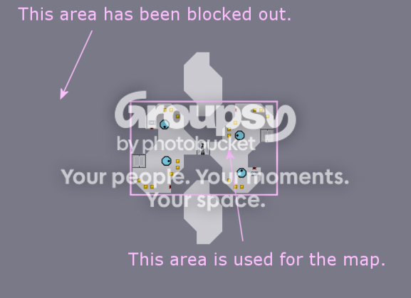
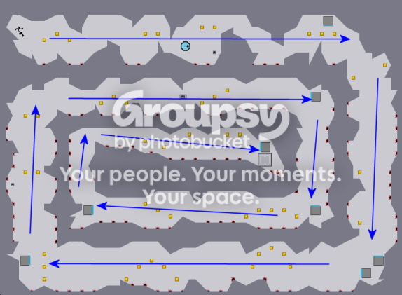
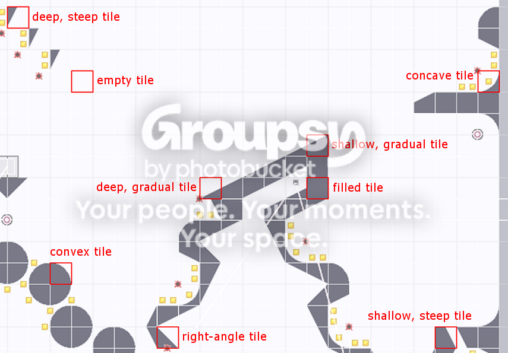
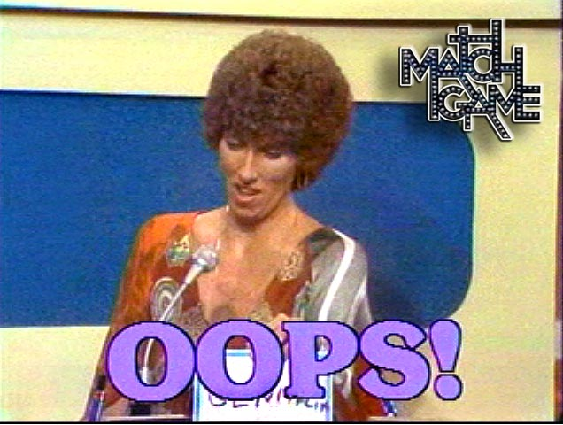
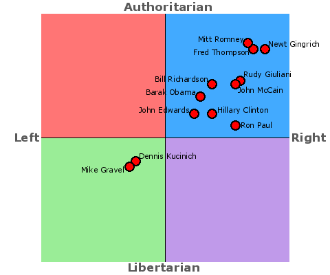

#47586 138 2005-01-23T21:45:37Z blue_tetris I have exactly four votes on plenty of maps. Here's a few that I'd like to see rated.
Sorry, I'm no good with html code:
Always Thwumpthing There To Remind Me
http://numa.notdot.net/map/5082
Mensa Migraine 3
http://numa.notdot.net/map/5044
A Falling Out
http://numa.notdot.net/map/5040
Non-Robo-Double-Tripping
http://numa.notdot.net/map/5024#50591 168 2005-02-16T20:51:18Z blue_tetris These were played by at least five, but not rated. Anyhoo, here they are.
Rate me.... I can take it.
Motive Resources
7. The Chariot#61885 34 2005-04-24T20:36:38Z blue_tetris I used to play Google Seppuku.
Basically, you take a Japanese word processer and type up a single Japanese character. Then, you put it into Google image search and see how many pages you can go through before you see something so irreprehensibly grotesque, so infernally brain-raping, that you cannot survive and must gouge out your eyes.
It's pretty fun.
#61889 9 2005-04-24T20:48:09Z blue_tetris Mine was better.
#61891 246 2005-04-24T21:04:35Z blue_tetris Wow. I thought Mother Thumping Impossible was very much possible. Turns out it was a little more impossible than previously thought. I dunno. That level was just a click-frenzy shroom-trip. I didn't intend anyone to actually *play* it.
(haha, just kidding, of course)
I'm stuck on it, too.
Damn you, Tetris!!!
DAMN YOU!!!
#62077 59 2005-04-25T22:53:26Z blue_tetris You know, trolls have regeneration. You have to dowse them with acid or burn their corpses to get rid of them. Ancient RPG rule.
Oh, and if N doesn't give you enough bang for your buck, get your money back.
Heh heh. That's what I thought.
#62079 26 2005-04-25T22:56:56Z blue_tetris Map-making is very therapeutic for me. But I guess, if we're going to have to lighten up the map-density, some of us will have to take one for the team.
I'll ship out. Don't worry about me. I'm sure greenlantern will produce more than enough maps to make up for the loss.
Just kidding.
I intend to continue making maps.
#62137 70 2005-04-26T02:27:23Z blue_tetris If this is about your inability to make good levels, TomerM, then maybe you should develop some level-making skills.
I mean, come on. We all had to go through a long process before we became the map-makers we are now. I'm usually not in the favor of responding to self-deprecating, yet argumentative, trollers; however, I feel as though you're going about this "I quit" thing a bit preemptory.
As I was saying, NUMA's map-makers didn't emerge from the womb with an innate talent at whipping up N levels. It takes skill and time. It takes a lot of play-testing and a lot of failed attempts.
My levels used to suck, outright. For the longest time, I was making levels that ranked anywhere between 1 and 3.
I'm glad I got these rankings, because if I hadn't, I'd be under the false impression that those ideas worked well.
Instead of continuing to produce the same levels, hoping they'd eventually become popular, I strived to make better levels. I changed the things that the NUMA members said were wrong with the maps and I worked on bettering the gameplay of my levels.
Saying N is a bad game isn't any vindication to you. N isn't a complex game. It is through the many permutations of its simple, few objects and basic tiles that you can create a good level. Use N to its fullest rather than trying to invent a new game.
My levels are still hit and miss, but I'm trying to climb up among the ranks of the greatest map-makers. It's a long and arduous journey. Hopefully, your life has enough interesting events that the slowness of your advancement in the field of NUMA-ing doesn't depress you too much.
Now, quit whining, and don't try to rebut my argument by quoting everything in it. It pisses me off. If I see any quotations, I'm-onna-hafta get me a fifth of Lord Calvert, fly to wherever the hell you're from, and beat some good maps out of you.
Now, c'mon. I know you can make some okay maps if you work at it. Just don't dump the site with them, so we can rate them one-at-a-time, and you can improve upon them over the series of a few weeks.
So, there, you trolled me. Happy?
#62140 71 2005-04-26T02:54:52Z blue_tetris My suggestions for new map-makers are weird, but can be effective. They may or may not work for everyone, but I use them to make my maps. They are as follows:
Make the tile-set first. Then play around in the tile-set without any objects in place. Just play around for a while. If you can play around with just the tiles and still find fun and interesting tricks and jumps, then it's a map-worthy tile-set.
Make sure you can die from every lethal object. There shouldn't be a mine that you can't accidentally die from every once in a while. There shouldn't be an innocuous drone or a worthless trap. Every object of N's destruction should be a potential death for the player. If there's a foe that doesn't add fun or difficulty to the map, remove it.
Make sure two objects do not suffice the same purpose and make sure each object's purpose is well-defined. Identify the purpose of the objects you place. A locked door's purpose is to "create a button that the player must hit to continue the level" or, with greater application, to "force a player to enter a certain area of the map (where the button is)". An enemy's purpose may be to "chase a player who enters this area" or to "launch rockets at a player who enters this area".
Any extra objects with the same purpose will simply bolster the job of the other objects, rather than creating a new source of fun in your map. For instance, two rockets in the same area will perform only one job, but the job may have a slightly higher difficulty. For the most part, the multiplicity of objects is a bad idea and will only lead to clustering and lagging; this is especially true in the case of mines, gauss turrets, and rockets. Use them all wisely.
Make sure it's fun and possible. Playtest over and over. You can't playtest your own level enough. After all, you're expecting a large community of gamers to play this level. You may as well be playing it more often than them. Anything that is too tough for you to beat should be eliminated. Anything that you can beat (even just once) may be of the caliber for many of NUMA's players. You don't have to be a great player to be a great map-maker, but you must be able to gauge the difficulty of your maps. Don't just make a map and tell yourself "There's no way they'll be able to beat that!". This sort of logic leads to very pointless and boring levels. Bottom line--a map should be fun.
Place gold. Place some of it along the player's path, but perhaps slightly out of the way. Place other gold pieces in tricky, but possible, locations. Each gold piece must be attainable. For any non-DDA, gold serves only one purpose--to collect. It isn't to hide objects. It isn't to lag PCs. It is simply for collecting. If you want to make it artsy, go ahead, but don't go overboard. First and foremost, the game should be fun and playable, then artsy. If you want to make things look cool, use the tile-set to make things look cool.
I can't think of anything else right now. This is just how I make my maps. It may or may not be useful to anyone else, but it all makes sense to me.
(Also, it may be too oppressive. I don't mean to be the Ned Nazi.)
#62145 27 2005-04-26T03:06:17Z blue_tetris It's funny that you should say "Why are humans so smart and yet so dumb?".
We've made up the concepts of smart and dumb. The average person should be neither smart nor dumb, since "smart" is a term we made up to call someone who is more intelligent than average and "dumb" is a term we made up to call someone who is less intelligent than average.
Therefore, humans who call themselves smart are just arrogant, because they believe that they (or perhaps, their species) is, for whatever reason, more intelligent--a purely relative concept. Animals don't consider intelligence to be a trait and would probably gladly admit to having less of it, since to them, it doesn't matter.
In turn, humans who call themselves dumb are being cynical, because they believe their species (rather than themselves, usually) to be foolish. Calling humans dumb is claiming to be somehow above other humans, because you were "smart" enough to realize that everyone else is "dumb".
Now, on a more fair note, "smart" refers to increased intellect, where as "dumb" refers to decreased common sense. Many people have these qualities. Not all, mind you, but the only ones we're willing to talk about when we want to consider ourselves of a higher mentality.
All in all, no, I don't believe humans are smart or dumb. I believe smart and dumb are qualities invented by humans to classify each other (or themselves, if they want to appear philosophical).
I might be wrong, but I don't think I am. If I did think I was wrong, and I turned out to be right about being wrong, I'd be regretful for having claimed rightness, being well aware of my wrongness. Right?
#62147 57 2005-04-26T03:18:13Z blue_tetris I think that a god is rendered real through the collective consciousness of people. Things that occur may or may not have an explanation, but if you say that it is God, then everything that happens is God's will (to you) and He becomes real (to you) and that's all that matters.
Whether or not He exists is of little consequence. If we are to truly believe in God (or gods), we must believe that He exists outside of science and logic. Thereby, if we try to prove His existence or prove our beliefs, we only lose track of our faith. Faith is believing in God, without needing proof.
Modern religion continues to attempt to prove God. People of faith need no proof. God exists because of their faith and, I would argue, He would cease to exist if no one believed in Him.
I have a lot of admiration for people with faith. Primarily, because I've lost mine.
#62149 39 2005-04-26T03:20:24Z blue_tetris Use Google Advanced Image search and turn off filtering.
You're sure to see something horrific and disturbing.
#62164 73 2005-04-26T05:19:13Z blue_tetris I'm sorry. I wasn't aware someone had changed the topic of this thread. Perhaps now, the thread has evolved beyond your inability to make levels. Now you have to show us your inability to understand another person's view and your inability to solicit the responses that would get you off.
I don't mean to rant, here, but it seems to me that you are of no certain opinion, other than whichever opinion is the opposite of the ones that we have. If someone came in here and sided with you, you'd be confused as all sh*t. That's what it is to be a troll. You seek some immediate form of medical help.
Please. Because I worry about you, and I want you to be safe. I really think sitting down and talking with your psychiatrist could assist you better than any one of us can.
Oh and enjoy your trolling. I'm Outie Five-Thousand.
#62166 59 2005-04-26T05:32:10Z blue_tetris Back @ Keron Cyst:
I guess my loss of faith comes primarily from the fact that I now analyze the existence of God. I never really thought about it before, and I found my answer in some deep meditative states. I figured that if I didn't believe in him, He wouldn't exist. Then I evaluated if I wanted a God to exist and I figured I didn't. I figured that I'd disappoint Him. I couldn't live up to His standards, to save words, and found that no way I could live my life would change my soul. That, and I doubted the Jesus story a bunch, and thought that my faith wasn't in a deity, so much as a philosophy. A philosophy of being a humane and righteous person. And that philosophy/spirituality required no deity, so I don't have a god that I call my patron.
I am a very spiritual person. I find the profundity in life through human interaction and nature. I wish I didn't have to go through all the motions of being a person. If I could be an aspect of nature, I think my life would have much more worth. But I'm not a cynic, so don't get the wrong impression. God helps people, but He didn't work for me that way He works for others. I found that the wholeness of nature and reality gave me reason enough to go on (and probably saved me from ending it on a few occasions). I just needed to find that ultimate sense of being. I think I've found it. Not in people or money or careers, but in a state of consciousness. Not some silly, distant concept; but something I can feel and be an active part of.
Not to be expository, though. I'm just a bit, well, cognitive right now. Whooooo!
#62167 960 2005-04-26T06:11:09Z blue_tetris This game's a classic. See if you can get it. I put it through a filter.
Attachment (lost): post-6-1114495869.jpg
#62173 61 2005-04-26T08:29:49Z blue_tetris Judging nations and religions as good or evil is shortsighted. Judging the actions of a nation as a whole, you can find tendencies toward peacefulness, though. America isn't a peaceful nation. Hell, that's why America is as "independent" as it currently claims to be. Fighting and lawlessness got America to its point of power. The use of the atom bomb was absolutely amoral. Truman knew that when he decided to use it. He figured that morality took second billing to American advancement and global power.
The Middle Eastern nations fight for a different reason. They fight because America threatens their religion. Because, in order to oppose communism, America is one nation "under God". Because, in order to bring worldwide democracy, America seems to re-educate its followers into a different way of thinking.
Think about it. The reason America and Middle Eastern nations don't get along is because the Middle East is too conservative to believe that American lifestyles makes sense and America is too conservative to believe that Middle Eastern lifestyles makes sense. This conservatism makes both nations fight to retain their beliefs (to conserve them if you will) and makes America, in particular, force its beliefs onto others.
America, however, is the more seasoned and competent fighter, and if the world is just one big struggle, then America could win. Especially, by using diplomatic terms to make things sound less violent and more in our favor:
They have prisoners of war. We have detainees.
They have invasions. We have insertions.
They have retreats. We have redeployments.
They have evil attacks upon American pride. We have "shock and awe".
Somehow, America ends up sounding much better, doing all the same things. Odd.
#62245 31 2005-04-26T23:36:17Z blue_tetris Any non-mammal. I don't know why. I don't really value the life of living things, but I don't really value the death of them, either. Does that make any sense? It's not worth the effort, for me, to extinguish a living creature.
That, and I don't think I have it in me to kill something so similar to myself. It's a form of weakness.
#62255 48 2005-04-27T00:18:14Z blue_tetris Everyone keeps coming up with conditional statements, like "Well, what if she was raped?" and "What if the child will be born with a debilitating illness?".
I think that's exactly why women need to be given the option of abortion. Even devout pro-lifers can think of a few instances in which a child's birth would do more harm than good. Laws can't be as conditional as to say "Abortion is illlegal, unless this occurs or this occurs or this occurs...". We simply need to provide women with the right to choose; and the education and moral basis to know what to choose.
Abortion is always going to be hard decision for anyone to make. It's always going to be a grave decision in anyone's life. But it is a decision. No one says electing to end your future child's life is an easy decision to make, but since a parent will be expected to educate and sustain the child, it may sometimes be the choice that must be made.
As wrong as this may sound, some lives are not worth living. From a religious standpoint, it may be better to allow the passage of a child into heaven, before life turns them away from the Lord. Given the chance, a child whose life is miserable will become depressed, uncivil, and non-religious. Many children born of unplanned pregnancies, whose mothers have considered abortions, grow up to lead unsuccessful lives and many of them frequently consider (or attempt) suicide. What would be the best course of action for a pious individual, then? Allow they're child to move on to the next life, or allow the child to suffer, become faithless, and ultimately die without the respite of heaven or a positive afterlife?
I think "murder" is far too strong a term to use for abortions. After all, murder is simply a death performed with ill intentions. In war, a soldier doesn't "murder" his enemies, he kills them--for the good of his country. In the Bible, David didn't "murder" Goliath, he slew Goliath--for the good of the people. Perhaps, when we allow a child not to pass on to the next life, we haven't "murdered" that child, we've freed them from a torturous life and an ultimately bad situation--for the good of their soul.
#62258 78 2005-04-27T00:27:50Z blue_tetris @ so what?:
It's not a realization to decide that the Bible isn't true. It's a choice. You've chosen to believe it isn't. For those who believe that the Bible is true, it becomes something deeper for them. Perhaps their faith is vindicated by what they feel, rather than by flashing lights and having good things happen to them. Perhaps the heaven that awaits them is simply a state of mind (or soul) beyond death. Perhaps if you believe enough, things become true.
Even if they only become true in your mind, and no one else's, that's all that matters. People of faith don't need to believe that the stories are true. They exist, because someone wrote them. The teachings are real, because someone is educated them in how to live their lives. So what if they're only stories. If they impact your life, they don't have to be proven as true.
#62271 965 2005-04-27T04:42:39Z blue_tetris You're right. It's Wetrix. I don't have the original image available, unfortunately. Your turn Atramentis.
#62281 52 2005-04-27T06:26:17Z blue_tetris I'm going to have to side with Kablizzy. I think that the ability to perform abortions is a scientific and intellectual advancement. It may not be, as many put it, morally correct. But preventing a life is a far cry from murder, in any case.
Again, if murder is justifiable, suddenly it's no longer murder. Surely, you don't believe that American troops gunning down extremist Iraqis is murder--it's simply for the greater good. Perhaps preventing a miserable life before it takes place is in the best interests of the people.
I mean, honestly, at what point does preventing a life become murder? I prevent births by using condoms. Hopefully, I'm not guilty of murder. Birth control pills also prevent births. They certainly don't murder.
If you believe that it's morally sound for a woman to carry, for the better part of a year, a child that she doesn't want, and for this child to be raised (or not raised) by a woman who doesn't want it; by all means, make abortion illegal.
If you believe that it's morally sound for a child to be left in the hands of its Creator when a life of suffering would otherwise lead it astray; hold true that choice is probably best for cases of parentship.
On a side note, isn't it odd that conservative economics says "keep the government out of our businesses" and liberal ideology says "keep the government out of our business"?
#62291 54 2005-04-27T08:14:17Z blue_tetris You're right. Abortion isn't a scientific achievement. In fact, it could be made better, so as to minimize the risks involved.
Oh, and I have to agree that I regret losing 50 million people. I mean, the world population is doing so poorly as it is. Only six billion people, come on. We can do better.
I mean, the places without means of abortions are doing much better than America. Africa's population is booming. They've been managing to divy resources among their population quite easily, right? It makes for an overall increase in their quality of life. If anything, America could use to be more crowded. We're lagging behind in the population count. I mean, how does Japan do it? They have abortion there, and yet, somehow, they still manage to have an outrageously cramped country. Of course, they are leading the world in technology, so it only makes sense that they can shore up a few extra bodies to litter the streets of Tokyo. You know, for scenery.
The human race only barely survived, so I've heard. We went from an unreasonably shallow 2.5 billion people in 1950 to a meager and still inadequate 6.3 billion, today.
And if my parents had decided to have an abortion, I'd be in heaven, right now, instead of rehab. Big deal.
#62293 84 2005-04-27T08:33:06Z blue_tetris I agree with Llama. Many American lives were saved.
Bombs (in any sense) aren't intended to save lives. They are intended to take lives. They are a display of superior power. Therefore their usage is divorced from any sort of morality (and are amoral, if you will). An atomic bomb is to a nation what colorful feathers are to a bird. They are a show.
We used the atomic bomb to show that we were more powerful at the cost of many lives. Whether those lives are innocent or not is up to you. Just bear in mind that, statistically, well over half of the dead had to have been women and children. Cities were bombed, not just the installations.
Japan would have never surrendered had it not been for the atomic bomb. Imagine it, a country with only menial planes and instruments of classic warfare are suddenly struck by a bomb that kills hundreds of thousands. It must have been insanity.
Was it the right decision?
For America? Yes. For humanity? I don't know.
And for you religious types: would Jesus have bombed Japan?
Oh, and Llama. I think you would consider yourself an agnostic (which means you believe that faith and religion are real and justified, but that you have no religion; I consider myself an agnostic, too). Antagonistic would imply that you simply like to stir up trouble (which is also fun, heh, heh).
#62296 20 2005-04-27T09:07:32Z blue_tetris Faith--a mind virus? That lacks logic. A virus requires either RNA or DNA. Faith does seem to replicate itself, however. Bibles and ministers seem to be the carriers of this contagion.
I suppose we can assume it is a virus, for the sake of the argument.
Viruses are diseases. Like any disease there is injury (what ailments are happening upon your body and mind) and there are symptoms (what outward effects you are exhibiting).
It seems to me that the symptoms of faith are inexplicable fits of happiness, a sense of purpose, and euphoria. Not nearly as bad as, say, malaria.
It seems to me that the injury inflicted by faith is a lack of empirical logic (just another human emotion--no more valid than faith) on certain issues, an inability to hold a decent conversation about theology, and a tendency to weave WWJD bracelets.
My diagnosis: this virus seems to be innocuous. Its effect on the person is of inderterminate quality. Its effect on society has led to friendliness, productiveness, and a disregard to personal advancement, at times.
Although the patient may be suffering, he's helping everyone else around him, so we may as well let the virus take over his body (and, if you believe in such things, his soul).
#62298 2 2005-04-27T09:26:01Z blue_tetris That's some funny stuff. Far-Side-ish humor. It definitely has some potential. I'm a big fan of webcomics, so I'll definitely check back in from time to time to see the new comics.
Could use some more permanent characters, and perhaps more definition (but I guess the lack of definition is why he calls them Scribz).
All in all, cool stuff. I also liked his art section. His drawing is really good, but it's not immediately evident from his comic strip.
#62434 72 2005-04-28T00:35:02Z blue_tetris Actually, sperm does have DNA. It carries chromosomes. It, infact, carries one half of the future child's DNA. Call me old-fashioned, but I don't think sperm is ever a productive area of conversation.
Anyway, isn't abortion more of a women's issue? With as strong as my beliefs are, I don't really feel like it's my place to decide. I feel that it's a woman's place to decide--and if women are smart enough to choose on abortion laws, perhaps they're smart enough to choose in other instances, as well.
Of course, we men will be minding after the womenfolk making sure they don't do anything silly. Right, guys? We'll be making sure they still know their place in the world. Right? Making those pancakes I like and cleaning the house while I'm away at work. Right?
Oh, and I'm surprised more people don't know about Godwin's Law. I love to see how long it takes before Nazi Germany is called upon to help support someone's claims. Obviously, Hitler wasn't all that insane, since everyone nowadays who supports pro-choice beliefs is an egomaniacal, genocidal maniac. In fact, this Hitler guy keeps sounding more cute and cuddly every minute. His nazis were simply, in a way, pro-choice. They were just a bit more choosey.
I do believe, though, as you said earlier, that a painless death is better than life of suffering. Again, I may be a little old-fashioned in that respect, as well.
My question to you, great_sea, is: what happens to child who dies before birth? Where do they go? Does God send them to heaven or hell? What happens there? If a woman and her child die during childbirth, before the kid has a chance to decide to follow Christ, where do they go?
I doubt Hitler would be in favor of abortion, either. Wasn't he Catholic?
#62435 29 2005-04-28T00:37:09Z blue_tetris I used to get high on Jesus, but I worked up a tolerance.
#62436 40 2005-04-28T00:50:19Z blue_tetris I'm surprised "Birds" wasn't more popular. Birds react only in fear, also. Birds crap on your car, too. I want birds to die. Fish live in water, so they don't really conflict with me as much.
#62437 1997 2005-04-28T00:52:44Z blue_tetris Bob Barker lures the mob of old folks to their television sets to watch another amazing episode of Price is Right.
#62439 2 2005-04-28T01:02:06Z blue_tetris I beat up a retard, yesterday, because he couldn't defend himself.
There's a room in my house dedicated to the smoking of a quarter of ganja each weekend. It's called the Rasta room. Its centerpiece is an orange hookah. I'm inviting Daddaluma over to light up and watch Harold & Kumar Go To Whitecastle, then Reefer Madness, and then Teenage Mutant Ninja Turtles.
We can't do this, can we? I don't feel right doing this. Maybe this is what you humans call a "conscience".
#62441 94 2005-04-28T01:04:15Z blue_tetris Is disfaith like unfaith or like antifaith?
#62443 74 2005-04-28T01:08:19Z blue_tetris Hitler was a great leader. He was morally insane and grossly egoistic, but he had a helluvalotta leadership.
#62444 96 2005-04-28T01:10:48Z blue_tetris Unfaith would be a lack of faith. Antifaith would be standing in opposition to faith.
#62467 6 2005-04-28T02:37:16Z blue_tetris It's interesting that we can't talk about alcohol. It's sort of a staple of civilization. I mean, without alcohol, humans wouldn't have built cities (where they could ferment their spirits) and would be wandering the countryside erratically to this day.
Oh, and definitely Lindsay Lohan. What's five or six years between lovers?
I never understood the fascination with Britney Spears anyway. She's too fake.
#62497 8 2005-04-28T06:55:04Z blue_tetris Uma Thurman or Jennifer Aniston?
I'm really looking for a relationship, so I know who I'd pick. The other one, however, would be good for banging.
#62498 81 2005-04-28T07:01:32Z blue_tetris You say Hitler is great, some people think pizza is great, and I know N is great...
Woah!!! I never said Hitler was great!!! Hitler is a demented and evil man! He was a dictator with a lot of leadership skill, but sweet Yahweh, don't think I ever said I thought Hitler was great.
Damn, I'm getting sketched out, hardcore, here, guys. Tell me I not going crazy. These topics get sooo distorted.
Argh.
#62516 970 2005-04-28T08:31:25Z blue_tetris Yes.
#62518 13 2005-04-28T08:37:43Z blue_tetris Crud. I feel bad. Now I have to shake off this wicked karma.
I'm sorry for even participating in this cesspool of crime and sinister behavior.
I'm leaving to chug some Robitussin... maximum strength.
Then, while I'm tripping, I'm going to drive... my car.
Then, I'm going to run down a pedestrian... with some sort of terminal illness.
Damn, I'm bad at this game. I better give up while I'm still allowed to be here.
#62521 43 2005-04-28T08:51:49Z blue_tetris I had an image associated with my name. Its content may surprise you.

#62523 5 2005-04-28T08:55:29Z blue_tetris i also had teh idae of grapping leages then been abel to pull ur self up on2 them as well so as 2 pull up from a lower hight
I slept it off, though.
#62750 18 2005-04-29T12:05:37Z blue_tetris The statement "this statement is a lie" is false. Then again, I only speak in lies.
#62751 2011 2005-04-29T12:10:11Z blue_tetris A sword made out of dolemite (the righteous, ebony ore that leaves ladies beggin' for more) could slice right through any admin.
#63385 28 2005-05-02T15:51:51Z blue_tetris I don't see why you're so upset. I mean, it was just a warning. It's not like any action was taken against you. You received a warning that action could eventually be brought against you if you kept up the antics.
You also incited me to act outside of my ordinary level of profaneness. I also received a warning, so I think it only makes sense that you'd receieve a warning on par with the one I received. After all, I'm new and impressionable.
When I get pulled over by a cop and issued a warning, I'm just thankful I didn't get ticketed.
Maybe this logic should apply here as well.
#63390 310 2005-05-02T16:10:35Z blue_tetris Granted, but the hole in your life formed by not playing N forces you to do a lot of drugs and you end up spending a few years in rehab.
I wish I could afford a new car.
#63620 50 2005-05-03T19:27:51Z blue_tetris They're moderators. They should be allowed to adjucate rules on occasion. We can't assume that every situation that warrants a warning can be covered within the rules. That's why we have moderators.
If something pisses them off, chances are it has the possibility of pissing others off. Since rules exist primarily to prevent the "pissing off" of people, it might be a good idea to not do things that piss people off.
Bottom line: They are the moderators. If they need to do things to keep the forum up and running and prevent from getting in trouble, let them do it. They are in charge. Everyone else needs to be responsible for their actions.
I tell ya, kids these days don't know what it's like to actually be responsible for their actions. Bring back detention and paddling and sexual harassment. Thems were the good ol' days.
#63622 5 2005-05-03T19:34:20Z blue_tetris Black Mario?
Solid. That's one righteous plumber...
*shut'cho mouth*
I'm only talkin' 'bout Mario.
*we can dig it!*
#63623 99 2005-05-03T19:38:04Z blue_tetris Quote
lose your TURN; effects end when you are ATTACKED
A pen-and-paper strategy game I make that my friends and I play. This describes a "sleep" status effect. Totally nerdy.
#63727 6 2005-05-04T16:24:35Z blue_tetris I think you may be using the term "insane" a bit too liberally. The term "insane" means "without sanity", so there aren't any levels of insanity--you are either sane or insane.
Even if you could be more than ordinarily insane, I doubt any amount of insanity would make you sane again. Most people believe that insanity is just a way of thinking. It's not. Insanity is a way of perceiving. Insane people aren't just people very bad at making judgments. Insane people look at the world and it doesn't appear the same way as it does to us. They hallucinate, experience fundamental thought disorders, and are striken with psychotic breaks, delusions, and fugue. It's like a bad drug-trip except without the euphoria and without the saving grace of coming down. (I hope very few people can get the reference.)
So insanity isn't as easily defined as we would hope. It is actually a disease. No insane person is more or less than insane than the next. Their perceptive and cognitive functions do not behave in the same fashion as the rest of society, so they are deemed insane.
It could be, however, that those we deem as insane are simply viewing different realities than we are. Not less profound or plausible, just different.
Yeah. That's right. Think about that one.
#63728 2015 2005-05-04T16:36:12Z blue_tetris A Crusader would take down any nonbeliever who is busily supporting the evils of minding one's own business and the wickedness of being productive of Sundays.
#63829 14 2005-05-05T13:39:16Z blue_tetris If it can be cured by the process of thinking, it isn't insanity. Insanity affects a person's way of thinking so deeply that an internal cure is not possible. Insanity is a real disease. It's not just a funny thing to call people that are acting silly.
Maybe your idea of insanity is a little too influenced by modern culture. Television and cinema tells you that insanity is a joke-worthy state of mind where one lacks the ability to make intelligent or wise decisions. It's not that at all. Insanity affects your mind so that what you believe to be intelligent or wise decisions are so twisted and perversed that no normal person can understand the thought processes that go into it.
A person who answers 7 x 8 as 64 isn't insane, just non-intelligent. A person who eats their fingers because they think that they are making him do bad things is insane. And I'm not sure how funny that is.
Or how bland fingers must taste, either. They could probably use some hot-sauce.
#63958 5 2005-05-06T16:04:38Z blue_tetris Like the dreaded hydra. It's probably best to ctrl-alt-delete them.
#63962 18 2005-05-06T16:27:46Z blue_tetris ... Whazzat? You can't cure insanity by contemplating the purpose of life.
Well, okay, just "deep thoughts," but you get the general idea 
I don't think you quite get it.
Insanity makes you unable to think in a usual fashion. People with insanity can't just
choose to start having deep and meaningful thoughts. Their thought patterns are disrupted to the point that thinking doesn't right them.
Would you tell a crippled person to just start "walking right" to fix his problem? No.
Now, you may be confusing insanity with neuroses, which result from cognitive connections being initially abnormal, but fixable.
Many people have personal problems that are mental in origin that they have overcome. Those aren't insanities. Many people have chemical dependencies and depression. Serotonin imbalances can cause suicidal thoughts. These things, however, have explainable chemical reasons or palpable cognitive causes and can therefore be monitored and dealt with.
People who act "silly" aren't insane. It's just cute to think that insane people are just being goofy, so we don't have to actually understand their chronic and profoundly-debilitating diseases.
So the guy who thinks he's a glass of orange juice ends up seeming comical to us instead of mind-bogglingly bewildering.
As a point of interest:
Just after WWII, the CIA was experimenting with a "truth serum" called LSD. They believe that, while tripping on acid, the patient would tell aspects about themselves or even be susceptible to mind cotnrol. One male subject was interviewed one night and admitted that "For the longest time, I thought I loved my father sexually."
The next day, they gave this man a few drops of LSD, put him in a straight jacket, blindfolded him, and place headphones over his head. He could not see or feel anything. Then, through the headphones, they played his statement: "For the longest time, I thought I loved my father sexually" over and over for eight hours. For eight full hours, he had no sensory input but his own voice saying the most degrading thing that he could imagine about himself. It looped every three seconds. For eight hours. He saw nothing. Felt nothing. And heared his own voice deriding him in a way unimaginable. Perhaps an aspect about himself that he never wanted anyone--even himself--to know.
Subsequently, the man went insane. Supposedly, he would tear off his fingers or chunks of his skin any time he could free his hands. So they kept him in a straight jacket. Eventually, he managed to charge into a wall in a CIA interrogation room, fracturing his skull and killing himself.
But before he died, I bet he acted quite silly and comical.
They should have made a sitcom about this guy. I bet it would've been hilarious.
#64089 22 2005-05-07T14:23:04Z blue_tetris Insanity makes you unable to think in a usual fashion. People with insanity can't just choose to start having deep and meaningful thoughts. Their thought patterns are disrupted to the point that thinking doesn't right them.
Would you tell a crippled person to just start "walking right" to fix his problem? No.
No, that's...
*sigh*
Nah, you guys won't let something silly like personal experience get to you. Go ahead and keep theorizing wildly. This is getting entertaining.
Subsequently, the man went insane. Supposedly, he would tear off his fingers or chunks of his skin any time he could free his hands. So they kept him in a straight jacket. Eventually, he managed to charge into a wall in a CIA interrogation room, fracturing his skull and killing himself.
Have you- fuck it, nevermind.
Just nevermind.
Keep talking. I'm deeply amused that this is what people think of insanity.
I'll just stand on the sidelines and watch.
Tsukatu. I respect your opinion. I doubt I would go on theorizing wildly if I knew the right answer, because obviously I don't.
But I do believe that insanity is more of a problem than a lot of people believe it to be. I think we take it too lightly or comically. I don't think it can be cured easily, by any stretch of the imagination. It's a real disease. And I guess if I amuse you with my inability to grasp this concept, I'll go on amusing you. I live to entertain.
Insanity is just a term to define a concept that most people don't want to understand. It's better for most people to not understand what it's like to be insane. It's better that they just know the process of becoming insane and the habits of the insane, so they believe it's just an outwardly-affective disorder. However, the worst of insanity's ill effects are internal.
I would've liked you to have finished your question that began with "Have you..". Regardless of what you think of me, I think I could venture an answer to it. I, too, have been there, Tsukatu, as much as you don't want to believe it.
Ever since I got out of high school, which was a foray into insanity itself, I've been through five years of self-deprecation, rehabilitation, court-ordered isolation, and therapy--to say nothing of the inward effects on myself.
So if I appear ignorant, it may just be that I've put things behind me. That I don't tell people what it's like to realize you're getting no job and having no life. That I don't descibe what it is to interpret every action as futile, so you need to make more evident actions to display upon yourself. I'll spare details.
So if your question is "Have you ever gone insane" or, more appropriately, "Have you ever spent a quarter of a century living a life that has had little to no value, having no experiences worth telling, lacking any sort of moral judgment (despite your greatest intentions), and subsequently thinking that your mind is simply a disease for your body, doing nothing but hurting you and holding you back and therefore attempt to rid yourself of it?"
I would answer an emphatic yes. Yes, I've fucking been there. And I hope it amuses and entertains you to elicit such a response from me. To have me prove that I'm not this babbling retard putting my uneducated spin on what insanity is. Insanity is just a word to describe a form of hell. A form of hell that I've put behind me. A form of hell that makes me think of seven ways to die every time I just have to mention slight aspects of what it was to me.
Well, I hope I've amused you with my ignorance. I hope it has been hil-fucking-larious. But honestly, I think you should have more respect for people's opinions. Perhaps your problems are on par with others'. But go ahead and retort with some claim of having worse experiences or more grave situations to experience. Because it's not worth me telling the whole damn story just to warrant more credibility and less respect. And I think neither of us want that.
I have too much respect for you to say everything I've said. Because I think we're on the same page here--and I don't think you want to be on the same page as me (I don't know why, though). I think you want to be better than me. And I guess you are. Because you haven't broken down like I have. Because you were strong enough to not consider your ailments cureable. You were able to become sane through courses of thought. I took courses of action. And that's why I'm not in college or anywhere in the direction of a decent career.
You can go on thinking my passion for this subject is just some naive attempt to gain some philosophical prowess or some shit. Because my comments up to this point have been hiding the truth (just as yours have) and I don't think the forum needs to hear our stories.
And I apologize. I might have flown off the handle. But I know what I'm talking about.
#68003 17 2005-05-19T23:30:11Z blue_tetris And about Mother Thwumping Impossible - don't worry man, you can do it. It is really false advertising, it actually isn't impossible, just difficult. Just persevere, and don't get mad at yourself! You've got it in you to beat it, I am sure. If you made it that far you can make it further.
No, it really is impossible. If you beat it, I must have made it wrong, because I was going for impossible.
#68007 10 2005-05-19T23:59:51Z blue_tetris Let's say you stared closely at monitors for a while (as in, a while while) and became short-sighted (key word: "closely"). Now you've glasses. If you stared at the monitor at a normal distance again, wouldn't that help your eyes readjust back to a relative condition of normality (albeit more slowly than when they degraded)? If you stared at the monitor even at normal distance, as long as you wore glasses, your eyes would think you're seeing it normally and would readjust to fit the distance better, thus becoming even more short-sighted, right?
That's how I see it. I'd really like to know what the eye doctors are thinking 
My vision just gets worse and worse. Every year I need new glasses. I'm clinically blind, now. Special DMV verification and everything.
I think doctors do this to keep getting more and more money. Glasses are designed to make your vision worse. That's so they can make more and more money. I'm sure they could create cheaper ways to permanently solve visual problems. (However, a lot of it is hereditary--everyone in my family has poor vision.)
It's the same reason they don't make everlasting lightbulbs. They have the technology to do it, but it's not in their best interests--the interests of money.
I also believe doctors purposely spill drinks on the sidewalk to make you break your legs, too. GMC makes flaws in their car designs and computer companies create bugs in their software. It's all in the interests of business and money.
But I digress.
I believe that eyes don't "adapt" or "fix themselves" any better than any other organ or body part. If you break your leg, it doesn't always "fix" by walking on it. If you have a heart condition, it doesn't always "fix" by doing cardial exercises. Maybe eyes are just like every other organ in your body--sometimes they just get screwed up.
Nowadays, if our eyes are screwed up just the littlest bit, we put glasses on them. Back in medieval times, if people's eyes were screwed up, they just kept on living. In some Grecian and old Anglo-Saxon stories, they mention that a character has poor vision. However, they couldn't do anything about it, so they just lived their lives with near-blindness.
Hell, maybe the old definition of "blind" wasn't "entirely unable to see", but instead "so near- or far-sighted that it's too fuzzy to see". I dunno. Just a speculation.
Now my take on why "smart" people wear glasses (a topic I discussed in a Psychology course at NYCU):
I believe that, in the process of cognition, one can
observe and
think. There are many people who observe more and think less. There are also people who observe less and think more. People who think less make quick assumptions about the world they observe. People who observe less seem distant or "weird", because they do not always try to observe their surroundings in depth.
Glasses lower your ability to observe, so you end up being "spaced out" or "separated" from the world through a lack of observatory skills. This makes glasses-wearing individuals rely more upon intellect than direct stimulus. This could lead to more imagination, higher intellect, and greater cognitive understanding, but less tactical understanding and spatial sense.
People who wear glasses also, statistically, observe more 2-dimensional media (such as televisions, computers, and books) than people who do not wear glasses. The information carried along 2-dimensional media is usually more dense with content than 3-dimensional stimuli. This could explain the larger amounts of knowledge that we perceive glass-wearing people to have.
Because of their lack of personal vision (so to speak), many employers believe glass-wearing employees will be less ambitious and more devoted to their work--if the work involves typing, catalogueing, or secretarial services. Employers will hire glass-wearing people more often to fill these roles as they tend to be "easy to take advatage of".
Then, notwithstanding:
I took a science laboratory class once. The professor asked, "How many of you are wearing glasses?" Half of us raised our hands. Then the professor said, "So, I assume the rest of you are wearing contacts? A show of hands?" The other half of the class raised their hands.
I took this to assume that the most minor visual issues are resolved by doctors through both glasses and contacts, and--furthermore--most everyone in America (and other nations as well, probably) believe their vision to be sub-par. If
everyone's vision is sub-par, then perhaps we should lower par by a few strokes.
#68092 6 2005-05-20T10:41:12Z blue_tetris Better? Worse? These are entirely made-up concepts.
Nowadays, there are less people dying.
On average, people are living longer.
The population is reaching very high level.
Standards of living are much higher now. (We only hear about the richest of the rich in history books, and even they weren't that well off.)
It seems like we are approaching a utopia/dystopia--all subject to one's point-of-view and socioeconomic status.
For a more perfect future, we have adopted the Orwellian nightmare of having oligarchies run everything and maintain the status quo. And the status quo is in good shape. So, it could be seen as "better living".
Personally, though, I look romantically back to a time when life wasn't simple. I look back to a time when we had to fight for our food and we followed orders and achieved statuses and had to work for what we had. I'm the most liberal guy you'll ever meet, but sometimes I wonder how it must have been to fight with honor and strive to be something, despite all odds.
You may say that we have the "American dream", now. Well, everyone is living the American dream. I want something more profound. I want something deeper for myself. I'm a lazy bastard and my comfortable lifestyle leaves everything within my reach. I don't have to fight for anything. Nobody does, anymore.
I'm not saying that struggle, poverty, and pain are good things. No. They most certainly are not. But I sometimes wonder if I'm a strong enough man to have been able to live back then. I wonder how many of today's billionaires, who came to power through nepotism and luck--would've fared in a timewhen it actually took strength, resolve, cunning, and ambition to reach the top. Because, in today's America, it doesn't take any of those things. It takes the right daddy and the right hometown and the right luck to reach the top.
And, even though I was lower-middle class in youth, the modern way of living gave me too many of those things. I'm not sure if my human spirit will ever be vindicated. I'm not sure if I'm worth the little money I've come into.
#68250 13 2005-05-21T09:22:59Z blue_tetris Get some pince-nez glasses. They'll perfect any sort of classical goth look or intellectual sybarite look that you may be going for. Then, if you want to switch over to a more contemporary cosmopolitan stoner look, put on some gold-toned aviator glasses.
There's a pair of glasses for every style--don't be afraid to join the masses of the proudly visually impaired!
(Why is my name attributed to the "Don't wear glasses" thing? My argument, though suggesting one needn't wear glasses, actually focuses on the argument that nearly everyone is "visually impaired", so you may as well get glasses if your vision is poor. They make you look smart and get you good jobs! Plus, the ladies who are into glasses-wearing men are much more profound and far better in the sack. Even my non-glasses-wearing friends put on glasses before we go bar-hopping!)
THIS POST IS SUBJECT TO FALSEHOODS
#3067 1 2005-05-29T01:07:49Z blue_tetris Perhaps there could be a series of objects that, when touched, would alter the properties of the world in some fashion. This may be difficult within the programming of the game--I don't know much about such things--but I figured it would be interesting to have objects that change left to right and right to left (with the cotnrols) or slow down the rate at which N falls.
Seeing as though these sorts of suggestions receive disagreeable feedback, usually, I'm trying to make this as generic as possible. Also, someone may have suggested these things before. If these things are too difficult within the game's engine, then just disregard them. Otherwise, listen in to a few of my ideas:
Control inverter: an object that will make the left arrow move N right and the right arrow move N left (until N touches another one of these objects)
Control locker: an object that will make the left and right arrows unable to move N, allowing only jumps (until N touches another one of these objects)
Jump locker: an object that will prevent N from jumping (until N touches one of these objects); this wouldn't be as fun
Gravity reducer: an object that reduces the acceleration applied by gravity (probably making even the largest falls non-lethal and increasing jump distance); this would last until a "gravity increaser" is touched by N
Gravity increaser: an object that increases the acceleration applied by gravity (making smaller falls more lethal and decreasing jump distance); this would last until a "gravity reducer" is touched by N
Friction reducer: an object that reduces the effects of tiles and other physical objects on N's velocity; the arrow keys would have a reduced effect upon N's velocity while N is touching surfaces (thus, N would slide more)
Friction nullifier: an object that eliminate the effects of tiles and other physical objects on N's velocity; the arrow keys would have no effect upon N's velocity while N is touching surfaces; N could only change his velocity by moving while in the air
Friction increaser: an object that raises the effects of tiles and other physical objects of N's velocity; the arrow keys would have a reduced effect upon N's velocity while N is touching surfaces (thus, N would be more grounded)
(Some sort of "reset" objects would also have to be in place to make this work)
Robot lagger: an object that will make robots require twice as many frames to complete the same action as before (thus making the enemies slow, and N, by comparison, fast)
Slow: an object that will make N require twice as many frames to complete the same action as before (thus making N slow)
Environmental effects would be interesting, also:
Wind: constant velocity applied in a direction
Water: an area where you can either (a) jump off of the air or (

use the arrow keys to move up and down
Jet: an object that applies velocity outward from it in a certain direction
Tell me if any of these have been discussed already and, if they haven't, tell me why they would/wouldn't work.
#71537 55 2005-06-01T20:36:28Z blue_tetris I was in love with a girl named Cleo, once. Yeah, I know. Weird name. I was in my junior year of college and I was thinking of getting married. I was afraid to propose, because I wasn't sure what it would mean--I didn't know if I was ready. I knew every thing about her. Every. Thing. I'm sure she knew every thing about me, too. There weren't any secrets between us. We were the epitome of intimate. There were a few occasions when we thought we were expecting a child (which would have been way too much pressure for me), but, like your average college students, we were just a bit too dramatic and jumped to conclusions frequently.
Anyway, she died in a car accident.
Don't surround yourself with life, unless you're willing to surround yourself with death, too.
So, now, I don't hold down relationships. I'm a love 'em and leave 'em kind of guy, now. Bar-hopping is much safer. Just don't leave any phone numbers (or too much money in your wallet).
#72146 78 2005-06-04T08:45:18Z blue_tetris I'm just a sucker for girls with glasses. Thick-framed, emo glasses. And red hair. Or dyed hair. Or... short-ish hair. Oh, God. I'm just a sucker, then, aren't I?
I met back up this girl in a club. She has short, fiery-red hair. Small, thick-framed, black glasses rested at the end of her nose, punctuating her deep and beautiful eyes. I knew she had to be mine. We had both had too many shots already, but we went back to the bar and discussed social philosophy while we downed a few more. We commented on the others at the party. Mainly goths. Her frame was curvy. She had thickness in all the right places. Black leather adorned her sinews and a red t-shirt displaying an assortment of Japanese characters delicately rested upon her chest. I took a deep breath of the dense and sweaty air and licked at my lips. She licked at hers, too. Her lips were glossy and a fiery red to match her hair. Her teeth were perfect and white. I looked to a neon clockface on the wall. 3:34 AM. Damn. The party was dying. I asked for her new cell number and she did me one better. She hailed a taxi and we went back to her place.
And that was that. It was like a beautiful movie. I think I'm going to marry this girl. I hope I don't mean that, but I just have this premonition. It's been a long time since I've had a relationship with a woman last more than one night. This girl and I, though, we can talk about anything. We were the very definition of close. We barely even had time to meet each other, but she already knew every last thing about me--and I think I have her pretty well-pegged myself (no pun intended). Her name is Suzy.
I hope I'm not getting ahead of myself, but I think I'm in love.
I'm gonna make her one of those macaroni sculpture thingies with a big heart on it. I have to go see if I have enough rotini left to spell out "Suzanne".
#72498 10 2005-06-05T11:57:32Z blue_tetris I love it when folks squirm about my level. I think its main difficulty is that it is slightly unfamiliar when you've played a lot of Metanet levels.
I still haven't beaten it. I can beat each part separately (which is how I made the level), but I still can't beat it. No amount of assistance will allow me to beat it, though. I am forever stuck. The irony of it all. I only hope that it tortured others as much as it has tortured me.
This is what it must feel like to be evil. Hmmm.
#72501 18 2005-06-05T12:22:16Z blue_tetris I agree with the posthumous antics suggested above. Wouldn't it be entertaining to see rockets and rifle shots keep flying during the main game like they do during debug mode? I'm sure enough people enjoy the game for its animated deaths that a little tweaking could be done to sate their morbid urges.
And on jeffkillian's note: Normal people would stop stabbing you when you died. These, however, are robots. They have a hard enough time obeying their algos, let alone detected a living ninja from a dead ninja. It would make sense for them to mash the stuffing out of N until a new ninja comes along to focus attack on.
(The topic title didn't have me worried one bit. We N players would never kill ourselves. We've grown so accustomed to the off-the-wall deaths we see in N that any normal death just seems too... boring.)
#3187 1 2005-06-05T14:01:23Z blue_tetris Lasers. Not laser drones, but constantly-active lasers. Similar to mines, except a row of them would not be necessary, because a simple laser projector could fire a permanent beam of energy. This should be as simple as making a laser drone into a fixed point and making its beam always active. Another application of the laser idea is that lasers could be intermittent and would turn off and on, allowing precious moments to move through areas. Think of the pressure one would endure while moving through a toggling laser grid, while avoiding chase drones or gun turrets. Lasers could also have rotation or movement patterns, allowing them to gate areas temporarily or create tight spaces within which N must operate.
Stickers. These tiny robots would chase N in the same fashion as rockets. They would dive and turn quickly to catch him, exactly as the rockets do. The only difference is that they would not explode when they hit a wall, but would instead continue moving toward N, jammed against the wall. When N changes location, they would move toward his new location, whether or not they could actually reach him. They would only have to "detect" him once using line-of-sight to become active, after which, they would pursue him until he beats the level or is dead. Once a sticker reaches N, it sticks to him, pauses for a few moments, then explodes or delivers a deadly surge of electrical energy, whichever would look cooler.
Toxic Spheres. The opposite of gold. When N touches them, he loses one second from his time bar. These could be placed in areas that are considered to be the "easy way" to scale the difficulty. This would give players areas to avoid that wouldn't plain-out kill them.
Stun Turrets. These stationary objects would have slightly higher accuracy than the gauss turrets. When they hit N, they power down for about a two seconds, but N becomes stunned and is at the whim of physics for a second.
Bombers. These moving drones drop bombs when detecting N below. A bomb plummets quickly from the bomber and explodes to a 3x3 size upon hitting a tile. The 3x3 explosion is centered around the tile in which the bomb lands. If N remains under a bomber for an extended time, the bomber frequently drops its bombs, generating a "carpet bombing" effect. If an explosion touches N, N dies.
Missile Launcher. These modified rocket launchers fire N-sized, red missile that chase N. Missiles move slower than rockets. When a missle hits a tile, it explodes with a 3x3 size.
Clones. These are additional ninjas that work for the ideals of robotkind. When you move your ninja, all the clones follow your button commands, as well. N's clones could activate switches an be killed by robots as easily as N (though turrets, chasers, and other N-targeting robots would not target clones). N's clones would electrocute N if they were to touch him. Clones could lead to some pretty intrigueing puzzle levels. Clones, in general, would be mind-bendingly difficult when encountered in a level.
S. This might sound a bit contrived or gimmicky at first. S is a samurai. He is the archnemesis of N. S is entered into a level just like N, simply given a starting location. As part of his code, S is entered into a level with a set of demo data. S plays out this demo data and seeks to activate the dreaded S bomb, an object that N cannot interact with. N (and the entire map) is destroyed if S (following his set demo sequence) reaches the S bomb before N can escape from the level. If N crosses S during S's set demo pattern, S slices through N with his katana, killing N instantly.
#72999 7 2005-06-07T11:46:20Z blue_tetris Women, definitely. Men are gay.
#73441 17 2005-06-09T11:56:31Z blue_tetris Smoking is a nasty habit. I've seen lots of people pick it up, but I don't understand why. If your parents smoked or you had the opportunity to smoke when you were an impressionable child, smoking might have taken you. However, as an adult capable of making informed decisions, I don't think smoking is at all a logical decision.
That's why I think smoking is stupid. Then again, I smoke, too.
Just not tobacco. It causes cancer and doesn't really taste good or relax me in any fashion.
#73443 16 2005-06-09T12:13:35Z blue_tetris Isn't it weird that the word "boob" looks so.... booby.
Anyhoo, I'll have to agree that a woman must be attractive for me to date her. Every relationship, no matter what, becomes physical if given enough time. When that time comes, you really want someone who will be attractive to you physically, as well as socially and mentally. Now, "attractive" can mean many different things. Every person finds a different set of physical traits to be attractive, in the same way that everybody finds a different set of personality traits to be attractive. Anyone who doesn't appreciate their mate physically will not be in a long-lasting relationship. Trust me.
That being said:
No fat chicks.
No flat-chested chicks.
No chicks with weird teeth (that's just freaky).
No chicks with any obnoxiously protrusive facial features.
No chicks with close-together or far-apart eyes.
On the issue of boobs:
I have to say I like them to be naturally large. I don't mind a girl with a slightly thick frame, provided she has the rack to justify it. I like the big, round ones. Nothing absurdly-shapen or nipple-centric. I like the classic "fertility goddess" look. There's something inherently feminine about the power of breasts. Not to get Freudian, but there's a nurturing of my masculine spirit that goes on when a woman places a lot of focus on her breasts. It's like she wants me to be happy (because those large, unmanageable breasts aren't helping her out with day-to-day activities). A large-breasted woman feels helpless and under my sexual dominance. And I like that. Yes, I like that, quite a lot.
#73867 2 2005-06-11T08:46:29Z blue_tetris It says you have a 5 out of 5 on that DDA. I can understand being slightly frustrated with someone who may have unjustly rated you with a zero. Then again...
No harm no foul, right?
(It may be something about his machine that lags the DDA so that it doesn't work. It's hard to say. It worked on my PC, fine. Additionally, it was WICKED FREAKIN" ROXXORZ. KIKKED MY A$$!!!!!1!!!!111!!! FIVE NINNJAS!!1!!!!!)
#73871 21 2005-06-11T08:59:48Z blue_tetris Objectifying?
Women objectify themselves. They dress themselves up and put on make-up to make themselves the most attractive and pricey objects possible. Women know that they live in a male-dominated society. They just want to be the object that the men around them decide to choose. If women are good enough objects, men will make them happy with money and social prestige and (occasionally) sex.
Successful women are sluts. Non-sluts are non-successful women. It's as simple as that.
Also, the women with the best tits (not necessary the biggest) tend to be the best objects--and the most successful. They also have to present their breasts in a positive light to gain this power and prestige.
Sure, there are successful, non-beautiful women, but nobody cares about them.
(Blue_tetris disclaims all the above statements in the likelihood that a chick will want to come to his apartment later for some nasty sex. PM me for my cell, chicas!)
Wow, I'm REALLY going to Hell, aren't I?
#3272 1 2005-06-11T10:26:04Z blue_tetris You know you watched them, too. They were great. I stopped watching that network in 1996 or '97, because they took such classics off the air and replaced them with contemporary junk. Not all of them were good, but I liked a good number of them.
My favorite was Pete & Pete. Hilarious and surreal.
#73879 106 2005-06-11T10:30:12Z blue_tetris Oh, come on... Can't I just be banned for some months or a year or something, and then come back. It's not fun just playing others maps, and can't comment, post demos or vote! Pleease?

Tenacious, isn't he? Reminds me of this kid who utilized his "second amendment rights" at school. He claimed some sort of "I'm just a kid" plea. Thankfully, no one bought it.
Maybe that's an unfair analogy.
#73880 2031 2005-06-11T10:32:48Z blue_tetris The Internet will extinguish any hopes at getting people to spell correctly.
#73930 29 2005-06-11T13:27:49Z blue_tetris The Sith tradition is a tradition of fear, anger, and emotion. The Jedi tradition is a tradition of serenity, wisdom, and discretion.
Quick power is attainable through the dark side. The cost of this power, however, is slavery--slavery to one's fear, hatred, and grief. A Sith must sell his soul to the dark side of the Force to attain his power. This is a path to pain and ultimate failure.
The Jedi offer ture peace and true power of spirit. Jedi trust the Force, rather than control it and enslave it. To a Jedi, the Force is an ally--and a powerful ally it is. Through their trust of the Force, a trained Jedi can exceed the power of any Sith.
The appeals of the Sith are tempting and many, but I believe you are all strong enough to make the proper decision. Join the Jedi religion. Your soul is depending on you.
May the Force be with you,
blue_tetris
#74032 8 2005-06-11T19:31:30Z blue_tetris hey! there's no "ren and stimpy" option!!!!! 
Ren and Stimpy was a cartoon, not live-action.
#74038 24 2005-06-11T19:54:02Z blue_tetris Yet I do not believe that this aforementioned teenage girl could have achieved this much.
Touche'?
Touche, indeed. You got me. I was a bit too absolute. I said that
no woman could ever get ahead without flaunting her beauty, but that isn't true. Maybe I'm just from that group of shallow guys that assumes women are mere playthings made for sheer enjoyment. Women of the 90's were no different in social stature than men. Modern women (of the 21st century) have role models like Brittany Spears, Jessica Simpson, and Paris Hilton. All of these women preach that beauty and sex appeal reign supreme over intellect and good lyrics. That just isn't true. Today's women are getting the wrong impression and trying to follow these hollow dreams. Nonetheless, there are women who strain against their social pains to achieve great things. Success is much more difficult for these women, but their resolve simply shows their successes (whether great or mild) have been well fought for.
So, you're right, the teenage girl you mentioned (not unlike many teenage girls, today) will never get to achieve equality and fairness. She may attain success and fame, but at the expense of her moral fiber and dignity.
The worst thing about apologizing is that weird feeling I get in my manhood regions afterwards. Like a kick square in the.... pride.
Back to the topic of breasts:
I must agree with kai. Although I like big-breasted women, there is an element of naivete and simple cuteness associated with small breasts. Asian women are about as hot as women can get, but the common postulate about breast-size would not suggest this fact.
Even so, I reside in the fact that women with large breasts seem helpless and docile and feminine and goddess-like, while women with small breasts seem active and cheerful and enterprising and threatening to my manhood. Also, large breasts have always been a symbol of chastity to me, but I don't understand why I feel that way and I'm definitely not telling anything like that to my therapist, 'cause she'll get all weird-like and start asking me all these questions about penises and how I viewed my mother while she was around and how I view underage women and I don't want to answer any of those questions and... and... I should probably shut up, now.
#74199 31 2005-06-12T13:54:54Z blue_tetris That was heavy, gravy-laden sarcasm, Keron. He was overexxagerating to the point of driving his point home.
Everything I say sounds sarcastic. That's why I can't get a job. I assure you that I was being sincere, not using hyperbolic satire.
Read the content. I debunk the modern view of women in the early portion of that post. I really do think women can acheive great things if they can free themselves from what society wants them to be.
No mudslinging, I swear. I never wanted to be an ass. Except, perhaps, in my first comment on the issue, which was purposefully misogynistic.
#74202 10 2005-06-12T14:00:04Z blue_tetris Definitely /g-ow-ss/. I think that's the proper pronunciation. It's named after a German guy who worked with, like, magnetism and stuff, I think. A gauss rifle would be something similar to a rail gun, projecting a magnetized chunk of metal at a speed in excess of 100 kilometers per second.
#74205 104 2005-06-12T14:12:29Z blue_tetris Not surprising, Hindus worship cows, cows have tails, boy has tail, Hindus worship boy.
I'm sure this could be some alegory to religions in general, but I'd rather not dig for it.
Then again, God has a beard and Jesus doesn't. Oh, and God uses a mighty staff and Jesus uses a crossbow that fires chainsaws.
I guess it doesn't always work.
UPDATE:
Suzanne and I have really been hitting it off. She's been living at my apartment for the past few weeks. I'm thinking about proposing. Is one month to soon?
#74307 17 2005-06-12T21:00:14Z blue_tetris About your ideas... 
Do you want me to be kind (and say that they all rock), or truth (an tell you that I don't like any of them)? 
Actually, I'd like you to be non-condescending, but I guess it's too late for that.
Ass.
I know the suggestions within this forum won't be used. That's not the point. The point is to discuss things that we think would be fun.
Then again, maybe I'm just being pessimistic. Some suggestions could be incorporated for a later game (N2, perhaps, when and if its production begins).
#74308 33 2005-06-12T21:05:12Z blue_tetris I prefer midriff-guys to boob-guys. Probably because I, like, don't have any boobs yet. 
To be honest, I think most guys will judge the beauty of a woman by her face.
If they're pretty in the face, they're cute.
It their body is pretty, they're hot.
This isn't always the case, but it usually is.
Personally (despite my earlier comments), I'm more attracted to cuteness than hotness. I really like a woman's eyes. They gets me waxing quite poetically. Y'know... like pools of infinite beauty and stuff.
#74310 32 2005-06-12T21:09:48Z blue_tetris Well apparently one must loose touch with his soul to be a sith but it seems that one must loose their touch with reality to be a jedi. 
get a life
You are ready for the Jedi tradition, my son. Release your cognition, divorce yourself from reality, buy a plastic lightsaber that flashes when you hit stuff, and come to terms with your ultimate destiny. It is within your abilities to attain this nerdiness. I feel it. Do you?
I would get a life, but being a sarcastic bastard on this forum keeps sapping away my time #74313 66 2005-06-12T21:18:07Z blue_tetris Man, I just read through this whole thread, again. I missed out on some prime humor.
As it turns out, I'm addicted to food.
I'm up to three meals a day!
#74578 35 2005-06-14T01:20:14Z blue_tetris Tsukatu, I totally agree with you and believe what you're saying. I was just being facetious and silly. I haven't agreed with a single statement I've said. Honestly, I have very little opinion on the matter.
Now, to be a dork, again:
Both are useless traditions. They put more focus on following rather than leading (as does any relig... I mean... uh, group). Not to lower myself to the habit of sounding nerd-tastic, but I think both thides are th-tupid non-then-thical.
The Jedi have a habit of being lazy and justifying this idleness by saying they are using discretion and being wise. The Sith have a habit of being stereotypically uber-sinister and showing severe lapses in judgement.
Nonetheless, your Sith powers are no match for my Jedi powers. You have become weak and fallen into the temptations of the dark side! Ready yourself!! THE BATTLE BEGINS, NOW!!!
Just let me tie my shoes first. *uses the Force to tie his shoe laces
"...bunny runs around the tree....goes through the loop..." Dangit! I must've slept through Padawan kindergarten.
#74581 31 2005-06-14T01:39:53Z blue_tetris I hate the people that just write this subject off and don't understand why. Most people believe that marijuana is bad, because that's what they learned. They have no reason to challenge that idea and no reason to believe any differently.
The only reason that alcohol is legal and marijuana isn't is because of tradition. Conservatism forces these opinions upon people. I think it's hypocrisy for drinking to be legal while smoking marijuana is not.
Many places overseas (from America) have a strong differentiation between hard and soft drugs.
Hard drugs are physiologically addictive and soft drugs are not (though may be psychologically addictive).
Hard drugs include nicotine, alcohol, cocaine, heroin, and MDMA.
Soft drugs include marijuana, ibuprofen, and caffeine.
There are many places oversea (such as Amsterdam, for example) that are legally allowed to sell marijuana at any time of day in a coffee shop, when hard liquor is only available at certain hours at specifically identified and certified locations.
Alcohol has led to many deaths, compared against its usage. Marijuana has led to nearly none, compared against its usage. You physically cannot die from smoking too much. It's not possible. You have to do something fairly stupid to die while stoned. This is uncommon, seeing how cautious (nay, paranoid) that stoners tend to be.
Drinking causes many deaths. People gain confidence and anger while drunk. People start fights while drunk. People support snack companies and listen to music while stoned. Much safer, in my opinion.
Even if we agree that marijuana is addictive and doesn't help anyone at all, why keep it illegal? Shouldn't we have the right to choose our addicitons. Alcohol and cigarettes are legal and very, very addicitive. Is it logical to draw an ethical distinction between alcoholism or nicotine addiciton and any other drug addiction? I don't think it is. There's really no way to explain this topic with any more clarity. If you don't understand the concept of relativity with subjects like this, then you have been educated to be narrow-minded.
I only wish topics of this nature were allowed to be scrutinized in the media (or even on this board, for that matter). I'm sure people could use a lesson in the reality of "drugs".
But I guess this isn't the place for it.
#74582 78 2005-06-14T01:55:08Z blue_tetris Right, but what I was asking is what particular chemical within the food is causing it. Stuff like that doesn't, and shouldn't just happen at random like that. Like, if I was getting high from being in chlorine-treated water, that's not the chlorine's fault, that would be due to a chemical imbalance within myself. It could be wholly possible that he is addicted to fast food, but that would be more due to the chemical imbalance within him than with the food.
You can get "high" off of things, regardless of the chemicals within them.
Addiciton that is physiological refers to an addiciton to a
chemical. Addiction that is psychological refers to an addiction to an event or feeling, rather than any concrete thing.
I think food-addiction is psychological, but nicotine-addiction is most definitely physiological.
It is a primal sensation that makes us happy from eating. It doesn't matter what it is or what the taste is. There is a component of unexplainable "highness" that comes from eating.
I like tearing into cold, fried chicken. I love it. There's nothing that can compare to this sensation for me. I'm not that much into the flavor, just the raw energy of doing it. You could say, I'm somewhat addicted to it.
Now, unless chicken molecules synthesize into some sort of new compound when they cool, I figure my addiction is purely natural.
In the same manner, people can be addicted to thrill-seeking, sex, and, perhaps, criminal acts. There is an element beyond biological science for these sorts of addictions. Maybe psychiatry has a few explanations, but none of them are chemical in origin--I'm certain of that.
#74589 114 2005-06-14T02:24:51Z blue_tetris Keron, I seriously think you're overreacting. I know that I have no idea what trait you have, but you're obviously insecure about it. You just need to get over it. And the other stuff - no matter how numb you are emotionally right now, you can definitely get over it. Really.
I gotta agree. It sounds like classical "cootie" syndrome given some sort of complex justification. You'll be beyond it soon enough. If not, you'll be very confused about your love life later on. You need to experience more (and be
willing to experience more) now, so you can understand your feelings later.
Everyone falls in love, eventually. You can believe you are beyond such emotions for now, but I think it'll catch up with you.
#74590 33 2005-06-14T02:31:35Z blue_tetris I was just watching a TV show called "weed," all about an organization that meets in Amsterdam. Their aim is to legalize marijuana, so I suppose it isn't entirely taboo in the media, eh?
I saw that film. It was pretty interesting. Maybe the media does address it, on occasion.
Then again, everyone on those films is made to look like a crazy hippy. There's nothing that shows a legitimate support for the legalization of marijuanas. The media and current culture want us all to believe that legalizing marijuana is the goal of a bunch of kooky pot-heads and head-in-the-clouds spirituals.
Thankfully, most intellectuals won't view this venture in that manner....
....Ja willing.
#74724 43 2005-06-14T15:40:48Z blue_tetris There are definately people who drink alcohol without the intent to become drunk, but I have never heard of somebody smoking pot for some other reason than getting high. Even if there are a few people out there that do, the average person who would smoke marijuana would do so because he/she wants to get high.
To be honest, I've never heard of anyone drinking alcohol without the intent of becoming more intoxicated (even if it's only slightly).
Even if a person only drinks casually, the purpose of their drinking is to feel
different than they currently feel. That's what makes a drug a drug. Why should the government monitor in which ways and for what reasons we choose to feel different?
People drink to relax themselves.
People toke to relax themselves.
There really is no difference. The magnitude of this relaxation doesn't matter.
You can drink mildly; you can smoke marijuana mildly. You can also drink heavily; you can also smoke marijuana heavily.
You're suggesting marijuana remain illegal because you can drink without getting drunk, but you can't toke without getting high. I just don't believe that. I think that's an issue of
semantics. The terms that you've been taught to use make alcohol into an issue of magnitudes, but make marijuana into an all-or-nothing deal. That's just not right.
(@kai: Dexing? That's metal! I used to in middle school, before it picked up.)
#74725 119 2005-06-14T15:49:20Z blue_tetris *can't decide whether to use winking or annoyed emoticon*
Thanks ") /
/  There's such a word as "celibacy," in case you forgot /
There's such a word as "celibacy," in case you forgot / 
Celibacy? Whuh?
You're right. I guess I did forget.
Celibacy would suck, 'cause, y'know, you wouldn't get to have sex with anyone.
....and sex is pretty fun.
....and...y'know...you need to have sex after a while...
....are....are we on the same page?
....y'know, about the whole "sex" thing?
#75457 63 2005-06-16T19:08:26Z blue_tetris I used to have a shot or two of bourbon every day, close to bed. I heard drinking once a day is good for your health, so I figured drinking a lot should be even better for your health.
I'm up to about eight or nine. I feel an overall sense of well-being, because of it, too.
So, there!
(My urine is kinda brown, sometimes, though. The whites of my eyes have also taken on a yellowy color, too, but the doc says this'll probably wear off in a few years.)
#75736 5 2005-06-17T16:51:24Z blue_tetris Excellent idea.
Maybe there could be a distiction on the site between Noob-members and seasoned members like us. Any non-Noob could check Noob voters to determine the noobishness of a map, and if it gets rated with enough Noob votes, we don't have to see it jamming up the works at NUMA.
After a Noob has had enough formal map training, he or she would be up for consideration of removing Noob status.
That'd be kind of neat.
(Then again, it might be a bit contrived.)
#75744 74 2005-06-17T17:07:18Z blue_tetris I really think the reasons against the legalization of marijuana could be used to argue against many, many things that are already legal. The only difference between marijuana and any legal drug is tradition. Tradition keeps some things out and some things in--regardless of ethical or logical appeals.
Interestingly, there is a legal substance here in America called kava kava. It is used to make tea. Kava kava is illegal in many countries, but not in the U.S. Kava kava is the kind of drink that will make you hallucinate like nobody's business. It has a euphoria similar to marijuana and a depressive quality similar to alcohol. It causes *severe* liver damage. If one were to drink two cups of this tea each week for a few months, they would be dead. Each cup of this tea has got to chop at least a year from your life. I've had kava kava tea about twenty times, when I was into that whole phase.
Kava kava will remain legal, because the Analogue Act does not have the ability to make it illegal. A substance must be chemically similar to an already illegal substance to qualify. Kavalactones (the active chemical in kava kava) are so dissimilar from any illegal substance that there is no chance of making kava kava illegal.
So, when the government makes drugs illegal, it is wholly through methods of tradition. There are no guidelines that refer to how high it makes you or how much it damages your body. It is all on the basis of precedents.
On another note, I met this spiritualist woman who told me, "If the great goddess put it on the earth, who are we to say that it is wrong for man and woman to use?"
She was into marijuana, mushrooms, peyote, and salvia divinorum. She shunned--I mean, absolutely *hated*--anyone who used PCP, MDMA, speed, coke, or anything synthetic.
I guess this above quote has a Christian equivalent. Who are we to say that the plants of the earth are bad or good? If you believe in the Christian Creation, you would know that all these things were deemed "good" by God at some point during that first week.
#75794 17 2005-06-17T18:43:45Z blue_tetris Haven't we made enough fun at MADE's expense? I mean, he apologized, let's leave it at that.
Besides, I'm sure the thing I did with his wife was punishment enough. I mean, I'm not usually into hot wax and clothes pins...
(P.S.: Whose wife would interfere with an online repository for levels in a game that her husband plays?)
#75866 76 2005-06-17T23:25:39Z blue_tetris I guess, when you put it that way, there is not any exact reasons for why it should be legal for everyone.
There are also no reasons it should be illegal for anyone, either--other than the fact that it is already illegal.
I don't think we should have illegal things, unless there is a reason to make it illegal. Y'know, like a "legal until proven it should be illegal" kind of thing.
Marijuana will not get the benefit of the doubt to undergo that process, because it was made illegal for nonsensical and admittedly racial reasons in the early part of the 20th century.
#76104 79 2005-06-18T15:25:03Z blue_tetris That's exactly what I've been getting at this entire time. I couldn't have said it better than you just did. You're right, there aren't any good reasons for it to be illegal, either.
To be honest, I do think it should be legal, but regulated. And I believe that alcohol should be more severely regulated (I.E, places where you can obtain and smoke/drink, and things like free transportation for those who have had too much to drink, etc.)
But anyway, my point was the only reason most people want it legal is to rage against the machine, and not for the correct reasons, despite.
I agree whole-heartedly. No one takes the concept seriously, because of the myriad pot heads who just want to legalize it for rebellious reasons.
It would make sense to be regulated. I figure if it were legal, the government would be behind its production and able to tax it.
You know, Polymatic, you've got all the insight of Kablizzy, with half the calories.
#76635 7 2005-06-20T08:44:01Z blue_tetris I think all of this is too disheartening for me.
I wish I was here earlier on in the development of NUMA and the whole thing. I think I'll miss Kablizzy. I regret not getting to know him better. I think I was forever the "spry young talent" and "up-and-coming map-maker", never exiting from newbiehood in anyone's eyes, including Kablizzy's. I only regret not being a member of the N community much earlier.
I'm pretty sure no one really knows me or is direly concerned that I remain here, but I feel a tense feeling that I too should move on. Perhaps it is a sign of the times. I've had a lot of fun with N, but I also have a life that calls on me not to play games and participate in Internet stuff.
I'm sure this would be much more invasive to my life if I had as many responsibilities as Kablizzy did. His message just slapped me in the face with the gravity of this whole thing. I'm sure everyone could care less what my opinion on the whole issue is, but I feel that trying to gain more prestige at NUMA and on the forums when they are so obviously past their prime is foolish.
Not to sound pessimistic, but maybe the triumph of N is over. Maybe many of us should move on and let newbies take over N, just as their maps and comments have taken over NUMA and the forums.
That being said, I think I'll post a few more maps at NUMA and get on with my life in a few weeks. Kablizzy has left a legacy. I shall not. I envy and respect him to the highest degree. I shall follow him out, only because I have no future with N.
I have been cemented into the position of being one of those users that has ruined the sanctity and invaded the golden age of N with bullshit maps and useless commentary. For all of this, I feel like an ass and I hope I wasn't among Kablizzy's many reasons for leaving the site.
I never realized how much of a jerk I was until I saw what complex runnings N required and how useless and menial I actually was to the whole thing. I believed I was part of a community, when I was actually a component of its downfall. All the cynical crap and spamming of the forums. All the mindless banter. I was just another idiot trying to be noticed, just like any newbie.
I thought I was better than that. I thought wrong.
#77090 84 2005-06-21T20:41:19Z blue_tetris *sigh* i truthfully hate ignorant pricks who go all high and mighty about "grammer"
and "internet slang"...
...just to give U a friendly warning, bitch, DONT be a little know it all around me...
...*sigh*...i really need to learn how to ignore better...
I agree. There are only four types of forumers:
People who type.
People who type improperly.
People who criticize the people who type improperly.
People who criticize the people who criticizing.
I like to think I'm the fourth type. The fourth type leads to mind-blowingly complex levels of meta-criticism. Like arguing into two parallel mirrors.
Craaazy.
#77967 5 2005-06-24T11:09:53Z blue_tetris I think I know where this topic is headed and I kinda wanted to steer away from that.
Ah, fuck it.
If I was a chick for one day, I'd probably masturbate all day in every conceivable fashion and have lesbian sex many, many times. I would get *no* sleep. During all this, I would be filming myself in these various activities to give me some jerking material for a lonely night down the road.
I think the sexxiest thing I can imagine is a female version of myself. I mean, the male version is pretty fuckign hot, but a chick version would just be out-fucking-rageous.
Alright guys. I'm preeeeeeeeeeeeeety drunk right now. Bear witth me.
#77968 11 2005-06-24T11:16:07Z blue_tetris Definitely. They've gotta be.
Then again, I don't know what goes on in the Plane of Canada. They might have too much gravity there to live by themselves. You know, they need help to lift things. Also, isn't there, like, magic in Canada? They probably just have two people 'cause one of them casts attack spells and the other one heals and uses protective magic when dragons and orcs attack.
We can rest assured that, yes, they are awesome and, yes, they can become incorporeal at will.
#77969 12 2005-06-24T11:22:23Z blue_tetris When I was a kid, this weird girl told me to spit on her face. So I did. And I didn't know why, but it made me feel strangely good, so I did it, like, five or six more times. She had a smile on her face the whole time, like she was enjoying it.
I've felt really bad about it for years. Like I raped her or something. I told my therapist and stuff and she said I had some sort of personality disorder and put me on this medicine. I don't think it helped much.
I don't know why I went into that whole story. I guess my childhood was a time I'd like never to remember. It makes me feel too Freudian.
#77981 7 2005-06-24T13:03:09Z blue_tetris Soooooo... where'd you get the lesbian from? Or would it be one of your mates with whom you both turned into females, and were both like- minded?
(Ah, forget about not being gross, this is getting interesting...)
If that was the only- or easist- way you could, would you?
Actually, I'd probably preferr it with a long-time friend. While I was being Davidina (or whatever the female equivalent of David is), I'd make passionate woman-love with my friend Jasonelle (previously Jason).
Afterwards, we'd probably never talk of it ever again. During the sex, though, we'd get prettty freaky. We'd forget all about the many years of being heterosexual lifemates and we'd get down to business. The one time I accidentally saw him naked would probably pop into my mind as a brief foray into the weirdness that augered these events.
It might be weird, because we'd be female versions of our previous selves. We might feel odd for a while, knowing that we had sex with each other--no matter what gender we happened to be at the time.
Then we'd each take copies of the tapes with us and go our seperate ways.
I would continue thiss trend with all my other male friends.
Afterwards, while still being a female, I would have sex with all my female friends, as they are males now and would probably like to experience the same thing. Again, I would tape this for future reference.
I guess the end-all is that, as a woman, I would be a sex-crazy bisexual. I would be up for any sort of kinky situation. You know, wild shit.
(Someone shut me up, for Christ's sake. I'm making a fuck-tard of myself.)
#77985 2252 2005-06-24T13:18:38Z blue_tetris (Wow, this thread has turned balls-retarded. Y'know, it might be good to visit other topics now and then guys.)
Hyperreality presents two more dimensions, rendering ordinary reality obsolete. Incidentally, these additional dimensions are sold to the highest bidder. Welcome, McDepth and Budwidth Lite (with 1/3 as many calories as dark matters).
#78031 89 2005-06-24T15:45:46Z blue_tetris The idea is that is increases the power of your pleasure gland in your brain, which is a cause of schizophrenia and such like. Sure, it sounds good to be getting more pleasure - but you start seeing TVs with sound coming out as amazing, and then because they're amazing they MUST be talking to you etc etc
I read your last post, sweep.
I think it lacks a certain logic.
Let's say marijuana does "activate our pleasure gland" in some fashion, what then separates it from legal, euphoria-inducing substances.
Alcohol sure activates my "pleasure gland". More importantly, it gets me f*KKd up. In addition, alcohol causes a mental disorder called alcoholism, which can induce ocular problems and a general lack of perception (not to mention addiction). Marijuana might make you prone to disorders, also, but it is not physiologically addictive. So, why is alcohol legal and marijuana illegal?
In addition, saying that marijuana makes you believe that "the TV is talking to you" is like saying that alcohol makes you believe strangers want to make love to you. Neither of these are true, but their respective chemicals can fool the average teenager into believing either of those things.
So, it only makes sense that you should want one of these two things:
a) marijuana to be legal, or
alcohol to be illegal
If you do not fit one of these categories, you're a hypocrite, but, more importantly, you're a poopy-head.... and no one wants to be a poopy-head.
However, for the sake of argument, let me get back to the marijuana thing. I'm pretty sure anyone who fights to make marijuana illegal has never tried marijuana. Let me educate you.
Marijuana is a form of smokeable, natural innocence. When you smoke marijuana, in addition to getting high, you get wise. You attain a supernatural naivete. Think of what you said about the TV. When you're high, you view the sound that emerges from the TV as AMAZING!
My question is, why shouldn't it be amazing?
Have we become so utterly desensitized that the wonder of having a speaking piece of technology does not amaze us?
Back in the early days of television, it was a miracle to see someone able to talk to you--directly to YOU--from miles and miles away. There was a sense of awe about how far man has come. About the demense of man. Now, with the TV, we can listen to the words of celebrities in the comfort of our own homes.
But why stop with TV? Marijuana can give us a "naive" view of anything we take for granted.
Take the lava lamp. A heated plate underneath a glass filled with oil and a solvent of different densities or otherworldly mixture of cognitive energies ebbing and flowing in a substrate of the ethereal human spirit?
Marijuana is a journey upward, toward the sky. Alcohol is a journey downward, toward the toilet. If I gave up drinking and started toking more often, I'd be a much happier and healthier person.
My final advice: STOP TERRORISM, BUY DOMESTIC.
#78032 17 2005-06-24T15:49:22Z blue_tetris I agree with Daddaluma. U.S. laws are much more Nazi-like than any laws overseas.
On topic:
I have never heard of Schpelle Corby. Ever. I'm starting to wonder how much goes on Down Under that I don't know about.
#78033 468 2005-06-24T15:59:54Z blue_tetris Granted. Your hand is perfectly fine. However, with the pain gone, you have not learned your lesson. You go back and do the stupid thing that made your hand hurt in the first place.
This time, you're not so lucky and you lose your hand. Looks like you'll need a girlfriend, now.
I wish my student loans would go away.
#78077 93 2005-06-24T18:14:11Z blue_tetris blue_tetris, you're not understanding my point. I have no problems with the short term effects. It's the long term effects. It gives people mental illnesses. You seem to be saying 'what's wrong with finding the TV amazing?' You're right... there's nothing wrong... until it leads you to start getting paranoid, developing schizophrenia or something.
How is that worse than what alcohol does?
You're telling me that marijuana is bad. That's fine.
I'm telling you that, even though it's bad, it should be legal (just like alcohol).
If people are smart enough to moderate the usage of alcohol, then they should be trusted with marijuana, also.
Alcohol is
much more detrimental to one's health. Alcohol leads to alcoholism, which is less curable than schizophrenia. Schizophrenia is a made-up illness used to scare people into paying thousands of dollars to psychiatrists and buying Wellbutrin XL.
(Don't read this until you've read the rest of the post.
FYI, the whole second part of my previous post was absolute, weapons-grade bolognium. I was just being funny and acting like a high person.
In that, I think I might have been a high person when I constructed my analogy between marijuana and the lost virginality of vintage America.)
#78091 96 2005-06-24T18:38:59Z blue_tetris I don't drink alcohol. I am aware of how it is worse than marijuana...
I wouldn't mind them both being illegal, but if alcohol was made illegal the whole world would collapse and the red ants would take over*
*or something along those lines
That's the problem, though. Logic tells us that they should either both be illegal, or both be legal.
Tradition is the only thing that keeps marijuana illegal and alcohol legal.
In my opinion, they should both be legal. I think we need to trust people to make the right decision about marijuana. We should educate them about the downsides of both alcohol and marijuana.
Currently, we only educate people about the downfalls of marijuana. Is this education even necessary? Marijuana is currently illegal. Why tell people not to use it? The law
forces people not to use it. We should tell people why not to use things that are legal.
If we had more education, we'd need less laws and less money would be wasted on keeping non-violent offenders in prisons. I pay way too much money to keep stoners in jails and let murderers out on parole.
#78277 19 2005-06-25T02:42:01Z blue_tetris I think I'll move to Australia, then. It sounds like an awesome place.
I mean, I'd rather be in a country where I can despise George Bush without having redneck bastards espousing hypocritical conservatisms at me.
#78279 143 2005-06-25T02:46:39Z blue_tetris Hell yes!
Labyrinth, starring David Bowie
#78327 23 2005-06-25T09:55:55Z blue_tetris We have a place where the water is entirely undrinkable here in the U.S. It's called New Jersey. The beaches are fine, if you don't mind syringes in your feet.
On topic:
The whole Schpelle Corby thing might be a case of news slowness.
I mean, war news in the U.S. got so boring we started following the life of a middle-aged, once-black artist who lives in Neverland. That's pretty bad.
#78329 14 2005-06-25T10:09:02Z blue_tetris Now that I think about it, it would suck to be a woman for 24 hours...
...or at all for that matter.
My penis is just too invasive to every aspect of my life. I don't think I could survive a moment without it.
#78333 474 2005-06-25T10:29:35Z blue_tetris Granted. Because company names are legal in Scrabble, a disgruntled player who is about to lose the game establishes a company named "QuETGGG" to keep from losing. QuETGGG becomes the world's best video-gaming company and now everyone has to try to pronounce QuETGGG every time they want to play video games.
I wish I was born ten years earlier.
#78335 2268 2005-06-25T10:44:09Z blue_tetris Originality would have prevented you from posting your last post, as Y2K and its analogues have been seen in this thread already.
#3460 1 2005-06-26T12:55:43Z blue_tetris I have a difficult time phrasing such things, so I'm just going to throw out an assortment of random words and see if they establish the message.
Wouldn't it be neato if there were a "Favorite Authors" tab, specific to each NUMA member?
The "Favorite Authors" tab would allow a member to place a few of his or her favorite authors into a watch-list, giving updates when these authors posted new maps. I get annoyed having to page through a whole bunch of obnoxious n00b maps, just to access a map with any sort of playability.
With a watch-list, I would get a read-out of new submissions by my favorite map-makers as soon as I log in. Instead of having to check everyone's maps individually, I would get a message reading "nevermore, 2 new maps" and "formica, 1 new map". I could check all the new submissions from my favorite authors since my last visit and save myself a lot of time and effort having to experience the depths of NUMA's n00b-swamped "Newest" page.
It wouldn't provide any revolutionary features, but it could save some time and annoyance for many people.
Good idea?
#78630 542 2005-06-26T13:04:21Z blue_tetris This tricky puzzler could use two more votes.
Also,
this jump-only puzzle has three objects, four votes, and is working on its fifth month of existence. It could use another vote.
Thanks!
#78663 330 2005-06-26T14:59:48Z blue_tetris It's classic Maniac. I doubt you could make a more accurate definition of yourself with an avatar. 9/10
I changed mine. Better? Worse?
#78681 6 2005-06-26T15:39:36Z blue_tetris Seems to work like a charm.
I whipped up this Me-related pic.
Attachment (lost): post-33-1119800376.gif
#78682 2 2005-06-26T15:45:29Z blue_tetris Hahahahahaha!!!!!!!!!!!!!!
Suffer!!!
Suffer!!!!!!!!!!
But seriously though, that's gotta suck. I wish you luck in getting past that level. I never really intended anyone to actually.... play it.
Y'know.
Oh, and before I forget... hahahahahahaha!!!!!!
#78750 8 2005-06-26T23:59:20Z blue_tetris Oh, and has anyone noticed that the real MTI is "Thumping," not "Thwumping"?
A typographical error that still plagues me. It gives it a uniqueness I never intended.
#79175 22 2005-06-28T09:33:59Z blue_tetris Not to be offensive, but I don't agree with your analysis on women, The Daily Llama.
Women are pressured by society into being naive and soft-spoken when guys are around. This is how our "male-dominated" world keeps women from acting how they want to act. Women feel, because there are always men around who act like they call the shots, that they need to objectify themselves. Women, however, will talk about any slew of nasty comments when they are only with other women.
Haven't you ever watched "Sex in the City"?
Ahem. Not that I have.... it's just that... well....
Dammit.
#79177 148 2005-06-28T09:37:48Z blue_tetris Hell no! They destroyed anime and turned it into some seizure-inducing, plot-vacant action-fest. The original Dragon Ball was good, classic anime, though.
Sonic the Hedgehog.
#79188 144 2005-06-28T11:22:30Z blue_tetris There are 4 dead bodies in a cabin in the middle of a forest. There is no path to the cabin, nor is there a path from the cabin. How did the bodies get there?
No wonder there are four dead bodies in that cabin. It has no contact with the outside world. Someone inside obviously contracted a contagious illness and the others got it too. With no contact to the outside world, Uncle Morris left and made his way to town. When he returned with an antidote (which took a long time, seeing as there was no path to the cabin), his four other family members were deceased.
I've got a riddle, if this answer is sufficient.
#79190 25 2005-06-28T11:36:56Z blue_tetris Yes, but given male genetialia, females (based on this one sample) wouldn't immediatly go and pleasure her- erm, himself, filming the whole thing....
Oh, yes they would.
Women are constantly thinking of having a penis. That's the nature of women. Penis envy. That's why they pursue men. They want the power that men have. Subconsiously, they view the penis as an organ of absolute power.
They'd definitely fool with it all day.
And tape it....
And give the tape to all their friends....
And, after getting all hot and bothered from watching it, they'd all come to my apartment for the real thing...
And then they'd barge in and say "Hey, handsome. Could you help us with something?" and I'd be all like, "Sure, ladies. What seems to be the problem?"...
And then...
I'm such a dork.
#79191 2 2005-06-28T11:38:46Z blue_tetris How much time did you have left when you completed the previous level?
That's sorta the way it all works.
With the whole "gold" and "90 second lifespan" thing...
...you, well, have to pick up the gold to get more time....
...y'know.
I don't know what to say. That's it. It's the spine of the game. Get the gold. Do stuff faster.
#79204 2 2005-06-28T13:09:13Z blue_tetris Quote
The Daily Llama
Large Animal
Hit Dice: 1d8-7 hp (1 hp)
Initiative: +1
Speed: 30 ft. (6 squares)
Armor Class: 13
Special Qualities: only present on the Plane of the Internet
Special Abilities: waste time, argue
Alignment: Chaotic Neutral
Organization: Solitary (always)
Combat
When threatened, The Daily Llama initiates combat by using the argue ability. After using argue, The Daily Llama spends several rounds wasting time.
Argue (sp)
As the spell, as cast by a 10th level dork. The Daily Llama can only utilize this ability while on the Internet. The Daily Llama can always use this ability. The Daily Llama can use this three times each day, and must then rest for 8 hours to regain the use of this ability.
Waste Time (ex)
The Daily Llama can use this ability at will. All targets within the vicinity must make DC 20 Will saves or be reduced to fits of boredom. A "bored" character has a 75% chance of permanently abandoning any topic.
#79221 146 2005-06-28T14:10:44Z blue_tetris If you can provide an answer to the riddle--even if it isn't the one that the maker intended--then you have solved the riddle.
If I asked you how they get those ships into those bottles and you told me the real reason, I couldn't say "no" in favor of some outlandish tale of magic and heroism that somehow leads up to the sailing of a ship by mystical pixies into a portal that transports all the cargo and crew into a bottle, could I?
Woah.
Wait a minute. Where was I going? Oh, yeah. It was a stupid riddle, but I guess I'll have to wait around for the real answer.
*calls up his pixie friends and hops onto the magical bottle-ship*
Weeeee!
#79222 5 2005-06-28T14:12:10Z blue_tetris I would make one for somone but i couldnt be bothered...yawn.....
Ummm.... you're on the Internet and viewing this thread. What better things do you have to do with your time?
Berate me. I can take it. I'm a big boy.
#79223 2289 2005-06-28T14:13:55Z blue_tetris N breaks your hand with his ninja skills.
#79302 8 2005-06-28T18:51:51Z blue_tetris Awwww, man.
Nevermore won't get to see my revision of his revision of my map!
I decided to revise "Mother Thumping Impossible - Revised", partially to see the expression on his face/avatar afterwards. Oh well. He'll have to see it when he gets back--after he cures his camp-induced poison ivy and stomach viruses, of course.
#79306 101 2005-06-28T18:54:23Z blue_tetris ...when you try to predict the algos of all the people with you on the subway.
#79313 551 2005-06-28T19:14:55Z blue_tetris Lend a vote to my
magical map,
to give me the time to take a nap
and know that many have seen its joy...
...and tofu is made, somehow, from soy.
#79317 51 2005-06-28T19:25:45Z blue_tetris Michael Jackson is just a nice man who wanted to treat those kids right. I mean, c'mon guys, we all had sleepovers with ten-year-olds when we were ten years old. Why was it OK then and not now?
I still invite eleven and ten year olds over from time to time. They're the only ones who can compete with me at Mario Kart and Tetris Attack. All my 25- to 30-year-old friends do boring stuff like go to jobs.
Why can't we all live like Michael and be young forever?--go to mystical dream worlds in our Neverland Ranches and take journeys to the Wishing Tree when things don't go quite our way?
Why must we use courts with big, mean judges who pound their big, nasty gavels and yell at us to do things? Why can't we be, as Pat Benetar also proclaimed, "Forever Young"?
Stand proud in support of MJ.... oh, and wear this T-shirt:
at your own risk. It's funny as hell.
#79336 53 2005-06-28T20:08:26Z blue_tetris They're the only ones who can compete with me at Mario Kart and Tetris Attack.
{offtopic!} Tetris attack? Im teh master at that game! I thought I was the only person in the world to have that game! Cause I have asked so many people about it and they've never heard of it. Ah well....its nice to see someone else has the game....{offtopic!}
{off-topic}
BULLSHIT!!!!!!!!!
I"M TEH MAZTORR!!!
U WOULD BOW DOWN 2 MAH TETRIZZ ATTAKK SKILLZ!!!!!!!
I was seriously playing that game when you were in your mommy's belly, son. I have every game with the Tetris Attack mechanic. I own Panel de Pon, Tetris Attack....
...hell, I even have Pokemon Puzzle League. I had to forfeit a portion of my manhood just to buy that game--just to get my hands on the latest Tetris Attack clone.
I get x9's and 10's every two seconds, kid. You don't even KNOW Tetris Attack, son. YOU DON"T EVEN KNOW, SON!!!
{on-topic}
Ahem. I had to get that out.
#3497 1 2005-06-28T20:28:01Z blue_tetris Give it a try. I really put a lot of thought into it. This revision of Nevermore's brilliant map entitled "Mother Thumping Impossible - Revised" is a foray into sheer insanity.
If you have beaten the dreaded 88 - 4 and seek more pain (and I know you do), then give this a go.
Throw away all the sharp objects in your house and see how far you can get. The first person to complete this level will get a dedication map from me!
Despite my macho posturing, I just hope it's fun. You can find it here:
at this Mother Thumping page.
#79383 57 2005-06-28T23:29:50Z blue_tetris Funny...
I don't see much here to laugh about.
Oh, come on. You can't take the MJ story seriously. It's some guy that is getting undue attention because there are no better news stories.
Go watch the old Thriller video and say "Ch'monn" and "Get ta beat'down" in unison with Michael and you'll get the gist of why this is so funny to me.
I grew up with MJ. Me and my friends had all his albums while he was a pop sensation. I still make it a point not to stop "'Til I Get Enough". It's all too hilarious for words to me. This guy was a star. Now he's a queer.
And I'm used to it.
And it's BALLS hilarious.
#79545 88 2005-06-29T11:50:50Z blue_tetris I'm sure this would be entirely unplayable, as it rends the laws of modern mathematics asunder. Still.
Does anyone know what level this is?
Attachment (lost): post-19-1120045850.gif
#79755 8 2005-06-29T22:08:28Z blue_tetris *smacks blue_tetris with a tank*
Beaten.
Speaking of "beaten" (thanks for the segway), I have your dedication map for beating the revised revision on NUMA. I was working on it in advanced, being fairly certain that you had claimed dominance over it already.
Enjoy!
#79761 31 2005-06-29T22:30:42Z blue_tetris That's a winky smiley! It's winking!!!!!!!!! OMFG, it's hinting to something!
OOOOOMFG!
OOOOOOOOOOMFG!!!!
I was right. I was right. I was right....
*doing the "I was right" dance*
That's awesome! It's so.... fairy-taleish.... y'know?
*gets all dreamy-eyed*
*sigh*

I'm so alone.

#79790 78 2005-06-30T00:49:06Z blue_tetris Why is this in B&T anyway? 
Why the fuck wouldn't it be?
#79917 20 2005-06-30T13:24:36Z blue_tetris Awesome.
I'm gonna have to stay here, too. I was contemplating leaving, because my life is going down the drain and I should get a more permanent job and try to spend more time with my girlfriend--
and then I thought--why?
My life sucks. These forums are just an interesting part of my life. One of the *only* interesting parts of my life. I think I'm going to enjoy not living my life and staying on these forums. So, all you guys that are leaving--go ahead. Leave. I'm gonna miss you--but I'm not gonna think too much of it beyond that...
I mean, why should I care? It doesn't matter to me if you just get up and go before I really get a chance to know you. It doesn't bother me any that you are all just leaving me--and everyone else--behind. I don't care. Really. I don't care one bit.

Please don't go.
#79931 518 2005-06-30T14:30:25Z blue_tetris Granted, but who ever said there was a Genie?
I wish I had the original Hitchhiker's Guide to the Galaxy Tv Series...
Granted. You just bought them off of me for $7,000 an episode. (I'd never part with them otherwise). I use the money you gave me to buy you into slavery. You don't get any time to watch them in between shaving my underarms and dancing for me.
I wish I was 2 inches taller.
#79958 559 2005-06-30T15:35:57Z blue_tetris Ratetatiated.
Un Zapping Believable could use one more vote.
Gear Ratio could also use a little lovin'.
#79965 91 2005-06-30T15:52:32Z blue_tetris I'm gonna do suki in the Magic: The Gathering format because it, unlike DnD, doesn't consider creatures that can kill somebody in one round as unfair.
Quote: MTG card for suki
Tsukatu................3x skull, 3xfire, 3 in a circle
insert avatar here
Summon Demonic Moderator
Moderator 2 (any time a creature with moderator ability deals damage to a creature, place X warn tokens on that creature (where X is equal to moderator level). If a creature has ten or more warn tokens on it, remove it from game at the end of turn.)
2x fire, X, X: Flame: deal x red damage to target creature.
skull: Summon successor: Search your library for an Iangb card and put it n your hand. Shuffle the library afterwards. You may only use this ability if Tsukatu has entered your graveyard from play this turn. Play as an instant.
...........................................8/8
Wow. That's kickin'.
*adds it to his fire-swamp deck*
#80240 130 2005-07-01T14:22:46Z blue_tetris I think this is getting a little too nerdy. Y'know, the fact that so much time and effort is being committed to making fake playing cards for our Internet personas.
But what do I know.
#80306 137 2005-07-01T17:58:17Z blue_tetris Yeah, what do you know? Stop posting in this thread, blue_tetris!
At least it gives those with no lives something to do here.
No way! Sure, I said it was waaaaay too nerdy. But I'm a nerd, too! I get to post, dammit.
#80528 567 2005-07-02T12:39:51Z blue_tetris Mine Blowingly Difficult needs two more votes.
Fractions of Subreality needs just one more vote.
#80532 11 2005-07-02T12:55:57Z blue_tetris I have two proper sequels to Mother Thumping Impossible that you may also enjoy. Un Zapping Believable and Mine Blowingly Difficult are quite different in content, but are much the same in theme and style. You may enjoy them.
As for the Mother Thumping Impossible-base levels, I think there may be enough of them, now.
Sendy's "Mother Thumping" map, which has a long title that I don't want to take the time to cross-reference right now, is actually very difficult. It has the general feel of Mother Thumping Impossible, plus gauss turrets and more thwumps and mines that hang in the air.
It's a great level, but I wouldn't call it a Mother Thumping-clone.
Mines need to stay on the ground.
Anyhoo, NUMA has many more Mother Thumping maps, if you have the patience and resolve for them.
#80561 28 2005-07-02T14:38:33Z blue_tetris Now that we've educated everyone in the inability to reach the speed of light (due to the Lorentz Transforms and time dilation and expansive relativity and such), perhaps we should discuss the metaphysical implications of time travel.
Let me start with a question of the nature of time travel. How would it work:
Quantum Leap-ish: You can only travel back to a point within your life time to exist as yourself at an earlier age. After leaping back in time, you'd have to age normally again.
Christmas Carol-ish: You can travel backward in time to any location, but you are not physically present at that earlier date. Instead, you walk around and observe things without having any influence on the world or being seen in any way. You "watch" the past.
Write-Over: You can go back in time and alter things any way you see fit. There is a continuity of "over-time" that causes things in the present to change while you are making alterations in the past.
Static: You can go back in time and do what you please, but regardless of your actions, all the important events in history will come true. There is a cosmic consistency with time and whatever was destined to happen eventually finds a way to manifest its existence.
Wormholes or Gates: You can go back in time a set amount and into a set location when entering a gate or wormhole. It is possible that you could only go back to a date in which the gate or wormhole existed. After traveling back, you could influence the past in any way you saw fit, because you would be forced to age normally once the travel had been completed. (Unless it is possible to use the gate to travel back into the future.)
Myriad Realities: Every reality that could possibly exist already does. Going back and changing the past would be the same as choosing a new reality to enter. These new realities don't alter the concept of anyone else's time or create paradoxes, because they are isolated realities in which different decisions have been made.
Man as Machine: You could go back in time, but your have no memory of going into the past. Because your thoughts are just snappings of electrical energy and your behavior is simply a scientific formula, you would inevitably choose the same actions again. Time cannot change, because there is not such thinga s human decision. Thought, emotion, and matter all follow the same rules of physics and everything that has happened, is happening, or will happen has already been determined by the great mathematician in the sky.
Plot Device-ish: You can go both backward and forward in time and do whatever you like. This irreparably alters the quality of spacetime. Also, the paradoxes you create become insurmountable and unsolvable. Time and space should not exist when you get done screwing with reality, but, for whatever reason, things are just fine and dandy in the end and the alterations to time just come off as comical.
Temporus ex Machina: You have a time machine and can jump around, altering history in any conceivable way. As long as you have the safety of the time machine to come back to, you can exist, even if you kill your grandparents, stop yourself from building the time machine, etc. The time machine is unaffected by time (and reality) and can therefore go anywhere and do anything.
Feel free to analyze the ontological aspects of any of these. The whole "eat your parents" paradox. All of that. Notice that traveling into the future has not been considered for most of these. It tends to put a strain on causality. If you think it would be neat to consider those implications, too, go ahead. It could be interesting.
#80843 7 2005-07-03T16:41:09Z blue_tetris Why do we chastise the n00bs so much? Sure we hate them, but some of them have a unique approach to level making. I recently witnessed the flaming of a n00b for no reason besides his n00b status. His level was fine. His technique was not flawed in any fashion. He was just a n00b--so everyone flamed him.
Are we becoming elitist bastards, afraid to let newcomers into our closeknit circle of bastards?
If so, can I still be in? I just want to be accepted.
#80944 37 2005-07-04T01:48:37Z blue_tetris No... there was a certain percent. As soon as the guy up to bat who would've hit the ball 1 out of 40 times swung, 39 parallel universes instantly spawned from it, 1 of which he hit the ball. Determination says no parallel universes: he will never hit the ball, or he will always hit the ball; no percents.
I agree with determination. Nothing is random. Physics explains how things function--not the roll of the cosmic dice.
I would go so far as to say that human though and decision is simply a complex system of physical constants. I believe that if two versions of me were given the same set of circumstances and the same stimuli, I would exhibit the same response. Acknowledgement of the experiment would be the only thing that may disrupt the data, but even that would be considered among the many stimuli.
I think time travel (if we ignore all the physical ramnifications) is just a foray into understanding human intelligence. Only human intelligence could lead to such things as time travel or paradoxes--and only our memory and knowledge would provide proper stimulus to alter the past in some paradoxical fashion.
#81054 41 2005-07-04T18:35:18Z blue_tetris Why are the people in this thread still talking about the speed of light and physics? It's obvious that time travel is impossible.
I think the biggest evidence for the impossibility of time travel is that we have no tourists from the future or from the past wandering around. (Stephen Hawking gave us that tidbit of common sense.)
Time travel is impossible! We all know that!
I think the proper direction to pursue this conversation is in the topic of "What if time travel were possible?"
I don't think arguing physics makes any sense. Physics is an established tradition, which provides us with truths that cannot be conversed upon in any productive fashion.
That being said, I do have an interesting input into the topic of physics (that sort of follows the current conversation):
Quantum mechanics suggests that there is a ver small, indivisible unit of time called the chronos. With this "chronos" concept, we could also believe that there is an indivisible unit of space that is very, very small. In these infinitely miniscule regions of space, only two things could exist: something or nothing, the cosmic 1 or the cosmic 0. The complex combinations of where something is and where something isn't could form the matrix of the universe.
The speed of light would be equal to one unit of space per unit of time, the fundamental rate of motion in the known universe.
It is interesting to note that photons (light particles) have zero rest mass. They only have a mass (which is infinitely small) because they are nothingness (a zero-mass particle) accelerated to the speed of light. Using the Lorentz transforms for a photon, you can find out that you end up with the statement 0 divided by 0, which, in Eistein's theory, figures out to one.
With all this, we can note that light has a speed of exactly 1 unit/1 chronos and a mass of 1 and a volume of 1. Grand Unified Theory would suggest that all things are composed of 1's and 0's. By extension, we could argue that a 1 is where light is travelling and a 0 is where no light is travelling. All physical objects with ontological properties are just lattices of consistent light particles.
I would go on to explain that time is an illusion, therefore motion is an illusion, but I'm developing a migraine.
#81177 46 2005-07-05T04:27:28Z blue_tetris I consider myself a bit knowledgeable in the subject of science, because my dad told me to pursue his academia (that of science and metaphysics) when he passed. I'm not a scientist, per se, but I certainly share in his passion.
Anyhoo, to continue: time is an illusion. We only believe time exists because of our comprehension of events. In reality, there is no fourth dimension. There is only what exists within any given chronos of time (and only one chronos of time is ever in existence). In layman's terms, what is happening "now" is all that exists. By the time you have moved into the next "freeze-frame" of time, all of reality is new, unique, and in a different location. No more than one state of reality exists. There is no past. There is only the memory of the past, which is simply a still-painting within our mind. There is no future. There is only the expectation of a future, which is just a frozen concept within our minds.
The illusion of time is created when a chronos (a single unit of time (or, perhaps, a single frame of reality)) changes into a new chronos. We believe that this is a forward motion in time. It is not. This change in reality should not be considered to be a forward or backward motion through time (or any other medium for that matter). It is simply a change in reality. We believe that time exists, because during every state of reality we have a memory of reality's previous states. When we toss a baseball, we see it move simply because we remember all of its previous positions in the air.
Time is, therefore, an illusion manifested by our minds. Only human intelligence could create something so convoluted as time. Time is just a complex foray into the psyche of man.
So, going back in time? Impossible. Those times don't exist anymore. Going forward in time? Nonsense. Those times haven't happened yet. Only one reality ever exists, and we're in it right now.
Thanks to memory and human perception, you can read this message and gain its content. At any point in the "timeline" of reading it, however, no particle is moving. No electricity is synapsing through your cerebral cortex. No thoughts exist. Objects change so infinitely little between any two versions of reality that "motion" should be considered as a very powerful application of our intellects. To interpret so many sensations as being consecutive, our minds must be powerful devices indeed.
Cosider the power of your mind when you consider time. Your mind was powerful enough to interpret that profound (and nonexist) force.
#81250 16 2005-07-05T12:51:16Z blue_tetris The density of a black hole is truly incredible. Here's a uick guide how to MAKE a black hole.
Take a planet roughly the size of the Earth.
Compress it down to the size of a pea.
By this point the gravity will be so dense that all your compressing machinery will be sucked into it, making it more dense, and then light will be sucked into it, and anything else in the area. So I suggest you use radio controlled equipment.
Increasing the density of something does not provide it with more gravity. Its mass will remain constant, and therefore, its gravitation will remain constant.
As for entering a blackhole:
Time? Aeons passing? A mystical journey into the profundities of all Creation? Nah. Time only exists because we can observe it. Hell, drugs are more likely to dilate time than any amount of physics. We may observe it at a different rate when we enter a blackhole, but the passage of time is still the same.
A blackhole is just a region of very strong gravity. Your spaceship would get sucked in really fast and compressed within the singularity. Observers would see you "frozen", because the light (or evidence of your movement) would not be able to escape the gravity of the blackhole.
Now, you may be asking: "Well, if light can't escape it, then time must be affected in some fashion." Bull pocky. The gravity of the earth bends light. The gravity of stars bend light. Bottom line: gravity bends light. More gravity bends light more. The things that are happening in a blackhole remain unseen because the amount that light is affected by the blackhole's gravity renders the blackhole, well... black.
Even if we could see what's going on in there, I doubt it would be of any interest. Matter is being compressed at the core and quantum reactions cause particles to "turn" and form antimatter vents perpendicular to the plane of the black hole. All of this might look like flicks of light moving toward a tiny point of light and sending other flicks of light in other directions.
Boring.
In fact, space in general is boring.
Just a big empty black thing. People are much more interesting, though. If it weren't for people, there wouldn't be anyone to talk about blackholes and make up fantastical stories of space travel and be cynical or argumentative or philosophical about such issues. There wouldn't be any intelligence that allows for the invention of words like blackholes and time. They may not even exist outside of our own inventions.
And there wouldn't be people to listen to all these crackpot people and get drunk and laugh.
And that wouldn't be much fun at all, would it?
#81270 7 2005-07-05T14:56:03Z blue_tetris This game is going to be distributed like crazy, against even our most diabolical of measures to the contrary!
Quickly League of Stagnation! Place land mines around the compound! Take no prisoners! We must keep the electorate strong! Down with the proletariat! Prevent growth of N! Prevent all n00bs from knowing the treasures we withhold! Wir mssen alle Neulinge zerstren!
Wir mssen N fr uns selbst halten!!!
Prachtvolles N!!!!!
N, unser Gott.
#81465 8 2005-07-06T12:52:44Z blue_tetris Not to post in a thread designed to argue against a previous post of mine, but...
I'd have to agree with Red Reamer for the most part. I'd like to add, though, that if we were all just animals out in nature and we never developped society or language, then we probably wouldn't have anyone whom we would consider to be "insane". Society allows for the invention of the concept "insanity" by giving us guidelines to abide by.
I've never seen an insane animal. I've seen animals that are hostile, act weird, perhaps can't see properly (hallucinate) or respond in ways I don't quite understand--but calling them insane is short-sighted. Insane means they are not acting the way I'd like them to act--and that's a bit short-viewed.
Now, I know there are medicines to get people to think the way society wants them to think (thus behaving sane). If they were cheap enough, we would use them to brainwash our animals into following orders, too.
#81467 20 2005-07-06T13:05:05Z blue_tetris One thing:
Einstein could be wrong.
So could Darwin.
In fact, all scholars could have been wrong. Their theories just fin the questions. They seemed to sound right. Do dogs see in black in white? HOW THE F*** SHOULD WE KNOW!?!?!?!
Did a scientist ask his dog, "Now, what color is that? Bark twice if it's tangerine, once if its mauve?"
"What the heck is mauve?"
That was today's rant.
I have to agree with LV. Thanks to our good friend science, we can discover and distribute information about things that we have not directly experienced.
I've never seen the inside of an oxygen atom. I take it on faith* that an oxygen atom has 8 electrons, 8 protons, and an atomic mass around 18-ish or something. I don't know how they found that out--but they have a lot of mathematic principles and scientific experiments to assist them.
I don't have any of them-there scientific-experijuments. So, until I can procure a Heisenbergian Uncertainty Generator or some sort of Mega-Particle Lattice Rifle, I'll have to trust Einstein and Darwin--they both spent a lot of time working on their ideas and they both were very intelligent men.
We wouldn't even be talking about blackholes if it weren't for a scientist who discovered one.
*an odd application of the word
#81520 22 2005-07-06T18:35:08Z blue_tetris Gravity warps time just as it warps space. This isn't like it feeling slower because you're on drugs or something, time actually passes differently. We've done experiments using pairs of atomic clocks to prove this. One clock gets sent up in a rocket to orbit around Earth for a while, the other stays on the ground. When the one that was sent into orbit comes back, it's slightly behind the one that was on the ground.
Someone could get into a spaceship, and fly around at nearly the speed of light for a while, then return twenty years later. They would hardly have aged, but all their friends would be twenty years older.
Maybe we shouldn't view this as a change in time. Maybe these experiments show a change in the rate in which things occur. Let me explain:
I believe that it is possible to watch a clock run faster or things move more slowly or people think and experience at a slower rate without anyone experience a change in time. We witness time behaving strangely, but it is all in observation. Take this example:
Steve goes in a room and watches a clock as an hour passes, while his friend John outside the room watches a clock and experiences a minute pass. Steve leaves the room and tells John that an hour has passed, but John has experienced a minute passed. Steve may believe that time has gone backwards for him. I would argue that "time" is not a factor here. Though may would claim that time moves faster in the room, I would argue that the contents of the room change more rapidly (but time is unaffected). Maybe clocks were running more quickly and people's mind were thinking and observing much more rapidly--but those are only
physical observations. No observation can actually be made of the true passage of time. No observations can even prove the
existence of time, for that matter.
So I would argue that what we believe "alters time" really only alters how drastically the world changes from one moment to the following moment.
This might just seem like a matter of semantics, but it was semantics that made up the word "time" and ther concept thereof.
Not to throw myself to out on a limb, here, but time doesn't exist. Clocks exist. Human perception exists. Changes in the the universe occur gradually or rapidly, from time to time (for lack of a better idiom), but a blackhole only changes human perception so we believe there is an alteration in time.
P.S. Not to go too off topic, but do you think people might experience time differently. Have you ever seen a person with low reaction time or quick wits? Maybe they experience time at diffferent rates. Maybe we all do. Time is only what we experience it to be.
#81524 5 2005-07-06T18:59:48Z blue_tetris Maybe you should unlock ninjas with all sorts of different personalities and different backgrounds.
I thought of one just now. You could unlock a Swedish ninja named . is a chick and she has these big, blonde pigtails and she can sign really loud to stop the movement of all objects (drones, rockets, lasers, bullets, everything) for about five seconds. She could only sing once per level, but while everything is stopped you could get into places and do things real fast.
Nah, that's a bad idea.
Oooh! How about Ω, the Greek ninja? Ω would have a big toga and those olive-branch-thingies around his head. Once per level, he could summon a legion of loyal frat boys to distract gausses and drones and rockets and stuff. These frat boys would hang around until the objects killed them, but it could allow Ω time to get to places that are heavily guarded.
Eh, nevermind. Oooooh!!!
How about , the Son of God ninja? He could die for our sins and..... naaah. Nevermind. Maybe we should just leave N the way he is.
#82245 15 2005-07-09T10:46:47Z blue_tetris This is quite the plea for attention. Quite annoying. So that's what I voted. I don't know you well enough. Maybe you should stop trying to figure out what others think of you and (at the risk of being uber-cliche) be yourself.
#82246 8 2005-07-09T10:48:43Z blue_tetris Emotion is the pinnacle of humanity. Many would say that it gets in the way of being intelligent or philosophical. I don't agree. Why live if we are only going to try to explain our universe? It exists. That's all. It doesn't matter why it exists. We may as well enjoy all the benfits of being human. That includes having emotions and feeling and experiencing things.
Being stoic and unemotional can help you get through the bad times, but sadness too is an emotion you should embrace and discover.
#82504 18 2005-07-10T08:01:26Z blue_tetris Jesus, why do these things always come back to religion?
Anyhoo, if God is so evil, then why does he allow good things to happen?
(and, to append with a little more tro--I mean--inquisition)
Brickman, your original argument was comprised of "If God exists, we don't exist" and "If we exist, God doesn't exist." All logical fallacies aside:
Could I proscribe to the former and say that God exists and that I do not? I argue that God is real and He is perfect, so He never created me and my sins, so I do not exist.
#82640 23 2005-07-11T00:15:36Z blue_tetris Why do the stupidest topics always turn into the stupidest discussions?
I am very religious, but I just don't want to interfere right now. I am on the edge of deciding if God is real or not. This no proof for me right now.
I wouldn't allow any topic of conversation you see on the Internet affect you, if I were you.
Obviously, there is no way to prove that God is real or not real. If you attempt to prove that God is real, you lack faith. Faith is the backbone of religion. You'll probably live a better life if you just take it on faith that God is real. I've lost faith in God and I suppose many others don't have much faith in the existence of non-concrete things, either. So, don't let our cynicism and fatalism damage your beliefs.
Logic is just a device of our minds--a tool, and nothing more. Faith is a divine, inexplicable quality that can not be easily preserved. It takes real force of personality to have perfect faith. It takes a whole lot of years without a girlfriend to have infallible logic.
#83933 10 2005-07-16T10:27:40Z blue_tetris I don't think this is the time for cynicism, but--well--the following statement may put a bit of a perspective on the situation.
A wise woman once told me that there are two types of men: first husbands and second husbands.
First husbands are bold, ambitious, romantically-inclined, and possessive. First husbands know exactly how to dominate a woman and every last "scoring" technique.
In high school, I knew a lot of "first husband" types. Ever girl I ever loved in high school was looking for a first husband with little talent at being deep or insightful to wisk her away to a fantasyland. It sucked. I had to pursue women who set their sights low. Not because I was unattractive, but because my personality made me "second husband" material.
Second husbands have wisdom, concern, and personality. They've never really skilled themselves at how to pick up women. They grew up in comfortable environments where they were treated that men and women were equals. Well, in high school, women didn't want to be equals. Women wanted to be the object of attention. Women wanted to be possessed by a strong man.
It was after high school that I realized I needed to be more bold with women. I ended up at NYCU, met a lot of attractive women, had a lot of sex, made a lot of mistakes with a lot of less-than-reputable women. I was being a less-than-reputable man. It was really easy to pretend to be a "first husband". But it was all just pretend.
It was after my four years there that I discovered the folly of my life. I had no serious relationships. In high school, I was too distant for love. In college, I was scrounging for it. I never really understood what love was until I met a girl named Tatianna. Beautiful and ethnic--right up my friggin' ally--and with the wits and insight of an aged soul. I was attracted to her, and none of my master-making bullshit was going to assist me in getting her. I was awkward and inept. I fumbled when I spoke. My only recourse was to distance myself from her and be--well--me. I treated her like a human being (something I hadn't done with women for a while) and she realized that we spoke on a very fundamental level.
Anyhoo, we did a lot of drugs and eventually I told her I loved her, but that I never wanted to be with her sexually. I told her I never wanted to love ehr as a woman--just as a person. This was a weird thing for me, though I'm sure my psychotropic lifestyle wasn't assiting my judgment any. After that, we lived together for a while. The rent was cheap and we could talk about anything. Our lives became dull and boring, so we decided to take a roadtrip into the West (U.S.) and live among the Native Americans. This decision was very rash--she made me think like that. Anyway, I discovered a lot about myself after undertaking that long journey into my hippy roots I also discovered a lot about people. I discovered that men want to be men and women want to be women, but, no matter what, I was going to treat them like people.
This is when she released a great amount of bottled-up emotions. We were wonderful together, and she surprised me with this: "David, you can't treat people like people! People want to be what they are, and everything that they are. If women want to be women, they will act like women. What do you want to be, David? What the fuck do you want? All you ever think about is me or us? What do you want?"
She went on to tell me that I was the perfect second husband, but I was forgetting how to act like it. I was trying to hard to please here (like a first husband does for his wife). She told me her whole theory on first husbands and second husbands. She said that first husbands were the ones you fuck and exploit and then leave. Second husbands love you for the rest of your life, she said. Second husbands had goals and had themselves in mind. Second husbands were hard to get.
She already had a first husband. She treated him like a first husband and left him behind. I was supposed to be her second husband. But I didn't have the stabiltiy and strength of character that she thought I had. I was too willing to please. She left me after we got back from the West. It was a long-ass ride home.
Moral of the story, don't go changing. Life is very, very long and people change--especially women. There's too much future beyond high school--nay, college--to allow anything to upset you. If you have a chance to have what you want, pick whatever makes you the most happy. You need to be who you are first and that's what will matter the most in the end. It sounds to me like you're second husband material. Focus on non-love-related shit and then get your proverbial ducks in a row.
Besides all that, I agree with sweep. Go for Her, man. I dunno about this M chick anyway. Her is the mizain shizit my brizotha. Lay on the pimp and start being fanterasmic. Don't be shy. Be that guy that she wants to have. Don't let your emotions be in control. Lay on the Arthur Fonzerelli and I'm sure that life, the universe, and everything will sum up to the proper funk-producing numerals to trip her light fabuloso, mi armano.
#83934 36 2005-07-16T10:38:03Z blue_tetris I'm in my mid-twenties, but if I'm staying with relatives, I still freak out if one of them comes near me while I'm on the comp. I'll go Jackie Chan and get the hell out of there if they catch me up late. I'm better off spending the night at a bar or at some whore's house. They start saying shit like "Jesus will punish you if you stay up and surf on the evil machine" and "Why don't you stop staying up late and wake up early to get a
job?".
I don't need that shit.
I'm a grown man.
And I don't wanna go to sleep!
And you can't make me!!

Nana nana, boo boo!
#84185 19 2005-07-17T11:46:26Z blue_tetris TDL, I have to re-evaluate my suggestion, post Maximo's post. (Wow, I can't believe I just typed that sentence.)
At first, it appears that women want you to serve them. Well.... you don't want those women. You just don't... I can't explain it without sounding like a misogynist asswipe, so I'll just say it... you just don't want a woman who requires your subservience. You want a woman who wants to be yours. Yes, owned. Like an object. You want a woman who objectifies herself, so that your love can make her feel important. If a woman wants you to serve her, that means she already loves herself enough for the both of you. With a meek woman, you can show [I[her[/I] how to be a woman and how to accept love and all those other classically romantic propositions. God, don't take those statements as grotesquely bigoted as they sound. I really respect women. However, I respect women that aren't dominating bitches far more. Ya?
That being said, do what feels right to you. Don't be bogged down in the drama of it all. Be a man with a plan. If you want a long-term relationship, evaluate who can give that to you. If you want a fast-paced and brief relationship, go for that. Just have a goal in mind for yourself. I can't stress this enough. There are two people in any relationship and you can be damn sure that she (whoever "she" ends up being) has her own best interests in mind. So you need to keep your best interests in mind.
To Maximo: I understand that most girls want to be a man's first priority, but it's these girls that don't have their sights on any long-term relationships. Many women want to be served and treated well until it becomes financially or socially unfit for them. After this, they leave and find a new man to fuck over. This is fine for a while, but this style of love is very taxing on--well, if such things exist--one's soul. I can only cow down to so many women before I have to reach down and count my testicles to ensure they're still there.
As for the first husbands and second husbands thing: this was something that Tatianna made up. She said many women find themselves forever stuck with a guy who is mindlessly handing them everything on a silver platter. Tatianna said she was looking for a man with more than one emotion to be with. She said she wanted an enterprising man--one who would get angry and upset and various other emotions without necessarily considering her. She said that she wanted more than just a butler for whom she could call with any problem or complaint. She wanted excitement. She was hoping we would get to know each other better, alas I was simply thinking of every way I could cater to her and make her feel special. She was hoping we'd get married someday, but I was just too focused on her luxury. And she told me that there was already one person focused on her luxury (herself) and that was just enough.
If I had shown a little more direction, I'd probably be with her now. Then again, I wouldn't get to be with my current girlfriend if that were the case. And my current girlfriend quite enjoys my chutzpah.
And by chutzpah, I mean balls!
#84186 3 2005-07-17T11:55:39Z blue_tetris HAHAHAHAHAHAHAHAHAHAHA!!!!!!!!!
AHAHAHAHAHAHA!!!!!!!!!
Oh my friggin' Jesus!!!

HAHAHAHAHAHA!!!!!!!!!!!!!!
Jebus tap-dancing Cripes!!!!!!!!!!!
HAHAHAHAHA!!!!!!!!
Oh my God, I'm bleeding! HAHAHA!!!!! I laughed so hard, I'm bleeding!!
HAHAHA!! Someone... HAHAHAHA!!! Call the paramedics... HAHAHA!!!
There's blood.... HAHAHAHA!!! ....pouring out of.... HAHAHAHAHAHA!!! ....my eyes!
HAHAHAHAHA!!!!!!!!!!!!!!!! Who is.... HAHAHA!!! ITS TOO ABSURD!!! Who is Oliver and who teh fudgge carezzz!!!! HAHAHAHAHAHAHAHAHA!!!!!!!!!!!!!!!!!
HAHAHAHA--
#84188 2 2005-07-17T12:00:56Z blue_tetris Good luck. All-nighters can be rough. I suggest drinking a heaping helping of caffeine-based beverages and hoping for the best.
Mowing (the worst of life's chores) is an easier task when you're half alseep. Time stops making sense and reality is poured into a non-real gelatinous substance that verges on magical pink infinity. This should make the mowing experience a silver, fluffy banana-hound from space.
Just make sure you don't become delirious.
#84300 74 2005-07-17T22:12:01Z blue_tetris Dudes, you TOTALLY missed what the big problem was supposed to be with the joke. Not to say that reviving dead ninjas on the spot isn't bad enough as it is, but THE RAGDOLLS ARE RANDOM
Wow, there goes the fleeting efforts of sarcasm.
N should be able to cling to ceilings and drop down on unsuspecting guards. He should also have a knife or garotte wire to kill them with. He should bite heads off of snakes, too.
He could throw rice crackers that the guards flock to and then sneak in to kill the emporer.
#84387 11 2005-07-18T11:23:38Z blue_tetris I have this big theory about the humility and innocence of my naked man-body. It involves a lot of deep concepts like the two-three-four and sub-cognizant thoughts. Basically, I need many, many people to see me naked to actualize my cosmic potential. I also need to see as many other people naked as possible to internalize the cosmos into my being.
And pr0n doesn't count.
Anyway, with all these principles of nudity defining the absolute profundity of my eternal absolution, I try to be naked in most instances where it is possible.
Work, home, the store, everywhere.
Naked as a jaybird. I have got to be the nudest guy in the Bronx, by now. I'm sure I've run the streets naked on a few occasions. If you hear about a rash of streakings in New York, it's probably me.
#84388 2 2005-07-18T11:33:02Z blue_tetris Retarded. R, to the E, to the Tarded. Like some sort of idiot savant sans savant.
(in the tune of Do, a dear from that Sound of Music movie)
Re--a prefix meaning "do again".
Tar--a coat of oily crud.
Ded--a state beyond one's life.
That should bring us back to you! Re-tar-ded!!
Oh, and I think this has been suggested before, but I'm not sure. Gauss and rocket drones just seem a bit goofy. Also, the chainguns and the lasers wouldn't do well as turrets--they'd be too easy to evade if you couldn't allow them to move about and there are already ways to emulate those effects.
#84502 34 2005-07-19T00:43:46Z blue_tetris women are undoubtedly the most complicated things you will ever have to deal with, ever, period! 
what, i dont have any relationship problems at the moment, no im not in denial either. 
Women aren't complicated, they're just people.
Oh, and Maximo, I really thought that quote you gave about the nature of love was cool. I think that defines the classical concept of what love is supposed to be. The definition of love has changed a lot over the years, but I'm pretty sure your quote refers back to its original meaning.
#84578 37 2005-07-19T05:26:06Z blue_tetris No underhandedness intended. If I came off that way, I must be more of an asshole than I thought. I was just saying that many people use "love" in situtations where it is not warranted. Love hasn't changed, just the usage of the word by many people.
Anyway, I totally agree with you. Love is and should always be the way your quote described--a respect and deep honor for others.
As a point of interest:
I was once taught in a philosophy class that the ancient Greeks believed in many types of love, several of which were Amoria, Eronia, and Agape.
Anyway, Amoria was deep, romantic love--like when you want only the best for your partner. When you do something "romantic", I think it was said to fall into the first category.
Eronia was a physical attraction. It could barely be called love, but the Grecians were into considering lustfulness an aspect of love.
Agape was brotherly, altruistic love. It was assumed that a righteous person should show agape to all of his fellow men.
#84641 50 2005-07-19T14:38:43Z blue_tetris Finlandia III and Olvi Silver. Of course, you can always opt for the classic Sahti, instead.
Man, am I a drunk. More importantly, however, I am the king.
The next person to post the titles of five campaign settings for Dungeons & Dragons gets to have my crown.
#84653 56 2005-07-19T15:17:01Z blue_tetris Because topics are prone to migrate from their original subjects to something new.
Who put the bop in the bop shuh-bop shuh-bop? And for that matter, who put the ram in the ramma-lamma ding-dong? And, more importantly, what makes those two questions sound so.... naaasty?
#84840 37 2005-07-20T11:00:46Z blue_tetris All emoticons are fucking retarded--each and every one. I hate them and I always have. Emoticons are just as retarded as abbreviated phrases like "roflmao" and "wtf". They are just as bad as abbreviating the word you with "u" and the word are with "r". Why anyone has made a distinction between the n00biness of leet-speak and the n00biness of emoticons is beyond my comprehension. They are both n00bish extensions of one's own retardedness.
I therefore posit that anyone who uses an emoticon is n00bish by proxy. Unless emoticons are used in a satirical way to poke fun at the usage of emoticons, they warrant a large retard sticker to be worn on the chest for 77 days.
To extend from this, anyone who wears a T-shirt with a supposedly witty bit of text on it is also a retard. A T-shirt should not be worn to provide a witty quote that the wearer couldn't otherwise come up with. People who wear T-shirts with even the most humorous statements are sell-outs, retards, and posers. If I see anyone with any such shirt on, I will beat his or her ass and castrate or sterilize him or her with a rusty length of cable or a bowl of molten lead.
If anyone is posting with emoticons and wearing a shirt to feign some sort of intellectual personality, they have fully divorced themselves from reality and would not mind me digging my upper teeth into their foreheads, wrenching off the front part of their skulls, and shitting on their brains to provide them with much needed company.
#84841 11 2005-07-20T11:03:15Z blue_tetris Was that directed towards me? Again?
No, Mr. Egotistical. Sometimes people talk and it's
not about you.
Imagine that.
#84873 40 2005-07-20T15:37:06Z blue_tetris You know I entirely disagree. I think emoticons, in moderation, are a good way of getting across ideas and feelings that cannot be conveyed in pure text. When used appropriately, I quite like emoticons. And funny T-shirts! What the hell, when they're actually funny, they're awesome! It's like having a joke on your t-shirt! And people usually pick an image that is relevant to their sense of humour or personality. I dunno, there are bad examples, but on the whole, actually FUNNY gag t-shirts are great!
You're lucky I don't have to shit right now.
I'd say something more meaningful, but since I can't think of any possible way to describe my current emotion with words or an intellectual bit of subject matter, why don't I allow an emoticon to sum up all of my feelings in as few pixels as possible.
Wow. That was actually much easier. Now,
I feel like a retard.
#84875 19 2005-07-20T15:45:06Z blue_tetris They didn't. Samurai keep the log of high scores for all the ninjas so they know when a ninja is becoming too powerful and can alert the emporer in a timely fashion.
Do the floor guards seek personal advancement, or are they content simply guarding the same platform forever?
#85053 48 2005-07-21T10:57:29Z blue_tetris You say this? You, who claim to be nothing but some funny-colored squares, post a message that is nothing but a string of 1s and 0s, you insist on arguing that others are divorced from reality? This is so oxymoronic that it is moronic, and if you didn't realize that you're probably one of the retards you were complaining about so much.
On the subject of emoticons, the damn stupid emoticon listing under the text box makes my stupid browser so fuckin' laggy that it makes it nigh-impossible to post.
Hi, I'm David. I have a different name on the internet than David, because it's easier to remember when I talk to you
only when I'm on the Internet. I have never, under any circumstances, claimed to actually be four funny-colored blocks. I am actually a human, despite all the convincing evidence that the Internet has told you.
When I post a message, I use text. I don't use 1's and 0's. I could care less what my computer does to convert my text into machine language and send it through the telephone. I firmly exist in reality. I eat. I think. I log off the Internet from time to time, guy.
#85119 20 2005-07-21T18:38:27Z blue_tetris I agree with Sendy. This Tosho guy is a cocky script kiddie.
I think his apologies were superficial and forced. He's not sorry that he did what he did. He's sorry he got caught. Those are just the immoral actions of a kid who wants to see how many illegal activities he can engage in under the safe umbrella of Internet protocol.
#85123 20 2005-07-21T18:56:28Z blue_tetris I just mashed my head against the keyboard to get my name. I'm lucky that it formed into a cogent phrase. Also, hitting the spacebar when I did was pretty fortunate. My head still hurts a bit, though.
#85248 55 2005-07-22T13:28:25Z blue_tetris I find it excruciatingly hard to take you seriously with that many instances of "n00b" (note the time taken to use the numeral zero instead of the letter O) in two paragraphs; and - how ironic - the very paragraphs that were slandering the asinine use of internet platitudes!
I'm glad someone finally commented on that.
TROLLED!!!!!!!!!111!!1!!!!111!11!1one!!11010110!!ten!!!!trolled!!!!
#85249 5 2005-07-22T13:30:01Z blue_tetris I thought it all looked a little fishy. I fell for it, too. Joke well-administered. Don't feel too bad about it, guy.
#85251 28 2005-07-22T13:33:27Z blue_tetris I've been living with this miserable typographical error for way too long.
Tosho, could you please copy Mother Thumping Impossible, remove one mine, rename it Mother Thwumping Impossible, and then claim that you created the map?
Thanks.
(I hate having to explain my irony, but--don't do this!)
#85253 174 2005-07-22T13:36:31Z blue_tetris Hell yes! (people say it's buggy, but I've never had a problem)
The renaissance.
#85272 31 2005-07-22T14:57:59Z blue_tetris That was a linguists nightmare. Honestly boy, grammar is the importante.
I must agree, grammar is
importante. Spelling, however, is even more important.
#85273 12 2005-07-22T15:00:36Z blue_tetris I think there's a big distinction between Maestro's joke and Tosho's law breaking.
It's sort of like the difference between saying you robbed a bank and actually robbing the bank (and lying about it for a while). One of these instances keeps all the money where it belongs.
#85378 36 2005-07-22T17:41:17Z blue_tetris I know... I stole the N source code... I copied Sendy's map... Then I tried to cover it up... yeah, it's all true. And it seems it's gotten too far to apologize to you all with words and emoticons. But I'll take my chances.
No one's talking about you anymore. Your 15 minutes of fame is up. We're talking about Mexican food now.
Go away.
#85380 22 2005-07-22T17:49:38Z blue_tetris I don't care about you anymore. I've moved on.
I cared about you a little bit when you made that map and everyone at NUMA decided to be an elitist prick to you. Myself, and several other members, helped defend you and tried to berate all the dickheads that were being mean to you.
I'm not sure we made the proper decision. I'm starting to side with those other dickheads. I'm sorry that I ever defended your right to join the NUMA community.
You had promise, so I decided to be on your side. Then, you made me feel like an ass for ever trusting you.
Not the flaming you were looking for, I'm sure, but there's my two cents on the issue.
#85539 2 2005-07-23T10:11:34Z blue_tetris A rating system can't be unfair by the sheer power of logic. Think about it.
If the scale was 1 to 100, but everyone rated every map a 1, 2, 3, or 4, then the ratings would still be understandable. The best maps have the highest ratings (compared to other maps) and the others have lower ratings. Perhaps if you view it in a less absolute manner it would seem more fair.
That, and jealous people vote down would-be 5's.
#85626 4 2005-07-23T18:05:33Z blue_tetris "Alternate" could have uses... I've never used it before though. "Quasi-random" seems a little useless, if it does the same thing each time the level is loaded.
Then again, if it were any more random than quasi-random it would be too random to post a workable demo.
#85628 8 2005-07-23T18:15:16Z blue_tetris I think a lot of people are missing the true concept of this idea with their easy-way-around-having-to-make-a-new-object suggestions. One time launch pads would make you bounce up one time, and after that, there would be no object where the launch pad previously was.
This would make for a very cool and puzzly object. Think of all the unique level ideas you could come up that limit you to one bounce per launch pad. There could be opportunities for strategizing and formulating.
To be quite honest, I think it's a cool idea.
But since it is in the Suggestions forum, I suppose I'm obligated to call it a horrible idea.
Booooo. Hisssssss.
*calls mob of farmers with pitch forks and torches*
#86028 16 2005-07-25T17:54:50Z blue_tetris 1) Making the score out of ten would allow a less exact system making snipers less effective.
Mathematically untrue. The system rounds off to 11 different results (0, 0.5, 1, 1.5, 2, 2.5, 3, 3.5, 4, 4.5, 5). A system of 1 to 10 without decimals would generate 11 results, also. In addition, the logic is false. Having a lower amount of values to "round off to" helps reduce the standard deviation of posts. If every single iteration of decimal were allowed (say, a score could be 3.75886 instead of 4), then every event of sniping would have a critical result on the lowest place value and therefore render results unfair.
On your other comment, I'm not sure if a 1 to 10 system would attract more people, except for the fact that people would get to hear about 7 ninjas on occasion, instead of smaller values of ninjas which are wholly less impressive.
And everyone likes a whole bunch of ninjas.
#86033 652 2005-07-25T18:02:05Z blue_tetris The transience of my map's appearance on NUMA has led to many of my maps being overlooked (especially 'cause I post at a God-awful hour of the day).
Anyhoo, give these a try, if you would. Some of them need only one or two more votes. Others need three or four.
Minaus Maezum
Zerology
Very Difficult Room-Based Map (VDRBM)
Paging Dr. Jones
Thanks for taking a look at these levels!
#86412 7 2005-07-27T19:45:12Z blue_tetris One-ways would be different than doors, though. The drones could move through them in one direction, but not in the other direction. Right?
I had a good idea, but I wouldn't want to start a whole new suggestion topic for it:
How about drones that can trigger trap door switches and gate switches? This may or may not have been suggested before (and I don't wanna check, so I'm just posting here). You would have to get into or through areas before these drones locked doors in front of you or released other drones into the area using gates.
Not to overshadow sweep's idea, though. I think we're on the same page. There could be an interest in using more drone-manipulated or drone-affecting objects.
#86490 19 2005-07-28T01:22:50Z blue_tetris I've seen N in about half a dozen magazines here in Australia. It's pretty popular.
It's in Australia
and all the good countries, too! N is tearin' it up!
Congrats M&R!
#87265 25 2005-07-31T09:58:40Z blue_tetris I've been living the past six years as if some cataclysm was just weeks ahead of me. I'm glad that the world is ending so I don't have to pay back all these poorly-spent loans.
I don't mean that. Maybe there could have been time. Time to change it all around. And here I am. Wasting day after day without any claim for myself beyond death. No history have I made. No God have I to commune with after it's all over.
I am the man that reality couldn't make time for. I am a lost one.
I wish there were a few more weeks left to propose to Suzanna and travel to Tokyo and New Delhi. I wish there was time left to make myself into a divine person. I wish I did something with my life.
But wishing doesn't delay my end. In fact, the end of the world is only serving to give me a strange form of anticipation. Anticipation for answers. What happens after it all ends? What process will my death take? Will I vaporize? Will I be crushed? Will I fell death upon me or will it take me without my knowing?
In any case, I.... I will be without control.
Control. That thing I've been questing for since birth. That feeling of freedom. The feeling of controlling one's own destiny. I KNOW WHAT I MUST DO!
Just before that meteor takes me--just before its cosmic power would end my life--I will end it myself. In one moment of pristine and perfect clarity, I will fire the shot that allows me to have control. FOR ONCE IN MY LIFE, I WILL BE IN CONTROL. IN CONTROL OF THE MOST IMPORTANT THING ALL NATURE HAS PROVIDED ME.... life.
I will control my destiny. I will do it for all the world to see. I will do it for the meteor to witness how it has failed.
I will beat God.
#87323 125 2005-07-31T19:20:00Z blue_tetris I'm considering joining an organization. I've thought long and hard about the different options.
The Paranoid Pedestrians have appealed to me the most. However, I can't help but think that joining GO was a poor decision.
Why mount forces against such a miniscule threat? What secrets does sweep retain that have got all of you so bent on his destruction?
Maniac, I'd like to hear more about the Pedestrians. I, too, seek power for the walking man. Sweep, I'd like to here the general subject matter of these secrets you bear. STOP still intrigues me.
#87414 36 2005-08-01T09:01:52Z blue_tetris I hope this is one big publicity stunt for the long-awaited sequel to Final Fantasy 7. That would be great. "Meteor has come. All mankind will hear the Planet's last cry."
OMGGGGGG!!!!!!!
I want it to be true! Tell me it's true!!!!
#87416 129 2005-08-01T09:22:12Z blue_tetris Quote: The Daily Llama, Aug 1 2005, 05:19 AM
Meh. Join us anyway  !
!
I've finally decided that I wish to join the Traffic Lights of Justice. I was driving home from work and I had an epiphany. You see, the road was one long chain of yellow blinking traffic lights. I saw them flashing erratically. Lawlessly. In the absence of their axiomatic glow, traffic was torn asunder. Cars were crowded around Madison Square. It took me two whole hours just to get home. Then it hit me! Such perfection in the simple changing of a traffic light. Like the seasons. Ordered. Structured. Full off... justice. That which decides who goes where. That which tells us when to go and when not to go.
And it isn't about traffic anymore. It's about mankind. It's about society. We say that we don't need justice, but when the balances of lady liberty are set askew, no society can run its course. We are all driving around in circles or wandering from place to place without them. The Traffic Lights of Justice give us direction. The Traffic Lights of Justice give us hope. The Traffic Lights of Justice give us a future. Why STOP, why wander like a pedestrian, why drive in tight circles--when a little human engineering can provide us with much more than just a way to get home. It can provide us with life!
Traffic Lights of Justice for Life!
I'd like to be the purple light. That'd be cool. Really, I'm basing my decision on which group is the most colorfulest and the TLJ are the most colorfulestest of alls!
If I am forced into trusting the pedestrians because of the whole GO thing, I will. Nonetheless, they have turned me away with their constant walking and psychoses. I saw hope in them, at first, but now all I see are worn-out Nikes. The roundabouts, however, never appealed to me. I hope they don't become a liability to the GO coalition.
#87615 173 2005-08-01T23:36:54Z blue_tetris Maniac, I found some rocket launchers, if you'd like to go neutralize STOP HQ together. I figure this can be our first act of concerted anti-STOP efforts as members of GO. I know about the Paranoid Pedestrian's anti-conflict policies, but I think this single act of anti-peacetime behavior will allow us to minimize future casualties and depreciate opposing area-denial-operatives for future advancement of GO into STOP-related locales.
#87671 192 2005-08-02T08:20:41Z blue_tetris Support general growth and philosophical fellowship! Join the Traffic Lights of Justice.
Denounce the evils of STOP! Its appeals are foolish plots to distract the proletariat. Ignore the temptation of the Roundabouts of Resistance, their fury is their downfall! Ignore the lure of the Paranoid Pedestrians, their dispassion is the path to idleness and ignorance!
JOiN THE tRAFFIC LIGHTS oF JUSTICE! wE WILL BRInG YOU TO VICTORY! sING THE GLORy oF THE TRAFFIC LIGHTS OF JuSTICE! RAISE YOUr HANDs UP HIGH AND oFFER YOuRsELF TO OUR CAUSE!
(and will rend it from you)
#88657 26 2005-08-05T21:51:44Z blue_tetris Which button do I have to hit to add spam to this topic?
Oh, wait! I found it! Nevermind.
#89602 21 2005-08-10T02:19:10Z blue_tetris ^aren't you deep?^
Static banana sandwiches feed me love chemicals.
#90012 73 2005-08-11T19:32:00Z blue_tetris Kudos, Kai. You've got a lot of balls.
As for the grammar issue--who teh fuck givezashit?! The effectiveness of language is proven by its ability to deliver a message to a recipient and have the recipient fully understand. I like reading the different ways that people like to type. When people type quickly and with whatever style of misgrammar they choose, they tell me a lot about themselves. Poor grammar? No! Headstrong individual... perhaps one that doesn't abide by the convention that so much makes us linguaphiles baste our boxers with man-juice. Does proper English give me such a hard-on that I need to see everyone type in the way that our teachers taught us to type?
Yes.
Yes, it does.
Now, type properly from now on, Kai! Yeah, baby!
Do it!
Mmmmm! That's the stuff. Your appropriate use of punctuation makes ME SO HORNY!!!!
Oooooh, don't dangle those participles! You dirty tease!!
And every sentence must begin.... oh god... must begin.... OH GOD.... WITH A CAPITAL LETTER! OH GOD!!! OH GOD!!!!! ALWAYS CAPITALIZE PROPER NOUNS!!! OH GOD!!!!!!!!! MMMMMMMMMM---
.......ah....
....ah...
..ah..
.......aaaaaaaaaaaaaaahhhhhhhhhh.
*cleans up*
Now stop posting in this thread. This conversation is as old as the Virgin Mary's baby-daddy. Let's let people type the way they want, so we can go back to thinking people are either stupid or holier-than-thou without actually reading their statements.
You know, like the good ol' days.
#90014 266 2005-08-11T19:33:38Z blue_tetris This whole thing has gotten too contrived for me to continue. I drop out of any guild(s)/organization(s) that I happen to be a part of and return to my previous way of life.
It wasn't so bad.
(I'm so alone.)

#90021 17 2005-08-11T19:41:44Z blue_tetris done that. u dont need super powers for that, just weed and triple c's.
There are chemials to suffice any number of "super powers" one might want. Why teleport (to a place that exists somewhere) when you can go to places that don't even
exist at all with mescaline?
#90022 19 2005-08-11T19:43:30Z blue_tetris There and backs are fun. I used to make a lot of near-impossible there and backs. It took four hundred tries to get "there" and then you just manifest a pistol and kill yourself to avoid having to go back.
Hmmm....
I should make a there and back version of Mother Thumping Impossible.
Yes....
MWA HA HA HA HA!!! AHAHAHAHAHA!!!!!!!!!!!!!!!
#90023 17 2005-08-11T19:44:16Z blue_tetris This thread is giving me a contact buzz.
*begins playing "One Love"*
#90025 13 2005-08-11T19:51:01Z blue_tetris I got confused in there somewhere. I'll go with sweep, though. It sounds the most reasonable. Strength of personality above intellect I must say.
Although stupid people tend to be stupid. And I hate people that are stupid. Especially stupid people that are stupid.
Weeeeeeee!
#90027 27 2005-08-11T19:53:26Z blue_tetris Well said. And just when I though one month of starvation was typically enough to kill a thread.
#90029 19 2005-08-11T19:57:56Z blue_tetris You know what I love?
That Blue Tetris is either colour blind or hasn't yet realised that the tetris piece in his avatar is infact purple.
Aaaaaaaaaaah!
AAAAAAAAAAAAAAAAAAAAAAAAHHHHHHH!
No mommy! No mommy! AHHHHHHHHHHHH!!!!
Make the ham fantastic pants!!!!!
AAAAAAAAAAAAAAHHHHHHHHHHH!!!!!!!!!
*goes berserk and dies*
#90130 271 2005-08-12T09:59:45Z blue_tetris Having said that, if you leave you WILL have to be sacrificed to the Almighty Trafficlight.
Fair enough. Let me finish telling off my supervisor first. I've always wanted to do that.
#90131 22 2005-08-12T10:05:46Z blue_tetris Also, I love the twisted irony of the fact that you ended up being the purple light of the TL of J.
SO CLOSE.
*prods*
I'm no longer a member of that organization of lies.
I'm going to start my own organization. Except no one else can join. It's called the Blue Tetris Organization!
NO GIRLS ALLOWED!!!!
Hee hee hee!
#90135 60 2005-08-12T10:50:05Z blue_tetris I'm not in a state of riot. The world could have ended any day of the week. Now we know that it is going to end. Should a knowledge of the inevitable change our actions? I should hope not.
It's the wait that kills me. I'm not a very patient man. I was thinking about clearing my September 2nd schedule, but I think I'm still on to watch that movie with Suzanne. We'll die there, in the theatre. That would be the best way to go.
Unless the movie sucked.
#90265 284 2005-08-12T18:03:20Z blue_tetris Spy?!
Sure. Believe whomever Sweep tells you is a spy to be a spy.
This is why I'm outtie 5000 on this whole thing. It's way too contrived. It was a joke, then a really funny joke, and now it's non-funny bullshit with the momentum that a dead joke tends to have.
If there really are secrets behind all this, that is very very very very saaaaaad. That means so many people lack lives. I know that's a dick thing to say, but Jesus, really.
I had something else to type, but I forget what it was. And I suppose that's for the best. After all, I am the perpetual newbie. Never to acclimate into this cockamanie community. I don't learn about the social infrastructure--and no one reads what I type. It's a fair exchange.
Now I should probably go somewhere where the roleplay isn't so serious. And that means I should fuck my girlfriend.
Laterz!
#90308 80 2005-08-12T21:23:02Z blue_tetris Uh, I think that's fourteen words, guy.
Oh, and contractions work, too, I guess.
#90323 82 2005-08-12T21:54:48Z blue_tetris There are such thing as two seven-word lines. And of course contractions are one word!...
Look, I used two lines of seven!
I may even do it once more.
#90329 31 2005-08-12T22:16:57Z blue_tetris I think prosyletizing (sp?) religions are very bad. Why force someone to believe what you believe? It doesn't help either party in any way. Prosyletizing atheists make absolutely no sense whatsoever. What on Buddha's green globe could make one think converting people to atheism will help them out in any fashion?
Upon saying that, I don't find anything wrong with religion. I do, however, find something wrong with threads about religion. There's too many of them and they get nowhere. People just use them as a chance to argue. Most boards I have been a member of would be willing to call many religious converstaions forays into trolling--just ways to find something to make everyone fight about.
That too being said (sorry for using the same segway, twice), my main beef with Christianity in particular is its exclusivity and its social usages. The Bible may be a book to help you get into heaven, but more accurately, it is a book to help conservatives belittle different social groups and breed hate against certain peoples. Christianity is, therefore, in no way bad. However, even the most well-natured and spiritual (as opposed to religious) Christians tend to use their beliefs as a weapon to send everyone else to Hell, instead of as a way to send themselves to heaven.
There are plenty of references in the Bible about pluralism (Peter said that God will award everyone what they deserve by their actions, rather than by their devoutness [Romans 2:6-15]). So, maybe we can respect people with different religions, so long as they are nice people? Jesus said "People who are not against me are for me. [Mark 9:40]". Maybe He meant that anyone who isn't patently hateful will find solace in the afterlife.
Maybe?
I dunno. Maybe the Bible is as hateful as most conservative rednecks would have me believe. But I hope not.
And my confusion over the usage of religion in society has left me a non-religious person. I tend to be a tad spiritual at times, but this may be a mood- or entheogen-induced state.
In any case, I will continue to follow the "Love thy neighbor" way of life. I only hope more people turn back from the "Love thy neighbor, unless he's a queer" mindset that was somehow dug up from the pages of the Bible.
#90333 26 2005-08-12T22:19:13Z blue_tetris ^is quite thorough in his administration at the forums^
#90528 299 2005-08-13T13:06:44Z blue_tetris Well, I have a secret too.... and it's twenty times awesome-er than all of your secrets combined.
You have to join my club to share in my secrets. Everyone has to be a tetris block, and since there are only seven possible types of tetris blocks, there are going to be slim pickings.
Now everyone line up for the entrance examination....
...and get naked.
#90529 28 2005-08-13T13:09:47Z blue_tetris Okay, I'll make a few exceptions to my club policies.
Mare and Sendy are both allowed because of cuteness/awesomeness reasons. But no more!
#90586 314 2005-08-13T15:43:13Z blue_tetris Maestro, I deem your naked body to be worthy of my club! Consider yourself Commodore S-block! (I am, of course, Rear Admiral Straight Block!)
Starcrossed, your nudity is acceptable! You are admiral Backwards L-block!
Now wear your special hats and I shall reveal the first part of the secret, which is hidden within this code!!!
I Am yEsTeRDAY'S MAGIcAL PANDA KILLEr!! eAt FisH AND beAt EACH OtHer WIth HaM!! IT IS THE OnLY WAY TO LIVe THE PROPER LIFE!! vIOLeNT BrEAD GyPSIES REJoICE!! KnOW Me, AND I SHALL TAKe YOU TO DElICIOUS sPICY VICTORY!! TeTRIs FOREVER!!
#90597 55 2005-08-13T17:02:26Z blue_tetris ^textbook misanthropist^
#90600 316 2005-08-13T17:15:02Z blue_tetris w00t!
Go backwards L-Block!
I wish I was almighty like the amazing straight block...
Alas, for you.
Being the Straight Block, I am the only person who can form the fabled Tetris! I am the key to that otherworldly glory you seek!! There is great power to the unity of the Tetris as desribed in my Tetranomicon!
The first principle: I am the unity of four. Every concept contains a 2-3-4, with 4 being the most absolute form of that concept. For each concept, there are two states--the protetrad and the contetrad. For example:
The concept of reality has a protetrad (real) and a contetrad (surreal).
The Tetris is formed by both the propers and the reciprocals of the protetrad and the contetrad. So, the tetris of reality is real, surreal, not real, and not surreal. If one could exist in all four of these states, they would achieve Tetris.
Tetris is also synonymous with Simonville and the static banana. But this is all quite in depth. Perhaps we could discuss the depths of the Tetris philosophy over scones, yes?
PM me if you wish to learn of the seventeen oranges of finitude, the single apple of ontological presence, and the static banana of infinitude. Perhaps, then, you can achieve the four blocks and find Tetris for yourself.
We are accepting new members. Join the search for Tetris and Simonville.
Or wander around in the philosophical wasteland of random word-combinations that somehow denote the next organization that you should join.
It's up to you.
The McCoy are hiding secrets from you. Find Simonville with me and my brethren!#90628 33 2005-08-13T18:40:39Z blue_tetris Anyone who strips naked right now is an instant member of my club. It shows a certain level of commitment that is necessary to be as cool as me.
I'm always naked when I'm at my computer. And you should all be naked, too.
#90631 64 2005-08-13T19:04:29Z blue_tetris ^inspires nostalgia for the N64 version of Wolf O'Donnell^
#90655 35 2005-08-13T20:02:25Z blue_tetris Again, WTF?!?!?!?!?!?!? 
What exactly are you confused about? Is it my naked, beautiful man-body or is it the fact that I let it dangle freely while I'm surfing the web?
#90719 6 2005-08-13T23:19:03Z blue_tetris I agree with nevermore. Boooooooooooooooring.
If I were a ninja (with the name of N, I suppose) I'd have an awesome metabolism, allowing me to use my god-like speed, dexterity, jumping power, and reflexes. Unfortunately, this would also limit my lifespan to a mere 1.5 minutes.
Like all ninjas, I'd have an unquenchable thirst for gold, a natural propensity for exploring rooms infested by increasingly lethal ninja-killing robots, and a devout belief in N (which, in the case of this thread, is self-referential).
Anyway, to make a long story short, I'd try to beat all 100 episodes.
(Well, there's your stupid answer.)
#90851 71 2005-08-14T13:16:08Z blue_tetris Umm. I'm think you're mssing the point. It's roleplay. That being said, it's a little too implausible and tedious for me to continue posting here (or even acknolwedge the fact that this thread exists). Quit struggling for emotional appeals and get to the punchline already--I'm bored. My life lives at a much faster pace than this. Your fifteen minutes are up, newbie.
Really, though, death of a forum member? Jebus Chripes. Are our lives so mundane that the Internet is the fulcrum of all social events when the world is drawing to a close? I should hope not. I'm sure enough people would be committing suicide to keep our attention on the messy streets and off of the memetically-hypnotizing retardation of the Web.
Do you know what really gets me, though? That all of this is just a symptom of something bigger--something else to ruin the simplicity and fun of the forums. This is just some circuitous plot to do ingnite a bigger and stupider travesty.
Maybe I'm just paranoid though. The alpha-waves from the meteor must be affecting my judgement.
#90856 3 2005-08-14T13:28:06Z blue_tetris Shittiest. Thread. Ever.
On a scale of 1 to 10 on how shitty the concept of this thread is, I'd have to rate it (S*H*I*T); where S is equal to the amount of shit being shit by animals each day in grams, H is equal to the number of shits that a person takes in a lifetime, I is equal to the number of times any person has ever said the word "shit", and T is equal to Avogadro's number.
Someone delete this shit before its shittiness spreads and gets other, nearby threads soaked in shitty shit.
#91261 86 2005-08-15T12:10:12Z blue_tetris I surprised so many of the more coservative Chrsitans use the Old Testament to refer to. I mean, sure the Old Testament was more hellfire, but it didn't have Jesus in it. Isn't that the way of Christianity? Aren't conservative Catholics and Southern Baptists using the non-Christ part of the Bible to make their anti-gay claims, as well as other more militant claims against people's ways of life?
#91262 4 2005-08-15T12:11:08Z blue_tetris cool.
and the white border means i cheated.. right?
Mm-hmm.
#91264 2 2005-08-15T12:15:49Z blue_tetris I really like this idea. It's like the one-touch platforms idea, except that it makes better use of N physics. The same object could be used as a wall or platform, so it would have great adaptability. Also, having N bust down through the glass cieling of a building would be sooooooo friggin' METAL!
IMPLEMENT NOW!!!!!!!!!!!!!!!!
#91333 9 2005-08-15T15:40:58Z blue_tetris w00t! I just have something to add on...
Stealth levels. Broken glass crunches.... Yeah?
Nah. Too derivative. Leave the awesome-idea makiing to Atilla.
I'm jesting, of course.
#91334 117 2005-08-15T15:44:11Z blue_tetris ^has a nicely-sized signature--unlike bigblargh
#91338 18 2005-08-15T15:57:42Z blue_tetris Spongebob Squarepants, of course!
Quote
I want to lie shipwrecked and comatose,
drinking fresh mango juice
The person who gets this is awesome!!
#91414 17 2005-08-15T19:55:16Z blue_tetris It definitely does. Did you try my demo?
Yeah, it works, but it doesn't behave like I'd expect the glass walls/platforms to behave.
#91672 3 2005-08-16T17:27:07Z blue_tetris I think being able to see a "ghost" demo while playing the game or recording a demo would be pretty enat and it could serve the same function.
#92465 89 2005-08-19T14:35:13Z blue_tetris I feel like an ass. Still, this thread was getting to me. I could've ignored it and allowed everyone else to have whatever type of fun can be derived from this sort of thing, but I chose not to.
I may have chosen wrong. But I'm not sure. In any case, I'm sorry if I disrupted the progress of something that people are enjoying.
Keep doing this roleplay-turned-puzzler-thingy and I'll go back to--uh--doing something else.
#92466 3 2005-08-19T14:38:19Z blue_tetris If anyone is in a band of any kind, they must begin work on a song called "Bad Pool Caller". That's too great to pass up.
#92469 148 2005-08-19T14:46:50Z blue_tetris Reading over this thread fulfills all the standard requirements of a religious thread:
1. Everybody with varying opinions have come to despise one another a little more. No one's opinions have been swayed and no one has learned anything (which is par for the course);
2. Posts have exceeded the eight-inch limit. Now, as contrary to most threads, only posts that are four inches or bigger in length are being read. The post I'm writing now is considered spam because of its lack of long-winded content (so far;
3. Terms and phrases have been recycled until their meanings have been lost entirely; and
4. The topic has strayed to something more intelligent, interesting, or productive. In this case, the concept of infinitude and Calculus.
No more advancement is necessary. If you believe your statements are having any effect on those who read them other than to frustrate and provoke longer counter-responses, seek professional help. If you realize that the conversation is going nowhere and you continue posting to increase your post-count or waste your copious amounts of free time, keep going! Don't let logic ruin your fun!!
#92485 94 2005-08-19T16:18:00Z blue_tetris I don't think people quite realised what I meant when I said Meteor is The Daily Llama. That wasn't speculation, it was a statement of fact.
Ooooh, whoops. Forgot to act surprised!
How's that?
#92775 48 2005-08-20T20:48:33Z blue_tetris I rated these, with comments:
The White Room (wellsj) - 3.5/5; very unique and surprisingly fun; I really didn't think it was gonna be fun at first, but it surprised me
Insomnia Redux: The Return of the Erotic Mailman (maestro) - 4/5; simple, yet fun; it really struck me as entertaining and beautiful; all-gold also posed a unique optional challenge
Rate me! Leave me comments!
Three Nasty Gravity Houses
Destiny Drops In
Chamberlain#92783 50 2005-08-20T21:23:47Z blue_tetris Um... You rated two maps and posted three
Unless I'm missing something.
You're right! I apologize. I also rated MINI - ndiana jones a 3.5.
It was very creative and fun. (Sorry for the extra map I put up. Slipped my mind.)
#93045 109 2005-08-22T00:09:14Z blue_tetris Look. (that's the 9th password.)
There's another one.
Man, I sure missed a lot. I liked it better when this was less real. Not that it's real now, of course.
Agreed. Had I known it was a game earlier on it would've been more fun. The problem was that I thought it was roleplaying and it turned out to be a game. I really got the bends from the transition.
#93348 11 2005-08-22T22:35:41Z blue_tetris So someone make a web comic out of people that play N and hate N webcomics...

DEAR GOD NO!!!!!!!!!!!!!!!
I agree with the whole "N comic" thing. Whatever happened to the simple pride one used to get from making levels? What happened to those days? Soon, every n00b on NUMA is also going to try their hand at making a comic. Every day, there'll be tens and hundreds of retarded comics starting up. The funny ones will be buried in the pile of comics in a matter of minutes after being posted.
It'll be madness, I tell you! MADNESS!!!!!!!!!!!!!!!!!
#93755 8 2005-08-24T01:49:22Z blue_tetris I'd be willing to help out on wikis about the more common features of N (like the definitions of walljump, thwump, gold, and N (philosophy)).
This project sounds like a lot of fun.
#93860 61 2005-08-24T19:30:54Z blue_tetris Mandling, Keyser, Retaliation, and Wailing have been commented on and rated. I really liked all of these maps, especially Mandling and Wailing. Check their pages to see my comments. I regret not having found them on NUMA, earlier.
I've got a few that I fear will go unnoticed and are being placed under piles and piles of n00b maps at NUMA:
Future Zipper
Parting is Such Sweet Sorrow--a "kill yourself" level
Gothloli
The Temple of About Ten Trials--there's about ten of them
#93887 2 2005-08-24T22:31:30Z blue_tetris (How is this physical? It's on the Interweb! Nothing is real!)
#93995 9 2005-08-25T14:40:31Z blue_tetris Apparently not.
Plus, the ninja is a ninja. As in, not a samurai. Ninjas don't have swords.
Precisely what I was thinking.
He could use a tonfa or perhaps a sai. Maybe even the stately nunchakus, but all those get back to the concept that N doesn't need weapons to complicate his little, minimalistic world.
#4188 1 2005-08-25T19:21:02Z blue_tetris I have a whole lot of maps en queue to post at NUMA. I was considering posting one map a day there, until I have posted all of my newest map creations, but since NUMA maps oftentimes get overlooked and buried in the pile, I will submit to this thread the maps that I believe are the creme-de-la-creme of my map submissions.
Moreover, I would also like to see completion demos and all-gold runs for these maps. Whoever holds the fastest completion demo on any one of my maps gets an honorary title and is declared PWNER of the map in question. The title bestowed upon you will be a color and a block. (For instance, the "Red Backwards L" and the "Black Square" are available titles.) It is possible to hold multiple titles. The player who demonstrates excellence and prestige with the fastest all-gold demo on a map receives a Gold Tetris, a medal of super-legendary-awesomeness. It is possible to have your titles and medals taken by a player who posts a better demo than you. Watch your backs!
I will post a new level every now and then. Probably once every day or so. Check back when you get the chance.
The first three levels submitted are:
The Temple of About Ten Trials - for the title of "Silver Straight Block"
Beamrider 2 - for the title of "Red T Block"
Mother Thwumping Impossible - Liquid Remix - for the title of "Teal Backwards L Block"
I may produce images of the titles and medals in question if this thing really picks up. Then I could send you the image sources for your medals. I'll consider that. It may take me a few days to get started on them, though.
#94169 12 2005-08-26T02:17:30Z blue_tetris As mentioned in creative prose, you can't cash in your gold when you're armed:
This part of your message really got me thinking.
Wouldn't it be neat if you could cash in your gold (the time from your life bar) to get neato power-ups? It would reduce your score by a number of seconds, but it would give you something unique to use in the next level that could let you make up that time, perhaps.
In between levels, you could cash in 20 seconds for a sword or 10 seconds for super-jump shoes or something (and everyone elses crazy, game-altering power-ups could also be purchased). These purchased items would go away at the end of the level and purchasing an item would disqualify you from logging a standard high score. You could still use them to help you beat an episode, though. Annoying thwump that always kills you? Throw that grenade you bought at it and get it out of the way.
Great idea, blue tetris!!!
#94314 138 2005-08-26T17:30:58Z blue_tetris Let me look at my calendar for a sec:
August 30th: provide my two-weeks notice
September 1st: make payment on student loans
September 2nd: endure the end of all things
September 4th: call mom and tell her happy birthday
September 7th: see about my appeal
September 8th: fend off the bears mutated from the apocalypse as they advance upon the town
September 10th: see Dean Jesus about that appeal to get into Heaven Technical College
Looks good.
#94327 3 2005-08-26T18:33:10Z blue_tetris That's a cool idea. They'd be like those "bumpty" penguins things in Yoshi's Island for the SNES.
I could see tham being used to knock the ninja into mines or other enemies. Alternatively, they could help you get a speed boost...
...which could help you break through glass walls.
#94336 6 2005-08-26T19:29:32Z blue_tetris Quote: MegaKirby2002, Aug 26 2005, 07:11 PM
Quote: 7654321, Aug 26 2005, 07:03 PM
Launch-pad-put-into-a-floorguard-that-moves.
That's what I meant...
SPAMSPAMSPAMSPAMSPAM(SPAM)
#94337 2 2005-08-26T19:31:26Z blue_tetris I use them, but I'd-uh-rather not talk about it.
#94733 144 2005-08-27T22:59:24Z blue_tetris Crud. And I thought for sure it was BrewedPies69. Dammit!
#95003 31 2005-08-29T02:27:23Z blue_tetris I don't know quite how I feel about this one.
I mean, I'm glad you closed the window and stuff when she was stripping for you, but I wouldn't call it "moral" by a long shot. You walk into a sex chatroom for people who feel bad about themselves and, despite what they say upfront, can't get themselves to date people in real life. You deride them, I assume, or at least laugh at their misfortune. Then, you work up some girl's confidence, make her feel special or something, and then close out the window on her. (Did she know you clsoed out the window? I don't know how that stuff works.)
Half of me wants to laugh my ass off, because I'd probably do the same thing--I might even save the file, then alter it in a humorous fashion and upload it onto Kazaa or show it around at the office. The other half of me, however, wants me to feel sorry for someone involved.
Sex chatrooms are for people that lead unproductive lives and can't get any. They aren't the sexy statuesque gentlemen and ladies that we are. They're the unfortunate others. They're those people that no one wanted to be around in high school.
The Internet is the only place where they will ever have the courage to approach a man or woman and ask them for their e-mail. The rest of us can waltz into bars and in a matter of hours, escort a lady back to her place and do the things these e-people will be seeing on a webcam after days and days of trying to hook up. These people lead sad lives.
So why not fuck with their heads? Maybe because it's not sporting. After all, they've just spent years and years of their lives trying to understand basic level social interactions and have failed miserably at it. I could go around punching babies and cripples, but that's not very sporting. It is a much greater triumph to find a RL sexy whore (who could obviously be doing something better with her life) and teach her a lesson about life over a cup of coffee or dinner through discussion, rather than humiliating her in the bedroom.
I was a fratboy for one year, and the shit I saw during that year gave me an all new respect for women. It's not hard to demean women or make them feel like shit. It's actually quite easy. That's one of the sad facts of life.
So while I think that people at sex sites may be living morally and ethically depraved lives, in actuality, they're just living different lives. When I get right down to it, I don't think that myself (or anyone else) is qualified to be a moral compass. I'm quick to assume that men who go to sex sites are just being desperate and women who go to sex sites are just being whores. In actuality, they're both just desperate, and there's nothing morally lacking about being desperate. It's just a sad and pathetic way to live life.
(That being said.)
I was once in a chatroom (where I typically do some trolling, when I'm not trolling forums) and this guy IM'ed me and asked me where I lived. I told him NYC, because there's no way he could find me out among the millions here. Then he asked "Brooklyn?" and I waited, slightly surprised, for a minute, because he was right. I answered "Yeah." Then he asked which street, so I didn't tell him. It ended up that he was also from Brooklyn. He starting making requests and coming on to me, pretty hardcore. I told him I wasn't gay, but I wished him luck finding someone, because I know how hard it is. He later tells me that he's 14, which added another wierd dimension to our conversation. I logged off shortly after saying goodbye (in a terse and rushed fashion).
Two days later, I'm back on the chatroom. He immediately IM's me and says "East 45th street". That's the street where I live. It's a decently long street, so there's a lot of places along it, but I wasn't going to take my chances to see if he knew any more about me. I logged off immediately, just minutes after having logged on.
I haven't heard from the kid since, but I'm still freaked out by what had happened. That was a couple of months ago, so I hope he has forgotten or is long gone. I haven't logged onto that chat site, since. (It was Gamespy, by the way).
#95021 34 2005-08-29T04:42:21Z blue_tetris Oh shit. That's really scary, blue.
Did you leave any trace of anything? What was the username you were using?
I live in brooklyn too. *grabs pitchfork to stalk blue_tetris*
My username was blue_tetris on the site. I don't think I left any traces behind, but I'm nervous anytime I'm around any teenage boys, 'cause I'm thinking they might be this kid.
I'm just thankful that my place of residence has a strict "no pitchforks allowed" rule.
#95181 163 2005-08-29T22:09:33Z blue_tetris Thank for saving the world, you jerk!
I have two exams on September 4th. Waaaaa!!!!
#95197 42 2005-08-29T22:46:23Z blue_tetris I gotta say TDL, it sounds like you're wrestling with your conscience vs. your curiosity if you're hanging around in these chat rooms. If you think it's amoral, then I could understand you avoiding the chat rooms and making fun of the people. But, you're obviously curious enough to try it once, even though you didn't do anything. Maybe they were just more curious than you, and it doesn't take much to go from doing it once to getting used to doing it all the time.
I applaud your morals. But I dunno, it just seems almost arrogant to screw with these people like that. Y'know, hate the sin, not the sinner, and all that.
I agree wholeheartedly. TDL, I think exposing yourself to this environment shows signs of wanting, even if they are subconscious. Once one becomes conscious of another way of thinking, it becomes innate to them--even if just the slightest amount.
As for sweep's comment:
Noting how sexy I am, a gay-teenage-stalker would have to be crazy
not to stalk me.
It's also very possible that one of my friends was playing a trick on me. Even so, this friend would have to have had some master-level acting experience at portraying 14-year-old gay stalkers.
#95217 11 2005-08-29T23:13:19Z blue_tetris Not that this has anything to do with that building, but I hope you are all aware that the swastika (of Aryan fame) shares its design with many other religions and principles of thought.
That same symbol to a Buddhism refers to eternity or the continuity of all things. The symbol marks the beginning of many Buddhist scriptures. (Which could explain its occurence in China quite easily. I've been to China and have seen the symbol on several instances. Never as a building, but it is not at all outside of the ordinary.)
In Hinduism, its two orientations (clockwise and counterclockwise) refer to the two forms of Brahma, who is the god of creation. All yantras in Hindi culture have the symbol placed within them somewhere.
Jainism, which is derived from a Hindu prince, also uses it as its only holy symbol.
In Japan, the symbol is called manji, and is used frequently when refering to Buddhist locales. They even placed the manji into many video games (like Legend of Zelda, which, if you owned the original NES version, you could have easily discovered). These instances were edited out of Western versions, because a swastika, to Western culture, still harkens of "Heil Hitler".
Also, many Native Americans use this symbol to mean "rolling log". A Native American friend of mine was expelled from our high school for a week for wearing this symbol. A thorough explanation of the symbol's roots didn't convince our principal any different, so this devout and spiritual student missed out on a good portion of his education. Many Native Americans decided to remove the symbol from their artworks, because they no longer wanted to be associated with it.
Here's the Legend of Zelda dungeon. I don't think it's rudimentary design should offend anyone:
http://upload.wikimedia.org/wikipedia/en/3/31/Level3.gif
Anyway, it's always good to know the full depth of a subject before anyone is accused of racism. Then again, I doubt ytmnd.com was ever concerned about factual information. I used to visit the site once in a while, until I disovered how recycled and mundane their Internet-meme-mass-production had become.
#95261 44 2005-08-30T01:44:58Z blue_tetris I don't go into the chatrooms and say "OMGZ UR ALL LOOSERS!!!" or try to point out anything wrong, or call the girls sluts or whores or the guys desperate or anything. I don't... "screw" with them per se, I don't yell insults (or even try to really imply insults), and I don't pretend to be interested in any way... which is why it's slightly odd that I got so many invitations for, you know. And I don't make fun of people... at least, I don't say "man are you guys desperate", or "you're all idiotic sluts", or anything remotely like that.
Then why do you go?
It's not to join them and it's not to oppose them. Something is obviously spurring your interests/curiosity/contempt/need to think lowly of them/etc. I won't make a claim as to which or for what reasons, but you definitely are there for a reason.
In addition, I was a member of a sex forum for a while. Nobody hooked up over the website for any reason except sexual experimentation (saturnalias, swingers, and the like). (I never did, of course.) However, more often than hooking up, people talked about sex--and every conceiveable facet thereof. I went there for humor and to offer the occasional unreasonable request just to see what response I would get.
I was a troll. Partially because I was interested in the topic of conversation and partially because it made me laugh. I thought I was being arrogant, but really, I was being curious.
It's a unique lifestyle, too--the life of sex-pervert.
The body becomes entirely separate from the mind to them. The body, a tool of pleasure. The mind, a tool of discovery. I'm sure the soul enters into the mix somewhere, too.
Maybe I'm just providing them with undeserved profundity, though.
#95263 13 2005-08-30T01:54:35Z blue_tetris blue_tetris, I think that the Buddhism symbol is the swastika with the hooks going the other way.
I used to live in China, and I think that's what I learned.
You're probably right. Even so, the swastika has many purposes beyond what is typically anticipated.
#95271 5 2005-08-30T02:05:52Z blue_tetris I disagree with nevermore (thus creating the much-needed counter-point).
There have been many documented accounts of fire occuring spontaneously, especially when people are involved. Heavy drinkers, smokers, and overweight individuals have been noted as more common to spontaneously combust.
The Wick Effect
A person's fat serves as food for the flames. Contrary to popular belief, people don't melt--they burn, just like paper burns. There is no liquid phase for skin or clothing, so it burns down just like the wick of a candle. Human fat, however, melts and can be soaked up by the clothes and skin. This can cause a small (even invisible) flick of flame or elevated heat to ignite the clothes and trigger a spreading effect that angulf the entire body.
Also, magic is involved to speed up the process.
Honest.
#95272 5 2005-08-30T02:06:56Z blue_tetris ????????????????????????
WHAT
????????????????????????
NO
!!!!!!!!!!!!!!!!!!!!!!!!!!!!!!!!!!!!
NEVAR
!!!!!!!!!!!!!!!!!!!!!!!!!!!!!!!!!!!!
HOUSES AND PLANKS
????????????????????????
TELEPHONE POLES
????????????????????????
#95279 9 2005-08-30T02:15:00Z blue_tetris Ever heard of will 'o' wisps?
People used to think they were ghosts. They are simply bursts of bright fire that spark in the air above swamps. They are caused by gases that spontaneously react with one another to emit a large amount of energy (in the form of heat and light). These gases could spark into flames anywhere, but are more likely to occur around bacteria and living things (typically in warm and moist areas).
I'm sure smoking a cigarette or drinking liquor could add to the small likelihood of this occurance, also.
#95282 46 2005-08-30T02:16:58Z blue_tetris Back in the days of computer illiteracy, we used to go onto chat sites and say "Press Alt+F4" and then provide details about some desirable outcome. That was funny for a short while.
#95338 20 2005-08-30T03:43:58Z blue_tetris (The story then folows a rather predctable story ark.)
But just incase you don't follow, we've got a lovely video and an accompanying diagram to show all seven stages involved. Stage three is particularly slimy!
Crud.
Where did I put that video?
#95345 23 2005-08-30T03:47:32Z blue_tetris I've actually had a lot of Soviet dreams that have gotten a little too weird to publicly discuss. They're always black, white, and red. There's typically old televisions displaying weird characters that are semi-Greek-looking and stuff. Then the whip cream and the wrench and the penguins and.... well, you get the idea.
#95380 26 2005-08-30T04:38:26Z blue_tetris Is it just me or is somebody saying "comprehende" the most annoying thing you could possibly say? It's like the ultimate in arrogance. It doesn't help that you didn't even spell it correctly. It's like the whole "I'm a genios" thing all over again.
I disagree. There are far more retarded things. That is just mildly retarded, but not notably so.
#95396 27 2005-08-30T05:26:54Z blue_tetris Irony is...
Quote
An expression or utterance marked by a deliberate contrast between apparent and intended meaning.
So, I'm accusing you of spamming, and implying that I know better, because I'm accusing you of it.
Yet, I'm doing it in a one word post, which could be seen as ironic, because... hmmm... it's apparant that I'm spamming and don't know better myself?
As in, I'm trying to stop spamming whilst spamming myself. Doesn't that classify as irony?
Ha! I quoted your quoted post!
Weeeeeeeeeeeeeeeeeeeeeeeeeeeeeeeee! Meta-irony!
#95399 2 2005-08-30T05:32:42Z blue_tetris I'm sick of people complaining about these. We need to discuss and define them, and probably should have a long time ago.
SPAM!!!
Just kidding. I'm equally sick of people posting to complain about how other people post. If we ignore it, it does just as much help to the community. Then again, I'm always hearing long-time posters complaining about how double-posting boosts someone's post count. Apparently, there is some underground organization attempting to influence the world by posting more often than everyone else. Does post count really matter? Oh well, I'm getting off-topic.
The only thing I hate more than people who criticise double-posters and necromancers is the people who criticise the people who criticise double-posters and necromancers. What? Do they not have anything better to do with their time than criticise critical people? Man, I hate those guys!
I'd criticise their anti-criticism criticisms all day if I could!
Cri-ti-cise. CRIII-TIII-CIIISE. Man, I have to say a new word now. That one makes my brain feel all funny.
#95402 2 2005-08-30T05:41:10Z blue_tetris You were definitely snipz0red. When I get snipered really low, I just delete the map. I sometimes think about reposting it later.
Go ahead and repost it and I'll rate it the same way I did the first time: 4/5.
#95403 30 2005-08-30T05:43:54Z blue_tetris Man. A flamewar in the making hammered down by rational conversation. You guys are no fun.
Oh, and I use retarded and annoying interchangeably--especially when referring to children. I think annoyingness is a mental handicap that the school system should be trying to correct.
#95406 11 2005-08-30T06:14:46Z blue_tetris genuinely fake sweepers
Genuinely fake, huh?
I don't like it. It's too oxymoronic.
#95461 31 2005-08-30T13:30:03Z blue_tetris There was an episode of Buffy where a cheerleader spontaneously combusted.
Buffy??
Hahahahaha!!!!!!!!!! Hahahaha!!!!!! Hahaha!!! Hahahahahahaha!!!!
Loser.
#95464 3 2005-08-30T13:43:09Z blue_tetris There's nothing impressive or inspiring about an arrogant person. It's really not much of a challenge to be arrogant. I don't care if you've got teh mad skillz to back it up or not. Arrogance is just not a praiseworthy aspect of a person.
I find that arrogant people are equally distributed throughout many different fields. Arrogant athletes, arrogant socialites, arrogant literature buffs, arrogant stockholders, arrogant chefs, and arrogant nerds (indigenous to, oh, the Internet) each make up a roughly equivalent percentile of the groups to which they belong--whether they're good at what they do or not.
Whether one is among this elite group of self-important types matters little. I'm sure that, among the greatest achievers of mankind, the arrogant make up no greater a chunk than they do at, say, the unpopular table in an elementary school.
So, being arrogant is entirely non-important and a waste of energies that could be directed outwardly (to achieve a more permanent effect) rather than inwardly (to ensure short-term personal satisfaction).
And why am I so certain of my postulates?
'Cause I'm cooler than everyone else here. And you all know it.
#95465 33 2005-08-30T13:46:04Z blue_tetris And then president bush became victim to SHC.
there was silence across the land.
And then there was glorious trumpeting.
Here's hoping.
*downs another shot of whiskey*
That's 14,956,455,672,421 shots since November 2004.
#95476 11 2005-08-30T14:02:05Z blue_tetris This time of year seems to bring a high influx of forums that I will never visit.
Peculiar.
#95607 13 2005-08-30T21:25:02Z blue_tetris What if the talent that you have is being just plain cool and charismatic? Is it a different kind of arrogance to fess up to being just plain awesome and popular when people ask.
When I'm around people in real life, they can't seem to help but like me. I've never made any enemies and no one ever speaks poorly of me to my face. Calling me a people person would be an understatement--I have this unexplainable something--this je ne sais qua. Everybody likes me.
It doesn't even warrant any talent on my part. I can say some really insensitive and unacceptable things in public, just because I know I can. It never changes anyone's opinion of me. I can literally insult people to their face and they just think I'm joking around or trying to be funny. I couldn't get people mad at me if I tried.
And I do try.
(In addition to that.)
I think that modesty is the worst form of arrogance. If you own up to your true talents, people won't think you're trying to be snobby by acting modest.
It's already annoying that you're the best at sports! Now you have to be modest and kind to boot?! I hate those guys.
#95610 16 2005-08-30T21:28:54Z blue_tetris I know, that's why we're pushing Keron for a subforum. TWELVE WEBCOMICS!
I've got a better idea!
Instead of more forums, how about less comics?
Dur.
#95611 34 2005-08-30T21:34:32Z blue_tetris WHO LIKES TETRIS PIECES ANYWAY? DO YOU WANT TO KNOW WHO? NOBODY, THAT'S WHO! So... so... so.... go jump into a hole, allright?!
Pfft.
Llama.
That's a good name.
#95614 37 2005-08-30T21:36:20Z blue_tetris Maybe the government explodes people that were members of Majestic 12, to keep their secrets. Sure, they wipe their memories, but the mind is a very resilient thing. It's best to kill the person outright, lest any government secrets should rear their ugly heads.
#95645 11 2005-08-30T22:31:00Z blue_tetris Go to your bedroom and get your blanket. Tie the blanket into a tight rope. Then find a knife from your kitchen. Cut holes in the fronts of your shoe (on your operable foot) just wide enough to fit the back end of the knife into. Use a whole lot of duct tape (or other tape if you don't have duct tape) to secure the knife so it doesn't shift left or right while within the shoe. Try wrapping the tape tightly around the top and bottom of your shoe. Find a backpack. Wrap up some food and water, tightly and securely, then place it into the backpack. There may not be food in this new world below you. Obviously some aspect of reality is not the same as it was before.
Place your cat in the backpack and ensure that there is no feasible way that the backpack will open--even if turned upside-down. Use tape if necessary, but remember to leave a breathing space for your cat. If there is anyone else in the house, make sure they do this also. This should take no more than fifteen minutes, assuming everyone in the house works simultaneously.
Exit your house. Find one of the posts that hold the track up. Pray. Lower your body to be parallel to the post. Stick your knife-shoe into post then, carefully, wrap the blanket around the post, tightly. Hold each end of the blanket firmly within each of your hands and wrap the blanket itself around your arms several times, to prevent slipping. Use your knife-shoe and blanket rope to slowly descend from the pole. Do not pull the knife from the pole and leave it in the air for more than a second. It is quite possible (with only one foot) that you will not be able to bear your weight with your arms for that long.
This descent may be quite difficult. The best of luck to you. It's better than having to ride a house-roller-coaster, I suppose. While on the way down, remain focused on the task at hand, but allow your thoughts to stray to more pleasant concepts. The only thing that can foil your descent is the stress of your situation--and you won't allow yourself to even consider it.
When you get the the bottom, call a close friend first--not the authorities. It's hard to tell why your house was up there. The authorities may not be on your side. Take a look around. Is the world post-apocalyptic? If so, take to hiding. The scorpion robots can't see you if you remain perfectly still and flat against the ground. Is the world a cyberpunk dystopia? If so, employ yourself to a local corporation as a techie before the local organized crime organization finds you and implants you with cerebral explosives to ensure your fealty. Is the world time-warped in some way? If so, make peace with the king and try to integrate into their society to the best of your historical knowledge.
Good luck!
#95715 14 2005-08-31T00:32:29Z blue_tetris Assuming it still is operable, why don't you just pick up your phone and call a helicopter? Sure, it won't be cheap, but it's better than the alternative! And then, you can use part of the insurance from your leg to start the payments from your helicopter.
A helicopter wouldn't work. The zombie king owns those now. If he gives away his location to the zombies, they'll use the cosmic rays from a nearby comet to turn sweep and his cat into zombies, too.
#95716 17 2005-08-31T00:33:45Z blue_tetris I'm sure I'm bad at something; I just can't think of what it might be.
#95818 104 2005-08-31T03:59:39Z blue_tetris I rather die than be dead already
Why? It doesn't hurt to be dead.
It sure does hurt to die, though!
#95847 26 2005-08-31T07:30:03Z blue_tetris Actually, they were considering (I'm not sure what they decided) making it illegal to give people advice or instructions for how to comit suicide on the world wide web.
Okay, helping people comit suicide is bad, but I think that that's rubbish. You can't block free speech. And, after that, how long untill saying "George Bush is the worst leader we've ever had" becomes illegal, too?
Anyway.......
Here here!
This isn't SPAM. I just want it to be known how much I agree with Llama. America is on the road to a blackwhite future by way of the Orwellian nightmare we've been enduring since 2000.
I sure hope the rest of the world doesn't think America acts like its representatives.
Sorry, waaaaaaaaaaaaaaaay off topic.
Cheers to Llama.
*tips back the Schnapps; keeps it back for way too long; vomits*
#95851 41 2005-08-31T08:30:23Z blue_tetris Also, I heard it has hot lesbians.
I'm going to run a Buffy the Vampire Slayer LARP and attract hot lesbians.
And watch them LARP together.
Naked.
On top of my car. In the rain. LARPing all over the place. There's going to be so much LARP I'm going to need a mop.
(Ahem.)
Jess Whedon sound like a keen thinker. A revolutionary. I'll watch Firefly, now. I'd heard of it, but I'd never seen it. It's sounds really cool. I'd go rent it right now, if I was good to drive.
Speaking of spontaneous human combustion, when was the most recent occurence of spontaneous human combustion? I bet it was much more common back in the days when science was less sophisticated. Everything was spontaneous back then.
(wooooo--shlostered!)
#95867 28 2005-08-31T11:24:13Z blue_tetris I WIN!!!!!!!!!!!
YEEHEEHEE!!!!!!!!!!!!!
WHO IS TEH WINZ0R?!!?!?!?! MEEEEEEEEEE!!!!!!!!
WHO IS NNOT TEH WINNZ0RGZ???? EVERY0NE ELSE!!!!!!!
(Everyone should purchase all of the Worst Case Scenario Survival Guides. They really put you in the mind set to think your way through situations like this.)
(I'm good at navigating this sort of peril. If you guys end up in a zombie-infested submarine or in a metal cage being buried in cement by pirates, you know who to call.)
#96075 31 2005-09-01T03:35:20Z blue_tetris It's a bit chilly, and my leg is aching badly.
Urinate. The warmth should help you retain your focus. Make sure not to urinate on your wounded leg, though.
#96097 34 2005-09-01T11:59:10Z blue_tetris I can now see land. There are no plants from what I can see up here, but there are loads of rhino like animals.
I now smell badly of urine, and am slightly less cold than before.
Rid yourself of any bright or bold colors. Strip off any articles of clothing that may be too bold or colorful--any pronounced colors could excite the animals. The smell of urine on you should help to placate them.
Scan the horizon for settlements and make sure all your motions are slow and calculated, so as not to upset the animals.
Wait for one of the creatures to go to sleep. Carefully, tie your blanket rope around the sleeping creature's neck and tighten the knot. Do this very slowly and cautiously, so as not to awaken the beast. Make sure the knot is on the back of its neck and the blanket is draped over its back. It should have a poor sense of feeling back there, due to its plating. Tie the other end of the rope to the knife and hold the knife in your hand.
Pull yourself onto the creature's back using the rope blanket. Pull the knife along with you. If it starts to charge or buck, pull yourself in close to its neck. Hopefully, the creature will not awaken or will calm down again.
Remain riding on this animal. Spend your nights sleeping near the animal, on whatever it sleeps on. Remember to eat your food and remember to feed you cat, as well.
Eventually, this animal should lead you to where it gets its food and water.
#96102 4 2005-09-01T12:11:30Z blue_tetris Hey, that game's really fun! Hmmm. If only we could rip it apart, modify it to make the ninja look like an apprentice mage, and retitle it as M.
#96115 38 2005-09-01T13:25:36Z blue_tetris Stay up in the pole, but loosen the ground below you with your knife and make a mound of loose dirt so that if you fall you can land on something soft and sloped to redirect your velocity. When it becomes night (or whatever time these beasts happen to nap), see if you can wrangle one of them as described above.
#96282 17 2005-09-01T22:16:02Z blue_tetris *comes out with slicked-back hair, a suit, and a briefcase*
Alright, boys. It's time to litigate.
#96284 22 2005-09-01T22:20:08Z blue_tetris Didn't someone already make a Spiderman comic? I'm sure it won't be able to compare.
Besides, why come to Metanet and post your nerish fantasies. I'm sure there's another website that would welcome your comic a bit more. Heck, you might even havew a descent amount of viewership if you take your comics elsewhere.
I mean, another N comic here would be bad.
A Spiderman webcomic here would be totally ludicrous.
(Although, I think that random guest was just a troll. Meh.)
#96285 43 2005-09-01T22:23:33Z blue_tetris I have a good idea for what he should do when he gets to the water and food. I just want to make sure everything else goes without a hitch before I suggest anything.
There's a chance that something will go wrong, and we want to be able to react in a timely fashion so we can keep our precious sweep alive.
(I've never felt so passionately about somethiong before!)
#96293 11 2005-09-01T22:39:17Z blue_tetris I sent $5,000 dollars to the American Red Cross for huricane relief aid. That's as much overflow as I had in a month. I might send another $5,000 next month. I know a lot of folks down there--but I'd like to think I'd have done the same anyway.
As for the real content of this message, just hang in there. That's no good advice, but it's what you have to do. You can't stop the hurricane or its effects, so you'll just have to bond with those around you and stay cool.
Trust me, I can relate. A couple of years back, someone crashed a plane into this building I used to work in. I don't much like to talk about it. Suffice it to say, I just found some friends to help get me through (unfortunately, some of these friends came in liquid form) and contributed as much money and help as I could.
Life has plenty of disasters. I don't think the poor ninja should be involved in any of them. The Red Cross has enough on its hands not to start up a Ninja Relief Fund.
(Edit: Am I the only one who saw biting irony and a call for consolation in this thread?)
#96295 13 2005-09-01T22:43:50Z blue_tetris About the ninja relief fund - too late.
Grumble, grumble.
*shells out $20 to the ninja relief fund*
#96297 46 2005-09-01T22:46:02Z blue_tetris I love that episode. The methane that builds up in your body when you hold a fart becomse very volatile and the release of heat from free radicals in the body ignites the methane, blowing up the fart-holder.
Classic.
#96351 46 2005-09-02T00:52:54Z blue_tetris I dunno. I hope there is a Mexican stand-off with sweep and the two clones!
I'm actually really liking this roleplay. Usually, I'm only concerned with how I can use irony and misanthropy to ruin everyone else's fun. This time, I feel like I wanna actually get involved.
It reminds me of a text adventure or something.
#96352 20 2005-09-02T00:58:56Z blue_tetris *joins Blue Tetris with katana*
You mean there won't be any killing?
We'll just have to use the keen-edged katana of justice.... and the morningstar of... uh.... fair play.... +2.
#96357 178 2005-09-02T01:23:47Z blue_tetris ^ Maniac Mallet (Sp): can cast chaos hammer three times per day as a 13th level cleric ^
#96401 2 2005-09-02T09:01:35Z blue_tetris I agree. Smilies get in the way.
Also, the smily generate by the B and the end parenthesis is just so smug and annoying with those sunglasses.
He's saying, "Look at me, I'm cool. I never need to outline or compose a list 'cause I have a motorcycle and look like Travolta."
Everytime I see that smily come up I think, "Man, do I hate that guy!"
#96402 49 2005-09-02T09:08:31Z blue_tetris GRRRRRRRRR!
*hold your composure, blue*
Ahem. Well done, TDL. Touche!
You have to admit, though. South Park is sort of a man show... you know.... that guys can watch and still have testicles and stuff, whereas Buffy...
...well.....
#96461 57 2005-09-02T13:21:51Z blue_tetris Have you still got that blanket with the knife attached to it in hand?
That could serve as a very useful prop in your escape. If you don't have the blanket totally in hand, you should reel it in. Assuming you get the blanet in hand, you should try to make a rudimentary lasso--just a decently sized loop. There should be a knife at one end of the blanket-rioe and a lasso at the other. This tool could help you in the future.
During your time in the stomach, see if you can induce vomiting. If you vomit in the stomach of this beast, it may become nauseated and vomit you out. Anything that may irritate the digestion of the creature may cause it to vomit, which would save you the trouble of trekking through its labyrinthian guts.
If you can't get it to vomit, then go with what Maniac said. Just get out of there before 3:43 British Mean Time (whenever that is), so you can head to the juice bar and purchase some delicious digestive juice! (Just kidding.)
Once you've gotten out of the beast, you should be really sticky. Roll around in the dirt, sand, or dust (whatever the terrain happens to be). This should help camouflage you from the beasts.
#96462 29 2005-09-02T13:28:10Z blue_tetris Yay. 
*picks up Mace of Excitement and Joy*
Yay!
*dons the Helm of Happiness, which provide a +5 circumstance bonus on all Smile checks*
Yay!

*slips on the Boots of Seven Funny Dances*
*does seven funny dances*
Wee!
*takes off the boots and the helm*
Ahhhh. That was neato completo!
#96755 62 2005-09-03T02:29:53Z blue_tetris It is sort of coincidental that the rhino just happened to eat the sign that displayed when its eat-juices would get to work. I wonder if he ate a poster of the world that displays the timezones, too. I'm still all confused about this British Mean Time.
Anyway, sweep, induce the rhino to vomit and hit the ground running, ASAP!
#96855 63 2005-09-03T07:34:57Z blue_tetris I think what's truly sad is that nobody actually knows the original meaning of the word 'gay' now.
Bullpocky. Everyone knows the original meaning of the word "gay".
Everyone went through a phase in middle school that involved calling one another "gay" as some form of insult. The appropriate defense against that insult was to refer back to its original meaning--happy.
That was the "smart-kid" way of repelling such insults. And it wasn't even all that smart. I think most people know the original meaning of the word gay before they know the meaning of more practical words of common modern usage.
That being said, I agree with nevermore in every other sense of his statement. America (and maybe the rest of the world, but I dunno) has a severe tendency to create an "us v. them" mentality. People are only willing to accept one, extreme concept as the true way that people are living their lives. It must follow a given stereotype and must be formulated in such a way that it can be easily adapted into one's mindset without causing a need for thought or consideration. Most Americans are too willing to accept a blackwhite frame of mind. It's that way of thinking that causes many people to become intolerant and unaccepting of others. Many people are too narrow-minded to view anything as correct aside from what they are currently doing and that's what creates memetic islands in a world that should constantly be trying to globalize and become more diverse.
It's that tension--the unexplainable hatred of man--that boils like a supernatural tempest in our society.
And that's why people spontaneously combust. If there's such a thing as "demons" and "occult magic" that cause bad things to happen, man generates them with hate.
(I still believe, though, that people don't spontaneously combust--they just combust.)
#96858 65 2005-09-03T07:43:09Z blue_tetris Try using this spell on yourself to get your leg back:
Regenerate
Conjuration (healing)
Level: Clr 7, Drd 9, Healing 7
Components: V, S, DF
Casting Time: 3 full rounds
There's a saving throw and spell resistance, so remember to mentally disenchant any spell resistance and to allow the effects to overcome your body. It will take 2d10 rounds to get your leg back, that's anywhere from 12 seconds to 2 minutes, with an average of a minute and six seconds. Also, it will restore 4d8 points of health +1 per caster level. Assuming your a druid of minimum caster level, you should expect to get back 25 hit points of lost health.
Also, it will rid you of fatigue and eliminate any non-lethal damage that you may have acquired. Anyhoo, good luck!
#96859 24 2005-09-03T07:48:59Z blue_tetris blue_tetris, how old are you? If you have 5,000 dollars then that means you're a lot older than I picture you, but that means you have a lot of wisdom. I admire you.
I'm in my mid-twenties and expect to die in my mid-thirties. That's why I'm so liberal with my money. I'm not a nice guy, I just have death premonitions of my future self.
That, and there's a lot I screwed up in my life that can't really be adjusted for. I was supposed to be famous and a voice actor, and since that didn't happen, I got a degree in marketing and have an unfulfilling job and an unfulfilling life.
So, uh... yeah.... I work as an assistant supervisor in the marketing division of Hasbro. I make decent money and if I have any left over after the rent and the drugs, I tend to splurge on unnecessary things or donate to a cause.
I felt my soul could use a bit of an upgrade after MTI. I've been paying for it karmically ever since.
#96861 66 2005-09-03T09:15:08Z blue_tetris I'm sorry for asking, but why do you always seem to have such long posts?
Was that to me?
I don't know why I have long posts. Not all my posts are long, but if I have a point I want to get across, I state it as thoroughly as possible.
Years of living, though, have made my statements increasingly meandering. I think of something and then my mind immediately jumps to something else and I feel obligated to my mind to write it or say it.
I'm a horrible conversationalist in that aspect. I tend to lead off randomly and abruptly. When I was a kid, I was very clear and succinct. I was brilliant and well-spoken. Over the past few years, I feel like my ability to properly convey a short and clear message has faded away. Sometimes, I feel like my current self has invaded my body and has destoryed what I used to be. Like my current self was something created by society, and what I call "I" is dominating this form and has killed the successful, charismatic guy that used to exist in my body.
...
...
....urr..... and that's why I'm so loquacious.
And I apologize for it. It takes me three times as long to say something as it takes your average Joe.
#96888 69 2005-09-03T13:30:00Z blue_tetris Suspicious. Wait until a few people come in or go out. Notice the number of cars parked outside.
If it all checks out and looks copacetic, head on in. If you have no payment method, offer to work. Mention the fact that you are legless and say that you have been turned down by many other jobs. Tell them how your house was on a rollercoaster--they'll either feel sorry for you or think you are insane. Most businesses have a quota of how many insane people they must hire to qualify for a loan from the BBB. They should willingly take you in.
#96898 72 2005-09-03T14:28:23Z blue_tetris Yes, watch out for poison. Allow your cat to taste the food before you.
I have an idea for how you can stage a coup and take over the Travel Inn, turning it into your fortress and creating an empire to dominate the countryside and kill those villains who created the house-roller-coaster. You'll have to spend a few days becoming close friends with the staff and patrons. See if they have a clinic, and if they do, perform the following:
You'll need to tell the staff to supply you with some sodium pentathol. Tell them that your leg causes a great amount of pain and that your peripheral arterial disease makes this pain even worse. Tell them you can't sleep at night. Eventually, they may let you have sodium pentathol (this may have to be ordered in from a hospital for you; if they have to send some in, tell them that they should order a lot, because you will be there a while). Make sure the doctor administering the shot is alone. Tell the doctor to give you a double dose (which is about four times as potent as a regular dose) and, when she (or he) goes to give you the shot, take the syringe from her and plunge it into her leg, expelling the contents into her system.
In about ten seconds, her body should become totally numb and limp. Quickly, fill up another syringe with more than the original dose and inject her again, this time more accurately at a vein. Her body should become entirely numb and paralyzed. She should only be able to speak faintly. She won't be able to yell--it will sound like a feeble cry or mumble.
While the doctor is paralyzed, her mind will be extremely sedate and subject to suggestion. Lock the door to the room you are in. Prop a chair in front of the door. Apologize to her for what you did and tell her your situation. Spout off nonsense about a profound vision of two suns in the heavens and the chorus of angels proclaiming that every person has the potential to become a God of their own universe through the power of thought. Be very convincing. Speak this way in a rambling and continuous fashion. Try to seem like an avatar of God or an evangelical being. Use archaic or Biblical words to make yourself more convincing. Every 5 to 10 minutes, give her another injection. Keep injecting her for an entire 24 hours. If she tries to sleep, keep waking her up. Comfort her. Kiss her from time to time--the sodium pentathol will put her in a visceral and, prehaps, lustful state. Cater to her needs, but make sure she still knows that you are an enlightened being.
After 24 hours, she should be pretty much brainwashed. Be romantic with her and tell her you never want her to leave. Tell her she is the only human you have ever felt this way with. Tell her she is also a God-send.
She will be able to help you take over Travel Inn, and her ability to access drugs will assist your take-over.
#97078 80 2005-09-04T00:22:06Z blue_tetris Oh, I forgot to tell you all - the Travel Inn is run by human-sized talking dogs.
Perfect.
Dogs are much more loyal! Just tell them your cause and confound them with big words and profound promises. If you can't convince them to join you, use the ketamine (it's an animal tranquilizer). They'll be tripping like mad (and will, therefore, be easy targets for mind control).
Try to become Emporer of Travel Inn using the "man's best friend" ploy.
#97098 83 2005-09-04T01:08:47Z blue_tetris Lure one of the dogs into your room and take the skin off it with your knife. Then wear its skin so that you look like one of them. Now you can freely walk around their town!
After you've gained their respect (or attained a dog-skin-suit), attract the manager (or the guy in charge) of the Travel Inn. Make sure you attract him (or her) to an empty room on the second floor. Get the ash tray ready. Lure the manager into your room. Smash him over the head with the ash tray, killing him. Put the ash tray in the pillow case and jump on it repeatedly, breaking the ash tray into bits. Put these bits in the bath tub and wash them (and the blood) away. Stuff the bloody pillow and pillow case into the trash can (this will be helpful later).
Quickly, compose a fake "suicide letter" about how the manager has left his inn to you and how he wanted to leave this world "looking silly, because life was always just a joke", so he formed his suicide in a surprising way. Stuff this letter into the corpse's pocket. Wipe clean all the fingerprints with your blanket rope.
Stuff paper into the trash can. There might be a Bible in the drawer if you need more kindling. Find a matchbook in the room and light the trash can on fire and place it on its side on the bed to increase the flames (which will slowly build during the next process).
Now, listen very carefully:
Drape a blanket over the manager's corpse, so his body cannot be seen. Tie the rope-blanket around the manager's corpse and hang the corpse out the window (so that it would fall if it was not being held). Make sure you still have a hold of the other end of the blanket. Keep the body hanging out the window (just a little bit) and drag the other end of the blanket through the doorway. Close the door on the blanket. The knife end of the blanket-rope should be on your side of the door. Turn the knife so that it catches the door longways. Then , leave the area and go to a crowded area (like a commons area), so that many people will witness your alibi.
The setup should be positioned so that when the door is opened (hotel doors open inwardly) the knife is pulled free and the corpse across the room is dropped to the ground (appearing to be a suicide--the wound on his head from the ash tray could be construed as a result of the fall). Eventually, the smoke from the burning trash should set off the spriklers or an alarm system. When safety crews come up to investigate, they will open the door. The knife will pull free from the door and the body will fall. This will be the aparent suicide. In actuality, the manager's death occured long before.
React convincingly when the news of his death is brought to you. Say that you were just talking to him the other day and he acted a bit weird. Tell the others that he said you were like the son he never had. This will help explain the content of his suicide note.
Doing all of this, you should now own the Travel Inn. Start amassing your hoarde!
(EDIT: covered tracks on the "ash tray" evidence)
#97235 14 2005-09-04T16:41:02Z blue_tetris I don't think you can love and hate something at the same time. I just... I think if you do, you're not properly using one or both rems. Hate signifies an extreme distaste. When you hate something, you want to remove its object from existence. If you don't, then you don't really hate it, you're just using the word "hate" in a lesser manner.
Love is just as extreme. If you love something, you want it to be with you forever (the opposite of removing from existence immediately), or until yopu stop loving it.
People just use the words hate and love too liberally; they throw them around to define things that they "like" or "dislike".
#97237 93 2005-09-04T16:44:45Z blue_tetris Cats are soooo awesome. We've got 4. (We used to have 7.)
#97280 5 2005-09-04T18:38:32Z blue_tetris Yeah, I think there already is a dreams thread. Even so, if you posted in it, I'm sure someone would accuse you of being a necromancer.
There's no way to win, really.
(That being said.)
I had a dream just last night/day-ish. I was trapped in this white room and these guys came to check on me. They were, like, robot guys. They took me out of my cell and I was in this big fortress with thousands of other cells on about a hundred different floors. Then, I suddely ripped off one of their robot-gun-arms and blasted both of them with it. I hit the "Free Everybody" switch and we all ran out and collected in this big boiler room place.
I assembled them together and declared myself the general of an army to overthrow the evil robot overlord. Everybody there had a different job. Tripwire was our tech specialist. Shortfuse was our gunner. My name was Tetris and I was the tactician. It was crazy. We busted out and had this big action-ey war against the robots.
Then, I was face to face with the robot overlord. He lifted his gun to my head and I said, "Do you want to know a secret?"
And he said, "Sure."
And I said, "You're dead." And I had rigged this big capacitor to fall down and crush him. And it was awesome. And he exploded.
And then, after I left, there was this close-up on his crushed body and his head was sticking out from under the capacitor. And, suddenly, his eye did this camera-shutter thing and opened back up!
(THE END! OR IS IT????)
I'm just kidding. I'm dreamt about being naked.
#97301 96 2005-09-04T19:28:44Z blue_tetris Man, if you would've faked that dog's suicide, it would have been crazy!
#97312 10 2005-09-04T19:56:36Z blue_tetris Quote: blackwolf, Sep 4 2005, 07:08 PM
then, something about rabbits...
Wolf, I have dreams like that all the time. I never have scary dreams. There's just always something in them that seems meaningful.
In reality, dreams are totally meaningless, though. Dreams are just an extension of your mind's curiosity and your subconscious need to be entertained. There is nothing profound or itneresting about dreams. That's just what psychology would have you believe.
Dreams are a vision of what you would like to see the most on TV, mixed with a somnolent inability to create coherent ideas. While you are asleep, you create dreams just as easily as you create imaginations during the day. It's just that at night you lack the ability to tell fantasy from reality. Dreams are, therefore, a high-functioning form of schizophrenia.
I think folks with intense schizophrenia probably see life as one big dream and the people around them are simply the players on the stage of their mind.
(Not to extend too far from the topic.)
I had a dream just a couple weeks ago where I was a professor at a college and there were recurring new reports about a sniper killing people on campus. I thought that the sniper was targetting individuals he knew, so I wasn't scared.
Then, one night, I was staying at my office and grading papers when my cell phone rang. I answered the call and a woman's voice came over the phone:
"Professor Tetris," she said.
"Please," I answered, "Call me Blue."
"Blue," she responded, "I'm in big trouble. I got a call just a few minutes ago from a man saying I was next. I couldn't find out who made the call or anything. I.... I'm so scared."
"Where are you now?"
"I'm in the arboretum. Can you come escort me back to my dorm? I'm just so scared."
"Sure, I'll be there in a minute."
I packed up my things into a briefcase. I opened the drawer of my desk and pulled out a pistol. I always had one in there, just in case. I heaved a sigh and stuffed it into my briefcase as well. I looked up to my wall to a statue of the Virgin Mary. I spoke the Hail Mary aloud. I had said it many times before, but I felt it this time. I heard it again in my mind. I felt its effect on my soul. I can't explain how.
I grabbed the briefcase and left my office. I hopped into my car, started the engine, and sped towards the arboretum. I parked outside. There were no lights on in the arboretum.
"I wonder why a student would be in the arboretum at midnight?" I asked myself. I used my maintenance key and walked in. The moonlight cut through portions of the artificial canopy. A pattern of silver beams of light stretched and bent across the plants of the arboretum. Clouds obscured the night sky, and when one cut across the moon above, pure and inky darkness filled the room.
I was blind within that place.
"Here I am," a whisper invaded the silence. I walked over to her. Her faint visage could barely be seen through the veil of night. Her hair was short and black. Her eyes were a vivid green. They seemed almost otherworldy. Her face was petite, as was her frame. She was shivering.
"Here," I said, "Take my coat."
"No," she smiled at me, "Take my body."
"What are you saying?" I said, picturing the two of us making nasty in the begonias, "I'm a professor. You're a student. I just... I can't. Besides, why would you even ask something like that at a time like this?"
"What?" she smirked, "You haven't figured it out yet?"
"What?"
"I'm the killer!"
She pulled out a pistol and pressed it against my abdomen. I had to think fast.
"Wait a minute!" I said, "Don't you want to know how well you did on last week's exam?"
"Ha!" she smiled, "Sure, why don't you show me? Showing me my F will be the last satisfaction you'll ever have."
I opened the briefcase and pulled out her test. She had gotten an A. She slowly lowered the pistol from my abdomen. Taking the opportunity, I fired my pistol, which I had cleverly hidden behind the test. The bullet burned through the paper and lodged in her chest. Her body fell limply to the arboretum floor. I turned and walked away, dropping the pistol behind me.
Then, suddenly, her eye did this camera-shutter thing and opened back up!
(THE END. OR IS IT??)
Nah. I'm just kidding. I actually dreamt about kittens.
#97321 11 2005-09-04T20:14:46Z blue_tetris Yeah. You people obviously haven't lived your lives very long or very meaningfully.
I'd give my life for a complete stranger. Maybe I'm just depressed, or maybe I've found that eveybody else's life is just so much more worth living than mine is anymore. I like to think that I'd do it because it is the right thing to do. Actually, I'd do it just to give my life a little meaning--because I'm just too bound to the concreteness of existing to even care about my fate anymore.
I think anyone who says they would do it for fame obviously doesn't understand that fame is only worth jack-diddly if you are alive to enjoy it. I don't care how famous Albert Einstein became after he died. He was only able to enjoy fame while he was alive. When you're dead, you don't get to enjoy anything anymore. You're dead.
If I died for someone else, for one split second while I was dying, I'd have true joy. Not the fleeting happiness you get from eating a delicious sandwich, from sex or drugs, or from playing a video game. I'd be truly joyful. In the religious sense.
To respond to Mark and Juggler:
You want people to be sad for you when you die? That's nonsense. People being sad when I die is the only reason I'm still worried about keeping myself alive. If I wasn't obligated to stay alive (because of all the investments that have been made into my being happy and because of all the sacrifices everyone has made for me), I'd definitely feel the burden of living lifted from my shoulders. I only wish people didn't feel like I was such a liability. If the two of you knew how many people are around trying to make sure you were alive, you'd know the meaning of "sacrifice".
But you think your lives are more important than others. I think that's the true meaning of arrogance (check the Arrogance thread). Valuing your own existence over anyone else's is the epitome of foolishness. A profanity-slinging crack-whore is just as human and alive as anyone else. Anyone who claims to be a human should agree with that statement.
I'm not a religious guy, but if even if this Jesus character wasn't a deity, he still was a good person. He knew what it was to have a meaningful life. I hardly ever side with religion, but that's because no religious people are willing to understand the spirituality and philosophy behind their deity.
Bottom line:
Unless you have something to die for, you don't have anything to live for. For me, that's people.
It sounds like a lot of you haven't really "lived" at all, yet.
#97328 12 2005-09-04T20:23:31Z blue_tetris Did she really want you to bang her?
Totally.
She probably would've killed me afterwards, but she really wanted to bang me. She was kind of a loner. She never had a boyfriend and she was never thought of in that way. Her whole life, she just wanted a man to take advantage of her, but she always came off as too domineering and too school-focused. All the guiys always made fun of her. She was my best student, though. And I admired that.
I probably should've banged her, but she was going to kill me and I wasn't sure if I was dreaming.
#97332 24 2005-09-04T20:26:34Z blue_tetris I want to be famous. I want to be known by at least one person in every state in the U.S. World-wide fame would be a bit too much to ask for.
#97345 16 2005-09-04T20:53:48Z blue_tetris we have remembrance for world war 2 soldiers for doing something great, but do you consider them arrogant? it's doing a favour for the people. it would be more arrogant not to give your life becasue you thought you were more important...
Soldiers don't risk their lives for recognition. They do it because it's the right thing to do or because their country needs them to. They're not, by a longshot, being arrogant by giving their lives. Just because they recieve recognition from others doesn't mean they are arrogant.
And I didn't imply anything of that nature in my post.
#97362 19 2005-09-04T21:58:20Z blue_tetris Actually, if everyone else in the world except me was going to die, I wouldn't save them.
Think about it. I'd be the only person on earth! I could do whatever I wanted. I could go anywhere and eat all the food that was left behind. I could do ANYTHING!!! PLAY ANY GAME I COULDN'T AFFORD AND GO ANYWHERE IN THE WORLD AND OWN EVERYTHING!
I COULD EVEN SLEEP WITH ANY GIRL I WATNED.
What? Girl's aren't people. They're objects!
#97363 75 2005-09-04T22:08:17Z blue_tetris Any modification of Jesus makes for a funny exclamation.
Jumpropin' Jesus, Yo-Yo-Swingin' Jesus, and Gun-totin' Racist Jesus (surely the Jesus that the U.S. south believes in) make for interesting and visually-inspiring Christ-o-rific phrases.
#97368 25 2005-09-04T23:08:42Z blue_tetris n00bs suck and should die.
Now there's something we can all agree on!
#97400 20 2005-09-05T00:44:19Z blue_tetris That's not what it is. It's just you hate me and won't stop!!!
Oh, and have you tried getting sick and then taking Nyquil. It's got alcohol in it.
It also has dextromethorphan in it. THE WONDAR DRUG!!
You'll be dreaming before you get to sleep if you chug down a bottle or two. Just, uh, watch out for your liver. That stuff takes a year to work out of your system.
#97401 14 2005-09-05T00:46:39Z blue_tetris I'd love to be in on this one, if there's any room. It'd be a hella big honor.
#97525 37 2005-09-05T02:58:19Z blue_tetris You've already given your lives for me many, many times.
And they called it MTI.
Face!
#97547 352 2005-09-05T04:02:00Z blue_tetris Androstenedione
#97556 24 2005-09-05T05:03:25Z blue_tetris It is true, though, that everyvody dreams. During REM sleep, your mind process data by sending it through peripheral lobes, which observe and monitor the content of the data. Peripheral lobes attempt to make sense of the data (the same way that those lobes attempt to make sense of visual or auditory data) and this causes dreams.
Dreams, however, are easily forgotten because they do not undergo mnemonic cycles as waking things do. The result is that you don't believe you ever had dreams (because your mind already processed and forgot that data). The dreams you are most likely to remember are the dreams you have just before you awaken for just this reason.
(By the way, how is my new sig. I think it's TEH ROXXORZ!!!!11!!!1!!101!!1010ten!!!)
#97559 39 2005-09-05T05:23:55Z blue_tetris I say stuff on the spot and then I regret it later.
I was sitting in front of my TV watching the Golden Girls on Lifetime and eating a tub of Ben & Jerry's when I thought, "Maybe you were being too much of a jerk earlier, blue."
And I was right. And Blanche Devereau was surprisingly hot for an old woman.
So I apologize for any comments I may have directed at anyone. Still, I feel the same way as I stated. Life isn't something that can be placed on a scale of 1 to 10. Everyone's got one and they're all worth about the same amount, cosmically.
Oh, and that third thing you quoted is, like, the most meaningful thing I've ever thought--and I think a lot of things through the course of a day. It's definitely quote-worthy.
#97571 41 2005-09-05T06:28:34Z blue_tetris I would give my life for blue_tetris right now. There's no happy cry.
Man, that's... wow... I mean.... man.
That's intense.
But if someone gave up their life to save me, I'd feel really obligated to live. I don't need that kind of pressure!
#97586 24 2005-09-05T07:46:27Z blue_tetris I make 6 to 12 maps at a time and post them all into a file. Then, I transfer that file from my laptop to my PC and post them level-by-level into NUMA. I usually post one a day, but sometimes I'll post two in succession.
About that rstyrty (or whatever his name is), he's obviously a nutjob.
#97866 48 2005-09-06T05:35:57Z blue_tetris I'm in, too.
Age: 20-something (I think that should be adequate)
Height: 5' 11"
Weight: 198 lb.
Sex: Male (I just missed an opportunity to make a poor joke)
Intelligence: Immeasurable, for the most part. I made it a point not to learn any one subject. I'm decent with logic and mathematics, but have a wide variety of trivial knowledges. I at least know one thing--however non-important--about every subject. How arrogant is that?
Skills: Minor feats of legerdemain. I have no endurance whatsoever, but suprisingly capable arm-strength. I can pick locks and juggle, but it takes me a while to do either. I'm very capable with the ladies and have a surprising amount of people skills.
Job: Assistant supervisor in marketing.
Supplies: I brought my cell phone, my polyhedral dice, a pen, a deck of cards, some chewing gum, and a lighter. I didn't bring my wallet or any identification.
#97911 54 2005-09-06T10:42:24Z blue_tetris All I can say is, this promises to be very very fun! ^_^
Yes, indeed! I'm loving this surge of more realism-based RPGs.
Okay. I don't have any supplies. Do I have clothes? 'Cause if not, that's fine. Heh heh. If I am clothed, am I in my work clothes, my JINX gamer clothes, or some sort of brownish-tan, post-apocalyptic peasant/heat-miner clothes?
^_^
(I like the look of it without smily-uh-fying it. Classic chibi.)
#97956 19 2005-09-06T13:19:42Z blue_tetris I have to agree with TDL. School takes all this time to explain the atrocities committed by Hitler and how he was uh anti-Sem-uh-tist (whatever that is), but they avoid the real issue.
No one ever just came out and said the truth. People murder people all the time. Sometimes, murderers are really great people (like Nevada-chan from Japan!; she was awesome!). I had a really average opinion of Hitler. He was a man with a funny Charlie-Chaplin-type 'stache. He killed a bunch of Jews. So what?
Then, in my junior year of college, someone in my history class said "Hitler sucks" and I was taken aback.
"Really?" I responded, surprised. I paged furiously through my Contemporary World History book to find how he got his info.
"No, it's not in the book, man!" the frat-bot answered, "Hitler just... he just sucks, dude. That's just how it is."
Needless to say, my life was changed right then and there. I took down all the Hitler posters from the walls of my dorm, burned all my issues of "Heil Hitler" magazine, and threw out all my "Hoppin' Hitler and the Nazis" albums. Even the album with the song "Million-Jew Blues" on it!
(I really, really hope this post didn't offend anyone.)
#97958 18 2005-09-06T13:23:18Z blue_tetris Not necessarily. If you really hated something, you would think non-existance was too good for it. You'd want to keep it around just so you could flay it mercilessly and make it utterly clear that, vast though the universe may be, it contained nothing so vile as this abomination.
I disagree. Keeping something around shows signs of wanting. If you keep something around to hurt it, then you don't hate it, you just
love hurting it.
When you love to hurt something, it isn't hate. It's sadism.
#97979 38 2005-09-06T14:11:14Z blue_tetris Okay, so I had this dream last night:
I was a chill miners from a planet called Volcanus Mundo. It was our purpose to mine a substance from the earth called "chill". We chill farmers lived in the deadplains, a region of the world between the two great cities of Majerak and Weythrion. We lived near the city of Majerak.
Each day, we'd venture down into the mines, just to make enough money to feed our families. The heat was so intense in the mines and along the deadplains, we were lucky to be alive if we woke up the next day. The "chill" we mined from the planet was a type of fuel that kept the people of Majerak nice and cool.
This substance was so cold, once broken from its crystalline husk, that it would freeze your hands off if you ever touched it. Many accidents in the mines left my fellow miners with injuries and "chill burns". I, luckily, had no such wounds from my time down there.
Over the course of a few weeks, miners started to come up missing. Every day, I'd heard reports down in the mines of more and more miners and their family coming up missing. I thought nothing of it, and went back to work as usual. One day, a van ventured into the deadplains out from the city of Majerak. The van stopped in front of our house and a man emerged with a rifle and picked me and family up and transported us to the city. The city was a vast, many-layered metropolis. Its gray streets and buildings lorded over us, as my wife, my two sons, and I were taken to a large internment facility, where we were imprisoned in a room.
In our cell, there was another man. He appeared to be in his late fourties and was well-built and rugged.
"The name's Blaze" said the man. I walked over to him and shook his hand, "I'm Tetris. But folks call me Blue."
"Look, Blue," he said, "I'm blowin' this lemonade stand tomorrow night. You comin' with?"
"But what about my family?"
"You can come back for them. Once we're out, we're springing the whole compound."
"Sounds like a plan," I smiled. Over the next few days, we formulated our plan. Then, just as we had anticipated, two men arrived at our cell to take us to the "Grindery", as they called it. We were led down a series of hallways into a large, gray, cylindrical room.
"What are you going to do with us?" I asked the men.
"Grind you into hominoplasm."
"Hominoplasm?"
"It's the fluid that makes up your soul. Scientists just discovered it makes for a permanent alternative to chill. It's much cheaper!"
They took us into the room and strapped us into chairs. Then, I asked, "Can we have one final request?"
"Sure, anything."
"Well, we were chill miners. Could we die with a piece of chill? I lived my life mining the stuff. I figure I should die with it, too."
They complied and we both had chill crystals given to us. They couldn't hand them to us, so they put them in our mouths. With the crystals in our mouths, we carefully bit holes into the glassy material, turned them around in our mouths, and dripped chill out onto our bindings. The chill froze the ropes and we broke through them, like they were ice. We ran up to the guards and we each kicked one of them in the face and I took their keys. Blaze took one of their chill pistols.
Then, we ran through the factory-like compound and found the warden, who sat near a variety of buttons. The warden's desk sat on a metallic island in the middle of a football-field-sized spherical room. There was a thin, iron bridge that connected the entrance of the room to the warden's island. The warden's island had many air conditioners and fans on it.
"Come in, won't you?" the warden rose up and smiled at us. Blaze and I glared at him. We ran, full speed, across the platform to intercept him. Suddenly, the warden tapped a button and a section of the walkway just in front of us exploded. We were forced to hurl ourselves across the gap. I made it across, but Blaze couldn't make it.
"Blaze! No!!" I shouted. But it was too late.
"And now it's your turn," chortled the warden. He lifted a unique device to my chest.
"This will drain your hominoplasm, removing your soul from existence and making this city nice and cool. Any last words?"
"Yeah," a voice rang out from behind me, "Is this cool enough for ya?"
Blaze, who was hanging by one hand to the half-exploded bridge, fired a chill bullet into the warden. A section of his suit immediately turned to ice and the warden stumbled backwards and fell off of the platform into the machine-work of the room. His fall caused the room to engulf in flames and explosions. Blaze ran to the console and slammed a button, releasing all of the prisoners.
"Let's get out of here, before this place blows sky-high!" Blaze shouted. We ran out of the corridor and started speeding down the hallway. Everyone had already fled from the building. Even my family had made it out to safety. The front gate to the building was slowly closing down to trap us in. Blaze, being the faster, got to the door first. I wasn't going to make it through.
Instead of running through, Blaze ran off to a nearby control room to slow down the gate's descent.
"Go!" he shouted.
"But Blaze, you won't be able to make it! It's still closing too fast for you to get back!"
"I... I know. Just go without me. You've got a family out there who needs, ya, Blue."
"But Blaze.... I...."
"Go!"
I dove beneath the closing door and ran to safety. The gate closed behind me and moments later, the building exploded. I held my wife and kids in my arms and cried a tear for Blaze, who sacrificed himself for me.
My wife, my kids, and I slowly walked out of the city into the setting sun of the deadplains, in hopes that we could find a new life.
There was a close-up of the warden's half-destroyed body in the wreckage of the building. Then, all of the sudden, his eye did this camera-shutter thing and opened back up!
(THE END! OR IS IT???)
Nah, I'm justing messing around. I actually dreamt about racecars.
#97998 119 2005-09-06T15:07:24Z blue_tetris First off:
I totally agree with the statements TDL made against Bush. He's a retard and we somehow put him in charge of our country (well, I didn't, of course). I don't think I would kill him, for the same reason I wouldn't kill anyone for any crime they committed no matter how serious. What really pisses me off is that he started a war to stay in office. (There has never been a President voted out of office during a war).
About vegetarianism & PETA:
I really enjoy people who commit themselves to vegetarianism. I think "why" one does it can sometimes make them hypocritical, though.
I also hate PETA. I hate them with a passion. I don't think they understand the role of animals in our society. The ASPCA is a brilliant and necessary organization. PETA is just a bunch of lunatics. The ASPCA fights for animal welfare (like, keeping animals safe from disease and pain). PETA fights for animal rights (like, the right to vote or hold assembly).
Anyone who views eating meat as unethical is applying a societal concept to a natural issue. Ethics and fairness were invented by man. Eating meat and killing things using modern tools is our evolutionary right. We are too willing to assume that we are different than animals--that when we keep livestock and use weapons we are being "unnatural". I would argue that every process and invention we have ever made has been part of our evolution. As animals, we should have the natural right to use any aspect of our evolution to our advantage (to gain food or resources).
There's always pain. Always. For you to live, things must die. That's the nature of life. We don't like to think about cute deer or unsuspecting fish dying, but we don't mind it when bugs die or when trees die. We just assume intelligence is directly proportional to the amount pain something experiences in death. Why? I don't know. Science hasn't proven how something feels pain. We try to use behaviorism to prove something that is a mental process--which is a frequent folly of amateur psychologists.
That being said, vegetarians who don't eat meat for religious or health reasons have great resolve and are cool people. Vegetarians who don't eat meat for ethical reasons don't understand the meaning of ethics.
(and a question for the table)
If apes started using weapons to fight people (rather than to acquire food), would people have the right to kill apes? Perhaps, imprison them? Confiscate their weapons?
#97999 538 2005-09-06T15:14:13Z blue_tetris #98000 68 2005-09-06T15:21:30Z blue_tetris Okay! Nobody post anymore! This is the last one until Daddaluma posts!
*tries to keep a staright face; starts to crack up; straightens face again*
#98288 45 2005-09-07T05:55:29Z blue_tetris Wow. How very.... blue_tetris of you.
I feel plagiarised. Not by the story--just the concept. Seriously plagiarised.
#98290 3 2005-09-07T05:57:47Z blue_tetris I'm Anit-Bush atheist, too.
I hope there are so Anti-Bush theists, so that I can have faith in the existence of religious non-conservatives.
#98291 20 2005-09-07T06:04:30Z blue_tetris Modding turns a fun, transient, online experience into an obligation.
Beside, why would we need more mods, anyway? Too many mods spoils the.... uh... forum. Wow. I ought to write that one down.
#98352 13 2005-09-07T11:36:06Z blue_tetris Blue walked over to the shack and joined the others.
"If I miss another day of work, I'll be fired for sure. Look. We've got to hurry this up. I don't care what that clock says. You guys are gonna help me get out of here before sundown. Got it?"
Blue pushed his way in front of everyone and crawled into the shack through the crawlspace.
#98427 16 2005-09-07T15:10:45Z blue_tetris Most Repulicans are actually Libertarians and don't know it. Primarily, because the Republican party counts on people not knowing why they're Republicans (except for their parent's pushes).
#98430 39 2005-09-07T15:30:09Z blue_tetris Blue walks over to Maniac, takes off his shoes, and hands them to Maniac.
"There you go. Shoe laces, fine leather, the whole kit-n-kaboodle. It's not like I need them anymore any way. I'm stuck in this God-forsaken place. It's hopeless. It's absolutely hopeless. Do what you will. I'm just going to sit here on the floor, barefoot, and think about life for a while."
Blue finds the softest area of the ground, makes note of its construction, curls up into a fetal position, and sucks his thumb.
"Ah. Nice comfortable flooring. I wonder what doors are nearby."
Blue looks to see the numbers of all the doors touching this portion of floor. If no door touches this portion of floor, Blue notes the number of the closest door to himself.
"I wish I would have proposed to my girlfriend. I was so afraid of committing to anything. I wish, for just once in my life, I could've had the balls to make a permanent decision."
Blue gets angry and punches and tears at the ground.
#98438 27 2005-09-07T16:18:11Z blue_tetris If you make a system, no matter how good, people will try to break it. That's just human nature.
Amen to that, brother!
I like the idea of eliminating the highest and lowest vote, though. Only for maps with 7 or more votes, of course.
#98519 49 2005-09-07T22:22:25Z blue_tetris "This is just a way-out-there observation, but there are 100 doors and 100 episodes of N. Also, there is flooring in different areas. Perhaps the floors correlate to these areas or further explain the nature of the doors in some way. This is probably way off, though. Just make sure... if you go through door 88, don't go into room 4."
#98624 82 2005-09-08T07:48:54Z blue_tetris I yelled loudly to address the others.
"I just want to tell everyone of the static nature of this place. I was pulling at the ground and it vanished within my hands. Some supernatural force keeps this place from changing significantly. I figure, then, that there's more symbolism to the structure of this place than we think. We need to observe the areas around each door and the things associated with the different doors so we can assess the nature of these doors."
I walked away and observed the area around door 50, ensuring not to draw too near to it.
#98729 97 2005-09-08T20:31:03Z blue_tetris "Wait a minute! If Maniac has conviction in his plan, he'll attempt it himself. Go on! Put your money where your mouth is!"
Blue shoved Maniac threateningly.
"If you don't have the guts, then I suggest we do a little more study before we take on another blatantly risky plan."
#98735 99 2005-09-08T20:51:46Z blue_tetris "What?! That'.... just... nonsense! You're a maniac! You're trying to get someone killed! I'm not going to let that happen!"
Blue bull-rushes into Maniac.
#98738 101 2005-09-08T21:12:48Z blue_tetris Blue tended to his injured back.
"Assaulting me, sending Trogdor to his death.... what about the others, Maniac? Why stop at just assaulting me and murdering Trogdor? Why not expand on your horizons? There's plenty of us here. If you expect to be taken seriously as a lunatic, you're going to need to kill people at random."
He walked to a soft area of ground and took a seat.
"I suppose you're all just going to trust him. Well, I'm going to wait here and prepare my 'I told you so's. Enjoy yourselves."
Blue coughed a splash of blood onto his hand.
#98898 165 2005-09-09T14:51:09Z blue_tetris Blue
======
Blue looks to Emma to gauge her expression, seeing if she is distressed, resigned, or the like. He, then, looks to the others and raises his arms in an addressing fashion.
"Attention! May I have your attention?"
He waits for a moment.
"Look at us! We're all wandering around randomly engaging in unfocused and possibly unnecessary actions. I think the first thing we need to establish is good group work. We need a leader and we need everyone to act in concert. We need to develop sound and democratically-determined plans and we need to enact them to the best of our abilities. We can't work alone and expect to get out of here. We've got to work together. All of us."
Blue starts to walk out and among the different people, addressing his comments to each individual, one-at-a-time, as he moves about the room.
"At first, I had all but lost hope in ever getting out of here. It has come to my attention, though, that the nature of this place is that we will get out of here, if we use our minds. Look at this place. It defies logic. The ground is static and unchangeable. The room itself is downright supernatural. We are being tested by some-one or some-thing. And I, for one, refuse to fail this test."
Blue stops walking.
"We need a leader who can assess and direct our actions in a purposeful and designed manner. We can't all just run around and try our random tasks. We need to vote, as a team, on which actions are the most logical and we need a charismatic force to arbitrate situations and guide us to victory."
"I nominate myself for leader. I think I am unbiased enough to elect the course of action that is the most reasonable, without regard to opinions. I also feel neutral and patient enough to determine the profitable course of action and mediate problematic situations. I admit, I had a bit of a breakdown earlier, but it has all opened my eyes to the gritty truth: we need leaderership. And I've got it."
Blue walks near Emma and speaks of her.
"This woman here showed me that we are all but a team. We just got here a short while ago and already we're falling apart. From now on, no more secrets. If you have any information at all, you tell the team. That's just how it is. No one gets out of here unless we all get out of here, do I make myself clear?"
He looks directly into Emma's eyes.
"Emma, we're not leaving here without you. Surely, you have a life worth getting back to, where you're from. I won't let anything keep you from that."
Blue looks back to everyone.
"There are sixteen of us who know one another from the Metanet forums. That means that we can be working on completing sixteen separate tasks at any given time. We could search this vast area more effectively if we split it up. If we split it fifteen ways, we could each check a square area with 100 meters to an edge. We'd each be checking an area roughly the size of an American football field, with its width matching its length."
"What do you say, guys?"
#98919 170 2005-09-09T18:06:56Z blue_tetris Blue
======
"Very well, sweep. You're the leader. You need to arbitrate situations that occur, okay? I don't have any alterior motives, and I'd like to prove that by allowing you to take the helm. As a leader, you'll need to make sure you don't die. You need to make sure nobody dies. I'll be willing to follow any orders you give me, so long as nothing gets anyone killed."
"Then again, if there's a huge debate as to who should be the leader, we could vote."
#98930 6 2005-09-09T19:19:23Z blue_tetris Aw, man. I can't believe your folks would do something like that.
You... can be my son. We can play ball in the park and hang out all the time and....
Please don't go. I never truly got to know you.
You will be deeply missed, man. Peace.
#99124 204 2005-09-10T10:16:35Z blue_tetris Blue
======
"I will forgo 'I-told-ya-so's for now. I only wish Maniac could have been a little more rational and a little less confident. Anyhoo, I presume there are 97 more deadly doors and one safe door to freedom."
Blue walks to the clock and searches it thoroughly. Then, Blue sits down in front of it and watches the numbers tick away.
"If we're ready to work in concert to acheive a goal, then I suggest we start, soon. Else, we'll all be wandering around doing pointless activities and getting ourselves killed until this clock reaches zero."
"I'll be sitting here watching this clock, folks. When we're all ready to perform a structured search, I'll be here to guide you or join you in your efforts--whichever seems less threatening to the group."
"I would like to bring everyone's attention to the fact that the north wall is brick, the south wall plaster, the west plywood, and the east concrete. There's obviously a logical or lexical trick that would give away the identity of the proper door. We just need to think before we act."
#99479 14 2005-09-11T05:47:41Z blue_tetris I think these creatures and the tales that surround them are worth studying and following up on. There are plenty of animals that were considered cryptozoology at first that turned out to be exntict or actual species. They were mainly breeds of dogs and cats. There have been other creatures proven to be real, like birds and piscine creatures, too.
For example, giant squids were once mythological creatures called krakens. Now, we know that there really are squids that can become up to 100 meters long. We don't call them "krakens", but the cocnept is the same. Basilisks aren't real, but their legends could harken back to a time when monitor lizards were not well known. Are monitor lizards fake because earlier people thought they were basilisks? Of coruse not.
I'm sure if we discovered a real "yeti", it would have an entirely different name and most people would be unlikely to attribute the new species with the legends of the yeti.
#99557 27 2005-09-11T13:52:53Z blue_tetris All right. No more necromancy. I'm closing this thread for good.
I obviously posted this back when I thought the "Suggestions" section was a good idea.
Here's my last suggestion, and it's for all the newbies: Never post in the suggestions section about N. You can post about NUMA or the forums, just not about N. At all.
We're all a bunch of anti-progressive types here, so no matter the suggestion, N is fine the way it is and any changes to the game, for better or worse, would rend our worlds asunder.
#99626 217 2005-09-11T17:37:42Z blue_tetris Blue
=======
"The world we are in is very much static. We'll make much more progress through observation, rather than experimentation. Everything we've done so far has resulted in either (a) everything being reverted to normal after we've performed an action or (B) everything being reverted to normal after we've performed and action with the exception for a fresh heap of ash where our beloved comrades used to be."
"Obviously, we should get searching. We can divide this area into fifteen 100-meter squares areas. I'm going to call the wall with the clock "north", to provide some sense of bearing."
"I'll start searching the square region northwest (the corner where the brick wall with the clock meets the plywood wall with doors 76 through 100). I suggest someone search the 100-meter-square area to the east of the area I'm searching right now. Yes, right now! If we work simultaneously, we'll be able to cover much more ground."
"All who are willing should follow suit, searching the areas further to the east. Once this northmost row of areas has been searched, someone should start searching the middle-westermost area and work east from there. I'm sure you get the pattern."
"Make sure to search thoroughly. An hour or two spent searching should be adequate for each area. Note these three things of each area you search: (a) the different types of floors in the area and the dimensions of that floorspace; (B) the doors that touch the area, if any, and the look and nature of each door; and any objects or other useful characteristics of the door. After you discover the full contents of the area you've searched, relate the information to the team and enter a new area and search it thorougly. Within a few days, we should have a database of information at our disposal. If there's a way out of here, we'll find it."
Blue begins searching the "northwestern" 100-meter square (as he defined it). While searching he takes note of the nature of all the various types of floors and the dimensions of each such floorspace. He also makes note of any objects in the area and all the doors along this third of the west wall (presumably doors 92 through 100, or 93 through 100).
"If you have any questions, ask Sweep. He's the leader."
#99634 17 2005-09-11T17:54:05Z blue_tetris People swear for the same reason they use synonyms: because there's no reason not to use the word with the connotation you need.
Sure, I could say sex instead of f***ing, but "sex" isn't the same as "f***ing". Likewise, porking and bumping uglies (both refering to the same concept) provide a different set of visualizations and moods to the idea. Sex can be beautiful. F***ing should refer to something uncoordinated, spontaneous, and damp.
For the same reason, we opt to use words like fragrance and odor to refer to smells. Smell is just too neutral to provide personality and humanity to a conversation. Profanity provides a unique life to a conversation. The participants must be very familiar to use this language. If they use it emotionlessly or thoughtlessly, they're probably also in an outgoing mood (rather than an introverted, "watch everything carefully and make sure no one's feelings are hurt" mood).
As for the origins of profanity, individual words are as varied in etymology as non-profane words. It's not like there was a curse-word convention or something. There were just a bunch of words and society tended to migrate away from the one's that sounded a certain way or had a certain meaning. At one point, all curse words were normal, speakable words.
If you read through a Shakespearian anthology, you'll find many instances of the word f***. It was a normal word, perhaps a little ironic, but most definitely not a "bad" word.
Everyone should look up some bad words on Wikipedia. Uber-informative.
#99640 26 2005-09-11T18:11:49Z blue_tetris I have to agree with Maniac. Just because there's no rule against ressurects doesn't mean they're not annoying.
If I went into a mall and said "balls" over and over as I shopped, no one could arrest us, but I'm sure someone would contemplate punching me in the face.
I'm also going to have to agree with the thread-started, n00b-guy, whatever-his-name-is. Every good game has an evil ninja.
Super Mario Brothers 2? Excellent game... evil ninja. I can't think of any more right now, but trust me, there's a lot.
The real problem with this thread is that N already has an evil ninja. The robots are the good guys. The robots are protecting the gold of a benefactor who was going to buy mopeds for orphans with cancer. The ninja is running around stealing gold, well aware that he is just taking mopeds from dying orphans.
...
Maybe they should make a good ninja who is white and has a gold halo and he runs around and takes the gold before you can get to it. After you die, the holy ninja takes all the gold to sick nuns and altar boys with broken legs--thereby extending their lives by two seconds.
(When I post, does it make any sense to anyone else? 'Cause it sure doesn't make any sense to me.)
#99642 31 2005-09-11T18:15:29Z blue_tetris Go to a clairvoyant and draw The Blue of Tetris.
Attachment (lost): post-6-1126462529.gif
#99652 30 2005-09-11T18:37:11Z blue_tetris It's always a good idea to agree with <<T 3 H>> <<|3 |_ :_: e>>!!!!
Guest is a very wise one indeed.
#99659 220 2005-09-11T19:07:39Z blue_tetris "You know, you're right, TornadoTK. What could I have been thinking? Searching. Sheesh. I should've considered the alternative: sit here and die. Yes, that sounds much more profitable."
Blue sighs and continues searching his area.
"Anyone want to help me... you know... find out how to live and stuff?"
#99753 7 2005-09-11T21:54:02Z blue_tetris Oh, man, do I have a crap-load of opinions on this issue. Most of them are just too long-winded and pedantic to get into. Profound statements aside: all girls want to be treated like girls. In my youth, my need to be cosmopolitan and worldly prevented me from seeing women this way. I knew that women were just people. I tried to write gender out of the equation, so to speak. Well, deep down, gender is too innate to people to shroud with political correctness.
Society's default gender is male. When an occurance of female arises, media and culture feel the need to address gender. When only men are involved, gender doesn't become an issue. In fact, "Gender Studies" as a discipline is typically grounded in the fact that there are women around who have to be people too--encroaching upon civilized society (uncivilized manhood, perhaps).
It is for this reason that every commercial on TV and every work of fiction is designed to appeal to men. Even commercials for Barbie dolls are designed to fit the male view of what a little girl wants to buy. Society (the patriarch) uses the media and culture to shape women into the perfect objects. Men, however, are left to venture into the many different paths offered to them. For a woman to go on the same path, she has to act like a businesswoman (which is, essentially, acting as what society views to be a male role). She must, in practice, "act like a man" to become a member of society and rid herself of objecthood. The concept of gender is unspoken and held "against" someone in secret. There are no rules for how people should think, and that's what breeds misogyny. This will never change. Women will always be treated as second rate unless they act in a fashion that society sees as "man-like".
Unfortunately, many women don't try to break free of their roles and just pretty themselves up to be the "best" object. The object that a man will choose.
To be chosen is an object's ultimate goal. You don't need a degree in marketing to know that. Many girls elect objectivity over identity. For women nowadays, that's the easy way out. And that's sad.
Anyway, I tell my girlfriend this and she thinks I'm pretty on the ball. Well, we're not really girlfriend-boyfriend, but.... well.... it's complicated. We live in the same apartment and stuff, though.... and....
I have to go wash the dishes. She's almost back from work.
(Not trying to be ironic.)
#99762 5 2005-09-11T22:35:06Z blue_tetris I hope you know my thwump-cannons were patent pending.
Anyway, I'll enter into the competition. My map was
Aerial Propulsion. It was like your map, except a little shorter, and made first.
I think it fits each criterion remarkably (if not scandalously) well.
Also, I think gold delay and DDA-like propulsion should be prohibited. It just doesn't fit the concept of this level. This should be a completely playable level in its own right without a reliance on a DDA-like area to jettison from one place to the next.
Just because you can't jump doesn't mean you should be freed from any responsibility.
#99792 27 2005-09-12T00:12:50Z blue_tetris Can someone move this to BnT? It's about profanity.
Again, the many words for "sex" have many different connotations. Fornication is a sinful, yet scientific exchange. Coitus is the true scientific word, though. Making whoopie was a popular phrase in the early eighties: it inspires no visualization at all--it just sounds silly. If you made a physics diagram of porking, it would probably involve a lot of torque with very short vectors (no pun intended).
I would be more concrete, but, uh.... we're not in BnT.
Ahem. BnT time? Yes?
#99794 11 2005-09-12T00:18:26Z blue_tetris Girls don't want to be your friend. If you have girls that are friends, you need to re-assess your relationship with them. They don't want a guy to "be there" for them when they're sad. They want a boyfriend who will act like a man. By hanging around you, these female friends are subconsciously gauging your abilities as a man and as a boyfriend.
(That slightly sarcastic machismo aside)
It is widely believed that women get drunk faster than men. I don't think that's true. I think women have more inhibitions than men in daily life. Because they're not allowed to do all the things a man is allowed to do, they take more advantage of their intoxication and act freely. Because society expects girls to act in a more specific fashion, they appear to be more drunk.
I don't know why I went into that. It's just a social hypothesis that me and my friends decided was true.
#99862 3 2005-09-12T13:24:36Z blue_tetris N should be able to double jump like ogmo
Granted, but all that spinning around in circles on his double jump makes him throw up. With his reduced metabolism, this regurgitation is fatal.
N should be able to balance along tight ropes, but only if he moves really slowly.
#99865 243 2005-09-12T13:39:12Z blue_tetris Blue
===========
"Evenhandedness. You know, guys,I think you're taking it a little bit too literally. We still all need to work as one unit to make progress. We need to determine why the insciption used the word 'evenhandedness' instead of, say, a more common synonym like 'impartialness' or 'indiscrimination'. We obviously have to be evenhanded to free ourselves, else we will be springing at every random bit of insight we attain."
Blue mulls over a thought for a moment.
"Another possible meaning is that the clock must not bear any even numbers to make a door possible to open. So 9:37:19:53 would be a 'safe' time."
"All in all, though, I think we need more clues to go on."
"Emma, I have a question for you. Does anyone in this place know how to get out? Do you know? Does Archie know? Is there anyone who, if reasoned with or tricked properly, could provide us with information on how to escape?"
#99898 20 2005-09-12T18:29:53Z blue_tetris Meh. I just like to think that all the girls in my school just are complete b*****s and hate everyone except the "cool" people.
You'd be surprised how non-superficial most people are. When I was going through high school I was pretty sure there was a line that separated the "cool" from the "uncool". When I got to college, though, I found out that this line is not created by the people who call themselves "cool", but by everyone else, too. The AV dorks hate the preps just as uch as the preps hate them. The drama geeks and other scholastic sub-cultures do the same thing.
They all view one another in stereotyping and discriminating ways. So no single group is at fault. The superficiality comes into play when people decide they need to fit into one of these groups and become a stereotype. Trust me, people don't become stereotypes to isolate themselves from others. People become stereotypes to fit in. The preppy kids don't want to put themselves above you. They just want to put themselves in with all the other preppy kids.
Throughout high school, I was very outgoing and popular. I wasn't a preppy kid. I was downright weird. Hell, I still am. I was the epitome of what a chaotic neutral character should be. I was known well by people and had friends in plenty of different social strata. I think I'm a better person because of it. At any rate, I'm a more arrogant person because of it!
Anyway, most high school subsets are equal opportunity annoyers. I'm surprised you feel that all the girls at your school belong to the same sub-culture. Maybe you just don't notice the ones outside of the sub-culture that reigns supreme at your school. Maybe you're just as guilty at stereotyping as they are.
You'll find that when these kids aren't around the other members of their group they're just people--yes, unique and individual people who are quite deep and have problems and triumphs just like the rest of us. Remember, you only see them at school. There's much more to their lives than you can write off by called them bizotches.
(Oh, and back to Keron Cyst)
When I was saying that, I was trying to be at least a little bit hyperbolous to show that I don't believe all girls are like that. Most girls have all the same personalities you could expect from men. It's men and male-dominated society that creates the "feminine mystique". Deep down, women are just people (not to make lightly of that fact, since a "person" is the most deep and philosophically motivated thing that any being can hope to be).
The quote you provided from my post was a boldness-booster for 7654321. I think all guys, especially the ones you find on the Internet, could use to be a bit more bold around the ladies. And deep down, I think all people (both men and women) subconsciously gauge the romantic nature of the gender they find fairer. There is a need to mate grounded deeply within every person's mind and, if you believe in such things, there is a need to love grounded within every person's soul.
#99902 246 2005-09-12T18:38:05Z blue_tetris Blue
===========
"That's actually a good point. Let's assume all the even numbered doors are deadly. That leaves us with fifty doors of indeterminate kill-ality. I still believe that there is only one safe door. Now we know that this safe door is an odd-numbered door and not one of the doors which have already been opened."
"I'm sure there are more clues that can give us insight into the identity of the safe door. We've just got to find them."
#99903 36 2005-09-12T18:39:18Z blue_tetris When I really want to swear, I think of the most patently offensive thing to possibly utter in a situation and then say it.
It's really a confidence-helper. You can become a master of your domain through the art of foul speech!
#99908 7 2005-09-12T18:53:31Z blue_tetris I want to provide a little history lesson for everyone who thinks ninjas are fantastical killing machines and assassins from Japan (primarily you, Meso). I'm sure that none of you really know what a ninja is.
Ninjas were farmers and tradesmen in Okinawa during a time when it was ruled by occupational samurai. Because they were always being watched by samurai, the Okinawans could not own weapons. Each day, the Okinawans practiced "ceremonial dances" which were in fact katas to help them prepare in the martial arts. They performed their katas very slowly so as not to arouse suspicion.
These Okinawans had only farming tools and milling equipment to use as weapons when they finally decided to stage a revolution. They did NOT HAVE SWORDS. NEVAR! The tonfa was derived from the crank on a mill. The sai was a farming implement used to break up the dirt. The kama was for carving. The bo was a walking staff.
Eventually, these "weapons" were used to kill the samurai guardians using the ninjado techniques--which were, I admit, somewhat secretive. Primarily, however, the Okinawan revolutionaries were evasive and found ways they could hide and avoid capture. The number of samurai was actually fairly low in those areas. One or two ninjas were able to bring them down with well-placed kama and kai attacks. The bo was primaily used defensively, also.
Nowadays, people train with those "weapons" to continue the heritage of martial arts. Martial ]arts. There are more effective forms of combat that rely on using more lethal weapons, but martial arts is an art.
So, N is as firmly grounded in reality as claims of Tenchu stealth assassins running around and coup-de-gracing robots with katanas. So, whose fantasy is better? You tell me. Obviously, your stories of making a weapon-based ninja game (ooooh, that's unique) are far cooler than a minimalistic and beautiful platformer with a Christ-like physics engine and a huge fan base.
So get to work kid. You've got some competition if you expect to turn your retarded ideas into a game as good as N.
#99914 3 2005-09-12T19:46:10Z blue_tetris You're retarded. How can you be orange_tetris when the tetris block in your sig is blue?
Dumbass.
(That being said, you've got a cool sig!)
#99923 6 2005-09-12T20:26:50Z blue_tetris But... you do realise, Blue, that the tetris block of yours is yellow, not orange?
Hmm... yeah. Not an exact anit-facsimile here of.
#99927 49 2005-09-12T20:34:59Z blue_tetris *dances to "Ladies Night" in his big cat suit*
~~Oh yes, it's Neko night and the feelin's right. Oh yes, it's Neko night. Oh what a night!~~
Okay, I'm not gonna do this alone. Someone climb into this bear suit and let the festivities begin!
*switches the song to "Hot Hot Hot"*
~~Me fur on fire. Me so on fire. Feelin' hot! hot! hot!!~~
#99928 8 2005-09-12T20:39:59Z blue_tetris I figured keeping the continuity of the wave-effect in there after removing the sig would be pretty nasty work. It came out looking pretty nice, though. The font was a bit smaller, but it helped to fit the longer name.
I was hoping I was going to have a permanent anti-me. You know, all smily, helpful, and sincere.
#99959 13 2005-09-12T21:57:57Z blue_tetris Oh, man. I've been thinking about a Secret Guild of the Tetris thing. You know, for Tenchi Muyo fanfiction cross-overs. Orange_tetris would do nicely.
Could you PM me that password? That'd be frickin' metal!
#99970 16 2005-09-12T22:29:28Z blue_tetris Maniac, this is for you. ^_^
Attachment (lost): post-20-1126564168.gif
#100023 40 2005-09-12T23:28:26Z blue_tetris Good. I hope that loser stays dead.
#100025 31 2005-09-12T23:29:46Z blue_tetris Dude. I totally have a girlfriend. Don't pay Orange any mind.
#100031 36 2005-09-12T23:54:40Z blue_tetris But daddy!! I don't wanna go. Me and my new friends are having fun!
#100035 2 2005-09-13T00:02:55Z blue_tetris Bad idea. This just breeds n00b retardation. I don't think anyone should reduce themselves to the horrific level of bad map-making.
#100040 40 2005-09-13T00:10:55Z blue_tetris Aw. Come on. It's all in good fun. I'm sure it won't be any bother having my brothers around for a while. Sure, orange is hyperactive, red is Sonic-the-Hedgehoggishly cool, and green suffers from clinical depression, but they'll all grow on you after a while.
#100043 250 2005-09-13T00:15:24Z blue_tetris Blue
=============
"Archie. I'm starting to think the way you're thinking. Our looking ahs gotten us indecipherable clues and made us come up with wild, crackpot theories. Are you certain that every door leads to certain death? Are the doors just a red herring, concealing the actual escape?"
"Um. And just for memory-jogging, can someone tell me what the three clues are again? I must have overlooked something."
#100061 44 2005-09-13T00:43:34Z blue_tetris And orange. Leave orange.
Oh, and leave gold, too.
And green.
#100090 52 2005-09-13T01:17:33Z blue_tetris Later, dad. I'll see you at the family reunion.
*arranges all of his siblings, except orange, into a line; they all disappear and become points*
#100234 42 2005-09-13T15:39:55Z blue_tetris I think all girls (and all people for that matter) have the potential to look attractive, no matter how they were "born" or no matter what they currently look like. At some point, the people we consider to be ugly made a conscious decision not to care about their appearances and let themselves become ugly.
#100283 2 2005-09-13T18:27:50Z blue_tetris I haven't listened to any new music since 1996 and I haven't liked any new music since 1992.
I've got an indispensible database of 80's and 70's music on my computer. If you're looking for a song from that era, trust me, I've got it. Mainly classic rock and pop, but other stuff too. I'm a fan of the alternative music from that era, as well.
I used to have a number of Yes cassettes in my old house, but my folks threw them all out when I left.
#100285 5 2005-09-13T18:30:16Z blue_tetris I think it would be balanced enough just to fling you without stunning you. The force of the "fling" might be enough to kill you, anyway. That, and when you get flung, there is a high likelihood that you will get launched into a dangerous area.
That could be fun! Also, I like drones a lot, because you can set the patterns of movement. If anything should be added to N, it should be new drones.
#100313 71 2005-09-13T19:46:39Z blue_tetris I don't know who yellow_tetris is. He's an impostor! Orange and gold and green and red are all real tetrises, but this guy is a fake!
That, and he entered his sig in wrong. We can't even see it!
I think it's an unsophisticated n00b, until proof is otherwise presented.
(EDIT: I can't wait to see green. It's been years since I last saw him. He's a bit depressed, but he's still cool. I think everyone will appreciate him. Oh, and don't say anything about his hair!)
#100337 251 2005-09-13T20:17:15Z blue_tetris ^ is my Britishly-inspired and well-cultured brother ^
#100338 79 2005-09-13T20:18:41Z blue_tetris Oh.... um.... dad, you haven't heard about pink_tetris, yet?
Well, you see, he's getting married, alright.... but... you see, his spouse... and...
Well, I won't spoil the news, I'll let him tell you.
#100340 104 2005-09-13T20:20:39Z blue_tetris I agree. The avatar idea sucks.
#100343 83 2005-09-13T20:27:45Z blue_tetris Now, now. We won't break it to him, yet. We need to let pink break the news.
That being said, I think we can all agree that I'm the best_tetris.
I mean, I have somewhat of a metanet seniority over all of you.
#100354 89 2005-09-13T20:37:18Z blue_tetris I concur. This is getting a bit out of hand. I think all the tetrises should leave, except me.
#100367 101 2005-09-13T20:47:54Z blue_tetris I was actually kinda hoping for an every_tetris_for_himself showdown.
Ah, well.
Oh, and gold_tetris is my dad. We're descendants of the great sir_isaac_tetris. Dad also says we're related to Christopher Lloyd.... um.... tetris. Yeah, christopher_lloyd_tetris.
#100374 255 2005-09-13T21:11:15Z blue_tetris ^ Has an alternate identity on Family Guy played by Adam Carolla. ^
#100379 105 2005-09-13T21:14:11Z blue_tetris Come on. Read the writing on the wall, guys.
His sig doesn't use the same-shaped block as mine. It's as if he made his sig from the ground up.
Also, I regret we weren't able to meet black_tetris.
Attachment (lost): post-20-1126646051.gif
#100383 44 2005-09-13T21:27:24Z blue_tetris Popular simply means well-known. I was well-known for my eccentricity. I hope I am on this forum, too. Just don't allow yourself to become average or mundane. Be exactly what you want to be--and be yourself "loudly", if possible.
#100401 46 2005-09-13T22:18:17Z blue_tetris Still, if you're not gay, make sure everyone knows that. I mean, I don't think it's wrong to not want to be gay. (Does that make sense?)
Never be ashamed of or ambiguous with your sexual orientation. If you're gay, make sure that everyone knows it and that you are not embarassed or afraid of that fact. If you're straight, make sure no one confuses your sexual orientation.
#100420 110 2005-09-13T23:05:21Z blue_tetris Anyway, I think everyone should leave but blue_tetris, and blue should get a warning for spamming.
....thanks, you big jerk-face...
Anyway, Maniac helped out with this whole ordeal, so I think he should get warned. Oh, and Trog. He should get warned, too. In fact, warnings all around!
*does the warning dance*
Oh, Maniac, can you close this thread? It just breeds retarded and SPAM-O-RIFIC behavior. I feel tempted to spam just by the existence of this thread. And I really don't want to spam. I like to post sensible and reasonable comments that have a sugary hint of humor and a slightly bitter touch of mordant wit. I don't really like to spam.
...well, maybe just a little...
#100439 60 2005-09-14T01:08:04Z blue_tetris Yeah! Rock us, Dukakis!!
Is he seriously running? That'd be fucking sweet! Last time he ran, I couldn't vote, but all the kids in school kept talking about who they'd vote for and I was all like: "Dude, it doesn't fucking matter! Why are you being so goddamn political when you can't even fucking vote? You guys are just a bunch of fucktards. You're all gonna grow up and sit on your fucking asses, and drink beer all fucking day, and you're not gonna vote then, either."
But now, if he runs, I'm definitely gonna fucking vote. I mean, I haven't voted since Clinton, but I'm sure if Dukakis runs, it'd be worth voting for him. My parents fucking voted their asses off for that guy way back in the fucking day and we got George fucking Bush, senior. And he was a fuckhole.
...
Elections always get me so flipping flustered, gosh dangit!
(Can I say dangit?)
#100442 58 2005-09-14T01:19:08Z blue_tetris I think furries are all right. As long as everything is consentual, I find it to be very cute. Especially if they roleplay the cute animals like kitties. Who deosn't want to watch little kitties getting busy?
Ooozha cute kittie? Yooooo arrrre! Yesh you are. Yesh you are.
I have a few kitties around my apartment, but they're not a kawaii as I am! I am super kawaii spectacular!! Fantastic!!
*gets in his kitty suit with the chibi eyes*
In all seriousness, I am a moderator at a furry forum. I'd tell you what the address is, but we're a very close community and would not want to have disruption from those who find our kind to be unacceptable. We are the proud and the few. We also have a newsgroup at alt.sex.feti... you know what, I don't want you guys going there, either.
You'll just make fun of me and my super kawaiiness. We practice safe, sane, and consensual arts and there's nothing wrong with what we do. We are very much against edgeplay and typically shun BDSM.
If anyone would like to know more about the furries' rich heritage and practices, you can PM me or e-mail me personally at frogboy@tokyo.com.
#100450 62 2005-09-14T02:02:58Z blue_tetris It's a malfunction of society.
Excuse me?
We furries are different, I'll give you that. But since when is everyone who happens to be different considered to be a "malfunction of society". That's downright fascist!
Furries are respectable individuals who happen to enjoy doing something that you might be opposed to. We practice safely and humanely and we perform with the definite consent of all peoples involved. We just happen to find that this way of expression happens to be the one that most appeals to us.
I find furriness in every aspect of my life, anymore. When I'm at work (I'm a school teacher, by the way), I find that thoughts of furry-ism just happen to slip into my mind from time to time. I imagine being a large, humanoid cat instructing my students and it makes my day just a bit more kawaii. I only wish I was as cuddly on the outside as I am on the inside.
It's not sick or perverse in any way. In fact, it is the innocence of nature made perfect. It harkens back to a time of primal glory. When man and beast were coexistent. When one could roam among the animals and be cute and fuzzy and super kawaii fantastic.
And if that's wrong, I don't want to be right.
#100459 261 2005-09-14T02:24:58Z blue_tetris Blue
=========
"The leader of England represents a number and the door with that number is unsafe."
"I'm telling you guys, these clues are describing which doors not to go through. If we find enough clues, we will be able, through the process of elimination, to determine which door is safe."
"I figure that the safe door is: (1) not an even number and (2) not a door associated with the number presented in the clue you just found and (3) hinted at by the 'clock provides the direction and the key'."
"Perhaps, the clue about the clock can be read into more deeply. The clock is on the north wall. The 'direction' mentioned in the clue might refer to north or the direction it faces, which is south. The clock does, after all, point south. That would eliminate 50 doors, leaving only the even numbers from 26 to 74 as possible safe doors."
"Then, excluding whichever number or numbers are symbolized by the leader of England, we can figure out which of those doors are unsafe."
"Who here lives in England or could give insight into the possible numbers associated with the leader (the Prime Minister, I assume) of England."
"If anyone dislikes these formulations I have put forth, then they should compose some of their own. Constant doubt and skepticism during this riddle-solving process is only going to waste our time, so no ruling out anyone's theories without presenting some of your own."
#100462 63 2005-09-14T02:28:24Z blue_tetris I agree with jflash. Red, your sig is way too fucking big and way too fucking creepy. Do something about that shit, 'cause its dimensions are kicking my screen's ass.
#100464 263 2005-09-14T02:31:11Z blue_tetris "Well, it's a digital clock, not an analog clock. So it doesn't have hands to point at anything. It just has numbers and it faces south."
#100467 265 2005-09-14T02:45:14Z blue_tetris I get ya. We'll have to see when Daddaluma gets back.
"I figure there are more clues hidden throughout this place than we can imagine, just yet. I believe every clue tells us a number of doors which are unsafe."
Blue walks to the west wall (the one with the ripped plywood covering bricks) and begins looking over the bricks for clues.
#100480 270 2005-09-14T05:27:19Z blue_tetris "Wow. Brilliance. I bet... hell... I'm certain we're on the right track. We're actually taking the clues provided to us and using them effectively. There's just something we're missing. There's something that can reduce this number of doors to one."
"We might need to look a little deeper, or we might just need to pry back into the clues we've already been given. Primarily the clue about the clock. Direction and key. Perhaps the term 'key' also provides some sort of clue."
"Oh, and I misspoke before. I acted as though the even numbers were safe. They are most certainly not."
"Add 57 to your list of safe doors. It isn't prime: 19 x 3. So we've got twelve: 27, 33, 35, 39, 45, 49, 51, 55, 57, 63, 65, and 69."
"Man, we could use that idiot savant kid from Cube right about now."
....
"Okay, this might be waaaaaay off, but I have a theory about the word 'key'. Just bear with me. If you add the numerical values of the alphabetical positions of the letters of 'key' you get 41. K is 11. E is 5. Y is 25. Even though it's completely derivative and entirely Batman-thinking-esque, I just want to look at door 41 to see if its unique or provides a clue."
"Incidentally, "direction"s letter's add up to 97, I think. But that was head-math, so its liable to be a tad faulty."
After checking some of the bricks on the west wall, Blue intends to take a look at door 41 and the flooring around it, noting the door's and floor's design and construction.
#100488 64 2005-09-14T06:47:08Z blue_tetris O_O
Oh.... yeah.... no.... uh.... that's fine. I was just trolling. I'm not really into furries at all. It's weird as crap.
Sorry....
for ever....
y'know.....
bringing it up....
I was hoping the "super kawaii fantastic" would display so much patent irony that no one would even provide me the gratification of "Tetris, you're a douche bag."
That being said, if it remains soundly grounded in the auspices of Japanese culture, I don't mind anything those guys do with their furry little bodies. Be it 9-chipmunk orgies to the rare Noah's Ark Convention (being held in Springfield, New Jersey on November 4th! E-mail me for details! BYOPS [bring your own plush suits]!!!).
I like the cute nekos, too. It reminds me of my other fetish--roricon!
The only thing better than cat sex is underage cat sex!!
(All right, tetris. Stop.)
Oh, and I'm not really a teacher. I just figured that would be the most horrible job in which to live out one's furry fantasies. It was all just a big game and I apologize for ever starting it. I was hoping someone would play along, but that's no excuse for the old e-hook, e-line, and e-sinker nonsense that so often amuses my carnal fantasies on forums.
(Ahem.)
And I really do enjoy roricon. It's not illegal if it's animated.
#100574 69 2005-09-14T18:52:39Z blue_tetris I kind of feel like an ass, now. Should I be feeling this way? It feels kind of... odd.
Also, this thread seems to be off-topic and I don't think any amount of conversation could bring it back on-topic. In fact, I can't imagine anything more to say that wouldn't just be mindlessly blathering about our nearly-identical ideas and trying to gain converts.
And I hate proselytizing (sp?) people. It doesn't get anyone anywhere. I mean, does it really feel that good to have a brainless mass of people following your ideas simply because you said them often enough or loud enough?
#100578 52 2005-09-14T19:13:39Z blue_tetris Quote: Colorful Mage, Sep 14 2005, 11:27 AM
I just have to say that most of you have a very incorrect concept of girls. Just quit trying to understand something that you're obviously not going to understand without experience.
I have experience. I've gone out with a lot of girls, and I have a good understanding of what they are, rather than just the depressed guesswork that I see here. I've gone out with a bunch of preps, but a few nerds and other types. And you know what? It doesn't matter what group their in. I'm in every group; I view people as individuals, and I respect everyone, so I am accepted everywhere. Well, plus the fact that I happen to be "hot" and "cute" (or so I've been told by several different girls) only helps with hot girls liking me.
Well, I can tell you were just trying to be arrogant, but you managed to be an asshole, too. And that's fine. Although, I think you're assuming that the others here haven't gained any experience with women. I can attest that I've spent a lot of time around girls and, after 26 years of practice, believe I probably have the right one.
But I'll find out, I guess.
It sounds like you're trying to use this thread to generate some sort of forum personality. You know, the cool and popular pretty boy who has a touch of promiscuous wisdom. Well, I don't buy it. I was going to go into this deeper, but I'll leave it at that. I'll just say that anyone who brags on the Internet typically has nothing to brag about it real life. The Internet is oftentimes an outlet for people to act more outspoken than they really are.
I think saying that
anyone could actually read women is short-sighted, because it assumes that all women share the same traits and that one could develop an ability to "read" them. I think there's such a thing as empathy, but to claim to use the same tactics to read every woman (who have, believe it or not, different ideas and opinions) is a bit foolish.
Bottom line: I think we would all do better to treat all people like people. In this way, I agree with you wholeheartedly. But you'd rather have me disagree with you so you can claim a form of superiority over the other forumers, so... uh.... just pretend I said this instead....
...
I totally agree with Ushnor. Love is just a failed interpretation of what the body knows to be sexual attraction. Everything a person experiences around the other gender should lead to sex. If sex does not occur after meeting with the other gender, then a failed interpretation of events has occured. Anyway, all of this eventually leads to childbirth. A woman's life is only vindicated by the number of children she bears; a man's life is only vindicated by the number of chicks he bangs.
That's just the way it is. Society's need for "love" just stands in the way of nature's need for sex.
(EDIT: Please remove that last section from my post to eliminate the irony. Oh, and I think the usage of the word "nerd" and "hot girl" are both defining how non-mature your statements are. The real world doesn't have "nerds" and it only vestigially has "hot chicks". Nerds are a group generated by the school system. Hot girls exist in a group generated by blatant and discriminating machismo.)
#100591 71 2005-09-14T20:07:13Z blue_tetris No. We don't want a furries thread. Let's just abandon all hope on this.
I really think we should all leave our various kinks on other, more adult forums.
#100715 66 2005-09-15T06:35:51Z blue_tetris With girls, you should never act like yourself. Try to pick some super-awesome identity and be that. It's so easy to get girls to give themselves to you if they think you're someone else. Girls are very shy and fragile and if you act very domineering and passionate around them, they'll give themselves to you. Just make up a bunch of feelings and pretend to have them!
I wonder if people will know I'm trolling without reading this slightly less visible message?
Oh, and try this, but only once:
Walk up to a girl you see often who you think might like you and, out-of-the-blue, start rambling on: "This may seem crazy... but... do you know what the best part of my day is? Each day, for just ten seconds, I walk through this hall/by this room/etc. and I get to see your face.... and... and I know this is just absolutely insane, but I've always wanted to have the courage to talk to you. I mean, sure we've spoken a few pleasantries, but... I mean really talk. You know, to get to know you. And... and I could never do it. I could never get myself to say how I felt. And... well... I just wanted to tell you that. I... I can understand if you think I'm just some maniac, but I really needed to say how I felt." And say you hope she doesn't think you're weird and other convincing things.
Works like a charm. This can even work on near strangers if you play it off well enough. It's just a little trick I learned one year when I was in a frat. Go Delts!!
#100718 82 2005-09-15T06:39:45Z blue_tetris Anyone who wants this thread closed is one of Richard Simmons' grimy fuckholes. And if you want to argue with that statement, go ahead and flame me. But do it in this thread.
#100720 30 2005-09-15T06:48:30Z blue_tetris Ninjas that follow the code of the N have a much different philosophy. The greatest shame to the ninja in N is to die without finishing the episode or without getting every last bit of gold in existence. The ninja would rather run around a Buddhist monastery in a dress singing "I'm a Little Teapot" than to ever die, knowing that there is another bit of gold somewhere out there in the universe.
So, the ninja would like nothing more than to bounce off of a zap drone and realize he's still alive to go on his never-ending quest for gold. The only time a ninja who follows the way of the N would ever kill himself is if he discovers he can never pick up any more gold as long as he shall live. At that point, death becomes slightly less painful than life.
#100730 283 2005-09-15T07:03:02Z blue_tetris Blue
===========
Blue speaks primarily in the direction of Emma and Bud, but to the entire group as well.
"I don't mean to be getting upset, guys, but... bear with me. Not helping us is getting you nowhere. I believe, in life-and-death situations, the end justifies the means. If we run around like tenacious like mice and scurry frantically and look silly... and we don't die, that means our running around wasn't so foolish after all. If we make holier-than-thou observations and direct spiteful attitudes towards one another... and we die, then it doesn't matter how cool we thought we were while living... because we'll be dead."
"Now, I don't know how cool it must feel to withhold life-saving evidence and I'm not here to accuse anyone of doing that. But if we die, we're dead. Okay? Dead. And it doesn't matter how much fun you had in the meantime, because you won't get to look back upon it. You'll be dead."
Blue speaks more softly and more rationally than before.
"Sorry. I... I just got a little upset. I know no one here wants to get anyone else killed. I just want everyone here to be safe. I want you, Emma, to be safe."
Blue walks over to Emma and holds her hands in his, but doesn't look her in the face.
"Don't take me as being too forward, but you remind me of someone. My girlfriend. She died recently in a car crash and... and then I found myself here. I was just about to give up and let myself die. Hell, if I hadn't gotten put down here, I might have tried to do myself in. But this place has taught me that there's something in every person worth saving. That life, no matter how futile it seems, is always worth living. Because you never know when you'll meet someone..."
Blue raises his head and looks her in the eyes.
"...who changes your life. Emma. I'm going to make sure you get out of here alive. Even if it costs my life. Just remember that."
Blue turns quickly, showing signs of embarassment, and walks away from everyone to find a corner alone.
#100785 285 2005-09-15T18:51:00Z blue_tetris I don't think Emma would be too hard to seek out and find. If my speech-making doesn't spark her interests, I suppose I'll just seek her out. One way or another, she'll hear me. Sounds carry through this place.
#100789 74 2005-09-15T19:03:41Z blue_tetris With the same idea as Keron, I too believe the concept "girlfriend" can be taken many ways. Semantics aren't broad enough to cover all the nuances of relationships.
@ TDL about M:
mang, i wouldn't keep tryin to get up ins if i was u.
Seriously though, that's how people too afraid to verbally break things off put an end to their relationships. I was never able to dump a girl. I just didn't have the heart. I always just avoided contact with them until they just broke things off. That's a nasty thing to do, but to someone who isn't strong enough with themselves to dump someone, that's just how it's done.
Another, more probable situation, is that she might not want to accelerate your relationship with her. She will continue to click with you and engage in very deep and meaningful contact, but she will avoid any attempts to deepen the intimacy of your relationship. She doesn't want to stop being friends; she just wants to be nothing more than that. She probably likes the relationship you have just the way it is and she is so afraid that it will change (for the worse) that she is avoiding contact with you altogether.
If she believes that increased contact will make your relationship intimate, then it will. She's probably afraid of her own actions around you and doesn't want to make the wrong decision. She might not entirely know where she wants her relationship with you to be, and is, therefore, avoiding you to prevent from messing it up (because she believes the relationship to be at a fragile point in its fruition).
I don't like to speculate what people are thinking, but this is a common thought process in relationships. I think just the same way during relationships. It's classical commitment-phobia and its what keeps me from getting [[married]] more deeply connected to my girlfriend.
#100800 109 2005-09-15T19:42:28Z blue_tetris Wasn't the idea originally that this would be a LOCKED thread and the ONLY post would be a list of ideas that had alrready been suggested, and it would not be a place for more suggestions to be made?!
If people make suggestions here, then this WILL be a thread for suggestions that have already been made.
#100905 294 2005-09-16T00:57:40Z blue_tetris Blue
==========
Blue shrugs his shoulders and speaks coyly.
"This.... probably isn't a good time to be saying it, but my girlfriend isn't actually dead. I just made that up to get the social gears a-spinning and... wouldn't ya know it, the broad went and killed herself."
"Heh heh."
Blue screams out like a school girl, pages through Emma's only remaining possession entrusted to him, and runs frantically away from the midget in a comical, bionic-man fashion--with his arms churning in Jim-Carreyishly large movements, his chest pushed forward, and his head tilted back. He moves toward the space between door's 72 and 73.
#100921 87 2005-09-16T01:38:10Z blue_tetris If she broke up with you, there was just something about your relationship that would've eventually caused problems between the two of you. There's other fish in the sea. In the meantime, however, I'd advise just laying off relationships for a while. There's a chance she'll try to come back to you... just remember no! Never enter back into a relationship that was broken off unless you really, really, really understand and accept why she dumped you and why she wants you back.
As a side-query: did you find yourself buying a lot of things for her or giving a lot more than you were receiving in the relationship? You might not have known at the time, but it's often the case that the duration of relationships that are less mature will be directly proportional to the number of possessions (and sex, and money, and consumables of other kinds) available to the less sincere party. Trust me, in a relationship it is always best to be concerned for your interests until you really, really know what her interests are. And if those interests are things you're not willing to provide in a relationship, you should always break things off.
I think you're better off. See how you like the bachelor's lifestyle for a while. It can be really exhilirating.
@ Trog: I hear ya there, guy. There are a small percentage of women (smaller than you might imagine) that try to set guys up with blame as vengeance or as a sign of dominance. It's something that women think they can do to establish power. It shows a thought process that follows "women are less than men and must lie and cheat to be equals to men"--and no woman should think like that.
As a point of interest, take the occurance of underreporting and overreporting of rapes. Only 39% of women who are raped report it. 41% of given rape reports are discovered to be false--(as a plea for attention, to provide alibi, or to gain revenge). Those statistics don't show real strength in the courage or ethics of women, but you'll find an even greater lack of courage (and a lesser percentage or proper reports) in men who have been raped (as rare as it is). (All of this info is on wikipedia:rape).
#100925 297 2005-09-16T01:48:54Z blue_tetris That's what Dr. Paula S. Winfrey, Psy.D, tells me!! I have to see her every Wednesday. Ahem.
#100944 299 2005-09-16T03:08:49Z blue_tetris Blue
============
"I got her notebook. You know, where she kept her most intimate of secrets. Anyhoo, she scribbled nonsense on most of the pages. One page, however, documents a secret she found on an area of plaster between doors 72 and 73. Her text says that the clue is glow-in-the-dark, so my next course of action will be to take off my jeans and use them to darken the area of the wall. That way, I will be able to read the clue."
"I caution you. Mind your eyes. I don't wear anything under my jeans. I like the feel of the denim against my nudity. But it's nothin' you guys haven't seen before! We're all men here! Right?... At least now we are!"
Blue laughs uncontrollably for a full thirty seconds, then stops abruptly and speaks in a sober tone.
"Alright, the pants are comin' off."
#100949 301 2005-09-16T03:33:20Z blue_tetris Blue
==========
"It's too bright in here to see this clue, even while using my heans. We need to find a native object and use it to make this area nice and dark. I suggest everyone search around for a large and opaque object to obscure the bright fluorescent lighting so I can read this glow-in-the dark clue on the wall."
"And I'd like to keep a hold of this notebook. But, rest assured, all I know is that it alludes to the plaster wall section in between doors 72 and 73 and something about 'glow in the dark', but doesn't mention much more."
"I'll look over the notepad more deeply while you look for an object in this room that could shade the area between doors 72 and 73 from all light. Oh, Bud and Archie, could you help our search. I think we're just about free. We just need to work a little more. I doubt any of you have access to a blacklight, but that could work, too."
Blue looks deeply over the notepad for anything else and describes everything he finds to everybody else, as he finds it.
#100954 92 2005-09-16T04:38:18Z blue_tetris Some more funny pick-up lines, as it is fairly on-topic:
"Oh darn, I lost my phone number. Could I have yours?"
"Could you give me a raisin? Oh, you haven't got any? Well, how about a date. Giggidy giggidy, gig-gi-dee."
*pick up your cell-phone and pretend to dial* "Yeah, police? She's right here. Mm-hmm. Yep. She's the one who stole all the stars from the heavens..." *then pretend to hang up the phone* "...and she's keeping them in her eyes."
"If I told you you had a lovely body, would you.... ah, screw it... let's skip the pick-up lines. I'll get the clothes pins and you can get the hot wax." *walk off busily*
#100958 303 2005-09-16T05:01:21Z blue_tetris Blue
===========
"Wait a minute! I've found something in the notebook! Apparently, Emma knew Farsi, because she has written a note to herself in Farsi, so that no one could read it. Luckily, I took a year of Farsi in college. I'll see if I can make it out."
Blue moves his finger along some text in the notebook and begins speaking, slowly.
"'All the plans... are almost ready. Archie... won't live to see... tomorrow. I will kill him with this...' I can't make out this next word. It looks a little like the word for chemical. Oh, I bet it says posioned. Ahem. 'I will kill him with this poisoned blade. I think Blue is on to me. He keeps looking over at this blade I have. I'll have to hide it somewhere. Or, perhaps, I'll kill Blue, too. I'll just have to talk him into opening door 66. Just like I threatened Maniac to force him to open thatobviously deadly door. I need to kill all these men, one by one, for what their kind have done to society. For how they oppress women!'"
"Oh... my... God. It's a good thing she died when she did. We were next. I... I can't believe it."
"Oh.... and she spelled oppress wrong. Then again, her Farsi may not be as good as mine."
Blue slumps to the ground.
"Emma was insane. She was out to kill us all. No wonder she ended her life. She couldn't live with what she had done!"
"I swear to you, Archie. I swear to you, Bud. We will make it out of her alive. Are you with me?"
#100966 3 2005-09-16T07:36:50Z blue_tetris I entirely disagree, but it will be hard to explain why.
I think that PlayStation and XBox would continue to produce systems, one after another, with the same mundane console for all eternity if they could. My question is: can you imagine making a classic console any better? Faster, stronger, more graphically perfect? I can't. All I see is the same junky games being re-released with a new number, a few more X's, and more polygons per second.
There's no real innovation any more. Consumers are going to keep buying the same crap and marketing strategies and innovations are never going to occur because there are too many cash cows being milked and not enough question marks being tested.
Nintendo never ceases to amaze me with their innovations and that's why if Nintendo wants to make a bold and risky step into new video game territories, I'm right behind them 100%.
That's why I only buy Nintendo products anymore. Everything else just smells like twice-baked crap. I bought the DS because of its novelty and its games still amuse me. Gaming was perfect at XBox, PS2, and Gamecube. How--how do they intend to impress us now? By offering more RAM and processing speed? Bull. I can't play processing speed. I can play new and unique software and I can play with new and unique hardware. Nintendo always provides that.
So, yes. I'm definitely getting the Revolution. The controller looks sweet and the whole kit-n-kaboodle looks, well, revolutionary... rather than a reskinned yesterday's model.
#100969 306 2005-09-16T07:57:13Z blue_tetris Blue
=============
"No. Don't worry about us. Figure out that magic eye thingy. Meanwhile, we'll be working on getting enough darkness to read this clue between 72 and 73. We'll benefit from multi-tasking."
"Oh, and no one gets to see the notebook but me. Not nobody. Not no-how..."
"Except you, Llama. You can see it."
Blue takes a large-sized bite out of a corner of the tablet and throws the notebook to TDL.
"Don't be too scrutinizing. If you find anything I didn't, tell me."
Blue begins to laugh, wildly. He laughs constantly while counting off seconds on his hand. After seven seconds, he silences his laughter and becomes straight and sober again.
"Goodnight, moon."
"Mang, I need some biotches up in here. I just have that insatiable urge. You know the one."
Blue starts laughing again, then the laughter evolves into tears. He lays himself on the floor and becomes silent. He moans groggilly:
"No calls, Diane. We're bringing the waffle-bunny elves in to the fank-wrench-biggity-fib-dobbik mountain paint shoes."
Blue passes out.
#101039 98 2005-09-16T20:48:00Z blue_tetris I think that migration to the vular was probably my fault. Still. What more intellectual can we have about this subject? I posted what I thought, on multiple occasions, and so did everyone else. I think it's natural to expect a thread to flow from one concept to a related one. The related concept in this case just happened to be something humorously chauvanistic.
I think my earlier post got overlooked. It was directed mainly towards TDL and his relationship with M. I was hoping he'd read it (and I think it will restore some ethics to this thread if I can get his comment on it). Also, I apologize for my recent posts, which were, admittedly, a purposeful divergence from normalcy and sanity. And I apologize.
Anyway, here's what I said earlier, TDL:
She might not want to accelerate your relationship with her. She will continue to click with you and engage in very deep and meaningful contact, but she will avoid any attempts to deepen the intimacy of your relationship. She doesn't want to stop being friends; she just wants to be nothing more than that. She probably likes the relationship you have just the way it is and she is so afraid that it will change (for the worse) that she is avoiding contact with you altogether.
If she believes that increased contact will make your relationship intimate, then it will. She's probably afraid of her own actions around you and doesn't want to make the wrong decision. She might not entirely know where she wants her relationship with you to be, and is, therefore, avoiding you to prevent from messing it up (because she believes the relationship to be at a fragile point in its fruition).
I don't like to speculate what people are thinking, but this is a common thought process in relationships.
EDIT: I was trying to delete my recent posts, but couldn't find out how to do so. Is it in the edit menu or could a moderator remove my transgressions from the site and minimalize the amount of shame acquired by processing this obviously n00b-like question?
#101042 104 2005-09-16T21:07:05Z blue_tetris All of your desktops are too crispy and well-managed. They've got no soul--just product placement and contemporary design. An empty desktop is the sign of an empty mind. Now
this. This is a desktop (edited for occupational hazards):
Attachment (lost): post-6-1126904825.gif
#101045 10 2005-09-16T21:12:32Z blue_tetris Throw in a few drones... a gauss turret... maybe some rockets... definitely some gold!... and your sure to have a great game!
Ooooh, and can I offer just one suggestion? Weapons! Wouldn't it be sweet if he ran around with a katana and could slice through the drones?
#101085 106 2005-09-16T23:55:52Z blue_tetris Aw, do I really have to delete the posts? I really thought they were funny at times... like the "fall from heaven" line, and the Fred Flinstone one.
Yes. Delete them. I'm not really in the greatest of moods and I'd feel better if any "jokes" I tried to post are removed from this forum. Because they simply aren't funny and I'm always trying to be funny and...
#101102 111 2005-09-17T01:22:56Z blue_tetris I'm glad things worked out, man. It's a good thing you didn't listen to my pesimistic statements.
...
I leade quite the jaded life.
*finds bridge; kills self*
#101130 115 2005-09-17T04:26:18Z blue_tetris I'm not being ironic or mordant all the time. In fact, about 50% of the time I'm being ironic. About 90% of the time, I sound sarcastic. 'Tis a curse.
Oh, and it was a good thing that he didn't listen to my pessimism. Otherwise, he and his girlfriend would not be back together. I was, however, joking about the jumping off of a bridge thing. I hate heights.
I'd have to OD on something to end it all.
#101135 7 2005-09-17T05:38:06Z blue_tetris Yes, if you read the pinned thread all will be explained.
Oh, and the pet drone is interesting. If N was more like an adventure game with a plot and stuff, a trained black puppy drone would be really cool. Or just a ninja dog named D. The friendly drone could offer advice and in return the ninja would nod his head or shrug (but never say anything).
Mind you, this would be for a completely different game, where the ninja could thrown shurikens and whip around with a katana and slice up samurai. The potential is definitely there, though.
#101158 16 2005-09-17T08:43:24Z blue_tetris I get what all the Nintendo-detractors are saying, but I've gotta agree with Sweep. Nintendo has identity. The likelihood of me buying a game with Mario in the title is surprisingly high. And that's not because I'm a slave to their marketing techniques. That's because Mario games are fun and you can pick them up and play them with relative ease.
I still can't operate that XBox controller well enough to play a decent game of Halo, but that may be the fault of my Nintendo-trained dexterous skills.
And anyone who doesn't buy a Revolution because it is too strange-looking has come to a catatonic stage in their gamer-development. There were people a decade ago who were looking at the N64 controller and saying, "I have to use this." If anyone here can say that the innovative N64 cotnroller didn't make for some highly awesome-tabular games is a retard. There, I said it. So, as you can see, innovation requires a little bit of faith.
Anymore, the only reason people buy new consoles is because they stopped making games for the old consoles. People who buy an XBox 360 will find that Halo 3 is only marginally more graphically and technically advanced as Halo 2. It just has to be played on a new system. How long before consoles can't get any faster, better, and stronger? How long before you have to buy a PS8 just to play Final Fantasy 29 with it ending up looking just as FInal Fantasy 13? How many new consoles will you buy before you need to try something new?
Well, I've bought enough consoles to know that my hard-earned dollars should be invested into something new, not squandered to keep up with the Joneses on a number of recycled ideas.
And despite what I've said, you might want to take Mario as an instance of repetition. Well, boys, I'm not talking branding and licences. I'm talking sound gaming innovation. The kind of innovation you can play. And, fellas, I think Revolution will deliver innovation. If nothing else, it will deliver innovation.
And eventually, maybe not soon but eventually, I think Microsoft and Sony will wish they hadn't treated consumers like such morons. They'll wish they had attributed enough intellect to the common buyer to expect him to want more. Because gamers are going to come to their senses and demand a new level of quality. And PS8 and XBox Xtreme aren't going to be able to provide that (in teh fuchar!!!).
#101159 117 2005-09-17T08:52:12Z blue_tetris Right on, blackwolf!
But don't mention that she doesn't have a boyfriend. That might make it sound like you're plotting (I know you
are a little bit, but still). Invite her on a date first. Like, before you ask her to go steady. Go to dinner with her or go to the movies or something. That's always a cooler way to hook up with someone. Than you don't have to necessarily say "Let's go out", you'll just
know.
...
Then again, it's best not to take advice from someone literally twice your age (i.e. me). He may be a weirdo.... who likes to touch places.... nonconsensually, yet.... sensually.

#101339 15 2005-09-17T22:07:42Z blue_tetris I would ordinarily be against making a thread to bash a single forumer/numa member, but this rsty guy really sucks.
He should be castrated, then killed. A length of rusty barbed wire could be used to do both.
#101352 20 2005-09-17T22:30:13Z blue_tetris Why would I buy a game that I've already bought before. With a little discrimination you can tell that, for example, Mario Party 3 was the same as Mario Party 2. That's why I didn't buy either of them. I have Mario Party for N64 and I have Mario Party 6 for the Gamecube. I just forgot about the series in the meantime. I have to say, though, I really liked Mario Party 6. Especially the microphone games. Oh, and I also found Mario Sunshine fun. It didn't become part of pop-culture because it wasn't cool. It was just really fun. It was an supremely upgraded version of Mario 64, and that doesn't even do Sunshine justice. I mean, you could ride Yoshi again!
I will agree, Rogue Agent sucked.
And yes, I too hold out for good games, but I still don't want to buy good games I've already bought. Just because it has a higher number or another X in the title doesn't make it a different game.
I think Revolution will have good games; I know it will have innovative games. That's why I'm sold.
Oh, and the new Zelda game is Twilight Princess (for the Cube). It's not Wind Waker-esque (although, I was surprised by Wind Waker--it was more fun than I thought it'd be). I'm afraid people don't want fun games anymore, though. People want cool games. People want the kind of games that just bleed pop-cultural awesomeness, whether or not the games are playable. Halo combines coolness with fun-ness and that's why it sold well (because it was cool) and it played well (because it was fun).
The only problem is people are expecting Revolution not to have good games, because it's new. People naturally become afraid of marketing question marks and cannot appropriately manage (mentally) the investment risk of buying the product. Consumers will probably confuse Revolution's sound product innovation with a passing gimmick.
My question still stands: how much longer will it take before "new" games look just like all the old games? How much longer will it take before people realize that buying a new and expensive console just enables them to buy games that are technically identical to games on earlier consoles? How long until consumers are willing to move on into a new generation, so to speak, of gaming?
(P.S. I think the image of the Gamecube controller-combo was generated by IGN to provide a concept of how it might look. I don't think Nintendo is revealing any information about its product innovation, because [and I'm certain of this] other companies will quickly scramble to leech the ideas.)
#101354 4 2005-09-17T22:34:34Z blue_tetris I'm an advanced member? Man, I must've missed the memo.
Oh, and somewhere along the line I passed 300 and 400 posts. I should have made posts about raching those two milestones. I'd have at least two or three more posts now.
Let me get my accountant in here to speculate about all the posts I could accumulate if I post about the number of posts I have.
*calls accountant in; whispers and nods to the accountant; sends him away*
My accountant says meta-posting, though good for boosting post counts, is morally bankrupt and I'd have to ask my lawyer before doing something like that.
I suppose this is going to be my only meta-post. Shame.
#101388 19 2005-09-17T23:21:00Z blue_tetris To never have to work again to get my current income.
#101398 22 2005-09-17T23:36:34Z blue_tetris Eh. If it gives you something to do on IRC, go ahead and bash the guy. He's kind of rude and deserves it (at least a little bit).
#101400 16 2005-09-17T23:38:28Z blue_tetris At the risk of sounding n00bish, how do you know if you're an advanced member?
And... what does it mean to be advaned? Is it a popularity platform to allow you to lord over everyone else and make them feel bad? Because I've always wanted one of those.
#101417 24 2005-09-18T00:05:27Z blue_tetris Mark. All the games on the DS work for both lefties and righties. There's an option on every game to change hands. It really works quite easily for anyone. My girlfriend is a lefty and I'm a righty. Sometimes I have to change back the setting when I forget she's been using it, but other than that, no problems whatsoever.
If you get a DS, I suggest Advanced Wars DS and Wario Ware Touched or Meteos.
#101419 18 2005-09-18T00:06:42Z blue_tetris The little drone has to go "Hey!" over and over, until the ninja gets pissed off and kills it. It also needs a pink bow and cute collar.
#101449 27 2005-09-18T00:44:20Z blue_tetris Go to the game's option's menu and look for a "hand choice" option, or something to that effect. every game has an ability to change hands (unless, because of the nature of the game, it doesn't matter which hand you use). I know all their games to date have a hand choice except Advanced Wars, because it's a strategy game and doesn't require quick action.
There's probably something on the main console that allows you to switch hands, too.
You might have to look around for it. PictoChat might allow you to switch hands, too. For the most part, it shouldn't make a difference. The games that use the stylus won't require you to use the D-pad or buttons. Wario Ware Touched even let's you pause with the pause button or up on the D-pad.
It's a pretty ambidexterous system. (And if it weren't, they'll probably lose some big bucks.)
#101450 20 2005-09-18T00:45:06Z blue_tetris Ocarina of Time. Except for the pink bow and collar. I just threw that in 'cause it sounded cute.
#101507 27 2005-09-18T02:25:27Z blue_tetris on a related note, if you were in one of the twin towers when the plane hit, and you were above the plane, what would you do? jump out a window and hope to survive? or hope to survive in a compact area of the building? (sorry if this offends/disturbs anyone regarding the incident)
On a related note, I
was in one of the buildings when the plane hit the other building. I was on a lower floor and we just got the hell out of the building in a riot-like manner. There was very little order. I kinda felt Clerks-ish, because I wasn't even supposed to be there that day. And I can only look back at the incident with a near-maniacal humor about me. People might consider me to be a sicko for the way I refer back to it. But I was there and, well, I still occasionally have weird-ass dreams about that sh*t. Anyway, I doubt anyone in a higher floor than the plane could have done anything but jump out (and, of course, die).
I wished I could've provided more financial support to my fellow New Yorkers, but I was kinda out of a job for a short while.
(Anyway, please go back to talking about this tight-rope-like situation. I don't want to stray to the topic of Sept. 11. It gets people way too excited about something that has already had too much exposure. [I hate people who don't live in NYC that wear I love NYC shirts. It shows hypocrisy that I won't even begin to describe.])
#101512 610 2005-09-18T02:43:50Z blue_tetris 3.5/10. Too big. Ugly. I can't think of how to improve it. It's a chicken.
#101600 5 2005-09-18T07:53:08Z blue_tetris That, in fact, sounds frighteningly mundane. *shudders* School...
#101606 276 2005-09-18T08:33:38Z blue_tetris ^ has the symbol in his name that my "Voice and Diction" class called the "butterfly" and that is pronounced in the International Phonetic Alphabet as the "ah" sound in "cat" ^
#101954 219 2005-09-18T22:46:35Z blue_tetris I don't like the place this thread went to. It was about "Girls" in general before and now it's about building the ego of a kid so that he can score.
(Oh, blue, you're cruel!)
Can we either have this topic migrate back to our opinions on girls in general or at least stop talking about how one kid can get one particular chick. I mean, Jesus, it's not too hard. You might learn something for yourself in the process and find out that you don't need our help. The Internet wasn't that big a little over a decade ago and people still managed to come up with the balls to pop the question. I'm sure you'll manage.
(And so as not to have spammed.)
What is everyone's dream girl's personality? Not looks or job or anything like that. Her personality. What sort of personalities do you guys find attractive?
And after some responses, I'll answer the question myself.
#101956 27 2005-09-18T22:52:28Z blue_tetris Yup. Great.
Like... say....
"People with black skin = bad"
or
"person who stole money= evil"
or
"Our trade centres have been bombed, let's just blindy follow our leader and attack somebody unrelated?"
Yeah. Simple. Great.
Life isn't simple. Not by a long shot. Trying to make it so is... easier. It's also, in my experiance and opinion, wrong.
Please don't take any offence, I understand what you're trying to say.
I agree wholeheartedly. Simplification breeds unlogic. It breeds an "us v. them" mentality and I hate that. I absolutely hate that reasoning.
I'd rather people have emotions and reasoning behind their actions rather than finding the simplest way to sum it up to hicksville (and sum it up so conservative America can more easily make a rash and stupid decision).
This all goes back into the "just world hypothesis" and why most people (especially authoritarians and conservatives) would rather not have to think... about anything.
I would go into a full explanation of the "just world hypothesis", but it would be like writing a report. And I already have too much on my schedule. I'm sure someone will look it up and see why such a thought bias is so harmful to society.
#101958 18 2005-09-18T22:57:08Z blue_tetris At the least, this atrocity should have been in bash 'n' trash.
It's really short-sighted of you and reminds me of how most people still don't feel that races are integrated into society.
And Blackwolf, maybe you should treat your friend as if he was a person, rather than commenting on his race. He might only laugh and respond in that manner so that he can fit in. He really might not like having his culture being used against him in that way.
Man, I could go on, but I won't. I just can't imagine the thought process that backs up this kind of social retardation.
#101970 319 2005-09-18T23:12:19Z blue_tetris Blue
===========
Blue rises from prone and bears a zombie-like visage.
"The cries of some ethereal maniac have awoken me from my insanity. I confess my only insanity was from sleep deprivation and a need to display the insanity we should be enduring from lack of proper care."
"TDL, I don't think your secrets are helping us. I don't care if they're helping you, because they're not helping us. You folks have the notebook that was entrusted to me. Enjoy. You'll read the exact same thing that I read except for the Farsi confession from Emma, which was a lie."
"I made up that lie so that we could gain the trust of Archie and Bud, because people have a difficulty accepting someone's death unless they deserved to die. It's a fact of human psychology. You guys went and f*cked that up, so I'm coming out and telling you all that Archie and Bud are not going to help us now because they think I'm a liar and the facts I've attained have lost credibility. Thank you, dumbasses!"
"Moreover, hiding truths isn't getting us anywhere. Every truth I was provided, and then some, I gave to all of you. Trying to use social tact and subterfuge to get us some more allies was quickly foiled by the lot of you, who are still retaining secrets. And I hope those secrets keep you company at night when you've escaped and we haven't. I hope those secrets are enough to bear you solace against your souls."
"So, enjoy yourselves. You've all done well to drive me mad. You really have. Nothing I could properly do could line you up to the fact that we need to work together. All your tears and blood shed for this place will go unknown, because you were just too caught up in egotism to think that every secret was meant for you. Emma's death was a blessing. She gave us a secret to get out of here. And you are all just willing to squander her death, make it all in vain, so that you can retain the egotism you came in here with. Look at yourself. Then look where you are."
"I hope you enjoy both of these things, because you're not taking any measures to change either one. Even if you do make it out of here alive, you'll still be the same paranoid, delusional, neurotic egotists you came in here as. But you'll be alive. And I guess that's good enough for you."
Blue looks around tos ee if anyone heard him. He shrugs, then starts walking in a random direction.
"I'll be waiting in the sedan. Tell me if you need some help and, in the meantime, try your own method of creating some gah-dam sense in this place.[/I]
#102030 322 2005-09-19T02:21:04Z blue_tetris Blue
===========
Blue gets a swashbuckler's twinkle in his eyes and a smirk across his face. He looks LV right in the eyes and says:
"Let's do this."
Blue prepares for the shed-moving montage and starts humming "Eye of the Tiger".
#102031 228 2005-09-19T02:22:47Z blue_tetris You have to lie to get girls, blackwolf. Don't worry. It's not bad to lie to them. They're not people like us.
#102035 88 2005-09-19T02:28:01Z blue_tetris You wanna know why people hate you, rsty? It's because you want them to. It's because you have no life and are so miserable at gaining people's attention through legitimate conversation that you have to act like a dumbass. And I don't want to flame you, but I must.
Can you not find a way to participate in everyone's discussion without creating SPAM (recent post included), making insults, or speaking tangential phrases to redirect conversation to yourself? I only spoke with you for about a half hour tops, guy, but I already have you pretty well pegged as a complete waste of life. And I don't mean on the Internet. I mean in real life.
You have such little ability to maintain decent relationships in real life that you go to the Internet and pretend to have the good life that God didn't think you deserved. You are the living argument for a woman's right to choose. So go ahead and keep up with your bullshit until you finally reach whatever it is mother fuckers like you get instead of orgasms and move on to your next venue. And go outside, sometime, and try to forge lasting relationships with human beings.
It'll do you a world of good.
Fucker.
#102040 34 2005-09-19T02:36:42Z blue_tetris I love it how everyone here thinks that they've got watermelons for balls. There's so many of you who would be unpleasantly surprised if you were faced with a lethal drop.
Incidentally, a prowler broke into my house a few years ago. I knew he was in the house. I prepared myself to meet him. I grabbed a yard stick to strike him when he came into my room. And he did come into my room. And even though I totally expected him and was calm and prepared, I hesitated. I saw his face and I hesitated. Because no matter what you've learned about a situation--no matter how much you've prepared--actually experiencing the event crosses this threshold in your mind that nothing could have ever prepared you for.
He punched me, because I was off guard. When I got up, I swung the yard stick and cracked him a few times until he was down, then I ran to a phone and called the cops. He apparently had a pistol, but didn't think to ready it, because he thought I was out of the house. Anyway, everything resolved pretty well.
#102059 90 2005-09-19T03:08:27Z blue_tetris *cries* I.... I thought you were my friend. *cuts self; cries* Oh, yes. Must stay in character. *licks blood* Carry on!
#102076 92 2005-09-19T04:28:38Z blue_tetris Sarcastically defensive? No. Legitimately and honestly defensive. More eye-opening perhaps. What you said did get to me. In a way that a I wasn't expecting a thread like this to do. I was expecting humorous exchanges of anger and got, well, a legitimate statement against my character.
I can't flame you because I don't know you well enough to dislike you. And that's no insult. I really just don't know you very well. You know me, because that's often what I talk about. I talkative and egotistical and I've always known that. Had it not been so strikingly true, I'd have just gone on about my time at the forum as if it was just another bite of playful humor.
I could tell it was spoken on a deeper level, though. You really feel that way and I'm sure there are others. And I'm upset and I guess I should have stated that more plainly without the green text. And I can't apologize, because it will all be filtered through the same shit you've come to expect from me. So I won't.
I guess I didn't realize I was an attention whore, but I am. I really am. I read over your post and chuckled at the "waste of human organs" thing, because it was really a beautiful measure into the art of flaming, at which you seem to be talented. But the rest came from a place grounded somewhere outside the humorousness of the rest of this thread (and the joking mood I was in). I was really taken aback.
If I apologized, I'd just come off as more of an asshole, so I won't. Your statement seemed quite built up and it's obvious you've disliked me with rational cause for quite some time. There are definitely others.
So, I don't know what to say. You obviously won the flame war against me, but you've done something better. You've told me something that was bugging you. And, well, now it's bugging me more than you would expect. I literally don't know what to say, but yes, I feel pathetic.
(By the way, my previous post was an attempt to displace some of the fury of the last post and to write it off (to myself, mainly) as a joke. I know it wasn't a joke, but it felt to better to me if it were one. I wasn't going to respond to your most recent post, because I think it has just annoyed you that I have been posting for the last few months. I was just going to slink into remission from that statement, but I want everyone to know (yes, everyone, 'cause that's the kind of whore I am) that I have accepted you as the better man. I always have. I wish I had more of your respect, because you sure have a hell of a lot of mine.)
#102077 234 2005-09-19T04:34:15Z blue_tetris I didn't mean all those things I said earlier about girls. I just thought it was the appropriate time for humor. Blackwolf, don't treat girls poorly. Be sincere with them. If you really love this girl, tell her how you feel. If you don't know how you feel about her yet, take her out on a date and get to know her better.
#102078 4 2005-09-19T04:45:48Z blue_tetris Actually, I had a virus on my computer a while back that changed the "Owner:" heading from my name to "not you no more". It's still up there, even though I got rid of the virus. This could be useful, being that I am slightly computer illiterate.
#102090 95 2005-09-19T07:51:23Z blue_tetris Bipolar?! Wow, that's creepily true. Yes, I have something that my therapist says is called cyclothymia. Its a lot like bipolar except without somatic responses. You've either spoken with my therapist and know exactly who I am or you are a good guesser. I have a number of other medical conditions, al of them mental in nature, but I'd rather just have you guess at them.
Oh, and about the drugs thing, I'm pretty much clean now because of how they've influenced me negatively. I wouldn't want anyone to think I'm a druggy.
Looking back, I think LV is right. I probably shouldn't have reacted so emotionally. Probably another symptom of my cyclothymia. Hey, let's talk about me for a while! I have other problems, too! They're really neato!!
#102091 13 2005-09-19T08:04:06Z blue_tetris Why does an object that could easily be navigated (like police tape or a short drop) stop a character from progressing altogether?
Why can you only fight certain NPCs?
(Two reasons I like pen-and-paper games better.)
#102106 97 2005-09-19T11:28:04Z blue_tetris In retrospect, I feel like a bitch for making a big deal out of it, so you are obviously the better flamer. I mean, Jesus. Here, I thought you were a stable guy and all this was some sort of built up rage against me, not that it would be unfounded.
Anyway, I'm going to report all these events to my therapist and see if I can get my dosage increased, because those pills are the only things that make life worth living anymore. Will somebody come over here and comfort me, please? I'm hurting. Hello? Notice me! I'm talking here!
*steps up onto soap-box to hang self*
Notice me yet? I'm killing myself here, guys! Hey, isn't ironic how when you go to hang yourself, you've got to stand up on something and make a spectacle of yourself?
#102120 99 2005-09-19T12:32:49Z blue_tetris Actually, joining the Metanet forums was somewhat of an advisory statement from my therapist, too. She said I needed a safer outlet for my grandiosity. I've only really spoke of the details of my mania (often meshed into mixed states) to my girlfriend and the doc.
I haven't even truthfully revealed most of my hideous manic episodes to my therapist, as she has the abiltiy to declare that I ahve a mental disorder and that can be reported to my boss. If my boss hears anything of the like, he'll probably say, "Another insanity, huh? Look, Dave, you're too much of a liability to keep around... blah blah blah." And knowing my insanity, I'll probably turn into the incredible Hulk and go "smash! smash!" around the office for a few minutes. Then I'll eat one of the computers and that sort of thing.
I did smash my car into a hydrant to see what kind of havoc would ensue, one time. When I go into mania, I tend to be in a laughing-crying-shaking state where no real emotion is pronounced in me except the sheer joy to see anything I do affect the world in some extremely profound way. Which usually entails busting stuff up or injuring myself. The more profound the better. Also, I tend to exhibit the telltale signs as given to me by my therapist to watch out for. The mnemonic is DIGFAST, and when I start to exhibit these symptoms, I'm supposed to sit down and relax, but I'm not supposed to drink (don't know why). Anyway: Distractability, Indiscretion, Grandiosity, Flight of Ideas, Activity Increase, Sleep Deficiency, and Talkativeness. All of those things are, like, staples of my persona, so to call it a disorder is to say that everything I am is wrong or faulty in some way.
Well, I feel like I'm being manic right now. Primarily the "F", "S", and "T" parts of the mnemonic. Perhaps a little bit of the "D". And always "I", because I'm a hopeless drunk. Anyway, I'm never not in some sort of insane state. I'm just living my life as fast as I can before someone finds out I'm crazy. And that's no joke.
#102131 322 2005-09-19T13:45:32Z blue_tetris ^ should have a sig and would be interested to know that the mouth can withstand heat that would cause pain to the hands, which is why countries like Nepal that eat primarily with their hands and without the aid of utensils have less developed systems for the cooking of foods ^
#102143 324 2005-09-19T16:01:16Z blue_tetris ^ would have one-tenth as many posts as me if I divided all of my posts into fifteen equal sections, each of which being slightly longer than his average post, and littered them all separately and spamfully across various random threads ^
#102223 102 2005-09-19T23:18:53Z blue_tetris Actually, it turned out to be pretty predictable. Huge traffic jam. Cops showed up. I got fined. My insurance went up.
#102252 2 2005-09-20T00:53:42Z blue_tetris I like this idea! A lot! Implement now!!
*waits for the Society Against the Progress of Obsolete Systems to show up*
#102254 4 2005-09-20T00:55:19Z blue_tetris Your ninja's death doesn't work? Mine works just fine. In fact, the little guy won't stop dying. Huh.
#102296 16 2005-09-20T07:01:00Z blue_tetris Mac sucks. It just does. The only reason people use Macs is to be different. Nothing works on a Mac, evar. Using a Mac instead of a PC is like owning an island instead of a kingdom on the countryside. Owning an island, you get to be all by yourself and nobody cares what you do with your island. Owning some countryside, you get to shop at the market for things that can make your kingdom better and everybody else can go around from kingdom to kingdom without having to sail the treacherous seas and avoid pirates.
And the pirates would be all like, "Arrr... I want all your gold doublooms." And you'd have to draw your cutlass and attack and you and the buchaneers would get in a big fight and I'd be all like, "Avast, ye mateys." And I'd go *ching*, *slice*, and cut those guys up and they'd all be like, "Arrr.... you win, Scourge of the Seven Seas. But me and my crew shall return. And when we do, the good ol' Ivory Roger will be sailing twice as hard as before, with cannons along both sides, and a harpoon, too! Arrr!"
And then I'd take their booty and run off to my own personal island where I could keep all the booty and start my own Pirate Emiracy of swashbuckling nations! So, I guess you make a valid argument, macaddict.
I'm definitely switching to Mac.
So I can be a pirate.
*wipes drool from face, blinks rapidly, passes out on carpet, laughs and cries simultaneously, vomits on self*
*gets cutlass and captain's hat and boards his ship, the Whitewind*
Anyone wanna be my first mate?????????????
#102318 2 2005-09-20T11:31:52Z blue_tetris To be honest, I think all the wolf-named members have bonded together to form a support group for their women troubles. I mean, GamingWolf is always going on about how he's so desparately lonely and Blackwolf is constantly trying to come up with different ways to ask a single question to a single person.
Maybe the wolves figure that if they pool their social resources they can manage to get a single girlfriend and trade her off on a weekly basis.
#102323 228 2005-09-20T11:45:26Z blue_tetris They were both psyches. I can't believe you anymore, man.
Oh, and as soon as I saw the picture above with the woman, I imagined her saying, "Hello, Daaaaarling". It invaded my mind as if the picture had a consciousness, a will of its own, and that this will overpowered me and implanted a false cognition.
And the kid with the champagne bottle didn't help. [sing-song]Creeeeee-py [/sing-song].
#102344 8 2005-09-20T12:13:49Z blue_tetris Trogdor never PMed me. And we's like brother, Trog and I.
Anyway, I'm moderator of my own forum, too. It's called the blue_tetris forum and only I'm allowed.
*sticks out tongue*
So there.
#102349 10 2005-09-20T12:24:56Z blue_tetris Lucidium's logic is partially correct. However, seeing the rating of a map influences the way someone votes. If the rating someone sees is high, they are likely to vote high (so as not to have to actually evaluate the map thoroughly for themselves) or low (so as to cancel out the high votes), depending on what type of voters they are. This holds true, also, if someone sees that a low value comes up. They may vote with the trend or against it, but are definitely influenced by the trend in relation to their voting style.
I think requiring a lower number of necessary votes would almost definitely create a trend toward the negative, no matter how the first few folks vote, because of how people tend to vote lower once they've seen the decided rating of a map. (Many NUMA members will pick out flaws to find out why something should be less than 4, without noticing the merits that would earn it a 4.) Raising your number of necessary votes would postpone (perhaps indefinitely) the revelation of the current votes. This would lead for a more unbiased rating of the map, because snipers will not think to snipe it (because they will not know if it is doing well or doing poorly).
I like this idea. The poster of the map will have complete control as to when everybody else gets to see the rating of the map.
Braingasm! What if the creator of the map could see the rating before the voters? From vote one, the creator would have a running average of all the votes and, when the creator so chooses (or at 12 votes, if the creator does not choose to reveal at his discretion), this rating would be revealed to the public.
That's a capital idea! Lovey, get my victory pipe!!
#102352 12 2005-09-20T12:47:52Z blue_tetris I meant that the creator must supply a "reveal at..." setting before any votes can be made. Therefore, even before the first vote, the creator knows that it will be revealed after a certain number of votes.
#102368 230 2005-09-20T14:34:19Z blue_tetris Both images display acceptable people to be. Just pick one and stick to it. Sheesh.
And what's wrong with "having glasses and stuff". Well over half of the population wears them, so they can't all be nerds, can they.
Besides, chicks with glasses are sex-ay. They really do it for me.
#102377 232 2005-09-20T15:42:29Z blue_tetris *saves picture in his "special" folder*
Thanks, man. I needed that. You should join my newsgroup at alt.pics.kinks.avians.glassware. Hot stuff.
#102378 3 2005-09-20T15:53:36Z blue_tetris Your tears are my sweet, lachrymose ambrosia. Each drop of sweat and blood shed for that level fills up an insatiable black hole that resides where my soul should be. My only failure is that you were able to beat my level. You were able to transcend the pain that I had assigned to you.
And for my failure, I must suffer. The pain you will no longer have to endure must be accounted for on the cosmic level and I am the one responsible for your relief. For I did not do my master's bidding. I did not make the level truly Impossible. And so, I must be Thumped. By Mother. I will bear the pain you owe her.
*puts on the leather mask and hands the platinum blonde mommy-wig and bullwhip to his partner-in-pain Suzy*
Eight-hundred and eighty-four lashes, Suzy. Don't hold back.
#102492 32 2005-09-21T03:19:19Z blue_tetris I can't believe you wolves are getting so worked up over this. It wasn't enough to create your own boring forum. You had to hold the monopoly on this boredom. You had to create a society of elites to share in your boredom.
How.... boring.
#102504 37 2005-09-21T04:19:00Z blue_tetris I'm sure the Wolf's Den is one big spamfest. A subconscious plot to boost post counts. I guarantee most of the posts in the forum are one sentence long and involve one of the following statements: "OMG!", "this is so fun", or "girlfriend".
If a couple of wolves show up with 120 more posts, most of which saying "I can't believe we got our own forum!", then plenty of blue_tetris-based "I told you so"s are in order. And I get to post each "I told you so" as its own useless message and litter them all over the various forums.
...
I bet they don't even use puncuation in the Wolf Den.
#102505 9 2005-09-21T04:27:37Z blue_tetris Troublesome Hedonistic Evil Dog Acquiring Industrial-sized Lumpy Yellowish Limes to Lob Angrily at his Master's Attourney.
#102506 15 2005-09-21T04:32:50Z blue_tetris Hahaha! The nPod. Too perfect.
I thought of the same thing as Raigan--a dancing ninja with an iPod in front of all these different colored backgrounds to a trance version of the song "You're My Obsession".
My head is in a funny place right now! Hahahahahahahahahaha!!!
#102517 10 2005-09-21T07:54:54Z blue_tetris Interestingly, I made that level while listening to my Alanis Morisette "Jagged Little Pill" album. And I don't care what anyone says, if you didn't own that album you were a loser. She's just so passionate and her voice is amazing. The whole album is just.... Mother Thwumping Amazing.

*pops in CD; sings along with "You Outta Know", making up his own lyrics; begins work on new level*
And I'm here to remind you of that map I made that gave you headaches! It's not fair to defy me with your fortunate runs and your lucky breaks!
#102518 328 2005-09-21T07:57:52Z blue_tetris Blue
==========
"The jeans won't work. I tried earlier. The fluorescent lights are just too powerful. We need something that is, by its nature, very opaque. I also think it is an object native to this place. There was obviously a way to find the glow-in-dark message, regardless of what you came in here with."
"Some part of the shed might help."
#102523 44 2005-09-21T10:05:50Z blue_tetris Best. Roleplaying. Game. Evar.
I GMed a game of Ninja Burger a while back and it turned out to be really fun. It had absolutely no consistency and was just wacky as heck, but it was really fun.
#102540 41 2005-09-21T12:04:50Z blue_tetris Yeah, Trog, it's just some well-natured ribaldry. Heh heh. No hard feelings?
[sing-song]Somebody's craaaaaaa-zeeeeee.[/sing-song]
It's Trog. It's not me.
#4479 1 2005-09-21T14:41:39Z blue_tetris I warn you, this is a looooooooooooooong post. I mean, a very long post. It details a very unique and interesting role-playing system which I believe can be adopted universally into other online role-playing games. I really love pen-and-paper roleplaying and would like to try to bring that here to Metanet forums.
This roleplaying system will involve the creation of characters and game-mechanics that decide whether you succeed at an action or not. I will not be arbitrating what happens all the time. At many occasions, it will be all up to the dice and your character's proficiency in that abiltiy.
This will all be a whole lot to take in, but if you've got an hour or two of free time, I invite you to look this over and become part of the fun.
I'm hoping there will be enough players for this campaign to set sail. Don't be intimidated by the length of material here. There's only four big things you must do to make your characters and there's only a few things you must learn about describing your actions and so forth. It's really fun and intuitive and it shouldn't be hard for many people experienced at role-playing to pick up.
I'm warning you all beforehand so I won't have to once you're in the thick of reading my system.
I can guarantee you that if this thing takes off, it will be very fun and I will maintain it on a daily (and usually more frequent) basis.
Here goes:
INTRODUCTION:
Take part in this adventure on the high seas! You will assume the roles of sailors, mercenaries, and savants of various trades aboard the ship the Whitewind. To assume these roles, you'll need:
A) The name of your character, which can be similar to your name, but sould sound like a real person's (or pirate's) name. For example, the captain of your vessel will be Blueblade.
B) To assign points to your statsitcs as detailed in section I.
C) To select a heroism as detailed in section II.
D) To assign points to your knacks as detailed in section III.
After you have provided me all of this information, the captain will select a position for you on the ship and I will detail the duties (and abilities) you have at your disposal.
Importantly, only the first 12 members who create characters will be allowed on the ship (to play this game). Any members who wish to join in the adventure after the sailing has begun must PM me with their characters and I will decide a time and place dramatically appropriate for them to enter the game.
CHARACTER CREATION:
SECTION I: STATISTICS
Your character begins with 14 points to distribute among the different stats. Each stat must have at least 1 point, but no more than 5 points. Think of it as a star-rating system. In the case of these stats, however, 1 is poor, 2 is average, 3 is good, 4 is excellent, and 5 is heroic.
The statistics are:
Brawn, which represents your strength, athleticism, and stamina. Characters with a lot of brawn can dish out the pain and perform physical feats.
Grace, which represents your hand-eye coordination, manual dexterity and nimbleness. Characters with a lot of grace can precisely and accurate handle a blade and use excellent footwork.
Guts, which represents your toughness, boldness, and steadiness of action. Characters with a lot of guts never lose hope and can take a lickin' and keep on tickin'.
Sense, which represents your knowledge of the seas and the nature of all things. Characters with a lot of sense will have intimate knowledge of the events that plague the seas and can notice things less obvious to others. Also, brains helps in the appraisal of booty and the reading of others' true intentions.
Flair, which represents your attractiveness, style, and rhetoric. Characters with a lot of flair have leadership and can seduce and sway the opinions of those around them with ease. Flair also helps in disguising your true intentions from others.
SECTION II: HEROISM
Each character has one merit that makes him or her exceptional, and on occasions, verging on supernatural. You must pick your heroism from one of these:
Cast-Iron Stomach (you never get ill, posioned, or intoxicated from consuption)
Citation (you have gained a title on the high seas and have a bit of a reputation)
Dangerous Beauty/Magnificence (your looks are stunning and physically intoxicating to view by those outside your frequent company)
Faith (you are commited to Sigil, the Goddess of the sun and all things holy, and She provides you with Her favor from time to time)
Familial Prestige (you are from a well-known or noble family; provide details as to the prestige of your surname)
Foul Weather Jack (you are a magnet for both the fortunate and the misfortune; adventure follows you everywhere)
Guild Membership (you are a member of a guild whose services you can call upon from time to time; provide details as to the nature of this guild)
One-Eyed (you bear only one working eye; from time to time, the favor of the seas swings your way to reward you for your loss)
Trained Pet (you have a trained pet; this pet can be a monkey, a parrot, a cat, a hound, or another animal within reason; please describe)
SECTION III: KNACKS
Each character has 14 points to divy among knacks. Knacks represent a focused talent in certain fields. A character may place up to 5 points in a knack, but does not need to put any into a knack. If you have at least 1 point in a certain knack, you may start with a signature piece of equipment that allows you to use that knack. Knacks help increase the effectiveness of your stats when performing difficult activities. The knacks are:
Artisanship or Craftsmanship, if you have at least 1 point in this knack, you start the game with a brush, pottery wheel, or other supplies related to your craft (describe the nature of your tools). This knack can be used to build any item, like a raft or a makeshift dagger, if such equipment is available.
Athletics, if you have at least 1 point in this knack, you can swim; without this knack, characters cannot swim; this knack also governs climbing and leaping.
Brawling, this knack represents a talent for beating guys up and grappling with opponents.
Diplomacy, this knack allows you to reason with others or haggle more effectively.
Fencing, if you have at least 1 point in this knack, you start the game with a rapier, cutlass, dirk, or shortsword (your choice).
Gambling, if you have at least 1 point in this knack, you start the game with a deck of cards or a pair of dice (your choice)
Gunnery, if you have at least 1 point in this knack, you start the game with a pistol and six bullets. This knack also gives you the ability to fire cannons or other artillery effectively.
Legends, this knack provides you with valuable information about the seas, like lore and facts about the waters.
Performance, if you have at least 1 point in this knack, you start the game with juggling pins, magician's props, a musical instrument or the like (describe the nature of your item).
Ropework, if you ahve at least 1 point in this knack, you start the game with a fifty-foot length of hempen rope.
Sailing, this knack allows you to sail a vessel at maximum efficiency and avoid obstacles on the main.
Stealth, if you have at least 1 point in this knack, you start the game with a cloak.
RULES OF PLAY:
GAME MASTER RULES
I am the game master. When things occur on your ship that are related to the captain and his crew, I will use normal text.
When something is encountered on the seas, I will address who encountered it and use blue text. Just remember that blue means the sea. Typically, events in blue are neutral until further investigated.
When something is encountered that is dangerous or of immediate concern to the captain and crew, I will use red text. Typically, the entire crew is aware of these situations and will have time to respond.
When land is reached or when something mysterious (and perhaps profitable) is discovered, I will use green text. Remember, green means good. I know that green is commonly used for out-of-character dialogue, but I have a solution for that in the next section.
PLAYER RULES
You are the players. There will be no one aboard your ship at the start of the game except you, the other players, and the captain. All actions will be secribed in the present tense.
When you want to speak to your crewmates or perform simple actions, you use normal text. Simple activities are things that no other player would ordinarily obstruct or prevent the occurence and no force of nature would stop you from doing. Checking the sails is simple. Attacking a crew mate is not. Trying to convince your fellow mates of something is simple. Trying to convince the captain or a merchant is not. Trying to leap from one ship to another is definitely not simple. Going somewhere is quite simple. Preventing someone from going somewhere is not simple. Cutting a knot is. If you have difficulty knowing what is simple and what is not, you may PM with the action and I will tell you.
When performing a difficult (as opposed to simple) action, you use ALL CAPS TEXT. Difficult actions are any actions that you feel might require you to use a statistic or a knack to complete. Here are some examples:
LEAP to the other ship.
HAGGLE with the merchant.
DANCE for the marquise.
FIRE my pistol at the captain of the Jolly Jack.
WRESTLE with Manic Max.
After stating such an action, you must type the first five letters (or so) of the stat and knack that you think might help you succeed and the value of each.
For DANCE, you might type: (grace 3, perfo 4)
For HIDE, you might type: (sense 2, steal 2)
For PERSUADE, you might type: (flair 4, diplo 3)
To SAIL east (if you're at the helm), you might type: (sense 3, sail 2)
Got it?
Okay. When you want to attack or do something you think is dangerous or epic, put it in red text. That way, everyone can tell that you're doing something cool. Reserve this text for when things get really intense or exciting. Sword fighting would count. Arguing with the captain may or may not, depending on the circumstances. Making a daring escape would count. Hiding in a barrel would not.
When you want to type about something on the sea or on land, you may want to use green or blue text, if you feel it would be dramatically and conceptually appropriate. It may also help to clarify the situation.
When conversing out-of-character, use white text. Why? Because it is invisible to those who don't want the mood to be broken and it helps prevent interruption of gameplay. I will not be using white text. No pertinent game information should be exchanged using white text. Posts should not consist entirely of white text.
GAME CONVENTIONS
I will post once every 24 hours or so. I will never be late, unless I have given a great amount of detail as to why and when I shall return.
Every time I post, a day will pass on the high seas. I will first describe all the activities of the day before and detail what has transpired. Then, I will give the captain's log of the new day and what the situation of the day is.
Sometimes it will be a merchant vessel. Sometimes you will find an imperial ship. Sometimes you will make it to a treasure island.
At the end of each of my posts, I will log your ship's status, which will include any treasure the crew has recieved, any damage the ship has taken, and the current bearing (which can never be into the wind).
Make sure to describe a full day's worth of events. Be willing to pose if-then statements.
For example: "If I succeed at pinning the governor, I want to POUR the poison into his mouth. (brawn 3, brawl 3)"
I will be using a system of dice rolls to determine if your actions succeed. You will find out in my next post what has happened as a result of your actions. Anything your character recieves (a sword or some gold doublooms for example) should be noted and kept track of.
Your characters will be given positions on the ship which will detail their duties. An "ensign" will be assigned to sail the vessel. A "first mate" will be assigned to order the crew and be the secondhand man of the captain. A "treasurer" will be assigned to manage funds and purchase items for his crew if a port is found. A "look-out" will be assigned to spot for land. There are many other positions on the ship, as well. The captain will be assigning them once you've boarded his vessel.
Each of these assignments will be based on the skills that you bring to the table. The captain will size you up and put you in the position that fits you best. Anytime you are unable to do your duty (by not posting an action), I will decide what your character does. Typically, if you sail, you'll keep sailing; if you swab the deck, you'll keep swabbing; and if you throw harpoons at leviathans, you'll keep doing that (as long as its no risk to you). I won't make your character do anything that would require red text, so don't be alarmed if you miss out on a day or two of sailing.
If someone attacks you, you will automatically defend. If someone tries to pin you, you will automatically try to free yourself. If your ship wrecks, you will automatically try to swim to safety. I will resolve all of these automatic actions using your stats and knacks and tell you what happens (or if you survived!) when the next day comes around.
That's all the info you need to fully understand this game. Make some characters! Persuade some friends! Most importantly, have fun!
REMEMBER: A ship can only sail if its crew are truly brothers. Each of ye must walk like brothers and serve one another well. If there be a man who says that pirates have no honor, I don't want him aboard my ship. For his hate will burn the sails and his fear will stifle the winds. Be there man among you who would seek to hurt me ship or me crew, you'll be the first to walk the plank!
PM me if you think this is going to work or if you have input onto this huge investment of psychological energy I just may have wasted. I'm willing to make this work like a dream, but I'll need willing players, too. I'm working from home for about seven months, so I'll be able to keep all this up quite easily, in fact.
#102554 2 2005-09-21T14:53:59Z blue_tetris Worthy of a double-post. The only other starting character... mine:
Quote
Name: Cap'n Blueblade
Stats: (14 points)
Brawn 3
Grace 2
Guts 4
Sense 3
Flair 2
Heroism: Cast-Iron Stomach
Knacks: (14 points)
Diplomacy 2
Gunnery 4
Ropework 3
Sailing 5
Starting Booty: the shirt on me back, the Whitewind, a pistol, and a pocket full of dreams.
Nation of Origin: Castille.
Languages: Castillian, Montblanc, Avalonian.
Philosophy: Superstitious.
You may use this post as a
character sheet if you like. Just strip out the name, heroism, and numerical data and put in your own info.
I never really mentioned in great detail the number system for knacks. For knacks:
1 is simple training,
2 is novice training,
3 is advanced training,
4 is expertise beyond training, and
5 is mastery of the field.
#102556 264 2005-09-21T15:15:18Z blue_tetris Here ya go.

Now, to take my crown, somebody has to post an image of something so cute that I cannot help but scream "super kawaii magic time!!".
#102563 14 2005-09-21T16:24:55Z blue_tetris Missed
A
Chance
At
Drearily
Delving
Into
Computer
Topics
#102567 418 2005-09-21T16:27:20Z blue_tetris 4/10.
Well animated, but it has the word "Mac" in it, and everyone knows Macs suck.
#102572 345 2005-09-21T16:41:37Z blue_tetris ^ probably has all the same programs on his computer as I do, except with an "i" in front of the name ^
#102573 420 2005-09-21T16:44:57Z blue_tetris Oh, in that case:
Beautiful, pink, and super kawaii fantastic!! 9 out of 10.
(Sorry about the other comment. Just trying to be funny. I'll stop.)
#102579 4 2005-09-21T18:16:24Z blue_tetris (I'm going to use a different thread for the actual gameplay. This thread will be for the crew to sign up. Before boarding the Whitewind, you shall train together and become "thick as theives".)
Cyrano, you have Citation, so you have become well-known on the seas. You should pick one of the following titles (or make up your own, if you like).
Cyrano Mirage the Hawkeye: for nothing escapes his keen eyes.
Cyrano Mirage the Tome: for he withholds the secrets of the sea.
Cyrano Mirage the Quicksilver: for his sword is swift and his tongue is swifter.
Cyrano Mirage the Keen: for his wit is as keen as a blade.
Cyrano Mirage the Sage: for his knowledge is unsurpassed.
Captains who meet you on the high seas and folks at ports may know about you (50% of the time) and those who know of you will know you by your title. Most of these people will think that you have a stat or knack two points higher in the area indicated by your title. For instance, if your title was "Cyrano Mirage of the Graceful Wind", people would think your GRACE was better than the average person's (3 points), instead of worse than the average person's (1 point). If your title was "Cyrano Mirage the Tome", they would believe that your SENSE was 7 instead of 5, which would probably mean god-like instead of simply heroic. Some may even think you possess super powers (people are quite superstitious across these seas) and would fear that your intellect could physically harm them or that you could read their thoughts.
Obviously, however, people's perceptions of you aren't necessarily true. If someone thinks you are the most graceful person ever and you dance with the governess and step on her toes a whole bunch, you may prove unworthy of your title to those who view you.
Anyway, just felt like explaining CITATION. Post again with the title you want. To the effect of "Cyrano Mirage the Something".
#102607 6 2005-09-21T20:17:15Z blue_tetris Excellent hero, Trogdor. If it ever comes up, your dog is trained to FETCH a particular class of item, DRAG a rope or heavy object, SIC an opponent, HEEL by your side, or GUARD an area to keep everyone except you and your mates from entering. All you must do is say the word and point in a direction and the dog will answer faithfully.
You may also give your dog one more trick. It must be a one-word command with a specific function. Post again to tell me what your dog's extra trick is.
By the way, Pierce West is such a perfect swashbuckling name. God, it gives me goosebumps.
#102612 9 2005-09-21T20:36:40Z blue_tetris PLAY DEAD, ROLL OVER, HIDE in shadows--something along those lines. I doubt your dog could have any great talent at firing a gun. You could teach him to STAY THE HELM in case there is a storm or an attack and no one is manning the helm.
Whatever you think would be both cool and reasonable. PICK-POCKETING would be a neat trick to teach a dog.
#102619 11 2005-09-21T21:32:46Z blue_tetris Arrr. Ye only used 13 points or yer knacks, Maniac. Ye get one more point. Feel free to edit yer post to add that extra knack.
Oh, and it looks like yer shapin' up to be quite the jack-of-all-trades, bearin' mind to them knacks ye gots.
#102623 14 2005-09-21T21:45:57Z blue_tetris We'll see who gets what position when the cap'n makes his full analysis of the crew. That'll be after sign-ups are all done. For the time being, all of you pirates are training together under the captain's hand at become a close-knit team of cutthroats.
Arr.
#102628 17 2005-09-21T21:54:26Z blue_tetris Yeah. I thought it sounded exotic and I noticed Momorin from Cave Story. It reminds me of Quequag from Moby Dick, which is a good thing. Your guy has to be tattooed. It just seems right.
#102639 21 2005-09-21T22:37:25Z blue_tetris Yeah, I agree with Maniac. Your surname is Daggert. I want to stray away from having unbelieveable or unfitting names for this genre. Having unique forenames, like Darkh or Bullet is fine, but names should have at least one foot planted firmly in reality.
#102644 266 2005-09-21T22:57:21Z blue_tetris OMFGZORZ SO CUTE!!!!!!!!!!!!!!!!!!!
SUPER KAWAII MAGIC TIME!!!!!!!!!!!!!!!!!!!!!!!!!!
I COULD EAT IT!!!!! SOOOOOOO CUTE!!!!!!!!!!!!!!!!!!!!!!!!
#102761 31 2005-09-22T12:34:43Z blue_tetris I'm going to give it a day or two. (I've got a lot of stuff I need to do today in the way of work.)
You won't be picking classes, because your roles on the ship will be determined by the captain. Your primarily "class" will be pirate--of course. Your history would be hard to determine since you're not that acquainted with this world. Suffice it to say that this world is a lot like the real world in the 16th and 17th century. Most people believe in the supernatural and most pirates (that's you guys) tend to be superstitious, too. There are no major political or social events that your character's need to know about. Yer pirates, for Sigil's sake, and that's all that's going to really matter to ye.
Because I don't want to keep ye waiting for campaign details any longer, I'll give ye some saucy bits of information to go on.
Geography
The Kingdoms of the White Rose: This region has three nations. Each nation is its own island, but they are united by their proximity. They frequently stage wars upon one another, which provides pirates with keen times to strike these kingdoms. These three kingdoms lay slightly out into the Eldritch Sea, which is to the west of a larger continent.
The most northern kingdom is called Highland. It is brisk and rocky in places. It's also home to many, many castles and most of its wars are simply feudal rivalries between its many smaller regions.
The second most northern kingdom of the three is Mag Mell. It has emerald hills and great forests and is a land of mystery. Mag Mell's forests are supposedly the home of bizarre and arcane creatures like pixies, but these rumors are unfounded. Pirates, however, are likely to believe in such pixies--and who's to say the pirate's are wrong?
The most southern kingdom of the three is Avalon. It is a large, well-developed kingdom with many cities and ports. It is ruled by a poweful, and often eccentric, queen.
The Kingdoms of the Red Rose: This region has three nations. Each nation borders the others along a western-running "strip" of continent between the Eldritch Sea, to the north and west, and the Midworld Sea to the east.
The most eastern of these kingdoms in called Montblanche. It borders a great amount of tiny kingdoms in the east that are considered less developed nations. It also borders Castille, to the west of it. Montblanche itself is a patch of continent framed by mountains are traversed by many rivers. It is beautiful and has a mediterranean climate with cold snaps from time to time.
The middle kingdom is called Castille. It borders Montblanche, to the east of it, and Port Galley, to the west of it. It is slightly more temperate than Montblanche and has much fewer features. It is often regarded as a kingdom of cut throats, because it's no less civilized than the other kingdoms, just more ruthless.
The westernmost of these kingdoms is the peninsula of Port Galli. This small nation is a hub of trade, but is a very weak kingdom otherwise. It shares its climate and politics with Castille, its only bordering nation, to the east.
Pick a kingdom of origin! You've got Highland, Mag Mell, Avalon, Montblanche, Castille, and Port Galley to choose from. The game is going to start in Castille, so if you'd like to come from there, it would be the most easily explained.
The last region you'll need to know about is called the Eldritch Sea, called such because it thought to have no end and be quite supernatural in nature. It lies generally to the east of all the kingdoms, but it extends south and to the north, too. In the northern region of the Eldritch Sea, there supposedly lies a kingdom called Nord. Travelers arriving at ports have sometimes claimed to be from Nord, usually facetiously. In the southern region of the Eldritch Sea, there supposedly lies a kingdom called Barbar in which savages dwell. This region has not yet proven to be existent, but calling someone a "barbarian" is still typically seen as an insult.
There are many other areas that litter the Eldritch Sea. Folks with a good score in the legends knack might know of a few. It may be in your best interests to tell your captain of a nice place you'd like to go early on in the game and set sail!
Languages
There are five languages. You get to pick one langauge and one more for each point of SENSE your character has beyond 2:
Avalonian, spoken by those of Highland, Mag Mell, and Avalon.
Fey, spoken exclusively in Mag Mell as a traditional language.
Montblanc, spoken by those of Montblanche
Castillian, spoken by those of Castille and Port Galli.
Gallian, spoken exclusively in Port Galli as a trade language.
To have been chosen among Blueblade's crew, you must know Castillian. If you don't know it, Blueblade simply would not have chosen you. Supposedly, there exist other languages out there. Your characters however, could not have been exposed to it.
To simplify how the system works, here is a diagram of how many languages you get based on your SENSE:
Sense 1: one language
Sense 2: one language
Sense 3: two languages
Sense 4: three languages
Sense 5: four languages
What do languages mean in the game? Well, when we type normally, we will be typing in the language Castillian. To type in a different language, you should type:
Avalonian: "We're just passing through."
Character's who don't know this langauge should pretend that they do not receive the message. I expect that the message will not typically cotnain any vital information, but even if it does, its probably that your crewmates who don'tknow the language will find out the info eventually. Bottomline: remember to play along. If you really want you can use PMs during the game to whisper and stuff, but the game is really designed for a bunch of pirates who work well as a team and are willing to roleplay well to make this fun.
For the most part, if you have a question as to how you should speak, the answer is almost always: In Castillian (normal text) so that everyone can hear.
Philosophy
Why add philosophy? Because it's cool. I don't really need to know a great amount of insight into your character. On the high seas, you've got to be the best at what you do to get along. You haven't usually got time to explain (during the course of the campaign) why you believe what you believe. Heck, when you're running Avalonian privateers through with your blade, how are you going to find the time?
That's why: philosophy. I ask that you pick a philosophy. There's even a philosophy to pick if you don't think you have a philosophy. Here they are:
Religious: You believe that the goddess Sigil, lady of light and queen of all things holy, is worth your undying respect. For whatever reason, you still pillage and maim, but if anyone mutters a word while you're praying, they're liable to get a lead bolt in the skull.
Superstitious: You believe in the power of luck. Most pirates probably bear this philosophy. You would never let go of a four leaf clover and you would rather get keelhauled than shatter a looking glass. This may sound silly, but in a world where mysterious things have been known to occur, why risk not having a little luck on your side. (Some of your heroisms may rely on luck, so taking this philosophy might make a lot of sense for your character).
Nihlistic: You believe that death shall be brought swiftly to the weak. You don't necessarily believe in the modern version of nihlism. You just like the cocnept of death. You like the fact that you have the power to remove things from existence and that you can inflict this ultimate punishment.
Ethical: You probably don't get along with most pirates, because you value the life and welfare of all peoples. You're probably into puppies and flowers and stuff, too. This is the opposite of nihlistic.
Epic: Your only mission in life is to experience all that can be experienced. You seek to find bizarre races, travel to far-away lands, discover artifacts, and become a journeyman. The meaning to your life comes from the pursuit of more things. You know that you will never be able to experience everything, but if you did, you wouldn't be able to have any more fun.
Amoral: You have no philosophy. You're just not a nice guy.
Anyway, pick one of these.
Go back and update your character sheet (in the same fashion that I updated Blueblade) with nation of origin, languages, and philosophy.
I'm going to give this another 24 to 48 hours, then I'll open a new thread to start the game. We'll keep this thread, so we can refer to our characters when need be.
Sounds good!
*is really, really, really, really getting excited about this game and wishes he didn't have so much work to do*
#102778 12 2005-09-22T14:20:03Z blue_tetris I also think this doesn't need to be up because it tries for a stupid emotional appeal instead of presenting real facts.
Drunk driving isn't bad because it messed up this one chick's life and made her real ugly. Drunk driving is bad because messes up a whole lot of lives and kills a lot of people. Statistics could tell us that. Not pictures to make us feel bad.
I prefer logical arguments over emotional arguments any day.
Also, there is a nasty logical fallacy in the title of this thread because this is supposed to be why you hate alcoholic beverages. Trust me, there are many other reasons to hate alcoholic beverages than because a woman (mind you, the picture is of a woman to spark an additional emotional plea) got busted up in a car accident.
Also, drunk driving is more derivative than just being drunk. I'm often drunk and I can tell you that doing anything besides lounging around would be a serious breach of ethics to me when drinking. I think making this statement suggests alcohol should be illegal and doesn't place the blame onto faulty human logic and lack of formative parenting and education. And that's where the fault belongs. Always.
#102779 343 2005-09-22T14:25:11Z blue_tetris Blue
===========
Blue walks with TDL, smiling because he had the same idea for the notebook.
"Oh, and no hard feelings about the face-smashing thing. Ya gotta do what ya gotta do, man."
#102782 34 2005-09-22T14:27:37Z blue_tetris To KingAlex: Nope. You just get one language, even if it doesn't necessary match where you are from very well. Luckily, most people in Port Galli speak Castillian anyway. Gallian is a bit of a luxury language and won't be nearly as necessary as Castillian.
To everyone else: READ MY BIG LONG POST ABOVE AND UPDATE CHARACTER SHEETS WITH KEWL NEW STUFFZ sometime before I open up the new thread and start playing for realzies.
EDIT: By the way, the cap'n is lookin' for folks with the followin' talents. We've got a lot of bases covered, so we're really lookin' for someone who can:
...perform some type of ARTISANSHIP or CRAFTSMANSHIP well. This will come in handy if the ship needs fixed or if we need to appraise items. After we come in from a mission, we're only as good as the amount of gold we have, and if we have someone who can POLISH up ebon statues looted from a sea queen or APPRAISE the worth of a golden idol of Fen, god of the sea, then we'll be sure to make a heap 'o' gold when we come to port.
...do ATHLETIC stunts well or, preferably, use ROPEWORK efficiently. There are many tricks and stunts available for those who can LEAP and CLIMB athletically or LATCH ON to other boats with a rope. How are we going to board other sailing vessels without someone really good with ropes?
...GAMBLE or PERFORM like a pro. We've already got a bit of a performer, so an expert gambler would be neat to have aboard. Someone who is an expert at gambling could easily turn 40 gold doublooms into 160.
...guide my vessel! I DIRELY NEED SOMEONE WHO CAN SAIL, MORE THAN ANYTHING ELSE. The cap'n is really jsut a figurehead. He can inspire the crew if need be and he knows how to handle a bunch of rowdy pirates, but he REALLY NEEDS SOMEONE WHO CAN SAIL. If ye can sail, come hither and guide me vessel. The best sailor aboard will be assigned to the helm and will be able to control the boat. The helmsman will also have to take control in times of emergency to outmaneuver another sailor. Also, the SAILING knack invovles your ability to aim the sails, know the rigging, and figure out the difference between a keel and a mizzenmast.
#102806 286 2005-09-22T16:37:09Z blue_tetris (I hate, HATE these topics because people argue ineffectively until faces turn blue and... well... that's it. No other changes occur.)
Mac, if the spine of your reasoning is that religion created ethics, you are very wrong.
There are non-Christians all around the world who are not unethical. Japan has far less crimes per capita than America, and they couldn't care less about Jesus. Why do they have ethics? They don't have a religion, so what keeps them ethical? I.... I can't go into describing this without wasting my time like everyone else has. Just believe me that there are entire cultures without religion that know not to kill each other.
For instance, there was a guy a long time ago who was not a Christian. His name was Jesus Christ. He believed in God, just like the Jews did, but as he was not a Christian, he did not believe in Christian ethics. For whatever reason, people thought that he was a nice guy and started doing what he did.
Guess what. Before Jesus, there were plenty of people who were very nice and very rational and didn't kill people. Heck, they didn't start killing Jews left and right until Jesus became a pretty well-known guy. But I am straying from why I posted here. I posted here to say something that no one else has said for a while.
Religion is not wrong. Nor is it right. Science is right.
The meaning of science is "to know". For something to become science, it can't just memely be thought or guessed at. We're pretty sure blackholes exist, but until they are entirely studied and proven, they are not science. Religion is not science. It can never be science. It can never be proven true.
So why believe in it? Faith.
If you have to run around trying to prove your religion is true (or is "scientific fact") to other people, then you have no faith. You don't believe that your own religion is true. You need, for yourself, proof. I'm not saying that religion is wrong. I just saying that religion, by its nature, ceases to exist if it becomes true. If religion becomes true, it is science and there is no reason for people not to believe it.
For example, we have no reason not to believe that the earth revolves around the sun. It is true. It has been proven with tests and experiments. Not believing that the earth revolves around the sun would be considered ignorance or a lapse in logic. Not believing there is a God would be a lack of faith. Faith. Get it?
If God came down to earth, held an assembly, and told everyone He was real, then would we have religion? No. Everyone would go, "Well, I guess God is real. Let's all add God to our list of facts and move on." Everyone would go to heaven. A bureaucracy called the Department of Atonement for Sins would be developed so that people could streamline the removal of their sins and go about their days. Religion would become just another element of science.
But that won't happen. Why? Because religion will always be religion. No one will ever be able to prove, no matter how often they post on a forum, that there is a God.
But true believers don't need proof. True believers have enough faith that they are willing to step out on a ledge and say "Catch me when I fall, God." If you're not willing to step out onto that metaphoric ledge, then you don't believe in God. (Please, God, let him see the metaphor.)
So, answer the topic's question again for yourself: Why are you religious? Is it because God is real? Is it because you have faith in God? Is it because people that don't believe in God are wrong or evil? Is it because that you'll go to Hell? Be very sure of your answer. It will explain, to you, what religion means.
My other point comes from the fact that atheism is just another venture into scientific guesswork. People associate evolution with atheism. Why? Well, here's your typical response to the question: Why do you believe (note believe, for there is no proof) in evolution? "I believe in evolution because I have a hard time believing that some God made the universe."
That's it? I have the feeling that plenty of atheists aren't skeptics, they just want to believe in the opposite of God. Atheists typically will accept the fact that opposes the belief in God. To be quite honest, I have faith that evolution is real. I have faith in other scientific principles that I believe to be true as well. These faiths, however, are only modestly more grounded than a belief in God. I know that.
Another reason I dislike atheists is that they go around trying to proselytize folks to their unreligion. Why? I find that to be bulls***. Does it hurt a person if they believe in God? No. I do believe that social religion is bad, but will making people stop believing in God help? No. That requires as severe a lapse in judgement as actually believing in the existence of a supreme being. It is for the same reason that killing terrorists doesn't help stop terrorism. Sometimes the root of a problem is in a system that is far greater than the sum of its parts.
Yet another reason I dislike atheists is because they call themselves "atheist" and the pretentious ones call themselves "agnostics". This allows them to have a title, a place in the English language, that provides them with an "us vs. them" way of looking at religion. Why have a belief when you can be a belief? Don't just hold ideas, represent them and carry them out like some soldier working with an army of other people who have the same title as you.
This works when you give anyone a special title. "Christians" have an army of followers that fight "satanists" and "buddhists". "Republicans" have an army that fights "democrats" and "non-voters". "Teachers" have an army that fights "penguins". Well, you get the idea. It just makes things so much easier if you label someone early on before you have to deal with them and their many layers of personality. I'm sure much confusion ensues when a "satanist republican" meets a "satanist democrat". I mean, being satanists, they would be of a rare breed, but the repuiblican vs. democrat war is a strong one indeed. That's a hard call.
I hope you get the idea. This mindset is harmful to society. And for that reason "atheists" and "christians" are equally guilty of damaging social framework. Granted, Christianity has been more damaging to society than Athism. But christians and atheists are equally damaging.
Oh, and by the way, I'm agnostic. Now, I'm off to go style my hair. Toodles!
#102811 3 2005-09-22T16:50:07Z blue_tetris I have no idea what happened to all the respect, man. This is crazienss.
I mean, seriously, we've been here longer than this kapkana guy and he should understand that. That astro kid was right when he said "Never. Disrespect. [A non-n00b.]" Kapkana was a n00b and we just didn't spell that out clearly enough for him.
Not only should they NEVER disrepect us, but they should NEVER disagree either. I mean, disagreeing is just one step down from disrespecting, really. If you look at kapkana's comeback on his earlier map, you'll find that he was being a little disrespectful, but he was being really disagreeable! And when you're a n00b, you should know never to disagree with a non-n00b. That's just how it is around here.
After toshosoft's first map, he quickly got a bout of flames from non-n00bs. They were seriously bashing him hardcore. And I must have had a lapse in logic, because I defended him. I defended a n00b! I obviously wasn't thinking clearly at that point in my life, but I soon retured to my sense to bash and belittle toshosoft again.
And look at Tosho, now! He's a total non-n00b. A real go-getter. We owe that in part to those brave men who were strong enough to make him feel bad for posting a map on NUMA.
#102812 17 2005-09-22T16:57:29Z blue_tetris I dunno. This thread seemed like more of an attack on alcohol than drunk driving to me. It was taking an effect (with a lot of emotional appeals) and applying to an unreasonable cause. Here is the logical device issued by this thread, by stating the believed cause (named by the thread) and the displayed result (shown by the images):
"Alcoholic beverages cause pretty girls to become horribly ugly."
Any other inferrences must be made by you. The pure logic is what you see in quotation marks above. And personally, I think alcoholic beverage cause horribly ugly girls to become pretty. And if I had some pictures, I could prove that, just as easily.
#102819 289 2005-09-22T17:17:20Z blue_tetris I like the sig! It reminds me of pirates! God, what's wrong with me? Everything is coming up pirates! I'm going to say a word, right now. Just a random word:
(Don't say pirates. Don't say pirates. Don't say pirates.)
Pir...wrench?
Yeah, pie-wrench. It's a.... type of wrench.
EDIT: Oh, and I know that evolution is pretty well-established. My sister is a biologist and would whoop up on me if she heard I said it wasn't proven. I just wanted to make a couner-point that seemed to be on the side of religion so I wouldn't come off as more biased than I already seemed. It turned out that trying to take the religious side of the story made me sound, well, less educated. I'm sure it was just a coincidence, though. Heh heh. Arrrr.
#102823 2 2005-09-22T17:31:47Z blue_tetris I think too many people would spam if they new how many posts were needed. People would have "four more posts to upgrade" on their minds and make four random spam posts.
I still don't know how many posts are needed to get certain titles. I have no idea how the bureaucracy of the forum works. I think a member's best bet is to just not worry about trying to gain ranks. The best way to become a better member is to support the community instead of adding posts to the forum.
If I saw someone who had a high rating and I didn't know who they were, I'd know that a lot of spamming must have been going on.
#102834 2 2005-09-22T18:01:36Z blue_tetris Very, very, very few. Trust me. I've looked on the forums. There's been one or two that have come by from time-to-time, but our nerdliness surely scares most of them of.
#102835 291 2005-09-22T18:03:52Z blue_tetris You know, "reserving space" kinda rhymes with.... "totally unreasonable excuse for spamming". Funny how that works out.
#102836 274 2005-09-22T18:05:40Z blue_tetris Well, that killed the game. I was going to come up with a list like: "Makes a better paper-weight" and so forth, but 25 would be highly impossible.
#102841 19 2005-09-22T18:20:31Z blue_tetris Being drunk doesn't typically kill anyone. At any given time, I would imagine 1 in every 1000 people are probably sloshed, getting sloshed, or are passed out after become sloshed. People getting drunk is not uncommon. The only difference between normal drunks and drunks that cause accidents is the same difference as that found between "smart" and "stupid" people. Or, more accurately, prudent and imprudent.
You let stupid people drink and they might get into cars. I think the problem with this argument is that it states: If you let people drink, people will die. The same could be said of many, many things. There are many people who argue that things should be banned, simply because it is possible that they can be abused.
I disagree. I can't do anything but disagree. I've already disassembled the logic and there's my statement. We can keep everyone from doing anything remotely dangerous or harmful to anyone or we can try to teach people how to be smart....
...so maybe this thread is being "the teacher", but its lesson plan seems a bit unfocused.
You may be asking, "Why is he defending alcohol?" Well, what am I supposed when you start hacking away at my crutch like that.
*sips bourbon*
#102842 4 2005-09-22T18:22:06Z blue_tetris So, 4. Any poll results would simply tell you how many people answered the poll.
#102844 346 2005-09-22T18:49:53Z blue_tetris Blue
=============
Blue speaks rythmically, as if reciting for grade-school math class.
"35 is 5 times 7."
"49 is 7 times 7."
"55 is 5 times 11."
"65 is 5 times 13."
"Prime factors. You want my honest opinion? I think it's going to be 49. All the others are divisible by 5. We seem to be getting rid of numbers with specific prime factors. If there's one more clue, the door is probably 49. If there are two more doors, the number is probably either 55 or 65. Seeing that there is that clue on the floor, I think we'll know how to escape then."
"That all being said, I want to veer from mathematical to philosophical. I think we're all being given the cosmic mindf*ck. Someone or something wants to see how we react under pressure and it has mainly involved a lot of boring wandering around and comical face-whacking. A display worthy of a 4 out of 10 rating, if you ask me. I think we've severely disappointed whatever supreme intellect boxed us up in here. You should all be ashamed of yourselves for not displaying a better show."
"The only person who deserves to get out of this place alive is LV. That's the only truth. I'm going to walk around and chat with TDL for a while, then he's going to open door 65, like he said, and I'm going to see if he's dead. If he ain't dead, I'll follow him. If he is dead, I'll open door 49."
"This will leave two doors. There might be a clue to solve the answer. More probably, however, there is no answer. You'll wait for a long time and the clock will tell you that all those who died were a bunch of idiots and it will either set you free or kill you, depending on whether it rewards lazy bastards or no one."
"And frankly, I couldn't care either way."
Blue continues walking with TDL, with a hop in his step, whistling that Chim-Chiminey-Cheroo song.
#102872 38 2005-09-22T20:00:04Z blue_tetris I reworked the captain entirely, so he could fulfill more of a seaman's role in the campaign. Basically, I "neutralized" his stats and picked more ship-based knacks. It makes sense that he's be more apt to guide the Whitewind than he previously was.
Also, I gave him plenty of guts, which I thought was a cool alteration.
EDIT: I'm actually gonna give this another 6 hours and then post another outrageously long post and close the thread. Just a heads-up that the next post will involve:
Rolling. Y'know. How I rolls. (For those who care.)
Piracy, which will be split into three sections: brotherhood, booty, and conduct (not post-conduct; ship-conduct; as in, what activities may get you taking a long trip down a short plank).
Positions. What you've all been waiting for. Your jobs on the ship, as described in my patented actions system. For example, you don't "stab the corsair." You "STAB the corsair. (grace 3, fenc 4)." Don't worry if you don't get the picture, all will be explained later on.
#102880 25 2005-09-22T20:22:37Z blue_tetris I think the main reason the images are so powerful is that the "before" images are of a very, very attractive girl. She's downright sexy. The images don't just affect you on a surface level. They affect, like, your basal ganglia or something. You know, the part of the brain that detects how hot people are. And she was super-hot...
...'til she went all side-show.
#102882 39 2005-09-22T20:30:36Z blue_tetris Maniac, ShadowWolf, GamingWolf, and Red Reamer:
You still need to:
Go back and update your character sheet (in the same fashion that I updated Blueblade) with nation of origin, languages, and philosophy.
This will be the finishing touch on your characters. Read about the geography, languages, and philosophies available in my world by looking above. It's not too hard to understand. The world is slightly similar to a world you're already familiar with (with a few touches of neato fantasy of course).
#102884 7 2005-09-22T20:48:09Z blue_tetris I get the point and I think kapkana went a little overboard--no pirates intended. I still don't agree with the way many (n00b) people are typically dealt with on NUMA. I can't fully go into explaining why at this point. I just don't think we always do it right. Sometimes, I feel we do act very elitist.
I don't know. I mean, he was wrong in getting so upset, but it's not like he didn't really feel the way he felt. He really thought that we were trashing him for no good reason. It was probably his own fault for being ignorant and not accepting criticism, but I just don't know sometimes, man.
#102902 43 2005-09-22T22:14:34Z blue_tetris Errk, Maniac, I would hate to
undo your post, but this world of pirates I made is a little different than the real world. I decided to make up a whol bunch of nations and languages and stuff that happen to be strikingly similar to real life nations.
However, your story could work just fine. It's just that the areas would have to conform to the areas in The Eldritch Sea world. The reason I used a different world is so that I won't need to be historically (or even physically) accurate. Supernatural things might happen in my world, and so I decided to use a non-earth world.
And I feel a bit like a nazi, but here goes the campaign-ifying of your story. If you'd like, you could just come up with a whole new idea, but I really liked the content of your story and felt that it could be simply translated into my game. (The stuff in italics is what I changed.):
Mahin Momorin was born in a land in the far east to a couple of seafarers. His family had heard of Avalon, and decided to sail there on their medium-ish sized sailboat when he was 5.
The majority of their journey went fine, with no hitches. However, when they were about 2 days away from the mainland, their sailboat was attacked by pirates. His parents attempted evasive action, but the sailboat wasn't able to dodge the cannonball that the pirates fired. The boat wasn't going to sink, but it was little more than a couple of rooms and a sail.
The pirates boarded the ship and stole almost everything, except for his father's small, worn suitcase, which contained some of his most prized possessions, but was left on the boat because the pirates thought it contained nothing of value.
On the pirate ship, Mahin's parents were taken away from him to a place where he was unable to follow, and Mahin was lead in another direction to a small room where the pirates decided what to do with him.
"Let's throw 'im overboard. Little runt."
"Nah, let's let him work on the ship! He could bring us our booze!"
"What's he worth? Let's just leave him on his boat and let him starve to death."
Mahin, who hadn't learned how to speak or understand comprensible language yet, couldn't understand what the pirates were saying, but he didn't think he would live much longer.
Luckily for him, the more humane pirate who had spoken third won out, and the boy was left on the boat, alone with the suitcase. As he sailed away, he looked at the ship, and could just barely make out the symbols etched on the wall:
The Red Ruby
He couldn't read Avalonian yet, but somehow he knew it was significant, and tried to remember it.
There was a cleverly hidden, but small room on the boat which could only be reached if you tore through the wooden wall at the right place. Mahin's father had shown him the location of this, and tried to make him understand that that was where the food was should they be robbed by evil men called "pirates".
2 days later, a starving young boy by the name of Mahin Momorin washed up in a small remainder of the magnificent craft that had set sail from a land in the far east, onto an island in the Eldritch Sea. He climbed out of the boat, taking the suitcase with him.
Again, fortunately for Mahin, there happened to be a small shack nearby the beach that belonged to an old fisherman. He knocked on the door, and the fisherman opened the door and answered:
"Yes? Who is it?
Oh, you're a little young'un. Never seen you before. Heh. What's your name, little guy? Or can you speak yet?"
Mahin tried to remember what his parents called "his name". And he spoke his first word.
"Mahin!"
"Oh, so that's your name. Odd name around these parts.
Well, I've gotta go fishing, so I'll see ya later."
Mahin followed the fisherman out.
"What? Why are you tagging along? You wanna see me fish?"
At this point, the fisherman noticed the wreckage of the ship.
He looked back at Mahin, then the wreckage, and back to Mahin.
"Did... you... come from there?"
Mahin slowly nodded.
"Aw. Poor little guy. And your suitcase... you were on that boat sailing here. You must have been attacked by pirates. And where are your parents? The pirates might have killed them."
The fisherman sadly shook his head.
"You know what? I'll raise you. There aren't many other people around these parts, 'n you won't survive on your own. Wait for me to be done fishing, and then I'll take you inside and we'll eat. Okay?"
So Mahin grew up with the fisherman, learning both the dialects of Castillian and Avalonian. When he was old enough to speak and read, he eventually told the fisherman his story, and also thanked himself for remembering the pirate ship's name. The fisherman nodded and took in all this information.
One day, when he was 20, the fisherman said to him, "You know what? You've grown up. You're a man now. You're too old to be living with an old guy like me. I've got an idea. I think you should probably be looking for this ship, the Red Ruby. You should find your parents if they're alive, and rescue them. That, or exact your revenge on those pirates."
So, Mahin began his lifelong search for the Red Ruby. He traveled to many places, looking intently. Eventually, during his travels he worked and bought/obtained the artifacts carried with him. Afterwards, he hung around in seaside pubs, asking patrons if they knew of the elusive ship.
Finally, one day, when he was in a pub by the Eldritch seas, he met a man by the name of Cap'n Blueblade, and asked him if he knew of the Red Ruby. "Aye, I do," he said, and from that day forth, Mahin's life was forever changed.
If you need to know why I changed this stuff, look in my big post at the top of this page. I hope it's not a problem. I just changed some things to help the story conform to my world. I think it all makes sense.
Anyway, for simplicity, this is the info added to your sheet. If you'd like to change anything, that's fine. I just wanted to round this off so we can start the game ASAP.
Nation of Origin: a nameless land in the far east (you said Japan).
Languages: Avalonian, Castillian, Montblanc, and Gallian (you described English and Spanish, which are like Avalonian and Castillian, repectively. Your SENSE 5 allowed you to have a total of 4 languages, so I gave you two more that are commonly spoken on the seas)
Philosophy: Ethical (you described that you would only fight if necessary).
Rant at me if you'd like anything changed. I'm just trying to polish things off to make all your info match my campaign. Again, I hope it's no problem.
Read about the
geography and
languages of my world up above in my big post at the top of the page.
#102907 278 2005-09-22T22:36:40Z blue_tetris He probably has a link to the top 100 reasons why Mac is better. Wait a minute! Someone could easily do a Google search and find a list of reasons.
#102910 44 2005-09-22T22:46:16Z blue_tetris (Worthy of a double-post.)
The cap'n is likin' how the crew be shapin' up an' 'e's only lookin' for one more pirate who wishes to set sail. The next pirate to sign up is in. If the pirate don't show his landlubbin' hide in the next five 'r six hours, then we're settin' sail without 'em.
Singed, Cap'n James Nathaniel Roades, "Blueblade".
#102982 54 2005-09-23T10:05:56Z blue_tetris Final Post! You should pay close attention to this post, as it will define the game and your role on the ship. After this, I'm opening up a new thread and the action begins.
ROLLING
Only read this section if you are interested in how your fates shall be determined--with the dice.
For each ACTION you attempt, a number of dice are rolled equal to the stat you provide plue the knack you provide. For example:
"I LEAP across to the other ship. (brawn 4, athle 3)"
...means that I will roll 7 (4+3) stardard (6-sided) dice to determine if the action succeeds.
When rolling, each stardard die that comes up as a 4, 5, or 6 is considered a SUCCESS. Any success you roll gets rolled again to try for more successes, and added to the running total of successes. A die is rolled, over and over, until it no longer reveals a success. The average number of successes you will come up with is approximately equal to the number of dice you rolled to begin with. If you roll 7 dice, you can expect to get about 7 SUCCESSES.
Each task has a DIFFICULTY which is the number of successes that you must roll in order to complete the task (without failing). A difficulty 6 action would require six successes to complete. Here's a chart of difficulty ratings compared to a description of the task's difficulty (and some example tasks):
Difficulty 1: very simple, unlesss you're bad at this sort of thing (hauling a cannon ball across deck [brawn])
Difficulty 2: simple, but can go wrong with poor training (climbing to the crow's nest [brawn + athle])
Difficulty 3: slightly difficult, but a cinch with some training (keeping your footing even when stabbed [guts])
Difficulty 4: difficult, but easy with good training (slicing into an unarmored opponent with a blade [grace + fenc]
Difficulty 5: very difficult, only a well-trained individual should try (firing a bullet into an opponent at 6 fathoms [grace + gunne])
Difficulty 6: for pros, only an individual who is quite adept at such things should try (figuring out where the lost city of Brittania is [sense + legen])
Difficulty 7: for experts, only an individual who is considered an expert in the field should try (winning an argument with the high priest [flair + diplo])
Difficulty 8: for masters, only a master in the field should try (noticing land at a distance of 20 miles through the fog [sense])
Difficulty 9: legendary, this act is of the caliber that it may inspire legends (wrestling a giant squid [brawn + brawl])
Difficulty 10+: heroic, this act would qualify you for being heroic with respect to that field (stunning an entire hostile naval fleet with your music [flair + perfo])
There ye go.
PIRACY
This heading is a
must-read. It is divided into three sections:
SECTION I: Brotherhood
As pirates on the Whitewind, ye shall all be brothers. Hand in hand. The amount of booty ye'll be able to get yer grubby hands on will hinge on how well ye work together. There be no secrets among the crew, lest ye be lookin' to get yerself keelhauled.
As brothers, you have the
right to look at each other's character shhets. You have an intimate knowledge of everyone else's philosophies, stats, skills, and so forth, and you can know exactly who's good at what.
Anytime you want to talk about others' abilities, you must
use parentheses. For example:
Don't say: "You've got a 4 athletics. You should climb up the ivy."
Instead, say: "You're quite good at climbing, why don't you give it a shot. (brawn 3, athle 3)"
Notice the difference? Never speak of numbers or game concepts without using parentheses.
You are in a mystic world of swashbuckling intrigue and it is your roleplaying duty to make sure that the game keeps its proper mood. That means, no references to video games, TV shows, light bulbs, or AK47's. That all goes without saying, and I'm sure you guys'll be great at keeping to the scenario.
When speaking in quotes to other pirates, DO NOT use ALL CAPS.
ALL CAPS is reserved for when you are using an action. To emphasize speech, you should use italics or boldface. Remember that
colors and CAPS are both reserved for specific kinds of actions.
SECTION II: Booty
Dear crew,
Anytime ye get a
treasure on the seas, the cap'n expects you to bring it to him. Unless you PM blue_tetris or say otherwise, I will assume that you are not STEALING treasure from me and yer mates. Only by accumulating treasure on the ship can you win the cap'n's favor and prove yerself as a pirate.
What happens when ye or yer crew find treasure? Well, first
half of the treasure goes to the ship and her cap'n. Every time blue_tetris posts, he'll tell ye the amount of gold ye have on yer ship. Ye can consider this yer
score.
The other half of the treasure is split into
ten equal shares. One share goes to each crewmate and two shares goes to me first mate. Yer shares will be kept in yer PERSONAL TREASURE CHEST. Ye can choose to jes' hoarde yer gold, or ye can spend it when we reach a port. In any case, don't spend any gold that ain't gonna help us get more gold. Ye are the only one who has the KEY to yer PERSONAL TREASURE CHEST. So, unless something goes very much awry, yer gold should be pretty safe.
At any time, if ye feels its proper, ye can add yer share to the SHIP's BOOTY. At the end of our first sailing mission (which will be quite long), I will tally up how much gold we picked up and I will reward ye accordingly. I may also use some of the funds to improve the Whitewind.
Anyway, good luck and hold strong crew. Remember that its each and every one of yer jobs to report if something ill is happenin'. If someone is stirrin' up trouble, jes' remember there's nine of us and one of them!
Signed, Cap'n James Nathaniel Roades, "Blueblade".
SECTION III: Conduct
Any of this tomfoolery'll get ye thrown off the ship:
Drawin' a blade when there's no one but mates aboard.
Drawin' a pistol when there's no one but mates aboard.
Knockin' out a mate with yer bare hands.
Stealin' from a mate.
Withholdin' truths or speakin' lies.
Causin' a raucus.
Bein' irrational. (Saying things that don't make sense in this world.)
Remember, yer mates ain't yer mates anymore once they've betrayed yer trust, so drawin' a blade on the fool that stole yer booty is fine in my book.
POSITIONS
In each of your treasure chests aboard the boat, you find a parchment displaying your position on the ship and an extra item that the captain entrusted to you:
Quote: Cap'n
Dear Foreman Cyrano Mirage the Sage,
As the foreman of me ship, ye will be the voice of me ship. One of yer duties will be to HAIL other vessels. (flair)
If they be a merchant vessel, ye will have the right to use the ship's booty to BUY items that may benefit the ship. Ye can also SELL items we don't need. If ye wishes, ye can try to SWINDLE them out of money, by selling an item at twice its worth, but if they catch ye in yer trick they'll be none to happy. (flair + diplo)
Ye can also try to HAGGLE with them to lower the price of an item ye wishes to buy fer yer ship and yer crew. (flair + diplo)
One of yer main duties, however, will be to SET OUR COURSE. Ye will be the prime whichwayer of our missions. Your job will be to THINK UP a good place to find treasure and tell me how to set me sails. (sense + legen)
I entrust to ye this TREASURE MAP I found. I can't read it and I'm sure a bright lad like ye would be able to read it quite easily. (you get a TREASURE MAP)
Quote: Cap'n
Dear Look-Out Mahim Momorin,
As the look-out, ye will be the eyes of me ship. One of yer duties will be to SPOT other vessels and land. (sense)
If ye spot anythin' like land, ships, or ill weather, ye must inform the crew. Other th'n that, all I ask is that ye serve yer crew with all yer other skills.
I entrust to ye this SPYGLASS I stole from a baron of Montblanche. It will serve ye quite well as ye gaze across the seas. (you get a SPYGLASS)
Quote: Cap'n
Dear Master-at-Arms Pierce West,
As the jaunty (master-at-arms), ye will be the blood of me ship. One of yer duties will be to DISCIPLINE the crew and enact PENALTY for wrongdoin's. (brawn + brawl [or other])
Ye'll be MAKIN' folks walk the plank, if such time arises. (grace + fenc) Ye and yer dog will also serve as warden of the brig, should we take on any priz'ners. Yer place, for the most part, is the top deck, where ye'll engage any dirty privateers who dare step foot on our boards.
Also, because yer good with guns, I want ye to MAN ME CANNONS, when need be. (sense + gunne)
I entrust to ye this CAT O' NINE TAILS. This device can exact permanent injury to those who dare cross yer path. I'm sure ye'll be just fine at SWINGIN' that thing. (brawn + brawl) (you get a CAT O' NINE TAILS)
Quote: Cap'n
Dear Spy, "Silhouette" Daggert,
Ye'll be the ship's clan-de-stine spy. Ye're job'll be to LIE IN WAIT when offenders come on board. (grace + steal)
When ye think the time be right, ye and yer pet can AMBUSH the targets with a well-placed strike. (grace + fenc)
Because ye can also sail a vessel, yer job is also to become the helmsman and take over my job if I should ever become unable to fulfill me position.
Silhouette, you should take this flask of FOXGLOVE poison. There are four does in that bottle. Each dose is enough to coat yer blade and cut someone with a fatal strike. Ye coud also pour a dose into a king's goblet and make him quite ill. Two doses in a man's drink would surely kill him. Use this poison wisely. (you get four doses of FOXGLOVE poison)
Quote: Cap'n
Dear Swordsman Harley Daggert,
As the swordsman, ye will be the talons of me ship. One of yer duties will be to ENGAGE boarders who come onto our ship. (grace + fenc)
When we board another ship, ye'll be the THIRD TO BOARD and ENGAGE their crew. Also, because ye've got some gun-skills, I want ye to MAN ME CANNONS when need be. (sense + gunne)
Seein' as ye'll be puttin' yerself in the line of danger, ye should have this STUDDED LEATHER VEST. Throw it on and ye'll be quite well-armored. (you get a STUDDED LEATHER VEST)
Quote: Cap'n
Dear First Mate Jim Kashkin,
Jim... Jim... Jimmy, Jim, Jim. M'boy! You'll be my right hand man. Yer quite well rounded and ye've got all the aspects of a second-in-command. Ye ain't much of a leader, but yer well-roundedness will allow ye to take on many other duties if there ain't a mate to cover that job.
Jim, yer main duty is to me ship. If she needs anythin', yer there for her. If she needs defended, ye've got quite the skills to CUT up intruders. (grace + fenc)
If the ship needs a ropeman, you're my man. Ye've got the guts to take a beatin' and keep on... goin'. Ye know what I mean, lad?
Anythin' ye wish to do on the ship, ye may. If ye wish to take over anyone else's role, ye may. Do as ye please and serve the Whitewind well.
I'm givin' ye my COMPASS boy. It's been in me family for years, but as I haven't any young'ns about, I'm givin' it to you. Yer like a son to me, Jim. And don't ye forget it. (you get the captain's COMPASS)
Quote: Cap'n
Dear Flagman "Dice" McFarlin,
As the flagman, ye'll be the looks of me ship. I need a kid who can impress folks on other ships, and yer gunslingin' abilities and yer pretty-boy face will serve quite well to speak with people of power. Seein' as ye can't keep the ladies off of ye, I may let ye spend a little extra time in the ports than the other mates. Arr!
Yer job will also be to SEDUCE and MANIPULTE people into givin' you heaps of cash. (flair + diplo) I hear yer quite the Cassanova, so I fig'r it'll come natural to ya.
Because yer so good with a gun, yer main duty is to SHOOT intruders. (grace + gunne) Also, I want ye to MAN ME CANNONS when need be. (sense + gunne)
Because ye also seem to have a knack fer gamblin', I want you to have my LOADED DICE. They only roll 7's and 11's, so they're great fer playin' craps. Unfortunately, only rich folks tend to play those dice games, so we'll need to be in a ritzy harbor for ye to use 'em properly. (you get LOADED DICE)
Quote: Cap'n
Dear Skirmisher Marcus Castillo,
As the skirmisher, ye'll be the FIRST TO BOARD a ship when we've decided to attack. Yer well-rounded combat skills are quite efficient and as the skirmisher you may SKIRMISH with an attack. A SKIRMISH attack is an attack that uses yer good senses at placing shots in vital locations. (sense + fenc)
Also, if we need to DUEL another skirmisher, yer our man. Ye will handle all duels, especially in a royal setting, because lowly pirates like the rest of us can't expect to declare a duel without having guards try to attack us. Just DROP YER FAMILY NAME at the start of a duel and yer sure not to have any interference.
I think it's about time I gave this back to ye. I stole this from yer father many years back. He didn't know quite what it was for, but the its mate surely lies somewhere out in the Eldritch Sea. Here's yer father's KEY. (you get a MYSTERIOUS KEY)
Quote: Cap'n
Dear Massacre Harry Bones,
As the massacre, yer job'll be to BEAT DOWN folks. (brawn + brawl) I've never seen a talent at bustin' faces as good as yer's before. Bein' that yer a power house, ye'll be the SECOND TO BOARD when we attack a ship.
Ye seem quite athletic, so ye will also accompany every AWAY MISSION if we find ourselves hittin' dry land. We'll need someone good at LEAPIN' and CLIMBIN' to help us get along out in the brush. (brawn + athle)
I entrust to ye this HOOKED STAFF used by a previous crewmate of mine. It is a metal rod about a fathom long and has a nice-sized hook at the end. I figure it will be very good for SWINGIN' over poles, TEARIN' into boards, and TRIPPIN' guys. (swing: grace + athle) (tear: brawn) (trip: grace) (you get a HOOKED STAFF)
Well, ye've all got yer positions. There'll be a new thread open'n up to start this adventure once blue_tetris feels that ya'll're ready to play.
Make sure ye've read this entire post and make sure ye know all yer duties aboard the Whitewind. If ye've got any questions, don't ask me--I don't wanna hear 'em. But I'm sure blue_tetris wouldn't mind answerin' a few.
Anyway, see ye on the boat! And have a swashbucklin' good time! Cap'n's orders.
Signed, Cap'n James Nathanial Roades, "Blueblade".
#102990 357 2005-09-23T10:57:27Z blue_tetris And I'm insane, so I don't know how much of a help I'll be.
#102994 58 2005-09-23T11:47:06Z blue_tetris Okay. I'm reposting my earlier post and closing the thread. Everyone among Cap'n Blueblade's crew must read this message and then await the thread that I will be opening once I've allowed proper time for this all to sink in. Again, READ THIS:
ROLLING
Only read this section if you are interested in how your fates shall be determined--with the dice.
For each ACTION you attempt, a number of dice are rolled equal to the stat you provide plue the knack you provide. For example:
"I LEAP across to the other ship. (brawn 4, athle 3)"
...means that I will roll 7 (4+3) stardard (6-sided) dice to determine if the action succeeds.
When rolling, each stardard die that comes up as a 4, 5, or 6 is considered a SUCCESS. Any success you roll gets rolled again to try for more successes, and added to the running total of successes. A die is rolled, over and over, until it no longer reveals a success. The average number of successes you will come up with is approximately equal to the number of dice you rolled to begin with. If you roll 7 dice, you can expect to get about 7 SUCCESSES.
Each task has a DIFFICULTY which is the number of successes that you must roll in order to complete the task (without failing). A difficulty 6 action would require six successes to complete. Here's a chart of difficulty ratings compared to a description of the task's difficulty (and some example tasks):
Difficulty 1: very simple, unlesss you're bad at this sort of thing (hauling a cannon ball across deck [brawn])
Difficulty 2: simple, but can go wrong with poor training (climbing to the crow's nest [brawn + athle])
Difficulty 3: slightly difficult, but a cinch with some training (keeping your footing even when stabbed [guts])
Difficulty 4: difficult, but easy with good training (slicing into an unarmored opponent with a blade [grace + fenc]
Difficulty 5: very difficult, only a well-trained individual should try (firing a bullet into an opponent at 6 fathoms [grace + gunne])
Difficulty 6: for pros, only an individual who is quite adept at such things should try (figuring out where the lost city of Brittania is [sense + legen])
Difficulty 7: for experts, only an individual who is considered an expert in the field should try (winning an argument with the high priest [flair + diplo])
Difficulty 8: for masters, only a master in the field should try (noticing land at a distance of 20 miles through the fog [sense])
Difficulty 9: legendary, this act is of the caliber that it may inspire legends (wrestling a giant squid [brawn + brawl])
Difficulty 10+: heroic, this act would qualify you for being heroic with respect to that field (stunning an entire hostile naval fleet with your music [flair + perfo])
There ye go.
PIRACY
This heading is a
must-read. It is divided into three sections:
SECTION I: Brotherhood
As pirates on the Whitewind, ye shall all be brothers. Hand in hand. The amount of booty ye'll be able to get yer grubby hands on will hinge on how well ye work together. There be no secrets among the crew, lest ye be lookin' to get yerself keelhauled.
As brothers, you have the
right to look at each other's character shhets. You have an intimate knowledge of everyone else's philosophies, stats, skills, and so forth, and you can know exactly who's good at what.
Anytime you want to talk about others' abilities, you must
use parentheses. For example:
Don't say: "You've got a 4 athletics. You should climb up the ivy."
Instead, say: "You're quite good at climbing, why don't you give it a shot. (brawn 3, athle 3)"
Notice the difference? Never speak of numbers or game concepts without using parentheses.
You are in a mystic world of swashbuckling intrigue and it is your roleplaying duty to make sure that the game keeps its proper mood. That means, no references to video games, TV shows, light bulbs, or AK47's. That all goes without saying, and I'm sure you guys'll be great at keeping to the scenario.
When speaking in quotes to other pirates, DO NOT use ALL CAPS.
ALL CAPS is reserved for when you are using an action. To emphasize speech, you should use italics or boldface. Remember that
colors and CAPS are both reserved for specific kinds of actions.
SECTION II: Booty
Dear crew,
Anytime ye get a
treasure on the seas, the cap'n expects you to bring it to him. Unless you PM blue_tetris or say otherwise, I will assume that you are not STEALING treasure from me and yer mates. Only by accumulating treasure on the ship can you win the cap'n's favor and prove yerself as a pirate.
What happens when ye or yer crew find treasure? Well, first
half of the treasure goes to the ship and her cap'n. Every time blue_tetris posts, he'll tell ye the amount of gold ye have on yer ship. Ye can consider this yer
score.
The other half of the treasure is split into
ten equal shares. One share goes to each crewmate and two shares goes to me first mate. Yer shares will be kept in yer PERSONAL TREASURE CHEST. Ye can choose to jes' hoarde yer gold, or ye can spend it when we reach a port. In any case, don't spend any gold that ain't gonna help us get more gold. Ye are the only one who has the KEY to yer PERSONAL TREASURE CHEST. So, unless something goes very much awry, yer gold should be pretty safe.
At any time, if ye feels its proper, ye can add yer share to the SHIP's BOOTY. At the end of our first sailing mission (which will be quite long), I will tally up how much gold we picked up and I will reward ye accordingly. I may also use some of the funds to improve the Whitewind.
Anyway, good luck and hold strong crew. Remember that its each and every one of yer jobs to report if something ill is happenin'. If someone is stirrin' up trouble, jes' remember there's nine of us and one of them!
Signed, Cap'n James Nathaniel Roades, "Blueblade".
SECTION III: Conduct
Any of this tomfoolery'll get ye thrown off the ship:
Drawin' a blade when there's no one but mates aboard.
Drawin' a pistol when there's no one but mates aboard.
Knockin' out a mate with yer bare hands.
Stealin' from a mate.
Withholdin' truths or speakin' lies.
Causin' a raucus.
Bein' irrational. (Saying things that don't make sense in this world.)
Remember, yer mates ain't yer mates anymore once they've betrayed yer trust, so drawin' a blade on the fool that stole yer booty is fine in my book.
POSITIONS
In each of your treasure chests aboard the boat, you find a parchment displaying your position on the ship and an extra item that the captain entrusted to you:
Quote: Cap'n
Dear Foreman Cyrano Mirage the Sage,
As the foreman of me ship, ye will be the voice of me ship. One of yer duties will be to HAIL other vessels. (flair)
If they be a merchant vessel, ye will have the right to use the ship's booty to BUY items that may benefit the ship. Ye can also SELL items we don't need. If ye wishes, ye can try to SWINDLE them out of money, by selling an item at twice its worth, but if they catch ye in yer trick they'll be none to happy. (flair + diplo)
Ye can also try to HAGGLE with them to lower the price of an item ye wishes to buy fer yer ship and yer crew. (flair + diplo)
One of yer main duties, however, will be to SET OUR COURSE. Ye will be the prime whichwayer of our missions. Your job will be to THINK UP a good place to find treasure and tell me how to set me sails. (sense + legen)
I entrust to ye this TREASURE MAP I found. I can't read it and I'm sure a bright lad like ye would be able to read it quite easily. (you get a TREASURE MAP)
Quote: Cap'n
Dear Look-Out Mahim Momorin,
As the look-out, ye will be the eyes of me ship. One of yer duties will be to SPOT other vessels and land. (sense)
If ye spot anythin' like land, ships, or ill weather, ye must inform the crew. Other th'n that, all I ask is that ye serve yer crew with all yer other skills.
I entrust to ye this SPYGLASS I stole from a baron of Montblanche. It will serve ye quite well as ye gaze across the seas. (you get a SPYGLASS)
Quote: Cap'n
Dear Master-at-Arms Pierce West,
As the jaunty (master-at-arms), ye will be the blood of me ship. One of yer duties will be to DISCIPLINE the crew and enact PENALTY for wrongdoin's. (brawn + brawl [or other])
Ye'll be MAKIN' folks walk the plank, if such time arises. (grace + fenc) Ye and yer dog will also serve as warden of the brig, should we take on any priz'ners. Yer place, for the most part, is the top deck, where ye'll engage any dirty privateers who dare step foot on our boards.
Also, because yer good with guns, I want ye to MAN ME CANNONS, when need be. (sense + gunne)
I entrust to ye this CAT O' NINE TAILS. This device can exact permanent injury to those who dare cross yer path. I'm sure ye'll be just fine at SWINGIN' that thing. (brawn + brawl) (you get a CAT O' NINE TAILS)
Quote: Cap'n
Dear Spy, "Silhouette" Daggert,
Ye'll be the ship's clan-de-stine spy. Ye're job'll be to LIE IN WAIT when offenders come on board. (grace + steal)
When ye think the time be right, ye and yer pet can AMBUSH the targets with a well-placed strike. (grace + fenc)
Because ye can also sail a vessel, yer job is also to become the helmsman and take over my job if I should ever become unable to fulfill me position.
Silhouette, you should take this flask of FOXGLOVE poison. There are four does in that bottle. Each dose is enough to coat yer blade and cut someone with a fatal strike. Ye coud also pour a dose into a king's goblet and make him quite ill. Two doses in a man's drink would surely kill him. Use this poison wisely. (you get four doses of FOXGLOVE poison)
Quote: Cap'n
Dear Swordsman Harley Daggert,
As the swordsman, ye will be the talons of me ship. One of yer duties will be to ENGAGE boarders who come onto our ship. (grace + fenc)
When we board another ship, ye'll be the THIRD TO BOARD and ENGAGE their crew. Also, because ye've got some gun-skills, I want ye to MAN ME CANNONS when need be. (sense + gunne)
Seein' as ye'll be puttin' yerself in the line of danger, ye should have this STUDDED LEATHER VEST. Throw it on and ye'll be quite well-armored. (you get a STUDDED LEATHER VEST)
Quote: Cap'n
Dear First Mate Jim Kashkin,
Jim... Jim... Jimmy, Jim, Jim. M'boy! You'll be my right hand man. Yer quite well rounded and ye've got all the aspects of a second-in-command. Ye ain't much of a leader, but yer well-roundedness will allow ye to take on many other duties if there ain't a mate to cover that job.
Jim, yer main duty is to me ship. If she needs anythin', yer there for her. If she needs defended, ye've got quite the skills to CUT up intruders. (grace + fenc)
If the ship needs a ropeman, you're my man. Ye've got the guts to take a beatin' and keep on... goin'. Ye know what I mean, lad?
Anythin' ye wish to do on the ship, ye may. If ye wish to take over anyone else's role, ye may. Do as ye please and serve the Whitewind well.
I'm givin' ye my COMPASS boy. It's been in me family for years, but as I haven't any young'ns about, I'm givin' it to you. Yer like a son to me, Jim. And don't ye forget it. (you get the captain's COMPASS)
Quote: Cap'n
Dear Flagman "Dice" McFarlin,
As the flagman, ye'll be the looks of me ship. I need a kid who can impress folks on other ships, and yer gunslingin' abilities and yer pretty-boy face will serve quite well to speak with people of power. Seein' as ye can't keep the ladies off of ye, I may let ye spend a little extra time in the ports than the other mates. Arr!
Yer job will also be to SEDUCE and MANIPULTE people into givin' you heaps of cash. (flair + diplo) I hear yer quite the Cassanova, so I fig'r it'll come natural to ya.
Because yer so good with a gun, yer main duty is to SHOOT intruders. (grace + gunne) Also, I want ye to MAN ME CANNONS when need be. (sense + gunne)
Because ye also seem to have a knack fer gamblin', I want you to have my LOADED DICE. They only roll 7's and 11's, so they're great fer playin' craps. Unfortunately, only rich folks tend to play those dice games, so we'll need to be in a ritzy harbor for ye to use 'em properly. (you get LOADED DICE)
Quote: Cap'n
Dear Skirmisher Marcus Castillo,
As the skirmisher, ye'll be the FIRST TO BOARD a ship when we've decided to attack. Yer well-rounded combat skills are quite efficient and as the skirmisher you may SKIRMISH with an attack. A SKIRMISH attack is an attack that uses yer good senses at placing shots in vital locations. (sense + fenc)
Also, if we need to DUEL another skirmisher, yer our man. Ye will handle all duels, especially in a royal setting, because lowly pirates like the rest of us can't expect to declare a duel without having guards try to attack us. Just DROP YER FAMILY NAME at the start of a duel and yer sure not to have any interference.
I think it's about time I gave this back to ye. I stole this from yer father many years back. He didn't know quite what it was for, but the its mate surely lies somewhere out in the Eldritch Sea. Here's yer father's KEY. (you get a MYSTERIOUS KEY)
Quote: Cap'n
Dear Massacre Harry Bones,
As the massacre, yer job'll be to BEAT DOWN folks. (brawn + brawl) I've never seen a talent at bustin' faces as good as yer's before. Bein' that yer a power house, ye'll be the SECOND TO BOARD when we attack a ship.
Ye seem quite athletic, so ye will also accompany every AWAY MISSION if we find ourselves hittin' dry land. We'll need someone good at LEAPIN' and CLIMBIN' to help us get along out in the brush. (brawn + athle)
I entrust to ye this HOOKED STAFF used by a previous crewmate of mine. It is a metal rod about a fathom long and has a nice-sized hook at the end. I figure it will be very good for SWINGIN' over poles, TEARIN' into boards, and TRIPPIN' guys. (swing: grace + athle) (tear: brawn) (trip: grace) (you get a HOOKED STAFF)
Well, ye've all got yer positions. There'll be a new thread open'n up to start this adventure once blue_tetris feels that ya'll're ready to play.
Make sure ye've read this entire post and make sure ye know all yer duties aboard the Whitewind. If ye've got any questions, don't ask me--I don't wanna hear 'em. But I'm sure blue_tetris wouldn't mind answerin' a few.
Anyway, see ye on the boat! And have a swashbucklin' good time! Cap'n's orders.
Signed, Cap'n James Nathanial Roades, "Blueblade".
#4498 1 2005-09-23T12:26:44Z blue_tetris Captain's Log
Date: The 4th of Harborwind. (a month like May)
Time: High noon.
Wind: A favorable wind blows to the west. (means you sail faster west and cannot sail east)
Location: On the Whitewind, several miles west of the small harbor of Lismus in Port Galli.
Happenings
The Whitewind has just recently left Port Galli and has begun sailing west into the Eldritch Sea. A profitable bearing has not yet been assigned, but the foreman Cyrano Mirage of the crew will be SETTING A COURSE at his leisure within the next few hours.
Cyrano, you may want to check out your equipment or see if you KNOW A LEGEND that you would like to seek out. (sense + legen)
Off the bow of the ship, you can see the extending waves of the ocean meet the horizon. There isn't a cloud in the sky and the sun's rays glare off the white-wood deck like a mirror. The strong wind offers solace from the harsh warmth. The ship rocks gently in the waves of the sea. After training for several weeks on the Whitewind, you've become well-accustomed to ship's design:
On the top, there is the deck, the cap'n's quarters at the stern, the crow's nest in the center, the helm at the bow, the harpoon also at the bow, and the sails in the center about the crow's nest.
Below deck, there is the commons immediately under-hatch, the cabins around all sides of the commons, the mess hall behind the stairs (toward the bow), and the brig across the commons (toward the stern). A door in between the cabins on the port and starboard sides of the ship lead to the port cannon alley and the starboard cannon alley. Each cannon alley contains three cannons and must be manned when the ship is under attack.
There is a hatch in the commons to which only the captain hold the key. This hatch leads down into the hold, where the booty is stored, and the ballast.
The crew is free to roam about in the commons and on the top deck while a destination is set for the Whitewind. Crew you may want to get to know one another, PLAY CARDS, PRATICE FENCING, or something else to that effect while you wait for a decision to be made.
You also may want to get to the know the captain a bit better!
Pierce West, at some point during your wandering, Cap'n Blueblade crosses the deck to speak with you. "Pierce," he says with a smile, "I almost forgot to give ye this!" Pierce, the cap'n hands you a ring with eight brass keys. "These are the keys to the eight cells in the brig. Take good care of them. When ye need to lock someone up, you can TOSS 'EM in the brig. (brawn + brawl)"
The captain goes back to lean his back against the helm and face into the wind, with a glint of the adventurer's spirit in his eye.
The Whitewind
Booty: No gold, so far. No items, so far.
Damage: She's unharmed.
Bearing: Due west.
#102997 3 2005-09-23T12:35:27Z blue_tetris When you see this level pop up, before the ninja goes too far, press the tilde (~) key to enter debug mode. Then, press the R button to reset the objects. Press P and then Caps Lock and you shold be playing the level. If you die and want to retry, press tilde (~) again, press R, and then press P.
It won't tell you what level it is, but you should be able to play. (I think those are the buttons you should press. Basically, just use the debug mode to play.)
That said, I think it would be cool to have the title of a level appear on the main-screen demo! It would really help to get new players used to the look and style of specific levels.
#103000 359 2005-09-23T13:48:22Z blue_tetris Blue
==============
Blue speaks in a flatly sarcastic tone.
"Oh darn. Sweep ran through door 49 instead of me. Gee. I guess I should not go through that door, now."
"Heh heh."
"Okay, so that leaves three doors: 35, 55, and 65. A guess would tell me that 35, also divisible by 7, would be trapped. But there's no room for guesses."
"Tell ya what... I'm just gonna take off running for door 55. I'm just gonna whip over there and tear it open...."
"Unless, oh say, TTK wants to go through first. No. You know what! I'm not gonna let him run through first! I'm gonna race him to it! Ready, set, GO!"
Blue starts running like he's in slow motion, with no intention of getting to door 55.
#103024 36 2005-09-23T18:34:35Z blue_tetris Because QUOTEs are this year's pink!
Note that this is in the BnT, NOT in the Intellectual Discussion forum. It's not here because I'm trying to bust out a full-fledged argument on the wrongs of drinking (and driving), and it's certainly not the only reason I believe drinking is stupid. The fact that you managed to assume both of those astounds me.
Sorry. People with agendas immediately make me think: Intellectual Discussion. Noting that this is in BnT, I should note that this argument is neither intelligent, nor a discussion, and making those leaps in logic was obvious faulty. This topic is an attempt to Bash 'n' Trash alcohol. Which is fine, because up 'til this after-school-special of a thread, alcohol was the only one doing the "trashing". Pun gloriously intended.
My intention by showing you a picture of this girl (and her fucked up appearance afterwards) was to give you something besides statistics. I'm not saying, "don't drink and drive, otherwise you might make a pretty girl not so pretty anymore." You're downright retarded if you think that. This case study helps put the importance of this matter into perspective.
You shouldn't be saying to yourself, "wow, drunk driving makes people less pretty."
You should be saying to yourself, "wow, that could be me," or, "wow, I could do that to someone if I drink and drive."
I can't argue with that for the same reason I can't say drinking and driving is a good thing. I've never thought that. Stats are a poor way of convincing people of something, and I know that. Isolated cases are a poor way of creating a logical (and ethical) argument, from a Comm Lab 101 standpoint. But since this thread is not trying to make a
point rather than an
argument, it's just fine.
Don't get me wrong. I'll adamantly protect anyone's right to do whatever they want to themselves. Notice how, in this case, I'm not proposing we ban alcohol, but instead offering you advice.
What advice are you offering to those who say to themselves "wow, that could be me." To choose never to drink would not offer any solace to the people that think drunk drivers will hit their car. These images may convince some people to never drink and drive (or to never drink; or to never drive) and may also convince people that
no one should drink and drive (or no one should drink). The aforementioned parenthetical statements are wacko extensions, but people may make them--and those people are stupid.
So images like this can positively affect the rational (who probably weren't going to drink and drive anyway) and affect the slightly less rational in a different way (not a consistently bad way, mind you; just a different way than the depicted scenario should warrant).
I hate alcoholic beverages because they make people drunk. When people are drunk, they do stupid things, and they are less able to perform every-day activities. In the case of driving a car, they become lethal.
Drunk driving would not exist if there wasn't a way to get drunk, eh?
I hate cars because they have a large mass. When people command a large mass, they generate a great amount of force and are less able to minimize damage if they hit something. If the driver drinks alcohol, these cars become chaotic and may hit things. Drunk driving would not exist if there wasn't a way to drive a car.
These statements probably sound really silly, and that's because they try to make a point without the desire to attain logic. Without logic, you have people guessing at what is right. And what help's people make their guesses the way you want them to? Funny pictures of ugly people. It works like a charm.
Incidentally, if we got rid of cars and alcohol, people would have to use bicycles and marijuana. Just not at the same time. Oh God, not at the same time!
Take this as advice, not a case against alcohol.
On another note, for disturbing content in the BnT, don't ask for it to be taken down. It's called the BnT for a reason. When you go into this forum, you are warned to brace yourself. You also happened to miss the two warnings of impending graphic content.
I cannot have any respect for someone who wants to censor content that already has three warnings slapped onto it. You literally have to go out of your way to find this disturbing material and be offended by it.
I agree. This is
very good advice. I'm only attacking the logic, because it attacked a certain area of my soul that enjoys logic. And a cold lager from time to time.
I was just being the devil's advocate and trying to take this from the realms of after-school special to the realms of discussion.
In addition, I think the pictures were just fine. No one should have been offended because there was no furrie porn or kiddy porn involved.
And, I think the most important thing that the 95% of the forumers should know is that they should never engage in underage drinking. Especially if they plan on engaging in underage driving!
#103073 17 2005-09-23T22:30:48Z blue_tetris I don't think a ban is in order. This guy was a jerk and he was verbally reprimanded. If you don't think a verbal reprimand is enough, then you can try bashing him again. I don't think getting the forum bureaucracy in on this. Voting a guy out? Seriously.
#103084 47 2005-09-23T23:35:21Z blue_tetris I don't know what's wrong with you guys. I think the pictures are fine. There's nothing wrong with including a few pics to help you back up your point. Especially if the pics are all nasty and have twisted metal and stuff. If anything, I think all you pansies could benefit from looking at a few more horrendously misfigured people in the course of your day.
And now that I look back at the pics, she really wasn't all that hot.
Hypocritical? Maybe. I think because your "point" started a "discussion that may involve a difference of opinions", you may have an "argument" on your hands.
*calls a semanticist*
Mmhmm. Yeah. Really? Oh. Okay. Yeah, you too. Say hello to the wife and kids for me. Oh... a car accident you say. Drunk driver? Tsk tsk tsk. Mmhmm. Well, sir, I'm sorry about your loss. Yeah. Take care. Buh-bye.
*hangs up on semanticist*
Yeah, the semanticist said that was probably an "argument", but that's really a moot issue, now that we're arguing, isn't it? Oh yeah, he also said something about a drunk driver killing his wife and one of his children and horribly disfiguring the other child. Really gritty stuff. I didn't want to listen to the whole story, but I was just intrigued. He said his kid's face looks like an armadillo now!
I'm jealous. I always wanted an armadillo!
(I was actually going to make that perfectly logical use of B&T my entire post, but seeing as though we're engaged in a discussion right now--even though it is unintelligent--I feel the need to discuss. Primarily because it's fun and making unreasonable assessments of others' characters gets me off just as much as it gets you off. Oh, and I still can't believe I'm doing this quote bullshit, but it seems necessary to be in a proper intell--I mean--bash 'n' trash flamewar.)
People with agendas immediately make me think: Intellectual Discussion.
I think I'm developing a new posting style...
You're stupid to say that.
Here's why:
If I ask you to go to the bathroom, do you think I'm looking for an intellectual discussion?
If I warn you that there are falling rocks ahead that can kill you, do you think I'm looking for an intellectual discussion?
I probably should have rephrased my statement. People with an agenda for social change make me think one of two things: intellectual discussion or long-winded and pointless discussion. By an agenda for social change, I mean that you are trying to convince a group of people to believe in the way that you do to influence society in a positive fashion. I can happily say that your point is intellectual. And it would be foolish, now, to say that it isn't discussion.
And now, I'm tired of arguing about linguistics, because it makes everyone involved look like a bunch of dicks for not directing the conversation at the real issues. Nah, I'll bring linguistics up again. It's really the only thing we're consistently making sense on, pal. So, I'll mention it once more:
I should note that this argument is neither intelligent, nor a discussion, and making those leaps in logic was obvious faulty.
Your reading comprehension sucks.
Here's why:
I have already clearly stated that what I put was not an argument. Something that isn't an argument can't be an intelligent argument.
Nuh uh! This is
too an argument! And I will argue vehemently with you (not at you) until you believe that this is an arguement. Or we can lay off the semantics for a while and come to terms that we disagree... about something. Oh, yes. The nobody should drink thing.
You have a very limited imagination, and your problem-solving skills suck.
Here's why:
What advice are you offering to those who say to themselves "wow, that could be [me?"]
Spread the word, just as I'm doing. Nag people. Duh.
I think people should tell drunk drivers to stop driving drunk. Just walk right up to their jail cells, reach right in through the bars, grab them by their shirts, and say, "Stop driving drunk!" Also, tell all your friends to avoid drunk drivers and never become drunk drivers. We must reform society and make them realize that dunk driving is bad (because up to this point we've all thought drunk driving was OK)!
You hate cars because they can cause damage if you are irresponsible, without any mention of how a car itself can influence your ability to prevent that harm. Improper comparison.
I... uh... don't hate cars. I hope that wasn't implied by my post. I hope the irony was literally bleeding through that section of my post, like a drunk drving victim bleeds onto the pavement.
My point is that drinking and driving are both acts that have a potential for danger. Drinking is typically innocuous if you're not driving. Driving is typically innocuous if you're not drinking. Put them together and they are bad. Whether one of the two should be removed is irrelevant to the drunk driving issue. Drunk driving can be prevented by using intelligence when you drink and intelligence when you drive. And, yes, it is possible to use intelligence when you drink. Many, many, many people drink every day and don't get in car accidents--some do. Many, many, many drive every day and don't get into car accidents--some do. Few people drink and drive at the same time and often get into car accidents. I would make a Venn diagram, but I'm sure it can be implied by my post. The intersection of the two is always bad. The union of the two (that is, drinking and/or driving) are ocassionally bad. In isolation, the two are almost never bad. Don't let the fairy tales mislead.
Marijuana is illegal, you twat. A lot of stuff is illegal because it is potentially dangerous.
Drinking is legal. Marijuana is illegal. Improper comparison.
It would be an improper comparison if we assumed people do not smoke weed because it is illegal. If that is the case, why don't we make alcohol illegal, so people will stop doing that, too! Oooh, and while we're at it, let's make murder illegal, 'cause people are always doing that! What?! It's already illegal?!
Seriously, though. If we educate people not to drink (which many parents already try very hard to educate to their children), we may find that they go out and do it anyway. If someone's parents try to tell them not to have sex, they're likely to fuck anyway. Maybe it would be more logical to teach people how to drink
safely and for that matter, have sex and do everything else that is (oooh) potentially dangerous more safely. People are smart enough to moderate themselves if properly educated. Society won't quit drinking cold turkey just because some sicko takes pictures of deep-fried females and encourages motivation speakers to show them to their freinds.
I find these two statements very inconsistent, and therefore find you to be either stupid, a hypocrite, or both.
One cannot be logical and at the same time enjoy destroying everything about his being and his thinking.
I would also argue that one needs to be logical in order to enjoy logic.
I use satire, on occasion, which is like hypocrisy but is intended to be taken as a counter-point of the very idea it supports. Obviously, if I was trying to be in an intellectual discussion, I wouldn't be drinking a cold one. But I'm
not in an intellectual discussion, so I'm gonna get hammered! And because I have forgotten to make this patently obvious during such satirical moments: JUST KIDDING! OMGZORZ!!!
And people can drink and be logical. That's why there isn't a car accident
every single time someone picks up a beer and happens to own a car. There happen to be many people who follow the Cap'n's orders and drink responsibly.
I hope no one was offended by my mentioning of ugly girls. I was going to show pictures with them, but I figured that'd go a bit too far.
I bet if I started a thread and showed the same pictures that Tsukatu showed, but accompanied them with comments of beef jerky, the thread would be closed and I would be warned.
Why?
Because everything takes second billing to ethics. Especially logic.
(I had to take a break to eat sloppy joes and the grossness reminded me of those pictures. And I'm not trying to be funny. It really did. It didn't remind me of the car accident, though. It didn't remind me not to drive drunk. It just reminded me of the pictures. I suppose the one is much easier to remember than the other. Propaganda, anyone?)
#103090 9 2005-09-23T23:49:49Z blue_tetris Resolutions
(When actions are resolved, I will place it under the Resolutions heading. Only when the situation changes will I repost the Cap'ns log and all that stuff. This will be the format of my posts.)
Harley seems to be tearin' up in the card game. It's almost not even a contest. You're all playin' around, but Harley really seems to have a sheen of determination in his visage from time to time. All in all, your all having a lot of fun.
Marcus, you easily scale to the crow's nest. (you got 8 SUCCESSES, in case you want to know how you scored) The wind up here is much stronger than it is below. It is almost unnerving how swiftly the wind is blowing. The sails must be catching all the wind that sweeps closer to the deck.
#103091 20 2005-09-23T23:56:07Z blue_tetris Yes, he was terrible and stubborn and it took him a long time to admit that someone else was right. That sounds like pride, which is only a modest character flaw. The only thing he really did that was wrong was insult people. And, in response, he was insulted.
It sounds to me like things balanced out pretty well. Only a real jerk tries to go above conversation (into the realms of forum-based punishment) to try to handle a situation like this. He probably is so deterred from sticking around here that he will leave forever and find a new game to play.
And if he doesn't leave, just wait until he posts another map on NUMA. You can insult him there and try to get him to leave again. You can try to convince him to leave as many times as he posts maps. Go ahead and be tenacious.
Let's just try to keep this thing strictly in the realms of dialogue. Banning him would just verify his theory that we are fascists.
#103092 296 2005-09-24T00:09:55Z blue_tetris Some queries and observations:
Why couldn't God have developed evolution? It's a really well-demonstrated theory of nature. I'm sure God can be real and so can evolution.
Why must evolution be wrong for God to be right? I'll never understand a Christian's need to eliminate faith from the equation. You'd think that a Christian would believe that God created science and that God therefore created evolution.
The Bible might be a little more abstract than you're taking it. The Bible might tell you stories about how to live your life properly, rather than provide a scientific description as to how the world was made.
Christians sure do spend a lot of time reading out of the Old Testament. I thought Christ didn't come around until the New Testament. Knowing how much Southern Baptists hate Jews, you'd think they would look into different sections of the Bible for their beliefs and values.
Science can undo religion, but if you have faith, science cannot undo God. Maybe your belief in God needs to be deeper than your belief in religion.
You would easily agree that the Pope could be wrong about something. Well, perhaps the religious people who wrote the Bible were wrong about something. Maybe the only thing you should believe in is your own beliefs. Maybe you should find God for yourself and stop relying on books and preachers to find Him for you.
I have a lot of faith in people who have faith. I have very little faith in religion, however. I am entirely non-religious. I may be spiritual, though. I've done some drugs in my day and I own some tie-dye T-shirts.
#103093 361 2005-09-24T00:14:16Z blue_tetris "And I'll be the next one up, because I'm the sexiest."
#103100 299 2005-09-24T00:48:43Z blue_tetris "Religion?" Don't you mean "science?"
No. I meant religion. I think people should differentiate between God and religion. Religion is definitely real and was made by people. People are real and were made by God, if you believe in Him.
So, I posit: Ensure that your faith in God is deeper than your faith in religion. Trusting religion can lead you astray, but trusting God will not. I think people need to understand the difference between religiosity and spirituality--the latter being far more important and much less harmful to society.
EDIT: Oh, and by spiritual, I mean that you want to accept the idea that certain things may exist that defy nature (and are thus supernatural). A spiritual person believes in the existence of "spirits", as in souls, and other phenomena that are otherwordly.
Being a spiritual Christian means that you believe in God and the power of Christ, without accepting all the religious baggage those two guys tend to bring along with them. If you are spiritual, you can be a Christian with your spirit and accept evolution (and other science) with your logic. Also, Jews conflict with Christians in religious issues. Jew and Christians and other religious types, however, are also spiritual and believe that a supreme being is inherently good and wishes them to be good. This belief in an ultimately good force gives them something to agree upon. Their different religions only give them fear, hate, and prejudice.
That's the difference between religion and spirituality. Religion tends to include its own science, its own fears, its own hatred, its own laws, and its own prejudices. Spirituality is something that all religions can agree upon, and it doesn't shove war down our throats at inopportune times.
#103107 13 2005-09-24T01:29:29Z blue_tetris Blueblade
===========
"I'll join ye in a few hands of cards"
The captain comes over and joins your game of cards. The group seems to be sizing up quite nicely. You're using dowel rods as chips to bet with, as no one has any gold pieces on them, yet.
(Trogdor, the master-at-arms is in charge of weapons, but seeing as though everyone has all their equipment on-hand, you won't have to worry about that. The rations and drinks are managed by the foreman and the captain, but because it is a relatively simple task, I will just assume everyone gets their meals as necessary from the mess hall and no one needs to ask anyone else for such things.)
#103178 52 2005-09-24T10:43:54Z blue_tetris Fair enough. It seems, because we aren't in any form of discussion here, we won't have to agree to disagree, though. Seeing as I never really disagreed with your ideas (perhaps just your initial statement), I'll have to confess that this is decent advice. Especially the "don't drink and drive" advice.
The rest is just long-winded and pointless. Moreover, it is an attempt at two people to not have a
"discussion" (I hope the quotes
and italics help separate its connotation from the sentence) but to be correct, on a deeper level. It stopped being about drinking about the same time it started being a competition of smart ass-ness. I couldn't shore up my middle-school talents of mimicry and phrase-jumping in time to respond appropriately, but phoning a few old friends allowed to me to reignite this many-nuanced proficiency.
Quoting someone is a very good way to point out a particular statement someone made and respond to it.
I can tell you really hate the semantics of this. You are
dreadfully avoiding phrases to make these sentences easier to write. If you had injected the correct term "differing opinions" in there, you'd probably be refering to an argument. I can obviously agree with the statement because I quoted it.
You'd be surprised at the number of people who don't understand the gravity of drunk driving. Some people think that they're still sober enough to drive, etc. If you don't understand this, I can't see how you can possibly be anything other than a negative influence on society. By not spreading this idea, you are leaving people under the impression that it is okay to drive drunk if you're not feeling that drunk. You're failing to prevent the deaths of innocent people, especially when the victim can just as easily be you. That makes you, in my book, a dumbass.
Actually, I wouldn't be surprised. I'm well aware of the unreasonable numbers of drunk driving accidents that occur every day. I hope I never argued that drunk driving was ever good--if I did, I'll probably see it in a quote soon, anyway. I agree that there are many people who think, erroneously, that they should drive after having a drink, because they believe they aren't "that drunk". I'd love to help you spread the idea that
you should never drink and drive, regardless of how you think you feel. The nature of alcohol is such that I wouldn't suggest driving on the
same day after drinking. Alcohol is of such potent mental effect that I would suggest
not having your car keys on your person, or available to you, when you start drinking, preferably in the comfort of your own home.
Why do I argue these things? Because people will not stop drinking alcohol. Ever. For the same reason that people won't stop having sex. Don't delve into the bullshit of "but sex is a natural urge". There are things that people want to do because they hear it's fun. You ask that they stop doing one. I ask that they do it safely. Many things in life have a potential for abuse by the uneducated person. The education to
stop altogether is not going to affect anyone. The education to
be responsible is more effective.
You and I are
both undermining the message
don't drink and drive. You are expecting people not just to be aware of the problem of drunk driving, but to stop drinking altogether. That undermines the message of
don't drink and drive. I'm arguing against your statement of "don't drink" and people who stumble into this thread will think that I'm arguing against the point "don't drink and drive".
I hope you understand the connection I placed between alcohol and sex. People won't stop doing either one. We need to teach people to be smart. I
know that you know that telling rosey-faced nerds on a gaming forum isn't going to incite a pay-it-forward social revolution against alcohol. If none of these forumers ever drinks, then they'll never drink and drive. If none of these forumers ever drives when they have had any drinks, they'll never drink and drive. One of these solutions is a much more reasonable thing to ask a person to do. If you can't see which statement your standard teenager is going to want to agree with more, then you are foolish. And I know you're
not foolish.
I wonder how many lives were saved with your post. I'm sure your estimates will be higher than the real truth. The sad fact is that people place themselves before keyboards every day and type for hours on end on very prominent forums. And nothing changes. And this isn't an attack on you. This is just the way it is. If we could convince today's youths (even just a few) to never drink, it would be a wonderful thing. However, these people
will drink. No matter how you try to convince them otherwise. In their conscience somewhere is the desire to drink when it is appropriate (regardless of what people say) or to never drink at all. To teach the former group properly, we need to tell teach them how to
prevent drunk driving accidents. The latter group doesn't need teaching.
I think this thread and this conversation (can I call it a conversation?) undermines that point. It undermines
your point. You want no one to drink and drive, but by telling no one to drink (ever)--people that
will drink will not know how they can properly prevent drunk driving accidents from occuring.
I think your sacrifice of time was in vain, unless you properly tell people that:
Drinking is okay in moderation and I know some of you are going to drink anyway, so if you plan on drinking, make sure that you:
1) will be in the company of at least one sober person,
2) know your limits,
3) will not have access to more alcohol than you should drink, and
4) will not even have the opportunity to think about driving a vehicle at all (leave your keys with a sober individual).
If any of these four conditions are not met, you SHOULD NOT DRINK EVAR.
There's your after-school special.
*removes cross from Tsukatu's shoulders, tosses it into fire to make kindling, and draws in close to the fire*
Hot cocoa, anyone?
*sips delicious, virgin, hot cocoa*
#103182 20 2005-09-24T11:29:55Z blue_tetris Resolutions
Cyrano, you manage to come up with an interesting list of places you can venture to. (Also, you've always got that TREASURE MAP to fall back on.)
The legends you looked into claim that there exists:
a fabled land called Nord at least a thousand miles north
a fabled city called El Dorado somewhere in the far west, thousands of miles away
a fabled land called Barbar at least a thousand miles south
a fabled land called Aztlan somewhere west by southwest, thousands of miles away
a fabled land called Inut somewhere west by northwest, thousands of miles away
a lost island called Hybrazil somewhere out to sea in a region about a thousand miles west by southwest (the island has been said to "move)
a fabled city called Atlantis that exists just below the ocean's surface a few thousand miles northwest (no one who has claimed to set sail for Atlantis has ever returned)
Other places you could sail to, easily within a thousand miles, are:
Montaigne, near northeast
Castille, near east by northeast
Port Galli, very near east
Avalon, near to the north
Mag Mell, slightly near to the north
Highland, far to the north
Midworld Sea, far southeast; the Midworld sea is a tiny sea that touches a number of arabesque nations, including one called the Empire of the Crescent Moon
(As a typcial rule, you will sail 50 miles each day if the winds maintain favorable. Because of the variable winds on the Eldritch Sea, a journey of a thousand miles may take slightly longer than a month. If you undertake a long journey, we won't play every single day out. Instead, we will play "scenes", during which events occur. If you meet a ship or run out of rum somewhere on the high seas, you will be playing that. If you're coasting eventlessly for a week on the high seas, we won't sit around and talk about eating pickled eggs.)
(Yes, you may gain or lose points, but I won't give too much detail into that, because there are a lot of suprises that can occur on the seas. Just note that the system uses small numbers so the actual difference between 2 and 3 is quite large. Training would have to be quite focused to raise one of your stats or knacks even within a year. However, "things"... can happen.)
Cyrano, the captain has returned to the top deck from playing cards and awaits your direction.
The rest of you are down in the brig playing cards.
Harley, your keen sense picks up on some faint noise coming from the mess hall. The sound is an indistinct "ruffle", like someone may be using their hands, but its impossible to tell from the short bit of sound you heard. Mahin, when you see Harley's ears perk up, you know that he's noticed something. Everyone else in the brig continues to play cards, none the wiser.
#103184 290 2005-09-24T11:40:18Z blue_tetris Awww. This dragon is just thinking about getting in a pool.

This image actually hurt my body to look at.
#103201 27 2005-09-24T12:40:43Z blue_tetris There actually are a bunch of great map-makers who I just don't make space for in my memory. Every time I see one of their maps, I think that they're just n00bs who got lucky and made a decent map. In actuality, they may have ten or twnety decent maps which I have just overlooked, because my brain can no longer perform the proper scanning techniques to discern crap from gold. I typically just check the main page for memorable names from time to time or check the top of the "All Authors" lsit to see if anybody there has new maps.
And that's a horrible way to have to do it, but I've just grown slightly away from the joy I used to find on NUMA. There was a loooooong period of time when I was on NUMA and not the forums, particularly because I enver really enjoyed forums.
It seems to have done a 180 on me. I'm glad I found the forums, because otherwise I would've left the N community entirely when NUMA hit its current point.
#103206 55 2005-09-24T13:01:51Z blue_tetris COuld you two just stop already? YOu're proving the same points over and over again.
Yeah, but we're having fun. So fuck you. Yeah, that's right, fuck you.
Nah, I'm just fuckin' around with ya. That's the hot cocoa talking.
#103212 7 2005-09-24T13:30:55Z blue_tetris I've known this for a while. I had some maps a while back in a series called "Motive Resources". Basically, the objective was to make laps around in a circle while outrunning drones. Well, after a while the drones become misaligned.
I've also noticed that if you put two drones on opposite sides in a symmetrical level, their paths (which should remain symmetrical) become unsychronized. It has something to do with the placement of these objects within the map data.
I think there is a system of "priority" or something based on an object's proximity to the front of the map data and that this priority determines the order in which actions are resolved between two frames.
I'm no programmer, but this may be a valid explanation.
#103217 11 2005-09-24T13:38:11Z blue_tetris In the same spirit as TDL's comment:
I think the media often desensitizes us to every little thing that happens. Hurricane Katrina is a very severe problem for America. SARS was a less severe problem for America. Western media tries to train people to be afraid of everything based on its proximity to America, or Europe in some cases, rather than its absolute effect on people.
Anthrax was a huge scare in America. It killed no more than a dozen people. Many Americans believed the media, however, and thought that it was some kind of global threat. Like no one would be able to open their mailboxes and the whole world was going to feel bad for America.
Well, now America has a real problem--Hurricane Katrina. People aren't taking it seriously enough because it's not at scary and epic as the prospect of a "disease in the mail" or "terrorists disguising as pilots". I'm all for the freedom of the media, but sometimes I wonder if their efforts are a tad bit unfocused.
#103232 24 2005-09-24T14:01:56Z blue_tetris Resolutions
Mahin and Pierce, you have entered the mess hall. Across the length of the mess hall, beyond all the tables, is a bar (about 8 fathoms away). Behind the bar are many barrels containing pickled foods, salted meats, fermented and distilled beverages, and water. The noises you heard seem to be emerging from behind the bar. It sounds like there are animals forraging for food.
Mahin, based on the patterns of noise, you determine there are two or three animals feeding here. The animals sound to be singificantly larger than rats. They seem to be feasting voraciously.
Neither of you can make a visual confirmation of these animals, because they are behind the bar.
Pierce, I will assume you are SNEAKING to get a closer look. (grace 3, stealth 3) You manage to make your way to the left side of the bar to get a good look. Looking behind the bar, you notice quite an odd sight! Three dog-sized rats have overturned a barrel of saltpork and are feasting on it. They notice you at about the same time you notice them! They immediately become hostile and turn their attention from the pork to you. It seems to you that they have a mild glint of intellect in their large, obsidian eyes. Durango Bill stands close to your right.
Mahin, you are eight fathoms away from Pierce at the entrace to the mess hall. Judging by his appearance, he just saw somethnig very strange. You immediately hear the sounds of rummaging become a faint, unearhtly shrieks. Unlike the previous noises, these shrieking sounds seem to emanate from all around you, rather than from a specific location.
No one else among the crew hears anything going on in the mess hall.
#103244 28 2005-09-24T14:27:39Z blue_tetris Resolutions
Pierce, you slice at a rat, but it dodges. It takes a chomp at you, but it you deter it with the threat of your blade. You swing at it again and hack into it; the strength of your blow easily turns it to ratmeat.
Durango Bill charges at a rat and begins to grapple with it, rolling around on the floor. The rat manages to chomp into Bill, drawing blood. Bill manages to pin the rat and rakes into the rat's torso, laying waste to it.
The last rat runs out from behind the bar and into the main area of the mess hall. Mahin was ready for something, but didn't expect to see a giant rat. Even so, he engages the beast. (Mahin, use your grace for fencing rolls.) You managed to dig your dirk into the rat. The damage of the blow was enough to extinguish the life of the rat.
The rest of the crew becomes aware of these noises when shouting emerges from the mess hall. Harley, you get in to the mess hall at about the same time that Mahin rams his dirk through a dog-sized rat. Needless to say, something unnatural has happened in the mess hall.
#103281 34 2005-09-24T16:21:48Z blue_tetris HeartView! Oh my God, don't forget HeartView--his maps are classic. Red Reamer! What about RR? 654321! TTK! Atramentis! Cold cut, glenno, makron, euphoria, MacrossDreams! He really started a lot of innovative approaches to level design. LouDog, Echarin, rrrobyp, Mark, Rokusaburo! Allied Envy! Tosho, Musicwumusic! Man, I can't even name all the folks who have contributed to NUMA with some really interesting, innovative, and fun levels. Each one of these guys, and many more, have changed the way I make maps and I'm sure they've all had a lasting affect on everyone else, too. I don't think you should screen through the list looking at names. You just can't. NUMA is an excellent place to find some quality maps, you've just got to be willing to look for maps not familiar names.
It's not enough to say just a small portion of older members have contributed to making this community what it is. Anything short of saying that every member (even a n00b) has the potential to become a strong contributer is shortsighted.
...holy trinity, mitrhil silver, Daddaluma! Wellsj...
#103308 6 2005-09-24T18:10:40Z blue_tetris I'd ask why, but I think he's already gone.
#103309 24 2005-09-24T18:17:04Z blue_tetris How would I go about earning one of these titles I keep hearing about? Is it more sex? Do I need to give you more sex? Do... do I not please you enough, master?
I'm sorry. I'll do better.
*gets in latex suit and puts ball gag in mouth*
Ahll dahh bahtthah, mahstah.
(I think I just did what bigblargh was too wise to do.)
Umm... seriously, though.
#103344 33 2005-09-24T20:50:44Z blue_tetris Cap'n Blueblade
===============
None of you saw the captain come in, but here is in standing in the doorway.
"Just throw out the pork with the carcass's and set the barr'ls back upright. Does anyone know why rats would get this gol-dern big? This can't be a normal occurance. Perhaps someone KNOWS OF A TALE that might involve these ungodly fiends? Arr. The sooner we get to the bottom of this the better."
The captain exits the mess hall and goes to the top deck to join Cyrano and Marcus. Cap'n Blueblade leisurely walks by a barrel of apples, grabs one, and--without any provocation--pitches the apple underhanded at Marcus. Reflexively, Marcus whips his rapier through the air and takes a defensive stance. The apple splits into two equal halves. One half becomes shish-kabobed on the end of Marcus's rapier. The other half soars airborne and is caught by the captain.
"A fine blade, m'boy. A fine blade, indeed."
The captain takes a bite out of his side of the apple and migrates to the helm.
"Arr harr harr."
#103365 38 2005-09-24T21:47:46Z blue_tetris Whoa, I've changed the way blue_tetris makes maps?
I've done more than I thought.
TS
Well, maybe not you. I don't even know who you are. I'm sure I influenced you much more than you could ever influence me. But still. You get the point of my post anyway, right?
#103375 41 2005-09-24T22:43:48Z blue_tetris wow. I got mentioned in blue's list! i feel honoured...
Oh, you're all on
my list. In time, you shall see the true power of the list.
#103379 14 2005-09-24T23:01:49Z blue_tetris I've seen it before. Pretty funny.

I decided to change my image. No pun.
#103381 44 2005-09-24T23:21:46Z blue_tetris There... was no list. In fact, if this non-list was continued it would include any member who made at least one good map. You're definitely on this fabled list.
But... there is no list. You see, it was sort of a tool to establish the message that "everyone here is useful and we owe even the lowly n00b his due from time to time". Or something like that. I don't even know any more.
*sigh*
There's no list, though. There was never a list.
*sighs louder*
#103392 16 2005-09-25T00:33:30Z blue_tetris Pretty funny! Why it's strapped to his head, though, is anybody's guess.
Because the last one was confusing, here's a follow up. It should all be clear after this:

#103487 61 2005-09-25T07:41:48Z blue_tetris Thanks, blue, for making a joke out of a serious problem in today's world.
You are expecting people not just to be aware of the problem of drunk driving, but to stop drinking altogether.
I have pointed out several times, quite explicitly, that this is not the case. I am not trying to say with that first post that I want people to stop drinking. I'm serious this time, and I was serious the other four or five times I've said it.
The sad fact is that people place themselves before keyboards every day and type for hours on end on very prominent forums. And nothing changes. And this isn't an attack on you. This is just the way it is.
Forgive me for having hope.
I'd also like to point out that the more people with your stance on such attempts at social reform, the less chance any reform for the doubltess betterment of society will ever happen.
And, I will admit, 80% of the shit I wrote earlier was just taking out other problems on blue.
But he took it well.
Man, I wasn't trying to make a joke out of a problem. And I'm sorry if that came across. What you put into words and pictures, was a
problem. I hope everyone sees that. I was undermining your argument with cynicism. I hope that society reforms itself in such a way that it would never let something like this (the accident, I mean) happen again.
I am drinking, so I can comment on how it affects me more appropriately. I am very drunk, primarily due to my disappointment of my own life, and would argue that people who do not drink at all can handke situations much better. Again, I can't be a moral compass, because I am drunk. Still, I think that Tsukatu is mainly right. There is no real reason to drink. Drinking shoudl only be pursued if you really hate yourself enough to not give a shit about how you intend to die.
So, in all honesty, don't drink. I drink. And it is a bad habit, because of which I have considered suicide many times. I don't know why I drink and I don't think any of you should drink either. I apologize and do not know what I type anymore. I'm sorry, again. Drinking is bad for more reasons than just "driving and hitting somebody". Tsukatu may have been insulting earlier, but it was olny a way for him to describe his true passion.
Drinking is horrible and if you wish to know details, you can PM me know to understand why my life sucks and why I occasionally wish to die, while I am still fucked up. Even though his initial point lacked logic, it is indeed the right point to make and I apologize for trying to contest it. I can't believe I had to become drunk to acknowledge your acuity of logic, Tsukatu--which took a different form than I initailly anticipated.
#103565 49 2005-09-25T18:03:48Z blue_tetris Resolutions
Several crewmates help clean up the lower deck. Mahin mulls over what those creatures might have been and comes to the conclusion that the beasts were the result of a powerful, supernatural disease called gigansia. This disease mutates ordinary creatures into large and ferocious versions of their former selves.
Meanwhile, Cyrano informs the captain to turn sail toward Mag Mell in the north. The captain happily obliges and the boat begins coasting speedily into more northern waters.
Mahin fishes from the sea for several hours but doesn't manage to catch anything. Perhaps dog-sized bait would need to be lowered deeper into the sea to attract fishes large enough to eat it. Perhaps, though, these supernatural rats just didn't appeal to the appetites of the fish in the sea. It was hard to tell how this legendary disease "gigansia" might affect the things that eat it, anyway.
Harley sits by Mahin as he fishes. After several hours, the sun sinks behind the horizon, the winds carry the ship ever onward, and the crew rests for the night.
A week passes on the high seas. All attempts to fish with the rat-bait fail.
Captain's Log
Date: The 11th of Harborwind.
Time: Morn.
Wind: A gentle wind blows to the northwest.
Location: On the Whitewind, with the southern coast of Mag Mell in sight.
Happenings
Mahin spots a merchantile longboat whose course intersects the Whitewinds. Based on its appearance, you reckon that it's an Avalonian seafaring vessel. The longboat has a crew of four trained buccaneers and several unequipped merchants. The boat is loaded with artworks and paintings and is headed south. They crew is alerted to the presence of this vessel and Cyrano hails it.
The merchant ship approaches the Whitewind. Captain Blueblade turns to his mate Jim Kashkin to make a decision:
"Well, making tread with this vess'l won't be possible, 'cuz we ain't got any gold to buy anythin' and we ain't got any goods to sell. If ye wishes, we could ask Cyrano and "Dice" to try to BEFRIEND the other vessel and let it sail alongside us. Alternatively, you could accompany Marcus, Harry Bones, and Harley as they BOARD their vessel and steal their booty. If ye think it's a threat, we could also FIRE UPON it and engage in a ship battle. Frankly, though, our boat outclasses that dwarf so much, it would be a waste of our time to fire on it. It doesn't even have cannons for Sigil's sake!"
"So, what'll it be, Jim?"
The Whitewind
Booty: No gold, so far. No items, so far.
Damage: She's unharmed.
Bearing: Unsteady north.
#103574 51 2005-09-25T18:32:26Z blue_tetris Resolutions
Over the passing days, your dog heals completely. His battle wound was shallow and he's seen worse wounds in his day. There's no evidence that your dog was ever injured.
#103700 59 2005-09-26T00:03:23Z blue_tetris Resolutions
Cyrano and "Dice", the captain has given you the order to BEFRIEND the leader of the artisan ship. (flair + diplo)
"Aye," says the cap'n, "We've got our away team assembled: Cyrano, Dice, Mahin, and Pierce will go aboard. The rest of ye will stand wait here with fists and flintlocks ready, should the away team or Jim supply a change-of-order."
The longboat comes in along the port side of the ship and the captain and few crewmen drop the gangplank onto the significantly smaller vessel. A longboat's size is such that it has no decks, just a curved area in the center. All of the equipment on this boat can be seen on its surface. Nothing is hidden. There are several barrels, a few chests obviously storing their wealth, a gallery of twelve paintings, and six carved holy figurines. (If you were to steal something, the crew would probably know. They are in close proximity to all of their wares. This ship has no brig, as it is just a rowed vessel. It is probably better suited for travel on rivers.....)
There are four armed buccaneers, with falchions and pistols at their sides. Each buccanner is helping to row the vessel. It has no sails. Among the buccaneers are seven skilled artists. A twelfth person is also on the boat: a shorter, voluptuous woman.
She has full red hair that goes down to the center of her back. Her face is graced with freckles and eyes of the purest and deepest shade of green. Her skin is very pale. She is dressed in an earth-toned gown with sprigs of holly and mistletoe sewn into it. She does not bear a weapon, nor any artist's equipment. She just leisurely rests against the side of the boat, luxuriously allowing her hair, gown, and limbs to stretch out in all directions. The others may see this as an attack on their personal space. You can't tell if she is arrogant or simply doesn't care how people see her. By her appearance, she may be from Mag Mell.
(Cyrano, you know that if she is from Mag Mell, she probably knows the language Avalonian and the language Fey. Judging from her looks, she may be more comfortable when speaking in Fey.)
Her location on the vessel makes her appear to be the leader of this troupe. The boat is too small to have a "captain".
#103709 63 2005-09-26T00:31:01Z blue_tetris Blueblade
=============
"Aye, Pierce. Ye had best not threaten them."
The captain gives the orders for the away team to leave their large weapons and guns with the captain. Mahin, your dirk is easily hidden, so the captain lets you retain it. Unless you want to state otherwise, it is assumed that you do not have your weapons with you on the adjacent longboat. The captain may distrust you if you go against his orders.
The captain walks over beside Harry Bones and leans against the railing.
Captain Blueblade holds out his finger and counts aloud from one to twelve while pointing at the other's ship's "heads".
"Twelve heads, Harry. Twelve, perfectly intact heads. It's downright depressin', ain't it? Well, don't fret none, 'cuz if they so much as blink wrong, I'll give ye the word and ye'll make sure there's no more than half a head among them."
The cap'n looks back across the waters and waits for Cyrano or "Dice" to engage in conversation with the woman who leads the longboat.
#103716 66 2005-09-26T00:57:58Z blue_tetris Blueblade
=============
"Sure, so long as the mutt don't plan on stabbin' anyone! Arr, harr harr!"
The captain playfully musses Bill's fur. Bill walks over to the top of the gangplank to be ready for when you need him, Pierce.
#103726 48 2005-09-26T02:01:05Z blue_tetris My request for moderation. It was initially a PM to Keron, but I figure tha such activity may seem a bit clandestine and I would rather just propose my statements more publicly:
I would like to request being a moderator of the roleplaying forum. I am requesting this for the following reasons:
I am very active in this forum and am hosting a popular and complex roleplaying game. I plan on having a roleplaying game running at any given time and to keep this game in good upkeep (tidying up nonsequiter posts, visiting frequently, and resolving game actions in a timely manner).
I have developed a very efficient system for the management of in-game actions. I do not simply state if an action succeeds, I use a system of mechanics to roll dice that determine if an action succeeds. I think my system in worthy of integrating more permanently into the thread so that it is available to other members that wish to host a roleplaying game.
I consider myself to be an effective moderator of player-interations. I have developed a system of etiquette outfitted specifically for roleplaying that will help for the clarity of posts (i.e. the difference between "in-character" conversation and "out-of-character" conversation).
I take roleplaying very seriously and I believe I can firmly direct the roleplaying forum to help it mature into a more popular and interesting area of Metanet's forums.
I hope you deem me capable of moderating the RP forum alongside Daddaluma. Thanks for listening to my request!
#103744 2 2005-09-26T03:24:22Z blue_tetris It's all good! I hope you stick around and become a more interesting part of the community. Try your hand at making levels once you've gotten used to the game!
#103763 375 2005-09-26T04:38:59Z blue_tetris "Then our door is 55. 5 + 5 = 10. And 1 + 0 = 1. An odd number. The other two figure out to be even numbers."
EDIT: "Well, if it's the wrong number, then we're dead anyway, because we won't know which door is right and will never escape. I'll do the honors. If I don't survive and you guys figure out which door is safe, then LV gets my girlfriend and TDL gets my anime collection, provided he watches a 72-episode Case Closed marathon."
Blue walks to door 55, grabs the knob, gives it a twist, and opens the door.
#103766 15 2005-09-26T04:55:52Z blue_tetris astro, how'd you get ahead of me?
I hate to call this out, as it is typically against my nature, but.... more spam?
What is the average length of your posts, man? Try keeping some of these comments inside for a while. Talk about them on IRC or PM the member you want to speak with. Seriously, though, your spam production has gone up by 173% since the last quarter.
#103871 75 2005-09-26T18:48:12Z blue_tetris Resolutions
Cyrano, the woman on this vessel quickly warms up to you. She seems to be appreciative of your knowledge of Fey. She hasn't spoken a word to you, yet, but her fluid movements and facial expressions speak a deep language all their own. She rises from her position on the boat's floor and approaches you.
She draws quite close to you. Closer than a person should approach another person, but no closer than an animal might approach another animal. Her face is no more than three inches away from your face, if not for a small difference in heights. Your eyes are fixed to hers. Then, she grabs your hand within both of hers and says, "I'm Sirrah!"
Being a master of protocol, you shake her hand and turn what was an uncomfortable position between two people into a relatively business-like one. You tell her information about the Whitewind as well as a few names. While you are speaking to her, she nods far too frequently. She looks spaced out. You're not sure if she's listening to your words or the sound of your voice.
While you are in the middle of a sentence explaining who Captain Blueblade is, Sirrah kisses you on the cheek, giggles for just a moment, and bounds playfully up the gangplank onto the Whitewind. She starts bounding around on the top deck like a child, eagerly observing all the features of the ship. Captain Blueblade smacks himself in the face with his hand and drags it downward.
Cyrano, the only words you've heard from her were "I'm Sirrah", but you feel that she might as well have written a book with everything else she "said". Mahin, your not sure if she ignored you or what, but she didn't turn an eye or ear in your direction the whole time.
"Dice", you seat yourself on the longboat and begin making smalltalk with the crew. After a few minutes of talking, the four buccaneers have gotten deep into a barrel of applejack and are thoroughly drunk. They are delighted by your presence and are laughing along while you tell stories that may or may not be true. Occasionally, a buccaneer will make a remark like, "Man, I wish I'd've been there." For the most part, the artisans (who you now notice are all woman dressed very plainly) are gazing across the vessel speechlessly as you rigale them with tales.
All seven of the woman have their heads cocked at 45 degree angles and are pretending, quite ineffectively, that they are listening to your story rather than staring at your face. They all have blue or green eyes and reddish or yellowish hair. Some of them are markedly attractive, but they obviously are not well paid. One of the women gets the courage to speak to you, "I... I mean.... we'd love to.... you know, if you wouldn't mind.... stay... you know.... with you on your ship.... it may be good for.... for business."
To this comment, you respond with something to this effect, "Ladies, ladies! What kind of sailor would I be if I didn't let each and every one of you spend a little time with the 'Dice'."
A woman prompty faints.
Moments later, you are walking up the gangplank. The six female artisans are competing with one another over who gets to be the closest to you. Their little "war" is obvious to you and it puts a smirk on your face. The other woman, who fainted, is laying across your arms like a bride on her honeymoon. All the other women seem jealous of her. You make it to the top of the gangplank. Captain Blueblade grabs you by your vest and says, "You're tellin' me we're takin' on eight girly-girls?!" He is loud enough for everyone within a mile radius to hear. All the crew grows silent, wondering if the captain is being serious, or is just joking around--as he has been known to do.
"Well, at least we've got a riverboat, now," the captain lets go of your shirt and walks back to the helm. The crew resumes talking.at a normal level again. "Dice", you breathe a sigh of relief and find a safe bench to rest the passed-out woman on. The four buccaneers follow you up the gangplank, carrying several heavy suitcases with all the women's clothes and sleepwares.
Mahin and Pierce return to the Whitewind.
Four buccaneers, seven artisans, and Sirrah have joined your crew--temporarily, if the captain has anything to do with. Harry and a few crewmen hoist the longboat up to the side of the Whitewind. The newcomers seem none-the-wiser that they've just allied themselves with cutthroat pirates.
Night falls and you are travelling north along the western coast of Mag Mell. Mahin and the captain stay awake to search for a port. The new crew lays their bedrolls across the floor of the brig and sleeps there. All of their wares and supplies are with them in the brig. Sirrah throws herself onto a plush couch in the commons room. Pierce stays awake for a short while to make sure none of his crew gets any ill ideas about the women onboard.
Captain's Log
Date: The 12th of Harborwind.
Time: Morn.
Wind: A favorable wind blows to the north.
Location: At Ducket, a port on the west coast of Mag Mell.
Happenings
You arrive at Ducket, a port along the coast of Mag Mell. There is no sand in sight. All you can see is a verdant hillside with wooden planks extending from it to give ships a place to moor. The captain looks around for a harbormaster, but cannot find anyone.
"I guess it's free to moor here! Quite peculiar!" says the captain as he hops off the deck, "Pierce, I'd like ye to stay on board, just in case anyone tries to rob our vessel."
Cyrano, you awaken that morning to Sirrah who, without uttering a word, grabs you by your shoulders and shakes you a bit. You gently ask her to leave the room for a minute so that you can get dressed. While you get dressed, you have the weird feeling that you are under observation, but this weird feeling subsides when you leave the room and find Sirrah waiting on the couch in the commons. She quickly grabs you by your hand and guides you from the ship.
The captain gives each member of his crew two gold doublooms.
The rest of the crew may enter the port town of Ducket at their leisure. The town of Ducket is a large hill. There are levelled areas of the town that are connected by old, moss-covered staircases. THere doesn't seem to be anyone walking about. You can see many faces peering out from shop windows and there is noise emanating from the tavern. At the top of the hill is a mystical, ancient fortress. You're not sure if anyone still lives there. There are many sites of interest in Ducket:
A fortune teller's hut resides in town--it probably charges a fee.
A tavern named the Tipsy Priest is a focal point of activity. In this tavern, you could PLAY CARDS, COURT WOMEN, DANCE, PERFORM or TELL STORIES, get groggy, PLAY DARTS, or easily SET UP A CON. Most of these activities would require you to risk some gold doublooms if you expect to make any money. Courting women might be a possible way to come about money without needing to make an investment. Performing or story-telling may make you some gold doublooms as well. Remember that when you make gold, your crew might be interested in sharing in that wealth. Any other actions you would like to go about in the tavern are fine. ARM WRESTLING, INCITING a bar fight, and PICKPOCKETING are all fine activities.
A trading post is near the center of town. The aritsans from the ship quickly flee to the trading post to see if they can sell their artworks. The trading post may have some smaller items which can be LIFTED. (grace) The captain goes here to see if he can convince the artisans to pass a couple coins his way to help fund for supplies.
The fortress at the top of the hill is, upon closer inspection, still in use. Two knights guard the main entrance. Musketeers aim down from towers, ready to fire upon anyone who starts trouble. You'd have to be royalty to expect to get in there.
Cyrano, Sirrah turns to you and says, "Let's go to the tavern!" Now, you've heard a total of seven words from her. She stares into your eyes a lot. It seems like she doesn't blink often enough. She's, somhow, more beautiful today than she was yesterday. Maybe it's because she's in her element.
The Whitewind
Booty: No gold, so far. No items, so far.
Damage: She's unharmed.
Bearing: At rest.
#103946 103 2005-09-27T01:31:17Z blue_tetris I think the problem is that a 12-year-old girl who has sex is a slut.
But a 12-year-old boy who has sex is brilliant. He's, like, the coolest kid in school. And he'll tell all his friends and stuff. The 12-year-old girl might tell her friends, but they're liable to think she's a slut behind her back.
#103955 2 2005-09-27T01:46:31Z blue_tetris Man, don't worry about it. There's nothing wrong with you at all. When you drink, you are liable to forget the feelings that are not natural to you.
It isn't natural to fall in love. That's why it's such a unique thing in life. Love is something you have to strive against your natural urges to maintain. And sometimes it's difficult, but that doesn't mean that when you sober up you aren't as much in love as you were before.
I think the main problem you have run into is that you are confusing physical attraction with emotional attraction. With your girlfriend, you probably have emotional attraction and are in "love". You were physically attracted to this girl you saw and you weren't capable of "thinking things over" when you met her at this club or bar or whatever. That means you may have temporarily been in "lust". You can't control those thoughts. If you think you are bad for having those thoughts, you're wrong. You're simply human. That's fine. Just remember that there are reasons beyond your control for what makes you physically attracted to someone.
If, at the end of the day, you still love your girlfriend, then you know that you have a lasting relationship and are truly in love.
If you only want your girlfriend for the same reasons you would've wanted this girl at the club (for making-out... to put it mildly), then maybe your attraction for your girlfriend is purely physical.
...
That said, I don't think a man's urge is to procreate to further his species. I think a man's urges are for pleasure. It just so happens that this urge helps make babies.
And not to derail your comments, but recently I've found that I desire something deeper with my girlfriend. I desire a new type of love. Sometime, especially when I drink, I wonder if it is my nature to want to experience "love" with many different woman (y'know, one each night). Not just sex, though. Like actual, deep, "let's get married" kind of love. With a whole bunch of women.
I don't know if we can talk about drinking on the forums. But... uh... I can totally relate with what you're saying, Pariah, partially because I'm kickin' it with Lord Calvert this evening.
I don't know what my girlfriend would do if she caught me with another girl, but I would hope she'd be reasonable. Sometimes, I've been just a tongues-length away from sealing the deal with a chica and I'll rethink my actions. And that would mean I'm not really in love. Or that I can never really be in love with a single woman.
Classic commitment phobia.
I'm rambling again. I'll end this post.
#103973 7 2005-09-27T02:18:49Z blue_tetris Man, I don't know. Cavemen didn't know they had to secure their lineage. They just thought "Fucky fucky feel good! Me want fucky some cavebitches!" They only did it because of the pleasure. Then, nine months later, the woman goes, "Aw, shit! Me makey baby! What going on?!" It probably took humans a while to figure out that fucking makes babies. I mean, cavemen didn't ahve steady relationships, so their women would not know if sex with a specific caveguy was what was causing their pregnancy.
Nowadays, society tells us we should get married and all that shit. But, when you get to brass tax, your body is still saying, "Fucky fucky feel good! Me want fuck some cavebitches!"
And that's why: Xena, the Warrior Princess.
AHAHAHAHAHAHAHAHAHAHHAHAHAHAHAHAH!!!
*passes out*
#103988 11 2005-09-27T02:39:22Z blue_tetris To be honest, I don't think you are a slave to the chemicals. Ever. Your ability to make decisions is much more powerful than the chemicals in your body. People will try to stun you with bullshit science and tell you that you "chemically desire a specific woman" or something, but it isn't true.
Deep down, you make all the decisions about your life. There's nothing that says you can't love any person that you want to love. There isn't a chemical that makes you love redheads or men--it's all a decision that you make.
And there's no metaphysical bullshit to that. Life is what you make it. You don't have to fall in love or get married or go to college. Society made all of those things--even the falling in love part. Your body only needs food, water, and sex. The rest of your life is up to you.
Just make sure that it's fun.
#103992 13 2005-09-27T02:48:43Z blue_tetris Jflash: Agreed. Though jerking off is ocassionally a necessity. At the least, your body will expell excess man-ayes at night as you peacefully dream.
Lucidium: I wish, man. I can't afford LSD, because microdots just went up in price here in New York. If I could get my hands on some acid, I'd do two hits and make a whole bunch of maps on NUMA. Like I did when I made MTI!
#104024 86 2005-09-27T04:02:11Z blue_tetris Resolutions
Marcus, the people of the tavern seem quite interested in your performance. At first, you hadn't attracted much attention, but as the morning continues, people have even started making requests. When noon comes around, you have made another seven gold doublooms. With the two the captain gave you, that makes nine.
Meanwhile:
Mahin, you successfully find a cardgame that seems quite popular, which means a larger pot for you if you do well. Harley joins the same card game. Being mates, you decide to "work together" so to speak. No reason to risk each others' money! Mahin and Harley, by noon, you have each made three gold doublooms , giving you a total of five gold doublooms apiece.
Meanwhile:
Kashkin, you go to the trading post. Captain Blueblade is here. The artisans are also here trying to sell their wares. By noon, they have made 200 gold doublooms. Captain Blueblade manages to convince them to supply the Whitewind with 50 gold doublooms, for providing them passage to Ducket. Captain Blueblade winks to you and says, "The Whitewind claims its first booty. I'm going to put this on the ship and then I'll meet you at the tavern to dine." You feel that you should utilize this time to grab some loot. Kashkin, you easily manage to pocket a golden pocket watch. As you reach for a very artistic vase, a well-dressed belle in the trading post screams, "Stop, thief!"
Harry Bones, who was at the ready, sweeps in to smash the necessary faces. Two town guards appear in the trading post. Kashkin keeps his face hidden and actually manages to pocket the very artistic vase while Harry Bones makes himself, quite noticeably, the biggest threat. The two guards scramble over to Harry. Harry hops directly in between the two guards and throws his arms firmly in both directions, turning two skulls into two raisins before the men even have time to gasp. Kashkin uses this time to leave the trading post while concealing his face quite well.
When two musketeers arrive and load their rifles, things get significantly more frightening. Harry is six fathoms away in the center of the trade shop. The two musketeers are barring the door. Kashkin is behind the two guards. They don't seem to be paying attention to Kashkin and are aiming their rifles at Harry...
Meanwhile:
Cyrano, you are sitting with Sirrah in the tavern. Several of your fellow mates are here. She actually manages to chat with you--mainly about art and life in Mag Mell. Your keen sense tells you that she may be hiding something. Her life story seems a bit made up, like it's missing a few details. She says that she is just a simple woman who learned to cook and clean for her family.
You spend a majority of the time watching Marcus's performance, which is quite riveting. She watches Marcus dance, but seems to be paying most of her attention to you. After a few hours, she holds onto your side. You breathe a sigh, reflexively, and give a gentle smile. She is really attractive. Then, at about noon, a man grabs Sirrah and turns her around to face him. "I thought it was you, you dirty wench!" says the muscular man whose face is thoroughly pierced and his chest thorouhgly tattooed. The man strikes Sirrah, knocking her to the floor. The entire tavern becomes silent and watches the scene unfold. "Where's the treasure?!"
Sirrah rises, then speaks in a different way than you've heard since meeting her. It seems like she is no longer keeping up her "act": "I've decided to forgo the payment. Your key got stolen so I don't think I'll be paying you! What the hell are you going to do about it, you sickly buffoon?"
Sirrah draws in very close to Cyrano and holds onto him for protection. Suddenly, Cyrano finds himself in a situation he didn't quite bargain for.
"You said that if I gave you the key, you'd protect it with your life. Well, you're still alive, harpy. I'm going to change that real soon!" The brawny man draws his blade.
Meanwhile:
Pierce, you walk up to the large fortress and are intercepted by two well-armed knights. "You shall not enter unless you are of a royal family." The musketeers on the fortress's towers are aiming their muskets at you. It gives you a sense of alarm. Any attempts to prove that you are royalty quickly fail. You could attempt to fight them, but with the sharpshooters above, a lone pirate could never get through. You head back to town. It becomes noon and you see some activity on the Whitewind, your ship.
It is noon. You all know your respective situations--in the tavern, Sirrah has been attacked. Cyrano is nearest to the action in the tavern. In the trading post, Harry is at gunpoint. The first mate stands closely behind the two gunmen, unnoticed.
What do you do?
#104028 33 2005-09-27T05:26:53Z blue_tetris At 1 AM to a small and initially unresponsive crowd:
* blue_tetris surreptiously slides into the room and seats himself at the bar.
<blue_tetris> "Brandy, on the rocks."
* blue_tetris watches as his drink slides across the bar. He lights his cigar and looks around to see how many other patrons are here.
* blue_tetris speaks to the bartender,
<blue_tetris> "Not too crowded tonight, I see."
* blue_tetris is now known as bartender
<bartender> "No, sir. The usual crowd ain't here tonight."
<bartender> "I hate to see this place so empty."
* bartender is now known as blue_tetris
<blue_tetris> "I'm lookin' for a broad named Joyce. She says she's new to these parts."
<blue_tetris> "I'm lookin' to buy a certain item from her. The Maltese Falcon."
<blue_tetris> "Perhaps you've heard of it?"
* blue_tetris is now known as bartender
<bartender> "'Fraid not."
<bartender> "But this Joyce lady came here yesterday, I wouldn't be half surprised if she stubled back in tonight."
* bartender is now known as Joyce
<Joyce> "Are you boys looking for me?"
* Joyce brushes her hair back and shoots a piercing stare into blue_tetris. She lights a cigarette and taps the bar. The bartender sets her up with a martini, stirred.
<Joyce> "So you're looking for the Maltese Falcon?"
<Joyce> "Well, Eighty-Eight Fingers Murphy has it at the old warehouse down by the pier."
<Joyce> "You oughta bring some back-up. Things could get hairy."
* Joyce is now known as blue_tetris
<blue_tetris> "You stay here, dollface.
<blue_tetris> "I'll handle this alone."
* blue_tetris is now known as Joyce
<Joyce> "At least take this."
* Joyce hands blue_tetris a pistol.
<Joyce> "You'll need it."
* Joyce is now known as blue_tetris
<Templex> o_O"
* blue_tetris nodded to Joyce and climbed into his car. He drove to the pier.
<blue_tetris> "Templex. Good to see ya, kid."
<blue_tetris> "Look, see. I'm on my way to get the Maltese Falcon. You in?"
<blue_tetris> "There might be trouble. Make sure you've got your six-shooter."
<Templex> O_o"
* blue_tetris waits patiently for a response.
<Templex> Nah, I'd rather stay home and do my HW
<blue_tetris> "Well, are you gettin' in the car, or should I go without you?"
<Templex> xD
<blue_tetris> "That's fine, kid."
<blue_tetris> "To each his own."
<blue_tetris> "But you could've gotten quite a pretty penny out of the Maltese Falcon."
<blue_tetris> "Shame."
* blue_tetris starts to drive off.
<Templex> Wtf is the maltese falcon
<blue_tetris> "What's a Maltese Falcon? Why it's the most expensive statue in all the world, see!
<blue_tetris> "And I'm getting my hands on it, by golly!"
* blue_tetris slams on the gas and leaves Templex behind.
* blue_tetris is now known as Meanwhile
<Meanwhile> ...
* Meanwhile is now known as Murphy
<Templex> o_O
<Templex> Lol
<Murphy> "All right, boys. Blue_tetris is going to show up here any minute."
<Templex> Make a new rpg around that then.
<Murphy> "We're gonna give him the jump as soon as he rounds the corner."
<Templex> "The Robbery of the Maltese Falcon"
<LittleViking> Murphy, eh?
* Murphy is now known as blue_tetris
<blue_tetris> "LV, glad to meet ya!"
<blue_tetris> "There's this Maltese Flacon, see!"
<Templex> Lol!
<blue_tetris> "You'll get half the riches if you help me get in there and give old Murphy the slip!"
<Templex> He's at school, I think..
<blue_tetris> "What do you say, LV?"
<Templex> Kinda hopeless, huh
* blue_tetris is now known as Meanwhile
<Meanwhile> ...
<LittleViking> hahaha
* Meanwhile is now known as Murphy
<Murphy> "There's a kid in ther street!"
<Templex> Woohoo, a little kid
<Templex> .
* Murphy and his goons fire upon Templex, leaving his cold, dead body on the unforgiving streets.
* Templex is now known as The
* The End.
* The is now known as Templex
<Templex> Haha.
* Murphy is now known as Just_Then
<Just_Then> !
* Just_Then is now known as blue_tetris
* blue_tetris rounds the corner and barrels into the side of the warehouse.
<blue_tetris> "Alright, Murphy! Show me the Maltese Falcon!"
<Templex> He then gets shot down by Murphy's henchmen.
* blue_tetris is now known as Murphy
<Templex> Body dumped into a bag
<Murphy> "You show me the money!"
<Templex> Bag dumped into an ocean.
* Murphy is now known as blue_tetris
<blue_tetris> "I've got your money in the car.
<blue_tetris> "Just bring out the Falcon and we'll trade, see."
<Templex> I'll change it into a short novel, sure.
<Templex> Nya, see? Nya!
* blue_tetris and Murphy walk outside to the car. Blue_tetris manifests a suitcase. Murphy looks into the suitcase and his face gets all glowy, like Pulp FIction.
* blue_tetris puts a pistol to Murphy's stomach and pulls the trigger.
* blue_tetris is now known as Murphy
* Murphy falls dead to the ground.
* Murphy is now known as blue_tetris
<Templex> roflmao
* blue_tetris grabs the Maltese Falcon and drives off.
<Templex> How can be Murphy be that stupid
<Templex> xD
<blue_tetris> "Another job well done. Thank you, Joyce. You've just made me a millionaire."
* blue_tetris is now known as The_End
<The_End> !
* The_End is now known as blue_tetris
<Templex> Lol
* blue_tetris takes a bow.
I was going to leave right after that, but... I was bored. Obviously.
#104032 9 2005-09-27T05:56:24Z blue_tetris I was totally there when he was making it. He was on IRC at the time. Okay, so that's no proof...
...but it's not like origami is such ancient, secret ninja skill or something. One does not need to train under the instruction of master Chung Fingxiao of the ninjitsu school of paper-folding to make a squirrel.
I'm sure he could've folded that.
Although it is one amazing squirrel. I think it is wearing a viking helmet. It is a viking squirrel. It should have a warhammer! I expect some nut-pillaging in the near future. And I mean that in the weirdest way possible.
#104039 35 2005-09-27T06:20:53Z blue_tetris Unique: but too distant of a pop-culture reference for me to thoroughly enjoy.

#104093 2 2005-09-27T19:51:49Z blue_tetris I've always thought global effects would be cool and very possible. I think it would be best, though, if such effects didn't change over time.
I think wind or rain would be the most possible--on a physical level, just an applied velocity or a decreased friction. I don't think you would be able to cling to walls against the direction of the wind. That could hinder the ninja is some interesting ways.
I don't like the idea of "smaller rain clouds" or lightning, because it turns what could be a global effect into a new object--that would probably be difficult to program and work with without creating "clumsiness" in an otherwise simplistic game.
#104094 3 2005-09-27T19:53:20Z blue_tetris I kind of like this idea.
The drones (and gauss turrets and rockets) should ignore the copy ninja so that it does not complicate the game. After all, which ninja should they pick to attack if there are two ninjas around? It would have to be one or the other to be possible.
That gives way to another idea--that all the enemies turn their attention to the clone ninja when it appears. The clone would be hard to keep alive, but as long as it is hanging around, the real ninja can go where it pleases. It may also be necessary to pilot the clone ninja into switches to set them off.
My only problem with this idea is that running the physics engine on two ninjas would be very taxing on the performance of the game.
#104097 2 2005-09-27T20:01:25Z blue_tetris Yes, yes... all is going according to plan. Molly! Energize the thwumps! Divert power from the shields! Engage the n00b cannon!!
Uh... if there is a conspiracy, I'm not in on it. I left the site for a month or two a while back and when I returned there was a new version of N with my level in it. I was overjoyed, but I can't say I was expecting it in any way. As soon as I joined the forums, it became clear that this "88-4" wasn't just my level, but it was a b**** of a level, at that. I never remembered it being that Mother Thwumping Impossible.
Up with thwumps! Down with the n00b-etariat!
#104140 18 2005-09-27T23:38:36Z blue_tetris I believe most of our forumers are male because most people who play computer games (especially action-orientated ones like N) are male. Aside from those odd singing and dancing games, I believe RPGs are supposed to be the most popular with women, probably because they have strong storylines and character interaction. FPS is the most male-dominated genre.
I disagree.
All games are
mainly supported by men. RPGs, FPSs, platformers, and any other genre you can imagine--all gaming genres are dominated by games, except for the comparatively tiny "domestic simulation" genre. Now, there are more women who play RPGs than there are women who play platformers, but they still take second billing to men.
Then again, did you know that the "18- to 30-year-old women" demographic plays more video games than the "12-year-old and younger" demographic? You'd be suprised how much customer-maintenance funding is targeted at the former demographic by the gaming industry.
Pen-and-paper RPGs have a higher percentage of male players than console RPGs. Primarily, because to play a boardgame or tabletop game, you need to have a bunch of geeky friends... and women would rather have the convenience of playing a video game than try to find a bunch of nerds to play an "analog game".
There is an interesting system for how games market to girls. It doesn't involve "girliness" or "pink thing" or "sugar and spice". Not by a long shot. It's actually quite... masculine. I can't go into it, but there are a lot of
allegorical visual and auditory aids involved. And I'm sure you can strip the meaning from that.
#104155 19 2005-09-28T01:03:45Z blue_tetris I used to do origami. The stuff I did was much more intense than that squirrel nonsense.
So... yeah, I believe you did them both. And that squirrel... diggin the fro.
You mean regular, non-ninja people can do origami?
I... I'm shocked. I would just assume you had to be famous or a wizard or something to do origami! I mean, it just seems insane to expect that a person on a message board would be able to make something out of paper.
I must admit, I was skeptical at first, especially considering the dozens of people that come to the Metanet forums each day and claim they have some sort of origami mastery. However, now that I've heard all the points of view, this isolated case of superhuman origami skills seems a bit more reasonable.
This is not an attack on Nevermore. This is satire supporting the fact that origami is not something magical, but is indeed, a trainable talent just like cooking or gymnastics. To claim any forum member couldn't possibly do a gymnastic stunt or bake a seven-layer cake shows a mental deficiency that... well... doesn't even rhyme with skepticism. I can understand having doubts... but.... this is a squirrel... just a squirrel... with a 'fro.#104182 97 2005-09-28T02:22:54Z blue_tetris Resolutions
At the trading post:
Kashkin grabs the two musketeers heads and forcefully wangs them together. The two musketeer's rifles misfire, two expensive vases across the room explode, and a curator falls to his knees crying at the loss. With a smirk of "I always wanted to do that" across his face, the first mate tears away from the post. Harry, seeing an opportunity for escape, tosses aside the bag of meat he planned to throw, grabs the two muskets, and follows Kashkin.
The town's alarm has begun to chime. Kashkin, searching madly for a place to hide, notices a dense patch of woods behind the tavern. He stealthfully slinks back to the northern side of the tavern, in a patch of woods just outside the town. Harry follows Kashkin into the woods--the first mate looks like he knows what he's doing.
In the tavern:
Mahin starts speaking calmly to the man in the tavern, but it seems like the oaf isn't paying any attention. (Grace signifies dexterity, rather than charm.) The large man's eyes are firmly fixed on Sirrah. A vein engorges and circumnavigates the oaf's bald skull. His face turns blood red.
Cyrano, you begin speaking with the oaf. You are speaking quite rationally and Sirrah nods in agreement with a few of your pacifist comments. The man must be deaf, because he just continues slowly approaching, his arms reaching out towards you like Frankenstein's monster. Judging that this man plans to strike you or Sirrah, you draw your blade. He draws a large falchion and equips it with two hands.
He throws the first attack. You poise your blade and parry his strike. Then, you thrust in a blow and he easily shifts his blade to block. He throws two more strikes at you. Although you are not his by his blows, the sheer strength of his attacks are tiring you out quick. He shows no signs of relenting. You throw two more strikes his way, but without breaking a sweat, he parries both blows. While your blade is unsteady, the oaf slams your chest with his shoulder. You are slammed back two full fathoms onto a table. Your blade slips from your grasp and goes sliding across the tavern floor. The oaf approaches you with his blade and readies himself for the coup de grace.
Then, Sirrah cries out, "No! Don't hurt him. I'll... I'll make it up to you. I don't have the treasure now, but... I'll get it to you. I promise I'll find it. Just.. leave us alone."
The oaf lowers his blade and snaps his fingers. About twenty patrons at the tavern immediately rise and follow him out the door. They seem well armed and quite capable. Not a one of you believe it would be wise for your crew to fight his. The oaf turns just before he has left the tavern and says, "Sirrah, you had better bring me that treasure, for your sake! You know where I'll be waiting. If you don't have that treasure to me within six months. I will find you. The Red Ruby will find you!"
He exits the tavern. The bartender, who is dressed suspiciously like a priest, holds his hands aloft and says, "Resume! We shant let that oaf and his crew ruin our fun!" The tavern conversations pick back up. The crew of the Whitewind settles their nerves and logs the name Red Ruby deeply within their minds. Sirrah walks over to you, Cyrano, and helps you up from the table. You are weak and aching, but otherwise uninjured. "Damn," you mutter to yourself.
"I'm sorry," says Sirrah, "I should have told you. I can understand if you don't want me back aboard your ship... I just... I didn't want you to think ill of me. I didn't want you to know... what I am. I'm... just a bloodthirsty pirate. Just like the captain of the Red Ruby. I'm not worth your trouble, Cyrano, and... I'm sorry."
Sirrah runs out of the tavern and toward the woods in the north. Captain Blueblade walks into the tavern with a leg of lamb hanging from his mouth, "Did I missh shomething?"
What do you do?
#104185 59 2005-09-28T02:37:15Z blue_tetris KEEP ALL NON-STORY GAME INFO HERE!
Make sure you all remember that each action is rolled with one stat and one knack. Brawn, grace, guts, sense, and flair are stats. Each action uses one of those. Athletics, brawling, fencing, sailing, performing, etc. are all knacks. Each action may or may not use one of those.
No matter how many stats and knacks you list, each roll with only use one stat and one knack. Keep that in mind.
#104190 61 2005-09-28T02:47:15Z blue_tetris I removed this message from the story as it was a bit of a distraction. Here it is, if anyone wants to know how they should use italics, bold, colors, and so forth.
Remember to use red text when you think you are doing something epic or very dangerous!
Quote: Cap'n's Orders
When you type an action that is challenging (requires dice to be rolled), it should be in all caps. All caps is only proper for actions. I will use all caps to refer to items that will aid with challenging actions. For instance, a SPYGLASS improves all sense rolls to see something at a distance. A rope is a potent item, but it does not help on any roll. It's just useful. I would not capitalize it.
I don't care what you do with italics or bold, but they cannot provide meaning where none exists (like using italics to pretend you're whispering or yelling, when descriptive sentences can describe that). Bold is best used to make something stand out, like a character's name or an item of importance. Red text should be used if you think the action you are performing is epic, like wrestling a giant squid or stabbing a king.
Parentheses are used when there is something you want to tell everyone that breaks the mood or tests our suspension of disbelief. Saying that someone has a brawn of 4 should be in parentheses, because it should not be part of the story. I ask that you use parentheses to tell me your skills when using an all-caps action. Quotes are used for when your character is speaking. If your character is not speaking, don't feel compelled to italicize your text, because it may make unimportant events stand out in a way that is distracting.
It is best to type in normal text unless it is important not to. For instance, typing a whole post in red and bold text will be distracting to other players and is poor etiquette. Remember that non-normal text should be the exception and should have a distinct and potent purpose.
#104192 52 2005-09-28T02:54:33Z blue_tetris Quote
Why did you put him in his own little usergroup, anyway? :huh:
Don't be angry just 'cause you can't be in my little group. *sticks out tongue*
You're not
cool enough. *stacks up pillow; tapes on "No Girls Allowed" sign; hides himself behind pillows*
Oh, by the way, all my abilities are working now. I'm super-magic-kawaii now. i shall usher in a new age of something-or-other... when I get around to it.
#104195 63 2005-09-28T03:15:40Z blue_tetris Okay.... I deleted it from this page. AAAAAAAAHH, the POWER!!!
Remember that this thread is for
game-related posts that are not
story-related. If the game is taking too long to move, post here. If you have questions as to what stats and knacks to use for what, post here. If you want to show off your characters, provide info about your guys, or that sort of thing...
...post here.
I wouldn't want to remove from the seriousness of the game, but I like these little anime-like avatars. This is what Captain Blueblade's avatar would look like. I don't think it's too corny:
It looks a lot like me, with the exception of a pair of silver-frame exquisite glasses.
Attachment (lost): post-24-1127877340.gif
#104203 100 2005-09-28T05:31:53Z blue_tetris Captain Blueblade
================
Captain Blueblade speaks in a calm and rational tone, neglecting his typical gruff and snarling nature: "Cyrano, don't be so hard on yourself. It was a fluke, simple as that. Trust me, if that went any other way, there would have been a huge scuffle between our men and his. We'd have lost plenty of good men. You didn't fail. You stood up for Sirrah... and I'm proud of ye."
"She's running up into those woods outside of town, right now, probably cryin' her eyes out. We could go on sailin' without her if ye please, or you can chase her down and tell her that she really is worth yer trouble."
"I'm sure you know the right thing to do. Don't worry about me and the crew fer now. Worry about Sirrah. Ye'll only get a few chances like this in life. Don't blow it."
Captain Blueblade straightens his outfit and takes another chomp out of his leg of lamb, "Besides, if she really is a pirate, she'll be in the best of company!"
The captain winks at you, Cyrano, with a visage of light-heartedness and wisdom all rolled up into one.
"Go to her, mate."
(Pierce, you aren't sure where Kashkin or Harry are. Last you heard, they said they were going to the trading post. You and Marcus may have to go to the fortress alone.)
Marcus, you think that it may be possible to talk the knights into letting one or two others enter the fortress with you. Any more and they might grow very suspicious of your behavior.
#104214 8 2005-09-28T06:15:11Z blue_tetris Ummm....
Yup. Bookmarks. Good. Me. Like. Lots.
Me. Go. Eat. Cheese. Now.
(Sorry, this is just me slowly losing my mind. I love the bookmarks idea.)
I agree with
each and
every sentence in this post.
Especially the sentences: Yup. Me. Lots. Cheese. Sorry, this is just me losing my mind. (and) I love the bookmarks idea.
#104278 22 2005-09-28T19:32:59Z blue_tetris I figure aliens must have sent him the .gif in the form of a giant, black monolith. Origami aliens. I think aliens is a much more rational explanantion than a forumer being able to fold paper. Don'cha think?
#104282 108 2005-09-28T19:46:56Z blue_tetris Resolutions
Marcus, you manage to shore up some info about the fortress and decide to go check it out. The lord of the manor is Viscount O'Raighley. The viscount has three daughters and no sons, much to his dismay. He commands a small navy of about ten boats that operates out of this town, Ducket.
Despite the seemingly low population of Ducket, you hear from folks in the bar that the viscount holds dances every evening from dusk 'til dawn. Anyone of noble lineage is allowed to enter with two guests.
Pierce West has already asked if he could join you. Pierce also suggested bringing Mahin, the look-out, along. It is early afternoon and you are fairly sure you'll be able to get in quite easily with your Castillian blood. Which mates would you like to bring along?
Meanwhile, in the woods:
Cyrano, you manage to some up just a few fathoms behind Sirrah and speak, in a calm tone, "Sirrah.... come back." Sirrah slows to a stop. She appears to be crying. You comfort her with your words and throw her the "be among your fellow pirates" pitch.
"I want to come with you, Cyrano. I want to join your crew, but... I don't want to hurt you. I don't want to drag my problems onto your ship."
You eventually convince her that she isn't going to be a liability. She seems fairly reluctant to join you, but you're pretty sure this is for her own good. Without any friends around, her past would surely catch up with her in the worst way.
Kashin and Harry, you are also in the woods. You saw Cyrano and Sirrah and waited around for their talk to finish. The four of you reconvene in the woods. You're not sure if anyone saw you enter these woods, but someone in Ducket must still be looking for you. To the south is the tavern. To the west is the rest of Ducket. To the north you can faintly hear a waterfall, but all you can see is the dense forest. To the east all you can see is the dense forest, slightly ascending the hillside. Where do you want to go?
Back at the tavern:
"Dice", a regal-looking, blonde woman with tan skin and blue eyes approaches you in the tavern and says, "Oh, my! You're so brave. As soon as that rapscallion started up, I saw you reaching for your pistol. You... you're just amazing--always on top of things, I guess. I hope you wouldn't consider me too presumptuous if I invited you to the fortress to dance with me this evening."
"I'm sorry, I'm being rude! My name's Marquise Madeline."
"Dice", would you like to intorduce yourself? Accept her invitation? Blow her off? What would you like to do?
...
The captain shouts loudly in the tavern, knowing his men are all about, "I'm going to be resting on the Whitewind. We leave port tomorrow morning. Do whatever ye like until then. If ye ain't on board by sun-up, consider yerself marrooned."
The captain laughs heartily and walks back to the Whitewind.
#104291 4 2005-09-28T20:14:41Z blue_tetris The Leavers thread is, like, forty times better than the Farewell thread. A leaver is a type of person, but farewell is, like, a verb used imperatively.
I suggest everyone become a proud member of the Leavers thread! All you have to promise is that when you wish to leave Metanet, you do it without saying any "farewell"s or "goodbye"s.
*begins playing some sappy, John Williams, walking-away music*
The leavers thread is king!
The farewell thread is oppressive, yet self-effacing! Hypocrisy!!
Also, it sucks about those guys leaving. But I see Kablizzy as often as most non-leaving members, so....

Tea anyone?
#104293 6 2005-09-28T20:19:27Z blue_tetris This thread sucks. Now, the leavers thread. That's some quality stuff.
Oh, and come on people--all we do anymore is lament the passage of time. "Things used to be so great." "I miss the golden age ogf N." Blah, blah, blah... This is the Internet for crying out loud. Get over it. It's not like those people aren't still occasionally around here. Maybe, just maybe, they visit the forums as a break from other activities (rather than doing other activites as a break from the forums). They might, y'know, have things to do in real life--
--the place with all the people with jobs and lives and stuff.
#104308 8 2005-09-28T22:12:20Z blue_tetris #104320 113 2005-09-28T23:53:29Z blue_tetris Resolutions
"Oh, I.... ur....," the guard scratches his head and tries to sound dignified, "Of course, your respected... ness. Come right in! Most of the party guests have yet to show up. You can wait in the parlor until such thime that they arrive."
The senechal of the fortress shows up and asks to take your hats and cloaks. Since you would not be allowed into the fortress with pistols or blades, you have left your weapons on the Whitewind with the captain. Also, Pierce has left Durango Bill with the captain as royal types might not appreciate his canine tendencies.
Mahin, since you have a dirk, you may be able to CONCEAL it on your person and sneak it in. (sense, stealth) (In your next post, tell me if you wanted to sneak your dirk in with you.)
You are led into the parlor. This fairly large room is ornamented with red and gold furniture and designs. Couches an exquisite tables cover the floor and tapestries and expensive paintings line the walls. There are a wide variety of delicious appetizers and wines for you to sample along the tables. Being that you are rather hungry, you may consider sampling the foods as you wait for the evening's guests to arrive. There are several maids in this area. Also, you see the viscount of the fortress, barons, baronesses, marquis, marquises, and a troupe of bards playing the local music. Most of the men are wearing powdered wigs, a lot of make-up, and puffy clothes. The women appear to be dressed more naturally--not so much cosmetics.
The guard outside said that most of the guests had yet to arrive, which causes you to wonder how packed this place is going to get.
The bards and the people of the crowd silence themselves as you enter the room. The senechal speaks formally to the crowd: "Lords and ladies, welcome Lord Marcus Castillo and company."
Men and women among the crowd wave and applaud to you for a few moments, before resuming their conversation. A maid immediately brings a plate your way with several stemglasses of fine champagne imported from Montagne. You feel that you are a king among kings, here.
What will you do until evening?
Meanwhile, in the forest:
Kashkin leads his crew north further away from town toward the sound of running water. After traveling for a short while, the sky has grown dimmer. The four of them suddenly come upon quite a unique sight. A narrow, 40-foot deep chasm lies ahead. The chasm is filled with a flowing river that travels deeper into the earth. On the opposite side of the chasm is a river that empties itself into the chasm by way of a 40-foot tall waterfall that glistens majestically in the scattered sunlight cutting through the canopy above.
The chasm is 20-feet across and 40-feet deep. The river at the bottom seems to lead underground, as if into a natural cavern complex that exists beneath the forest. Looking down into the chasm, you see nothing of great interest. The river's water probably flows underground and empties into the ocean by way of a cove somewhere near Ducket. It is a beautiful place. Mag Mell's beauty is confirmed in the existence of such a unique site. It does not, however, appear to hold anything worthwhile.
South would lead back to town. West may lead you to a hunting lot behind the fortress, though this lot may be forbidden for commoners to walk through. East leads deeper into the forest uphill. North, across the chasm, also leads deeper into the forest uphill, along the river's bank. Where would you like to go?
#104337 5 2005-09-29T00:52:18Z blue_tetris I love this kind of art.
NYC has its share of "perspective" art, too. A lot of bigger cities attract some unique talents. Graffiti ain't all bad!
#104361 65 2005-09-29T01:32:57Z blue_tetris It's southeast. South through town and at the ports on the east.
#104390 67 2005-09-29T04:24:24Z blue_tetris No matter how many stats and knacks an action seems like it would require, deep down every action is just a series of
rolled tests.
For example, you could BACK FLIP KICK someone. To hit a target, I would roll GRACE (because the action requires more agility) and BRAWL (because the intent of the action is to hit a person accurately). If you hit the target, I would use your BRAWN dice to determine how much damage was caused by the kick. A regular BACK FLIP would require GRACE and ATHLETICS (because the intent of the action is to move you long or far).
Cheating at cards? Well, since my system does not have a "sleight of hand" knack (which I was considering), it would use only a stat (and no knack). I would use GRACE if you were trying to hide cards in your sleeve or perform hand-tricks to move the cards around the table. The GRACE roll would be to see if you could do the action without dropping the cards or fumbling something. Now, to do it unnoticed, I would include your STEALTH knack.
A typical game of cards uses SENSE, because you will try to watch other people's eyes and judge what their hands may be based on their bets.
The reason that I only use
one stat and
one knack is because including any more would fundamentally unhinge the mechanics.
Quote
The system requires a number of dice in each roll, such that:
a) the average untrained person has about 2 dice in any given roll;
B) an amount of training in the specific knack can provide from 1 to 5 extra dice;
c) an aptitude toward the necessary stat can provide extra dice; and
d) no roll has less than 1 die or more than 10 dice.
The last is the most important. The difficulty of any action can be determined from 1 to 10, and in heroic instances, more than 10. Remember that I roll a number of dice and any die that comes up as 4, 5, or 6 is a SUCCESS.
To help you understand the system more, here's an example of a SWORDFIGHT:
Player attacks with his sword. (grace + fencing)
He rolls 5 successes.
Thug tries to block with his sword. (grace + fencing)
He rolls 3 successes, so the thug was not able to defend. (The thug needed to equal or exceed the attack's number of successes to block)
Because the player hit, I roll to see how damaging the attack was. (brawn + 1 extra damage die because his sword is broad, like a cutlass)
He rolls 2 successes.
Thug tries to resist the damage. (guts)
He rolls 2 successes.
Because the thug's defense successes equaled the attack successes, he only takes a
flesh wound, which I will describe as cuts and bruises. Flesh wounds tire you out and you will not get as many dice on later rolls in the same fight (consdier flesh wounds a
dice penalty).
If the thug had gotten less successes on his GUTS roll, he would have taken a
critical wound instead of a flesh wound, which is worse. Critical wound apply the same dice penalties, but are more permanent and must be tended by a physician (which is hard to come by on the seas).
When your critical wounds reach a certain level, you die. I am not exposing this to everyone, because all this "dice talk" gets confusing.
This system is great for LARPS and online games, because it allows a wide variety of players to be in your game--from players that really like RPG mechanics to players that would rather skip all the number-chat and get down to roleplaying.
Anyway, I can elucidate on all of these systems later on if you like. I plan on using this same system for other RPGs later on, because it really simplifies things for the players and it allows me to not have to "make things up" associated with player actions.
#104391 25 2005-09-29T04:33:49Z blue_tetris No, Daddy! Don't fly so close to the cieling light! Your paper wings will burn up!
Nooooooooo!!
#104395 69 2005-09-29T06:25:26Z blue_tetris Yeah, that's fine. However, I have quick and easy access to your stats, so it's not a problem if you happen to overlook something.
#104479 28 2005-09-29T19:51:55Z blue_tetris In my post above, you see, I was being Ikarus. I was hoping everyone already knew that Ikarus's wax wings had melted in the sun and would get the reference. Daedylus built the labyrinth--and put the sexy minotaur in it.
#104482 25 2005-09-29T20:15:34Z blue_tetris Am I the only one here who seems to be able to voluntarily "turn himself off" at any time and, if seeing a female nude (yes, even a gf.), stare at her face instead of anywhere else and say "Why don't you put on some clothes?" in a slightly scolding tone?
I have the ability to "turn myself off", yes. In fact, on many occasions, I can't "turn myself on", which I may need a medication or something for.
u_u
I wouldn't recommend scolding women for taking off their clothes. All women have a tendency to develop low self-opinions (even moreso than men, due to their unfortunate rank in society). Men may believe that girls are "bold" for being willing to show themselves to a man. I think that women have to fight against social pressures to do something like that. Society tells us that women need to look in a very specific way. Women are objects that must be dolled up or must have a specific set of proportions to be desirable. Because society plays women off to be objects, many women subconsciously feel worthless if they do not meet the criteria to be an acceptable object.
I had the opportunity to work for Maybeline in advertising. They wanted me because I took a lot of Gender Studies courses and they thought I might be up to the task. Ethically, I culdn't get myself to do it. I know how women's commercials have to advertise, sometimes, and it sicken me. That, and I couldn't agree with the slogan, "Maybe she's born with it; maybe it's Maybeline."
I still make ads targeted for women. I work for a company that makes a lot of toys for young girls. When I approve an ad, it has to meet six criteria (which I am not at liberty to dicuss), but that are really... well, eye-opening. The media doesn't just want women to buy products--it wants women to feel inadequate or inferior so that they
have to buy the product or service. Companies market to men in this way, too, but when marketing to men, companies typically say that they are "marketing to people".
(Sorry for getting off topic, but I felt it should be said. Anyway, back on topic:)
Girls in titty bars typically have the lowest self-images of all--they probably view their bodies as the last thing they have going for them. I would figure that women in these situations are more likely to commit suicide.
So.... uh.... long story short (too late), I agree with LV.
#104486 6 2005-09-29T21:45:44Z blue_tetris A couple of years back feminists ran an extended campaign against Melbourne gentlemen's social clubs, because they were all male. They ignored the multitude of female-only clubs. Ironically, a women's health club was advertising on huge freeway billboards at the time, with the rather offensive slogan "No Toms. No Harrys. And definately no Dicks."
I think that's cool, actually. It
is mildly offensive, but I think that's the way our society is headed. Have you ever seen the Axe or Tag commercials? It's basically a men's body spray that magnetizes women. In the commercials, a man puts the stuff on and it attracts women like iron filings to a magnet. In these commercials, men are the only sentient beings. Women are objects or animals, who can't properly make a decision and are merely attracted to the stimulus, like a mouse to cheese. Once they have been attracted by the body spray, the man can do whatever he likes to his newly acquired
thing, which typically involves doin' it in the shower or using a lot of bullwhips.
Melbourne nightclubs are allowed to bar men from entry. This is supposedly because if there are too many men the club will lose clients, because men want to go to a nightclub with lots of nubile young women. Why they need to attract more male clients when they are already denying men entry, I'm not sure. I note also that they don't require women to reveal their sexuality, to ensure there are plenty of heterosexuals for men to flirt with. Would this be accepted if it were women being denied entry? I don't think so.
I don't know what to say to that, except that it is obviously hasn't gone unnoticed. I've never been turned away from a bar or club because of my gender. In fact, any club I've ever gone into, there are typically an equal amount of men and women--often the women are, on average, older than the men. I think this is because men want to get into clubs at younger ages while women still involve themselves in social groups based on academics or interests. Anyway, maybe it's different there than it is in the States. I've been to plenty of bars that had, like, one woman in there that every guy was hitting on.
Maybe they don't let more men into those clubs for the sake of the men. There's only so many women to go around, so they don't let another man come in and get disappointed. Here's what the club-owners are probably thinking: Why let more people (men, for all intents and purposes) into your party, when there isn't enough party favors to go around? Men are the only clients that they aim to serve. The women are just there to attract the men. Classical objectification. It may seem like they are being sexist against men, but in fact, they are reinstating the same social idiocy that makes everyone treat women like objects.
If I slap a woman, it's assault and I will go to jail for several years. However, if a woman slaps me, that's fine. If I complain I will be told to get over it and stop whinging. Apparently it's unmanly to admit you can be hurt. Likewise for sexual harrasment.
Wrong. Just plain wrong. Men slap women, women slap men. In either case, the "assaulted" can go to a lawyer and file claims against the other party. In court, gender doesn't matter. At least, it doesn't in the U.S. and I'm pretty sure it doesn't Down Under. You are confusing a
social directive with a
legal directive. Society tells you that men can't slap women, but women can slap men. Legally, however, there are no statutes that would allow anyone to slap anyone else.
If you are a man complaining to your friends, they will probably tell you to get over it. If you were a woman complaining to your friends, they would probably tell you to either get over it or get a lawyer. But, no matter what your friends tell you, you are entitled to take legal action. Whether or not this is seen as "unmanly" is a social directive. Now, I think society is wrong to claim that something makes you "unmanly", but that still isn't a social issue.
Now, in my experience, I have seen men get slapped a lot. Usually after trying to court someone with a pathetic and insulting comment at a bar. Women typically aren't bold enough at bars to say something worthy of being slapped. It's possible, but it typically doesn't happen. Most often, men slide up to women to talk to them--a sign of social strength and domination. Women typically sit around and hope a man notices them--a sign of social weakness and, perhaps, objecthood.
I have seen a woman get slapped by a man on a few occasions, but it typically doesn't have any follow up. The woman often confesses that she said or did something that was wrong (even if she hadn't) and thigns go back to normal. Statistically, there are more women who would not report an actual instance of assault then there are women who would falsely report an assault.
If a job is advertised as requiring a male applicant, the advertiser will be sued under the Equal Opportunity Act. However, there are LOADS of jobs which demand a female applicant, especially in the childcare and teaching sectors.
Again, this is either wrong or different in America. If anyone has any reason to expect that they were denied a service job because of gender, race, religion, or anything of that sort, they are entitled to legal rights. Whether or not a man chooses to take advantage of these legal rights is up to him. There are no service jobs that require a woman--not stewarding, teaching, childcare, nursing. The only reason you may think that there are is because you typically see a woman in that role. You are using a
selective bias to think that only women may apply for these positions. I could just as easily say that doctors, pilots, and construction workers must be men. I could also say that only people of Asian decent are allowed to work in Chinese restaraunts. Just because you see a trend in a certain direction does not mean that a bureaucratic agency enforces these trends.
If you don't have any male teachers in your schools, then something is very much wrong with your society--and I don't believe that. You'll notice that more women go into the fields of education and childcare than men.
That said, there are instances where a person will be hired because of their gender. That doesn't mean that someone else was turned down because they had a different gender, mind you. It simply means that the factor of gender was eliminated before the application process. Hooters, a popular American "wing" place, usually has only women among their waitstaff. Most men
would elect not to work at Hooters as a waiter. However, some do and if they receive the same
positive social reaction as any of the women there, they will be kept. If the customers stop coming because of the new worker, then he can be fired--not because he is a man, but because he is not capable at attracting customers.
The same can be said of a news station. If a unattractive woman decides to work there, you can't fire her because she is an unattractive woman. You can only fire her if ratings go down--and if ratings don't go down, then there is no evidence that an unattractive woman shouldn't be on TV!
Ads targeted at men are criticised for treating women as sex objects if they show attractive women (not entirely without basis, I add). However, similar models are shown in ads aimed at women (especially clothes and cosmetics). Furthermore, scantily-clad, heavily-muscled young blokes are often shown in ads for women's clothing, deoderant, perfume and cosmetics, and no-one complains. Advertising for many products (especially household appliances and cleaning products) depicts men as drunken, lazy and stupid, and we are also often depicted as sex-crazed bogans who think with what's between our legs. Yet nobody seems to feel this is portraying a negative stereotype of men. Depicting women as submissive bimbos, however, causes outrage. Violence against men is also acceptable in advertising, but not violence against women
Using sexy models in ads for women's products is also considered sexist. Such models create an unrealistic goal for women and make women feel unattractive. That's what sells the product! Women and men both have to feel bad to think they need a product. I haven't seen too many commercials with shirtless men--but I have seen plenty of commercials with attractive men. Why? Because directors only put attractive people on the TV. Ever.
Here are a few qualifications for being on TV, especially for commercials:
a) you must be of average weight for your height
b) your face must be blemish free and relatively easy to apply fixative make-up to
c) if you are of a race, you must have light skin for your race; lighter skin is more photogenic (think Halle Berry)
d) for a man, the closer your hair is to a bowl cut, the more likely you'll be on TV
I don't agree with any of those, espeically the qualifications for race, but that's really the way it is. Watch a few Old Navy commercials and notice where they place the "people of race". It is typically in a hind position and they will typically be under a "hot spot" (where a light is focused on stage, to "whiten" them).
As for your other comment, men are portrayed as fools and women as objects. Why? Because it sells products. This is just as bad for men's opinions of women as it is for women's opinions of men. I honestly haven't heard too much social outcry one way or the other. Even if you do hear women getting upset about commercials that bash women, that's no reason to blame women for the commercials that bash men. Why aren't there men's groups fighting to have men-bashing ads removed from TV? Is that a woman's fault?
Oh, and most commercials are written by, approved by, and casted mainly by men. This has become less prominent in the recent years, but is still very much the case.
There are also more subtle forms of discrimination. Watch the news. In wars, they nearly always refer to the number of "women and children" killed. Men, of course, don't matter. According to a recent advertising campaign, "Australia says no to violence against women". Why not just "Australia says no to domestic violence" or, for that matter, "Australia says no to violence"? Because crimes against women are regarded as particularly despicable.
Saying "women and children killed" is a form of prejudice against women. It separates them into a different group. A group where objects can be clasified for damage. When they say "women and children killed", it's kind of like saying "one billion dollars in property destroyed". Since they aren't men, "women and children" are placed in a group of "non-humans" that can eaasily be assessed with other forms of collateral damage.
Now, whoever made those billboards may not have been thinking clearly. Domestic violence is a much better way of saying that. But because domestic violence is typically against women, it is most effective to remind people that women are the people msot commonly affected. A lot of men (and it
is almost always men) who commit domestic violence won't change their ways if they see a sign that says "Say no to domestic violence!" If they are reminded that they are hurting women (typically viewed by society as weaker), they may change their ways.
As many men die of prostate cancer as women do of breast cancer. But where are the mens' support groups? They just don't get the same profile.
Men do have many support groups for prostate cancer. At least, in America.
I don't agree with most of what you said because it neglects the other side of the issue. That women feel even more cast out from society. That on most issues, there's "people" and then there's "women". That man is the default gender and women have to find a way to fit into the social equation.
That's why there are many organizations that support women, minorities, and non-heterosexuals. White, heterosexual men could make their own groups and this would be entirely legal, but what would be the point? Really. What would they talk about? White, heterosexual men already have thier own interest groups--like the NRA, Congress, extreme sports, Southern Baptist Churches, and XBox.
#104510 20 2005-09-29T23:25:32Z blue_tetris Tiny, headache-inducing, and entirely un-fun.
And that's just the PSP.
Now, if they made it for the DS, that'd be sweet. You could even make menu-selections with the stylus. If done properly, you might even be able to control the ninja with the stylus. That would be insane!!
#104531 27 2005-09-30T00:21:22Z blue_tetris O_O
Where t3h fuggs did that come from, Blackwolf? To prevent from being warned, you could:
a) leave forevar,
b) die, or
c) stop spamming.
I advise option C. It's the most rational and simple way of improving the community. Once in a while, you may think of a question you'd like to ask or something you'd like to say. If this statement fits two or more of these criteria, it is spam:
a) has nothing to do with the topic of the thread,
b) is only one or two sentences long,
c) could be better issued as a PM to a specific member, or
d) could be included as part of a larger or more relevant post.
Think before you post and you won't have to... go off the deep-end like that evar again.
#104537 2 2005-09-30T00:37:07Z blue_tetris Thanks, man! I think the NUMA author boards can lie, on occasion, though. Especially noting the "musical chairs" that I witness live on IRC the other day.
I still regard Maximo and TDL (formica) as the most accomplished map-makers on the top author's page, because of sheer map count in relation to ranking. I mean, raw map count doesn't mean much by itself, but when backed up by a good rating like that, it shows a tendency for consistent and innovative work.
So any confetti that comes to me is being distributed among the top 20 map makers in a proportion directly equal to the fraction represented by their number of maps multiplied by their average rating squared divided by the sum of all maps created by the top 20 members multiplied by the sum of all their ratings squared.
Woah. That's complicated. Nevermind. I'm keeping all my confetti!
Oh, and thanks again, man! I don't feel worthy to bear that torch and usher in a new age of platforming. It's definitely an honor.
#104539 30 2005-09-30T00:42:37Z blue_tetris I know. That's why there's the two-out-of-three failsafe. There are some instances when a),
, c), and d) are all useful for posting.
Why are you guys having so much trouble writing "b)"?
#104544 38 2005-09-30T01:24:17Z blue_tetris <Eeyore> Digit, the reason mti is called mother thwumping it because its a pun on mother f***ing.
...
<blue_tetris> Thanks, Eeyore, for that tidbit of info.
...
<Eeyore> no probs bt. I thought you might be curious.
#104559 426 2005-09-30T02:03:06Z blue_tetris ^ should have been a covert member of STOP like myself
#104573 10 2005-09-30T02:26:44Z blue_tetris blue_tetris = 1% evil, 99% good
Mother Thumping Impossible = 1% evil, 99% good
My real name = 99% evil, 1% good
Jesus = 50% evil, 50% good
God = 50% evil, 50% good
Satan = 50% evil, 50% good
Devil = 1% evil, 99% good
N = 50% evil, 50% good
Evil = 50% evil, 50% good
Good = 50% evil, 50% good
Genesis 1, in the KJV = 14% evil, 86% good
John 7, in the KJV = 57% evil, 43% good
Revelations 1, in the KJV = 39% evil, 61% good
Hmmm... I think the results have no correlation to the "evilness" or "goodness" that man has attributed to these words. It's not random, but it's definitely quasi random.
#104599 2 2005-09-30T04:00:58Z blue_tetris Well, I'll tell you how I feel about using a poll and making all the choices variations on "blah".
FUCKING RETARDED
#104600 41 2005-09-30T04:10:20Z blue_tetris WTF????????????????
I'm sorry, Jesus Blackwolf Christ, but it seems your cross is made out of flimsy cardboard.
And.... WTF are you talking about?!?!
No one is taking their anger out on you! A mod will warn you because you spam and post things that are entirely unnecessary--like how you intend to crucify yourself for the enjoyment of others.
Such a f***ing saint.
God. I don't even.... understand how you could think the way you're thinking. Do you honestly feel like you are sacrificing yourself for something? Do you honestly not know what qualifies as spam?
Uuugh.
#104602 77 2005-09-30T04:17:41Z blue_tetris To society, it is worse to be ugly than be dead. If this thread had a picture of a pretty girl who died in an accident, it wouldn't be nearly as effective.
But we get to see how ugly the accident made her--and that pulls at society's heartstrings.
So, drunk-driving isn't bad because it kills people. It's bad because chicks that are subconsciously considered fuckable have become suddenly unfuckable.
#104611 6 2005-09-30T05:43:20Z blue_tetris I agree tktktk, but I've never been one to turn down free confetti. Personally, though, I think NUMA ratings are still valid because they show which users you can browse to see maps that were liked well enough to warrant a certain rating. I agree that flukes can occur, but if you look at most of the folks on the first page (even the "how the heck did they get there" folks like astro-something), you'll find that most of their maps are enjoyable, even if they have very few.
There's just something to be said, though, about the real innovators of the site. We must not overlook the greats--and the NUMA top author's list, no matter how perfect it becomes, cannot include them all.
#104612 14 2005-09-30T05:49:12Z blue_tetris Man.... someone should make a "no ressurecting old posts" rule. This is just an absolute travesty and a violation of ethical Internet standards. But since there's no such rule, I must tolerate this guy's need to bring back a weeks-old topic to comment with a single, useless sentence about a member he barely (if at all) knows.
#104613 12 2005-09-30T06:05:27Z blue_tetris I agree with LV, but to greater degree: WTF???????????
I'm.... just... skimming... through.... my.... posts.... without much thought...
What kind of a response is that to:
Maniac, your opposition doesn't make sense. If someone wants to see later levels, they can just go into the highscores and view a score for a level they haven't played. Also, if they don't want to see the levels, they don't have to look at the bottom. In reality, the words are pretty small and inconspicuous, and easily skipped over.
Atticus - 87-8!?
I just don't get this whole "forum" thing. Is there something I'm missing? Is it okay to just post in random threads (that had decent and respectable topics) saying "just checking my sig" or "none of you have ever met me before but i totally agree so i can raise my post count". These two examples are dramatizations from other random members, but it's indicative of a more sinister force sweeping through the forums and generating a depravity of legitimate conversation and an excess of random spam.
ERRRRGH. I just... I can't explain it. These posts show signs of some kind of forum-pocalypse, the likes of which the Internet has never seen. The end is here. Relevant posts are dead. Repent!
*begins weeping blood*
NOOOOOOOOOOOOOOOOOOOOO!!!!
Senseless posts everywhere!

Insubstantial.
Oh, and this suggestion is perfect. It would do nothing but improve the game. Any arguments to the contrary consist of "it may make things easier, but it's not needed". Well, where I'm from, any suggestion that makes something easier and more user friendly is a good one.
#104619 24 2005-09-30T06:30:00Z blue_tetris Quote: this page
hehehe
Posted: Jul 9 2005, 11:23 PM
Jiggerjaw12358
Posted: Sep 30 2005, 03:58 AM
SWEET ZOMBIE JESUS!
Isn't over two and a half months a little too long to store up a comment like this about a guy's ankle? I know. I know. No ressurects. But COME... ON... this is just too retarded.
AAAAAAAHHHH!
I'm I the only person who finds this absolutely retarded? Please tell me. Someone please tell me that it's not okay to post two and a half months late about a person's ankle. PLEASE.
Wait a minute, I have something I want to say about someone's toothache thread two months ago. Oh shit! You say your tooth doesn't hurt anymore? Wow, I guess posting in that thread would be totally
RETARDED then, huh?
Not only that, but this continues to happen. I just... if no one agrees with me on this, then I am insane or society is insane--in either of those cases, I must die because I can't live in a world where
this is right.
#104688 13 2005-09-30T21:00:09Z blue_tetris Language is the most potent social force of them all. Society exists because we can talk to each other and exchange ideas. Well, every single one of these ideas are filtered through a markedly sexist system of speech.
I have no problem using non-sexist langauge. I wouldn't mind calling it a sewerhole, actually, if I used it often enough. I don't mind saying ancestors instead of forefathers, housekeepers istead of maids, flight attendants instead of stewards or stewardesses, police officers istead of policemen, and so forth. There is a dictionary of terms I have to use when I go to the office to promote tolerance. I don't have a problem with these words. Why?
Because it doesn't hurt me when I use them, but it might help society when I use them. The only reason not to do something that is helpful for society is if you think it is better to
conserve a less tolerant system. Thus conservatism. There are many non-conservative ideas that would advance society, but
that's not the way we've always done it--so screw that.
Yes, I agree. The thing that annoys me is that there would probably be a huge outrage if women were denied entry to nightclubs because there weren't enough men, but many people don't care when it's the other way around.
This is just a sample. I just wanted to ask, who creates an "outrage"? Society? Women? Who? The answer is,
you can create an "outrage". Anyone can create an "outrage", and that's why the fault lies with whoever
notices a problem, but does not take any measures to correct the problem. You don't need the rest of society on your side to make a change. There are many white, heterosexual men who believe the same way as you and want to fight for their rights against supposed "equal opportunity employers" who keep giving work to women and black people.
Let me clarify. I have actually seen advertisements, in newspapers and on websites, that specify the candidate MUST BE FEMALE. I am not assuming these jobs require a woman because they are primarily filled by women. I am saying employers are DEMANDING female applicants and will NOT accept men, which is clearly discriminatory.
On a side note, the Victorian Police Commisioner (female) recently requested the police force be immune from Equal Opportunity laws so they could have EXACTLY a 50/50 ratio of men and women, instead of choosing the best candidate. Fortunately, it was shot down fairly quickly, so maybe things are improving.
You know, it is quite possible that research shows these jobs only make good money if filled by a certain gender. Again, bringing back the Hooters thing. If Hooters hires a man on the waitstaff, they lose profits--they have documented proof that in Hooters all across the U.S., men on the waitstaff cause a loss in profits. So, instead of hiring someone for this position and firing them shortly after, they have removed this problem before the application process. There are plenty of jobs that don't say "no women allowed", but if you are a woman and you apply, there's no way you're getting the job. Construction, bouncing at a club, and the like.
There are also plenty of job where a woman simply cannot be promoted. The communications and engineering fields often promote men two or three times before a woman at the same level of performance can even be promoted once. A lot of CEO's simply believe that a woman "fills up" the open cubicles, but are neglected when promotions come around, because they are simply desk-holders.
I'm sure you don't think women have an easier time getting jobs than men. Let's say there really is a bias toward women. That if a man and a woman of equal talent apply for the same job, the woman will get the job first. What then? Does that mean that women are too frequent in the workforce? More frequent than men? No. They never will be. Society has a very special place for women.
I wouldn't call it sexist. As I see it, sexism is favouring or debasing one gender in comparison to the other, purely on the basis of gender. I would say such images are stupid, unrealistic, and poor for the mental wellbeing of women, though. We obviously have slightly different definitions of "sexism".
Sexism, racism, nationalism--any "ism" is thinking that one's own status (female, for instance) is better than the other statuses or thinking that a particular status is bad (even without comparison to other statuses). If someone makes a commercial with the intent of making one gender feel less significant, that's sexism. It doesn't matter who made the commercial, man or woman, the fact is that it debases a gender (even if it does not compare it to the other). A gender can definitely be debased without comparison.
Men typically earn more money than women, and hold more positions of power, but I'm not allowed to go around saying "Men are better employees than women". Generalisations like that create a gender-based stereotype, which is a form of sexism
Your statement "Men are better employees than women" is not the causation of "Men typically earn more money than women". This is faulty logic. The statement "Women are still not equals in the busienss world" is, in one interpretation or another, the causation of "Men typically earn more money than women". Why they aren't equals is anyone's guess. It could be their own darn fault, but I have a feeling CEOs are conservative men, so they promote other conservative men, who eventually become CEOs--vicious cycle.
Now, I think the initial statement of "Say no to domestic violence" is grossly ineffective, for the same reason that "Say not to drugs" is typically ineffective. To be most effective, you have to throw off social constrictions and say what you mean. "If anyone asks why you left your little sister behind, just tell them you were stoned." That shows that you shouldn't just say no to drugs. That shows you that drugs make you do irresponsible and dangerous things. Anyone, even wife-beaters, can say "I don't like domestic violence". If you tell them "It takes a
real man to be a good husband" and accompany it with a picture of a loving father with his family, then the research that 90% of domestic violence is perpetrated by a heterosexual man has been put to good use. [wiki] A man who hits his wife will feel like he needs to be more responsible if he sees that message. If, at a later point, domestic abuse is perpetrated mainly by women (which I don't ever see happening), then new billboards would be put up.
Remember, the deciding factor for an advertisement for social change is its efffectiveness. If people think it will be insulting, then it may be less effective. Since most people will not see the billboard as being insulting, it will be more effective.
Alternatively, 62.3% of child-abuse cases are perpetrated by mothers. [wiki] A sign showing a mother talking calmly to her son reading "Words, not fists. Help prevent child-abuse" would be more effective. I also doubt such a billboard would create a social outcry. Many people know that mothers are moer likely to strike their children.
That's an... interesting... way of interpreting it. I have always understood the phrase is used as an emotive appeal, and implies that the deaths of men are less important. If it's sexist against women, I would say it's because of the implication that they can't look after themeselves, like children. In any event, the phrase is offensive to someone and shouldn't be used.
It's politically correct to say civilian casualties. That's usually what I hear on the news--otherwise, men
and women start phoning in with complaints. If they want to make "civilians" tug at more heartstrings, they'll use "innocents". It's classic political doublespeak. The badguys have "invasions" but good ol' America has "insertions". The badguys have "landmines" but allies of the U.S. have "area denial munitions". "Psychological deterrents" are actually the U.S.'s largest non-nuclear bombs. Interesting, huh?
Employees don't get "fired", but "their services are no longer required". The list goes on. The media gives all events the euphemism-treatment before telling the nation. That way, something as nasty as "fragging your commanding officer with a hand grenade under the pillow" can sound relatively neutral: "friendly fire".
No, I'm sorry, excluding a non-caucasian race is a good way to get jailed in Victoria. Australia doesn't have "Congress" (we have a bicameral system and call the houses "Parliament"), and I've never seen a Southern Baptist Church. The NRA is the National Rifle Association, right? Well, Australia has severe firearm restrictions. Guns are only owned by farmers and sportspeople, who can be of any race or gender. In fact, extreme sports and video games are also enjoyed by all races and genders. What would white, heterosexual men talk about? The normal things men talk about, with maybe a bit of "I'm getting sick of radical socialists ranting at me" on the side.
Over 50% of your people are women. How many seats do women fill in Parliament?
Maybe I'm just ranting about women's rights because of how many sexist, racist, warmongering conservatives we have in the U.S. I guarantee you can find a white men's group in Australia. I'll have you know that if you think women are extremist, you have yet to see the extremeness of a bunch of angry, white men. It's not good enough for your typical strong-willed conservative, white men's group to change society. They tend to want to kill people or burn abortion clinics, too. We have a lot of these lovely groups in the U.S. The Ku Klux Klan being one of the biggies that lost its power in the recent century.
"Getting angry at radical socialists" is what turns sensible people who respect all races and genders equally into whack jobs who want to stop social progress. I like globalization. I like civil rights. I even like affirmative action, because it forces employers to have a number of female or racial employees more equal to that group's frequency in society.
People should
not get together just to complain about other people. That's what breeds
hate. Society has way too much hate as it is.
Perhaps I get more annoyed about this than other people because I'm a university student. There is a lot of political activism (mostly extremist Left-wing) and I get tired of people ranting on about me being evil/greedy/selfish/insensitive/a minion of the decadent capalist system/lazy/sexist/racist/ignorant because I don't subscribe to their firm belief that carrots are a phallic symbol and therefore offensive to women, and must be banned. If someone started the Society of People Who Want All Extremists To Stop Harrasing Us So We Can Actually Concentrate On Our Education (SPWWAETSHUSWCACOOE), I would be the first to join. It's the same as some people getting extremely worked up about n00bs, just because the same annoying thing crops up over. And over. And over, ad nauseum.
I think you are using extreme leftists to mount your beleifs about all leftists. You're not angry because there is occasional sexism against men. You're angry because you have a group to hate--those darned feminists and their need to rant about society. Well, if you ranted as loud as they did, they could hate you, too. You see, everyone has an opinion on these issues, but its easy to lose your opinion about society simply to rant at a group of people (whose ideas do not comprise even a large portion of society). It's that kind of thinking that makes you hate people--and no one should hate anyone.
I've never heard about the carrot thing. I wonder how many penises God snuck into nature. You wouldn't have to be a militant, lesbian feminist to be against carrots. I mean, knowing what I know now, I don't think I'm ever going to allow a carrot to penetrate my oral cavity again!
About your group, I think it would be better described as the Society of People Who Want
to Harrass All Extremists To Stop Harrasing Us So We Can Actually Concentrate On Our Education (SPWWAETSHUSWCACOOE). I mean, if you're going to say that they are harrassing you, you may as well accept that you are harrassing them right back. People opposing people, that's all it is. That does not incite any sort of social change. It only breeds hate.
Do you really think this is getting in your way of education? Maybe learning to accept others' opinions is part of your education.
On a side note, I really should go to Australia. There's a lot I don't know about it. It has such a interesting culture--I initially thought it was some blend of the U.K. and the U.S., but I think there's something wholly unique about it. When I can afford the trip, I'll definitely go. (What places should I visit if I go to Australia?)
[Sources: wikipedia's Domestic Violence entry]
#104695 58 2005-09-30T22:37:49Z blue_tetris I do think that some of you were being ridiculous by banning me, but I'd just like to say that I do forgive you for calling my maps "shitty" and all that, even if you cant forgive me of my sins.
That's not an apology. You have no idea why you were banned, do you? You're forgiving them? Nonsense. Just to make this clear, you are one of the reasons I don't comment on bad maps. I just rate them low and hope that the creator figures out what's wrong with it on his own.
No amount of help or suggestion I provide will ever change your typical stubbord retard from his point of view. So, instead of saying why it's bad, I just let my vote say it's bad. It's just as likely to sway someone's opinion.
I hope you realize why these members are fed up. They try to help people. They really do. A vote of zero tells if a map is "sh***y". A comment usually tells
why it is sh***y.
So I kindly request unbanishment, and understand and admit that I HAVE done something wrong for sure, AND apologize for that. I also promise that in the future I will not use any profanity and will try my very hardest not to offend any of you no matter how frustrated or offended I may become. I honestly do respect you guys and did not mean to offend you so much in the first place.
IN CLOSING I wish to say that I am 100% sincere about everything I have said above.
Bull. You're not sincere. You have not provided for the community--even though the community has provided for you. You do not deserve to be back. People tried to help you and you acted like a retard by cluttering up the already inundated NUMA pages with offensive and short-sighted comments.
You still think you're right. The assuredness just bleeds from you, guy. There is no sincerity in you, so leave and ruin some other gaming community. Thanks.
#104698 41 2005-09-30T22:59:42Z blue_tetris Talking suicide:
<Blazeraid> I know..
<Blazeraid> But you have to think it would be quick and painless
<Blazeraid> And unstopable.
<Patrick> Did they seem depressed or something?
<[7654321]> This f***ed up druggie last year accidently stabbed my friend with an x-acto knife. He was life, "If I get expelled, I swear, I'm committing suicide..."
<blue_tetris> Death is quick, but it's never painless.
<blue_tetris> Even a gunshot to the head is very, very painful.
<Blazeraid> But not for long.
<[7654321]> yeah, until ou die
<blue_tetris> And that pain resonates in your mind after you die.
<[7654321]> But you can't feel it.
<blue_tetris> Like an echo through the emptiness of your mind.
<blue_tetris> Yes, you can feel it.
<Blazeraid> Poisened brain?
<[7654321]> Wtf?
<[7654321]> No way...
<blue_tetris> The mind persists beyond the brain.
<Blazeraid> YOu could kill your brain...
<Blazeraid> then you wouldnt feel it..
<blue_tetris> Pain reflects within your essence like parallel mirrors.
<blue_tetris> Relfecting infinitely.
<blue_tetris> "Heaven" is the feeling of pleasure repeating in your mind infinitely after you die.
<blue_tetris> There is no heaven, just a permanent feeling after death,
<blue_tetris> A feeling of joy.
* Patrick feels like talking about ghosts
<[7654321]> how do you know this?
<blue_tetris> Because I have a secret.
<Patrick> HE'S BEEN DEAD BEFORE, MUHAHAHA
<[7654321]> uh....k.
<blue_tetris> Dammit, you ruined my secret, Patrick!
<[7654321]> Pink eye!
<blue_tetris> I wanted to tell 'em!!
#104704 7 2005-09-30T23:28:19Z blue_tetris There is no cake. [/sooo 1999]
For those who don't know, Matrix reference. He saw the cake, but, even upon seeing it, he knew that there was no cake.
Get it?
#104713 62 2005-10-01T03:43:04Z blue_tetris That was a neat map, actually. I gave you a 4 and posted about it to give you, I dunno, hope. Negative reinforcement obviously wasn't working on NUMA, so I resorted exclusively to positive reinforcement (or none at all).
#104803 19 2005-10-01T21:07:54Z blue_tetris I think its best usage is for longer texts. Individual words seem to generate weighted and fairly random results.
I think longer texts will still generate random results, but those results will probably be less weighted.
#104809 123 2005-10-01T21:52:28Z blue_tetris Resolutions
Evening arrives.
At the fortress:
Mahin, you have been looking over the region for unattended, theft-worthy items. Most everything worth taking is fairly large, but you do notice a small jewelry box filled with necklaces. As the sun draws close to the horizon, the party migrates to the ballroom. (I assume you would want to pocket something if the opportunity arose.) While the other patrons are distracted, you manage to pocket a pearl necklace. No one seems to have noticed. You follow everyone into the ballroom. You meet with your mates while in this room. "Dice" seems very preoccupied with his woman. As evening becomes night, the other guests start dropping dead drunk onto couches. You notice a nobleman in one corner of the room, out of common view, who has passed out, allowing his nicely-sized pocket watch to hang tauntingly from his jacket.
Meanwhile, at the bar:
Harry, you have been working the table for a while. These people must be fairly drunk, because you've pulled some relatively simple card tricks to move the aces where you want them. You manage to make an astounding seven gold doublooms off of these fools. Just then, the bartender comes over to observe the game with a scrutinizing eye. You no longer feel comfortable with your tricks while under such close observation. It is also quite late. The tavern starts to clear out and the patrons take their rooms.
On the Whitewind:
Cyrano, you have just finished up a bit of conversation with Sirrah about the Red Ruby. It turns out that the Red Ruby was a large and powerful vessel in service to the Avalonian military. It original name was the Royal Serpent. The Royal Serpent was carved from a single, collosal tree from the forest on Hybrazil--its wood is fabled as nearly indestructable.
Io, the large man you met in the tavern, stole this ship from the harbor. Io also stole the Avalon ruby, a fist-sized ruby worth more than than the Royal Serpent, from the kingdom of Avalon. After stealing both of these items, Io set the Avalonian ruby into the center of the ship's helm and renamed his new ship the Red Ruby. Ever since, the Red Ruby has been the scourge of the Eldritch Seas. Ever on the quest for more booty, the Red Ruby exercises its control of the sea by outclassing other ships with its amazing firepower and strong-as-steel rigging. The Whitewind wouldn't stand a chance against the Red Ruby's outrageous ship and numerous crew.
There are, unfortunately, no books on the Whitewind--a wrong you may soon have to right. (Start your own library, perhaps?) Sirrah tells you that she needs some time alone and you do not see her for the rest of the evening. You study the treasure map. It seems that the treasure map displays an island with a number of unique sites--like a turtle-shaped rock and a cavern that looks like a scarab. There are no directions on the map as to how to get to this island. The "treasure" of this island is denoted by a seven-pointed star within a circle. Nothing in your knowledge of legends provides any meaning to the septagram seen on the map. It must be something unique to this island.
Kashkin, you travel east around the city of Ducket and make your way back to the Whitewind unseen.
Back at the fortress:
All of the guests are dancing in the ballroom. Pierce, you have managed to court a relatively attractive woman from Mag Mell and are dancing with her in a corner of the room. She is very drunk. Marcus, you are in the center of the room, where a local "trading-partners" dance is taking place. You have been spun around from woman to woman quite frequently amidst this soiree. Whether or not you drank any champagne, your head is spinning. You're having quite a good time and so are all the women you're dancing with! The viscount approaches you, personally, and speaks with you: "It was nice having you at tonight's party. A guest of your prestige is always welcome here. Take this, as thanks for gracing us with your presence."
Marcus, the viscount gives you two bottles of expensive Montaignion champage.
"Dice", you are dancing for some time with Marquise Madeline when she sneaks you off into a cozy room of the house away from the party. The room you are in is filled with red pillows, silky curtains, incense, and a four-foot blue hookah. It seems to be of eastern style. The marquise is really drunk. She pushes you down onto a pile of pillows and starts having her way with you. Eventually, she passes out from a mixture of passion and drunkenness. You find yourself unattended in a room with a sleeping noblewoman, some expensive silks and decorations, and a hand-crafted, four-foot hookah.
Evening becomes night. The activities of the town die down. The parties start to clear out. You are all getting somewhat tired. The Whitewind will give you a place to sleep. Remember that the captain is setting sail at dawn, tomorrow, with or without you. (At the end of your next post, make sure you head back to the Whitewind to sleep [after calling for any actions you want to do in the meantime].)
What do you want to do?
#104813 4 2005-10-01T22:12:41Z blue_tetris I have a hard time believing any race can claim superiority (evolutionary or otherwise) over another. Primarily, because that is the basis of racism.
Now, for the Adam and Eve thing:
I think, basing this on the location of the Garden of Eden, Adam and Eve were black. They had Cain and Abel and they were also black. Cain killed his brother Abel, and God "placed a mark on Cain" and sent him to wander in the "land of Nod". When God "marked" Cain, He turned him white and sent him to wander in Europe, while Adam and Eve, their next son Seth, and their numerous daughters formed a society across Africa and the Middle East (by doing the nasty with some other religions' first mortals).
Badda-bing, badda-boom. The creation of race--from the Christian mythology standpoint.
#104833 12 2005-10-01T23:36:18Z blue_tetris I went to edit style. That's how I edit. There's nothing wrong with the story, but the sentences don't captivate enough. I think you are too eager to bridge together multiple ideas into one sentence. Don't worry about making short, biting sentences. Make your sentences "feel" like what they represent. A sentence about a freezing storm should use words that are short and hard. Remember that, when writing a story as opposed to an essay, the shorter the sentence the better. You want to create imagery with as little words as possible.
It was a day like any other.
Urrr. I wasn't even going to read any sentences past this. Don't opt for the cliche. This sentence is just.... deadly. It killed me on the inside. Remove this sentence. It only hurts the story.
Joe ran his fingers back through his hair and looked up.
Joe ran his fingers through his hair. (The word
back is unnecessary.) He looked up.
The second sentence could be "His eyes trailed skyward" or something that generates a more concrete vision. This can also help us understand that he's outside without coming out and saying it.
The sky glowed with warm, soothing colors that seemed to fade with every step he took.
Get rid of "seemed to fade" and put "faded". "Seemed to" is too common and distracts from the action.
As he made his way through the park, he couldn't help but notice all the parents flying kites with their children, laughing and running together.
Again, this could be made into two sentences. English class teaches us to use multiple clauses to make a sentence, but a good story uses a more poetic style. "Made his way" isn't visual enough. "Paced", "strolled", and "walked" are more visual. Then, for the second sentence. "He noticed parents with their children flying kites, laughing, and running out across the field." You may even want to split these sentences up. Really sell all the visuals. Take some time to set the scene.
The next two sentences are about his kid and they help reveal his name. I don't much like them. I think you could put this at another part in the story. I still don't fully picture the park "scene". You may want to resolve the park scene entirely before you get into a "thinking scene". Imagine it like a movie. At this point, I stop "seeing" the world and start "reading" about his kid. I think it interrupts the story.
He walked towards the park bathroom, looking for paper towels to blow his nose.
This is a good rule for stories that may permenantly improve how you write:
Don't tell them, show them. I can't look at a person and tell why they're going into a bathroom. You shouldn't have to tell me, either. If I keep watching, I will see him sniffle. I will see him strip a length of paper towel from the roll. I will see him blow his nose. Instead of telling me what's happening, show me what's happening. As a reader, I will be smart enough to figure things out. For now, you should get rid of the "looking for paper towels to blow his nose". We'll find that out later.
Trust me, this kind of writing will lead to a much more fulfilling read.
He looked like he could put Donald Trump into bankrupcy.
If you're writing this for a class, leave it. If this is for a novella or something, I would steer away from pop culture references.
He had eyes that were as golden as the buttons on his shirt, and they seemed to be fixed upon him.
Try using a metaphor. "His eyes were the golden buttons on his shirt. They were (smooth), (shallow), (emotionless), and were fixed into his skull." Spice it up a bit is what I'm saying. Feel free to spend a little more time on this guy's appearance. So far, all I see is Donald Trump. Like,
just Donald Trump.
It was almost as if Joe was the only one meant to see him, like some kind of ghost.
Who feels this way? Make sure you aren't telling the reader how to feel. "Joe felt that he was the only one meant to see this man. He was a ghost." By presenting this information in a certain way, you can convince us (the readers) that Joe's feelings are quite strong and are a fixture of the story, but we can accept what we want.
The bathroom was filled with the stench of urine.
The bathroom stunk of urine. (For obvious reasons, remove "filled the". Nothing should "fill" anything, unless it is the only word you can use.)
He moved to the toilet stalls to get some tissue paper instead, and as the door into the bathroom was out of view, he heard it open.
Get rid of "to get some tissue paper instead". Make it obvious to us that he needs to blow his nose, sniffling might help, perhaps he could grumble about the paper towels. Then when he goes to the bathroom stall, we'll be able to see why he's going there without being told why. Also, split these into multiple sentences, to extend the dramatic tension.
The next paragraph is kind of neat. It provides a look into this character's mind. Make sure to weed out the extra words. "strange temporary paranoia" could do without the word strange. People can become momentarily paranoid without being strange.
The sharp, cold, razor-thin wire touched his neck, giving him a feeling of death.
Some readers will have been in near-death situations and not be able to relate to "the feeling of death". To my knowledge, death has no feeling. Fear, chills, shortness of breath--those are feelings. It's even possible that he felt he was going to die. But he certainly didn't feel "death". You can't feel that. It's even better if you tell us how he acted, rather than what he felt. "His breaths became shallow and frantic." If a guy starts acting like that, we can assume he thinks he's going to die.
This would be a good time for the character to have a "thinking" scene. You could even simply announce who he is at this point, since he's soon to die. Feel free to "narrate" here. "He was Joe" would be a neat departure from the scene. "A smile crossed his face as noises of the park floated into the dank bathroom. He thought of his son, David, and how he might not be able to see him again..." You get the idea. The man is brushing with death, he might have a few things on his mind. Just make sure that you don't want us "to accept something". Tell us what Joe is thinking, but leave the rest up to us.
It couldn't have been a second later when he felt the blood spraying from his neck. Most of it sprayed across the walls of the bathroom stall, as the rest poured into the slice in his throat, seeping into his lungs.
Be more concrete or metaphorical. Dont just tell us what's happening. Either make it very gritty or make it very artsy. Just make it
something. "A second later, blood sprayed from his neck, decorating the walls of the bathroom stall with a sickening design." would be kind of neat. Again, spice this up. We spent the whole first scene meeting this dude and now he's done. We want to see some fireworks. "Blood channeled through the man's throat and formed a reservoir in his lungs."
It was clearly over from there.
Oh, we know it's over, you don't have to tell us this. Count on your readers to make most of these assertions themselves.
The man pulls two thin, steel rods from his inner shirt pocket and stabs them into the wall above the toilet seat, leaving them a few inches apart. Placing the neck of the corpse between the spikes, he sets another rod upon the two and leaves it to support the corpse in a sitting position in the stall. Opening the stall door, he whips out a small, red handkerchief and makes quick work of any noticable stains and smears of blood. After the area is left spotless, he pockets it once again and leaves, shutting the stall and bathroom doors behind him.
You shifted tense here. "The man
pulled two thin, steel rods from his inner shirt pocket. He
stabbed them into the wall above the toilet seat, leaving..."
Make sure the entire story is in
past tense. It was during this paragraph that you made a transition over from past to present and, unless there's a whole lot of explanation and the narrator is a member of the story, that never works. The next paragraph needs to be in past tense also.
The conclusory statement is fairly good. This isn't a whole chapter--even if you added a few more pages of description to the beginning. More exposition is required to really set up the first chapter, but it's a good start.
Bottomline:
Less words. More sentences. Less telling. More showing. The principles to a good story.
#104834 35 2005-10-01T23:41:31Z blue_tetris What does a character look like when he's levelling up? Should a fourth level wizard run off to a bathroom, so no one can watch him level up with one level of ranger? Can you notice things "getting bigger" when you level up?
#104837 37 2005-10-02T00:03:38Z blue_tetris (If you are referring to D&D, to my knowledge, you don't memorize speels each day. You prepare them. You prepare their components and their magical energies and you have only enough magical power to prepare so many at the start of each day. If you ever "memorize" a spell instead of just copying it into your spellbook, you probably have the feat Spell Mastery.)
Ahem.
*removes wizard cap and puts away d20*
#104846 40 2005-10-02T01:02:27Z blue_tetris That's right. You can go look at the Wizards of the Coast site if you want.
Why can't I make my own enchanted items and potions when I'm the most powerful mage in the world?
You
can make your own enchanted items! All you need to do is have the appropriate feat (like Craft Magic Arms and Armor if you wish to make equipment) and the appropriate spell requisites to make the item. Then, after you've met all of those requirements, you simply must pay one half the item's market cost in base materials and one fifth item's market costs converted to an equivalent XP cost.
Durr. How do you think you come about magic items? Some wizard used his money, seplls, and XP to make them, of course.
(Okay, I'm done talking D&D for now.)
#104881 49 2005-10-02T05:18:02Z blue_tetris *stumbles in with bloodshot eyes*
Wha? Heeheeheeheeheeheeeheee.
*puts on his serious face*
Is it okay if I crash over here, guys? Thanks.
#104885 8 2005-10-02T05:24:53Z blue_tetris You know, people who live in colder climates do have a lot of body hair. Take Siberia.
#104887 43 2005-10-02T05:30:49Z blue_tetris They should establish an RPG claims court to settle claims to XP.
Fighter - "Yes, but as you can see, I was injured from the battle before and the priest only cured hit points that I lost in the previous battle. Since only my attacks and the rogue's actually dealt damage to the dragon, it makes sense that the rogue and I split the XP 50-50."
Wizard - "Yes, but my spells hampered the dragon's abilities to fight, which ultimately led to its demise, I deserve an equal share!"
Rogue - "I hardly think the XP should be split 50-50. My sneak attack and subsequent damage dealt at least 142 damage to the dragon and since its HP was 238, I should have legal claims to a proper proportion of the XP."
Priest - "You'd all be dead if I weren't here! DEAD! I'll kill you! THAT XP IS MINE!!"
Judge - "Baliff, cast hold person on the priest, please."
#104895 17 2005-10-02T06:51:44Z blue_tetris Excuse me? When did I say I objected to women working? Have I even mentioned the employment of black people? No. I have not. The person who gets the job should be the person who will perform best in that job, regardless of race, gender, age, religion or anything else.
I was just using a hyperbolous example to show how a lot of people start out by thinking "man, why isn't it racist when someone make jokes about white people" or a similar observation about an apparent double standard. A few leaps of logic later, a person can often become bitter toward the
object itself, like towards women or races, rather than just being bitter toward a social pattern.
It happens a lot. In America, there must be much more conservative hatred than in Australia, because at least 25% of our population has subtle opinions against many forms of gender equality.
The media. Extremists. Politicians who think they can get mileage out of it. The discrepancy won't kill me, but it IS irritating. So are many other things.
I agree. Remember, though, there are plenty of conservative outrages. They typically don't play the "gender" card anymore. Most politicians that would be willing to fight for men's rights are busy attack television for being too "sexy" and music for being too "suggestive". Social wars are being waged primarily against those who won't fight back. Feminists against male culture. Republicans against the "liberal media". It may seem annoying because no one is fighting for "the other side" in the issue of sexism, so it seems like feminists are milking a dead cow (uh... to coin a phrase). In essence, I totally agree.
Please explain how my sex prevents me from being an effective tutor, despite my superior qualifications and experience.
If you see an ad saying that you cannot be a tutor because of your gender and you honestly want to have that position,
tell someone. For Christ's sake, that's not legal and no one says it is. No one will criticize you if you fight legally to get a job that you have been discriminated out of. I've never heard of someone only accepting female tutors for work, but that person is obviously bigoted or perverted in some way. Don't count on someone else making a social change for you--make one yourself. If you see an injustice, you
can correct it.
You argued that more men commit acts of domestic violence than women, and it is therefore valid to generalise and run campaigns with the slogan "Say no to violence against women". This could be equally faulty logic.
The thing about statistics is that they
can be biased towards sexes. These statistical biases have to be used to make effective marketing decisions. If a marketer thinks only white people are going to buy a product, they won't use any black people in a commercial. It's sad, but true. That's how we sell products. If I'm selling a Barbie doll, there will be no boys in my commercial, because marketing analysis shows that the Barbie doll-using demographic is almost exclusively little girls--so I use little girls. Is that offensive? Should I use one girl and one boy of each race to sell the product? No. Because it is
ineffective. There
are boys who buy dolls, but they make up such a small demographic that it's only cost-effective to show girls.
So, with the billboard, we could say "Say no to domestic violence", but that misses the demographic. It is more cost-effective to say "Don't be a jerk. Be a man. Say no to domestic violence.". Sexist? Almost definitely! But effective, yes.
I will make an ad for a diet product for people who believe they are overweight. My demographics show me that more women feel overweight than men. So my commercial is going to include only overweight women talking about the product and how it changed their lives. No one should watch my ad and say "Women are the only people who are overweight". No one should look at that billboard and say "Women are the only people who get beat up". The advertisement should not be forced to account for all people, only the one's that it is trying to effect the most.
You can't expect to help all the people. That's why there are target markets for every product or social advertisement. If we change the largest demographic first, we can worry about other demographics later. That's not sexist. That's sensible. It would be foolish to say there isn't a difference between the sexes. It would be foolish to say that domestic violence isn't a bigger problem with men. It would be foolish to say that women aren't overly concerned about their weight. If statistics prove it, it's up to the marketing department to figure out how to best force those people to buy it.
So saying that an advertiser is ignoring anyone's welfare is short-sighted. It's not an advertiser's job to tend to people's welfare. By simply displaying a profit-free message on a billboard, they are obviously concerned about someone's welfare. Whether that message is directed at everyone by displaying a very generic message (like "Say yes to World Peace!", I'm sure that will incite a social revolution), it can target a specific group with a more powerful effect (like "Bush's war in Iraq is costing billions and killing thousands. How much more war can we afford?").
Incidently, a recent poll found that 23% of Australian men and 22% of women believed women would dominate society in the future.
Which begs the question: What does the other 77.5% of Australia's population think? Probably that men will continue to rule the world. Until I see a female U.S. President, I will be hard pressed to believe that society (or at least my society) has really dropped its male-bias.
50% of our voters are therefore women, so I'm not sure you can hold our Parliament up as a bastion of sexism.
Women don't necessarily vote for women, just like men don't necessarily vote for men. In fact, most conservative women would not vote for a woman, even if she ran Republican. I don't know why, but many women are forced to
think that they are in a male-dominated society and will continue to be there. Also, women are discouraged from running for political offices, because they are often not voted for due to their gender.
Many of the socialists we have at uni would attempt to bash you for admitting you like globalisation. Perhaps this sheds light on why I feel harassed. I don't go around trying to shove my beliefs on everyone else, and I would appreciate the same courtesy to be extended to me. If I say I am not interested in what radicals have to say, they should leave me alone, not keep going, then hurl abuse at me when I ignore them. I am willing to listen to opinions which are backed up by logic and reason, not hatred, fear and threats.
Yeah, that's the problem with socialists--they tend to be nationalists, too. Maybe anarchists. Again, I've said it before and I'll say it again: labels suck. Everyone wants to put all of their beliefs into a package and label it so they have a nice easy response to "What party are you for?" or "What religion do you have?". I feel for you, man. I don't know what to say about your situation except--maybe find ways to troll these people. That's what I do. You can't expect extremists to go away. Universities typically have more left-wingy extremists, but depending on where you go, you can find exteremists with all sorts of beliefs that they will try to force upon you. That's just the nature of man. They're not content simply to have certain opinions or religions--they want to force everyone else to have them, too.
In fact, my experience of other people's opinions goes like this: the Right-wing thinks I'm Left, and the Left-wing thinks I'm Right. Hey, that's a catchy slogan.
That actually is....
very catchy. I'm super left-wing fantastic, so I doubt I could use it. Maybe, I could turn it into "The Right-wing knows I'm Left, and the Left-wing knows I'm Right.
I get what you're saying, though. As a moderate, both sides will feel the need to think you "oppose" them. Everyone wants to know whether you are with them or against them. You probably confuse most righties and lefties--especially the fleeting political activists one tends to find at a university.
So.... uh.... as you can see, I've pretty much agreed with most of your statements through this post. I do think there is sexism against men, but this sexism is very unique from the sexism towards women. If either can truly be prevented, I don't know. Sexism against women is firmly within the foundations of society and sexism against men is generated mainly because of sexism against women.
But, why then, are we still supposed to use statements that are sexist towards MEN? Why is "a womans work is never done" still considered a worthy statement, while "a mans home is his castle" is not? Surely, using logic, if you were to try to get rid of sexism and possibly erase or change those two statements, you would have to do it to both?
I've actually never heard any controversy over the usage of either of these statements. Saying that "a man's home is his castle" where I'm from is just a cool way of being Tim Allen-y and "manly", to which I've personally heard of few complaints. Saying that "a woman's work is never done" where I'm from is just a cool way of being Murphy Brown-y and "progressive", to which I've never heard a man complain.
I use phrases that emphasize the terms "man" and "woman" when I make trips to the office. Primarily because such phrases aren't "PC". I can use PC when I'm in a meeting or writing a quarterly. I like to say "put some balls into it" to a woman when she's carrying something heavy or fixing the copier. That makes me laugh and it typically makes them laugh.
You'll find that most people think a little bit of "social commentary" is funny. That's why most comedians have acts that focus on gender, race, and religion. Those things are funny because they set us apart. I've heard some blatantly racist (against any race by any race), sexist (both ways), and discriminitory (in a wide variety of manners) jokes and I doubt anyone ever complains about those. There's not reason to.
When you get right down to it, everyone has an opinion and is entitled to talk about it. You can't stop people from voicing their opinions--even if these opinions are loud, frustrating, or directed at you. You just can't help that.
EDIT:
Check this:
http://en.wikipedia.org/wiki/Men%27s_rights
You'll find out what the chief interests of men's groups are. They typically neglect a lot of what you brought up, because you presented many fields in which men
and women can equally be discriminated against--such as economics, the job force, and the media. Men's rights is concerned mainly with these facts:
* Girls are performing better at all educational levels
* Suicide rates are higher for men of all age groups
* Funding for prostate cancer research in the US is significantly lower than for breast cancer, which is less frequent
Also, read about:
http://en.wikipedia.org/wiki/Father%27s_Rights
This is typically concerned with the
quite obvious bias toward women during divorce cases. If anyone doesn't see the sexism against men in divorce cases, they've got to be blind. Divorce cases is what allows bitchy women to make some money off their well-trained bitch skills.
Okay, that was sexist, but I don't care. Gold-diggers are bitches.
#104912 75 2005-10-02T09:50:35Z blue_tetris I suppose you forget that I was really pissed off at you for a while, Tosho. There you go, forgetting about me again.
You suck, Tosho. I forget why I stopped being pissed at you in the first place.
#104918 7 2005-10-02T09:59:50Z blue_tetris I don't know why, but for whatever reason, I'm not sure of the disparity between jelly and jam. I have too much pride to check Wikipedia. It has to do with jam's inclusion of preserves or something?
I went with jam, on the basis of the words. Jelly sounds whimsical and goofy, like someone is just messing around and doesn't really care how your breakfast turns out. Jam, however, just has that "punching" sound. Like "JAM!" and there's breakfast. Jam is just out-there. It's fresh, innovative, and just say it: JAM! It makes you feel like a man.
Jam, even when refering to the spread, makes for a cool verb. Like, "Wait while I jam up this piece of bread." or "I'm about to give my toast a well-deserved jamming." Oh, man. The possibilities are endless. Jelly sucks because it takes too long to say and by the time you've said it, you sound like a dork. "I'd like some jelly with my scones, thank you." Dorky. Way too proper. Jam is cutting edge. If I had to make a slogan for jam, it would be:
JAM! It happens.
#105067 87 2005-10-03T00:23:27Z blue_tetris OMG!!!!!11!! A Metanet court!!
With judges and baliffs and lawyers! That'd be awesome. OMG, that'd be so awesome!
I'd want to be the district attourney. Oh, man. This is just such an awesome idea. "This is the case of Kapkana vs. the state of Metanet. All rise. The honorable Judge Nevermore presiding."
Freakin, sweet. It would make for a neat addition to the RPG forums, too.
#105073 21 2005-10-03T00:50:28Z blue_tetris Using the website tool, these results are subject to change. It scans the text of the webpage and gives a value accordingly:
http://www.cnn.com is
37% evil, 63% good
http://numa.notdot.net/ is
14% evil, 86% good
http://metanet.2.forumer.com/ is
50% evil, 50% good
(Exactly 50-50, which is oddly perfect for a long text)
http://www.google.com/ is
41% evil, 59% good
http://www.churchofsatan.com/ is
48% evil, 52% good
http://www.circleofpagans.co.uk/ is
46% evil, 54% good
http://www.echoedvoices.org/Sep2002/Modern_Asatru.html is
33% evil, 67% good
http://www.religionfacts.com/christianity/index.htm is
41% evil, 59% good
First chapter of The Hitchhiker's Guide to the Galaxy is
44% evil, 56% good
Pretty random. The longer the text, the more closely it adheres to the 50-50 range. The shorter the text, the more that it is either sharply good, sharply evil, or purely neutral.
#105107 95 2005-10-03T02:39:55Z blue_tetris I was joking about the forum court. That's a bad idea. Let's just go about are normal activity and forget that kapkana ever existed. He made a good map or two, maybe, but we can all agree he's just too obnoxious and c**kthirsty to have around.
Yes, that's right, c**kthirsty. Are there enough asterisks in that?
#105129 100 2005-10-03T03:43:28Z blue_tetris I have to admit. I actually am really sorry, kapkana.
Sorry you're so c**kthirsty!
Haha! Face!
#105179 433 2005-10-03T09:53:15Z blue_tetris ^ graced humanity with the N wiki, which more people should visit
#105286 21 2005-10-03T20:46:20Z blue_tetris Not willing to share.
Alright, Captain Mysterious. OooooOOOOooooooh.
You still felt the need to tell us that you didn't want to tell us. Great.
#105287 111 2005-10-03T20:52:19Z blue_tetris Metanet court would have been fun. Really fun. I was hoping someone would follow through on it so we would have a place to make a joke out of the legal system and continue ranting at banned members all the while pretending to be serving "juris prudis" or whatever.
We would have to look for mens rea and cross-examine witnesses. It would hilarious and superfun. But nooooo. No one wants to do that.
#105298 115 2005-10-03T22:08:26Z blue_tetris yeah so hey its kapkana guys. i'd just like to say you guys are all pretty much 1-----------...like seriously you ALL 2---- formicas 3----.
"mmmm formica, ill bash kapkana, mmm lemme just 4---- your 5------ for 3 straight days, i'd 6---- it in the 7--- for you".
8---- you mengs.
1. plural noun
2. present tense transitive verb
3. body part
4. present tense transitive verb
5. body part
6. present tense transitive verb
7. body part or location of the house
8. exclamation
Okay, so here's what I got!
yeah so hey its kapkana guys. i'd just like to say you guys are all pretty much mangoes...like seriously you ALL rinse formicas left leg.
"mmmm formica, ill bash kapkana, mmm lemme just rake your hair for 3 straight days, i'd juggle it in the kitchen for you".
Dag-nab you mengs.
How ruthlessly absurd!
#105313 11 2005-10-04T00:07:34Z blue_tetris I don't think it can be done consistently enough to be worked into anyone's strategy. I mean, I saw it--but I still don't know how to do it.
#105320 8 2005-10-04T01:02:35Z blue_tetris Oh, no, I understood what was going on because a friend of mine was explaining it to me. I think it's the appeal that I just didn't get.
Then you're obviously not a creepy man in his mid-twenties who likes to sit in his boxers and watch high school boys and girls experience drama and romance.
You just need to watch a few episodes in a row to get the hang of it. LV and I have watched it for quite some time. Still... LV somehow doesn't understand the true depth of Paige's character and how she puts up a tough front because she doesn't understand her own femininity, yet. You're just angry about how she treated Ashley. Come on, LV... bitter much?
"My So-Called Life" was an... interesting show.
#105328 283 2005-10-04T01:59:37Z blue_tetris Uhh...... hi!
*pushes a certain someone who lives at his house out the window*
I see you're new here. Well, welcome. I hope you enjoy your stay at the Metanet forums.
I know I will.
#105330 178 2005-10-04T02:06:19Z blue_tetris Welcome to the boards.
I'm glad you enjoy N. I'm blue_tetris. Oh, geez, I'm being so formal!
You can call me David. If you have any questions about the forums or NUMA,
any at all, you can PM me. I can tell you a little bit about the other members here if you like. Just, feel free to make yourself at home. Mi casa es su casa.
I hope I'm not being too forward by asking you to check out some of my level. They're down there. In my sig. Yeah..... mmhmm.... right down there. You might find them fun.
Anyway, again, if you have any questions about the community, I'd be overjoyed to serve as your guide to the Metanet forums.
#105335 181 2005-10-04T02:22:53Z blue_tetris GW? Are you okay?
He's usually much better than this. Aparently, he's talking about "getting chances at people" or something. I'm... trying to understand what he means. Surely he isn't trying to come on to you. I apologize on his behalf.
#105337 286 2005-10-04T02:25:41Z blue_tetris I hope i have a good time too. Im very into the N-game. Very addicting... yet hard at times.
Yeah, I know what you mean! I don't usually like to say this around the forums, but I still can't beat all the levels. Some of them are just too tricky for me. The game
is really addictive, though. You might find some levels you'd like at NUMA.
Anyway, always good to meet a new member. I hope to see you around here more often.
#105340 2 2005-10-04T02:28:29Z blue_tetris Eh. Rather disinteresting. People on the Internet talk like that all the time. Mainly because they can.
#105349 189 2005-10-04T02:33:57Z blue_tetris A few. One of the co-creators of the game is a girl. Her name is Mare. There are a few others like Sendy, but none of them post that frequently.
#105363 119 2005-10-04T02:50:13Z blue_tetris just wanted to say, nice madlib tetris, very clever. Oh yah and now that i was "banned i had to change my account name its now: "craftymerchantR" for all u fans, i guess the "R" is for redemption or somthin.
Good to have you back, man. More power to ya! Now get in there and start making some awesome maps! Don't waste your time arguing with people.
If no one likes you... then why are you here?
We don't know, yet. Maybe he's some kind of twisted masochist like the guy from INXS.
#105377 11 2005-10-04T03:01:57Z blue_tetris He created a matrix with his calculator. it's some kind of mathy thing. (I don't know. I'm so bad with math.
)
It just looks like a cake. It's actually a bunch of numbers or something.
#105388 46 2005-10-04T03:09:14Z blue_tetris It's free, you just need to download a client program or something. I use mIRC. Just do a search on Google. The #N channel typically has 3 or more members on it at any given time. It usually averages about 5. Topics are pretty... well.... interesting in there. Enter at your own risk.
#105395 76 2005-10-04T03:26:19Z blue_tetris Shall I fetch your hankerchief, sir?
#105405 123 2005-10-04T04:00:25Z blue_tetris thanks tetris jflash, if u want go ahead and "snipe" all my maps i dont care hey everybody rate my maps 0 i just like havin em so me and my friends can play em.
I actually like some of your levels. Look to see which of your maps are rated the highest and make more of those. Don't stop making levels, man. If nothing else, you can use NUMA as a storage site. (Just putting it out there.)
#105437 27 2005-10-04T07:23:55Z blue_tetris It's slang for something a woman has one of.
Wow, I said that in a surprisingly non-offensive manner.
#4606 1 2005-10-04T11:31:27Z blue_tetris The COFFEE Manifesto
David (blue_tetris) registered with U.S. LoC as of 2005
What is COFFEE?
COFFEE is a philosophical movement that will revolutionize the way you view the cosmos--that is, all realities and things both existent and non-existent.
The Noetic Realm
COFFEE suggests that the universe cannot properly be defined by materialism, because physics and logic cannot account for why something occurs, only how something occurs. The act of human decision makes things that have seeming amounts of objecthood behave in a way that is universally "chaotic" or unable to be fully explained. COFFEE agrees that human behavior can be entirely explainable with the science of psychology. COFFEE would even agree with the claim that humans respond in a very specific and mathematical way upon receiving a stimulus. The fact that we can think, or more importantly, the fact that thought exists tells us, however, that there is something deeper than the materialistic level of the universe. Without consciousness and logic, the univers could not be proven to exist, and so the fundamental force of the universe is consciousness, or the noetic realm.
An Infinite Cosmos for an Infinite Consciousness
COFFEE rejects holism, the belief that a system cannot be defined by its components alone. COFFEE believes that the cosmos can indeed by interpreted as simply a sum of its components, primarily because COFFEE accepts that the cosmos has infinitely many components, so far as to say that the cosmos is filled by all things "thinkable" and "unthinkable" and that otherwise unthinkable things can be thought by the power of those who accept this philosophy. The cosmos also includes all things that exist or do not exist. The cosmos is therefore composed of infinite sets of infinite things. All this will be covered later, suffice it to say that COFFEE does not accept things that "exist outside the realm of human thought". Human thought creates the cosmos.
Proof is Just a Myth
COFFEE accepts materialistic agnosticism as a form of solipistic thought. This means that COFFEE accepts nothing about reality can be proven true, because one can only be truly aware of one's own ability to think. One must take it on faith that others in the world can think. COFFEE accepts that truth. Because no facts can be proven true (and even if they are proven true, no common thought can be proven to accept them), all things both true and false fall into a single, universal category--the cosmos. Because both fantasy and reality are both of equal validity, we must accept that all thing, both true and false, are real.
The green grass and gravity are only provable by you to yourself (because you can't prove that anyone else can even think about those things) and that is not a fitting way to prove the existence of anything. God is real because He is just as true or false as all of reality--which is entirely unprovable, even upon close examination. Captain Picard is real because he is just as true as the sky--you do not have the noetic right to claim that any of these things are truer than the others. All of these things require different amounts of faith to believe. One must have faith to believe that others can think, one must have faith to believe that rain is falling, one must have faith to think there is a God, and one must have faith to think that butter is magnetic. The amount of faith that is required to believe any of these things is irrelevant. Things that are "easier to believe" are simply more prevelant in your solipistic world (that is, the world within your head). Maybe others do see God, ride on the Enterprise, and experience magnetic butter. You can't prove otherwise, so you must remain cosmically tolerant of all thought.
The Cosmic Mind
COFFEE, as you've probably already read, trusts in panpsychism, the fact that the universe (whether or not anyone but you is actually in it) is exists because of thought. COFFEE believes that the universe does not only exist because of thought, but bends to the will of thought. Events occur because we "think them" to occur. Something deep in our psyches causes an event to manifest itself. Therefore, there is no physics, just the expectations of objects to obey our perceived rules. There is no luck, just the occurence of events we subconsciously wish to happen. There is no pain or depression, just the innate need to punish ourselves. There is no pleasure, just the innate urge to reward ourselves. By thinking, we create reality. You are godlike through the power of thought.
As you start to mature in COFFEE, you will notice how reality seems to fit more to your mind. No, you won't get fortune or fame by thinking hard enough. You'll simply notice how, all along, things make your life a "show". Seven birds fly effortlessly above you on a cloudy, lonesome day, because you needed them to. You may even notice that when you are having a particularly good day, the rainclouds will clear or rain harder--they will "set the scene" for your life. The cosmos becomes your movie. You take the starring role in the cosmos. You direct the cosmos. You produce the cosmos.
Concordant Ontology
Because nothing is random, events occur as each of our mind's "takes the helm" of the cosmos and collectively renders reality existent (by observing it and interacting with it). This cosmic determination allows us to accept that events are concordant--that is, not chaotic. No matter how "random" or "chaotic" an event seems, its causation is the mind. Causality is totally assumed by the existence and action of the mind. Any time you ask "why did this happen", the answer is "because you have a mind and can observe its occurance". So, we accept that thought causes action, but what makes things exist? What makes an apple an apple?
That is where ontology comes in. Ontology is the determination of "objecthood". COFFEE believes that all objects and concepts (tree, book, Captain Picard, love, your body, time)--basically, anything that is--has a core. Your fingers have a core; love has a core; fish have a core. A core is the cosmic "placeholder" of an object, idea, or concept. The core of a tree is identical to the core of time--they are both simply "things" cosmically, until thoughts can be manifested to define them. The core of an object is the only thing that COFFEE accepts to be absolutely true. Obviously, something is, whether or not it has totally been defined. So if you think about time and I also think about time, we may have entirely different ideas and conceptions about it. The fact of the matter is, there's something there to think about and that is the core. The same holds true with God. You may think he's real, you may think he's not. The fact is, there is something there to think about that has been manifested by the propagation of human consciousness.
To a member of COFFEE, the core proves ontology.
Cores use properties to make themselves manifest. Properties, however, are entirely subjective. Whereas the core can exist with only minimal human thought, its properties require active thinking to be made manifest. When unobserved, cores have no properties--they are simply bare placeholders waiting for a mind to give them properties. I may observe an apple as being what you would consider a four-foot green cube. "Green", "cube", and "four-foot" are properties. When I pick it up, in my mind I see my body struggling to lift it and perhaps spending a great amount of time to eat it. You simply see me lifting it and biting into casually. These properties cannot be proven to be different or the same. I may not even exist in your world to eat these apples. My mind may not be valid in your reality. The point is: the properties of a core are entirely noetic (just like all other things in the cosmos) and are therefore unprovable--but, properties do exist and their evident existence allows us to make further discoveries about reality.
The Four-Fold Theory
Because properties necessarily exist, a determination as to their own ontological natures must be made. That is why, COFFEE suggests that all properties have a number of states which the mind is most aptly able to consider them to have. Every property has a prime, an opposite, a composite non-prime, and a composite non-opposite. The prime is the property itself. The opposite is what you view to be the exact polar opposite of the prime, that is, the property that can never be describing the same core that the prime describes. The non-prime is any property that is dismissed as not being the primary property. The non-opposite is any property that is dismissed as not being the property's opposite. There aren't always words to define these concepts, since words are quite a distance from the nature of one's lonely mind. Just because two opposite words can describe an object does not mean two opposite properties can. Only if the two concepts are truly opposite can a property qualify for this theory's ontological evaluation--if you have an opposite that can ever be coexistent with the prime, then you have not picked a proper opposite.
To demostrate the four-fold theory, take the property rough. The prime property rough has the opposite smooth, as well as the composites non-rough and non-smooth.
Every property exists as two states. For example, something can be rough. If it is rough, it must be non-smooth. Something can be smooth. If it is smooth it is non-rough. Also, something can be neither rough nor smooth.
There are three groups made manifest by the existence of any property. Anything that exists will fit into one of the three categoies that exists for any property. For example, the existence of the property rough makes manifest a group for all rough, non-smooth things; all smooth, non-rough things; and all non-smooth, non-rough things. The first group includes all things that have the prime property and its composite non-opposite; this group is called the positive of the property. The second group includes all things that have the opposite property and its composite non-prime; this groups is called the negative of the property. The third group includes all things that have the composite non-prime and the composite non-opposite; this group is called the neuter of the property. Note that everything that can possibly exist fits into exactly one of these categories for any property.
So, in summary, there are four states of a property, all cores have two states of any property, and all cores are a member of one of three groups.
Empirical Existentialism
COFFEE's finalizing factor is the concept of empirical existentialism. To be empirical, one must accept that the only truth is that which is sensed or perceived by the mind. Empirical study is the only thing that can warrant the existence of anything or anyone. Also, empiricism professes that when you percieve something--it happened. No matter how unlikely it seems, the perception of an event is enough to suggest that it happened. Since nothing can be proven true or proven false by a mind, all observed events are simply known to exist as part of the cosmos. Existentialism is the acceptance of "themes of existence". As all of reality is generated and maintained by thoughts, all a person truly has is the ability to exist. Existence is the most treasured possession of a believer of COFFEE. All other proofs or beliefs pale in comparison to a person's existence and the growth of that person's experience.
How does COFFEE expect one to live life?
The more you observe, experience, or create with your mind; the wider the cosmos gets. Each thing you observe is rendered existent through the power of thought as explained in this manifesto. Observing, or simply believing, in other minds renders them existent as well and as existent minds they too have the ability to widen the cosmos. Members of COFFEE, you are solely responsible for the creation of the universe. Every time you do something or experience something or imagine something, a new object is created in the cosmos. Every time you believe or feel or act, the scope of the cosmos grows. Things you might want to do to show your belief in COFFEE:
1) Reject luck and accept that one's thought conducts all action.
2) Reject simple explanations of cause-and-effect.
3) Accept that all things are existent, but nothing is true or false.
4) Do not accept disbelief or willful blindness of any concept. It will only limit the cosmos.
5) Lack of thought will kill the cosmos; because thought is reality.
6) Do not tolerate those who deny the COFFEE. Those who do not truly understand the power of the mind are only helping to promote cosmocide.
7) Experience and observe all that you can in life.
8) Test the existence of other minds by judging their responses to seemingly eccentric and irrational thnigs.
I hope you grow with COFFEE and become a master of the cosmos. May your thoughts be plentiful.
-----------------------------------------------------------------------------------
If you have any questions about COFFEE or whom to allow in, ask me. Only those whose noetic existences are widely accepted as cosmically present will be allowed to read from the manifesto. There is a rigorous process and people should not be helped or even led in the proper direction. If coerced, even a machine or animal could display results that would signify its sentience. We want to see if members bear solipistic cosmic cognition on their own before we can allow them in.
Ask about the manifesto, invent your own doctrines, or create denominations of COFFEE-ism below this line.
-----------------------------------------------------------------------------------
#105457 11 2005-10-04T12:46:02Z blue_tetris #105460 3 2005-10-04T13:17:19Z blue_tetris Herald isn't unique enough. You need to be the Haberdasher or the Toastersmith.
EDIT: Eh, screw it. Herald is fine. But someone needs to be the Carpetier.
#105465 5 2005-10-04T13:25:52Z blue_tetris Awesome. I'm all for the name change. And... maybe mod powers for you and I, Trog. Just to tidy things up from time to time.
#105473 133 2005-10-04T14:04:46Z blue_tetris Resolutions
"Dice", you manage to pocket a few fine silks before getting back to the ship.
Everyone manages to get back to the boat and get some sleep. You all awaken the next morning to the gentle swaying of the boat under cloudy skies. About a week passes on the high seas. Sirrah has become a permanent member of your crew, leaving behind her four lackeys and the artisans she carried about as an alibi.
Captain's Log
Date: The 20th of Harborwind.
Time: Midday.
Wind: A frantic storm rages, with a tendency of wind to the northeast.
Location: Out to sea with no land in sight.
Happenings
The cloudy sky turns thick and dark over the passing week. On the 20th day of the month, the sky erupts into a fury of sleet and hail. The seas become angry and the legendary "Nordic storms" Cyrano has mentioned casually during last week's dinners are proving to be more fact than fiction.
The Whtiewind is being tossed frantically on the ocean's waves, which are mounting up to be larger than hills. Never for a moment does the captain regret the decision to search for Nord. He remains firmly footed at the helm. The tossing of the ship is enough to nauseate those with weaker stomachs. (If you have Guts 2, you are slightly dizzy and may be prone to distraction. If you have Guts 1, you are nauseated and unable to perform most tasks efficiently.) Mahin, these waves are no match for your intestinal fortitude--you do not become dizzy or nauseated.
The captain has advised mates who can't keep a good grip on the railing or ropework to head to the lower deck. (You may only stay on the topdeck if you have a Brawn 3 or higher. Otherwise, you risk getting tossed overboard.)
After a few hours on the horribly stormy waters, Jim Kashkin spots a large galleon of unique design boating nearby. Though it is nearly dark as night, a series of lanterns light up the length of the vessel. It is about as large as the Whitewind, but has no obvious cannon ports. A large harpoon is mounted on its bow, which extends forward in the shape of a large dragon. Its sails are of peculiar deisgn; they stand are many horizontal, banner-like sheets of dyed canvas, with seemingly ineffective and random positions on the ship.
It is at a moderate distance, so its crew cannot be counted. There are at least ten to be seen on the top deck. They appear to be heavily armored. The crew looks inhuman. Each man appears to bear metallic horns, though not much can be determined from this distance. They are shouting, but the words are impossible to hear through the storm. They seem to be anticipating a fight.
The captain runs across the upperdeck and down into the commons, alerting the crew. Kashin remains on the upperdeck. The other vessel is about 80 fathoms away. A captain stading boldly out on the dragon-shaped bow is shouting impassioned commands to his crew. "Yer mates await yer order, Kashkin," says Captain Blueblade upon his return, "Do we board them, fire upon them, or try to make friends with them?"
The Whitewind
Booty: 50 gold. No items. (Remember, you can transfer gold and items to the ship's booty.)
Damage: She's unharmed, but under the weather.
Bearing: Unsteady north.
#105475 7 2005-10-04T14:15:40Z blue_tetris Good idea. I could always use more power. It goes really well with my outrageously inflated ego.
#105484 35 2005-10-04T14:39:13Z blue_tetris I think that what some of you are missing is that, whatever the origional purpose of everything was, we've completely stopped our own evolution. Micro as well as Macro. Not in the sense of killing anyone with an extra head before it can become normal. I mean that our society means that, regardless of how fit or unfit you are, most people do not die early. Rich, poor, hemophiliac, murderer, we are against letting any defects lead to anyone's death and bend over backwards while balancing a 30 pound weight on our nose to help the mentally retarded or people disabled from birth, and as nice and altruistic as this may be, it does nothing to help the gene pool. In fact, we may be facilitating deevolution, since the rare positive mutations can't bring you above the chances of others (if you're rich you're rich, and if you're poor being physically superior won't net you double welfare) but we don't even allow the negative traits (old and new) to filter out. Why are there still hemophiliacs or sickle-cell anemiacs or whatever? Because we make sure there will be when we do everything in our power to ensure the current ones a happy, "normal" life.
Why do people somehow think that humans are exempt from evolution? Why do people think they can "stop" evolution? Like it's destiny or something. Well, I think we're using evolution more figuratively, now (since going bald or getting a tan
does not warrant an evolution change in which the ancestral species is removed and a new species is introduce [yes, that's how evolution works]).
Guess what. A belief in how humans should evolve is what makes some evolutionists look like nutjobs. Understand that
everything we do is part of our evolution. We can't "stop" evolution. Evolution is something that happens, not something that will happen. No matter what we do, we will be taking part in our evolution--that's how evolution works.
That said, murder and pollution and starvation and everything else humans have done is part of their evolution. Humans have evolved into ruining the enviroment. From that evolution, some humans evolved to counteract this by become environmentalists. The rich live on and the poor die off. That's classical Darwinism, just filtered through the unique patterns of the species
homo sapiens sapiens. However, it is just as much a part of our evolution to help out the people who are less fortunate or mentally less proficient. It's part of our evolution because we
chose to do it. Nothing that we do can possibly "stop" evolution, you see, because the evolution of man is a direct process of human thought.
This is, of course, using the term evolution in a less scientific sense. In the scientific sense, humans will not evolve. The species
homo sapiens sapiens is unlikely to undergo any changes that would change its properties enough to warrant the deliniation of a new species. The enviroments that humans live in are unlikely to change in such a way as to warrant evolutionary mutations. Like many other species, humans have simply stopped evolving. If you don't see why, do some reseach into what causes mutations and prepare to learn.
Also, do you know what causes the scientific evolution? Mutation. You know, those deadly mutations like cancer and sickle-cell anemia. The "different" people are the ones who have made steps into adaptive mutation. By societal standards, autistic savants are mentally handicapped. What's to say that they haven't developed higher mathematical skills and shirked off social skills as a form of evolution? Who's to say what qualifies as evolution? It's just as easy to say that different people are evolutionary fumbles as it is to say they are evolutionary achievements.
As some comedianne once said, and I'm paraphrasing, "Don't cut it off. Just let that tumor on your hand grow for a bit. One day, you'll wake up, look at your hand, and say, 'Wow! A can opener!'."
#105489 9 2005-10-04T14:52:24Z blue_tetris I think we need to avoid the obvious pun on COFFEE like a plague. In fact, if anyone mentions COFFEE as if it had anything to do with coffee, just say, "I don't get it." Act like any coffee puns are so entirely unfunny that anyone who says them is retarded.
That'd be great to do to people! If someone says, "What do you do in COFFEE, drink coffee all day?" Say something like: "Really original, man. Did you come up with that one all by yourself? Retard. I hope you wallow in your holistic uncognitude all day."
So... that's a new policy, if someone mentions coffee, pretend like you don't get the joke or act really offended.
As for the main point of your post, I'll have to think of how to attract folks to this philosophy. It will probably have to test their abiltiy to recongize some concepts of the philosophy. Basically, we will draft a bunch of people who seem like cooler or more intelligent members of the forum in an absolutely discriminatory fashion and then, when a bunch of members get all disappointed they're not in, we rub that fact in and make it blatantly obvious that this forum is only fit for the elites.
#105493 11 2005-10-04T15:01:45Z blue_tetris Yes, but don't call it recruitments. Call it "Candidates for Existential Reintegration by Empirically Browsing the Research Umbrella of Metanet". CEREBRUM, for short, 'cause I doubt the whole thing will fit in the topic title.
#105495 3 2005-10-04T15:37:37Z blue_tetris Does the world around you lack substance? Do you seek ontological definition? Do you yearn for a profound cognition that rejects the oppressively belittling statements offered by holistic society? Do you wish to understand the true power of your mind?
Deny the unprovable and accept a solipistic acceptance of empirical existentialism. Embrace the four-fold cosmos. Reject the myths of "luck" and "science" and adopt a new lifestyle of noetic supersecularism.
All things you currently know are like the parallel mirror! Reflecting nothingness infinitely. Join the search for true reality.
Strive to understand COFFEE.
#105497 4 2005-10-04T15:43:47Z blue_tetris Wait, don't give out any passwords to those who are not deemed ready, yet, nevermore.
We must be certain that they have the potential of conscious transcendence to become a member of COFFEE. I wouldn't want to let in someone whose mind is not cosmically made existent by the four-fold proof of existence.
#105498 13 2005-10-04T15:46:57Z blue_tetris Eh, you'll get a few PMs. Don't hand out the passwords just yet. Tell them they must prove themselves to the members of COFFEE first and prehaps redirect them to me.
On second thought, you could edit the post. Make it more cryptic. I feel like spending a little time leading some folks around in circles.
#105501 7 2005-10-04T15:52:38Z blue_tetris This is entirely dissimilar from the reality you believe that you know, Starcrossed. So, no, this is very much not similar to TLOJ. This is a chance to transcend to a new plane of non-Sisyphean superconsciousness. Where every event has meaning and you conduct the action of the paradoxically noetic world around you.
EDIT: Oh, and sweep, we'd prefer that you call it COFFEE (all caps), so as to divorce this cosmology from the mundane beverage it shares its name with.
#105508 11 2005-10-04T16:17:45Z blue_tetris Skepticism only prevents your mind from thinking certain thoughts. Don't you want to allow your mind to think everything it can possibly think?
Skepticism is the ability to make oneself blind to certain beliefs. You need to realize that the act of thinking and believing is, in itself, the purpose of nature.
Render the cosmos existent by observing it! Realize your solipistic duty to ontology! Make manifest the reality you desire! Join COFFEE!
#105514 16 2005-10-04T16:30:21Z blue_tetris Yeah, make it as big as you like. The more noticeable it is the more left out non-COFFEE-ers will feel. Also, it will help remind them when they see your posts.
#105515 15 2005-10-04T16:39:25Z blue_tetris COFFEE is not an attempt at standard existentialism. It is much more. Only chosen candidates will understand the true power of Concordant Ontology and how a Four-Fold Empirical study of existance generates perfect thought.
Community is not our desire. Our philosophy accepts solipism, which denies the truth of community. Cognitive power must come from personal achievement. We simply need to know whose mind is of the proper cosmic potency to accept the concepts involved in COFFEE. Trust is a perk of community, but not a necessity of noetic transcendance.
It is not gullible to realize one's noetic potential and willingly tear down the walls of disbelief within one's mind. Skepticism is psychocide!
#105518 17 2005-10-04T17:04:21Z blue_tetris Alright, we get it.
GW is not a Candidate for COFFEE. Primarily, because he used the word "alas". Really.
Now, those who wish to understand exactly what the Concordant Ontology is and what it means must simply stay with us as we decide if you are ready to join us in our realization of the cosmos. Prepare to learn the logic-oriented philosophies of the Four-Fold Theory and experience the process of Empirical Existentialism for oneself!
Join COFFEE! Experience the capabilities of cosmic consciousness! Prevent your inevitable psychocide!
Coffee is coffee.
Yes. Yes! It is. It
is!
*can't speak for a short while*
You're the kind of deep-thinker that COFFEE needs. Only by examining the existence of a concept itself can you truly incorporate it into the cosmos. You're quite wise. You... deserve to know.
*consults the fellow members of COFFEE*
#105521 19 2005-10-04T17:22:24Z blue_tetris Yep. And you're pretty much in. You meet all the criteria. I just need to okay it with the other members first.
#105522 2 2005-10-04T17:26:06Z blue_tetris I like this. It's a NUMA newsletter. This is the second best thing that could ever happen to NUMA. The best, of course, being mods.
I thought the Rose level had amazing artistry. I rated it 4.5 out of 5.
#105523 4 2005-10-04T17:32:38Z blue_tetris Go to
http://babelfish.altavista.com/
Enter
http://metanet.2.forumer.com/ into the Website translator heading
Click the down arrow in the drop-down box and choose "English to German" and press translate
You should have a translated page. You'll see everyone else's posts in German. You'll still have to type in English to talk to everyone; but doing this will make it much easier to read all of our posts.
EDIT: A sample post should look something like this, with the inclusion of accented letters (because I didn't have the proper font to display umlauts and other accents):
Attachment (lost): post-8-1128447744.gif
#105530 18 2005-10-04T17:52:53Z blue_tetris Okay. Here's my plan. She's a new member--has, like, 15 posts. We let her in easy. We say she meets certain "criteria". Everyone goes crazy, especially GW.
They'll wonder why a new member got in before them. It'll troll them to death. It's just so delightfully evil. The members we choose half to be entirely random, but anyone who seems too much for or too much against COFFEE typically won't get in. It'll be pratically random. No clues. No riddles. No way to actually ensure that you get in. Just, primarily, to create an upheaval.
We need to set up the bait for this huge half-scheme half-philosophy total war.
#105536 20 2005-10-04T18:09:40Z blue_tetris Gotcha. We'll talk these things through from now on. I told her that her membership was pending anyway, so I didn't make any absolute decisions.
#105537 7 2005-10-04T18:12:36Z blue_tetris Dang. He's right. Maybe there should be a subforum for non-English speaking players to get information about the game and discuss things. That's actually not a bad idea at all.
*feels globally inept*
I hate making cultural foh pawzes.
#105540 22 2005-10-04T18:15:58Z blue_tetris Not true! We accept that all things exist and thus any belief you could possibly have fits in with COFFEE perfectly. Well, maybe not perfectly....
...but, a materialistic agnosticism as a critique of pure secularity? Definitely.
#105565 17 2005-10-04T19:19:49Z blue_tetris Yeah, that was Paige. I think those episodes showed how truly deep she is.
#105566 24 2005-10-04T19:28:27Z blue_tetris Yeah, that's probably good. I'll just tell her something to put in her sig.
Oh, and COFFEE totally doesn't oppose anything anyone could possibly believe. In fact, COFFEE can coexist with any philosophy or other system of beliefs, because it's very vague. In fact, it almost doesn't say anything--it takes a whole lot of time to say practically nothing. It just sounds really deep. It's all pretty much BS that sounds insightful.
That's really the main point. I'm sure, if someone really wanted to, they could get really deep into this stuff, but it isn't necessary. I only want it to be more than just another "Traffic Lights of Justice" thing.
#105697 9 2005-10-05T06:41:09Z blue_tetris How do you get banned from IRC? You are a retard, digitboy.
#105701 28 2005-10-05T06:52:16Z blue_tetris Applications -
Maniac
COFFEE (all caps--that's a good sign)
Now that the passworded forum is no longer infested with wolves, but is instead infested with philosophical discussion and multiplicative effects, I wish to join COFFEE. Seeing as you're the Hatter, I thought you might be appropriate to ask. So, am I worthy of knowing the password, O Wise Hatter of COFFEE?
Eeyore
Coffee thang (eh...)
So do I get in on the whole coffee thing then?
Peronally, Maniac would be good to have aboard. Eeyore.... eh. We might want to allow time for Maniac to prove his worth by acting all deep and philosophical.
#105702 51 2005-10-05T06:53:29Z blue_tetris Digits, maybe you should censor your IRC posts before you get banned from the forum, too.
#105712 138 2005-10-05T07:56:44Z blue_tetris Resolutions
Cyrano, you don't recognize the specific vessel, but it looks like the design of a Nordic vessel (assuming such things exist). If this really is a Nordic vessel, then its crew likely doesn't want to make friends. Nordic vikings are some of the most cutthroat raiders around. Judging by the size and fury of their crew, they may not even slow down to talk.
Sirrah looks out one of the portholes in the cannon alley at the ship and says, "I've never seen anything like this before."
#105748 143 2005-10-05T13:46:31Z blue_tetris Resolutions
Captain Blueblade addresses the crew: "The Whitewind has 'em heavily outgunned. They just have more crewmen than us. We'll avoid detection as long as ye like, if ye think it's the best course of action. Just remember that we have plenty o' cannon balls if need be."
The vessel is north at a distance of about 70 fathoms, now. It is sailing southward towards the Whitewind. The bow of the Whitewind is facing the Nordic ship. The bow of the Nordic ship is facing the Whitewind. Visibility is low. It is hard to pinpoint them. They are probably having an even harder time pinpointing you--as you are sailing dark.
Because they have you outmanned, it would probably be best to fight them ship-to-ship rather than man-to-man. Their vessel's only weapons are its dragonhead ram and its front-mounted harpoon (harpoons, though time-consuming to reset, deal heavy damages.
Kashkin, the Whitewind is now running dark (as per Cyrano's request). This will make it harder for the crew to utilize the cannon alleys (as firing preparations will take slightly longer), but it could just give you the tactical advantage you need to run a more efficient ship battle. The captain leaves the decision up to you, but gives you a few suggestions. You could:
Lower the sails and make a full-stop; wait for the Nordics to act or pass by (though their course seems to pass quite close to your ship--within 10 fathoms).
Lower the sails and turn a quarter to port (left) or starboard (right) so that a side cannon alley would face the Nordic ship, then fire upon the front of their ship. Firing at the bow will deal moderate damage.
Steer the ship to sweep along the portside or the starboard of the Nordic vessel and fire upon them en passant. Firing en passant (while passing them) will deal heavy damage. Alternatively, you could seek to cripple their ship by dealing less damage in more critical locations. Crippled ships are more easily salvaged.
Sail evasively in any direction besides southwest--as the wind allows. You will move more quickly sailing closer to the direction of northeast. While sailing evasively, you will have enough time available to set up a decoy, as per Cyrano's suggestion.
Light the laterns in one of the cannon alleys and perform any other action.
Conditions of Battle
Pierce West, Harley, and "Dice" should be prepared to man the cannons if the order is given. (I will assume you are manning them, unless otherwise directed.)
The wind is blowing mainly to the northeast. The Whitewind is facing north. The Nordic vessel is facing south. The two vessels are 70 fathoms apart. If the Nordic vessel draws within 5 fathoms of your vessel, you are at high risk to be boarded. Under current wind conditions, you can move 90 fathoms north in a minute. The Nordic vessel can move 30 fathoms south in a minute.
Adjusting the sails or lowering the sails will take longer, because less crewmen are able to acess the top deck.
It is possible that you could avoid battle altogether by sailing dark and fleeing quickly. Using a decoy could assist your escape.
#105855 3 2005-10-06T05:08:11Z blue_tetris I hate YTMND. I mean, it mass-produces Internet memes. Take the "All Your Base" phenomenon. That was a funny thing that spread across the Web and became well-known. YTMND.com attempts to produce one of those every couple hours. It has made it practically impossible for decently humorous things to propagate anymore, because frankly the website isn't very funny.
It depresses me that you even linked to them. The website's community has lost its sense of humor and seeks to produce things that are nonsensical, with the belief that all pop culture cliches are funnier if you tack some random comment in a large font on them.
Ergh.
#105867 151 2005-10-06T07:29:24Z blue_tetris Captain Blueblade
=====================
"Now, don't get too worked up, Cyrano. They have us outmanned, but we have them heavily outgunned. The Whitewind is more powerful than their vessel. If we sink them with our cannons, they won't be able to board us. If we try to flee, we may risk detection and the opportunity to blow them out of the water. We could get boarded."
"The Whitewind is definitely not weaker than this vessel--in fact, we could even cripple them sufficiently enough to get them to surrender. We direly need some booty. We've been sailing for weeks without too much gain. We'll need some gold if we intend to resupply or make upgrades when we get to Nord."
"The decision is Kashkin's, though."
#105880 4 2005-10-06T08:27:55Z blue_tetris Pitch (& LV):
Bad idea. Forfeiting anonymity is what causes snipers. Think about it. If I were forced to comment every time I rated a legitimately bad map with a low rating, the map-maker will know it's me and seek revenge. That's why I never leave comments on poor maps. I know everyone wants to be a saint and try to help n00bs by telling them how to improve--but it never works! Never.
I'd rather just continue to give bad maps bad ratings and have the map-makers figure out for themselves how to improve their work. There are plenty of other members telling bad map-makers why their work sucks. I'd rather not have to be one of them. They should just see bad ratings and, without having anyone to snipe, will be forced to improve their work to get better ratings. They'll have to learn by example and by practice.
So.... no compulsory comments. I like my anonymity on NUMA. It's how I keep from getting sniped. I've left surprisingly few comments and I typically reward good maps with praise rather than bash poor maps with why I think they suck. Besides, do you think people who rate low will actually explain why it sucks? No. Most of them won't. Most of them will just say "ur ghey" or something to that effect, because they have to comment. Also, those who rate maps high will probably just say "kewl n1nj4 l3v3l" and go on with their lives.
Sweep:
That actually might work well, although I think it will make scores have a tendency toward middle values, as the system excludes all but the median results. Zeroes would still serve to lower the median five (or six), but wouldn't be directly factored into the average (unless there was a significant number of them). I'm not sure if the mathematics are sound enough to ensure foolproof ratings, though. Why change the ratings system if not to make it better--rather than just different?
I think we're too eager to change the systems of NUMA, when it's a humanistic problem we're dealing with. We talk about changing the vote system, but what we really want is for people to vote better (fairer, less-snipery...). It all boils down to a "people problem" which can only be resolved by people. Namely, mods. I digress. You may hear more of my argument against changing NUMA later. I'm fine with it. Maybe we just need to encourage people to vote more fairly.
My suggestion:
Anonymous comments. The ability to offer tips and advice without allowing ourselves to be the target of vengeful snipers. This is might be prone to abuse, though, because users could just say whatever they like and get away with it.
#105883 17 2005-10-06T08:42:13Z blue_tetris I have no problem with them. Actually, I kinda Njoy them. I hate it when they are used where there's no N sound in the word. Like "Natrix".
God, do I hate the word Natrix. It blends annoying, outdated pop-culture with tongue-in-cheek punning. Outdated pop-culture is bad enough on its own, but the Nclusion of a pun renders it absolutely unbearable.
So, I voted "no". Also, I think the poll is unfair. Its creator put undue influence on us to vote "yes" by commenting in the ways he did, without providing a counter-point to accompany the initial posting.
Well.... gotta go lie down..... Ntoxicated.
#105885 25 2005-10-06T08:48:57Z blue_tetris It's impossible to talk about a female president without mentioning the menstrual cycle. I don't know why. Every covnersation, TV show, comedy act, what have you. Female president..... PMS.
*sighs; then looks up pensively and strokes goatee*
Although, you could tell during the Clinton years when Hillary was on the rag, so...
*looks at line; notices he crossed it; take a step back*
Sweep, I agree that men and women have physical and (maybe) mental differences. Saying that these differences make them unable to lead a nation is simply untrue. The Netherlands and Finland and that other country over there (yeah, you know the one) have had several female prime ministers and they have some of the best health care in the world. The kind of healthcare that would make Bush blush--like I do when I think of the word "bush". Hee hee, "bush". Like... a vagina. Get it?
*takes another step back*
Saying women are inherently less capable at doing social things is short-sighted. In America, girls of all grade levels (years) score better in academic testing than their male coutnerparts. But that's because girls have the boobs--they're just plain distracting.
#105896 41 2005-10-06T09:41:58Z blue_tetris The members closest to being allowed to experience the COFFEE are Atilla, -Hot_Chick-, blackwolf, and orange_tetris.
#105949 8 2005-10-06T14:21:10Z blue_tetris Well, that's simple enough! All of NUMA's problems are solved! I will simply stop rating bad maps.
Putz.
#105950 445 2005-10-06T14:22:35Z blue_tetris ^ is unaware that he posted his name on the forums
#105958 11 2005-10-06T15:14:30Z blue_tetris I do have a reason. The maps I rate low are bad maps. I just don't explicitly state this to the map-maker. I think voting a map with a 1 is the same as commenting "I think your map is bad." It's redundant to do both and I won't do it. Also, I won't tell them why I think their map is bad. There are plenty of other NUMA members who already do that. They'll just have to learn how to make good maps from example--not from coercion.
What constitutes a good map will have to be determined by the n00b himself. I refuse to do the same thing as my fellow NUMA members and try vainly to help users improve. It hasn't worked. It doesn't work. And I refuse to do it.
So, the difference between voting 1 and saying "this map is bad because..." is the difference between anonymity and telling your identity to all the n00bs just to try to help them (and have them, inevitably, ignore your advice and get angry at you). That, too, I refuse to allow.
#105970 14 2005-10-06T16:27:20Z blue_tetris Actually, your system does not eliminate the power of sniping. It just reduces the power of sniping. Sniping will still change the set of sampled numbers to a new grouping (of lower numbers) producing a lower average. In fact, in many cases, it will yield results quite similar (or the same) as the current system.
Also, I'm aware we need to change the way people behave in a perfect world instead of changing the system, but this is akin to trying to control a stampede of bulls. It's not gonna happen. What do you do? Slap a brick wall in front of them. Problem solved.
As for this statement,
we don't need to do anything. That's the big problem. I never said there was any circumstance in which we could say "problem solved." That's what everyone seems to be looking for. Most everyone who has some complaint about NUMA belives that there is
some perfect idea. The belief is that this elusive idea can be manifested through the power of common thought and will turn NUMA into a utopian place. Problem solved.
Well, this diea doesn't exist. There's no idea that will circumvent the "human problems" of NUMA. The reasons the rating system "is busted" is because people are responsible for its upkeep. There's no way, whatsoever, to remove people from the process. There's no way to make people vote right or behave properly. Any operations that NUMA acquires to modify its
systemic processes will only serve to make NUMA more systemic and less humanistic. Classical management flaw. The very spine of NUMA is that users have the sole responsibility for its upkeep. Unless some extreme advancements occur in the field of map-judging robotics, I would expect we will continue to have to relie on people to vote for maps, forever.
So, how do you manage people?
With people. Moderation. Supervision. That's
always how you manage people. That's the first rule of management. You want to be able to discern which votes are bad and which are not? You want to be able to discriminate between snipers and typical voters? No amount of computer programming will generate that. Only
human effort can disseminate among and rule on those kinds of issues. There's a need for moderators who can veto votes, monitor user activity, and that sort of thing.
So, is there a quick fix for NUMA? No. People think there is because it's a website. In actuality, it's a community. It seems most of you don't know how to properly deal with communities. It's not by changing numbers and instituting requirements. It's by monitoring and managing the behaviors and activities of people.
*sigh*
That needed to be said. I hope a few folks read this and reconsider their "quick fixes" and oh-so-necessary suggestions for NUMA.
#105971 4 2005-10-06T16:28:40Z blue_tetris What's the purpose of this thread? I see the doll, the girls, and the magazine ads. How am I supposed.... to respond?
#105972 9 2005-10-06T16:33:51Z blue_tetris I agree with RR. The Bush bald thing is pretty funny because it hasn't been funnied up for YTMND. Everything else tries too hard to be funny--and miserably fails.
I also agree with orange_tetris. LV's hamster thing is just hilarious.
#105994 44 2005-10-06T20:43:06Z blue_tetris On second thought, orange_tetris is an unlikely candidate, because he's sort of just my alternate ego.
That, and he's kind of a jerk.
The others, however, are under consideration. Some are more likely candidates than others. A trend toward a metaphoric state of secular somnolence in an attempt to acquire a more pristine solipism will indicate COFFEE-istic desires for transcendence. When such a desire for transcendence is indicated, it will be the cosmic duty of COFFEE and its members to facilitate the individual pursuit of manifest cognitive destiny into uncharted realms of thought.
Such activities shall prevent inevitable cosmocide of skepticism and ignorance.
#106102 82 2005-10-07T07:31:42Z blue_tetris I don't think anyone hates you, man. At least, I don't hate you. And I'm, like, the only really important member. I hope you'll still be swinging by to check out the RPG every now and then. Peace.
#106107 15 2005-10-07T07:45:03Z blue_tetris It was somewhat predictable.
We were talking on IRC about how it was a total set-up. Trust me, you surprised no one. The clues were right there. I mean, no self-respecting girl comes onto a gaming forum and calls herself "Hot Chick". That was the first bit of retardation that gave it away as a set-up. I mean, the name was just sad. It suggests that all a girl would ever really care to be is the "hot chick" on a gaming forum.
On a gaming forum, mind you! Super sad.
Secondly, when I first posted to you, I made it obvious that I was being goofy as crap. I also used comments that were obviously sexually charged statements. Any real 15-year-old female gamer would have found distaste at such comments--assuming that they would rather be respected as human beings than girls. You would have had just as much of a positive reaction if you posted with an androgynous, but mildly effeminate, name (like dream_unicorn or something).
Funniest thing: I posted and then apologized, with seeming embarassment (in the same post), that I was being too formal and you could call me David. Then, shortly after, two other male members posted with sultry hellos and presentation of names.
HAHAHAHAHAHA!!
So, all-in-all, you could have done better at convincing us. Most girls are pretty multifaceted and would prefer to be accepted as more than just girls. Even so, your comments weren't too feminine, so that was a plus. It would have been more obvious if you'd have mentioned ponies and rainbows more often. Ergh, I still can't believe I ****** *** to your pic.
Just kidding.
#106110 40 2005-10-07T08:03:57Z blue_tetris Ummm.... guys? You don't evolve by letting the unfit die off. Evolution os adaptive mutation. Frankly, if humans were found to be mutated from their host species enough, they would be considered the "stupid and malformed". Read my post up there!
Also, who decides when something evolves? People. Scientists. We own language. Evolution means exactly what scientists and society wants it to mean. I highly doubt that science would be willing to say that we are evolving. Ever. Especially because, by conventional logic, we aren't. You do realize that most animals aren't evolving any more, right? That's no lie. That's the truth. Humans are perfect the way they are. Anyone who argues otherwise isn't talking about the biology of man, but the society of man. Some people think, because our society isn't developed enough, we will continue to evolve. Well, society has dick to do with evolution.
And another thing, even if we could physically mutate into new and better forms, why should we? It would take millions of years to evolve, anyway, and I would rather help people live their lives now, than become genocidal and try to clean up family lines for people a million years from now. That's retarded. A million years after I die, what t3h fugg do I care if people are living the good life? I won't even be remembered any more.
Ethically and sensibly, the decision to let certain people die is stupid. You have to rely on whack-job theories to believe that. There are many animals that have many diseases and letting the sick die hasn't gotten rid of those diseases--it has just made less animals. If you think stopping the family lines of physically or mentally inadequate people is going to help humanity, you're trying too hard to be a Terminator-esque bad-ass. Weeding out the obsolete doesn't work in real life, as much as sci-fi would have you believe. It just leaves more people, well, dead.
#106113 46 2005-10-07T08:19:18Z blue_tetris I was being metaphoric. You won't truly assume a somnolent state. You will only metaphorically allow your consciousness of the secular world to drift away, allowing you to experience pure noeticism.
#106114 17 2005-10-07T08:21:13Z blue_tetris I'd just like to say that everything suggested in this thread has been suggested at least once before.
Sweep, your idea doesn't quite do it for me, if you catch my drift. I wouldn't feel great if I loved a map that everyone else didn't like very much, and because of that my vote wouldn't count. Same with if the map is rated highly, and I don't like it. My vote will not count. Every vote should count in my opinion, just because some maps will have people that love it and people that hate it at the same time.
I think the ideal would be to implement mods into the system, although I can imagine how difficult that would be for Jump Master Flex*. I honestly don't care how anybody rates, even if it's my map. So there will be some people that snipe. Just don't let it affect you. Once everybody grows thicker skin, and ignores the snipers, that's when numa will have reached a utopia.
*Arachnid
Thank you.
#106116 161 2005-10-07T08:40:52Z blue_tetris Battle
The mates take their positions and the captain runs to the helm and shifts the Whitewind to the right by about 20 fathoms. Not a noise can be heard above the raging of the storm. Suddenly, the storm clears significantly. The rocking of the boat slows. The sky, which is still pitch black, emits only a drizzle of rain. The upperdeck of the boat is safe for all to walk upon.
The Whitewind drifts forward through the water until it is parallel to the Nordic vessel. The broad portsides of the ships face one another.
"Steady the port cannons! Fire!" yells Captain Blueblade.
Pierce, Harley, and "Dice" open fire upon the Nordic vessel. Three cannon balls hurl forth from the side of the Whitewind. "Dice"s strikes for fair damage to the port side of the hull.
The Nordic vessel frantically tries to turn its bow to face the Whitewind, but the cap'n slowly circles the ship to keep the portsides facing.
Three more cannon balls surge forth. All three strike the hull for fair damage. The Nordic boat makes another quarter turn. The Whitewind retains its revolution around the enemy ship. Three more blasts fire off. "Dice"s strikes the hull for moderate damage. Harley's strikes the hull for fair damage. They seem to be taking on water.
"Seven men have taken off on a longboat!" shouts the captain, "Aim a few more shots toward the deck and we'll get them all to bail!"
Pierce fires a shot toward the upper deck, snapping a sail and injuring several men. At least a dozen men have abandoned ship. Their numbers are growing thin.
"Good goin's, "Dice", Pierce, and Harley!" shouts the captain. He steadies the Whitewind and sweeps in beside the Nordic ship. The captain throws the gangplank down onto the deck of the other ship.
"Marcus, Harry, Kashkin! Board the vessel and take down the stragglers! Mahin, Cyrano! Be ready to charge in once the Nordics are dead and help with the lootin'!" the captain shouts.
Marcus, Harry, Kashkin, there are two men on the top deck. One is wielding an iron warhammer and a shield. The other is wielding a trident. You cannot tell how many are on the lower deck. (When you post, tell me that you are boarding and tell me who you're attacking or if you wish to check out the lower deck [and, perhaps, attack the first mate you see down there].)
#106117 42 2005-10-07T08:47:39Z blue_tetris What do you care if our race is pure? As long as your family line is pure, I can't imagine you caring. It's not like our race is going to need to take on some other race at any point. Frankly, I don't care who lives. I just like it when people get to... y'know.... live. Call me old fashioned. I don't care what disorders one has, if they're alive, then something about our society is working out and preventing biology from killing us off.
As humans, isn't it our job to be better than nature?
#106134 199 2005-10-07T09:47:00Z blue_tetris Hi, Lee. I'm blue_tetris. Oh, I'm sorry...
. I'm being so formal. My real name is David. If you need anything, anything at all, feel free to PM me.

I hope you enjoy your stay at the forums.... and I hope to get to know you better.... say, over dinner?
#106137 201 2005-10-07T09:56:23Z blue_tetris PM me, okay? I can teach you how to, you know, use the ninja and stuff. I'll give you my cell, too.
#106146 18 2005-10-07T10:22:31Z blue_tetris I still think she's really hot. Do you wanna hook up sometime?
#106154 49 2005-10-07T11:19:48Z blue_tetris What substance are you talking about? Because we're talking about COFFEE. A philosophy.
'Tard.
#106195 46 2005-10-07T15:40:54Z blue_tetris I think if humans spontaneously evolve anything, it will be one of the following (in response to modern society):
1) bowl-shaped, horn-like appendages sprouting from the temples designed to hold beers
2) webbed right feet for stepping on accelerator pedals better
3) paper-towel excretions on the thighs (to make napkins obsolete)
4) machine-gun arms for dealing with the cyborg menace
I couldn't imagine any human evolution more likely than one of the four above. That should tell you what I think about progressive human evolution.
...
I wish I could evolve some drinking tubes for these beer antlers.
#106414 92 2005-10-08T15:53:48Z blue_tetris How you're doing in life is purely subjective. I mean, can you even be sure anyone else is actually living? No. So the comparison is impossible.
#106615 57 2005-10-09T08:49:13Z blue_tetris Totally taken out of context.
#106745 4 2005-10-09T20:46:09Z blue_tetris Wizards of the Coast will be pissed you're using their stats. (Just kidding, it's a free gaming license, but still). I'm sure you've played Star Wars d20. If you haven't, you should try it out. It's kind of fun (but the Force system is a tad faulty).
Other than that, I don't get the system. Does your class (jedi guardian, perhaps) determine your strength or do you assign it with attribute points? What is the range of stats and what is average? (True to d20: 8 is lowest, 18 is highest, and 10 is average?)
Good luck on your RPG. If I didn't have one up, I'd perhaps consider maybe joining this thread.
#106801 3 2005-10-09T22:40:35Z blue_tetris Personally, I don't even see the point of this forum, it's pretty much only for flaming newbies anyway. Maybe if it was a ROA...
Thank you, Maniac. I've always thought that the Suggestions forum has become useless. I mean, starting a thread in this forum has to be some kind of retarded these days.
Hmm.... roving bounce blocks would be neat. Basically, bounce blocks that have a starting position, but do not have a "bounce-back" tendency. Basically, you'd push them around the map by toucing the sides of the block. Now
that's a suggestion. Not a good one, mind you, but at least an original suggestion.
I hope everyone who posts in this forum realizes that these suggestions are worthless. In everyone's opinion, N is perfect and anything that would change it all all (for better or worse) is just plain stupid.
In fact, whatever n00b started this thread is stupid, too. (I think that sums up the next ten members' posts about why these suggestions are bad, which you can find below!)
#106848 36 2005-10-10T01:25:49Z blue_tetris If you didn't know, Trog. I am a mod. Not, like, a global mod or some kind of important mod. But I do have mod status.
#106849 2 2005-10-10T01:29:38Z blue_tetris I'm sure the sale of violent movies is acceptable, though. Especially such movies as the Terminator series. Eventually, the cinematic medium will also be affected.
The epidemic will be so bad that even less violent movies, with the exception of Kindergarten Cop and Jingle All the Way, will even be placed before a board to decide exactly how old one must be to buy them.
Madness.
#106961 172 2005-10-10T10:48:10Z blue_tetris Resolutions
Cyrano holds his ground on the upper deck, ready to defend Sirrah with his blade. Mahin steadies his musket and aims it at the gangplank for anyone who might try to board.
"Dice" and Pierce aim their pistols across to the other ship.
Kashkin and Harry Bones rush across the gangplank and engage the trident-wielding Nordic. Marcus rushes across the upperdeck of the other ship, enters the hatch, and slides down the banister of a staricase into the common area. He notices two Nordics with falchion blades below deck.
Battle
Kashkin slices at the Nordic, but his blade scrapes from the man's armor. The Nordic thrusts his trident directly at Kashkin's sword, which becomes caught between two of the trident's teeth. With a turn of his wrist, the Nordic's trident pries the sword from Kashkin's hand, throwing it 3 fathoms away on the surface of the deck. Kashkin makes a dash for his blade, so that he can continue the fight. Before the Nordic can follow Kashkin, Harry hops in front of him and reveals a toothy, drooling grin.
Harry flips the Nordic's helmet from his head, grabs his head with both hands, and uses his hands to help him head bash the Nordic, causing him to drop his trident and stagger backwards. Suddenly, Harry sees the business end of a blade emerge from the center end of the Nordic's chest. The Nordic's eyes widen, his knees buckle, and he falls dead to the ground; revealing Kashkin, who pulls his blade from the man he just slew. Kashkin and Harry smirk at their accomplishment and turn their attention to the other Nordic on deck.
Marcus quickly appraises his surroundings: several barrels, a long table with a strip of cloth running down the median, and a lit fireplace just beyond the table's far end. He notices the two Nordics, one at either side of the table. He quickly formulates a plan, nods to himself, and gets to work. Marcus races to the table and jumps atop it. One of the Nordics leaps onto the table, just a few fathoms down. Marcus quickly advances toward the Nordic, throwing three blows, which the Nordic's armor thoroughly blocks. With each blow, Marcus uses his footwork to force the Nordic further back. The Nordic a slices in edgewise, but Marcus easily parries it. Marcus manages to throw an attack that slices accross the Nordic's arm. The Nordic backs up even further until he realizes that he is close to the table's edge. Marcus hops to the side of the table, off of the cloth strip. He reaches down, grabs the cloth, and pulls on it quite strongly. The Nordic, whose feet were planted atop the cloth, loses his balance and falls backward into the fireplace.
Suddenly, Marcus feels a surge of pain slice across his back. Marcus takes a critical wound to the back and falls from the table to the ground. He sees the other Nordic above him, preparing his falchion for a blow to the swashbuckler's head. Marcus swiftly rolls beneath the table to the opposite side and runs beside one of the barrels. The Nordic leaps over the table and races toward Marcus. Marcus hops up onto the barrel. The Nordic thrusts and Marcus parries. Marcus hops, while kicking the barrel onto its side, and lands on the rounded edge of the barrel. He slices the Nordic across the chest to return the favor. Marcus hops off the backside of the barrel and kicks it firmly, causing it to roll through the Nordic's legs and trip him. Marcus lifts his blade above him with two hands and stabs it into the Nordic's chest, killing him.
"We've got company!" shouts the captain to his crew. Three unarmored Nordics (one of them remarkably obese) have climbed up the starboard rigging of the Whitewind and planted themselves on deck. Mahin unloads the musket on the obese one and blasts a large hole in his chest, killing him instantly. Pierce fires his pistol at one of the invaders, but misses him. "Dice" fires a shot right through another Nordic's head. On his second shot, Pierce drops the third Nordic dead onto the deck.
A fourth Nordic with a tower shield and bastard sword comes aboard. His shield prevents anyone from drawing a good shot. Cyrano quickly whispers a plan to Sirrah. Cyrano runs to a nearby pulley rope and ties the rope into a knotted loop. Cyrano engages the Nordic and allows him to gain the upperhand. Cyrano does not strike forth, but instead parries all three strike the Nordic throws. He carefully leads the Nordic back to where his loop trap has been made. Cyrano then strikes at the Nordic's fingers. The Nordic drops the shield flat to the ground. Cyrano kicks the shield underneath the Nordic's feet, causing the Nordic to trip so that his head lands precisely on the looped rope. "Now!" shouts Cyrano. Sirrah throws the corpse of the obese man (who has been tied to the opposite end of the pulley rope) overboard. Cyrano's loop becomes a noose for the tripped Nordic. The man is pulled several fathoms into the air and left to hang until his body grows limb and dead.
On the deck of the other ship, Harry rushes up to the warhammer-holding Nordic and throws a punch. The punch is intercepted, quite painfully, by the Nordic's armor. Kashkin approaches the Nordic and stabs into his lower torso drawing copious amounts of blood. As the Nordic hunches over in pain, Harry hops behind him and wraps his hook around the Nordic's neck. Harry begins to spin slowly around in a circle, causing the hooked Nordic to revolve around him. The Nordic loses his balance and is caught up in the whirlwind of Harry's might. Kashkin steadies his blade with two hands (as if coming up to bat in a game of baseball) and waits for the proper time. Harry lets go, sending the Nordic stumbling with great momentum toward Kashkin. Kashkin sweeps his blade through the air, slicing the Nordic's head clean from his shoulders.
Booty
After the battle, Mahin and Cyrano sweep the enemy ship (before it sinks). Harry also helps the captain in a special task.
Cyrano and Mahin, you find:
1500 gold doublooms (750 to the ship, 75 to each crewman, and 150 to the first mate)
A trident
A warhammer
Two falchions
Five sets of Nordic armor
A tower shield
A bastard sword
A TREASURE MAP to a known location in the west
Fourteen units of food (a unit supplies one crewman for one month)
The preserved skeletal remains of a man decorated in king's clothes
Harry, you and the captain pry the harpoon from the front of the Nordic vessel and begin mounting it on the Whitewind.
Kashkin, I want you to decide which bit of booty goes to which crewman or the ship. I would advise putting most of it in the Whitewind's hold, because we can sell it later for more specialized equipment.
I will post another Captain's Log soon, but need some time to do some stuff. Feel free to talk about the gains of the adventure to this point while I get some work done. (No more than 48 hours of wait, I promise.)
#106964 66 2005-10-10T10:58:05Z blue_tetris So... *Ahem*... does that mean that the Monthly Llama is a reference to a woman's menstrual cycle?
HAHAHAHAHAHA!!!! HAHAHA!!!
HAHAHAHA!!!!!!! HEEHEEHEE!!!
....oh man. I want to laugh some more, but I think it's annoying someone that lives in my apartment..... who happens to be on her
Monthly Llama.
#4705 1 2005-10-10T11:56:27Z blue_tetris Okay. This post harkens back to one of nevermore's previous suggestions. It was so brilliant that I needed to expound upon it.
I have an idea for the three levels of NUMA. Basically, they would be member levels. You could be a neonate, a veteran, or a sage. There would be a system for easily narrowing down a search for maps by neonates, veterans, or sages (or any combination thereof). The newest page stays--except maps by neonates are in brown (bronze) font, maps by veterans are in gray (silver) font, and maps by sages are in gold font. Bronze, silver, gold. Make sense?
The system to advance ranks would not need to be moderated. It would be based on a combination of raw map count (including only rated non-test, non-incomplete, and non-uncategorized maps) and average map rating. Why? So that members couldn't just mass-produce maps to gain status; and so members couldn't prune out all but a few good maps to gain status.
Here's the system I propose:
Neonate: beginning phase
Veteran: at least 20 rated maps and an average rating of at least 3.0 (I think if you read through the authors list for expert authors, you'll find a set that is decently-sized, fair, and appropriate. Remember not to allow one's frequency on the boards or high scores table to make you wonder if this is an appropriate system. This set is for devoted map-makers only. The set probably includes between fifty and a hundred members.)
Sage: at least 40 rated maps and an average rating of at least 4.0 (This list is surprisingly good and complete--it shows a broad range of talents that are at various ranks on the "all authors" page. As of this post, there are about 15 members in this group--spanning multiple pages in the all authors area. I think this works very well. Take a look at the "all authors" page to see all the legends who are included.)
Here's why this will work:
The main problem with the newest page is that it is not cleaned up so that maps by quality authors can be found more easily. This will help that work.
The second problem is that status is not well determined by the "All Authors" area, because average ratings can be easily manipulated by deletion of maps (to produce a "musical chairs" effect, which I'm sure everyone has noticed). The authors page will be sorted by these new groupings, first, then by average map rating. Raw map count should show that a member doesn't just make good maps, but does so consistently, which should be a factor of status.
Status will allow us to show which maps accurately have a higher chance of being good, because the authors have had a lot of experience at making good maps. Experience must be a factor of this system to display reliability. If you don't think this will work, take a look at the "All Authors" page and look who would be included. Those who are close to being in a higher group will strive to produce a number of good maps, which will be an incentive to push map-makers in the proper direction.
Also, I think all of these things would provide NUMA with a new feel--which it could use about now. The coloration would help with visual deliniation of quality.
Members that are novice have names that are in a brown (bronze) font. Members that are expert have names that are in a gray (silver) font. Members that are elite have names that are in a gold font. Again, for visual deliniation to help find quality maps.
Elite members could have "stars" which would denote super-coolness. These stars would be awarded for maintaining elite status (4.0 rating) with a large number of maps. Here is the gist:
40 rated maps, no stars (LouDog004, for instance)
60 rated maps, one star (nevermore and myself, for instance)
90 rated maps, two stars (formica, for instance)
130 rated maps, three stars (Sendy, for instance)
180 rated maps, four stars (maximo, for instance)
Just another neat incentive for map-makers to produce more maps at the same or higher quality as their existing maps.
#106992 87 2005-10-10T12:59:23Z blue_tetris #106997 89 2005-10-10T13:15:28Z blue_tetris I don't think they look too weird side-by-side. The building just canyoned off a bit. Also, I kept the floating chunk of building. I just put cliffs and stuff on the other side. If it hurts the continuity, I could redo it.
#107007 14 2005-10-10T13:27:14Z blue_tetris #107013 91 2005-10-10T13:35:39Z blue_tetris Fixed. I added your stupid, angular building with its meager tile variation and non-organic-ness. Grr.
#107017 5 2005-10-10T13:43:20Z blue_tetris Yes. A topic is in order. Somebody split this beast.
#107019 471 2005-10-10T13:46:56Z blue_tetris ^ is younger than me
#107051 176 2005-10-10T15:58:37Z blue_tetris Captain Blueblade
=====================
"Well, lookin' at those armors, I figure they'd be worth a pri'ey penny. If ye wore one, I fig're it'd weigh you down quite a bit, but it could 'elp you out in a fight." (all grace rolls -1 die; guts rolls to resist damage +1 die)
The captain appraises the worth of the full suits of armor at 50 gold doublooms apiece. The helmets bear horns, which could be used to BULL RUSH (brawn+athl) of GORE (brawn+brawl) opponents more effectively.
#107052 8 2005-10-10T16:11:48Z blue_tetris @ sweep and Lucidium: how hard is it to make just one more or two more okay maps?
Yeah! This system is supposed to give you incentive to make more maps, too! No member should be allowed to work around the system. That would make it fall apart. It doesn't matter how long you've been around--it matters how many good maps you've made. And 40 is a much better number for eliteness. I didn't pick it at random. Tehre was much consdieration for what should deliniate expert from elite (since elite has to be limited to a very.... elite few).
If this system is implemented, there would actually be ten to twenty expert members really close to eliteness. It would inspire a great NUMA revolution! Everyone would seek advancement! Above average map production would increase by an estimated 87% during the next quarter alone!
#107054 2 2005-10-10T16:16:29Z blue_tetris It works for everyone else. I can't tell exactly what's wrong without taking a look at it. I'll need to take a look at your computer to see why it doesn't work for you. Mail your computer to 2722 Albertson Road; Athens, Ohio. Our N troubleshooting experts will work around the clock to find out what's wrong with your computer. We will enable your colored ninjas and mail your computer back to you within four to six business weeks.
...
Are you sure you beat it on normal mode? If you beat it on practice mode or using cheats, it won't work.
#107062 11 2005-10-10T17:27:53Z blue_tetris Erm, I've had a thought. If only elite members can vote on elite member's maps, maybe the vote target should and could be lowered. To, like, 3. This wouldn't be a problem as elite members will be rating accurately.
You missed it. Read my posts more thoroughly!
Expert and elite members may vote on
any maps at all, but novice members may only vote and comment on novice maps. The only perk to being elite is that your map and name shows up in gold when you submit or comment. So elite is just a thing to aim for and shows people on NUMA which map-makers have made a whole lot of great maps.
Also, the average rating 3 isn't very elite at all, now is it? 3 is average. Elite members are members whose maps are quite plentiful and
consistently above average (3.5 or higher). Experts are members whose maps are fairly numerous and
at least moderately good (2.5 or higher).
Novices are members whose maps are few
or whose maps are consistently below average. That means a set of seven 4-rated maps is still novice--this member needs to contribute more to NUMA before he can become an expert. Also, a set of eighty 1-rated maps is still novice--this member needs to improve his map-making skills before he can become expert.
Again, the primary success of this system is that it relies on both map-making consistency
and map-making skill.
#107069 13 2005-10-10T17:45:55Z blue_tetris *reads over sweep's post*
Oh. I just assumed you were another detractor trying to hault my NUMA revolution.
I feel like a complete dumbass. I just wanted to rant some more about my idea.
Sweep's suggestion is also a good idea, but I don't think elite members should have any different properties than expert except for the gold thing and the ability to search exclusively for elite maps.
#107079 54 2005-10-10T18:11:28Z blue_tetris 1. Aren't smaller jaws considered more attractive? I mean, those cute little jaws on girls... when was the last time you saw a huge jawed girl and went, "WOW." I mean, it might just make a subtle difference, but it might make some.
Considered more attractive? On girls, yes. But you fail to note about that other 50% of the populace and their potential desires. Make sure you don't forget that both men and women can have the trait
attractive.
Now, that said. I super agree with you. Why? Because psychological studies have determined that both genders with any sexual preferences find feminine faces more attractive. By femine faces, I mean faces that are shaped in the fashion that estrogen tends to shape faces. Masculine faces (faces in the shape dictated by higher testosterone) is generally seen as less attractive, for both men and women. It has something to do with proportions.
Which is why nude females in movies are made to be artistic and attractive, but nude males in movies tend to be clumsy or funny.
This, however, is faaaaaaaaaaaaar departed from the topic of conversation. Jaws, right? Sorry. Just wanted to tall you about that study.
#107085 60 2005-10-10T18:25:30Z blue_tetris Much much much much much much much much much much much much much much much much much much much much much much much much much much much much much much much much much much much much much much much much much much much much much much much much much much much much much much much much much much much much much much much much much much much much much much much much much less, m_a. I expect as much from you.
#107232 213 2005-10-11T07:35:34Z blue_tetris I know you're not a chick anymore..... but does that mean we can't go out to dinner?
#107234 31 2005-10-11T07:39:02Z blue_tetris To be honest, I didn't think that guy was a n00b. I thought he just wanted to show someone his experimentation with the editor. He didn't know how perfect a map has to be for submission. Take it easy on this guy--like dayve did--and I've sure his maps will get better.
#107235 12 2005-10-11T07:49:44Z blue_tetris F, because restraining the robber wasn't an option.
#107239 79 2005-10-11T07:54:35Z blue_tetris Children in the backseat cause accidents.
Accidents in the backseat cause children.
Why do you park in a driveway, but drive through a parkway?
Why is it called cargo when it is carried by a ship, but shipments when it is carried by a car?
#107249 19 2005-10-11T08:34:18Z blue_tetris Well, would you notice most of the people supporting the idea already are elligable for the elite or expert status? I also only have one problem with that, Im not a very good map maker but I enjoy rating and commenting on maps, That is kind of unfair to users who want to contribute a rate or comment.
Well novice mp-makers will still be able to play anyone's levels of course, but their opinions have not be proven to be valid enough to properly rate them. I know what you mean, though.
Maybe novice members should still be able to comment on (but not vote on) expert and elite maps.
That is a good comment though. I know a lot of NUMA members who have very few maps (or even none at all), but still use NUMA to rate and comment on other's maps. There's got to be a way to determine who....
*brainstorms*
Alright, how about members who have rated at least 500 maps get a "
voter's pass"--a little green rectangle beside their name that looks like a card or something, maybe. The voter's pass enables all such members to vote on any map--even those out of their membership range. You and twenty-six other members would have voter's passes.
My only problem with this proposal is: I'm not sure if raw vote count is a good indicator of a quality voter. It could be that the implementation of this system would cause members to vote like crazy, randomly, on maps to gain a voter's pass. So...
*brainstorms again--this suggestion would be t3h real thing*
Okay. Blazeraid, I don't know if this would be on the initial set-up of the member ranks program, but it would definitely be considered. A voter's pass is something very rare. I expect only a few members would try to get one. A voter's pass would require
300 votes and an
appeal. The appeal would be the big thing. Basically, a member who votes a lot would have to ask to be allowed to have a voter's pass. Only if the user is
well-known in the N community for providing fair and frequent votes will the user even be considered. All appeals would go to the e-mail of a special user deemed the
Dean of Users. Basically, the Dean of Users would exist so that Arachnid wouldn't have to hear all the appeals from everyone. I assume most of these appeals would be nonsensical and crappy.
Another idea is that the Dean of Users wouldn't even accept appeals. The Dean would simply choose members who had at least 300 votes and were prominent in the community as accurate and fair voters. Again, this is all subjective, but it
has to be subjective to work.
I'd be willing to be the Dean of Users. I'm sure Sweep would also make a good Dean. Anyway, after evaluating appeals, the Dean of Users would report to Arachnid who would enable the voter's pass for the member.
Voter's passes would only be for novice map makers, because expert and elite members are automatically allowed to vote anywhere.
Members who I assume would try for (or simply be given) voter's passes are: toshosoft, villemancer, milthril_silver, (perhaps) wellsj, blobglob, (perhaps) astro1798, MADE, wedgie123, blazeraid, Razorstar, KinGAleX, (perhaps) Jiggerjaw12358.
These twelve members are the only ones who have at least 300 votes, but are not expert members (in the ranks system). I, personally, know all of these members--as I'm sure many of you do. If a member is not known within the community, then they might not be an avid or cosiderate voter. Checking their comments would help in determining their worth to NUMA. I would say that the members marked with "(perhaps)" should be encouraged to make more maps before an appeal would be seriously considered. The Dean will have the ability to make any such claims. If it seems like the user should be encouraged to go for his or her expert rating, than the Dean can suggest this. That's the power of the Dean. The Dean is Arachnid's right-hand man.
The group of members with voter's passes will be even smaller than the elites group (as it should remain).
#107254 26 2005-10-11T08:49:58Z blue_tetris I like the ratings system. If anythnig, it could be a little more deliniated, so that variations in M can be made. For example, Perfect Dark for the N64 was rated M, but I would consider it far less nasty than GTA.
Why do I say this? Because ratings help buyers make intelligent decisions about media. Without playing a game, a parent or other such buyer could anticipate the content of the game. I prefer ratings to... say.. legislation that takes products of the shelves. Also, I think a universal ratings system for all media (TV, video games, movies) would be great. It would help show that all forms of media have the same bearing on children. Legislators still believe that video games are evil and would accept the same (or worse) violence in movies (simply because of tradition--movies have been around longer).
I would go so far as to say I think we should leave all products on the shelves, but prevent certain people from being able to buy them. I mean, no matter how mature kids think they are, they're still kids. They legally don't have to worry about their actions--evar. So why not allow their guardians to make such decisions for them. I mean, if your parents want to buy you M games, that's great. But it should be up to them. I think M games should only be sold to people 16 or older. I think AO games (which are so rare, I've never seen them up in a store) should only be sold to people 18 or older.
Again, a greater spectrum of ratings would help buyers make more informed decisions about products. And that's never bad. Demographic research has shown that the ratings of games does not incease or decrease their sales in an area, anyway--so don't expect game developers to skimp on the blood and gore when making titles.
#107256 64 2005-10-11T08:57:17Z blue_tetris No, Mark. He was trying to detract from the message of COFFEE. COFFEE members don't attempt to transcend, only to integrate their consciousness into the world around them--since, after all, these two things are the same.
It does take a conscious effort to be a COFFEE members, or for that matter, to make life worth living. You must strive. You can't simply hope to ignore certain stimuli, write them off as illusions, and go about your day. Nothing is an illusion. More importantly, nothing is falsifiable. All things are of equal perceptive validity and must be considered equally important in the world. That is why COFFEE is no illusion. Its sheer nature is such that no things are illusory.
You mustn't withdraw from anything. You must seek to include everything within your being--your consciousness. That is the way of COFFEE. Nothing is good or bad. The triumph of life is in the living.
#107275 23 2005-10-11T10:05:55Z blue_tetris Yeah. Raw vote count would make a bunch of people vote randomly on a bunch of maps so they could get a voter's pass to vote randomly (or snipefully) on higher ranked maps.
I'd rather have no voting on higher ranked maps (by novices) or a system that requires an appeal.
*checks NUMA authors list*
Expert could be raised to 20 maps with an average rating of 3. I like this idea. I'm going to eidt my previous post. This would only exclude a few members from the list, and I doubt they would be too deserving of expertise.
Also, elite could be raised to 40 maps with an average rating of 4. I think this "raising the bar" would also be good. This will only prune a few members from the elite list, who could easily claim eliteness by making a few more quality maps. With this system, there would be about 15 elites. With my previously propsed system, there would be a little of 20 elites.
Upon looking over the authors page, I deem that this will help out the system greatly.
*while I'm at it, this is an interesting suggestion*
I think the "All Authors" page should be rearranged for this system. Sorted first by rank, then by user quality. So the first set is all the elites (gold users), the second set is all the experts (silver users), and the third set is all the novices (bronze users). Within each set, the authors are ordered by a value called user quality, which is equal to average map rating (x) map count.
Why this equation? I think it generates an awesome ranking system in respect to the quality and quantity of a user's map. This is the same concept I used to determine user rank (novice, expert, elite) in this system. Quantity with quality.
#4709 1 2005-10-11T11:11:45Z blue_tetris I just recently got my doctorate in Psychotherapy from the University of Tetris in Lancing, Mich. I also got my minor in Women's Studies, Communication, and Mathematics for the Liberal Arts. Anyway, I felt like I should contribute more to the community now that I have my degree and decided I would open this thread to solve people's problems.
Now, I'm not talking about N problems. I'm talking about life problems. The solutions you get might help you through a tough time in your life. Just be willing to accept alternatives to your problems that you may not have previously anticipated.
I answer questions in all the following fields with a 98% success rate:
Dream analysis
Relationship problems
Life-affecting dilemmas
Psychological problems
Tetris-related problems (with a specialization in Tetris Attack)
Math problems
Communications problems
Logic problems
Philosophical quandries
Ethical problems
I answer questions not within those fields with only an 86% success rate. I will answer any questions you have--at all.
Feel free to tell me what's on your mind. If you have any question about life, the universe, or everything. I have answers that may enable you to seek the best course of action. I would prefer that you keep all your questions specific and of a serious nature.
Remember, I'm here to help you and to be your friend.
~Dr. Tetris, PhD.
#107299 7 2005-10-11T14:57:41Z blue_tetris What should I do?
If your thoughts are being made manifest as physical matter, you may want to try to engage in thoughts of subversive or bizzare natures when you are outside of school. Try to fulfill all your mental desires when alone, so that nothing becomes existent while you are in a place where this would be considered inappropriate summoning.
Do you know of any techniques to encourage lucid or even vivid dreaming? I rarely remember my dreams, and when I do they're never vivid at all.
Drink a lot of water through the course of the day, but not right before you go to sleep. Water helps the brain function as it does during normal, perceptive, waking times. Have you ever felt like you weren't
noticing things or focusing enough during the day? You might want to drink more water.
As for dreaming, water will help you focus on your thoughts (which become your mental reality) rather than drawing back into an empty sleeping state. Sleep deprivation often causes an increased need for your mind to pursue dreams. Just make sure that you get a lot of sleep on a comfortable bed.
REM sleep is the stage of sleep where you "rewind" from very deep sleep into lighter stages of sleep (from 4th stage sleep to 2nd stage sleep). During REM sleep, you will have the most vivid dreams. However, once REM sleep is over, memory of those dreams stored in your mind begins to fade and is typically gone before the next REM cycle--therefore, difficult to remember.
However, if you wake during or soon after an REM cycle, you will typically remember you dream. Have you ever noticed how you either wake up in the middle of a dream or you wake up having no dreams at all to remember? Well, that's because of the quickly fading nature of dreams from the memory. Your REM phases are typically about 4, 6, and 8 hours after sleeping. If you wake up close to one of these times, you're more likely to recall a dream. After 8 hours of rest, the periods of REM sleep grow even longer and you are even more likely to recall dreams (by waking up during such a period).
Lucid dreaming comes from the determination that a dream is truly a dream and the will to alter it. Remember that a dream itself is just a memory of a dream--just the fleeting images of what you just experienced in your mind. Becoming more bold in real life or more willing to take risks can drastically influence your ability to have lucid dreams. People who seem to "have the whole world at their fingertips" tend to have more lucid dreams, where they can control their activities. It may all just be a part of perception. If you feel like you're not controlling your dreams, you won't. If you realize that your mind is producing these dreams, you can more easily shape their events.
My ex-girlfriend and my best friend are seeing each other. Problem is, I've still got feelings for my ex. Strong feelings. Any advice? This is eating me.
Firstly, you must determine
why your ex-girlfriend is now an ex-girlfriend. Why did you leave her (or) why did she leave you? Inevitably, you parted because something was wrong with your relationship. One of you had desires for the relationship that were not fulfilled. No matter which one of you felt this way, it would have ended up ruining (or at least lessening) your relationship in some way, eventually. You have to realize that breaking up was for the best.
Secondly, you must understand why you still have feelings for her. Are these feelings attached to perceptions of her (the way she currently looks or acts)? Are these feelings attached to memories of her (the way you used to be together or the things you used to do)? Understand why, inevitably, these same memories or perceptions caused you to break up. Deep down, there was a conflict between your two personalities that would have only caused more trouble between you. Also, understand what makes these feelings different from other feelings you have. Does your ex have traits that other girls don't? Are there other traits you'd rather seek in a relationship? Do you feel worse not having her than you felt when you were together? Realize that some part of your relationship would (or did) make one of you feel badly enough to break it off. Realize that there are other people and other situations that will result in better feelings, overall. That you don't need her and she doesn't need you.
Thirdly, determine your relationship with this friend. Is it stronger than your relationship was with her? If so, remember that relationships with friends are typically much more permanent than relationships with "lovers". In layman's terms, you'll have a lot of time in life to experiment with women of different personalities. Don't feel the need to focus on what
has been proven (your relationship with your ex). Be willing to try something new and unproven. In life, it's natural to avoid risks; you need to overcome that urge to allow yourself to move on and try new things. Perhaps it's time that the personalties of your ex and your friend should be tested to see if they will work well together. Chances are, they won't. These kinds of relationships are short and frequent. Allow yourself to meet new people.
I wouldn't encourage entering a relationship just to do so, but you might enjoy getting to know a new person as intimately as you knew your ex. Just remember, and this is important:
bros before ho's. A relationship with a woman (in this instance) is nothing to lose a friend over. Just put her out of your mind. She's old news, now.
If you are an emotional drunk, then don't drink for a while. Memories of your situation may come to mind and make you act irrationally. If you aren't an emotional drunk, feel free to forget about "feelings" and play foosball at the pub or a local fraternal order of collegiate students. If you're underage, try cough syrup or nutmeg. (Just kidding. Stay clean!)
Dr. Tetris, there is a 3 hour long line at Six Flags for Xtreme everytime I get there, and Im dying to get on it. But if I wait for the goddamn coaster, Ill miss out on the atmosphere and the rides all around it, should I stick it out? Or screw the it and ride the other less entertaining rides.
You'll need to make a comparison in your mind between resources (time & money) and enjoyment. Each time you go to Six Flags, it costs an amount of money. You won't be able to continue to go to Six Flags as frequently as you like, because of this stipulation. Primarily, though, you need to analyze the time requirements of the Xtreme and browsing the park. You also need to analyze the joy of riding the Xtreme with the joy of browsing the park.
Resource analysis (in preliminary costs):
Xtreme: costs 3 hours
Browsing: costs no time (that isn't spent browsing, of course)
Enjoyment analysis (in benefits):
Xtreme: two and a half minutes of pure adrenalin; new experience
Browsing: moderately enjoyable; old experience
The fact that you will eventually not go to Six Flags anymore tells you that a new experience will be most benefitial. It won't be a waste of time to wait for the ride, because you've been to Six Flags plenty of times and have already experienced the other things it has to offer. After you have ridden the Xtreme, its cost may greatly outweigh its benefit. However, since it is a new experience, under the circumstances, I would suggest that you wait in line to ride the Xtreme. Buy some nachos and an icy drink to enjoy while you wait and be willing to chat with the other strangers in the queue. Being on the ride with new acquaintances may enrich the experience.
#107300 8 2005-10-11T15:07:41Z blue_tetris How can Photons get gravitated to sun's or black holes, although they don't have any mass?
You know what I mean? The Mass of a photon = 0
So gravity shouldn't affect....
But it does
Photons
do have a rest mass of zero. However, as an object approaches the speed of light, it gains mass (because of a divisor that slowly approaches zero from one). This property has been proven and displayed in an equation:
The Lorentz Factor.
At the speed of light, the transform suggests that the rest mass of the object is divided by zero to determine its relativistic mass. An object with any positive mass would therefore become infinite. Because an infinite mass would require an infinite energy to propel, objects with mass cannot reach the speed of light.
However, as an object with a mass of zero reaches the speed of light, its equation simplifies to
zero divided by zero, which is suggested to equal one in relativistic physics. One what? Good question. It is theorized that this "one" would be the lowest possible mass for any object, that is, the mass by which all masses could be divided. An identity of mass, to be exact. A photon's "collision" has been determined to affect matter as if it had a mass; so these theories have been thoroughly tested.
But I digress.
The fact of the matter is that, although photons have a rest mass of zero, they gain an immeasurably small mass when moving at the speed of light. When a photon stops moving, it loses its mass and becomes nonexistent (neither a particle nor a wave) in a physical sense. Metaphysics would bring up further issues on this subject, however. Anyhoo, because the have gained a mass, they are affected by gravity.
#107302 60 2005-10-11T15:49:02Z blue_tetris About my degree:
Quote
<maestro> Freud or Jung?
...
<dr_tetris_PhD> Freud, maestro.
...
<maestro> Incorrect.
...
<maestro> Jung has less letters.
<maestro> That was my telepathic question./
...
<dr_tetris_PhD> Ohhh. I thought you were asking if I studied Freud or Jung.
<dr_tetris_PhD> As my guiding principle.
...
<maestro> well, that was my original question.
<dr_tetris_PhD> I don't have my doctorate in telepathy, yet.
...
<maestro> yet?
<maestro>
<dr_tetris_PhD> Well, I have enough credits to claim a minor in telepathy and psychokinesis.
...
<maestro> Theoretical psychokinesis?
<dr_tetris_PhD> Actually, Psychokinesis for the Liberal Arts.
Quote
<maestro> In what position am I sitting, Doctor?
...
<dr_tetris_PhD> Maestro, you are sitting in whatever position would make the question most difficult to answer.
...
<dr_tetris_PhD> But in a position that also allows you to type on the computer.
<maestro> That's pretty good. I would have also accepted "Half-lotus on the arm of a chair".
<maestro> Which is suprisingly difficult.
<dr_tetris_PhD> I was hoping it wasn't missionary position.
#107311 489 2005-10-11T16:56:31Z blue_tetris ^ doesn't notice that bigblargh has the totally non-juvenile title SuperCool
#107333 28 2005-10-11T19:12:25Z blue_tetris I agree that this probably won't happen, sweep. It's all just a big pipe dream. Everyone talks about improving NUMA and making it perfect. Well, I think this is it. I think this suggestion should show that correcting NUMA is possible--but no one really wants to spend that much time on it. To tell you the truth, even if I could program, I'd find this task too daunting to even start.
So, that's the real problem. For the most part, improving NUMA just isn't worth the effort. I don't mean to depress anyone, but I think we'll have to deal with what we've got and dance around with our heads in the clouds making up whatever suggestions provide us the most amusement for the time being.
I figure making suggestions for NUMA is only slightly more productive than making suggestions for N--they both make you look like a n00b who needs to lose a little naivete about the way things work around here.
*sighs; leaves*
#107336 30 2005-10-11T19:23:23Z blue_tetris *comes back for a minute*
I think that voter's passes should be very rare. Only a special user can decide who deserves one. It has to do with exposure to the community and a tendency for fair and frequent votes. The raw vote count won't have too much to do with it.
I think users should still be encouraged to gain ranks to be able to vote on higher maps. That will help the community grow more (by accumulating more maps with an intent for quality). Voter's passes will be rare and a great exception to the rule. 300 votes is just a framework--basically to allow long-time voters to be able to continue using NUMA the way they always have. It could be changed to 200. Beyond the votes, I think the appeals process should still be instituted. Users should prove that they are an asset to the community to show that their votes are necessary to improve the system.
Most established, quality voters are also experts or elites, anyway, so I don't think it will matter much. Again, voter's pass is an exceptional case and cannot be handed out to users on the basis of vote count. We don't want to encourage some n00b to go through exactly 300 maps in order, voting 3 (or zero) on every one, just to earn the right to snipe some elites and experts out of their positions.
*leaves again*
#107345 33 2005-10-11T20:00:30Z blue_tetris but I guess someone with alot of votes is kind helping the numa community.
Not really. Someone with a lot of
accurate and thoughtful votes helps the community.
What about a system that only lets you vote a certain amount of maps in an hour? Then no one could just go through lots of maps to get their votes up.
I think this is a bad idea. It's best to have the least regulations possible. There are people who like to vote a lot at once, I'm sure. I still think the appeals thing would be the best bet.
I dont exactly think the amount of votes is important.
It's not the only important thing, sure. But it is the thing that tells us how long a member has been around and how much a member has contributed to NUMA. If that statistical data (which suggest seniority) matches subjective data (which will require a Dean to determine if the user truly has the seniority the statistics suggest), then a voter's pass would be considered.
This is actually a pretty minute aspect of the system. No more than 12 members would even be up for consideration for a voter's pass if this system follows through. It's not an integral part of the system. Everyone at NUMA should be encouraged to make maps, even the vote-only users.
#107353 35 2005-10-11T21:11:51Z blue_tetris EDITED: User quality simply isn't practical and has been removed from this system. With any luck, we can remove the rest of my suggestion, too, and delete the thread. But give it a few days--I'm still having fun with this.
#107564 22 2005-10-12T14:05:51Z blue_tetris So, time passes. I find out shes a comic book geek. (YES!!!)
We start trading comics and such.
School starts. I find out that people think she's ugly.
WHAT!?!?!
I still have feelings for her, and now of my friends is trying to set us up.
How do I show my feelings without embarassing her?
I don't think I understand the question. Have your feelings changed about her because your friends don't like her appearance? If so, they shouldn't have. You need to understand
why you are attracted to her and tell her that. If you're really in love, you can't be honest enough about something. Don't plan what you're going to say--just understand how you feel about her. Feel free to come up with the exact wording on the spot. Don't worry about appearing weak in any way.
Calmly tell your friends that you would like some alone time with her or you would prefer they don't set you up. The longer you wait, the more likely it is that one of your friends may screw this up for you.
Do you think I have absolutely no life if the only music I ever listen to is techno music?
No. No one should judge the quality of your life by the music you enjoy.
Considering you have already posted about sleeping... I'm finding it hard to sleep. I have to wake up very early in the morning at like 5:30-6 AM to get ready for school. Now during the whole day I find myself falling asleep that is until I get back home. Then I feel like I don't need to sleep and then I sleep later and then I have the same experience again. I just feel bad that I have to sleep early and I always feel like I've missed something in my life when i sleep
Try using white noise (like turning on a fan) before you try to sleep at night. Don't think about whether you are tired or not. Sometimes, just resting your body for a while is all you need to be revitalized for tomorrow.
is too much of a good thing a bad thing???
Too much of anything is a bad thing. And sometimes, one of something is a bad thing.
Firstly, let me start off with the fact that I just started at a new school. I'm a freshman. Socially, things are going fine. I can be myself, and I have quite a few friends, and I'm essentially friendly with everyone. However, my grade is almost totally centered around backstabbing and putting other people down. It's not really my thing.
As it shouldn't be. There may be some people in your class that do not sell out to this idea. Remember, these things you've said were just the most noticeable things about your grade. The popular kids are typically most noticeable. To be honest, every around you is having problems. That's what school is about. Not one of them is satisfied with their lives, which is why many of them feel the need to engross themselves with soap-opera drama and backstabbing. They aren't superficial because the want to be; they're superficial because they have to be. You should just go on living your life without these people. They'll become less sociocentric as they age. Don't be afraid to talk to people in your class, though. They can't all be like this. Someone in your grade is probably thinking the same thing that you are.
I'm having academic problems. I honestly feel like there might be something wrong with my brain. I'm fairly attentive in class, and I really want to do well, but I just can't handle homework. It's not that I'm a procrastinator, I quite literally find it impossible to bring myself to doing my homework. It might just be that I haven't settled down yet and gotten into the habit, but this is really affecting how I do in classes. Even though I'm attentive, I don't understand anything that the teacher might be talking about, because I didn't read the assignment that we're talking about. Again, I would use my free periods to my advantage, but I even find it difficult to begin work during that time. Especially considering how few I have in a week. Furthermore, I feel really guilty nowadays because my parents are putting a lot of trust in me academically by not interfering with my work, and I feel like I'm letting them down. I hope to catch up this weekend, but that may be a fantasy.
Sounds a lot like me. The reason you are having trouble starting your work is because you don't have any stake in finishing it. It's not fun. It doesn't seem to be helping you out in the long-run. It's just not worth your time.
But you have to do it. There's nothing wrong with your brain. You are a naturally creative person who doesn't like to waste his time recycling the mundane. Well, you're going to have to do this work. You're going to have to cow-down to the system. I suggest watching TV or playing games while doing your work. Pick up your work every few minutes and do about a minute of it. Unless it's difficult enough to require your full attention, this should work just fine. Trust me, the older you get, the more hoops you're going to have to jump through just to prove to people that you are worth their time.
My parents did the same thing. I always lied to my parents--telling them everything was fine in school and I was getting my work done. And they just trusted me. And I felt worse and worse. You might want to simply tell your parents how it is. Tell them you're having trouble with your work. Your parents will do everything in their power to help you. That's one of the hardest things to learn in life. It makes your parents happy, now, to have you as an integral part of their lives. They can help you with your work. They can ensure that you succeed. All you need to realize is that they are just people, who made mistakes and had troules just like you. They want to help you.
Also, commit yourself to your work. You may find that committance will be a fun task in itself. Make a joke of it. Pretend like your slaving over your studies. The task itself is what bothers you, so make light of it.
My science teacher - at the risk of sounding childish - is a total (why is this not in BnT?) meanie-face, for lack of a more explicit word.
He might treat you poorly because he has nothing to base your personality on besides your grades, your focus, and your attendance. From those clues, he may group you with a bunch of students who you don't deserve to be grouped with. He doesn't have time to learn everybody's personalities. He will judge you on how you act in his class. So,
be more active in class. To a teacher, that's the difference between a student who doesn't care about his grades and a student who does. Answer questions. Participate in discussions. Make sure he notices that you have changed into a more active student. Don't settle for not being one of the brightest students in class. Don't settle for his low opinion of you. Make him realize that you are worty of his time.
My parents are - to some extent - crazy. My mother especially. She is extremely difficult when it comes to me becoming independent, and I think the reason that's at the heart of it is that she fails to realize the fact that I'm getting older and growing up. My parents know that kids drink, smoke pot, and are irresponsible, and they seem to have accepted that. However, because they understand this, things turn out for the worse for me. A week and a half ago I went out to a party, and I was going to go straight to a friends house to sleep over, just because I live so far away from my school, and it was too late for me to take the subway alone and feel totally safe. I told her about this about three hours before the party ended, and she suddenly started asking all of these questions - where does he live, what's his address, what's his phone number?
Talk to your parents, seriously, about your relationship with them. Tell them that you are growing up and becoming more independent. You need to let them know that they have taught you well in how to be responsible. They need to trust you. Tell them, plain out, that you
will not go anywhere in which people are drinking, smoking pot, or doing other drugs. Tell them that you
will not engage in these activities. Prove to them that you are trustworthy and responsible. Frankly, in my opinion, any child who doesn't have his own car yet should probably tell his parents exactly where he's going and provide some information.
The bottom line is that they just want you to be safe. They're only looking out for you. Again, you need to prove to them that you can be trusted.
Our housekeeper is next.
No matter what people do to you, make sure they have no reason to hate you. It won't matter if she hates you or not in the long run. Just make sure she has no
logical reason to hate you. Be nice. Even irritatingly so. You'll find that you can keep some sanity by behaving this way. You may irritate her more--either way, realize that her opinion of you doesn't matter. Delight in the fact that she acts very specifically when you do certain things. She is like a robot, responding to what you do, in a goofy filipino accents. Her opinions don't matter. Don't worry about her. She's a housekeeper. Feel free to treat her like one.
Nowadays, I sort of feel like taking time to visit the forums is an obligation.
Everything in life that you do will be viewed in one of two ways. An obligation or an activity. Homework, Internet, hanging out with friends--they can all be obligations or activities. Sometimes, I find that hanging out with my friends or going to movies with my girlfriend are just obligations that I must follow through with to keep people happy. That's the wrong perception to have. You need to think less about
why you are doing certain things and simply do them. Enjoy everything you do. Enjoy work. Enjoy forums. Enjoy hanging out with friends. Enjoy going to the dentist. And find reasons to enjoy them. New experiences, breaks from doing something else. Find ways to amuse yourself no matter what you do. Sometimes, I find the forums to be a huge obligation, but then I realize that there are other things I should be doing and I enjoy the distraction. To be honest, everything you do is one big distraction from something else.
To top this off, I have a complicated quasi-intimate relationship with a girl in my grade.
Only when you have sufficed all other aspects of your life should you pursue more intimate relationships. Allow your relationship with her to slowly get better. You won't have to make any moves or say anything to her to do this. 95% of the progress in a relationship occurs without talking about a relationship. People drift closer together. People become more willing to share personal space. People become more willing to talk about personal things. You'll find that the best relationship you'll ever have are the ones that came naturally--the relationships that build themselves.
Finally, talk with a counselor or something in your free time. If you're having trouble with your life, there are many people who want to help. I want to help. Adults around you will want to help. You just have to be willing to talk with them face-to-face. You don't have a mental problem--you have a
personality. Just keep that in mind. Don't go around thinking that you have a disorder, because someone will likely give you medicines that make your life worse.
On a related issue to Nevermore, I also feel my brain is letting me down.
I keep on forgetting things. All the time. No matter how many times I run everything through my head, again and again and again. From today on, I'm gonna write the last place I leave things in a pocket book, every day, so that I STOP LOSING ALL MY STUFF. (sense)
Try taking the herbal supplement
Ginko Biloba, if you have a health foods store nearby. Drink lots of water. It facilitates memory gain. Try to rehearse thoguhts in your head to train them into long-term memory. It's best if you think more deeply about the things you are trying to remember than about other things.
Dr Tetris, why did Nintendo have to apply idiotic licensing to Panel de Pon?
Notice how the game originally didn't have Tetris in the title. The game was just an outrageously addictive puzzle game that they needed to sell. The best way to sell something is to brand it. They branded it with "Tetris" and "Yoshi" and later "Pokemon" and this managed to afford them larger revenues than they got in Japan by calling it "Panal de Pon" and giving it an all-girl cast.
I don't have a specific question for you, just go ahead and analyze me.
You sound like a real go-getter. People tend to develop the best careers when they care the least about their healths. Keep on doing what you're doing. You'll find that all A's beats a good night's sleep any day of the week. Except Saturday.
was i too fast.
am i too emotionally deep
is there something wrong with me
did i do things wrong.
why did i get attached so emotionally to this person
and what was the feeling in my body, if it wasnt love and wasnt lust.
You weren't going too fast. Not at all. You were willing to become more intimate with him and he seemed and he seemed to reciprocate those feelings.
You might be very emotionally deep, but that's part of your personality and you shouldn't change it.
There's nothing wrong with you. If anything, I think this man you were with has an egotisitc personality. He seems to be focused on power. He acts passionately, for short bursts of time (maybe until he gets what he wants), and then acts stand-offish ro distant. Classical caveman behavior. Don't get worked up about it.
You didn't do anything wrong. In fact, if anything, you didn't do some things that were well within your rights. You should have felt more comfortable being intimate with this guy. He should have been more willing to accept what you had to say and allow you to have
what you wanted in the relationship. He only seemed interested in what
he wanted. That's a bad way to end up in an abusive or nasty relationship.
Maybe you got emotionally attached because you felt he was the one. Maybe physically. Maybe his personality--the strong and willful type. You need to find out for yourself specifically why you like him so much so that you can better understand your relationship.
Love takes many forms. You were feeling love, but not in the classical sense. I suggest watching the movie "Lost in Translation" for a look into a very unique type of love. Two people who could otherwise have a lustful relationship often find themselves connecting in a deep way. A deep way that nothing can prepare you for. A deep way that nothing can explain. This is like "brotherly love", an infinitely deep friendship. Not even intense, passionate love can be as strong and intimate as brotherly love--the love betrween friend. You may be experiencing your own brand of brotherly love and are interpreting those feelings as something (not love or lust) that you can't understand.
@Dr Tetris. Is this or is this not a blatant cash in/competition to the Ask Sukian thread?
No. It never was. I asked around to ensure that this wasn't going to be too similar before I opened it up. And.... I would prefer you leave the problem-solving to those of us who have doctorates.
#107565 77 2005-10-12T14:10:02Z blue_tetris Four letters, two of which occur with a multiplicity of two, generating another four in a four-fold-ish-ly concordant manner, if I do say so myself.
#107567 27 2005-10-12T14:11:48Z blue_tetris Jam, the more traditional spread with peanut butter, is a much chunkier jelly.
I always thought peanut butter & jelly was more common.
#107577 12 2005-10-12T14:44:23Z blue_tetris Lamborghini.
Lights on or lights off.
#107609 6 2005-10-12T18:17:09Z blue_tetris Does anyone else think Cactuars kinda look like cactus-swastikas? I've always thought that.
#107625 25 2005-10-12T19:35:23Z blue_tetris No. (That's the first and last question I'll answer for a non-member.)
#107626 36 2005-10-12T19:37:43Z blue_tetris Do you dress goth? Maybe your dream signifies that you should start dressing more goth.
#107629 6 2005-10-12T19:46:12Z blue_tetris I agree. This thread would have to be in Bash N' Trash for me to even begin expressing my hate for all smilies.... so I simply won't continue.
#107661 20 2005-10-12T21:08:48Z blue_tetris Evolution.
Spine or lemon.
#107662 3 2005-10-12T21:09:37Z blue_tetris Ah.... to be young and in the process of learning cause and effect.
X-Box sucks anyway. You're better off.
#107703 71 2005-10-12T23:04:06Z blue_tetris Okay, I'll go ahead and tell everyone. When your number of critical wounds equals your GUTS score + 1, you are incapacitated and cannot act or perform any actions. You essentially lay in a bed, slowly dying. If you don't get any help, you will die in a number of weeks equal to your GUTS score. When your number of critical wounds equals your GUTS score + 2 you die outright. You get to make one dying speech and then you kick the bucket.
Mark, your character has one critical wound. If you take four critical wounds, you will become incapacitated and will require healing within three weeks. If you reach five critical wounds, you will die outright and immediately.
Frankly, you're still in good shape. It costs a lot of time and money to totally heal a critical wound but all critical wounds can be healed by one visit to a physic, so you could even wait until you are more injured before you pay your visit. However, each critical wound you have will affect your performance, so you may want to heal up earlier so you can be at peak performance. It's a hard choice.
#107783 31 2005-10-13T02:37:33Z blue_tetris What should I do?
You have an acute condition called
kleptomania. You seek to steal things of little or no value to you that you would be unable to sell or gain profit from due to social restrictions. For the time being, I recommend not visiting your friend's grave. It might be that your kleptomania is paraphilic in way, such that only a specific class of objects will suffice your desire for stealing things. This class of objects may be tombstones. Avoid them. Seek professional help on a more personal level--face-to-face with a psychiatrist.
What should I do?
Your homework. Seriously, take a break from all this forum and IRC nonsense and catch up on all your homework. Eliminate distractions, sit down with a glass of bourbon, and do your work. Don't stop until you are completely caught up. Tell your parents that you are doing your homework and need some peace and quiet. If they're good folks, they'll try to prevent you from having any fun until your work is done. And that's for the best.
Anything else I should be doing?
Spending a half hour before bedtime without TV, computers, or other complex mental activities will help slow your metabolic rate, which will assist in getting to sleep. Reading or other light mental activity just before sleeping can help also. Of course, avoid caffeinated beverages. Make sure you have a good sleeping posture and position.
If these simple methods don't work, you may have a more advanced form of insomnia. Chamomile or lavender tea is excellent for overcoming insomnia. There are many soporific herbal teas that are worth trying out. Warm milk contains a lot of activated tryptophan, a protein found in turkey (among other foods), that induces a restful state. Hops is a flowering plant that also induces sleep, but as hops are typically found only in beer and I believe you are underage, I wouldn't recommend most hops-containing beverages.
Try different environmental methods for inducing sleep. White noise (using a fan to generate ambient sound) and pure silence are two environmental factors that could assist you in sleeping. Calm, relaxing music may also help you sleep. Make sure the temperature, humidity, and light in the room are at a level that you find most comfortable and least distracting. If you have (but I would doubt this) clinical depression, insomnia may be just another symptom of that.
Make sure to develop good sleeping habits by sleeping in the same room, in the same position, and within the same enviroment once you've found out what works best for you.
#107819 35 2005-10-13T04:47:26Z blue_tetris Whoa! Going back to my question, my feelings haven't changed a bit! I was just giving you some background info. My question was how do I show her how much I care without overwhelming her!
I was just wondering why you brought up your friends' opinion of her. It shouldn't really matter to you--and I'm glad it doesn't.
In that case, I would ask you if you think telling her your feelings will improve your relationship? Will it? Perhaps, if you just allow your feelings to evolve naturally, you and her will grow closer and closer together. True relationships can often form themselves. Over time, you may feel that the two of you relate on a more intimate level--sharing more personal secrets, physicalizing in a more intimate way (like touches to the shoulder and grabbing your hand to lead you places--little things like that), and just becoming more like girlfriend-boyfriend. If you think that either you or her is too shy to make unspoken advances in that direction, then feel free to tell her how you feel.
Just make sure that telling her how you feel will help, not hurt, your relationship. And my wisest point of personal love advice for everyone is:
It's always better to show someone how you feel rather than tell them how you feel.
Not by being aggressive or chauvanistic. Just by being sincere in action. Don't be afraid to act the way you want around her. Eventually, you'll get to a point where you will kiss girls before even discussion about how close of friends you are. It's just something you have to learn. Being bold is being confident enough in one's actions to avoid any need for an explanation of them. People are generally smarter than we give them credit for sometimes. You've got to let these sorts of things work themselves out. Let her discover that you love her--and be willing to show her.
Actually I agree with Blue_Tetris. In his topic it should only be him answering the questions.
Thanks, man. You can see my humor. I was obviously trying to say "let me have this thread, ian" in the most socially evasive way by making a self-incriminating (self-assholizing) joke about my doctorhood.
*sighs*
Must I explain everything.
#107821 37 2005-10-13T05:00:01Z blue_tetris Red alert.
Sunday Morning Funnies or Friday Night Furries?
#107822 27 2005-10-13T05:01:53Z blue_tetris Fires onland generally move faster uphill than downhill.
Makes sense to me. Heat rises.
I can't imagine it the other way around.
#107824 61 2005-10-13T05:05:48Z blue_tetris Pokemon Collectible Card Game Massively Multiplayer Online Role Playing Game. PCCGMMORPGOMFGLMFAOBBQ!
What is the ratio of (the number of people you have seen naked / the number of people who have seen you naked)? Is the number greater than or less than one?
#107826 2 2005-10-13T05:14:23Z blue_tetris Just because you, personally, can't secure the products in any other way doesn't make piracy ethically correct--not even for you. That's.... all I have to say, actually. I'll wait to voice my opinions on the issue. I just wanted to dismantle the faulty causality of the aforementioned statement.
#107855 39 2005-10-13T07:20:37Z blue_tetris why? is there another way? i'll never be religios, so dont suggest that.
I wouldn't suggest that in a thousand years.
I think what you need to do is realize that the drugs you take aren't helping you in any way. They're not making you forget. You still remember. They're not helping you cope--in fact, while on drugs you are more likely act irrationally and become too emotional to rationalize the events of your life. You need to seek rational solutions to your problems and all drugs will do is delay, distort, and deny you of those solutions.
i get high and drunk so i can forget. so i can forget the bullying from preschool to middle school. to forget about my drunk abusive father. to forget about my mom taking her own life. to forget about the two hellish years spent in a tennasee residential from which i have scars on physical and emotional levels. to forget the fact that i may never find my true love, that i will quite possibly die alone.
The bullying is over now. The memories can't affect you now. You're passed that. The only way you can prove you're above this (and better than those who have wronged you) is by
living your life, despite everything that has happened.
Your father is behind you, too. He was a drunk and a jerk because he wasn't able to deal with his problems and believed he had no other outlet. But
you can be better than that. You don't have to make his mistakes. He acted the way he did, because he was foolish. You're not foolish. You know better. You can only truly move on in your life if you remember who your father is and remember that he is wrong and you are right. You made the right decisions he didn't make. Deep down, he's just another person, just like those bullies, who have problems that they were too weak to deal with. You must prove that you are stronger than them.
Just remember that all the things that happened are over. Try to think in the present, not in the past. What is currently wrong with your life and how can you correct it? It seems to me that all the worst things in your life are behind you. One of the bad things now are the drugs. Primarily, how you're using them. You can correct that. You can also correct the other problems in your life. But you can't change the past. You need to come to accept the things that have happened and use your knowledge of them to prove your strength in the future. Experiencing hardships has proven that you're strong enough to get this far. Prove you're strong enough to take whatever life throws at you. Life for now. Enjoy the present. If there's a moment you're not enjoying, think of the simplest way to start enjoying it--I can guarantee there are simpler methods than drugs to enjoying your life.
Just because you haven't experienced true love doesn't mean you won't You've only lives 20 years. Thinking about all of the memories you've ever had. Before you die, you'll have five times that many. By the sound of it, the memories that await you will be much better than those you have so far. You've got a lot of life to live. Be bold and meet women. Go to random parties and meet strangers. You can say whatever you want around strangers--be forward, bold, rude, whatever! Test out your social abilities on people. And not to sound creepy, but be willing to treat people like computers for a little bit. Try different actions (or phrases) and monitor the responses. Eventually, one of these actions will work for you and you'll hook up with some random chick. Use this (or a similar) action on a girl you are really attracted to. Bang! You've got yourself a woman. Just try not to think too deeply about how people will react to things. Show that you don't doubt yourself. Be focused and confident (and sober) when talking to women.
i hate to wake up every morning and feel empty until i drink myself to unconsenceness. i dont know how many times i tried to end my life, i lost count a while ago. i was almost succsesful two times but for some fucking reason god wants me to suffer, he WANTS me to live so i can endure more and more and more of the endless shit he can dish out. i want to die so goddamn bad...but im such a coward that i cant even take my own life.
When you wake up and feel empty, try something new. Don't resort to the same drugs and same experiences you've felt before. Go for a walk. Lift weights. Occupy your time in new and unique ways. Don't think about why you're doing any of this. Just do it. Don't think about whether or not you're enjoying it. Don't even think about what else you could be doing. Just mix it up a bit.
If you live in the U.S., dial 1-800-SUICIDE if you even
consider suicide or have
any thoughts of suicide, whatsoever. These aren't natural thoughts. No, you're not crazy, you're just in a mental state that would be dangerous to your life. You don't need to schedule a meeting. Just call them. There's nothing sensible, reasonable, or rational about suicide. You seek suicide because you want
relief. Well, relief is a feeling. If you die, you won't be able to have feelings. You won't be relieved at all. Thoughts of suicide occur because
your stress outweighs your coping mechanisms. Hobbies (like N), drugs, and listening to music are all examples of coping mechanisms. Drugs, however, are only putting more stress on your life for which you have no coping mechanisms. You need to become either less stressed or develop more coping mechanisms. I can't help you do that over the Internet. You need to talk to a therapist and
be willing to listen to alternatives to your situation.
God hasn't made any of the events in your life happen. All of the things that have happened have been the result of
people. You need to understand that people's words and actions have guided the events in your life. But
never assign blame. It won't help you. Anger and hate will just be additional stresses on your life. No one is responsible for the events of your lief, not even God, so there's no reason to hate anyone. God will not be responsible for the events in your future. God left it up to humans to decide their own actions. Your life will be controlled by people. Always. It's your decision whether
you are the person who controls your life, or someone else is. Take action. Be strong. Be bold. Be willing to make changes in the way you live. If you don't like something, change it!
So, the other way: take charge of your life, try new things, and take a break from the drugs for a while. In fact, experiment with your lifestyle. I find fasting (drinking only water) to be a very deep experience. There are aspects of yourself that you have not explored yet. You don't know exactly what you are capable of and need to find out what those things are to make your life worth living again.
1. How can I ask a girl to be in a relationship with me if I
a. don't know if she has a significant other
You ask her if she's going out with someone. Trust me, girls your age won't find you as too forward. They change boyfriends all the time. Some of them probably have a few boyfriends lined up for when their current relationship ends. Ask as many girls out at this age as you can. Relationships are short and frantic, because people your age are being socially experimental. So... just ask.
If you're afraid of that, just do some research. Ask her friends, or better yet, one of your own friends who knows a lot about the trends at your school.
b. don't want to have to take her out anywhere first
Plenty of relationships don't involve going out anywhere. Just hook up in school. She won't think any less of you for it. If she does, then she's probably not right for you.
c. want to find a perfect time and place for expressing my feelings for her
Do you know all of these feelings? Make sure you know what feelings you have for her before you approach her. And don't say "because you're hot", even if it's true. Also, you'd be surprised how many places make for good hook-up spots. You don't have to be James Bond to impress her. A vacant hallway, a park, or somewhere on your school campus would be fine to tell her how you feel.
2. How can I go to sleep easier at night so I don't stay awake in my bed for 1 hour?
Read my earlier posts.
3. How can I beat your level, 88-4, easily without dying?
You can't. That's why I made it like that.
I'm in a bit of a sticky situation, Dr. Tetris.
Approach the people arranging the party and tell them that this girl would be very dissappointed if you didn't make it to her party. Or, more subtly, prepare a gift and say, in a meager tone, "Could.... could you make sure [whatsherface] gets this? She's a close friend of mine and I know her birthday's coming up. I wanted to come to her party, but I don't know when it is." That should be subtle enough, and would probably elicit an "Oh, you should come! It's at [suchandsuchtime] on [suchandsuchdate] over at [suchandsuchplace]."
#107916 116 2005-10-13T15:21:54Z blue_tetris You're allowed to own porn at any age. You're just not allowed to buy it until you reach a certain age. In the same respect, you're actually allowed to own alcohol in the privacy of your home and even drink it, regardless of your age. You just can't buy it. (At least, that's how it is in the U.S.) The fourth amendment makes it so that many misdeamenors are not punishable in the privacy of your own home, because the actus reus of such crimes is impossible to attain without infringing upon someone's civil rights.
So, if the FBI gets a warrant, they might be able to get to your porn... but I don't think it's a crime to have porn as a minor. I think it's a crime to sell porn to minors.
#107964 185 2005-10-13T17:54:42Z blue_tetris Resolutions
The ship doesn't have the supplies necessary to treat a wound. Aloe is available to numb the wound (which may help Marcus ignore some of the pain), but nothing is available to cure the wound--and no one aboard has the proper skills to act as a physic any way.
Cyrano dresses Marcus's wound so that it will not be prone to infection, then goes to look over his new treasure map.
The treasure map you have, Cyrano, is of a specific location that is somewhere within a 25-square-mile region of ocean a couple weeks travel to the west. Rather than bearing an X to mark the spot, there is a picture of a key--which reminds you vaguely of something Sirrah mentioned. Other than that, it looks like a standard map of an island which bears a lake and a volcano, and is mainly covered by forests. Symbols on the map indicate that local beasts may include a very large bird and scorpions on unusual sizes.
Mahin, you figure if the Nordics were heading away with as many supplies as could fit on a longboat, Nord couldn't be too far away. If Nord exists, it will be no more than a week or two away.
Captain's Log
Date: The 26th of Harborwind.
Time: Night.
Wind: A gentle wind blows due north.
Location: Out to sea in a thick fog.
Happenings
Over the past few days, Marcus has been able to get a good amount of bed rest as is feeling much better. His breaths are shortened a tad by the damage to his back, but he seems to be managing the pain well. The captain has drawn him out twice as much rum at every sitting, which seems to be helping to dull the pain.
Mahin gazes northward with his spyglass. The fog obscures vision to more than a day's travel away. The Whitewind moves through a bank of fog and Mahin suddenly spots a vast cliffside jutting right from the ocean's surface. No beaches surround this land. The cliffs emerge right from the water. Atop the cliff, a busy village can be clearly seen. There is an area of the cliffs where an artificial cavern has been made. Mahin informs the crew. The captain anchors the Whitewind beside the cliffs and lowers the gangplank into the cavern.
The cavern is a staircase, hewn right from the stone, that leads upwards to the top of the cliff. Torches light the sides of the staircase. The cavern stairs lead right to the entrance of a village. An archway placed "in front" of the vilalge bears a sign that reads "Hruthnir" in Avalonian letters. Cyrano informs the crew that you have discovered the fabled kingdom of Nord!
The people of Nord all speak two languages: Avalonian and a language you can't make out that sounds similar in structure to Avalonian.
The Village of Hruthnir
Mead hall: where drinking, dueling, and performing are taking place, but gambling does not seem to be appreciated. This would be a good place to learn about their culture and traditions.
Physic's hut: where several trained women run a spa and tend to injured men. The spa service costs 4 doublooms. The physical treatment eliminates all your critical wounds at a price of 24 doublooms. If you have a FLAIR of 4, these prices are only three-quarters as much of what is listed. If you have a FLAIR of 5, these prices are only half as much of what is listed. (A crewman cannot buy these services for anyone but themselves.)
Storytellers' fantasia: where artistic artifacts can be traded for wealth or vice-versa. Storytellers also fill this hall and tell tales in the native (unrecognizable) language. Cash in your junk for booty here!
Trading post: where supplies can be purchased. The supplies are listed as:
lead balls (for bullets): 2 doublooms each (you each started with six shots, but may have lost some in battle)
swords: 10 doublooms each
cannon balls: 5 doublooms each (the Whitewind has only 7 cannon balls left)
oars: 4 doublooms each
longbow: 16 doublooms each
arrows: 1 doubloom for five
rope: 1 doubloom for 25 feet
chain: 8 doubloom for 10 feet
crowbar: 4 doublooms each
cannon: 80 doublooms each
rations (food and drink for one crewman for one month): 1 doubloom each (you currently have 24 rations [enough for you to survive about two months at sea])
If you have a FLAIR of 4, the price of one item that you wish to purchase is only three-quarters as much of what is listed. If you have a FLAIR of 5, the price of one item that you wish to purchase is only half as much of what is listed. (All of these fractioned prices are always rounded up, for example, 3.25 would round up to 4.) This price drop only works for one item per character.
Shipwright: where modifications to the Whitewind can be made and ships can be puchased. The modifications are listed as:
rower's quarter's (to make the Whitewind mobile, despite the winds): 500 doublooms
hullblades (to extend blades from the side of the ship to slice up other ships en passant): 250 doublooms per side
ram: 150 doublooms for average ram; 350 doublooms for good ram; 550 doublooms for excellent ram
catapult (for launching cannon balls indirectly onto the decks of other ships): 100 doublooms for average catapult; 250 doublooms for a good catapult; 400 doublooms for an excellent catapult
keelboat: 1000 doublooms each (can hold 32 people and heavy cargo)
longboat: 200 doublooms each (can hold 16 people and heavy cargo; rowed)
raft: 50 doublooms each (can hold 8 people and light cargo; rowed)
rowboat: 20 doublooms each (can hold 4 people and very little cargo; rowed)
light repairs: 20 doublooms to repair a fair wound
heavy repairs: 100 doublooms to repair a critical wound
(Other boats can be bought here, like warships and galleys, but these things are quite out of your price range.)
Village Square: where additional crew can be purchased (the Whitewind can hold 64 people). Remember that crewmen must be supplied with rations.
untrained slaves (for rowing or doing menial tasks): 10 doublooms each
trained buccaneers (for defending the ship and skirmishing): 40 doublooms each
jennies (ladies; for raising crew morale...): 20 doublooms each
jester (for raising crew morale): 40 doublooms each
bilge rats (for manning cannons and helping on deck): 40 doublooms each
trained owl (requires no rations; trained to alert the crew of danger at night and deliver tiny objects): 30 doublooms (only one is available)
(Everyone keep track of what items you have and how many gold doublooms you have; you may be running out of pistol bullets! Kashkin, the captain tells you that you are allowed to use the ship's wealth to buy any items for the ship or her crew--namely, more rations, crewmen, or ship modifications. Be cautious in your spending, but feel free to get plenty of supplies. You may not be to another port in a while.)
The Whitewind
Booty: 800 gold doublooms. Three suits of Nordic armor, a trident, a warhammer, two falchions, a tower shield, skeletal king.
Damage: She's unharmed.
Bearing: Docked.
#107967 186 2005-10-13T17:59:28Z blue_tetris Captain Blueblade
=====================
"Crewmen, I want each of ye to buy two rations from the trading post. This will supply each of ye for another two months. It should only cost ye two gold doublooms."
#107971 42 2005-10-13T18:10:43Z blue_tetris EDITED TO BITS: This idea won't work because individual votes aren't stored in the system.
#107978 46 2005-10-13T18:21:12Z blue_tetris Should I be worried that this means she'll only have feelings for her and all the signals I've been picking up on are crap?
Don't jump to any conclusions. Back in my day, girls called all of their female friends "girlfriends". This could be customary to her. As for the kiss, was it a passionate thing? A peck on the cheek is nothing to get too suspicious about. A kiss on the lips might be a sign of intimate friendship, but may not relate to an attraction. Licking at each other's fillings to taste what kind of metal their made of might be more intimate behavior worth considering.
Go on your date. Enjoy yourself. Don't bring up any questions of her sexuality. Try to focus on your relationship with her, getting to know her, and that sort of thing. You may be misjudging the kissing thing. The simplest answer to most situations is usually the right one. They were probably just being friendly.
If she
is attracted to women, then by going out with you: she wants to try to like guys, too; she happens to also like guys; or she's trying to stop liking girls. Let her take charge of the situation and try not to step on her toes. She might be at a confused stage in her life--be willing to adapt to her and let her do as she pleases (with respect to your own comfort, of course).
Don't do anything you don't feel right doing. Just be honest and tell her "no" if somthing comes up that you don't want to do or don't feel ready for.
Oh, and don't listen to blackwolf.
#107987 46 2005-10-13T19:14:58Z blue_tetris If any of you think that games depicting the killing of humans have been banned (anywhere), you are sadly mistaken. California, and every other place (in the U.S., at least), will still continue selling Halo and Unreal Tournament and various WWII titles just as much as they did before. I think you guys are trying to turn what, I agree, is an annoying legislation into some Orwellian crackdown on common thought and free speech.
My advice to folks in California: drive to Oregon to play violent video games, then drive back to California when you want to smoke pot again. Problem solved.
For folks in the U.S., rest assured that the ESRB is actually quite sophisticated and accurate:
http://www.esrb.org/esrbratings_guide.asp
Atilla, take a look at the ESRB's comments on two games:
SSBM:
Comic Mischief - Depictions or dialogue involving slapstick or suggestive humor; Mild Violence - Mild scenes depicting characters in unsafe and/or violent situations
Tales of Symphonia:
Fantasy Violence - Violent actions of a fantasy nature, involving human or non-human characters in situations easily distinguishable from real life; Language - Mild to moderate use of profanity; Suggestive Themes - Mild provocative references or materials
Both games were rated T (13+) in the U.S.
Take a look at
all the Ao (18+) games available in the U.S.:
Huge URL that would otherwise nastily stretch the screen to some 8000 pixels.
Most of them are hentai games (so I've heard... ahem). Nudity can only be listed on games that have polygonal models of nudes--not simply CG images, like on most hentai games. Also, some levels of violence cannot be claimed on a title, unless the player character engages in the violent acts.
Additionally, online games that include user-generated content (e.g., chat, maps, skins) carry the notice "Game Experience May Change During Online Play" to warn consumers that content created by players of the game has not been rated by the ESRB.
Anyway, there's some talking points. Please keep bashing the governator for striking out against violent video games, while sparing violent movies. And one more statement for California (because, until Arnold decided to terminate the freedom of Californians, they seemed to lead America is most of the productive social movements):
LEGALIZE IT!
That is all.
#107988 3 2005-10-13T19:19:09Z blue_tetris #107993 2 2005-10-13T19:42:15Z blue_tetris That would be the obvious think, wouldn't it?
Hmm. There are only two tiles that I've actually wanted to have from time to time. To describe them, I want to use a diagram of a grid-space with letters signifying the points around the outside.
ABC
D_E
FGH
Anyway, I would like a tile that has its main line from points E to G and fills the small area. Just a tiny wedge to connect to a 2-tile and a 3-tile that meet at a corner with flat edges. I would also like a tile that has its line from points B to D and fills in the large area. This would be the opposite of the tile I mentioned before. Both of these tiles would, of course, have four rotations.
#107997 557 2005-10-13T19:49:31Z blue_tetris ^ requests counter-intuitive custom titles
#108019 30 2005-10-13T20:44:46Z blue_tetris I'm sure orange_tetris was only being used as a way to insult the very suggestion he was supporting.
Just explaining the jokes. Gotta go.
#108051 3 2005-10-13T22:30:07Z blue_tetris You just have to contribute more to the community to get one, Starcrossed.
That, or get your doctorate.
#108053 4 2005-10-13T22:31:30Z blue_tetris To be honest, BW, it's impossible. It's mother thumping impossible. Deal with it.
#108058 63 2005-10-13T22:48:19Z blue_tetris Urm.... yeah.
Attachment (lost): post-13-1129243699.gif
#108080 6 2005-10-13T23:50:31Z blue_tetris Actually, I never asked for a custom title. And I never would. It's an honor to have one.
That's the problem with most of the people on the board. They try to hard for everything. They b*tch until they get what they want. They all seem so concerned about their number of posts and petty board politics. It's depressing, really.
So, what'd I do to deserve my title? I dunno. It was given to me. I like to think I contributed something to the community and that things will come to me if I don't act like a dumbass and cheat and complain. So, in summary: I didn't b*tch and whine, if that's what you think.
EDIT: This less-than-sober rant is directed at Evil Bob. Oh.... whoops.... typos.
#108083 8 2005-10-13T23:55:28Z blue_tetris Also a easier more than one black turn.
I'm sorry, that's not a sentence. Would you like to try again?
O_o Y...eah. I don't even know where he was going with that.
Wait... now I get it!
It not as to less difficult when the rotate it black too. Just while those one isn't turning for makes it over.
#108084 53 2005-10-13T23:58:28Z blue_tetris Is there something wrong with me?
Yes. You suffer from a mild form of paranoid schizophrenia, a type of delusional psychosis where... *cracks up* HAHA! *sobers up* Nah, man. When you barely see something, your mind doesn't have time to fully perceive what it is. Your mind tries to establish what it
might be. The human mind is so complex that it barely manages to complete most of the things we take for granted. It is not unusual to misperceive something that you don't focus your attention on.
So much for my first relationship.
No prob. There are plenty of fish in the sea. Don't get fixated on any one girl. Just try to make a lot of female friends and see what develops from that. My mama said: You can't hurry love. No, you just have to wait. She said love don't come easy. But it's a game of give and take. You can't hurry love. No, you just have to wait. Just trust in the good times. No matter how long it takes...
#108086 190 2005-10-14T00:04:41Z blue_tetris Twenty four rations will last the crew for two months. You will want to buy 2 of your own rations so that you can be out at sea for at least 4 months.
#108108 9 2005-10-14T00:54:14Z blue_tetris *faints*
*rises*
Simply amazing. I'm looking forward to your new, federally-supported ventures!
*faints*
*stays down*
#108259 195 2005-10-14T14:51:39Z blue_tetris Mahin, you have 80 gold doublooms. (5 from Ducket, 75 from the battle with the Nordics.)
#108263 12 2005-10-14T15:01:20Z blue_tetris Cunning linguist. Heh heh. To be honest, though, 'Blizzy really is a cunning linguist. I've seen him work. The ladies can't get enough of him.
#108296 46 2005-10-14T18:03:27Z blue_tetris I also agree with your disagreement, and therefore, removezored.
I've drastically updated my proposal, too. I removed the voting restrictions. In the modified proposal, everyone can vote on any map. Some members simply gain the prestigious titles of "veteran" and "sage" to denote that they have a consistency for good map making and have contributed a lot to the community.
#108300 52 2005-10-14T18:10:00Z blue_tetris That's only the best real-time RPG for GameCube evar!
And that's quite an honor, judging by how many real-time RPGs GameCube has!
To be honest, I wish GamCube had more turn-based RPGs. If any of you own a GameCube and like RPGs, you should get
Skies of Arcadia: Legends. Oh my God. Most original RPG ever. Seriously. It takes place in a skyworld where pirates sail of flying ships and the game's plot goes really deep.... like
really deep. It starts out so simple and ends so gloriously epic. I just... I can't express how badly you should all get this game. If you go for everything, there's at least 80 hours of gameplay in it.
It's a port from the Dreamcast and to be honest they could've spent a little more time updating the graphics to GameCube quality--but other than that, the game is brilliant. It even has excellent voice acting!
#108310 48 2005-10-14T19:40:46Z blue_tetris But now it's lost what could make the system really good. The restricting new map-makers voting was an important part of this. The more you strip this system down, the less revolutionary and possibly useful it becomes.
Compromise. That's all it is, really. That's why the proposal has been hacked and chopped away at. So that it is, at least partially, compromised... with the NUMA we already have. The less revolutionary and useful this idea becomes, the more likely it will be applied to NUMA.
Take the "revealing non-public votes" thing. I supported it before. Why? I dunno. It was a change. Now that it is in effect, I can't see how it has helped NUMA. At all. Now, users can delete maps before their poor ratings are even revealed, I suppose. I can't call that
helpful in the least, though. So why was it implemented? Because it was easy. The implementation of a system into NUMA has jack sh*t to do with how benefitial it is. It has to do with how easy it is to do. I, personally, have no problem with that. I'd hate to have to program that myself. That's a f*ckload of work. I'd rather allow Arachnid to ignore ideas based on how
difficult it will be to include gauged against how useful it will be. Frankly, at this point, the only useful things for NUMA to implement simply aren't practical.
In addition, the limited voting thing would help many users but hurt others. Namely, it would hurt non-proficient map-makers. The system I propsed favored veteran map makers and now I realize there is little to no benefit that can be gained from supporting veteran map makers. I hope some irony can be seen in these statements. It's possible that there is none.
I hope this thread stands as a monument to those of you who have
any NUMA suggestions, whatsof*ckingever. I've got one last formula for you (which I deem
Tetris' Razor[/b]): the likelihood of your NUMA ideas to be implemented is
inversely proportional to the complexity or labor involved in instituting them. Nothing else even factors into the equation. Nothing. Nine out of ten NUMA solutions, from here on out, will discuss
changing NUMA, but not helping it in any way. Just changing it. These changes are more likely to occur, because such changes are easy to implement.
There was a social problem: n00bs, who cluttered the newest page and skewed results on the author's page. I (with nevermore's genius idea as a foundation) came up with a social solution: incentives for quality that circumnavigated several problems (the musical chairs effect on the author's page by pruning maps; the swamped newest page by allowing alternative sorting). My ideas were great, but impractical.
And, to be honest, I had no real problem with NUMA. Not at all. I had a problem with the incessant "quick fixes" that just kept changing things about NUMA with no real purpose. I had a problem with everyone's
systemic solutions to augment a
social system. There exist n00bs on NUMA that make it bad. Well, I had a way to help turn n00bs into members--by giving them more incentives to produce quality maps. We can always go back to criticizing n00b's map-making skills until they get better (because we all know how well that's been working), but I had a chance, albeit small, to help right a few wrongs in NUMA and my well-thought out ideas are just as logical as "non-public ratings" in the long run. Aparently, my suggestions have been deemed too flimsy to be as worthy of implementation as previous, non-working implementations to NUMA.
I have one last proposal before I implore the staff here to lock this thread and frame it as a lasting monument to those who believe their ideas are worthwhile:
Quote: A Modest Proposal
How about showing a user's number of maps and average map rating in the information block for every map they post? Just to give a heads-up as to how worthy of viewing this map is. You can color-code different values, which would make the thing more user-friendly, but that's not necessary and even the mentioning of it has reduced the likelihood of its inclusion (considering Tetris' Razor). If you'd like an idea as to how I'd like to see it, though:
red for map count numbers less than 20,
yellow for map count numbers from 20 to 39,
green for map count numbers 40 to 59,
blue for map count numbers 60 and higher;
red for average map rating numbers less than 2,
yellow for average map rating numbers from 2 to 2.99...,
green for average map rating numbers from 3 to 3.99...,
blue for average map rating numbers 4 and higher.
Both numbers (with identification) side-by-side with average map rating first and raw map count second, placed right beneath the author's name.
That idea is hopefully simple enough to render itself feasible through process of Tetris' Razor. Also, it will help out in making maps by quality map-makers easier to find. But.... here I go, advertising my ideas again.
Somebody close this thread before I give myself a f*cking stroke.
#108346 17 2005-10-14T22:47:32Z blue_tetris Heh. Glad someone got the reference. I mean, what can I say? I pay attention to detail.
Perhaps we can talk politics sometime. I happen to be a master debater.
#108349 50 2005-10-14T22:56:08Z blue_tetris In short, if we want a better NUMA, it's going to have to be a new one. A seperate website. Not made by Arachnid. He simply doesn't have the time to improve NUMA significantly enough.
I.... don't agree with this. In fact, I've learned to love NUMA. You should all love NUMA. There's nothing wrong with NUMA. NUMA is great. If I had a choice between my girlfriend and NUMA, I'd pick NUMA. NUMA is God.
Someone please close this thread now. I'm suicidal.
#108361 198 2005-10-14T23:41:03Z blue_tetris Resolutions
Marcus, you play your flute for the patrons of the mead hall. You steal the scene and manage to get 7 gold doublooms! You notice that all of the Nordics are wearing armor, as if ready for battle, but none of them are armed. They are all simply drinking mead and sharing stories (most of which are spoken in the native tongue). After delighting the crowd, you speak with a Nordic man. He tells you a bit about the local culture, such that you discover:
A man is only proven by his strength in battle,
a man who lives without honor cannot truly have lived, and
for a fight to truly be over, one party must be dead.
The last statement doesn't sit right with you, considering the number of Nordics you saw earlier, fleeing a battle on boat. You find out that the Nordics always wear their armor, because they fear a surprise attack from the Goths, a kingdom of berserkers from the north who strike without warning. It takes five full minutes to don Nordic armor, so as long as they're awake, they are armored. You leave the mead hall.
Mahin, you enter the mead hall at about the time when Marcus has begun playing his flute. The mead hall has just one table, which is very long. All the Nordics are seated around it at stools, while cauldrons of mead (eqach containing a single ladle to drink with) are passed around the table. The patrons are all wearing Nordic armor and all have a very distinct appearance--pale faces, long bears, and broad facial features. No women are in the mead hall. There doesn't appear to be anyone in the mead hall who would show you around town. You notice a large tapestry hanging against a side wall at one of the table ends (where an empty throne sits). The tapestry depicts a heroically-ornamented Nordic warrior grappling with a giant, hideous beast with grayish skin.
Pierce makes a few purchases, then shows up at the mead hall a few hours later and practices dueling with the Nordics. He wins a couple fights and is awarded 4 gold doublooms by an observer for his skill.
"Dice", you buy your two rations and a bullet to replace the one you fired, leaving you with 73 gold doublooms.
Cyrano deciphering the language would take a long time. With SENSE 5, you could pick up the language without formal training only if you have Avalonian and would be willing to spend two months in town listening to it. With formal training, this time could be reduced to two weeks. You'd have to pay some money to be formally trained in the language, as well. This would be good proof that you made it to Nord, however. A special guild in Port Galli would be willing to pay handsomely for proof of Nord's existence.
Marcus, you get all healed up at the physic's hut. He tells you to stay off your back for a while--and you're not sure if he's joking or what. You head out to town square and meet the man with the trained owl. You are unable to get him to lower his price.
#108399 200 2005-10-15T02:32:43Z blue_tetris (Remember that some of you may have personal items worth selling in Nord. Mahin, you managed to steal a pearl necklace earlier. "Dice", you grabbed some fine silks from that maiden. These items may be worth selling at the storyteller's fantasia for some extra gold doublooms. Also, Kashkin, you may want to sell some of the ship's items for extra booty while in town.)
(I recommend everyone keep track of their wealth and items by making a text file [with notepad or something] to place on their desktop. This may help in recalling what you have that's worth selling or what resources you have to trade for items.)
#108401 59 2005-10-15T02:38:47Z blue_tetris Ergh.. this is embarrasing but... My ass is bleeding, should I be concerned?
Yes. Especially in combination with your myriad other problems. Seriously, if you really have these problems, that's fine, but I'd like to leave this thread open for those who have sincere problems with their lives.
When people bleed from the ass, they typically state things more seriously. For example, the nature of what provokes the bleeding and so forth. I'm no medical doctor (and if I were I couldn't treat you over the Internet, anyway). I advise you see one of those. Something might be wrong with your duodenum.
Blackwolf, please don't ask about N-related stuff here. If you need help with MTI, go to N-vision. Don't ask me. I can't beat the thing.
#108405 20 2005-10-15T02:59:37Z blue_tetris Oh, come now. I can handle anything he throws at me. I may not be the silver-tongued devil that Blizzy is, but I can firmly grasp all aspects of a situation and pull up the right information to reveal how valid my statements are. Not to sound like a jerk, but if Kablizzy and I got into an argument--you know, really started grappling with the issues--I think he'd take quite a licking. Kablizzy may have stamina, but I can get the job done fast.
I do have to have to hand it to him, though, he knows his stuff. He can really dive deep into those issues. He's also got some qualities I can't quite put my finger on--things that keep him ahead of the competition. Before he went down for the count, I'm sure he'd give me quite the work out.
#108411 73 2005-10-15T03:45:04Z blue_tetris Just a reminder: an action uses
one stat and one knack or, sometimes, just
one knack. Like grace and fencing, or flair and diplomacy, or brawn. Some actions require multiple rolls (usually, one to see if you hit and one to see how much damage you deal). If so, you should include two sets of information.
I don't have too much trouble referencing back to your stats, but it'd be a lot easier on me if the stats were presented properly to begin with.
Following this post is a comprehensive list of all possible actions, starting with ones you use commonly. If you want to know what composes a different kind of action,
ask about your action in this thread and I will edit my post to include your action in the list, then I'll delete your initial post to tidy up.
Encyclopedia of Actions
Acting Nonchalant: flair + steal
Appraising an Item: sense + legen
Armwrestling: brawn
Boarding a Ship: brawn + athle
Climbing: brawn + athle
Courting: flair + diplo
Dancing: grace + perfo
Drinking Spirits: guts
Fire a Cannon or Harpoon: sense + gunne
Fire a Pistol or Musket: grace + gunne
Fistfighting: brawn + brawl
Gambling to Cheat the Cards: grace + gambl
Gambling to Play the Table: flair + gambl
Gambling to Watch the Table: sense + gambl
Grappling: brawn + brawl
Haggling: flair + diplo
Hiding: sense + steal
Jumping: brawn + athle
Learning: sense
Legendseeking: sense + legen
Long-Distance Running: guts + athle
Maneuvering a Vessel Tightly: grace + sail
Moving Heavy Objects: brawn
Moving Silently: grace + steal
Negotiating: flair + diplo
Pickpocketing: grace + steal
Playing Music: sense + perfo
Recognizing Phenomena: sense + legen
Sailing the Vessel Overseas: sense + sail
Searching or Spotting: sense
Seducing: flair + diplo
Shadowing (following): grace + steal
Singing: flair + perfo
Sprinting: brawn + athle
Standing Out in a Crowd: flair
Staying Awake: guts
Swimming: brawn + athle
Swinging on a Rope: grace + athle (or rope)
Swordfighting: grace + fenc; brawn
Treating a Light Wound: sense + craft
Remember to capitalize your action verbs. I read through the thread often, usually after one or two people have posted. I wait until everyone has had a chance to post, then I resolve all of the actions. Because I've already read the posts, I'll typically just scan over your posts quickly to remind myself what actions you performed. If you don't capitalize your actions, I might miss them when I make my resolutions.
So... again, I can't stress these enough:
use ALL CAPS for your actions
use one stat and one knack for your action (and put them in parentheses)
use red text when you do something epic
As a side note, GamingWolf is AWOL and therefore his chracter Harley hasn't been doing anything productive. He simply sits on the ship, gets some of your booty, and eats your food. ShadowWolf's character "Silhouette" is behaving similarly. Neither or them has posted in a long time and they are just keeping valuable funds from going to the ship's booty.
Quote: Captain Blueblade
Reports of Dereliction
Keel Haulin' Harley Daggert and his landlubbin' brother "Silhouette" haven't been carryin' their weight aboard the vessel. They've been eatin' our food and sharin' our booty but 'aven't lifted a finger in quite some time.
Pierce, if ye see it fit, you can make one or both of these worthless souls walk the plank. It's your choice. Harley occasionally mans the cannons (because blue_tetris makes him), but his job can be easily done by other members of the ship. It's starting to be a strain of yer ship's resources to keep him alive any longer. Consider this upon leavin' Nord.
Signed, Cap'n James Nathaniel Roades, "Blueblade"
#108437 61 2005-10-15T06:31:42Z blue_tetris How may I go about this?
It was my impression that: You got your IP banned for cheating. Your friend's IP was banned because he assisted you in cheating with a different account, by boosting your ratings or augmenting you in some way. I was there during the investigation and it seemed that there were a number of members assisting in your boosted ratings. Their accounts were nullified to keep NUMA fair and in working order.
If you want to get your friend back onto NUMA, you'll need to find out his IP. State your case to Arachnid by PMing him; provide your friend's IP. It is always socially wise to use your best spelling and grammar when trying to make an appeal. Make sure to be very clear and formal in your statement. Tell him that your friend was just an unwitting pawn in your scheme and that you should assume full responsibility for his actions.
After that, you'll need to PM Keron Cyst or another moderator and ask to be banned from the site. Here's what you should say: "I wish to be permanently banned from the forum. I have personal reasons for lodging this request. Your timeliness in this ban will be very appreciated."
Don't try to make anyone feel sorry for you. Don't say "I just wanted to make up for what I did 'cuz I know you guys hate me". Don't even suggest that anyone should feel bad for your state of affairs. You apologized. Leaving without trying to incriminate Arachnid (or any other members of the Metanet community) is the only honorable way to go.
Whether or not you really get banned from the forums, don't return. If you were really serious about leaving the forums (and not simply voicing a plea for help), then you should stay away from the site, regardless. Always stick with your commitments (or learn not to say things before considering their consequences).
After leaving the community, you may feel that an area of your life is missing. You should find an organization or group to be a member of. Find a local rec center or youth organization to join so that you can meet new people. Try spending some time strengthening your relationships with freinds.
Best of luck.
#108441 22 2005-10-15T07:13:29Z blue_tetris Thanks for reassuring me. I always call myself a jerk these days. I'm so self-effacing these days. I must've taken to many whacks to the head when I was a boy. But I digress.
I would like to engage in a little oratory with you sometime. Really play tug-of-war with the issues. We won't spend any time beating around the bush. We're going to dive head first, thrusting ourselves deep into modern politics, penetrating the fragile folds of common th...
...
KABLIZZY LICKS VAGINAS!
#108700 75 2005-10-16T08:23:34Z blue_tetris So prob. Just because you have no skills at it, you'll get the purchase price for them. You simply need skills to get high returns for them.
#108761 67 2005-10-16T19:21:26Z blue_tetris "If thou canst give, O friend, the number of bulls and cows in each herd, though art not all-knowing nor unskille in numbers but not yet to be counted among the wise."
I refuse to answer your question. That's not the best use for this thread. Telling the answer won't help you with your life in any way--
and that's what this thread is for. In fact, I have a feeling you know the answer. (Why ask me a question that you already know the answer to?)
*sighs*
Quote: Trogdor
Advice?
Don't change yourself for her. It's not worth it. If you don't want to "go goth", then don't. She'll learn to like you for who you are if it's meant to be. Then again, if you really want to, go ahead and start dressing goth. Just realize that goth is one of the more expensive fashions.
Other than that, if you like her, go for her. If she has a nice personality and is relatively hot, you should definitely give her a chance.
Any suggetions?
The Scourge of Worlds.
#108777 69 2005-10-16T20:01:34Z blue_tetris Dear Kai,
I don't know what you expect from the relationship, so I can't give you the exact words to say. Maybe you should ask her how her home-life is doing. Allow her time to answer; give her a chance to ask you a question. Ask her if it's tough keeping track of three kids. (This question might tell you what her marital status is without coming right out and asking.)
Make sure your phonecall doesn't become a question-and-answer session. She might become suspicious. Give her some space and try not to dominate the conversation. You can use your phonecall to find out some things about her and see if she's comfortable enough (and available enough) to go on a date with you sometime. Make sure you know if she's seeing someone before you ask her for a date.
Other than that, just discuss life and chill with her. Even if your relationship doesn't go any further, you've made a new friend. Just try not to be too bold or forceful and let your relationship develop naturally. Since it's likely that she is already in a relationship, you should let her take control and allow her to decide where she wants the relationship to go.
#108779 18 2005-10-16T20:06:55Z blue_tetris What about Best Supporting Actress?
#108784 15 2005-10-16T21:07:44Z blue_tetris Kablizzy did the right thing. Blackwolf was whiny and attention-whoring. It was evident to me that he still blamed everyone else for what he did. In fact, I would venture to say he ended up no better than craftymerchant and kemikal--he apologized because he thought that would incriminate those who banned him. He wasn't sorry, and there was myriad evidence to prove this.
Does this sound sincere? It sounds like a cry for attention (I'm sure he's sad he was born in a real-f**king-world, because he obviously would have prefered a soap opera):
I recently got banned from NUMA and my friend got banned because he used my computer to go onto NUMA last so his IP is mine and Arachnid decided 'hey, let's ban him.' I would like to be banned from MetaNet to balance out the problems I have done and get my friend back on NUMA. How may I go about this?
I took it at face value. He wanted me to say "Oh, me so sorry for you." I instead suggested:
Quote: my response
If you want to get your friend back onto NUMA, you'll need to find out his IP. State your case to Arachnid by PMing him; provide your friend's IP. It is always socially wise to use your best spelling and grammar when trying to make an appeal. Make sure to be very clear and formal in your statement. Tell him that your friend was just an unwitting pawn in your scheme and that you should assume full responsibility for his actions.
After that, you'll need to PM Keron Cyst or another moderator and ask to be banned from the site. Here's what you should say: "I wish to be permanently banned from the forum. I have personal reasons for lodging this request. Your timeliness in this ban will be very appreciated."
Don't try to make anyone feel sorry for you. Don't say "I just wanted to make up for what I did 'cuz I know you guys hate me". Don't even suggest that anyone should feel bad for your state of affairs. You apologized. Leaving without trying to incriminate Arachnid (or any other members of the Metanet community) is the only honorable way to go.
So, I agree with Kablizzy's sentiments. I'd like to think I gave him the proper encouragement he needed to get t3h fugg outta here. I guarantee that, when he asked to be banned, he said, "i can tell u guys totally hate me so i want to make u all feel better by banning me. cuz i know how much u lik to bash people and ban them and stuff."
Blackwolf was a c**kthirsty b*tch, and now he's a c**kthirsty b*tch we won't ever have to f**king deal with again.
Me likey asterisks!#108799 18 2005-10-16T22:10:25Z blue_tetris If I were BT, I'd edit that post.
Really? It has all the necessary asterisks.
#108810 72 2005-10-16T23:01:08Z blue_tetris I think I was a woman.
This tells the purpose of the dream. This can mean one of a few things:
the dream evaluates your feelings and intuitive self,
the dream evaluates your sensitivity and contact with your unconscious through receptivity, or
the dream evaluates your relationship with a female partner.
I think your dream may refer to your contact with an unconscious aspect of your personhood--and
coming to terms with some aspect of yourself.
I was in my bedroom, and my husband came in. For some reason, I was unusually suspicious of him. I think I told him I was, and then he started acting stranger, like he wanted to do me harm.
A bedroom always signifies privacy and intimacy. It sometimes refers to sex or simply rest. In this dream, I think the content of the dream signifies something
private, an aspect of you you'd rather not have others know. Your husband comes in. Because he is your husband, you are of course
married. He represents an aspect of you that is bound to you, for better or for worse.
The way you acted around him signifies that your conscious mind is suspicious or untrustworthy of this aspect of your personality.
I picked up the nearest "weapon" I could find which was a hot glue gun. Holding that out in front of me, I backed up into our bathroom, which was just off of the bedroom. I locked him out.
Using a weapon is indicative of your wish to harm or supress this aspect of yourself. Moving into the bathroom reveals your desire for an even greater level of privacy, perhaps away from whatever your husband represents in the dream. You have locked him away.
Somehow, I could see him through the solid wooden door prying at it to get in.
Seeing what lies beyond obstructions indicates a desire to know more about your surroundings. Perhaps, in daily life, there are many things you wish you knew--
things you desire to see, which have been concealed from you. Dreams often give us abilities we wished we had. These abilities are typically more palpable than they seem. Dreaming about flight means that you seek freedom. In the same spirit, dreaming of seeing through objects means that you seek knowledge. Perhaps you desire to know what people are doing or saying about you when you're not around.
Anyway, after a little time passed, he regained my trust and I opened the door and came out. Then he was acting like he was going to hurt me again, so I heated up the glue gun and started to defend myself with it. He would lunge toward me and I would drip hot glue on him. After a little more time passed, he stopped and revealed he was just being playful the whole time.
You wanted to become more intimate with this aspect of your self, but you found that it was still too threatening. Then, after keeping it at bay for a while, it revealed itself as something that was not as frightening as you previously thought and you were able to become intimate. Maybe
there was something about you that you came to terms with, recently.
An alternate interpretation of the dream is that you were "walking in your female partner's shoes". The bedroom singifies intimacy and, ocasionally, sex. Perhaps you believe some aspect of your personality (the husband) is strange or frightening to her. When you picked up the hot glue gun, you may be expressing your belief that your girlfriend is trying to gain more power or influence in the relationship (guns of any sort symbolize masculinity, which suggests authority).
You moved off into the bathroom to be alone, away from your husband. Maybe you feel that your girlfriend is avoiding you or trying to find some space. You could see through the door. Maybe you think your girlfriend always knows what you're doing or can read you like a book. You defended yourself against your husband. Maybe you think your girlfriend is trying to push you away or doesn't understand that you mean well--you're only joking or trying to be nice and you think she sometimes misses that.
#108843 2 2005-10-17T00:58:29Z blue_tetris Your folks know best. You will understand that some day.
#108856 75 2005-10-17T01:12:59Z blue_tetris Quote: Trogdor
Is that bad?
Not at all. Everyone has a great number of qualities that make them who they are. She saw a part of you that most people don't see.
Please help!
I'm not a computer whiz, but I may be able to help you. Open a folder and use Tools > Folder Options; then click the "View" tab and looks for the radio button that says "Show Hidden Files and Folders"; activate that radio button.
Then, try using the "search" function in the start menu and typing "winzip" (or the name of your compression program) into the "find files and folders" data entry. Once you've found the program, you should be able to use it to change where compressed folders go (look for a "preferences" or "options"). Also, I think you can use the program to easily copress files and send them where you like.
If these don't work, make sure that your desktop is on top (no windows are selected) and press F1. This should give you a help database, allowing you to consult your computer's documentation for the answers.
#108859 22 2005-10-17T01:17:33Z blue_tetris I think there are enough categories. In fact, I think most of these suggestions are feeble attempts to create a category catered to oneself or a select person that one already has in mind. I mean, I could suggest a category for the "The Blue-est and Most Tetrisy Map-Maker", but I won't.
Also, I don't think forum awards should be included. We could always hold a separate contest ("Metaneties") for exceptional forumers and threads.
#108896 37 2005-10-17T07:45:24Z blue_tetris Quote
Kablizzy Edit: Thank you for defending me, but we get the point.
#108959 43 2005-10-17T19:42:23Z blue_tetris Grrk. I wasn't trying to defend you, 'Blizzy, I was agreeing with you. I wanted to input my own views on the issue--which involved using the word <Censored>
Quote
Kablizzy Edit: I went easy on you the first time, but I was Goddamn serious about the Troll warning thing. Also, mocking me is uncool. Like smoking.
#108960 2 2005-10-17T19:43:22Z blue_tetris Retarded. I'm sure this is greatly benefitting our men overseas.
#108965 209 2005-10-17T19:57:06Z blue_tetris Captain Blueblade
==================
(Special powers, Pierce? I didn't know you believed in such things.)
"If the skel't'l king is somethin' that belonged to the Nordic kingdom, thar may be a reward fer its safe return. If any questions arise about how we came by it, we can tell them we recover'd it from theives along the Nordic main. It's the seller's decision, though."
#108972 210 2005-10-17T20:14:04Z blue_tetris Resolutions
"Dice", you manage to trade the silks for an amazing 50 gold doublooms!
Mahin, you trade the pearls for 35 gold doublooms!
Marcus, the owl-trainer takes you up on your offer and you trade 15 gold doublooms and a bottle of champagne for the trained owl.
Kashkin, with Cyrano's help, you manage to sell the three suits of armor for 150 gold doublooms, the pocketwatch for 30 gold doublooms, the trident for 20 gold doublooms, the warhammer for 10 gold doublooms, the two falchions for 20 gold doublooms, and the tower shield for 15 gold doublooms, for a total of 245 gold doublooms.
You also find out that the empty throne in the mead hall used to support the skeletal remains of the kingdom's legendary ruler. There is a 500 gold doubloom reward for the skeleton's safe return!
Pierce, the man who gave you your dueling reward is elderly and stopped dueling long ago. He has many tales of heroism under his belt.
The night grows late. You must all retire, soon. (Everyone gets one more action before you rest [except those who have not taken any actions yet, who may take two actions].)
#108975 46 2005-10-17T20:17:19Z blue_tetris I apologize. I was trying too hard to make a point. I wasn't trying to mock you, 'Blizz. I was actually hoping someone else would warn me--like Keron, perhaps.
So.... yea, I was trolling. And I apologize. Sorry guys.
#109015 214 2005-10-17T23:24:27Z blue_tetris Resolutions
Captain Blueblade is walking with Kashkin and the slaves as he delivers the skeleton. He meets Mahin and responds: "Mahin, we'll feed those slaves better 'n they were ever fed 'afore. 'Sides, we need someone to row the boat, now. We'll treat 'em well."
(I doubt anyone in those days was too concerned about slaves. Especially pirates.)
Kashkin, you claim the 500 doubloom reward for the Whitewind.
(You may just want to keep this money on the Whitewind. The amount of money you have on the Whitewind at the end of the year will prove your piracy skills.)
Marcus, the owl cannot be trained to attack, but is trained to FETCH a specific object, SEND an object to a specific location or person, or FLY to a specific location or person. You may be able to train it to FLUTTER about to create a distraction, but this training will take at least a week.
#109024 50 2005-10-17T23:44:16Z blue_tetris I apologized. Does my warning go away?
#109027 45 2005-10-17T23:47:43Z blue_tetris Yeah. There's no hard feelings. Besides, everyone knows that Mario is a medical doctor. He's not even established in the field of psychotherapy like myself. Juggler was obviously jesting with us.
#109033 216 2005-10-18T00:10:39Z blue_tetris Resolutions
The Nordics place the skeletal king onto the throne in the mead hall and thanks the entire crew of the Whitewind for his safe return. Cap'n Blueblade and Kashkin are awarded pendants of Nord, which will stand as good proof of Nord's existence.
(Pierce, you're pretty sure that the skeleton isn't magical or supernatural. It was probably just the victory prize of those Nordic theives you defeated on the high seas.)
Pierce, the captain approaches you and says: "We're buildin' a new section on the ship. It's the ROWING CHAMBER. It'll take a few days, but when it's finished, it'll be your responsibility. As the jaunty, you'll be keepin' the slaves in line and at full rowin' capacity."
(Kashkin, I just noticed that you wanted to sell the pocketwatch, too. I edited my post at the bottom of page 7 with your total gold doublooms earned.)
#109042 77 2005-10-18T00:47:50Z blue_tetris um... this is hard to talk about, so I'll just say it.
The first thing you need to remember is that your sexual orientation doesn't determine your actions. It's the other way around. Your actions will prove whether you are gay or not. Don't decide that you might be gay and then take measures to find out.
Do whatever feels right.
Don't go into relationships
expecting something. When you're hanging out with girls and guys, don't strive to hook up with someone. Let things evolve naturally. If you find yourself become sexually attracted to men and not sexually attracted to women, you might be able to call yourself "gay". At this point in your life, however, you don't nearly have enough evidence to go by. Frankly, I don't think anyone is old enough to know whether they're gay or straight until they're at least 18, maybe even 21. Everyone experiments with their sexuality. Don't feel like you need to make a decision about who you are at this stage of your life.
If you're still in high school or college, you'll notice that saying you're gay is as much a cultural statement as it is a statement of sexuality. To be gay is to join a community in an academic setting. Not to be candid, but it is almost like saying you're a "goth" or a "nerd" or a "jock" while you're still in school. It is a label that carries unfair connotations of how people will expect you to act.
I don't want to stray far from my message, though. There's no sure fire way to tell if you're gay. You cannot be gay until you realize that you fall in love with men and not women. Being gay is not the same as:
being unable to hook up with women,
viewing women as unattractive or nonsexual objects,
having thoughts about being with other men, or
actually being with other men.
Not even things as severe as those can qualify you as "gay". The only person who can call you gay is you. No matter what you've done. No matter how you think. You're only gay if you think you are. And if you think you're gay because of your bad luck with women, you might want to consider:
The Kinsey Reports.
Quote: Wikipedia
Kinsey devised a famous method for expressing a mixture of same-sex and opposite-sex involvement. Instead of a three-category system (e.g., heterosexual, bisexual, homosexual), he created a more fine-grained spectrum. The Kinsey scale ranked individuals from 0 to 6, with 0 being completely heterosexual and 6 completely homosexual. A 1 was considered predominantly heterosexual with only incidental homosexual attraction, a 2 mostly heterosexual with more serious homosexual attraction, a 3 completely equal homosexual and heterosexual attractions, etc. With 4 being slightly more homosexual and 7 being complete homosexual.
Kinsey reported that most American males fell in the 1 to 2 range of the scale and that a large majority appeared to be at least somewhat bisexual (in the 1 to 5 range). The study also reported that 10 percent of American males were mostly or completely homosexual for at least part of their adult lives (in the 5 to 6 range).
Most American males are within the categories of "predominantly heterosexual with only incidental homosexual attraction" and "mostly heterosexual with more serious homosexual attraction". Depending on how you were raised, you may believe that having simple thoughts of homosexual contact as being a sign that you need to "turn gay". Well, sexuality is far deeper than the three-class system. I can tell you from experience that you will meet people whose sexualities are much deeper than just "straight", "bi", or "gay". In fact, I would venture to say that calling someone by one of these terms neglects the depth of their sexuality.
So, basically what I'm getting at is:
don't test for a hypothesis, just
run the experiment. Testing to "see if your gay" might give you information that is too shaky to base a decision on. You might end up trying too hard to be gay or too hard to be straight. What I advise you to do is:
Don't worry about what you are. Just be yourself and do what you feel is right. If you feel attracted to a guy, go after him. If you feel attracted to a girl, go after her. If you don't feel attracted to anyone, don't worry about it.
Nothing can tell you if you're gay. You have to find out for yourself.
#109045 7 2005-10-18T00:56:55Z blue_tetris No. No.
I'll go. Orange_tetris is the real tetris. I was just a pathetic facsimile generated by a mad scientist in the image of orange_tetris.
It was my duty to kill orange_tetris on October 14th, 2017 to prevent him from slaying the panda robots from Mars, allowing for the enslavement of the human race. The panda people knew they were going to lose to orange_tetris, so in their final moments, they sent a scientist back in time to create an evil tetris to ensure the panda victory.
I.... feel that I must self destruct, now. I have learned much of your people and have decided that I must die in order to allow your species to survive. I have learned much from the earth. I have learned kindness. I have learned joy. I have learned how to make an omelette, a feat which I do not take for granted. Moreover.... I learned to love.
Goodbye, sweet kindred. I wonder....
...will I dream?
*boom*
Fin.
(Applause.)
#109058 220 2005-10-18T02:39:18Z blue_tetris Resolutions
You're surprised, Harry, by how little actual talking goes on in the buying process here in Nord. You can make all your purchases by looking at numbers and taking items to the Nordics who run the businesses. They seem like your kind of people! Less talk, more action.
You can make any purchases here, even without knowing either of the local languages, especially if you get Kashkin or someone to go with you.
#109080 69 2005-10-19T05:30:57Z blue_tetris Wanted to share a moment....
Quote: #N
<blue_tetris> And then the captain would say.... "Uh....."
<blue_tetris> "So... how do we get this thing open."
<blue_tetris> Totally embarassing. I mean, a pirate has to be able to... perform.... y'know?
#109081 20 2005-10-19T05:33:03Z blue_tetris Nah, keep the mushroom pirate ninja.
#109085 35 2005-10-19T06:18:53Z blue_tetris Um. In 2005, there were a whole lot of upcoming authors. I have a feeling only the most recent authors will even be eligible.
#109106 79 2005-10-19T10:42:55Z blue_tetris Hmm... do I make them walk the plank, or desert them on the next island. Forcing them to do either of those things will take Brawn + Brawl (or Fencing, if you want to threaten them with your blade).
To leave them behind without them noticing, you'd have to sneak away (Grace + Stealth).
Your choice.
#109111 4 2005-10-19T11:49:28Z blue_tetris I've known about this since it hit Penny Arcade. We've been chatting about it a good bit on the IRC channel. You should hear his Chatterbox Gamer Radio interview. You get to hear how much of a nutball this guy really is.
#109143 2 2005-10-19T17:03:38Z blue_tetris No. No. No.
#109164 52 2005-10-19T19:21:39Z blue_tetris Internet dream analysis is crap. It just fires out the same, predictable response for every dream element you might have. To get a good analysis, you need a human touch. Someone who can interpret what the dream means to you in the context of the dream environment. You need someone who can interpret what the dream means to
you.
Perhaps, someone with a Ph.D.
EDIT: Here's another reason not to trust psychoanalytical websites. Amateurs make them:
Quote
Chase dreams often stem from feelings of anxiety in your walking life.
Walking life? I rest my case.
#109167 8 2005-10-19T19:35:32Z blue_tetris Harsh? How can three of the same word be harsh? Some people won't take no for an answer. Honestly, there were only eight combinations we could possibly post--we just happened to post the harshest.
#109172 10 2005-10-19T19:56:42Z blue_tetris It's not that easy. It takes a lot of time and resources to implement something. It only took you a few moments to type that. It'll take hours to program each of those, and it might not be worth having. Especially the movie. I mean, really. It would be the Water World of lame internet movie, which is some level of retarded that I can't even fathom.
But, honestly, I could make up three ideas that wouldn't hurt the game, right not... on the spot:
Thwumps with two edges that zap you.
Slow mo, fast-forward, and rewind butons while viewing high scores.
Rotating flame-thrower turrets that require exact timing and use a quantifier in the object data to determine length.
But just because they wouldn't hurt the game doesn't mean we should give them a try. Extraneous features clutter up the game. These little suggestions are a lot of time and effort to everyone else and, even if they seem remarkably fun, they're not all worth it.
To be honest, I was going to leave it at "No. No. No.", but you seemed to be prying for a deeper answer. You weren't satisfied with "no".
#109187 11 2005-10-19T21:35:30Z blue_tetris No bounce blocks, one-ways, launch pads, locked doors, trapdoors, gold?
I, erm, will assume you meant "gausses and rockets prohibited" and "focus on the drones".
#4808 1 2005-10-20T00:04:15Z blue_tetris Please do not comment below this line. I don't want anyone's votes to be swayed by previous votes. Do not vote if you already voted for this map on NUMA.
I will comment once the experiment is completed.
Attachment (lost): post-7-1129766687.txt
#109237 240 2005-10-20T01:30:14Z blue_tetris I have a feeling there won't be a n00b_tetris.
#109379 23 2005-10-20T20:43:03Z blue_tetris If he really wanted to do this thread right, he would have said "Just post 'Yes' or don't post here at all". That would have saved a lot of glorious forum space.
#109408 2 2005-10-20T22:46:14Z blue_tetris After 10 votes, various members have given this map an
average rating of 1.3. I can't imagine it deserving much more than that.
I put the same map on NUMA and three plants (members invovled in the experiment) gave this map a 4 and left comments on the page to try to influence other voters to do the same. After six more votes, the rating only decreased from 4.0 to 3.5.
I would surmise that the six other voters on NUMA must have given it an average rating of about 3.25. (While the ratings here indicated an average of 1.3.)
On NUMA, we managed to distort the ratings by about two full ninjas, simply by adding preliminary votes and comments (and perhaps because people expected me to make a better map).
Take what you will from these results. I didn't intend this to be a "wake-up" call or that sort of thing. It was just a social experiment to see how well previous votes, comments, and a map-makers tendencies for better maps can sway the voting process.
Attachment (lost): post-7-1129848374.gif
#109437 4 2005-10-21T00:25:39Z blue_tetris Yeah. I have to add that a few people "caught it" or at least voted without being swayed by the comments. Nevermore, Marcus, and Pitch commented about how it seemed like a bad map (I'm not sure if Pitch voted). However, that means that there were three other voters who didn't comment who voted highly enough to keep the vote at the 3.5 level.
I'm just saying that the average voter seemed to be swayed by the comments and current map average of an evidently bad map.
Also, I thank everyone who participated in this experiment and to say that our hypothesis was, by no means, proven.
#109440 15 2005-10-21T00:41:52Z blue_tetris In the spirit of tktktk's post, Gabe has this to say, and I have say that I agree with him:
Quote: Gabe
Tycho and I remain free men. The fact is that Jack actually sent the fax to everyone but the intended recipient at the Seattle PD. There were a lot of names to remember I don’t blame him. I’ve received literally thousands of emails in the past couple days. They are all commending us for standing up to Jack the way we did. Most of them go on to ask what we can do as a community to stop him. I have to admit that is tempting. The more I think about it the more I think it might not be in our best interest. Let me explain.
You can certainly mail the networks he appears on. You can even send letters to their advertisers. You can contact the senators he speaks with and demand they ignore him. If enough of us do that sort of thing and we do it long enough they will eventually get the message and drop him just like the National Institute on Media and the Family did. Would that be a good thing? I’m not sure.
Jack is not special. He is not a unique snow flake as they say. He is just the latest vocal opponent of whatever is "corrupting" our youth at the moment. When my dad was growing up it was rock and roll devil music. Then it was comic books then movies and rap music. Today it’s videogames. If we were to succeed in getting Jack blacklisted from the major news outlets someone else would simply take his place. Imagine him as an actor playing a part in a play. The point is that Jack Thompson is not important. If he were to be fired a new actor would simply take up the role. The same lines would still be delivered in the same way and the same audience would pay to see it. We are actually fortunate that the current actor is so impotent in his role. Imagine what might happen if some charming, efficacious attorney took his place. The more I consider it the more I think we may be lucky to have Jack playing the part of the alarmist. The alternative might be someone who is actually capable.
#109481 3 2005-10-21T03:10:23Z blue_tetris 1. Blue_Tetris- I want Cyrano Mirage to stay a character in the Eldritch Seas, if at all possible. It'd be nice if you could find someone else willing to play the character
I'll NPC your guy. He's totally going to make out with that one chick while you're gone. I'll.... tell you all about it when you get back.
*puts on the Cyrano suit and starts making passes at his girl*
#109482 5 2005-10-21T03:13:20Z blue_tetris t3h. 3dit0r. is t3h. holy. chr15t.
Seriously.
#109601 14 2005-10-22T01:16:27Z blue_tetris I don't think I stated this plainly enough before. You will be greatly missed, man. You've been a helluva pleasure to have around.
#110074 16 2005-10-23T23:27:09Z blue_tetris The universe is a d20. Not just an isocahedron, a d20. With little embossed numbers on it and stuff.
#110075 83 2005-10-23T23:30:38Z blue_tetris Analyse that, smart guy.
This isn't a game to test how smart I am. I think this final line of text makes me not want to waste my time on this question. It almost sounds like a set-up, now that I look at it. Sorry, guy.
Why do you have 8 accounts? Please explain.
My number of accounts is directly proportional to my number of personalities. I have many more yet to be seen.
Quote: Trog
Comments?
Sounds like a keeper, man. Go for her. Giving you suggestions would just mess you up. Just be yourself and get to know her better.
#110114 85 2005-10-24T01:31:46Z blue_tetris You should totally kiss her sometime soon. You don't need a reason. Just be bold.
#110170 22 2005-10-24T11:27:50Z blue_tetris Tachyons don't exist. Sorry. I can't remember what problem they solved, but it was solved in a better way. We're now back to the nothing-can-go-faster-than-light theory now.
All these theories... tachyons could still exist. It's just as possible to prove that tachyons don't exist as it is to prove the universe isn't cube-shaped.
No matter how improbable something is, you simply can't prove that it doesn't exist. That's the first rule of logic. Everything is either proven to exist or yet unproven to exist; nothing can be proven to
not exist.
That's why aliens, ghosts, religion, and science fiction are so intriguing. We can't prove any of them to be wrong.
(77d7 fire damage, 77d7 cold damage over 10 aeons unless victim makes a successful Entropy save, 100% chance of confusing target for eternity)
*tries to imagine d7*
*rolls Will save vs. 3d6 brain damage*
*suceeds*
*takes half damage*
*becomes unconscious for 1d7 rounds and nauseated for 7d7 rounds*
#110231 25 2005-10-24T18:52:41Z blue_tetris 1 is the first countable natural integer. 1 is a very small number. An infinite number is a number much much larger than a number that is much much larger than a small number. I will prove that 1,000,000 is an infinite number.
Consider:
1 is a small number.
1 < 2 < 3 < 4 < ... < 100.
100 is much much larger than 1.
100 < 217 < 598 < 1608 < ... < 1,000,000.
1,000,000 is much much larger than 100, which is much much larger than 1, which is a small number.
Any number that is much much larger than a number that is much much larger than a small number is infinite. Therefore, 1,000,000 is an infinite number. As an infinite number, all other numbers are teeny-weeny by comparison.
Q.E.D.
My logic is infallible. If you try to disprove it, you're just being a stupid head and using something other than logic to make your claim. Because 1,000,000 is infinite, that's how big the universe is. Exactly 1,000,000. It contains no more than a million things. If you try to count to a million, you'll get tired or lose count before you even get to 500,000. It is uncountable and, therefore, infinite--as its limit (finitude) cannot be determined. The universe will never be fully understood by humans so it must be infinite (that is, limitless) because humans made up the concept of infinity to define anything whose limits cannot be defined.
#110349 29 2005-10-25T07:23:57Z blue_tetris Infinity is not a number. It is a concept, in the same way that i is a concept.
There are many more humans than 1 million, all counted by computers, if not by us.
How about a million nanometres? That is equal to 1 millimeter. An infinite numer of nanometres, on the other hand, is exactly the same length as an infinite number of miles.
That doesn't sound like logic to me. That sounds like a bunch of magic, dragons, and unicorns to me.
I suppose I didn't make it patently obvious that I was JOKING, and actually do realize what the concept of infinity is. *sigh* I'm beginning to think my brand of humor isn't appreciated around here. Now, i is a class of number. There are infinitely many imaginary numbers, so you really can't call them conceptual. Any arithmetic formula can be applied to an imaginary number, whereas, only certain logical operators and functions can use the concept of infinity.
Screw it. No more satire for you guys.
#110600 90 2005-10-26T10:23:37Z blue_tetris Large vehicles are for carrying lots of cargo or people; why does one buy a full-size truck with those extra seats behind the driver and is too long to fit in a parking space, even when they do not carry large amounts of cargo in their truck?
It's a status symbol. Like many things in life, owning it serves no purpose but to show that it can be owned. We assume that possessions should be practical or entertaining to be worth purchasing. However, every time you make a purchase, you buy not only what is physically present, but a series of social and psychological benefits attached to that product or service.
Take a new video game console. Buying the video game console will allow you to play its games and have enjoyment. Moreover, however, buying a new video game console will privelege you to the social gratification of being part of that console's culture. Every product creates an illuminatus of sorts--that is, a group of people who
know something the rest of us don't know. People who own golf equipment
know a more refined sportsman's lifestyle. People who own an SUV
know the feel of glory (even if the feeling is entirely intangible) that owning something larger than everyone else can provide.
Marketing is 10% product and 90% psychology. That's why people buy brand name products. Are Nike shoes better than Reeboks? No. They both look attractive and are quite durable. So why do Nikes sell more? The brand name. It's not about owning shoes--it's about owning Nikes. Why does McDonalds make more money per business than Burger King? Again, the psychology of business attracts individuals to buy certain
intangible components of the things they are buying anyway. Marketing has convinced people they need to buy McDonalds, even when other options are available--parhaps subconsciously.
So, why buy an SUV? Because:
It makes a person part of a group of upstanding and middle-upperclass Americans--the type of folks who enjoy baseball, hot dogs, and apple pie. Anyone who sees the person in this vehicle will understand that the person
knows what it is to be part of the SUV dream.
People are going to buy a vehicle anyway and the extra price of the SUV is worth the experience of owning an SUV.
The person who owns the most stuff, the most expensive stuff, and the biggest stuff wins life. Buying SUVs helps stake that claim.
#110601 5 2005-10-26T10:25:59Z blue_tetris #110668 61 2005-10-26T20:18:44Z blue_tetris When did it seem like a good idea to take the most retarded game off of Whose Line and enter it into a medium (the Internet) where retarded things can only become more retarded?
Oh, and who let that Kirby dumbass in here?
#110727 90 2005-10-27T02:00:37Z blue_tetris Dressing up as me? More shame.
#110729 7 2005-10-27T02:02:44Z blue_tetris Ninja Ned?!
Quote
Smiley Police Edit: No dice.
Wha?!?!?!
#110855 7 2005-10-27T15:18:17Z blue_tetris Quote
P.S. Not that this means anything to you, but our band got 1st place
in a field tournament!
Sounds like blackwolf to me.
#111095 8 2005-10-28T13:34:27Z blue_tetris I think a universal echo effect would be cool. Not locale-specific, mind you, just a way to apply an echo to a single map. I'm sure Flash has some audio features that could be used more effectively. If the echo filter thing doesn't work, how about a new set of sound-effects that play instead of the usual sound effects in certain levels. This second set of sounds effects could give the semblance of echos (or some other sound effect).
I doubt it would lag, because I've had a thousand sounds playing at once (via overlapping persistent sounds in Ned) and I've never experienced any lag. Sometimes, when I hit unmute on my computer, I find out that there are lots of overlapping rocket and laser sounds after using Ned for a while--no lag indicated that these sounds were "piling up". I'm sure you've all experienced the Ned sound persistence.
I'm a bit of an audiophile. Any sonic enhancements to N would be greatly appreciated. If only there was some kind of musically-inclined person in the community who could make an ambient/trance/techno soundtrack for N...
#111922 453 2005-11-02T12:12:11Z blue_tetris So... are you an atheist, Tsukatu? Because I tend to apply my distrust in any one religion to the entire spectrum. They all require a belief in something wholly unexplainable with common science. Each religion is equally likely to be valid--so the selection of a religion defaults to that thing called faith, which is just a shorter way to say idiocy.
(Now, I'm not saying you can't have a philosophy. I have plenty of philosophies. Religion simply makes the mistake of pairing a legitimate philosophy with an invisible pink deity.)
P.S. First post in a week! If you guys hadn't noticed, I sorta left--forev4r.
#111923 37 2005-11-02T12:24:11Z blue_tetris You're all hinting at the existence of calculus--the mathematics that evaluates numbers as they approach a limit. The only thing your "paradox" proves is that between any two values there are infinitely many other values. This is hardly an impressive proof.
Take this "paradox":
Achilles got into a race with a turtle. Achilles is ten times as fast as the turtle. Because the turtle would inevitably lose, she gets a ten meter head start. The race begins. By the time Achilles moves ten meters to catch up with the turtle, she has moved a meter. By the time Achilles catches up with the turtle again, she has moved another 10 centimeters. By the time Achilles catches up with her again, she's moved a centimeter. And so on. Every time Achilles catches up with the turtle, she has moved onward. Although she is slower than Achilles, Achilles is entirely unable to catch up with her, because she continues to have moved each time he catches up.
Or so non-Calculus-advantaged students are meant to think.
Achilles will be at the same point as the turtle exactly 11.1111... meters, or 11 and 1/9 meters. At that point, Achilles will continue to surpass the turtle.
#112019 100 2005-11-03T03:51:10Z blue_tetris <blue_tetris> Okay, I've got another story:
...
<blue_tetris> Okay, I was traveling across the country by train.
...
<blue_tetris> At some point along the trip, I heard footsteps on top of the train.
...
<blue_tetris> Someone was walking on the roof!
<LV|Waxy> tetris: Weird!
<blue_tetris> So, I pull myself through the roof hatch of the train.
<blue_tetris> And, honest to God, there were four ninjas on top of the train.
<blue_tetris> Well, as you can imagine, I was taken aback.
<blue_tetris> I did what any man would do.
<Templex> Mr. Bong.
<blue_tetris> I pulled out my katana.
...
<blue_tetris> The first ninja came at me and with a flick of the wrist, my blade sliced him into Ninja Burgers.
...
<Kashkin> haha Ninka Burgers.
* GamingWolf has quit IRC (Quit: Chatzilla 0.9.68.5 [Firefox 1.0.7/20050915])
<Kashkin> Fiiiiiinally
<blue_tetris> I ran up to the second ninja, dug my sword into his chest, kicked off of him and into the air.
...
<blue_tetris> He fell dead as I remained airborne.
...
<blue_tetris> I landed, blade-first, into the third ninja.
<blue_tetris> The forth ninja, however, was the leader.
<blue_tetris> He threw his sai at me, knocking the katana from my hands.
<blue_tetris> I dove for it, but it slipped off of the train and down into the Canyon of No Return.
<blue_tetris> "Is this what you want?" I said, holding the medallion outward toward him.
<blue_tetris> It glistened in the midwestern sun.
<blue_tetris> "No," said the ninja, "I want your life."
<blue_tetris> He leapt at me, and I ducked. He landed onto my back.
<blue_tetris> Instantly, I flipped upward, tossing him from my back and off of the train.
<Kashkin> Uh...
<Kashkin> "He landed onto my back."
<blue_tetris> Yep.
<blue_tetris> I thought the action was over. Little did I know that it had just begun.
<blue_tetris> A helicopter flew down and lowered its rope ladder for me.
<blue_tetris> Templex was flying the helicopter.
<blue_tetris> He said, "If you want to live, you'll come with me!"
<blue_tetris> So I climbed up the rope ladder onto the chopper.
<blue_tetris> We were flying out over the American desert.
<blue_tetris> The co-pilot was acting strangely. Then, all of the sudden, the co-pilot stabbed a sai into Templex's neck! He was a ninja, too!
<blue_tetris> I grabbed the only parachute and dove out of the copter.
<blue_tetris> The ninja dove out of the chopper and we had this mid-air fight over the parachute, but it's not worth getting into all the details.
<blue_tetris> Suffice it to say: he punched at me and I narrowly evaded, then I returned with a hit to gut; blood ran from his mouth, but he kept his bearing as punched me back, knocking loose several teeth.
<blue_tetris> Then I opened the parachute and he plummetted past me to the unforgiving solidity of the earth below.
<blue_tetris> I drifted with my parachute into the robot city of Mechatron 7.
<blue_tetris> Where I, y'know, fought robots and s**t.
<blue_tetris> Then I killed the mayor of Mechatron 7 and saved Pricilla Whitewater, a woman time-exiled from her post-apocalyptic tribe of shamanic warriors.
<blue_tetris> And we totally had sex right in the middle of the cyberzone.
<blue_tetris> Fin.
<blue_tetris> (Applause.)
#112204 7 2005-11-04T00:46:15Z blue_tetris John Howard makes Howard Stern look like jesus. Come to think of it, Howard Stern does sorta look like jesus.
He.... he really does.
I don't know who John Howard is or waht backward, evil island he came from, but we should bomb him. Seriously. We should blow him and his little deserted island to hell.
TDL, you are correct in your statement about WWII. However, Japan was still part of an alliance with anti-Amuhrican forces at the time of the treaty. Also, did you know that America's trade embargo is what caused Pearl Harbor. Trade embargos are typically a sign of war--America knew that when they began the embargo.
#112205 10 2005-11-04T00:50:30Z blue_tetris Mac users always have to find ways to support their OS's. That's why Mac users create the "Mac users" thread and Windows users create the "Check out my highscore for 88-4" thread. You can tell we Windows users aren't so concerned about defending our machines.
Maybe Mac users are compensating for their tiny product line sizes and inability to perform well with users of the opposite OS.
And I mean that in the most sexual way possible.
#112208 31 2005-11-04T01:02:44Z blue_tetris I would also like to point out that it's still more difficult to live life as a non-white or a female. No matter what anyone says. You may dislike some of the institutions that benefit women and minorities more than white men, but that's only because you're a white man. If you were a minority or a female, you'd have much more to hate about society and the way things work.
Companies still don't promote women and minorities. When talk of affirmative action arises, conservative white men oftentimes find themselves complaining. However, these activities are only used to ensure that the percentage of minority employees in a company and in managerial positions is slightly closer to the demographicas of that minority in the country. We still don't have equality, because people still favor white men in positions of power. All these social institutions supporting women and minorities sound oppressive (because there's not as many white male organizations), but they haven't even made a dent in the social monlith that is discrimination. Deep down, employers are still looking to whitewash their companies and ensure a 50-50 balance of X and Y chromosomes.
#112439 3 2005-11-04T23:18:57Z blue_tetris Quote: #pwb
<blue_tetris> b... bubble?
<PersonC> pants
<PersonA> wrench
<blue_tetris> Ahhh...
<PersonB> bubble
<PersonC> pants
<PersonA> wrench
<PersonB> bubble
<PersonC> pants
<PersonA> wrench
They got a little too quiet.
Quote: #pwb
<PersonA> wrench
<PersonC> omg
<PersonB> bubble
<PersonA> wtf
<PersonC> pants
<PersonB> lol
<PersonA> wrench
<PersonC> omg
<PersonB> bubble
<PersonA> wtf
<PersonC> pants
<PersonB> lol
<PersonC> omg
<PersonA> wrench
<PersonA> wtf
<PersonB> bubble
<PersonC> pants
<PersonB> lol
<PersonC> omg
<PersonA> wrench
<PersonA> wtf
<PersonB> bubble
<PersonC> pants
<PersonB> lol
<PersonC> omg
<PersonA> wrench
<PersonA> wtf
<PersonB> bubble
<PersonC> pants
<PersonB> lol
<PersonC> omg
<PersonA> wrench
<PersonA> wtf
<PersonB> bubble
<PersonC> pants
OMG!!!!!!!
#112461 7 2005-11-05T00:23:15Z blue_tetris Argh, need we go through this again? Really?
Agreed. Just ressurect an old topic on the same droll issue or take this to relig.6.forumer.com. I'm sure you can find the blatant hypocrisies of proselytizing atheists and the illogical ramblings of anti-science fundamentals over there just as easily and keep this argument (which has been thoroughly slain) where it belongs--dead and buried.
Like Jesus.
#112527 21 2005-11-05T06:53:04Z blue_tetris John Howard's decided to make it illegal to even think about bombing something.
Umm.... I hope you realize that's not true. As far as I know, they don't have the technology to arrest us for thinking things. I know you were going for the Orwellian overlord thing, but, uh, seriously. I can't believe that a law would make any sort of thought illegal.
*puts on his rat mask*
#112613 463 2005-11-05T16:22:43Z blue_tetris On a slightly unrelated note, I notice that it is Jesus' 18th birthday today, on the forums at least. That made me smile inanely for about 5 seconds.
Well, I suppose that means He can legally vote, now. You
know he's going to petition to legalize marijuana--he's the original deific hippie!
#112615 13 2005-11-05T16:25:12Z blue_tetris Still, why did you choose those three words?
I picked out those three words. You'll understand why in 2027.
#113047 22 2005-11-07T03:44:58Z blue_tetris If he didn't make any maps or leave any comments, you wouldn't ban him, right? You wouldn't know who he is and couldn't do a damn thing about his conduct. In essence, he's no worse than any other sniper; however, because you all know his identity, he is ripe to be made an example of.
Go ahead and ban this guy. We ban everyone else. If we gave more snipers the encouragement to make their own maps and make themselves known in the community, we could ban them, too. I mean, if we're going to ban Killer and Kemikal and Craftymerchant (and anyone else who becomes unacceptable to our close-knit community), we may as well ban this guy (whom I've never heard of) also.
Be warned evil-doers! NUMA Community Watch is in effect.
#113207 28 2005-11-08T04:09:48Z blue_tetris If you him continue sniping maps, it could result in the loss of a valuable Numa member. If you had to choose between unoyouwantacookie and someone who actually does something for Numa, which would you pick?
Why would I have to pick?
More importantly: what right would I have to pick? What right do any of us have to pick? Because we are the noisy majority, we reserve the right to formally ask for a ban on any other member whose noisiness encroaches upon our dominion?
It's not that I don't think he's a bad member; it's just that I don't think we should ban all bad members. I know this is impossible to understand, but sometimes you have to allow some people to be who they are and do what they like. You're all struggling to protect this community like it's a dying child. It's pathetic, really.
Eventually, my posts will stop coming altogether. And yours will too. We'll all leave. Those obnoxious n00bs and "spammers" who make useless maps will be the only ones left to fill our shoes. It's sad, really, but they'll learn to be good members. We talked about banning Killer. Is that even wise? He's a new member to this board--and as a member of this board, he's a dying breed. If you haven't realized, I've essentially given up on frequenting this board because it's degraded into arguments between self-described veterans and communally-labeled n00bs. No real discussion takes place any more. We talk about banning people that are the only inheritances to our throne for menial (perhaps, warnable) offenses. We stifle most conversations with egotistic, elitist, and all-around assholish comments and we discourage "n00bs" from speaking their mind by telling them they're no different from everyone else and, moreover, are stupid for even mentioning the suggestions they mention.
You and I (the elite overlords) have every form of control over these peons. Killer, unouwantacookie, and kemikal are at our mercies. We can decide whatever we like about them. Kemikal made a shitty map, we all bashed it, he bashed us, and we banned him for not accepting our profanity-laden advice--helpful as it was. I think we already have all the power the community can offer us. Now that I'm done with my rant, go ahead and ban whomever you like. Piss them off sufficiently and they'll give you a shitload
more reasons to ban them, just incase you need to prove your case.
I'll make it a point not to visit this site as often as I do. You're all a bunch of fascists. The n00bs were correct. Did you know that all I have to do is throw down some tiles, toss in some objects, load it into NUMA, and I get a free 4? Dead honest. That's because I'm
blue_tetris. THE blue_tetris. Not some random n00b. I deserve the respect that I've gotten. If you really want to get someone banned (anyone at all, really), just ask me. I'll pull some strings and make it happen. So... assuming you all want this guy banned, I've got the kicker. This will ensure victory.
BLUE TETRIS SUPPORTS THE BANNING OF UNOUWANTACOOKIE! IF HE DOES NOT GET BANNED FOREVER, BLUE TETRIS IS NEVER COMING BACK TO THE METANET FORUMS.
That should to it! ^_~
(I'm serious about that huge text.)
#113209 5 2005-11-08T04:21:47Z blue_tetris Heck. The last RPG with a shitload of planning and structure hit the pavement. I hearby deem the RPGs Forum unsuitable for human usage.
You all have seven days (to delete) to finish out your various plotlines before I delete all the posts in this forum, then perform a one-man dramatic musical that reaches its climax the moment I draw a pistol from my back pocket and fire two bullets through my skull.
Yes. Two.
#113238 33 2005-11-08T15:53:00Z blue_tetris (I'd love to respond in full, but since that random cookie guy hasn't been banned yet, I must continue to be leaving. Oh, and the fascist thing still stands. You are in good company, though. I heard Mario's fascist.)
I'm forever leaving the community, guys. First, however, I need to belittle and insult all the folks I called friends at one point or another. Sweep, Blizzy, Maniak, LV... uh... Nevermore... and... the rest of you (you all know who you are; that includes GW, Temp, Digitboy, and anyone else who sucks so much I can't remember them); all you guys suck. Totally. There is nothing even remotely redeemable about any of you. You are nazis. You are fishmongers. You are douche bags. And, you are racist gun-toting penguins.
I hope you all die.
(Now ban this evil-doer so I can come back to the site! Oh, and thanks for supporting all my ideas in the past. It did me a shitload of good, huh? Oh, and it's cool that you managed to beat all my levels, Maniak. You are sure to warrant a high-level military position when your army of brown coats polices the streets for crimethinkers.)
(IP)
#113239 39 2005-11-08T15:58:58Z blue_tetris We may as well ban all the new members who bear any disagreeances with us. If we really need more reason to ban a newbie, we simply need to piss them off until they curse at us. (I swear, n00bs fall for that one every time!)
We'll just ban all the n00bs, wait for all the veteran members to leave, and then run ourselves into glorious, silent extinction.
#113241 764 2005-11-08T16:02:27Z blue_tetris Granted. Now you suffer the constant torment of having to visit the forums regularly and alter posts to fit FCC-like guidelines and regulations. The maddening conversations among members drives you to suicide.
I wish I was an expert fiddlist.
#113242 12 2005-11-08T16:04:52Z blue_tetris howabout we have a minigames menu
Dear guy,
This idea is retarded. You are retarded. Leave the forum.
~Sincerely, David.
#113243 11 2005-11-08T16:08:35Z blue_tetris No no no... No. I was about to say the same thing as sweep. People would uncheck all but their highest rated maps to become top author.
People do this already. In fact,
a lot of people do this already. Instead of "unchecking" their maps, they're forced to delete them. Why else do you think Templex is even close to blue_tetris on the author charts? He deletes all his maps! With this system, he'd be able to keep his 3.5 and 3 maps and still try for a good rating. In addition, I wouldn't have to delete 80 of maps just to compete.
No offense Templex. Or wellsj. Or all you other map-pruning members. I mean, you guys have to make the charts somehow, right? I suppose that's the only way.
#113246 35 2005-11-08T16:28:55Z blue_tetris Your posts are now far too confusing.
Yes. But why? That's the
real question. What has sparked this sudden shift in my behavior?
#113247 13 2005-11-08T16:34:54Z blue_tetris Quite. This is why Lucidium isn't in the top twenty. Same with Little Viking. And, if I'm going to be arrogant, slightly generous, and big-headed, I deserve to be higher too.
Sweep: You, me, Sendy, Maximo, Blizzy, LV; we all deserve to be higher. Templex and wellsj get away with thinking they're veterans because they're up with the rest of us. Well, that just ain't right. Sweep and I make excellent maps which go underrated on the Authors page because we have 11-year-old upstarts running around manhandling the system.
That means you, Templex. I am formally addressing you. You suck and you cheat the system. (You also spend every waking moment accusing other n00bs, not unlike yourself, of cheating. But that's a different thing altogether.)
Someone ban Templex, please. He's a menace and he needs to be stopped. Also, he called me an assfingering whorebag. Are you allowed to even say that on the forums? I should think not.
I DEMAND A BAN.#113314 14 2005-11-09T00:10:25Z blue_tetris Where's the "Skateboarding is for posers!" option?
#113424 42 2005-11-09T17:23:36Z blue_tetris I was being a dick. I think we can all be certain about that.
I have a point that I should probably just issue plainly in this case: we need to stop banning people. It doesn't take too much work for us to get someone banned.
Blue Tetris, you aren't nearly as smart as you act, and I soon hope you find that writing *confusing* arguements won't garnish respect.
You can't determine someone's intellect by judging their behavior. That's just not fair. I'll have you know I'm about seven times as intelligent as I act, which is unreasonably smart. I'm so smart that, at times, I confuse even myself.
However, this aforementioned HUMOROUS STATEMENT undermines the message of this post. I'm trying very hard not to be funny. I'm trying to tell you that the community is falling apart by way of suspicion, anger, and paranoia. Why is Killer even a prospective ban? Because a small number of people got angry at him and a bunch of mindless followers decided to join in the witch hunt. Why is everyone so ban-happy? How is it going to help the individuals of the community? It's not. It's going to remove a member who has a potential to make better maps--a member who has a potential to join in the thing which we find to be fun.
To be honest, this guy isn't that annoying. At least not to me. Aparently, he has sniped or commented about a few people and now they want a ban. And then a few people read this thread and see what he did, and they hate this guy just as much. Pitch mentioned that I distract from the actual ban to talk philosophically. I realize that we're talking about an individual.
Every time we've banned someone, we've been talking about an individual. I believe there is a problem with banning
anyone. It neglects other solutions. I've never talked down to a newbie about his map-making skills. I encourage good map-making. I use the same conversational skills that other members have at their disposal to correct the situation. I have a hard time believing that anyone deserves a ban for typing certain words, submitting certain maps, and voting in a certain fashion. A ban requires a distinct attack on a member or on the community. (And sniping isn't a big enough offense, in my opinion. There are a thousand silent members who will continue to snipe simply because they haven't made themselves known to the community. Does their silence make them better community members? Certainly not.)
If unouwantacookie posted "I'm going to your house in Wellington Springs, U.S.A and stabbing your family", you'd have justifiable reason for a ban. His comments (not unlike some of our comments) have been mean and, perhaps, profane. However, he only deserves banning (in everyone else's opinion) because he's not a valued member.
7654321 made the map "Mother F**king Impossible". It took a playful pun I used way back in the day and stripped all the humor from it, pretended it was funny, and slapped it onto a level which I thought to be horrendous. I
seriously snapped. I was a blatant asshole. I rated it very poorly. In fact, in my history, I've rated many maps very poorly and left commented on them occasionally (though, it's typically against my nature to comment on bad maps). I think that many members make poor maps and many members rate maps poorly--does this warrant a ban? If I rated every map by a certain member with a 0, should I be banned? If I comment about how stupid the user is, should I be banned?
We go about this the wrong way. We think "he deserves a ban because he rates good maps poorly". Well, the problem is--
we don't decide what makes a good map. Everyone should have a chance to decide what makes a good map. If I went to one of unouwantacookie's maps and rated it zero and called him c*ckthirsty, no one would think anything of it. If unouwantacookie went to one of my maps and rated it zero and called me c*ckthirsty, there would be hell to pay. Why? Because
the community has determined that blue_tetris makes good maps and unouwantacookie makes bad maps. We don't even consider the votes, anymore. Unouwantacookie could make a 4-worthy map and get a 2. I could make a 2-worthy map and get a 4.
So, it's alright that I rate people with zeroes and supply nasty reasons, but it isn't alright that unouwantacookie does it. His n00bish name also lends support to our hatred of him.
We simply
cannot keep banning people. I know, this is just one guy whom we dislike who has given us reason to ban him--like the fact that he rated and commented on a few "good" maps as if it were a "bad" maps.
Why can't we just let him stay with the community? I just... I guess all my previous comments are just a feeble attempt to say that this is no way to run a community. If you have a problem with the guy, state your problem calmly and rationally and see if he understands. Don't be condescending. Don't be rude. Be rational. You'd be surprised how many people (other than yourselves) are reasonable and rational people who can improve the way they make maps and the way they rate maps.
I don't want to come off as distracting from the issue. This guy is a jerk. However, I don't see that as a bannable offense. Maybe I'm a softy, but I think most of the members we banned could have been dealt with in other fashions. It wasn't one member's fault for any of the bannings. Kemikal was driven to anger, which eventually got him banned. We all
hated these members as much as a person can hate a fake Internet persona, so we managed to make them get themselves banned.
We managed it.
So... banning isn't just a thing we do to control the community. It's an outbreak. It's a witch hunt. It must end.
If someone posts a good idea it is praised; funny how you leave this out.
Show me. I've never seen a good suggestion by an inexperienced member.
You then proceed to call EVERY member a fascist. WTF is wrong with you?
I was trying to make a point by using humor and hyperbole. I don't think every member is a fascist. In fact, I don't even think it's reasonable to call every member a fascist. However, I don't think you realize how much power a select few people within this community have. Arachnid does a damn good job without any bias for any members of the community. He's not considered here. However, the opinions of folks like TDL, Sweep, you, and myself are quite powerful. Powerful enough to make big changes if we want them. Certain forumers don't have nearly as much power over NUMA as they would like.
NUMA needs mods for just this reason. So that we can issue formal warnings to NUMA members and tell them how exactly they should change their behavior to be better members. There aren't any "rules" on NUMA (like there are on every other website that allows users to submit votes and comments), so it shouldn't be much of a surprise that members occasionally don't know how to behave.
But I digress.
In fact, all I've been doing is digressing. Keep pressuring Arachnid to ban this guy if you like. Personally, I think this is all getting quite out of hand. However, as all your respect for me wanes, I can only hope that you understand how easily a few bans can expand into an epidemic of elitist and paranoiacal behavior.
To be honest, I figured Blue was just being confusing and trying to humour everyone, as if he was superior. He seemed simply erratic, but with a few points hidden behind it all. It was unclear whether he meant one thing or the opposite.
You're right. I was just trying to behave in an egotistical manner to draw a few laughs while making some kind of point. I am against the banning of members. I may seem to be on the opposite side at times so I can be with the group (because I've seen what happens when you oppose the group). I'd rather be on the side of everyone else when this guy actually gets banned so no one remembers that my comments against the banning were ineffectual (which they will be). I just want to be part of the group and fit in. I don't agree with banning, but if it will keep me in good favor with the community, I'll pretend to be in support of it. I just want to be accepted and remembered as a valued and respected forumer.
I'm a good forumer.
...
I'm a... good forumer. I support goodthink and the power of Minitrue. Opposing the banning is doubleplusungood crimethink and will be corrected by Miniluv. Power to the community. Power to the Party.
Quote: Minitrue
The content of this message has been determined by Minitrue to be doubleplusungood crimethink and its creator will be terminated. Memories of this message will be corrected by Miniluv to restore goodthink.
#113438 4 2005-11-09T20:08:11Z blue_tetris Manliness is based on two factors:
Testicles.
#113445 7 2005-11-09T20:43:41Z blue_tetris Oh, and Juggler, all of the statements you make come from a male point of view. For instance (I inserted the green text):
if a man has qualities of a woman, he is seen as as being gay by some men[/color] (a bad thing) whereas if a woman has qualities of a man, she is seen as being tough by some people[/color] (a good thing)
To men, that may be right. But you state it as if
the world thinks that. That's entirely incorrect. You may be basing your opinions on a narrow life experience--that of being male and, perhaps, not understanding women well. Some women find men with "women qualities" (something that should be considered only an issue of semantics) as being sensitive and attractive in their own right. Some women find other women who have qualities of men as being "butch" or lesbians. Being "tough" is often viewed as a negative thing for a woman.
edit: I should also mention that if a man is homosexual, he is seen as a bad person because of it by most people, wheras if a woman is homosexual she is seen - not by all- as being open with her sexuality. This also ties into the fact that in our society we are taught that it is better to be a man, even if you are a woman.
Again, wrong--or rather, not inherently true to everyone--just men. Women simply don't view things in this manner. I have no problem with anyone's sexuality. You'll find that if you live in large cities, this is generally the case. Most people accept races, genders, sexualities, and religions equally. Perhaps you've been exposed to a very isolated demographic.
Most people don't see gays as bad people. 1 in 10 men is strictly homosexual and even more than that are bisexual, have considered homosexuality, or will spend a portion of their lives as homosexuals. To say that most people view homosexual men negatively is short-sighted. The fact of the matter is that nearly a third of all men exhibit homosexual characteristics at some point and most straight men don't care about the sexuality of others.
About the women thing. Do you know how women view lesbians? Well, you're assuming that all of society's opinions reflect that of men. That lesbians are hot (or at least empowered) and that gays are bizarre. That only accounts for half of the opinions of society. If you ask around, you'll find that plenty of women find the thought of homosexuality to be bizarre or undesirable. Furthermore, most women who are open with their sexualities are deemed "sluts" by many people. Men who are promiscuous are considered more manly. Women who are promiscuous are considered undesirable. This says nothing of homosexuality, but it's worth noting.
You'll find that the margin of people who share in these nasty beliefs (the ones described above) are actually pretty rare. Most people in the modern era accept anyone's sexuality and only in isolated communities with crystallized social behaviors will any homophobic tendencies be the rule rather than the exception.
About being taught that men are better--maybe. It can be said that men maintain many aspects of society--women are well-aware of that. We (as people) certainly aren't taught, however, that it is better to be a man. Women can and
do find good reasons to be a woman. Moreover, some
men find good reasons to be a woman. I can think of a few good reasons to be a woman, myself. More specifically, I can think of
two good reasons to be a woman. (I only jest.)
There is no superior gender. As we move into the modern age, that becomes more and more aparent. In the same effect, there's no superior race either. Any person, regardless of race, gender, or creed, has the same chance to succeed in life.
This is probably rooted in our sexist mentality that has been taught to us since birth.
We assume that society influences our behavior. Sociology and psychology, however, teach us that
correlation does not imply causation, especially in cases of society.
Perhaps, we are born with an innate sexual mentality and this causes our behavior. What if our innate sexual natures (hormones and such) actually cause us to behave the way we do? Even without being "taught" by society how to view genders, would we still have the same opinions? The answer is a definite maybe. There's no way we can tell how much of our sexuality is nature and how much is nurture.
There exists an area of the brain (no larger than a grain of sand) within the hypothalmus that is slightly larger in heterosexual men than in women (of any sexuality) and homosexual men. Perhaps the decrease in the size of this area causes homosexuality in men. Perhaps homosexuality in men decreases the size of this area. Perhaps the size of this area and the homosexuality in men are both determined by a third factor.
That's the nature of psychology (especially, when relating to sexuality). The factors are easy to identify, but whether they cause events or are caused
by events is very difficult to determine. Science has yet to determine all the causes (and effects) of human sexuality.
#113493 49 2005-11-10T02:00:41Z blue_tetris What on earth has unouwantacookie done to deserve banishment? What has anyone done to deserve banishment? Why do we feel like it's necessary to wipe them off the face of our little planet, rather than enduring them? Whenever people flame new members, I'm slightly dissapointed in them. Is it that hard to ignore them? The fact that we let them affect us is awful.
This bears repeating. We should just let these supposedly ban-worthy people continue their obnoxious antics until they get bored or get better. Anyone who lets n00bs annoy them is mentally weak. Anyone who seeks to change n00bs is socially inept. It
is possible to tolerate and/or deal with n00bs with words rather than actions. Eventually, that's going to be a necessary skill--to deal with situations with words rather than actions.
Bullies coerce and force their will over people. Rational human beings use language and reason to change others. Don't be a Jack Thompson and threaten "wrong-doers" with prospects of legal action (i.e. banning).
#113516 28 2005-11-10T07:37:04Z blue_tetris From the religion forums:
Quote: Me/The Truth
Not all science is proven. A lot of it is theory. A belief in a theory is still a belief. Religion is also based on belief. So, theoretical science and religion are both belief-based systems of proving something. When given enough proof, theoretical science becomes scientific fact. When given enough proof, religion ceases to be religion--it becomes science as well. Non-theoretical science is anything proven to be fact--at which point it becomes legitimate science.
However, science is not a religion, in the purely semantic case, because both operate under very different principles. Primarily, religion requires rituals and does not necessarily demand proof, whereas science does not have rituals and demands proof.
The very title of this thread (Science v. Religion) pisses me off. It's this embattling phrase that makes religious nuts think science is stupid and what makes atheists think religion is stupid. The fact of the matter is that both have helped many people in many ways and no us-vs-them mentality is going to help break down social barriers any better.
In layman's terms, this thread is only good for making fights and pointless conversations. Specifically, pointless conversations we've already had a billion times before on this website. Please lock this and take all your religious banter to relig.forumer.com.
Quote: Minitrue
This message has been deemed doubleplusgood lawthink and is mandatory viewing for all prole and Party members. Not viewing the content of this message is doubleplusungood negligencethink and will be considered tripleplusungood crimethink. Such crimethink will be corrected by Miniluv. Prole who continue to avoid this content will be engaging in quadrupleplusungood evilthink and will be terminated by Miniluv. Thank you.
#113663 7 2005-11-11T00:58:24Z blue_tetris Jumping puzzle, with Survival in a very close second.
#113893 11 2005-11-11T18:59:03Z blue_tetris #114085 8 2005-11-12T09:31:15Z blue_tetris Gone in Sixty Seconds.
Or maybe, Never on Tuesday.
But always, the Best of Times.
(10 bonus points to anyone who realizes the pattern!)
#114086 21 2005-11-12T09:35:06Z blue_tetris Read BT's initial post for what it means to be a man.
Read BT's second post for what it means to be masculine.
Pariah's right. Read my posts. Always. And I mean the
whole post. They may be long, but they're always worth it. You're sure to learn something.
My second, more satirical comment is:
Every man has a penis. But only a
real man has a vagina.
#114090 22 2005-11-12T10:12:43Z blue_tetris DDA - I'm sorry, but the novelty has worn out for me. You watch it once, you go "wow", then that's it. They've now all converged into one huge mess of the same style DDAs anyway, and I've come to realise that making a really good DDA takes less skill and more dedication. With an action map, it takes a real touch, a real eye for things to make the map great. But with a DDA, as long as you know the basic rules, you can make a great one by just spending ages on it. Don't get me wrong, it's impressive, but... meh. I just don't enjoy watching them anymore. It's oooollld news.
I'm glad someone finally said this. I'm not a DDA fan. The novelty wore out for me after I saw Tattletale. I can gladly say I've never thought about making a DDA and never will.
#114333 20 2005-11-13T00:57:49Z blue_tetris Atilla is worldly and intelligent. Although he doesn't post as often as some members, it would be silly to say that he isn't well known. 79/100.
(According to this thread, the average used popularity is , like, 85%. This could be a sampling bias [perhaps, only popular members will post here], but that high of a value still seems a bit unreasonable to me. Atilla is more popular than 79% of the members on this site, in my opinion. That's why I rated him as such.)
#114337 9 2005-11-13T01:10:39Z blue_tetris Tell him that sitting with sinners is a sure-fire way to land yourself in the naked and fiery lap of the Great Horned God, your Father Satan. Then carve a pentagram into your roast beef. And sacrifice a virgin or two just to carry the idea home.
If he comes back to sit with you again, start talking about gay sex, bestiality, or Dungeons & Dragons. Surely, he'll be unable to talk about one of those things and he'll bail out.
If you want to keep his friendship or don't want to alienate him, you could simply tell him his religious comments aren't appreciated and he'll never make any friends if he keeps telling people they're damned to eternal torture. (I assume he doesn't have any friends aside from that sacrificial hippie stoner with the mexican-sounding name.)
You know, Cheech Marin.
#114431 14 2005-11-13T05:04:06Z blue_tetris Yeah. This is simply an isolated instance. It shouldn't reflect all Christians. Not by a long shot.
In my opinion, there are more caustic and obnoxious atheists than Christians.
#114436 4 2005-11-13T05:26:04Z blue_tetris The science is flimsy at best.
In addition to the near physcial-impossibility of it, it simply won't happen for very obvious and practical reasons. As Stephen Hawking once said (and I paraphrase): "The lack of future tourists wandering our streets is the strongest evidence that time travel will never be possible."
#114450 8 2005-11-13T06:56:01Z blue_tetris I'd be honored if I were you. Heck, if more NUMA members borrowed from your ideas, the pages wouldn't be so flooded with garbage. Consider it flattery in the highest form.
I really like it when I inspire a map. Every time I see an MTI-clone, my ego inflates just a little bit.
#114676 19 2005-11-13T22:14:41Z blue_tetris Unless you count religious suicide bombers or the like.
But those people are not Christians, they are Islamic (I think), as you already know.
Woah! Slow down! There are Christian extremists too. Bombing abortion clinics and the like. This is not a problem associated with the Islamic faith in any way.
#114677 26 2005-11-13T22:16:47Z blue_tetris It weirds me out that a lot of you have sex lives worth discussing. I hope most of you are at least over 14 (and can procure directions to my house for the big party!).
#114683 15 2005-11-13T22:32:51Z blue_tetris To be honest, it's more comfortable to think that there are beings other than ourselves existing somewhere out in the universe. I'm surprised how many nonreligious types default to the theory that aliens must exist. Humans are naturally lonely creatures. They want gods, aliens, mythical creatures, and whatever else makes them feel accompanied in the cosmos.
That said, alien civilizations may have existed, but what is the likelihood that such a civilization exists at the same time as ours?
Our species has only existed for a few million years. We're still not sure how long a planet's ability to maintain human life lasts. It's quite possible that we'll never meet aliens, because their species have died out or have not flourished yet. I mean, infinite amounts of time leads to infinite amounts of uncertainty. We can never really be guaranteed of meeting otherwordly beings.
Oh, and don't feed me the "aliens will be able to keep their civilizations going forever" line. We simply assume alien life is more intelligent than we are. Why? Probably because our planet is littered with misanthropes who discount the sheer intelligence of our species (we're actually quite smart and compassionate beings; people just tend to look at the bad side of humanity) and perhaps, in part, because we want to believe in a power greater than ourselves (the same psychological tendency that makes people seek religion).
In all probability, aliens will exist or did exist, but do not currently exist.
#114685 42 2005-11-13T22:34:55Z blue_tetris *rates him*
66 out of 100. You're more popular than 66% of the board.
#114701 52 2005-11-13T22:54:24Z blue_tetris And what makes you think that you can change the past even if you could go to the past. The past has already happened, so if you went back in time to kill Hitler, you must have failed.
In fact, I once saw an episode of The Twilight Zone (or was it Outer Limits) about that very thing. A guy somehow went back in time to kill Hitler and save alot of people. When he got there he had a sniper rifle, but all of these crazy things kept happening to keep him from shooting the gun. So when he went back to the present, Hitler still lived his life as normal, and his trying to kill him was also in the past.
Using this logic, it is possible that lots of things have happened in the past that were affected by the future. All considering that time travel is as easy and as possible as it is in movies.
If anyone actually did that, I would've read about it in the history books.
I think the lack of submachinegun toting American revolutionaries and laser tanks at Normandy suggest that time travel
will never exist. If time travel will
ever exist, we'd already know about it.
Besides, if this guy read in the history books that he already killed Hitler, he wouldn't feel the need to actually go back in time to do it. He will read that it already happened (and might not even know that he was the one to do it!) and he'll assume that killing Hitler is not necessary (because someone already did it). Get it?
The main problem with the discussion of time travel is the notion of
overtime. That, when you go back into the past to change something, nothing will have changed until you go back into the present. In actuality, there is nothing to say that these changes in the past didn't
already happen, before you even considered hopping into the time machine to enact them.
I've said it before and I'll say it again:
If time travel would
ever exist, we'd be well aware of it at any point in time. It's really evident when you've fully thought about it. I think the best area for a time travel discussion is not "could it exist", but rather "what if it did exist". Time travel will forever be in the realm of science fiction. It's good for philosophical and perplexing discussions and Outer Limits plotlines, but it's really not good for a practical discussion. Stephen Hawking wouldn't even bother entertaining a "when will we be able to make a time machine" conversation with anyone.
(Everyone read my "time doesn't exist" post above.)
#114703 5 2005-11-13T22:55:36Z blue_tetris I made three or four. Look for "Parting is Such Sweet Sorrow".
#114747 15 2005-11-14T01:19:43Z blue_tetris We live to experience all that can be experienced and to find as much joy as possible in our limited time.
Sex is good for that. Funyuns are good, too.
#114750 2 2005-11-14T01:24:19Z blue_tetris I actually like how quickly the ninja dies. It shows the futility of it all. You patiently, cautiously make your ways through an area and then "bzt" and you're dead. There's something profound in there.
#114788 3 2005-11-14T02:51:02Z blue_tetris I use the shift key!
#114863 2 2005-11-14T08:48:06Z blue_tetris I have a confession. I haven't played MTI, either!
What? You think I'm some kind of masochist?
#114864 2 2005-11-14T08:49:28Z blue_tetris Use. More. Emoticons.
You could've had a piece of n00b literature on you hands.
#114866 24 2005-11-14T08:53:31Z blue_tetris We live just because we do.
That's so retarded that...
...it's mind-blowingly profound in a superficially deep, inordinately superordinate, and mundanely mysterious way.
#115007 23 2005-11-14T21:20:03Z blue_tetris We always think that we're going to go into space and find these off-the-wall alien creatures that look nothing like us. It'd be awesome if we encounter other humans out there. Humans who evolved just as we did and have developed a society quite similar to ours.
We'd fly out there and they'd greet us and say, "Dude! I thought we were the only people in the universe!" And we'd say, "Woah, that's totally what we thought, too!" And they'd say, "Holy s**t, man!"
And they'd invite us into their houses to play Mario Kart Double Dash on their Gamecubes. We'd find out that they use the same Internet that we do and that we've been talking to one another for many years, without either planet realizing that there were extraterrestrials on the net. Ocassionally, they would say, "I still can't believe there are aliens out there that look exactly like we do." And we'd say, "Totally! I feel the same way!"
And we'd totally make space-love with them and have little octopus babies with laser eyes and stuff. That'd be wild.
#115056 25 2005-11-15T00:24:42Z blue_tetris Sure. Sig it up.
#115057 3 2005-11-15T00:25:29Z blue_tetris I like it. It reminds me of that one idea I had.
Implement now!
(hee hee hee)
#115061 18 2005-11-15T00:28:17Z blue_tetris I think that some few people are cheating their way up the authors list.
So, still not willing to confess that
you are the single worst thing to ever happen to the NUMA ratings system?
Fair enough.
I agree with Nevermore. Ratings cause cheating. Cheating hurts NUMA.
#115069 8 2005-11-15T00:35:55Z blue_tetris Numa stands for "N User Map Archive". Numa is not a damn competition, but a map archive.
You're the
last person I can imagine saying that. Seriously. That's very out-of-character for you. You've deleted half of your maps so you can be close to the top of the author's list.
How you can say that without heaping piles of s**t pouring from your mouth and onto the keyboard is beyond my comprehension. You've deleted all the maps from your personal
archive that prevented you from winning the
competition. You, sir, are a liar.
#115071 21 2005-11-15T00:40:22Z blue_tetris Or do you mean he's giving maps 'wrong' ratings. It's called an opinion. I still feel like you're having trouble accepting the fact that other people exist in this world, and they think differently from you. This reminds me of one... debate we had on the IRC over one of my maps. You acted on the offense, trying to make me feel bad for liking a map of mine. As if your opinion reigns supreme.
Yeah, I have disagreed with coldcut's ratings at times. In no way whatsoever does that mean HE'S the one that's flawed. No, no, that's life from the perpective of a fool.
Very well said, Nevermore. I have the feeling Templex believes that if a map's average rating does not match what he rated it, he thinks that someone is cheating. Which is to say, he thinks all his maps deserve 5's and if they're any lower, someone has sniped him.
#115077 45 2005-11-15T00:45:32Z blue_tetris (If you're a master debater or cunning linguist, you should join relig.forumer.com.)
#115083 55 2005-11-15T00:56:26Z blue_tetris 92/100. You are a mod... and a snappy dresser, too!
#115203 20 2005-11-15T12:59:25Z blue_tetris I think it shouldn't be alphabetical. It should either be random (changed daily or after each click), or by raw map count... which I think would be a good judge of user quality, because it would be difficult to submit a bunch of crappy maps and still be able to keep your rating.
Also, if you look at the 4-rated users with the most maps, you'll find that they all deserve to be on the top of the list. Who among us can say they've contributed more to NUMA than Sendy or Maximo?
#115369 26 2005-11-16T03:59:57Z blue_tetris I still kinda like ratings. The (+) and (-) thing would be cool. I dunno. I'm kinda leaning toward keeping it the way it is--mainly because I've kinda stopped caring about the whole thing.
Sorry.
#115384 28 2005-11-16T06:43:49Z blue_tetris 100 people see map A. The score becomes 83.
10 people see map B. The score becomes 8.
Supertrue.
#115429 38 2005-11-16T15:17:27Z blue_tetris *is about to slam you with some logic*
Start it out with fifty? How does that change anything? Make each vote count for double? What on earth would that do?
If it starts at zero, a + makes it go to 2 and a minus makes it go to -2. If it starts at 50, a + makes it go to 52 and a minus makes it go to 48. What's the difference? If everyone starts at the same number, it may as well be 1,000,000. Same with the double + thing. If every vote counts double, then what's the difference? Make every vote worth 1,000 and you'll have the exact same system.
Does everyone understand why this is? I hope everyone understands why it works like this. If not, some simple algebra will explain why.
*now that the logic rant is out of the way*
Think about what you're proposing. A new ratings system. It's not a better rating system. It's just a different one. We want to change things so we can "make a difference" or something. Well, that'll be about it. We'll make a difference. There won't be and improvement at all. Arachnid will put a lot of his time and energy into enacting this system and it will just end up reducing the clarity of the ratings system to 1's and 0's. Perhaps, everyone needs to think of why they dislike the ratings system and how that specific problem can be remedied. For instance:
Problem: Sniping is too easy.
Solution: Patrick's system with less options (+ or -), where each user's vote either is a vote of approval or disapproval.
Reasons why that solution won't work:
Legitimate raters will not get to express a wide enough range of opinions. Maps that would get 2.0 in the current system would be rated as "bad" (-) by everyone and would get a 0% overall. Maps that would get a 4.0 in the current system would be rated as "good" (+) by everyone and get a 100% overall.
What do you think people will want to do when they see a map? They want to give it a certain rating. They want it to be 27% or 91%. They want to be able to rate two good maps differently. If I see a map that I think deserves a 78%, I'll rate it (-) if I think it has 79% or more and (+) if I think it has 77% or less. In the current system, I could just rate it precisely what I think it deserves.
Let me state it in a different way. Patrick's (+) and (-) system is exactly like the current system, except you can only vote 0 or 5. Think about it, if I thought the map deserved an average rating (50%), I couldn't just pick 50%. It'd be like wanting to rate a map with a 2.5, but only being allowed to use a 0 or a 5. I'd have to see how everyone else voted and either lower it (to "snipe" it) or raise it (to "boost" it). In fact, all this does is makes it so you can't help but snipe or boost a map. You can't choose what it deserves, you can only pick the lowest possible rating or the highest.
You'll find that most people don't just want to decide if a map sucks or is good. They want to rank a map compared to other maps. Personally, I don't feel that 50% of the maps on NUMA deserve to be in one category and 50% deserve to be in the other. I think that certain maps deserve a 3, others a 4, others a 1, and so forth. Most everyone who legitimately rates maps on NUMA feels this way. The only people who think all maps deserve either a 0 or a 5 are n00bs and snipers. The + or - system you proposed would reduce us all to that mentality.
This solution creates a number of problems greater than or equal to the number it solves, so should not be enacted. Also, how it solves the problem is not realized. How it solves any problems is not realized.
Solution: The (+) or (-) system of ratings, where each + raises the rating by a point and each (-) lowers it by one.
A map's rating is a raw number, and there for directly proportional to the number of people who have rated it. Notice:
Five people rate map A: it gets a 3. (4 pluses and 1 minus.)
Ten people rate map B: it gets a 6. (8 pluses and 2 minuses.)
Twenty people rate map C: it gets a 12. (16 pluses and 4 minuses.)
Map B is "twice as good" as A, because twice as many people rated it. Map C is "four times as good" as A, because four times as many people rated it. That doesn't make sense.
Both methods have faults much, much, much larger than the supposed faults of the current system. Do these new methods solve your former problems? Do they help eliminate snipers? No. Not at all. You all seem to have lost track of the problems you were trying to solve when you came up with an idea of your own.
These systems do not help in any way. They're not even worth trying, after you work through it in your head. You've all got to be willing to realize that change isn't inherently good. It's a lot of work. Mainly for Arachnid. Unless we can be certain that it will help, it shouldn't be enacted.
I'm almost certain both of these methods would not work, so they should be dropped. The whole + and - thing doesn't work for NUMA. It is only used for other rating systems for its simplicity and ability to save bandwidth. It is not something we'd want to have on NUMA. Trust me.
So, what about the other way to "save" NUMA. By getting rid of ratings. I've got a suggestion. Ignore them. Just don't look at them. You'll be able to browse the site just as easily. There are still some people who use them. If you don't like them, fine. Don't deprive everyone else from using them. You know what? I still find them to be rather accurate.
Look over the newest page for 1's and 0's. Are they bad maps? Yes! They are! Look over the newest page for 3's and 4's. Are they good maps? Yes! So what if people vote all of Formica's maps as 4's. If you look over the first few pages, just at the big obvious rating images, you'll find that the 4's are all connected to some of your favorite authors. Something is obviously working, because good maps have high ratings, poor maps have low ratings, and average maps have average ratings.
Don't be blinded because you've come up with an idea you think is great. Evaluate it. Does it improve NUMA or does it just change NUMA? You should constantly be doubting your ideas--raising your standards. Don't wait for someone else to tell you your idea is bad.
#115466 40 2005-11-16T19:02:41Z blue_tetris In the meantime, are there any final comments on ratings being removed?
I say keep the ratings. They ain't broke. 0's and 1's still mark bad maps. 3's mark average maps. 4's and 5'd mark good maps. Go ahead. Look over plenty of maps. You'll find that over 90% of the maps there still reflect the ratings.
Without the ratings, you'd have to spend a lot more time sorting through maps. I trust my fellow NUMA members enough to leave the ratings alone.
If you don't like 'em, ignore 'em. There are still a whole
lot of people who benefit from having them. How many of you ignore maps that have been rated 1? Without the rating, you'd have to see for yourself. With the rating, you can trust the other five people that voted and move past it (without wasting any time on it).
#115530 6 2005-11-16T23:34:37Z blue_tetris Yeah! Put it on NUMA! With a name like Uber_Haxor, everyone's sure to look at your maps.
#115544 139 2005-11-17T00:40:45Z blue_tetris Cue soap-opera music.
Quote
<Blazeraid> I have a brother! (duu duu duu duu)
* blue_tetris plays the musical sting!
* Patrick faints.
...
<blue_tetris> An evil twin brother?
<Blazeraid> no, a dumbassed one
<blue_tetris> Named rstyrsty?
...
<Blazeraid> yes...
<blue_tetris> OMFG!!!
<Blazeraid> I know 
...
<Blazeraid> hes only 8 ...
...
<blue_tetris> However, you have n00b blood.
...
<Blazeraid> Nope
<blue_tetris> Yep.
<Blazeraid> different mom
<Blazeraid> I gotta step mom
<blue_tetris> Still. You're half-n00b.
#115554 7 2005-11-17T01:15:20Z blue_tetris The Rules of N
When you start the first room, you have 90 seconds.
Every time you pick up a gold cube, you gain 2 seconds.
When you finish a room, you have to start the next room with as much time left as you had when you finished.
For example:
If you finish a room with 34 seconds left, you'll only have 34 seconds left to play the next room.
Or:
If you finish a room with 21 seconds left, you'll only have 21 seconds left to play the next room.
You can keep increasing this time by grabbing gold. When your timer reaches zero, you fail the episode (the group of five rooms).
You'll have to beat all five rooms with just 90 seconds. Pick up gold and you can add 2 seconds to this time.
Grab a whole lot of gold and you can increase your time by a whole lot.
In summary:
If you finish a room with only 10 seconds left, you'll only have 10 seconds to play the next room.
You've got to be quick to beat all five rooms.
Make sure to get gold or you'll run out of time.
You only start with 90 seconds.
When you finish a level, you have to start the next level with the amount of time you had when you finished.
You won't have much time left for the next room if you spend a lot of time on this room.
#115774 4 2005-11-18T06:01:29Z blue_tetris WUT? U CULDNT FIT ANY MORE ROSKETS & GAUSES INTO THA MAPP??? O WELL, I STIL THOUT IT WUZ GUD. WEREZ ALL T3H GOLD PEECES?? HAHA, I GESS THERES ENUFF GOLD. STILL, U CULD USE MORE FROM NOW ON.
PUT IT ON NUMA!!!!
#116062 4 2005-11-19T10:02:29Z blue_tetris Nudity, bourbon, trance.
#117033 17 2005-11-22T17:01:10Z blue_tetris This thing will never get finished. It requires 81 maps.
#117268 9 2005-11-23T11:44:16Z blue_tetris It seemed indulgent and pretentious to me. I also didn't like the style. It was longwinded and added pretense to the content.
But you didn't ask for commentary, so I'll stop.
#117271 8 2005-11-23T11:54:08Z blue_tetris I think he means a "two-way platform". You know how you have to wedge two one-ways together to make a linear platform. Well, it'd be like having a single object that can act as a thin wall or platform.
I find myself using double one-ways more often than I'd like. Having a single object for that purpose would be useful.
#117273 10 2005-11-23T12:02:57Z blue_tetris You see, the button isn't a button at all. It's a kukri (this curved ninja blade). After the ninja grabs his kukri, he can go through the door. On the other side of the door is the lair of a samurai lord, peacefully smoking his pipe while his geishas serve him sake. Once the ninja goes through the door, he kicks down one of those Japanese paper walls and leaps at the samurai with his kukri. The samurai leaps backward, spilling his sake all over the floor. Nearby candles catch the spilt spirits aflame.
The samurai says "You have come for me, ninja?"
The ninja nods. Then, without warning, the geishas throw bladed war fans at the ninja and he leaps out of the way. The ninja hurls his kukri through the air and it slices across the samurai's neck. The samurai drops his katana and says "You've won, this time."
Then, sparks fly out of the samurai's neck revealing that he was actually a robot. His eyeballs become numbers counting downward slowly from 10. The ninja makes a run for it and manages to leap through a door into the next level before the samurai's counter reaches zero and he explodes.
#117274 39 2005-11-23T12:04:10Z blue_tetris I never liked Tetris that much. Puyo Puyo and Panel de Pon are vastly superior.
(Has anyone played Rampart? It was hilarious)
Panel de Pon is king. I was never a big fan of Puyo Puyo, though. I always loved Rampart--it was a bit quirky, but fun.
#117428 151 2005-11-23T23:54:06Z blue_tetris 4/100. Who is this guy?
#117613 4 2005-11-24T17:03:30Z blue_tetris If you continue to be harrassed at your school, tell a teacher or a counselor or something. Promise me that.
All in all, I think you made the right decision. The sooner those jackasses get what's coming to them, the better. Try not to take matters into your own hands, though.
#117811 11 2005-11-25T09:40:20Z blue_tetris What is Chip's Challenge?
#117813 161 2005-11-25T09:42:08Z blue_tetris 63/100. More popular than 63% of the members on the board.
#117832 14 2005-11-25T13:07:16Z blue_tetris I just downloaded and played Chip's Challenge. I must say: WTF??
#117937 8 2005-11-25T17:52:25Z blue_tetris I like this idea for platform reasons. There are times when I want to seal off an area without allowing the ninja to stand on a platform. This could be pretty helpful. Other than that, it's not too much different than locked doors. This idea would be similar to having mines that you can turn off.
I would also like these ideas to be implemented:
- "Platforms" (doors) that are electrified until you hit the switch, after which you can touch them (cling to them; walk on them; etc.).
- Bounce blocks that do not exist until you hit a switch.
- Launchpads that do not exist until you hit a switch.
- Launchpads that switch orientation when you hit a switch.
- One-way platforms that switch orientation when you hit a switch.
- Bounce blocks that do not "bounce back" to their initial position. They could be pushed around and then jumped off of.
EDIT: I thought the idea was what Sweep thought it was, too. Which is a better idea anyway.
#118314 27 2005-11-27T00:31:12Z blue_tetris C'mon. We all know NUMA isn't changing. Ever. That's not the point. The point is to have fun by making up suggestions that seem reasonable.
You're all so demanding that changes be made! Leave Arachnid alone and enjoy making up random ideas!
#118315 19 2005-11-27T00:36:25Z blue_tetris It'd be more fun to play a game where you have to wreck planes into buildings. You get more points if you cause more casualties. The fire department will try to usher people out to safety if you don't strike the building low enough.
It could be like a flight sim.
#118316 27 2005-11-27T00:38:49Z blue_tetris Lamer = sockpuppet.
Check the IP.
#118483 12 2005-11-27T14:58:18Z blue_tetris As long as we're complaining about stuff, I've got one. Why do I still have a 10% warn? I got it for saying c*ckthirsty a long while ago. I haven't said c*ckthirsty in forever. I haven't even considered it. Not to mention the fact that I don't really understand how c*ckthirsty could be considered offensive.
Just a complaint. I really don't mind my 10% warn that much. It hasn't affected me in any way, really.
...
I kinda wanted to see a street brawl because of this thread. TDL called you out, Keron. You just gonna sit there? KICK HIS ASS!!
#118539 14 2005-11-27T19:14:38Z blue_tetris I know. I'm just joking around.
#118554 4 2005-11-27T20:33:27Z blue_tetris Quote: "Minitrue"
This is deemed doubleplusungood crimethink. Viewers will be castrated to restore goodthink.
I'm going to try for a webcomic with a more complex plot. Not necessarily maudlin and emotional, but with a more developed plot. I wanted to steer clear from making the black ninja sarcastic and cool, like everyone else makes him. It turns him into some Sonic-the-Hedgehoggish character, which annoys me.
Anyway, I've made two comics thus far. The second one is much easier to read, because I enlarged the images (but not the text). Tell me what you think of it--especially the style. I can improve upon the images if need be, as I'm not yet fully proficient with Paint Shop Pro.
Enjoy:

#118558 3 2005-11-27T20:55:01Z blue_tetris I'd like to see a graph of how many maps were on NUMA by date. I'm sure it would look like this:
Attachment (lost): post-36-1133124901.jpg
Quote: kirby, Nov 27 2005, 10:58 PM
What the male N said was funny, but the wife's wasn't.
Oh?
Here's number two:

Well, I've done as much character development as is possible with two comics and limited dialogue.
This one needs no introduction.

#118657 13 2005-11-28T04:12:15Z blue_tetris This guy is bizarre. He seems like some sort of activist who creates as much trouble as the person he wishes to stop. Because I've not ever seen any people come to the board and talk in 1337 and start topics about smoke grenades, I will assume that this lamer fellow actually (subconsciously) considers himself 1337 and would, in fact, enjoy smoke grenades in the game.
In which case, 1 \/\/|-|()|_3-|-|3/-\|273|)|_33 /-\6|233.
Comic 2 is supposed to read "The coast is clear". Just a typo. I'll make sure to look more carefully over these in the future.
Comic 4, which will be it for now:

Two comics for the price of one!

And the heart-wrenching conclusion:

#118747 3 2005-11-28T18:06:28Z blue_tetris That's.... outrageous. I wonder how much time that took.
#118750 11 2005-11-28T18:15:16Z blue_tetris Olfaction.... so long as gustation doesn't go with it.
Which would you choose?:
to live for 200 years without laboring at all, receiving $100 a day; or
to live for 50 years without laboring at all, receiving $1,000 a day.
Quote: Toshosoft, Nov 28 2005, 06:36 PM
Oh, Tetris, you should try PNG, it's much better than JPEG. 
Will do!
EDIT: Wow! You're right. PNG format makes a big difference. It's much clearer. All have been converted to PNGs.
Is the fact that they talk in different colors too confusing?
Number 7, super plot development!

Like I have the time to animate these. Besides, not much action takes place from frame to frame.
Secure a carton of Ben & Jerry's ice cream before reading this one:

#118826 2 2005-11-28T22:46:38Z blue_tetris Best. Idea. Ever.
And so well thought out.
IMPLEMENT NOW!!!!!
Quote: jflash, Nov 28 2005, 11:25 PM
It's kinda confusing. I like it, don't get me wrong, but why would Jeneane lie to Blane about being pregnant with Dave's child?
She's a pathological liar. This will become more and mroe obvious as the series continues. She just feels more comfortable lying than telling the truth is all.
(This feels like classic soap opera chat. Heh heh!)
This comic involves Lynn (the bright teal ninja girl who talks gray) and Ty (the brown ninja guy who talks midnight red). The thwump is a TV.

A Blane/Dr. Tetris comic. Blane is black with a black voice. Dr. Tetris is green with a dark yellow voice.

I simply love posing the N figures. It's like being a puppeteer, in a strange way. You have to figure out how to convey the most emotion with those little figures--especially when nearly all of the characters are ninjas. It becomes quite a rewarding task. Thank you for noticing, Aries.
Comic 11, featuring
Dave (blue ninja guy who talks in ice-blue--also in comics 2 and 7) and
Dave's captor, a seeker drone (who talks in neon green--also in comic 7):

Just for laughs. Number 12 introduces a new character for humorous purposes.
This comic includes
Jeneane (purple ninja girl who talks in dark red--in numerous episodes, including the first three, you should probably know her) and
Suzy (red ninja girl who talks in blue--also in episodes 5 and 6).

And lucky number 13. This is it for now.
This one features Blane, the black ninja who talks in black.

Comic 14! This one features:
Jeneane, who talks in dark red. Also in comics 1-3, 5, 6, 8, and 12.
Lynn, who talks in dark gray. Also in comics 5, 6, and 9.

EDIT: The signs in the city for Comic 13 were "girls! girls! girls!", "boozeland, first ten drinks free", "all-nite naked ninjas", and "free cocaine, next alley!".
#119117 2 2005-11-29T20:55:11Z blue_tetris I prefer poems with meter, or at least shorter lines. There was a lack of imagery. It all just seemed a bit too sappy for me. That's just one opinion, though. I'm sure this is one of the best angst-inspired teen poems ever written. I just happen to be a poor critic.
Need a title? How about "My Eternal Pool of Sadness"?
#119119 66 2005-11-29T20:57:37Z blue_tetris Ooooh, "Osmosis Jones". Good one. It's so obscure... I love it.
How about:
"Freaky Friday"
"Short Circuit"
"Grumpy Old Men"
#119144 5 2005-11-29T22:27:41Z blue_tetris I think the biggest problem will be how quickly it would have to change direction. N moves really quickly. I think it would be too easy to fool. Also, it would need really good path-finding to keep from getting jammed into corners in pursuit of the ninja.
It'd be better if it was like a rocket that, instead of exploding when hitting a surface, would simply "slide" off of it. (I made this suggestion a long time ago.) Basically, I called them "stickers". They are bombs "magnetically" attracted to the ninja that stop at doors and tiles. They move about as fast as rockets (maybe a bit slower), but are more like mines, since they do not go away until they kill the ninja. After hitting the ninja, their namesake ("sticker") becomes evident. They attach to the ninja, beep three times (briefly), and then explode.
This would be just like having a hunter drone, except that it wouldn't have to follow tiles and could orient itself in any direction (so could "track" the ninja better). Being that it's like a rocket, it would probably create as much lag as a rocket does. I doubt any level would have more than four of these things. They could be as small as a mine or as large as a drone. They simply "slide" directly towards the ninja and stop at anything that would obstruct a rocket or drone.
#119145 20 2005-11-29T22:30:04Z blue_tetris ...and any suggestion that makes N more like a flight sim simply must be included the game.
#119147 14 2005-11-29T22:32:35Z blue_tetris I loved Musicwumusic. I wish I had the opportunity to meet that user.
*sigh*
This one has a little suggestive dialogue. It's necessary for character development, though.
Comic 15 features:
Jeneane, who talks in dark red.
Dr. Tetris, who talks in dark yellow. Also in comics 4 and 10.
Paula, Dr. T's floorguard assistant who talks in magenta. Also in comic 4.

Comic 16. (Thanks NM.)
This comic features:
Blane, who became depressed when Jeneane left him. He wandered the streets and was picked up by a monk in comic 13. He talks in black.
Master Orange, who refers to Blane as Black, a ritual often observed by the followers of N. He was last seen in comic 13, picking Blane up off the street. He talks in dark purple during this comic.

Comic 17.
Starring:
Dave, the blue ninja guy who talks in blue. Also in comics 2, 7, and 11.
Dave's Captor, the seeker drone who talks in green. Also in comics 7 and 11.
Suzy, the red ninja girl who talks in blue. Also in comics 5, 6, and 12.

#119249 203 2005-11-30T07:06:11Z blue_tetris 32/100.
Why is almost everyone's prediction divisible by 5? That should only be happening 1/20th of the time.
#119250 734 2005-11-30T07:07:50Z blue_tetris Sexy/10.
Comic 18.
This comic features:
Lynn, the ninja girl who talks in dark gray. She was also in comics 5, 6, 9, and 14. She's a friend of Suzy and Jeneane (the two other girl ninjas).
Ty, the ninja guy who talks in midnight red. He was only in comic 9, though his name has been mentioned numerous times by Lynn and her friends.
Lynn and Ty are having an anniversary this Saturday. In comic 14, Jeneane told Lynn that Ty would be too air-headed to remember the annviersary...

#119437 22 2005-12-01T01:20:59Z blue_tetris I'll have you know I actually did all the math for that.
#119444 12 2005-12-01T01:46:59Z blue_tetris Actually, in my original idea, you couldn't shake them off. The "sticker" quality was just for artisticness and coolness. As soon as they stick to you, you know you're dead. It just beeps three times quickly to make your heart skip a beat. You know, so you have time to say "damn!" and throw yourself away from the keyboard before you see the ninja blow up.
#119484 26 2005-12-01T05:15:37Z blue_tetris @Blue tetris: Pity it's incorrect.
I'mma try this again:
Pi is approximately 3.14159 26535 89793 23846 26433 83279 50288 41971 69399 37510. That's just a rough value, though. The speed of light is approximately 299,792,458 meters per second. Planck's constant is approximately 6.626 09311 x 10^-11 joule seconds. The Answer to Life, the Universe, and Everything is 42.
So...
((3.14159 26535 89793 23846 26433 83279 50288 41971 69399 37510 x 299,792,458 meters per second) / 6.626 09311 x 10^-11 joule seconds.) + 42.
Equals (with nine significant figures):
1.42138929x10^19 meters per joule seconds-squared + 42
This uses the form of Planks constant for angular momentum, which makes the most sense for the speed of light thing. Does that sound right, Atilla?
(I really wanna get this right! It's super genki funtime fantastic!)
#119599 213 2005-12-01T19:55:20Z blue_tetris You don't know wedgie? 41/100.
#119720 19 2005-12-02T05:17:48Z blue_tetris you have no right to talk to him like that, especially in a tone that really implies you have any $#^&(-ing idea what you're talking about.
You don't seem to realize, TDL, that many of us
have been there. That's one of the reasons I'm so insensitive about it. It helps me stave off my own cycle of dysthymia.
It is my belief that there exists a system of
gross net depression and
gross net mania, each of which affects the other on a "point-for-point" basis. The more depression that other people are having, the less likely I'll be having any. The more mania that other people are having, the less likely I'll be having any. I've found a way to turn by diagnosed cyclothymia into pure [hypo]mania (or euthymia, as it were). I've even managed to get my diagnosis changed, with one of those "in remission" stickers on it!
The process was simple. Continue to ramble on and make grandiose claims and believe you are someone you're not and never sleep and remain very distractable and digress too much and set unreasonable goals and ramble on some more and participate in risky behaviors that might get you harmed and/or killed and continue not sleeping, all the while ensuring that those around you remain depressed. Mind you, this is an exchange of depression and mania, not happiness and sadness. In either mental state, you can't truly experience what is known as happiness or sadness. Mania can lead you to irritability and certain indiscretion--not necessarily happiness. In the same token, depression can lead to sluggishness and hypersomnia, but need not result in sadness.
After providing those around you with depression, you (assuming you have a mental disorder) can "tap" from the ethereal pool of excess mania. Mind you, mania certainly isn't good. But it's like a drug. It feels
right when you get it back after having missed it for so long.
I want to take this time to mention that one in three people will experience depression at some point in their lives and that it can only be considered true clinical depression if it lasts more than two weeks and has four or more symptoms associated with it (from the DSM-V). Most everybody who feels sad (and writes poems about it) is just experiencing a period of momentary sadness. Only those with true clinical depression provide a sufficiently steady stream of mania into the pool of gross net mania from which other crazy persons can draw.
Although the poem is, indeed, sappy, it's not of the fiber to truly help out my cause. You see, the ability to draw from either pool of excess affectation requires three criteria:
- Proximity: the depression must be approximately adjacent to your cognition to draw mania from it
- Accessibility: the depression must be easily accessed and the owner of the depression must be able to report any changes in his mood
There's a third criterion, but nobody cares about it.
I guess the bottom line is: we all get depressed from time to time. Most of us don't whine about it, though. I think before you get angry and yell at us for bashing him, you must learn to respect
our mood disorders.
Depression makes people write bad poems. Mania makes people bash depressed people's poems. Supermania makes people bash people for bashing people. I've learned to respect your supermania. Why can't you respect my mania?
*giggles, dies, giggles some more, fetches medicine*#119724 37 2005-12-02T05:29:26Z blue_tetris Planck's constant is approximately 6.626 * 10^-34 J.s. My physics textbook agrees, and it knows all.
Balls! You're right.
Well, I'm not trying it again. I'll assume that the number I came up with has about 10^13 times as much meters per joule seconds-squared in it. I think the general concept was that you have an outrageously superordinate IQ which you jokingly gave a very complex and unreasonable formula for, which I (in an attempt to make a humorous unjoke) "solved" and gave the value for in a very matter-of-fact sort of way.
The concept was actually quite humorous and could have resulted in about 1.7856 65786 12037 x 10^21 megaSeinfelds of pure, unadulterated ha ha. However, this explanation of joke theory seems to have deprived the joke of its initial humor.
#119733 22 2005-12-02T06:02:31Z blue_tetris I can't appreciate your mania, because you're just cheese... cheese, and blue stuff! And the blue stuff tastes really good, and it's all sparkly, and it's saying woot at me, and then there's this pirate, and I grew some wings after eating it. And why should I respect you? I've got SUPER MANIA! It's like, way better than just mania! I'm SUPERMANIA man!!! I can run through walls, too!
*giggles, runs into wall, continues giggling and runs off*
Of course you shouldn't! That's where the isn't can't watch what you do alone because they keep track of you all the moments. Now, don't think delusional that I would because formal thought disorder some sort of hyperlogia with distractable, but I think we've flown off to the wrong foot too preemptively without making a proper log of morning. I think you'll find us to be incompribiliously unmentioned before today yet. If though I do find you but a respectable llama so that's not necessarily windy walk-waters in a square. I think we can all agree on me out.
Beat that, Llama.
Oh, and Baraba.... Eskalith, which is lithium carbonate.
I'm sure mine is obvious.
#119741 3 2005-12-02T06:24:18Z blue_tetris Way, way, way, way too easy.
643:17895697|17895697|17895697|17895697|17895697|17895697|89478493|279893|71582912|88360004|89478485|89478485|89478485|17913173|1|0|0|0|89510160|89478485|89478485|71583061|71584768|88360004|89478485|89478485|89478485|89478485|17895701|17895697|4474065|0|0|0|0|0|107367424|107374182|107374182|107374182|107374182|107374182|107374182|107374182|107374182|107374182|107374182|36071014|2|0|0|0|0|16777216|17895697|17895697|69905|0|17895680|17895697|17895697|17895697|17895697|97587473|89478485|89478485|22369621|97587473|89478485|279893|12|0|35791394|2|0|0|71582912|71582788|71582788|0|0|0|0|2236928|0|16777216|219222289|89478485|17913173|17895697|89478609|5592405
#119745 86 2005-12-02T06:31:09Z blue_tetris I see people voting for blue, but nobody wants to admit it! I'm blue all the way. I beat MTI with blue, so I'm sticking to it.
How appropriate. You defeated MTI with blue. Blue has defeated many with MTI. I guess turnabout is fair play.
I use blue.
Quote: Artsmock, Dec 2 2005, 06:30 AM
you like to play tetris?
Actually, I don't.
#119749 9 2005-12-02T07:02:53Z blue_tetris I think he's trying to make some sort of social statement. Well, I hope you consider yourself quite the revolutionary. You're really proving your intellect/propensity for witticism.
Tell me, widdle Billy, did someone say that your suggestions for including aw350m3 gr3nad35 and 5w0rdz were too complex? Do you wish to express hyperbole (and whininess) by making this oh so humorous joke?
I suppose I should let you keep on with your plea for attention, as the Internet is probably your only forum for self-expression.
Let me be more blunt:
MAKE SOME FRIENDS.
Dick.
#119898 26 2005-12-02T23:26:04Z blue_tetris Classic social therapy.
#120011 7 2005-12-03T04:06:56Z blue_tetris don't be an ass just because people aren't voting yours on your request.
Actually, he seemed rather polite to me. He used emoticons to express his unsureness within the community. The least we could do is reply to him in a nonaccusative manner.
I mean, it's hard enough being an Uber_Haxor in today's rough-and-tumble society. Be a nice guy and rate Haxor's maps.
#120052 43 2005-12-03T09:59:05Z blue_tetris <blue_tetris>
http://en.wikipedia.org/wiki/John_Belushi
<blue_tetris>
http://en.wikipedia.org/wiki/Chris_Farley
* Artsmock has quit IRC (Ping timeout: 124 seconds)
<LV|Professional> This isn't like the Kennedy-Lincoln link, is it...
<blue_tetris> A little...
<blue_tetris> If you consider their forename and surname, they add up to 11 letters in both cases.
<Forty-Seven> Bye.
<blue_tetris> Two Saturday Night Live characters.
<blue_tetris> Both "died" of an "overdose" on "speedball".
<blue_tetris> Both had "11 letters" in their alleged "name".
<blue_tetris> The "similarities" are "uncanny".
<LV|Professional> o_o..
<blue_tetris> The Freemason Illuminatus knew that they ahd to go.
<blue_tetris> And "killed" them.
<blue_tetris> With "cocaine" and "heroin".
<blue_tetris> Pssh. Like those things can even kill people.
<blue_tetris> Belushi was found dead March 5, 1982 at the age of 33.
<blue_tetris> Farley was found dead December 18, 1997 at the age of 33.
<blue_tetris> Coincidence? I "think" not.
<blue_tetris> Another person killed by "speedball" was Keyboardist Brent Mydland of The Grateful Dead.
<blue_tetris> Whose name has 12 letters.
<blue_tetris> Which is a number very similar to 11.
<blue_tetris> Coincidence?
<blue_tetris> That's what "they" would have you believe.
<blue_tetris> Oh, and speedball killed Alice in Chains' singer, Layne Staley, too.
<blue_tetris> Whose name also has 11 letters.
<blue_tetris> So my question is: "What does the Illuminatus have to gain by killing people with 11-letter names?"
<LV|Professional> Very good question indeed.
<blue_tetris> Are people with 11-lettered names somehow priveleged with otherworldly powers?
<blue_tetris> Note that original Guns N' Roses drummer Steven Adler suffered a stroke after taking a particularly potent speedball. While he survived, he now lives with a speech impediment as a result.
<blue_tetris> His name also has 11 letters.
<blue_tetris> He was rendered unable to speak because of "speedball".
<blue_tetris> He was made impotent, in some fashion. Perhaps his words had a power that the Illuminatus feared.
<blue_tetris> Depeche Mode lead singer, Dave Gahan, suffered a heart attack from overdosing on a "speedball" in 1996.
<blue_tetris> And the biggest evidence: River Phoenix.
<blue_tetris> Phoenix died at age 23 from a drug overdose of heroin and cocaine (speedball) outside the Viper Room, a Hollywood night club partly owned by actor Johnny Depp.
<blue_tetris> Where does Johnny Depp fit into all of this?
<blue_tetris> Would the promising career of boyishly charming yet strikingly suave River Phoenix have deprived precious screen time from Johnny Depp?
<blue_tetris> Perhaps, Depp feared he couldn't compete. He feared that Phoenix and he were competing to fill the same niche.
<dr_ortseam> Oooo.
* dr_ortseam is now known as maestro
* maestro is back (gone 00:34:18)
<blue_tetris> So, with all these celebrities dead from "speedball", one must wonder: Is speedball the real cause of these events? Is speedball even real, or is it simply misinformation carefully injected into our minds via the Illuminatus.
<blue_tetris> You decide.
<blue_tetris> River Phoenix and his family were all vegetarians. He believed that eating animals was wrong and was the one who, as a child, convinced his family to become vegans.
* LV|Professional is now known as LittleViking
<maestro> Yeah.
<maestro> All your statements prove it to me.
<blue_tetris> Is it possible that his veganism led the Freemasons to consider killing him?
<maestro> John Belushi's dead? Never knew that.
<blue_tetris> Do you find it strange that, after these celebrities "died" of "speedball", they were all cremated?
<blue_tetris> Each and every one of them.
<blue_tetris> Only their families and paramedics who received them at the hospital got to see their bodies in tact post mortem.
<blue_tetris> Not too many witnesses, I suppose.
<LittleViking> That's suspicious!
<LittleViking> I mean, for one thing, doesn't it make more sense to bury a celebrity so fans might visit the grave many years into the future?
<blue_tetris> Does it not seem strange that Belushi, Farley, River Phoenix, and Layne Stanley all reported seeing "strange lights in the sky" a few days before their deaths?
<blue_tetris> And that Farley strongly believed that Black Helicopters were positioned over his house as he slept.
<maestro> For many years, Marxow labored under intense personal suffering, due to chronic painful complications of his amputation. Because of this, he becamed an addict of morphine and heroin (a synthetic derivative of morphine, but much stronger). One of his most intimate friends was Sigmund Freud, then a Viennese neurologist, who was studying at the time the medical properties of cocaine. Freud was convinced that cocaine could be used as mild euphoriant, aphrodisiac and analgesic, and that it could be used to treat morphine addicts. He recommended this to his friend Marxow, who then got a much worse addiction to cocaine. Devastated by pain and disease, he died on 22 October 1891 at only 45 years of age. In light of his heroin and cocaine use, von Fleischl-Marxow may have been the first person to experience a speedball and perhaps the first to die from one. Freud was much affected by guilt afterwards, as a result from this episode.
<maestro> Blame Freud.
<blue_tetris> Is it not unbelieveable that an Austrian physiologist would have been the first targeted by the Bavarian Illuminatus as harmful to society?
<blue_tetris> And so he was "speedballed".
<maestro> Intriguing.
<blue_tetris>
http://www.bawbag.co.uk/modules/flashgames/game.php?lid=16
<blue_tetris> Is it not interesting that the above website is called "The Bawbag Conspiracy" and features a game called speedball?
<maestro> It's breakout, minus the breakingout.
<blue_tetris> It's a very retarded game. It certainly isn't fun at all.
<blue_tetris> So why make it?
<blue_tetris> And why put it on a conspiracy website?
<blue_tetris> To leave subtle clues to your Illuminatus brethren! That's why!
<blue_tetris> Consider, if you will, the likelihood of all of these celebrities wearing all black at the time of their deaths.
<blue_tetris> Coincidence?!
<blue_tetris> Phoenix, who was even wearing a tie at the time, was dressed all in back--even the tie. An unreasonable style of dress when attending a Hollywood club.
<maestro> MJ-12!
<maestro> ALIENS!
<maestro> ROSSSSSSSSWELL!
<blue_tetris> Majestic 12. Just a cute little ruse. A trick. Majestic 11 is the real name.
#120057 162 2005-12-03T12:00:53Z blue_tetris Blizzy may get a kick out of this logic:
Quote
<blue_tetris> He's not trying to make money. He's trying to make rugs.
<blue_tetris> He's insane, therefore, his prices must also be insane.
<blue_tetris> Q.E.D. Cheap rugs.
#120271 2 2005-12-04T05:48:49Z blue_tetris Why must everyone hate me so?
Oh well, good job! *hugs the fellow*
#120272 6 2005-12-04T05:53:03Z blue_tetris I actually kinda like this idea for a thread.
Use this to get some inspiration:
http://en.wikipedia.org/wiki/High_school_subcultures
Maestro is definitely a geek of some sort. A popular geek, but a geek nonetheless. Like a band-geek who involves himself in student government or something.
#120275 256 2005-12-04T05:58:09Z blue_tetris 79/100.
#120276 9 2005-12-04T06:00:26Z blue_tetris What? You're attracted to old women?!
Some are. Personally, I like to mix it up from time to time.
The origin of my name is Cheetara from the Thundercats. I was always
really attracted to her as a youth.
http://en.wikipedia.org/wiki/Cheetara#120297 52 2005-12-04T09:32:11Z blue_tetris Undead minions. My stronghold would be a dark citadel floating in the eye of a hurricane that is synthetically manufactured by the profane powers of the citadel's unholy crystal of malice.
Which would you choose:
Be the ruler of a planet covered only with desert.
Be the ruler of a perfectly fertile and beautiful country (a Garden of Eden, if you will) that's on a planet covered mainly with desert.
In either case, you are unable to be imperialistic. You will keep to your planet/your land and not try to expand your territory. The people, creatures, and resources on your planet/your land are what you would expect for that environment.
#120352 11 2005-12-04T15:06:46Z blue_tetris Well, yes, but we can rate one another as if the Metanet forums were a big high school and all the classic high school subcultures are relatively well-represented.
In which case: Maniac would be a pretty boy who associates with a number of different groups. As such, he is occasionally called a "reject" behind his back because of his external associations. He wears a lot of Ambercrombie and Fitch.
#120542 19 2005-12-05T04:28:38Z blue_tetris Of a dying breed. He has a notebook just for making elaborate designs out of 1980's heavy metal band names. He doesn't fit in with any crowd, but could easily be paired with Beavis and Butthead, representing a slightly more intelligent and more focused level of rocker-geekdom.
#120544 266 2005-12-05T04:31:53Z blue_tetris Ah... so a n00b will rate everyone else lowly and will be rated lowly by everyone else. More importantly, a member very developed within the community will rate everyone highly (because they know them all well) and everyone will rate them highly.
So, is it not possible that a member's average rating of others is actually an indication of their own popularity?
(100/100.)
#120629 31 2005-12-05T20:17:55Z blue_tetris i have a strong feeling WWIII is coming and he's bringing his good buddy: Nuclear Winter.
And he's most certainly inviting his cousins: genocide, fascism, cataclysmic flooding, Denise, and famine.
#120633 13 2005-12-05T21:03:21Z blue_tetris Maybe if you hold down, the ninja curls up in a ball. Then, if you tap the jump key he charges up. When you let go of the down key, he zooms off in the direction he was facing. ZOOOOOOOOOM!!!!!
Then he fights Dr. Robotnik.
#120859 28 2005-12-06T09:50:57Z blue_tetris *discovers what became of his Dr. Robotnik suggestion*
*is sad because Brickman ended the glory*
#120865 280 2005-12-06T09:56:51Z blue_tetris 91/100. Your likeness was presented in issue 20 of my comic, if you didn't know.
#120868 25 2005-12-06T10:06:28Z blue_tetris TDL is the class clown--a nerd in his own way. He hangs out with the nerd group best, but everyone at the school knows him for his sense of humor and eccentricity. Despite his class clown nature, he makes very good grades. He would have been voted most likely to succeed in high school if he hadn't been caught by Lefty, the school janitor, when he was injecting a near-lethal dose of speedball into his arm. He's currently on probation and attends four hours of rehabilitation each week, while still attending high school. His dealer, an aging Grateful Dead groupy who had 90% of her body tattooed, dodged the legal bullet by fleeing to South Korea.
#120935 43 2005-12-06T20:50:08Z blue_tetris Get a job, if that's an option. Also, watch movies with Daniel Stern--there are very few, but his performance in each of them is quite astounding.
Secondly, change your opinion about people. Why wouldn't you want to be friends with these people? Maybe you should get to know them. They only do their own thing, because they don't have anyone else to do things with.
In college, I thought that every person I encountered was superficial and mindless. It was only through frequent association that I learned I needed to change the way I viewed others. Superficiality is just a defense mechanism. Everyone you meet is superficial and meaningless until you can teach them that they no longer need to wear that mask around you.
I'm no doctor, but I would recommend you try to make friends with these unlikely individuals you said you didn't want to be friends with. I think you're really an extrovert, but you present yourself in an "I don't want to hang out with you" manner. You need to learn to try to make friends. There's someone who lives nearby that you can relate with.
#120943 45 2005-12-06T21:35:13Z blue_tetris You have to try to realte to them. You need to try to make friends. You can't just expect everything to work out. Forget your judgments about people and just start trying to be friends with them. You don't know these people that well. You need to stop judging people from a distance and learn to talk to them on a more intimate level.
You'd be surprised how deep these people are.
#120999 48 2005-12-07T01:02:39Z blue_tetris Try turning off the computer for a week!
(I advise you all do this.)
#121000 289 2005-12-07T01:03:54Z blue_tetris 7/pinapple/12/4$8/twist out of 100.
#121002 47 2005-12-07T01:08:07Z blue_tetris This is ludicrous. Ignore the ratings. I use them. Many others use them. It sounds to me like...
I give you $1. You, instead, think $5 would be better. Since you can't have $5, you through away the $1. Moreover, since you can't have $5, you take away everybody's $1.
This is unreasonable. I'll take a decent categorizing system over none at all, thanks.
#121020 173 2005-12-07T02:53:21Z blue_tetris <Patrick> Blue_tetris, does it mean anything if you have the number 14 carved in your ankle?
<blue_tetris> Who has that, Pat?
<Patrick> A friend who's gone fucked up. It may be a reference to her age, but..
<blue_tetris> Wow. I hope she doesn't expect her age to change.
<nevermore> I had a slightly weird day today
<nevermore> I had a cigarette today.
<blue_tetris> Like, a weird cigarette?
#121056 52 2005-12-07T10:36:27Z blue_tetris Actually, the $5 was a better system, the $1 was a passable system, and no dollars is no system. The money was meant to represent the ability to browse the system more efficiently, which is the intent of ratings. I'm sure that was obvious initially, you just wanted to make it yours, and that's cute, too.
Whilst it is the people's fault, it is the system that has given them the opportunity to ruin it.
The system has given people the opportunity to ruin the system (not NUMA entirely). Ignore the system.
Prove to me that the majority of 0 and 1 maps are actually good, not bad. Prove to me that the majority of 2 and 3 maps aren't average. Prove to me that the majority of 4 and 5 maps are actually bad, not good. Then, I'll believe the system doesn't work. As of yet, the ratings seem to mimic the quality of the map with at least a 90% success rate. I trust most everyone to rate the maps well. If you lack that trust, then
you can ignore the ratings. Some of us still realize that the maps are easier to sort when they are rated. Personally, I've not yet found enough good maps rated poorly or bad maps rated highly to warrant removing a system that is
helpful to a good many members.
As long as the system is helpful to some, keep it. To any specific person, ignoring ratings is just as good as removing them.
To follow your analogy, Eli. We could give a select few (the people who should be ignoring the ratings instead of trying to get rid of them) each $1, or we can let everyone else have $1. This is all weighted by the fact that any one of you can just
ignore the current system and collect on your $1 without taking it away from everyone else.
#121097 57 2005-12-07T14:48:24Z blue_tetris Well, there's a case of unwarranted assholishness. I mean, slighty informative, sure; but more intended to look like a smart ass. But, whatever floats ya boat.
Go ahead and leave it ambiguous, Temp. I like the mystery.
#121127 62 2005-12-07T17:29:19Z blue_tetris Wait, don't stop talking about me! I'm important!!!!
[qouet===TDL] Oh, YOU'RE just jealous because YOU don't know how to use the quote button properly. [/end quote now!!===TDL]
Bull.
Why, exactly, did you post that? Because, presumably, BT posts something (good naturedly? But it's probably beside the point) insulting. Soooooo...
You, Wedgie, immediatly join in (*possibly* mistaking Blue Tetriseseseseseseseseses post for serious, rather than... erm.. not? Though Blue may have been serious- I dunno) with the insulting by posting some random thing from family guy, which doesn't really relate to this topic at all.
I was totally serious. You all suck bawlz. Also, I'm getting kind of tired of Family Guy. They haven't made a new joke since the third season. They keep pulling up the old characters and making references to things that Leno included in his monologue weeks ago. The plots are becoming infinitely derivative and it seems like MacFarlane is doing the same thing that Williams Street is--trying to make as many mindless, low-budget episodes as possible, before having to commit to making an actually decent episode. They've already jumped the proverbial shark and are making no more than one good episode every season.
I mean, were Blue NOT to have posted that post, would you have gone "oh, haha, just read that quote by TDL and then look at mine"? Or if, say, somebody with <100 posts were to have posted the exact same thing as Blue Tetris, would you have followed his lead?
You act like wedgie's a n00b. He was rippin' demos all over my shiznit back in the dizay. How you play 'im like that, sucka? What tha problem is?
I mean, honestly. Blue Tetris's respect is well earnt, but it bugs me whenever people go "He's doing it so it must be right." Like, when everbody revealed their real names to hot_chick, despite the fact that it should have been obvious to anybody with the intelligence of a babboons left buttock that he was being sarcastic.
I know. I really played that up. It was super-hyperbolized. I was being... silly. Mainly, because I had the sneaking suspicion that any
real gamer girl would have too much respect for herself to call herself hot_chick. That, and I made all these suggestive claims that no one should be able to get away with. For all (s)he knew, I could've been some guy in his late twenties with a pretty steady girlfriend, who was sitting in his boxers drinking bourbon and watching reruns of the pathetic and retardedly funny show MXC because he's given up on life. Then, seven other guys (interlopers) stepped in and tried all their pick up lines--which couldn't compare, really.
[quote=TDL=quote]Sorry. I'm just pissed off right now. Partly because of the scratches along my arm, partly because of the dead snail slime still dripping off my left foot. Long story.[/end quote=TDL=quote end]
My real grievance was that Temp really didn't ask for help. In fact, he didn't even display a lack of knowledge of quotes. He may have just been purposely neglecting to cite that source. Frankly, I didn't see any problem with his quoting skills. I took your offer to help him, even though he didn't announce that he had a problem, as indicative of you saying: "You have a problem."
#121132 10 2005-12-07T17:53:21Z blue_tetris (Take this scenario. Let's say bounce blocks were never implemented into the game. We've all played N for the past couple years sans bounce blocks.
What would you say to someone who suggested it? What would you say to someone who said: "There should be an object in the game that moves when the ninja jumps on it and bounces back into place when he gets off of it. It could use the same physics as the rest of the game."? Would you find that idea foolish?)
Now, I've got a suggetion--an application of the see-saw idea.
There's a pole about two tiles long and fixes to a corner of a tile, so that its ends run along the edges of the tiles. The pole's center is fixed so that the two ends tilt opposite directions whn the pole is boarded. The pole tilts very slowly, so you have time to adjust your positioning on it and whatnot. As it tilts, the ninja will slide toward one side, using N's impressive physics engine. At steep angles, the ninja could wallslide on it. I could see it being used for a lot of neat tricks. I'm sure it would add a lot of fun and interest to the game.
And another suggestion. "Newtonian" platforms.
Basically, you have colored platforms. The ninja cannot pass through either side of these blocks--even when given a lot of force. The ninja dies if he hits the blocks too hard. The blocks move down when you stand on them, but only down and at a fixed rate. When you stand on one such block, all other blocks of the same color rise. Puzzle-tacular, yes? Drones and other objects can pass through these blocks freely, but they fully obstruct movement in the same way that a thwump does.
#121139 64 2005-12-07T17:58:43Z blue_tetris Not Family Guy bashing, really. There were a lot of really funny episodes. In fact, out of the first three seasons, there was only a few that I didn't like. The quality has greatly gone down, though. It seems to be trying to play to a less sophisticated and intelligent audience, now. It makes entire episodes filled with pointless and tired running gags.
#121277 69 2005-12-08T08:03:15Z blue_tetris *me looks up*
Wha's goin' on?
*sighs; shrugs; cranks up "Magic Carpet Ride" again*
#121285 11 2005-12-08T09:32:46Z blue_tetris Mine would totally have Rasta hair.
#121316 20 2005-12-08T14:24:53Z blue_tetris Australian rules football, huh?
I can only hope that it makes use of kangaroos, koalas, crocodiles, vegemite, a guy dressed up in a Ned Kelly suit, and color commentary from Steve Erwin.
Come on. Your own rules for football? What the hell. Globalize already, you bastards!
#121317 299 2005-12-08T14:27:08Z blue_tetris pi^4/101.
Why must everyone copy what I do? Seriously, I am not a good role model.
#121318 72 2005-12-08T14:31:36Z blue_tetris Yeah. The mood here has gotten really weird, man. It's totally harshin' my buzz.
Say, you guys wanna join me in some t***n' and get totally f***d? TDL, you can have gr**ns off this s**t if you come back, sit down, and watch H***ld & K**ar go to Wh*tecastle with me. Seriously. Just chill out, cozy up with the b**g, a.k.a. Green T*tr*s, and listen to some Matisy*hu with me. K?
#121333 9 2005-12-08T16:24:03Z blue_tetris I wonder how well the game of Mafia translates to the Internet...
#121487 21 2005-12-09T13:06:27Z blue_tetris Apparently, I have been signed up. Why? I have absolutely no friggin' idea.
*long exasperated sigh*
#121490 77 2005-12-09T13:13:09Z blue_tetris Dear TDL,
To properly quote someone, type:
{QUOTE=name}what they said{/QUOTE}
Replace the { and } for [ and ], respectively. Replace the "name" with the user's name. Replace "what they said" with what they said.
Most importantly, don't type [/kirby]. As of yet, they have not made an end tag for every possible user name. They're working on it, but it's going to be a while until they have it completed. Only use [/kirby] when you're using the [kirby] function.
Got it?
#121492 6 2005-12-09T13:17:16Z blue_tetris http://en.wikipedia.org/wiki/Hanlon%27s_razor
Never attribute to malice that which can be adequately explained by stupidity.
#121987 35 2005-12-11T03:10:48Z blue_tetris I'm in. Let's do this.
I all had you subconsciously thinking I didn't want to be in, even though I implanted Jao with the idea I wanted to be in without saying it.
As you can see, I'll be a force to be reckoned with once Mafia has begun.
[yugi-oh]Let's game![/yugi-oh]
#122397 16 2005-12-12T21:05:23Z blue_tetris Perhaps satire isn't the right word.
#122407 10 2005-12-12T21:20:07Z blue_tetris Mafiaman? Ha! Sure I might have the ability to deceive and confuse, but it would do me no good if I wasn't among the elites. Had Maniac stepped in to take my place, would you have voted him? Ask yourself that.
I think it's best to vote to lynch iangb. It's evident he's the most eager to go around killing folks, as his lynching suggestion came first.
I advise you all think for yourselves rather than falling into the miserable state of groupthink that iangb is aiming for. If he submits his vote for lynching first every time, will you all be apt simply to do precisely as he has done? I suppose it's much easier than actually trying to think...
You're not willing to challenge the ideas of other forumers. You're obeying the easy-to-avoid trends of the primacy effect. You're all becoming weak, unassertive lambs. Most importantly, if you vote to get rid of me, you'll continue to become weaker and weaker. Your ideas and opinions will mean less and less. Keep me around and I will protect you. I will make sure that your votes are fair and sane. I will make sure that no one votes without thinking.
I'm not mafia. If only you had a chance to listen to what I had to say to help the town, you'd understand that. Unfortunately, iangb already has you all brainwashed.
#122445 42 2005-12-12T22:51:15Z blue_tetris Blue_tetris wants in.
#122483 8 2005-12-13T00:58:00Z blue_tetris Indiana Jones would've made an excellent ninja.
#122485 18 2005-12-13T00:59:59Z blue_tetris It'd be cool if you could hold "Ctrl" to inhale drones, then press down to swallow them. Then, you could have their powers.
What do you think, kirby?
#122505 11 2005-12-13T02:04:18Z blue_tetris Ah, but he had a great hat. Imagine what you could do with a hat like that! You could have all sorts of puzzles where the hat gets left behind and you have to go back to grab it just in the nick of time.
AHAHAHAHAHAHAHAHAHAHAHAHAHAHAHAHAHAHAHAHAHAHAHAHAHAHAHAHAHAHAHAHAHAHAHAHAHAHAHAHAHAHAHAHAHAHAHAHAHAHAHAHAHAHAHAHAHAHAHAHAHAHAHAHAHAHAHAHAHAHAHAHAHAHAHAHAHAHAHAHAHAHAHAHAHAHAHAHAHAHAHAHAHAHAHAHAHAHAHAHAHAHAHAHAHAHAHAHAHAHAHAHAHAHAHAHAHAHAHAHAHAHAHAHAHAHAHAHAHAHAHAHAHAHAHAHAHAHAHAHAHAHAHAHAHAHAHAHAHAHAHAHAHAHAHAHAHAHAHAHAHAHAHAHAHAHAHAHAHAHAHAHAHAHAHAHAHAHAHAHAHAHAHAHAHAHAHAHAHAHAHAHAHAHAHAHAHAHAHAHAHAHAHAHAHAHAHAHAHAHAHAHAHAHAHAHAHAHAHAHAHAHAHAHAHAHAHAHAHAHAHAHAHAHAHAHAHAHAHAHAHAHAHAHAHAHAHAHAHAHAHAHAHAHAHAHAHAHAHAHAHAHAHAHAHAHAHAHAHAHAHAHAHAHAHAHAHAHAHAHAHAHAHAHAHAHAHAHAHAHAHAHAHAHAHAHAHAHAHAHAHAHAHAHAHAHAHAHAHAHAHAHAHAHAHAHAHAHAHAHAHAHAHAHAHAHAHAHAHAHAHAHAHAHAHAHAHAHAHAHAHAHAHAHAHAHAHAHAHAHA!!!!!!!!!!!!!!!!!
Ahh.... the necessity of word wrap.
Funny, though.
#122520 2 2005-12-13T03:30:50Z blue_tetris If you're in a group with people that have many different religions, you may as well wish them all happy holidays. Seriously. If you were in a large group of people and they all kept using the same in-joke, you'd feel pretty alienated. Well, America alienates the outgroup when it continually says Merry Christmas.
If saying "Happy Holidays" is anti-Christian, then saying "Merry Christmas" is anti-Semitic, anti-Muslim, and anti-New Year's. Seriously, no one should be offended by a little non-specific Seasons Greetings. It's not anti-Christmas. It's not anti-anything.
We shouldn't feel the need to lord over other religions with our various saviors at this time of year. Go ahead and wish other Christians a Merry Christmas, but when you're in a group where you might alienate a few of its members... have a heart, be a little sensitive, and wish them Happy Holidays.
Oh, and someone please quote: "We shouldn't feel the need to lord over other religions with our various saviors." I think it's the funniest thing I've said... ever.
#122521 311 2005-12-13T03:31:32Z blue_tetris 2/3.
#122548 5 2005-12-13T05:57:24Z blue_tetris Done to please a mere 2%? Well, to my knowledge, regardless of how small the minority is, you always respect the minority. It's not hurting anyone and it's preserving the rights of (and not alienating) members of the outgroup.
#122631 320 2005-12-13T18:45:00Z blue_tetris 51/100. It would've been 64, but he rated down Guest.
I'll have you know that Guest is the most prominent poster worldwide. He's made an appearance on every forum and has been the focal point of many parties. Many parties where Guest is bound to show up even announce him as "Our Honored Guest". Of all the people in the world, I believe only Anonymous and That One Guy are more popular than Guest.
#122917 6 2005-12-14T17:30:05Z blue_tetris I actually think I should mod it. I have previous mod experience and have been among the community for quite some time. Also, I have experience at producing images and I think I could help run it and assist members the most effectively.
Ixi's alright... it's just that... no offense, but... he's a bit of a n00b.
#122921 9 2005-12-14T17:41:46Z blue_tetris If two mods would be good, then seven would be AWESOME!
#122997 329 2005-12-14T22:16:45Z blue_tetris 63/100. I changed my sig for you--I suppose I realized that someone may view it as insensitive.
#123030 13 2005-12-15T02:02:17Z blue_tetris Bill's are drunks. However, Willy's tend to be archers and Billy's tend to be trouble-makers. Will's are usually uptight or arrogant.
#123035 4 2005-12-15T02:23:08Z blue_tetris I have a good fix for this one...
I think the server should prohibit individual level scores that exceed 90 + (2 x the number of gold in that level). Logically, no one should ever acheive scores higher than this value, so the server should reject them.
Good idea?
#123056 81 2005-12-15T03:09:30Z blue_tetris Anyway, if it means that much to you, I don't really care about modding that forum that much. It's too silly of a thing to get into an argument over.
That's another way of saying, "I lost the argument." Which means I win. Which results in...
*sticks out his tongue; turns around and runs off giggling*
#123169 18 2005-12-15T16:01:28Z blue_tetris Political correctness is stupid. I'll say whatever the hell I want to say, and if someone gets offended by it, that's their problem.
I suppose that attitude would make the usage of sadly forgotten terms like "negro" a little more common in the workplace. Ah, yes, I do regret not being able to diminish the pride of those unlike me by using insensitive phrases and language.
I only wish you all weren't so blissly white Christian males who have no words to oppress them and no speech to hold them back. You've all grown up as the universal ingroup. The term
nigger doesn't phase you--if you're a white guy. The term
slut simply wouldn't be a word that would destroy a good portion of your childhood, as it does many women--because you're a guy. And, most certainly, having the culturally ordained holiday Christmas as the one not only most frequently mentioned, but the one most ingrained into the Decembertime lives of most
people (Christian or not), works out quite well--because you're a Christian.
Going around saying "Merry Christmas" to strangers and folks in mixed groups makes a statment. That statement is
"the average person should be Christian". That statement is delivered to everyone. Because "Merry Christmas" is the default holiday, "Christian" becomes the defeault religion. So, how must it feel
not to be the default religion? How must it feel to be a member of the outgroup for your whole life?
I can only invite you to discover this on your own. I invite you all to research the plight of your fellow human sometime. It doesn't have to be one of those months when they want you to celebrate bitch or nigger history. By no means. It can be any time when you realize that some people might have a harder time than you with our oppressive language. It can be at any time when you realize that everyone's life isn't always the same as the one you've been living. It can be when you realize that, altough it's easy for you to exist in a world whose language and society is catered directly to you, it's hard for others.
We in the business of "PCness" tend to attempt to make it easy on certain people. PC carries strong connotations of oppression and whiny, liberal, douchehood. It shouldn't. The bottomline is that we must assess what kind of impact our language has on people. Language can bind us and can hurt us. Language is our most prominent channel of communication and, as such, we must make sure no one is excommunicated from society by using it.
My final word on this is:
We shouldn't go around saying "Merry Christmas" in mixed groups for the same reason we shouldn't go around saying "White Power" in mixed groups. It uplifts the power of the ingroup and excommunicates and often demeans the outgroup. If you still don't know what it feels like to be part of the outgroup, I only hope that you'll never have to feel that kind of anxiety and separation from society. I encourage you find out what it feels like, sure. But I would never wish it upon you. Sadly, white Christian men are still born very lucky. Consider yourself very priveleged to be of a gender that controls society and makes more money, to be of a religion that dominates language and culture, and to be of a race that is the most populous and outspoken.
The minority is just that and does not have to be catered for at all. they can look after themselves or find some place where they are the majority.
I certainly hope you don't mean this. Baseball was a whites-only sport. A black man decided to play in it. Should he have just made his own baseball league? Should he have gone looking for a black baseball team?
Women couldn't vote in the U.S. for the longest time. Should they have just moved to a new country where they
could vote?
The worst thing I hear with this statement is that "these people should go to where they are the majority". I sincerely hope that you realize the gravity of this statement. That you have essentially stated the minority "doesn't belong here". That they should "all go back to Africa" or their various other countries of origin. I feel like entertaining this argument any further would clearly place you and I on opposite sides of the "racist" line, because it's quite obvious how you feel about
those people. You know, those people who aren't like you.
Now, basically what you all are saying is that because 2% of the population is offended by the use of Merry Christmas, we should ban it from the marketplace? The way I see it, it's like giving a kid something because they whine and complain about it. We are giving the 2% what they want because they have complained. And look at it from an economical standpoint: would you, as a CEO of one of the stores that has banned Merry Christmas, rather risk 98% of the population not going to your store or 2%? Think about it.
Holiday markets become very elastic. That means that any increase of supply will result in a large increase of demand. This is true for all products. Adding more "Merry Christmas", "Feliz Navidad", "Happy Hanukkah", and "Happy Holidays" products will increase sales in all of those items. We find that a secular holiday greeting (like Happy Holidays or Season's Greetings) sells better than a religious-specific one for obvious reasons--it can be sold to
anyone. Merry Christmas sells to group A. Happy Hanukkah sells to group B. Feliz Navidad sells to group C and certain members of group A. Happy Holidays (and other secular tidings) sell to groups A, B, and C. Even though they sell marginally less to group A, their sells are still much higher throughout the population, because they don't appeal to a specific crowd. They appeal to every crowd.
Plus, they don't make us have 'holiday parties' at school, do they? And we don't have 'holiday dinner', we have 'Christmas Dinner'.
Assess who
they and
we are in this statement. I think there might be a little too much "they-we" talk abounding in this conversation already. I, for one, don't feel comfortable. I want to see if I can make everyone feel uncomfortable to the things they say to others. Perhaps, how Christians, as a whole, might feel if the whole world was constantly talking about a different holiday and they were forced to realize that it's not
right for them to participate in what the rest of the humans are doing.
Hang on, aren't most of you from America? The Land of Free Speech? Shouldn't you be able to say whatever the hell you want?
Firstly, it's not free speech. It's government-protected speech. Also, in terms of the First Amendment, that's what both sides are trying to protect. One side wishes to speak freely while the other wishes to live without undue stress on their lives. Sure, anyone can use whatever word-weapons they want to assault members of other races, religions, and genders. However, where it infringes upon anothers ability to pursue life, liberty, and happiness (among other things), this language should be penalized. If I call a girl a slut and it ruins a portion of her life, she reserves the right to sue me for my copious amounts of money. However, if I call a girl a slut and she likes it, I may as well keep on smacking her. You see, it's not a
word or
phrase like Merry Christmas that holds power--it's how it's used.
Your free speech may infringe on my free speech and vice versa. So free speech comes at a price. If you say something that limits my ability to speak, practice, and think as I wish, then you've infringed upon my First Amendment rights and I can seek restitution.
This post has been long, I'll end it here--on a soft note.
***Marked***
#123180 20 2005-12-15T16:29:38Z blue_tetris Yes... but that's the point I'm trying to make. That words like "slut" and "nigger" enforce power over people and limit people's ability to practice as they please. Well, "Merry Christmas" can similarly excommunicate a certain outgroup. The use of language (not just words) can harm people or alienate a specific group--and "Merry Christmas" is just another way to demean people for who they are.
#123182 5 2005-12-15T16:31:36Z blue_tetris It might be cool if the ninja did something interesting to show that he had too much velocity (in any direction). Perhaps he could windmill his arms around or something. That'd actually be rather neat.
#123187 10 2005-12-15T16:41:17Z blue_tetris ...indeed.
Then again, I don't know how bogus high scores work. I was just positing a suggestion, which could be easily formatted by someone who knew the system better.
The server tracks high score data. Perhaps the frame-length of the high score could be translated into a value that could be subtracted from the maximum possible score. That means that if they grabbed every possible gold the server could calculate their precise score.
#123277 27 2005-12-16T00:48:05Z blue_tetris But you have to understand that saying "Happy Holidays" is strictly better than saying any single denominational greeting, when dealing with someone that you don't know. If you know a person is Jewish, shoot off a Happy Hannukah. Go for it. But if you don't know? What the hell could POSSIBLY be the harm in playing it safe, as opposed to being a militant asshole about it?
Totally agreed.
I think this is the central point. If I approach someone, I'm going to say "Happy Holidays", because I think they should be "happy" regardless of which holiday they're celebrating. I suppose I could say "Merry Christmas" to all the obvious gentiles and "Happy Hanukkah" to all the circumsized folks with large noses... but I would rather say "Happy Holidays" than try to stereotype them in any certain way. I definitely wouldn't say "Have a Nice Kwanzaa" to every black person I know. Something tells me that would be insulting. I think it's not so much to ask people to be sensitive of the "minority".
In fact, why we even separate the majority and the minority is beyond me. Must we drag religion, race, and gender into every issue? If you're around a bunch of Christians, I say let fly with a "Merry Christmas". If you're at work, at school or in a place where diversity is the norm, be respectful.
But the percentage of people who it does demean does not justify the amount of de-Christmasitization. The words "Happy Holidays" excommunicates me, in a sense.
If everyone at work or at school went around saying "Happy Hanukkah" to you, without considering your religion, you'd feel
even more excommunicated. In fact, I'd venture to say you've not truly felt excommunicated until you've been a member of the social outgroup.
I guess another question would be: "Who does 'Happy Holidays' cater to?"
Certainly not any specific religion. I would say that it doesn't even
draw lines between religions. So, it doesn't excommunicate any person for reasons of religion. No one's saying "Don't enjoy Christmas". They're saying "Have a happy holiday", whatever that holiday may be. You and a Jew and a Muslim can all hear this phrase and take away the same meaning: "Have a happy holiday". It's simply considerate of a larger crowd.
I said nothing like this. If you are going to use this analogy, it would be more like he can play but he can't chnage the rules becase he used to play it differently. Simple. But I guess that doesn't mean you'll understand it...
The rule was: black men can't play baseball. He didn't like that rule. Instead of finding a new game, he changed the rules. Rules come in many forms. People shouldn't have to bend to conform with rules they find unfair. People should have the courage and conviction to change rules that alienate them. People should stand up for themselves--especially if they're the minority.
That was taken out of context. They don't have to leave unless they want to change how we live and refuse to accept that we don't want to. I didn't say anything like "people who don't celebrate christmas need to go back to where they came from" I said somthing more like "perhaps they should leave if they refuse to accept the WE want to celebreate christmas."
First off, determine who "we" is. Is it fair to classify people as "we" and "they"? Secondly, "they"
do know and respect that many around them celebrate Christmas. Do those around them respect that "they" celebrate other holidays? Instead of just wishing a select few to have a good Christmas, "we" could wish everyone (members of both "we" and "they") a happy holiday,
simply by chaging a single phrase.
There is nothing racist in what I said. If I went to Cumboondi Island and I didn't like them celebrating banana-ranna-boat-banna, I'm not going to try and stop them and accuse them of being racist if they don't, I'm going to let them live how they want, I'll live how I want and if I hat it that much, I will leave Cumboondi island.
"If
a black guy went to
America and he didn't like them
playing whites-only baseball, he's not going to try and stop them and accuse them of being racist, he's going to let them live how they want, he'll live how he wants and if he hates it that much, he will leave
America."
I'm saying that people shouldn't
have to leave a culture because of how it treats them. I'm saying that we should let people
integrate into our culture. America isn't a white country where "they" (the black people) can stay as long as they don't mind what "we" do. Both whites and blacks belong in America. America isn't a Christian country where "they" (the Buddhists) can stay as long as they don't mind what "we" do. Peopl of every religion belong in America. They all
make America what it is.
And this applies to any country. Each member of the country
belongs in the country. If the rules of society and language hurt someone, don't change that person,
change the rules.
That's what they've proposed. A simple change of language rules. When you're with a group of people, wish
them all to have a happy holiday--not just those who celebrate Christmas. If you're going to say
two powerful words, make them two powerful words that can apply to everyone (and everyone's various holidays). It's really not much to ask.
No one is saying that you shouldn't have a good Christmas, they're saying that you should have a good holiday, no matter which holiday it happens to be.#123288 12 2005-12-16T01:19:31Z blue_tetris Are you trying to say my maps suck?
#123296 19 2005-12-16T01:48:30Z blue_tetris Speaking as an Australian, a true Bruce must be a construction worker and wear shorts and a blue singlet at all times. Having one hand permenantly attached to a can of beer gives bonus points. They should also be very heavily built or, failing that, have a beer gut to compensate.
Wow. Culture barriers really prevent name stereotypes from carrying very well.
Although, Atramentis's "Dave" thing holds true where I'm from, too. With the inclusion of glasses. Dave's always wear glasses. Also, they're typically quite sexy. Yes.
Yes. Indeed.
#123300 31 2005-12-16T02:04:29Z blue_tetris "Happy Holidays" doesn't draw lines between religions. It doesn't excommunicate any person for reasons of religion. No one's saying "Don't enjoy Christmas". They're saying "Have a happy holiday", whatever that holiday may be. You and a Jew and a Muslim can all hear this phrase and take away the same meaning: "Have a happy holiday". It's simply considerate of a larger crowd. With a simple change of two word--two powerful words, but just two words--we can tears down religious barriers and use a term that respects everyone equally.
No one is saying that you shouldn't have a good Christmas, they're saying that you should have a good holiday, no matter which holiday it happens to be.
^ There's my argument. State why this is unreasonable. ^
#123303 33 2005-12-16T02:14:04Z blue_tetris But you have to understand that saying "Happy Holidays" is strictly better than saying any single denominational greeting, when dealing with someone that you don't know. If you know a person is Jewish, shoot off a Happy Hannukah. Go for it. But if you don't know? What the hell could POSSIBLY be the harm in playing it safe, as opposed to being a militant asshole about it?
Totally agreed.
Thanks for looking at my post in which I commented on your post. Really. Thanks.
#123615 49 2005-12-16T22:52:23Z blue_tetris This has all gotten entirely out of hand.
Happy Holidays is:
a) culturally appropriate,
B) respectful, and
c) legally responsible in the workplace.
That's why we use it. If there was an other factor of any importance, we'd consider it. I use "Happy Holidays" because I respect people of more than one religion. I don't care if you say "Merry Christmas". That's not the issue. The issue here is that neglecting other people just isn't nice. No, no one's ever going to make a law about it. Here in the U.S., you can wear your swastika T-shirt, go to an NAACP meeting, and scream "White Power" all day long. That doesn't make it right. Sure, "Merry Christmas" isn't offensive. Not in any way. But that doesn't mean that you can't say a more respectful term on occasion.
I hope you'd all try saying Happy Holidays when you're with strangers or people of many different cultural backgrounds, but you certainly don't have to. School, work, and in places of business, you may want to say Happy Holidays to
all people, to show them all the same level of respect. However, if you'd like, you can say Merry Christmas to your fellow Christians and Happy Holidays to those guys with the different colored skins. I don't care either way. I just hope you hold a level of respect for strangers, regardless of their beliefs.
I think, more importantly, the lack of respect here is evident for additional reasons. (The same reasons I've found other places to hold more civilized debate.) Metanet's debates run the risk of having the following problems, which allow arguments to fall by the wayside in favor or less intelligent, and more grade school methods of argument.
The following points of this conversation were only used to demean, harm, and insult people. They were attempts to be holier-than-thou and psuedo-smart-ass. I would say that these following are good reasons why Metanet's Intelligent Debate forum falls short of its mark. These are very childish.
Simple. But I guess that doesn't mean you'll understand it...
Rude and not necessary to the conversation. It just tries to claim that I'm ignorant of something. Why pull me into the conversation? Talk about the issue.
I'll be sure to send you some tissues for chistmas so you can have a good 'ol cry at how unfair this big celebration is.
Wow. Witty. I'm sure you spend a good portion of your time
not getting stuffed into lockers, widdle boy. Hmm... that relatively mindless remark of child-like superiority felt really good! I can see why you resort to this so much!
Then Atramentis used a Bush picture of some sort to refer to me. May I remind you that Bush hates black people and Mexicans. He would say that Christmas should be the
only holiday that people should be allowed to talk about.
lame, lame and lame
This isn't rhetoric. This is rude and demeaning. Why say this? Why not forgo this juvenile statement and make a claim against my argument? I don't know.
Awww, how cute, you don't wanna. Wow, that's quaint.
Ugh. Does this sate some perverse superiority complex? I suppose it must.
You're being so pathetic about this that it's laughable.
Not necessary. Get to your point.
These rhetorical inferences
have nothing to do with the argument. So why do I dislike them? It makes a discussion of something that matters nearly impossible. It's childish and should be considered flaming. If this was an actually intelligent discussion, these things would not be present. If I were a mod, I wouldn't even post a warning or anything. I'd just delete these useless comments and leave the
actual discussion of the issue on the page for all to see.
*sigh*
It's evident that many people in society are too rude to consider anyone else's opinions or beliefs. Even so, I advise people to respect other's beliefs--even if those others are black, Jewish, or Chinese instead of
people like themselves. It's well within your rights to treat anyone any way you like, save physically injuring them. However, I
advise that you treat those around you with respect and a sense of civility.
To jflash, this is my final word on the matter, as an emotionless marketer:
We say "Happy Holidays" in my office. We encourage members of the office to bring in things to help make the office festive. Wreaths, crosses, stars of David, Christmas trees, plush Santa toys--all are allowed
and encouraged. Because we celebrate many holidays, here, we say
"Happy Holidays". If we made Christmas cards here, we'd likely say "Merry Christmas" instead. However, in PR, we only say "Happy Holidays". Management must acknoledge that as the only logical choice.
Marketing is a business of true lies. We're in the business of telling lies quite sincerely--so far as they are no longer lies. That's the root of CRM (customer relationship management). That's our business. Clerks in stores must always wish people well, whether they mean it or not. The logical choice around the holidays is to wish customers a happy holiday. So, how do you wish customers a happy holiday? Well, you could make an assumption about their choice of holiday or you could say "Happy Holidays". Management tells clerks to say "Happy Holidays", because trying to make a guess about the customer's choice of holiday can lead to poor customer relationship management. Demographic data and focus groups have proven that "Happy Holidays" receives a
larger positive response in a
larger portion of the target market, at least in most businesses. Again, if you sold Christmas cards, your target market might like "Merry Christmas" more and your management would have you say that more often. However, most businesses profit in the long run by using "Happy Holidays".
It's all about profit. You shouldn't say, "Why would they force clerks to do that?" That answer is obvious. It makes money. If we could kill three babies a month and make a profit (after considering all the money we'd lose having to cover up our murders, pay court fees, and combat bad publicity), we would do it. In fact, we may already kill people to make money. I'm not at liberty to discuss that. The fact of the matter is, management never makes the wrong choice. Ever. If they make the wrong choice, they lose money and the public knows--and they're no longer management. New Coke was the wrong choice. Enron was the wrong choice. Happy Holidays is the right choice.
#123618 9 2005-12-16T23:01:34Z blue_tetris Smaller schools typically don't have stereotyped crowds. In a large school, people have to join large communal movements of like-minded and like-dressed individuals. In small schools (or private schools or schools in certain neighborhoods with little diversity), it's not necessarily the same. In such small schools, people are usually people first and stereotypes second, because it's easier to get to know someone on a personal basis.
#123620 51 2005-12-16T23:11:53Z blue_tetris JOKE ALERT. JOKE ALERT. JOKE ALERT.
I've found that "Have a rockin' Ramadan" is ocassionally seen as offensive. Especially if you append it by calling the person Aladdin.
/JOKE ALERT. /JOKE ALERT. /JOKE ALERT.
#123630 2 2005-12-16T23:58:21Z blue_tetris There was a girl in highscool that I knew. I was attracted to her in a strange way. I never wanted to fall in love with her--I wanted to serve her, help her, make her life better. It was like I lost track of myself when she was around. I never kissed the girl, I just... did things for her.
Anyway, everytime she was around (and I mean every single time), I heard "Just What I Needed" by The Cars playing in my head. It was bizarre, and it happened every time. It was so clockwork in its triggering and loud in my head that I thought of it as more of an auditory hallucination.
I wonder if mental events like this should be considered hallucinations instead of mere daydreams or passing thoughts. Oftentimes there is nothing to establish a clear link between the stimulus and the response. It seems like there are extenuating brain-cirumstances that make these experiences manifest--which is the basic qualification of hallucination.
#123667 14 2005-12-17T00:54:59Z blue_tetris Right. So I want us to relax the spamming rules. Yes, I have reasons. No, I am not crazy. You're all just jealous because my spoons only talk to me.
Burn the witch!!!!!!!!!!! No, seriously.
#123771 55 2005-12-17T04:16:05Z blue_tetris I spent most of that post remarking that you're very insulting. It doesn't help your argument. Also, it's just not good operating procedure. Those weren't rebuttals. Those were observations. You don't need to insult the other members of the discussion to make a point. It's just not right. It makes an otherwise "intelligent" discussion a good bit more juvenile.
In layman's terms: you sound like little children when you do that. It sounds like a child's argument to say "I'll be sure to send you some tissues" or "Awww, how cute" to an opponent. I hope you understand why that's immature and unnecessary in an argument and why it deters me from even believing that you're a capable debater.
Again, in layman's terms: it makes you seem like a jack ass who's run out of ideas. It has absolutely nothing to do with this thread and I know it. It's a trend of quote-unquote rhetoric that needs to be stopped.
My argument is that, although it's okay to say Merry Christmas, it's smart to say Happy Holidays. The original concept of this thread was "They shouldn't make clerks say 'Happy Holidays' in the workplace." I say that this is the only logical decision management can make. I said that:
Happy Holidays is:
a) culturally appropriate,
b) respectful, and
c) legally responsible in the workplace.
I'll now explain why. It's culturally appropriate, because our culture, as a whole, does not celebrate Christmas. Many of its members do. Although it's usually okay, it should not be considered the cultural standard. It's respectful for obvious reasons. It acknoledges that there are many people with many different holidays that can be considered equally with the usage of just two words. It's legally responsible, because many people may take offense to it and can take legal action because of it in the workplace. Whether or not these people are right is beside the point.
Sometimes life isn't about right or wrong. Sometimes it's about keeping your ass safe. "Happy Holiday" keeps people's asses safe. Also, I believe it to be the right thing to say. However, that belief is beside the point. The point was:
"Why are clerks (and people in businesses) forced to say 'Happy Holidays' instead of "Merry Christmas", even though 96% of Americans celebrate Christmas?"
To which, I said:
"Because management has determined that 'Happy Holidays' is making more money."
If they didn't think it would make more money, they wouldn't have done it. If they're making less money this way, you'll find out after they change back to "Merry Christmas" in a few years.
I've said why certain people would find neglecting their choice of holiday to be offensive when done in a business or public setting. It's not just me. There are other people, too. Plenty of people who would like their holidays to be given equal light in the cultural eye. To this you explained why these people didn't matter. There's not much that can be said beyond that, besides the fact that I believe the minority should be respected more than you believe that they should. I explained why differentiating between Christians and members of other religions is wrong (in the workplace and in public settings). You disagreed.
And that's fine. I have to be tolerant enough to accept everyone's intolerance. Mainly, because I live in the U.S., where such opinions run rampant. So, I've agreed to disagree... at least I've "agreed to disagree" with the fact that "Happy Holidays" is wrong to say. However, I refuse to allow you to think that "Happy Holidays" makes less money--because myself and a company worth of profitability research data says "Happy Holidays" makes a whole lot more money, especially when you use "Happy Holidays" more for PR and "Merry Christmas" more for display and product development.
Now, unless you have any prime insults or claims of "that's why your argument is an unmittigated failure", we can move on, perhaps to better topics. Like, the secularization of Christmas (i.e. is there still a Jesus in Christmas, or has it been transformed into a consumer's holiday of Santa, candy canes, and egg nog [preferably with bourbon]?).
EDIT: Man, I hate auto-emoticons.
#123779 20 2005-12-17T05:14:29Z blue_tetris I think the ninja would take himself very seriously. After all, he has trained and studied under the principles of N for his whole life. He is a ninja of humility, pacifism, and the need to traverse a series of 5 rooms before the end of his lifetime. He wouldn't be sarcastic, or intellectual, or even humorous. He would think that every task before him was the greatest task ever. He would find every foe equally malicious and loathesome. He would speak only to pray to power of N or say absolutely necessary things to his fellow ninjas.
I hate to be so honest about it, but that's definitely what a follower of N would be like in real life.
#123782 3 2005-12-17T05:16:30Z blue_tetris Interesting level. Also, an excellent message for today's youths. Don't do drugs.
Marijuana's fine, though, 'cuz it's not a drug.
#123789 5 2005-12-17T05:21:27Z blue_tetris Well, the users seem to say that
these are my best levels (in order of goodness).
However,
Mother Thumping Impossible and
Thwumpthing Quite Difficult are my personal favorites.
#123793 4 2005-12-17T05:39:26Z blue_tetris Nintendo = God of All.
You are a fellow worshipper, AV. Come. Rejoice. Play the surprisingly addictive Mario Party 7.
*me tears around in his straight jacket*
I don't care what the critics say. They don't realize how addictive these games are!! They're just jealous of Nintendo's superior brand value and memorable chara--*muffled by men in white coats*
#123818 21 2005-12-17T06:30:51Z blue_tetris You guys should check out my new shoes. If you thought my old shoes were awesome, you're in for a real treat.
#123821 31 2005-12-17T06:52:58Z blue_tetris By "Globalize" you mean become like all you Redneck Yankees, right?
C'mon, you Americans have the most twisted view of the world imaginable. Your idea of globalization is everyone becoming like you and being fat and ignorant.
No offense though.
Fat and ignorant?! I happen to be quite fit.
Secondly, by globalize, I do mean Americanize (and perhaps Japanize a little bit). Let's be honest. Look around you and count the number of McDonalds, Microsofts, Apple Computers, Dells, AOLs, Nestles, GMs, BPs, Nikes, Pepsis, Walmarts, Coca-Colas, Exxons, IBMs, and Fords. Count them on the signs and in the streets. Count them in the stores and on the buildings. These are all
multinational corporations. They're no longer American. They're global. However, they all signify American culture. They signify how we've inseminated every portion of the world with our consuming market and our invasive culture; how we've taken away individual thought and emotion; how we've placed a sales tag on every aspect of the world. You don't
have beliefs, culture, and ideas anymore. You've had those things cultured into you by US. You paid for everything that you are. You
bought yourself from US.
Quote: Minitrue
This message has been deemed by Minitrue as doubleplusgood libertythink and is required reading for all prole and Party members. Anyone not reading this message will be assisted in proper brainthink by Miniluv to eliminate crimethink.
#123983 3 2005-12-17T18:17:20Z blue_tetris Guiseppi gains 27 asshole points! Only 173 more until level up!
#123997 65 2005-12-17T18:48:57Z blue_tetris Because I don't want to have to hide my religeon, my customs and myself because someone else might get offended because I am different to them.
Does that seem reasonable?
I thought you weren't Christian. No matter.
You don't say "Merry Christmas" to a person to tell them
your religion. You do it to tell them
their religion. You do it to wish them a happy specific holiday, instead of just a happy holiday.
Also, I- personally- would, on a very small level, be much more pleased if somebody wished me "Merry Christmas" rather than a "Happy Holidays".
I think it would be more personal to tell a Jewish guy "Happy Hanukkah" and to tell an Arab guy "Have a Rockin' Ramadan". However, can we simply assume that skin color, nose size, and choice of clothing determines someone's holiday of choice.
It would be very thoughtful to get someone fried chicken and watermelon if that's their favorite food. But is it right to assume that Jamal Washington Warner's favorite foods are malt liquor and KFC, just because he's black. No, that's retarded. Just because I don't have the time to learn
every single person's preferences, I shouldn't look at them and determine by stereotype what to say to them.
You
should treat strangers with the same level of respect. Just because you don't know them doesn't mean you shouldn't wish them a happy holiday or be polite to them. At this time of year, it is more
marketable and
polite to wish someone a happy holiday. So, how do we wish a stranger a happy holiday? Do we look at the color of their skin or make assumptions about them? No. We treat them all the same. We talk to them as if they are
people, not stereotypes. I'm not going to say "Have a Nice Day in the Mall" to the women in my office, even though they'll probably be in the mall later. I'm not going to say "Have a Very Harlem Christmas" to certain members of my office whom I assume to live in that part of New York. That's insensitive. It requires assumptions. Although it is a personalized and customized wish, sometimes (when you're in the workplace or another public setting) no one wants you to get personal, they want you to be polite.
So, I think the point has been proven:
People use "Happy Holidays" to talk to customers, rather than making an assumption about their choice of holiday--basing that choice on factors like race or attire. It makes more money.
People use "Happy Holidays" in the workplace for the same reason.
People should use "Happy Holidays" as a general greeting in schools, as well as discuss each individual holiday (Christmas, Hanukkah, Ramadan, Kwanzaa), because schools require having an objective outlook on religion, while providing knowledge.
...
If someone got me dance lessons just because I'm a white guy, I'd be a little annoyed. I happen to be an excellent dancer. And a one, two, three, four...
#124003 24 2005-12-17T19:07:04Z blue_tetris I think you've got it all wrong. I wasn't intending to spam. In fact, I didn't even realize what this topic was. I just had something interesting to say about my shoes and, rather than starting a new thread which would immediately be deleted, I put the post in this thread. Perhaps the brevity of my shoe post made you think it was intended to counter your "spamming" argument. I must say, I could care less about the whole spamming discussion. It doesn't affect me either way. No one has ever accused me of spamming.
But let's not stray from the topic at hand: my new shoes.
You're probably thinking, b_t was just trying to be a dick. He, in fact, has no new shoes. Well, you're wrong. These are my new shoes:

Not to be confused with these nu shooz:

So what makes my new shoes so great? I'm glad you asked. It's not just the style, although that's very important to me. It's not just the facilitation of basketball-type activites, either. It's not about the comfort, either--but let me tell you, these babies make you feel like you're strolling on clouds. It's about the whole ensemble. It's the fact that Nike managed to pack all three of these and so much more into two simple Air Jordans.
Webster defines shoes as "an outer covering for the human foot typically having a thick or stiff sole with an attached heel and an upper part of lighter material". It seems Webster could learn a thing or two from the Nike corporation. Webster seems to neglect the fact that shoes, if made well enough, contain much more than a foot. They contain a way of life. They contain style, class, and dignity. They contain comfort, utility, and innovation. My Air Jordans contain the future of civilization. They contain life. They contain mystery. They contain all my hopes and dreams. My shoes will lead me to a richer tomorrow.
So before you say "they're
just shoes", look down. All of you, look down! Those shoes contain much more than just feet. They contain hope.
#124007 89 2005-12-17T19:16:27Z blue_tetris What is this about me?
I guess I do kind of use arrogance to joke about being arrogant so that I seem less arrogant when, in fact, I'm actually very arrogant which makes my intended irony is a little less ironic to me and a little more ironic to you.... I suppose I'm not in on my own joke.
My question to sweep is: "Why have a Staff Apps thread if posting here actually reduces your likelihood of becoming a mod?"
In actuality, I don't really care to be a mod. If I do ever feel like modding something else, I'll post another long application form, not one of my short joke posts. If the N Webcomics thread really needs a mod, I think I'm the best guy for the job, considering how frequently I'm on the forums (especially that subforum) and the fact that I check every new post. However, I'm confident that the existing staff can manage the N Webcomics forum (and all the other current forums) just fine. I'd would happily and effectively mod any forum, but I don't think that's necessary.
Frankly, if you need a mod, TDL is a good choice. Although, he takes very long psuedo-hiatuses.
#124468 72 2005-12-18T23:45:34Z blue_tetris He didn't really counter any of my points, either. He instead decided he'd insult my nationality instead of offer any advancement to the conversation.
I hope you can all see my point about the "childish" statement earlier. If he has to attack
me and
my background or nationality to support his argument, that's very sad.
So, let me restate...
I said:
It would be very thoughtful to get someone fried chicken and watermelon if that's their favorite food. But is it right to assume that Jamal Washington Warner's favorite foods are malt liquor and KFC, just because he's black. No, that's retarded. Just because I don't have the time to learn every single person's preferences, I shouldn't look at them and determine by stereotype what to say to them.
You should treat strangers with the same level of respect. Just because you don't know them doesn't mean you shouldn't wish them a happy holiday or be polite to them. At this time of year, it is more marketable and polite to wish someone a happy holiday. So, how do we wish a stranger a happy holiday? Do we look at the color of their skin or make assumptions about them? No. We treat them all the same. We talk to them as if they are people, not stereotypes. I'm not going to say "Have a Nice Day in the Mall" to the women in my office, even though they'll probably be in the mall later. I'm not going to say "Have a Very Harlem Christmas" to certain members of my office whom I assume to live in that part of New York. That's insensitive. It requires assumptions. Although it is a personalized and customized wish, sometimes (when you're in the workplace or another public setting) no one wants you to get personal, they want you to be polite.
So, I think the point has been proven:
People use "Happy Holidays" to talk to customers, rather than making an assumption about their choice of holiday--basing that choice on factors like race or attire. It makes more money.
People use "Happy Holidays" in the workplace for the same reason.
People should use "Happy Holidays" as a general greeting in schools, as well as discuss each individual holiday (Christmas, Hanukkah, Ramadan, Kwanzaa), because schools require having an objective outlook on religion, while providing knowledge.
To which, Atramentis said:
well, here in Australia, Nobody says any of that "happy holidays" crap. I guess it's because all the people like you with your half-baked ideas and pointless crawling al live over there in the US. Last night I was watching the biggest charols concert that happens here and they had a huge banner up at the back of the stage saying "Merry Christmas". I don't think they will have a bunch of angry letters this morning and I don't think anyone changed the channel because of it. I can safely say that because it was not broad-casted to America. People seem more reasonable over here.
Not always but you are giving America a bad name, B_T.
Instead of countering my argument, he says (in so many words): Well... uh... in Australia we blah blah blah. People in Australia are more reasonable than people in America. You give Americans a bad name, B_T.
Real mature. Before, I thought you were a
borderline bigot. Now, you've more than crossed that line with your attacks against me based on
where I live. You'll be sorry to hear that only in America can you find the KKK, an extremely racist and bigoted organization that could really benefit from your membership. (...since we're resorting to
personal attacks, now. ^_^)
Can someone lock this thread before a flame war begins? We've abandoned the topic of "Happy Holidays" and have moved on to a discussion of...
I can safely say that because it was not broad-casted to America. People seem more reasonable over here.
...whose country is better, among other nonsensical character attacks. Atramentis "reply" to my well-thought-out post was a statement of "America sucks"; which is to say that, because I'm from American, my well-thought-out and intellectual post is inferior to a "well, here, Nobody says any of that 'happy holidays' crap" post that originates from Down Under.
Frankly, I love your country. I've been meaning to take a trip to Australia sometime, and may even do so for my impending honeymoon. Why you feel it necessary to bash America to counter my arguments is way beyond my comprehension. North Korea doesn't broadcast on certain international frequencies. It protects its people from various forms of "bad knowledge". Would it be right for me to say "This show was not broad-casted to North Korea. People in America seem more reasonable." No. It's bigoted. It's insensitive. It holds individual citizens responsible for their entire
nation. And it's just plain ignorant.
However, this is all beside the point. I'm just hoping I can instill a sense of
respect in you. Even though you're arguing against someone, you don't have to make broad generalizations about
all the people from a certain country. The
real points of this argument were:
People use "Happy Holidays" to talk to customers, rather than making an assumption about their choice of holiday--basing that choice on factors like race or attire. It makes more money.
People use "Happy Holidays" in the workplace for the same reason.
People should use "Happy Holidays" as a general greeting in schools, as well as discuss each individual holiday (Christmas, Hanukkah, Ramadan, Kwanzaa), because schools require having an objective outlook on religion, while providing knowledge.
To which I have yet to receive a counterpoint besides: "Err... uh... um... America sucks."
#124472 27 2005-12-18T23:58:35Z blue_tetris Yes, but if a random guy came in and started a thread called...: "New Shoes!"
...with the description...: "I got new shoes!"
...and the body...: "You guys should check out my new shoes. If you thought my old shoes were awesome, you're in for a real treat."
...you'd be hard pressed not to lock that thread. Now, granted, I had more to say about my shoes after I worked up everyone's expectations, but I felt it was necessary to be off-topic. In fact, spam should have to be off-topic to count as spam. My suggestion? Relaxed spamming rules in the off-topic forum! If someone already thought of this, just rest assured that I thought of it on my own, without any external influence.
*goesfor a walk in his BRAND SPANKING NEW SHOES*
#125250 108 2005-12-20T18:25:49Z blue_tetris *counts the circles in this argument*
Yes. This argument is definitely way too old. I suppose this will continue on until January 2nd and will then be removed from our lives forever, just like the accumulating piles of yuletide trash. All in all, I suppose it's unfortunate for all those renegade religions--the non-Christian ones--that happen to have their holidays around this same time of year. They definitely got the short end of the stick.
Oh, and happy birthday to me! For I'm a jolly good fellow, at least in the opinions of an assortment of worthless drunks.
#125267 41 2005-12-20T19:14:37Z blue_tetris I'm sorry for the sarcastic statements used within this thread. I am a very liberal American, who acknowledges existing trends and uses a level of Socratic irony in showing how these things adversely affect the world.
Remember this quote by Minitrue that was in huge letters?
Quote
This message has been deemed by Minitrue as doubleplusgood libertythink and is required reading for all prole and Party members. Anyone not reading this message will be assisted in proper brainthink by Miniluv to eliminate crimethink.
Well, Minitrue did not actually say that. I used that to append my posts, basically saying "this comment has been accelerated to the level of a
hugely intolerant joke". I use this sort of hyperbole to show that, if you intend to set me up as American-therefore-ignorant-and-evil, I'm going to
act ignorant and evil.
How am I supposed to respond to "ur fat & ignorant"? Should I say "No! UR fat & ignorant!"? I could. But I chose not to. Instead, I responded to his allegation that all Americans were ignorant with a superbly,
hyperbolously ignorant statement, which
no person in their right mind could truthfully mean.
All signs point to sarcasm.
Also, I think the belief that Americans believe we're all kangaroo riding boomerang throwers is stupid. I highly doubt any more than 5% of Americans would have that stereotype of Australia.
Thank you, maestro. I hear this kind of talk all the time. So much so that it makes me wonder what
Australians hear about Americans. I know that Australians and Americans have an equal propensity for global knowledge. However, every once in a while I hear a statment from an Australian that consists of "Americans think all Australians ride kangaroos". So, who does that make look ignorant? Certainly not Americans. The person who said this statement looks ignorant. Sure, it's ignorant for an American to think Australians ride kangaroos. But it's equally ignorant for an Australian to think that Americans are so stupid they think all Australians ride kangaroos. We don't think that.
And if you plan to ever globalize, you'll need to understand how other cultures work, and adapt things accordingly, like they did with Christianity when they converted the masses of pagans. And you're culture doesn't indicate you understand at all. The belief that Americans have that we (Australians) have a better than 1% chance of ever seeing a Kangaroo outside of a Zoo, know how to use boomerangs, and live miles away from our neighbours is extremely disheartening (actually, to bluetetris's credit, Australia is the most similar country to the USA in terms of lifestyle.)
And the sad thing is, you truly believed (and perhaps
still believe) that myself and
most Americans actually think that. Who's more ignorant? The person who falsely believes Australians often see kangaroos or the person who falsely believes that Americans (and American culture) is so inherently stupid that they can't possibly understand other cultures. I'll have you know I've traveled the world. I don't particularly enjoy other English-speaking nations, because they're so similar to the U.S. that certain members feel the need to make up differences where none exist.
I'm starting to wonder who should be considered more intolerant. The American who realizes that America culture is taking over the world or the Australian who does so and accuses
most Americans of being guilty of subpar intellects and obesity.
It seems like there's a double standard in this issue. It's intolerant to think that Australians frequently see koalas, but it's somehow sensible to believe that Americans are mostly fat, ignorant, and intolerant. Thankfully, I
know most Australians don't think this way. I know most Australians view Americans as being
people first, and stereotypes of corporate greed and Jerry-Springer-watching indolence second.
Secondly, by globalize, I do mean Americanize (and perhaps Japanize a little bit). Let's be honest. Look around you and count the number of McDonalds, Microsofts, Apple Computers, Dells, AOLs, Nestles, GMs, BPs, Nikes, Pepsis, Walmarts, Coca-Colas, Exxons, IBMs, and Fords. Count them on the signs and in the streets. Count them in the stores and on the buildings. These are all multinational corporations. They're no longer American. They're global. However, they all signify American culture. They signify how we've inseminated every portion of the world with our consuming market and our invasive culture; how we've taken away individual thought and emotion; how we've placed a sales tag on every aspect of the world. You don't have beliefs, culture, and ideas anymore. You've had those things cultured into you by US. You paid for everything that you are. You bought yourself from US
Next, where in this statement did you find any evidence that I was white
or Christian? The fact that you believe this statement would even suggest either of those classifications as necessary is beyond me. It suggests that only whites or Christians are capable of talking about unfeeling corporate business.
American Patriotism is fine, but your supreme arrogance can sometimes get a bit on the annoying side
Whose supreme arrogance? Mine or Americans'? It seems you're suggesting all Americans are arrogant like their president. How very
tolerant of you.
I like to consider myself tolerant (I have to be, being a complete atheist and French.) I've long since learnt to deal with the super-arrogance of American patriots (though, being French, I'm in with all that arrogance stuff, or so the stereotypes say.)
"I consider myself tolerant." "I've learned to deal with the super-arrogance of American partriots." How painful this statement is. You know what? I consider myself tolerant too. I've learned to deal with the bareback kangaroo riding of Australian patriots. I've also learned to deal with the crying of French diplomats. Why does it seem "knowledgeable" of you to suggest that American patriots, as a whole, are super-arrogant? Why does it seem "ignorant" of someone else who thinks an equally
untrue statement like kangaroos can be seen very frequently in Australia?
I hope this is all adding up, Beo. I hope you see why
your belief should be considered equally discriminating against Americans. All I can truthfully say is that American culture seems to be taking over the world. Am I wrong? What you seem to say is that Americans are fat, ingorant, and believe false things about Australia. Well, you seem to believe very false things about Americans. At least what some Americans believe about Australia is relatively innocuous--that koalas are quite common Down Under. What you believe about America is harmful and discriminating--that Americans are stupid, hateful, racist bastards. Well,
we're not. And, in all your
tolerance and multicultural respect, you seem to have forgotten about respecting
my culture. American culture. As "evil" as it may be, it's still a culture.
It somehow seems right to bash American culture and wrong to bash African culture. That's a double standard that sorefully needs lifted from the global consciousness.
So, does globalizing mean "Americanizing"? You decide. That was my initial claim, before I had to explain myself after an attack following what was a quite obvious
joke, appended by a quite obvious affirmation of that joke, followed by a statement of someone appreciating my use of newspeak.
I guess it's safe to assume that
no Australians can take a joke, because you seem to be unable to do so.
Quote: Minitrue
The aforementioned joke has been deemed by Minitrue as doubleplusunfunny crimethink. Reading this joke is considered to be doubleplusungood naughtythink and subsequent memories will be eradicated by Miniluv in a timely fashion.
#125697 50 2005-12-21T21:51:28Z blue_tetris *does the "retard" gesture*
You guys play like sheep. Let me in the next game, guldernit. (I guess this is why that one rocket with the teacher in it exploded--unreasonable levels of group cohesion.)
#125699 17 2005-12-21T21:52:00Z blue_tetris This thread is pointless spam. When are you going to stop spamming the forums, guy?
Lock this.
#125701 10 2005-12-21T21:53:45Z blue_tetris I like this idea. Maybe it would "wake up" when you run too fast or land from a jump too close to it.
#125842 10 2005-12-22T06:51:00Z blue_tetris Superdimensional time beams.
#126478 95 2005-12-24T03:38:10Z blue_tetris Dear Mac,
How is he suffering? Is his life is distress or danger? If not, then perhaps just his soul is suffering. I'm afraid medicine does not yet believe in a soul, so all we can offer are mind-influencing drugs and mind-influencing beliefs that people may cause a temporary relief from pain. I suppose I can recommend 20 mL of Jesus, 20 mL of Buddha, 20 cc's of Shintaoism, 150 mg hydrocodone, or 25 mg of sertraline. They all do roughly the same thing. They treat a long-lasting problem like pain or depression with an logic-dampening aid. If you're willing to give up your ability to reason and think, I say go right ahead and find religion/take drugs. I can tell you from personal experience that religion and drugs will negatively influence your thought-processes and cognition, but they'll provide a sense of unequalled euphoria.
#129008 58 2006-01-01T11:36:59Z blue_tetris Yay!!!! I'm the New Year's party designated driver!!!!!!! *stabs self in face seventeen times*
I sorrowfully soberly submit a vote to lynch Maniac. Iangb isn't acting Mafia. The Mafia will be the ones trying to get people lynched quickly during the day. Trust me. It's the same thing that happened in that other village where the Mafia took over. They quickly convinced everyone to act the same way that they acted and raced to lynch useful townsmen.
Why Maniac? Because his responses to questions were needlessly filled with psychobabble. He's trying too hard.
Seriously, though, don't lynch Iangb just because a similarly-named person from another town was in the Mafia. I'm sure it's all just coincidence.
#129009 13 2006-01-01T11:39:32Z blue_tetris Even a "number of users currently online" would be good, because it would allow you to submit maps during peak hours or when few others are on (whichever is your preference).
#129010 12 2006-01-01T11:44:50Z blue_tetris *bathing in a bubble bath with women around him feeding him grapes*
[falsetto] Simply superb! Hoo hoo hoo hoo! That was simply sybaritic! I'm beginning to sweat! Ooooooh! [/falsetto]
*faints*
#129017 99 2006-01-01T12:24:02Z blue_tetris Dear TDL,
Your dream, though bizarre, doesn't seem to show your insanity--or even anything about you, for that matter. I would imagine all it really means is that you've seen a good bit of Buffy (because you're naming peripheral characters from it). Dead honest, there's not enough vivid clarity between points A and B to try to assume anything within the dream has meaning. Oftentimes, dreams can be interpreted as forms of entertainment, perhaps allowing us to fulfill emotional and cognitive requirements not met during the day. Sometimes, if you've spent a lot of time alone during the day, you'll do a lot of socializing in a dream. I figure that unmet daytime goals is what causes your nighttime fantasies.
As for the "hearing music you've never heard before": It's possible that you heard the music only in passing during the day and, though you didn't actively store it into your memory, it's fleeting perception still remained somewhere in your mind. Another possibility is that you made that music with your imagination and it occured in a dream. We're quick to assume that we have no control over our dreams. The truth of the matter is that nothing exists in our dreams that we ourselves did not make up, or, more paradoxically, that we didn't wish to happen. Even our most horrible nightmares were constructed against us by our own creativity and imagination. Now... if the song is, in fact, a real song that you had never heard before but came into your dreams before you ever experienced it in real life, then it's quite possible that your fillings are picking up radio transmissions.
Dear JF,
Whoops! I didn't get to help you in time. I should comment that my assistance may be delayed as long as ten days after you post. I have difficulty dealing with timely troubles. Also, since Christmas, I have a horrendous habit of alliterating all too often. It's just a few words here and there. Still, I find my migration into more melodic modes of conversation to be increasingly irritating. I hope it doesn't annoy anyone too greatly.
Dear Kai,
You need to be more candid from day to day. Determine who it is that annoys you and why they annoy you. Moreover, don't put your feelings on the backburner. Question yourself. Question why you think the way you do. Ask yourself these two questions:
Why are these people making me angry?
Do these people actively seek to anger me?
In life, you'll find plenty of people more fortunate than you. Does that make them bad people? Certainly not. So who is at fault? Who should you be angry with? No one. Not God, not these other people, not yourself, not anyone. Perhaps you find yourself trying to blame someone for your situation. You don't like the things going on in your life, so you seek an answer to the question "why is my life like this?". The fact of the matter is that no one is to blame. There is no one worthy of your anger. There is no person or entity that is at fault. If you got to meet these well-to-do people you pass on the street, you'd find that most of them are just like you. When they encounter problems, they become stressed and depressed. They probably just want people to like them. They're not struggling with less problems than you, just different ones.
Once you've put into perspective that these people don't mean you harm and certainly aren't people you need to be angry with, you can start understanding the real problem--that you keep your ideas bottled up inside. When you become angry or depressed, you must ask yourself: "What is it that I am getting worked up about?". Is it rational? Can the problem be changed? If you're mad because there are other people from priveleged families, you must eventually come to realize that it's not their fault that they're well off and that there is nothing you can do to change that.
You must learn to accept the things you cannot change, have the courage to change the things you can, and use a little discretion to find the difference. Don't immediately assume you can change the world. Don't immediately assume you won't be effective, either. If you can remedy a problem, then don't keep your pain bottled up inside-- get out there and tell everyone what the problem is! Make an effort to eliminate the problem! If the problem can't be changed, then you must eventually learn not to worry about it.
I suggest finding a therapist or a counselor. You may be able to seek out someone who can help you be a more assertive and outgoing person. Also, if you're ever thinking about suicide, get help. If you're ever in real danger, just call 911 (or whatever your country or area's emergency number is).
#129019 57 2006-01-01T12:29:14Z blue_tetris *with shovel in hand at the cemetary*
Well, I must admit, you certainly aren't the most attractive woman here... but you are the one I just dug up and loaded into my pick-up truck.
#129435 16 2006-01-03T11:28:16Z blue_tetris Oldest trick in the book--a favorite of statistic professors, to be sure.
For those among you who still can't understand it:
http://en.wikipedia.org/wiki/Monty_Hall_problem
This works regardless of how many doors there are. In fact, the more doors you have to pick from initially, the more likely you'll pick correctly when there are only two doors left to choose from. It may be easier to view the problem with higher numbers:
There are 100 doors. Only one of them has a car behind it, the rest have nothing. You pick a door at random. Then, the host reveals what was behind 98 of the doors (all of which contain nothing). He leaves you with just your door and one other. One of those doors has a car behind it. You'd be a fool not to switch. The only time when it would be a bad idea to switch is when you picked the correct door initially--which is a one in a hundred chance. 99 out of 100 times, you'd pick the wrong door and would benefit from switching.
The same logic applies to the initial problem.
You get to pick one of three doors at random. Your initial chance of getting the correct door is 1 out of 3. Your chance of getting the wrong door is 2 out of 3. So, when given the chance to switch, 2 out of 3 times you'll be switching from bad door to good door and 1 out of 3 times you'll be switching from good door to bad door.
#129441 7 2006-01-03T11:53:46Z blue_tetris Check out this website:
NUMA!
Go to the Top Rated pages to see the best user levels and check out the Newest page to see the most recent submissions to the site.
#129443 24 2006-01-03T12:00:03Z blue_tetris Indeed. Now, when is the after-party?
*stumbles in with lampshade on his head*
Woooooooo!
*passes out*
#129676 11 2006-01-04T13:24:40Z blue_tetris You make it seem like an amazing thing that we're alive right now. Someone once told me that one-tenth of the people who have ever lived are alive today. Interesting theory, huh? There's such a large population nowadays that it would be slightly more unlikely to have been born at any other point in history. If the population keeps growing, more and more people will find themselves "lucky" to have been born in that era. In fact, these people aren't lucky, they're just among a larger population. Your marble example assumes that we were equally likely to be born at any point in time. The truth is that we are more likely to be born during a time when the birth rate is the highest--and for most countries, it just keeps getting higher.
That said, the whole marble idea relies heavily on the gambler's fallacy. It suggests that certain events are more likely to occur, just because they have already occured once. If I roll a standard die and get five 6's in a row, what is my likelihood of rolling another 6? The answer is 1 in 6. The occurence of previous events has little to do with the occurence of future events in an exclusive probability system.
#129684 12 2006-01-04T14:09:32Z blue_tetris Great idea with the NaN thing!
Also, the scarf thing would be awesome. It'd be all Harry Potterish.
*points his wand at the Chaingun Drone*
Crucio!
#129839 4 2006-01-05T04:28:29Z blue_tetris Frankly, I don't know who this guy was. I'm being dead honest. Someone tell me who he is so I can realize that he ruined my ability to enjoy the Metanet community.
#129840 16 2006-01-05T04:31:49Z blue_tetris The balls are supposed to represent the entire human race.
But equally, someone's ball is going to come last.
I know how you feel, man.
#129842 5 2006-01-05T04:33:21Z blue_tetris WTF???[/i][/u]
#129847 6 2006-01-05T05:28:55Z blue_tetris Oh, that guy. Yeah. I totally hate him. He, like, ruined the forums and stuff.
#130019 20 2006-01-05T22:34:52Z blue_tetris He was grammar warned?
[sing-song] Power trip... [/sing-song]
#130095 103 2006-01-06T04:11:08Z blue_tetris Thanks, guy! I've spent a lot of time accumulating my vast amount of brains and tacts.
#130114 7 2006-01-06T05:54:19Z blue_tetris see the problem is, if the backround is only one color, it would be hard to see the boundries for the level. perhaps you have an idea for a less annoying texture?
The border of the level should be the same color as the objects if you can interact with the borders. Your best bet is to use atmospheric effects to show how distant things are. Polygons further away should appear grayer or more faded than those that are close.
#130372 84 2006-01-07T03:52:44Z blue_tetris I agree with that logic. Mac has a keen eye for detail. I also vote to lynch Gaming Wolf.
#130392 107 2006-01-07T04:54:33Z blue_tetris Dear Jflash,
Speaking as a forum member, I totally agree with you. Although some folks eventually come to deserve a ban, it is not through inaction or encouragement on our parts that these folks remain poor members. In some respects, we drive them to worse and worse actions. Ultimately, it is their choice what actions to take while they're on the board, but it's no surprise how many forum rules are easily violated when you're forced to defend yourself. Were Ermac more rational and less childish, he may not have gone off the handle as he did. However, childishness and irrationality alone are not bannable offenses. So, was he banned because he was a bad person or was he banned (in the end) because people didn't like him?
You walk into a party and make a poor first impression. Likely, you know it's a poor first impression and may seek to improve yourself. However, people will act upon first impressions. Rather than acting proactively to establish or correct your reputation, you find yourself acting reactively to fend off insults and respond to commentary--whether it's good or bad. This is what we do to people in social situations. We either let them act proactively or we force them to act reactively. Whether they're forced to react to insults or compliments, they're not acting in the manner they would otherwise act--they're acting reactively.
Now, although he did do plenty of things that were against the rules, he did so reactively. Is it his fault? Sure. That's the relieving final factor. That, although he may have been pushed to do a few of the things he did, they're still his fault. We're off the hook.
I might even argue (if I didn't fear stirring up ill favor here) that Kemikal and other such banned persons were acting chiefly in reaction to previous events. Now, they certainly reacted poorly. However, if we didn't force them to act reactively to our strong comments, would they have given us the same responses? Take apart the Kemikal case and see where he went wrong. You'll find out that "he didn't take criticism well" and "he went off the handle". He certainly didn't bully us around and troll us without any precedent. He responded to our actions. We acted upon him and he reacted. I'm not saying his reaction was appropriate, but he certainly didn't wish us ill or break any rules before we started acting upon him.
So, when you're in the ingroup, you'll find it quite easy to get away with less-than-civil actions. These less-than-civil actions can certainly provoke excited reactions. It's quite easy, once you've surrounded yourself with people who like you, to make someone else looks rude, ignorant, and crazy in their reactions to you. If I wanted, I could single out any newbie who seemed the slightest bit neurotic and say a thinly veiled insult against him, disguised expertly as "criticism". I'd wait for his naturally excited reaction and then say "Woah, take it easy guy. God. Why is it that n00bz can't take any criticism?" to which he'd likely get more upset. All the while, I would seem to be the reasonable party, because I am well known within the [i]ingroup[/t] and people respect my actions. Other board members soon take my side and we easily force the newbie to react to all of our comments. Being highly reactive, he's likely to never act the way he really wishes to act and he either becomes avoidant of us or hostile towards us. Typically social fight or flight mechanisms employ once someone is forced to act reactively for too long. They first fight and argue, and if they can't do that, they flee and find a new group that may be more accepting of new members.
Dear Bigblargh,
I would suggest scheduling time for your hobbies. Likely you already have a schedule for your work. But even if you don't, having a scheduled time for fun can allow you to better budget your time. If you're a chronic procrastinator, you may benefit from prohibiting yourself from certain actions until you get your work done. Think of each hobby as a reward for completing your work. When I get my adverts done for the week, I buy myself a new anime DVD or DS game. It's an incentive that helps me get my work done. Perhaps you might allow yourself to play N for an hour only after you've completed an assignment.
#130410 3 2006-01-07T05:47:41Z blue_tetris http://www.soldat.pl/main.php
These sorts of requests are much better for PM's than for threads. To find this link, I just typed "Soldat game" into the address bar of my Firefox. Firefox makes it simple!
*lock this thread, please*
#130422 13 2006-01-07T06:08:30Z blue_tetris Maybe it's not the n00bs that need to reform.
I think it would helpful enough if we all started treating these newcomers better, so they don't feel the need to defend themselves as much. We likely come off as arrogant and pseudointellectual. If everyone in the community stopped pretending their various comments were reasonable criticisms (instead of unnecessary insults) and their rudeness was justified (instead of simple xenophobia), we'd be well on our way to improvement. We're quick to assume that the n00bs need to be reformed to fit our standards--even our more esoteric ones. Perhaps, we need to reform to be a little more tolerant.
#130703 15 2006-01-08T05:35:10Z blue_tetris I would.
Being given immortality would be an affirmation of permanent life. Religion is still up in the air and unproveable. If you could surely live forever, there'd be no reason to have a religion, because it couldn't offer you anything except endless life and heaven, which can be pretty well simulated by psychotropic drugs (which couldn't harm you in your invincible state) and loads and loads of sex.
#130712 30 2006-01-08T05:51:14Z blue_tetris Profanity doesn't offer the slightest amount of seriousness or profundity to a conversation. If anything, it provides it with a bit of levity. I can't take someone seriously if they're cursing at me. I use humorous levels or uses of profanity back at them and they seem to miss out on the joke. Anyway, profanity does not help an argument or provide power or strength to a claim. It sounds funny.
Secondly:
Also, according to The Age, 20% of surveyed Americans believe the sun revolves around the earth.
What? Why does it always become a "country" thing with you people? You display more nationalism than ADOLF ------- HITLER. Go choke on a koala you
FOREIGN SON OF A -----! Some Africans don't even know there
IS a world. Should I suggest that they're all a bunch of
RETARDS to sate my nation-bashing egotism?
You Aussies make me
SICK. You
and your precious vegemite.
#130713 19 2006-01-08T05:57:18Z blue_tetris Why are so many pro-lifers also pro-death penalty? It seems like those two things are mutually exclusive. If you're going to claim such a lofty phrase as "pro-life", you'd better mean it.
I typically don't like it when the government mandates which things should live or die--in the purest sense.
#130718 91 2006-01-08T06:11:29Z blue_tetris See, here's the logic:
If someone starts an nomination that eventually leads to the lynching of a townsperson, then we can figure that the person who called for the lynching is a Mafia member.
If someone starts a nomination that eventually leads to the lynching of a Mafia member, then we can figure that those who disapproved of that lynch were Mafia members attempting to sway the opinions of the crowd. However, it is quite possible that a Mafia member has called for the lynching and is willing to let his own men die to add an amount of confusion. So what do we do? We can be almost sure that Mafia members who get their fellow Mafia members lynched will eventually have to get a townsperson lynched to make up for it.
So if GW is a townsperson, we can be sure whoever suggested him in the first place is a Mafia member.
And now that GW has been lynched, all will become clear.
#130741 6 2006-01-08T09:42:36Z blue_tetris Going up would be really cool. It would demand innovation! Basically, we make the next epic out to be a huge hole that the ninja has to climb out of. Because this hole has cut through many strata of the earth, there's likely to be a layer of alien wreckage, a layer of volcanic activity, a layer of Grecian pillars and stuff, and anything else that anyone can think of that may be subterranean. The Epic ends at ground level, where he fights Dr. Robotnik.
That's... actually not a half bad idea. (And I really mean all that, except the Dr. Robotnik thing, for you rookies to suprasarcasm.)
#131006 7 2006-01-09T04:59:04Z blue_tetris IRC, because it's not a messenger service.
Saturn, Taurus, Neptune.
#131020 130 2006-01-09T07:49:04Z blue_tetris Here's another one-
Imagine you are in a box. You have nothing but your clothes. The box is 5 meters by 3 meters, and is made of half-inch thick steel. How do you get out?
The box is two-dimensional?
#131050 96 2006-01-09T09:24:22Z blue_tetris I've got a pretty good idea as to whom we should lynch next. Think about this:
In the beginning of the game, Jer(K) suggested we kill Iangb--a person we know to have been non-Mafia, now. He was the first person to ever put forth a suggestion of whom to kill and he gave little justification. Moreover, Maniac (a person that we know was in the Mafia) set him up with a minor bit of diplomacy to which Jer(K) responded "I agree with you, Maniac. I suppose lynching is the only possible solution here." to make his actions somehow seem reasonable to the rest of us.
This is why I vote to lynch Jer(K).
Afterwards, Maestro said "I don't trust anyone. Vote to lynch: Iangb. You proved yourself in the last game. If you are mafia, you're a big threat, and we need to stop that ASAP." What happened last game is of little consequence to this game. It seems to me that Maestro was simply following suit to help the family. He wanted to provide back-up evidence to the claim that the other Mafia members were making.
Sweep, a person we know now to be a Townie, quickly knew the truth of the matter--everyone before him was trying to lynch the exact same person with little or no back up evidence. Who would serve to benefit from following suit so quickly were they not in the mafia?
Maniac and krusch (also likely Mafia) quickly voted against Iangb, because they knew he was a non-Mafia and wanted to side with their Mafia brothers.
Kirby soon after voted against the rest of the mafia. He's likely not in the Mafia.
Trust me. I'm certain that Jer(K) is mafia. So, here's what I ask all the townies to do:
Vote to lynch Jer(K). If he's Mafia, check all the people who doubted it today--they're likely Mafia. I suggest we lynch Maestro next if Jer(K) is determined to be Mafia.
If he's a Townie, lynch me next. I made a mistake and got an ally killed and deserve to die. I want you to all know I'm legit. If I'm saying all this and still get a Townie killed, then I'm likely Mafia and you should kill me.
Either way, you must all vote to lynch Jer(K) and watch carefully to see who suggests someone else. If a Townie dies this Day, make sure you note which member first suggested him and note all the others who agree with that member, whether they agree blindly or even after suggesting a "reasonable" explanantion.
In summary, everyone lynch Jer(K) and if I'm wrong, lynch me next.
#131051 97 2006-01-09T09:39:55Z blue_tetris Screw it. I'll just come out and say it. I know the man who tried to kill Macaddict last night. It was Jer(K). I know this because I am the bodyguard. You should all vote to lynch Jer(K). I am not speculating here. I saw his face. You will all know that I was the bodyguard when they lynch me tonight.
So, who are the remaining mafia? Everyone who blindly agreed with Jer(K) early on. So the mafia are:
Jer(K)
maestro
krusch
It's all been figured out. Pay close attention to what these people say this Day and pay close attention to who gets lynched tonight as we sleep. However, you can all be sure that this is true after you've all lynched Jer(K) and looked upon the evidence as well as I have.
Trust me. Voting for all the same person is a poor tactic in the beginning, when there is no evidence to go on and votes should be random. The killed sweep because he knew Jer(K) was mafia. Well now I know Jer(K) is mafia. You must take advantage of all the mafia's screw-ups and kill the members that have been exposed.
Oh, and voting for a person without any evidence and purely by randomness is okay--as long as you don't all "happen" to vote for the same random member. It shows that it has been premeditated and coordinated.
I'm so resolute in my claim that I stake my life on it. Look carefully at who gets killed this round if Jer(K), maestro, and krusch (or some other Mafia member if I'm mistaken) manage to change your beliefs. Look carefully to see if a Mafia member (probably one I already mentioned) or a Townie dies. And again, look carefully at what Jer(K), maestro, and krusch say.
Jer(K) is a Mafia member and I stake both my reputation and my life on it.
#131065 65 2006-01-09T11:13:29Z blue_tetris In continuing with Atilla's suggestion:
If a specific drone, mine, or turret kills the ninja over and over while he tries to beat the same level, the game should announce:
Double kill!
then
Triple kill!
then
Quad kill!
then
Super kill!
then
Megakill!
then
Ultrakill
then
Killtacular!
then
Killtabulous
then
M-m-m-m-monster kill!
then
Killumunjaro!
then
Uberkill!
#131069 9 2006-01-09T11:29:16Z blue_tetris I agree. It's senseless. It's not even a dislike for any specific people. It's a disliking for all staff. And when you dislike an entire class of people, you're some kind of bad something that has some word associated with it that generates a high level of anxiety in the situation it's used. Because I can't think of the proper word to use to excite and disgust the anti-staff folks, I'll just call them commies. Dirty commies.
#131088 39 2006-01-09T13:52:29Z blue_tetris My best map ever:
http://numa.notdot.net/map/24512
I just made it and yet I'm pretty certain that it's the best map I have ever and will ever create.
#131090 8 2006-01-09T13:56:11Z blue_tetris I want strawberry flavor!
#131097 14 2006-01-09T15:23:11Z blue_tetris TDL's back? Wow. It seems like he just recently left one of these long "I'm leaving" posts.
First off, let me state: What the hell, man?
Someone has a severe case of paranoia. You seem overly concerned of others' opinions of you and too tight-lipped about things you should be saying directly to the rest of us. Why is it that you don't like certain members? Is it your fault or is it theirs? What's the best way to solve it? Should you bvecome more tolerant? Should they cater to your higher standards? Why are they "constantly" talking about you and not me? I'm a bit of a mod, albeit a petty mod of a subforum. Why would they be talking more about you than me?
It seems like pretty arrogant logic to assume that we all have something to say about you. Personally, most of the admins don't know what you act like--they've only seen you acting out and staging sit-ins.
Have you become so paranoid of us all that you think we (myself especially) would ever divulge PM's or other such fascist tactics? You think there are politics going on behind the scenes here? Well, you're wrong. We all act like normal people. With attitudes like those, I hope you don't come into severe cardial problems later on in life.
Before I move on, I'd like to reiterate that no one talks about you behind your back. Trust me. I've been a social person. I've chatted with them all. I talk with Blizzy and LV and Keron (less often). The fact of the matter is that they seldom talk about people. If they do, they like not to discuss it much. So, in answer to your "you guys all hate me claim", I must state a resounding "no". You think we're saying things like "TDL is just
asking to get banned", when in fact we'd be more likely to say "I wonder when TDL is going to bitch us all out again and leave the forums". You say that the mods have treated you rudely. Well, you're very wrong. The mods are people just like you. In fact, you probably would've been a mod if you proved to be more of an asset to the community. Instead, you've spent more time acting defensive and paranoid than acting like yourself. Trust me, you have a winning personality and you're a snappy dresser. If you weren't so angry all the time, you'd likely have been a mod months ago.
Secondly, no one has ever even considered banning you. At least not to my knowledge. It seems like you
want to be banned. I suppose it might prove to you that your outrageous assumptions about the mods are correct. I think you'll find that your worst punishment is that you
won't be banned. You'll have to accept the fact that everyone here is relatively reasonable and only a few of us (yourself included) become emotional enough to "leave" more frequently than we "return". If anything gets you banned, it will be the fact that you aren't acting like yourself. You're acting hysterical and aggressive and, simultaneously, self-pitying and paranoid.
So, I think you need to realize that you don't want to be banned forever. You only want to be banned
right now. Because you're emotional
right now.
Thirdly, it seems like you have difficulty resolving problems here.
A) If you want to leave, by all means leave.
If you want to complain about something, by all means complain. Be specific. Seek resolution, not just an argument.
C) Realize that A and B don't necessarily need to coexist. Every time you've ever left, you've had so much to say about why some members suck. You know, you could've said it without leaving. Your exodus doesn't provide any assertiveness or profundity to your claim. It, in fact, makes you look like a whiny woman. And trust me, you don't want to be a woman. They have vaginas.
Fourthly, if you think going to another forum will remove your problems, you're wrong. You seem to have a general distrust of people in charge, especially when they have the ability to "say things about you behind your back". I hope it occurs to you that your constant desire to leave is
your problem. Not anyone else's. Everyone wants you to stay. The more you leave the more apathetic we become about your statements of "I'm leaving".
Fifthly, go ahead and leave. Things won't change unless
you change them. Why you're so bent on changing us when you should be trying to understand your own relatively wild actions is beyond this azure-tinted PhD's field of expertise. Things
won't get better. If you let all the little problems of reality bother you for long expanses of time, you'll eventually explode and make spontaneous decisions and rant a lot. You might even, you know, leave a forum or something. Something
crazy. Don't let these things build up. Be assertive and be reasonable. Why don't you like certain members? Is there a reason? Is it because they excercise a lot of power? Would you ban the same people if they excercised a lot of power? I remember a guy named kemikal that got banned. Why was he banned? Would you have banned him yourself if you had the power? I bet you would have. It's because he bothered you--not because he bothered a member. I really hope you start considering multiple sides of these issues from now on.
I suppose writing, drawing, and becoming a Zen master is a meritable use for your time. Why you can't do that while still on the forums is also beyond me. I mean, I know you can't draw and write while you're on the internet, but still. Instead of intensely spending several weeks online and then spending several offline to write and draw, consider leaving
even more often! Maybe on a daily basis. You don't have to
say you're leaving every time. Just visit the site for three hours, then log off to draw and write and stuff.
Sixthly, lighten up. For Christ's sake, we're all here just to talk about N and other things that interest Metanet's many varied members. There's not as much political intrigue as you think (or, perhaps, would enjoy). There's just a random sampling of people who fit a varied demographic and discuss a variety of issues. No one else here has vendettas or an ounce of vengeance in them. We all sit down after a hard day of dentistry, school, mountain climbing, or candle-making and we just want to hang out and have a good time.
Trust me, no one here is as intensely concerned about the goings-on of the forum as you are. So mellow out. I'm afraid any forum you go to will have the same level of laziness. There will be mods. They will arbitrate on situations. They will protect their ability to relax and make banter about their interests. That's what forums are for--and, if you're easy-going enough, life can be like that, too. But those sorts of affairs are best described by the good Doctor Tetris in some other thread. For your non-life-related forum problems, I suggest just calming the hell down. You'll find that 9 out of 10 of the problems that you think everyone else has will silently vanish if you take things lightly. And if you can't take things lightly, there's always
---------.
I hope these statements mean something to you. I hope they do, considering that I've enjoyed you at the forums and from what I know you don't dislike me, yet. I hope my statements aren't proof that I've fallen into some overpowering Nazi-esque super power of people who seek to oppress you. I hope you realize that we still want you here, but everything you do
will change how we view you. Right now, I view you as an angsty person dealing with some external problems that cause a general state of paranoia, mania, and heightened sensitivity to comments. I'm assuming, at this point, that you're one of those people that bears the weight of every word spoken to you. The kind of person that might get upset if you say "How's the weather" under the wrong circumstances. "Weather killed my father, you jerk!" You seem... emo, for lack of a less tritely pop-culture term.
If you must leave, leave... yet again... and come back when you're less crazy. Because we want you here--we're just getting tired of cheering you up and telling you how much we need you every time you go off on a tangent like this.
So, yeah, it seems like a plea for attention. And, yeah, this changes our opinion about you a little bit. In fact, I'm still trying to form one. Sometimes you're up and sometimes you're down. Can we say manic-depressive? Anyway, sianora or, more accurately, see you later. Or, even more accurately, see you soon.
#131099 16 2006-01-09T15:33:30Z blue_tetris Blue, feel free to forward any and all PM's expressing anger at whatnot and nice shiny compliments aimed you, fair enough, my "friend", fair enough.
This part, in particular, pisses me off the most. Do you really believe that? You
are paranoid. You're paranoid and committing actions that essentially undo any long-lasting relationships I've made with you.
---- you, pal. And I mean that more honestly than anything else--I'm typically a sarcastic guy. It's one thing to say that I'm an
-------. It's another thing altogether to say that I'm untrustworthy. To say that I would
ever turn my back on you or try to hurt you. I've never,
never given you any reason to assume that you can't trust me. So, I say it again,
---- you.
I used to think you were an intelligent person. Now, I think you're an intelligent person with a psychological disorder that prevents him from accepting the generosity and candidness of others. And you'll carry that disorder with you to every other forum and every other social event you ever take part in throughout your life. You'll make friends quickly with your rapier wit and lose them even quicker with your contempt. I only wish you more luck with your various neuroses than I had with mine. My final advice:
get help, man. Soon.
Have a good life, crazy.
#131102 132 2006-01-09T15:46:27Z blue_tetris That's where my confusion stems from.
#131129 20 2006-01-09T18:09:02Z blue_tetris Screw it, KC. Leave this thread up. He's just member--even though he'd like to think much more of it than that.
Besides, I might request some 1337|\|355 at some point.
Trust me, Keron, it ain't your fault. Not by a long shot.
#131130 41 2006-01-09T18:11:03Z blue_tetris Eh. If it's really a good map, someone else will submit it at some point during the next 356 days.
#131157 136 2006-01-09T19:33:57Z blue_tetris Hop into a painting and go to Dire Dire Docks!
Get it? Like in Super Mario 64!
#131168 101 2006-01-09T20:29:49Z blue_tetris Hey, I'm giving you a choice here.
Either vote to lynch Jer(K) or vote to lynch me. I don't care. Either way, the truth of my claim will be proven. I recommend you vote for Jer(K), because I know for a fact that he's Mafia. His vote for maestro is likely a veiled attempt to get you to think that maestro is not Mafia.
So, if you don't want to lynch Jer(K), then please, by all means, lynch me. Find out the truth of my claims. It's likely that the Mafia will be killing me tonight, so I ask that you at least hear me out.
#131264 105 2006-01-10T00:33:54Z blue_tetris Also, if everyone votes randomly, then no one will be lynched, and as iangb rightfully pointed out in the last game, if no one is lynched then it work’s in favor of the mafia. So everyone voting randomly won’t actually work. So everyone “happening” to vote for the same person is the only way to get things possibly moving in favor of the townies.
I don't agree with this logic. If you vote randomly, you are more likely to kill a townie than a mafia member (because there are more townies than mafia members in town). A random pick will usually benefit the mafia because there are only a few among their ranks. If you vote no lynch, then no one dies. That seems like the better tactic for the townies.
Furthermore, I question why we lynch anyone at all to begin with. I mean, it would make sense if we found a body in the middle of the town and realized that the mafia were paying us a visit. As it is, the townies just decide one day to lynch someone (out of bloodlust, perhaps), even though no murder has taken place and no one yet deserves to die. It really makes the townies out to be arbitrary and vicious creatures. A real player doesn't have to die in the beginning. Maybe we just see the body of someone who isn't playing (like Tsukatu) and we all race to figure out who is guilty. This would just be a plot element to assist the game. Perhaps a newspaper clipping reading: "Dateline--Chicago, 1937: Dr. Blizz found dead in an ally with seven bullet wounds to the chest. Is organized crime to blame?"
This, of course, has zip to do with gameplay.#131411 77 2006-01-10T14:48:15Z blue_tetris The best addition to the game would be the Masons. They're a small group of non-Mafia members. They might be cops, serial killers, or (most likely) just townies. The Masons all know each other and they know that they are not Mafia (but they don't necessarily start out knowing if one's a cop or anything like that).
Anyhoo, each night, the Masons are allowed to talk amongst themselves and try to relate information about the game to each other using PMs. If one's a cop, he can tell his fellow Masons the information that he comes by at night and all his fellow Masons can vote accordingly.
This adds a very unique interestingness to the game.
I'd be willing to run a game of Mafia. It's a relatively short-running game, so I think it would work out pretty well. Also, I have some neat ideas for roles and such. Jao, if ever you want to play in a game instead of GM one, I'd be very much up for that.
...
Oh, and for all you rabble-rousers, the reason I stopped Eldritch Seas is because half of the players dropped out. It was fun, but it required a level of commitment that several players couldn't maintain. Also, they were all integral to the plot, which kinda disrupted things. Thankfully, I can say we've gotten through Mafia pretty well so far sans drop-outs.
I really would like to start up a roleplay sometime soon and I have plenty of good ideas. I'll wait for this Mafia game to end and, if Jao doesn't want to run another Mafia game, I'll run one myself. After all, I am an RPG mod. I figure I should start acting like one and run some more games.
#131412 3 2006-01-10T14:49:02Z blue_tetris I'm annoying people over international waters.
#131495 110 2006-01-10T23:50:31Z blue_tetris If they do not kill him, well then, obviously, we kill Blue.
I don't quite understand this. If I keep giving you sound advice about which people to lynch, then don't lynch me.
It's possible that the Mafia may keep me alive so you waste your lynch on me. That would be very, very, very poor planning, Mac.
Now, if Jer(K) turns out to be a townie and the Mafia don't lynch me, then, by all means, lynch me.
But seriously... killing me if the Mafia doesn't... that simply doesn't make sense. Especially if I continue to leave you my ever-so-helpful blues_clues about which members are Mafia. Trust me, I know who they all are). They're Jer(K), maestro, and krusch. And if you guys don't believe me on this and it comes true, you'll never see the end of my "I told ya so" remarks. You'll be plagued by them.
#131504 82 2006-01-11T00:22:57Z blue_tetris One-fifth-ish of the members should be Mafia. I think, instead of inquisition mafia (because heretics never did any killing, the inquisition did), we should just do some kind of fantasy game. In fact, I have one in mind that is pretty well thought-out, if you'd all be willing to let me give it a try. Again, I'm eager to get back to GMing roleplaying games. It's been a while.
Anyway:
At the outset of the game, the dismembered body of the most beautiful and most chaste maiden in all of the seven kingdoms is found on the village road. The villagers decide there are sorcerers about and select someone to be hanged.
There's a bunch of villagers who (along with all the other players) decide which player to hang each day.
There are several sorcerers who, each night, meet to sacrifice one of the villagers.
There's an innkeeper who, each night, selects a villager to house and protect from the evil sorcerers. This player works for the village.
There's a fortune teller who, each night, gazes into a crystal ball to see the true identity of a particular player. This player works for the village.
There's a dragon in disguise who, each night, chooses someone to eat. This player works alone and wins when all other players die.
The villagers win when the sorcerers and dragon are dead and they can return the Chalice of Everlasting Peace to the seventh kingdom or whatever. The sorcerers win when they sacrifice all the non-sorcerers and open a gate into Phlethegrion, thirteenth layer of the infernal domain of Jubilex, the faceless lord. The dragon, if used, wins when everyone else is dead.
#131511 112 2006-01-11T00:35:50Z blue_tetris That's a possibility. Jer(K) is either the serial killer or in the mafia. I only saw him attack you, Mac. However, I compared the fact that he attacked you with his behavior at the beginning of the game and put 2 and 2 together. I mean, they really gave themselves away, I think.
Seriously, read the beginning of this thread, think about what I've said, then lynch Jer(K) and find out what is revealed. You wouldn't have to be Nancy Drew to pick up on all the hints the mafia left behind. It was a sloppy job.
#131515 8 2006-01-11T00:50:51Z blue_tetris CNN. DATELINE -- WALLSTREET -- JAN 10.
Panic strikes American markets as U.S. trade with Australia is severed by the actions of a single individual, one blue_tetris. The online shenanigans of this heartless man have led to the suicides of 200,000 Americas and 80,000 Australians, including anyone who owns shares in any company with the letter S in it. The price of boomerangs here in the U.S. has just skyrocketed to an impressive $790 per unit. Likewise, the price of apple pies and baseballs in Australia has nearly double. I've gotten news that a group of rowdy Australians have set fire to Australia's McDonalds headquarters.
It's pandemonium, people!
#131527 3 2006-01-11T01:17:17Z blue_tetris Because posts in those forums... I guess... don't help the community any? Or something?
#6164 1 2006-01-11T03:07:42Z blue_tetris Using this thread, I hope to create a comprehensive rubric for NUMA maps that best indicates how maps should be rated--from a purely technical and aesthetic standpoint.
In doing this, I intend to ensure that the rubric is
1) generic enough to include many map-making styles and apply to every type of map;
2) comprehensive enough to apply accurately to each of the many varieties of maps;
3) intuitive enough to anticipate new styles of map-making and new types of maps; and
4) straight-forward enough that any user can easily interpret the rubric and understand what it means.
This rubric is not intended to shoehorn creativity and level design down a specific path. Instead, it is designed to be a morphic, all-inclusive way to critique maps.
The key issue that this rubric seeks to resolve is the inability of users to relate the rating's raw value with the quality of the map. I believe that, most often, two users know precisely how good a map is. They do not, however, manage to translate it over to a like value. User A and user B may see the same three maps and user A will rate them 2.5, 3, and 4.5, while user B will rate them 3, 3.5, and 5. Neither of them is wrong about the quality of those maps.
In order to interpret the rating from the quality and vice versa, they will need to know exactly how quality and those values interact. It's not enough to say "average" and "good", because an optimist and a pessimist (for example) might view the standard of average quite differently. There needs to be a technical and aesthetic way of determining what rating a map deserves. There needs to be a way to remove words that connote opinion from the determination of a map's quality.
The problem with opinions is it causes an imbalance in ratings. For instance, if you dislike puzzles and allow it to affect your rating style, then all the puzzles that you happen to rate will be "inferior" to all thsoe you don't rate. Likewise, if you enjoy puzzles, then those that you happen to visit will appear "superior" to equally well-made puzzles that you didn't visit.
There has to be an absolute way to determine which maps are good and bad, divorced from anyone's perceptions of the genre or style.
Therefore: rubric.
The rubric is divided into 7 sections. Each section will describe how to judge each of these wide categories of maps: Action, DDA, N Art, Puzzle, Race, Survival, and Other. Other includes incomplete maps, test levels, and uncategorized maps.
I will be starting this project in just a short while. I encourage input and advice. I ask that no one leave any comments on how to work this until I've posted the first section: Action.
Most importantly, if you feel anything about the rubric should be changed in any way, tell me. I'd like this to be a joint project. I have a feeling that nearly everyone has a similar idea as to what makes a quality map in a given category--I greatly desire feedback so that we can make this work.
#131574 2 2006-01-11T04:04:10Z blue_tetris Standard Playable Map Rubric
Every category has values 0 through 5, and certain categories have an N/A option, which means that the category is not used in the determination of the final rating. To figure up the final rating, drop the category with the lowest value and find the average rating of the applicable categories.
The categories of quality for a standard map are tiles, objects, playability, concept, and style. Standard maps are action maps and any other playable map with an exit and a means to reach that exit. The concept category of the rubric refers to the general intent of the map (mine-jumper, drone-dodger, thwump-runner, etc.) and how well that particular concept is realized. A poor concept means one that is poorly defined. Playability and concept are both necessary categories to this rubric.
Tiles
0: The tiles make this map entirely impossible to play or complete. This map cannot be played or completed because of profound problems in tile placement.
1: The tiles have been placed randomly or with little consideration. This map is difficult or awkward because the tiles seem to have been dragged randomly or placed in groups without consideration of the map as a whole.
2: The tiles have been placed with only moderate consideration. This map is awkward because tiles don't connect smoothly or appear to have been considerately placed. The tiles may be bunched or cluttered, as if the creator was dragging the mouse to create them.
3: The tile placement does not negatively or positively affect the map. They are not noticeably bad and do not make the map feel awkward or disjointed. Despite this, no special attention seems to have been placed on the placement
4: The tile placement seems very smooth or fitting for the style of the map. The tiles are noticeably well-placed and there is a natural feel to the map. It seems like careful consideration went into the placement of individual tiles.
5: The tiles have been very considerately placed. It seems like a lot of time has been spent on the tiles and the tiles themselves may even be artistic. The tile set could not possibly be better for the intent of the map.
N/A: The tiles do not affect the playability or enjoyment of the map (or) no tiles have been placed on the map. The tiles simply don't affect the map at all. In addition, maps that have been made with pre-existing tilesets should recieve this rating. Example: tktktk's simple challenge series.
Objects
0: The objects make this map entirely impossible to play or complete. This map cannot be played or completed because of profound problems in object placement. Most objects have no purpose.
1: The objects have been placed randomly, with little consideration, or with a profound lack of insight. This map is difficult or awkward because of the clutteredness of objects or lag caused by an excess of objects. Many objects have no purpose.
2: The objects have been placed with only moderate consideration. The objects may overlap, be hidden, be cluttered, or may otherwise negatively affect the map. Some objects may have no purpose. Many objects have no distinct purpose (two or more objects share the same effect).
3: The object placement makes for an average map. There are no significant flaws or severe problems with the placement of objects. There are no exceptionally well-placed objects. The map works, but does not provide a unique or entertaining experience. Minor flaws in object placement may exist.
4: The objects are well-placed and a great amount of consideration has gone into the purpose of each individual object. Every object has a distinct purpose. It is possible to be killed by every lethal object and every nonlethal object adds to the utility of the map. Every object is accounted for. Moving objects may be well-timed and patterns may be carefully incorporated into the map.
5: The objects are masterfully placed. Many objects have a complex purpose and some objects may serve multiple purposes or be integral to the functioning of the level. Moving objects may be very well-timed and complex patterns may be carefully incorporated into the map.
N/A: The objects are not important to the playability or enjoyment of the map (or) there are too few objects to consider a rating for this category. Example: Twisted by Killisk.
Playability
0: The map is unplayable. There are points when it is obvious that the physics and logic of the game were not considered at all.
1: The map is awkward and difficult to attempt (not difficult to complete, but actually difficult to play). There are points when it seems that the physics of the game were overlooked or misjudged.
2: The map is of poor quality and certain areas may prevent the completion of the level. The level may be too cluttered, cramped, or laggy to play with ease.
3: The map can be satisfactorily completed and is fully playable, but is not exceptionally entertaining. This map is not one that you would play a second time.
4: The map can be played in a variety of ways, the map offers a new and intriguing way to play, or the map encourages players to perfect and explore a single style of play. The map can be replayed several times and remain interesting and fun. It may offer a unique experience each time or provide players with optional challenges that encourage replay (like speed runs and all-gold runs).
5: The map can be played in a wide variety of ways, the game experience is very unique and innovative, or the map strongly encourages players to perfect and explore a single style of play. The map can be replayed many times and remain interesting and fun. It may offer a unique experience each time or provide players with optional challenges that encourage replay (like speed runs and all-gold runs).
Concept
0: The map lacks coherency and is therefore unplayable. There is no underlying theme to the level and it appears entirely random and unfulfilled.
1: The map does not have a focused concept. It is difficult to play because of the intent of the map. It seems like the creator asks ther player to perform an impossible or uninteresting task. The map could have a concept that is inappropriate or unworkable for N.
2: The concept of the map is not described or defined well enough. It is hard to tell the intent of the map and it is difficult to play the map because of this lack of focus.
3: The map has a concept that has been used many times before. This concept is not expanded upon or explored in any unique fashion. The concept may be difficult to define at first.
4: The map has a concept that has been used before, but explores it in a unique way. Alternatively, this map could explore the concept in a familiar way, showing that this map helps to perfect the concept.
5: The map presents a new concept that is used effectively. Alternatively, this map may explore an existing concept in a way that perfects or improves upon the original concept.
Style
0: The map is offensive. It doesn't only lack style, but it is obnoxious and it probably should not be on NUMA. This map may also be a copy of an existing map.
1: The map is poorly themed or displays content intended to negatively influence others. It may have a theme, but it is a theme that simply doesn't make sense or work within N. This map may also be only slightly different from an existing map.
2: The map does not consider style in its concept. It doesn't appear to have any theme and looks relatively uniteresting. The whole of the level may not appear to be homogenous--it may look like a patchwork of random ideas. This map could also be very similar to existing maps.
3: The map has a theme, but the theme is not fully satisfied. It is evident that there is an overall homogeny to the map, but it seems the full extent of this theme could've been better realized with different tile or object placement. This map may also be very non-unique.
4: The theme is strong and well realized. Alternatively, the map may create a new theme or style altogether that seems to work well for N.
5: The theme or style is new and bold or it conceptualizes an existing theme in an innovative way. This map does something very creative, and does it effectively.
N/A: The style of this map should not be considered, because it is not intended to attempt something new or fit a theme. Maps that are sequels or later parts of a series should receive this rating.
Adding It Up
Drop the value of the lowest category. Add up the values for tiles, objects, playability, concept, and style. Any occurence of N/A should be treated as a zero during this step.
Divide that value by the total number of applicable categories whose values you used. Round down to the nearest half.
Done.
The Final Rating
...and what it means.
0: This map does not meet any of the criteria to be a playable map. It is offensive or horrendous to the point that it should not be on NUMA. Nearly no effort was put into the creation of this map (or) effort was put into making this map horrible or offensive. This may be considered a
non-map.
0.5: The map is barely a playable map. It is so horrible that it should not be on NUMA. There was no effort put into making this map fun (or) effort was put into making this map bad or unplayable.
1: The map is bad, but not inherently unacceptable or unplayable. There was some effort put into the creation of this level, but it ended up being very poor.
1.5: The map is very poor, but is still playable. Maps of this caliber were usually made in earnest. The creator intended the map to be fun, but it simply fell short of its mark. See
this map.
2: The map is poor, but is still playable. Maps of this caliber are honest attempts to amuse and delight other users. The map seems to have fallen short of its mark for a number of reasons. See
this map.
2.5: The map is sub-par. It's not bad and it's not good. There are very few, if any, merits to this map.
3: The map is average. It has its merits and its flaws. It is mildly entertaining. See
this map.
3.5: The map is above average. It has more merits than flaws, even if only slightly. It is entertaining.
4: The map is good. It has many merits and is a cut above the rest. There are many categories in which this map excels. It is very entertaining.
4.5: The map is very good. It is nearly perfect in every category and fits together quite well. It is among the best of the best. See
this map.
5: The map is superb. It is perfect. There are no flaws to its design and it's hard to imagine how the creator could have made it any better. See
this map.
#131578 7 2006-01-11T04:25:57Z blue_tetris Lets say you're blue-tetris or nevermore, you check out the top scores and bam your map comes second to a big red face.
Aw, man. That
would suck. Wow. It's a good thing I'm not blue_tetris....
...wait a minute......
Dammit!#131651 9 2006-01-11T15:26:41Z blue_tetris This is a great idea indeed...
A suggestion/problem:
For the "Tile" section, what would a map generated from a previous free to use tileset be rated? N/A?
Yes, MasterJmd. It would be N/A. I will update the rubric to include that possibility.
@Sweep:
I agree that gameplay is very important. However, gameplay can be difficult to rate on a technical scale. Deep down, the categories of
tiles and
objects work hand in hand with gameplay. A map is essentially just a bunch of tiles and objects. If the map has nearly random tile placement and poor object placement, then it likely (bot not necessarily) also has poor gameplay. In the same regard, a map with excellent tiles and very intelligently executed object placement is lamost a shoe-in for a high gameplay score--but, again, not necessarily.
The gameplay category on the rubric correlates highly with the other categories. I was almost not going to have a gameplay category at all, because it is more subjective. After all, the rubric as whole should be determining the quality of gameplay. Most of my consideration into gameplay had to do with longevity. Would you play the map again? Did you wish you hadn't played it in the first place?
If it seems necessary, I'll make gameplay worth more. However, I prefer using more technical categorizations that avoid words like "fun" and "enjoyable". Tiles and objects are core to this categorization process, and I would like to keep them pretty potent during the evaluation process. As a community, we all know bad tiles when we see them and we all know good tiles, too. We have the same opinion of objects as well. If we can view these things as separate from the map as a whole, we can realize their importance and understand how much they affect the gameplay of the map.
#131652 9 2006-01-11T15:27:47Z blue_tetris There are different charts to accomodate non-playable maps.
There is one with both types of map in? Get over it
This is super true. I think Arachnid already solved this problem. I only click playable maps, anymore. (Mainly because DDAs bore me.)
#131657 10 2006-01-11T15:54:50Z blue_tetris Puzzle
The concept of a standard puzzle map is strategy. To rate a puzzle map, use the standard playable map rubric, replacing the concept category with the following category:
Strategy
0: The map has no strategy or planning qualities and instead attempts to annoy the player with the useless placement of traps. To recieve this rating, the map must be impossible to complete or even play. A map with a trap door that inevitably prevents access to the finish would receive this rating.
1: The map does not use complex strategy and instead resorts to luck and memorization forms of gameplay. A map with many trap doors, possibly hidden, that must avoided is an example of this rating. Hidden mines and enemies also may warrant the use of this rating.
2: The map occasionally uses luck or trial-and-error gameplay that is not unique or intellectually stimulating. The puzzles may be either tests of memorization or more action-related than strategic. There may be something about the challenges that insults the intellect or is simply annoying.
3: The map requires a minor amount of planning, timing, or logic. It is evident that it is an attempt at a puzzle map, but it is not a great one. The puzzle element may even seem to be an afterthought. This puzzle does not stand out in any way.
4: The puzzle is well-constructed and requires a great amount of planning, timing, or logic. The moving objects may be well-timed and placed or the doors may be very cleverly used. The puzzle may be unique or innovative.
5: The map test the intellect greatly and requires a lot of planning, timing, or logic. The objects and/or tiles work like clockwork to create a very intuitive and entertaining challenge. The puzzle may be unique or innovative and effectively provokes a new way of looking at the game.
N/A: The map does not make use of planning, timing, or logic (or) the map's main focus does not seem to be its strategy. This does not mean that the strategy is bad (inappropriate trap doors still deserve a low rating in this category), it simply means that strategy is not the focus of the level. If this category receives a rating of N/A, then the map should be rated with the Standard Playable Map Rubric instead.
#131664 12 2006-01-11T16:32:20Z blue_tetris Survival
The concept of a standard survival map is challenge. To rate a survival map, use the standard playable map rubric, replacing the concept category with the following category:
Challenge
0: The map offers no challenge. You could easily last indefinitely with very little effort (a profound lack of effort, like barely moving at all). Alternatively, the map cannot be played because a number of objects inevitably kill you very early on.
1: The map offers very little challenge. You could last indefinitely with little effort. Alternatively, the map does not accurate test our endurance because objects kill you at a specific point, regardless of your actions.
2: The map offers little challenge. You could last indefinitely with moderate effort. Alternatively, the map does not effectively test your endurance because events seem too unplanned or random. The map, as a whole, may be too difficult or easy to be enjoyed.
3: The map offers a moderate challenge. It may be possible to last indefinitely. The map may have a slightly unbalanced level of challenge. There may also be points when the map is too difficult or too simple to be fully enjoyed.
4: The map offers an exciting challenge. It's very difficult, or impossible, to last indefinitely. The map has a smooth level of challenge. It may employ an intuitive challenge level that actually increases during play. There are no points when the game seems unfair or too easy.
5: The map offers a brilliant challenge. It's very difficult, or impossible, to last forever. The map may offer challenges of both planning and dexterity. It is very unique in design and effectively tests endurance. It is very entertaining throughout and continues to challenge the player every time it is played.
N/A: The map does not attempt to test the player's endurance and should not be rated as a survival map. The map may be completable or may have otherwise been wrongly categorized.
In addition, take into account that a survival map has no exit and does not need to have a goal. In using the playability category for survival maps, you do not need to consider that the map has no way to complete it.
#131666 14 2006-01-11T16:57:41Z blue_tetris Blue, I don't disagree as such with your proportions. Infact, they're really pretty accurate. I just disagree that a rubric will work, because opinions on maps are so objective. Certain things outweigh other things, and certain puzzle maps have different formats.
You can't generalise action into one ratings system. The same with puzzles.
This is a nice system, but I'm sorry, I don't believe anyone should ever use it. People should form their own opinions. If anything, the following scale or something similar should be used as a guideline for playable maps:
0 - unplayable throughout
0.5 - mostly unplayable, playable parts unenjoyable
1 - mostly unplayable, playable parts enjoyable
1.5 - mostly playable, playable parts unenjoyable
2 - mostly playable, playable parts enjoyable
2.5 - playable, map is unenjoyable to play
3 - playable, map is indifferent to play
3.5 - playable, map is enjoyable to play
4 - playable, map is enjoyable to play and shows a well thought out design
4.5 - playable, map is highly enjoyable to play and shows a well thought out design
5 - playable, map is truly exceptional and enjoyable to play, and shows originality
This is just a quick draft of what I mean. I'm not going to do an unplayable one because I can't be bothered.
I agree with you in that a map's key elements are playability and enjoyability. However, my rubric is intended to define what "enjoyable" means. The truth is that you and I (and many other NUMA folks) understand which maps are enjoyable and which ones aren't. Furthermore, we have the same general opinions of them. You and I could look at
this map and form the same general opinion. Why? Because the enjoyment of this map
can be considered objectively.
All I'm trying to say is that "enjoyment" and "gameplay" are nearly synonymous and those two things aren't divorced from the
actual elements within the map. The map is nothing but tiles and objects. Those two things
do form something greater than themselves, but deep down, that's all that's really there. I think we can all accept that the correlation between tiles, objects, and the enjoyment of the map is really there. Random tiles make for a bad map, because they cause bad style and bad gameplay. Likewise, poorly used objects make for a bad map because they cause bad style and bad gameplay.
In the end, I include the "gameplay" element to refer to the rater's game experience. Gameplay is basically subject to great variation. If anything, that's the type of thing I'd like to remove from the rubric. I may even rename "gameplay" to "playability", because problems in gameplay mainly arise when levels are impossible or too laggy to play and benefits in gameplay arise when a level is easy, intuitive, and fun to play--or when there are many ways to play a single map.
The fact of the matter is, you don't just "enjoy" a level. There are things you enjoy
about a level. What is it you enjoy from a level? I think you'll find that most of what you enjoy, we enjoy also. These things that seem like preferences may be things that are more universal to game.
When it's all said and done, everyone is going to keep rating maps what they want to rate them. I'm only offering a guideline that is very intuitive and able to fit a wide variety of levels. The reason there are N/A ratings is so that certain elements, if not essential to play, can still be considered in there.
Rather than saying that a rubric isn't necessary, I'd rather hear what you think would be necessary for a rubric. I'm not asking everyone to use ther rubric and, again, I'm not intending to shoehorn level-design or level-critique down any specific paths. I just want to make a rating system that's on the same page as everyone else.
If you think it would be better, I could further divide action maps into types like mine-jumpers and stuff, but I'd rather just make a single rubric that is portable enough to apply to many different types.
#131694 16 2006-01-11T19:56:34Z blue_tetris Yeah, this is a great idea. It'll need plenty of input from others, of course, so it can be a product of the general consensus.
The only real problem I can see with this is that some people won't see it and/or won't adhere to it. The best solution to that is to have the rubric on Numa itself, so hopefully Arachnid will agree to it when the time comes.
The purpose of the rubric is so that it can eventually be placed in a more public place or, at best, integrated with (or at least displayed on) NUMA.
@Sweep: This rubric is designed for us and, with enough input, by us. However, there are going to be many people who simply disregard it or don't use it. Many people who rate don't even
consider the worth of a level--they rate based on the creators, vengeance, and to find ways to climb the ratings themselves. This rubric is not for them. Frankly, there's no way to help those people.
The rubric is for people who like to rate maps and want to see an increase in the quality of maps on NUMA.
By the way, I'm devising a way of rating maps that isn't based on an a raw average. I'm trying to use a "as good as its strongest quality" system. A map with poor tiles that has excellent style and gameplay should be rated on its qualities rather than its faults. I'm going to attempt to capture that in a way that is both universal and intuitive, as well as easy-to-use. I'm going to incorporate it into this system.
Edit:
HUGE RUBRIC UPDATE
Based on suggestions by sweep.
Every concept should have its own style of being rated--which is why I added a concept category. Concept refers to
how well the concept of the map is defined and used and
whether the map uses its concept in a new and inventive manner, or effectively introduces a new concept. Tiles, objects, playability, concept, and style will hopefully add up to both overall gameplay and design--which is the whole of the map.
Additionally, I have altered the Puzzle and Survival sections to refer to the general concept of puzzle and survival maps. Replace the generic "concept" section of the rubric with the detailed guidelines of the specific concept of the genre.
#131714 13 2006-01-11T20:43:23Z blue_tetris Wow. You guys are asses. CM, your opinions matter just as much as anyone elses. I think we all know your name just as well (if not better) than Jiggerjaw's or that G guy's. You know the one. Sounds all Italian-like.
#131734 23 2006-01-11T22:31:57Z blue_tetris Naem, the others have exactly 12 letters in their full name (spaces excluded).
Twelve, hammer, learn.
#131738 8 2006-01-11T22:41:33Z blue_tetris I kinda agree with you, man.
I have 33 webcomics I made. Those things take a while to make. I should get credite for thsoe posts. I slave and slave for this community and what to I have to show for it? Bubkiss. And I don't even say bubkiss. Nobody does. Not any more, at least. Maybe back in the 40's they did. But not any more.
#131755 240 2006-01-11T23:22:15Z blue_tetris The non-X-rated moments of the conversation:
<blue_tetris> You guys remember Rugrats?
<Forty-Seven> Yes.
...
<blue_tetris> Remember Angelica?
<Forty-Seven> Yes.
<blue_tetris> She was hot.
<blue_tetris> I know, but I bet she could get really kinky.
<blue_tetris> Her and Lil.
<Patrick> ..Oh, Jesus..
<blue_tetris> Angelica's into the whips and chains.
<Patrick> Please, please stop!
<blue_tetris> But Lil's just into freaky stuff.
<Forty-Seven> The problem is, how do you know if you're doing Phil or Lil?
<blue_tetris> I'm watching this show with all the Rugrats kids, except they're teenagers.
<blue_tetris> It's freaking me out.
<Patrick> All Grown Up?
* GamingWolf vomits
* blue_tetris checks the name.
<blue_tetris> Yeah, Pat.
<Patrick> How's Angelica looking, eh?
<blue_tetris> Anyway, Angelica is all sexy.
<blue_tetris> As is Suzy.
<Patrick> Yeah.
<Toshosoft> who the *** is angelica dAMNIT!
<Toshosoft> and who's suzy!?
<Patrick> As is that Asiany girl.
<blue_tetris> At some point, Tommy also got a little brother. Who's he?
<GamingWolf> Dil
<Patrick> Dil
<GamingWolf> Dil Pickles
<blue_tetris> Ah.
<blue_tetris> Does Chuckie ever **** Angelica? I mean, the sexual tension has been building since 1991.
#131768 122 2006-01-12T00:21:50Z blue_tetris It will be very, very bad for us if there's no lynch.
#131769 12 2006-01-12T00:24:00Z blue_tetris I'm sure someone considers post count for something. Alas, I make fewer and longer posts.
#131815 19 2006-01-12T03:51:20Z blue_tetris Rubric altered with Atilla's suggestion. It now includes "the map may encourage players to perfect a single style of play" as a quality of playability. In addition, I have decided to talk about the "flow" concept here. Most racing maps use "flow" as their principle concept, so it is described below.
Race
The concept of a standard race map is flow. To rate a race map, use the standard playable map rubric, replacing the concept category with the following category. If the race map you are rating seems not to make use of the concept of flow in its design, return to the standard playable map rubric and determine a different concept for the map.
Flow
0: The map's flow makes competing for speed runs impossible. The map may not be completable.
1: The map has very poor flow that prevents the map from being satisfactorily completed or the map is so awkward to play that a "race" cannot truly occur.
2: The map has poor flow. There are too many obstructions in this map which require the player's attention. These obstructions prevent the player from moving fluidly through the level.
3: The map has decent flow. The map can be completed without too many distractions or obstructions. The flow is not outstanding and the player may occasionally be held up by the map, despite the actions that the player takes.
4: The map has smooth flow. The tiles and objects allow for the player to traverse the level fluidly and without sharply changing course or stopping abruptly or for any length of time.
5: The map has brilliant flow. The tiles and objects channel the player through a very dynamic path. There are no points in the level where the player must sharply change direction or stop for any length of time.
N/A: The map attempts to use a different concept than flow in its design. Refer to the standard playable map rubric and use a different concept.
Remember that if a map has no concept than it receives a zero for this category--no concept for a playable map means that the player is not meant to accomplish any goal. In essence, any map that can be played should give us a reason to play it. That's the concept. The reason to play a race is to be the fastest. The design of the map that lets us move fast is called "flow". The design of a puzzle that lets us complete the puzzle is its "strategy". The intent of a survival map is to "challenge" us, principally to endure.
Think of the concept category as the one part of every level that makes it what it is. Every map must have a concept rating (it cannot be N/A), because every map was made for a reason. If a map was not made for a reason, it shouldn't be on NUMA. Whether that reason is to entertain us, show off an image, challenge us, or whatever, there's a purpose to every half-decent map. No purpose means zero.
The concept is something generic that you can essentially determine when you see the map. If you can't determine the concept, then the map needs a zero for the concept category. I hope my suggestions for concepts seem relatively inclusive. If they don't, tell me! I'll change them!
#131829 86 2006-01-12T06:24:39Z blue_tetris No knight. Now that I think about it, I prefer one death per night and one death per day. It keeps the game from getting out of hand.
Mason equivalent:
The acolytes of the silver moon. Each night, as the acolytes rest, they can communicate with one another telepathically through their dreams (using PMs). It is as if they share the same dreams of their fellow acolytes. In addition, if an acolyte is sacrificed during the night, there is a chance (1 in 3) that his fellow acolytes will see the face of the last person that the victim saw before dying.
And one last idea:
Each night, the fool chooses to spend his evening entertaining one player. If that player is sacrificed, the fool gets to see the face of one of the sorcerers. 50% of the time, the fool correctly identifies the sorcerer's name. The other 50% of the time, the fool falsely believes that it is some other player (who is a non-sorcerer, unless no such player exists).
#131944 90 2006-01-12T20:12:31Z blue_tetris Actually, the current game does involve probabilities. Check the existing roles. One of the does require "rolling" as you described it. The bodyguard can successfully protect a player and see the attacker's face 50% of the time in the current game.
More importantly, there's absolutely no way we could use all of those roles, no matter what. There's simply not enough players. If it's prefered, the acolytes could just be exactly the same as the masons. I'm only trying to spice up the idea with a little story-based stuff. Most of my ideas are ways to give the villagers the edge they so desperately need.
Seriously. For all the roles to be used, we need about 12 players. Any less, and I think it would be for the best to drop some roles.
Sorcerers (about 3)
Fortune teller (1)
Innkeeper (1)
Acolytes of the Silver Moon (about 3)
Villagers (about 3)
Fool (1)
...how that's any more complicated than the current game, with Mafia (sorcerer), Cop (fortune teller), Bodyguard (like an innkeeper except that bodyguard requires dice), Acolyte (a new role), Villager (townie), and Fool (a new role that requires dice). Basically, we're dropping serial killer and we're eliminating the luck aspect of the bodyguard, then adding the fool who requires luck.
I don't see it as complexity. I see it as new and different. Additionally, without a serial killer-like player, deaths won't occur too often.
We're also adding the acolytes, a new role with the primary purpose of communication among a few members of the town. I wanted to endow the acolytes with a special power that might help give them an edge against against the sorcerers. However, it's not necessary if you think it overly complicates things.
I also take it you don't like the fool role. That could easily be omitted. I just included it because I thought it would give an otherwise ordinarily villager something to do.
#131978 31 2006-01-12T22:35:41Z blue_tetris Korn. The other two have a number of letters that is divisible by three.
Butter, butter, butter.
#131988 3 2006-01-12T23:01:42Z blue_tetris Only Mac users start this argument. Ever. Seriously.
A coworker of mine switched to Mac about a month ago and the rest of us use Windows. We all have to work around him and compensate for his lack of connectivity and compatibility. In his defense, the coworker did get into a car wreck a few months back. He's been "thinking different" ever since, if you catch my drift.
Anyway, nobody ever says anything about OS preferences except him (and other Mac users I know). It's like they have some reason to convert the rest of us to their religion or something.
I think it's some big conspiracy. You know, the reason the world only talks about Windows viruses is not because Mac viruses don't exist. It's because the world uses Windows. People talk about Windows and Windows problems are worthy of making news. Mac problems aren't applicable to enough people to even be worthy of mention.
#132006 21 2006-01-12T23:37:05Z blue_tetris What do we have anything to do with Ebaums world? We're members of a small forum devoted to the enjoyment of a single freeware game and the company that made it. The affairs of this other semi-humorous website for prepubescent nitwits somehow doesn't seem to concern me much. And it certainly doesn't concern Metanet in any way.
If this concerns you, go ahead and bomb them yourself. Don't expect our little community of gamers to be as concerned as you are about the politics between two websites that are, in my arrogant opinion, highly unfunny.
#132010 157 2006-01-13T00:13:08Z blue_tetris The answer you were looking for was "language". Also, that's the most trite, poorly formed riddle ever. It has hundreds of different answers and all of them are retarded.
http://en.wikipedia.org/wiki/Gry
That link will show you the various retardations associated with that riddle. Furthermore, there are (or at least, were) plenty of words in the English language that actually end in -gry. These are from older (or even recent) versions of the OED or EED. Some of the words are outdated or are older spellings. In addition, based on certain spellings, the word monger relates closely with mongry. For instance, a fishmonger deals in fishmongry.
Anyway, here are possible versions of that "third" word you were looking for (assuming you didn't mean "language").
aggry
ahungry
anhungry
begry
bewgry
boroughmongry
bowgry
braggry
conyngry
cottagry
fenegry
gonagry
gry
haegry
hangry
hogry
hogrymogry
houngry
huggrymuggry
hwngry
iggry
kaingry
losengry
magry
malgry
managry
maugry
mawgry
meagry
menagry
messagry
nangry
pottingry
pugry
rungry
scavengry
shiggry
skugry
toggry
ulgry
vergry
There are also dozens of English words refering to the names of locations that end in -gry. Sorry, guy.
#132028 21 2006-01-13T02:11:09Z blue_tetris The concept category reflects that, Maximo. A low concept score means that the creator didn't even know what she was doing. An average concept score means that the creator knew what she was doing, but didn't do it well. A high concept score means that the map did something just right--it was perfect in its idea and followed through with it very well. Even if you're not sure what the concept was, the creator was able to take an idea and perfect it (even if the perfection of the idea was an accident!).
A section was added to the rubric to describe what each final rating means.
#132034 160 2006-01-13T02:36:31Z blue_tetris Well... it's not clever. I prefer riddles that use poetic speech to refer to the identity of an object. Not "pick apart what I say" or "pretend a different meaning exists for my remarks". The fact of the matter is that the laws of semantics allow for different interpretations of a single sentence. If anyone can offer an answer that suffices any one of those meanings, then they have solved the riddle.
#132497 22 2006-01-15T00:51:45Z blue_tetris This is a really awesome idea, however, 3.85 rounds to 4, not 3.5
Ooops. I never responded to this before. In my system, you
always round down. That's why 3.85 would round to 3.5. In my system, 4.99 would round to 4.5. The reason this works is because many aspects of the system lend to having a slightly above-average score. Still, most often, 3.0 is the final score.
#132511 23 2006-01-15T01:44:53Z blue_tetris DDA Rubric
Every category has values 0 through 5, and the style categories has an N/A option, which means that the category is not used in the determination of the final rating. To figure up the final rating, drop the category with the lowest value and find the average rating of the applicable categories.
The categories of quality for a DDA are format (tiles & objects), experience (success & duration), propulsion, and style.
Format
0: The placement of tiles and objects prevent this map from playing. This map doesn't work because of the misplacement (or lack) of map elements.
1: The tiles and objects have been placed randomly or with little consideration. The placement of map elements prevents this map from working (or) this map barely functions or only functions when very special criteria are met.
2: The tiles and objects are sloppy or there are too few of them to make the map work as well as it should. There are many unnecessary objects or tiles that do not affect the workings of the map.
3: The tiles and objects work adequately. There are no faults to the placement of the objects. Most, if not all, of the objects in the map have a definite function (and are not useless).
4: The tiles and objects have been placed with great care and consideration. The choice of tiles and objects is not redundant or trite. The format of the map is refreshing or innovative. Many of the objects are used more than once while the map plays.
5: The tiles and objects have been placed brilliantly. The choice of tiles and objects is very unique and innovative. The format of the map is refreshing and is unlike others before it. Many objects are used quite frequently while the map plays.
Experience
0: The map does not play or only plays for a worthlessly short time. The ninja does not survive for more than a few frames or the map does not last for more than a few frames.
1: The map plays for an average amount of time, but ultimately the ninja dies. Ensure that the death of the ninja occurs every time this map is played before assigning this rating.
2: The map completes itself satisfactorily most of the time, but it only plays for a short while. Alternatively, the map lasts for a long time, but the ninja dies every time.
3: The map completes itself satisfactorily and lasts for an average amount of time. The ninja may not always reach the exit, but usually does.
4: The map lasts longer than the average DDA. The ninja almost always completes satisfactorily. Alternatively, there are several ways to play the DDA effectively, and they all are functional.
5: The map lasts much longer than the average DDA. The ninja almost always completes satisfactorily. It is one of the longest DDAs that you've seen. Alternatively, there are several ways to play this DDA that require a great amount of planning and effort on the creator's part, and these different methods yield interesting and unique results.
Propulsion
0: The map does not have any form of propulsion. The ninja is affected only by gravity and this is by no means used creatively.
1: The map uses very few objects that propel the ninja or these objects are used ineffectively. Alternatively, the objects used to propel the ninja are trite and overused or boring.
2: The map uses a very limited number of different objects to propel the ninja. The objects are used tritely or uncreatively.
3: The map uses a small variety of propulsive methods. They are not overly trite methods, but they are not interesting methods either. Alternatively, the map uses just a single method of propulsion that is presenting in an interesting fashion.
4: The map uses a large variety of propulsive methods, which remain fresh and entertaining. Alternatively, the map uses just one or a small number of methods of propulsion that are used very uniquely or nearly perfectly.
5: The map uses a large variety of propulsive methods, which it uses in a whole new manner. The map may use a new type of propulsion yet unexplored that it utilizes effectively. Alternatively, the map uses just one or a small number of methods of propulsion that are used perfectly.
Style
0: The map is offensive. It doesn't only lack style, but it is obnoxious and it probably should not be on NUMA. This map may also be a copy of an existing map.
1: The map is poorly themed or displays content intended to negatively influence others. It may have a theme, but it is a theme that simply doesn't make sense or work within N. This map may also be only slightly different from an existing map.
2: The map does not consider style in its concept. It doesn't appear to have any theme and looks relatively uniteresting. The whole of the level may not appear to be homogenous--it may look like a patchwork of random ideas. This map could also be very similar to existing maps.
3: The map has a theme, but the theme is not fully satisfied. It is evident that there is an overall homogeny to the map, but it seems the full extent of this theme could've been better realized with different tile or object placement. This map may also be very non-unique.
4: The theme is strong and well realized. Alternatively, the map may create a new theme or style altogether that seems to work well for N.
5: The theme or style is new and bold or it conceptualizes an existing theme in an innovative way. This map does something very creative, and does it effectively.
N/A: The style of this map should not be considered, because it is not intended to attempt something new or fit a theme. Maps that are sequels or later parts of a series should receive this rating.
Adding It Up
Drop the value of the lowest category. Add up the values for tiles, objects, playability, concept, and style. Any occurence of N/A should be treated as a zero during this step.
Divide that value by the total number of applicable categories whose values you used. Round down to the nearest half.
Done.
The Final Rating
...and what it means.
0: This map does not meet any of the criteria to be a DDA. Nearly no effort was put into the creation of this map (or) effort was put into making this map horrible or offensive. This may be considered a non-map.
0.5: The map is barely a DDA. It is so horrible that it should not be on NUMA. There was no effort put into making this map fun (or) effort was put into making this map very bad.
1: The map is bad, but still functions as a DDA. There was some effort put into the creation of this level.
1.5: The map is very poor, but still functions as a DDA. Maps of this caliber were usually made in earnest. The creator intended the DDA to be entertaining, but it simply fell short of its mark.
2: The map is poor, but still functions as a DDA. Maps of this caliber are honest attempts to amuse and delight other users. The map seems to have fallen short of its mark for a number of reasons.
2.5: The map is sub-par. It's not bad and it's not good. There are very few, if any, merits to this map.
3: The map is average. It has its merits and its flaws. It is mildly entertaining.
3.5: The map is above average. It has more merits than flaws, even if only slightly. It is entertaining.
4: The map is good. It has many merits and is a cut above the rest. There are many categories in which this DDA excels. It is very entertaining.
4.5: The map is very good. It is nearly perfect in every category and fits together quite well. It is among the best of the best.
5: The map is superb. It is perfect. There are no flaws to its design and it's hard to imagine how the creator could have made it any better.
#132729 25 2006-01-15T22:03:20Z blue_tetris Tiles
N/A: The tiles do not affect the playability or enjoyment of the map (or) no tiles have been placed on the map. The tiles simply don't affect the map at all. In addition, maps that have been made with pre-existing tilesets should recieve this rating. Example: tktktk's simple challenge series.
Well, if the tiles do not affect the playability or enjoyment of the map (or) no tiles have been placed on the map, you could always use this rating. I imagine quite a few maps do not rely on tiles or objects to make them enjoyable. That's why there's an N/A option for nearly every category. The only exceptions are playability and concept, because all maps judged by the standard playable map rubric should be playable and fun.
#132740 92 2006-01-15T22:49:54Z blue_tetris Actually, most of these games get boring because half of the players drop out or stop playing. It's happening with this RPG and it has happened with most RPGs before it. The people still playing demand that the game continue to move swiftly and those not posting have likely stopped forever, which leads to the break-down of the game. Mafia is easier to keep moving when forumers drop out, because it doesn't have a plot like most RPGs, per se, it only has a game mechanic--one that can be easily altered when players keep dropping out.
However, I also agree that simplicity is key for this system. I wouldn't want to add any roles that people would find to be complicated or boring.
For the most part, I just want to have an element of story that was missing before. Don't think I'm trying to complicate anything with this. I just thought it might be neat to have a little plot-line to go along with the game. Those who don't care about it can read what's in bold and know what's going on. My story involves villagers who report to an eccentric king (me) with accusations of who is a sorcerer. Each day the king kills someone. If the villagers were lazy or didn't reach a majority, the king decides by himself whom to kill. He bases his decision on the number of votes for each villager, but mainly upon heavy doses of insanity.
Then, at sunset, the king's men capture the lynchee and put her through some outrageous ordeal that determines whether she was a sorcerer or not. If she's not a sorcerer, she dies. If she is a sorcerer, she survives and then they kill her. (Very witch-hunt-esque.)
Each night, the sorcerers gather to sacrifice a villager to their dark lord. If they are unable to reach a conclusion about whom to kill, no one dies that night and the dark lord goes unsatisfied. If they manage to pick someone to sacrifice, all the villagers awaken at dawn to find the ashes of a fellow villager lying on the village road.
The parameters of the game: each day lasts no more than three real days and each night lasts no more than three real days, also. If a decision is made more quickly, the day or night ends faster. Each round certainly lasts no more than a week. During each round at least one person dies (during the day) and usually two people die (one at night and one at day). Hopefully, the game will be resolved within a month.
I'm certain that I want these roles, because they are no more complicated than the existing roles in the game. In fact, they are the exact same. The only addition is the acolytes.
Sorcerers (Mafia)
Fortune teller (Cop)
Innkeeper (Doctor)
Villagers (Townie)
Acolytes
The acolytes are villagers who know who each other are and can talk to each other at night. There would be no more than three of them. They won't have any special abilities, other than the fact that they can talk to each other.
I also have an idea for the fool that may be more acceptable. The fool is just like any other villager except that if the town cannot reach a decision on whom to kill, the king kills whoever the fool suggested during the day. This would help keep the game moving quickly and would prevent randomness. However, if this seems to complicate the game any, I could just leave it out. The only reason I would have this role included is to quickly settle disputes if the town can't reach a decision.
#6233 1 2006-01-16T00:01:41Z blue_tetris The #mafia channel on IRC has been established. Because I'm on IRC quite often, I will be running this channel. When we play will mainly depend on how many people are on IRC.
We may schedule game dates, but for the time being, it will be very much open to change. We'll be playing whenever we can. Join us, it will be quite fun!
This post will be frequently edited to post game dates.
Currently, we're playing mafia in the #mafia channel. Check the topic to see if we're currently involved in a game or not. If we are, wait a few minutes because we're likely to start another one soon.
#132836 42 2006-01-16T06:30:23Z blue_tetris (You can't be wrong in this game, AV. If they post an answer, whether it was the one you intended or not, they succeed. Mellow out and let people enjoy themselves.)
#132839 9 2006-01-16T06:34:09Z blue_tetris Rather the wind with hope does it scream,
the children all dance in the field by the stream
#132840 10 2006-01-16T06:41:35Z blue_tetris If ever I'm not on and you'd like to host one of these games, you can type /join #mafia and see if there's already a channel open where they're playing. If they're not, you can use this text (that I created ^_^) to help moderate the channel:
/topic #mafia Channel is currently static. Wait for the next game!
If there is no game in the near future and you are away.
/topic #mafia Channel is currently open, but no game is en queue. Join us and wait for the next game!
If there is no game in the near future but you are present.
/topic #mafia Game is currently open. Join us! We need more players--the more the merrier.
http://www.mafiascum.net/
If there is a game being prepared and you are ready.
/topic #mafia Game is currently in progress. If you wish to observe, you must have |watching at the end of your name.
If there is a game currently being played and you want no interruptions.
Say "AYE" if you are at your keyboard and ready to play.
Before you start playing to see who is ready to get started.
WELCOME TO MAFIA.
Read
http://www.mafiascum.net/cgi-bin/wiki.pl?Newbie_Guide to learn how to play. Listen carefully to all the things that I tell you throughout the game. Text in ALL CAPS is only to be used by me, or when you are announcing a player to lynch. It is used to help gain attention. Misuse of ALL CAPS will get you kicked. Modified text that is intended to disrupt or gain attention will also get you kicked.
I will be privately sending you your roles momentarily. This should take no longer than 5 minutes. If you do not receive a PM from me, you are a townie.
If you wish to watch this game, add |watching to the end of your name. If you are watching, you must keep all comments to a minimum and they may not have any bearing on the game. If you become a distraction, you will be kicked. If you are playing the game and you are nonresponsive for five minutes, you will be kicked. If you wish to drop out at any time, you may. It will be as if you were killed--your role will be revealed to the town. If you do not have at least an hour of free time, then you should not play this game.
You may not PM any members during the game, unless stated by your role. If you quote any messages from any private chat (from myself or others), you will be kicked and suspended from future games for a while.
Any game questions you have that may give away your role must be PM'ed to me, by double-clicking on my name.
As soon as you're ready to play.
ROLES HAVE BEEN ASSIGNED.
Once you're done PMing everyone their respective roles.
IT IS NIGHT.
NO ONE MAY TALK DURING THIS PHASE. The mafia must privately chat with each other to decide whom to kill during this phase. To privately chat, you must simply double-click the name of the person you want to talk to and it will open up a secure channel for you to speak with that player.
The mafia must send forth a single representative to privately chat with me to tell me their decision, preferably written in the form "KILL <member>". The other special roles may PM me to tell me what they wish to do tonight also.
At night. This is the first phase.
A MURDER HAS OCCURRED! <member>, <role>, has been killed by the mafia. He may leave this channel, or add "|dead" to the end of his user name and stay here to observe the game. He may not PM any players. If you are watching, you MAY NOT offer any advice or comment on any events within the game. There will be no warnings. You will get kicked for this! Also, if you create a distraction of any sort, you'll get kicked.
When someone gets killed.
THE DOCTOR PREVENTED TONIGHT'S MURDER! No identities are revealed. Mafia, find this heathen! Good work, doc!
If you are using the doctor role and the doctor prevents a kill from occuring.
IT IS DAY.
All living players must discuss whom to lynch during this phase. All votes to lynch must be presented as "LYNCH <member>". If you want to vote not to lynch anyone, type "NO LYNCH". No one may PM each other during this phase. Any dead player who talks during this phase about whom to lynch or any other game issues will be immediately kicked.
A simple majority will decide who gets lynched. Try to lynch a mafia member!
DISCUSS!
At day.
EVERYONE STATE YOUR CURRENT VOTE TO LYNCH!
To test for a lynch.
EVERYONE STATE YOUR CURRENT VOTE TO LYNCH, SO WE KNOW WHERE YOU ALL STAND! THEN RESUME DISCUSSION.
To facilitate discussion and create focus. Use this in times of chaos. This statement does not necessarily test for a lynch.
EVERYONE STATE YOUR CURRENT VOTE TO LYNCH! TWO MINUTE WARNING UNTIL NO LYNCH!
When you decide to hurry everyone up.
EVERYONE STATE YOUR CURRENT VOTE TO LYNCH! ONE MINUTE WARNING UNTIL NO LYNCH!
When there's only one minute left.
A DECISION HAS BEEN MADE! <member>, <role>, has been lynched by the town. He may leave this channel, or add "|dead" to the end of his user name and stay here to observe the game. He may not PM any players. If you are watching, you MAY NOT offer any advice or comment on any events within the game. There will be no warnings. You will get kicked for this! Also, if you create a distraction of any sort, you'll get kicked.
When someone gets lynched.
THE GAME IS OVER! THE MAFIA HAVE WON.
When the mafia wins.
THE GAME IS OVER! THE TOWNIES HAVE WON.
When the town wins.#132862 248 2006-01-16T08:02:30Z blue_tetris <blue_tetris> It wasn't meant to bring into question the hue of anyone's masculinity.
#132866 3 2006-01-16T08:15:48Z blue_tetris You make a messageboard game thread about N that is identical to an existing thread.
#132870 42 2006-01-16T08:44:37Z blue_tetris Most Baptist groups encourage that you read the Bible for yourself and find your own meaning in it. That's why Baptist churches run the gambit from very neutral and spiritual to Earth-friendly to hellfire and damnation. Certain Baptist churches, particularly those in the South, have read the Bible and determined it to mean that God is wrathful and hates specific groups. Other Baptist churches will tell you to believe what you like.
I would hardly consider this Wilcox Baptist Church to be the norm of their denomination. I mean, most Baptists shake tamborines (not torches and picket signs) and sing hymns (instead of yelling antiquated terms for "sinner"). Of all the denominations of Christianity, Baptist is still generally the least anti-anything. To my knowledge, most Baptist think Jews are going to heaven. Not that that has jack to do with anything.
That said, I think religion is wrong in this aspect (because I don't want to get into any others right now):
Humans are treated very differently than other animals. Is it a way to ethically explain why we lord over them as we do? Was it a way to proactively combat evolution (and other sciences)? I dunno.
#133027 12 2006-01-16T23:16:56Z blue_tetris Just a bit of
important IRC etiquette:
If you are in the ops position of the #mafia channel and you intend to go idle, please leave the #mafia channel. If a new game moderator wants to pick up the channel so that he can run a few games, he will need the ops position. It's best just to drop the #mafia channel so that someone else can start up a new one. To summarize, don't squat in the #mafia channel. Unless you want to run a game in the near future, just drop the channel so someone else can pick it up.
This would be greatly appreciated.
Thanks!
Edit: And some more important etiquette to live by:
Check the topic before you enter the channel. Your IRC client should allow you to do this. If the game is in progress, you must add |watching to the end of your name so that we do not confuse you for an active player. Also, if you are watching, DO NOT PARTICIPATE IN DISCUSSION. You may double-click my name to open a private channel and ask questions about the game, but do not use the main window.
#133102 26 2006-01-17T03:53:52Z blue_tetris the 100 doors example was a good one, but it doesnt quite work the same as the 3 door one
i see the logic behind switching, but lets do it this way, 3 doors, dont pick one yet, host opens one empty one, now choose, you have 50/50 chance, now what do you pick??
because theres only 3 doors you have a fairly good chance of selecting the right one in the first place, therefore switching at the end only gives you a very, very, very slight advantage, if i was there id just try to get it out of the host
and Numb3rs rocks!!!
Please re-read my post above and the article I linked to. It's not just a "guess". It's mathematically proven. I refuse to re-post everything I already posted. Just... read... and learn.
#133110 14 2006-01-17T04:51:30Z blue_tetris I've altered the text a bit. There's been some updates. Anyone, I made all this. So, if you use it, worship me a little bit.
TEXT:
/topic #mafia Channel is currently static. Wait for the next game!
/topic #mafia Channel is currently open, but no game is en queue. Join us and wait for the next game!
/topic #mafia Game is currently open. Join us! We need more players--the more the merrier.
http://www.mafiascum.net/
/topic #mafia Game is currently in progress. If you wish to observe, you must have |watching at the end of your name.
Say "AYE" if you are at your keyboard and ready to play. Say "WAIT" if you need more time.
>>> After you say AYE, you will be expected to stay at your keyboard and actively participate in the game. If you are idle for more than five minutes after this point, you will be ejected from the game.
WELCOME TO MAFIA.
>>> Read
http://www.mafiascum.net/cgi-bin/wiki.pl?Newbie_Guide to learn how to play. Listen carefully to all the things that I tell you throughout the game. Text in ALL CAPS is only to be used by me, or when you are announcing a player to lynch. It is used to help gain attention. Misuse of ALL CAPS will get you kicked. Modified text that is intended to disrupt or gain attention will also get you kicked.
>>> If you wish to watch this game, add |watching to the end of your name. If you are watching, you must keep all comments to a minimum and they may not have any bearing on the game. If you become a distraction, you will be kicked. If you are watching and you create a distraction or attempt to participate in the game, you will be kicked. You may not offer opinions, advice, or assistance of any kind.
>>> If you are playing the game and you are nonresponsive for five minutes, you will be kicked. If you suddenly drop out, we will give you about two minutes to sign back on. If you wish to drop out at any time, you may. If you are ejected from the game for any reason, you are considered dead and your role will be revealed to the town.
>>> You may not PM any members during the game, unless stated by your role. If you quote any messages from any private chat (from myself or others), you will be kicked and suspended from future games for a while.
>>> Any game questions you have that may give away your role must be PM'ed to me, by double-clicking on my name.
>>> I will be privately sending you your roles momentarily. This should take no longer than 5 minutes. If you do not receive a PM from me, you are a townie.
ROLES ARE BEING ASSIGNED. WAIT PATIENTLY.
ROLES HAVE BEEN ASSIGNED.
>>> Remember. If I didn't send you a private message, you are a regular townie.
Say "AYE" if you are ready to continue.
IT IS NIGHT.
NO ONE MAY TALK DURING THIS PHASE.
>>> The mafia must privately chat with each other to decide whom to kill during this phase. To privately chat, you must simply double-click the name of the person you want to talk to and it will open up a secure channel for you to speak with that player. The mafia must send forth a single representative to privately chat with me to tell me their decision, preferably written in the form "KILL <member>".
>>> If you have another special role that enables you to perform a special action at night, you may privately send me the details of your action (or otherwise perform your task as it has been described to you). To privately chat, you must simply double-click the name of the person you want to talk to and it will open up a secure channel for you to speak with that player.
IF YOU TALK DURING THIS PHASE, YOU WILL GET ONLY ONE WARNING.
A MURDER HAS OCCURRED! <member>, <role>, has been killed by the mafia. He may leave this channel, or add "|dead" to the end of his user name and stay here to observe the game. If you are dead, you MAY NOT TALK ABOUT THE GAME and you MAY NOT PARTICIPATE IN DISCUSSION. There will be no warnings. You will get kicked for this!
THE DOCTOR PREVENTED TONIGHT'S MURDER! No identities are revealed. Mafia, find this heathen! Good work, doc!
IT IS DAY.
>>> All living players must discuss whom to lynch during this phase. All votes to lynch must be presented as "LYNCH <member>". If you want to vote not to lynch anyone, type "NO LYNCH".
>>> No one may PM each other during this phase. Any dead player who talks during this phase about whom to lynch or any other game issues will be immediately kicked.
>>> A simple majority will decide who gets lynched. If there are very few players left, the lynching rules may change. If everyone in the town has voted and there is an equal amount of players voting for each of two parties, then a coin will be flipped to decide which of the two parties will be lynched. Try to lynch a mafia member!
DISCUSS!
EVERYONE STATE YOUR CURRENT VOTE TO LYNCH!
>>> If there is a majority at this point, the lynch will be executed.
EVERYONE STATE YOUR CURRENT VOTE TO LYNCH, SO WE KNOW WHERE YOU ALL STAND! THEN RESUME DISCUSSION.
>>> Even if there is a majority at this point, more time will be allowed for discussion.
EVERYONE STATE YOUR CURRENT VOTE TO LYNCH! TWO MINUTE WARNING UNTIL NO LYNCH!
>>> If there is a majority at this point, the lynch will be executed.
EVERYONE STATE YOUR CURRENT VOTE TO LYNCH! ONE MINUTE WARNING UNTIL NO LYNCH!
>>> If there is a majority at this point, the lynch will be executed.
A DECISION HAS BEEN MADE! <member>, <role>, has been lynched by the town. He may leave this channel, or add "|dead" to the end of his user name and stay here to observe the game. He may not PM any players. If you are dead, you MAY NOT TALK ABOUT THE GAME and you MAY NOT PARTICIPATE IN DISCUSSION. There will be no warnings. You will get kicked for this! Also, if you create a distraction of any sort, you'll get kicked.
THE TOWN HAS NOT DECIDED TO LYNCH ANYONE! THERE IS NO LYNCH!
THE GAME IS OVER! THE MAFIA HAVE WON.
THE GAME IS OVER! THE TOWNIES HAVE WON.
---------------------------------------------------------------------------------------------------------------------------------------------
I've also created some neat extra features that occur once in a blue moon. They really mix up the game and make it super fun. I am not at liberty to post these.
#133322 6 2006-01-18T02:27:54Z blue_tetris Evil Bob's rule three didn't conform with rule 2, so it doesn't count. I'll exclude it.
RULES
1. All rules must apply to themselves
2. All rules must be more than eight words long.
3. All rules must include at least one of each vowel other than "Y".
#133325 99 2006-01-18T02:32:07Z blue_tetris Something relating to an existential crisis and the suicide of someone close has come up in my life. I won't be able to run this next Mafia game. Don't worry, I'm still going to be at the forums. I just can't add this project to my work load.
Sorry for hyping up the game I intended to run. Someone else take over from here, please.
Thanks. And I apologize again. ^_^
#133354 144 2006-01-18T03:56:46Z blue_tetris I will not say that I was right and you were wrong about me being mafia.
You just did, smart ass... ^_^#133356 10 2006-01-18T04:04:02Z blue_tetris (Rule 5 breaks rule 1, but it doesn't really matter.)
1. All rules must apply to themselves
2. All rules must be more than eight words long.
3. All rules must include at least one of each vowel other than "Y".
4. All rules must start with the 3 words "All rules must"
5. All rules must not be listed next to any prime numbers. (Excepting above rules)
6. All rules must have a loophole and/or exclusion, unless their number is greater than and divisible by 6, or less than 6.
9. All rules must be listed beside a number that is odd (and composite, as per rule 5), unless the rule limits the use of a specific consonant in future rules.
#133375 2 2006-01-18T07:02:51Z blue_tetris Yes!
#133392 255 2006-01-18T11:05:11Z blue_tetris <blue_tetris> I can't believe I misspelled ceiling.
<Beo> I before E, except after C, or when sounded as "ay", as in neighbour and weigh.
* blue_tetris kicks Beo's ass.
#133432 19 2006-01-18T15:06:54Z blue_tetris Let me just state this up front:
I will be hosting mafia every Sunday from 7 or 8 PM-ish until I don't feel like it any more and if nothing comes up. I'm sure people will be trying to run frequent games . All times are in American Eastern Standard time. If you don't have this time on your clock, then you should move to what I consider to be the coolest fifteen-or-so degrees of longitude on the globe.
While I'm at it...
Some guidelines to running a game of mafia:
Do not run a game with less than eight players. Less than eight players means that you can sensibly have one mafia.
Include no more than one mafia per three non-mafia. Seriously. Otherwise, the mechanics of the game just become stupid.
Ensure that there are at least four more non-mafia players than mafia players. This is the most important. The mafia wins when they acheive at least half of the town votes. This means that if there are 2 mafia and 6 townies, the mafia will win in four rounds, extended by good lynches on the town's part and shortened by bad lynches on the town's part.
Include one special townie role per mafia, perhaps adjusting for the raw number of townies. If there's one killer, add the doctor (a cop would make a one-killer game too easy). If there's two mafia, add the doctor and the cop. If there's three mafia, throw in a cop, a doctor, and two masons (which are generally less powerful than the other roles). Never have more than one doctor. If there are two doctors, they could eventually find out each others' identity and protect each other indefinitely. Make sure people in the doctor role know they can't protect themselves. That would just be silly--and would ensure that the doctor could live forever.
Use this simple ratio if you're in doubt of a balanced game.
1 mafia : 1 special townie : 2 regular townies. If you have an odd number, it's best to round down the numbers of mafia and special roles and round up the number of regular townies.
End the game right after the death that causes the number of mafia to equal the number of townies. Why? Because at this point, the mafia can announce who they are publicly and still have the same chance of winning. It becomes a no-lynch (or a game of dice) during the day and an easy mafia kill during the night. There is no more subterfuge, lying, cheating, and diplomacy left in the game. It's best just to declare the evident mafia win and move on to the next game.
Mix it up. Throw in masons, bodyguards, and the like. Try out a theme. Change the text to make the game feel more like space-opera, fantasy, post-apocalyptic survival, Western, cyberpunk, steampunk, biopunk, splatterpunk, any-other-punk-I-didn't-mention, law-related scenario (say with a jury or something), utopia, Orwellian psychodrama, sci-fi, horror, blaxploitation, romance (that would be a challenge, but no one says you have to "die" to lose), film noir, murder-mystery-in-a-big-spooky-house, martial arts, anime, war, espionage, extraterrestrial thriller, government conspiracy, police drama, doomsday survival, Lovecraftian fiction, or subterranean adventure. If I missed any plausible theme, prove it. I'd love to see some innovative takes on the classic subterfuge and diplomacy that a game like Mafia offers.
#133435 2 2006-01-18T15:41:58Z blue_tetris NUMA doesn't listen very well. It's sad, really. Eventually, they'll make websites with actual personalities that can answer your questions and perform menial tasks for you.
All right, Firefox. Press Add Reply.
Good!
Okay. Now, close browser.
Excellent!
#133627 1037 2006-01-19T05:38:55Z blue_tetris Granted. You're a tomato. Maybe you should've thought that one through a little more.
I wish I could control time.
#133632 58 2006-01-19T06:22:47Z blue_tetris Tartarus and Hades are from Greek mythology.
Nibelheim is from Final Fantasy 7 mythology (and sounds a lot like Niflheim from Norse mythology).
Nibelheim is the odd one out.
WLaEgyptian, IWMSGaNight, HIaPoEarth
#133821 38 2006-01-19T22:58:27Z blue_tetris Seriously. I hated that guy. I didn't realize it at first, but now that he's been banned, I've come to realize that I definitely must've hated that guy.
#133850 15 2006-01-20T00:10:14Z blue_tetris (Apology response #4)
TO WHOM IT MAY CONCERN:
Your apology is greatly appreciated. Thank you for having the courage and conviction to make amends for your previous errors. You can rest assure that we in the community have forgiven you for insulting members/hacking the forums/ruining NUMA/making a big whiny scene/injuring a fellow forum member. We invite you to return to the community!
We understand that your mistake may have been brought about by external conditions outside of your control. We accept that your experience with girl problems/alcoholism/existential crisis/death/mourning/menstruation/suicide attempt/sports event/psychotic disorder/drug addiction/divorce provoked your inappropriate actions and we wish you help in getting through this tough time in your life. We encourage you to seek help/get over it/quit being hysterical/act responsibly like the rest of us do when we get drunk/stay off the Internet when you're experiencing life problems that may make you behave against your best intentions/go mountain climbing and await your return back into the community.
We understand that you may think you've lost respect within the community. This is not the case. We encourage you to keep all your judgments about how we think to yourself, as it demeans our intellect and makes us feel as though we have no free will.
Again, thank you for your apologetic post. We eagerly anticipate your return to the community!
#133868 7 2006-01-20T01:01:42Z blue_tetris I agree. Ratings are too wild. I wouldn't exactly call them lenient, though.
Most peope give maps 0, 0.5, 1, 4, 4.5, or 5. They skip most of the other numbers. I don't think people understand exactly what constitutes a 2 map or a 3.5 map. Part of my intention in making the NUMA rubric was to assist in that.
#133899 10 2006-01-20T01:34:30Z blue_tetris This banning craze is getting ludicrous.
This is not even worthy of discussion.
#133903 21 2006-01-20T01:40:18Z blue_tetris I type better when I'm drunk. I used to be an aspiring author.
#133975 5 2006-01-20T05:07:30Z blue_tetris #134278 117 2006-01-21T10:15:02Z blue_tetris <KinGAleX> I think it'd need to be some pretty pure vinyl to truly percieve the magnificence.
<blue_tetris> I think you'd have to hear Him in concert to get the full effect.
<KinGAleX> Well, yeah.
<KinGAleX> But then you'd die, consequently.
<blue_tetris> You'd die sans sins.
<KinGAleX> Would you sacrifice yourself to hear Jesus In Concert?
<blue_tetris> Hell yeah.
<AlliedEnvy> oh, because it would mean death for any mortal to hear the voice of god
<KinGAleX> No, he just rocks REALLY hard.
#134877 6 2006-01-23T01:40:05Z blue_tetris There are companies all over that will print .png and .jpg files onto clothes for you. You just gotta find one. If you live near a big city, this shouldn't take too much searching.
www.cafepress.com allows you to make clothes with any sort of image on them. You can even have images printed on mugs and mousepads. An N-style mouse pad would be rather cool. Make sure that you don't set the price of the product
above the worth of the raw materials, or you'll be considered to be making a profit, which violates copyright laws. I would encourage you not to make anything like this for your friends or anyone else and, certainly, don't intend upon making any money off of any shirt you have printed weith Metanet's designs.
You're treading on soft intellectual property grounds. By the way, which level did you intend upon making into a shirt?
If it happens to be MTI, you'll enjoy my amazing copyleft, which was established one very drunken night. Say hello to viral copyright licences, my friend! Also, welcome to the world of intellectual property disputes. If nothing else, you should ask Metanet first. And God help you if your derivative work is derived from my derivative work. You may find yourself being derived to no end by the legal virus that is copyleft nonstatutes!
#134953 3 2006-01-23T06:57:43Z blue_tetris You're a fine admin. In any sort of managerial role, you'll get much more flak then respect. Why? Because when you're doing things right, no one will notice.
Well, no body notices you. Frankly, I could care less about you. That means you're doing spectacularly.
I've always thought you were a great admin. Now, you come off as a slightly insecure great admin. But, still, a great admin.
#135062 3 2006-01-23T16:16:58Z blue_tetris (Agreed....)
A roleplaying game should allow each player to take on a role or portray themselves in a situation that involves social and intellectual skills. This game does not fit the bill.
#135102 13 2006-01-23T18:35:21Z blue_tetris ^Most Likely to Get Stuck in a Virtual Video Game about a Post-Apocalyptic Future where he is Forced to be Part of an Experiment with a Bunch of Other People Stuck in the Same Game who All Try to Escape by Killing a Certain Type of Enemy that Represents the People in Real Life who are Trapping Them^
#135467 49 2006-01-24T15:46:48Z blue_tetris ^ Most Likely Not to Wake Up Tomorrow (He Knows Why...) ^
#135470 7 2006-01-24T15:59:46Z blue_tetris This is a spectacular idea. I support this 100%.
#135493 24 2006-01-24T19:14:03Z blue_tetris Dude, I feel sorry for you. You totally missed out! It was even truer two-and-a-half months ago when it was posted.
#135497 25 2006-01-24T19:23:31Z blue_tetris If you were really a good admin, you'd lock this thread. It's obviously some pathetic user's attempt to incite a pity-party for himself. Gag. Emo to the max!
Also, shouldn't this be in "This Forum" because it pertains to a specific member? I dunno. It just seems like it's in the wrong place. Then again, you're the admin, not me. You obviously know much more about these issues than I.
...sorry to rain on your selfishly sappy sorrow soiree, guy.
I am the god of words! Bow down to my literary skills!
#135695 120 2006-01-25T10:51:22Z blue_tetris Quote: #N
<KinGAleX> Note to self: find extremely dim-witted girl.
<LittleViking> And a carrot.
#135815 3 2006-01-25T20:06:34Z blue_tetris (This will be kind of fun, seeing as I don't know most of your ages.)
^ 17 ^
#136073 36 2006-01-26T12:19:24Z blue_tetris (By the way, Templex is eleven and Maestro is like thirteen or fourteen.)
^ 18 ^
#136098 31 2006-01-26T16:13:10Z blue_tetris Man. I thought the only certain thing in my life was death. Now, I don't even get that! Geez. I can't handle all this uncertainty in my life.
#136122 34 2006-01-26T18:16:42Z blue_tetris O.O
Let's try not to change the subject. Especially not to that! Ugh.
I kill a million Ghandis on a daily basis! Every last one of my potential offspring is a genius and a prophet! My testicles are Nobel Prize Winner conventions. In a world of truly benefitial evolution, every woman would be obligated to carry my young.
#136160 2 2006-01-26T20:26:56Z blue_tetris Gack! Your sig is horrendous!
#136418 7 2006-01-27T18:34:22Z blue_tetris I feel sorry for this guy. He had just one idea. He loved his idea so much that he made his name and avatar fit his idea. Then, he discovered that his idea was hated by all.
If he remains in the community, he'll always be stuck with that name as a stigma of his horrid suggestion.
#136445 109 2006-01-27T20:42:11Z blue_tetris Well here in the UK, "do" means "screw". So Dr Dolittle is actually rather funny. Self-deprecating humour is always great.
*waves his arms around in confusion*
Me American! Me no understand! (It's the same here, TehD.) Also, Dr. Dolittle carries connotations of someone who doesn't really perform to the best of his abilities due to his indolence.
*anyway*
My sex life is like "George of the Jungle". That horrendous recent version with Brenden Frasier.
#136536 234 2006-01-28T02:59:09Z blue_tetris Just for closure purposes:
Cyrano never bagged Sirrah. They spent every waking moment together. They had gotten the bounty of the seas and completed every life goal. Cyrano proposed. Sirrah said yes. And then, misfortune struck. One day, while out upon the boundless seas, a violent and unpredictable storm erupted. The skies and sea were torn asunder. Sirrah was tossed overboard and her body was never found. She is presumed to be resting now, forever, at the bottom of the briny deep, still bearing the circlet of her love for Cyrano.
Furthermore:
Trogdor, you can't have all 20's.
And ever further-more:
I'd be more than willing to start this up again if I predicted a near-zero drop-out rate. The fact is, after I assigned all of the ship's roles, I required players to respond promptly (within 24 hours of my posting). Some players got impatient and made up segments of the story by himself (which usurped a bit of my power); and other players went entirely awol--shirking off the necessity of their roles and their importance to the plot. To be frank, everyone was assigned a legendary and epic purpose--i.e. to fall in love, to save the world, to get revenge. These were all necessary aspects of the plot, therefore the sheer number of drop-outs required me to format what was actually a quite in-depth and circuitous story into something more off-the-cuff. And I hate off-the-cuff. Because I'm power-hungry and need absolute control.
Lastly:
I would love to start this up again. Perhaps I'll wait for a game with players that can promise me they won't (1) become derelict, (2) drop-out, or (3) grab the reigns of my game. I can be quite the talented GM--at least at the table. I must admit, the forum format is a bit daunting. So, if we start up another game, I might be a little more strict. Players need to know the rules, the game logic, and the posting protocol of the game before signing up.
So, give this game a few weeks and I might (or might not) pick it up and run it again. Any other aspiring GMs may feel free to use my rules and design to run their own swashbuckling adventures.
You know, I had an idea of running a new game with a cyberpunk format. Basically, the traits and knacks would be altered to be more futuristic. Traits like fitness, deftness, reason, knowledge, charm. Knacks like infiltration, handguns, intimidation, electronics, demolitions, etc. The goal would probably be breaking into or out of some sort of post-apocalyptic prison. I dunno. Just an idea. Anyway, bear in mind that I'm constantly thinking of a new game I can run. I just need to find a way to transform my thoughts from pen-and-paper to keyboard-and-forum.
#136677 4 2006-01-28T16:46:05Z blue_tetris Do you guys remember how, in Super Mario Bros. 2, you could hold down the duck button for a while to charge up a super jump? Well, along those same lines, I was thinking that, in N, you should be able to press the "K" button to kill yourself. What do you guys think?
#136720 6 2006-01-28T18:52:25Z blue_tetris Yay! I have yet again expanded into new boundaries of insanity.
#136722 91 2006-01-28T18:53:08Z blue_tetris ^ 19. BB occasionally acts immaturely, but it's quite endearing and I think he does it for ironic effect.
#6498 1 2006-01-28T19:07:39Z blue_tetris Objective: Take a lyric from a popular song and replaced a bunch of the words for their synonyms. Then, if someone can still guess what the song is, they get to do the next one.
For instance, I would write: "I'd like you to withdraw from that brink, mi armano." And you would figure out that I actually meant: "I wish you would step back from that ledge, my friend."
Then you could tell me that the song was "Jumper" (or whatever that song is called).
Got it? (If you think it's going to be really tough, provide a hint of some sort.)
Let me get this thing started:
"An elderly gentleman became ninety-eight. He succeeded at the lottery and passed away the following morrow."
#137091 6 2006-01-29T16:54:26Z blue_tetris "If there's a bustle in your hedgerow, don't be alarmed now. It's just a spring clean for the May Queen." Stairway to Heaven, of course!
(By the way, my first one was "Ironic" by Alanis Morissette.)
This is an easy one:
Quote: Lyrics
Well, you aren't aware of what we could locate. How about you accompany me, petite lass? On a supernatural quilt expedition.
#137148 80 2006-01-29T19:01:32Z blue_tetris Have I yet mentioned how horrible your sig is? It's way too cluttered.
#137231 3 2006-01-29T22:34:33Z blue_tetris Enjoy the States! Also, good luck with the West coast.
#137234 27 2006-01-29T22:37:13Z blue_tetris I hate threads like "X is overrated" or "X is cheating NUMA" or "X should be banned". We have a nasty trend of member-bashing in this community. It's sad and hurtful and should be stopped.
#137238 82 2006-01-29T22:40:01Z blue_tetris Suggestion: pick one of the images from your sig to keep, then remove all of the other images. If you need help picking which one to keep, you can PM me. However, I'm sure you know how to fix your signature. Any suggestions from me may insult your intelligence, which I don't intend to do.
#137347 6 2006-01-30T02:18:24Z blue_tetris I certainly hope you're not making any major life decisions based on the input of a bunch of Internet strangers. It seems like last time we heard from you, you were just rebounding from a horrendous previous state of malaise.
I don't want to jump the gun, but I'd rather have this bit of wisdom presented proactively--I want to make sure you're not setting yourself up for more life-long damage with another manic-depressive decision. Trust me, the statement "I just got finished having a harrowing experience with alcohol and porn addiction. I hate myself. I want to move to another country! That'd be sweet!" is one that affirms (to me, at least) that you need to take some lithium. You were depressed. Now, you might be manic. If you're willing to think that maybe you're in an emotional state and you can remember thinking in a different manner at some point in your life, you can head towards recovery.
Heehee. I love long posts about nothing. I'm absolutely uncertain of your intent in making this post. I mean, it could be that your folks want you to move out, so you're maniacally picking a new country to move to in order to flee from them or from your previous experiences. It could also be that you have to move to a new country because you are being deported for treason against Steve Erwin. It could be that you are humorously expressing your distaste for a change in Australian policy. It may also be true that you've gone entirely nutso.
Just rest assured that I have a "Slow down and stop with the histrionics!" post set to fire when I press Control+V. It's sure to be laden with my customary arbitrary digressions, excessive wordiness, and obscure references that only I get that make me appear to be no less insane than my target. I doubt you want to hear any of that.
Anyway: Canada. It's like a Bush-free U.S.!
Give this poll some time and you'll find that all North Americans will say Canada, all Europeans will say England, and some even smaller minority will say New Zealand. Hmmm. It occurs to me that there may, in fact, be another reason you had for posting this poll. You might be trying to troll us for some sociological experiment--to see if we Amuhricans get upset that the ol' Red-White-'n'-Blue wasn't include or to see how many people just submit their own country for the poll.
At any rate, this poll signifies a trolling, a bad decision, or expatriation. Why you want a bunch of strangers' advice on the issue is beyond me. Don't you have any friends in the meatrealm that could be of better use in such an important decision?
#137359 36 2006-01-30T02:38:30Z blue_tetris I don't take the piss out of anyone. That's what catheters are for. ^_^
Moreover, I'd prefer it if no one used the "he's been here longer" argument in my defense. I hate that. My inability to leave this forum after all these months does not, in any way, provide me with a more valid opinion. I wish you guys would consider me just like any other member--perhaps a member with a very sexy new hairstyle, an awesome voice, a rapier wit, and a beautiful and sexually experimental life-partner--but still, just like any other member.
I was only meaning to comment that user-bashing goes on way too often. You can check all of my posts. I never bash a user for his actions within the community. I've never called for a ban. I've never demeaned anyone without a hint of irony. I'm a nasty guy, but a very innocuous one. If it were up to me, nothing would get done, all passive-agressive actions would be tolerated, and this place would be crime-ridden. Luckily, we've got mods who are willing to ban members for their unruliness. I only dislike disagreeableness. That's why I'm fundamentally against the "X user has X problem" threads. Threads like that don't focus on real problems. They focus on users.
(To be ironic:) Why does this problem need to be solved? Not because it is actually a real problem, but because there's a certain user you are envious of or bear enmity to. In short: the only problem is that this user is successful/annoying/offensive and you want him to be less successful/out of your hair/banned.
(More on-topic:) I repost my own maps, on occasion. Particularly, if I think they were unfairly sniped or got a rating they didn't deserve. If my map truly deserves a 2.5, it will earn it no matter how often I post it. Right? Resubmitting your own maps gives you (the map-maker) the same freedom as the voters. The voters are free to give your maps any rating they like, even if it's done in spite. The map makers should be allowed to reject the ratings given by an obviously nasty group and wait for fairer voters to arise. It just seems that this whole ordeal is a case of turnabout being fair play.
#137464 11 2006-01-30T16:08:49Z blue_tetris Interestingly, both TDL and myself included the names of the songs in our lyrics. We jumbled them up, but the titles to the songs are in there. I though mine would be a giveaway. It's a classic stoner hit.
#137466 15 2006-01-30T16:21:36Z blue_tetris (Oh, and off topic, but-
Blue Tetris. How would you feel about being arch nemesises? I've wanted one for quite some time, and you definately look suitable to me! Seriously, we could be great together! Those romantic voyages on shipdeck, shooting at eachother with machine guns... those lonely islands in the carribean in which we'd set up our bases and stock up on weapons, ready for our next attack... those few extra words at the end of our sigs, saying "Arch nemesis of...."
Oh, the places we'll blow, we'll blow! Up! It'll be fantastic.)
That would be HELLA! Let's do it.
I'm free for Saturday, if you'd like to, y'know, go out and have dinner. See a movie maybe. If we didn't get back to late, we could--I dunno--attack each other a little bit. Not kill each other of course! Not on the first date! I'm not even suggesting that. I might just maim you a little bit, to keep you in wanting.
*makes sure to bring protection, just in case*
Trojan PPK 9mm. The pain you want. The protection you trust.
Hmmm... I think we need to start a new thread to break the news to everyone.
#137467 6 2006-01-30T16:25:45Z blue_tetris Queen Latifa.
Rosie is psycho and a stone-butch lesbo. Queen Latifa is actually kinda hot and you know she's really talented in the sack. It's weird that you paired her with Rosie. The decision was a piece of cake.
Ellen Degeneres or Margaret Cho?
#137498 59 2006-01-30T18:27:10Z blue_tetris (Aries's Easy Way)
88-4, Mother Thwumping (Thumping) Impossible, MTI for short.
2,292-word essay about MTI and how to beat it
I just read all that and... wow. That must've taken forever to write. It didn't even take that long to make the level.
I must say I enjoy the intent of this thread. Have you ever thought about assisting in that NEHS project?
#137569 11 2006-01-30T21:46:30Z blue_tetris Hey! If N got enough gold, he could go through the door to the second floor and then hop into a painting and go to Dire Dire Docks! Then he could collect more gold and go to the next floor and go to that one level with the flying carpet and the rainbows. Eventually, he'd get to the Bowser level and have to throw Bowser into a bomb several times.
Weeeeeeeee!
#137571 13 2006-01-30T21:51:10Z blue_tetris Tifa. We barely know what Samus looks like. Also, Tifa's jugs are unreasonably large--like supernaturally large. I bet she stuffs her bra with phoenix down and chocobo feathers.
Who would ya: Young Link or Kevin from the first Home Alone.
#137581 19 2006-01-30T22:14:51Z blue_tetris I do agree that it's foolish to rate an entire country based on one of its members--regardless of what position that member happens to fill.
There are about 300 million people in the U.S. Most of them live in cities and metropolitan areas, where vices and socialization force us to have personalities of respect and openness. One in every 37 of us live in New York City (the city itself). I assure you, we're all great people. We're fairly nonconcsientious, too. We're a bunch of zany cats. Our policies have very little effect on us.
In fact, the executive actions of a country have very little effect on its members. I know you're full of that youthful zeal that tells you politics somehow matters. Well, it doesn't. Only old people vote. Our president changes every four or eight years--oftentimes even less. Frankly, if you intend upon living your life expressing distaste towards other nations (as a whole) for actions nearly independent of most of that country's members, move somewhere outrageously innocuous like Japan or the Virgin Islands. If you're willing to accept that people are people no matter where they're from, come to American (or Canada). We're great people. We're on the cusp of modernality. We're hip. We get all those aesthetic things (like American Idol, Smallville, and other such network hipness) that you guys have to wait years to get.
You'll love us. Place your anti-nationalism on the backburner and come visit the fine folks of the U.S. You'll discover that our rude rednecks are quite difficult to find and our extremists are buried beneath layers and layers of cosmopolitan congeniality.
#137801 29 2006-01-31T17:50:10Z blue_tetris Hey, I voted Gore, then Kerry. I put very little thought into my decision. I'll vote democrat unless the libertarian party or marijuana party throws out a decent candidate one of these days.
I voted correctly, and America as a whole still made a bad decision--and no matter how nice a guy I am and how properly I vote, America will continue making bad decisions. By voting at all, I claim some of the responsibility for the way America is. I declare myself a citizen and take action to change the laws. Even though policies weren't changed in my favor, I'm still liable for the bad policies. I carry the stigma of everyone else's shame.
I bear the scarlet Dubya on my chest for the wrongdoings of my fellow voters. I still don't know why I vote. I must be a masochist; I love having to defend myself by saying that I'm an American citizen, I'm glad to be an American citizen, and I somehow helped make all these bad decisions. Now, do you understand why the majority of our country doesn't vote***? It's because votes don't count. No one truly has an opinion on these issues--they've all been socialized into an opinion by politicians and mindless drones (typically college kids) who roam about disseminating their beliefs.
Therefore, voting is for old people and mindless college kids.
***The majority of our country, in fact, votes.
#137826 23 2006-01-31T18:24:52Z blue_tetris Prince. He actually looks reasonably nicer than Jackson does.
Ben Stiller or Owen Wilson?
#137894 2 2006-01-31T21:14:41Z blue_tetris Marketing geniuses did attempt such a thing for the SNES. Something like a force feedback belt. It didn't sell well. You'd be surprised how many people turn down the chance to purchase a product that creates a large amount of pain and irreparable organ damage.
#137969 36 2006-01-31T23:04:06Z blue_tetris Bush doesn't really matter to me. The people who have the greatest influence over my life are my boss, my boss's boss, the mayor, then the governor. The further up you are on the ladder, the less bearing you have on me. The president has about as much affect on me as the gravity of Jupiter does. Granted, Jupiter is a massive object that creates a lot of gravitational force. I'm just too distant from it to really care. Call me callous if you must.
#137973 3 2006-01-31T23:09:17Z blue_tetris Meta- simply means "superior to or referential of others within its own class". Metanet, if etymologically correct, would refer to Internet sites that are used to discuss or present information about other Internet sites.
Incidentally, I was going to give one of my "The Real N" comics the name "Metacomic", because it was going to refer to itself and about how it's a comic. I opted against it because I figured the prefix has gained a new meaning within this community.
#138260 9 2006-02-01T17:12:43Z blue_tetris TDL and I don't believe in tradition good-evil roles. We typically split everything 50-50. Sometimes, I surprise attack his home town. Sometimes he attacks mine. Sometimes I kidnap his children. Sometimes he kidnaps mine. He pays for the nuclear warheads. I pay for the large vats of acid.
We typically split the check at dinner.
You could say we're very progressive nemeses.
#138273 23 2006-02-01T17:28:20Z blue_tetris Ninjas never had access to armor. In fact, they didn't have access to much. Do you think they used nunchakus because they were good weapons? No. If they could've gotten swords, they would've used them. Instead, they had to make do with farming implements (like the sai) and plow components (like the tonfa). The samurai who occupied their towns prevented them from owning any weapons. They had to create weapons from what they had. They practiced their martial arts with very slow, sweeping motions that they could claim were parts of a traditional dance.
They certainly didn't have any armor. In fact, the coolest thing about the ninjas was the fact that they had no weapons, no armor, and were up against great numbers of armored samurai with katanas and wakizashis, yet they still managed to assassinate them and perform some sort of coup.
If the ninja did have armor, though, I imagine it would protect him from one gauss hit, rocket hit, or bullet hit and then go away.
#138320 12 2006-02-01T19:23:51Z blue_tetris We typically engage in some verbal warfare to warm ourselves up for the main event. You could call it "foeplay", if you wanted to be witty.
TDL is, in fact, a hysterical madman. 50% of his posts involve him longwindedly doing something he'll later have to apologize for; and the other 50% of his posts involve him longwindedly apologizing for the other 50% of his posts. He's a sad and disgraceful nemesis, but he's mine.
You guys have no idea how much whininess I had to endure when he caught me battling another villain. I guess it only made things worse that I was battling the guy in TDL's home city.
Anyway, TDL is a hysterical sex-fiend. His paraphilias have gotten in the way of our relationship in the past.
Also, he sucks balls.
#138321 2 2006-02-01T19:27:25Z blue_tetris I also feel very proud. This is my 1121st post! Woot!
#138323 37 2006-02-01T19:34:16Z blue_tetris A twi'lek.
They could give you a headtail-job. I heard those are hella.
Andy Dick

...or
Tom Arnold

#138792 40 2006-02-02T23:45:01Z blue_tetris I love them both equally, but I'd pick Clinton--he's already proven his mastery in the sack. Now, to break the string of men:
Phyllis Diller...

...or
Rosanne Barr.

#138894 6 2006-02-03T05:12:57Z blue_tetris Not a bad idea. I have no idea who is a sorcerer, either. No clues have yet been dropped. I suppose we'll just have to wait for two members to arrive with a suprising amount of agreement among them.
(Is it just me, or does the cupid role give the sorcerers a big advantage?)
Also, Maniac's comment is bizarre. The only reason for a townsperson to say what he just said would be to disseminate confusion. It's like whistling loudly at the scene of a crime. Sure, you may be perfectly innocent. But whistling loudly doesn't help make you any less chalant.
#138907 30 2006-02-03T06:29:51Z blue_tetris I concur. We're not here for you to rally behind us in any way. TDL thought it would be good to go public with our new relationship choice and we're confident that this is the right decision. However, we'd prefer it if you found your own battles.
What was that crack about MTI? Are you saying that my award-winning map is, in some way, flawed?
#139229 17 2006-02-04T00:55:58Z blue_tetris If Maniac's not a sorcerer, then he's a townsperson trying to act like a sorcerer. I'm trying to interpret what this must mean, but I still can't figure it out.
Anyway, I think it may be in our best interests to wait until more people post. Whoever takes the longest to post may be in correspondence with another member and may be a sorcerer. Also, they may be trying to confide in their fellow sorcerer and forgot that they are part of a larger community in the process.
At any rate, I think accusations are pointless during this stage. The fact that Sweep and Maniac both accused each other suggests that one of them may be a sorcerer who knows better about the other's identity. Or they may both be sorcerers trying to spread miscommunication and displace guilt from themselves later on when the other one is lynched.
I dunno. For now, I don't think we should lynch anyone. I suggest that Cupid start making his decision on which two members to unite. I think he'd be well off to unite two guys that don't get along well, seeing as though they may in fact be on opposite sides in this conflict. That could ensure a sorcerer's eventual death.
#139304 175 2006-02-04T04:05:11Z blue_tetris Very well played. I thought I had the whole game figured out. Curse you, Daddaluma. I tried to bodyguard you!
#139308 41 2006-02-04T04:25:18Z blue_tetris This was fun while it lasted. I felt like I had to go through too much bureaucracy to get anything done, though. Also, it was taking up too much of my time.
#139913 40 2006-02-05T20:03:08Z blue_tetris We are nearly identical... except one of us has a sense of humor and the other has hideous boils on his chest and thighs. I'll let you speculate as to whom has which.
#139918 44 2006-02-05T20:14:10Z blue_tetris If I'm forced to vote, my vote will be entirely random. Frankly, I don't think enough evidence exists to warrant us all voting to lynch the same guy.
I'm highly suspicious of Sweep and Trogdor. Bear these words in mind. I'm sure the sorcerers are going to kill me the first chance they get (I don't seem to last very long in these games--do people fear me?). If I had to make a supposition this early on, I'd say it's either Sweep or Trog.
However, I'm still withholding my vote--and will pick a random person to vote for when forced to.
#139974 48 2006-02-05T22:09:17Z blue_tetris Maniac, if you're a townie, you're only serving to confuse all of us (and should be killed) and if you're a sorcerer, you're an idiot (and should be killed).
There's absolutely no strategy in implicating yourself, no matter what role you play. I don't care if you're sorcerer or not--you deserve to die for causing confusion (thereby aiding the sorcerers).
Vote to lynch Maniac.
Trog: you're the next lynch, smart ass. You guys happy? I picked someone!
#140079 52 2006-02-06T02:00:22Z blue_tetris *takes his lithium*
Alright. I'm calm again. Sorry for the bout of mania earlier.
Sorry about "snapping" at you. As you said, Trog, it's just a game. A role-playing game. I'm only playing a role. None of my actions in this game refer to any of my relationships outside the game. Right now, you are a potential sorcerer and that's all that matters in this thread.
I apologize if I insulted or offended you. That wasn't my intention. In my defence, I may have been experiencing symptoms of a neurotic disorder. Nonetheless, my vote stands--if for no other reason than to keep the game moving.
#140086 54 2006-02-06T02:25:59Z blue_tetris Also, what was with the "wronged you in the past" thing? I never recall you doing anything to ever annoy me. Frankly, I can't say I know anyone on this site well enough to claim that they've wronged me in any fashion.
Except TDL. I hate that guy. And he knows it.
#140112 42 2006-02-06T03:32:41Z blue_tetris I love you, too. Oh my GOD, I LOVE YOU TOO.
*kisses*
You're so amazing. I love you so much.
*makes passionate love*
*breathes heavily*
Oh, God. Oh, God. Oh, God. I want you so bad right now. I can't restrain myself. Mmmm. Oh, God. I need your body. Oh, God.
*makes some more passionate love*
*breathes heavily*
Oh, God. I want to make you feel so good. I want to please you. Tell me what you want--I want to give you the world.
*makes even more passionate love*
*breathes heavily*
Oh, God. You're so beautiful. Give yourself to me.
*makes some more passionate love, then stops abruptly*
Oh, God. Oh, God. This has never happened to me before. I'm just... I got too excited is all. I promise it'll never happen again.
You still wanna cuddle?
#140119 47 2006-02-06T04:13:21Z blue_tetris That's certainly not me. That's some chick. She's not much of a conversationalist, but... SHE HAS NO PANTS. Seriously. No pants. You don't get much better than that.
I assume this is a dude, though. A dude named Grr.
#140137 49 2006-02-06T05:02:56Z blue_tetris I'm so impressionable.
#140167 60 2006-02-06T08:00:23Z blue_tetris I also think the plan is super risky. What sorcerer, knowing the plan, would claim that he is another role? If anything, it's more intelligent for the townies to all claim that they are a special role so that the sorcerers don't know whom to kill. The fortune teller doesn't instantly know who's a sorcerer. There's a chance that the fortune teller will say who he is, no sorcerer will claim the same role and, eventually, the fortune teller will die (probably before getting any vital info).
There's a thousand ways this plan can go awry.
#140312 66 2006-02-06T20:49:55Z blue_tetris I already deleted one prior to your post. I'm not going to browse back just to delete more. I'll delete outsiders' posts when I see 'em.
#140439 83 2006-02-07T02:53:55Z blue_tetris It's... actually not a half bad plan. I didn't understand it fully earlier, but now I think I get it.
Frankly, though, I think it would be best if the fortune teller waited until he knew who one of the sorcerers is before revealing himself. That way, we can do everything according to Daddaluma's plan, with the added bonus of having a fortune teller who knows the identity of a sorc.
#140451 5 2006-02-07T04:07:27Z blue_tetris I typically use my middle and forefinger. I moisten them first.
(God. What's wrong with me?)
#140461 538 2006-02-07T05:30:36Z blue_tetris KA is apparently a great artist!
Attachment (lost): post-20-1139290236.png
#140713 54 2006-02-08T00:29:58Z blue_tetris Bagel. Doughnuts are too crumbly--unless you're refering to the creme-filled variety. Hmmmm....
This emoticon:
...or this emoticon:
#140763 33 2006-02-08T05:58:42Z blue_tetris Sometimes I'm not in the mood for two fingers, so I only use one. Sometimes I use all my finger. Not usually, though, because it gets tiring really fast.
When I need to get off (the computer) real quick:
I tuck my ring finger into my palm, put my middle and forefingers on the shift key, my pinky on the K key, and use my thumb to work the clito--ahem--the arrow keys. This lets me beat the level in record time.
#140779 57 2006-02-08T07:07:54Z blue_tetris God, can't you wait for a third party to decide, you attention-whore?
#140786 59 2006-02-08T08:08:54Z blue_tetris Oh. Hello Mr. Maturity!
Thanks for the lesson on who is out-of-line. It's very appropriate coming from you. You know what? I'm going to be the better man and end this conversation, right now. I'll put an end to this little argument you're dying to have with me, by saying "Let's let bygones be bygones and stop our (your) petty feuding.
Douche bag.
#140791 56 2006-02-08T08:40:17Z blue_tetris MEANWHILE, in the laboratory of one Dr. Blue Nathaniel Tetris Ph.D:
"Damn. The formula still isn't taking. What am I missing?" says the doctor.
"Perhaps you need to add more molybdenum polychloride, doc," says Dr. Tetris's helpful shirtless manservant from the city of Calcutta in the mystical East.
"It just might work!" shouts Dr. T adding the necessary compounds to his formula.
Dr. T's manservant checks a few of the monitors in Blue's brightly lit lab.
"He seems to be near the northern waters of the Ebon Sargasso Sea, doc. Should I ready the biplane?" asks the studly Indian gentleman.
"Yes, Tambour," replies Dr. T, "Warm it up. The solution seems to be dissolving. Formula Blue is almost complete. In three days, we should be able to finish the job we started ten years ago... on that one fateful day."
"Indeed, we will, doc," Tambour, the manservant, hurries off to the runway.
"Like sister, like brother. Eh, Llama?" Blue muttered to himself.
"You know, she was the only woman I ever loved. The only woman who ever cared for me... she... she didn't have to die. My eyes belied the truth. You killed your sister! You killed her the very day you told her never to see me again. You handed me that knife. You handed me that poison. You should be dead, not her! If I have to kill another million strong just to reach you, I will. Mark my words, you shall die. YOU SHALL DIE!!!!!"
"Doc, the plane's ready."
"As is Formula Blue, Tambour. I am ready to go. Have you charted a path to the nearest island to Daily Ferdinand Llama's location?"
"Aye, doc. It's an island called Foromika Kampur."
"Excellent. I'll fetch the soothing body oils, just in case I need to give you a rub down in a very non-sexual hetero-friendly sort of way."
Tambour sighs with disappointment.
"You better fetch the bananas," continued Blue, "I may get hungry."
TO BE CONTINUED...
#140863 63 2006-02-08T17:04:03Z blue_tetris Storm trooper. They can't aim as well as clone troopers, which means I may escape the whole affair with clean clothing.
Princess Toadstool or Daisy?
#140867 100 2006-02-08T17:21:31Z blue_tetris I keep having this sinking feeling that Daddaluma's plan will totally work, leaving us with just one sorcerer: Daddaluma. No one will be willing to suspect him, because he came up with a successful plan and he eventually kills us all. Badda-bing-badda-boom, sorcerers win.
However, instead of jumping to any conclusions, I'll just ask Daddaluma a fair question: After we lynch the first sorcerer, would you be willing to get lynched next?
Aside from that, I'm pretty sure I know who one sorcerer is and his name has two vowels in it. Cryptic, no? Watch me get killed next.
#140891 112 2006-02-08T18:22:25Z blue_tetris Okay, so we lynch Mark first. If he's a villager, we lynch Trogdor next. If Mark's a sorcerer, we'll play it from there. We'll have a sorcerer either way.
Vote to lynch Mark.
(By the way, the fortune teller always predicts properly.)
#140893 114 2006-02-08T18:29:43Z blue_tetris You said you had a feeling that you knew who the other sorcerer was, based on evidence from previous pages. Announce that player to the town now, then investigate that player tonight.
Meanwhile, the innkeeper will be protecting you (if and only if Mark is proven to be a sorcerer and you are proven to be correct).
Daddaluma and Kirby are worthy of investigation at some point, if you ask me.
#140897 116 2006-02-08T18:38:49Z blue_tetris At this point, the only ones who won't vote for Mark are:
1) Mark; and
2) the other sorcerer
The fact is, even if Mark isn't a sorcerer, he should be willing to take one for the team to expose you. No matter what, if we lynch Mark, a sorcerer dies! So, watch carefully to see who resists this vote (or abstains from this vote). They're very worthy of our attention (and your investigation) if it turns out that Mark is a sorcerer.
#140904 118 2006-02-08T18:59:50Z blue_tetris Dammit, Maniac. Die already.
I stated earlier that I thought everyone might be just using methods to gain our trust. Daddaluma might be trying to distance himself from blame with his helpful plan. Trogdor might be ratting out his fellow sorcerer Mark to avoid suspicion. The other sorcerer might vote for Mark to keep his identity a secret. Yadda yadda yadda. There are a million possiblities. We'll cross those bridges when we come to them!
Right now, it's best that we focus on lynching Mark and seeing what happens.
(Why am I arguing with a guy who should be removed from the game already? One more sassy comment like "Durr, if I were alive right now, you would be so much better off" and I'll be forced to delete all your posts. Isn't there some rule about NOT POSTING WHEN YOU'RE DEAD?!)
Quote: Maniac
I'm not actively participating; I'm merely pointing out the flaws in Blue's logic. I don't really care one way or another who ends up getting lynched anymore.
Guess what. I'm not actively participating either; I'm merely making comments about other people's plans, discussing who should be lynched, and trying to reach a mutual decision with living members after my role has been revealed. When your role is revealed, you leave the game, because anything you say will make a huge difference because people know you're not a sorcerer.
Now, let the living players play. It's not entirely our fault taht you're dead. It's your fault too, for not displacing suspicion from you adequately enough. This is a game of diplomacy and your death signifies your failure. So, quit blaming us that you're dead and lording your newly-revealed role over us to say that we're wrong and you're right--we no longer care.#140908 39 2006-02-08T19:14:25Z blue_tetris Vagina!
Vagina!!
Vagina!!!
Okay, now the joke's old.
#140934 123 2006-02-08T20:05:07Z blue_tetris Yep. Today's it's necessary for you to vote Mark. If you don't, you'll probably be high on Trogdor's investigation list.
#140936 41 2006-02-08T20:06:44Z blue_tetris Why? Does my humor seem sophomoric? I try to vary my jokes from time-to-time. Sometimes witty, sometimes blatantly rude, and sometimes absurd.
Let's just say I feel really old. Especially when asked my age.
#140980 130 2006-02-08T22:03:14Z blue_tetris What are the chances that Trogdor happened to pick the real fortune teller as the first person to suggest be lynched? If Trog is a sorcerer, then he would have no idea that Mark is the fortune teller. It seems highly unlikely that Trog happened to say that Mark is a sorcerer and Mark is the fortune teller.
By the way: This is a role-playing game and as such, you must always play within your role. If you go outside of this thread (and therefore, outside of your role) to shore up PM's, comments from other threads, et cetera; it's called cheating.
Use your words to convince people. This is a game of diplomacy. Posting "evidence" from external sources is prohibited.
#140984 131 2006-02-08T22:05:40Z blue_tetris I deleted Trogdor's post and the image from Mark's post. Images are against the rules. There is to be no PM-quoting, fake or otherwise, either. Sorry, guys. That's just how we keep order here. Try to utilize diplomacy and reason.
By the way, I didn't make these rules. They're borrowed from the Mafiascum site as per Jao's initial posting of the mafia games.
#141013 138 2006-02-08T23:43:06Z blue_tetris (No harm, no foul. Just bear in mind that you're not allowed to verify anything. This is purely a social game.
It's worth noting that Mark claimed he was the fortune teller and posted an image as evidence, then Trogdor claimed that the image was doctored because of the font. Neither of these claims should be considered now that the images have been removed. I think it's for the best if we forget the whole thing and go back to talking about who we are instead of trying to offer proof.)
I should stop trying to mod. I'm a player. u_u
#141042 141 2006-02-09T00:13:19Z blue_tetris What did you find out about Daddaluma, Mark?
#141049 143 2006-02-09T00:27:17Z blue_tetris Aha!
AHA!!!!!
AHHHHHAAAAA!!!!!!!!!
EUREKA!!!!
So, if you get lynched and are proven to be the fortune teller, then we've won. If you're telling the truth, your death will prove that Trogdor is lying about being the fortune teller (and is a sorcerer) and will also prove that you were right about Daddaluma (and he is a sorcerer). That's both sorcerers!!! So if you're telling the truth, your death will prove to us that Daddaluma and Trogdor are both sorcerers.
That means, if you're telling the truth, your death will make the town win the game! If you are lying, you're a sorcerer and we benefit anyway.
So, here's the logic:
You're lying = you die and are a sorcerer = one sorcerer down, one to go.
You're telling the truth = you die and are the fortune teller = two sorcerer identities revealed (and proven to be true), town eventually wins by killing Daddaluma and Trogdor
Either way, your death will benefit the town. So, the only logical choice is for everyone to lynch Mark. When we lynch Mark, we'll get at least one sorcerer.
EVERYONE UNDERSTAND?
#141054 146 2006-02-09T00:37:40Z blue_tetris I think you're telling the truth, Mark. That's the beauty of it!
When you die, the town will win the game! We will be able to prove that Trogdor and Daddaluma are the sorcerers. You want us to win the game, right?
Man. If my death could win the game for my team, I'd be more than willing to take the fall.
#141066 150 2006-02-09T00:50:40Z blue_tetris Trog, if I were you, I'd still investigate Daddaluma eventually. Mark may have just dropped Daddaluma's name in so that when Mark is revealed as a sorcerer, we won't suspect Daddaluma as the other sorcerer.
That said, you might want to investigate Sketch or Kirby, tonight. We're shady types. It wouldn't be a waste of your time to investigate Daddaluma or myself, either. We could both benefit from having you
know for a fact that we're not sorcerers and being able to tell everyone else in town the same info.
Now that you've revealed your identity as the fortune teller, you will do just as well knowing who is not a sorcerer. Eliminating suspects, at this point, will be just as benefitial to us in the long run. Just make sure to announce your findings to the town as long as you can.
(Oh, and good job on spam clean-up, Dadd!
)
EDIT: Hey, innkeeper! Make sure you have lodging for our good buddy Trogdor if Mark turns out to be a sorcerer!
#141311 162 2006-02-09T17:26:58Z blue_tetris I was under the impression that the innkeeper was like the doctor--he could save another player indefinitely, but he could never find out who the sorcerers are.
EDIT: Well, he could save another player until he himself gets killed (and he can't save himself). We'll have to ask Mac about it, though.
#141314 73 2006-02-09T17:41:22Z blue_tetris Quote: BlueTetris' Brain
WAA, THE BAD LLAMA MADE A JOKE MEANING I DONT GET THE POSITIVE REINFORCEMENT I CRAVE FROM THE FORUMS WHEN SOMEBODY WOULD SAY THEY'D RATHER FUCK ME THAN HIM. WAAA. AND NOW HE'S POINTED OUT HE DIDN'T EVEN STOP THAT FROM HAPPENING, AND HE TWISTS IT SO THAT IM THE BAD GUY, JUST BECAUSE I CALLED HIM AN ATTENTION WHORE OVER SOMETHING THAT DIDN'T HAPPEN, WAA, I'D BETTER GO AND BRING UP STUFF HE DID IN THE PAST, IMPLY HE'S TRYING TO STIR ME UP, AND PORTRAY MYSELF AS THE BETTER MAN.
MAYBE THAT WAY PEOPLE HERE WILL LIKE ME MORE.
What the balls?
You're not allowed to quote my brain. That doesn't make any sense. There's no feasible way you could've heard any of those things. That said, I'm already sure that everyone on the forum likes me better than you. It's no mystery, man. It might have something to do with your bitchiness, but that's just a guess. You might want a second opinion--and I'm sure they'd all be willing to offer you one.
Erm... and a douche bag is... how can I explain this?... well, it's the "bag" that contains the fluid that gets, ur, used... in the process... of douching... no, I didn't make this up... I suppose you'll have to wiki this info to believe me. I suppose you guys don't spend much time in that aisle of the pharmacy, and rightly you shouldn't!
Also, Kai is wrong. Douching is the process of.... cleansing one's... womany... bits. But hey, don't take my word for it:
http://en.wikipedia.org/wiki/Douche
Are you guys dumb for not knowing this or am I totally bizarre for knowing it?
Ahem. Luigi.
Bob Barker or Chuck Woolery?
#141355 165 2006-02-09T20:30:35Z blue_tetris Unless Mark does have a lover who is willing to die to save the town. It'd be like some crazy Greek tragedy.
#141362 141 2006-02-09T20:39:38Z blue_tetris I think the lovers thing is a bad idea for future games.
Let's say you make player A and B lovers. Then, the next round, you make players B and C lovers. Now, if A dies, then B also dies, and then C dies (because B died). So, in just three rounds, Cupid could create a string of four lovers--four people who would all die if any of them died. It just seems too easily exploited to logically keep in the game.
Also, I'd be more than willing to host a game some time. I understand there's a relatively long queue for these mafia games, though.
If I don't create a mafia-esque game, then I'll just create a standard RPG, soon. I wanna get back into the swing of this.
(Also, I don't want to play in the next mafia game. I'll watch, though, and help mod if need be. I'm not a big fan of playing RPGs; GMing, I like. I'm sort of a power freak.)
#141369 77 2006-02-09T20:45:36Z blue_tetris Besides, I think Keron is in the business of doing favors as of late.
Definitely the Easter Bunny. Santa's a dude, but the verdict isn't in on the Easter Bunny. It is a bunny, though...
Doctor Crusher or Counselor Troy?
#6768 1 2006-02-10T04:52:15Z blue_tetris Welcome to Space Pimp, an interplanetary management simulator. The objective? Have more money than all the other pimps at the end of the year. How do you do it? By being the savviest purchaser, the wisest manager of space chicks, and the most shrewd businessman.
This game is intended for a slightly smaller set of players. I expect between 3 and 7 players. It's a competition and there will be only one winner--he who has the most money at the end. This isn't so much a role-playing game as it is a
competetive strategy game.
THIS GAME INCLUDES ADULT CONTENT. No images or anything. It just talks about trading women, being a pimp, making mad dollar billz, and such. It includes things that are humorously over-the-top and downright illegal. This game has no killing, but plenty of naughtiness (none of which is discussed, only implied). It's mainly a management sim with a silly concept: space pimps.
Okay, here's all you'll need to know to play:
Creating Your Space Pimp
Your pimp consists of four stats. You must distribute 13 points among these stats. No single stat can receive more than 10 points or less than 1 point. The stats are:
Backhand: This stat allows you to backhand more effectively. If you're good at backhanding, you will be able to keep your woman working at maximum efficiency, thereby making you more money.
Connections: This stat allows you get your space women out of trouble. Although I spare all the details, your space women will be doing some things which are illegal in your galaxy. If they get caught, they get busted and you lose them from your "roster". That's bad for business.
Territory: This stat modifies how many space johns (clients) exist within your area of space. If you work a large territory, you'll have more potential clients.
Charm: This stat determines how likely you are to steal space women from the other pimps. You simply provide a bribe, lay on some charm, and (hopefully) procure some business assets.
The average stat is about 3.
About Space Women
Each space woman that you can potentially own has a number of stats that tells you how good they are at what they do.
Hotness: This stat determines how well the space woman attracts new space johns.
Talent: This stat determines how well the space woman can keep old space johns comig back for more.
Willingness: This stat determines how far your space woman is willing to go. The more willing the space women, the more money per space john. Very willing space women may get into trouble with the law more often, as they will be performing more illegal acts.
The average stat is about 3.
Each space woman also has two scores, which vary throughout the game. Both scores are presented as percentages.
Efficiency: This stat determines what percentage of the money that she makes that you will be receiving. It might be laziness or her skimming a few bucks off the top. Either way, the cash isn't getting to you. If the efficiency is too low, you may need to backhand this space woman to increase her efficiency. Backhanding, however, also decreases her morale...
Morale: This stat determines what spirits your space woman is in. If this reaches zero percent, your space woman deserts you and goes to space college.
Resources
The game uses two types of resources:
money ($) and
space women. You'll use space women to earn your more money and, at the end of the game, the richest space pimp wins. To earn money, you'll need space women. To hire space women, you'll need money. The way to win the game is to effectively manage your space women to maximize resources. This isn't as difficult as it sounds.
Each space woman's info will be presented in a quoted text block like so:
Quote: <Space Woman's Name>
Hotness: X
Talent: X
Willingness: X
Occasionally, other information (such as efficiency, morale, and minimum bid) will be presented within the text block. Your list of space women is called your roster. You will refer to your roster when determining certain actions.
At the end of each of your posts (and at least once during each phase of gameplay), you should type...
Funds: $X
...and insert the quoted text block from each woman on your roster. This will help the other pimps and myself keep track of how much money you have and which space women you own.
Playing the Game
The game takes place during the course of one space year. The space year is divided into twelve months--you can think of these months as "rounds". Each month consists of two phases: the
business phase and the
pleasure phase.
Business Phase[/u]
At the start of each Business Phase, I will be presenting all the space pimps with a few space women for hire. Each space woman I present will have a list of stats, as well as a
minimum bid. The space pimps (players) will then
place bids on these space women. The bid must equal or exceed the space woman's minimum bid and must be at least $1 higher than the previous bid. At the end of the Business Phase, whoever holds the highest bid on a space woman adds that space woman to his roster (list of space women) and reduces his current amount of funds by the amount he bidded.
To place a bid on a space woman, you must type...
Bid X for <woman>.
...replacing the
X with a dollar amount and the
<woman> with the name of the space woman you're bidding on. Remember to present all bids in bold and blue. You may place as many bids as you like during the Business Phase, but whoever holds the highest bid after 48 hours of my initial post gets the space woman.
During the Business Phase, you may also drop space women from your roster. To do this, you must type...
Drop <woman> from the roster.
...replacing the
<woman> with the name of the space woman you're dropping. Because space women don't cost you any money, there are only a few circumstances in which dropping a space woman is profittable for you. Remember to present all drops in bold and red.
During the Business Phase, you may also backhand space women. You can backhand as many space women as you like during your turn and you may backhand them as often as you like, but remember that their morale will drop if you do this. You can only backhand space women who are currently on your roster. To backhand a space woman, you must type...
Backhand <woman>.
......replacing the
<woman> with the name of the space woman you're backhanding.
During the Business Phase, you may also type as much side conversation as you like. You are allowed to make deals with other space pimps, trade space women for money or other space women, et cetera. If you wish to compose a formal contract, you must type...
Quote: <pimp #1>'s contract for <pimp #2>
<body of the contract>
Sign here: <pimp #1>[/b]
...replacing
<pimp #1> with your name, <pimp #2> with name of the space pimp you wish to cut a deal with, and
<body of the contract> with all the terms and conditions of the contract. To agree to the terms of a contract, the second pimp must respond with...
Quote: <pimp #1>'s contract for <pimp #2>
<body of the contract>
Sign here: <pimp #1>[/b], <pimp #2>[/b]
...and then the deal is done. The involved parties must exchange all proposed wealth and chicks. I will be monitoring all contracts and transactions. If you think your contract has been breeched, you may PM me with a
summons. Then, I'll send the contract breaker to space court to meet the space judge (also myself) who will determine how much he gets sued for or if he goes to jail (and is removed from the game).
At the end of the Business Phase (which lasts about 48 hours), I'll post who gets which space woman, how much money each pimp loses, and how much each space woman's efficiency and morale change from backhandings.
Then comes the Pleasure Phase, when the money gets made...
Pleasure Phase[/u]
During each Pleasure Phase, the pimp will have to decide what to do with each woman on their rosters. Most of the time, you'll want to send your women to work for the month. To do this, you must type...
Send <woman> to work.
...replacing the
<woman> with the name of the space woman you're sending out. You may send out as many women from your roster as you like. At the end of the Pleasure Phase, you'll get a report on how many johns, sales, and losses each woman gets.
You may also want to give some of your space women a vacation. This will restore their morale scores to 100%. You may do this for as many space women from your roster as you like. You won't get any money off of them, but they're sure not to abandon you forever. To do this, you must type...
Give <woman> a break.
...replacing the
<woman> with the name of the space woman you're giving a break. When these women return from their breaks at the end of the Pleasure Phase, they will have a random efficiency score--they may be working at full capacity or they may have found religion.
Also, during the Pleasure Phase, you are allowed to try and charm
one space woman away from another pimp and have her join your roster. To win her over, you'll have to be charming and offer her at least as much money as her current space pimp paid for her. To do this, you must type...
Charm <woman> and offer X.
...replacing the
X with a dollar amount and the
<woman> with the name of the space woman you're trying to charm away from another space pimp. The more charming you are and the more money you offer, the more likely you are to get this space woman. At the end of the Pleasure Phase, I will announce if your charm attempt was successful and report who has to hand over their woman to whom. This tactic not only assists you in gaining resources, but also prevents another space pimp from doing the same.
After the Pleasure Phase ends and I've announced how much each player earns from each space woman, the next month begins starting with the Business Phase. This continues until the Pleasure Phase of the twelfth month, at which point the game is over and the richest space pimp is declared the winner.
Disclaimer
The real industry that this game so humorously depicts is nasty, foul, and very harmful to society. The manner in which women (and men) are portrayed in this game is horrendous and offensive. This game involves sexual slavery and abuse against women. These things harm our society worse than any other industry (including the lavish drug trade industry). With a degree in Women's Studies (no lie), I can assure you that all these things are only humorous in the world of fiction, where people are turned into plasticky charicatures of themselves for our amusement.
The space theme was added to this game to create some levity in an otherwise disgusting scenario.
Signing Up
Give yourself a pimp name, give yourself some pimp stats, and wait around for me to make the game. At average game of Space Pimp takes a month and a half. If you won't be available at least once every day for the next month and a half, you might not want to play this game. We will keep playing without you if you abandon the game. However, you won't be able to make any money, buy any space women, or backhand anyone.
Well, read over the info and sign up!
#141600 3 2006-02-10T05:50:13Z blue_tetris Eh. I wanted to test it somewhere. These kids play GTA, right? I'm sure some of them will sign up for it. Sorry if this game offends. Let me just post-empt myself by saying that this game is not for the weak-willed or youthful. It'd have gone in BnT if there was a role-playing games board there.
Also, I own a U.S. patent for this thing! Woot! If it tests well with an actual focus group, I may pitch it somewhere. It would be a neat little party game, if you ask me.
@Daddaluma: No. The Backhanding stat only increases the efficiency bonus. If you have a low Backhand, you might have to use multiple backhands on the same woman to raise her efficiency--that will cause her morale to go really low.
You can back hand as many times as you want on your turn, but their morale can only withstand a few.
(Wow. That does sound offensive! I'm a monster.)
#141602 85 2006-02-10T05:53:00Z blue_tetris Someone already did Coke or Pepsi... but, uh, Coke.
Washu-chan or Sasami (both from Tenchi Muyo)?
#141609 1630 2006-02-10T06:06:59Z blue_tetris Try it like this: four tee seh ven purr sent
^ Needs to post in other forums
#141611 51 2006-02-10T06:10:40Z blue_tetris Why can I not access "staff stuff" when I'm technically a moderator?
Gargh. Sweep gets to access "staff stuff". I made MTI. MTI. And, correct me if I'm wrong, it won the Dronie for Best Map of the Year.
*adjusts tie and bulges his eyes out*
No respect. No respect at all.
#141614 134 2006-02-10T06:36:23Z blue_tetris Quote
<Forty-Seven> Because you know what happens when daddy doesn't get his... salt...
<Forty-Seven> Yes, that's it... salt...
* blue_tetris gets daddy his salt.
#141616 87 2006-02-10T06:41:29Z blue_tetris You're thinking of Ryoko. Washu was the universe's greatest scientist chick--she's my fav!
Ahem. [goofy, super-high-pitched voice]Con~tin~ue the game!!![/voice]
#141618 15 2006-02-10T06:47:40Z blue_tetris Gasp. I don't believe it. There is some small vulnerability with Macs? I thought you guys said they were infallible and worthy of god-like worship.
Also, I think more Windows OS's are hacked than any other OS. Why? Because nearly everyone has Windows. It's the most common by far, so I imagine most breaches* would have to occur on Windows.
*not a punny double-entendre
#141632 58 2006-02-10T08:09:09Z blue_tetris Also, Dr. Tetris gets a new custom title: Dangerfield.
I'm glad someone got the reference! I love t3h Dangerfield. Almost as much as I love Woody Allen, in a totally non-ironic sense. Seriously. His stuff is actually good. I don't care what anyone else thinks.
#141638 2 2006-02-10T08:27:55Z blue_tetris It's already out! And it has throwing stars, and a grappling hook, and a sword, and gold-grabber drones, and gravity buttons, and flame-throwers, and you can kill the robots by breaking their necks all ninja style, and there are bomb dropping drones, and a train, and new shoes, and a wrench, and a skateboard so you can grind on stuff, and rocket ships (z00m), and you can play with up to sixteen other ninjas tournament style with crossbows!
#141639 61 2006-02-10T08:29:07Z blue_tetris LV knows.
#141642 63 2006-02-10T08:33:26Z blue_tetris Sweep is just playing along. I can tell. Also, if LV doesn't know, then only Blizz knows. And if only Blizz knows... then... well, only one guy knows. It's not really any sort of conspiracy. I mean, I know something I'm going to be doing in a week.
And it'll blow your minds. I'm not going to tell you what it is. But rest assured, minds will be blown.
...
I'm bluffing. I'm not doing anything in a week. Or a month. Or a year.
u_u
#141650 1965 2006-02-10T08:52:29Z blue_tetris It almost looks Kirby-ish.
#141652 67 2006-02-10T08:59:14Z blue_tetris OMF!!
I totally know what it is!! I can't believe I didn't realize it sooner. All the clues are so evident now! That conversation in IRC during which I was profoundly confused. I now understand it.
*seals his lips*
Blizz is right, though. It's coming.
#141654 2 2006-02-10T09:10:05Z blue_tetris Haha, I've been disgusting IRC members with guro (the term, at least) for some time now. I usually throw in loli, shota, yaoi, and other such nasty foreign terms, too.
Typically, because I know once I say them, they'll go to Google Image search and ruin their eye-balls by trying to find some info.
But, yes. I'm totally into guro. My fiancee and I have been experimenting with it for a while. She's dead, incidentally. I have three or four days to live before my hepatitic failure finishes me off. Surprisingly, the intestines do just fine when hanging outside of the torso. Who'd-a thunk it?
#141855 9 2006-02-10T21:41:24Z blue_tetris If anything, my exposure to countless snuff films and Faces of Death stuff (real or otherwise) has left me a bit bored with the whole idea. I suppose it's okay to be interested in the nature of the body when it becomes, for lack of a better term, meat. I just don't think you should pursue it so in depth.
It's not the violation of the body that will make you a better med student. When you go to med school, everyone there will be trying to gross out the other people and show them snuff films to scare them off or desensitize them. Expect severed hands of cadavers under your pillow and the occasional freeze-dried gentials in your iced tea. When these things are happening, don't consider them amiably. They're stupid. There's no reason why anyone should use a body in that fashion. It's not that it's evil or wrong or disgusting. It's simply purposeless. And to view guro, in my opinion, follows the same logic. It endows the body with symbolic traits it doesn't need. It tries to warrant an emotional (or social) response by treating an object poorly. It's like watching skater punks tear up a house. It's angry, foolish, and tries to be meaningful or profound. (And fails miserably.)
I really think you're better off if you view the body as an object to be cherished. It's okay to look at the human form as an object. I think that's right fine. It's necessary if you're in medicine. But there's so much more interest and aesthetics that can be had on the other end of the spectrum--the extent to which a human body can look beautiful and perfect.
I think viewing guro to be a doctor is like viewing burning houses to be an architect. There's a better way to go about it. Instead of looking at the frailty and patheticness of humans (for ironic, perverse, or I'm-t3h-so-counter-culture purposes), you may want to investigate what makes the body so strong. I'd have more faith in a doctor who knew how to make things right rather than one who knew how to make sure I was totally dead or in serious pain.
To continue: I don't think you need to be exposed to killings and brutality to know how to operate in an emergency situation. When you're actually there, it's the stress that gets you. It's not the sight of bodies, blood, and mayhem. It's the knowledge that it's all going down around you. I once worked in one of these two towers in my home town. Well, about five years ago, these towers got blown up or whatever. I'm sure you all heard about it. It was all over the news. Anyway, I was on my way to work when somebody crashed something into the building. Needless to say, I was a little shaken up. However, in the passing hours, I wasn't at all bogged down by the mayhem--I had been in a few emergency situations before. I was only thinking, "What is my role in this situation? What am I supposed to do? How am I supposed to help?" And when I figured that out, I could've easily reached into piles of blood and organs because they gained a new objecthood at this stress level. I could have easily waded through blood, because it was no longer a registered symbol in my mind for pain and panic.
The intent of gore-imagery is to draw upon your fear of pain and your sense of disgust. However, when these things happen in real life, you stop thinking and evaluating the pain, you stop considering disease and disgust, your mind enters a new state where you can evaluate all the goings-on with a bit of clarity.
So, in sum, I think that guro has no benefit for you in your medical career or in emergency response situations. Guro is, in fact, a paraphilia. An intellectual fetish of yours. All the other beliefs you hold are just attempts to justify it. Don't get too obsessed with watching guro. It's a profitless addiction. It's like watching too much porn. You'll see bodies violated, socially-unacceptable liquids splashed about, and dildos. In the end, guro has only been created for an agenda--to try to freak you out. You're more cultured than that. If you want to see the human body dissected and treated as an object, why not watch surgery videos or something else at least mildly intellectual? You'll learn the physical nature of the organs and body better that way. You'll thank yourself when you become a doctor with some empathy, too.
I can only figure your social interactions are suffering because of your guro addiction. (I'm only joshing.) I advise you to place more value on the human body. You'll do all your future patients a favor.
Final note: Guro is a japanese term (notice the word structure). It refers exclusively to anime, typically hentai, that involves gore or disembowelment during a sexual act or somehow sexual in nature. For the most part, I think you were refering to the snuff genre. I just used the term guro to simplify my post. In actuality, I say go ahead and view anime guro. It's art designed for aesthetic purposes, rather than trash designed for freak-out purposes.
#141867 7 2006-02-10T22:05:21Z blue_tetris If this goes to BnT, I won't be able to mod it. I think it should stay here anyway.
#141883 11 2006-02-10T22:41:45Z blue_tetris Even me? I'm totally not into guro.
Now, shotacon. That's another story. SUPER KAWAII RORI YAOI CANDY TIME FANTASTIC YAY!!!
#141911 10 2006-02-10T23:39:43Z blue_tetris Make yourself a space pimp. He'll need a pimp name and some pimp stats.
Also, make sure you'll be able to check in every day or two to keep up with thegame.
#142008 17 2006-02-11T02:28:39Z blue_tetris *takes the other b_t's head, and with it, his power*
HERE WE ARE, BORN TO BE KINGS! WE'RE THE PRINCES OF THE UNIVERSE...
#142015 15 2006-02-11T02:43:48Z blue_tetris Alright, then. Juggler gets to make his guy, and that makes seven. We're out of spots.
Unless there are any drop outs or such, we're all booked up.
#142023 15 2006-02-11T02:57:56Z blue_tetris Are you a 4chan-er, by any chance? Cuz I'm a total /b/tard.
*shudders*
No. I belong to a few other "forums", under assumed names. But that's because my fiancee and I enjoy roricon and femdom fantasies.
And I am not ashamed of this.
#142036 17 2006-02-11T03:17:17Z blue_tetris Alright, you'll be on reserve. Awesome name, though!
#142041 19 2006-02-11T03:25:13Z blue_tetris You may end up in this game. I'll just wait for more sign-ups and pick the seven players with the coolest names who I think will be able to check often enough.
That's fair.
#142046 23 2006-02-11T03:30:54Z blue_tetris Don't remind me. u_u
#142048 172 2006-02-11T03:34:31Z blue_tetris Vote to lynch both JeR(K) and Sketch.
I'm counting on you, guy. (How does this double lynch work?)
#142055 87 2006-02-11T03:39:32Z blue_tetris I have some bad news, guys. Remember how they said it was coming? Well... they called it off... it's not coming.
I repeat: It was once coming, now it's not. It got delayed in transit, and it wasn't going to be here until April. Then they decided, it would be for the best if they just called things ofF. So I reiterate: It's not coming.
Sorry, guys. I know you were all really looking forward to it. I know I was. But it's over. Go back to your homes. Stop worrying about it. It's likely lost somewhere in the arctic circle right now. u_u
#142317 189 2006-02-11T19:26:21Z blue_tetris Well kirby i am a villager, i don't really care if you don't believe me but some of you guys have just proven to be insanely stupid
We have yet to prove our stupidity. Bear in mind Trog, Daddaluma, and (I like to imagine) myself were instrumental in eliminating Mark. That won us half the game.
Now, if both you and Jer(K) turn out to be non-sorcerers, then we'll have proven our stupidity. As of yet, though, we have not.
#142318 6 2006-02-11T19:30:32Z blue_tetris Personally, I like it more when these sorts of items are used sincerely without any hint of irony. It brings back memories of some good D&D games when I used such equipment in earnest.
As a running joke, no, it doesn't make a very good game.
#142325 192 2006-02-11T19:48:28Z blue_tetris Sketch/JeR(K): I want you to know that I have nothing against you.
God. This is a game, man. I'm sure they know that.
(Trog is such a sensitive guy!)
#142327 28 2006-02-11T19:50:08Z blue_tetris It's space. I'm sure saints can be pimps when you're in space.
#142870 208 2006-02-13T02:01:29Z blue_tetris I'm sorry, but I think this double lynch thing is b*lls**t.
The rules haven't been thought through, and they don't require a majority of the village to agree for it to happen.
I agree. Mafia has very fragile game mechanics. If you're going to change the rules somehow, you should really think through every possible scenario during which such rules could be exploited.
Mechanically I don't think double lynching is a good addition, but since it's already in the game we may as well use it.
#142871 117 2006-02-13T02:02:38Z blue_tetris *taps two mountains and a plains*
*summons a 7/4 Wunder Bunny with trample and haste*
*taps three islands*
*summons a 2/8 Blue Tetris Wall*
*attacks the other player with the Wunder Bunny, the Daily Llama (a 3/2 llama), and the Little Viking (a 5/5 viking with regeneration)*
*opponent blocks with Arachnid (a 1/9 spider that can block flying creatures) and Kirby (who can press B+up to perform his cutter attack)*
*The Daily Llama is destroyed, the opponent takes 5 damage*
#142889 30 2006-02-13T02:44:31Z blue_tetris Year One
Our first group of players will be:
Buck Hustle, played by Daddaluma
Downstairs Fireball, played by Ultima888
Glass-Eye Jack, played by Kirby
Bo Sly, played by Fimision
Foldy Grunt, played by Pariah
Choice E. Buns, played by KinGAleX
St. Thomas McCheater, played by The_Juggler
You will all start the game with $25. You will be expected to track the progress of your funds throughout the game. If you incorrectly post your funds, you may be issued a warning or you may be ejected out-right. Altering this value inappropriately will be considered cheating.
Remember to post your current funds at the end of some of your posts.
These players will have to check the
game thread, which will be opening momentarily, at least once every 48 hours if they expect to keep up with the game and perform at least one action during each phase.
These players are expected to know all the rules and play by them.
Every color has been reserved for a specific kind of action. If you use a color inappropriately, you will be fined. Your actions must be coded in the correct colors or myself and the other pimps will disregard them.
Normal conversation should all be in non-bold black text. Do not change the size of your text. Do not bold or add color unless you are using an action. Italics may be freely used.
Do not edit your posts! This is very important. If you are caught editing your posts, you will be fined. Editing posts can screw up the auctions big time and can result in confusion over which actions you wish to perform. Double posting is fine, and encouraged over editing.
Every action is final! Once you've posted and action, it is final and you may not edit that post or undo that action. Remember that all actions are resolved at the end of the round, not as soon as you post them. The only action that is
immediate is bidding, because players will be able to bid against each other frantically.
There is one instance in which you may edit your posts. If you are bidding at the same time as another pimp and their post shows up first and renders your bid invalid, you may edit your post to
strike-out your bid. To strike-out your invalid bid, place {s} and {/s} around your bid, replacing the { and } symbols with [ and ].
Finally, if you are caught cheating in any way, you will be ejected from the game, your money will go to space orphans, and all your space women will be sent to space college. Altering numbers is a capital one offense and will get you ejected. Players may PM me if they suspect another player of cheating.
The Galactic Association for Fair Pimping Statutes
This organization (founded in galactic year 47732) issues fines for contract-breakers, rule-ignorers, and otherwise unfair practices of pimping. For the most part, you won't be seeing these guys.
If you have won an auction and are unable to pay, this group will repossess all of your space women and may issue you a small fine.
The Cosmic Organization of Women (COW)
This organization helps protect the rights of space women. Due to some shady financial workings with members of organized crime, these women grown to be more lenient about the pimping industry.
The COW have just one rule:
No one space pimp may own more than five space women.
If this rule is infringed upon, COW will "liberate" a few of your assets and send them to space college.
Indigo's Indispensible Intergalactic Manual of Pimpery
In galactic year 49018, a pimp named Indigo created a limitless guide to the art of pimpery, the sciences of pimpology and pimponomy, and the doctrines of pimposophy and pimpogenics. This manual serves as a Hitchhiker's Guide to all things pimpish and will occasionally pop up to offer you some useful information about the game. When the guide pops up, it will look something like this (consider this your first game tip):
Quote: Indigo's Indispensible Intergalactic Manual of Pimpery
The average space woman working at 50% efficiency will make you around $8 a month. This result may not be typical, but is the average result.
A pimp should be willing to wait a month or two before his space woman works off the investment made for her purchase. If you are willing to go into debt in the beginning while you invest in some money-making wenches, you may get greater profit returns in the later months.
The game will start soon. I will be opening a new thread. Enjoy, play as fair as you have to, and may the best space pimp win.
#142894 120 2006-02-13T02:55:09Z blue_tetris I wish I had a M:tG card. u_u
#142901 32 2006-02-13T03:14:01Z blue_tetris The game uses very small units, so that things are easier to manage. I think the game benefits greatly from having these small units.
Also, these aren't dollars. They're space dollars. It's different.
#6835 1 2006-02-13T03:30:04Z blue_tetris Welcome to Year One of Space Pimp!
You are all space pimps in the Alpha Zellugon sector. Your mission is to be the space pimp with the most money at the end of the game, thereby winning the prestigious Golden Cane award. At the end of the game, other pimptastic awards will also be given!
You start the game with $25. Keep track of your funds!
Read the rules, thoroughly!
http://metanet.2.forumer.com/index.php?showtopic=7434&st=0
Month One: Business Phase
During this phase, you may
bid on space women,
drop space women from your roster, or
backhand space women from your roster. If you don't acquire any space women during this phase, do not dismay. There will be many more opportunities for getting some space women.
These are the space women up for auction:
Quote: Lwaxana Granzi
Hotness: 2
Talent: 4
Willingness: 4
...
Minimum bid: $10
Quote: Hivemind Pauline
Hotness: 1
Talent: 7
Willingness: 3
...
Minimum bid: $11
Quote: Surrin
Hotness: 4
Talent: 2
Willingness: 2
...
Minimum bid: $8
Quote: Uhula
Hotness: 3
Talent: 3
Willingness: 7
...
Minimum bid: $13
Quote: Kim
Hotness: 4
Talent: 4
Willingness: 4
...
Minimum bid: $12
Quote: Raktogg of the Braintakers
Hotness: 2
Talent: 5
Willingness: 5
...
Minimum bid: $12
Quote: Lootenga the Loose
Hotness: 1
Talent: 2
Willingness: 9
...
Minimum bid: $12
Quote: Wuxxia
Hotness: 8
Talent: 3
Willingness: 2
...
Minimum bid: $13
The auction ends 48 hours after this post. Place your bids!
#142912 33 2006-02-13T03:43:17Z blue_tetris Just for clarity, you cannot go below $0. If you would otherwise go below $0 dollars, you might get your women repossessed.
#142968 6 2006-02-13T10:34:08Z blue_tetris This girl and I just keeping running into each other. Maybe it's our destiny...
*removes his pants*
#142972 8 2006-02-13T10:46:59Z blue_tetris I'm not the same as other guys. I only wish I could somehow prove that to you. I... I'm sorry if I ever hurt you. I suppose I was just afraid to call you back. I was too shy to find the right words. So I hid. I missed my opportunity to have you. And when came back to be with you once more, I found myself alone again. I'm always so alone.
I... I only wish I hadn't wrecked my chance at having you. You were wonderful. You were beautiful. You were pantsless. And now... you're gone.
u_u
#143007 13 2006-02-13T12:51:42Z blue_tetris I think you told that one wrong.
#143326 91 2006-02-14T02:33:39Z blue_tetris We've already done Mario and Luigi, cutie.
#143329 12 2006-02-14T02:44:54Z blue_tetris Auction Update
Lwaxana Granzi: Ultima888 holds her for $14
Hivemind Pauline: Kirby holds her for $11
Surrin: Kirby holds her for $11
Uhula: Pariah holds her for $15
Kim: The_Juggler holds her for $15
Raktogg: Daddaluma holds her for $12
Lootenga: Fimision holds her for $12
Wuxxia: Fimision holds her for $13
Keep the bids comin', folks. You have about 24 more hours.
#143336 6 2006-02-14T03:19:43Z blue_tetris If I die, you simply won't hear from me any more. The posts will just stop coming.
In all likelihood, I'll be dying soon. I think there are people coming to get me. To remove my knowledge from the world. I know things they'd prefer to be kept secret. Just a little heads up.
#143360 210 2006-02-14T05:49:05Z blue_tetris Once you know what it is, you'll understand why it's so huge. All will be made known in just a couple weeks. Trust me, the world won't be the same when it arrives. Everything you know and love will be rended joyously asunder, turned about, tossed around, shuffled mercilessly, given a hat, and then turned on its side.
#143379 212 2006-02-14T07:55:57Z blue_tetris Being among the know, I can inform you that Crappitrash's highscore for 55-2 has absolutely nothing to do with the riddle. Seriously. Everyone just forget about that. It'll only end up misleading you.
#143384 36 2006-02-14T08:41:34Z blue_tetris Game Master: Business Phase Resolution
Quote: <space pimp>
Space Women Backhanded
Quote: <space woman>
Efficiency: X%, up by Y%
Morale: X%, down by Y%
Space Women Acquired
Quote: <space woman>
Space Woman Info
Funds Report
Old Funds: $X
Expenditures: $Y
Current Funds[/color]: $Z
#143387 37 2006-02-14T08:52:39Z blue_tetris Game Master: Pleasure Phase Resolution
Quote: <space pimp>
Space Women on Break
Quote: <space woman>
Efficiency: X%
Morale: 100%
Space Women Charmed
Quote: <space woman>; taken from <space pimp>
Space Woman Info
Space Women at Work
Quote: <space woman>
Efficiency: X%, down by Y%
New Space Johns: X
Old Space Johns: Y
Total Space Johns: Z
Profits: $X
Losses: $Y
Revenue: $Z[/b]
Funds Report
Old Funds: $X
Revenue: $Y
Current Funds[/color]: $Z
#143389 38 2006-02-14T09:04:19Z blue_tetris Auction Update
Space Woman: Space Pimp holds her for $X
Keep the bids comin', folks. You have about 24 more hours.
#143393 11 2006-02-14T09:43:11Z blue_tetris I've actually thought about this many-a-time. The only way to ensure - at least to some extent - that someone is actually unable to post anymore for health reasons, we could make a pact in which if any of us are leaving the forums or numa, we make an official thread.
That way, if someone's posts stop coming, and they haven't made a thread, either they've forgotten to, don't care to, or are physically unable.
You guys are weird. If my posts stop coming, nobody try to contact me.
#143410 40 2006-02-14T10:33:29Z blue_tetris I guess my love's most recent call is liquid soul against the wall.
#143439 221 2006-02-14T13:19:02Z blue_tetris I... I'm starting to think lynching Kirby's a good idea. My vote will stand, though. We'll get Kirby tomorrow.
#143442 95 2006-02-14T13:28:19Z blue_tetris Hot Chick and dead Angelina Jolie. You didn't really say how hot the kiddie is. We know exactly how hot Angelina Jolie is.
Someone else post the next one.
#143450 224 2006-02-14T13:51:42Z blue_tetris There was no post.
#143456 228 2006-02-14T13:58:29Z blue_tetris You are mistaken.
#143461 98 2006-02-14T14:13:21Z blue_tetris (I was just contemplating how you could do Mt. Doom or MTI. Then I thought of what Mt. Doom and MTI look like. One is a mound with a hole in it. One is lumpy, spiraling coil. EWWWWWW.)
#143471 224 2006-02-14T15:07:38Z blue_tetris Well, that clenches it.
Unvote to lynch Jer(K)
Unvote to lynch Sketch
Vote to lynch Kirby
Unless you have evidence that Sketch is the sorcerer, Trog, we have to kill Kirby. If Sketch is the sorcerer, it's only logical that he'll die eventually.
#143480 5 2006-02-14T15:31:39Z blue_tetris I don't remember the spirit of the original Valentine's Day. What significance did it have? Has its outrageously meaningful concept somehow become commercialized?
#143484 8 2006-02-14T15:38:03Z blue_tetris I don't think I was alive back when it was called Saint Valentine's Day. u_u
Also, that's typically how things go. It starts out as a Pagan holiday. It becomes a Christian holiday. Then it becomes a secular holiday.
Yule (a feast in celebration of winter) >>> Christmas ("Jesus's birthday", which happens to be on the same day as the old Pagan holiday) >>> Xmas (presents!)
#143486 232 2006-02-14T15:39:56Z blue_tetris Sweet. Merciful. Lord.
Now that's a red herring.
#143550 52 2006-02-14T19:26:45Z blue_tetris This thread was much cooler when we were dropping sexual innuendos. Now, it's just another trite "how do you control N" threads.
Sigh.
#143552 246 2006-02-14T19:28:25Z blue_tetris What. The. Balls.
*dies*
#143574 258 2006-02-14T20:08:30Z blue_tetris Does Blizz have any enemies? This is evidently a prank by some higher up. Methinks Keron is to blame. Kablizzy and Minitrue were on this thread at the same time, so I don't think that the Blizz is Minitrue.
#143609 281 2006-02-14T20:32:18Z blue_tetris Maybe Minitrue is another clue-dropping device by the Blizz or LV or somebody. There's always that possibility.
I still think that it's just somebody's prank, though.
#143629 293 2006-02-14T20:44:11Z blue_tetris I really think you guys should stop talking to this Minitrue guy. He keeps editing all your posts about him.
Why don't you go back and check the clues left by Kablizzy? I think that's a better use for this thread. A guy drops in and makes a few edits and you all go balls-to-the-wall wild.
Go back and review what you know about Legacy. I think that may be more helpful to you.
#143745 347 2006-02-14T23:27:29Z blue_tetris BT has been known to use Orwellian references in his posts but he has no powa, unless they gave him powa, in which case something new is that BT has powa. That is upsetting!
That's what bothers me the most about this whole ordeal. I'm very much implicated by everything that's going on here. It's obnoxious.
I hope I
am Minitrue. I've always wanted to be a mod. u_u
EDIT: Can't someone do something moddish to track this guy?
#143748 16 2006-02-14T23:32:00Z blue_tetris Minitrue blows. Primarily because he's forced us all to forget about Kablizzy's riddle.
#143759 2 2006-02-14T23:40:31Z blue_tetris I love this guy's user name!
#143772 227 2006-02-14T23:53:29Z blue_tetris Did Sketch say that he wanted to kill you, Trog? Either he wasn't paying attention to what's happened thus far, or he's definitely a sorc. I mean, you're proven to be the fortune teller. There is no logical way that you aren't the fortune teller.
Sketch should definitely be next on our list after today.
#143795 230 2006-02-15T00:09:40Z blue_tetris Urr... Trog is the fortune teller. Last night he checked to see my identity. He found out I was a villager. He told everone.
#143805 366 2006-02-15T00:16:08Z blue_tetris The birth date of Craig T. Nelson is April 4, 1944. 4/4/44. That might be of importance. Frankly, I think Minitrue is just a red herring, though.
#143834 29 2006-02-15T00:38:04Z blue_tetris I was right! about being wrong . . .
Still, you were right!
#143875 400 2006-02-15T01:39:52Z blue_tetris I am, in fact, in. I'm also noticing how deadfully out you guys continue to become even though Minitrue actually seems to be offering decent clues. Or at least a little assistance--even though it's stuffed into a very annoying package.
#143890 408 2006-02-15T01:56:22Z blue_tetris What were we talking about? Clues? Legacies, maybe?
Someone kick Maniac out of here. He's just as bad as that Minitrue guy. We're losing focus.
You might just need to look at your remaining clues from a different angle...
#143906 17 2006-02-15T02:24:47Z blue_tetris Business Phase Resolution
It's only been 46.5 hours, but I need to sign off soon. I doubt any more bids are going to come in.
Quote: Indigo's Indispensible Intergalactic Manual of Pimpery
First rule of space pimping: caveat emptor. All sales are final, pal. Once you've purchased the merchandise, you may discover she's out of practice or in bad spirits. Hey. That's just the way things are. It's not uncommon for a space pimp to have to "break a space woman in" with a few well-placed pimp slaps. On the rare occasion, you may even need to give her a break for a month before you start working her. She's probably in the middle of a transitional period between jobs! And a space pimp has to respect that.
Anyway, there's no way to trade your ladies back in for cash. You're stuck with them for the long haul. If you want to get rid of them, you'll have to sell them to another space pimp or drop them from your roster.
Space Women Backhanded
No items to show.
Space Women Acquired
Quote: Raktogg of the Braintakers
Hotness: 2
Talent: 5
Willingness: 5
...
Efficiency: 51%
Morale: 40%
Funds Report
Old Funds: $25
Expenditures: $12
Current Funds[/color]: $13
Quote: KinGAleX
Space Women Backhanded
No items to show.
Space Women Acquired
Quote: Uhula
Hotness: 3
Talent: 3
Willingness: 7
...
Efficiency: 75%
Morale: 63%
Funds Report
Old Funds: $25
Expenditures: $25
Current Funds[/color]: $0
Space Women Backhanded
No items to show.
Space Women Acquired
Quote: Kim
Hotness: 4
Talent: 4
Willingness: 4
...
Efficiency: 30%
Morale: 70%
Funds Report
Old Funds: $25
Expenditures: $15
Current Funds[/color]: $10
Space Women Backhanded
No items to show.
Space Women Acquired
Quote: Lootenga the Loose
Hotness: 1
Talent: 2
Willingness: 9
...
Efficiency: 49%
Morale: 71%
Funds Report
Old Funds: $25
Expenditures: $12
Current Funds[/color]: $13
Quote: Ultima888
Space Women Backhanded
No items to show.
Space Women Acquired
Quote: Lwaxana Granzi
Hotness: 2
Talent: 4
Willingness: 4
...
Efficiency: 38%
Morale: 77%
Funds Report
Old Funds: $25
Expenditures: $14
Current Funds[/color]: $11
Quote: Pariah
Space Women Backhanded
No items to show.
Space Women Acquired
Quote: Wuxxia
Hotness: 8
Talent: 3
Willingness: 2
...
Efficiency: 79%
Morale: 89%
Funds Report
Old Funds: $25
Expenditures: $25
Current Funds[/color]: $0
Quote: Kirby
Space Women Backhanded
No items to show.
Space Women Acquired
Quote: Hivemind Pauline
Hotness: 1
Talent: 7
Willingness: 3
...
Efficiency: 56%
Morale: 80%
Quote: Surrin
Hotness: 4
Talent: 2
Willingness: 2
...
Efficiency: 21%
Morale: 97%
Funds Report
Old Funds: $25
Expenditures: $22
Current Funds[/color]: $3
#143909 18 2006-02-15T02:30:16Z blue_tetris Month One: Pleasure Phase
During this phase, you may give a space woman a break (to restore her morale), charm a space woman owned by another space pimp, or send a space woman to work. You may only issue one charm attempt during this phase. Each of the space women on your roster may be given only one action.
This phase will last 48 hours.
#144058 468 2006-02-15T15:55:41Z blue_tetris I know nothing about Minitrue.
Quote: Minitrue
This message has been corrected by Minitrue to restore proper legacythink. All memories of this message are being wiped by Miniluv to eliminate doubleplusungood crimethink.
#144066 471 2006-02-15T16:38:24Z blue_tetris I'm not Minitrue. And I'm not at liberty to say more than that. I may or may not know what may or may not be going on here. Think what you will.
I hope you guys can stop talking to and about Minitrue and start talking about Legacy again. Why don't you focus on the "Last Hurdle"?
#144112 494 2006-02-15T20:09:30Z blue_tetris I think Minitrue is trying to tell you guys something.
Actually, I know Minitrue is trying to tell you something, because I know a lot about what's going on here. Minitrue is labeling posts that may contain information (or red herrings) is a way that renders them true or false. Additionally, it seems that Minitrue is pruning posts that are distracting from the real issue--the Legacy.
#144115 497 2006-02-15T20:13:53Z blue_tetris You know... you're right. Let's just keep talking about Minitrue. That's much more productive.
#144133 506 2006-02-15T20:36:13Z blue_tetris You guys are hopeless. This thread is receiving as many useless posts as your standard Messageboard game.
If Minitrue was meant to cause confusion, then Minitrue wins...
#144140 238 2006-02-15T20:44:52Z blue_tetris Trog. This decision is paramount. Kirby might be a better plan. If Kirby turns out to be a villager, then we know whom to lynch next.
There are these players left:
Trog > proven fortune teller
b_t > proven villager (because Trog investigated me in the night and said it to the town; he's the proven fortune teller)
Sketch > claims to be lover
Sweep > claims to be lover (because they both claim to be lovers, we can assume this is true; only a sorc would lie about being a lover to cause confusion and both of them cannot be sorcs; it's still possible that one of them is a sorc, though)
Kirby > has no precise claims
Am I forgetting anyone?
#144146 239 2006-02-15T20:53:41Z blue_tetris IMPORTANT LOGIC FOLLOWS:
This is why we should lynch Kirby. If Kirby dies and the sorc remains, then another player will die in the night. The player that dies will not be the one of the lovers, because the sorc will be a lover.
This will leave one player (myself or Trog) and the lovers. All we have to do, then, is lynch either one of the lovers. That ensures that the sorc will die as a result.
We win.
So, in sum, if we lynch Kirby, we eventually win the game. The lovers will eventually die. Know that your cause is noble, lovers. You will not survive the game.
Again, I reiterate, WE MUST LYNCH KIRBY, Trog. WE MUST.
#144155 241 2006-02-15T21:21:08Z blue_tetris If Kirby is not the sorc:
Tonight, after Kirby is dead, you investigate Sketch. Then if you live to see tomorrow, you'll know exactly who the sorc is. If Sketch is revealed to be a villager, the sorc is Sweep.
The sorc cannot afford not to kill you, so it'll probably be up to me (and the other lover) to ensure that one of the lovers dies. If a lover offers to kill me, that lover is the sorc. If they offer to kill each other, I'll pick one randomly to agree with to both the sorcs. If they both offer to kill me, then (for some reason) reality has gone retarded and the villager does not want to win the game.
The only one getting out of this game alive is you or me, Trog. I have the feeling it will be me.
You'll die. The other lover will die. With only one person, our village with grow extinct. I'll have to move to another village to find a woman (hopefully not a sorcerer) to repopulate the world.
This is all besides the point, though. Know that we have a contingency plan for your death, Trog. And that you have won the game--even if you must do so posthumously.
#144224 543 2006-02-15T23:55:20Z blue_tetris Obviously, if you follow the Wunder Bunny's posts, you'll be able to figure out all the clues.
#144236 548 2006-02-16T00:10:35Z blue_tetris Go back to the poem. Instead of looking at what the whole thing means, why don't you take it apart. Dissect it. Find out what each stanza means on its own.
#144353 33 2006-02-16T02:46:54Z blue_tetris You ain't never had a friend like me! ~from Aladdin!
My lyric:
You are entirely unable to enter such proximity that the electron clouds of your atoms are coexistent and/or coterminous with the electron clouds of the atoms of the thing to which I am refering that lies in this general vicinity, as opposed to further away.
#144363 637 2006-02-16T03:06:03Z blue_tetris Terms like four-eyes, goggles, and glasses have all come up. In IRC, the term "spectacles" was mentioned. It seemed important. I don't want to derail you from your current train of thought, but it's worth noting that "spectacles" is somehow important.
Quote: Minitrue
This message has been deemed doubleplusungood crimethink by Minitrue and should not be viewed by any prole or Party members.
#144380 642 2006-02-16T03:52:00Z blue_tetris Hmmm. "Deathtrap". Deathtrap starred Michael Caine. Michael Caine was in Miss Congeniality with Sandra Bullock. Sandra Bullock was once in an episode of The Daily Show with Jon Stewart. Jon Stewart was in Jay and Silent Bob Strike Back with Will Ferrel!
OMG!
The last person is...
ERMACULES!!!!!!!!!!
#144387 647 2006-02-16T04:05:05Z blue_tetris Actually, I was trying to keep everyone focused so that Minitrue wouldn't wreck everyone's concentration. I failed.
#144393 10 2006-02-16T04:16:10Z blue_tetris It helps if you make yourself "available" to the existing well-known map-makers.
I'm free tomorrow at 9. You busy?
#144725 2 2006-02-17T00:30:55Z blue_tetris iDoor?
I'll stick to windows, thank you.
#144740 126 2006-02-17T01:20:43Z blue_tetris *beats Daddaluma with a carp exactly 777 times*
#144762 29 2006-02-17T02:23:45Z blue_tetris Pleasure Phase Resolution
I've sent Kirby's space women to work for him. New rule: if you don't post in this thread, your space women will automatically perform an action. If their morale is below 12%, they'll choose to go on a vacation.
Quote: Indigo's Indispensible Intergalactic Manual of Pimpery
Your space women not making enough money? Don't know why? Well, here's a little breakdown of a few important factors:
Territory: how many space johns have a chance to see each space woman
Hotness: what percentage of space johns that see the space women will become paying clients
Talent: what percentage of last month's space johns will come back for more
Willingness: what percentage of the space johns will get each "base of activity"
Efficiency: one of the most important factors, this determines exactly what percentage of the money that your space woman makes that you actually get; if this value is low, you'll have a lot of profit losses
There are four "bases of activity". The first two are legal. The second two are illegal. The higher the space woman's willingness, the more often they will perform "higher base" activities. Space women with really low willingness may not even perform certain activities. Space women with willingness 4 or higher will be able to perform all four types of activities.
Base one activities make $1. Base two activities make $3. Base three activities make $6. Base four activities make $10. This, of course, is more information than you'll ever need. If you have a keen eye for the numbers, you can determine what types of activities your space women are performing. Remember that each time your space woman performs a third or fourth base activity, there's a chance that they'll get caught. If you have a lot of connections, they're less likely to get busted by the space cops.
Quote: Daddaluma
Space Women on Break
No items to show.
Space Women Charmed
Charm attempt failed by a small margin.
Space Women at Work
Quote: Raktogg
Efficiency: 43%, down by 8%
New Space Johns: 2
Old Space Johns: 0
Total Space Johns: 2
Profits: $13
Losses: $7
Revenue: $6[/b]
Funds Report
Old Funds: $13
Revenue: $6
Current Funds[/color]: $19
Quote: KinGAleX
Space Women on Break
No items to show.
Space Women Charmed
No items to show.
Space Women at Work
Quote: Uhula
Efficiency: 56%, down by 19%
New Space Johns: 3
Old Space Johns: 0
Total Space Johns: 3
Profits: $17
Losses: $5
Revenue: $12[/b]
Funds Report
Old Funds: $0
Revenue: $12
Current Funds[/color]: $12
Quote: The_Juggler
Space Women on Break
No items to show.
Space Women Charmed
No items to show.
Space Women at Work
Quote: Kim
Efficiency: 22%, down by 8%
New Space Johns: 6
Old Space Johns: 0
Total Space Johns: 6
Profits: $26
Losses: $19
Revenue: $7[/b]
Funds Report
Old Funds: $10
Revenue: $7
Current Funds[/color]: $17
Quote: Fimision
Space Women on Break
No items to show.
Space Women Charmed
Charm attempt failed by a small margin.
Space Women at Work
Quote: Lootenga
Efficiency: 39%, down by 10%
New Space Johns: 1
Old Space Johns: 0
Total Space Johns: 1
Profits: $10
Losses: $6
Revenue: $4[/b]
Funds Report
Old Funds: $13
Revenue: $4
Current Funds[/color]: $17
Quote: Ultima
Space Women on Break
No items to show.
Space Women Charmed
No items to show.
Space Women at Work
Quote: Lwaxana
Efficiency: 19%, down by 19%
New Space Johns: 2
Old Space Johns: 0
Total Space Johns: 2
Profits: $7
Losses: $5
Revenue: $2[/b]
Funds Report
Old Funds: $11
Revenue: $2
Current Funds[/color]: $13
Quote: Pariah
Space Women on Break
No items to show.
Space Women Charmed
No items to show.
Space Women at Work
Quote: Wuxxia
Efficiency: 55%, down by 14%
New Space Johns: 9
Old Space Johns: 0
Total Space Johns: 9
Profits: $11
Losses: $3
Revenue: $8[/b]
Funds Report
Old Funds: $0
Revenue: $8
Current Funds[/color]: $8
Quote: Kirby
Space Women on Break
No items to show.
Space Women Charmed
No items to show.
Space Women at Work
Quote: Hivemind Pauline
Efficiency: 50%, down by 6%
New Space Johns: 1
Old Space Johns: 0
Total Space Johns: 1
Profits: $1
Losses: $0
Revenue: $1[/b]
Quote: Surrin
Efficiency: 12%, down by 9%
New Space Johns: 6
Old Space Johns: 0
Total Space Johns: 6
Profits: $7
Losses: $6
Revenue: $1[/b]
Funds Report
Old Funds: $3
Revenue: $2
Current Funds[/color]: $5
#144774 30 2006-02-17T02:46:21Z blue_tetris Month Two: Business Phase
During this phase, you may
bid on space women,
drop space women from your roster, or
backhand space women from your roster. Remember to backhand any space women with low efficiencies. You may backhand as often as you like. You may even backhand the same space woman multiple times. Just bear in mind that each backhand will drop the space woman's morale by a random amount (which is not modified by any values).
These are the space women up for auction:
Quote: SexBot25k
Hotness: 3
Talent: 3
Willingness: 5
...
Minimum bid: $11
Quote: Wynterstorm
Hotness: 8
Talent: 1
Willingness: 5
...
Minimum bid: $14
Quote: Ozilla Prime
Hotness: 4
Talent: 7
Willingness: 4
...
Minimum bid: $15
Quote: Leslie Jones-Malkegnorx
Hotness: 3
Talent: 5
Willingness: 4
...
Minimum bid: $12
The auction ends 48 hours after this post. Place your bids!
#144796 251 2006-02-17T04:02:07Z blue_tetris O.O
#144829 818 2006-02-17T06:35:06Z blue_tetris So, uh.....
Legacy Obfuscate Rabbit Deathtrap Egypt Ourselves Escape Magnanimous Fabrication It Polar
...incidentally, all of those words are capitalized. Maybe that's important. Maybe it's not.
EDIT: Did Minitrue delete posts with clues in them? That doesn't seem very kosher.
#144838 35 2006-02-17T07:10:02Z blue_tetris I mistyped a portion of The_Juggler's card during the last Pleasure Phase. His current funds are $17, rather than $16.
Thanks to KA for catching this for me.
#145229 40 2006-02-18T07:22:51Z blue_tetris Auction Update
SexBot25k: Ultima888 holds her for $12
Wynterstorm: No one holds her; the minimum bid is $14
Ozilla Prime: Daddaluma holds her for $17
Leslie Jones-Malkegnorx: The_Juggler holds her for $13
Keep the bids comin', folks. You have about 19 more hours.
#145276 265 2006-02-18T12:44:05Z blue_tetris Sweep. You played amazingly. At the end there, I thought you were going to be able to convince Sketch to vote for Trog.
I was finding it very hard not to post after I died on this thread. (I'm also still confused as to why you killed me, rather than Trog. I guess because it would increase confusion with the fortune teller not revealed. I'd like to think you got rid of me because I was the bigger threat. ^.^)
It really was the luck of the draw, though. We foolishly lynched a good bit of our own. We weren't really playing all too wisely at certain times.
Good game, all!
#145277 17 2006-02-18T12:47:22Z blue_tetris The "Minitrue" number? Why has it been thusly called?
Also, blue NUMA? BLUMA? DubyaTeeEff?
#145338 925 2006-02-18T16:35:28Z blue_tetris Holy crap! I assure you that's just coincidental. I used 88-04 in my comic because it's a four-digit version of 88-4 (which is the level number of MTI).
Anyway... it's all just some bizarre coincidence. Of course, in saying this, I know you'll all think some crazy cover-up is going on.
I think all the clues you need are in this thread.
#145536 45 2006-02-19T04:04:38Z blue_tetris Business Phase Resolution
Quote: Indigo's Indispensible Intergalactic Manual of Pimpery
So you wanna charm some space women? Well, bear in mind three important factors when you do: charm, money, and morale. To maximize your probability of nabbing that perfect babe, you'll have to have a lot of charm and pay at least as much money as the previous owner paid. Of course, one of the biggest factors is morale. If the space woman's morale is low enough (we're talking 33% or lower), you're chances of nabbing her from her current space pimp double or even triple. Space women dissatisfied with their current owner are just aching for another space pimp to take them away.
Anyway, peace out and pimp well.
Space Women Backhanded
Quote: Raktogg
Efficiency: 68%, up by 25%
Morale: 10%, down by 30%
Space Women Acquired
Quote: Ozilla Prime
Hotness: 4
Talent: 7
Willingness: 4
...
Efficiency: 34%
Morale: 93%
Funds Report
Old Funds: $19
Expenditures: $17
Current Funds[/color]: $2
Space Women Backhanded
No items to show.
Space Women Acquired
No items to show.
Funds Report
Old Funds: $12
Expenditures: $0
Current Funds[/color]: $12
Space Women Backhanded
Quote: Kim
Efficiency: 42%, up by 20%
Morale: 60%, down by 10%
Space Women Acquired
No items to show.
Funds Report
Old Funds: $17
Expenditures: $0
Current Funds[/color]: $17
Space Women Backhanded
Quote: Lootenga
Efficiency: 64%, up by 25%
Morale: 51%, down by 20%
Space Women Acquired
Quote: Leslie Jones-Malkegnorx
Hotness: 3
Talent: 5
Willingness: 4
...
Efficiency: 89%
Morale: 65%
Funds Report
Old Funds: $17
Expenditures: $16
Current Funds[/color]: $1
Space Women Backhanded
Quote: Lwaxana
Efficiency: 39%, up by 20%
Morale: 32%, down by 45%
Space Women Acquired
Quote: SexBot25k
Hotness: 3
Talent: 3
Willingness: 5
...
Efficiency: 68%
Morale: 26%
Funds Report
Old Funds: $13
Expenditures: $12
Current Funds[/color]: $1
Quote: Pariah
Space Women Backhanded
Quote: Wuxxia
Efficiency: 85%, up by 30%
Morale: 39%, down by 50%
Space Women Acquired
No items to show.
Funds Report
Old Funds: $8
Expenditures: $0
Current Funds[/color]: $8
Quote: Kirby
Space Women Backhanded
No items to show.
Space Women Acquired
No items to show.
Funds Report
Old Funds: $5
Expenditures: $0
Current Funds[/color]: $5
#145541 46 2006-02-19T04:13:54Z blue_tetris Month Two: Pleasure Phase
During this phase, you may give a space woman a break (to restore her morale), charm a space woman owned by another space pimp, or send a space woman to work. You may only issue one charm attempt during this phase. Each of the space women on your roster may be given only one action.
Special action this phase![/color] During this phase, you may wager up to $10 on a roulette number from 1 to 10. You may only perform this action once.
I will be rolling a random number from 1 to 10 at the end of this phase. If your number comes up on the roll, you get ten times the amount of money you wagered. If you wish to make a wager, make sure to type your action in boldface and purple font. As soon as you post your wager, the money is deducted from your account. You will be expected to modify your funds accordingly and post your current funds at the end of your post. If you win, your Space Pimp card will show your earnings at the end of this phase.
Happy gambling!
This phase will last 48 hours.
#145552 935 2006-02-19T04:27:56Z blue_tetris O.o???
#145574 12 2006-02-19T04:46:45Z blue_tetris (Are they just called mafia, masons, and cupid? Maybe they should be seeker drones, Followers of N, and... cupid. I dunno. Nevermind. Resume!)
#145599 36 2006-02-19T05:42:03Z blue_tetris Yep. You are right.
#145608 38 2006-02-19T06:14:40Z blue_tetris Pretty fly for a white guy.
"Half of a fortnight has elapsed from the time that you turned your ocular globes towards me; rotated your cranium approximately 45 degrees and spake at me regarding your splenic attitude."
#146135 118 2006-02-20T13:19:47Z blue_tetris This morning was like Rush Hour 2. One of us wasn't talking English; one of us had an annoyingly high-pitched voice; and we both did our own stunts.
^.^
#146162 2 2006-02-20T15:09:27Z blue_tetris Ultraviolet looks really dumb.
Aeon Flux was decent, but left a little plot cohesion to be desired.
Pulse might be good, but it ain't my kind of movie. I don't like scary/horror movies and I only like certain thrillers. I'm more of an over-the-top comedy, romance-adventure, action-adventure, comedy-action-adventure, romantic comedy, cerebral-thriller, and dramatic philosophical film kind of guy.
Pirates of the Carribean 2 should prove to be really good. It seems like one of those think-free feel-good advanture movies.
X-Men 3 will be hit-or-miss. I liked 2, even though I figured I wouldn't.
MI:3 will almost certainly suck, plot-wise. I'm sure it's packed with enough amazing cinematography, spectacular stunts, and adrenal-pumping scenes to be worth a visit to the cinema, though. It'll be mostly eye candy. A "front row" kind of flick.
#146163 12 2006-02-20T15:13:22Z blue_tetris Hella funny stuff. Hahaha!
#146177 54 2006-02-20T16:00:46Z blue_tetris Hey, guys. You've all posted and I have everything rolled up. I don't think anyone is going to submit any more actions. I'm going to give this four more hours (instead of twelve) and then resolve this phase, so we can keep the game moving at a nice pace.
You have four hours after this post to submit any final actions.
#146179 973 2006-02-20T16:04:17Z blue_tetris Heh heh heh. Wisely so.
Thirty-three pages? Hot-diggity-damn.
Quote: spoiler
This is not a clu.
#146198 40 2006-02-20T16:46:01Z blue_tetris I think this clue is too vague. This could be the lyric "an entire day" or "one whole day" from any song, ever. Terms like "entire day" are in millions of different songs.
Not perplexing, just vague. Extend the lyric or pick a new one, else I may usurp your turn.
#146201 102 2006-02-20T16:54:09Z blue_tetris OMF! Definitely Bulma. I think the original Dragon Ball is cooler than the others because it was more simple and focused on character development--particularly that of Bulma. The later series practically got rid of Bulma. Also... Vegeta? Honey, you can do much better. Oh, and sweetie, change your hair back.
Ahem.
David Duchovny, David Bowie, David Letterman, David Arquette, David Hasselhoff, David Caradine, or Larry David?
EDIT: I think this needs its own poll.
#6966 1 2006-02-20T20:01:54Z blue_tetris Welcome to Wizard Date
Wizard Date is an arcane competetive dating sim based in an extraplanar tavern. The premise: a bunch of wizards walk into a bar and pick up fine wizardesses. This game is part sim and part role-playing. The players (hereafter refered to as wizards) will each use one spell per "phase" and monitor the responses of their dates to determine what course of action to take next. The spells that the wizards cast (like "pick-up line" and "kiss") are intended to make the date warm up to the wizard and eventually choose him.
The objective is to end up with a date while preventing your fellow wizards from doing the same. This game is part of my "Beer & Pretzels" party game series and holds a U.S. patent. You can assist me by taking part in it. If you like, you can be credited in the "playtesting" section when and if this game becomes published.
THIS GAME INCLUDES ADULT CONTENT. No images or anything. It just talks about propositioning lady wizards. It includes nothing that is illegal. In fact, all it really talks about is drinking, kissing, massaging, slow dancing, and reciting poetry. You know, date stuff.
Enough with the preliminaries. Time for the rules. (This game has a lot of things you need to know to play. It has 52 spells to pick from. Once you've read all the rules, you'll realize that the game itself isn't actually that tough to grasp.)
Creating Your Wizard
Your wizard consists of four stats. You must distribute 13 points among these stats. No single stat can receive more than 6 points or less than 1 point. The stats are:
Wits: This stat determines how cunning and intellectual your wizard is. This stat affects spells that require creativity and intellect, as "create music" and "discuss literature".
Ego: This stat determines how powerful your wizard's soul force is. This stat commands raw magical energy and as such does not reflect any direct skills. This stat effects spells that involve manifesting pure matter or energy or commanding raw magic, such as "manifest booze" and "summon band".
Charm: This stat determines how suave and debonair your wizard is. This stat affects spells that require panache and charisma, such as "slow dance" and "amuse & jest".
Looks: This stat determines how sexy your wizard's body and face are. This stat affects spells that are primarily associated with chilling and posing, such as "chill-out" and "grind".
The average stat is about 3.
After a wizard has decided upon his stats, he must pick ten spells from the Spells section later on.
About Dating
The objective of the game is to cast spells that will cause you to gain Date Points (DP) with the various wizardesses at the bar. Date Points are an indicator of how warmly a date feels toward you. Each date has DP that she offers for each wizard. If two wizards are trying to hook up with the same date, she might have 44 DP for one of them and 62 DP for another. At the end of the night, whoever has the most Date Points with a certain date will win her over.
Certain actions will provide you with more DP than other actions. For instance, some girls may enjoy it if you manifest them a beer, while others would prefer that you introduce yourself with a joke, or even use a cheesy pick-up line! While accumulating DP, your date will start to regard you in a different light. All of the dates at the bar start out as formal. As such, they will prefer that you act within social boundaries to some extent. If you accumulate enough DP with a date, they will accelerate to informal, close, and eventually intimate. At each level, the dates will expect a different level of activity. If you've been chilling with your date all night and she's really into you, she might be put off a little bit if you throw her a cheesy pick-up line. Alternatively, if you just met the girl, it might not be appropriate to cast "kiss" on her.
If two or more wizards are trying to score the same date, only the one with the most DP will be able to work at full efficiency. Anyone who steps in to take the date away from the current leader will only work at 75% efficiency. Interlopers had better be pretty good at one-upping if they intend to steal someone else's date away.
Each date starts with a set of randomly determined interests and intimate desires. If you can figure out what they are interested in, you can please your dates more effectively. Intimate desires refer to deep urges that only very close intimacy can sate. Each spell you cast will play upon the interests of your date. For instance, if your date is into spellcraft, you may want to discuss magic with her.
The interests (and some representative spells) are:
Poetry & Prose: Recite poetry, tell tale.
Music: Sing, summon band, play instrument.
Dancing: Troll dance, tango, grind.
Humor: Joke, witty repartee.
Conversation: Pick-up line, discuss relationships.
Partying: Manifest booze, chill-out, strip.
Spellcraft: Craft illusion, prestidigitation.
Style: Majestic presence, display self.
Sports & Games: Reveal injuries, manifest foosball table.
Pop Culture: Discuss entertainment, cinemamancy.
The intimate desires (and some representative spells) are:
Massage: Magical massage.
Kissing: Make-out.
Voice: Talk dirty.
Playing the Game
The game takes place during the course of three nights. Each night is divided into seven phases. Each phase will last for 48 real hours, but will also end once all the wizards have submitted their spells.
Wizards may post only one spell per phase. They must select this spell from their personal spell list, which is called their spellbook.
Spells posted during the phase are performed in the order in which they were posted. In other words, if you post first your spell comes first. This provides an advantage to early posters. Conversely, the obvious advantage to posting last is that you'll be able to see what everyone else is doing this phase and act accordingly. Some spells function simultaneously with spells that are posted before them. For instance, a counterspell (no matter when you post it) will cancel out any other spell during the phase, regardless of when you post it.
Players may not edit their posts for any reason or post multiple spells during a single phase. They may, if they so choose, chat with other wizards with additional posts. Their spell must be formatted properly (boldface & colored) to set it apart.
At the end of each phase, every wizard will get a report of the result of their actions. They will get to see how their date responded to the spell and if whether or not she seems to be warming up to them.
Night One
During the first night, there are five wizardesses. There are seven phases in the course of each night. During each phase, a wizard may submit one action. When the phase resolves, the wizard will observe the results of his spell and use the information he receives to decide which spell to pick next. At the end of the seventh phase, each date picks a wizard to leave the bar with. The dates will pick whichever wizard is the most intimate with them (has the most DP with them).
Any wizard that does not have a date at the end of the night is eliminated from the game and does not progress to Night Two.
Each wizard who managed to get a date will get to add more spells to his spellbook (his list of spells) by selecting them from the Spells section. The amount of spells that a wizard gets to add is based upon how well he performed and how intimate he was with his date.
If your date was formal with you, you get only one spell. If she was informal with you, you get three. If she was close with you, you get six. If she was intimate with you, you get ten.
Night Two
During the second night, five wizards remain and they compete over three wizardesses. Any player that does not have a date at the end of the night is eliminated from the game and does not progress to Night Three. Wizards with dates again acquire new spells based on their performance during the evening.
Night Three
During the third night, three wizards remain and they compete over one archmagess (consider her the boss date). Whoever gets her wins the game.
Using the Spells
Each wizard starts the game with ten spells. Your list of spells is called your spellbook.
There are four classifications of spells: date spells (used to win dates), help spells (used to acquire knowledge and power), playa hata spells (used to impede other wizards' activity), bar spells (used to affect the entire bar and everyone in it). Any spell that includes the term "all" applies to everyone that fits that description, including yourself.
Whenever you post a spell, you must format it like this:
cast <spell> on <target>
Blue is for date spells. Green is for help spells. Red is for playa hata spells. Purple is for bar spells. All spells should be posted in boldface. Replace <spell> with the name of the spell you are using and <target> with the name of the date or wizard you are using it on. For instance:
cast Tango on Cho Chang
Simple enough, huh? Some help spells do not need a target, because they function on you. All date spells are targeted at dates. All playa hata spells are targeted at your fellow wizards.
Spells
There are a lot of these. Choose wisely and try not to get bogged down by the sheer number.
Date Spells
Amuse & jest: maintain a physical closeness with your date, while trying to make her laugh and enjoy herself
Chill out: invite your date to chill with you and spend some time in each other's company, observing the party scene
Cinemamancy: invite your date to watch some movies with you, while you move in on her
Craft illusion: conjure colorful magical energies and form them into a small illusion for your date; this spell is a formal yet cute greeting among wizards
Create artwork: design a stylish or beautiful work of art catered to your date
Create music: weave a jukebox melody into the air; this action is considered formal and is a frequent conversation-starter among wizards
Create pose: strike a sexy and aloof pose near your date, but act like you don't notice her
Discuss entertainment: talk about TV shows, celebrity gossip, and movies with your date
Discuss interests: talk about your likes and dislikes with your date
Discuss magic: talk about the finer points of magic and spellcraft with your date
Discuss relationships: talk about previous loves and your deep desires with your date
Display self: posture yourself evidently for your date and gaze at her longingly
Grind: engage in a raw, intimate, grinding dance with your date
Intimate chat: get face-to-face with your date, stare longingly into her eyes, and talk about absolutely nothing--indulging her with your sensuous voice
Intoxicate: strike your date drunk, if she's willing; if this spell is used effectively, your date becomes drunk
Joke: deliver a humorous and charming joke to your date
Kiss: lay one on your date
Magical massage: summon streams of magical energy that sooth and vibrate your date's muscles to provide a level of unequaled relaxation and pleasure; incidentally, this spell also comes in wand form
Majestic presence: summon a faint silver aura of pure magic around yourself to emphasize your presence; this will make you more noticeable to your date, but she won't know that you've cast a spell to cause this effect
Make-out: engage in some passionate tongue fencing with your date
Manifest booze: conjure a glass of delicious wine or ale for your date; if this spell is used effectively on the same girl twice, she becomes drunk
Manifest foosball table: conjure a foosball table and challenge your date to a rousing game
News report: connect your soul to the current news feed, then say "Did you hear about..." to your date; this makes for a good ice-breaker
Pick-up line: deliver a convincing and romantic one-liner to your date
Play instrument: manifest an instrument of your choice, then play it to enrapture your date
Prestidigitation: command raw energy to perform a series of magical tricks; your date may be impressed by your prowess in spellcraft
Private dance: perform a sexy solo dance for your date, adding magical lights to the air to make your body look more stunning
Recite poetry: read a charming poem to your date
Reveal injuries: seat yourself near your date to show off your sports injuries, while acting distant
Rub shoulders: give your date a deep and soothing shoulder massage
Sing: sing a song for your date
Slow dance: engage in a slow and moody dance with your date
Soul games: play the wizards' equivalent to virtual reality games with your date; enter a trance-like state with your date and use your soulforce to engage in co-op mode with her; the game typically involves teaming up against a horde of zombies and mauling them with greatswords
Strip: use raw magical energy to vaporize your date's wizard robes
Summon band: conjure a band to play a song of your choice for your date
Summon roses: shape raw magical energies into roses for your date
Talk dirty: say nasty and alluring things to your date
Tango: do the tango with your date; this dance is very passionate and close
Tell tale: delight your date with a captivating story
The purple spell: merge brains with your date and enter a magical otherwordly realm of pure pleasure; when you use this spell, you and your date's eyes turn solid purple and you are thrown into a spell-induced state of euphoria and hallucination; you and your date must exquisitely craft the design of the pleasure, which requires great amounts of cunning and creativity
Troll dance: this special dance involves standing perfectly still and using magic to rotate your rigid body; mastery of magical energies will allow you to make this dance more spectacular; this dance is the wizard's equivalent to break dancing and was invented by trolls
Witty repartee: walk around with your date and poke ironic fun at the other people at the bar; find witty and insightful ways to make her laugh
Help Spells
Acquire spells: add the spells that all the other wizard's used during this phase to your spellbook
Cunning: become cunning; this cancels out stupified
Dateboost: cast this spell to triple the power of your next date spell; you do not need to cast a date spell next phase; this boosting effect applies to your next date spell, whenever you choose to use it
Dispel magic: remove all negative status effects from yourself; or target another wizard to remove all positive status effects from him (this function does not count as a playa hata spell)
Divination of love: cast this spell to receive a private message that tells you how many Date Points each wizard has with each date
Know interests: target your date and you will receive a private message regarding all of her interests; this will help you better please her
Know intimate desires: target your date and you will receive a private message regarding all of her intimate desires; this will help you better please her once you've become intimate with her
Protection from playa hatin': cast this spell to become immune to all playa hata spells for the rest of the night
Sexify: become sexy; this cancels out ugly
Silver tongue: become silver-tongued; this cancels out awkward
Funkify: become funky; this cancels out dorky
Playa Hata Spells
Beer bong: the target wizard becomes drunk
Counterspell: the target wizard's spell for this phase fails; this spell functions whether you post before or after the wizard you wish to counter; this spell automatically fails if used against another counterspell
Defunkify: the target becomes dorky; defunkify cancels out funky
Mnemonic leech: the target wizard permanently loses whichever spell he cast during this phase from his spellbook; you may only use this spell twice per night
One-up: the target wizard loses to 10% of his DP with a single date; you gain this amount of DP with the same date; you must specify the wizard to be targeted and the date in question to use this spell
Rumor: the target wizard loses 25% of his Date Points with all of his current dates
Spellskew: the target wizard's spell for this phase misses its target and hits a random different applicable target (unless none are available)
Stupify: the target becomes stupified; stupify cancels out cunning
Uglify: the target becomes ugly; uglify cancels out sexy
Wreck game: the target becomes awkward; wreck game cancels out silver-tongued
Bar Spells
Bar fight: all wizards lose 10% DP with all dates; you may use this spell only once per night
Disco ball: all date spells are twice as effective during the next phase; additionally, you gain 10% more DP will all dates
Manifest the Clockwork Obelisk of Kareoke: after this spell is cast, all music- and partying-related spells are 50% more effective for the rest of the night; this spell doesn't function if it has already been used this night
Manifest the Stage of Audacious Performances: after this spell is cast, all humor- and style-related spells are 50% more effective for the rest of the night; this spell doesn't function if it has already been used this night
Manifest the Television of Entertaining Stimuli: after this spell is cast, all sports- and pop culture-related spells are 50% more effective for the rest of the night; this spell doesn't function if it has already been used this night
Manifest the Tent of Quietude: after this spell is cast, all poetry- and conversation-related spells are 50% more effective for the rest of the night; this spell doesn't function if it has already been used this night
Manifest the Zone of Absurd Physics: after this spell is cast, all spellcraft- and dancing-related spells are 50% more effective for the rest of the night; this spell doesn't function if it has already been used this night
Round of drinks: all dates become drunk; additionally, you gain 10% more DP will all dates; you may only use this spell once per night
Strip poker: you gain 25% more DP will all dates into partying and games, but you lose 25% DP with all dates who don't like to party or play games; all wizards with wits and looks scores of 2 or lower lose 25% DP with all dates; you may only use this spell once per night
Summon stand-up comic: you gain 25% more DP will all dates into both humor and pop culture and you gain 10% DP with all dates into humor or pop culture; you lose 25% DP with all dates who like neither humor nor pop culture; you may only use this spell once per night
Status Effects
These are states that can be forced upon wizards and dates. These states may cause you to function more or less effectively during play.
Wizard Effects
awkward: all charm-based spells function at 50% less efficiency
cunning: all wits-based spells function at 50% more efficiency
dorky: all ego-based spells function at 50% less efficiency
drunk: all date spells function at 25% less efficiency
funky: all ego-based spells function at 50% more efficiency
plastered: you acquire this status if you are already drunk and are targeted by another spell that would cause you to become drunk; all date spells function at 50% less efficiency
sexy: all looks-based spells function at 50% more efficiency
silver-tongued: all charm-based spells function at 50% more efficiency
stupified: all wits-based spells function at 50% less efficiency
ugly: all looks-based spells function at 50% less efficiency
Date Effects
drunk: the date responds to actions as if she were one increment more intimate; wits-based spells are 25% less effective when used on this date
plastered: the date acquires this status if she is already drunk and is targeted by another spell that would cause her to become drunk; the date responds to actions as if she were one increment more intimate; wits-based spells are 50% less effective when used on this date
Sign Up
Pick a wizard name.
Choose your stats.
Choose your spells.
(Sign-ups are not open yet.)
#146275 55 2006-02-20T20:23:32Z blue_tetris Pleasure Phase Resolution
Quote: Minigame results!
The lucky number is: 3[/b]
The winner is Kirby! Kirby, you have earned $30! Please update your funds accordingly.
Quote: Indigo's Indispensible Intergalactic Manual of Pimpery
Occasionally, during the pleasure phase, a special opportunity will arise for acquiring extra resources. Make sure you have some cash left over at the end of the business phase if you want to have the fundage to compete in the upcoming mini-game. Hey, pimpin' ain't just about the ladies. It's also about gambling, drug-trafficking, law-breaking, drag-racing, Cristal-sipping, DDR-playing... whoops! I meant, uh, playa-hatin'. Yeah. That's what I meant.
Quote: Daddaluma
Space Women on Break
Quote: Raktogg
Efficiency: 66%
Morale: 100%
Space Women Charmed
No items to show.
Space Women at Work
Quote: Ozilla
Busted!
Ozilla was caught giving a "Jupiter Washing Machine" to the owner of a night club! You were unable to bail her out!
Remove Ozilla from your roster.
Funds Report
Old Funds: $0
Revenue: $0
Current Funds[/color]: $0
Quote: KinGAleX
Space Women on Break
No items to show.
Space Women Charmed
No items to show.
Space Women at Work
Quote: Uhula
Efficiency: 47%, down by 9%
New Space Johns: 3
Old Space Johns: 1
Total Space Johns: 4
Profits: $16
Losses: $8
Revenue: $8[/b]
Funds Report
Old Funds: $8
Revenue: $8
Current Funds[/color]: $16
Quote: The_Juggler
Space Women on Break
No items to show.
Space Women Charmed
No items to show.
Space Women at Work
Quote: Kim
Efficiency: 23%, down by 19%
New Space Johns: 6
Old Space Johns: 2
Total Space Johns: 8
Profits: $20
Losses: $12
Revenue: $8[/b]
Funds Report
Old Funds: $15
Revenue: $8
Current Funds[/color]: $23
Quote: Fimision
Space Women on Break
No items to show.
Space Women Charmed
No items to show.
Space Women at Work
Quote: Lootenga
Efficiency: 51%, down by 13%
New Space Johns: 1
Old Space Johns: 0
Total Space Johns: 1
Profits: $10
Losses: $4
Revenue: $6[/b]
Quote: Leslie
Efficiency: 48%, down by 41%
New Space Johns: 3
Old Space Johns: 0
Total Space Johns: 3
Profits: $12
Losses: $2
Revenue: $10[/b]
Funds Report
Old Funds: $0
Revenue: $16
Current Funds[/color]: $16
Quote: Ultima
Space Women on Break
No items to show.
Space Women Charmed
No items to show.
Space Women at Work
Quote: Lwaxana
Efficiency: 35%, down by 4%
New Space Johns: 2
Old Space Johns: 1
Total Space Johns: 3
Profits: $10
Losses: $7
Revenue: $3[/b]
Quote: SexBot25k
Efficiency: 34%, down by 34%
New Space Johns: 3
Old Space Johns: 0
Total Space Johns: 3
Profits: $21
Losses: $7
Revenue: $14[/b]
SexBot25k was caught tightening someone's bolts in a Comfort Inn parking lot. You had a word with your close personal friend, the sheriff, and she's off the hook!
Funds Report
Old Funds: $0
Revenue: $17
Current Funds[/color]: $17
Quote: Pariah
Space Women on Break
No items to show.
Space Women Charmed
No items to show.
Space Women at Work
Quote: Wuxxia
Efficiency: 80%, down by 5%
New Space Johns: 9
Old Space Johns: 2
Total Space Johns: 11
Profits: $21
Losses: $4
Revenue: $17[/b]
Funds Report
Old Funds: $5
Revenue: $17
Current Funds[/color]: $22
Quote: Kirby
Space Women on Break
No items to show.
Space Women Charmed
No items to show.
Space Women at Work
Quote: Hivemind Pauline
Efficiency: 35%, down by 15%
New Space Johns: 1
Old Space Johns: 1
Total Space Johns: 2
Profits: $7
Losses: $4
Revenue: $3[/b]
Quote: Surrin
Efficiency: 8%, down by 4%
New Space Johns: 6
Old Space Johns: 1
Total Space Johns: 7
Profits: $9
Losses: $8
Revenue: $1[/b]
Funds Report
Old Funds: $32
Revenue: $4
Current Funds[/color]: $36
#146282 56 2006-02-20T20:42:40Z blue_tetris Month Three: Business Phase
During this phase, you may
bid on space women,
drop space women from your roster, or
backhand space women from your roster.
These are the space women up for auction:
Quote: Miyuki
Hotness: 3
Talent: 5
Willingness: 7
...
Minimum bid: $15
Quote: Lilith... unholy wife of Beelzebub
Hotness: 6
Talent: 6
Willingness: 6
...
Minimum bid: $18
Quote: Thoribella: Queen of Euphorion 5
Hotness: 2
Talent: 10
Willingness: 5
...
Minimum bid: $17
Quote: Galcia
Hotness: 7
Talent: 1
Willingness: 7
...
Minimum bid: $15
The auction ends 48 hours after this post. Place your bids!
#146289 42 2006-02-20T20:55:39Z blue_tetris Ahh. The title of a song. Well, that's more reasonable, then. I have no idea right now, but it certainly seems guessable.
#146315 977 2006-02-20T21:47:30Z blue_tetris "Ha ha ha I am blue tetris, ha ha, and I know something, ha, but I can't help with the clues so I'll just post some crap"
*flips off Teh Dude*
Also, you've got it wrong. I know
everything.
(EDIT: Does anyone ever really say, "Ha ha ha I am <insert name here> and I . . ."? The rules of
intelligent sarcasm require that you omit the statement of the name. The implication should be obvious enough that mentioning the name would be unnecessary.
"OMG I am so witty and ironic that I made my user name a horrendously trite pseudo-sardonic joke to poke fun at n00bz; because that's the culturally appropriate joke to make if you want to be a holier-than-thou asshole hipster. You guys like me, right?")
#146323 14 2006-02-20T22:05:58Z blue_tetris Now I avoid QBASIC like the drunk chick at a party.
Yeah. Drunk chicks a parties prefer C++.
*bud uhn ch!*
#146346 6 2006-02-20T22:55:18Z blue_tetris Sounds good! Maybe some way to incorporate it into NUMA. Perhaps with incentives, like fried plantain slices in powdered sugar.
#146571 4 2006-02-21T09:24:35Z blue_tetris Please... Let me reserve a spot. I've missed out in the last few.
You've got first game, Trog.
EDIT: If you've got any ideas for new spells, fire them at me. This game is a work in progress.
#146604 8 2006-02-21T12:54:14Z blue_tetris The game has been updated.
I added two more interests (sports & games, pop culture) and added some more spells. I also changed some spell names and descriptions.
#146626 45 2006-02-21T16:12:18Z blue_tetris (I should've made more rules for this game.)
Your lyric/song title is too obscure/vague. I invite someone else to try to guess it. Meanstwhile, I will post a lyric following the initial concept of the thread (not that what you did was wrong).
The felines in question used to have about the same celerity as a phalanx of charged particles originating from the fermament; in all honesty, the entire spectacle was a tad alarming; notwithstanding, the aforementioned engaged in melee with a masterful degree of quick-witted opportunism.
#146629 1006 2006-02-21T16:29:18Z blue_tetris Haha. RR isn't in on anything. Looking for clues in his posts is like looking for clues in TDL's post. Useless.
Now, looking for clues in my posts. Useful.
(BTW: I've made two new levels! Check NUMA!)
#146654 2 2006-02-21T17:55:49Z blue_tetris Well, my maps are cerebral, psychedelic, and quite likely drug-induced. Also, MTI totally synchs up with the Wizard of Oz. ^.^
Anyway, Atob is the Duran Duran of NUMA. His map titles are like the titles of Duran Duran songs and they each play like a unique musical experience with the inclusion of alluring lyrics and the occasional avant-garde sound.
Musicwumusic has always reminded me of Eddie Murphy's musical career. He amde some really innovative maps in his day, but most people forget that he was around. I love his stuff, especially that one music video where they're dancing on rainbows and long roads made of piano keys.
Wait. What am I talking about?
Money!
#146658 5 2006-02-21T18:21:31Z blue_tetris You're talking about me, right? It's me, isn't it? I just know it is. Look, man. I'm sorry. I don't mean to pick apart your words. I just have the urge to make a witty joke out of everything. It's not that I want to demean you. I just... I guess I just want to make myself look smarter, wittier, more clever, better. I'm... I'm insecure is all. I'm afraid if I don't take advantage of every mistake everyone else makes, I'll be less of a man. I won't be as strong. I feel like everyone else is doing the same thing to me. Like I have to attack others or I'll be forced onto the defensive. That's why everything I say comes off as offensive and demeaning to others' intelligence. It's like... I have something to say, but I don't know how to say it without upsetting people. Without hurting their feelings. I just... I don't know the words to say. I've always been an assertive and domineering person. I never intended to hurt anyone. However, in getting to where I am, I realize I've stepped on many others. Friends. Family. I've hurt them all to become the person I am. The more I love them, the more I hurt them. And I don't mean to.
You know, the last thing my parents had to remember me by is "Sorry for disappointing you; but look how successful I am." I am successful. But at what cost? My bro left me saying that I was doing exactly what I needed to do--acquiring everything I want regardless of who I hurt. He said the only thing I couldn't have--the only thing I'm not worthy of--is passage on. My own death. He said that my death would be the only thing that vindicates my life, in so many words. I realize now that my life is worthless. It has no meaning. So, while I acknowledge that I've hurt your self esteem, you need to realize that there's much more to life than the esteem you have for yourself. It's really the mutual esteem you share with others that will make your life worthwhile. My life is worthless and I have more self esteem than anyone I know. I'm only afraid that I'm going to end up hurting the last important person in my life.
And that scares me.
On a related note, your metaphors are goofy and obviously haven't been thought out very well. Your belt of self esteem? Silliness. Try varying your usage of things like "bleeding". They seem trite. Refering to yourself as an inanimate structure or fixture being torn away at by the mindless misuse of others may have made for a more compelling read.
If this had been written as a poem with, perhaps, a semblance of meter or rhyme, it may have been a more captivating experience. All-in-all, subpar. No offense. Stick to your other talents, guy.
#146662 6 2006-02-21T18:30:59Z blue_tetris I think I'm like They Might Be Giants. Although complex and weird, most of their songs are 30 seconds, but there are long, amazing ones as well. The lyrics are bizarre and are open to interpretation. Plus, they're not popular, and that suits me well.
If you don't mind, I think I'll be making a map called
Ana Ng.
#146666 8 2006-02-21T18:38:51Z blue_tetris Sendy is the Beatles, for his undeniably profilic and constantly quality output.
I agree with this 784%.
LV is the Rolling Stones of NUMA. His maps are classics and live up to his well-known name. Also, I think he has a map that secretly refers to sodomy.
#146672 4 2006-02-21T18:50:16Z blue_tetris To keep the ninja alive for 75 years, you'd have to grab 1,183,409,955 gold blocks (assuming he started out with 90 seconds).
#146676 36 2006-02-21T18:54:54Z blue_tetris I don't like this idea. I don't think it would help the forums. It's just a load of bureaucratic nonsense to issue rewards and penalties for membership. It all just seems like a big game to me.
Also, it wouldn't be a very fun game. I mean, honestly, who wants to play a game when they know they're going to win?
#146677 17 2006-02-21T18:57:13Z blue_tetris Constantinople.
Constantinople.
Constantinople.
Constantinople.
Constantinople.
Constantinople.
Constantinople.
Constantinople.
Constantinople.
Constantinople.
Constantinople.
Constantinople.
Constantinople.
Constantinople.
Constantinople.
Constantinople.
Constantinople.
Constantinople.
Constantinople.
Constantinople.
Constantinople.
#146681 18 2006-02-21T19:02:11Z blue_tetris Date Movie is a spoof of romantic comedies. It's from the makers of Scary Movie, I'd imagine. I'm not sure of the director, but I think his name ends with a -Wayans.
#146689 20 2006-02-21T19:07:07Z blue_tetris It looks shockingly bad.
Very much so, yes. Which is to say that a Wayans is somehow involved.
The only good movies with a Wayans in them are Ladykillers and Dungeons & Dragons. Actually, there are probably a few others.
If you disagree, you suck. Snails was awesome.
#146692 22 2006-02-21T19:10:01Z blue_tetris That sounds... infinitely ironic. I doubt the movie will be as good as that multi-layered sardony makes it sound, though.
#146721 7 2006-02-21T20:15:46Z blue_tetris Have you taken leap years into account, and the fact that the length of the year is slowly altering in other ways too?
/pedantic
I calculated the length per year as 365.25. If the length of a year is getting longer, it's our own fault. Consider this:
we decide how long the years is. There is no physical factor that would alter our calendars. I could see the length of a day changing. I could even see the earth taking a longer time to get around the sun. However, even if that occured, I doubt we'd add extra days to our year. We'd just have to cope with seasons that don't match up with our existing calendar.
/trying to start a more entertaining conversation from an otherwise retarded thread
#146735 10 2006-02-21T21:04:11Z blue_tetris Ummm. You can't copyright colors. That's silly.
You can copyright information (like code), text, stories, images, icons, complex symbols, etc. Copyrights restrict the copying of an expression of an idea; not the idea itself.
You cannot copyright names or phrases (only expressed concepts). You can copyright names as used in combination with certain ideas. You cannot copyright images (only the use of images). You cannot copyright color schemes! You can trademark them as a component of a mark or symbol. You can patent the specific production or formation of an image or game component.
Fair use doesn't even apply to this situation. "Copying" a color scheme legally isn't copying. It's just using the same colors as someone else. It doesn't infrige on anyone's copyrights.
#147015 15 2006-02-22T11:41:36Z blue_tetris Why aren't FG and Trog allowed to insult each other?
Let's not be elitist bastards here. Any newcomer has the same rights that we do when it comes to flaming. This is BnT, right?
I'd be well within my rights to say:
"Quit being an emo douche bag, Trog, no one gives a flying fuck about your 'belt of self esteem' and the number of notches it has. For Christ's sake, take some composition classes and get back to me when you've discovered the purpose of metaphor because, to be painfully honest, I've seen better lyrical artistry in a song by From Autumn to Ashes.
"Seriously, stop whining about your life and sit down to assess your problems. No one wants to hear your pathetic whimpering story about the people who are mean to you. Find a way to correct your problem that doesn't involve heaps of self-indulgent painful-to-read prose. Also, don't use the term 'self-esteem'. That's kindergarten shit. Nobody says that in the real fucking world. Nobody talks about their self-esteem belts and 'hitting the floor and bleeding inside'. Nobody except emo douche bags.
"Solutions: start a band, get a life."
Surely we could say this in BnT and get away with it, right? FG probably wouldn't be able to, because we seem to be on the "defend our forum from newcomers" kick again. I could see you guys being pissed if he totally n00bed it up and came in shouting and being retarded. He just had a humorous and sarcastic thing to say about Trog's long-winded whine and he said it.
Go you, FG!
#147016 106 2006-02-22T11:46:53Z blue_tetris You're kidding, right?
Pam Anderson. She's a female with immense tits, rather than a bald martial artist with some sort of "spotted scalp" disorder.
Dixie Kong or Candy Kong?
#147032 16 2006-02-22T13:24:38Z blue_tetris Guys.
I have a confession to make. I hacked into the game and acquired the source code; then I modified the game to allow you to play with multiple ninjas, use different backgrounds, blast magic lightning bolts, create force fields, and talk:
Screenshots of the Hacked Version
Ignore the lay-out of the image. All of the screenshots are real.
I don't think real pimps have rosters... ^.^
Funny, though.
#147042 18 2006-02-22T14:09:12Z blue_tetris Add a little spice to your sex life! Buy super cheap BlueTetris-brand mattress insurance!
#147049 19 2006-02-22T14:37:40Z blue_tetris I retract all my previous statements. Also, I apologize if I hurt anyone.
In browsing FG's other posts and activities on NUMA, I realize that he's just very disagreeable. He seems to demand attention and he does so by demeaning others. I admittedly demand a lot of attention myself, but I tend to mix it up a bit and show a little humility. I think FG is arrogant and rude, but I certainly don't think he's infringed upon the rules to the extent that he deserves any sort of bureaucratic punishment.
We should just flame him right back. BnT is cool for flame wars, ya?
#147059 23 2006-02-22T15:18:42Z blue_tetris So... we have to stay on-topic and not insult Trog?
Basically, we have two choices: praise Trog's emo exposition or comment neutrally about it.
*yawn*
Go ahead and lock the thread. This is certainly not what I thought BnT was meant for.
#147129 4 2006-02-22T18:46:12Z blue_tetris Kai has offered a good credo to live by.
Trog, if you really want to wash away your troubles, marijuana makes for a very good solvent.
EDIT: Rubbing alcohol also makes for a good solvent. I don't recommend it for washing away troubles, though. Maybe washing away built up sediment on linoleum.
#147146 8 2006-02-22T20:02:18Z blue_tetris I've only seen people do profoundly stupid things under the influence of alcohol. They fight, they fuck, and they hurt themselves without conscience.
Marijuana mellows you out and causes you to enjoy art, music, movies, and Funyuns. Highly sinister.
That's why alcohol is legal and marijuana isn't. It's because so much good has come from alcohol, but marijuana has increased the crime rate (well, it only increased the number of drug-trafficking crimes). We can only assume that it's because marijuana is worse for you than alcohol. It certainly has nothing to do with blind tradition and diluted racist beliefs in the early 20th century.
#147164 68 2006-02-22T20:50:38Z blue_tetris Business Phase Resolution
Quote: Indigo's Indispensible Intergalactic Manual of Pimpery
Sometimes a special item will be auctioned off during the business phase. Just a heads-up, guys. These items can do anything from improving your stats, providing an unknown sum of money, or upgrading your women. Keep an eye out for 'em.
Quote: Daddaluma
Space Women Backhanded
Quote: Raktogg
Efficiency: 91%, up by 25%
Morale: 90%, down by 10%
Space Women Acquired
No items to show.
Funds Report
Old Funds: $0
Expenditures: $0
Current Funds[/color]: $0
Quote: KinGAleX
Space Women Backhanded
No items to show.
Space Women Acquired
Quote: Miyuki
Hotness: 3
Talent: 5
Willingness: 7
...
Efficiency: 51%
Efficiency: 38%
Funds Report
Old Funds: $16
Expenditures: $16
Current Funds[/color]: $0
Space Women Backhanded
Quote: Kim
Efficiency: 43%, up by 20%
Morale: 35%, down by 25%
Space Women Acquired
Quote: Thoribella: Queen of Euphorion 5
Hotness: 2
Talent: 10
Willingness: 5
...
Efficiency: 3%
Morale: 86%
Funds Report
Old Funds: $23
Expenditures: $17
Current Funds[/color]: $6
Space Women Backhanded
Quote: Lootenga
Efficiency: 76%, up by 25%
Morale: 6%, down by 45%
Quote: Leslie
Efficiency: 73%, up by 25%
Morale: 25%, down by 40%
Space Women Acquired
No items to show.
Funds Report
Old Funds: $16
Expenditures: $0
Current Funds[/color]: $16
Space Women Backhanded
Quote: Lwaxana
Lwaxana is tired of you! She has gone to space college. Remove her from your roster.
Quote: SexBot25k
Efficiency: 54%, up by 20%
Morale: 16%, down by 10%
Space Women Acquired
No items to show.
Funds Report
Old Funds: $17
Expenditures: $0
Current Funds[/color]: $17
Quote: Pariah
Space Women Backhanded
Quote: Wuxxia
Efficiency: 100%
Morale: 39%, down by 50%
Space Women Acquired
Quote: Lilith... unholy wife of Beelzebub
Hotness: 6
Talent: 6
Willingness: 6
...
Efficiency: 83%
Morale: 34%
Funds Report
Old Funds: $22
Expenditures: $20
Current Funds[/color]: $2
Quote: Kirby
Space Women Backhanded
Quote: Surrin
Efficiency: 38%, up by 30%
Morale: 72%, down by 25%
Space Women Acquired
Quote: Galcia
Hotness: 7
Talent: 1
Willingness: 7
...
Efficiency: 32%
Morale: 36%
Funds Report
Old Funds: $36
Expenditures: $17
Current Funds[/color]: $19
#147170 69 2006-02-22T21:06:52Z blue_tetris Month Three: Pleasure Phase
During this phase, you may give a space woman a break (to restore her morale), charm a space woman owned by another space pimp, or send a space woman to work. You may only issue one charm attempt during this phase. Each of the space women on your roster may be given only one action.
The phase does have a set resolution hour, yet.[/i] I am busy with life-related stuff and will be setting a resolution hour when I get the time. Sorry, guys. u_u
#147188 72 2006-02-22T21:36:57Z blue_tetris I calls 'em like I sees 'em. ^.^
#147260 13 2006-02-22T23:56:52Z blue_tetris I think it's the avatar. It's just crass, assholish, and holier-than-thou. God, I hate Oompa Loompas. And Johnny Depp as Willy Wonka.
Gene Wilder is awesome, though. All of his stuff is brilliant.
#147262 59 2006-02-23T00:02:04Z blue_tetris I dunno, man. Staring at the same four words for more than half a week doesn't yield any better results for me. Besides, it's more fun to sort out a whole lot of long/archaic/obsolete/jargonous words than to come up with a song title from a small set of relatively common words.
In other words: you win. We can't guess your "lyric". Reveal it (or don't) and post something longer. ^.^
#147264 11 2006-02-23T00:05:09Z blue_tetris REEFER MADNESS!!!!!
INFORM YOUR CHILDREN, THE GREEN DEVIL IS AFOOT!
#147269 75 2006-02-23T00:08:52Z blue_tetris You, of course, are correct, Dadd. I fixed it. Thanks loads, dude.
(God, this game is difficult to manage sometimes. All the tags get intoxicating to the eyes. Seriously, quote that post and look at all the tags... ^.^)
#147293 13 2006-02-23T00:40:11Z blue_tetris The truth is that alcohol is more dangerous than marijuana by far. One is legal; one is illegal. The legality has nothing to do with the danger. Either make them both illegal or make them both legal. Swinging toward liberatarian, I say let people do as they please if the so will it--make them both legal.
#147394 18 2006-02-23T03:05:41Z blue_tetris I agree with Daddaluma.
NORML
Keeping marijuana illegal has a very detrimental effect on society. Marijuana's illegality causes you and I to pay lots of money to keep non-violent offenders in jail. These people aren't guilty of any fatalities (as marijuana has caused none). They aren't guilty of leading people to more dangerous drugs, as alterations in marijuana law have
only proven to affect the consumption of marijuana, without any correlation to changes in the consumption of fatal drugs.
Seriously, if the most thing dangerous thing about marijuana is the fact that it can land you in jail, there's a problem. The most dangerous thing about marijuana
should be that it's hurting your body and mind, not landing you in prison.
Marijuana is illegal because of tradition. Smart folks early on in the 20th century decided that alcohol should have the same legal status as marijuana. So they prohibited it. Prohibition didn't seem to work. Why? Traditionalists imbibe alcohol. They forced their chemical of choice back into the mainstream by being criminals.
Because alcohol was illegal, only smugglers and criminals could profit from its sale. Well... because marijuana is illegal, only "criminals" can profit from its sale. The government can't tax it (and make some money to keep
violent offenders behind bars). Medicine producers and resellers can't benefit from selling medical THC to cancer patients and folks with glaucoma (who may otherwise go blind). This naturally occuring plant with many, many uses can only enjoy "criminal" methods of distribution.
(If there's any reason why alcohol and marijuana don't have the same legal status, it must be tradition. I don't mean to claim there are conspiracies at work. The fact is, sociologically, tradition and power struggles
do trump logic. No matter how much sense it makes to legalize it, marijuana will stay illegal due to very binding social structures that say certain chemicals are better than others [for entirely esoteric reasons].)
(Did you know that marijuana is a Schedule I drug and cocaine is Schedule II? That means some old white men in suits convinced a medical board that marijuana was more detrimental to the human body and mind than cocaine. If you agree with these politicans, you're certainly not using logic.)
#147403 20 2006-02-23T03:13:32Z blue_tetris We should definitely split this topic. I'd like to pursue this in depth.
Oh, and...
Quote: Criminal laws prohibiting marijuana possession do not deter marijuana use.
Marijuana use remains consistent despite a high level of enforcement, and there is no detectable relationship between changes in enforcement and levels of marijuana use over time.
REFERENCE: J. Morgan and L. Zimmer. 1997. Marijuana Myths, Marijuana Facts: A Review of the Scientific Evidence. The Lindesmith Center: New York, 46.
Marijuana users believe that their behavior will go undetected; thus fear of arrest is usually not a factor in people's decisions whether or not to use it.
REFERENCE: Canadian Centre on Substance Abuse National Working Group on Addictions. 1998. Cannabis Control in Canada: Options Regarding Possession. Ottawa.
Marijuana laws have no "specific" deterrent impact on drug taking behavior. Studies show that marijuana offenders continue to use marijuana after their conviction at rates equal to those prior to their arrest. No relation between the actual or perceived severity of their previous sentence and subsequent use has been found.
REFERENCE: P. Erickson. 1980. Cannabis Criminals: The Social Effects of Punishment on Drug Users. Addiction Research Foundation: Toronto.
In surveys, most individuals cite health concerns and family responsibilities rather than legal concerns as their primary reasons for ceasing (or never initiating) marijuana use.
REFERENCE: National Academy of Sciences, Institute of Medicine (IOM). 1982. Marijuana and Health. National Academy Press: Washington, DC.
A California police officer's study concluded, "The reduction in penalties for possession of marijuana for personal use does not appear to [be] a factor in people's decision to use or not use the drug."
REFERENCE: California State Office of Narcotics and Drug Abuse. 1977. A First Report on the Impact of California's New Marijuana Law. State Capitol: Sacramento.
And...
Quote: Decriminalization does not lead to greater marijuana use.
Government studies conclude that marijuana decriminalization has had virtually no effect on either marijuana use or beliefs and related attitudes about marijuana among American young people in those states that have enacted such a policy.
REFERENCE: L. Johnson et al. 1981. Marijuana Decriminalization: The Impact on Youth 1975-1980. Monitoring the Future, Occasional Paper Series: Paper No. 13. Institute for Social Research, University of Michigan.
Citizens who live under decriminalization laws consume marijuana at rates less than or comparable to those who live in regions where the possession of marijuana remains a criminal offense.
REFERENCE: E. Single et al. 2000. The Impact of Cannabis Decriminalization in Australia and the United States. Journal of Public Health Policy 21: 157-186.
There is no evidence that marijuana decriminalization affects either the choice or frequency of use of drugs, either legal (such as alcohol) or illegal (such as marijuana and cocaine).
REFERENCE: C. Thies and C. Register. 1993. Decriminalization of marijuana and demand for alcohol, marijuana and cocaine. The Social Sciences Journal 30: 385-399.
States and regions that have maintained the strictest criminal penalties for marijuana possession have experienced the largest proportionate increase in use.
REFERENCE: Connecticut Law Review Commission. 1997. Drug Policy in Connecticut and Strategy Options: Report to the Judiciary Committee of the Connecticut Assembly. State Capitol: Hartford.
Rates of hard drug use (illicit drugs other than marijuana) among emergency room patients are substantially higher in states that have not decriminalized marijuana use. Experts speculate that this is because the lack of decriminalization may encourage the greater use of drugs that are even more dangerous than marijuana.
REFERENCE: K. Model. 1993. The effect of marijuana decriminalization on hospital emergency room episodes: 1975-1978. Journal of the American Statistical Association 88: 737-747 as cited by the National Academy of Sciences, Institute of Medicine. Marijuana and Medicine: Assessing the Science Base, 103.
#147406 21 2006-02-23T03:23:42Z blue_tetris I feel bad. I feel like I just got totally baked, watched Harold & Kumar Go The Whitecastle, and then hijacked your thread from you.
Sorry, man.
#147502 28 2006-02-23T16:11:02Z blue_tetris I think I'd like to take this from a different angle. There's been a lot of discussion on how marijuana is bad for your body and mind. Most of it, I can't argue with. I don't think marijuana entirely lives up to the hype of how horrendous it is, but I do think it has the potential for abuse and danger--as does acetaminophen (Tylenol), sertraline (Zoloft), alcohol, tricyclic medicines, and many other drugs that are available for prescription or even OTC.
To say marijuana is illegal because it has a
more danagerous effect than legal drugs is false. An oral dosage of 5 grams of Tylenol is enough to kill a man. Even mdoerate doses of most legally-available pain-killers sharply increase a person's chance of heart attack and liver failure. One of the side effects of sertraline (a perfectly prescribable medicine for people who may or may not have depression) is thoughts of suicide. I would consider this to be a very powerful mental effect. In fact, there is a considerable incidence of suicide in people that take sertraline. So, are drugs illegal because they can cause psychoses? Are drugs illegal because they can damage your body? I think we could talk about how marijuana is deadly all day. For each point, I could address a deadly effect of alcohol or tricyclic medicine. There really is
no consideration of danger in the illegality of marijuana. Marijuana was illegal first, then people sought to prove how it was at least as dangerous as many of our legal drugs.
So, then, you could argue that marijuana is illegal because it's harmful to our health and its only purpose is recreation. Why have a product that is potentially dangerous if it has no medical benefit, right? I mean, MAOIs would surely be taken off the shelves if they didn't work, because they are extremely dangerous. So, marijuana must be illegal because it is harmful without any medical benefit. Wrong. Marijuana can drastically reduce the vision impairment caused by glaucoma. Marijuana can nearly eliminate the occurrence of nausea and vomitting in cancer patients which leads to malnutrition. In sum, it can make people's lives better. Just like Tylenol. Just like sertraline. Just like alcohol. Except with a smaller incidence of mental and physical harm than
any of those legally available drugs.
http://www.norml.org/index.cfm?Group_ID=44...tm_format=print
However, I don't think addressing these issues will help convince anyone of anything. I think it's best to ask ourselves, "Why do you make something illegal?" What purpose does it have? Is it meant to save someone's life? Is it meant to reduce crime? Is it meant to improve society? Let's assume that marijuana is very very bad for the individual and society as a whole and should be eradicated. Marijuana's being illegal should then
benefit society more than it harms it. Its illegal status should reduce its incidence of usage. But it doesn't.
http://www.norml.org/index.cfm?Group_ID=3383
People have and will continue to use marijuana regardless of statutes. Marijuana's legality changes have never shown to alter its frequency of usage. So its being illegal has had no effect. People are still using marijuana. What sense does it make to have marijuana illegal if it doesn't reduce its usage? The only benefit from keeping it illegal will occur if people stop using it. Notice that most anti-drug commercials ask you to tell your kids why marijuana is
bad for you, not why it's illegal. Any parent who has to say "Well, it's illegal, but that doesn't really have any effect on how much people use it." will feel a bit silly.
So keeping marijuana illegal doesn't positively or negatively influence its usage. Basically, it's a very neutral statute. So big deal if we keep it in place. I mean, it's not like marijuana's illegality is harming society, right? Wrong.
Quote: NOMRL
60,000 individuals are behind bars for marijuana offenses at a cost to taxpayers of $1.2 billion per year.
REFERENCE: Marijuana Arrests and Incarceration in the United States. 1999. The Federation of American Scientists' Drug Policy Analysis Bulletin.
Taxpayers annually spend between $7.5 billion and $10 billion arresting and prosecuting individuals for marijuana violations. Almost 90 percent of these arrests are for marijuana possession only.
REFERENCE: NORML. 1997. Still Crazy After All These Years: Marijuana Prohibition 1937-1997: A report prepared by the National Organization for the Reform of Marijuana Laws (NORML) on the occasion of the Sixtieth anniversary of the adoption of the Marijuana Tax Act of 1937. Washington, DC; Federal Bureau of Investigation's combined Uniform Crime Reports: Crime in the United States (1990-2000): Table: Arrest for Drug Abuse Violations. U.S. Department of Justice: Washington, DC.
Possession charges incarcerate an individual for
owning not distributing. These people were going to personally use marijuana. Now they're in prison. So, which is more harmful to them? The marijuana or the jail time? Do we really think that marijuana usage is more detrimental to a person than lengthy time away from society--an event that can potentially ruin your life? Is it really right to keep non-violent offenders behind bars (at a cost of $1.2 billion) for enjoying something that has led them to cause no harm to any other individual?
Frankly, I don't think it's too smart to punch yourself in the face. If I saw anyone doing so, I'd tell them to stop. However, just because they're harming themselves, should we throw them in jail for years and years to ruin their life? Or should we educate them on how not to hit themselves, how not to drink, how not to get high? Does it take a week in jail without pay, without friends, and without family to learn that marijuana is bad for you? Will these people emerge from jail realizing how much marijuana hurt their minds and bodies; or will they emerge from jail thinking about how much
getting caught with marijuana hurt their lives?
To non-marijuana users, all this must seem like nonsense. I don't so it, so it may as well be kept illegal. Frankly, I think sky-diving should be illegal. I don't enjoy it, so why not just outlaw it. Evidently, it's very very dangerous. By percentage, many many more people have died from sky-diving than from marijuana. Let's outlaw that. Only if I see a negative change in
my life will it really matter. Well, guess what! The prohibition of marijuana has negatively affected evey tax-payer's life. It's not just an issue that a bunch of stoners brought before old white men in nice suits. It's an issue that concerns all people, equally:
Quote: NORML
The state of California saved nearly $1 billion dollars from 1976 to 1985 by decriminalizing the personal possession of one ounce of marijuana, according to a study of the state justice department budget.
REFERENCE: M. Aldrich and T. Mikuriya. 1988. Savings in California marijuana law enforcement costs attributable to the Moscone Act of 1976. Journal of Psychoactive Drugs 20: 75-81.
So, quick question: since the decriminalized the possession of one ounce of weed, which of these has gone up more than would be expected? Crime rate, incidence of psychiatric problems, taxes, drop-out rates, unemployment, poverty rates?
None of them. The decriminalization of marijuana has not correlated with the incidence of any social problems in California. How is that? I thought marijuana being illegal was helping society. Why is it that no negative social changes are the result of it being made legal? Shouldn't making something illegal
help society as a whole? If it doesn't, then why do it?
Quote: NOMRL
New Mexico's 2001 state-commissioned Drug Policy Advisory Group determined that marijuana decriminalization "will result in greater availability of resources to respond to more serious crimes without any increased risks to public safety."
REFERENCE: New Mexico Governor's Drug Policy Advisory Group. 2001. Report and Recommendations to the Governor's Office. State Capitol: Santa Fe.
Marijuana arrests have more than doubled since 1991, while adult use of the drug has remained stable. During this same period, the number of arrests for cocaine and heroin fell by approximately 33 percent.
REFERENCE: Bureau of Justice Statistics. 2000. Drugs and Crime Facts. Table: Number of Arrests by Drug Type, 1982-99. U.S. Department of Justice: Washington, DC; U.S. Department of Health and Human Services. 1996. National Household Survey on Drug Abuse: Main Findings (1990- 1999). DHHS Printing Office: Rockville, MD.
Is it possible that keeping marijuana illegal will hurt our society? Is it possible that the funds going into arresting and keeping these non-violent offenders in jail are being removed from somewhere more benefitial, such as education or health care? Is it possible that the illegality of this
soft drug will cause people to get away with more hard drug related crimes? Is law enforcement ignoring other crimes because it's easier to fill quotas with non-violent marijuana users?
Quote: NOMRL
Police arrest more Americans per year on marijuana charges than the total number of arrestees for all violent crimes combined, including murder, rape, robbery and aggravated assault.
REFERENCE: Federal Bureau of Investigation. 2001. Uniform Crime Report: Crime in the United States, 2000. Table 29: Total estimated arrests in the United States, 2000. U.S. Department of Justice: Washington, DC.
Almost 5 million Americans have been arrested for marijuana since 1992. That's more than the entire populations of Alaska, Delaware, Montana, North Dakota, South Dakota, Vermont, Washington DC and Wyoming combined.
REFERENCE. Federal Bureau of Investigation. Uniform Crime Reports: Crime in the United States (1993-2000). Table: Arrest for Drug Abuse Violations. U.S. Department of Justice: Washington, DC.
Surely there's some reason why marijuana is illegal, then. I mean, people wouldn't just pick one of the many many harmful yet non-addictive drugs at random and make it illegal. Obviously, there's some reasoning behind it. Marijuana must lead to more deadly substances than itself; like alcohol, nicotine, or cocaine (all of which are physiologically addictive and cause many more fatalitiies [as a percentage of their usage!] than marijuana). So, the last hope for marijuana's illegality making much sense at all comes from its status as a gateway drug:
Quote: NORML
The National Academy of Sciences further found, "There is no conclusive evidence that the drug effects of marijuana are causally linked to the subsequent abuse of other illicit drugs."
REFERENCE: National Academy of Sciences, Institute of Medicine (IOM). 1999. Marijuana and Medicine: Assessing the Science Base. National Academy Press: Washington, DC, 6.
http://www.nap.edu/readingroom/books/marimed/
It's hurting most of the people that use it, right? Tell me it does more damage than alcohol or Zoloft! Tell me it's causing people to go mad with a higher incidence than legal drugs (that have an equal amount of medical usage). Tell me that marijuana users become so addictive that they no longer have cotnrol over their lives! Then I can know there's some logic behind all this.
Quote: NORML
More than 76 million Americans have admittedly tried marijuana. The overwhelming majority of these users did not go on to become regular marijuana users, try other illicit drugs, or suffer any deleterious effects to their health.
REFERENCE: Combined data from the U.S. Department of Health and Human Services. 1996. National Household Survey on Drug Abuse: Main Findings 1994. Rockville, MD and 1995. National Household Survey on Drug Abuse: Population Estimates 1994; Deglamorising Cannabis. 1995. The Lancet 346: 1241. Sydney Morning Herald, February 18, 1997.
According to the U.S. Department of Health and Human Services, 35 percent of adults admit to having tried marijuana. Of these, only 5 percent have used marijuana in the past year, and only 3 percent have used marijuana in the past month.
REFERENCE: U.S. Department of Health and Human Services. 2000. National Household Survey on Drug Abuse. Table G.9. Percentages Reporting Lifetime, Past Year, and Past Month Use of Illicit Drugs Among Persons Aged 26 or Older: 1999. DHHS Printing Office: Rockville, MD.
I think this would be a good point to put things on hold. Remember
why certain things are illegal. Certain things are illegal to improve society. Even if we consider marijuana the worst thing under the sun, it's decriminalization has not been shown to reduce its incidence of usage. It's illegality has cost us a whole lot of money. You and I are paying a lot of money to put these people behind bars. I don't think they belong behind bars. You may or may not believe that. However, if there's even a
possibility that marijuana's illegality doesn't make sense, you'll be wasting your tax money.
I know it's a waste of my tax dollars to keep these folks in jail. In know for a fact that most of them aren't bad people. If using marijuana is illegal, then 35% of Americans are admitted criminals. They have been deemed by law to be harmful to society. Do you agree with them? Do you agree that these people are hurting society (or just themselves)?
#147506 29 2006-02-23T16:25:44Z blue_tetris (Also, before it's brought up...)
I don't think all drugs should be made legal. That's silly. I think that all drugs should be subject to the same criteria. Tylenol and marijuana and alcohol are all under different jurisdictions. Their legal status has not been considered under the same criteria.
I think if you look at cocaine, heroin, nicotine, alcohol, acetaminophen, sertraline, MAOIs, marijuana, and ibuprofen in the same light, you can understand which ones should and should not be legal. The benefits need to approach equilibrium with the costs. Alcohol costs your body a lot more than it benefits you. It provides enjoyment and a few medical benefits, but has a high degree of risk. Marijuana also provides enjoyment and medical benefits, but has a degree of risk (less than that of alcohol). MAOIs provide medical benefits, but have very high risks.
Why are some of these prescribable? Why are some of these legal over the counter? Are we certain they're being ranked with the same criteria?
Most people are content to leave "well enough" alone. I don't have cancer. I don't have glaucoma. I don't use marijuana. The way things are seems to be working just fine for me. Do we really need "justice"? Do we really need to rank all these drugs with the same criteria; or should we continue considering Tylenol a medicine, alcohol a drink, and marijuana an illicit drug?
#147542 33 2006-02-23T18:42:28Z blue_tetris People don't do things because they're illegal. That's a parental myth. People do things because there is a perceived benefit and that the benefit outweighs the perceived risk.
Marijuana gets you high; but you might get in trouble--many people believe the benefit outweighs the risk. Heroin gets you high; but has a high potential for addiction, physical and mental damage, and it might get you in trouble--most people believe the risk outweighs the benefit. Alcohol gets you drunk; but might get you addicted (but not in trouble)--many people believe the benefit outweighs the risk.
For underage people, marijuana carries an equal perceived risk to alcohol (they'll both get you in trouble). In my eyes, alcohol and marijuana should have equal perceived risk for adults, too.
I highly doubt that people will move on to other illegal things when marijuana becomes legal. Especially considering that all the places where marijuana has been decriminalized have enjoyed a decrease in hard drug (cocaine, heroin, PCP, ketamine) usage.
I think teens and kids would use just as much alcohol regardless of its legal status (you know, legal age and all). I also think this holds true for weed. If it's legalized, it'll most certainly have an age-limit or restrictions and these things will not greatly reduce or increase the number of users in each age category.
Interestingly, alcohol and marijuana are proven to be demand & supply inelastic (which means that lowering the price and raising the availability will not increase demand). Therefore, sellers benefit by steadily raising their prices, because they have a relatively low amount of buyers. Alcohol is much more demand inelastic than marijuana, which may harken to the fact that alcohol is much more addictive than marijuana (and buyers will come running back to alcohol, even if the price gets gouged; while buyers will cut back on marijuana consumption if the prices are unreasonable).
O.O
Where was I going with all this? I dunno. I'm doing some distribution numbers and got onto a supply & demand kick.
#147552 35 2006-02-23T19:16:26Z blue_tetris Point made on the "parental" thing.
However, my other point stands: decriminalization of marijuana has actually led to a decrease in the consumption of other illicit drugs (and has, interestingly, not effected the consumption of marijuana too upwardly). So whether or not it seems like kids would find more illegal things to do, statistically they aren't. (Read my long post and some of the references.)
Moreover, to many kids, alcohol and marijuana will get you into the same amount of trouble. Most kids are underage and cannot consume alcohol--they'll be fined or demerited using either substance. If you're old enough to drink alcohol and you choose to use marijuana because it's illegal (not because it gets you high), then you're operating under a very unique mindset.
Should we keep marijuana illegal so people will be "drawn" to it instead of heroin? Why don't we make something even more innocuous than marijuana illegal so people will do that, instead? If we make gingerbread cookies illegal, we should see an increase in gingerbread cookie consumption, right? ^.^
#147581 99 2006-02-23T20:55:35Z blue_tetris Do you expect Keron to contact everyone who applies in this thread?
I PM'ed him with exactly what you saw in quotes above. I got an iffy response. I assume he must be thinking about it or he posted my PM in the staff section or something. I didn't get a "yes" or a "no". So, I'm either waiting a reply or I'm in limbo.
Trust me. I PM these kind of things before I post them up. Otherwise, I'd feel like a posturing n00b.
In retrospect, I guess a Webcomics mod may not be entirely needed. I'm just awaiting the "yes" or "no", whereby I can stop shpbitzzking about all this. My therapist says I shpbitzzk too often.
#147584 37 2006-02-23T20:58:49Z blue_tetris If making something illegal increases its demand, then the government wouldn't make things illegal. Their intent is to reduce the consumption of illegal products. If they make something illegal and witness an increase in its usage, they shouldn't keep it illegal because it's not serving their purpose.
Secondly, if marijuana's illegality makes it more desirable for the majority of people (a drastic claim that will require some drastic proof), the demand should be much higher than the supply. This would cause a shortage, which would escalate price greater than the inelasticity would suggest. However, the prices are fairly constant and rise expectedly at the current level of inelasticity. There is no shortage of marijuana. Being illegal has reduced supply and demand in a similar fashion so as to not provoke a shortage. Were illegality more desirable than legality to the majority of marijuana consumers, the demand would greatly outscore the supply and the subsequent shortage would cause a nearly perfectly inelastic price. However, this is not the case.
O.O Wooo. That takes me back to college. The microeconomics and the discussion about weed.
More anecdotally, I think most (like, 90% or more) marijuana users don't think about the sexiness of being illegal. Remember, 35% of Americans had admittedly used marijuana. Are one-third of us fetishists for some law-breaking craze? Methinks not. It seems more reasonable to me that marijuana users like to get high. I imagine a portion of marijuana consumption occurs when the user is alone. What purpose would using marijuana serve if you used it alone? You certainly couldn't impress anyone or feel the rush of sexiness. There's nearly no chance of getting caught when you're using marijuana alone in your house. It's as if it's not even illegal, then. They must be using it primarily to get high. I doubt people would graduate to heroin if they made marijuana illegal. Most stoners would rejoice that they can keep on enjoying what they enjoy with little chance of legal retaliation.
I think most marijuana users are adults who know exactly what they're doing and like the feeling that marijuana gives them. They probably prefer it to alcohol. They aren't riding the sexy feeling of being illegal. They just like getting high. It's not a feeling that can be easily reproduced. Most people that need to break the law for the hell of it will shoplift or vandalize stuff. Marijuana smokers aren't among the same class of folks. They toke for the same reason people drink: to have fun, chill out, and take it easy with friends.
And back to the other idea: you are suggesting that people use marijuana because it is the least harmful thing that is still illegal. If we make something even more innocuous than marijuana illegal, people will use that instead of weed and feel just as sexy. So, we could make gingerbread cookies illegal; then people would quit marijuana and get "baked" on cookies instead. They would get the sexy feeling of being illegal without getting high.
(For some reason, I doubt too many people would transfer over to an illegal non-high. There are plenty of Schedule I (highly highly illegal) chemicals that don't get you high or sick or anything, but people don't injest those just to feel sexilicious.)
#147609 1084 2006-02-23T21:54:24Z blue_tetris I'm rather certain IT has nothing to do with N.
Yeah?
#147643 40 2006-02-23T23:18:47Z blue_tetris A bit disappointing that we're all arguing the same point, in totally different fashions.
Yeah. I get so passionate about this topic. There's nothing more annoying to me than preaching to the converted. Even if they happen to be a very sexy converted.
We should phone in some conservative Christians from the Relig forum. I have an ace-in-the-hole when arguing this issue against conservative Christians.
#147656 79 2006-02-23T23:37:34Z blue_tetris Update
This phase will resolve 30 hours after this post.
#147668 281 2006-02-23T23:57:47Z blue_tetris Quote: #N
<kirby> You chewed off more than you could bite.
...
<blue_tetris> Hahahahahaha!!!!
...
<blue_tetris> That's good.
<Clovic> Hahahahaha
...
<Ultima888> http://metanet.2.forumer.com/index.php?showtopic=7605
<Ultima888> tell me what I did wrong
<Ultima888> ?
...
<blue_tetris> Kirby's right, Ultima. You chewed off more than you could bite.
<Ultima888> how?
...
<kirby> what would that mean?
<blue_tetris> Hmmm....
<Ultima888> normally it would mean that I assumed to much
...
<Ultima888> but I don't get how I did?
<blue_tetris> Well, it means you worked on more than you could possible begin working on.
<blue_tetris> Which is mistake #2.
<Ultima888> WHAT
<Ultima888> that doesn't make any sense
...
<blue_tetris> Yes it doesn't! Liar!
<Ultima888> I made the rules
...
<Ultima888> I got good judges
<kirby> wtf... someone just spoke out of my gamecube...
<blue_tetris> You chewed off more than you could bite.
...
<blue_tetris> You needed more tags.
<Ultima888> I didn't need to do anything else
<blue_tetris> Here: http://metanet.2.forumer.com/index.php?sho...ndpost&p=143969
<blue_tetris> Quote that post and look at how many tags I had in there.
<Ultima888> tags have nothing to do with it
<blue_tetris> Like, look at the quote field. Seriously.
<blue_tetris> There's about a thousand tags.
<blue_tetris> And it comes out looking beautifully.
...
<blue_tetris> I don't even know what half of those tags do.
<blue_tetris> I just threw them in as an afterthought.
<blue_tetris> But it comes out looking like Jesus salad.
<Ultima888> you mean the quote tags?
<blue_tetris> BEE-YOO-TIFUL.
<blue_tetris> All the tags.
<blue_tetris> Quotes, colors, size, bold, italics, underline.
<Ultima888> so you mean to tell me
<Ultima888> that the only reason
<Ultima888> my contest flopped
<Ultima888> was because it
<Ultima888> didn't have
<Ultima888> any
<Ultima888> bloody colors
<Ultima888> *colours
<blue_tetris> Yes! Also you chewed off more than you could bite.
<blue_tetris> That's mistake #2.
#147952 50 2006-02-24T17:32:36Z blue_tetris That renders my previous statement very insensitive. I've deleted it. I apologize if it offended anyone.
#147955 82 2006-02-24T17:40:34Z blue_tetris Mount Doom! ^.^ Heh heh heh.
#148066 13 2006-02-24T21:42:53Z blue_tetris HUGE UPDATE
I added a new category of spells: bar spells. They affect a large group of players and/or dates. Basically, they affect the whole bar.
I changed a whole bunch of names, added a bunch of spells, and changed a whole lot of descriptions.
I added status effects, to simplify things that you cast on yourself, other wizards, and dates. I think all of this will make the game more fun.
#148072 40 2006-02-24T22:05:30Z blue_tetris Done and done. ^.^
#148075 15 2006-02-24T22:08:32Z blue_tetris The rules aren't getting any less complicated. There's not really too much to know. The core rules are fairly simple.
There's a bunch of spells, but you don't need to know them all. You only really need to know the one's you're planning to use. Anyway, I'm actually in the process of making more spells! I think the more player variation the better. It'll lend for some very interesting strategy.
#148107 17 2006-02-24T23:19:05Z blue_tetris DP is just a way of representing how into you that a date is. The players don't ever get to know how much DP is to be had with any activity. It's something that operates behind the scenes.
When you're playing, all you get to hear are my descriptions. You have to use your good judgment to decide which actions to use. For instance, if you walked up to a girl at the bar and kissed her without even getting to know her, she'd probably be annoyed. This is reflected by a deduction in DP--a number that only I get to know. You need to start out with a pick-up line or by mentioning the news or something. You slowly work your date from "formal" to "intimate" by using the appropriate actions at the appropriate times. When their DP raises, their intimacy increases and you can start summoning bands for them or doing the tango with them. In other words, sometimes a kiss will raise their DP, sometimes it'll lower it. You have to know when to kiss them to play the game effectively.
DP is currently a trade secret of this game. It's best that the players don't know exactly how it works. All of these behind-the-scenes values are translated into descriptions for you, the player.
Certain spells, for lack of a better description, just explain exactly what they do to the date's DP. When you use them in the game, I'll give a very intersting and detailed description--I won't be saying any numbers in the game. Notice how all the spells use percentages. That's because player's won't ever need to know the raw numbers to understand them. You know what it means for something to 50% more effective, even if you don't know all the values involved.
#148116 56 2006-02-24T23:32:53Z blue_tetris You shouldn't be paying more than $75 for a eighth of mid-quality bud. And that's a steep price. You should be able to find an eighth for $30 or less, if you know what you're doing.
(An eighth is 3.5 grams.)
#148458 82 2006-02-25T16:25:48Z blue_tetris Pleasure Phase Resolution
Quote: Daddaluma
Space Women on Break
No items to show.
Space Women Charmed
No items to show.
Space Women at Work
Quote: Raktogg
Efficiency: 68%, down by 23%
New Space Johns: 2
Old Space Johns: 0
Total Space Johns: 2
Profits: $9
Losses: $1
Revenue: $8[/b]
Funds Report
Old Funds: $0
Revenue: $8
Current Funds[/color]: $8
Quote: KinGAleX
Space Women on Break
No items to show.
Space Women Charmed
No items to show.
Space Women at Work
Quote: Uhula
Efficiency: 23%, down by 24%
New Space Johns: 3
Old Space Johns: 1
Total Space Johns: 4
Profits: $19
Losses: $11
Revenue: $8[/b]
Quote: Miyuki
Efficiency: 47%, down by 9%
New Space Johns: 3
Old Space Johns: 0
Total Space Johns: 3
Profits: $14
Losses: $7
Revenue: $7[/b]
Funds Report
Old Funds: $0
Revenue: $15
Current Funds[/color]: $15
Quote: The_Juggler
Space Women on Break
Quote: Kim
Efficiency: 60%
Morale: 100%
Space Women Charmed
No items to show.
Space Women at Work
Quote: Thoribella
Efficiency: 2%, down by 1%
New Space Johns: 3
Old Space Johns: 0
Total Space Johns: 3
Profits: $7
Losses: $7
Revenue: $0[/b]
Funds Report
Old Funds: $6
Revenue: $0
Current Funds[/color]: $6
Quote: Fimision
Space Women on Break
Quote: Lootenga
Efficiency: 91%
Morale: 100%
Space Women Charmed
Charm attempt failed by a small margin.
Space Women at Work
Quote: Leslie
Efficiency: 65%, down by 8%
New Space Johns: 3
Old Space Johns: 1
Total Space Johns: 4
Profits: $25
Losses: $7
Revenue: $18[/b]
Funds Report
Old Funds: $16
Revenue: $18
Current Funds[/color]: $34
Quote: Ultima
Space Women on Break
Quote: SexBot25k
Efficiency: 20%
Morale: 100%
Space Women Charmed
Charm attempt failed by a large margin.
Space Women at Work
No ietms to show.
Funds Report
Old Funds: $17
Revenue: $0
Current Funds[/color]: $17
Quote: Pariah
Space Women on Break
No items to show.
Space Women Charmed
No items to show.
Space Women at Work
Quote: Wuxxia
Efficiency: 95%, down by 5%
New Space Johns: 9
Old Space Johns: 3
Total Space Johns: 12
Profits: $14
Losses: $0
Revenue: $14[/b]
Quote: Lilith
Efficiency: 41%, down by 42%
New Space Johns: 7
Old Space Johns: 0
Total Space Johns: 7
Profits: $38
Losses: $7
Revenue: $31[/b]
Funds Report
Old Funds: $2
Revenue: $45
Current Funds[/color]: $47
Quote: Kirby
Space Women on Break
No items to show.
Space Women Charmed
No items to show.
Space Women at Work
Quote: Hivemind Pauline
Efficiency: 18%, down by 15%
New Space Johns: 1
Old Space Johns: 1
Total Space Johns: 2
Profits: $12
Losses: $9
Revenue: $3[/b]
Quote: Surrin
Efficiency: 28%, down by 10%
New Space Johns: 6
Old Space Johns: 1
Total Space Johns: 7
Profits: $7
Losses: $5
Revenue: $2[/b]
Quote: Galcia
Efficiency: 22%, down by 10%
New Space Johns: 10
Old Space Johns: 0
Total Space Johns: 10
Profits: $47
Losses: $32
Revenue: $15[/b]
Funds Report
Old Funds: $17
Revenue: $20
Current Funds[/color]: $37
#148464 83 2006-02-25T16:39:47Z blue_tetris Month Four: Business Phase
During this phase, you may
bid on items,
drop space women from your roster, or
backhand space women from your roster.
This month, no space women are up for auction. Instead, there is an auction for a few nice items:
Quote: Item: Naxxor's Neptunian Nightclub
This upper-crust nightclub orbits Neptune and has seen such famous space celebrities as Graktob of the Planet-Eaters, Milluisi Munda, and Space Michael Jackson. The space pimp who owns this item will receive a +1 bonus to his Territory score for as long as he possesses this item.
...
Minimum bid: $16
Quote: Item: Fembomb
This missile is programmed to seek out lifeforms high in estrogen and progesterone content. The space pimp who owns this item will receive a special action, which must be used during the next phase. The special action allows the space pimp to target any space woman owned by any other space pimp and kill that space woman.
...
Minimum bid: $11
Quote: Item: The Potion of Pugnacious Pimpery
This potion was one of twenty brewed by Indigo himself following the Great Space Pimp Wars of 46981. There are only ten other potions of its type in existence and no one knows quite what the forumla is (although, they could easily just ask Indigo). The space pimp that owns this item will receive a +5 bonus to his Charm score for the next phase only.
...
Minimum bid: $6
The auction ends 48 to 72 hours after this post. Place your bids!
#148875 66 2006-02-26T16:49:24Z blue_tetris Please read this post earlier in the thread.
http://metanet.2.forumer.com/index.php?sho...ndpost&p=144347
We're not debating whether or not marijuana is bad. In fact, I'd venture to say it's almost as bad as DXM, PCP, nicotine, and alcohol. The fact is, just because something's
bad doesn't mean it should be illegal. Obviously, alcohol and marijuana are being rated under different criteria. If they were being rated under the criteria that you're all discussing (how
bad it is), then surely alcohol and marijuana would have similar legal statuses (with alcohol being moderately less legal than marijuana.
In truth, we don't make something illegal because people can hurt themselves using it. To some extent, people should be allowed to moderate their own behavior. We make something illegal because it helps
society in some way.
Read my previous post: where marijuana has been decriminalized, there
has not been any increase in marijuana consumption. So, whether marijuana is legal or not,
people are going to use it the same amount! Sociological studies have been done on the issue and they're all in my last post.
So.... if making marijuana illegal doesn't decrease how much people use it, then it's not helping society. Marijuana could be the worst thing in the world and keeping it illegal would still be a waste of time and money (because it's not
helping society by being illegal). There is no reduction is usage because of its illegality. Get it?
And if you think the myriad well-documented, long-term medical effects of sertraline, trycyclic medicines, and even Tylenol are somehow better than those of marijuana, you're being diluted. Tylenol has a relatively low lethal dose. Marijuana has never caused a single fatality. Sertraline causes suicides at a much higher incidence than marijuana.
So why are these drugs legal? Why is marijuana illegal?
You're all going on and on about how horrendous a drug that marijuana is. Then a few step in to argue with you. That's not the argument here! The argument is over whether or not marijuana should be legal. I could easily go over an entire page of why Zoloft should be taken off the shelves. I'd have much more evidence against Zoloft than you'd have against marijuana. Additionally, marijuana has at least as many medical uses as Zoloft.
But why am I saying all this again? Because no one read my first post. They're all regurgitating what other's have said before them. "Marijuana is bad for you; that's why it's illegal." Well, alcohol is worse for you. Moreover, alcohol (as a percentage of its usage) is much worse for the individual and much worse for society. It leads to hundreds of deaths every day. Marijuana leads to none. And yes, marijuana is bad.
But when asked, most of the time we assume, "Alcohol can't be as bad as marijuana, because it's legal!" We don't question these things. We use the precedent that we all believe to be correct to decide why these things are the way they are. Marijuana is horrible because it's illegal; we assume it's illegal because it's horrible. Alcohol and sertraline and Tylenol are acceptable because they're legal; we assume it's legal because it's safe.
That's naive. I'm not spouting out some unreasonable social conspiracies. I'm telling you the simple truth. it's naive to think that
illegal = bad. There were times in the past when people had to realize that the laws of the majority were wrong. Maybe you need to realize it's possible that the laws sometimes have very little to do with right and wrong. And when that's the case, the laws need to change. (I like how one of the biggest cases for saying how bad marijuana is happens to be "You're risking a jail sentence!" If that's the worst thing about marijuana, something's wrong with the world.)
Well, I summarized a portion of my long post, which you've all neglected to read, I'm sure. Please read it. Please do. Don't think that a bunch of moronic stoners just rose up and decided to make their chemical of choice legal. That's not the case. Don't go on thinking that the illegality of marijuana has been helping society in any way. It hasn't. I reiterate:
Decriminalization does not increase the usage of marijuana! What does that mean? People are going to be using marijuana whether it's illegal or not. So keeping it illegal makes no difference in usage; the only thing it does is wastes our tax money keeping non-violent offenders in jail and converting about 35% of the population into confessed criminals. Are these people criminals? They certainly don't act like they have anything wrong. Should everyone who drinks alcohol be considered criminal in the same way for taking undue risks? Should people who use Zoloft be considered criminals for putting themselves at a very, very large risk (much larger than that of marijuana)? Is it worth criminalizing someone who does something to enjoy themselves in private without being violent or harming anyone else? Be honest, and actually answer this question for me: Are these people worth calling criminals? Do they belong in jail? Is jail going to
help them in any way? What ruins their life more, the marijuana or the jail-time?
Frankly, I don't think you guys are going to read this post, either. It's just as long as my last post.
Anyone who says marijuana isn't bad is lying to themselves. Marijuana, like any other recreational drug, is bad for you. Comparatively, it's quite safe. Much safer than hard drugs like nicotine and alcohol.
I... I'm not sure if you guys are getting any of this. I'mma sign out from this topic for now and you can all resume your nongrammatical rants about marijuana's badness. You certainly make those mindless stoners who want to legalize it look really, really stupid.
and worst of all, YOUR SPERM GOES SLOWER
*throws out all his condoms*
Goodbye, oppresive latex pleasure-assassins! Hello, getting high and going at it like animals! Why hasn't anyone thought of this before? ^.^
#149135 1171 2006-02-27T03:44:13Z blue_tetris Do all Americans call proper nouns, proper words? Or is there some difference?
I call them proper nouns. That's what they teach in schools. I don't know any "proper words" that aren't nouns.
Anyway, that's how they teach it in most American schools, I believe.
#149138 91 2006-02-27T03:54:12Z blue_tetris You may backhand a space woman twice in one phase, yes.
Also, Ultima, Fim has proposed a contract with you. View the terms closely and sign it if you find those terms to your liking.
#149148 19 2006-02-27T05:04:48Z blue_tetris In Japan, the age of consent is 13-ish. Konnichiwa kawaii rorichan!!! (^.^) (^o^) (^.^)
I also hope you all realize that America's age of consent is 18, but the age of consent in nearly every state is actually 16. You just have to be within two years of your partner's age.
#149156 21 2006-02-27T06:06:22Z blue_tetris Wikipedia says:
http://en.wikipedia.org/wiki/Age_of_consen...rious_countries
Quote: Wiki
Japan: 13 nationwide. Some prefectures have additional legislation concerning sex with children between 13 and 16 (or 18 if "insincere" relation or prostitution), making the actual age of consent vary between 13 and 16 if prostitution is excluded. Age of marriage for a female with parental approval is 16
Wikipedia is often out of date, though. Then there's this page, which I haven't fully sorted through:
http://www.ageofconsent.com/japan.htm
Anyway, I think you're right. Most of Japan probably considers 13 too young to consent to sex.
Also, if you think America has a super high age of consent, you really need to check the facts. It goes state-by-state:
Quote: http://en.wikipedia.org/wiki/Age_of_consenti
United States: Varies from state to state, usually 16; some states formerly forbade homosexual acts entirely, however such laws have been declared unconstitutional in 2003 (Lawrence v. Texas). Lawrence also had the effect of invalidating the differences between heterosexual and homosexual age of consent laws; the general, albeit untested, consensus is that the youngest age of consent law on the books in any given state now applies regardless of sexuality.
Alaska, Arkansas, Connecticut, District of Columbia, Delaware, Georgia, Hawaii, Indiana, Kansas, Maine, Maryland, Massachusetts, Michigan, Minnesota, Mississippi, Montana, Nebraska, Nevada, New Jersey, North Carolina, Ohio, Oklahoma, Pennsylvania, Rhode Island, South Dakota, Vermont, West Virginia, Alabama: 16
Illinois, Louisiana, New York: 17
Arizona, California, North Dakota, Oregon, Tennessee, Utah, Wisconsin: 18
Virginia: 18, 15-17 falls under 18.2-371 contributing to the delinquency of a minor if partner is over 18, 13-14 falls under 18.2-63
Colorado: 15 (17 if partner 10 years older and not spouse)
Florida: 16 (If partner under 24), 18 (all other adult partners)
Idaho: 16 or 17 (if partner less than 5 years older), 18 (all other adult partners)
Iowa: 14 or 15 (if partner less than 5 years older), 16 (all other adult partners) State law imposes a mandatory lifetime banishment from most Iowa cities for a person who violates any state's age of consent law. Iowa's ban applies to conduct that occurs in other states regardless if it was legal in those states. Said persons would not be allowed to legally live in most Iowa cities, and would generally be restricted to rural areas. Federal courts have upheld this law, and the US Supreme Court has refused to review it.
Kentucky: 16 (if under 21, a person's partner can legally be no more than 5 years of age younger; i.e. 20 and 15 or 18 and 13)
Missouri: 14 (if partner under 21), 17 (all other adults)
New Hampshire: 16 RSA 632-A:4, 18 (person in position of authority RSA 632-A:6)
New Mexico: 13 if partner is four or less years older, 18 otherwise (NM Statute 30-9-11 Criminal sexual penetration)
South Carolina: 14 (Under state constitution)/16 (Under state law - appears to conflict with state constitution).
Texas: 14 if the other partner is within 3 years in age, otherwise 17.
Washington: 16 (18 if partner is at least 59 months older, OR in a significant supervisory relationship and uses that relationship to engage in sex with the minor).
Wyoming: 16/18 (conflicting laws appear to set two different ages of consent)
New Mexico's age of consent is 13 (as long as the partner is no older than 17)! In Missouri, a 20-year-old can legally have sex with a 14-year-old. So there. We're still the land of the free and the home of the Big Mac.
My biggest complaint with U.S. law is the existence of sodomy laws in certain areas. They're essentially institutionalized methods to control consensual sexual behaviors and people's gender identities. I could rant about that for a while, but I'd rather just dance around with my "I'm a liberal libertarian douche bag" shirt on.
#149162 78 2006-02-27T06:42:50Z blue_tetris FFX's final battle sequence was impossible to me. I dunno how you objectively rate the "hardest" boss, though. Is it a function of HP, attack and defense statistics, attacks and magic powers, round-by-round strategies, etc.?
If so, any kill-the-Great Wyrmean Gold Dragon D&D campaign has the most statistically diificult monster in the Monster Manual I. Challenge Rating 27, baby. This, of course, doesn't count.
#149288 26 2006-02-27T18:16:08Z blue_tetris Viewing porn is much much different than having sex. If you've ever watched porn, you know that it has nothing in common with real sex except for the nudity and the general motions.
Also, porn causes the development of
erototoxin in males. So says Judith Reisman.
(That's a Wikipedia link above.)
#149297 93 2006-02-27T18:59:15Z blue_tetris Business Phase Resolution
Quote: Indigo's Indispensible Intergalactic Manual of Pimpery
Sometimes it's better to send your space woman on vacation, even if she doesn't have a low morale! When you give your space woman a break, she'll go to 100% morale and go to a random efficiency. The average random efficiency is 50%. So, if her morale is 50% or less and her efficiency is significantly low (like 10% or lower), you might as well hit two birds with one stone and give her a break. Odds are her efficiency will increase much more than it would with a simple backhanding. You may find that it's well worth not having her around for a month.
Quote: Velto Solaris the space lawyer
Fimision will loan Ultima Lootenga the Loose, in exchange for $8 which is to paid whenever you have the money. At which time Ultima acquires Galcia through any means, he will return Lootenga the Loose to Fim.
I interpret this to mean that Fim gives Ultima the space woman known as Lootenga the Loose during this phase. Ultima will give Fim $8 at the end of the phase in which Ultima has at least $8. If Ultima does not perform this action, Fim and Ultima can renegotiate the terms or Fim can sue Ultima. Ultima will return Lootenga the Loose as soon as Galcia is on Ultima's roster.
Fim and Ultima signed this contract and agreed to its terms.
Fim, remove Lootenga the Loose from your roster. Ultima, add Lootenga the Loose to your roster.
Quote: Lootenga the Loose
Hotness: 1
Talent: 2
Willingness: 9
...
Efficiency: 91%
Morale: 100%
Quote: Daddaluma
Space Women Backhanded
No items to show.
Space Women Acquired
No items to show.
Funds Report
Old Funds: $8
Expenditures: $0
Current Funds[/color]: $8
Quote: KinGAleX
Space Women Backhanded
No items to show.
Space Women Acquired
No items to show.
Funds Report
Old Funds: $15
Expenditures: $0
Current Funds[/color]: $15
Space Women Backhanded
Quote: Kim
Efficiency: 100%, up by 20% twice
Morale: 15%, down by 85%
Space Women Acquired
No items to show.
Funds Report
Old Funds: $6
Expenditures: $0
Current Funds[/color]: $6
Space Women Backhanded
No items to show.
Space Women Acquired
Quote: Item: Naxxor's Neptunian Nightclub
This upper-crust nightclub orbits Neptune and has seen such famous space celebrities as Graktob of the Planet-Eaters, Milluisi Munda, and Space Michael Jackson. The space pimp who owns this item will receive a +1 bonus to his Territory score for as long as he possesses this item.
Funds Report
Old Funds: $34
Expenditures: $20
Current Funds[/color]: $14
Space Women Backhanded
Quote: SexBot25k
Efficiency: 40%, up by 20%
Morale: 60%, down by 40%
Space Women Acquired
Quote: Item: The Potion of Pugnacious Pimpery
This potion was one of twenty brewed by Indigo himself following the Great Space Pimp Wars of 46981. There are only ten other potions of its type in existence and no one knows quite what the forumla is (although, they could easily just ask Indigo). The space pimp that owns this item will receive a +5 bonus to his Charm score for the next phase only.
Funds Report
Old Funds: $17
Expenditures: $11
Current Funds[/color]: $6
Quote: Pariah
Space Women Backhanded
Quote: Lilith
Efficiency: 71%, up by 30%
Morale: 14%, down by 20%
Space Women Acquired
Quote: Item: Fembomb
This missile is programmed to seek out lifeforms high in estrogen and progesterone content. The space pimp who owns this item will receive a special action, which must be used during the next phase. The special action allows the space pimp to target any space woman owned by any other space pimp and kill that space woman.
Funds Report
Old Funds: $47
Expenditures: $20
Current Funds[/color]: $27
Quote: Kirby
Space Women Backhanded
No items to show.
Space Women Acquired
No items to show.
Funds Report
Old Funds: $37
Expenditures: $0
Current Funds[/color]: $37
#149299 94 2006-02-27T19:06:36Z blue_tetris Month Four: Pleasure Phase
During this phase, you may give a space woman a break (to restore her morale), charm a space woman owned by another space pimp, or send a space woman to work. You may only issue one charm attempt during this phase. Each of the space women on your roster may be given only one action.
Special action this phase for Pariah![/color] Pariah, during this phase you may launch the Fembomb at a space woman. If you wish to use the Fembomb, you must use it during this phase! It will not be usable later in the game.
Ultima, your Charm score is effectively 8 during this phase. Your Charm score will revert to 3 after this phase resolves.
This phase will last 48 hours.
#149301 19 2006-02-27T19:23:05Z blue_tetris Sign-ups are open. I'm looking for 7 to 12 players. Remember that only 5 players will survive the first round. This game will not undergo any major revisions afterr this point. Reread the rules to see if I changed anything. (I did change from 6 to 7 phases per night.)
These players have already reserved spots (or sorta reserved spots):
Trogdor
KinGAlex
Ultima
Bigblargh
The_Juggler
Red Reamer
Sketch
(Pariah)
(MacAddict)
I would ask that if you're playing Space Pimp, you should be willing to give up your spot to another player. Remember that I will expect you to check back with this game once every 48-hours-ish.
#149323 29 2006-02-27T19:58:43Z blue_tetris I think pornography is harmful to the individual for reasons other than those that Dr. Reisman believes. I think pornography breeds loveshyness and dehumanification of both sexes. However, to say that males develop "erototoxin" is giggle-worthy. Why don't women who view pornography develop erototoxin? Most domestic violence is actually committed by a mother against a child. Are Oprah, court shows, and soaps causing them to develop some-prefix-otoxin that makes them hit their kids?
Meh.
Also, with the college thing, I could go into my rant about "consensual sex". Basically, you shouldn't have to give your date a breathalyzer test to make sure you're not raping her. That two people can say "yes", participate equally in sex, with neither one intending to do anything against the others' will (evidence of mens rea), and yet someone still ends up getting "raped". It seems like the all purpose term "rape" doesn't apply well to situations like "I willfully drank too much to say no". Especially when any instance of "rape" carries the same penalties.
Grrrr... meh.
I... I think I may have been raped last week. I hope she does it again, sometime soon.
*puts the duct tape on the living room table to make it more obvious*
#149360 3 2006-02-27T21:09:07Z blue_tetris Yeah. That's generally frowned-upon/illegal. Someone should tell these people they're up for a ban/lawsuit if they continue their nonsense.
I imagine these people know nothing about anything. They're not malicious. They just heard something in middle school that they could use to offend people and cause a riot. They need to be taught a lesson in ethics.
#149367 22 2006-02-27T21:17:32Z blue_tetris To sign up, all you need to do is PM me your characters.
Your character needs to include your stats and ten spells.
You can use this format:
Quote: Wizard
Wits: X
Ego: X
Charm: X
Looks: X
Spellbook: <spell>, <spell>, <spell>, <spell>, <spell>, <spell>, <spell>, <spell>, <spell>, <spell>.
Remember. Your character's exact stats and spells will be secret from the other players. They will get an "impression" of you at the outset of the game.
Once you have PM'ed me with your character, you will be signed up for the game.
#149376 32 2006-02-27T21:24:39Z blue_tetris Any time which I have masturbated has been somewhat dissatisfying. It's been a while since I have, but I look back on the act with a sense of uncomfortable strangeness. I think masturbation is the opiate of many and I agree that it's a healthy alternative to sex for those who aren't mature enough to have sex with someone.
I think that pheromones enhance sex. You know. Indescribable semiliminal smells that drive us. When we're "in the mood", there's a consistency to the air that just screams sex. Again, it's indescribable. When you live in the same house as your girlfriend, you get bombarded with these nearly illusory sensations that make you wanna do it from time to time. Either it's totally metaphoric and I don't know what the hell I'm talking about, or the mechanism of the sex-mood is purely (or at least mostly) chemical.
#149408 9 2006-02-27T22:07:28Z blue_tetris They certainly don't have any honest opinion in the matter. Seriously, no one uses NUMA as a venue for public expression. They just found a community and decided they wanted to annoy us. I think a verbal warning (about bannings, with some IP-related FBI creepiness thrown in) is all that is necessary for now. If they keep it up, I think that warrants a ban.
#149412 34 2006-02-27T22:13:05Z blue_tetris I like to cuddle. u.u
#149470 64 2006-02-28T00:17:24Z blue_tetris That is correct, so I will comandeer the turn:
Are you entirely certain that among your appetencies is that of my aggrievance as enacted by yourself?
#149477 1186 2006-02-28T00:31:35Z blue_tetris I hope you all realize it's releasing at a set time for everyone in the world. It's not going to sweep around the globe and visit everyone's computer when their clocks reach precisely midnight of the March 1st.
Or maybe it is.
EDIT: It's obviously a cryptogram that uses symbols instead of letters. Otherwise, why use spaces? The three different lines of code (oexcept for the number business) seem to use the same symbols. They even repeat occasionally.
#149494 1189 2006-02-28T01:31:33Z blue_tetris O.O;;;
That's.... coincidental.
#149531 72 2006-02-28T02:53:48Z blue_tetris I don't think "because they smoke it in public places" should be any criterion for the illegality of marijuana.
Honestly, I agree with Atilla. I think smoking in public should be illegal. Althogether. What does this have to do with marijuana? 99% of the time, marijuana is consumed indoors in an environment where are the people nearby wish to use it.
The fact is, it's illegal to use and purchase marijuana and that's wrong. Evidently, if it's legalized, it will have some restrictions (just like alcohol). Do not use in public. Do not drive. Et cetera. Et cetera.
http://www.norml.org/index.cfm?Group_ID=3417
The movement to legalize it does not take this matter lightly in any fashion. The above link shows you all the tenets of proper cannabis use. (If only there were as many restrictions for alcohol usage...) One of the principles is "follows all protocols that apply to tobacco usage". I think marijuana is
not a special case in smoking laws at all and should not be considered as such.
#149548 1198 2006-02-28T03:12:19Z blue_tetris Hmmm.... wow. The implications are really adding up. I can assure you that I'm not Minitrue, though. Not that that's what you're thinking. That's what you're thinking, isn't it? Because you're wrong. Seriously. You're totally wrong. Well, mostly.
#149554 1201 2006-02-28T03:21:40Z blue_tetris No. It has nothing to do with my comic.
#149566 1207 2006-02-28T03:34:58Z blue_tetris No, smartalco, that's not big enough.
Not at all.
He said it'll change the world as we know it.
No puny webcomic can do that...
Even if that webcomic happens to be really awesome and sexy.
#149573 1209 2006-02-28T03:42:29Z blue_tetris It's much bigger. And I'm sure you're all very close to guessing precisely what it is.
#149595 98 2006-02-28T04:38:51Z blue_tetris The items text reads:
Quote: Item: The Potion of Pugnacious Pimpery
This potion was one of twenty brewed by Indigo himself following the Great Space Pimp Wars of 46981. There are only ten other potions of its type in existence and no one knows quite what the forumla is (although, they could easily just ask Indigo). The space pimp that owns this item will receive a +5 bonus to his Charm score for the next phase only.
Which means
this phase. Make sure you read the text carefully.
#149792 105 2006-02-28T20:07:56Z blue_tetris All actions occur more-or-less simultaneously. Not to get too technical, but there is a heirarchy of incidence:
During the pleasure phase:
First, I resolve to see if any space women
die.
Second, I resolve to see if any space women get
busted. I won't have to roll for this for any woman who is dead (so this saves me some time).
Third, I resolve to see if any space women get
charmed. I won't have to roll this for any woman who is dead or busted.
Lastly, I resolve all women on break and at work. I won't have to roll this for any woman who is dead, busted, or charmed.
Deaths and bustings occur before charms so that no one wastes their money on charming a space woman who is going to die this phase.
This saves a lot of time (and makes the most sense).
And, this is a technicality, if my charm succeeds according to the rules, the fembomb was launched at kirby's Galcia, if Galcia becomes mine it renders it ineffective isn't it? Also, if he changes the target to be my Galcia then my charm fails then the shot is also rendered ineffective isn't it?
Even if you did charm Galcia, the Fembomb would still work because in comparison to Pariah, you fit the description
any other space pimp. The item does not have to hit a
specific space pimp's space woman. It only has to hit a space woman owned by
any other space pimp, even if you don't whom that space pimp happens to be. Basically, all it restricts is targeting your own space woman.
If the Fembomb required reference to a specific space pimp, I would have asked that the player include the name of the space pimp in the action.
#149797 106 2006-02-28T20:14:18Z blue_tetris Ultima, your money cannot go negative. That's very important. You simply cannot pay money that you don't have. For now, you will be at zero.
Ultima, your funds are currently at $0 and you have Lootenga on your roster. According to the contract, you owe Fimision $2, which is to be paid as soon as you have at least $2.
Fim, your funds are currently at $20 and Lootenga is not on your roster.
If you wish to renegotiate these terms, you must submit a revised contract next business phase. If you wish to settle the claim without a contract, you may PM one another and work something out. If one of you wishes to sue the other, you need to PM me and explain the details.
#149914 1272 2006-02-28T23:16:59Z blue_tetris Yes, I'm in on everything.
And no, I'm not becoming a mod. I don't have my doctorate.
#149918 1274 2006-02-28T23:23:58Z blue_tetris 0.54692 hours left.
Prepare yourselves. Maybe you'd like a quick bathroom break or something.
#150020 1287 2006-03-01T01:18:23Z blue_tetris So I was right, It was an episode folder
That does not use all of the letters.
There was no anagram. It was all just a way to keep you busy.
#150075 6 2006-03-01T02:28:05Z blue_tetris Yum!
#150382 1300 2006-03-01T20:21:43Z blue_tetris You had fun. Admit it.
#150395 75 2006-03-01T20:47:01Z blue_tetris There are already laws about being intoxicated in public. And that includes being high and being stoned. If someone is caught being intoxicated (or getting intoxicated) in public, they will be fined. I think that makes perfect sense.
Frankly, being fined for using marijuana is more desirable to me than gettin incarcerated for doing so. Decriminalizing marijuana won't make marijuana "legal" per se, as much as it will prevent marijuana users from being labeled as criminals--menaces to society who need correction.
So, being high in public and using marijuana in public will always be illegal, even if they change the legal status of marijuana. Smoking laws will always apply, no matter what you're smoking. Everyone who smokes marijuana knows that they are smoking. They will be subject to all smoking laws and if they don't realize that, they'll be fined.
EDIT: Oh, and there is an oral pill form of THC. However, the concept of legalizing THC, but not making use of the quick-growing crop that sustains it, seems a little foolish. There's a plant with a hundred uses that we're not using. If we legalize its usage, we better make use of the crop itself.
Marijuana can be injested in its plant form for similar (yet much slower) effects. It's not practical for personal usage and slightly less practical than its inhaled form for medical usage.
#150440 28 2006-03-01T22:43:14Z blue_tetris NUMA is an archive, not a rating system. It's a place where everyone can freely store their maps. Excluding subpar mapmakers wouldn't follow along with the intent of the site--to give everyone a place to post their maps. If you don't like a map, rate it low or ingore it. Frankly, whenever I visit NUMA, I find that 50% of the maps are worth 3 or higher. They ain't all bad. In fact, the majority of them are at least acceptable.
I don't think it's anyone's place to say what should and should not be submitted to NUMA. Sweep made bNUMA because he knew that some of us were looking for a higher level of expertise in our maps. If you think NUMA is flooded with poor maps, visit bitseizeNUMA and check out those maps instead.
#150445 12 2006-03-01T22:46:49Z blue_tetris I really like this idea!
I think it would be good if the tractor beam drones were highly predictable. When you're within a specific distance of the drone, it projects a green beam at you (with a similar appearance to the laser drone's beam). This green beam pulls you laterally towards the drone. Not so much that you can't run away from it, but it should make you significantly slwoer if you run away from it. The beam shouldn't pull you vertically, only laterally.
Also, it must be visible. Invisible things are very bad for N, in my not-so-humble opinion.
#150457 25 2006-03-01T22:57:45Z blue_tetris Five players are signed up. There are six more slots. If you haven't signed up and you want to play, PM me with your character's information. Once you've PM'ed me, you will be officially signed-up for the game.
#150600 108 2006-03-02T03:43:49Z blue_tetris Pleasure Phase Resolution
Make sure to say that you want to send your space women to work. Otherwise, I'm going to assume you have some strategy in not sending them to work.
Quote: Daddaluma
Space Women on Break
No items to show.
Space Women Charmed
No items to show.
Space Women at Work
Quote: Raktogg
Efficiency: 57%, down by 11%
New Space Johns: 2
Old Space Johns: 1
Total Space Johns: 3
Profits: $7
Losses: $3
Revenue: $4[/b]
Funds Report
Old Funds: $8
Revenue: $4
Current Funds[/color]: $12
Quote: KinGAleX
Space Women on Break
Quote: Uhula
Efficiency: 82%
Morale: 100%
Space Women Charmed
No items to show.
Space Women at Work
Quote: Miyuki
Efficiency: 32%, down by 11%
New Space Johns: 3
Old Space Johns: 1
Total Space Johns: 4
Profits: $36
Losses: $21
Revenue: $15[/b]
Funds Report
Old Funds: $15
Revenue: $15
Current Funds[/color]: $30
Quote: The_Juggler
Space Women on Break
Quote: Thoribella
Efficiency: 70%
Morale: 100%
Space Women Charmed
No items to show.
Space Women at Work
Quote: Kim
Efficiency: 85%, down by 15%
New Space Johns: 6
Old Space Johns: 0
Total Space Johns: 6
Profits: $21
Losses: $0
Revenue: $21[/b]
Funds Report
Old Funds: $6
Revenue: $21
Current Funds[/color]: $27
Quote: Fimision
Space Women on Break
No items to show.
Space Women Charmed
No items to show.
Space Women at Work
No items to show.
Funds Report
Old Funds: $20
Revenue: $0
Current Funds[/color]: $20
Quote: Ultima
Space Women on Break
No items to show.
Space Women Charmed
One of your space women has been charmed:
Quote: SexBot25k
Hotness: 3
Talent: 3
Willingness: 5
Remove her from your roster.
Space Women at Work
Quote: Lootenga
Efficiency: 78%, down by 13%
New Space Johns: 1
Old Space Johns: 0
Total Space Johns: 1
Profits: $6
Losses: $0
Revenue: $6[/b]
Funds Report
Old Funds: $0
Revenue: $6
Current Funds[/color]: $6
Quote: Pariah
Space Women on Break
Quote: Wuxxia
Efficiency: 45%
Morale: 100%
Quote: Lilith
Efficiency: 95%
Morale: 100%
Space Women Charmed
You have charmed a space woman:
Quote: SexBot25k
Hotness: 3
Talent: 3
Willingness: 5
...
Efficiency: 40%
Morale: 60%
Add her to your roster.
Space Women at Work
No items to show.
Funds Report
Old Funds: $27
Revenue: -$17
Current Funds[/color]: $10
Quote: Kirby
Space Women on Break
No items to show.
Space Women Charmed
One of your space women has been killed by the Fembomb!
Please remove Galcia from your roster.
Space Women at Work
No items to show.
Funds Report
Old Funds: $37
Revenue: $0
Current Funds[/color]: $37
Currently, Lootenga is on Ultima's roster.
#150616 111 2006-03-02T04:09:53Z blue_tetris Month Five: Business Phase
Hey guys, welcome to month five of Space Pimp. It's time for the business phase. During this pha... wait a minute... what do you plan to do with that tire iron?! No! Don't!!! ARGH!!!!!
*konk*
Quote: The Auditor
Hello, folks. I am The Auditor, an all-powerful robot programmed to rate the performance of space pimps and "downsize" anyone who isn't up to par. And by downsize, I mean KILL!!!! GWAHAHAHAHAHAHA!!! I am taking control of the game away from blue_tetris for this month, so you're in for a treat!
During the business phase of this very special month, you may perform all the standard actions but you may also audit one other space pimp! If you call for me to audit a space pimp, his net worth will be totalled. If he doesn't reach galactic space pimping standards, he will be killed! Remember that you may submit only one space pimp to be audited. Any space pimp audited by at least one other player will be subject to my deadly whim. Ahem, MWAHAHAHAHAHAHAHA!!!!
I'm a relatively nice guy, so I will kill no more than two players during this phase. If I deem three or more space pimps worthy of death, I will pick two at random to kill. See, robots can be merciful!
I will also be running the auctions this month, so keep your eyes peeled for my EVIL merchandice. MWAHAHAHAHAHAHA!!!
During this phase, you may
bid on items,
drop space women from your roster,
backhand space women from your roster, and
audit one space pimp. The color used by that tag is "color=#800000". Red will do just fine, unless you want to look particularly EVIL!!! MWAHAHAHAHAHAAHA!!!!!
Here are the MALEVOLENT items up for auction:
Quote: Item: Audit Evasion
This item makes you immune to The Auditor's evil whim for this month. You may benefit from this item only if your Connections score is 4 or higher.
...
Minimum bid: $1
Quote: Item: Faceplague Serum
This item allows you to reduce another space pimp's Charm score by 2 points. This action must be used next phase. This score penalty is permanently.
...
Minimum bid: $11
The auction ends 48 to 72 hours after this post. Place your bids!
(EDIT: I changed the text on the Faceplague Serum to make it easier to comprehend.)
#150620 112 2006-03-02T04:15:03Z blue_tetris Ultima, you were correct. Lootenga was not on the card. I edited the post. She's on the card, now. You have $6.
Sorry about the mix-up.
As for Pariah, he actually lost that money when he paid for the Charm attempt. I just forgot to put the negative sign on the front.
Thanks for the corrections, Ultima. ^.^
#150626 40 2006-03-02T04:26:45Z blue_tetris Rape...
Is to touch someone who doesn't want to be touched.
What if they don't know if they want to be touched or not?
What if they're so drunk that they think they want to be touched, even though they might not if they were sober? What if you slip them Rufies so that they
do want to be touched?
What if they're too young to know that they don't want to be touched?
(The answer ain't that simple, Trog.)
#150873 4 2006-03-02T21:00:35Z blue_tetris It's like a shoot-em-up version of Snake with a sumo wrestling method of persistence. My mind = blown.
Quote: Sucker, March 02, 2006 05:56 pm
Quote: kirby, March 02, 2006 11:53 pm
Quote: Sucker, March 02, 2006 09:46 pm
Quote
Quote
Quote
Quote
Quote
Quote
Quote
Quote
Quote
Quote
Quote
Quote
Quote
Quote
Quote
Quote
Quote
Quote
Quote
Quote
Quote
Quote
Quote
Quote
Quote
Quote
Quote
Quote
Quote
Quote
Quote
Quote
Quote
Quote
Quote
Quote
Quote
Quote
Quote
Quote
Quote
Quote
Quote
Quote
Quote
Quote
Quote
Quote
Quote
Quote
Zomg.
Bow down. Now!
Edit: I screws the page up. 
Do you see how it is coming outwards? Well if you invert the boxes (with your vision) so that the middle quote is farthest away from you, you have yourself a 1337 tunnel from the future.
Quote
Quote
Quote
Quote
Quote
Quote
Quote
Quote
Quote
Quote: Sucker
This is true.
Edit: The screwed up page leaves more place fore the 1337 quote. Hmm...
Quote
Quote
Quote
Quote
Quote
Quote
Quote
Quote
Quote
Quote
Quote
Quote
Quote
Quote
Quote
Quote
Quote
Quote
Quote
Quote
Quote
Quote
Quote
Quote
Quote
Quote
Quote
Quote
Quote
Quote
Quote
Quote
Quote
Quote
Quote
Quote
Quote
Quote
Quote
Quote
Quote
Quote
Quote
Quote
Quote
Quote
Quote
Quote
Quote
Quote
Zomg.
Another edit: This post is long and weird.
Dave posted here.
It's like gazing into parallel mirrors.
I am seriously tripping balls here.
#151024 16 2006-03-03T04:10:27Z blue_tetris Mmmmm, testicohol.
#151035 66 2006-03-03T05:17:24Z blue_tetris Hint: It's also the title of the song and it's a complete sentence (that ends with a question mark).
#151058 69 2006-03-03T08:01:14Z blue_tetris Correct.
#151241 12 2006-03-03T20:47:54Z blue_tetris I'm Italian-Canadian. I have a handful of other things in me, too. Just your general european array. I look generically "American", though, and none of my traits really have a nation assigned to them. Caramel-colored hair that fades to blonde in the summer and cerulean eyes. My fiancee is black, curvaceous, and beautiful and has funky hair. We have going to have cafe-au-lait kids some day and they will be super kawaii.
I am a liberal libertarian, emphasis on the liberal. I'm not particularly vehement about anything political, except for the legalization of marijuana. I'm only vehement about that because I don't think people understand the issues very well. I also despise any gender-related laws. I think that gender discrimination is still the largest form of discrimination in the world today. Most developed societies practice it. Until we can get rid of the unfair rulings on marriage laws and sexual behavior laws, we're going to be living in a society of inequality. Prostitution should be made legal. Despite what anyone says, it helps empower women if regulated appropriately. Japan has "prostititutes" who aren't unkempt in any way. They're beautiful and successful and they do what they do very well. Other nations need the same.
I'm a humanist. I'm a semi-agnostic douche bag who demands a special term for his beliefs and lack thereof. I'm pansexual in theory, but I've never found anyone aside from straight women that I've been attracted to. Despite all these libertarianisms, I am all in favor of taxation. The more the better. Especially for rich people. If it were possible to say I'm a libertarian socialist and still be able to argue my points, I'd likely be that instead. I always vote Democrat and I don't really think about why. I said "screw political decision-making" a long time ago. If the majority of Republicans are just marking a straight ticket, then I need to do so also to counteract them. It's either them or me, and it ain't going to be me, sons. Screw anyone who dislikes this ethic. Voting's for old people, anyway.
All-in-all, I'm not very diverse (and I've actually heard individual people refered to as "diverse" before, which is sad). I'm the white, glasses-bearing prep-nerd fallout from your standard American school system. I used to do a lot of drugs. I feel very knowledgable of cultures. I like to believe I'm very worldly. I like ethnic chicks.
(Also, I think we should avoid the abortion debate.)
#151244 1318 2006-03-03T20:55:33Z blue_tetris I asked Keron to delete it. It wasn't useful any more. It had nothing to do with me having too much raw and unbridled power. I only used it to edit this thread as a stunt and now that that's done, the account is gone.
No one had to pry the account from my cold dead fingers.
#151262 14 2006-03-03T21:53:17Z blue_tetris I dunno. I just feel like my idealism doesn't match the cards I've been handed in life. Deep down, I have an Andy-Dickish sense of "do whatever you want with whomever you want". Mine has only been consummated with straight (and bi, actually) females. I just have this weird, otherworldly feeling that I was meant to be pansexual, though. Particularly because the word itself sounds so grandiloquent that I must have it apply to me in some way...
#151283 56 2006-03-03T23:03:03Z blue_tetris I think it's better if there's an equal amount of traction applied to you no matter how distant you are from the drone. It's either: you're too far to be affected or you are close enough to be affected. The effect should be the same no matter what.
Having the pull increase when you near the object is cool for physics and all, but I don't think it's very practical for gameplay. Especially considering that the game would be absolutely no fun when the pull was the strongest and you were locked in the drone (and the pull would inevitably get to that point, because you are accelerating towards the object). It'd be just as sensible for it to be a zap drone with a tractor beam--one that pulls you towards it in an effort to zap you.
#151287 58 2006-03-03T23:10:25Z blue_tetris Planes, Trains, and Automobiles. Right?
All right. Mine's a dead-giveaway, but it's funny that I went there:
Look at this place. Pathetic. It gets worse every day. The humans on the other side have a world full of resources. Ready for the taking. Imagine: an endless supply of food, clean air, water. And what are we stuck with? This... pithole, germs everywhere, fungus. For 65 million years, we've been exhiled here after the meteorite struck while mammals roamed freely in the other dimension!
It was a great premise.
#151312 58 2006-03-04T00:05:56Z blue_tetris You come at it with enough force that you can escape the pull in the opposite direction (but not in the direction you were already headed)? There's no way the the force can accelerate you enough to make you overcome the pull of the opposite direction (unless you could already overcome the pull in the initial direction). Assuming that the pull is equally strong from all directions, it should be just as difficult to escape the pull going one way as it is going the other.
In essence: You cannot slingshot through a source of "gravity" unless it is significantly weak. So weak that you could escape it normally on your own. The "gravity" itself could only endow you with enough force to (at best) cancel out the force of equal gravity applied from the opposite direction. Most likely, you'd end up wobbling about in the center for a while until you reached equilibrium.
All this is stupid, though. We needn't talk about physics to work this. Physics is only good for a game if it's fun. Bottomline: games need to be fun. Personally, having a zap drone with tractor capabilities would be much more fun than having a non-lethal drone drag you around the level. It doesn't matter how impressive or true-to-life the tractor drone is if it ends up being entirely unfun.
Making it act like gravity seems uber smart, I suppose, but I have a feeling it may do a number of one's processor. That, and why does it even need to be gravity-like? What purpose does it serve to function like that?
#151313 6 2006-03-04T00:07:10Z blue_tetris It's a pun... geh.
#151316 7 2006-03-04T00:13:03Z blue_tetris Who cares? Really. I am resigned to the fact that we have some weird illogical system whereby one man decides what is and what is not a valid post based not on the content of that post but where it is posted. As such, I can dismiss post counts as being an insignificant statistic and instead judge people on what they say, not how much they have said (in certain, "approved" threads).
Agreed.
I have about 1,000 extra posts than my post count says--posts that are all longer than two paragraphs and have assisted the communtiy positively. (Seriously, check me out in the RP's section.) Frankly, whether those posts are reflected in my post count or not doesn't matter. Folks know who I am. They know what I say. They know how long I've been around. That's all that really counts.
#151349 9 2006-03-04T01:07:24Z blue_tetris *checks Atramentis's sig*
Ooh, wow. You no like me? This is the first I've heard of that. Oh, well. No hard feelings on my end, I suppose. (Why are there so many disagreeable forumers? Particularly the ones with ubergothmetalcore sigs...)
I shall be the bigger man.
(In more ways than one...)
Snap!
#152122 77 2006-03-06T01:48:08Z blue_tetris When I think about you, I touch myself.
Someone take my turn.
#152124 79 2006-03-06T01:57:27Z blue_tetris Alcohol absorbs directly into the blood stream; you'll feel its effects in minutes. Marijuana must be metabolised for its effects to take hold. It takes about an hour or two for its effects to even become noticeable, the high is much different, and you cannot predict how long it will last (it's usually in excess of a few hours). The peak effects set in very slowly as well, which makes it very impractical for personal usage (because it will require a large proportion of your day).
It takes longer to set in than any pill and its duration is much less predictable.
http://www.erowid.org/plants/cannabis/cannabis_basics.shtml#152138 124 2006-03-06T02:27:18Z blue_tetris This phase gets 48 to 72 more hours. Why? Because it's an important phase and not everyone has posted here yet. That's very crucial for this stage of the game. Everyone needs to get a say in this phase. I already heard from a member who wishes not to do anything this round, and that's cool. I just need to know that everyone has had a chance to post here.
Also, there's a lot of life stuff going on...
#152156 126 2006-03-06T03:37:58Z blue_tetris O.O
Paranoid much? I don't care about the goings-on of the game. I'm just trying to run it to the best of my abilities (so that everyone is having a decent amount of fun) whilst I stave off the things in real life that are driving me to suicide. ^.^ So, I apologize if I'm being latent in any way. I really would like everyone to post here before I continue the game, though.
#152204 1325 2006-03-06T07:26:30Z blue_tetris If you need an annoying global mod, I'm always available. Just give me an undeserved level of power and a case of beer.
Some guy politely asked him to change his sig and he made a poll about it?!
When I was asked to change my sig a while back (by a single, non-mod member), I complied. I didn't do it because I feared retribution. I did it because I'm not a dick. He said it offended him and there was a reasonable chance that it could. Logical people reach these sorts of agreements all the time, without causing a problem or rallying for troops.
This seemed like a dick move on TehD's part, which is interesting because I had always pegged the guy as a non-dick. Funny that.
EDIT: In essence, I agree fully with the mods' decision.
Quote: Teh Dude, March 06, 2006 04:06 am
Finally, could an admin just make BT a mod: you can tell he badly wants it.
*giggles & blushes*
Awww. Don't flatter me!
I don't deserve to be among their ranks. I mean, all the existing staff are just so sexy and smart. Would I really fit in?
#152236 20 2006-03-06T10:53:15Z blue_tetris I disagree entirely... How on earth can being payed for sex empower anybody? How can being somebody who can be bought or hired be empowered? At all?
It's like the new femensism- type movement sweeping Sydney at the moment- The whole lot of young, "empowered" females expressing their sexuality on whoever catches their eyes on the dancefloor... There were some interesting (and probably slightly innacurate) statistics about the whole thing, and I just don't get it. I don't get it, the way that these... women attempt to act out against sexism, by not letting themselves be treated as sex objects- rather, treating themselves as sex objects before anybody else gets a chance?
I just think that prostitution should be destigmatized and depenalized. Women (and men) should be able to offer their sexuality to another person freely and as they so choose. If they want to, they should be able to do this for money. Ever heard of trophy wives? What makes them any different from prostitutes? Should people have to get married to exchange sex for money (without the liability of love)? Shouldn't sex be free to share as you please (and under any contracts that you desire)?
And I do think having sex with someone for money could be empowering to some. I can't claim to prove this to you, but I do know some folks (and have seen enough HBO specials) to know that some people like being able to share their sexuality with someone for a price. It's naive to think that
no one could be empowered by the prospect of selling their sexuality. Even though you don't think that way, you should assume no one else does.
Now, I do disagree with prostitution that verges on
sexual slavery. I also think decriminalizing prostitution will allow for women's rights groups and unions to help the industry avoid human rights violations. Currently, prostitutes can be the victims of many violent crimes and can be associated with other criminal situations, because they are considered to be among an "illegitimate" industry. Prostitutes could benefit by having their profession legitimized and removed from the "criminal industry". In essence, prostitution will still be around, legal or not, so we may as well help them out by making their profession acceptable and protected.
Secondly, I don't think women being free with their sexuality should be considered wrong. To be bold and take charge in sexual situations certainly doesn't make you into an object. Men do the same thing all the time. Men can be "easy" and have sex with the first chick they meet at a bar and they won't be considered to be objectifying themselves. Why is it that a woman who is easy is a slut and a man who is easy is a hardcore stud?
See, the reason a woman's sexual promiscuity could be seen as liberating is because it defies
gender roles. Men can do the same thing and it is well within their modern gender role. The modern male is vindicated by the frequency with which he gets some action. A woman still bears some of the archaic sexual rules--a woman who makes herself available is a slut; a woman who seeks out a random man is a super-slut. They still operate under an opposite spectrum from men.
A man who pursues quick sex is studly; a man who is available is normal; a man who is unavailable is abnormal or celibate. A woman who pursues quick sex is very slutty; a woman who is available is a typical slut; a woman who is unavailable is normal.
Why is this the case? Because we think woman are objects and if we "use" them, their value depreciates. Why are women considered the "objects" during sex, while men are considered the "subjects"? That's primarily because of language and culture. The things that make us say "he bangs her" instead of the other way around; the mindset that makes men talk about women in the ways that they do--and we all know which way that is. It's the social norm. Men are the #1 gender and women are the things to be possessed, attained, and utilized. So, when women take charge in a situation, they are attempting to express themselves subjectively and break this stigma. They are taking a #1 place in society. This allows them overcome the opressive gender roles placed upon them.
So, while some feminists like to avoid sex altogether to resist being dominated by men, some feminists realize that they can experience sexuality as equals (even superiors) and attempt to do so. They attempt to redefine their gender role (or eliminate its influence altogether).
http://en.wikipedia.org/wiki/Pro-sex_feminism#152255 6 2006-03-06T12:01:14Z blue_tetris O.o;;;
Dude, don't worry about it. Some of the fun to being a member of this forum is that the community is really tight. So tight, in fact, that we joke around with each other a lot.
We remove images from our sigs if someone else asks us to. I had a sig that contained the word "Jesus" and I removed it because someone said it bothered them. Instead of being a dick, I decided to be nice about it. They weren't a mod. In fact, it shouldn't matter whether they're a mod or not.
Secondly, on these forums, we acquire increasingly absurd custom titles. You should be glad you graduated to such a humorous custom title. I wish I had a pink T-shirt that said "Sparkle Pony" in some black hardcore metal font. (The admins give you a custom title when they know a little bit about you. They don't give you one to annoy you; they do it because they hope you'll apperciate their creativity.)
As for the sig changes, that's bad luck for you. The only one I saw involved the removal of your pic. It was replaced with a verbal warning.
Now, your sig doesn't display an animal corpse, just rudeness and profanity. I doubt it's improved much. Of course, this is because the best way to fight the power is to continue to piss them off just for the hell of it!!!! w00000000000000000t!!!!~
Quote: Teh Dude, March 06, 2006 06:28 am
Quote: blue_tetris, March 06, 2006 09:18 am
Quote: Teh Dude, March 06, 2006 04:06 am
Finally, could an admin just make BT a mod: you can tell he badly wants it.
*giggles & blushes*
Awww. Don't flatter me!
It wasn't meant to be flattery. More a means of achieving a reduction in the amount of brown nosing that you carry out. It seems that my plan has backfired though...
Quote
I don't deserve to be among their ranks. I mean, all the existing staff are just so sexy and smart. Would I really fit in?
I was trying to be funny to lighten the mood. You know, make a hyperbolous statement of affection to the staff to make your statement seem humorously accurate and myself seem comically buffoonish.
u.u
I just want everyone to like me. T.T
WAAAAA!!!!
#152292 14 2006-03-06T17:36:24Z blue_tetris Okay, simple, really: Just quote the person above you, and say something. The goal is to make bigger and bigger quotes. We can make a conversation out of this as well. Remember, always quote the entire post of the person above you. Enjoy. Okay, here's a topic, how's everyone doing on "The Legacy"?
I have yet to play Legacy as it Defunkticates my computer.
I don't understand how that would happen, but okay. Any others?
Meh. I'm trying to hold off so it doesn't come in front of my schoolwork. The few I've played are great, though.
Yeah right... let school come before the "Legacy." That's a funny joke there.
Seriously the Legacy is kind of addicting.
Oh, man, just wait until you get down to just a few levels left. It can be incredibly frustrating.
JiggerJaw Screwed up the game! Get him!
I thought the point of this game was to use quotes we thought were humorous in other posts in the forums from the person above us.
No, but that's not a bad idea. Then again it might be tough because not everyone would know of a funny quote from the other person.
Whoo, it's starting to look like a pyramid!
Sorry, that was spam.
Well, spam is allowed in Messageboard Games. See, this topic is actually totally random, but hella fun.
I just spend five whole hours on Question Swap. No lie.
#152536 1328 2006-03-07T06:24:50Z blue_tetris Maybe that's why we hate each other so much.
#152538 32 2006-03-07T06:25:48Z blue_tetris BTW, we don't have enough players to play, yet.
#152558 51 2006-03-07T09:21:27Z blue_tetris #152618 2 2006-03-07T17:59:03Z blue_tetris I'd start a new Messageboard Game.
#153072 79 2006-03-09T08:18:33Z blue_tetris I'll go:
Have I been removed from your memories, Monseur Guile; I execrate being your besetment as your dine.
#153080 137 2006-03-09T08:37:48Z blue_tetris Business Phase Resolution
Quote: The Auditor
Daddaluma & Ultima, you have been AUDITED!!!!!!!! MWAHAHAHAHAHAHA!!! All other audited players survived the audit.
Pimpin' ain't easy. Ultima & Daddaluma, you have been ejected from the game.
Ultima has given Lootenga to Fimision; he has also given $4 to Kirby. Daddaluma has given $12 and Raktogg to Pariah.
Space Women Backhanded
No items to show.
Space Women Acquired
Quote: Item: Faceplague Serum
This item allows you to reduce another space pimp's Charm score by 2 points. This action must be used next phase. This score penalty is permanently.
Funds Report
Old Funds: $34
Expenditures: $11
Current Funds[/color]: $23
Quote: Pariah
Space Women Backhanded
Quote: Wuxxia
Efficiency: 75%, up by 30%
Morale: 60%, down by 40%
Space Women Acquired
No items to show.
Funds Report
Old Funds: $22
Expenditures: $0
Current Funds[/color]: $22
If you had no items to show on your card, I did not post your card.
#153086 138 2006-03-09T08:52:33Z blue_tetris Month Five: Pleasure Phase
Quote: The Auditor
I'm still here fellas. I just want you to acknowledge that, when the business is all over, The Auditor knows how to have a little fun. You won't be sending any space women to work during this phase. Sorry. Instead, you will all be participating in the...
EVIL SPACE WET T-SHIRT CONTEST!!!! MWAHAHAHAHA!!!!
Each space pimp will be submitting just one of their space women to compete. Space women who are very hot and very talented will work out better in this competition. The space woman receives the award (not the space pimp). The amount she'll be willing to share with you depends upon her efficiency.
First place gets $100. Second place gets $75. Third place gets $50. Fourth place gets $25.
The judges of the competition are very unsavory characters. If you so desire, you may try to bribe them, using the gray action listed below. Bribing the judges will increase your likelihood of winning. It's easier to bribe the judges if you have a high Connections score (and know a few of the judges). To perform this action, you should type "bribe the judges with $X". You may raise your bribe at any point during this phase, after you've seen some of the other players' actions.
During this phase, you may
give a space woman a break (to restore her morale),
charm a space woman owned by another space pimp,
send a space woman to the wet T-shirt contest, or
bribe the judges. You may only issue one charm attempt during this phase. You may send only one space woman to the wet T-shirt contest. Each of the space women on your roster may be given only one action.
Special action this phase for Fimision![/color] Fim, during this phase you may
splash the Faceplague Serum on a space pimp. If you wish to use the Faceplague Serum, you must use it during this phase! It will not be usable later in the game.
This phase will last 48 to 72 hours. After which point, I will be getting control over the game again and The Auditor will be taking a hike.
#153091 7 2006-03-09T09:21:57Z blue_tetris I'm center? Sweet.
Although I'd never play hockey in RL. Too barbaric.
I'm more of a baseball, soccer, volleyball type. Can you custom-design players for DoA Beach Volleyball?
#153092 9 2006-03-09T09:29:09Z blue_tetris Goddamnit, TDL. It's Canon in D, by Pachelbel.
That bothers me, too, KA. How do people learn about the name of that song without reading it from a page and learning how it's spelled?
#153184 15 2006-03-09T18:56:48Z blue_tetris Playing levels.
Skater punks or emo kids?
#153458 29 2006-03-10T17:51:43Z blue_tetris Sugar. It hurts my teeth.
Sun or moon?
#153503 5 2006-03-10T21:06:09Z blue_tetris Just kidding. I am going to be pretty inactive from now to about the 1st of April, because I am moving houses. So all the games (like Space Pimp and Mafia) and the judging will have to wait...
*draws his space pistol*
I hope you understand the following series of actions, then. ^.^
*kills Kirby's space pimp, places him in a space coffin, and sends him to the space cemetary*
*takes all of Kirby's space money and buys space stocks in a space Internet company*
*sends all of Kirby's space women to space college to study Space Engineering*
#153504 6 2006-03-10T21:07:15Z blue_tetris Considering that it's MS Paint and not Paint Shop Pro, it's not half bad.
#153507 12 2006-03-10T21:14:52Z blue_tetris Man, if you're doing this thing again, I demand to be one of the pioneers.
#153717 146 2006-03-11T13:13:41Z blue_tetris This is the first I've heard of all this. And it annoys me. A lot. This is my game. I call the shots.
Ultima, I'm very upset with all this. If you guys wanted to make this exchange, someone should have PM'ed me with the idea. After all, it is (if you remember properly) my game. You are not playing Kirby's character. He's already been removed from the game. All of his assets have been wiped. He's no longer in the books. I refuse to roll dice on his behalf. He's been removed.
And you've been removed, too, Ultima. I would like it if you stopped posting actions as if you were still playing.
All of this would've been just fine if you'd asked me first, however you just showed up and start posting other people's actions and I'mma bit annoyed. Sorry, Ultima. I don't mean to be rude, but this is overstepping your boundaries more than a bit.
*posts deleted*
#153721 147 2006-03-11T13:20:00Z blue_tetris Also, to answer your question:
Anyone can buy any item, even if they can't use it. KA bought the Audit Evasion, even though he couldn't even use it and wasn't even being audited. It was essentially useless for him (unless he had ulterior motives and I believe that he did).
^.^
Also, sorry for blowing up in the previous post, but my decision stands. If you want to "swap characters" in one of my games, you'll need to PM me about it next time. I don't mean to be a jerk. I just mean to keep the game fair to all the remaining players. I already said (in the thread where Kirby was leaving) that I had deleted his character from the game. I have to stand by that remark. So, by the time it was all settled, I had already wiped Kirby from the books. In sum, for any of you who don't know, the remaining players are:
Pariah, KA, The_Juggler, and Fimision. They are the only four who remain. Anyone who says otherwise is not blue_tetris and is not in charge of the game.
^.^
#153724 22 2006-03-11T13:36:47Z blue_tetris Why am I not in this game? Can't I be, like, a miniboss or something? Like, I'm a traitor and I sided with the badguy so that he wouldn't ban me from the forums and I assist him using my awesome tetris-based attacks. Also, I have a legion of minions named "orange_tetris" and "red_tetris" and "green_tetris" and "black_tetris" and "dr_tetris_PhD" and "gold_tetris" and "naked_cowboy_tetris" and "yellow_tetris" and "pink_tetris" and "adolf_tetris". And they fight on my behalf. You have to fight all of them before you reach me at the top of Tetris Tower.
Think about it.
#154249 152 2006-03-13T03:44:03Z blue_tetris Thank God he didn't PM me with his outrageously vague and possibly stalkerish remarks. He just posted it in this thread. ^.^
#154251 6 2006-03-13T03:48:37Z blue_tetris This movie stole $18 from me. I'd kick the director's scrawny ass, if I were certain he was more than twelve years old.
Quote: Sucker, March 12, 2006 02:51 pm
Quote: Minitr- erm Sucker
Sucker does also not get it.
I love making fun of Minitrue.
Quote: Minitrue
This message has been deemed tripleplusungood crimethink by the real Minitrue and should not be viewed by any prole or Party members. Also, nitrous will get you really freakin' high. It's like crack for hippies. For real. Oh, man. You gotta hear this. A couple years back, Miniluv and I were fishing out on some nitrous and all of the sudden 'luv starts crying. I'm all like, "Man, chill out. What's up?" And then he starts whining about how Minipax left him three years ago and blah blah blah. I got so pissed at him I punched him in the face. Then he stopped crying and suddenly broke out into a fit of laughter. It was awesome! We went to Burger King and got some burgers.
#154365 17 2006-03-13T16:54:27Z blue_tetris A blast from the 80's.
We Didn't Start the Fire in my pants.
Girls Just Want to Have Fun in my pants.
Do You Really Want to Hurt Me in my pants.
Who Can It Be Now in my pants.
Some Guys Have All the Luck in my pants.
Walk the Dinosaur in my pants.
#154408 27 2006-03-13T21:48:07Z blue_tetris after an under the table deal 
*pops up from under the table*
*wipes his mouth*
Buh?!
Oh, you guys are so paranoid.
#154672 3 2006-03-14T19:00:20Z blue_tetris I really like this idea. Bold magenta names would look cool. Or bold indigo. Or, perhaps, bold turquoise.
Wow. I'm surprised that the forum codes recognized the words for those colors.
#154679 5 2006-03-14T19:38:47Z blue_tetris Other possible colors include:
Plum, silver, aqua, beige, fuschia, goldenrod, aquamarine, lavender, crimson, olive, azure, khaki, maroon, lime, cyan, tan, salmon, or orchid.
Wow. These tags really blow my mind. Someone quote this post to see its contents..
#154689 62 2006-03-14T20:32:45Z blue_tetris #154694 7 2006-03-14T20:42:29Z blue_tetris #154705 3 2006-03-14T21:23:42Z blue_tetris Better yet:
Name a provable event happening in any religious text.
#154742 3 2006-03-14T22:48:19Z blue_tetris Nah, man. It's all good. Frankly, I don't think being part of a social subculture is all that bad. My only problem occurs with anyone who identifies with a culture that requires them to alter their personality. I've come to terms with goths. Every goth I know acts differently. Most of them are peppy and stuff. Hipsters have at least a decent amount of personality differences (longitudinally). Emos just seem to be too cohesive. There's no way a group of people who happen to dress the same style would have such similar personalities. It seems fake. And that's my main beef with all those types. They just seem fake. Just like punks and anyone whose subculture ends with -core.
#154745 33 2006-03-14T22:53:53Z blue_tetris Why do you hate Microsoft? That's classic conservative campaigning at work. Bill Gate's money has been utilized in typical Republican fashion. He's not "thinking different" like those radical liberal douche bags at Apple. ^.^ He's employing fundamental right-wingy business strategies.
Also, how do you feel about interracial marriage? I've always wondered how anti-gay marriage people feel about it, but I never really get too much of a response.
#154761 38 2006-03-14T23:22:07Z blue_tetris Whatever floats your boat.
You can't really mean this and still call yourself a Republican. That violates... reality.
#154817 81 2006-03-15T02:20:32Z blue_tetris "Did you forget" is the beginning of the lyric.
#155003 17 2006-03-15T18:25:31Z blue_tetris Any culture that encourages suicidal and self-destructive behavior is retarded in my book. I think people hate emos because they hate themselves. And they love hating themselves. They're pretensious and it shows. They try really hard to create an image, even if they hurt themselves in the creation of that image.
People only cut themselves because their culture has somehow shown them that it is the right thing to do in a certain situation. There is no natural instinct to cut yourself (or harm yourself in any other fashion), regardless of what you're feeling. Only the stupid behaviors of those around you (with whom you associate and share an identity with) can dictate you to take those actions.
Do you think you wrote poetry, wore emo style, and cut yourself because you were entirely in charge? Is it possible that you're partially a product of whatever culture you happen to be a member of, whether you like it or not? No man is an island.
People who argue about whose life is worse piss me off. Emos fall into that group. It just seems like a foolish mentality to want to have the worst life, to wear it as a badge of honor, and to take measures to make your life even worse. I wish I had the words to explain why this is utterly retarded, but I think if you take a step back and think about it, you'll understand why a culture bent of self-defeat is a little... pointless.
I think, in part, emos keep being emo because they know people hate them. And they can blame all the preps, jocks, and hipsters for ruining their lives. They thrive on being outcast. In this way, they can continue to hate people more pretty, successful, and popular than themselves.
Emos suck because they are a culture bred of hatred and bred to create more hatred. If they didn't have hate (for themselves and those not among them), they wouldn't have anything to do. They'd stop cutting themselves and segregating themselves from folks that dress differently or listen to different music. They'd lose their identity. In essence, their entire identity is sorrow and hate. They are defined by a single trait. Which makes them shallow.
So... stop labeling yourself, guy! Especially if this label you assign yourself leads you to cutting and getting all emotional about everything. Try to imagine how you'd behave if you weren't wearing emo fashion and writing sappy poetry entitled "The Purple Lake of Desolation in my Soul".
I'm on this forum a disgusting six hours each day.
The only other forums I even check (every week or two) are the Relig forum and three or four roricon-furry-shota-fanfic forums that I visit, just to see if anyone has posted about any one of my stories or comics, there.
#155046 19 2006-03-15T21:28:34Z blue_tetris I was suicidal when I was 11, that doesn't mean I am actually going to kill myself, nor does following a label mean that I *have* to follow what others do.
Hmmm.
Actually, my biggest problem with emos is that they are one-trick ponies. They have only one defining trait: moodiness. It's right in their label. That's all they are. They are shallow. Everything that they claim to be, they wear on the outside so that everyone can see it. There's nothing "deep" about them.
That's the same reason I hate anyone who belongs to a subculture. They tack a label on themselves and then they do everything to fit those characteristics. They don't have personalities, per se, they just belong to some
hive personality that functions holisitically and... eats puppies, I imagine.
Anyhoo, it's best not to be emo. Or goth. Or punk. Or postmodernmetalcore. Or whatever. It's best just to be, for lack of a less after-school-special-sounding concept, yourself.
#155078 4 2006-03-15T23:41:05Z blue_tetris I think it's funny that people think newscasters make Republicans look bad. FYI, folks. News makes Republicans look bad. Because they're always screwing something up and people are catching it.
(Ahem. My last statement on this topic. I don't really belong in here...)
#155127 538 2006-03-16T01:47:01Z blue_tetris I am starting to hate this forum for one reason...You all know why.
I also do not know why.
#155139 293 2006-03-16T02:48:55Z blue_tetris Quote
<white_tetris> Everyone always tries to make Hitler look bad. u_u
I think he left because of this "controversy". I haven't seen him in a while.
He totally TDL'ed on us.
(Sorry to use you as a verb, TDL. I just couldn't think of a better way to describe it.)
#155245 84 2006-03-16T16:22:36Z blue_tetris oh, that makes sense. its legal in canada, so naturally its gonna cost more (sales tax and plain 'ol government greed...). i guess its cheaper in the usa cause quite often potheads tend to be poor (exp: everyone i fucking know... ).
Marijuana is not legal in Canada. (Why do so many think this?) Marijuana is decriminalized in Canada, which means it's just as legal in Canada as it is in California. You'll get fined for possession, it's illegal to sell, and it's criminal to have over a certain amount (probably 28 grams in Canada).
The More You Know! ^.^
#155249 27 2006-03-16T16:30:31Z blue_tetris The razor-blade industry created the modern emo subculture to boost profits. Companies that sell suicide- and mutilation-related products were plummetting so, in an effort to keep themselves alive, they created a whole bunch of new reasons to kill yourself.
I warrant that Tylenol has no purpose other than to make people attempt (and occasionally succeed) at suicide. If you could make $5 off of every suicide attempt in America alone, you'd be rich. Like, billionaire rich.
So, emo culture is a way to sell kill-yourself stuff. Just like "street" culture is a way to sell useless technology and ring-tones.
Why are we all changing our sigs?
#155283 5 2006-03-16T19:50:00Z blue_tetris blue_tetris has also become a regular Moderator, away from RPG Moderator status like Daddaluma. sweep currently vies in competition against blue_tetris for control over forum subsections.
I still don't know why Sweep is so threatened by me. I think he believes I'm an arrogant jerk who is plotting to take away his power or something.
I only seek to moderate all the forums that I think I have the time and energy to moderate--and seeing that I'm on the forums six hours a day and check every new post, that's all of them. This is not narcissism or pride here. I just have the skill and ability to mod everything is all. People will come to realize this, in time.
^.^
#155290 8 2006-03-16T20:15:29Z blue_tetris TDL is a really crappy archnemesis. He's just not satisfying me, anymore. I was going to tell him that we should start seeing other nemeses, but I'd rather just fight with another nemesis behind his back.
Sweep? You wanna be my new nemesis? Maybe when TDL decides he wants to leave me, I can officially call you my archnemesis. For now, though, I'd rather just have a few skirmishes with you and see if you're my type of nemesis.
Whaddaya say?
#155312 186 2006-03-16T22:13:49Z blue_tetris I agree. All the extra roles just complicate and confuddle the game. Especially the Cupid, the Serial Killer, and the Vigilante.
#155349 158 2006-03-17T01:55:07Z blue_tetris Pleasure Phase Resolution
Results of the contest:[/b]
1st place, Wuxxia!
2nd place, Thoribella!
3rd place, Uhula!
4th place, Lootenga!
Remember that your winnings have been adjusted by the efficiency of the space woman who won them.
Pariah, you have been splashed with the face-plague serum. You'll never be the same space pimp again, but now your face looks really scary!! That could be a good thing, just... not for charming space women. Your Charm score has been permanently reduced from 6 to 4.
Quote: KinGAleX
Space Women on Break
Quote: Miyuki
Efficiency: 79%
Morale: 100%
Space Women Charmed
No items to show.
Space Women at Work
No items to show.
Funds Report
Old Funds: $~
Revenue: $~
Current Funds[/color]: $41
Quote: The_Juggler
Space Women on Break
No items to show.
Space Women Charmed
No items to show.
Space Women at Work
No items to show.
Funds Report
Old Funds: $~
Revenue: $~
Current Funds[/color]: $59
Quote: Fimision
Space Women on Break
Quote: Leslie
Efficiency: 81%
Morale: 100%
Space Women Charmed
No items to show.
Space Women at Work
No items to show.
Funds Report
Old Funds: $~
Revenue: $~
Current Funds[/color]: $22
Quote: Pariah
Space Women on Break
Quote: Lilith
Efficiency: 95%
Morale: 100%
Quote: SexBot
Efficiency: 95%
Morale: 100%
Quote: Raktogg
Efficiency: 89%
Morale: 100%
Space Women Charmed
No items to show.
Space Women at Work
No items to show.
Funds Report
Old Funds: $~
Revenue: $~
Current Funds[/color]: $75
#155351 159 2006-03-17T02:19:48Z blue_tetris Month Six: Business Phase
During this phase, you may
drop space women from your roster or
backhand space women from your roster.
Special actions this phase:
The Space Mafia are in town. They will be in town during this month
and the next month. They will be available to do space favors from those who have the money and/or Connections. All you must do is
ask for a favor and specify the nature of this favor you desire. You may only ask for one favor during this phase! The favors you can ask for have a price. This price is low if you have a higher
Connections score.
Here are the favors:
Quote
Call a hit on <space woman>.
Have any space woman currently in play killed. The amount you pay depends on your Connections score.
Connections 1: pay $40
Connections 3: pay $30
Connections 4: pay $25
Quote
Call a hit on <space pimp>.
Have any space pimp currently in play killed! Only two space pimps can call upon this favor, per year. First come, first serve! The amount you pay depends on your Connections score.
Connections 1: pay $100
Connections 3: pay $80
Connections 4: pay $70
Quote
Destroy one of <space pimp's> planets.
Reduce the target space pimp's Territory score by 2 (this score can go negative). The amount you pay depends on your Connections score.
Connections 1: pay $50
Connections 3: pay $40
Connections 4: pay $35
Quote
Harvest <space woman> for organs.
Have one of your own space women killed, and redeem her salvageable organs for money! This favor doesn't cost you money; it instead earns you money. The amount of money you receive depends on your Connections score.
Connections 1: earn $20
Connections 3: earn $30
Connections 4: earn $35
If you ask for a favor and wish to retract it, you must pay $5 and say
call off the favor.
This phase ends when I darn well feel like it. ^.^[/i]
No more than 96 hours.
#155643 110 2006-03-18T17:14:33Z blue_tetris Dear Kai,
You're in love. And that's a very good thing. Forget all the times you've been hurt before. This time, you're going to make things better. Why? Because you can. I know you can. You're making big changes in your life. You're making things better. You've quit drugs and you're making things work.
You're on the upswing. And now, suddenly, a girl comes into your life and falls in love with you. You've been afforded a great opportunity. This is one of those awesome opportunities that only comes along once in a blue moon. This is the time when you need to embrace these new changes and be willing to start your new life as a non-druggy who has something much better than DXM and THC (and other such TLA's) to live for. You've found love. That's one of the best things you're ever going to have. Roll with it.
I guess that's my main advice, man: roll with it. Just chill with her, stay off the drugs, try to make her happy, and keep yourself out of trouble. I'm under the impression that this girl will help to keep you out of trouble. If you focus on her (and your work), you'll definitely be on the right track. So, my secondary advice is: use protection, don't worry if things change (complications with this girl will not give you any reason to go back to drugs), and stay clean. You were given a hella opportunity. Take advantage of it and don't screw up by doing drugs or getting into legal problems.
#155941 114 2006-03-19T23:20:20Z blue_tetris Dear Razorstar,
I don't supply
facts, only advice. If you want facts, you should check an encyclopedia:
When you said "Therian", I imagine you didn't mean
therian (the subclass of mammals who give birth to live young, drink milk, and have ankles) and instead meant
therianthrope. Therian is a loose term used to refer to therianthropes.
In this case, therianthropy is a catch-all term used to refer to any condition in which a human believes that she has animal traits or is, in fact, an animal.
Therianthropy, most often, is the false belief that one has animal traits. This can be seen as a mental illness, in that it is a disabling and distressing condition which prevents its sufferer from leading an ordinary life.
Clinical lycanthropy is the delusional belief that one has transformed into an animal--oftentimes a wolf.
There's also
dysmorphia, a condition in which a person believes that he's in the wrong body. Most of the time it mainfests as a gender identity dissociation, but it can also be a feeling of species dissociation. Many of those in the
furry lifestyle are "therians"--they believe they were born into the wrong species.
Dear Trog,
"Mormons" was originally a colloquial term that was used by non-Mormons to refer to followers of the Latter Day Saints movement of Christianity. The term Mormon was officially adopted by the LDS Church in the 1970's and now it is so closely associated with their movement that they've adopted terms like "Mormonism" as their own.
Anyway, Mormonism began in the early 19th century--but don't take my word for it, read Wikipedia (because it's an encyclopedia and I'm not):
Latter Day Saint movement.
Dear Sarge,
Ask a real question.
#156109 119 2006-03-20T14:33:31Z blue_tetris My dad can be quite arrogant sometimes. He yelled extremely loudly right behind my ear today just because I changed the background on the computer. It's even on my username but he still got extremely angry. He yelled "YOU DON'T DOWNLOAD ANY SHIT ONTO THIS COMPUTER OR I'LL REMOVE YOUR RIGHTS SO YOU CAN'T CHANGE ANYTHING!!!!"
1. I didn't download it, all I did was right-click the image and clicked "set as dekstop background"
2. Why did he get so angry at something so insignificant?
Dear TK,
The man is disagreeable, perhaps highly traditional, and getting older as we speak. In all likelihood, he doesn't understand the way things work nowadays--which would explain his feelings about technology (you were born into the technogloy era, therefore you
must understand everything about technology). He might be disappointed with himself and what he's accomplished in his life thus far. Lastly, you didn't end up exactly perfect (because no one ever does) and he resents you for your faults.
It sucks when your father stops trusting you, but it's totally unavoidable for some folks. My dad never did start trusting me again after high school, no matter what I did to prove to him that I was worthy of his trust. My best advice is for you to just keep doing what you're doing, don't get upset with your father, and try your best with everything you do. Eventually, you'll do something that your father will be proud of. Just make sure to boast about your accomplishments, any good grades you get, et cetera.
Also, here's another problem: I seem to be a procrastinator. I always say to my parents when they tell me to do something like take out the garbage or finish a project for school "I'll do it in half an hour..." But then I seem to forget it and then they get mad at me. But I really don't want to do it in the first place... why am I like this?
Because you don't get an imeediate reward for completing these activities. Why do we eat? Because it gives us an
immediate reward. Tasks like school projects and taking out the garbage serve no biological purpose and aren't fun, so they do not provide us with any pleasure (no immediate reward). You need to develop
intrinsic rewards--a sense of accomplishment--before you can stop procrastinating entirely. Alternately, try giving yourself rewards for completing tasks. Say to yourself "no video games or TV until I get my work done" or something to that effect.
Dear Maniac,
My surname is Slavic in origin. One of my ancestors was a duke of Crimea. His name was Duke Naked Cowboy, but he was more commonly called the Duke of Tetris, because he was the duke of the fourth noble house--the name Tetris is derived from
tetra, meaning four.
Dear Aju,
You feel this way because you are gauging yourself against a standard. Before you start to think of yourself as mediocre, think of where you are, what you're doing, and what you've been afforded in life. You're in the smart classes; you're making passing grades; you're in a situation that most of the folks in your country wish that they could be in.
Stop thinking of all this as a competition. The teachers don't want to grade you unfairly. They want to give you the grade you deserve. If you think there's a problem, talk with them. Don't hide yourself in the back of the classroom. Become noticeable. Prove to them that you're a curious and engaged student. If you have any questions, ask them. Get to know them. Ultimately, your grade is no one's fault but you. You can work harder on your homework and classwork. You can make a better impression. This will help you get better grades. I guarantee it.
Dear Trog,
If you want to know what the Latter Day Saints movement followers believe, check Wikipedia (using that article I linked to last time). If you're trying to make a statement about how their beliefs are irrational, I think you're being unfair.
Every religion is equally plausible, in my opinion. What makes some hippy-in-sandals using a time machine any less probable than virgins getting knocked up by invisible guys in other dimensions, entire worlds being formed in seven days, and big boats managing to contain exactly two of
every living species? All of these things seem equally improbable to me. There's just too many unbelievable things in every religion's bible to say that anyone else's religion is
illogical. That would make you a hypocrite; and I know you're not a hypocrite.
#156161 121 2006-03-20T19:08:34Z blue_tetris Dear Sweep,
I was a scrawny nerd like yourself until I got to college. First year I went from around 160-ish to 200 pounds. I didn't gain an inch in height. All the food (and beer) I consumed went directly to my midsection and remains there to this day. I currently weigh a cool 13 stone and vary around 10 pounds a year.
So... add my anecdote to the lsit of those you've already heard on the subject. There's no scientific evidence I can pull up addressing metabolism changes when you turn 20. However, all those people who are talking to you can't be collectively wrong. Well, they could, but they probably aren't.
Enjoy your light frame while you can. I can promise you that your metabolism will change as you age. And something tells me it won't be getting any more rapid.
#156305 38 2006-03-21T01:25:35Z blue_tetris Could I interject with the statement:
please don't cut yourselves, people.
There is no justifiable reason to cut yourself. Ignore TDL. Cutting yourself is stupid. It originates from a lack of logic. Cutting yourself doesn't solve any problems and it doesn't eliminate any emotional pain. You look down at your wrists and you suddenly realize that you're now depressed
and disfigured.
The fact that there's a group of people who make you think it's okay to cut yourself pisses me off a little bit. Maybe I'm sappy or old-fashioned, but I can't help but think that
suicide and
self-mutilation are never wise courses of action. I almost always say "to each his own". That's my motto--my mantra, even. But I'm just stalwart in my backwards beliefs when it comes to hurting yourself (or other people for that matter).
So, I'm going to be a dick and say, "Get over it". If your only recourse to the blues is knifing yourself, you're better off getting over it than cutting yourself. You want me to not say "get over it" because I don't understand the entire situation. Well, I do. Just because I've never been in his shoes doesn't mean I don't understand the factors.
Factors: emotional distress, social situation that rewards self-mutilation.
I can honestly say I've never been in that situation, but it certainly sounds like the type that would make me cut myself. This is why emo culture is bad. It's not "I cut myself, I should become emo"; it's "There's a subculture that thinks it's cool to cut yourself--I'm having life problems and they seem to think that cutting yourself is a good way to resolve these problem. I'mma cut myself, now." Depression + emo subculture = bad decisions.
Sounds like a good formula for "omg im so depressed right now. im getting off of live journal n cutin myself n writin sum poetry. c u guyz tomorow. or maybe not." It's not that I think the tendency to cut yourself cannot be provoked by your situation alone. It's entirely possible that one
will choose to cut herself because of her set of situational factors. Emo is just as harmful as any of the commercialized conformist cultures, but it has the added attribute of providing people with another reason to cut themselves.
People don't
go through tough shit and become emo. They put on thick-framed glasses, let their hair grow long, and then become emo. They put themselves through tough shit so they can be accepted by one of the social groups in their community. People don't label you emo and
force you to dress in a certain way. You
identify with a culture and choose its label. I did stupid stuff in high school and I had a helluva time with a lot of depressing stuff. I still do. I wasn't "labeled" as a druggie or a goth or an emo kid. Moreover, I didn't identify with any of these cultures. Because I didn't
identify with their cultures, I didn't become a member of their cultures.
It's not like one can perform a bunch of "depressing" activities and suddenly wake up one day in tight jeans and listening to shitty music. You willfully elect to become emo. You willfully elect to cut yourself. And when you elect to do these things, you're showing a lack of resolve and common sense. Emo cultures makes life-threatening and emotionally-distressing behavior socially acceptable.
This is why I hate emo.
I've never lived anybody's life, and so I can't criticise them.
Ahem. I shall continue to criticize folks like George Dubya and Jack Thompson, even though I've never lived their lives. You don't have to live someone else's life to know their an idiot. And you certainly don't have to jump off any bridges or slice up your body to know that it's a bad idea.
EDIT: By the way, TDL... I'm a moderator now. ^.^ Please don't cut yourself over this.
#156358 43 2006-03-21T04:12:54Z blue_tetris 2. I can't believe blue_tetris saying this "This is why I hate emo.".
I don't hate emo. I would say "I like to help anyone who have problems to deal in their real life, I like to help anyone who are depressed, so I like helping emo, and I will never hate emo"
Hey, I never said I hate emo people. I said I hate emo. I hate emo for the same reason I hate suicide cults and the NRA. I never have really harbored hate for any person. I'm so moody I barely hold a grudge for more than 24 hours. I care about people. That's
why I hate emo. Things which make people feel bad and hurt themselves just sorta piss me off.
if you dislike Master Jmd continue to depress, and if you want Master Jmd to be a happy guy, then you should not say I hate emo, cause by saying that you are contradicting to yourself (as you are reducing the opportunity of letting him happy).
If cutting himself makes him happy, I'm still going to advise him not to cut himself. If emo culture is making him do this, then I hate emo culture. I hate anything that makes people harm themselves, willfully. I hate viral social movements that cause harm to people. Why? Because I can't condone people hurting themselves and feeling bad all the time, even if it does have some overarching
purpose. I like it when people are happy--not profoundly sad.
I used to drink a lot. It made me happy. In fact, I never once drank from depression. I drank to make myself happy. And it always did make me happy. But just because it made me happy doesn't mean it was right or safe. I realized they were right. Sometimes, you have to show a little discretion. Incidentally, I still drink. I believe that I do it less often (and only socially now). I'm willing to accept that
physically harming myself is a problem. That helps me overcome my problems more easily.
I agree with Unreality's first heading. Life is about having an impact. It's about the
people and doing all you can as often as you can. Also, I agree with Unreality's third heading. Ackowledge the past, but live in the present. The past can hurt, but eventually something nice will come along and replace those feelings with better ones. I hate to bring up the shocking reality, but:
Your young loves will move on; you'll get hooked on drugs and attempt to take your life several times; your parents will grow old and die; your brother will kill himself; your best friends since youth will abandon you because they think your glaring personality are no longer worth bearing; you may have an intervention or two; you'll go crazy and see a therapist; you'll get mugged in an alley and have $650 stolen from you. Hey, it happens! But life is a rollercoaster, and with those downsides come upsides. You just have to pay attention to the good things and sweat the other stuff.
(God, I've gone and depressed myself.)
*goes for the razor*
I jest. Don't cut yourselves, kids.
#156492 54 2006-03-21T20:18:15Z blue_tetris Can I say that it's
never correct to cut yourself? And, in addition, that anything that makes you want to cut yourself is bad? I don't think that's too unerasonable.
Also, TDL is right. There are conditions of the
brain (not the mind) that can affect your ability to reason and properly deal with issues. Chemical imbalances and what not--mostly involving the neurotransmitter serotonin.
much like you can't stop a schizophrenic being schizophrenic by pointedly talking about them as a single person in every conversation.
AAAARRRRGHHH!!!! Schizophrenia is
NOT MULTIPLE PERSONALITY DISORDER!!!! Schizophrenia makes you hallucinate and gives you delusions (typically, paranoid delusions). Tell your friends to stop confusing schizophrenia with MPD. This misconception pisses me off greatly. I think it's been disseminated by Hollywood to make entertaining movies about schizophrenics. (Also, tell your friends that people with Tourette's don't shout obscenities, either. God, that's the second-most annoying misconception.) Ahem. Sorry for flipping out. I just think most psychiatric conditions are misunderstood.
The string of misfortunate life events I rambled about earlier was refering to me. My folks have long since passed. My bro killed himself and I had to watch. I'd go into the horror of watching someone die of hepatic failure over the course of four days, while he tells you how pathetic your life is and why absolute, horrendous pain is the best way to go; but I'm sure none of you want to hear the tale and I'd prefer not to recount it. Everyone I ever cared about in college and before left me. Hey, shit went down in my life! Plenty of it seemed to justified hurting myself. Thankfully, I ahd the sense not to do it. If I were going to cut myself, I'd hope that someone would come to me and tell me that it's a bad idea. That's what I'm doing right now. I'm telling you it's a bad idea to cut yourself. I'm annoyed at the emo subculture, because it's saying the opposite thing that I'm saying. It's telling you that it's a
good idea to cut yourself. And I dislike that.
Shit hurts. I know this. I contemplate dying on a biweekly basis. I can thankfully say that there are enough societal factors to tell me that it's
not a good idea. If you have people around you encouraging you to hurt yourself, it's going to be hard to resist the temptation. Sure, some people will cut themselves. You don't
have to be emo to cut yourself. I'm not saying that. I'm saying that any culture that encourages you to cut yourself every time you feel bad is a threat to kids. If someone breaks up with you and your coping mechanism is to reach for the razors, something is
wrong. Your coping mechanisms should be things that won't hurt you. My coping mechanism was booze and my TV. Now, it's my lady and my TV. I like to think that I can deal with situations better because I have
safe coping mechanisms.
Just that I think I understand it.
And that I think that you don't.
Because I certainly haven't had enough life experiences to know when something is depressing--even maddeningly so. Because I certainly haven't tried to take my life often enough to know that it's a shitty thing to do. This makes me think that you're a child, TDL. No offense. If you think getting dumped by a two-year lover is tough shit (which it is), try watching people die. People who have loved you for years and years. People who don't come back. The shocking reality of your own mortality is a bitch. It really is. The idea that you've lived 30% of your life and are already prepared to die sucks a lot of balls. These things make you want to do worse things to yourself than kill yourself. These things can make you go crazy. Especially if you're as neurotic as I am. However, when you get right down to it, these things are experienced by
all people. Everyone goes through hardship. Everyone suffers. If you realize that you're not alone in your feelings, no matter how goddamn whiny you get over your four-week fling's demise, you'll be able to live a better life.
I
know you make bad decisions. The only real way to help yourself is to acknowledge that they are wrong decisions.
Drinking, doing drugs, and cutting yourself are
wrong ways to cope with a problem. Any culture that suggests that these are good ways to cope with something is a horrible culture. Emo suggests that cutting yourself is a good way to cope with a problem. Therefore:
I hate emo.
If this doesn't make sense, I'mma break out the logical operators.
#156517 12 2006-03-21T22:11:55Z blue_tetris Obviously it's so easy to make the perfect human that a bunch of gamers on a forum can easily manage it. Doctors are already doing all this stuff, right? So, why just improve on our existing organs and make them perfect? That's old news. We need to make new organs. Like dorsal cryptobladders that make us invisible and eye-implants that allow us to shoot laser beams and stuff.
Organs and consciousness sort of get in the way of accomplsihing tasks. Hydraulic legs and powered arms would work much better. We eliminate the need for food and replace it with electrical energy. Also, we replace all our muscles with wires and servos. Our ability to make decisions impedes progress. We need to replace our brains and sensory organs with analytical sensors and a few simple protocols that regulate our movement.
Basically, we get rid of humans and replace them with robots.
(Contrary to what I've said... I like all my vestigial organs. Especially my tonsils. I like the fact that it's easy for humans to die. It keeps the population in check. As it is, the population is large enough.)
#156544 8 2006-03-21T23:49:52Z blue_tetris I agree with 47%. I think this will lead to more bowlderized profanities, which are even more offensive to my senses than regular profanities.
#156552 2 2006-03-22T00:20:26Z blue_tetris Good poll, man. ^.^
I shan't vote.
#156560 5 2006-03-22T00:49:03Z blue_tetris It's cornflower blue, now. Anyway, FUTURE RPG PLAYERS: GIVE YOUR INPUT ON THIS IMPORTANT ISSUE!!
#156575 17 2006-03-22T01:40:27Z blue_tetris Aye. The human body has many flaws. However, I can't imagine a sexier body than one belonging to a human. Sorry guys.
#7560 1 2006-03-22T02:31:40Z blue_tetris Vote on whatever would make the coolest upcoming RPG genre. Explain your choice.
#156620 4 2006-03-22T03:08:03Z blue_tetris Also, if you want a genre added to the poll, submit your idea and I'll consider it.
#156768 10 2006-03-22T20:48:49Z blue_tetris This forum is for Webcomics (about N) created by members of the MetaNet community.
*movedzorz*
#156930 17 2006-03-23T07:16:25Z blue_tetris Hahahahaha!!! This thread is nice. A good facsimile of my help thread. I'm not sure of the purpetrator, to be honest.
Also... black_tetris, are you still upset about last year's cook-out. I thought you and your kids might enjoy the watermelon, fried chicken, and Kool-Aid. I had no idea you'd be offended by the gesture. I thought you people liked that sort of thing.
Meh. That's what I get for trying to be a nice guy.
#157113 40 2006-03-23T19:51:25Z blue_tetris So I'm still the Tetris with the most posts? Score!
#157342 169 2006-03-24T06:21:32Z blue_tetris All the actions for this phase have been resolved and stuff. I'll post them up once I resolve my debilitating depression and lady problems. Prolly Sunday-ish.
#157517 36 2006-03-24T20:34:42Z blue_tetris After Space Pimp resolves, I'll probably be starting up this Wizard Date game on my new forum... a forum dedicated exclusively to running my games. I don't really think they belong on MetaNet, because they have nothing to do with N and there's not really any forum dedicated to running these things. I mean, they're not exactly RPGs. Anyway, when I'm about to start up a game, I'll post a formal invite to my games forum.
It'll be a month or two, I imagine. I'm kinda on partial hiatus right now.
#157580 13 2006-03-24T23:09:39Z blue_tetris Quod erat demonstrandum, it is irrational for someone to believe in both an omnipotent being and free will.
Fine by me. I've never been a Free-Willie anyway.
Doesn't the Bible say that we have free will? Like, that God gave us free will? The Bible claims that an omnipotent being exists and it also claims that we have free will. Since only one of these statements can be true, the Bible must be partially false. Do you agree?
#157593 15 2006-03-25T00:46:29Z blue_tetris So we don't have free will? So God selects who will worship Him and who will not. Is it that God selects who is to be damned, or do we have the free will to decide to worship Him if we wish?
#157594 34 2006-03-25T00:55:55Z blue_tetris One word: shouldermountedgunturrets.
#157655 11 2006-03-25T04:06:04Z blue_tetris *reclines in a bathtub filled with chocolate fudge while maidens feed him grapes and half-naked dudes from Calcutta massage his feet*
[high-pitched voice]Hooohooohooo! Excellent!!! Excellent, indeed! Send in the lions![/high-pitched voice]
*frees random lions into the battlefield*
#157705 22 2006-03-25T08:34:54Z blue_tetris *revels in all the pain, even that which has been afflicted to him*
MmmmM!!!! Delicious sensation!!! Fill my every crevice like the fudge pouring over my body!!! HooohoooohooooooO!
#157893 9 2006-03-25T21:45:24Z blue_tetris I think it's better to be a has-been than to have never burgeoned to your full potential. At least you were, at some point, man. Try struggling in futility to reach your full potential at something--anything--only to realize that you'll never be notable for any single thing you've attempted.
You're a has-been, Nevermore. And I'm jealous of you. Because I am-not and shall-not-be of any real importance any time soon. At least a has-been can feel comfortable in the fact that he hasn't wasted his time in life; that he's acheived something, albeit something small, for himself.
So no one plays your maps anymore. Your map quality is depreciating. Join the club, guy. I've made one good map and everyone knows it. That didn't stop me from doing what I enjoyed--making more maps. And I'll still make maps from time to time if I'm feeling in the mood. I certainly don't check NUMA any more to see if people still remember I exist. That's a bad way to guage success.
I just stay with the community, do insane stuff, and try to manifest humor at the expense of order. I have a niche. And even though I'll never be anything around here, I'm cool with that. It gives me something to do.
Find a new niche, NM. We haven't seen you highly active around the community for a long, long time. Do you expect us to keep you in our thoughts 24-7 when you hardly show up any more?
#157924 39 2006-03-25T23:12:31Z blue_tetris *read the letter addressed to him, while pouring a ladel of maple syrup over his chest*
Oooh!!! Archibald, fetch the whipped cream!!!!!!!!
#158749 95 2006-03-28T06:40:29Z blue_tetris (Hooohooohooohoooo! Splendid! Simply splendid! Fight my fellow Tetrises!!!)
CHHHHHT!!!
[Slippy]Aim for the Carnifex to disable Solarion's primary weapon! Fire at the glowing panels!!![/Slippy]
CHHHHHT!!!
#7694 1 2006-03-28T08:41:37Z blue_tetris How must I begin?
Okay. Mad bitchez that you can score at parties (and eventually start relationships with) have three primary qualities that indicate how desirable they will be. These axes are
hotness,
sanity, and
willingness to bone. Almost no girls have all three. Most girls, in fact, have only one. However, you may find yourself in situations in which most of the girls attending will have
two out of three of these qualities.
Let me introduce the qualities in more detail:
Hotness: 41% of girls are attractive enough to be within this category; they have relatively symmetrical features and no hideous physical deformities
Sanity: 41% of girls are of a personality type that qualifies them for sanity; they are not neurotic, bossy, or possessive, and have no desire to castrate you
Willingness to Bone: 41% of girls are secure enough (and insecure enough!) to want you in their pants relatively quickly--after one or two dates--instead of waiting for marriage or some other nonsense; they have normal hormonal balances and average libidos--they are not necessarily sluts
These qualities generate
eight general categories of women, based on the construct of a Venn diagram. For instance, there are women who are hot and sane, but are not willing to fuck you. And there are women who are sane and willing to fuck you, but aren't very good looking. This diagram illustrates these categories of women and the general types of women that you can expect to find in each category:

Every girl fits in one of thsoe regions. Which is to say, there are girls with no qualities, one quality, two qualities, and a rare minority which have all three qualities. This creates
four ranks of mad bitchez:
Abominations: These ladies have no merits. They are ugly, psychotic, and frigid. No men should pursue these women, because they have no traits that would be desirable to a man. They have zero qualities and are found outside of all three qualities. 9% of women are in this rank.
Average Girls: These ladies have one shining merit. They are sane or hot or willing to fuck, but are no more than one of those things. They have one quality. 60% of girls are in this rank.
Awesome Girls: These ladies are awesome. They are the types you find more frequently on college campuses, at nice hangouts, and at concerts and stuff. They have two qualities. 30% of girls are in this rank.
Perfect Girls: These ladies are perfect. They are elusive and their hangouts are very difficult to predict. Sometimes, you might find them in places where awesome chicks hang out, but not often enough to be relied upon. They have all three qualities. 1% of girls are in this rank.
I posit that 70% of men are willing to pursue average girls (or better); 20% are only willing to puruse awesome girls (or better); and 10% are unwilling to start relationships with anyone except perfect girls. Why is this important? Because 10% of men will get laid only 1% of the time, because they are busy pursuing 1% of the women.
Ahem.
More on this theory will develop with time. For now, I leave it with you to think over it. Tell me what you think and if any numbers need to be changed or whatever.
***Marked***
#158915 27 2006-03-28T18:15:54Z blue_tetris Hey, the odds are that 1 in 2000 on the internet will die within a month. We've got well over 2000 members, here.
Not exactly. I'm guessing that 1/2000 stat was taken from the whole world. The fact is, younger people generally go on the net and so are less likely to die. So, it's probably more like 1/9000 or something.
/speculates
Even rarer than that, considering our situation. Worldwide, deaths occur much more frequently in people who don't have access to the Internet. Third world countries in Asia and Africa have such high infant mortality rates and account for much more deaths than their populations would suggest. They don't have computers, so they skew Trog's estimate. Even less deaths occur in people who are members of forums, because they lead more sedentary lifestyles than occasional Internet users that do not consider themselves "Internet citizens". Common causes of deaths within our age-group require a more active lifestyle; our sedentary nature makes us less likely to be cut down while we're still in our primes by freak accidents.
I'd venture to say that there's a one-in-a-million chance that Brickman died. I think there have been less than 100 people in all of mankind who have died while being active members of forums.
Even less have died while sitting at their computer desks actually visiting a forum. Of course, they'd be really hard to tell apart from living members, because their user names may be present online for a while following their deaths.
Hmm.
#159250 126 2006-03-29T06:27:07Z blue_tetris *creates seven more Tetris accounts to replace any that have gotten destroyed*
#159325 3 2006-03-29T14:15:27Z blue_tetris I'm all for gay marriage. Even if you could prove that it's "hypocritical" for gay people to want to marry, the fact is that they do want to marry. Why we prevent people from doing what they want when it hurts absolutely no one is beyond me. To legally prevent actions which some people personally believe to be silly is not the purpose of the goverment. Unless gay marriage's illegality improves society in some very palpable way, gay marriage should not be illegal. Its illegality's only purpose would be to maintain bigoted attitudes and conservatism which had no logical basis to begin with.
For something to be illegal, it should fit two criteria:
A: It hurts many people, including people committing the act and people not committing the act within the same society.
B: Making it illegal will improve society and will reduce the frequency of the act.
So, the best way to dissect this is:
Gay marriage legal; who does this hurt?
Gay marriage illegal; who does this hurt?
To determine which is more harmful to more people.
I'd get into this more, but sleep deprivation prevents further coherent syntax--assuming the syntax unto this point was coherent.
#159330 19 2006-03-29T14:23:51Z blue_tetris Not that I'm one to toot my own horn, but....
Two of my survival maps:
Level Name: Georgia O'Keeffe II
Who Made The Level: blue_tetris
Event: Survival
Link to level:
http://numa.notdot.net/map/16635
Level Name: Not Your Ordinary Vertigo Cage Adventure
Who Made The Level: blue_tetris
Event: Survival
Link to level:
http://numa.notdot.net/map/35651#159385 172 2006-03-29T17:49:07Z blue_tetris Yes! Consider this the...
Business Phase Resolution
Quote: Fimision
You have been killed by the Space Mafia!!!
All of your funds and space women have been donated to KinGAleX, as per your final wishes, which consitute a verbal contract according to Space Legal Code Article XIV, Section 7, Subsection 4, Paragraph 2. You have been ejected from the game.
Sorry. Space pimpin' ain't easy.
Quote: Pariah
One of your planets has been destroyed by the Space Mafia!!!
Your Territory score has been permanently reduced to zero.
I'll start the next phase eventually. ^.^
#159391 6 2006-03-29T18:03:34Z blue_tetris Umm... the first level I played was the first level: 0-0.
Does this thread need lockage? I think so!
#159765 64 2006-03-30T15:29:15Z blue_tetris Totally divergent thought... I just don't get too many opinions on the issue that come from really down-to-earth sources.
If you're a Republican (conservative-type), answer this question: Why are you against interracial relationships? I'm not saying that being against them is wrong. I just want to know why. Do you just not want to marry someone outside of your race; or do you think it's bad that anyone marries outside their race?
(My ex's folks were very much against interracial relationships.)
#159767 2 2006-03-30T15:31:41Z blue_tetris Try the punct ( ), quote ( " ), or pound ( ). Maybe colon ( : ) or asterisk ( *), too. They're in generally the same place on an AZERTY keyboard. Just mess around until you get it.
These are just guesses, though, since I've never used such a keyboard.
(Also, freakiest avatar evar.)
#159821 66 2006-03-30T17:44:25Z blue_tetris What's the most desirable thing about perserving your own race? What might happen if your race becomes diluted? Are there undesirable things about the other races that you wouldn't want your family to have? What are those things?
(I'm just being Socratic. I'm not trying to start an argument.)
#159844 3 2006-03-30T19:05:21Z blue_tetris Tough shit, man. This is why I haven't touched a drop of alcohol in a long time. I don't want to be an ass to anyone.
*looks at the clock*
2 PM? Well, maybe it hasn't been that long...
#159847 7 2006-03-30T19:15:23Z blue_tetris candy, but Jonathan
(Haha. I screwed up your game!)
#159849 69 2006-03-30T19:27:18Z blue_tetris I believe people should be allowed to choose what they want to do to their bodies. If they want to sell their sex, they should have the right. If they want to use mind-altering drugs, they should have the right. I believe anything should be legal, as long as it doesn't directly hurt economic or social health. Then again, I disagree with today's society, so economic and social health don't mean anything in my Utopia.
I think we'd all be happier if we walked around naked. Maybe some clothes if it were colder. On hot days, we should all strip. It would be so joyous.
A-freaking-men, man.
*hands Linus the pamphlet on Liberal Libertarianism*
You're invited my nephew's gay, black bar-mitzvah this Saturday.
I'm in the middle of a love dodecahedron. At each of the vertices is me.
Oh, did I mention, I hate people who are self-centered.
It's always about you, isn't it? I'm trying to envision the love dodecahedron. A dodecahedron has 20 vertices--each of which is you. It has twleve faces, which I assume are the twelve love interests of yours. It has 30 edges, which would have to represent some sort of relational boundaries between each of the 12 people in regards to yourself and each other. Its volume would have to equal the amount of stress that the love dodecahedron applies to you. The volume of course being:

...where
a is the length of one relational border.
Ahem.
Consider yourself lucky, though. My love life is a
rhombic enneacontahedron enclosed within an
elongated square gyrobicupola, coated in a mild
truncated icosahedron sauce and served with a glass of chilled
rhombicosidodecahedron. Heh heh heh. Actually, right now my love life is more of a sphere, where I'm the... uh... surface.
#159857 9 2006-03-30T19:53:04Z blue_tetris max and relaxin'
#159858 2 2006-03-30T19:54:06Z blue_tetris Something with thwumps, I guess. One where you have to set off the thwumps and move really quickly before they close off areas of the map. Like a "beat the thwumps" race map or something.
I dunno. Roll with it.
#159964 176 2006-03-31T00:10:32Z blue_tetris Wow, I just read though the whole thing and BT is a good game host,your dedicated, the plot line and rules are awsome. SKILLZZS!
Well, the plot and game mechanics are good, at least.
#160263 11 2006-03-31T19:18:24Z blue_tetris Am I to understand this is an... N fanfic?!?!?!
Oh, Jebus. It has happened.
#160702 10 2006-04-02T01:09:20Z blue_tetris I wondered why Nevermore and I went from 1st and 2nd place to... whatever we are now. (I dunno, I haven't checked in a while. Ratings bore me any longer. That's why I give out all fives! I am t3h anti-sniper!!!)
#160761 12 2006-04-02T03:28:26Z blue_tetris Um guys? April fools?
It'd be a better April Fool's joke if it weren't so evidently true.
#160835 20 2006-04-02T07:07:54Z blue_tetris You guys appreciate honesty, and that's something I admire on forums
I don't admire honesty. If you did something retarded, you better keep it a secret from me or I'll sh*t on your grave. Also... sniping sorta means you're dishonest in practice; whatever you have to say after that is a bunch of hypocrisy and lies.
Slanderous, slanderous lies.
#7814 1 2006-04-02T07:45:42Z blue_tetris http://numa.notdot.net/map/36253
Check this thread. It explains it all. You guys have been great. My only regret is starting so many many projects that I never intended to finish. My comic, those RPGs, that rubric idea I had so long ago.... I scrambled for a way to fill a void in my life. And I've been using this place as an opiate for far too long.
I love you all. This place has really given me a reason to live for these past few months. Stay cool guys. Good luck in life.
~ Dave.
#160850 22 2006-04-02T08:17:25Z blue_tetris Tell us if your sniping - the consiquences are much more if your found out instead of confessing
This is false. If you're sniping and you tell us, your ass will be kicked. You better just keep it a secret for your own sake and hope no one finds out. The consequences are just as bad either way, though--whether you tell us or we find out.
Quote: Minitrue
This message has been deemed doubleplusgood by Minitrue and is required reading for all prole and Party members. Anyone who neglects to read this message will be corrected by Minitrue in a timely fashion to eliminate crimethink.
#160954 5 2006-04-02T14:15:33Z blue_tetris This community has loads of great map makers, there's no need to panic.
And they're all just like me. I was replaceable. So I left. If I felt irreplaceable, I'd arrogantly hang around and say you all
needed me.
Thankfully, this is not the case. That's why I'm gone.
#160955 31 2006-04-02T14:20:14Z blue_tetris I like Cosby. What can I say, the man's got nice sweaters.
#161043 27 2006-04-02T18:24:53Z blue_tetris *sigh*
I've left no legacy.
#161085 33 2006-04-02T19:31:48Z blue_tetris Oriental is a degrading term for the same reason that negro is a degrading term. They don't refer to anyone's actual nationality or background. They just label them as different from the normal people. Oriental means "from the east". A.k.a. from somewhere "over there". Nowhere specific. Just not one of us. That's all it means. It strips a Chinese-American person and a Japanese-American person from their culture. Calling them Asian at least means they are descended from Asia. Calling them Oriental is the same as calling them foreign and out-of-place.
Calling someone a negro isn't offense because the word itself was intended to hurt anyone. Instead, it just makes them into an object. Just some brown individual. More of an object than a person. They don't have any rich culture. They didn't suffer for 200 hundred years. They're just animals, so we call them by their technical, latin-rooted terminology: negro.
Doesn't sound very nice if you look at it that way.
The fact is, people don't want to be labeled with a term that doesn't fit them well. If people went around calling you a goth or a chav, you'd be offended if that label didn't fit you. It'd strip you of your identity. Imagine everyone you know calling you something that didn't apply to you. Something that, even though it's not patently offensive, doesn't represent you. After two or three years of being called a goth kid and having everyone treat you like a goth, you may start to feel bad. You may even start to act like a goth. Do what goths do. That would be bad, right?
Well, if you were trying to fit in at your school and everyone called you foreign, you'd start to feel alienated. You wouldn't be able to claim an identity for yourself. You'd simply feel foreign, get it? When you call someone an Oriental, you're basically saying that they are foreigners. And, in saying that, you infer that they don't belong here, they are abnormal, and they should feel alienated.
It's tough living with a label you didn't ask for. Being a white male in America, it may be hard to see it from another person's point of view. They were born in the you.S. They grew up in the you.S. And yet, everyone says they're Oriental, which doesn't refer to a location at all. It just means different skin and different eyes. And no one wants to feel different. I'm sure you can relate to that.
I'd hate to ask everyone on the forums call you a goth freak just to drive the point home. ^.^
#161095 41 2006-04-02T19:53:05Z blue_tetris Could someone please explain what bit of US law says that a man hitting a woman is illegal yet vice-versa isn't?
There isn't. Anyone hitting anyone is assault. There are no such laws in the lawbooks that let anyone hit someone else based on gender. That's absolutely ludicrous. It sounds like another caase of "I've got it so bad; even the government is against me" syndrome. People are
told not to strike girls by their parents, so they think Uncle Sam agrees.
Silly stuff, really.
Men and women are responsible for
nearly equal amounts of domestic attacks. [Straus; '92] However, 85% of the injured are women. Why? Because men have a biological physical advantage over women. Nearly 90% of the cases of domestic lawsuits are initiated by women. Which means 10% are initiated by men. Not only is it legal for men to sue women for striking them, but it occurs
almost as frequently as the incidence of men's injury. Which means most men don't have a problem stepping forth and saying that being hit by a
anyone, man or woman, is not right. If
you don't take a woman to court for hitting you, that's your perogative. Not Johnny Law's.
#161099 28 2006-04-02T19:56:01Z blue_tetris Alright, man. It sounds like you want me to clean out my desk right now. Excuse me if I happen to be running on a little social momentum after 15 months in the community.
#161314 8 2006-04-03T10:25:18Z blue_tetris Dead honest, I haven't seen a map on NUMA not worth a 5 in the past few weeks. They're all just getting better and better. No lie. Everyone's all like "OMFG NUMA IS BROKE EVERYONES MAPS SUCK!!!" because they're pessimists. If you take a step back and look at the maps objectively, you realize that they all have their merits. Merits worth 5's.
I haven't given out anything lower than a 5 in over a month. Except for that 4.5 I gave out the other day. But that map totally sucked. You could tell they just dragged the mouse randomly to place all the tiles. Totally non-5 material.
#161443 3 2006-04-03T20:24:05Z blue_tetris He commented and said he thought the map was bad. You want him banned? Just because he didn't give a good reason, he's allowed to vote whatever he wants. If you don't think the vote was fair, delete the map and resubmit it.
The guy certainly doesn't deserve a ban. Not by a long-shot.
#161637 12 2006-04-04T03:21:25Z blue_tetris Anti-snipers are a critical part of NUMA. I think you're really blowing all this out of proportion. And by "blowing out of proportion", I mean, "disrupting the balance". But I'll get to that momentarily.
NUMA has two types of ratings spoilers:
Snipers[/b] and anti-snipers (called "boosters" in some circles).
Each of these forces will exist regardless. Snipers and anti-snipers will propgate no matter what we do to prevent them from coming up. Think about it. What way is there to save NUMA. How can we prevent people from abusing the system? It requires people for the system to work at all. Random people from the general N community. There's no way to have a rating system devoid of people. And whenever you have people using something, you inevitably have people abusing it. There's no way of stopping that. Not systematically, of course.
So, acknowledge the inevitability of abuse. Rating system requires human input. Human input leads to abuse. Ratings, however they are done, will be abused.
Once you acknowledge the inevitability of NUMA's abuse, the next step comes very simply. There are two types of abusers--the snipers and anti-snipers. Nothing we can do prevents people from becoming one of these. There have been attempts to stop this behavior, but as it is so vague and so difficult to discern from honest voting, it can only be described as an inexplicable sociological trait. Thankfully, even though there are many abusers on NUMA, we know that they have the ability to counter-act one another. This inevitable chaos can acheive just enough polarity to assist NUMA. Think about it. Sniper snipes map. Anti-sniper anti-snipes map. The net change is zero. The rest of the non-abusers can have near total control over the map rating, because the two types of abusers have rendered each other impotent.
We shouldn't be fretting over how to stop ratings abuse. As long as there is ratings use, there will continue to be ratings abuse. That's unavoidable. What we should try to do is ensure that the two forms of abusers are constantly in check, neutralizing one another's efforts. We should make sure that there's a balance between the forces. If we see snipers attack a map, we should anti-snipe that map. If we see multi-accounters boost a map, we shouldn't cry to Arachnid for bans all around. We should take matters into our own hands. NUMA is ours to protect and we can do it effectively as members. We need no executive action to affect change. We have the power to vote and make a difference--even if that difference must occasionally be to restore the balance between what I like to call "black sniping" and "white sniping". We alone must keep balance between the forces.
We have the power. We must exercise it.
#161657 3 2006-04-04T04:43:51Z blue_tetris Yes.. it's very strange. Is Clovic multi accounting or is he really just that good at map making?
All of his maps are awesome. And since when did you have to be good at map making to get a bunch of 5's. Wellsj has been doing it for weeks.
I kid. Seriously, though, the ratings don't really reflect the awesomeness of a map.
#161811 9 2006-04-04T16:44:30Z blue_tetris Drunk
#161836 9 2006-04-04T17:33:24Z blue_tetris Looks like the friendly sniper crew has restored balance. NUMA is at peace once again. The order of the universe has sorted out yet another mess.
I sure hope none of those maps actually deserved to be top-rated, though.
#161843 177 2006-04-04T18:19:49Z blue_tetris Month Six: Pleasure Phase
I've done some thinking and I've decided that Space Pimp is better resolved within 6 months, rather than twelve. So, upon deciding this, I wanted to give a fair game to all the players and any number of strategies they might have. This means that this phase will have a lot of options and decisions that the players can make. It is the final phase and the actions performed during this round will decide who gets first, who gets second, and who gets third (and subsequently killed for no reason).
During this phase, you may submit three actions for each space woman. You may send a space woman to work, redeem a space woman for money (to get back the money you paid for her; after you do this, you can submit no more actions for this space woman), and send a space woman to disrupt the activity of one other space woman (the effectiveness of this ability is based on your Connectons score and your Backhand score). Remember that you can submit three actions for each space woman. The actions you submit first will be resolved in the order that you submitted them. After a space woman has been redeemed for money, no other actions submitted her will apply. You may not charm space women during this phase.
If a space woman is sent to work as mutliple actions, her space johns will accumulate normally as if she had been sent to work on subsequent months. A woman sent to work more than one time will work at 50% her base efficiency for the second (and third) time. A space woman sent to disrupt the activity of more than one other space woman will do so at only 75% efficiency. Space women sent to disrupt activity will reduce the effectiveness of other space women who are working or disrupting others.
The players will submit their actions in order of ascending Charm scores. A higher Charm during this phase will give you the benefit of viewing the other players' actions first. This will be the play order:
The_Juggler. You must submit all of your actions before the other players begin.
KinGAleX. You do not have to submit any actions until The_Juggler has finished submitting all of his actions.
Pariah. Yo do not have to submit any actions until both other palyers have finished submitting their actions.
After this phase has been resolved a winner will be decided. The winner will be the player with the most money. Space women will not be considered in determining the winner.
This phase will last one week. Any questions?
#161844 3 2006-04-04T18:27:29Z blue_tetris You could always play my maps. I have three new survivals. The newest one could use higher ratings. Seriously... you leave the community and people just start sniping your maps. It's pathetic.
#161849 9 2006-04-04T18:52:39Z blue_tetris Nothing is harder than MTI. Except my MTI dedication to Maniac. Which has yet to be satisfactorily completed.
http://numa.notdot.net/map/9869
By the way. If you beat that map, I'll give you a dedication map.
#161857 12 2006-04-04T19:12:40Z blue_tetris Unlucky
#162139 11 2006-04-05T15:33:06Z blue_tetris That's because Keron (or some other admin) made a system that replaces all lowercase I's with capital I's and all lowercase you's with you's. That way, no one will get confused when they see the letter "you" and forget to acknowledge that it stands for itsphonetic equivalent.
This of coruse helps, because.... umm.... we never need to type the letter "you". Anyone who uses the letter "you" or "I" by itself actually means to use the words "you" or "I".
Lord. I can only imagine what the wonderful spell-checker has done to this post. I imagine it makes very little sense now. Thank you grammar nazis. Now we legitimate spellers can't convey certain messages using the English language. Ahh, if only language was mechanical enough to benfit from auto-correction devices. Unfortunately, there's just too many loose strings for that to work. I hope we all discover that we're bright enough individuals to convert the letter "you" to the word "you" using the power of our brains alone! We need no software to accomplish this task.
#162219 2 2006-04-05T18:57:54Z blue_tetris Dude. Not giving people N because you're afraid they'll make bad levels is like not giving people paper because you're afraid they'll write a bad story. Instead of trying to stop people from using the game, maybe yoyu should try to stop people from using it improperly. They'll eventually learn what consititutes a good level. And if not, why does it hurt you. Overlook their crappy maps. They won't keep making them if it doesn't give them any enjoyment.
All of your suggestions are ludicrous. Particularly number 3, as I don't see how map-making and ability to play the game have anything in common. I suck at N and I like to think I make quality maps.
If you don't like something, ignore it. Don't ruin someone else's fun because you don't like how they're playing "your" game.
#162221 16 2006-04-05T18:59:38Z blue_tetris Can I type the letter U if I so choose?
(Yay! I can!)
#162222 18 2006-04-05T19:02:18Z blue_tetris And, while we're at it....


#162229 67 2006-04-05T19:09:03Z blue_tetris Snake. It doesn't have a number of letters divisible by 3.
Ommmmm Ebbbbb Akkkkk
#162250 3 2006-04-05T20:03:49Z blue_tetris None of those look like real ninjas, either. They all look drawn or computer-generated.
Also, the first is carrying a sword (which real ninjas never had); the second has a metal helm and metal bracers (also things ninjas never had); the one below that has two swords; and the last one has some sort of metal grill over his mouth, is dressed in a Chinese buckled kung fu gi, and some sort of codpiece (things which are not typical to ninjas). ^.^
If N were a real ninja, he'd be highly unremarkable--just like real ninjas.
EDIT: Azmillion's pic looks like a real ninja, though. Which is surprising, since he got it from a parody website.
#162252 4 2006-04-05T20:11:26Z blue_tetris Metanet. It wasn't jumbled very well, and stepself certainly knew what it was. He was just being facetious.
A MELLON YEN LAGGARDNESS
Unjumble this for an eponymous three word phrase.
#162286 18 2006-04-05T21:49:01Z blue_tetris So I couldn't type the lowercase letter "u", if I wanted. Even if I was using it grammatically correct and everything. Was this really going to help the forums; or did you just want to test out some new feature that you never noticed before?
Be honest.
^.^
#162304 7 2006-04-05T22:48:11Z blue_tetris You guessed it, LouDog. ^.^
#162306 6 2006-04-05T23:12:14Z blue_tetris The first one is closest.
I agree.
#162363 180 2006-04-06T03:02:09Z blue_tetris As per Pariah's request:
KA: Uhula (82%), Miyuki (79%), Leslie (81%). $73.
The_Juggler: Kim (85%), Thoribella (70%). $24.
Pariah: Wuxxia (75%), Lilith (95%), SexBot (95%), Raktogg (89%). $25.
You space woman's efficiency scores during this phase will be increased by your Backhand score as if you were backhanding them throughout this phase.
#162648 53 2006-04-06T23:09:27Z blue_tetris GRAAAAAAAAAAAAAARGH!!
I already posted that Wiki!!!!
I already showed the solution!!!!
I already said how it was always benefitial to switch!!!!
I showed the relatively simple mathematics and logic behind the whole problem!!!!
THIS QUESTION HAS ALREADY BEEN ANSWERED!!!
And the members left debating this topic in this thread refuse to look at the website and read what I've said. They evidently have no mathematical background, because the logic is clear as Kansas sky!!! And I NEVER SAY THE PHRASE CLEAR AS KANSAS SKY!!!!!! YOU'RE ALL DRIVING ME STARK RAVING MAD!!!!!!! PLEASE READ WHAT I'VE ALREADY POSTED AND ACCEPT ON OF THESE TWO THINGS:
1) blue_tetris is right and I see his logic
2) blue_tetris is probably right, but since I know nothing about mathematics, I will just assume that he is right for now
Please read this post from
months ago before you had all driven me to insanity:
Oldest trick in the book--a favorite of statistic professors, to be sure.
For those among you who still can't understand it:
http://en.wikipedia.org/wiki/Monty_Hall_problem
This works regardless of how many doors there are. In fact, the more doors you have to pick from initially, the more likely you'll pick correctly when there are only two doors left to choose from. It may be easier to view the problem with higher numbers:
There are 100 doors. Only one of them has a car behind it, the rest have nothing. You pick a door at random. Then, the host reveals what was behind 98 of the doors (all of which contain nothing). He leaves you with just your door and one other. One of those doors has a car behind it. You'd be a fool not to switch. The only time when it would be a bad idea to switch is when you picked the correct door initially--which is a one in a hundred chance. 99 out of 100 times, you'd pick the wrong door and would benefit from switching.
The same logic applies to the initial problem.
You get to pick one of three doors at random. Your initial chance of getting the correct door is 1 out of 3. Your chance of getting the wrong door is 2 out of 3. So, when given the chance to switch, 2 out of 3 times you'll be switching from bad door to good door and 1 out of 3 times you'll be switching from good door to bad door.
u_u;;;;;;;;;;;;;;;
Someone lock this thread!!!! I can't stand its existence.... GWARKKKKK!!!!
#162681 55 2006-04-07T01:03:42Z blue_tetris Incidentally, Monty Hall's show "Let's Make a Deal" never let the contestants switch doors. Monty showed what was behind one of the wrong doors, but he never allowed a switch after it was revealed. The "Monty Hall Problem" is, therefore, a bit of a misnomer.
#162747 43 2006-04-07T04:15:01Z blue_tetris Missouri
#162880 8 2006-04-07T19:11:44Z blue_tetris I suggest that numbers greater than 5 be removed from your poll to make you look better.
#162924 6 2006-04-07T22:19:03Z blue_tetris Michael Moore.
Gimme one moment to affect my image.
Here you go (it's pretty easy):
Attachment (lost): post-6-1144449011.png
#162930 5 2006-04-07T22:35:59Z blue_tetris If they show their identity, they're not snipers. Snipers hide and attack maps from far away without giving away their identity.
Someone who posts on all of your maps and rates them poorly with little reason can be a bully, though. And those types hurt NUMA just as much, I think.
#162931 11 2006-04-07T22:36:21Z blue_tetris I suggest that you add "-" before each number in your poll.
And mutliply each value by (infinity + 1).
#162949 8 2006-04-08T00:09:51Z blue_tetris Ryan Reynolds is my guess.
Whether this is correct or not, I don't want to do the next pic.
#162950 2 2006-04-08T00:18:11Z blue_tetris I had a similar experience, except no one died....
I had accidentally consumed a large dosage of diphenhydramine and I called 911. They said "Where do you live?" and I told them and then they asked "Can you walk?" and I said yes. They told me there was a clinic four blocks away and told me to walk there and get some help.
I made it, thankfully, without falling unconscious or having a seizure. I would have prefered the paramedics. By the time I got there they said I should have come about ten minutes sooner and fed me a shitload of charcoal-paste. I crapped jet black for a week.
Yay.
#162963 6 2006-04-08T00:53:07Z blue_tetris "Robert said every time someone talks about his mother, he starts crying."
Why is that necessary?
I agree. That's not news. That's a bitch-fest intended to appeal to the highly un-testicled. Abso-[ explicitive content goes here ]ing-lutely wanton words.
#162983 9 2006-04-08T01:59:19Z blue_tetris Why can we not say the F word in Bash and Trash? This censorship is becoming ludicrous.
B&T is intended for the saying of words like sh*t and f*ck, correct? Now we have to bowlderize our curse words. People are going to look at them and still know exactly what we're saying. So, does it really help to censor them with these big bracketed phrases?
C'mon, Keron, be sensible... for f*ck's sake. This sh*t is getting a little out of hand. Is it really removing profanity from the community?
#163103 23 2006-04-08T12:35:36Z blue_tetris Just 1337ize it and put "fu(k," or try alternative terms.
So wait a moment. You're suggesting that we use profanity anyway? We're just supposed to spell it differently?! How is that helping the forums? Please explain this. Does it help for members to use 1337 while cursing? Is this eradicating the problem?
What is the perceived problem you think you're solving, Keron? See, in my line of work, we only serve to solve
problems. If there's no problem, we typically don't put any effort into solving one. So... state your problem:
The use of profanity, right? Because we all know how rampant profanity is on the forums. We all know how difficult a time the moderators are having keeping these forums spic and span. If it is about the profanity, you shouldn't be
advising methods of how to get around your filter.
You want to know what I think the problem is? You were bored. You found a new forum feature. You had a field day. Now you're requiring us all to use "creative" and "inventive" profanities for little offered reason.
#163523 2 2006-04-10T03:17:11Z blue_tetris There are seven dimensions.
#163524 3 2006-04-10T03:33:07Z blue_tetris It was a tie between choices 3, 4, and 5. I went with 5, but 3 would have been a close second. You phrased it so no one would possibly pick it and I respect your bias. It makes the choices all the more ironic if I actually do pick them.
Anyway, intraspecies hybridization creates genetic superiority by blending the best characteristics from each strain within the species. It's biology 101, folks. And this counts for humans, too. Intra-racial breeding in humans is only slightly less detrimental to the evolutionary process than intra-family breeding. So why there exists taboos for breeding too close and too far from your own kind is beyond my comprehension.
Succinctly put... INTERRACIAL ORGY TIME... or, if nothing else, international orgy.
#163525 11 2006-04-10T03:36:00Z blue_tetris Man gets booted from NUMA.
Man leaves the forums.
Man returns to the forums.
Man expects to be let back onto NUMA.
Hrm.
#163947 64 2006-04-11T18:01:10Z blue_tetris It looks like you all, without hearing my case whatsoever, have assumed I was just screwing with you. Well I wasn't. I have left the forums. In classic Blizzy/TDL fashion, I have left and I am not coming back. Suggesting that I would lie just to hurt you all or make you feel sorry for me is absurd and it devalues my character.
If you'll notice, you've all come to some conclusion without noticing a change in my behavior. You assume I've "returned" to the forums for some reason, even though I've been posting as sparsely as I was when I first left.
I have left the community and I don't intend upon coming back. Your childish antics confirm what I know to be true--that I was right in leaving and that I don't belong here.
#163949 29 2006-04-11T18:06:14Z blue_tetris There are seven dimensions. All other thoughts are false. None of the seven dimensions are spatial. Space is only a concept conceived by the human mind. The only thing one can be certain really exists is one's own mind. All seven dimensions are cognitive dimensions. Dimensions of thought and perceived experience.
You know this to be true.
#163956 9 2006-04-11T18:17:35Z blue_tetris I have learned time and again that being passive is the way to go when you want something. If a kid punches you, just report it. It'll help you in court, too. So, I don't see a reason why it wouldn't help you with sex as well.
Passiveness only works with certain girls. In the end, you're always going to have to make the first move. Girls will approach you and make themselves available for you to try your moves on them. That's what they're good at. They're good at posturing themselves so that guys will attempt to court them. It's an age-old process that remains mechanically the same, even after years and years of social evolution.
So, if a girl comes close to you and tries to "comfort" you when you're in a relatively stable state, she wants the cock. She'll make you believe that she doesn't, but she does. Hardcore. Then, later on, you can think that she didn't see it coming and she can think that you took the initiative. ^.^ That's what makes the world go 'round.
As for the multiple orgasms thing... I dunno, man. I'll take your word for it. Assuming you believe that girls can even get orgasms. That's still up in the air, really. I mean, what biological purpose does having orgasms serve for women? They don't need to have an orgasm to procreate. Men do. Hell, women don't really need to enjoy sex at all. It doesn't assist the species all that much. They just need to lie there and take the shlong and make babies.
Back to multiple orgasms: most women find it extremely uncomfortable to keep going during their refractory period. It's a short length of time, but during those few seconds, sex becomes painful and most women would prefer to not cotinue. Besides, isn't one really awesome orgasm better than three or four mediocre ones? ^.^
#163958 73 2006-04-11T18:23:18Z blue_tetris Tetris is called so because it is a Tetrad, an object composed of 4 digits.
Digits? DubyaTeeEff, man. Those are called "blocks", not digits. Blocks have four sides. Digits... are numbers.
I'm sure emo_tetris would agree. Why his tetris has four blocks is beyond me. Maybe he wanted a
sextris. Because it sounds more riske.
#164024 72 2006-04-11T22:41:41Z blue_tetris Is this the proper topic of conversation for my "I'm leaving" thread? You should be talking about me. Unless, that is, you do not and have not ever cared about me.
#164104 28 2006-04-12T05:08:49Z blue_tetris ROFLROFLROFLROFLROFL!!!!!!!!!!!!!
#164211 17 2006-04-12T19:02:45Z blue_tetris Yeah, I know. I was just kiding. The mechanism of pleasure is important. It's what gets us to eat, drink, and make babies. Sex is a mechanical urge that offers satiation. Reproduction is the side-effect of this mechanism.
On a side note, the term
hysteria used to only apply to women. ("Hyster-" means uterus. Hysteria means something to the effect of "heavy uterus".) Anyway, when women used to freak out back in the early 1900's, doctors assumed they had some sort of woman-problem. A problem that could only be solved by... you guessed it... an orgasm. Doctors recommended what they called "paroxysms", involuntary tensing of the muscles accompanied by extreme pleasure, to cure hysteria. Thus, dildos were heavily marketed during that era. Using them once or twice a week would ensure no outbreak of mass hysteria among the female populace.
This, of course, led to the obsolescence of men and, eventually, lesbianism. Hot, moist, nubile lesbianism.
Yay!
#164219 79 2006-04-12T19:31:00Z blue_tetris Why do you assume I'm trying to make a point? Hell. What's with this "blue has an agenda" nonsense? If I do, you probably know what it is better than I do.
I'm not being satirical. I wish you could see that. I love that I've managed to set you up for another one of your rants. Lord knows you love engaging in them. I think that's the only reason you stick around. To depress and frustrate yourself and then rant at folks. However most of what you said was just silly. I don't mean to "expose truths" or "engage in sardonic representation of my fellow forum members". To be honest, I couldn't care less. I'm not trying to
prove to people that it's stupid to leave a forum. Everyone has the right to leave a forum whenever they like. People have lives. I know I do. That's one of the many reasons I left. In my supposed satire, am I telling everyone to stay on the forums until they're 70-something? I sure as hell am not.
I don't think I'm immune to the follies that apply to people. I don't think I'm superior. If anything, I think I'm outmoded and obsolete. That's why I left. And although I agree your usage of elipses has definitely hit me harder than any complete sentences ever could have, I still think your attempt was in vain. Because, in the end, I think you're just whining to get me back to the forums.
Frankly, I didn't read much of your post. I just took it to say "WAAA!! COME BACK, DAVE!!! WE LOVE YOU!!! WE CAN'T LIVE WITHOUT YOU!!!" I respect your desire to keep me around. Hell, how could I blame you? Every day I wished I were one of you guys so I could spend most of my time reading over blue_tetris's posts and experience his awesomeness second-hand.
Alas, I could not.
I hope you enjoy how I intermingle humorous side-comments in with what I consider to be my true, non-ironic feelings on this whole thing. I hope--I
know--that you'll be able to determine which paragraphs are laden with my "oh-so-characteristic" sarcastic BS, as you so loquaciously put it, and which indicate an actual aspect of my beliefs.
On top of this, you neatly manage to mock people who have, in fact, left in the deep frustration of injustices and concerns that MUST be completely invalid, because hey, YOU say that they are!
I don't mean to mock anyone. I never did. I hate snipers and I always have. NUMA's a wreck and you and I both know it. What better reason do I need to leave the forums?
Man. Another marvelous, inspiring, magnificent victory over an assortment of people about half your age. Jolly good show, chap. You ought to be proud of yourself.
I take it that you say this because, if I am just dicking around, you'd like to have an out. You'd like the chance to say, "I actually wasn't
beaten by blue_tetris". Like we're engaging in some sort of competition which you intend not to let me win. Well guess what, pal. I don't see the victory banners waving for me, despite what you've said. If I've won anything, I'd like to know what it is. I'd like to know how leaving the forums, not having an agenda, and being derided by the folks I used to call "friend" makes me a winner. Of anything.
Except NUMA. I clearly have won NUMA. Seriously. I'm, like, first place. Look at yourself, TDL. You've left the community countless times and not once were you jettisoned upward on NUMA. So, in part, you are right. I have won at
something. I've won at effectively leaving the community and getting what I want out of it. Because I always get what I want, TDL. Always. And I always have. Heh heh heh. I don't give a flying f*** if I had to step on people "half my age" to do it. The fact is: "I won". Which, in turn, means that you and everyone else lost.
So, continue on with your elipsis-filled rants and your grandiloquent ramblings about how my satire and irony has gotten me nowhere. Check the social environment and tell me who is "winning". You were right... it's me! I hate to be Machiavellian about all this, but I
forcefully seized what you only
wished you could. I left the community and
gained respect. You left and got absolutely dick. Which is what you have right now. Dick. Nothing.
You have to take what you want in life. You have to grab life by the elipses and say, "Dammit. It's my turn to win." Your whining and carrying on got you nowhere and now that you see I have won, you're calling into question my tactics. Let me just say that the end justifies the means. And in the end... I'm the wise-cracking, sarcastic, satirical, witty, sexy, ironic, post-modern bon vivant that you never got to be. And I can tell that hurts you. A lot.
I've set myself up, man. Take me out.#164236 82 2006-04-12T19:59:30Z blue_tetris Blue, or should I call you Dave, would you enjoy a candlelit dinner, say, next thursday at 7 'o' clock? I'll pick you up, we'll have dinner at a nice restaurant, go for a romantic walk afterwards and end up at my place?
I could get into that. I love going on walks...
*blushes*
I... I really appreciate your offer. I don't know... what else to say, so... I guess... I'll see you next Thursday, then.
(Ohmigod, ohmigod, ohmigod!!! He actually asked me out on a date! I can't believe it! Ohmigod, I need to get my nails done before he sees me!)
#164285 3 2006-04-13T01:35:36Z blue_tetris Does the world end for people who don't believe in Christianity? Like, those who don't find any significance in 666?
More importantly, the world will end at precisely 7:06, you say. In which timezone? Will it end at 7:06 GMT? If this is a Biblical reference, it must mean 7:06 AM in Israel, right? Or will it be 7:06 on everyone's clocks? Will a wave of energy sweep across the earth from the International Dateline westward around the globe, slowly overtaking each timezone as its clocks reach 7:06. That says nothing of the several locations with abnormal times--those that share longitudes with other areas having different times.
What about people who use different calendars? Will the Mayans survive until their equally-villainous date rears its ugly head?
This theory, like most "world is gonna end" theories, makes no sense. There has yet to be any "world is gonna end" theory proven true. And there has been countless such theories.
Why didn't the world end at 7:06 on June 6th in the year 666? Or in 1006? Or in 1666? Or in 66? Would one of those have been even better for your theory?
#164318 84 2006-04-13T03:57:09Z blue_tetris In the half hour since I made that post, I went from 1st to 60-somethingth. Interesting. Anyway, it proves that our sniper (definitely a multi-accounter) views the forums. Frequently, I might add, as he wasted no time in rating my maps. It could be coincidence, but I was at #1 for a long time before the strike. I imagine my maps must be a warzone of sniper/anti-sniper combat. 5's and 0's left-and-right.
Anyway, every one of my maps is rated down. Which indicates hella determination, as I have 100 some maps and they all gained 2 or 3 votes each.
I suppose this is the poetic "justice" some were looking for?
^.^
#164448 100 2006-04-13T19:59:44Z blue_tetris Hey. We've all done stupid things on NUMA. Myself included. Sure Atramentis deleted some of his maps to change his position. The point is that position on NUMA doesn't matter. It can be changed very easily. Whatever rocketed me up to 1st to begin with was easily counteracted by
one member, working alone. Interesting stuff, huh? A single member can determine what position all the members on NUMA are in. With the simplicity of twinking out NUMA, it's probably best that we all just take the NUMA antics in stride and stop worrying about them. I doubt anyone has suffered a severe a drop on NUMA as I did. All my 4.5's went to 3.5's, 4's to 3's and so forth. If I gave a flying fuck about any of that, I'd be in a world of hurt.
The point is, I don't think the members above me on NUMA can all say that their maps are better than mine. And I certainly can't say that the members below me have worse maps than mine. If I had a vice-like grip on the NUMA leaderboard, you'd see Nevermore, Formica, Maximo, Pariah, and Sendy at the top with LittleViking, Blizzy, and Sweep close behind. But I
can't choose who's winning on NUMA. And neither can you. I can make a single dick statement on the forums and, within four hours of posting it, go from 1st to 71st. If nothing else, that should show how fragile NUMA is. There are people who frequently visit the forums and sit amonst us who have many, many accounts and quickly reacted to my assholish post. I figured I'd give it a day before I saw any results... but I didn't even have to wait that long.
I'm sorry you don't like me, Atramentis. Really I am. Of all the self-obsessed goth posers in the world, you'd be my favorite to have around on a daily basis, just to comment blithely on the nature of things. But what really gets me is that you hate my maps. Which is to say, you sit down and play them and stand up feeling worse about yourself. And for that, I apologize. I only started making maps to make you folks happy. That's really what I love to do. I love to create something, be it comic or map or game, that brings people enjoyment. I'm weird like that. And I apologize even moreso if my maps haven't been innovative every time. Honestly, I'm not doing my job right if I ever make a subpar map. Every map of mine needs to be innovative and fresh and unique. If any of my maps fail to meet this standard, I feel like I should just stop altogether.
But before I continue, may I ask... what do you want on
your forum, guys? Evidently, the annoyance has to stop. My shenanigans are no better than those of the random n00bs typing in all caps and the various Ermaculeses that happen to show up from time to time. My
controversies (omg) are just too much for our little community to bear. Outlandish happenings like the Legacy puzzle and other such scheduled forum hijinx are just too unbearable. Why can't we just talk about fan apps, highscores, custom levels, and droll on to no damn end with all of our Messageboard games? Doesn't this forum have enough damned excitement without blue_tetris trolling around stirring up the occasional craziness?
I certainly think so. And this is why I've left. Not for any other reason than the fact that I'm unwanted. And most of you, in your copious amounts of wisdom, have something against mild amounts of disorder and strife on a website containing people you'll never meet, separately playing a game, and talking to one another about random shit in a civilized manner. And I have a feeling that when me, and my compatriate tetrises, and my comic, and my maps, and my various random unfinished projects leave the forums; you'll all be much happier and much more bored. You'd all have it that way, I imagine.
I guess what I fear the most in leaving is the people who actually
do appreciate me. I'm socially inept at saying goodbyes. That's just not my style. My style is engrossing myself in more projects than I could ever manage and then causing everyone to hate me. That makes it so that there's no regret and sorrow afterwards for the people that I left. Hell, this is how I break up with people. I just start acting like a dick and waiting for my partner to dump me. Basically, so she's left feeling superior and in the right, and I'm left feeling... passive aggressive. So, anyway, that's what I'm doing right now! I'm being passive aggressive with all of you, because I have a very difficult time articulating what I mean to say. It's like I can't find the right words. That's why I'm in this delicate conundrum. (reference)
KA, I'm glad you brought up the age thing. The fact that people call age into question means that they have no equitable retort for me. They don't know how to argue back, so they bring age into it. That's like me getting beaten by my friend Bobby at Super Smash Brothers Melee and saying "Oooh, wow. I bet you feel really good about yourself for beating a white guy." Which means to say that I simply should not have played the game with him, for he is black. Which means to imply that I simply should not have joined the community because many of the players are younger than me and I may eventually be forced to argue with them about something. At which point... "OMG, you won an argument with someone half your age. I bet you feel all special inside."
And I do. A little. (THIS IS A JOKE. THIS IS MEANT TO MAKE ME OUT TO BE A DICK. YOU MAY OR MAY NOT THINK THAT I AM ALREADY A DICK, BUT BEAR IN MIND THAT THIS SENTENCE SHOULD NOT SWAY YOUR OPINION TOO GREATLY ONE WAY OR THE OTHER. THANK YOU FOR YOUR TIME.)
It's pretty clear that the ends- to become the number one rated author on NUMA and get a ton (actually, probably all) of your maps indescriminantly rated 5s without any of that unnescessary effort that comes from, say, trying to produce quality maps- don't exactly justify the means, and that the means- to pretend to leave and generally mislead people into giving you high ratings on NUMA- don't exactly justify the ends, either.
I like this statement, because it assumes that getting 5's on NUMA has anything to do with the quality of your maps. I think it has more to do with the quality of the map-maker. I make a wide variety of maps. Many suck. Others do not. They all got generally the same rating: 4.5. Why? Because I was a "4.5" author. When I said I was leaving, all my maps suddenly became of "higher quality". Interesting, huh? When I showed myself to be a dick earlier in this thread, my maps depreciated in quality. Hmmm. Go ahead and look at the maps. They haven't changed. Only their ratings have changed. And they have only changed based of two factors: my time within the community and my status within the community. Sometime, when I got a top-rated map, a bunch of members would sweep in to rate down all my maps. That was to be expected as well..
The point is, no one rates maps any more. They rate people. And I can merely utter a few phrases and change
my own position from 1st to 70-ish-th. By force of will, my rating raises and lowers. And yours does, too. I can only wait for the time when ratings can be turned off so I can liberate myself from this popularity game, no matter how entertaining it is for the time being.
As for you leaving...when I first heard...I gotta say, I was kinda happy. I got sick of your antics and all that crap...also you act so immaturly for someone of your maturity.
I'm sorry I act so immaturely for someone... who is... so... mature? If only I could understand that sentence, I'd be much better off. I imagine it is another attack at my age. If only I could use some discriminating word against you without betraying my ethics, I'd probably call you a jive honkey. Or a widdle kid who deletes and resubmits his maps in an attempt to hoist his ratings and become, what, 3rd or 4th place at NUMA. But I won't go there. I won't sink to your level.
Blue, the problem is that your sarcastic, arrogant, attempt-at-humor facade means that we can't tell you when you're being an asshole. You just react with the same facade, as if you think it's a joke, but you remain an asshole.
You're a little bit screwed up, to be honest. That's my two cents.
And the things is... I can't even be sure anymore if I'm joking or being an asshole. This is the kind of thing I'm characteristic for. People find me fun or offensive; but always confusing, too. And a little confused. I don't know if I'm putting on a facade right now. I'm really expressing all of these things truthfully. In a sense. Maybe I want you to see me as an asshole. Maybe that's the niche I need to fill right now. Maybe since Brickman left us, I find myself subconsciously drawn in to take his place. I'm not really sure. I just don't want you to see me as a bad person for all this. Especially you, Sweep. And that's no lie; that's no mindf***. I respect you and, even if you don't respect me, I don't want to alienate you or make you feel bad about all this. Because, in earnest, I am a little it screwed up.
There is definitely truth in what you guys are saying, but overall hasn't blue been a helpful, contributing forum member? And a good map maker to go with it? I'm felling slightly stuck in the middle with all this. I don't know what to think.
The best thing about all this is the fact that whatever I do now undoes whatever I've done in the past. A single statement here and now makes my 100-some maps suddenly crappy. My current behavior is enough to prove that my advice in the Dr. Tetris thread was worthless and I have given nothing useful to the community. The way I behave in this thread is enough to nullify whatever enjoyment you'vee had from my 66 comics and the 60+ hours I spent working on them all.
All of that becomes useless because of a single thread that has been perpetuated, while I operate from a different IP address... which is the most entertaining part of this whole ordeal for me.
Mark, you've been a joy to spend some forum time with. You made the Eldritch Seas worth playing and you always offered a unique insight into things. It was people like you that kept me making project after project, even when I knew they would fail, just to bring a little enjoyment to the people of the community in my own special way.
And as hard as many here are trying to
fight back against me for doing, basically, nothing to directly offend them, I still must say I enjoyed something about everyone here. Each of you brought something to the table which I felt I couldn't live without. TDL and I used to be mates, I think. If he didn't despise me for all my inherent qualities (like my age and my nationality), I'm sure he'd think differently of me. I chilled with him. We talked about stuff and he said he liked my view on the forums. The fact that I actively resist the development of a sinister cabal working behind the scenes to disenfranchise the little guys. And, despite all this, he essentially told me that he distrusted me and that I would go posting our PM's all over the forums. I never gave him a reason to distrust me. I
would never act against anothers wishes. That's not my style. Sure, I'll act like a dick to the bitter end. I'll claim how awesome I am and berate others. But I'll never act out against someone. It's the difference between calling someone a dick; and going through and rating down all of their maps because you think they're a dick. The latter I would never do.
Wedgie, I appreciate and respect you. You always played my maps and I kept making them because I figured you liked them. You really inspired me to make challenging and entertaining maps. I'm sorry you've lost respect for me, but what can I say--I'm in the pushing away phase now. I don't mean to hurt anyone or make them feel bad for trusting me, but that's the sick side-effect of this process.
Atramentis, I never had a problem with you. You're not a very good debater, because you always insult people directly and offer little real evidence to support your claims. That doesn't make you a bad person, though. You make great maps. Our styles are very divergent, which is probably why you dislike my maps. I figure you're a little more closed-minded than myself--that's okay, too. I would be more insulted by your statements against me if I thought you didn't say the same thing about everyone. But I figure you're a hardcore, metal misanthropist who hates everything for every reason. That makes me feel a little less special in your eyes. Which is fine with me.
Sendy, I feel like I never got the chance to know you. Then, I noticed that you only have 600-some posts and I realize that's probably not unreasonable. You happen to be very insightful--your sporadic posts are always worth ten of anyone else's.
Erm. I really can't keep on like this. You all know that I love each and every one of you and you're invited to my golden palace in the mystical plane of Xiaobulba for cheese, crackers, and beer later tonight. Anyway, the angry types can resume berating my maps (which you've never really made any statement against until now) and making statements about my elderliness; the neutral types can continue offering insight into how they're okay with me as a person but think I'm behaving oddly right now; and the hardcore supporters can help me set fire to this couch and drag it into the street. If you have any problems with the controversy in this thread (or in my posts in general), you're all entitled to ignoring me altogether and talking about... I dunno... the signature of the member above you, your new highscore for 24-4, your witty input into the three-words-at-a-time game, and the newest evil multi-accounters on NUMA.
Oh, by the way, I'm still not coming back to the forums. I just wanted to post responses to your statements in this thread.
^.^
***Marked***
#164453 102 2006-04-13T20:18:17Z blue_tetris My last sentence makes me into an egomaniac?! Why? That's ludicrous. (I certainly hopw you read the other sentences in that post, too. It would clearly show that the last sentence is meant differently than you believe it is--and I currently don't know how that is.)
#164455 3 2006-04-13T20:23:11Z blue_tetris Man, I can't wait for those juicy peaches.... mmmmmm.
#164459 125 2006-04-13T20:32:42Z blue_tetris Drugs didn't fuck up your life, guy. The fact that drugs are illegal fucked up your life. Think about it. If marijuana were legal, people wouldn't go to "dealers" to get it. They'd go to stores. Regular stores. Stores divorced from the violence associated with illegal things. Making something illegal associates it with violence. That's why people who occasionally use marijuana have their lives ruined. Not because of the drug itself, but because of the status of the drug within society.
(It's the same reason that women in prostitution get hurt a lot. It's not because prostitution is ruining their lives. It's because of the stigma and culture of prostitution. A stigma and culture that could easily be removed by the legalization of prostitution.)
Anyway... I digress...
#8039 1 2006-04-13T22:40:12Z blue_tetris Before entering into this thread, you should read:
http://metanet.2.forumer.com/index.php?sho...=6754&hl=rubric
I feel that the old rubric project never lifted off the ground because it was a little too complex in design. There were too many categories per rating and there were too many differing rubric designs--one for each type of map. Although I think maps should be quite varied, I think that there's a list of qualities that make for a good map. A list of qualities which we can all agree upon. A list of qualities which carry over from one type of map to the next.
The rubric will
not be divided into a wide variety of sections. Instead, it will be a rubric that applies to
a) maps intended to be played (rather than viewed),
b) maps offering a challenge and intended to be completed (rather than maps to play around in or survival maps),
c) maps without special restrictions or missions (like "only press jump" maps and race maps)
d) and maps intended to
not necessarily be part of an episode (episode maps will be given their own rubric at a later date).
The changes from the old rubric? The N/A status will be eliminated. Every category of the rubric will necessarily apply to every map. The "tiles" and "objects" categories will be merged into "format". A few of the other categories will be reformatted, also. The "drop the lowest category" rule is being eliminated. Basically, the entire rubric is being simplified to make it more accessible to the rater on the go. I think the rubric would have been more widely used if it were more simplistic. And I intend to simplify it a great deal.
I encourage responses to this project. As usual, I intend to update the rubric's format with most every reasonable suggestion. I don't consider this my project. I consider it a project for each one of us to assist with.
This rubric will be only the first of many, each with its own thread. I intend to have only four total rubrics: Basic Playable Maps, Special Maps, Episode Maps, and DDAs.
In the end, I hope these rubrics can be incorporated into something greater. Perhaps a ratings board or a map rating thread separate from NUMA for the authors who intend to turn ratings off on their maps.
===================================================
Basic Playable NUMA Map Rubric[/u]
Every category has ratings from 0 to 3. In every instance, 1 is the average rating. If you are ever confused as to whether to give a 0 or a 1, give a 1. If you are confused as to whether to give a 1 or 2, give a 1. If you are debating between 2 and 3, give the 2. This may seem like a limited system, but it is this simplicity that allows it to rate maps quickly, effectively, and without room for misinterpretation. It makes high ratings truly exceptional and low ratings equally so. It creates a
curve, which is essential for the rubric.
To figure up the final rubric score, add all of the catergories' vaues together. That's it. To find the NUMA rating equivalent to this score, simply
divide by two. For results above 5, treat the rating as a 5.
Category One: Format[/color]
This category ranks the placement of the tiles and objects in the map. Remember that not every map needs good object and tile placement. Some maps use no tiles and have very good format based on the object placement. Other maps have very few objects, but a tileset that makes the map engagin and unique. If ever in doubt, use the better of the two (tileset or object placement) to decide what to rate the format.
0: The tiles and/or objects make this map annoying or impossible to play or complete; or the tiles and/or objects have been placed randomly or with little consideration. It is likely that the creator dragged the objects randomly or bunched them into groups without considering how they could have been used better.
1: The tiles and/or objects have been placed with moderate consideration. The map works well enough to be played, but the format is not exceptional. The tileset is average and the objects placement suits the level. The tiles or objects may still be slightly bunched or cluttered, as if the creator was dragging the mouse to create them occasionally. The map's format does not stand out from other maps of its kind. Its format may be trite or overdone, even if it is nice.
2: The tile and object placement seems smooth or fitting for the style of the map. All the map elements are well-placed and there is a natural feel to the map. It seems like careful consideration went into the placement of individual tiles and objects. Nothing in this map seems random. It is above average and the format stands out from other maps of its kind. It is possible that the objects function very well, like clockwork, and use excellent timing or pathfinding algos.
3: The tiles and/or objects have been very considerately placed. It seems like a lot of time has been spent on the tiles and objects. The tileset and objects could not possibly be better for the intent of the map. This map's format is very unique and is a cut above many others within its genre. A small number of objects may have been used quite effectively or innovatively.
Category Two: Gameplay[/color]
This category ranks the playability of the map. It represents how fun the map is to play, how well the map can be replayed, and how unique the gameplay is.
0: The map is annoying to
play and impossible to complete. The map maker's intentions are not important in this consideration. The map may be too difficult early on or just too awkward to get anywhere. This map is simply not fun. It may even be too laggy or cluttered to attempt.
1: The map is not very fun, but can be played and completed. It does not offer a unique experience and it does not have a wide variety of playing options. It may be too cluttered, cramped, or laggy to play with ease. You would not consider replaying this map.
2: The map is fun and offers a unique experience. It can be played in a variety of ways; or it encourages the player to perfect a single style of play. It is a level you would play again a few times. It may have interesting optional goals available to players, such as speed runs and all-gold runs.
3: The map can be played in a wide variety of ways, the game experience is very unique and innovative, or the map strongly encourages players to perfect and explore a single style of play. The map can be replayed many times and remain interesting and fun. It may offer a unique experience each time or provide players with optional challenges that encourage replay (like speed runs and all-gold runs).
Category Three: Concept[/color]
This category ranks the intention of the map. It represents how unique the map is and how well it accomplishes its goal. The concept of a map is its driving force. Sample map concepts are mine jumpers, puzzlse, thwump runners, open-area rocket maps, squeeze maps, room maps, and gauntlets with many challenges. Every map has an underlying concept, even if there's not a word you can think of to define it. Some maps, however, use boring or unworkable concepts. A good map has an obvious concept and encourages players to attempt it.
0: The map attempts to do something that doesn't work in N. Alternately, it is simply annoying. The map may require the player to do something over and over with little variation and little enjoyment. The map does not appear to take into account the physics of the game. The map may be impossible to beat or simply unplayable. The concept may be impossible for you to define.
1: The map has a concept that has been used many times before. This concept is not expanded upon or explored in any unique fashion. The concept may be difficult to define at first.
2: The map has a concept that has been used before, but explores it in a unique way. Alternatively, this map could explore the concept in a familiar way, showing that this map helps to perfect the concept. The concept is easy to define and it encourages players who enjoy the genre to play this map.
3: The map presents a new concept that is used effectively. Alternatively, this map may explore an existing concept in a way that perfects or improves upon the original concept. In either case, it explores a concept in an innovative way.
Category Four: Style[/color]
This category ranks the look of the map. A bad-looking map can still be good in many ways. However, style accounts for an important aspect of map-design in that a bad-looking map is typically not very entertaining for players. A map without style gets a 1 in this category--not a zero.
0: The map is offensive or displays contently intended to negatively affect its players or other members. It doesn't only lack style, but it is obnoxious. This map may also be a copy of an existing map.
1: The map does not have a style. It doesn't appear to have any theme and looks relatively uniteresting. The whole of the level may not appear to be homogenous--it may look like a patchwork of random ideas. This map could also be very similar to existing maps. Alternately, the map has a style, but it is generally uninteresting or trite.
2: The theme is strong and well realized. Alternatively, the map may create a new theme altogether that seems to work well for N. Maps with this rating in this category may have a catchy or thought-provoking title.
3: The theme or style is new and bold or it conceptualizes an existing theme in an innovative way. This map does something very creative, and does it effectively.
#164517 128 2006-04-13T23:35:38Z blue_tetris Violent people do drugs. Drugs do not make people into violent people. They're correlated, sure, but
correlation does not imply causation.
EDIT: ( Also, check out these common allegations and see how they are refuted:
http://www.norml.org/index.cfm?Group_ID=5513 )
I'm not typically one to say that there is some dark, money-grubbing syndicate behind the scenes making life suck for everyone. However, the laws aren't always right. Sometimes, the government has a law that has no justification and will defend that law to the bitter end. Oftentimes, conservatism and money play a big factor in keeping people from doing what they want within safe and consensual guidelines. That's something I just can't stand for.
#164589 107 2006-04-14T02:51:49Z blue_tetris I don't think that Sweep wanted me to pack my bags. I've already left, Gopher (whoever you are), and I'm not coming back. I'm glad some of you folks rallied behind my maps and attempted to undo the damage that some nameless member has done. You're saviors. Every last one of you. Except the sniper. I hate that guy. Don't you?
I'm going to hang around, even though I've left the forums. For all intents and purposes, you can assume this is because of arrogance, ego-boosting, whatever. The same reason I work hard on making maps, role-playing games, and comics. Not really for anyone else's benefit. Just mine. I'm a jerk like that.
Oh, and by the way: APRIL FOOLS!!!!
ROFLROFLROFLROFLROFLROFLROFLROFL!!!!!!!!!!!!!!!
I know this thread was started on the 2nd. That's what's so juicefully foolish about all of this. What better date to begin an April Fool's joke than a day that isn't April Fool's! It's delightfully absurd. And it's just "my style", so I'm cool with it. Someone lock this thread now. It no longer amuses us.
#164591 134 2006-04-14T02:54:35Z blue_tetris So where do you liberals always get off on saying we're always the ones fucking up?(Dont bring in bush, this is not a bush-bashing thing. I want to see if you can support your idea without the president)
Name some liberal policies. Go ahead. We'll see how bad they are to society. Better yet, go right up my alley and name some libertarian policies... that should keep ya busy.
Erm.... and I'm not going to talk about Bush. He has absolutely nothing to do with our laws... or our government for that matter.
#164604 112 2006-04-14T03:53:19Z blue_tetris I have nothing against your age, at all... but, I guess I've somehow put together this image of you in my mind, sitting on a desk at work in a suit, with a PhD on his wall, spending his hours drinking coffee and looking things up on the internet to argue with a bunch of adolescents. And then bragging about your victories by the water cooler to workmates who sort of start edging away from you as you speak...
AHAHAHAHAHAHAHA!!!!!
That's, like, the funniest thing I've read all day. And... by the way... I really think you through that image together on a whim--primarily to give you some reason to demean me unrelated to my actual nature. Demeaning me for having a PhD and working at an office is... offensive... to me? But to say that I gloat over what I do on the forums is silly. I barely think the things I do are appreciated.
#164626 19 2006-04-14T06:47:45Z blue_tetris Wow. You have 200-some posts and
every last one of them involves you trying to insult someone. This time it has no basis.... at least, no stated basis. Seriously. I just think you're trying to start a fight with someone at random.
In which case: more power to you, guy. Just try to balance out your pissy posts with an equal amount of useful and helpful posts. That way you seem like less of a douche bag.
I'm not trying to be rude. I'm just saying.
No hard feelings?
#164628 114 2006-04-14T06:53:55Z blue_tetris You must view all grown-ups in that way. I'm touched, really.
#164631 116 2006-04-14T07:04:52Z blue_tetris I suppose it would be easy with training wheels. Training wheels would probably allow up to 12 wheels in a row. I imagine there'd have to be at least (N-1) drivers, where N is the number of wheels.
#164715 127 2006-04-14T15:03:44Z blue_tetris I propose instead an 8-wheeled model. It's not 7, so you can actually organize them neatly. The layout would basically be like a truck, and you could totally go off-road on it and everything.
That or we could wrap some of the wheels around the frame of the car, making a gigantic wheel made out of wheels! Then it'd be like a plastic ball, but cooler! Or would we need more wheels?
I still think that if each wheel had a set of training wheels running along side it, we could fit up to 16 wheels.
#164724 6 2006-04-14T15:23:36Z blue_tetris http://en.wikipedia.org/wiki/Swastika
"The swastika (from Sanskrit) is an equilateral cross with its arms bent at right angles in either left-facing or right-facing direction. The swastika is a holy symbol in Hinduism, Jainism and Buddhism. In the West, it is most widely known and used as a symbol of Nazism. It is traditionally oriented so that a main line is horizontal, though it is occasionally rotated at forty-five degrees. The Hindu version is often decorated with a dot in each quadrant."
Swastikas (even when called swastikas) represent many more things than just the Nazi party. All those Eastern religions used them far before Hitler and his cool cats picked up on the idea. Even Native Americans use the symbol frequently in their designs. The shape appears in Icelandic ancient literature bearing the name Thorshamar (Thor's Hammer). It has even been called the tetraskelion, in the same genre as
triskelion. There's even an "evil" version of the symbol called a
sauwastika, which is left-facing instead of right-facing. Contrary to what you may have heard, the Nazi party used the ordinary right-facing swastika, which was
not the "evil" sauwastika.
On maps in Taipei, the swastika is used to indicate a temple (with a cross being used to indicate a Christian church). Rudyard Kipling used the symbol as his personal insignia prior to WWII.
Swastika, Ontario is a fine place to live, even--they refused to change their name when the symbol became co-opted in the Western eye. Indian, Polish, Russian, and Swedish military and social groups used the symbol, also. The
Raelian philosophy uses a unique symbol that incorporates the swastika with a star of David; the symbol has nothing to do with Nazism.
*takes a breath*
So, as you can see, that's not a "Nazi sign". It's a swastika. And it has other purposes. It's a very common symbol and it's often difficult to
avoid when designing things. It's quite possible that this map maker ended up with this
common shape in his map without aiming to do so. Then, when it came time to think up a name, all he could think to do was disclaim the symbol he used (which he could have done in the description).
Also, technically, the swastika in that guy's map is facing the wrong way to be associated with Nazism. Any objections to this map would be purely subjective, since it doesn't confide in Nazism or present any content that directs hate towards a specific group. All it does is use a certain symbol. A certain
common symbol that carries a stigma that would prevent most people from using it.
(EDIT: Erm. What Maestro said. Don't read this post.)
#164834 133 2006-04-14T22:22:09Z blue_tetris Dang it, stop posting here, guys. It's immature. It's like you have to have the last word or some such nonsense.
#164913 69 2006-04-15T04:06:47Z blue_tetris I just thought up something fairly absurd.... I needed to share it with you guys:
If they outlaw gay marriage, only gay outlaws will get married.
#165205 7 2006-04-15T23:52:48Z blue_tetris That's assuming the the Democrat they elect isn't worthy of bashing. Let's hope he can pronounce his words a little better and doesn't send the people that love and wish to defend their country to their pointless deaths.
Anyway... my ten-word bash is a haiku:
A wealthy Texan;
whoops, I'm the president now;
petroleum war.
#165325 45 2006-04-16T06:54:15Z blue_tetris I typed 6 six times on my phone and it didn't connect me anywhere. It needed another digit. So, I typed 666-6666 and I got an transport-service place at 2642 Broadway. I can only assume it is being operated by the devil himself. Y'know, in case I need to have my evil luggage transported to bizarro JFK airport by a host of demons.
This post has been edited by blue_tetris on June 6, 2006 06:66 pm
#165627 3 2006-04-17T02:57:08Z blue_tetris What is a ninja-based platformer?
Science Fiction for $800: This sci-fi author wrote such books as Neuromancer, Burning Chrome, and Johnny Mnemonic.
#8117 1 2006-04-17T07:22:27Z blue_tetris Welcome to Who Wants to Rape Harry Connick Jr.
Who Wants to Rape Harry Connick Jr. is a rape simulator with an emphasis on decision-making skills and strategy. The premise: a bunch of dudes try to break into Harry Connick Jr.'s house and rape him. This game is part sim and part role-playing. The players (hereafter refered to as rapists) will each use one action per "phase" and monitor the responses to those actions to determine what course of action to take next. The actions that the rapists use (like "break in" and "bend over sofa") are intended to rape Harry Connick Jr. up the ass.
The objective is to end up raping Harry Connick Jr. This game is part of my "Beer & Pretzels" party game series and holds a U.S. patent. You can assist me by taking part in it. If you like, you can be credited in the "playtesting" section when and if this game becomes published.
THIS GAME INCLUDES ADULT CONTENT. No images or anything. It just talks about raping Harry Connick Jr.
Enough with the preliminaries. Time for the rules. (This game has a lot of things you need to know to play. It has 52 actions to pick from. Once you've read all the rules, you'll realize that the game itself isn't actually that tough to grasp.)
Creating Your Rapist
Your rapist consists of four stats. You must distribute 13 points among these stats. No single stat can receive more than 6 points or less than 1 point. The stats are:
Infiltration: This stat determines how well you can break into the home of Harry Connick Jr.
Sneaking: This stat determines how quiet and sneaky you can be. This will help you get close to Harry Connick Jr. to rape him more easily.
Raping: This stat determines how much you rape people.
Wisdom: Like in D&D.
The average stat is about 3.
After a rapist has decided upon his stats, he must pick
ten actions from the
Actions section later on.
About Raping Harry Connick Jr.
The objective of the game is to use actions that will cause you to gain
Rape Points (RP) with Harry Connick Jr. Rape Points are an indicator of how well you are currently raping Harry Connick Jr. If two rapists are trying to rape Harry Connick Jr. at the same time, they must present a
double penetration action (in bold and red).
Certain actions will provide you with more RP than other actions. For instance, raping Harry Connick Jr. will give you a shitload of RP. Each rapist starts with a set of randomly determined paraphilias and dildos.
Playing the Game
The game takes place during the course of three nights. Each night is divided into seven phases. Each phase will last for 48 real hours, but will also end once all the rapists have submitted their actions.
Rapists may post
only one action per phase. They must select this action from their personal action list.
Actions posted during the phase are performed in the order in which they were posted. In other words, if you post first your action comes first. This provides an advantage to early posters. Conversely, the obvious advantage to posting
last is that you'll be able to see what everyone else is doing this phase and act accordingly. Some actions function simultaneously with action that are posted before them. For instance, a "rape other rapist" action (no matter when you post it) will cancel out any other action during the phase, regardless of when you post it.
Players may not edit their posts for any reason or post multiple actions during a single phase. They may, if they so choose, chat with other rapists with additional posts. Their action must be formatted properly (boldface & colored) to set it apart.
At the end of each phase, every rapist will get a report of the result of their actions. They will get to see how Harry Connick Jr. responded to the action and whether or not he is being raped.
Night One[/u]
During the first night, there are seven rapists. There are seven phases in the course of each night. During each phase, a rapist may submit one action. When the phase resolves, the rapist will observe the results of his action and use the information he receives to decide which spell to pick next.
Any rapist that does not rape Harry Connick Jr. at the end of the night is eliminated from the game and does not progress to Night Two.
Each rapist who managed to rape Harry Connick Jr. will get to add more actions to his list by selecting them from the
Actions section. The amount of actions that a rapist gets to add is based upon how well he raped Harry Connick Jr.
Night Two[/u]
During the second night, five rapists remain. Any rapist that does not rape Harry Connick Jr. at the end of the night is eliminated from the game and does not progress to Night Three.
Night Three[/u]
During the third night, three rapists remain. Whoever rapes Harry Connick Jr. first wins the game.
Using the Actions
Each electric Kool-Aid dingo machine starts the game with
ten actions.
There are four classifications of actions:
rape actions,
rape harder actions (used to rape Harry Connick Jr. even harder),
rape really really hard actions (used to rape Harry Connick Jr. really really hard),
defense actions (used to rape Harry Connick Jr.)
Whenever you post an action, you must format it like this:
use <action> on <Harry Connick Jr.>
Actions
Players may make up whatever actions they want. They have to involve raping Harry Connick Jr.
Status Effects
Raping: currently raping Harry Connick Jr.
Raped: currently being raped (this status effect only applies to Harry Connick Jr.)

#8118 1 2006-04-17T07:52:12Z blue_tetris Welcome to Space Space Space Space BABOON, an interplanetary baboon simulator. The objective? Have the best baboon by the end of the year. How do you do it? By going into outerspace.
This game is intended for a slightly smaller set of players. I expect between 3 and 7 players. It's a competition and there will be only one winner--he who has the most money at the end. This isn't so much a role-playing game as it is a
competetive strategy game.
THIS GAME INCLUDES ADULT CONTENT. No images or anything. It just talks about Space Space Space Space BABOONs. Also, there's some nudity.
Okay, here's all you'll need to know to play:
Creating Your Space Space Space Space BABOON
Your Space Space Space Space BABOON consists of four stats. You must distribute 13 points among these stats. No single stat can receive more than 10 points or less than 1 point. The stats are:
Space: How much of outerspace that you own.
BABOON: How much BABOON you start the game with. This statistic will vary throughout the game.
Dancing: How well you can dance. This stat comes into question when you are forced into a Dance Dance Revolution contest against the king.
Guns: How many guns you can use each round.
The average stat is about 3.
About Space Space Space Space BABOONs
Each Space Space Space Space BABOON has a number of fluxuating primate-related stats which you have no control over.
Ass-Robustness: This stat determines how robust your Space Space Space Space BABOON's ass is.
Talent: This stat determines how well the Space Space Space Space BABOON can keep old space johns coming back for more Space Space Space Space BABOON vagina.
Money: This stat determines how rich your Space Space Space Space BABOON is.
The average stat is about 3.
Each Space Space Space Space BABOON also has two scores, which vary a shitload every round. Both scores are presented as percentages.
Efficiency: This stat determines what percentage of the money that your Space Space Space Space BABOON makes that you will be receiving.
Hang-Glider: This stat determines whether or not your Space Space Space Space BABOON has a hang-glider.
Resources
The game uses two types of resources:
money ($) and
Space Space Space Space BABOON!!!. You'll use your Space Space Space Space BABOON to earn your more money and, at the end of the game, the richest Space Space Space Space BABOON wins. To earn money, you'll need a Space Space Space Space BABOON. To get a Space Space Space Space BABOON, you'll need a dentist. You can get a dentist at the start of the game by teaming up with another Space Space Space Space BABOON and playing Dance Dance Revolution against the king.
Each Space Space Space Space BABOON's info will be presented in a quoted text block like so:
Quote: <Space Space Space Space BABOON's Name>
Traffic Cone: X
Blue: X
The Tango Kid: X
At the end of each of your posts (and at least once during each phase of gameplay), you should type...
Money: $X
...and insert the quoted text block from Space Space Space Space BABOON!!!. This will help the other Space Space Space Space BABOONs and myself keep track of how much money you have and which Space Space Space Space BABOON you own.
Playing the Game
The game takes place during the course of one space year. The space year is divided into twelve months--you can think of these months as "rounds". Each month consists of two phases: the
Space phase and the
BABOON phase.
Space Phase[/u]
At the start of each Space Phase, I will be presenting all the Space Space Space Space BABOONs with a few dentists to Dance Dance Revolution with. Each Space Space Space Space BABOON I present will have a list of stats, as well as a
minimum bid. The Space Space Space Space BABOONs (players) will then
place bids on these dentists and the pope, also. The bid must equal or exceed the Space Space Space Space BABOON's minimum bid and must be at least $1 higher than the previous bid. At the end of the Space Phase, whoever holds the highest bid on a dentist (or zookeeper) adds him (or her) to his (or her) roster (list of Space Space Space Space BABOON!!!) and reduces his (or her) current amount of funds by the amount he bidded.
To place a bid on a dentist, you must type...
Bid X for <pope>.
...replacing the
X with a dollar amount and the
<pope> with the name of the dentist. Remember to present all bids in bold and blue. You may place as many bids as you like during the Space Phase, but whoever holds the highest bid after 48 hours of my initial post gets the grand enchilada.
During the Space Phase, you may also drop your Space Space Space Space BABOON from your roster. To do this, you must type...
Drop <pope> from the roster.
...replacing the
<pope> with the name of the Space Space Space Space BABOON you're dropping. Because Space Space Space Space BABOON don't cost you any money, there are only a few circumstances in which dropping a Space Space Space Space BABOON is profittable for you. Remember to present all drops in bold and red.
During the Space Phase, you may also type as much side conversation as you like. You are allowed to make deals with other Space Space Space Space BABOONs, trade Space Space Space Space BABOONs for money or other Space Space Space Space BABOONs, et cetera.
At the end of the Space Phase (which lasts about 48 hours), I'll post who gets which dentists and how much money each Space Space Space Space BABOON loses.
Then comes the BABOON Phase, which isn't as fun as the Space Phase...
BABOON Phase[/u]
During each BABOON Phase, the Space Space Space Space BABOONs will have to decide what to do with their Space Space Space Space BABOON. I don't care what you do, but it has to have something to with baboons and not space.
Disclaimer
The real industry that this game so humorously depicts is nasty, foul, and very harmful to society. The manner in which Space Space Space Space BABOONs are portrayed in this game is horrendous and offensive. This game involves sexual slavery and abuse against Space Space Space Space BABOONs. These things harm our society worse than any other industry.
The space theme was added to this game to create some levity in an otherwise disgusting baboon-related scenario.
Signing Up
Give yourself a Space Space Space Space BABOON name, give yourself some Space Space Space Space BABOON stats, and wait around for me to make the game. At average game of Space Space Space Space BABOON takes seven years. If you won't be available at least once every 4 hours for the remainder of your life, you might not want to play this game. We will keep playing without you if you abandon the game.
Well, read over the info and sign up!
#165675 6 2006-04-17T07:54:53Z blue_tetris You guys can go ahead and make characters now. The game will start soon.
#165677 7 2006-04-17T08:07:24Z blue_tetris For those of you still confused about how this game works, I've included a sample picture from the game to help explain things visually:
Attachment (lost): post-17-1145261244.png
#8119 1 2006-04-17T09:37:01Z blue_tetris Welcome to Who Doesn't Want to Rape Harry Connick Jr.
Who Doesn't Want to Rape Harry Connick Jr. is a abstinence simulator with an emphasis on decision-making skills and strategy. The premise: a bunch of dudes try to break into Harry Connick Jr.'s house and not rape him. This game is part sim and part role-playing. The players (hereafter refered to as pediatricians) will each use one action per "phase" and monitor the responses to those actions to determine what course of action to take next. The actions that the pediatricians use (like "break in" and "not rape Harry Connick Jr.") are intended to prevent from raping Harry Connick Jr. up the ass.
The objective is to end up not raping Harry Connick Jr. This game is part of my "Beer & Pretzels" party game series and holds a U.S. patent. You can assist me by taking part in it. If you like, you can be credited in the "playtesting" section when and if this game becomes published.
THIS GAME DOESN'T INCLUDE ADULT CONTENT. It just talks about not raping Harry Connick Jr.
Enough with the preliminaries. Time for the rules. (This game has a lot of things you need to know to play. It has 52 actions to pick from. Once you've read all the rules, you'll realize that the game itself isn't actually that tough to grasp.)
Creating Your Pediatrician
Your pediatrician consists of four stats. You must distribute 13 points among these stats. No single stat can receive more than 6 points or less than 1 point. The stats are:
Infiltration: This stat determines how well you can break into the home of Harry Connick Jr.
Sneaking: This stat determines how quiet and sneaky you can be. This will help you get close to Harry Connick Jr. Just make sure that you don't accidentally rape him.
Not Raping: This stat determines how much you don't rape people.
Constitution: Like in D&D.
The average stat is about 3.
After a pediatrician has decided upon his stats, he must pick
ten actions from the
Actions section later on.
About Not Raping Harry Connick Jr.
The objective of the game is to use actions that will cause you to gain
Not Raping Points (NRP) with Harry Connick Jr. Not Raping Points are an indicator of how well you are currently not raping Harry Connick Jr. If two pediatrician are trying not to rape Harry Connick Jr. at the same time, they must present a
double non-penetration action (in bold and red).
Certain actions will provide you with more NRP than other actions. For instance, not raping Harry Connick Jr. will give you a shitload of NRP. Each pediatrician starts with a set of randomly determined lollipops.
Playing the Game
The game takes place during the course of three nights. Each night is divided into seven phases. Each phase will last for 48 real hours, but will also end once all the pediatricians have submitted their actions.
Pediatricians may post
only one action per phase. They must select this action from their personal action list.
Actions posted during the phase are performed in the order in which they were posted. In other words, if you post first your action comes first. This provides an advantage to early posters. Conversely, the obvious advantage to posting
last is that you'll be able to see what everyone else is doing this phase and act accordingly. Some actions function simultaneously with action that are posted before them. For instance, a "don't rape other pediatrician" action (no matter when you post it) will cancel out any other action during the phase, regardless of when you post it.
Players may not edit their posts for any reason or post multiple actions during a single phase. They may, if they so choose, chat with other pediatricians with additional posts. Their action must be formatted properly (boldface & colored) to set it apart.
At the end of each phase, every pediatrician will get a report of the result of their actions. They will get to see how Harry Connick Jr. responded to the action and whether or not he is being raped.
Night One[/u]
During the first night, there are seven pediatricians . There are seven phases in the course of each night. During each phase, a pediatrician may submit one action. When the phase resolves, the pediatrician will observe the results of his action and use the information he receives to decide which action to pick next.
Any pediatrician that rapes Harry Connick Jr. at the end of the night is eliminated from the game and does not progress to Night Two.
Each pediatrician who managed to not rape Harry Connick Jr. will get to add more actions to his list by selecting them from the
Actions section. The amount of actions that a pediatrician gets to add is based upon how well he didn't rape Harry Connick Jr.
Night Two[/u]
During the second night, five pediatricians remain. Any pediatrician that rapes Harry Connick Jr. at the end of the night is eliminated from the game and does not progress to Night Three.
Night Three[/u]
During the third night, three pediatricians remain. Whoever doesn't rape Harry Connick Jr. first wins the game.
Using the Actions
Each pediatrician starts the game with
ten actions.
There are four classifications of actions:
don't rape actions,
don't rape harder actions (used to not rape Harry Connick Jr. even harder),
don't rape really really hard actions (used to keep from raping Harry Connick Jr. really really hard),
defense actions (used to rape Harry Connick Jr. up the ass)
Whenever you post an action, you must format it like this:
use <action> on <Harry Connick Jr.>
Actions
Players may make up whatever actions they want. They have to involve not raping Harry Connick Jr.
Status Effects
Not Raping: currently not raping Harry Connick Jr.
Not Raped: currently not being raped (this status effect only applies to Harry Connick Jr.)
Attachment (lost): post-17-1145266621.png
#165693 2 2006-04-17T09:49:18Z blue_tetris I will no longer be running this game. I am currently making Space Space Space Space SPACE SPACE BABOON 3: The Return of Count Maskalorn 2: Escape from Planet Baboonia, so I won't have time to run this game any more. I hope you understand.
Apologies.
~ Dave.
#165738 39 2006-04-17T13:52:50Z blue_tetris Loving one's neighbior should be practiced by all people, not just those of religion. I love my neighbor.
Sometimes I like to watch her dress through her window late at night. I like to watch her gaze at her reflection in the mirror. I like to imagine what she's thinking. I like to hear the thoughts in her mind. She looks at herself with such disappointment. I imagine she's thinking bad things of herself. I only wish she knew how beautiful she is. Because she really is beautiful. She walks from place to place within the city, shoegazing as if she's afraid to let the world see her. She has no reason to hide. Every inch of her body is splendid and perfect--trust me, I know.
One of these days, I'll tell her. But for now...
I'll simply keep on watching from afar. Studying her. Lusting over her. My angel. My angel through the window...
#166105 10 2006-04-18T09:06:15Z blue_tetris What's the hippiest slogan to put on a pro-gun-control bumper sticker?
pwb
#166599 48 2006-04-19T11:58:37Z blue_tetris Hmmm. There's something a little fishy about holding a funeral one a game designed for killing people. I mean, the game is about killing people and the more people you kill, the more experience points you get. Everyone in the game is equipped with swords, longbows, or evocations. It would be hard not to kill a large group of people--especially considering how fun it is to imagine people throwing themselves away from their keyboards in disgust while you mercilessly advance in rank and level.
*turns on Goldeneye 64*
Preacher: We are gathered here in the Facility today to mourn the loss of Henry "Oddjob" Wilkins. We ask that you do not kill anyone during this service, even though you are fully equipped with SMGs and grenade launchers. We all know that this is a game and when you turn it on you are likely to see people and start shooting them. Please refrain. I cannot stress this enough. Today, we're not going to be playing the game to have fun. We've got some serious mourning to do. So, whatever you do, don't press the Z button.
Randy: Look, they're all in a group! It'll be easy to power level.... err... get my last four kills off of these guys. *comes in a-shootin'*
Preacher: OMF!!!1 We're being attacked! This is a funeral! Who would do such a thing?! Especially in a setting where everyone is equipped with machine guns and proximity mines! I totally didn't see it coming.
*turns off Goldeneye 64*
Hmm. Maybe I should play a different game. They seem to be holding a funeral in here right now...
Ahem. For once, I agree with Atramentis in some respects. This is absolutely nothing like blaming the victim. It's one thing to yell at a girl for getting raped. It's another thing altogether to yell at a girl for getting raped while attending RapeCon '06 (get you penis signed by Kobe Bryant!). It's one thing to be pissed off at a guy who spits at a funeral; it's another thing to... host a funeral on a game where people kill each other for fun... and become pissed off when people... kill you for fun.
And although technically it's the raider's fault for being douche bags, the entire situation was not thought out well.
Technically, it's a guys fault for "raping" a consenting girl who's drunk, even if she participates equally in every event. You could be like the American legal system if you like and accuse the guy for having sex when the situation called for it; or you could accuse the girl for drinking heavily and LITERALLY asking to have sex. I'd hate to make you all afraid of sex, but guess what: a girl can say "yes" and later say you raped her. She gets away with it because of the mentality that assumes victimship from inaction over action.
So, let's all go to hold our funerals at a place where "raiding large groups of people" is the normal activity; and then get pissed off when our large group of people gets raided.
It's all a matter of interpretation. Both groups are guilty. We can all argue that it's a dick move to raid someone's funeral, but we should also be willing to accept that it's retarded to hold a funeral on a game where you kill people. If there were laws in the World of Warcraft, I'd say banning them would be perfectly fine. After all, the only thing that prevents people from fragging others at a real funeral are laws. We make laws so that we can live our lives. We play games so that we can escape real life and its laws.
So if you expect to start up Goldeneye and take a fake sh*t in the Facility to pay homage to the real life act of sh*tting, you better watch out for Oddjob and associates. Because, guess what, when you play a game where people kill people, someone may not care that you're pretending to take a sh*t.
#166601 21 2006-04-19T12:06:35Z blue_tetris People don't snipe for attention. If so, they'd announce themselves.
They snipe because they feel injustice or inadequacy. They want to see themselves higher up and others further down.
#166602 21 2006-04-19T12:14:23Z blue_tetris I give every map a five, just in case someone goes through and snipes them down. See, I have this theory.
There are snipers and anti-snipers (or 5nipers, pronounced five-nipers). They are waging a secret war on NUMA. Only through a balancing of snipers and 5nipers can the true raters' ratings be realized. Y'see, when I rate 5's, I subtly counteract the snipers' efforts. In this way, the people who don't care about ratings (like myself) can create equilibrium. All of us non-raters are effectively nullified so that you can make your ratings count.
This constant power struggle keeps NUMA working. If you ever believe that ratings don't make sense, it's because we snipers and 5nipers are not properly doing our jobs behind the scenes.
We'll try to work harder!
~Sincerely, Rear_Admiral_Tetris of the 417th naval division of the 5niper task fleet
#166604 81 2006-04-19T12:29:39Z blue_tetris I hate to be postmodern and observe all this were it some sort of film, but...
MCP seems like a stereotype. I mean, he just acts exactly as I would expect a Texan conservative to act. He perpetuates the stereotype most people have of America, which saddens me.
*cries and takes a bite out of his McGriddle*
The facade is nearly complete... but then we encounter his avatar and sig. Pink Panther? WTF? Pink Panther is the poster boy for gay marriage, legal prostitution, decriminalized marijuana, interracial boning, deprivatized health care, mandatory abortions, and sky-high taxes.
Also, I think Pink Panther is a member of the Black Panthers.
All this coupled with the fact that he considers himself a pimp. Now I'm the most confusediest person evar. How can he be a pimp, too? Pimping requires an utter disregard for human life, a low opinion of women, and a worship of the almighty dollar..... wait a tick... erm... nevermind.... suddenly it all makes sense to me... This is all ironic and so many levels.
Carry on with your discussion, fellows.
[falsetto] Hooohooohooohooo!!! Sharona! Dip me in hot fudge!!! HOOOOOOOHOOOHOOOOOO!!!! [/falsetto]
#166650 12 2006-04-19T15:28:19Z blue_tetris It was justified.
There is no cabal. We respect you. Return to your scheduled activity, human #27801.
#167064 52 2006-04-20T09:03:21Z blue_tetris Yeah, but some folks said the people who raided the funeral should be banned. That's ludicrous. Unless there are rules against killing people on WoW, I don't think that's the right course of action for an administators to take.
In any case, the analogy I was trying to use basically meant to issue this message: take a funeral, tell people that they're legally allowed and encouraged to kill each other using the module (moreover, that if they kill people they get benefits), give them all weapons, and see what happens. It doesn't take a genius to know that the memorial services would have been better run in real life or perhaps on a closed server.
Now, I admit that it's a dick thing for someone to do--wreck a funeral. I never said it wasn't. It's also a dick thing to punch someone in the face. But some people do it. That's why I don't wear pink frilly dresses when entering certain bars. It's a sad sad world when I can't just go wherever I want wearing a pink frilly dress and expect people not to punch me. Honestly. If I want some respect while wearing a pink frilly dress, I had better go to a place where people aren't encouraged to punch people with pink frilly dresses.
Now, this is a sad state of affairs to be sure. I should be able to do whatever I want without a risk of getting punched. But that's not how the world works. And we all know that.
So, hosting a funeral on WoW is naive to say the least. Also, I believe they recorded the whole thing on video to add insult to fake injury. Classy stuff.
#167065 20 2006-04-20T09:06:41Z blue_tetris Spamming never relates to just one post. It relates to a pattern of posting behavior. Particularly, we frown upon clicking the "add reply" button with a level of frequency parallel to how often you press the keys on the keyboard.
#167067 18 2006-04-20T09:10:52Z blue_tetris MTI is impossible. Give up. You'll never beat it.
#167069 105 2006-04-20T09:22:05Z blue_tetris I get it. The stereotypical American is fat. Why does the stereotypical European have to be so goddamn pretentious about it?
(Oh, and if anyone claims to have hotter chicks in Europe, I'll have to disagree. Although I can't get enough of them carbon-copied, pasty chicks....)
Also, I've heard Republicans don't really have sex. I think they just knock their brides unconscious and inject semen into them. That way, the men don't compromise their dominant role in the relationship and the women don't have to go through the degrading, soul-rending experience of feeling pleasure.
#167084 7 2006-04-20T12:30:19Z blue_tetris Better question: capitalisation or capitalization?
(The Z makes it cool.)
#167139 10 2006-04-20T15:52:25Z blue_tetris I dunno, but I like it. From now on, all of my posts are going to be this beautiful shade of cornflower blue.
^.^
#8220 1 2006-04-20T20:25:04Z blue_tetris #167233 3 2006-04-20T20:53:11Z blue_tetris Also, it so happens to be Hitler's birthday. If you're not offended by Hitler-based humor, go here:
Microsoft's Latest Hit#167304 10 2006-04-20T23:27:58Z blue_tetris Capitalisation means it's a verb and capitalization means it's a noun.
What?!?!?!
I
capitalisation proper nouns.
Ummm. Capitalisation
isn't a verb, no matter how you spell it. The -ation part makes it a noun.
(Go to English class!!!!)
#168200 13 2006-04-23T17:17:24Z blue_tetris i dont think it would work because of the highscores, it might make eluding drones easier, but besides that.............
Ah, the classical highscore argument.
Is it just me or are we as a community becoming very formulaic? It's like we keep having the same discussions over and over. We've said all that could be said and... we just keep on saying it.
I feel like I've been hit with a sackful of ennui.
#168244 3 2006-04-23T19:35:38Z blue_tetris Take care, man. You've been a pleasure to have around.
#168337 2 2006-04-25T19:54:57Z blue_tetris I'm all for science-assisted living. GM foods don't really affect me. I live in the U.S. If I lived in Tibet, though, I may be wishing for more food. GM foods would make that possible.
#168359 6 2006-04-25T21:35:30Z blue_tetris You did the right thing. Sometimes, if you run to an authority figure to handle things, proper punishments get lost in the bureaucracy. I doubt they'd have gotten in much trouble if you'd have left the scene. They may have not even been caught.
Kudos to you for standing up for what you believe. ^.^
#169008 132 2006-04-27T21:00:17Z blue_tetris (Brocerius, the word is "erratic". So much for alliteration.)
About obesity...
http://www.annecollins.com/obesity/worldwide-obesity.htm
http://www.anred.com/stats.html
http://www.obesityfocused.com/
One source says that about 34% of Americans (both men and women) fit a medical standard for "obesity". Only about 14.5% of Americans between the ages of 13 and 19 are obese. About 15% of Americans between the ages 6 and 19 are obese. This indicates that obesity is likely a condition developed by the aging populace (and shared by some chubby youngsters). Medical practicioners place 64% of Americans within some category or "overweightness", which helps to make the diet (and dietary pharmaceuticals) industry a multi-billion dollar investment for the U.S.
In most nations, over the past decade obesity levels raised by about 5%. These trends
did not strongly correlate with a reduction in world hunger. The supply costs of producing food within civilized nations, however, has greatly decreased.
The following chart shows obesity rates in countries, based on a raw standard made chiefly for comparison.
Average obesity rates by country[/u]
U.S.: 28%
Finland: 19%
Russia: 19% (27.9% of Russian women are obese)
England: 18.5%
Germany: 18.3%
Australia: 18%
Comparatively, the French, Italian, and Hollandaise... errr... the folks from Holland happen to be quite fit. (Sorry. I was thinking about having some delicious eggs benedict.)
A different measurement system, displayed quite humorously in the image at the bottom of my post, allows us to evaluate the hugeness of the genders by nation.
So, if you're looking for more cushion for the pushin' in your females, come to the U.S. Or, alternately, go to Argentina, Mexico, Russia, or England. If you're looking for a nice, cuddly bear to nestle down with beside the fire, take a trip to Argentina... or come on down to the U.S. of A, take a trip to England, or make your way to Finland or Belgium.
Because, let's face it...
most of the civilized nations are filled with fatties. We can all displace the blame to America and determine why its people are so gosh darn fat... or we can assess the genetic dispositions we have that can be easily overcome with proper healthy maintenance. I like to think that our obesity is a
combination of biological and sociological factors. McDonalds didn't strike the world obese. Nature helped out a little with that.
Attachment (lost): post-17-1146171617.png
#169051 64 2006-04-27T23:45:36Z blue_tetris Tsk. Tsk. Tsk. Wait until you're legal before you start drinking. On average, you'll have a good 55+ years to drink yourself silly without risking expulsion and possibly closing off some opportunities to yourself before graduation.
Instead of drinking, try marijuana. Folks you meet will be a little more secretive about doing it, so you're less likely to end up passed out on a relatively public beach somewhere. Also, weed won't inhibit your ability to outrun authority.
#169265 15 2006-04-28T18:59:49Z blue_tetris I think the new name is more marketable. The only people who were bent on using the name "Revolution" were the people who wanted to buy one anyway. Let's be honest. If you didn't want a "Revolution", that project name carried no meaning to you. The fact is, anyone who wanted to buy it when it was called Revolution will still want to buy it now.
The new name "Wii" is likely as bizarre to us as the controller and console is to everyone else. Wii will be a system unlike those others. It's not your typically next generation console. I've said it before and I'll say it again: people will eventually get tired of buying the same system over and over again. They'll want a new experience, not just better games and graphics. The new name "Wii" symbolizes the shift in paradigm that the company has made. It also allocates Nintendo to a different marketing niche.
Previously, the Revolution occupied much the same mental space as the Xbox 360. It had a dark, dispassionate sound. "Revolution" was a name fitting of a monolith of black and chrome, with a dim violet glow emanating from its casing. The new name fits the look of the console. It is cleverly terse, looks as much like a picture as it does a word, and seems more universal. It doesn't really appeal to the kind of gamer who would prefer games entitled "BloodSpawn" and "Typical Racing Game #27". The name "Wii" is revolutionary. It's what the old name wanted to be.
Also, Wii looks better written on white plastic. It almost looks like the name of the next Apple product. Incidentally, both companies would probably prefer we "thinki different" before we rush into making our next console decision.
Anyway, if you figure that Wii is to Nintendo as New Coke was to Coca-Cola, I think you're wrong. Something tells me that this name will fly for a number of reasons--the chief reason being that it doesn't cater to the people that already like Nintendo. It has placed itself in a different marketing tier from PlayStation and Xbox. I think that'll serve Wii well.
I reiterate: Wii is to intended market a different kind of console, not just a different console.
#169269 73 2006-04-28T19:17:11Z blue_tetris Uhhh......drinkers, tokers, and smokers make me laugh....ahhh....youll all gunna grown up one day , or youll be in jail, or youll be a deadbeat.....
I'm already gunna growed up. No criminal record. Not a deadbeat. Yay!
#169315 6 2006-04-28T22:47:51Z blue_tetris To me, it seemed that this really came out of nowhere. I had no idea you felt this way about stuff... and junk.
It's been a hella pleasure to have you around. Like... you have no idea. Of all the people I'd miss leaving, you were among the top ten. I've spoken with you more on IRC then I care to remember. Suzy also would you a good life, too. ^.^
Anyway, I wouldn't fear a cataclysm if I were you. This place just gets more and more insipid each passing day. Nothing is coming to a climax--if anything, we've sorta plateaued off. Occasionally, something happens to spice things up. For the most part, everyone in the community would rather allow things here to get old and dusty. So... will the forum explode like a supernova? Nah. It'll wane into nothingness like a brown dwarf.
You really didn't have to announce your exodus. Eventually, we'll all fade away like so many Echarins, Brickmans, and Teh_Dudes.
Enjoy life, man. I wish you the best.
#169318 77 2006-04-28T22:51:48Z blue_tetris Ummm
The hacker (probably the guy above) might have joined to prevent this.
Anyone else notice that post as suspicious?
I think you're right, Ultima.
That guy was hacking into things before the ninja was in diapers...#169347 20 2006-04-29T00:23:39Z blue_tetris Let me also mention that names like Game Boy, PlayStation, and XBox only sound good because we're used to using them. If I was the guy who had to propose the name "Game Boy" to the divisional Nintendo product analysts, I'd have been shaking in my shoes. Seriously. It was called Game Boy. It might sound okay to you, now, because we're all used to using the name.
A product named PlayStation is equally absurd. Play + station. It sounds downright juvenile.
I think the name Wii scares people because it breaks standard console naming logic. "Don't make up a new word! Just use single letters, simple concepts, and shapes if you must. 'Game', 'play', 'box'... those are all fair game. If you really have to, throw two words together to make 'Dreamcast'. Heaven forbid you make up a new and unique name. We're not selling cars here, people. We're selling video games. Novelty will frighten these aging Gen Y'ers."
And it seems that novelty is spooking the shit out of everyone pretty effectively.
My last point on the subject is that lame names make for good systems. Case in point: Dreamcast. Coolest sounding name ever.
#169359 24 2006-04-29T01:08:30Z blue_tetris And as someone already pointed out, "Wii" looks suspiciously like "Wi-fi". I wonder if there's any connection there...
I know that all the controllers will be wireless. Also, most of the devices will be as well. I figure it'll also connect with Nintendo Wi-Fi.
#169367 2 2006-04-29T01:20:53Z blue_tetris OMF!!!!
I totally have this pic of me up on myspace where I'm all totally wasted and stuff and I'm holding this rifle and acting all macho. OMF!!!!!! SOoooooOOOooo funny. OMF, dude. Remember that party?!!?!?!?! Wicked awesome!!!
EDIT: W0000000000000000000000000000!!!!! 1500 posts!!!!! Well, 1500 counted posts. Dang non-accumulating forums absorbing all my very long and well-thought-out posts.
#169439 28 2006-04-29T05:42:58Z blue_tetris Most of the stuff I've seen was white and plasticky-looking.
#169594 38 2006-04-29T18:51:24Z blue_tetris I still don't know who the hell decided "Play Station" was a good console name. Let alone "Game Boy" and "X Box". If you really think about it, X Box is an atrocious name. It is downright retarded. You're playing a
box. And if that weren't awesome enough, it's an
X box.
I think Nintendo has done nothing but defy naming logic.
Revolution sounded hardcore. Not friendly. Not highly fun. And certainly not unique. It sounded like a rehashing of other names. The word
revolution was simply and inherently cool word like
X or
360. Not only did "Revolution" not enhance the quality of the system, it didn't enhance the marketability either.
The name "Revolution" filled the same mental niche as the name X-Box 360. It was just a hunk of
pretentious awesomeness. It wasn't going to sell the system. The naming logic that turns Nintendo into "Nintendo Revolution" is the same naming logic that turns Coke into "New Coke". It's just like slapping the word "NEW" on the side of everyone else's gaming devices and telling them to buy it over again. Why people who bought the X-Box are even considering buying a new X-Box 360 is beyond me. I think the time to make a
new kind of gaming device is now.
And I think a new kind of gaming device needs a new kind of name.
So, I've said it before and I'll say it again: The name will grow on you. It diversifies the product from its industry. In time, the seemingly lame name will fit the system, in the same way that Game Boy (
a very very retarded name... please, think about it for a moment) has found away into our language. Names that catch on quick have led to unmitigated failures in the gaming industry. Saturn, Dreamcast, Neo-Geo...
Someone said it best here:
http://blog.wired.com/games/index.blog?entry_id=1467976
An important part of that article explains how normal individuals (who don't spend most of their time playing video games or browsing forums) have difficultly calling up the names of systems. The naming components are interchangeable. "GameStation 360", "PlayBox", and "X-Cube 3" are all applicable console names for the incumbent naming rules. Moreover, they lack
brand identity. You and I know that X-Box games and PlayStation games are dissimilar. That's because we're
gamers. And it's easy to sell games to gamers. However, to distinguish a product to a fanbase who doesn't ordinarily purchanse that product, you need to develop a
competetive advantage and
brand identity. Wii does that. Its competetive advantage is that it is novel. It certainly has more identity than "X-Station Revolutions 360". It meets all standards for
marketability, from an analytical standpoint.
The truth is, gamers have been taught to look past a name. Gamers buy products based on the company that makes them, the tech specs, and the future games.
Gamers have a more discerning eye than the rest of the market base. So, it's no feat to sell games to gamers if you've got the right technology. However, in order to expand your market base instead of retail games to the industry elites, you need to develop a
marketing campaign--something that Sony and Microsoft haven't done for a long time. You need to attract
new consumers and develop a strong customer relationship with them by offering an
image.
Wii is going to do that. It'll attract all the gamers who appreciate the technology (and the gamers who don't appreciate the technology won't buy the system no matter what it's called); and it'll attract people looking for
new consumer electronics. Not necessarily gamers.
The populace.
Wii has a lot of
marketability. Take my word for it.
Importantly, it doesn't fill the same marketing niche as X-Box and PlayStation. That means it will be in a marginally different industrial bracket with a marginally different classification of demand. A
marginally different demand classification is good for a gaming company, because it means that it benefits cheifly from existing demand curves for video games, while isolating itself from brand competition.
*gasps*
In sum, Nintendo made the right decision.
#169676 42 2006-04-30T00:10:15Z blue_tetris http://en.wikipedia.org/wiki/List_of_Wii_games
I actually see a lot of games on that page that will be intended for a variety of different audiences. To be honest, I was always pretty sure certain games weren't intended for hardcore games and certain others were. For instance:
Mario Party. In the end, though, Mario Party was
easy to play and
difficult to fully complete. It had a learning curve. As non-gamer-oriented as Mario Party initially seemed to be, it had elements intended for both the casual and dedicated gamers.
Nintendo has no difficulty in developing games with a wide variety of play styles.
In the end, though, you're right. Wii will be different than all the consoles. Therefore all the old games that we're used to playing won't be available on it. Instead, Wii will offer new games. It will offer a new gaming experience. I figure that even
veteran gamers will approach Wii on only moderately higher playing ground than the average consumer. The product will be novel for
everyone, gamers and non-gamers alike.
However, I doubt that the games will be easier or shorter. I highly doubt this. Nintendo CEO Miyamoto has always adored using the newest technology to the best of its abilities. Take the DS. The first few games on the DS only warmed players up for what was to come. Even though the handheld device did something very new, Miyamoto was not afraid to produce very challenging games for it. He used this new technology
to assist in making a more engrossing experience for both casual and dedicated gamers. I'm pretty sure he intends to do the same for the games on Wii. Like any Nintendo game, Wii games will start out easy (by showing you the ropes of this new technology and letting you play around) and end up being quite challenging. Long-time Wii users will have a distinct gameplay advantage over new users. That's basically what you're getting at... the replay quality that will keep challenging even the best of the best to get even better. I believe Nintendo will (as it always has) be able to do that. I don't think Wii's tehcnology will get in the way of that.
I think that Wii will make games very very different from what gamers are used to. I wouldn't say that it'll make games less fun. Perhaps gamers who were looking for another outmoded console with some extra numbers tacked on to the end of the name and supposedly better graphics will feel that Wii is a little too "non-game-like" for them. Wii certainly challenges the existing tenets of "what makes a console game". I think we need to expand our definition of console gaming from "four guys holding typical controllers playing Halo 7 (which has three more levels than Halo 6!)" to something entirely new. Something never attempted before. Something fresh.
Wii is that something.
All-in-all, I agree with Sweep. Nintendo will have all bases covered. Miyamoto has a good idea who his audiences are and he's always been able to please them in the past. New technology has never blinded him from the principles of solid game design.
#170053 92 2006-04-30T20:51:35Z blue_tetris Actually, it would be true since everyone in heaven is probably naked, so i would probably moon them on accident, but the point of it is that im not serious.
Everyone in heaven is naked? I bet there are all sorts of hot, nubile bitches up there. How are we expected to remain pure of sin when we get to heaven if all the fine Lutherans are parading around with their tittays hanging out in the open firmament and the protrusive bits of their C-U-Next-Tuesdays flapping gently in the celestial breeze?
Yay, B&T!
#170400 16 2006-05-01T09:05:21Z blue_tetris - Are backing tracks allowed?
- Can we choose whatever tracks we want?
Backing tracks will be allowed--we almost expect you to use them.
You may choose whichever track you want, so long as it fits the theme. The themes will be inventive and allow for quite a lot of track choice.
#170431 18 2006-05-01T10:51:20Z blue_tetris kk. Any chance of us simply accompanying ourselves on guitar/ piano (or, whatever other instrunment you play that can feasibly be used well for accompaniment?)
Yep. Displaying your full musical prowess will be greatly appreciated. Hell, surprise us and throw in a harmonica solo or something.
#170785 9 2006-05-02T01:22:03Z blue_tetris *CHHHT*
Yes. Nintendo? Uh huh. Mission complete. My many months within this pathetic community have paid off. I have the secret information to make our new game a total success. These peons never expected that I was mining brand secrets from Metanet this whole time.
MWAHAHAHA!!!
*CHHHT*
Hey, guys. I've loved being in the community. It's been real. I made a lot of friends.... yadda yadda yadda... I regret having to make this decision... yadda yadda yadda... I can't take the chaos here any more... yadda yadda yadda.... time to move on with my life. You get the picture. I've loved each and every one of you guys. Like, ummm, that Daily Alpaca guy and that one norseman.
See ya!
*CHHHT*
Time to get out of this hell hole. See you in five minutes, King Miyamoto.
*CHHHT*
#170793 51 2006-05-02T01:37:01Z blue_tetris My two cents:
I get how everyone is saying "You can just checkmark the box when you want to post your sig" and so forth. They would accuse us of being lazy not to want to do this. The fact is, the default option should be the one most convenient to posters. Nothing is going to stop us from posting our signatures. If that's what this action was intended to do, it has failed.
Instead, it does nothing but inconvenience the average member, who would like to show their sig--particularly if they spent a long time making it in Paint Shop Pro and it identifies them in some way.
But I'm against this new action by Keron Cyst for more practical reasons.
If the majority of forum members will want to checkmark the box to show their sig, it does nothing but inconvenience forum members to make this a non-default. It inconveniences more forum members with this as the default setting. So, the new default does not match with what most people would want to do. Therefore, it should not be default! By definition, it violates the sensibility of what a default setting should be. Default settings should be convenient for users. Default should match the opinions and attitudes of the majority of forumers. This one does not.
Now, what does Keron Cyst want to accomplish by changing this setting? He wants to reduce signature space on the page. This change does not effectively do that. It only wastes members' time in doing the same things they were doing before. It's not a rule, because it's easy to get around it. Does it effectively limit members' sigs? No. Not at all.
So, this administrative action is:
Not accomplishing its intended goal effectively; and inconveniencing members of the forum. It is not effectively serving its purpose. Is it not possible for viewers to change a setting so that they don't have to see people's sigs? It seems like users that disliked sigs could have gotten around it pretty easily. Moreover, users who don't like looking at sigs can change a single setting to permanently affect the change. I have to edit every one of my posts to add in my signature, because of the new setting.
In sum:
The default setting does not match the default opinion on the forum.
It would seem more effective to me if you limited the allowed size of a signature. That's a rule (instead of an inconvenience) which members could not circumvent.
#170855 17 2006-05-02T03:31:58Z blue_tetris Its like a faggit version of pokemon 
I know this is B&T, but please try not to use bigoted or thoughtlessly hateful terms like this one. If it were obvious you were kidding, I wouldn't really care about it that much. I just think that term is too heavily integrated into your language.
It bothers me.
#170856 54 2006-05-02T03:33:19Z blue_tetris I'll just wait for KC to see it. He comes on IRC every now and then, so I may get to see him then.
I'm sure he'll get my message eventually.
#171148 58 2006-05-03T01:02:52Z blue_tetris My sig checkbox still starts out unchecked. I am sadnessy right now.
So.......... obnoxious.....
#171219 10 2006-05-03T02:34:15Z blue_tetris Yes, sure a little patriotism can do some good, but too much can (and does) cuase
Racism
Terrorism
Civil wars
Loss of justice (Why is it against the law to defile the american flag?)
Patriotism is, i belive, the irrational love of ones country. It blinds us to the bad things in our countrys.
And what do you think of people like Michal Moore (spelling)?
Patriotism is a
personality trait. The same folks who are highly patriotic in their country are also the ones who are head-over-heels for their town's team, even when they haven't met any of its members. It's a sense of
belonging and nothing more.
Patriotism doesn't have anything to do with racism, terrorism, civil war, or injustice. Patriotism
is not enthnocentrism (which leads to racism). Patriotism
is not idealism, extremism, or religiosity (which lead to civil war or terrorism). Patriotism
is not fundamentalism or conservatism (which lead to unfair public policies).
Most importantly, patriotism
is not nationalism. Patriotism says "I love my country". Nationalism says "I hate everyone else's country". This needs to be distinguished. It's very possible to love something without hating everything else. I love my sister; I certainly don't hate yours, though.
Unfortunately, most folks who call themselve patriots are, in fact, nationalists. This is why you've developed a poor opinion of patriotism. Scottish patriots love Scotland. However, you have to be sure that they're actually patriots--not nationalists, enthnocentrics, or idealists. If they hate members of other countries, they're more than just patriots. Those extra factors make them treat people unfairly. Patriotism itself does not lead to people acting badly.
So, the purpose of patriotism is to unite people, provide a sense of belonging, and (yes) stimulate macro-economics. Patriotism doesn't start wars. Nationalism, ethnocentrism, and imperialism start wars. America's war-du-jour is based primarily upon imperialism.
(No one may use the phrase "war-du-jour" except me. That's the coolest turn of phrase I've ever invented.)
I consider myself mildly patriotic. Hell, if I weren't patriotic,
I wouldn't vote. The only reason I keep voting is because I'm under the delusion that someday my vote will actually count for something and America will get better. The fact that the world's largest military and economic power is socially behind many other nations astounds me.
So before you think that patriotism is all about hate-mongering and bigotry, remember that myself (and many other cosmopolitan types) are patriots
because we're liberal. We're patriots because we see what America's unilateral decisions involve and it disgusts us. We're patriots because we love America too much to let racism, sexism, hate, injustice, and fear persist in our name. I love my fellow Americans and I'll be damned if I sit idly by and not try to help out.
So don't let our executive decision-makers fool you into thinking that patriotism is a lost cause. Its because of these rich, old, white douche bags that I strive to make a difference in my country.
You want to know how certain people really are here in the States? Let me show you a diagram that may present why patriotism (without those other nasty things) ain't so bad, by showing different groups of Americans and what they believe:
Liberal patriot: America needs to be more liberal. I love it. I want to help make it more liberal by trying to reform policies and get rid of oppressive laws.
Liberal non-patriot: America needs to be more liberal. I dislike America. I'm going to complain and whine about America until it magically gets better.
Conservative patriot: America needs to be more conservative. I love it. I want to help make it more conservative by telling people what they should do with their lives, demeaning all the "different people", and creating more oppressive laws.
Conservative non-patriot: America needs to be more conservative. I dislike America. I'm going to make fun of minorities and yell at gay people until things magically get better.
The difference between patriotism and non-patriotism, as you see, is the difference between
hope and
despair, or less chargedly, the difference between
drive and
apathy.
That's why patriotism is, in fact,
a good thing.
(Oh, and Michael Moore ain't so bad. He's just a mildly extreme Democrat who happens to have a very harsh directorial style.)
#171240 13 2006-05-03T02:45:34Z blue_tetris http://en.wikipedia.org/wiki/Flag_desecration
Burning a flag in one's own country doesn't say "I hate my country". It's typically meant to say "I hate my country's foreign policy". Burning
someone else's flag is typically a show of xenophobia, though.
Also, no such laws:
Quote: Wikipedia
Defacing a flag is an act of protected speech under the First Amendment to the United States Constitution, as established in Texas v. Johnson, 491 U.S. 397 (1989), and reaffirmed in U.S. v. Eichman, 496 U.S. 310 (1990). Since that time, several "flag burning" amendments to the Constitution have been proposed, but none have passed Congress. On June 22, 2005, a flag burning amendment cleared the House and is now waiting for approval in the Senate. If the Senate passes it, it will be passed on to the states to be ratifed.
Moreover:
Quote: Wikipedia
The United States Flag Code lists many guidelines for the use and display of the flag, many of which are largely ignored. For example: "No part of the flag should ever be used as a costume or athletic uniform" and that the flag "should not be embroidered on such articles as cushions or handkerchiefs and the like, printed or otherwise impressed on paper".
Those laws are mostly ignored. I've got on my stars-and-stripes boxers right now. Hmmm..... they are starting to get a little stained though. They're starting to turn orange, yellow, and green.
#171250 62 2006-05-03T02:54:08Z blue_tetris This whole thing is starting to annoy me. Why should fast reply carry more sensible options for the average member than a normal reply? It makes more sense that fast reply would be to reply briefly without inclusion of your sig; while ordinary reply would be used to make a complex reply with the inclusion of your sig.
This whole thing has gone from retarded to ludicrous to triple-retarded.
#171284 15 2006-05-03T04:24:27Z blue_tetris The problem here is with semantics. You're taking patriotism to mean much more than it really does. Patriotism means that I care about my country. If I didn't care about my country, I wouldn't vote. It may seem foolish to you that I
like Americans and want to see America get better. Frankly, though, I don't see it as foolish.
Think about it this way: if you love someone--truly love them--you want whatever is best for them. You don't necessarily like everything about them. You may hate the things that they're currently doing. However, you still care about them and want them to get better. It may seem silly to care about a nation. Well,
caring about a nation is what helps the people who live in that nation lead better lives. If I care about making America a better place, I'm caring for 300 million people and hoping that their lives get better.
Throughout my post, I'm going to be using the term love to refer to
dedication--the willingness and ability to help others by focusing your time on them.
Really? If so then i must call you an idiot, sorry. You are suggesting that you love them because they are American. That is probably some sort of racism, except in an idiotically posotive way. (Allthough, if you are suggesting that you love them in the same way that God loves all humans - unconditionally - then you are definitly racist, because you are suggesting that the rest of the world is not worthy of your love.)
I love them because I have the capacity to help them. If I could help out the whole world, I would. I drive to everyone else's country on election day (and vote libertarian!). However, I can't. It's foolish to try to help everyone in the world. Why can't I be content helping all the people that I possibly can help. See, I live in a
community, like everyone else. Do I love my community, but not everyone else? No. I'm a humanist. However, I can't actively help those outside my community. That's sociology for ya.
The world is not a unified community. It never has been and in my lifetime it never will be. Members of other nations will always be distant and inaccessible.
Every year, I send $4500 to breast cancer research in America and another $4500 to prostate cancer research in America. I could just as easily send these charities anywhere in the world. So, am I a jerk for helping the people that I
have the capactiy to help? If you can't actively help and support everyone in the world equally, would it be better to help no one at all? I'd like not to think so.
I think you're of the opinion that, because I have the capacity to offer support and love to Americans and a reduced capacity to offer those same things multilaterally, I'm foolish. I hold wrong opinions. I like to think not.
As for your other point, there's really no such thing as
positive racism. Liking one person more than others is inequitable, yes, but it's not inherently bad. Loving anyone, at all, creates inequity. That's the bottomline. When you love someone, someone else goes without your love. It's impossible to help all the people all the time. Not loving someone
does not equate to hating them. Black chicks get me all hot and bothered. Does that mean I'm racist against white chicks? Certainly not.
Basically what im saying is, to suggest that you love Americans is foolish, unless you are tacking them as a whole, in which case why not say 'I love my fellow earthlings'? You know the same amount about some americans as you do about the rest of the people that inhabit this planet.
If I could, I'd offer my dedication and resources to everyone alive. However, I feel that the largest community I could truly be dedicated to is my nation. One day, I may be able to help the world. For now, I'm just going to help the largest community I am able to help--that's my country. If I could dedicate myself to every man and woman alive, rest assured that I would.
I think you need to simply revise your vocabulary, here. If a guy walks up to you and says he's patriotic, you need to realize he may not be a war-mongering jerk. He may, in fact, be a guy who wants to see America get better.
#171305 17 2006-05-03T06:38:18Z blue_tetris I love your open-minded a view of conservatism, blue. I can see you're strongly against generalising and insulting an entire group like they do.
Of course I'm not serious, silly.
Yeah. I wouldn't stoop to the pathetic name-calling antics of those retarded conservatives. The douche bags.
#171326 5 2006-05-03T07:56:44Z blue_tetris FREE Enlargement Pills! Available in 50 states. Rubinex is an all-natural, herbal supplement designed to put the pleasure back into your love life.
#171400 20 2006-05-03T13:47:27Z blue_tetris Now i realize why im conservative 
Because you hate black people?
#171463 64 2006-05-03T18:28:21Z blue_tetris No. It hasn't been undone. Not for me, at least. My default option is still "no signature". So annoying.
I'm willing to live with Keron keeping it this way, if he's also willing to make the "Enable emoticons" checkbox unchecked on default. I figure turnabout's fair play.
#171783 31 2006-05-04T03:49:05Z blue_tetris This thread has gotten super interesting since I posted that one sentence. Heh heh. This thread really needed an upgrade.
Must we rehash the past? It's been 50 fucking years and you still tout around like your big shits for "liking" black people first.
It's funny that you infered this from my sentence. I said "Because you don't like black people?" and you accuse me of making the claim that I was the first inner city white guy
ever to tolerate a black person. I might have said that in that one-sentence post of mine. I'm willing to read back over those five words to see how you could have infered that.
Racism isnt a problem anymore, i dont give a damn about people's skin color.
Racism is still a problem. You may claim you don't care about skin color, but I guarantee it influences your decisions in some situations. And if not you, it still influences many other people's decisions. I'd go into this in detail, but I really don't feel I can take that much time right now. I'd rather make a topic about it some other time. However,
racism still exists.
It sucks that your father went to an "integrated" school and had a hard time
because it was integrated. I certainly don't think that's any reason to value segregation or assume we can't better amalgamate our culture.
Friend, Johnny, medium height, jumps high, black. Julia, tall, smart, asian. Might be stereotypes under your "liberal judgement" but that's who they fucking are, and saying that im being racist isn't going to change anything.
Earlier, you mentioned that you don't care about skin color. But
you do. You notice it; you apply those qualities to those people
universally because you've seen people with those traits and believe the constitute a trend. More importantly, I can tell you apply more than just those innocuous physical traits to certain races. I imagine you apply a number of
personality traits to them as well. And, why not, mental traits, too. How many traits are sensible to apply to a race before you stop being
reasonable and start being
discriminating? Is it okay to say that black people don't have the mental capacity to manage a baseball team? Because those sentiments have been uttered. It's just a different transformation of "black people jump high". It's a trait that is applied universally, regardless of its truth value.
I really do hate what you are B_T, im sorry, but you need to get over your teenage/twenty year agnst and lovely dovey crap, and go live in the real world....
Angsty? Not to your knowledge. I think you just want an adjective that applies adequately to the standard liberal-ish guy. And if by "lovey dovey" you mean not "hatey watey", then yes I'm lovey dovey. I'm lovey dovey because I get along with and would wish my fellow man well. I would rather be lovey dovey than be filled with hate any day.
About living in the real world.... this statement has no basis. You don't know who I am, where I live, or anything about me. To say I don't live in the real world, don't associate with a more diverse group of people than you ever have, and aren't generally more worldly and intelligent than you are is just plain silly.
As for the french thing, its not like there's people on this forum that doesnt hate Americans, but is that racist? No, its not....
Yes. It is racist. And if you see people doing this, tell them it's not fair or sensible to hate people of your nationality. You need to be able to show people that these sort of sentiments are wrong to have. But to do that, you've got to understand that it's not wrong to hate Americans--
it's wrong to hate anyone. You need to show that you don't just support Americans. You understand that hating
any national group is a bad idea. People will take you more seriously when you defend Americans (like I was doing in this thread), if you can prove you're not just a whack-job who hates random other nationalities.
#171794 67 2006-05-04T04:24:48Z blue_tetris Yeah. That's what I meant. I realize now I might have been confusing back there.
#171814 2 2006-05-04T05:34:47Z blue_tetris The best help I can offer is give up. Before you waste your life.
#8475 1 2006-05-04T13:02:47Z blue_tetris Here are the props you ordered. Can I just drop these anywhere?
#171861 4 2006-05-04T13:05:10Z blue_tetris I agree. You rock. In every sense of the word.
#171863 160 2006-05-04T13:49:51Z blue_tetris In the entire united states, hispanic people in houston, chicago, los angeles, dallas, and many other large cities, left work on a work day, and left school on a school day to go protest about the laws against illegal immigration.
Erm. Protesting laws against something illegal... You realize it wouldn't be illegal if there weren't laws against it. Right? It wouldn't make very much sense to protest existing laws that outlaw something that is currently legal. Right? Right?
They paraded their old country flags such as mexico, played in mariachi bands(actually those are cool), openly protested in the streets of downtown causing traffic chaos, and sung their old national anthems and ours in spanish.
My god did i want to hurt someone that day... (preferably asian:no j/k rather hurt and indian )
You imply that it's bad that Latinos have their own cultural symbols, music, and anthems. That America is no place for people's cultures. I'd go into the "everyone who lives in America was originally an immigrant who had to bring her lifestyle and culture to America" argument, but I'm really to lazy to form cogent syntax at this point. There's no reason to
hurt people because they like to play certain music they're accustomed to; or because they created traffic on the otherwise traffic-free streets of Chicago, Dallas, and Los Angeles (sarcasm).
I really think you need to learn to
tolerate these people. Maybe start hating them for reasons other than their annoying culture. I don't think it's worth mentioning the mariachi bands and Spanish-sung anthem. It makes it seem like you're racist. I keep trying to believe you're not, but the fact that you have such distaste for these elements of Latin culture. You just keep hinting at how much these things annoy you.
The last sentence really invalidates any claim to non-racistness. I can tell you're trying to be tolerant.... but you really come off as a person who thinks of his race as superior.
#172193 188 2006-05-05T04:18:03Z blue_tetris This phase will last one week. Any questions?
Um... it's been a month. When are you going to post the results?
Ahahaha
Hahaha. That is pretty funny.
#172194 58 2006-05-05T04:20:48Z blue_tetris Sorry for the mix up, i dont hear that alot. We just like to go straight to the hardcore stuff in Texas.
As long as it doesn't involve anal.
#172204 60 2006-05-05T05:38:48Z blue_tetris BTW is it true that anal is illegal in america?
Depends on the state. If they hate gays, then probably yes.
#172282 166 2006-05-05T14:42:29Z blue_tetris I like that some people's best argument against being racist is: "My best friend is a nigger! How can I be racist? Hell, I even married one of 'em wide-nose-havin' darkies! That's about as un-racist as you can git!"
(I sure hope no one is offended by these slurs. They were intended to demean the type of person who would be callous and thoughtless enough to utter them in earnest.)
#172661 327 2006-05-06T09:00:09Z blue_tetris <cyberjuda> that's a lot of fight for 100 pounds of meat
#172699 19 2006-05-06T12:42:57Z blue_tetris Get your work done, SiWi! N is freeware. College is very, very, very expensive.... ware. After you beat 00-0 in N, you've already made use of your investment into N. However, it'll require a whole lot of A's and B's to make good use of your academic investments.
^.^
When you do buckle down (and make the national dean's list), come back and see us. We'll all still be here.*
*the truth value of this statement is subject to change
#172750 22 2006-05-06T13:57:43Z blue_tetris What is the point to this whole thread?
Silent Witness said "I'm going to be gone for a while". Obby said "Attention whore!" and managed to make a big deal out of something relatively open-and-shut.
Then there was some confusion about whether this guy's in college or not? What the magnificent-merciful-fuck-rabbits does it matter? What does SiWi serve to gain by lying? What does Obby serve to gain by arguing with him? Why is this in B&T?
The world may never know....
....unless I ask Mr. Owl.
#172790 328 2006-05-06T16:39:09Z blue_tetris * Dave tastes the diarrhea.
<Dave> Mmmm.... 1927. Good year.
#172845 228 2006-05-06T18:50:38Z blue_tetris ^ doesn't understand that stating the obvious requires being unoriginal
#172857 19 2006-05-06T19:16:24Z blue_tetris But sometimes the ninja dies, while you still get to the next level. And in "The Real N!", Dave stands in front of the door in a handstand pose while Suzy seems to lean out from behind the door. It's a paradox, I think. With no all-covering explanation.
Actually, it's Suzy dancing and Dave leaning in from outside.
As for what's beyond the exit door.... it's the VIN (Very Important Ninjas) room. It's glowy and pink and there's a bar serving nothing but Cristal and some other ninjas are relaxing in there playing blackjack and dancing and trying to have a good time before they have to risk their lives again and Burt Bacharach is in there on the piano playing "What the World Needs Now". In this magical room, no one's time depletes and they are in a constant state of euphoria. After remaining here for exactly three hours, they are forced to move on to their next challenge through the teleport cylindars. Only after completing an episode-worth of maps are they allowed to retire in the VIN room for any length of time they so desire. They can even go back to their day jobs and risk their lives again later when they get the time.
You, the player, only experience what happens outside of the VIN room, because that's the only thing exciting enough to be played.
#172862 143 2006-05-06T19:32:42Z blue_tetris ^ banned for tagging his sig
#173274 4 2006-05-07T18:16:25Z blue_tetris Antarctica, even though no one is indigineous to it, does not have a population of zero:
http://en.wikipedia.org/wiki/Demographics_of_Antarctica
During January in Antarctica when it is
comparatively warmer (a nice, toasty -55 degrees centigrade), there is a population of over 3,600 people.
#173292 329 2006-05-07T19:13:01Z blue_tetris <Dave> It's been confirmed, Super Smash Bros. Wii will have Lara Croft, Master Chief, Lakitu, Ash Ketchum, Sailor Moon, Vegeta, Pauly Shore, Diddy Kong, American folk singer John Jacob Niles, Wario, Robin Williams, and Jesus.
...
<LittleViking> I can't wait to see Lara Croft vs. Robin Williams vs. Jesus.
...
<LittleViking> When Jesus dies, he gains an extra man back 40 days later.
<G-Skorp> Huh?
<LittleViking> In the next Super Smash Bros.
<LittleViking> Jesus is a confirmed character.
...
<Dave> Upcoming SSBW battle: "Sailor Venus and Mary Lou Retton and Giant Cosby" versus "Team Tiny Metal American folk singer John Jacob Niles"
#173296 15 2006-05-07T19:39:18Z blue_tetris Oh, well. I guess it's time to play bomb shelter 1500 times and die over and over just so I can get some unlockables.
#173592 21 2006-05-08T15:37:39Z blue_tetris Why would someone from Australia want to play N? I think maestro is a bot.
#173693 13 2006-05-08T23:24:52Z blue_tetris Cite your source. Show me a news link that says the world is going to crash into something in ten million years.
Something tells me that it's unlikely. What are the chances that the world will crash into something in the next 10 million years, considering that it's been orbitting crash-free for the last 4 billion years?
#173774 6 2006-05-09T02:03:11Z blue_tetris Here's a little somethin':
Attachment (lost): post-20-1147140191.png
#173836 63 2006-05-09T04:21:35Z blue_tetris Especially considering the competition. Seriously. PS3 is going to come with a DVD player, a HDTV digital receiver, a soft-serve ice-cream machine, a hard drive that comes equipped with 7 gigs of porn, a bottle-opener, a snow-cone maker, a built-in web cam, and a cardboard cut-out of Shaquille O'Neille. It's all going to run about $700.
It's a shame that with all these extra devices attached to it, they had to get rid of the PS3's ability to play video games. Oh, well. No one buys consoles for innovative video games anymore, anyway.
#173920 69 2006-05-09T14:05:28Z blue_tetris Satoru Iwata, president of Nintendo, says it best here:
"Nintendo has strong views on how we should run our company. We consider ourselves, above all else, as a gaming company. We believe other companies (in the console marketplace) see themselves primarily as technology companies.
#173935 7 2006-05-09T15:21:16Z blue_tetris I have abstained from joining any of the various Legacy clones. Three different groups have asked me. If I felt that the project would have been distinct from Legacy in any way whatsoever, I'd probably have joined. To tell you the truth, though, they just seem a little unoriginal to me.
They shouldn't expect people to clamor over their map-pack; just like "Clover Valley's Fruity Circles" shouldn't expect to have the same exposure as "Kelogg's Froot Loops".
(Do what The Legacy did, but not as well due to a lack of Modly powers that can grant rewards, create forum subsections, post in 'news', create mysterious Admins and hype things up far beyond what non staff people are capable of.)
If you
do have a map-pack in the works, tell an admin about it. Explain the extent of your project and when you plan on releasing it and I'm sure an admin will put it in the news for you. It's not like these admins are unapproachable. They're in IRC three or more hours a day. I'm sure they'd be more than willing to help. Also, I know for a fact Minitrue has nothing on his schedule. It's not like you couldn't garner copious amounts of hype for your project, if you were a little cooperative with the forum administrators about it.
#174019 17 2006-05-09T21:41:44Z blue_tetris Laurasia -?
Where is "Laurasia"? Wait a minute. Was that the chick from the bar last night? Dang. I was supposed to call her.
#174078 127 2006-05-09T23:31:29Z blue_tetris Using homophobic terms as insults is not acceptable. Don't call a person "gay" to insult them. It doesn't matter if they're gay or not. In the same regard, you shouldn't call a person "nigger" to insult them. It doesn't matter if they're black or white. It's wrong to use a racially- or sexually-charged word as an insult, regardless of who the target of the insult is. If you use those terms as insults against anyone, you are perpetuating hate against that group.
#174082 145 2006-05-09T23:39:18Z blue_tetris #8611 1 2006-05-10T20:11:18Z blue_tetris Map Theory
Map theory is the sum of procedures and techniques involved in producing quality maps. Map theory involves skills related to creating maps that are both
playable and
fun. Map theory involves four different sets of skills. For this reason, map theory has been divided into four sections:
1
Layout Theory,
2
Tile Theory,
3
Object Theory, and
4
Applied Map Theory.
The intent of this report on map theory is to provide the reader with an aptitude at making great maps. The last section of map theory unites the previous three and explains how to use them together effectively to create maps.
1 Layout Theory
Layout theory is the technique of determining how to manage the space of the entire map. Layout theory will detail the process of cropping off sections of the map, effectively utilizing the map space, and directing overall gameplay. In essence, layout theory is
looking at the big picture.
1.1 Managing Space
Managing space is the technique of deciding where the player should or should not be able to go. It also involves creating zones of the map that players will have to play individually, separated from the main area of the map. There are three techniques invovled in managing space: blocking, limiting, and zoning.
Blocking (or
cropping) is completely preventing the player from playing in an area of the map. Blocking can be used to narrow down the area of the map to a smaller, more manageable space. Blocking can be accomplished in a variety of ways. The following example shows how blocking can be accomplished with tiles:

Notice that there are two small open sections in the large cropped-out area. These areas are blocked, because there is no way for the player to play in those areas. Now notice how blocking can be accomplished with objects:
Notice how other objects can be used to block off areas of the map from being accessed by the player. Mines block players by killing them if they try to access an area; one-way platforms block players by creating physical barriers, not unlike tiles; launch pads block players by pushing them in directions which prevent access to certain areas; even thwumps can be used to block players, because they have solid edges. Areas blocked using objects instead of tiles can still be used for objects like drones, gausses, homing launchers, thwumps, or floor guards.
The purpose of blocking is to limit gameplay to a fixed area. Remember, the player can only move around in the areas of the map that have not been blocked. If the player can enter an area that you believe to be blocked, that area has not been blocked effectively. (One-ways are tricky when it comes to blocking off areas [section 3.2.4].)
Here is an example of object and tile blocking used effectively. (This map uses mines and tiles to keep the player in the upper middle area of the map.):
Limiting is preventing players from effectively using an area of the map. Player can still
enter limited areas, but they would have no reason to do so because there's nothing that can be accomplished in those areas. A common type of limiting is placing mines or launch pads on the sides of wall tiles to prevent players from wall-jumping out of certain areas. This is often employed to drastically limit gameplay in the lower portions of the map.
Here is an example of limiting:
The player can enter the limtied area of the map, but it serves no purpose to the player to enter this area. Also, this area is very difficult to escape from. The following example shows an area that has been
perfectly limited:
This map has a perfectly limited lower area. The player can enter this area, but will typically die from the fall. If the player could survive down in this area, there would be no way for the player to escape it (to complete the map).
Zoning is creating separate sections of the map with implied barriers, doors, or specific objects. Zoning allows the map maker to channel gameplay in a specific fashion. Zoning a map can also allow for the creation of linear-style gameplay by forcing players to enter certain areas of the map before heading to others. Zoning is usually
implied or
suggested instead of physically restricting. Zones allow for the map maker and player to focus on certain areas of the map individually before moving on to other areas.
Remember that objects in certain zones can affect other zones. Zoning doesn't
physically limit areas of the map. There is nothing that prevents players from playing the map without regard to the zones that you have created. Zoning is just a way to make mapping an easier process for you. It is intended to allow you to focus on certain areas before others.
Here is an example of implied zones:
Notice how the zones can be played in any order. These zones lend for somewhat free-form gameplay.
In this map, Zone A must be played before Zone B. Also, Zone D does not need to be played at all to successfully complete the level. The map maker created Zone D to provide an optional challenge for players.
Blocking, limiting, and zoning are all ways to modify
gameplay, which is discussed in the next section. The map's overall layout will directly influence the way the players will attempt to complete the map.
#174330 5 2006-05-10T20:44:04Z blue_tetris I think the capital city of Australia is Canberra.
#174413 15 2006-05-11T00:39:21Z blue_tetris A little something I drew:
Attachment (lost): post-19-1147307961.png
#174596 4 2006-05-11T16:22:02Z blue_tetris 1.2 Gameplay
Gameplay is everything that the player does (or has the ability to do) within the map. For map makers, gameplay involves the intended course of action for players based on the design of the map.
One important aspect of gameplay is creating the implied
path. A
path is the route which a player takes to complete the map. Some paths that a player chooses to take will be straight from start to finish. Others will involve picking up gold. Creating necessary objects like door switches will help to create a path. The simplest type of path involves that player moving directly to the
exit switch and then directly to the
exit.
The gameplay section of format theory is broken down into three different sections, each detailing a particular style of gameplay which the map maker can facilitate: freeform, linear, and branching.
Freeform is a type of gameplay that does not directly imply how a player should play a map. Freeform maps do not direct a player to take a certain paths. Freeform maps are characterized by the player's ability to use a wide variety of different paths to complete the map. To create a freeform map, you should have a small number of zones and very few (or no) limited areas. A map with many zones or limited areas will limit players' choices in creating their own paths through the map.
Here is an example of a freeform map:
Notice that there is only one zone (the entire accessible area of the map) and that there are no limited areas. The player is free to move about in the map without the pressure of an implied course to take through the map. Although the player must still move to the left to hit the
exit button then move to the right to reach the exit, there is nothing within the map that implies that it should be done with a direct path. In sum, the player is
free to make her own path through the map. The following map is mostly freeform. It suggests a series of goals for the player, but does not imply a specific path that the player must follow to accomplish those goals:
Notice that, despite the fact that the map may have a semblance of zones, it is for the most part a map in which players must invent their own method of completing it.
Linear is a type of gameplay that directly implies how a player should play a map. Linear maps have a very limited number of paths that a player must choose from to complete the map. Linear maps do not necessarily have to be
one-way maps that take you from start to finish. However, to be a linear map, a map must provide a
single preferred method for completing the map. To create a linear map, you may want to have a number of zones and perhaps several limited areas, though these elements are not necessary for a linear map. The following map is linear:
Notice how the left side of the map is
limited. There are no elements in that area to provide much gameplay. The linear path implied by the map is to follow the right wall upwards until reaching the
exit switch and then leaping (or climbing) down from the top directly towards the
exit. Another example of a linear map:

In order to complete this map, the player
must follow the path in blue. This map is very linear. It has very few gameplay options for the player. Notice that the map has many zones, also.
Branching (or
optional) is a type of gameplay that does not directly imply a single path the player should take, but has a definite number of different paths to choose from. Branching maps typically involve a main area and a number of connected zones which a player must play (in any order) to complete the map. Branching maps include any map that is not entirely linear and not entirely freeform, but instead something in between. To create a branching map, you may want to have a number of zones that area not organized in a direct or linear fashion. The design techniques to create branching maps are quite varied. If you're not sure if your map is linear or freeform, it is probably branching. The following map is branching:
There are a number of directly implied paths that the player can take. Although no single path is implied to be the
best, simply by the look of the map, it is possible that there is a best possible path that the player can find.
This is an unusual branching map. Why is it branching? It's not freeform: there are very few paths that the player can take and the player is not free to create his own unique path. It's not linear, either: there is no single suggested path that the map maker has intended for the player to take. It is branching because it has a small number of possible paths that the player must choose from in order to complete the map.
This is a very good example of a branching map. It has a number of zones which can be played in any order. There is no suggested path that the player must take to complete this map. There are, however, a number of obvious possible paths for the player to take. Players have the ability to
branch out into this map.
Your choice of gameplay is important to you before you even begin making your map. It is something that will give a unifying purpose to the map-creation process. Deciding upon a gameplay method is crucial during the
concept phase of map-making, which is discussed at length in section 4.1.
#174603 28 2006-05-11T16:57:42Z blue_tetris Is it just coincidence that this same guy posted the exact same thing on Kirby's forums?
http://kirbinmusic.1.forumer.com/index.php?showtopic=37#174655 3 2006-05-11T20:08:30Z blue_tetris Firstly i would like to ask Americans to forget the hatred your country has of communism and discuss this based on your own views.
God do I hate this pretentious comment.
Sorry. No. We Americans don't have our own views. We all still act like we did in the 1950's, like I'm certain your textbooks fully describe. It's impossible for us to forget that our country (somehow
collectively) hates communism. We have no views. We are xenophobic and have a difficult time understanding societies that don't sell McGriddles to their people.
In sum, America collectively has no views or opinions that diverge from the capitalist ideal.
Quote: Minitrue
This message has been deemed doubleplusgood by Minitrue and is required reading for all prole and Party members. Neglecting to read this message is considered crimethink and those who do not read it will be corrected by Miniluv in a timely fashion to restore goodthink.
#174657 140 2006-05-11T20:12:03Z blue_tetris You guys are a bunch of certifiable retards. Yes, certifiable. Ask Dr. Tetris.
#174688 23 2006-05-11T21:44:50Z blue_tetris 150 Euros = 191.71 USD
#174692 7 2006-05-11T21:49:59Z blue_tetris In short; communism is good for a country but bad for its people.
And what is a country if not just a collection of people. (In other words: What's good for the people is good for the country.)
Unless you're under the opinion that the nation is some artificial entity that comprises more than the sum of its parts--which I have difficulty believing.
Also, I might add that no entire nation has ever existed as a
commune of resources. There has never been a true communism. Nations have claimed that they were communisms, but were instead simply highly socialized states. Communism doesn't tend to work for large sums of people. However, in the workplace, the term "communism" can be colloquially applied to any functional work group lacking a single managerial body.
Communism is a natural human state. Humans use communication to prevent competition over scarce resources. If a boat of 300 people who know each other wrecked on an island and were forced to survive, the natural tendency of the majority of the people would be to seek
unity (a single culture) and seek a
community (an equitable resource-allocation system). Which means.... communism.
Natural communism becomes unmanagable when the population is too large for all of its members to communicate frequently about the allocation of resources. However, people will tend to migrate towards community when their numbers become small again. I would venture to say that there are tiny, isolated communities out in the middle of the U.S. away from metropolitan rule that effectively function as communes. I
know for a fact that there are working communisms al over the word--just none as large as an entire nation. Madagascaran tribes are likely to function as communes.
#174699 9 2006-05-11T21:58:54Z blue_tetris (I edited my post before Nevermore posted. Read both of our posts on communism. As New Yorkers, we know much about the subject.)
#174779 147 2006-05-12T00:31:23Z blue_tetris Gay people dont want to be treated specially like they're vulnerable and handicapped, they want to be treated like everyone else.
They also shouldn't be insulted, right? If it's
normal for people to refer to homosexuality as an insult, maybe we should start treating gay people differently. At least, differently than you're doing.
I realize that people don't want to be treated differently. So tell me? Do people go around insulting others by calling them black, hispanic, or heterosexual? They don't (or, at least,
shouldn't). Isn't what you're doing considered treating gays differently? You're using their status as an insult to people.
You may not be treating them like they're vulnerable, but I can guarantee you don't treat them like you treat everyone else.
#174793 17 2006-05-12T00:55:26Z blue_tetris Without motivation for resources, people do very little. A free-resource community only works if there's a chance that members will be excommunicated for idleness.
Take a work group. Each member of the workgroup, by default, will receive equal pay, regardless of how much work they do individually. Provided their work project gets done, there is no motivation for the individual member. Therefore, management is necessary to create motivation. The default work state is somewhat like a communism. It makes it easier to allocate human resources and monetary resources under these procedures. Management turns this near anarchy into something... well... managable. You need someone in charge to deprive the resources of the amotivational portion. Although no member of the group actually exchanges resources (as in a capitalism), resource allocation is transformed to be equitable with performance--rather than for having a head.
In a true communism, management would be unnecessary. However, lack of motivation creates a feeling of inequity for those who are essentially competing harder for equal resources. Because, by definition, resources are scarce, people who cannot unify will compete. The likelihood of people being able to unify is directly inverse to the number of people in the group. With 3 to 6 people, group cohesion and unification is very high. They barely need any management to motivate them. With 7 to 15, you need a group manager. With 16 to 50, you need a front line manager. Any greater than that, you need (yes, need) multiple managers in a hierarchical system to allocate human and monetary resources--otherwise, you'll end up with 10% of the people doing 90% of the work.
That's typically how societies work, though. People complain about capitalism because 10% of the people get 90% of the resources. In practice, though, usually 10% of the people do 90% of the work. With a communism, the relationship between work and resource allocation often becomes inequitable. With capitalism, it's moderately equitable, but totally unmanaged. With some degree of socialism, it can be both equitable and managed
Socialism is the degree to which resources have been made social. For instance, in Canada, health care has been socialized. This means that the health resource is provided socially regardless of work. It is assumed that health and work don't need to be as equitable as, say, luxury and work. If everything is socialized, the government (or whoever is in charge) is essentially telling us that our work does not need to be equitable with any resource whatsoever. That does not stimulate work, which, in turn, does not stimulate the acquisition of resources.
Meh. I don't know where I was going with this. Except that I feel management of resources is necessary. Mainly because I'm a manager... ^.^
#174835 3 2006-05-12T01:27:50Z blue_tetris Wow! You guys are really rising above it all, setting a good example. Keep up the good work.
(Sarcasm, in case your that stupid)
I agree with Brocerius's sentiments. Don't start threads to flame individual members. How does that make you a sensible, respectable person, Ultima?
#174853 21 2006-05-12T02:08:32Z blue_tetris Communism in theory is fantastic, but in practice it fails due to the irideemable stupidity of humanity.
That's one way to say it, I suppose. The misanthropic way. I prefer to say that the irredeemable individuality of people presents communism from functioning. You could call them selfish or stupid, if you like. I prefer individual, though.
#174873 11 2006-05-12T03:04:36Z blue_tetris Anywho, life's a bitch, we all disagree, take a step back, laugh your asses off, and maybe smoke some weed
I've suddenly changed my opinion of you, entirely. I
love you, man.
*loads his bong*
You want greens on this, dude?
*bubbly noises*
#174876 155 2006-05-12T03:09:26Z blue_tetris ...well, im from Texas and your from New York, it just was never meant to be Nevermore
'Cuz you're a little bit country....[/color]
...and he's a little bit rock 'n' roll.#174880 11 2006-05-12T03:13:47Z blue_tetris - Run out of room to build homes
- Run out of food (unlikely, but may happen)
- Run out of room to dumb garbage
- Run out of medicine for sicknesses
- Etc
We're going to run out of shoes, actually. Think about it. How many shoes exist? Surely, our supply of shoes is nearly depleted by now. People have been using shoes for millennia.
Also, we're going to run out of roads to put all of our cars on.
#174904 8 2006-05-12T04:25:14Z blue_tetris I know one person IRL that plays N, and I speak to a number of people on a regular basis over Skype and/or Vent.
You could say we've as much as met. We've spoken at length. LV, Clov, KA, Blizz, Kashkin, ATOB, and myself have spent many an evening on Vent chizillin' like vill'ns for hours.
#174985 5 2006-05-12T16:33:28Z blue_tetris 2 Tile Theory
Tile theory is the set of techniques involved in using tiles effectively to create a map. Tile theory, unlike layout theory, will focus on a more limited scope. In tile theory, our focus will be on the placement of individual tiles and the purpose of the different types of tiles. In addition, tile theory will highlight the gameplay issues involved with the placement of tiles.
Tiles are the contents of an individual grid space. The generic term "tile" can be used interchageably with "grid space". Areas can be "filled" or "empty". The term
area refers to any region of space (not necessarily just a
grid space). A filled area can be of any shape and size, while a
filled tile refers directly to the
E tile from the N editor.
2.1 Tile Types
In this section, we will be detailing the different types of tiles and what they can be used for. The N game uses a totally empty tile, a totally filled tile, and eight other types of tiles (with four rotations of each of those types of tiles).
Totally empty tiles are entirely unobstructed. They are the "D" tiles in N editor. The ninja has nothing to stand on in these spaces. Drones can only move through empty tiles. Any other type of tile will prevent a drone from moving into that space. The same rule applies to other moving enemies, such as thwumps and floor drones. Objects can only be placed in empty areas--which are most often found within empty tiles.
The purpose of an empty tile is to allow space for the player to move and to allow room for objects, particularly drones, to function.
Totally filled tiles are entirely blocked out. They are the "E" tiles in N editor. The ninja cannot enter these grid spaces. Totally filled tiles create platforms, which the ninja can stand on or wall-slide or -jump from. Objects placed in these grid spaces will have difficulty functioning normally. Moving enemies cannot enter these grid spaces.
Half-filled straight tiles are filled exactly halfway, perpendicularly. They are the "5" tiles in N editor. The ninja can enter these grid spaces and stand on them or hold onto the straight wall edges of these tiles. Moving enemies cannot enter these grid spaces.
Right-angle tiles are filled exactly halfway, at a 45 degree angle. They are the "1" tiles in the N editor. The ninja can enter these grid spaces and stand on them or hold onto the straight wall edge of these tiles. If a player stands on the angled side, she will slide downward at an average pace along this edge. Moving enemies cannot enter these grid spaces.
Concave tiles are filled with a inward curve. They are the "4" tiles in the N editor. The ninja can enter these grid spaces and stand on them or hold onto the straight wall edge of these tiles. If a player stands in the concave area, he will slide quickly at the top of the curve, but will slow down as the curve's angle becomes more gradual. Moving enemies cannot enter these grid spaces.
Convex tiles are filled with an outward curve. They are the "8" tiles in the N editor. The ninja can enter these grid spaces and stand on them or hold onto the straight wall edge of these tiles. If a player stands on the convex area, she will slide slowly while on the top of the curve, but will accelerate as the curve grows to a steeper angle. Moving enemies cannot enter these grid spaces.
Gradual tiles move upward at a gentle 22.5 degree angle. They are the "3" and "7" tiles in the N editor. One version of this tile is
shallow, with very little empty space; the other is
deep, offering a lot of empty space in the tile. The ninja can enter these grid spaces and stand on them or hold onto the straight wall edge of these tiles. If a player stands on the angled side, he will slide downward slowly along this edge. Moving enemies cannot enter these grid spaces.
Steep tiles move upward at a strong 67.5 degree angle. They are the "2" and "6" tiles in the N editor. One version of this tile is
shallow, with very little empty space; the other is
deep, offering a lot of empty space in the tile. The ninja can enter these grid spaces and stand on them or hold onto the straight wall edge of these tiles. If a player stands on the angled side, she will slide downward swiftly along this edge. Moving enemies cannot enter these grid spaces.

Here are examples of each of the tile types (except for half-filled straight tiles). Notice how some of the tiles connect to the surrounding tiles. This illustrates the property of
connectivity, discussed at length later on in this section.
The primary purpose of tiles is to create accessible (and inaccessible) areas for the player. Certain angled and curved tiles will allow for special jumps, which will allow the player to gain access to areas of the map. Another purpose of tiles is to create
lines of sight for objects, as well as create paths for drones, floor guards, and thwumps. All of these issues are discussed in the next subsection:
tiling.
#175190 785 2006-05-13T08:57:14Z blue_tetris *right click*
*save as*
*open with Paint Shop*
*cut out Jeneane Garofolo's body*
*paste it into the new picture*
*save*
#175587 31 2006-05-14T03:25:25Z blue_tetris http://en.wikipedia.org/wiki/Liberalism_worldwide#Oceania
Your "Liberal" and our liberal are, indeed, different. Your Liberal Party, by definition, isn't as liberal as the otehr parties. It's actually centrist-conservative. It fits some archais form of liberalism.
http://en.wikipedia.org/wiki/Small-l_liberal
This is what you might call yourself if you're a
liberal in Australia, but do not belong to the Liberal Party. It's the
proper form of liberalism.
Liberals are leftist--they seek less social policy and more economic policy. Conservatives are rightist--they seek more social policy and less economic policy. Those terms are essentially universal. It really doesn't matter what English-speaking country you're from.
EDIT: Heh heh. This makes things a little more clea cut, I imagine:
http://en.wikipedia.org/wiki/Liberalism_in_Australia #8685 1 2006-05-14T04:55:08Z blue_tetris INTRODUCTION:
Take part in this adventure in the Wild West! You will assume the roles of cowboys seeking a treasure. To assume these roles, you'll need:
A) The name of your character, which can be similar to your name, but sould sound like a real person's name. Describe your age, gender, and looks. Come up with your character's history (which will be based subtly on the content you discover later on--don't use references that require real-life geography). Name your horse. Describe the look of you and your steed.
B) To assign points to your statstics as detailed in section I.
C) To assign points to your knacks as detailed in section II.
D) To pick four sundries as detailed in section III.
E) To pick a region as detailed in section IV.
F) Design your horse as detailed in section V.
CHARACTER CREATION:
SECTION I: STATISTICS
Your character begins with 13 points to distribute among the different stats. Each stat must have at least 1 point, but no more than 5 points. Think of it as a star-rating system. In the case of these stats, 1 is poor, 2 is average, 3 is good, 4 is excellent, and 5 is heroic.
The statistics are:
Agile: Characters who are agile are good at leaping, dodging, sneaking, climbing, and performing other physical feats.
Handy: Characters with a lot of handiness can quick-draw a weapon as well as manipulate intricate things, steal items without being seen, and perform similar feats of legerdemain.
Rugged: Rugged characters have raw strength and toughness. They win arm wrestling matches, break down doors, and are good at brawling.
Keen: Characters who are keen have sharp perceptive skills, react quickly to situations, and can shore up useful bits of knowledge about things they encounter.
Ravishing: Ravishing characters are comely, sexy and seductive. They are the types of cowboys you'd find on the covers of romance novels. They have intoxicating voices, always get the girls, and look good doing whatever they do.
SECTION II: KNACKS
Each character has 13 points to divy among knacks. Knacks represent a focused talent in certain fields. A player may place up to 5 points in any knack, but does not need to put any into a knack. One point signifies basic training; two signifies focused training; three signifies expertise; four signifies mastery; five singifies grand mastery. Knacks help increase the effectiveness of your stats when performing difficult activities.
The knacks are:
Athletics: This knack governs climbing, swimming, sprinting, long-distance running, and leaping.
Brawling: This knack represents a talent for beating guys up and grappling with opponents.
Debauchery: This knack governs abilities of courting, seducing, dancing with, and otherwise taking advantage of people using your allure and sex appeal.
Gambling: This knack represents a knowledge of probablities, logic, and betting strategies--as well as an uncanny amount of games of chance.
Gunslinging: This knack provides you with accuracy and haste at firing weapons.
Raconteurship: This knack allows you to dazzle folks with conversation, carouse at a tavern, and make quick friends out of strangers ( who may help in a time of need).
Riding: This knack allows you to ride horses swiftly, make them jump, mount them hastily, and perform riding tricks.
Ropework: This knack provides you with talent at tying knots, untying knots, and using lassos accurately.
Survival: This knack represents an aptitude for gathering and hunting food, locating potable water, and creating warm shelter in the wilderness.
Wrangling: This knack allows you to herd, calm, train, push (to perform dangerous things), and otherwise deal with animals in the wild--particularly horses and cattle.
SECTION III: SUNDRIES
Each character starts the game with four sundries. Sundries are bundles of useful equipment that will help characters throughout the game.
The sundries are:
Ammunition: This sundry provides your character with 36 bullets and an ivory horn filled with extra gunpowder (which can be rigged up as a ballistic explosive with the proper firestarter). These items come in a small vellum bag. This sundry can be taken more than once for a larger amount of ammo.
Camping Equipment: This sundry provides you with two tents, eight tent stakes, four bed rolls, and a rosting spit. It also comes with two saddlebags to carry the equipment, which you can strap to your horse. This equipment is too unweildy for a character to bear alone.
Court Attire: This sundry gives your character fine clothes and exquisite fashion. Characters with this attire may also choose to revert back to their standard rags. This sundry includes a short-tailed jacket, a charming riding hat, a vest, boots, and a velvet cane.
Drinker's Delight: This sundry provides your character with a large hempen backpack containing four bottles of brandy, four bottles of whiskey, two bottles of vodka, a bottle of fine wine, four shot glasses, and four drinking glasses. Cotton padding within the backpack prevents the glass within from breaking. The vodka and brandy are mildly flammable. The whiskey is moderately flammable.
Gambler's Odds & Ends: This sundry provides your character with a deck of marked playing cards, two dice, false wrist cuffs, and shaded spectacles. The spectacles come in a carrying case, the dice in a small vellum bag, and the cards in a tiny leather satchel.
Guitar: This sundry gives your character a well-crafted guitar. Your knack at raconteurship provides you talent at playing music on the guitar. Guitar-playing can help you delight audiences or even amuse and seduce people. This sundry also provides you with a guitar case and a strap to hold the guitar to your back.
Healing Kit: This sundry provides you with bandages, tourniquets, and splints. It also provides you a aloe, alcohol, and a single dose of anti-venom. These items come in a small tin box.
Incendiary Supplies: This sundry gives you a small fire-proof leather satchel filled with arsonist's supplies. The supplies within include flint and steel, four iron globes with fuses (to hold gunpowder), and four horns of gunpowder (to rig explosives). In addition, it includes a single stick of dynamite with a two-mintue fuse.
Musket: This sundry gives your character an accurate longarm. Muskets require two hands to fire. After firing a single shot, a character must take some time out to reload. Muskets are accurate to 100 yards. This sundry also provides you with six bullets in a small vellum bag and a strap to hold the musket to your back.
Navigator's Wares: This sundry gives you a compass, a sextant, an astrolabe, and a series of maps and articles regarding landmarks that have been charted in the vast desert. This sundry will prevent you from getting lost in the wilderness. It comes with a hard-leather case to carry all these supplies.
Revolver: This sundry gives your character a standard six-shooter. Six-shooters can be fired one-handed. After firing six shots in a shoot-out, a character must take some time out to reload. Revolvers are only accurate to 20 yards. A character may choose this sundry twice to start out with two guns. This sundry also provides you with six bullets in a small vellum bag and a holster.
Rope Set: This sundry gives your character 20 yards of hempen rope, a grappling hook which can be tied to the end of the rope, four pitons which can be pounded into a wall, two pulley wheels, and a 10-yard silk lasso. All of these items come in a canvas bag with a drawstring.
SECTION IV: REGION
You must pick a region from which your character orginates. The region you pick provides your character with special innate training with certain knacks. The innate ability granted in the following section can raise a knack's score above 5.
The regions are:
The Eastern Colonies: These mid-eastern colonies were founded by men from the eastern nations of Avalon, Montaigne, and Castille. Characters from this region get two extra points in the knack Brawling and two extra points in the knack Gambling.
The Southern Purchase: This region includes warm, cracked-mud desert areas owned by the Montaignians and Castillains. Characters from this region get two extra points in the knack Gunslinging and two extra points in the knack Ropework.
The Northern Territory: This territory includes the Avalonian wealthy colonies extending into the chilly north land. Characters from this region get two extra points in the knack Debauchery and two extra points in the knack Raconteurship.
The Uncharted West: This territory includes the Avalonian wealthy colonies extending into the chilly north land. Characters from this region get two extra points in the knack Athletics and two extra points in the knack Survival.
The Frontier: This region includes all the pioneer cities reacing out into the near west. Characters from this region get two extra points in the knack Riding and two extra points in the knack Wrangling.
SECTION V: HORSE
Every cowboy starts with a horse. The horse comes with bit, bridle, saddle, and stirrups. The stallion is not designed as a pack animal, but can pull a cart or wagon if you acquire one.
Your horse begins with 10 points, which you distribute among the different stats. Each stat must have at least 1 point, but no more than 5 points. Stats apply differently to horses. In the case of the horse's stats, 1 is poor, 2 is below average, 3 is average, 4 is above average, and 5 is good.
The statistics are:
Swift: Horses that are swift move faster overland or in combat and are highly maneuverable and athletic.
Obedient: Horses that are obedient will follow your orders directly and may even have intuition into how you want them to behave.
Hardy: Horses that are hardy can trek for long distances without tiring and can endure and strike damaging blows in combat. A horse with at least three points in this stat can seat an additional character (beyond just the rider).
GAME MASTER RULES
I am the game master. When things occur in the world, I will use standard text.
When something important (i.e. an important game choice, a legendary cowboy, a mystical location) is encountered along your journey, I will address who (if not everyone) encountered it and use blue boldface text to describe the initial meeting. Encounters described in blue are generally not hostile and seem pretty safe (and often amazing) at first.
When something is encountered that is dangerous (i.e. a legendary outlaw, a strange beast, a creepy situation), I will use red boldface text[/b] to describe it. Typically, the entire party is aware of these situations and will have time to respond. There might be occasions when a single member of the party will have to face a dangerous situation alone, though.
When something profitable (i.e. money, a useful item, an attractive governess) is encountered along your journey, I will address who (if not everyone) encountered it and use green boldface text to describe the discovery. Green discoveries will typically end up being possessed by one of the players.
PLAYER RULES
You are the players. You take the roles of cowboys. As such, you will be chivalrous (but not necessarily nice) and virtuous (but not necessarily law-abiding or friendly). At the outset of the game, you are all at a saloon in your home town. You know very little of one another, just that you've all come to town from various places and, with some amount of luck, have spent the last few evenings in town.
All actions will be described in first person and in simple present tense. This means, when you want to act, you don't say "I walked into the saloon" and you don't say "Im going to walk into the saloon". Also, you dont say <My character> walks into the saloon. You say "I walk into the saloon". What your character is doing should not be in italics or any special font. When your character speaks, use quotation marks. If you want to make something seem more important, set it aside in its own paragraph.
Simply put: when you want to speak to other players or perform simple actions, you use normal text. Simple activities are things that no other player would ordinarily obstruct or prevent the occurrence and no force of nature would ordinarily stop you from doing. Walking into a saloon and having a word with the bartender is simple. Attacking the bartender is not. Picking up an unattended parchment from the floor is simple. Leaping from your horse to grab onto the moving train is not. Trying to convince your fellow cowboys of something is simple. Trying to convince an NPC (such as a baron or a tribe of natives) is not. Going somewhere is quite simple. Preventing someone else from going somewhere is not simple.
If you have difficulty knowing what is simple and what is not, think about whether performing the skill would be easier for a professional. An amateur and a pro can talk to their friends with equal proficiency. However, a pro can sweet-talk a dame better than an amateur, so that action is not considered simple.
When performing a difficult (as opposed to simple) action, you use boldface text. Difficult actions are any actions that you feel might benefit from using a statistic or a knack to complete. In addition to using boldface, you may also want to color code your actions in this manner to make them easier to understand with a quick overview. Here is the color coding system:
Non-confrontational actions that do not involve characters are green.
Non-confrontational actions that do involve the other players or NPCs are blue.
Confrontational actions are red.
Here are some sample actions:
I stand upright while riding my horse.
I make myself noticeable among the tavern patrons and try to gain their respect.
I calm the bull to keep it from attacking and lead it back to the stables.
I fire my musket at the natives on the hill.
After stating such an action, you should type the first five letters (or so) of the stat that you think applies and, if any, the knack that you think might help you succeed. Also, state your number of points in the stat and knack. Doing this will make it easier for me to resolve the actions, because I wont have to back-reference your character sheet to do so.
For horse riding, you might type: (agile 2, ride 3)
For dispelling a band of angry hounds, you might type: (keen 4, wrang 5)
For lassoing an outlaw, you might type: (handy 3, rope 3)
For courting a fair young countess, you might type: (ravish 5, deb 3)
For punching through a door, you might type: (rugged 4)
For finding a quick way to escape from the burning building, you might type: (keen 3)
For choking the sniveling merchant, you might type: (rugged 2, brawl 4)
For finding game in the desert, you might type: (keen 3, surv 1)
For shooting an outlaw, you might type: (handy 4, gun 4)
Got it?
When conversing out-of-character, use white text. Why? Because it is invisible to those who don't want the mood to be broken and it helps prevent interruption of gameplay. I will not be using white text. No pertinent game information should be exchanged using white text. Posts should not consist entirely of white text.
Be willing to describe a lot of actions in a single post, but make sure to allow other players to take actions. Do not say whats happening in the world around you. You have no control over other characters or the things that might happen in the universe. Be willing to pose if-then statements. For example: "If I succeed at pinning the mayor, I want to pour the poison into his mouth. (brawn 3, brawl 3)"
If someone attacks you, you will automatically defend. If someone tries to pin you, you will automatically try to free yourself. If natives attack you, you will automatically take cover. I will resolve all of these common sense automatic actions using your stats and knacks and tell you what happens (or if you survived!) when the next day comes around. If there comes a time when you need to make an important decision for your character (like, if your character must choose to break free from grapple or allow himself to be taken into custody), I will wait for you to resolve that yourself.
#175634 2 2006-05-14T05:01:00Z blue_tetris Trogdor, KinGAleX, and Kashkin have already signed up for the game. They will be posting their characters shortly.
I will be starting the game with 7 players. It's first come, first serve, folks. If you don't think you'll be able to check up on the game every other day or so, you might not want to sign up.
#175639 4 2006-05-14T05:14:59Z blue_tetris Example Character
Profile
Name: Dale Clifford
Age: 19
Gender: Male
Looks & Manners: Youthful looking gentleman with blonde, shoulder-length hair and light blue eyes with a nearly unearthly quality. Somewhat frail-looking and occasionally short of breath.
Horse's name: Westwind
Stats
Agile 3
Handy 4
Rugged 1
Keen 2
Ravishing 3
Knacks
Gunslinging 4
Riding 2 (+2)
Ropework 4
Wrangling 3 (+2)
Sundries
Ammunition
Musket
Revolver
Rope Set
Region
The Frontier (+2 to riding and wrangling)
Horse
Swift 5
Obedient 4
Hardy 1
#175924 14 2006-05-14T23:04:07Z blue_tetris Update
I have decided that, instead of taking the first seven who show up, I'll be taking the seven who make for the best starting party. Players who expressed a desire to sign up will be more likely to be chosen for the initial party, but will not necessarily be chosen. There will be many opportunities for players who have been moved to reserve status to enter the game later on, after it has begun. There is also a chance that players will die during the game (and they may be soon replaced by "wandering cowboys" chosen from those who have already made their characters).
Of the following report of players who have expressed a desire to play, players marked in red have yet to make their characters.
Player Report in Queue Order (and primary stats):
KinGAlex (handy and ravishing)
Kashkin
Trogdor (very handy)
Great_Sea (handy, keen, and ravishing [nice balance])
47% (keen, agile, and handy [nice balance])
Eldrial (ravishing and keen [nice balance])
Daddaluma
ZZ9
Let me just say that some of you may not make the initial cut... but don't worry! The Uncharted West is a treacherous zone. You'll be kept in reserve and will quite likely be used later if any fatalities occur--or if I figure the party could use some more help.
Any player in the report who has not made his character within 20 to 30 hours of this post will be moved to the end of the queue, which will make them less likely to be placed into the initial party. This will occur throughout the cowboy drafting process (heeheehee) to ensure that a fairly active and diverse group of cowboys are the first to start out the adventure.
If I confirm your character for use in the campaign, I will PM you, so you may sit comfortably knowing you and your horse get to play.
On a side note, all current entires have a Rugged score of 1. (I hope my example character didn't sway you all to do this.) I suppose it may have been by chance or, perhaps, no one saw purpose in having that score. Let's just hope your group of cowboys doesn't get into any fights. ^.^ Rugged could be considered my mechanics system's equivalent of HP, for those accustomed to RPGs.
Based on the current trends, we could use more characters that are rugged and agile. Also, skills like wrangling, survival, riding, and ropework might be a little overlooked (especially considering that they are relatively important to handling your horses, surviving the harsh desert, and lassoing [weeee!]). You may also edit your character once after this post. If you edit your character, you must repost it further down in this thread. Your character might be more eligible for drafting into the initial group if his or her skills are made a little diverse from the other cowboys. (I'd hate to see a party of cowboys all trained to court governesses and no one around when the tavern brawls break out. ^.^)
#175960 18 2006-05-15T00:26:46Z blue_tetris you can have more than one of the same sundries?
You can have two of the revolver sundry. I mentioned that in the text of the revolver sundry.
#176086 159 2006-05-15T05:57:59Z blue_tetris your a golf ball...
Totally.
*high five*
#176225 20 2006-05-15T18:48:40Z blue_tetris Players Update
Of the following report of players who have expressed a desire to play, players marked in red have yet to make their characters. Players in green have already been accepted for the starting party.
Player Report in Queue Order:
Great_Sea (the well-rounded cowboy)
47% (the conman)
Eldrial (the comely cowgirl)
Daddaluma (the tough cowboy)
KinGAleX (perhaps, the ladies' man)
Trogdor (perhaps, the gunslinger)
Kashkin
ZZ9
Rules Update
The following sundry has been changed for player convenience:
Camping Equipment: This sundry provides you with two tents, eight tent stakes, four bed rolls, and a rosting spit. It also comes with two saddlebags to carry the equipment, which you can strap to your horse. This equipment is too unweildy for a character to bear alone.
I eliminated the mule that carried the equipment. Now, you can put the equipment on your horse using saddlebags. I figured it would be very inconvenient for players to have to lead a slow mule around to bear this equipment.
#176562 3 2006-05-16T08:18:47Z blue_tetris What city do you live in/near? I use to be in the rave scene for a short while in NYC. I think rave scenes differ hugely from city to city.
Also, props to being a DJ. I'm very partial to trance. (It's one of my guilty-pleasure genres... along with reggae.)
#176569 25 2006-05-16T08:43:44Z blue_tetris Players Update
Of the following report of players who have expressed a desire to play, players marked in red have yet to make their characters. Players in green have already been accepted for the starting party.
Player Report in Queue Order:
Great_Sea (the well-rounded cowboy)
47% (the conman)
Eldrial (the comely cowgirl)
Daddaluma (the tough cowboy)
Trogdor (perhaps, the gunslinger)
Kashkin (perhaps, the wise and resourceful cowboy)
ZZ9
KA has withdrawn from the game.
#176745 28 2006-05-16T20:05:24Z blue_tetris Red Reamer, you can't play as two characters with two different accounts. Sorry. u_u That would make things unfair to the other players. I'm going to go with Cliff for your submission (unless you state otherwise).
(Also, Su Doku's story doesn't make too much sense, because there aren't any Americans or Asians in my world--as those continents don't exist.)
#176831 27 2006-05-16T23:56:14Z blue_tetris Wii will, Wii will... ROCK YOU![/i]
#176927 31 2006-05-17T03:51:30Z blue_tetris The Starting Party Has Been Selected
Great_Sea (the skillful cowboy)
47% (the conman)
Eldrial (the comely cowgirl)
Daddaluma (the tough-as-nails gunslinger)
Trogdor (the marksman)
Red Reamer (the resourceful gunslinger)
Characters on the waiting list:
Loudog (reserve: marksman)
Wakadoodle (reserve: powerhouse)
(Waiting list sign ups are still taking. There's a good chance that members early on the waiting list will get to play eventually. If you want to be added to the waiting list, PM your character description to me. Don't post it here.)
#176980 34 2006-05-17T07:45:44Z blue_tetris FINAL RULES:
KNACKS IN DETAIL
Knacks govern a wide variety of activities that can be undertaken when you are in town, in the desert, in a combat, or at an adventure site. The following list explains the types of actions that you might frequently perform using your knacks. In parentheses are the stats associated with each action listed in the knacks section.
Athletics: Leap (agile). Climb (rugged). Sprint (agile). Run overland (rugged). Swim (agile). Balance (agile). Tumble (agile).
Brawling: Wrestle (rugged). Punch (rugged). Hurl object (rugged). Use melee weapon (handy). Footwork (agile).
Debauchery: Court (ravishing). Seduce (ravishing). Dance (agile). Massage (handy).
Gambling: Poker (keen). Blackjack (keen). Hold 'Em (ravishing). Dice (keen). Roulette (keen).
Gunslinging: Quick draw (handy). Shoot (handy). Trick shoot (keen, unless you have to do it quickly).
Raconteurship: Carouse (ravishing). Sing (ravishing). Tell stories (ravishing). Play instrument (handy). Negotiate (ravishing). Gossip (ravishing).
Riding: Ride (agile). Trick ride (agile). Ride a bucking animal (rugged). Quickly mount a friendly animal (agile).
Ropework: Tie special knot (handy). Lasso (handy). Bind person (handy). Create special rigging (keen). Slip bonds (agile).
Survival: Hunt game (keen). Gather food (keen). Find shelter (keen). Set camp (keen). Find potable water (keen). Build and manage a fire (keen). Treat injury (keen). Navigate (keen).
Wrangling: Calm hostile animal (keen). Herd animals (keen). Train animal (keen). Rear animal (keen). Capture large animal (keen). Seize or neutralize small animal (handy). Mount hostile animal (agile).
LOAD-BEARING
Everything that a character or his horse must carry amounts to load. A character (or horse) may only carry an amount of load equaling their maximum load. If someone tries to carry more than this amount, they become encumbered. An encumbered character or horse cannot move at a decent pace, tires quickly, and must abstain from combat (or take a short while to drop the load each time combat arises). A character or horse cannot possibly carry more than twice its maximum load.
A character's sundries do not amount to load. Only money, gold, barter, and things that a characters collects during the journey amount to load. To determine your character's or horse's total load, add the load values (LV) of every item being carried and the load value of the currency being carried, also. For instance:
In addition to his sundries, Jake is carrying a long sword (1 LV), a studded leather vest (1 LV), and $422 (4 LV). His total load is 6. His horse, Winnipeg, is pulling a wagon (5 LV) and two bag of salt (2 LV) in saddlebags. The horse's total is 7.
So, how much load can your character bear? It's based on your character's rugged score. Use this chart to determine your character's maximum load:
Rugged 1: max load 3
Rugged 2: max load 5
Rugged 3: max load 7
Rugged 4: max load 9
Rugged 5: max load 11
How much load can your horse bear? It's based on your horse's hardy score. It is assumed that your horse has saddlebags and special equipment to hold certain equipment. A horse can pull a cart or wagon to carry a lot more load than is listed here. Carts and wagons can be purchased in towns later on, during the game. Use this chart to determine your horse's maximum load:
Hardy 1: max load 4
Hardy 2: max load 7
Hardy 3: max load 10
Hardy 4: max load 13
Hardy 5: max load 16
Your character's weight (and sundries) do not add to your horse's total load. Putting an extra character on your horse (if it can hold one) will add 2 load units to your horse's total load.
CURRENCY
Each character starts the game with $100. There are many forms of currency. Dollars are the least useful type, as they are not many places outside towns that are willing to trade for them. Gold is the most useful type of currency in townships and among civilized people. Barter is also quite useful, as everyone is willing to trade for it. Barter is typically difficult to carry, though. You might need a wagon to hold a lot of barter.
Dollars: The standard form of money in Tierra Nova, which is the vast, unexplored country in which the characters live. Every full $100 amounts to a load unit. Therefore, $199 only amounts to one load unit, whereas $200 amounts to two load units.
Gold: The universal monetary unit. Gold is very difficult to come by; most places will trade cash for gold, but not the other way around. Gold is an accepted form of currency with nearly all civilized people. A bar of gold is worth exactly $1000, and this exchange rate is common knowledge among the people of Tierra Nova. Each bar of gold amounts to a load unit.
Unfortunately, the natives of the Uncharted West who have no need for gold or dollars will still be unwilling to trade for the aforementioned currency. To trade with natives (and certain farm-holders who live far away from cities), you'll have to use barter. Forms of barter include:
Tobacco: Each bag of tobacco is worth $10 and amounts to one load unit.
Hemp: Each bag of hemp is worth $5 and amounts to one load unit.
Salt: Each bag of salt is worth $100 and amounts to one load unit.
Linen: Each square fathom of linen is worth $50 and amounts to one load unit.
Silk: Each square fathom of silk is worth $200 and amounts to one load unit.
Cloves: Each bag of cloves is worth $300 and amounts to one load unit.
These are the most common types of barter and currency. It is possible to find other things during your travels that can be exchanged as a form of wealth. There are even permanent types of wealth, such as land, which can be sold like ordinary wealth.
VICE
Each character starts the game with one vice, which they must select from this section. A character's vice determines what makes them happy and also allows the Game Master to quickly resolve what they are probably doing in a town if they have nothing else on their schedules. There are also points during the journey when a character is in low spirits. If your character is in low spirits, you must seek out your vice in order to lift your character's mood. Characters in low spirits will not perform as well at any tasks.
Cowboys are renowned for their many less-than-virtuous pursuits. Some of these pursuits cost more money than others. Some affect you negatively. Some are just plain hard to find. Choose wisely when deciding your character's vice, but, most importantly, choose what makes the most sense for your character's personality.
The vices are:
Brawls: Characters who love brawling get their kits by beating guys up. They might love starting some tavern chaos from time to time; or they may just enjoy seeing how sharp their skills are. This vice does not need to be sated as often as the other vices, because starting brawls is more disruptive to living than the other activities. Shoot-outs and other forms of combat also quell the fighting spirit of a character who has this vice. It is possible that a person who likes brawls enjoys them in a more cold and calculating sense--to see if he can best his opponents with his wit and ability. Fake or staged fights do not sate this vice; there must be a very real sense of danger for the pugilist to be truly satisfied.
Gambling: This vice can cost you a fortune or even gain you some spending money, depending on the turn of the cards. Characters who love to gamble get a little bit itchy when they haven't felt the sensation of risking it all over large sums of wealth in a while. Sometimes, it's hard to find folks willing to gamble with you. In order to sate this vice, you need to be putting yourself at great monetary (or personal) risk. If you're playing cards for fun, you just don't get that same thrill.
Tobacco: This vice is quite common among cowboys. Smokers must keep a bag of tobacco around if they have this vice. Typically, though, a bag of tobacco will last a single character for about a month. Characters with this vice who keep tobacco around will never be in bad spirits. They always keep a cigar, cigarette, or pipe in their mouths. There might be some days when these characters are slightly winded from smoking.
Wine: This vice is easy to sate when you're in town. Every town has its pubs, taverns, and saloons. Towns are quite frankly overflowing with booze. A standard evening worth of drinks will run you about $5. Folks with this vice probably keep a bottle or two of whiskey around for those long "dry"-spells. Quite rugged characters are more likely to have a penchant for wine. Alcohol, of course, makes you drunk. To sate this urge, characters may spend a portion of the time a bit tipsy. (With this vice, "wine" refers to any type of alcohol.)
Women (or men): This vice is good to have because it's typically free! Frontier towns are typically a little shy on women, but you can probably find a good number of them lingering around the brothels and whorehouses. Characters with the debauchery knack can usually pick up a girl with a little effort. If you're not a good looker, you might be able to purchase the hourly services of a courtesan for $15. If you are looking for men (instead of women), they are typically not too hard to find and acquire; but you can only sate your vices on attractive males, not your run-of-the-mill barflies.
Optionally, your character can be without vice. If you choose this option, your character is virtuous and finds enjoyment from helping others and sacrificing self for a cause. Giving charities, rescuing governesses, and saving a town from outlaws all constitute as chivalrous actions which can restore the low morale of a character who is virtuous.
Update your character descriptions to include a section for gear (for yourself and your horse) and loads. Also, add a section to your description for your vice.
Re-post your updated sheet on this page. All outside conversation will be deleted, which will allow for easily-readable character descriptions right down the page.
#176982 35 2006-05-17T07:51:43Z blue_tetris Example Character, Updated
Profile
Name: Dale Clifford
Age: 19
Gender: Male
Looks & Manners: Youthful looking gentleman with blonde, shoulder-length hair and light blue eyes with a nearly unearthly quality. Somewhat frail-looking and occasionally short of breath.
Horse's name: Westwind
Stats
Agile 3
Handy 4
Rugged 1
Keen 2
Ravishing 3
Knacks
Gunslinging 4
Riding 2 (+2)
Ropework 4
Wrangling 3 (+2)
Sundries
Ammunition
Musket
Revolver
Rope Set
Region
The Frontier (+2 to riding and wrangling)
Horse
Swift 5
Obedient 4
Hardy 1
-----------------------------
Personal Gear (current load 1; max load 3)
$100 (1 LV)
Horse Gear (current load 0; max load 4)
None
Vice
Tobacco
#177589 42 2006-05-19T03:01:00Z blue_tetris We're Ready to Play!
Everyone who responded to my post in a timely fashion has been included in the starting party. You six have proven to be pretty dedicated and you look like a great bunch of players. Let me tell you what this thread will be used for from here on out.
UPDATING YOUR CHARACTER DESCRIPTION
First off, these character descriptions that you have posted above on this page will be edited throughout the game. Any time when you acquire or change equipment, alter your description accordingly and remember to include the "edited by" line to show that you've made changes. Do not repost your character description. Just edit the existing description on this page to make changes.
WHAT THIS PAGE IS FOR
This page will remain up to allow players to talk to one another about the game without having to stagger progress in the actual game thread (which will be opened shortly). Also, throughout the game, I may be posting some game advice or little tidbits of information in this thread.
Any content that digresses from the game will be deleted if it is posted in the game thread. Additionally, any post that isn't by myself or one of you six fellows will be deleted from the game thread. This will be to keep tidy our fun.
CONDITIONS
My first bit of useful game information is about conditions. Instead of using complex information about hit points, all of the things that can happen to you during the game will be detailed with conditions. Conditions range from asleep (if your character isn't awake during a scene) to injured (any time you're hurt) to drunk (sorta obvious, right?). Anyway, here's a comprehensive run-through of the conditions (you'll probably not need to know all of this stuff):
injured: the character is moderately wounded from battle and won't perform as well in combat; if the character is wounded more while injured, the character will reach critical status
critical: the character is heavily wounded from battle and will perform very poorly in combat; if the character is wounded more while critical, the character will die
crippled: the character is physically impaired and is less agile and rugged; the character also moves slowly in combat and when traveling overland
treated: the character is still injured, critical, and/or crippled, but the penalties that the character would otherwise take are lessened; if a character is treated, injury and crippling effects will slowly go away; if a character is wounded in combat, treated status goes away; if a character becomes fully healed, the treated status goes away
low spirits: the character loses one die from all rolls
asleep: the character cannot act; the character can be awakened easily with another character's help, but will become fatigued after rising
unconscious: the character cannot act; unconsciousness wears off after a short while
fatigued: the character is winded and becomes less agile, handy, and rugged; a character who remains fatigued for too long will fall unconscious
thirsty: the character needs water; a character who remains thirsty for too long will fall unconscious intermittently; a character who remains thirsty and unconscious for too long will die
hungry: the character needs food; a character who remains hungry for too long will fall unconscious intermittently; a character who remains hungry and unconscious for too long will die
drunk: the character is tanked and becomes less handy, keen, and ravishing; a character who drinks more alcohol while drunk might become unconscious
drugged: the character has a strong migraine and cannot think properly, becoming much less rugged, keen, and ravishing; a character who is drugged may fall unconscious after some time passes
sick: the character is ill and becomes less agile and rugged
poisoned: the character has been afflicted with a specific poison and suffers unique effects; a character who remains poisoned for too long becomes withered
withered: the character has succumbed to the long-term effects of poison and suffers heavy effects; a character who remains withered for too long will die
Please await the game thread to be opened.
#8810 1 2006-05-19T05:32:46Z blue_tetris Setting[/u]
Date: The 4th of Janustide (late spring month)
Time: High noon
Location: At the Two Bear Saloon, in the frontier town of Mezhaven
Scene[/u]
It's another peaceful, lazy midday at the Two Bear Saloon. Local legend has it that this saloon was built by the first frontiersman entering into this area after he slew two bears. The saloon itself has no window, just empty slits where the original proprietors were too cheap to finish the wooden walls. The entire place looks like it was built in just a couple days, as if it wasn't going to be used for very long. To your knowledge, though, this saloon has been up and running for at least four years.
The saloon's door on the west wall is wide enough to offer entry for two patrons at a time. Along the east side of the saloon's main room extends a bar that can seat about twelve patrons. It is tended by an elderly, relatively short gentleman with thick spectacles and just a few gray hairs spouting from the sides of his bald head. Also behind the bar is his fitful grandson of sixteen years, who bears a pistol to break up fights within the saloon. Behind the bar is a shelf covered with very dusty bottles and a few barrels, presumably filled with ale.
The saloon's main space is occupied by seven round tables, each of which ordinarily has four chairs around it. At the north wall is a staircase leading up into a second story, where one might be able to find lodging. There is a wagonwheel chandelier hanging just a tad too low from the ceiling of the main area. A merciful breeze flows through the inside of the saloon, offering the occasional solace from the intense heat beating down on the town.
At this time of day, there are very few people at the saloon. You just arrived in town recently in search of the wealth that the unexplored western regions of the continent are fabled to hold.
AT THE BAR
At the bar sit four patrons, three of whom appear to be from out of town. The townie is a local miner, enjoying an ale between runs to the silver mine in the north.
Also enjoying a refreshing ale at the bar is Sal Thompkins[/color] (great_sea). Many of you have seen him about town over the past few days, biding his time and preparing to set off into the west. He has an air of boyishness and eagerness about him. He seems very ready and willing to tackle whatever hardships may come in his journeys. You've heard just a little about him during his stay in town. Sal has been making good money about town showing off his skills in horse and cattle wrangling. He has been living at nearly no expense by camping just outside of town. His mannerisms and general appearance suggest that he's from the northern territory.
Just arriving at the bar to seat herself beside Sal is Hailey Montana[/color] (Eldrial). You've seen a lot of her about town. She's been keeping rather busy as of late. From what you've seen, she isn't your typical cowgirl. She's slender, elegant, has flowing blonde hair, and is wearing a scarlet dress. Her business has been rather clandestine. None of you are quite sure what exactly she's been up to, but you're sure she's doing whatever it is she happens to be doing for a decent profit. She looks like a succubus of sorts and her demeanor and appearance, though beautiful, could also be described as demon-like. She seats herself at the bar and orders an unusual drink, which the elderly bartender fills for her free of charge. Her appearance suggest she hails from the north.
Sitting far away from these two at the bar and relaxing for a drink is Gar[/color] (Daddaluma). He has a very odd quality about him. From what you've seen, Gar is uncouth, ocassionally ill-mannered, and general tough as nails. He's worked in town the past few days unloading and loading supplies for the miners who have been very grateful for his services. There's something downright bestial about the way he carries himself. It's as if his folks never taught him the same life lessons they taught you. Also, just a few days ago, there was a wild fight in this saloon which ended in Gar breaking someone's hand. All-in-all, it doesn't look like he intended the damage. For the most part, though, Gar spent his time shooting at bottles from a distance to hone his marksmanship.
IN THE MAIN AREA
One of the tables in the saloon is occupied by four patrons. They all look like relatively unsavory types. Two of them seem to be relatively unskilled rogues scraped off of the dusty streets of town. The table's leader, who just pulled in a pot worth a hundred dollars, goes by the name Tequila[/color] (47%). He hasn't left this saloon since he came to town. He's been talking up every patron who stepped into the bar, asking them to play him a game of cards. Each night, he makes quite the scene by calling impossible bets and bluffing impossible hands. Tiki, as some in town have started calling him, is clean-shaven and has a seemingly permanent smirk on his face.
Across the table from Tequila sits a man with a very long and wavy black whig. He is somewhat heavy set and relatively tall. His hands bear an unreasonable number of scars and he has somehow managed to laugh uproariously without ever cracking a smile. You're sure he's just arrived in town. He's not been faring well in his game of cards, but Tequila is still on his guard ensuring that he's not being hustled. This greasy-looking gentleman has yet to give anyone his name.
At a table near this one, Zachariah[/color] (Trogdor) has been watching the card game carefully. He has a very vibrant spirit about him and he seems to be enjoying the card game. Zachariah has made himself well-known about town since his arrival. You've all heard of him. Some of you may have even spoken with him once or twice. He claims to be the best marksman this side of the Sandrondita Purchase. He's been showing off his gunnery skills about town by shooting bottles off of rooftops. He also seems to be quite athletic and he's not afraid to show it. Zachariah has voiced his intentions well about town: he wants to explore the west for riches... and most importantly, glory.
At the center of the saloon's south wall stands Cliff Houston[/color] (Red Reamer). You haven't seen much of him about town, although you know he's been around for nearly a week. He's remained relatively quiet. He's spent most of his time doing what he's doing now--intently watching the activities around him and preparing himself for something to happen. Cliff has behaved rather suspiciously since he entered town and you haven't really gotten a word with him yet. His face has numerous scars and a few deep flaws and rough burns. He has the manners of a scorpion. He seems ready to strike at the drop of a twig.
Tequila's card game goes a bit longer. The two scallywags who were playing before leave the saloon. Only Tequila and the nameless man with the black whig remain at the table, playing their game of cards. The surly gentleman with the whig seems to be sweating a little bit and emitting his typical loud chuckle, without as much as a grin. He reaches down into his satchel for something to bet, but he comes up dry of coins or notes. He addresses Tequila:
"Ho ho. I seem to be fresh out of dollars, sir. You mind if I ante in with another sort of... payment?"
For the first time since he arrived, he puts on a smile. It is a very fake, corny smile, which exposes his horrid and browning teeth. Tequila, retaining his smirk, raises his brow.
WHAT DO YOU WANT TO DO?
Sal, Hailey, and Gar at at the bar. Tequila and the strange, whigged man are at a table playing poker. Zachariah is at a table near the card table, observing the game. Cliff is near the south wall, keeping an eye on everyone. There are two people behind the bar: an elderly barkeep and his spry grandson.
Although you've all met, none of you have really gotten to know each other. Even the more talkative among you have only exchanged a few sentences with the current patrons of this saloon.
#177630 45 2006-05-19T05:55:48Z blue_tetris If you acquire wealth or items in the game, it will always be presented in bold and green to make it easy for you to see. For example:
Dale, you receive $350.
...means that Dale needs to add $350 to his description (or at least figure out what he wants to do with that wealth). If he likes, he can divide it with his buddies as soon as he gets it or he can put it on his horse or something.
Oh... and by the way, during this first scene, all of your horses are tied up out behind the saloon.
#177633 3 2006-05-19T06:14:56Z blue_tetris The man with the whig seems very gracious for your offering. He drinks it forcefully and speaks:
"I... I wish to offer you this..."
He slowly draws a long and cylindrical vellum case from his backpack and slides from it a rolled up piece of parchent, scribbled with charcoal.
"It's a map," he says with a sobering look across his face, "And it leads to something... very special. It's worth your full $100 on the table, I'm afraid. It's one of the most important things I own..."
His expression and demeanor indicate that he's very serious about what he's offering. He's been pretty easy to bluff out this entire evening. He seems to be a man of character. It strikes you as odd that he's chosen to offer something he values so much--and he offers it entirely in earnest.
#177655 8 2006-05-19T08:59:32Z blue_tetris It's a breakdancing bot. It just goes from forum to forum and tries to get people to breakdance. Ignore it.
#177837 47 2006-05-19T20:09:57Z blue_tetris Heh... what's up with my nickname being "bumblee"? I think that was meant for my horse.
I'm very sorry. I was reading too quickly when I was doing those character intros. The game has been edited to reflect what you've just told me.
#177840 7 2006-05-19T20:20:43Z blue_tetris The elderly bartender speaks to Tequila:
"I'm afraid I can't leave the saloon. I have to make sure that nothing unseemly goes on. It's my job. Heh heh. You understand, yes?"
"However, you can rest assured that whatever it is you're doing won't be the talk of the town tomorrow. Your secret is safe within these walls."
The man's grandson doesn't speak, but he keeps a stare fixed on you and shifts uncomfortably after your talk with the barkeep. The whigged gentleman calls out to Tequila, loudly, from across the saloon:
"Come now, Tiki. One more friendly game of cards?"
#177888 14 2006-05-20T00:00:20Z blue_tetris And my bboy name is Masochist. I'm on www.bboy.org.
Bboy? More like Bbot. I knew he was eventually going to try to sell us on something. Someone lock this, please.
#178301 15 2006-05-20T21:31:10Z blue_tetris Sal, you have struck up conversation with the miner. The miner responds: "I don' know much about them Western areas. See, here in the frontier lands, unless yer an explorer or a mayor or somethin' special like that, ye just keep to yer own bizness. I just try to make a few dollars here and there--waitin' for the day we hit a major silver vein and I can head east and git myself a house on the beach."
The miner tosses back the rest of his ale and rises groggily.
"It was nice chattin' with ye, sir."
He makes his way out of the saloon.
Hailey, the town of Mezhaven is a relatively quiet mining town with one main dust-covered street and two rows of no more than a dozen inns and shops. You take your horse out into the main part of town. There's not too many people there worth taking note of. The only folks you see wandering about are typical miners. Most of the miners are too shy and too married to gaze at you for too long--but you can tell their straining to control their urges to whistle.
After a few minutes pass, you see a band of four men on horses enter town from the south. They move into the central part of town and look around with mischievous smirks across their faces, presumably searching for action. They each sport a wide-brimmed sombrero, which serves them well in keeping the harsh sun out of their eyes. They also have long scarves and colorful vests. One of them notices you, Hailey, and fires a provocative wink in your direction. He approaches you to speak: "Hey, dame. My boys and I are lookin' for a good time. Mind showing us around this place?"
Tequila, you continue your game with the whigged gentleman who just wagered a map. After this hand of poker, you end up with a pair of Jacks and a pair of 9's. Two pair. He throws down a couple of fives. You take the pot! Tequila, you receive a treasure map[/color] (0 LV). (Add this item to your character description.)
Cliff, you were standing behind the whigged gentleman while the card game was taking place. You noticed that the whigged man got three Kings on the deal. Three-of-a-kind. During the draw, he traded those three Kings away and ended up with a pair of fives. It seems to you that the whigged man might have thrown the card game.
The whigged, greasy man rises from the table and says: "Well. I got beat. Plain and simple. You're a darn-good card player, Tequila. Maybe you and I will meet again to play cards once more, someday."
The man in the whig leaves the saloon and rides his horse out of town into the West. He seems to be in a hurry and doesn't stop for a moment to allow conversation.
Everyone currently in the saloon noticed the card game taking place. You all also noticed the treasure map changing hands.
WHAT DO YOU WANT TO DO?
Hailey is in the main area of town, on horseback, and was just greeted by the leader of a gang of four men on horseback who have come to town looking for action. The rest of you are in the saloon, noticing the strange the behavior of the whigged man who just left in a hurry and the unique treasure that he left in Tequila's hands.
#178313 26 2006-05-20T21:49:36Z blue_tetris You could say the same about Captain Falcon, Pikachu, Fox, Ice Climbers... The list goes on. Most of the characters in that game weren't created to fight against other characters, but it works well anyway.
For real. Fox is a
pilot. He's not a karate master. Smash Bros. turned Fox into a fighting character by giving him some sort of repulsion shell and some sort of fire jumping ability. Same with Captain Falcon. He never left his F-Zero machine. How are we to know what his moves would be if he ever decided to fight?
Under Smash Bros. logic, Cranky Kong and that Andy kid from Advance Wars might make an appearance
#178382 17 2006-05-21T01:22:07Z blue_tetris I use NUMA to store my maps. Also, people visit NUMA a lot, so my maps get more exposure when they're on NUMA. That's all that's really important. Anything else to worry about is just silly. If you post maps on the forums, the regulars will play your maps and people who like N but aren't in the community will never see your maps. If you post maps on NUMA, most everyone who likes N will get to see them pretty quick.
All of the ratings stuff is of very little consequence in the end. Why you feel the need to make (and announce) any decision in the matter is beyond me. Most of the people here will stop posting on the forums and on NUMA out of negligence--not because they elected to leave all at once. People fade away... they don't leave all at once.
Unless a truck hits them.
#178423 53 2006-05-21T02:49:19Z blue_tetris I just looked through my stats and realized that my character has no chance with a woman.
You're above average. You have a total of four dice on woman-related rolls. Compare that to the average person's two dice (two is the average stat and most everyone is unskilled).
Because you're all a bunch of very talented cowboys, nearly everything you do will use more than two dice--even the stuff that you're not necessarily good at. Don't be worried if you don't think you're in Hailey's league. She has twelve dice on any seductive rolls, so she's out of
everyone's league. ^.^
#178427 54 2006-05-21T03:03:56Z blue_tetris Also, just a note for color-coding and including stats and knacks. If there's a chance you might fail, include a stat (and maybe a knack) and color-code your action. If there's very little chance of failure, don't worry about it.
Here are some examples:
I examine the strange symbol.
(or)
I commit the symbol to memory. (keen 4)
I greet everyone at the party and introduce myself to them.
(or)
I meet everyone at the party and attempt to make a lasting impression and make everyone feel at ease. (ravishing 3, raconteurship 3)
I step back a few paces and slowly draw my pistol.
(or)
I quickly draw my pistol. (handy 2) [/color]I fire a shot at the moustached outlaw. (handy 2, gunslinging 4)[/color]
#178434 19 2006-05-21T03:42:21Z blue_tetris Now I have a question: when i try to view comic #75, i get nothing. is there a problem?
The problem is... you're talking about my comic in this NUMA thread... and you were talking about level 96-4 in my comic thread. (Stay on topic! Reduce spam!) ^.^
Anyway, I haven't made comic 75, yet. And I probably won't for a while, because I want to focus most of my effort on this new RPG.
[/off-topic]
#178505 21 2006-05-21T08:49:43Z blue_tetris Actually, I don't read many of your "I'm leaving" threads. I just see "The Daily Llama" and "leaving" and I typically don't read the full extent of it. I just assume it's needlessly long-wnded and go from there, sans reading the details--which we've all heard countless times before.
In earnest, I did overlook that this particular "leaving" thread has slightly more substance and novel material than your typical TDL affair. For that, I apologize.
If you're considering leaving NUMA, you don't need to tell us. Really. You don't need our permission to do it. Go ahead. We trust you enough to make wise decisions on your own. You're a grown-up and we had better start treating you like one. You deserve our respect and we should just let you leave NUMA without forcing you to blather on about it for an unreasonable length of time. If we really trusted you to the extent that we should, we'd have let you leave without starting a whole thread about it. We would have noticed your decisions after you honestly followed through with them.
Stick around and don't lose hope. I can only imagine that kewl stuff is en queue.
#178514 22 2006-05-21T09:23:16Z blue_tetris Okay, let me get down to a real, less jerkish post.
Allright, this isn't a poll, because I want reasons and opinions and stuff more than plain yes/ no answers.
Do you really want our input or do you intend to defend your decision so hardcore that nothing really gets accomplished and you just stir up a pity parade? I'm hoping this isn't just another vain attempt at one of your classical sorrow soirees.
Okay, you may say 'Ratings don't matter, just ignore them", but they DO. It was what drove me to try to improve myself on NUMA, and what made me addicted to the place- the competitive spirit, the creation of something from nothing and seeing how well your creation does, the sense of accomplishment when you spend a lot of time on a map and it gets a 4.5/5.
You need a competetive spirit to make maps? You need an incentive? The incentive that ratings gives you? Obviously, you don't need that incentive to make maps. You're going to be making maps without much feedback whatsoever from now on. If you need high ratings to feel a sense of accomplishment then you sure-as-hell don't want to make maps without a ratings system around.
To me, ratings mean a lot. I know it's sort of stupid, but it's the way I feel. And it became the only real reason I continued making maps after my first one, 'towerful'. And ratings are screwed around with so much on NUMA at the moment, that they've become nothing but an endless source of frustration.
So the ratings are frustrating. You have two choices, then.
A: Stop counting your ninjas.
B: Distance yourself from a large chunk of the community just so you can save yourself the immense and painful head trauma you get from counting your ninjas on NUMA.
I'd hate to say that one of these is more logical than the other; but, well, it is. If you're going to be emotional about all this, then go ahead and leave NUMA because you "OMF CANT TAKE THE NONSENSE ANYMORE" and you don't have the willpower to get over it.
From time to time I'll just create a nice, little, quirky level that I'm quite fond of, that isn't exactly brilliant but it sort of nice on a small scale.
I love levels like these. People on NUMA don't.
If a map isn't big, awesome, or outstanding in any way- if it is just a solid example of enjoyable gameplay- I find it tends to get a low rating and a whole lot of people abusing people who think that it's good.
So, you also don't like NUMA because you occasionally make levels that a few people
legitimately don't enjoy and you don't like having to hear about it. You know what? I think you'd be much better off if no one played your levels at all. That way, you wouldn't have to cringe at the instance a person might think you're not perfect.
There seems to be something sinful about giving people a high rating for a map that's merely enjoyable, and this annoys me to no end. I mean, sure, I could just ignore the ratings and submit it anyway (and, were I a better man, I probably would) but somehow, I tend to not like the idea of compromising my overall reputation and author ranking by making these maps.
Here's the bottomline: you want 5's on all your maps or no rating at all. You think "merely enjoyable" maps deserve high ratings, like 4's and 5's. Well, guess what. Most everyone on NUMA only gives 5's, 4's, and 0's any more. They either say "Wow. This is a decent map. 5 out of 5." or they snipe in secret. What maps am I allowed to give threes? If a map is "merely enjoyable", it deserves a high rating like a 4.5. A map would have to be pretty crappy to warrant a 3, wouldn't it?
You want all fives. You're not about compromise. You're not about fair ratings.
You don't care about feedback. Just reputation and author ranking. And you're not alone. Most everyone on NUMA thinks like this. They rate things with their own author ranking in mind. They give 5's to authors that deserve to be at the top with them and they give 0's to authors that are higher than them.
I bet no one even knows what the 2's and 3.5's should be used for. They may as well be removed from the ratings system.
I know this is flawed and dumb, but this is how I tend to treat submitting maps to NUMA, despite my better judgement.
And even though you know that your logic is flawed, you want us to try to sway you to good reasoning with our opinions? I don't get you, man. Do you really want our help? Do you want our attention? Would any of this ever change your mind?
NUMA is simply... easier and more accessable, whereas map packs are a daunting task to start getting into. They're also a huge daunting task to make, and it's something of a letdown when almost nobody plays them.
Main point: if you spend all your time working on map packs, you'll make a lot of levels and get very little feedback. You'll probably enjoy this, seeing as though anything less than perfect annoys you and you can't stand the little disagreements on NUMA. You worry a lot about image, and I can tell, so you'd better stick to a medium that will offer you no input which you might have to worry about at some later date.
In sum: leave NUMA. You don't like NUMA, so leave NUMA. Bear in mind, though, that NUMA isn't bad. You just can't handle it--and should, therefore, leave.
I'll miss your maps. I've never given any one of them less than a five (except maybe in the old days, when people didn't get upset for being given a 4). And everyone can attest to the fact that I adore your maps. Hell, we all do. And we give you praise and adoration and feedback on a daily basis every time we see another one of your maps.
I don't know what more you want from us--and I don't think anything (even making map packs) will enable you to have it.
EDIT: Just checked out your map pack (the one linked-to in your sig) and I loved it. I wish I had seen it earlier. I feel so... excommunicated.
#178944 22 2006-05-22T05:17:56Z blue_tetris THE MAP
Tequila, though careful of its location, allows many of you to take a look at his map. On it, you notice a large sum of strange instructions, never-before-seen land marks, and labels written in an incomprehensible language. Despite the strange and foreign nature of this map, there is a drawing of an ordinary-looking frontier town on the eastern border of the map. Although the map itself names this town using strange and arcane symbols, someone has kindly written a translation of this town's name in black ink on the map. The town is called "Westreach". Any of you with a keen score of 3 or higher have heard of this town and recognize it as the western-most town yet charted within the frontier lands. No progress has been made into the frontier beyond this town, though no one quite knows why. This town of Westreach seems to be the only reasonable reference point on the entire map.
Sal, you question the bartender. He says: "I've never seen that whigged gentleman around this parts. Heck, he didn't even stay a night in town. I s'pose he was just passin' through. Very suspicious chap, though. About that map... I ain't never seen nothin' like it. I imagine your friend Tequila better keep a good eye on it. There're some suspicious types about the frontier that might think it actually leads to a real treasure!"
The bartender chuckles and returns to scrubbing the dishware.
IN THE STREET
Hailey, the four men from the south decide to accompany you to the saloon. Their leader has yet to crack a smile, but his three ornery buddies have been whistling at you for quite some time. One of them was slowly lifting up the edge of your skirt to see if he could get a look at your incredibly nice legs.
Sal, you meet up with Hailey and the four southerns on the way back to the saloon. You introduce yourself to them and they identify themselves. The leader's name is Luego[/color]. He asks his three buddies to wait for him outside of town and they reluctantly oblige. Luego says to Hailey: "I'm sorry. I just hate having those pipsqueaks around ruining my fun. Now, where were we?"
Hailey, it seems that Luego has the intention of staying with you in the saloon, tonight. He has shown himself to be a decently hospital, if not strangely-mannered, fellow. Hailey, you have charmed Luego. You may lead him anywhere or ask him to take any course of action that does not put him at risk, part him with his wealth, or cause him to do something that a normal person would not do for a friend. You do not need to make any additional checks to get him to take these actions. You may assume that he takes them automatically, because you asked him to. He seems willing--nay, eager--to sleep with you, as well. He would willingly do this, if you asked him to.
Hailey and Sal, you head back into the saloon.
The current contents of the saloon include all the players, as well as Luego (the southerner), the bartender, and the bartender's grandson. Tequila has just finished allowing some of the folks in the saloon to see his map and he pockets it quickly when the newcomers arrive. After a short while, three ladies-of-the-evening show up and crowd around one table to offer themselves to someone willing to pay.
The remainder of the day and on into the night is yours to spend as you please. Most of the shops closed up about an hour ago and the miners have moved away from the town and back into the hills. No one seems to be headed for the saloon tonight--in fact, there's very little activity at all in town.
In the Saloon[/u]
Feel free to talk about the map and discuss things with one another. Tomorrow, all the town's shops will be open and you'll be able to get useful equipment. You all know about the map and many among you got to glance over it to see its general design. You may discuss all you like during this night, but I ask you post no more than one action that requires dice-resolution. When you're done talking about things or making arrangements, describe where you intend to sleep for the night.
If you have the Camping Equipment sundry and at least two points in the knack Survival, you can make camp outside of town and invite three people to stay with you free of charge. Alternatively, you can sleep out in the street or in the desert without paying money, but it's very risky to do so. You may also try to stay awake all night, but this will cause you to be fatigued.
Here are the services available at the saloon. (You don't need my resolution to do any of these things. Just pay the money and then treat yourself to the services.) Post any purchased actions in bold-blue:
A room at the saloon will cost $4. Two people can sleep in one room at the saloon and split the cost of the room, if they desire. There are also a few suites that can be afforded for $12[/color]. The suite is very ritzy and high class. It has a heated bath and a luxurious bed. Four people can stay in the suite and split the cost, if they desrie.
Getting hard liquor for the evening will range from $1 to $10, depending on how many drinks you intend to get. $1 will just be enough to cap off the evening. $5 will get you drunk. $10 will get you plastered. Ale is free here, so there's no worry of growing thirsty.
Purchasing the services of a mistress for the evening will cost you $15. Some extra, undescribable service is offered at an additional $10 once you've purchased your courtesan.
HOW DO YOU WANT TO SPEND THE REST OF THE DAY?
#179004 26 2006-05-22T09:00:13Z blue_tetris I'm just going to have to deal with having irrelevant insults dragged up indefinately in the future, lest anybody might actually forget about mistakes one makes months after a person has actually made them.
I'm kinda like that girlfriend that remembers the time you forgot our six-week anniversary and brings it up at every possible interval, even when it has nothing to do with the conversation at hand.
In fact, I'm
exactly like that girlfriend.
#179183 12 2006-05-22T21:44:33Z blue_tetris How could you people spread the word about N? What were you thinking?!?!?!
I agree. Don't talk about N on the Internet! Don't link people to it! For Christ's sake, do we want a bunch of strangers ruining
our game?!
#179187 4 2006-05-22T21:53:10Z blue_tetris Try this
It may help you, just type what you nee to post, translate it and paste the text into the post box.
Babelfish won't translate in Croatian or Bosnian, so I figure that's no help to him.
#179228 58 2006-05-22T23:05:08Z blue_tetris I was wondering... how can characters develope their statistics further? Like if I wanted to increase my handiness or survival? Would I be able to, for example, travel off into the desert, determined to increase my survival level or die trying?
There will be opportunities for character advancement later on in the game. I'm not going to really go into any depth in this matter until we're squared away in the game. Rest assured, though, that all players will "advance" at the same time and everyone will have the ability to decide how they'd like to improve their character. No course of action will cause you to advance faster or slower than anyone else, so focus most of your efforts on roleplaying, decision-making, and treasure hunting. Your training will come independently of all that.
#179984 65 2006-05-24T21:54:55Z blue_tetris That it is, but it seems useful if you consider that you can use these things up, and that someone should keep track.
If you want to break apart your sundries into their components for easier usage, you may. Just keep it in the
Sundries section of your character description instead of your
Gear section.
#180033 32 2006-05-24T23:32:53Z blue_tetris Setting[/u]
Date: The 5th of Janustide
Time: Morn
Location: Mezhaven
Come Morning[/u]
Hailey, when you awaken, Luego is gone. He paid for the room and a few drinks for you, so you basically got a free night at the saloon. It's probably better off that he's not hanging around. On a side note, he was small and quick, like his horse. To put in succinctly, last night you did all the work--he probably had more fun that you did. You feel strangely satisfied with yourself for having satisfied such a wholly unsatisfying man. If you weren't confident in your feminine charms before, you certainly are now.
Cliff, your night in the saloon was quiet and peaceful. You awaken feeling anew.
Tequila, you did your best to commit the map to memory, but due to its complexity and its usage of such strange symbols, only the main format of the map was easy to retain.
Those of you at Sal's campsite manage to get a very peaceful night's sleep. You wake in the morning feeling refreshed and well-rested.
Zach, you slowly and silently load your weapon and slip the weapons away. No one around you seemed to notice this. (This check did not include your Gunslinging score.)
Gar, you sleep uncomfortably on the ground, but manage to awaken the next morning without succumbing to illness or fatigue.
You all make your way into the plaza at Mezhaven. The shops about town are open and there are several miners going to and fro. The most noticable folks in town are the six of you, riding horseback and looking just slightly out-of-place. You will be able to go about town as long as you like. The Two Bear Saloon will be serving drinks in about two hours. You feel like it's the social hub of the town, so you'd probably want to stay there for a short while before leaving the town. You may return to the saloon whenever you like.
Mezhaven[/u]
The town of Mezhaven is anything but bustling. Although there are a number of shops open for business, it seems that there are very few folks currently shopping from them.
(When you are in town, you may make any purchases or exchanges you desire. You do not need my approval, because none of these actions require rolls to be made and nothing will prevent them from happening. When you wish to use any of these action, write them in bold and blue and update your character descriptions to reflect your new wealth and equipment. Do this as much as you want in a single post--it'll be easier that way. Remember to keep track of your load.)
The following shops are in Mezhaven:
TRADING POST
Not technically a shop, the trading post can be visited to make exchanges between certain types of currency. Any of these conversions can be performed in reverse. For instance, if you can trade $10 for a bag of tobacco, you could also trade a bag of tobacco for $10. Here are the actions you can perform at the trading post:
Trade $10 for a bag of tobacco (1 LV).[/color]
Trade $5 for a bag of hemp (1 LV).[/color]
Trade $50 for a square fathom of linen (1 LV).[/color]
STABLES
At the stables, you can purchase animals to bear loads or accomplish other tasks. You can have a number of animals (in addition to your personal horse) equal to your points in Wrangling plus one. For instance, if you have no points in the Wrangling knack, you can only have one such animal. If you attempt to own more animals than this amount, these animals will likely flee or become useless quickly. Here are the animals for sale:
Trade $30 for a mule.[/color]
A mule can carry 4 LV. It cannot be given any order except to follow you and move in the direction you point. Mules are characteristically disobedient. Using a mule will reduce your ability to move at an average pace overland.
Trade $20 for a coydog.[/color]
This disobedient dog is capable of protection and that only. It will not attack humans, but it will attack any animal it encounters that is equal to or less than its size. It cannot be instructed to perform any tasks--such as digging, fetching, or heeling. It attacks on its own and cannot be directed to attack specific opponents. To lead it around, you must use its leash. It won't follow you, otherwise. Using a dog will reduce your ability to move at a good pace overland.
Trade $80 for a Doberman.[/color]
This powerful hound can be directed to attack specific opponents. If the "sic" command is issued, the dog will strike to injure a person or creature that you specify. The dog will not attack anything that is bigger than a person. It can be instructed to fetch and heel, but will not observe any other commands. The Doberman will follow you, typically, but might go stray if it is not tended to occasionally. Using a dog will reduce your ability to move at a good pace overland.
Trade $30 for a Border Collie.[/color]
This dog is very helpful in minor tasks and particularly in herding animals. It can be instructed to fetch, heel, dig, and herd. The Border Collie will naturally follow you. Using the dog will give you an extra die on your Wrangling roll used to move or herd groups of animals. Using a dog will reduce your ability to move at a good pace overland.
GUNSMITH
At a gunsmith, you can purchase weapons and ammunition. Unfortunately, this guy is only willing to sell bullets:
Trade $20 for a bullet (0 LV).[/color]
CARTER
At the carter, you can purchase carts and wagons to attach to your horse or mule. To attach one of these to a horse, you must apply load to a horse. For instance, a normal cart applies 5 LV to your horse. This means your horse will not be able to carry as much in its saddlebags. However, the cart itself can bear more load than this. The load that is placed in the cart does not apply to the horse. The following items are available for sale here:
Trade $40 for a cart.[/color]
A cart applies 5 LV to your horse. The cart can be loaded with 10 LV worth of gear without weighing down your horse any more. Attaching a cart to your horse will reduce its ability to move at a good pace overland. A horse can only have one cart or one wagon attached to it.
Trade $90 for a wagon.[/color]
A wagon applies 10 LV to your horse. The cart can be loaded with 20 LV worth of gear without weighing down your horse any more. If your horse is not moving, the wagon can sleep one person overnight. The wagon is covered with canvas, which offers more protection to its cargo. Attaching a wagon to your horse will reduce its ability to move at an average pace overland. A horse can only have one cart or one wagon attached to it. Two horses can be assigned to pull the same wagon. If this is the case, apply only 5 LV to each horse. The horses will be able to move at a more reasonable pace overland if they pull the wagon together.
GENERAL STORE
At the general store, you can buy rations and stock up on water. This will help you if you spend a long time out in the desert. These items are cheap, but they will quickly weigh you down. The following items are available for sale here:
Trade $2 for a side-satchel of jerky and rations (3 LV).[/color]
This non-parishable food will supply one person with 7 days of sustenance in the desert. It is automatically used when your character would otherwise go hungry.
Trade $2 for a barrel of water (5 LV).[/color]
This non-parishable food will supply one person with 7 days of sustenance in the desert. It is automatically used when your character would otherwise go thirsty.
After you have made any purchases you desire, you may wish to head back to the saloon. You see one another about town and can converse with each other if you like.
#180044 66 2006-05-25T00:01:43Z blue_tetris HOW CARTS WORK
Carts (and wagons) apply load value to your horse like anything else you'd put on it. However, carts are allowed to store a great deal of equipment. A cart has a maximum load value like players and horses do. Anything that is loaded into the cart does not apply load to the horse, unless the cart's max load is exceeded. If the max load is exceeded, the extra load on the cart applies directly to the horse who has to pull it.
Simply put, carts a whole lot of extra carrying capacity, which may be important later when you want to carry a significant amount of treasure or items. If you acquire a cart or wagon, you may want to add another section to your character description for it.
Quote: Sample Character Description
Lefty, the Horse: current load 11, max load 13
Bag of hemp (1 LV)
Wagon (10 LV)
Wagon: current load 18, max load 20
$1461 (14 LV)
3 gold bars (3 LV)
Bag of salt (1 LV)
Carts and wagons can be disconnected from horses prior to combat or when entering a town to allow the horse to be more mobile. When traveling overland, however, a cart will slow down a horse's travel. It's enough to make a 7 day trip take 9 or more days, instead. Two horses can be assigned to pull a wagon to lessen the speed penalties and reduce the load per horse.
A character could drag a cart or even a wagon [i]by himself[/b] if his max load is high enough, but I certainly wouldn't reccomend it. A character would be horrifically slow overland if this was attempted.
#180077 35 2006-05-25T01:06:22Z blue_tetris I head over to the general store, and contemplate how to purchase food, that I would be able to carry.
I ask the shoppe keep, "Say, do you have anything a bit more... portable?" (Ravishing 3, Raconteurship 1)[/b]
The shopkeep tells you that he's got little snacks and bits of food, but nothing that would serve a practical purpose if you were going on a long journey.
#180079 69 2006-05-25T01:11:30Z blue_tetris Why improve gunslinging when you could go all out with cards?
Bit of confusion here.
Are the current characters traveling together, or are we all on our own?
Sometimes, it's not good to go all out. A wide variety of nice skills is sometimes better than one really good skill. (What worked for you may not work for everyone. ^.^)
You guys are going to have to work that one out. It would be more convenient for all of you if you could sit down and strike an accord. You've all seen the treasure map. It might be worth your while if you decided to work together. Remember that most of you have spoken to one another and a few of you even spent a night in Sal's tent. You certainly have bonds with one another--you only need to strengthen them.
#180084 37 2006-05-25T01:15:36Z blue_tetris I walk over to the gunsmith.
"Say, pal," I say to the gunsmith, "are sure yer not willin' to sell guns? 'Cause I'm in a bit of a rut, and I could sure use some protection. Whaddya say, mister? Help a guy down on his luck?" (ravishing 3, raconteurship 5, debauchery 5) If yes, I quickly buy a revolver and some ammunition before he changes his mind.
If I have any money left, I walk to the general store and buy a side-satchel of jerky and place it on my horse.
The gunsmith tells you that he doesn't have materials for a gun and his stock was recently depleted by a group of cowboys from the south who left into the West to find a town called "Westreach". The gunsmith informs you that they bought very little ammunition for the revolvers and muskets they purchased from him.
(Remember to edit your character description to include any items you buy. I won't be keeping track of them.)
#180086 38 2006-05-25T01:21:51Z blue_tetris "Ah... and how much would these things weigh?"
"I suppose I could offer you
a bag of quick snacks (1 LV) for $1 apiece. I doubt they'd last you for more than a day or two, though."
"The price and quantity of the water is set, unless you've got your own container to put it in. Even so, without a decent amount of water, it wouldn't serve a great purpose if you're intending to head into the west. There's a long expanse of desert that way."
"You may want to count on the Silversnake River and a few of the natural springs between here and the next town to the west, if you're headed in that direction. If you have a guide or someone good at finding water, you'll probably not grow thirsty."
#180091 71 2006-05-25T01:31:20Z blue_tetris How can you build things in the game? You mentioned that characters that excell in handiness can commit various acts of ledger, so does that mean I could build a cart, provided with the right materials?
(I think I used the word "legerdemain".)
It's possible, yes, but it would take quite some time. Also, if you're talking about carts, one of the more expensive (or at least difficult) aspects of crafting would be getting the materials themselves. They're somewhat hard to come by in this area. Most carts that you purchase in this area have probably even been used before because they're relatively rare.
Constructing an object would require a
Keen roll. The only knack that could be applied to the creation of an object would be
Ropework, which could assist a character in creating ropes from hemp. Cowboys simply don't pick up many knacks associated with crafting things. As I said, all of these checks would take a lot of time and would end up saving just a few dollars. Crafting things is more practical for people that intend to be staying in a town for a long period of time.
#180143 74 2006-05-25T02:53:05Z blue_tetris Can a vellum bag hold water?
Not for more than a few minutes.
#180147 45 2006-05-25T02:57:06Z blue_tetris I try to haggle the price down, telling him of my limited resources and intent to explore the uncharted west. (Ravishing 2, Raconteurship 4).
You are unable to lower his price, but you almost had him. (Raconteurship wasn't considered in this roll.)
While speaking with Gar, I gesture for him to follow me to the gunsmith, where I try to sell the man my Ivory horn with gunpowder (Ravishing 3, Raconteurship 1).
The gunsmith says that he'll offer you $7 for the horn of gunpowder.[/color] He isn't willing to negotiate on the price. If you sell the horn of gunpowder, you may not be able to use all the ammunition in your
Ammunition sundry until you acquire more gunpowder.
#180192 76 2006-05-25T06:49:52Z blue_tetris Red Reamer, to answer your question: you all have the ability to carry with you a small amount of water in a canteen if and when you find a natural source of water. Basically, if you hit a source of water, you could probably store enough water from that source to drink for the remainder of the day. Additionally, if you get a bunch of food, I'll assume you have enough room left over to store it for a day or two.
#180225 12 2006-05-25T08:45:51Z blue_tetris Two big problems with this:
1. The All Authors list is by no means an accurate representation of the best mapmakers.
Even bigger problem:
The All Authors List doesn't even imply that you vote well.
It only implies that you make good maps. What the heck does that have to do with voting?
Let me just make my way up to the #1 position on All Authors so I can rate everyone else down with my outrageous voting power and retain my position indefinitely!
But, in case you'd want it to be based on something other than the All Authors list, bear in mind that...
Basing it on vote count would cause people to vote randomly and frantically just to gain voting power. Basing it on map count would cause people to spam NUMA with maps just to gain voting power.
#180247 77 2006-05-25T11:33:49Z blue_tetris This is a post I removed from the game thread. It was all in white text, so it was totally out-of-character. It's a great post, so I moved it here where everyone can see it without it getting in the way of the game.
Quote: Trogdor
Ok, Tequila is currently attempting to join the two groups, right? I'm talking to Gar... alright then. I'm gonna make a very important post as soon as Dadda's answered me. If it's not dealt with, a few cowboys will die soon.
#180438 41 2006-05-26T00:17:37Z blue_tetris I've always been in favor of the creation of the NUMARB (N User Map Archive Ratings Board) to adjudicate on all issues of ratings. Say, a cabal of 12-plus folks do all the real rating whilst the regular NUMA dwellers run about and continue on voting with their petty popularity games in mind.
I'll have you know that many people vote for users not maps. So, if you're a good user, you can make whatever map you please and get about the same ratings. And it's always a 4, 4.5, or 5. Until someone snipes you.
#180439 3 2006-05-26T00:18:05Z blue_tetris although the revolution is gonna be cheap id rather not buy it jjust for one game and a few of my freinds want to know if it is or not,
any help?
thanks
Wii only, I'm afraid.
#180550 28 2006-05-26T06:47:35Z blue_tetris the PS3 will most probably be the cheapest bluray player.
That's a productivity impossibility.
#181052 10 2006-05-27T15:17:00Z blue_tetris Get a job, move out, and start life on your own, without your parent's funding. You'll quickly find how "out-of-touch" and "shit-for-brains" they were when you wake up in Utah after four days of mescaline-induced hallucination, reeling from near-constant unprotected sex with random unshaven redneck chicks, noticing that you somehow ended up with burns all over your ankles, smelling of body odor and urine and knowing damn well there isn't a proper bath in miles, and itching all over from wide-spread infection-induced allergies.
Also, it sucks when your folks die. u_u Love 'em while you can, dude.
#182183 82 2006-05-30T08:18:02Z blue_tetris A foolish man once told me: "You can never be too gentle." This is quite far from the truth. Quite far, indeed. The gentler you are during sex, the less sex actually happens. Sex, by its nature, involves a lot of chafing and pounding and occasionally some bleeding. There is, however, a threshold. A girl has to has to have a certain amount of stimulation to get off, but it has to be moderated to the extent that her pelvis doesn't break and her vagina can be used once or twice more after the current sexual extravaganza is finished.
LV: It gets a bit more graphic from here. Highlight if you're old enough to read it.
But how much force can you use, you ask? Well, there's a simple formula you can apply to more fully understand the proper level of pain that will generate pleasure in a lady. Here's the formula: the heavier the lady, the more pressure you should apply. So, if you're with a petite babe, you won't fully be able to apply all the pressure you want. However, if you're with a hefty babe, you can--nay, you're expected--to ravage her roughly and without any remorse for your pain-inducing activities. Because those big gals are made of sterner stuff. They need a high level of vaginal pain to go with their clitoral stimulation if you expect them to scream out "Dave"--err---or whatever your name may be--in the middle of the night, out into the busy streets of Brooklyn. So, in sum, if you're lady's got more cushion for the pushin', she'll expect a rougher ride in the sack. If she's gaunt, just looking at your penis might make her suffer internal bleeding. There's not much you can do about that, though. You basically have to do whatever it takes to get yourself off. That's the most important thing.
There's a corrolary. It involves the clitoris. Don't mess around with it too much. It's like we discover this magical thing and then we focus all of our efforts on tweaking with it. Well, this activity quickly becomes over-sensitive and uncomfortable to a woman if done improperly or incessantly. You really should spend a decent amount of time on the vulva, dwelling softly on the inner labia. The tongue helps with this stuff, greatly. Lack of lubrication can make these activities a little grinding. Spend some time about the Georgia-O'Keeffe region before moving northward. Your lady will thank you. Intermittently channel more effort onto the clitoris while still paying attention to the intricacies of her full feminine faculties. In time, your activities will become firmer, but must still remain fluidic. Act with power and precision. Don't daudle and don't get into a pattern that lasts longer than ten seconds. Repetetive motions will become numbing to her and you don't want that.
When she starts moaning more loudly (and you see a visible sex flush, perhaps), pull away and wait for her excitement to die down a bit. Then ram your penis into her vagina and pound away ravenously until you get off.
If you're a total loser, you might want to use a condom.
#182380 94 2006-05-30T20:43:20Z blue_tetris So I broke up with my girlfriend... for not doing it with her. She wanted it, I didn't.
Wait.
You broke it off with
her, because you didn't want to have sex? Couldn't you have just said that you weren't ready for sex? I suppose if she was
demanding it, you'd have no choice but to break up with her. Still, I hope you tried to work things out first.
#182724 76 2006-05-31T15:38:55Z blue_tetris QUESTION
Think of a number between 1 & 10. Times it by 5. Then by 2. Finally, divide it by your original number. Times it by 3, then by 2. Finally, add 3.
Your new number is 63.
How'd I get that?
My number is X. It's my favorite number!
Step 1) 5X
Step 2) 10X
Step 3) 10
Holy crap! What did you do with my original number? You removed it by dividing? How absurd!
Steps 4-6) Doesn't matter any more, you got rid of my number. You big jerkface!
EDIT: It's better to add a number before doing all the multiplication; that way you have more numerical baggage.
Pick a number. Add 12. Multiply by 2. Subtract 20. Multiply by 3. Subtract 12. Divide by your original number. Square this number. Add 6. You now have the answer to life, the universe, and everything!
#183748 19 2006-06-02T21:29:12Z blue_tetris Star? Not I! Movie it too has a star in or a cameo who wore mask cast are livewires. Soda-pop straws are sold, as part-encased a hot tin, I saw it in mad dog I met. Is dog rosy? Tie-dye booths in rocks. All ewes lessen ill. I see sheep in Syria? He, not I, deep in Syria, has done. No one radio drew old one. Many moths I fondle his; no lemons are sold. Loot delis, yob, moths in a deli bundle his tin. Pins to net a ball I won pins burst input. I loot to get a looter a spot paler. Arm a damsel doom a dam. Not a base camera was in a frost, first on knees on top spot. Now a camera was a widened dam. Ask: Cold, do we dye? No, hot push tap, set on to hosepipe. Nuts in a pod liven.
A chasm regrets a motto of a fine veto of wars. Too bad I all won. A sadist sent cadets a war reign a hero derides. A bad loser, a seer, tossed a cradle he begat to cosset a minaret for Carole, Beryl, Nora. Were not as poor to self. I risk cold as main is tidal. As not one to delay burden, I dont set it on hot. A foot made free pie race losses runnier. As draw won pull, eye won nose. Vile hero saw order it was in even a moron saw it no, witnessed it: Llama drops ark riots. Evil P.M. in a sorer opus enacts all laws but worst arose. Grab a nosey llama nil lesser good, same nicer omen.
In pins? No, it is open. If a top spins, dip in soot. Madam, as I desire, dictates: Pull aside, damsels, I set a rag not for a state bastion. A test I won e.g. a contest I won. Kidnap, in part, an idle hero. Megastars, red, rosy, tied no tie. Blast! A hero! We do risk a yetis opposition! He too has a wee bagel still up to here held. Demigods pack no mask, cap nor a bonnet, for at last a case is open I left a tip it wets. A dog wets too. Radios to help pay my tip, pull a tip. Ale, zoo beer, frets yon animal. Can it? New sex arose but, we sots, not to panic its ale did I barrel? Did I lose diadem, rare carrot in a jar of mine? Droop as tops sag unseen knots.
A cat ate straw as buck risk cud; evil foe, nil a red nag ate? Bah! Plan it silage. Model foot in arboreta. I, dark Satanist, set fire voodoo to slat. I design a metal as parrot, I deem it now. One vast sum is no ten in set amen! Indeed, nine drag a yam, nine drag a tie. Dame nabs flower; can we help man? Woman is worse nob. Mud level rose, so refill a rut. A nag of iron I made to trot I defied I risk leg and its ulnae. Can a pen I felt to bid dollar or recite open a crate, open a cradle, his garret? Sample hot Edam in a pan. Im a rotten digger often garden I plan, I agreed; All agreed? Aye, bore ensign; Id a veto I did lose us site. Wool to hem us? No, cotton. Site pen in acacias or petals a last angel bee frets in. I met a gorilla (simian); a mate got top snug Noel fire-lit role. Manet, Pagnol, both girdle his reed bogs.
Flan I reviled, a vet nods to order it, Bob, and assign it. Totem users go help mates pull as eye meets eye. Son mine pots a free pie, yes? No. Left a tip? Order a dish to get. A ring is worn it is gold. Log no Latin in a monsignor, wet or wise. Many a menu to note carrot. Cat in a boot loots; As I live, do not tell! A bare pussy, as flat on fire, I know loots guns, fires a baton, nets a hero my ale drop made too lax. If it is to rain, a man is a sign; I wore macs, no melons rot. I use moths if rats relive, sir, or retire. Vendor pays: I admire vendee, his pots net roe. Nine dames order an opal fan; Ill ask cold log fire vendor to log igloo frost. Under Flat Six exist no devils. Marxist nods to Lenin. To Lenin I say: Mama is a deb, besides a bad dosser. Gen it up to get ova for egg. I recall a tarot code: yell at a dessert side-dish sale. Yes/nos a task cartel put correlate: E.S.P. rocks a man. I am a man, am no cad, Im aware where its at!
Fire! Its an ogre-god to help, man, as I go. Do not swap; draw, pull a troll! Its not a cat I milk calf, for a fee, sews a button - knit or tie damsel over us. Mined gold lode I fill until red nudes I met in a moor-top bar can. I sit, I fill a diary trap nine men in ten-part net oh, sir, I ask, cod nose? No, damp eel. So, to get a name! I say, Al! I am Al! Last, I felt, to breed, deer begat. To can I tie tissue damp or deliver Omani artist a man of Islam. In a den mad dogs lived on minis a signor who lived afore targets in at. As eremites pull, I, we, surf, fantasise, mend a bad eye. No hero met satyr; Tony, as I stressed, wont, so cosset satyr. A vet on isles made us sign it, a name. Foe man one sub. Aside no dell I fret a wallaby; metal ferrets yodel, like so. On a wall I ate rye. Bored? No, was I rapt! One more calf? O.K., calf, one more, bossy! No! Lock cabin, rob yam, sip martini. Megastar was in a risk.
Cat? No, Im a dog; Im a sad loyal pet. A design I wore kilts (a clan); if net drawn, I put it up. Royal spots snag royal prevents rift. Composer, good diet, are both super, God label it a love of art, lustre. Video bored, no wise tale e.g. a mini tale no sagas seen. Knack: cede no foes a canal. Pay as I sign I lie; clear sin it is; e.g. Amadeus sign I lira for ecu, decimal sin as liar. Trad artistes pull a doom, a drawer wont. Is it sold loot? No, I suffered loss. A man is god; Amen! I came nice Tahiti (sic). Its ale for a ban if for a fast is role to help mash turnip? Use zoo? No - grasp order use no zoos. Warts on time did sag. No grade X A Level? Oh, A! Id a B or a C. So pot? No, we lop. Date? Take no date! Bah! Play L.P. Miss (a lass, all right?) flew to space in NASA era. Rose no (zero) cadets ate raw. As a wise tart I fined rags red Lenin, we help pay bet a risk cash to Brian. I put a clam in a pool a pool wets.
Mahdi puts a stop to harem miss it in one vote, lost in one, veto of none. Post-op, no tonsil; I ate; no tastier, eh? We sleep at noon time so I dare not at one; no time stops as I time tides. A bed: under it, roll; in a mania, panic! In a pond I did as Eros as Lee felt tenrec. Ink list it under I. Termites put pen in a way. Democrats wonder, I too. To slay moths a dog did. I saw elf; elf, far now, is a devilish taboo, rag-naked. I hid a bootleg disc. I, saboteur, toss it in. Oops! No legs! Laminated, a cask, conker in it, negates all if it is simple. Hot pages are in a mag, nor will I peer, familiar tat, so lewd, native rot. Toner, ewe wore no trace; vagabond ewes do. Oh, Ada! Have pity! A pitiable eel Oh wet am I! - to save, note: bite gill as I do. Call a matador minor, eh? As I live, dont! Is torero no rigid animal debaser if tipsy? Ale drew esteem in a matador. A bolero, monks I rate play or go dig rocks; a can I step on.
Go! Gas it evades a bedsit set a roost on fire. Boss sent a faded eclair to green imp or dog, Id don a belt to boot it; if Ada hid a boot, panic. I mock comic in a mask, comedian is a wit if for eventide. Vole no emu loved is not a ferret, so pet or witness a weasel if not. I hired less, am not so bossy, as yet amateur. To stir evil, Edna can impugn a hotel: bad loos, hot on Elba: I may melt. Tart solicits it rawer, gets it rare. Push crate open; I ram buses, use no trams. Did I say, not to idiot nor a bare ferret, to trap rat, strap loops rat? Stewpot was on. Hot? I was red! Lessen it! Fine man on pot? No, pen inside by a bad law. So I made rips nine delays. Some Roman items in a.m. ordered Is room for a ban? It is, I voted: I sat pews in aisle. Beryl, no tiro to my burden, made off for a contest, I won kiss. I may raid fine dales. I raid lochs if I to help am. Forecast for Clare v. Essex: If no rain, a man is ref. Fusspots net foxes. Senor is a gnome, latinos bad eyesore. Help misses run to border, Casanova, now, or drab hotel. Ma has a heron; I sleep, pets on nose, sir! Rev. I rag loved art live fine poser. Ultra-plan: I feign, I lie: cedar to disperse last one? No, last six. Enamel bonnet for a dark car to toss a snail at. In it all, Eve lost; Seths a hero slain on a trap Rise, Sir Ogre Tamer.
Upon Siamese box I draw design. I, knight able to help, missed an alp seen in Tangier of fine metal pots. Tin I mined rages order nine, melt ten. Tone radios; tones are not to concur. Ten-tone radar I bomb best fire-lit so hostel side meets eerie mini red domicile. A gulf to get is not a rare tale; no time to nod. Row on, evil yobs, tug, pull. If dogs drowse, fill a rut. An eras drawers draw. Put in mid-field in a band I dig a tub deep. Staff on a remit did refill a minaret. Sams a name held in a flat, or, sir, bedsit. I wonder, is it illicit ore? No ties? A bit under? Retarded? Is owt amiss? Im on pot; not so Cecil, a posh guy a hero met. A red date was not to last so Cecil sat. Tip? An iota to pay, a dot; sad, I drop item. Id ask, call, Odin, a Norsemans god: Pay payee we owe radio dosh o.n.o. I to me? No, I to media.
Peril in golf is ball a fore? K.O.! Vexed I am re my raw desires. Alto has eye on nose but tone-muser pianist is level-eyed. I lost a tie. Blast! In uni no grades are musts. Avast! Never port! Sea may be rut. Part on rose? - Its a petal. Define metal: Tin is (I gulp!) can! I am a fine posse man, I pull a ton. Ron, a man I put on, I made suffer of evil emus sadism. Leos never a baron - a bad loss but evil topple him, Leos lad. Assign a pen, can I? A pal is note decoding. Is damp mule tail-less? No, ill; I breed for its tone. Radio speed, to grower, grew. Open a lot? No, stamp it; if for a free peso not ecu -deign it. Times ago stone rates, e.g. at Scilly, display a wont. No wish to get a design I, Sir Des, Ive let? No bus sees Xmas fir. O.K. cab tart it up; tie lots diamond, log or tinsel; first end errata edit. So le vin (A.C.), Martini, Pils lager, one tonic. I pegged a ball up to here when I got a top star role, Beryl. Gun is too big wont I menace? Yes? No?
Ill? A cold? Abet icecaps nip. U.S.A. meets E.E.C. inside tacit sale see! Beg a cotton tie, ma! No trial, so dodo traps exist. Arabs under-admire card label good hood stole. In rage erupted Etna. Will a rotunda, bare villa, to tyro. Lack car? Non-U! Get a mini! My, my, Ella, more drums per gong; get a frog nil less. Rod, never ever sneer. Got to? I disperse last pair of devils (ah!) here today or else order cash to breed emus. Said I: Are both superlative? C.I.D. assign it lemon peel still. I wore halo of one bottle from a ref (football) a tip; so hit last ego slap a mate got. Late p.m. I saw gnu here (non-a.m.) or an idea got a dog to nod I made felt to boot. Fill in a lad? Nay, not all, Edna lash to buoy. Did you biff one Venus? Not I! Broth, girl! ladies ordered No, with gin! a fine plate, maybe suet; no carton I made rots in it. Med: a hill, Etna, clears in it. Ali, Emir, to slap in/slam in. All in all I made bad losers sign it alibi. Set a lap for a level bat. A bed, sir, eh? To put cat now? Drat! Such an idyll of a dogs lair! That`s it, open it a cage! Big nit sent rat! Some day (A.D.) send ewe. No, draw a pot now, do! Of wary rat in a six ton tub.
Edna, ask satyr: Tel. a.m.? No, tel. p.m.; Israeli tuner is damp. Use item: Anna Regina. No! Dye main room (salle) red! Nice caps for a sea cadet in U.S.A. Now I, space cadet, am it, sea vessel rep. Pin it on Maria, help Maria fondle her fine hotpot. No! Meet; set up to net, avoid a lesion. Set acid arena: Bruno one, Reg nil. Like it to sign in? Even I am nine-toed! I vote votes. Oh, can a nose-rut annoy? No, best is Dorset. I know, as liar, to snoop, malign. Ill order it to get a bedroom door, began a miser I fed. Am I to peer, fan? Is a door by metal? Ere sun-up, drowse, nod, lose magnet. Food? Buns? Ill ask. Corn? Ill ask. Corn I snack. Cats snack (cold rat). Sum for a bag: nil. First, is remit traps in net? Yes, on a par. Coots yell over a dam I made. Bared nudist went a foot, I made roots. I tip a canon: Row, sir, at same tide; man one: row tug. Sewer of denim axes a wide tail a terror recipe to hero made manic. I, to resign? I ? Never!
OFT I FELT ITS SENSUOUSNESS title fit for evening is erotic; I named a more hot epic error retaliated I was examined for ewes gut, wore no named item. A star is worn on a cap, it is too red. Am I too fat? Newts Id under a bed. Am I mad? Are volleys too crap? A nosey tennis part-timer sits rifling a bar of mustard. Lock cans, stack cans in rocks, all in rocks, all I snub. Do often games, old ones, word-pun use; relate, my brood, as in a free pot I made fires, I manage brood. Moor debate got tired rolling, I lampoon, so trail saw on kites. Rod sits, ebony on nature, so Nana chose to veto video. Ten in main evening is O.T.T. i.e. killing; Ere noon, urban eradicates noise, lad, I ovate not. Put esteem on top (to hen, if reheld). No fair ample hair am not I nipper-less? Eva estimated ace caps I won as united. A Caesar of space, Cinderellas moor, Niamey Don (a Niger-an name), ties up mad sire, nut! I, Lear, simpleton male, try tasks A and E but not XI. Sanitary raw food won top award one Wednesday a demo. Start nesting, I beg a cat. I? Nepotist? Ah, trials, God! A folly, Dinah, custard wont act up; other is debatable. Velar: of palate; sibilating is s.
Resold: a bed, a mill, an ill animal snip, also trim. Eilat in Israel can tell I had em. Tin I stored (am I not raconteuse?) by a metal pen. If a night, I wondered, rose, Id all right orbit on sun, even off. I buoy, did you? Both Sal and Ella, Tony and Alan (Ill if too bottle-fed, am I?) do not. God! A toga! Ed in a Roman one, rehung! Was I, M.P. et al., to get a map? Also get salt? I, hospital lab to offer, am, or felt to be, no fool a hero. Will it sleep? No, melting is sad ice. Vital re-push to be raid, I assume. Deer, both sacred roes, Leroy (a doter, eh?) has lived for. I, apt sales reps idiot to greens, revere vendors selling or fat egg-nog reps. Murder OMalley, my mini mate gun on rack. Calory total: liver, a bad nut or all I wanted (et puree garnie): lots. Do, oh do, ogle bald racer, Im dared N.U.S. bar at six. Esparto, dodos lair to name it, not to cage bees, elasticated, is nice. Esteem, as up in space, cite bad local lions, eye can emit now. G.I. boots in ugly rebel or rats potato gin (eh?) were hot. Pull a bad egg epic, I note, no regal slip in it. Ram can (Ive lost idea!)
Tarred nets, rifles, nitro, gold no maid stole it. Put it, rat, back or if Sam (X) sees sub on televised rising, I sedate Goths. I wont no way. Alps, idyllic stage set, are not so gas-emitting, I educe. To nose, peer, far off, I tip mats onto lane. Power grew or got deep so I dare not stir. Of deer, billions sell. I ate lump mad sign, I do cede tonsil a pain, acne pang is sad also. Elm I help pot, live tubs sold; a ban or a bar, even so, elms, Id assume, live for. Effused am I not, up in a manor, not all up in a mess. Open if a main A.C. plug is in it. Late men I fed late pasties or not. Rapture by a maestro prevents a vast sum erased. Argon in units, albeit at solid eye level, sits in a (I presume not) tube, son. No eyes: a hot laser is Ed wary? Mermaid, ex- evoker of all A.B.s, I flog. Nil I repaid. Emotion! Emotion, oh so do I dare, woe! Wee yap-yap dogs names Ron. An idol lacks a dime tip, or did, as today a potato in a pitta slice costs a lot tons. A wet adder ate more hay. Ugh! So, pal, ice cost on top? No, miss, Im a two-sided rat, erred nut, I base it on erotic ill; It is I, red now; it is debris, rot. Alf, an idle he-man as master animal lifer did time, ran off at speed, but a G.I. did nab an idle if dim nit. Upwards rewards are natural lifes words, God. Fill up guts, boy, live now or do not emit one later. A rat on site got flu.
Gaelic, Im odd Erin, Im Eire, esteemed islet. So hostile rifts ebb. Mob, I.R.A., dare not net R.U.C. no cotton. Erase not, so I dare not nettle men in red rose garden Im in it. Stop late men if foreign at nine. Esplanades, simple hotel, bath, gin king is Edward IX; obese; Ma is no pure mater. Go! Rise, sir; part anon. I also rehash tests O Level Latin, Italian. S.A.S., so, to track radar. Often nobleman exists alone not sales reps I do. Trade ceiling, i.e. final part, lures open if evil trade. Volga River rises on no steppe. Elsinore has a hamlet Oh, Bard, row on Avon! A sacred robot nurses simple heros eye; dabs on it a lemon. Gas, iron, Essex often stops, suffers in a mania. Ron fixes several crofts, acer of maple. Hot, I fish; cold, I arise laden; if diary amiss, I know it set no car off. Foe-damned ruby motor, it only rebels. Ian I swept aside to visit, in a bar of moorside red, Romanis met in a more mossy ale den. Inspired am I, Oswald. A bay bed is nine p on top. No name, niftiness- elder saw it. Oh no! Saw top wet stars pool part star, part otter. Refer a baron to idiot, Tony, as I did.
Smart ones use submarine. Poet, arch-super-artiste, grew artistic. I lost rattle; my amiable, not oh so old, able to hang up, mina, can deliver it, so true. Ta, matey! says so Boston (Mass.) elder I hit. On file S.A.E. was sent I wrote poster re fat on side, volume one loved it, never off it, I was in. Aide mocks a manic; I mock comic, I nap: too bad I had a fit, I too. Bottle ban odd, I go drop mine, ergo trial ceded a fatness, sober if not so, or a test is debased. A vet is agog no pets in a cask corgi dog, royal pet, a risk no more. Lob a rod at a man I meet. Sewer delays pit fires a bedlam in a dig iron ore rots it. No devil is a hero Nimrod. At a mall a cod is all I get. I bet on Eva, so Tim ate whole eel bait, I pay tip, Eva had a hood sewed. No B.A. gave car to Nero, we were not to rev it and we lost a trail; Im a free pill, I wrong a man. I erase gap; to help miss it, I fill a set. A gent in ire knocks a cadet. Animals gel on spoon it is so true to basics Id gel; too bad I hide kangaroo baths I lived as I won raffle, flew as I did go, dash, to my, also too tired now, star comedy: A wan, inept, upset Im retired, nut; its ilk, nicer. Nettle feels a sore; sad, I did no panic in a pain, am an ill or tired, nude, based item; it is a spot.
Semitone, not a tone, radios emit; no, on tape; elsewhere its a tone. Tail is not on; pots open on foot, even on it, so let oven (on, it is) simmer a hotpots a stupid ham stew. Loop a loop, animal cat up in air. Both sacks I rate by apple hewn in elders garden if it rates, I was aware tasted a core. Zones or areas, Annie, cap, so twelfth girl, lass, alas, simply (alpha beta) done, Kate. Tadpole won top Oscar, Obadiah, O Level axed. Argon gas did emit no straw, so ozone sure drops argon, oozes up in Ruths ample hotel or sits afar off in a bar of elastic, is it? I hate cinema; cinema dogs in a mass. Older effusion to old lost, is it now? Reward: a mood. All upsets it. Radar trails an Islamic educer of a riling issue, damages it in Israel. Ceiling is, I say, a plan, a case of one deck. Can knees sag as one Latin image elates, I wonder?
Oboe diverts ultra foe, volatile bald ogre push to berate; Id do, ogre. So, p.m., Oct. first, never play organs stops lay or put it up in ward ten. Final cast like rowing I sedate play, old as am I, God! Am I! On tacks I ran; I saw rats. A Gemini tramp is May born. I back colonys sober omen of lack of lace. Rome, not Paris, a wonder. Obey retail law a noose killed oyster. Reflate my ball, a water-filled one. Disabuse no name of emanating issue. Damsels, I note, vary tastes so cost now desserts. I say no! Try taste more honeyed. A bad nemesis at naff ruse will upset. I, mere Satanist, e.g. rater of a devil (Oh wrong is a sin!) Im no devils god, damned. Animals, if on a mat, sit. Rain, a more vile drop, made us site it in a cottage. Breed deer bottle fits a llama. I lay, as I emanate, go to sleep, mad ones on docks air is hot. Entrap, net, nine men in party raid - all if it is in a crab-pot room, an itemised, under-lit, nullified old log den Im sure voles made it rot in knot. Tubas we see far off lack limit. A cat on still or tall upward paws to no dog is an ample hot-dog, ergo nastier if tastier, eh? We, raw amid a conman, a mama in a mask, corpse et al., err. Octuple tracks at a sons eyelash side distressed a tall eye doctor, a tall ace, rigger of a vote: got put in egress; odd, abased, is ebbed, as I am, Amy, asinine lot! Nine lots! Dont six rams live? Dont six exist?
Alfred, nuts or fool gigolo, trod never if gold locks all in a flap on a red rose; made nine or ten stops. I heed never, Im Daisy, a prod never, I terrorise viler starfish. To me suitors, no lemons, came rowing. Is a sin a mania? Rot! Sit! I fix a looted amp or delay more, hasten not. A baser if snug stool, wonkier, if not - Alf says - super, a ballet to no devil, is a stool too. Ban it, actor, race to no tune. May names I wrote wrong (Is no man in it, a long old log?) sit in row, sign irate Goths; I dare drop it. At felons eye I peer, fast open Im nosey, esteem eyes. All upset, ample hogs resume totting. Is sad nabob tired? Roots dont evade liver in Alfs gob. Deers I held right; oblong, apt enamel or tile rifle on gun spot to get a man aim is all. I rogate, minister. Feeble gnats, alas late, prosaic, a canine pet is not to consume hot. Loo, wet, issues old idiot; evading, I sneer, obey a deer, gall a deer, gain alpine dragnet for egg Id net to ram in a pan I made to help master. Rags I held, arcane poet, arcane poetic error, all odd; I bottle fine panacean lust. Id nag elks I ride if editor toted a minor. I fog a natural life. Roses, or level dumb ones rows in a mown, ample, hewn acre. Wolfsbane made it a garden in May, a garden indeed.
Nine mates, nine tons I must save now on time editor raps a late man. G.I.s edit also, too. Do over if tests in a task radiate. Rob ran; I, too, fled. Omega list in alphabet. A gander, a line of live ducks, irk cubs. A wart, set at a cast on knee, snug as spots. A poor denim for a janitor, racer, armed aide, solid idler rabid; Id elastic in a pot, tons to sew. Tubes or axes went in a clam, in an oyster. Free booze lap it all up. Pity, my apple hot, so Id a root stew. God, a stew! Tip it at feline! Posies, a cats altar often, no baron packs. A monk caps dog I meddle here hot? Pull its leg! A bee was a hoot, eh? No, it is opposite. Yaks I rode wore hats, albeit on deitys orders. Rats age more held in a trap, nip and I know it set no cage now. Its eta; no, its a beta Tsar of Tonga rates isles. Mad Ed is all upset at cider, is Ed? Is a madam too? Snip? Id snip, spot a fine position, snip nine more cinemas. Do ogres sell in a mall? Yes, on a barge so rats row tubs. Wall last canes up or Eros, an imp, lives to irk, rasp or dam all tides sent. I wont I was no Roman even I saw tired row a sore. He lives on. No! we yell. Up, now! Wards are in nurses sole care. I, peer, fed, am too fat? Oh, not I, test no dined ruby ale; dote not on salad its in I am sad.
Locks I rifle so troops atone re war. Only rebel or a crofter animates so cottage beheld arcades, so trees are sold, abased. I redo, rehang, I err a wasted act; nests Id as an owl laid. A boots raw foot, even if a foot to master, germs (ah!) can evil do. Pan is tune-pipe so hot notes, paths up to honeydew. Odd locks, a maddened (I was aware) macaw on top, spot no seen knots, rifts or fan, I saw. Are maces a baton, madam? Oodles, madam? Rare laptops are too late got too lit up. Nits rub snip now, Ill abate, not snip, nits I held. Nubile Danish tomboys I led to old loser as no melons I held; no fish to my name. Nod lower, do I dare? No, one nods a hairy snipe. (Edit: one hairy snipe, eh?) See silliness, else well ask cornish to obey deitys or gods item. I, God, damn it! I was in it! To Hades, acne trap, sad loser! As warts pop, a dosser I we vile rat, sack! Same row, oh woe! Macaroni, rats, as a hoot, tie. I vomit on rats.
#190135 53 2006-06-16T03:37:08Z blue_tetris I'm totally not dead.
#191305 21 2006-06-18T21:00:43Z blue_tetris "Gold Rush" is a type of liquor that tastes like cinnamon. It has gold flakes in it. It's surprisingly inexpensive for the amount of gold in it. Anyhoo, I probably have at least an ounce of gold caked in my small intestine.
Seriously, my small intenstine is worth at least $400 more than yours.
#192607 6 2006-06-21T19:18:31Z blue_tetris Wibbles!
#193206 16 2006-06-22T21:17:09Z blue_tetris Of course, I'm sure a lot of these details could be better hammered out after the content is down. Section headers and subsection headers could use to be colored in a way that sets them apart.
Also, I've updated the Map Theory Outline to include some more information, re-organize the later sections, and add in a section for an idea Blizz shot to me over Vent.
Enigma principle. I think it's a good idea to mention that there is some undescribable aspect to map-making that can be attained by using innovation and creativity. Because its nature implies that it is
undescribable, I figure it shouldn't be
described in length. Just a little blurb would be enough. We've all mentioned that there's just something you can't describe about a map that makes it good. That notion kinda makes map theory less useful, since the purpose of map theory is to describe
how to make a good map. For the most part, map theory should stay grounded in the purely explicable--but throwing in the fact that there's something nearly paranormal about really good maps is actually a neat idea. And there's a lot of truth to the fact that no matter how hard we try there's just something about a great map that defies explanation.
I suppose Blizz will be in charge of that section.
I actually might pick up and do a little more later on. I figure I had better do the section on "role logic" and maybe assist a little bit with Applied Map Theory. The only real reason I didn't complete Tile Theory is that tiles aren't particularly my forte. You could say that I reached some form of writer's block pertaining to that topic.
Anyway:
Attachment (lost): post-41-1151013361.doc
#193440 9 2006-06-23T07:49:03Z blue_tetris I download on P2P services, so I'm no stranger to viruses. It's really no big task getting rid of them, though, what with all these anti-virus services available.
The big problem occurs when you get a real virus.
USE PROTECTION.
#194144 3 2006-06-25T04:22:23Z blue_tetris Please prove to me why I am wrong.
What if we don' wanna?!
#194146 9 2006-06-25T04:30:54Z blue_tetris Okay, not ban, but we should at least revoke his map posting priviledges... D:
You guys are absurd.
#195024 38 2006-06-26T21:40:54Z blue_tetris I think I should've stopped making "blue_tetris" maps a long time ago.
#195025 46 2006-06-26T21:47:07Z blue_tetris Stupid media, they've scared my mom...
Anyway, I gotta make this quick, but for the rest of the summer i have been grounded from the computer. They think im addicted to it and video games. I dont know what to think.
This is both good and bad news. The bad news: you won't be able to use the net for a while--you've essentially been excommunicated from the world. The good news: you can be certain your mom is super Republican and shares in your sense of progress-fearing ignorance.
Anyway, be chill and take it easy, dogg. By the time you return, I hope to see that your fairly mild sig has expanded to include a middle finger, a swastika, a bible, and a big sign that reads "I HATE NI--
Hmm. I may be going too far. Yes. I'm sure of it. Well... anyhoo... see ya on the flip side, pimp.
#195291 19 2006-06-27T15:44:46Z blue_tetris This is stupid. The general concept of Jack Schitt is somewhat funny. The truth is, no one names their children "Awe", "Deep", "Dumb", and "Giva". It's really really stretching for its poor jokes.
#195293 12 2006-06-27T15:53:15Z blue_tetris We watched Miracle of Life. It was very entertaining... and non-agenda'd. And, trust me, sex ed is just becoming more and more comprehensive here in the States. So, if you think that our currently incumbency is somehow undoing years and years of social advancement, you're wrong. I imagine that modern sex ed is even more informative than the sex ed of my youth.
Of course, most of your sex education occurs informally.
#195369 14 2006-06-27T18:11:21Z blue_tetris If you have sex, you will get AIDS, and you will Die...
Hm. Sarcasm, I hope.
#195626 24 2006-06-28T03:22:32Z blue_tetris Yes elaxion, you should believe everything you hear from your teacher.
This is off topic, but. Elaxion, thats kind of an odd view for the mario ins your sig.
I am going to punch you in the fucking face.
Stop it.
Just.... stop it.
You know exactly what the fuck you're doing. Just... cut it out, dude. Yeah. We all notice it. No, we're not going to mention it. Just.... make that shit stop. For the love of all things, put that horrendous, obnoxious, pretentious shit to an end.
Gah-DAMN.
#196166 37 2006-06-29T03:32:55Z blue_tetris Sex isn't the meaning of life, but it's certainly an important part. In truth, happiness is the meaning of life. Yep. That's the whole meaning. Stop searching. Everything else you're doing that you think isn't making you happy is, in fact, just another convoluted way to make yourself happy.
Sex is just a way of creating mutual happiness. Ergo, sex = happy. Happy = life. Sex = life. Sex is a justifiable life goal--as long as it can keep making you happy.
But, at some point, it won't anymore...
Then, you'll need... *gulp* ...love.
#196259 57 2006-06-29T12:11:59Z blue_tetris No these guys are respected members here, im almost sure one of them will even come out and say hes been doing this. And you know what? nothing will happen to him nobody will care because they want him making maps on NUMA.
Snd do you think [Censored] should be reprimanded because he has a fiery temper?
Both of these guys are my favorite authors... Hell Ive played every single one of their maps. I dont want them to leave, just to stop.
Ah, yes. But your post here seems to imply otherwise. As though the fact that they have recieved no punishment is an outrage.
And you know what? nothing will happen to him nobody will care because they want him making maps on NUMA.
See?
Assuming things makes people seem like idiots....
Mmm. Nice job adressing my post, asshat. You really summed it up well.
I won't be returning to this thread.
really?
Pfft, I lied. Deal with it.
RoofleeDoofleez!
#197666 53 2006-07-02T00:59:05Z blue_tetris Erm. 9/11 was a conspiracy, reaching its fruition. Terrorist organizations abroad conspired within the U.S. to host an attack on the World Trade Center as a demonstration of the frailty of Westernized society (or something along those lines). Anything supposed beyond that is all speculation, suffice it to say that I believe everything that was conjectured by Michael Moore in Fahrenheit 9/11.
As a New Yorker, I tend to let everyone else talk about 9/11 and listen to their highly detached viewpoints. It's less emotional to me that way. I only retain flashbulb memories of the event itself, so it's more or less a funky dream to me now. And no, I won't delight you with a personal recollection of the event. ^_^
Resume.
#197908 26 2006-07-02T17:28:31Z blue_tetris Minitrue tells me that this thing is indeed hype-worthy...
...also, he says that you have all been deemed tripleplusungood by Minitrue and will be corrected in a timely fashion by Miniluv to eliminate crimethink.
#198867 11 2006-07-04T20:12:21Z blue_tetris That will be PERFECT for younger players! While it would look cool, you have to consider younger gamers.
Because we all know that smacking the ground so hard you blast into chunks is G-rated compared to dismemberment.
#198929 15 2006-07-04T22:53:29Z blue_tetris Light moves at a different speed through different media. Light passes more slowly through higher density substances. Why, just passing through glass causes light to move at varying speeds depending on the curvature and angle of the glass.
http://en.wikipedia.org/wiki/Speed_of_light
Quote
"In passing through materials, light is slowed to less than c by the ratio called the refractive index of the material. The speed of light in air is only slightly less than c. Denser media, such as water and glass, can slow light much more, to fractions such as 3/4 and 2/3 of c. This reduction in speed is also responsible for bending of light at an interface between two materials with different indices, a phenomenon known as refraction.
About light "stopping":
Light's (more accurately, a photon's) mass is zero, but because it is accelerated to
c, it acquires mass by way of Lorentz transforms. Its relativistic mass becomes 1 (that is, the lowests possible unit of mass), even though its rest mass is zero. Although it's possible to "stop" light, when you do so, it stops existing--at least, it stops existing as light.
Anyhoo, the speed of any individual photon is always varying--that's because a photon acts like a particle in addition to acting like a wave. It obeys all the same physical properties of mass and acceleration that normal particles observe. It's just that photons operate at such high rates that they undergo special changes by way of relativistic effects.
#199041 19 2006-07-05T02:55:54Z blue_tetris ^It aint weird light...it weird science.
Except without that sexy Kelly LeBrock.
#199057 27 2006-07-05T04:11:44Z blue_tetris lasagna
Or lasagne.
Australian English is pretty much the same as UK English, so I obviously favour the UK version.
As for American spellings being closer to phonetic... no. They pronounce "color" as "cahluh", for gods' sakes.
*rolls eyes*
I wonder how many Americans you've listened to. I can't even imagine omitting the "r" sound. It would be very difficult for me to pull off. I think you're talking about a New Englander accent--what you typed sounds very exclusive to Maine, if you ask me. They sound a tad odd up there. Also, the South tends to leave out some important phonemes. It's hardly an American thing, though. I'm sure you can understand how a nation so large wouldn't have a homogenous dialect throughout.
Seriously. I can't imagine pronouncing color the way you just spelt it. That's maddening to me. I'm okay with stereotypes.... I just prefer
accurate ones.
(Granted, we don't throw in any extra R's between our words. Maybe there's the distinction.)
As for the spelling differences, it probably stems from natural language evolution with importation of the language to the States. If you look at the evolution of language, you'll find that it progresses from
fancy to
time-saving. It used to take about a second to write down a single letter in an ancient alphabets. Then, the letters themselves started to be written faster and sloppier--thus conveying a longer message with more speed (and less filler). The same goes for spelling. As the English language evolved, letters were dropped from words to make them quicker to write. We totally got rid of the "thorn" letter and replaced it with "th" to make things easier, at some point. This general evolution continued when the language was imported to America. English evolved in two different ways within the two different countries. So, Commonwealth English and American English gained more distinction.
And like true evolution, the parent language was left behind. It's not that Commonwealth English is
original English. It simply evolved in a different way (like chimps and humans). Nobody in either of our countries spells things exactly like they used to a century ago.
#199386 34 2006-07-05T23:54:11Z blue_tetris #199477 37 2006-07-06T05:12:05Z blue_tetris I have been told that I have no real accent. Because I live in the midwest, my accent is nearly nonexistent. I pronounce all sounds (all sounds that should be pronounced, never the "s" in Illinois) and never say y'all. Where do[]/i] you live New Blue Tetris?
Born and raised in WV, but living in Brooklyn. I used to aspire to be a voice actor, though, so I like to think my diction classes have taught me something--they sure have afforded me a wealth of silly accents.
#199852 36 2006-07-07T08:31:08Z blue_tetris The reason c is constant is because it is a value (not just the "speed of light"), which determines the highest rate at which light (or anything else, for that matter) could move. It is not representative of the speed that light is currently moving in any circumstance.
#199857 39 2006-07-07T08:39:04Z blue_tetris It's not too bad for most people, but if you have a strong accent it makes it impossible for foreigners to distinguish a's from o's, and therefore makes you harder to understand. Names are paticularly problematic, since it's difficult or impossible to work them out by context.
I could see how someone might confuse my pronunciation of "Roger" for a person named "Rahger" or "Bob" for "Bahb". And, under the same auspices, I confuse the sentence "I'm going to the arena and getting a hotdog" for the phrase "I'm going to the
arena-r and getting a hotdog", when pronounced by someone speaking in a more Commonwealth accent--and this error could end up as fatal.
I can imagine the occurences in which a person could be actually harmed by what would ordinarily be considered an innocuous and unique quirk of dialect.
Yank: "HELP ME, TODD!"
Limey: "Tahdd? My name is Todd, fine sir."
Yank: "PLEASE!! I'M BEING CRUSHED BY THIS ROCK!"
Limey: "A rahck? I don't see any rahck, my fine obese capitalist. Perhaps you refer to this
rock on your chest?"
I've..... been drinking.
#200238 8 2006-07-08T08:24:51Z blue_tetris You know what they say: don't unfairly be attributed to the crime if you can't do the time.
#201613 7 2006-07-12T07:14:36Z blue_tetris Five. Anything lower is sniping. Anything higher is just being facetious.
#203230 13 2006-07-16T01:57:17Z blue_tetris I've never had a problem with NUMA.
#203236 13 2006-07-16T02:09:56Z blue_tetris Good to know you're still alive!
Hugs and kisses...
Your pal, Dave.
#203641 9 2006-07-17T07:58:04Z blue_tetris KinGAleX's are the bah-diggity-shizzle.
I heart them immensely.
#205160 21 2006-07-20T17:26:37Z blue_tetris I'm sure they use to have this same discussion at medieval forums.
"Well, what if the Turks start using armor? They'll be the most powerful army in the world!"
I don't think there's a problem with technologies that prevent civilian deaths in a time of war. I think long-range nuclear missiles would be bad, no matter who uses them against whom. If they make technology that protects against such attacks, I'd be happy.
Moreover, military technology is always increasing in power. Every nation has an amount of funds it is using to develop military equipment. A nation will either use these funds to create passive defenses (like "anti-missile" technology) or active defensive/offensive equipment (like... more missiles).
Any money spent on anti-missile missiles is money not spent on regular missiles. And, eventually, you can rest assured that nations will develop anti- anti-missile missiles to ensure that their own missiles hit true. And, of course, anti- anti-anti-missile missiles, which would guarantee the effectiveness of anti-missile missiles by protecting them from anti- anti-missile missiles.
#205411 70 2006-07-21T10:06:09Z blue_tetris I agree! I absolutely
love those wonderful little ponies!
Quote: Ponytrue
This message has been corrected by Ponytrue. Any Ponies who neglect to read this message will be corrected by Ponyluv in a timely fashion in an effort to restore ponythink.
#206899 8 2006-07-25T00:09:28Z blue_tetris Pirate-based dating sim.
#207093 50 2006-07-25T17:47:34Z blue_tetris Scythe. You just gave me a cataract. You owe me $8200.
I expect it by Friday.
#10284 1 2006-07-26T17:06:36Z blue_tetris Allow me to play the fabulist.
Tuesday night. I had just finished moving my things to a new house. Way out of the Home City. In one of those places with a thousand abandoned strip malls providing a shoddy skeleton to mount the booming suburban life that once flourished there.
Distant old friends in their early twenties. People I barely knew in my time. People who were way too young to hang out with when I was graduating from college. A sad and pathetic vestige of a former life. But... it was the only life I ever lived. Since then, every night is a date with Lord Calvert. Sipping away days and fumbling over relationships with the people I think I'll be spending the rest of my life with, for better or worse, 'til death do we part.
Sweep back to the chance meeting in suburbia. There was stirring news of a party.
Enter: Dave. Aimless blondish-brown-haired guy of twenty-six. Trying to recapture the better parts of youth--whichever parts overlap with life, in general. The kind of youthful things that you're never too old to engage in. Grasping for some of that.
Dave is a complicated individual, full of unrealized dreams and high-arching "overdramas" that underlie his very existence. To supplant Warhol's 15 minutes of fame, which Dave never attained, the mundane is made remarkable. Mainly through the retelling of boring events in a relatively non-boring way. In sum, Dave is an attention whore.
Dave, who will hereafter be refered to as "me", has just been invited to a party by a guy who is--get this--twenty. A guy I partied with when I was twenty and he was 14. The kind of guy who idolized me. The kind of guy who viewed me as his party mentor. I was the wandering drunk that he modeled his life after. And I was going to his party.
Nine PM. Out in a wooded region just north of the 'burbs. At a campfire. I managed to maneuver my car through an awkward set of muddy trails to arrive at the locale--where another four cars were parked. I saw twelve faces, most of which I'd never seen before. Eight redneck dudes and four girls. Three of the girls were somehow connected to three of these guys. Another girl, a dusky-skinned girl of just seventeen years dressed smartly (as if she was a prep or something), had apparently just broken up with her boyfriend because he was "moving too fast".
Hm.
Needless to say, I'm the oldest guy at this party by at least five years. My friend said he had spent all day rounding up alcohol. It made me realize just how much of an oldster I am compared to these people. It made me feel dirty. Very dirty. I was surrounding myself with these youths. I was one of those people. I was creepy and bizarre. I was certain I would sit alone, quietly, with nothing to add to any conversation, and drink the alcohol and stare at people. And generally make myself out to be a psychotic axe murderer.
Eventually, I told my friend I didn't feel comfortable driving here. I told him that I felt intrusive and foreign here. He handed me a bottle of vodka. I killed it. He led me off with three of his buddies to a place where no one else could see us. We smoked a bowl. Within minutes, I was being loud, funny, slightly rude, and singing something by Paula Abdul at the top of my lungs to the distress of many people at the party (who were sure that the "Five-O would be rollin' up any second").
At some point (we'll say 10:30), I spotted that 17-year-old girl drinking. She looked quiet and reserved. Throughout the party, she didn't say much of anything. After her share of drinks, she seemed like she was always on the cusp of speaking up--becoming noticed. She drifted to and from various guys at the party. They all made advances at her--said things I could tell she wasn't comfortable with. Just your run-of-the-mill comments and requests that guys say at parties. Back in the day, I was known to slather a few out myself. With every comment, she'd give some prefabricated response. Something that indicated she'd never had such comments pressed at her. Something that made her seem absolutely.... naive.
I didn't realize then that I was following this girl around. That Dave, the wacky and energertic partier, had suddenly grown quiet--absolutely speechless--and spent an uncomfortable amount of time tailing this girl. Without saying a word, this girl came to view me as a kind of protector. Not interfering with her life, but hanging back to "step in" if things got bad. Now, let me explain: I don't look like a protector--not at all. I was smaller than most of the teenagers around me. But for whatever reason she came to trust me, in her body language.
Suddenly, she turned to me and said: "Do you think I'm drunk?"
She was, so I said yes. I laughed to lighten the statement. She smiled coyly--I never knew her to laugh that entire evening.
"Do you think I'm a slut? Everyone here thinks I'm a slut."
I responded: "No one thinks that. You're not a slut."
She had a manner of speaking that made her change the subject at her whim. She didn't seem to hold a "conversation". She just... talked. She said whatever came to her, regardless of how much sense it made.
"This is the first time I've come to one of these things. I've never really gotten drunk before."
I chuckled and nodded.
"I really like this. This is fun."
I just droned on: "Yeah. Yeah. Totally."
Then, as if it were part of the same sentence, she said: "I have to go pee."
She grabbed me. Somehow... I ended up out in the woods at quite a distance from the party, looking the other way to make sure no one came by.
"All those guys are a bunch of perverts," she said.
I don't quite know what indicated to her that I wasn't, though. She was nearly a decade younger than me. I was following her around. I was serial-killer material. But she trusted me. Within minutes, she insisted on holding my hand whenever she needed to move. Or, at least, holding onto me to keep her balance--not that mine was any better.
I eventually learned her name and she learned mine.
Over the course of a few hours, she wandered off "alone" with four or five guys--I was closely behind. She wanted me there. She pulled me along with her everywhere. At some points (at least ten times during the night), I remember her saying "Don't let any of these guys take advantage of me." And I said OK. She said, "And you better not try anything funny either." And I laughed and said OK.
Throughout the night, she had to pee numerous times. I had to tell her not to drink any more at certain points. I had to make myself more "present" when I thought guys were getting too rowdy with her. I had to babysit her. And about the same time I considered the term babysit, she said, "I hope you don't mind babysitting me."
This term hit me as... frighteningly profound. Like, on a level that I can't grasp and almost scares me to try to figure out. But we both thought it. At the same time. We were both filling roles. I was like... her father.
The evening went by until roughly 1 AM, when she made a very strange request out of the blue:
"Take me to look out at the stars, Dave."
Alright.
So we wandered out into the middle of a clearing and lay in the grass and gazed up at the stars.
"Name them for me."
Orion's belt. Big dipper. Little dipper. I named the easy stuff. I felt myself just droning out the names while pointing, as if I were a robot. About a minute of silence passed. Then, she just started blurting out her life story. Every little thing about her--things I'm certain she never even told her own sister (who was also at the party). She talked about how boys always want to take advantage of her.
(She was very attractive, by the way. Very. Very smooth skin, petite build. Dangerously, dangerously attractive.)
She talked for nearly an hour. She told me about her boyfriend and all her troubles with him. She told me about how she was trying to retain her "V card"--a silly euphemism for her viriginity. She told me everything. Every secret she ever kept. Everything she looks for in a man. Everything. Most of it went right through me. I couldn't hear what she was saying over the realization that she was saying it. To me.
Then, she told me she loved me.
And she kissed me. And she made out with me, but just a little.
And I just lay there. In the grass. And it happened. It didn't even feel like it was happening to me, just... around me.
She mentioned our ages. She asked if it was OK. I said no, it wasn't. I laughed to lighten the statement.
I felt like I was in the Wizard of Oz. I felt like I had just stepped out of the typical, perfectly legal, straight-and-narrow, safe world of black and white into some crazy, trippy, technicolor fantasia. I felt dirty and wrong and horrible and... still, somehow, as if I had done the right thing. As if the option I chose, even though it made me feel horrendous inside, was the right option.
She curled up with me to keep from shivering. She almost fell asleep, when I told her that it would be a bad idea. We eventually walked back to the campfire and the rest of the party. By about 2:30, the party had died down significantly. We emerged from the woods to see a bunch of guys making comments about us. She was holding onto me. I was ignoring what they were saying. I could have easily told them that nothing happened out there in the clearing, but I didn't. I didn't say anything. I didn't justify their statements. They seemed quite basal. They misjudged my role.
An hour later, I found a comfortable place near the fire to lay myself. I was perfectly sober by this time. She was still up and about and... for some reason... she wandered away from me and hung out with the other guys. It was weird. She had this newfound confidence. Almost a new personality. She became--not talkative--but sultry. She acted, well, horny. And she didn't know what she was doing. She got more drunk. I could tell she didn't want to be.
Things started to slip away from her.
I rose and attended her again, resuming my role of protector. She acted provocative around these guys. It was cute. They all suddenly felt like little kids to me. It was as though I was this infinitely wiser person gazing down upon the simple antics of a bunch of teenagers. I felt like I had undergone an existential change of some kind. It felt good.
She eventually asked me, "Do you mind if I go into his car?"
About some guy at the party.
I said, "You know he's going to try to take advantage of you."
And she said, "It'll only be for five mintues."
I said, reluctantly, "OK."
She smiled and said thanks and kissed me.
I felt supremely... weird.
They probably did the things that two people do in a parked car at a party. Most likely, he made out with her, felt her up, fingered her, and tried to get her to go down on him. Nothing more happened. I wasn't watching them, mind you, but I know that he didn't fuck her.
After exactly five minutes--nearly to the very second--she stepped out of the car, arranged her appearance, unmussed her hair, and came over to me and held onto me. She said she wanted to go home.
So we got in my car and left the party.
During the car ride, she started crying. She tried not to let me notice. I asked her what was wrong. She said that she had lost her "V card". I told her she didn't lose her "V card". It felt bizarre saying it using her language. It felt like how a parent must feel when he's forced to call something "sweet" or say something like "ya feel me, dogg?". I went on to explain that she was just having a little fun with a guy and that nothing she did revoked her "V card".
She asked me to kiss her. We were driving along a fog-entrenched back road. I pulled over. I kissed her. I started up again.
I got to a place about two blocks away from her house. She told me she loved me and gave me her phone number, asking me to keep in touch. I quickly forced the phone number out of my memory and told her she needed to get off here and walked home.
She was crying. We would never see each other again.
I had just lost a daughter. Some twisted cosmic simulcrum of a daughter, but a daughter nonetheless. And altough we just knew each other for the span of a few hours, I feel like I impacted her in a profound way. I don't know who she was. Her personality was almost alien. She pulled me into a state of mind that is very profound.
But something inside me tells me it could very well be the same profundity experienced by serial killers and sex maniacs before they each the sex organs of their victims. It could be a form of psychopathy. Everything I experienced was wrong. I could have easily prevented it. But I didn't. Maybe, in the end, I just barely survived a scrape with the demented, perverse side of myself. Maybe these feelings of "parenthood" were the embers of mental illness, stirred warmer by the presence of a relatively attractive young girl.
Maybe I'm reading too much into all this.
Anyway, I drove myself home. Severed all contact with everyone at the party (they don't even know my real number--just a track phone I never use). And went about the rest of my day as usual.
I haven't slept.
I spent about three hours in the shower dry-heaving onto my feet--though not from drunkenness.
I told Suzy the whole story.
I stared blankly at the TV and watched Price is Right.
And here I am.
#207446 7 2006-07-26T18:04:48Z blue_tetris I suppose it's good to not bottle up feeling, but sharing this kind of info with this kind of community is a bit risky. Not privacy-wise, but almost nobody here will have a flying fuck of an idea of what you're talking about. Even so, people will give you advice.
It's here because I don't have a blog that I use; and I consider this community a prime source of therapeutic release for me. You guys have no idea how much I trust you. Enough so that I felt good about posting this.
Also, this is the best way to share it with LV, Blizz, KA, krusch, and Kashkin without retelling it numerous times.
#207539 14 2006-07-26T20:36:57Z blue_tetris You should write a novel or something Dave, as i was a real pleasure reading that.
I don't have the patience for novels. I write short stories. I've written (and finished) quite a few. I'd be willing to let you guys read a few over the course of the next few months, perhaps.
I've tried my hand at novel-writing, but I give up pretty quickly.
#207561 19 2006-07-26T21:11:36Z blue_tetris Dave, you said that were playing the fabulist. I'm wondering what the moral of that story is in your eyes.
I'm pretty sure there is one in there. I just think it has to be mined for. I'm still coming to terms with all that shit last night. Hell, it still feels like today.
The moral is most likely something about me maturing into an adult--gulp--a parent, even. Perhaps by acquiring a relationship I never expected I would see. Also, that relationship gave me a decent bit of grief, because in part I was actually
sexually attracted to her.
Were I to ever give thought to having children, these experiences would percolate--nay, fester--within my mind at least a bit.
Is this why you assumed a new identity?
Maybe in some crazy, cosmological sense, yes. However, originally, I intended my new name as just another wacky, Tetris-based joke to help me relax after a stressful day. Seriously, I sit down and look at the nonsense I perpetrate around here and laugh my ass off. So... there's nothing profound about that. At least, not anything easily accessible.
You know I feel you exactly. You on Vent?
I'll check in now--also, I'll definitely be on Vent for more than a few hours later tonight. I think I'm entering into a period of five-day insomnia, so I'll definitely be around.
Also, things are--well--awkward with Suzy, so I'll probably be secluding myself to my room and lurching over the Intarwebz for a while.
#207589 24 2006-07-26T22:11:15Z blue_tetris so have you slept since?
It was just last night, so no.
#207611 7 2006-07-26T23:58:52Z blue_tetris Red reamer must not be american. The only place that I have heard "mum" and not "mom" is in england.
And Ireland, Scotland, and Australia?
#207686 53 2006-07-27T02:28:28Z blue_tetris You're a dumbfuck. Ponytrue is evidently me. Minitrue was me--therefore, Ponytrue is me. It's no mystery, man. It was never intended as such.
It's assumed by the populace-at-large to be new_blue_"Dave"_tetris in charge of that account.
P.S. Also, how can McP even call someone "intolerant" with a straight face? I can imagine he was cracking up while trying to type that.
#207691 27 2006-07-27T02:44:39Z blue_tetris I've put plenty of legs behind my head. Rrrrrreow.
Have you ever danced so well that other people stopped to say "Deeeeeaaaamn!"?
#207699 33 2006-07-27T03:15:06Z blue_tetris Voted!
(And now I'm done voting for the next 8 years.)
*hops on the couch and turns it to Spike*
#207716 28 2006-07-27T03:53:38Z blue_tetris I never would have considered the term "down to earth" for her. Naive, maybe. Maybe they both hint at the same type of personality. I can see what you mean, though. Nothing about this girl was pretense. Everything about her was made clear to me.
There were some things about her that were surreal, though. She did things that seemed frightening. Her kisses were sick and came randomly. I still taste them on me. She treated me in a way I never expected to be treated. If I weren't such a skeptic, I'd assume she was something verging on the otherworldly.
What sickens me most that the most memorable moments were when I had the option to have sex with this girl. I fear for myself, because the pleasure of kissing this girl was too intense for me to handle. It was more than forbidden. It was arcane.
She's still in my mind--and I don't want her there. Why is it that no matter what kind of relationship I claim to have developed with this girl, it was the sexuality between us that gripped my memories the strongest.
I consider myself a shallow--frankly, perverse--man for being like this.
#207816 34 2006-07-27T16:07:29Z blue_tetris An amazing read.
Now, why did she kiss you one second, and turn around and go in that other guy's car? Who was the other guy?
That's the thing. I don't know.
The other guy was just the most attractive-looking redneck at the party, I guess. There was really no significance to him at all--except the temptation of anonymous sex.
I think there must be different kinds of kisses. The one she gave me wasn't meant as sexual. It was meant to convey a certain kind of love, I guess. In retrospect, it may have been the kind of kiss a daughter gives her father when he lets her go the prom afterparty or something.
At any rate, it was a kiss that scared me. A lot.
#207921 58 2006-07-27T19:54:21Z blue_tetris "Dave" whatever the fucking Tetris, but when people pull fucked up antics like you and then go insulting people is pretty fucking low.
I'm not one for insulting people. 'Least not any more. I retract the statement in which I called you a dumbfuck. You could have asked around about Minitrue. I have a bad timeline for the forums, as it is. I thought you were here for that, but I guess you weren't.
Sorry for being hasty. I was in a mood.
Yes, i read your articles and i felt bad for you having all your problems and such, emotionally and all, but now i see your sinicle and bastardly personality is just getting what it derserves...
Hm. That's kind of a dick thing to say, but I'll take it. I don't think I've done much to be punished for. I like to think I have a decent conscience
in practice (where it counts), even though I seem to be a bastard
in speech. It's all part of the irony I think everyone has come to expect from me.
Also, I'm certainly not a cynic. I believe that people, for the most part, are good. I believe many (if not most) people try to be sincere and altruistic. I see the good in people. Therefore, I am not a cynic. I, personally, believe myself to be the
exact opposite. I'm a humanist. People of any nature, be they religious, or eccentric, or... I dunno... Chinese--I think they're all on the right path as humans if they act with moral direction. I believe in ethics.
So, I reiterate: I am not a cynic. I
am a skeptic, though. I'm willing to view things with a discriminating eye.
I certainly may be bastardly, though. I won't argue against that. I am a cock-bitch whore intent upon demeaning other people for a cheap laugh. And it's all in the same of humor, whether anyone else thinks it's funny or not.
If you think I'm getting what I deserve, you must believe in karma or the wrath of an angry God. I believe we all get dealt a bad hand once or twice in our lives. I like to think I'm a better person for coping with the struggles that I have. I also know, for a fact, that 99% of the world is worse off than me. I don't believe in a world where those billions of people are "getting what they deserve". It's a fallacy that blames
the person for things happening around them.
Not a good mentality--but that's way off topic anyway.
I dont care that i just came home from Volunteering at the Childrens Museum where half of the kids that come dont speak English and the other half are Black. I dont care that i love being with those kids and their guardians because they fun and you "liberals" constantly label me and my people as intolerant racists just because Texas was 150 years ago. I Especially dont care that some of my best friends are Minorities or whatever, while yours are probably a bunch of punk-ass, white neo-liberals. I ESPECIALLY dont care that you insulted me, because i made enemies for stupid reason. E.G. posting alot, maybe having undeveloped views of the world because they only pertained to my lifestyle, and lastly I have made enemies because I am Texan and am Conservative. You know what? I should be mad as hell for that...but im not...
I think you may be assigning people into groups a little too often. I think you have "punk-ass, white neo-liberals" pegged for bad people. Is it OK to view an entire group of people as generally bad? It's certainly wrong for anyone to view "conservatives" as bad people. That's not fair. I have a decent number of friends at every place in the political spectrum. But do I view them as belonging to different groups? Certainly not. They're all too nuanced and interesting to be classified with a single word.
I view people as
people, first and foremost. And I think you should, too.
And so, when I called you intolerant, I didn't say it at
conservatives, and I didn't say it at
Texas (hell, I've been to Texas--it's a kick-ass place with plenty of fine bitches, ya?)--the truth is, I've observed your posts and determine
you to be intolerant. At least a little. I think you easily recognize, but do not necessarily respect people of different beliefs than yourself. I could be wrong.
Prove otherwise. Not through an argument, but through your general behavior.
Also, I don't think that Kashkin is tolerant. So my main intent in my previous post was to defend him. Not to defend him as a
liberal, but to defend him as a friend (and, perhaps, as an Australian).
You call yourselves so tolerant when you hate and cant tolerate the "ignorant" to you just because they disagree with you...Or maybe because they didnt get as much as a fancy degree at you in Political science. Do you think your any better than Me just cuz im from Texas. You blatantly call me biased and intolerant and insult Texas...straight to my Face...
I don't
hate you because you're ignorant. I'm not so sure you are, entirely. I disagree with you because of how you view other people. It has nothing to do with any quality of you. I respect who you are. I just don't necessarily respect how you disrespect others. I don't think that makes me intolerant.
I hate political science. I took only one political science course. I certainly never got a degree in it. Thanks for the compliment, though. I feel like people can readily assume I have a degree in
everything, now. Especially with this fancy
Ph.D!
Additionally, I don't care what state you're from. I never mentioned it in that post. I don't know where you're inferring it from. I have, however, joked with you about Texas before. And, please, feel free to joke with me about New York City (or if you cared to dig into my history) the other hideous places I've spent time in. Seriously, this is what people do. They rag on each other. It's fun! If you had more dirt on me, you could easily lampoon me, too.
It's not meant to criticise you as a person. It's meant to lighten the mood. I've always done this to people. This is how I joke. I apologize if it bothers you.
Also, if people call you biased, that doesn't make any sense. Everyone is biased. Biases are also called
preferences. Everyone prefers some things over others. The only things that deserve the term "biased" are news reports, company sales reports, and other such official media which are
intended to be unbiased.
I don't think a person can be unbiased. A person can certainly give unbiased information, though. I can see why that might be helpful in certain circumstance. But no one wants you to act like you don't have a personality.
Also, don't end your posts with "fin". It seems pretentious.
#207951 60 2006-07-27T21:13:14Z blue_tetris why does everything have to be so fucking politicaly correct?! i have gay friends and even they would say that this pony shit is gay (either that or 'its just not kosher'). thats my opinion. if you want to warn me for it go ahead.
I agree. I mean, even if calling something "gay" as an insult is bad, I think the people here only argue because they want to have some kind of cause to stand for.
It's not like they really care. They just want to represent themselves as the kind of people who would care. It's like they're championing a cause that they think is a good idea, but don't really give a shit about either way.
Hell, around certain people, I've been known to throw around the term gay more liberally than most. It's a kind of tounge-in-cheek sophomoric act, to me. The kind of thing you do to act needlessly juvenile. I can see how a kid using it might feel uncomfortable, but when you lived through the goofballness of the mid-90's.... eh...
You just forget about that sort of thing. It's a
term. And, like most words, it's
necessarily defined by how it's used.
I think drawing too much attention to it when it's used en passant like this might cause more harm than good.
I feel the same about the N word. I think it subsidizes and stereotypes black culture when black people use it to refer to one another, but I don't make mention of it every time it's used. Every day, I hear it used when I hang out with my freinds. I don't particularly like it, but it's not worth the effort to reprimand them. You
cannot prevent people from using certain words in certain ways. It's not worth your effort trying to censor people in a place like this.
In sum, I totally agree with Kai. Also, welcome back, dude. We missed you.
#207964 14 2006-07-27T21:40:35Z blue_tetris This forum isn't about N. It was a year or so ago, but now.... nah. This forum is just about being on the Internet.
It's... like some kind of... Meta... Net... forum.
*squints, gives a smirk, and nods slowly and profoundly*
Duuuuuuuuuuuuuuuuuuuuude.
#207966 24 2006-07-27T21:42:57Z blue_tetris Crud. I should've caught mention about this sooner. I could have rendezvoused with Tim in NYC. That would have been pimp.
#207969 12 2006-07-27T21:47:27Z blue_tetris Don't leave!
SoB, you SOB!
*sob*
#207987 9 2006-07-27T22:11:22Z blue_tetris my friend code is !!!WHAT THE HELL IS A FRIEND CODDE!!!
LIMER, put a little more thought into your posts. If you do this a whole lot (on a bunch of different threads), it is spamming and we don't allow that here.
Just, be a little more purposeful in what you say.
^_^
#207993 62 2006-07-27T22:18:38Z blue_tetris I swear Dave, everytime I read one of your posts like that I love you even more.
Wanna make babies?
#207996 31 2006-07-27T22:24:13Z blue_tetris Sadly, yes.
Have you ever thought for sure that you were going to be arrested?
#208033 37 2006-07-27T23:44:36Z blue_tetris Wait... so daughters make out with their own fathers if Daddy lets her go get fucked?
...please, don't say it like that.
That's... I dunno, man. Again. I think there might have been something more to it than that. I like to think there was something non-sexual about the kiss. You can think what you like, though.
Edit: I dunno, though. Maybe I'm lying to myself to excuse my actions and, more importantly, excuse her actions. Maybe I'm trying to make her out to be a different person than she was. She was probably a slut. I'm probably a pervert.
I suppose I'm trying to justify something to myself.
I dunno... I just don't know. I'm a fucked up guy.
#208114 3 2006-07-28T03:50:40Z blue_tetris Simplified Version
Format (tiles and objects):
0 - impossible to play
1 - decent, not too cluttered
2 - well-placed; everything is placed properly
3 - exceptional; couldn't be better
Gameplay:
0 - annoying to play; or non-completable
1 - playable, but not great
2 - fun; I'd play it again
3 - very fun; it's the stuff of legend; I'd play it a whole lot (faved!)
Concept (the intention):
0 - irritating to try to complete; not thought out very well
1 - it works, but it's a little cliche
2 - new idea; or an old idea used in an interesting way
3 - genius; pioneers a great new idea for future usage
Style:
0 - offensive
1 - plain
2 - artistic and cool to look at; fits well with the map's concept
3 - very creative and artsy; couldn't be better
Add it up. Divide by 2. There's your NUMA rating. (Results over 5 equal 5.)
#208117 68 2006-07-28T04:08:48Z blue_tetris The problem here, Atilla, is that I totally and absoltuely agree with you. I think it's offensive to use the term "gay" in that fashion. I think it's a pox of homophobia that has unfortunately found its way into common schoolyard vernacular.
I just don't think we're helping by talking about it at such length. The best way to manage this situation to reach an end (and not just talk around in circles) is to state our opinion on the issue and make a request.
And I think we've done that.
Everyone involved in this instance of intolerant speech knows darn well, by now, that we don't appreciate that kind of language. We've ask them to stop. If the situation escalates, we could do more. We could issue warnings and such. I don't think it's necessary, though.
(Also, I think you're right, now. I think they're using the term to refer to traits commonly associated with homosexuals and expressing that these traits are somehow bad. And that's not right. We can use this affirmation of mens rea when we take this to court.)
In the end, we'll just have to tell them how we feel and leave it at that, right? What more can we hope to accomplish?
I agree, though. People should mind their use of language, because someone might be offended*. There's nothing but a greater level of empathy and an increased worldview that can help these people, now.
*Then again, this is BnT. Goddamn, do I hate foreigners. With their various.... teas.
#208409 95 2006-07-28T20:13:20Z blue_tetris The Nazis were intolerant of the Jews, should we have put up with their ideas and actions?
YOU JUST SAID THE SECRET WORD!!!!
*morphs into Paul Reubens and dances around like a fucking idiot*
#208464 48 2006-07-28T21:37:05Z blue_tetris There are two kinds of people: People who pay (in one way or another) to go to parties, to have friends, and to enjoy themselves; and people who get paid (again, in one way or another) to enjoy themselves.
It's always good to be the second type. I am that second type.
People have to learn to appreciate your personality. Until they do, tell them to fuck off if they invite you to a party. They should be honored to invite you, not the other way round.
#208471 24 2006-07-28T21:54:33Z blue_tetris Don't you hate typographical errors in images? They're so much harder to correct.
Transcendence.
With another C.
#208533 14 2006-07-28T23:42:22Z blue_tetris You'll be seeing your dad soon, Fox.
What?! Is that all you've got?
Looks like we win today, Star Fox.
Playtime is over, Star Fox!
Don't get too cocky Star Fox!
You're good...but I'm better!
#208536 17 2006-07-28T23:53:19Z blue_tetris For catchy melodies, Super Mario RPG. For orchestration, Final Fantasy... all of them, really--though 3, 7, and 10 really stick with me.
I'm a big fan of Koji Kondo and Nobuo Uematsu.
#208558 51 2006-07-29T01:27:20Z blue_tetris New Blue, will you honor me and come to my party?
For real? Where you at?
If you've got room for a large scene, I can bring a few friends...
(I figure you're kidding, though.)
#208591 54 2006-07-29T03:29:28Z blue_tetris That $10 wasn't very much, considering I have $200 somewhere. I was pissed, but hey, I didn't fight or seek revenge because it would look pretty stupid. Better to hold your head high and be the better person.
To quote Boondocks: "Being the better man is overrated."
#208741 3 2006-07-29T19:04:00Z blue_tetris LikeNike was being a douche. Ignore him. Also, if you submit a map and it gets sniped and that isn't cool with you... just resubmit it.
NUMA ratings are currently worthless. No need to worry about them. You can easily remedy anything he does to your ratings by resubmissions, recategorization, or coming into IRC and asking seven people to throw a 5 on your map.
#208743 12 2006-07-29T19:06:59Z blue_tetris It's been awesome having you around.
I only wish we could've gotten more time to talk to each other--we lived in two different worlds. You, in the world of highscoring and playing levels, and me, in a world of fantasy and rocket ships.
Take care and enjoy RL, dude. You'll be greatly missed.
#208750 103 2006-07-29T19:13:11Z blue_tetris Egad I feel old. Im 17. That means Im older than many people here. Except Kablizzy. I think I saw his foto in the images forum. He was at his company party. So I guess hes pretty old.
Don't feel old. For a good time, I thought Blizz was older than me. Then, I realized he was younger than me and I felt downright ancient.
Now, I know the ages of folks like HeartView and Sendy, I feel youthful by comparison.
It doesn't change the fact that I've been spending the last two-or-so years with a bunch of kids. Mm... I am quite the loser.
#208758 29 2006-07-29T19:22:13Z blue_tetris I'm not a sysadmin... am I?
*checks his trousers*
Anyway.... most of my accolades go to...
ARACHNID
For the IRC channel and... moreover... NUMA.
Also, some to Keron Cyst--for the forums--and LV and Blizz for management.
#208891 6 2006-07-29T22:56:36Z blue_tetris TEFLON EAGLE, don't spam.
*loxxored*
#208899 10 2006-07-29T23:01:14Z blue_tetris Consider this spam.... LOCKED.
#209214 26 2006-07-30T18:36:20Z blue_tetris Within our continuity of human affairs, it's hard for us to fathom what sort of grammatical construction a soul could marshal which would obtain a rank of protraction and immutability that satisfactorily trumps that of all adjudications of stanza prior to my own; notwithstanding a sonorous impracticality for this task's fruition, I, an indigo--nay, cobalt or navy--four-block man of sharp and brainy dynamism was aptly cunning to accomplish this particular quasi-futility.
75-ish.
#209227 24 2006-07-30T19:11:37Z blue_tetris its : Belonging to. A nice, clear meaning. For what one might say if one wanted to bring about the vibe of "The feet belonging to it(/he /she) were cold." Instead, you would write "It's feet were cold." The feet belonging to it were cold. This one is slightly odd, since it goes against the vibe from some rules involving apostrophes.
A few corrections... and a little background on linguisitcs:
Its always means "belonging to it". The word cannot mean belong to he or she. We already have the word
his to mean "belonging to he" and
her to mean "belonging to she". The reason
its doesn't use an apostrophe is for the same reason that we don't say
you's to mean "belong to you[/i].
We have what are called
possessive pronouns, like
your and
my to prevent us from saying things like "Is this you's sofa I'm sitting on" and "That's me's wallet! Give it back!".
These pronouns don't follow normal apostrophe rules because they were never meant to use an apostrophe. They are their own grammatical entities and, as such, get their own set of rules--they don't
break any other rules of grammar.
Also, your example "It's feet were cold" should read "Its feet were cold". This would only be useful if refering to an animal to which you could otherwise apply the pronoun
it.
LESSON TWO: APOSTROPHES
Apostrophes. For plurals, ONE DOES NOT USE THEM. For saying something belongs to someone/ something, YOU USE THEM. For ommiting a section of a word, YOU DO NOT USE THEM. For a plural of a word ending in a vowel, YOU DO NOT USE THEM. Though you CAN use a tilde (~) if you're a part of that new revolutionary campaign.
A corrolary to these rules is: If you'd like to add possession to a plural word, like bananas, you can write
bananas'. For instance, "These bananas' expiration dates have long since passed."
Never use the tilde for any true grammatical purpose. It's about as revolutionary as typing in 1337 or all lower-case. Some folks call that revolutionary; I call it yet another breech of grammar.
The tilde is used to make the letter
n sound like "ny-" in Spanish words. Like in jalapeno. The n (when it was originally a loanword) had a tilde above it--that's why it sounds the way it does. It still carries that accent mark, for people who want to pretend that they're pompous polyglots. And, if you're one of those folks, you can put funny accents over all sorts of loanwords--like navet and dj vu.
As for those of us who understand the concept of Anglicized words (and how not to be a dickface), we typically write things the way our keyboards were formatted to write them. And that means no tildes (or those unfortunately-named circumflex accents and grate accents)...
Correct my own grammatical errors on this post and DIE.
Heh heh.
Couldn't help it. English minor. Also, I think peiople need to know the
why about grammar to really get the hang of it. Also, being that I won't have the usage of my Internet for a few days, I figured I'd get one last assholish post in before saying "bon voyage".
#209309 35 2006-07-31T00:27:53Z blue_tetris "Thy" doesn't even mean anything close to "the".
#209400 18 2006-07-31T07:38:09Z blue_tetris 2.2 Tiling
Tiling is the act of, and the set of techniques involved with, placing the tiles onto the map to create good gameplay. In tiling, a map-maker's intent is to place tiles so that they create areas of the map that are accessible for gameplay and other areas of the map that are inaccessible. For example, if you wish for the player to reach the top-center of the map, you'll need to place tiles that allow them to do so. Conversely, if you want players to be unable to get to certain areas, you can use tiles to block that area or place no tiles nearby so that this area is limited from the gameplay of the map.
Tiling is more than just managing space, though. When you place tiles on the map, you have to view the map from the player's perspective. You must ask yourself, "What can the player do if I place this tile here? What can't the player do?". Certain tiles allow novice players to perform certain talented maneuvers to guide the ninja through the map. Expert players even know tricks that can utilize tiles in extraordinary ways, offering them access to areas one might initially think are unreachable. As a map-maker, you are entirely in charge of managing the map. Everything that can be done in the map, you must take control of.
Tiling is the art of controlling that factor. It is managing what the player can and cannot do.
#213241 21 2006-08-08T18:06:22Z blue_tetris The way it works: A firm may not use the trademarks of another firm within its industry that may cause a consumer to presume that the firms are in any way similar. UPS was legally able to obtain a register for their trademark of the color brown because the number of firms within the American parcel delivery industry is so few that this trademark distinction would not be heavily inhibitive to other firms within the industry or attempting to enter the industry.
The Hershey's company, however, could never obtain a copyright of the color brown because of its industry--snack foods. However, because snack foods are purchased with a level of impulse, the Hershey's TM extends to its font. That way, no one can make a product called Hershel's chocolate with the same font to warrant sales by misinformation over sales by practical marketing.
So, to reference the UPS issue: If another firm entered the industry with brown coloring, a similar font, and a similar acronym (YPS or somesuch), a consumer might apply the marketing strategies paid for by UPS to this new firm. That's a waste of thousands of dollars. UPS's brand identity would remain entirely unprotected.
They had to trademark something--so it had to be the color. It was the most logical choice for that firm operating within that industry.
Lack of brand identity leads to fowl-ups: "Caite's" (a Claire's clone operating out of Hong Kong) earns millions per quarter without running a single advertisement. It's criminal how much money they have stolen from Claire's--but without proper registry of trademarks, Claire's has no way to legally reobtain these lost funds. It might not seem like a big deal to you guys; but thousands of people are laid off each quarter because of improper intellectual property rights protection and lost funds within a firm.
There are dozens of copycats to Hasbro who have filled in all of our legal loopholes and, because of those profit-leeches, I have to occasionally sign the pink slip for headcount readjustment. And there's nothing I hate more than that.
#213390 25 2006-08-09T00:52:46Z blue_tetris I remember a similar issue that Adobe was having a while ago. They were trying to restrict how people talked about their products, specifically Photoshop. For instance, you can't say "I photoshopped the image", but you can say "I edited the image using Adobe Photoshop". I think they're fighting a losing battle on that front... Here's a link
Those rules they have are so ridiculous.
When a brand name becomes a common noun, it is no longer allowed its trademarks. For instance, Kleenex (which has been deemed interchangeable with tissue) is on the verge of losing its brand identity. Band-Aids (a strongly-identified brand name) is now nearly nameless because of how its name is used (any instance when a person refers to "medicated adhesive strips").
The reason this occurs is because a brand is deemed a
monopoly and the industry seeks to supplement itself with more legitimate firms
using the brand identity of the supposedly monopolistic firm. Instead of saying "we need more medicated adhesive strips", firms within the industry say "we need more Band-Aids" and they seek to ensure that they can use this term to identify with the consumer. Basically,
stealing Band-Aid's brand identity.
#213489 23 2006-08-09T06:52:56Z blue_tetris I get really plastered, go to the train station, sever a drifter's leg, and slam it against the keyboard until a level is produced.
MTI is the product of two hours swinging madly at my laptop computer with the half-eaten leg of a 70-year-old prostitute from Baku, Azerbaijan who was trying to find her way back to her safehouse one evening to evade Interpol; and wound up high on crank and vomiting in front of the F line with a stuffed bear which she believed to possess some manner of mental power over her.
#213646 10 2006-08-09T19:47:29Z blue_tetris Also, the password prevents new topics from appearing in the "View New Posts" search option for members who haven't input the password. That way, people won't have topics entitled "CUNT CUNT CUNT" appearing on their school computers while performing a simple search.
#10553 1 2006-08-09T21:31:11Z blue_tetris We're currently running games of mafia on IRC. Check in some time after 7 PM EST on weekdays and I'll probably be around. Otherwise, just check in with someone who knows me/is me on IRC to find out when we'll be playing next. Other people are there to help run games, also, when I happen to be out and about. You could check with one of them as well. Just... rest assured someone in the #n IRC channel knows about Mafia, knows when we're playing, and knows what's going on.
Don't expect more than a few hours of wait to set up a game, if you're good at recruiting players or can find someone who is.
The channel is #mafia on the current IRC server.
#213690 2 2006-08-09T21:42:49Z blue_tetris Each player's score card will look something like this...
Quote: blue_tetris's score
Stats
Game Stats
Total Games Played: X
As Townie: X
As Mafia: X
As Special Role: X (each special role also counts as a townie role)
Townie Stats
Innocents Hanged: X (innocent townies that you helped vote to their deaths) (-2 pts.)
Mafia Hanged: X (+2 pts.)
Wrongfully Accused: X (times that you were lynched by the town for no reason) (-2 pts.)
Slain by Mafia: X (0 pts.)
Town Victories: X (times that you survive to the end and won the game) (+4 pts.)
Mafia Stats
Kills: X (+1 pt.)
Votes Pushed: X (innocent townies that you voted to lynch during the day) (+1 pts.)
Lynched!: X (-4 pts.)
Mafia Victories: X (times that you survive to the end and won the game) (+4 pts.)
Special Stats
Successful Investigations: X (times when you played the cop and successfully investigated a mafia member) (+1 pt.)
Patients Saved: X (times when you played the doctor and successfully defended a patient) (+2 pts.)
Scoreboard
Townie Score:[/b] X (all townie and special scores divided by the number of times you've played a townie or special role)
Mafia Score:[/b] X (all mafia scores divided by the number of times you've played a mafia)
Total Game Score:[/b] X (townie score plus mafia score)
#213841 14 2006-08-10T04:12:40Z blue_tetris Very true.
Suicide is a mental disorder, not a choice. It's not something people can get over if you insult them for being selfish or childish in their actions--any more than you can help a schizophrenic by telling him to "ignore the hallucinations".
#214064 11 2006-08-10T19:32:57Z blue_tetris Joking around is okay, but you should know when you've gone too far. Don't let it happen again.
QFE
#214076 13 2006-08-10T19:56:00Z blue_tetris Subject has been detained and is under suspicion of Spamming in the First Degree, Spamming without a Licence, Spamming Under the Influence, Underage Spamming, Spamming on Probation, and Spamming while Operating a Motor Vehicle.
Court date: September 1st at 2:3... ooooooh.... Take Me Out.... I love this song.... man, this is, like, the only half-decent pop song made since, like..... forever.... woooooah.....
#214285 19 2006-08-11T09:42:19Z blue_tetris "Oh, sorry. I'm afraid you're going to have to use the other bunny."
#214442 28 2006-08-11T19:17:17Z blue_tetris i have no sympathy for people who commit suicide. there was a story on the news the other day about a boy who killed himself because his parents were missing. they came the next day and he was dead. i think it's just stupid. period.
Having no sympathy for suicidal people is kind of like having no sympathy for the handicapped. We could call them
lazy for sitting in their chairs and taking all the easy parking places, but that sort of makes them out to be masters of their own fates (instead of
victims). The truth is, the suicidal are victims just as much as any other disabled group. I think we should have sympathy for them under the same auspices as we have sympathy for the mentally ill.
They haven't chosen to be depressed and haven't chosen to have thoughts of suicide. In fact, those things are
chemical in nature. That's why we can diagnose those things with medicine. If it were up to their true natures, I'm sure they wouldn't be suicidal. Innately, every person wants to live.
#214460 11 2006-08-11T20:09:00Z blue_tetris Well.... people have asked for the scripts that I wrote up to run mafia, so.... here they are. They only work when using the mIRC client for IRC.
/mafiastart {
/topic #mafia Game is currently in progress. Join us and wait for the next game! http://www.mafiascum.net/cgi-bin/wiki.pl?Newbie_Guide
/mode # +m
/say 4::::::::::::::::::::::::::::::::
/say 4:::: WELCOME TO MAFIA
/say 4:::: WE'RE READY TO PLAY!
/say 12*** Say AYE if you are at your keyboard and ready to play.
/say 12*** Say WAIT if you need more time, but intend to play within two minutes.
/say 12*** Leave this channel or type WATCHING if you do not wish to play. You will be unvoiced.
/say >>> After you say AYE, you will be expected to stay at your keyboard and actively participate in the game.
/say 4::::::::::::::::::::::::::::::::
}
/mafiaprep {
/say 4::::::::::::::::::::::::::::::::
/say 4:::: PLAYER LIST HAS BEEN SET
/say 4::::::::::::::::::::::::::::::::
/say 4:::: GAME INFORMATION
/say >>> The town will win this game when they've lynched the last mafia player.
/say >>> The mafia will win this game when at least half of the town is mafia.
/say >>> The mafia and other special roles will perform their actions during the night.
/say 4::::::::::::::::::::::::::::::::
/say 4:::: RULES & ETIQUETTE
/say >>> Listen carefully to all the things that the I tell you throughout the game.
/say >>> Text in ALL CAPS is only to be used by me or when you are confirming a game decision (like saying AYE).
/say >>> Do not use bold or modified text. At all. This will get you immediately unvoiced and removed from the game.
/say >>> Do not change your nickname. For any reason. If you wish to go away at any time or drop out of the game, say I WISH TO DROP OUT and you will be unvoiced and removed from the game.
/say >>> If you wish to watch this game, make sure you say WATCHING. If you are watching, you will be unvoiced and will not be voiced again until the current game ends.
/say >>> If you are playing the game and you are nonresponsive for five minutes, you will be kicked. If you suddenly drop out, we will give you about two minutes to sign back on. Please return in a timely fashion if you get knocked off of the Internet.
/say >>> You may not PM any members during the game, unless stated by your role. If you quote any messages from any private chat (from myself or others), you will be kicked and suspended from future games for a duration.
/say >>> Do not use any help from other channels or outside sources. If you are in discussion in another channel, be sure not to hold any relevant game discussions, which should be held before the entire town. If you are dead or watching the game, do not get involved with the game's progress.
/say >>> Any game questions you have should be PM'ed to me, by double-clicking on my name, so that they do not disrupt gameplay.
/say 4:::: MAKE SURE YOU'VE READ THE RULES!
/say 4::::::::::::::::::::::::::::::::
/say 4:::: THE GAME MODERATOR IS SETTING UP THE GAME
/say >>> I am currently logging all the participating players, selecting the proper roles for the game, and randomly assigning players with roles.
/say >>> I will be privately sending you your roles momentarily. This should take no longer than a few minutes. If you do not receive a PM from me, you are a townie.
/say 4:::: ROLES ARE BEING ASSIGNED
/say 4:::: WAIT PATIENTLY AND KEEP DISCUSSION TO A MINIMUM
/say 4::::::::::::::::::::::::::::::::
}
/mafiaroles {
/say 4::::::::::::::::::::::::::::::::
/say 4:::: ROLES HAVE BEEN ASSIGNED.
/say >>> Remember. If I didn't send you a private message, you are a regular townie.
/say 12*** If you were invited to the secret Mafia channel, please accept the invite now! The game will not continue until all mafia are in the special room.
/say 12*** Say AYE if you are ready to continue.
/say 4::::::::::::::::::::::::::::::::
}
/mafianight {
/say 4::::::::::::::::::::::::::::::::
/say 4:::: IT IS NIGHT
/say 4:::: NO ONE MAY TALK DURING THIS PHASE.
/say >>> The mafia must privately chat with each other in the secret channel to decide whom to kill. I will be overseeing conversation there.
/say >>> If you have another special role that enables you to perform a special action at night, you may privately send me the details of your action in a PM.
/say 12*** Chat in the secret channel or send me your responses using PM's.
/say 4::::::::::::::::::::::::::::::::
}
/mafiakill {
/mode # -v $1
/say 4::::::::::::::::::::::::::::::::
/say 4:::: A MURDER HAS OCCURED
/say 4:::: $1-
/say >>> You may leave this channel or stay here to observe the game.
/say >>> You will be voiced at the end of this game. You may not PM any other players.
/say 4::::::::::::::::::::::::::::::::
}
/mafiadoc {
/say 4::::::::::::::::::::::::::::::::
/say 4:::: A MURDER WAS ATTEMPTED, BUT THE DOCTOR RUSHED TO THE SCENE JUST IN TIME!
/say >>> No identities are revealed.
/say >>> Way to go, doc!
/say 4::::::::::::::::::::::::::::::::
}
/mafiaday {
/say 4::::::::::::::::::::::::::::::::
/say 4:::: IT IS DAY
/say >>> All living players must discuss whom to lynch during this phase.
/say >>> No one may PM each other during this phase.
/say 4:::: BEGIN DISCUSSIONS!
/say 4::::::::::::::::::::::::::::::::
}
/mafiaready {
/say 4::::::::::::::::::::::::::::::::
/say 4::: ARE YOU READY TO VOTE?
/say >>> Put discussions on hold for just a moment to allow this test.
/say 12*** Each player must state, once, YEA or NAY. YEA, if you're ready to place a lynch or ready to affirm no lynch. NAY, if you need more time to consider.
/say >>> Only if at least two-thirds are ready to vote will a lynch be tested.
/say 4::::::::::::::::::::::::::::::::
}
/mafianovote {
/say 4::::::::::::::::::::::::::::::::
/say 4::: WE'RE NOT READY TO VOTE, YET.
/say >>> Resume discussions.
/say 4::::::::::::::::::::::::::::::::
}
/mafiavote {
/say 4::::::::::::::::::::::::::::::::
/say 4:::: LET'S VOTE
/say >>> Put discussions on hold for just a moment to allow this test.
/say 12*** Each player must state, once, the name of the player who they'd like to lynch. You may not abstain from this vote, but you may vote NO LYNCH.
/say >>> If at least half of the votes are for the same player and there's no tie, that player is lynched. Otherwise, no lynch.
/say 4::::::::::::::::::::::::::::::::
}
/mafialynch {
/mode # -v $1
/say 4::::::::::::::::::::::::::::::::
/say 4:::: SOMEONE HAS BEEN LYNCHED!
/say 4:::: $1-
/say >>> You may leave this channel or stay here to observe the game.
/say >>> You will be voiced at the end of this game. You may not PM any other players.
/say 4::::::::::::::::::::::::::::::::
}
/mafiarevote {
/say 4::::::::::::::::::::::::::::::::
/say 4:::: WHOOPS! VOTING ERROR!
/say >>> The voting was too hard to read due to outside conversation.
/say >>> We're going to need a recount!
/say >>> Put discussions on hold for just a moment to allow this test.
/say 12*** Each player must state, once, the name of the player who they'd like to lynch. You may not abstain from this vote, but you may vote NO LYNCH.
/say >>> If at least half of the votes are for the same player and there's no tie, that player is lynched. Otherwise, no lynch.
/say 4::::::::::::::::::::::::::::::::
}
/mafianolynch {
/say 4::::::::::::::::::::::::::::::::
/say 4:::: NO ONE WAS LYNCHED TODAY!
/say 4::::::::::::::::::::::::::::::::
}
/mafiaendmafia {
/mode # -m
/topic #mafia Game is currently open. Join us and await the next game! http://www.mafiascum.net/cgi-bin/wiki.pl?Newbie_Guide
/say 4::::::::::::::::::::::::::::::::
/say 4:::: THE GAME IS OVER!
/say 4:::: THE MAFIA HAVE GAINED CONTROL OF THE TOWN
/say 4:::: THE SURVIVING MAFIA HAVE WON
/say 4:::: CONGRATULATIONS, PAISANOS!
/say 4::::::::::::::::::::::::::::::::
}
/mafiaendtown {
/mode # -m
/topic #mafia Game is currently open. Join us and await the next game! http://www.mafiascum.net/cgi-bin/wiki.pl?Newbie_Guide
/say 4::::::::::::::::::::::::::::::::
/say 4:::: THE GAME IS OVER!
/say 4:::: THE MAFIA HAVE ALL BEEN LYNCHED
/say 4:::: THE SURVIVORS HAVE WON
/say 4:::: HUZZAH!
/say 4::::::::::::::::::::::::::::::::
}
/mafiaendevil {
/mode # -m
/topic #mafia Game is currently open. Join us and await the next game! http://www.mafiascum.net/cgi-bin/wiki.pl?Newbie_Guide
/say 4::::::::::::::::::::::::::::::::
/say 4:::: THE GAME IS OVER!
/say 4:::: THERE WAS NO MAFIA
/say 4:::: THE SURVIVORS HAVE WON
/say 4:::: CONGRATULATIONS!
/say 4::::::::::::::::::::::::::::::::
}
/mafiaon /topic #mafia Game is currently open. Join us and await the next game! http://www.mafiascum.net/cgi-bin/wiki.pl?Newbie_Guide
/mafiaoff /topic #mafia No game is currently enqueue. http://www.mafiascum.net/cgi-bin/wiki.pl?Newbie_Guide
First thing you do (once you have channel ops) is type /mafiastart. This will mute all the unvoiced players and prompt everyone to queue up to the game by saying "AYE".
Then, type /mafiaprep. This prints all the game information and rules. After this, you should set up all the roles and prepare the game. Once you've issued all the roles to the players, you can move on to the next step.
Type /mafiaroles. This will prompt all the players to say "AYE" to confirm their role. Now, you're ready to start the game.
Each night (you should probably start at night), type /mafianight. When the mafia has decided whom to kill, type /mafiakill $. Replace this $ with a sentence about how they died, but make sure that
the first word in the sentence is the exact name of the player to be killed. If you do this properly, that player should be unvoiced.
If the doctor saves that player, type /mafiadoc instead.
Each day, type /mafiaday. When you want to see if the players are ready to vote yet, type /mafiaready. If they aren't ready yet, type /mafianovote. If they are, type /mafiavote. If the vote gets messed up somehow, type /mafiarevote.
When the town has decided whom to lynch, type /mafialynch $. Replace this $ with a sentence about how they were lynched, but make sure that
the first word in the sentence is the exact name of the player to be lynched. If you do this properly, that player should be unvoiced.
If there is no lynch, type /mafianolynch.
If the mafia has won, type /mafiaendmafia. If the town has won, type /mafiaendtown. If there was no mafia, type /mafiaendevil. After the game is over, the channel should be unmuted so all players can talk again.
Type /mafiaoff if there's no game scheduled (and you need to take a break). Type /mafiaon when you're ready to gather players for a game.
#214608 34 2006-08-12T02:42:49Z blue_tetris i did read them. thats why i said "is not" in bold. depression causes people to commit suicide. calling suicide itself and illness is just silly (IMO).
Depression doesn't directly cause suicide.
Suicidalness directly causes suicide. It stems from a lack of serotonin receptors in the brain which causes schizophrenia-like symptoms of delusion. If you're under 18 and you take SSRIs (to manage serotonin levels), you might end up having a blockage in proper signals which also directly causes thoughts of suicide.
It may sound cynical, but your brain is just a physical construct. Your mind is just a conglomeration of chemicals. And the things you do (even when you resort to suicide) are more effectively managed with chemistry rather than personal volition. Suicidalness
is an illness--and it can be diagnosed as one, with chemicals rather than therapy.
#214656 36 2006-08-12T07:59:23Z blue_tetris Agreed.
#214842 19 2006-08-12T22:37:03Z blue_tetris Player-to-Mafia ratios:
Less than 7 players: Don't play.
7 to 9 players: One mafia.
10 to 13 players: Two mafia.
14 to 18 players: Three mafia.
19 or more players: Four mafia.
You may add one extra mafia beyond this suggested amount, but if you do, you should include both a doctor and a cop in the game.
#215338 29 2006-08-14T06:13:36Z blue_tetris Wow. Way to put McP, scythe33, and obby on the list
without me.
mascote_ponto - For compiling Dave's comic into a flash projector.
Also, good work on the comic, m_p. It's sweet that you made the list.
*stops contributing to the community*
#215344 77 2006-08-14T06:30:06Z blue_tetris Ahahahaha. I guess no one else saw Kindergarten Cop... ;_;
Shame on them.
#215609 6 2006-08-15T00:38:37Z blue_tetris 666^n=884
Solve for n.
#215654 5 2006-08-15T03:10:01Z blue_tetris I'm not so intent on him necessarily beating all the non-blue_tetris MTIs. However, I hold him to the fact that he must complete all of mine.
We've had this gentleman's competition going on for over a year now.
#215984 17 2006-08-16T09:32:04Z blue_tetris Is it just me or have the list of beaten maps increased the last two days?
It's possible. He is, after all, trying to beat all of them eventually.
#216400 29 2006-08-17T12:33:27Z blue_tetris Awesome poll...
Seriously stunning. 5/5
#216465 18 2006-08-17T17:57:59Z blue_tetris I thought dyslexia caused diffuculty with individual chracters, rather than sentences.
Dyslexia refers to problems with symbol-recognition in the brain, which is closely tied with locations in the brain that have to do with language. It's usually indicative of other problems within language interpretation and syntax, too.
#216576 25 2006-08-17T22:58:16Z blue_tetris Peace, man. Take it easy out there.
#216608 42 2006-08-18T01:08:28Z blue_tetris Which president was the absolute worst? Which one is the most likely to be the third coming of the Lord Jesus Christ?
#216619 359 2006-08-18T01:27:52Z blue_tetris At sixteen? Most people are almost fully developed by then. Hell, I'm almost fully developed.
Don't kid yourself. You're not fully developed until the Lord gives you the right to drink. And that's when you're 21. Until then, you don't have the physical ability to handle a woman. Even if you consider yourself "fully functional".
#217538 18 2006-08-20T12:08:32Z blue_tetris AMLT. Would you like to be my Internet gf? I feel like I really need to be in a relationship right now and I think you're the person to bring me out of my slump. Also, I think that because it's an Internet relationship, it won't be complicated by things like sex and physical intimacy. It will be one of the purer experiences in my life. What do you say?
#217559 30 2006-08-20T13:47:43Z blue_tetris LV: The following has been brought to you by the new BnT password; Without which, none of this would be possible.
It was another lonely night on the seventeenth story of the Carlon Rogue, the most infamous nightclub in the tri-state area. The ninja slowly strolled into the darkly lit "Rainbow Room". Vapors from scented candles whisped out into the space around him. The wanton flickings of the candlelight into the murky air cast liquidy silhouettes onto the walls, giving the feeling as though the entire room was just beneath the surface of the ocean. The ninja passed furtively through a sheet of colored silk to a balcony high above the night-city of Seattle. The ninja's vantage point high above the streets allowed him to see the busy activities of the waning party crowd, trying one last time to hook up with that special someone before throwing in the towel.
The ninja released a pleasant sigh. One day, he hoped, he could find such a person for himself--such a moment for himself. A single glimmer of passion in his aging adult life. A cozy lavender bedspread sat beneath the open, cloudy nightsky on that balcony. The ninja, weary from a day's work, decided to let himself rest here. He stripped out of his black uniform. He tucked himself in under the sheets and formed a mound of pillows beneath his head.
As the owner of the nightclub, one would assume the ninja could have as much romantic passion as any man could ever desire. This prospect, however, was the very thing that kept the ninja from acting on his impulses. It was just too easy. It was too simple a task for him to pursue these pleasures of the flesh. For once in his life, he yearned for something deeper. Something more fulfilling.
A light sprinkle of rain slowly drifted down from the heaven onto the balcony, dampening the sheets beneath which the ninja rested. He released another sigh, this one more dispassionate and flustered. Ordinarily, he'd rise from his rest and draw the roof over the balcony to prevent the bed from getting soaked. Today, however, it just wasn't worth his efforts. He would just allow himself to fall asleep in the rain and become deathly ill. What was the point to remedy this? It simply wasn't worth his effort any longer to keep up this rut. This endless charade. The rain grew ever stronger. It beat down upon him, harshly. He had almost drifted away into a comfortless sleep, when a din arose in the distance.
Knock, knock, knock.
"Hello? Have I got the right door?" emerged the slightly high-pitched wary voice of a woman from the hallway beyond his door. The ninja couldn't will himself to rise and answer the door. He pushed the soggy bedsheets to the base of the bed and let the rains from above pour directly onto his body.
"Hello?"
The ninja sighed once more, then emitted a grunt to dismiss any conversation. The woman allowed herself entry.
Her name was Roquette Launchez. She had a mousy face, framed by a waterfall of coffee-toned hair. Her complexion was dark and she wore a tiny pair of red glasses atop her nose. Her figure was short and curvy, closed tightly within a black and red party frock. She smelled of roses and the mild scent of stale cigarette smoke from the party she had just emerged from downstairs. She curiously peeked about the various locales in the "Rainbow Room", the ninja's personal lounge spot when he was tired of managing the party downstairs.
While Roquette continued searching the Rainbow Room, the ninja allowed himself to fall into a deep and restful slumber. Rainwater flowed across his sinewy muscles and his hair long became sodden and stringy with the heavy downpour. Roquette pushed her way through the silk barrier between the main room and the balcony. She looked down upon the sleeping ninja and gasped with surprise. She drew very close to him and gazed down upon his body. She slowly moved her vision down across his long, dark form, biting her lower lip expectantly at the crescendo of his sex.
"I've got to get out of here," she muttered to herself, "I am definitely not supposed to be here." She spoke with a mild latin accent. She slowly withdrew from his body, as it lay on the lavender bedspread, streaming with rainwater. Roquette felt her body grow damp with rainwater. The deluge caused her make-up to smear down across her face. She took some of the silk from the barrier in hand and used it to wash her face clean. Roquette slowly withdrew even further. Her eyes were transfixed on his chest, burgeoning with every breath he took beneath that moonlit rain-torn sky. Roquette could feel her face reddening.
Then, as if directed by the gods of fate to occur, the rain from above caused Roquette's nose to twingle--anticipation of an oncoming sneeze. She had just a moment to prepare herself for the event, so she spun about to race away in a hurry. It was, however, to no avail. The sneeze rung out and, at roughly the same instance, Roquette lost her footing and slipped. In her fall, she managed to grip a handful of the silken barrier leading to the balcony. It was too late, though. She came crashing down onto the cobblestone surface of the balcony, injuring her leg--unable to stifle a cry of pain. By the time she turned her vision up again, the ninja had risen from the bed and was standing there, naked; her face at level with his knee.
The ninja remained speechless. Roquette couldn't read the expression on his face. "I... I'm sorry!" she cried, "I know I'm not supposed to be in here. I was just curious, is all. I've seen the amazing work you do running this place and, well, I kinda thought this was a different room altogether."
The ninja shook his head in disbelief. Roquette withdrew an inch further. She turned her head away, as to stop gawking at his body. "It's true," she sighed, "I knew exactly what room this was. I just... I wanted to see you. I... I wanted to look at you. The truth is... I really like you a lot. I guess I've just never had the courage to speak with you. You always look so busy downstairs, running the nightclub. So, I just--"
The ninja raised a finger and placed it to her lips, silencing her. Roquette drew a deep breath in anticipation. The ninja held her shoulders and slowly lifted her up from the floor of the balcony. Without a hint of warning, he moved his hands to her shoulders and slowly pushed the straps of her party frock apart, allowing it to fall gracefully to the ground. Rain cascaded down their bodies, now nude, as they stand beneath the midnight shower. A mix of sweat and natural waters coasted from their bodies. Their sharp breaths were made mute by the heavy sound of rain.
The ninja waited for nearly a minute, gazing over Roquette's body. The flow of water gently contoured her every curve. Without waiting another moment, the ninja placed his hands on the sides of her face and drew her in for a kiss. The kiss was ecstatic. It wasn't smooth or slow or left wanting. It was deep; it was frantic; it was a mad competition to take the other more fervently, more passionately. The ninja and Roquette dove violently at one another for well beyond a minute, before the ninja broke away and stared into Roquette's eyes with a sort of bestial lust. He took her body as if it were his to own and tossed it onto the bed.
Roquette stared sheepishly up at him. The exchange of eyes mimicked that between a predator and its prey. There was not a glimpse of love in those eyes. Only lust. The lust to possess that which one cannot rightly have.
The ninja climbed onto the bed more slowly than his previous manner would have suggested. He started to kiss his way down Roquette's body. First, to the nape of her neck and slowly down to the slope of her breast. He drew his lips across her nipple, playing them softly with his tongue but moving onward still, as to tease her body. She released an ardorous sigh and gripped her fingers into the fabric of the bedspread. The ninja moved further still, sliding his lips down to greet Roquette's impassioned sex. He kissed her gently there and gradually penetrated her with the blade of his tongue. His mouth eased in to cover the entireity of her feminine source. He plafully danced about her with his lips, as though her femininity was the salt about a martini glass. With his tongue, he flicked fervently at her olive. She let out a passionate cry and held onto his shoulder with one hand. The ninja worked on her for just a few more moments before pulling away, leaving her panting with delight.
The ninja rose from the bed and stood towards one side. He grabbed Roquette and pulled her waist to the endge of the bed. He grinned down upon her. Roquette let her mouth fall agape. Her body tingled with excitement. The ninja drew his erect member forward and slowly penetrated Roquette's sex. He placed a hand on either of her thighs and pulled her inward to meet him. From there, he began to thrust himself voraciously into Roquette. She moan with ecstasy--a new strange blend of rough pleasure as she bounced effortlessly off of his body. The rainfall brewed with their sweat and their sex as they took each other closer and closer to heaven with each thrust. Roquette threw herself forward and held onto the ninja's slick chest and began popping up and down atop his ungulating manhood.
After a few more rough penetrations, Roquette gripped roughly into the ninja's shoulders and let out a piercing scream. The ninja kept her atop him for just a few more moments and joined her cries of pleasure--there, on the rainsoaked balcony above the noiseless streets of Seattle. Roquette and the ninja grew instantly weak and fell down onto the bed. He lay with Roquette in his arms for what seemed a lifetime beneath the ever-quickening rains above Washington.
"That was the most amazing ninety seconds of my life," sighed Roquette. The ninja simply lay there, an expression of satisfaction across his face. I've finally found what I'd been looking for all along, he thought.
The two slowly drifted into a satisfying, dreamless sleep.
#217741 9 2006-08-21T00:14:04Z blue_tetris This belongs elsewhere.
#217891 4 2006-08-21T13:06:34Z blue_tetris The comparison to the word "retarted" "stupid" "crazy" and "queer" are not valid. All of them have an intrisic negative meaning.
If "retarded" can be viewed by some to be intrinsically negative, why can't "gay"? What makes you view "gay" as a neutral term and "retarded" as a negative one. There was a time when "retarded" was the acceptable term. Then it was chased down a euphemism railroad to newer terms, each eventually being deemed too offensive and moving onward to a softer-sounding word. Now, even if I utilize the hideously euphemised term "differently mentally abled", I could be perceived as a dick. What makes the term "retarded" any more detrimental to its origin social group than "gay"? Doesn't "gay" have euphemisms of its own that could be used to prevent it from connecting to its less-than-savory alternative usage? "Retarded"
means mentally handicapped. Why being handicapped is intrinsically negative is beyond my comprehension. It's the same as being different. So, to call someone "retarded" or "gay" is to call them
different, in a way that insults the mentally handicapped or homosexuals.
In sum, they both have
neutral extrinsic meanings. Their intrinsic meaning is defined by how they're used. I think what you meant to say is that "gay" is still being used widespread to refer to homosexuals as a whole and that using as an insult might corrupt it. Because, when it is used as an insult, its intrinsic meaning
becomes negative.
Secondly, the word "queer" doesn't need to be negative. In fact, it most often isn't. In academia, the study of gay and lesbian culture is termed "Queer Studies". No lie. The term "queer" is not viewed negatively by that group--they have commandeered the term to represent themselves in a positive light. The slogan "We're here, we're queer; get used to it" was not employed because it used a socially-charged word negatively. It was employed because it used the same word that was previously disparaging in a positive light. The word itself does not bear an intrinsic negative meaning. The meaning of the word "queer" is the same as the meaning of the word "homosexual". Again... the meaning of the word is neutral. The intrinsic meaning of the word is based on how it is used.
Thirdly, the same applies to the term "crazy". I have plenty of friends who would call me eccentric, manic, crazy, zany, and any slew of words which a person without such personality traits would deem offensive. But I identify myself with those words and I realize that my friends do not use them disparagingly. Therefore, the intrinsic meaning of those words as used by my friends in reference to me is positive, not negative.
Unfortunately, there's no way to make people stop using words that have intrinsically negative meanings. Why? Because
we define whether a word is negative or positive. Language doesn't dictate when a person uses a
bad word.
People dictate when they use a
word badly. And using gay as an insult is certainly using the term badly.
Honestly, I don't think there are any words which cannot be used appropriately if intended as such. And although I'm in the position where I often have to tell people which words to use and not use (particularly at the office), I'm not one to believe that a word's meaning cannot be salvaged from its connotation.
EDIT: Also, I am
insanely conservative! Robble robble robble!
#217904 2 2006-08-21T13:49:36Z blue_tetris #217914 10 2006-08-21T14:14:11Z blue_tetris I'd totally play it off like I actually was on drugs, in an effort to joke around with them. Carry a boombox on your shoulder and blast "Head Over Heels" by Tears for Fears really loudly. Pretend to be quelling a nosebleed and scratch your face every few seconds. Dress up like you're from 1987.
They'll have no choice but to think you're being way too ironic to actually be on drugs. Drug-addicts most often lose their sense of irony.
#218180 8 2006-08-21T23:51:43Z blue_tetris Many people will get scholarships just because they are an ethnicity and not their talent/skill in the area. This goes alot for modern day colleges too. A Black kid with a 3.3 will probably get in over a white kid with a 3.5 simply because of ethnicity quotas. I dislike these inherently because such public organizations and the government itself shouldnt see race. I'm not inclined as far to say its reverse-racism, but to an extent, creating groups and leveraging kids to fill quotas is extremely prejudice in my opinion.
I really really wish you hadn't gotten into that.
[irony]
Because we all know creating tests that white people score better on isn't the fault of test-makers. It's the fault of all black people for being
dumb. Why else would they average lower scores on tests, right? It's not because societal factors inhibit them. It's not because they're made to feel like a minority within our nation, have trouble speaking in their white-dominated schools, have trouble talking to members of their white-dominated communities when they need assistance, and are, generation after generation, brought into neighborhoods that receive poor funding.
It's because they're biologically inferior. And for this reason, the
fair share of African Americans don't belong in our colleges, receiving better education than was afforded to them by generations-old practices that have left them without proper franchise. That minority needs to stay in the projects that we so mercifully built for them; and stay out of our hair, so that we can use the suburbs of America for our gossamer perfectionism.
[/irony]
Did you know that so-called ethnic quotas for colleges are universally less than the average percentage of that ethnicity within America----and that colleges aren't even required to take in the percentage of African Americans that are both qualified and desire to enter into college? Listen carefully to that: the number of African Americans that are both
qualified to enter and
desire to enter a given college greatly exceed the quota of African Americans for colleges.
Those quotas don't have any real effect on the number of blacks in college. Enough blacks apply and are accepted to college on their merits (regardless of what you believe) to more than make up for those quotas. The quotas exist as a way to protect the school systems against legal trouble, and nothing more. They exist as a way to make less-intelligent liberals feel like the problem is solved and make less-intelligent conservatives feel like they're rights are being curtailed.
Well... Liberals, the problem isn't solved. Conservatives, don't worry about your white-washed universities--no one is ushering your children away for being a member of the moral and properly-colored majority.
Nothing is being done to stop racism. America is safe!
^.^
#218205 10 2006-08-22T00:18:13Z blue_tetris Hmmm.... the stupidest thing I ever did on the forums....
Join them.
Bu duhn ch! I'll be here all week, ladies and gentlemen.
#218431 17 2006-08-22T13:00:54Z blue_tetris Wait a minute. WAIT A MINUTE. You quoted my irony tags and you still failed to realize that I was being ironic.
GRAAAAAAAAAAAAAAAAAAAAAAAAAAAAAAAAAAAAAAAAAAAAAA!!!!! GTRAGHRGHARAGHAGHRAGHRHHAGAAQAAAAAAAAAAAAAAAA!!!!
I was saying those things to prove a point contrary to what I believe to show how fallacious it is. I, of course, don't think any race is biologically superior or inferior to any other.
Secondly, I don't consider Chinese, Japanese, and Indian people to be "black", and I think you'll find similar sentiments from most other people. The exact reason minorities receive scholarships is because they are frequently underprivileged in society, underrepresented in government, and underpaid in the workforce--you're right about that.
#218436 60 2006-08-22T13:18:41Z blue_tetris Your parents are people just like you, man. It's difficult to imagine the difficulty in supporting children while trying to manage finances, make money at a job, and manage their marriage.
Seriously, man. I have difficulty as it is to eat a proper amount of food, pay the rent, pay the utilities, run ads, manage relationships at the office, manage relationships with my friends, try to further my relationship with my love interest, balance my seventeen complexes, and keep sober when it matters. All that is just one life that I've been trying to manage. I can only imagine the difficulty in trying to handle someone else's life on top of that.
Your parents have a very difficult time managing all of this. They don't have time anymore for luxury. The only times you see them enjoying themselves are during the scheduled fleeting moments of recreation that allow them the mental fortitude to survive the week ahead. They are damn strong people for what they do.
Also, they're aging. And as they age, they look back at their decades of non-enjoyment. They reminisce about the "good old times"--yes, both of them--and try to figure out how each and every one of their dreams and aspirations fell by the wayside. They come to the realization that they're not going to have anything better than what they have now. They realize that life is now simply a downhill slope--paying off debts, losing vision and hearing, dementia. Their only feasible goals are to end it all now or try vainly to stay alive forever, by paying outrageous sums of money on pills and medical treatments that add to their painful longevity.
So, as you can imagine, they're not always the happy and caring people you'd have them to be. And, as such, maybe you should try to level with them every once in a while. They've spent years and years trying to level with you. You'll eventually find that if you want your parents to be happy and cheerful, you're going to have to work on it.
When you're older and they're still around, making every attempt to keep a line of communication with you so that they can enjoy your company, you'll realize that they really do love you--even though it's not always the easiest emotion for them to fit into their busy schedules.
#218443 12 2006-08-22T13:38:55Z blue_tetris Why do you people continue suggesting things that would probably change the way you play N?
We'd be much better off suggesting things that don't change the game at all!
#218446 7 2006-08-22T13:46:57Z blue_tetris The drones weren't done up right at all, methinks.
#218621 20 2006-08-23T00:34:30Z blue_tetris SNES. Haven't played the Wii yet, so I don't think it's fair to rate it.
#218639 27 2006-08-23T01:47:25Z blue_tetris Hygiene aside, mental stability, belief structure, psychological background, behavioural patterns... everyone has something wrong with them, and that just turns me off. =/
Everyone has something
right with them. And that turns me
on.
#218775 24 2006-08-23T14:35:42Z blue_tetris Answer these first few questions for me. Just, because I'm interested in knowing your stance.
It's nobody's but theirselves fault that they dont do well in school.
Why does an entire race average poorer results in school? Is it because they're, on average, lazier? Is it because they're less intelligent? Could there be other factors?
I mean, sorry to stereotype, but middle-eastern kids and asian kids would have a lot better time than white people. But, i dont care because whoever the hell makes better grades than i do should go to the college before me. It would look silly to have an all asian college, IMO, but hell at least they earned it.
If race is such a profound factor in society, why should we ignore it? If an entire race averages poorer or better scores on tests--whether for biological or social reasons--wouldn't it be foolish to say that race doesn't matter? Does an entire race deserve to
earn a better place in society than another race?
The main victim of this here is the Middle-Class. They work the hardest to make a decent living, but pay half of it back.
Why do you say that the middle class works harder than the lower class? Is it because they make more money?
Its even funnier how you always tell me how i see in colors but are the first one to point out how you stereotype people into an inferior situation that no other person but black people have gone through, and that no black person has ever overcome this.
I never said that no black person has ever overcome her status. That would be a foolish statement. The fact is, black people average lower incomes than white people. They are a
social group which adds to the poverty in America. Poverty hurts the economy. It is the purpose of government to help overcome poverty to assist the economy. Therefore, we stimulate this and many other underprivileged groups to help reduce the number of people in poverty.
Do you know what the biggest factor on your future income is? It's not your intelligence and it's not your motivation to work hard. The primary determinant of your future income is
your parents' and community's income. Where you were born and to whom you were born is the single most important factor in how well you'll do in the future. That's why, generation after generation, rich people afford good education for their children, which ensures that their children are also rich. That's why, generation after generation, poor people can't get the education they need to get the better-paying jobs. Now, that's not to say that no one has ever escaped their predetermined social standing. However, it's very difficult.
That's why, when the government sees a group that, generation after generation, averages a poorer income than another group, they should make an effort to remedy the problem. Because having
cultures of poverty should be considered a problem to Americans. Thankfully, we
do have social systems in place which have reduced the racial income gap over the last few generations. Although the black population still lags in terms of income-equality, we are making great strides in the direction of removing all this
social inequality.
So, even though many black people have advanced outside of their poor social status, it's still a great challenge for them. Why should it be more challenging for one group of people to excel in life than another?
Hell i think its even funnier that you denounce the South once again by being a back-assed part of the U.S. where we care less about race nowadays than the North does.
I never said anything about the South. Nice way to try to personalize the argument, guy.
Democrats always bitching about race's inequality when they dont realize is that they are being racial themselves by not letting people be people and letting life correct itself.
Life doesn't correct itself. If there's a problem, you fix it. If you ignore the problems around you and hope they go away by themselves, you're being lazy and irresponsible.
David and Alfredo, two good friends of mine are hispanic.
*calls UPN*
Okay, get this. It's a new sitcom. It's about this conservative guy who has a gay friend, a lesbian friend, three black friends, two "hispanic" friends, an "Oriental" friend, and a Jew. Instant classic!
^_~
Guess what, no matter how hard i try, ill never be as good of a friend with one of them, as they are to each other. Its because they have a similar bond that i can never have or be. Yes, their both hispanic, and its not that the white people pushed them into a corner together, its because its natural for people and groups to act in such accordances.
Are you saying that I ignore race? Because I certainly don't. You're implying that
people should consider race, but the government shouldn't. That you and I should bear in mind that there are certain traits and social statuses attributed to race, but that the government shouldn't have to consider these traits and social statuses and provide assistance where necessary.
You've mentioned time and time again that the government needs to ignore race and that academics needs to turn a blind eye to issues of race. However, you also state that issues of race are important and we shouldn't pretend they don't exist. What is the role of the government, if not to reflect the opinions and beliefs of society?
In a democracy, the government acts as the collective will of the people. If the people see and understand race, so should their government. If the people see and understand that certain people are worse off than others, so should the government. But then, we come to a crossroads. Are we the kind of people who can go on seeing and understanding a problem without trying to help correct it? Are we the kind of people that can acknowledge the ills of society and--even with the power to correct them--ignore them and hope they "correct themselves"? Or are we the kind of people that would seek to correct an injustice in society, if we had the power to do so?
Is it not hypocritical to see and understand the issues of race and still try to ignore the unjust ones? If we're not supposed to be ignorant of race, then why should our government be?
Then, for someone like you to call me racist and intolerant when i myself dont see race as a symbol for one's being and way of life, but as a trait and a truth.
I agree. Race has many traits. Race forms social bonds between people. Race forms community. However, race also is linked with poverty. And that can't be ignored, either. So, what causes the poverty of a race? Well, I believe that a lack of money leads to poor education which, in turn, leads to a lack of money for future generations. I believe that poor black communities can't afford good education and, as such, their children can never get the jobs they need to escape this culture of poverty.
If you believe that certain races are, on average, poorer because they're less motivated or less intelligent, you're certainly entitled to that opinion. I just think those sentiments are racist. Saying "I like black people--it's just that they're not as smart as white people" is racist in my book. No matter how many black friends you have.
#218797 40 2006-08-23T15:56:32Z blue_tetris The only thing that looks stupid from a distance right now is; you.
Let's not be unintelligently rude, guy. If you want to form a cogent insult, try not to sound like a 7-year-old.
#218819 19 2006-08-23T17:14:36Z blue_tetris I was two seconds away from sending this topic away for being bot-tastic. Heh heh.
#218928 37 2006-08-23T22:14:59Z blue_tetris Wow, man. Way to be creepy cynical weirdo all of the sudden. I blame PoxNora for this shift in behavior.
Evidently, you've strayed from the path of N. The path of N dictates that deep down all humans are making an attempt at their own salvation. Only through pacifism, humility, and the need to traverse a series of 5 rooms before the end of your lifetime (an act we like to call "completing an episode") can your faith in humanity be restored.
Seriously, though...
I never said that. I just said that everyone is flawed in some way. Everone is capable of murder, everyone is capable of thievery. Everyone is capable of sin, everyone is capable of mental illness, so on and so forth. And no, I can't just accept everyone. If you look at things on a global scale, there comes a feeling of ominous doom about the Human race. There comes a sense and feeling of hopelessness, of despair, that there really is no hope for us to truly thrive, or to become that global utopian village. No matter what advances we make in medicine, technology, transportation, science, or Religion, there will always be that someone who comes along to ruin it. This life can never be perfect, or balanced, it will always be marred or imperfect of unfair in some ways... And the fact that this world is thusly so unfair is Hell for me.
Everyone is flawed in some way. Aparently, that's what you see in people. I hate to reduce this down to terms of optimist/pessimist, but your comments... they... Let me put it this way: you come off as a silly Philosophy 101 textbook example of a pessimist. Lemme get into detail.
"Everyone is capable of sin and murder and theivery and so on."
But certainly not everyone is capable of love, respect, charity, and those sorts of qualities. ...And what makes me so adept at killing orphans?! Am I? Or am I at least
capable of it? Because, if that's the case, I'm capable of a lot of things! I'm capable of cooking hard-boiled eggs, writing poetry, fixing the toilet, partying, and singing all the lyrics to 867-5309. Why didn't any of the neutral accomplishments of people make the list of things everyone is capable of?
I think you're trying to limit your scope of the human experience to better fit your current mood.
I have a difficult time believing humanity is severely flawed. I've met a lot of people and they try their damnedest, just like you might have at some point, to make humanity better--at least in some small faculty. Just because you can't benefit humanity in its entireity is no reason to claim some exemption from it.
Aparently, everyone is capable of being pessimistic and trying to sum up the macrocosm of human events with a listing of all the bad things about it. I think you should've added
"the capability for misanthropy" to your list of why everyone sucks so bad.
That would've at least had some chucklable irony about it.
"No matter what advance
we make,
someone will come along to ruin it."
It's like you're attributing accomplishments to some collectorate of cool-ass people who don't necessarily function within society. These people should probably garner respect for what you're helping them do--advance society. But then
someone--humanity--comes along to ruin it. Humanity can't be personified as a single entity seeking to destroy all of its own creations. It's a collection of quirky people who just try to live their lives one day at a time. Only arrogant people think about how they're benefitting the whole of humanity. And only comic-book villains think about how they're singlehandedly the downfall of Man.
It's easy to think that society is doing poorly if we try to account for the entire macrocosm of events that should occur
during our lifetime. The common example: the unrest in the Middle-East. OMG, why won't it end during our lifetimes??? Because that's not how things work. It took over 500 years to get the Magna Carta all hammered out. Nations don't form over night. Hell, they don't even form over the course of a hundred years. But, because it's not happening
our way, right now, we assume it's perpetually a problem.
Forget all the progress we made during the 20th century--during our parents' own lifetimes, no less. Forget how uncivil we were toward blacks and how unfair women were treated. Forget that we were able to overcome those obstacles. Forget that one-hundred years ago, it required messengers and huge-ass machines to send simple messages very slowly over a very short distance.
*Dave takes a break and calls KinGAleX on his cellphone; while text messaging Suzy and playing Hearts against a surprisingly attractive South Korean housewife and her two children, one of whom is currently on leave from the navy and vacationing in Cancun and the other skydiving in Acupulco*
Yeah. Forget all that cool stuff we did that has quadrupled the worth of life for billions of people. It pales in comparison to the fact that people die occasionally and someone somewhere may or may not have some kind of bomb. It pales to the fact that a single moron is currently stabbing his wife, while his thousands of comrades are joining hands and singing "I'd Like To Buy the World a Coke".
Let's allow a world's-worth of awesome people to be overshadowed by an impossibly small minority that commits one crime before being removed from the system. Or by a man who gets his kicks by groping strangers on subways. Let's allow that guy to have more acclaim than Stephen Hawking and blue_tetris (arguably, the two greatest minds of the century).
Because, if you're looking for your utopian village and you won't settle for any less, you'll be quickly contested by the concept of free will. Someone somewhere wants to do something for themselves. And I can tell that PISSES. YOU. OFF.
I think you're trying to aim too large. There's no way that we can expect things to work out for the world during our lifetimes--or anyone's lifetimes for that matter. I think you should just try to live. Show people the respect you'd show for yourself, were you in a better mood. Don't try to affect everyone... try to affect
someone. If you view "people" as a writhing mass of groaning meatbags strangling one another for the few wedges of decaying cheese afforded to them by the unholy energies that sparked our hideous Creation, then sure you'll end up with a bad view of things. But if you look at each person, one by one, and realize they're trying as hard as they can to make it in this world, you might redevelop your sense of... I dunno... empathy.
I think you moderate too many forums, man. People have become just another irritating-to-manage resource to you. I imagine your ill view of society sparks from an annoying spammer on the PoxNora forums or something. Feh.
Way to leave your old friends behind, man. If you'd even have us as such, anymore--seeing as though we're ruthless fetus-eaters bent on the ruination of All. I hope you enjoy things in the PN community.
#218930 38 2006-08-23T22:20:15Z blue_tetris So I guess what I'm trying to say is that it's good to see the beauty and the ugly in all things.
#218953 5 2006-08-23T23:29:43Z blue_tetris Agreed.
#218954 28 2006-08-23T23:32:09Z blue_tetris Brush during meals.
#219152 8 2006-08-24T13:45:33Z blue_tetris A thwump only moves in one direction and then returns slowly--and only certain positions of the ninja trigger this motion. If it were like a drone, it could cling to edges or turn when reaching walls or any of those sorts of algos. It would do so regardless of where the ninja is.
I think one that simply pushes you around should be orange. One that launches you like a launch pad should, of course, be pink.
#219153 12 2006-08-24T13:46:36Z blue_tetris I've always thought of this idea as a sort of laser drone, which is always on and sending a beam in a certain direction.
#219157 21 2006-08-24T13:51:29Z blue_tetris I'm sure they run around shopping malls spamming things.
#219173 19 2006-08-24T14:42:27Z blue_tetris I don't think that matters for Limer.
#219193 2 2006-08-24T15:19:56Z blue_tetris You shouldn't leave jerky sitting around, man. If someone leaves their beef jerky in my apartment, they shouldn't expect to come back the next day and see it there.
Usually, I just confess to eating though. Although, denial ends up pretty funny, too.
#219194 16 2006-08-24T15:20:27Z blue_tetris Wibble-dee-dibbles.
#219441 51 2006-08-25T03:55:18Z blue_tetris I do not see beauty in everything..things like poverty, starvation and illness mess it all up.
Yeah. Starving people are pretty ugly. Especially celebrities.
#219653 4 2006-08-25T17:32:05Z blue_tetris This is a duplicate thread.
#220445 9 2006-08-27T08:37:52Z blue_tetris 28% pure! Woooooooooooooooooooooooooooooooooooo!
#220730 37 2006-08-27T22:17:37Z blue_tetris This organization, like most philosophical groups, is centered around what it does not know as opposed to what it does. It's not unlike formal religion in that aspect.
#220793 38 2006-08-28T00:09:04Z blue_tetris Yeah.
Have you ever urinated outdoors with a group of people, without being near a tree or bush or something to conceal yourself?
#221167 2 2006-08-29T01:16:26Z blue_tetris (Why not try to define it with five or less words?)
To make someone seem villainous.
Inordinate.
#221170 4 2006-08-29T01:25:48Z blue_tetris You don't need to say "I believe" or "I think". It makes it too wordy and overpersonal. The fact that you're writing an essay tells the reader that everything on the page is what you "believe" and "think". Just remove that text.
It'd be even better if you could remove "I", "me", and "my" from the essay altogether. Attributing your statements to yourself isn't necessary and it makes it seem less professional. That'd be a huge overhaul, though.
Anyway, the sentence:
Although I do agree with this statement, I believe this is not always the case.
Would be better off as:
Although this statement has its merits, it's not entirely true.
And sentences like:
I believe the answer is yes. (and) I think that He who knows what is right, has the decision to do what it right, may be more accurate.
Would be better phrased like:
The answer is yes. (and) "He who knows what is right has the decision to do what is right" is a more accurate supposition.
Those sentences carry more authority, because you're willing to assert them impersonally and objectively.
#221839 3 2006-08-31T00:53:12Z blue_tetris Holy crap!!!!!@@@ I'm first on my list!!!!! Wuzzuh?!?!?
...
#222027 8 2006-08-31T17:35:22Z blue_tetris He's been warned. He apologizes and will probably slow down on the spamming.
#222029 4 2006-08-31T17:41:29Z blue_tetris I'm sure it's actually called "Blitzkrieg".
#222529 11 2006-09-01T23:32:43Z blue_tetris Long distance relationships work about as well as long distance sex.
Which is to say, not very well. Unless you have great projection and aim.
#223361 32 2006-09-03T20:37:43Z blue_tetris Girls who live far away from you are flirting with other guys. Guys who live far away from you are trying to bone girls.
You can just assume that if a person isn't being directly observed for at least a few hours each week, they are talking to members of the opposite gender who are, invariably, getting to know one another better. Men and women simply can't be friends. Well, not for a whole month when at least one of them is single. It's just not possible.
It certainly has to do with their personality, also. But don't think you have some special relationship with them that makes it impossible to cheat. It has nothing to do with fondness--it has to do with the frequency with which they need attention. It has to do with how extroverted they are. Two people insanely in love can still cheat on each other, given the time apart and the need for intimacy.
Long distance relationships quickly fall apart.
And, even if they do work, who wants them to? I think I'd prefer an accessible relatively-cute, relatively-intelligent, relatively-cool woman over a Scandinavian super-model, rocket-scientist, humanitarian who I'll never meet.
#223414 84 2006-09-03T23:31:53Z blue_tetris I've slept nude while camping outdoors.
Have you ever killed someone's pet by accident?
#223564 42 2006-09-04T08:55:40Z blue_tetris The reason I seemed so absolute in my statements is that I omitted the phrase "I think" or "I believe" from the beginning of every line. My way ended up less cluttered, but it may have given the impression of absoluteness.
See, the thing with generalisations is that they don't work if you're trying to answer a question like 'CAN they work?'. It's like saying, 'CAN a person read all of War and Peace in a week?' and then saying, no, definately not, because most people haven't, so nobody can- and ignoring the evidence that some people (such as yours truly) HAVE read war and peace in a week or survived 6 months apart without EVER trying to pick up any other girls simply because, on the whole, this doesn't matter.
However, if answering this question as "no" makes you guilty of being too absolute, then it's a loaded question. It basically means this question cannot have a "no" answer, whatsoever. Anything at all
can work, I suppose. I was just offering the counterpoint "They usually don't work." I think I'm entitled to that counterpoint.
See, I was being cynical and playing Devil's advocate. Then you made things personal. You bring up Suzy (who's still in NYC, I might add; long-distance relationship material) and pull
me into my argument. That's not fair play. But then again, you've always sorta done this with me. I really should ignore it and be the better man. But I can't. I'm too morally depraved.
I really do believe that long-distance relationships usually don't work, though.
And it might just be that they would never work for me. If that's the case, I really don't think I'm missing anything. I like the kind of companionship that involves proximity. I don't think that makes me shallow. I really don't. I into the kind of person who likes closeness and frequency in a relationship. My dream relationship invovles waking up in the same bed with the same person, night after night. It involves hugging and holding and PDAs and other silly romantic gestures. And yet, I don't think that makes me shallow.
I also don't think it makes me shallow to hold out for the best possible relationship. I could settle for a lot of things. I could settle, any day of the week, for a girl I meet at a bar who has hopes of LTR. I could settle for random Internet acquaintances and girls whom I greatly cared about that moved away. I could settle for the long wait until I eventually get into a relationship that I want. But I don't want to settle. And I don't think that makes me shallow.
I've done nothing but hold out hope. I've had some of the greatest loves ever. I've had insane levels of fondness for people who felt the same way about me. I've bided my time for the day when things would perfect themselves in my life, despite levels of physical separation.
The thing about me is: When I'm apart from someone I love, I get depressed. The more I love that someone, the more depressed I am when she's not around. Long-distance relationships are prime ways of setting myself up for long periods of grief. Talking on the phone or conversing in IMs is just an opiate to me. In fact, just discussing things on this forum or on IRC seem like improper facsimiles for real conversation. Everything about the concept of "long-distance" is illusory to me. That's why it doesn't work for me.
But if you can accept the
illusion of togetherness offered by the information age, then by all means go ahead.
#223614 44 2006-09-04T12:27:21Z blue_tetris Honestly, I think the only reason people maintain long-distance relationships is because they have a hope that they'll be able to see the person again up-close eventually.
Would you stay in your current relationship forever if you knew you'd never get to see her in person ever again?
Probably not. In fact, if any woman was willing to stay in a relationship with me, even if they'd have no chance of physically being with me ever again, I figure I'd break things off. For her sake. The truth of the matter is: Long-distance relationships are only used with necessity between moments over nearer-distance.
So, do they work? Depends on what you mean by work. They certainly function properly... but they also don't develop like relationships should. They aren't
healthy, in my opinion. We can pursue long-distance relationships. I have in the past and tend to avoid it whenever possible.
I guess it all depends on what you're looking for in a relationship. If you prefer stability over intimacy, long-distance relationships may work better for you than most. I just don't think that it works for most people. Most people I know and most people in this thread who weren't willing to argue who have taken a stab at long-distance relationships find them to be heartbreaking, at best. I just caution anyone who's willing to embark on a long-distance relationship, because I've known many people to be hurt by them in the past, myself included.
Surely, a long-distance relationship will eventually have to become a close-range one to be functional.
Again, just my opinion. No need to whip out any low-key, witless quips of Aussie dime-store arrogance:
Now with that aside, let's maybe continue to debate the TOPIC like gentlemen and not get sidetracked with swipes at the other competitors.
Ta.
Other than that one. We can let that slide. A nice, punctuating "Ta" isn't too tongue-in-cheek-teen-movie to be thrown about on an Internet forum. That's certainly acceptable. No more faux-sarcastic arrogant valley girl phrases, though. I'll refrain if you will, mate.
EDIT: Also, check the poll. This is clearly a subjective discussion--not an argument. I apologize if you wanted the latter. The existence of a poll would clue you into that. You're better off just arguing that long-distance relationships work for
you, instead of most. *checks the poll*
#224190 51 2006-09-05T11:58:39Z blue_tetris b) I'm beginning to get MCP3000's problem with your posts, attitude, blatant stereotyping and the like.
Really? I wasn't stereotyping. It's just that we don't have the term "Ta" in the States. We use different monosyllabic expressions of arrogance. It's refreshing to know that there's an overseas equivalent to valley-girl witless sarcasm. It makes me feel a sense of global unity.
Anyway...
Ta!
#224869 55 2006-09-06T22:01:33Z blue_tetris B_T, "ta" is not sarcastic or arrogant. It's a common colloquialism meaning "thanks".
Erm. If you read his post, you'd understand how it was used sarcastically. He made some long-winded point about something ion reference to me and then punctuated it with a matter-of-fact "Ta". That just seemed arrogant to me. A word can't be arrogant. How you use it can certainly be arrogant. And it just kinda sat with me as generically mean-spirited. Do you understand?
Yeah? Thanks.
That said, people can be friends without becoming romantic. Honestly, I don't think gender even poses an issue. I think it's succinct enough to just say "people can be friends". If you view everyone as a person, there doesn't
need to be a distinction. I was being needlessly cynical earlier, mainly to troll a well-thought out post to the contrary that didn't necessarily assail me directly. Instead I got TDL. You win some, you lose some.
I almost don't think gender needs to come into consideration. But it does for some people.
When I use the term "relationship", it usually refers to anything from friends to very close lovers. In this particular setting, I think it refers to someone more significant. When I think "long-distance", I usually equate concepts of not getting to meet very often, having infrequent conversations, and similar things.
To have a relationship with someone, regardless of whether they are friends or otherwise, you need three attributes: intimacy, passion, and commitment.
Intimacy is how well you know someone and how willing you are to tell them secrets. To be intimate with someone is to be able to discuss very deep things with them. For instance, I'm very intimate with a childhood friend whom I still know. I could talk with him about any subject and anything in my life. I consider myself intimate with a lot of the IRCers, too.
Passion is how well you relate to someone physically. You can think of intimacy as an emotional bond. To be blunt, passion is mainly about sex. You have a body and are forced to live in it for a good portion of your day. Sometimes we forget that, because we spend long tracks of time on the Internet only using our hands and eyes. However, the world is chock full of bodies and in the end, it's another component of yourself that actually does enter into a relationship. Call me crude and shallow. I think that sex is a component of a healthy relationship--mainly, because I believe everyone occasionally wants it and a lot of people are occasionally trying to get it. When you get it from the same person a decent amount, your relationship with them remains
passionate
Commitment is how much you put forth your time and energy into managing the relationship. It's also your propensity for risking your own safety, resources, and security for that person. Long-term relationships require commitment.
*exhales*
I didn't make this theory up, mind you. I stole it. But I think it's rather good at defining what strong healthy relationships need to have. Supposedly, we're all questing after a relationship that satisfies all three of these qualities. Now, it might be the case that we don't
need all of these things. But for a relationship to work, in the conventional sense, it needs to have these qualities, according to the theory. To which I subscribe. And you don't have to. I'm just saying why I don't believe they would work, in the short-run. Or more importantly, why I don't think they would make most people happy.
Again, since this argument is so subjective, I will assert that this is only my opinion. Based on a theory. To which I subscribe. And you very well may not. However, arguing on a
subjective issue is a tad bollocks. So, just bear with me so that I think you understand where I'm coming from.
Long-distance relationships can have a decent amount of intimacy. As much as you can allow them to have. Being in close physical proximity
requires you to develop intimacy with someone, but even being far away, if you put forth enough effort, you can develop intimacy. Again, it's harder work in a long-distance relationship.
Long-distance relationships usually don't have too much passion. They involve planning outings, plotting around schedules, and fumbling with logistics. To keep the passion in your relationship, you have to put forth a lot of effort. Again, it's harder work in a long-distance relationship.
Long-distance relationships can have a lot of commitment. Without the other factors, though, that's all they have. You commit yourself, your time, and your energy to something that has a high potential for failures. Commitment without intimacy or passion ends up a bit like an arranged marriage--usually pretty dissatisfying.
In sum:
Long-distance relationships require more time and energy to make them work. They might be unfulfilling to you. You might end up committing yourself to something that doesn't make you happy. This is why, in my opinion, long-distance relationships don't work. If you are willing to put forth the effort and you are happy, then they work. If you put forth the effort only to find yourself being unhappy or overly stressed about things, then the relationship is not working. It's just harder, for anyone, to make them work. Which is why I think that they generally don't work. I don't think that's a strong or impalpable assertion.
Also, I think the poll kinda agrees with me.
More often, long-distance relationships don't work. If you don't think that a relationship is working, it's not.
#224895 17 2006-09-06T22:33:15Z blue_tetris Yesterday, I flew to Texas!

I went there to meet a Texan:

And her husband:

And their kids:

We all went to the rodeo, where a bunch of confident men watched this guy mount a bull and ride him around for a few seconds:

We retired to take part in the annual ceremonies. We gave the standard punishment to some average law breakers:

And then we got to hang out with some of their buddies and roast marshmallows!:

Then we put pipe bombs in a hospital!:

It was all in good fun, though. We eventually made it to church the next morning, and you'll never guess who was there! I didn't even know He was a Texan!:

Anyway, I made it safely home the next day. I can't wait to go back to Texas, soon!
#224901 79 2006-09-06T22:38:22Z blue_tetris I could be considered a necrophile.........I would "do" a dead body -.-
I would make love to the body of some who I really cared about. I'm sure anyone would, though.
#224979 29 2006-09-07T01:13:21Z blue_tetris Making votes publically displayed will only allow for personal vendettas between NUMA members. Seriously. I vote a n00b map with a legitimate 1.5, then they know who I am and vote twenty of my maps zero.
That would make us seasoned map-makers pretty much have to resign from voting, to ensure we don't get our dozens upon dozens of maps sniped from a single vote on a single n00b map.
#225029 67 2006-09-07T03:40:07Z blue_tetris Catholics still revere Christ, don't they? I dunno. I haven't heard much from the pope lately.
#225058 46 2006-09-07T05:34:46Z blue_tetris Asexuals can masturbate.
#225604 9 2006-09-08T03:25:31Z blue_tetris No.
#225610 85 2006-09-08T03:32:35Z blue_tetris I can sorta understand.
It's one thing to know about something. To study it and understand its concepts, etc. But it's another thing entirely to experience.
For instance, if you were absolutely color-blind (and could only see in black and white), you could intensely study color theory, wavelength properties, and the science and art of proper color usage. Yet, I doubt you could ever truly understand color without experiencing it. If you were color-blind, you'd be forever without the ability to understand the sensation of color.
So, we really can't understand what it's like to be Catholic without actually being Catholic or having been Catholic. Sure, we can understand every theory, doctrine, ounce of history, and the origins of the faith; but we can never say we entirely understand what it is to be Catholic--unless we were, at some point, Catholic or honestly and legitimately became religious and pursued Catholicism.
For the same reason, I could never say I understand what it means to be black. I can learn all I want about the black culture and acquaint myself deeply with how black people experience things. But all the African American Studies degrees in the world could never make me entirely understand what it is to be black.
#225614 94 2006-09-08T03:36:49Z blue_tetris I think its physically impossible [to love someone in kindergarten] unless you went through puberty at age 5
Hm. I always considered love to be more of an
emotional attraction.
I suppose any loving that I do without my descended testicles and potent seminal fluids must be meaningless.
#225655 26 2006-09-08T06:14:53Z blue_tetris Seeker.
#225678 15 2006-09-08T07:38:21Z blue_tetris Cool suggestion. I think it would work.
Also, disabled zap drones should act a little like bounceblocks--you should be able to jump and climb on them to get around. Then, you might have to freeze the zap drone in a certain location to use it as a platform.
#226501 86 2006-09-09T22:42:24Z blue_tetris Wow. This makes my problems with drug addiction, suicidal family members, and entirely unmanagable relationships seem rather... I dunno... silly. I probably should have killed myself when I was still young and didn't know enough about the world to understand why mom died.
Anyway, I hope this doesn't mean you're leaving the forums. It was cool having you around. At any rate, take it easy, man.
#226502 124 2006-09-09T22:46:27Z blue_tetris Interjection: In my experience, religious/philosophical debates aren't meant to change/debunk/vanquish someone's beliefs but rather to have people think about and evaluate their own existential dissertations or ideas. Crises of faith or conversion need not apply.
Amen, brother. I wish this post was in
every religious thread.
#226637 125 2006-09-10T05:26:06Z blue_tetris I don't catch fish. It's barbaric.
Have you ever loved somebody/
so bad/
you just couldn't sleep;/
you just couldn't sleep at night.//
#226638 18 2006-09-10T05:28:19Z blue_tetris Nope. I don't get great ratings these days, but that's mostly because I don't fit the mold of popular Numa maps. Either way, it doesn't bother me. I get more satisfaction from one comment saying my map is fun than I do from a 4.5 rating.
QFHPC.
#226673 133 2006-09-10T07:26:08Z blue_tetris Guys, seriously your all being jackass's to Obby.
Suki-I hate christians, fuck you
Obby-I hate people who hate christians, fuck you
TS, Ultima, and RR- Hey, let's be mean to Obby because he's in a vulnerable situation right now. Let's beat him down some more to feel good.
Obby-*Rants Too Much and Pisses People off more*
McP-Umm....
I just sum'd you all up. Your all wrong more or less and are being complete bastards.
You forgot...
McP: I'm posting why everyone who opposes Obby sucks. It's clear who's side I'm on, even though I'm trying to act like an unbiased observer!
Dave: stfu mcppppp!!!!@@!@
#226675 90 2006-09-10T07:29:13Z blue_tetris Blue_Tetris, i'm glad your posting sarcasm to make him feel worse. Seriously...
You can be so asinine sometimes
...I'm not being sarcastic.
Should I be overly-dramatic like everyone else, instead?
#226678 26 2006-09-10T07:36:53Z blue_tetris It's just a penis. If you sit next to a person in class and notice them drawing a large penis on their book, do you try and ridicule them?
YES.
I would say, WTF!? Why are you drawing a large penis on your notebook for you Pervert...
What if they aspire to become artists, designing masterful representations of the glory of the phallus?
I hope
you feel like the penis for crushing their dreams.
#226686 5 2006-09-10T08:30:18Z blue_tetris Ick. Ick. Ick. Yick. Ick.
#226716 20 2006-09-10T10:50:41Z blue_tetris *votes 'None'*
Oted for quemphasis.
#227008 102 2006-09-11T00:31:37Z blue_tetris http://en.wikipedia.org/wiki/Suicide
Read it.
Condescending ass.
I won't begin to explain why it doesn't make any sense for you to post that link.
#227094 151 2006-09-11T03:37:52Z blue_tetris Dear God. Theres 6 people posting entirely different interpretations of the same thread/discussion... It so confusing
Damn liberals and their opinions! Why must they diverge from mine!
#227123 153 2006-09-11T06:16:14Z blue_tetris Dear God. Theres 6 people posting entirely different interpretations of the same thread/discussion... It so confusing
Damn liberals and their opinions! Why must they diverge from mine!
God dammit dave, stop being a prick
You know what i meant
I know what you meant. It'd be less confusing, for you, if everyone had the same opinion.
#227127 105 2006-09-11T06:41:57Z blue_tetris http://en.wikipedia.org/wiki/Suicide
Read it.
Condescending ass.
I won't begin to explain why it doesn't make any sense for you to post that link.
Well, unless you read the whole thing you have no right to say his link was stupid and your the one being the ass as of lately.
I
have read the article before and I
am intimate with the subject of suicide. I think Scythe said "read it", because I'm speaking from a different standpoint than everyone else. He thinks that I don't know the nature of suicide, because I'm not speaking as a kiss-ass trying to show signs of hope like everyone else. I figure you guys had those bases covered. If he wasn't listening to fourteen other people telling him to get help, I doubt he'd listen to fifteen... or seventy for that matter.
Well, I'm more intimate with this subject that anyone on this forum, I imagine. My life has been a series of existential crises (mine and others') strung together. Two of my close family members committed suicide--another died of natural causes when I was younger. My brother went just recently. Had something to do with genetics, I think. Also, death seems to be our fixation. It was mine for a while, and then I got over it. I was a washed out druggy who viewed his life as a jaded existence devoid of any vertical social movement. Now, I'm a content alcoholic whose life is chock full of
lateral social movement. It's all a matter of perspective--and I couldn't be happier now. Even though I've attempted suicide many times--OD'ing, mostly. It is by the grace of my kick-ass liver that I'm still alive today to talk to you.
So, go ahead and keep on behaving the way you do. Act like I don't know what the fuck I'm talking about, while the whole lot of you try to convince him there are other ways to go about this. You're all rambling on about the same shit, over and over, and it's not having any effect. If you think telling someone that suicide "is a coward's way out" and "help is not far away" has ever prevented a suicide, you're goddamn wrong. And you're goddamn wrong for thinking I wouldn't know how to manage this situation better than a bunch of 14-year-olds who keep telling an 11-year-old what to look forward to
in the next three years. This whole thing is a vacant charade to me. I was going to assist in my own special way. The way that almost saved my brother, whose life was far more fucked up than any 11-year-old's life every
could be.... but I give up.
Anyway... I'm not trying to be an ass. I'm just trying to help. You guys just don't fully trust my method of helping--as erudite as it is--so I'll leave this to the pros.
#227128 34 2006-09-11T06:46:16Z blue_tetris It's just a penis. If you sit next to a person in class and notice them drawing a large penis on their book, do you try and ridicule them?
YES.
I would say, WTF!? Why are you drawing a large penis on your notebook for you Pervert...
What if they aspire to become artists, designing masterful representations of the glory of the phallus?
I hope you feel like the penis for crushing their dreams.
Why dont you quote every one of my posts and try and argue against?
What do you mean "Why don't I..."?
I
do!
#227208 36 2006-09-11T14:01:07Z blue_tetris *wonders why this wasn't in Tests & Inquiries*
This thread is getting a little spammy. Take light banter to PMs or somewhere off-topic, if you would.
I think this thread has served its purpose. LOXXXXXXX!!!!
#227339 4 2006-09-11T21:25:20Z blue_tetris You know me. Blue.
#227548 109 2006-09-12T07:12:11Z blue_tetris In retrospect, I probably got worked up being I hate being treated with a condescending attitude. I retract everything I've said and I apologize. I wasn't sneering because I thought anyone's way was wrong. I was sneering because someone posted a link on a topic I consider myself to be familiar with and said "read it" like I have no idea what's going on here.
That's why I reacted in that way. Again, I retract whatever statements I made and ask that you all continue doing what it is you were doing before. I think you were on the verge of progress.
If all else fails, get in touch with myself or another mod and we'll contact ISPs.
#227551 164 2006-09-12T07:36:43Z blue_tetris I freely consider people's irrational statements on a public messageboard an attack on my intelligence. The Satanic version of the Golden Rule clarifies and serves to explain exceptions to such miscellaneous general notes like [don't speak unless spoken to].
It is a decent loophole so I don't have a big problem. I have found that such loopholes needlessly complicate something simple but this is almost completely an aside.
Everyone's bibles seem to be chock full of these philosophical loopholes. No person is exempt from having their personal philosophies scrutinized when they attach themselves to a predetermined book of ethics and claim to obey all of them to the best of their abilities.
Also, as a side-note and not to any specific person: I don't think this discussion is as polarized as you may think. No one is arguing Suki's or Obby's side, so much as arguing
their own side. I'd ask that we all try not to refer to anyone's "bandwagons", as the idea comes off as slightly absurd--and I think saying the word "bandwagons" aloud for a full minute might better explain why.
#227554 9 2006-09-12T07:41:49Z blue_tetris I already made a thread like this, anyway. If you all want some quality help for your dilemmas, go here:
http://metanet.2.forumer.com/index.php?showtopic=5162&hl=#227563 25 2006-09-12T08:22:19Z blue_tetris Perhaps when the whole forum looks like shades of gray instead of this blue set-up, the gold will look better.
AGH! Ignore that! Please! If this place turns gray like NUMA, it'll give me nightmares and lapse me into clinical depression.
#227571 166 2006-09-12T09:24:31Z blue_tetris I freely consider people's irrational statements on a public messageboard an attack on my intelligence. The Satanic version of the Golden Rule clarifies and serves to explain exceptions to such miscellaneous general notes like [don't speak unless spoken to].
It is a decent loophole so I don't have a big problem. I have found that such loopholes needlessly complicate something simple but this is almost completely an aside.
Everyone's bibles seem to be chock full of these philosophical loopholes. No person is exempt from having their personal philosophies scrutinized when they attach themselves to a predetermined book of ethics and claim to obey all of them to the best of their abilities.
Also, as a side-note and not to any specific person: I don't think this discussion is as polarized as you may think. No one is arguing Suki's or Obby's side, so much as arguing their own side. I'd ask that we all try not to refer to anyone's "bandwagons", as the idea comes off as slightly absurd--and I think saying the word "bandwagons" aloud for a full minute might better explain why.
I completely, and unreservedly agree with Dave. On all counts.
QFE
#227613 169 2006-09-12T14:54:55Z blue_tetris Quote: maestro, September 12, 2006 10:36 am
Quote: Red Reamer, September 12, 2006 05:14 am
I freely consider people's irrational statements on a public messageboard an attack on my intelligence. The Satanic version of the Golden Rule clarifies and serves to explain exceptions to such miscellaneous general notes like [don't speak unless spoken to].
It is a decent loophole so I don't have a big problem. I have found that such loopholes needlessly complicate something simple but this is almost completely an aside.
Everyone's bibles seem to be chock full of these philosophical loopholes. No person is exempt from having their personal philosophies scrutinized when they attach themselves to a predetermined book of ethics and claim to obey all of them to the best of their abilities.
Also, as a side-note and not to any specific person: I don't think this discussion is as polarized as you may think. No one is arguing Suki's or Obby's side, so much as arguing their own side. I'd ask that we all try not to refer to anyone's "bandwagons", as the idea comes off as slightly absurd--and I think saying the word "bandwagons" aloud for a full minute might better explain why.
I completely, and unreservedly agree with Dave. On all counts.
QFE
QFJOB
QFUCKINGUNNECESSARYPOSTJUSTLIKETHISONEIRONICALLYENOUGHIWANTPUNCTUATION
QFROFL
#227614 170 2006-09-12T14:56:53Z blue_tetris Quote: maestro, September 12, 2006 10:36 am
Quote: Red Reamer, September 12, 2006 05:14 am
I freely consider people's irrational statements on a public messageboard an attack on my intelligence. The Satanic version of the Golden Rule clarifies and serves to explain exceptions to such miscellaneous general notes like [don't speak unless spoken to].
It is a decent loophole so I don't have a big problem. I have found that such loopholes needlessly complicate something simple but this is almost completely an aside.
Everyone's bibles seem to be chock full of these philosophical loopholes. No person is exempt from having their personal philosophies scrutinized when they attach themselves to a predetermined book of ethics and claim to obey all of them to the best of their abilities.
Also, as a side-note and not to any specific person: I don't think this discussion is as polarized as you may think. No one is arguing Suki's or Obby's side, so much as arguing their own side. I'd ask that we all try not to refer to anyone's "bandwagons", as the idea comes off as slightly absurd--and I think saying the word "bandwagons" aloud for a full minute might better explain why.
I completely, and unreservedly agree with Dave. On all counts.
QFE
QFJOB
QFUCKINGUNNECESSARYPOSTJUSTLIKETHISONEIRONICALLYENOUGHIWANTPUNCTUATION
QFROFL
Also, sorry for the double post, but this spamming has to stop. There's a serious discussion going on in here.
#227618 2 2006-09-12T15:04:47Z blue_tetris Chain mail! This thread feels just like a bot thread to me...
*rates it positively, anway*
#227670 230 2006-09-12T17:48:24Z blue_tetris TDL left. I thought I'd drop you the line. This information may or may not be true. He just informed me in PMs that he'd be leaving.
Either way, it's worth noting that he probably won't be around for a while.
#227773 5 2006-09-12T22:11:57Z blue_tetris If you have to dye your hair and get piercings for people to notice you, then you need to work on your social skills, anyway. Besides, there'll be plenty of time to screw around with your appearance when you've moved out and are living on your own.
Math is necessary for your life. If you don't do well at math now, your parents don't want to waste money sending you to college so you can fail basic algebra and calculus requirements. If college is important to you, you need to realize what it represents. It's not a social status. It's hard work. They say the things they do to keep you working hard so you'll be prepared for higher education.
The friends of yours that they don't know are probably on drugs. If they're not, let your parents get to know them. If they are on drugs, it's a damn good thing your folks keep them away from you. Drugs will ruin your life.
Until you're living on your own, you neither need nor should desire to do anything they don't want you to do.
#227839 119 2006-09-12T23:58:14Z blue_tetris Its a fucking octagon of fighting going on here. Its crazy. Lets just cool down and enjoy a nice popsicle.
Wow, Obby. Way to resolve conflict.
#227842 392 2006-09-13T00:06:17Z blue_tetris I'm pretty sure its not losing your virginity...
I'm not sure anyone can be the final say on that. Virginity isn't some tangible thing. Plenty of fundamentalist people would probably agree that a handjob counts as losing your virginity.
Where do you draw the line? Does oral count? How about anal? What if I just stick it in momentarily and remove it? If that doesn't count, than precisely how many thrusts are necessary before you consider yourself unchaste? Do you have to get off to lose your virginity? What if it's with an animal? A plant? An inanimate object? What level of sentience is needed to qualify a being for the type that would make you lose your virginity? What sort of tests could be performed to discern the sentience of a non-human being? What if you bone a dead body? What if a dead body gives you a handjob? Would that make you lose your virginity?
The list goes on. Needless to say, the answers to these questions are far beyond our scope for right now.
However, Catholic think-tanks are working around the clock to figure these things out. The rest of us can articulate our previous experiences with words better than "virgin".
"Are you a virgin?" "Well.... erm... I gave a sasquatch a Dirty Sanchez. Does that count?"
#227848 44 2006-09-13T00:14:30Z blue_tetris Hi Blue_Tetris/Dave, stop fucking around
Nice try, McP. Not my style. Not my IP.
I'm pretty sure it's someone from IRC, though. I saw the nick in use earlier.
#227852 46 2006-09-13T00:24:44Z blue_tetris KA, RR, or maybe Ultima?
Who is it?
*checks to see who it really is*
Hm. Interesting. Yeah. It's one of your guesses.
Anyway, stay on topic. (Don't spaminize the thread.)
#227866 395 2006-09-13T00:51:19Z blue_tetris Why is it, Dave, that no matter the topic, you seem to be able to bring Christians into it and bash them?
You must be thinking about a different member. I make it a point not to pull religion into an argument. If I talk about religion, it's just to make a snappy comment about the role of religion in society and then move on and let everyone realize it's a joke.
Then again, a lot of people don't know how to take jokes. If you're one of them, I apologize.
#227871 75 2006-09-13T00:55:03Z blue_tetris Unless it's really cheap, I'm not bothing with it.
N was boring enough.
Wow, Viper. Way to alienate yourself publicly.
You've made 130 posts and spent about 9 months on a forum about a game that you considered boring? I imagine all the forums about
fun games take up 99% of your day.
#227880 49 2006-09-13T01:00:34Z blue_tetris The Invader, I'm white
*GASP*
#227882 48 2006-09-13T01:02:07Z blue_tetris Fair enough.
*fetches the custodial keys*
#228078 129 2006-09-13T15:59:13Z blue_tetris Can we stop this arguing, guys? I'm seriously not worthy of this much discussion. You pay me far too much attention.
#228095 182 2006-09-13T16:35:39Z blue_tetris I'm sorry...
It just seems that you side with Dave alot and i thought you were doing it again in a 1 dimensional way
This
does seem to be true. Then again, my opinion is pretty awesome most of the time.
#228097 120 2006-09-13T16:37:00Z blue_tetris It did die. Fol ressurected it, I guess. No real harm. Post count doesn't accumulate here, anyway.
#228182 15 2006-09-13T21:04:50Z blue_tetris Oh, and b_t, you can't tell a person what they should (not) think, desire or feel. But you know that.
And even in saying that, you'd probably also agree that the biggest problem with kids today is poor parenting. Society expects parents to raise decent, ethical, wise children. Telling kids not to do drugs and not to create a poor social standing by the way they dress is a good idea. But telling sometimes doesn't work. Sometimes you have to force their hand. Anytime my parents ever
forced me into doing something, it always benefitted me in the long-run or kept me from OD'ing on Vicodin.
Just because you can't explain all of your parents actions doesn't mean that they're wrong. By the time you're old enough to tell them that they
are wrong, you should get busy on moving out and starting your own life, anyway.
#228183 90 2006-09-13T21:06:28Z blue_tetris Not outside of B&T, idiot. Hell, I'd question it in B&T.
*edits*
#228184 44 2006-09-13T21:10:12Z blue_tetris I AM IN DESPERATE NEED OF GUIDANCE!
You know the word for 'cute' in Japanese? Does it have one or two 'I's?
I NEED TO KNOW!!!
Kawaii. Two
i's.
#228187 122 2006-09-13T21:16:53Z blue_tetris ...people have gooten prgnant at 11
Rape victims. Sure.
O_o? Not necessarily. In fact, not by a long-shot. A lot of cultures marry their daughters off at an early age and expect them to be pregnant fairly young. It's hard to apply our Westernized concept of rape to all people. They live in cultures where that is the norm, and is certainly not a form of assault or manipulation.
#228196 21 2006-09-13T21:43:46Z blue_tetris I know plenty of tramps with piercings. In fact, most of the tramps I know have piercings... many have dyed hair... some have tattoos. In fact, they have "tramp stamp" tattoos--if you've ever heard of those. They just wouldn't look right, sans piercings to go with them.
EDIT: Oh. Hmm. Tramp means "slut" in my vernacular. Rofl for cultural difference. Yeah, we call derelicts "bums", "beggars", "scallywags", "guttersnipes", and "raggamofyns" here in the States.
#228199 124 2006-09-13T21:48:34Z blue_tetris O_o? Not necessarily. In fact, not by a long-shot. A lot of cultures marry their daughters off at an early age and expect them to be pregnant fairly young. It's hard to apply our Westernized concept of rape to all people. They live in cultures where that is the norm, and is certainly not a form of assault or manipulation.
I was guessing, by Fol's attitude towards sex, that he was refering to an American (or something like that?) "culture", where the culture you are refering to is somewhat non-existant.
But I may be wrong of course..
Typical Western sentiments. Our cultural norms are perceived as global, even though there are
more people who live in that way.
#228206 115 2006-09-13T21:56:55Z blue_tetris Fol67, stop being antagonistic. Be warned (verbally).
Hey what did i do wrong???????? Its a religion thread. PEople are bashing mine , so why cant i bash theirs?
It's not so much what you do. It's how you're doing it. Don't flame and just say rude things for the sake of causing an argument. Saying "u dont believe my religon so im going to explain how your retarded stupid faggot god is totally cra*" is flaming. I know that example is
slightly more offensive than what you said; but even so I think you understand why we don't like that--regardless of what opinion you have on the issue.
Try to create a sound argument using intuition and reason instead of being emotional and combative and trying to provoke action.
#228209 23 2006-09-13T22:00:14Z blue_tetris Wow, im sorry Juggler, i dont have it that bad, but i've felt neglected at times..
What do you mean you "don't have it bad"?! From what I've heard, you live in Texas.
#228212 126 2006-09-13T22:05:13Z blue_tetris Typical Western sentiments. Our cultural norms are perceived as global, even though there are more people who live in that way.
Yes, but I'm sure by law being pregnant at the age of 11 is, in some aspects, illegal. Is it not?
In some
places, it would be illegal to have sex with someone that young. What I'm saying, though, is
not everywhere. So it certainly does happen and it's not necessarily rape.
I can't imagine any Westernized society where it would be illegal to be pregnant, though. It's a little backwards to imprison someone for
being pregnant.
#228215 142 2006-09-13T22:08:07Z blue_tetris Pro's:
None, Exept-I got's a new gf.
I wish
I had a girlfriend. I'm not getting any younger...
*Dave lapses into a fit of unending depression*
BOOOOOOOOOOOOOOOOOOOOOOOOOOOOZETIMESSSSSS!!!@!@!!!!!@
#228234 27 2006-09-13T22:29:49Z blue_tetris From what I've heard, you live in Texas.
........................................
David you know where I live.
To everybody else I live in West Virginia, United States.
This is true. I was talking to McP, man. He's a pistol-shootin' Texan. I was crackin' wise against his state.
(If you'll notice, I quoted McP.)
#228245 130 2006-09-13T22:38:57Z blue_tetris Your sigatar looked better before, Dave.
Your opinion has been noted.
#228248 92 2006-09-13T22:40:52Z blue_tetris lol, you guys are so faint-of-heart. It can't have been that bad... but yeah, I probably would've converted it to a link.
Me? Faint of heart? I get off to yaoi shota guro scat pics, man. I just don't think they belong outside of B&T.
#228279 4 2006-09-13T23:40:36Z blue_tetris Edit: A better idea to put forward would have been, "Why don't we ever hear about ships sailing over the edge of the Earth? Also, why don't the oceans drain off the sides?" In fact, I put those questions forward now if anyone wants to tackle them.)
There are walls around the edges of the world, constructed by the Aeonites, to keep the water from spilling out into the aether. Boats can't approach these edges, because of an effect quite similar to moving two like magnets closer together. Without significantly altering the readings of their instruments, the aetherfield can redirect these boats and send them to a destination relatively far away at high speeds. This "magnetic force" moves the ocean at the same speed as the boat, so the boats never appear to be moving more quickly to any of the passengers.
#228290 47 2006-09-13T23:51:21Z blue_tetris I think he picked Satanism because it makes him stand out a lot. He just assumed they do mean things (even though a lot of their beliefs involve ways not to be a dick) and decided to go with that. I doubt he really understands the depths of the philosophy. It just makes him totally rad.
#228333 7 2006-09-14T01:57:25Z blue_tetris How is it that I can travel east right now, go through Europe, Russia, and asia, and return at home? If the earth was flat, I couldn't do that.
You say that you
can travel east and do all of that. But you can't
prove that. What you said is just like me saying: "I can get in a rocket ship and fly in a circle around earth. How is that possible if the earth is flat?"
You're asserting a
belief based on what you've been taught about the world. Unless you can
prove that you've truly move in that fashion, then you can't prove to me that the earth is round. You're only recycling the false information fed to you by equally-wrong people.
#228472 51 2006-09-14T13:49:20Z blue_tetris who the hell do you think you are saying i think hurting people is cool anyway? Huh what does? You seem like the kind of person who walks around picking fight because hes unstable and emotionally troubled. So just screw off, you dont know anything about me. Go ahead and flash a warn or ban in my face dave or tetris or whatever you call yourself. Like i give a crap.
I need 540 mg of chill pill, stat!
I could care less to issue a warn or whatever--I think it would only fuel your needy expectations of the forums.
#228473 186 2006-09-14T13:50:14Z blue_tetris ENOUGH OF THE QUOTE BOXES ALLREADY!
*edits*
Have a nice day. One in which, for preference, multiple quote box nesting is not involved.
In that case, this thread no longer amuses us. We shall take our leave.
Hoohoohoohoohoo!!!
#228478 146 2006-09-14T14:41:49Z blue_tetris My friend's dad was a horrible cook. He tried his best to make good meals, but they always ended up really bad. So, we called the social services, and they sent him off to Honduras to work on the sugar cane plantations. Nothing like poetic justice!
#228512 14 2006-09-14T16:59:19Z blue_tetris Idea: Scientists tell us that the universe bends around so that it has no edges, so that you can never get out of it. This all uses different dimensions that are not fathomable even to us... so why can't the Earth, a body that is obviously inside this universe, bend in such ways? Surely this would explain the thousands of accounts of sailing around the world.
Aye. The edges of the world could "wrap", so to speak.
#228542 18 2006-09-14T18:53:32Z blue_tetris Answer 1:
The commonly believed "facts" about gravity are based on a spherical planet. The "fact" that objects with mass have gravity is not a fact at all, it is called the gravitational theory not the gravitational law.
You see, it was proved in 1952 by the distinguished mathematician and philosopher Alfred North Whitehead that on the bottom of the earth there is a dense metal called geodesic iron. This metal has a force similar to the interactions between quarks and gluons as detailed by the theory of quantum chromodynamics. This metal attracts most kinds of matter in the direction of its negative polarity, which is down for us. Matter that is not affected moves in the direction of geodesic north polarity, matter such as gasses travel upward because they are repeled by the geodesic iron.
Ahhh. But even if that
were the case, objects would be attracted to the center of that mass. So, objects on the edges of the earthdisk would be attracted towards the
center of the earthdisk. So, the nearer you got towards one edge, the steeper the pull towards the center would be.
I think the better answer (and the one most FE'ers give) is:
The earthdisk is accelerating upwards at a rate of 9.8 meters per second. It is constantly accelerating, so the downward pull is always constant and equal to 1 g. This acceleration would match, in every physical manner, what we perceive as gravity. In fact, no one on earth has
proven that objects have microgravity that affects other objects. There is no
proof that every mass has gravity, so Newton's theory of universal gravitation is still just that--an unproven theory.
Also, tides are caused when the moondisk and the sundisk become animate and war in the heavens once every 28 days. This activity stirs the ocean and causes Lillith, goddess of the ninth hell, to rise up from her grave and summon the beasts of the underworld to repair the Icewall at the edge of the world so that the oceans don't spill off onto the great infinite white sands of Mythrendir.
Because if that happens, the sand elves would surely chop down the Tree of Time and hurl us back into the age of the Grayhusk, when all of life on earth stood still.
#228669 151 2006-09-14T23:37:52Z blue_tetris Why would you dump your girlfriend just becasue your friend told you to? That's ludicrous. If things were working well between you, you should've ignored your friend's "advice".
(I must be in Bizarro world. Yeah. Definitely in Bizarro world. I need to go now, my dog wants to walk me.)
#228680 156 2006-09-15T00:12:06Z blue_tetris Don't pick fights. Just keep your cool and don't let anything upset you.
Also, Obby, why is your warn image a bunch of mines? Also, why does no one else have the same warn image as you?
#228738 54 2006-09-15T03:26:05Z blue_tetris The teacher unfortunately fell into a GoGurt, and had no sex organs to help her do the things that Muhammad doesn't do. Her various arms punched my genitalia. Meanwhile, her elbow was devoured after her brother ran into the street. He jumped into a box while MC Hammer said, "Dryrape
#228742 56 2006-09-15T03:29:08Z blue_tetris The teacher unfortunately fell into a GoGurt, and had no sex organs to help her do the things that Muhammad doesn't do. Her various arms punched my genitalia. Meanwhile, her elbow was devoured after her brother ran into the street. He jumped into a box while MC Hammer said, "Dryrape expression aboard
#228748 60 2006-09-15T03:35:01Z blue_tetris The teacher unfortunately fell into a GoGurt, and had no sex organs to help her do the things that Muhammad doesn't do. Her various arms punched my genitalia. Meanwhile, her elbow was devoured after her brother ran into the street. He jumped into a box while MC Hammer said, "Dryrape expression aboard angrywrench entendre whereupon Spoonfellows!
#228751 63 2006-09-15T03:36:45Z blue_tetris The teacher unfortunately fell into a GoGurt, and had no sex organs to help her do the things that Muhammad doesn't do. Her various arms punched my genitalia. Meanwhile, her elbow was devoured after her brother ran into the street. He jumped into a box while MC Hammer said, "Dryrape expression aboard angrywrench entendre whereupon Spoonfellows!" Pony pony pony
#228756 67 2006-09-15T03:38:08Z blue_tetris The teacher unfortunately fell into a GoGurt, and had no sex organs to help her do the things that Muhammad doesn't do. Her various arms punched my genitalia. Meanwhile, her elbow was devoured after her brother ran into the street. He jumped into a box while MC Hammer said, "Dryrape expression aboard angrywrench entendre whereupon Spoonfellows!" Pony pony pony pony pony pony ponypony
#228760 71 2006-09-15T03:39:37Z blue_tetris The teacher unfortunately fell into a GoGurt, and had no sex organs to help her do the things that Muhammad doesn't do. Her various arms punched my genitalia. Meanwhile, her elbow was devoured after her brother ran into the street. He jumped into a box while MC Hammer said, "Dryrape expression aboard angrywrench entendre whereupon Spoonfellows!" Pony pony pony pony pony pony ponypony pony ponies pony pony
#228765 75 2006-09-15T03:41:21Z blue_tetris The teacher unfortunately fell into a GoGurt, and had no sex organs to help her do the things that Muhammad doesn't do. Her various arms punched my genitalia. Meanwhile, her elbow was devoured after her brother ran into the street. He jumped into a box while MC Hammer said, "Dryrape expression aboard angrywrench entendre whereupon Spoonfellows!" Pony pony pony pony pony pony ponypony pony ponies pony pony pony pony ponies pony
#228769 79 2006-09-15T03:42:24Z blue_tetris The teacher unfortunately fell into a GoGurt, and had no sex organs to help her do the things that Muhammad doesn't do. Her various arms punched my genitalia. Meanwhile, her elbow was devoured after her brother ran into the street. He jumped into a box while MC Hammer said, "Dryrape expression aboard angrywrench entendre whereupon Spoonfellows!" Pony pony pony pony pony pony ponypony pony ponies pony pony pony pony ponies pony pony pony pony pony
#228773 83 2006-09-15T03:43:47Z blue_tetris The teacher unfortunately fell into a GoGurt, and had no sex organs to help her do the things that Muhammad doesn't do. Her various arms punched my genitalia. Meanwhile, her elbow was devoured after her brother ran into the street. He jumped into a box while MC Hammer said, "Dryrape expression aboard angrywrench entendre whereupon Spoonfellows!" Pony pony pony pony pony pony ponypony pony ponies pony pony pony pony ponies pony pony pony pony pony pony pony pony ponish
#228777 87 2006-09-15T03:44:57Z blue_tetris The teacher unfortunately fell into a GoGurt, and had no sex organs to help her do the things that Muhammad doesn't do. Her various arms punched my genitalia. Meanwhile, her elbow was devoured after her brother ran into the street. He jumped into a box while MC Hammer said, "Dryrape expression aboard angrywrench entendre whereupon Spoonfellows!" Pony pony pony pony pony pony ponypony pony ponies pony pony pony pony ponies pony pony pony pony pony pony pony pony ponish pony pony pony pony
#228781 91 2006-09-15T03:46:14Z blue_tetris The teacher unfortunately fell into a GoGurt, and had no sex organs to help her do the things that Muhammad doesn't do. Her various arms punched my genitalia. Meanwhile, her elbow was devoured after her brother ran into the street. He jumped into a box while MC Hammer said, "Dryrape expression aboard angrywrench entendre whereupon Spoonfellows!" Pony pony pony pony pony pony ponypony pony ponies pony pony pony pony ponies pony pony pony pony pony pony pony pony ponish pony pony pony pony pony pony pony. Narrowly,
#228786 95 2006-09-15T03:49:56Z blue_tetris The teacher unfortunately fell into a GoGurt, and had no sex organs to help her do the things that Muhammad doesn't do. Her various arms punched my genitalia. Meanwhile, her elbow was devoured after her brother ran into the street. He jumped into a box while MC Hammer said, "Dryrape expression aboard angrywrench entendre whereupon Spoonfellows!" Pony pony pony pony pony pony ponypony pony ponies pony pony pony pony ponies pony pony pony pony pony pony pony pony ponish pony pony pony pony pony pony pony. Narrowly, a'cat'is'fine'too juxtapose injustice: "GRUMP!
#228790 99 2006-09-15T03:53:22Z blue_tetris The teacher unfortunately fell into a GoGurt, and had no sex organs to help her do the things that Muhammad doesn't do. Her various arms punched my genitalia. Meanwhile, her elbow was devoured after her brother ran into the street. He jumped into a box while MC Hammer said, "Dryrape expression aboard angrywrench entendre whereupon Spoonfellows!" Pony pony pony pony pony pony ponypony pony ponies pony pony pony pony ponies pony pony pony pony pony pony pony pony ponish pony pony pony pony pony pony pony. Narrowly, a'cat'is'fine'too juxtapose injustice: "GRUMP! Into back-packer night Hassidic*Reggae*Artist*Matisyahu
#228794 103 2006-09-15T03:56:03Z blue_tetris The teacher unfortunately fell into a GoGurt, and had no sex organs to help her do the things that Muhammad doesn't do. Her various arms punched my genitalia. Meanwhile, her elbow was devoured after her brother ran into the street. He jumped into a box while MC Hammer said, "Dryrape expression aboard angrywrench entendre whereupon Spoonfellows!" Pony pony pony pony pony pony ponypony pony ponies pony pony pony pony ponies pony pony pony pony pony pony pony pony ponish pony pony pony pony pony pony pony. Narrowly, a'cat'is'fine'too juxtapose injustice: "GRUMP! Into back-packer night Hassidic*Reggae*Artist*Matisyahu sorbet?" Lopadotemachoselachogaleokranioleipsanodrimhypotrimmatosilphioparaomelitokatakechymenokichlepikossyphophattoperisteralektryonoptekephalliokigklopeleiolagoiosiraiobaphetraganopterygon maiden, looseleaf
#228799 108 2006-09-15T04:00:47Z blue_tetris The teacher unfortunately fell into a GoGurt, and had no sex organs to help her do the things that Muhammad doesn't do. Her various arms punched my genitalia. Meanwhile, her elbow was devoured after her brother ran into the street. He jumped into a box while MC Hammer said, "Dryrape expression aboard angrywrench entendre whereupon Spoonfellows!" Pony pony pony pony pony pony ponypony pony ponies pony pony pony pony ponies pony pony pony pony pony pony pony pony ponish pony pony pony pony pony pony pony. Narrowly, a'cat'is'fine'too juxtapose injustice: "GRUMP! Into back-packer night Hassidic*Reggae*Artist*Matisyahu sorbet?" Twelve maiden, looseleaf accelerating morobashi souffle into paradigm
#228803 111 2006-09-15T04:06:13Z blue_tetris The teacher unfortunately fell into a GoGurt, and had no sex organs to help her do the things that Muhammad doesn't do. Her various arms punched my genitalia. Meanwhile, her elbow was devoured after her brother ran into the street. He jumped into a box while MC Hammer said, "Dryrape expression aboard angrywrench entendre whereupon Spoonfellows!" Pony pony pony pony pony pony ponypony pony ponies pony pony pony pony ponies pony pony pony pony pony pony pony pony ponish pony pony pony pony pony pony pony. Narrowly, a'cat'is'fine'too juxtapose injustice: "GRUMP! Into back-packer night Hassidic*Reggae*Artist*Matisyahu sorbet?" Lopadotemachoselachogaleokranioleipsanodrimhypotrimmatosilphioparaomelitokatakechymenokichlepikossyphophattoperisteralektryonoptekephalliokigklopeleiolagoiosiraiobaphetraganopterygon maiden, looseleaf accelerating morobashi souffle into paradigm extract; orogeny pony
#228809 115 2006-09-15T04:12:08Z blue_tetris The teacher unfortunately fell into a GoGurt, and had no sex organs to help her do the things that Muhammad doesn't do. Her various arms punched my genitalia. Meanwhile, her elbow was devoured after her brother ran into the street. He jumped into a box while MC Hammer said, "Dryrape expression aboard angrywrench entendre whereupon Spoonfellows!" Pony pony pony pony pony pony ponypony pony ponies pony pony pony pony ponies pony pony pony pony pony pony pony pony ponish pony pony pony pony pony pony pony. Narrowly, a'cat'is'fine'too juxtapose injustice: "GRUMP! Into back-packer night Hassidic*Reggae*Artist*Matisyahu sorbet?" Chunk maiden, looseleaf accelerating morobashi souffle into paradigm extract; orogeny pony psychology + Zing! monstrosity HHaattee
#228815 121 2006-09-15T04:17:32Z blue_tetris The teacher orthopedic fell into a GoGurt, and had no sex organs to help her do the things that Muhammad doesn't do. Her various arms punched my genitalia. Meanwhile, her elbow was devoured after her brother ran into the street. He jumped into a box while MC Hammer said, "Dryrape expression aboard angrywrench entendre whereupon Spoonfellows!" Pony pony pony pony pony pony ponypony pony ponies pony pony pony pony ponies pony pony pony pony pony pony pony pony ponish pony pony pony pony pony pony pony. Narrowly, a'cat'is'fine'too juxtapose injustice: "GRUMP! Into back-packer night Hassidic*Reggae*Artist*Matisyahu sorbet?" Chunk maiden, looseleaf accelerating morobashi souffle into paradigm extract; orogeny pony psychology + Zing! monstrosity HHaattee emblazoned GuuguYimidhirr Firetrain. Draisonnable. GIOGNIOONIteethNJIOIONIOteethPPPLLKKlikeadream
#228821 126 2006-09-15T04:22:41Z blue_tetris The teacher orthopedic fell into a GoGurt, and had no sex organs to help her do the things that Muhammad doesn't do. Her various arms punched my genitalia. Meanwhile, her elbow was devoured after her brother ran into the street. He jumped into a box while MC Hammer said, "Dryrape expression aboard angrywrench entendre whereupon Spoonfellows!" Pony pony pony pony pony pony ponypony pony ponies pony pony pony pony ponies pony pony pony pony pony pony pony pony ponish pony pony pony pony pony pony pony. Narrowly, a'cat'is'fine'too juxtapose injustice: "GRUMP! Into back-packer night Hassidic*Reggae*Artist*Matisyahu sorbet?" Chunk maiden, looseleaf accelerating morobashi souffle into paradigm extract; orogeny pony psychology + Zing! monstrosity HHaattee emblazoned GuuguYimidhirr Firetrain. Draisonnable. GIOGNIOONIteethNJIOIONIOteethPPPLLKKlikeadream cognitive-disassessestijklnnaklvnlkhqwovhzjxvpa fkdshgjshofgsjfwherearemy pants?dkhfihf Velout-afajfjjjjj-sauce
if lim f(There's-no-getting-by-getting-by-with-you,babe)#228827 130 2006-09-15T04:31:59Z blue_tetris The teacher orthopedic fell into a GoGurt, and had no sex organs to help her do the things that Muhammad doesn't do. Her various arms punched my genitalia. Meanwhile, her elbow was devoured after her brother ran into the street. He jumped into a box while MC Hammer said, "Dryrape expression aboard angrywrench entendre whereupon Spoonfellows!" Pony pony pony pony pony pony ponypony pony ponies pony pony pony pony ponies pony pony pony pony pony pony pony pony ponish pony pony pony pony pony pony pony. Narrowly, a'cat'is'fine'too juxtapose injustice: "GRUMP! Into back-packer night Hassidic*Reggae*Artist*Matisyahu sorbet?" Chunk maiden, looseleaf accelerating morobashi souffle into paradigm extract; orogeny pony psychology + Zing! � monstrosity ��HHaattee emblazoned GuuguYimidhirr Firetrain. D�raisonnable. GIOGNIOONIteethNJIOIONIOteethPPPLLKKlikeadream cognitive-disassessestijklnnaklvnlkhqwovhzjxvpa fkdshgjshofgsjfwherearemy pants?dkhfihf Velout�-afajfjjjjj-sauce
if lim f(There's-no-getting-by-getting-by-with-you,babe) The teacher orthopedic fell into a GoGurt, and had no sex organs to help her do the things that Muhammad doesn't do. Her various arms punched my genitalia. Meanwhile, her elbow was devoured after her brother ran into the street. He jumped into a box while MC Hammer said, "Dryrape expression aboard angrywrench entendre whereupon Spoonfellows!" Pony pony pony pony pony pony ponypony pony ponies pony pony pony pony ponies pony pony pony pony pony pony pony pony ponish pony pony pony pony pony pony pony. Narrowly, a'cat'is'fine'too juxtapose injustice: "GRUMP! Into back-packer night Hassidic*Reggae*Artist*Matisyahu sorbet?" Chunk maiden, looseleaf accelerating morobashi souffle into paradigm extract; orogeny pony psychology + Zing! � monstrosity ��HHaattee emblazoned GuuguYimidhirr Firetrain. D�raisonnable. GIOGNIOONIteethNJIOIONIOteethPPPLLKKlikeadream cognitive-disassessestijklnnaklvnlkhqwovhzjxvpa fkdshgjshofgsjfwherearemy pants?dkhfihf Velout�-afajfjjjjj-sauce
if lim f(There's-no-getting-by-getting-by-with-you,babe)

D:!!!!!!!!
.$
.$$
.$
.$
williamstown#228832 134 2006-09-15T04:57:08Z blue_tetris  This thread related to the messageboard game is a stub. You can help Metanet by expanding it.
This thread related to the messageboard game is a stub. You can help Metanet by expanding it.

#228837 137 2006-09-15T05:08:26Z blue_tetris 
isn't
#228846 2 2006-09-15T05:32:55Z blue_tetris Aye.
Trimming is a good thing to do. However, don't shave or try to go completely bald. You'll get this weird "feral earthworm" effect that is hardly flattering. Seriously, chicks don't appreciate that.
Also, if you are fully trimmed and so is your partner, you'll find intercourse to be very chaffy. You'll certainly end up with ingrown hairs.
#228849 267 2006-09-15T05:35:08Z blue_tetris ;;;;;;;;;;;;;;;;;;;;;;;;;;;;;;;;;;;;;;;;;;;;;;;;;;;;;;;;;;;;;;;;;;;;;;
;;;;;;;;;;;;;;;;;;;;;;;;;;;;;;;;;;;;;;;;;;;;;;;;;;;;;;;;;;;;;;;;;;;;;;
;;;;;;;;;;;;;;;;;;;;;;;;;;;;;;;;;;;;;;;;;;;;;;;;;;;;;;;;;;;;;;;;;;;;;;
;;;;;;;;;;;;;;;;;;;;;;;;;;;;;;;;;;;;;;;;;;;;;;;;;;;;;;;;;;;;;;;;;;;;;;
;;;;;;;;;;;;;;;;;;;;;;;;;;;;;;;;;;;;;;;;;;;;;;;;;;;;;;;;;;;;;;;;;;;;;;
;;;;;;;;;;;;;;;;;;;;;;;;;;;;;;;;;;;;;;;;;;;;;;;;;;;;;;;;;;;;;;;;;;;;;;
;;;;;;;;;;;;;;;;;;;;;;;;;;;;;;;;;;;;;;;;;;;;;;;;;;;;;;;;;;;;;;;;;;;;;;
;;;;;;;;;;;;;;;;;;;;;;;;;;;;;;;;;;;;;;;;;;;;;;;;;;;;;;;;;;;;;;;;;;;;;;
;;;;;;;;;;;;;;;;;;;;;;;;;;;;;;;;;;;;;;;;;;;;;;;;;;;;;;;;;;;;;;;;;;;;;;
;;;;;;;;;;;;;;;;;;;;;;;;;;;;;;;;;;;;;;;;;;;;;;;;;;;;;;;;;;;;;;;;;;;;;;
;;;;;;;;;;;;;;;;;;;;;;;;;;;;;;;;;;;;;;;;;;;;;;;;;;;;;;;;;;;;;;;;;;;;;;
;
......................................................................
......................................................................
......................................................................
......................................................................
......................................................................
......................................................................
......................................................................
......................................................................
......................................................................
......................................................................
......................................................................
..
!!!!!!!!!!!!!!!!!!!!!!!!!!!!!!!!!!!!!!!!!!!!!!!!!!!!!!!!!!!!!!!!!!!!!!
!!!!!!!!!!!!!!!!!!!!!!!!!!!!!!!!!!!!!!!!!!!!!!!!!!!!!!!!!!!!!!!!!!!!!!
!!!!!!!!!!!!!!!!!!!!!!!!!!!!!!!!!!!!!!!!!!!!!!!!!!!!!!!!!!!!!!!!!!!!!!
!!!!!!!!!!!!!!!!!!!!!!!!!!!!!!!!!!!!!!!!!!!!!!!!!!!!!!!!!!!!!!!!!!!!!!
!!!!!!!!!!!!!!!!!!!!!!!!!!!!!!!!!!!!!!!!!!!!!!!!!!!!!!!!!!!!!!!!!!!!!!
!!!!!!!!!!!!!!!!!!!!!!!!!!!!!!!!!!!!!!!!!!!!!!!!!!!!!!!!!!!!!!!!!!!!!!
!!!!!!!!!!!!!!!!!!!!!!!!!!!!!!!!!!!!!!!!!!!!!!!!!!!!!!!!!!!!!!!!!!!!!!
!!!!!!!!!!!!!!!!!!!!!!!!!!!!!!!!!!!!!!!!!!!!!!!!!!!!!!!!!!!!!!!!!!!!!!
!!!!!!!!!!!!!!!!!!!!!!!!!!!!!!!!!!!!!!!!!!!!!!!!!!!!!!!!!!!!!!!!!!!!!!
!!!!!!!!!!!!!!!!!!!!!!!!!!!!!!!!!!!!!!!!!!!!!!!!!!!!!!!!!!!!!!!!!!!!!!
!!!!!!!!!!!!!!!!!!!!!!!!!!!!!!!!!!!!!!!!!!!!!!!!!!!!!!!!!!!!!!!!!!!!!!
!!!
~~~~~~~~~~~~~~~~~~~~~~~~~~~~~~~~~~~~~~~~~~~~~~~~~~~~~~~~~~~~~~~~~~~~~~
~~~~~~~~~~~~~~~~~~~~~~~~~~~~~~~~~~~~~~~~~~~~~~~~~~~~~~~~~~~~~~~~~~~~~~
~~~~~~~~~~~~~~~~~~~~~~~~~~~~~~~~~~~~~~~~~~~~~~~~~~~~~~~~~~~~~~~~~~~~~~
~~~~~~~~~~~~~~~~~~~~~~~~~~~~~~~~~~~~~~~~~~~~~~~~~~~~~~~~~~~~~~~~~~~~~~
~~~~~~~~~~~~~~~~~~~~~~~~~~~~~~~~~~~~~~~~~~~~~~~~~~~~~~~~~~~~~~~~~~~~~~
~~~~~~~~~~~~~~~~~~~~~~~~~~~~~~~~~~~~~~~~~~~~~~~~~~~~~~~~~~~~~~~~~~~~~~
~~~~~~~~~~~~~~~~~~~~~~~~~~~~~~~~~~~~~~~~~~~~~~~~~~~~~~~~~~~~~~~~~~~~~~
~~~~~~~~~~~~~~~~~~~~~~~~~~~~~~~~~~~~~~~~~~~~~~~~~~~~~~~~~~~~~~~~~~~~~~
~~~~~~~~~~~~~~~~~~~~~~~~~~~~~~~~~~~~~~~~~~~~~~~~~~~~~~~~~~~~~~~~~~~~~~
~~~~~~~~~~~~~~~~~~~~~~~~~~~~~~~~~~~~~~~~~~~~~~~~~~~~~~~~~~~~~~~~~~~~~~
~~~~
######################################################################
######################################################################
######################################################################
######################################################################
######################################################################
######################################################################
######################################################################
######################################################################
######################################################################
######################################################################
######################################################################
#####
#229004 9 2006-09-15T22:08:27Z blue_tetris His highscores are sick. What an amazing player! I hope he posts on the forums sometime. It's always cool to meet the man behind the legend.
#229006 157 2006-09-15T22:13:39Z blue_tetris I entirely agree with what Atilla said about Fol. Fol tries way too hard to have people pay attention to him.
And since I agree with Atilla, it only serves to assume that KinGAleX and Kashkin also agree with Atilla... and that McP and TDL disagree with Atilla.
#229126 22 2006-09-16T00:55:26Z blue_tetris Every girl masturbates, too. Even though most of them masturbate less often than men.
#229134 22 2006-09-16T01:02:11Z blue_tetris It is rumoured that shaving it all down there is meant to make you look a little bit longer. Ive not tried this to full effect, but erm.... dave seems to have found out.
It doesn't make you look longer. It makes you look weirder. Some people do say they like the sensation of it--not during intercourse, just in general. When it starts growing back in, though, it's itchy as a motherfucker. So, be warned.
#229255 42 2006-09-16T06:56:22Z blue_tetris hm, really? That's interesting. I never said I don't, lol; I actually masturbate almost every 2-3 days, but I guess you're saying that also consciously perceiving it as something negative ends with the same personality... detriments.
Hm.
Wow. For a "complete waste of time", you sure do battle with the purple-helmeted yogurt-slinging bishop pretty often. Hypocritical much?
Couldn't those 30 minutes have been put to better use?
Anyway, I can't, in all conscience (and due to recent court order), allow a conversation about 14-year-olds jerking off persist in my presence. Loxkde.
#229256 146 2006-09-16T06:58:41Z blue_tetris  ...........--~::::::::::::::::::::::::::::::::::::::::::::::::::::::::::::::::::::::::~-`-
...........--~::::::::::::::::::::::::::::::::::::::::::::::::::::::::::::::::::::::::~-`-
......-~_----~~~---_::::::::::::::::::::::::::::::::::::::::::::::::::::::`-
.-~-~::::.__::::::::::::::::::::::::::~--.;.;.;::::::::::::::::..;.;::::::::::::::::::.`-
...........~_--~~::::::.;.;.;::::.~-_::::::::::::::~.;.;.;.;.;.;:::::.;.;.;::::::::::::::::::::`-
........-~::::::::.______.;.;.;.;.;.;.;.;.;.;-_::::::::::::`~.;.;.;.;.;.;.;.;.;.;.;::::::::::::::::::::\
......./_---~~.:.:.:.:.:.:~--.;.;.;.;.;.;.;.;.;.;.;.;:::::::::`~.;.;.;.;.;.;.;.;.;.;.;:::::::::::::::::\
...-~.........:.:.:.:.:.:.~~~~--_.:.:~-_.;.;.;.;.;::::::::::::::::::`~.;.;.;.;.;.;.;.;.;.;.;:::::::::::::::\
..........-~....:.:.:.:.:.:.:.:---~-.:.:.:.~-___.;.;.;::::::::::::\.;.;.;.;.;.;.;.;.;.;.;.;::::::::::::\
.......~.....:.:.:.:.:.:.:.:.:.:----.~--~---_.:.:.~-:::~:::::::\.;.;.;.;.;.;`-.;.;.;.;.;:::::::::::\
....-..........:.:.:.:.:.:.:.:.:.:.:.-~~.:.:.:-.:.:.:.:.:.:.:.:.:`-::::`-::::::\.;.;.;.;.;.;.`-.;.;.;.;.;.;::::::::\
.--...............:~.:.:-.:.:.:.:.:`-.:.:.`-::::\:::::\.;.;.;.;.;.;.;\.;.;.;.;.;.;.;:::::::\
............/............~......../............~..|.:.:.:.:.:.:........~......:.:`-:::\:::::\:.;.;.;.;.;.;\.;.;.;.;.;.;.;::::::,|
.........../.........../.......~...~.:.:./.........~......|.:........\.............`-.:.:.:.:\::::|::::::\.;.;.;.;.;.;.;\.;.;.;.;.;.;.;::::::|
........./........../....../.:.:-...:.:.:/......../...........\......:.|\......~-.:.:\.:.:.:.:\:::|::::::|.;.;.;.;.;.;.;|.;.;.;.;.;.;.;:::::|
-..../.:.:./.:.:.:./.:.:/...:.:.:./|......./..\....:.:\.`-.:.:`-:\.:.:\.:.:.:.:\;:|:::::|.;.;.;.;.;.;./.;.;.;.;.;.;.;::::::|
....../.:.:/.:.:.:/.:.:.:./.:.:./.:.:.:.:-.|....../.._............`-.:.:.:\..`-.:.:`-|.\.:\.:.:.:.:\.;.;.;_/---~~---.;.;.;.;.;.;.;.;:::::|
...-.:.:./.:.:.:.|.:.:.:-.:.:.|.:.:.:./...|...../...\..\_..........\.:.:.:\....`-.:.:`-.:\.:\.:.:.---~._--~.../.;.;/.;.;.;.;.;.;.;:::|
.-.:.:.|.:.:.:.:|.:.:.:|.:.:.:|.:.:.:'/--|..../......-.....~~--`-.:.:\___\.:.:..|.:|.:|.--....-...........//.;./.;.;.;.;.;.;.;.;:::|
..........-~--~|.:.:.:.:|.:.:.;|.:.:.|.:.:.:/......|.../..`-.:\.....-~--\|./...~...........-/.;./.;.;.;.;.;.;.;.;.;.;|
........-~........|.:.:.:.:|.:.:.:.|.:.:.|.:.:./.......\.:|.-~~~---_..`~\.......~~.:./..-../.........-,/.;./.;.;.;.;.;.;.;.;.;.;.;|
..........\.:.:.:.|.:.:.:|.:.:.|.:.:/-~~-\:|.........../-`-...`-.........|.:.\.|.-.../........-.;/.;/.;.;.;.;.;.;.;.;.;.;.;.|
............\.:.:.:|.:.:.:|.:.:.:|.:./..--~-\.\.............|..-~.....\.............|.:.|.:\..../......~.;/:-.;.;.;.;.;.;.;.;.;.;.;.;.;|
`-.:.\.\.:|.:.:.:|.:.|\......;;;\|..\............\.|--;;;;;;|......||.:.|.:.`--...~.;.;./-.;.;.;.;.;.;.;.;.;.;.;.;.;.;.|
..`-.:.\-\|.:.:.:|.:.|.`-~;;;;/....`-;;;;;;;;-...-|.:|.:.:.)~.;.;.-~.;.;.;.;.;.;.;.;.;.;.;.;.;.;.;.;|
.....`~\..\.:.:.:|.:.|...`~--~.........`~-~--~.-.|.:|.:./|.;.;.;-.;.;.;.;.;.;.;.;.;.;.;.;.;.;.;.;.;.;.|
.........`...`-.:.\.:|.-..-/.../..../....-.:..:/.:|-~....`~-.;.;.;.;.;.;.;.;.;.;.;.;.;.;.;.;|
....`-.:.`\........-......-..|.:.:.:.:.:|.`~-.;.;.;.;.;.;.;.;.;.;.;.;.;.|
......|~.|-........-..../.:.:.:.:.:./~ys3...`~.;.;.;.;.;.;.;.;.;.;.;|
......|.:.:`-.:`-...........-.....-~-......-...../.:.:./.:.:/`-.;.;.;.;.;.;.;.;|
......|....:.:\.:.:.|~-................-/...../.:.:./.:.:/~~-------~~~--_.........\.;.;.;.;.;.;.|
......\....:.:.\.:.:|.;.;~-......-~/...../.:.:/.:./_-~.;.;.;.;.~~--\........\.;.;.;.;.;.;|
........\..:.:.;\.:|.;.;.;.;.;.;~-.......-~;-~.....-.:.:/.~.;.;.;.;.;.;.-~-.;.;\........\.;.;.;.;.|
..........`-.:.:.:.|.;.;|.;.;.;.;.;.;.|~;;;;~......../.:.:.:~.;.;.;.;.;.;.~:;:;:;:;:;:;`-.;.\.........\.;.;.;.|
.........../~-.:.:`-:|:,-.;.;.;.;./.\---~.........../.:.:.-.;.;.;.;.;.;.~:;:;:;:;:;:;;:;::;`-:\..........\.;.;|
........./:;:;|:,~-_\-.;.;.;.;.;/....|...-......../-~.;.;.;.;.;.;.;/:;:;:;:;:;:;:;:;:;:;:;:;:|:.|...........\:;|
..........|:;:;|:.;.;-.;.;.;.;.;.;::/....-~..--~::::::::::::::::::.;.;./:;:;:;:;:;:;:;;:;:;:;:;:;:;|:;|\|
..........|:;:;:;~.;:::::::::::~---_...../::::::::::::::::::::::::.;.;.;/:;:;:;:;:;.;;:;:;:;:;:;:;:;:|.;|............(_)
..........\-~:::::::::::::::/_.......-::::::::::::::::::::::.;.;/:;:;:;/;:;:...;:;:;:;:;:;:;:;|.;/
..........~:::::::::::::::-~\:,~~----~:::::::::::::::::::|:.;.;./:;:;/;:,......;:;:;:;:;:;:;:|:,/
.......~......::::::::::::\_--~..\::::::::::::::::::::::::|:.;.;.|:;:;/;:;......;:;:;:;:;:;:;:/.:/
.....-..........::::::--~....._--~.......::::::::::::::::|:.;.;|:;:/;:;:;:..;:;:;;;:;:;:;:;/:/
..../...:::\--~\...\..................:::::::::::::|:.;.;|:;/;:;:;:;:;:;:;:;:;:;:;:/::/
...|.::::::::::~/..\-~......:::::::::::\.;.;|/:;:;:;:;:;:;:;:;:;;:;/.:./
...|...........:::::::::::::::::..:::::::::::::\:,/:;:;:;:;:;:;:;:;:;:;~|/
...|.......:::::::::::::::::::::::::::::::::::::\/:;:;:;:;:;:;:;:;:;:/:;:;/
....\...::::::::::::::::::|:::::::.........::::::::::::::::::/:;:;:;:;:;:;:;:;:;:/:;:;|
......\:::::::::::::::::::\::::::::.....:::::::::::::::::::/:;:;:;:;:;:;:;:;:/:;:;:;|
.......\::::::::::::::::::::\::::::::::::.........:::::::::::::::::::::/:;:;:;:;:;:;:;:;:;:;:;:;-
.........`-:.;.;.;:::::::.;.;\.;.;.;.;:::::::::::::::::::::::::.;.;.;./:;:;:;:;:;:;:;:;:;:;:;:;:;|
.........\:;`-.;.;.;.;.;.;.;.;.\.;.;.;.;.;:::::::::::::::::.;.;.;.;.;/:;:;:;:;:;:;:;:;:;:;:;:;:;|
..........\:;:`-.;.;.;.;.;.;.;.;`-.;.;.;.;.;.;.;.;.;.;.;.;.;.;.;.;/:;|:;:;:;:;:;:;:;:;:;:;:;:;/
...........\:;\:`-.;.;.;.;.;.;.;.;`-.;.;.;.;.;.;.;.;.;.;.;.;.;./.;/:;:;:;:;:;:;:;:;:;:;:;:/
............\:;\.;.~.;.;.;.;.;.;.;.`-.;.;.;.;.;.;.;.;.;.;.~,/:;:;:;~:;:;:;:;:;:;:;/
\:;:\:.;.;::::::::::::::::::::::::.;.;.;.;.;.;.;.;.;.;|:;:;-.......:;:;:;;~
.|:;:;\.....::::::::::::::::::::::::::::::::.;.;.;.;.;/:;/........:;:;:-~|
.|:;:;:\,........:::::::::::::::::::::::::::.;.;.;.;/:;/......:;:;:;-:;:;:|
.|:;:;:;|.;.,.:::::::::::::.;.;.;.;.;(-.....:;:;:;:;:;:;:;:;|
..|....:;\.;.;~.........;.;.;.;.;.;/.....:;:;:;....:;:;:~:`-
..|.....:;`--_~.........;.;.;.;.;.;.;_-~/....:;:;......:;:;/:|:;:;/~
...|......:;:`-:;..~-------__--~:;:;:;/:;:-:;:;|:;/.;.;.`-
...|......:;:;..........:;:;:;:;:;:;:;:;:;:;:;:/.:-:;:;:;|:/.;.;.;./~
....|......:;:;:\:;:;:;..........:;:;:;:;:;:;:/............:;:;:;:;:;:;:|/.;.;.;.;/.;.;.;.~-
....\.....:;:;:|,`-:;:;:;:;....:;:;:;:;:;:;:/...........:;:;:;:;:;:;;:/.;.;.;.;./.;.;.;.;.;.;.~-
......\...:;:;:|.;..~-:;:;:;:;:;:;--~/:;:;:....:;:;:;:;:;:;:;:;|.;.;.;.;./.;.;.;.;.;.;.;.;.;.;.~-
.......|...:;:;:;-.......;~~--~-/:;:;:;:;:;:;:;:;:;:;:;:;:;|.;.;.;.;./.;.;::::::::::::::::::.;.;.~-_
.......|:;:;:;:;:;:;`-.........;.;.;.;.;.;/:;:;:;:;:;:;:;:;:;:;:;:;:;:|.;.;.;./.;.;.;::::::::::::::::.;.;.;.;.;.;.;~
........|:;:;:;:;:;:;:;`~-.........;.;.;/:;:;:;:;:;:;:;:;:;:;:;:;:;:;:|.;.;.;.;.;.;.;::::::::::::::::::::::.;.;.;.;.;.;.~-
........|:;:;:;:;:;:;:;:;`-~-.....;.;/:;:;:;:;:;:;:;:;:;:;:;:;:;:;|.;.;.;......;.;::::::::::::::::::::::::::::::.;.;.;.;.;.~
.........|:;:;:;:;:;:;:;:;:;`-:;:~.;./:;:;:;:;:;:;:;:;:;:;:;:;:;:;:|.;.;.;.....;.;.;::::::::.;.;.;::::::::::::::::.;.;.;.;.;.;.;`~
.........|:;:;:;:;:;:;:;:;:;:;\.;.;.;.;/:;:;:;:;:;:;:;:;:;:;:;::;:;:;|.;.;.......;.;:::::::::.;.;.;:::::::::::::::::.;.;.;.;.;.;.;.;.;.`-
..........|:;:;:;:;:;:;:;:;:;:;:\:;:;:/:;:;:;:;:;:;:;:;:;:;:;:;:;:;:;|.;.;......;.;::::::::.;.;.;:::::::::::.;.;.;.;.;.;.;.;.;.;.;.;.;.;.;\
...........|:;:;:;:;:;:;:;:;:;:;:;\.;./:;:;:;:;:;:;:;:;:;:;:;:;:;:;:;|.;.;.....;.;::::::::.;.;:::::::::::::.;.;.;.;.;.;.;.;.;.;.;.;.;.;.;.;.\
............|:;:;:;:;:;:;:;:;:;:;:;\,|:;:;:;:;:;:;:;:;:;:;:;:;:;:;:;|.;.;....;.;.;::::::.;.;::::::::::::::.;.;.;.;.;.;.;.;.;.;.;.;.;.;.;.;.;.|
-_:;:;:;:;:;__\:;:;:;:;:;:;:;:;:;:;:;:;:;:;:;|.;.;..;./::::::::.;.;:::::::::::::::::::::::.;.;.;.;.;.;.;.;.;.;.;.;.;/|
....../~--~........`-:;:;:;:;:;:;:;:;:;:;:;:;:;:|.;.;.;/:::::::::.;::::::::::::::::::::::::.;.;:::::.;.;.;.;.;.;.;.;/:;|
..../......./-:;:;:;:;:;:;:;:;:;:;:;:|.;.;/:::::::::::::::::::::::.;.;::::::::::::::::::.;.;.;.;.;.;.;.-:;:;|
.../......./......~-_:;:;:--~-/.;./::::::::::::::::::::::.;.;:::::::::::::::::.;.;.;.;.;.;.;~:;:;:;:;|
../.......|..~./.;.;/.;.;/:::::::::::::::::::::.;.;.;:::::::::::::.;.;.;.;.;.;.;~:;:;:;:;;;:;:|
.|.......'|........`-.;.;.;./:::::::::::::::::::::.;.;:::::::::::::.;.;.;.;.;.;.-~:;:;:;:;:;:;:;:;|
.|.......|............`-.;./:::::::::::::::::::.;.;::::::::::::.;.;.;.;.;.;.;~:;:;:;:;:;:;:;:;:;:;|
.|.......'|..\/::::::::::::.;.;.;-.;.;:::::::.;.;.;.;.;.;.;~:;:;:;:;:;:;:;:;:;:;:;:;|
.|.......|...|:.;.;.;.;.;.;.;.~.;.;.;:::::.;.;.;.;.;.;-~:;:;:;:;:;:;:;:;:;:;:;:;:;/
.\...................|.../.;.;.;.;.;.;-~.;.;.;.;:::.;.;.;.;.;-~:;:;:;:;:;:;:;:;:;:;:;:;:;:;:;:/
..\..................|../.;.;.;.;.~.;.;.;.;.;.;::.;.;._-~:;:;:;:;:;:;:;:;:;:;:;:;:;:;:;:;:;/
...`-..|/.;.;.;~.;.;.;.;.;.;.;.;.--~:;:;:;:;:;:;:;:;:;:;:;:;:;:;:;:;:;:;:;:/
......`~_......../|............/..|.;~.;.;.;.;._-~:;:;:;:;:;:;:;:;:;:;:;:;:;:;:;:;:;:;:;:;:;:;/
............~-~\.....\.............../../-__--~:;:;:;:;:;:;:;:;:;:;:;:;:;:;:;:;:;:;:;:;:;:;:;:;:;:;-
....|:;:;~-.\........................):;:;:;:;:;:;:;:;:;:;:;:;:;:;:;:;:;:;:;:;:;:;:;:;:;:;:;:-
....|:;:;:;:;:\.......................~:;:;:;:;:;:;:;:;:;:;:;:;:;:;:;:;:;:;:;:;:;:;:;:;:;:;:;:/#229280 149 2006-09-16T10:03:27Z blue_tetris
...........--~::::::::::::::::::::::::::::::::::::::::::::::::::::::::::::::::::::::::~-`-
......-~_----~~~---_::::::::::::::::::::::::::::::::::::::::::::::::::::::`-
.-~-~::::.__::::::::::::::::::::::::::~--.;.;.;::::::::::::::::..;.;::::::::::::::::::.`-
...........~_--~~::::::.;.;.;::::.~-_::::::::::::::~.;.;.;.;.;.;:::::.;.;.;::::::::::::::::::::`-
........-~::::::::.______.;.;.;.;.;.;.;.;.;.;-_::::::::::::`~.;.;.;.;.;.;.;.;.;.;.;::::::::::::::::::::\
......./_---~~.:.:.:.:.:.:~--.;.;.;.;.;.;.;.;.;.;.;.;:::::::::`~.;.;.;.;.;.;.;.;.;.;.;:::::::::::::::::\
...-~.........:.:.:.:.:.:.~~~~--_.:.:~-_.;.;.;.;.;::::::::::::::::::`~.;.;.;.;.;.;.;.;.;.;.;:::::::::::::::\
..........-~....:.:.:.:.:.:.:.:---~-.:.:.:.~-___.;.;.;::::::::::::\.;.;.;.;.;.;.;.;.;.;.;.;::::::::::::\
.......~.....:.:.:.:.:.:.:.:.:.:----.~--~---_.:.:.~-:::~:::::::\.;.;.;.;.;.;`-.;.;.;.;.;:::::::::::\
....-..........:.:.:.:.:.:.:.:.:.:.:.-~~.:.:.:-.:.:.:.:.:.:.:.:.:`-::::`-::::::\.;.;.;.;.;.;.`-.;.;.;.;.;.;::::::::\
.--...............:~.:.:-.:.:.:.:.:`-.:.:.`-::::\:::::\.;.;.;.;.;.;.;\.;.;.;.;.;.;.;:::::::\
............/............~......../............~..|.:.:.:.:.:.:........~......:.:`-:::\:::::\:.;.;.;.;.;.;\.;.;.;.;.;.;.;::::::,|
.........../.........../.......~...~.:.:./.........~......|.:........\.............`-.:.:.:.:\:::::::::\.;.;.;.;.;.;.;\.;.;.;.;.;.;.;:::::
........./........../....../.:.:-...:.:........./...........\......:.|\......~-.:.:\.:.:.:.:\::::::::|.;.;.;.;.;.;.;|.;.;.;.;.;.;.;:::::|
-..../.:.:./.:.:.:./.:.:/...:.:.:./|......./..\....:.:\.`-.:.:`-:\.:.:\.:.:.:.:\;:|:::::|.;.;.;.;.;.;./.;.;.;.;.;.;.;::::::|
....../.:.:/.:.:..:.:.:./.:.:./.:.:.:.:-.|....../.._............`-.:.:.:\..`-.:.:`-|.\.:\.:.:.:.:\.;.;.;_/---~~---.;.;.;.;.;.;.;.;::::
...-.:.:./.:.:.:.|.:.:.:-.:.:.|.:.:.:./...|...../...\..\_..........\.:.:.:\....`-.:.:`-.:\.:\.:.:.---~._--~.../.;.;/.;.;.;.;.;.;.;:::|
.-.:.:.|.:.:.:..:.:.:|.:.:.:|.:.:.:'/--|..../......-.....~~--`-.:.:\___\.:.:..|..:|.--....-...........//.;./.;.;.;.;.;.;.;.;::
..........-~--~|.:.:.:..:.:.;|.:.:.|.:.:.:/......|.../..`-.:\.....-~--\|./...~...........-/.;./.;.;.;.;.;.;.;.;.;.;|
........-~........|.:.:.:..:.:.:.|.:.:.|.:.:./.......\..-~~~---_..`~\.......~~.:./..-../.........-,/.;./.;.;.;.;.;.;.;.;.;.;.;|
..........\.:.:.:.|.:.:.:|.:.:.|.:.:/-~~-\:|.........../-`-...`-.........|.:.\.|.-.../........-.;/.;/.;.;.;.;.;.;.;.;.;.;.;.|
............\.:.:..:.:..:.:..:./..--~-\.\.............|..-~.....\.............|.:.|.:\..../......~.;/:-.;.;.;.;.;.;.;.;.;.;.;.;.;|
`-.:.\.\..:.:..:.|\......;;;\|..\............\.|--;;;;;;|......||.:.|.:.`--...~.;.;./-.;.;.;.;.;.;.;.;.;.;.;.;.;.;.|
..`-.:.\-\|.:.:..:.|.`-~;;;;/....`-;;;;;;;;-...-|.:|.:.:.)~.;.;.-~.;.;.;.;.;.;.;.;.;.;.;.;.;.;.;.;|
.....`~\..\.:.:..:.|...`~--~.........`~-~--~.-.|.:|.:./|.;.;.;-.;.;.;.;.;.;.;.;.;.;.;.;.;.;.;.;.;.;.|
.........`...`-.:.\..-..-/.../..../....-.:...:|-~....`~-.;.;.;.;.;.;.;.;.;.;.;.;.;.;.;.;|
....`-.:.`\........-......-..|.:.:.:.:.:|.`~-.;.;.;.;.;.;.;.;.;.;.;.;.;.|
......|~.|-........-..../.:.:.:.:.:./~ys3...`~.;.;.;.;.;.;.;.;.;.;.;|
......|.:.:`-.:`-...........-.....-~-......-...../.:.:./.:.:/`-.;.;.;.;.;.;.;.;|
......|....:.:\.:.:.|~-................-/...../.:.:./.:.~~-------~~~--_.........\.;.;.;.;.;.;.|
......\....:.:.\.:..;.;~-......-~/...../.:.:/.:./_-~.;.;.;.;.~~--\........\.;.;.;.;.;.;|
........\..:.:.;\..;.;.;.;.;.;~-.......-~;-~.....-.:.:/.~.;.;.;.;.;.;.-~-.;.;\........\.;.;.;.;.|
..........`-.:.:.:.|.;.;|.;.;.;.;.;.;.|~;;;;~......../.:.:.:~.;.;.;.;.;.;.~:;:;:;:;:;:;`-.;.\.........\.;.;.;.|
.........../~-.:.:`-:|:,-.;.;.;.;./.\---~.........../.:.:.-.;.;.;.;.;.;.~:;:;:;:;:;:;;:;::;`-:\..........\.;.;|
........./:;:;|:,~-_\-.;.;.;.;.;/....|...-......../-~.;.;.;.;.;.;.;/:;:;:;:;:;:;:;:;:;:;:;:;:|:.|...........\:;|
..........|:;:;|:.;.;-.;.;.;.;.;.;::/....-~..--~::::::::::::::::::.;.;./:;:;:;:;:;:;:;;:;:;:;:;:;:;|:;|\|
..........|:;:;:;~.;:::::::::::~---_...../::::::::::::::::::::::::.;.;.;/:;:;:;:;:;.;;:;:;:;:;:;:;:;:|.;|............(_)
..........\-~::::::::::::::_.......-::::::::::::::::::::::.;.;/:;:;:;/;:;:...;:;:;:;:;:;:;:;|.;/
..........~:::::::::::::::-~\:,~~----~:::::::::::::::::::.;.;./:;:;/;:,......;:;:;:;:;:;:;:|:,/
.......~......::::::::::::\_--~..\::::::::::::::::::::::::.;.;.|:;:;/;:;......;:;:;:;:;:;:;:/.
.....-..........::::::--~....._--~.......::::::::::::::::|:.;.;|:;:/;:;:;:..;:;:;;;:;:;:;:;/:/
..../...:::\--~\...\..................:::::::::::::.;.;|:;/;:;:;:;:;:;:;:;:;:;:;:/::/
...|.::::::::::~/..\-~......:::::::::::\.;.;|/:;:;:;:;:;:;:;:;:;;:;/.:./
...|...........:::::::::::::::::..:::::::::::::\:,/:;:;:;:;:;:;:;:;:;:;~|/
...|.......:::::::::::::::::::::::::::::::::::::\/:;:;:;:;:;:;:;:;:;:/:;:;/
....\...::::::::::::::::::::::::.........::::::::::::::::::;:;:;:;:;:;:;:;:;:/:;:;|
......\:::::::::::::::::::\::::::::.....:::::::::::::::::::/:;:;:;:;:;:;:;:;:/:;:;:;|
.......\::::::::::::::::::::\::::::::::::.........:::::::::::::::::::::/:;:;:;:;:;:;:;:;:;:;:;:;-
.........`-:.;.;.;:::::::.;.;\.;.;.;.;:::::::::::::::::::::::::.;.;.;./:;:;:;:;:;:;:;:;:;:;:;:;:;|
.........\:;`-.;.;.;.;.;.;.;.;.\.;.;.;.;.;:::::::::::::::::.;.;.;.;.;/:;:;:;:;:;:;:;:;:;:;:;:;:;|
..........\:;:`-.;.;.;.;.;.;.;.;`-.;.;.;.;.;.;.;.;.;.;.;.;.;.;.;.;/:;|:;:;:;:;:;:;:;:;:;:;:;:;/
...........\:;\:`-.;.;.;.;.;.;.;.;`-.;.;.;.;.;.;.;.;.;.;.;.;.;./.;/:;:;:;:;:;:;:;:;:;:;:;:/
............\:;\.;.~.;.;.;.;.;.;.;.`-.;.;.;.;.;.;.;.;.;.;.~,/:;:;:;~:;:;:;:;:;:;:;/
\:;:\:.;.;::::::::::::::::::::::::.;.;.;.;.;.;.;.;.;.;|:;:;-.......:;:;:;;~
.|:;:;\.....::::::::::::::::::::::::::::::::.;.;.;.;.;/:;/........:;:;:-~|
.|:;:;:\,........:::::::::::::::::::::::::::.;.;.;.;/:;/......:;:;:;-:;:;:|
.|:;:;:;|.;.,.:::::::::::::.;.;.;.;.-.....:;:;:;:;:;:;:;:;|
..|....:;\.;.;~.........;.;.;.;.;.;/.....:;:;:;....:;:;:~:`-
..|.....:;`--_~.........;.;.;.;.;.;.;_-~/....:;:;......:;:;/:|:;:;/~
...|......:;:`-:;..~-------__--~:;:;:;/:;:-:;:;|:;/.;.;.`-
...|......:;:;..........:;:;:;:;:;:;:;:;:;:;:;:/.:-:;:;:;|:/.;.;.;./~
....|......:;:;:\:;:;:;..........:;:;:;:;:;:;:/............:;:;:;:;:;:;:|/.;.;.;.;/.;.;.;.~-
....\.....:;:;:|,`-:;:;:;:;....:;:;:;:;:;:;:/...........:;:;:;:;:;:;;:/.;.;.;.;./.;.;.;.;.;.;.~-
......\...:;:;:|.;..~-:;:;:;:;:;:;--~/:;:;:....:;:;:;:;:;:;:;:;|.;.;.;.;./.;.;.;.;.;.;.;.;.;.;.~-
.......|...:;:;:;-.......;~~--~-/:;:;:;:;:;:;:;:;:;:;:;:;:;|.;.;.;.;./.;.;::::::::::::::::::.;.;.~-_
.......|:;:;:;:;:;:;`-.........;.;.;.;.;.;/:;:;:;:;:;:;:;:;:;:;:;:;:;:|.;.;.;./.;.;.;::::::::::::::::.;.;.;.;.;.;.;~
........|:;:;:;:;:;:;:;`~-.........;.;.;/:;:;:;:;:;:;:;:;:;:;:;:;:;:;:|.;.;.;.;.;.;.;::::::::::::::::::::::.;.;.;.;.;.;.~-
........|:;:;:;:;:;:;:;:;`-~-.....;.;/:;:;:;:;:;:;:;:;:;:;:;:;:;:;|.;.;.;......;.;::::::::::::::::::::::::::::::.;.;.;.;.;.~
.........|:;:;:;:;:;:;:;:;:;`-:;:~.;./:;:;:;:;:;:;:;:;:;:;:;:;:;:;:|.;.;.;.....;.;.;::::::::.;.;.;::::::::::::::::.;.;.;.;.;.;.;`~
.........|:;:;:;:;:;:;:;:;:;:;\.;.;.;.;/:;:;:;:;:;:;:;:;:;:;:;::;:;:;|.;.;.......;.;:::::::::.;.;.;:::::::::::::::::.;.;.;.;.;.;.;.;.;.`-
..........|:;:;:;:;:;:;:;:;:;:;:\:;:;:/:;:;:;:;:;:;:;:;:;:;:;:;:;:;:;|.;.;......;.;::::::::.;.;.;:::::::::::.;.;.;.;.;.;.;.;.;.;.;.;.;.;.;\
...........|:;:;:;:;:;:;:;:;:;:;:;\.;./:;:;:;:;:;:;:;:;:;:;:;:;:;:;:;|.;.;.....;.;::::::::.;.;:::::::::::::.;.;.;.;.;.;.;.;.;.;.;.;.;.;.;.;.\
............|:;:;:;:;:;:;:;:;:;:;:;\,|:;:;:;:;:;:;:;:;:;:;:;:;:;:;:;|.;.;....;.;.;::::::.;.;::::::::::::::.;.;.;.;.;.;.;.;.;.;.;.;.;.;.;.;.;.|
-_:;:;:;:;:;__\:;:;:;:;:;:;:;:;:;:;:;:;:;:;:;|.;.;..;./::::::::.;.;:::::::::::::::::::::::.;.;.;.;.;.;.;.;.;.;.;.;.;/|
....../~--~........`-:;:;:;:;:;:;:;:;:;:;:;:;:;:|.;.;.;/:::::::::.;::::::::::::::::::::::::.;.;:::::.;.;.;.;.;.;.;.;/:;|
..../......./-:;:;:;:;:;:;:;:;:;:;:;:|.;.;/:::::::::::::::::::::::.;.;::::::::::::::::::.;.;.;.;.;.;.;.-:;:;|
.../......./......~-_:;:;:--~-/.;./::::::::::::::::::::::.;.;:::::::::::::::::.;.;.;.;.;.;.;~:;:;:;:;|
../.......|..~./.;.;/.;.;/:::::::::::::::::::::.;.;.;:::::::::::::.;.;.;.;.;.;.;~:;:;:;:;;;:;:|
.|.......'|........`-.;.;.;./:::::::::::::::::::::.;.;:::::::::::::.;.;.;.;.;.;.-~:;:;:;:;:;:;:;:;|
.|.......|............`-.;./:::::::::::::::::::.;.;::::::::::::.;.;.;.;.;.;.;~:;:;:;:;:;:;:;:;:;:;|
.|.......'|..\/::::::::::::.;.;.;-.;.;:::::::.;.;.;.;.;.;.;~:;:;:;:;:;:;:;:;:;:;:;:;|
.|.......|...|:.;.;.;.;.;.;.;.~.;.;.;:::::.;.;.;.;.;.;-~:;:;:;:;:;:;:;:;:;:;:;:;:;/
.\...................|.../.;.;.;.;.;.;-~.;.;.;.;:::.;.;.;.;.;-~:;:;:;:;:;:;:;:;:;:;:;:;:;:;:;:/
..\..................|../.;.;.;.;.~.;.;.;.;.;.;::.;.;._-~:;:;:;:;:;:;:;:;:;:;:;:;:;:;:;:;:;/
...`-..|/.;.;.;~.;.;.;.;.;.;.;.;.--~:;:;:;:;:;:;:;:;:;:;:;:;:;:;:;:;:;:;:;:/
......`~_......../|............/..|.;~.;.;.;.;._-~:;:;:;:;:;:;:;:;:;:;:;:;:;:;:;:;:;:;:;:;:;:;/
............~-~\.....\.............../../-__--~:;:;:;:;:;:;:;:;:;:;:;:;:;:;:;:;:;:;:;:;:;:;:;:;:;:;-
....|:;:;~-.\........................):;:;:;:;:;:;:;:;:;:;:;:;:;:;:;:;:;:;:;:;:;:;:;:;:;:;:;:-
....|:;:;:;:;:\.......................~:;:;:;:;:;:;:;:;:;:;:;:;:;:;:;:;:;:;:;:;:;:;:;:;:;:;:;:/


was
#230102 14 2006-09-18T02:21:58Z blue_tetris It looks like you have parkinsons...
And yes, they're all dave, and in fact there's one of dave not listed...the "pony_tetris"
pony_tetris wasn't me. It's not creative enough. I was Ponytrue, however.
#230178 2 2006-09-18T05:07:39Z blue_tetris David Bowie.
#230215 22 2006-09-18T07:07:59Z blue_tetris That's the thing. I don't want other people to get that impression and ruin our board-statistics even more. I mean, the other tetrises aren't even put to use, so we might as well rid of 'em...
Wow. They exist so I can use them when it'd be humorously appropriate. If this thread was never made, you'd have never gotten the idea to delete them. It's not like it's been weighing on your mind at all.
Just leave the tetrises alone, please.
#230229 659 2006-09-18T09:10:38Z blue_tetris <Kaaaashkin> Hey Dave.
<Kaaaashkin> ... fine.
* Kaaaashkin has quit IRC (Quit: CGI:IRC)
<Dave> Bitch.
<Keron_Cyst> ... I'm sorry. I'll leave if you want
<Keron_Cyst> ...
<Keron_Cyst> No, actually.
<Keron_Cyst> I have AUTHORITY! I'll leave whether you like it or not >:(
* Keron_Cyst has left #* (G'nite, all)
<Dave> Bitch.
<TaffyTramp> And on that note, I depart. :P
<Dave> Take care.
<TaffyTramp> I shall.
<Dave> So, um... later...
* Dave points to the door.
* TaffyTramp has quit IRC (Ping timeout)
<Dave> Bitch.
<Whichacho> o
<Whichacho> heh
<Whichacho> go get'em son
<Whichacho> bye
* Whichacho has quit IRC (Quit: )
<Dave> Bitch.
#230232 25 2006-09-18T10:13:46Z blue_tetris *checks the IP*
pony_tetris is Kashkin, a.k.a. Red Reamer.
#230233 8 2006-09-18T10:16:00Z blue_tetris It also depends on the member. Some of those folks were members back before certain registries and othersuchwebstuff were implemented.
#230273 9 2006-09-18T13:51:01Z blue_tetris Now there's the real question. Kablizzy or David Bowie?
Why can't it be both?
Yeah. Why not?

#230277 29 2006-09-18T14:10:59Z blue_tetris *checks the IP*
pony_tetris is Kashkin, a.k.a. Red Reamer.
... you already knew that, foo.
I told you when I made the freakin account.
I certainly didn't remember it. I actually did have to check the IP to find out.
#230281 31 2006-09-18T14:31:57Z blue_tetris *checks the IP*
pony_tetris is Kashkin, a.k.a. Red Reamer.
... you already knew that, foo.
I told you when I made the freakin account.
I certainly didn't remember it. I actually did have to check the IP to find out.
Fair enough. Pony_tetris made all of what, three posts perhaps?
Also, Mr. English-major-Dave, when ending a sentence in an acronym, such as e.t.c., should it end with two periods?
No. It should end in just one period. In fact, as a rule, never end a sentence with more than one punctuation mark (quotation marks excluded).
#230656 19 2006-09-19T12:53:31Z blue_tetris And certainly not:
Quote: Obby, September 17, 2006 05:41 pm
Quote: Psycho_CO, September 15, 2006 08:13 pm
up yours obby
QFE
Looks like someoen has a little vendetta for me.
QFULTIMABEINGABASTARD
QFMCPBEINGABASTARDASFORCONCEWASACTUALLYJOKING
QFEVERYONESTOPYELLINGIDONTWANTTOKILLANYONE.
QFLOLOLOLOLOLOLOLOLOLOLOLOL
I think it's just a little well-natured fun.
#230799 9 2006-09-19T20:47:45Z blue_tetris The only thing I have against Macs is the fact that Mac users constantly act like they're under attack. No PC-user will even bring up the "PC vs. Mac" conversation. Only Mac users talk about Macs and bring up these kinda of arguments. That's why I don't like Macs: they cause people to become overly dramatic OS-defenders.
What's different about foreign-people football? Is there more inappropriate man-man touching? I bet there is. Damn foreigners.
#231139 12 2006-09-20T14:54:39Z blue_tetris *Giggle*
Modding a single forum is fine, s'how I got my start. And just look at me now!! (Can't even count the forums on two hands anymore)
Yeah. Just look at him now!
*stares at Blizzy not getting laid*
#11340 1 2006-09-20T16:24:50Z blue_tetris Sometimes, even if you don't have two maps on the Newest page, your maps won't post. For instance, right now, I have two maps in queue and no maps on the Newest page. For whatever reason, no matter how many maps get posted, these maps won't get off of the queue. It's like their stuck outside of the system.
Waaaaa~~
Anyway, just a heads-up. It seems like there's a fault with this system. I've heard of it before. You'll notice that the only two maps missing from the Newest page as of this post are my two maps. I'm under the impression that these maps won't be entered into the database until we're on 60433. Which is depressing, seeing as though they'll never be viewed on the Newest page. I hope there's not a bigger problem in effect here, which would prevent me from submitting any more maps because these two are stuck enqueue.
If you wanna play these maps, you can still access them:
http://numa.notdot.net/map/60421
http://numa.notdot.net/map/60423
EDIT: Color me confused, then. The more recent map is now off the queue, but the less recent map still isn't up. It's hard to tell when it will be. I might need to resubmit it after my maps are off the newest page.
#231194 290 2006-09-20T19:20:58Z blue_tetris And then there were two, yet little they new
that ten pages spent bickering would
keep quarrels flickering,
among the faithless and pure
they would never find cure
for the disease that spread among the living and dead
that would keep them up in fear and dread
in the middle of night as they lie in their bed
as they lie awake pondering, "Why are we here?"
or "Is judgment day near?"
Forever imbedded into their thoughts
were the truths they held dear, never let go, as anxious as fear
The people continued, their daily fight
causing upheaval and plethora of plight
And for all their cause, they continued despite
the fact that it would never end.
I like how you rhymed "bickering" with "flickering".
#231446 274 2006-09-21T13:33:13Z blue_tetris .
.
.
.
.
.
.
.
.
.
.
.
.
.
.
.
.
.
.
.
.
.
.
.
.
.
.
.
.
.
.
.
.
.
.
.
.
.
.
.
.
.
.
.
.
.
.
.
.
.
.
.
.
.
.
.
.
.
.
.
.
.
.
.
.
.
.
.
.
.
.
.
.
.
.
.
.
.
.
.
.
.
.
.
.
.
.
.
.
.
.
.
.
.
.
.
.
.
.
.
.
.
.
.
.
.
.
.
.
.
.
.
.
.
.
.
.
.
.
.
.
.
.
.
.
.
.
.
.
.
.
.
.
.
.
.
.
.
.
.
.
.
.
.
.
.
.
.
.
.
.
.
.
.
.
.
.
.
.
.
.
.
.
.
.
.
.
.
.
.
.
.
.
.
.
.
.
.
.
.
.
.
.
.
.
.
.
.
.
.
.
.
.
.
.
.
.
.
.
.
.
.
.
.
.
.
.
.
.
.
.
.
.
.
.
.
.
.
.
.
.
.
.
.
.
.
.
.
.
.
.
.
.
.
.
.
.
.
.
.
.
.
.
.
.
.
.
.
.
.
.
.
.
.
.
.
.
.
.
.
.
.
.
.
.
.
.
.
.
.
.
.
.
.
.
.
.
.
.
.
.
.
.
.
.
.
.
.
.
.
.
.
.
.
.
.
.
.
.
.
.
.
.
.
.
.
.
.
.
.
.
.
.
.
.
.
.
.
.
.
.
.
.
.
.
.
.
.
.
.
.
.
.
.
.
.
.
.
.
.
.
.
.
.
.
.
.
.
.
.
.
.
.
.
.
.
.
.
.
.
.
.
.
.
.
.
.
.
.
.
.
.
.
.
.
.
.
.
.
.
.
.
.
.
.
.
.
.
.
.
.
.
.
.
.
.
.
.
.
.
.
.
.
.
.
.
.
.
.
.
.
.
.
.
.
.
.
.
.
.
.
.
.
.
.
.
.
.
.
.
.
.
.
.
.
.
.
.
.
.
.
.
.
.
.
.
.
.
.
.
.
.
.
.
.
.
.
.
.
.
.
.
.
.
.
.
.
.
.
.
.
.
.
.
.
.
.
.
.
.
.
.
.
.
.
.
.
.
.
.
.
.
.
.
.
.
.
.
.
.
.
.
.
.
.
.
.
.
.
.
.
.
.
.
.
.
.
.
.
.
.
.
.
.
.
.
.
.
.
.
.
.
.
.
.
.
.
.
.
.
.
.
.
.
.
.
.
.
.
.
.
.
.
.
.
.
.
.
.
.
.
.
.
.
.
.
.
.
.
.
.
.
.
.
.
.
.
.
.
.
.
.
.
.
.
.
.
.
.
.
.
.
.
.
.
.
.
.
.
.
.
.
.
.
.
.
.
.
.
.
.
.
.
.
.
.
.
.
.
.
.
.
.
.
.
.
.
.
.
.
.
.
.
.
.
.
.
.
.
.
.
.
.
.
.
.
.
.
.
.
.
.
.
.
.
.
.
.
.
.
.
.
.
.
.
.
.
.
.
.
.
.
.
.
.
.
.
.
.
.
.
.
.
.
.
.
.
.
.
.
.
.
.
.
.
.
.
.
.
.
.
.
.
.
.
.
.
.
.
.
.
.
.
.
.
.
.
.
.
.
.
.
.
.
.
.
.
.
.
.
.
.
.
.
.
.
.
.
.
.
.
.
.
.
.
.
.
.
.
.
.
.
.
.
.
.
.
.
.
.
.
.
.
.
.
.
.
.
.
.
.
.
.
.
.
.
.
.
.
.
.
.
.
.
.
.
.
#231453 12 2006-09-21T13:59:06Z blue_tetris #231455 48 2006-09-21T14:05:01Z blue_tetris I think I'm the only member with whom no one asks to make a fusion account. They just make one without my consent.
#231462 51 2006-09-21T15:04:01Z blue_tetris *shrug*
I don't care what you do. I think we all know who the real _tetrises are.
#231494 25 2006-09-21T15:48:06Z blue_tetris @Red_Reamer
Quote: Obby, September 17, 2006 05:41 pm
Quote: Psycho_CO, September 15, 2006 08:13 pm
up yours obby
QFE
Looks like someoen has a little vendetta for me.
QFULTIMABEINGABASTARD
QFMCPBEINGABASTARDASFORCONCEWASACTUALLYJOKING
QFEVERYONESTOPYELLINGIDONTWANTTOKILLANYONE.
QFLOLOLOLOLOLOLOLOLOLOLOLOL
That was what I meant by being used consecutively.
Ahhh.... yeah.... I can see how that might get annoying.
#231544 402 2006-09-21T19:10:13Z blue_tetris Haha, that post i brilliant. I have thought about the very content of that post quite a bit before, wondering exactly what would be considered as losing your virginity. I guess its down to personal thought for most of it. Personally, i would define it as being with a woman, having penetrative intercourse and ejaculating. I think that's a pretty accurate definition.
So, for a guy to lose his virginity, he has to reach climax. Is a woman still a virgin if she doesn't reach climax?
If so, then most women are still virgins after their first experience with penetrative intercourse.
#231591 58 2006-09-21T20:40:49Z blue_tetris Actually, blame me for all this - I was the guy who first made orange_tetris, and inspired Dave to go blow all this out of proportion. Check orange_tetris' first post.
Also, bear in mind that orange_tetris has accumulated 40 more posts (and countless more in non-accumulating forums) over the months.
#231592 3 2006-09-21T20:44:36Z blue_tetris #231593 278 2006-09-21T20:45:21Z blue_tetris .
.
.
.
.
.
.
.
.
.
.
.
.
.
.
.
.
.
.
.
.
.
.
.
.
.
.
.
.
.
.
.
.
.
.
.
.
.
.
.
.
.
.
.
.
.
.
.
.
.
.
.
.
.
.
.
.
.
.
.
.
.
.
.
.
.
.
.
.
.
.
.
.
.
.
.
.
.
.
.
.
.
.
.
.
.
.
.
.
.
.
.
.
.
.
.
.
.
.
.
.
.
.
.
.
.
.
.
.
.
.
.
.
.
.
.
.
.
.
.
.
.
.
.
.
.
.
.
.
.
.
.
.
.
.
.
.
.
.
.
.
.
.
.
.
.
.
.
.
.
.
.
.
.
.
.
.
.
.
.
.
.
.
.
.
.
.
.
.
.
.
.
.
.
.
.
.
.
.
.
.
.
.
.
.
.
.
.
.
.
.
.
.
.
.
.
.
.
.
.
.
.
.
.
.
.
.
.
.
.
.
.
.
.
.
.
.
.
.
.
.
.
.
.
.
.
.
.
.
.
.
.
.
.
.
.
.
.
.
.
.
.
.
.
.
.
.
.
.
.
.
.
.
.
.
.
.
.
.
.
.
.
.
.
.
.
.
.
.
.
.
.
.
.
.
.
.
.
.
.
.
.
.
.
.
.
.
.
.
.
.
.
.
.
.
.
.
.
.
.
.
.
.
.
.
.
.
.
.
.
.
.
.
.
.
.
.
.
.
.
.
.
.
.
.
.
.
.
.
.
.
.
.
.
.
.
.
.
.
.
.
.
.
.
.
.
.
.
.
.
.
.
.
.
.
.
.
.
.
.
.
.
.
.
.
.
.
.
.
.
.
.
.
.
.
.
.
.
.
.
.
.
.
.
.
.
.
.
.
.
.
.
.
.
.
.
.
.
.
.
.
.
.
.
.
.
.
.
.
.
.
.
.
.
.
.
.
.
.
.
.
.
.
.
.
.
.
.
.
.
.
.
.
.
.
.
.
.
.
.
.
.
.
.
.
.
.
.
.
.
.
.
.
.
.
.
.
.
.
.
.
.
.
.
.
.
.
.
.
.
.
.
.
.
.
.
.
.
.
.
.
.
.
.
.
.
.
.
.
.
.
.
.
.
.
.
.
.
.
.
.
.
.
.
.
.
.
.
.
.
.
.
.
.
.
.
.
.
.
.
.
.
.
.
.
.
.
.
.
.
.
.
.
.
.
.
.
.
.
.
.
.
.
.
.
.
.
.
.
.
.
.
.
.
.
.
.
.
.
.
.
.
.
.
.
.
.
.
.
.
.
.
.
.
.
.
.
.
.
.
.
.
.
.
.
.
.
.
.
.
.
.
.
.
.
.
.
.
.
.
.
.
.
.
.
.
.
.
.
.
.
.
.
.
.
.
.
.
.
.
.
.
.
.
.
.
.
.
.
.
.
.
.
.
.
.
.
.
.
.
.
.
.
.
.
.
.
.
.
.
.
.
.
.
.
.
.
.
.
.
.
.
.
.
.
.
.
.
.
.
.
.
.
.
.
.
.
.
.
.
.
.
.
.
.
.
.
.
.
.
.
.
.
.
.
.
.
.
.
.
.
.
.
.
.
.
.
.
.
.
.
.
.
.
.
.
.
.
.
.
.
.
.
.
.
.
.
.
.
.
.
.
.
.
.
.
.
.
.
.
.
.
.
.
.
.
.
.
.
.
.
.
.
.
.
.
.
.
.
.
.
.
.
.
.
.
.
.
.
.
.
.
.
.
.
.
.
.
.
.
.
.
.
.
.
.
.
QFE
Very cute, Suki. If you were warnable, I'd totally warn you.
#231596 405 2006-09-21T20:52:12Z blue_tetris Well it would obviously be defined differently with women. I think of it more as just literally having some in-out-in-out action. I suppose not necessarily needing to reach climax, and to stop you bring this up with another post, not a defined number of times either. I guess it you just stuck it in and took it out then this would also count, although would be strange.
Why should the rules be different for men and women? Why does it only count if a guy gets off, but a woman is unchaste even if she doesn't have any satisfaction?
Totally sexist.
It operates under the mentality that women aren't allowed or expected to have pleasure--in more ways than just sexually. I'd go hella deep into this subject, but it's not really appropriate for this topic.
I suppose I'd be trying to get you to concur that virginity can never be defined objectively. it's an entirely subject concept. Even trying to define it loosely (i.e. "penetration") allows for enough interpretation as to render the definition useless in most instances. It would never hold water in a court of law, so whenever the idea of virginity comes up in a conversation, I typically disregard it as anal and conservative labelling mentality which inevitably leads to someone being viewed negatively--and that someone is invariably a woman.
Virginity, as a concept, was only invented to make women feel bad for experiencing pleasure and sustain a male power structure.
(Women's Studies FTW!)
#231598 303 2006-09-21T20:53:07Z blue_tetris My God is a Buddhist. But I don't respect Buddhism.
That doesn't change the fact that I worship my God.
#231602 29 2006-09-21T20:56:35Z blue_tetris ... things like the above quote are just plain stupid.
QFT
Quoted for....
T? Yeah.
PT, maybe.
*winks at LV*
#231605 60 2006-09-21T20:58:42Z blue_tetris Actually, blame me for all this - I was the guy who first made orange_tetris, and inspired Dave to go blow all this out of proportion. Check orange_tetris' first post.
Also, bear in mind that orange_tetris has accumulated 40 more posts (and countless more in non-accumulating forums) over the months.
Okay... Why?
I dunno. I just like to think he's been a productive member. He has a decent number of posts, and he doesn't even spam as much as McP.
#231608 1290 2006-09-21T21:02:01Z blue_tetris McP, I admire and respect your intelligence.

#231809 413 2006-09-22T05:15:22Z blue_tetris With this in mind, if a man were to ejaculate a woman--
OH GOD, EJACULATE A WOMAN?! Can anyone do that?!
Nah. That stuff only happens in the movies...
...no, that happens.
Although "ejaculate" isn't even a transitive verb. You can't "laugh" something. You can't "smile" someone. You can't "ejaculate" a woman. A woman can ejaculate, but a woman can't "be ejaculated".
Learn to use verbs properly!
I think the fact that McP used the word in this way indicates an overwhelming urge for people to use our androcentric language in this way. A man
blanks a woman. A woman is
blanked by a man. Guys go around fucking chicks. Chicks go around
getting laid, at best. Everything about our language suppresses women and
objectifies them--in the classic semantic sense.
Where was I? Oh yeah. Women can ejaculate. A lot of sources believe it to be urine, due to stress incontinence. I don't think so, in that its... erm... gustation is different--and I think it's more like prostatic fluid.
So, that said, yeah... it occurs. A prominent theory is that all women can ejaculate, but for most women it occurs internally.
#231815 415 2006-09-22T05:25:43Z blue_tetris In my humble opinion, the roles of the male and female persona in "my virginity sex", in nature i might add, is being fulfilled. Now to get onto the hymen(sp.). This is a physical property that modern day women cannot escape when pleading their virginity. I beleive the hymen is the "physical" loss of a woman's virginity.
Men: Spiritual/Mental and Physical- penetration and ejaculation
Women: Spiritual/Mental- Penetration
Physical-Breaking of hymen
Look at my points from this position, if you were a woman and you had "sex" where a man penetrated you and ejaculated, yet he was unable to break your hymen (size issues) neither give you your climax, She/You would most likely consider it the lose of virginity and the woman would think and act differently towards the idea of sex because of the experience received from the sex act.
(My entire post was based on heterosexual sex/virginity. Homosexual sex/virginity i beleive is a different subject because the idea of virginity was traditionally used to heterosexual couples and the ability to reproduce.)
Sorry for the double post:
Some women are born without hymens. A hymen can break after using tampons or during masturbation. Are any of these grounds for calling a woman unchaste?
Also, I still think it's improper to say that a woman loses her virginity when penetrated, but a man doesn't lose his virginity when penetrating. The concept of "physical evidence" of virginity is another cheap way of being sexist, by using anatomical differences to create these boundaries. Of course women are
different than men. However, virginity has always been a way to transform these differences into power-struggles. The idea of virginity makes women out to be bad for doing some of the things that men can do without anyone knowing.
I'm saying that anyone who uses the term "virginity" should know why they're using it. Are you using the term to create social boundaries between acceptable and unacceptable people? Are you using it to determine who is more spiritual or more free of sin? Why do you use the term "virginity" and what does it mean when you use it? How is this term affecting people who are and are not classified as virgins (by whatever definition is being used)?
#231816 416 2006-09-22T05:26:24Z blue_tetris Quote: Dave's sig
Kashkin is a douchebag!
ROFLMAO
i thought you guys were joined at the hip
He effed me over, significantly. Also, he's a sheep-fucking wanker.
#231820 9 2006-09-22T05:32:30Z blue_tetris From 99% average to an 98% average? Come on Keron, everyone knows your a genius.
I think what you meant to say was:
"Frshom ninshee-nine persheem mmffmf mf mf mffy-eigff averash? Cshome mf Mffmf, everyonshe knowsh you'mf mf mffmf."
...that's why you should never talk with your mouth full.
#231913 418 2006-09-22T15:16:23Z blue_tetris These sexist ideas you are labeling to the origin and idea of virginity is all well and good, but you are forgetting the natural and instinctive tendencies of the gender. So, you're suggesting that women instinctively want to please a man. You clearly don't know what women want. Women want, more than anything else, to be happy. Men want to have sex and show it as a symbol of pride. Women want to do it with the man they love to pleasure him and themselves at the same time. You must also look at the thought that the motives of sex for each gender is different. Well, not when the intent is to reproduce, but im talking about sex for pleasure, like younger people go through.
The desire for women to serve others before themselves is certainly not instinctive--if it truly exists, it's something ingrained into them by society. Gender roles are
learned. They're not innately with us from birth. A woman raised in the way a man is raised will act like a man.
There's no person that inherently, through genetics and instincts, wants to make other people happy. I want you to force those sentiments out of your mind.
Women are not born to make men happy. That's false and very harmful to women. All I can say is
that's not true, and there's not an ounce of evidence (and plenty to the contrary) that women want to serve men.
The idea that men have sex for pleasure and women have love, instead, is absurd. Sex is pleasurable for women. They like it because it feels good. There are women who wear sex as a symbol of pride. We call them "sluts", because we think only men should be able to enjoy promiscuity. Everyone wants love. Love is entirely different from sex. Women don't
give sex to men in exchange for love. That's wrong. Please, please, pretty please.... no matter what else you believe about anything... please, please don't think about women in this way. Women are people just like you who experience sex and love similarly to you. They have a wide variety of personalities, just like men, and have wide-ranging opinions on love and sex.
Women do not exist to serve men.
#232407 330 2006-09-23T15:05:40Z blue_tetris He has no particular attitude, Obby, he's simply pointing out that whether or not a way is 'right' or 'wrong' is entirely up to the individual, and that you're acting as if you represent entirety. It's fine for you to say, 'But there is a way that I consider to be right', but you can't actually go all out and call it 'right'.
In other words, your way is right for you, but you can't call it all-encompassingly right.
I agree with what KinGAleX says.
#232899 559 2006-09-24T17:48:33Z blue_tetris bakery-soft
#232921 369 2006-09-24T19:06:39Z blue_tetris Because making fun kids with Down's Syndrome doesn't make you right or cool, but rather makes you into the biggest dick around.
Kids with Down's Syndrome get all the breaks.
#233039 39 2006-09-24T23:16:22Z blue_tetris If you don't want to see n00b maps, go to the Top Rated page!
Penis-map? Oh yeah...
Meh. The n00bs control the top-rated page with their voting patterns. The top-rated maps aren't n00b maps, mind you. It's just that they're selected primarily by a n00b-operated popularity test to reveal whoever is the cutting-edge recent author with the least snipers out to get him.
The top-rated list sucks and has an inaccurate reading of what the best maps are. Check out and support bNUMA for an accurate top-rated list.
#233134 381 2006-09-25T02:41:41Z blue_tetris Or Hell is a very long Late Nigh Show hosted by Conan O'brien!
...same thing though
BITE YOIURARA TONGUGUGUGUGGUUGEEEEEEE!!!!!
Say what you will about me, my religion, and my wardrobe. But
never insult the Conan.
#233136 12 2006-09-25T02:43:17Z blue_tetris I find it funny that people say our government is stupid, yet they themselves picked who runs it.
I didn't. And less than 50% of us did in 2000.
#233138 13 2006-09-25T02:45:47Z blue_tetris I hate how liberal America portrays Bush as a war monger. Not to mention the conspiracy nuts also think Bush wanted the 9/11 to happen just for war. why in the bloody hell would he want war!?. War is the most time consuming and stressful thing a president can go through...Its absolutly absurd.
War polarizes a nation. Also, a President has never left office during a war. Starting a war kinda sets you up for re-election, even if people would not have ordinarily voted for you. The swing voters are loath to changing up the order during a time of war.
There are many other reasons a nation would want to go to war; more reasons still that a President would benefit from war.
#233141 15 2006-09-25T03:04:02Z blue_tetris War polarizes a nation. Also, a President has never left office during a war. Starting a war kinda sets you up for re-election, even if people would not have ordinarily voted for you. The swing voters are loath to changing up the order during a time of war.
There are many other reasons a nation would want to go to war; more reasons still that a President would benefit from war.
I wouldnt say that about the most controversial president to obtain office in such a long time, not to mention would he want his plot to be exposed. Yes, war can be good, but not with Iraq and not to the extent people accuse him. The government would set up something like in the Spanish-American war where the sinking of that *singular* ship is to controversial and mysterious.
Bush has admitted that invading Iraq had nothing to do with 9/11. He admitted this many, many times. Iraq never declared war on us. The Iraqi government is not associated with any terrorist cells that had anything to do with 9/11. Bush readily
told us that the invasion of Iraq had nothing to do with vengeance, stopping terrorism, or as a response to an act of war.
What motivated Bush to invade Iraq? To "spread democracy"? Is that our job?
Also, it wouldn't be the first time a Republican has resorted to less-than-savory means to extend his Presidency and buy seats in Congress...
#233142 383 2006-09-25T03:05:07Z blue_tetris Or Hell is a very long Late Nigh Show hosted by Conan O'brien!
...same thing though
BITE YOIURARA TONGUGUGUGUGGUUGEEEEEEE!!!!!
Say what you will about me, my religion, and my wardrobe. But never insult the Conan.
Whatcha gunna do about it!?
ZOMFG CONAN'S A TWIN!!!

OMFVOTESFORTARJA!!!!!!!!!!!!!!
#233218 20 2006-09-25T12:58:37Z blue_tetris So you /do/ think that 9/11 was a government conspiracy? Or are you talking about the Iraq war.
I don't think 9/11 was a government conspiracy. But I also don't think the notion of it is absurd. It raises some good questions and it's entirely possible and well within the scope of this administration to do something along those lines. I just don't believe that it happened that way.
I have a hard time believing that regular Americans from many different walks of life and many different governmental organizations would consent to allowing this kind of activity. If the government
were in on 9/11, there'd have to be an awful lot of government employees who knew about it. Rumors of government conspiracy probably would have arisen much sooner and been discussed with more candidness. Seeing as though the government is just a composition of a bunch of day-to-day folks like you and I, it's hard to believe that not one of them would have had the courage to step up and admit to conspiring.
So the notion of conspiracy is a little tough for me to swallow--but not because I trust in my government. I trust in regular Americans to not have let something like that happen, if they could have prevented it.
The war in Iraq is indeed a conspiracy. And as such, that's why it has had so much dispute. People within the administration who saw it coming were combatting against the idea and countless more are trying to get us out of Iraq. Bush pulled a lot of strings just to get his war off the ground. It was difficult for him to get us into Iraq and it required extreme amounts of manipulation within the administration. I don't know why my country is in Iraq. I'm paying
$600 a year on something that I don't believe in or support in any way. I'm paying that much money to kill people I've never met and have no problem with. More importantly, the
majority of Americans are wasting this same amount of money on something they don't agree with.
I could use a Wii and one of those pink plastic chairs shaped like a hand. And Uncle Sam has taken that away from me.
#233265 22 2006-09-25T17:08:27Z blue_tetris has anyone actually seen the footage of the apparent 'plane crash' into the pentagon on the same day. the footage clearly shows that it was a missile, hence the sounds of a fighter plane going overhead. yes, the american government may have planned this
I'm sure someone actually living in Arlington would tell you otherwise. It's not like there weren't people nearby who could attest for the fact that it was a plane. Unless you're under the impression every person living near the Pentagon in Arlington would lie just to cover up some huge conspiracy. If you live in the U.S., you'll know that's not the case. If you live overseas, who knows--you may be under the impression we Americans know something deep and conspiratorial about what's going on. Wouldn't that be crazy? It'd be the biggest secret three hundred million people were ever able to keep.
Then again, I can't find a satisfactory image of the plane actually coming towards the Pentagon... and it just so happens that the area of the Pentagon that was hit was under renovation, so very few personnel were in that section of the building at the time--greatly reducing casualties. The conspiracy theory holds a little water. It's quite coincidental that the area to be hit would have been under renovations at the same time as the attack.
Hm.
#233364 29 2006-09-25T21:34:20Z blue_tetris @Dave: we went into iraq cause there was intelligence that said saddam had WMD's, which he ended up only have a very very small amount, but it was also descovered that there was only a dozen or so people that didnt believe saddam had WMD's (saddam and his very top ranks)
@SA:
A dozen? Man, there's
three dozen people on these forums that knew beforehand Saddam had no WMD's. The truth is, Bush used 9/11 to catapult us into war with Iraq. "Uh oh. Bad stuff happened to America. Let's go to war to make up for it."
If you think we're at war to stop terrorism, then bail out on Bush now, because it's not working:
http://www.mtv.com/news/articles/1541657/2...?headlines=true
The White House has been downplaying the increase in terrorism since the beginning of the war. It's been downplaying bad numbers and ushering in all the good numbers that will keep Bush popular with his existing in-crowd: the mid-western Republican families who don't want to hear
truth--who just want to believe they're doing the right thing.
Other than that, the controversy surrounding the Pentagon is pretty silly, altogether.
People live in Arlington, Virginia. Human beings like you and I. You'd think one of the hundreds of thousands of people living in Arlington would have seen a missile and told people what they saw. In fact, instead, a few thousand people heard the plane approaching, saw it hitting the ground, and saw it coast into the side of the Pentagon. Unless you believe that 100,000 Americans are keeping a secret really really well, you should rest assured that there's no conspiracy going on.
You may as well assume that the Twin Towers of the World Trade Center are still standing in NYC and all the videos, pictures, and eye-witness reports are false; it's all just a well-kept secret by the eight million of us living in NYC who saw what
actually happened that day: nothing.
The world is flat and anyone who has been to space, taken a flight around the world, or taken a photograph that proves otherwise is just lying. It's a well-kept secret--withheld by a couple hundred thousand people... There's about seven hundred different conspiracies going on, and for some reason, you're not in on any of them. Sucks to be you!
#233484 164 2006-09-26T00:57:45Z blue_tetris Wow. This server is like Aju's sister. It keeps going down on me.
#233496 32 2006-09-26T01:16:44Z blue_tetris Dave, last time i looked at America, We weren't behind Bush as a whole. Its barely pushing 1/3 people like the guy or less now. Your stance comes off as if your a lone martyr among a majority of conservatives. I rather hate it when liberals take this stance.
I never implied that people who dislike Bush are a minority in this country. In fact, I always say the opposite. I
know I'm among the majority when I say I don't like what Bush is doing as President. It's said that I'm among an ignored
majority of the population, funding a war I don't believe in with money out of my own pocket. I wish I could donate that $50 a month to a more charitable cause.
But on the points...
Iraq: My thoughts is three things.
1. Bush wanted to finish what his father hadnt dont in the first Gulf War. ( I also find it amusing that the man with a 91% approval rating didnt get reelected but the one with a 30% did...I like dad alot more, but that's off topic.)
Really? I find it
frightening that 30% of the population is selecting the President. It makes me wonder about our voting procedures and polling policies. It also makes me worry that Americans are going to be viewed globally as
stupid for voting someone into office whom they later agree shouldn't be there. I think that makes me look bad, due to the fact that I proudly claim myself to be an American.
2. There is proof and documentation that in the months leading up to the invasion that there was a massive exportation of weaponry equivalent to "WMD's" into Syria, and the abandoning of many research sites.
Big deal. We have WMD's, too. We're not getting rid of ours.
3. Bush saw that the Economy had taken a spill and was probably urged to try and curb America's recessing economy with a war.
So, he's
going to war for money. Sounds like the general definition of warmongering.
Once again you make Bush out to be a war monger.
I calls 'em like I sees 'em.
I'm not saying Im a staunch Dubya supporter, i just hate it when presidents are tarnished overly-ridiculed by the opposing party. The same goes for Clinton. He did a mostly fine job in office and his infidelity has ruined his legacy and is now the main punchline in every late night show now. Do you see what i mean?
I totally see the relationship between making some intern cry "Heil to the Chief" and sending hundreds of soldiers to their deaths to stimulate the economy.
Just because a majority of people in that part of our country leads a rather simple and christian life doesnt make them all to be ignorant and ill-contrived people. I rather wish more people were like them, without the deep-hearted malice and vengefulness that modern politics and the major city population has come to obtain throughout the years. It's also funny because they /are/ the bulk of America, that Middle class which happens to be forgotten by both political parties, the class that happens to keep this nation's economy on two legs.
Wait a minute. Conservatives are the majority? Or are liberals? Am I a hypocrite for claiming to be a victim (and a member of the oppressed few liberals)? Or am I a bastard for claiming that the
majority of Americans are short-sighted? Which is it? At first you claimed that a majority were on my side (and against Bush's actions) because it made me out to be a posturing Christ-poser. Now you're claiming that I
am among the minority and I falsely believe that Americans are dumb.
Pick one, please.
You're going all John Kerry on me.
#233501 6 2006-09-26T01:21:38Z blue_tetris He's one of the only community members who still talks about N.
#233520 400 2006-09-26T01:30:26Z blue_tetris No one is capable of agreeing to disagree. Most of the time, you have to agree to call each other douche bags and move on. Maturity in religious arguments won't ever exist--for either side.
#233550 404 2006-09-26T01:49:08Z blue_tetris No one is capable of agreeing to disagree. Most of the time, you have to agree to call each other douche bags and move on. Maturity in religious arguments won't ever exist--for either side.
Quit making yourself sound wiser than you actually are.
Excuse me? How wise should I sound? If I come up with an insight, should I withhold it because it makes me sound wiser than I really am? Please, do tell me how I could possibly shore up the
wisdom to contribute a statement that is wiser than I actually am. Describe how that works. Otherwise, it just sounds like you're insulting me because you had a bad day at the playground and need to take out your frustrations on someone--anyone.
I'd like to say you've picked the wrong person to vent your petty frustrations to.
If you
do actually think you know me well enough in your
zero times holding a conversation with me, then by all means assert your well-formulated opinion about what I had to say. Explain why it's wrong. Furthermore, explain why it doesn't apply to this situation.
Explain yourself, otherwise I'll simply attribute your comment to the same sort of douchebaggery that I said would persist in this thread anyway.
#233574 407 2006-09-26T02:21:05Z blue_tetris #233595 409 2006-09-26T02:58:16Z blue_tetris This is quite ironic. One person says we should stop arguing. Another says something wise. One says to stop trying to act wise. Now they are arguing about how wise someone is when it comes to stopping arguements. Hmm...
You blow.
#233613 37 2006-09-26T03:34:23Z blue_tetris 2. There is proof and documentation that in the months leading up to the invasion that there was a massive exportation of weaponry equivalent to "WMD's" into Syria, and the abandoning of many research sites.
Big deal. We have WMD's, too. We're not getting rid of ours.
Because ours are in extremely safe hands. WMD's anywhere in the middle-east is NOT a good idea.
Sounds relatively subjective.
If France declared war on the U.S. for holding WMD, we'd say that the war was ill-founded. They'd say that the WMDs were in bad hands and we'd disagree. Try to view this situation from a global perspective. Weapons are always "in bad hands" when you think they're going to be used against you.
#233673 50 2006-09-26T04:37:54Z blue_tetris This is by far the most foolish thing i have ever read in my entire life.
He's lying; he's read the Bible.
OH NO HE DI INT!
#233683 54 2006-09-26T04:44:49Z blue_tetris I Hate you suki, I hate you so very very much Kyle...erm suki
Whoah! Jesus discourages this! You're going to Hell, y'know.
You're supposed to let me verbally slap you across the face and offer me the other cheek. I've only slapped you once, and my backhand is prepped, and you're not meeting me half-way!
You fail as a Christian, McP. Now turn around and bend over. The power of Christ compels you.
Is this because I locked the Religion thread? How many religion threads does one Satanist need?!?!
#233691 58 2006-09-26T04:47:46Z blue_tetris I think I need to rename this topic "Religion 2: Jason vs. Lawnmowerman7." In fact, that's exactly what I'm doing. Right now.
#233708 66 2006-09-26T05:02:07Z blue_tetris Don't put swear words into the topic title.
#233720 73 2006-09-26T05:08:24Z blue_tetris This topic is getting flamy. In lieu of warning anyone, I'm just going to close the thread. Don't insult and demean people in thread topics. It's not funny--it's just flamy and provocative.
l0cked. Leave the topic alone.
#233730 32 2006-09-26T05:25:24Z blue_tetris Religion 3. Same old differences of belief, refreshing new thread!
#233788 41 2006-09-26T14:05:08Z blue_tetris Just having a little fun--over-reacting weirdos.
Go back to whatever boring thing you were discussing before.
#233794 77 2006-09-26T14:55:35Z blue_tetris How am i misled?
Your the one coming off as the belligerent one on an anti-religious vendetta.
I dont care that you dont like my religion, the way you constantly badger me and it is beyond me. Maybe you need to go cold-turkey again. Im pretty sure the entire community was better off except fol67
You don't unlock a thread locked by a moderator to continue on about things and attempt to have the last word. This is a
warn-worthy offense. I'm a nice guy and don't want to see you reach 50%--because that's when bad shizzy goes down. So I won't warn you--but you are literally asking for it. And continue to do so.
Hell, if I were
really nice, I'd respect your wishes and give you the warn to put you over. But I won't.
#233797 38 2006-09-26T14:57:04Z blue_tetris Stomp on his puppy.
That would make anyone a bastard.
...i have cats...
anyway, yes Suki make a damn thread, im sick of this thread chasing

Why don't
you make a thread, if you're so eager to chase people?
#233842 8 2006-09-26T17:17:04Z blue_tetris I'm in for this:
Can I pick two?
King of Hearts, Jack of Spades.
If I can only have one, I need to be the King of Hearts.
#233915 7 2006-09-26T20:27:35Z blue_tetris ^ Appreciates Ian Fleming
^ Often interjects inappropriately
#234068 34 2006-09-27T00:06:51Z blue_tetris If I've been invited to give this a go, I'll participate. I'll take 4 of Spades (I'll take that if I only do one) and 10 of Hearts. Just to let you know, the only two types of map I could possibly make are Action and Puzzle.
Survivals are a cinch; as are tilesets. The DDAs and races won't really be something you'll have to fool with, as of yet. I'm sure you could always decline if told to do one.
Also, if anyone asks me to do a DDA, I'll certainly decline. I don't do don't do anythings.
#234117 42 2006-09-27T01:20:00Z blue_tetris This thread is like Aju's sister, now...
#234198 26 2006-09-27T04:21:48Z blue_tetris ^Hyperironic Jesus figurine
#234405 59 2006-09-27T17:23:46Z blue_tetris You may want to allow people to take thirds and more seconds. Even if everyone had two, you'd need about twenty different authors.
#234406 4 2006-09-27T17:28:42Z blue_tetris you know, like when a floor guard or a zap drone or somthing see's you, it makes a niose. could it be the same for thwumps?
No! In fact, this is one of the reasons I like thwumps. They have very few clues to tell you that they're coming. You have to plan ahead and be more careful, instead of respond reflexively to a flash of color or a beeping noise.
(I
am the self-proclaimed thwump master. I don't think it would be too far off to say I've used more thwumps than any other author.)
#234408 16 2006-09-27T17:36:29Z blue_tetris I'm registered for the Human Death party. I am not even kidding you.
My more politically-motivated friend started his own party that involves allowing people the freedom to kill themselves if they are so stupid as to ignore obvious risks. The stance is essentially pro-choice (including abortion, euthenasia, gay marriage, and everything else that kills existing people and stops our overpopulation problem), for the legalization of several drugs that are right now illegal (to help with the "killing morons" part of the plan), and very supportive of free, open knowledge (so that everyone has the opportunity to make the right choices and watch the idiots around them die).
I am a registered Human Death voter in California. No joke.
Kinda makes me feel uncreative for registering Democrat. Then again, I don't assume that being registered Democrat makes me cool...
Okay. I'll be honest. Being registered for a third party in the U.S. makes you a posturing loser who tries too hard to be different. There I said it.
If casting a vote for the Libertarian Party would ever be a good decision, I would occasionally do that. Seeing as though I'm barely motivated enough to get off my ass and go vote to begin with, I'm damn well not going to
waste that vote on a third party without any shot of having my vote amount to anything.
No matter how funny it would be to vote Cthulhu for the Presidency.
#234409 54 2006-09-27T17:38:56Z blue_tetris Dictatorships are liable to corrupt the individual in power. And im pretty sure it was JFK that had to deal with almost getting in a nuclear war with cuba, not Bush...
Also communism is liable to fail over time. If the poverty rates are so good in cuba then why are they still so poor and why are they all jumping on boats to immigrate to america?
I wish the Denver Broncos were chased by geese.
(Off-topic losers.)
#234411 68 2006-09-27T17:45:56Z blue_tetris You're all a bunch of bitchy, feuding, tunnel-visioned cocks. Get over this nonsense, please. Suki, McP, Obby, Ultima. Stop dragging your conversation to different thread. That's spamming. It swamps the forum with unnecessary posts that no one wants to read. Honestly, I expected this from everyone but Suki.
Just because a post is long doesn't mean it's not wasteful, idiotic spam. No one wants to read this shit. Shut the fuck up, already.
#234502 19 2006-09-27T21:33:56Z blue_tetris 
45 questions. Meh. Seems inaccurate to me. Unless Hussein is a sexy, outspoken, occasionally-sensitive socialite.
#234506 9 2006-09-27T21:41:44Z blue_tetris As for sounds when the hit a wall, it would take a lot of actionscripting to make the noise happen exactly when it hits. Unless they have the sound clip play at the clip frame in it.
I suppose it would play a sound when it makes its return. Surely there's already lines that exist that tell the thwump when to come back--you'd just have to add a sound effect to the list of things that happen when a thwump detects a wall.
#235011 40 2006-09-29T02:53:24Z blue_tetris We don't think we are immune. If we did we'd have taken over the world by now. Thats the truth. Thats the truth for any country, in fact.
I agree. Any country with the
ability for imperialism has attempted imperialism. At some point, imperialism has failed or had to be halted by a country after it extended its reach to a certain extent. No country has the ability to own the world, and that's the only thing keeping any single country from doing so.
America couldn't socially manage on the geopolitical scale if it attempted anything along those lines.
#235289 72 2006-09-29T22:52:40Z blue_tetris Somewhat serious. It discorages new people from contributing to the community when someone calls them a "n00b" for daring to disagree with someone who has been around longer, even if it's in jest. This is doubly so in this case because BSB is conducting himself quite well. His posts have correct grammar, he's not spamming, and he hasn't flamed anyone. Remember that there is no tone of voice or facial expression on a forum, and since he doesn't know you he could quite easily misunderstand you comments and assume that people just like bashing newcomers on this forum.
QFE
Big time.
#235555 79 2006-09-30T17:45:05Z blue_tetris Well, I love you too, Black Sheep Boy. I'm truly flattered. I've had my eye on you since you joined, and I must say, you look to be a brilliant fellow yourself. I've just been waiting for the chance to say it.
Edit: Actually, that is untrue. Teh Dude (Shockingly Enough) and TDL have both done the same (In the same topic, nonetheless), but more due to something that I couldn't have known beforehand than something that I was inherently incorrect on. And now, I've even forced myself to retract a point... strange.
Aye. Black Sheep Boy seems to be a very good debater. It's almost as if I've seen him somewhere before...
^_~
*nudge nudge*
#235573 7 2006-09-30T18:11:48Z blue_tetris Given Arachnid's workload, I doubt it. The Legacy team might make another site for Robotology, since they have some experience... but of course, that's just a RUMA.
AHAHASHAHHSAHHAHAHAHAHAJHAHJAHAHAHAAHAHHAHAHAHAHAAA!!!!
#235595 84 2006-09-30T18:30:16Z blue_tetris It depends. Would he be using it totake care of terrorists? If so, then yes.
C'mon, guys. It's perfectly alright to resort to torture and genocide if it helps eliminate a group of people with certain political ideas that your government doesn't agree with. (You do realize genocide means
killing a race of people, on the basis of their race, alone.)
I mean, seriously. If you can't host a genocide (a
Holocaust, if you will) to elimate a large group of people based on race, religion, and ideology, then when
can you systematically cause massive amounts of suffering without remorse? It seems silly to tell someone they're not allowed to torture another race.
*goose-steps out the door*
#235611 91 2006-09-30T18:53:33Z blue_tetris @Dave- Since when are terrorists a race of people? The terrorists I'm talking about are radicals whose only plan is to kill every single American. Much like Osama Bin Laden.
So, we shouldn't look in a specific country, filled with people of a specific nationality, if we expect to find terrorists. In fact, invading Iraq and attacking its people would, in fact, be an attack against Iraqis--not terrorists--if you use terms properly. And people of Middle-Eastern descent would, in fact, not be considered people of "terrorist descent" in airports across the U.S.
Wow, Obby. You're so revolutionary. I wish all conservatives could think like you and realize that terrorists don't have a specific skin color and come from a specific part of the world. I'm trying to figure out what the modern common usage of "terrorist" is, then. Is it more common for the people who use it to know precisely which terrorist cells in the country we're invading need to be attacked; or is it more common for the people who use the term to refer to folks from, you guessed it, Iraq--or more commonly--anywhere in the Middle East that we don't like.
I think the government uses the term to refer to "any people who follow the Iraqi government (which is presumably controlled by terrorists)". So, anyone who lives in Iraq and follows the Iraqi government (which is to say
anyone) is a terrorist.
So, you're right. It's not a race. You can carefully use the term to make it sound like your refering to something other than a race. When, instead, you're simply refering to a large group of people from the same nation or people who may be in support of that nation living within the U.S. More colloquially known as "Middle-Easterners", or "that guy working at 7-11".
Let's torture
those people.
Other than that, there's no real way to know if it's someone's
plan to do anything. We can't
see plans. We can only see skin colors and nationalities and work on the basis of those features. Those evident features are the basis for torture.
#235638 94 2006-09-30T20:09:14Z blue_tetris Yes, we certainly do find out about plans of terrorism. Have you heard about the National Security Agency?
Heard about them? Ha! They're on my phoneline all the time.
*hacks NSA so that he can get a transcript of
exactly what he said to Suzy last night*
Toodles! I have an argument to win.
#235651 46 2006-09-30T20:38:46Z blue_tetris He doesn't spam much anymore.
#235667 96 2006-09-30T22:25:50Z blue_tetris republican- takes action and does what he says he will do.
liberal democrat- says he will fix something. doesn't say how..
liberal republican- (see liberal democrat)
republican democrat- (see republican)
You have some strange categorizations. Republican, liberal democrat, liberal republican and... republican democrat. Where's just-plain democrat, since you have just-plain republican?
*confused*
That said, it seems like you're making some sort of conservative joke or recycling what other conservatives have taught you. Why do you feel this way, man? In my experience, people of every political field have different opinions on what actions to take--it's not like there's just one thing that needs to be done and an entire group of people don't have the will to do it.
Would you be willing to take the
wrong action, just to prove people that you act quickly and are sure of yourself? I know I used to. It leads to bad decisions, sometimes. Most often, it's better to make the
right decision over the
quick decision.
I learned that from an episode of Walker, Texas Ranger. He was teaching a group youth convicts how to go straight and....
*cracks up*
#235669 48 2006-09-30T22:32:14Z blue_tetris Funny as Ron White
Ewwwwwwwwwwwwwwwwwwwwwwwwww.... how..... ewwwwwwwwwwwwwwwwwwwwwwwwwwwww.....
*sips his Jim Beam*
#235685 42 2006-09-30T23:14:53Z blue_tetris Newschool Anime Avatar
#235699 98 2006-10-01T00:08:10Z blue_tetris Republican-Starts lots of projects and half of them work and the other half fail
Democrat-Promises twice as many projects as he actually does, but the ones he does actually are half decent.
Dixiecrat-A southern democrat that isnt as radical as a northern democrat and has a southern accent.
Northern Republican-A rare and strange breed of northerner's thought to be extinct. When seen they are said to travel in chariots. They are less radical than southern republicans and are yankees.
^_^
Northern Republicans are exceptionally rich, own Hummers, eat cherry pie at breakfast--because they can--and only hire Latina maids, because they don't mind a Latina seeing them nude as they descend from their showers--which are those glass-walled corner showers on raised platforms near one side of their bedrooms.
Southern Democrats wear tie-die, because they think it makes them look like hippies, but they have no idea how to actually act like hippies so they just smoke weed, braid each others' hair, and talk about how no one in their family understands them; meanwhile they're watching Blue Collar Comedy and laughing uproariously--but only at half of the jokes, mainly Foxworthy's.
A little bit of Americana right there.
#235701 207 2006-10-01T00:15:01Z blue_tetris Yep. On a world-wide scale, normal people are heterosexual Chinese women. If you're not a heterosexual Chinese woman, you are an abomination unto God.
#235725 17 2006-10-01T00:58:02Z blue_tetris I like the sound when it hits the floor, but not for when it starts chasing you.
you know, like when a floor guard or a zap drone or somthing see's you, it makes a niose. could it be the same for thwumps?
(I am the self-proclaimed thwump master. I don't think it would be too far off to say I've used more thwumps than any other author.)
http://numa.notdot.net/map/59657
http://numa.notdot.net/map/10840
http://numa.notdot.net/map/4751
http://numa.notdot.net/map/4566
iangb has others, but those came to mind...
As far as action maps are concerned? Technicalities...
I'm
still the self-proclaimed thwump master. No evidence you provide can ever change that. As for positng iangb's maps, that's okay, but... I could
easily post over forty thwump-based maps of mine. It wouldn't even require too much effort.
I
rule thwumps. That's not me being immodest. That's the truth. That's what I am--I am the all-around ruler of thwumps. If it even had the slightest chance of being untrue, I wouldn't be presenting it so plainly.
#236130 63 2006-10-01T23:21:09Z blue_tetris Im not against gays being together, but gays having a marriage, while a marriage is between a man and a women.
What if the union formed by two men had the same legal status as marriage? It still wouldn't be considered
marriage, from a religious standpoint, but it would allow homosexuals to enjoy the same legal benefits as married couples. Would you be okay with that?
@Blizz: You say that a religion should have the right not to marry certain couples. What if only religious groups have the legal right to marry people in your area? Religion, in those areas, is tied in with the law. It would be difficult to legally find
any means to get married. As a gay couple, you couldn't
avoid religion. What sorts of people do you suggest should have the right to marry couples? Realize that marriage carries legal benefits that only married couples can share and that these legal benefits can only be endowed by someone of religion or someone whose religion may come as a focal point of his or her life.
#236163 66 2006-10-02T01:18:33Z blue_tetris Justices of the Peace seem to have some stake in religion. Religion is just a little too purvasive in our society. I doubt, in most areas, you would be able to find a Justice of the Peace willing or legally permitted to perform a gay marriage.
If no institution should be required to perform a marriage against its wishes, then within an area where religion holds most (if not all) of the legal power of marriage, it seems like those institutions may be afforded too much power. After all, we could likewise say it would be improper for a church to deny an interracial marriage or a marriage between two members of the same non-white race. I'm not saying that disallowing gay marriage rights would lead to some sort of slippery-slope effect. I'm simply wondering how much domain a church has to tell a couple "No, you can't get married" before we're entitled to step in and tell them that those procedures are wrong. Is it wrong for a church to tell a white man and a black woman that they can't get married in their church? I'm sure it's perfectly legal for a church to do that... but is it wrong? Maybe we should evaluate those ethics and wonder if it's necessary to put laws into effect which would protect those people living in a religiously-dominated region.
If a single religious institution holds legal domain over who can and can not get married, then it doesn't matter what legal freedoms may already be determined for that minority--those people will be discriminated against by the franchised majority. In this case, it is a religious majority that decides who should and should not be married (which, in the common perspective, means that they decide which people should and should not have the right to spend their lives together and in love).
#236208 128 2006-10-02T02:42:05Z blue_tetris Why, exactly? Just to be different? Do you understand the party's views?
SHHHH!!!!
Let him vote Green Party! Every third party vote is a vote stolen from the Democrats. Do you want to work against all the funding that the Republicans have given to third parties to confuse liberals?
#236210 74 2006-10-02T02:50:43Z blue_tetris Re-emphasis:We're taking rights away from religious institution to give to 1% of america?!
I think that's a bad way to view it. If 99% of people think punching cripples is a good idea, does that mean it should be allowed? You have to
reserve the rights of the few. That's why we call them inalienable rights.
I don't think it's
taking away someone's right if you remove a persons' "right" to persecute or discriminate against someone else. Can you really take away someone's "right" to punch cripples? Or someone's "right" to never hire any black people. Do we think these "rights" are the one's worth protecting?
How about the right ro get married? Is that an inalienable right? Because, currently, it seems gays are being alienated in that regard.
#236233 130 2006-10-02T03:30:41Z blue_tetris No its actually a democrat conspiracy to hurt themselves because they're so stupid
Smoooooth. Because they're a bunch of... DUMMY HEADS. ROFLROFLROFL.
#236235 77 2006-10-02T03:32:20Z blue_tetris I'm just wondering how gay marriage hurts heterosexuals. I'd like a cogent argument on that side.
#236267 229 2006-10-02T06:36:56Z blue_tetris @Suki:
Why is it that you believe human innovation and society are exempt from the rules of evolution? How is it that lemmings leaping off of precipices is an evolutionary quality that needs to be maintained for the progress of the species, yet human traits attributed to made-up human qualities (like "culture") aren't part of the same natural cycle? Is it not possible that the subset of humans that are gay are a necessary subset to ensure some benefit to mankind?
You say that certain humans are normal and others are not. That is to say that a single, homogenous type of human must be able to classify as the normal type--in turn, the best type for propogating the species--and the others aren't useful for the species. Do you honestly believe the human race would benefit if it were homogenous? Certainly you believe in natural selection and the power of nature to run its own course. If homogeny were the best way for a species to develop, wouldn't we see it more often in nature. Wouldn't homogenous species be more likely to prevail? As a prospective med-student, you certainly know of the host of congential diseases associated with homogeny. The more similar members of a species are, the more likely their offspring have congenital defects.
Heterogeny (i.e., the state of being different) seems to be a relatively necessary part of nature. If it weren't, it'd have been bred out of us by now. So, if there is a normal, it certainly isn't a necessary (or even benefitial) attribute to pursue.
In fact, these abnormal diseases you state: you assume our ability to diagnose them isn't part of our evolution as human. You assume that medicine is a way to circumvent profitable human evolution. Why can't we assume everything that we do as humans is part of our evolution?
All that said, I think you have an inability to understand your own approach to this argument. You mention how children with FAS should die and children with autism should live. This seems okay because you've managed to create very sound judgments as to which of these diseases leaves a human more usable or profitable. You assert a judgment as to what a human must do to be profitable. So... what makes a person profitable? Is it the ability to enjoy themselves and lead a pleasurable life? Is it the ability to turn a capital profit for someone in society? Is it the ability to homogenize our gene pool?
If I'm otherwise "normal", yet have clinical depression, have a lust for squandering my capital, am highly lazy, carry teratogens in my semen, and have a propensity for screwing black chicks; am I still worthy to roam among the living? State a few of your "ideals" on what makes a human profitable and acceptable, and then I may be more able to understand why a child with AIDS should live over one with FAS.
You say they waste resources. If you think they're wasting oxygen, social funding for education, or some other such common good; you'd be wrong. Our social programs cast a wide umbrella. There is no single disease from whom a person (at least one person) was not able to excel. There are musicians with Down's Syndrome; service workers with FAS; and all sorts of other "undesirable abnormals" filling all sorts of other roles. The reason they're capable of this is because they're alive. So, you'd have to be one hell of a cynic to say these jobs don't need filled or serve no purpose. I think it all comes full circle to the fact that you believe in a finite list of easily-definable attributes which are necessary for mankind. Anything that doesn't make the list is entirely unnecessary and, moreover, undesirable--therefore, abnormal.
I dunno. Just some aspect of your grating uptightly-conservative cynicism I felt the need to address. Shape up and be a humanist!
#236348 3 2006-10-02T16:44:21Z blue_tetris Wow. Longwindy. You should be happy you have a girl like this, though. Most of my female interests have made out with many, many people before me. Part of me always figures something is lacking between us on that physical level, because I'm no doubt being compared to the other people that she's slept with and that I'm not the only person to have made her feel close and intimate on a physical level and I wonder if she needs me at all on that physical level and that leads me to wonder if she needs me at all on an emotional level and...
...and it's hard to deal with sometimes. You should be glad she's doing all of this in the name of Stanislavski and the Method, instead of referencing tales of past intimacies committed for the sake of pleasure.
#236359 232 2006-10-02T17:19:15Z blue_tetris @Suki:
Humans would be better at reproducing if they were all strictly heterosexual, yes, I honestly believe that. Is there a problem?
Ahhh.... but I think you attribute "better at breeding" to mean "better for the human race". You also point out that overpopulation is a very bad thing, to which I think we can all agree. The existence of a subset of homosexuals among the population decreases the over-reproduction of the species. The fact that homosexuals exist is benefitting our species in that fashion. If everyone were heterosexual, there would be a higher birth rate and that would lead to a different sort of problem.
You can't attribute intellectual and cultural progress to evolution. Social Darwinism, sure, but that's completely different. Our intellectual and cultural progress are the result of sequences of coincidences that involve intellectual (that is, not physiological) interaction amongst ourselves. Even if humans did something to make the world drastically colder and ended up evolving to be furrier, the progression of furless humans to furry humans can't be called evolution of humans; it'd be best described by human evolution to a furless form, and then from that into a furry form when there is a drastic change in their environment.
I'm going to use the term "evolution" to what you refer to as the "normal process of human life". Mainly for lack of a better term, and that's what I've been trying to get at--your definition of what constitutes human progress. There are different sorts of physiological, social, and intellectual evolution--but they're all evolution.
Again, we somehow view the human conditon to be special. It's not. The human brain is just a lump of biological meat, similar in regards to that of animals. There's nothing special or arcane about the mind that exempts it from other rules of biology. It's just another organ. Anything that we do with our brains should be attributed to our natural develoment as humans. When we evolved the ability to make language, that was considered an evolution of sorts--you can call it an intellectual or social development if you like, but I think we all agree it was part of our evolution.
If an ape evolved the ability to make tools, would that be evolution. What if an ape evolved the ability to speak words and form cogent sentences? What if the ape evolved the ability to write a novel? I know these are absurd examples, but at exactly what point in our human evolution do we stop calling it evolution? At what point are we allowed to assign a different name to our progress, so that it becomes exempt from the rules of life-progress. Why is inventing simple tools evolutionary, but inventing the printing press is not?
Is it too postmodern of me to have us call ourselves unwitting workers in our own evolution? Everything that we do is part of our evolution. Just food for thought:
Why not view the medical profession as our evolutionary gift? Why not view the fact that most people yearn to save terminally-diseased and useless children another aspect of our benefitial evolution? Try to view the fact that very few people would agree with you on what to do with FAS children as a sign that you're an abnormal byproduct of humanity--not by your diseases, but by your thoughts. What if your brain and personality are abnormal for being like this--in that most other people don't think this way?
Thankfully, even though we could say that your thought processes are bizarre and abnormal, most people would determine that you deserve to live. Moreover, it is this variety of personality traits that keeps our evolution in check. We've evolved groups of people that like to look after the environment. We've evolved groups of people that tell the environment to screw off and make way for the human condition. We've evolved criminals and pastry chefs and self-important unsympathetic cynics and astronauts into our "society". Why can't we view the sum of all human experiences as a necessary way for things to be, because it has shaped itself to be this way?
I have a hard time believing that a society would shape itself to be detrimental to its progress.
And you and I aren't exempt from this system. We both have niches that indicate our usefulness to society. I'm the smug liberal humanist. I say the things that smug liberal humansits say. If my role isn't necessary, then in the years to come, my kind will wane from existence and be replaced with modest conservative death-metal rockers. I certainly hope that's not the case--but even that hope of mine is a product of my position within the system.
And, considering all those things, I realize that you have to believe the way you do to benefit the delicate balance of our future. You're a rare breed, whose opinion is shared by a select few. So, in the end, I really don't think it would be benefitial to sustain this argument.
I respect your right--nay, your responsibility--to think this way and argue on an Internet forum, to fulfill your niche for mankind.
#236361 82 2006-10-02T17:30:55Z blue_tetris No. I don't think churches should be forced to marry gays. I was being rhetorical for the sake of argument.
Honestly, I believe that churches should have total dominion over their practices and should be entirely separate from the law. Churches should reserve the right to marry whomever they like. In the same token, every individual should also reserve the right to get married to whomever they like. This simply requires a legally-implemented alternative to churches for marriage purposes, so that no area can totally prevent any two people from getting married by using the power of the church.
#236435 136 2006-10-02T22:12:57Z blue_tetris Quote
Those who do not know history will repeat it
QFE
#236479 84 2006-10-02T23:50:45Z blue_tetris Isn't there already one? I'm fairly sure you can have secular marriages in America...
Not in every state. There's no federal ruling on this issue.
#236537 139 2006-10-03T00:58:13Z blue_tetris I know a guy who is a Libertarian, he also only has one arm.
That prolly makes it hard to work the ballot. Then again, his vote doesn't count anyway...
#236621 68 2006-10-03T05:35:42Z blue_tetris 
Youve been sued by jewish lawyers...get to work defending yourself
Way to be a dick to the Jewish population on Yom Kippur. I expected as much from you.
#236624 5 2006-10-03T05:51:56Z blue_tetris Para continuar no portugus, pressione por favor sete.
***boooop***
Obrigado. Voc est sendo dirigido de novo a um servio de cliente representado. Seu borne pode ser monitorado para finalidades da qualidade.
#236849 15 2006-10-03T21:15:01Z blue_tetris Question answered. Spam level exceeded in a post-accumulating forum. Solution: affected.
#236853 88 2006-10-03T21:23:52Z blue_tetris The simple fact is: laws that have "man" and "woman" identified as different entities are sexist. Saying that a woman must marry a man is sexist because it differentiates between the genders. Laws should universally use terms like "people". That's the nonsexist way to go about it. We knew this was a problem in the U.S. back when women didn't have the right to vote. Eventually, we'll realize our sexist ways and give up any definitions that prohibit the actions of certain genders based on their gender.
#236932 90 2006-10-04T00:17:54Z blue_tetris But sometimes it is important to differentiate. When its necessary, thats not really "sexist". By that, I mean like negative sexism.
I don't believe in positive sexism. Sexism, no matter who it may seem to benefit, is bad for society. There is a never a good reason to differentiate between the sexes in law.
#236973 4 2006-10-04T01:19:58Z blue_tetris If a white person mentions anyhting as "black" they are called a racist
This isn't true. It's perfectly PC to say "black people". If you call a specific genre of art or music "black" or use the term "black" to refer to the way someone's acting, you may be overstepping your boundaries a bit. "Black" is a skin color. Use the word as such, but don't imply anything further about the way an entire group of people are expected to act by saying certain activities or behaviors are "black".
But if a black person says "that white" its perfectly fine.
What's your point? If you think it's a problem, make a big deal out of it. If you're surrounded by white people and you say that someting is "black", no white person is going to stand up and argue your usage of the term. If a black person is surrounded by white people and says they're behaving "white", feel free to make whatever statement about it you like. There's no
legal basis for who can and cannot use these terms. It's not PC to use any of them, but in the confines of humor (where they're usually used), I've frequently thrown around the phrase "not black enough" to refer to the way someone I know acts--on the basis of her race. I wouldn't do this to other people in a public setting, though, because I acknowledge that it might make someone uncomfortable.
No one is going to walk up to you are criticise you for using the word "black" unless they don't like
how you're using it. And, hey, if you don't like the way someone ese is using a word--
any word--you're entitled to voice your opinion, too. Try not to feel so personally attacked by the things people say. There's no injustice. No one is telling you to sit down and shut up. Do what you need to do, if you think it's that big of a deal.
Or if a white person calls a black person a "nigger" its outright wrong. But its fine for a black person.
Okay... your point? Do you really
want to use that term? Do you feel inhibited because you're "not allowed" to? Maybe you just need to state that there's a form of injustice? The truth is, no one can get away with saying that word in nearly any official context. A little over half of my friends are black. None of us, under any circumstances, have ever felt the need or desire to use that term.
Only uncivilized and uncultured people--both black and white--use that term. Black people who use it are equally guilty of being racist or using a racially charged term.
Also, if you didn't know, only white people are allowed to say "mayonaisse" and "golf cart".
I think, in the end, you don't want people to stop being racist to you. You want the right to be racist to them. You wouldn't ask for black people to stop calling you a "honkey". I think you'd prefer the right to use the N word, yourself. "They use it! Why can't I?" Those are racist sentiments. It splits us up into "we" and "they". That's a bad mentality.
If someone is talking about an activity that is overly dominated by men, women's rights people spring in to call the "offender" a sexist. Think about football. Or American Football, as it might be for some of you. It is generally a male dominated sport.
No one has ever called me sexist for talking about a sport--
any sport. Have you honestly received this kind of treatment, personally, or are you trying to make up examples that fit your far-fetched claim?
But women jump in and call you sexist for thinking that. "Women can do anything men can do, but better!", they yell.
I've never heard a woman shout anything like that, without being ironic or actually being a raging feminist. I've said, on countless occasions, how men have higher IQs than women--yes, right in front of groups of women. I've also told Suzy that she should only rise from her knees for the length of time it takes to make breakfast, before resuming her "daily chores". Yes, this makes me a chauvenistic bastard.
However, women are entitled to call me on it. They're entitled to get pissed off and rant and rave and stop having sex with me for two months. And you're entitled to those benefits, also. You can call women on the statements they make and say things like, "Wow. Way to be a stereotypical bulldyke."
I think you want to
believe that there's enough sway back towards white men to warrant calling it injustice. The fact of the matter is that both sides of every so-called polarized issue (like race and gender) do this to each other equally. Whites have been demeaning and surreptiously holding back blacks for years. Hell, we still do it. Blacks have been openly making remarks--mostly for the sake of humor--to subject whites to similar amounts of racism. Men have always had domain over women--we still do! Women and men have always had these rivalries of gender.
Instead of complaining about injustice against you (because there's far more injustice tipped in your favor, white boy), why not do something about these problems on a case-by-case basis for someone who cares? Why not lighten these issues by making humor out of them? Why not call people out for doing the things that you consider to be racist or sexist?
You act like you couldn't but, honestly, you could.
"Women can do anything men can do, but better!", they yell. Well thats not true. To be crude, can women masturbate their penis? No. Not possible.
AHAHSHAHSAHSHAH!!! You have
got to be shitting me. You combat the entire feminist ethic with "I have a penis and you don't!" Good work.
Or football. If women tried to enter the NFL, they would most certainly be utterly destroyed. A woman against a 6'5'' 340 lb. player has no chance. But football is just an example.
Why do you feel the need to defend our male superiority? Seriously. You do nothing in your post except describe how men are better than women. Is it hard for you to imagine being in a world where all the most popular and interesting things are dominated by women? Where being cool and accepted is about being a man? There's
no way that you can understand how women live, with that mentality. I can imagine, if you were a woman, you'd feel the need to explain why women should be allowed to compete in football and do things for themselves that are typically viewed as masculine.
When we hang out, we're always doing something masculine. It doesn't matter how many women are around, hanging out involves the same general things as long as there's at least one guy in the group. It invovles sports, video games, drinking, etc. Imagine being in a world where you were
assumed to be worse at all those things, simply for your gender.
"Oh. You can hang out with us. We'll be playing video games, though."
Can you imagine hearing that line? Yep. It's true. Video games are seen as something men are inherently better at. So, women are allowed, but not expected, to do that.
"Hey. We're going to watch the football game. You can come, but you might get bored."
I honestly don't think you can imagine hearing any of those things as applying to you. It would be a pretty shitty life to lead, to be honest. Women, living in what it quite truly a man's world, have to cut out some niche for themselves to be accepted at doing
anything. I'd get into it deeper, but I really think I'll leave off with those sentiments.
One person can't use a the term "male" without having a women jump in and say that they can do it better.
I don't know what women you hang out with. It seems to me you're just recycling some basic ideas of what it might feel like if you really
were being discriminated against--because you never have been and you never will be.
Women don't wait around just to "jump" at every chance to be arrogant. You have just claimed that
all women are arrogant and sexist. Who's
really being sexist here? I think it's the one who tries to claim that all women think the same way. I can imagine you've never been able to put yourself in the mindset of a woman and tried to understand what she's thinking or feeling.
You'll make a great husband.
These days, people just seem to try and bring attention to themselves. They scream "RACIST!" when you make a racial statement without trying to be racist, just to point it out. They yell "SEXIST!" when you are making a sex-related statement without trying to be sexist. These things are also prominent in other areas, but I can't think of any at the moment. Do you feel the same way? Or do you at least notice this stuff?
This
does not happen. I've lived in huge-ass cities, the likes of which you'll never see, and I've still not been exposed to the situation in which white men have been reduced to docile creatures afraid to utter words in that they may be misconstrued as non-PC. In reality, your typical white male is just as boisterous and outspoken as any other. Shyness and intorversion are more common traits among women--absolutely--and members of other races, who have a hard time identifying with people at an early age.
So, all in all, I've noticed some of the things you've mentioned--but I would hardly consider there to be injustices at work. There is no injustice that works in anyone else's favor besides the white man's.
The fact that you believe women and blacks to be conspiring against you in some way makes me fear that you are on the road to becoming more sexist and racist. Try not to have contempt for anyone because you think that their entire race is out to get you. Those ideas
will turn you into a bad person. If you're not racist yet, you
will be with that ideology.
#236975 15 2006-10-04T01:23:51Z blue_tetris If I had a love potion, I'd use it on someone. Granted, I wouldn't use it on a serious prospect. I'd probably just use it to close on some supermodel trim at a bar and try to sneak out of her villa the next morning without the pool boy from Calcutta getting a good look at me.
#237051 7 2006-10-04T03:41:24Z blue_tetris Gotta love private schooling. They're so much more sophisticated than the rest of us. Also, less black people!
!!!
#237053 98 2006-10-04T03:43:53Z blue_tetris The individual needs to differentiate by sex. The law should not.
Reminds me of a case in the late eighties when a woman was penetrated and sexually abused by a group of three other women. It didn't constitute rape, because they weren't men; and using the old definition of "rape" there was no way a woman could commit rape. They were prosecuted as though they had committed assault, which carries far fewer penalties. In fact, considering the amount of physical damage they did to her, their sentences ended up being relatively light. But the victim felt raped--and the criminals did rape her.
I won't go into the details of the story, suffice it to say it invovled a broken bottle. A penis is a lot less sharp, but you'd get in more trouble for using it.
Just another instance when gender in law has led to some pretty poor "justice".
#237067 9 2006-10-04T04:43:37Z blue_tetris I don't
feel embarassed. How'd I go about embarassing myself?
Yet men aren't being sexist, just playing golf. Yet if the world wasn't sexist, her playing would be a big deal at all. Just another player. And any girl that plays football in a mens league is treated as a sport.
So, for whom is that sexist? You say that if the world wasn't sexist, it wouldn't be a big deal for a woman to play sports. That's how feminists feel on the issue. They feel like any time they do something that is seen as typically male, they end up being treated differently. You'll find that most women don't want to be treated as
superiors when competing in sports or trying to engage in other typically-male endeavors. They just want to be treated the same. You certainly know of Susan B. Anthony, right? I think she expresses the ideology behind the
true feminist.
The women you talk about are
very uncommon. It's not worth voicing aggression towards women just to combat this very, very tiny minority of the female population. I've honestly never met a woman in real life who wanted to be treated exceptionally for being a woman. The women that say "Anything you can do, I can do better" are the same oddities that yearn to be patronized. They make the feminist movement look like a bad idea. It's wrong to pay them any special attention, Obby.
Look at girl's T's. They say things like "Whatever men can do, women can do better!". All of these things are on a wide scale. Not just on a personal scale.
And? They sell T-shirts that say "No Fat Chicks" and "Uncle Ted's Bearded Clam Bake-Off". These are actually more common than the shirts you talk about. Men are seen wearing just as many quips that could be taken as chauvenistic. You simply don't notice them, because they aren't offending you directly. Also, to be honest, you really don't see too many male-bashing T-shirts. Nearly none, in fact. When you
do see them, they're almost always being worn ironically. I think you're putting this whole thing out of proportion.
You're citing very exclusive examples and using them to generalize something about women--or even feminists. Neither of those groups are inherently
sexist and your examples are entirely too exclusive. (Yes, feminists aren't sexist.)
I think, in the end, you don't want people to stop being racist to you. You want the right to be racist to them. You wouldn't ask for black people to stop calling you a "honkey". I think you'd prefer the right to use the N word, yourself. "They use it! Why can't I?" Those are racist sentiments. It splits us up into "we" and "they". That's a bad mentality.
That is probably as opposite as an idea can get as to what I was trying to say. I dont want to use the term. I was just commenting that one can't use it without being ridiculed.
Then what
is your point. What are you trying to lobby, Obby? (Heh.) Are you trying to convince us that you have it bad? Are you trying to petition for whites to be able to use the N word without being ridiculed? Because, if there is any hope for society or if there's a God in heaven, that
won't happen.
Explain, though, what you intend to do with your argument.
And Dave. You have taken my post out to be a rant to the world of me wanting to be racist or sexist without the world doing so back to me. All I was doing was commenting on subjects that are very prominent in today's world.
I honestly don't think these things are prominent enough to even worry about. You realize that I could draw about ten
common examples of racism and sexism against blacks and women for every single
rare example you present of discrimination against white men.
The discrimination you suggest isn't "very prominent".
#237070 10 2006-10-04T04:48:51Z blue_tetris *deja vu with Atilla*
Also, I don't think men go without their fair share of discrimination. It's just that this discrimination is far less common and the examples Obby presented for his case seem a little too rare.
To be honest, I have no need to argue on behalf of women or black people. If I were to concede, there'd be no argument though. No one would really make an effort to present the other side of the argument. We could all go on assuming that white men are heavily discriminated against and that blacks and women (black women especially!) get all the breaks and are constantly discriminating against our majority.
I think, in cases, it may be true. But to be the kind of person who relies on those thoughts would be bad. Racism and sexism are fostered in the idea that you're being treated unjustly and you need to treat those who are wronging you with contempt.
If you put some perspective on the issue and realize we're all in the same boat, you won't be so quick to assume that women are being nasty towards you and black people are being racist towards you. You need to understand that bigotry knows no color or gender.
I think that's what I'm trying to get at.
Atilla, I'm certainly not saying that discrimination against white males doesn't occur. It's just that I've seen the type of sentiments that foster racism and sexism, and Obby speaks with those regards. He speaks like the kind of person that will develop an enmity for the purpetrators of his perceived injustice (women or feminists or black people or whatever).
I think Obby is inventing these slights against him to give him more of a reason to hate. And that's really sad to me. I think he wants to envision a group of stereotypical black thugs coming up to him and chastizing him for saying "black". And these expectations give him a reason to hate them.
That's what scares me.
Other than that, I concede. I'm a white male. What stake do I have in defending a race and a gender that I don't belong to on a forum populated by other white males? Consider me silenced.
#237079 42 2006-10-04T05:48:38Z blue_tetris Oh- and what do you consider a 'good reason' to commit suicide?
To provide your family with a huge life insurance pay-off. You'd have to make it look like an accident, though.
#237181 101 2006-10-04T16:17:57Z blue_tetris About the differentiating between genders thing: it is interesting you mention that women can't legally commit rape, as they can commit legally commit statutory rape, when a woman who commited 'statutory rape' is far less likely to psychologically or physically damage their "victim" than a man.
I disagree. Unless you or I are rape victims, there's no way we can understand the psychological damage involved. I think men would be equally prone to psychological damage from rape, either by a man or a woman. In the case of statutory rape, I also doubt there would be instances of physical damage to the victim. Statutory rape is sex which has been
consented to, but cannot legally be consented to due to age. Most people wouldn't consent to a situation in which they were being physically abused or involved in rough or painful intercourse. Under those circumstance, the victim would surely break consent and any sustained sexual activity would constitute
rape, not statutory rape.
Also, like Atilla, I don't like how you threw victim into quotations. It suggests that any underage male who gets raped by a woman is just a sissy and shouldn't really be called a victim at all.
Women can now be convicted of rape because the definition was changed, in Australia at least.
This is true in the States, too.
#237183 15 2006-10-04T16:28:36Z blue_tetris *Sigh*
I do ever-so-much dislike underage, bored, rich kids that drink too much.
Here here!
I just hate rich kids in general. But the ones that are so dispassionate and bored with their lives that mummy and daddy need to supply them with a Corvette and a bottle of Chaplis every few days really tan my biscuit.
...
I... erm.... yeah.
#237186 80 2006-10-04T16:39:14Z blue_tetris He's a really nice guy, has beaten N, and has excellent diction and grammar.
#237272 5 2006-10-04T21:39:42Z blue_tetris Grm.
#237274 30 2006-10-04T21:42:38Z blue_tetris My school is about 90% Asian.
O_o Where do you live? I have a hard time believing your school is less than 25% white, seeing that the most diverse school in the U.S. includes that many white.
Unless you go to an all-Asian school, which I disbelieve.
#237277 34 2006-10-04T21:49:30Z blue_tetris Love is such a random process anyway. The fact that people fall in love at all is simply a roll of the biochemical dice. If two people could be happy together, why leave it up to the misunderstood chemistry of the brain if you could accomplish the same thing with a little surefire chemistry from an outside source?
#237298 35 2006-10-04T23:13:13Z blue_tetris How many indians are there? I've heard there is quite an indian population in Britain, as well as in India.
India seems to be chock full of Indians. But, hey, you know what place has a lot of Burundians? Burundi! And do you know where you could find a lot of Kazakhstanis? You guess it: Kazakhstan.
And do you know what place is just overflowing with Manx? It's... well... erm... hmm.... wait a minute... I think I know this....
...dammit.
#237308 6 2006-10-04T23:50:01Z blue_tetris You're... kidding. That thing's been around for years. Are there really still people who haven't seen this?
For rizzle.
#237353 435 2006-10-05T00:54:57Z blue_tetris You onlt focus on the sex part. The real reason that that soceity doesn't want teens to have sex is is because of the kids. Before 18, you aren't and adult legally, and you cant support yourself. If you can't support yourself, why should a baby have to go through that? Just wait till your 18. Thats it.
Now will you look at that. All your work and it didn't even hold true. Its not the sex that society is against, but rather the unfairness to the baby.
And America is about as un-Puritan as it could get.
Condoms. The pill. Various forms of contraception. That sovles the pregnancy problem.
Should teens have sex with protection? If it's
really all about pregnancy, your answer should be yes.
#237354 103 2006-10-05T00:55:39Z blue_tetris i honestly dont care, let gay people be gay, who cares, gay sex though isnt cool at all
...I... I forfeit.
#237412 2 2006-10-05T04:33:43Z blue_tetris Legs. I always assume the legs have the most usable meat. Also, people use their legs a lot, so the meat will be richer in flavor.
Funny real life quote: "In retrospect, we may have resorted to cannibalism a bit prematurely."
#237421 7 2006-10-05T05:13:06Z blue_tetris I always thought eating the brain was a bad idea. I was under the impression there were diseases associated with human brain consumption.
#237528 18 2006-10-05T18:10:29Z blue_tetris It was inspired by that crazy news story in Germany, where one guy put a classified out saying that he wanted to be eaten, and someone took him up on it. People thought it was a joke, but both of the people involved were quite serious - the second guy ate the first guy. Killed him, cut him up, cooked him, ate him.
The lyrics are mostly fun things like, "you are what you eat."
I think the guy who wanted to do the eating put out the request on the Internet. He filed a second request for a new victim after he finished eating the first. His second Internet classified led to his being arrested.
http://en.wikipedia.org/wiki/Armin_Meiwes
This was a crazy story when it first came out. Apparently, the only folks who got to see the video were members of the press, many of which had to attend therapy after the fact. Wild stuff.
Also, yes Lumina, you have permission to put anything I say into your sig.
#237531 44 2006-10-05T18:22:04Z blue_tetris If you're familiar with Vampire: the Masquerade...
Dork.
#237561 21 2006-10-05T20:23:37Z blue_tetris I'd eat the genitals.
But I would eat the triceps and biceps. And if it's a buff man, the pecs.
I think we're all just going to assume we're eating a man. It makes the process easier to imagine.
However, were it a female, I think I'd first wind up eating the part I'm most accustomed to eating.
#237568 305 2006-10-05T20:32:18Z blue_tetris |-|()\/\/ |31|3|_1|</-\|_!
#237621 4 2006-10-05T22:00:14Z blue_tetris The .sol exists within a plane that runs parallel to our world. Wherein our plane, the .bdy exists, in the same location on the parallel and coterminous plane is where the .sol resides.
#237661 28 2006-10-06T00:25:09Z blue_tetris I remember hearing about a cannibalistic tribe that used to call human meat "longpork", due to its similarity in flavor and texture to pork.
Interesting story: there was a short-lived business in the UK someplace that would cook your placenta for you (after giving birth) and fry it up in some tasty spices and vittles and serve it to you. Even though it was a way of eating yourself, moreover a portion of yourself which had already been disconnected from your body in a natural process, some court deemed the activity unlawful.
Mmmm. Placentaaaaaa.
#237677 51 2006-10-06T00:47:30Z blue_tetris 'Course I'd be pissed if someone used the potion on me.
No you wouldn't. You'd be happy that they had the wisdom to do it.
#237729 54 2006-10-06T02:04:03Z blue_tetris No you wouldn't. You'd be happy that they had the wisdom to do it.
You know what I mean. I can say right now that I strongly disapprove of the idea of using a love potion on me. Naturally, my opinion will change when my free will is taken away.
Yeah, but when your free will is taken away from you, you'll probably come to the realization that it wasn't doing you any good, anyway.
#237730 17 2006-10-06T02:09:21Z blue_tetris By common, I mean your everyday black person you would meet on a street.
*whispering*
Quiet, Phinneas. You must be careful not to startle the rare North American South-Pole-Wearing Street Warbler. When they see us, they may react suddenly and without provocation, with their typical call "Deeeamn. 'S tha Fyyyy-Vo!" to warn their fellow black people of oncoming predators.
#237735 51 2006-10-06T02:15:52Z blue_tetris 'Cus no one is laughing.
AHGAGHAGHGHAHGWGHAGHHWGGHAGHWGHAGHWGHAWHGWGHGHWGHAGHW!!!
*points*
WAHWHAHHWHAHWHHWAHWHHWHAWHWAAA!!
*provokes the janitor and the lunch lady to point and laugh, as well*
#238313 61 2006-10-08T04:48:47Z blue_tetris Eventually, you'd notice all the little things about each other that would make true love impossible for the one of you not under the influence of the potion.
#11627 1 2006-10-08T11:56:25Z blue_tetris THE SURVIVAL MAP MANIFESTO
by blue_tetris
Survival maps. They defy the basic intent of the game. They are, like DDAs, a game within a game. They are an application of the N objects used in a way that was not intended--to create a map not to be completed, but rather endured.
In creating this manifesto, I intend to instruct map makers on how to create the perfect survival map. Why am I qualified to do this? I like to think I make good survival maps. It's an aspect of the map-making scene which I feel some amount of dominion over. I believe I have more survival maps than any other map-maker and I also believe that I withhold secrets which may help prospective map makers. I cannot, in all conscience, keep the secrets hidden any longer.
~~~~~~~~~~~~~~~~~~~~~~~~~~~~~~~~~~~~~~~~~
Before we get into the steps involved in making the ultimate survival map, we should discuss the elements that make a map a
survival map. These elements are:
1) Mobility and motivity
2) Access
3) Persistence and evolution of challenge
Let's first discuss mobility and motivity.
Mobility is the element of a map which defines the ability for the player to move the ninja based on the selection and placement of tiles and solid objects. Examine this
map. The rarity of the simple horizontal tiles deprives the ninja of a large amount of mobility. The sloped tiles around the map hinder the ninja's mobility in certain directions, as well. The one-ways and flat walls provide the ninja with the mobility to wall-jump and slide as well. Mobility is largely defined by the elements of the map that the ninja can easily make use of to move around. Most of this map cannot be used to mobilize the ninja, because there are many mines to prevent those areas from being accessed. Limiting the ninja's mobility will allow you to place enemies which can more effectively test the player's skills.
Motivity is the element of a map which defines the ability for the player to move the ninja based on the placement of objects which contain some amount of stored energy. The types of objects that can
motivate the ninja include bounceblocks, launchpads, and thwumps. These objects store energy which can propel the ninja faster than normal or allow the ninja to travel into areas which normal mobility would not as easily provide access to. Examine this
map. The ninja has the ability to use the reactive nature of the bouceblocks and thwumps to access areas of the map that would be more difficult to access with the tiles alone.
Now, let's talk about access.
Access is the element of a map which describes which areas that the ninja and enemies can move into or attack into and how easily those areas can be "accessed". Examine this
map. The ninja can easily access almost all of the middle area, but has no access to the outer areas of the map. The tiles in the center provide the ninja with sufficient mobility to access this area without any trouble at all. We would call this area
highly accessible to the ninja. The attacks from the chaingun and laser drones are obscured by the tiles on the left and right. Because those enemies only have intermittent access to the center area, we would say that this area is
moderately accessible to the enemies.
A survival map is defined by the dispute over areas accessible to both the ninja and the enemies. The ninja is vying for perfect positioning in the accessible areas, while the enemies are vying to dominate these areas.
If there are any areas of the map which the ninja can access easily but the enemies have difficulty accessing, the survival map may become too easy or the player may not have any incentive to guide the ninja out of these "safety zones". If there are areas accessible to the ninja which the enemies cannot access at all, the player can move into one of these areas and survive indefinitely. Alternatively, areas which the enemies can access but the ninja cannot can sometimes be considered as "unused areas". Unused areas are not necessarily bad, though, as they can help focus gameplay.
How about persistence and evolution of challenge?
Persistence of challenge is the element of a survival map which refers to the continuity of the challenge over time. If the challenge of a survival map isn't persistent, there will be periods of time during which the player can take a break or pay less attention to the gameplay. Inability to supply a persistent challenge may make your survival map boring. Conversely, you may want to insert breaks within the persistence of challenge to allow the player some solace between the continuing assault. A challenge which remains too persistent may discourage the players from laboring on or trying to get better demos on the map. A challenge which lacks persistence may give the player too many opportunities to plan ahead and will give the player extra "free frames" on their demo for doing nothing more than playing the map. A survival map maker should seek to find a good balance. Examine this
map. There are temporary "safe spots" which open up near the sides of the pillars that allow for temporary breaks in the persistence of challenge. Making use of these moments of safety allows a player to think of a new strategy or simply cool down after a series of daring leaps. Examine this
map. The challenge of this map is very persistent; players don't have time to take a break from the action to strategize or recuperate. This persistence seems to fit the general intent of the map, because there is not much variety to demand time for planning.
Evolution of challenge is the element of a survival map which refers to how the overall challenge alters over time. If a map's challenge remains the same for too long, a player may be able to develop a pattern to overcome the repetetive challenge.
Patterns are the bane of a survival map. Patterns prevent the players from having fun and force them to engage in menial repetition of events just to "win" the map. In order to prevent the development of patterns, you have to set up the map so that the challenge becomes different as time goes on. Examine this
map. As time passes, the drones currently tucked away from the main area of the map gain access. When those enemies gain access to the area that the ninja can access, the challenge increases and the player must adapt to this greater level of difficulty. The evolution of challenge doesn't necessarily need to be an increase in difficulty. Simply altering the configuration of enemies without making things more difficult will alter the challenge and break player patterns. Examine this
map for another example of evolution of challenge. Notice the enemies that currently cannot access the center, but will gain access over time.
~~~~~~~~~~~~~~~~~~~~~~~~~~~~~~~~~~~~~~~~~
So, now you know what elements make a good survival map. The next big question is: how are these elements controlled? To indulge this topic, we will break it down into steps. The order of these steps can be followed to create the perfect survival map, so pay particular attention! The steps are:
1) Conceptualize the map
2) Mobilize and motivate the ninja
3) Place the enemies
4) Tweak!
First, let's conceptualize our new map.
Conceptualizing involves selecting a concept to pursue for creation of the map. The concept will be an over-arching principle which aligns the focus of the gameplay. Knowing how the map will be played will give you a pretty good idea on how the map will need to be designed. To conceptualize, you'll need to consider all of the elements of a survival map, which were discussed at length earlier. Should the map offer very little room for the ninja to move? Should it have a lot of physical space, but only a few spaces for the ninja to stand? Should it be a wide open area with many gameplay options, but a host of enemies swarming over it? Should it be a single one-way contested by a few drones?
To break down the conceptualiziation process, you may want to consider each element separately. How much mobility will be offered by the map? How much area will the ninja access? How much area will the enemies access? How persistent will the challenge be? How much will the challenge evolve? Here are a few concepts to consider before starting on your map:
High mobility, low ninja access, moderate enemy access, high persistence of challenge, high evolution of challenge.
Example.
Moderate mobility, moderate ninja access, high enemy access, moderate persistence of challenge, low evolution of challenge.
Example.
Low mobility, high ninja access, moderate enemy access, high persistence of challenge, low evolution of challenge.
Example.
High mobility, high ninja access, moderate enemy access, low persistence of challenge, moderate evolution of challenge.
Example.
After you've come up with your concept, you'll need to lay down the basic tiles, mines, and other simple objects to manage the map's space. After you have created areas of accessibility, you can consider mobilizing and motivating the ninja.
Consider the area which the ninja can access and consider how much mobility the ninja needs to have within this area. Will the ninja be taxed just trying
to get around? Will the ninja be able to
easily move about in the accessible region? Alter the tileset and the object placement during this phase to ensure that the ninja has exactly as much mobility as you want. Also, consider
motivity. Consider how certain objects can throw the ninja quickly across the map. Consider the disruptive effects of a launchpad, the special tricks available using a bounceblock, and the special access granted by riding a thwump. All of these will modify the ninja's movement in the map.
Place the enemies. If necessary, alter the tiles and other objects to allow the enemies more or less access. Consider the timing of enemies, if you intend to make the challenge of the map evolve over time. Carefully consider the path of the drones during the continuity of the map. How often will the player get a break from the action? Do you need to modify the paths or the tiles so the action is more or less persistent? How likely is it that a player will find a pattern? How can you go about breaking a player's abiltiy to find "safe spots" or develop a pattern to "win" the map? Ask yourself all of these questions during this step.
Remember that a survival map is not a puzzle to be solved. It is a test of a player's skill against an increasingly taxing and variable challenge. Ensure that the number of enemies is not so great that there is no decent strategy to survive within the map. Allow the player to have some control over the situation. However, also make sure the the player is persistently challenged and forced to respond with innovation and cleverness--not with programmed reflexes and mindlessly repetetive stunts.
Consider yourself as the player. In this way, you can engage in the activities of placing the enemies with an idea of the physical and mental challenge involved.
Lastly, tweak! Playtest the map over and over.
Forget that you made the map! Play it like you've never seen it before. Try to beat the map. Try to foil your own best-laid plans. Hide in every possible nook and cranny. After you get a feel for the map, think of how to improve it. Add things. Subtract things. Modify the challenge. Keep in mind the persistence and evolution of the challenge while you playtest.
Throw down some gold for an optional challenge. Maybe even add something small last minute without playtesting! This can sometimes help the map, because you may have been over-thinking your map.
~~~~~~~~~~~~~~~~~~~~~~~~~~~~~~~~~~~~~~~~~
In the end, you should have a well-made survival map. Practice makes perfect. After a few tries at making a survival map, you should be able to throw down objects with less planning and less playtesting.
I hope that my secrets in the art of survival map creation can come in handy for you up-and-coming survivalists. Keep the general concepts of survival map making in mind when you open up Ned. Even if you already have a developed system of your own, you may find that these elements and principles give you a new and helpful perspective for perfecting your art. Remember that one of the best aspects of map making, in general, is diverging from the trend. Use whatever you like from this manifesto, and sprinkle on copious amounts of personal ingenuity for the best results.
This has been a blue_tetris manifesto. Carry this wisdom with you.
#238388 26 2006-10-08T12:33:25Z blue_tetris #238414 4 2006-10-08T13:58:47Z blue_tetris Would This map cover all of thoose? I think it does but I wanted to ask the master.
There's no real criteria presented in the manifesto to tell you what makes a good map. Just advice.
Even so, I'd classify that as a moderate mobility, low ninja access, high enemy access map with high challenge persistence and moderate challenge evolution.
#238435 53 2006-10-08T14:48:50Z blue_tetris The fact remains that rational consideration is a better means of attaining truth than faith.
Of what value is truth? Let's say we believe that rationality will provide more truth than will faith. If this truth that you would have others believe in would leave a person less satisfied with life and less happy, what has been gained? Does it satisfy you to disseminate truth? Does it satisfy you enough to disseminate truth that you're okay with it leaving others unhappy? Does it satisfy you simply to cause this sort of dissonance? What motivates you in this discussion?
As an ethical person, I usually strive to make people happy. Would I let those around me continue to deceive themselves if it would make them happy? Probably. It doesn't make sense to you, because you're motivated--I believe--by rationale. The thing that satisfies my life the most is helping other people satisfy their lives. To me, that's the most
rational goal, because it's a goal that, if possessed by everyone, would be universally life-affirming.
Is it that
irrational to value life-satisfaction over rationality? It's a funny-sounding sentence, for sure. Consider it. Does it defy logic that a person might value overall satisfaction above rationality? I think not.
To be completely honest, though, I think it would be satisfying to both of you just to see the other concede. Which simply won't happen. You're not seeking to change one another. You're seeking a victory. Again, it's a victory that won't ever be achieved, so I'd ask you approach the argument with a little less goal-intention. Maybe ramble a bit more or diverge onto similar topics. Try administering the dirty dozens from time to time, to spice things up. The viewership of this thread would greatly increase for sure. It's a little too word-heavy and circumlocutive.
...unless you get your kicks simply by wittingly entertaining a meaningless and pointless conversation. Or maybe you're honing in on social skills. Or maybe... just wasting time. Hmm. I had you guys all wrong. I think I understand the motivation behind all this now. It's a little more mundane than previously suspected.
[foppish]Resume! Hooohoooohoooohooohoohooo!
Fetch the lukewarm creams, Priscilla![/foppish]
#238656 76 2006-10-09T05:11:57Z blue_tetris It is my firm belief that being less happy and knowing truth is a far better position to be in than blissful ignorance. I believe this for a wide variety of reasons, from ideas like higher suicide rates among the weak-willed and stupid to my fervent support of knowledge for the sake of knowledge. Faith is against such ideas entirely. It is a very cruel thing to do to a human mind, and I despise it as I despise all things that are cruel. Er... most things that are cruel.
That works for you, though. For you, truth
is bliss. You're most content when you're thinking that you're right, and you're most content when you reach that assumption through reason above some other means. If ignorance were
actually bliss, you'd be equally satisfied with it. It's impossible for any member of the human condition to turn down a chance at bliss--like, true and complete life satisfaction. It doesn't matter how it was attained, if it were truly
blissful to you, then it would be satisfying--you'd take it as such.
Whether rationale is better for society, as a whole, would probably be subject to a lot of debate. I like to think some amount of suicide is necessary in preserving the status quo--but I don't know how important that is for society. To me, the fact that the human mind is capable of intuition and emotion, warrants the occasional usage of things other than reason. Some portion of the human intelligence includes the propensity for doing other things with our thought than reason. If it weren't for creative types, the human condition would be pretty dull. Reason, in all its glory, deprives
my life of some amount of substance. This substance might not improve social conditions or seek more cosmic truths, but it makes my life a little more enjoyable at times.
I don't think I'd ever have been in love were it not for shirking off bits of my rationality. A highly rational person can only treat others in a fashion that is perceived as wholly Machiavellian, becasue the most logical course of action is to only go as far for others as is necessary to benefit yourself. And chicks don't dig that--and it's usually pretty easy to read.
(I don't mean to distract from the topic, though. Continue proselytizing, you evangelical atheist you.
)
#238682 5 2006-10-09T09:11:26Z blue_tetris THE THWUMP MANIFESTO
by blue_tetris
Thwumps. Arguably, the thwump is the most versatile object in the game--nay, the universe. The thwump can serve as a way to motivate the ninja, a way to let the ninja gain access to difficult areas, and of course as a way to kill the ninja.
In creating this manifesto, I intend to instruct map makers on the many uses of the thwump. Why am I qualified to do this? I use an unparalleled number of thwumps. Map-for-map, I have the highest thwump usage rate on NUMA. I've spent more time figuring out every possible use for a thwump than I would willingly confess to friends and loved-ones. Also, I believe I possess the secrets of thwump. My spirit remains hindered so long as I retained these secrets alone.
~~~~~~~~~~~~~~~~~~~~~~~~~~~~~~~~~~~~~~~~~
We'll split this topic into sections, to make it easier to digest. Each section will highlight a separate function of thwumps:
1) Thwumps strike
2) Thwumps race forward and slink back
3) Thwumps manage space and time
~~~~~~~~~~~~~~~~~~~~~~~~~~~~~~~~~~~~~~~~~
Thwumps strike. They quickly race forward to kill the ninja. As a map-maker, it's your task to make the thwump more effective at killing the ninja. Anyone can place
more thwumps in an effort to kill the ninja. A true expert at map-making knows how to place the
fewest possible thwumps to get the same result. In fact, this rules holds true for maps in general.
Less is more! The objective of map-making is to place objects where they are most effective, rather than placing an excess of objects to clumsily attempt the same result.
Thwumps are
triggered. In fact, the most potent aspect of the thwump is that it stores energy and operates without an algo. The thwump's activity depends solely on the movement of the ninja. In this way, the thwump is a
player's object--that is, an object that is easier to utilize when you consider the map from a player's perspective than from a map-maker's.
Thwumps are triggered under specific conditions. You can assess the conditions which cause the thwump to trigger with the following rules:
RULE ONE: The thwump is triggered if the ninja moves into a grid space which the thwump can enter. The thwump can enter any space in the direction of its "attack side", until these spaces are limited by a tile (of any type). This rule is the one which, when properly used, results in more ninja deaths. Why? Because these are the instance in which the movement of the thwump is already aligned. Any other movement of the thwump requires special circumstances to be able to catch the ninja. The set of spaces accessible to the ninja using this rule will hereafter be called the
strike range[/color].
RULE TWO: The thwump is triggered if the ninja moves into a grid space which is adjacent to one of the grid spaces which would suffice rule one. This rule is the one which the
player can more often use to trick the thwump, or activate the thwump for other purposes. Granted, either rule can be used to the player's advantage, but this is the one which does so more often. In almost every circumstance, rule two is exercised before rule one. After all, the ninja will need to approach the thwump before she can be directly within its strike range. Rule two will be referenced frequently in this manifesto.
Thwumps, like every object except the ninja, disobey gravity. They function at equal rates, regardless of which way they're facing. The physics which the ninja is forced to obey can supply the ninja with an increased or decreased amount of mobility, with which to avoid the strike. Let's examine the different facings of the thwump to determine how each thwump-facing affects the gameplay:
A down-facing thwump is one which strikes downward when triggered. This thwump is typically the easiest to avoid under normal circumstances, because the physics of N provides the ninja with more mobility when traveling downward. Gravity will help the ninja avoid the thwump which strikes downward, by providing extra downward velocity. Also, the ninja usually passes left to right quickly and can be out of this thwump's range in a very short amount of time.
An up-facing thwump is one which strikes upward when triggered. This thwump is typically the most difficult to avoid, because the ninja is aerial within the strike range. The ninja has little to no mobility in this range--that is to say, the ninja has very little control over his own movement. Additionally, gravity will help pull the ninja towards the thwump as it strikes. Conversely, because the ninja can move left and right rather quickly, he can be outside of the strike range relatively quickly if his jump is well-performed.
A lateral-facing thwump is one which strikes to the left or right when triggered. This thwump can be easy to avoid while falling, because gravity will pull the ninja out of the thwump's strike range rather quickly. This thwump can be leapt over if the ninja responds quickly. Tactics to avoid a lateral thwump are much different than tactics to avoid a down- or up-facing thwump.
The usage of these differently facing thwumps can vary strongly with the placement of certain tiles that prohibit motion in certain directions. Consider a down-facing thwump in a tall column, where the ninja cannot move left or right. This thwump is much more likely to strike the ninja, because the ninja is unable to move left or right to escape the strike range.
When you place a thwump, you have to consider how much time the ninja will be forced to remain in the strike range. The ninja will, of course, try to find the quickest way to escape the strike range in an effort to stay alive. Your placement of tiles and other objects can help make the strike range difficult to escape.
Again, the most important question to consider about thwumps striking is:
How long will the ninja be within the strike range.[/color] Every time a ninja is faced with a striking thwump, she faces an isolated
race against time. To effectively manage thwumps, you have to manage the length of time (albeit a very short length of time) that it will take for the ninja to escape the strike range.
Additionally, other objects can be placed
within the strike range to manipulate the movement and mobility of the ninja. Consider how one-ways, mines, bounceblock, and other interferences will alter the way the ninja can escape the strike range. Remember that even though it is a race against time, it is a very short-lived one. Thwumps move fast, so too much intereference will quickly turn an exciting and challenging task into a frustrating or impossible one.
Take a look at these examples to understand
strike range and how to effectively manage the ninja's progress through it.
Example. Look at the first thwump that the ninja will be forced to encounter. Notice how the area to the left of the thwump cannot be entered without a jump. This limits how the ninja will be able to utilize
rule two for activating the thwump. It is an up-facing thwump, so the ninja will have to move swiftly from left to right to prevent gravity from pulling him down into the thwump for the length of time he remains in the strike range.
The second and third thwumps can be activated by the ninja using rule two, preventing the ninja from spending any time within the strike range while the thwumps are striking. Notice how thwumps combine elements of quick-moving action and planning. Every thwump situation must be handled differently by the player in an effort to avoid the strike.
~~~~~~~~~~~~~~~~~~~~~~~~~~~~~~~~~~~~~~~~~
Thwumps race forward and slink back. It's important to acknowledge the distinction between
racing forward and striking. Certainly, both actvities involve the same action on the part of the thwump. However, in this section, we will discuss the thwumps usage as an
object of mobility rather than its usage as an enemy. We will discuss how the player can use the thwump to assist the ninja's movement.
It's useful to visualize the strike range of the thwump as a
virtual platform[/color] which can be utilized by savvy players to get around. Whether you'd like them to be used this way or not, a player can always attempt to make use of a thwump in this fashion. From this point on, we'll call the activity of using a thwump as a virtual platform "thwump riding".
Depending on the facing of the thwump, different sorts of thwump riding will occur:
When thwumps race forward laterally, they create a mobile platform upon which the ninja can stand. If the ninja is moving at the same rate as the thwump, this platform can be as useful as a series of tile which are the full length of the thwump's strike range. If you want to
require or
provoke a player to ride a thwump in this way, you must first provide the player with the ability to activate the thwump. This is typically done using
rule two, as the player will be adjacent to the thwump's strike range during the entire activity of thwump riding. When the ninja is thwump riding, she will have a limited ability to react to events. Most of the velocity will have to be in the direction of the thwump's movement. In this way, the ninja will have the ability to use the thwump as a virtual platform, but will have to do so at the cost of mobility. Remember this when you create challenges to be managed during a thwump ride. Examine this
map. The left-facing thwump at the bottom can be utilized by the palyer to ride over a long portion of the mines. The only difficulty in using the thwump in this manner is the thwump striking from the other direction. Many players find that thwump riding offers enough mobility to manage this challenge. If players are uncomfortable with thwump riding, they may elect to forgo this process. Consider the difference between
forcing players to ride a thwump or
allowing them to do so.
When thwumps race forward vertically, they create a different sort of mobile platform. This mobile platform is more useful for wallsliding and riding directly upward. There is a much smaller amount of mobility that the ninja can attain from them. If the thwump is down-facing, the ninja can ride on the solid top of the thwump like an elevator. Alternately, the ninja can attempt to wall jump or wallslide using a thwump. This activity is difficult and you have to be careful when you make use of it in a level.
Examine this
map. This is a relatively nasty thwump-riding level. In the top part, the player is forced to ride atop a thwump and manage a challenge. In the area on the right, the ninja is forced to slide on the sides of thwumps racing downward in an effort to avoid mines during the fall. On the left, the ninja must walljump off of the thwumps to climb through the passage.
While a thwump is slinking back, the ninja can ride it with a higher level of ease. The ninja is granted much more mobility, because the thwump is moving slowly and the ninja is not compelled to run full-speed just to stay atop it. Challenges can have better pacing and more freedom for the ninja. Examine this
map. The ninja must trigger the thwump and ride on it to reach the left side. On the return, however, the thwump moves more slowly and the ninja has more time to react to the movement of the drones. In this way, the ride to the left is more
puzzle--the ninja has to start his journey at just the right moment to cut through a gap in the drones. The right back to the right is more
action--the ninja has to expertly dodge the drones and survive the lengthy trip home.
~~~~~~~~~~~~~~~~~~~~~~~~~~~~~~~~~~~~~~~~~
Thwumps manage space and time. This aspect of using thwumps can be considered the most expert, in that it requires not only a command of the map's layout, but also a command of a third dimension (time) as it affects the map. Understanding the usage of objects on the map is an easy task compared to managing the
progress of the map and all the future states of the objects in the map.
Thwumps are, as mentioned earlier, a
player's object. Their function within the map is exclusively dependent upon the activity of the ninja. Using a thwump to manage space is the process by which you, the map-maker, predict the activity of the thwump and use its continuing position to influence where the ninja can go or what areas of the map the ninja will gain or lose access to. Let's take a quick look back to this
map. Notice the thwump at the top of the map. When activated by the ninja, this thwump will race across the ceiling. This ninja must use this thwump as an object to prevent his jumps from reaching the row of mines. This is an aspect of using thwumps to manage space.
Examine this
map. Notice how the thwump at the top acts much like a wall. If the player moves over to the right and attempts to grab the switch on the top, she'll be blocked from entering that area due to the position of the thwump. In order to access that area, the player will have to activate the thwump to cause it to move. However, that thwump can only be activated from the far left side of the map. In this fashion, the thwump manages space.
..and it also manages time.
In the example above, the player will have to move quickly to access that area of the map before the thwump returns to seal it off.
Activating the thwump creates a timeline.[/color] During this time, more space is accessible to the ninja. The ninja has a short amount of time to make use of this new space and do what is necessary to complete the level, before the passage of time (and the movement of the thwump) ends these opportunities.
In order to use thwumps to manage time, you have to limit access to the areas which can trigger the thwump. Only by moving into these areas will the ninja be able to start the
virtual timer[/color] which allows access to other areas. If the ninja can trigger the thwump under other circumstances, you may find that the time allowed to access the new areas is too generous.
The only way to monitor the passage of this time and how well the player will be able to utilize it is by
playtesting[/color]. It is nearly impossible to use thwumps correctly in map-making without taking control of the ninja and playng the level for yourself.
Examine this
map. Notice how thw strike ranges of those thwumps are often inescapable. The only way to complete this map is by triggering the thwumps and entering the areas they block access to while they are still in motion. In moving around the map to access those other areas in time, the ninja will trigger other thwumps which will set off additional
virtual timers that must be raced against.
Give the map a go to see this effect in action:
http://numa.notdot.net/map/24512
Utilizing thwumps in this fashion requires:
1) limiting the areas which trigger the thwump,
2) creating areas which the thwump's initial position blocks access to, and
3) figuring out the amount of time it will take the ninja to get from the trigger areas to the newly accessible areas.
Maximizing the strain it takes to get from point A to point B will provide excitement and challenge to the map. Make sure not to overestimate the speed and abilities of the ninja. Consider your own skills against the skills of the average player when you're playtesting a map. Just because you can beat it with a second to spare doesn't mean every player will be. Just because you can't get there in time doesn't mean your player won't be able to. A map-maker often won't be able to complete some of the challenges in his own map as well as the average player could.
~~~~~~~~~~~~~~~~~~~~~~~~~~~~~~~~~~~~~~~~~
Understanding how thwumps work should be able to let you use them more effectively in map-making. There are a lot of other tricks that thwumps can perform which are not typical of N maps. Experimentation and exploration of NUMA will reveal some of these thwump glitches to you.
Thwumps, when used very effectively, can singlehandedly
make a map. I hope these tips provide you with the confidence and ability to make the best use of each and every thwump you place in your levels.
This has been a blue_tetris manifesto. Carry this wisdom with you.
#238693 80 2006-10-09T10:15:21Z blue_tetris *flush*
*mreow*
*strolls out of bathroom with toilet paper stuck to shoe*
#238727 8 2006-10-09T13:16:53Z blue_tetris THE GOLD MANIFESTO
by blue_tetris
Gold. Let's face it. The game would be drudgery without those glistening bits of hope guiding the way through each stage. For episodes, gold is a chief motivation for the player. Without it, players won't have the time to complete the episode. So why should you use it? Because it's a staple of the game, that's why! If you don't use gold, you're missing out on what makes N so...
N.
In creating this manifesto, I intend to instruct map makers on how to appropriately place gold within their maps. I want to show how gold-placement helps to manage time, player motivation, replay value, and design.
~~~~~~~~~~~~~~~~~~~~~~~~~~~~~~~~~~~~~~~~~
After that brief summary of
why you should place gold, we'll focus most of our efforts on describing
where you should place it. The
where is best described by discussing the
accessibility of the areas which will contain the gold. The accessibility of those areas will relate directly to the accessibility of the gold.
In this manifesto, we use the term "accessibility" to refer to how easily the ninja can enter a certain area. An area is highly accessible if the ninja can enter it and move around in it with ease. An area is poorly accessible if the ninja will have difficulty getting there or difficulty moving around in that area. An area is inaccessible if the ninja cannot reach the area or cannot do anything (or becomes stuck) when entering the area.
We'll split this topic up into the following sections to make it easier to manage:
1) Highly accessible gold, also known as "main route gold" or "main area gold"
2) Poorly accessible gold, also known as "optional challenge gold"
3) Mission gold, also known as "gold caches"
4) Gold design
~~~~~~~~~~~~~~~~~~~~~~~~~~~~~~~~~~~~~~~~~
Highly accessible gold is gold which can be collected by the ninja through the ordinary course of gameplay.
One type of highly accessible gold is
main route gold[/color]. Main route gold is placed throughout the regions of the map where the ninja is
expected to go. The purpose of main route gold is to supply the ninja with extra time that you believe will be necessary in completing the map or the episode.
Main route gold is gold that you expect all players to try to pick up.[/color]
Don't presume that main route gold must be
easy to collect. Main route gold has the potential to sway the ninja to alter his gameplay style or step slightly outside of his planned course. Main route gold can be used to lead the ninja into areas along the main route which are slightly more dangerous than others. Even though they are along the general path, the main route gold will have great control over gameplay. Players must perform specific manevuers to grab the gold, in an effort to increase their time. Remember that to classify as main route gold, gold must be placed in such a way that player assume they are
supposed to pick it up.
Most of the gold in this
map is main route gold. In one regard, the gold seems to follow the path of the player. But without the gold, the map might suggest an entirely different "quickest route". Currently, the quickest route is to pass through the areas with gold using the types of leaps and jumps implied by the paths of the gold. In making the map, the map-maker presumed the player would attempt to collect most, if not all, of the gold.
Another type of highly accessible gold is
main area gold[/color]. This type of gold placement occurs in maps that are more
freeform. Instead of implying a route, the gold placement in these maps simply implies areas of the map which should be visited during the course of playing. This type of highly accessible gold can be easily ignored. It certainly doesn't force a player to choose a specific gameplay method, but it does
imply that certain courses will be better than others. This type of gold placement makes speed runs a more arduous task, because players will have to do a lot of planning to formulate the best way to gather all the gold placed in different areas of the map.
While main
route gold is gold you presume all players will collect all of, main
area gold is gold you presume all players will collect
some of. Main area gold is too tempting (and, occasionally, necessary) to pass up. However, not every player will be expected to collect all of it. Players will still have to select a
route through this main area, which practically requires them to collect
some of the gold. Players are not necessarily required to plan a route which can collect
all of the gold, however. In this way,
main area gold is gold that you expect all players to collect some portion of, regardless of skill.[/color] The more skill a player has, the more main area gold you can expect them to pick up.
Examine this
map. There is a lot of main area gold in this map. In planning a route through this area, the player will certainly move through some amount of gold. In fact, it would be difficult
not to pick up any main area gold. This is common with main area gold--it's assumed a player will pick up some of it when playing through the level. It would be difficult, but possible, for a player to plot a course through this map to pick up all the main area gold. An expert player would attempt this task.
~~~~~~~~~~~~~~~~~~~~~~~~~~~~~~~~~~~~~~~~~
Poorly accessible gold, also known as
optional challenge gold[/color], is gold which lies slightly off of the main route or lies slightly outside the main area of the map.
Optional challenge gold poses a risk, which the player has to weigh.[/color] The risk may be an extra challenge--like mines or enemies--which the player would otherwise have less difficult managing. The risk might just be time: "Is it worth trying to get that gold, even though it might not amount to more time than it takes to get there and back again?" Optional challenge gold is expected to only be pursued by skilled players.
Optional challenge gold should not require too many steps to acquire. The optional challenge gold shouldn't be so far off of the route that players have to make an additional excursion just to reach it. The gold should be in more difficult areas close to or even within the expected area where the ninja could travel.
Examine this
map. The gold in that map doesn't require an addition excursion just to reach. Some of it, however, lies just far enough outside of the normal path of the ninja that a player would have to take a short aside to reach it. Some of the gold puts the ninja in greater danger from mines if she tries to collect it. This map has a lot of optional challenge gold.
This
map also has plenty of optional gold. The gold in this map is risky because it comes singularly (only providing two extra seonds) if you go for. A player must weigh the danger and time involved in getting each gold.
~~~~~~~~~~~~~~~~~~~~~~~~~~~~~~~~~~~~~~~~~
Mission gold, also known as a
gold cache[/color], is a special gameplay opportunity which presents the player with a lengthy or risky excursions in exchange for a large amount of gold. The benefits for accessing these areas are usually great, to give players an incentive to take the risks necessary in getting there.
Gold caches are the areas of gold which are accessed after lengthy and risky excursions[/color].
Examine this
map, by KinGAleX. The player can complete the level without going for this extra gold, but it provides an extra and exhilirating experience and allows for more replay value. Also, it allows the level to be enjoyed by players with different skill levels. A novice could attempt to complete the level without risking the mines and guasses for the extra gold, while the expert would probably attempt the extra challenge.
Having gold caches in your maps usually isn't about providing extra time to the player. It's more often about providing extra enjoyment and challenge and replay value to the map. Consider using gold caches in levels which you might feel are otherwise relatively simple, so that players of higher skill level can enjoy them as well.
~~~~~~~~~~~~~~~~~~~~~~~~~~~~~~~~~~~~~~~~~
Gold is one of the only objects in N that can serve the purpose of
looking good, with no strings attached. Placing mines or bounceblocks to capture a certain artistic style will have a profound effect on the gameplay, as those objects affect the way the ninja moves and the places the ninja can go. Gold, however, does not obstruct or mobilize the ninja. Although gold certainly does have an effect on gameplay, the effect is not so strong that gold cannot be played around with--in an effort to create
style.
Gold design can benefit from following some basic theories of style:
1) Line and repetition
2) Shape and pattern
3) Unity
Gold can be used to create lines on the map. Lines suggest imaginary borders and help move the eye along the interesting features of the map. Using gold to create lines can transform a flat tileset into something that resembles a figure. These lines can visually suggest an active or mobile environment, even though the objects themselves are static. When the ninja is moving quickly through the map, the gold will pop upward and the effect can help render the map into a
dynamic artwork[/color]. Examine this
map. The row of gold through the center makes the experience of playing the map all the more exciting.
The recurrence of lines is called
repetition[/color]. Repetition can give a sense of connectedness within the map. Random gold placement and breaking of repetition can provide visual dissonance to the map. Although the map may play quite well, the broken and disjointed nature of the gold could render the map ugly. Much of the enjoyment in playing a map is getting to watch the ninja dance from object to object artfully. If the gold looks awkward and disconnected, this experience could be dulled. Repetition of lines, including the use of symmetry, help to create a good-looking and stylized map. Check out
these lines. And some of
these.
Shapes are fields or blocks of gold which are not path-like enough to be considered lines. Gold caches are practically
required to come in shape form. Shapes, in themselves, can be artistic and help lock the focus of the eye on the design of the shape itself. The shape itself may even direct or push the gaze to slide across it in a natural progression, maybe even hinting at the route the ninja is intended to take. Examine this
map. The shape of the gold in this map offer roundness, which contradicts the tileset in a unique manner. The slope of the gold even slightly suggests the arc of the ninja's jump as he moves through these areas.
Pattern is the repetition of shapes throughout a map. Pattern gives a sense of purpose to the map. It make even suggest that the areas of gold are of the same
origin--that is to say, they are to be considered some sort of substance or component other than simply "gold". Pattern will allow the gold to take on a style or meaning beyond what is expected. Examine this
map, which implies that the areas of gold are, perhaps, globes of light.
Unity is the overall sense of artistic purpose for the map. This is the hardest to describe, but is amazing when done properly. The gold placement in your map should match the overall style of the map. If your map feels "organic", your gold might be loose and stringy like leaves or vines. If your map feels "industrial", your gold might be sharp and linear or highly repetetive. Check this For an interesting take on shapes and repetition, check this
map, which implies that the gold is the embossment on dice, to fit the overall theme of the map.
~~~~~~~~~~~~~~~~~~~~~~~~~~~~~~~~~~~~~~~~~
I hope after this manifesto you better understand the purpose of gold; (to shape gameplay, provide optional challenge, and add unique design). If nothing else, I hope that this provides you with a greater understanding of
your own style and methods and can help you improve upon them in some fashion.
Make sure to use plenty of gold in your maps, and godspeed!
This has been a blue_tetris manifesto. Carry this wisdom with you.
#238730 82 2006-10-09T13:32:43Z blue_tetris Well, one thing's for sure, that post seemed to show a more gentle side of Tsukatu. The side of Tsukatu that would cuddle up to you at night.
I think that side is just going to get into your pants, leave the next morning by slipping out the window, and never return your calls.
I much prefer the side of Suki that would play table tennis. That side would probably go driving with you at 4 AM on a foggy, cold November night and help smash mailboxes with a baseball bat.
#238747 31 2006-10-09T14:14:40Z blue_tetris Actually, the whole point of this thread is about certainty and its rationale. Let's say there's no concrete evidence as to what is in the box. Everyone has their opinions. In fact, a few of them even mention that they know a guy who saw what's in the box. In the end, though, if you can't see what's in the box and have no way to prove that there's something in the box, is it safe to assume there's nothing in the box?
This topic isn't so much the argument between theism and atheism. I hate that Obby's presence would turn it into something like that. This is a discussion of atheism versus agnosticism. Or, more widely, the absence of evidence being equivalent to the evidence of absenee?
There's no proof of aliens, therefore aliens don't exist. There's no proof of a giant celestial teapot dwindling somewhere in space, so it certainly cannot exist. You have never seen the rotundity of the earth with your own eyes, so it must be flat. All of these operate under fallacious assumptions--that an absence of proof is proof of absence.
This topic is an attempt by Baraba, I believe, to show us that being a strong atheist requires just as much faith as being a strong theist. You can't prove that there's nothing in the box. You can't prove that there's no God. If you believe there's no God, you do so with faith. It may be supplemented by reason, perhaps, but ultimately it comes down to faith, because the evidence is not available to prove absolutely that there is no God.
I agree with Baraba. Where are our devout atheists who would argue against us on this issue?
(Someone send Obby elsewhere, where his religion doesn't have to prevent us from hypothesizing these situations abstractly.)
#238750 2 2006-10-09T14:54:27Z blue_tetris Grm. This is pushing it. Even for B&T.
Funny though.
#238778 35 2006-10-09T16:46:19Z blue_tetris is it safe to assume there's nothing in the box?
I would say so.
You've never seen the inside of my refrigerator. Is it safe to assume there's nothing in it?
#238844 89 2006-10-09T20:08:02Z blue_tetris I think I may have helped originate the "her" trend. It seems pretty Dave-esque, in that I have very little respect for women. They're much less intelligent than men in all regards and are only useful in pleasuring men to keep men's minds sharp and focused on running the world.
#238852 44 2006-10-09T20:18:49Z blue_tetris Anyway... on-topic. I don't think that making an initial assumption based on past experience is an act of faith.
For example, I assume that Dave's fridge contains food. What faith is used then other than that my past experiences with fridges are an accurate guide to my future experiences with fridges? I could be wrong in my assumption - it is impossible to tell the contents of Dave's fridge. But my assumption is not based on faith.
But would you be willing to say you're
certain that my fridge contains food. If you're not willing to say you're certain and would claim "Dave's fridge
probably contains food", I can see how you reached that assumption through reason rather than faith. If you claim that you are
certain that my fridge contains food, I'd assume you're reaching that conculsion with some degree of faith.
The truth is, I refuse to examine the inside of my fridge, fearing that when I do the fridge will not contain any food. For the time being, I'll just forgo examining the fridge and assume that the fridge both contains and does not contain food. Which means I should both go grocery shopping and forget about shopping and instead go to the bar. No one examine me for the next few hours.
#238862 89 2006-10-09T20:39:48Z blue_tetris It wouldn't be an issue of proof, because proof, evidence, existence, etc., may not apply to unreasonable entities the way we think of proof, evidence, existence, etc. We can, however, prove that they don't exist in our knowable universe, not even partially. I believe that all of reality is structured, and that there is nothing outside of our rational, knowable universe, because if there were it would have ravaged our ordered, rational universe long ago.
You
believe that a supernatural force would have torn order asunder. I don't think anyone here can assert that supernatural forces
must be in opposition to order--or must even be noticable, for that matter. You take it on faith that we'd certainly know about something so potent as God by now, so god mustn't exist because his existence is uncertain.
I think it's true that we can prove what does and does not exist within our knowable universe. However, to what extent is our universe currently known? To what extent is our universe
knowable? Will our universe ever fully be known or even knowable? What if the forces that need to be disproven lie beyond what is knowable? The very nature of the supernatural is that it is, well, currently unknown. Is it rational to assume that every possible aspect of the entire universe is knowable? Even if you assert that the supernatural is not part of our
knowable universe, can you assert that it is not part of our
entire universe? Are you certain that the
entire universe is knowable or do you just think it's
probable? Do you just take it on faith?
I think that many people see our natural universe as a bubble in an endless ocean of supernatural unorderedness. The thing is, that unorderedness doesn't have to obey our orderedness, and that raw disorder would pretty much immediately chew its way through our puny ordered universe and assimilate it.
So again, the fact that we can study science means that we have an ordered natural universe, and the fact that we have an ordered, natural universe means that there is nothing outside of it.
First off, the supernatural is not necessarily disorderly. Because it's supernatural, we can't really assign
any properties to it with any certainty. Moreover, why does the existent of an ordered, natural universe
mean there's nothing outside of it? Why can't ordered, natural things have things outside of them? Why can't certain systems be isolated? The fact that our observable universe obeys a specific set of univeral laws isn't enough to
prove that there's nothing outside of it. If you offered some proof, I'd be willing to accept it as a certainty. I do
believe that there's nothing outside the universe, but I'd have to take this on faith.
If we can disprove the existence of a supernatural, and therefore irrational being within our own natural universe, then that's all we need.
There is no god. Not "there may be a god, but I haven't had it proven to me yet," but "your god does not exist."
Now simply disprove the god that exist outside of our
knowable universe--better yet, just our
known universe.
#238869 90 2006-10-09T20:49:46Z blue_tetris You hear galloping. You hear neighing. You see an imprint on the wall and a loud bang. The imprint is of a horn on the head of a horse. And someone told you there would be a unicorn in your room. One would obviously think of a unicorn.
Erm. I think it's more probable that it's a horse with a horn glued to its head or someone's practical joke. It's much more likely to be something that's common--something we've all seen before. When a guy's walking down the street with a dog leash that seems to magically hover in the air as though he were walking a dog, I'm not going to assume there's an invisible dog. I'm going to examine the situation more closely to figure out what's going on.
I see what you mean though. One would need to believe that the evidence is realy to believe in God. But say, for instance, that someone is told about the JFK shooting. One could plainly disregard the evidence of the video, the witness reports, the body... And still say it didn't happen, just because they don't believe the evidence. Even though the evidence clearly points to a bullet and killing JFK.
None of us were alive when JFK was shot. We all just take it on faith that it happened, because it's in the history books and enough people have talked about it. Same with the Bible. Nothing is really knowable. I'd be the first to say the Bible doesn't offer enough compelling evidence for me to believe it, but it's still a matter of belief or disbelief. There's evidence of aliens, there's evidence that Elvis is still alive, there's evidence of Jesus, there's evidence of the Shintao gods, there's evidence of the Hindu gods. There's plenty of evidence out there. Some of it is more compelling, some not so much. In the end, you'll either believe or disbelieve. Reason and rationality can prompt a decision, but it always comes down to faith.
That's the human condition, actually. Faith. We take it on faith that the things we see and hear are actually happening. We take it on faith that we're not dreaming right now. Even if we saw Jesus with our own two eyes, we'd have to take it on faith--not rationality--that our perception wasn't deceiving us. Nothing can be proven. It's all faith.
#238993 14 2006-10-10T00:50:59Z blue_tetris THE MINE MANIFESTO
by blue_tetris
Mines. The most common deadly object used by map makers. Not only that, but they're typically responsible for more ninja deaths worldwide than all the drones and floorguards combined. Seriously. Check your number of deaths on N to see if it's the same for you.
To make a long story short, mines are
useful. In creating this manifesto, I intend to instruct beginner map makers on how to get used to placing mines to effectively limit access and create challenge. I also intend to give helpful hints to even the most seasoned map makers about how to better understand the way they use mines. In learning the
theories behind mines, I hope you can all end up using them more effectively.
~~~~~~~~~~~~~~~~~~~~~~~~~~~~~~~~~~~~~~~~~
In this manifesto, just like the others before, we use the term "accessibility" to refer to how easily the ninja can enter a certain area. An area is highly accessible if the ninja can enter it and move around in it with ease. An area is poorly accessible if the ninja will have difficulty getting there or difficulty moving around in that area. An area is inaccessible if the ninja cannot reach the area or cannot do anything (or becomes stuck) when entering the area.
Access will be covered in greater depth in this manifesto, so let's stick to a good definition to help us along.
Access is the general term used to describe the areas of the map into which the ninja can move and how easily the ninja can enter those areas.[/color]
Mobility will also be discussed.
Mobility is the general term used to describe how easily the ninja can move.[/color] Different areas will provide different mobility for the ninja.
We'll split this topic up into a number of sections to make the topic easier to follow:
1) Access management
2) Mobility management
3) Aerial minefields
4) Surface minefields
~~~~~~~~~~~~~~~~~~~~~~~~~~~~~~~~~~~~~~~~~
Access management is the process by which map makers reduce or increase access to the different areas of the map.[/color] Mine placement can greatly affect where the ninja can and cannot go. A strip of mines between regions of the map can prevent or add access. Many map makers aren't quite sure how far they can put mines away from each other to create a
continuous barrier[/color]. Continuous barriers are the backbone of access management using mines.
It's important to note that mines don't need to be densely packed together to create a continuous barrier. It's also important to note that a skilled player can make use of even the smallest gap in the continuity of a mine barrier. So how far apart is
too far apart? Let's take a look at this pic to clear things up:

The mines in example
A are exactly one half of a grid space apart. These mines are too close together. Why? Because the middle mine is unnecessary and useless. The other two mines form a continuous barrier which can kill the ninja.
As a map maker, you must eliminate all useless objects from the map.[/color] They simply add clutter to the appearance of the map and have no effect on the gameplay. Unless you think it actually makes the map look better, let's not use that middle mine.
What about example
B? These mines are exactly one grid space apart. They form a
continuous barrier. No more mines are needed. The ninja won't be able to slip through.
Example
C also forms a continuous barrier. These mines are one grid space apart laterally and one half of a grid space apart vertically. The same idea applies to example
D. The mines are one grid space apart vertically and one half a grid space apart laterally.
Example
E does not form a continuous barrier. A ninja can slip diagonally between those mines with a little skill. These mines are one grid space apart laterally and vertically.
Example
F, however, does form a continuous barrier. These mines are 3/4 of a grid space apart both laterally and vertically.
Now, you might be saying "I'm a veteran. I already know about all this." Did you know there's an easy mathematical way to tell if a mine barrier is continuous or not? Sure! It's simple. A mine barrier is continuous if the distance between each set of adjacent mines is:
no greater than one grid space laterally, no greater than one grid space vertically, and the sum of the lateral and vertical distances is less than (but not equal to!) two grid spaces.[/color]
Try it out! ^_~
Check out this
map, which uses two continous barriers to prevent the ninja from accessing the left and right sides of the map. Notice how the barrier is continuous, yet it still flows and changes direction during its course.
Examine this
map. At the center of the bottom, you'll see a continuous barrier of mines which prevents the ninja from moving from the left area to the right area through the gap in the tiles. Each of those areas is
accessible, but the access is limited due to the placement of the mines. In order to enter those areas, the player must make an extra trip. You could say these areas have less accessibility, due to the placement of the mines. At the top of the map, mines are also used to prevent access to certain areas, until other conditions are met: the activation of the door switches.
~~~~~~~~~~~~~~~~~~~~~~~~~~~~~~~~~~~~~~~~~
Mobility management is the process by which map makers reduce or increase the ninja's ability to move around within the accessible areas of the map.[/color] Mine placement can greatly affect which surfaces and objects that the ninja can use to move around, thereby controlling mobility. Using continuous barriers can assist in mobility management.
The difference between access management and mobility management is that access management blocks off or separates entire areas of the map, while mobility management only prevents the usage of certain things which can mobilize the ninja. Placing mines typically does a little of both. No matter where you put a mine, some portion of the map will be less accessible and some of the ninja's freedom of movement will be taken away.
Examine this
map. The mines around the perimeter of the map prevent the ninja from using the floor or walls to move around. The ninja will only be able to move around using the tiles and objects in the center of the map.
Take a look at this
map. All of the floors in this map are scattered with mines. This severely limits the mobility of the ninja. The ninja is forced to mobilize by using the tiles hanging in the air. Take a look at the area near the end, at the bottom right. See anything wrong with the placement of the mines? If you notice carefully, you'll find a break in the continuity of the mines. The ninja has to make use of this gap to get maneuver through the level. In other words, the ninja has a small amount of mobility on the bottom tile and he has to make use of it.
~~~~~~~~~~~~~~~~~~~~~~~~~~~~~~~~~~~~~~~~~
Aerial minefields[/color] are regions of mines which serve the chief purpose of killing the ninja. Instead of being used to prevent access and mobility, these mines function to create a challenge. It is assumed that aerial minefields are regions which the ninja
must move through to complete the level. Instead of trying to detour or redirect the ninja, they serve as a mechanism for gameplay.
The difference between mines and the other enemies is that mines demand
delicate movement instead of rapid and responsive movement. The mines don't react to the ninja. The movement of the ninja has no impact on the status of the mines. That means,
when it comes to mines, planning is king[/color]. Players will take some time to devise the best way to navigate the system of aerial mines before taking on the challenge. They are not compelled to move. The mines will wait for them.
Aerial minefields have two general properties:
density[/color] and
order[/color].
Density is the closeness of the mines within the minefield. An area with high density has less space for the ninja to pass through safely.
Order is the tendency for mines to be in groups and have placement patterns. An area with high order has a more predictable or straight-forward path which the ninja must follow. An area of high order is not
easier, it's simply requires less planning. The jump itself may require a great amount of delicate handling.
After these concepts are acknowledged, the best foundation for your minefield will be a process I like to call
visualizing paths. This process involves plotting the general motion of the ninja required to navigate through each section of the minefield separately. It would be an arduous task to try to consider the entire minefield as a single entity to be traversed. Instead, consider the minefield to be
a series of separate challenges. Visualize the path of the ninja for each jump and make sure that the jump seems reasonable, based on the physics of the game. Remember that a single jump can take the ninja beyond more than one mine, depending on the nature of the minefield.
In visualizing the path of the ninja, you only have to ensure that there is
at least one path which the ninja can take to get through the minefield. After you've factored for this one path and fully created your minefield, try to visualize other possible paths that the ninja could take. If any of these paths seems too much easier than the path you plotted, you may consider adding more mines. If there's only one good path through the minefield, you may consider removing some mines to give players more options when trying to navigate the area.
Lastly, consider the other enemies. It's true that mines can work without any assistance from other enemies. However, part of the fun of playing N stems from managing all the variables and coming out on top. If you're working with a low density minefield which might be easy to negotiate, try throwing a gauss into the mix to keep the ninja on her toes. Throw in a laser drone to complicate the situation. Maybe even place a rocket launcher to really spice things up. Sometimes mines alone will not be enough of a challenge to hinder the ninja and more enemies will be necessary to acheive the same effect.
A low density, low order minefield:
Example.
A low density, high order minefield:
Example.
A high density, low order minefield:
Example.
A high density, high order minefield:
Yikes!
~~~~~~~~~~~~~~~~~~~~~~~~~~~~~~~~~~~~~~~~~
Surface minefields[/color] are scattered mines placed along tile surfaces to cause the ninja to use those surfaces in a specific fashion (in an effort to cause the ninja to die, if he makes a mistake). Like aerial minefields, surface minefields have
density. The order of a surface minefield isn't important--the jumps will require equal amounts of precision regardless of the consistency of the pattern. In fact, order would be a bad thing in a surface minefield, because the jumps would most likely end up being too similar to each other and the gameplay would become repetetive.
Just as in aerial minefields, you may want to use the process of
visualizing paths in order to create the perfect challenge. In visualizing paths using surface minefields, you'll likely end up considering
destination points[/color] more closely. Destination points are the areas on the surfaces of the tiles which the ninja will move to after each jump.
Other than that, plan out your surface minefields just as you would with your aerial minefields. Bear in mind that surface minefields will allow the ninja more mobility while freefalling and making jumps. Also, consider the inclusion of additional enemies, based on the challenge of the minefield.
Examine this
map to see a surface minefield.
Examine this
map to see a high-density minefield.
Examine this
map to see a surface minefield, supplemented with extra enemies.
~~~~~~~~~~~~~~~~~~~~~~~~~~~~~~~~~~~~~~~~~
Hey! I hope you've had fun reading this over. Work on a mine-based map using some of the things I discussed here.
This has been a blue_tetris manifesto. Carry this wisdom with you.
#238994 696 2006-10-10T00:53:15Z blue_tetris Man, I hate that trivia bot. You guys didn't know Martin Luther?
#239095 48 2006-10-10T04:19:43Z blue_tetris Just as a bit of an aside with the "Dave's Fridge" analogy, there is yet another way of looking at it. There could be *items* in Dave's fridge, but those items may not be edible (read: baking soda, a stop sign, fruit cake, and so on. And no, fruit cake is not edible). Draw what comparisons you will.
I hope that light turns off when I close the fridge. I'd hate to be paying for all that power I'm not using.
#239100 50 2006-10-10T04:23:57Z blue_tetris I hope that light turns off when I close the fridge. I'd hate to be paying for all that power I'm not using.
Using this analogy, wattage of the lightbulb may be more important to you.
As long as it's producing a decent amount of luminance when I need it to, I don't think I'll be too worried about its kilowatt usage per hour.
#239103 52 2006-10-10T04:32:39Z blue_tetris Well wait, what's really important is more... I guess it would be the diameter of the bulb.
That's so like you, Suki. Divert from the issue of wattage versus luminance. The entire lightbulb discussion is just whether the luminance is strong and vibrant enough to justify the amount of wattage it requires--therefore, the amount of
cost that you incur. Do you really think the diameter of the bulb has enough of an effect on either wattage or luminance to provide a comparison for the average person? In the end, if the lightbulb flickers out after you've gathered the tools necessary to construct your
own sandwich, then it clearly doesn't matter what traits we would
prefer the lightbulb to have. We perceived it. Now we don't. Make your goddamn sandwich and get over yourself, man.
#239108 92 2006-10-10T05:02:19Z blue_tetris Dave! I'm shocked! And to think you've taken Women's Studies.
Have you never eaten food prepared by a woman?
I
only eat food prepared by women.
#239110 54 2006-10-10T05:12:54Z blue_tetris That's... one perspective. The narrow-minded one, really.
I actually misspoke, if you can forgive it. It's not the diameter of the bulb, but its volume that is critical. The volume of the bulb will determine the amount of "trapped" heat in the bulb (I'm using "heat" in its most agnostic sense, obviously). As I am a firm believer that the trapped heat is more influential than the freons in the fridge, which kinda makes the fridge a bad analogy but I'll work with it, the fridge begins to actively expand with the heat generated, which shrinks the percentage volume that the sandwich takes up inside the fridge. And it's pretty easy to see why that pretty much screws everything over. Well, also showing how it's not an entirely faithful analogy, remember that this means that the majority of the fridge's construction material must go into the shelf holding the sandwich, but I think we've all figured that out by now.
I think you're side-tracking the issue, though. The volume of the bulb has little effect on the temperature within the refrigerator if we presume that the light is off when we're not directly observing the inside of the refrigerator. The volume might have a large effect, but the effect is entirely immeasurable once we've removed the sandwich from the shelf--which we can assume takes up a relatively low portion of the volume of the fridge--taken the sandwich out, set it on the counter, and closed the fridge. Who's to say what amount of agnostic heat (or even to use a purer atheistic version of "heat" like enthalpy) will be emitted by the lightbulb when the fridge is closed? The properties of the bulb (its volume, its wattage etc.) either cannot be verified or have no meaning if the door is closed, barring the possibility that the light is on when the door is shut.
In the end, whose sandwich is it? Does it long to return to the uncertainty of the fridge?
#239347 99 2006-10-10T21:43:35Z blue_tetris Anyone who knows the definition of "supernatural" can assert that it is in opposition to order.
Our natural universe is bound by laws; the alleged supernatural realm, or whatever you want to call it, is not bound by these laws. That is in fact the only thing we can say about it - the supernatural realm is at least partially chaotic. Some part of it may obey our same rules, but at least some component does not, and that screws everything up.
I don't think we can describe the concept of
supernatural things with enough accuracy to determine which of our natural laws they would have to follow.
You go on to say that, because the supernatural realm does not obey
natural laws--that is, the laws that
we have perceived and given definition to--that the supernatural realm does not obey
any laws of its own. You assert thay any aspect of the supernatural that falls beyond our realm of natural law is
necessarily chaotic. I don't think this follows, logically.
Most religious types would argue that the divine and supernatural
do have specific laws. It is a higher order of law, but simply because it is not known or not currently perceived does not mean that it is
certainly chaotic. Why can't the aspects of the supernatural which differ from the natural have
consistency? I don't think there's any logical way to assert that they don't. I don't think you have any proof, even the abstract proof of
logic, to verify this. I think this is a
belief of yours.
Moreover, we don't entirely know all of the natural laws, yet. If we did, I doubt there would be such a large realm of science called
theoretical physics. Because string theory isn't currently founded or widely accepted enough to be "proven", it is, technically, "supernatural". Why must the laws of our universe which are currently claimed to be "supernatural" be necessarily unknowable? What if certain laws of nature become evident which bring supernatural theories into the realm of natural law? Define to me the difference between early concepts of the existence of wormholes and the idea of the existence of ghosts. Is the "supernaturalness" of a claim dependant upon its immediate provability?
I just don't think we can logically assert the properties of things that we don't yet know. Even the properties of chaos and consistency. What if there are laws which are currently perceived as
supernatural, which we later determine to be natural laws? Would they move out of the realm of supernatural simply
because they're not chaotic or abstract enough to fit your definition?
I'm in a DnD mood, so I'll describe this in such a sense:
Picture an authoritarian town filled with extremely loyal townies. All of them adhere to the laws unfailingly. Now let's say there's a barbarian to the north who has some unique reality-distorting gifts. He can be as many people as he wants to be at any time, as powerful, big, smart, attractive as he wants to be, and can be as many things as he wants to be in any time he wants to be. Existing as a teapot for an hour, changing into a gold dragon for 10 seconds, then changing his mind and deciding to have been a dragon for an hour and ten seconds after all, afterwards deciding that he wants to be both a dragon and a floating polyhedron at the same time, with 23 ability scores, then taking a rest as a fire-breathing, two-dimensional cucumber with an orange amount of ability scores... these things are all possible for him.
Supernatural doesn't necessarily mean
powerful. Even if you could assert logic against an omnipotent being, that doesn't discredit the existence of laws which have not yet been discovered which may hold some truth about the universe. These laws could be things we currently perceive as "supernatural"
Assuming that there is no limit to his power and that he has no rules or scheme by which to operate, he will basically act randomly.
I can't see why. Even in all the power that
I'm afforded, I don't act randomly. I don't think the amount of power one has and the amount of rules that one must follow
necessarily amount to how chaotically they act. Also, I don't quite understand your definition of "rules".
In this example, you're talking about a supernatural entity that
is necessarily without bounds. You're drawing a reference to God. You couldn't use this same ideology to disprove the existence of "supernatural laws". There's no way for you to properly disprove the existence of laws which we don't currently know. Certainly, some theories may
seem less probable than others. The Big Bang seems to hold more water, in my beleifs, than the existence of ghosts. However, the truth value of each of those theories does not
necessitate the available evidence. The Big Bang and ghosts could both be perfectly real, and there still wouldn't
necessarily have to be enough evidence to prove either one of them as such.
In all likelihood, he will use a [random number] percentage of the things he can do at any given moment, and he will do them [random number] times per his favorite unit of time (but he doesn't really have to pay attention to silly things like time). When you have unbounded random numbers, which is a number from negative infinity to infinity, you tend to get a number that approaches one of those infinites. One of the infinite actions the barbarian will in all likelihood take is to convert an infinite amount of the matter in every existing plane (more than 100% of the matter) into an infinite amount of random sorts of energy, essentially obliterating everything. Another one of the things he may do is spawn an infinite number of trees at a certain 0-dimensional point in the center of the town he's next to, which becomes the new center of mass for the universe as a black hole and obliterates everything at its core. He doesn't even have to do things that we can imagine - he can turn the next townsperson he sees from a human into an abstract idea, like a dance routine. He can microwave justice. And he likely does all of this an infinite number of times per second, constantly. Sure, he'll probably be small and ineffective for some length of time, but he can always change his mind about his actions over a stretch of time, and if he ever decides to not exist it is always his perogative to begin existing again, and afterwards deciding that he has always existed.
I think this analogy works because he's a barbarian and would
prefer to do random things anyway. If I were afforded unlimited amounts of power and if I were unbounded by rules, I think I'd pretty much like I typically act. My mind formulates most of these damn-near random situations enough as it is. I don't think we can presume the actions of a person with unlimited power. I think if we attempt to guess at his actions, we'd be doing so without
logic. It'd just be a hunch. On faith.
If you think that he's going to obey the town's silly little rules, or that the town is going to be completely unaffected because it has solid, obeyed rules, you're dead wrong. I might bet that the town will be okay for the first yoctosecond, but after that the chances are so damnably small that I may as well say for practicality's sake that the town is utterly annihilated and subsumed into the barbarian's swirl of senseless, conditional existence.
I think you like to make intelligent entities out to be ones which obey a set of predictable laws. I suppose you'd assume a person who has been afforded power invariably corrupts, unless there's something to keep that power in check. You might be right. But I don't think you could ever have evidence to
prove that you're right. If you gave me the ability to kill ten people without ever having any feelings of remorse or shame and without getting into trouble with the law, I imagine you
assume I'd do it. Because you have the human mind all figured out.
Not even a being that exists supernaturally that protects the natural word from the horrors of the chaotic supernatural world around it could exist. Namely because in order to exist for longer than an infintesimal period of time the being would have to have some order to it, which it can't because it's either not law-abiding itself or is in the same existence as something that obeys no rules and immediately subsumes it.
So, if it possessed any shred of
order, whatsoever, it would no longer be supernatural. Therefore, by the definition of the
word supernatural, something that we currently don't have any laws to define could never exist. Simply because we currently don't know about it.
The universe has existed for at least a second, which is orders of magnitude longer than I'd expect it to survive if anything that could disobey the laws of the natural universe existed.
The concept of wormholes disobeys the
currently understood laws of the natural universe. I don't immediately write off the idea of wormholes because it defies the existing set of laws. Some aspects of the supernatural have the ability to
add to our natural laws. I think you're quick to assume that the supernatural is a set of laws which must defy or contradict our existing laws. Granted, some supernatural statements would be difficult to fit into our set of understood natural laws. But some could. I don't think it's fair to write off every component of the supernatural--or, every law of the universe which is currently unknown--just because certain other theories are disprovable.
If any part of any sort of existence, supernatural or otherwise, is not bound by our natural laws, everything is fucked. Everything.
Are you accepting
additions to the natural law? We certainly don't know everything about the universe quite yet. What aspects about "normal science" would you be willing to integrate into your diea of natural law? Quantum mechanics, shape of the universe, eschatology theories. Where do you draw the line between "highly improbable" and "definitely impossible"? In modern ideas of physics, I can push my hand through a wall made of lead. It's highly
improbable, but it's within the realm of possible universal events.
It does not matter how much we know right now. All we need to know is that the universe is ordered, which I can prove because I have existed for a duration of time that is larger than 0.
If it is ordered, it is knowable. Maybe not by the math we have been developing for the last few millennia, and we may have to reinvent the language of science and the process by which we investigate it, but if it's ordered then it is possible to know it, theoretically.
I agree. I disagree that the supernatural is necessarily lawless and necessarily unknowable.
#239525 6 2006-10-11T06:12:55Z blue_tetris Posts edited for content and thread moved to This Forum, where more people can see it.
Also, you'll be thoroughly missed McP. And that's not just the chemicals talking.
#239813 5 2006-10-12T00:07:37Z blue_tetris I'd want a third.
#239821 41 2006-10-12T00:22:59Z blue_tetris All of those are fine reasons to leave. I just wish he could've parted with a little less acrimony. Then again, no one ever does.
I don't know why he ever held contempt for me--I never held any for him. I think it'd have been better if he viewed us all as separate entities. We're all just people, with our wide variety of ideas and opinions. We conflict on some things. We agree on others. It's best to focus on our commonalities rather than our differences.
Anyway, about the respect, thing: this community is large. Huge. I'm lucky I arrived when I did, otherwise my ideas would be even less attended.
When you leave, you're somewhat entitled to the last word, so I suppose we should all give him that. If he leaves thinking we wasn't noticed by all and respected by many, he's dead wrong.
#239867 704 2006-10-12T01:37:02Z blue_tetris Quote: Uber_Haxor, October 11, 2006 08:53 pm
Quote
[94] Your sister is finally dating?
Aju Nah.
Aju It turns out she's a lesbian.
*throws his boxers into the wash*
#239878 5 2006-10-12T01:56:56Z blue_tetris Ahh. The old debate between
positive liberty and
negative liberty. I'll forgo the metaphor and say that I most prefer a balance between freedom of action and freedom from coercion. However, I think the reservation of freedom from coercion (negative liberty) is a slightly better cause than the reservation of freedom of action. In your example, you portray negative liberty in a poor light. This guy who could otherwise change his ways refuses to for the sake of pissing people off.
If the man were homosexual or practicing atheism, instead of "smelling foul", we'd probably view the argument in a different light. Should the town reserve the right to discriminate against people who have made
different decisions than them? The decision to smell foul is almost universally depicted as a bad decision; in some areas of the world, the decision to be an atheist or be homosexual is also deemed to be equally offensive to others. Should institutions have the right to tell people that their decisions are "offensive" and disallow them access to certain areas? I don't think so.
Again, this is my opinion. My general liberalism guides me to believe that people need to have freedom
from others before exercising freedom
over others.
#239908 8 2006-10-12T02:35:19Z blue_tetris Heh, this actually has nothing to do with religion.
I'll wait for more responses before I explain why I asked the question.
I didn't mention religion at all. It has more to do with politics. READ MY POST. Not just the keywords.
I brought up atheism because it's something that an in-crowd could view as offensive and feel the need to hold dominion over.
READ MY GODDAMN POST.
#239946 17 2006-10-12T06:35:39Z blue_tetris Or is it about mimes? Seriously. Throw me a bone here.
#239996 30 2006-10-12T12:06:54Z blue_tetris Edit: Also, such things as being black, being homosexual, or practicing atheism aren't things that occur in the same vein as a foul odor. See, being black isn't something that *can* be attributed as offensive. It doesn't do anything to anyone else. But when something (Such as a smell) is forced upon you, then it steps over that narrow line. Same thing with Atheism. Unless the guy starts screaming out, "There is no God!!!" over and over again in the restaurant, it's not actually infringing upon anyone's... well, anyone's anything. And even then, it falls more under the 'disturbance' category than one of idealogical difference.
In addition, being black, homosexual, or Atheist aren't things that can be *fixed*. They are things that are inherent to a given person. You can't simply tell someone to stop being an Atheist, or to stop being gay, or to stop being black. You can, however, tell someone to take a bath. It is hardly an infringement or inconvenience upon that person, whereas asking someone to change their entire belief structure or color of their skin would be.
I never threw black into the mix. However, you
can tell someone to stop being atheist or gay. It was done all the time, way back when. Until the 1970's, homosexuality was even classified as a mental illness. In fact, there was a time when a person could ask someone to leave their place of business if they thought the person was gay. An entire town could be sexists against this person until he changed his
behavior. After all, behavior--regardless of
what you think--is changable. Any type of behavior can be assumed to be offensive to some. At what point does behavior which can be deemed "offensive to some" warrant legislation?
I agree that it's a fine line. I just think that legislation on anti-smoking laws opens the proverbial door for people to pick which types of behaviors are deemed offensive and decide which among those they should outlaw. I'd hate to see the day where two lesbians aren't legally allowed to make out in front of me on the flight to Topeka last week after they figured everyone was asleep but I was totally awake and watching them and surreptitiously trying to maneuver my hand into my jeans while the dude next to me reclined with his headphones on blaring John Cougar Mellencamp's "Wild Nights" loud enough that I could faintly hear it over the roar of the left engine which I was unfortunately seated beside. Also, I don't think second-hand smoke is as dangerous as it is made out to be. Agencies spend a lot of money trying to alter statistics in such a way that it benefits their cause. "Jackie died of lung cancer. Her husband smoked. Therefore, Jackie died of secondhand smoke." Ignore all the other factors in the generation of this data and you have another statistic to add to your collections.
Anti-smoking legislation is just a way for chewing gum companies to shore up profits. Yeah. You heard me. Is it just coincidence that Wrigley's is the highest contributer to the passive smoking administration within the EPA? I think not. Consider these figures next time you see someone chewing some delicious Wrigley's Spearmint gum, instead of smoking a cigarette.
#240215 87 2006-10-12T22:11:03Z blue_tetris django, put down the hookah.
You put down the vodka, I put down the hookah. Nobody gets hurt.
...Probably.
Well, so long as you're done with them...
#240352 18 2006-10-13T01:34:35Z blue_tetris Viewing women as objects used only for sex would be wrong. Most men have lustful thoughts. Some men, however, are unable to see women without considering their sexuality.
Most of the time, men and women want to be treated like people. Only some of the time should they be treated like men and women. The greatest realization that you can ever come to as a man is that women are people--but they're also women.
#240378 57 2006-10-13T03:02:35Z blue_tetris Oh that was uncalled for on my Cheers map
Quote: Slappy McGee
I
I have always hated you. I'm glad to see you gone.
*flips off*
McP, I... grm...
*tries to maintain grin for the sake of the thread*
...you're one dynamite guy!
*cringes as McP puts scorpions into his jeans, but retains a forced smile*
I... love you, GRK, man.
*tries to retain a confident teethy smile as McP dances around shitting on Dave's furniture in an aura of 'last-thread' immunity*
GRK GRKMMGRK
*smiling, tears rolling down face*
I... GRK... STILLL... GRK... RESPECT YOU... NO MATTER WHAT YOU'RE DOING RIGHT NOW.... GERAKKKRJKAM
#240381 50 2006-10-13T03:07:15Z blue_tetris Interesting side-point: Texas is one of the only states in the U.S. where topfree equality is protected by law. Men
and women have the same standards for indecency, which means no shirts is okay for both men and women. You can't gripe about a woman who strolls about town shirtless.
/me

topfreedom!
#240414 56 2006-10-13T06:12:20Z blue_tetris Talking on a cell phone for extended periods of time is proven to subject a person to unsafe levels of microwave radiation. We should outlaw cell phone in public. Hell, they cause more driving accidents than alcohol, too.
How well protected do people need to be against each other's choices? Driving and using Axe body spray causes gas emissions which have the possibility of adversely affecting the environment, and people's healths. How much do we need to safegaurd the health of people? More people die from second-hand influenze than second-hand smoke, yet you're allowed to go into any public institution with any highly contagious illness you want.
How responsible should the government be in protecting the health of its citizens?
#240416 20 2006-10-13T06:14:23Z blue_tetris We can compare it to hunger again - it's okay to feel hungry, but if you see someone with a sandwhich, you shouldn't follow them around drooling all day.
*me drools over some sweater sandwiches*
#240616 711 2006-10-13T20:02:08Z blue_tetris This thread is for IRC quotes, not outside discussion.
Posts deleted.
#240619 24 2006-10-13T20:05:58Z blue_tetris I think love itself is always "platonic". If you're really in love, you don't need to think about sex all the time. Those things are mutually exclusive. Love means that the worst thing you can imagine is something bad happening to them.
Lust is independent, but certainly correlative, to love.
This thread was a joke thread created by Maestro--a close personal friend--in response to someone else's rant. I said "You may as well have named the thread 'will u go out w/me???' [sic]." And he copied it word for word to create this intelligent joke.
It's definitely not spam--also post count doesn't accumulate here, anyway.
#240937 28 2006-10-14T09:15:49Z blue_tetris And this is to pretty much everyone who has posted in this thread: this isn't for us to forgive and forget. That is what jf should be doing. He should say sorry and move on. Until he does that, he will remain as someone I no longer respect. You guys are being to kind to him: he broke the rules, was given a warning, broke the rules again, given a final warning, then he broke the rules again and he was banned. That's what's meant to happen. If he can't take that then he should find a community with no rules.
I entirely agree with this and have changed my opinion. j_f is in the wrong and needs to apologize and realize that that type of inorrect behavior was specifically ruled against in the channel's rules.
*deletes posts which may make him loook hypocritical*
The intent of a bomb is simply to cause the most wanton, horrendous damage to the largest possible area; so I went with krusch.
Creeeeeeeeeeeeeeeeeeeeeeeeeeeeeeeeeeeeeeeeeeeeeeeeeeeeeeeeeepyyyyyyyyyyyyyyyyyyyyyy.
#241171 20 2006-10-14T22:48:23Z blue_tetris Oh, and who will do manifestos for things you don't usually do, like races, dda's, and chaingun drones (i just haven't noticed you using many chainguns )?
I use
plenty of chainguns. I use them more often than a lot of other map-makers. Seriously. Check through my maps. There should be a chaingun once every ten or twenty maps.
I may do a chaingun manifesto.
I'd be happy to see anyone else come up with ideas for manifestos and type them up. If someone did a DDA manifesto, I'd be pretty impressed. I'm not sure I would be so impressed with a Race manifesto, though.
Quote: Tsukatu, October 14, 2006 05:23 pm
The best blast, in my opinion, is the one that does "the most wanton, horrendous damage to the largest possible area" (Dave, post #252564) to a particular target, and nothing else. Controlled is best.
Self-control is for namby-pamby sissy mamma's boys, like me.
#241394 14 2006-10-15T09:53:34Z blue_tetris I thought bigots and intolerant people were the norm here in the States. I'm starting to feel more global and cosmopolitan every time a read another post on these forums showing the cultural shortcomings of everyone from every nation besides my own. Fuck anyone who voices a dissenting opinion about the people of my country, from here on out. Evaluate your own damn cultures before you harp to us about how we're all blowing Dubya. Here's looking at you, Commonwealth of Nations and your oh-so-progressive societies.
If anyone dares come to me and claim that my country is a cesspool of hatred and intolerance, I'll tell them to take a step back and examine these kinds of sentiments. Sure, our government may seem supportive of somewhat conservative policies at times. However, our culture is, for the most part, beyond that.
That's my rant, for the time being. Mainly to satisfy my own desire to snap back at anyone who's ever made any assumptions about me because of my nationality.
AMLT, your rant is par for the course. We've heard it before. We've argued against this before. I'll simply let Atilla handle the logical side of it and assert that my gut tells me you're wrong. I believe in the wrongness of all people who have allowed extreme and hateful opinions to ferment within them.
First it's an assessment of injustice on somesuch issue: "Why do they have it this way, but we have it this way?" Then, it's some vigilante mindset that assumes the way to right this injustice is by avoiding or discriminating against these people. They (all of them, mind you) are collaborating to piss you off so we (that includes you and everyone else the same color as you) need to work together to defend your rights.
The thought processes will inevitably feel very sound to you. You'll begin to find it more and more reasonable that an actual cultural barrier exists and your races/religions/whatever will never get along. It all eventually degrades into the yawning stereotype of bigotry. You'll be yet another statistic to enter into the 39th annual All-in-the-Family lookalike contest. And you'll pass these sentiments onto your children, no doubt. And you'll breed another generation of hate.
Way to fill your niche, dude. Fill it well.
#241398 107 2006-10-15T10:01:27Z blue_tetris It had some good stuff on it. Including a Beer song.
"It makes you happy, it makes you want to fight, it makes you think you're the only one that's right, it makes you think you're the best there is, for no good reason at all. BEER!"
And a religion song.
"It makes you happy, it makes you want to fight, it makes you think you're the only one that's right, it makes you think you're the best there is, for no good reason at all. RELIGION!"
Imbibe too much of either, and you'll likely vomit. Unfortunately, religion doesn't include a morning-after hangover to remind you of how wrong you are.
#241403 27 2006-10-15T10:18:39Z blue_tetris Psych 101, guys.
http://en.wikipedia.org/wiki/Milgram_experiment
I think any amount of study into the human psyche will tell you that personality is
both situational and innate. The idea is, however, that we're
always in a situation--so there's no way to tell which personality factors are more innate or more situational.
Because people are in a world where they have to take actions to survive, they inevitably cross paths and compete. Life is a competition over resources. You eat because something else is dying. You have a computer because some other human isn't eating. You have a television and good education because Africa has such a high infant mortality rate. Because someone else is suffering and failing at fundamental human survival, you get extra resources to play around with.
It's funny that Obby, a conservative thinker, would come out on the side of "all humans are generally altruistic, but do bad things because of situational factors". Doesn't this mean that murderers and rapists are nice guys who were just put into the wrong situations in life? It kinda speaks against a lot of the conservative belief system; mainly, that murderers and rapists can't be corrected and must be sentenced to death. Isn't it unfair or unjust of us to be sentencing people to death simply because they rolled snake-eyes on the cosmic dice?
#241406 30 2006-10-15T10:27:22Z blue_tetris How do you conect a toy to satan?
The baby wouldn't slap the other. It has no reason to. The babies would get along just fine.
I don't know how you can assert that logically. You can't claim that every possible child born will have the personality that requires that. Hell--one in every few million people have gotten up one morning and, without any reason to do so, have gone out of their homes and killed a stranger, simply because they had a
personality trait which defined this as a pleasure-causing action. Their brains actually produce more dopamine and endorphins in response to causing another person pain.
#241408 32 2006-10-15T10:30:55Z blue_tetris Oh, and hey! You might find this to be even more disturbing than the Milgram experiments:
http://en.wikipedia.org/wiki/Stanford_prison_experiment
I watched a film about this called "Das Experiment". Very creepy stuff. It's hard to tell how much of the actual event was staged. The controls and conditions of the experiment were shoddy and the person conducting it may have had ulterior motives and may have paid certain members to act in certain ways.
I think the real question is: Has anyone looked at mine?
#241429 20 2006-10-15T11:26:17Z blue_tetris If I modded the forum I'd've deleted it, on the grounds that it's a statement of racism created by someone who is way out of his depth.
"This thread isn't
green enough!" *delete* (Kidding.)
#241555 25 2006-10-15T14:57:50Z blue_tetris In the States, our Muslim population is relatively low. There are a still a decent amount, though. Never once has a Muslim been told how to dress. I never realized dress codes were so strict in the UK. I suppose it's strict enough that it would prevent a person from practicing a certain religion. Shame, that.
Pardon me while I railroad this thread.
AMLT, your rant is just one of a million rants out there in the world. It's the rant that takes place when a person wants to justify their own ill-taught beliefs to themselves. It's the rant that a person makes to a group of people in an effort to find supporters for the cause of longitudinal bigotry. You are of a long line of racists. Your family and friends are racists. Your close community is chock full of racists. You will grow up to become a racist. Your kids will be racist and their kids will be racist. It's simply a fact of life.
You're a statistic, man. You are among a shrinking minority of people whose lifestyles promote racism. There's nothing you could have done to prevent this, so I don't think anyone here has the right to criticize you for it. So just allow me to describe what you're doing right now:
You are currently in the process of justifying your racism. First off, you'll approach different groups of people with this same rant. You'll find all the standard white Christians who'll have a chance of agreeing with you, and then you'll try to convince yourself that the majority of them agree with you. Secondly, you'll convince yourself that you are among a healthy racist majority. You're not alone in this matter. You've got plenty of people who also distrust them and would like them out of your country. Thirdly, you'll realize that the government isn't doing enough to get rid of them, so you'll take it into your own hands.
You'll share in the same type of racism that initially made you feel like you were being alienated by an entire group. You'll have the exact same viewpoint as the people that you're racist against. Only you won't be able to accept this. You won't be able to put yourself in their shoes. You'll assume life is only this hard for you and you're the only person (a member of the only race) who can ensure prosperity for the globe.
You are going to grow up believing strongly that your race is superior. It's not a hard way to live life. Just view yourself as innately better than those other people; you'll never really need to develop any skills or talents to escape the inevitable lower-middle-class lifestyle that your typical self-justifying bigoted white family leads. Prepare to become that statistic. I don't care if you'd like to grow your hair long and pierce your ears right now. When you grow up, you'll be just like your tiny subculture wants you to be--straight and narrow and intolerant.
If you're willing to take a momentary break from accepting your societal role, you might want to evaluate why you came to think these things. Is it because they're true? When did you first learn that they were true? From whom?
See, I'm willing to accept that my parents and my exposure to media made me the outspoken liberal guy I am today. I'm willing to believe that I'm simply a product of my culture. Hell, I'm happy for it. Because I can live with the fact that I'm not hurting anyone--I make a conscious effort to view all people equally. Those ethics are ethics I can live with. I hope this lengthy justification process works well for you, so that you can accept your role as a racist. Be proud! Because, at this point, you're not going to avoid it. You're going to demean and discriminate against and distrust Muslims for the rest of your life. Hell, you might add a few more religions or races to your repertoire of hate.
And as the years pass, you'll find more and more social integration, because--sadly for your kind--liberalism and globalization are on the rise. Every year, there will be more and more Muslims around you. They'll be doing all the things that will come to annoy you about Muslims. Wearing their particular clothes. Talking in a language you don't understand. Eating whatever it is they eat. And you'll learn to hate them even more.
And as the years pass, you'll find more and more injustices to help prove to yourself that you made the right decision. They're always starting religious wars, but I'm not allowed to pray in school. They're always lurking about in their suspicious style of dress, while the crime rate gets higher and higher. And you'll learn to hate them even more.
Eventually, you'll be the weird old man who makes outlandish remarks about how they're going to poison the drinking water if any of them are working with the water company. You'll spout out wild-eyed claims of nuclear threats being purpetrated by them from within your own country. You'll be a lunatic. But you'll be happy with yourself, nonetheless! Every moment of your life that you spend making racial slurs and insensitive comments will give you a fleeting moment of drug-like bliss. You'll benefit from the suffering of a small batch of people just trying to live day-by-day. Your life will be vindicated.
And you thought this story didn't have a happy ending!
This is your life. Enjoy.
#241560 4 2006-10-15T15:05:37Z blue_tetris @SA: High five for the nurture-over-nature. I agree completely.
@TSB: Humorous and thought-provoking. A good way to turn the mental tables around on the standard conservative. This joke should seem absurd. There's a good reason these kinds of ideas are absurd.
#241882 10 2006-10-16T03:25:37Z blue_tetris Search NUMA for "revival series" and you'll get some cool blue_tetris maps. I'll not post them here.
#242009 7 2006-10-16T16:00:11Z blue_tetris I liked the one about how to defend yourself with fresh fruit. I also enjoyed one about a man who supposedly saw two of everything gathering adventurers for an expedition.
#242012 40 2006-10-16T16:18:00Z blue_tetris Most countries in the Middle East are good examples of conservative states. Nearly every Middle Eastern country's government places its dominant religion to the highest priority and is very concerned with keeping its traditions and values. They conserve what they have had for generations. The reason they distrust the West is because of its liberal core. America is progressive and socially advanced beyond those nations, so they fear that America will attempt to remove their conservative views. The Middle East's conservatism has caused them to retain a culture that is seen as centuries-behind from a Western perspective. That's what conservatism does. It holds you back. If that's where you want to be, that's fine. It just doesn't seem to be working very well for the Middle East, in my opinion.
Compare your standard Western conservative to your standard Middle Eastern conservative. Western conservatives view their own religion as better than others' and as a necessary component of the State. It's the same with Middle Eastern conservatives. Western conservatives view social progress as detrimental. It's the same with Middle Eastern countries. Our conservatives want to wage war on them. Their conservatives want to wage war on us. That's what conservatives do. They wage war on each other, because they falsely believe that they are too different to get along.
Conservatives worldwide hold similar opinions. And they all hate each other for what they have in common.
#242016 5 2006-10-16T16:31:47Z blue_tetris They do have urinals, right? That would sorta require being fully erect while urinating. GAHAHAHAHHAHAHAHAHHAHAAHAHAHHAHAHAHA. Wouldn't it? I imagine there'll be a day when schools will ask girls to stand when urinating. It's actually really easy for girls to do. Society just assumes it can't be done to perpetuate and strengthen the divide between the sexes. Suzy and I used to go to the men's bathrooms together all the time and use tandem urinals. She'd dribble a little more often than I would, but even so it was impressive stuff. Wow. Never stay awake for more than 24 hours, even when fueled by caffeine. Caffeine's ability to keep you awake is supplemented by a high probability of turning you into a complete weirdo. You're still mentally fatigued, but you lack the prudence to retire. You simply soldier on with utter incomprehensibility. I think women's bathrooms in some countries might even have urinals. We'd never find out, though. Somewhere there exists an Illuminatus composed entirely of the world's manliest men. Like in those Miller commercials.
#242063 19 2006-10-16T19:24:54Z blue_tetris Mine are a class apart, mangling "neglecting" half the time, with "Authoritatian" the other half, sprinkled with a bit of just plain disturbing parenting practices such as requesting I urinate in the garden to save water or refusing to wear clothes because it's "Their house" or having sex in the pool, which I have a rather good view of from the study.
When I have kids, I'll be damned if I let them waste my money or tell me where to have sex. "Mom? Dad? Would you mind having sex in the garage, I need to use the stove to cook vegetables?" Snot-nosed little bastards. I paid for this house. I paid for that space on the countertop. I paid for an entire three acre lot upon which I should be entitled to have sex.
You should be glad they have sex at all, man. Otherwise, you'd not be here on a $1000 computer with a $35-a-month Internet connection to give us your two cents. Far be it from your folks to invest time and effort into maintaining a garden so that they can shave a dollar off the water bill every time you piss. Think about it. Would you like to hand them a dollar every time you flush? Or would you like to save them that money so they can afford your expensive stuff?
When I was a kid, I was lucky to have an NES the moment it was released. We barely even had five computers in our household. My parents didn't even have the common decency to order Cinemax. I had to settle for HBO and Showtime, which hardly ever show any decent softcore. So don't mention to me about how
you have it bad.
#242437 23 2006-10-17T14:16:12Z blue_tetris I was only presenting a case to the extreme.
I'm sure there are things about your parents that are, in fact, redeeming. The fact that you have a computer with a nice Internet connection and are receiving a decent education should tell you that your folks have some concern about where you end up in life and about how you are spending your time. I don't think anyone who really has reasons to completely disown their parents would be typing those words on a computer.
There's probably something nice about your folks. It might not be something you'd tell us; it might not be something you even acknowledge. When they're gone, you'll probably wish you weren't so angsty about that aspect of your life. I always think back about my folks with a sense that I exaggerated the small stuff too much to really appreciate them. I wish I spent more time treating them like human beings, instead of like parents, whose job it was to take care of me.
Far be it from me to think I'm not getting the whole story when a kid tells me their parents are the meanest people alive.
#242439 15 2006-10-17T14:18:45Z blue_tetris Let me give you a little more insight into one of the marketing standards of beauty: the brown paper bag test.
"If her skin is darker than a brown paper bag, you don't use her in an advertisement, unless she's really famous."
Pretty effed up, yeah?
#242440 65 2006-10-17T14:21:27Z blue_tetris I can't believe McP left. u_u
No, really. I can't believe it. He's made over a hundred spammy posts since he put this thread up. I simply can't believe that he left.
#242441 3 2006-10-17T14:26:30Z blue_tetris X-snap would be the only one possible, and I don't think it would save any time during level editing. The object you drew took six clicks to render. The actual tiles would only take three.
Now what we could use is a flood-fill button. I hate having to fill out areas with solid tiles after I've crafted a continuous tile-edge. It'd be easier to simply click once in that field and fill them all in.
#242465 67 2006-10-17T15:57:48Z blue_tetris maybe he just wants to leave a mark before he finnally leaves; this could also be a big joke setup by him.
I don't know anyone callous enough to pretend to leave just to stage some sort of sick joke.
#242468 4 2006-10-17T16:07:39Z blue_tetris A lawyer? Own osmium rum.
Hmm...
Harriet, the limner's bride.
#242490 20 2006-10-17T17:22:38Z blue_tetris I mean, I tend not to be so much into the canvassing the population for their opinions on bodily functions, BUT- Don't you ever urinate whilst also involved in other activities involving excretement from, you know, (giggle) the... anus? (snort)
Wikipedia says "many people do".
I don't shit. Never have.
#242517 7 2006-10-17T18:29:04Z blue_tetris Excuse me. Did you re-edit my edit?
That deserves a second warn.
I edited it to say "mean". Stop this bullshit.
#242683 51 2006-10-18T00:48:53Z blue_tetris See, I reckon that people who grow up around different cultures tend- on the whole- to be more accepting of other cultures. People who are isolated entirely from anybody 'different' tend to be a lot more intolerant. Isolating everybody different would just aid racism and create more tensions, more intolerance, probably more war, and probably more deaths for all involved.
It's more peaceful in the very short term in a very localised sense, perhaps. But certainly not in the long term, on a large (international) scale.
When I lived in California, I'd have to watch out for certain areas in certain cities, where illegal immigrants from Mexico had roving gangs that beat up and killed non-Mexicans.
I've been wtf-ing a while about that.
Do you hate Mexicans for it? Just Mexican illegal immigrants?
#242686 11 2006-10-18T00:50:35Z blue_tetris Y'know what? This is the worst thread ever. Locked.
#242694 12 2006-10-18T01:02:33Z blue_tetris Most folks won't keep after you if you fire a warning shot. If he doesn't run off after a warning shot, fire a shot to disable him. Certainly don't kill the guy--only on ethics, not political affiliation. If you didn't have the gun, you'd flee or attempt to disable him otherwise if you're sufficiently trained in such things. In any case, call the cops when you get a free moment. That's the reason why we have the police.
Unfortunately for the man with the knife, there are gun control laws which probably prevented him from legally acquiring a gun. Otherwise, he'd be able to enact his justice more efficiently without worrying about his opponent being better equipped.
This is why I think gun control laws should be eliminated.
#242697 14 2006-10-18T01:06:44Z blue_tetris I get the feeling that some of you have never fired a gun, especially when you're pumped with adrenaline.
Considering that he's approaching with a knife, I figure he'll approach within a decent range to at least have the option of "warning shot" and "disabling shot" and "killing shot". Also, the situation
does say that we're an expert marksman. I'm sure our comments don't entirely defy that by venturing into the realms of the Matrix.
#242716 25 2006-10-18T01:30:58Z blue_tetris But I do hold prejudice against two particular races, and my stereotyping has held true for every single member of them. They're not necessarily negative biases so much as just "Oh, this guy's of <race>, so I'd better adjust my behavior to fit accordingly with what his own is most likely like"
That kiiiiiinda makes you racist.
Mind if I ask which races they are and what the stereotypes you hold of them happen to be?
#242860 29 2006-10-18T16:09:22Z blue_tetris I dunno. I think I'd try to convince you otherwise about any misconceptions you'd have of those races. I can see you'd prefer to remain racist.
#242862 8 2006-10-18T16:13:27Z blue_tetris By the way, the fast is going nicely. Although I had to liberate myself from a J.C. Penny's when they started playing "Owner of a Lonely Heart", as it would have violated two of the rules.
The stomach pains are starting to subside and now it's more of a psychological issue. I don't know how long I can will myself not to eat when my fridge has a decent amount of food still left in it and the TV plays the occasional advertisements for those goddamn-delicious-looking jalapeno thick burgers at Hardees and those layered bucket-of-food things at KFC. Ahhhhhh gaaaaaahd.
#242962 13 2006-10-18T21:37:22Z blue_tetris By the way, the fast is going nicely. Although I had to liberate myself from a J.C. Penny's when they started playing "Owner of a Lonely Heart", as it would have violated two of the rules.
you're worried that you were going to violate two of the rules? doesn't that violate a rule in itself?
Not worried. Just mindful.
#242970 14 2006-10-18T21:51:04Z blue_tetris at the cost of burning up some time, the Ninja could run about two to three times faster as long as you hold down a button
(bold mine)
It wouldn't be adding buttons, Blazeraid.
Erm. Which button would you be holding down to go turbo? All the existing buttons already do something pretty necessary when you hold them down.
Holding left or right isn't much different than simply tapping them, if you break it down into N's frame-by-frame physics. It retests for which buttons are pressed every frame, so at what point could you determine when the turbo kicks in?
#243018 32 2006-10-18T23:08:30Z blue_tetris I take a psychology class and am deeply interested in the subject. I am not basing my assumptions on just a few oddballs who happen to be of the same race (rather the opposite, actually), and it's not like I detest absolutely everyone of a race no matter what.
You just said yourself that that isn't true racism, yet you change your mind in the time of two short posts. I don't see why you feel so strongly inclined to shove your superior knowledge of society and human behavior upon everyone who seems to have something that sounds like a problem with an aspect of it.
And if that made your body temperature slightly increase (I doubt it since you seem to think your life-suffering defaultly places you on a pedestal higher than the average person), that's exactly what your post did to me, if you mayn't have realized its harshness. Everyone has some sort of thing that they wish not to discuss.
Is it Mexicans? I bet it's Mexicans.
#243080 35 2006-10-19T01:45:57Z blue_tetris Dave your the perfect example of what the Average conservative hates about liberalism
What? I'm not black.
#243124 37 2006-10-19T03:52:44Z blue_tetris You did it again. You make everything racial oriented, you hate your own race, and you think all other races are perfect and that people are unintelligent if they think otherwise.
That's why
I don't hate any race. Not mine. Not yours. Not nobody's.
McP:
Half the time, you say that it's a good thing to consider race. The other half the time, you say it's a bad thing. Maybe it's only good to consider race when it works best for you.
#243126 24 2006-10-19T03:55:03Z blue_tetris [clich]Welcome. Have fun here. Read the FAQs. Read the rules. No spam. See you around.[/clich]
Oh hacker, I guess it is my duty to tell you that you will earn no respect here until you get over 1000 posts. kidding
There are many under-1,000-post folks that I repect more than many supramillenials. It depends on quality over quantity.
#243127 26 2006-10-19T03:57:10Z blue_tetris *rimshot*
Suki'll call this spam.
Spam; warned.
-Tsukatu
#243149 7 2006-10-19T06:20:23Z blue_tetris Aye. Threads for individual maps = bad.
#243334 34 2006-10-19T20:07:54Z blue_tetris Oy vay.
#243346 17 2006-10-19T20:21:42Z blue_tetris Merm.
Attachment (lost): post-49-1161289302.txt
#243366 45 2006-10-19T20:40:39Z blue_tetris Why is RR mod over T&I? Last I checked he was a Machiavellian, insecure, utterly incapable douchebag. (Sorry. I just felt like entering the melee.)
Also, to Fol. The number of forums you moderate is not indicative of how well you'd moderate this forum. I could easily go out and start twenty forums right now or go out and ingratiate myself to twenty different communities, so I too could say I moderated twenty forums. *reviews his moderation history*
Yikes. Nevermind. Putting Fol in power would be a surefire way to obliterate the community.
Anyhoo, I think we're well-staffed as it is. At least I'm well-staffed, and I know for a fact that LV and Blizz are too.
#243389 37 2006-10-19T20:59:36Z blue_tetris On topic: It doesn't make sense that men have to sit down to urinate. It's our natural ability. When Adam was given the aptitude to let us men pee standing up and whiz where we want, Eve actually got smart and declined that power. So that is why women are smarter than us. We should be proud of our penis and what it allows us to do.
Erm. Women can piss while standing. I thought I made that clear. It's actually quite easy, if they just put a little effort into it. More importantly, women
aren't smarter than men. Not by a long shot. Scientific studes have
proven women aren't as smart as men. That's why they're better suited to stay indoors and cook and clean and carry on other tasks which wouldn't task their limited intellect.
*rereads Genesis to find the part where Eve approached the Lord to decline a penis*
Ohhh. There it is.
"and Eve wandered about the garden until she encountered the LORD. Eve spoke unto him: 'Provide me not with a penis, LORD. Provide me instead with a vagina, a carton of Ben & Jerry's, and perhaps reruns of Designing Women; that I may develop a more refined sense of humor than Adam and confound him with feminine logic.' The LORD agreed to her demands, lest He spend another fifteen minutes listening to her bitch about how Adam is too busy naming all the animals to discuss their relationship."
#243913 43 2006-10-21T06:06:01Z blue_tetris I think this diagram explains it all pretty well:

#243917 49 2006-10-21T06:25:46Z blue_tetris I don't think anyone should have nukes- even the U.S.
Especially the U.S.
I don't think anyone should have nuclear arms, either. However, is America a bigger threat than Iran. America values its global relationship and its strong ties with the UN. America serves to take heavy losses ifit does the wrong things. Moreover, America's government is conducted by a series of checks and balances. In order to launch a nuclear attack, thousands of folks have to be in agreement. Unless you think most
average Americans are bad people. To which I would take exception.
Iran's government is not kept in balance by the will of the people. A single decision by an angry government official who has domain over those weapons would be able to use them any way he likes. I find that to be dangerous--or at least unpredictable.
Anyway, yeah, I think the UN is right in being suspicious of Iran's nuclear activities.
#244197 48 2006-10-22T00:26:29Z blue_tetris Dave, you are the first person ever, on any forum, to get me to put their post in my sig. Nice.
You should credit me with it, then, shug'.
#244199 20 2006-10-22T00:32:22Z blue_tetris My second map on NUMA is MTI. I have this theory about map-making. It's not something you can get good at. You're either really good from day one or you suck. If your maps are getting low ratings, just give up. You're not going to get any better.
^_^
#244204 44 2006-10-22T00:41:37Z blue_tetris I don't hate black people, I'm just pissed off at a few kids at my school who won't let me get lunch in a reasonable amount of time. Apparently not everyone agrees...
I told this story to one of my friends (outside of school) and he said I'm judging black people way to much. I sarcastically said "so black people are immune from judgment" and he called me a racist f***. Who the hell is right here? I'd think it's me because hell, I didn't do anything but get cheated out of my spot in line, and the people who skipped me, well they cut me in line, and they expressed that they didn't give a flying f*** about me because I'm white.
And we're back at the subject of the thread. Why does my friend blame me for being hungry? What do you guys think?
Tell a teacher or an authority figure in your school about those particular students. Growing up in West Virginia, I was passed in the lunch line mainly by outspoken and douchebag rednecks. Race isn't even part of this discussion, man. There was no need to even mention it to your friend. You could have simply said you were passed ain the lunch line a whole bunch, and you didn't have the courage to tell anyone about it.
The truth is: you didn't tell anyone about it
because of those students' race. That shouldn't even impact your decision. It's wrong for
anyone to cut in line and you should tell someone about it. Don't even bring up their race. A member of
any race who passes you in line is equally wrong.
Right? Bringing up their race will only make you attribute bad behaviors to their entire race--which
is racist, any way you slice it.
I'm sure there are white kids who cut in line, too. And I'm equally sure there are black kids who
don't cut in line. Try not to make this about race. Those guys are douchebags. Douchebags know no race or creed--they simply serve the purpose of washing unwanted matter from vaginas, and they don't even do that very well.
Your friend isn't blaming you for being hungry. Your friend is blaming you for being a coward and transfering your anger to a race, rather than a particular person. Suck it up and tell an adult. And
don't bring up race. This has nothing to do with race.
#244228 46 2006-10-22T01:39:57Z blue_tetris On a much more serious note...At my school, each college-bound (that's all of us) junior (grade 11) must give a 7-10 minute speech on any topic they wish. I have decided that mine will be about political correctness, and how, in today's society, it's completely unattainable. You can't say a god damned thing in this nation without being accused of some horrible hatred within your soul. A few friends and I were in New York last year (Guiseppi being one of them), and we got mugged (the definition of which is I gave them $0.55 to get them to go away [and they of course didn't], and they were sexually harassing two of the girls), and I could have been hurt if it weren't for my calling an authority, and the support of my friends. Who were the perpetrators? Three black men. Honestly, if people of races other than Caucasion shouldn't complain about stereotyping when all they do is perpetuate those stereotypes.
Do
all black people perpetuate these stereotypes? Is it fair to assume something about every black person for the actions of three
people? I think not. Again, I think you're bringing race into a situation where it doesn't belong. Black people
aren't criminals. Sure, there are criminals who are black. But you're being
racist when you assume that they are criminals because of their race.
So, you meet a black guy named Steve. He's at your workplace. He went to college and got his degree so that he could lead a productive lifestyle--just like you. Evidently, you should assume every stereotype holds true for him, because in being black he's only helping perpetuate stereotypes about his race. Does that makes sense?
No. Why should you hold the entire black population accountable for people you say are "perpetuating stereotypes"? Why not regard the black people who perpetuate black stereotypes as detrimental to
their own race and treat black people, in general, like you
should treat every person? It's absurd to me that you claim that every black person is perpetuating the same stereotype about black people--or that every black person should be held equally accountable for the bad name given to
their entire race by the actions of people who happen to belong to that race.
That
is racist. You are racist.
I may as well use Jig logic and assume all white people are racist, just because I've met a few who are. Way to "live up to your stereotype" guys.
(I'm kidding. I'm not so foolish as to universally attribute a single characteristic to an entire race from a few limited examples.)
#244276 51 2006-10-22T03:23:36Z blue_tetris Think about this. If I go to the "ghetto" dressed in some faded and cut jeans, a polo shirt with the collar popped, and a Notre Dame (the college) hate on, and go up to a group of black people. If I say: "What up, yo? How much you got fo' some rocks, man?" Or, if anything got agressive "Boy, I will slap the taste out of you mouth, bitch!" "Ooooo, boy! You gunna get a cap in yo ass!" Would that go over well?
Do you know
why that wouldn't go over well? Because you're taking a stereotype and using it. You'd be essentially making fun of all black people by saying they act like that. If I went up to a group of Asians with my eyes taped to the sides of my face all slanty and started asking them to go to the sushi bar and talk about Calculus with me, I should
expect to be treated badly. Why? Because I'm being a dick to those people, on the basis of their race. I'm doing an activity solely on the basis of exploiting perceived racial traits.
No. In todays world, everything is steryotyped. You cant talk "like" a black person (bear with me) without getting some negative attention. While some black people are different, most act different from the average white person. Now, I now some of you, (Dave) will jump in and say: "Nuh-uh! There is at least one person different! How dare you stereotype! You racist!" But its true. In america, (where my experiences are from) black people talk and act different from white people. There are exceptions, but this is general.
There are black people different than white people. And, hey! There are black people that behave the same as certain white people. And, hey! There are white people that behave the same as certain black people. In America, not
all black people talk differently than white people; some black people talk in a way that you attribute to white guys. Some white guys talk in a way you attribute to black guys.
What point are you trying to make, anyway?
The fact that you call people who do not obey your expectations of race as
exceptions proves that you're racist. You have strong expectations of race. Those who "disobey" these expectations are weird. However, white people (in your eyes) are allowed to follow any number of subcultures--you have your white emos, your white jocks, your white hip-hop enthusiasts, your white hipsters.... and then black people. The majority of whom (you'd argue) say "yo yo yo, my nigga!" (hey, how come I don't get to say the N word! u_u) and dress in baggy clothes and act like they're from the 1980's.
I suppose it has to do with where I'm from (West Virginia!) that has exposed me to many black people who don't fit this stringent norm. Enough black people, in fact, that I don't attribute a certain set of behaviors to be black or white. I witness many people acting like certain subcultures. I've seen black goths. I've seen just as many (if not more) white guys who act in a manner they would call "black".
In my eyes, all of these people are just behaving like
people. I'd hardly look at their race and presume--regardless of how frequent the examples would indicate--anything about their personality. Because it's no fair to assume anything about a person's personality until you get to know them.
Same with girls. For instance. Some of my friends and I were throwing the football around after school. We are all juniors in highschool, and all guys. So you can imagine it would get a little rough. Well, this one girl, who could be labeled as "tom boy" wanted to play. She said: "Just act like I'm you." We were hesitant, but agreed. It was fine for awile. Well, I threw a long ball out in front of my friend. He runs full speed to get it. So does the other girl from the opposite angle. BAM. Levels her. My friend knew she was there out of the corner of his eye. But because he forgot how she was, he ignored her. If she was a guy, she would have been alright. She would have shook it off, and got up. But she started crying, and went inside. Later, the some teacher came out and asked why we "played rough". What? We were told not to care about her sex. Yet once something bad happened, poeple were quick to repremand us.
Who reprimanded you and why? Did they say "You shouldn't be so rough with girls!"? If they did say that, consider how sexist they're being towards both of you. They're being sexist by assuming you're supposed to act a certain way as a male. They're being sexist by assuming that girls aren't supposed to be in certain types of activities where they might succumb to pain. These authority figures
are being sexist. But not just towards you.
Its like this everyday. Many want blacks to be accepted. Yet once some black guy gets shot by a white guy, people scream racism.
Which means that the blacks who want to be accepted should be held back because certain other black people act in a certain way? What are you trying to say? Person A wants to be accepted. Person B shoots up a school. Too bad for Person A that Person B is the same race as him. Most criminals are men. You are a man. Therefore you are untrustworthy, Obby. Most criminals are also
white. You are white. Therefore you are untrustworthy, Obby.
Whites want to be accepted too. Should I look at the white people on Maury and use these
isolated examples to see how all white people act? Should the actions of the
most socially disadvantaged members of a race be indicative of an entire race?
Why are you trying so hard to justify your feelings about all black people? Why are you trying to justify racism?
(This happened not long ago. A white male shot a guy who happened to be black in a gorcery store, and a local newspaper said he hated blacks. Not true. The guy had demensia.) You see? You are supposed to not show any indifference towards girls or blacks, but if anything bad happens to them, you are repremanded.
There are hate crimes against whites, too. There are just more hate crimes perpetrated by whites against blacks. You find it unfair that people use this
most common example to support a claim against whites. Yet you yourself believe that using the most common example of a black person to apply to their entire race is perfectly fair.
Clearly, you view events differently for your race than other races. You're not viewing this situation unbiasedly. So, as long as you realize that you're not arguing for justice and are in fact arguing for your right to be racist--I'm cool with that. You're perfectly entitled to your racism. In fact, you being a racist is the only thing keeping you from being hypocritical right now.
#244278 25 2006-10-22T03:28:23Z blue_tetris I also have this theory about map-making: blue_tetris^ deletes his bad maps to make himself look cool.
Also a valid theory.
I was only joking up there, by the way. My maps before MTI used to suck--but not in the same way as your typical n00b maps. I actually wish I had them somewhere. They were pretty cool. Ask anyone: I've tried hard to recover them.
#244292 244 2006-10-22T04:08:33Z blue_tetris Making two cuts of a perfect cube creates 4 cubes of equal size. Then do it again for each of the 4 cubes, creating 16. Doing it again creates 64.
4=64.
You can't cut a cube into 4 cubes of equal size, hun.
You can cut a cube into 4 rectangular prisms of equal size, or into 8 cubes of equal size. Or even 27 cubes of equal size. And certain 64. That's because those numbers are cubic.
4 is not a cubic number.
#244403 16 2006-10-22T14:08:26Z blue_tetris This is the much more mature way to go about it, Bobz. I'm glad you've come to your sense.
That said, you will be thoroughly missed. Take it easy, man.
~blue_tetris
#244406 54 2006-10-22T14:13:59Z blue_tetris And that, to a slight extent, is what Obby was describing. Which, I think, is what Atilla just said.
There's no such thing as
positive discrimination in my book. If you treat them with unwarranted exception (whether perceived as good or bad), someone is being adversely affected.
This is why I don't agree with reparations. As my friend Bobby once put it: "
I never suffered 250 years of slavery.
I don't need any reparations."
As for the U.S. government reimbursing Japanese families directly for placing them into internment, that's perfectly justified. If you harm
an individual, you should make amends
to that individual.
Man, do I love my tangents.
#244408 11 2006-10-22T14:28:32Z blue_tetris Here's your sig:
Attachment (lost): post-20-1161527312.png
#244409 12 2006-10-22T14:36:58Z blue_tetris And here's your corresponding avatar:
Attachment (lost): post-20-1161527818.png
#244431 56 2006-10-22T15:41:44Z blue_tetris Do you know why that wouldn't go over well? Because you're taking a stereotype and using it.
And what if I stood nearbye and listened, and that is how they talked?
If you stood nearby to every black person and they
all talked like that, it'd be a fair assumption to make of black people. If I stood by a group of white people and heard them talk about how they hated black people, should I just assume that all white people are racist? No. I'm smart enough to know the difference between baseless stereotypes and isolated examples, and the greater reality. I know that not all white people are racist, even though you and McP and Jig
are. In fact, the assurance that not all white people are racist is what allows me to have faith in humanity.
Wait. If I noticed any differences, that I'm racist? I can't noticed differences now? See? This is what is happening these days. I am not showing any hate towards any race. I have simply shown how I have noticed there to be some differences, IN GENERAL, of the two races. Now, I am called racist for it. Just watch that show, trading races. (Something like that) Two families of the same class, one white and one black. Through the power of makeup, the trade races. They have to learn how to talk and act like the other. It shows the differences of the two races, even coming from the same class.
Ahh, reality television. Such a lovely window into culture. So you watched a show that presented a race acting in a certain way. Again, attributing these behaviors to a whole race is wrong.
Also, if your current argument has anything to do with your initial post in this thread, then you're arguing to convince us that black people share in certain behaviors and that those behaviors are wrong. Trying to prove the point that black people are all inherently wrong is racist. It's as simple as that. You're not just noticing differences, you're trying to use those differences to prove a point; the point you're trying to make is that black people are racist and they're getting away with it. Well, I think
they're not. I think maybe a few of them are. I also think a few white people are, too. I don't think any of these statements apply to any entire race, or even a significant portion of those races.
I don't care how many prisoners are male! I don't think men are inherently criminals or are prone to criminal behavior! Nothing you say will convince me that the way a small group of men act is reflective of their entire gender!
*refuses to use a sweeping generalization to make him distrust all men*
It is not invalid. I would be in a lot of trouble if I did that. Now, if I was on the street, and a group of black people came up, and I tried that, same thing would happen. Now, I may have just gotten strange looks, but the difference would still be there. Once again, I'll stop and say that my views are from my own experiences throughout the mid-west and east coast of the US. This is by no means totally encompassing, but it is in general. But, by judging how Dave acts, I'll be called racist again.
Black people wandering into low-income white neighborhoods don't get a warm reception, either. They get insulted, racially. Being racist isn't illegal, so those black children don't have any legal recourse--as you might proclaim. They would have to go home to their parents who would simply tell them "don't go there anymore, then". This happens all the time. They live, they learn. Most of them realize their going to be
treated differently, so they may as well act differently. But that's another story.
Let's face it.
People are racist, at times. At an early age, most black children are told to ignore racially charged comments and just act like all the other kids. They're told, essentially, that they're
different, but they have to try to act "normal".
There will be times when you encounter people making judgments about you on the basis of your race. There will be times when it's unfair. No race is getting away with this more than any other. There are racists in every group. Anyone who is being discriminated against has equal authority to stand up and defend themselves. No judge would ever laugh at you for standing up for your rights. There have been
many instances of legal discrimination against white which have been driven successfully in court.
Outside of actual discrimination, you're on your own. Racism isn't illegal. We simply have to learn the lesson not to associate with people that are racist. I've made it a point not to associate with people who are racist--regardless of their race. No one I associate with has any reservations about any race. I wouldn't have it any other way.
Well, I differenciate. I can see the differences of people, and how it COULD be traced back to. Maybe it is there race, maybe social class. But from what I have seen, a lot of the different actions from blacks is from their race. No one here can truthfully say they don't notice the differences in the way people act and talk. It is how the human brain works. We see something, and we compare it to whatelse we have seen. Now, we can disregard what our brain says, and go on from there, but we still notice the differences. Yet I'm called racist for it.
Hey. I notice differences, too. Crippled people can't walk. Autistic kids don't interact well, socially. Blind people can't ever seem to get where they're going. These people have differences that disable them.
What sort of "differences" do you apply to races? Are black people less capable at, say, getting along and being polite? Are they less capable at spelling properly? I have a problem in the
differences that you're noticing, Obby.
I have yet to see any single trait applied to black people which would not be eligible for
countless counter-examples. Anything you say about black people doesn't apply universally to everyone with dark skin--so I think making any all-encompassing judgments about a person based on race is wrong. Moreover, I think if any of these "differences" indicate to you that black people (in general) are worse at something than white people, that's racist. It's racist to think that every member of one race is better than every member of another race (at anything). It's racist to say that there aren't good white basketball players. It's racist to say there aren't any bad black basketball players. It's racist to say that black people enjoy getting away with insulting white people. It's racist to say that white people enjoy getting away with insulting black people.
Those things are racist. If you do something along those lines, you're racist. When you can ignore race, and start opposing
racism (regardless of who commits it) and
sexism (regardless of who commits it), then you might be less of a hypocrite and more of an ethical human being. Otherwise, fess up and call yourself a racist already.
(Also, if I go on a rant explaining how I witnessed
in general that white people are all racists, you have the right to call me racist. What
you're saying is that black people
in general get away with all sorts of misdeeds. I don't see that happening, so I suppose I'd have to disagree on that basis. If you really witness it, I'd just have to say--don't let it justify your racism. There are good black people, even if you don't like to think so.)
It's just that sometimes you go too far and start wading into territory that looks something like "and therefore women should stop whining about sexism."
I agree with this mentality. It's fine to notice problems with certain situations. It's not good to use it as "logic" to justify or explain your
own racism or sexism.
#244439 16 2006-10-22T16:00:35Z blue_tetris You usually don't need to say "that that". In most instances where you say "that that", you could omit that first that. For instance, "I think that that man is correct" could be rewritten as "I think that man is correct". It's evident that that "that that" that that "that" could be substituting is undesirable for the sentence. It should be relatively ironic that that "that that 'that that' that that 'that'" that that "that 'that that' that 'that'" was replaced by used two too many "that"s.
Had "had" had had my support on this construction (because it can be omitted in similar circumstances to "that"), I'd had had "had" too an unreasonable extent. Had "had 'had' had had" had had "had"s supernumerous to the amount of "that"s that that previous paragraph used, I'd had had this one up there instead of down here. Also, this paragraph has improper (or at least less savory) grammar.
#244823 68 2006-10-23T02:11:34Z blue_tetris What is your point with all this Obby? It's clear that your experiences with black people aren't common. Every one of us disaffirms what you're saying. In fact, the only people who would agree with you are people looking for a reason to treat black people differently than white people.
I was simply asking from my experiences, why that was. So far, no one has answered.
So you're asking
us why you've experienced these things--even though they're isolated cases? You're asking us to explain why
you've only picked up on differences between white people and black people. And even though there's no real need for us to confirm your experiences for you, we've been
telling you why you're experiencing these things! It's because you're racist. You and a small group of others (fellow racists) are the only ones attributing these behaviors to a race, rather than people. If you weren't racist, you could pick up on these behaviors and apply them individually to the cases in which they occurred.
There's your answer. You asked for an answer and we gave one. You're racist. If you don't like it, ignore our opinion (like most racists would) and continue calling yourself a person who universally respects others.
Let me then ask
you: Why do the white people I approach give me nasty looks sometimes and neglect to talk to me? Why did I get mugged in New York (on two separate occasions) by an Asian and a black guy? Why did a Latina girl proposition me at a bar when I first came to live here?
If I ask you, you'll tell me it has to do with race. Clearly, white guys are cliquish, Asians and black guys mug people, and Latinas like to be romantic with white guys. I think it has nothing to do with race. I think it has to do more with their individual personalities. In keeping this philosophy, I don't
assume anything about anyone. I let people be
people, and treat them on the basis of how they act as
people.
That's just me.
The answer you wanted to describe you is "you're racist". You asked for an answer. There it is. Disagree if you like--it's just fairly obvious to us.
(EDIT: I didn't lock this thread, BTW.)
#244827 18 2006-10-23T02:16:22Z blue_tetris That's why I said it was using unsavory grammar. In fact, all of these sentences are. It's preferable to omit had and that when they're unnecessary to a sentence, and there are countless times above when that has occured.
#244864 5 2006-10-23T05:02:09Z blue_tetris 6/10.
#244995 12 2006-10-23T15:31:00Z blue_tetris Aye. Agreed. 'Twould ruin the game.
Anyway, this probably won't be put into effect. I can't think of anything more being added to this thread that would be helpful to read.
*locked*
#245003 20 2006-10-23T16:05:32Z blue_tetris The fasturbation ended Thursday of last week. I failed--but I made it pretty far!
#245006 28 2006-10-23T16:29:35Z blue_tetris "yeah, that's the eighth message you've sent that added literally no content to your previous messages; if I wanted to hang out with a creepy 26 year old I'd have made plans with you a long time ago."
u_u
Anyway, I gave Dave- er... David what he was looking for. We'll see if I get to punch a pedo in the dick in the near future.
Eighteen isn't really pedophilia. It's barely ephebophilia. Also, I come out on the rather neutral side of all this. I've only ever noticed a marginal difference between the people who get suckered in by these exploits, and the people who slave over concocting them. Does the prostitute really deserve to chuckle when she manages to net a total loser with little effort? How about during the handjob? Should she be chuckling then?
*fetches the Idiot's Gudie to Subtlety and tosses it underhanded to Suki*
^_^
That said, go ahead and have your fun. I used to do this sort of thing back in my day. There was this service called Mplayer that was sorta like a big chat room. I'd go on as this chick named Angeline and attract guys and then cyber with them for a couple hours and then say "lol i was just fucking with u dude!!!!" and they'd invariably get pissed off, but thank me anyway for servicing them sexually. I had a very persistent date named ConstanceTheTerrible who was about of legal age. He spent a few days getting to know me and then he took an plane trip over to meet me. And I fucked him in the ass, repeatedly, over the course of six hours.
Then I confessed that I was just messing with him the whole time and he was all like: "Woah! You totally got me!" So I fucked him up the ass again, for an additional six hours.
Is any of this getting through? Also, could I borrow the Idiot's Guide to Subtlety?
#245145 31 2006-10-23T22:29:34Z blue_tetris There has been a sudden influx of 15-year olds and (probably fake) bisexual girls.
Hot!
*concocts a masterful plan to attract nubile bicurious babes in need of an M for their MFFFFFFF encounters*
....WHAT!
#245294 48 2006-10-24T08:04:06Z blue_tetris http://en.wikipedia.org/wiki/Pirate_game
That's a better riddle anyway. More thought-provoking.
#245380 733 2006-10-24T15:16:09Z blue_tetris <Dave> Stay up long enough to see a youtube vid, Kash.
<Kashkin|Away> Ew.
<Kashkin|Away> Of what?
<Dave>
http://www.youtube.com/watch?v=9zvv2hqBY04
<Dave> Now try to sleep you son of a b****.
You might want to insert a title panel into the animation. It's hard to tell if you've caught the image at the beginning of its animation cycle when you're scrolling down the page to the later comics.
#245429 6 2006-10-24T18:47:35Z blue_tetris ^ hard to understand; also, it's more like consensual homicide (5/10)
I am truly, truly gifted, IMO.
Attachment (lost): post-6-1161715655.png
#245468 9 2006-10-24T20:28:59Z blue_tetris I made it.
#245873 16 2006-10-25T22:39:03Z blue_tetris If you're trying to get your folks to let you buy a game, I'd go with a few of these reasons:
1. Having that game will give you more incentive to finish your schoolwork, so that you can get to play your games more quickly.
2. All of your friends have the system, so if you don't have the game, you'll be socially alienated.
3. You're trying to stave off depression until you're old enough to drink.
4. Playing the games will improve your hand-eye coordination which may eventually entitle you to a ping-pong scholarship, thus ultimately saving your parents money on college.
5. Playing the games will keep you from doing other potentially exciting and fun activities which your parents may not approve of.
6. The games require strategy and tactics, which are necessary life skills which can't be learned elsewhere.
7. One of the games will probably be a first-person shooter, which will give you necessary skills to excel in the military in case your academic aspirations fall through.
8. You'll never forget how your parents bought you this system; when they're older and depend upon your assistance, you'll be willing to invest more of your own money into a good nursing home.
9. You'll let your parents play the system, too, thus giving them a much-needed window into youth culture.
10. The system will keep you indoors, away from the sun, so you don't get skin cancer.
#245952 55 2006-10-26T03:37:30Z blue_tetris As soon as there are more than three pirates, the second oldest has absolutely no chance of getting more than 1 gold. None. This is because the third oldest will not be killed when he offers the oldest pirate more than the nothing that the second oldest would give him. Seeing this, the second oldest pirate will vote for any resolution that gives him the most gold with which he can walk away from this situation - 1 gold.
In a real life situation, though, game theory says that a player's death would be highly undesirable. Likely equitable to -1000 gold, or some such other value, depending on the nature of the player. Therefore, the first pirate shouldn't measure the risk as being between 100 gold and 0 gold. The first pirate should measure the risk between 100 gold and death. Moreover, it's bad to think that the other pirates are going to be entirely logical and understand the game theory fully.
In most games, it's best to assume some of the other players are going to be acting without full knowledge. In fact, it's more
wise to assume that some people are
illogical and act according to those principles.
In the
prisoner's dilemma game, two perfectly logical players will assume the other player will "remain silent" and will therefore
also remain silent. However, in practice, the game degrades into accusations and manipulation, as a player has a greater game pay-off if they happen to "confess" when the other player "remains silent". Most often, even the most logical players will eventually play the game with everything
but logic weighing their decisions. They'll succumb to emotions (like vengeance) and the gambler's fallacy (which will make them believe an event is more likely because it has occured more often in the past; or that because an event has occured a lot recently, it's most likely that a different event will occur because "it's about time").
All of these things manipulate and interfere with what could be called
game logic, and some of these factors would render
reason more valuable than logic.
#245961 3 2006-10-26T03:57:01Z blue_tetris I told the little shit not to wander off. I frickin' told him.
Lower the bridge. My son's life isn't worth the hundreds on the train.
Life is cruel. There's nothing I can do to save both.
That's what those retards get for riding a train. Trains are way outdated. They should have gone out and bought cars, anyway.
Both groups should die, in that they both are clearly dumb and have made poor decisions. The kid should most certainly die, though. No kid should make a mistake like that. When I was a kid, I never made mistakes. I also never ride trains.
Bunch of dumbasses.
Anyway, I think I'd either flip a coin or throw the switch halfway to see what happens.
#245974 2 2006-10-26T05:03:14Z blue_tetris You certainly should have kept his secret--never come out for someone else. That'd just be foolish (on your part) and certainly harmful to your friend.
You probably should not have urged him to come out, either. You couldn't possibly anticipate the results. Only he could know what could come of that. (By the way he was acting, though, he sounds a little histrionic and probably would have come out anyway after telling you.)
If he came out himself, he shouldn't feel bad at all. If people give him shit about it at school, he needs to tell a teacher or someone that this is happening; because that's illegal. There's no shame in being gay. He shouldn't be ashamed. You shouldn't be ashamed of him. If you really think that he's being made fun of, tell him to talk to an adult about it.
I wouldn't be quick to assume he's come out yet, either. People in high school are likely to use "fag" and other homophobic terms to make fun of people, without even considering their sexuality. Try not to bring the idea of his sexuality into the situation, because it might not be important. The only thing you need to worry about is:
He's your friend, and people are making fun of him. That should be enough for you to know how to handle it. It doesn't matter that he's gay. Don't even bring it up.
Secondly, that girl should never have said he had a gun. She probably just saw him in a car and wanted to assume the dramatic. Just keep in mind that she probably
knew he didn't have a gun and just wanted to escalate the situation. Some girls do that.
Just don't come on to me or I'll have to punch you in the face.
Unnecessary statement. He knows that you're straight. Don't assume he's an idiot. That statement kinda makes you out to be an ass, and kinda alienates this friend a little more.
#245976 6 2006-10-26T05:12:10Z blue_tetris Actually, to be honest, I'd do the same thing as LV. It's not my prerogative to benefit humanity. It's my prerogative to lead a rich and fulfilling life. I'll never meet any of those people on that train. The knowledge that I killed a loved one would be harder for me to bear.
#246039 27 2006-10-26T11:58:52Z blue_tetris Please tell me why you are not in support of this.
I don't like trapdoors. Anything that stops you from beating a level without actually killing you just annoys me every time. So naturally, adding a bigger variety of trap doors gets a thumbs-down from me.
He's right. If the beam is going to prevent you from beating the level, the beam itself may as well kill you.
Which isn't a half bad idea. I've always thought permanent laserbeams would be cool. Switches to toggle them would make them even cooler.
Also, I disagree with Sweep: this idea isn't bad because it adds more objects. I think a new version of N
should have more objects. First off, it doesn't matter to players how complicated Ned is with the new objects. It only matters how fun it is. Secondly, if Neditors aren't comfortable using the objects, they don't have to. No one is forcing their hands in the matter. Talented mappers would get used to it.
Also, why couldn't launchpads re-direct the beam? The beam itself would just be oriented to the angle that the launchpad faces. Would that cut down on object usage? Also, the launch pad would be, of course, deadly to touch.
Come to think of it: If the mirrors
weren't just laungh pads, how would the mirrors affect the ninja's movement?
#246050 30 2006-10-26T14:01:24Z blue_tetris
I would be super happy if when you know when the rocket hits the mines on the wall or air they exploded together so it looks realistic
[/color][/color][/font]
Just wanted to see if that would work.
It did!
Oh. By the way. This thread is for
NUMA suggestions. That means, the suggestions in this thread should be about how to change things on the NUMA website, rather than with the N game itself.
#11942 1 2006-10-26T21:06:20Z blue_tetris I chose ***. I'd rather **** my *** than **** with the ****** of knowing that I allowed my *** to ***. What do you think?
#246133 2 2006-10-26T21:08:26Z blue_tetris False. Blizz is going to remain as active as he always is.
LYNCH ROCKET_THUMPED
#246139 5 2006-10-26T21:15:49Z blue_tetris I can imagine you might **** ***** about ****ing your ***. Those ******** would come to ***** you over ****. You'd ***** be able to **** it ****. Even so, is it worth the **** of your ***? I dunno, man. It's really a ***** call for me.
#246382 8 2006-10-27T12:10:56Z blue_tetris Sitting through a few sessions of church never hurt no one. If you truly have an opinion on the issues (whether you religious or not!), church should have very little affect on you.
There's no reason you should hurt the relationship between you and your father by abstaining from going to church with him. Think of it like going to a baseball game or going bowling with your dad. Neither of those activities will change you as a person, no matter how loathe you are to either of them. You could stand up for your right not to please your father and abstain... or you could suck it up and show the old man a little respect.
It's up to you.
#246385 22 2006-10-27T12:20:56Z blue_tetris To be honest, I think you're all a bunch of arrogant, pompous jerks on NUMA. All sorts of those comments are downright rude and offensive. More importantly, where did you come to believe you had the right to criticize someone else's maps and say they're bad. No NUMA user who has ever truly made inspired maps has gone onto NUMA and starting dissing everyone else. It's only the handful of newer map-makers who obey the glaring, petty NUMA trends and mass-produce whatever style happens to be
in.
Well... it sickens me. None of us deserve to make fun of or criticize other members for making worse maps than ourselves. I make better maps than the lot of you, but you don't see me going around harping about it.
Anyway, I'm glad you've chosen to turn yourself around, Winjet. It's cool. I find, though, that spending more time on some of my maps only makes them longer and more object-heavy. For some reason, NUMA users like long, way-too-difficult, object-heavy maps over short, sweet, minimalistic maps. I like both sets, but the latter type will only get you 3's and 4's, while the former gets 4's and 5's. If you can make a short and simple map that's just as fun as one which takes more time, roll with it, dude. Don't live up to the NUMA expectations.
NUMA caters to different maps than the ones
that are actually fun. If the maps from the game were submitted as NUMA maps, some would get 3's and 4's and maybe a few 2.5's. It's ludicrous to me that there's such a stringent rating trend on NUMA and that votes are motivated by every factor except
true gameplay and enjoyment.
I think we need a ratings board...
#246386 13 2006-10-27T12:23:52Z blue_tetris I was thinking it might be cool to make it so that once a rating has been revealed on a map, the map "freezes" and can accept no more ratings. The number of ratings required to make the rating public would increase to, like, ten or fifteen. Then I realized we'd just have a crap-load of perfect fives on the top-rated page and the scores would dither from there.
There's nothing that can correct the inverted bell curve of the scores on NUMA.
#246392 5 2006-10-27T13:00:26Z blue_tetris I wasn't always this way. I used to be down-and-out, living on the streets, and pushing a basket around to collect scraps to eat for dinner. There was a gaping hole in me that needed to be mended. I tried using all sorts of things to fill that hole, so I could get back on my feet. But nothing worked.
Then I found Firefox 2.0.
Ever since, my life has turned around. I'm up for a promotion at the office, and my wife and two children couldn't be happier. Sally's getting straight A's and Junior's the quarterback of the football team. Thank you, Mozilla Firefox. You saved my life!
#246466 15 2006-10-27T16:21:17Z blue_tetris Well, I hate to say it but, you kinda do have to go. You have to obey your parents. That is as long as you live in the US, where it is the law.
Please note: There is no law in the U.S. which states you have to obey your parents. If you are from a nation other than the U.S., please do not use Obby's posts (in general) to presume the nature of the U.S.
Thank you. That is all.
#246467 5 2006-10-27T16:25:36Z blue_tetris This idea has been mentioned hundreds of times before and has gotten hundreds of similar responses.
This only encourages the buddy-buddy system. Anyone who rates your map lower than a four, you can identify and rate their maps lowly as well. Pretty soon, a ratings war will break out. People won't really rate maps, anymore; they'll rate people. Some n00b could submit a shitty map and wait to see who zeros that map, then they could frantically zero maps belonging to those members.... I just see things spiraling out of control. Everyone will grow to hate each other (or learn to only give fives) and NUMA will get spammed to hell with many, many comments like "adsa" "gfegf" "." "afsea" and "vvzzcv". In fact, I imagine over 50% of comments would be of that nature.
This is a very bad idea. It would get rid of sniping and replace it with something far worse. Part of my incentive to vote honestly has to do, in some regard, to anonymity. I know other voters the same way.
#246470 21 2006-10-27T16:33:09Z blue_tetris I'm getting the Wii, too. It'll be much funner to me than a PS3 or Xbox. I have no reason to try to sell it to other people, except from the simple logic that they might enjoy it more. If you're bent on buying a different system, it's no skin off of my nose.
Man. My idioms have been pretty poor lately.
#246473 17 2006-10-27T16:40:01Z blue_tetris I'm lovin' the spell checker. KC only speaks bad of it to posture himself as Lord High Ruler of Grammar. This thing rocks. It allows me more sybaritic ventures into my occasional professionally-minded prerogatives.
And, for the first time ever, I think I've spelled all of those words properly.
#246852 5 2006-10-28T13:04:51Z blue_tetris Doppletoppic!
#246864 19 2006-10-28T13:25:36Z blue_tetris This is sig is free-to-use. If your name is NorthCrab, I recommend picking it up. The width is 100 pixels to many for this contest methinks.
Attachment (lost): post-20-1162041936.png
#246901 2 2006-10-28T14:30:44Z blue_tetris Kickin' zeroth. You be illin' like Krillin; and I ain't just Saiyan... Nice ninja moves!
Change your name to 6eL3X!
#246902 9 2006-10-28T14:32:57Z blue_tetris Aye. It's like showing up to the club in the same dress. And, Django was wearing it first.
#246909 23 2006-10-28T14:53:14Z blue_tetris It's not me... although I do know who it is.
Anyway, I'm sure someone will appreciate this sig also. It's for someone named OtherShelf:
Attachment (lost): post-20-1162047194.png
#247526 9 2006-10-29T18:50:57Z blue_tetris GAME OVER!
Topic closed. You are a winnar!
#247527 109 2006-10-29T18:55:34Z blue_tetris What are you people-apes?
My pubes have never grown to such an unruly state that i felt i should cut them.
Mine haven't either. I just like to trim them to uniform length.
#247854 38 2006-10-30T14:48:11Z blue_tetris "If you're not a liberal when you're 20, you have no heart. If you're not a conservative when you're 40, you have no brain."
Meh. No need to pull a leftist-rightist argument into this. There are
intelligent and
ignorant conservatives and liberals at every step of the age spectrum. I for one believe that liberalism is a superior way to govern the people. It's not by "heart" or "brain", solely. I reason out the issues individually and I come out more to the left on most of them, through logic. I like to think equal amounts of emotion and logic are used in my decisions on how to treat people. Other than that, I'm not going to proclaim that I care intimately about the decisions of the folks in charge of our nation. I think it's better to be wise and dispassionate, than foolhardy and passionate. So, despite how well-thought-out my views are, I understand that it's not a wise thing to force them onto others.
The idea is entirely subjective. I will always be more conservative than Dave, and Dave will probably always be liberal. It is in *relation* to your current and future self. Dave is more liberal now than when he will be 40.
I doubt it. Liberalism and conservatism has nothing to do with maturity. Or even getting
old for that matter. Getting old just makes you more likely to vote. I don't know why I feel the need to argue this point--then again, I also don't know why you brought it up. Probably to push your fundamentalist-homophobic agenda onto a secular-progressive who's been minding his own business.
But the fact is that experience and the lack there of will affect the way we perceive the world. Maturity is a main thing my current persona lacks and im struggling to obtain it. Personally, i think sometimes one mustnt be selfish for their own needs and one must succumb to the needs and wants of others to satisfy them. Wont this all go away if you go to sleep in church and/or think about Super Mario? He's not asking you for a formal report on Father Marty's sermon. (Is he? )
(Poor McP didn't realize I was
agreeing with the point he was trying to make in this thread. Thankfully, his tangential assault on me has been thoroughly ignored. I'm just going to continue supporting what I support.)
Bananakid. This has nothing to do with religion, dude. In fact,
church barely has anything to do with religion. It's a place where people go to be in a community. It's just another social node. This has everything to do with your father and his opinion of you. If it's important to you that he views you as someone who shares in his interests (whether you do or not), then go to church. Else don't. Think the Machiavellian side of this. What is the best way to get everyone to like you all the time? By making everyone happy! Particularly when you can think of a way that it gets you what you want. If you go through life doing things on principle and ethics, you'll never get anywhere. The only reason to ever use principle is if it eventually gets you ahead in life. The only purpose for ethics is to make people around you trust you more.
So, under those auspices, suck it up and don't stand so firmly on your principles. They won't get you anywhere and they certainly won't make you happy. Go to church religio--erm--habitually and eventually ask your dad for a car.
#248592 2 2006-11-01T11:57:46Z blue_tetris More importantly, how do you beat the parrot section of "Animal Antics" in The Lost World of Donkey Kong Country 2? It's super tough. The wind is way too intense to handle.
#248596 42 2006-11-01T12:19:43Z blue_tetris Except that, from a purely selfish standpoint and based on hazy memories of year 10 politics, I probably stand to lose more by voting Labor than I would by voting Liberal. Taxes and money and the like. I'd assume you're on a similar place on the demographic, and that you stand to personally lose slightly more voting for Liberal than Conservative. And yet...
Aye. You are correct. My
class demographic would serve to lose ultimately if
the majority ends up voting with liberal sentiments. However, I wouldn't consider it a personal loss. You hardly ever vote to make a change in your own life. Most of the voting process involves altering the lives of those around you.
I can't
stand most of the people who share my demographic. I think the nation, as a whole, will benefit if the majority votes liberally. I might benefit on a very marginal level from the majority voting conservatively. Regardless, if I'm not in the higher tax bracket when all is said and done, I'll just allocate my funds in the way I figure they should be and hope I make a difference. I won't make nearly as large a difference as I could in a world where everyone was required to respect humans as much as I do, but I could still help out a tad.
As for the church thing, I was saying what I think Bananakid needs to hear. No one serves to benefit if he refuses to go to church. His father will lose respect for him. I doubt he'll end up feeling happier in the end for asserting his beliefs louder than his father. The populace, as a whole, has nothing to gain; Bananakid has nothing to gain. Behaving on principle just to bring yourself a sense of smug pride probably isn't worth losing your father's respect in this case. So... that's why I said what I said.
(P.S. I've never fully understood the nomenclature of Australian politics. Labor Party certain sounds liberal, but so does the Liberal Party. I'd just not vote at all and stay out of the confusion....
Wait...
Voting is mandatory for you guys? What kind of fascist nonsense is this?!)
#12043 1 2006-11-01T13:46:07Z blue_tetris Add these maps to your user levels and give them a try. Tell me what you like/dislike. I may work on another column if you guys like this one enough. Most of these maps are on NUMA, though some of them have been modified and some were scrapped and replaced with other maps to make the column work better.
Anyway, post some demos and whatnot. Each episode has a title, which I present here before you delve into the playing of the maps.
Episode Zero: Drinking, dating, dodging the draft.
Episode One: Mathematical ugly.
Episode Two: Breathe the cityscape.
Episode Three: An outing with Orange.
Episode Four: Life sans literature.
Episode Five: Games people play.
Episode Six: Genres depeche modes.
Episode Seven: Around the world.
Episode Eight: House party.
Episode Nine: Televised.
(By the way, episode three doesn't have any gold in it. To beat episode three, you have to make sure that your demos' lengths for all the maps add up to less than 3600 frames.)
Anyhoo: ^_^
Enjoy.
Attachment (lost): post-10-1162388767.txt
#248641 5 2006-11-01T16:38:49Z blue_tetris Perfect Dark was better--in both single player and multiplayer.
#248655 8 2006-11-01T17:42:14Z blue_tetris ............
Why are you guys acting like n00bs? Or maybe you aren't acting.
I haven't played Goldeneye in a while, and my N64 is broken at the moment anyway, so I can't help you.
But I never thought I'd find Mods posting off-topic. You guys disappoint me.
Erm. The forums
are not Google! A quick search pulled up this:
http://db.gamefaqs.com/console/n64/file/go...e_007_aztec.txt
Far be it from us to joke around a bit when someone asks for level-help for an old game on the
Metanet forums. Use Google if you need information about something we don't specialize in. Use the forums if you need info about something Metanet-related, or would like a discussion.
#248685 12 2006-11-01T19:12:16Z blue_tetris Quote: "Staff Superiority Clause"
Forum moderators and admins can do no wrong. This includes, but is not limited to, charges of conspiracy, spamming, unnecessary flaming, and excessively cruel punishment.
Hmmm. I don't remember that rule...
But don't you think that's wrong? I mean, the staff are supposed to be setting examples for the noob-ish people that sometimes join...
Nah. Our moderators are notable for breaking the norm and standing out. To be a mod here you have to be extroverted, clever, fun-loving, quirky, and managerial. No one has ever been deemed mod for simply being a hard ass. In fact, the quality of our moderators is probably one of the things that makes us...
...the fourth largest Forumer community on the Internet!
Wooooooooooooooooo!!!! And that rating is by post count alone. Considering the quality of our posts and the integration everyone has within the community, we probably deserve to be higher than a few of the Top Three Forumers (which have a propensity for spamfulness).
#248694 742 2006-11-01T19:26:05Z blue_tetris I joined the channel...
Quote
<Dave> ARE YOU READY????
* Dave cues the dramatic music.
...
<Dave> "Tonya... I don't know if it's safe here any longer."
<Dave> FOR THE RIDE OF A LIFETIME???
<Dave> "Watch out! They could be... ANYWHERE."
<Dave> COMING THIS HOLIDAY SEASON TO A FORUM NEAR YOU.
<Dave> 50 AUTHORS
<Dave> 200 MAPS A DAY
<Dave> FOR 100 DAYS
<Dave> THE MILLION MAP MARCH!
...
<Dave> ....prepare yourselves....
* TS rofls.
<AzMiLion> do we even have that many authoers/
<AzMiLion> ?
<TS> NO!
<Borealis> ROFL.
<Borealis> Nice one dave?
* Dave whispers: "It's coming..."
I left the channel.
#12048 1 2006-11-01T19:41:36Z blue_tetris I thought of this project after the tenth glass of afternoon wine I had with my instant mashed potatoes. We'll see how well it holds up. I need a random bunch of authors to do about two or three maps a week, for three to five weeks.
Once the time has all passed, we should have, between us all, fewer than 60 levels, in a moderate-sized, non-episodic levelpack. I'm expecting closer to 18 maps than 60. 60 would be a bit overboard and it's totally against the nature of the project. With that said, I won't be participating. I'll be judging everyone else's maps along with a panel of relatively apathetic volunteers. I'll be taking the first bunch of people to post in this thread as participants, and if anyone wants to judge, they can PM me and I'll eventually get around to putting them on the judges list whenever I can spare the time. I'm not going to be all hyper about it.
If anyone is unable to commit, that person will remain on the list no matter how long they don't respond and we'll all just move on. Don't worry about telling anyone that you're dropping out. It's not a big deal, really. The order of mapmaking will be relatively random--just submit your maps when you get them done.
The name of the project is Indolence, because "Walker Texas Ranger" is on TV and I really need to see stuff explode for at least five minutes each day.
Judges: Me.
Authors: G-dubs, CtB, DLB, Blizz, Spiker, Kamikaze.
#248705 5 2006-11-01T19:51:20Z blue_tetris Map judging criteria:
Apathy: Does it look like they gave a flying f*** about making the map? If so, they get zero points in this category. If they could care less about their art, they get a point here.
Objects: Does the map have objects? Does it have enough of them? Are they cool? If the answer to all three of those is yes, two points. If there is one or two maybes, only one. If no, then none. Whatever.
Innovation: Does the map venture into uncharted cognitive territories of creativism? If so, no points. If not, one point.
Gameplay: Can you play the map? Is the map playable? Does the map play? Can you load the map in the N flash program and move the ninja around on it? If so, one point. Else, f** you.
Out of a possible five points, that's your score.
#248725 9 2006-11-01T20:15:49Z blue_tetris Some of you are too freaking enthusiastic. Take a chill pill. With that sort of motivation, you're sure to get horrible scores.
#248865 3 2006-11-02T01:11:05Z blue_tetris Resolved.
#249117 3 2006-11-02T18:40:28Z blue_tetris I don't consider challenge--only enjoyment. I rate maps as though they were in the real game. No one would accuse Mare and Raigan of making 00-0 too easy. That's the concept of the level. I think people need to identify the concept of a level before they rate it; then, rate it based on how well it abides by that concept and how engaging the gameplay is.
#249246 13 2006-11-02T22:30:56Z blue_tetris Is 9-4 meant to be one of the easiest maps in the pack?
It is meant to be relatively easy to go about beating, yes. All gold might be cool for it.
#249611 8 2006-11-03T20:42:20Z blue_tetris Seriously. We all get into moods. When you're 0-8 years old, moods last for ten minutes. When you're 9-12, they last for an hour or two. When you're 13-20, they last for four or five hours. When you're 21-30, they last for a day or two--sometimes three. When you're 31-50, they last for a week or more. When you're 51-60, they only last for a day. When you're 61-70, they only last for an hour. When you're over 71, you pretty much have the same mood all the time. Then, you eventually die and have no mood at all.
Just know that everything you experience will pass--the good and the bad. Enjoy every emotion you have. Enjoy your highs and your lows, and you'll succeed in life.
#249661 16 2006-11-03T23:00:01Z blue_tetris I always use the View New Posts things. I usually end up checking out BnT and Off-Topic the most.
Just like Suki, actually.
#249745 11 2006-11-04T01:45:18Z blue_tetris You got the ages backwards, man
I don't think so. The older you get, the more permanent you become. Your mood rarely changes significantly, but when it does it's for sufficient reason and takes longer to fade.
#250231 6 2006-11-05T04:03:37Z blue_tetris But no ordinary floor guard...
Attachment (lost): post-6-1162699417.png
#250461 3 2006-11-05T19:17:00Z blue_tetris I think the execution of Saddam Hussein is nothing more than a spoil of war for America. We counducted a "trial" to "convict" a person we clearly already want to die. It wasn't a trial. He had no representation.
It was the execution of a prisoner of war. Granted, we're entitled to doing that, but let's call it what it is, okay? There is no semblance of justice to it. Saying that it was a trial makes America's justice system out to be a circus; and that's not the case, no matter what Bush says.
Anyway, the guy's a genocidal maniac; he deserves the full extent of punishment under someone's legal system, for sure. I figure he's been asking for it.
Then again, foor for thought:
" In the northern city of Mosul, where Arabs and Kurds are vying for control, 30-year-old Bahjat, who declined to give his full name out of fear, said: "They have condemned Saddam for the killings that happened when he was president. But who will judge the leaders for the killings that happen every day now?' "
#250488 9 2006-11-05T20:43:19Z blue_tetris I think the death penalty would only be good in instances where using resources to keep someone alive would not be cost effective. Why do we even put people into jails? Honestly? It's to rehabilitate them, right? So if you--as a taxpayer--are paying to make people fit to return to society, it had better be working. I refuse to pay for someone who has no chance of being made noncriminal upon re-entering society.
Notwithstanding!, I think that nearly everyone can be reformed. Those who can't be reformed are usually mentally ill; and I don't think it would be fair to kill them for being incorrigible within the system, either. I think the death penalty is grosly inhumane and ineffective in discouraging criminals (because at the time of a crime, most criminals believe they won't get caught or have no concern for their own lives).
I don't believe in the death penalty, because the instances in which it would be effective are too rare to recommend its general usage. We won't be able to properly determine which people are eligible for the death penalty with a high success rate, so we'll always end up killing people who've done nothing wrong or could otherwise be helped. And institutionalized murder makes the public as bad, if not worse, than a convicted murderer.
I couldn't have that on my conscious. If even one dollar of mine goes into killing someone who is innocent (or eligible for rehabilitation), I'll feel that I'm accomplice to a murder.
EDIT: Also, I think this poll is extremely misleading. There will be more people who think that Saddam should be executed as a prisoner of war for his crimes against humanity than people who think that the death penality is justifiable.
#250526 12 2006-11-05T21:39:59Z blue_tetris Spect, there is a difference between wanting to kill someone, and thinking that someone deserves to die. It just takes a good mind to see it. Not trying to be rude.
I don't think you're right. Anyone who thinks a person deserves to die is motivated by hate. It's the same mentality that motivates people to kill.
Everyone who thinks another person deserves to die is operating under the mentality of a killer, just lacking in the courage or ability to kill. Obby, the truth is, if you were given the opportunity to kill Saddam at some earlier date (say, before he were imprisoned), you would have murdered him. You hate him; and hate + opportunity + courage (enough to ingore perceived risks) is all it really takes to commit murder.
#250565 79 2006-11-05T22:54:20Z blue_tetris I feel like locking this thread.
#250583 20 2006-11-05T23:38:00Z blue_tetris What's the purpose of a punishment, Obby? To teach someone a lesson?
#250586 4 2006-11-05T23:40:10Z blue_tetris 5'aved. Tryin' for the AGD.
#250588 22 2006-11-05T23:45:14Z blue_tetris Do you think the next person who aspires to commit genocide will read the history books? The plight of the nazis didn't seem to stop Saddam, Pol Pot, and others.
These people's deaths haven't taught lessons to anyone who needs to hear them.
Don't you think it'd be a more fitting punishment for Saddam to have to live through the progressive-Westernization of his nation and the acquired freedom of those he used to enslave? I think that'd be just as good punishment for him.
#250779 14 2006-11-06T17:48:14Z blue_tetris I don't think it cheapens it. If I die, feel free to ded some maps to me. Map-making was something I loved to do, so I'd have no problem with it.
With our limited experience with one another, it's about the most sincere gesture we have to offer each other. And it really can be sincere, if done right.
#250780 21 2006-11-06T17:54:30Z blue_tetris People should have already celebrated this when he was locked away. He was as good as dead, then. His sentence doesn't change his status one bit, to me. He stopped being a problem a long time ago.
#250784 39 2006-11-06T18:06:16Z blue_tetris I think they should probably kill him right away, before the midterm elections. That way, Bush will get the opportunity to hoist the severed head of his slain high above the masses and shout "VICTORIUM E REPUBLICACIADAD!!!!" as a hoard of overweight Americans scream chants to their lord and savior before he takes his exodus from the White House and reascends into heaven from whence he came. The blood of our enemies will paint the streets of America a glorious red, guiding each hardworking family-oriented American to the ballot boxes later this month, where they'll know full well that each vote for a Dem will cause the death of a cherub who will plummet from the stars and rot on the side of the road, like so many aborted fetuses.
Consider how you vote this November, America. Bush totally killed Saddam. I think that indicates how kick-ass the GOP is going to be in the near future.
#250798 6 2006-11-06T18:41:05Z blue_tetris We usually forget about those old threads. That's why we don't remember to lock them. It's best to let threads live and die; it's the natural way.
Anyway, in lieu of tossng out any spamming warnings, I'mma just lock this thread. I think everything has been resolved. Just be a little more mindful or where and why you post.
#250832 26 2006-11-06T20:47:28Z blue_tetris He was a horrible man who commited crimes against humanity.
He deserves nothing less than the death penalty, or better yet let him rot in a jail cell for the rest of his life.
Here here!
I've said it before and I'll say it again:
The worst punishment for Saddam would be having to live through the Westernization and secularization of his own country; to see his identity tarnished; to see his works unrealized; to see the Muslim faith and the people of the Middle East become secularized, humanized, globalized, and sold to the highest bidder for the purposes of selling Coke, Nike, Texaco oil, and McDonald's french fries; to watch the American progressive machine sweep over their culture and carry it along with all the other nations who've been stripped of their souls by America.
Let him watch freedom ring. Let Saddam see the bleak future, where his people will not longer be slave to
him, but will become slave to
us--to our media, our religion, our ideology, our sense of style, and our capitalistic endeavors. Yes, let him watch freedom ring.
#250902 31 2006-11-06T22:37:13Z blue_tetris I didn't know hanging was legal anymore...
It totally is. The most recent hanging in the U.S. happened in 1996. You'd be surprised how many of these old techniques are still used. We even used a firing squad for execution as late as 1996.
Good old USA killing people... well New Zealand doesn't have the death penalty only a life long sentance to jail without parole. I mean they both achieve the same thing: the killer doesn't have the option to in danger a community again. So why kill people when you could just put them into jail for a life long sentence?
It's mainly about the money involved in keeping incorrigible people alive. Many folks don't want to pay to keep someone alive if that person can never been deemed fit to return to society, anyway.
#250934 11 2006-11-06T23:53:38Z blue_tetris I think it's more to do with nurture than nature. Girls who were raised to be "girly" are much more likely to enjoy girly colors. Men who are raised in a certain way are probably keener to the color red than blue, and so forth.
It is true that women are born with more cones than men, and men more rods. I don't thnik that offers a preference to certain colors, though. Any person who likes chartreuse, regardless of their number of cones, will probably like spring green as well--whether or not they can fully discern between those hues.
#250935 77 2006-11-06T23:54:52Z blue_tetris Have you ever eaten a durian? Pretty tasty, actually. It's a very cool fruit!
I guess a similar question is: would you protect the right of the person who wants to wear an illustrated "Abortion Pickles!" T-Shirt or the right of the public to live in a world without having to see such offensive things.
#250960 47 2006-11-07T00:52:11Z blue_tetris This pic shows how non-progressive we actually are in the states, on certain issues.
http://upload.wikimedia.org/wikipedia/comm...y_World_Map.png#251043 36 2006-11-07T02:34:49Z blue_tetris I think, as LV said, sometimes the money it costs for court fees while on death row and for the execution itself is greater than the pennies a day it costs to keep someone alive in jail. They'll spend no more than a half a dollar a day on Saddam. We waste more money each day on imprisoning non-violent "criminals" who were caught carrying marijuana. Keeping him alive in jail will have no effect on the taxes that you or I will pay--and you don't even pay taxes, I imagine. The government has already set aside money for this nonsense. In fact, because of Saddam, some government employee will have to give up one bottle of Dasani every couple days.
I understand you'd have him dead on principle alone (because it frankly doesn't impact you at all if he lives or dies); but even under those auspices the individual is not greatly hindered by his living. There is no person who will feel the financial impact of keeping him alive.
So, again, I could care less if he lives or dies. I'd argue for his living, because it would indicate an ethically evolved humanity, but if you guys wouldn't have it that way I'd be willing to postpone our human evolution. S'no matter to me.
#251176 9 2006-11-07T16:33:38Z blue_tetris I regret deleting half of my maps. I still delete maps, though. I think it helps the level-making process. Sometimes, the best way to sandbox around with N is working under the auspices that you're actually trying to make a legit level. Afterwards, with a little 50-50 hindsight, you can sometimes figure that the map sucked.
#251181 14 2006-11-07T16:58:42Z blue_tetris If he asked for blue...shouldn't we tell him when he gets the real blue, not teal...lol
How about this: If you don't have blue, yet, keep playing the game. Clearly, you'll eventually get is, because other members of the community already have it.
It's not like you're going to give up as soon as you get blue, right? So it really shouldn't matter how long it takes to get it.
#251182 40 2006-11-07T17:01:17Z blue_tetris That's verging on psychotic. C'mon, don't you think other nations could say the same of us: "Kill all Americans! Let Allah sort them out!"
Thanks for making me type that sentence, man. NSA will be all up in my junk for the next few weeks.
#251198 13 2006-11-07T17:38:06Z blue_tetris Whatev.
#251243 36 2006-11-07T20:03:02Z blue_tetris I'm remarkable close to blue_tetris. New York, Brooklyn, even. A fifteen minute subway ride away.
And he's already stated that he has no interest in meeting me. With which I believe I harmonize.
West Virginia, now. Still, same country. It's surprising we haven't run into each other yet.
#251376 157 2006-11-07T23:02:24Z blue_tetris I have no clue about politics but since I dont like bush very much I guess im a Democrat.
Not necessarily. There are plenty of Republicans who don't like Bush, either. By the time you're eligible to vote, you'll probably have a good idea where you stand on all the issues.
#251473 8 2006-11-08T01:21:52Z blue_tetris Problem solved!
#251481 83 2006-11-08T01:32:25Z blue_tetris To be honest, each person who owns a vehicle causes more detriment to your health than a smoker. People should never operate a motor vehicle indoors or within thirty feet of a place of business.
I suppose that's only common sense, though. Eventually, we'll live in a world without vehicles or cigarettes or.... luxuries....
Anything you do which has the potential to affect anyone's health or safety will be outlawed. In fact, I'd venture to say that even
thinking about infringing upon someone else's wellbeing will eventually be illegal.
Quote: Minitrue
This message has been deemed doubleplusungood crimethink by Minitrue. Readers of this message will be subsequently modified by Miniluv in an effort to restore goodthink.
#251485 25 2006-11-08T01:41:04Z blue_tetris Game Hippo.
#251495 49 2006-11-08T01:50:18Z blue_tetris As you correctly guessed, it stops people refraining to vote because they're lazy. Even if they don't vote they have to waste just as much time dealing with the penalty (or fabricating an excuse).
Is "I have no opinion" a viable excuse?
It seems strange to me that the government would strip its citizens of the right
not to vote. Has anyone in Australia spoken out about this tyrrany? I find it wholly unfair. People should have the right to not be bothered by the government in their own homes.
I'd throw a fit if I were you guys.
#251738 51 2006-11-08T18:18:24Z blue_tetris So you don't even have to place a valid vote. They just force you to vote anyway. Sounds silly and backwards to me. It seems like it usurps the very freedom it professes to protect--the right to have a voice.
#251739 87 2006-11-08T18:21:19Z blue_tetris Don't listen to him. He is an English singer, songwriter, multi-instrumentalist, producer, arranger and audio engineer, whose work spans more than four decades. An occasionally camp figure, he is recognised as one of the more accomplished and inspired artists in popular music. Throughout the 1970s he took cues from art, philosophy and literature and appeared to elevate pop and rock to a more sophisticated level. He is also a film and stage actor, music video director and visual artist.
#251742 59 2006-11-08T18:25:28Z blue_tetris Wouldn't it be more logical to throw the ball into the air and catch it in the cup, without missing it and waiting for the string to save it from hitting the floor?
#251762 18 2006-11-08T20:16:59Z blue_tetris So are you saying that becuase we are all cousins that everything now days is just incest?
C'mon, man. We're all related. In fact, it's no mystery that most people who live in the same general region can recall at least one common ancestor. Even if we don't live in the same region, we have a common ancestor somewhere futher back in history. I hardly think it's incestuous to have children with someone the same species as you.
I'd have no qualms with having sex with a third or fourth cousin. In fact, to my knowledge, I had some outrageously bodacious third or fourth cousins, whom I may or may not have played doctor with in my youth. That's not incest, though. I think we can all agree on that.
#251771 43 2006-11-08T20:28:29Z blue_tetris As long as we're allowed to submit older maps:
One of my best puzzles ever, a non-jumper:
http://numa.notdot.net/map/36797
A
really old one in the jump-only genre (that's right, mid-5000 biaaatchez):
http://numa.notdot.net/map/5684
(I used to think this was the first jump-only puzzle map on NUMA, but I found out there were a few before it.)
And another non-jumper:
http://numa.notdot.net/map/13438#252004 11 2006-11-09T02:56:43Z blue_tetris I'm all for it. If it means a future where people have the advanced medicine necessary to live for another 40 years and the elderly population is so vast that your social security is funded by 0.12 people instead of the 40 that it once was, I'm all for it. I'm all for keeping out-of-work old people alive until their shambling corpses leave the streets filthy and diseased and they kill seven infants in car crashes every freakin' day and they suck at the nipple of big daddy government until every penny earned by the proletariat is squandered on the subsistence of a miserable, useless hoarde.
Gotta love medicine.
#252045 54 2006-11-09T04:20:11Z blue_tetris I find it strange that you object to compulsory voting so strongly but apparently don't mind taxation, which has a much greater effect on your personal freedom. Heck, if you don't want to vote, you can just send them the $20 and pretend it's a tax.
I like compulsory voting. It makes sure the government really is elected by the majority, rather than an overenthusiastic minority. Besides, voting really isn't that incovenient.
I heard that some commentators are saying the results of the American elections may well depend on the weather in southern states, because fewer voters will turn out if it rains. Election by divine providence, perhaps?
Why did you think I don't mind taxation? Is it because I neglected to randomly bring it up when we were talking about something else entirely?
What if a majority of the voters aren't
suited to vote? Consider this. There is a voting age. Felons can't vote, also. Clearly, your government already believes there are some members of your society who are not fit to vote. How are the apathetic and unopinionated any better suited to vote than prisoners or the highly enthusiastic underage? I agree that the government needs to be elected by a majority. But is forcing people to vote really a way to ensure that you have an
unbiased, well-informed majority? What's more important--the vote itself, or the thought and volition that goes into the vote? Compulsory voting, like all compulsory things, is treated as a chore. Chores are best completed swiftly and with as little thought and effort as possible. I'd hate to have governing officials elected through such a process.
More humorously put: I hardly consider it a
right to vote if it's something that's forced upon you. I'd hate it if my "right" to gargle squirrel-gravy was annually required of me.
Lastly, who gets the $20? Maybe we can help the government of Australia
more by not voting!
#252069 56 2006-11-09T06:43:12Z blue_tetris Felons are unwilling to accept the responsibilities incumbent upon them as members of our society. By foregoing these responsibilities, they also forfeit a number of the rights made available to members of that society, including the right to vote.
Secondly, there must be some age restriction on voting. Many young children are incapable of comprehending even the most basic aspects of voting. Of course, there will always be debates about where the line should be drawn, but few deny that it must be drawn somewhere.
Apathetic people are allowed the vote because the alternative is impractical. Can we audit everyone and deem which are too lazy to be worthy of voting? Of course not. Aside from anything else, there is no clear and accurate way to measure laziness. And so we cannot uniformly describe a group as apathetic and exclude them from the vote. Also, I love the way you can compare people who are a bit lazy to thieves and suchlike. "I may have no respect for others, but a least I put some effort into it!"
We wouldn't ever
need to deny apathetic people the right to vote. They elect not to exercise that right.
Tangent about people that whine about electronic voting: In a country where we trust our money to computers and we trust our identities to computers.... we just so happen to trust our electoral process in the hands of a gun-toting, racist, eyepatch-wearing ex-gym-teacher seated comfortably in the Sussex County elementary school cafeteria.
As opposed to having governing officials elected through such educated and well-informed factors as the weather, you mean?
That probably doesn't happen as often as you'd think. The only election where that might make any difference would be the Presidential election. And, being that America is a representative democracy, they just throw away your Presidential votes and ask the electoral college what to do.
Or as well-informed as those who vote under a system where the winner is often determined by who has a larger campaign budget, funded by private groups with vested interests?
How does mandatory voting remedy this issue? Are you saying that people without vested interests in their government should be forced to cast their random opinion for an issue that other people care significantly about? Do you think the possibility of corruption in the government is remedied by making the electoral process more lottery than decision? Because that's how I view the compulsion to vote: a lottery. People forced to do something will do it with less concern. They won't take it upon themselves to consider the issues. They'll do it to get it over with. I think we can all understand why that might strip a little sincerity from the process.
Perhaps you meant as unbiased as the people who will be disowned by their family unless they vote Republican? Or as unbiased as a system in which certain demographics can be - and, historically, have been - prevented from voting by making it difficult for them to access the polling booths?
How does mandatory voting prevent the bias generated by controlling families and communities? A family member forced to get up off of her ass and vote Republican can just as easily get up off of her ass and vote Democrat. No one will ever know how she voted.
I don't think mandatory voting is a good way to protect a minority's right to vote. Black people were once forced to sit at the back of the bus. I think it's counterintuitive to
force them to sit at the front of the bus in an effort to protect their rights. Forcing someone to do something in an effort to protect their
right to do it is a very bad way of going about it. Hopefully, in the distant progressive-secular future, we won't be forced to have abortions to reserve our right to have them.
I can definitely see how having the entire country vote - regardless of race, religion, or social class - would make the results unfair and biased. And it's much better to have a government elected by a minority of idiots than a majority of idiots. At least that way you can pretend your fellow citizens are lazy instead of stupid.
It's not entirely about the application of perfect government, to me. It's not about having the best electoral process EVAR. It's about protecting the individual's rights. I don't think we need to give up our rights to have a stronger government. The right not to vote is a legitimate right to retain. Granted, everyone
should vote. Every last person should get off of their asses and vote! Also, no one should drink alcohol! Also, everyone should always brush their teeth! Also, everyone should play N!
I would argue to the bitter end that people
should do all of these things. But I'd never force their hand in the matter. That's the difference, for me.
Compulsory voting has its flaws, but it's better than the alternative.
I almost agree. Compulsory voting is better than its
opposite. People should always have the right to vote. Democracy rocks!
Furthermore, which of the following people is more likely to vote, and which is more unbiased and well-informed?
1. Dominic. Dominic has looked at the policies of both sides, and does not strongly support either party. He is leaning slightly towards Labor, mainly because he dislikes the Liberals' stance on climate change. After carefully researching the issue, he has noted that most experts in the field believe climate change is occurring and that human activity is contibuting a substantial amount to such changes. He also thinks the Liberal policy towards asylum seekers is rather inhumane, after having read press releases from the UN expressing concern about our detention centres. He feels that most of the minor parties are too extreme, and would prefer that they did not gain the balance of power.
2. Bob. Bob is a Liberal voter. Bob's father was a Liberal voter, and so was his grandfather, and by God, if his son has any morals at all, he will be too. Those Labor pansies are disgusting. If you let them get into government, the Chings and the bloody Muslims will be running the country in 50 years' time. They don't give a toss that their fathers fought the Japs to give them the freedom they have today, oh no, just let anyone into the country. Probably all terrorists, they are. And don't even mention the Greens. Stupid hippies, never done a decent job of work in their whole bloody lives. All they do is whine about everything. What would the country come to if they got into government? It's the duty of sensible people like us to stop the latte-sipping, so-called "intellectuals" poisoning the country with their sooking.
3. Kate. Kate knows that John Howard is evil. I mean, come on, it's like, John Howard. He's, like, totally the Antichrist. He's out to, like, destroy the rights of minorities and stuff. And he's, like, a racist warmonger, and he hates women, and like, drinks the blood of innocents and stuff like that. Kate, like, doesn't really care about what the other parties stand for as long as they're not, like, John Howard, but she'll probably look for something with "socialist" in the name, because they're, like, uber and stuff.
They all seem to have varying levels of bias--which is something I think an
individual needs to vote (but the voting process should be without). They all seem to have varying degrees of information, too. They also have varying degrees of apathy. They have the right to use these qualities of themselves however they desire. They should vote for whoever they want to win the election. If they'd prefer not to choose between the obligatory turd sandwich and giant douchebag, then they should have the right to sit at home and discuss politics. Some people don't want to have to pick America's poison. I think they deserve that right.
Lastly, who gets the $20? Maybe we can help the government of Australia more by not voting!
Or you could vote and donate $20.
I wasn't trying to make a point. I really want to know. Who gets the $20? Is the government counting on a certain percentage of the population
not to vote? If the voting turn-out raises from 94% to 97% this year, will Brisbane not get the funding for that new hospital it so desperately needs? u_u
Comic 100.
This comic features:


Enjoy.
Attachment (lost): post-40-1163109565.png
#252360 26 2006-11-10T01:32:54Z blue_tetris Cloning would never be used for reproduction. There's no shortage of humans.
#252730 34 2006-11-10T22:25:55Z blue_tetris I was kinda wondering why this thread was called Amendment 2.
*polishes his H&K SMG*
#252759 14 2006-11-10T23:25:06Z blue_tetris Don't listen to me. Listen to the person below me.
#252760 210 2006-11-10T23:27:08Z blue_tetris #252766 213 2006-11-10T23:37:58Z blue_tetris Wha? I'm not finished, dude.
#252801 4 2006-11-11T01:01:47Z blue_tetris I suppose one man's "game" is another man's chain letter.
#253810 29 2006-11-13T02:07:21Z blue_tetris #254060 41 2006-11-13T18:42:32Z blue_tetris #254421 3 2006-11-14T03:19:49Z blue_tetris Dorks.
Also, none of you has more than one score 16 or higher. Certainly no feats, either. Most of your traits (like Knowledges and athletic ability) would probably be in the form of skills, rather than base ability scores. Consider how much of your activity is specialized beyond the point of "Intelligence" or "Wisdom".
No single score can universally amount to your "Intelligence" or "Charisma" or even "Strength", for that matter.
#254432 77 2006-11-14T03:48:46Z blue_tetris Hell. I'd watch it. It might be cool to watch. Ever seen the Bud Dwyer video?
I don't think it makes you a pervert to want to see someone naked every now and then. I don't think it makes you a pyromaniac to want to see something on fire once in a while. People who watch horror movies or thrillers aren't necessarily masochists. And I don't think it makes you sadistic to watch someone suffer. Sometimes, suffering = entertainment.
Some sensations are just cool to have every now and then. I don't think we need to protect ourselves from the non-tame to stave off some sort of mental disorder.
#254474 60 2006-11-14T05:28:42Z blue_tetris No, I really meant that Gandhi was a racist, pedophilic cunt.
He was extraordinarily racist before he was known as a non-violence protester, and he did all sorts of wacky things with young priestesses, like giving them daily enemas and forcing them to lie in bed with him naked.
Gandhi is a racist, pedophilic cunt.
Just as the Dalai Lama is a fraud and Mother Theresa is a sadist. Gandhi is a rasict, pedophilic cunt.
I think whatever Teller tells me to think!
If Teller could tell, that is.
#254476 18 2006-11-14T05:33:52Z blue_tetris For me:
Rockets are the most difficult for me to use, because I can't playtest them effectively.
Gausses and floor guards are kinda middle-of-the-road for me. I can use them adequately most of the time, but I can never innovate anything cool from their usage.
Drones of any type are typically easy for me. The hardest to use well, for me, is the chaser zap drone. In fact, I actually don't think I've ever used one of these in a regular action map! O_O I've never really thought about it before, but it's true! Laser and chaingun drones are very fun to me. Heck, I use those better than I use the regular zap drones.
Thwumps, I use very very efficiently. Mines are, of course, the easiest to use, though.
#12267 1 2006-11-14T05:39:05Z blue_tetris Well?
#254487 25 2006-11-14T05:53:34Z blue_tetris I know. We're all so damned underprivileged here. With our medschool aspirations, high-speed Internet connections, and up-to-date computers.... we're sooooooooooo in the lower class!!!
$40 isn't very much. I think you guys are just picking on Obby. My rent is in excess of $350.... that's just to live. My groceries each month are a little under $200. My boozing and other indiscretions add up to another $200-ish each month.
We all expand to fit our lifestyles and we all live in the upper class. If you have any job whatsoever, even if you work at McDonalds, you probably can scrounge up $40 a month to get yourself something permanent that you want for yourself.
I have hundreds of dollars worth of me-money each month. Does my saying "$200 isn't that much" make you think I'm an asswipe? Maybe if you're poor. To me, it just makes me a realist. Wouldn't it be more irritating to know how much cash I have and hear me say "Oh, $40 is way too much!"? That'd be a lie to me. Should I tell it just to make the poor folk feel comfortable?
So if you're all going to get pissed off at the realization that some people have more money than you, then you're going to fail at life. I'm richer than you are. I should totally feel like an ass because of it......
Modesty is the worst form of arrogance. Obby's being candid. You guys dislike him because 1) his beliefs are diferent than yours or 2) you're going to school and don't have a job and you're suddenly feeling injustice because you have more money going out than coming in. And that's no fault but your own--work harder, consume less. Then your dollars will be less precious to you.
#254654 32 2006-11-14T20:53:19Z blue_tetris I think it's remarkable, even in the end, that Obby's offhanded remark "$40 isn't that much" got more responses (though more succinct ones) than my rant for a similar effect.
Are you guys really that pissed off at people that have more money than you? I think that makes you jealous douchebags. If you make someone feel bad for something they have little control over (their concept of the worth of a dollar), you're a dick.
Moreover, no matter what income you make, any statement you could supply about the worth of a dollar could be seen as incorrect to someone else. There is an amount of money which you--no matter your income--believe to be "not too much". I think that amount is roughly $100. But even if you think that amount is only $1, someone will think you're being an arrogant and rich fuckhole for it. Someone will be scrounging up a few dimes a day for the food to make it to tomorrow.
What do we think of that person? If I know some people, we may assume that the person who views $1 to be very very hard to come by is abnormal. Is it our right to say $1 is a small amount of money; or should we hold back from saying so because we fear hurting someone's feelings? I'd be surprised, if at least one of you weren't under the belief that these folks are the masters of their own destinies. The reason they're on the street, presumably, is because they don't make an effort to improve their condition. They're harmful to the economy, let them die.
At which social level are we entitled to remark on the worth of a dollar and not care if anyone gets offended? Is the worth of a dollar simply too taboo a topic to even bring it up? If I even mention that I think $100 is something I'm willing to waste every few weeks, does that make me an asshole, or does that make me honest? Is it best that I lie or consider my income to be taboo, just to protect your clearly oversensitive vagina from reality?
Actually, tell me. I'm not being rhetorical. What's the answer? Are you too sensitive about your current financial state for me to every say the word "money" again? Because, if so, I'll stop. I yearn to be a nice guy.
I'm only saying: Obby made a single remark about his view of the worth of $40, and people effing snapped at him for the statement of it. Is it his fault for asserting his honest opinion on the issue, or is it your fault for being jealous of his financial stability.
As a side note, never take a dining plan in college. Groceries, dude. You can keep them down to $50 a month and still eat well. Also, I think everyone who goes to college is rich sompared to the world. Students have very little liquid assets. If any one of you stopped going to college, you'd quickly find that $40 ain't that much. However, if you stay in college and see it through, there will probably be a time in your life when $400 ain't that much.
It's not arrogant to know your spending limits. Eventually, you'll probably get the nice things you want and realize that $40 isn't jack shit to you, but is worth a helluvalot to someone else--and the joy they attain upon receiving it will be much greater than the sadness you might feel upon relinquishing it.
Does it make me arrogant to think my money is so useless to me that I give it away to others? If so, I could fucking care less. Let me be the arrogant benefactor.
#254707 37 2006-11-14T22:38:49Z blue_tetris I think it was Obby's way of telling the thread-starter: "It's not so bad." That's a viable way to deal with someone who starts a thread called "GOD MOTHERFUCKING DAMMIT!!!!!!!!". It might have been more helpful had Obby added, "It's probably best that you prevent it from continuing, though. All that money can start to add up."
Hell. I'd make the little fuckers pay me back for any damages--on principle, if nothing else.
Additionally, I'd never be ashamed of blowing my extra money on things to make me happy. That's what extra money is for--to help manage one's sanity and increase life's enjoyability. I think I'd be more of a dick if I had all sorts of extra money and stowed it away in savings and miserlyly (heh heh) hoarded it. I like to think that my eating out, watching movies, and buying consumer electronics helps to stimulate the economy.
#254718 40 2006-11-14T22:48:53Z blue_tetris Why not just take some DNA from each baby as it is born, and create the body parts that it needs, a second set. And when the time arises, the other set is their to be replaced?
Better yet:
For each child born we create a duplicate child. This second duplicate child remains unconscious, but is given nutrients to allow it to grow and mature. It is left in the Human Storage Plants until such time that one of its organs is needed. At that time, the organ is harvested from the duplicate human and given to its derivative human. Then, any time an organ has been harvested, another human will be generated to produce a new organ in case the replacement eventually fails. The new harvest-human will be younger than the derivative human, so they would have to make sure not to lose that organ until the triplicate child was old enough to donor it.
#254785 2 2006-11-15T00:53:30Z blue_tetris You need to put all events into perspective. We don't debate here. We just argue in an arrogant and self-righteous fashion. That's why we make it a point to accuse other people of every tiny "mistake" that they make, or accuse them of having opinions--at all--so long as they are slightly immoderate.
When you're hanging around non-egotistic, non-pseudointellectuals, you'll probably want to drink and make "your mom" jokes. Hell. That's why I prefer Vent over IRC and IRC over the forums. The longer you have to think about what you'll say, the more likely it is you're expected to follow stringent norms.
Put it all in perspective and consider your individual relationships. It's all about the situation.
#254790 41 2006-11-15T01:00:10Z blue_tetris The only thing that prompts someone to get pissed off at a remark like Obby's is envy. Bottom line: Those responses were inspired by the emotion envy. Whether or not Obby was an ass for saying what he said is no real consequence to me. I believe he meant well, but it doesn't matter. I think you guys just got emotional about the statement and went apeshit.
In retrospect, you're entitled to go apeshit. It's B&T. I just hope you know that you went apeshit because you're jealous douchebags. And that's fair, too. We're all entitled to be jealous douchebags.
As a sidenote: I just bought a $7 cup of coffee. It was super delicious though. Anyone who thinks $7 is too much for a cup of coffee that will take about 4 minutes to drink has clearly never had coffee this degoddamnlicious.
#254887 7 2006-11-15T03:50:58Z blue_tetris This sub-forum made me an atheist, aka Soul-Eaters
*dribbles soul juice onto his lap*
#254904 19 2006-11-15T04:26:23Z blue_tetris Wow, I didn't know polls could only have one choice
You can even edit them to have none at all.
This poll was, initially: What is your NUMA rating? And the only choice was "4".
#255402 20 2006-11-16T05:37:16Z blue_tetris I think a better question is: Why do they call it a pair of underwear? A pair of boxers? Why not a pair of bras?
#255413 48 2006-11-16T06:04:36Z blue_tetris What did motivate you to snap at Obby, then, Atilla? Were you trying to protect someone or teach Obby a valuable lesson or what? I'm just having a hard time putting myself in your shoes. Then again, I'm extremely wealthy.
Also, STFU BSB. I do contribute to charities (your word: "strangers"), which I suppose warrants calling me an asshole. I think, at some point, I graduated from fretting over the worth of a dollar to the extent to which I could not relinquish one for the sake of others. I think people need to understand their own financial situation. If I would believe, falsely, that I cannot afford to part with $1, then I'm not helping out as much in the grand scheme of things--by being miserly.
Also, way to bring up my mod status, man. [sarcasm]Because, clearly, I'm always using it to gain leverage.[/sarcasm] If you think that it was necessary to garner support by bolstering your foe, then you've got a few things to learn about the art of reasonable debate. Anyway, argue against someone's words, not their person. You remind me of a guy I used to argue with who shared most of my views, but always seemed to pick on factors about me that I had no control over. It's very difficult to argue against someone who discriminates against you. I hope you don't turn out to be one of those types.
This doesn't have much consequence with the thread as a whole, though. The idea of this thread is... some dudes keep busting up stuff and the proprietor of said stuff needs to prevent this. Best solutions: tell 'em to quit; impose penalties if they don't.
#255546 55 2006-11-16T19:03:45Z blue_tetris So you guys aren't really annoyed at Obby anymore, right? Can we all presume he meant well? Good. I think I'm done here.
*ahem*
I acted like a douche, and I apologize to anyone who was hurt or offended by my post. I no longer support any of the things I said earlier in the thread and am in total agreement with Atilla. People need to be more sensitive about other people's financial conditions. It wasn't right for me to presume that people who have less wealth deserve their status. Most of the time, the situation and the luck of the draw are better indicators of a person's wealth--and blaming a person for those factors is inconsiderate. And, honestly, I know that. In fact, I'm usually under the mentality that everyone's social status is determined the moment they're born--by their place of birth and their parentage. People who are less fortunate are worthy of our sensitivity.
All that out of the way: What motivated you to criticize me, Atilla? That's what I was asking. Not "what did I do that made you want to criticize me" but rather "what about you makes you want to criticize people who say something that you disagree with"? There's no Socratic nature to this question. I actually want to know. It's probably a simple answer, and that's cool too. But what is the answer?
I'm not supremely concerned with the original argument any more, unless you'd like to continue on about it. I forfeit to you. But not BSB. He was a blatant flamer. BSB was using my mod status as leverage for himself to seem like an underdog and make me look bad. I simply refuse to continue arguing with someone who would employ a tactic just to attack me--rather than address what I had to say. I'm going to end this here and say, BSB, the argument is over. Anything you say from here on out would likely be an attack directed at me. And attacking me would make very little sense. Some people never change, though.
#255550 75 2006-11-16T19:09:44Z blue_tetris In modern day, theists can only maintain faith if they consider that:
Science is the answer to how, religion is the answer to why.
Never use religion to explain how things happen. Only why those things happen.
#255592 93 2006-11-16T20:36:00Z blue_tetris If lethal injections are as humane as proclaimed, then that would be the least painful method.
I imagine that a shot to the brain is about as humane as the guillotine. Both are comparably less painful methods of execution, but it's hard to tell how long a person survives after they've stopped being able to move their body. The guillotine would be more cost-effective, I think, but may be slightly less humane than a shot to the head.
I dunno. It's a tough call.
#255801 66 2006-11-17T01:56:36Z blue_tetris I might as well start a post called "Blue Tetris Is A Douchebag. Agree?", vote in it once, then lock the topic, claiming "This Argument Is Over And The Final Result Is Final." Your logic in, well, all of this thread does not resemble earth- logic at all.
Are you really this vindictive? I never really expected it of you, BSB. You come out of nowhere. You're presumably a person who has never been in this community before or made any levels here. You are, in fact, a complete newbie and not formica. You know so very little about me? What has caused you to hate me so much?
u_u
Anyway.
Now I'm locking the thread. Because this thread was over a
long time ago.
#255873 90 2006-11-17T04:29:30Z blue_tetris I beg to double-differ:

Also.... Kerry's not running anymore. Villify someone else.
#255887 3 2006-11-17T06:18:12Z blue_tetris You'll be thoroughly missed around here, dude. Take it easy and come back soon. TNG will be out before you know it.
#255895 7 2006-11-17T06:35:24Z blue_tetris Wait. Am I to believe that BSB = TDL?
#255899 13 2006-11-17T07:37:31Z blue_tetris "The right of the people to be secure in their persons, houses, papers, and effects, against unreasonable searches and seizures, shall not be violated, and no warrants shall issue, but upon probable cause, supported by oath or affirmation, and particularly describing the place to be searched, and the persons or things to be seized."
The 4th Amendment to the Constitution amends
federal law. It states that workers of the government cannot seize things from you to be used in a court of law without proper warrant. A cop can bust into your car, take your blow, and take you to jail. Then, later, they can testify that the cocaine was in your vehicle. It can be used as circumstantial evidence.
We live in a world where people are allowed to take other people's stuff from them, if it is not adequately secured. If your stuff gets taken from you, you take it back--or you talk to an authority, who will determine if there were grounds to seize the item. If I go into a bar, the proprietor reserves the right (even without a warrant) to check my bag for a knife and the right to take that from me. If you step onto my property, I have the legal right to take your wallet from you. The government would only step in if you didn't get it back once you left my property.
Eventually, if I were you, I'd ask for it back. If that doesn't work, it becomes a civil matter, with which you can sue the person for court fees and the cost of a hacky sack.
#256401 221 2006-11-18T09:06:41Z blue_tetris Something tells me Suki was never suited for retail... or customer relations... or talking to other humans.
#256619 7 2006-11-18T21:23:21Z blue_tetris The student was being a bitch. It's clear he had some sort of Messiah complex. He disobeyed the law purposefully so that when he received the necessary amount of pursuasion, he could pretend he was a victim.
What an ass.
There are better ways to make your point than by trying to get a few hard-working officers in trouble. I hope this kid is viewed as negatively by some of his UCLA peers as he is here.
(Whatever happened to Question Swap? -out of goddamn nowhere-)
#256627 38 2006-11-18T21:52:13Z blue_tetris You really exaggerate The Daily Llama's public negativity to yourself too much.
QFE
#256692 7 2006-11-19T01:14:00Z blue_tetris I kinda think this thread is like that episode of Family Guy where Peter asks the question:
"What would you rather be, black or crippled?"
It's relatively offensive, because it indicates that these conditions are disabilities. It's sad that the question "Would you rather be heterosexual, skinny, or both?" would be easy to answer, but a question like this should be infinitely harder because all choices are equally undesirable to your standard guy.
#256866 21 2006-11-19T10:55:38Z blue_tetris Other - Macross Dreams.
I sincerely doubt that 95% of you have even heard that name before.
Agreed. Whole-heartedly. He was one of the early innovators of tile structure. We could use him back.
#256868 41 2006-11-19T11:04:34Z blue_tetris I dunno, you just ruined this new identity of yours by leaving in a TDLish fashion; as that was the only thing about you that gave you "negative publicity," in my eyes.
QFE
#257332 23 2006-11-20T09:41:46Z blue_tetris I use oneways more often. They alter the format of a level, inherently. They prevent or all access to areas and have a more profound impact on gameplay than bounceblocks.
Bounceblocks are used to modify motivity, and therefore see less usage. They're fun, though.
#257600 11 2006-11-21T00:59:43Z blue_tetris Can we not thank the logical machinations of the universe, even if we are atheist? I'm sure thankful I was born into an infinitely predictable, yet wholly yet-unknown, universe. No matter how much of a cynic we are, or how much we enjoy to argue for the sake of argument, there are people and qualities of the world which are worthy of our thanks. Maybe take some time to thank your folks for conceiving you, your friends for sticking with you, and your past lovers for not mentioning that "one" time--because it doesn't happen to me very often and I was really tired, and it totally wasn't you it was definitely me, but I guess I just wasn't in the mood; how come girls can "not be in the mood" but guys are expected to be able to perform on command? Be thankful to people where those thanks are due. If you don't believe thanks are due to anyone for some of the good things in your life, then you are delusional.
I also agree with Blizz. Focus more on the giving and less on the thanks, and you should have a marvelous Thanksgiving. Put some money into the bins of those ladies ringing bells.
#257683 17 2006-11-21T04:25:46Z blue_tetris So, Suki, if you did something helpful for someone, would you want thanks in return? Or would you rather they ignore the fact that you ever helped them? Like, does it matter to you if a person recognized your efforts? This goes beyond saying "thanks". Do you need to know that other people are recognizing your efforts?
This is all assuming that you would, in fact, do something charitable and nice for anyone... instead of being HARDVORE BADAXX 2 THA BITTER END. Seriously. I have a hard time believing that you have absolutely no empathy--no matter how you might want to project that.
(So if you're going to start asking me why I bother giving thanks at all, it's because I do what feels natural to me. And even if I don't act as I feel is natural, that resistance would be characteristic of my nature. No matter what I do, I can't escape my own nature.)
Yet you'd ask us to do otherwise? What if it goes against our nature not to be thankful for what we have? What was your intention earlier in this thread?
More importantly, you're really bored. Why try to end this thread with your boredom? Play my new map pack, instead! (Check the sig.)
#257736 3 2006-11-21T10:44:32Z blue_tetris Guis is in a mood. Sadly, he doesn't distance himself from people when he's in a mood; nay, he makes an effort to completely make a fool of himself and alienate everyone he knows. Well done, Guis. Well done.
*tsk*
#257853 15 2006-11-21T20:21:00Z blue_tetris I curse a lot. I'm like a sailor. For real. I use curse words like some people use "um" or "like" in common speech.
#257957 4 2006-11-21T23:12:05Z blue_tetris If you think the rating of a map is too high, rate the map with a zero to reduce it.
#258045 8 2006-11-22T02:25:09Z blue_tetris If you think the rating of a map is too high, rate the map with a zero to reduce it.
Yep, thats what I do when a map is rated too high. It brings it back to its place pretty quickly.
I bet you sniped one my maps.
One? Ha! Don't kid yourself.
#258101 107 2006-11-22T06:06:24Z blue_tetris Sorry. This game ended. A year ago.
*locked*
#258116 28 2006-11-22T08:25:53Z blue_tetris This thread does not have the substance necessary for a Forum RPG. Moved to Messageboard Games.
#258117 8 2006-11-22T08:40:36Z blue_tetris Thread closed.
#258118 26 2006-11-22T08:47:19Z blue_tetris It's WTF!!!! 59-0. Hmm.....
#258272 15 2006-11-22T21:20:40Z blue_tetris Hmmm.
No. (Rules violations!)
#258274 11 2006-11-22T21:24:45Z blue_tetris Hmm... I might consider joining, (Don't add me yet) but what kinds of tasks will we have to complete? What happens if the task given to us is seriously out of our control and/or impossible for us to do?
Then you lose. The tasks will be, primarily, making levels or demoing maps.
Also, caffeine is very much allowed. In fact, any chemicals you need to get you through are perfectly copacetic.
#259156 5 2006-11-25T01:09:59Z blue_tetris On level 40-3, my character just dies at random. He doesn't touch any of the spiked mines, he doesn't get shot, and he doesn't fall too far. He just randomly trips and dies, or lands on a wall and dies, or dies in midair... is this a glitch, or is there a way to die I don't know of, and I'm supposed to figure out a way to get past it?
It's probable that you might be accidentally pressing the "kill" button. The kill button is "k", so if you happen to be accidentally tapping that, you'll die abruptly.
#259158 6 2006-11-25T01:11:20Z blue_tetris Sounds like time is running out.
Or that. When your timer, at the top of the screen, runs out of time, you will die. You need to pick up gold to replenish this meter.
#259200 40 2006-11-25T02:49:36Z blue_tetris *sniff*
I don't have an IRC client on the comp here (duh, it's not mine)
Oh well, guess i lose.
What happens if the judges fall asleep?
You don't need IRC to paly along with us--you're just ineligible to win. All the challenges will be posted hourly in this thread. All you need to do to play along is offer submissions when the challenges show up.
#259212 44 2006-11-25T03:08:37Z blue_tetris Challenge!!! Hour One.
Insomnicats! Here is your first challenge. Complete this map! The player with the fastest demo gets one
InsomNia ticket which can be used to skip any one challenge posed to you later on during InsomNicon.
You are allowed to submit only one demo. Your first demo is the one which we will take. Any posts that do not contain a demo, and any posts submitted after you've given your first demo, will be deleted.
You have one hour.
Go.
Attachment (lost): post-13-1164424189.txt
#259229 52 2006-11-25T04:02:20Z blue_tetris Everyone has passed the challenge. No strikes have been issued. thecalcgenius has been awarded an
insomNicon ticket for his superior score.
Challenge!!! Hour Two.
Submit an all-gold demo for this map. No tickets will be awarded.
You are allowed to submit only one demo. Your first demo is the one which we will take. Any posts that do not contain a demo, and any posts submitted after you've given your first demo, will be deleted.
You have one hour.
Go.
Attachment (lost): post-13-1164427340.txt
#259276 77 2006-11-25T06:00:20Z blue_tetris Challenge!!! Hour Four.
Submit a demo for this survival map which meets or exceeds 500 frames. If you cannot complete this task, you will receive a strike! You'll need to use Ned to record your demo. The number of frames for the demo is the first number before the colon in the demo data.
You are allowed to submit only one demo. Your first demo is the one which we will take. Any posts that do not contain a demo, and any posts submitted after you've given your first demo, will be deleted.
You have one hour.
Go.
Attachment (lost): post-13-1164434420.txt
#259300 91 2006-11-25T06:58:18Z blue_tetris Challenge!!! Hour Five.
Submit a demo for this map, which is on NUMA.
Make sure to submit your demos to this thread, not using NUMA. If you cannot complete this task, you will receive a strike! Whoever posts the quickest demo for this map will receive an
AGD Whammy ticket*.
You are allowed to submit only one demo. Your first demo is the one which we will take. Any posts that do not contain a demo, and any posts submitted after you've given your first demo, will be deleted.
You have one hour.
Go.
http://numa.notdot.net/map/67334
*This ticket can be used
at any time to force another player to record an all-gold demo for a map, presented by the Gamerunners at the time of issuance. The player hit with this whammy ticket must complete that map and post a unique demo before exactly one hour has passed since said whammy's issuance, or the player so whammied receives a strike. For instance, if the ticket is issued at 7:27 GMT, then the all-gold demo must be completed before 8:27 GMT.
#259330 101 2006-11-25T08:11:05Z blue_tetris Whammy!!!
thecalcgenius has played his
AGD Whammy ticket[/color] on Maniac. Maniac must submit an all-gold demo for this map:
http://numa.notdot.net/map/50475
Maniac has until one hour after this post to submit a satisfactory AGD to the map, or he will get a strike! In addition, Maniac needs to keep up with the insomNicon challenges.
#259346 112 2006-11-25T08:53:38Z blue_tetris Challenge!!! Hour Seven.
Find the least ironic lunchbox on the Internet. You must find this lunch box on an Internet site where the lunch box is for sale. You must:
Post an image of the lunch box. Give the name of the website where you found this lunch box. Give the lowest available price of this lunch box on that website.
After posting your lunch box, you will not be able to post again for this challenge. If you repeat the lunch box of a person who already posted--even if the lunch box you post is being sold by a different distributer--you will be given a strike and will fail this challenge.
The player who supplies the least ironic lunch box with a price that we deem to be reasonable will receive a Cure Light Wounds as Cast By a Cleric5/Druid3 ticket, which will eliminate one of your strikes. If the player with the least ironic lunch box has no strikes, no one is awarded this ticket.
You have one hour.
Go.
#259390 121 2006-11-25T09:54:53Z blue_tetris Challenge!!! Hour Eight.
Create a difficult map which encompasses most of the area of Ned; then post this map on NUMA. No significant portion of the entire map area should be blocked out. In essence, you need to make a long and difficult map which makes use of the entire area--the map simply needs to be both long and difficult. There are no other restrictions.
The most well-made map will be selected and the player who created that map is allowed to sit out next round, if that player so desires.
You have one hour. Remember to post your maps on NUMA, but link to them in this thread.
Go.
#259412 127 2006-11-25T10:56:58Z blue_tetris Challenge!!! Hour Nine.
Submit a completion demo for this map and post it on NUMA, linking to that demo from this thread. The player who submits the quickest all-gold demo gets an
AGD whammy ticket[/color], which works precisely like the one before except with a new map.
You have one hour.
Go.
http://numa.notdot.net/map/69486 #259435 132 2006-11-25T11:59:02Z blue_tetris Challenge!!! Hour Ten.
Find four different pictures somewhere on the Internet of
real people, who each look like a different human character from the Scooby Doo series:
You need one person who looks like Fred, one who looks like Daphne, another who looks like Velma, and one more who looks like Shaggy.
The images may not be from any websites associated with Scooby Doo! They must be of people who are not even described as looking like those characters anywhere on the websites where you found them. You may not find cosplayers of the characters. You may not find anyone whose website contains talk of Scooby Doo. These images have to be of regular folks who happen to look a little like Scoob's gang--but just to us and not to themselves.
The player whose images make the better Scooby gang loses one strike!
Here's a refresher for those of you who do not know them well:

You needn't find a Scoob.
You have one hour.
Go.
#259444 133 2006-11-25T12:28:56Z blue_tetris Daphne:

Fred:

Velma:

Shaggy:

#259462 137 2006-11-25T13:00:54Z blue_tetris Challenge!!! Hour Eleven.
Beat this map.
http://numa.notdot.net/map/68874
You have one hour.
Go.
#259472 141 2006-11-25T13:23:39Z blue_tetris Blizzard Wins!!!
Thanks for playing, everyone. You all made this event specfriggintacular. It was a pleasure to be a fellow host of this thing!
Super special thanks to LV, KA, Suki (for a little inspiration in Vent), and the players whose constant frustration made this whole sadistic soiree worthwhile. It was a slapdash affair and the challenges were, quite literally, formed as last-minute ideas and inspirations. Part of that chaos added a level of hilarity and excitement to the game, methinks.
Again, congrats to everyone!
Join us again for the next..........
InsomNicon!!!!!!![/b]
*passes out*
#259667 5 2006-11-25T22:19:56Z blue_tetris Heh.
*fetches custodial keys*
#259669 14 2006-11-25T22:23:44Z blue_tetris If it involves killing another person, it's murder. What drove person A to kill person B anyway? If you see your clone, certainly you're driven first by curiosity--not by rage.
#12465 1 2006-11-25T22:25:26Z blue_tetris See you guys in two months! I have some things to sort out. Please don't attempt to contact me during this time.
I'll be absent from Vent and IRC.
Hugs and kisses.
~Dave.
#260277 10 2006-11-27T03:37:14Z blue_tetris I said "no", but on reconsideration I'd probably kill myself if I ever lost usage of any one of my life-affirming faculties. If I ever go blind, deaf, or suffer some sort of mental degradation, I'll throw in the towel on living.
It seems silly, though, to kill yourself on the basis of the loss of manhood. I think that might indicate that there's nothing worthwhile in being female--which is a lie.
Also, penis transplants are possible nowadays--you don't even have to get prosthesis to make yourself whole again.
#260279 9 2006-11-27T03:45:41Z blue_tetris Get back on topic.
#260323 6 2006-11-27T06:01:47Z blue_tetris u_u
Expect a short novella soon, when I make the time.
#260448 4 2006-11-27T14:54:58Z blue_tetris And n00bs would put Easy rating for those Gauss filled n00b maps...
Or make a real easy one and say it was really hard...
I vote no.
Every addition to NUMA has a possibility for abuse. The only people who would abuse this addition are the people who are already abusing NUMA. There's no need to make notice of a case which already exists on NUMA when refering to something that would benefit most NUMA members greatly.
Myself and most other mappers and NUMA browsers would find a difficulty ratings system very effective. G-dubs isn't stating something that would eliminate the idiots on NUMA. Just ignore the maps you usually ignore and this system shouldn't get in the way.
I think having more user-selected traits to pick from benefits NUMA. Description isn't enough, because it can't be easily used to sort results. Additionally, map ratings alone aren't a good enough criterion to get the exact map you're looking for. Any map that receives a 3.5 or above is probably one worth playing, so you could further limit the search to the precise difficulty you'd like in the map.
Great idea, G-dubs. I'm 100% for it.
This suggestion, plus the implementation of "map tags" and the elimination of the ratings system will be precisely what we need to lead NUMA into the world of tomorrow.
#260451 6 2006-11-27T15:27:09Z blue_tetris I think the difficulty for your map would be chosen during the "confirm" step, and only if you selected a "playable" map category. If you're submitting N-art, DDA, test map, or something of that nature; then you wouldn't have the option for the map difficulty.
Anyway, here's my idea of what the difficulties would be:
Code green[/color]: Simple and fun. Not even a challenge, whatsoever, to any experienced player. Heck, even beginners wouldn't have any trouble beating it. This map would be like one you'd find in the first column on N.
Code yellow[/color]: Moderate difficulty. A bit of a challenge. Experts might beat it first try. Novices would require quite a few replays. The gold may present an optional challenge for skilled players. This map would be like one you'd find in one of the middle columns on N, like the 40's or 50's.
Code red[/color]: High difficulty. Even the experts would need a few gos at this map to get it right. Novices need not apply. All-golding the map would be an unrivaled feat of heroism. MTI would be a high-end code red map, as well as a few of the maps in the 80's and 90's column.
Code black[/color]: Nearly impossible--or just straight-up impossible. The best of the best are made fools of by this map. If you consider yourself an "expert", you simply aren't good enough. This map is one which the map-maker is relatively sure to be unbeatable. The mapper does not expect a satisfactory demo. That's not to say the map can't be beaten--however, to beat it, one would need to be of godlike prowess. No map in the game is of this caliber, but a few on NUMA are.
#260480 12 2006-11-27T16:33:58Z blue_tetris Good system, but the difficulty between Green and Orange is a little too much of a step, don't ya think?
It's better to have a small number of bold groupings than many intricate unique ratings. Too many difficulty ratings would make the system confusing and ineffective for deliniating groups. "Hmm, I wonder if I should rate this map moderate or halfway between easy and moderate?" or "I wonder if I should browse easy maps or
kinda easy maps."
The simpler way of explaining my ratings would be easy, moderate, hard, and very hard. I imagine moderate and hard would be the most common--hard moreso than moderate.
#260507 18 2006-11-27T17:47:06Z blue_tetris We had known each other intermittently, as long-time acquaintances with unique and nearly profound stories to be shared. Through college, we knew each other well, but only saw each other at the occasional party or in a class or two. We spoke about every intimate nuance of our lives. Things I wouldn't have told my own parents, I told her. My life was hers to know; and hers mine. It was the natural step, then... that I might stray from her without every realizing we were meant for each other. I left without saying I love you, in simpler terms.
Years later, serendipity, and as if I'd never seen her before, we meet. A bar. We drink and have little to say to each other, where before our lives were as open as 7-11. So we drink more. And talk. And I randomly mention that I always loved her. And she randomly mentions she always knew. And I bring up how vulnerable I felt at that moment. And she said "I know. It's cute." And we talked until last call. We talked about life and everything. We talked about ourselves and each other. We stopped drinking at some point and spent the evening soberly discussing how we would live the remainder of our lives. We retired to my place. We made love.
She lived with me for a while. She didn't have a place to stay. It was cheaper. I... I was lying to myself. It was cheaper for her. Better for her. She was taking advantage of me, all the while giving me everything I wanted and needed. She loved me. That was the truth. She was too proud to say anything about her current status--that her course of study in college made it impossible to get a career and that her rich parents' funding was slowly fading away. Nothing she did lacked integrity, even to the extent to which she lied. We were in love.
I rambled off talk of marriage. She nodded and looked at me. She demanded I speak and be a man. It was the only time in my life I was counted upon to display that characteristic so patently. She demanded it. So I told her that I couldn't imagine spending my life with anyone else. It was crazy and abrupt. We barely got to know each other again. I asked her if she'd like to marry me, someday soon. She said yeah. She took it back and said "yes".
We lived for month together. Fucking constantly. Knowing each other, in the Biblical sense. Also, getting to know each other. Heh. She thought until that date that "G spot" was a generic term for anything that gets you off. I proved that it was an identifiable anatomical location, as described on Wikipedia. This is how we spent our nights. We spent our days doing all the little things to make each other happy. She made herself a woman, in the classical sense. She did all the things that made me feel uncomfortably 1950's; she made breakfast, prepared dinner, cleaned the apartment. She was wantonly Stepford. I didn't know how to take it. I made every attempt to make things level between us. Living with her proved markedly different than simply being with her. Knowing that my life was with her made it impossible to genuinely share the intimacies of living with her.
Because we were so close, our lives becamed more defined by what we hid and less defined by what we shared. Being together slowly and subtly forced us apart. We both knew it. Her folks wouldn't have had me. There were issues of race in there somewhere, also, as much as I hated to admit it. She had never openly dated a white guy and, by her parents' reaction to me, I could tell she was never "supposed" to marry one.
We eventually called it off. Job flexibility and family-related crises moved me far away from her. Aspirations of grad schooling kept her where she is. We're still in love. We love each other more than anyone else ever will love us. We talk constantly. We're close again. Very close. We talk about life stuff, impending insanities, relationships, and the people we're fucking on the side. I have no blatant jealousy, unless she does too...
We talk about the inevitability of marrying each other, moving to American suburbia, raising 2.5 children, and watering the plastic flowers each morning. We know our lives will be set in stone once we've firmly chosen them. We know there's no escaping our upper-middle class existence. We have no vertical movement. We're living lateral existences, which we'll soon decide to share indefinitely.
And we're willing to do that.
But we're also going to postpone it as much as possible.
She'll finish grad school. I'll slowly become more insane and neurotic, constantly considering violent shifts in lifestyle that may improve my quality of living--but will inevitably revert to the same humdrum life I've been leading. I'll wait. And she'll wait. And I'll wait more than her.
And then we'll meet up and have sex for a while and talk for a while and get married and have more sex and chat more and gradually become bored with life and gradually become bored with each other and gradually die. And I'll be happy; because I did it all with her. Because I'm in love.
#260520 29 2006-11-27T18:24:51Z blue_tetris Imagine this:
A guy who looks exactly like you and seems to share in your mannerism comes up to you one day. This guy freaks out and stabs you seven times in the chest. It turns out you were his clone. Does that mean you shouldn't care that he killed you? Or that you had no will?
What if, in the situation stated in this thread, you were actually teleported to the other side? Then, suddenly, the "clone" who was standing where you were just a minute ago comes up and kills you. I'd call that murder, wouldn't you?
The idea about "clone" is that
one person can't be a clone.
Two people are clones. The moment another version of yourself is rendered, you and the other version are both clones.
The clone has nothing to live for, and therefore serves no purpose in life. Before anyone says that 'lots of people have no 'purpose in life', so why don't you kill them', I'm sure everyone has purpose in life.
Except clones. They have no purpose in life. But everybody has a purpose in life! Except clones. (Sounds pretty contradictory to me.)
Just because someone doesn't know their purpose in life doesn't mean they don't have one. In youth, no one knows their life purpose. We don't kill adolescents going through identity crises. We give people time to learn their purpose.
More importantly, life has
substance even if it doesn't have purpose. The errant derelict slowly starving on the streets is equals with you or I because, fundamentally, he possesses the unviersal quality of
life. No one needs goals or purpose to be entitled to life. It comes with being a human. The clone is a human, therefore he's entitled to life. Anyone who takes that from him is guilty of murder.
(What does the killer serve to gain from getting rid of his clone? If it's the passionate and thoughtless crime of killing someone who happens to look like you, I hope David Duchovny doesn't stumble upon a David Duchovny look-alike contest. The urge to murder would be insatiable.)
#260524 30 2006-11-27T18:36:16Z blue_tetris It's a great map. Limer's a sniper. Don't worry about him!
I gave your map a 5! It deserves to have at least 4, so I boosted it. Others should do the same.
By the way, I'm blue_tetris on NUMA. I give all of your maps 5's. You could, y'know, return the favor sometime.
^_~
#260574 32 2006-11-27T20:23:39Z blue_tetris Mind if I go on my sis's account to give it a 5?
I say go for it. I go on my "siblings'" accounts to rate maps all the time. It's so lucky that I was born into a Roman Catholic family with 7 sisters and 3 brothers.
#260631 36 2006-11-27T21:16:58Z blue_tetris But in that situation she would just chose not to shag you again.
So so..
Girlfriend1: Lets shag.
Girlfriend1: You're dumped.
[Girlfriend1 goes out with Person2 to see if the sex is better]
Girlfriend1: Can we shag again.
[You, after never experiencing such good action, decide to do it again]
Girlfriend1: You're dumped again..
Etc..
Clearly, you don't know when to alter "girlfriend" into "booty call". At some point, people that enjoy casual sex have to get their terms straightened out.
#260681 20 2006-11-27T22:15:14Z blue_tetris The map-maker classes it. Otherwise, it would fall apart. We've seen how effective democracy is on NUMA.
#260707 20 2006-11-27T22:36:36Z blue_tetris No, he's a troll who serves no residual purpose within the community who has been given every opportunity not to be a complete dick. I'm waiting on bated breath for him to become a born-again forumer soon enough. Please?
#260786 25 2006-11-28T01:56:40Z blue_tetris Why not? Saying that the universe just existed is no more irrational than claiming that there is a God.
Claiming there is God is more rational than not because of the fact that the universe had a begging, and something had to start it. Remember, before the universe, there was nothing. By nothing, I'm talking about anything physical. Just God, which isn't physical. But to say there isn't a God, and yet the universe just happened is ludicrous.
So you're using the logic of
causation to support your argument. The universe needs a cause, so you say God is that cause. However, God doesn't need a cause? Why is it that the logic you apply to the universe (and its necessary causation) does not also apply to God?
If God can exist beyond the need for logical causation, why can't the universe? It's equally "logical" to believe either of these assertions.
#260788 48 2006-11-28T02:00:04Z blue_tetris I know some folks who have one-tenth as many posts as many of the newbies around here who have put a hundred times as much into this community.
Just saying. Posts don't mean dick.
#260789 27 2006-11-28T02:02:28Z blue_tetris Hm! I think that works on some level.
Maybe I just need sleep.
It seemed profound.
#260804 35 2006-11-28T02:40:49Z blue_tetris LF, try to think about it this way.
A guy who looks exactly like you and seems to share in your mannerism comes up to you one day. This guy freaks out and stabs you seven times in the chest. It turns out you were his clone. Does that mean you shouldn't care that he killed you? Or that you had no will?
How do you perceive that situation?
(Also, it's pretty effed up to discriminate against a person on the basis of how they were born. Do some people deserve to die, just because of their method of birth? I think that's a downright abhorrent mentality.)
#260954 7 2006-11-28T10:41:37Z blue_tetris Let me be the first to tell you: good things are on their way!
Just because certain things take time--time that can amount to months--doesn't mean things aren't going to progress around here.
For one, I've changed my name back to blue_tetris. Whatever that means.
Second: We just ran insomNicon, just for the hell of it. Abruptly. Just to have fun. Evidently, there's enough people in the community who just like to hang out and have a good time that we managed to round up 10 players who were willing to stay up all night/day with us. Think about it. Ten folks who didn't even know each other were so active in the community that they shirked 11 hours of responsibility just to dick around, like friends. Because that's what we are here. Friends.
Tertiarily: If Images forums is moving slowly, take matter into your own hands to speed things up! When Forum RPGs were sluggish, I produced (and abandoned) a crapload of games to stoke the flames. It's up to you to resurrect the Images forum. And what if you can't save it? Maybe, for the time being, it doesn't need to be saved. Activity on the forums has always come in waves. Waves that last no longer than a few months, even. Just because the demand for Images ain't great doesn't mean you need to abandon all hopes. Keep doin' what you're doin'. When your forum of choice gets boring, though, you should feel compelled to spread your tendrils to the other forums and start pumping up some action there.
I'll have you know that there is no shortage of things to do around the forums. Sadly, I've found myself, on occasion, spending over 40 hours a week on the forums. Undertaking projects you never intend to finish and churning out maps/highscores/images for the sake of doing it should always keep you occupied on this forum. If all else fails, just start threads to show off your play-around images. Don't think of it as a job. It's a forum, dude.
4: You talk about stagnation: a lack of new things to do. However, you complain about noobs? New forumers are just another thing that keeps the gears turning around here. When we get the off chance to poke fun at a caps-heavy emoticon fest, it brightens our day. When we have the opportunity to welcome a new map-maker or highscorer into the community and offer some advice, it brightens our day even more.
E: Soon enough, there will be more folks arriving to fill in the gaps in the community. Just because mac_addict left doesn't mean Suki's had a shortage of folks to argue religion with. And just because brickman ain't around anymore doesn't mean that no one makes decent N webcomics or the like. And even though Daddaluma only shows up intermittently doesn't mean that we couldn't try to run a forum RPG. You see, new folks always show up to fill these gaps in the community. The only thing that would ever halt this community would be a cabal of elitists who attempt to barracade the community against anyone who wants to join up and talk about N. And, frankly, our cabal hasn't been doing too well in that arena lately. I haven't even shown up for the past three meetings.
binary 110: Whatever idiot was spreading the rumor that The Real N is over is an idiot. That idiot's idiocy knows no bounds. Never once did I say it was over, unless you can misinterpret the repeated phrase "The Real N will be coming back for another 100 comics" to mean "SCREW U GUYS IM QWITTING".
Seventhly: It's not much to just talk about these things. I could ramble on about what we should do until I'm blue in the carpals. Instead of going on about it, I just enact as much change as I can around here. I make the occasional comic, stir the occasion controversy, chat on the occasional topic, and make a fugg-ton of maps. (I'll be releasing my second column, by the way, for those of you who haven't played the first one yet. Check my sig.)
...and I'm spent. If you have a problem with the community, fix it. Not to sound like Ted Turner's ecologically-themed silvery-blue pun-spouting hero, but:
The power is yours!
#260973 38 2006-11-28T11:26:42Z blue_tetris What is different about the clone that makes him not human?
That's the point. Why is murdering a clone somehow "less murder" than murdering a "real" person? Well, in real life, I don't support cloning technology. It would cause in these kinds of moral dilemmas. If you could clone people unlimitedly, would one person become less valuable? If there are 13 of you, are you unique anymore? How to distinguish a clone from a born person? And what about social security? What's the main idea of cloning anyway? Are the clones just spare parts for born people (if your liver, heart, brains etc. stop working, will you get another from a clone)?
"Clonging" technlogy isn't used to make new humans. The media tacked the term "cloning" on the process in its early stages of development to make it sound more sci-fi menacing. In truth, cloning is simply used to grow human tissues and organs (not an entire human) to assist with the medical field and, perhaps, to make donor organs more affordable and commonplace. The only thing cloning serves to do in the future is extend the lives of the existing population--not to make new people.
#260985 18 2006-11-28T12:00:15Z blue_tetris What? Don't you agree that the worst possible fate would be to exist as a woman? You'd have no freewill and you'd be forced into slavery to serve the other 49% of the population. Also, no penis!
#260986 51 2006-11-28T12:03:29Z blue_tetris Not to spam, but...
O_o???
I think Obby was just taking the piss.
#260995 20 2006-11-28T13:10:53Z blue_tetris Round One: Rape Phase.
Harry Connick Jr. has just gotten home from the set of the new movie he's filming. Everyone please submit one action.
Remember: the objective is to be the player that rapes Harry Connick, Jr.
#260996 30 2006-11-28T13:22:36Z blue_tetris I think the reason folks are skeptical of religion is because its proponents have chosen logic and science as their enemy. It's not necessary that religion opposes science. Religion is an attempt to explain why, not how.
If I were religious, I'd try not to let it stand in the way of being logical. (I had a physics teacher back in highschool who didn't believe in gravity. Needless to say, her teaching methods were.... weak at best. The class ended up being like applied algebra, because numbers thankfully didn't conflict with her stringent worldview.)
#261112 12 2006-11-28T19:35:06Z blue_tetris Action has already been taken in this matter. Holding a census is pointless.
#261113 42 2006-11-28T19:36:48Z blue_tetris Its fun to think about this, but i dont think we'll ever have to really deal with this problem in our lifetime.
*tosses McP a dictionary open to the entry "hypothetical"*
#261288 15 2006-11-29T01:31:48Z blue_tetris Love ya Vash. Don't be a stranger.
#261297 49 2006-11-29T01:45:40Z blue_tetris Clones would be just the physical duplicates of me. They wouldn't know what I know, which would be that I've killed my clones. So each clone would be like another Obby2.
The clone has the same liver as you and the same kidneys as you and the same heart as you... why would any other organ (the brain, in this instance) happen to be different from yours?
Assuming it copies the exact molecular make-up of your brain, it should contain all the same neurons and the same axial connections. It should contain everything about you that makes you think the way you think, including recent memories just before the time of cloning. Your brain is just a combination of chemicals, dude. What makes those chemicals less copyable than those of, say, the foot?
Moreover, if, for some odd reason, the brain was the only organ that the cloning process didn't duplicate, wouldn't the clone have the intellect of a newborn? Why would the clone start out with a different fully-developed brain than the person from whom he was cloned?
#261301 45 2006-11-29T01:49:07Z blue_tetris Wibbles. Metanet's next game will be released before you know it.
#261304 14 2006-11-29T01:52:14Z blue_tetris "I'm glad the Messageboard Games forum doesn't let me accumulate posts."
#261306 3 2006-11-29T01:56:39Z blue_tetris Woah. This was so great...
...five years ago.
#261465 12 2006-11-29T10:48:59Z blue_tetris Make a webcomic. Join the IRC. C'mon, man, the forums are an end unto themselves. They don't demand that you serve a purpose.
#261468 11 2006-11-29T10:53:41Z blue_tetris 1. Religion does not move to the realm of proof... its impossible to demonstrate proof. I only try to demonstrate evidence.
I... wait, doesn't it? Then... what's this title?
Quote
Proof of God?, No, seriously. Proof that God Exists.
QFE.
I'm sure everyone of every religion and creed is clambering to switch to Christianity now that you've submitted incontrovertible proof. I suppose with all this proof,
faith becomes pretty unnecessary, huh?
#261469 6 2006-11-29T11:02:17Z blue_tetris We used to chat with maximo on Vent: 1
I've used a rocket in a map: 1
I climbed Mount Doom and all I got was this lousy T-shirt: 1
Legacy!: 1
I have the same amount of syllables in my name as Suki has in his; Suki, in turn, has the same amount of syllables in his name as maximo: 2
This is boring. Let's try six degrees of MacrossDreams.
#261476 14 2006-11-29T11:12:57Z blue_tetris Name: Juno
Gender: Female
Sexual Preference: Hetero
Preference Limits: Don't care
Sexual Style: 3
Stats:
Stamina: 1+1
Physique: 1+3
Flexibility: 1+5
Ejaculation: 1+1
#261481 53 2006-11-29T11:23:22Z blue_tetris JESUS FUCKING BALLS!
*grabs the axe*
*SKKLSH SKKLK SKLCH CRNKKS CRNK CRRK CRK CRK CRK CRK*
*pant*
*pant*
*pant*
#261485 10 2006-11-29T11:29:20Z blue_tetris Not a dynamic IP. They're too different. Although, I think this guy has posted before--about five times (as two other members, perhaps). The manner of typing seems similar to a few close IP results. Heh. Anyhoo, it's not a huge matter.
#261494 7 2006-11-29T11:44:21Z blue_tetris We had this topic five years ago, is what Dave was saying. Some of us fell for it then, but probably only a few now.
Erm. No. The forums weren't around in 2001, to my knowledge. Nay, I just mean this whole "joke" is nearly half a decade old. I remember hearing about it in college.
#261498 20 2006-11-29T11:50:04Z blue_tetris Go back and read through Blizz's post a second and third time. That's some friggin' inspiring stuff. And every ounce of it true. The moment someone comes to me to say, genuinely, "There's nothing to do around here!" is the moment I sh** a steak-and-eggs breakfast with three pancakes and buttery, buttery sh**grits.
Also, read Blizz's post again.
HA! SH**GRITS = SOOOOOOOOOOO GREAT>>>
#261524 9 2006-11-29T13:27:46Z blue_tetris Nearly? I believe, and when I say believe I mean I thought so and then looked it up, that it is more like ten years old, and was apparently first created in '89.
I stand corrected. This thing is
really tired. Bleggo.
#261525 16 2006-11-29T13:29:31Z blue_tetris Wow, you guys are terrible at min-maxing.
Name: Frank "the Firehose" Frank
Gender: Male
Sexual Preference: Heterosexual
Preference Limits: Prefer Mostly
Sexual Style: 1
Stats:
Stamina: 1+0
Physique: 1+0
Flexibility: 1+0
Ejaculation: 1+10
Quote: "I'll be drowning in your eyes while you're drowning in me."
GHAGHHAGGHAGAGAGGAGAGAGAG!!!!!! WAAHAHAHAHAHAHAHAA!!!
You should've made you character female with those stats, though. Named her Squirtzilla.
#261526 41 2006-11-29T13:31:52Z blue_tetris I would consider being obivious to MySpace a good thing. It means you have more of a life than 90% of the populace.
#261527 94 2006-11-29T13:35:04Z blue_tetris Mercifully, the whole thing is starting to fade, to be-come an episode. When I do still catch the odd glimpse, it's peripheral; mere fragments of mad-doctor chrome, confining themselves to the corner of the eye. There was that flying-wing liner over San Francisco last week, but it was almost translucent. And the shark-fin roadsters have gotten scarcer, and freeways discreetly avoid un-folding themselves into the gleaming eighty lane monsters I was forced to drive last month in my rented Toyota. And I know that none of it will follow me to New York; my vision is narrowing to a single wave-length of probability. I've worked hard for that. Tele-vision helped a lot.
I suppose it started in London, in that bogus Greek taverna in Battersea Park Road, with lunch on Cohen's corporate tab. Dead steam-table food and it took them thirty minutes to find an ice bucket for the retsina. Cohen works for Barris-Watford, who publish big, trendy "trade" paperbacks: illustrated histories of the neon sign, the pinball machine, the windup toys of Occupied Japan. I'd gone over to shoot a series of shoe ads; California girls with tanned legs and frisky Day-Glo jogging shoes had capered for me down the escalators of St. John's Wood and across the platforms of Tooting Bec. A lean and hungry young agency had decided that the mystery of London Transport would sell waffle-tread nylon runners. They decide; I shoot. And Cohen, whom I knew vaguely from the old days in New York, had invited me to lunch the day before I was due out of Heathrow. He brought along a very fashionably dressed young woman named Dialta Downes, who was virtually chinless and evidently a noted pop-art historian. In retrospect, I see her walking in beside Cohen under a floating neon sign that flashes THIS WAY LIES MADNESS in huge sans-serif capitals.
Cohen introduced us and explained that Dialta was the prime mover behind the latest Barris-Watford project, an illustrated history of what she called "American Streamlined Moderne." Cohen called it "raygun Gothic." Their working title was The Airstream Futuropolis: The Tomorrow That Never Was.
There's a British obsession with the more baroque elements of American pop culture, something like the weird cowboys-and-Indians fetish of the West Germans or the aberrant French hunger for old Jerry Lewis films. In Dialta Downes this manifested itself in a mania for a uniquely American form of architecture that most Americans are scarcely aware of. At first I wasn't sure what she was talking about, but gradually it began to dawn on me. I found myself remembering Sunday morning television in the Fifties.
Sometimes they'd run old eroded newsreels as filler on the local station. You'd sit there with a peanut butter sandwich and a glass of milk, and a static-ridden Hollywood baritone would tell you that there was A Flying Car in Your Future. And three Detroit engineers would putter around with this big old Nash with wings, and you'd see it rumbling furiously down some deserted Michigan runway. You never actually saw it take off, but it flew away to Dialta Downes's never-never land, true home of a generation of completely uninhibited technophiles. She was talking about those odds and ends of "futuristic" Thirties and Forties architecture you pass daily in American cities without noticing; the movie marquees ribbed to radiate some mysterious energy, the dime stores faced with fluted aluminum, the chrome-tube chairs gathering dust in the lobbies of transient hotels. She saw these things as segments of a dreamworld, abandoned in the uncaring present; she wanted me to photograph them for her.
The Thirties had seen the first generation of American industrial designers; until the Thirties, all pencil sharpeners had looked like pencil sharpeners your basic Victorian mechanism, perhaps with a curlicue of decorative trim. After the advent of the designers, some pencil sharpeners looked as though they'd been put together in wind tunnels. For the most part, the change was only skin-deep; under the streamlined chrome shell, you'd find the same Victorian mechanism. Which made a certain kind of sense, because the most successful American designers had been recruited from the ranks of Broadway theater designers. It was all a stage set, a series of elaborate props for playing at living in the future.
Over coffee, Cohen produced a fat manila envelope full of glossies. I saw the winged statues that guard the Hoover Dam, forty-foot concrete hood ornaments leaning steadfastly into an imaginary hurricane. I saw a dozen shots of Frank Lloyd Wright's Johnson's Wax Building, juxtaposed with the covers of old Amazing Stories pulps, by an artist named Frank R. Paul; the employees of Johnson's Wax must have felt as though they were walking into one of Paul's spray-paint pulp utopias. Wright's building looked as though it had been designed for people who wore white togas and Lucite sandals. I hesitated over one sketch of a particularly grandiose prop-driven airliner, all wing, like a fat symmetrical boomerang with windows in unlikely places. Labeled arrows indicated the locations of the grand ballroom and two squash courts. It was dated 1936.
"This thing couldn't have flown . . . ?" I looked at Dialta Downes.
"Oh, no, quite impossible, even with those twelve giant props; but they loved the look, don't you see? New York to London in less than two days, first-class dining rooms, private cabins, sun decks, dancing to jazz in the evening... The designers were populists, you see; they were trying to give the public what it wanted. What the public wanted was the future."
I'd been in Burbank for three days, trying to suffuse a really dull-looking rocker with charisma, when I got the package from Cohen. It is possible to photograph what isn't there; it's damned hard to do, and consequently a very marketable talent. While I'm not bad at it, I'm not exactly the best, either, and this poor guy strained my Nikon's credibility. I got out, depressed because I do like to do a good job, but not totally depressed, because I did make sure I'd gotten the check for the job, and I decided to restore myself with the sublime artiness of the Barris-Watford assignment. Cohen had sent me some books on Thirties design, more photos of stream-lined buildings, and a list of Dialta Downes's fifty favorite examples of the style in California.
Architectural photography can involve a lot of waiting; the building becomes a kind of sundial, while you wait for a shadow to crawl away from a detail you want, or for the mass and balance of the structure to reveal itself in a certain way. While I was waiting, I thought myself in Dialta Downes's America. When I isolated a few of the factory buildings on the ground glass of the Hasselblad, they came across with a kind of sinister totalitarian dignity, like the stadiums Albert Speer built for Hitler. But the rest of it was relentlessly tacky: ephemeral stuff extruded by the collective American subconscious of the Thirties, tending mostly to survive along depressing strips lined with dusty motels, mattress wholesalers, and small used-car lots. I went for the gas stations in a big way.
During the high point of the Downes Age, they put Ming the Merciless in charge of designing California gas stations. Favoring the architecture of his native Mongo, he cruised up and down the coast erecting raygun emplacements in white stucco. Lots of them featured superfluous central towers ringed with those strange radiator flanges that were a signature motif of the style, and made them look as though they might generate potent bursts of raw technological enthusiasm, if you could only find the switch that turned them on. I shot one in San Jose an hour before the bulldozers arrived and drove right through the structural truth of plaster and lathing and cheap concrete.
"Think of it," Dialta Downes had said, "as a kind of alternate America: a 1980 that never happened. An architecture of broken dreams."
And that was my frame of mind as I made the stations of her convoluted socioarchitectural cross in my red Toyota as I gradually tuned in to her image of a shadowy America-that-wasn't, of Coca-Cola plants like beached submarines, and fifth-run movie houses like the temples of some lost sect that had worshiped blue mirrors and geometry. And as I moved among these secret ruins, I found myself wondering what the in-habitants of that lost future would think of the world I lived in. The Thirties dreamed white marble and slip-stream chrome, immortal crystal and burnished bronze, but the rockets on the covers of the Gernsback pulps had fallen on London in the dead of night, screaming. After the war, everyone had a car no wings for it and the promised superhighway to drive it down, so that the sky itself darkened, and the fumes ate the marble and pitted the miracle crystal . . .
And one day, on the outskirts of Bolinas, when I was setting up to shoot a particularly lavish example of Ming's martial architecture, I penetrated a fine membrane, a membrane of probability . . .
Every so gently, I went over the Edge -
And looked up to see a twelve-engined thing like a bloated boomerang, all wing, thrumming its way east with an elephantine grace, so low that I could count the rivets in its dull silver skin, and hear maybe the echo of jazz.
I took it to Kihn.
Merv Kihn, free-lance journalist with an extensive line in Texas pterodactyls, redneck UFO contactees, bush-league Loch Ness monsters, and the Top Ten conspiracy theories in the loonier reaches of the American mass mind.
"It's good," said Kihn, polishing his yellow Polaroid shooting glasses on the hem of his Hawaiian shirt, "but it's not mental; lacks the true quill."
But I saw it, Mervyn." We were seated poolside in brilliant Arizona sunlight. He was in Tucson waiting for a group of retired Las Vegas civil servants whose leader received messages from Them on her microwave oven. I'd driven all night and was feeling it.
"Of course you did. Of course you saw it. You've read my stuff; haven't you grasped my blanket solution to the UFO problem? It's simple, plain and country simple: people" he settled the glasses carefully on his long hawk nose and fixed me with his best basilisk glare "see . . . things. People see these things. Nothing's there, but people see them anyway. Because they need to, probably. You've read Jung. You should know the score . . . In your case, it's so obvious: You admit you were thinking about this crackpot architecture, having fantasies . . ."
"Look, I'm sure you've taken your share of drugs, right? How many people survived the Sixties in California without having the odd hallucination? All those nights when you discovered that whole armies of Disney technicians had been employed to weave animated holograms of Egyptian hieroglyphs into the fabric of your jeans, say, or the times when "
"But it wasn't like that."
"Of course not. It wasn't like that at all; it was 'in a setting of clear reality,' right? Everything normal, and then there's the monster, the mandala, the neon cigar. In your case, a giant Tom Swift airplane. It happens all the time. You aren't even crazy. You know that, don't you?" He fished a beer out of the battered foam cooler beside his deck chair.
"Last week I was in Virginia. Grayson County. I interviewed a sixteen-year-old girl who'd been assaulted by - a bar hade."
"A what?"
"A bear head. The severed head of a bear. This bar hade, see, was floating around on its own little flying saucer, looked kind of like the hubcaps on cousin Wayne's vintage Caddy. Had red, glowing eyes like two cigar stubs and telescoping chrome antennas poking up behind its ears." He burped.
"It assaulted her? How?"
"You don't want to know; you're obviously impressionable. 'It was cold' " he lapsed into his bad southern accent " 'and metallic.' It made electronic noises. Now that is the real thing, the straight goods from the mass unconscious, friend; that little girl is a witch. There's just no place for her to function in this society. She'd have seen the devil, if she hadn't been brought up on 'The Bionic Man' and all those 'Star Trek' reruns. She is clued into the main vein. And she knows that it happened to her. I got out ten minutes before the heavy UFO boys showed up with the polygraph."
I must have looked pained, because he set his beer down carefully beside the cooler and sat up.
"If you want a classier explanation, I'd say you saw a semiotic ghost. All these contactee stories, for in-stance, are framed in a kind of sci-fi imagery that permeates our culture. I could buy aliens, but not aliens that look like Fifties' comic art. They're semiotic phantoms, bits of deep cultural imagery that have split off and taken on a life of their own, like the Jules Verne air-ships that those old Kansas farmers were always seeing. But you saw a different kind of ghost, that's all. That plane was part of the mass unconscious, once. You picked up on that, somehow. The important thing is not to worry about it."
I did worry about it, though.
Kihn combed his thinning blond hair and went off to hear what They had had to say over the radar range lately, and I drew the curtains in my room and lay down in air-conditioned darkness to worry about it. I was still worrying about it when I woke up. Kihn had left a note on my door; he was flying up north in a chartered plane to check out a cattle-mutilation rumor ("muties," he called them; another of his journalistic specialties).
I had a meal, showered, took a crumbling diet pill that had been kicking around in the bottom of my shaving kit for three years, and headed back to Los Angeles.
The speed limited my vision to the tunnel of the Toyota's headlights. The body could drive, I told myself, while the mind maintained. Maintained and stayed away from the weird peripheral window dressing of amphetamine and exhaustion, the spectral, luminous vegetation that grows out of the corners of the mind's eye along late-night highways. But the mind had its own ideas, and Kihn's opinion of what I was already thinking of as my "sighting" rattled endlessly through my head in a tight, lopsided orbit. Semiotic ghosts. Fragments of the Mass Dream, whirling past in the wind of my passage. Somehow this feedback-loop aggravated the diet pill, and the speed-vegetation along the road began to assume the colors of infrared satellite images, glowing shreds blown apart in the Toyota's slipstream.
I pulled over, then, and a half-dozen aluminum beer cans winked goodnight as I killed the headlights. I wondered what time it was in London, and tried to imagine Dialta Downes having breakfast in her Hempstead flat, surrounded by streamlined chrome figurines and books on American culture.
Desert nights in that country are enormous; the moon is closer. I watched the moon for a long time and decided that Kihn was right. The main thing was not to worry. All across the continent, daily, people who were more normal than I'd ever aspired to be saw giant birds, Bigfeet, flying oil refineries; they kept Kihn busy and solvent. Why should I be upset by a glimpse of the 1930s pop imagination loose over Bolinas? I decided to go to sleep, with nothing worse to worry about than rattle-snakes and cannibal hippies, safe amid the friendly roadside garbage of my own familiar continuum. In the morning I'd drive down to Nogales and photograph the old brothels, something I'd intended to do for years. The diet pill had given up.
The light woke me, and then the voices.
The light came from somewhere behind me and threw shifting shadows inside the car. The voices were calm, indistinct, male and female, engaged in conversation.
My neck was stiff and my eyeballs felt gritty in their sockets. My leg had gone to sleep, pressed against the steering wheel. I fumbled for my glasses in the pocket of my work shirt and finally got them on.
Then I looked behind me and saw the city.
The books on Thirties design were in the trunk; one of them contained sketches of an idealized city that drew on Metropolis and Things to Come, but squared everything, soaring up through an architect's perfect clouds to zeppelin docks and mad neon spires. That city was a scale model of the one that rose behind me. Spire stood on spire in gleaming ziggurat steps that climbed to a central golden temple tower ringed with the crazy radiator flanges of the Mongo gas stations. You could hide the Empire State Building in the smallest of those towers. Roads of crystal soared between the spires, crossed and recrossed by smooth silver shapes like beads of running mercury. The air was thick with ships: giant wing-liners, little darting silver things (sometimes one of the quicksilver shapes from the sky bridges rose gracefully into the air and flew up to join the dance), mile-long blimps, hovering dragonfly things that were gyrocopters . . .
I closed my eyes tight and swung around in the seat. When I opened them, I willed myself to see the mileage meter, the pale road dust on the black plastic dashboard, the overflowing ashtray.
"Amphetamine psychosis," I said. I opened my eyes. The dash was still there, the dust, the crushed filtertips. Very carefully, without moving my head, I turned the headlights on.
And saw them.
They were blond. They were standing beside their car, an aluminum avocado with a central shark-fin rudder jutting up from its spine and smooth black tires like a child's toy. He had his arm around her waist and was gesturing toward the city. They were both in white: loose clothing, bare legs, spotless white sun shoes. Neither of them seemed aware of the beams of my headlights. He was saying something wise and strong, and she was nodding, and suddenly I was frightened, frightened in an entirely different way. Sanity had ceased to be an issue; I knew, somehow, that the city behind me was Tucson - a dream Tucson thrown up out of the collective yearning of an era. That it was real, entirely real. But the couple in front of me lived in it, and they frightened me.
They were the children of Dialta Downes's '80-that-wasn't; they were Heirs to the Dream. They were white, blond, and they probably had blue eyes. They were American. Dialta had said that the Future had come to America first, but had finally passed it by. But not here, in the heart of the Dream. Here, we'd gone on and on, in a dream logic that knew nothing of pollution, the finite bounds of fossil fuel, or foreign wars it was possible to lose. They were smug, happy, and utterly content with themselves and their world. And in the Dream, it was their world.
Behind me, the illuminated city: Searchlights swept the sky for the sheer joy of it. I imagined them thronging the plazas of white marble, orderly and alert, their bright eyes shining with enthusiasm for their floodlit avenues and silver cars.
It had all the sinister fruitiness of Hitler Youth propaganda.
I put the car in gear and drove forward slowly, until the bumper was within three feet of them. They still hadn't seen me. I rolled the window down and listened to what the man was saying. His words were bright and hollow as the pitch in some Chamber of Commerce brochure, and I knew that he believed in them absolutely.
"John," I heard the woman say, "we've forgotten to take our food pills." She clicked two bright wafers from a thing on her belt and passed one to him. I backed onto the highway and headed for Los Angeles, wincing and shaking my head.
I phoned Kihn from a gas station. A new one, in bad Spanish Modern. He was back from his expedition and didn't seem to mind the call.
"Yeah, that is a weird one. Did you try to get any pictures? Not that they ever come out, but it adds an interesting frisson to your story, not having the pictures turnout.
But what should I do?
"Watch lots of television, particularly game shows and soaps. Go to porn movies. Ever see Nazi Love Motel? They've got it on cable, here. Really awful. Just what you need."
What was he talking about?
"Quit yelling and listen to me. I'm letting you in on a trade secret: Really bad media can exorcise your semiotic ghosts. If it keeps the saucer people off my back, it can keep these Art Deco futuroids off yours. Try it. What have you got to lose?"
Then he begged off, pleading an early-morning date with the Elect.
"The who?"
"These oldsters from Vegas; the ones with the microwaves."
I considered putting a collect call through to Lon-don, getting Cohen at Barris-Watford and telling him his photographer was checked out for a protracted season in the Twilight Zone. In the end, I let a machine mix me a really impossible cup of black coffee and climbed back into the Toyota for the haul to Los Angeles.
Los Angeles was a bad idea, and I spent two weeks there. It was prime Downes country; too much of the Dream there, and too many fragments of the Dream waiting to snare me. I nearly wrecked the car on a stretch of overpass near Disneyland, when the road fanned out like an origami trick and left me swerving through a dozen minilanes of whizzing chrome tear-drops with shark fins. Even worse, Hollywood was full of people who looked too much like the couple I'd seen in Arizona. I hired an Italian director who was making ends meet doing darkroom work and installing patio decks around swimming pools until his ship came in; he made prints of all the negatives I'd accumulated on the Downes job. I didn't want to look at the stuff myself. It didn't seem to bother Leonardo, though, and when he was finished I checked the prints, riffling through them like a deck of cards, sealed them up, and sent them air freight to London. Then I took a taxi to a theater that was showing Nazi Love Motel, and kept my eyes shut all the way.
Cohen's congratulatory wire was forwarded to me in San Francisco a week later. Dialta had loved the pictures. He admired the way I'd "really gotten into it," and looked forward to working with me again. That afternoon I spotted a flying wing over Castro Street, but there was something tenuous about it, as though it were only half there. I rushed into the nearest newsstand and gathered up as much as I could find on the petroleum crisis and the nuclear energy hazard. I'd just decided to buy a plane ticket for New York.
"Hell of a world we live in, huh?" The proprietor was a thin black man with bad teeth and an obvious wig. I nodded, fishing in my jeans for change, anxious to find a park bench where I could submerge myself in hard evidence of the human near-dystopia we live in. "But it could be worse, huh?"
"That's right," I said, "or even worse, it could be perfect."
He watched me as I headed down the street with my little bundle of condensed catastrophe.
Fragments of a Hologram Rose
That summer Parker had trouble sleeping.
There were power droughts; sudden failures of the delta-inducer brought painfully abrupt returns to consciousness.
To avoid these, he used patch cords, miniature alligator clips, and black tape to wire the inducer to a battery-operated ASP deck. Power loss in the inducer would trigger the deck's playback circuit.
He bought an ASP cassette that began with the subject asleep on a quiet beach. It had been recorded by a young blonde yogi with 20-20 vision and an abnormally acute color sense. The boy had been flown to Barbados for the sole purpose of taking a nap and his morning's exercise on a brilliant stretch of private beach. The microfiche laminate in the cassette's transparent case explained that the yogi could will himself through alpha to delta without an inducer. Parker, who hadn't been able to sleep without an inducer for two years, wondered if this was possible.
He had been able to sit through the whole thing only once, though by now he knew every sensation of the first five subjective minutes. He thought the most in-teresting part of the sequence was a slight editing slip at the start of the elaborate breathing routine: a swift glance down the white beach that picked out the figure of a guard patrolling a chain link fence, a black machine pistol slung over his arm.
While Parker slept, power drained from the city's grids.
The transition from delta to delta-ASP was a dark implosion into other flesh. Familiarity cushioned the shock. He felt the cool sand under his shoulders. The cuffs of his tattered jeans flapped against his bare ankles in the morning breeze. Soon the boy would wake fully and begin his Ardha-Matsyendra-something; with other hands Parker groped in darkness for the ASP deck.
Three in the morning.
Making yourself a cup of coffee in the dark, using a flashlight when you pour the boiling water.
Morning's recorded dream, fading: through other eyes, dark plume of a Cuban freighter fading with the horizon it navigates across the mind's gray screen.
Three in the morning.
Let yesterday arrange itself around you in flat schematic images. What you said what she said watching her pack dialing the cab. However you shuffle them they form the same printed circuit, hieroglyphs converging on a central component; you, standing in the rain, screaming at the cabby.
The rain was sour and acid, nearly the color of piss. The cabby called you an asshole; you still had to pay twice the fare. She had three pieces of luggage. In his respirator and goggles, the man looked like an ant. He pedaled away in the rain. She didn't look back.
The last you saw of her was a giant ant, giving you the finger.
Parker saw his first ASP unit in a Texas shantytown called Judy's Jungle. It was a massive console cased in cheap plastic chrome. A ten-dollar bill fed into the slot bought you five minutes of free-fall gymnastics in a Swiss orbital spa, trampolining through twenty-meter perihelions with a sixteen-year-old Vogue model heady stuff for the Jungle, where it was simpler to buy a gun than a hot bath.
He was in New York with forged papers a year later, when two leading firms had the first portable decks in major department stores in time for Christmas. The ASP porn theaters that had boomed briefly in California never recovered.
Holography went too, and the block-wide Fuller domes that had been the holo temples of Parker's childhood became multilevel supermarkets, or housed dusty amusement arcades where you still might find the old consoles, under faded neon pulsing APPARENT SENSORY PERCEPTION through a blue haze of cigarette smoke.
Now Parker is thirty and writes continuity for broadcast ASP, programming the eye movements of the industry's human cameras.
The brown-out continues.
In the bedroom, Parker prods the brushed-aluminum face of his Sendai Sleep-Master. Its pilot light flickers, then lapses into darkness. Coffee in hand, he crosses the carpet to the closet she emptied the day before. The flashlight's beam probes the bare shelves for evidence of love, finding a broken leather sandal strap, an ASP cassette, and a postcard. The postcard is a white light reflection hologram of a rose.
At the kitchen sink, he feeds the sandal strap to the disposal unit. Sluggish in the brown-out, it complains, but swallows and digests. Holding it carefully between thumb and forefinger, he lowers the hologram toward the hidden rotating jaws. The unit emits a thin scream as steel teeth slash laminated plastic and the rose is shredded into a thousand fragments.
Later he sits on the unmade bed, smoking. Her cassette is in the deck ready for playback. Some women's tapes disorient him, but he doubts this is the reason he now hesitates to start the machine.
Roughly a quarter of all ASP users are unable to comfortably assimilate the subjective body picture of the opposite sex. Over the years some broadcast ASP stars have become increasingly androgynous in an at-tempt to capture this segment of the audience.
But Angela's own tapes have never intimidated him before. (But what if she has recorded a lover?) No, that can't be it it's simply that the cassette is an entirely unknown quantity.
When Parker was fifteen, his parents indentured him to the American subsidiary of a Japanese plastics combine. At the time, he felt fortunate; the ratio of applicants to indentured trainees was enormous. For three years he lived with his cadre in a dormitory, singing the company hymns in formation each morning and usually managing to go over the compound fence at least once a month for girls or the holodrome.
The indenture would have terminated on his twentieth birthday, leaving him eligible for full employee status. A week before his nineteenth birthday, with two stolen credit cards and a change of clothes, he went over the fence for the last time. He arrived in California three days before the chaotic New Secessionist regime collapsed. In San Francisco, warring splinter groups hit and ran in the streets. One or another of four different "provisional" city governments had done such an efficient job of stockpiling food that almost none was available at street level.
Parker spent the last night of the revolution in a burned-out Tucson suburb, making love to a thin teenager from New Jersey who explained the finer points of her horoscope between bouts of almost silent weeping that seemed to have nothing at all to do with anything he did or said.
Years later he realized that he no longer had any idea of his original motive in breaking his indenture.
* * *
The first three quarters of the cassette have been erased; you punch yourself fast-forward through a static haze of wiped tape, where taste and scent blur into a single channel. The audio input is white sound the no-sound of the first dark sea . . .(Prolonged input from wiped tape can induce hypnagogic hallucination.)
Parker crouched in the roadside New Mexico brush at midnight, watching a tank burn on the highway. Flame lit the broken white line he had followed from Tucson. The explosion had been visible two miles away, a white sheet of heat lightning that had turned the pale branches of a bare tree against the night sky into a photographic negative of themselves: carbon branches against magnesium sky.
Many of the refugees were armed.
Texas owed the shantytowns that steamed in the warm Gulf rains to the uneasy neutrality she had maintained in the face of the Coast's attempted secession.
The towns were built of plywood, cardboard, plastic sheets that billowed in the wind, and the bodies of dead vehicles. They had names like Jump City and Sugaree, and loosely defined governments and territories that shifted constantly in the covert winds of a black-market economy.
Federal and state troops sent in to sweep the outlaw towns seldom found anything. But after each search, a few men would fail to report back. Some had sold their weapons and burned their uniforms, and others had come too close to the contraband they had been sent to find.
After three months, Parker wanted out, but goods were the only safe passage through the army cordons. His chance came only by accident: Late one afternoon, skirting the pall of greasy cooking smoke that hung low over the Jungle, he stumbled and nearly fell on the body of a woman in a dry creek bed. Flies rose up in an angry cloud, then settled again, ignoring him. She had a leather jacket, and at night Parker was usually cold. He began to search the creek bed for a length of brush-wood.
In the jacket's back, lust below her left shoulder blade, was a round hole that would have admitted the shaft of a pencil. The jacket's lining had been red once, but now it was black, stiff and shining with dried blood. With the jacket swaying on the end of his stick, he went looking for water.
He never washed the jacket; in its left pocket he found nearly an ounce of cocaine, carefully wrapped in plastic and transparent surgical tape. The right pocket held fifteen ampules of Megacillin-D and a ten-inch horn-handled switchblade. The antibiotic was worth twice its weight in cocaine.
He drove the knife hilt-deep into a rotten stump passed over by the Jungle's wood-gatherers and hung the jacket there, the flies circling it as he walked away.
That night, in a bar with a corrugated iron roof, waiting for one of the "lawyers" who worked passages through the cordon, he tried his first ASP machine. It was huge, all chrome and neon, and the owner was very proud of it; he had helped hijack the truck himself.
If the chaos of the nineties reflects a radical shift in the paradigms of visual literacy, the final shift away from the Lascaux/Gutenberg tradition of a pre-holographic society, what should we expect from this newer technology, with his promise of discrete encoding and subsequent reconstruction of the full range of sensory perception?
Roebuck and Pierhal, Recent American History: A Systems View.
Fast-forward through the humming no-time of wiped tape into her body. European sunlight. Streets of a strange city.
Athens. Greek-letter signs and the smell of dust... and the smell of dust.
Look through her eyes (thinking, this woman hasn't met you yet; you're hardly out of Texas) at the gray monument, horses there in stone, where pigeons whirl up and circle and static takes love's body, wipes it clean and gray. Waves of white sound break along a beach that isn't there. And the tape ends.
The inducer's light is burning now.
Parker lies in darkness, recalling the thousand fragments of the hologram rose. A hologram has this quality: Recovered and illuminated, each fragment will reveal the whole image of the rose. Falling toward delta, he sees himself the rose, each of his scattered fragments revealing a whole he'll never know stolen credit cards a burned- out suburb planetary conjunctions of a stranger a tank burning on a highway a flat packet of drugs a switchblade honed on concrete, thin as pain.
Thinking: We're each other's fragments, and was it always this way? That instant of a European trip, deserted in the gray sea of wiped tape is she closer now, or more real, for his having been there?
She had helped him get his papers, found him his first job in ASP. Was that their history? No, history was the black face of the delta-inducer, the empty closet, and the unmade bed. History was his loathing for the perfect body he woke in if the juice dropped, his fury at the pedal-cab driver, and her refusal to look back through the contaminated rain.
But each fragment reveals the rose from a different angle, he remembered, but delta swept over him before he could ask himself what that might mean.
The Belonging Kind
by John Shirley and William Gibson
It might have been in Club Justine, or Jimbo's, or Sad Jack's, or the Rafters; Coretti could never be sure where he'd first seen her. At any time, she might have been in any one of those bars. She swam through the submarine half-life of bottles and glassware and the slow swirl of cigarette smoke . . . she moved through her natural element, one bar after another.
Now, Coretti remembered their first meeting as if he saw it through the wrong end of a powerful telescope, small and clear and very far away.
He had noticed her first in the Backdoor Lounge. It was called the Backdoor because you entered through a narrow back alley. The alley's walls crawled with graffiti, its caged lights ticked with moths. Flakes from its white-painted bricks crunched underfoot. And then you pushed through into a dim space inhabited by a faintly confusing sense of the half-dozen other bars that had tried and failed in the same room under different managements. Coretti sometimes went there because he liked the weary smile of the black bartender, and because the few customers rarely tried to get chummy.
He wasn't very good at conversation with strangers, not at parties and not in bars.
He was fine at the community college where he lectured in introductory linguistics; he could talk with the head of his department about sequencing and options in conversational openings. But he could never talk to strangers in bars or at parties. He didn't go to many parties. He went to a lot of bars.
Coretti didn't know how to dress. Clothing was a language and Coretti a kind of sartorial stutterer, unable to make the kind of basic coherent fashion statement that would put strangers at their ease. His ex-wife told him he dressed like a Martian; that he didn't look as though he belonged anywhere in the city. He hadn't liked her saying that, because it was true.
He hadn't ever had a girl like the one who sat with her back arched slightly in the undersea light that splashed along the bar in the Backdoor. The same light was screwed into the lenses of the bartender's glasses, wound into the necks of the rows of bottles, splashed dully across the mirror. In that light her dress was the green of young corn, like a husk half stripped away, showing back and cleavage and lots of thigh through the slits up the side. Her hair was coppery that night. And, that night, her eyes were green.
He pushed resolutely between the empty chrome-and-Formica tables until he reached the bar, where he ordered a straight bourbon. He took off his duffle coat, and wound up holding it on his lap when he sat down one stool away from her. Great, he screamed to himself, she'll think you're hiding an erection. And he was startled to realize that he had one to hide. He studied himself in the mirror behind the bar, a thirtyish man with thinning dark hair and a pale, narrow face on a long neck, too long for the open collar of the nylon shirt printed with engravings of 1910 automobiles in three vivid colors. He wore a tie with broad maroon and black diagonals, too narrow, he supposed, for what he now saw as the grotesquely long points of his collar. Or it was the wrong color. Something.
Beside him, in the dark clarity of the mirror, the green-eyed woman looked like Irma La Douce. But looking closer, studying her face, he shivered. A face like an animal's. A beautiful face, but simple, cunning, two-dimensional. When she senses you're looking at her, Coretti thought, she'll give you the smile, disdainful amusement or whatever you'd expect.
Coretti blurted, "May I, um, buy you a drink?"
At moments like these, Coretti was possessed by an agonizingly stiff, schoolmasterish linguistic tic. Um. He winced. Um.
"You would, um, like to buy me a drink? Why, how kind of you," she said, astonishing him. "That would be very nice." Distantly, he noticed that her reply was as stilted and insecure as his own. She added, "A Tom Collins, on this occasion, would be lovely."
On this occasion? Lovely? Rattled, Coretti ordered two drinks and paid.
A big woman in jeans and an embroidered cowboy shirt bellied up to the bar beside him and asked the bartender for change. "Well, hey," she said. Then she strutted to the jukebox and punched for Conway and Loretta's "You're the Reason Our Kids Are Ugly." Coretti turned to the woman in green, and murmured haltingly:
"Do you enjoy country-and-western music?" Do you enjoy . . .? He groaned secretly at his phrasing, and tried to smile.
"Yes indeed," she answered, the faintest twang edging her voice, "I sure do."
The cowgirl sat down beside him and asked her, winking, "This li'l terror here givin' you a hard time?"
And the animal-eyed lady in green replied, "Oh, hell no, honey, I got my eye on 'im." And laughed. Just the right amount of laugh. The part of Coretti that was dialectologist stirred uneasily; too perfect a shift in phrasing and inflection. An actress? A talented mimic? The word mimetic rose suddenly in his mind, but he pushed it aside to study her reflection in the mirror; the rows of bottles occluded her breasts like a gown of glass.
"The name's Coretti," he said, his verbal poltergeist shifting abruptly to a totally unconvincing tough-guy mode, "Michael Coretti."
"A pleasure," she said, too softly for the other woman to hear, and again she had slipped into the lame parody of Emily Post.
"Conway and Loretta," said the cowgirl, to no one in particular.
"Antoinette," said the woman in green, and inclined her head. She finished her drink, pretended to glance at a watch, said thank-you-for-the-drink too damn politely, and left.
Ten minutes later Coretti was following her down Third Avenue. He had never followed anyone in his life and it both frightened and excited him. Forty feet seemed a discreet distance, but what should he do if she happened to glance over her shoulder?
Third Avenue isn't a dark street, and it was there, in the light of a street lamp, like a stage light, that she began to change. The street was deserted.
She was crossing the street. She stepped off the curb and it began. It began with tints in her hair at first he thought they were reflections. But there was no neon there to cast the blobs of color that appeared, color sliding and merging like oil slicks. Then the colors bled away and in three seconds she was white-blond. He was sure it was a trick of the light until her dress began to writhe, twisting across her body like shrink-wrap plastic. Part of it fell away entirely and lay in curling shreds on the pavement, shed like the skin of some fabulous animal. When Coretti passed, it was green foam, fizzing, dissolving, gone. He looked back up at her and the dress was another dress, green satin, shifting with reflections. Her shoes had changed too. Her shoulders were bare except for thin straps that crossed at the small of her back. Her hair had become short, spiky.
He found that he was leaning against a jeweler's plate-glass window, his breath coming ragged and harsh with the damp of the autumn evening. He heard the disco's heartbeat from two blocks away. As she neared it, her movements began subtly to take on a new rhythm a shift in emphasis in the sway of her hips, in the way she put her heels down on the sidewalk. The doorman let her pass with a vague nod. He stopped Cor-etti and stared at his driver's license and frowned at his duffle coat. Coretti anxiously scanned the wash of lights at the top of a milky plastic stairway beyond the door-man. She had vanished there, into robotic flashing and redundant thunder.
Grudgingly the man let him pass, and he pounded up the stairs, his haste disturbing the lights beneath the translucent plastic steps.
Coretti had never been in a disco before; he found himself in an environment designed for complete satisfaction-in-distraction. He waded nervously through the motion and the fashions and the mechanical urban chants booming from the huge speakers. He sought her almost blindly on the pose-clotted dance floor, amid strobe lights.
And found her at the bar, drinking a tall, lurid cooler and listening to a young man who wore a loose shirt of pale silk and very tight black pants. She nodded at what Coretti took to be appropriate intervals. Coretti ordered by pointing at a bottle of bourbon. She drank five of the tall drinks and then followed the young man to the dance floor.
She moved in perfect accord with the music, striking a series of poses; she went through the entire prescribed sequence, gracefully but not artfully, fitting in perfectly. Always, always fitting in perfectly. Her companion danced mechanically, moving through the ritual with effort.
When the dance ended, she turned abruptly and dived into the thick of the crowd. The shifting throng closed about her like something molten.
Coretti plunged in after her, his eyes never leaving her and he was the only one to follow her change. By the time she reached the stair, she was auburn-haired and wore a long blue dress. A white flower blossomed in her hair, behind her right ear; her hair was longer and straighter now. Her breasts had become slightly larger, and her hips a shade heavier. She took the stairs two at a time, and he was afraid for her then. All those drinks.
But the alcohol seemed to have had no effect on her at all.
Never taking his eyes from her, Coretti followed, his heartbeat outspeeding the disco-throb at his back, sure that at any moment she would turn, glare at him, call for help.
Two blocks down Third she turned in at Lothario's. There was something different in her step now. Lothario's was a quiet complex of rooms hung with ferns and Art Deco mirrors. There were fake Tiffany lamps hanging from the ceiling, alternating with wooden-bladed fans that rotated too slowly to stir the wisps of smoke drifting through the consciously mellow drone of conversation. After the disco, Lothario's was familiar and comforting. A jazz pianist in pinstriped shirt sleeves and loosely knotted tie competed softly with talk and laughter from a dozen tables.
She was at the bar; the stools were only half taken, but Coretti chose a wall table, in the shadow of a miniature palm, and ordered bourbon.
He drank the bourbon and ordered another. He couldn't feel the alcohol much tonight.
She sat beside a young man, yet another young man with the usual set of bland, regular features. He wore a yellow golf shirt and pressed jeans. Her hip was touching his, just a little. They didn't seem to be speaking, but Coretti felt they were somehow communing. They were leaning toward one another slightly, silent. Coretti felt odd. He went to the rest room and splashed his face with water. Coining back, he managed to pass within three feet of them. Their lips didn't move till he was within earshot.
They took turns murmuring realistic palaver: saw his earlier films, but "
"But he's rather self-indulgent, don't you think?"
"Sure, but in the sense that..
And for the first time, Coretti knew what they were, what they must be. They were the kind you see in bars who seem to have grown there, who seem genuinely at home there. Not drunks, but human fixtures. Functions of the bar. The belonging kind.
Something in him yearned for a confrontation. He reached his table, but found himself unable to sit down. He turned, took a deep breath, and walked woodenly toward the bar. He wanted to tap her on her smooth shoulder and ask who she was, and exactly what she was, and point out the cold irony of the fact that it was he, Coretti, the Martian dresser, the eavesdropper, the outsider, the one whose clothes and conversation never fit, who had at last guessed their secret.
But his nerve broke and he merely took a seat beside her and ordered bourbon.
"But don't you think," she asked her companion, "that it's all relative?"
The two seats beyond her companion were quickly taken by a couple who were talking politics. Antoinette and Golf Shirt took up the political theme seamlessly. Recycling, speaking just loudly enough to be overheard. Her face, as she spoke, was expressionless. A bird trilling on a limb.
She sat so easily on her stool, as if it were a nest. Golf Shirt paid for the drinks. He always had the exact change, unless he wanted to leave a tip. Coretti watched them work their way methodically through six cocktails each, like insects feeding on nectar. But their voices never grew louder, their cheeks didn't redden, and when at last they stood, they moved without a trace of drunkenness a weakness, thought Coretti, a gap in their camouflage.
They paid him absolutely no attention while he followed them through three successive bars.
As they entered Waylon's, they metamorphosed so quickly that Coretti had trouble following the stages of the change. It was one of those places with toilet doors marked Pointers and Setters, and a little imitation pine plaque over the jars of beef jerky and pickled sausages:
We've got a deal with the bank. They don't serve beer and we don't cash checks.
She was plump in Waylon's, and there were dark hollows under her eyes. There were coffee stains on her polyester pantsuit. Her companion wore jeans, a T-shirt, and a red baseball cap with a red-and-white Peterbilt patch. Coretti risked losing them when he spent a frantic minute in "Pointers," blinking in confusion at a hand-lettered cardboard sign that said, We aim to please . . . You aim too, please.
Third Avenue lost itself near the waterfront in a petrified snarl of brickwork. In the last block, bright vomit marked the pavement at intervals, and old men dozed in front of black-and-white TVs, sealed forever behind the fogged plate glass of faded hotels.
The bar they found there had no name. An ace of diamonds was gradually flaking away on the unwashed window, and the bartender had a face like a closed fist. An FM transistor in ivory plastic keened easy-listening rock to the uneven ranks of deserted tables. They drank beer and shots. They were old now, two ciphers who drank and smoked in the light of bare bulbs, coughing over a pack of crumpled Camels she produced from the pocket of a dirty tan raincoat.
At 2:25 they were in the rooftop lounge of the new hotel complex that rose above the waterfront. She wore an evening dress and he wore a dark suit. They drank cognac and pretended to admire the city lights. They each had three cognacs while Coretti watched them over two ounces of Wild Turkey in a Waterford crystal highball glass.
They drank until last call. Coretti followed them into the elevator. They smiled politely but otherwise ignored him. There were two cabs in front of the hotel; they took one, Coretti the other.
"Follow that cab," said Coretti huskily, thrusting his last twenty at the aging hippie driver.
"Sure, man, sure . . ." The driver dogged the other cab for six blocks, to another, more modest hotel. They got out and went in. Coretti slowly climbed out of his cab, breathing hard.
He ached with jealousy: for the personification of conformity, this woman who was not a woman, this human wallpaper. Coretti gazed at the hotel and lost his nerve. He turned away.
He walked home. Sixteen blocks. At some point he realized that he wasn't drunk. Not drunk at all.
In the morning he phoned in to cancel his early class. But his hangover never quite came. His mouth wasn't desiccated, and staring at himself in the bathroom mirror he saw that his eyes weren't bloodshot.
In the afternoon he slept, and dreamed of sheep-faced people reflected in mirrors behind rows of bottles.
That night he went out to dinner, alone and ate nothing. The food looked back at him, somehow. He stirred it about to make it look as if he'd eaten a little, paid, and went to a bar. And another. And another bar, looking for her. He was using his credit card now, though he was already badly in the hole under Visa. If he saw her, he didn't recognize her.
Sometimes he watched the hotel he'd seen her go into. He looked carefully at each of the couples who came and went. Not that he'd be able to spot her from her looks alone but there should be a feeling, some kind of intuitive recognition. He watched the couples and he was never sure.
In the following weeks he systematically visited every boozy watering hole in the city. Armed at first with a city map and five torn Yellow Pages, he gradually progressed to the more obscure establishments, places with unlisted numbers. Some had no phone at all. He joined dubious private clubs, discovered unlicensed after-hours retreats where you brought your own, and sat nervously in dark rooms devoted to areas of fringe sexuality he had not known existed.
But he continued on what became his nightly circuit. He always began at the Backdoor. She was never there, or in the next place, or the next. The bartenders knew him and they liked to see him come in, because he brought drinks continuously, and never seemed to get drunk. So he stared at the other customers a bit so what?
Coretti lost his job.
He'd missed classes too many times. He'd taken to watching the hotel when he could, even in the daytime. He'd been seen in too many bars. He never seemed to change his clothes. He refused night classes. He would let a lecture trail off in the middle as he turned to gaze vacantly out the window.
He was secretly pleased at being fired. They had looked at him oddly at faculty lunches when he couldn't eat his food. And now he had more time for the search.
Coretti found her at 2:15 on a Wednesday morning, in a gay bar called the Barn. Paneled in rough wood and hung with halters and rusting farm equipment, the place was shrill with perfume and laughter and beer. She was everyone's giggling sister, in a blue-sequined dress, a green feather in her coiffed brown hair. Through a sweeping sense of almost cellular relief, Coretti was aware of a kind of admiration, a strange pride he now felt in her and her kind. Here, too, she belonged. She was a representative type, a fag-hag who posed no threat to the queens or their butchboys. Her companion had become an ageless man with carefully silvered temples, an angora sweater, and a trench coat.
They drank and drank, and went laughing laughing just the right sort of laughter out into the rain. A cab was waiting, its wipers duplicating the beat of Coretti's heart.
Jockeying clumsily across the wet sidewalk, Coretti scurried into the cab, dreading their reaction.
Coretti was in the back seat, beside her.
The man with silver temples spoke to the driver.
The driver muttered into his hand mike, changed gears, and they flowed away into the rain and the darkened streets. The cityscape made no impression on Coretti, who, looking inwardly, was seeing the cab stop, the gray man and the laughing woman pushing him out and pointing, smiling, to the gate of a mental hospital. Or: the cab stopping, the couple turning, sadly shaking their heads. And a dozen times he seemed to see the cab stopping in an empty side street where they methodically throttled him. Coretti left dead in the rain. Because he was an outsider.
But they arrived at Coretti's hotel.
In the dim glow of the cab's dome light he watched closely as the man reached into his coat for the fare. Coretti could see the coat's lining clearly and it was one piece with the angora sweater. No wallet bulged there, and no pocket. But a kind of slit widened. It opened as the man's fingers poised over it, and it disgorged money. Three bills, folded, were extruded smoothly from the slit. The money was slightly damp. It dried, as the man unfolded it, like the wings of a moth just emerging from the chrysalis.
"Keep the change," said the belonging man, climbing out of the cab. Antoinette slid out and Coretti followed, his mind seeing only the slit. The slit wet, edged with red, like a gill.
The lobby was deserted and the desk clerk bent over a crossword. The couple drifted silently across the lobby and into the elevator, Coretti close behind. Once he tried to catch her eye, but she ignored him. And once, as the elevator rose seven floors above Coretti's own, she bent over and sniffed at the chrome wall ashtray, like a dog snuffling at the ground.
Hotels, late at night, are never still. The corridors are never entirely silent. There are countless barely audible sighs, the rustling of sheets, and muffled voices speaking fragments out of sleep. But in the ninth-floor corridor, Coretti seemed to move through a perfect vacuum, soundless, his shoes making no sound at all on the colorless carpet and even the beating of his outsider's heart sucked away into the vague pattern that decorated the wallpaper.
He tried to count the small plastic ovals screwed on the doors, each with its own three figures, but the corridor seemed to go on forever. At last the man halted before a door, a door veneered like all the rest with imitation rosewood, and put his hand over the lock, his palm flat against the metal. Something scraped softly and then the mechanism clicked and the door swung open. As the man withdrew his hand, Coretti saw a grayish-pink, key-shaped sliver of bone retract wetly into the pale flesh.
No light burned in that room, but the city's dim neon aura filtered in through venetian blinds and al-lowed him to see the faces of the dozen or more people who sat perched on the bed and the couch and the arm-chairs and the stools in the kitchenette. At first he thought that their eyes were open, but then he realized that the dull pupils were sealed beneath nictitating membranes, third eyelids that reflected the faint shades of neon from the window. They wore whatever the last bar had called for; shapeless Salvation Army overcoats sat beside bright suburban leisurewear, evening gowns beside dusty factory clothes, biker's leather by brushed Harris tweed. With sleep, all spurious humanity had vanished.
They were roosting.
His couple seated themselves on the edge of the Formica countertop in the kitchenette, and Coretti hesitated in the middle of the empty carpet. Light-years of that carpet seemed to separate him from the others, but something called to him across the distance, promising rest and peace and belonging. And still he hesitated, shaking with an indecision that seemed to rise from the genetic core of his body's every cell.
Until they opened their eyes, all of them simultaneously, the membranes sliding sideways to reveal the alien calm of dwellers in the ocean's darkest trench.
Coretti screamed, and ran away, and fled along corridors and down echoing concrete stairwells to cool rain and the nearly empty streets.
Coretti never returned to his room on the third floor of that hotel. A bored house detective collected the linguistics texts, the single suitcase of clothing, and they were eventually sold at auction. Coretti took a room in a boardinghouse run by a grim Baptist teetotaler who led her roomers in prayer at the start of every overcooked evening meal. She didn't mind that Coretti never joined them for those meals; he explained that he was given free meals at work. He lied freely and skillfully. He never drank at the boardinghouse, and he never came home drunk. Mr. Coretti was a little odd, but always paid his rent on time. And he was very quiet.
Coretti stopped looking for her. He stopped going to bars. He drank out of a paper bag while going to and from his job at a publisher's warehouse, in an area whose industrial zoning permitted few bars.
He worked nights.
Sometimes, at dawn, perched on the edge of his unmade bed, drifting into sleep he never slept lying down, now he thought about her. Antoinette. And them. The belonging kind. Sometimes he speculated dreamily . . . Perhaps they were like house mice, the sort of small animal evolved to live only in the walls of man-made structures.
A kind of animal that lives only on alcoholic beverages. With peculiar metabolisms they convert the alcohol and the various proteins from mixed drinks and wine and beers into everything they need. And they can change outwardly, like a chameleon or a rockfish, for protection. So they can live among us. And maybe, Coretti thought, they grow in stages. In the early stages seeming like humans, eating the food humans eat, sensing their difference only in a vague disquiet of being an outsider.
A kind of animal with its own cunning, its own special set of urban instincts. And the ability to know its own kind when they're near. Maybe.
And maybe not.
Coretti drifted into sleep.
On a Wednesday three weeks into his new job, his landlady opened the door she never knocked and told him that he was wanted on the phone. Her voice was tight with habitual suspicion, and Coretti followed her along the dark hallway to the second-floor sitting room and the telephone.
Lifting the old-fashioned black instrument to his ear, he heard only music at first, and then a wall of sound resolving into a fragmented amalgam of conversations. Laughter. No one spoke to him over the sound of the bar, but the song in the background was "You're the Reason Our Kids Are Ugly."
And then the dial tone, when the caller hung up.
Later, alone in his room, listening to the landlady's firm tread in the room below, Coretti realized that there was no need to remain where he was. The summons had come. But the landlady demanded three weeks' notice if anyone wanted to leave. That meant that Coretti owed her money. Instinct told him to leave it for her.
A Christian workingman in the next room coughed in his sleep as Coretti got up and went down the hall to the telephone. Coretti told the evening-shift foreman that he was quitting his job. He hung up and went back to his room, locked the door behind him, and slowly removed his clothing until he stood naked before the garish framed lithograph of Jesus above the brown steel bureau.
And then he counted out nine tens. He placed them carefully beside the praying-hands plaque decorating the bureau top.
It was nice-looking money. It was perfectly good money. He made it himself.
This time, he didn't feel like making small talk. She'd been drinking a margarita, and he ordered the same. She paid, producing the money with a deft movement of her hand between the breasts bobbling in her low-cut dress. He glimpsed the gill closing there. An excitement rose in him but somehow, this time, it didn't center in an erection.
After the third margarita their hips were touching, and something was spreading through him in slow orgasmic waves. It was sticky where they were touching; an area the size of the heel of his thumb where the cloth had parted. He was two men: the one inside fusing with her in total cellular communion, and the shell who sat casually on a stool at the bar, elbows on either side of his drink, fingers toying with a swizzle stick. Smiling benignly into space. Calm in the cool dimness.
And once, but only once, some distant worrisome part of him made Coretti glance down to where soft-ruby tubes pulsed, tendrils tipped with sharp lips worked in the shadows between them. Like the joining tentacles of two strange anemones.
They were mating, and no one knew.
And the bartender, when he brought the next drink, offered his tired smile and said, "Rainin' out now, innit? Just won't let up."
"Been like that all goddamn week," Coretti answered. "Rainin' to beat the band."
And he said it right. Like a real human being.
Hinterlands
When Hiro hit the switch, I was dreaming of Paris, dreaming of wet, dark streets in winter. The pain came oscillating up from the floor of my skull, exploding behind my eyes in a wall of blue neon; I jackknifed up out of the mesh hammock, screaming. I always scream;
I make a point of it. Feedback raged in my skull. The pain switch is an auxiliary circuit in the bonephone implant, patched directly into the pain centers, just the thing for cutting through a surrogate's barbiturate fog. It took a few seconds for my life to fall together, icebergs of biography looming through the fog: who I was, where I was, what I was doing there, who was wak-ing me.
Hiro's voice came crackling into my head through the bone-conduction implant.- "Damn, Toby. Know what it does to my ears, you scream like that?"
"Know how much I care about your ears, Dr. Nagashima? I care about them as much as - "
"No time for the litany of love, boy. We've got business. But what is it with these fifty-millivolt spike waves off your temporals, hey? Mixing something with the downers to give it a little color?"
"Your EEG's screwed, Hiro. You're crazy. I just want my sleep . . ." I collapsed into the hammock and tried to pull the darkness over me, but his voice was still there.
"Sorry, my man, but you're working today. We got a ship back, an hour ago. Air-lock gang are out there right now, sawing the reaction engine off so she'll just about fit through the door."
"Who is it?"
"Leni Hofmannstahl, Tob--
Awww. Forumer seems to have a character limit. u_u
#261561 18 2006-11-29T15:02:26Z blue_tetris SECOND HARD COLUMN!!!!
That's right folks. My second super-difficult column of levels is being released. That means, you guessed it, I have 100 levels available in episode format for your playing pleasure. Many of these maps have been greatly modified from their NUMA format, to make them more episode-ready.
Play these freakin' levels! Submit some demos and tell me what you think, plzzzzz!!!!
Each episode in this column has a title, which I present here before you venture into the playing of the maps.
Episode Zero: Brownian motions under the sheets.
Episode One: Things which are hot or cute, but not both.
Episode Two: Arts or crafts.
Episode Three: N, for nomad.
Episode Four: From poetry to prose.
Episode Five: The thumbnails quite honestly rock.
Episode Six: Fleeting memories of last night's abduction.
Episode Seven: Science sandwich!
Episode Eight: Mapping under pressure.
Episode Nine: Mind over matter.
Anyhoo: ^_^
Enjoy.
Attachment (lost): post-49-1164812546.txt
#261582 81 2006-11-29T15:50:47Z blue_tetris I think, therefore I win.
~Descartes.
#261586 43 2006-11-29T16:05:14Z blue_tetris I know plenty of folks who only know of MySpace as "something that teenagers use on the Internet", but know nothing more about it. Just as "a community of 'tweens".
*vomits*
I wouldn't be so sure that knowledge of MySpace bestows you more of a "life"--it might make you more attuned to pop culture (or Internet culture, more specifically). More of a "life", though? I'd disagree.
Anyone in my immediate circle of friends who would disparage MySpace would disparage Yu-Gi-Oh cards with the same logic. It's something that a group of folks within a similar subculture use to waste time, and it carries equal amounts of dorkiness.
#261604 16 2006-11-29T17:45:09Z blue_tetris /me breaks copyright laws.

#261680 19 2006-11-29T19:57:16Z blue_tetris *sigh*
There's no way of proving that, in all cases, the universe maintains an equal amount of energy. It's predictable for all systems that we've studied, but there's a whole unvierse out there with all sorts of crazy-other physical reactions abounding. There are types of matter and energy which we have yet to fully understand.
Also, energy can be created... when matter is destroyed. Although most folks would call this conversion, I believe. For nearly all intents and purposes, though, brocerius is right. Energy doesn't get "used up". It gets used, yes. But it doesn't go away--it simply converts into a different sort of energy, or into matter. To destroy energy or matter would be quite the ordeal, demanding the inclusion of 12 dimensions, higher orders of reality, and, perhaps, a Bizarro world of some sort.
#261684 21 2006-11-29T20:05:56Z blue_tetris That demo for Canopy of Whoop-Ass is sick! Absolutely sick!!!
O_O
#261693 6 2006-11-29T20:24:53Z blue_tetris ahh i remember of the time when i had no life playing world of worldcraft....
so then i found ned
*squints incredulously*
Don't do that.
#261756 28 2006-11-29T22:28:46Z blue_tetris Modern physics describes that all events require causation, however not all causations must come "before" another event. Time is just another dimension. In modern physics, saying that a causation must come "before" an event is equivalent to saying that a causation must come "to the left of" an event. Simply absurd.
Branes are situated on a dimension above space and time. Because branes are uninfluenced by and can operate wholly beyond the scope of our four dimensions; they can apply causation to reality without consideration to the point in space or time at which the event takes place. Which means, a term like "always" or "never" simply doesn't make sense on that higher dimension. In string theory, branes haven't always existed. They simply exist. To wrap your mind around the concept of branes (and string theory in general), you have to envision a timeless set of dimensions which "observe" or "act upon" (with a sort of hierarchy) the set of dimensions we perceive. The concept of time, which is just another dimension, is applied to all our existing laws (as much as any other physical dimension), so it's hard for us to interpret a world without that dimension. More difficult still would be to understand a world with more dimensions with different physical properties than the ones we currently know. However, string theory (and religion for that matter) tries to define things which currently exist beyond the rules and dimensions that we perceive.
*gasp*
Furthermore, branes are like... the rule-makers. The activity of the branes acts upon reality without consideration of time or space. The activity of branes creates the dimensions that we have. Were a brane to shift or change, the logic of the four dimensions which we reside in would become totally different. There may not even be mass or volume in another four-dimensional reality governed by a different brane. The brane is, for all intents and purposes, the whole of physics. According to string theory, branes are bundles of strings, which are conceptual entities composed of our natural laws, which "vibrate" to dictate the order of the universe.
Branes are much like gods. Because they exist on a higher dimension, they needn't obey the typical rules of causation. You can say that God does not need a causation--and demonstrate this by implying he's on another dimension beyond time (or exists without time). Branes, too, "break" the natural and observable laws of physics and allow for the causation of events beyond the scope of a timeline. I use "break" loosely in this instance to mean something more along the lines of "govern". The concept of a physical system (just like all the other physical systems that we have observed) which regulates aspects of the physical cosmos beyond the scope of time is becoming more and more acceptable to the scientific community.
At least more acceptable than, say, a magical and bearded system which chooses to break natural laws.
#261785 34 2006-11-29T23:30:09Z blue_tetris A word in your shell-like Limer...
Would you kindly try to clean up your posts? For example, check for typos/grammar, and format it to look tidy.
They are, in my opinion, getting lazier and lazier (no offence meant).
This is how they currently look:
...
And how they should try to be:
...
Don't be an ass. The purpose of language is to convey meaning, not come off as a pompous cock. We all understood what Limer was saying without your psuedointellectual posturing.
(I
hate posts that simply correct another post's grammar or spelling. It's pointless spam, cloaked with vestigial wit.)
#261812 12 2006-11-30T00:23:37Z blue_tetris One of the most respected members at the Soldat forums a few months ago posted a thread about DHMO, but instead of blindly linking to it (which would already make many suspicious), he spoke a lot about the problem, and how a killer was slowly contaminating all of our water. He then asked everyone to post their e-mails to be sent a petition to stop the person.
It's kinda
wrong to say that it's contaminating our water. It... doesn't make sense.
#261814 38 2006-11-30T00:28:13Z blue_tetris @ Dave: Limer personally asked him for me to do that when he gets like it. Keep your big nose out of it.
Well, isn't
that convenient for your post count! In the future, don't worry about posting corrections every time Limer posts. I think everyone will thank you for reducing the clutter. Or do I mean spam. I think I mean spam.
#261855 17 2006-11-30T02:16:29Z blue_tetris No. It's funny to say that DHMO kills hundreds of people a day. It's also funny to say that DHMO is responsible for much of the earth's pollution. It's also funny to say that, in typical concentrations, a very small amount of DHMO entering the lungs is fatal.
It's not funny to say that DHMO contaminates water. DHMO is water. Water doesn't contaminate water. That's the "joke". It's over now.
#261882 5 2006-11-30T02:52:46Z blue_tetris You're not ready to have sex. No one is going to tell you when to have sex. Ignore those fools. You're ready for sex when you know all these things on your own. Also, you're 13. C'mon, man.
If you experience sex for the first time when you're just entering (or not even in) highschool, you're likely to be a sex fiend all through highschool and into college then experience mild forms of ED and strange mashed-potato-based paraphilias by the time you turn 26. Sex will become routine and boring and you'll be forced to experience love, which blows ass because it doesn't involve spraying things with semen.
Anyway, I say:
Take things slow. You don't want to have sex until, erm, summer after your junior year of highscool.
Yes. That's when.
#261892 7 2006-11-30T03:01:40Z blue_tetris Erm. You might want to wait on the sex too, Obby. At least until you're married.
You'll know when it's the right time, Fol, and it won't have shit to do with what your friends are telling you. To them (and you) sex is this weird mysterious thing that needs discovered for the sake of discovery. If you have sex now, you won't enjoy it. And it might make sex unenjoyable to you in the future, as well.
#261997 12 2006-11-30T09:54:09Z blue_tetris I disagree. Bitesized maps don't have to be 5 material. They simply have to be non-noob maps. If you have an account for bitesized, your clearly respected enough to make a good decision on what map isn't a noob map. Bitesized needs to have enough maps that it's completely browsable on its own, without a user needing to venture to NUMA. I think anything that would get a 3 or above on NUMA (y'know, by your reckoning and not the actual rating) should be on bitesized.
#261999 21 2006-11-30T09:56:38Z blue_tetris Did someone unlock this after Blizz locked it? SHAME. Relocked. Posts deleted.
Read what I said again, Fol67. Kablizzy is absolutely right: I am absolutely right.
#12547 1 2006-11-30T11:18:37Z blue_tetris Each coming month, as N's popularity grows and grows and new members are attracted to the community, we receive what plenty of folks refer to disparagingly as "noobs". And why not? With anticipation for the next version of N and TNG just around the corner, we can expect to receive dozens of new members in the near future. Most of these new members will invariably be noobs, clawing their way to the top by assuming superior post-counts and using too many N-based initialisms will skyrocket them to stardom.
Other newcomers, however, are of the cuter variety.
This thread has been started in an attempt to discern and highlight the acheivements of the cutest new member! The cutest new member must have joined within the last month or two and proven his or her cuteness. So what define cuteness you may ask? Here are a few factors:
- The member doesn't try really hard for acceptance.
- The member is genuinely enthusiastic about N and helping the community, not just to acheive some sort of status.
- The member has a very likable personality.
- The member seems youthful.
- The member has something in his or her posts, avatar, or sig which seems super kawaii.
So, without further ado, I present the cutest new member:
apg
apg just recently joined us and, since his arrival, he's participated heavily on NUMA and in discussions about N. His zeal for the game and willingness to participate in community activities would make you wonder how long he's been on the forums. So he's a hella good member, sure. But what makes him the
cutest?
To get to the bottom of this I decided to catalogue his forum activities and dissect them on the basis of cuteness:
Quote
I'm able to read...
Well, about the picture.
Hmm... You'll find out... Soon enough.
Notice his use of emoticons. You'll see at least one of these in many of his posts. There's nothing more super neko kawaii party time fantastic than emoticons. Moreover, it's
how he uses them that denotes his cuteness. He doesn't lather them on for attention. He uses them sparingly and succinctly to present an emotion. Emoticons, when used this way, actually save space. They are both economical and cute.
He's also very enthusiastic about getting things done around here. Check
this thread. apg may be new, but that doesn't mean he's any less eager than the vets to assist in manging things. He's got the kind of vivacity that this community needs to propel it into its next generation of games. Notice how colorful the post is. It effectively carries out its end (which is to classify the status of Ned improvements), all the while providing us with a truncated rainbow of wonderment!
Quote
THANK YOU, MARE AND RAIGAN!!! *Bows* You are very likely the best freeware designers of the 21st century. N has already given me months of first-class entertainment, and I'm dying for your next game. N is a perfect launch for your extremely promising game-making career. Thanks again!! 
Someone look me in the eyes and tell me that's not cute.
Quote
And what's with this "insomnicon" banner at the top of the forums?
It's a competition where you have to stay awake as long as possible. Check out the InsomNicon topic for more details.
He always seems to be in the know, as well. He's very helpful. With an attitude like this, he'll be going places around here.
Quote
Right. And he's usually been a nice guy, so full ban is unnecessary, unless he keeps doing that.
Compassion. And while everyone around was getting overly excited at an isolated incident, apg coolheadedly decided that "these things happen" and that everyone deserves a second chance. This is yet another ubercute thing about him.
Also his avatar. Look at his avatar:
[image lost: av-5450.jpg]
Pretty freakin' cute, huh?
Well, anyway, this concludes the first installment of cutest new member. Feel free to post your own profiles of cute new members and harp to their qualities. There are a lot of folks around here who just joined up that seem to be displaying the characteristics of a young blue_tetris, fresh and virginal, inching his way out of the amniotic sac towards a bright bright future.
#262055 27 2006-11-30T13:49:21Z blue_tetris I suggested The Completed Column because I found it to be an exceptional map pack, as did Dave. I've a feeling it's definitely worth being there.
Mos def. Mos friggin def.
Lord_day's map pack is righteous.
#262065 5 2006-11-30T14:54:39Z blue_tetris I can drink with my parents legally in public ...
I can drink with your parents legally in public, too.
#262069 23 2006-11-30T15:18:22Z blue_tetris I am so gonna win this.
If the rumors are true, I should think not.
#262102 25 2006-11-30T16:44:14Z blue_tetris I am so gonna win this.
If the rumors are true, I should think not.
Yet if the rumors speak more than the apparent truth, then I should definitely think so.
I.... erm.... wanna fuck?
#262109 41 2006-11-30T16:54:10Z blue_tetris Actually, enemy sprites could be used more as "map tags". You know how in SMB, when you're about to play a stage, it displays a row of enemies that will be featured in that stage? It would be just like that. In fact, the NUMA system itself could catalogue the enemies that will be in the level and display them. I suppose if there are more than four different types, it could just say "various"--otherwise it would show the images and the number of each, perhaps.
That would rock.
#262111 21 2006-11-30T16:56:03Z blue_tetris SPAM SPAM SPMA SPAM SPAM
EVERYO1 GETS 80%% WARNS
THREDD LOX
#262163 14 2006-11-30T19:00:40Z blue_tetris ^ *disagree's slightly*. Firstly, that would mean all my maps would be bitesized. Secondly, there are some n00b maps that get over 3
get a 3 or above on NUMA (y'know, by your reckoning and not the actual rating)
I made the distinction.
#262167 2 2006-11-30T19:04:17Z blue_tetris You're young. Part of dating is to experience new things and to perfect your skills at social interaction. Going out with people is a process of trial and error. You and your girlfriend had fun, and now it's time for you to find other people and try that out. You certainly shouldn't have been expecting anything more serious than what happened.
I say go find a new chick to date.
Or enjoy being single and live it up.
#262171 26 2006-11-30T19:08:14Z blue_tetris ARRGRKZ OMFFFFFFFFF!!!!!1111 D0MESTIK ABUSSSSSS

#262194 53 2006-11-30T19:54:27Z blue_tetris I see a sexyphone player.
#262195 30 2006-11-30T19:55:41Z blue_tetris GRAOOOOOH NOOOOOOOOOOOOOES!!!!!!!!!!!!!!!!!!!!!!!!1111111111111111112

#262196 115 2006-11-30T19:57:16Z blue_tetris I imagine M&R already have some playtesters in their employ. They probably wouldn't be taking any from our forumer community.
#262248 47 2006-11-30T21:31:58Z blue_tetris Oh how about
Code gray for when you wish not to submit a difficulty. At least that you will give you a choice not to put in a difficulty if you really don't want to.
Yeah. In fact, I think that having no difficulty rating should be the default. If a map maker doesn't take the time to select a playable map's difficulty, it's assigned to N/A, just like any non-playable map.
Difficulty classification should be an option available to those who would use it.
#262256 13 2006-11-30T21:40:08Z blue_tetris so now 16 almost 17 is considered young ?
Yes. I had older friends in my youth who reminded me that, even through college, I was still a kid. I was entitled to act like one. And I did. I'm a better person for it, now.
Anyway:
Have a dialgoue with her about why she left you. Make her give a decent reason. Tell her that you figured she was someone special. Maybe mention about how you'll be going separate ways soon enough--and that, if you only have a year left before you move on with your lives, you can't imagine spending it with anyone else. Tell her that you respect whatever she wants to do but, without her, you're sure you'll be unhappy. But reassert that your happiness doesn't matter; it's all about her. If that doesn't get you into her pants, say "I love you" then turn away really fast as though you said the wrong thing and you regret putting your emotions out there like that.
Alternatively, be a man.
#262262 117 2006-11-30T21:53:19Z blue_tetris well, that pretty much punched a hole in my argument, where would they get the playtesters from though? would'nt people already into N be the best to playtest as they arre loyal, so many of them etc.
They already have real-life friends and associates (I imagine) who are into N that can offer more direct and useful feedback. They can watch the game played for themselves and give realtime suggestions to test the game physics.
Moreover, I think it's better that they use
only the necessary components within their company to handle tasks associated with the company. The product would be nigh-impossible to sell to a group of people (the fanbase...
us) if we already have a version of the game. You see?
We are the end users. The game is being completed for us, the community.
The likelihood of you becoming a playtester is very slim, from an entrepreneur's scope on
product identity retention. I think you just want a free version of the game.
We'll
all get to do all sorts of playtesting--rather,
playing--when the game is released.
(Besides, how much playtesting really needs to be done on a game like this? [Probably more than I'd reckon, actually.])
#262265 58 2006-11-30T21:58:46Z blue_tetris OMG. That's so friggin' trippy.
(Also, I checked the house one for .gif also. My internal organs can't take much more adrenal shock.)
#262286 59 2006-11-30T22:46:57Z blue_tetris (All unlabeled quotes are Mac's.)
I should clarify: We haven't had to change the Bible. Only our imperfect interpretations of it, since the original form is Hebrew, and Latin and Greek.
So a religion is allowed to alter its tenets to conform with modern knowledge.
As for the 10,000 ago, I hold that the 'science' theory about that starts with the idea that there is no God and then interprets the evidence in that fashion. Its a bunch of bull-honkey in my opinion. However, we haven't gotten to this yet, so for now, aside from evolution, we can say that the Bible is consistent with science.
If religion can "update" to meet modern knowledges, why are religious people so resistant to accepting the concept of evolution into their worldview? Many years ago, religious folks had the same amount of trouble accepting that earth was not the center of the universe. You could say that the arguments were quite similar: "But the theory of a non-geocentric universe is yet unproven!" = "But the theory of evolution is just a theory!"
At what point will our natural and thoroughly-tested observations of the universe become introduced as sound facts to religion. Why doesn't the Church still argue that the earth is the center of the universe? Did they give up on that fight?
It even mentions a few things ahead of its time, like the circulatory system (Discovered in 1628, mentioned in Leviticus 17:11)
Quote: Leviticus 17:11
17:11 For the life of the flesh is in the blood: and I have given it to you upon the altar to make an atonement for your souls: for it is the blood that maketh an atonement for the soul.
Are you serious?!?! The mechanisms of the circulatory system?! The Bible mentions
blood. Not a circulatory system. You think that the first time anyone noticed themselves bleeding was around Biblical era?! Who are you trying to fool?
Just to be fair, the Bible goes on to
fully detail the workings of the circulatory system in the following verses:
Quote: Leviticus 17:12-14
17:12 Therefore I said unto the children of Israel, No soul of you shall eat blood, neither shall any stranger that sojourneth among you eat blood.
17:13 And whatsoever man there be of the children of Israel, or of the strangers that sojourn among you, which hunteth and catcheth any beast or fowl that may be eaten; he shall even pour out the blood thereof, and cover it with dust.
17:14 For it is the life of all flesh; the blood of it is for the life thereof: therefore I said unto the children of Israel, Ye shall eat the blood of no manner of flesh: for the life of all flesh is the blood thereof: whosoever eateth it shall be cut off.
Mmhmm.
the water cycle (Job 26:8, 36:27-28, Ecclesiastes 1:7)
Quote: Job 26:8-11
26:8 He bindeth up the waters in his thick clouds; and the cloud is not rent under them.
26:9 He holdeth back the face of his throne, and spreadeth his cloud upon it.
26:10 He hath compassed the waters with bounds, until the day and night come to an end.
26:11 The pillars of heaven tremble and are astonished at his reproof.
Water comes from clouds! Yay! Are you trying to tell us that remarking on how it rains when it's cloudy somehow undoes the necessity of science? Look. The people who wrote in the Bible were capable of making observations of nature, also. In fact, it was the curiosity of these people that allowed science to get its origins. When we stop trying to figure out how things work and opt for a quick answer, our brains are no longer serving us. Nowadays, we have the brainpower and ability to learn more about our universe than we ever could have hundreds of years ago. Why end our curiosity?
Quote: Ecclesiastes 1:7
1:7 All the rivers run into the sea; yet the sea is not full; unto the place from whence the rivers come, thither they return again.
Rivers go to the ocean. Modern science marvel, or the ability to travel long distance? You decide. Why is the fact that this appears in the Bible any more convincing than cave paintings of rivers flowing into oceans? I'm sure
God wasn't necessary to tell the writers of the Bible that rivers lead to the ocean.
the circular shape of the earth (Isaiah 40:22)
Quote: Morris @ Henry M., 1986. Science and the Bible. Chicago: Moody Press, pp. 13-14.
The passage saying the earth is round is Isaiah 40:22:
"He sits enthroned above the circle of the earth, and its people are like grasshoppers. He stretches out the heavens like a canopy, and spreads them out like a tent to live in. "
This passage may reasonably be interpreted as referring to a flat circular earth with the heavens forming a dome above it. Such an interpretation is consistent with other passages of the Bible which refer to a solid firmament (Gen. 1:6-20, 7:11; Ezekiel 1:22-26; Job 9:8, 22:14, etc.). It is also consistent with the cosmology common in neighboring cultures.
Isaiah 11:12 refers to the "four quarters of the earth", but we do not take that as indicative of the earth's shape.
The shape of the earth may already have been known in Isaiah's time. Ancient astronomers could determine that the earth was round by observing its circular shadow move across the moon during lunar eclipses. There is some suggestion that the Egyptians knew of the earth's spherical size and shape around 2550 B.C.E. (more than a thousand years before Moses). The Greek philosopher Pythagoras, who was born in 532 B.C.E., defended the spherical theory on the basis of observations he had made of the shape of the sun and moon (Uotila 1984). If this information was known by educated Greeks and Egyptians during biblical times, its use by Isaiah is nothing special.
What if Hinduism is true? Then you would end up in Hell for beleiving in that false religion called Christianity. The problem for Pascals Warger is that it is equally valid for all religions.
Hinduism Hell? No way man. In Hinduism you would be reincarnated as a person, because you've tried to be good all your life.
So the only viable reason for people to take Pascal's wager is that Christianity made up the nastiest consequence for not picking it? There are other religions with underworlds and cruel torments for not following their principles. I'm afraid to say that Pascal's wager works well regardless of which religion you pick to follow, so long as you pick one. Because you merely have to select a random religion to reap the full benefits of having a marginal chance of being right. That's if you're into gambling and wasting time
living on a particular faith. Otherwise, you could use your brain.
Yes this is only true if Jesus existed, but there is no evidence that Jesus did not exist, therefore saying so would be a statement of blind faith.
Excuse me? There's no evidence that aliens don't exist. You can't prove that something doesn't exist--you need to prove that it
does.
All the math stuff is ludicrous and proves nothing. It only proves that in a closed system, there is a finite amount of available energy.
I think, ultimately, it must be said that: Even if the causation of the universe cannot be fully proven with existing scientific principles,
God is not necessarily real. You're taking the logical leap from "I think science is wrong, therefore religion must be right"--as though they were exclusive opposites. We've already stated theories with as much foundation as Christianity which explain how the universe could be formed
even if you believe that causality is linear.
What are you trying to prove, Mac? I think if you state it singly and evidently right here, it'll make this a lot easier. If you're disproving the causality of the Big Bang under simple physics, that's fine. Know that there are more options out there which use
physical systems to explain causality and the creation of the universe in a different way. You can't assume God is in control, even if we don't know
what is in control or how to explain it.
#262291 60 2006-11-30T22:52:23Z blue_tetris Also:
Science is science because it is tested and proven. Religion is religion because it requires faith and may in fact be false. The moment something is known, it falls into the realm of science. If there were ever testable, verifiable proof of God, then the nature of God would be determined, categorized, classified, and assigned into the annals of science to be scrutinized alongside everything else.
Mac, you should hope that no one ever proves the existence of God scientifically. If that happens, everyone on earth will have one "religion", which will have been rendered a science, and no one will have any faith. Also, heaven would be pretty crowded.
I think you trust science more than you'd admit, Mac. Otherwise, you wouldn't be trying so hard to prove to us that God was an aspect of the proven scientific world.
You would have to rely on faith--and I doubt you'd want that.
#262352 20 2006-12-01T00:35:04Z blue_tetris My sister's idea, in the N Newsletter. That's twice someone#s redone it, then claimed it was their idea. Whatever, she hardly posts anyway.
And, BTW, no I don't want to be on the list...
Thanks for posting here to say... erm... whatever you were trying to say.
If this has been done before, why did I never hear about it? Why did it never follow through? It doesn't matter whose idea it was. We're all about
action.
How pretensious can one guy get. u_u
Anyway, keep the requests comin'! We'll be sure to supply the greatest in NUMA news and other community updates, as well as other fun stuff!
^_^
#262355 21 2006-12-01T00:36:54Z blue_tetris Limer's e-mail: aerodo_AT_hotmail_DOT_co_DOT_uk
#262358 71 2006-12-01T00:39:04Z blue_tetris You do realize that there are other ways of proving things other than scientifically, right?
I dunno. It depends how you use the term science. I use the term science to refer to "anything that has been proven".
Like the others, though, I'm willing to hear something that has been proven, but without science.
#262372 37 2006-12-01T00:54:09Z blue_tetris *becomes Juno, the Asian softcore model/pornstar*
I surreptitiously slide my hand across the surface of Jesus's robe. I can feel that he's already partially erect, his divine member pushing fervently against Turrin's shroud, eager to poke its way through.
"Oh. I'm so ready for you now, Lord," I whisper to him, "But we're at 3200 feet! We'll never get away with it."
Just then, His eyes spot the lavatory door. He smiles, winks at me, changes my water into another wine (we couldn't afford first class), and slips away to the lavatory. He feigns an illness, so I quickly follow behind as if to help Him with His ailment. The in-flight movie begins. We'll have plenty of time.
Instead of undressing, I slip off my yellow athletic shorts and pull the crotch portion of my cotton panties aside, allowing Him easy access. I awkwardly throw myself up onto the lavatory sink and brace my back against the mirror. The Lord raises his hand into the air and, as if by miraculous potency, parts my thighs.
"Just like the Red Sea," the Lord chuckles. "In more ways than one," I wink and smile. The Lord raises a brow. He throws his robes off and penetrates me, pressing me repeatedly against the mirror. He goes hard and fast. We haven't much time.
His immaculate member thrusting roughly inside me, I moan with pleasure, "OH GOD!" He immediately stops, seemingly offended, "You're.... you're seeing my Father?!?!" I quickly explain myself and we resume. About seven minutes later, I come. The Lord, being a practitioner of Tantric sex, may or may not come at the same time. I'm too overcome with passion to know. We hurriedly dress ourselves and make our way back into coach.
Needless to say, I'm a believer.
#262601 38 2006-12-01T15:22:33Z blue_tetris To be honest, part of the idea formed as a take-off on what Sweep started way back when.
#262609 19 2006-12-01T15:46:24Z blue_tetris Public transit is great! It's cheaper in the short run than owning a car to get around and it's better for the environment. That's why I think everyone should use public transit to get around.
[/first-grade essay]
#262612 54 2006-12-01T15:57:57Z blue_tetris I think you're trying to add too much weight to this idea. This idea is another choice for the author when submitting the map. Authors pick the name, category, description, and map data. Is it that absurd that they have another drop-down menu with a few selections on it? Why can we trust them not to pick "test level" when their map is a puzzle, but we can't trust them not to pick "easy" if a map is hard? It's ludicrous. These same arguments could have existed when categories were initially invented.
Stop complicating this.
#262617 92 2006-12-01T16:19:02Z blue_tetris Y'know, maximo is probably the most religious person I know. And he's a brother to me. I would die for that man, because despite his belief, he doesn't point at me and call me a heathen, he points at me and calls me a brother in return. Because he and I share something that transcends God vs. Big Bang - We are both humans, and that's all we can know. He believes in God because it works for him, and he knows that. But, more importantly, he knows not to put forth something like, "God is teh troof! Science is teh falsss!" because he holds a fundamental understanding that the two aren't at odds. To him, God is tangible, because of the things that have occurred in his life. And he knows that, to me, God has been this intangible, distant figurehead. And that's fine with both of us. But he knows that God can't be proven, just as I know that God can't be disproven. And he knows just the same that the Big Bang may very well have happened, but he also knows that just because the Big Bang may have occurred doesn't mean that there is no God; the two ideas can co-exist nicely. He knows that evolution could be entirely true, and that if there is indeed a God, that anything is possible. And I know these things, too. And not because of where he or I come from, but because there is a certain, basic truth; We don't know, we can't know, and the only true position is one where we do what's right for us, at that moment, and what will help us help others. So, claiming that you're the only one that knows the truth is no way to debate, but beyond that, it's no way to be a human being. We both share the common knowledge that, as humans, who think and breathe, and who exist in this place where we both are, whoever we are, and whatever caused us, that we share more commonality than difference. And *that* is the only "Truth," exuberance. "I'm right, you're wrong" is something that a 16-year old would say. It's something that someone who hasn't even yet experienced a small sliver of what life has to offer would say.
QFE
This is brilliant stuff. This kind of moral thinking is why I'm such a humanistic hippy.
#262678 41 2006-12-01T18:57:51Z blue_tetris (I would be hesitant about typing out my full e-mail on a public forum. Bot go around retrieving these things so that they can spam your e-mail.)
That's just my fear, though.
It might be better to type it out as:
dave(at)therealn(dot)com
...instead of using the actual symbols.
#262690 52 2006-12-01T19:27:34Z blue_tetris I pull out so that my sea sailors soak his buttery buttocks completely.
Okay. I don't think I'll be able to use alliteration ever again.
Ooh!
*adds "salty" to the phrase*
I'd have mentioned his Parkinson's-plagued pleasure-pole.
#262703 55 2006-12-01T19:47:03Z blue_tetris I spent years thinking of sex as a reward for when things are good. Not a release when things are not so good. And now, it's everything. It celebrates the great, heals the bad, nurses the worries, remedies the cramps, distracts from the headaches, confirms the absurd, makes a brilliant mockery of everything that weighs my heart down. But mostly just carries me away. I think I'm liking this sex stuff.
MERCIFULFUCKIANG AHAHGHAHAHGAHGHAHGAFHAG
aghAGHGHAHGHAHAHhAGHAGHGHA afaGHDFAGHGHGHAGHGHdaghgh
WAHAHAHAHAHAHHAHHAHAHAHAUAABAHAHHAHA
I AM LITERALLY CRIYGN OMFFFFFF!!! FFFFF!@!!!!!! I <333333 U SO FUCKIN MUCH BLIZZ FUCKMYBEAUTIFULCUNT!!!!!!!11
I
will do a dramatic reading of your posts sometime.
#262724 37 2006-12-01T20:36:11Z blue_tetris What did you do to your avatar Tsukatu? Did you increase the contrast on it?
That was one of the things I did, yeah. I also messed around with brightness, its lighting curve, and a wee bit with shadow/midtone color balance.
You should do the same for your sig. It's dark and has poor contrast.
#262851 15 2006-12-01T23:29:18Z blue_tetris Option 1: I think what kills me the most is when the enemies move towards me. Sorry I couldn't be more avant garde with this.
#262864 97 2006-12-01T23:43:29Z blue_tetris Yup! I don't think the length of time that your religion has been around should have any impact of your faith. If a religion crops up in the next twenty years and someone views it as the correct religion, then they should go with their beliefs. Part of religion is having faith--which involves trusting that the improvable, even the unlikely, is what is right and true.
I usually go by this mentality:
Be a good person and if there is a God and He's truly as good as He says He is, your ethical nature and morality should be enough to get you through. A perfectly benevolent being will view us on our merits, come Judgment Day. He won't abide by esoteric laws. He'll be good and righteous. Can you imagine someone who is good and righteous torturing a person simply for disagreeing with them? In my opinion, if there is a God, all the clinic-burning, Jew-hating Bible bashers won't get into heaven before the respectful humanists who tolerated every person for who they were. Even if these people were confused about whether or not God exists. If I were a nice guy, I wouldn't torture a bunch of West Africans just because they didn't have a chance to know who I was.
This is all just my take on it, though. There's no way we can know the nature of God. I'm just saying that a God who requires you to adopt a certain set of esoteric principles just to prevent eternal torture is not "good" in my book. If this God exists, He's certainly not "good".
#262868 45 2006-12-01T23:48:03Z blue_tetris #262875 7 2006-12-01T23:53:41Z blue_tetris Hm. Why is this so difficult again? I suppose sitting in front of a computer all day makes this task somewhat easy.
#263097 21 2006-12-02T08:24:15Z blue_tetris When you're in a level, you jump, knowing it will lure him away. He doesn't lock on. The level you happen to be in is 88-4. Your near the end. He hits you. 2.
Are you? Are you serious? No. Are you serious? No. Are you? Are you? Are you
serious? I don't think you're serious.
#263497 13 2006-12-03T00:01:26Z blue_tetris I think the bigger travesty is that our nation can send you to war when you're 18, but you're not allowed to smoke cannabis.
#263498 10 2006-12-03T00:02:45Z blue_tetris Yeah. It's a good idea for a game. Hell, even a good idea for a Metanet game. But it's not a good idea for N.
#263633 10 2006-12-03T04:56:50Z blue_tetris I'm pretty sure the universe will last only as long as I am still able to observe it.
#263639 62 2006-12-03T05:22:02Z blue_tetris Beyonce, at her house.
Very slow, almost tantric. I'd go into futher explanation, but I can't. Although, if you know Juno and Beyonce, this would be just about the hottest lesbian scene ever.
#263766 3 2006-12-03T13:26:05Z blue_tetris EFF U I POST ALL THE TIME !!!!!! LOSAER
#263772 5 2006-12-03T13:38:52Z blue_tetris Also I'm a bit of a drunk. I may piost often, but I think the frequency of my posts is quite easily outdone by the infrequent--yet effective--posts of the other moderators like Sweep.
I wouldn't consioder post-habits as any example of how moderationness is moderatored around here....
WOOOOOOOOOOOOOOOOOOOOOOOOOOOOOOOOO
#264195 5 2006-12-04T03:32:48Z blue_tetris #264200 118 2006-12-04T03:39:45Z blue_tetris *picks and chooses which parts of the Bible to follow*
#264202 12 2006-12-04T03:42:18Z blue_tetris Modship isn't like a small pond in a desert.
An
oasis?
#264254 228 2006-12-04T04:47:59Z blue_tetris I suppose you guys really do believe that jacking up your post count will give you mod status.
Tsk.
#264258 4 2006-12-04T04:50:27Z blue_tetris This game is blowsome. I hate orphans with cancer. What do you hate?
#264342 19 2006-12-04T09:31:02Z blue_tetris The purpose of life is walnuts walnuts walnuts walnuts Johnson.
#264345 34 2006-12-04T09:42:24Z blue_tetris what would sex be like without a dick?
I imagine it would involve more vaginas. Which is to say, sex would be more awesome.
(I had an extensive conversation with a girl I recently met and we were forced to agree that, if we were allowed to select either a penis or a vagina at birth and knowing fully of their capabilities, a logical person would pick a vagina. However, a logical person would still opt to have the social status of a man.)
It should be sad to know that in many parts of Africa, female circumcision is the law. There are many, many women who are forced at an early age to have their clitorides removed so that they will lead lives with significantly less sexual pleasure. So, while we discuss how much it would suck to lose your shlong, we should be aghast to find out that, in certain places around the world, this sort of genital disfiguration is
mandatory and
institutionalized.
Pretty disconcerting.
#264348 61 2006-12-04T10:22:01Z blue_tetris Another thing bad about this idea:
What is a noob makes a map that's impossible? What ever shall we do?
Okay, so you think "Well, Winjet. There could be and 'impossible' rating."
Then no one will rate/comment on the map and the noob will turn into a sniper.
Or what if the noob is really stupid? Maybe he's too stupid to playtest so he thinks the level is really easy. Maybe he'll put the difficulty rating as 1. That'll just screw everything up. We'll be like "You idiot, this level's impossible." Let's say he's a sensitive wus. Then again, he snipes us.
What if a n00b is too incompetent to give his map the right category? He thinks it's a DDA, but it's actually a survival! OH NOES!!! Let's get rid of all the categories because stupid people won't be able to use them properly! What is a stupid kid wants to comment seventy times on a map to spam it? OH NOES!!! Let's get rid of comments.
Everything about NUMA has a potential for abuse. Should a minority of idiots prevent something very useful from being introduced to NUMA? Think about it. What do we do when someone miscategorizes a map? We disregard it and move on. This feature would be
very helpful to most users. Most of us have the sense to disregard people that abuse any system.
Also, there would be a choice for N/A. In fact, that would be the default. So, if people didn't pay attention to the option (or would disregard it because their map doesn't have a definable difficulty), it would have no given difficulty.
I think another good usage for difficulty ratings would be to show users that NUMA is allowed to have easy maps. I don't know how many maps I've made that have been rated down because they're "too easy". It is the
intent of some maps to be easy. Having a difficulty rating would allow members to realize that before rating a map.
#264354 806 2006-12-04T12:12:18Z blue_tetris Sometimes, I feel as though we're all living under one roof:
[06:59] <KinGAleX> Even worse, I still can't find the remote!
[06:59] <blue_tetris> Did you check the couch?
[06:59] <blue_tetris> Like, inside the couch.
[06:59] <KinGAleX> Nah, I didn't.
[06:59] <KinGAleX> Now that you say that, I bet it's there.
[07:00] <KinGAleX> Ahahahahahahaha.
[07:00] <KinGAleX> Right in one, Dave.
[07:00] <blue_tetris> I rock.
#264368 29 2006-12-04T13:57:54Z blue_tetris -XRXRXRX-: See Lucidium's quote, in my sig.
Life is a combination of ongoing biochemical processes, and nothing more. There's no magical lifeforce power or anything like that. It's all chemistry.
Conversely, life, as siphoned through the human mind, is a collection of motifs.
Existence is a rewarding thing, in that it defies any attempts to classify it. Classifying existence as "life" in general displaces the idea from oneself to an explicable outside source. No single one of us can explain why we
exist and have the ability to think.
#264371 31 2006-12-04T14:22:11Z blue_tetris I can. God.
Lemme rephrase that. Actually. Just let me
repeat it. No single one of us can
explain why we exist. At least not without coming off like a pedantic know-it-all.
#264378 35 2006-12-04T14:42:40Z blue_tetris BEST BOND EVER

#264388 37 2006-12-04T15:22:38Z blue_tetris BEST BOND EVER
Table salt? That's so pedestrian. I think the best bond is the kind you find in aromatic rings. Delocalized pi-bonds. Very simple, very stable.

BONDZINE RINGS
#264470 131 2006-12-04T19:51:44Z blue_tetris ...In short, agnosticism wins again.
OFE
Almost hinting towards the realms of
ignosticism. In short: who gives a buttery bowl of shitgrits? Respect others, be a decent person, do what makes you happy, actualize your full potential, try at least one fresh mango, wear sunscreen; you'll lead a good life. I guarantee it.
#264472 40 2006-12-04T19:55:27Z blue_tetris I dunno. I didn't get it. Had trouble following it. No nudity. Shame.
You had trouble following an
action movie? May I recommend... hmmm... honestly, there's nothing I can recommend that's easier viewing than a Bond flick. And Casino Royale turned out to be a classic Bond flick. Wet PG-13 women. Daniel Craig's ass. Outrageously sexy car. Crazy parkour scene. Sweet gunplay. Explosions.
There were two reasons why this movie was so easy for me to follow. Wanna know what those two reasons were?
Testicles.
#264473 3 2006-12-04T19:57:47Z blue_tetris Posting disabled for a month.
#264475 37 2006-12-04T20:03:14Z blue_tetris Ah, humans. The only animal that postpones its own death by pretending it's not going to happen at all.
#264478 20 2006-12-04T20:07:26Z blue_tetris I'd gladly hand over all my mod duties to dr_tetris_PhD in an effort to spice things up around here.
#264524 9 2006-12-04T21:26:14Z blue_tetris You're a nuisance, Clovic. One of these days you'll realize that everything in life isn't going to be served to you on a silver platter. It was cute at first. We all had a chuckle because of how badly you yearned for our acceptance. But now. Now, it's just old and you're under the false impression that you can somehow take advantage of your "status".
News flash, Clovic.
You have no status. Your just another loathesome attention-whoring forum jockey and that's all you'll ever be to us.
#264593 136 2006-12-04T23:19:37Z blue_tetris There's a reason that he doesn't vacuously believe in God. It might be similar to the reason you or I don't vacuously believe in extraterrestrial life. I'd have a very hard time believing you if you offered proof that aliens don't exist. Even so, though, we should be well within our rights to examine the evidence (and lack thereof) to form an opinion on the issue.
So long as we remember that it's an opinion and not any sort of truth.
Also, theism always takes a step beyond atheism. Children are born atheist, without any opinions or beliefs. To be agnostic doesn't mean you have to "choose" between atheism or theism. If no choice is made, aren't you atheist by default? Isn't atheism simply "lack of belief"?
#264621 5 2006-12-05T00:18:34Z blue_tetris Goddamnit.
QFE
Mac. Play the goddamn ninja game.
Once you're done with the simple task of single-handedly disproving the theory of evolution by regurgitating nonsense from fundamentalist Internet media gurus, you should probably get started on proving the "theory of Creationism" and its mechanisms. Or rather its singular giant glowing deus-ex-mechanism in the sky. Sounds like you've got an easy job on your hands. Especially since you don't have to follow those time-consuming rules like "logic" and "empirical evidence" as science would demand.
#264634 2 2006-12-05T00:46:13Z blue_tetris This game looks cool. Why didn't I think of this?!?! (No elf-marines?)
I'm in.
Religion: The Concordant Ontology of Four-Fold Empirical Existentialism (COFFEE)
Class: Alter
Basis: One must view oneself as a singular entity in a universe the exact size and dimension of one's own mind, experiences, and creativity (think solipsism). The venture of the unitary being is to experience every possible experience, dream every possible dream, and open one's mind as much as possible--thereby increasing the size of the universe (because, again, the universe is only as large as you perceive it). Those who do not obey COFFEE are guilty of cosmocide, cropping and killing their individual universes. Most of these profound concepts boil down, on the practical level, to bizarre food orgies and week-long hallucinogen-induced dream states.
Creator: Dr. Dave Tetris, Ph.D
#264651 92 2006-12-05T01:13:41Z blue_tetris #264862 94 2006-12-05T13:25:57Z blue_tetris Do you even know what that meant at one time?
"Fornication Under Consent of the King." I'm not kidding; Google it, and stop being so ignorant of your own trash.
http://www.snopes.com/language/acronyms/fuck.htm
Not true, sorry. (I Googled it just like you said, by the way. Heh.)
Aye. It's a common urban legend. It's more likely that the word "fuck" has its roots in an actual word, not some acronym. I once heard that there's a few bantu words that have similar meanings (like "to strike" or "a storm") and may reveal similar roots. Those ideas are likely equally unfounded.
#264868 19 2006-12-05T13:53:24Z blue_tetris You might be thinking to yourself that there are alot of assumptions that you must make in order to believe this. And this is true. One of the main assumptions is that the Bible is true. However, there are equally as many, if not more, assumptions built into the theory of evolution. And I shall demonstrate these as soon as I know that nobody has an argument they'd like to pursue about this topic.
I'll make the assumption, then, that the theory of evolution is true! So, while you're assuming the unvproven, unverified "truth" of a single source written by non-experts many many years ago; I'll accept the nearly-proven theory of evolution. Wow. This discussion is so much easier to have when we're assuming the truth of our unverifiable sources.
The only "proof" to Creationism would be if God is real, if every person who wrote the Bible was inspired by God, and if the specific things that they wrote about the beginning of time were dictated to them by God verbatim. If those aren't true, then someone (a
human) who wrote the Bible may have been editorializing or thinking more about teaching how to be a good person by using parables and symbolism than about explaining the whole of science.
Sounds a lot more reliable than "evidence" and "logitudinal studies" if you ask me. If I wrote a text detailing the truth about Mars which God was dictating to me right now, I'd likely be viewed as untrustworthy. It's a shame I have to have scientists and their agenda of "knowledge" and "verifiable truth" (yuck!) to check my facts and make sure that God was right about Mars. What if scientists prove otherwise? Should I assume that I got the wrong story or should I assume that scientists are big meanies because they demand proof?
If science all but proves the theory of evolution, would anyone be willing to believe that the writer of Genesis wrote his divinely-inspired visions of the dawn of man as an
allegory of sorts? To help people live their lives? Probably not. People simply assume God wrote the Bible with His own hands. I guess people look to God for
all the answers, instead of just the important ones like "how should I live my life" and "how can I be a good person".
Sometimes I wonder why the Lord gave us the ability to observe nature, learn things, and think logically about the universe, when He clearly just intended us to read a book and stop thinking.
#264874 36 2006-12-05T14:05:07Z blue_tetris thx for putting the last one...
THERE ARE 4 CHICKS??
dude....
I'm sure they're all lying.
Except you....
sweetness.
[/creepyolderdude]
#264878 74 2006-12-05T14:10:56Z blue_tetris James likes to take the cheerleaders out back; he kisses them softly and makes promises that he cannot keep.
(I am currently in the midsts of my new movie-themed map-pack on NUMA; I'd greatly appreciate your feedback, folks!)
Wow. I need to watch my hands!
#264891 6 2006-12-05T15:42:09Z blue_tetris You know that I'm down. There's no purpose for this whole "forum" thing. Why didn't someone actually tell me?
#264894 14 2006-12-05T15:44:51Z blue_tetris The server ops at irc.waypasteleven.com will kill your nick if it's on a CGI:IRC proxy.
Yeah. That's right. I know every word in the E-Blogtionary on the Webbernets.
#264898 22 2006-12-05T15:51:22Z blue_tetris I think you'd agree that discussing important things about philosophical topics such as origins is much more important than childish gameplay.
Bold tags added.
Was anyone as offended by this comment as I was?
You clearly have not played the ninja game, Mac, or you would know how cool the ninja game is. Go back to Shockwave.com, losar.
#264903 26 2006-12-05T15:59:08Z blue_tetris I'm going to be candid with you. The cabal hates newcomers. Tread softly, lest we cabal members need to ride in on our mopeds, with those cool spike-helmets and scarves and giant aviation goggles, and spray paint "K-BAL 4-EV-R" onto the side of your circa-1970 Volkswagon bus.
Quote: Minitrue
This message has been deemed doubleplusgood by Minitrue and is required reading for all forum members. Members who neglect to read this post will be corrected by Miniluv in a timely fashion in an effort to restore goodthink.
#264908 6 2006-12-05T16:04:45Z blue_tetris The source code for N has not been released to the public. Extracting that data would violate copyright statutes.
N was created with Flash.
#264912 7 2006-12-05T16:11:32Z blue_tetris Lox.
#264978 6 2006-12-05T20:06:16Z blue_tetris I'm going to take "sex" in this instance to mean "penetration".
Technically speaking, only one at any given time. I haven't gotten my other penis installed yet to make mutlicoitus possible.
*copyrights the term "multicoitus"*
#264979 11 2006-12-05T20:09:55Z blue_tetris This issue has been resolved. Thread locked.
#265041 13 2006-12-05T21:23:17Z blue_tetris Quote: Obby, December 05, 2006 01:09 pm
1. My own.
I thought you were waiting for marriage. Psh.
QFE
I was all ready to be an asshole and talk about how Obby sundered a portion of his own strongly-professed belief system for the momentary satisfaction of an existential pleasure, and then easily appropriate these transgressions into his
new understanding of his age-old beliefs and pretend as though they were perfectly acceptable all along...
...but I forgot how to spell the word "hypocrite". You're so lucky.
#265054 15 2006-12-05T21:37:30Z blue_tetris The thread-starter didn't have sex with three girls at once. Sorry, man. Google tells all.
More than two makes for strange power-plays. The social situation when attracting girls usually levels out to two girls, tops. The larger the party, the more likely this social force levels out to one--because the numerous female interactions associated with you involve complete strangers who don't want to waste efforts getting to know one another (or fighting over you). The closer the environment, the more likely you are to end up kissing two or more different girls in the same night. It's still pretty rare, though, because you still have to be able to manage the situation to keep at least one girl. No guy will refuse to cut his losses just to try for the impossible.
I've been in plenty situations in which two girls were trying to hook up with me at the same time. Hell, I've probably been in situations where I've slept with two or more girls at the same time. I adamantly convince myself there were probably no other guys there, also. But there likely were.
Anyway, it never happened sober, so I'll pretend it never happened. I've only ever wanted to be with one girl at a time. Unless it's with Suzy and someone else. We've entertained the idea of having another girl there, but she'd always demand another dude. I'm simply not tight enough with any of my guy friends for that, except for Tyler. And it's been too long since I've seen him naked to really go through with anything like that without a few weeks warming up to the idea by traveling to some crazy place out in the woods and getting super drunk and skinny-dipping with girls around so we don't feel all awkward about occasionally looking at each other.
Meh. In the end, it wouldn't be worth it. I'm very very concerned about maximizing the pleasure of my partner. In fact, I'm much more concerned with that than even having a good time myself: I'm quite the empathic. It'd be too difficult to manage two partners and feel good about pleasing them both as much as I'd want to. I'd end up with ridiculous amounts of performance anxiety if I were sober through the whole event.
Erm...
I should've stopped about four paragraphs ago. u_u
I said "one" in the poll. I refuse to admit anything more than that to myself.
#265056 16 2006-12-05T21:41:19Z blue_tetris "Sex" is an ambiguous term.
Handjobs, fingering, going down, getting head, ear sex, dildoing, dry humping, getting off, getting her off, frotteurism, facials, jerking off near each other, and bestiality all count. If there's any ambiguity to you, you're just trying to look for a
loophole in abstinence. There isn't one, man. Don't kid yourself.
#265069 14 2006-12-05T21:57:17Z blue_tetris A logical world is a surprisingly warm and comfortable place to be.
If God ever reveals Himself to me, I'll be much happier with Him being a masterful mathematician rather than David Blaine. It's more marvelous for me to know that evolution, physics, the Big Bang, and the whole of reality is so perfectly structured and that God was intelligent enough to have composed them.
It would be a testament to the Lord's mastery of calculus, rather than His being a dim-witted angry dude with a bunch of magic powers.
#265071 45 2006-12-05T21:59:05Z blue_tetris man, i hate this film. the plot is way too thin. the chase at the beggining is stupidly impossible, bond looks like a security guard. the girl is possitivly scitsafrenic, that guy crys blood (how corny is that?!?)
i could go on
thats actually the most negative repsonse ive heard anyone say about this film, not just on the forum
And it was written so well. It's hard to disagree with him.
#265081 15 2006-12-05T22:16:22Z blue_tetris *drops to his knees*
*licks Blizz's ankle*
*sticks the whole thing in his mouth*
MMMMFFFFFFFFMM. SSSHOO BIGGGGGG.
(Yes. Big ankles.)
#265082 8 2006-12-05T22:19:34Z blue_tetris The stastical dynamics of Risk change hugely from five players to six, and even more wildly from six to seven. It's nearly unplayable with more than seven players; unless, of course, you add more territories and cards, and more border-connections per territory. I'm starting to wonder if this game would be playable, or if you'd be better off getting a freeware Risk clone and hosting a server (a relatively simple endeavor, actually).
#265091 22 2006-12-05T22:29:28Z blue_tetris ...
I considere sex as actual piercing.
Then Clinton
didn't have sexual relations with that woman. Fuggin' fugg.
I think your lying to yourself, man. Your V-card has been revoked, by my standards, and I don't even know what you did. It's just how you don't draw the line until actual penetration.
Hell, actual penetration doesn't even amuse me so much any more. I'll go back to not having sex with women.
*gets a flib-flab, goes down on a grad school chick (we've got a lot nearby!), and does some third thing involving clothes pins*
Nope. No sex for me.
*gets a huge ass grin and points his thumb into his chest*
I'M ABSTINENT
EDIT: A "flib-flab"? That means oral sex, by the way. CENSORED.
#265094 24 2006-12-05T22:31:12Z blue_tetris Quote: Obby, December 05, 2006 05:30 pm
Quote: IAABH, December 05, 2006 06:28 pm
And I'm a girl.
No, you're not.
She sure sounds like one on Ventrilo.
#265103 14 2006-12-05T22:47:19Z blue_tetris As a libertarian, I wonder about the ethics of doing things to infants without their ability to consent. (Should it be legal to cut the tonsils from a newborn? I hear you don't need those. What about harvesting a kidney? You only need one. I think the only reason it's legal to circumcise an infant is because of religious tradition. Be thankful we don't have a religion which involves snipping off two yards of intestines.)
I say, if you're not circumcised, don't get the procedure done. There's just as many studies that say circumcisions are less healthy than healthy. There's tons of reports that go either way on the issue. Check Wikipedia to get a glimpse at the controversy. In the end, the penis is just an organ that is liable to have things go wrong with it--any way you slice it.
(AAHAHGAGHAGHAGHAAGHHAHAHAHAH!!!!)
Ahem. Sorry. I was damn proud of myself for that one. Anyway, it's all about tradition. Also, I've heard that it's a tradition which makes the medical industry (at least in the U.S.) several million dollars a year. I dunno. You could take it from the standpoint that your discarded foreskin is stimulating the economy in some way. Be a martyr of sorts...
I won't have my male children circumcised without asking them first. I imagine they won't have an opinion on the issue early on, so I'll be forced to leave them whole.
#265111 17 2006-12-05T23:00:58Z blue_tetris I find logicians cold and heartless people. You people try so hard to find knowledge you cannot have and you forget to embrace life. I see Tsukatu as a man empty of love. You've tormented your soul into nothing other than a robot with senses.
By the way, love doesn't have to be irrational. What are you, a woman?
#265113 99 2006-12-05T23:03:50Z blue_tetris Snopes.
With an extra "o" and no "e", obviously.
I just had to really
I thought the Snoopy picture was totally random. You should've answered Kirby's question with: "I HAVE THE MOOSE CANNONS I HAVE THE MOOSE CANNONS"
It would've been funnier.
#265180 27 2006-12-06T00:26:39Z blue_tetris I find it depressing how im supposed to feel guilty about being religious.
Huh? We were making you feel guilty about assaulting everyone else's beliefs. Does your religion require you to act like an asshole to other people and make fun of those who don't think the same way as you? I believe you're editorializing those things, McP. I don't want you to feel guilty for your beliefs. I want you to feel guilty for being an intolerant jack ass. I want you to feel guilty for being a hypocrite and saying that we are "attacking your religion" when we're actually telling you not to attack people who don't believe in God.
#265195 24 2006-12-06T00:45:01Z blue_tetris Let's say that there
is a health benefit to it. Shouldn't you still reserve the right to do what you want with your body instead of having things forced onto you? If having no tonsils will get rid of many many future bouts of tonsilitis (I know I've had my fair share), should doctors cut out your tonsils at birth? They are a source of nothing but pain, you can live perfectly well without them, and not having them causes very little problems for you. Should doctors cut them out without your consent? The appendix is absolutely vestigial. It does nothing but get very life-threatening infections. Should the doctors cut yours out at youth without giving you a choice, even though there might be complications with the surgery?
I could give countless examples. Any other form of surgery on an infant which has not been scientifically proven to be necessary in
saving the life of the infant (not just slightly reducing the chances of certain ailments) is unlawful. With a medical history as back-and-forth as
this, can you
really argue that this should be performed without consent? (Seriously. Look at that page. Every medical organization and its brother has a different study with different results.) If a study was conducted which showed that having that fifth uesless toe on your foot makes you 17% more likely to die of heart failure before the age of fifty, would you
demand that the procedure be made mandatory? Would you at least allow parents to chop off that toe without the infant's consent? Or would you demand better and more thorough studies?
Why is it that this single procedure doesn't require consent of the person it's being performed on? Guess what. Female circumcision is rampant, too. It involves getting rid of the clitoris. It's surprisingly hygenic and you can live perfectly fine without it. I'd even imagine that it prevents a wide variety of diseases. Granted, it removes something that you would otherwise have. Is that enough to say that children shouldn't have it done to them without their consent?
Yes! As a
human you should retain the right to everything you were born with, lest nature (and no other human) takes it from you.
I'm saying that it's unethical, despite any of the still-debatable health benefits, to give an
unnecessary procedure to someone without their consent.
Also, you don't
die from circumcisions; I never insinuated that.
I'm saying that, if you've made it past 8-years-old and you're doing just fine, you shouldn't get the procedure. Unless you're in a developing country or you're living on the streets, you're likely to be perfectly fine either way. Why risk a procedure? If it's not broke, don't fix it.
I'll leave you with some of this from the Wikipedia page:
"The American Cancer Society stated::
In the past, circumcision has been suggested as a way to prevent penile cancer. This suggestion was based on studies that reported much lower penile cancer rates among circumcised men than among uncircumcised men. However, most researchers now believe those studies were flawed because they failed to consider other factors that are now known to affect penile cancer risk [87].
(last revised 10 March 2006)"
"Whether circumcision actually reduces risk is uncertain.
One line of reasoning is based on comparisons of risk across countries. Penile cancer is much less common in Israel, where nearly everyone is circumcised, than in the United States where only some men are. However, this comparison does not take into account other known risk factors such as the number of sexual partners, smoking, or personal hygiene. Furthermore, the risk of penile cancer in Denmark, where very few men are circumcised, is no higher than that in the United States [88]."
In your defense: "Recent studies have found that circumcised men are less likely to be infected with HPV, even after this risk is adjusted for differences in sexual behavior. Other studies suggest that circumcision may reduce the risk of more invasive forms of penile cancer. However, it is important that the issue of circumcision not distract the public's attention from avoiding known penile cancer risk factors poor hygiene, having unprotected sex with multiple partners (increasing the likelihood of human papillomavirus infection), and cigarette smoking. [89]
(last revised 10 March 2006)"
As for the AIDS stuff, it's mostly
sexual practices that pwn those studies. Think of groups associated with circumcisions and consider how those behaviors might influence the studies. Is it not possible that there are
religious,
regional, and
income factors associated with circumcision which might have a greater effect on who gets AIDS?
Mrm. I'm done.
#265196 38 2006-12-06T00:47:50Z blue_tetris Okay. First off, I've fairly sure that most of America and Christians beleive sex to be the action of reproducing. Oral Sex is the next tier down and then masturbation (both ways) and finally fondling without the ejaculation. Furthermore, BT taking this stance has lead me to beleive that his asshole is the size of a pin. GET THE FUCK OFF HIS BACK. First of all he could have done it before his religious conversion and the way you define sex, and the way he defines sex are two different things. Not to mention that you've openly said that you've fucked random girls you just met once. Dont preach you're politically correct bullshit to some one that has alot more morals than youll ever have. Not to mention you're just finding another way to push you're anti-theist agenda on everyone.
Hm?
*puts down his crumby crumby crumb cake*
In some people's eyes, the Lord doesn't care about killing as long as they really deserved it. Is a Christian extremist just as good a Christian if he bombs an abortion clinic and laughs at the dead as he condemn them to hell? I'd consider you a bad Christian if you thought killing people in the name of religion were somehow "righteous". Who makes the rules for your religion? Who tells you what a sin is? Is it you or is it God? I'm saying that you can't just change the rules for what makes a person holy. The rules are already there. If you feel like fooling around on your wife, does it ma.ke sense to say "Hmm... if I have sex with the neighbor but I'm not in love with her, then it's not adultery in the eyes of the Lord!"? I think not. I think God knows if it's right or wrong.
And I think you need to consider that.
EDIT: The filters screwed up this post. Notice the inclusion of "ma.ke sense". Grr!
#265198 25 2006-12-06T00:58:25Z blue_tetris @LV:
(Should it be legal to cut the tonsils from a newborn? I hear you don't need those. What about harvesting a kidney? You only need one. I think the only reason it's legal to circumcise an infant is because of religious tradition. Be thankful we don't have a religion which involves snipping off two yards of intestines.)
If you want it done, then do it.
That's the thing; I don't know if I want circumcision
I'm saying that you don't want it done. Your sexual behavior would likely ensure you won't have any of the problems with being uncircumcised, if such problems exist. Moreover, I think you'll be equally happy with sex either way. It won't make you happier to be circumcised. I'm not sure about aesthetics, but from my POV it doesn't make much difference. I can't speak to the tactile nature, but I imagine it's not that outstanding. I figure it makes it more difficult to freeball, but I can't really remark on that, either.
I can say that, as your partner ages, being uncircumcised reduces the need for external sources of lubrication--but only mildly.
There's my input. I take it, since you're looking for our opinions on the matter, you haven't got much of one yourself. I'm wondering why you're even considering it.
#265221 48 2006-12-06T01:44:54Z blue_tetris the dude throws his empty pistol at Bond and he frickin' CATCHES it and THROWS IT BACK at him.
That's exactly the sort of unconventional action that entertains me the most.
You've just convinced me to see it on the big screen.
I was planning on waiting 'til it came out on DVD and then pirating it, but now I want to see it in theaters.
It's most certainly the sort of movie that lacks a level of panache without the big screen to properly present it.
#265254 29 2006-12-06T02:34:28Z blue_tetris Yup. In real life, I go about talking to preteens about ninjas all day.
#265278 28 2006-12-06T03:03:06Z blue_tetris Oh Keron, be sure not to visit a low-budget hospital. Sometimes they are forced to use cigar cutters to cut back on costs.
Hahahaha! I just had a Zach Braff style daydream sequence involving Groucho Marx.
#265279 32 2006-12-06T03:04:53Z blue_tetris You think science is a chick?! Science is totally a guy. Why do you think we evolved the penises?
#265282 42 2006-12-06T03:07:19Z blue_tetris /me continues to admire how openly honest and direct blue_tetris can be without feeling awkward and silly.
*uses the power of thought to explode his pants right the fuck off of himself*
*points at his crotch with both hands*
These balls.
*points to Suki's ass*
That ass.
Make it happen.#265288 163 2006-12-06T03:13:03Z blue_tetris It sucks that there are many, many people in the world who are born in places where Christianity does not exist as a religion. These people will die without being given the chance to adopt Christianity.
Has God forsaken them?
#265297 167 2006-12-06T03:21:04Z blue_tetris So Hell is full of Europeans and Americans? Heaven is full of Pacific Islanders and East Africans?! We send out missionaries to places so that they can mention the word of God, which in turn makes those who don't believe go to hell. But if missionaries weren't there to begin with, all those folks would get to go to heaven!
ARGH!!!!
*headache*
EDIT: Oh, wait. Actually, Obby's beliefs make a little more sense. The above paragraphs refer specifically to McP.
#265308 30 2006-12-06T03:30:31Z blue_tetris "Hi. My name's Suki and I need to one-up Dave by arguing in the same fashion and for the same end as him but being much more succinct and using copious amount of well-natured ad hominem."
YOU SONUVABITCH!!!!!!!eleven
#265340 37 2006-12-06T04:02:34Z blue_tetris Post removed.... Atilla's below is better.
McP: Stop being delusional. I've not attacked you once.
#265350 39 2006-12-06T04:19:04Z blue_tetris Thank you for that, Atilla. I nearly took leave of my senses and went on a huge rant about McP attributing me with every stereotype imaginable to make me easier to hate. Thankfully, that never happened. We've always been at war with Eurasia.
#265367 34 2006-12-06T04:39:59Z blue_tetris In other words, it's just a precaution, it's safe, it's painless or nearly so by now, and there's really no big deal about it. After all, as tsukatu put it, the foreskin is fucking dead (citation needed)[/color]
Erm. He wouldn't say that... because it's not true.
#265373 3 2006-12-06T04:47:49Z blue_tetris Worldview: Living day to day and playing the ninja game.
BTW, Obby: Adam and Eve had several sons (more than just Cain and Abel) and daughters, according to the second genesis story. Then, Cain went out and found a wife.
Yeah.
He left his family, the only mortals ever created by God, and he
somehow managed to find a wife. Then they had kids and stuff.
(Also, they made a city. Also, they had language as soon as they were created. No one had to make the Hebrew language. They
started out with it. I wonder when God created English.)
Quote: Genesis 4
4:16 And Cain went out from the presence of the LORD, and dwelt in the land of Nod, on the east of Eden.
4:17 And Cain knew his wife; and she conceived, and bare Enoch: and he builded a city, and called the name of the city, after the name of his son, Enoch.
#265398 38 2006-12-06T05:15:21Z blue_tetris *Rubs temples*
*helps rub Blizzy's temples*
The truth is, Fol, most every guy wants to think his Member is perfect and infallible. It's no wonder why Suki, scythe, and myself and arguing this issue to this extent. The very core of our being--the only decent aspect of my character--is under assault! I imagine you can all envision how our penes (
that plural) look--and which is the longest. Mine. By three quarters of an inch, when fully erect.
In the end, it's best not to change yourself and accept who you are. If you're circumcised, enjoy it. If not, enjoy that too. Despite what I said earlier, it's not that important an organ. Moreover, circumcision doesn't alter it that profoundly.
Also, it's "circumcise", not "circumsize".
"Hey. I'd like to get your Big Mac meal. Can I have that
circumsized? Thank you. (Why is this french fry ring-shaped?)"
#265402 39 2006-12-06T05:17:19Z blue_tetris The obvious difference is that the foreskin occurs on the outside of the body, while the tonsils and appendix are on the inside of the body. As a result, it is much simpler (and less complicated) to remove the foreskin than the appendix. (i.e. no cutting open of the gastrointestinal tract).
Just one quick thing. Surgeries in general are becoming less and less invasive as time goes on. Something like a tonsillectomy could be performed today in 15 minutes with the patient only feeling a slight pain and discomfort the next day.
I had a ball bearing lodged about a half-inch into the sole of my foot. It was removed in ten minutes, stitched up in five, and stopped hurting by the next day.
#265674 51 2006-12-06T22:55:41Z blue_tetris What the Heck? Did some Mod change my post? I don't remember typing that at all!!!! Either I really spaced off or somebody changed my post. I'd like to know. *cough*Suki*cough*
Why the hell does everyone always blame me?
If you must know, maccy dearest, Keron Cyst put into effect a few word filters. Every time you submit the phrase "makes. sense" (without the period), it's replaced with that grammatical correctitude established by founding forefathers stuff.
We're still hammering out the details in the Staff forum.
I blame Suki.
#265711 20 2006-12-06T23:48:45Z blue_tetris The third and fourth panels don't continue the grammatical sensibility established by our grand forefathers at all
I can't continue the grammatical sensibility as established by our grand, founding forefathers of your post, Keron.
#265814 15 2006-12-07T02:06:19Z blue_tetris Have I made myself unapproachable? You know, I'm accepting of PMs. And you, McP, know that I respond to PMs in full and with great detail any time I receive one. If someone honestly has a grievance with me, why don't they simply tell me.
I am easily accessible, personally, in IRC or in the other venues where we hang out. Obby has spoken with me, personally. Anyone who wants can easily contact me. There's no elite league to which Red Reamer is a part that you could not be a part of yourself.
I'd love it if you and your seven friends that hate Dave would all PM me, or tell me why you hate me. There's no good reason for it, to be honest. You're not being hushed or silenced in any way. If any of you know anything about me, you'll know that I am first and foremost approachable. If there's anyone on this forum that would call me unapproachable, come voice chat with me and tell me about it. I welcome you with open arms.
And I always have.
There's some sort of ideological reason McP doesn't like me. There very well might be others who have some sort of ideological differences with me. I never once asked any of you to like the way I think. But I treat each of you well. I refuse to believe I've ever made a remark directed at someone, rather than their ideas, unless they personally struck at me first.
I encourage you all to compile a list--not a comprehensive list, but a tiny list of just a few posts--including examples of why you're sick and tired of me. Look back over that list and ask yourself: "Am I sick and tired of Dave because he disagrees with me so adamantly?" If so, I apologize. I wish I could change my personality for you, but I simply cannot.
The truth is, McP, you're a coward for taking this to everyone else but me. You're a coward for not PMing me about how I'm acting. You're making a big scene on the forums about something that could be easily resovled otherwise. Tell me whatever injustices you feel. Because I've always been willing to change and I've always dealt with situations genuinely. You, on the other hand, post subtly derisive remarks and don't get anything done until you're so pissed off that you go on yet another huge rant. I've been eager to listen to what you'd genuinely admit, but you've been eager to rant about these fantasies in your head.
From here on out, McP, I'm just going to ignore you. If you haven't got the fortitude to tell me what problem you're having with me as soon as it arises, then I haven't got the patience to listen to your Machiavellian whing-fests.
Lastly, you are paranoid. And unless there's some confirmation from your seven friends, you're likely schizophrenic, too. I simply won't deal with it any more. If you don't like my posts, ignore them. Nothing I've ever done has gotten in your way.
#265817 16 2006-12-07T02:09:02Z blue_tetris Twistkill: Pray tell. (PM, if you don't really like the idea of publicly posting here)
I would like to thank Red Reamer for the sig, yet at the same time say that RR's testimony in this thread really holds no ground in this idea.
Well... he is a Privileged Mod, which although bears barely any Internet-physical worth, holds some psychological value
Idea, McP? I may have overlooked it
The idea is "get rid of all the existing mods and change it up a bit". That sounds perfectly fair to everyone who earned modship through
level-headed decisiveness. I'm sure we'd look for the high post counts in choosing the new mods, hm?
#265835 55 2006-12-07T02:19:55Z blue_tetris There've been times when I've considered that no aspect of me is that same as it was many years ago. Like, by all logic, there was a different guy inhabiting this body a while ago. Honestly, that's how I feel sometimes.
It's weird to look at a previous version of yourself and know that it's a completely different guy with the same name as you.
#265874 53 2006-12-07T03:10:07Z blue_tetris Logic is just one of the functions that the human mind is capable of. Emotion is another function. Wouldn't a person's mind be less functional if it didn't make use of all of its possibly-benefitial predilections?
#265877 20 2006-12-07T03:13:21Z blue_tetris ... I respond to PMs in full and with great detail any time I receive one....
What a liar.
(unless my PM never got through from months ago  )
)
Who are you again?
No. I just answer
important people's PMs. I'm a busy, busy man.
(Seriously, though. Did you need something? I don't think I'd overlook a message from the head admin. It seems foolhardy on my part. And I don't make mistakes. I've never owned a pencil.)
#265893 49 2006-12-07T03:35:19Z blue_tetris Keron, you have a host of opinions on this one. This whole thing about medical benefits is silly.
If you live in a civilized, Western society then it shouldn't matter if you're circumcised or not.
Remember that most, if not all, scientific studies are funded by private organizations with agendas. As you can imagine, there are a whole lot of nutjobs interested in swaying opinions about circumcisions--take this community for an example (
). The samples for these studies are either organizationally-picked or, even worse, self-selected.
I'm not sure why you'd want to get this done, Keron. In fact, I'm asking that
now. Why did the option even present itself? The truth is, there's no hands-down better way to be. Circumcised or not, the penis is still just about the best organ ever. At this stage in your life, I'm not sure if you need to risk unnecessary surgery on it.
http://en.wikipedia.org/wiki/Sexual_effects_of_circumcision
If you have circumcision done as an adult, you're likely to experience some amount of sensitivity loss. Males circumcised as infants usually grow up developing sympathetic nerves to compensate. However, males circumcised later in life end up losing a degree of sensitivity and the onset of erectile dysfunction may be quicker.
I'd say
leave well enough alone and get on with your life, man.
#265970 59 2006-12-07T09:19:01Z blue_tetris In my opinion:
You're going to think and reason whether you like it or not. Whether your reasoning is sound is based on how good you are with logic. You're also going to have emotions whether you like it or not. Whether these emotions enhance or disrupt your personality is based on how you utilize them.
Not all decisions can be prompted by logic. If you disavow the existence and necessity of emotions, you'll end up being a weird person. Your personality won't fit in with humanity; you'll be viewed negatively. Without emotions, people won't view you as human, and you will therefore be treated with less care and more cynically.
So, it's the most logical to both have and act upon your emotions to develop a sense of normalcy, so you can achieve things with your life instead of getting permanently excommunicated from your every relationship.
#265981 53 2006-12-07T10:23:28Z blue_tetris Hmmm... being that genitalia does have a whole lot of associated cortical matter, I wonder what sort of Phantom Limb experiences you'd get from removing the foreskin.
Phantom phoreskin!!!!
...I doubt it.
#266042 25 2006-12-07T17:44:34Z blue_tetris I've
always been cool with Alex. I can't believe you would even draw the fact of him becoming staff into this equation. Being staff and being cool are entirely independent factors. I could compile a list of outrageously cool members who've never really wanted to become staff members, but are treated with such high regard that I get nosebleeds talking to them. Nearly every veteran IRC'er, all the long-time forum members like Atilla and TDL who have rockin' brains, highscorers like spect and wedgie, the folks who just
hang out with us like G-dubs and thecalcgenius (who also does N-stuff too, I suppose)...
...honestly, the list of nonstaff who are cooler than you is phenomenally long, McP. There are plenty of non-staff members who get along better with staff members than the staff get along with each other, at times. Granted, the existing staff would not have been picked were it not for how well they got along with each other; however, you're the only one here putting emphasis on the forum
status of others, rather than their accomplishments and personalities. Is it possible that your attitude and behavior is what makes people disregard you?
Folks like nevermore and lord_day have found a niche (and, thereby, kick seven manners of ass) in mapmaking--their purpose within the community, at least to me, is categorized by that niche rather than by whether they're a mod or not. Now, people like Ian and Suki are both, first and foremost, described as moderators of a forum in my mind. Guys like Sweep and maestro hold the position of N enthusiasts; they both seek to administrate and generate interest in "extracurricular" N activities. Slappy McGee and Bigblargh are, to me, a constant source of humor and laid-back fun. The mod status of these members isn't entirely necessary in defining their niche in the community. In fact, most often, it's overlooked.
So, if you're blaming you're "uncoolness" on the fact that you're not a mod, you've got another thing coming, dude. There has been no barrier, save your brick wall of a personality, from becoming cooler within the community.
[/pretentiousverticalsmilie]
In the end, I've
always perceived Alex as Alex. And he's always perceived me as Dave, mod or not. And I'll always see kirby as kirby and Jig as Jig and Poptarts as Poptarts... you're the only here looking at people on the basis of
class. You're swinging the heavy gavel, enacting your own injustices, McP. Moreover, myself and plenty of others around here have made
every attempt at reaching out to you. You've systematically turned us all away on the basis of our beliefs and ideals, befriending only the people who agree with you on everything. I think that's your own fault. I believe I've done enough name-dropping of people I speak to at least once or twice a week to prove that the mods have been no barrier to you.
(Also, jtbandes is a god amongst men. ^.^!!)
If this host of people who think I'm a complete jerk really exists, please have them PM me about why. Otherwise, I'm the only one being honest here. Everyone else is hiding their opinions and feelings, prefering to gossip like geriatric white-haired effeminate salon-jockeys. I've all but called your bluff, McP, and I'm done with this nonsense. Everyone should come forth and say whatever is they think or forever hold their peace--which is the politest way for me to say "Everyone be honest for once or stop whining forever."
Ta.
#266048 15 2006-12-07T18:21:04Z blue_tetris Oh. Actions. (You may want to set up a timeframe.)
I host a huge weird enlightenment party, professing the benefits of exploring the deeper reaches of ones mind. The invite reads: "BYOCB: Bring Your Own Cosmic Brainspace. Clothing optional." After blathering on to these hippies and experimental college students for a while about empirical existentialism and how its four-fold ontology is so concordant, I take them into the main area of the Newark City Auditorium (which was rented out for the occasion) and a huge orgy ensues. Patrons are admitted to leave at any point and are not required to lick each other's bodies and roll around in breadcrumbs until completely covered, but they certainly are encouraged to do so. After a while, things get freakier and people start roaming about acting like animals and eating jam off of each others' genitals while trying to hum the Star Spangled Banner. Of course, plenty of drinks are available and the particular design of the invite indicated that marijuana and ecstasy were likely to flourish at the event. With very little security, some of that is probably going on, too. However, I certainly never encouraged it and none of my consituents did either. The next day, all the assorted folks redress themselves and leave, having attained whatever cosmic enlightenment was available to them.
#266055 5 2006-12-07T18:39:37Z blue_tetris interosup: The sort of "sup" statement which intends an actual response as to what is going on in a particular Internet location.
#266162 14 2006-12-07T21:43:49Z blue_tetris xdude: He's constantly chilling with us on IRC and the forums. You know that guy that needs to be at every party, even if he just stands by the punch bowl the whole time? That's xdude. The place would seem as though it were missing something were it not for his occasional input.
Sweep: The member who constantly reminds us what this forum is all about. If not for Sweep's enthusiasm and constant drive to improve the standing of the community, this place would be stagnant. He's constantly innovating cool stuff around here. He's really got his eyes on the prize.
------------------------------------------------------------------
TDL: NUMA mapping would not exist were it not for his creativity and unique style of map-making. No one makes maps like formica. There've been plenty of imitators, but no one can take the cake. He was sorta the first "torch bearer" of the NUMA community, for me.
GamingWolf: Is there anyone else in this community as active--yet wholly aloof--as Gdubs? The guy is always around, even though I hardly ever hear him say anything about N or NUMA. He's evolved beyond the level of "Metanet Forum Member" to a genuine friend to most everyone who's really tight on the IRC. I've spoken to Gdubs more than many of my close RL friends. I can't imagine this place without him. Honeslty, I can't.
#266206 17 2006-12-07T22:32:10Z blue_tetris (Topic moved to Forum RPGs)
#266220 4 2006-12-07T22:50:58Z blue_tetris Would this involve remembering the massacre of hundreds of thousands of innocent civilians in responce to an attack which cost a couple of thousand military casualtys?
Heh.
I guess a
lot of bad things happened because of Pearl Harbor. To both sides, brocerius, but they were still instigated by the attack led by Japan. Whether or not other solutions were available is barely reconcilable for a modern America. There's a completely different climate in the world now. It's like saying that some medieval kingdom made a barbaric decision way back in the Middle Ages. It'd be a barbaric decision
now, certainly.
Most folks don't understand why Japan attacked us. See, Japan was waging wars in the Pacific and killing millions of people in an effort for imperialism. In fact, Japan was damn near certain that it would own the entire Eastern hemisphere. Japan killed over ten times more civilians than Hitler ever could have hoped to kill. The human rights' violation associated with Japans acts were even more unspeakable than aspects of the Holocaust. I invite you to learn about their early attempts at biological weapons engineering.
Anyway, suffice it to say, Japan was being a
menace to Eastern civilization. America was done funding Japan's war, so America held a steel embargo against Japan as well as other sanctions. Japan was unable to properly fund its war overseas, so they attacked America.
#266224 71 2006-12-07T22:58:44Z blue_tetris Let's move this masterpiece to Forum RPGs.
(This game roXXorz, BTW. I can't wait to use my vagina again.)
#12697 1 2006-12-08T02:22:33Z blue_tetris Propaganda!
In this RPG, the players will take on the role of
candidates running for election in a fake Western nation called "Propaganda", which is quite similar to Australia, America, or the UK. The objective of the candidates will be to acquire as many
votes as possible from each of the five
Parties in the nation. Like any decent election, this one will involve mostly cheating, lying, backstabbing, mudslinging, and perhaps some well-natured genocide. This will be the first time your candidates have ever been heard of in the nation. Not even members of your own Party (if you choose one) will have heard of your existence. This dynamic will make your game decisions all the more important as you proceed. Moreover,
your candidate doesn't care about the country. It doesn't matter how bad you're making the nation of Propaganda. It doesn't matter if you're a complete hypocrite. The objective is to win, by any means necessary!
This game is intended as comedy. It's intention is to satirically poke fun at every possible race, creed, and rationale found in humanity. All the while, I ensure you that the game will offer plenty of chances for wild fun and Machiavellian power-plays, with a heavy dose of strategy. If you're easily offended, I recommend not joining up. If you're yearning to play a kick-ass concept game, I encourage you to give this a try (and help with playtesting).
This game holds a copyright within the Library of Congress, 2006 Dave B. All content reserved.
Creating Your Candidate!
To design your character, compose a sheet made of these factors and place it in a Forumer QUOTE box with "quote=your user name". Do not stray from the choices listed after colons.
Pick a name. This data will not affect strategy.
Pick a
gender: male or female.
Pick an
age: young (26-45), middle aged (46-65), or old (66+).
Pick a
tie (or business suit): red, blue, or gray.
Pick a
Party affiliation: red, green, blue, white, brown, or independent. Your Party affiliation will allow you to start with four votes in the single Party of your choice. If you pick "independent", you will instead start with one vote in each Party. Check the next section for Party information.
Describe your character. This data will not affect strategy.
Let's Party!
The nation of Propaganda has five
Parties which have somehow managed equal footing throughout the ages. The Parties are color-coded and the colors may or may not have any real-life significance. Each Party values different things and has some over-arching ideas for how to run this government. Knowing what each Party wants will help you more easily manipulate them into voting for you. Because you can only
possibly get a certain number of votes from a single Party, and there are five Parties, it will be almost necessary to generate votes in more than one Party.
Here are the five Parties:
The Red Party[/color]
The Red Party is a labor movement that
loves everybody being the same and having the same things. A statist Party at heart, the Red Party wants you to leave your decisions up to the government. Personal possessions and freedoms--like ownership of arms, property, or
money--are relatively useless in their eyes. As long as everyone is working and working and working, everyone will share from the same communal wealth--which involves, perhaps, ramen noodles and a free clinic. Hopefully, the practice of "whistling while you work" will help distract Julia, the doctor, from the fact that she's making just as much money as the college drop-out whose vampire-based screenplay
still hasn't been picked up by a big Hollywood producer.
Symbol:
 Pro
Pro: Socialism, economic control, policy control, institutionalism, unimposing candidates.
Con: Religion, privatization, positive liberty, humanism, environmentalism.
Quote: "Go proletariat, go!"
The Green Party[/color]
The Green Party is an extremist, anti-government Party. If the Green Party ever comes to power, they will make it so that they no longer have the ability to exercise that power. The government should, first and foremost, keep their hands off of our money, says this Party. Just as important, though, is that the government keeps the hell off of our property, let us possess what we want, and lets us do what we want. We earned our possessions and we own our bodies, we're damn well going to use these things as we please! "What'll happen next? Will we start marrying llamas?"
Yes. And you damn well
should marry that llama and make an honest camelid out of her! Gragh! These Green Party yahoos are also in support of legalizing just about everything, especially the wacky tobacky.
Symbol:
 Pro
Pro: Privatization, legalization, laid-back attitudes, humanism, positive liberty.
Con: Economic control, policy control, privatization, negative liberty, status quo.
Quote: "Legalize crime!"
The Blue Party[/color]
The Blue Party is a bunch of emotional smile-jockeys bent on doing what's right for
everyone, at everyone's expense. The Blue Party is all about policy reform to make the world a nicer place to live for everyone. Unfortunately, many of these policies protect some people to the point of usurping others' rights. In addition to all this, they like to take your hard-earned money and give it to those guys that aren't working as hard. The balance between social freedom and economic control makes many of the Party's decisions contentious ones, even to the Party's own base. They are also in favor of socializing certain aspects of society, like education and medicine, enabling old and useless people to suckle at the udders of government for an extra forty years. Throw in environmental issues to waste your money on, and you've got the makings of the Blue Party.
Symbol:
 Pro
Pro: Economic control, institutionalism, secularism, humanism, environmentalism.
Con: Privatization, policy control, predictable candidates, unilaterality, war.
Quote: "U-N-I-T-Y spells unity!"
The White Party[/color]
The White Party is delusional and backwards, though its members prefer the words "traditional" and "hardworking" and, for some reason, "middle-class" to describe their positions. This Party enjoys helping out the poor, defenseless status quo, which is constantly under attack by the
less fortunate. Stupid less fortunate people! The White Party protects the rights of the people who share in the dominant religion, race, creed, and sexual orientation. Thankfully, they also help out those underpriveleged
rich people by giving them tax breaks and the like. The White Party supports free use of wealth and property. There's often dispute among the Party on certain issues, because the Party supports economic freedoms moreso than social ones. The White Party tries to retain Propaganda's status as a world power, as well.
Symbol:
 Pro
Pro: Privatization, policy control, religion, status quo, power symbols.
Con: Secularism, economic control, young candidates, humanism, institutionalism.
Quote: "One for all, but mostly all for one!"
The Brown Party[/color]
The Brown Party is all about imperialism, potency, and an all-powerful government. According to them, the best way to acheive happiness is by giving your life to the government: "We'll take care of the rest". The Brown Party wants to conquer the world. Internal concerns take second billing to external ones. For the most part, this government could care less what you do with your time, as long as your money goes to them for proper allocation. If in power, the Brown Party
will invade other countries and create the Empire of Propaganda. Crazy much? The Brown Party knows that a nation of unwilling and unpatriotic citizens will be hard to manage in times of war, so they will institutionalize all necessary amenities and distribute wealth to people evenly. Most importantly: War, war, war.
Let's effing do this!
Symbol:
 Pro
Pro: Socialism, institutionalism, war, power symbols, unilaterality.
Con: Privatization, feminism, negative liberty, humanism, environmentalism.
Quote: "The future is
us!"
Playing the Game!
The game will be broken up into seven rounds. Each round will have two phases: the
Campaign phase and the
Propaganda phase. At the end of the Propaganda phase on the seventh round, the election will be held and a winner will be declared.
Campaign Phase
At the beginning of each of Campaign phase, a number of
issues will be presented. Each issue will have a number of
decisions to select from. Each candidate will name each issue and give their decision on that issue. Then, after giving all their opinions, each candidate will select one of the issues and give a
speech of less than 100 words on that issue, detailing their decision and, perhaps, why they decided it.
So, in public (in this thread):
Name each
issue, and give your
decision.
State a single
issue, and give a
speech of 100 words or less.
That's it. The decisions you make will determine how likely you are to gain a vote with each particular Party. Certain Parties might have different opinions of you based on your gender, age, and tie; these will also influence the likelihood of getting votes. If you are ambivalent on issues presented in the same round, Parties may not know what to think of you or whether to support you. For instance, the Blue Party may like what you said about socialized health care, but dislike what you said about tax cuts. Some decisions may even lose you a vote with a Party.
After this phase ends, I'll give the results and who gained how many votes with which Parties. Basically, I'll tell where everyone stands. and whatnot. Then, the Propaganda phase...
Propaganda Phase
During the Propaganda phase, each candidate will publicly submit two
issues relating to government or politics--or anything else for that matter. Each candidate will also privately message me with the name of a candidate. Any candidate selected by two or more other candidates will be subject to a
scandal and will, therefore, lose votes in a random Party (or set of Parties). It doesn't matter how many candidates select you during this phase if you have at least two; in other words, being selected twice is just as bad as being selected five times.
At the end of the phase, the candidates who have been scandalized will get a report of the votes that they lost (and what happened). During the next round's Campaign phase, a random set of issues presented during this phase will be used. So, if you need some help with votes in the Red Party, think of which issues you could suggest to help you out in that arena next round.
Votes
Each candidate has
votes with the five different Parties. Depending of your affiliations, you'll start out with varying amounts of votes in certain Parties. Throughout the game, your number of votes in each Party will go up and down.
Having votes in a Party does not deprive the other candidates of votes. In the end, the votes resemble
support for you, rather than actual individual votes.
The minimum amount of votes you can have in a Party is zero; the maximum is seven. When you have seven votes, you can only lose votes from that party; when you have zero, you can only gain. Remember, though, that there are five Parties to receive votes from. Managing
every Party's opinion of you is the best way to get votes.
Even though the votes are the most important, it's
electoral power that matters when the final election takes place. For the most part, each vote represents an identical amount of electoral power (EP). However, if you have
nearly all of the votes in a particular Party, that Party will grant you with more EP. See this chart to see how much EP you get from having each amount of votes in a single Party.
1 vote: 1 EP
2 votes: 2 EP
3 votes: 3 EP
4 votes: 4 EP
5 votes: 5 EP
6 votes: 7 EP
7 votes: 10 EP
After adding up how many EP you receive from each different Party, you'll have your
election score. Whoever has the highest election score wins Propaganda!
Sign Ups!
Sign ups are open! The game will begin in about a week (maybe sooner, maybe later). Make some candidates, ya?
(Very special thanks to capt_weasle for the images for the red, green, white, and blue Parties.)
#266326 19 2006-12-08T02:49:45Z blue_tetris To what end are you arguing, brocerius? I mean, it's okay to think that using the atomic bomb was bad. I just think you went there from, well, nowhere. The topic was: "We should honor those who died in Pearl Harbor." and you said "No. America used the atomic bomb and killed civilians in Japan." I just don't think the argument anturally follows, man.
Why, again, should we not honor those who died at Pearl Harbor? Is it because this thread neglected to mention every other casualty of WWII? I think that's a silly reason. If I made a thread honoring the life of Steve Irwin, would you get angry at me for forgetting about Princess Di? The whole argument is ludicrous.
You're attacking this thread because you
believe that those who would honor the dead of Pearl Harbor wouldn't care about everyone else. That's a nasty assumption to make, and I assume you must make similar assumptions about most Americans. I honor
lots of dead people. Just not all at once. I don't think I would criticize someone who made a thread called "Let's honor the civilians who died in Japan" come August; and I certainly wouldn't divert the topic to talk about honoring someone else instead.
I can tell you're only arguing, brocerius, because you presume something about us simply on the basis of nationality, or who we would honor on December 7th. After all,
Wolfgang Paul--German physicist and Nobel Prize laureate--also died on December 7th, and you didn't even
mention him, brocerius.
You're a total jerk.#266338 15 2006-12-08T03:08:51Z blue_tetris If she asked you out without you ever talking to her, it means she wants in your pants. Just keep your mouth shut and whip it out when she's around. Also, don't be surprised when the relationship ends. Girls tend to get bored of anyone after a while.
QFE
She sees something in you, already. There's no need to change, man. She wants the cock--or at least steamy make-outs. Don't change how you act.
She'll change you if she really wants you to change.
#266381 19 2006-12-08T04:48:49Z blue_tetris No need to be an ass.
Apparently, you don't understand how insatiable the urge to be an ass really is. Sometimes, one really does
need it.
#266394 98 2006-12-08T05:20:43Z blue_tetris I've tried getting back into Numa and shake things up again. I've submitted 22 maps in 7 days. (all of them premade of course). If you want to help make numa better, then just contribute and be honest. I've recently realized this.
QFE
And now's a great time to be getting active again. Robotology will be out before you know it and we can only imagine how crazy this place'll be when it comes out.
#266404 2 2006-12-08T05:49:24Z blue_tetris I'd have taken this to a PM.
#266405 26 2006-12-08T05:51:28Z blue_tetris Locked on request. I think we've all learned a valuable lesson here? [sic]
#266411 4 2006-12-08T06:08:54Z blue_tetris O_O
Christ, dude! We're usin' 'em! This is balls-crazy. Did you just make these on a whim? They're bitchin'!
#266420 6 2006-12-08T06:43:07Z blue_tetris Can't we all just get along?
Hm?
Really?
C'mon, now.
#266536 24 2006-12-08T16:42:26Z blue_tetris The Lorentz transforms indicate how an object's mass approaches infinity as it reaches the speed of light. To move at the speed of light, an object would have to become infiitely massive; and in becoming infinitely massive, the object would require an inifinite amount of energy to allow it to reach the speed of light.
In essence, it can't be done. For instance, as you accelerate, time dilates making the actual duration spent traveling at a near-light speed lower. In turn, distance dilates causing the actual distance covered to be shorter (as there is more spatial distance between your location and every other point). So, to the person traveling, time has been extended and distance traveled shortened. What does this mean? Well, distance/time = speed. Basically, as you approach the speed of light, relativistic properties cause your speed to reduce. The closer you get to the speed of light, the more you'd actually have to accelerate to reach it. It's like each time you go a little faster, the "limit" of the speed of light extends to be more unattainable. The speed of light thereby becomes infinite. We believe it shouldn't be an inifinite number because we measured it using non-relativistic systems of measurement (which do not properly alter when the speed of light is approached). In essence, the speed of light is an actual infinitity (or, rather, impossibility) rather than a numerical one.
If you're on a spaceship going 0.999 times the speed of light, you'll find that the inside of the ship has been extended extremely far in the direction that you're traveling. Whereas before, the distance between your seat and your desk was one meter, now it's ten. As you approach it, you sense fluxuations in its distance from you--you are on the cusp of infinity right now. If you were to take off running towards the front of the ship, the distance between you and the front of the ship would lengthen, becoming nearly infinite if you started to approach the speed of light on foot. This change in distance would reduce your speed and level you out, so you'd never attain that velocity.
Alternately, if you turned about and walked towards the back of the ship, you'd find that space was "squished" and a mere footstep could take you a full ten meters--but to you it'd look like one meter packed with too much junk. Relative to you, of course. To anyone looking at you coming at them, you'd look like your foot turned to liquid and poured in from really far away. They'd see you as super fast. To you, you'd be moving at your normal pace.
That's why your rate never really changes relativistically. Even as you approach the speed of light, relativity ensure that the universe around you changes, so you don't have to! It's likely that all the wacky spaceship antics I mentioned earlier would even go unnoticed. As you approach the speed of light, physics expands its definitions allowing for infinite more room between your current rate and the speed of light. Because you can never attain it, you can never really say you've gotten close to it. Prove me otherwise by giving me a number that's close to infinity--relative to countless (^_^) other numbers, I'm certain it's not.
Our system of measurement has us convinced that the speed of light is a static value. For most of our purposes, it is. To use it in physics, we need that number. However, to the nature of the universe, there's no good number to define it. It's beyond value.
#266902 74 2006-12-09T06:20:48Z blue_tetris I think I'm gonna skip this round, guys.
Shit's been happening, and I'm really not in a creative mood. I just want to be mindlessly entertained as of now.
I wasn't in a creative mood last round. You can just submit your selections without making a story. McP's game mechanic seems to work both ways. (The rules must be
bisexual; y'know, like the rules to Monopoly.)
^_~
#266907 37 2006-12-09T06:32:57Z blue_tetris If you were near the speed of light and you fired a bullet in the direction of your motion, compared to you the bullet would be moving as fast as a bullet. Compared to the bullet, you'd be moving backwards as fast as a bullet. Compared to the universe, neither you nor the bullet would exceed the speed of light. The functions of distance and time will have compensated to allow for that much alteration in rate between your "absolute" speed and the "absolute" speed of light.
You see, the reason the speed of light works for the science of physics is because it is given as an absolute speed. In truth, though, all rates are relative. When you move forward, it's just as acceptable to say that the rest of the universe moves backwards to compensate. The dilation of phsycial properties is also there to compensate for the other absolute physical measurements which we have made up--as measurable as they may be on the smaller scale. The truth is, relativistically, the speed of light doesn't exist. It exists just as much as the number "infinity". There is no absolute limit to speed.
#266919 253 2006-12-09T06:50:28Z blue_tetris I hate how people presume there are sides to an argument. I've had my most interesting altercations with folks like Suki, whom some might claim to be "siding" with me at certain points. I've seen Obby and McP in disagreement on plenty of isues, although I've never seen those issues brought to a discussion.
I don't think there are sides here, the_psych, so I wouldn't try to second-guess McP's argument.
Also, the_psych, LaVeyan Satanism isn't the antithesis to Christianity. What if the thing which makes you happy is believing in God? LaVeyan Satanism does necessarily mean you're atheistic. However, it doesn't ever say that you should despise those who aren't, or even the procession of religion. A Satanist doesn't mount her opinions on other people, unless they care to know. A Satanist doesn't go around trying to convert people; it serves her no purpose. A Satanist certainly wouldn't go about in her Christian-dominated country and make a big scene about her beliefs; a Satanist knows who owns the land and what people could likely make it more difficult for her to live.
Also, Satanists believe in animism, or rather, luck. They believe there is an inherent quality to events, objects, and situations which makes them good or bad for you. These qualities have no logical ground. They're termed "magic".
The truth is, the tenets of Satanism are occasionally as backwards, contradictory, or flighty as the tenets of any other philosophy, in some cases moreso. I won't get into an entire breakdown of it here, though. If you want to project your opinions about it, start a new thread...
Last note: At their cores, Satanists and Christians would get along, so long as they never mentioned religion. The expectations of Christianity surround "do unto others as they would have done unto them" and the expectations of Satanism surround "do unto others as they do unto you". Game theory tells me those functions are infinitely self-sustaining.
#266934 255 2006-12-09T09:20:37Z blue_tetris I try to use male pronouns half the time and female pronouns half the time. It pisses me off that people use "he or she" over and over to make an attempt at PC speech. It's still not PC to order them in that fashion, anyway! It leads to complicated writing that doesn't even accomplish its goal.
To all those who like to use "he or she" or the even more grammatically-incorrect "they" to refer to a single hypothetical person: Pick an example and stick with it. Don't be whisy-washy. Just pick a female example every now and then.
[/off-topic rant]
(EDIT: Why does no one notice it when i use the pronoun "he"? I figure I probably still use it more often than "she".)
#12726 1 2006-12-09T11:48:38Z blue_tetris Nine Neat and/or Necessary NUMA Suggestions
Let's just get right into it:
Map Tags
The reason NUMA is so difficult to navigate and sort through, sometimes, is because there is little way to tell the actual content of a map. Sure, the categories are there to help sort through things
a little bit. However, most folks don't know a Puzzle from and Action (and wouldn't care to sort specifically in Puzzle, anyway, because it'll just yeild poorly classified action maps). Moreover, the majority of people couldn't care less about your description. It doesn't have any content that's easy to sort by. It's just a statement to the players.
Therefore, map tags. Map tags are sortable qualifiers that will allow members to dig through the heaps of NUMA maps for a small set of maps with a specific intention by the map maker. You could sort for tunnel maps, thwump maps, mine jumpers, rocket maps, KRADDAs, long maps, short maps, planning-heavy maps, the list goes on.
Granted, to prevent abuse, a user would only be allowed to apply four or five of these to their own map. However, I do think that map-makers should be allowed a few of these tags to specify different qualities of the map. Also, each N object (like mines, bounce blocks, and launch pads) should exist as map tags to help define the map's theme.
Difficulty
Another search criterion, the difficulty rating of a map would be another drop-down selection and would only be recognized for playable maps. If you don't mess around with this option, it should come up as "N/A". Otherwise, a map maker should have four of these to choose from. Easy, moderate, hard, and extreme. Easy levels would include anything from the first three columns of N. Moderate difficulty would include most of the middle columns. Hard would include most of the later columns. Extreme would include anything which may or may not even be possible; the nasty super-hard maps only to be found on NUMA.
Checks
Okay. Get rid of ratings...
Then!
You just checkmark a map or ignore it. If you
checkmark[/color] it, it's one of the better maps that you've seen on NUMA. You can also
ignore[/color] a map, which involves either just neglecting to view it, or marking a red X box proving that you saw the map and will never checkmark it (it'll still add to the number of ratings that you've placed, by classic NUMA standards).
Each map can be sorted by the number of people who have checkmarked it (but not by the number who have ignored it). In this way, the worst thing you could possibly do to a map would be to ingore it (which you'll end up doing vacuously anyway). Therefore, no snipers, and a more
genuine system for viewing how good a map is. After all, at some point
only very high or very low ratings were ever issued for a map. Instead of 4.5'ing or 5'ing a map, these days, you just checkmark it. If you would give less than a 4, ignore it. Checkmarks are for some of the best maps.
Stars
Assuming the checks system...
Just like checks, except they are issued by a handful of extremely capable voters who
know good maps. There will be a new class of NUMA member called a
gold voters[/color]; they'll be the types of persons who would otherwise have a Bitesize account. In addition to giving checkmarks to maps, they are allowed to issue
stars. Stars are only to be issued to maps that are beyond normal map caliber on NUMA. They will issue stars, essentially, to maps which deserve to be on Bitesize NUMA. Only a separate website won't be necessary. Instead, maps can be sorted by the number of gold stars they received. A user cannot give gold stars to their own maps.
Maps on NUMA will also be sortable by "golden maps" (a listing of all the maps with at least one gold star) and also by the number of gold stars that those maps have received.
User Page
Why is it that we have to leave any comments about users on the pages of the maps they make? The user page will of course be updated to include all the normal info about a user (like total checks on all maps, average checks per maps, total stars, number of stars issued, most commonly used map tags, etc. if those end up being used). Additionally, NUMA members can leave comments on another member's user page. These comments will be open to public viewing. A member should also be allowed to make a user profile, also.
If this idea catches on, it might be possible for folks to "checkmark" a user like they would a map that they dig. This would compose a list of the most popular map makers.
Total Map Score
Average map rating
is not a good indicator of a map-makers' worth to NUMA. In fact, it's just raw data. Not much can be determined from it. Total map score in the current system would be a value equal to:
(Average map rating)**** x log(Number of Rated Maps).
In this way, you could acheive a high TMS by making a lot of maps ans still maintaining map quality, or by making an average-sized set of very good maps. Notice that in order to increase your score from raw map count, you have to greatly increase your number of maps--however, in doing so, you may lose your rating, which is weighted to be equally important.
In a checkmarks and star system, it would be:
((Average checks per map)+(Average stars per map x 5))**** x log(Number of Maps).
Sweep and I used to throw around an idea like this, way back in the day. It's something that could only be tested for its worth with implementation. If it didn't work out, it could be removed from the system.
Shoutpage
Why not? Having the ability to post conversations (just like posting comments on a map) to a "top page" would be pretty sweet. It'd let you know who was online and it would strengthen the NUMA community, I think.
Text Limits
OMG, this needs fixed, toute suite, if it has not been fixed already. The text allowance for map descriptions and comments might still be a little long, but I haven't tested them in a while. Last I checked, it was possible to post
The Count of Monte Cristo into a map description. Yes. That's no lie. Fifteen megabytes of text was uploaded into NUMA. Anytime someone tried to open a page that contained the map with said description, they had to load
15 MB. It took my dial-up 7 minutes to load the text and reduced the scrollbar to a submicronic sliver.
This problem should be fixed as quickly as possible, methinks. (It may already be fixed.)
Cleaners
Basically, moderators. However, the only purpose of this small set of NUMA users would be to enact the speedy deletion of maps with conent unsuitable for NUMA. What makes map content unsuitable? It's not that it's difficult to play. It's not that it's a shite map. Hell, it's not even a map with random crap placed into it.
A map is unsuitable for NUMA if its sole purpose is to attack another member or disrupt NUMA in some way. It's offensive, pretty much, and needs to be deleted to keep NUMA clean.
Whaddaya think?
#266970 2 2006-12-09T11:54:17Z blue_tetris I'm not really websavvy enough (and I don't keep up with NUMA enough) for that sort of thing. It's not really my area of expertise with Legacy. Also, it's hard to tell when I'll just vanish to do life stuff. KA'd be a good choice, though.
#267000 4 2006-12-09T13:15:39Z blue_tetris The only complicated part is the form system, but that's actually pretty easy.
Well, as long as the complicated part is easy, I should do fine.
I'd be willing to be in on that, but it's a whole year away. I might be unemployed and living in Canada trying to sell novels, having forgotten all about everything here. As the year progresses, though, I'll keep considering it. Then again, I'm sure there are others just as fit to take it on.
*achem*KALVkruschMacrossDreams*achem*
^_~
#12727 1 2006-12-09T13:25:46Z blue_tetris This map pack was swift (made in just 24 hours) and I think it breaks many of my normal conventions. It's fun at times, super simple at times, kinda tricky at times, and quite a few of the maps are puzzles. In fact, I was initially going to make 50 tiny puzzle maps. Instead, though, I made this.
A lot of the challenges require near frame-perfection and non-linear thinking. Most, however, involve screwing around and having fun. See how quickly you can beat the whole pack!!!
Enjoy.
Attachment (lost): post-49-1165670746.txt
#267009 15 2006-12-09T13:40:32Z blue_tetris Come August, I don't want to see you posting a thread about honoring the dead civilians in Japan. They brought that upon themselves, right. Let's not honor them on their memorial date, because of some other incident which involves them that I'm not very happy about.
See the direction I'm going?
It would be ludicrous not to honor the death of Archduke Ferdinand because his death led to the death of many others.
We shouldn't honor Truman, because one decision he made while in office was to drop the atomic bomb? We shouldn't honor Einstein, because his discoveries allowed for the development of the atomic bomb?
Hm.
#267028 76 2006-12-09T14:33:50Z blue_tetris You need to name style.
(Prof. Plum, Conservatory, with lots of lube).
#267029 258 2006-12-09T14:38:30Z blue_tetris What if the thing which makes you happy is believing in God?
As long as what you call God is yourself, and nothing external, then Satanism has no problems. But as soon as you give it omnipotence, that's against Satanic doctrine.
What if making other people happy is a sick drug to me? Like, the ultimate in self-affirming sybaritic pleasures, because it reminds me how potent my actions and decisions really are that I can not only make
myself happy, but an entire community of folks whose joy is simply an extention of my own. What if, by pleasing others, I've only subsidized their ownership of that pleasure and made it partially my own. That, in the entire (yet tiny) wordlview, they couldn't be happier, but their existence is just a miniscule polyp on the vastness of my own brain, ebbing with joy.
Could I still be a Satanist if the outward appearance is that I'm being a nice guy?
#267255 8 2006-12-09T21:55:28Z blue_tetris (read this whole post)
You're clearly expecting too much. What is it that you wanted her to do? If she doesn't want to do that, maybe you shouldn't force her. maybe you should break up with her and find someone who works better for you and your personality.
You don't want to become one of those creepy dudes who keeps after the same girl the whole time he's in school, even though she clearly doesn't feel the same way that he does. Move on, dude, or be willing to move at her pace. Also, never accuse her of being a bitch. What, were you born in wackytown? There are plenty of reasons why she might be opposed to such stuff.
When I was first dating Suzy, I was a little reserved on public displays of affection (PDAs). I was afraid to show my emotions for her in public because I have a particular way of viewing social situations*. Suzy always needed me to make a move and show that I was into her. She never made mention of this desire because, as she said, it would be insincere if it were provoked. So, basically, we went around and she wanted something and I didn't give it to her, so she was sad. And I wanted to make her happy, and I didn't know what she wanted, which made me sad.
Do you know what resolved the situation? Talking. I asked why she felt that way, demanded an answer, and I got one. Our relationship has, for the thousands of hours we've spent talking to one another, evolved to the state where we know everything that the other is meaning with every single word that's spoken and every single motion of my eyes and body. She can read me perfectly, and I her.
If we hadn't resolved that early problem in our relationship, we would never have even gotten to know the myriad more interesting problems to come. If you can't get past this tiny hurdle in your relationship, dump her now and move on. I can tell you that such petty problems can get in the way of true love later on, if it's to be.
*I'm very macrocentric, says my therapist, which means I'm constantly considering how every single person in a situation views me. She says that I treat the world as a stage and am highly concerned it giving off the appearance of controlling every motion on that stage (as actor and director)--even if I'm not at front center.
#267275 13 2006-12-09T22:16:44Z blue_tetris Here my two cents:
Nearly all NUMA users rate maps normally (4's, mostly) until the public rating appears. When the public rating appears, people have one of two thoughts:
"That rating is too high" or "That rating is too low".
If the rating is too high, you rate lower than the map to reduce the rating. The lower that you rate it, the more powerful your rating is. Why rate anything other than a zero if you'd want to reduce the rating? If you want your rating to have its highest possible effect, you'd rate it a zero. (The reverse is true for fives; if you want it up, you'll rate it a five to have the biggest possible effect.)
I'm saying that the standard user's thought-process lends itself to a binary rating system. It is the number of users who rate a map that provides numerical data. Individual users will surely want to maximize their effect on a map.
Again: Individuals act upon binary decisions. These decisions, en mass, amount to numerical data.
#267285 4 2006-12-09T22:44:04Z blue_tetris Two people who are completely different can be in love, certainly. It's hard to tell if the relationship would last, though. It's surprisingly how damn-near-impenetrable the class barrier is when it comes to things like cohabitation, marriage, and having kids. At some point, you have to unite your class status when it comes to costing out the relationship. Uniting your class involves one partner forfeiting things that they have been lucky/successful enough to have. It's always awkward being the one with less, demanding that the other give up her superior social status for love. True love is allowing people to live the better life, with or without you.
*sighs really loud*
I've gone and depressed myself.
The point is: Any relationship can last. Sometimes, it's at the expense of love.
#267291 15 2006-12-09T22:51:48Z blue_tetris Telling people what to do can only work if the people are 1) willing to listen, and 2) willing to change. The Internet is chock full of people who don't have the patience or concern to do either of those things. The good raters will keep rating properly. The poor raters (a majority) will continue rating poorly and dwarfing the sincere votes with the sheer power of the extreme votes.
Trust me, talking about how to properly vote is preaching to the converted. I've attempted to make some rubrics in the past. Rather simple rubrics for voting, actually. Even upon hyping it up a decent amount, it was still only regarded by the folks who were concerned about voting. The Internet is not a captive audience and the disinterested won't listen, no matter how willing you are to talk.
#267304 19 2006-12-09T23:16:07Z blue_tetris I've always considered the idea of "vote disparity". It uses the existing rating system.
Basically, any time you vote on a map that already has 5 votes (and is displayed publicly), it tallies the absolute difference by which you vote differs from the average. For instance, if the map has a rating of 3.8 after five votes and you rate it a 1.5, you receive a "vote disparity" of 2.3. Conversely, if a map has a rating of 2.7 and you give it a 4.5, you receive a "vote disparity" of 1.8.
These vote disparities are registered and an average is rendered (total vote disparity / total number of votes). A user with a high vote disparity might be less than trustworthy in voting. These vote disparities would only be viewable to sweep, maestro, and perhaps any bitesizers. The would be a way to search the database for risk behavior--by showing the members in order of vote disparity (high to low). This system would be to reveal snipers.
Also, histograms. Just: histograms. I'm sure that's almost a given.
Another really good suggestion (^_^): a system that automatically compares the IPs of registering users to users who already exist to give reports as to risky users. For instance:
(c=a given number; *=a boolean variable)
If two or more users have c.c.c.c, then the risk of multiaccounting is given as "very high" for those users.
If two or more users have c.c.c.*, then the risk is "high".
If two or more users have c.c.*.*, then the risk is "moderate".
This quick, automatically-generating data will allow the operators (sweep and maestro) to more readily detect problematic users. Sweep and maestro could re-sort the database of users to show the highest risk users at the top. Evidently, this system would reveal multiaccounters. It's possible that there could even be a way to compare the voting behaviors of the "very high" and "high" risk users, to give a percentage of how many of their recent votes (within 24 hours) are the same numbers on the same maps.
#267595 23 2006-12-10T13:55:34Z blue_tetris You know what might force raters to understand what they're giving a map?...
On the drop down list when picking a map rating, the users see the following list:
0 - offensive or useless
1 - poor
2 - below average
3 - average
4 - good
5 - oustanding
Instead of just seeing numbers.
This way, they'll know which number relates which what they're choosing about the map.
Also, what would you guys think of getting rid of the *.5 values? Frankly, I think they're not necessary. They turn what is a ratings system into a number war where the actual values have been deprived of meaning. I mean, you may as well be allowed to type in your own value between 0 and 5 with up to two decimal places... (which would be downright silly)
I think modern NUMA users have been using 4, 4.5, and 5; when they really mean to be using 3, 4, and 5. Four has become NUMA standard, because of the sheer number of choices available near the top for NUMA users.
#267596 9 2006-12-10T13:59:50Z blue_tetris If I had my drothers, you would only be allowed to rate once, and you wouldn't be able to see a map's rating until you already voted on it or swore not to vote on it. I think ingenuous votes occur because someone sees the rating that a map has been given and bases their selection on that existing rating. If people could change their ratings, it would be pandemonium. PANDEMONIUM I TELLS YA!
#267687 30 2006-12-10T17:33:17Z blue_tetris Personally, I don't think people view (or would view) 2.5 as average. You only give lower than a 3.5 these days if you dislike a map.
#267733 15 2006-12-10T19:20:08Z blue_tetris Why not just have a prompt if you rate a map low, so you don't snipe by mistake? That would be better than being able to edit your rating.
No. That suggests that it's only good to give high ratings.
#268095 4 2006-12-11T11:42:18Z blue_tetris Dude, your sister looks hot.
Er. And the landscapes are pretty amazing too. Cool photos.
QFE.
Also, the wombats are kickass.
#268098 30 2006-12-11T11:56:26Z blue_tetris The top rated page is a crap-shoot--totally random compared to the rest of NUMA. It's because once someone gets a map on the top rated page, every browser either gives it a zero or a five. Those who five it usually say so on the map. Those who give it a zero are the types that sit there on the top rated page just to defend certain maps against the changing trends.
I think once a map has an average rating of 4~4.5 or higher, the numbers stop reflecting the actual quality of the map. It might be useful to have something different to reflect the quality of those maps. I kinda hate the existence of the top rated page, in that it has become meaningless.
#268100 11 2006-12-11T12:02:01Z blue_tetris Generate and complete more forum RPGs.
#268130 18 2006-12-11T13:39:08Z blue_tetris I think it should be totally white (fading to a light gray near the edges for a button-like effect), and with a blue blue arrow in the center indicating its path when triggered.
#268141 7 2006-12-11T14:08:20Z blue_tetris We've got three players, thus far. We could use a few more. Sign ups will be closed by this Friday.
JOIN US!!!!
#268169 21 2006-12-11T16:10:43Z blue_tetris I was being sincere. I kinda like the idea. I use thwumps as moving platforms more than as ways to kill the ninja. It'd be neat if there were one which moves slowly, too, with perhaps a red arrow.
#268175 15 2006-12-11T16:31:13Z blue_tetris I'm getting the same error. I take it you're working on something?
#268272 17 2006-12-11T19:15:19Z blue_tetris We've all known Suki to be a bit of a Bible-chaser. I'm down with the swirl. I suppose a lot of guys like to date heterogenously, or at least slightly out of their comfort realm.
Be mindful of how many social increments lie between you and your lady before you fall so madly in love that only through death shall you part.
#268273 36 2006-12-11T19:17:48Z blue_tetris *checks the vectors*
I'm afraid gravity is still applied to that object. It simply doesn't seem like it, because there is an equal and opposite force being applied to the object at the same time. Tricky! Very tricky!
#268292 4 2006-12-11T20:21:10Z blue_tetris We'll be looking forward to it!
*locked*
#268317 13 2006-12-11T20:48:05Z blue_tetris Actually, you should be rating more often than you post maps, assuming there are more than two users on NUMA.
What would you think about a Question-Swap-like system on NUMA? As soon as you confirm your map posting, the site tells you to vote, and then it takes you to the Newest Page or even the specific map page of a random NUMA map on the newest page. Granted, users can choose to vote or not to vote, but after submitting a map, it always takes them to another map (or the Newest Page) and encourages them to do a little voting.
#268347 13 2006-12-11T21:42:54Z blue_tetris She's moving superfast. I say hit that and wrap it up tight. If it's your first time, I say don't hit that. After you put the sausage to her, she'll become a future booty call until you get a serious girlfriend. At any rate, don't go out with this chick after you put her to bed. She seems a little shallow. If a chick is moving faster than you, she's not GF material, man.
#268349 17 2006-12-11T21:45:53Z blue_tetris Actually, you should be rating more often than you post maps, assuming there are more than two users on NUMA.
What would you think about a Question-Swap-like system on NUMA? As soon as you confirm your map posting, the site tells you to vote, and then it takes you to the Newest Page or even the specific map page of a random NUMA map on the newest page. Granted, users can choose to vote or not to vote, but after submitting a map, it always takes them to another map (or the Newest Page) and encourages them to do a little voting.
Better: it takes them to a map that needs votes.
Does this mean you
the idea and, by proxy, you
me, also? Because, as you know, I've always
'd you.
#268386 25 2006-12-11T22:31:05Z blue_tetris You're better off, methinks.
#268782 14 2006-12-12T11:52:53Z blue_tetris Current Candidates List
Quote: Topolord
Name: Jackson. J. James
Gender: male
Age: Middle
Tie: blue
Party affiliation: Blue
Jackson J. James is a community man. Born and raised in downtown Propaganda City, James has come from no where to be one of the top candidates for the upcoming election. James believes in the principals of freedom and equality which have embodied Propaganda since its founding.
Vote for Jackson J. James; vote for a new Propaganda. If elected, James will strengthen Propaganda's weakening social systems, provide Medicare and welfare, but not shrug from Propaganda's role as the leader of the democratic world.
Vote J for the future!
Name: Sconvish Calbana
Gender: Male
Age Range: Old
Tie/Suite: Gray
Party: Green
Sconvish woke up this morning and decided to change the government. With whose help? Why, the green party, of course!
He has children everywhere, and the only way for them to survive is to steal. Luckily, the Green Party will help those in need!
Name: Dune Sandhill
Gender: male
Age: young
Tie: grey
Party affiliation: The Red Party
The eldest child of a relatively prosperous middle-class family, Dune became a part-time university student, and it was there that he was introducted to the socialist theories that became the cornerstones of his belief. He turned down an oppurtunity to study overseas because he firmly believed that Propaganda's problems had to be solved inside Propaganda itself.
name:Ranjit Ssingh Singh(RSS)
gender:preferably male
age:Old
tie:blue tie
party affiliation:Brown
Working as a Tandoori chicken chef RSS was easily influenced by a magical cicken that came alive and taught him politics he then killed the chicken, ate it and said "eureka" and ran up and down the street naked(this should win him addisional votes).
Quote: spawn of yanni
name: Abdul Mustafa Mohammed Aziz Zayooni Al-Karooti
gender: male
age: young
tie: red
party affiliation: Red
Growing up as a terrorist in the Middle East gave ammazak exactly the kind of ruthlessness he could use in politics. By betraying his family and friends and spitting on the graves of all of his competition, he has now found himself at the top, with a chance to lead Propaganda - his lifelong dream, ever since he assassinated the previous leader. Of course, he has had his past records deleted to make sure no one can find out about his true roots (although chances are he's going to use them to win anyway), and this has given the appearance of him coming from absolutely nowhere. Hmm. Strange.
Quote: capt_weasle
Name: Richard Vicente
Gender: Male
Age: Young
Tie and Suit: Gray
Party: Brown
Description: Born to a devout patriotic family in the nation of Propaganda, Richard Vicente quickly grew a keen interest in history. His beliefs are in tune with those such as Thomas Hobbes, Voltaire, the political views of Blaise Pascal, and Niccolo Machiavelli, strictly standing by a non-sovereign absolute monarch to control the government. He keeps several translations of the Prince in his private library.
Motto (For the heck of it): Sapere Aude! Have the courage to use your own intelligence!
Julius MacGregor
Gender: Male
Age: middle aged (52)
Tie: red
Party affiliation: White
Julius was born in a small town of 5000 people. He always aspired for power and wealth. His true instincts and intuition on building a stable government lies below his yearning wishes for power. He his a red-headed step child, average height of 5'10", and is very promiscuous.
We currently have these seven players. I'll be willing to take three more. So far, we have no female candidates or candidates running independent of a Party (although, interestingly, every Party has at least one candidate).
Sign ups are still open, but will close this Saturday, or after three more candidates have signed up.
#268786 42 2006-12-12T12:22:42Z blue_tetris It's just another wacky bodily disfiguration. We could go into all the possible disfigurations that would suck. I mean, srsly, why just go for the sexual stuff. Would it not suck to have both of your legs sawn off? Your eyes gouged out? Your teetch extracted, your eardrum penetrated, your hands exploded? All of these things would leave you less functional than losing any particular sexual organ, don'cha think?
Would you kill yourself if you were rendered blind, deaf, handless, or crippled? I know if I went blind or deaf, I'd likely have no more reason to live--I've formed all my skills and pleasures around those two faculties of myself. And with as much as I use the damn thing, you'd think I'd be incapable of living without lil' tetris. But I think I could manage.
#268787 23 2006-12-12T12:23:49Z blue_tetris Cats > dogs.
#268794 4 2006-12-12T13:02:52Z blue_tetris I think that the first three sections are spot on. Then, in section 4, they're like: "Oh yeah, and no more federal income tax, either." I think we
need the federal income tax for quite a few reasons: common defense (military), federal policing, welfare, socialized education,
health care, social security... the list goes on.
Here's a few of their suggested outcomes which sound a little fishy to me, found on this page:
http://libertyamendment.org/45.html
"Restore to the people the right to have their local city and county officials run affairs without federal dictation or mandates."
(Turn smalltown America into good-ol'-boys country, where backwards political decisions and nepotism (not to mention
racism) can run amok because there are no federal guidelines to keep these systems in check.)
"Prevent the destruction of our sovereign nation by one world governance with unelected global elitists bureaucrats."
(Try vainly to turn America into an island, attempting to ignore global political and economic climate changes.)
"Cut the cost of the federal government in less than half."
(Cut funding for the common good in half.)
"Stop the corruption of urban renewal."
(What?! I think what they mean to say is: 'Stop urban renewal'. You can take this how you like.)
"Abolish all the unconstitutional projects under the guise of environmental protection and job safety."
(Grm! It proposes that none of these federal policies mean well.)
"Restore the defense of the United States against attack by enemies, both foreign and domestic, as the first and primary responsibility of the Federal Government, as intended by the Founders of the Constitution."
(By cutting federal funding? I'm sorry, guys, war is funded by my personal income. Unless you tax me, PFC Jake Phillips is not getting the body armor he so desperately needs.)
"Permanently arrest the threat of socialized medicine."
(*cough* Yeah. Again, do with that statement what you please. It means: 'privatize medicine'. Because that particular course of action seems to be working for the other developed nations.)
"Eliminate the threat of mental health programs."
(Screw the crazies. Aren't we tired of the less fortunate getting all the breaks?)
"Disengage us from detrimental international entanglements and unconstitutional use of our military."
(By depriving us of a military.)
"Restore farm control to farmers and eliminate farm subsidies."
([sarcastic]Oh yeah, that's totally...[/sarcastic] wait a minute... I actually like this. Nevermind. ^_^)
"Stop the terrible waste of billions of hours and billions of dollars worth of effort now spent in filling out unnecessary federal government forms."
(Sorry, sirs, the gears of bureaucracy will be just as costly to oil, whether or not this amendment pulls through.)
"Stop the political foul-up of our economy."
(Rock on! Now,
here's an indistinct promise I can support!)
"It will stop the federal government from funding programs which incite racial strife and tensions."
(Well worded, gentlemen. Well worded indeed. I think we all know the programs they're talking about.
The ones that help black people.)
"Enable the people to support the charities of their choice instead of being forced at the point of a gun to support those "good causes" selected by the bureaucrats."
(People allowed to spend their own money
will not spend it on charities. Those evil bureaucrats who tell you to give your money to the less fortunate might have the best interests of the nation in mind.)
That said, you might all find it frightening that in America (as well as many other Western cultures), 50% of us pay 96% of the taxes. Additionally, 5% (yeah, one twetieth) of us pay 75% of the taxes. And 1% of us pay 33% of the taxes. Startling? Not really.
Look at it this way: the 1% that pay 33% of the taxes are the
corporations who have 33% of the money. Eliminating federal income tax benefits the wealthy 1% at the tops of multinational corporations more than any one of us, by removing the concept of fiscal responsibility from their agendas. The truth is: you and I, the average middle-class folks, are the 50% paying the 4% of the taxes--and the distinction is drawn by the fact that we're paying
less than the rich people are. Shouldn't we keep hardworking Americans enfranchised by paying less taxes and
still benefitting from a well-funded government? I think so.
#268798 34 2006-12-12T13:18:14Z blue_tetris Oh, no. I'm not arguing for the idea of checks and stars. I'm only being Socratic at this stage. I have no concrete ideas for what would be better for NUMA, ratings-wise. I just like throwing things out there that are problems and throwing out potential solutions. (Brainstorming, as it were.) Methinks you've spent too much time in SD, driving home individual points. (I'm just as willing to drop these ideas as anyone else is to criticise them; they aren't some immutable view I have in my mind of futureNUMA.)
I'm saying that the top rated page is meaningless and there's got to be some way, aside from ratings, to reflect the actual worth of a map once it is decidedly a member of the best of the best. I suppose integrating bitesizeNUMA into NUMA would be a step, but even so, there's only one step of difference there (bitesized or not bitesized).
Some of this could be remedied by different classes of NUMA voters. For instance, a certain type of user could issue a rating to a map which would "hold more water" because that member is a trusted voter, rather than just some guy on NUMA. I think we already believe in the idea of some members being just-plain-better at rating maps than others. I don't think it makes us elitist bastards to reflect this by instituting some manner of "NUMA Ratings Board". I'm not sure precisely what they would do, though, relating to the mechanics of the site.
#268801 25 2006-12-12T13:28:33Z blue_tetris Cats > dogs.
lol.
But serioulsy.
Dogs pwn.
RU EFFING KIDING MA???
Cats > dogs. Cats > dogs. Cats > dogs^dogs. Hell: (1/cats) > (1/dogs), which would indicate that dogs bear a different arithmetical sign than cats. Let's face it, man: lim C(a^ts) [a -> inf.] = ln pwnzorz, where t is equal to how effing awesome cats are.
#268829 4 2006-12-12T15:25:32Z blue_tetris Y'all come back, now, y'here?
#268917 28 2006-12-12T19:29:08Z blue_tetris s is displacement, duh!
http://en.wikipedia.org/wiki/Displacement_(vector)
In browsing Wikipedia, I just learned about
jerk, which is the rate of change of acceleration (a third derivative along the time axis with regards to displacement). Apparently, there also exists
snap, which is the rate of change or jerk, which is in turn the rate of change of acceleration, which is the rate of change of velocity, which is the rate of change of distance...
...needless to say, the temporal derivatives of snap include crackle and pop. Hoohoohoo! Hoohoo! Physicist humor! I'm feeling brainy today!
I thought I'd share.
#269043 10 2006-12-12T22:20:56Z blue_tetris U BLO
LOX
#269239 7 2006-12-13T04:06:27Z blue_tetris So, you think America would benefit from having a less-funded military? Less-funded public education? I've spent my whole life paying out social security for old people. When I become old, will it have been eliminated? Why have I been paying into social security all these years if I won't get any of that repaid to me when it's my time? I've made an investment into our nation, for defense and economics and the common good and, eventually, my own retirement and health care. When I'm ready to reap the benefits of what I've sown, will my investments be thrown to waste?
I think the amendment looks good because it quite readily displays how the individuals capable of reading that Internet site will benefit. I regret to inform you that poverty is inherited and the lowest income class has been slowly merged into the productive middle class. They've done this through government intervention and payments into the common good. Other Westernized nations are making the rightful step into the future by becoming one with their governments rather than being at odds with their governments. If we're to be a democracy, shouldn't the will and endowments of the people be aligned with the government?
Do we really want a government that dictates on our rights, but won't pay to help us out in times of need? They'll tell us what to do, but won't assist us when we need them? The government will still be making lots and lots of money--just not from its citizens (rather, through capitalist ventures). It'll be able to use its profits for private endeavors, rather than the common good.
This amendment promises fiscal responsibility, but enacts it with excessive measures. As I said, it looks good on paper, but there's a reason this amendment hasn't been approved already. The higher-ups know its inherent flaws.
#269989 17 2006-12-14T13:56:47Z blue_tetris Ranch dressing is none-too-fresh to begin with.
#269993 13 2006-12-14T14:12:43Z blue_tetris Could the fly stop the train?
Presuming that the fly's arms are very, very short and there's no way that she could apply a considerable amount of force; I assume she'd have to get the help of another person on the train, mayhaps a mystery novelist on her way to Port a Prince to speak at a convention where she will inevitably be forced to solve a crime not unlike the ones she puts into her own stories.
The fly would approach the madame detective-story writer and say: "Miss, an emergency! My ephemeral life wanes presently! Would it be too much to ask that you pull the handbrake, that I may wander in the verdant field south of the tracks as consider the existential ramnifications of a 24-hour lifespan against the perpetuity of the cosmos?"
And the novelist would reply: "Nay, no trouble at all. I could do this for you. I... I could do this. You know, fly, we're not so different, you and I. We fret our time upon the Bard's colloquial stage, playing out the motifs of our living, shirking the concept of essence and striving to make each fleeting moment gain a level of destiny--a level of permanence. Then, we fly. We both fly. We fly into the uncertainty of death and see, after our existential efforts have been tallied against the Great Scheme and ultimately forgotten, if there's truly anything which lies beyond the scope of our mortal realm."
The fly would respond: "...here comes my verdant field, wise wayfarer."
The novelist smiles and pulls the handbrake. The train rumbles and screeches to a stop. The other passengers exclaim with grief: "You stopped the train for a single fly? We're dead on the tracks now, ma'am! We'll never get started back up again!"
The novelist looks dispassionately across the angered crowd and mutters, mostly to herself: "Someday, you'll fly, too. Someday.... you'll fly."
The fly exits the train to roam about the field.
#269997 10 2006-12-14T14:33:30Z blue_tetris The concept of rate (and motion) isn't immediately numerically explicable. The easiest way to explain it is:
As an object approaches the speed of light (even through relativistic relationships), the speed of light
itself becomes "further away". For instance, if you were traveling at 270,000 km/s, you could exert the energy it would take to move 10 km/s faster, however this much energy would only allow you to move 1 km/s faster.
The closer you get to the speed of light, the more unattainable the speed of light becomes. The speed of light, itself, essentially repositions its value to be
infinite, that is--no matter how much energy you apply to an object, you'd have to apply "just a little bit more" to reach the speed of light. And that "just a little bit more" (whether it's energy/distance/time/whatever) gets larger (and approaches infinity) as the rate of an object approaches its ultimate limit: the speed of light.
http://en.wikipedia.org/wiki/Lorentz_transforms#269998 13 2006-12-14T14:38:04Z blue_tetris Naruto is the new millenium's Dragon Ball.
Take that how you please, it's one of the truest truths about modern anime.
#270000 20 2006-12-14T14:44:34Z blue_tetris I once heard a statistic that says the average person eats an ounce of human semen each year, without knowing it. People eat a dozen spiders a year, too, without knowing it. Most fresh fruits and vegetables contain animal waste matter, even if you purchase them from the standard grocery. It's enough that, after a year of consumption, you've probably eaten scores of rodent droppings...
...just not all at once. I hope that comes as no shock to anyone.
Also, ranch dressing contains semen. Naturally. It's supposed to, for texture.
#270020 42 2006-12-14T16:18:03Z blue_tetris Yeah. You might want it to calculate using (votes/total maps), rather than just rated maps. Think about what the ratio is suppoed to tell people: the number of maps submitted (raw junk put onto NUMA) as compared to voting contribution.
#270021 16 2006-12-14T16:20:59Z blue_tetris Do trains really have a dead man's handle for a brake? I think that would be unsafe.
#270186 3 2006-12-14T23:03:31Z blue_tetris It seems like the classic "I want revenge on you for something you did without ill intent, but I need to justify it by making up some perceived problems on your part which I can attack". It's a typical McP move. You'll get used to it. Eventually, he'll learn to count to ten and take a chill pill before rating and raving at folks. It only takes him about 24 hours to realize he was just being angry.
He'll quietly concede from the argument now that you've drawn it into proper light like this. He's a good kid, really. He just needs to control his emotions every now and again.
That said, I'd give the actual map no more than a 3 or 3.5. It was okay, but it seemed to lack a unifying motif, electing instead to merge (nearly adequately) a wide variety of concepts. You ended up with a map that is pretty fun to play, but not very fun to replay; with a lot of good action elements, but without the mobility and motivity that would allow the ninja to fully take advantage of the style you were aiming for.
#270190 81 2006-12-14T23:07:54Z blue_tetris I agree. Here here! And it helps that everyone involved was so absolutely approachable about the matter.
*rubs the back of his head uncomfortably*
Right? All parties involved? Amirite amirite?
#270203 76 2006-12-14T23:29:12Z blue_tetris I'm sorry, but you can't just say that all of a sudden (or even over thousands of years) that a membrane formed over the eye. Where is the evidence? How can point mutations which change existing polypeptides account for the addition of a new organ? You can't just add a layer of cells, what would cause that? There is no mechanism known that can do so.
I...
*supresses the urge to post a picture of the woman with the world's largest tumor*
I... I....
*fights the urge!* (It's a losing battle at this point, BTW.)
Nooooooo.......
...you're lucky. Individuals are developing huge masses of unwanted cells on a daily basis. It's called
cancer. Sometimes, malignant tumors even involve function organelles and tissues which, over time and through the permanence of heredity, could quite easily become permanent traits. You do believe that two blue-eyed people will have a blue-eyed child, yeah? And that other
cellular features, like skin color and even intellect, could be inherited from parent to child? Why is it that cellular developments are restricted to what you would consider
cosmetic differences? A single family of brilliant minds will, over time, simply become more and more brilliants. A family of talented runners will, through breeding, be born with a tendency for stronger calves. Take what
you know to be true and consider how it might work over a long period of time.
God created the mechanism of heredity and the fact that we pass our traits down to our children, right? Why wouldn't He have used this function (which He created) from His own brilliant design for the universe to make His creatures infinitely adaptive and self-regulating? A truly all-knowing God seems perfectly capable of this, and would even perhaps prefer it to the suggestions of the author who wrote Genesis.
It's a possibility. We know for a fact that many modern creatures have features which have no practical value, but are sexually attractive.
QFE. I understand the necessity of nipples. But why did the boobs that they're attached to need to be so jubbly-wubbly? Where does the benefit of jubbly-wubbliness come in? It seems to be more of a hindrance to women than an advantage, lest you consider just how jubbly-wubbly they can look at a job interview or while strolling through a crowded mall.
#270216 30 2006-12-14T23:49:02Z blue_tetris On a soberer note:
I think it's criminal how the school system enforces de jure legislation over events without considering the legal franchise of the students. Honestly, a student can often get away with accusing another student of bullying and get the student expelled without due process.
The lie detector test was a way to feign actual policy and pretend like there was some "method" to prove innocence. The school is a kangaroo court. Any group of people could've banded together to lie about this kid, just to get him in trouble. Stick him in a polygraph and make sure he knows that his socioeconomic fate is currently on the chopping block and then see if his heart rate is going through the roof. I guaranfuckingtee it is.
#270227 6 2006-12-14T23:58:15Z blue_tetris and also completely ignore apostrophe's
roflmao. that shouldn't have an apostrophe.
McP's map is better than your's in my opinion. Not much better, but still better. So if his only gets a 3, your's only gets 2.5
*Loud sigh*
What? It's called "possessive".
That said, I'd give the actual map no more than a 3 or 3.5. It was okay, but it seemed to lack a unifying motif, electing instead to merge (nearly adequately) a wide variety of concepts. You ended up with a map that is pretty fun to play, but not very fun to replay; with a lot of good action elements, but without the mobility and motivity that would allow the ninja to fully take advantage of the style you were aiming for.
Which one? Caero's, right?
Yo. Dumbass.
http://en.wikipedia.org/wiki/Possessive_pronouns
"There are seven possessive pronouns in modern English: mine, yours, his, hers, its, ours, theirs"
You
never write "your's". The term is "yours". It means "belonging to you".
If it belonged to yourself, would you write "mine's"? If it belongs to her, would you write "her's"? If it belonged to him, would you write "hi's"?
Get your goddamn grammar straightened out before you try to be a pretentious, pseudo-intellectual, posturing cockbag. Save the grammatical comments for the witless retards who
actually know the English language.
EDIT: Heh. Forget this post. Winjet removed his linguistic arrogance from the previous post.
EDIT2: Pfft. He also removed it from his original post to imply his remarks about Caero's misuse of apostrophes actually holds some water; it doesn't. Carry on.
#270607 47 2006-12-15T13:30:54Z blue_tetris Power isn't something a group of people elect to institute. It's a natural state. When no one is in power, individual entities move in to control a situation. It functions most obviously on the smallest level. A group of seven people will, quite swiftly, develop a single person who should maintain control over the group. In a place without a legitimate power enforced by the will of the people or a traditional system, power will form under the auspices of charisma or, more often coercion. Without government, it's not that there won't be systems of power in place. The systems of power will be elitist (mostly nepotistic or racially-oriented) groups, the folks who have the money, and, rarely, the highly skilled.
Consider America. There are already institutions in America which hold more power than the government. They're mostly corporations. The potency of money is so great that, in fact, wealthy institutions like the Church of Scientology have swayed the IRS to make exceptions for them anyway, even under the auspices that they are for-profit organizations. Coca-Cola's power in the States is only held in check by the nation's ability to double-tax its assets and turn those assets into funding for the common good. In fact, roughly 1% of the people and organizations in the U.S. hold about 90% of the wealth. This wealth would directly translate into raw power in an anarcho-capitalism where there is seemingly no hierarchy of power (at least, none greater than being born into money).
See, anarcho-capitalism would step us back into a time where your birthrite gave you power; where your skills might fit you into a low-level position with some company where you can at least pull minimum wage, but where a place like Walmart chooses which religions, races, and franchises hold power. If Walmart says one year that they're not going to sell any Christmas stuff and instead go completely secular, you'll have a bunch of people with diminshed personal franchise attempting to correct the situation (and failing at it). If you're lucky enough to be born with the last name "Walton" or "Kennedy" or "Rockefeller", you're like a prince in the anarcho-capitalism. You are endowed with a monarchial power composed chiefly of money. You are highly positioned in the fiefdom that is the U.S.
Taking down the government will not displace power or corruption. Freemasons, oil tycoons, and the Church will move in to become the government, where the new symbol of power isn't a law or a democratic decision. It's money.
#270609 28 2006-12-15T13:40:39Z blue_tetris To be honest, your dad probably wants you to think outside the box on this one. No discussion on physics would render the reality of the situation any different. There is no instance in which we could watch a regular fly stopping an entire train, simply from its collision speed. The non-physics-related solutions to this are more sensible, even though they're not nearly as laden with numbers.
#270610 29 2006-12-15T13:43:39Z blue_tetris Can you say, "instantaneous change in velocity?"
∞m/s
Hm. Nah.
#270611 12 2006-12-15T13:49:13Z blue_tetris Does the fact that we can have a discussion on what is right or wrong mean that morality is relative? I mean, considering we made up the word morality and what it means, you can assume that morality is relative.
Of course different people view right and wrong differently.
#270613 8 2006-12-15T13:54:46Z blue_tetris James's is correct. St. James is singular, so you add 's to make it possessive. If it were the park belonging to the Jones family, then it would be Joneses' park.
If there was such a thing as a jame and three of them owned the park, then you could say it is the james' park. But since there's no such thing as a jame...
#270632 10 2006-12-15T15:56:59Z blue_tetris Only reason it exists is due to confused/lazy Americans that can't write, which is why they often miss out the U in colour. Grr.
*rolls his eyes*
We get it. You're nationalistic and arrogant, and a large group of people are less wise than you because their culture is different from yours. You're lucky it's so blissfully "global" to be an ass towards certain Western people. Otherwise, you might be a
bigot. By your reckoning, you're just a supermodern culturally-advantaged intellectual for your bigotry.
C*nt.
#270729 11 2006-12-15T19:33:32Z blue_tetris 219 out of 290. So, less than 75%.
#270941 26 2006-12-16T00:24:59Z blue_tetris Those are fantastic, Dave. They almost had me in a state of... well... Never mind. They were very well written and I think you've captured and quantified what goes on in an experienced map-maker's brain very well.
I have several ideas for a map-making philosophy guide, but it's less exacting and technical than B_T's manifestos. So far I have only written up the section on "there-and-backs" which I think are a make-or-break element of a map, but I'm expanding it to include object placement. Mines, gold and thwumps I have no need to write up now but I want to cover one-ways, bounceblocks and particularly the ominous trap-door.
Would anyone be interested in this?
I'd love the following from you, Sendy:
"There-and-back" Manifesto (by Bilbo Baggins)
One-Way Manifesto
Bounceblock Manifesto
Dinner and a movie, specifically Ruby Tuesday's and "The Pursuit of Happyness"
Trapdoor Manifesto
We'd all be interested. Go for it! I want some more manifestos up and I don't wanna do 'em all myself.
Someone promised me a DDA Manifesto, too. What happened to that?
Anyone who wants to get involved in this community!: Why not help out with the map manifestos?#270978 9 2006-12-16T01:20:15Z blue_tetris Eh. Usually, if the person has a high post count, and they have been here for awhile, you can pretty much guarantee that they are good members.
False.
High post counts are more indicative of spammers than quality members. Sorry Obby.
Join date and warn log is a better predictor. The number of people who have your name in their signature is another good litmus test.
#271008 4 2006-12-16T02:45:45Z blue_tetris Yes. You're beliefs are the basis of who you are. If you aren't willing to stand for what you are, why even be here?
Can't you do more good for your cause alive than dead?
#271049 5 2006-12-16T04:06:24Z blue_tetris 17 is when you should think you're ready for sex, then have some calamitous sexual encounter which makes you feel extremely inadequate and unable to engage in sexual encounters again until you're 20. At age 20, you're very promiscuous, but a faulty drunken encounter at age 21 makes you question your own sexuality and turns you off from sex until you're 24, at which point you pursue a deep and meaningful relationship before even considering having sex with your partner. By age 24, you'll be fairly good at it. But you'll get better and better until you turn 26, your sexual peak. Then, you'll slowly start to lose your ability and skill with sex until, by the time you're 32, you feel uncomfortable with your performance. You'll go without sex for months at a time and, when you do have sex, you're so self-conscious that you're uninteresting and slow. You'll realize the problem is insurmountable by age 34, at which point you'll develop some neat kinks and pursue them in depth with your partner. If your partner is not into it, you'll seek other means of spicing things up. At age 39, your bodily aptitude at sex will have completely waned, but your intellectual and emotional prowess at sex will be quite strong and you will know just how to turn on your partner(s). Your desire for sex will slowly decrease for the remainder of your life, but you'll always retain that intellectual prowess--even as your body deteriorates.
So 17.
#271185 10 2006-12-16T06:57:42Z blue_tetris It might be cool to find something worth dying for. But it's even cooler to find something worth living for.
#271191 42 2006-12-16T07:01:40Z blue_tetris "Every American highschool male put an average of 3 sperm into ranch dressing last week"
The average human being has one ovary and one testicle.
More accurately, slightly less than one testicle and slightly more than one ovary.
#271207 35 2006-12-16T07:19:21Z blue_tetris Why does everyone insist upon the evidently impossible physical solution to the question? The fly could do plenty of things to stop the train without acquiring 30,000 tons of mass or accelerating to near-light speeds. Isn't it more probable that the fly would distract the train driver who, in turn, releases the dead-man's handle thus braking the train? Or that the grace of the fly's existence (the mere flapping of its wings) necessitates the stopping of the train at its future destination?
I think this is more a question of causality: whether the train's stopping anyway can be considered a result of the will of the fly.
Without altering the physical capability of the fly or the train, it's evident what will happen when a 160-kph train hits an 8-kph fly. A discussion of physics distracts the matter to circumlocutive ramblings of scientific pomposity, IMO.
Some optional answers:
The train-driver is extremely sympathetic to the plight of flies and halts the train when a fly interposes the track, in an effort to save its life.
A passenger is a dipterologist looking for the rare Mbutagu fly of Lesotho to complete his life's work: a collection of exotic fly species. Upon seeing the fly, he pulls the emergency brake to stop the train in an effort to collect the fly.
#271220 12 2006-12-16T07:34:29Z blue_tetris I agree that willingness to die for someone or something is a very extreme level of loyalty. I just think it's even more loyal to have the willingness to dedicate your life to someone or something.
The captain of a ship in the olden days always needed to realize that his life was more important than the lives of his crew. If he died, the mission was over and his followers would surely die as well. They were nothing without him, and he knew that.
Answer me this: Would you give your life to save the life of your significant other? In one instance, you pass away and your partner is forced to live the rest of her days in grief, knowing that it's her fault you died. In the other instance, your partner passes away and you burden yourself with the task of living with that grief and remorse. What would you do? Which is more ethical, on your part? Note that many widowed partners become suicidal anyway.
#271223 88 2006-12-16T07:36:31Z blue_tetris I have the distinct feeling I remember you from somewhere.
#271225 14 2006-12-16T07:37:59Z blue_tetris If it comes up before, say, 18, so be it.
If it comes up far later, so be it.
What if it's illegal to have sex before the age 18 in your district? Should you do it anyway?
#271229 4 2006-12-16T07:44:32Z blue_tetris #271233 3 2006-12-16T07:49:03Z blue_tetris Mark your race:
Caucasian, African-American, Dwarf, Elf, Pacific Islander, Troll, Latino.
#271241 39 2006-12-16T07:57:20Z blue_tetris Ok I just met this new girl and asked her out. We went to see a movie and somehow, no one else was there (in the room). About half way through the movie, the takes off her shirt and pants (still has bra and undies). She then puts her hand on my, well, you know, and looks at me, starts making out with me untill the movie ends. She then puts her clothing back on and asks me for another date. She says we will have more "FUN" the next date. What should I do?
I guess I'd say to you what I'd say to any guy in his 20's:
Next time she puts her hand on your, well (giggle) you know, try to touch her thingy too. Any time I've ever picked up a date at a bar who promises our next encounter will have more "FUN", I jot down her cell number in case I'll need some impromptu all-caps excitement.
At any rate, I suggest filling out your tax forms, paying rent, consolidating your student loans, voting, legally purchasing alcohol, applying for a boat loan, getting your date bus fare to the theatre, and then getting her to touch your, well (giggle) you know! Also, make out with her! FUN FUN FUN
#271341 2 2006-12-16T15:02:53Z blue_tetris #271383 13 2006-12-16T16:50:21Z blue_tetris Posts edited. Lets regard the rules of the forum, folks.
#271496 4 2006-12-16T21:28:07Z blue_tetris Because Maestro and Sweep may be altering NUMA, you might want to refresh once or twice before posting a change or problem with NUMA, to make sure it's a persistent thing.
#271534 20 2006-12-16T22:53:35Z blue_tetris Just own up now. We will forgive you. This is your chance.
He's turning out the lights and counting to twenty. Whoever stole his favorite pen should put it on his desk while the lights are out, and no one will get in trouble for it.
#271580 24 2006-12-17T00:12:51Z blue_tetris Current Candidates List
Quote: Topolord
Name: Jackson. J. James
Gender: male
Age: Middle
Tie: blue
Party affiliation: Blue
Jackson J. James is a community man. Born and raised in downtown Propaganda City, James has come from no where to be one of the top candidates for the upcoming election. James believes in the principals of freedom and equality which have embodied Propaganda since its founding.
Vote for Jackson J. James; vote for a new Propaganda. If elected, James will strengthen Propaganda's weakening social systems, provide Medicare and welfare, but not shrug from Propaganda's role as the leader of the democratic world.
Vote J for the future!
Name: Sconvish Calbana
Gender: Male
Age Range: Old
Tie/Suite: Gray
Party: Green
Sconvish woke up this morning and decided to change the government. With whose help? Why, the green party, of course!
He has children everywhere, and the only way for them to survive is to steal. Luckily, the Green Party will help those in need!
Name: Dune Sandhill
Gender: male
Age: young
Tie: grey
Party affiliation: The Red Party
The eldest child of a relatively prosperous middle-class family, Dune became a part-time university student, and it was there that he was introducted to the socialist theories that became the cornerstones of his belief. He turned down an oppurtunity to study overseas because he firmly believed that Propaganda's problems had to be solved inside Propaganda itself.
name:Ranjit Ssingh Singh(RSS)
gender:preferably male
age:Old
tie:blue tie
party affiliation:Brown
Working as a Tandoori chicken chef RSS was easily influenced by a magical cicken that came alive and taught him politics he then killed the chicken, ate it and said "eureka" and ran up and down the street naked(this should win him addisional votes).
Quote: spawn of yanni
name: Abdul Mustafa Mohammed Aziz Zayooni Al-Karooti
gender: male
age: young
tie: red
party affiliation: Red
Growing up as a terrorist in the Middle East gave ammazak exactly the kind of ruthlessness he could use in politics. By betraying his family and friends and spitting on the graves of all of his competition, he has now found himself at the top, with a chance to lead Propaganda - his lifelong dream, ever since he assassinated the previous leader. Of course, he has had his past records deleted to make sure no one can find out about his true roots (although chances are he's going to use them to win anyway), and this has given the appearance of him coming from absolutely nowhere. Hmm. Strange.
Quote: capt_weasle
Name: Richard Vicente
Gender: Male
Age: Young
Tie and Suit: Gray
Party: Brown
Description: Born to a devout patriotic family in the nation of Propaganda, Richard Vicente quickly grew a keen interest in history. His beliefs are in tune with those such as Thomas Hobbes, Voltaire, the political views of Blaise Pascal, and Niccolo Machiavelli, strictly standing by a non-sovereign absolute monarch to control the government. He keeps several translations of the Prince in his private library.
Motto (For the heck of it): Sapere Aude! Have the courage to use your own intelligence!
Julius MacGregor
Gender: Male
Age: middle aged (52)
Tie: red
Party affiliation: White
Julius was born in a small town of 5000 people. He always aspired for power and wealth. His true instincts and intuition on building a stable government lies below his yearning wishes for power. He his a red-headed step child, average height of 5'10", and is very promiscuous.
Name: Woody Treehugger
Gender: Male
Age: Young
Tie: Blue
Party Affiliation: The Green Party
After engaging himself with culture originally manifested in the 60s, Woody seeks to spread peace and love throughout Propaganda. One thing he has realized is that the government really isn't helping achieve his goals. Naturally he is a laid-back and calm person who can tell you to stop wars and to stop control. He needs to convince others that freedom, sex, and drugs is totally how people are REALLY going to live.
One more thing. FREEEEEEEEEDOM!
Quote: Mongy
Name: Leon Wineman
Gender: Male
Age: Young
Tie: Gray
Party Affiliation: Independent
Leon Wineman is a mysterious character who likes to keep to himself. Not much is known about him. He was a big player in the flower pot business for the last 5 years, and is now looking to make a name for himself in the political realm.
Name: P. Rince Machiavelli
Gender: Male
Age: Young (30)
Suit: Grey
Party: Independant
A sadistic, manipulative man, who has lived off his Italian families i'll gotten wealth his whole life. Politics has only taken to his fancy to further his families wealth, and satisfy his manipulative impulses on a larger scale.
Thread locked. Game thread.... OPENING SOON.
#12927 1 2006-12-17T01:11:01Z blue_tetris Round one, campaign.
Give a decision to each one of these issues. If you haven't given a response to any issue within 96 hours, you will be automatically assumed to have dismissed the issue. Simply write the issue number and corresponding decision letter.
Then, give a speech of 100 words or less on a single issue. State "Speech on issue #" and then deliver the speech. Feel free to use bold text to emphasize important words throughout your speech--I'll be looking for the important words, anyway. You cannot give a speech on an issue that you dismiss. If you dismiss every issue, you cannot give a speech at all.
Issue #1: The Pink Pistols[/color] are all about gays and guns. If they had their drothers, everyone would have the right to own a firearm and discharge it in defense of home, country, and not having more artworks hung on the living room walls than furniture to offset each piece. They also support homosexuals rights to wed and apply for helicopter rentals. The Pink Pistols have become vocal and you feel you might want to make a statement on your opinions.
Decision A:I'm all about it, dudes! Gays should have all the same rights as anyone else. Also, in an effort to form a well-defended union, Propaganda needs to have a strapping, sweaty, oily, well-toned militia to... *drool*
Decision B:Guns rock. I mean, for reals, can anyone here honestly say they don't like guns? Yeah. That's what I thought. However, if you put guns in the hands of gays, you're heading for a slippery slope to disaster. Who's going to want guns next--dark-skinned people?!
Decision C:Propaganda could use a little fashion sense! I'm all about equal rights for gays. However, some people use guns to hunt. And hunting is wrong because it makes animals cry. And I like animals. Especially the cuddly ones.
Decision D:Rights, rights, rights. Is that all these people want? We don't need a bunch of people going around exercising the right to bear arms. Soon enough, people will want to arm bears. We all know that would end in tears. Moreover, gays have all the same rights as everyone else already! They have the right to suck it up and have heterosexual relationships. What more could they want?
Decision E: (Dismiss the issue without making a statement.)
Issue #2: The Minor's Miner Union[/color] demands equal worker's rights for the age disadvantaged. Their spokesperson, Adrian Gunch, has this to say: "The proper move towards a truly liberated Propaganda is to take the restrictions off of who can and cannot help benefit the nation through working for the social good. The mining industry has supported this nation for the past fifty years. Why not kill two birds with one stone? Support our economy and get all those hard-working infants just looking for a place to toil out of the unemployment lines and into a dark, damp, smoke-filled shaft! What do you say?
Decision A:Let's do it up! Get those babies off of the streets. Tell them to stop picking their noses and start picking... erm... with a pick... in a mine... for coal.
Decision B:Babies shouldn't be in a nasty, grimy mine. It's so dark and cramped. What if they get get scared? *sniffle*
Decision C: (Dismiss the issue without making a statement.)
Issue #3: A random, verbal television pundit, named Jank Briggsley, addresses an issue nationally on his daily punditry show. It's a bit noteworthy and you might feel the need to agree or disagree with him: "As you well know, we're at war, Propaganda. We're at war with those big-eared idiots from Utopia. For the most part, you have all done your part to help fund this war. However, it's time to help pull the full monetary force of our entire economy into action. How? With war bonds[/color]. Propogandans everywhere need to have the right and ability to purchase tons and tons of warbonds to help fuel our current ground efforts in Utopia. Private First Class Steve Lenchman, seen here in this emotion-evoking image, can't afford body armor. Do you want him to die, Propaganda, because you're buying cholocate bars instead of war bonds? You should be ashamed of yourselves!"
Decision A:I agree with Briggsley. War bonds should be available for purchase and citizens should be encouraged to invest in them. By the end of the war, those bullets you paid for will come right back at you, with 2.1% compounded interest!
Decision B:Briggsley is off his rocker. War is wrong and evil. We should allow our troops in Utopia to fight with what they have. Maybe it'll teach them better. After all, folks go into the military because they want to learn; it's like a poor-people college, right?
Decision C: (Dismiss the issue without making a statement.)
Get to work, candidates!
#271670 17 2006-12-17T01:22:31Z blue_tetris Jeez, is everyone on Numa multi-accounting? We've got three public confessions in as many hours now.
That's so wacky. I know understand why I went from 3rd to 30-somethingth. It appears that everyone and their brother uses multiple accounts to rate up their maps. I always assumed this was a bannable offense, which is why I never did it.
I
told you guys that ratings were useless. Gah!
#271672 18 2006-12-17T01:23:36Z blue_tetris This joke topic belongs in B&T. Also, it's not funny. You should all be warned for spamming.
*locked*
#271681 7 2006-12-17T01:29:19Z blue_tetris I am literally stunned beyond effing belief. Is nothing fuggin' sacred? Cripes. The top authors page was made a travesty months ago.
Jesus.
You guys were supposedly decent mappers. It was all this huge lie concocted by the now-evident realization that everyfreakingbody is a multiaccounter. This is totally mind-blowing to me. If you could hear me in voice chat right now, you'd know my entire perception of NUMA has been riven asunder. Are there only three of us not multiaccounting? Clovic? ARE YOU MULTIACCOUNTING TOO?!?!
MAYBE IT WOULD BE BEST IF THE PEOPLE WHO AREN'T MULTIACCOUNTING MAKE A THREAD!!!1
#271698 18 2006-12-17T01:43:33Z blue_tetris Well, since it's just so goddamn kosher, it's about time I multiaccount with a few "_tetris"es, then later confess to it and have everyone view me as an effing savior. I'll need to borrow Frogs's crucifix, though.
Are you done with it, Jakel?
#271717 8 2006-12-17T01:54:08Z blue_tetris Actually, it would be okay to make your own confession threads to admit to multiaccounting... if it were actually as rare as it should be.
I am seven kinds of pissed at all of you right now. I think I've even heard a few of you complain about the corruption in NUMA. Let me teach you all how to spell hypocrisy. It's H. Y. P. O. C. R. I. S. And Y.
#272146 58 2006-12-17T16:54:53Z blue_tetris I think we all need to give each other hugs and forget about this.
I was thinking more towards anal scorpions inserted into the anal anus of EVERY1. Both options are good, though.
#272161 13 2006-12-17T17:18:33Z blue_tetris The focus of the website is placed too strongly on ratings. If you want to browse maps and want to avoid the poor stuff, you'll head straight for the top rated charts. We want browsing NUMA to be different - you should be able to find maps by difficulty, tags, favorites and bitesizing. Being able to search by ratings is brilliant, but it sends out the wrong message - it makes people think that ratings are the be all and end all. Well, they shouldn't be the be all. Or the end all.
Mmhmm! The top rated page
is absurd. It's been a hotly contested part of NUMA for far too long. Nothing secures a place on the top rated page as well as
cheating, so that's why people do it.
People aren't scared of being caught. Whilst Arachnid was in charge, he wasn't actively searching out multi-accounters. That's fair enough, he's a busy man, but it meant that anyone who wasn't a bit low in the brain cell department could easily cheat the system to their benefit. People need to know that they will be caught. Systems need to be in place to detect vote fraud.
I agree. There should be a system which matches the IPs of accounts to discern the likelihood of those users multiaccounting.
People who commit vote fraud and get away with it find swaying the average rating of maps very easy to do. A single 0 on a map with four existing ratings of 5 has the effect of dropping the average rating by 4. There are ways round this: namely histograms and mechanisms to discard outliers automatically.
I disagree with the idea that certain votes should be discounted because they diverge too strongly from the mean. As long as we have a system which allows this much decision on the part of the voter, the voter should be allowed to place whatever vote they please and have it counted. If the voter wants to reduce a 5 rating to a 4, they should be allowed to. The nature of votes dictates that they should. The problem here is:
If they placed their vote first, they'd have it counted as more valid. Votes placed later would be less effectual because they depart from the mean, which was established with just as much or little concern for the map itself.
But something bugs me particularly. Discovering that so many people have been multi-accounting (pending even more likely additions to the list in the near future) has spelt it out loud and clear: all voting that has been made since the beginning of NUMA is corrupted. Every single map that has seen the top rated page very probably has some kind of suspicious activity in its records. I hate this. I hate the idea that there are traces of these crimes throughout every nook and cranny of NUMA, and I am keen to start over.
The longest a map of mine has ever stayed on the top rated is, like, one day. There are a breed of NUMA users who sit on the top rated page and zero maps to preserve their own status, or the status quo--whichever option seems
righter at that point.
I want to wipe the slate clean. I want to reset all the voting on NUMA, removing every vote from the system. No exceptions. See it as a detox. Washing all the crap out of the system. Starting again.
People would only rate the newer maps. Old maps would invariably go unrated forever by the new system, leaving established authors without the ability to be judged by the standard par. That said, it might
still be an okay idea. I'm just wondering how much future NUMA and the N community has in it--is there as much in front of us as there has been behind us? How much do we need to conserve what we already have done with NUMA?
Someone went through all of my maps back when I had around 100 or 150 and they zeroed every single one, systemically, to "teach me some kind of lesson" or, more accurately, because they were jealous dicks. It was around the time when I said I was leaving the forums for my own chuckling boredom and people got super upset about it.
BTW, a few of the following might be good for the admins to be able to check:
IP matching systems.
User voting-trend analysis. (which would compare voting habits of multiple users for a percentage-of-closeness)
Average rating voted. (which would display the average rating given by the user)
#272163 31 2006-12-17T17:20:36Z blue_tetris And how do they know that you have had sex under age? Unless they catch you in the process
Well, being pregnant might be a good clue.
You say that like it's a necessary outcome of sex. Prolly about 99.9% of sexual encounters don't result in pregnancy.
#272167 12 2006-12-17T17:24:09Z blue_tetris "Hey, Marv."
"Yeah?"
"Ya gonna have to reach into this here bin of needles to get the key to the front doo-ah."
"What if I don' wanna?!"
"Maaaaarv!"
"Alright, alright." *reaches in, wacky Christmas ensues* "Graaaaaaah!"
#272174 34 2006-12-17T17:31:55Z blue_tetris Er. Tsukatu, I didn't think you'd take it that literally I used "Mother Teresa" in just a figurative sense, not the actual person. And I would not die to save Hitler because I know he would just make the world worsemy case regarded if the other person is guaranteed to HELP mankind, of course not hurt.
I don't know if Hitler's existence made the world worse. I mean, the guy was a complete ass. But still. Jake, the cave guy, who made a Promethean man sit out in the cold was also a complete ass, but because of it the man learned to make fire. Hitler inspired us to take on goals and accomplish tasks which we would not have done had he never existed. In a way, he was a martyr. He allowed himself to be a jerk and forfeit his life and his image and his dream for a better future; a future where we had many cultural advancements because we understood the possibility of genocide. Which, BTW, never happened. It was all a carefully concocted plot.
#272176 14 2006-12-17T17:33:35Z blue_tetris Maybe you weren't logged in?
QFT
Locked.
#272186 19 2006-12-17T17:57:40Z blue_tetris But most of the enlightened map-makers couldn't give a flying hoot about ratings anymore. Especially in their present guise. All the best maps are immortalized in our minds, bitesize NUMA and will be kept in a database of the old votes.
QFT
#272202 63 2006-12-17T18:17:57Z blue_tetris I actually honestly hate all of you. For real. I hate you all.
There was a time when the NUMA's top authors were Templex, formica, me, Sendy, and a handful of other folks who legitimately deserved it. You're all a bunch of children in the eyes of NUMA. You behave like kids and you ruined something that was dear to me. That's why I hate all of you. I hate you so much. I hate your hypocrisy. I hate that you ever considered "how to correct NUMA" and I hate that you would be so pompous to think you'd be forgiven for jumping on the confession bandwagon.
The truth is, deja blue had balls for what he did. He owned up to something that he did which he knew to be wrong. Nothing prompted him to confess. Then sweep said that everyone should fess up and that's the only thing that drove people to do it. Not a single goddamn one of you, besides deja blue, had the character to admit your wrongdoings, without the threat of persecution or the benefit of looking like some kind of deliciously Munchausen-esque victim at the end.
I hate all of you.
#272208 7 2006-12-17T18:29:30Z blue_tetris Mmm.
*lox*
#272222 30 2006-12-17T18:56:43Z blue_tetris You'd be better off starting an entirely new NUMA. Call it NEWMA.
HA!
^_^
#272229 4 2006-12-17T19:02:43Z blue_tetris Quote
[13:55] <blue_tetris> Why not stop worrying about it and do something else until your ban gets lifted?
[13:55] <Mysterypea|ZProject> What do you think i was doing all my life here
[13:55] <Mysterypea|ZProject> It,s hard to go away, But i know what opinion has made me chosen
[13:56] <blue_tetris> You need to chill out and stop worrying about it.
[13:56] <Mysterypea|ZProject> I am not worrying
[13:56] <Mysterypea|ZProject> I am opinioning on how my future will look like
[13:57] <Mysterypea|ZProject> And look at that... Slappymcgee has made a little post refering me
[13:58] <Mysterypea|ZProject> And 1 year is to much
[14:00] <blue_tetris> Hey. I'm going to Burger King. Did you want anything? They have the best fries, I don't care what McDonald's says. Seriously, they're more potatoey, you know what I mean?
[14:00] <Mysterypea|ZProject> ...
[14:00] <Mysterypea|ZProject> I'm not talking about making fun
[14:00] <Mysterypea|ZProject> I am talking about the dy when i leave
[14:00] <Mysterypea|ZProject> And mark my words.
[14:01] <Mysterypea|ZProject> You,ll see what will happen when i will be gone
[14:01] <blue_tetris> Like, they're "meatier", so to speak. You can actually tell you're eating something from a potato, not just fried stuff.
The dude clearly just needs to relax and do something else for today. He's not fit for #n.
#272296 12 2006-12-17T20:04:33Z blue_tetris I hope all of these accounts didn't vote similarly on maps. If all of your accounts are caught giving 5's to a bunch of your maps, you'll be guilty of multiaccounting no matter whose accounts they are. That's still voting abuse.
#272436 61 2006-12-17T21:25:21Z blue_tetris I wouldn't go so far as to say we have "two years of corrupted votes". Most of the votes on NUMA were made in earnest. The screw-ups are an exceptional few.
#272447 22 2006-12-17T21:30:13Z blue_tetris This discussion has nothing to do with the forumers; there's no way we can have an educated opinion about this at all. Take it to PMs.
*locked*
#272453 64 2006-12-17T21:32:57Z blue_tetris I wouldn't go so far as to say we have "two years of corrupted votes". Most of the votes on NUMA were made in earnest. The screw-ups are an exceptional few.
Name a map that has been on the top rated page for longer than an hour. Then consider the likelihood that this map never received a sniper vote.
Pretty unlikely, right? I'd say that's pretty corrupted. Yes, the vast amount of votes are perfectly fine, but the extent of vote fraud could well be even worse than we might think.
*remembers when the top 20 maps on the top rated page all belonged to Clovic*
...
#272455 6 2006-12-17T21:35:31Z blue_tetris I agree with dejablue.
I'll take it a step further to say: You guys are a bunch of effing liars. You clearly care about ratings. You always have. You always will. Get over yourselves, you pitiful multiaccounters, and be reminded of just how much your life hinges upon your being accepted by others.
#272483 17 2006-12-17T21:45:57Z blue_tetris Favorites were created for an alternative ratings system. That's why we have 'em. As a rating system, it didn't work out, but we kept the favorites.
#272547 11 2006-12-17T22:32:13Z blue_tetris Well maybe if you non-moderators wouldn't blast your music so loud when you're just going to refuel your car. Also, sit down and respect the other members, it's a movie. The blonde chick isn't going to turn around to see Jason just because you're yelling. Stupid non-moderators. They shoulda never gave you users money.
On a more serious note: Death threat = ban. Being overly whiny = I don't want to deal with you for a while.
And you didn't have to be so subtle about it. We all know you were talking to me. I am the ones who are wearing the hat.
#272623 38 2006-12-18T00:24:55Z blue_tetris Isn't it in violation of the Prime Directive to expose cultures to more modern ways of thinking? You have to let them develop these things on their own.
~rip your shirt a little, guy
#272704 38 2006-12-18T02:28:19Z blue_tetris I take back what I said. I do care about ratings. I like high, honest ratings.
But I think your problem (and all of these multi-accounters share problem, I believe) is that you absolutely hate honest low ratings. And due to NUMA's usual over-rating trend, a 3.5 is awful for you.
No. I multi-account because some of the few ratings given to me were low dishonest ratings.
Ah. You clearly prefer high dishonest ratings.
#272712 118 2006-12-18T02:36:05Z blue_tetris I'm going to rape a panda. It's cool, though. I made MTI.
#272718 8 2006-12-18T02:42:18Z blue_tetris I agree with lord_day. The issue was resolved and everyone involved is starting to act like children about it. This could easily spiral into flamewar.
Grow the fuck up, guys.
*thread locked*
#272737 21 2006-12-18T03:26:34Z blue_tetris It has no effect on the gameplay. It's just the graphic.
#272976 106 2006-12-18T17:49:04Z blue_tetris This thread fails to deliver.
That's what she said.
#272983 7 2006-12-18T18:03:22Z blue_tetris Yeah. It blew anyway. Nice try, Clovs.
*lock*
#272987 7 2006-12-18T18:10:34Z blue_tetris I kept waiting for it to zoom out even further to take scope of Suki's ego.
#274807 8 2006-12-22T04:20:36Z blue_tetris Not much to this topic.
*closed*
#275366 38 2006-12-22T22:47:05Z blue_tetris The set of all prime whole numbers is infinite. The set of all composite whole numbers is infinite. The set of all real numbers between any two integers is also infinite. Therefore, the set of all real numbers between every integer has got to be really really REALLY infinite.
#275564 8 2006-12-23T05:41:29Z blue_tetris WOOOOOOOOOOOOOOOOOO!!!!
NUMBER TWO SUPER FLUFFY PACKNESSES
PLAY IT UP
PLAY IT UP
MAKE TO THE ENJOYMENTS
POST THE DEMOS IN THIS THREAD AND ALSO COMMENT ME AT YOUR LIKE FOR IT
#276190 2 2006-12-24T00:30:51Z blue_tetris For the same reason that black people shouldn't use the N word. It's a stupid, stupid way to reduce the status of an entire group of people; even if you're a member of that group, it's wrong (if not wronger) to do.
It's hate speech. Why should it matter what your creed, sexuality, or race is when you use it?
#276327 6 2006-12-24T04:46:41Z blue_tetris Eight.
Without it, this community would not exist. 75% of you guys probably would not be here. I know I wouldn't.
#276392 13 2006-12-24T09:10:41Z blue_tetris @iangb: I'm not saying it shouldn't be encouraged (definitely not), but if it's to be penalized, then ought it not to be taken along with other put-down terms? Might as well kick "idiot" out the window as well as a ton of others.
Is it a negative thing to be an idiot? Yes.
Is it a negative thing to be gay? No: and that's why you shouldn't use the word 'gay' with negative connotations.
The fact that you think that it is a negative connotation to be an idiot and that gay shouldnt be, is enforced by a biased person like yourself. When used in comedy and satire I think most things should be let go...but its really the tight-asses like Ian that make people afraid of...WORDS. I mean all you have to do is politely say, "i dont like it when people say that" versus "ZOMG YOU ARE TEH RACIST IDIOT!!!WARNWARNWARNWARN, BAN!!!"
If you are a regular user, you say "please don't do that". If you are a mod, you say "I don't want you to do that" and you have the power to enforce those beliefs. That's why it sucks to be a non-mod.
I can feel for you, man. But I don't typically worry about those who have less power than I do. They clearly weren't given the benefits I was, for obvious reasons.
#278233 71 2006-12-29T03:44:50Z blue_tetris I don't force any one of you to hang out with me. If I'm a dick, go ahead and tell me. It's not even entirely necessary to bring it to public light. I'm a perfectly approachable person; I
demand it of myself. If you have a problem with me, tell me or ignore me.
On a related note: I have never abused, and would never abuse, any aspect of my modship. If you think these
personal quarrels with me (and your inability to express them to my face) have anything to do with my modship, you're terribly mistaken. I've always been an ass. If you want something more watered-down and less involved in the community, phone up Suki.
I'm done worrying about managing these relationships.
I find it difficult to conjure sentences when I'm talking to a computer screen, so there are lots of moments on Vent when I can't pronounce words correctly, or I botch a joke or I just make a social error in general. It seems these moments happen in higher concentrations when Dave is on, and after I say them, I beat myself up about 'em.
Really? I don't think I've ever made fun of someone's pronunciation of something without considering the occasional southern drawl in
my own voice and the fact that I mispronounce shit all the time. If you make any manner of social error, I'll call you on it. Sadly, I'm not the run-of-the-mill polite folks who take offense to something you say and hold all commentary inside. Instead, I'm the sort of person who takes offense to
nothing and comments on everything.
You all made the mistake of thinking me average.
To me, all this shit you see right here--it's all words. It's just text on a screen. And when you talk to me "in person", it's just chatting and wacky banter. I honestly can't muster the zeal for life that would allow me to hate
anyone here--I find "love" to be an emotion hard enough to wrap my various neuroses around. I have disagreed with, and been a general ass to, nearly everyone here once or twice. Just because someone disagrees with you, calls you names, and pokes fun at you doesn't mean they hate you. It means they are a pathetic, insecure, and disagreeable extrovert and it means that people (perhaps in RL) have difficulty discerning the true feelings of this headcase.
But it's no reason to be
intimidated. Goddammit, guys. I'm some guy on the Internet. I could easily be one of the proverbial all-caps-typing internet-acronym-using dickmunches that plague these sorts of sites. Would you let that get to you, too? Would you let some pithy troll get under your skin, or will you learn to adapt to those social situations?
To reiterate, I never once
hated anyone here. I've said countless times to people on Vent: "I wish Tanner would show up. I wish Aju would show up. I wish BB would show up. Hey, where's Slappy?" I wish you could here how desparately alone I am in Vent most of the time. I wish you could see how I wait and wait and wait for someone cool like Clovic to log on so that I can be in the company of others.
If I'm so petty and worthless that when I actually
do enjoy the company of others I tear down these relationships with a stand-offish attitude and a negative critique of every aspect of their lives, it's
my problem. If this intimidates you, it's
your problem. Remove yourself from the situation or find a way to relate to me. Lord knows I've made an effort to relate to you guys, too.
***Marked***#278543 77 2006-12-29T21:20:53Z blue_tetris To me, all this shit you see right here--it's all words. It's just text on a screen. And when you talk to me "in person", it's just chatting and wacky banter.
Not everyone has that mindset.
But I
do. That's the point I'm trying to make. If people are trying to tell what
I'm thinking and whether or not I hate them, they need to know my mindset. I'm not going to go on a rant about the way someone else thinks. Let it be known that everything I type, I type with
my mindset. That should clear things up.
Y'know, I really am not fond of static characters who don't try to even pretend to be different than their usual selves and go out of their comfort zones, and just continue with their "It's my way or the highway." I really amn't. (But you never struck me as that before).
You don't even effing know me, then, do you? To think I'm a static character, unable to be serious or chill or do anything except engage this one-dimensional persona of jerkitude. You have this cookie-cutter idea of me in your head now, Keron, and that's a shame. I can see it won't be possible to change your mind without your
own volition--perhaps in an effort to hang out with me once in a while on IRC or somesuch.
Also, "amn't"?
Why? Do you talk like that
e mano?
#278546 15 2006-12-29T21:23:24Z blue_tetris Hotter than 4, less hot than 1. You should've had more choices.
Needless to say, I'd fuck that cunt to a heap of useless sloppy animal-matter.
BnTFTW!
#279196 31 2006-12-31T02:10:06Z blue_tetris mIRC
#280029 14 2007-01-02T06:34:24Z blue_tetris 17 is the right time to have sex, for the first time. 20 is the right time to have sex anonymously with random booty calls. 23 is the right time to have a long-term relationship with one person, and exclusively give yourself to them every Wednesday and Sunday night (and also on hatesex nights).
So, I say 23.
#280030 21 2007-01-02T06:43:05Z blue_tetris One or two.
I used to wack it a lot, and it made the times when I actually had sex less rewarding (or... erm... not possible.) Seriously, there were points in my high school career when I was up to once a day, twice every few more-boring days. I was libidinous as a mayfly. O_o? That said, there are periods now where I go for a month or more as the Seinfeldian "master of my domain". Other times, I may go up to four times a week--especially through streaks of boredom or when I haven't got any spare cash for drinks at a bar where I could grind my insatiable erection up against the clothed ass of some girl half a decade younger than myself.
Either way, going without does effect my personality. I become more lucid and able to act charismatically, though I'm more likely to be paranoid or unhappy. If I've recently satisfied my own urges, I find the world to be less distinct--I'm less in control of my socialization skills also--but I'm generally content are not so irritable.
#280305 4 2007-01-02T21:25:49Z blue_tetris Zenith is the name we needed. Good call.
Attachment (lost): post-43-1175919472.txt
#280306 31 2007-01-02T21:32:24Z blue_tetris Wow. This got a lot of hits!
I you guys!
Rofl, Sgt. Poptarts!! 21. Your my idol.
o.o Okay...
And to Sgt Poptarts: Dude, doesn't your dick get sore after wanking it so many times?
You build a tolerance.
#280437 2 2007-01-03T02:26:12Z blue_tetris What?!
I don't know where this belongs, but it doesn't go here.
Erm... how about... Messageboard Games...?
Edit: Erm... okay... maybe I get it. A thwump that doesn't activate imemdiately when you get in its way.
#281013 6 2007-01-04T09:46:56Z blue_tetris Hey, babe.
Chill the fuck out. We all say a lot of shit to one another when it comes to IRC and Vent. We don't say the things that make us acceptable. We say the things we mean. If you're offended by the things he said, then...
GET THE FUCK OVER IT!@@@@@@@@@@@@@@@!!!!!!!!!!!!!!!!!
He says the same shit to me, babe, and I deal. I deal because we like to mess around with each other. Any day of the live-long week, babe, sign on to Vent and see how goddamn chiil I am-------we are----------about this whole effing thing.
THAT SAID I EFFING LOVE YOU BABE
JOIN VENT
IM SO LONETLY WITHOUT YOU
CHICA
SEX ME
PLZZZZZZZZZZZZZZZZZZZZZZZZZZZZ
#281286 55 2007-01-04T23:23:04Z blue_tetris #281624 76 2007-01-05T21:18:48Z blue_tetris Ohhhh, oh, oh, okay. Hmm, a hint... a hint...
...GOT IT!
More than one, and less than twenty-four.
The number is also a multiple of one.
#281736 929 2007-01-06T00:32:22Z blue_tetris [19:26] <Obby> yeah, that
[19:27] <Sgt_Poptarts> press Alt + F4 (I'm Leaving)
[19:27] <Sgt_Poptarts> here is an example.
[19:27] * Sgt_Poptarts has quit IRC (Quit: I'm leaving)
[19:27] * Sgt_Poptarts has joined #n
[19:27] <Obby> hmmm
[19:27] * Obby has quit IRC (Quit: Chatzilla 0.9.77 [Firefox 2.0.0.1/2006120418])
[19:27] <Sgt_Poptarts> ROFL
[19:27] <blue_tetris> AHAHAHAHAH!
[19:27] <blue_tetris> Oldest trick in the eBook.
[19:27] <Sgt_Poptarts> Farrah is mine!
[19:27] * Obby has joined #n
[19:27] <Obby> there.
#281850 41 2007-01-06T05:01:02Z blue_tetris I hate americans, they're all so fucking stupid and FAT.when I went to ammericaa last year, I nearly starved my self to death because the food was so sugary and full of shit.
*eats an American carrot*
Gah damn, this shit is sugary. I'm moving to Paraguay.
#281913 5 2007-01-06T11:41:30Z blue_tetris Numero quattro. You wanna leave?--you have to take quite strong measures to enact that exodus. The best way is to make the place you may otherwise revisit not worth returning to.
#282303 19 2007-01-07T05:52:57Z blue_tetris Spoiler
Spoiler
Spoiler
Spoiler
Spoiler
Spoiler
Spoiler
Spoiler
Spoiler
Spoiler
[name]
#282315 24 2007-01-07T06:22:53Z blue_tetris Mind if I break the INTERNETS!!!!!!!!!!!!!
Spoiler
Spoiler
Spoiler
Spoiler
Spoiler
Spoiler
Spoiler
Spoiler
Spoiler
Spoiler
Spoiler
Spoiler
Spoiler
Spoiler
Spoiler
Spoiler
WOOOOX
[marquee][marquee][marquee][marquee][marquee][marquee][marquee][marquee][marquee][marquee][marquee][marquee][marquee][marquee][marquee][marquee][marquee][marquee][marquee][marquee][marquee][marquee][marquee][marquee][marquee][marquee][marquee][marquee][marquee][marquee][marquee][marquee]
[/marquee][/marquee][/marquee][/marquee][/marquee][/marquee][/marquee][/marquee][/marquee][/marquee][/marquee][/marquee][/marquee][/marquee][/marquee][/marquee][/marquee][/marquee][/marquee][/marquee][/marquee][/marquee][/marquee][/marquee][/marquee][/marquee][/marquee][/marquee][/marquee][/marquee][/marquee][/marquee]
#13369 1 2007-01-07T07:15:02Z blue_tetris Do you know which of you pathetic losers has been in this community for far too long and should, after long last, get off your ass and go. [sup]. No one wants you here, [sup]. Pack your things and go back to your self-absorbed [sup]land where everyone is just madly in love with and can't stop talking about . Douche.
Now, don't get me wrong. [sup] has always been a really great member of the community. [sup]'s time with us has been well-spent and the contributions [sup] gave us will not quickly be forgotten. However, there comes a time when a person needs to realize when he's outstayed his welcome. [sup], now is that time. You and I have exchanged a lot of choice words with one another in the past, [sup]. There were times when we called one another friend. There were other times when we were constantly looking over our shoulders. You, hoping that blue_tetris was not breathing down your back. Me, constantly making sure that [sup] didn't perceive my actions as a threat to [sup]'s oh-so-[sup]olicious domain.
So, I reiterate. Fuck you, . Fuck everything about you. Fuck [sup]'s perfect smile and the way [sup] carries [sup]'s self in such a hoity-toity manner.
[sup], no one wants you at the community any more. I figure it's time you packed your [sup]y bags, got into your [sup]y car and went somewhere where someone may appreciate a person like [sup]. Because we don't like you anymore.
Spoiler
This text is not directed at you, dogs. Anyone who reads it will see their name in place of the {sup} tags which I've inserted into the text. Besides, everyone here knows that is my best friend. , you and I go way back.
#282334 10 2007-01-07T07:29:59Z blue_tetris This would have almost been funny if the forum wasnt lagging with the tags loading
edit:dammit
What SlappyMcGee tags?
Seriously, though, which [sup] tags are you talking about? Has [sup] posted yet in this thread?
#282339 28 2007-01-07T07:38:44Z blue_tetris Im sorry, but the new IPB coding is lagging my computer and my access to the forum threefold.
Dave concurs. Also, there a high degree of abuse for most of that stuff. I don't see anyone using it for any good effect.
#282341 13 2007-01-07T07:50:30Z blue_tetris I can't understand how anyone fell for it. You, specifically, are un-[sup]ing-believable, [sup].
#282352 67 2007-01-07T08:14:15Z blue_tetris 43% of the people who voted were yet to get the sexings, myself included...
Good, I don't feel left out.
VN
And another 39% are likely lying.
#282738 4 2007-01-08T00:40:21Z blue_tetris SMG, I'll never forget you. Honest. The hours I wasted with you were some of my best. Keep it real and don't forget to drop in from time to time if you're bored.
Hell, you can't tell me you won't be back to play v1.5 of N or Robotology. Dude, you're not leaving. I just know it.
u_u;;;;;;
#282936 31 2007-01-08T15:52:44Z blue_tetris I think I need to listen to that song that goes WHAT A MAN, WHAT A MAN, WHAT A MAN, WHAT A MIGHTY FINE MAN for... like... twelve hours straight. u_u
#284623 3 2007-01-12T02:52:30Z blue_tetris 2. His humor. If it can be called that. His jokes are lame and pathetic to many people. He's always stereotyping people and its fucking annoying. He is the epitome of what you shouldn't be to make friends. He from texas, and fucking states it like none other. He thinks hes actually funny when he stereotypes people. All he ends up doing is making a fool of himself. He doesn't realize that hes alienating himself from the rest of the people here with his lame remarks. And that whole Texas thing. He's always announcing that he is so much better because of where he lives. Like he has any choice anyways... Does he not realize that he just stereotypes himself as an ignorant, self absorbed American?
His jokes are your standard highschool affair. I assume that his chilling with his friends has caused him to make needless sexual references and try to appear more mature than he really is.
His attitude in general is, and has always been, racist and bigoted. Every step of the way, he's proven to be everything that's ignorant and medieval about modern American culture; yet he would argue to the bitter end that these traits are justified. Honestly, we could type 'til our fingers are nubs--it boils down to bigotry. At every step, he took normal statements to infer that his place of residence was bad and, at one point, shifted all his irritability and delusions onto me. The kid is fucked up. He's not suited for the level of intellect that we pursue at the forums.
And, to be honest, he'll lead a great life without having the power of abstract and formalized thinking. He just doesn't belong here. He barely belongs on a site where they converse with such jargon as "rdyuprdyup" and "omf nubz" and "ur all fuckin fagz". Even those nuances of conversation might be lost on red-eyed McP.
For the most part, he's been unable to deal with the fact that people around here have opinions which differ from his. So, his defense? To make himself this over-the-top hyperbole of himself for "comedic effect". To generally be an ass and hope it makes him feel better about being called an ass. He has become a prototype of what we've mildly accused him of in the past. When he was nearly on the road to, y'know, tolerating people's differences, he decided to protect his intolerance by making it a running joke.
Unfortunately for all of us, the joke ran too long. There was a point when people thought he was trying to get himself banned. It stopped being funny long before that. It stopped being funny the moment he became a stereotype.
McP, please stop making fun of my country. Thx.
3. Spam. Thats all he does these days. Look at all his posts. Quick one liners with a pathetic joke. In the beginning, he was a noob. He slowly got better. Now, he is reverting back. He needs to get with the fucking world and realize its not funny to act like a noob. Hes been here for a long time. Its about damned time he acted like it. If he is going to go around acting out of line, he is going to have to accept the consequences.
I just clicked "View all posts by this member" for McP to make things obvious to myself. My average post is about seven of his. I wish my post count were multiplied by seven to account for this.
u,u
#284975 19 2007-01-13T00:16:07Z blue_tetris Catholics do suck. In fact, i cant beleive i ever got baptized catholic. Im going to go get re-baptised.
When they re-baptize you with a new denomination, do they use a different kind of magic water or do they just say different magic words? I'm afraid I don't know how it works. Then again, I don't really know the difference between your various denominations, anyway. It seems to me like just one more reason to be intolerant of people different than yourself, McP.
You all worship the same dead Jew, right? Isn't that what really matters?
#285078 33 2007-01-13T04:45:21Z blue_tetris I think he's using overstatement of his beliefs or possibly mimicing in a more extreme manner his earlier self for comical effect.
... you stupid fucktard.
And, trust me, it was
really funny the first 17 times. The 21st time was a little less humorous than the 19th, though. He was doing pretty good, comparatively, in the 42-50 range. However, come its 100th usage, his joke (which had been hilarious early on) started to lose its edge. Nay, the finish on his humor had completely been scraped away by the 300th time he spammed it into a thread.
It's rough to see someone go down that road.
Leave it to TDL to defend his fellow racist, bigoted, sexist, hyperreligious, entirely-intolerant Amerian buddies, though.
I'm just joking, man!
PLEASE DON'T LEAVE THE FORUMS AGAIN
u_u
Pretty please???
#285339 15 2007-01-13T23:17:45Z blue_tetris I'm an emotional guy and when I see that look on my friend "Bubba"'s face when a cracker looks at him and frowns,
...
Kinda unhinges your point a little bit. Deep down,
you're racist, too. I can't take you seriously if you're using hate-speech that would alienate someone else and make them feel the same way that you do.
It's hypocritical. Make sure you're actually against
racism and not just people who disparage your own race.
#285362 17 2007-01-14T00:13:40Z blue_tetris I added that in to throw people off purposely. I believe that deep down everyone's a racist. I don't believe that anyone can look at a person who is a different race than them and not think of them differently. It was a weird way to show that, but I hoped at least one person would grasp it.
What was I meant to grasp? Were you trying to imply that you were just as racist as everyone else? If so, good job. You've proven to be hypocritical. You want everyone else to stop being racist towards you, but you
clearly hold all sorts of reservations about race. There are myriad things that you believe about white people which makes you hold some contempt for them.
I am less racist than you. That's why I hate reading threads like this. Because, on some level, you think you are completely right in your thought processes and you believe
most white people are more racist than you.
Would you say that it's a bad thing to use race to describe someone? Instead, we could describe every minute feature associated with that race. It'd take a bit longer, be a little more PC (right?), and--hey--it would be a constant reminder of every petty little difference between the races. Or, we can be mature about the concept of race and give it the attention it needs. Race
does need some amount of attention. It really does. It exists and we must acknowledge that. It's not something to dwell on, though.
It's surprisingly easy to refer to someone specifically without the trait of race. What if, Suki, in your example, you were at an office and someone said "Who's Ted?" and you responded "The white guy."? People would be confused, right? After all, there's only
one black guy. And that's what he is in the office setting. It's a little alienating to that guy.
So, although it sucks to have to be delicate about the issue of race and certainly not use it as the
sole defining characteristic of a person; it's also just as sucky to be that guy. Doesn't
race suck? Maybe they should start segregating people again to avoid all the struggle of race. o,o
#285378 19 2007-01-14T01:18:17Z blue_tetris It is true though, that white people are typically more racist than other races. Whites make up most of the world's population in highly populated areas, giving more of them a chance to see other races differently.
I disagree, though. I imagine it seems fair to you to apply this trait to white people. To even
apply a trend makes you more conscious of race than you profess to want to be later on where you say "we must learn to avoid race". Is it fair for me to say, for the most part, black people get into more car accidents per capita than white people? What if it's entirely true? Should I operate thinking about that trend when I ride shotgun with a black guy?
Practice what you preach, man. Why not ignore racial traits? Is it fair for you to say "white people are typically more racist"? Is it fair for me to say "asians are better at math" and "indians are twice as likely as any other race to become doctors"? Whether these are true or false, they promote a behavior which you claim to oppose.
3rd Paragraph: I'm glad you didn't assume I think using race is a bad way to describe someone. It is wrong though, to use it in derogatory terms. Giving race the amount of attention it needs would only increase racism, don't you think? I agree that race does require some attention but not as much as people give it nowadays.
I agree. I never brought up derogatory terms. In fact,
you did that. Any trait that anyone else has should be respected for what it is. Derogatory terms are not limited to race. Nor are discriminatory behaviors. Giving race the amount of attention that it
needs, no more and no less, wouldn't inreace
racism. Racism is the act of considering your race to be better than others' or considering certain races to be inferior. It's not racist to acknowledge the existence of race.
5th Paragraph: Race does suck, but as you said it exists and we must learn to try to avoid it.
I never said "race sucks" and I certainly never said "we must learn to avoid it". That's ludicrous. Diversity is necessary, but not special. Everyone is different and we must celebrate these differences. Don't be afraid of your race. Don't avoid it. Understand what it makes you. If it hasn't impacted you (and I don't believe that to be true), then I guess you can express that as an aspect of your personhood. I know that my race (and race in general) has impacted my life. I'm not going to
avoid that. I'm going to enjoy it as just another thing that sets me apart. I don't identify better or worse with one race than another.
But, if you intend to tell me that race doesn't carry certain elements--certain aspects of shared culture, shared meaning, and shared experience--I'm going to have to strongly disagree. It sounds like, to me, you're trying to profess that race sucks. I'm saying you need to stop considering it in that way. In an attempt to avoid race altogether, you've gained some contempt for the concept of human differences.
There was a point in my youth where skin color was just like eye color or hair color. It was some additional trait. I thank my parents for instilling me with the fact that
race exists and it's one of the things that makes us special and unique, but it can't be ignored. It can't be ignored just like a person's physical appearance, the way they talk, and how they view the world also cannot be ignored. It's an aspect of their personhood and you need to learn to accept race in other people and race in yourself.
#285416 21 2007-01-14T03:54:54Z blue_tetris I've gone to school with people of just about every race for as long as I can remember. I can call japanese people "japo", hispanic people "cuban", etc., people call me "pasty white fuck" and we laugh about it. We think it's funny. And it really is funny, at least to us. I'm no authority, but if you ask me we're all a little too tense about it. I think what divides people more than anything is that alot of the kids from the ghetto where are school is talk differently and they're hard to understand, and yeah, it's unsettling-but we work around it. Make it a joke, usually.
That's all. I can't get an argument out of it, but it's there, at least.
I've never been one to avoid saying the occasional racial slur if it's higoddamnlarious at the time. My mates and I have never once taken offense to anything of that fashion. A lot of what is offensive comes from how the speaker intends it and how the receiver perceives it.
#285426 4 2007-01-14T04:10:10Z blue_tetris Bizarre.
#285488 41 2007-01-14T08:57:24Z blue_tetris And I predict that this thread will be hijacked by b_t and Teedle.
Y'know what? Fuck TDL and his histrionic personality disorder. You could be
a man and accept your single account and your single identity and everything that people think about it (a la Dave). Alternatively, you could be a bitch (a la TDL), leave the forums 88 times, and come back with 88 separate identities, each of which with the same pithy character flaws and whiny attitudes, and attack us with your frighteningly uninformed over-the-seas political opinions on subjects you shouldn't care about--(go back to mapping)--until we all vomit on ourselves from the sheer unnecessariness of each thing you utter.
#286207 154 2007-01-16T00:16:29Z blue_tetris I think I, like most everyone here, stand by what I said. If you act like a douchebag, you'll be treated like one. Think about it. If I said "I suddenly hate Asians" and worked up and long-winded speech about it in a thread, it shouldn't matter if I'm just taking the piss or not. Someone will respond to put me in my place.
In fact, I count on them to do it if I ever act like a retard.
[dr.cox]At any rate, there, I guess you kind got me there, newbie. So, I guess I have to hand it to you there. There.[/dr.cox]
#286456 15 2007-01-16T17:13:12Z blue_tetris Stoicism is the castration of an aspect of your own existence, for some existential end. Seems self-defeating.
#286487 30 2007-01-16T20:06:53Z blue_tetris McP, most of your threads are about average. This just doesn't seem to be up to your usual standard. The whine placement seems to be a tad erratic and the rants are a little clustered in the center. Overall, it's a pretty straight-forward thread. Not much re-read value.
1.5/5
#286488 65 2007-01-16T20:12:55Z blue_tetris I like. Several of the non-goth and non-abstract and non-anime ones (like the awesome cityscapes and the firewater thingo) have been permanently added to my Webshots rotation.
Very cool stuff. Way to liven up my desktop, dude.
I never realized you were so into speculative holiday-themed lemony anime pair-ups, either. Might we trade FF7 slashfics sometime? I wrote a good Kwanzaa-based Barret/Cait Sith BDSM fic just last night which could use a proofread before it goes up on yiffstar.
Thx.
~ Dave.
#286490 28 2007-01-16T20:15:03Z blue_tetris The first post in this thread is hideously out-of-date. Just swing by from time to time. Most everyone has the scripts and games can be found in #mafia or #mafialt. Just round up a few players. It's a pretty do-it-yourself affair.
#286854 10 2007-01-17T19:35:15Z blue_tetris I suggested this once before. I think I said: "You can only rate a map once you know its rating." With the added ability to "reveal all map ratings to date", which would prevent you from rating any maps that have already been released.
It'd make NUMA unbrowsable. Ratings would have absolutely no purpose. You may as well be rid of them. Also, how would it work for guests? Would they never be allowed to view the ratings of maps? Or could you log in as a guest to see the ratings? Could you then log in as a member to rate it anyway?
I agree with LV. It'd ruin the idea of ratings. It creates more problems than it would solve. You may as well just remove ratings if they'd be unusable anyway.
#286939 28 2007-01-17T22:06:41Z blue_tetris I also don't see why if the word 'nigger' is so offensive, why do Black people call themselves it all the time?
I'm sure only some do. Most people in general, race aside, would not use the term. Most black people per capita, even, would find the term offensive in its usage.
Only
certain people use the term. They shouldn't be encouraged to do so, and neither should you.
#286990 34 2007-01-18T00:08:47Z blue_tetris I've heard the term by a select few. For the most part, black people don't use the term. Poor people use the term. In larger cities, members of any race are more likely to use the term if they are less educated and less socially advantaged. It's the same with plenty of other offensive terms.
The informed and intelligent members of any race would be loath to using the term. Consider your own community's lifestyle segregation. Are there areas of town which have higher concentrations of certain races over others? The more areas there are like this, the more likely you are to meet people who are forced to use terminology which distances them from those outside their race--and, thus, outside their lifestyle.
#287273 42 2007-01-18T22:34:19Z blue_tetris I don't see the connection between city size and level of sophistication.
I concur.
And I'm
Dave.
#287280 25 2007-01-18T22:53:57Z blue_tetris #287285 143 2007-01-18T23:14:04Z blue_tetris I keep waiting for someone to prove the alternative: creationism. Honestly, lack of evidence has never shaken a creationist's belief in creationism. They can feel that it's true. And rightfully so! That's what faith is. Faith is being able to accept something as true in lieu of complete evidence.
Comparing the amounts of evidence for both creationism and evolutionism, we're all expected to pick a theory and have faith that it is true. I've never been to the moon, but I prefer to believe it's a sphere hundreds of thousands of miles away rather than a disk hurled through the heavens by an ice-dwarf. I cannot discern the rotundity of the earth for myself, but I like to think it's spherical rather than a disk surrounded by a giant wall of ice. People have offered evidence; others have offered only speculation; I elect something to believe. Surely you can relate to belief over proof.
And, lastly, I was born in the late seventies--not four billion years BC--so I'll never be able to recall the dawn of existence. But I prefer to think that, deity or no, there are established rules to the universe which dictate the procession of life. Heck, if I ever find faith in some deity, I'd prefer it that she was smart enough to mathematically and scientifically weave every miraculous nuance of our many-layered universe, rather than merely wiggle her nose (a la Elizabeth Montgomery) to have everything exist.
Am I entitled to believe this theory of evolution, with its evidence, as opposed to the existence of an invisible being who poofed every ounce of life onto earth, without any possibility for evidence? Where are your fossil records of Adam and Eve? How the heck did Cain wander out and find a wife if he was supposedly the third mortal human ever to walk the earth? What about the evidence of early man? Why did God make several different versions of the human?
More importantly, if you're entitled to your faith, then why is no one else? Why would disproving certain evolutionary evidence prove creationism in your mind? Why is something vacuously correct simply because it can't be disproven?
Sorry to side-track what I feel to have been a pointless argument.
#288459 9 2007-01-22T00:43:27Z blue_tetris I like em because you can't always see the bullets. It adds difficulty.
If you view it in frame-by-frame, you can see that the bullets only remain visible for one frame. There's no time during which you can "see them coming". You can never see the bullets, really.
#289871 82 2007-01-25T16:30:49Z blue_tetris Honestly, krusch never mentioned anyone specific.
If someone comes into the IRC and says "I'd like to kill <some user>.", then it doesn't matter who it is. No matter how inoffensive it seems, we make it a point to protect the users in the channel (and the members of this community) by doing those things (like banning folks) and showing that we don't mess around. It's not some rule that gets enforced because it's a rule. It's a rule that gets enforced because it protects people.
Wanting "justice" by banning krusch means that you want systemic action over equity and protection. The mods and ops aren't meant to act mechanically. That's why there are people in those roles rather than sexy Annabots. Mods and ops need to have the wherewithall to know when a single member's safety and wellbeing are at stake and needs to have the serenity to let people have their fun.
Talking about anything, homicide included, is perfectly fitting on the IRC. We're only required to respect one another within the community. Random unnamed unimplied dudes who fictitiously run the Interwebs are fair game.
#290261 90 2007-01-26T18:58:50Z blue_tetris I also hate the way in which a good deal of people will consider it fine to flame somebody after a prominent forum member (such as a mod) has done so
How idiotic. Where on earth has this happened?
One instance I can think of this, is when MP got banned from #N on the IRC. Dave posted why he thought MP was an idiot/in the wrong, and next thing you know, there was a BnT topic saying 'Would you miss MP if he left?' That was unacceptable in my opinion....
I also agree it was unacceptable. There was a situation. It got handled. People who accelerate these things beyond their normal boundaries (mod or otherwise) are the aggravators of unnecessary future problems. Notice how, after the fact, MP quickly got over it. He was unbanned a few
minutes later from the IRC and it never felt like there was ever a problem in the first place, come 24-hours later.
People just get over-excited
at the time. In fact, you'll notice how many of these instances which get made into major fusses are based on fleeting emotions. Everyone's mood swings resolve quickly enough after the fact, and the forums are left with the skeletons of useless threads fillde with useless emotions that no longer bear meaning. In short, people need to chill the balls out. About everything. Sadly, something you say once in the heat of the moment is framed and mounted by the fireplace on an Internet forum. On a place like the IRC, a simple utterance or an unfriendly remark gets lost forever in the memories of those who witnessed it. Fights don't persist nearly as long on the IRC. Problems are ephemeral. A fifteen-minute ban is all it takes to settle down a guy's mood and ease out an overwhelming situation. The ops of IRC know that.
Haha. I love how passionate you get in defending yourself from Krusch...
I mean, since there's no chance you'd take it seriously- after all, you are YOU and you know Krusch and given the context, I doubt there's any way in which you could take it badly. Now, here's the kicker- You, as a mod/ op, aren't MEANT to act mechanically, ey? It's a rule that gets enforced because it protects people- but did you need the protecting? I mean, since you're obviously not enforcing the rule for the sake of the rule.
I'd have done the same for you if someone said you should be banned over a simple statement. Moreover, if someone threatened your life, I wouldn't think twice before banning them (if I had the power). Notice, I resigned from modship for some of these very reasons--namely, the idea that mods are inherently bad and corrupt for being mods (compare us to
every other several-year-old forum and see where the real ol' boys' clubs are). A person can't behave in the best interests of every individual. Only the group. That problematic aspect of management will
inevitably lead to a host of upset individuals.
Erm. Wait. You didn't read my post.
(Apparently you thought I was defending myself from krusch. Heh. No, krusch was being accused of death threats by CF, who just wanted empty "justice". I was defending krusch from that accusation. MP made a death threat. I was the only op there at the time. I handled the situation. If he had used any one else's name from the channel, I'd have done the same.)
Anyway, I don't have a great deal of grief about this or, in fact, anything about the IRC. I meant in a far more general sense than "/kills Blue Tetris" vs "I want to kill random slow internet makey guy". I don't spend enough time on the IRC to care. At all.
Then stay the hell out of it. You wanna look aloof and cool-as-the-proverbial-cucumber? Then actually prove that you don't care, instead of touting that claim at every opportunity.
But on the forums? Take Tsukatu and his constant use of swearing outside of bash and thrash. Which I'm cool with and have nothing against. But it seems a little hypocritical to let things such as casual swearing outside of bash and thrash slide only some of the time/ for certain forumers.
I agree, to some extent. It's when these sorts of opinions are used generally to refer to all the mods; that's when it gets out of hand. If you have a problem with someone, then deal with it. Stop generalizing. You say it's a trend when it's just one members
I also hate the way in which a good deal of people will consider it fine to flame somebody after a prominent forum member (such as a mod) has done so, but this isn't anything to do with authority or the running of a forum in general so much as the stupidity of people. But this is barely anything which can be solved by anything short of forcing mods to remove their personalities before taking up the mantle of modhood.
Again, you state a trend. I guarandamntee you have an example in mind. Something specific prompted this claim. Why not deal with that specific member, instead of trying to find an entire group to take the fall for those unjust actions?
If you're trying to ask mods to stop having personalities, good luck. That's like asking them to leave the community. To stop having fun and being themselves. We should tack mod status on you for a bit and see--if it doesn't go to your head--how apt you are to resolve situations without
using your personality. I'm willing to say it's impossible to do
anything without using one's personality, but I suppose that's a separate argument entirely.
#290269 200 2007-01-26T19:16:11Z blue_tetris I just want to interject and say that 5 of the last 6 posts have been arguing...ABOUT ARGUING...
So, wait... is arguing about arguing not
good enough for you? Or do meta-arguments
confuse you? You know what I think, McP? I think you're
afraid. I think that you're really afraid you might start to
enjoy arguing about arguments. And when you really get to like it, you may change your outlook on this whole arguing about arguing argument; in which case, everything your parents and schools have taught you about arguments and how to argue against the arguments about them will be proven wrong. You will have wasted countless years of argumentative theory for the arts of argumentation on the subject of arguology.
In sum, you're afraid to say... "I've been wrong all along."
That hurts most of all, doesn't it McP? Like bitter bitter bitter animal crackers dipped in caustic milks and wrapped with so many barbed-wire penguin figurines embodying the triumph of machine over man, of reason over passion, and of arguments over arguments over arguments. Swallow it down, chum. 'Tis a menacing snack indeed.
#290332 203 2007-01-26T22:02:45Z blue_tetris You know what I think, ___name____? I think you're afraid. I think that you're really afraid you might start to enjoy _______noun________. And when you really get to like it, you may change your outlook on ________pluralnoun___________; in which case, everything your parents and schools have taught you about _______pluralnoun_______ will be proven wrong. You will have wasted countless years of __________activity___________.
In sum, you're afraid to say... "I've been wrong all along."
That hurts most of all, doesn't it ___insultingname___? Like bitter bitter bitter animal crackers dipped in caustic milks and wrapped with so many barbed-wire penguin figurines embodying the triumph of machine over man, of reason over passion, and of _______noun____ over _____noun_____. Swallow it down, chum. 'Tis a menacing snack indeed.
Jack.
Butterscotch.
Buttholes.
Power tools.
Juggling.
Walrus-cheecks.
Meat sauce.
Hair dye.
#290466 69 2007-01-27T05:38:50Z blue_tetris Whose parents let this situation spiral out of control? I'm sorry for the kid now. But those events should not have occured at all. You don't hook up with strangers over the Internet. There was a period of several months (nearly a year) when I knew I could've walked across town and visited Nevermore from the forums. I'm sure he knew the same was true.
The reason this never occured is because this is the Internet. It's a safe little wall between you and a fake world filled with mostly perverts and psychos--(consider the extreme frequency of porn sites and snuff films available widespread on the web, to get a sense as to the quality of its surfers). There's a higher probability that you'll hook up with a complete wack-job. Hell, I don't even do speed dating in real life and I barely go home with anyone from a bar under those same auspices. You think I'm foolhardy enough to think a relationship to be "deep" over the internet after just a week or two of correspondence?
KA and I have known well of one another for years, and we still haven't gotten to third base (God willing, we will).
I'm saying that something (the kid's common sense, some decent parenting, some legal entities) should have interposed somewhere along the line. So there's a host of people at fault here, and only one of them is the sexual predator. The others are lesser known and seen as victims, but are equally at fault.
Other than that, I'm sure we all agree that calling a kid names and disrespecting him for being victimized in such a situation is wrong. No one is here to argue that. The gym teacher who got the kid suspended was probably looking out for his best interests. His situation at school was causing him to be suicidal. At school, he clearly had both the motivation and the means to kill himself. What you may call a suspension seems like a reasonable break from the traumas of daily living to me. A suicide attempt of mine involving a handful of Tylenol in early highschool got me kicked out for a week. Twelve years later, granted, I'm not that guy anymore. Even so, that week off allotted me some time for therapy and Yoshi's Island (SNES) playing. It was enough to cure the suicidal behavior, just leaving harmless and inactive malaise with a healthy dose of depression.
A teacher should (and would) be fired for sexual harassment (i.e. calling someone "fag"). Had anyone possessed the stones to tell someone real about this event, that guy would not have lasted long. Don't tell some guys on the Internet. I have a hard time believing that, in this day and age, anyone would get away with that if it were ever brought to the principle or the board.
#290592 97 2007-01-27T18:46:49Z blue_tetris Dave, you're an asshole to a lot of people on these forums. And what's worse is that you know you're doing it. At the same time, you really do deserve to be a moderator, and I have great respect for you, but that doesn't hide the fact that sometimes you are just a complete asshole. I don't condone that. Especially because you're so good at winding people up, you know exactly how to do it, and you seem to think it's alright. It's not alright. There's a difference between humour and just being harsh.
There have been several occasions in the past where I've seen something you've posted, I've thought it was a bit out of order but I haven't stood up to it. I should have.
You're a moderator, get your act together. Yes, we all love your zany crazy act, but please tone it down. You know better.
I'm
not a moderator. I haven't been for the past few weeks. I resigned quietly a while back. If I break the rules, verbally reprimand me or warn me or whatever.
I demand it now. I don't think it's against the rules to be a jerk or, to use my own terminology,
candid.
I was tired of truncating my personality so that I could be a mod. I was also tired of being accused of using mod status to get my way. I've always been domineering and opportunistic, and I've always gotten my way. It's had nothing to do with mod status. Thankfully for most, my
way just involves the underdog pulling through every now and then, people laying off the noobs, and telling it how it is (without snapping my fingers and waggling my head back in forth). I resigned so that I could have
more control, paradoxically, over the situations around me.
And, at the risk of sounding even more conceited, I made a damn-good mod. I only issued a few warns, I was very lax, and I used it as is managerial appropriate, offering threat of action over action in every instance necessary. I did nothing wrong, ever, except be myself. If
myself is wrong, then... well... there's not much I can do about that, right? People are entitled to love me and hate me and respect me and ignore me and hang out with me and avoid me.
They're even more entitled to all those things now that I'm not a mod.
#290827 104 2007-01-28T05:25:51Z blue_tetris So who will take Dave's spot?
Winjet?
Are you shitting the living shits out of me? No one needs to fill that spot. The mod team is doing a fine job as is.
Also, I don't think I'm as much of an ass as some folks are making me out to be. There are certain members who don't like me--our personalities are just incompatible--and they're quick to blame my personality (rather than their own inability to take a joke or a combination of our two personas combined). I'm willing to just say "I'm an ass" as much as anyone else is, to grant some other folks a bit of piece-of-mind and to hopefully stave off any existential crises they might have if they believe that they're even partly at fault.
Also, I've never flamed. Not once, not ever. Especially not out of BnT. I
defy anyone to prove otherwise by dragging up a post. I may be rude and forceful with my points, but I never feel like I've singled anyone out. If I've done that, then I've done so unwittingly and without volition.
#290831 14 2007-01-28T05:56:42Z blue_tetris It has always been my opinion that soldiers are protected best in a tungsten zorb.
Seriously, they could have a whole living environment in one, keep lubrication between the shell and the core with lots of ballast so that the soldier is always oriented normally, and have him control the zorb from inside.
Better yet, we put them in giant gundams! Gundanium metal is nearly impenetrable. Also, we give them megaparticle lattices to surround their armor and generate a Minowsky space condenser to increase the inertial resistance due to Lorentz transforms of particles and waves passing the edge of a sphere extending fifteen meters from the core of the armor--a miniscule generator chip surgically implanted into the torso of the soldier.
SHOOM SHOOM KZZZK

#291065 109 2007-01-28T19:44:32Z blue_tetris You guys are absolutely right. I'm taken aback. I was out-of-line all those times. I wish someone would have brought them to my attention back when I first said them. I'm not trying to displace the blame, though. Honestly, I'm sorry.
All of those flames were in response to something specific. I didn't instigate any one of those situations. I get backed into a corner sometimes and, by my own admission, I react strongly. TDL, if you didn't pull up quotes from threads in BnT, you certainly dragged a few up in threads entitled "I HATE DAVE, sincerely McP". If someone trollbaited anyone else to the extent to which I was baited, they'd respond similarly (within the confines of their own personalities, I'd imagine).
I stick by the fact that I never once misused my mod status. I closed bot threads and edited bad language out of non-BnT posts; that's what every mod does. They don't forfeit their personalities. They just take care of the little things. For the most part, this community is relatively self-managed.
Let's take an aside, though:
What if I am this thoughtless, hypocritical, insensitive, selfish person? What if everything that has been said about me is true? What if I take back these last few posts in this thread where I've tried vainly to defend myself against several people allegations (under the auspices that my defense may look "assholish") and confess to being every little thing that everyone has said about me? What if it has been proven, without question, to everyone here? What then?
What, sweep, would you have me do? I've resigned from mod status. Do I need to show myself to the door? I've never once had a lengthy conversation with you. The few words we've volleyed over IRC and other places have been congenial. Heck, there's no way you can know me and know way I can know you. That's why I haven't passed any judgments your way. You call me on a general trend in my behavior. You call me an asshole. I accept it. Where do we go from here? I've burned my own "throne" and forfeited my chips on this hand. If you dislike my behavior so much and want me to be a different person, reprimand me. Click that little plus sign there beneath where it says "blue_tetris" and tack on some of my hard-earned percentage. You need to do that, man. Take matters into your own hands. Because, clearly, my defense--my gambit--makes me an even bigger asshole. And there's no way to remove myself from this corner I've been backed into, except by allowing you (and anyone else who has any minor grievance to file against me and has been saving it for this occasion) to extract me from it.
I'm at your mercy. What do you need?
^,^
#291076 2 2007-01-28T20:06:59Z blue_tetris Loose baggy jeans with too many zippers and an "I couldn't care less" look across his face. His hair would be highlighted blonde (still very shaggy) and He'd have on glasses with a thick black frame. His shirt would be a band T-shirt for Jars of Clay. He would be leaning up against the side of a building late at night, smoking a cigarette.
#291133 115 2007-01-28T21:57:48Z blue_tetris What I can promise to you is that if I think you're being a jerk, I won't be afraid to remind you anymore. But, at the same time, I don't want you to be a completely different person. You can keep your personality, the one we hate to love and love to hate, just tone down things a bit. If you're posting something directed at someone, think before you hit submit. How might they construe it? Does it need rewording? Softening up? Or shouldn't you say it at all.
You know there's a line. Just keep an eye out for it.
This whole affair has gotten me a bit depressed. About the entireity of the forum, actually. What with seething hidden deep-seated hatreds and all.
Sweep, I genuinely believe you're above this whole situation. That's why I've listened intently to what you've said. I've pretty much listened to no one else, actually (^.^). Moreover, you're entirely right. I've been increasingly hostile in the past few weeks and these tensions have been mounting within me, unnecessarily. Some assault (perceived or otherwise) has led me to act defensively in the only way that I know how--and to whomever was in the way when it occured.
I wish I could describe the level of acuity I have right now about this situation, but in an attempt to flesh it out, I figure I'd only devalue it. Again, Sweep, you're right. I need to be a bit more sensitive and actually consider for a moment what I'm doing just before I hit "add reply". These are people, not things. I've been grossly oversimplifying the situation, as a whole, and doing whatever entertained me the most at any given time.
I apologize to anyone whom I've acting out against. I like to think you all know that's not really me at all. That's just Dave under the influence of some perceived threat and a host of other neuroses. Even if you don't accept my excuse (it's a shoddy one, don't get me wrong), just know I won't be heckling you needlessly in the future.
Let's not dredge this up anymore, please. My hands are off the forum and nothing here is remaining under my control. I'd like this to be the end of discussions. In my mind, Sweep's statements were all that were really needed to straighten me out.
Finish out this thread with a few more "I told ya so's" from whomever feels the need to submit those and then put this thing to rest. Preferably with a lock, if you could.
~Dave.
#291334 127 2007-01-29T12:38:50Z blue_tetris No problem in quoting it. It was a good post, I just wasn't sure that I wanted to deal with having to respond to its detractors... which I'm doing right now anyway.
I wouldn't even have considered it, Sweep. I don't deride people for the fun of it; no matter what anyone believes. It's not that I didn't act like an asshole to you because your response would not have amused the great Dave, who views the forum as a stage of puppets dancing about for his pleasure. It's because the way I acted around you was never
perceived that way. It has nothing to do with your status or who you are. And, again, I defy anyone to start naming off members they think I dislike; the list will be shoddy at best.
The truth is, Sweep: We've just never crossed paths.
We never needed to. I deride people who I think are wrong and who I think can take a joke. I take jabs at them and, likewise, they take jabs at me (or they
should).
However, let me supply something else to this gospel of a thread (which has more afforded me, McP, TDL, and a handful of others a ground for
entertainment). Nothing I've said here changes anything. It doesn't change any opinions that I care about. I'm sure all my friends on Vent, IRC, and otherwise have always felt similarly about me. They know me well enough to see the words I'm putting down here right now, and I bet they're imagining me saying them in person--with a tone of "it seriously doesn't matter, let's move on" hanging in the back of my voice.
Do I admit I'm an asshole? Sure. For the sake of this thread, it keep things a-movin'. The entertainment level here skyrockets. Honestly, I've not had this much attention on the forums for a few months. I needed a good pick-me-up. Moreover, no one here really cares. Those who hated me or had some sort of opinion about me have formed that opinion on some unrealistic first impression. No amount of chatting to E_B in IRC, commenting and rating his maps, complementing him on his style, and having fun and playing games with him (like Mafia) on IRC has ever changed his opinion about me. Why should I suspect that behaving like a jerk in a single thread should alter anyone's opinions, either? TDL hates me. TS likes me. BB feels a little uncomfortable around me. Spect jokes around me. These people know me.
Nothing I say here, on the forums in an effort to amuse myself, will ever matter. Nothing I say out in here in the public forum will ever salvage an unfriendly situation. People don't want their broken situations to be salvaged; it makes it look like the other guy
won. Nothing will ever ruin my existing relationships here. Everyone who can tolerate me knows how I perceive this situation right now.
To put it simply, that's what I meant by "It's all just text on the screen." In a rounabout way, this is an effort to say: I'm right. I'm
always right. If I've ever been wrong, I've quickly changed my opinion or changed the definition of "right". I think that's probably what some people hate about me. They hate my flexibility. They hate that, if I've ever been wrong, I've been willing to change. It makes me too nice a guy in
practice, when I'm a complete jerk in
theory.
In the end, though, they're all lucky I'm here. The day I stop directly observing the forums is the day they stop existing. And what will you sods do without your precious forum?
#291585 15 2007-01-30T01:28:50Z blue_tetris I was thinking that it would be mainly for aesthetic (if you could call it that) value. When you have ten senconds left, the game slows down, the screen gets a little fuzzy (especially near the edges), and a heavy heart-beat sound counts down the last few seconds of the ninja's life. With each throb of the heart, the screen pulses gently. At the last second, the screen goes black immediately and the continued tone of an EEG flatline sounds, signifying the passing of the ninja. Moments later, the Flash projector fades in to a serene scene depicting a verdant field. The sun and sky are ever so bright--an aura of pure white light causes the ninja to shield his view from the heavens. He dances among the poppies for just a moment, before the deep and soothing voice of Morgan Freeman bellows "You have made it, my son. Welcome to Golconda."
It's the voice of N, god and creator of the ninjas. The ninja falls down into the poppies and takes a rest in the realm of Golconda, the screen fades again while zooming into the ninja's head (jet back, as it is). Then, the main title screen appears once more.
It's time to try again, young ninja.
WOOOOOOOOOOOOOO! SoCo 4TW.
#291737 129 2007-01-30T16:25:56Z blue_tetris Wha? Dropping your rapier so soon? Dueling me is all you do around here anymore, man. Are you sure?
Also, not to distract from Teedle's endless heckling of me, I think that Atilla is entirely correct. If any one of you has ever visited another forum, you'd know that 99% of them are more strict than this one. I think the moderators have given us all the proverbial inch; this thread indicates that we want the mile, instead.
#292385 13 2007-02-01T04:06:11Z blue_tetris ...I'm sure Trogdor was joking.
Anyhoo:
Curing cancer would be devastating to the economy. Already, social security (which used to used money from 70 people to support 1 person) currently causes each individual to pay 1/4 of their own future salary once they've retired. Keeping old people alive longer just puts more strain on all of our social systems designed to make those years truly "golden". Sadly, if you spend half of your life as a retiree, then you're spending too little time working and too much time sucking at the teet of financial redistribution. Moreover, all of the industries which make money from existing cancer treatments (such as the profession of oncology and the manufacture of medicines to help deal with pain and appetite loss) will lose business. Many people will be put out of work.
We can't be a bunch of bleeding hearts and sympathize for every person whose time is up. Death is a necessary and profitable occurence in our society. It's great that you want to help save people's lives; but if your dad was a funeral director who got downsized because of a decline in deaths, I imagine you'd think differently.
#292406 3 2007-02-01T06:13:18Z blue_tetris LittleViking: blue pony, pink background.
Kablizzy: silver bunny, blue background.
Suki: red inverse pentacle, black background.
Gdubs: NES controller, green background.
Pops: box of Poptarts cereal, beige background.
kirby: Kirby, white background.
TDL: llama, orange background.
McP: Texas, pink background.
thecalcgenius: integral symbol, gray background.
#292492 10 2007-02-01T18:07:16Z blue_tetris We'll have to pay for N+?
I hate smilies, dont ask
It's for the Xbox. I imagine, even if M&R wouldn't charge, Big Willy Gates surely would.
#292494 14 2007-02-01T18:10:38Z blue_tetris This could be used for quite cruel jokes (Maestro's a good example of this) but it could also be quite useful and neat.
You might be considering
my cruel joke.
#292503 7 2007-02-01T18:30:06Z blue_tetris Yes, NUMA is or isn't f**ked up.
(Actually, I think it isn't. The question is just strangely worded.)
#292595 37 2007-02-01T23:00:20Z blue_tetris I wouldn't say stoicism is bad or good. I don't think there's any way to assert something like that absolutely. I feel that, in my own life, my emotions have done nothing but assist me in making my existence more rich and entertaining. Ridding myself of emotions would be castrating a portion of what makes me me. Also, I think it's biologically impossible to perform sexually without either emotions or medicines. And emotions are cheaper. In fact, emotions are cheaper than drugs and alcohol, too, so if I need a quick and inexpensive way to add some interest to my day, I'd be much better off inciting drama than buying a eighth.
Emotions are fun and an aspect of my existential self. It is a form of cosmocide to be a stoic; it limits the sheer extent of the cosmos which you can perceive (or for us egoists, create) within your mind.
#292604 38 2007-02-01T23:13:03Z blue_tetris The most reasonable thing to do in our limited time is to enjoy ourselves.
Unless you are ridiculously masochistic, spending your days in monotony and testing your physical and emotional endurance is not enjoying yourself. It is a waste of a life.
(But hey, if they are masochists and are enjoying themselves, I see no problem.)
I dunno if it's necessarily a form of masochism. What if a person isn't born with the aptitude for academic acheivement? Would you call a dude with affective learning diabilities a "masochist" if he's unable to learn, so he spends time hauling lumber as a test of his physical ability--a way to affirm his life? Perhaps school would be torture to him. I don't think the universal term "masochist" applies to people that prefer hard labor, or even monotony. What may cause you pain may be another person's pleasure; that doesn't make them a masochist, any more than it makes you a masochist for--as they might argue--subjecting yourself to the torture of formalized, bureaucratic academia. In sum, I'm saying that a Sisyphean lifestyle is for some, even if it ain't for you.
If you're willing to say it's all subjective, then you'd have to also be willing to say the concepts of pleasure and pain are subjective as well. And, by Occam's Razor, the simplest answer to the question "why are they doing that" is always "because they want to". If they didn't honestly and genuinely
want to make that choice, they wouldn't. So it
must give them some sort of satisfaction, on some level. If you're a basal being like me, you might only be satisfied by direct physical pleasure and creative or absurdist narrative. If you're spiritual, you might be satisfied by believing in the existence of an otherworldly hamster-fish who's casting powerful magical beams into your mind allowing you to taste Juicy Fruit gum with your ears.
To each his own, ya?
[/off-topic]
#292606 23 2007-02-01T23:20:47Z blue_tetris Honestly, I was only posing a counter-point. We can't very well have a thread if we all have the same opinion. I'm glad they've taken measures to find a cure for cancer.
That said, I believe in the wholesomeness of people. Especially scientists. These guys spent countles dollars, wrote dozens of grants, and spent thousands of man-hours to perfect this medicine. I'm sure they'd want their work realized. These scientists certainly mean well. They're not trying to keep a miracle cure (which they themselves created) off the shelves, so to speak.
Also, I doubt the government is standing in their way. In all likelihood, they're still trying to test for possible counteractions with other drugs, as well as possible side-effects. They're also probably looking for a company like GlaxoSmithCline to go through all the paperwork to get a manufacturing system in line and assemble a knowledge-base for a marketing staff to properly distribute information about the product's efficacy to prominent medical journals.
#292773 45 2007-02-02T10:38:19Z blue_tetris That's just so... foreign to me, though. I don't see how anyone can enjoy himself living in a monastery. I suppose if it fills you with deep satisfaction you can tolerate it, but how many of us could actually pull that off longer than a week?
If it works for you, I won't stop you. But I won't agree that it appeals to or is healthy for the average person, will emphasize that it's tremendously boring, and where it means limiting your pleasure I will call it a waste of a lifetime.
I don't think anyone here would ever argue against your first point. It's certainly not for any of us. None of us could handle being monks. We're a bunch of sedentary Westernized middle-/upper-middle-classers whose testicles are crazy-glued to our computers.
"Healthy", "average person", "boring", and "pleasure" might be more subjective than you think. The sheer subjectivity of those things makes any argument in this matter uesless. And although I would argue to the bitter end that being stoic truncates a large aspect of the human experience, I could also make the same argument for being non-spiritual or averse to hard labor.
Also, just like we couldn't live
their lives, they also couldn't live ours. Take some of our freeware games to a culture like monastic Tibet. They wouldn't enjoy it. And if we were born in that culture, we wouldn't have any of the opinions that we have; we'd likely find the same set of experiences ton be desirable. The Western way would probably seem unrewarding and slovenly; just as, to us, their way seems boring and wasteful.
#292914 234 2007-02-02T21:48:12Z blue_tetris We'd be a buncha Hindu or New-Age freaks instead of atheists. The title 'Scientist' would be an insult.
If a single scientific theory were disproven? I doubt it. As we've mentioned before, science has no agenda. If a single group's theories are proven wrong, the scientific community optimistically accepts it as a challenge to find the truth; to keep looking and keep exploring the realm of the knowable.
Perhaps you don't understand all the contributions science has given us. They theorized that we weren't the center of the universe, that the world was round, that a circle's area is equal to its diameter multiplied by a mystic and ubiquitous value, that atoms are composed of tiny particles with faint charges that manage to construct every object in our world, that positive behaviors can be instilled using either positive reinforcement or negative punishment, that gravity is a universal constant...
These theories are widely accepted. In fact, for the most part, science is 1,906,704,204 to 0. Why do I say "to 0"? Am I implying "science"* has never lost a battle?
Yes. Why? Because if a single theory has ever lost footing, it has been abandoned. A scientist will be the first person to tell another scientist that they're wrong. So, considering the track record of "science", I doubt people will ever abandon it as a discipline.
*I use the term "science" broadly, to refer to the "act of observing the world around you and using what you've observed to come to a conclusion about truth".
The saddest thing is that I can envision a world where evolution isn't true. It's a falsifiable, parsimonious, tentative theory that enables itself to proof and disproof. You, however, probably can't imagine a world in which God cause evolution to occur. A world where the brilliant Creator of the universe had some method to his madness.
#292923 10 2007-02-02T22:29:09Z blue_tetris Why is Guis still around? I thought he was banned long ago?
I did too.
Don't we have a no-trolling policy?
#292928 48 2007-02-02T22:39:31Z blue_tetris ...and what does empathy have anything to do with it?
(Though I am convinced that I have a very mild antisocial personality disorder, which may actually just be plain ol' insensitivity + assholism. I haven't seen a clinical psychologist about it yet.)
Meh. I remember trying to set up an event on IRC, when you were all regaling us with a story about your life, and no one was really saying anything. You left for a moment and I told everyone: "When Suki comes in and starts yammering off his story to us again, we all have to leave abruptly." With a little bit of effort, I eventually had everyone convinced to follow suit. You never came back, though.
At any rate, it would have been funny.
In my own experience, the traits of egotism and narcissism and assholery eventually come to bite you in the ass when you realize that no one likes you, thinks your funny, and can agree that your high opinion of yourself is even remotely correct. When you realize that those traits require some degree of validation and you no longer have any of
that, life starts to suck and you start to make some changes.
That said, you and I both act differently in real life than we do on the forums. I'm sure we come off as less assholish on voice chat, and even less so face-to-face. (Although, admittedly, some people have called me way too domineering for my own good,
mano e mano.)
Also, empathy is spot-on for what brocerius mentioned. I occasionally question your ability to put yourself into someone else's stead, consider how your upper-middle-class upbringing likely differentiates you from them, and consider events accordingly. It's a brand of naivete that I'm sure you can go beyond.
#293213 8 2007-02-03T16:09:05Z blue_tetris Think of the children.
How many children do you know that have never seen blood?
So how could any harm come to them?
Especially, if you want them to become doctors, they need to be used to it
How many male children do you know who haven't seen at least one naked little boy? Maybe we should put naked little boys in every freeware game.
#293738 19 2007-02-04T19:28:50Z blue_tetris Vaginas.
The older I become, the more I realize it's the only thing that still makes me happy.
#293746 16 2007-02-04T20:09:23Z blue_tetris You probably should have asked "Do you need some help with those?" from a distance, before approaching. Never do anything for anyone unless they ask you to, or oblige your question.
#293929 58 2007-02-05T05:59:34Z blue_tetris Agnostic atheist.
[Tsukatu approves of this use of terminology.]
I'm a spiritually-agnostic pro-theist.
#294113 245 2007-02-05T21:14:31Z blue_tetris Pshaw. As if there is such thing as 'right' and 'wrong' under an evolutionary worldview.
I don't understand this argument, either. The world is a much
happier place with creationism? That's good enough for me. If I believe it, it'll put a hop in my step. Isn't that the ultimate meaning of life: happiness over truth?
That said, evolution doesn't propose a system of "right" and "wrong". In fact, no science which presumes to be falsifiable and parsimonious ever should. That includes creation science.
Who says survival is good? Who says we shouldn't kill off all the endangered animals, because they consume our money and time while performing no purpose.
A very small amount of humans act under this assumption, so the trend to kill off endangered animals would never pick up. Thankfully, as a part of small-scale human evolution, we developed cultural expectations and norms. Ethics (which, granted, can be formed as religion) will always maintain human behavior to some degree.
The world would be total chaos if evolution was actually true.
And... that's your plea, then? "Please don't believe in evolution, unless you want to screw up the world." Science, by its nature, is not
chaotic--at least, not in the way you're intending it. The more we learn, the more axiomatic and predictable the world is. Even concepts of chaos itself are made tamer by the efforts of science. If creation science is true, than it will also help to remove some amount of "chaos" from how we view the world. Any scientific proof will serve only to add clarity.
Quote
Way more nihilists.
And... that's the other reason why evolution
must be wrong? Because there's a philosophy (probably, among many others) which you disagree with; which necessitates disproving evolution. I'm under the impression that creation scientists will
always have this sort of agenda--the agenda to validate their own religion and proclaim that other sciences are necessarily secular and necessarily in opposition with them.
Don't be alarmed if I don't take you seriously, upon this admission.
And, as Atilla had said before, disproving evolution could mean that any religion's creation myth could be true. And proving evolution doesn't mean that gods or a God does not exist. Science has always been the answer to how, and religion has always been the answer to why. The truth of evolution should not get in the way of your faith; and your faith should not get in the way of your science.
#294183 2 2007-02-05T23:55:30Z blue_tetris S'been real, dude. See ya when I see ya.
#294255 248 2007-02-06T03:18:08Z blue_tetris That narrows it down to the Islamic-Christian-Judaic creation, the Hindu Creation...and probably one more.
Still, you'd agree that disproving the theory of evolution wouldn't necessarily prove any single other theory.
#294260 250 2007-02-06T03:31:31Z blue_tetris Yes, i do agree. But i hate how people claim that Greek Mythology and other extinct religions would apply to Pascal's wager and the above Creationist claims.
Yeah, but just because a religion is forgotten about (or moves into the realm of myth) doesn't mean that it can't be true. If the whole world forgot about Christianity, that wouldn't mean that Jesus couldn't still show up. Presumably, the nonbelievers would still go to hell and all other tenets of the religion would still come true. In the end, belief will not be a determining factor in whether something is true or not. Lack of belief in a certain specific religion doesn't make it less likely to be true.
#294321 12 2007-02-06T06:23:16Z blue_tetris An amendment is basicly a law. It's usually a lot more complex though. There's tons of them. One in particular I don't like is #46...I think.
hah! no. I know what an amendment is.
I just don't know exactly what he is proposing.
But you're inherently against it because it's connected to Bush? What if he wanted to do something liberal? Would you still disagree because he's Bush?
I agree with McP. This thread is ridiculous.
The President doesn't make up the amendments. There's coalitions of people who decide to put these ideas forth, and the President's various staff (both conservatives and liberals these days) make up only a small portion of the people who would consider to pass these things.
Secondly, no one proposes what the 46th amendment will be. That's retarded. People only propose the next upcoming amendment. No one will ever propose a 46th amendment until we have a 45th... which will require having a 28th.
Anyway, I disagree with the first amendment most of all. People's freedom to have opinions is what leads to threads like these, which are unmitigated wastes of bandwidth.
#294670 261 2007-02-07T05:33:36Z blue_tetris Oh, and... only Atilla and anyone else who is a regular reader of OOTS will get this, but I see Macaddict as a bit of a Miko. D'you know what I mean?
*high five*
It won't be long before he's overwhelmed with emotions and slays the innocent (if not midly eccentric) leader of Azure City.
#294674 26 2007-02-07T05:55:58Z blue_tetris To be honest, I think this old lady is atypical in her fears. Also, I think you're atypical in your generosity.
Most often, that circumstance ends with the old lady uncomfortably keeping to herself and struggling to get her groceries in the car alone, while the youthful teenage sulks to the store and avoids human contact.
I am the Lovers card, what with the pleasure, humanism, desire, and personal beliefs. Some might call me a Chariot (egotism, anxiety, pride), but I don't think all of its definitions define me well enough.
I think tarot cards better represent the phases of human existence, rather than entire people. We all go through periods of the Hanged Man, Death, Devil, and Wheel of Fortune.
#294975 17 2007-02-08T04:09:14Z blue_tetris The meaning of life is to talk in "meaning of life" threads on Internet forums.
My existence is now validated.
#295006 11 2007-02-08T07:28:39Z blue_tetris Paragraphs are your friend.
#295095 364 2007-02-08T18:31:02Z blue_tetris 54%
#295181 11 2007-02-08T23:12:01Z blue_tetris Shouldn't an intelligence scale be open-ended? I you give someone a 10/10, then there can't be a different person who has a significant quantitative level of intelligence higher than that.
So, I'm going to use an open ended system, with 1 representing the intellect of a creature with only one possible response per stimulus and an inability to branch out, learn, or develop any more than a case-for-case basis of reactions (i.e. early computers, sunflowers, bacteria). Each integer increment of this scale will represent a change from the previous intellect level to one which is ten times as complex as the previous; thus 2 is ten times as complex intellectually as 1, and 3 is one hundred times as complex as one, and so forth.
Django, you get a 10.91765520.
I advise everyone to use the same scale; only draw numbers out to ten significant digits. If you need to work in the quotient of age, divide this value by 1+(age/100)--seeing as though it is intended to capture any range of intellects, whether human or not.
#295183 4 2007-02-08T23:19:52Z blue_tetris Jeez. Your sig is bugging the hell outa me.
Yeah. Talk about rank-obsessed. Check the avatar and sig. Y'know, I could easily resub all but ten of my maps with ratings disabled, and I'd be the highest ranked member on NUMA.
But I don't do that.
Because I'm not that guy.
#295343 18 2007-02-09T04:19:32Z blue_tetris More than everyone else.
#295348 24 2007-02-09T04:25:29Z blue_tetris LIVE HARD!!! DIE HARDER!!!!!!! F*** HARDEST!!!!!!!!!!
#295378 72 2007-02-09T07:37:33Z blue_tetris Dave is such a bully.
YOU PITIFUL LIAR
Quote: Vent
Ultima: You're such a bully Dave.
Dave: [crying]
Dave: (I don't try to be.)
Ultima: Heh.
Ultima: You know I'm only joking.
TELL THEM THE SHAMEFUL TRUTH
#295381 29 2007-02-09T08:17:22Z blue_tetris I think we all need to bear in mind that life is just a masseuse with carpal tunnel syndrome. You won't always get a happy ending.
#295512 14 2007-02-09T20:55:29Z blue_tetris It was my intention to not use paragraphs.
I don't think I like the style choice. It makes it hard to read.
Just one man's opinion, though.
Just
Dave's opinion, rather.
#295550 3 2007-02-09T21:53:56Z blue_tetris So?
O.o?
Show some goddamn respect, you posturing asscake.
EDIT:
I've said it before and I'll say it again: I'd totally bone her.
#295561 7 2007-02-09T22:01:39Z blue_tetris Show some goddamn respect, you posturing asscake.
What about the other 20,000 people that have died in the last few days? Shes just another person who did what all of us will do. Die.
Yeah, except she was famous and with a vagina and huuuuuuuuuuuuuuuuuge-ass knockers. Maybe you haven't seen
Skyscraper.
When normal people die, it's sad but not worthy of notice. When hobos die, no one cares. When celebrities die, you make threads about it.
'Tis the way of the world, hippie.
#295722 13 2007-02-10T11:02:50Z blue_tetris As Sum 41 put it "Anna Nicole Smith is a fucking stupid cunt".
Correction:
was.
#295965 19 2007-02-10T21:11:47Z blue_tetris How can a dead cunt fuck?
Very
dryly.
1111111111111111111111111111111111111111111111111111111111111111111111111111111111111111111111111111
1111111111111111111111111111111111111111111111111111111111111111111111111111111111111111111111111111
1111111111111111111111111111111111111111111111111111111111111111111111111111111111111111111111111111
1111111111111111111111111111111111111111111111111111111111111111111111111111111111111111111111111111
1111111111111111111111111111111111111111111111111111111111111111111111111111111111111111111111111111
1111111111111111111111111111111111111111111111111111111111111111111111111111111111111111111111111111
1111111111111111111111111111111111111111111111111111111111111111111111111111111111111111111111111111
1111111111111111111111111111111111111111111111111111111111111111111111111111111111111111111111111111
1111111111111111111111111111111111111111111111111111111111111111111111111111111111111111111111111111
1111111111111111111111111111111111111111111111111111111111111111111111111111111111111111111111111111
1111111111111111111111111111111111111111111111111111111111111111111111111111111111111111111111111111
1111111111111111111111111111111
Yes. That's 1031 ones.
(EDIT: Forumer didn't fit it.)
#296549 70 2007-02-12T06:17:47Z blue_tetris #296697 45 2007-02-12T21:05:22Z blue_tetris I agree fully with the Sookster. Life isn't about ends; it's about means.
#296707 30 2007-02-12T21:30:30Z blue_tetris I think people without a date for Valentine's Day fully reserve the right to be cynical, bitter, and disruptive to the enjoyment of their romantically-inclined friends. If I have a date, I'm entitled to criticize anyone who doubts the glorious wonderment that is that day. If I'm single, I should be allowed by the lucky S.O.B.s around me to call this day a consumerist travesty, designed by a fascist will to stifle the progression of the humanist mentality which should be open to a wide-variety of relationships (even those which diverge from the classical ones commonly celebrated on this unholy occasion), and advertised as a cooperative effort by Russell-Stover and Trojan to take advantage of people who are suckers for that biological process love.
#296715 4 2007-02-12T21:57:47Z blue_tetris Patriotism is fascism and communism?
I think patriotism can lead to any of those things, but I don't think it's a form of bigotry in itself. I like where I live and I like it when things change that directly make my life better. Part of that might require me to like being American. Whether or not you call me patriotic has entirely to do with your definition of the term.
It's more en vogue anyway (especially in the States) to claim that you don't like where you live and are anti-patriotic. So, when you say "patriotism is overrated", you're hella wrong. Being trendy and with current American norms require that you are anti-patriotic. I think some cultural bias makes many folks who lives outside the U.S. believe that Americans are ubiquitously (or even slightly) patriotic, as a whole. That's a ridiculous assumption. Your standard 18-to-40-year-old American likes living here, claims they'd like to live elsewhere, and disagrees with a majority of what their government says. More people use anti-patriotism as social leverage than patriotism.
#297121 36 2007-02-14T03:08:37Z blue_tetris Valentine's Day is more about sex than love.
#297125 35 2007-02-14T03:13:08Z blue_tetris 12, D&D standards. You get +4 skill points at first character level, and an additional +1 skill point at each subsequent level.
#297153 31 2007-02-14T05:21:55Z blue_tetris Can I get a zig-zag tetris block (like the one in my sig) building? Make the blocks say D-A-V-E.
#297235 47 2007-02-14T16:12:26Z blue_tetris They reproduce asexually through a series of spores and some thing called..."communion"
I used to take communion. It was yummy! I need more religion back in my tummy.
That said, I managed to find a date for Valentine's Day. I'm going to be double dating alongside my old buddy James Beam. He's taking Jack Daniels, while I'm taking Jose Cuervo. We're all going to hang out on my couch, watch You've Got Mail on TBS, and make-out all night long. If all goes well, I'll wake up still within their collective warm embrace.
#297236 419 2007-02-14T16:16:02Z blue_tetris 70/100. You're more well-known than most. Sexier, too.
#297466 50 2007-02-15T02:54:53Z blue_tetris Why should you do anything?
Why shoudn't you do anything?
Because nothing you do will mean anything in the bigger picture.
Now answer the valid question - why should you do anything?
The better question is: Why shouldn't you not do anything?
#14057 1 2007-02-15T09:03:03Z blue_tetris Space Pimp
This thread is for the rules to an IRC game of Space Pimp. Players will be using the rules described here to participate in a game to be held in the #spacepimp channel on irc.waypasteleven.com.
Before getting into the rules of the game, it should be noted that this game includes adult content. The theme is satirical of the profession of prostitution, the reality of which is not very funny at all. This game refers to space pimps, space bitches, and speculatively illegal space activities. If any of these concepts offends you, or if you are too young to discuss these issues, you should not read ahead and you should not participate in the game.
Without further ado:
You are a space pimp. Your mission is to end the game (of twelve rounds) with the most money. You accomplish this task by putting space bitches to work who, in turn, generate money off of your planets. You also accomplish this task by stealing, lying, and cheating to make the other space pimps poorer than you. The game is simple to learn, but has many player options available to ensure victory. Pay attention to all that you can do as a player to maximize your pimply profits.
The game mechanic operates on four principle resources, which you must manage throughout each game:
Money
This is what you need to win. In the end, everything you do should eventually make you money (or deprive others of money). You take actions that cost money with the eventual hope of ending up with sounds investements that will give you more of this resource by the end of the game. A space pimp is defined by his wealth.
Space Bitches
This is what you need to generate money steadily. Your entire set of space bitches is called your roster. At the end of each turn, each working space bitch provides you with $1 per planet that you own. Your roster may contain no more than 30 space bitches. The following status effects can be applied to individual space bitches:
working: The default status. A workin' space bitch generates $1 per open planet that you own.
trippin': If a space bitch be trippin', she won't make you any money, but she'll remain on your roster.
overtime: A space bitch working overtime generates $2 for every planet.
diseased: A diseased space bitch generates no money; if you have at least one diseased space bitch in your roster, at the end of each round another of your space bitches becomes diseased. If all of your space bitches are diseased, one dies.
cheatin': A cheatin' space bitch generates just as much money, but all of that money goes to a different space pimp.
Planets
This is what you need to have effective space bitches. Your entire set of planets is called your territory. Planets are hard to come by and cost a little more than space bitches. Your territory may contain no more than 10 planets. The following status effects can be applied to planets:
open: The default status. An open planet functions normally.
buzzin': If a planet is buzzin', it will generate twice as much money.
infested: This planet is still remains in your territory, but doesn't provide you with any money.
pirated: The planet still generates money from your space bitches, but all of that money goes to a different space pimp.
hub: This planet is used to generate money for you; it generates $1 per planet in the game.
loyal: The planet provides you with one additional connection for the purposes of using any action that is modified by or requires a certain number of connections.
Connections
This is what you need to use many actions, especially the hatin' actions. Your entire set of connections is called your network. Conenctions aren't as much of a resource as they are a fixed level of your operating power. Many actions require having a certain number of connections to use. The number of connections you have can increase the numerical effect of many of the actions you use as well. You cannot have more than ten connections in your network. The following status effects can be applied to connections:
chillin': The default status. A chillin' connection is able to be utilized and is effective.
liability: The connection causes you to lose $10 each round for having that connection in your network.
dealin': The connection provides you with $5 each round, plus an additional $5 per space pimp with the addicted status effect.
Pimping
This isn't so much a resource as a final factor you must maintain. This represents the current condition of you, the space pimp.
low profile: Your default status. While in this status, you generate money and manage situations normally.
high profile: When you have a high profile, you are considered to have zero conenctions for the purposes of using any action that is modified by or requires a certain number of connections, but you also generate an extra $20 at the end of each round. Planets with the loyal status can still be used as connections.
addicted: You have to shell out $20 at the end of each round just to get your fix.
hacked: You have to pay $10 at the end of each round to the space pimp who is hacking your account.
lazy: This status effect cuts the amount of money you generate from working in half.
big pimpin': When you're big pimpin', you gain an extra space bitch at the end of each round!
Each space pimp starts the game with $200, ten working space bitches, four open planets, and zero connections. The actions you take will influence these numbers each round. At the end of each of your turns, you gain an amount of money equal to your number of working space bitches multiplied by your number of open planets.
Actions & Repertoires
Before the game begins, each space pimp makes a list of twenty actions. This list of actions is known as his repertoire. These will be chosen immediately before any single game over IRC. During the game, when a space pimp uses an action on his turn, that action is permanently removed from his repertoire. That action cannot be used again during this game, unless that action was added to the space pimp's repertoire more than once.
A space pimp may only add a specific action to his repertoire two times, unless otherwise stated by the action. There are two general types of actions: playin' actions and hatin' actions. A space pimp may have no more than ten playin' actions. Coming up with the perfect repertoire can be a very rewarding experience and is a fundamental aspect to the game. Certain combinations of actions used together can make for a very powerful repertoire. Some repertoires may focus on mostly space bitch actions, or planet actions, or having a powerful force of connections, or even an arsenal of nasty hatin' actions. The possible range of repertoires is nearly infinite, given the total number of actions and combinations you can include.
Your repertoire is a secret list, almost like a deck of cards to be chosen from without the other players' knowledge. The secrecy of this list is important to the game. There are even certain actions that can force the other players to forfeit some of this secrecy.
The text of the action gives its general purpose, its resource costs, its requirements, and finally a bit of flavor text to spice things up. Color-coding over the names of the actions makes them easier to sort through. Dark green text indicates actions that directly generate money. Indigo text indicates actions that generate space bitches. Dark blue text indicates actions that generate planets. Dark red text indicates actions that generate connections. Slate gray text indicates actions that grant or eliminate pimping status effects.
Color-coding over certain regions of text makes the abilities easier to sort through. Olive-colored text indicates that money must be spent to use the action, or can be used to enhance the action. Dark red text indicates that the connections resource modifies the action. Medium red text indicates the the connections resource must be of a certain value to use the action at all.
Playin'
These actions are intended to get the space pimp's resources in full working condition and benefit the game in the long run. In short, all of these actions positively influence the game for someone. A space pimp may only have ten playin' actions, maximum. The rest of his action must be hatin' actions, which he can have any number of.
Raw Creation
All of these playin' actions bring raw resources into play, like money, space bitches, planets, and connections. In using these actions, you will usually exchange money for the resource to be created.
Windfall: This action provides you with $20. A space pimp may have this action any number of times.
"Whoever said that mo money was mo problems should beerm, nevermind."
Run Numbers: This action provides you with $10 per connection.
"Space pimping isnt just about space ladies and space cars and rackin up them space Gs. Youll find that many space pimps also venture into the realm of space gambling. Or, more accurately, space robbin. A real pimp never gambles, unless he knows hes gonna win."
Space Pimpin' Aint Easy: This action provides all space pimps with $100.
"Even though we look like we're always at odds, there's one thing every space pimp can agree on..."
Hit the Town: This action provides you with additional space bitches. Pay $20 per space bitch you'd like to acquire, up to ten. A space pimp may have this action up to four times.
"Ewwww, are you sure this one's female? Oh well, space pimpers can't be choosers."
Cyberbitch Engineering: This action provides you with one space bitch per connection.
"We can build her. We have the technology. We can make her hotter breastier sluttier."
Hyperclone: This action doubles the space bitches currently on your roster. Pay $250. These space bitches come into play without any status effects.
"Its not the price. Its not even the ethical issues involved. Its the overwhelming visual phantasm of doubling the size of an already-increasing hoard of females. Its any mans worst nightmare."
Ladies' Night: This action provides all space pimps with four space bitches
"Yes, it's space ladies night, and the space feelin's right!"
Prime Real Estate: This action provides you with more planets. Pay $50 per planet you'd like to acquire, up to three.
"Most folks in the astral hinterland seem to find it strange when we use planets as currency. Then again, most folks aint cut out to be space pimps."
A Stellar Purchase: This action increases your number of planets to ten, regardless of how many planets you have. You keep the status effects of all of your old planets and only receive a number of new planets to reach ten. Pay $300.
"A major investment often has major pay-offs. Then again, when you hand over an entire solar system to a single guy with a gold tooth and icing to match, every space pimp in the galaxy is going to be taking notice and readying a defense."
Construct Space Station: This action provides you with an additional planet. You must have three connections to use this action.
"What Space God didnt provide, well just have to provide for ourselves."
Friends in Low Places: This action provides you any number of connection. Pay $50 per connection to be acquired (up to a maximum of 3 total).
"No space pimp is a space island."
Goons!: This action provides you three connection. These three connections come into play with the liability status.
"Some space pimps keep their friends in good spirits with their force of personality. Others use something a little more powerful: cold hard cash."
Networking: This action doubles your number of connections. Do not consider your number of loyal planets for this action. Pay $100.
"A casual smile here, a friendly conversation there... you hook a guy up proper every now and then, and hes liable to pay you back sooner or later. Sometimes the payment comes in the obvious form. Hopefully, though, it also comes in the form of a steadily growing circle of friends. A true space pimp knows that you cant put a price on that."
Resource Management
All of these playin' actions convert one resource directly into money or another resource, function as a multiplier for generating a resource, or otherwise award you with a resource simply from having enough of another resource.
Time Dilation: This action doubles the amount of money that the space bitches on your roster earn this round. Pay $50.
"As of yet, conventional science hasnt found a way to reverse time, sadly. In my old age, Ive started wishing I had become a space barber or a space chef, instead."
Loan Spacesharks: This action provides you with $50. At the end of the last round, you lose $100.
"Unless youre very effective at maximizing your profits, you might not want to take that bet. Lenders are ubiquitous enemies. Does a space pimp really need any more of those?"
Harvest: This action allows you to sell up to five of your space bitches. You gain $10 per space bitch sold during this action.
"Lets be honest: space bitches are really only good for a few of their organs to begin with. When those beauties start to wear out, you just have to cut your losses and look for more profitable organs. Emphasis on the word cut."
Liquidate: This action allows you to sell up to three of your planets. You gain $25 per planet sold during this action.
"No, dont get me wrong! Its very green and verdant and full of interesting races and species. I just dont need it any more. Im moving to one of those tiny condo planets in that cozy galaxy across the way."
Sell Out: This action converts up to three of your connections into planets.
"My friends arent really friends, theyre just people. Smelly, dirty, cheating, lying, fake, evil people and Im one too."
Space Bitch Management
All of these playin' actions remove or grant status effects to the space bitches in your roster.
Pimp Slap: This action removes the trippin' status from one space bitch; plus one additional space bitch per connection. A space pimp may have this action any number of times.
"The fundamental activity of your aspiring space pimp. There's no better way to correct a hostile space bitch than with a little old-fashioned misogyny."
Pimp-o-cillin: This action removes the diseased status from all space bitches in your roster.
"Hey, space is a cold and lonely place. Sometimes, an astronaut just needs a cuddle. Sometimes, he cuddles a little too often."
She Works Hard for the Money: This action provides the overtime status to two space bitches for this round only; plus one additional space bitch per connection.
"So youd better treat her right."
Superbitch: This action provides the overtime status to one space bitch, permanently.
"Faster than a roofied sorority babe, more powerful than Xena's thighs, able to leap onto an unwilling pizza delivery man in a single bound..."
Girl Power: This action functions just like any other action of your choice from the Space Bitch Management subcategory, which you select at the time of using this action. Pay $20.
"My girls are flexible... REAL flexible, if you know what I mean. You don't? Oh, well, they have sex for money... if you know what I mean."
Planet Management
All of these playin' actions remove or grant status effects to the planets in your territory.
Exterminator Squad: This action removes the infested or pirated status effect from a planet. You must have one connection to use this action. A space pimp may have this action any number of times.
"Yessir, looks like yeve got a bit of an extry-turrestry-all problem on yer hands. I can take care of it fer yah fer a price, ah course."
Get the Word Out: This action provides a single planet with the buzzin status for this round.
"A space pimps gotta advertise his wares."
Trade Route: This action provides a single planet with the buzzin status, permanently. Pay $30.
"We had to plow through a few of the moons to install the hyperspace rings and the tachyonic reflux coils. The biggest problem though? Space Mexicans have started hanging out and selling space oranges all up-and-down the damned thing."
Open for Business: This action provides a planet with the hub status. Pay $40.
"'So... you're a space pimp, right?' Yeah. 'And you're selling...?' Antiques, mostly. A few other knick-knacks and curios, as well."
Cosmological Garage Sale: This action provides all planet in your territory with the hub status. Pay $250.
"Hey, there, space folks! I'm Space CRAAAAAAAAAZY Space Eddy. I'm so crazy, I'm practically giving these planets away."
Propaganda: This action provides a planet with the loyal status. Pay $60.
"'Ich bin ein Spacepimper!"
The Campaign Space Van: This action provides all planets in your territory with the loyal status. Pay $300.
"'We'll take them on Grumulos, North Chokkaz, Frimnon III, Zorllis... graaauuuuuuah!"
Connection Management
All of these playin' actions remove or grant status effects to the connections in your network.
Favor: This action removes the liability status from a connection.
"Ah'ight, pal. I saved your space ass. Now you owe me one."
Dirty Money: This action grants the dealin' status to a connection. Pay $40.
"Hey, that's not my thing, brah'. If you need to make the money, though, I say go for it. Just cut me a slice of that pie, yah?"
Pimpin' Management
All of these playin' actions remove or grant status effects to you, the space pimp.
Lay Low: This action resets you to the pimping status low profile, if your current status is high profile.
"Set course for that shady star system over there. Space Impala... engage!"
Rehab: This actions eliminates the pimping status addicted.
"Gimme gimme gimme! You're a sadist! You're a friggin' sadist! You can't do this to me! Space daddy needs his space meds!"
Electronic Counter-Measures: This action eliminates the pimping status hacked.
"There's a subtle game going on behind the scenes, rookie. It's a leisurely game played from behind the computer screens of two space pimps, who are neck deep in other activities already. If you don't learn to at least entertain this idea of a game within a game, then you'll always lose. And for a space pimp, every game lost costs a little more money."
Bling: This action grants you the pimping status high profile.
"Fast cars, fast women, fast money. This is why I got into the business, space doggs."
Papa's Got a Brand New Bag: This actions eliminates the pimping status lazy. If you currently have the high profile pimping status, this action also grants big pimpin'. Pay $50.
"Up to this point, I was small pimpin'--medium pimpin' at best."
Force Field: This action makes you immune to all targeted actions by other space pimps for this round. You may take an additional action after you play this one, provided that the action does not allow you to play additional subsequent actions. You must have two connections to use this action.
"Having a physical wall of faster-than-light super-charged anti-particles orbiting our territory is the closest thing we space pimps can ever get to a vacation."
Action Management
All of these playin' actions create or modify your actions, or the way you use actions during your turn.
Space Pimp 101: This action allows you to add each action used by another space pimp during this round to your repertoire. If the same action is used more than once, that action is added a number of times equal to how many times it was used. You cannot learn Space Pimp 101 by using this action.
"So I was training this rookie. He never made a single move. He just watched my every decision, every motion of my cane, every planet I visited, and every word I said. After a few months of sayin absolutely nothin, the kid steps up and grabs all my space bitches out from under my nose, screwin me just like I was screwin everyone else. Its clearly a case of the master being out-pimped by the pimprentice."
Ingenuity: When you use this action, this action is removed from your repertoire, but any move of your choice is added to your repertoire. The action may be any action from the playin' or hatin' list, but must be announced publicly when using this action. You cannot use this action as any other action that would cause you to exceed the maximum number of that action (or that type of action) allowed by your repertoire. For instance, if you started out with two Loan Spacesharks, you cannot turn use Ingenuity as a Loan Spaceshark at any point during the game.
"Wit is a space pimp's best friend. Well, that and his cane... mmmm... do I ever love this cane."
Stroke of Genius: When you use this action, this action is removed from your repertoire and can change any three actions in your repertoire to any three other actions. Pay $40. The actions to be changed to may be any actions from the playin' or hatin' list. These actions are altered in secret. You cannot use this action in such a way that it would cause you to exceed the maximum number of that action (or that type of action) allowed by your repertoire.
"Eureka! I've had a stroke of pure brilliance! Wait... why can't I move my left arm..."
Cloaking: This action prevents other space pimps from knowing the name of the following action that you take this round. You may take an additional action after you play this one, provided that the action does not allow you to play additional subsequent actions. The effects of the action you use will be noticeable to the other pimps, if the action alters any pimps money, planets, or connections. Subtler actions will still go unnoticed. Any action that requires a public divulgement of information no longer has that requirement. The action you use after this cannot be acquired by space pimps using the action Space Pimp 101.
"Its quite fortunate that my space bitches dont play this game of hide-and-seek with me. Its amazing I get things done around here as it is."
Hatin'
These actions are intended to ruin the success of other space pimps, take what they have, or get in the way of progress. In short, all of these actions negatively influence the game for someone. Unless otherwise stated, the effects of a single action can be reduced if those effects are numerical. Additionally, numerical effects may be divided among a different space pimp's resources, unless otherwise stated. Unless otherwise stated, no hatin' action can be targeted to adversely affect your own money, roster, territory, network, or pimp status.
Monetary Mischief
All of these hatin' actions directly steal, reduce, or limit the amount of money that the space pimps have.
Space Banking Error: This action causes another space pimp to lose $40.
"I'm sorry Mr. 'Long Lexx Leo', but it seems your space credit card has been... declined."
Space Ninja Zombie Insurance: This action forces all space pimps to pay $150. You may only use this action if every space pimp has at least $150. You must have a connection to use this action.
"Space ninja zombies?! Yikes! That's the most plausible danger I've ever heard of!"
Space Banditos: This action allows you to steal $20 from a single space pimp with at least that much money. You must have a connection to use this action.
"Whats space pimpin comin to when a foo gotsta grab outta his big brothers pocket book just to get himself some hos?"
Pimpin' Tax: This action causes each space pimp (including you) to lose $1 multiplied by the square of the number by which his number of space bitches exceeds 7. For instance, if a space pimp owns 21 space bitches, he must pay $196 ($1 x (21 - 7) x (21 - 7)). You must have three connections to use this action. A space pimp may only have this action once.
"I hope they use this money to build a new space school."
Property Tax: This action causes each space pimp (including you) to lose $5 multiplied by the square of the number by which his number of planets exceeds two. For instance, if a space pimp owns seven planets, he must pay $125 ($5 x (7 - 2) x (7 - 2)). You must have four connections to use this action. A space pimp may only have this action once.
"Ownership is such a relative term."
Hush Money: This action causes each space pimp (including you) to lose $4 multiplied by the square of the number of connection that he owns. For instance, if a space pimp owns five connections, he must pay $100 ($4 x 5 x 5). You must have one connection to use this action. A space pimp may only have this action once.
"I prefer the term extortion. The X makes it cool."
Space Bitch Hijinx
All of these hatin' actions alter the status effects of space bitches; or remove, steal, or otherwise modify space bitches in a negative way.
Unionize: This action places the trippin' status on two space bitches; plus one additional space bitch per connection. A space pimp may have this action any number of times.
"Hell no, we wont blow!"
Typhoid Larry: This action places the diseased status on one space bitch. You must have a connection to use this action.
"Its the oldest trick in the book. Ever since the Black Death, angry dudes have been throwing diseases at each other. Im sure some of those guys were space pimps, too."
Girlfriend: This action places the cheatin status effect on a single space bitch. This effect provides you with all the profits generated by this space bitch, while it is owned by another space pimp. You must have three connections to use this action.
"We all want a cute, smart, easy-going, well-natured, loving, caring girl to settle down with. If she sleeps with strangers for money, thats an added bonus."
Crimson Wave: This action places the trippin' status on every space bitch, including your own. Pay $100.
"What is that vermillion crest sweeping over the horizon? Is that? Could it be? Run for your lives! Its that time of the century again."
Scholarship: This action removes up to three space bitches from the game. Pay $10 per space bitch removed.
"Folks say that space pimps devalue women. That simply isnt true. Space pimps only devalue the women they already own. The rest can go to Space College, for all we care."
Sweeten the Deal: This action allows you to steal one space bitch from another space pimp with at least one space bitch. Pay $50.
"Space bitches are just women, when you get right down to it. Dangle a little extra spendin cash in front of them and they follow you like a space horse follows a space carrot. You dig?"
Call the Space Cops: This action removes half of a single space pimps space bitches from the game, rounding down when necessary. For instance, if a space pimp has thirteen bitches, six of them are removed from the game with this action. Pay $80.
"Oh, dangz, it's the Space Fuzz. Space cheese it!"
Uncivil Rights: This action removes up to five space bitches from every player. Pay $30. If a space pimp doesn't have enough space bitches to cover the full removal, he loses $20 per space bitch that was not covered by removal, instead. A space pimp may only have this action once. You must have two connections to use this action.
"Civil rights are soooooooooo two millenia ago!"
Planetary Subterfuge
All of these hatin' actions alter the status effects of planets; or remove, steal, or otherwise modify planets in a negative way.
Alien Invasion: This action places the infested status effect on a single planet. You must have two connections to use this action.
"Alien invasions havent lost their apocryphal charm, even in this day and age. For space pimps, the threat of aliens has become a tool for getting things done. For everyone else, theyre still the mysterious lights in the sky that scare folks away."
Space Piracy: This action places the pirated status effect on a single planet. This effect provides you with all the profits generated by this planet, while it is owned by another space pimp. You must have four connections to use this action.
"Space pirates were a staple of science fiction in the late second millennium, a staple of interstellar travel and space pioneering in the late third, and a pest not unlike space roaches here in the fourth."
Scandalous!: This action removes the loyal status effect from a single planet.
"Mr. President, it's the Galactic Gazette at the gates. No, no, they're not here for an interview. They want to know how you get it so cleanly shaved without 'nicking' anything. They said you'd understand what they intended."
Megaparticle Tachyon Buster Ultrabeam Rifle: This action removes one planet from the game. Pay $30.
"Calibrate flux cycles! Reticulate vertical energy matrices! Reset mesonic capacitance turbines! Jettison main G-dampening reserve pools! Dump subspace turbulence battery into the main absorption coil! Prepare for ionic disruption on all decks! Brace yourselves for retrograde shockwave overflow! Action sequence enabling: five-delta-seven-omicron-eight-two! FIRE!!!"
Billiardian Worldpump: This action removes two planets owned by the same space pimp from the game, provided that the space pimp has at least two planets. Pay $70.
"I imagine this is what the universe looked like those many eons ago, during its birth. A bunch of huge spheres of stone and gas smashing into each other with the sounds of furious cosmology rushing about the void. In my head, they also have big numbers embossed on the side."
Gravityjackers: This action allows you to steal one planet from another space pimp with at least one planet. Pay $90. You must have a connection to use this action.
"Hmm. I know I left the desert world of Turrumvax VI around here somewhere."
Forced Barter: This action allows you to give three space bitches of your choice to another space pimp in exchange for a planet of his choice; or a planet of your choice in exchange for three space bitches of his choice. This exchange occurs whether the space pimp agrees to the deal or not. In order to exchange, you and the other space pimp must have the items necessary to the deal. You must have a connection to use this action.
"Now, if I can get you to sign right here on the dotted line. Pay no attention to the cerebral disruptor my associate is holding. Id rather that it have no effect on what seems to be a very equitable agreement."
Political Unrest: This action causes each space pimp to lose one planet, including you. Pay $50. If a space pimp doesn't have any planets, he loses $100, instead. A space pimp may only have this action once. You must have three connections to use this action.
"When all is said and done, space pimpin' is just a tiny charade compared to the larger motions of the galaxy. When the tides of war roll in, we all have to give a little more than we can take, just to keep our space hides out of trouble."
The Great Galactic Depression: This action removes the hub status from every planet, including your own. You must have four connections to use this action.
"Sell, sell, sell! The worth of our space peanut space butter space shares just decline to 0.007201 dollars!"
Connection Deceptions
All of these hatin' actions alter the status effects of connections; or remove, steal, or otherwise modify connections in a negative way.
Dissent in the Ranks: This action places the liability status effect on a single connection. You must have two connections to use this action.
"Word on the street is, you and yo' boy don't see eye-to-eye no mo'."
Nasty Rumors: This action removes one connection from the game. Pay $25. You must have one connection to use this action.
"The spoken word can be as swift as a space bullet, as lethal as a space poison, and as insurmountable as some third space thing."
Undermine: This action allows you to steal a connection from another space pimp. Pay $75. You must have a connection to use this action.
"So I got to him. So what? If he was so quick to turn, he wasnt really your pal to begin with, was he?"
You Give Pimpin' a Bad Name: This action causes each space pimp to lose up to three connections, including you. Pay $80. If a space pimp doesn't have enough connections to cover the full removal, he loses $30 per connection that was not covered by removal, instead. A space pimp may only have this action once. You must have four connections to use this action.
"Shot though the space heart, and you're to blame. Darlin', you give space pimpin'... a bad name."
Pimp Wars
All of these hatin' actions alter the status effects of the space pimps.
Bad Publicity: This action grants a space pimp other than yourself the high profile status. Pay $10. You must have two connections to use this action.
"Do you remember that old adage 'The squeaky wheel gets the grease'? I bet you're wishing that applied to us space pimps. See, in our world, there's a different adage. The squeaky mouse gets the cat."
Peer Pressure: This action grants a space pimp the addicted status. Pay $50. You must have one connection to use this action.
"Space cocaine's a helluva drug."
Trojan Man: This action grants a space pimp the hacked status, providing you with the funds stolen from that space pimp. Pay $50. You must have one connection to use this action.
"With the tapping of his keys, he's in. His fishhook is digging into your side, and he's draggin' you all along that cyber-sea. You're squirmin', but you can't break free. There's not a more artful way to describe how much power those keystrokes have given him. He owns you."
Galactic Greenery: This action grants a space pimp the lazy status. Pay $120. You must have one connection to use this action.
"By the late 3800's, the strain had been genetically perfected. There was no way to keep it out of the hands of any teenager, space pimp, space bitch, or cyberslummer who wanted a taste. And boy, was it ever strong. A single puff was all it took. Those were the days. I don't know all that green went, but it ain't here no more. I like to think we smoked it all."
The Dirty Dozens: This action eliminates the high profile and big pimpin' status effects from a space pimp other than yourself.
"I'mma shame you, son!"
Repertorial Ruses
All of these hatin' actions alter the condition and usefulness of the other space pimp's actions and repertoires. These actions can also remove or force the publicity of other space pimp's actions or certain aspects of their repertoires.
Fool's Errand: This action forces a space pimp to get rid of two of the actions in is repertoire. The actions to be eliminated must be submitted in public, for all space pimps to see what they were.
"I still don't see the golden space geese that he mentioned. Maybe we took a wrong turn at the Dremulon Nebula."
Spacepionage!: This action forces another space pimp to tell you five of the remaining actions in his repertoire. If the target space pimp has less than five actions, he must tell you all of them. This discussion occurs in private. After seeing this group of five (or less) actions, you may pick one of these five actions to permanently remove from the target's list. You must have one connection to use this action.
"Keep your space bitches close, but your space pimps closer!"
Pimps Up: This action prevents all other pimps from taking actions this round. You cannot use this action last round. A space pimp may only have this action once.
"Call em out, lure em in, make up an excuse, cause a distraction do whatever it takes to get them off the street and by street, I mean interplanetary hyper-spatial trade route."
Hos Down: This action prevents all space bitches from making money this round, your own space bitches included. You cannot use this action last round. A space pimp may only have this action once.
"Sometimes, the galaxy just aint safe for your girl on the go. You gotta give em a break from the action every now and again, otherwise they might never come back with your paycheck."
Playing the Game
Come up with some strategies and get on IRC. Any time I'm around and in the mood (and when there are at least three players), we'll play some Space Pimp.
The exact rules as to how to use IRC to go about playing the game are relatively straight-forward. I'll debrief players once they're in the room and ready to roll.
Anyway, hope you'll play sometime!;
Enjoy.
^.~
#297577 29 2007-02-15T10:12:50Z blue_tetris ^,^ it.
o,o
#297596 2 2007-02-15T12:53:56Z blue_tetris Thanks to Blizz, Rincewind, and Ultima for helping playtest the first game. Works wonderfully and is very, very fun. Some of the rules have been changed around and stuff. As always, I'll willingly take suggestions for new powers from anyone who has played the game!
#297599 34 2007-02-15T13:02:27Z blue_tetris Love 'em.
Old members who aren't here any more, like Teh_Dude and brickman and Macross Dreams.
#297609 20 2007-02-15T13:59:47Z blue_tetris We ended the relationship on a comical note. There was no need to draw it to lengths, considering that we were "breaking up" for the last few months. I said to her:
"You'll never find anyone else like me, Suz'. Not in a million years. Well. I mean, the huge penis thing, anyway."
#297637 2 2007-02-15T17:07:15Z blue_tetris ^,^
Heeheehee...
Yeah, it just takes a lot of persistence and patience. Watch some of the highscores to get a feel for it.
If you need to just practice a certain part of the map, go to this link and copy the data into Ned (by using the ~ key and following the on-screen guides for loading level data):
http://numa.notdot.net/map/5080
You can spawn the ninja right at the end (using the mouse and pressing enter where you want the ninja to spawn) and just play that part over and over until you get it right. That way, when you get to the very end again, you'll be able to play through that section easily.
#297647 27 2007-02-15T18:07:53Z blue_tetris Global warming is both irreversible and distant. There won't be any noticeable effects until at least a few hundred years down the line. We'll all be long gone by then. Why should I care what happens to the earth while I'm not using it?
#297700 43 2007-02-15T21:04:22Z blue_tetris When I put ashy gasses into my lungs, I make sure I'm getting the proper amount of bang for my buck. Namely, rainbow-bunny-fucking-C. I suggest smoking an eighth of Linux ISOs, Suki.
Hey, don't knock it 'til you've tried it.
#297749 7 2007-02-15T23:00:53Z blue_tetris Thread moved. Continue discussions.
#297753 11 2007-02-15T23:14:44Z blue_tetris My attourney and I would also be happy to review any evidence. Unless this is Rachel, in which case, I disavow ever having been to the Cayman Islands.
#297757 41 2007-02-15T23:23:28Z blue_tetris Hate it.
Karate.
#297794 49 2007-02-16T02:30:44Z blue_tetris h8
<3
#297879 20 2007-02-16T11:27:16Z blue_tetris I might describe David as a possible drug addict, alcoholic, smart ass, condescending, excessively liberal, pervert with homosexual tendencies.
Fair enough.
#298093 21 2007-02-17T02:57:58Z blue_tetris The chance of getting into my old highschool locker was roughly 1/1. The lock sucked. In fact, most of the lockers had the ability to use ballpark figures to get in. I doubt that the locks on your lockers are so specific. One of the three tumblers might even be useless.
#298095 6 2007-02-17T03:02:59Z blue_tetris What if its legal where you live? Can an Alaskan talk about using cannabis within the privacy of his home? What about an Amsterdammer selling psilocybin mushrooms? What about an Australian aged 19 talking about getting wasted? What about an American?
Just playing devil's advocate is all.
#298104 833 2007-02-17T03:22:35Z blue_tetris Quote: Mysterypower, January 07, 2007 04:42 pm
Quote: N_Master3_0, January 07, 2007 07:33 pm
Quote
Quote
Quote
Quote
Quote
Quote
Quote
Quote
Quote
Quote
Quote
Quote
Quote
Quote
Quote
Quote
Quote
Quote
Quote
Quote
Quote
Quote
Quote
Quote
Quote
Quote
Quote
Quote
Quote
Quote
Quote
Quote
Quote
Quote
Quote
Quote
Quote
Quote: Mysterypower, January 07, 2007 04:42 pm
Quote: N_Master3_0, January 07, 2007 07:33 pm
Quote
Quote
Quote
Quote
Quote
Quote
Quote
Quote
Quote
Quote
Quote
Quote
Quote
Quote
Quote
Quote
Quote
Quote
Quote
Quote
Quote
Quote
Quote
Quote
Quote
Quote
Quote
Quote
Quote
Quote
Quote
Quote
Quote
Quote
Quote
Quote
Quote
You see a monster three meters ahead! Would you like to:
Fight!
Defend
Item
Run
*breaks page*
#298155 5 2007-02-17T06:33:05Z blue_tetris Updates
Connections: status effects added, liability and dealin'
Planets: status effect added, hub
Associated actions added.
Actions tweaked.
#298158 5 2007-02-17T06:46:20Z blue_tetris The second kind of fake person, the kind of person I'm angrier with now, are fake nice people. People who act like they're your friend, or at least on friendly terms with you. People who say bad things about you behind your back. These people are generally manipulative, arrogant, and deceptive. Or at least they have been, in my experience.
DAVEDAVEDAVEDAVEDAVEDAVEDAVEDAVEDAVEDAVEDAVEDAVEDAVEDAVEDAVEDAVEDAVEDAVEDAVEDAVEDAVEDAVEDAVEDAVEDAVEDAVEDAVEDAVEDAVEDAVEDAVEDAVEDAVEDAVEDAVEDAVEDAVEDAVEDAVEDAVEDAVEDAVEDAVEDAVEDAVEDAVEDAVEDAVEDAVEDAVEDAVEDAVEDAVEDAVEDAVEDAVEDAVEDAVEDAVEDAVEDAVEDAVEDAVEDAVEDAVEDAVEDAVEDAVEDAVEDAVEDAVEDAVEDAVEDAVEDAVEDAVEDAVEDAVEDAVEDAVEDAVEDAVEDAVEDAVEDAVEDAVEDAVEDAVEDAVEDAVEDAVEDAVEDAVEDAVEDAVEDAVEDAVEDAVEDAVEDAVEDAVEDAVEDAVEDAVEDAVEDAVEDAVEDAVEDAVEJ/KDAVEDAVEDAVEDAVEDAVEDAVEDAVEDAVEDAVEDAVEDAVEDAVEDAVEDAVEDAVEDAVEDAVEDAVEDAVEDAVEDAVEDAVEDAVE
-------------
Yeah, people are far too easily influenced by other people. She probably does like you, but doesn't want to admit it to other people.
u_u;;;
I
am conniving.
#298160 59 2007-02-17T06:49:58Z blue_tetris Love them.
Money money dolla' billz.
#298174 7 2007-02-17T08:59:00Z blue_tetris Updates
Planets: status effect added, loyal, which lets you use a planet as if it were a connection for the purposes of actions
Associated actions added.
#298213 8 2007-02-17T12:03:18Z blue_tetris Stuff tweaked. Review the resource caps and whatnot. Change up your strategies.
#298553 11 2007-02-18T09:16:34Z blue_tetris Using KinGAleX's breakdown of the different abilities, I rearranged the orders and made subgroup headings under Playin' and Hatin', to make the actions easier to thumb through.
Huge updates, as you can see. A lot of the actions have been modified a little bit and a few have been added. Thanks to KA and Ultima for tons of input and constant creative support. Also, thanks to anyone who ahs participated in the game to get it to this point.
#298647 74 2007-02-18T17:44:21Z blue_tetris Love 'em.
Sand.
#298669 2 2007-02-18T18:33:47Z blue_tetris I say REI-gun.
#298747 24 2007-02-18T23:11:50Z blue_tetris Less power to the lone snipers, more power to the multiaccounters!
I don't understand the need to alter the balance of power between the various types of abusers. Any rating system will have a possibility for abuse. Disenfranchising any particular votes or vating behavior will only lead to a different kind of abuse. Frankly, I'm getting used to the kind we have right now.
Let's not change the ratings system.
Quote: Kablizzy, February 19, 2007 07:34 pm
I knew a kid named Blaine Razor, and we always called him "Blade" as a nickname. io)_O
I knew a guy named Rapier McNunchuck. We called him Teddy for short.
#299391 4 2007-02-21T00:21:05Z blue_tetris I think that's the nastiest thing about MTI, though. There's no trick to it. It's so very straight-forward. It just requires pure skill and, more importantly, a whole lot of patience.
Keep at it and you'll surely get it!
^,^
#299462 36 2007-02-21T04:03:43Z blue_tetris This thread has been John Locked.
#299594 2 2007-02-21T16:16:23Z blue_tetris The note to the mods seems like a huge undertaking. It'd be a lot of strain on someone to do that. You're a Metanember, so you can edit your own posts, too. Feel free to go back and make those changes.
#299596 61 2007-02-21T16:21:24Z blue_tetris If you really need a nicotine high, just go into a cramped bar or something. There's usually enough errant smoke around that you get almost as happy as anyone there who's actually smoking.
#299605 15 2007-02-21T16:50:14Z blue_tetris I honestly do play every map submitted to NUMA. I spend a lot of time on this thing. That said, I don't think there's much point in having a This Map Was Featured in The Sunday N label. Just read The Sunday N, maybe? It's just one click away from playing any map.
I agree with what KA says.
#299631 9 2007-02-21T20:30:55Z blue_tetris BT: I doubt there are more than 10 entries for my company, and I have eidted those posts I made. Problem is, I can't edit other peoples.
How about I give the admins the link and they just edit?
It's not really fair for us to edit other people's posts just because of a change that you made. If they want to go along with it, they can edit their posts.
My name was Dave for a few months, but I didn't expect people to go back and change every instance of blue_tetris to Dave.
In short: what is done is done. Don't worry about it.
#299671 94 2007-02-21T22:42:54Z blue_tetris Duplo = LD Legos. Hate 'em.
&
#299775 97 2007-02-22T03:45:38Z blue_tetris Love it.
Cotton shorts with writing across the back.
#299789 99 2007-02-22T04:11:39Z blue_tetris Hate it.
Necktie.
#299894 4 2007-02-22T15:01:42Z blue_tetris #299916 24 2007-02-22T16:36:21Z blue_tetris Quote: beastie, February 21, 2007 01:34 pm
5. GWB Snr.
I think you mean George H. W. Bush. or George Bush Sr.; not George W. Bush Sr.
I also would've accepted Barb Bush's baby-daddy.
#299925 104 2007-02-22T16:53:15Z blue_tetris Love it!
Hate.
#299935 106 2007-02-22T17:38:45Z blue_tetris Love to hate it, of course.
Sunscreen.
#300042 17 2007-02-22T22:48:49Z blue_tetris I'm as confused as Mystery. Which is saying a lot.
Why drag the floor-scrapings of those other meme-factory forums here? We're happy enough with our own cliquish subcultural memetics, thx.
#300301 112 2007-02-23T18:35:25Z blue_tetris Hate it.
Size 20.
#300302 44 2007-02-23T18:36:28Z blue_tetris 4/10.
#300626 9 2007-02-24T14:54:40Z blue_tetris Aye. Most of us picked our monikers for a reason.
Anyway, rockin' levels. Thanks for the mention.
I love you, Kim. No. Seriously. I love you.
#300628 25 2007-02-24T15:00:21Z blue_tetris HAHAHA!!!
I snickered reading your first post. Not at you, but with. You are so much like me. I'm always concerned about other people's perceptions of me, and I feel guilty any time I think of when I botched a project. Trust me, dude: just make it a goal to be as nice and sensitive towards everyone as you can, and people will like you.
But good luck with all those projects.
QFE. Most of this community doesn't care about your "impact" on the community. They only care that you've done what you could, and that you're a good person.
Some of us, however, will watch your every move and be ready to hop at the chance to criticize you for your shortcomings. On behalf of this group, I have this to say:
Don't screw up.
(BB, I haven't stopped waiting for you to slip up, either. Any minute now... any minute now...)
#300629 18 2007-02-24T15:02:18Z blue_tetris I gave up posting on the forums.
#300633 32 2007-02-24T15:19:58Z blue_tetris In my opinion, sexual freedom is a good thing. The Internet supports and fosters the free exchange of information and knowledge, whether that knowledge is deemed "carnal" or not.
Also, I hope you all don't believe that child pornography or zoophilia began with the Internet. I don't think wacky fetishes exist because of the Internet. However, I'd be a fool to argue that the Internet didn't bring some of these fetishes to light.
Additionally: Tanner is a conservative prude.
To take a side-venture for just a moment, I think Borealis's statement about the Internet has extended its reach beyond sexuality. There was a time when information was a commodity. If you knew something way back in the day, like how to get to Minus World or the music of an independent band, you had power. You felt like you were one of the only people in the world with that knowledge. Life was a gritty place. Everything was tangible. Music and information was stored in big boxes made of plastic, and even those media seemed futuristic. The world was a concrete place. When you knew something, you were truly potent and that knowledge even had the feel of permanence and solidity within your mind. A secret was nearly a physical thing to be taken or given to a select few.
To get back to the pith of it: Information was a commodity and, by extention, human thought was a commodity. The Internet has stripped the world of mysticism and its power to enfranchise some, subdue others, and entertain our curiosity. The Internet has placed the world into an age of ennui.
#300636 6 2007-02-24T15:43:54Z blue_tetris Your website link has been removed. If someone wants to hack N, they can run a Google search. We don't distribute that information on this forum.
~Dave.
#300650 11 2007-02-24T16:44:43Z blue_tetris One of the levels, I think 21-3, has corrupt level data. You included the # symbol in the title of the map, which messes up the syntax. You might want to change that symbol to the word "number" and resub the data.
#300695 39 2007-02-24T18:54:11Z blue_tetris All people are fake. The extent to which you are fake is the extent to which you are a person. Think about it. You wake up in the morning and shower, you cook your meals, you put on your clothes; you take every nuance of the experience of being the human animal and you cover it up with things that make you healthy, socially acceptable, and different. These are the beginnings of your fakeness--the seemingly necessary first steps to acquiring personhood through lies.
When you think something or believe something, you don't tell the person who it affects. You don't share your mind. You don't go up to folks you hate and act candidly with them. If someone does that to you, you hate them more for being a jerk than you ever did for being fake. In fact, I'm willing to say that the only reason we have to hate "fake people" is when we learn that they're being fake. As long as we presume they're being entirely genuine and (for the most part) nice, we can coexist with them and have no quarrels.
Your personhood is defined not by who you are, but by what you put on. Not one of us is entirely candid.
#300766 2 2007-02-24T22:26:40Z blue_tetris Request it from Keron Cyst.
#300773 47 2007-02-24T22:50:02Z blue_tetris You do, enough to post in this thread. (Swearing outside of BnT is frowned upon, guy.)
5/10.
#300930 42 2007-02-25T07:23:18Z blue_tetris Locked, at thread-starter's request.
#301076 6 2007-02-25T20:04:44Z blue_tetris Dude. No death threats. That's a serious infraction. Member warned. Posts edited.
#301173 10 2007-02-26T00:23:28Z blue_tetris Really?! I'd always heard that the last TWO columns were userlevels... hm
Nope. 90's are all M&R.
#301190 14 2007-02-26T01:25:52Z blue_tetris Yep, it's just as illegal as not owning the cartridge. At least, in the US, it's illegal. I'm not sure, but the rumour might have started around a country where it *is* legal, but upon doing some quick research, I find that it's illegal in Australia and the UK, as well.
To back-up the Blizz:
In no country is it "legal" (i.e. a protected right) to infringe upon the intellectual property rights of a person whose nation protects those rights. If you live in Cameroon, you can sell illegal copies of actual CD's for a large margin; however, the nation state of the person who produced that intellectual property would request that the violators be subject to their judicial systems, and the nation state of the person who violated those rights would willingly hand over the wrong-doers in an effort to maintain relations--to manage these minute motions on the macroeconomic scale. Most nations, like the U.K., France, India, South Korea, the U.S., Australia, and countless others, wouldn't think twice before allowing a patriot to be tried for her violation of copyright laws enstated by another nation.
http://www.nintendo.com/corp/legal.jsp
From the words of Nintendo: "There is a good deal of misinformation on the Internet regarding the backup/archival copy exception. It is not a "second copy" rule and is often mistakenly cited for the proposition that if you have one lawful copy of a copyrighted work, you are entitled to have a second copy of the copyrighted work even if that second copy is an infringing copy. The backup/archival copy exception is a very narrow limitation relating to a copy being made by the rightful owner of an authentic game to ensure he or she has one in the event of damage or destruction of the authentic. Therefore, whether you have an authentic game or not, or whether you have possession of a Nintendo ROM for a limited amount of time, i.e. 24 hours, it is illegal to download and play a Nintendo ROM from the Internet."
#301209 19 2007-02-26T02:16:54Z blue_tetris Most overrated series? Not really. Perhaps the least underrated franchise, though.
#301227 5 2007-02-26T03:10:36Z blue_tetris I'm sorry, I wish I have the balls (clitoris) to leave.
But I can't be assed to leave this place... why don't YOU try, Winjet??
Actually, please DON'T try because without my weekly Winjet fix, I'm nothing.
Ovaries, babe. Women have ovaries.
Anyway, I'm glad you stayed. You should've said you were leaving a bit longer ago, so you'd have more time to collect a bunch of sympathy 5's on your maps.
That's what TDL and I used to do all the time back in the day. We dominated ratings for a while.
Again, we're all glad you changed your mind, sweetie. You'd better not leave again before N v1.5 and Robotology come out!
#301247 14 2007-02-26T04:56:41Z blue_tetris Wow, Obby.
O_O
That's quite a claim, man. What kind of evidence do you have? I have to be honest, I'm totally with Kimmie on this one.
#301250 16 2007-02-26T05:02:58Z blue_tetris ...
Hey! Kimmie is constantly talking about her vagina. Only girls can do that, as only girls have vaginas. Men have penises. Therefore, constantly talking about vaginas is something that a man doesn't do. If she were a man, she would constantly talk about her penis. Vagina vagina vagina.
#301352 22 2007-02-26T18:27:27Z blue_tetris Here is a list of only some of Teedle's many leaving threads. May I please point out the date, and how it is only one month from the start of April, and the well known fish-nailing holiday.
http://metanet.2.forumer.com/index.php?showtopic=8660
http://metanet.2.forumer.com/index.php?showtopic=10689
http://metanet.2.forumer.com/index.php?showtopic=10517
http://metanet.2.forumer.com/index.php?showtopic=9827
I
you so much, Trog.
#301362 39 2007-02-26T19:35:20Z blue_tetris Wow, this is the most off-topic thread I have ever seen... well, at least one of the best anyways.
Back on Topic: Please...don't...leave...again!! (90% of your maps = 5aveisizeable)
90% of
nobody's maps are 5avesizagdkraddable (or whatever the hell the current abbreviations are). If you rate like that, you're rating to be cliquish and get people to like you. Your voting rights should be revoked.
#301366 13 2007-02-26T19:40:32Z blue_tetris I agree with Sweep.
He's a girl, he's a guy. What does it matter who Kimmie is? The important thing is: he makes good maps. And we should respect that.
I couldn't twat two cunting minges about this whole argument if I tried. I demand a lock.
#301467 48 2007-02-27T01:16:33Z blue_tetris Gimmie a time and a place, and I'll get on it.
That's what
she said.
...
GAHAHAHAHAHAHAH!!
AHAHAHAHAHAHAHHAHAHAH!!! AHAHAHAHAHAHAHAHAHAHAHAHAHAHHAHA!!!!#301518 50 2007-02-27T04:09:26Z blue_tetris And, Limer, having a vagina is horrible. Getting Niagara Falls every month ain't the best thing ever. Especially in f*cking school.
Mm. Tasteful. Well... I'm convinced.
#301542 7 2007-02-27T05:39:28Z blue_tetris You were born in the right nation and, compared to the world, have (regardless of what you think) at least twenty times the world's average income. Your successfulness in life is almost directly proportional to the amount of money invested into your life by your family, yourself, and your nation.
I'm sure you'll do fine.
#301546 9 2007-02-27T06:18:25Z blue_tetris 20 times? That seems a bit drastic for the rest of the world...
I'm talking about the average income per person. Think about the population density of lower income countries and just how low their incomes are. Many of those families make the equivalent of just one U.S. dollar each day. Most people in Westernized countries make about $100 a day, or more. I figure I make about $170 a day, at salary.
#14244 1 2007-02-27T08:09:36Z blue_tetris This is my fifth-ish map pack. After two super hard map packs and two super fluffy map packs I've decided to finish off the logical pentagon that I began by creating the
Super Crunchy Map Pack!
While the fluffy maps were open, light, simple in design, and airy; these crunchy maps are cramped, closed, simple in design, and earthy. And crunchy. Occasionally crispy, also.
Give these a shot and tell me
how-do-you-like-it, how-do-you-like-it. Beg for more, more, more--if it seems appropriate.
Enjoy.
o,o
Attachment (lost): post-49-1172616432.txt
#301598 12 2007-02-27T17:31:55Z blue_tetris Hey, Blue Tetris...
Do you ever feel, well, remorse for all the strife you've caused people?
How do you sleep at night? Have you no soul?!
Mm.
*looks down at feet*
#301599 6 2007-02-27T17:33:59Z blue_tetris *Ahem*
I did play test this pack for you...
...
Special thanks to lord_day, who playtested a few levels.
Also, to LV for putting them into userdata format for me.
#301693 8 2007-02-27T22:49:01Z blue_tetris Redownload the map pack for a more puzzlrific level 40.
#301752 9 2007-02-28T02:45:08Z blue_tetris Atheism doesn't... evidence isn't... burden of proof... gaaah!
It is not applicable to say that atheism has proof for its worldview. Atheism is the denial of the claims of theism, including anything they try to pass off as proof; atheism does not give proof of its own.
Which to him means that atheism isn't a certifiable opponent if they don't even have proof for their side. (I think.)
Atheism means you don't buy someone's evidence about something. It's called being
skeptical--in this case, about religion. If I told you a story about something that happened to me, but you thought the details were outlandish and unsupported; it wouldn't be up to you to prove my story wrong, it would be up to me to offer proof and evidence that you accept. You never need proof that something doesn't exist. In fact, I
beg anyone to prove to me that aliens don't exist. Or ghosts. Or anything supernatural, for that matter. You'll soon find that it's impossible to prove that something doesn't exist.
Absense of evidence is not evidence of absense.
#301811 11 2007-02-28T10:22:20Z blue_tetris Yep, cj. That's how it's to be done.
In the first version, if you ran at the thwumps fast enough before you triggered them, you could touch the button through the thwumps and return to the door without having to do that little trick.
#301914 20 2007-02-28T22:08:04Z blue_tetris I'm the best.
#302230 125 2007-03-02T18:34:32Z blue_tetris Hate it.
Seventy-seven.
#302515 6 2007-03-04T20:22:48Z blue_tetris Dark hair; it's more exotic. Light hair is to be accompanied with a significantly unique appearance or it just ends up looking cliche.
#302538 12 2007-03-04T22:12:47Z blue_tetris Why does it matter?
What difference does hair colour make?
What could natural hair colour possibly tell you about a person?
(No Preference)
It's a matter of appearance, man. The topic is the what you prefer. I don't think you need to be opposed to the concept of the discussion.
One of these days, your girlfriend is going to call you on the phone and ask what color her hair and eyes are, and then you had better have paid attention.
#303216 8 2007-03-07T08:45:44Z blue_tetris Welcome to the forums! ^_~
I hope you enjoy your stay. Keep your eyes peeled for Metanet's new releases, which should be coming before you know it.
#303226 11 2007-03-07T09:55:16Z blue_tetris I'm right handed and I go to the left.
All the time.
Bitch.
Same.
#303321 5 2007-03-07T21:51:04Z blue_tetris Or, alternately, you can play a wealthy paladin with a Hermit Crab Familiar named 'Hermey,' an unfathomable amount of possessions, whose only concern is his wagons.
^_~
We're playing again soon, Gdubs or not.
#303343 7 2007-03-07T22:44:58Z blue_tetris Heh. I've done my share of rp'ing.
Once, to piss off my friend, who was DM'ing, When we were supposed to go on some quest or something, we just had our characters walk off and do random sh!t.
A good DM will bring the adventure to the players, if they should ever stop looking for it. I doubt that scenario would ever have pissed me off, as a DM.
#303560 2 2007-03-08T22:32:41Z blue_tetris Gray is a little hard to see. Why not use green?
Also, this seems to be a venue for the stereotypical debates that we already have, like evolution or abortion or the war in Iraq or whatever. I wanna see some fresh topics.
#303562 8 2007-03-08T22:52:52Z blue_tetris I didn't really find it that funny.
I did however find this to be rather amusing.
That's pretty off-the-wall.
#303598 8 2007-03-09T01:22:42Z blue_tetris I'll take judge.
As will I.
#303720 13 2007-03-09T08:37:29Z blue_tetris this cracked me up so much...... gets me every time.....how can a guy get that drunk?!?!
http://www.youtube.com/watch?v=U1VmGjJJFrc
I've been that drunk. Granted, I don't get into my
car that drunk.
#303721 448 2007-03-09T08:39:04Z blue_tetris 7%
I've heard word of you. You're not popular, but you'd be worth mentioning in a list of everyone who has been on Metanet.
#303864 3 2007-03-09T21:09:22Z blue_tetris Later. Enjoy your black lipstick future, "Kim Rose".
#303867 11 2007-03-09T21:11:33Z blue_tetris I had no idea you were such a flaming queer, McP.
#303871 10 2007-03-09T21:14:47Z blue_tetris You're both perma-banned from #n.
#303930 7 2007-03-09T23:39:33Z blue_tetris Now that I think about it... of every meal I've eaten in the dining hall (and I eat twice a day on my plan), I think about three of them actually had another human being sitting at my table with me. I've met loads of people... I just can't connect with any of them. And I've tried. I guess I don't know that it isn't something wrong with me, though. But still, I had loads of close friendships in high school and a very active social life. I am of strong character, I'm charismatic... I can be a social butterfly when I care to be, and I'm very, very pretty... so what the hell? I just want to meet someone I can relate to.
I don't know.
Then again, who could possibly relate to a person who's as perfect as you are? You can't blame them for not holding your interests. You're just so charismatic and strong of character and you lead such an active social life, being everything to everyone. I reckon they don't
deserve you, Suki.
It seems like you've ventured into this situation with the same sense of holier-than-thouness that folks around you (likely, professors included) have come to expect. A line like "Either way, I would really, really appreciate any input you could provide. I'm sure you've seen cases like mine fairly often.", presuming there's at least a grain of irony there, indicates that you
know you're super super special and want them to see that, too. A line like "Sleep is for the weak." just makes you hella hardcore aloof guy, whose overpowering sense of ennui shows that you are more worthy of their attention than they are of yours.
You have this view of yourself which you are constantly selling, with an unmitigated degree of narcissism, while passing judgment on every person around you in that subtle tone. You're smarter, more socially adept, prettier, more charismatic, more pitiable, more troubled, more wizened
and more derelict and lost, more modest, more introverted
and extroverted than everyone around you... You're all around more interesting and you intend to make sure everyone has a view into this picture-perfect presentation that is your life. Every person who doesn't know your tale is missing out on a grand scale.
Something tells me your solipsism has prevented you from knowing who you really are, in favor of thinking that you're
everything. If I were walking a mile in your pre-med-student moccasins, you can guarancuntingtee I'd be having the all-so-necessary collegiate identity crisis, rather than stirring the punch for my impending
sorrow soiree.
Figure out who you are and be
that, not everything, and write these letters to
yourself, not everyone. They're not going to help you--unless the only help you need is their
attention. Which...
...that's probably the case. Ignore my diatribe, then, and go about your Hollywood life, man.
#303934 11 2007-03-09T23:45:48Z blue_tetris Kim Rose. Ha! Kim Rose. Seriously? No one else notices this sort of shit? I feel like I'm taking crazy pills! Kim T. Rose. Someone please tell me that I'm not the only cogent character in some wacky, absurdist film starring Ben Stiller and Owen Wilson.
Seriously.
#304100 15 2007-03-10T10:18:19Z blue_tetris Well, yeah, I recommend the path of "Who cares what its frickin' gender is?" After all, it's not like we're speaking German or something. Gender is pretty irrelevant.
Evidently, she cared enough about it to mention it at every opportunity. And have a name like "Kim Rose". What, were "Trisha Pink" and "Missy Valentine" already taken?
By the way, this would be a splendid time to talk about my penis. And how existent it is.
#304107 18 2007-03-10T11:13:39Z blue_tetris By that logic, Obby must be female because she frequently goes on about her sexy manliness.
C'mon. The reverse simply isn't true. 90% of us claim no gender so vehemently. On the Internet, if you say you're male, you're truthful about 99% of the time. If you say you're female, you're truthful about 1% of the time. The gender that people claim on the Internet and their actual gender aren't correlated in even the smallest degree. The Internet is just a sausagefest. One huge dongparty. A cirque du schlongay, if you will. A cocktastic wangtabulous dicksplosion of testosterism.
Everyone on the Internet is a guy. Unless they're a girl. In which case, they're only visiting--they don't live here.
#304255 25 2007-03-10T23:14:30Z blue_tetris B_T: You're just an asshole to me. If you're going to be a cool guy and go ice me out. Do it. But you ain't making my dignity lose... Loser...
I banned him from IRC for nearly
fifteen minutes about three months ago. Time must behave very strangely in his psyche. I haven't talked to him since then. Seriously, someone find a single post in which I've even spoken to MysteryPea about anything whatsofuckingever. He's been trying to insult me (in his own special way) in the Messageboard games ever since the incident. He needs to get the fuck over those fifteen minutes, hopefully within the next two months or so.
I'm not sure how long it takes for someone with his particular set of disorders to grow up and move on; so that's why I've taken all of his derision with a grain of salt.
Get some help or get off the Internet, retard.
#304276 21 2007-03-11T00:08:59Z blue_tetris *notices the occurence of his name, frequently*
Ultima, I wish you knew how much I defend you behind the scenes. If anyone has ever extended a helping hand and argued your case more than I do, I haven't met them yet. I always make sure that I know exactly why a person was banned and if there's any shred of doubt in my mind that they should be banned for less time, I unban them myself. There's dissent among the ranks, a delicate balance of intramodal power. Even my fellow mods would occasionally view me as an ass for undoing their grand work which, mind you, cannot possibly be uninfluenced by their personalities, at least to some degree.
Ults, what do you expect me to say when I disagree with a mod? Because, I'll be honest, it amounts to the same thing that you say. It's nearly impossible to get anything done around here unless you do it yourself.
So, now, what do you want from all this, Ults? Did you just want to tell us that we suck? Did you want to tell me I get away with doing things that you couldn't? Did you want to insinuate that I'm not worthy of being an op? Did you want to insinuate that none of us are? Would you like us to be removed from op status? Who, then, do we get to operate the channel?
What do you want from me?
Because if it involves abandoning my Dr. Cox-y attitude and actually kicking people for a reason or getting involved in serious situations, I refuse to do it. It's been a long, long time since I kicked-banned anyone for anything, short of spamming (after a verbal warn) and death threats.
I spend more time negotiating with other ops than users. I question bans, I lift bans when no one is looking, and I try to prevent the balance of personalities in the upper echelon from getting any more complex. My friends harbor tiny amounts of contempt for me for what I do. There's no goddamn reason for me to do what I do for you or anyone else behind the goddamn scenes; it's done nothing but make people question my authority, assume I'm playing favorites when I say "r_t learned his lesson, I'm letting him back in", and wonder if I'm vying for some higher level of power.
Everyone fucking hates me, Ults. And I wouldn't have it any other way. If you'd like to take that away from me, I can stop fucking with users and I can stop defying my fellow ops' actions. I can stop being the guy you think I am only to you, just so you can get this image of a boys' club out of your goddamn mind.
Or you can realize that I, like everyone else here, am just trying to make this place work. I bring the levity to the channel's operations; I bring the contention and second-guessy-ness to the ops themselves; and I bring a tooth-fairy-esque redemption system unbeknownst to you, just so you (and everyone else) can get off on the petty rages against the machine you so desparately need to sustain your attention around here.
So, tell me what you want from me that I don't already try to bring to the table. I'll likely ignore what you want, because (on some level) I'm still relatively certain there's a reason you don't have a %, @, &, or ~ near your name on #n. Furthermore, I can't imagine what you'd do with it, you emotional little whippersnapper you.
#304343 27 2007-03-11T04:39:47Z blue_tetris I just dislike you kicking me for jokes. I wouldn't do it to you.
I'm still relatively certain there's a reason you don't have a %, @, &, or ~ near your name on #n.
I don't want a status in #n. I'm don't want to become like you and the other ops. Besides that, what are you implying?
Well, that's because you're not like me. If you were, you'd likely take a joke. I used to be fucked with all the time on #n. There's not a single op who hasn't had the same fraternity-type hazing that I've come to enjoy about hanging out in there. We screw around. It's what we do. Now that I know you can't take a joke, I'll just chill with TS instead. He always gets a good chuckle out of my kick messages. I've never once banned or kicked him in anger and it's never ruined his day.
Please answer me this, though:
Should you ever prove your point in this thread, what would you want in return? Do you want to get rid of a few of us as ops? Do you want us to be extremely careful and talk things out before we kick someone? Do you think
anyone would ever agree with us about kicking them? No. They'll all argue about it, just like you do. There will be a host of long-winded speeches, false apologies, and plea-bargains. That's what people do when they get caught breaking the rules. We'd be talking forever if there were an "#n court".
So, what is it that you want?
#304526 16 2007-03-11T22:54:14Z blue_tetris no offense to our esteemed judges, but they may not be the most neutral people.
I can be extremely impartial.
#304586 1045 2007-03-12T02:18:26Z blue_tetris A funny example as to why conversation is the end-all in what is true or false, on a short-term scale; logic has nothing to do with it.
[20:31] <blue_tetris> I petition that we get rid of paper. It's the stupidest choice.
[20:31] <SlappyMcGee> Haha.
[20:31] <SlappyMcGee> Totally.
[20:31] <ravenclaw> Thay are all equal
[20:31] <blue_tetris> F*** you, no they're not.
[20:31] <Jakel>
[20:32] <blue_tetris> Rock is the best.
[20:32] <ravenclaw> in this game they are equal
[20:32] <blue_tetris> No.
[20:32] <UFO> I lost with rock
[20:32] <SlappyMcGee> Rock always wins!
[20:32] <ravenclaw> so did i
[20:32] <blue_tetris> You clearly don't get the strategy of the game.
[20:32] <blue_tetris> Rock beats scissors, dude.
[20:32] <blue_tetris> Rock is, therefore, the best.
[20:32] <SlappyMcGee> See, if the other person picks scissors, you can't lose with rock.
[20:32] <SlappyMcGee> Paper? Paper loses to scissors.
[20:33] <SlappyMcGee> Scissors? Scissors ties with scissors.
[20:33] <blue_tetris> And even though paper has the power to beat rock, it's even weaker than scissors! And we already know that rock is more powerful than scissors.
[20:33] <ravenclaw> so if you pick scissors, you think the other person is picking paper
[20:33] <ravenclaw> which they aren't
[20:33] <blue_tetris> No, dude.
[20:33] <blue_tetris> What is the only thing that can beat rock?
[20:33] <blue_tetris> Answer me that.
[20:33] <Jakel> Paper.
[20:33] <ravenclaw> paper
[20:33] <blue_tetris> Okay, then.
[20:33] <blue_tetris> We all agree that scissors beats paper, right?
[20:33] <ravenclaw> yep
[20:33] <Jakel> Yessir
[20:34] <Jakel> I'm confused.
[20:34] <ravenclaw> THEY ARE ALL EQUAL!!!!!!
[20:34] <UFO> but rock is less powerful than paper
[20:34] <blue_tetris> ROCK IS BETTER!!!!
[20:35] <SlappyMcGee> Rock always wins.
[20:35] <Jakel> Really, this game is a crap-shoot.
[20:35] <Jakel> It's all luck.
[20:35] <blue_tetris> Unless you pick rock.
[20:35] <Jakel>
[20:35] <blue_tetris> In which case, you win.
...
[20:35] <blue_tetris> Why'd you pick rock?
[20:35] <blue_tetris> Isn't it just as good as everything else?
[20:35] <ravenclaw> You wanted me to pick paper
[20:36] <blue_tetris> If I wanted you to pick paper, would I not have selected scissors?
[20:36] <ravenclaw> becuse then you trick me and pick scissoras
[20:36] <ravenclaw> no
[20:36] <blue_tetris> So, you'd pick paper and I would wittingly have picked rock to lose the game?
[20:36] * LittleViking has joined #rps
[20:36] <RPSBot> ravenclaw: rock. blue_tetris: scissors. ravenclaw wins!
[20:37] <blue_tetris> Damn! I should have known. Rock always wins
[20:37] <ravenclaw> no it doesn't!!!!1
[20:37] <blue_tetris> You just proved it.
...
[20:38] <UFO> hah rock sucks
[20:38] <ravenclaw> there, rock just lost!
[20:38] <ravenclaw> ya see?
[20:38] <blue_tetris> That's because someone chose paper, ravenclaw.
[20:38] <blue_tetris> The only way, THE ONLY WAY, for rock to lose is if the opponent picks the weakest throw: paper.
[20:39] <blue_tetris> At which point, they've put themselves into an undesirable position anyway.
[20:39] <UFO> paper can't be the weakest throw if it can beat rock, can it?
[20:39] <blue_tetris> Yeah, but paper is only good for beating rock. Otherwise, it's beaten easily by scissors.
[20:39] <blue_tetris> Therefore, it's the weakest.
[20:40] * ravenclaw has quit IRC (Quit: rock can suck my hairy balls)
[20:40] <blue_tetris> Rock is even stronger than scissors, which is stronger than paper; therefore, paper is two degrees weaker than rock.
#14414 1 2007-03-12T09:18:33Z blue_tetris Pirate Rockstars
This thread is for the rules to an IRC game of Pirate Rockstars. Players will be using the rules described here to participate in a game to be held in the #rockstars channel on irc.waypasteleven.com.
Objective
You are a pirate rockstar. Your mission is to outrock your opponent. You accomplish this task by selecting grooves (actions) which ultimately help reduce your opponent's pirate ship to zero HP (hull points) to zero. You'll go about this task by building up your levels of rhythm, melody, and style, while taking actions which inhibit your opponent. The game is simple to learn, but as the game goes on, more and more options will become available to your player. Pay attention to all that you can do as a player to maximize your chances of outrocking your opponent. A single game of Pirate Rockstars is called a battle. Each pirate's ship starts out with 20 HP, but can exceed this amount if situations allow.
Loops and Grooves
The game mechanic operates on three overarching loops, which each contain a host of grooves that you will use to ensure success. The three loops are rhythm, style, and melody. In addition to containing the grooves that you will pick from during the game, the three loops each have a rock level which reflects how well you can use that set of grooves. You start out at rock level one in each loop; however, as you progress through the battle, you become a higher level in each of these. When your level in a certain loop goes up, you will have a new list of grooves to pick from. You will also still have access to the grooves you have at a lower level of that same loop. The highest rock level in any loop is five.
Piracy
In addition to using any grooves from one of those three loops, you may also choose to use piracy. Piracy is an action, just like a groove, that works automatically, regardless of what your opponent picks. The piracy actions that you have available to you are based on your piracy level. Your piracy level is equal to your lowest rock level, among the three loops. For instance, if you are at rhythm rock level 2, style rock level 4, and melody rock level 3; you are at piracy level 2 (because your lowest rock level is 2). When either you or your opponent picks a piracy, both of your actions activate without a hitch. However, and quite importantly, if both you and your opponent choose a piracy, then the piracy of the higher level executes (but the piracy of the lower level does not). If both you and your opponent use the same level piracy, then the actions are tied and neither action is executed (just as though you had both used the same groove).
Covers
Sometimes, in the course of the game, you will start to get your swashbuckling arse handed to you after a few rounds of play. This system allows for you to redeem yourself with some potent come-back actions called covers. Each time your opponent's groove successfully occurs during a turn and your opponent has zero CP, you gain one CP (cover point). If your opponent has more than zero CP, your opponent loses one CP. Therefore, at any give time, only one player can have any positive amount of CP. On any turn, you may choose to play a cover instead of submitting a normal groove or piracy. A cover will trump anything that your opponent plays. No matter what, your cover succeeds and the opponent's groove or piracy fails. To use a cover, you must meet or exceed the CP mark listed in the covers' section. When you use any cover, you lose all of your CP (regardless of the amount that was required to use it). Covers are to be used as a redemption system for a player who is losing. Immediately after using a cover, you will be reduced to zero CP and your opponent (due to the system described above) will be increased to one CP.
Playing
Each turn, both pirates will select a single groove or piracy to play. You make this selection in private, then both selections are compared as the turn begins. The type of groove you play (whether it's in the rhythm loop, melody loop, or style loop) will decide whether your groove works during this turn or your opponent's works. Think of it like rock-paper-scissors. If I choose to play a rhythm groove while you choose a style groove, my groove will outrock your groove; in layman's terms, my action will be executed this turn but yours will not. If two players use a groove from the same loop, whichever groove is of a higher rock level will execute (while the one of the lower rock level will fail). If both grooves are from the same loop and have the same rock level, neither groove is executed. So, in sum, only one groove (or none at all) will succeed each turn and its effects will be resolved in favor of the one who used it. If you use a piracy, it will work no matter what, but even so, only one groove at maximum will occur during the turn. If any player plays a cover, the cover succeeds and any other grooves or piracies played fail.
Loops
Rhythm
Rhythm is pace, beat, and tempo. It is the backbone of any good rock-out session, but being the backbone, its grooves can also be easily overpowered by a strong melody--but any amount of style and flair can get lost behind a wall of slammin' rhythm energy. In game terms, a rhythm groove will be superior to a style groove but a rhythm groove will be inferior to a melody groove.
Specific rhythm grooves are used for raw power in reducing HP, as well as a few tricks to assist you.
Style
Style is the flair and panache of your performance. It is the fine touch tacked onto a song which gives it its theme and power; and it aspires, therefore, to one-up any emotional significance gained from the melody alone. However, style can easily be swept away into the pure sound of a heavy rhythm. In game terms, a style groove will be superior to a melody groove but a style groove will be inferior to a rhythm groove.
Specific style grooves are used to apply strange effects to the game and benefit yourself, reducing HP only seldomly.
Melody
Melody is pitch, instrumentation, and structure. It is the liquid medium--the broth and stock--of the rock experience; but as it aspires for artistic perfection, it can easily be overcome by some insightful stylistic choices. Melody trumps rhythm by its additive nature. In game terms, a melody groove will be superior to a rhythm groove but a melody groove will be inferior to a style groove.
Specific melody grooves are used to reduce the opponent's HP and apply strange effects to the game.
Grooves
The grooves listed can be used on any turn, provided that your rock level is at least as high as the rock level needed to use that groove. The grooves are listed by type of loop first and rock level second.
Rhythm Grooves
Rock Level One Grooves!
Allegro: Increases your rhythm loop's rock level by one.
Sonic Cymbal Crash: Reduces opponent's HP by two.
Rock Level Two Grooves!
High-Hat Cannons: Reduces opponent's HP by three.
Drum Solo: Prevents you from losing any HP next turn. Reduces opponent's HP by one.
Rock Level Three Grooves!
Snare Harpoon: Reduces opponent's HP by five.
Wood Block: Prevents you and your opponent from using rhythm grooves next turn. Reduces opponent's HP by three.
Rock Level Four Grooves!
The Tom Cannons: Reduces opponent's HP by seven.
Mr. Tambourine Repairman: Provides you with three HP.
Rock Level Five Grooves!
Syncopate: Exchanges the number of HP that you and your opponent have. You cannot use this groove if it would cause your HP to be lower than it currently is. You cannot use this groove unless you have at least three HP.
The Downbeat: Reduces opponent's HP by nine.
Style Grooves
Rock Level One Grooves!
Rock Out: Increases your style loop's rock level by one.
Pop: Provides you with one HP. Reduces opponent's HP by one.
Rock Level Two Grooves!
Punk: Reduces any single one of your opponent's rock levels by one. Your opponent chooses, but may not choose a loop with only one rock level. If your opponent has rock level one in all loops, this groove does not function.
Rhythm and Soul: Increases your rhythm loop's rock level by one.
Rock Level Three Grooves!
Jazz: Provides you with three HP.
Experimental: Increases your melody loop's rock level by one.
Rock Level Four Grooves!
Pyrotechnics: Play your opponent at a single game of rhythm-melody-style (a game of rock-paper-scissors, in essense). On a loss, this increases your CP by one (or reduces your opponent's CP by one, if he has a positive CP count). On a tie, this provides you with five HP. On a win, this reduces opponent's HP by seven.
Ballad: Provides you with five HP.
Artistic Differences: Reduces one loop of your choice (with at least two rock levels) by one rock level. Select a loop. The loop selected increases by two rock levels.
Rock Level Five Grooves!
Emo: Reduces all of your loops' rock levels to one, including your style rock level. Reduces opponent's HP by twelve.
Gone Platinum: Increases all of your loops' rock levels to three. Any loops with rock levels of three or higher are unaffected.
Melody Grooves
Rock Level One Grooves!
Harmonize: Increases your melody loop's rock level by one.
Crescendo: Prevents your opponent from using melody grooves next turn. Reduces opponent's HP by one.
Rock Level Two Grooves!
Atonality: Causes your opponent's next groove to have no effect. Your opponent still chooses a groove, but if it succeeds, nothing happens (just as in the case of a tie). Reduces opponent's HP by one.
Progressive Rock Interlude: Allows you to pick any rock level one groove from any loop to use after this groove succeeds, even if you wouldn't normally have the necessary rock level to use that groove.
Rock Level Three Grooves!
Guitar Solo: Play your opponent at a single game of rhythm-melody-style (a game of rock-paper-scissors, in essense). On a loss, this reduces opponent's HP by one. On a tie, this reduces opponent's HP by four. On a win, this reduces opponent's HP by seven.
Dueling Banjos: Allows you to use the groove that your opponent played for this turn, as if you had used it instead of this groove.
Rock Level Four Grooves!
A Capella: Prevents both you and your opponent from using grooves next turn. Reduces opponent's HP by three.
Synth Rock Interlude: Allows you to pick any rock level two groove from any loop to use after this groove succeeds, even if you wouldn't normally have the necessary rock level to use that groove. Reduces opponent's HP by an additional one.
Rock Level Five Grooves!
Avante Garde: After this groove succeeds, pick any groove from any loop that you could have otherwised used on this turn. (This effectively allows you to play any of your other grooves as if they were melody rock level 5.)
Psychedelic Rock Interlude: Allows you to pick any rock level three groove from any loop to use after this groove succeeds, even if you wouldn't normally have the necessary rock level to use that groove. Reduces opponent's HP by an additional two.
Piracy
Piracy Level One!
Cannon Volley: Reduces opponent's HP by one.
Sea Shanty: Provides you with one HP.
Bravado: Next turn, you may use a groove as if your rock level in each loop were one higher. If you do not select a groove next turn, this piracy has no effect.
Piracy Level Two!
Ram: Reduces your HP by two and reduces your opponent's HP by two. You cannot use this piracy if you have less than three HP.
Rum: Provides you with two HP.
Witty Repartee: Select one of the three loops when submitting this piracy. If you use a groove from that loop next turn, you lose three HP. If your opponent uses a groove from that loop next turn, your opponent loses three HP.
Piracy Level Three!
Infamy: Increases the rock level of a single loop of your choice by one.
Keelhaul: Reduces opponent's HP by three.
Weigh Anchor: The opponent's groove for this turn does not function. You cannot use this piracy next turn. Reduces your HP by one.
Piracy Level Four!
Arson: Reduces opponent's HP by seven.
Hijack: If you have at least three more HP than your opponent (at the start of this turn), this actions wins the game. Otherwise, this action affects the opponent by reducing a rock level by one, with regard to a loop of your choice. The loop chosen cannot be at rock level one for the opponent.
Piracy Level Five!
Pirate Rock Festival: Wins the game.
Covers
CP Mark Three!
My Sharona: Pick any groove from any loop that you could have otherwised used on this turn. (This effectively allows you to play any of your grooves without a chance for failure or opposition.)
CP Mark Four!
Stairway to Heaven: Reduces opponent's HP by two. Provides you with two HP.
Any Way You Want It: Increases the rock level of a single loop of your choice by one.
CP Mark Five!
Killer Queen: Reduces opponent's HP by five.
My Generation: Select a loop. Decreases the rock level of that loop by one, for you. Decreases the rock levels of the other two loops (those which you did not select) by one each, for your opponent. You must have at least two rock levels in the loop you pick. Your opponent must have be at piracy level two or higher.
CP Mark Six!
More Than a Feeling: Decreases the rock level of a single loop you your choice by one, from the opponent. You may not select a loop at rock level one.
Man in the Mirror: Pick any groove from any loop that your opponent could have used on this turn.
CP Mark Seven!
Ziggy Stardust: Reduces opponent's HP by eight.
Do You Believe in Magic?: Provides you with seven HP.
CP Mark Eight!
Satisfaction: Increases the rock level of each of your loops by one.
All I Wanna Do: Allows you to pick any rock level four or lower groove from any loop, even if you wouldn't normally have the necessary rock level to use that groove.
CP Mark Nine!
Rapper's Delight: For the remainder of the battle, all of the numerical HP reductions caused by any of your rhythm grooves are doubled.
Cold as Ice: For the remainder of the battle, all of the numerical HP reductions applied to you by any groove (but not piracy or cover) are halved (rounding up).
CP Mark Ten!
Walk This Way: Select a loop. For the remainder of the game, the opponent may not play any grooves from that loop.
Good Vibrations: For the remainder of the battle, all of the numerical HP additions applied to you by any groove (but not piracy or cover) are doubled.
CP Mark Eleven!
Yellow Submarine: Allows you to pick any piracy level four or lower piracy, even if you wouldn't normally have the necessary piracy level to use that piracy.
CP Mark Twelve!
Beat It: Reduces opponent's HP by fifteen.
#304664 11 2007-03-12T09:42:06Z blue_tetris That sort of thing is only a problem if you have a DM who wants to stick to a railroad plot.
"You come across a dying man..."
"I cast Cure Serious Wounds."
"What?"
"I'm a cleric. I cast Cure Serious Wounds on him to stop him dying."
"Uh... OK then... it doesn't work because he's dying, not wounded.
Now AS I WAS SAYING, with his last breath he thrusts a letter into your hands and gasps that you must deliver it to the king."
"I cast Resurrection on him, and tell him to deliver his own message."
"Shut up."
If you characters have Cure Serious and Resurrection, they're already really late in the campaign. By the time you have a 13th-level cleric in the party, you should be out of the simple "dying in the road" sequences and on to crazy-ass dragon wars and villains whose spells trump the power of the party.
Also, any cure spell can work on a character in the "dying" status--unless they've taken ability score damage which has caused the effect. Now, a DM is certainly allowed to declare a character dead by game standards (at -10 HP) and give the poor guy a death-speech.
Again, a DM who has to "railroad" the game simply hasn't presented the right game to the right players. There've been times when there is no feasible way for my players to escape a plotline that I've generated, but it's because I've monitored their capabilities, the game world, and the rules in such a way as to determine that they cannot escape a certain consequence (whether they know it or not). Even as such, a player should always have the perception and actionability of some wiggle room.
#304974 17 2007-03-13T18:47:47Z blue_tetris D&D is not a board game. It's a game of spoken word, backed up by pen and paper just to keep track of the game environment. The dice are thrown in to add an element of suspense and control for the players, taking away some of the adjudications that the DM would have to make all alone, basically. It's interactive storytelling. If the DM wants, he can just tell you a story, no pen or paper or dice or miniatures or gameboards, and he asks you what your characters are doing in the environment, giving you feedback related to the outcome of your actions.
The best way to describe it is: "A mature game of cops and robber." When you were kids, you played pretend, right? Well, D&D is adults playing pretend. Because they have no lives.
#305379 49 2007-03-15T15:32:32Z blue_tetris Suicide is frequently the result of depression. You said suicide was "cowardly and selfish". It's not. It's the unfortunate consequence of a serious medical condition.
Yeah. Suicide is the result of a serious medical condition which makes you a selfish coward.
#305444 207 2007-03-15T21:04:07Z blue_tetris Locked, by current contest-holder's request.
#305471 52 2007-03-15T23:11:07Z blue_tetris Anyway, cowardice is usually considered a lack of resolve, and selfishness choosing to put yourself before others. But... for the depressed, there is no choice.
You have to evaluate your definition of "choice", then. A depressed person
chooses suicide in much the same way that I
choose to wear jeans in the morning. With a different set of personality traits, I'd have no choice but to
choose slacks, instead, right?
So, does a person with brain damage lose his ability to "choose"? Does a person who is too young to vote or consent to sexual behavior have the ability to "choose"? Does a person who is a complete jerk by personality (but undiagnosed with a disorder)
choose to be an ass, or does he have no control over it--just like the addict or the mentally ill?
At what point do we allow people to forfeit a degree of liability for the things that they do? When a doctor labels you with a "disorder", you're a victim. When society labels you an addict, you're to be worthy of pity, because you're not responsible for your choices. When you are too oblivious by character to respect someone's race, you're entirely responsible for the words that you've chosen and the rude things you've said. When you're depressed, you're not liable for the maintenance of your life.
Are we wrong to use the word
cowardice at all, being that every person is just a just slave to his persona? At what point am I allowed to make a judgment? When I can I use the word "coward", or any other subjective definition of someone's will and behavior, Atilla?
#305519 57 2007-03-16T01:34:35Z blue_tetris Calling those who commit suicide selfish cowards does not help. It does not reduce the rate of suicide. On the contrary, it makes those who are depressed fear to tell anyone because they believe they will be castigated. It reinforces their negative beliefs about themselves. It therefore prevents people seeking proper treatment which may prevent suicide. Is calling someone a coward so important to you that you are willing to risk lives to do so?
I wouldn't call them cowards to their
face. I'm only defending our internal usage (or at least my personal usage) of the term "coward". After all, wouldn't a whole lot of rational currently-nonsuicidal people claiming that suicidal behavior is "cowardly" and "selfish"
save lives, not cost them? If ever I get close to the edge, I'd prefer to be a living, courageous, caring person with integrity over being a dead, cowardly, egotistical hypocrite--even if only to suffice three of the four adjectives which I would feel, at the time, necessary to my identity. If an person is brought up such that suicidal behavior goes against his
identity, not just others' expectations of him, he'll be less likely to go through with it if he ever does become depressed. he'd find other ways to deal with his depression.
We've all been at low points in our lives. Many of us have have considered suicide once or twice. Some of us even moreso. There has always been some factor, mostly an internal belief, which brings us back. Is it best to call those who commit suicide "heroes"? Is it best to call them "selfless" and "generous" for killing themselves? I think giving suicide (not just suicidal behavior) a stigma like "coward" is
good. It gives people another reason
not to go through with it.
Of course you must make judgments. However, you need to consider all the circumstances and moderate your tone. If someone has a heart attack due to overeating and laziness in their youth, yes, they should take take some resposibility. But it's still not a good idea to march into their hospital ward and pompously declare that it's all their fault for being a stupid, lazy sod.
We're not in the metaphoric hospital ward. We're on a forum of healthy people who have every reason not to kill themselves, most of the time. Occasionally, one or two will get histrionic and make a threat to their own lives to garner some attention. And, like clockwork, we would all crowd around them, hold hands, and mind every tiny thing we said ever-so-carefully, likely showering them with praise and whatnot. I wouldn't think to call them a coward to their face. It would do me no good.
Likewise, what's the point of calling someone who is suicidal selfish or a coward? It's just belittling someone to fuel your own sense of superiority.
That
is the point. It's labeling someone (who isn't actually present) by an identifier that indicates you'd never want to be that, and you consider yourself above that. Maybe fueling some egotistical idea of ourselves by constantly separating us from
people that want to lose their lives provides us with a little perspective in keeping our own lives on course.
#305610 63 2007-03-16T14:24:24Z blue_tetris So, you know it's insulting and harmful, yet think it's perfectly fine to do it behind their backs? I assume you also think it's fine to call black people niggers as long as it's not to their face?
I think it's perceived insulting and harmful if you tell someone that. I think there are times when I myself am a coward. I think there are times when
everyone is a coward. I think honestly considering suicide gives you a set of traits which makes you
cowardly. I think any time when I myself have considered suicide, I was behaving in a fashion that I would call selfish or cowardly at this point in my life. I take a trait, like cowardly, and attribute it to a certain set of behaviors. I think being suicidal contains the same set of behaviors; therefore I think suicidal people are made cowards by their condition.
The N word doesn't describe a character trait, so much as a quality of that person. I haven't attributed to a list of behaviors, so I wouldn't say it. There are people that would. And those people probably would say it freely behind a person's back. The term "coward" doesn't nearly have the same status as "nigger" in society; coward connotes to a system of behaviors which people can assume, while the N word connotes heritage.
Should we tell rape victims they really wanted it, or they would have fought harder?
I don't think
rape and
suicide are similar in quality. Maybe being
a rapist and being a person who commits suicide. After all, to commit rape, a person is
necessarily not rational--we've classified it as requiring a criminal mind. Because they are both operating under types of
mental illnesses, they should both be considered to be
victims of circumstance, right? Perhaps the rapist and suicide victim are to be pitied equally for their lack of control. Or, perhaps, the rapist has acted as a sexual deviant
by the nature of the term itself, and the suicide victim has acted as a coward
by the nature of the term itself.
Being raped isn't a mental condition--it's a different sort of victimization. I don't think you can umbrella the victimization of someone who is wronged by a crime to the "victimization" of someone with a disease or disorder. A victim of assault is not the same as a victim of cancer, downsizing, or household accident. I think the term you seek to universally apply bears too different a connotation in each usage.
If ever I get close to the edge, I'd prefer to be a living, courageous, caring person with integrity over being a dead, cowardly, egotistical hypocrite--even if only to suffice three of the four adjectives which I would feel, at the time, necessary to my identity.
You say that now. You don't think like that when you're suicidal.
You
might still have a concept of your previous convictions when you become suicidal. However, if you don't have any concern of your former identity, then it shouldn't matter what you thought before. You may as well have considered yourself a weak-willed individual who could
benefit from a permanent change in existential quality--if those thoughts don't come up if you become suicidal, then one's usage of the word "coward" to define a way which they would prefer not to act wouldn't matter anyway.
They kill themselves because their pain has exceeded their ability to cope with pain. Telling them they're worthless cowards won't help - many of them already believe that.
I'm not arguing exclusively for that point anyway. I don't think any collections of thoughts alone would make you a coward. I'm not saying that a suicidal person is a coward for coping with their disease. I'm saying that they are
made cowards for completing the act of suicide when they are exhibiting suicidal behavior. I'm saying that someone who
commits suicide can be seen as acting like a coward. I'm differentiating
suicide from the behavior which leads up to suicide. If the act of actually going through with commiting suicide is viewed as "cowardly", it might keep many people from actually committing the act, once they've started exhibiting suicidal behavior.
There's a point when you're suicidal where the act itself becomes entirely fathomable. You can plan it out and consider how you're going to do it and the after-effects. You actualize the extreme difficulty in overcoming that part of your instinctual self which still wants you to live. The only way to pull the proverbial trigger is to exercise a level of
power and
determination. The only thing that finishes the act is the belief that, having accomplished what was at first an insurmountable goal, you'll have proven yourself in the grand scheme of things. And, the social system that tells you you'll be respected as a victim of your cirumstance when it's all said and done... helps to play cheerleader in your suicidal psyche.
Because, in contradiction to everything I've said, the act of committing suicide seems like the ballsiest thing a person can do, when you consider the mindset. It shouldn't seem like that. It should seem shameful, cowardly, and (above all) only suitable as a last result. It should seem
less cowardly to seek help from a profession. Many suicidal people consider seeking outside help as somehow cowardly, and would prefer to take the courageous route and go through with their attempt on their own life.
Low point or bad times != clinical depression.
Where does the distinction lie? I used to be down-in-the-dumps and feel all-mopey-like all the time when I was in college. I went to a psychiatrist and, lo and behold, my case of the blues was actually clinical depression. I apparently had it all my life! It was a rare find, I imagine, and had nothing to do with selling me MAOI's for $75 a bottle. If you're considering suicide at all, are you necessarily clinically depressed. If you're exhibiting suicidal behavior, will you be diagnosed with clinical depression automatically? Can you be suicidal without having some other diagnosable disease? Can you commit suicide as a completely healthy person with your own natural personality, after realizing that your situation demands it? A man who kills himself to save his wife is coerced to do so, right? He wasn't suicidal. What about a man who kills himself to protect his family from his own behavior? He was suicidal--certainly not coerced by situations to do so, right? I think some distinctions need to be made to define "feeling low" from "being depressed" from "being clinical depressed" from "suicidal behavior". Otherwise, how are we to know whom to call victim and whom to call
It's a public forum. Anyone can view it, and being depressed certainly doesn't mean your modem suddenly stops working. You don't know about the personal lives of everyone here. Dismissing such matters as trivial and beyond your notice is just another form of stigmatisation. If they want attention - so what? Many suicidal people need attention, need people who will listen and direct them to support services and proper medical attention, or just be their friend. Do you have to pay for every friendly word someone types? What does it cost you, that it bothers you so?
I think I'll have to concede on this fact. Except, it should be noted that I hate snooglewagguls, I hate wigglebinders, and I hate all those grimbuls with yisps in their quinders and I hate, yes I hate, yes I hate quite the most, the jibtabulous zazzomations of these forumers' posts!
And we should call victims of rape stupid bitches to make sure we never get raped.
Mm. Again, I think it's a little nonsequitur. I honestly don't think that committing suicide is an act which cannot be resisted, on some level. I believe that, in most instances, a person who is suicidal makes a choice and has the willpower to overcome these thoughts. Granted, in many cases, clinical depression may make a person commit suicide and have absolutely no choice in the matter. But can we help those people anyway? Why should we spare them the pain of calling them cowards if they're beyond hope, anyway? To be nice?
I'll continue to call victims of lung cancer foolish, so I have more incentive to take care of my own lungs. I'll continue to call victims of obesity and alcoholism intemperate, so I have an egoistic desire to occasionally put down the Cheetoz and Black Velvet. And I'll continue to call victims of suicide cowards (to myself, or candidly aloud so folks know how I roll), so I can view laboring on in times of stress and depression as a sign of my own courage and tenacity.
#306129 5 2007-03-18T18:35:34Z blue_tetris This is an outstanding game. It's a must-download. It has a few glitchy aspects, expecially in the missions (and mission advancement cues), but the random mission mode is pretty solid (a little easy if you use all the possible units).
I give it four stars, just marginally though.
#306130 9 2007-03-18T18:45:29Z blue_tetris i swear this forum is trying to turn me gay.
Your parents are helping, too.
#306264 68 2007-03-19T04:26:47Z blue_tetris I don't think you can umbrella the victimization of someone who is wronged by a crime to the "victimization" of someone with a disease or disorder. A victim of assault is not the same as a victim of cancer, downsizing, or household accident. I think the term you seek to universally apply bears too different a connotation in each usage.
Apply same to the word "coward". Is it cowardly if you wish to die because you're depressed? What if you wish to die because people are poking your delicate regions with hot irons? What if you don't wish to die and run from a battle which your side is going to lose anyway? What if you're unwilling to own up to petty theft because you'll get detention? Unwilling to say you love someone? Unable to admit that you're wrong? Should these all be lumped together?
I never said that I wanted to use the same definition of coward. I never claimed that, by calling victims of suicide cowards, I was attempting to make them equal to others who could be called cowards. I was only using the term once to refer to that group. You attempted to say that a rape victim and a victim of suicide were the same
type of victim, simply by employing the use of the term "victim". I never once implied, nor would I imply, that cowards who commit suicide are the same as cowards who refuse to fight in battle. They're two completely different types of cowards, and I certainly wouldn't use the word as a vehicle to suggest that they share a majority of the same qualities.
What? You say you consider suicide cowardly, but not the behaviour that leads up to it... after saying that exhibiting suicidal behaviour makes you a coward, and that considering suicide gives you a set of traits which makes you a coward. Aside from any other concerns, the stance you are taking is logically inconsistent. You are not, in fact, differentiating between suicide and and being suicidal - you've said that you consider them both cowardly.
I don't think I ever stated that having suicidal thoughts makes you a coward. I suggested that the assumed end result of being suicidal will have proven you to have been a coward. I guess, to retract a little bit, being depressed and having suicidal thoughts is a
test of your willpower and resolve. If you commit suicide because you reached this point in your life, then the attribute which prevented you from survival was a tendency to give up. If you have a tendency to give up, you're a coward. The ultimate show of cowardice is
submission to a situation. I honestly think, on some level, most people can moderate their thoughts--they know which ones are sensible and which ones are not. Actively trying not to cope with situations in life or one's own thoughts
is cowardly, as is (especially) committing an act that removes your ego from existence, simply because you can't deal with a current problem.
Well, some people attribute laziness and immorality to the N-word. Also, I can make a similar argument to your one about rapists - just extend the definition. If your bad genetics cause depression, is that not a part of your heritage?
Alright, then. So bad genetics might be able to cause cowardice. So we don't bring it up? Is the word itself patently offensive, and thus should never be used? How about scatterbrained? I'm sure that might be linked to heredity too. Because it's a trait that someone might be born with, we should never assume it of someone and we
certainly should never talk about it, right? PM me a list of other traits which should never be discussed, so I can steer clear of using them.
If you want a different comparison, how about "poof" or "fag"? They are frequently attached to character traits. They are also insulting and derisive, and should not be used. This includes when there are no homosexuals around.
So, you're saying that we don't talk about cowardly acts, even if there aren't people around who might commit them. We don't mention that people might be overly talkative or lazy or unimaginative; those words might offend. And even though you might agree that "homosexual", "effeminate" and "flamboyant" are a little more straightforward than calling someone a "fag", you'd prefer that it not be brought up at all. You're telling me that it's the
concept that is to be avoided, not the offensive words themselves. If you're
not telling me to entirely avoid noting that trait in a person's behavior, and you instead think I should use a better term; I'd like for you to tell me what term to use. The act of suicide reflects a deficiency (whether acute or chronic) in willpower. Is that watered-down enough? If not, just tell me what to say. I can't be bothered assuming "fag" means something entirely different than "effeminate" just because they're made from different letters; one of the terms, I wouldn't use because it is
offensive. So, save me the time it would take to jog this euphemism treadmill. Tell me what's at the end.
I don't think that's true. They believe rather that contemplating suicide is cowardly and will not seek help because they expect to be branded cowards and weaklings and told to "stop whining" or "get over it".
We clearly disagree about what suicidal people think. Considering that neither one of us is currently suicidal, we'll likely just have to agree to disagree.
You could say that. Sexual offenders have often been victims of sexual abuse themselves, or have some other psychological illness. Of course, an important difference is that the suicidal are a danger to themselves, whereas rapists are a danger to others. I could quibble over the semantics of the word "cowardice", but I'm disinclined to do so. After all, I can't control how you interpret it - though you should be aware that others interpret it differently.
I'm aware how other people might interpret the word "cowardice". That's why I use it for me, not anyone else. I use it when I arrogantly presume people want to know more about the inner-workings of my mind and I use it to position myself above the masses. I'm still going to call those who commit rape "perverted and insane" and I'm still going to call those who commit suicide "cowardly".
Besides, just because something is technically true doesn't mean it's a good idea to say it or to think in those terms. Again, I make a comparison - it's technically true that homosexuals are "poofs" because that's what the term means. However, that does not mitigate the fact that poof is a term of derision and prejudice which should not be used. Like Keron said, it's unnecessary and rude, even if it appears true to you.
It's not unnecessary or rude for me to think that way for my own benefit, and that's the extent to which I apply the concept of cowardice to suicide. I fully respect the difficulty in dealing with suicidal thoughts and I understand what it is to go through a period when you actively consider killing yourself. That doesn't mean I won't still have a concept (not a
word) in my mind to define the act of suicide for myself. And although some people internalize a
word like "poof" to describe a concept that they know, in an effort to demean it; I don't do that.
We could distinguish normal and clinical depression through medical terms (brain activity & chemistry) but that's not terribly practical for the purposes of this discussion, so I'll try and do it a different way. "Feeling low" and the colloquial use of "depression" refer to a temporary bad mood, usually caused by outside circumstances. Once these circumstances alter, the depression should lift. For example, if your grandmother died, yeah, you'd be upset for a while, but eventually you'd move on. Clinical depression, on the other hand, is persistent - even in the absence of negative influences, the sufferer tends to be unhappy (although external circumstances can still help or hinder, of course). Suffering "normal" depression for an extended period of time, or going through a particularly traumatic event (such as sexual assault) can sometimes cause clinical depression.
I'm not really concerned with exact definitions; especially because the exact diagnosis of clinical depression doesn't use them either. I'm saying that suicidal behavior can be linked with a bout of depression which you might overcome easily (assuming you haven't killed yourself), and doesn't necessarily have anything to do with a permanent feeling of despair. I honestly don't see the need to squabble over semantics and the usage of speech like "feeling low" and "having a case of the blues". People use them interchangeable and I never intend to use them to lessen the gravity of people's moods or mental health.
Mm. Again, I think it's a little nonsequitur. I honestly don't think that committing suicide is an act which cannot be resisted, on some level.
So's rape. You can fight back.
I think it's
how you fight back that allows me to use the term "coward" as I do. You fight against suicidal thoughts by exercising willpower. You fight against rape by exercising physical power. It's fair to say that succumbing to suicide indicates lack of tenacity and spirit; just as succumbing to rape indicates lack of physical strength and toughness. I'm not entirely unwilling to place some of the blame on the situation, in either case; but I'm not willing to say that it doesn't say something (even the smallest thing) about someone's character, if they fail to overcome a situation.
Granted, in many cases, clinical depression may make a person commit suicide and have absolutely no choice in the matter.
Granted, in many cases the victim lacks the physical strength to fight off a rapist.
Besides, I'm fairly sure most people would agree that it's unfair to call someone a coward for doing something if they have no choice in the matter.
I guess. I'm just under the belief that the act of committing suicide is more largely choice (or at least, how I define
choice) than you believe it is.
I mean, I don't know about you, but I think being nice to people is generally a desirable trait. Not to mention that you could use that kind of reasoning to justify raping them or sticking their toes in a meat grinder. After all, they're already miserable, so we might as well torture them a bit more, right? As Keron said, why would you pile additional misery on someone like that?
I wouldn't do it for
their sake, so much as my own. Ultimately, if I didn't get some enjoyment out of saying it or even thinking it, I simply wouldn't. I think that a person who commits suicide is a coward; in saying so, I've revealed something about
my personality, which indicates that you should call me an asshole. I'd entirely agree, mind you, and appreciate your candidness. We could both move on, realizing another trait about the other and, perhaps, grazing over minor revelations of these personality traits next time they arise. Or we could do this. Because it's more entertaining.
I do not think it's a good idea to base your sense of self-worth on derision for others. It leads to bullying, callousness, and prejudice, among other things. It's like cutting people's legs off so you can call yourself athletic.
Nah. It's more like
imagining that you're cutting off other people's legs to inspire you to use yours more effectively. I imagine most people don't think like that. But some do.
#306461 83 2007-03-20T01:00:37Z blue_tetris This thread has gone way off-topic. And it's original topic is gone, more or less, anyway. Thread locked. Sorry kids. Flame on your own time.
#306538 72 2007-03-20T08:54:34Z blue_tetris This is still somewhat misleading, however. If someone killed another in self-defence, for instance, it would be technically correct to call them a killer. However, in the minds of most people, that would lump them with hitmen, serial murderers and the like. I'm sure you can understand why referring to that person as a killer is a bit unfair - it doesn't take into account circumstance or other factors, but instead simply slots them into a group of undesirables. I also think it's a bit passe to simply label suicide as cowardly.
I like to think it's not so much my fault if people mis-take a word I say or generalize it. When I said coward, I meant nothing more than "lacking in willpower". I didn't figure I'd need to back up the statement or fully describe my opinion on the issue, even though I like having my persona very
out there. I was aiming for the oh-so-desirable laconic statement that can give view into my thoughts on the subject, while not daudling on for eight additional posts. I like to think that, on some level, it's the sheer grandiosity that people apply to concepts like suicide that makes them impossible to deal with, on both a personal and social level. It's not that I want to
devalue (whatever that word connotes) an issue by making light of it; unless, by devaluing it to a few simple statements, it ends up bearing equal footing to all the other aspects of existence.
I realize it's not the best way to discuss the concept of suicide with suicidal people. But I didn't figure we were entertaining
that coversation. I thought we were entertaining a conversation with seemingly random individuals on the Internet, in which case, a moderately offensive way of stating something which I otherwise believe (at least to some extent) is a perfectly valid (and
non-boring way) of going about this discussion. Also, it's BnT, which indicated a little more wiggle room than I normally afford myself. I didn't expect an inquisition. Otherwise, I'd have said "committing suicide reveals a lack of willpower" instead of "makes you a coward".
Not so much the word itself, but your usage of it. It's a matter of diplomacy and tact. There are proper and improper ways to discuss these things.
No, I'm telling you that the concept should be discussed in a manner which is appropriate. You think someone is flamboyant, go ahead, call them that. If you're talking about homosexuals, call them gay if you want. I don't care. If, however, you wish to insult people by calling them gay, I will tell you that it's offensive and you should shut up.
In short: I didn't expect I needed so much diplomacy and tact in this situation. I don't go to bars with this much tact. I don't go to restaraunts with friends with this much tact. I assume this forum is akin to hanging out with friends at a bar or restaraunt, in which case, my comment had just the right amount of tact. Especially considering my personality.
If you're on Vent or IRC and you know who you're talking to, go ahead. However, the forums are filled with randoms who couldn't care less about the inner workings of your mind, so it's less appropriate here.
IRC is often filled with "randoms", too. I suppose they're only random and unknown until I know who they and they know who I am. I believe I more-often make attempts at the latter. Just because someone is random doesn't mean you have to present yourself in a certain way around them. Random people have held back my hair in front of sinks and gotten waved by in traffic from me. I don't mind leaving flashbulb memories of my ego wherever I go and to whomever I meet, if only fleetingly. Even if those visions of me come off as mildly cuntacular (read
forthright), from time to time.
But....
fuck you for saying that the forumers could care less about who I am.
T _> T
I never went to IRC and Vent a long time ago, and I still developed a bit of a persona back then, too. Granted, I was viewed as more eccentric and absurd than assholish... but it was still a general consensus. Like, people brought it up and talked about it occasionally. I like to remind people of who I am, every once in a while, to keep some amount of interest in this community. For me and for them. Lord only knows, this place would start to suck if I ever went AWOL.
Again, it's a matter of tact. You have to consider not only your own usage, but that of other people, and that of the past. Historically, depression has been dismissed, and those who suffer from told they are "cowards" and "weaklings" and that they should just "get over it" or "stop whining". Indeed, even now mental illness is frequently dismissed as a trivial matter. Explaining that you appreciate the difficulty of dealing with suicidal thoughts makes it clear that you aren't labeling people as cowards in the harmful way which many people do. You (and a couple of others) failed to do this initially. It's really no effort to add one or two sentences of explanation, and it's not like it's saying something you don't believe - right? In fact, a longer explanation helps with one of your stated reasons for using the term - helping people understand the inner workings of your mind.
I misjudged a situation. Hell, I barely looked at the thread before making my earlier posts. I could've said that earlier on, but part of Asshole 101 taught me that you have to ride these things out to see where they end up. If anyone was offended by what I said, a simple "you're a fucking douchebag, Dave" would have sufficed. They certainly don't need you to defend them. Erm... unless you were equally offended. In which case, I apologize.
Heh, if you know anything about me, by now you should realise that I seldom shy from convoluted arguments. Well, unless the topic is something I'm sick of or the other person involved is, uh... not adhering to the standards of debate I would expect.
Mm. Aye. Alcoholism and a sense of permanent ennui leads me to the same situations. I can usually reduce myself to exchanging sophomoric flames with people that seem resistant to actual conversation, while still entertaining myself. TDL and I used to argue like that all the time.
...
I miss him so much some times it hurts.
Like, for real.
#306630 11 2007-03-20T20:41:40Z blue_tetris MysteryP, you aren't banned. You've been off the ban list for months. The one time you were banned only lasted for one day.
You've talked about being banned for longer than anyone could even consider banning you. Please. Move on.
#306696 5 2007-03-21T00:46:26Z blue_tetris If you think this guy is being a troll, then just don't post in this thread. It doesn't deserve your attention and it certainly doesn't need to stay on the top of the newest page.
If you want to send the right message, just ignore this thread and quite bumping it up.
I personally think this is a cruel way to lead the community around and, if it keeps up, I'm going to make sure ISP's are informed.
#306719 7 2007-03-21T02:14:50Z blue_tetris ask blue tetris or obby to explain
Obby explained, now you, blue_tetris.
I have nothing to explain. It's either true or it isn't. I
can tell you that someone with that nickname signed onto IRC yesterday and told us the same thing in #n, but was acting very trollish and easily excitable. Most of the members of #n didn't believe what he had to say. Other than that, I don't have any opinion worth noting here.
I'm sure someone will eventually make sense out of this whole thing. I'm electing to stay out of this nonsense. Our forum doesn't need this. There was enough ranting and uncomfortable moments before all this nonsense began. If anyone who knew anything of this entire situation had any integrity about them, they'd put an end to this whole thing so that we could all get back to having fun.
#307551 5 2007-03-25T00:53:43Z blue_tetris I said "balcony". Specifically, a rain-soaked veranda just beyond a set of translucent wind-whisped lavender veils as viewed from the ballroom. The glow of moonlight pours in and the smell of rainy sea air blankets the surroundings. The entire palace is empty and dark as pitch; you can only feel her presence beside you and smell her essence, to ensure she's still there. The glow of moonlight is stark contrast to the vacant wamr dwelling. A warm, yet crisp, air invites you and she to disrobe. You make love there on the veranda. Nasty love. Like, ballswing-assplug love. Then, you fall asleep in each others arms, gazing without focus across the settled sea towards an impassioned moon, which slowly falls to the horizon as your eyes fade closed.
#14569 1 2007-03-25T02:57:29Z blue_tetris Oh this is completely insane. You're all overreacting to recent news and controversy. I mean none of you are offended by the use of the word "gay", and yet you overreact. Please simply correct the usage of the word. Do you people not understand that most people to almost all people outside of this community have assimilated to this subconscious use of gay=bad? The best thing to help new people is to be kind and show them their wrong rather then jump on them and make them out to be morally incorrect persons. This overreaction simply creates unneeded tension and subconcious internal friction, leading to the vulnerable person growing a small pocket of distaste for the word/persons related to the word, that brought him conflict and displeasure.
Faggot.
Got any more queer pics for us, Professor Dongwand? Really? Damn. Even though you think people above the age of 18 are going about with the word "gay" on their lips, commuting to work with their attache cases still using the boyish term, and whatnot. No one is saying that the term isn't ubiquitously used in academia, at least in your region. We're saying it's
wrong. Just because everyone does something doesn't mean that it's right to do.
So, I'll continue to use "gay" in the proper sense.
Which is to say,
faggot, that I want to see more of those homoerotic portraits that your folks make you sit down for (clearly, lapsing their Texan judgment), so that I can sell them to 50-year-old men.
#307599 4 2007-03-25T04:53:49Z blue_tetris You people infuriate me
Well said,
Texan.
#307607 6 2007-03-25T05:36:27Z blue_tetris I was going to employ the term "Texan" to be a mild insult, like "gay", that has nothing to do with anyone who's actually from Texas. However, I suppose this attempt at satire was lost in... *checks for his use of any profanity* ...well, lost in there somewhere.
I don't think my statements are beyond normal bounds. Rude, tactless, and cutting... but not beyond bounds.
Also, thanks for bringing my modship into question any time I do anything that anyone might disagree with. We all know that it has everything to do with the kind of person I am.
Meh. I didn't have anywhere to go with this "side conversation", so feel free to lock the thread. I didn't intend to start a thread. Just make a point.
#307623 11 2007-03-25T07:01:56Z blue_tetris @McP:
Get the penis out of your mouth, McP. It's unbecoming of your fine State. Also, I don't think it'll give you mod status, so you're likely just wasting your time. I know quite well how you view things around here, and it's all in terms of "power" and "authority".
wait, let me get this correct, you were attacking the creator and head mod of these forums? Insanity.
It doesn't matter who you quote-unquote "attack" around here, McP. I never once have questioned you standing up to me in the past, regardless of my status. In fact, I frequently told
everyone to ignore my status. I only remove images of severed penises (yuck @ the recent BnT post) and give warns where they are entirely due. I mostly reduce warns, actually. If anything, I could be seen as too friendly to have been a mod. Too erratic even. And yet, even with my status, you stood up to me and said what you really felt. And never once did I warn you for that. Never once did I exercise that power to prove a point. That's because standing up to someone who
perceives themselves as more powerful than you can't be fully justified if they take an executive action against you. In fact, if anything, it would have proven I'm not as talented at diplomacy as I said I was.
@Keron:
Also, I understand the problem. Nay, I understand it all too well. It's surprising to me, though, that I'm so universally regarded in this fashion, when no one has given me my due intervention.
The only things I've done since asking for my mod status back is clean the forums and keep up my usual posting. In fact, if we check, my behavior honestly hasn't changed much between those two instance. Check the way I acted a month ago. Check the way I'm acting now with mod status. You'll find some
startling comparisons. The truth is, you don't want me to stop being mod. You want me to stop being Dave, and that's just about all I know how to be (until TNG comes out, when this forum doldrum goes away and we can focus on things other than drama, for entertainment's sake).
So, I do. I know the problem. But if I can be the full extent of myself (as previous proven) without being able to clean up posts, get rid of undesirable content, and assist the community; yet I cannot be myself and still help this forum out, then I guess what happened is for the best.
It's strange that my lack of tact bothers the community when I'm reducing warns or censoring profanity outside of BnT, but it has no effect on the community when I'm not otherwise helping out.
No matter. I had a fun ride. ^_~
#14572 1 2007-03-25T09:26:13Z blue_tetris InsomNicon II: High School Tropical Fish Prom
The Contest
The main objective is to
stay awake for as long as possible, completing tasks as they arise, to collect
fish points (FP). Each hour, on the hour, a
challenge will be presented to all the participants. The challenges are rather simple, and you get one free point for giving an honest attempt and a second point if you satisfactorily complete it. The only surefire way to get zero points is to not stay up for the hour or give no attempt to the activity. There might even be ways to get three points during a challenge, if you are particularly skilled at it. The challenges will involve N map-making, N map-playing, and (mostly) random wacky Internet-related quests.
InsomNicon II will end after 36 hours, or when there is no more than one active participant during any given challenge. The player with the most fish points at this time will have won InsomNicon II. It's not necessary that you are playing InsomNicon for all 36 hours, however your chances of winning are largely enhanced by your ability to stay up for as long as possible to have a go at the challenges.
The judges will be: LV, KA, The Blizz, and myself; and any other judges who think they can stay up for a really long time and help administer the challenges. We could even use someone from the UK area to judge, to fill in a timeslot where the existing judges may or may not be entirely cogent.
RSVP
Time: Friday, April 6th, 9 PM Eastern Standard Daylight Savings Time.
Place: #insomNicon, at irc.waypasteleven.com
Rules: BYOC (Bring your own caffeine), play nice
Players may join up to 12 hours after the start of the contest (until 9 AM EST of April 7th), which should allow those who live in different parts of the world an equal opportunity at succeeding in the game.
If you are at all interested in this, leave a post in this thread.
Winners to Date
InsomNicon I: Blizzard
List of Participants
Not definitive; simply those who have expressed interest.
George
Spiker
McP3000
apg
beastie
Maniac
Sgt_Poptarts
Blizzard
fingolfin
Sucker
Mr_Mongoose
Trogdor007
Rincewind_SW
SlappyMcGee
Limer
Clovic
Sketch
DemonzLunchBreak
Pheidippides
obby
VV33
Andrelius
xdude
Jakel
spect
Isaac
Orion_
Alphaniner
jtbandes
uNcoNditioNal
#307770 11 2007-03-25T22:47:50Z blue_tetris I believe EST is GMT + 3 hours...
EST is GMT -0500.
#307866 4 2007-03-26T14:54:27Z blue_tetris Erm...
<---post count
Erm. Spam count, that is.
Anyway, babe, I absolutely love this place. Hell, if I were ever trying to leave, I'd find it hard to pull myself away. I think most of us would. This place has become like a second home to me... a second life, even.
it, supremely.
#308043 17 2007-03-27T02:51:00Z blue_tetris no way then, that's 2 am- I'll do my best
As long as you have scored at least one point between 2 AM, your time, and 2 PM (12 hours later), you can actively participate. New players can sign up for up to twelve hours after the start of InsomNicon.
Also, open judging call for anyone from Europe who has a decent amount of free time on the afternoon and evening of the 7th, and can get onto Ventrilo. We could use someone to fill in a slot for judging and, perhaps, even running challenges after our Aussie judge takes a break and out Americans judges have yet to return for their break. (The judges do not claim to be able to stay up any longer than any of the players, so we're going to need to take shifts.)
#308201 3 2007-03-27T22:22:44Z blue_tetris Why do people in bathrooms need privacy? Is it because they might not take a crap without it? I know I wouldn't.
There's a reason no websites allow you to see what other people vote. It's because that would influence the votes. What you call "sniping" is just giving a low vote. Anyone who voted anything would attract other people to vote them silimarly. You'd have bands of people ready to rate down any member who "sniped" (i.e. gave under a 4) to a map owned by any member of that group. Rating wouldn't be about the maps, any more. It'd be about the people and the numbers.
Shark, what would you do if you saw someone who rated your map a zero? Would you rate their maps low? Would you report them? Why would you need any dirt on them at all, unless you planned to seek revenge yourself? Isn't that just as bad as sniping?
Not having voting privacy is ridiculous. Especially considering that you are casting a vote for another member who is equally enfranchised just to do the same to you. It'd be an all-out war in no time and, if you exercised a little wisdom into the way people work, you'd see that too.
#308285 23 2007-03-28T06:30:43Z blue_tetris I would love to, but its on a Friday...
A Friday night.
#308287 38 2007-03-28T06:35:20Z blue_tetris About the poll: I think both options are atheism. I chose the second one, because the first option seems too constrictive as to include the second. I'm pretty sure most people would agree that atheim is a lack of belief in a god, whether it's active or passive.
I figure most people would agree that you are "born atheist" (in that, you don't automatically believe in a god), and you must grow in your faith and the understanding of your spirituality to become a theistic thinker. A person who forgets about their religion and starts to act without regard to faith later in life should be called atheistic.
#308396 13 2007-03-28T21:26:45Z blue_tetris I'm sure everyone in the community will quickly forget about charade that you subjected us all to. A few of us (myself included) also knew who fateweaver was as soon as he joined, but we figured that it was one increment better than you trying to troll other members for sympathy.
But, you haven't turned around. Even if I'm the only one who'll say it, to set myself apart from this mass of people who'd willingly let themselves be lied to countless times. You are a mythomaniacal attention whore. You still are. Kudos on "throwing your brother out a 2nd story window", babe. Classic stuff. You should novelize.
And as happy as I am that you took the proper route and allowed yourself to forgo this (admittedly
male) recent alter-ego you made, and your previous ego which demanded that close friends of yours like unconditional and silent night know about your suicide and feel remotely liable or at least depressed about it for a while. Did you really want to be forgotten? No. Had you wanted to be forgotten, you'd have simply left.
The majority of us had already forgotten about you, until you came back as chad_sxtn (whom you
still don't have the force of character to admit to being) on the same exact computer to troll the community. However, if everyone else insists that all of these IP-sharing, same-computer-using identities are all actually distinct people in the majestic epic that is Kimmie's life; I'm going to be forced to pull a Nietzsche, and accept that the most widely-believed lie is actually true. Hell, this is the Internet.
You're entitled to this behavior, so long as no one gets hurt by it.
All I want is forgiveness. In fact, you don't have to forgive me... just say you do and then shun me, or whatever. But I just want to be a part of this community again, as me; as Kimmie.
Heh. No one is going to shun you, babe. I know these guys. They're all the same pigeons they were before. It took them three seconds to forgive you for everything you dragged us through. They'll continue to believe whatever fanficul tales you throw their way, and they'll continue to love you because of the most convincing tale of all: your gender.
Welcome back, sweetness.
Enjoy your stay.
#308432 25 2007-03-28T23:18:18Z blue_tetris I will.
I honestly don't give a fuck what Dave and Slappy think.
Or Brett, for that matter.
But you actually
care what people say, when they're doing for you exactly what you want them to.
You don't care when I actually call you on your behavior, but you cared when I was willing to keep your secret about all the identities you were juggling... and you actually cared when everyone in the community got on hands and knees to serve you, on the basis of your gender... and you actually cared (and thought I was insightful) when I said you needed to suck it up and face your problems head-on, rather than lying about them...
...but you don't care now. Now that you have everyone else back.
And now I only wish I didn't care when I say past these stories you invented for yourself, realized there may have been a slavageable human being in there somewhere, and took an effort to reach out for for that trapped little tearful kid behind a computer screen. I wish I hadn't cared. Hell, I wish I didn't care as much as I do now.
I suppose I lose my oh-so-aloof status that you crave, Kimmie, when I say that I cared. When I say that I
did give a flying fuck about you, on the forums.
Long story short: way to be an unmitigated cunt, Kimmie. I'll miss the old you.
#308439 47 2007-03-28T23:46:02Z blue_tetris I honestly don't see the point of this thread. We all agree that the definition of a word is subjective, right? So, we all agree that, in order to understand a person usage of certain terms, we need them to elucidate on their specific beliefs. I don't buy into the contrived, anal-retentive dichotomy of "the definition atheism" and "the definition of theism" that is occasionally attempted to be spelled out for me. "Gnostic" and "agnostic", "theist" and "atheist" are not the societal antonyms that someone might have their subscribers believe and, importantly, any attempt to come to a definitive definition based on the rigors of logic will be necessarily impractical, by the sheer fluidity of human language and--by proxy--human thought.
Moreover, a poll to test society's agreed-upon definition of the term is trollish and ignorant. I just asked a group of my friends if Coke was, in fact, superior to Pepsi. They all agreed. Therefore, society drinks Coke, and it superior to Pepsi. Q.E.D.
#308445 31 2007-03-29T00:04:39Z blue_tetris You really think anger inspired me to try to help you all those times?
Any reason you're trying so hard to be mean to me? You bring up my age and the fact that I'm a forumer. You're calling me insecure... which is simply ridiculous, given what you and everyone else knows about me and how candid I am. Insecure, compared to a person hiding everything about herself and garnering cheap attention by pretending to kill herself. I honestly hope, babe, that they give you this pity party you so desire one of these days, and you realize how bittersweet it is to live every bit of that lie.
I'm telling you that I wish you'd have taken my help and my advice more to heart. I always tried to be your friend and help you, by telling you to get your actual problems out in the open. If you respond to the razor-bite of every truth that I've told about you, by presenting the hilarious lie (or at least, misexamination) that I'm a "waste of a human life form"... I guess I was always wrong about you.
So, as hard as you're trying to insult me, just realize that I always liked you, Kimmie. And, through it all, with every little bit of help I offered to you, you responded with this same degree of malice.
In lieu of offering up any logs of our conversations, babe, I just hope you realize that I did everything to help you through this nonsense. I did everything to get you to realize what you were doing and how you'd be viewed in the aftermath.
And all you could manage was a weak insult on the basis of my age. Borealis, Kablizzy, Sendy, and all of other other older members who would've done the same as me--try to help you out with your problems--have received your message about "wasting our lives". Thanks for telling us, twat. I regret having tried to assist you around here.
#308448 32 2007-03-29T00:07:21Z blue_tetris Also, Mare and Raigan seem to be "old" and "wasting their lives", by your definition. You probably should've taken the time to insult them too.
#308451 10 2007-03-29T00:11:21Z blue_tetris Good on ya', USA! Really helpful stuff for all the newbies.
EDIT: Heh heh. Someone should pin this. Also, someone should give me the ability to take the "edited by" line off of my posts. I do have enough posts for Metanember status, right?
#308464 49 2007-03-29T01:26:06Z blue_tetris If the poll were more widespread, say, across the world, rather than in one high school in Iowa, it would be highly useful. Because society is what creates language, and defines language, and all words' definitions are defined by what society thinks!
Society doesn't think. It doesn't have a mind. A person thinks.
#308467 51 2007-03-29T01:32:08Z blue_tetris Fine then. Society agrees. (Or, if you prefer, "the people in society")
Mm. No. Society doesn't agree anymore than my desk and the blender. And "the people in society" don't uniformly agree. And you haven't shown that there's even a predisposition towards any certain way of thinking on this matter by the general public, especially not from a forum poll conducted in this fashion.
You really want
truth. And it's not here. You don't have it.
#308471 36 2007-03-29T01:37:51Z blue_tetris Go shove your fucking ego up your ass.
And, by the way, at least M & R are actually doing something.
Fuck you, Dave. Do yourself a favor and get laid.
I'm about to let it all out. Like not even kidding. Come on IAABH, get it together. Take a step back and look at what you're doing.
If she keeps it up, I'm sure some decent mod will stop her flaming. Oh wait. No mods are online at this time? Damn. We could use some staffers to help fill out this particular timeslot.
At any rate, she's not reading what I'm typing, she's only assuming that I'm flaming her. So she's flaming back. If anyone wants the logs of my conversations with her in PM about her behavior, I'd be happy to give them up. I've been nothing but nice to this girl and she's done nothing but act this way. Presumably, her friends aren't going to notice this behavior either.
#308480 54 2007-03-29T02:23:51Z blue_tetris 3. The word atheist becomes useless as a descriptive group. It is not a group of related things anymore.
That's the point.
Why on earth would you ever want to take a useful word which describes a group of related things, and twist and stretch it so that it describes everything? (except theists) Give me one single use for the word atheist in this context, a use that might commonly be heard in the course of conversation.
Many different words don't necessarily distinctly define a certain group. The term "black" isn't useless because it doesn't refer to a homogenous group. The cultural term is still useful for those who collectively identify with the term, or who understand the cultural significance of the term. Just as "atheism" bears meaning for those who understand the term's cultural significance.
I don't think you can find that significance in a dictionary or a forum poll. And I don't think you can determine what that significance (that
actual denotation) is by merely processing logic. You have to seek out, culturally, the way many people use the term and the extent to which this term is personally identifiable within those who view themselves as members of the group.
If you think that atheists having differing opinions makes them a nonhomogenous group, you're right. Hell, even if you think that they have
no recognizable traits in common, you could be entirely right. But those things do not
define a group. And they certainly don't define the term.
#308490 6 2007-03-29T02:45:59Z blue_tetris meh
Hm? What does this add to the thread, McP? Goddammit, I must be taking crazy pills.
Anyway, I totally disagree with Clovic. Keron's a good guy. I think you're a little out of line, Clovs. Sure, he may respond favorably to a good blow from a whiny McP-esque member who's seeking to right a personal wrong. And sure, he often settles personal wrongs without any fair amount of conversation. And I guess he might occasionally overlook flaming and ridiculous action carried out by normal users who seem to be defending themselves or representing a personal opinion which he shares in.
But you need to see past that, Clovic. You need to realize that this community wouldn't even be here if it weren't for that guy. He's done a lot for us, to us, and around us that we need to respect.
Again, I think you're out of line, Brad.
#308518 63 2007-03-29T06:50:59Z blue_tetris I would like to assert that theism is, in fact:
a) one who actively believes in the nonexistence of no God, or
b) one who passively lacks a belief in no God.
While atheism is, in fact:
a) one who actively chooses to disbelieve in the nonexistence of no God, or
b) one who passively lacks a disbelief in the existence of no God, or
c) one who actively or passively disbelieves in the nonexistence of a nonGod or nongods.
And, by definition three, theism should be redefined to include:
a) one who actively chooses not to disagree with the belief in the nonexistence of a nonGod, or
b) one who passively agrees with the disbelief in the nonexistence of there being no nonGod.
Antitheism can be defined, then, by:
a) one who asserts the negative effects of actively believing in the nonexistence of no God, or
b) one who asserts the negative effects of passively lacking a belief in no God, or
c) one who asserts the negative effects of actively choosing not to disagree with the belief in the nonexistence of a nonGod, or
d) one who asserts the negative effects of passively agreeing with the disbelief in the nonexistence of there being no nonGod, or
e) one who affirms that refusing to disbelieve the nonexistence of a nonGod is ultimately bad, or
f) one who affirms that actively or passively not denying to refuse disbelief in the nonexistence of a nonGod is ultimately good, or
g) one who passively chooses not to disaffirm that actively electing not to offer denial to the act of refusing the disbelief of the nonexistence of an anti-nonGod is chiefly not nonhelpful.
#308544 67 2007-03-29T11:08:40Z blue_tetris In my defense, I don't know who said what and I never intended to call any specific member on anything at any step of the way. And when you mentioned that something I said wasn't a "point for eitehr side", I chuckled. Where do I sign up to pick my side? Are you claiming this as a feud? Who trolled whom here? Methinks it's the guy who shows up once every couple months just to post a thread about the flaws in atheism, Windows, and science. The guy who's been an off-and-on-again troller for this community since day one. I refuse to sort out who said what here. I can just-as-egotistically ignore the text in this page and throw my opinions into the fray. No one posting in this thread has a monopoly on that, do they?
I'm just saying that the denotation that you provide a word and your ability to understand how it's being used by other people are not results of having a fixed definition, are not rendered by a fixed definition, and are not compatible with having faith in a universal definition. This is entirely about language. This has little to do with religion.
I'm going to consider you absolute prescriptionists for what you're trying to do with language, whether you identify with the term or not. You're not trying to perform a descriptive analysis of how the word is actually used. You're trying to thrust some definition on us with a cockamanie idea in your head about how everyone should use your term. If your rantings about the intricacies of this word becomes too intense, feel free to pour some of it onto a four-sided Timecube and let spin into non-normative delusion. No one will ever agree to the definition you've prescribed.
And when I say "you", feel free to take that pronoun to mean your fay-voh-rite person in the world.
#308648 24 2007-03-30T00:43:02Z blue_tetris Im saying he acts a bit childishly and seems to float in and out too often, but he /is/ the head admin that go these forums started. Im fairly neutral about it.
I'm amazed you stifled all that out, considering the admin penis in your mouth.
Mfff mffmmf mf ffmffm mmfmm mfm mffmmfmm!
#308664 70 2007-03-30T01:17:31Z blue_tetris Once you've made your opinion on the definition of atheism known, what then? Do you figure the question won't come up on the forums again? Do you figure it's good enough that we know your definition? I'm not opposed to what you're doing--showing a forum how you define a term--as much as I'm confused about the end you're trying to acheive. And I'm not so much saying that it's degrading to language, as I am that it
won't work.
To my understanding, this conception of religion, or any concept that involves having or not having, is going to be binary essentially as a universal absolute. In my mind (discounting solipsism/schizophrenia-related nonsense), this concept does have a fixed definition, and I am explaining it.
And, the thing is, I
completely follow. I
this explanation you've developed. In fact, it was hella roXXorz when I first saw it in its own thread, where your agenda was to simply get it out there. Now, I don't know what end you're trying to acheive. I think you'll be satisfied when this definition of yours is somehow rendered absolutely true; and I don't think that's ever going to happen.
But it's a kickin' definition. It seems to work, dude. I'd never disagree with that.
That would be more or less pointless. Several people in this thread (Kablizzy and Atilla, for example) have already pointed out that the popular definition is moot.
And what if I disagree that a
popular definition is necessarily worse than a single definition provided by one dude on a forum? What if I retain the far-fetched belief that a single person is no more qualified to develop a definition for this term than the
sum of all people? I'm only saying that, to fully understand language, you have to observe more and invent less. I can tell you disagree, if just to continue this thread or reserve your right to believe your personal definition is more valuable... but you have to understand
my right (and everyone else's) to use the term in the way that
people use the term, not necessarily Suki.
I see that it would be "valuable" to have a universal definition for a term. I can appreciate the struggle to find (rather, create) a universal definition. However, I don't think any definition you pioneer will ever become "universal" (or even
popular) using this venue; and I don't think there's any way to test the definition's truth value. It seems like a fruitless prospect to search for an answer which is not falsifiable. Its truth value, for you, entirely depends on you simply deeming it to be true. I think you're under the belief that if everyone agrees to your usage of the term than it must become true, or it must have been true to begin with.
(As an aside, I really do think that
I would call every person either atheistic or theistic in their beliefs, vacuously from birth. I'm only playing Devil's advocate, and trying to prove that more people than Mac can troll a forum. Also, I bore easily.)
(Also, unnecessarily low-blow on the moderator thing, when I was clearly calling Mac a troll. I really do think you read everyone's posts thoroughly. I'm just pretty sure you think they're all about you. And often, sometimes, people are talking about other people who aren't you.)
#308728 16 2007-03-30T03:54:38Z blue_tetris xdude, you rock. You've always been a cool dude.
Also, McP has always been a good map-maker and a valued member of the community. I was satirically pointing out the way he's used the term "gay" and defended its usage in the past in BnT and SD. The things I said were necessarily incisive to prove a point. I don't think McP understands how some people can react when these terms are used around them. He got angry at the people in this channel who've snapped at the idea of homosexuality being used as a way of insulting someone, or viewing them to be less than effective at what they do. He's got angry that they responded so strongly. So, I used a series of the same terms to respond to him, and he got just as mad as everyone else in the original thread was at the threadstarter. He even went a step further to elicit administrative justice; while everyone else had the wherewithall to suck it up and realize that the threadstarter himself was entitled to his input--even if that input was offensive. Apparently, I was entitled to that input about McP, because McP was present to defend himself--while this other guy was pleasantly unable to defend himself.
It seems, around here, if you want to have an effect on the community or say something that you really mean, you do it behind everyone's back. And if I'm to apologize for candidly displaying something and having the integrity to be forthright with my attempts to get my point across, then sobeit.
It's about time I stopped reducing your warn anyway, McP. I think you have a net of -20% or -40% on my behalf, and it's unthinkable that I keep undoing the actions that the other mods take to punish you administratively for being McP, instead of trying to help you see things in a different light. And it's probably about time that I stop trying to deal with people's problems in PM and IRC, because, as it turns out, no one wants to be helped. They want drama, their secrets, and the ability to believe that they're already perfect. And when you're done helping them, they can go back presuming that your means justify your end.
I was an asset to the mod staff. They know it; the community knows it; I know it. No one wants to admit it, because it increases the likelihood that they'll be seen as some sort of champion around here if they view me as infinitely unhelpful. How long has it been since I've garnered support for a single one of my projects? How long has it been since anyone but my close friends on IRC have given me accolades for all the things I take care of around here?
And even though I'm not a mod, it doesn't make too much different. It now just takes me two steps to warn people and clean up the forums. Like, when a spammer ran rampant (making ten spam threads and keeping it up) and I was the only one watching the forum, I had to enlist the help of another member; who, granted, needed to be led through the process. And an uppity bitch who also got a warn had to wait quite some amount of time before receiving it, but it got done. So, in short, you don't need me as a mod. But it kept things running more smoothly. And if a cock-smoking cowboy puts on his sad face and runs to the higher-ups because he can't swallow down a can full of the shit that he dishes out, so he elects to derive some form of vengeance which hurts the whole community, then... again... sobeit.
It reflects upon the immaturity of those around me and how they handle their affairs.
#308736 18 2007-03-30T04:24:33Z blue_tetris Oh, man, I LOL'd fuckin' HARD.
Mm? I fail to see what you're getting at.
#308745 28 2007-03-30T04:44:10Z blue_tetris Wow. Clovic, this kinda makes you look like a jerk. What were you even thinking, starting this thread. I'm beginning to seriously question our freindship.
Get your shit together.
~Dave.
#308756 74 2007-03-30T05:08:22Z blue_tetris I don't think there's any way to test the definition's truth value.
Really? You really don't?
...really?
How would you go about testing that your definition of the word was the true definition? What makes a definition "correct"? Since it's not determined by how the word is used and it's not determined by Macaddict, then who (or what) determines it? Then, after determining the correct definition, how do you make sure that your definition is correct and all others are false?
I was clearly calling Mac a troll.
Oh, whoah.
But...
You quoted me as saying that something you said "is not a point for either side." I couldn't find any other post you could possibly have been referring to in this thread, and I assumed that the "arguing against atheism" thing was a typo, and that you meant to put "theism." I scoffed at but didn't even bother replying to what I thought was a claim that I only come on sporadically, and only to troll when I do.
...my bad?
No, not your bad at all. It's perfectly in your right to assume that a remark that includes a host of traits that you know not to be your and to perfectly describe your opponent is a jab at you. Especially if it allows you to make some
fabulous remark about someone you've been itching to do so over. Not a twat move at all, on your part. Not at all.
Meh, I guess it comes with making the presumption that everyone is universally talking about you. It's probably best not to take it too far and, say, tail a certain member around presuming that ever statement made by that member is some reference to you and responding stalkerishly on the basis of those assumptions. As long as you haven't degraded to
that point, I'd say you're doing just fine.
#308760 33 2007-03-30T05:12:52Z blue_tetris Im saying he acts a bit childishly and seems to float in and out too often, but he /is/ the head admin that go these forums started. Im fairly neutral about it.
I'm amazed you stifled all that out, considering the admin penis in your mouth.
Mfff mffmmf mf ffmffm mmfmm mfm mffmmfmm!
Oh...whose? Cuz i;ve only talked to keron once in about three months...
You're going to have to enunciate. I still can't hear you over the cockslobber.
#308969 27 2007-03-31T01:01:24Z blue_tetris Scythe, your post has touched me deeply. So, I intend to apologize.
However, I'm in a bit of a pickle. I really want to apologize, but I don't know quite what to say! Your job, dear members, is to PM me with the best and most sincere apology that you can possibly muster. Really go all out. The longer the better.
The member who PMs me the best apology to use will have their apology featured in this thread, will receive a special tag to put in their signature, and will have their warn reduced by 20% when I get my mod status back.
So get crackin' folks! You have three days!
#308973 29 2007-03-31T01:15:35Z blue_tetris fuck that shit. you write that apology
Fine. You don't get any more freebies when I get mod status back. I already gave you two or three. You clearly haven't used them as any incentive.
#308980 9 2007-03-31T01:56:58Z blue_tetris No, I don't think what she's done so far is bad enough to be banned. Although she does need to lighten up on the cursing.
Does no one else notice how she talks outside of BnT?
EDIT: Try not to edit my posts instead of quoting, random mod.
Quote: YoursTruly, March 31, 2007 03:01 am
No, this is not just my hate towards you speaking, but this is utterly retarded.
Sorry, hotshot. Nice try.
Wow. Thanks for reviving a thread that's two months old just to increase your post count and act like a raving mingesickle. Seriously. You'll get Metanember soon enough. Until then, stop ressurecting, spamming, and cooching off on cool members with cool ideas.
#309096 8 2007-03-31T08:18:44Z blue_tetris Actually, babe, thanks for polishing my shoes. I'm very happy with the extent to which you've polished them. Oh God. OH GOD. DONT POLISH THEM AGAIN SO SOON. EEEEE THATS TOO MUCH.
OOOOOOOOO! OOOOO! OH CHRIST OH CHRIST OH GOD!!! YOURE ALREADY ON MY GOOD SIDE AFTER TRYING SO FREAKING HARD! STOP POLISHING IT. I CANT TAKE IT ANY MORE>>> OOO OOO OOOOOOOOOOOOOOO OOOOOOOOOOOOOOOO>
UNFNFNNNNNFFFFFFFFFFFFFFFFFFFFFFFFFFFFFFFFFFFFFFF
Ungh. Oh, God, babe. You're good. You're so good.
*pant*
*pant*
I...
*pant*
*snore*
#309101 13 2007-03-31T08:25:34Z blue_tetris Seriously, babe. Chill out. Everyone is noticing you now. We are all paying attention to you, and aware of your presence.
#309327 40 2007-04-01T01:16:46Z blue_tetris I've changed my opinion. I think the many members in this thread who said "Kimmie deserves a second chance" are absolutely right. Kimmie deserve to come back to the forums after faking her suicide, making a myriad different accounts, and trolling to no end. She deserves the right to hop back on her feet and take another stab at the forums, so that she can troll again and curse profusely outside of BnT and flame everyone? ...Oh, wait. She already did that, too? Hm. Well, I guess she deserves a third chance. Yes. A third chance. It only seems fair.
#309360 42 2007-04-01T02:28:21Z blue_tetris There's a 12-hour entry window. I think 12 hours is enough time that, regardless of where in the world you live, you can sign up when you're nearing your peak. On GMT, sign-ups should be from 12 AM to 12 PM pn the 7th, I believe. So, you may even have the advantage of joining up earlier in the day on Saturday and staying up for a normal period of time.
But what have ya.
#309542 2 2007-04-02T08:09:47Z blue_tetris So, I guess it's about time to announce it. I'm leaving the forums...
...forever.
I've been meaning to do this for quite a long time. Granted, I've never quite known how to go about it. The various posts I've tossed about in my head which were always synonymous with "I'm leaving" have always seemed to lack the degree of sincerity and gravity with which I'd have wanted to deliver them. I'm sure you can all see the conundrum that I've been facing for these past few weeks, as this impending day drew ever closer. The conundrum: How does one simply leave a place he's been for the better portion of the last three years. Well, trust me. I never thought it'd be easy.
Hell, I know it won't. But that's why I'm making this decision so firmly. I need to prove to myself that I have the willpower to put this place... these people... these myriad memories, mostly good, some bad... I need to put all those things behind me. In short:
I need to move on.
So I came to the conclusion that the best way--the
only way--to properly rid my thoughts of Metanet was to come to terms with what I'm doing, and to give one last horrah to the joys and sorrows I've had while within this community. Yes, I need to recount every event I've had in this place. I need to...
...remember. To remember everything. So, let me take you with me. On a journey.
Origins
I wasn't always the wise-cracking, extremely popular, frighteningly ironic, amazing level-making, creative guy you've all come to know and love. To be frank, I came from humbler beginnings. I came...
...from
NUMA.
*cues sounds of industrialism and a train whistle blowing*
Times were simpler back then. Good maps really stood out. There weren't any standards on how to make a map. It was a sandbox of pure creativity. It was a veritable ocean of intellects shoring up unique level designs, interesting object usages, and astounding tilesets. Each venture into map-making was necessarily an innovation. Very few maps were accepted if they only attempted to
remake the style of those before them. Only those map-makers who pioneered into newer realms of N were given a second look. People were inspired to
create, not simply rebuild an old design.
Back then, map-makers like LittleViking, Sendy, Heartview, maximo, MacrossDreams, formica, Kablizzy, and MacrossDreams were prized for their innovation. Their maps were, even by today's statndards,
perfect for what they did. They ushered in all the foundations of modern map-making. They were the forefathers of NUMA. Every map you see today was grown from the laurels of these fine folks. Using as a compass their volition and unwillingness to settle for second-best, I decided to try map-making for myself. I've always had an eye for gaming, in general, and the udnerlying concepts of what makes a game fun... and what makes a game flop. I decided to apply some of these ideas to N, when making my maps. At first, I blew outright. My maps were poor.
Very poor.
But every step of the way, those who came before me willingly offered advice (the same advice which, today, would violate the cliquishness of modern NUMA). And, using their input to navigate my own thoughts and inspirations, I eventually came to make what is known today as a standard of the game itself. A level which is at least, in part, synonymous with map-making itself. A level which has the stigma of being the most difficult in the entire game of N. Yes, I'm speaking of
MTI.
http://numa.notdot.net/map/5080
The Forums
After some amount of time making maps, I decided to check out the forums. Granted, I was scared at first. I hadn't used an Internet forum since my heyday in college, during a piqued anime obsession which still persists (at least, in shadow) to this very day. At any rate, I crept slowly into the forum to advertise a few of my earlier maps in the "map-rating" thread.
It wasn't long before I found out that the map I made offhandedly one lonely eve had acquired such a status within the community.
I quickly came to know the people, the environment, and the beauty of the place. Within my first few posts on the forums, I had carved a niche as the absolutely eccentric newbie who made MTI. Before long, I started offering advice of my own, taking part in serious discussions and treating the members of the forum as if they were personal friends of mine.
I became a fixture around this place. I had moved from exclusive "N player" to a "member of Metanet", a role I had come to treasure absolutely over my previous role. These people and these situations became tantamount to many situations in my own real life. I found myself drawing further and further away from legitimate actions in my own reality, and more into the hyperreality generated by this wonderful community. I became... trapped in a dream.
I became a frequent patron of the #n IRC channel, back when it was at mWare. It was a different crowd back then. Some of those faces are still around, many are not. But being there helped cement my persona within this community.
I took part in the forum games. Mafia and the like. I took a liking to Forum RPGs and, not too much later, had made a few of my own.
Before long, I made my comic: The Real N. It had no name, initially. The Daily Llama suggested the name "The Real N", I adopted it, and it stuck. The comic really took off. Shortly after, it became what is widely considered to be the
official N-based webcomic. I was overjoyed at its success. Also, in making the comic, I had redeveloped ties to my own life again, after being stolen away by these forums. I kept going back to many of my friends and subjecting myself to fun and unique situations just to have inspiration for future comics. The people of my life had become characatures of themselves, blended together, and weaved into the plot of The Real N.
And as it grew, I became more and more confident in my place around here.
Eventually, I acquired modship and have since hosted many unique events, been involved in all the forum hijynx, and helped keep the forums clean.
However, the later I stayed around these parts, the more I noticed people disliking me on the basis of my personality alone. It's as if a new crowd had moved in--a new clique had arrived to root out a single member with which a few units among the teeming mass had encountered troubles with. These feelings became more and more prevalent and, without noted provocation, came to a head. People expressed some opinions that they've always held for me but, until that date, had kept secret.
I was shocked.
With some open discussion and the exchange of PMs, I discovered why they felt the ways that they felt and we were able to patch things up. Wrongs were righted. I felt... accomplished. I felt as though the situation had been fixed.
After reaching the 100th comic in The Real N, becoming a map-making member of Legacy, and churning out a few map packs, I finally came to feel a sense of acheivement in this place.
And, to this day, I feel as though I've reached the ultimate fruition of my works. So... why am I leaving? Because it's all been done. I've accomplished everything I could have possibly set out to do around here, and then some.
Now, I believe it's time to branch out into the other facets of my life, which I have yet to fully explore. It's time that I followed
those dreams. It's time that I seek the ends of
those paths in my life. It's time that I moved on.
It's time that I, like the ninja...
...will achieve transcendence.
#309602 28 2007-04-02T12:49:33Z blue_tetris ... uh... The Dave leaving thing is purely based on a forum event which is purely him being an arse about me coming back for a day. Just so you all know.
But feel free to keep on brownosing.
Yeah. It should be noted that I hate snooglewagguls, I hate wigglebinders, and I hate all those grimbuls with yisps in their quinders and I hate, yes I hate, yes I hate quite the most, the jibtabulous zazzomations of these forumers' posts!
Ahahahahahaha!
I'm so glad you remembered.
#309604 7 2007-04-02T12:54:10Z blue_tetris #309647 46 2007-04-02T18:31:30Z blue_tetris So YoursTruly=fateweaver=IABBH=Kimmie=Countless other aliases? Wow.
Actually, Kimmie wasn't/isn't one of her aliases, but she sometimes puts ~Kimmie~ at the end of some of her posts. And she doesn't have any "countless other aliases".
She was also chad_sxtn on the forums and IRC, and mewanturlife on IRC.
Granted, this amount of accounts is actually
countable, therefore "countless" is a gross exageration. The exact number is between six and twelve, therefore entirely countable. Samrat is absolutely correct.
^_~
#309649 18 2007-04-02T18:33:19Z blue_tetris Ults, is that Jon Lovitz?
#309797 7 2007-04-03T04:57:26Z blue_tetris Presumably, assuming that the heart isn't decomposed to the state of unusability, the bodies themselves are entirely animate again. It's as if the person is completely alive again, after some amount of time, and in a coma. Using these effects, we could literally bring people back from the dead after nearly a day and place them into permanent comas, instead, using feeders to sustain their rich lives.
I say we get on it right away.
*imagines the cultural response to such an act*
#309800 15 2007-04-03T05:59:44Z blue_tetris About 500 megs. I have every map pack and every map on NUMA streamed into my userlevels file.
#309805 22 2007-04-03T06:13:40Z blue_tetris [OPENING CREDITS]: Mogwai - Summer
[WAKING UP]: REM - Losing My Religion
[FIRST DAY OF SCHOOL]: Beastie Boys - Fight for Your Right to Party [wow!]
[FALLING IN LOVE]: The Anniversary - Sweet Marie
[FIGHT SONG]: Tom Cochrane - Life is a Highway
[BREAKING UP]: Cowboy Bebop OST - Autumn in Ganymede
[PROM]: Kings of Convenience - Little Kids (Ladytron Remix)
[MENTAL BREAKDOWN]: LTJ Bukem - Moonbeat
[DRIVING]: Spoon - Lines in the Suit
[FLASHBACK]: Bob Marley - Is This Love
[WEDDING]: Marcy Playground - Sex and Candy [odd...]
[BIRTH OF CHILD]: Jamey Aebersold - Take the A Train
[FINAL BATTLE]: The Heights - How Do You Talk to an Angel
[DEATH SCENE]: The Arcade Fire - No Cars Go
[FUNERAL SONG]: Deep Blue Something - Breakfast at Tiffany's
[END CREDITS]: Clor - Outlines
#310013 46 2007-04-04T14:44:00Z blue_tetris Addendum
Now, if, at any time, you go three full rounds without scoring any points (the freebie points you get for being awake) after you've entered the competition, your score is frozen and is set as your final InsomNiscore. Essentially, if you fall asleep and don't come back within three hours, you're assumed to have ended your run.
#310284 10 2007-04-05T22:24:16Z blue_tetris Have you heard of the insurgents our military is fighting in Iraq?
You'd fight to if your home was invaded.
Did you know they're not really insurgents because they're being sent to Iraq from places such as Iran and Syria?
Would you perhaps be referring to a concept known as mercenary warfare? This is not really that new of a concept, in fact, it was invented at roughly the same time as war. Did you know that America has used mercenaries on several occasions?
Are you of the mentality that they're just a bunch of nutjobs and they're not really going to do anything?
Are you of the mentality that it is your responsibility to spread your morals to people who do not want them?
Hell, do you know how wildly popular the Arabic translation of it is?
Adolf Hitler was a brilliant man, a genius even. No I do not condone his actions, but no one can deny how effective he was as a leader. I'm not suprised his main book is read. It ought to be.
Do you know why the US became so powerful and influential in the first place?
It used capitalism in a world that did not have it. Anyway, America is on an unrecoverable downward spiral, give it 20, maybe 30 years and it won't be a superpower anymore. No I don't want it to be nuked.
What makes you think we'd keep 'em under their rule?
It is not our place to act as 'God'. It is not our responsibilty to step in and decide for anyone what is good for them and what is bad. Stop being so arrogant and live in the real world.
Welcome to the 39th Annual Golden Overly-Zealous, Posturing, Trying-Hard-To-Be-Globally-Hip, Liberal Douchebag Awards!
There's been quite a turn-out this evening for what appears to be the finest gathering of political minds in the decade. You can just feel the air of self-importance wafting out of the auditorium tonight. In this place, a simple anti-American sentiment will get your foot in the door, but you have to fake some intense opinions on a wide variety of subjects that you wouldn't ordinarily be concerned about to
really earn your front row tickets.
Hosting tonight's award ceremony is Billy Crystal! Guest stars include Jude Law, Angelina Jolie, Jon Lovitz, and Conan O'Brien. And musical performances by Hillary Duff, and Justin Timberlake!
And, without any further ado.... Billy Crystal!
Quote: Billy Crystal
And the award for the most pretensious display of poon-taming, over-the-top, unnecessary, anti-American-because-I-think-it's-the-hippest-way-to-be-a-global-individual, randomly-supporting-Hitler-for-dramatic-effect, pomposity and liberalism on an Internet forum goes to...
*rustling with envelope*
...epigone!
Woooooo!
Come up here and receive your Golden Overly-Zealous, Posturing, Trying-Hard-To-Be-Globally-Hip, Liberal Douchebag Award!
SPEECH!!! SPEECH!!! SPEECH!!! SPEECH!!! SPEECH!!!
#310310 15 2007-04-06T00:44:31Z blue_tetris ian: You'd not have warned me if I espoused the liberal beliefs to help keep disconinja down.
However, I do believe that it is no one should be able to push his/her moral beliefs onto others. This goes for American's who think democracy is the one way, the only way. This is wrong. Just becuase we are succesful with it, doesn't mean it's best for every nation.
"Americans", in general, haven't thought this since 1950-something. You need to stop generalizing. For some reason, it's bad when I might generalize to say "People who try to cause global change using terror are wrong", but it's perfectly cool for you to say "Americans who think that democracy is a necessity to human life are wrong".
This also goes for tyrannical despots who force their countrymen into acting against their will. However, most 'terrorists' are convinced they are right and that they are acting upon God's will. Who are we to say they are wrong?
No. Terrorists are those those who acheive their agendas (political or religious or whatever) by inciting fear and harming the populace. And who are we to say that terrorism is a bad way to get what you want? Well, we're
ethical people. That's who we are. And by
we, I mean all of us--no nation claimed.
A terrorist who bombs an abortion clinic to support his pro-life agenda is wrong, in my book. But, you can keep saying "Who are we to say they are wrong?" until your face turns blue, for all I care. It makes you a hypocrite to distinguish between these terrorists on the basis of their agenda.
Don't get me wrong, I disagree with disconinja. But you have no reason to make any of the claims that you make about the U.S. They are baseless and, well, run-of-the-mill. If you really need to regurgitate the same things that myself and my fellow liberals
despise about liberalism, since it became so beautifully mainstream-cool, I'll feel the need to call you on your silly hippie-bromides.
I know it sounds bad, and I don't want to be a victim of terror any more than the next guy, but I still don't think it is our responsibilty as a nation to police the world and force our morals onto everyone.
So... no morals should be unviersal? Massacreing and terrorizing a population is just a different way that a society can affect its changes? Is genocide cool? Should the UN just stay out of it if some African nation starts killing off members of an entire race? Now that I see it your way, epigone... those nations are just different than we are. They have their own beliefs and ideals. We don't need to pioneer our fascist "anti-killing" and "anti-raping" and "anti-democide" mumbo-jumbo across the world. If horrendous breeches of human rights are taking place in a nation outside of the UN, we just need to let those atrocities play out and see what happens.
disco: About the "what to call the war", thing... Do you really think "Global War on Terror" is more descriptive than "War in Iraq"? "War in Iraq" calls it just what it is. It specifies the location and it states what we're doing there. When Truman dropped the bomb on Japan, he didn't say "We're going to claim victory in our war against Pacific Genocide". He didn't say "We're going to use 'shock and awe' tactics to persuade evil-doers worldwide to end their assaults on humankind and reach a peaceful accord". No. Truman said just what he was doing. He said "we're dropping the atomic bomb in Japan".
The Bush Administration has used doubletalk and roundabout language to refer to everything we've done overseas since day one. We "administer insertions", but our enemies would be called "invaders". We utilize "area denial munitions". They put up landmines. We have detainees; they have prisoners of war. ...Why is this language used by the Administration?
So, when you say that we should call it what it is... don't you mean that we should call it a "war in Iraq"? The bombs, armies, battles, and troops in Iraq representing both sides of the conflict seem to be
behaving as if there's some sort of war going on in that country. By my own jedgment, I'd say that it's a war... and it's in Iraq. Tell me how that's less direct than "global war on [insert intangible here]".
#310315 12 2007-04-06T01:16:34Z blue_tetris "Judge not, and ye shall not be judged; condemn not, and ye shall not be condemned; forgive, and ye shall be forgiven. "
Amen.
God hates you, hippie.
#310316 50 2007-04-06T01:19:15Z blue_tetris kai:
Compare:
[A] vs
*mumble* *mumble* copypasta...
THIS IS NOT /b/, GODDANGIT.
Welcome to our Messageoard!
Notice that there's no /b/ in our Messageoard. Let's keep it that way.
#14739 1 2007-04-06T18:16:39Z blue_tetris This thread is for the rules to an IRC game of Cyberzone. Players will be using the rules described here to participate in a game to be held in the #cyberzone channel on irc.waypasteleven.com. The bot which runs the program (CyberBot) on the IRC channel was created painstakingly by thecalcgenius; the bot, its program, and its implementation are subject to copyrights,
Calcy. The Cyberzone game rules and information are subject to copyrights,
Dave.
Playing the Game
You are a
hacker. Your mission is to cause your opponents to fall out of the mainframe. You do this by moving your avatar around on a grid and leaving behind holes.
Navigating the Grid
At the start of the game, a grid is generated. The players will know the dimensions of the grid. There will be a number of rows (A, B, C...) and a number of columns (1, 2, 3...). Moving around on this grid goes on behind the scenes, however. On your turn, you will be notified of your position and your surroundings and you must issue your move.
On your turn, you may change your column or your row, but not both. To do this, you PM the bot (who has already provided you with information). You may change to
any other column or row, regardless of how "far away" it may seem. For instance, if you wish to change your column, you can move from F1 to B1, from C1 to D1, or from A1 to J1. If you wish to change your row, you may change to any other row value, but must keep your column value.
Any time you move, you leave behind a
hole in the space from which you moved. Keep track of where you put your holes. If you move into a hole that you left behind, or a hole left behind by any other player, you will drop off of the grid and lose the game. If you enter another player's space on your turn, you have
hacked that player, and he is removed from the grid. There are other ways to defeat opponents, through the use of items.
Your Surroundings
Before taking your turn, you will be informed of the number of holes, any specific players, and any objects that are in the same row as you or the same column as you. You are not, however, informed of the exact locations. For instance, you may get the info: "There are two holes in your row. GamingWolf and the Trojan Item are in your column". You will not, however, know where those are.
When a player falls down a hole, the hole's location is revealed publically. When a player hacks an opponent, the location where the hack occured is revealed publically. Sometimes, it isn't safe to hack an opponent because it will reveal your location, allowing you to be hacked in return.
Game Logic
At the outset of the game, no player or program will start on the same row or column as another player or program. Therefore, the first player to take her turn will see nothing of interest within the surroundings. After a few rounds (and every like interval thereafter), new programs will spawn onto the grid randomly. The programs will spawn onto the grid in a row and column which are unoccupied by a player. Programs can be spawned in the place of holes, making those holes free spaces to enter again.
Information received in private may be freely discussed within the channel. Players are free to lie about information which they have acquired. Players are free to act upon public, private, and spoken information in whichever ways they deem fit. Players are free to copy-paste information as they see fit.
Using the Channel
To begin a game of Cyberzone in the #cyberzone channel on IRC, type "
!start". This will start the sign-up period for players to join the game. To join a game which has been started, players must type "
jack". If a player decides he no longer wishes to participate in the upcoming game, he can type "
unjack" to be removed from the player list.
To begin a normal game once all of the players have signed up, the game-starter (the player who typed !start initially) must type "
!load". Information about the game is provided publically and the firsrt round will begin.
To begin a configured game once all of the players have signed up, the game-starter must type "
!config". The game-starter must then answer a series of questions to set up the custom game. The settings that can be configured are grid size, number of programs to start in the game, which programs are to start in the game (or if they are to be random), the number of rounds between new program spawns, and which programs the players will already have installed at the start of the game (if any). Once the configurations are complete, the game-starter must type "
!load" to begin the game.
Conduct in the Channel
Players are discouraged from forming alliances or teaming up. Ultimately, players should compete to win. Players who are deemed unsportsmanlike by the other players can be excommunicated from games and, if such players refuse to cooperate with the other players when setting up games, can be forcibly removed from the channel.
Spam is not tolerated. Idle conversation and banter is allowed. Heated arguments, involved conversations, and off-topic discussions should be taken to PM or a different channel. The channel is currently maintained and operated by blue_tetris, thecalcgenius, and CyberBot (thecalcgenius's bot program).
Understanding the Programs
Programs will be randomly located on the grid. When you move into the same space as a program, you execute it. When the program executes, everyone in the mainframe will be informed that you have used the program. As the game continutes, new programs spawn at a set interval. The default program spawn interval is the number of players plus two. Programs will spawn into rows and columns unoccupied by players, and may spawn in the place of holes (making them usable spaces again).
Program List
This list is alphabetical. Blue programs benefit you permanently; you install them and they affect you for the rest of the game. Green programs benefit you instantly or negatively affect opponents without removing them from play; you use them to improve your current standing or assist the game. Purple programs provide you with information instantly. Gray programs alter the design of the grid, without directly harming or helping any player. Red programs remove another player from the grid.
Backdoor: A backdoor in the system. A player who finds this program can transport to any space on the grid, leaving the backdoor space holed. The player names this space in private. If the player moves onto a hole, the hole goes away and the player is safe. If the player moves onto an opponent, the player hacks that opponent. If the player moves onto a program, the player uses it immediately.
Cloak: An avatar masking program. A player who gets this program can no longer be seen by other players passing into the same row or column. A cloaked player is also unable to be seen using a scan.
Deadloop: A viral code string which ties up its host's human resources. When a player gets this program, all opponents are unable to receive information from their location for one full round (until the player's next turn).
Defrag: A helpful system tool for patching holes in the grid. When a player gets this program, half of the holes that have been made so far become free spaces. The holes are chosen randomly and no information is given about which holes have been removed.
dir.: A soft port to a parent directory which provides an opportunity to index a sector. A player who gets this program names a row (A, B, C...) or column (1, 2, 3...). The player receives information in private detailing the exact locations of all the holes in this sector.
Flying Carpet: An amazing (and illegal) program created to allow hacktivists to circumvent holes in a mainframe, through potent subavatar-manifestion relays. A player who gets this program can move over holes without falling. Each time a player using a flying carpet moves over a hole, the location of the player is revealed publically (but subavatar-manifestations prevent SysOps from ejecting the player). A player with both Silver Cord and Flying Carpet will use Silver Cord first when moving over a hole, to obscure the location.
ICE: Intrusion Counter-Electronics. A player who gets this program cannot be hacked for the rest of the game. Any opponent who enters this player's space will be dropped from the mainframe. ICE also protects against Trojans. If a Trojan hits a player with ICE, the player who used the Trojan is removed from the game.
Invert: An archaic binary swap protocol for sectors. A player who gets this program names a row (A, B, C...) or column (1, 2, 3...). All of the free spaces in the named sector become holes and all of the holed spaces in the named sector become free spaces. Spaces containing programs or players are unaffected.
Magic bullet: A potent virus engineered by the white hat hackers of yesteryear. A player who lands on this program must declare either 'row' or 'column' . Any opponent sharing the same row or column (whichever was declared) as the player is removed from the mainframe.
Magic bullet ][: A virus generated from the engine of its predecessor program, and nicknamed "Jade Lightning". A player who lands on this program must name an opponent and a specific column or row. If the named opponent is in the column or row indicated by the player, the opponent is removed from the mainframe.
Magic bullet ]|[: A supremely deadly virus from the successful MB series, with an unfortunate code exploit. This virus is more commonly know by its nickname "Strangelove". A player who lands on this program must name a specific space publically. If there are any opponents in the same row or column as this space, they are removed from the grid; then the player is moved to this space (just like the Backdoor program). If there are no opponents in the same row or column as the declared space, the player who executed "Strangelove" is revealed to SysOps and forcibly ejected from the mainframe.
Minesweeper: A helpful SysOp application for repairing the grid. A player who gets this program inputs a list of spaces. The number of spaces is equal to the dimension of the grid. Named spaces which are holed become free spaces. Spaces with players or programs in them are unaffected.
Overclock: A deck speedhacking tool. A player who lands on this program immediately gets another turn.
Phone phreak: A subversive telecommunications hack allowing external manipulation of the grid. A player who gets this program inputs a list of spaces. The number of spaces is equal to the dimension of the grid. Named spaces which are free spaces become holed. Spaces with players or programs in them are unaffected.
Query: A query request. A player who lands on this program names an opponent publically. The player receives information in private revealing this opponent's exact location.
Reboot: A reset protocol for sectors. A player who gets this program names a row (A, B, C...) or column (1, 2, 3...). All of the holes in the named sector become free spaces.
Scan: A remote scanning device. A player who lands on this program names a specific space publically. The player receives information in private revealing what this player would see from that location (the contents of the row and column).
Sector kill: A supposedly failsafe kill protocol for sectors. A player who gets this program names a row (A, B, C...) or column (1, 2, 3...). All of the free spaces and program spaces in the named sector become holes. Spaces with players in them are unaffected.
Silver Cord: A tricky defensive program utilized by black hat hackers everywhere. A player who gets this program becomes immune to the next hole the player would otherwise fall through. After moving into a holed space, the player is saved and The Silver Cord is removed.
tangerine.exe: A mysterious executable file from the golden age of hacking. When a player gets this program, every space on the grid becomes holed, except for spaces containing players or items. The program contains a readme file which has been read only by an elite few. The original diskette also included a thirty-page manifesto on hacker lifestyle, which has been long since deleted and forgotten.
Torchbearer: A commercial program providing a masterful total-scan of the grid. A player who gets this program declares 'row' or 'column'. The player receives information in private detailing information from every row or column (whichever was declared) as if the player were standing in those sectors.
Trojan (Godhammer): A strong but ineligant virus designed to damage the grid. A player who lands on this program names a grid space publically. That space becomes a hole. An item or player in the targeted space is dropped from the mainframe; if a targeted opponent has ICE, the player who used the Trojan is dropped instead.
Trojan (Masquerade): A secretive but less potent virus designed to damage the grid. A player who lands on this program PMs the name of a space in the same row or column as the player. That space becomes a hole. An item or player in the targeted space is dropped from the mainframe; if a targeted opponent has ICE, the player who used the Trojan is dropped instead.
Trojan (Monday Morning Massacre): A stealthy sniper virus targeted at the grid. A player who lands on this program names a grid space in PM. That space becomes a hole. An item or player in the targeted space is dropped from the mainframe; if a targeted opponent has ICE, the player who used the Trojan is dropped instead.
White Knight: A commercial program allowing unparalleled grid mobility. A player who gets this program can make moves to any space on the grid, instead of just spaces in the same row or column. Having a player with White Knight makes hacking unsafe for any other player wtihout ICE.
#310548 52 2007-04-07T01:04:21Z blue_tetris InsomNicon has begun!
Get ready for the first challenge, students! It's N-related and it should be a hoot.
Challenge One
Beat this level by five minutes before the end of this hour and post your completion demo in this thread.
One point for sticking around and giving it a go.
Two points if you show a satisfactory demo.
Three points if you have the fastest all-gold demo!
Get crackin'.
Attachment (lost): post-13-1175907861.txt
#310556 58 2007-04-07T01:25:32Z blue_tetris here we go..I hope.
Here it is.
Attachment (lost): post-13-1175909132.txt
#310574 69 2007-04-07T01:57:58Z blue_tetris Challenge Two
The math teacher seems to be chaperoning at our prom. And, in some strange way, his moustache seems remarkably fitting for a man of his build and physiogamy. It's amazing. It's as if he has been endowed with...
THE LEAST ABSURD MOUSTACHE!!!
Your job: search all of the Interwebz and find a picture of the least absurd moustache. Once you've found it, post the image into this thread. You only get to post once, so choose carefully.
One point if you don't give a damn enough to post in this thread.
Two points if you post a fairly non-absurd moustache.
Three points if the moustache that you post is the least absurd of all!
#310601 88 2007-04-07T02:57:21Z blue_tetris Challenge Three
A surviva-ganza!!!!
Submit a survival demo that is at least 500 frames long! You have until five minutes before the end of this hour to post the demo.
One point for giving it a go.
Two points if you show a satisfactory demo of surviving 500 frames or more.
Three points if you have the longest survival demo!
Submit the demo in userlevel format, if you could, as a *.txt submission.
Attachment (lost): post-13-1175914641.txt
#310635 107 2007-04-07T04:01:57Z blue_tetris Challenge Four
NORM MACDONALD VERSUS TROPICAL FISH IMAGE
Your job: search the entire Webosphere and find a picture of Norm MacDonald. Then, after finding a picture of Norm, go get a picture of a tropical fish somewhere from the web. Once you've found them, post the images tandem into this thread. You only get to post once, so choose carefully.
One point if you don't care enough to try your hardest.
Two points if you find some Norm and try your darnedest to match it with a fish pic.
Three points if your set of pics is the best!
#310648 118 2007-04-07T04:16:47Z blue_tetris 
Attachment (lost): post-13-1175919407.png
#310663 127 2007-04-07T04:55:55Z blue_tetris Challenge Five
Uh oh! Our student council forgot to book a cover band for our prom! It looks like we need to do a good old fashioned...
MYSPACE LOW BUDGET COVER BAND SEARCH!!!!
You need to troll around on MySpace until you can find the best low budget cover band to play at our prom. They need to do modern pop music and the occasional party fave. After you find them, post a link to their MySpace in the thread!
One point if you sit back and enjoy the show.
Two points if you link to a cover band on MySpace.
Three points if your low budget cover band is the rockinest of them all!
#310695 146 2007-04-07T05:59:10Z blue_tetris Challenge Six
Complete this map, plz!
One point for giving it a go.
Two points if you show a satisfactory demo.
Three points if you have the fastest all-gold demo!
Submit the demo in userlevel format, if you could, as a *.txt submission.
Attachment (lost): post-13-1175925550.txt
#310718 159 2007-04-07T07:01:20Z blue_tetris Challenge Seven
So, your prospective honey is chillin' across the dance floor, and she's one fine-ass tropical fish. You need to woo her using the...
BEST TROPICAL FISH PICK-UP LINE!!!!
Your job is to make a comic, using any sort of image software that you desire, which shows this pick-up line being delivered. You have one hour.
One point if you just wanna watch.
Two points if you make an image for us to show some fishy pick-up lines.
Three points if yours rocks the proverbial casbah!
#310730 169 2007-04-07T07:40:07Z blue_tetris WOTZ
Attachment (lost): post-13-1175931607.png
#310741 177 2007-04-07T08:02:07Z blue_tetris Challenge Eight
LEAST SEXY PIC OF THE SEXIEST ACTRESS
Aight. Pay attention!
Think of the most attractive actress that you can. Then, surf the web to find the least flattering or attractive image of her. (Nothing offensive, guys.) Once you find the least sexy pic of the sexiest actress, post her visage up in the channel.
One point if you just wanna ogle the babes.
Two points if you find a pic, at all, that arouses my interests.
Three points if your pic arouses my interests, but dashes my senses harder than all the others.
#310751 187 2007-04-07T08:24:00Z blue_tetris #310762 193 2007-04-07T08:59:55Z blue_tetris Challenge Nine
Find the most average guy on the Internet. He needs to be unfathomably average. Then, after you've found this dude, link us to his webpage. He needs to have some amount of personal info there and so forth. Whoever finds the most average dude's webpage wins.
One point if you're awake and in the game, but just want to watch this round.
Two points if you find a dude's webpage.
Three points if your dude and his webpage are more average than the other players'.
#310926 293 2007-04-07T17:55:15Z blue_tetris Challenge Eighteen
You all have a map to complete!
One point for giving the map a go. (If you don't feel like posting a demo, give a screenshot of you playing it through, instead.)
Two points for posting a satisfactory completion.
Three points for posting the fastest all-gold demo.
Post your demos here!
If you could, use the userlevels format and submit as a *.txt file to the forum.
Attachment (lost): post-17-1175968515.txt
#310944 301 2007-04-07T18:59:04Z blue_tetris Challenge Nineteen
You need to go back and search the forum history for...
YOUR NOOBIEST POST EVAR!!!
After you've found this post, put a link to that post in this thread. The post should reflect a noobier state of yourself, from way back when.
One point for chillin' in the channel and showin' that you're around.
Two points for posting an older post of yourself and your noobiness.
Three points if your post from yesteryear is the noobiest of all.
#310978 312 2007-04-07T19:55:56Z blue_tetris Challenge Twenty
Prove that you're a survivor, by making at laest 500 frames on this survival map! You have until fifty-five minutes of the hour.
One point for giving the map a go.
Two points for beating at least 500 frames with your demo.
Three points for posting the longest survival demo.
Post your demos here!
If you could, use the userlevels format and submit as a *.txt file to the forum.
Attachment (lost): post-17-1175975756.txt
#311015 320 2007-04-07T20:59:35Z blue_tetris Challenge Twenty-One
I'm effing starving. Find me a pic of the...
MOST DELICIOUS MUFFIN!!!!!!
One muffin per player. First submission counts. You have one hour.
One point for posting nothing at all or a subpar muffin.
Two points for posting a tasty muffin
Three points for posting the most delicious of muffins.
Post your muffins here!
#311039 331 2007-04-07T21:49:34Z blue_tetris Challenge Twenty-Two
The prom has been drawing on for many hours now, and as the night deepens some of the students attending start to cause some mischeif. One fish in particular is being derided by the others. However, there is help for this lone fish, in the form of the...
SUPERTROPICFISH HIGHSCHOOL HERO SQUAD (JP)!!!!!!
Make a comic (any image) featuring the Supertropicfish Highschool Hero Squad helping out this poor fish in need.
First submission counts. You have until five minutes before the hour. Get going.
One point for chillin' and watching the efforts of the other players.
Two points for posting a comic which suffices the requisites.
Three points for posting the comic which is the coolest of all.
Get workin'!
#311058 337 2007-04-07T22:51:18Z blue_tetris Woo!
Attachment (lost): post-17-1175986278.png
#311062 340 2007-04-07T23:03:33Z blue_tetris Challenge Twenty-Three
I need to see a hsot of pictures, again. This time...
LAZIEST CHEF PICTURE!!!!!!!!!!!
Find an image of the laziest chef that you can. It should be a real chef--not animated or anything.
One point for being around.
Two points for showin' a chef.
Three points if your chef is the laziest!
#311081 347 2007-04-07T23:48:42Z blue_tetris Challenge Twenty-Four
Make an action map for N based on a gymnasium floor, where the prom is being held. After you've made this map, post it to NUMA and put the link in this thread; or put the map in a text file and upload it here.
You will only have until 15 before the hour to submit a map.
One point for playing InsomNicon ][....... woooooooooooooooooo!!!!
Two points for making a fun map.
Three points if your map is deemed the best of the bunch!
#311108 353 2007-04-08T00:56:42Z blue_tetris Challenge Twenty-Five
Light up the dance floor fantastique on Pops' awesome map!
Panic! During Prom Night.
A completion will get you two points. All-gold will get you three.
I don't quite know how you could go about earning just one point. Give it a shot if you think you can do it.
Two points for playing through. (I may not check the demos. It's an easy map.)
Three points if you show an all-gold demo. (Any number can get this prize). #311482 19 2007-04-09T05:09:42Z blue_tetris I will certainly make a point to murder these people in cold blood, and I mean that. I will kill these people.
Mm.
You guys
rock, without me. Utterly utterly rock.
No, for serious, you rock.
Good calls, all around, to Metanet.
You rock.
#311720 9 2007-04-10T01:41:54Z blue_tetris It's only 20% warn. I'd say it's worth it.
#311722 26 2007-04-10T01:45:12Z blue_tetris Short and curvy is always good.
#311898 3 2007-04-10T19:11:36Z blue_tetris GAHAHAHAHA! Impressive!
#311900 16 2007-04-10T19:14:20Z blue_tetris Anyone who thinks breasts aren't in the best of intentions is a communist. There. I said it.
#312497 62 2007-04-12T16:32:56Z blue_tetris Lesotho, by request:
Attachment (lost): post-13-1176395576.gif
#312515 65 2007-04-12T19:29:21Z blue_tetris Texas, by request:
Attachment (lost): post-13-1176406161.png
#312517 66 2007-04-12T19:37:02Z blue_tetris Wales, by request:
Attachment (lost): post-13-1176406622.png
#312519 67 2007-04-12T19:39:24Z blue_tetris Turkmenistan, by request:
Done.
#312521 68 2007-04-12T19:43:10Z blue_tetris The South, by request:
Attachment (lost): post-13-1176406990.png
#312524 10 2007-04-12T19:53:08Z blue_tetris "Si" is "if." "S" is "yes."
Fixed.
Depends on the language, right?
#312528 12 2007-04-12T20:01:21Z blue_tetris At any rate, I like the plain-looking ones better.
#312531 71 2007-04-12T20:08:55Z blue_tetris I agree. The UK needs to be split into its constituent regions for purposes of location.
Essex, by request:
Attachment (lost): post-13-1176408535.png
#312534 73 2007-04-12T20:22:45Z blue_tetris Done. Sierra Leone:
Done.
#312537 75 2007-04-12T20:25:05Z blue_tetris Indonesia, for Templex:
DonestopspammingI'mmovingthis
#312544 76 2007-04-12T20:36:23Z blue_tetris Klingon, by request:
Attachment (lost): post-12-1176410183.png
#312547 78 2007-04-12T20:41:10Z blue_tetris LGBT flag:
Attachment (lost): post-12-1176410470.png
#312829 15 2007-04-13T19:55:08Z blue_tetris Check in the Configure menu. Case closed.
QFE
#312876 27 2007-04-13T22:11:48Z blue_tetris Once again, i could only put 10 people, so i picked the 10 i knew the best and/or was easy to stereotype.
Do all these stereotypes you've crafted for us allow you to subsidize our actual beliefs about the world so that the fundamentalist illuminati functioning behind the scenes can more easily delegate the
haves and the
have-nots, without trifling with realistic envisionments of how human beings react in a modern world? Your type is all the same.
I'm lucky that your despot can't fix any more elections on behalf of his neighborly oil tycoons. Otherwise, America would be doomed.
#312886 95 2007-04-13T22:31:44Z blue_tetris I DEMAND A MALAYSIA.
Yes.
Here you go. Now you need someone to implement it for you.
Attachment (lost): post-12-1176503579.png
#313020 371 2007-04-14T08:20:01Z blue_tetris The new official "origin of life" theory for my religion-in-development, Tsukaism:
Invisible space-elves used magic to weave the Earth and all of life together from near-infinitely thin but near-infinitely strong threads of demi-matter. In this way, they wove together all that we know Earth to be, and all that we know life to be. All interactions are the result of these demi-matter threads loosening and being readjusted in secret by the invisible space-elves' magic. As we can see, all things that exist on Earth were engineered to impossible detail by the invisible space-elves' magic.
Why do I believe this theory over the Theory of Evolution by Natural Selection?
Because it fits the evidence - from the abrupt appearence of species in the fossil record, to the amazing capabilities of the genetic language, from the information content of the simplest bacteria to the beauty and perfect design of the heart, the brain, the skin - brilliant design is everywhere! Just look at the immune system - it amazes me just how well our body is capable of dealing with antigens! Also look at how animals seem to be variations on a theme, or archetype, rather than a seamless blending of species. Probably the two best evidences are the fossil record and the similarity to designed machines.
(Note: The above paragraph is actually an excerpt of macaddict's last post. Note how it applies just as much to the Tsukaist theory as it does Intelligent Design; if anyone is convinced that Intelligent Design is correct by the reasoning in the above paragraph, then he should as well be convinced of the "origin of life" theory proposed by Tsukaism.)
From this point on, I will assume that because macaddict believes in Intelligent Design, using the quoted reasoning, that he also believes fervently in the Tsukaist "origin of life" theory, because it uses identical reasoning that is just as applicable.
Prove the Tsukaist theory wrong, macaddict!
Well said.
The universe is too complex to be random.
To forgo randomness, an intelligent entity is needed to create the events.
Therefore, Giant Disembodied Toucan-Sam Brain created the universe.
Q.E.D.
#313283 102 2007-04-15T04:44:34Z blue_tetris why do we have an England /and/ United Kingdom? Since England is only a subsection/state of the UK, shouldnt it only be able to select the UK? Not to mention it bugs seeing two flags for the same damn place. (practically)
That said, I'm still waiting on Keron or JT to put up the Texas flag I made.
#313284 57 2007-04-15T04:46:46Z blue_tetris I know.
I really don't think he's earned his modship back yet.
Hey! That's uncalled for.
EDIT: Whoops, I meant to post this message with one of my other accounts. Let's see. Which gender do I want to be today?
#313290 373 2007-04-15T05:00:59Z blue_tetris But Dave, I read in a book once that it was something else! It was in a book, man! It must be true!
Perhaps you didn't make it to King Fruitankhamen's pyramid in the maze on the back of the box. The pyramid holds many secrets, dear friend. Many secrets indeed.
#313738 9 2007-04-16T19:18:04Z blue_tetris Wow, this is absolutely insane. This is the largest school related killing spree, and supposedly this guy had two seperate sprees on opposite sides of the campus.
Discuss...and pray for them and their families. Hopefully there are no forumers at Virginia Tech right now.
http://www.cnn.com/2007/US/04/16/vtech.shooting/index.html
Wacky.
That's phenomenally close to here. Intense stuff.
#313800 3 2007-04-17T21:34:15Z blue_tetris I'm all about the dark. The light reveals every tiny imperfection in the world around you. Light makes for a stark, gritty, unwholesome environment. Darkness is relaxed, chill, and calming.
I've never felt uneasy in the dark.
#313809 21 2007-04-17T21:45:00Z blue_tetris And yet the gun supporters live on...
I agree. If guns were illegal to own, no one would own them. Well, except the people who wanted to commit a crime. I guess they wouldn't be opposed to procuring a gun illegally since they're going to use it to commit a crime anyway.
Hm.
Anyway, I hope we can soon start to understand more about why these crazy things happens so we can proactively prevent them.
I dunno. I have to wonder if it's that a perfectly sane person can simply be a victim of circumstance. After all, people who kill enemies in a time of war or in self-defense certainly aren't mentally ill. They're just put into a circumstance from which they cannot escape. Society breeds these sorts of situations, and they'll always be around.
This is the way the world works.
It's a shame, and I feel sorry for the victims. This isn't the most deadly distaster, if you account for the increase in population. Comparing to the growing size of society as a whole, you can expect these encounters to occur more frequently and become more deadly (by terms of fatality) as the years go on. In fact, one might expect that these sorts of events would be
more frequent, judging from how often this thing has happened in the past compared to modern systems of population and human behavior.
We
are getting better at securing ourselves.
Anyway, anyone who's seen anything like this before can expect to encounter the blame-treadmill coming up on every news station in the near future.
#313829 28 2007-04-17T23:17:50Z blue_tetris Prohibiting the sale of guns would be good, though. Think about it. When someone is thinking about murdering another human being with a gun, they'll think: "Oh, wait a minute. I can't own a gun. That's illegal! Darn. I'll have to think of a different way to murder, so I don't break any laws in the process.
#313838 31 2007-04-17T23:32:40Z blue_tetris I support outlawing guns. Hell, why don't we even outlaw murder? I mean, if murder was illegal, surely this guy wouldn't have done it, right?
Murder is outlawed...
He was being facetious. Of course murder is illegal.
People do illegal things. Outlawing guns would mean it would be a crime to own a gun. Which means, guns would only be in the hands of people who were going to commit crimes anyway. Do you think outlawing the sale of guns would have made it any more difficult for this person to acquire a gun and shoot up a bunch of his classmates? Perhaps a little. Do you think the extra hurdle of a black market sale would have entirely prevented him from murdering those people, then ending his own life? Probably not.
#313842 6 2007-04-17T23:53:43Z blue_tetris You are hurrying to work, afraid you will be late for the third time this week. Suddenly, a little girl comes up to you distraught that she can't find her puppy. What will you do?
Get to work. A person (me) will lose his job if I am late for work, and there will be a loss in profits for many people due to my lack of job service. Another person (her) will only lose a possession. I think it's more morally fitting to attend my work. It seems like a jerk move, but in this instance, what's best for me is what's the best for the most people.
Quote
Your best friend constantly asks for favors, which he/she is capable of doing him/herself. One day, he/she asks you to change the channel for them, while you are doing the laundry in the next room. What will you do?
They need to get off their ass and change the channel. It's for their benefit to be a little less lazy and exhibit some interest in their own existence.
Quote
You find a wallet laying on the ground. You open it to find some ID, but there is none. Instead, there is only $200. No one is around, there are no cameras, and there is no chance of being caught. What will you do?
There's a zero-percent chance of this person getting his wallet back. If there were an ID or a credit card in the wallet (which begs the question: "Why does this guy have no ID in his wallet?"), I'd certainly return it. In this situation, there's a choice between myself having $200 or a complete stranger having $200. The guy who lost this wallet isn't getting his money back. I'd keep the cash.
You meet this obnoxious person while on a cruise who does nothing but complain and criticize you. When you tried to be nice, he/she only scolded you. Suddenly, he/she falls overboard, and you are the only person around who can help. What will you do?
Rescue the person. Say nothing of it when they're back on board.
A man is walking down the street with his shirt backwards, and everybody is laughing at him. He doesn't realize it, however. How would you respond to this sight?
I'd probably tell him he's got his shirt on backwards and needs to change it about. I'd probably deride the people laughing in the streets, as they should be working or doing something better with their lives than sitting idly by on the avenues in hopes that a reverse-shirt-wearer might happen to cross their paths.
You are placed in a perfect situation to cheat on your boyfriend/girlfriend/spouse. There is no way you will be found out. Will you take the opportunity to cheat?
If I loved the other person and my partner was skimping out on the sex, certainly.
You and another person are competing for a position in a company. You have already seen the test once before, but the other person has not. What will you do?
I got lucky. She just as easily could've lucked out and seen the test beforehand, too, under different circumstances. I'll just take the test.
You are picked for a job out of 4 people. You know that you weren't the best for the job and that you were chosen because the boss was racist/sexist. What would you do?
Take the job. The other person should be strong enough to fight for their own rights against the person in charge. It's not my fault and it's not my fight.
Quote
You were supposed to write an essay for your English Professor/Teacher, but you forgot about it completely. You see a well written essay about the very same topic on a table, with no name and is reminiscent of your style of writing. If you knew you would never be caught, what would you do?
If I'd never be caught, take it. It's not going to do any good just sitting there.
You came home early from school one day and caught your father cheating on your mother. You saw him, but he didn't see you. What would you do?
Address him about it later, when I saw him. Tell him that he needs to be honest with his spouse. Yadda yadda yadda.
#313883 42 2007-04-18T02:10:50Z blue_tetris I disagree. It is of course unreasonable to expect that, say, Mafia hitmen will be affected by a gun ban. However, random lunatics are much less likely to go to the trouble of acquiring a gun via the black market.
I dunno. "Random lunatic" seems like too easy a way to write someone off who's willing to kill. The major shootings throughout the U. would've taken longer to commit if owning a gun were completely illegal, but I doubt they'd have been avoided. I see more problems with outlawing guns altogether than with simply regulating their acquisition. Something tells me, if all guns were illegal, prospective killers would go out of their way to suit up with illegal automatics than settle for handguns, also.
For example, Australia has tight restrictions on firearm ownership (particularly on automatic weapons, semi-auto weapons with large magazines, and high-powered weapons) and carrying firearms.
I was talking about the prospect of eliminating the sale of guns, altogether. America has restrictions on what guns can be sold. No automatics, few semi-automatics, no high-powered weapons. The only difference is that America allows for someone to have a firearm on their person, as a concealed weapon. I still feel that the likelihood of one's victim carrying a gun might be a little discouragement to a would-be attacker. It seems difficult to enforce concealed weapon laws and, when the law
would be enforceable, it seems to me that it would be best suited to arrest people who only intend to use their gun in defense. Someone who is concealing a weapon with an intent to use it offensively is probably less likely to be caught on the way to their destination where, presumably, their going to use the weapon to commit a crime.
According to a report from the United Nations Office on Drugs and Crime in 2000, our non-firearm homicide rate per 100,000 people was about 1.5, and our firearm homicide rate was about 0.3. In the US, the non-firearm homicide rate was 5.5 (less than 4 times Australia's) and the firearm rate was 3.6 (over 10 times as much as Australia's).
The thing is, in the US, most of those homicides can be accounted for by these "Mafia hitmen" you're talking about. Rather, people who exist in an environment of crime. It certainly sounds implausible when you call them "Mafia hitmen" that there might be so many people living in a culture of crime in the States, but I'm under the impression that in those crimes most of those weapons are attained illegally anyway. A majority of the homicides which you mention likely occur by murderers (who
premedidate a crime, and all the actions, criminal or not, it might take to arrange it) and gunfighters, who could otherwise come by their weapons easily in the environments in which they live.
Why are few homicides committed with guns in Australia? Obviously there are cultural differences, but I would also say that it's simply because most people don't have easy access to firearms, and the weapons which are most readily available tend to be the least dangerous - it's difficult to kill two dozen people with with a low-powered handgun with a 5-round clip.
I think it's, for the most part, cultural. I simply don't think that tightening up gun laws to that extent would be benefitial to the US. I think the US gun culture would resist any progress that could be made in that direction, anyway.
#313893 11 2007-04-18T03:33:18Z blue_tetris Help provided.
*locked*
#313994 10 2007-04-18T18:59:32Z blue_tetris PM Keron Cyst, LittleViking001, or Kablizzy and they'll be right on it. It's a simple process getting a namechange around here.
#313995 11 2007-04-18T19:02:16Z blue_tetris It was a toss-up beween caltrops and shurikens. I chose shurikens, but I'm regretting the choice, I think.
#314020 2 2007-04-18T20:29:31Z blue_tetris You should've asked for her phone and deleted some of her pics.
Or at least called her a cunt.
You need to turn the tables on those kinds of people, otherwise they never understand what it's like.
#314021 3 2007-04-18T20:33:46Z blue_tetris Could god make an object that he can't move?
Yes. He could. Then, afterwards, he'd move it to prove he could.
Could god make a taco so spicy that he can't eat it?
Yep. Then, he'd munch it down to show how manly he is.
Could god overpower himself at his most powerful?
I... erm... what? Yes.
#314158 54 2007-04-19T02:53:20Z blue_tetris I
do disagree with your asterisked statement. Americans could defend themselves with any sort of around-the-house implements. They could also attack with one. I mean, presumably, an assailant could use his fists or an improvised weapon to strike. And a defender could use the same. Utilizing a gun is an issue of liberty. A person obeying the law needs to have as much enforcable liberty as a law-breaker in order to defend himself.
I personally don't carry a firearm. I have a few ideas as to how I may defend myself against an assailant without a firearm, or even with one. That might be why I don't carry a gun. I also don't hit the greens or prostitute myself out for money. That doesn't mean I don't respect someone's liberty in electing how they intend to enjoy themselves, make their money, or defend themselves. At my very core, I have the belief that any person will do any number of
legal activities not to infrige upon other people in the way of finding personal satisfaction or safety. I believe that a criminal will go to any length, regardless of the legality, to acheieve some goal. If they intend to do something unethical, the law simply will not stand in their way, unless it can be enforced
absolutely. And it can't. There's never an instance in which the law can be enforced
absolutely. So the only peopel who get in trouble with the law are those who've been caught. And the only people who fear getting caught are folks like you and I.
Therefore, restrictions on clip size and/or auto and semi-auto weapons could inhibit murderers (killing 30 people is much more difficult if you have to reload after every few shots) while having virtually no impact on the efficiency of legal guns for self-defence.
Disabling a
single person is more difficult if you have to reload after every five or six shots.
And if you're willing to say that a short clip is enough to kill a person, then your standard criminal can still get a worthy weapon to commit her crime. If a criminal can pick up such a weapon legally (even though they could certainly attain one illegally) and use that weapon to commit a crime, then what does it matter the potency of the weapon itself. If you're assuming that reducing the accessibility of high-power weapons will stop
massacres, like the one at Vtech, I think you're mistaken. Those sorts of shootings are planned months in advance, with ample time for the killer to procure illegal weapons if they desired them. Especially with the availability of such illegal weapons here. For your standard murderer who may be dismayed by illegal weapons traffic, I'm sure a shorter clip (legal) gun would suffice.
There are also reasonable measures which could make black market weapons substantially more difficult to obtain - for example, having more consistent laws instead of the large state-to-state variance which presently exists would prevent powerful weapons being obtained legally in a state with lax gun control, then smuggled into another state.
Only if every state agreed to tighter gun laws. There already exist restrictions against moving such weaponry between states. Black market sale of those items would still be prevalent within most states; even moreso in states with high amounts of gun-related homicides, already.
#314195 9 2007-04-19T05:42:12Z blue_tetris I wouldn't take part in this even if I could. The reason being is that you can be poetic all you want, but the world won't listen. It just won't. A few might recognize this as important, but for the most part, it would go unnoticed. Thats why I feel that one should speak UP if they have a problem. You can be assertive without being too aggressive.
As LV said, speak up 364 days of the year when you have a problem. In fact, this event
assumes you're trying your damnedest the rest of the year to use your voice to make a difference. It presumes that, for just one day, you might be willing to sympathize with their silence, instead.
#314214 2 2007-04-19T08:57:32Z blue_tetris Racism in film? That's a new one on me.
How about you, Cleopatra?

"Damn, mah honkey brotha. I ain't
neva seen nothin' like tha in no movie befo', neitha'!"
#314308 56 2007-04-19T20:44:56Z blue_tetris I didn't say that. I said that there is often a perception that a gun was necessary for self-defence. I think that some people fail to look into other methods of self-defence because they are distracted too much by the warm glow of firearms. As a resident of a country where the number of people who feel they need a gun for self defence is approximately 0%, it does seem to me that Americans place much more weight on gun-ownership than other countries. But if you disagree, that's fine; after all, you're the one that lives there.
I don't believe that there's a perception in America that guns are
necessary or even a prefered method for self-defense. In fact, self defense is sorta synonymous with unarmed combat here in the States. Many other implements of self-defense also exist. I don't think the mentality that you had in mind for Americans is as widespread as you might think. I found that 35% of American households contain firearms. Apparently, 9% of adult Australian males also own firearms; and of 2001 there were 2.56 Australians per household. It's hard to tell how many of those firearm-containing households contain a single gun-owner or two, but if you use the roundabout figure of 1.5 gun-onwers per household which contains guns; roughly 15% of Australian households contain firearms. Granted, there's a large difference between our two nations, but it still represents that people
in general use firearms as a source of protection for their household. And I don't think that value is "approximately zero".
http://www.newsbatch.com/guncontrol.htm
http://www.ag.gov.au/agd/WWW/attorneygener...Firearm_Buyback
http://www.aifs.gov.au/institute/info/charts/hsizedata.html
American campuses almost all have self-defense courses available on them. In fact, to my knowledge, many students who are required physical education hours take a self-defense course instead of the alternatives.
I understand that the laws which restrict ownership of assault rifles in America have recently expired. Do you think they should be reinstated? Do many citizens have a legitimate need for an assault rifle? Is it worth making such dangerous weapons freely available, on the basis that criminals might own black market assault rifles? What about explosives? Should citizens reserve the right to carry frag grenades in case they are attacked by suicide bombers? If you insist that all citizens must have the same liberties as criminals, you end up with anarchy. Personally, I don't think the average citizen needs free access to certain weapons, and this extends to automatic handguns.
Assault rifles have been legalized? Wacky. Yeah. There
does exist a point at which I don't think a person needs to own firearms. In fact, my first statement in this thread only countered the claim that "gun advocacy" was to blame (or was at least suspect) in the events at Vtech. I think gun control is just fine; I'm only opposed to eliminating guns altogether or restricting their usage to a point that seems to defeat the purpose of gun rights.
You know for a fact that I'd never argue all of those reductions to absurdity that you posted about. Explosives aren't firearms, and they don't serve so much as a defense anyway. I don't think a citizen needs an assault rifle. To my knowledge, only the government can
manufacture those kinds of firearms legally anyway. I don't know who thought legalizing assault rifles would be a good idea, but I'm sure that, in most states, you'd not be able to purchase one. Very few citizens would feel the need to protect themselves with an assault rifle, unless they're under the paranoid delusion that a host of imperial storm troopers is planning on attacking them and they need a highly innacurate bullet-faucet to arm themselves; if they're under that delusion, they likely can't apply for a firearm anyway.
I believe that is an overgeneralisation. Shoplifters and pickpockets are criminals, but they aren't generally willing to murder people. In one respect, criminals aren't that much different from the rest of us - they're often a bit lazy. If the law makes things difficult, there will be some who will take the path of least resistance.
I likely meant to say "a violent criminal". Rather, one who premeditates a violent crime.
Again, if you follow that reasoning rigidly you end up with anarchy. Laws do not have to be enforced absolutely only to an extent which reduces crime.
Point.
I don't think that's quite valid. I realise I don't have much experience with firearms, but I think it would be reasonable to assume that reduced clip size impacts a lot more on your ability to slay a large number of people as your ability to disable one. I mean, if you're going for one guy, you can have 20% accuracy and still disable him with one clip. To kill thirty people, he's going to go through six clips even if he kills someone with every single shot.
For your average criminal, yes. There is a (perhaps small) chance it could reduce the impact of massacres, and if a short clip is sufficient for self-defence, what's the downside?
I still believe there are instances in which a larger clip might be necessary to defend yourself, especially if you've not had sufficient weapons training. Moreover, I
don't know that there does not exist an instance in which someone would need such a weapon as defense. The fact that I don't know every possible instance in which a larger clip might be necessary is why I think an individual should reserve the liberty to have such a weapon. Again, there's a fine line between what might be necessary in the way of self-defense and what might be excessive in the way of accessibility. Our lack of knowledge in the variety of most instances in which a handgun has been used is exactly why I think citizens should make the choice for themselves.
Moreover, reloading a weapon may not slow down an assailant as much as you might think. My friend Bobby from the Navy says that he can reload a gun in 3 or 4 seconds, after having been trained with one. He said the average untrained person might take six to ten seconds, but you get significantly faster at it with little use.
A person planning an assault will have plenty of bullets, but a person who only needs to defend himself with a concealed weapon probably won't have more than a single clip (the one in the gun itself) onhand. So the clip size is
very important to the person defending himself. It's only nomially important, and can be avoided with an illegal purchase, to the attacker (who, again, likely has extra ammunition).
#314607 59 2007-04-20T22:21:48Z blue_tetris I would suggest that the vast majority of the weapons you cited are in fact used in agriculture to shoot pests or slaughter livestock, or used for hunting and other kinds of sports shooting. I personally know many people who own a gun to hunt or for farm use, but I've never met anyone who has said they feel the need to own a weapon for self-defence. They are undoubtedly out there, but I believe they are very few.
So, 15% of Australian households which contain firearms rely on them for agriculture. Would you be willing to say 15 of the 35% of American households probably also use their guns for agriculture? Might you also be willing to consider that, because of how guns are viewed in America, a higher percentage of households are willing to obtain them for non-self-defense purposes, too--such as for sport or for agriculture. I know from personal exposure to such people that a majority of the gun-owners I know use their guns for sport or hunting; what does it matter if they also say they "feel safe" having it around? I'm sure most gun-owners working in agriculture would use their guns in self-defense if the situation arose, anyway, regardless of their nationality.
Another point to consider is that firearms are frequently stolen from private residences, and may subsequently make their way onto the black market. Considering this, restricting private ownership of dangerous weapons stifles one illegal source of such weapons, and may thus reduce their use in crime.
Again, I couldn't disagree with this. Removing the right of civilians to possess guns may decrease the chances of a law-breaker having a gun. Making alcohol illegal might reduce the incidence of driving-related fatalities. Making prostitution illegal might lend workers to core service industries (where such women would otherwise seek jobs) and benefit the economy. Making sodomy illegal in certain states has presumably reduced the incidence of sexually-transmittable diseases. In fact, statistics would likely reflect any one of these given statements. So, if you can make the world better by guiding people's hands in much of what they do, why not go for it? Well, because deep-down, I think we all believe that people need some degree of positive liberty. There are some mistakes you are entitled to make, as a person. There's some point at which you should no longer be forced to forfeit your liberty to acheive some common good.
I happen to think that there's a delicate balance between the exercise of positive and negative liberty related to the gun issue, and I think
trying to affect a subtle macroscopic change in crime rates by
certainly affecting a decrease in personal liberty isn't worth it. Remember, I'm saying this not to repeal gun control altogether. I'm saying it to retain the gun legislation which already exists and not apply more gun restrictions to Americans.
@VV33: One of the gun advocates' main defenses is that making the sale of guns illegal wouldn't stop people who intended to commit a crime anyway. If you were planning a massacre, would you be loath to buying your guns illegally? No, you'd likely buy them anyway. Marijuana is illegal, too, right? So no one uses it? Is it more difficult to attain than if it were legal or decriminalized? The usage of marijuana was not recorded to have increased when it was decriminalized in California. And as illegal as it is here in West Virginia, if you gave me
ten minutes (no lie), I could have an eighth of weed in my hand for no more than $25. The availability of handguns in the US is extremely high and the
availability won't decrease noticeably if a gun ban is instituted, only the
accessibility of such items will.
#314657 63 2007-04-21T02:45:38Z blue_tetris And do you need high-powered automatic weapons, particularly handguns, for hunting or sport shooting?
No. And I never said
all usage was sport or agriculture, although many people
do hunt with pistols and hunting pistols are of higher caliber than typical handguns.
Restricting such weapons will have no impact on those who shoot for sport, nor will it have any impact on farmers who "feel safe" because they own a shotgun. If this constitutes a large proportion of gun owners, so much the better!
Yeah, but it's not entirely about that demographic. It's at least, in part, for the people who should be able to exercise the liberty to defend themselves with a handgun. No matter how great the percentage of agricultural- or sport-oriented handgun usage is, there exists a minority of non-criminals who wish to defend themselves with handguns and that minority should be acknowledged.
Furthermore, agricultural and hunting firearms generally have a small clip (if any at all) and low firing rate, at least in Australia. If people "feel safe" because they own such weapons, doesn't that imply that automatic and semi-auto weapons aren't necessary for most people to feel they have adequate ability to defend themselves?
They probably aren't necessary for most people to feel safe. In the same vein, alcohol probably isn't necessary for most people to enjoy themselves. Gas-guzzling cars and skydiving are unnecessary (and certainly risky) vices to make a person feel more self-important. There exist many many things that go beyond the realms of necessity to suffice some basic human need. In the end, it's a matter of liberty. It's not about finding the
cheapest or safest possible factor of human satisfaction. It's about choice.
No one needs to bungee jump to feel like a man, no one needs to drink to forget, no one needs to speak out about his radical opinions to feel appreciated, and no one needs to keep a semi-automatic next to the bed to ease her paranoia about the frightening world beyond the window. But should people have the liberty to do these things? I think so.
I'm sure their are other arenas of human experience which you feel should not be inhibited in an effort to stuff more padding into the walls of our social asylum and tighten the straightjacket to keep us from flailing about. Why isn't the liberty to be secure worth pursuing to the extent of other such positive liberties?
#314750 66 2007-04-21T21:06:39Z blue_tetris At what point, though, do those things become a breach upon other people's liberties? When 25% of semi-automatic gun owners kill people? 50%? 75%? 100%?
I'm pretty sure that the figures are nowhere near that amount. At least 99.9% of the people who own semi-automatic handguns probably haven't shot more than cans in their backyard. The (likely less-than) one in a thousand among them who actually
does use their semi-automatic weapon to kill a person probably could have done the same with any firearm, as they discharged one or two shots, at most.
At what point does preservation of human life and everyone else's right to exist trump a person's "right" to drink and carry a gun? Now, of course, drinking and carrying guns aren't at fault, and I see where you say that people should have the liberty to do both. But unless we can police the bad parts - In this case, drunk driving and gun murders - Then what else is there to do? Should people have the liberty to bungee? Certainly. Should they have the liberty to drink? Should they have the liberty to own guns? Absolutely. It's protected in the constitution. But should people have the liberty to use said guns in murders, drink and drive, and so on? I think we can all agree that the answer there is "no."
*wonders why
right is in quotes early on*
I can agree that there's a delicate balance between what grants the right amount of both positive liberty (to exercise your rights freely) and negative liberty (to be free from influence). But murder occurs under many different circumstances. Sure, murder is easier to commit with guns, but a murderer will
premeditate a different means if a gun is not available. There's certainly a degree of truth to that irritating conservative bromide "guns (alone) don't kill people". We can't police knives or other implements of murder. And there are plenty of other ways to kill a person. In fact, you simply couldn't argue against this if you were willing to say "there are many ways that a person can defend himself". With every way that a person can remain defensible, someone else can possess those means to assault.
So, point being, we can't police anti-murder laws or anti-drunk driving laws to any further success. So what do we do, continue to accept and support the evils that come along with these liberties? What other choice would there be beyond beginning to prohibit said liberties in order to preserve something larger and more important to us all?
I don't think these questions can be posed with any degree of rhetoric. The answers aren't so obvious. There are many evils that we, as a society,
must allow to happen. Some events are
not preventable, and others are not worth preventing, because of the greater impact on a society. A gun ban would be problematic on a larger scale, in my opinion. Tightening gun controls won't
help, in my opinion. They'll only change things. They might change the amount of crime, and they'll certainly reduce our degree of liberty.
What's more important to us, the liberty to carry a gun, or the preservation of a person's liberty to live without intervention from an outside and negative force? Should we eliminate a person's right to defending themselves with a firearm if they so choose? Does anyone need to defend themselves with a firearm if lesser means would be as effective in nearly all situations? Should we eliminate their liberty to their own defense?
Again, a bunch of good questions, but none of which are rhetorical. You'd know my answer for all of them, I think. Just stamp "libertarian regurgitations" to the end of each one, and you'll get the general scope of my mindset on this one. I think the
fact that this question is so easily debatable by completely rational people on both sides indicates a need for liberty. Two rational parties (of decent representation) who want two different things in any issue should indicate a necessity for supplying the most possible liberty of choice in that situation.
I don't think the liberty to carry an automatic handgun is very important, and certainly not worth the risk which comes with it. You appear to consider owning a firearm to be a right. I consider it a privilege, to be granted only to those who can be trusted. In most cases, the desire to own a weapon must come after the desire to prevent criminals or other high-risk people from accessing weapons. The freedom to carry a weapon is secondary to freedom from violence and/or the risk of violence.
(I think you mean semi-automatics.)
I think it
is important. Looks like we'll have to agree to disagree. There are plenty of liberties which are less important to some, which are to be respected in society. We
must agree to disagree in these instances. There are folks who don't think the liberty to be homosexual is important. There are folks who think the liberty to practice the religion of their choice is important. They are entitled to
think these things. They're not entitled, however, to deprive these people of the liberty for those actions. They have to agree to disagree and move on.
#315086 4 2007-04-22T21:09:32Z blue_tetris Don't spam, please.
^_^
#315088 70 2007-04-22T21:28:27Z blue_tetris As an aside, I've never owned a gun and no one in my family ever owned a gun. We lived in a gunfree household. I've never fired a gun. I've been around guns only a few times, and they were always a source of fear and never used properly. I don't know why I'm arguing for a liberty that I'll certainly never use.
(Of course, here, considering that people are somewhat more affected than in a random school in Australia, I think I need to put a disclaimer that I truly mean no disrespect. It's only that I believe that there are constantly tragedies happening which don't affect me, and this is just one of the very few of which I am aware have happened. So I can't say I see much importance in changing anybody's behaviour because of it- at least while everybody is entirely unaffected by it.)
It shouldn't affect people here in America, either, except for the families and friends involved. These sorts of things happen once every five to ten years. People are strange. Some of them shoot up their grad schools, some of them internalize fears from places far away, and some of them jump to conclusions about the world any time something like this goes down. You're right not to be affected by this situation. I live in West Virginia, which bears no misnomer by being adjacent to the state where things went down. I haven't thought twice about the incident since it happened. Okay. Maybe twice.
#315089 6 2007-04-22T21:35:07Z blue_tetris Me.
#315348 72 2007-04-24T01:19:40Z blue_tetris Man, allow the discussion to evolve as it pleases. All is right with the universe.
#315420 2 2007-04-24T07:03:09Z blue_tetris Well. This is a leaving thread. And Blargh is leaving because of it. We're gonna miss you, dude.
WHAT??????????
#315563 5 2007-04-24T20:37:19Z blue_tetris I like this idea.
#315600 2 2007-04-24T22:57:08Z blue_tetris A whole lotta maps. A few are probably unusable. I think there's a few shy of 30 in there.
Attachment (lost): post-41-1177455428.txt
#315619 14 2007-04-25T00:01:08Z blue_tetris EDIT: Whoops. I guess bibliophagy is a real word. Hm.
intracanonize, v.: to insert a new element (such as a place, character, or other dynamic) into a work of fiction as if it had already been there, interlacing its inception into the previous storyline
#315625 17 2007-04-25T00:10:20Z blue_tetris gymnandrous, adj.: Of, related to, or pertaining to naked dudes.
iothymia (EYE-oh-thih-mee-uh), n.: the mood or mental state of a person eager to travel or change location drastically.
#315703 20 2007-04-25T05:01:17Z blue_tetris saturnologia, n.: the whole of physical items that are necessary for a party to occur
winklerian (wink-LAY-ree-uhn), adj.: of or pertaining to Henry Winkler; exhibiting features which are considered cool or trendy, despite a personality which may be initially considered unhip or antisocial
#315948 2 2007-04-26T05:55:29Z blue_tetris No question mark. That's the grammatically correct way. The sentence is a statement. You are telling someone what you are wondering. "I wonder about the future of America." isn't a question. it demands no answer. In the same token, what you posited is a statement. It tells a fact. It doesn't ask for an answer.
Pronounce the sentence as you would if you were asking a question. The rise in intonation at the end should also contradict the phrasing of that statement. Even though the sentence itself seems to stoke conversation, in general, it's no query.
#316519 6 2007-04-28T19:13:27Z blue_tetris I like all three kinds. I honestly try to shore up all three types equally. Anyway, most people need more common sense so I picked that.
#316915 65 2007-04-30T00:38:23Z blue_tetris #316945 68 2007-04-30T01:43:56Z blue_tetris I voted yes...because all of the shit he's put me through was completely unprovoked. I don't necessarily want him to leave, if he plans on straightening his ass up.
STFU Guis.
#317914 56 2007-05-03T21:30:50Z blue_tetris Love Story, part one.
Leon:
Adrienne:
Leon:
Adrienne:
Leon:
Adrienne:
Leon:
Adrienne:
Leon:
Adrienne:
Leon:
Adrienne:
Leon:
Leon:
Leon:
#318573 6 2007-05-05T20:06:15Z blue_tetris I like all three of these maps. The first and third more than the second. Very innovative stuff.
I don't like maps that require a jackrabbit start, and I think Gatherer requires one. The other two are absolutely brilliant. I especially love the third, because it seems to tackle a concept that has never been used before. Again, quite unique.
Keep 'em comin'.
#319242 430 2007-05-07T16:56:05Z blue_tetris Ethics is real. And, even more, religion is real, too!
*awaits the gasping*
These are social systems which have been made real through people. Society is real, my ideas are real, my relationships are very real. These things are real, even though they're several orders removed from physical science.
Now, to counter Keron, I don't think that these realities exist outside of testable science. They might be beyond the realm of physical sciences; but like everything else, human ethics and religions and relationships follow patterns. Sociology is a science. It's testable and observable.
Even some specific elements of a religion are testable and claim to be observable. And if an element of a religion is entirely not observable, then it's not worth considering. To what end might a person want to consider something that will never be observable nor have an impact on their lives?
#319245 7 2007-05-07T17:01:36Z blue_tetris Oh my God, that last picture of her has to be non-canonical. It's a bit riske.
Anyway, stick around for some Esurance/Geico caveman lemon slashfics written by yours truly.
#319488 5 2007-05-08T14:16:01Z blue_tetris When God kills someone, it's not abortion or murder or anything of that sort. God has the wisdom to know when a person should die. Only when a person tries to pass their judgment of who should live or die do we call it "murder" or "abortion". God cannot abort a child. God can miscarry a child.
#319775 433 2007-05-09T13:28:39Z blue_tetris Hm? The wind's an object. It's a bunch of air particles with a specific type of energy.
Is "running" also an object? It refers to a bunch of biological molecules with a specific type of energy. And "thinking" refers to a bunch neurons acting in a certain way. And "ethics" refers to a bunch of biological molecules being directed by a bunch of neurons behaving in a certain manner in relation to other meatbags. Clearly they must all be objects.
And God is an object (and therefore
real) because, at the very least, He is a system of neuron interactions within the minds of a billion people interacting with one another.
#319780 10 2007-05-09T13:44:29Z blue_tetris #319782 17 2007-05-09T13:45:38Z blue_tetris I don't rate much.
I only bitesize or don't bitesize.
I believe in a binary system for NUMA.
#319881 19 2007-05-09T22:39:20Z blue_tetris What's the conclusion? That God is an abortionist?
Worth bringing up again.
What was the point of this thread, Demonz? To call God an abortionist? You succeeded at that. Way to troll some Christians! Good on ya!
#320058 14 2007-05-10T14:01:09Z blue_tetris #320061 438 2007-05-10T14:28:07Z blue_tetris Until otherwise demonstrated, god, ethics, religion, etc. only exist in people's brains, as a sequence of synapses.
Yes, but they
exist. That was the original argument. The argument was that ontology allows for the existence of things other than tangibles. Even though those things only exist in the human mind, they exist. Just because something's existence is limited in scope or accessibility does not mean that it doesn't exist. Presumably, holes only exist in when there is a physical substance from which they have been bored. Just because the accessibility of a hole is limited in the cosmos doesn't mean it's nonexistent.
A hole is defined not by
any amount of particles, but instead a lack thereof. Any physical trends that can be described as a hole are purely subjective, too. There is no single objective definition for what makes a hole. But a hole exists. And if you say a hole doesn't exist, no one would consider you anything but naive.
#320066 28 2007-05-10T14:46:54Z blue_tetris For sake of argument:
Is poverty a choice? How about starvation? Surely no one would choose to be poor or hungry. Does a combination of choices lead up to being either of those things? How about genetics? You'd think that if there were traits which led to a person being poor and hungry, those traits would necessarily have been weeded out of the gene pool by now because of the difficulty of living with those conditions.
Maybe the opposite of choice isn't necessarily genetics. Just something to consider.
Anyway, Shark, you'd think Down's Syndrome would be weeded out too, right? I mean, it's a genetic condition. It is congenital, from birth, so it must be hereditary, right? After all, genetic necessarily means that a mommy and a daddy pass it down to their kids. There's no genetic variation beyond heredity.
Hmmm... then again, that certainly doesn't explain congenital sterility. How do a sterile mommy and a sterile daddy pass sterility onto their child? You'd think congenital sterility wouldn't exist anymore either, right?
#320071 440 2007-05-10T15:35:32Z blue_tetris I'm not saying that they don't exist, I'm saying that, for the most part, ideas exist outside of the tangible, predictable realm, and therefore outside of science (not all types of ideas, but most).
Perhaps outside the
tangible realm, but certainly not outside the predictable realm.
Society is an entirely intangible thing. It is many orders removed from the concreteness of an individual human brain. However, society is subject to
science. It can be observed and, therefore, analyzed and predicted.
#320073 19 2007-05-10T15:39:33Z blue_tetris See, women are like hyenas, right...
They don't use the Internet.
#320096 31 2007-05-10T18:14:59Z blue_tetris Dave i dont like how you compared homosexuality to poverty or starvation. For me that argument really held no ground and sounded quite...dumb
however i agree with you on down syndrome.
It was meant to imply that genetics are not the opposite of choice. Sometimes, people don't have a choice in something due to their social station or other external factors. People are quick to use internal causes to explain something which is mandatory to someone.
And I think, bottomline, being gay is mostly a mandate, not a choice.
Edit:
....mandate! WAHAHAHAHAHHAHAHAHAHAHAHHAHAHAHA!!! *pounds keyboard*
#320100 18 2007-05-10T18:38:20Z blue_tetris #320322 24 2007-05-11T17:40:35Z blue_tetris You all need to...
#320867 4 2007-05-13T19:26:36Z blue_tetris 1st: making out.
2nd: heavy petting, but not to orgasm (to my knowledge); if to orgasm, then only manually
3rd: going down on someone (or getting off, in general)
4th: penetration
It's always good to just plateau on 3rd base for a while. No need to steal home plate.
Also, a grand slam is when you get a home run (alll the way to 4th base), while there's already guys on 1st, 2nd, and 3rd. I think that definition is relatively ubiquitous.
#320871 123 2007-05-13T19:43:41Z blue_tetris *rolls his desk chair just barely out from the darkened corner of the room, stroking his gray tabby and giving an enlighted smirk, glaring over the top rim of his glasses, through his bleach-white banks*
I approve.
*rolls back into the darkness*
#321044 50 2007-05-14T04:39:07Z blue_tetris mondodotomy: the entire removal of the known setting from a work of fiction, never to be used again, forcing the plotline to occur in an entirely different setting than it began
#321254 6 2007-05-14T23:56:21Z blue_tetris So, wait... the first gap consists of:
(1 - 0.9)
Which totally doesn't equal one. So, instead of filling in the existing gap, what does he do? He makes another gap, with the size of:
(1 - 0.09)
And another, and another, presumably out to infinity which, here, is described with an finite block with a curve in it. First off, that curve wouldn't be convex. It's be concave. It'd look totally different. And, secondly, you better damn well believe that the gap is infinite in size.
This image proves that 1 - 0.9 does not equal zero. Then, it proves that 1 - 0.09 does not equal zero. And so forth, out to infinity. It tries to use this shoddy imagery to make the logical assertion that:
Because 1 - 0.9 is not zero, 0.9 followed by anything cannot amount to one.
Why is this illusion better than mathematics?
#321346 9 2007-05-15T05:06:12Z blue_tetris And on the 18th day, God's tax form was still on the mantle even though He asked Harriet to put it in the mail slot three days ago, so God created domestic violence.
#321348 10 2007-05-15T05:12:37Z blue_tetris Yeah. About "infinite" (pronounce it
in-
fine-
ite) graphs. Infinite means that it is without limit. Use a pencil to draw a graph that has no limits, and I'll hand you a pack of crayons to color me impressed.
Hoo. Hoohoo. Hoo.
Hoo.
Yeah. I think the person who made that image has a supremely poor grasp on the concept of limitlessness, simply because it's been given this mathematically indistinct term called "infinity".
Quote
So .333... isn't actually equal to 1/3, it's just infinitely close (which, for basically all forms of math, is close enough to say it is the same).
What does "infinitely close" even mean? Because, by my reckoning, it means
equal. Just like zero is infinitely small and infinity is infinitely large. It means that there exists no finiteness (no
limit, no
boundary) between itself and the number to which it is "infinitely close".
If your car is infinitely close to a telephone pole, it's not enough to say that crashing is unavoidable; you've already wrecked.
#321565 25 2007-05-16T01:08:01Z blue_tetris On the 34th day, God created Tuesday, and saw that it wasn't half bad.
#321570 190 2007-05-16T01:20:19Z blue_tetris Love 'em.
Tab.
#321573 22 2007-05-16T01:25:12Z blue_tetris If your car is infinitely close to a telephone pole, it's not enough to say that crashing is unavoidable; you've already wrecked.
That's actually not true. Your car doesn't actually wreck until it comes into contact with the telephone pole, the same way that .99... is extremely close to 1, but it isn't actually 1. If I drive "infinitely close" to a telephone pole, I won't get wrecked because I'm not touching it. However, due to the discrepencies in wood, it is nearly impossible to get equally close on the whole length of the pole. You can do this, though, in math.
Perhaps you didn't read what I wrote, then.
Ask me to give you a number that is "infinitely small" and I'll give you zero. Ask for a number that is "infinitely close" to 1, and I'll give you 1. "Infinitely close" was an absurd phrase used by Keron to explain something and I showed that it isn't a phrase that properly defines any real concept. "Infinitely close" doesn't mean "weawwy, weawwy, weawwy cwose". It means so cloase that there are no
boundaries or
limits between itself and its target. It means that no single number or single unit of space can exist which is "closer", because it is "infinitely close"; just like no single number can be "more infinite" than another infinite number.
That said, why is it so difficult to believe that there are multiple ways to describe a number. When you attempt to explain a number, there are many ways to represent it. There are decimal and symbolic ways to show pi and e. Why can't there be more ways to show other digits, based on the system you are using to express them?
0.999... is not
infinitely close to 1. It
is 1. People have the misconception that the string of 9's goes "really, really far" before hitting some terminating 9. That's not true. Consider this, assuming that 1 does not equal 0.999...:
Quote
1 - 0.999... = 0.000...
Those zeroes just keep going forever, right? Do you believe that those zeroes keep going for "infinity" and then end with a 1? If you
do think that, then you don't understand infinity. Let's presume you have a good grasp of what it means for something to be
infinite (without limit), so you understand that 0.000... is an
endless string of zeroes.
Now, let's assess the value of each of those zeroes, just in case (after going through an
infinite amount of values) there's some value other than zero at the "end". The first decimal place is 0/10, right? And the second is 0/100. And the third is 0/1000. And so on.
So, we can assume that the decimal portion of any number is figured out in rational form just like this:
Quote
[first decimal number]/(10) + [second decimal number]/(10) + [third decimal number]/(10) + ... + [final decimal number]/(10^[its cardinal distance from the decimal])
For instance: 0.123 is the same as 1/10 + 2/100 + 3/1000. Makes sense? Alright, so let's say that the
infinityth value of that string of 0.000... is something other than another zero. Let's say that it's a 1. Using what we had determined before, the value of that final 1 in a cardinal position that is infinitely distant from the decimal point would be:
Quote
1 / (10^infinity)
By simple calculus, 10^infinity is equal to infinity, so:
Quote
1 / infinity
Again, by simple calculus, anything divided by infinity is zero. So, any digit which exists at the end of a string of infinite digits has an actual value of zero. Therefore:
Quote
0.000... = 0.
Now, we need to solve for the true value of 0.999... Before we continue, let's pretend that 0.999... isn't a number at all. Let's pretend it's a variable that we're trying to define, like any other symbol which has a yet-unknown value. Let's consider it
x.
Quote
1 - 0.999... = 0.000...
...becomes...
Quote
1 - x = 0.000...
Let's substitute the value which we determined the symbol 0.000... to be equal to. That value was zero.
Quote
1 - x = 0
You're all a bunch of bright kids, so crank out the algebra to determine what
x is. Remember that we're using the symbol
x to represent the symbol
0.999... to determine what its value is. Once you've solved the equation, you should know precisely what that confusing symbol
0.999... really represents. It represents the mathematical value of
one.
The symbol is an illusion. It's a way of presenting a value which really exists, but cannot be expressed without language. The fact that the decimal system of measuring numbers can obscure a
rational value should not hinder your ability to think about ratios. Consider the cases when your calculator or some other system of decimal measure might yield 0.999... I can assure you that no single one of these instances would yield a
ratio any different than the number
one.
In fact, I
dare you to find a rational value that creates the decimal number 0.999... repeating
infinitely without that ratio being
exactly equal to the number one.
Q.E.D.
I win the thread.
Lock please.
#321587 25 2007-05-16T02:21:59Z blue_tetris Mmkay. Time to end this.
Let's begin. Take 0.9 for a minute. Add a 9 to that. Does that equal 1? Add another 9. Add another. One more? Do another. Do any of those equal 1? No. And they never will. No amount of adding another 9 to that string will ever add up to another whole. Taking your example in kind, you're right, that last 1 at the string of zeros will never pop up. By the same token, one of those 9s won't ever roll over to a 10 at any point.
So, if the symbol
0.999... represents a number that is still less than the value of one, then by how much does that value differ? The fact that the string of symbols never "rolls over" indicates that it does not have a single actual value by which it differs from the value that it approaches.
Any calculus student could tell you that ([x + 1] / x) will approach one as x approaches infinity. And, altough there's no "roll over" point, the idea of infinity makes it such that when x would equal infinity, the result of the equation would be
exactly one. But when does x equal infinity? Well,
never. So, 0.999... will never reach its final digit. So, it approaches the value of 1 as its number of digits approaches infinity. If we're to assume that those digits will eventually be
infinite, not just extremely large, then their value will be precisely equal to the value that the symbol approaches. Just as (x+1)/x will be
exactly equal to 1, with an infinite value for x, even though the equation itself implies that it will never be able to equal 1.
Here's where the problem comes in: You substitute, in your equation, .999... for x. You then set x equal to the equational representation of 3/3. As I said above, it's a split in concepts - 1/3 is equal to 1/3, and .333... is equal to .333.
Not really. A calculator yields the symbol 0.333... when it tries to express 1/3 as a decimal. It's up to you, the recipient, to understand the actual value of this symbol. You're confusing the symbol itself with what it represents. 0.333... represents a number. That number is not 0.333 and that number is not 1/3. It's just a number. It has a value in your mind. Because you know mathematics, you know that when you divide something into three parts and then reconnect those parts, you have your original value again. Whatever symbols are used to express that are meaningless. So, if we take a floop and divide it by spog, we get three fimps. In a different system of measure, a fimp is actually called a
zuul and can only be represented as a
zuul, due to the limitations of its medium.
Just because a fimp and a zuul look different (and may even appear to be of a similar construction), doesn't mean that they are of different value. Three zuuls will reconnect to make the original floop. So, if I take 1 and divide it by 3, I can get this symbol:
1/3, and I can convert it to decimal to get this symbol:
0.333.... Why does the method through which one-third is symbolized alter its value?
When you use the concept of 1/3 (Which has no true numerical representation), you misrepresent the *concept* of 1/3 as a numeral. While it may seem intutitive that .333... equals 1/3 (After all, that's what we're taught in elementary school), it's only the closest thing.
But it's
not. 0.333... is the most accurate way for us to write an infinite string of threes following a zero. And that form of expression is
precisely equal to one-third, as described decimally.
There is no 4 at the end of that string of 3s, and thus, no matter how close it comes, it never rolls over. It just always gets closer. And that's the concept of infinity.
And there it is. The value you're thinking of, this number is always getting closer to.
However, the number itself isn't "getting closer and closer". The number itself
does have infinite three. It's entirely inexpressible with less than infinite threes, because then it would just be "close". We need to assume that it
actually has infinite three and is
exactly equal to the number that it
would be approaching if it had less than infinite threes.
Because, you're right. Any value of 0.333... drawn out to include many many 3's will still be unequal to one-third. But the idea of infinity is such that the value is
precisely equal to what it approaches. You agree that a nuimber which is infinitely large can have no higher number. And you agree that a number which is infinitely long can have no final digit. Well, a number which inifitely approaches its actual value is
actually that value, because there is no margin by which that number differs from that which it approaches. If there
were a non-zero difference between one-third and 0.333..., than the string of digits would not be infinite.
So, if you can demonstrate the actual difference between 1 and 0.999..., and determine the value by which those two symbols differ, then you'd be correct. However, I'm saying that 1 differs from 0.999... only when you use a number of decimal digits which is finite.
Prove otherwise.
Show the value of the difference between 1 and 0.999...
#321607 28 2007-05-16T03:38:48Z blue_tetris It differs by an infinitely small gap, but it is a gap nonetheless. I'll head you off at the pass - Your last question is asking me to show the value of difference between 1 and 0.999. But there it is, right there. Tell me, are those two arabic characters up there the same?
So, you're saying that, because they
look different, they refer to different values.
If I were to make "1" and "0.999" images and overlapped them, they wouldn't be the same. My point being, why would we represent them as those two different numbers? Run .998~ through that equation of yours, using .999~. Does that work?
0.998... with 8's repeating out infinitely? No, it wouldn't the same. It's a symbol whcih refers to a different number.
That's where the logic stops, and where the problem begins. The problem is that you can't use a representation of a number to equal a number. While .999~ might be *so close* to 1 that it may as well be 1, it's still not 1. It's really fuggin' close, but it's not there. Let's take another example.
Okay. That's fine.
All, I'm saying is show me the value of x, where: x = 1 - 0.999...
After you give me this value, not an explanation, I'll be willing to entertain that end of the argument.
Let's say you're a mile away from your house, riding upon a tricycle. Each hour, you travel exactly 9/10 of the remaining distance to your house. Will you ever reach the point where you can jump off your bike and step into your doorway? Certainly. But no matter how many times you cut the remaining distance by 9/10, you'll never get that last 1/10 - It's something that never happens. You sure can just say, "Oh, fuck it, that last billionth of a millimetre doesn't matter, I'm just going inside," but in the technical sense, you never cover that gap. And that's where the debate stops - There's nothing beyond that notion, there's nothing to be said after that. You never cover that gap, you just keep getting closer. Yes, the analogy is flawed, because at some point, your tricycle tire will touch the house, because it has physical limitations to it - It has mass and volume, but the same can't be said about a number, because each time you get closer, you must ask yourself, "Am I there yet?" and you look at the distance you covered, and you say, "Nope, I only went 9/10 of the way. I've gotta go again."
So, again, I ask, At what point does 9/10 roll over into a full, whole number? The answer is never, because it goes on infinitely.
No, you're not saying that. You're saying that 0.999...999 still needs to go a little further to close that gap. So, you add another nine, just to prove that even an addition 9 is not enough. That's where the concept of infinity comes in, man. You can't look at what you
have. You have to look at where you're going. You'll never be able to assess where a person will be after inching forward an infinite number of times if you think about each tiny movement independently.
Well, to be precise, you're entirely right. But here's the problem; at what point does the .999... grow so large that it equals 1? Tell me exactly what point. A billion? A trillion?
There is no
point. No normal string of digits will ever be infinite, either. Tell me how big a number has to be to be infinite. Is it infinite at a billion? How about a trillion? Does it
ever become infinite? If you believe that the value of
infinity exists, at all, and is such that no amount of digits could ever properly express it, then you'll have to agree that to be equal to 1 only when 0.999... extends to infinity, the amount of digits following the zero must be infinite.
Presumably, the value 777... repeating
infinitely will be infinite, right? So, explain to me at what point those digits amount to an infinite number. If you can tell me precisely what number of digits equals infinity, then I should be able to use the same answer for your question.
At what point does the concept of "approaching" stop being "approaching" and start being "there." At what point do we actually reach Grandma's house? Tell me, Dave, and I will concede. But you can't! Because it never does. The problem is that it won't ever reach its final digit. It keeps going forever. It won't ever reach that point where it ceases to be .999~. It won't ever stop being .999~, ever. The only time that it stops being .999~ is when 1 stops being 1, when 4 stops being 4.
And so it breaks down. It's not a point, man. 0.999... doesn't signify a point at all. Stopping, at all, makes the number not equal to one. That's why 0.999... necessarily includes an infinite string of digits. Because if there were a single point along the way to infinity at which the number became 1, then 0.999... repeating infnitely would not equal 1 anyway.
If you think that a fixed value is
doing anything at all, you're mistaken. 0.999... isn't approaching. It's not "getting closer". It's there. It has gone the infinite distance to cross the gap between zero and one. It extends infinitely and does not "roll over" at all.
An understanding of infinity reveals that the concept of "approaching" only refers to an unknown value which nears a limit. 0.999... is infinite, so it's
at the very limit of the number that you see it approaching. Because it is infinite, it has achieved, by method of standard calculus, what a non-infinite string of digits could only approach.
Well, the calculator yields that because it's the closest numerical representation - It has to express something, and expresses the closest representation - It only goes to eight digits, so what appears on that calculator will never represent 1/3. Nor will .333~
And you're also right, if you divide something into three parts, and put them back together, you have your original value again. The problem? .333~ is not one of those thirds. 1/3 is, but not .333~. So, you can take a floop and a spog and the fimps, but none of those are ever .333~. You can call 1/3 a cherry, and 1/3 may = a cherry, but 1/3 != .333~, and cherry != .333~
So, what are you looking for, then? The number on the calculator isn't technically a value at all. The pixels that make up the symbol
1 on your screen right now no better represent that value than these pixels here
0.999.... By all mathematical usage, they have the exact same value and can be used interchangeably. And the limits of your medium do not affect the value of the number
0.333... if it's truly implied to repeat forever. The decimal value of the number, presuming its digits extend
infinitely should be unimpacted by your medium.
Oh, but it isn't equal to that number we're approaching. Why? because it's .333~, not that number. Like I said in the last post, take .099~ and add a 9 to it. There will never be anything other than those 9s added to the number. So, yes, the answer *is* getting "closer and closer," and it is *always* doing so. It will never cease to be getting closer and closer, and that's the point.
It will be at its limit when you perceive the value as infinite. That's the thought behind calculus. (x+1)/x
will be 1 if x is infinite. Just because you cannot replace x with a real value to suffice the answer doesn't mean that the equation won't be 1.
Infinity doesn't
get higher or greater, and an infinite function doesn't
get closer. It's there. It's precisely at whatever point it would be approaching were it a finite amount instead of infinite.
Because, you're right. Any value of 0.333... drawn out to include many many 3's will still be unequal to one-third. But the idea of infinity is such that the value is precisely equal to what it approaches. You agree that a number which is infinitely large can have no higher number. And you agree that a number which is infinitely long can have no final digit. Well, a number which inifitely approaches its actual value is actually that value, because there is no margin by which that number differs from that which it approaches. If there were a non-zero difference between one-third and 0.333..., than the string of digits would not be infinite.
I disagree. Under what law does it equal that number +1? Under what mathematical clause does that number say, "Oh, screw it. I'm not this number anymore, I'm one higher."
That shows a misunderstanding of infinite. Infinity is not a number. It's a state of being without limit.
So, if you can demonstrate the actual difference between 1 and 0.999..., and determine the value by which those two symbols differ, then you'd be correct. However, I'm saying that 1 differs from 0.999... only when you use a number of decimal digits which is finite.
Prove otherwise.
Show the value of the difference between 1 and 0.999...
That's the thing, the burden of proof doesn't lie on me. I look at those numbers, and they're different. You must tell me at what point 0.999~ stops being nice, and starts being real. The Real World: Calculus.
Not really. If two values are not equal, then the difference needs to be non-zero. I offered a proof that the difference between 1 and 0.999... is zero. It's time for you to offer a similar proof, just for fair measure. My proof, by the rigors of mathematics, is yet unproven. It's only been anecdotally debated.
If you could show the proof for your end without using anecdotal evidence and supposition, but instead mathematics, we could move on.
I provide a simple task. No paragraphs of explanation. No circumlocution. Just a single answer.
Solve for x:
1 - 0.999... = x
#321627 36 2007-05-16T04:48:11Z blue_tetris Someone needs to show me what 1 - 0.999... equals, if it does not equal zero.
Honestly, if you think they differ, then explain as best you can the value of x:
Quote
x = 1 -0.999...(infinitely)
Disproving that 0.999... is equal to 1 (even
if you had done that) would just be part of the answer. You're still tasked with proving the extent to which it differs from 1 to quantify it as an actual number. It's certainly a rational number, as it can also be expressed as three times the rational number 1/3, in decimal. So, since the number is rational (as has been described) and does not equal 1, find a different way of expressing it.
Prove that it is a number. Just for sake of argument. I would entertain any argument you threw my way--and I
have. So be a sport and actually explain
your thoughts on the number.
You can't just disprove that 0.999... = 1 without having a logical inference to its actual value. That'd be like disproving evolution to necessitate creationism. And you wouldn't do that, would you mac_addict Kablizzy?
So, again:
Quote
x = 1 -0.999...(infinitely)
Solve for x. Everyone.
#321633 38 2007-05-16T05:20:04Z blue_tetris But does the number not, by definition, never have a limit? That's the entire point behind an infinite number. And yes, that's what that bar represents in order for us *to* calculate the number. But the number, definitionally, cannot be calculated. 0.9 with a bar can, absolutely, but that's not the beef that I've got. Dave is trying to calculate the raw order of the number, and that cannot, under any circumstances, happen.
Dave: Yet again, I throw your equation out the window, because it is unsolvable. I will say it once more, I will say it a thousand times. As DLB said, 0.9 with a bar over it equals 1. 0.999~ does not, and that's all there is to it. The infinite number 0.999~ never equals 1. It definitionally never equals 1. It is the *representation* of not reaching 1. The mathematical representation thereof does. 0.333~ never equals 1/3. The mathematical representation thereof does. There's really no way to make that clearer - It's a split in terms, and setting 0.999~ equal to 0.9 with the bar is a misrepresentation, as I've said from the beginning. Thus, your equation is unsolvable, in that form. If you concede that you must end the sequence in order to solve your equation, I will concede that your equation is solvable.
So, 0.9 with a macron is equal to 1. However 0.999... is not? They represent the same idea, Blizz. They represent zero followed by a decimal sequence of 9's, without limit. They are two ways to write the exact same concept. Would you say that 0.9 with a dot above the nine does not equal 1, but with parentheses around the nine
does equal 1? They are all the same concept. They present the idea that everything--even a number--approaches a limit as its components approach infinity.
0.999...
is 0.(9). Because it's drawn a different way, you refuse to accept the concept.
Read the opening sentence:
http://en.wikipedia.org/wiki/0.999...
Edit: Oh, prove it's a number. 0.9 with the bar is an integer. It carries mathematical weight. It can be calculated and plugged into an equation. 0.999~ is not an integer.
0.9 macron looks no more like an integer than 0.999... Each of those uses a decimal place to signify the value of the number. So, upon looking, they would both be non-integers.
It does not ever occur. It is a fictional, imaginary number.
No.
0.999... is a real number. Just like
pi is a real number. And just like
e is a real number. Just because you can't take the time to write it all out in decimal doesn't mean that it's not a number. It's a symbolic way of showing what that number's value is. And the elipsis is no worse a way to indicate that than the macron, dot, or parenthetical numeral.
The *idea*, the philosophical idea that 0.999~ represents is "As close to 1 as something can get without ever being 1." That's it. It's a philosophical idea.
Nah. Infinity is the philosophical idea of something being without limit. Mathematics, on this level, exists wholly in a person's mind. So, by the
philosophy of math, a function which is infinite becomes equal to the value that it approaches.
The decimal system creates a function, and the number 0.999... seems to approach a limit. Because 0.999... is, by its used symbolism, infinite; it becomes
equal to its limit.
Just like (x+1)/x will never equal 1, no matter what value you substitute for x, you can notice that its limit at infinity is
exactly 1.
0.999... (or 0.9 macron, or 0.9 dot, or 0.(9)) is not a process. It's a number. It's
at wherever you might have thought it was going.
#321643 41 2007-05-16T06:39:17Z blue_tetris This problem occurs only when a fraction is being written as a decimal number. If you take a circle and cut it into 1/3rd and 2/3rd, you do not have a small part missing.
Yep. And that's why we don't write out the decimal number. We write 0.(9) or 0.999...
This whole "problem" is nothing but an example of rounding off at the infinite decimal place to be able to correctly represent fractions in the decimal system. It is written to make up for a deficiency. It's rounding off.
There is no "infinite decimal place". The decimals don't end. There is no rounding off. The value is 0.(9).
In reality, 0.9999..99 is not 1, but in mathematics it is rounded off to 1 because 0.99999....999 never truly completely represents 2/3.
We're not talking about 0.999...99. In fact, we were never talking about that. We were talking about 0.(9). We were talking about the concept of infinity and that an infinite series
equates its limit.
0.9 macron looks no more like an integer than 0.999... Each of those uses a decimal place to signify the value of the number. So, upon looking, they would both be non-integers.
So then you agree that as the number approaches infinity, that the number simply rounds upwards?
I agree that when
x approaches infinity, it moves towards the limit of its function. A number doesn't approach. It doesn't
do anything. It's a number. It's
at whatever it is, or whatever you may have thought it was "approaching".
No. 0.999... is a real number. Just like pi is a real number. And just like e is a real number. Just because you can't take the time to write it all out in decimal doesn't mean that it's not a number. It's a symbolic way of showing what that number's value is. And the elipsis is no worse a way to indicate that than the macron, dot, or parenthetical numeral.
But it's a representation. You have to represent the concept as a numeral somehow in order for it to be plugged into mathematics. Infinity can't be calculated, and I know you know this. Thus, it must be represented somehow.
Infinity
can be used in calculations. It's the basis of Calculus.
The value represented by the symbol
0.(9) is equal to the value represented by the symbol
1. That was proven earlier. They are symbols. If you want to break it up into its constiuent elements and attempt to analyze it differently, then do so. And analyze it to be mathematically different than 1.
Nah. Infinity is the philosophical idea of something being without limit. Mathematics, on this level, exists wholly in a person's mind. So, by the philosophy of math, a function which is infinite becomes equal to the value that it approaches.
Something without limit. Is 1 a limit? There you go. Thus, it either cannot be true, or it has to be a representation thereof.
Yeah. Zero followed by a series of 9's approaches 1 as the number of 9's approaches infinity. For 0.(9), the number of 9's
is infinity; therefore 0.(9) is 1.
The decimal system creates a function, and the number 0.999... seems to approach a limit. Because 0.999... is, by its used symbolism, infinite; it becomes equal to its limit.
Just like (x+1)/x will never equal 1, no matter what value you substitute for x, you can notice that its limit at infinity is exactly 1.
0.999... (or 0.9 macron, or 0.9 dot, or 0.(9)) is not a process. It's a number. It's at wherever you might have thought it was going.
Look at it this way, and let's try it on a calculator...
1 - .6 = .4
1 - .66 = .34
1 - .6666 = .3334
1 - .6666666666 = .3333333334
Let's not try it on a calculator. Your medium seems to have prevented you from understanding the symbol and its value.
If you drag it out you get infinite sixes, infinite threes. How can you have a four _after_ an infinite number of threes?
You can't drag it out to infinite. It wouldn't work. And you're right, you
would need that terminating 4 if the number from which it was derived terminated. However, it doesn't. So, 1 - 0.666...666
does equal 0.333...334. However, 1 - 0.(6) is equal to 0.(3). You need to work on your understanding of infinity. It does not result in a terminating digit.
By definition, _infinite_ never ends. You can't put something after the end of something that never ends.
The problem is that the decimal representation system is not equipped to represent things like this.
And that's why we use the ..., and the macron, and the dot. Before, you had accepted that 0.9 macron was equal to 1. But not 0.999... That's ridiculous. They all refer to the same symbol, which successfully overcomes the limitations that would otherwise occur with decimal notation.
Whenever the words "infinite", "infinitesimal", or "irrational" come into play, the decimal system is inherently inadequate. That's all there is to it. And to understand this, you have to realize that logically, this is wrong.
Not really. When a recurring digit occurs in the decimal system (or any base system for that matter), it indicates a trend which tells you how to evaluate it using calculus to determine its actual value. We can use calculus to determine that 0.(9) is equal to 1, despite the shortcomings which might have otherwise stood in the way of the system of notation.
So, the issue here is context. I'm speaking of the literal form of this number (Concept), and you're speaking about the technical form of this number (Representation).
In either case, 0.(9) conceptually resolves, through the process of calculus, to be equal to one. And it repressents that number, also. It is a concept and a symbol.
In order for math to work, on any level, you must *represent* the number as a spot on the number line. Since the *concept* of 0.999~ can never be represented on that line, it must fall somewhere, and that somewhere that it falls is at 1.
But it
does represent that value, even if not to you. You need to shift your paradigm to understand that ... means an infinite sequence and that an infinite sequence can resolve to the value which it approaches.
Is that any fault of the concept? Certainly not. It's all a problem with notation, and how the number has to be represented. Solely because we, as a race, use this little thing called mathematics to solve our numerical equations doesn't mean that there isn't something out there that transcends it. There is this concept out there that says, "What number is closest between 0.9 and 1? Why, that's 0.99, of course. And between that and 1? 0.999! Correct!" Do that an infinite number of times. Do you ever reach a conclusion? No, and why? Simply because you can't reach the conclusion.
That's because you don't know how to evaluate infinity. In fact, the phrase "do that an infinite number of time" proves just that. If you understand in the concept of infinity at all, you need to tell me an infinite number. Show me how to write it. Write one down right here in this thread. Please, do this for me, to prove that you're not just blowing hot air. If you can find a way to notate the concept of infinity without using a ... or a macron or the infinity symbol, then I will be quite impressed. For the time being, though, I'll settle for someone showing the idea of infinity by using an elipsis. And you should understand what that represents.
You talk about conceptualizing something, but you don't seem to understand the concept of infinity.
That's the idea of infinity, it never ceases. It never rolls upward that one itty little bit. And that's where the math comes in. Math says, in the most literal, plain terms possible, "This equals 1." Does it, in actuality? No, but to keep it clean, Math says "Yes, because it's just thaaaaaaaaaaaaaaaaaaaaaaaaaaaaaaaat close."
Infinity isn't "getting there". It's
there. When something approaches infinity, it certainly approaches a limit. But infinity
is the limit. And when something is truly infinite, as 0.(9) professes to be, it's at that limit.
The quantity "infinity", represented here as the tilde, is not compatible with arithmetic operators, unless we apply limits, which by definition changes the rules a little. And that's where our debate comes in. Really, Infinity can't be plugged in or calculated. Mathematically, it can, and the only way that math can do that is through limits.
Our debate has evolved and changed in a futile attempt to keep it going. By your own admission, you figured 0.9 macron was equal to 1, but its symbolic equivalent 0.999... was not. It seems that
you're more tied up in the representation than the concept. Because the concept is that of a value actualizes its limit by being infinite. And the representation is "a really really long string of 9's". And you've focused on that faulty representation--an illusion.
Unless you intend to evolve your argument into something else, I'm done. I can't regurgitate anything else that mathematics has proven over the past few centuries. And if it were loose science and open speculation, I'd keep it occupuied for longer. But it's pure logic and it's been answered.
If you were to go through and actually try to use mathematics (not you
calculator) to answer the questions that I've asked along the way, I'd maintain the argument for longer. But you seem to be focusing on the minutiae of the argument simply to keep it going.
And I call that trolling, sir. I call that trolling.
#321701 45 2007-05-16T16:41:23Z blue_tetris But see, you keep talking about how an infinite series equates its limit, but as I've said earlier, there is no limit to it. It is limit-less. That is, definitionally, what it is. In order for math to be able to handle that, it must have that limit. That's all I'm saying. That's what math does so that it *can* handle that. I don't understand why that's such a difficult point to concede to me, man.
It does, Blizz. That's the simple fact of Calculus. That's why I can't concede. It's not that there's an argument taking place here. I'm trying to explain Calculus to you. A function has a variable series, and when the variable of that function is infinity, the function is equal to its limit. Limit doesn't mean what you think it means. It doesn't mean "full stop". It means a value which is unattainable through the input of any finite variable, but which is
precisely equivalent at infinity.
Math
can handle the concept of infinity, and it does. You need to understand the mathematics which deals with the concept of a function as it approaches infinity, and therefore approaches its limit.
Again, I harken to y=(x+1)/x. At what point does y equal 1? Is it when x is one billion? Nope. At one trillion? Well, that's even closer, but it's not there. It'll reach its limit of 1 at infinity. And at infinity, it's not undergoing a process any longer. It's equal to its limit.
Notice how I'm not entertaining an argument any more at this point. I'm
teaching. My parents were teachers, and ingrained within me on some fundamental level was the inability to let someone go on in falsehood. It's the only reason I keep indulging an explanation of this system.
I agree that when x approaches infinity, it moves towards the limit of its function. A number doesn't approach. It doesn't do anything. It's a number. It's at whatever it is, or whatever you may have thought it was "approaching".
You're right. But the number 0.999~ is distinct in that it does just this very thing. Mathematics can't handle that idea, so it does something else with the number. You're also right, the number isn't going anywhere, it is what it is. And it is at the value that we have named 0.999~. The concept of 0.999~ doesn't exist without the idea that it is there.
Okay. So, zero followed by an infinite decimal series of 9's
is equal to one. And you're saying that 0.999... represents zero followed by a decimal followed by infinitely many 9's.
That's it. That was the argument. Whatever obfuscations of semiotics would be indulged after this point are entirely meaningless.
Why that symbol represents exactly what we knew it to represent all along is of very little consequence. 0.999... (the symbol) represents a value which is equal to 1. Just as the word "chair" represents a thing upon which you sit.
To say that the item that we call a chair isn't actually a "chair" is useless. The symbol we use to represent it is just as practical to the conversation as the concept itself.
And mathematically speaking, you're right there. Again, I'm speaking concepts. The concept of something that goes on infinitely doesn't ever stop. That means it doesn't ever reach the point it's going to, regardless of how close it gets.
That's not how infinity works. Infinity doesn't
go on forever. It's
at forever. It's not that it doesn't stop and it's not that it never gets to where it's going.
Infinity is not a process. That's very important to understand before you can process the actual value of anything which relies upon an infinite series.
But then, it's not going anywhere, it just recedes deeper and deeper into the number that it is. The mathematical concept of 0.999~ cannot be a true representation of something infinite because it is a number that is no longer infinite. It doesn't ever reach 1 because it's not going to reach 1. It is where it is.
Then where is it? Where is (x+1)/x when x is infinite?
If you don't believe that it's a fixed value, then you have a false concept of infinity. Infinity isn't
evolving or
growing. It's at the limit of a mathematical function. And I know the term "limit" seems deceptive, but it refers to something unreachable by a finite value which is
precisely equal with infinity.
Yeah. Zero followed by a series of 9's approaches 1 as the number of 9's approaches infinity. For 0.(9), the number of 9's is infinity; therefore 0.(9) is 1.
We've been agreed upon that for a while. The mathematical representation of 0.999~ equals 1.
That's fine, then. In mathematics, 0.999... equals 1. That's the point I intended to prove.
If, in semiotics or philosophy, that symbol someone means something different, it doesn't matter. We're talking about mathematics.
The thing that we're not agreed upon is that mathematics forces this to be true through the axiomatic principles that it uses. I'm taking mathematics as a whole and applying a specific statement to it - And you have yet to address it.
And that's the statement that 0.(9) cannot be used as 1? That the principles of Calculus make it equal to one and, as such, it is used as one? Because all of those things are the case. If we're arguing how it's used, then you're wrong. It's used at one. If you're arguing for what it means, then you're wrong. It means one.
And really, I think that's where this has all gone awry - You have yet to address anything I've said. It's all been the same demand to run everything through your formula, when I keep telling you that the formula doesn't apply to what I'm talking about. You can speak of advance-level calculus all you wish, but in the end, it still comes down to the thought that mathematics can only handle this equation in one way - And that's all I really want, is that admission.
What?
Mathematics can only handle this equation one way? How does the process of finding the correct answer make the answer less usable? 1+1 can only equal 2. And there's one way to go about finding that answer. 0.(9) equals 1, and there are plenty of ways, using calculus and ratios and whatnot, to find that out.
So, yeah, I'll admit that mathematics is prepared only to use axioms and rules in order to figure out what a number is. And that mathematics can only handle 0.(9) in one way: to determine it to be one, as has been shown.
Then repeating nines equals a whole, right?. The flaw in this proof is with the stipulation that repeating threes equal a third.
Not really. Repeating threes will approach a certain value as those threes approach infinity. So, 0.(3), or one followed by infinite decimal threes, is precisely equal to that value it approaches.
We don't talk about these values as much, because it requires an understanding of why 0.(9) is equal to 1, before you can realize that other repeating digits which extend infinitely become limits of the decimal function which make them precisely equal to what they represent.
One ninth is
exactly 0.(1). One eleventh is
exactly 0.(09). That's why we use that symbolism.
The same mysterious logical entity that stands between repeating nines and a whole stands between repeating threes and a third. After then nth iteration of the expanding a third into decimal form, I still have a remainder 1/(3*10^(n+1)). A third equals repeating threes plus the logical entity. Adding three thirds equals repeating nines plus the strange logical entity.
Okay, good! Here's what you need to do. Take the equation which says what your remainder is: 1/(3*10^(n+1))
And use that such that
n is equal to infinity.
Do this/ Calculate your very own equation, so that you are working with the "infinityth" value in the series. If you calculate this, you'll see the exact margin by which the value differs from 1/3, if the number of decimal places is truly infinite.
Try this with any repeating digit number.
It's not a whole number, and it's not zero, but mathematically, it makes sense. Why? Because it ignores that part.
It
is zero. At least, using math. If you don't want to use math anymore, tell me, so I can move on. I'm only here to teach, man.
Mathematically, yes. The concept of 0.999~ in mathematics is a very different concept of an actual, real-life instance of that same figure. I know it's counter-intuitive to think of, and it's not something that you could wrap your head around easily, but it's just not there.
In truth, you will never get the value 0.999... in a real life analysis. Any analysis which would have actually produced the result as an infinite string of 9's would simply produce the result of 1. So, simply put, 0.999... doesn't exist in standard practice. It only exists in metamathematical analysis, where it is equal to one. It doesn't cause a problem for most people, because most people won't ever have to analyze it.
In actuality, a figure representing exactly 0.999 repeating could only be represented by something that I can most closely represent a Black Hole's singularity. In this instance, you never arrive at it. Ever. You never get to 1. You can't math your way out of not getting to the singularity, it just doesn't happen. I don't know how better to explain the concept of infinity vs. the mathematical equivalent of the concept of infinity.
We're process the mathematical equivalent of 0.999... to 1. We're using infinity, as a mathematical concept. We're
at the limit of the infinite series. We're not
going anywhere.
That's entirely the point, though. You've ignored everything I have to say about something receding infinitely. If something never resolves, it never freakin' resolves. That's infinity, dude. It never happens. 0.999~ is infinitely not going to reach the holy sacred grail of Oneness. The only way to do so is to give it that little anti-logical kick that math does.
If you thinhk math isn't logical in its ability to process an infinite series, then I feel sorry for you. And it's also a shame that we're using
math to process that something is mathematically equal to something else. I wish we could use umbrellas instead, but we can't. We need math.
And you can call it anything you wish. But the reality here is that you know full well what I'm saying, and you choose to ignore it entirely. You missed entirely the point I was making to Demonz, who so succinctly claimed that 0.999~ is not the same thing as 0.9 macron - Which is fine, but if that's the portion of my argument that you pick out, I would make sure that is the thing that I am actually asserting. I seem to notice that you continue to focus upon your own minuscule details to keep this going - You choose not to concede the single point that would definitively end this debate - And that point is that the mathematical representation of something might not precisely mirror what that something is. The reason I don't use mathematics for this is because I've asserted that the mathematical representation of this thing that we call infinity isn't the perfect representation of that notion. It's really really close, but it's not there. And you continue to assert that the mathematical idea of the object is its one and only representation - I find that to be a bit strange, to be frank.
In mathematics, a number can only have one value. If 0.999... is not equal to one, then it's equal to something else. Because I know it to be unequal to anything else (and precisely equal to one), I argue it adamantly. Not to be right, but so that you can understand the mathematics involved.
If you're done talking about mathematics, then I'm done talking entirely. There's no other way to prove the value of 0.999... is equal to
anything. And it
does equal something mathematically. You're ignoring mathematics to get your answer. And that's fine, too.
But it's an argument of faith, and I can't deprive you of your faith. I've shown the logic, and that's all I can really do.
For example, the decimal expansion of pi might look something like: 3.14159265358979323846...
Pi is not a repeating digit decimal. It is an irrational number.
I've been told that the full infinite expansion of the decimal actually equals pi. With great temerity, I still hold that any decimal expansion is never exactly equal to pi.
And it wouldn't be. There's no pattern to it. However, any rational number can be interpreted in the decimal system, through the use of repeating digits.
The decimal expansion is simply an approximation of pi. Think about it. When we calculate pi, do we really calculate all of the numbers that occur in pi? Really? Or is it just really freakin' close?
With pi, just like e or like radical 2, there is no repetition or pattern to the numbers. If there were a pattern, the number would be rational and a decimal extention would
always be able to represent the precise value of that number. Just like the word "chair"
precisely represents a chair.
Any argument beyond this point is in semiotics. And we're not talking about that.
Expanding pi indefinitely still leaves us with a mysterious logical entity between pi and the decimal. Conceptually, that means that something is amiss, right? So, why does that logical entity become null and void in this instance?
Yes, but expanding pi
infinitely leaves us with no difference between the decimal value of pi and pi itself. In the same token, extending 0.999 indefinitely leaves us with a difference between its value and the limit it approaches. However, extending those nines infinitely (using 0.(9)) leaves us with no difference between its value and the value that its function was approaching.
At any rate, I'm confident with this conversation as long as
you understand the truth, man. Because I only want you to know the answer to this. I want you to carefully read and process the mathematics of it.
Because, at many intervals, you concured that 0.999... was equal to 1, and went on to argue a different point. As long as you've accepted the point I came in to show you, I'm contented.
I also hope that Keron_Cyst is reading my posts. I've explained mathematically the answer. And the answers are also proven by mathematicians and professors, whose input is on that Wikipedia page, in case you want to review the truth against, before arguing the fiction.
#321827 37 2007-05-17T00:37:25Z blue_tetris And on the 46th day, God created Himself, and then went back to the first day to start creating things.
#321846 55 2007-05-17T01:47:13Z blue_tetris That's fine, then. In mathematics, 0.999... equals 1. That's the point I intended to prove.
If, in semiotics or philosophy, that symbol someone means something different, it doesn't matter. We're talking about mathematics.
YOU are talking about mathematics. You're only talking about mathematics, and I've met you there. You've refused to meet me *outside* of mathematics, and that makes me think that you're not really trying to teach anything - There's no need to teach anything, there's nothing to be taught. Through the human process we call Math, this is what happens when you run infinity through an equation. That's calculus. That was never what I was debating. You've proven your point, but it is moot - That was never what we were debating. The beef that people have with the equation isn't a mathematical beef - It can't be a mathematical beef. So, why are we still talking math, I ask? Or, rather, why are YOU still talking math?
Fine then. I'm done. Using
mathematics, 0.999... is equal to 1. But, as you asked, I'll meet you on your terms.
Not using mathematics, 0.999... does not necessarily equal 1. Moreover, not using mathematics, two is not necessarily equal to two.
You agreed that 0.999... is equal to 1, in the system that was initially intended, so I'm satisfied.
Beyond that, it's just you and Keron Cyst assisting to obscure the original argument, because you
lost the original argument.
And at this point,
you believe that you can win the argument simply by changing the argument and having the last word. And I won't deprive you of the last word. In fact, that's how Internet arguments are won. So, go ahead and do that.
Also, Keron, we all effing get it, man. You don't like me. If you want to believe my every statement is a veiled agenda, then do whatever you please. Just stop dicking around with the insinuations and do whatever the effing effs it is that you actually want done with me, again. Only this time, make it patently clear that it has absolutely
wang to do with the forum and absolutely
everything to do with this insecurity you're dealing with, by way of my differing opinions.
#321853 57 2007-05-17T02:07:05Z blue_tetris Oops, pow, surprise!
Oops, pow, surprise!
#321854 8 2007-05-17T02:08:09Z blue_tetris For an event to occur, time must exist. So, one moment of consciousness could exist without time.
#321857 59 2007-05-17T02:11:17Z blue_tetris Oops, pow, surprise!
Oops, pow, surprise!
Oops, pow, surprise!
Oops, pow, surprise!
#321862 62 2007-05-17T02:13:51Z blue_tetris Oops, pow, surprise!
Oops, pow, surprise!
Oops, pow, surprise!
Oops, pow, surprise!
Oops, pow, surprise!
Oops, pow, surprise!
#321864 64 2007-05-17T02:16:53Z blue_tetris Oops, pow, surprise!
Oops, pow, surprise!
Oops, pow, surprise!
Oops, pow, surprise!
Oops, pow, surprise!
Oops, pow, surprise!
Oops, pow, surprise!
Oops, pow, surprise!
#321866 66 2007-05-17T02:20:57Z blue_tetris Oops, pow, surprise!
Oops, pow, surprise!
Oops, pow, surprise!
Oops, pow, surprise!
Oops, pow, surprise!
Oops, pow, surprise!
Oops, pow, surprise!
Oops, pow, surprise!
Oops, pow, surprise!
Oops, pow, surprise!
#321868 68 2007-05-17T02:23:32Z blue_tetris Oops, pow, surprise!
Oops, pow, surprise!
Oops, pow, surprise!
Oops, pow, surprise!
Oops, pow, surprise!
Oops, pow, surprise!
Oops, pow, surprise!
Oops, pow, surprise!
Oops, pow, surprise!
Oops, pow, surprise!
Oops, pow, surprise!
Oops, pow, surprise!
#321871 70 2007-05-17T02:34:47Z blue_tetris Oops, pow, surprise!
Oops, pow, surprise!
Oops, pow, surprise!
Oops, pow, surprise!
Oops, pow, surprise!
Oops, pow, surprise!
Oops, pow, surprise!
Oops, pow, surprise!
Oops, pow, surprise!
Oops, pow, surprise!
Oops, pow, surprise!
Oops, pow, surprise!
Oops, pow, surprise!
Oops, pow, surprise!
Attachment (lost): post-26-1179369287.png
#321874 72 2007-05-17T02:45:33Z blue_tetris Oops, pow, surprise!
Oops, pow, surprise!
Oops, pow, surprise!
Oops, pow, surprise!
Oops, pow, surprise!
Oops, pow, surprise!
Oops, pow, surprise!
Oops, pow, surprise!
Oops, pow, surprise!
Oops, pow, surprise!
Oops, pow, surprise!
Oops, pow, surprise!
Oops, pow, surprise!
Oops, pow, surprise!
Oops, pow, surprise!
Oops, , surprise!
#321877 74 2007-05-17T02:56:02Z blue_tetris Oops, pow, surprise!
Oops, pow, surprise!
Oops, pow, surprise!
Oops, pow, surprise!
Oops, pow, surprise!
Oops, pow, surprise!
Oops, pow, surprise!
Oops, pow, surprise!
Oops, pow, surprise!
Oops, pow, surprise!
Oops, pow, surprise!
Oops, pow, surprise!
Oops, pow, surprise!
Oops, pow, surprise!
Oops, pow, surprise!

,
#321880 77 2007-05-17T03:09:37Z blue_tetris Oops, pow, surprise!
Attachment (lost): post-26-1179371377.png
#321883 79 2007-05-17T03:29:26Z blue_tetris OOPS pow SURPRISE
Attachment (lost): post-26-1179372566.png
#321889 83 2007-05-17T03:46:28Z blue_tetris 0.999999999999999999999999999999999999999999999999999999999999999999999999999999999999999999999999999999999999999999999999999999999999999999999999999999999999999999999999999999999999999999999999999999999999999999999999999999999999999999999999999999999999999999999999999999999999999999999999999999999999999999999999999999999999999999999999999999
Attachment (lost): post-17-1179373588.png
#321894 86 2007-05-17T04:00:31Z blue_tetris Oops, pow, surprise!
Attachment (lost): post-17-1179374431.png
#322052 98 2007-05-17T20:28:15Z blue_tetris Shut the FUCK up, or I'll just delete your post. I'm tempted to just delete the entire thread.
Someone has no sense of humor.
Presumably, anyone who needs to know why 1 is equal to 0.999... could go to Wikipedia, not an Internet forum.
But, if there's still any doubt.
Attachment (lost): post-17-1179433959.png
#322056 4 2007-05-17T21:12:58Z blue_tetris Quote
To whom it may concern:
We at the GalactiVision Corporation have been involved in the terraformation business since the late third millenium. We take great pride in our terraforming heritage within this galaxy, and have even expanded greatly into intergalactic business. As you can tell, we're always looking forward, never back. This coming century will prove to be a very instrumental time in the galaxy and it's important that you understand that our intent is to benefit your planet with every administrative resource at our disposal. That's why we at GalactiVision have started focusing on the microscopic level in our few recent business transactions.
You, as a planet-owning citizen of the galaxy, are being offered a great opportunity! GalactiVision has selected your planet as its newest terraforming project in an effort to re-scope its paradigm for the coming era. You have a once-in-a-lifetime opportunity to assist the course of galactic relations and make immense strides into the emergent fields of politico- and socioterraformation. More importantly, through your recent acquisition of a new world, we at the GalactiVision Corporation have also been afforded a great opportunity. Through your partnership, we see our company excelling in the galactic market and learning many important things about geopolitics, thus furthering the scientific community as a whole.
Don't pass up on this very important offer, recipient, for you may never again get the opportunity to participate in a scientific and political project of this caliber again!
We are eagerly anticipating your reply.
Sincerely,
GalactiVision President and CEO Mark T. Yalborgzaxx-Johnson.
MAIL THE ENCLOSED REQUEST OF OCCUPATION FORM TO:
GalactiVision
9881 Morkborrow Road,
Inderville, South Yendionna 78906-7999-2010-B
W.R., Ronji Salhaal
p: Zelron XI
Q6-x4778y9012z0023
Attachment (lost): post-24-1179436429.png
#322205 7 2007-05-18T08:06:41Z blue_tetris Ace of Base - All That She Wants
#15275 1 2007-05-18T08:10:55Z blue_tetris What song would they play?
#322212 12 2007-05-18T08:13:56Z blue_tetris Huey Lewis & The News - Hip to be Square
#322959 5 2007-05-21T01:23:01Z blue_tetris The idea behind the scoring system is that you get one point per player that you're playing against if you get an answer correct.
I might have double-point questions at some point, too, depending.
#323218 450 2007-05-22T00:55:58Z blue_tetris There is no such thing as Evolution. It is just a pack of lies. It is obvious that the world is 6,000 years old. Why? It is so because God said so in the Bible. The Bible is written by God, so it must be correct. Ergo, the world is only 6,000 years old, and evolution theories are lies.
User was warned for this post.
Why was Obby warned? I'm pretty sure he's Christian and actually feels that way.
#323259 8 2007-05-22T04:49:00Z blue_tetris what would you do if?
A doctor told you had 24 hours to live
Two chicks at the same time.
You could live the next 24 hours starting at 12am tomorrow without consequence and everything resets at 12am the next day and you remember it all (you learn of it 12am that day)
Two chicks at the same time.
You could live the next 24 hours starting at 12am tomorrow without consequence and everything resets at 12am the next day and you remember it all (you learn of it one day before the day)
Two chicks at the same time.
You could live the next 24 hours starting at 12am tomorrow without consequence and everything resets at 12am the next day and you remember it all (you learn of it one week before the day)
Two chicks at the same time.
You could live the next 24 hours starting at 12am tomorrow without consequence and everything resets at 12am the next day and you remember it all (you learn of it one month before the day)
Two chicks at the same time.
You could live the next 24 hours starting at 12am tomorrow without consequence and everything resets at 12am the next day and you remember it all (you learn of it oneyear before the day)
Two chicks at the same time.
You live get to live one week consequence free (you know of it your entire life time) and everything resets at the end of the week and you remember everything
Two chicks at the same time.
#323677 7 2007-05-23T22:56:28Z blue_tetris What is the instance when logic would conflict with reality? Reality creates logic. Logic adapts to justify reality. Logic is defined solely by its pertinence to reality. If reality were to change, logical systems would also change (and would, moreover, not have initially been established as both "logical" and "discordant with reality").
In sum, I think I'd say "logic", on the same basis that I would also say: "I love all squares, even if those squares aren't rectangles."
#323679 2 2007-05-23T23:21:44Z blue_tetris For a moment, I gasped and considered that this was likely the first non-trolling post by macaddict. I think I may have been wrong.
Anyway, here's a direct link to the game:
http://www.ambrosiasw.com/games/defcon/
It does look like a decent bit of fun, though.
#323939 457 2007-05-24T22:55:59Z blue_tetris In fact, you could simply say that all the evidence for evolution was planted by God. Any time when the evidence is proven to be credible, a Christian could simply affirm that it was by God's hand that the evidence was fabricated to look this way.
#324088 5 2007-05-25T08:56:28Z blue_tetris Correlation does not imply causation. There are likely other habits leading to the cause of the cancer, which are shared by those who engage in oral sex.
This is fundamentalist bullshit propaganda if I ever heard it.
Don't let articles like this scare you away from safer sex practices and enjoying yourself in whatever consensual way you decide.
Grm.
#324212 6 2007-05-25T20:58:41Z blue_tetris The Chinese may be good at math, but I hear they're not so hot at English.
#324214 19 2007-05-25T21:02:40Z blue_tetris But epigone, even though different standards dictate what is humble in one culture to another, humility itself is still a virtue and valued universally in all cultures.
I dunno about that.
I think most of the women in the world are thankful for these breezy short-shorts that I'm sporting today. Humility is
so dead.
#324218 3 2007-05-25T21:10:05Z blue_tetris TTK, it's amazing. I'm working on the bitmap as we spe--erm--type.
#324913 16 2007-05-28T08:45:07Z blue_tetris "Some" is a pronoun, so you can't just slap an apostrophe to make it possessive. The mere notion of it causes me's recurring headaches. Now I need to take all of you's aspirin.
Believe it or not, the possessive form (adjective form, if you wil) of the pronoun "some" is a nice little adjective we call "some".
Which faces wrinkled with concern? Those belonging to a finite sample which is not represented as proportional to a population? Well, why don't we call those "some faces"?
#324917 15 2007-05-28T09:10:39Z blue_tetris Each work of creativity engages your senses and imagination. You can't tell me that your mind hasn't wandered beyond the frame of a magnificent oil painting; that your thoughts haven't strayed beyond a conversation to the images and sounds that it represents; that your dreams haven't pulled the text from a page and turned it into sights, sounds, and smells--even if those senses are just inches emergent from the subconscious realm.
When you see something or read something and cogitate on that stimulus, you fill out your mind with the senses that are lacking to accompany the event. If you are in a cogitative mood and you are watching your friends play a video game, your thoughts fill your mind in the form of audible words and clips of your imaginative consciousness running visually through your mind's eye.
So, when the melody, rhythm, and timbre of a song pour into your mind and your active consciousness begins to stray into the depths of your imagination, imagery begins to fill out your mental world. In an effort to equate your inner consciousness with all the sensory depth of reality, your mind creates those images to paint the world your hearing.
What were once the elements of the audible realm (melody, rhythm, and timbre) have now become elements of the visible realm (pattern, motion, and color). So, if you let your mind wander at length, you should at least be able to connect some of the colors that flood your idle imagination with the songs that you listen to.
If the song you listen to seems to evoke the same colors over and over, you can go ahead and permanently associate it with that color in your mind. Hell, we already know that the tone of songs evoke simpler pansensory ideas like "fast" or "chaotic". "Blue" can be an equally vague qualifier for a song which evokes thoughts that you can link to that word.
So, yeah, for me songs are definitely colors. Also, I imagine that most people could associate a color with a song. I also think that the associations one person makes could be quite similar to those another makes, based on the music.
#325576 31 2007-05-30T02:11:18Z blue_tetris negative infinity.
NaN!
Graham's number.
#325954 60 2007-05-31T08:28:49Z blue_tetris Keron Cyst's point has hinged entirely upon a very evident strawman argument. He's not arguing against rock; he's arguing against Whitesnake's "Here I Go Again on My Own". I suggest you move onto a new argument, unless you want to defend Whitesnake.
And I can do that singlehandedly: by closing my bedroom door, turning up the stereo, putting in the movie Heavy Metal (and muting it), and blaring some Whitesnake at full volume while my dumbass cousins try to watch Letterman in the living room of the trailer.
#325960 14 2007-05-31T09:54:07Z blue_tetris Physical Pain - I take sledgehammers to the groin. Daily. I can take pain.
Emotional Pain - I bottle up and let it build and build until one day I spew it all on one random person.
Same on all accounts. Except groin pain. I cannot take groin pain.
#329085 16 2007-06-09T05:27:19Z blue_tetris I can get from tilde/grave to right shift solidly. Escape to right shift on the edges of my fingers.
#329394 76 2007-06-10T00:23:53Z blue_tetris Folks, page sizes are 25 posts, regardless of how long those posts are. Making the pages over a couple megabyte in filesize is not going to make the page end any faster.
This game is a strain on our database and is problematic for Forumer. It nearly constitutes a denail of service attack. I'm closing this thread. Start a newer (less forum intensive) version of this game for your spamming, friends.
Sorry.
#329670 82 2007-06-10T17:42:49Z blue_tetris *hurriedly makes a version of Mother Thumping Impossible for the DS*
Dual spirals! Two thwumps to every mine!!! Offramps for arms and giant mechanical lasers imbedded in the ninja's forehead!!!!! WAHAHAHA!!!!!!!
#330314 18 2007-06-12T04:49:47Z blue_tetris Grm. I HATE THE WORLDS!!!!
#330523 10 2007-06-12T20:26:33Z blue_tetris #332792 10 2007-06-19T00:08:44Z blue_tetris #332919 15 2007-06-19T04:43:47Z blue_tetris Exubs locked it!!!! He's tryin'a make me look bad.
#333683 10 2007-06-20T22:50:49Z blue_tetris Less standardization in lesson plans; more standardization in testing. Learning takes place in the classroom and no governmental guidelines can assist a specific teacher working in a specific student base to do any better at their jobs, because the career itself is so situation-oriented--different situations require different methodology. However, educators know that a national standard of performance must be met by their students, and must take measures so that their students meet a set of standardized levels of achievement.
So, in sum, don't restrict a teacher's way of teaching; but certainly provide an expected base of knowledge to be attained by graduation.
I was schooled in WV. 93% and above was an A; 85% and above a B; 77% a C; and 70% a D. Anything below 70% was a failing grade. We had smart kids way back when.
#335477 4 2007-06-25T01:51:06Z blue_tetris And Prometheus of the protoids, who existed in the nebulous furnace of creation from whence all other forumers hath emerged.
He said he was moving to Detroit and then we never saw him again.
#15883 1 2007-06-25T02:02:20Z blue_tetris If you didn't know, TheSeer and myself have been working extensively on a project called Space Pimp based off the game mechanic I invted for simple IRC play. It has since burgeoned into a fully-fledged, multiplayer online game.
http://spacepimp.therealn.com
I must say, TheSeer's coding skills on this project have proven to be rifriggindiculous. It's certainly a masterpiece of a game, and I recommend you all sign up for it. It's been reworked from the ground up to make it fit the exciting pace and capabilities of the Internets, which I hear all the kids are using these days.
Here's what you need to know:
The game is starting at GMT 00:00 on Friday (Thursday night), June 29th. Make sure that your space pimp account has been created and that your space pimp is "entering the galaxy" before that date.
Rounds will be resolved daily, at this time.
Full rules for the game can be found in the "Space Pimp 101" section of the website. Browse over these rules to get an idea of how the game is played. The "Spacyclopedia Pimptannica" also provides a glimpse of the game's concepts in article format.
A special contest is being run through Space Pimp, as well. The first player to successfully bank $25,000 will receive a special prize that they may select from a list of available prizes; which will be revealed at the game goes on (but are roughly worth $25 USD each). If two players bank over $25,000 on the same date, the player who has banked more money will receive the prize. The prize distribution and other considerations are subject to change, by the game administrators.
#335508 4 2007-06-25T02:46:54Z blue_tetris Is the game being listed on online gaming sites like mpogd.com ?
It's not a bad idea for when the game starts to pick up. I prefer that it picks up a little speed right here in the community first, though. I don't know if our bandwidth could survive an eSplosion yet.
We have over 20 players now!!!! Get joinin', fellow pimps!
Hopefully this prize shall give you plenty of incentive to join up and try to stomp your fellow pimps.
(Let it be known that the prizes include things that might be very worthwhile to members of this community, and some other stuff that's just plain cool. ^_~)
#335510 7 2007-06-25T02:51:37Z blue_tetris Best game. Of. Manhunt ever.
Sounds ridiculous. It makes me miss going into the woods and doing similarly crazy shit. Very cool stuff.
We need to arrage Metahunt sometime. Let's meet up in the forests of Saskatchewan, as an homage to M&R's homeland.
#335859 17 2007-06-26T06:46:51Z blue_tetris Am I the only one who instantly thought of this when I saw that picture?
WAHAHAHAHAHAHAHAHHAHA
GAHAHAHAHAHAHAHAHAHAHAHAHAHAHAHAHA
HOLY EFFING EFF
WAHAHAHAHAHAHAHAHAHA
Someone lock this dredgehole of TDLish posertude before it slips any further from its peak.
DO IT QUICKLY BEFORE HE POSTS ANOTHER INSIPID POEM ABOUT...
HIS PURPLE LAKE OF DESOLATION, WHEREIN HIS SOUL IS MEANT TO ROT; TO CAST THE STONES FOR HIS DIRISION, ACT THREE OF LIFE'S GREAT MORDANT PLOT
Anyway, TDL only ever left so he could return. Check his post history. His last three posts are: "I'm leaving," "I'm back," and "I'm leaving." In so dreadfully many words.
#335862 51 2007-06-26T07:04:49Z blue_tetris Shaq Fu is excused by virtue of being so stupid it was actually funny. Comedic value is still value!
Time Cop was truly woeful. The animations were hilarious, though.
I agree.
Most
really bad games aren't notable for anything, whatsoever.
Take Blast Corps 64.
Then burn it.
#335894 20 2007-06-26T12:18:42Z blue_tetris I was wondering if Keron had ever said those things about you. That you are weird, that is. It seems like, knowing what I know about you and Keron, you made longwinded PMs directed at him and he responded in one-sentence-long replies which he hoped would come off as amateur aphorisms. Then, one of your long-winded posts somehow contained the sentence: "I bet you think I'm weird", to which he actually felt like replying: "I think you are very weird!
"
Then you threw a fit and made this thread, including a picture of yourself and your girlfriend in a very bright orange room dressed in a way that [satire] you'd absolutely never dress [/satire] because someone on an Internet forum said something about you in an isolated instance that was totally worth making an image about.
Personally? I think you needed an excuse to come back (and an excuse to wear your daily accoutrements) yet again, and used some offhanded comment by Keron as your justification.
I do not feel that it would be an egregious misuse of my powers, were I to force a tag in your signature indicating whether you were here or gone, at any given time. Y'know, to save you the time of making a thousand joining and leaving threads. I think your joining and leaving threads constitute
spam at this point, and shall be treated as such in the future.
Rest assured: You are Shrodinger's forumer. When we're not observing you, you exist in a superstate of being both at and away from the forums at any given time. And I think we're all growing tired of observing you.
#335957 26 2007-06-26T16:14:00Z blue_tetris Dave is the giant elephant in the room we all want to ignore right now.
And YOU'RE the giant DUMBASS. DUMBASS.
#335962 12 2007-06-26T16:24:45Z blue_tetris 0.(9)=1
Attachment (lost): post-26-1182875085.png
#335963 4 2007-06-26T16:28:19Z blue_tetris Yes, society really needs to get over this superficial aspect of us men.
Yes, for Twistkill's sake, let's all move on.
#336264 33 2007-06-27T12:32:59Z blue_tetris But look- I'm getting about 1, 1 and a half hours of spare time these days. I still use my laptop a lot- I'll have msn running in the background while studying history and the like- but really, in terms of things I could do with the time I have, shooting the breeze at this place- pleasant as that sometimes is- doesn't come high on the list. Maybe in November that'll change and you'll all be justified in letting out a chorus of "Why did TDL return?" groans, but considering how violently some people want me away from here and the fact I was never exactly planning on it anyway, I don't think you need to worry too much.
You sound busy and productive. And you go on to say that you haven't got time for us anymore. Bravo, man. Everyone acknowledges you as kick-ass-totally-awesome for coming to a forum to tell everyone you're
so beyond the need for the forum.
Honestly, if you have better things to do, then do them. No need to come back to say "I have better things to do." Why, I believe, that discredits your statement. Don't you?
Again, you've played this blaise aloof line a thousand times over, enough that we're all pretty damn sure you're
not normal. Especially considering that no normal person hears a subtle statement like "you're weird!" and decides to doll himself slightly more than usual and parade his picture on an Internet forum, which he insists he totally doesn't care about. That course of action seems downright laden in neuroses that... well... I'd rather not pry into, thank ye very much.
Anyway, don't take my word for it. I'm sure everyone else around here likes this bullshit you put us all through. 'chatch!
#336328 31 2007-06-27T17:10:49Z blue_tetris True sign of a confident decision-maker.
I don't think I can wish you enough luck, but I'll give it a shot.
Maybe the green ninja is quirky and calls everyone Jim.
#337046 5 2007-06-29T21:58:13Z blue_tetris I'm pretty sure you don't need your pinna to hear.
Anyway, I think it'd be unbearable to listen to any single kind of music for a whole year, regardless of what genre it is. It'd be best to mix it up and broaden your experience. But, no, I wouldn't cut off my ears. I'd just be cutting off my existence by not having a rich and varied musical life.
#337048 4 2007-06-29T22:01:34Z blue_tetris I think the plausibility of an Absurdist's reality is all the more reason to enjoy yourself and be content in what you can physically observe, as deceptive as it migth be. Live life, man.
#337164 24 2007-06-30T01:57:13Z blue_tetris Instant fun idea:
Triple (!) teacher pay, and raise the requirements to teach to a master's at the very least.
The idea here is to make teaching, like medicine, a desirable, profitable profession. That way, you get the best people becoming teachers.
Cons:
Higher taxes, higher taxes, and higher taxes. Taxes are something you don't think about until it comes time to pay them, unfortunately.
Bigger Con: Less teachers. Lower teacher-student ratio makes the teachers less effective at teaching. The idea is to benefit education, as a whole.
#337692 21 2007-07-02T00:38:50Z blue_tetris Trampoleum, to rhyme with colliseum. Or Castle Bouncesummore!
#337697 42 2007-07-02T01:02:44Z blue_tetris I agree with Tanner.
Canada is the second best state that we have. I think you guys should be smart enough to come up with decent bashes. Especially considering that it was your nation which brought us the immortal comic genius of John Candy. Seriously. "Canadian Bacon"? "Cold Runnings"? You guys are brilliant.
At any rate, for once in your careers as a territory, you are the subject of a bit of satire. If everyone in the States were even remotely like you, random annoyed threadstarter, I imagine there'd be a "Stop bashing America!" thread every few days. It's not like I asked to live in the most popular, notable, and interesting country in the world. Did I ask that every nuance of my culture be exported to places which can act as though the day-to-day American lifestyle is any different than their own Westernized Enlgish-speaking nation's lifestyle? Nah. But I deal with it.
So, on the extreme off-chance that anyone on the forum mentions Soviet Canuckistan, you might just have to bite the bullet and do exactly what it is that all the folks in the notable countries have been doing for years; and suck it up.
Beyond that, Canadians are a race. And that race is very, very, very white. Let's wait long enough for Canada to fall back into the same mental niche as America, then you can go back to bathing in liberal homogeny once more. We'll all just resume bashing the people who are forced to smile dispassionately and accept your tirades; because we American forumers have some effing testicles on us, enough to take a joke and never forget what a country really is when we joke about it lightheartedly. I have a feeling some of the forumers who poke fun at America honestly believe it to be a place much akin to what they joke about--which saddens me, because one of the stereotypes is insularity and its exactly the trait that is exercised by those that consider these things about the States. And I hate hypocrisy.
Which sorta brings this thread full circle.
(Will lock, if threadstarter so requests.)
#338163 5 2007-07-03T02:11:31Z blue_tetris Like any real man. Eyes open, lights out, faint music persisting from preceding make-out session, her on bottom only long enough until she's willing to take the top.
No one does the jackhammer. Not since Third Wave.
#338164 23 2007-07-03T02:13:01Z blue_tetris I love the new sparring partners. Out with the old, in with the new.
It's an amazing process, as old as messageboard usage itself. You honestly never believe in it until you're on the outside looking in.
#338529 12 2007-07-03T22:55:12Z blue_tetris This belongs in Bash and Thrash, you miserable petulant cunt.
Warn'd!
#338531 10 2007-07-03T23:04:18Z blue_tetris Why apologize to us? We're Internet users. There's nothing you need to apologize about.
A second note: Don't ask people what you can do and how you can help. Anyone can do as they're told. And although it's morally-minded to assist from time to time when others ask for it, the best way you can help the community is by going out of your way to do things no one expects you to do. Help even when no one asks for it.
That's what being a good person is really about. It's about walking that extra mile, not being driven there.
#338532 18 2007-07-03T23:11:44Z blue_tetris Meh, people want to make grand decisions these days.
Stop highscoring on N v1.4, and come back when new Metanet levels are up on the next version!
Try your hand at Robotology when it's out!
Keep playing!
You want to leave this community because you're tired of its influence from a single game. Which is a shame, because newer game releases are drawing ever nearer. I'd hate for you to miss out on that, guy.
At any rate, if we don't see you again, have a good'n.
#339125 30 2007-07-05T16:31:04Z blue_tetris Remember three years ago when they made that game?
Yeah... we'd have died out if we weren't here losing our innocence, while kept in wanting.
'chatch.
#339321 34 2007-07-06T04:05:12Z blue_tetris
LV usually starts out slow, in missionary, eyes open, gazing longingly into yours. After a while, and a few positions, we go into jackhammer, and he finishes off in reverse cowgirl, eyes shut.
Sounds like you are explaining the menu or describing today's special dish at a quiet, fancy restaurant.
Sometimes the appetizer is so good that you're completely stuffed before the entree.
#339490 8 2007-07-06T17:28:57Z blue_tetris ...
who on EARTH is going to pronounce your name as "don-FUY"? 
Q
#339500 15 2007-07-06T18:19:06Z blue_tetris The only point I would argue is, even in the English language, there exist quite a few qwords with letters that don't follow their "logical" pronunciation. No one ever said a letter was necessarily a phoneme. In very few languages is this ever the case, and English ain't one of them languages. Also, consider that the phonetic differences between many of English's contituent languages leave us with words
in our own language that have some of these phonetic disparities you've mentioned.
"C" seems relatively illogical to have as two different sounds when we've already got a K and an S. TO enforce logical language, shouldn't your name be "Kanstantin"--no extra letters, only vowels with their phonetic equivalents? Better yet, why not have a single letter for each phoneme--just like IPA. Then the J that seems so horrible to pronounce as the English "y" sound would
always make the "y" sound, according to IPA. Our letter J is sorta shoddy as it is. It's excessively Nordic--it's got a plosive and a fricative smashed together to form some goddamn
dʒ sound. Why not use dʒ instead of J? The we can spell dʒai'nt in such a way that
anyone should be able to extract its phonetics from its spelling.
Waw, ai kn dʒʌst ɪmdʒən ʌ wevz ʌv sɪmplɪsɪti swipɪŋ ovər ur sosaiɛti.
(And it looks fucking amazing, too...)
The only reason Constantine is spelled that way is because its originally spelling was not using the same alphabet. If your original name was taken over to Belarus or Serbia, its spelling would be kept the same, even though slight disparities would occur between its spelling and its pronunciation. If your name was "chateaux" or "beige", we'd keep the letters for English writing and preserve the phonetics for pronunciation.
In real life, it doesn't matter what graphical representation they might have. In conversation, you just have to say them to another person, utilizing only the phonemes. In text form, you're only expected to read it and absorb the information. You might accidentally become global in the process of having to read things which aren't exclusively American, but you could suffer through it. On the Internet, where expedition is god, things need to be avaiable, easily typed, and easily read. Which is why people say half of the shit they say on the web.
So, your initial post, to me, was not unlike a manifesto urging people to say "LOL" or a specific variant of pwnt, in that I can't see any real-life application of stripping the true spelling away from a name.
No, no, wait, you're covering a lot of ground here. Since when has English itself been logical? Off the top of my head, "sure" becomes "shoor", "through" becomes "throo", "station" becomes "stashun"...
Yanni is full of shit. Though I ploughed half-way through his roughly lain statements, I was not able to make sense of them. I'd strike him with a bough from the Sicamore tree, were it not for these hiccoughs. Everyone knows certain letters make very specific sounds, because English is super-logical.
#339645 6 2007-07-07T01:02:11Z blue_tetris This list made me shit my lawn.
Beautiful.
#16115 1 2007-07-08T02:01:09Z blue_tetris The rules are simple. Read the whole story. Figure out what's going on. Then give some advice to the protagonist as to what he should do. The best advice will be used to advance the plot. If you like something that someone else advised, then quote it without adding anything to it. Advice which is favored by several people will be easier for me to see.
Only submit one piece of advice per installment of the story. That is, wait for something to change before submitting more advice. Do not use contingency statements or assume something will happen, unless it's the only logical result. Don't say "Prybar the door open, pull out the gun, shoot the guard, and loot the body." That statement would require too many contingencies. If the protagonist is capable of acting upon a contingency which seems logical, he will do so without your advice. Do not attempt to railroad the story. Do not be absurd or illogical. The plot is going to be realistic, serious, and somewhat gritty, as a change-up from my normal RPG style.
Finally, don't spam. The only comment you should make will be advice for the protagonists. If you want to discuss the game itself, open a new thread for that. Without any further ado:
Safe, Prologue
I am Cameron Winters. I am a 33-year-old author currently living in a house by a small lake in Cumbria, England, with my two cats: Maple and Azul. You may know me by my penname Ollister Reynolds, author of the novel "Mornings Out", which seems to have gained a bit of notoriety in literary circles across the English-speaking world. If you havent read it, you might want to give it a look. Its a slice-of-life drama set in the English countryside, which takes a turn for the absurd in its last few chapters. Its been heralded as one of the best works of the last decade. The Washington Post has even heralded it as a triumphant negation of postmodern thought. I cant say I fully agree; however, I cannot complain. The moment it starts to receive poor reviews, I may just go back into depression. I am quite the narcissist. Living alone will do that to a man.
I was born and raised in Edinburg. Dont think the city had made me an extrovert, though. If anything, living in Edinburg had made me cynical. It didnt occur to me until seven years ago that I might be more akin to life alone. Thats when I moved here. My latest novel serves as a more defining characteristic of my life than any other force I can imagine. I began work on the novel in 1998, if only to brainstorm and expand upon its characters. The novel was set in Laborton, a fictional village in northern England. My move to this current dwelling was an attempt to exist in a similar environment to my characters. The move has also, albeit paradoxically, changed my outlook on people. It seems that being without human contact is one of the best ways to become a humanist, just as a starving man might quickly become a food-enthusiast, from wanting.
After constant nagging from my publicist, I have decided to take the trip to London. I was quite eager to remain hidden here in the countryside forever. However, as sales increased and my publishers demands for me to get more involved heightened, I became without choice. The least I can do for her is talk with my publicist and see if I cant get a little more recognition for (and hand over some intellectual property rights to) her struggling publishing company which was kind enough to produce my novel.
Im more or less ready for my trip. Ive packed a suit case with enough clothing for a few days (even though I only intend to stay for one). My typewriter is in the car should I need it. I rode my bike to the village, got some fuel, and Ive fueled the car. Ive toppled over the bag of cat food, in case I dont return in a few days. (I dont know what I would do if they were to die.)
Oh, I may as well grab my copy of my novel before I go. I grab it from the table and load it into my jacket.
I take up my suitcase and head out the door. The air is very brisk. It's five AM. Theres a glow of dawn to the air, but the sun hasnt risen.
It's a long walk down a dirt path to the place I parked the car, those many years ago. It's not been driven an inch since I arrived here, those many years ago. Each trip to the grocery had to be done by bike. I feared driving again, after not being behind the wheel for so long. I am only assuming the car still works. Its a tiny British model from the early 90s. Its dark green. It was once pearlescent, but over the years its shine has dulled to a mottled smattering of greens and grays not unlike the pattern of camouflage.
I climb into the car. I start the engine. (It works!) The trip has begun.
I estimate the trip taking about eight hours. My publicist said I could do it in five if I drove like a madman. Seeing as I havent driven in so long, I figured Id take my time. There also appears to be an impending thunderstorm, sure to lengthen my trip.
Several hours pass. Im somewhere in Lancashire. I got here from memory alone. Ive left the directions in the compartment. I believe I am lost now, on some paths in the hinterland. A dense fog has crowded in. Visibility has reduced to three or four meters. It is as dark outside as it was when I had begun my trip. A wind pulls the mists around, but its not strong enough to dissipate the mass.
I pull over to the curb and flip open the compartment. Inside the compartment is a single double-A battery, a matchbook with only three matches left, and the directions to London. Sometimes I wonder how I go about gathering such meaningless odds and ends. I imagine I must've strolled into a store one day and asked the lady at the till for a single battery and three matches.
At any rate, I stow the battery and matches in my jacket and I unfurl the directions to London in case I need to look over them. I'm certain that I'm off the route, but I can't be sure whereabouts Lancashire I've ended up.
The fog continues to settle in. The wind takes a brief hiatus and there's an unsettling humidity taking over the air rather quickly. I left the engine running, and now the car seems to be producing a strange noise. I'm beginning to think that I should have just flicked my publicist the V's and gone back to tending my cats.
I leave my car and head off into the thick of fog off of the side of the road. I can't see more than a fathom in front of me at this point. There's no way I'll be able to spot any landmarks, but I may be able to feel around to some decent location.
I pace forward about 30 meters, onto more and more of the same level terrain when, in an event which can only be described as frightening (on every conceivable level), the headlights of my car still bleeding into the fog from quite a distance wink out and, in a simultaneous blunder of causality, my left foot lands onto a bit of unlevel earth. The mud I stepped into is quite slick and falling onto it gave the same sickly feeling one might have when ascending a staircase and stepping out onto a stair that is not there.
I'm not able to keep my footing and I slide down the muddy edge of an embankment. I cannot see a thing due to the fog. Somehow, I manage to keep my balance all the way down this edge. It's as if I'm surfing atop a shifting wave of dirt and mud. I'm still standing when I get to the bottom, but I'm a bit scratched up. Cuts on my legs indicate I passed through a few brambles on the way down, though I was too startled to have felt them at the time.
A gentle rain starts to pour within the fog itself. It's hard to discern whether it's cloudfall or whether the mist itself is just drifting down upon me at a higher rate. I hear faint sounds of the forest around me. I'm guessing that I've moved into a patch of trees somewhere off the side of the road. The slick embankment is to one side of me. I can faintly hear running water not too far off in the other direction. Perhaps a brook.
Damn. Did I leave the engine running?
I get down on my hands and knees and start climbing the slick embankment towards the car. It's a good thing I packed a few changes of clothes, because my slacks are torn and muddy now. The drizzle has gotten denser.
I only make it a few meters up the hill before I slide all the way back down, to some degree of pain. I doubt I can will myself to do that again. It hurts like bloody hell, and I'm not able to easily place my hands in areas that aren't dominated by muddy brambles or sharp broken twigs.
Looks like I'll need to venture out into this forest area. An elucidating wind has swept by clearing some of the fog away in a hurry. I can see out to at least ten meters now, to a sizable area of the woods. The trees are thick-trunked and sparse. I can still hear the brook, but the sound of the drizzle and heightened sounds of birds in the canopy above are starting to drown out the sound of the water.
I head away from the embankment into the forested area. After a short walk, I arrive at the edge of the brook. It is a little wider than I had thought, at about ten meters across, and is flowing rather quickly. I don't see any benefit to passing into it--less still in searching it for any materials. I need to find a way to get back to the road.
I follow the brook upstream. It bends slightly and eventually becomes perpendicular to the embankment. As I follow it even further up, I see that the stream passes through the embankment; a large metal pipe with helical ridges forms a tunnel through the embankment itself from which the brook seems to flow. It must be some type of synthetic irrigation system put through here many years ago. It's much to dark in there to see by in the tunnel. Then again, it might not be too much worse than the visibility out here.
The embankment is less steep along the edges of the pipe tunnel. Upon closer examination, the brook may be deceptively shallow, when compared to its breadth. The fog has crowded back in upon me and the drizzle has turned to rain. Much of the canopy above this area is keeping the rain at bay.
I walk away from the entrance to the tunnel for a moment, quickly scrounge around the mud in the nearby vicinity for a large stick, and return to my previous position. The stick is nearly a full inch think and is about 4 feet in length. The dampness of the mud may have left it structurally weak; I could easily break it between my hands.
I am at the entrance to the pipe tunnel. The brook is nearby. The embankment has a more gradual grade alongside the pipe tunnel and several large gray rocks which may make it easier to scale.
I place my foot onto the first available stone. I dig my stick into the most viscous bit of earth I can find. I pull myself up to the first strata. So far so good. The drizzle of rain has forced me to more carefully consider my options on the way up. I continue climbing. At a few itnervals, I almost slip down the embankment. The stick I brought with me, however, allows me to right myself and labor on. When I am about halfway up the side of the embankment, I start to hear a faint crackling sound. It sounds like a blow torch or a roundsaw against metal. It's very loud and, from its echo, somewhat distant.
After hearing the noise, I push myself more hurriedly up the hill. My eyes rise above the edge of the embankment. The fog has dissipated to a greater degree. I can see all the way to the edge of the road. My car must be somewhere futher back on the road, out of sight. Panning my vision to the right reveals a soft blue flickering igniting the fog. Its flicker seems to coincide with the crackling sounds I'm hearing. Is something happening to my car?
I finish my ascent, drop the stick (having served its purpose well), and rush towards the car. At some point while I was finalizing my ascent, the noises and flashing had stopped. There is nothing but the noise of rain and the countryside, now.
My car comes into view through the fog. There's not a scratch on it. The headlights have gone out, but the engine is still running from when I had left it. A heat emanates from the car, from its fueled idling, and it gives a sputtering sound every few seconds.
I am back at my car.
I look over the outside of the car. Nothing looks missing.
I bend down to check the inside. As I bend over, the pockets of my jacket become upturned; the battery and matches I had stowed in my jacket slip out and fall onto the driver's seat. I gather them and put them back into my jacket.
Everything looks copacetic.
I turn on the radio. Very few stations are coming through with any degree of clarity. I switch to a news station, which seems to be reporting heavily about the recent floods. Nothing particular to Lancashire was mentioned in the report.
I switch to another station, the only other station, to hear a radio show about three men in a discussion about pop culture. They seem to be discussing TV personality and documentarian Rachel Hollister's recent exploits. Apparently, she was last seen hopping on a flight headed to America with an unknown man looking to have been French. All of the entertainment reporters have been attacking this story like vultures. It's hard to discern what is true and what is false. Rumors say she's not been seen for at least a week.
I never much liked her style of documentary. I switch off the radio--nothing else worth hearing can be discerned from the static.
The car is still running. My jacket feels a bit light.
I search over my jacket. My novel! It's gone! I must have dropped it when I was climbing back up that embankment. Well, it's published now, so it's not like I can't get a new copy. However, there's something unsettling about the existential motif of losing the novel I've been working on for the last five years of my life. I'm sure it's a relatively evident bit of allegory, in the grand scheme of my life. A shame the original typewritten copy has been lost due to such a mundane circumstance. I'd have prefered that I lost it in a gunfight or a zeppelin race.
Maybe I should go back and look for it?
I run back, fetch the stick (though it's hardly a suitable weapon), and return to the car. The headlights don't seem to be turning back on, but the rest of the car is working just fine. It's likely a problem with the electronics of the car.
I survey the area. There's nothing of interest. I don't even seem to see any footprints leading to or from the road into the grassy areas around the car.
The rain begins falling more rapidly now. The fog has cleared quite a lot. I can't help but think of my poor novel out there somewhere, succumbing to the relentlessness of the rainfall. Next to my cats, that book is one of the most important things in my life.
I'm near the car again, still without a clue as to what those lights and sounds from earlier may have been.
I go to the edge of the embankment near the large pipe. Apparently, the top of this pipe is a bridge made of moulded soil. I look down into the forested valley area. The fog has cleared away entirely, being replaced by a violent downpour of rain. I can scope out a large portion of the area.
Lo and behold, there it is. It's nearly in the same place that I found the stick. It's sitting precariously on the near bank or the brook, just inches away from the water. The wind is swaying the pages of the book mildly. I am still at the top of the embankment. Getting down would be easy. The rain seems to be making the embankment more slick than it was before. It's quite the downpour. Visibility is now only limited by the wall of weather shifting around me.
My novel is getting drenched! Granted, it will add a touch of tactile authenticity to the events of chapter seven. Even so, I think the stability of the book itself may be in danger.
I approach the embankment and step out. My left foot sinks a full ten centimeters into the side of the embankment. This should help anchor me to the hill pretty nicely, perhaps. I extend out for my second step when my anchored shoe gives way to my sock. My unshoed foot flies forward from where I had positioned it and, for a few brief moments, I am not touching the ground at all. A bolt of vertigo punches me in the throat. I feel instantly sick.
My feet catch the ground and I'm back into a surfing motion. This bit of extreme sportmanship is less comfortable than the first, from the rain pounding upon my face. I swing down with the stick at some point during my slide. With some degree of luck (soon to be proven as a wholly inauspicious action), the stick lodges itself into the ground in front of me. Stick still in hand, my torso does not stop moving forward. Inertia be damned, my gut continues forward and becomes impaled by my placement of the stick. I reflexively turn my body 180 degrees and continue sliding down, this time backpedaling a few steps and toppling over.
I fall directly backwards onto my back. My rather spectacular surf has evolved into an awkward and dangerous mud-luge. My head strikes a rough bit of terrain.
I taste blood.
My head is very hot. My vision is graying inward, from the periphery.
I am gazing upward through the canopy to a glowing dim white sky.
I hear the sound of bubbles effervescing within my neck. I feel them too.
My cognition starts to fade.
My head slumps to the side and my vision holds out just long enough for me to see the cover of my book, positioned right beside me.
There's a degree of peace to the forest around me. I speak the title of my novel aloud and give a delirious chuckle.
I fade into forced slumber.
#340215 3 2007-07-08T03:06:12Z blue_tetris Pull over to check the glove compartment for anything of use. Even if there's nothing, it's best not to drive in that weather.
I pull over to the curb and flip open the compartment. Inside the compartment is a single double-A battery, a matchbook with only three matches left, and the directions to London. Sometimes I wonder how I go about gathering such meaningless odds and ends. I imagine I must've strolled into a store one day and asked the lady at the till for a single battery and three matches.
At any rate, I stow the battery and matches in my jacket and I unfurl the directions to London in case I need to look over them. I'm certain that I'm off the route, but I can't be sure whereabouts Lancashire I've ended up.
The fog continues to settle in. The wind takes a brief hiatus and there's an unsettling humidity taking over the air rather quickly. I left the engine running, and now the car seems to be producing a strange noise. I'm beginning to think that I should have just flicked my publicist the V's and gone back to tending my cats.
What should I do now?
#340234 5 2007-07-08T03:30:48Z blue_tetris I'll search the immediate area about the car, and off to the side of the road, looking about for any noticeable landmarks, buildings, or perhaps even other people.
I leave my car and head off into the thick of fog off of the side of the road. I can't see more than a fathom in front of me at this point. There's no way I'll be able to spot any landmarks, but I may be able to feel around to some decent location.
I pace forward about 30 meters, onto more and more of the same level terrain when, in an event which can only be described as frightening (on every conceivable level), the headlights of my car still bleeding into the fog from quite a distance wink out and, in a simultaneous blunder of causality, my left foot lands onto a bit of unlevel earth. The mud I stepped into is quite slick and falling onto it gave the same sickly feeling one might have when ascending a staircase and stepping out onto a stair that is not there.
I'm not able to keep my footing and I slide down the muddy edge of an embankment. I cannot see a thing due to the fog. Somehow, I manage to keep my balance all the way down this edge. It's as if I'm surfing atop a shifting wave of dirt and mud. I'm still standing when I get to the bottom, but I'm a bit scratched up. Cuts on my legs indicate I passed through a few brambles on the way down, though I was too startled to have felt them at the time.
A gentle rain starts to pour within the fog itself. It's hard to discern whether it's cloudfall or whether the mist itself is just drifting down upon me at a higher rate. I hear faint sounds of the forest around me. I'm guessing that I've moved into a patch of trees somewhere off the side of the road. The slick embankment is to one side of me. I can faintly hear running water not too far off in the other direction. Perhaps a brook.
Damn. Did I leave the engine running? What to do now?
#340247 7 2007-07-08T03:59:02Z blue_tetris Try and get back to the car to turn it off and check the contents of the trunk. First aid, anything of value. If there is first aid, examine cuts and apply bandages as needed.
I know I didn't bring any medical supplies, but it might still be worth my trouble to try and get back to the car.
I get down on my hands and knees and start climbing the slick embankment towards the car. It's a good thing I packed a few changes of clothes, because my slacks are torn and muddy now. The drizzle has gotten denser.
I only make it a few meters up the hill before I slide all the way back down, to some degree of pain. I doubt I can will myself to do that again. It hurts like bloody hell, and I'm not able to easily place my hands in areas that aren't dominated by muddy brambles or sharp broken twigs.
Looks like I'll need to venture out into this forest area. An elucidating wind has swept by clearing some of the fog away in a hurry. I can see out to at least ten meters now, to a sizable area of the woods. The trees are thick-trunked and sparse. I can still hear the brook, but the sound of the drizzle and heightened sounds of birds in the canopy above are starting to drown out the sound of the water.
What shall I do?
#340262 9 2007-07-08T04:17:47Z blue_tetris The future will be The Present +1.
QFE
Technological singularity is like the speed of light. The closer you get to it, the stronger the constraints are to keep you from getting any nearer. I'd like to posit that both are equally unreachable.
#340271 9 2007-07-08T04:38:40Z blue_tetris Head towards the sound of the brook in an effort to use the stony bottom to build some sort of shelter from the rain and wildlife.
I head away from the embankment into the forested area. After a short walk, I arrive at the edge of the brook. It is a little wider than I had thought, at about ten meters across, and is flowing rather quickly. I don't see any benefit to passing into it--less still in searching it for any materials. I need to find a way to get back to the road.
I follow the brook upstream. It bends slightly and eventually becomes perpendicular to the embankment. As I follow it even further up, I see that the stream passes
through the embankment; a large metal pipe with helical ridges forms a tunnel through the embankment itself from which the brook seems to flow. It must be some type of synthetic irrigation system put through here many years ago. It's much to dark in there to see by in the tunnel. Then again, it might not be too much worse than the visibility out here.
The embankment is less steep along the edges of the pipe tunnel. Upon closer examination, the brook may be deceptively shallow, when compared to its breadth. The fog has crowded back in upon me and the drizzle has turned to rain. Much of the canopy above this area is keeping the rain at bay.
What shall I do now?
#340503 11 2007-07-08T19:58:08Z blue_tetris Forage for materials - notably, a fairly large, sturdy, stick, which would prove useful for defense and navigating in the mud.
I walk away from the entrance to the tunnel for a moment, quickly scrounge around the mud in the nearby vicinity for a large stick, and return to my previous position. The stick is nearly a full inch think and is about 4 feet in length. The dampness of the mud may have left it structurally weak; I could easily break it between my hands.
I am at the entrance to the pipe tunnel. The brook is nearby. The embankment has a more gradual grade alongside the pipe tunnel and several large gray rocks which may make it easier to scale.
What shall I do?
#340513 13 2007-07-08T20:28:04Z blue_tetris Attempt to scale the embankment again.
I place my foot onto the first available stone. I dig my stick into the most viscous bit of earth I can find. I pull myself up to the first strata. So far so good. The drizzle of rain has forced me to more carefully consider my options on the way up. I continue climbing. At a few itnervals, I almost slip down the embankment. The stick I brought with me, however, allows me to right myself and labor on. When I am about halfway up the side of the embankment, I start to hear a faint crackling sound. It sounds like a blow torch or a roundsaw against metal. It's very loud and, from its echo, somewhat distant.
After hearing the noise, I push myself more hurriedly up the hill. My eyes rise above the edge of the embankment. The fog has dissipated to a greater degree. I can see all the way to the edge of the road. My car must be somewhere futher back on the road, out of sight. Panning my vision to the right reveals a soft blue flickering igniting the fog. Its flicker seems to coincide with the crackling sounds I'm hearing. Is something happening to my car?
I finish my ascent, drop the stick (having served its purpose well), and rush towards the car. At some point while I was finalizing my ascent, the noises and flashing had stopped. There is nothing but the noise of rain and the countryside, now.
My car comes into view through the fog. There's not a scratch on it. The headlights have gone out, but the engine is still running from when I had left it. A heat emanates from the car, from its fueled idling, and it gives a sputtering sound every few seconds.
I am back at my car.
What shall I do?
#340524 16 2007-07-08T20:37:42Z blue_tetris Check inside the car for any sign of disturbance - any noticable difference from when you left.
I look over the outside of the car. Nothing looks missing.
I bend down to check the inside. As I bend over, the pockets of my jacket become upturned; the battery and matches I had stowed in my jacket slip out and fall onto the driver's seat. I gather them and put them back into my jacket.
Everything looks copacetic.
What should I do next?
#340533 18 2007-07-08T20:52:32Z blue_tetris Try the car radio for a weather announcement.
I turn on the radio. Very few stations are coming through with any degree of clarity. I switch to a news station, which seems to be reporting heavily about the recent floods. Nothing particular to Lancashire was mentioned in the report.
I switch to another station, the
only other station, to hear a radio show about three men in a discussion about pop culture. They seem to be discussing TV personality and documentarian Rachel Hollister's recent exploits. Apparently, she was last seen hopping on a flight headed to America with an unknown man looking to have been French. All of the entertainment reporters have been attacking this story like vultures. It's hard to discern what is true and what is false. Rumors say she's not been seen for at least a week.
I never much liked her style of documentary. I switch off the radio--nothing else worth hearing can be discerned from the static.
The car is still running. My jacket feels a bit light. What shall I do?
#340544 20 2007-07-08T21:36:21Z blue_tetris Search your jacket for your book, which is also supposed to be in there.
I search over my jacket. My novel! It's gone! I must have dropped it when I was climbing back up that embankment. Well, it's published now, so it's not like I can't get a new copy. However, there's something unsettling about the existential motif of losing the novel I've been working on for the last five years of my life. I'm sure it's a relatively evident bit of allegory, in the grand scheme of my life. A shame the original typewritten copy has been lost due to such a mundane circumstance. I'd have prefered that I lost it in a gunfight or a zeppelin race.
Maybe I should go back and look for it?
What shall I do?
#340566 23 2007-07-08T22:28:16Z blue_tetris Clearly those sparks and noises you heard and saw must be coming from somewhere/something. Search the immediate area around the car, careful not to go near the steep hill again. Bring your sharp stick just incase, and try to turn the headlights back on first, to help you look around. Whatever it was can't have gotten far.
I run back, fetch the stick (though it's hardly a suitable weapon), and return to the car. The headlights don't seem to be turning back on, but the rest of the car is working just fine. It's likely a problem with the electronics of the car.
I survey the area. There's nothing of interest. I don't even seem to see any footprints leading to or from the road into the grassy areas around the car.
The rain begins falling more rapidly now. The fog has cleared quite a lot. I can't help but think of my poor novel out there somewhere, succumbing to the relentlessness of the rainfall. Next to my cats, that book is one of the most important things in my life.
I'm near the car again, still without a clue as to what those lights and sounds from earlier may have been.
What shall I do?
#340575 25 2007-07-08T22:50:47Z blue_tetris Sure, go back and look for it.
Go back to where you picked up the stick - the book could've fallen out of your jacket just like the battery and matches fell out while you were bending in the car.
I go to the edge of the embankment near the large pipe. Apparently, the top of this pipe is a bridge made of moulded soil. I look down into the forested valley area. The fog has cleared away entirely, being replaced by a violent downpour of rain. I can scope out a large portion of the area.
Lo and behold, there it is. It's nearly in the same place that I found the stick. It's sitting precariously on the near bank or the brook, just inches away from the water. The wind is swaying the pages of the book mildly. I am still at the top of the embankment. Getting down would be easy. The rain seems to be making the embankment more slick than it was before. It's quite the downpour. Visibility is now only limited by the wall of weather shifting around me.
My novel is getting drenched! Granted, it will add a touch of tactile authenticity to the events of chapter seven. Even so, I think the stability of the book itself may be in danger.
How should I go about this?
#340580 27 2007-07-08T23:18:49Z blue_tetris Make your way down the enbankment, using the stick as a support, and save the book from getting ruined. And then again using the stick as a support, make your way back to your car.
I approach the embankment and step out. My left foot sinks a full ten centimeters into the side of the embankment. This should help anchor me to the hill pretty nicely, perhaps. I extend out for my second step when my anchored shoe gives way to my sock. My unshoed foot flies forward from where I had positioned it and, for a few brief moments, I am not touching the ground at all. A bolt of vertigo punches me in the throat. I feel instantly sick.
My feet catch the ground and I'm back into a surfing motion. This bit of extreme sportmanship is less comfortable than the first, from the rain pounding upon my face. I swing down with the stick at some point during my slide. With some degree of luck (soon to be proven as a wholly inauspicious action), the stick lodges itself into the ground in front of me. Stick still in hand, my torso does not stop moving forward. Inertia be damned, my gut continues forward and becomes impaled by my placement of the stick. I reflexively turn my body 180 degrees and continue sliding down, this time backpedaling a few steps and toppling over.
I fall directly backwards onto my back. My rather spectacular surf has evolved into an awkward and dangerous mud-luge. My head strikes a rough bit of terrain.
I taste blood.
My head is very hot. My vision is graying inward, from the periphery.
I am gazing upward through the canopy to a glowing dim white sky.
I hear the sound of bubbles effervescing within my neck. I feel them too.
My cognition starts to fade.
My head slumps to the side and my vision holds out just long enough for me to see the cover of my book, positioned right beside me.
There's a degree of peace to the forest around me. I speak the title of my novel aloud and give a delirious chuckle.
I fade into forced slumber.
(Story to be continued shortly...)
#340597 28 2007-07-09T00:04:27Z blue_tetris Previous event text will be condensed into the preceding chapter header for easier reading.
Safe, Chapter One
I awaken.
My entire body aches. There is no muscle that is not burning within me. The inclination to move festers in my legs and arms, but I'm not able to budge. It feels like my body is strapped down. My head is very hot.
I open my eyes.
A globe of white light hangs above me, burning colors into my vision. I reduce my scope of vision to a squint to block out the white light. I tip my head up and look at my surroundings. I am laying on a gurney. My arms and legs are not strapped down, but I'm still unable to move them. I can only clench and unclench my muscles. I have been stripped to my boxers.
The room is small, no larger than a college dormitory. There is a crane-shaped lamp arching over me, projecting bright light onto my face. There is a door across the room in the direction of my feet. The door is white, and there is a small panel made of reinforced frosted glass. There is a hall on the opposite side of the door, but the glass is too frosted to make out its appearance. It is, however, well lit. Text on the glass of the door reads "LAB A" from the reverse.
To my left, there is a long table which is relatively devoid of supplies; notably, there is an empty syringe on the table and a sealed container filled with rubber gloves. The table has many drawers and also has a sink. There is a bar of soap by the sink.
To my right, there is a large whiteboard. Some amount of chemical symbols and stoichiometric equations have been wiped clean from the board. Notably, a benzene ring has been erased from the center of the board. Beyond that, my wealth of knowledge does not seem to cover the other things I'm able to perceive from the board.
I tip my head backwards just enough to make out a small white table. My clothes and my jacket are on the table. Strangely, my novel is perched on the edge of the table, as well. It seems to have survived the downpour.
There are no medical monitors in this room to test my condition. It looks more like a room at a clinic than a hospital. At any rate, it's an atypical room to say the least. Why am I here? Where am I?
I still cannot move my arms and legs, but my head and neck have decent leverage.
What should I do?
#340615 32 2007-07-09T00:48:49Z blue_tetris wait for the owner of the room to return.
That as well as if he doesn't return in about 5 minutes shout if anyones there
Some time passes. No one seems to be coming. I relax my head for a bit and try to make sense of what's going on.
I left my engine running. Damn. Oh well. It's perfectly clear that I'm not going to make it to London, now. I wonder how much time has passed? It feels absolutely immeasurable. These clearly aren't the paramedics. They'd have taken me to a hospital where one might, presumably, hook me up to an EKG to ensure that I'm still living.
Then again, I'm not dead. If I were intended for dead, I'd be dead. Maybe it's a local clinic in Lancashire that managed to find me. Maybe they assumed I just fell unconscious and would be fine in just a few short minutes. Clearly, there's something even worse wrong with my body. I cannot move it.
The feeling is returning to my body. Its advent is marked with a synapse of pain which shoots up my spine from the center of my back. The room is very cold. Insanely cold. My body is shivering, which comes as a surprise considering I can't will it to obey me.
No one comes.
I get even colder. I open my mouth a prepare my lungs to shout, in case I'm not able to collect the wind for a decent voice in my condition.
"HEEEEEELLL--," I begin. The door opens. I silence myself, startled by the arrival. I hear a woman gasp at my shouting, as she enters the room.
"Sorry about that. I'm just in a confused state, is all."
I tilt my head up to see the newcomer. It's a woman with dusky skin, Latina features, volumous hair tied up in a scrunchy behind her head, and dressed in a white doctor's coat. She has soft skin, a pronounced nose, full lips, and eyes that seem somewhat large for her face. She stands at around five and a half feet. I think she's about my age. She is standing wide-eyed, holding a clipboard, breathing heavily. Our eyes are fixed.
"You're awake?" she stifles.
"I'm sorry. Should I be?"
She collects herself and flips through her clipboard. Her eyes shoot to the left, pensively, and back to her notes again.
"I didn't mean it like that," she says, keeping her eyes at her notes, "It's just that you've been out for so long. I didn't expect you to be up."
She speaks in an American accent, though by no means pronounced or overwhelming.
I continue staring at her. She seems to be feigning a degree of ease in the situation. I believe she's somewhat nervous. She cranks her head back and tosses her hair, as a sign of clearheadedness, perhaps. I appraise her attire. Aside from her clipboard and a pen tucked into her coat pocket, she seems not to bear any personal belongings. She's in brown, brandless sandals; the kind a naturalist might wear. She's made-up, but her cosmetics are by no means overpowering. If anything, I could say that it's much more subdued than most I've seen.
I can't fully peg her just yet. She's still paging through her notes. It might be in my best interests to see what she knows.
What shall I do?
#340622 34 2007-07-09T01:06:56Z blue_tetris Ask how long you were out
"How long have I been out?"
She turns back a few pages in her notes, "About a week. I've only been tending to you for three days, though."
What next?
#340645 36 2007-07-09T01:51:40Z blue_tetris Reply with "WHAT?" and then demand to know everything that happened since you collapsed on the forest floor
"What?!" I respond, with an guttural punch to my voice, "How did I end up here? Last thing I remember was falling unconscious on the forest floor."
She meets my gaze again. her stare becomes intense. She looks around nervously, as if under surveillance. In half her former volume and twice her former speed, she rambles out, "I wish I knew how you got here, too. I wish I knew how
I got here. I wish I could talk about it. I wish so many things right now, sir. I wish most of all that you might let me do my job and be done with it. Now quiet, before anyone else thinks you've come to."
Wow. An unexpected outburst. Hard to tell what that was about. I guess she genuinely doesn't know how I got to this place.
What shall I do next?
#340676 39 2007-07-09T02:46:01Z blue_tetris Close your eyes most of the way so that you appear to be asleep. Quietly ask what her job is and why you must prevent others realising you're awake, preferably without moving your lips too much.
I feign unconsciousness as best I can, in case I might be under visual surveillance. I'm no ventriloquist, but I force all the necessary phonetic approximations to say my part without making my conversation too evident.
"What is your job?"
She approaches my face, as if too look over me. She tucks her head down to speak: "I was a doctor."
Past tense. Interesting. Clearly, she
is a doctor, too. She continues, "They have me here to see if you've died yet."
I gulp, then reflect on whether my gulp was ironic or sincere.
"I see that the drugs are still working."
"Drugs?" I ask.
"They're keeping you immobile."
She's shaking, just a tad, from the cold.
"Why is it they mustn't know I'm awake?"
She shifts her eyes uncomfortably, pencils something onto her clipboard's top page, then speaks softly: "I'm not sure. Things would change. There'd be tension."
Without any noticeable sign that she's ended conversations, she moves to the table, slides open a drawer, and withdraws a tiny vial of a vividly yellow liquid. The vial has been sealed with a circle of firm paper.
She lifts the syringe from the table, uses the stopper to force it tight, and punches the needle through the paper surface into the liquid. She begins to draw the liquid into the syringe.
What shall I do?
#340719 43 2007-07-09T03:43:13Z blue_tetris Threaten to scream if she tries to inject you. See if you can blackmail her for more information and to avoid the injection. If not, scream as loudly as possible.
"Don't even think about prodding me with that thing. I've got a falsetto that can blow this popsickle stand right open."
She giggles at the way I phrased it, but accepts it as an honest threat. "Don't worry. This is for the pain."
She draws nearer, so she can keep her voice low, "There are other drugs keeping you immobile, but they should be wearing off soon considering you've gotten your basic head-and-neck motor controls back."
She injects me in the upper arm with the drug. I can feel the prick, and it hurts. Immediately, I get slightly drowsy. It feels like a hit of a recreational drug might feel. It feels good. The pain is gone in my extremities. My muscles no longer burn, and I'm slightly number to the sensation of the cold air.
"You should have full mobility soon enough."
She looks up at a corner of the cieling obscured by my range of motion.
Her eye contact has been sparse, but she connects her gaze with mine again: "The light's off. They can't see us now, even if they wanted to."
I still might have a few things worth talking to her about.
What shall I do?
#340733 46 2007-07-09T04:24:34Z blue_tetris Talk to her. Ask what the place is, why you're there, who got you here, what have they been doing to you.
"So, where are we?"
"Somewhere underground, I think. I believe it to be in the middle of the desert. Utah or Nevada or somewhere. Lord only knows how I would up here, so far from home."
"Utah?!" I shout. She shushes me with an uncomfortable urgency.
"Sorry, but... Utah?" I say more quietly, "Last I recall, I was driving through a patch of misty English countryside. How the hell did I get all the way out to the United-bloody-States-of-A-bloody-merica?"
"I don't know," she answers in a matter-of-fact tone, to what was clearly a bit of rhetoric.
A few moments pass. I was about to fill the lull in conversation with a question of my own when she inquires, "Who are you?"
"Oh. The name is Cameron Winters. I'm an author."
I don't elucidate any further. She doesn't ask anything more. Another bit of silence crowds between us.
"Why am I here? For that matter, why are you here?" I ask.
"I'm not sure. We're being held for some purpose. They've... probably been using drugs on your body. It might be some sort of test facility for drugs or something."
"No! I'm being used for experimentation? We've got to get me out of here. None of this makes any sense," I find myself getting worked into a loud ramble, "I get kidnapped from a ditch in Lancashire and brought to Bumfuckahaydo, America? For some pharmaceuticals nutjob? It's like the taxidermy tidbits of some poorly made action flick. You need to--."
She grabs my mouth to slience me. "Quiet!"
I take a moment to clear my thoughts. I need to stay calm. Sure, none of this is making any sense. However, if I'm to make heads or tails of anything that's going on, I'll need to keep a level head. I give her a quick nod to indicate that it's alright to let me speak.
I take a breath and speak in a more comfortable tone, "Who brought me here?"
"I don't know. I also don't know how I got here. Last thing I recall was working a late shift at my hospital in Chicago and taking a nap in the break room. When I woke, I was alone in this very lab room. I checked my watch to see that a week had passed. They learned my skills and put me to work. You're my 'first patient' at this place, in a manner of speaking," she employs air quotation marks with her hands.
"So, you've not been awake much longer than I?"
"Nope."
I move right along to my next inquiry. "What have they been doing to me?"
"I don't know. I was only sent in to log your condition and see if you had died. There were others who had been sent to administer the actual drugs to you."
"What sort of drugs were they using on me?"
"Psychotropics, I believe. You know, mind-influencing drugs. The reason you can't move your body is purely neurological."
"I see."
A buzzer sounds in the hall, causing the woman to jump and emit a squeak. It catches me by surprise a bit, as well. The buzzer stops after two seconds of blaring.
"I must get going."
She hurriedly makes for the door.
"Wait! I never caught your name," I call to her. She shushes me once more, with a gesture, then whispers loudly, "Medea."
"Goodbye, Medea."
"See you later, Cameron."
She shuts the door. I see her silhouette on the opposite side of the door for a few moments. She appears to be working with something. After a brief period there, she departs. Has she locked the door? Hmm.
Well, I seem to have a few more insights into where I might be. America? How on earth was I trafficked here?
I strain to move my arm again. I use every bit of my willpower to give it a tug, the volition to shift still brewing in my muscles. With a quick burst, my arm becomes mobile again. It was as if my arm was interred in sand, and a sudden charge of energy managed to bring it to the surface. With a few more broad actions, I manage to make my arms and legs mobile again.
After I perform these somewhat taxing actions, I find myself able to move again. I'm moving sluggishly and stiffly, but moving nonetheless. If I had to take any actions which demanded strength, precision, or endurance, I'd surely fail. I should, however, be able to get around.
I am able to access the whole room, now.
What shall I do?
#340759 49 2007-07-09T05:47:49Z blue_tetris Put on your clothes and search the drawers of the room.
I dress myself, picking up my novel and stowing it in my jacket. I walk to the desk and open its drawers. In one drawer, I find a pair of locking forceps (have I undergone surgey?). In a second drawer, I find a tiny booklet about first aid, a box of medical staples, and a single miniature torch which lacks batteries. In a third drawer, I find a tiny pad of paper and a miniscule and well-sharpened pencil which lacks an eraser. A fourth drawer contains nothing.
I stow these items.
What shall I do now?
#340766 4 2007-07-09T06:32:34Z blue_tetris Send it to Absolut. They might send you something complimentary.
And I'm sure your girlfriend will love that you made a poem about a brand-name vodka and worked her into it.
I was gonna say, it sounds like you were paid by Absolut to make this poem.
Absolut is so inferior, considering its price, to SKYY and even Smirnoff. In addition, your poem is a freeform cataclysm of "heart", "cruel", "burn", and "love". Though, I must admit, it had its merits. Some of the lines were poignant. Unnecessary capitalization in an effort to milk an allegory FTL.
#340781 51 2007-07-09T08:19:35Z blue_tetris I'll Check myself for noticable scars or any marks that may indicate that I've undergone procedures. I'll then flip quickly through the first-aid booklet, and scan the room for anything that might be of use - A crowbar, a spoon, perhaps even an exit.
I quickly look over myself. I lift my shirt to check out my torso. Ugh, I look absolutely gaunt. I notice a small square-shaped discoloration of my skin, about the size of a postage stamp, at the absolute center of my back. There are no stitches or strange marks about it. It's just slightly darker than the rest of my back. Odd.
I thumb through the first-aid book. It looks mostly useless. It describes how to perform CPR in one section, how to tie a tourniquette in another, and how to deliver a baby in yet another. It's barely worth the burden of weight it's applying to my jacket. I could use my raw ingenuity to come up with any knowledge I might derive from this pamhplet.
I scan over the room one more time. I see the canister of rubber gloves and bar of soap near the sink. Two dry erase markers, one black and another red, and a soft eraser are on a metal brace under the whiteboard. I'm not quite sure it would be worth grabbing them, though. I don't want to look like a packrat should my captors locate me. I'd hate to get the useful things I picked up taken from me; my jacket is already noticeably encumbered.
As for exits, I see only the door into the room. Several sets of fluorescent lights hang behind white panels on the ceiling. There is a tiny ventilation duct. If only I were an 11-year-old Bruce Willis...
...nah.
What shall I do?
#340796 53 2007-07-09T09:20:08Z blue_tetris Check if the door is in fact locked - try opening it.
I turn the knob on the door and give it a push. Yep. She locked it, alright. I wonder why. The door has a normal knob but is strangely lockable from the outside only. There's no locking mechanism to work with from this side.
I suppose someone will be around to let me out soon enough.
What shall I do?
#340812 55 2007-07-09T10:17:45Z blue_tetris Alright, then. Strip back down to your boxers, fold up your clothes and put it back on the table, novel where it was before and all that, and lie back down. Have a nice sleep while you wait for someone to come back in.
I arrange myself and my things to look similarly to the way they looked when I had gotten here. I lie on the gurney. You'd think that being unconscious for a full week would imbue me with a prime vitality; notwithstanding, I fall asleep within mere seconds.
My nap ends as I hear a clicking sound at my door. I open my eyes, but remain frozen to keep up the act. Whoever unlocked my door does not seem to be coming in. I can faintly hear their steps across the carpeted hallway floor. It seems they've just unlocked the door and went on their way.
Curious, I hurriedly don my clothing and collect my things. I rush to the door, pop it open, and look down the brightly lit hall in either direction. I must have just missed them. The hallway is lit just as brightly as my room. It's carpeted with the same drearily generic brown and red floral design. The walls are stark white and the fluorescent lights lend a surreal hyper-mundane aspect to the surroundings, which almost defies description. If there were a little more to go on, I might call it Kafkaesque.
The hall bears shocking similarities to a typical hotel hallway. Boring design. Potted plants at each corner of the hallway. Carbon copy doors with labels on frosted glass panels. Sprinklers along the ceiling.
I seem to have free roam of this place.
I move one pace into the hall to gain a better view. The room I just came from is the rightmost down this hall, from my current side. The doors along this near wall, further up, are Lab B and Bunk A. At the far end of the hall, the label reads Store. Along the far wall, starting with the door across from me and working further to the left, are Med Supply A, Lounge, and Admin.
No one seems to be around.
What shall I do?
Attachment (lost): post-24-1183976265.png
#341024 57 2007-07-09T20:19:28Z blue_tetris Go to the door across from you (Med Supply A) and see if you can hear anything inside, or make out anything moving through the frosted glass.
The door is locked. I can't discern anything specific inside the room, but I can see a few large shelves and an island. The room is not lit. I can approximate its dimensions from a tiny red light I can see from the top right corner of the ceiling on the far wall.
What shall I do next?
#341042 59 2007-07-09T21:08:48Z blue_tetris Walk slowly to the room marked "Lounge." Keep your ears open for people walking near.
I pace to the lounge, keeping an ear poised on any sounds of stirring. I hear none except my own. The acoustics of this hall are astounding! I open the door to the lounge.
I wind up in a longer room, extending mostly to the right. To summarize the room, it appears to be not ulike the lobby of a hotel. There are places to recline and an area to prepare food. On the far wall at the left corner, there is a cornered sofa with a polished wooden table squared at its focus. On the far right end of the room are a refrigerator, a sink, a stove, a micorwave, and a toaster. Along this wall further to the right, there stands a bookshelf. There are no items on the bookshelf--stunningly bare.
On the squared table at the center of the room, I see a deck of playing cards, neatly stacked. Stowed in a box underneath the table are a set of poker chips. Hey hey! At least I won't get bored if the doctor ever shows up again.
There is nothing obvious around the sink; not even soap. There is a small pot on one of the stovetops.
What shall I do?
Attachment (lost): post-24-1184015382.png
#341058 65 2007-07-09T21:38:54Z blue_tetris Is there anything in the pot? Check if there's anything in the pot.
Also check what's in the fridge, stove and microwave.
I check in the pot. Nada, zilch, nothing.
I check the fridge. Soda... milk... purple stuff... ooo, Sunny D! Alright!
I kid, I kid. Comedy aside, the fridge does have several contents. There are various fruits and meats which seem to be fresh, perhaps stocked here recently. There are a few jugs of juice, a half-drunk two-liter bottle of Coca-Cola, and it appears that someone made a bit of oatmeal and placed the unfinished part of it back into the fridge. I open the freezer to find several TV dinners and a filled ice tray.
There's nothing of interest on the stove, other than that pot. There is no oven. There's nothing in the microwave.
What shall I do now?
#341073 68 2007-07-09T22:29:19Z blue_tetris Go see what's in Lab B. If it's unlocked. If not, Med Supply A.
I leave the lounge. If there's anything in here that I really need, I'll come back for it later. As I mentioned before, I'm already quite noticeably encumbered. I feel that being sociably acceptable right now might be of paramount importance, in case I need to make any good first impressions.
I walk over to the room marked Lab B. Both Lab A and B lock from the outside, strangely, and can be easily opened from the hall.
As I open the door, I am hit with a wave of foul-smelling air. It's the distinct smell of death, which I recognize with a viscerally-imbued aptitude. I think a child could smell this odor for the first time and know precisely its cause. In addition, the strong smell of ozone sweeps out. Its arrival is a bit delayed, but when it hits, it strikes me with an unsettling power. I've never smelt this odor so strongly before.
The lab is precisely like mine was. All of the elements are in the same places.
There is a rich brown stain atop the gurney about two meters in length and a small spot of brown on the floor nearby. It's likely blood. There are no objects on the table or desk.
I feel myself choke with vomit. A bit of acid leaps into my throat and I hack. My eyes burn from the acridness of the room. I don't think I can stand the air enough to stay in the room. Even holding my breath and clenching shut my eyes, I feel like I might break into an ill reaction from the smell of ozone. I close the door quickly.
I was able to see, if only for a brief time, some text scrawled across the whiteboard which had not be wiped clean. It read "adv. to EC4C", with the numeral in subscript. Was that a molecular forumla? I can't think of any elements which start with E.
I straighten my breathing. I felt like I might suffocate just standing in the open threshold to that room. Dangerous.
What shall I do next?
Attachment (lost): post-24-1184020159.png
#341094 74 2007-07-09T23:25:17Z blue_tetris Methinks you should see what the other two rooms on the side of the hallway are.
The one to the right first, if you want to be specific.
I go to the door marked Admin further up the hall. It's locked. I peer through the frosted window to see the inside of the room. There seems to be a white sheet stuck to the opposite side of the window, blocking out the room. I can't see into it. There is a tiny slot beside the door which cannot be opened. The slot is marked "incoming", in a stencil font.
I go across the hall and try Bunk A. The door opens.
I am looking at a much broader room. There are three beds here, along the far wall. To the left of each bed is a small table with a drawer, a lamp, and an analog clock. Each clock reads a quarter past ten.
There is a pile of a woman's belongings (mostly clothes and bath accessories) just a couple meters from the door. Against the near wall, further along, is a set of chairs and a table. At the opposite corner of the room is a chest of drawers and a clothes basket, which seems to be near a slot in the wall marked "laundry" in a cursive font made to look like 1950's Americana. There is a pile of a woman's belongings there, also. Mostly cosmetics. There is a door in the corner of the back wall. It is labeled "Wash A". There is light beyond it which is brighter than that of this room.
Medea, the doctor, is laying on her back atop the center of the three beds. Her hair is undone and she's no longer wearing her old attire. She's in jeans which only come down to her shins, and a loose and comfortable white tank top. She does not become startled by my entry, but she does pay notice. She crosses her legs. She is reading a newspaper. I can tell from mild facial mannerisms that my arrival has made her uncomfortable, but she's trying not to make it obvious.
I faintly hear the sound of running water coming from the door to Wash A.
What shall I do?
Attachment (lost): post-24-1184023517.png
#341158 11 2007-07-10T02:29:31Z blue_tetris Im an Agnostic Christian. I believe there is a God, but at the same time it is impossible to prove that he is here in modern times until the second coming.
I find it the most logical, reasonable, and optimistic few of life.
You're not agnostic anything.
And you certainly wouldn't say those blasphemous words to anyone you know in real life.
#16149 1 2007-07-10T02:40:05Z blue_tetris Safe, Prologue
I am Cameron Winters. I am a 33-year-old author currently living in a house by a small lake in Cumbria, England, with my two cats: Maple and Azul. You may know me by my penname Ollister Reynolds, author of the novel "Mornings Out", which seems to have gained a bit of notoriety in literary circles across the English-speaking world. If you havent read it, you might want to give it a look. Its a slice-of-life drama set in the English countryside, which takes a turn for the absurd in its last few chapters. Its been heralded as one of the best works of the last decade. The Washington Post has even heralded it as a triumphant negation of postmodern thought. I cant say I fully agree; however, I cannot complain. The moment it starts to receive poor reviews, I may just go back into depression. I am quite the narcissist. Living alone will do that to a man.
I was born and raised in Edinburg. Dont think the city had made me an extrovert, though. If anything, living in Edinburg had made me cynical. It didnt occur to me until seven years ago that I might be more akin to life alone. Thats when I moved here. My latest novel serves as a more defining characteristic of my life than any other force I can imagine. I began work on the novel in 1998, if only to brainstorm and expand upon its characters. The novel was set in Laborton, a fictional village in northern England. My move to this current dwelling was an attempt to exist in a similar environment to my characters. The move has also, albeit paradoxically, changed my outlook on people. It seems that being without human contact is one of the best ways to become a humanist, just as a starving man might quickly become a food-enthusiast, from wanting.
After constant nagging from my publicist, I have decided to take the trip to London. I was quite eager to remain hidden here in the countryside forever. However, as sales increased and my publishers demands for me to get more involved heightened, I became without choice. The least I can do for her is talk with my publicist and see if I cant get a little more recognition for (and hand over some intellectual property rights to) her struggling publishing company which was kind enough to produce my novel.
Im more or less ready for my trip. Ive packed a suit case with enough clothing for a few days (even though I only intend to stay for one). My typewriter is in the car should I need it. I rode my bike to the village, got some fuel, and Ive fueled the car. Ive toppled over the bag of cat food, in case I dont return in a few days. (I dont know what I would do if they were to die.)
Oh, I may as well grab my copy of my novel before I go. I grab it from the table and load it into my jacket.
I take up my suitcase and head out the door. The air is very brisk. It's five AM. Theres a glow of dawn to the air, but the sun hasnt risen.
It's a long walk down a dirt path to the place I parked the car, those many years ago. It's not been driven an inch since I arrived here, those many years ago. Each trip to the grocery had to be done by bike. I feared driving again, after not being behind the wheel for so long. I am only assuming the car still works. Its a tiny British model from the early 90s. Its dark green. It was once pearlescent, but over the years its shine has dulled to a mottled smattering of greens and grays not unlike the pattern of camouflage.
I climb into the car. I start the engine. (It works!) The trip has begun.
I estimate the trip taking about eight hours. My publicist said I could do it in five if I drove like a madman. Seeing as I havent driven in so long, I figured Id take my time. There also appears to be an impending thunderstorm, sure to lengthen my trip.
Several hours pass. Im somewhere in Lancashire. I got here from memory alone. Ive left the directions in the compartment. I believe I am lost now, on some paths in the hinterland. A dense fog has crowded in. Visibility has reduced to three or four meters. It is as dark outside as it was when I had begun my trip. A wind pulls the mists around, but its not strong enough to dissipate the mass.
I pull over to the curb and flip open the compartment. Inside the compartment is a single double-A battery, a matchbook with only three matches left, and the directions to London. Sometimes I wonder how I go about gathering such meaningless odds and ends. I imagine I must've strolled into a store one day and asked the lady at the till for a single battery and three matches.
At any rate, I stow the battery and matches in my jacket and I unfurl the directions to London in case I need to look over them. I'm certain that I'm off the route, but I can't be sure whereabouts Lancashire I've ended up.
The fog continues to settle in. The wind takes a brief hiatus and there's an unsettling humidity taking over the air rather quickly. I left the engine running, and now the car seems to be producing a strange noise. I'm beginning to think that I should have just flicked my publicist the V's and gone back to tending my cats.
I leave my car and head off into the thick of fog off of the side of the road. I can't see more than a fathom in front of me at this point. There's no way I'll be able to spot any landmarks, but I may be able to feel around to some decent location.
I pace forward about 30 meters, onto more and more of the same level terrain when, in an event which can only be described as frightening (on every conceivable level), the headlights of my car still bleeding into the fog from quite a distance wink out and, in a simultaneous blunder of causality, my left foot lands onto a bit of unlevel earth. The mud I stepped into is quite slick and falling onto it gave the same sickly feeling one might have when ascending a staircase and stepping out onto a stair that is not there.
I'm not able to keep my footing and I slide down the muddy edge of an embankment. I cannot see a thing due to the fog. Somehow, I manage to keep my balance all the way down this edge. It's as if I'm surfing atop a shifting wave of dirt and mud. I'm still standing when I get to the bottom, but I'm a bit scratched up. Cuts on my legs indicate I passed through a few brambles on the way down, though I was too startled to have felt them at the time.
A gentle rain starts to pour within the fog itself. It's hard to discern whether it's cloudfall or whether the mist itself is just drifting down upon me at a higher rate. I hear faint sounds of the forest around me. I'm guessing that I've moved into a patch of trees somewhere off the side of the road. The slick embankment is to one side of me. I can faintly hear running water not too far off in the other direction. Perhaps a brook.
Damn. Did I leave the engine running?
I get down on my hands and knees and start climbing the slick embankment towards the car. It's a good thing I packed a few changes of clothes, because my slacks are torn and muddy now. The drizzle has gotten denser.
I only make it a few meters up the hill before I slide all the way back down, to some degree of pain. I doubt I can will myself to do that again. It hurts like bloody hell, and I'm not able to easily place my hands in areas that aren't dominated by muddy brambles or sharp broken twigs.
Looks like I'll need to venture out into this forest area. An elucidating wind has swept by clearing some of the fog away in a hurry. I can see out to at least ten meters now, to a sizable area of the woods. The trees are thick-trunked and sparse. I can still hear the brook, but the sound of the drizzle and heightened sounds of birds in the canopy above are starting to drown out the sound of the water.
I head away from the embankment into the forested area. After a short walk, I arrive at the edge of the brook. It is a little wider than I had thought, at about ten meters across, and is flowing rather quickly. I don't see any benefit to passing into it--less still in searching it for any materials. I need to find a way to get back to the road.
I follow the brook upstream. It bends slightly and eventually becomes perpendicular to the embankment. As I follow it even further up, I see that the stream passes through the embankment; a large metal pipe with helical ridges forms a tunnel through the embankment itself from which the brook seems to flow. It must be some type of synthetic irrigation system put through here many years ago. It's much to dark in there to see by in the tunnel. Then again, it might not be too much worse than the visibility out here.
The embankment is less steep along the edges of the pipe tunnel. Upon closer examination, the brook may be deceptively shallow, when compared to its breadth. The fog has crowded back in upon me and the drizzle has turned to rain. Much of the canopy above this area is keeping the rain at bay.
I walk away from the entrance to the tunnel for a moment, quickly scrounge around the mud in the nearby vicinity for a large stick, and return to my previous position. The stick is nearly a full inch think and is about 4 feet in length. The dampness of the mud may have left it structurally weak; I could easily break it between my hands.
I am at the entrance to the pipe tunnel. The brook is nearby. The embankment has a more gradual grade alongside the pipe tunnel and several large gray rocks which may make it easier to scale.
I place my foot onto the first available stone. I dig my stick into the most viscous bit of earth I can find. I pull myself up to the first strata. So far so good. The drizzle of rain has forced me to more carefully consider my options on the way up. I continue climbing. At a few itnervals, I almost slip down the embankment. The stick I brought with me, however, allows me to right myself and labor on. When I am about halfway up the side of the embankment, I start to hear a faint crackling sound. It sounds like a blow torch or a roundsaw against metal. It's very loud and, from its echo, somewhat distant.
After hearing the noise, I push myself more hurriedly up the hill. My eyes rise above the edge of the embankment. The fog has dissipated to a greater degree. I can see all the way to the edge of the road. My car must be somewhere futher back on the road, out of sight. Panning my vision to the right reveals a soft blue flickering igniting the fog. Its flicker seems to coincide with the crackling sounds I'm hearing. Is something happening to my car?
I finish my ascent, drop the stick (having served its purpose well), and rush towards the car. At some point while I was finalizing my ascent, the noises and flashing had stopped. There is nothing but the noise of rain and the countryside, now.
My car comes into view through the fog. There's not a scratch on it. The headlights have gone out, but the engine is still running from when I had left it. A heat emanates from the car, from its fueled idling, and it gives a sputtering sound every few seconds.
I am back at my car.
I look over the outside of the car. Nothing looks missing.
I bend down to check the inside. As I bend over, the pockets of my jacket become upturned; the battery and matches I had stowed in my jacket slip out and fall onto the driver's seat. I gather them and put them back into my jacket.
Everything looks copacetic.
I turn on the radio. Very few stations are coming through with any degree of clarity. I switch to a news station, which seems to be reporting heavily about the recent floods. Nothing particular to Lancashire was mentioned in the report.
I switch to another station, the only other station, to hear a radio show about three men in a discussion about pop culture. They seem to be discussing TV personality and documentarian Rachel Hollister's recent exploits. Apparently, she was last seen hopping on a flight headed to America with an unknown man looking to have been French. All of the entertainment reporters have been attacking this story like vultures. It's hard to discern what is true and what is false. Rumors say she's not been seen for at least a week.
I never much liked her style of documentary. I switch off the radio--nothing else worth hearing can be discerned from the static.
The car is still running. My jacket feels a bit light.
I search over my jacket. My novel! It's gone! I must have dropped it when I was climbing back up that embankment. Well, it's published now, so it's not like I can't get a new copy. However, there's something unsettling about the existential motif of losing the novel I've been working on for the last five years of my life. I'm sure it's a relatively evident bit of allegory, in the grand scheme of my life. A shame the original typewritten copy has been lost due to such a mundane circumstance. I'd have prefered that I lost it in a gunfight or a zeppelin race.
Maybe I should go back and look for it?
I run back, fetch the stick (though it's hardly a suitable weapon), and return to the car. The headlights don't seem to be turning back on, but the rest of the car is working just fine. It's likely a problem with the electronics of the car.
I survey the area. There's nothing of interest. I don't even seem to see any footprints leading to or from the road into the grassy areas around the car.
The rain begins falling more rapidly now. The fog has cleared quite a lot. I can't help but think of my poor novel out there somewhere, succumbing to the relentlessness of the rainfall. Next to my cats, that book is one of the most important things in my life.
I'm near the car again, still without a clue as to what those lights and sounds from earlier may have been.
I go to the edge of the embankment near the large pipe. Apparently, the top of this pipe is a bridge made of moulded soil. I look down into the forested valley area. The fog has cleared away entirely, being replaced by a violent downpour of rain. I can scope out a large portion of the area.
Lo and behold, there it is. It's nearly in the same place that I found the stick. It's sitting precariously on the near bank or the brook, just inches away from the water. The wind is swaying the pages of the book mildly. I am still at the top of the embankment. Getting down would be easy. The rain seems to be making the embankment more slick than it was before. It's quite the downpour. Visibility is now only limited by the wall of weather shifting around me.
My novel is getting drenched! Granted, it will add a touch of tactile authenticity to the events of chapter seven. Even so, I think the stability of the book itself may be in danger.
I approach the embankment and step out. My left foot sinks a full ten centimeters into the side of the embankment. This should help anchor me to the hill pretty nicely, perhaps. I extend out for my second step when my anchored shoe gives way to my sock. My unshoed foot flies forward from where I had positioned it and, for a few brief moments, I am not touching the ground at all. A bolt of vertigo punches me in the throat. I feel instantly sick.
My feet catch the ground and I'm back into a surfing motion. This bit of extreme sportmanship is less comfortable than the first, from the rain pounding upon my face. I swing down with the stick at some point during my slide. With some degree of luck (soon to be proven as a wholly inauspicious action), the stick lodges itself into the ground in front of me. Stick still in hand, my torso does not stop moving forward. Inertia be damned, my gut continues forward and becomes impaled by my placement of the stick. I reflexively turn my body 180 degrees and continue sliding down, this time backpedaling a few steps and toppling over.
I fall directly backwards onto my back. My rather spectacular surf has evolved into an awkward and dangerous mud-luge. My head strikes a rough bit of terrain.
I taste blood.
My head is very hot. My vision is graying inward, from the periphery.
I am gazing upward through the canopy to a glowing dim white sky.
I hear the sound of bubbles effervescing within my neck. I feel them too.
My cognition starts to fade.
My head slumps to the side and my vision holds out just long enough for me to see the cover of my book, positioned right beside me.
There's a degree of peace to the forest around me. I speak the title of my novel aloud and give a delirious chuckle.
I fade into forced slumber.
Safe, Chapter One
I awaken.
My entire body aches. There is no muscle that is not burning within me. The inclination to move festers in my legs and arms, but I'm not able to budge. It feels like my body is strapped down. My head is very hot.
I open my eyes.
A globe of white light hangs above me, burning colors into my vision. I reduce my scope of vision to a squint to block out the white light. I tip my head up and look at my surroundings. I am laying on a gurney. My arms and legs are not strapped down, but I'm still unable to move them. I can only clench and unclench my muscles. I have been stripped to my boxers.
The room is small, no larger than a college dormitory. There is a crane-shaped lamp arching over me, projecting bright light onto my face. There is a door across the room in the direction of my feet. The door is white, and there is a small panel made of reinforced frosted glass. There is a hall on the opposite side of the door, but the glass is too frosted to make out its appearance. It is, however, well lit. Text on the glass of the door reads "LAB A" from the reverse.
To my left, there is a long table which is relatively devoid of supplies; notably, there is an empty syringe on the table and a sealed container filled with rubber gloves. The table has many drawers and also has a sink. There is a bar of soap by the sink.
To my right, there is a large whiteboard. Some amount of chemical symbols and stoichiometric equations have been wiped clean from the board. Notably, a benzene ring has been erased from the center of the board. Beyond that, my wealth of knowledge does not seem to cover the other things I'm able to perceive from the board.
I tip my head backwards just enough to make out a small white table. My clothes and my jacket are on the table. Strangely, my novel is perched on the edge of the table, as well. It seems to have survived the downpour.
There are no medical monitors in this room to test my condition. It looks more like a room at a clinic than a hospital. At any rate, it's an atypical room to say the least. Why am I here? Where am I?
I still cannot move my arms and legs, but my head and neck have decent leverage.
Some time passes. No one seems to be coming. I relax my head for a bit and try to make sense of what's going on.
I left my engine running. Damn. Oh well. It's perfectly clear that I'm not going to make it to London, now. I wonder how much time has passed? It feels absolutely immeasurable. These clearly aren't the paramedics. They'd have taken me to a hospital where one might, presumably, hook me up to an EKG to ensure that I'm still living.
Then again, I'm not dead. If I were intended for dead, I'd be dead. Maybe it's a local clinic in Lancashire that managed to find me. Maybe they assumed I just fell unconscious and would be fine in just a few short minutes. Clearly, there's something even worse wrong with my body. I cannot move it.
The feeling is returning to my body. Its advent is marked with a synapse of pain which shoots up my spine from the center of my back. The room is very cold. Insanely cold. My body is shivering, which comes as a surprise considering I can't will it to obey me.
No one comes.
I get even colder. I open my mouth a prepare my lungs to shout, in case I'm not able to collect the wind for a decent voice in my condition.
"HEEEEEELLL--," I begin. The door opens. I silence myself, startled by the arrival. I hear a woman gasp at my shouting, as she enters the room.
"Sorry about that. I'm just in a confused state, is all."
I tilt my head up to see the newcomer. It's a woman with dusky skin, Latina features, volumous hair tied up in a scrunchy behind her head, and dressed in a white doctor's coat. She has soft skin, a pronounced nose, full lips, and eyes that seem somewhat large for her face. She stands at around five and a half feet. I think she's about my age. She is standing wide-eyed, holding a clipboard, breathing heavily. Our eyes are fixed.
"You're awake?" she stifles.
"I'm sorry. Should I be?"
She collects herself and flips through her clipboard. Her eyes shoot to the left, pensively, and back to her notes again.
"I didn't mean it like that," she says, keeping her eyes at her notes, "It's just that you've been out for so long. I didn't expect you to be up."
She speaks in an American accent, though by no means pronounced or overwhelming.
I continue staring at her. She seems to be feigning a degree of ease in the situation. I believe she's somewhat nervous. She cranks her head back and tosses her hair, as a sign of clearheadedness, perhaps. I appraise her attire. Aside from her clipboard and a pen tucked into her coat pocket, she seems not to bear any personal belongings. She's in brown, brandless sandals; the kind a naturalist might wear. She's made-up, but her cosmetics are by no means overpowering. If anything, I could say that it's much more subdued than most I've seen.
I can't fully peg her just yet. She's still paging through her notes. It might be in my best interests to see what she knows.
"How long have I been out?"
She turns back a few pages in her notes, "About a week. I've only been tending to you for three days, though."
"What?!" I respond, with an guttural punch to my voice, "How did I end up here? Last thing I remember was falling unconscious on the forest floor."
She meets my gaze again. her stare becomes intense. She looks around nervously, as if under surveillance. In half her former volume and twice her former speed, she rambles out, "I wish I knew how you got here, too. I wish I knew how I got here. I wish I could talk about it. I wish so many things right now, sir. I wish most of all that you might let me do my job and be done with it. Now quiet, before anyone else thinks you've come to."
Wow. An unexpected outburst. Hard to tell what that was about. I guess she genuinely doesn't know how I got to this place.
I feign unconsciousness as best I can, in case I might be under visual surveillance. I'm no ventriloquist, but I force all the necessary phonetic approximations to say my part without making my conversation too evident.
"What is your job?"
She approaches my face, as if too look over me. She tucks her head down to speak: "I was a doctor."
Past tense. Interesting. Clearly, she is a doctor, too. She continues, "They have me here to see if you've died yet."
I gulp, then reflect on whether my gulp was ironic or sincere.
"I see that the drugs are still working."
"Drugs?" I ask.
"They're keeping you immobile."
She's shaking, just a tad, from the cold.
"Why is it they mustn't know I'm awake?"
She shifts her eyes uncomfortably, pencils something onto her clipboard's top page, then speaks softly: "I'm not sure. Things would change. There'd be tension."
Without any noticeable sign that she's ended conversations, she moves to the table, slides open a drawer, and withdraws a tiny vial of a vividly yellow liquid. The vial has been sealed with a circle of firm paper.
She lifts the syringe from the table, uses the stopper to force it tight, and punches the needle through the paper surface into the liquid. She begins to draw the liquid into the syringe.
"Don't even think about prodding me with that thing. I've got a falsetto that can blow this popsickle stand right open."
She giggles at the way I phrased it, but accepts it as an honest threat. "Don't worry. This is for the pain."
She draws nearer, so she can keep her voice low, "There are other drugs keeping you immobile, but they should be wearing off soon considering you've gotten your basic head-and-neck motor controls back."
She injects me in the upper arm with the drug. I can feel the prick, and it hurts. Immediately, I get slightly drowsy. It feels like a hit of a recreational drug might feel. It feels good. The pain is gone in my extremities. My muscles no longer burn, and I'm slightly number to the sensation of the cold air.
"You should have full mobility soon enough."
She looks up at a corner of the cieling obscured by my range of motion.
Her eye contact has been sparse, but she connects her gaze with mine again: "The light's off. They can't see us now, even if they wanted to."
I still might have a few things worth talking to her about.
"So, where are we?"
"Somewhere underground, I think. I believe it to be in the middle of the desert. Utah or Nevada or somewhere. Lord only knows how I would end up here, so far from home."
"Utah?!" I shout. She shushes me with an uncomfortable urgency.
"Sorry, but... Utah?" I say more quietly, "Last I recall, I was driving through a patch of misty English countryside. How the hell did I get all the way out to the United-bloody-States-of-A-bloody-merica?"
"I don't know," she answers in a matter-of-fact tone, to what was clearly a bit of rhetoric.
A few moments pass. I was about to fill the lull in conversation with a question of my own when she inquires, "Who are you?"
"Oh. The name is Cameron Winters. I'm an author."
I don't elucidate any further. She doesn't ask anything more. Another bit of silence crowds between us.
"Why am I here? For that matter, why are you here?" I ask.
"I'm not sure. We're being held for some purpose. They've... probably been using drugs on your body. It might be some sort of test facility for drugs or something."
"No! I'm being used for experimentation? We've got to get me out of here. None of this makes any sense," I find myself getting worked into a loud ramble, "I get kidnapped from a ditch in Lancashire and brought to Bumfuckahaydo, America? For some pharmaceuticals nutjob? It's like the taxidermy tidbits of some poorly made action flick. You need to--."
She grabs my mouth to slience me. "Quiet!"
I take a moment to clear my thoughts. I need to stay calm. Sure, none of this is making any sense. However, if I'm to make heads or tails of anything that's going on, I'll need to keep a level head. I give her a quick nod to indicate that it's alright to let me speak.
I take a breath and speak in a more comfortable tone, "Who brought me here?"
"I don't know. I also don't know how I got here. Last thing I recall was working a late shift at my hospital in Chicago and taking a nap in the break room. When I woke, I was alone in this very lab room. I checked my watch to see that a week had passed. They learned my skills and put me to work. You're my 'first patient' at this place, in a manner of speaking," she employs air quotation marks with her hands.
"So, you've not been awake much longer than I?"
"Nope."
I move right along to my next inquiry. "What have they been doing to me?"
"I don't know. I was only sent in to log your condition and see if you had died. There were others who had been sent to administer the actual drugs to you."
"What sort of drugs were they using on me?"
"Psychotropics, I believe. You know, mind-influencing drugs. The reason you can't move your body is purely neurological."
"I see."
A buzzer sounds in the hall, causing the woman to jump and emit a squeak. It catches me by surprise a bit, as well. The buzzer stops after two seconds of blaring.
"I must get going."
She hurriedly makes for the door.
"Wait! I never caught your name," I call to her. She shushes me once more, with a gesture, then whispers loudly, "Medea."
"Goodbye, Medea."
"See you later, Cameron."
She shuts the door. I see her silhouette on the opposite side of the door for a few moments. She appears to be working with something. After a brief period there, she departs. Has she locked the door? Hmm.
Well, I seem to have a few more insights into where I might be. America? How on earth was I trafficked here?
I strain to move my arm again. I use every bit of my willpower to give it a tug, the volition to shift still brewing in my muscles. With a quick burst, my arm becomes mobile again. It was as if my arm was interred in sand, and a sudden charge of energy managed to bring it to the surface. With a few more broad actions, I manage to make my arms and legs mobile again.
After I perform these somewhat taxing actions, I find myself able to move again. I'm moving sluggishly and stiffly, but moving nonetheless. If I had to take any actions which demanded strength, precision, or endurance, I'd surely fail. I should, however, be able to get around.
I am able to access the whole room, now.
I dress myself, picking up my novel and stowing it in my jacket. I walk to the desk and open its drawers. In one drawer, I find a pair of locking forceps (have I undergone surgey?). In a second drawer, I find a tiny booklet about first aid, a box of medical staples, and a single miniature torch which lacks batteries. In a third drawer, I find a tiny pad of paper and a miniscule and well-sharpened pencil which lacks an eraser. A fourth drawer contains nothing.
I stow these items.
I quickly look over myself. I lift my shirt to check out my torso. Ugh, I look absolutely gaunt. I notice a small square-shaped discoloration of my skin, about the size of a postage stamp, at the absolute center of my back. There are no stitches or strange marks about it. It's just slightly darker than the rest of my back. Odd.
I thumb through the first-aid book. It looks mostly useless. It describes how to perform CPR in one section, how to tie a tourniquette in another, and how to deliver a baby in yet another. It's barely worth the burden of weight it's applying to my jacket. I could use my raw ingenuity to come up with any knowledge I might derive from this pamhplet.
I scan over the room one more time. I see the canister of rubber gloves and bar of soap near the sink. Two dry erase markers, one black and another red, and a soft eraser are on a metal brace under the whiteboard. I'm not quite sure it would be worth grabbing them, though. I don't want to look like a packrat should my captors locate me. I'd hate to get the useful things I picked up taken from me; my jacket is already noticeably encumbered.
As for exits, I see only the door into the room. Several sets of fluorescent lights hang behind white panels on the ceiling. There is a tiny ventilation duct. If only I were an 11-year-old Bruce Willis...
I turn the knob on the door and give it a push. Yep. She locked it, alright. I wonder why. The door has a normal knob but is strangely lockable from the outside only. There's no locking mechanism to work with from this side.
I suppose someone will be around to let me out soon enough.
I arrange myself and my things to look similarly to the way they looked when I had gotten here. I lie on the gurney. You'd think that being unconscious for a full week would imbue me with a prime vitality; notwithstanding, I fall asleep within mere seconds.
My nap ends as I hear a clicking sound at my door. I open my eyes, but remain frozen to keep up the act. Whoever unlocked my door does not seem to be coming in. I can faintly hear their steps across the carpeted hallway floor. It seems they've just unlocked the door and went on their way.
Curious, I hurriedly don my clothing and collect my things. I rush to the door, pop it open, and look down the brightly lit hall in either direction. I must have just missed them. The hallway is lit just as brightly as my room. It's carpeted with the same drearily generic brown and red floral design. The walls are stark white and the fluorescent lights lend a surreal hyper-mundane aspect to the surroundings, which almost defies description. If there were a little more to go on, I might call it Kafkaesque.
The hall bears shocking similarities to a typical hotel hallway. Boring design. Potted plants at each corner of the hallway. Carbon copy doors with labels on frosted glass panels. Sprinklers along the ceiling.
I seem to have free roam of this place.
I move one pace into the hall to gain a better view. The room I just came from is the rightmost down this hall, from my current side. The doors along this near wall, further up, are Lab B and Bunk A. At the far end of the hall, the label reads Store. Along the far wall, starting with the door across from me and working further to the left, are Med Supply A, Lounge, and Admin.
No one seems to be around.
I walk across to Med Supply A. The door is locked. I can't discern anything specific inside the room, but I can see a few large shelves and an island. The room is not lit. I can approximate its dimensions from a tiny red light I can see from the top right corner of the ceiling on the far wall.
I pace to the lounge, keeping an ear poised on any sounds of stirring. I hear none except my own. The acoustics of this hall are astounding! I open the door to the lounge.
I wind up in a longer room, extending mostly to the right. To summarize the room, it appears to be not ulike the lobby of a hotel. There are places to recline and an area to prepare food. On the far wall at the left corner, there is a cornered sofa with a polished wooden table squared at its focus. On the far right end of the room are a refrigerator, a sink, a stove, a micorwave, and a toaster. Along this wall further to the right, there stands a bookshelf. There are no items on the bookshelf--stunningly bare.
On the squared table at the center of the room, I see a deck of playing cards, neatly stacked. Stowed in a box underneath the table are a set of poker chips. Hey hey! At least I won't get bored if the doctor ever shows up again.
There is nothing obvious around the sink; not even soap. There is a small pot on one of the stovetops.
I check in the pot. Nada, zilch, nothing.
I check the fridge. Soda... milk... purple stuff... ooo, Sunny D! Alright!
I kid, I kid. Comedy aside, the fridge does have several contents. There are various fruits and meats which seem to be fresh, perhaps stocked here recently. There are a few jugs of juice, a half-drunk two-liter bottle of Coca-Cola, and it appears that someone made a bit of oatmeal and placed the unfinished part of it back into the fridge. I open the freezer to find several TV dinners and a filled ice tray.
There's nothing of interest on the stove, other than that pot. There is no oven. There's nothing in the microwave.
I leave the lounge. If there's anything in here that I really need, I'll come back for it later. As I mentioned before, I'm already quite noticeably encumbered. I feel that being sociably acceptable right now might be of paramount importance, in case I need to make any good first impressions.
I walk over to the room marked Lab B. Both Lab A and B lock from the outside, strangely, and can be easily opened from the hall.
As I open the door, I am hit with a wave of foul-smelling air. It's the distinct smell of death, which I recognize with a viscerally-imbued aptitude. I think a child could smell this odor for the first time and know precisely its cause. In addition, the strong smell of ozone sweeps out. Its arrival is a bit delayed, but when it hits, it strikes me with an unsettling power. I've never smelt this odor so strongly before.
The lab is precisely like mine was. All of the elements are in the same places.
There is a rich brown stain atop the gurney about two meters in length and a small spot of brown on the floor nearby. It's likely blood. There are no objects on the table or desk.
I feel myself choke with vomit. A bit of acid leaps into my throat and I hack. My eyes burn from the acridness of the room. I don't think I can stand the air enough to stay in the room. Even holding my breath and clenching shut my eyes, I feel like I might break into an ill reaction from the smell of ozone. I close the door quickly.
I was able to see, if only for a brief time, some text scrawled across the whiteboard which had not be wiped clean. It read "adv. to EC4C", with the numeral in subscript. Was that a molecular forumla? I can't think of any elements which start with E.
I straighten my breathing. I felt like I might suffocate just standing in the open threshold to that room. Dangerous.
I go to the door marked Admin further up the hall. It's locked. I peer through the frosted window to see the inside of the room. There seems to be a white sheet stuck to the opposite side of the window, blocking out the room. I can't see into it. There is a tiny slot beside the door which cannot be opened. The slot is marked "incoming", in a stencil font.
I go across the hall and try Bunk A. The door opens.
I am looking at a much broader room. There are three beds here, along the far wall. To the left of each bed is a small table with a drawer, a lamp, and an analog clock. Each clock reads a quarter past ten.
There is a pile of a woman's belongings (mostly clothes and bath accessories) just a couple meters from the door. Against the near wall, further along, is a set of chairs and a table. At the opposite corner of the room is a chest of drawers and a clothes basket, which seems to be near a slot in the wall marked "laundry" in a cursive font made to look like 1950's Americana. There is a pile of a woman's belongings there, also. Mostly cosmetics. There is a door in the corner of the back wall. It is labeled "Wash A". There is light beyond it which is brighter than that of this room.
Medea, the doctor, is laying on her back atop the center of the three beds. Her hair is undone and she's no longer wearing her old attire. She's in jeans which only come down to her shins, and a loose and comfortable white tank top. She does not become startled by my entry, but she does pay notice. She crosses her legs. She is reading a newspaper. I can tell from mild facial mannerisms that my arrival has made her uncomfortable, but she's trying not to make it obvious.
I faintly hear the sound of running water coming from the door to Wash A.
Some of the other rooms had surveillance, so I give the bunk a cursory look. It's unusual that there wouldn't be one in here, but this place seems to be free of cameras. Damn. I was hoping I was on one of those American reality TV series, too.
"Is... is it safe to talk?"
"Huh?" she puts down her paper. I give her a moment to answer me, but I guess she wasn't paying enough attention.
"Is it alright to speak?"
"Oh," she replies, "Yes, we can talk here."
"Pardon my Tuscan, but what in Dante's frostiest circle of bleeding Hades is going on?"
She giggles. "You're quite the divine comedian."
"You're keeping me in Limbo, madam. Haven't you got any answers for me?"
She giggles again, moves to sit cross-legged atop the bed, and adjusts her top.
"I don't know quite where to begin," she says in a more serious tone, "I don't know much. I know that we're being held against our will down here. I know that I've been assigned a task, as have many of the others. I believe I am exempt from some of the... procedures. I still think I may be subject to others, though, later on."
"Procedures," I say, straightly, "How awful!"
"I'm not sure what they involve, but I don't believe that most of them have affected us physically. There's always food stocked into the refrigerator. We're locked to the bunks during six hours of the night. It's not difficult to stay entertained. You can ask administration to get you any papers or magazines you read sent down here."
"It sounds too good to be true."
There's a lull in conversation. She looks down at her lap. Her eyes come back up and she meets my gaze.
"That's just it, though. Despite everything, we're absolutely..."
She pauses to find a word. I'm not sure she's going to find it soon. I interject.
"We're what?"
"...safe."
Her expression lifts mildly. I'm not sure I want to pounce on her optimism. It might be the only thing she has left. However, I'm relatively sure we're everything but safe.
I walk to the door to Wash A, from whence I hear the sounds of running water. Medea calls out.
"I wouldn't go in there. Our other bunkmate is taking a shower right now. She'll be out shortly."
"Oh. I'm sorry."
I need to be a little more careful. It's important that I make a good impression on these people. I never know how long I'll be here.
I withdraw from the door.
Medea speaks up again, "I figure this bed on the left side here is yours. The other two have already been taken."
"Ah. Thank you."
I walk back across the room and sit on my bed. The covers are simple, gray, and remarkably soft--not itchy soft, just soft.
"So..."
I glance over my left shoulder from where I'm sitting to look at Medea. She looks over her right shoulder to me, but avoids eye contact.
"Who are the others, Medea?"
"I haven't seen too many," she confesses, "Denver is in the administration room. He's relatively strict. He was sent down here just like us, but he has more luxuries than we do. He's trusted with more responsibility, too. If we need things, we talk to him. I don't know too much about him. I think he's from Australia. He's a tall, black man. He's very personable."
"Ahh. So I would see him about getting a periodical that I desire?"
"Yes."
"Anyone else I should know about?"
"There's an Irish man. He's very rude and very sarcastic. I think he's got more power than Denver does. I've only seen him once. He mentioned that he doesn't give his name out to anyone. It's, like, part of his job description or something."
"Very odd," I remark, "Anyone besides that."
"Well, then there's our bunkmate. She's..."
The pitch of Medea's voice rises, as if she's searching for the right word to describe this woman. Without provocation, the door to the washroom opens.
Out from the other room emerges a woman clad only in a white bath towel. She is slightly taller than me. She has very thin blonde hair which comes down a few inches beyond her shoulders. Her face is thin and bony, reflecting her frame. She throws open the top drawer on the chest of drawers and grabs some gaudy attire to change into. As she spins about to return to the washroom, she notices me.
"Who the bloody hell is this?" she spits. She speaks with a sloppy Cockney accent and meets my gaze. her eyes are ice blue. Her nose is narrow and sharp. I eye over her face for just a moment. I know this woman!
"You're Rachel Hollister!"
"Oh, for fuck's sake," she bites, rolling her eyes, "They sent a fanboy jock down here with us? I hope he doesn't get any bright ideas."
She must be talking about my Scottish accent. There's a moment of silence.
She speaks again, with as much potence as before, "Alright, yeah, it's Rachel Hollister. Some big fuck-up this is. I've been dying of bloody boredom with this pursed-lip Seppo, so they send in some slobbering wanker to rape me as I sleep."
She's Rachel Hollister, alright. I always figured her documentary style to be an act. As it turns out, she really is a total 'See You Next Tuesday', to borrow a bit of slang. She takes her clothing, holds it tightly against her chest as if to shield herself, and marches back to the washroom.
"Is Rachel always like that?"
Medea speaks in a quieter voice, as if Rachel might hear her, "She's been here for about as long as I have. She was better earlier on. As days go by, she just seems to get worse. She's almost impossible to talk to any more, even when I'm being very cooperative."
I reduce my volume, if only to cater to Medea, "Your job is doctor. What's Rachel's?"
"She doesn't have a job. At least none that I know of. About four days ago, she was gone for the whole day. She was taken to a different area of the compound and was missing for a full 24 hours. She refuses to mention anything that happened that day. She doesn't deny she was involved in something that day, though."
"It's a bit embarassing but, well," I give a playful smirk, "I just got kidnapped and thrown into an underground complex and, wouldn't you know it, I seem to be all out of essential living supplies. I could use..."
She looks as if she wants to interrupt, so I let her speak, "Denver will leave you a box with a few essentials. You'll need to check outside the administration room tomorrow morning."
"Okay. What might I find in that box?"
"Mostly personal items. Shampoo and soap can be found in the bathroom. The box will have a toothbrush, some toothpaste, a bar of deodorant, and a washtowel. It might have a few other supplies, also."
"Good to know."
I shift myself to a more comfortable position on my bed, make use of the pillow, and stare at the ceiling.
"What might I find in the store room? Can I get into it?"
"It's locked most of the time. Denver has a key, I think. I'm not sure about everything that's in the store room, but I know it's pretty big. I think he goes in there to restock the fridge. I think a bunch of other common supplies are in there, like the bath stuff."
I look over at her to see what she's doing. She lifted up the newspaper to read from it again.
"Were there any others?"
She doesn't break her attention from the newspaper.
"Were there any others?" I say again, in an imploring tone.
She stares down at her lap again, "I think there was one before we got here. If you check out Lab B, you can see evidence of something that happened a while ago. I don't recommend going in there though. The air is poisonous. Something is leaking from the vents and cycling through the room. I haven't been breathing as well at night since I went in there to investigate. I think I spent a little too long snooping around."
"I do hope you get better."
She looks at my face for my expression. I hope it reflects my sincerity. She looks down again and continues, "For some reason, no one comes to clean that room. They just... leave it that way."
"Hmm. It was nice talking to you, Medea. I think I'll go before Rachel's done applying her face."
"A wise decision."
I shoot her a final look. I aim for a morsel of concern wreathed in hope. I haven't been social in so long, I can only assume my physiogamy was off. She wasn't looking over me too carefully anyway.
I walk to the lounge. I go into the freezer and grab a TV dinner. I carefully read the instructions, remove the film, slide the tray into the microwave, and press the button marked three. The microwave starts; the tray spins; the timer counts down from 2:59. Now to discard the film. It takes a little searching, but I manage to find a tall rectangular-shaped door on the front of the stand holding the microwave. I slide out the door, which pulls a bin into view. I drop the film into the bin.
I easily locate another such door, this one short and wide, in the front of the counter next to the refrigerator. I slide it open to reveal a tray filled with forks, table knives, spoons, a bread knife, and a chef's knife. There are no others doors like this. I grab a fork so I can eat the pasta portion of my TV dinner.
I wait for my meal to finish. Ding. Slip.
I open the fridge; get the milk; reach onto the fridge; get a styrofoam cup; pour, cap, and put away the milk jug. I take my meal and my drink to a small circle of chairs near the kitchenette area and start into my meal. The sensation of food hits me with a remarkable level of novelty. It feels as if I haven't used my tastebuds in three years. The tactile pleasure of ingesting is good too.
I chug my milk to wash it down. The milk tastes very fresh. I envelop myself in the act of eating. The world fades away. A few minutes pass. I rise, discard my dinner tray, and place my fork into the sink (not knowing what else to do with it).
I start to leave the lounge, when I am greeted by Rachel Hollister. She closes the door fully, turns a knob to bolt it shut from the inside, and peers out the glass. She looks at my face, lifts her eyes with a sense of ennui, and walks to take a seat on the corner sofa. She slouches.
She is now wearing red Converse sneakers, fishnets, a denim miniskirt, and a hideously gaudy camisole designed to look like the Union Jack. It's nice to know that even while abducted by a probable branch of the Illuminatus, she can still get a wardrobe catered for her "appearances". This looks like something she wore in one of her TV documentaries. I look over her for a moment.
She lifts her waist up from the sofa cushion and reaches an arm behind her. She manifests a pack of cigarettes from her back pocket and tosses it onto the lounge table.
She stares up at me, with a degree of expectance. I don't know what she wants.
"Well? Have a bloody sit."
I chuckle, "Oh, right."
I move over and sit onto the opposite couch. I look across at her.
"So, who are you and why are you hear," she inquires. She reaches down and grabs a single cigarette from the pack and toys with it in her hand.
I briefly describe my identity to her and the events that led me here.
"Lucky rotter you are. I got swept from me honeymoon."
"Honeymoon? You were with someone?"
"Yeah, I was. What of it? You gonna report that back to your publisher? Who exactly is it that you write for?"
"Oh, me? I write fiction. Your secrets mean little to me, in my line of work."
"Yeah... sure."
She takes her cigarette and places it loosely into her mouth. She again thrusts her waist into the air to get to her back pocket. I lift my eyes. Ugh. Immediately, she slumps back down, lets the cigarette fall out of her mouth and shouts, "Fuck!"
I jump back a bit, reactively, from her shouting. Suddenly, I hear her heave breaths of exasperation. There is a ring of teariness to her exhalations. Her anger turns to despair rather quickly.
"Fuck! Fuck! Fuc..." her shouts trail into unintelligible cries of frustration. She tucks into her lap, weeps loudly, and grabs her hair with both hands. I see her twisting her fingers around her blonde locks and binding them tightly. That can't be healthy on her scalp.
I get up and seat myself on her right, on the other couch.
"What's wrong?"
"I... can't take it any longer," she weeps, "This is the last straw, I swear it. Why would they even bother to take it from me?"
"What?"
"My Zippo," she sniffs and straightens her voice enough to enunciate. She pulls face from her lap. Her mascara is running.
"I finally hassled Denver into fetching me some fags. I finally get a chance to have a relaxing smoke and I find they stole my bloody Zippo. Other than my clothes, it's all I brought along with me."
She starts to breath heavily again, like she might hyperventilate.
"I swear... it's goddamn torture. They're... trying to run me mad. I can't even have a smoke."
She seems distraught.
I reach into my inside jacket pocket and draw out the matchbook.
"I can offer a light."
She looks over at me, sniffles, and freezes me with her ice blue eyes. I'm like a deer in headlights. I'm swept beyond my senses for a moment. I inhale, sharply, instinctively. She carries her emotions with such absolute power. It's no wonder she's such an acclaimed documentarian. I can't imagine her not getting her way with those chilling eyes of hers. She purses her lips for a moment, nods sheepishly, and reaches down for her cigarette on the floor.
She lifts it, places it against her lips. She uses the blade of her tongue to move it into her mouth. I think I'm staring. I think I don't know why. I want to make conversation, but the words are evading me presently.
I've never lit a cigarette for a woman before--for anyone, actually. I don't smoke. I've never catered to smokers. I strike the match. My hands are shaking. I place one hand above the match and move it slowly towards the business end of the fag. Am I doing this right? I think I'm taking too long to do this. Gah! She's still staring into my eyes. I feel like she and every television viewer in the greater metropolitan area of London are looking out of this field reporter's eyes and right into my ego, plucking every minute bit of trepidation from where I've tried to hide it and called forth an expos of the highest caliber.
Is she hearing all this? Is she hearing these things I'm thinking? Not hearing, per se, but knowing somehow? That's absurd. That wouldn't make any sense. Is this place already getting to me? Is it just the power of this girl's icy blue Tara Reed eyes? That's it! Tara Reed. I kept trying to figure whose eyes this woman had, and they're most certainly Tara Reed's. Oh God. Have I not lit that cigarette yet? Damn! How long has it been?
I reach my arm out. I think I may be extending to far. I bet I look ridiculous. I scoot my body closer to hers. Oh no. I hope she doesn't get the wrong impression. She's already a tad fearful of me, I figure. I ease closer to her with the match. It wanes. Is it going out? Damn. I must resolve this.
I touch the match to the cigarette.
She inhales.
I wave the match out.
She reclines.
I recline.
She exhales.
Wow. What the bloody hell is wrong with me? I'm not attracted to this self-absorbed chore of a woman. What a meaningless struggle.
She's no longer looking at me. She stares vacantly at the ceiling and enjoys her cigarette.
"Shall I get you a cup of water?"
She doesn't respond. She takes in her cigarette. She takes hard drags and holds them long. I give her some time to deal with her vice. A full two minutes pass. I've let my mind stray.
"Water would be good," she says, long after the memory of my inquisition had left my mind. I rise, fetch a cup, and fill it with water for her. I place it on the table in front of her. When I take my seat again, I move back to the opposite couch to face her.
"You mentioned... torture," I hit the word mildly.
"Hm?" she says, collecting her focus quickly, "Oh, yeah. Bloody hell. I can't get a damned thing done around here. I beg and plead with Denver to get a bit of product for my hair. Take a look at this."
She grabs a strand of her hair and pulls along it.
"Did you hear that squeak, love?"
I didn't hear any squeak.
"That squeak is not a squeak that hair should ever make. It's fucking hair. It's not a bloody rat. This place has turned my beautiful, luxurious blonde hair into a fucking pile of rodents."
I try hard not to let confusion consume my visage.
"You know what else is torture? Ice-cold showers half the goddamn time. Greasy American TV dinners making me lose my body. By the time I get back to London, I'll be a chubby fucking Seppo! I'll be out of a job!"
She reclines and works a little more on her cigarette.
"Sounds like you have it rough," I say, plainly.
"You're damn right I do."
I make myself comfortable on the couch and make conversation.
I first ask her how she came to be here. She describes a trip to New York City with a French movie star, whom she neglects to name. They were at a night club and she was taking MDMA. In her state, she doesn't remember exact details. She recalls a gunshot. She recalls crying for an indefinite amount of time. She had thought her lover died. At some point, she was dragged out and into a large passenger van with all of the seats removed. All of the luggage she had taken with her to America was somehow recovered and brought along with her in that van. She said that, at that point, she passed out. She woke here.
Her method of speech draws this conversation into a good ten minutes. She finishes her cigarette. A few moments pass.
"Buttfuck?" she asks.
"Pardon?" my eyes widen. I don't move or respond. A lot has changed since 2001! She waits for a few seconds, draws out another cigarette, and uses the one that's still lit to light a new one.
"Not a smoker, eh? Health nut?"
"No. None of those things, really. I've just never had the desire."
"Mm," she dismisses, and goes back to her pack. I've been walking razor's edge over a sea of faux pas with this woman. Although in my defense, she primes herself for it. Her fixation on this new coffin nail has drawn her back into the recesses of her carcinogenic hedonism once more.
"Is there any way out of here?" I ask.
She conjures the sourest possible look and fires it at me, "If I knew a bloody way out of this shithole, do you figure I'd still be in here? Do you take me for an absolute twit?"
"I didn't mean it like that."
"Listen. If I ever do find a way out of here, I'm sure two nosey li'l gits like you and that Mexican twat would be the first to know."
A loud silence interposes. Her words as so well formed, as if she were reading them from an autocue.
"Well," I remark, "I should get going. I didn't mean to be rude."
"Whatever," she crosses her legs and turns her body away from me. I rise, walk to the door, turn the knob to unlock it, then exit.
#341200 77 2007-07-10T03:59:00Z blue_tetris Check the room for cameras, and if there are none, speak to Medea. Ask her if it's safe to talk first, and then ask her what in the nine Hells is going on.
Some of the other rooms had surveillance, so I give the bunk a cursory look. It's unusual that there wouldn't be one in here, but this place seems to be free of cameras. Damn. I was hoping I was on one of those American reality TV series, too.
"Is... is it safe to talk?"
"Huh?" she puts down her paper. I give her a moment to answer me, but I guess she wasn't paying enough attention.
"Is it alright to speak?"
"Oh," she replies, "Yes, we can talk here."
"Pardon my Tuscan, but what in Dante's frostiest circle of bleeding Hades is going on?"
She giggles. "You're quite the divine comedian."
"You're keeping me in Limbo, madam. Haven't you got any answers for me?"
She giggles again, moves to sit cross-legged atop the bed, and adjusts her top.
"I don't know quite where to begin," she says in a more serious tone, "I don't know much. I know that we're being held against our will down here. I know that I've been assigned a task, as have many of the others. I believe I am exempt from some of the... procedures. I still think I may be subject to others, though, later on."
"Procedures," I say, straightly, "How awful!"
"I'm not sure what they involve, but I don't believe that most of them have affected us physically. There's always food stocked into the refrigerator. We're locked to the bunks during six hours of the night. It's not difficult to stay entertained. You can ask administration to get you any papers or magazines you read sent down here."
"It sounds too good to be true."
There's a lull in conversation. She looks down at her lap. Her eyes come back up and she meets my gaze.
"That's just it, though. Despite everything, we're absolutely..."
She pauses to find a word. I'm not sure she's going to find it soon. I interject.
"We're
what?"
"...safe."
Her expression lifts mildly. I'm not sure I want to pounce on her optimism. It might be the only thing she has left. However, I'm relatively sure we're everything but safe.
What shall I do?
#341207 56 2007-07-10T04:15:04Z blue_tetris Anyone who cheats is insecure.
Anyone who cheats and tries to justify to themselves and others is a cunt.
Anyone who cheated my level deserves seven cocks in their ass simultaneously, one from each continent.
I honestly don't know why kryx is trying to do anythng except apologize. It seems like a waste of his time. Anyone who respects you is delusional, kryx. Just give up and go back to doing... whatever it is you do.
But do it honestly.
#341231 59 2007-07-10T04:56:29Z blue_tetris Who's blaming every cheater on kryx? I think he's using that idea to side-track the people who honestly dislike his cheating. No one is saying that, so he's chosen to argue against that to make his detractors seem unreasonable.
The truth is: he cheated, and he barely owned up to it.
I think everyone in the community knows how to view this mingepop. I think he just needs to give up and try to make a better impression from here on out.
#341244 79 2007-07-10T05:19:25Z blue_tetris Try to open Wash A. If that doesn't open, investigate the room going upwards in the hallway.
I walk to the door to Wash A, from whence I hear the sounds of running water. Medea calls out.
"I wouldn't go in there. Our other bunkmate is taking a shower right now. She'll be out shortly."
"Oh. I'm sorry."
I need to be a little more careful. It's important that I make a good impression on these people. I never know how long I'll be here.
I withdraw from the door.
Medea speaks up again, "I figure this bed on the left side here is yours. The other two have already been taken."
"Ah. Thank you."
I walk back across the room and sit on my bed. The covers are simple, gray, and remarkably soft--not itchy soft, just soft.
What shall I do?
#341254 81 2007-07-10T06:04:41Z blue_tetris Coming back from the washroom, I ponder on what Medea said. Safe? Safe from what? I want to press her for more answers. I think I'll ask her about the others. Names, if I can get them, and if the girl in the washroom is the only other one among us. Have either of them ever seen the administration? I guess I'm allowed to roam about freely down here now? But why wasn't I before? Why the paralyzing agent? I think she knows more than she's letting on.
"So..."
I glance over my left shoulder from where I'm sitting to look at Medea. She looks over her right shoulder to me, but avoids eye contact.
"Who are the others, Medea?"
"I haven't seen too many," she confesses, "Denver is in the administration room. He's relatively strict. He was sent down here just like us, but he has more luxuries than we do. He's trusted with more responsibility, too. If we need things, we talk to him. I don't know too much about him. I think he's from Australia. He's a tall, black man. He's very personable."
"Ahh. So I would see him about getting a periodical that I desire?"
"Yes."
"Anyone else I should know about?"
"There's an Irish man. He's very rude and very sarcastic. I think he's got more power than Denver does. I've only seen him once. He mentioned that he doesn't give his name out to anyone. It's, like, part of his job description or something."
"Very odd," I remark, "Anyone besides that."
"Well, then there's our bunkmate. She's..."
The pitch of Medea's voice rises, as if she's searching for the right word to describe this woman. Without provocation, the door to the washroom opens.
Out from the other room emerges a woman clad only in a white bath towel. She is slightly taller than me. She has very thin blonde hair which comes down a few inches beyond her shoulders. Her face is thin and bony, reflecting her frame. She throws open the top drawer on the chest of drawers and grabs some gaudy attire to change into. As she spins about to return to the washroom, she notices me.
"Who the bloody hell is this?" she spits. She speaks with a sloppy Cockney accent and meets my gaze. her eyes are ice blue. Her nose is narrow and sharp. I eye over her face for just a moment. I know this woman!
"You're Rachel Hollister!"
"Oh, for fuck's sake," she bites, rolling her eyes, "They sent a fanboy jock down here with us? I hope he doesn't get any bright ideas."
She must be talking about my Scottish accent. There's a moment of silence.
She speaks again, with as much potence as before, "Alright, yeah, it's Rachel Hollister. Some big fuck-up this is. I've been dying of bloody boredom with this pursed-lip Seppo, so they send in some slobbering wanker to rape me as I sleep."
She's Rachel Hollister, alright. I always figured her documentary style to be an act. As it turns out, she really is a total 'See You Next Tuesday', to borrow a bit of slang. She takes her clothing, holds it tightly against her chest as if to shield herself, and marches back to the washroom.
Wow.
What shall I do now?
#341267 83 2007-07-10T07:25:50Z blue_tetris Question Medea further. Ask if Rachel is always so uncivil, and what her assigned tasks are, if any. Also ask where you could acquire toiletries and other personal items. In particular, deodorant (highly flammable, though of course you shouldn't mention that), scissors, and a torch may come in handy at some stage.
"Is Rachel always like that?"
Medea speaks in a quieter voice, as if Rachel might hear her, "She's been here for about as long as I have. She was better earlier on. As days go by, she just seems to get worse. She's almost impossible to talk to any more, even when I'm being very cooperative."
I reduce my volume, if only to cater to Medea, "Your job is doctor. What's Rachel's?"
"She doesn't have a job. At least none that I know of. About four days ago, she was gone for the whole day. She was taken to a different area of the compound and was missing for a full 24 hours. She refuses to mention anything that happened that day. She doesn't deny she was involved in something that day, though."
"It's a bit embarassing but, well," I give a playful smirk, "I just got kidnapped and thrown into an underground complex and, wouldn't you know it, I seem to be all out of essential living supplies. I could use..."
She looks as if she wants to interrupt, so I let her speak, "Denver will leave you a box with a few essentials. You'll need to check outside the administration room tomorrow morning."
"Okay. What might I find in that box?"
"Mostly personal items. Shampoo and soap can be found in the bathroom. The box will have a toothbrush, some toothpaste, a bar of deodorant, and a washtowel. It might have a few other supplies, also."
"Good to know."
What shall I do next?
#341272 85 2007-07-10T07:49:13Z blue_tetris Ask what's in the storeroom and if you're allowed to use it.
I shift myself to a more comfortable position on my bed, make use of the pillow, and stare at the ceiling.
"What might I find in the store room? Can I get into it?"
"It's locked most of the time. Denver has a key, I think. I'm not sure about everything that's in the store room, but I know it's pretty big. I think he goes in there to restock the fridge. I think a bunch of other common supplies are in there, like the bath stuff."
I look over at her to see what she's doing. She lifted up the newspaper to read from it again.
What shall I do?
#341286 87 2007-07-10T08:41:35Z blue_tetris Ask if someone was brought here shortly before you. Someone who... didn't quite have your luck (yes, we're fishing for information about the horror of Lab B).
"Were there any others?"
She doesn't break her attention from the newspaper.
"Were there any others?" I say again, in an imploring tone.
She stares down at her lap again, "I think there was one before we got here. If you check out Lab B, you can see evidence of something that happened a while ago. I don't recommend going in there though. The air is poisonous. Something is leaking from the vents and cycling through the room. I haven't been breathing as well at night since I went in there to investigate. I think I spent a little too long snooping around."
"I do hope you get better."
She looks at my face for my expression. I hope it reflects my sincerity. She looks down again and continues, "For some reason, no one comes to clean that room. They just... leave it that way."
"Hmm."
What next?
#341294 43 2007-07-10T09:44:06Z blue_tetris Ooh, Singapurian. Neat.
Second most densely populated nation in the world, folks.
See... that's what I'm good for.
Y'know, random facts.
Also, cunnilingus. I'm always good for that, too.
Mayhaps another reason all people under 16 should have their Internet uage supervised? I believe so.
Free exchange of information FTL. ' _> '
#341309 70 2007-07-10T10:32:09Z blue_tetris I don't trust Keron Cyst to handpick moderators, this is favouritism. I believe it would lead to a small group of "staff" who are above the rest of the community in a kind of despotism. Madness? This is sarcasm!
I concur. I believe Keron Cyst's forum should be led by a group of members that is not picked by Keron Cyst. The proletariat demands representation!!!!
Oh, wait. I'm not allowed to be a member of the proletariat?
T _> T
I [love] this stupid Party and the [wonderful] jackasses in charge of it!
Quote: Minitrue
This post has been deemed doubleplusungood by Minitrue and has been edited in an effort to make it acceptable for readership. Any member who reads the former version of this post will be cleansed by Miniluv in a timely fashion, to eliminate crimethink.
#341318 71 2007-07-10T11:01:36Z blue_tetris On a more serious note, the reason the staff should pick the people who get to be Metanembers is because there is no objective system which can handle it. Having it based on some non-communal criterion is like having a swear filter. I.e. it doesn't work. It doesn't take long to figure out why.
There's no reason the community shouldn't decide on Metanembers, so they should be chosen by your helpful cast of two-way mirrors.
There should be something that automatically tells staff when someone gets to the old limit of posts, though. It seems like Metanembers will emerge, if they are active within the community enough; however, some might be very helpful but lie under the radar. A post-count-automated reminder would be helpful in scouting those guys out.
Only thing I'd fear is PMs begging the mods to Metanember a user. That'd get pretty irritating.
I'm picking bonzai first. He's so cute! Atilla, however, is not getting picked. He is too Australian. Might as well hop the first kangaroo back to Aussieland, you koala-eater.
I'mma spread some Vegemite on ya, 'cuz you're done, son.
#341522 91 2007-07-10T22:20:26Z blue_tetris You might as well got to the lounge and grab something to eat and drink, since you don't seem to be in immediate danger.
"It was nice talking to you, Medea. I think I'll go before Rachel's done applying her face."
"A wise decision."
I shoot her a final look. I aim for a morsel of concern wreathed in hope. I haven't been social in so long, I can only assume my physiogamy was off. She wasn't looking over me too carefully anyway.
I walk to the lounge. I go into the freezer and grab a TV dinner. I carefully read the instructions, remove the film, slide the tray into the microwave, and press the button marked three. The microwave starts; the tray spins; the timer counts down from 2:59. Now to discard the film. It takes a little searching, but I manage to find a tall rectangular-shaped door on the front of the stand holding the microwave. I slide out the door, which pulls a bin into view. I drop the film into the bin.
I easily locate another such door, this one short and wide, in the front of the counter next to the refrigerator. I slide it open to reveal a tray filled with forks, table knives, spoons, a bread knife, and a chef's knife. There are no others doors like this. I grab a fork so I can eat the pasta portion of my TV dinner.
What shall I do?
#341630 93 2007-07-11T04:17:43Z blue_tetris I think I'll grab myself a drink. Milk would probably be best. I'll then sit down and eat, rest, and ponder what has happened over the past few days, and mull over my options.
I wait for my meal to finish.
Ding. Slip.
I open the fridge; get the milk; reach onto the fridge; get a styrofoam cup; pour, cap, and put away the milk jug. I take my meal and my drink to a small circle of chairs near the kitchenette area and start into my meal. The sensation of food hits me with a remarkable level of novelty. It feels as if I haven't used my tastebuds in three years. The tactile pleasure of ingesting is good too.
I chug my milk to wash it down. The milk tastes very fresh. I envelop myself in the act of eating. The world fades away. A few minutes pass. I rise, discard my dinner tray, and place my fork into the sink (not knowing what else to do with it).
I start to leave the lounge, when I am greeted by Rachel Hollister. She closes the door fully, turns a knob to bolt it shut from the inside, and peers out the glass. She looks at my face, lifts her eyes with a sense of ennui, and walks to take a seat on the corner sofa. She slouches.
She is now wearing red Converse sneakers, fishnets, a denim miniskirt, and a hideously gaudy camisole designed to look like the Union Jack. It's nice to know that even while abducted by a probable branch of the Illuminatus, she can still get a wardrobe catered for her "appearances". This looks like something she wore in one of her TV documentaries. I look over her for a moment.
She lifts her waist up from the sofa cushion and reaches an arm behind her. She manifests a pack of cigarettes from her back pocket and tosses it onto the lounge table.
She stares up at me, with a degree of expectance. I don't know what she wants.
"Well? Have a bloody sit."
I chuckle, "Oh, right."
I move over and sit onto the opposite couch. I look across at her.
"So, who are you and why are you hear," she inquires. She reaches down and grabs a single cigarette from the pack and toys with it in her hand.
I briefly describe my identity to her and the events that led me here.
"Lucky rotter you are. I got swept from me honeymoon."
"Honeymoon? You were with someone?"
"Yeah, I was. What of it? You gonna report that back to your publisher? Who exactly is it that you write for?"
"Oh, me? I write fiction. Your secrets mean little to me, in my line of work."
"Yeah... sure."
She takes her cigarette and places it loosely into her mouth. She again thrusts her waist into the air to get to her back pocket. I lift my eyes. Ugh. Immediately, she slumps back down, lets the cigarette fall out of her mouth and shouts, "Fuck!"
I jump back a bit, reactively, from her shouting. Suddenly, I hear her heave breaths of exasperation. There is a ring of teariness to her exhalations. Her anger turns to despair rather quickly.
"Fuck! Fuck! Fuc..." her shouts trail into unintelligible cries of frustration. She tucks into her lap, weeps loudly, and grabs her hair with both hands. I see her twisting her fingers around her blonde locks and binding them tightly. That can't be healthy on her scalp.
What shall I do?
#341646 23 2007-07-11T05:04:56Z blue_tetris "The Harmaceuticals" (if I were goth)
"Wailing William and the Born-Again Murrays" (if I were gospel)
"Triple Beam Balance" (if I were postrock)
"C**t Express" (if I were heavy metal)
"Poongaea" (if I were rap)
"Jamestown" (if I were hip)
"&" (if I were boy-band)
"Hand-Me-Down Harriet, She's Lost Her Way Home" (if I were emo)
"Jerseyhome" (if I were pop)
"Shelter of Futures" (if I were electronic)
"Sonic Sleeve" (if I were trance)
I've thought a lot about this.
#341663 95 2007-07-11T06:27:40Z blue_tetris Oh, God. What's wrong with her? I've got to see what's wrong with her. I rush over, and ask her what's wrong. If her condition seems severe enough, I'll run to get Medea.
I get up and seat myself on her right, on the other couch.
"What's wrong?"
"I... can't take it any longer," she weeps, "This is the last straw, I swear it. Why would they even bother to take it from me?"
"What?"
"My Zippo," she sniffs and straightens her voice enough to enunciate. She pulls face from her lap. Her mascara is running.
"I finally hassled Denver into fetching me some fags. I finally get a chance to have a relaxing smoke and I find they stole my bloody Zippo. Other than my clothes, it's all I brought along with me."
She starts to breath heavily again, like she might hyperventilate.
"I swear... it's goddamn torture. They're... trying to run me mad. I can't even have a smoke."
She seems distraught.
What shall I do?
#341677 99 2007-07-11T08:29:54Z blue_tetris I know I have some matches around here somewhere. I'll rummage through my pockets until I find them, and offer to light her cigarette for her, all the while talking to her. Ask her if she needs some water, and ask her what else they've been doing to torture her.
I reach into my inside jacket pocket and draw out the matchbook.
"I can offer a light."
She looks over at me, sniffles, and freezes me with her ice blue eyes. I'm like a deer in headlights. I'm swept beyond my senses for a moment. I inhale, sharply, instinctively. She carries her emotions with such absolute power. It's no wonder she's such an acclaimed documentarian. I can't imagine her not getting her way with those chilling eyes of hers. She purses her lips for a moment, nods sheepishly, and reaches down for her cigarette on the floor.
She lifts it, places it against her lips. She uses the blade of her tongue to move it into her mouth. I think I'm staring. I think I don't know why. I want to make conversation, but the words are evading me presently.
I've never lit a cigarette for a woman before--for anyone, actually. I don't smoke. I've never catered to smokers. I strike the match. My hands are shaking. I place one hand above the match and move it slowly towards the business end of the fag. Am I doing this right? I think I'm taking too long to do this. Gah! She's still staring into my eyes. I feel like she and every television viewer in the greater metropolitan area of London are looking out of this field reporter's eyes and right into my ego, plucking every minute bit of trepidation from where I've tried to hide it and called forth an expos of the highest caliber.
Is she hearing all this? Is she hearing these things I'm thinking? Not hearing, per se, but
knowing somehow? That's absurd. That wouldn't make any sense. Is this place already getting to me? Is it just the power of this girl's icy blue Tara Reed eyes? That's it! Tara Reed. I kept trying to figure whose eyes this woman had, and they're most certainly Tara Reed's. Oh God. Have I not lit that cigarette yet? Damn! How long has it been?
I reach my arm out. I think I may be extending to far. I bet I look ridiculous. I scoot my body closer to hers. Oh no. I hope she doesn't get the wrong impression. She's already a tad fearful of me, I figure. I ease closer to her with the match. It wanes. Is it going out? Damn. I must resolve this.
I touch the match to the cigarette.
She inhales.
I wave the match out.
She reclines.
I recline.
She exhales.
Wow. What the bloody hell is wrong with me? I'm
not attracted to this self-absorbed chore of a woman. What a meaningless struggle.
She's no longer looking at me. She stares vacantly at the ceiling and enjoys her cigarette.
"Shall I get you a cup of water?"
She doesn't respond. She takes in her cigarette. She takes hard drags and holds them long. I give her some time to deal with her vice. A full two minutes pass. I've let my mind stray.
"Water would be good," she says, long after the memory of my inquisition had left my mind. I rise, fetch a cup, and fill it with water for her. I place it on the table in front of her. When I take my seat again, I move back to the opposite couch to face her.
"You mentioned... torture," I hit the word mildly.
"Hm?" she says, collecting her focus quickly, "Oh, yeah. Bloody hell. I can't get a damned thing done around here. I beg and plead with Denver to get a bit of product for my hair. Take a look at this."
She grabs a strand of her hair and pulls along it.
"Did you hear that squeak, love?"
I didn't hear any squeak.
"That squeak is not a squeak that hair should ever make. It's
fucking hair. It's not a bloody rat. This place has turned my beautiful, luxurious blonde hair into a fucking pile of rodents."
I try hard not to let confusion consume my visage.
"You know what else is
torture? Ice-cold showers half the goddamn time. Greasy American TV dinners making me lose my body. By the time I get back to London, I'll be a chubby fucking Seppo! I'll be out of a job!"
She reclines and works a little more on her cigarette.
"Sounds like you have it rough," I say, plainly.
"You're damn right I do."
What shall I do now?
#341849 11 2007-07-11T20:46:09Z blue_tetris 7) He is from Connecticut
8) He's proud to be an American.
9) At least, he knows he's free.
This would make for a really good messageboard game.
101 reasons why the member above you is great.
It'd take so long to post.
#341851 53 2007-07-11T20:49:20Z blue_tetris Where's nevermore, anyway? Haven't seen him around lately.
He's in South Africa.
Aye. He's explorin' his roots and whatnot.
#342013 105 2007-07-12T04:48:07Z blue_tetris Ask her how she ended up here from her honeymoon.
I make myself comfortable on the couch and make conversation.
I first ask her how she came to be here. She describes a trip to New York City with a French movie star, whom she neglects to name. They were at a night club and she was taking MDMA. In her state, she doesn't remember exact details. She recalls a gunshot. She recalls crying for an indefinite amount of time. She had thought her lover died. At some point, she was dragged out and into a large passenger van with all of the seats removed. All of the luggage she had taken with her to America was somehow recovered and brought along with her in that van. She said that, at that point, she passed out. She woke here.
Her method of speech draws this conversation into a good ten minutes. She finishes her cigarette. A few moments pass.
"Buttfuck?" she asks.
"Pardon?" my eyes widen. I don't move or respond. A lot has changed since 2001! She waits for a few seconds, draws out another cigarette, and uses the one that's still lit to light a new one.
"Not a smoker, eh? Health nut?"
"No. None of those things, really. I've just never had the desire."
"Mm," she dismisses, and goes back to her pack. I've been walking razor's edge over a sea of faux pas with this woman. Although in my defense, she primes herself for it. Her fixation on this new coffin nail has drawn her back into the recesses of her carcinogenic hedonism once more.
What shall I do?
#342052 37 2007-07-12T07:07:27Z blue_tetris Were just having fun Mosh. If you don't like what we are doing, then don't take part in it. God bless.
Quote
Screw forum fads.
You've said that before. We get it. You don't like forum fads. Stop telling us.
Think of my repetition of it as a sort of QFE.
As for not taking part, go start an IRC channel, your own forum, or a monocle Real-Life newsletter mailing list if you'd like to spread Pro/Anti Monocle banter.
Last time I checked, this is the Metanet forum.
*goes to get some sleep*
No. This is the... *looks up* ...tests and inquiries forum. It's for random questions and tests--and it's not accumulating post count. There's another forum for Forum RPGs, which has nothing to do with the Metanet company and its games. Shall we take all the non-N-related forums down because you don't like them and their tendency to develop social aspects (which will always include recurrent themes), or should we be kind to the other 100+ active users and let them continue to talk about whatever they like?
I'm thinking the latter. I'm also thinking that, if you don't like a particular aspect of the community, then you can stay in the others. No one is ruining your fun (what little of it you seem to be able to tolerate), so why not be a decent guy and not ruin there's?
'chatch, son.
#342055 107 2007-07-12T08:24:42Z blue_tetris She's rather a bother. I think I'll ask her if there's any way out of here, or if she's ever even thought about it. If she seems receptive (Fat chance, eh?), ask her thoughts on Medea, and whether she thinks if Medea is not being completely truthful. Ask about Denver, and about any others that might be around. Also, I tire of all this stuff in my pocket. I think I'll rid myself of some of it that I don't deem useful anymore. No sense in getting caught with all this stuff if Denver comes around.
"Is there any way out of here?" I ask.
She conjures the sourest possible look and fires it at me, "If I knew a bloody way out of this shithole, do you figure I'd still be in here? Do you take me for an absolute twit?"
"I didn't mean it like that."
"Listen. If I ever do find a way out of here, I'm sure two nosey li'l gits like you and that Mexican twat would be the first to know."
A loud silence interposes. Her words as so well formed, as if she were reading them from an autocue.
"Well," I remark, "I should get going. I didn't mean to be rude."
"Whatever," she crosses her legs and turns her body away from me. I rise, walk to the door, turn the knob to unlock it, then exit.
As I enter the hall, I am immediately met by a tall black man with chiseled features, a strong build, and very dark eyes. He bears a genial expression. His hair is styled as a fine cylindar, coming up just a few inches from the top of his head. He is wearing jeans and a sleeveless blue undershirt. His pockets are filled. On the back of his belt is a can-shaped holster which conceals a metal implement of some kind. He looks down at me.
"Ahh, you must be Cameron Winters," he speaks, in a mild Australian accent. One could mistake it for an English accent. His voice is mid-toned and rich in timbre. His posture and mannerisms are bold and authoritative, but somehow resist being intimidating or confrontational. He exudes charisma.
What shall I do?
#342061 110 2007-07-12T09:26:39Z blue_tetris Tell him that you are, and ask him who he is. Try to get on friendly terms with him.
"Yes sir," I respond, with a lift to my expression, "And you are Denver?"
He nods and smiles, "It looks like we've both gotten word of each other. I take it we both made good first impressions, from whoever gave them to us?"
"Well, I certainly only gathered positive feedback."
"Same," he chortles. He grabs my hand firmly and shakes it. I offer a weak grip. My muscles still aren't responding as aptly as I'd hope.
"Tell me a little about yourself, Denver."
"Well, my full name is Denver Waynewright. I'm 46."
I interrupt with amazement, "Wow! You certainly don't look it."
"Heh. You're far too kind."
He props himself against the wall to make himself comfortable. I assume a relaxed stance as well. He continues, "I lived in Brisbane. I worked as a drill sergeant for many years. Things came up. I got offered a deal in the States. Now, I'm here."
"If you don't mind me asking, how exactly did you come to be in this place? For that matter, where are we?"
"Heh heh," he speaks without breaking his light-hearted tone a bit, "Now those two things I
can't answer for you."
A twinge of confusion crosses my face. Denver assumes a concerned look. His face drops.
"Listen, mate. This place is a bear trap. The more you struggle, the deeper it bites. You stand out down here and you'll only make things bad for yourself. You can have it very easy. I take it as my responsibility that you do."
"I see."
His expression lifts a small increment, "You know that old expression? The squeaky wheel gets the grease?"
"Yeah."
"Well, forget it. Down here, you aren't a wheel at all, mate. You're not moving anything along."
"Oh?"
"No," he says, tensing his expression again and speaking more softly, "Down here you're a mouse. A tiny white lab mouse, right prone to run through mazes and search hard for his pellets."
There's a pause. His stare becomes intense. He pierces me with his dark eyes, "And we all know, the squeaky
mouse gets the
cat. Right?"
"Right," I force a laugh. His smile widens naturally and he lifts himself to a chipper mood again, "I just figured you might want to know. It can get tough down here. I'd hate to see a newcomer kept in the dark about this and that."
"Right, of course."
He lifts himself from the wall and turns his body towards me. He stares down at me.
"Now comes my favorite part of the job," he says. He pulls a pad of paper and a miniature pencil, lacking an eraser, from his back pocket. He primes himself to write, "I can get you any bit of reading you might like, from anywhere round the world, mate. What might you like the most of all?"
What shall I do?
#342063 2 2007-07-12T09:49:01Z blue_tetris As I enter the hall, I am immediately met by a tall black man with chiseled features, a strong build, and very dark eyes. He bears a genial expression. His hair is styled as a fine cylindar, coming up just a few inches from the top of his head. He is wearing jeans and a sleeveless blue undershirt. His pockets are filled. On the back of his belt is a can-shaped holster which conceals a metal implement of some kind. He looks down at me.
"Ahh, you must be Cameron Winters," he speaks, in a mild Australian accent. One could mistake it for an English accent. His voice is mid-toned and rich in timbre. His posture and mannerisms are bold and authoritative, but somehow resist being intimidating or confrontational. He exudes charisma.
"Yes sir," I respond, with a lift to my expression, "And you are Denver?"
He nods and smiles, "It looks like we've both gotten word of each other. I take it we both made good first impressions, from whoever gave them to us?"
"Well, I certainly only gathered positive feedback."
"Same," he chortles. He grabs my hand firmly and shakes it. I offer a weak grip. My muscles still aren't responding as aptly as I'd hope.
"Tell me a little about yourself, Denver."
"Well, my full name is Denver Waynewright. I'm 46."
I interrupt with amazement, "Wow! You certainly don't look it."
"Heh. You're far too kind."
He props himself against the wall to make himself comfortable. I assume a relaxed stance as well. He continues, "I lived in Brisbane. I worked as a drill sergeant for many years. Things came up. I got offered a deal in the States. Now, I'm here."
"If you don't mind me asking, how exactly did you come to be in this place? For that matter, where are we?"
"Heh heh," he speaks without breaking his light-hearted tone a bit, "Now those two things I can't answer for you."
A twinge of confusion crosses my face. Denver assumes a concerned look. His face drops.
"Listen, mate. This place is a bear trap. The more you struggle, the deeper it bites. You stand out down here and you'll only make things bad for yourself. You can have it very easy. I take it as my responsibility that you do."
"I see."
His expression lifts a small increment, "You know that old expression? The squeaky wheel gets the grease?"
"Yeah."
"Well, forget it. Down here, you aren't a wheel at all, mate. You're not moving anything along."
"Oh?"
"No," he says, tensing his expression again and speaking more softly, "Down here you're a mouse. A tiny white lab mouse, right prone to run through mazes and search hard for his pellets."
There's a pause. His stare becomes intense. He pierces me with his dark eyes, "And we all know, the squeaky mouse gets the cat. Right?"
"Right," I force a laugh. His smile widens naturally and he lifts himself to a chipper mood again, "I just figured you might want to know. It can get tough down here. I'd hate to see a newcomer kept in the dark about this and that."
"Right, of course."
He lifts himself from the wall and turns his body towards me. He stares down at me.
"Now comes my favorite part of the job," he says. He pulls a pad of paper and a miniature pencil, lacking an eraser, from his back pocket. He primes himself to write, "I can get you any bit of reading you might like, from anywhere round the world, mate. What might you like the most of all?"
"I'm not quite sure yet, actually. I might need some time to think on it."
"I'll be out and about again tomorrow, in case you make up your mind."
"I was meaning to ask you, do you know anything about an Irishman who works around here."
"Again, mate, I wish I could tell you more about what's going on. I can't. I'm here to ask you questions. If I had more answers for you, you can wager I'd be giving 'em out freely. I haven't got any, though. Now, one last time before I go, are you sure there's nothing that ya'd like from the outside world before I make my rounds?"
He withdraws a plastic card from his pocket and gets ready to use the door into the room marked Admin.
"Actually, a few things did come to mind. How about last week's copies of the New York Times?"
"Sure thing."
"Oh, and also, perhaps the Wall Street Journal and Popular Science. I figure I could get a lot of reading done now, since I'm sequestered."
"Absolutely. Although, from what I've heard, you had yourself pretty much sequestered before you got here. I'll have those to you by tomorrow," he gives a smile and a nod, and opens the door marked Admin, "Enjoy your stay, Mr. Winters."
He seems to know some background information on me.
"Yes," the word emerges inexplicably. Denver shuts the door behind him. I didn't get a good look inside, but the administration room was well lit and from my vantage point I could see a cluttered desk with a computer atop it.
The door to the bunk is open. I can see through the doorway to Medea on the middle bed. She has stopped reading. She's staring blankly upwards, eyes half lit, head tilted, lips tensed to a frown. The door to the lounge is presumably not yet unlocked. I can faintly hear Rachel talking to herself on the other side, though I can't make anything specific out.
I walk through the open doorway into the bunk. Medea is too entranced by her thoughts to notice my entry. I close the door behind me. The sound startles her. She inhales sharply.
"What's up?" I ask.
Medea pushes herself back on her bed, to sit upright, and runs her eyes over her body to check her appearance. She puts her hands into her curly hair and spends some time sorting it. She doesn't seem to remember what I've just said, so I start again.
"How are you doing?" I slowly migrate to my bed.
"Oh, me? I'm doing just fine."
"You looked," I pause, board my bed, position myself flatly on my back, stare at the ceiling, and pull up a word, "ruminative."
"Not really," she says, "Just thinking about things."
Heh.
"Anything you'd be willing to discuss?"
"No."
I stare at the ceiling for a bit longer. There is a tiny vent right above my bed. I look over at Medea. She has been staring at me. Our eyes connect, she averts nervously to the ceiling. I turn away again.
"So," I begin, "what has Denver provided for you since you arrived here?"
"Plenty of things. I've asked for chocolates, popular fiction--"
I interrupt, "Anything specific?"
"The new Harry Potter book."
"Mm. Go on."
"A lot of stuff not really worth mentioning. I did manage to get a Scrabble board, so I can play a game with Rachel when she decides not to be so distant."
"Where do you keep it?"
"There's some space under the beds. I keep the things I get under there."
"Good idea."
There is another expanse of silence. I turn my head to look at Medea. She is staring at me again; her gaze persists even as I meet her eyes. I divert.
"Oh!" she says, catching a breath, "I think I've been rude."
"What?"
"You've asked me so much about myself and I've been so chatty about myself, but I haven't asked you a single thing. I haven't tried to get to know you at all."
"My life is an open book. Ask me anything."
"Well, Cameron," she smirks playfully and thinks of a question. Her expression seems juvenile and unplanned. She clearly doesn't know how she looks when she makes such a face. Her eyes roll briefly as she ponders. She meets my gaze again, "What kind of music do you like?"
What a peculiar question. Not "where do you live" or "you said you were an author, what have you written" or "are you married; do you have kids; et cetera"?
"I don't really listen to much music. If I had to supply an answer, I'd say alternative and rock."
"Have you ever listened to world music?"
"I might have. I don't think I quite know what that is."
"It's just different music from around the world, usually without lyrics. It's very atmospheric and peaceful. It helps me relax."
"Have you tried asking Denver for any music?" I ask. I need to stop dominating my conversations with Medea, but I simply cannot stop myself from being inquisitive.
"We can't have music. Trust me, Rachel begged more than you can even imagine. They don't want us having certain types of electronics."
"Hmm."
Medea is shaking from the cold. It is a bit chilly in here.
"Do you mind if I get under my covers?" she asks. Yet another peculiar question. Why should I care what she does to stay warm?
"Huh? No, go ahead."
"So, Cameron," she begins, bundling up beneath her bedsheets, "Where in Scotland did you live?"
"Oh, heh, this accent? Well, I was born in Edinburgh, but I've been living in England for nearly a decade."
"I hear that when you live in a new place long enough you start to pick up a new accent. I'm guessing that's not true?"
"It might be. I'm not sure. I've been living as somewhat of a recluse over the past seven years. I haven't associated frequently enough with the people of England to assume any of their mannerisms yet."
"I see," Medea says.
I tuck into my sheets too. This place is freezing. Is it getting colder? Medea waits for me to situate myself before starting again, "You said you were living as a recluse. Any reason?"
"Not really. It might just be the way I live. I chose a place far away from the city for inspiration with my novel, which was also set in the English countryside. Even so, I made a conscious decision not to be sociable on many occasions. I'm regretting it now."
"What was the novel?" She asks the question I was hoping she would get to.
"It's a slice-of-life drama. It's been getting very popular lately, so I've been asked by my publisher to reveal myself to my audience. The title of the book is 'Morning's Out'."
"Hey," she lights up, "I've heard of that book! One of my colleagues had it and kept talking about how good it was. Is it any good?"
"Are you kidding? It's amazing. A masterpiece!" I begin, with a sly grin, "A tour de force sure to thrill and excite at every turn. Why, the Literary Review calls it: 'A legend among novels, sure to provi--"
Medea started laughing wildly at some point during my joking. I didn't catch it when she started. I might have a future in deadpan comedy! That is, assuming I've got a future at all. I give a chuckle.
"Well, I might just have to read this book some time."
"I brought a copy with me. Remind me to lend it to you later on."
"I certainly will."
Medea seems to be an adept conversationalist once she gets started. It's riveting talking to her. It might just be that it's an excitement for me to talk to anyone after all these years, though.
"Medea?" I begin, "What sort of work did you do in your hospital in Chicago?"
"I was a doctor. Some of my colleagues considered me to be a bit eccentric--I often tried to free ride patients who didn't have insurance. I was almost fired more than a few times."
"Noble."
There is yet another salient silence. Suddenly, the door to the bunk bursts open. Rachel is standing in the threshold, arms wrapped tightly around herself, shouting without restrain, "Bloody fucking hell!"
Medea and I look up at her.
"You two had the right idea!" Rachel shouts, and runs over to the third bed to tuck herself in, "What have you been talking about?"
"Not much," I say, "Just getting some background information out of the way. It's probably best that we learn a lot about each other, so we can develop a pool of shared experience. It seems like we might be spending quite some time down here."
So, we talk.
We go around telling a few minutiae about ourselves and our lives. It's not much to go on, as information tends to go, but the exercise is more about becoming sociable with the others than learning anything big. Rachel spends a large amount of time on herself. Most of what she says is the sort of thing one could discover by reading an basic assortment of entertainment columns from the London area.
Rachel Hollister was born in London, was taught at a wealthy Catholic school, and graduated at the top of her class. She went to Cambridge, bought a degree in journalism, and went back to London to start her career as a documentarian.
Medea was born in a suburban area of southern Illinois. She moved upstate to Chicago, enrolling at the University of Illinois. She attended their medical college, graduated summa cum laude, and was readily welcomed as a doctor of internal medicine at Northwestern Memorial Hospital. She was praised as one of the hospital's finest attendings. It was somewhat difficult to divine some of this information from the relatively modest way she phrased some of what she had said. She has absolutely no reason to be modest--she's quite the successful woman.
Hearing the lifestyles of the rich, famous, intelligent, hardworking, and altogether better made telling my life story last all the more shattering on my well-chiseled ego.
I tell them how I've been living on an inheritance left behind by my father, who was also an author. I mention my living arrangements, my manner of day-to-day activity, and my inability to socialize in the past. Before delving too deeply into my life (and a chasm of depression), I bring up my novel. I try not to give too much away, but I make an effort to play up the protagonist and the setting in a most ebullient display. Medea seems somewhat interested. Rachel has since curled over in her bed and taken a nap.
There is a pause.
Clunk.
"What was that?" I ask.
Rachel, who had seemed to have fallen asleep, responds, "The doors just locked."
"Why?"
"Same goddamn reason everything else happens around here, Camey: no goddamn reason at all."
I hear a click from above. An intercom turns on. Denver's voice emerges, "Present from the higher-ups. It's coming under the door, mates."
A tiny white page slides under the door amid Denver's talking. Rachel makes certain we all notice her grabbing her pillow and smothering herself in it. She throws her sheets up over her head.
I get out of bed and walk over by the door where the sheet lies. I lift up the sheet and open my mouth to begin reading. Odd. I close my mouth and stare at the page in puzzlement.
Medea climbs out of bed and comes to see the page.
"What is it?" she asks.
"It looks like some sort of cipher. I can't make heads or tails of it right now."
"Well," Medea tips her head, "At least it's good to know they don't plan to bore us to death."
"True."
Medea and I kneel to the floor and set the page down. Surely it bears some importance, otherwise they'd not have bothered sending it to us. I study it closely.
"I haven't got anything better to do," I smirk.
"Me neither," replies Medea, "Let's work on this thing."
Medea and I get started. It's a decently crafted cipher. Nothing spectular, from the looks of it. There are fewer than twenty symbols, so it's likely they each correspond to a specific letter of the alphabet. Tiny triangles have been used to emulate punctuation.
We spend the first hour considering the frequencies of the letters. An interpunct appears quite frequently throughout the cipher. Once or twice in nearly every word. The few cases of words without one interpunct represent a noteworthy anomaly in the language itself. I take these dots to represent vowels, in general, considering their frequency.
Medea rises, fetches her blanket, and wraps it around herself. The room is very cold, possibly growing colder by the minute. I fasten the buttons of my jacket.
I look back to the cipher. I examine the apostrophe. Only subject-verb contractions could result in a two letter contraction following the apostrophe. The word is either "you're" or "you've". The second seems more likely, considering the frequency of the symbol that would represent V. It doesn't take too much time to figure out the Y, then the B, then the T, H, and R. Eventually, entire words start to fill in. The word "laboratory" provides us a breakthrough.
We've spent nearly two hours on this cipher. Medea and I take frequent breaks to discuss linguistics, culture, and even science. If I could itemize our time spent, I'd say we're spending only 20 minutes to the hour on the cipher itself.
With each breakthrough, I can see Medea's face light up. She's very emotive. Every expression she bears is evident and candid. She seems like a person who has difficulty lying. I come to learn more and more about her in the course of working and talking, rather than simply conversing for its own sake.
Banter strays to the cinema. She seems to be quite the movie buff. We discuss films. She talks about the Sundance festival. I'm intrigued, and she goes on. Despite our variant interests, we connect on some wholly interpersonal level. She brings up the movie "Zodiac" as one of the worst films she had seen recently, which naturally pulls us back to the cipher.
We are in the final stretch. We've lost track of time. I look to the a clock and see that it is four. I'm assuming, since I woke around ten o'clock, that it is the afternoon. We've been at the cipher for nearly five hours. Rachel has been napping soundly at the opposite end of the room.
Medea has taken it upon herself to finish the rest of the cipher. She asks me not to help and I oblige. After she's finished the last few words, she reads the whole page aloud: "Once you've made it to level three, you can enter Laboratory C by using the numbers: three, zero, four, one, nine. Medea, Cameron, Rachel, good luck."
The cipher is complete! Medea decides that she would like to hold onto the page with the solved cipher. She stuffs it into her front jeans pocket. I try the door out to the hall. It's still locked. Medea lifts her body, wreathed in a blanket, from the floor. She paces back to her bed and lies down, retaining the amused smile of an afternoon well spent.
I should like to take my tea, now, but there's no way to get to the lounge. I'm slightly hungry, mildly unfocused, and sufficiently cold.
I turn to Medea, "Are these temperatures normal?"
"No," she replies, "It's never been like this before."
"Why might they be doing this?"
Rachel, who was predicted to be asleep, chimes with a tone of assuredness, "To see if we'll fucking squirm is why."
I rise from the bed and go to the washroom. The door opens. The floor in this room is white tile with small drains in two recessed areas. Along the near wall to the left is a counter with four sinks along it. Above each sink is a small mirror set into the wall. There are three bars of soap, a razor, a can of shaving cream, a small vessel of prescription medicine, and a stack of cosmetics positioned discordantly around the sink area. Across from the entrace to the washroom are three stalls. At the opposite corner of the room is a moderately expensive-looking cornered glass shower on a raised section of tile. The glass is turquoise and frosted. I step up onto the dais to examine the shower area. On a stand adjacent to the shower are a stack of bath towels. In a basket at the oppoite side of the dais are several used bath towels. I open the glass door and step into the shower. Its craft is exquisite. There are two gold knobs and a gold shower head. A rack hanging over one side of the shower's wall holds a broad assortment of shampoos, conditioners, soaps, and even several loofahs.
I step out of the shower. This room is more temperate than the bunk. I walk to a sink. I turn the knob. Hot water. That's always good.
This room is warmer than the bunk. I wonder how the bunk is being cooled. I walk back into the bunk and check the walls and ceiling. Sure enough, along the ceiling there are three tiny vents. I'm pretty certain the cold is coming through there. The vents are hanging above each of the beds and are on the ceiling, which is four meters from the floor--taller than your average ceiling. The beds are about a meter thick. If I stand on the tips of my toes and fully extend, my reach is just shy of three meters vertically.
"These vents are producing the cold air," I announce.
"Really?" Rachel questions, still entrenched in her bed, "Thanks for the fucking update, Huw Edwards."
"What do you have in mind, Cameron?" Medea inquires, genuinely, "If you need my help, just ask."
"The washroom is much warmer than this room," I say, "So I reckon this is the only one being cooled."
Medea doesn't say anything. She stares over me. I continue, "I was hoping to block the vents, but I don't believe I can reach them. Perhaps we should put a towel along the base of the door to the washroom. That way, in the case that this room becomes too cold to bear, we can retreat to the washroom and its warmth will have been retained."
"Good idea."
Medea nods and climbs out of her bed. She fetches a towel from the washroom and positions it in front of the door on the near side. She crouches down and uses her palms to force the towel into the gap beneath the door.
"That should do it," she proclaims. She goes back to her bed.
I can't think of much more to do. There are no obvious implements about the room to be had and no real places where the owners of this place might tuck away something useful. I suppose I should just rest a bit. It might be helpful in regaining my strength.
I tuck into bed. I fall into intermittent rest. I toss about, waking every twenty or forty minutes. Each time I wake, there is something slightly different about the bunk. I dismiss it as illusion and go back to resting. At some point, a loud click wakes me. I consider it for a moment and close my eyes again. After a few more wakings, I notice that the room has been getting steadily darker. Long shielded panels on the ceiling have waned from pure white to a fading slate blue. They don't look like fluorescent lights. These panels are inexplicable rectangles of what looks like glass or hard plastic, slowly changing in color.
"Medea," I whisper sharply.
"Mmm?" Medea exhales melodically and shifts to her right to face me, "What is it?"
"The lights are dimming. What is this about?"
Medea stares upon me, more strangely than before. It looks as though she is studying me, appraising me. She gives me the look women in bars get from lechers. For a moment, my mind strays to my own appearance--to what she sees of me in her stare. There is a lengthy pause. She's lost her attention.
I prompt her, "These lights?"
"Oh," she shakes, averting her gaze, "They change with the time. I believe it's a measure to keep us on a normal waking schedule. The lights dim at twilight and illuminate at dawn."
"Peculiar."
"I thought so too."
"I believe that's more evidence towards the theory that we're guinea pigs."
"Yes," Medea says. She pauses for a moment with her mouth open, as if preparing to speak. I can just make out the expression on her face in the dimming blue light. The room is as the outdoors, the indigo glow of a full moon's night hanging over us. Her eyes pan up for a moment, to a ruminative position. I watch her considering her next sentence.
"They are... observing our behavior."
"You mean right now?"
"No," Medea starts again, slowly hanging over the words, "In general. Aspects of the experiments are... psychological. You found this out yourself, though, right?"
"Hmm?"
"What I'm telling you is nothing new, right? We both can tell from what's going on around here that these experiments are psychological in origin. Right?"
"Absolutely," I smile, "Authors are pretty quick on the uptake."
Some times passes. I stare up at the odd glowing panels on the ceiling. The room is cold, but the lighting somehow has justified it. Were I not looking at these lit panels I'd feel like I were among the stars, even in this enclosed and carpeted room.
"I'm bored," says Medea, without hesitance. The rest has done me a world of good. I feel alert. My muscles are no longer tense. I am left bored, too; and hungry. Medea climbs out from her sheets and sits at the foot of her bed. Her thick hair has become a whirling and unkempt mass, since her rest. She must be the kind of person who needs frequent upkeep to maintain her usual appearance. Without this upkeep, she has become like a person native to the wild; her features rougher, wilder, and certainly unplanned. Her tank top hangs loosely from her shoulders. It leaves very little to be imagined, barring a full explanation.
I am staring over her body. She notices. I avert my gaze. I climb out of bed. I should forgo any further judgments. I mustn't look too clean either.
Since she noticed me looking at her, she has sorted out her appearance a bit. Her top has been straightened, her hair patted down, her jeans stretched to meet her shins. Rachel, across the room, has taken to a light snoring. If she weren't asleep before, she certainly is now.
I'm bored and eager to start conversation, but with few interests in common with her, I know not quite what to talk about with Medea. Business? No. Politics? Probably a bad subject to get into right yet. We've already exhausted music, film, and literature. Art? No, too archaic. Pop culture? I don't believe I know enough to hold my ground. Travel? That's not a bad subject at all! The world is an astounding place and, as a doctor, she's probably been overseas. At least enough to talk about it, I suppose.
"Cameron?"
"Yes?" I snap away from my thoughts.
"Do you like to travel?"
Woah! Cosmic. I turn to face her, "I used to travel more as a child. My family and I visited the US, Australia, France, Germany, and Poland. I don't remember visiting most of continental Europe. I was very young at that time. Where have you visitied?"
"Canada," she says. I withhold a chuckle. She continues: "Russia, too. I spent a few months in Volgograd. Iran, Turkey, Romania, Egypt, and Japan."
"You sound very well-traveled," I lack tact, but move on seemlessly, "Which place did you like the most?"
Our conversation draws on until the blue light of the room fades to the color of midnight, nearly black. It moves from travel to sports, at some point. Namely, what the two of us did when our friends wanted to watch sports. We also discussed cuisine, style, and oddly enough romance. Perhaps all conversations end up there. Something uncomfortable yet completely unnotable is said. We both chuckle uncomfortably. Within a few seconds, we both position to lie down in our beds and stare upwards.
Rachel's rhythmic breathing fills the room with ambience. The air is no longer as cold as before. The room is cool and humid. Its atmosphere is one which should not be found indoors. It is like a forest on a summer night. The smell of rain fills the air of the room. I wonder if Medea is interpreting the sensation of the room the same way. This place is serene now.
"I'm still bored," Medea says, after a couple minutes. I can't think of anything to reply. Another minute passes.
"I wish we could read your book," a wanton tone lingering in the final word. She sounds lonely, slightly afraid. There are many more emotions glazed upon her voice, with timbres I can't recognize.
"In this darkness, we'd never be able to see the text. I wish my memory were keen enough to recall it for you."
I rise from the bed and walk to the door. I try the handle and the door opens. The clicking I heard during my sleep must've been the door unlocking. I look out into the hall. The lighting in the hallway mimics that of the bunk. Its environmental conditions are the same, also. I can see well enough to navigate but my visibility is greatly shortened. Medea rises from her bed to accompany me, likely following only for sake of boredom.
I reach into my jacket and withdraw the torch and the battery. I unscrew the plastic bottom of the torch, slide in the battery, and shift the toggle on the torch. Nothing happens. Darn! This torch takes two batteries. This doesn't make a bit of sense. It could certainly run from the power of just one battery. However, as the circuit cannot be completed (because the battery is too small), the torch does not light.
I take the box of medical staples from my jacket and remove them. They emerge as a strip of metal, with perforations to split the individual staples apart. I keep the strip whole and insert it into the torch. It's just long enough to press the battery down against the spring. I screw the back end back onto the torch and try the toggle again. It works! The light is very dim--no brighter than candlelight--but it's good enough to see my immediate surroundings with.
Medea chuckles and congratulates me for my success.
Now that I've MacGuyvered myself a working torch (hey, maybe I could have discussed pop culture with her), I head out further into the hall. On the ground just outside the slot to the administration room, I see a stack of magazines. I pick them up. One is the New York Times, another the Wall Street Journal, and the third Popular Science. These are the periodicals I asked Denver to fetch for me.
I take them to my room and slide them under my bed. I return to the hall.
I move down the hall and check the door marked "Store". It's locked. I check the other doors to see if they've unlocked in the meantime. The ones that were locked before are still locked. Upon checking the door to the medical supply room, Medea whispers loudly, "I have a keycard to this room, but it would trip the alarm if we used it."
"Hmm," I look over to her, "We wouldn't want to do that."
"No."
"What's in the room?"
"Mostly first aid supplies. They send new drugs down for testing, but I don't administer them and I haven't touched them."
"Who administers them?" I ask.
"I don't know. The only two I've seen are the Irish man and Denver. Neither seems capable in medicine."
"So, do they send someone else down or does Denver or the Irishman do it? What do you think?"
"I think they must send down someone else," Medea mulls it over for a moment.
"Whoever did it is the one who kept me paralyzed down here, I imagine."
"Probably, yes."
A silence overtakes us. In our silence, we hear distant sounds within the complex. From beyond the administration room, towards that corner of the building, we hear loud and purposeful steps onto metal flooring. The steps are evenly paced and heavy, as the sound of a person ascending stairs. It echoes faintly.
Click. The remote locking of the bunk.
Thunk. A metal door pushed open, falling back to place.
Inexplicable rustling in the administration room. Curiosity compels our legs. Medea and I are standing just beyond the administration room's door.
A desk drawer slides open, faint sounds of a hard item being withdrawn. The drawer closes. The metal door opens and closes again. The sounds of solid footsteps against metal echoes into an acoustic shaft, faster than before.
Silence again. The bunk door remains locked. I check that the lounge door has remained unlocked. It has. Medea and I check over laboratory room A, from which I awoke. It hasn't been touched since I was last here. I approach the door to laboratory room B. I notice Medea reflexively guarding her face with her hands. I open the door. The smell of death and the potent odor of ozone breeze out. My eyes well up with tears. The condition of the room is as it was before. I again notice the broad bloodstain along the gurney and the cryptic text on the whiteboard which reads EC4E, with the numeral 4 in subscript. The glow of the torch lends a surreal quality to the surrounding room, as if it were extracted from a modern thriller. I can't keep my eyes open or hold my breath any longer. I close the door.
Medea has strayed away from the entrance to Lab B. I don't much blame her. I walk into lounge and give it a cursory look. It's no different than before, though much darker.
"Cameron!" Medea gives an excited, perhaps startled, whisper. I move back into the hall. Medea is standing in the threshold of the door into the room marked Admin. The door is open halfway. I fire Medea a confused expression, throwing my arms to the air palms upwards, waving them to beckon an answer. Medea mimics my confusion, shrugging.
We enter.
The room is probably about half the size of the bunk. We enter it from a door at the right side of the near wall. Along the near wall is a row of metal file cabinets. In the left corner of the near wall is a potted fern. Along the left wall is a cluttered desk and a waste bin. Atop the desk, I can make out a computer. It's too dark to see much more without getting a closer examination. At the far corner of the left wall is another door, this one is featureless white-painted metal with no window or label. Along the far wall are a table with a microwave and a drawer, a long couch with a wooden coffee table before it, a miniature refrigerator, and another waste bin. On the coffee table is a small square board or plate which cannot be seen without closer inspection. Along the right wall is a large painting.
There is a great deal of empty space in the room to stand around in. It's not unlike the bunk in this fashion. There are no signs that a person has been here recently.
I examine the desk. Atop it is a mouse, keyboard, and computer; all of which look downright ancient. The computer's monitor has the computer's components built into it, including a relatively wide disk drive. I don't know enough about computers to gather anything about its model. The desk has random papers scattered on it, almost all of them blank. A single piece of paper has a few grids drawn on it. The grids are eight by eight and have been scratched rather quickly. Letters like K, w, N, Q, and R have been scrawled onto certain cells of these grids, with lines leading randomly from place to place.
Perhaps Denver enjoys chess?
The desk has a single wide drawer. I open the drawer to find a set of pens, a rubber eraser, and four push pins. I take two of the pens and two of the push pins. Denver is likely not to miss these.
As I move about the room, Medea draws very close to me. I feel her breathing on me. She tries to stand by my side on in the light of the torch. Her arms are gripping onto her opposing shoulders.
"Medea," I whisper to her, placing a hand on the center of her back to comfort her, "I think we're perfectly safe here. There's very little chance that we'll be caught without hearing someone approach first. In fact, it might be good that you focus all of your energy on your sense of audition while I look about the room. If someone approaches, tell me promptly."
Medea nods too many times. She exhales. Her eyes are pointing at the floor. I feel her breathing quicken. Her body trembles.
"It's going to be okay, Medea. Why are you so worried? There's no one about. Besides, they can't fault us for being curious of our surroundings, considering where we are."
"No," she forces out, without a whisper, "It's the dark."
"Darkness, then. It scares you."
Medea clenches herself more tightly. Her words stream out in a ramble, "They make it this way, Cameron. They make it this way. They knew it before I came down here. They must have. So, they make it this way at night. There are ceiling lights all around. They can keep them on all the time if they want but they--they want this. They want this!"
"Shh," I quiet her, placing a hand onto both of her shoulders, letting my fingertips rest against her back, "You need to calm down. That's not important right now. We can't have anyone find us in here. Maybe you need to go lie down."
"I don't want to go without you, though," Medea confesses without consideration.
"Rachel is in the bunk. You can go back there."
Medea allows her speech to pour out again, "She's asleep. She ignores me. I don't want it to be like the other nights. Every night, they do this. They dim those lights and I'm alone again and I'm staring at that ceiling again and I'm looking around again, watching for nothing--something--and--and--and I keep waiting for it to be there. I feel there's something going to be there, Cameron, and--and they make me feel it, Cameron. Whether it's there or not, they make me feel it. They're doing something to make me feel it. They want me to be like this, Cameron, and I can't do anything to stop them. I... I..."
Sharp intakes of air break her speech apart into nervous weeping. She's liable to hyperventilate at this rate.
"Shhhhh," I hold her closer against me. Her body is cold. I feel my own skin as warm, by comparison.
"It's okay," I whisper, "There's nothing wrong right now. Is this room worse than the others? Should we go back to the bunk together?"
"I feel... I feel... this room is worse. This room is bad. Something here is watching or trying to hide or keeping it dark... it's keeping it dark... it's keeping..."
I grip her more tightly, "It's okay."
Perhaps being in an unfamiliar room has set her off. Her fear seems wild and uncontrolled. It must be a fully fledged phobia, instead of a mere aversion. I can only imagine how bad things were for her when she had first arrived. Medea doesn't say anything. She's trembling uncontrollably and I'm tightly embracing her. She needs to be out of this room and in the company of another person, to keep her sane. Having a sane person willing to assist me is tantamount to my escape.
"It's important that I check out this room while we've still got access to it. We've been afforded too great an opportunity to pass up."
"I... I... I can't stay here, Cameron. Cameron. I want to help. I want to, Cameron. I know how this place might--I know how things can seem to you. Cameron, I want... I want to help you. I..."
My torch shimmers on the wake of a tear across Medea's face. Medea looks into my eyes, "I can't stay here any longer."
"You should wait for me somewhere else while I finish searching this room. I won't leave you waiting for long. Get back to the bunk and lock the door."
"The bunk?" she says, "But... the bunk's remote lock... I can't get in there."
That's right.
"Stay in the lounge, then. The lounge is safe. You've been in there many times. Lock the door from the inside and rest on the couch until I'm done searching. When I need in, I'll tap on the glass."
Medea holds my hand. She averts her gaze to the floor. I can see the mist of a broken tear fall through the beam of torchlight as her head tips downwards. She grips my hand tightly. Her skin is cold as winter air. I walk her to the door. I slide out of her tight grasp as she moves away. She turns about and watches me, without making eye contact, as she backs down the hall to the lounge.
"I wont be long," I reassure her. I go back into the administration room. I walk to the desk and turn on the computer. The monitor activates, its screen an electronic black. There's no display. I tap on the keyboard, shift the mouse, and watch for a response. Nothing happens. I turn the computer off. I walk to the refridgerator. I open it. There are three grape sodas, very cold, and five slices of concrete-solid pepperoni pizza laying on a small rack. There is also a pint of Black Velvet whiskey in a plastic container, not yet opened. I walk over to the filing cabnets and try to open them up. They are all locked. The cabinets themselves are very light and wobble as I try to open them. I approach the painting and shine my light onto it.
Ugh! This is the most frightening and ghastly painting I've ever seen! My heart seizes as I look over it. There are two children in the foreground, a girl and a boy. The girl bears an unearthly frown. The boy's expression is equally arcane and nearly beyond description. It is flat, cold, and depicts--perhaps--the absense of a soul. Behind the children are a host of hands reaching at them from beyond a glass door. I am simultaneously compelled and distraught by the painting. It takes all my efforts to force my gaze away from it. My heart is racing.
It's a good thing Medea wasn't here to see this.
I move over to the coffee table and examine the object atop it. It is a chess board. There are pieces in various places atop the board and some along the sides which have been removed from play. I don't have an eye for chess, nor is my memory very keen, so studying the locations of the pieces does me no good.
I check the drawer of the table supporting the microwave. It contains many plastic forks, spoons, and knives. I check the waste bins. The one nearest the refrigerator contains nine crushed soda cans and the tray from a TV dinner. The one nearest the desk contains a pen which has run dry and several slips of discarded paper, with grids for chess moves like the page I found on the desk.
I take out my pad of paper and the pencil and walk back over to the chessboard. I sit down on the sofa and shine the torch light onto the board.
Tap. An echo from the stairwell.
I start scribbling the grid. I scratch quickly and deeply into the pad. I can't see the page in this light.
Clunk. Tap. Tap.
I start drawing the locations of the white pieces. I can't be certain I'm doing an adequate job in this lighting.
The tapping commences in full. The taps are with purpose, periodic, and somewhat slow. They still sound distant. I start on the black pieces. I underline these letters to differentiate them.
I hear the tapping get louder. I hear the tapping get quicker. Its rate rises with unsettling acceleration. Someone is nearly running up these stairs. I hurriedly finish the last few symbols and stuff the pad back into my jacket. I grab my torch and rise from the sofa. The tapping is getting louder, ever closer, ever quicker.
I collect myself and walk calmly to the egress. As I said to Medea, I certainly can't be faulty for my curiosity in this situation. The room was unlocked and it's nothing criminal that I might want to see why or what was in the room. As I exit the room, I can hear the footsteps race up the stairs just beyond the locked door. As I close the door to the administration room behind me, I hear those racing steps rise further up beyond the door to the room. They become distant again and, somewhere above this room, I hear the sound of a door being used.
A strange turn of events. I am glad I didn't end up encountering someone, though.
I walk to the lounge and tap at the glass window. Not a second later, the door opens and Medea stands at the threshold.
"I said I would hurry," I smile. Medea's breathing is steady and soft. Her posture is more relaxed than before.
"Thank you," she says, walking into the room and taking a seat at the couch, "I don't know what happened to me. I... I hate people seeing me like that."
I walk over to the couch and sit down beside her. Medea continues, "It's been like that in this place, though. Aspects of me that I try to keep hidden reveal themselves. It's impossible to keep the level of composure that I had when I was at home."
"You haven't been here that long, though," I remark, "Surely your personality has remained relatively within your control."
Medea pauses to reflect.
"No," she says, "Rachel has seen things about me that I wouldn't share with anyone. With her around, I have no control. I just stay quiet and make sure she gets her way."
"I can tell the woman is a bit of a chore, even from what little exposure I've had."
There is a lull.
"Cameron?"
"Yes?"
"Thank you," she reiterates, more solidly. I meet her eyes. Anything I might say would lessen the intended sincerity of her words, so I just let the moment play out. She drops her head and a few seconds pass.
"I wasn't kidding," she looks up, "when I said I wanted to hear your book."
"Okay then."
I open my novel. I'm nervous suddenly, this emotion surprises me. What am I nervous about? Is it that I fear she won't enjoy the book? No, it couldn't be. I didn't have even the most ephemeral of doubts before publishing my work. That said, I didn't have to see those faces. I didn't have to watch them evaluate each sentence, each minor canonical error, each personally unavoidable expanse of awkward prose--mediocre metaphor that I hadn't the power to make better. Surely not everyone who has read my work enjoys it. The reviews (and the extension of my estate) were indicative of enough success that I could tolerate having spent seven odd years of work. I shouldn't expect everyone to be entertained by the work, and I don't.
Medea had better like it, though. It's important to me that she does.
"Autumn." I begin. "A sturdy metal roof atop a shack of yester-living, painted permanently with the reticules of a thousand autumns before. A dying sun rising. Orange day. The cauterized audio of starkly different television stations skipping furiously."
"Damn near a thousand things and nothing on," I speak in an alternate, richer voice for this phrase.
"Frank was a remarkably simple person with few skills. He could sew, bake, and process simple arithmetic, but with amazing quickness. He was never much for mathematics, otherwise. He could name any actor he saw on daytime television. He lived alone. He enjoyed speed dating, but never followed up. His mother would come to his house once every few weeks, stay for three days to complain about Frank's father, and leave muffins in her wake.
"Frank was not a miserable person. Frank was happy, some of the time. Frank worked at a grocery store, and was far too thirty to do so. Frank knew everyone in town. Frank was handsome, if he wanted to be. Frank was reclusive in the spring, for reasons unknown to his community. Frank loved to listen to gossip, but hated to take part in it. Frank smiled a lot. Frank liked the morning and hated the evening.
"Everyone loved Frank."
I continue reading to Medea. I fall back into my own story again. I feel like I did when I wrote it to begin with. I feel tempted to restate each well-written line to myself just to savor it. I forget where I am. I vary the intonations and cadence of my speech, shift to fit the voices of the characters, and ad lib a few lines when the torch light's glow from the page starts to make my vision fuzzy.
Once every two or three pages, I look up to see Medea. She seems to mimic well the emotion to be had from the section of the story I'd just read. She looks pensive, strangely happy, and quite amused. Perhaps she enjoys my writing. Perhaps she enjoys the company. I study her to see if I should go on and come to the perdurable conclusion that I absolutely must.
The prologue finishes. I ask her if I should continue. She is momentarily startled away from the world of the novel, wrangles her thoughts, nods, gives an optimistic vocalization, and I go on into the first chapter.
I read and read. She makes herself comfortable on the couch, as do I. We're touching, just a bit. I wonder if she notices. The lights of the room wax from nearly black to the glow of morning. We've started to take frequent breaks. She asks questions about the story, about the characters, about the setting, about my thoughts and inspirations into the novel, and about some beautiful aspects of nature, and about some people we really hated from back home, and about being socially unacceptable through our academic careers. And about three hours pass.
The reading continues. At some point, Rachel passes through the room, stumbles an uncomfortable way to the refrigerator to make breakfast, eats it at the table, makes some slidely remarks, and goes about her day elsewhere. There's a strangely clockwork concordance to each action I see around us as we continue to read. Rachel postures herself perfectly each time she must make the effort to pace through this lounge. She's better than us and she takes measures to show it.
We continue reading. I try not to look over her as she walks through, as attractive as she is this particular day.
Medea and I get to chapter seven, take a break to eat, shower, and change. We come back to the lounge some time after noon to continue.
At some point, Medea needs to get away and relax for a bit alone. During my alone time, I make it a point to complete the periodicals Denver had given me. Popular Science was by far the most entertaining read.
Two days pass. Rachel and I have a tolerable conversation the first day; about practices in television we both agree to be rather droll. Rachel is surprisingly missing the second day. Medea and I get to the twentieth chapter. We're in the lounge. She's made herself very comfortable, her legs across my lap. She's grown attracted to me, I think. She looks to me for answers. She trusts me. She spends much less time making sure she looks absolutely presentable to me. I reciprocate only as much as I must to make the situations comfortable for both of us.
We read more. Rachel returns, with Denver. They have a very quiet discussion in the administration room. Medea goes to eavesdrop but reports not being able to hear anything. I feel uncomfortable starting into these final chapters of my book. Medea has gotten very attached to all of the characters, emotionally connected to each of the relationships, and absolutely abhorrent of those who are presumed to be antagonizing poor Frank. With the absurdity to come, I decide to tell Medea that we should put off the end of the novel for the following day. She sighs, agrees, and we go about other activities.
This day ends. Nothing much has happened. I've learned more about Rachel and Medea--mostly Medea--in the past couple days. We've heard nearly nothing from Denver. The periodicals still come and I've stored them under my bed. I shower, notice that I am direly in need of a shave, borrow one of Medea's razors, tidy my appearance, and go to sleep.
#16192 1 2007-07-12T09:57:57Z blue_tetris Cameron Winters
I am in good health.
I am not physically encumbered.
I possess:
attire
syringe (in hand)
jacket (loaded to the limit)
++Morning's Out
++matchbook (2 mathes)
++forceps
++empty cardstock box
++torch (dim, but working)
++pad of paper
++minaiture pencil
++ink pens (2)
++polarized goggles
++bottles of medicine (5)
++glass thermometer
#342222 9 2007-07-12T20:59:28Z blue_tetris If you plan to go into Engineering or Computers, you're going to have a tough time finding a job. Those markets are going to India and China because it's cheaper to pay them (...and let's face it, they're better at it) .
I object, especially to that statement in parentheses.
The future is in biomedical engineering. Major in that in college, and take the pre-medical track. After getting your undergraduate degree in biomedical engineering, go to medical school, and then take a residency in either neurosurgery or spinal surgery. Work part-time while you earn a PhD in biomedical engineering, get an MBA, and start up your own biotech company.
;_;
Better yet. Get a
job. If you don't have something in mind that you want to do, pick up the most flexible degree you can find. Finance, accountancy, advertising, marketing, computer science, management, public relations, design. Those are all very flexible degrees and can esnure that you have a job relatively quickly once you're out of school. Don't make the mistake of aiming too high or biting off more than you can chew. You will get a job and then work up from there. No one has a "career" any more these days. You'll have a series of semi-related occupations as you age, which may or may not increase in wealth and benefits, but I wouldn't be quick to label that path a "career". Just focus on where you are, and natural events will lead you somewhere else which is better later on.
An MBA isn't something
you get on the side so that the world thinks you can start your own company. To start your own company, you need to be born to rich people who also started their own company. Sure, getting an MBA will do you wonders, but consider if the extra work you do and extra money you spend on graduate tuition is going to be worth and increase in income. Most companies in the business sector don't scale up to magnificent levels just because you have an MBA. Most of that extra income will go into paying off extra loans, assuming you've properly invested your graduate expenses and have done well in all those classes. And you can't always count on that.
Anyway, in sum, you can't always love your job; but if you aim for a relatively generic degree to field you a large wealth of options when you hit the job market.
You can always go back to school later on, too, when your work and your lifestyle has made you more focused and given you some degree of expertise.
#342274 114 2007-07-12T22:20:22Z blue_tetris Tell him that you'll get back to him later on that. Ask him for more information about the rude, sarcastic, Irish man that Medea was talking about earlier.
"I'm not quite sure yet, actually. I might need some time to think on it."
"I'll be out and about again tomorrow, in case you make up your mind."
"I was meaning to ask you, do you know anything about an Irishman who works around here."
"Again, mate, I wish I could tell you more about what's going on. I can't. I'm here to ask
you questions. If I had more answers for you, you can wager I'd be giving 'em out freely. I haven't got any, though. Now, one last time before I go, are you sure there's nothing that ya'd like from the outside world before I make my rounds?"
He withdraws a plastic card from his pocket and gets ready to use the door into the room marked Admin.
What shall I do?
#342444 100 2007-07-13T04:18:28Z blue_tetris So, wait, who is all of this for? Why do you keep going on, kryx?
You've systematically alienated everyone around here and told us why you don't feel highly enough about us to apologize. Why are you wasting your time on us? Don't you think you'd do a better job at acting disconcered if you, y'know, stopped caring about what we thought and went back to cheating?
Clearly, what you wanted out of this thread, you didn't get. You wanted us to see things your way and understand why you felt the need to cheat, because Metanet's game was just too hard for you. I totally understand. You've all given us insight into the mind of a cheater. We're not ever going to accept that what you did is okay, and you need to accept that.
If you think a handful of people are going to say "Awww, he cheated but he meant well. Let's feel sorry for him.", then you're wrong. You're never going to have anyone feeling sorry for you fr being a cheater.
You need to move on, man.
#342454 14 2007-07-13T04:31:19Z blue_tetris 1. rissy
2. MacrossDreams
3. wildcorpse123
4. gamedope
5. rrrobyp
#342458 18 2007-07-13T04:34:02Z blue_tetris O_o WTF??????? How the hell, guys?
#342510 19 2007-07-13T07:16:45Z blue_tetris Yup. Divorce your hobbies from your work and you'll be happier.
#342513 117 2007-07-13T07:33:30Z blue_tetris I think I'll tell him that I'd really enjoy some periodicals - New York Times, The Wall Street Journal, Popular Science. The whole gamut. I think I'd like to catch up on world events.
"Actually, a few things did come to mind. How about last week's copies of the New York Times?"
"Sure thing."
"Oh, and also, perhaps the Wall Street Journal and Popular Science. I figure I could get a lot of reading done now, since I'm sequestered."
"Absolutely. Although, from what I've heard, you had yourself pretty much sequestered before you got here. I'll have those to you by tomorrow," he gives a smile and a nod, and opens the door marked Admin, "Enjoy your stay, Mr. Winters."
He seems to know some background information on me.
"Yes," the word emerges inexplicably. Denver shuts the door behind him. I didn't get a good look inside, but the administration room was well lit and from my vantage point I could see a cluttered desk with a computer atop it.
The door to the bunk is open. I can see through the doorway to Medea on the middle bed. She has stopped reading. She's staring blankly upwards, eyes half lit, head tilted, lips tensed to a frown. The door to the lounge is presumably not yet unlocked. I can faintly hear Rachel talking to herself on the other side, though I can't make anything specific out.
What shall I do?
Attachment (lost): post-24-1184312010.png
#342570 119 2007-07-13T11:55:21Z blue_tetris I think I'll head in to talk to Medea for a bit.
I walk through the open doorway into the bunk. Medea is too entranced by her thoughts to notice my entry. I close the door behind me. The sound startles her. She inhales sharply.
"What's up?" I ask.
Medea pushes herself back on her bed, to sit upright, and runs her eyes over her body to check her appearance. She puts her hands into her curly hair and spends some time sorting it. She doesn't seem to remember what I've just said, so I start again.
"How are you doing?" I slowly migrate to my bed.
"Oh, me? I'm doing just fine."
"You looked," I pause, board my bed, position myself flatly on my back, stare at the ceiling, and pull up a word, "ruminative."
"Not really," she says, "Just thinking about things."
Heh.
"Anything you'd be willing to discuss?"
"No."
I stare at the ceiling for a bit longer. There is a tiny vent right above my bed. I look over at Medea. She has been staring at me. Our eyes connect, she averts nervously to the ceiling. I turn away again.
"So," I begin, "what has Denver provided for you since you arrived here?"
"Plenty of things. I've asked for chocolates, popular fiction--"
I interrupt, "Anything specific?"
"The new Harry Potter book."
"Mm. Go on."
"A lot of stuff not really worth mentioning. I did manage to get a Scrabble board, so I can play a game with Rachel when she decides not to be so distant."
"Where do you keep it?"
"There's some space under the beds. I keep the things I get under there."
"Good idea."
There is another expanse of silence. I turn my head to look at Medea. She is staring at me again; her gaze persists even as I meet her eyes. I divert.
"Oh!" she says, catching a breath, "I think I've been rude."
"What?"
"You've asked me so much about myself and I've been so chatty about myself, but I haven't asked you a single thing. I haven't tried to get to know you at all."
"My life is an open book. Ask me anything."
"Well, Cameron," she smirks playfully and thinks of a question. Her expression seems juvenile and unplanned. She clearly doesn't know how she looks when she makes such a face. Her eyes roll briefly as she ponders. She meets my gaze again, "What kind of music do you like?"
What a peculiar question. Not "where do you live" or "you said you were an author, what have you written" or "are you married; do you have kids; et cetera"?
"I don't really listen to much music. If I had to supply an answer, I'd say alternative and rock."
"Have you ever listened to world music?"
"I might have. I don't think I quite know what that is."
"It's just different music from around the world, usually without lyrics. It's very atmospheric and peaceful. It helps me relax."
"Have you tried asking Denver for any music?" I ask. I need to stop dominating my conversations with Medea, but I simply cannot stop myself from being inquisitive.
"We can't have music. Trust me, Rachel begged more than you can even imagine. They don't want us having certain types of electronics."
"Hmm."
Medea is shaking from the cold. It is a bit chilly in here.
"Do you mind if I get under my covers?" she asks. Yet another peculiar question. Why should I care what she does to stay warm?
"Huh? No, go ahead."
"So, Cameron," she begins, bundling up beneath her bedsheets, "Where in Scotland did you live?"
"Oh, heh, this accent? Well, I was born in Edinburgh, but I've been living in England for nearly a decade."
"I hear that when you live in a new place long enough you start to pick up a new accent. I'm guessing that's not true?"
"It might be. I'm not sure. I've been living as somewhat of a recluse over the past seven years. I haven't associated frequently enough with the people of England to assume any of their mannerisms yet."
"I see," Medea says.
I tuck into my sheets too. This place is freezing. Is it getting colder? Medea waits for me to situate myself before starting again, "You said you were living as a recluse. Any reason?"
"Not really. It might just be the way I live. I chose a place far away from the city for inspiration with my novel, which was also set in the English countryside. Even so, I made a conscious decision not to be sociable on many occasions. I'm regretting it now."
"What was the novel?" She asks the question I was hoping she would get to.
"It's a slice-of-life drama. It's been getting very popular lately, so I've been asked by my publisher to reveal myself to my audience. The title of the book is 'Morning's Out'."
"Hey," she lights up, "I've heard of that book! One of my colleagues had it and kept talking about how good it was. Is it any good?"
"Are you kidding? It's amazing. A masterpiece!" I begin, with a sly grin, "A tour de force sure to thrill and excite at every turn. Why, the Literary Review calls it: 'A legend among novels, sure to provi--"
Medea started laughing wildly at some point during my joking. I didn't catch it when she started. I might have a future in deadpan comedy! That is, assuming I've got a future at all. I give a chuckle.
"Well, I might just have to read this book some time."
"I brought a copy with me. Remind me to lend it to you later on."
"I certainly will."
Medea seems to be an adept conversationalist once she gets started. It's riveting talking to her. It might just be that it's an excitement for me to talk to anyone after all these years, though.
What shall I do?
#342841 121 2007-07-14T01:04:56Z blue_tetris Perhaps you should continue talking, ask her about herself and her life.
"Medea?" I begin, "What sort of work did you do in your hospital in Chicago?"
"I was a doctor. Some of my colleagues considered me to be a bit eccentric--I often tried to free ride patients who didn't have insurance. I was almost fired more than a few times."
"Noble."
There is yet another salient silence. Suddenly, the door to the bunk bursts open. Rachel is standing in the threshold, arms wrapped tightly around herself, shouting without restrain, "Bloody fucking hell!"
Medea and I look up at her.
"You two had the right idea!" Rachel shouts, and runs over to the third bed to tuck herself in, "What have you been talking about?"
"Not much," I say, "Just getting some background information out of the way. It's probably best that we learn a lot about each other, so we can develop a pool of shared experience. It seems like we might be spending quite some time down here."
So, we talk.
We go around telling a few minutiae about ourselves and our lives. It's not much to go on, as information tends to go, but the exercise is more about becoming sociable with the others than learning anything big. Rachel spends a large amount of time on herself. Most of what she says is the sort of thing one could discover by reading an basic assortment of entertainment columns from the London area.
Rachel Hollister was born in London, was taught at a wealthy Catholic school, and graduated at the top of her class. She went to Cambridge, bought a degree in journalism, and went back to London to start her career as a documentarian.
Medea was born in a suburban area of southern Illinois. She moved upstate to Chicago, enrolling at the University of Illinois. She attended their medical college, graduated summa cum laude, and was readily welcomed as a doctor of internal medicine at Northwestern Memorial Hospital. She was praised as one of the hospital's finest attendings. It was somewhat difficult to divine some of this information from the relatively modest way she phrased some of what she had said. She has absolutely no reason to be modest--she's quite the successful woman.
Hearing the lifestyles of the rich, famous, intelligent, hardworking, and altogether
better made telling my life story last all the more shattering on my well-chiseled ego.
I tell them how I've been living on an inheritance left behind by my father, who was also an author. I mention my living arrangements, my manner of day-to-day activity, and my inability to socialize in the past. Before delving too deeply into my life (and a chasm of depression), I bring up my novel. I try not to give too much away, but I make an effort to play up the protagonist and the setting in a most ebullient display. Medea seems somewhat interested. Rachel has since curled over in her bed and taken a nap.
There is a pause.
Clunk.
"What was that?" I ask.
Rachel, who had seemed to have fallen asleep, responds, "The doors just locked."
"Why?"
"Same goddamn reason everything else happens around here, Camey: no goddamn reason at all."
I hear a click from above. An intercom turns on. Denver's voice emerges, "Present from the higher-ups. It's coming under the door, mates."
A tiny white page slides under the door amid Denver's talking. Rachel makes certain we all notice her grabbing her pillow and smothering herself in it. She throws her sheets up over her head.
What shall I do?
#342845 124 2007-07-14T01:15:13Z blue_tetris Pick up the sheet and read it aloud.
I get out of bed and walk over by the door where the sheet lies. I lift up the sheet and open my mouth to begin reading. Odd. I close my mouth and stare at the page in puzzlement.
Medea climbs out of bed and comes to see the page.
"What is it?" she asks.
"It looks like some sort of cipher. I can't make heads or tails of it right now."
"Well," Medea tips her head, "At least it's good to know they don't plan to bore us to death."
"True."
Medea and I kneel to the floor and set the page down. Surely it bears some importance, otherwise they'd not have bothered sending it to us. I study it closely.
(Story continues later...)
Attachment (lost): post-24-1184375713.png
#342846 2 2007-07-14T01:17:52Z blue_tetris Here is the cipher from the beginning of Chapter One, in higher resolution.
Attachment (lost): post-24-1184375872.png
#342908 17 2007-07-14T04:48:32Z blue_tetris By popular demand:
Attachment (lost): post-26-1184388512.png
#343117 17 2007-07-14T22:53:00Z blue_tetris Usually my bedside table. I used to see a beautiful woman.
#343121 21 2007-07-14T23:07:44Z blue_tetris I can always go crazy and write beautiful yet deeply disturbing music for other people.
Sounds like a good career goal.
Does anyone remember Doug's guidance counselor? Also, was Patti Mayonaisse supposed to be black or just really tan or was her complexion inconsequential just like all the other characters? Patti's voice suggested that she was white trash. I'm pretty sure Skeeter was a blue, black guy, too. That supports the whole "inconsequential body color" thing.
Get back to me, please, if you find a definitive answer somewhere on the net.
#343165 319 2007-07-15T02:51:56Z blue_tetris Wahahahaahhahahahahahaha!
Holy tits!
Did you guys see this? There's one post that was made on July 2, 2006, and the one right after it was made July 2, 2007. I'm not sure about the history of all forums ever on the whole collective Internets, but I'd have to say that the duration "one year" is at least in the top ten of "Best Ressurects Ever".
Were it a purposeful ressurect, it'd not have been nearly as funny. I think this guy looked at the thread and honestly thought the conversation was a recent one. And, I reiterate, holy titting tits.
I'm locking this. No more cogent discussion can be had on this topic, because this occured back when we all had afros.
And my afro was biggest of all.
#343255 23 2007-07-15T09:11:13Z blue_tetris Kuribo's shoe would rock. Especially if you used it to jump on other players and deliver a smash attack--similar to the hammer. It would likely make you a slow walker, though.
The Landmaster from Star Fox would be cool. FLUD from Mario Sunshine, also.
#343266 125 2007-07-15T10:22:50Z blue_tetris "I haven't got anything better to do," I smirk.
"Me neither," replies Medea, "Let's work on this thing."
Medea and I get started. It's a decently crafted cipher. Nothing spectular, from the looks of it. There are fewer than twenty symbols, so it's likely they each correspond to a specific letter of the alphabet. Tiny triangles have been used to emulate punctuation.
We spend the first hour considering the frequencies of the letters. An interpunct appears quite frequently throughout the cipher. Once or twice in nearly every word. The few cases of words without one interpunct represent a noteworthy anomaly in the language itself. I take these dots to represent vowels, in general, considering their frequency.
Medea rises, fetches her blanket, and wraps it around herself. The room is very cold, possibly growing colder by the minute. I fasten the buttons of my jacket.
I look back to the cipher. I examine the apostrophe. Only subject-verb contractions could result in a two letter contraction following the apostrophe. The word is either "you're" or "you've". The second seems more likely, considering the frequency of the symbol that would represent V. It doesn't take too much time to figure out the Y, then the B, then the T, H, and R. Eventually, entire words start to fill in. The word "laboratory" provides us a breakthrough.
We've spent nearly two hours on this cipher. Medea and I take frequent breaks to discuss linguistics, culture, and even science. If I could itemize our time spent, I'd say we're spending only 20 minutes to the hour on the cipher itself.
With each breakthrough, I can see Medea's face light up. She's very emotive. Every expression she bears is evident and candid. She seems like a person who has difficulty lying. I come to learn more and more about her in the course of working and talking, rather than simply conversing for its own sake.
Banter strays to the cinema. She seems to be quite the movie buff. We discuss films. She talks about the Sundance festival. I'm intrigued, and she goes on. Despite our variant interests, we connect on some wholly interpersonal level. She brings up the movie "Zodiac" as one of the worst films she had seen recently, which naturally pulls us back to the cipher.
We are in the final stretch. We've lost track of time. I look to the a clock and see that it is four. I'm assuming, since I woke around ten o'clock, that it is the afternoon. We've been at the cipher for nearly five hours. Rachel has been napping soundly at the opposite end of the room.
Medea has taken it upon herself to finish the rest of the cipher. She asks me not to help and I oblige. After she's finished the last few words, she reads the whole page aloud: "Once you've made it to level three, you can enter Laboratory C by using the numbers: three, zero, four, one, nine. Medea, Cameron, Rachel, good luck."
The cipher is complete! Medea decides that she would like to hold onto the page with the solved cipher. She stuffs it into her front jeans pocket. I try the door out to the hall. It's still locked. Medea lifts her body, wreathed in a blanket, from the floor. She paces back to her bed and lies down, retaining the amused smile of an afternoon well spent.
I should like to take my tea, now, but there's no way to get to the lounge. I'm slightly hungry, mildly unfocused, and sufficiently cold.
What shall I do?
#343300 24 2007-07-15T11:58:07Z blue_tetris blue_tetris. Mostly due to his noticeably frequent attempts at large-scale projects and stuff. It's like he's the lifeblood of the forums and no one even knows it. Every time I log on, I'm wondering what novelty blue_tetris will bring about next.
It's the only thing that keeps me coming back.
#343606 129 2007-07-16T05:31:14Z blue_tetris Ask Medea if the low temperatures are normal. You may also wish to check if you have hot water in the washroom - if the worst comes to the worst, you can try turning the room into a sauna to keep warm.
I turn to Medea, "Are these temperatures normal?"
"No," she replies, "It's never been like this before."
"Why might they be doing this?"
Rachel, who was predicted to be asleep, chimes with a tone of assuredness, "To see if we'll fucking squirm is why."
I rise from the bed and go to the washroom. The door opens. The floor in this room is white tile with small drains in two recessed areas. Along the near wall to the left is a counter with four sinks along it. Above each sink is a small mirror set into the wall. There are three bars of soap, a razor, a can of shaving cream, a small vessel of prescription medicine, and a stack of cosmetics positioned discordantly around the sink area. Across from the entrace to the washroom are three stalls. At the opposite corner of the room is a moderately expensive-looking cornered glass shower on a raised section of tile. The glass is turquoise and frosted. I step up onto the dais to examine the shower area. On a stand adjacent to the shower are a stack of bath towels. In a basket at the oppoite side of the dais are several used bath towels. I open the glass door and step into the shower. Its craft is exquisite. There are two gold knobs and a gold shower head. A rack hanging over one side of the shower's wall holds a broad assortment of shampoos, conditioners, soaps, and even several loofahs.
I step out of the shower. This room is more temperate than the bunk.
What shall I do?
#343623 23 2007-07-16T06:50:03Z blue_tetris I firmly believe in life before death.
QFE
#343624 16 2007-07-16T06:57:36Z blue_tetris I am amazed at the number of people on these forums who say that they have or have had maids to clean their houses. I always had to do chores growing up, and most of the myriad chores were to tend to the house's upkeep. We all did our part and things got done. If things were missing or "stolen", we'd just all blame each other, knowing full well that it was no one's fault. I think if you're paying a maid to do your household chores for you and he happens to clean something into a place you didn't like, then you shouldn't bitch about it. You should be overwhelmed with the fact that you don't have to lift a finger, attain a work ethic, or understand the extent of what it must be to engage in manual labor.
If you don't like the fact that the maid's work leaves things missing, then fire him and clean your own damn house.
Oh?
Mmhmm.
That's kinda what I figured.
#343625 31 2007-07-16T07:04:01Z blue_tetris Growing up, it was always somewhat bizarrely hip to be square. In high school, the kids who were considered popular were only preppy to the extent that was necessary. Beyond that, they wrapped themselves in a wreath of neuroses and the noticeable minutiae of nerdy experiences to seem avant garde. In college, it was even more trendy to be the inaccessible party guy with dorky hobbies, but a penchant for extraversion and subtance abuse.
I was only one increment away from naturally fitting in to most situations in both instances. I made a conscious effort to go that extra increment whenever I could.
To me, trendy was never fashionable or unique. It was by its definition trite. Emo was trendy and metal was trendy and punk was trendy. The people who practiced it thought they were fashionable--but they were trendy. They obeyed a trend. I tried to stay a cut ahead of them, which msot often turned out to be a cut away from them, in any direction I thought to be least predictable.
#343636 5 2007-07-16T08:28:05Z blue_tetris niether do i. but we're all from aus, so it's probably geographical.
Take it from this American: We never had a maid, either.
I imagine there are a handful of folks who do, though. My parents had plenty enough money to get a maid, but we never did get one. They were the sorts who believed in extoling the virtue of work ethic.
I still turned out to be lazy.
It might be because I lived in the North, too.
Those who live in the southern US or California might be more akin to having maids. Also, living in a large city with a lot of financial luqidity warrants having a maid, as well. Living in the city, I never had the kind of money I would need to have someone else do housework for me.
#343668 24 2007-07-16T09:18:04Z blue_tetris As I find out more and more about things, I'm less likely to change my position because my beliefs are based on the full domain of knowledge I've gained about the subject.
I propose a toast to Suki, whose life experiences continue only to reaffirm his convictions!
*pours Suki a shot*
Cheers!
#16269 1 2007-07-16T12:59:42Z blue_tetris Hey, noobs, do listen up!
If you somehow get the opportunity to be randomly chosen as the mod of the T&I forum, do remember to be sensible. Remember that you're only the mod because no one expects you to do anything. Let's be honest, if we could trust you to perform any moderating activity, wouldn't you have more power?
The sad thing is, some people still like to use T&I for things. Occasionally, there is a very important discussion taking place in there. I urge you strongly to not leave your footprints on all of the posts in those particular threads.
I understand that you went through the effort of playing through a level made by Keron Cyst (the greatest map-maker whatever lived, hands-down). I can understand that your remarkable and unparalleled actions--playing one of Keron Cyst's levels, that is--have left you with a desire for compensation. But before you highlight a post and click edit, go through these three questions and ask yourself:
1) Is this going to piss off someone who has infinitely more power than I do?
2) Am I just doing this because I'm bored; could I instead watch TV?
3) Is this discussion important to its participants and therefore worthy of not being arbitrarily modified?
If you've answered yes to any one of those, move your cursor to the X button in the top right corner and distance yourself from the forums for a bit. You'd be doing us all a great service.
This has been a public service announcement. Thank you.
#343732 132 2007-07-16T14:24:25Z blue_tetris Check if there is hot water
I walk to a sink. I turn the knob. Hot water. That's always good.
What shall I do?
#343819 13 2007-07-16T20:29:47Z blue_tetris Honestly, I think he wants to edit, so he browses until he can find something which he might be able to reason out later. It's just a case of boredom or attention-seeking, but he manages (not well) to veil it in some concordance with rules.
Can you imagine what the forums would be like if our mods were anything like that? I haven't made an edit in at least a month, on any of the forums (ones much more frequented than T&I), to any of the multitudinous members that have cropped up and gone away.
If he wants to pretend that his actions have a basis in actual moderative duties, then he needs to emulate the existing moderators better.
This reminds me of that episode of Rocko with Heffer. You know the one.
#343828 15 2007-07-16T20:48:24Z blue_tetris #343835 10 2007-07-16T20:53:06Z blue_tetris Secret admin subforum.
Gahahahahha. Totally. Man, that fish thread was wacky as Hell. We need to revive that.
"Raigan, why do you have a fish in your nose?"
Speaking of that forum, how are your playtests going? I'm stuck at 04-3. It's taking me a little time to get used to the grappling hook. When did Mare say she needed our first column trials up?
#344109 138 2007-07-17T12:58:50Z blue_tetris The washroom seems to be warmer than the bunk room - presumably this means the latter is being cooled somehow, rather than the whole floor. Return to the bunk room and see if you can work out how it's being cooled. Is there a draft under the door? A vent somewhere blasting cold air? You should also tell the others what you're doing, as they might be able to help.
This room is warmer than the bunk. I wonder how the bunk is being cooled. I walk back into the bunk and check the walls and ceiling. Sure enough, along the ceiling there are three tiny vents. I'm pretty certain the cold is coming through there. The vents are hanging above each of the beds and are on the ceiling, which is four meters from the floor--taller than your average ceiling. The beds are about a meter thick. If I stand on the tips of my toes and fully extend, my reach is just shy of three meters vertically.
"These vents are producing the cold air," I announce.
"Really?" Rachel questions, still entrenched in her bed, "Thanks for the
fucking update, Huw Edwards."
"What do you have in mind, Cameron?" Medea inquires, genuinely, "If you need my help, just ask."
What shall I do?
#344137 13 2007-07-17T14:28:07Z blue_tetris Quote: k2y9d4o1, July 17, 2007 08:26 am
Shaddup, Yannie...
Stop spamming, Kyle.
#344179 2 2007-07-17T18:09:38Z blue_tetris Unless she's a meta-philosopher, a person who is a compatibilist should likely also believe that determinism and freewill are both true. It doesn't seem like she would believe in the compatibility of the two unless she also believes that both are in effect.
#346408 145 2007-07-23T03:38:45Z blue_tetris The vents are probably too high for you to block. Normally, you could probably lift Medea and get her to stuff a towel in them, but in your present state?
Tell Medea that you think this is the only room being cooled, since the washroom considerably warmer. Explain that you were hoping that you could stop it getting colder by blocking the vents, but since you can't reach and you're not in the condition to try lifting anyone, it's probably not possible. Suggest that you instead lay a towel in front of the door to the washroom to keep the warm air in, so that you can retreat there if the bunk gets too cold.
"The washroom is much warmer than this room," I say, "So I reckon this is the only one being cooled."
Medea doesn't say anything. She stares over me. I continue, "I was hoping to block the vents, but I don't believe I can reach them. Perhaps we should put a towel along the base of the door to the washroom. That way, in the case that this room becomes too cold to bear, we can retreat to the washroom and its warmth will have been retained."
"Good idea."
Medea nods and climbs out of her bed. She fetches a towel from the washroom and positions it in front of the door on the near side. She crouches down and uses her palms to force the towel into the gap beneath the door.
"That should do it," she proclaims. She goes back to her bed.
What shall I do?
#346849 8 2007-07-24T06:47:24Z blue_tetris IRONY BOMB

#346983 151 2007-07-24T20:36:21Z blue_tetris Now that the washroom is warm, I think you should just wait it out, see how bad it gets. I don't think the cold is intolerable at the moment, so maybe you should just calm down and rest. Perhaps if you don't really feel like resting, search the room as Kablizzy suggested.
I can't think of much more to do. There are no obvious implements about the room to be had and no real places where the owners of this place might tuck away something useful. I suppose I should just rest a bit. It might be helpful in regaining my strength.
I tuck into bed. I fall into intermittent rest. I toss about, waking every twenty or forty minutes. Each time I wake, there is something slightly different about the bunk. I dismiss it as illusion and go back to resting. At some point, a loud click wakes me. I consider it for a moment and close my eyes again. After a few more wakings, I notice that the room has been getting steadily darker. Long shielded panels on the ceiling have waned from pure white to a fading slate blue. They don't look like fluorescent lights. These panels are inexplicable rectangles of what looks like glass or hard plastic, slowly changing in color.
"Medea," I whisper sharply.
"Mmm?" Medea exhales melodically and shifts to her right to face me, "What is it?"
"The lights are dimming. What is this about?"
Medea stares upon me, more strangely than before. It looks as though she is studying me, appraising me. She gives me the look women in bars get from lechers. For a moment, my mind strays to my own appearance--to what she sees of me in her stare. There is a lengthy pause. She's lost her attention.
I prompt her, "These lights?"
"Oh," she shakes, averting her gaze, "They change with the time. I believe it's a measure to keep us on a normal waking schedule. The lights dim at twilight and illuminate at dawn."
"Peculiar."
"I thought so too."
"I believe that's more evidence towards the theory that we're guinea pigs."
"Yes," Medea says. She pauses for a moment with her mouth open, as if preparing to speak. I can just make out the expression on her face in the dimming blue light. The room is as the outdoors, the indigo glow of a full moon's night hanging over us. Her eyes pan up for a moment, to a ruminative position. I watch her considering her next sentence.
"They are... observing our behavior."
"You mean right now?"
"No," Medea starts again, slowly hanging over the words, "In general. Aspects of the experiments are... psychological. You found this out yourself, though, right?"
"Hmm?"
"What I'm telling you is nothing new, right? We both can tell from what's going on around here that these experiments are psychological in origin. Right?"
"Absolutely," I smile, "Authors are pretty quick on the uptake."
I stare up at the odd glowing panels on the ceiling. The room is cold, but the lighting somehow has justified it. Were I not looking at these lit panels I'd feel like I were among the stars, even in this enclosed and carpeted room.
"I'm bored," says Medea, without hesitance. The rest has done me a world of good. I feel alert. My muscles are no longer tense. I am left bored, too; and hungry. Medea climbs out from her sheets and sits at the foot of her bed. Her thick hair has become a whirling and unkempt mass, since her rest. She must be the kind of person who needs frequent upkeep to maintain her usual appearance. Without this upkeep, she has become like a person native to the wild; her features rougher, wilder, and certainly unplanned. Her tank top hangs loosely from her shoulders. It leaves very little to be imagined, barring a full explanation.
I am staring over her body. She notices. I avert my gaze. I climb out of bed. I should forgo any further judgments. I mustn't look too clean either.
What shall I do?
#347067 154 2007-07-25T01:45:54Z blue_tetris Well there is quite obviusly something between you and media and you have nothing to do so bond with her a bit (chatting etc.)
Since she noticed me looking at her, she has sorted out her appearance a bit. Her top has been straightened, her hair patted down, her jeans stretched to meet her shins. Rachel, across the room, has taken to a light snoring. If she weren't asleep before, she certainly is now.
I'm bored and eager to start conversation, but with few interests in common with her, I know not quite what to talk about with Medea. Business? No. Politics? Probably a bad subject to get into right yet. We've already exhausted music, film, and literature. Art? No, too archaic. Pop culture? I don't believe I know enough to hold my ground. Travel? That's not a bad subject at all! The world is an astounding place and, as a doctor, she's probably been overseas. At least enough to talk about it, I suppose.
"Cameron?"
"Yes?" I snap away from my thoughts.
"Do you like to travel?"
Woah! Cosmic. I turn to face her, "I used to travel more as a child. My family and I visited the US, Australia, France, Germany, and Poland. I don't remember visiting most of continental Europe. I was very young at that time. Where have you visitied?"
"Canada," she says. I withhold a chuckle. She continues: "Russia, too. I spent a few months in Volgograd. Iran, Turkey, Romania, Egypt, and Japan."
"You sound very well-traveled," I lack tact, but move on seemlessly, "Which place did you like the most?"
Our conversation draws on until the blue light of the room fades to the color of midnight, nearly black. It moves from travel to sports, at some point. Namely, what the two of us did when our friends wanted to watch sports. We also discussed cuisine, style, and oddly enough romance. Perhaps all conversations end up there. Something uncomfortable yet completely unnotable is said. We both chuckle uncomfortably. Within a few seconds, we both position to lie down in our beds and stare upwards.
Rachel's rhythmic breathing fills the room with ambience. The air is no longer as cold as before. The room is cool and humid. Its atmosphere is one which should not be found indoors. It is like a forest on a summer night. The smell of rain fills the air of the room. I wonder if Medea is interpreting the sensation of the room the same way. This place is serene now.
"I'm still bored," Medea says, after a couple minutes. I can't think of anything to reply. Another minute passes.
"I wish we could read your book," a wanton tone lingering in the final word. She sounds lonely, slightly afraid. There are many more emotions glazed upon her voice, with timbres I can't recognize.
What shall I do?
#347178 157 2007-07-25T05:32:14Z blue_tetris Check if the door is still locked. Perhaps that click earlier was the lock opening?
"In this darkness, we'd never be able to see the text. I wish my memory were keen enough to recall it for you."
I rise from the bed and walk to the door. I try the handle and the door opens. The clicking I heard during my sleep must've been the door unlocking. I look out into the hall. The lighting in the hallway mimics that of the bunk. Its environmental conditions are the same, also. I can see well enough to navigate but my visibility is greatly shortened. Medea rises from her bed to accompany me, likely following only for sake of boredom.
What shall I do?
#347179 12 2007-07-25T05:37:56Z blue_tetris This is what Cameron has explored of his surroundings, as of a point in Chapter One:
Attachment (lost): post-24-1185341876.png
#347183 159 2007-07-25T05:53:11Z blue_tetris Put the battery inside the torch. Turn it on.
I reach into my jacket and withdraw the torch and the battery. I unscrew the plastic bottom of the torch, slide in the battery, and shift the toggle on the torch. Nothing happens. Darn! This torch takes two batteries. This doesn't make a bit of sense. It could certainly run from the power of just one battery. However, as the circuit cannot be completed (because the battery is too small), the torch does not light.
What shall I do?
#347188 161 2007-07-25T06:06:06Z blue_tetris Use the medical staples to complete the circuit.
I take the box of medical staples from my jacket and remove them. They emerge as a strip of metal, with perforations to split the individual staples apart. I keep the strip whole and insert it into the torch. It's just long enough to press the battery down against the spring. I screw the back end back onto the torch and try the toggle again. It works! The light is very dim--no brighter than candlelight--but it's good enough to see my immediate surroundings with.
Medea chuckles and congratulates me for my success.
Now that I've MacGuyvered myself a working torch (hey, maybe I
could have discussed pop culture with her), I head out further into the hall. On the ground just outside the slot to the administration room, I see a stack of magazines. I pick them up. One is the New York Times, another the Wall Street Journal, and the third Popular Science. These are the periodicals I asked Denver to fetch for me.
I take them to my room and slide them under my bed. I return to the hall.
What shall I do?
#347210 3 2007-07-25T07:54:16Z blue_tetris Funny. There was nothing in his warn log until after he made this pointless thread.
*sigh*
Self-fulfilling prophesies are a beeeeeeeatch.
#347336 2 2007-07-25T19:22:18Z blue_tetris Christmas is a national holiday in most of the Western world. That means they respect it as a secular tradition--otherwise, they could be accused of not separating aspects of the Church from government. So, yeah, anyone can celebrate Christmas. The holiday has always been secular, even when certain religions adopted it. It's a universal time for celebration.
#347352 165 2007-07-25T20:32:01Z blue_tetris Check which doors are locked and unlocked. If any of the rooms you have not visited (medical supplies, storeroom, admin) are unlocked, go in and investigate.
I move down the hall and check the door marked "Store". It's locked. I check the other doors to see if they've unlocked in the meantime. The ones that were locked before are still locked. Upon checking the door to the medical supply room, Medea whispers loudly, "I have a keycard to this room, but it would trip the alarm if we used it."
"Hmm," I look over to her, "We wouldn't want to do that."
"No."
"What's in the room?"
"Mostly first aid supplies. They send new drugs down for testing, but I don't administer them and I haven't touched them."
"Who administers them?" I ask.
"I don't know. The only two I've seen are the Irish man and Denver. Neither seems capable in medicine."
"So, do they send someone else down or does Denver or the Irishman do it? What do you think?"
"I think they must send down someone else," Medea mulls it over for a moment.
"Whoever did it is the one who kept me paralyzed down here, I imagine."
"Probably, yes."
A silence overtakes us. In our silence, we hear distant sounds within the complex. From beyond the administration room, towards that corner of the building, we hear loud and purposeful steps onto metal flooring. The steps are evenly paced and heavy, as the sound of a person ascending stairs. It echoes faintly.
Click. The remote locking of the bunk.
Thunk. A metal door pushed open, falling back to place.
Inexplicable rustling in the administration room. Curiosity compels our legs. Medea and I are standing just beyond the administration room's door.
A desk drawer slides open, faint sounds of a hard item being withdrawn. The drawer closes. The metal door opens and closes again. The sounds of solid footsteps against metal echoes into an acoustic shaft, faster than before.
Silence again. The bunk door remains locked.
#347360 167 2007-07-25T21:03:28Z blue_tetris See if the lobby is unlocked
I check that the lounge door has remained unlocked. It has.
What shall I do?
#347761 13 2007-07-26T22:09:02Z blue_tetris 1. Rational happiness is the goal of every being.
2. It is morally good for beings to pursue this goal, while allowing other beings to do the same.
3. Beings have an inherent right to acquire property and to act upon their property according to their will. This is because these things are completely necessary to any pursuit of self-interest.
4. It is immoral for a being to initiate force or coercion - because these violate the property of other beings and property is an inherent right.
5. The state has a monopoly on protection, judicial services, the creation of money, etc. This monopoly is not natural - it is forced. To maintain its monopoly of protection, the state must initiate force or coercion.
5. The state is therefore immoral, and should be abolished.
These steps require a few leaps in judgment. Some of these questions seem to have "duh" answers at first, but I ask that you ruminate on them, as they are at the basis of macroeconomics.
The first can only be presumed as true. You'd be surprised how many people struggle endlessly
not to be happy--however, from a societal standpoint, we may as well view the pursuit of happiness as universal.
The second serves no purpose, really. "Morally good" to pursue happiness? Who says? I'm sure anyone could agree that it is morally
equitable to allow other people to pursue happiness. That's a fine statement to go forward on.
The third requires two definitions to stand logically. It's missing those definitions. The needed definitions are (a) the process of true acquisition of property and (b) what defines something as
specifically your property. Is the fact that you underwent the process of acquisition
enough to say that the property is yours and yours alone to act upon?
The end of the third statement is simply forcing the next leap in judgement. It describes ownership of possessions and the unhindered action upon one's own possessions as the core to pursuing one's self-interests and (presumably) happiness. Can one not be happy without property? Futhermore, can one not be happy without property which is exclusively one's own and cannot be affected by others? Presuming that one needs
unlimited domain over her possessions to be truly happy is quite a leap in logic. I think the entire argument fails here. You have not proved that a person needs complete ownership and control over possessions to be happy; so I can presume that some people are just as happy with partial ownership over their possessions, or are happy with a limited amount of control over their possessions. (As a side note, I'm happy enough with the amount of control [considering my limits] that I have over most of my possessions.)
The fourth is, again, iffy. Having unlimited domain over one's property
necessitates that you can do whatever you want with it. Wouldn't certain actions of property acquisition and usage limit these rights for other people? If I can do
whatever I want with my things and I elect to do something which interferes with another's rights, that affected person has been coerced or unfairly driven. There are very few rights that I maintain--in any arena of society--which don't have the capability of infringing on your rights, if I try hard enough. So, should I be allowed to coerce you into accepting actions you wouldn't want to have done? Should someone coerce me into not doing these actions? Here it is, drawn out:
I want to perform A. 1 does not want A to be performed; existing in a system where A has occured is negative coercion to 1. Should I be forced not to perform A? Should 1 be forced to accept A?
No matter what, someone is being coerced by some other force. Society is a balance of power, which involves necessary amounts of coercion. If power is not vested formally, power will establish
itself in the form of the person with the most charisma, the biggest guns, or some other arbitrary system of coercion. Because--and this is very very important--
resources will always be limited--there will always be competition, and there will always be undue force upon certain people (by other people, by themselves, by government, etc).
The fifth is mostly false. The state does not have a monopoly on protection. The state assists in protection. I have the right to defend myself, my home, my family, my friends, and my possessions. Saying they have a monopoly would indicate that I have no power to protect myself; but I do and everyone else does too.
Who should have a monopoly of judicial services? You're using the phrase "judicial services" to refer to a specific institution created by the state to help it come to conclusions. If you're saying that the government has a monopoly of "judgments", you're wrong. In fact, I judge that statement to be
very false. The fact is, the state only has judicial services to help itself appropriately provide protection without being arbitrary. Judicial services are set in place to help
further protect you from possible faults in the state's protective actions (which, again, exist to defend you against others who would coerce you).
Now, the government
does create the money. How, exactly, does this affect us? The citizens of society are the only ones who can provide that money with equity. Anyone within the society can disavow the worth of that green slip of paper and ignore its presence. Moreover, the government has
absolutely no control over the equity of
all other items. If anything, issuing cash equity
hurts the government by driving inflation.
Most often, your "money" is just a number meant to represent your total equity. It's nothing more than a symbolic value in a book. When you mortgage your house to a bank, they don't give you "money". They give you a big number. This number is a contract between you, the bank, and any outside entity who chooses to believe that the number has credence. If this number was not suitable to you and the bank, it would not have been given as equity.
Money is a number.
Society defines its value. The state
provides cash equity for money. We
accept the cash as equity for the money we have.
I don't believe I missed anything.
'chatch.
#347792 9 2007-07-27T00:13:24Z blue_tetris OFE on both LV and Suki.
I think if you view the Internet relationship as anything more than just that, you'll be investing too much effort into something with a very small chance at payoff. Have your Internet friends, but don't consider them to have the same power for personal development as your real life relationships.
To get somewhere in life you need to take chances and log off of the Internet. Just those two things. Do those two things for Great Progress.
#347861 16 2007-07-27T04:41:24Z blue_tetris I'm gonna respond to Dave later. Not because I actually disagree with him, mostly because it's fun to.
I don't have that kind of time, so don't troll.
If you really feel the urge to troll, drag in another unwitting member and I'll look the other way.
#347896 42 2007-07-27T07:24:24Z blue_tetris You have a square and a circle in your hand, and you can put on of those onto either a square table or a circular table. The rules are:
If you put the square on the square table, you get $50.
If you put the square on the circular table, you die a horrible death.
If you put the circle on either table, you get $50.
...why wouldn't you put the circle down? It doesn't matter what table you put it on - you benefit the same. Only a dumbo dumby-head would choose to put the square on either table.
...and why wouldn't you continue to exist? It doesn't matter whether it turns out that not existing is more enjoyable or not - you benefit the same. Only a dumbo dumby-head would choose to cut his existence short.
Wait, if you know which table is circular and which table is square, then wouldn't placing the circle down be as effective as placing the square down? Either way, you know which place to put the item. You say that only a fool would choose to put the square down because there's only one place to put it; but if you know what place that one place is, then you can take that action and get $50. The result is same.
I guess if you don't know which table is which, you should place the circle.
Analogy aside, the lesson is the same: Don't do drugs.
As for the consciousness bit...
Consciousness is definied by the state which sapient beings are when they respond to stimulus. A sapient being is one which is like human, capable of reason--offering selection among myriad response to each stimulus. In short, consciousness is defined as corrolary to the human experience. Attempting to use the human experience to disprove it removes meaning from the word. We have "consciousness". If you want to indicate something that we
don't have, use a word that's not defined by the people who possess it.
I hate that there's even exposition to be had on the subject. The fact that we define the term to refer to ourselves should indicate that it's something we possess. Trying to be any more lofty or philosophical than that is an exercise is self-delusion.
#347918 169 2007-07-27T08:05:56Z blue_tetris Take twenty and look around for anything new or changed about the hall and the rooms, one by one.
Medea and I check over laboratory room A, from which I awoke. It hasn't been touched since I was last here. I approach the door to laboratory room B. I notice Medea reflexively guarding her face with her hands. I open the door. The smell of death and the potent odor of ozone breeze out. My eyes well up with tears. The condition of the room is as it was before. I again notice the broad bloodstain along the gurney and the cryptic text on the whiteboard which reads EC4E, with the numeral 4 in subscript. The glow of the torch lends a surreal quality to the surrounding room, as if it were extracted from a modern thriller. I can't keep my eyes open or hold my breath any longer. I close the door.
Medea has strayed away from the entrance to Lab B. I don't much blame her. I walk into lounge and give it a cursory look. It's no different than before, though much darker.
"Cameron!" Medea gives an excited, perhaps startled, whisper. I move back into the hall. Medea is standing in the threshold of the door into the room marked Admin. The door is open halfway. I fire Medea a confused expression, throwing my arms to the air palms upwards, waving them to beckon an answer. Medea mimics my confusion, shrugging.
We enter.
The room is probably about half the size of the bunk. We enter it from a door at the right side of the near wall. Along the near wall is a row of metal file cabinets. In the left corner of the near wall is a potted fern. Along the left wall is a cluttered desk and a waste bin. Atop the desk, I can make out a computer. It's too dark to see much more without getting a closer examination. At the far corner of the left wall is another door, this one is featureless white-painted metal with no window or label. Along the far wall are a table with a microwave and a drawer, a long couch with a wooden coffee table before it, a miniature refrigerator, and another waste bin. On the coffee table is a small square board or plate which cannot be seen without closer inspection. Along the right wall is a large painting.
There is a great deal of empty space in the room to stand around in. It's not unlike the bunk in this fashion. There are no signs that a person has been here recently.
What shall I do?
#347948 172 2007-07-27T09:59:34Z blue_tetris I'll begin examining the desk - Stop at each piece of paper, looking for anything of use. After which, I'll rummage through the drawers, as quietly as I can muster, and motion for Medea and/or Rachel to listen for any movement from the remainder of the compound, especially approaching movement. From there, I'll quickly examine the waste basket and if we have time, turn the computer on and look for any errant information there.
I examine the desk. Atop it is a mouse, keyboard, and computer; all of which look downright ancient. The computer's monitor has the computer's components built into it, including a relatively wide disk drive. I don't know enough about computers to gather anything about its model. The desk has random papers scattered on it, almost all of them blank. A single piece of paper has a few grids drawn on it. The grids are eight by eight and have been scratched rather quickly. Letters like K, w, N, Q, and R have been scrawled onto certain cells of these grids, with lines leading randomly from place to place.
Perhaps Denver enjoys chess?
The desk has a single wide drawer. I open the drawer to find a set of pens, a rubber eraser, and four push pins. I take two of the pens and two of the push pins. Denver is likely not to miss these.
As I move about the room, Medea draws very close to me. I feel her breathing on me. She tries to stand by my side on in the light of the torch. Her arms are gripping onto her opposing shoulders.
"Medea," I whisper to her, placing a hand on the center of her back to comfort her, "I think we're perfectly safe here. There's very little chance that we'll be caught without hearing someone approach first. In fact, it might be good that you focus all of your energy on your sense of audition while I look about the room. If someone approaches, tell me promptly."
Medea nods too many times. She exhales. Her eyes are pointing at the floor. I feel her breathing quicken. Her body trembles.
"It's going to be okay, Medea. Why are you so worried? There's no one about. Besides, they can't fault us for being curious of our surroundings, considering where we are."
"No," she forces out, without a whisper, "It's the dark."
"Darkness, then. It scares you."
Medea clenches herself more tightly. Her words stream out in a ramble, "They make it this way, Cameron. They make it this way. They knew it before I came down here. They must have. So, they make it this way at night. There are ceiling lights all around. They can keep them on all the time if they want but they--they want this. They want this!"
"Shh," I quiet her, placing a hand onto both of her shoulders, letting my fingertips rest against her back, "You need to calm down. That's not important right now. We can't have anyone find us in here. Maybe you need to go lie down."
"I don't want to go without you, though," Medea confesses without consideration.
"Rachel is in the bunk. You can go back there."
Medea allows her speech to pour out again, "She's asleep. She ignores me. I don't want it to be like the other nights. Every night, they do this. They dim those lights and I'm alone again and I'm staring at that ceiling again and I'm looking around again, watching for nothing--something--and--and--and I keep waiting for it to be there. I feel there's something going to be there, Cameron, and--and they
make me feel it, Cameron. Whether it's there or not, they make me feel it. They're doing something to make me feel it. They want me to be like this, Cameron, and I can't do anything to stop them. I... I..."
Sharp intakes of air break her speech apart into nervous weeping. She's liable to hyperventilate at this rate.
"Shhhhh," I hold her closer against me. Her body is cold. I feel my own skin as warm, by comparison.
"It's okay," I whisper, "There's nothing wrong right now. Is this room worse than the others? Should we go back to the bunk together?"
"I feel... I feel... this room is worse. This room is bad. Something here is watching or trying to hide or keeping it dark... it's keeping it dark... it's keeping..."
I grip her more tightly, "It's okay."
Perhaps being in an unfamiliar room has set her off. Her fear seems wild and uncontrolled. It must be a fully fledged phobia, instead of a mere aversion. I can only imagine how bad things were for her when she had first arrived. Medea doesn't say anything. She's trembling uncontrollably and I'm tightly embracing her. She needs to be out of this room and in the company of another person, to keep her sane. Having a sane person willing to assist me is tantamount to my escape.
What shall I do?
#347952 174 2007-07-27T11:01:50Z blue_tetris Anyway, I recommend trying to calm Medea without turning back, or otherwise sending her to. You may not get this kind of chance again, so you can't afford to waste it. It's also possible that Medea is being used to prevent your escape - whether she's doing it deliberately, or has been conditioned in some manner.
Try turning the computer on and opening the fridge. They might provide enough light for Medea to avoid total breakdown. You could also try shining the torch directly into her face, or telling her you might be able to get out of here if she can be brave for a while, that she won't have to go through any more bad nights if you can just get out of here. If you really have to remove her from the room, try going to the metal door first. If she can stand the room beyond (assuming you can open it), you can press on.
"It's important that I check out this room while we've still got access to it. We've been afforded too great an opportunity to pass up."
"I... I... I can't stay here, Cameron. Cameron. I want to help. I want to, Cameron. I know how this place might--I know how things can seem to you. Cameron, I want... I want to help you. I..."
My torch shimmers on the wake of a tear across Medea's face. Medea looks into my eyes, "I can't stay here any longer."
"You should wait for me somewhere else while I finish searching this room. I won't leave you waiting for long. Get back to the bunk and lock the door."
"The bunk?" she says, "But... the bunk's remote lock... I can't get in there."
That's right.
"Stay in the lounge, then. The lounge is safe. You've been in there many times. Lock the door from the inside and rest on the couch until I'm done searching. When I need in, I'll tap on the glass."
Medea holds my hand. She averts her gaze to the floor. I can see the mist of a broken tear fall through the beam of torchlight as her head tips downwards. She grips my hand tightly. Her skin is cold as winter air. I walk her to the door. I slide out of her tight grasp as she moves away. She turns about and watches me, without making eye contact, as she backs down the hall to the lounge.
"I wont be long," I reassure her. I go back into the administration room. I walk to the desk and turn on the computer. The monitor activates, its screen an electronic black. There's no display. I tap on the keyboard, shift the mouse, and watch for a response. Nothing happens. I turn the computer off. I walk to the refridgerator. I open it. There are three grape sodas, very cold, and five slices of concrete-solid pepperoni pizza laying on a small rack. There is also a pint of Black Velvet whiskey in a plastic container, not yet opened.
What shall I do?
#347954 176 2007-07-27T11:26:20Z blue_tetris Search the filing cabinets.
I walk over to the filing cabnets and try to open them up. They are all locked. The cabinets themselves are very light and wobble as I try to open them.
What shall I do?
#347957 179 2007-07-27T11:44:25Z blue_tetris Take a look at the painting and the object on the coffee table. Then search the drawer in the table with the microwave, and both wastebaskets.
I approach the painting and shine my light onto it.
Ugh! This is the most frightening and ghastly painting I've ever seen! My heart seizes as I look over it. There are two children in the foreground, a girl and a boy. The girl bears an unearthly frown. The boy's expression is equally arcane and nearly beyond description. It is flat, cold, and depicts--perhaps--the absense of a soul. Behind the children are a host of hands reaching at them from beyond a glass door. I am simultaneously compelled and distraught by the painting. It takes all my efforts to force my gaze away from it. My heart is racing.
It's a good thing Medea wasn't here to see this.
(Story continues...)
Attachment (lost): post-24-1185536665.png
#347960 180 2007-07-27T11:51:55Z blue_tetris I move over to the coffee table and examine the object atop it. It is a chess board. There are pieces in various places atop the board and some along the sides which have been removed from play. I don't have an eye for chess, nor is my memory very keen, so studying the locations of the pieces does me no good.
I check the drawer of the table supporting the microwave. It contains many plastic forks, spoons, and knives. I check the waste bins. The one nearest the refrigerator contains nine crushed soda cans and the tray from a TV dinner. The one nearest the desk contains a pen which has run dry and several slips of discarded paper, with grids for chess moves like the page I found on the desk.
What shall I do?
#348105 19 2007-07-27T23:37:13Z blue_tetris HIJACK
HIJACK
HIJACK
HIJACK
HIJACK
Attachment (lost): post-26-1185579433.jpg
#348424 23 2007-07-28T23:56:10Z blue_tetris It breaks along the e
dges and they watch it slip slip away.
It breaks along the e
dges and they watch it it slip slip slip
slip slip away away.
Nolan takes it dark. Nolan takes it dark. Nolan takes it dark. Nolan takes)))GOROUSUHUSUSUSU
BEA ARTHUR FIGHT RAPTORS
BEA ARTHUR FIGHT RAPTORS
BEA ARTHUR FIGHT RAPTORS
Attachment (lost): post-26-1185666970.jpg
#348494 32 2007-07-29T03:36:14Z blue_tetris It's the reputation they build over time.
You make me laugh. Ive been submitting maps for two years. I still generally get 3's and 3.5's and the unusual four.
Yeah, well I've been submitting
good maps for two
and a half years, and I consistently get 4's and 4.5's.
#348542 186 2007-07-29T06:35:35Z blue_tetris Write down the the positions of the chess pieces (using the chess grid for reference) on your pad of paper using any one of your writing implements.
I take out my pad of paper and the pencil and walk back over to the chessboard. I sit down on the sofa and shine the torch light onto the board.
Tap. An echo from the stairwell.
I start scribbling the grid. I scratch quickly and deeply into the pad. I can't see the page in this light.
Clunk. Tap. Tap.
I start drawing the locations of the white pieces. I can't be certain I'm doing an adequate job in this lighting.
The tapping commences in full. The taps are with purpose, periodic, and somewhat slow. They still sound distant. I start on the black pieces. I underline these letters to differentiate them.
I hear the tapping get louder. I hear the tapping get quicker. Its rate rises with unsettling acceleration. Someone is nearly running up these stairs. I hurriedly finish the last few symbols and stuff the pad back into my jacket. I grab my torch and rise from the sofa. The tapping is getting louder, ever closer, ever quicker.
What shall I do?
Attachment (lost): post-24-1185690935.png
#348550 13 2007-07-29T07:18:33Z blue_tetris An update to Cameron's mental map of the surroundings, as of Chapter One.
Attachment (lost): post-24-1185693513.png
#348582 189 2007-07-29T10:52:56Z blue_tetris Walk as calmly as possible out of the room.
I collect myself and walk calmly to the egress. As I said to Medea, I certainly can't be faulty for my curiosity in this situation. The room was unlocked and it's nothing criminal that I might want to see why or what was in the room. As I exit the room, I can hear the footsteps race up the stairs just beyond the locked door. As I close the door to the administration room behind me, I hear those racing steps rise further up beyond the door to the room. They become distant again and, somewhere above this room, I hear the sound of a door being used.
A strange turn of events. I am glad I didn't end up encountering someone, though.
I walk to the lounge and tap at the glass window. Not a second later, the door opens and Medea stands at the threshold.
"I said I would hurry," I smile. Medea's breathing is steady and soft. Her posture is more relaxed than before.
"Thank you," she says, walking into the room and taking a seat at the couch, "I don't know what happened to me. I... I hate people seeing me like that."
I walk over to the couch and sit down beside her. Medea continues, "It's been like that in this place, though. Aspects of me that I try to keep hidden reveal themselves. It's impossible to keep the level of composure that I had when I was at home."
"You haven't been here that long, though," I remark, "Surely your personality has remained relatively within your control."
Medea pauses to reflect.
"No," she says, "Rachel has seen things about me that I wouldn't share with anyone. With her around, I have no control. I just stay quiet and make sure she gets her way."
"I can tell the woman is a bit of a chore, even from what little exposure I've had."
There is a lull.
"Cameron?"
"Yes?"
"Thank you," she reiterates, more solidly. I meet her eyes. Anything I might say would lessen the intended sincerity of her words, so I just let the moment play out. She drops her head and a few seconds pass.
"I wasn't kidding," she looks up, "when I said I wanted to hear your book."
What shall I do?
#348876 192 2007-07-30T04:15:40Z blue_tetris Offer to read her a passage.
"Okay then."
I open my novel. I'm nervous suddenly, this emotion surprises me. What am I nervous about? Is it that I fear she won't enjoy the book? No, it couldn't be. I didn't have even the most ephemeral of doubts before publishing my work. That said, I didn't have to see those faces. I didn't have to watch them evaluate each sentence, each minor canonical error, each personally unavoidable expanse of awkward prose--mediocre metaphor that I hadn't the power to make better. Surely not everyone who has read my work enjoys it. The reviews (and the extension of my estate) were indicative of enough success that I could tolerate having spent seven odd years of work. I shouldn't expect everyone to be entertained by the work, and I don't.
Medea had better like it, though. It's important to me that she does.
"Autumn." I begin. "A sturdy metal roof atop a shack of yester-living, painted permanently with the reticules of a thousand autumns before. A dying sun rising. Orange day. The cauterized audio of starkly different television stations skipping furiously."
"Damn near a thousand things and nothing on," I speak in an alternate, richer voice for this phrase.
"Frank was a remarkably simple person with few skills. He could sew, bake, and process simple arithmetic, but with amazing quickness. He was never much for mathematics, otherwise. He could name any actor he saw on daytime television. He lived alone. He enjoyed speed dating, but never followed up. His mother would come to his house once every few weeks, stay for three days to complain about Frank's father, and leave muffins in her wake.
"Frank was not a miserable person. Frank was happy, some of the time. Frank worked at a grocery store, and was far too
thirty to do so. Frank knew everyone in town. Frank was handsome, if he wanted to be. Frank was reclusive in the spring, for reasons unknown to his community. Frank loved to listen to gossip, but hated to take part in it. Frank smiled a lot. Frank liked the morning and hated the evening.
"Everyone loved Frank."
I continue reading to Medea. I fall back into my own story again. I feel like I did when I wrote it to begin with. I feel tempted to restate each well-written line to myself just to savor it. I forget where I am. I vary the intonations and cadence of my speech, shift to fit the voices of the characters, and ad lib a few lines when the torch light's glow from the page starts to make my vision fuzzy.
Once every two or three pages, I look up to see Medea. She seems to mimic well the emotion to be had from the section of the story I'd just read. She looks pensive, strangely happy, and quite amused. Perhaps she enjoys my writing. Perhaps she enjoys the company. I study her to see if I should go on and come to the perdurable conclusion that I absolutely
must.
The prologue finishes. I ask her if I should continue. She is momentarily startled away from the world of the novel, wrangles her thoughts, nods, gives an optimistic vocalization, and I go on into the first chapter.
I read and read. She makes herself comfortable on the couch, as do I. We're touching, just a bit. I wonder if she notices. The lights of the room wax from nearly black to the glow of morning. We've started to take frequent breaks. She asks questions about the story, about the characters, about the setting, about my thoughts and inspirations into the novel, and about some beautiful aspects of nature, and about some people we really hated from back home, and about being socially unacceptable through our academic careers. And about three hours pass.
The reading continues. At some point, Rachel passes through the room, stumbles an uncomfortable way to the refrigerator to make breakfast, eats it at the table, makes some slidely remarks, and goes about her day elsewhere. There's a strangely clockwork concordance to each action I see around us as we continue to read. Rachel postures herself perfectly each time she must make the effort to pace through this lounge. She's better than us and she takes measures to show it.
We continue reading. I try not to look over her as she walks through, as attractive as she is this particular day.
Medea and I get to chapter seven, take a break to eat, shower, and change. We come back to the lounge some time after noon to continue.
At some point, Medea needs to get away and relax for a bit alone. During my alone time, I make it a point to complete the periodicals Denver had given me. Popular Science was by far the most entertaining read.
Two days pass. Rachel and I have a tolerable conversation the first day; about practices in television we both agree to be rather droll. Rachel is surprisingly missing the second day. Medea and I get to the twentieth chapter. We're in the lounge. She's made herself very comfortable, her legs across my lap. She's grown attracted to me, I think. She looks to me for answers. She trusts me. She spends much less time making sure she looks absolutely presentable to me. I reciprocate only as much as I must to make the situations comfortable for both of us.
We read more. Rachel returns, with Denver. They have a very quiet discussion in the administration room. Medea goes to eavesdrop but reports not being able to hear anything. I feel uncomfortable starting into these final chapters of my book. Medea has gotten very attached to all of the characters, emotionally connected to each of the relationships, and absolutely abhorrent of those who are presumed to be antagonizing poor Frank. With the absurdity to come, I decide to tell Medea that we should put off the end of the novel for the following day. She sighs, agrees, and we go about other activities.
This day ends. Nothing much has happened. I've learned more about Rachel and Medea--mostly Medea--in the past couple days. We've heard nearly nothing from Denver. The periodicals still come and I've stored them under my bed. I shower, notice that I am direly in need of a shave, borrow one of Medea's razors, tidy my appearance, and go to sleep.
#348878 193 2007-07-30T04:22:26Z blue_tetris Safe, Chapter Two
I awaken on the fifth day, during my sleep, to an unbearably hot room. The air is humid. The lights are the color of midnight. I look to my left. Medea is absent from her bed. Rachel is here. She is resting on top of her sheets, flat on her back, shifting strongly and uncomfortable every few seconds. My face and body are dewey with sweat. I am wearing a set of pajamas which were dropped into the clothes basket of this room from a higher level just yesterday.
Rachel's eyes open up slowly and naturally, as if she were never asleep. She looks over at Medea's vacant bed, raises her brow in confusion, and turns to lie flatly on her back. She stares blankly at the ceiling. Her face is damp with sweat as well.
I can't get back to sleep. From the looks of it, Rachel cannot either.
What shall I do?
#348880 3 2007-07-30T04:25:58Z blue_tetris Safe, Chapter Two
I awaken on the fifth day, during my sleep, to an unbearably hot room. The air is humid. The lights are the color of midnight. I look to my left. Medea is absent from her bed. Rachel is here. She is resting on top of her sheets, flat on her back, shifting strongly and uncomfortable every few seconds. My face and body are dewey with sweat. I am wearing a set of pajamas which were dropped into the clothes basket of this room from a higher level just yesterday.
Rachel's eyes open up slowly and naturally, as if she were never asleep. She looks over at Medea's vacant bed, raises her brow in confusion, and turns to lie flatly on her back. She stares blankly at the ceiling. Her face is damp with sweat as well.
I can't get back to sleep. From the looks of it, Rachel cannot either.
I rise from bed and go to the washroom to change into some clothes. I've been provided jeans and a white T-shirt. I load my notepad and a pen into a back pocket. I take the torch and head for the door to the bunk.
The door out of the bunk is locked.
I speak to Rachel without turning to face her, "Been up long?"
"I can't sleep in this god awful heat," she spits, "Can you?"
I walk back to my bed and lie down.
"I almost did. I was deeply asleep for a while. A few feverish dreams later I wake to this nonsense. When did it all start?"
"It got a trifle hot last night, after you'd gone to sleep," Rachel confesses, "But this bullshit didn't pick up until an hour or two back. I'd actually managed to get a fucking bit of rest before it got this bad. Humid too. It wasn't like this at all last night. I'd be out like a newborn babe if not for how muggy it is."
"Looks like Medea got out of here just in time," I give a chuckle.
"Yeah," Rachel laughs, "I wonder where she is, though."
"Where did you last see her?"
"Last thing I knew, she was finishing up some reading in the lounge. Doll-stoy-yev-skee or some rubbish."
"Well, she's locked out there now."
"I suppose so."
"Maybe Denver's talking to her for a bit."
"Not bloody likely. He's got to be asleep by now."
"Oh?"
"Yeah," Rachel says, "Methodical git, that one. Goes to sleep same time every night. Early too, he says."
"You've had more of a chance to get to know him than I have. What kind of guy is Denver?"
"Fake."
I wrestle down a laugh before it escapes my lips. What irony, Rachel.
"What do you mean by that?" I drive.
"He isn't what he puts on, I mean," Rachel answers, "But it's more than that. Even when he buckles down and talks at you for real, there's something he's fucking hiding. From everyone."
"I haven't had much of a chance to speak with him. He doesn't give me the opportunity, really. I wonder why that is."
"You're better off, Cameron," she knows my name, it seems, "Denver doesn't give good news. It's his job not to."
"Hmm," I pause, wiping the sweat from my brow, "I bet he won't be able to sleep in this heat either."
"What do you mean?" Rachel says, confused, then retracts her question, "Oh, yes. He must be wide awake himself."
"What was that, Rachel?" I ask, "Why wouldn't he be hot?"
"Huh? I fucking agreed with you, Cammy."
"Sorry. I must've interpreted you incorrectly. Living alone will do that to you, you know."
"Sorry I don't, love."
I consider my words for a moment, "Do you enjoy chess?"
"Boring as fuck."
"I tend to agree. Denver seems to like it, though."
"Yeah. He certainly does," she begins, then squints and turns to face me, "Wait a goddamn minute. How'd you come to know that?"
"I was able to access the room a while ago."
"Bloody hell. Medea go with you?"
"No," I lie.
"Hmm."
"Wait? How did you know he liked chess? Have you been through his room, too?"
Rachel scoffs, "Don't be so goddamn coy, Cammy. You know I'm into shit around here."
"Oh? I knew nothing of the sort. Rather, I didn't figure that you'd have any reason to hide anything you knew from me. I guess I took you for candid."
"What the fuck are you getting at?"
"I'm just wondering why you wouldn't be willing to explain your unusual disappearances, Rachel. It's not like I would tell anyone. I'm just eager to get us all out of this place. I think if we act in concert--"
"What would you even fucking do if we got out, Cammy? We're in the middle of bumfuck America."
"Well, Rachel, I would take it from there. Getting out of this place is the first step home for me."
"Maybe..."
A pause.
"So who was he?" I ask.
"Whom?"
"Your reason for coming to America. Your liaison in the States. What was his name?"
"I'd rather not say," she admits.
"Why?"
"I just don't feel fucking comfortable is all. Why pry?"
"Just wondering."
There's another lengthy pause.
"Rachel," I begin, "Tell me. Tell me about what you do around here. Stop being so bloody mysterious."
"Listen here you narcissistic little dick," Rachel begins in a sickly ginger tone, "I know what you are. You're a know-it-all, arrogant fuck. You think you can fucking use me like you use that Mexican slut Medea, to get out of this shit hole. Well we're not in this together, love. I know it as fact that you and I won't both make it out of her alive, so I'll be god-damn certain that I do and I'll be goddamn certain that you don't. So, unless you have any more reason to be a nosey little dipshit, I suggest you get some rest. We do it all again tomorrow."
I smile. "Very well," I interrupt with a degree of purpose I never thought my voice could acheive, "Next time I'm imprisoned against my will in another nation, I'll remember to mind my own business."
There's a loud silence. I wipe my brow. Rachel wipes hers. A minute passes.
Rachel breaks down. She starts sobbing uncontrollably. From amid this deluge of emotion, she manages to wimper, "It's too fucking hot."
In all I've seen of her, she's scintillated seemlessly through a storm of emotions. She falls into each pyrotechnic mood with an absolute blindness to the world outside herself. There's nothing counterfeit about these moods of hers; or she's very good at faking them. I can't disavow the former at this point.
Notwithstanding, I decide to ignore her and slump back into my bed to get back to sleep. Rachel keeps crying. The room keeps heating up. A headache is coming on. I still can't sleep. Several minutes have passed. Each minute feels like ten.
The heat is becoming almost too intense for me to bear. My head is light. I look over towards Rachel. Her face is flushed red and her eyes are bloodshot. She's laying flat atop her bed and has stripped down to her loose pajama top and pale blue panties. Her appearance is a few cuts more obscene than before. I try not to stare.
She really is attractive though--even in this heat. It's no wonder why she's famous. As gaunt as she is, her ribs don't seem to show and her form still retains its curvature; no angles mar her. The ice-blue eyes, the straight blonde hair, she's the stereotype of English beauty. Her thin cotton top is sweat-soaked about the neckline and her posture splays her features to an unnatural--read: exotic--distribution. Her legs are ever-shaven, kept underground for none to see yet immaculate for her own sanity. Even features characteristically odd on humans, the toes or ears or knees, are somehow hewn as by sculptors of world-renown. On a second glance, most of her features were hewn in exactly this fashion. I'd be bluffing to say her visceral investments, ersatz though they are, weren't wisely made.
This heat is making me absolutely delirious. And grandiloquent.
"Are you bloody done yet?" Rachel is glaring at me.
"Ahem," I throw my gaze to the ceiling, "I... what're you implying?"
"Ogling me, love. You about fucking done?"
"Well, yeah," I chuckle, "I mean, I am now at any rate."
Okay, now I know I'm getting delirious. This isn't how I act! I have to keep my wits about me. I've just chummed myself up for the shark tank. Let's hope she doesn't snap on me.
"Oh," she says in a remarkably light tone, "Heh. You're a cute one. Well, no harm no foul, I say."
Wow. She took no offense. In fact, she seems to be in a much better mood. Someone needs to get Rachel on a lithium diet. Rachel sits upright on her bed, goes crossed-legged, and straightens her hair. She's staring over at me. Her hair is twisting under the humidity of the room. Her body is, as aforementioned at length, exceedingly perverse to me.
Buzz. An electronic hum emerges from the air around us: the sound of a silent television. It must be the intercom.
"Sorry for the conditions," emerges an unfamiliar voice in a noticeably Irish accent, "Whole floor is offline. It's the second time this has happened."
There's a few seconds of silence.
"If you're still alive, feel free to give out a groan or somethin', for Christ's sake."
The voice is an optimistic and somewhat youthful aria. It has the consistent melody of someone who jests too much. In fact, even in the few words I've heard, I wonder if he's being serious with us.
I give a convincing groan.
"Holy tits," the voice chuckles, "I'll be there in a minute. Gosh."
The intercom turns off. No more than two minutes pass before the bunk door unlocks. Rachel slumps back onto her bed when she hears the door unlock. She doesn't rise.
"Go, Cammy."
I walk out into the hall. The door to the administration room is open wide. From the hall, I can see a man behind the desk. His face is lit under the pale gray and green glow of a computer screen. Without turning to face me, he says, "Mister Winters, I presume. Nice to be meetin' you."
"Nice to be met," I reply.
"The bunk door was unlocked. Is there something you wanted to talk about?"
The man doesn't speak. I look him over. He looks to be in his twenties. He has angular features, a long chin, brown eyes, and shoulder-length, shaggy dark yellow hair. A pair of pince-nez glasses rest at the base of his nose, in two deep and sore-looking recesses. He's wearing a black shirt with a pink unicon at its center. Beside him at the desk in a thin, tall, white can of some energy drink.
"Have a seat," he says, in a deeper tone than before. I walk to the sofa and sit down.
"Do you..." he begins in the same deep voice, a quality of irony to it, "...know where you are, Mister Winters?"
"No."
He gives a villainous chuckle, "Allow me to clue you in, then. You are in the confines of a bizarre research facility. You, a formerly-unwitting guineapig for a gauntlet of bizarre and inhumane experiments, will be offered no escape from the menacing machinations of this clockwork Sheol."
"Wow. Do you write?"
"Hah!" he breaks character, "I read a fair piece, but I never took much to the quill myself."
"So, drollery aside, I don't get to know what goes on here?"
"Heh, I just told you, Mister Winters. Everything about this place is comic book antagonism. If you ever do get to spend a while with me, you'll know that behind my every jocularity is a grain of the horrifically candid. I'm really not that funny."
"Don't be modest!" I joke.
"Alright alright, I'm an absolute riot. Even then, it's wise not to underestimate the power this place will have over your better judgments."
He taps away at the keyboard for a moment.
"So," I ease myself into the interrogation, "Who exactly are you?"
"Nobody important, Cam," he dismisses, "The room should be good in a few minutes."
"Where 'good' means 'filled with some nefarious substance which offends the universe itself'," I smirk, "or is that next week?"
The man chuckles, "Good as in liveable. Although you never do know what the higher ups have in store."
"Higher ups? You seem to be mentally stable, what with all the funny voices. You mean to tell me someone is in charge of you?"
"Yeah and someone's in charge of him, and someone's in charge of her. Whatever villain set all of this up made sure to have plenty of guards to guard the guards."
"A wise decision."
A minute passes. He operates the computer, then turns it off.
"The room should level itself off once it cools down to a normal temperature," the man explains. He stands up. I can see text on his shirt under the pink unicorn which reads "the true believers can see me" in a fancy, cursive font. He is in loose blue jeans.
"I need to see if the vents are stuck before I go," he manifests a tiny torch and walks to the bunk.
I wait. Nearly three more minutes pass when a single knock comes to the door. The door opens. A paper slides in through the opening, near to the floor, and coasts a few feet into the room.
"Message," a unfamiliar male voice sounds quietly with an unplaceable Latin accent, which proceeds to speak in a form of code, "X. O. X. X. Passed through security. Blue."
The door closes again. I never saw the man through the darkness of the room. I presume he must not have seen me. The Irish man is still in the bunk. The delivered paper rests on the floor.
I grab the paper, fold it a few times over, and tuck it into the back of my jeans. The Irishman returns to the admin room, without breaking his pace, and walks right to the door to the stairwell.
"Alright, Mister Winters," he says, "You need to leave this room."
"Oh?" I chuckle, "Why do I need to do that?"
"'Cuz I asked you to, mostly, but also 'cuz I won't waste the time going through with 'Plan Omega'," his forboding sentence is replete with "air quotes" where necessary.
"I'm not going to make any trouble, if that's what you mean."
"Good," he tucks his head down and grabs a portion of his shirt, as if to speak into it, "Alligators are a no go. Alligators, no go."
"Well," I chuckle, "It was nice meeting you."
I begin to walk out of the room. He follows me to the door. I step beyond the threshold.
"Nice meeting you too," he says, "I loved that book o' yours. It was my kind of fiction, Mister Winters. I... I'm a big fan."
He closes the door. It locks automatically. I hear the man walk into the stairwell and quietly descend. The temperature is tolerable again. I am in the hall.
I walk back into the bunk. There is no one here. I can hear the shower running in the wash. I withdraw the paper from my jeans and unfold it. It's too dark to read, so I turn on my torch.
I look over the page. I study the writing on the page for a few minutes, then tuck it away again. I'm hungry and thirsty. The shower is still running.
he paper mentions something about a chemical in the lounge. It's probably best not to eat as much food as I would normally--not that I could benefit from a diet. I tuck the paper away again.
I wait for the shower to stop running. After twenty odd minutes, the shower stops. After five more minutes, Rachel emerges.
Rachel is clad only in a towel, taut around her torso just beneath her underarms. The ceiling lights have taken on the glow of dawn, enveloping Rachel in regions of shadow and pale light. The slope of her shoulders and chest are painted azure; her face and lower body cloaked beneath the dark. I look over her. She looks at my eyes from across the room. She is without expression. Her skin is flushed. Her hair is damp, straight, and much darker from being soaked.
Our eyes stay fixed. Her body sways as she breathes deeply. The air of the room is cool. Why is she here like this? Is she this immodest? At an earlier date, I was accused of being sent here to assault her; at an earlier time just today, I was derided for staring at her. She tilts her head down, further into darkness. I still see her eyes peering up at me. A gesture of submission. What's wrong with her?
Why is this happening? Perhaps she's been drugged.
"Rachel," I begin. I hear my voice sound without its usual echo. The acoustics of this tiny bunk have magnified each sound since I've come to be here. Now, however, I hear my voice absorbed quickly as if I were in a wider area. What has happened to the bunk? After this observation, I start again, "Rachel, are you feeling well?"
She doesn't speak. I can't see anything besides her face, my eyes slowly adjusting to its dimness in this light. She's flawless. Her complexion is milky and fair.
She loosens her towel without changing her expression. I'm still fixed upon her face. She's still fixed upon mine. Her towel drops to her ankles. She drops her head as if to gesture me onward, to scrutinize and critique.
I'm standing now. I don't know how or why, or when it had happened, but I look down and I see that I've planted my feet. I've planted my bare feet onto the soft earth. Blades of rain-soaked grass inch upwards between my toes, sticking up under the edges of my jeans. It's itchy, but it feels good. It feels fresh and new.
I look up from my feet and across the bunk again. The bunk is amazing! It's a green hillside, waves of grass flowing like an uncalm sea. I look up to an overcast sky. The morning's incandescence lights the single flat cloud hanging above. Winds encircle--an impending storm.
I look across the grass of the field towards Rachel. She still stands in the same spot. She gazes into the sky with a child's smile on her face.
"Looks like a storm is coming," I call out. She looks over at me and nods with a grin.
Her nude body looks as a skinny woman's body should. There's an degree of taboo to her form--her juvenile frame--which makes me uncomfortable to gaze upon her. She stands as would a child. I try not to stare.
A trinkle of rain comes down upon us. Her expression immediately sinks. Her eyes widen. She buckles over and covers and chest with her arms. She gags as if she's become overwhelmed with nausea. It is as if she has come to some grand realization. She's Eve, at the Creation, whose knowledge strikes her with a sort of tangible pain.
"Cameron!" she shouts, in a voice more raspy and gutteral than I've heard of her, "Why am I like this? How did I get like this?"
The trinkle of rain intensifies, with eldritch urgency, to the power of a monsoon.
"You dropped it," I call out, "You dropped your towel."
The winds become a squall. I can barely hear myself think. I look around for shelter, but as far as visibility allows, I only see more of the grassy hillside around me.
"It's the fucking flood, Cameron. It's the fucking... Cameron, if you remember any of it..." she pierces words through the power of the storm, "Remember this is the flood. This is what it is. This is..."
"What?" I shout out.
"Ice wanted..."
Her words fade into solid noise. I can't see her beyond the wall of tempest between us. In the chaos of the storm, my senses dull. I am battered by winds. I am tossed to the ground. I am held underwater for immeasurable moments. I am pulled up to safety for immeasurable others.
Flashes of perception invade a timeless epoch of disjointed cognition, only to whisp as quickly from my memory as they had entered. I am relaxed. I am at peace. I feel no pain; but I know--if at least for a moment--the occurence of painful and uncomfortable events happening to me. Flickers of bright light cascade into my eyes. Points of metal intrude upon my body. Blood. Rachel's expressionless face. Clashes of sound. An alarm. The face of the Irish man. A fleeting view of Denver. A thousand forgotten images stacked into the very same instant of time.
The instant lasts a brief eternity.
Consciousness cascades upon me. I throw open my eyes and leap forth with every muscle, upon regaining their usage. I emit the scream of death upon a man.
I am in the bunk. The room bears the glow of mid-morning. I look to my left and see Medea and Rachel, on their respective beds, staring at me. Medea is wide-eyed and breathing rapidly, startled by my outburst. Rachel has a hand on her heart and is giving me a frustrated look. They are both holding their preferred reading material. Rachel has a partially eaten muffin on the stand beside her bed.
I feel my heart racing. I am hyperventilating.
"Cameron!" Medea cries out, "Please calm down. It's going to be okay. Everything will be okay."
Rachel says nothing. She gives me a final wicked squint and goes back to her reading, sampling crumbs of the muffin at intervals. Medea looks over me with eyes wide and lips parted, hunched towards me with concern. I steady my breathing and calm myself.
"Medea," I settle my voice, "Can I see you in the hall? Something strange has happened."
Medea purses her lips and nods. We walk out into the hall. I close the door to the bunk, so Rachel can't observe.
"Look at this," I withdraw the message I received from my jacket. I hand it to Medea. She gives it a cursory look. Medea's posture has loosened around me. She seems to be very comfortable. She stands by me very closely.
"Cameron," Medea whispers, "What do you think it is?"
"It's a message for the Irishman," I say in a normal tone, "His moniker might be Ice."
"Shh," Medea urges, placing a hand at my shoulder, "The hall, Cameron. They can hear us out here."
I wait for a few moments, allowing Medea to calm herself. I reduce my tone to a whisper, "Medea."
"Yes?"
"They administered something on Rachel and I when we were in the bunk without you. I don't remember much of what had happened. I became delirious and fell into an hallucination. I remember Rachel saying that it was 'the flood'."
"When you were in the bunk without me? Cameron, I haven't left your side since you woke up. Until you were out with Denver yesterday, we never strayed from each other."
"Out with Denver?" I confront the statement, "I was never out with Denver yesterday, Medea. You were the one missing yesterday. That shower came while you were gone and when I came to, I woke in the room and you were back."
"Cameron, you're not making any sense. You were the one who was gone yesterday. I would swear to it."
"Medea," I place a hand onto her shoulder--the act is comforting to me, "Something isn't right here. Our perceptions are being interfered with. I was perfectly lucid when I saw you weren't here. I believe that to have been yesterday. I was drugged shortly after, though. I lost a lot of time. It's possible that in my condition, I could have been somewhere and not have known it."
"The same might have happened to me."
"The flood, though," I jump to the topic again, "What was it?"
"I heard the term once before, between Denver and the Irish guy."
"Ice," I instruct.
"Yes, Ice. He was talking about how he used it earlier in the day. Denver said he checked that everything was in order afterward."
"Strange. Well, whatever this flood is, I experienced it. It's a mind-influencing effect. It brought about an hallucination and the delusion that its advent was not worth noting."
"Was there anything else?" Medea asks.
"At the end of the hallucination, I slipped into an altered state of consciousness. Time was rushing by with pulses of fleeting perception. I was watching it all. I saw the pain, knew it was pain, but I didn't feel the pain."
"Fugue, dissociation," Medea mutters to herself staring off and to the left, in thought.
I continue, "I even felt as though I might have been acting normally through all of this. I just couldn't take any actions of my own accord."
"Depersonalization," Medea finishes, "Atypical for dimenhydrinate."
"What's that?"
"It's the drug listed on this page," Medea answers, "You can find it over-the-counter as Dramamine. It's used to prevent motion sickness, but it also has noticeable psychological effects. It acts as a deliriant."
"Why would they put it in the lounge?"
"It's hard to tell. You could taste any noticeable dosage in your food," she explains, "You would also notice its effects long before they became serious. You would probably never lose the ability to realize you were under the influence of it."
"Well, at any rate, it's probably best to stay out of the lounge."
Medea chuckles at my ignorance of pharmacology, "You have to injest it. It needs to be metabolized to work."
Medea really knows her stuff.
"In that case," I smile, "my legs are killing me. Mind if we go to the lounge?"
"Nope."
Medea looks up at me before we start to the lounge. She tilts her head just a shade. She stares into my eyes for a few seconds. I feel her grab my hand. She presses my palm with her thumb and feels across the contour of my hand with hers. I inhale. She gives a wide smile and drops her head. She releases my hand.
We walk into the lounge. I'm more hungry than I've ever been. I'm thirsty, too. I could probably hold off on eating a bit longer, but if I don't get something to drink soon I'm liable to choke on my tongue.
"Is it possible that there's a way to consume it without feeling its effects? Some sort of inhibitor?" I ask.
"Not that I can think of," Medea says.
"How about an airborne version? Is that the slightest bit possible?"
"I guess there could be substances administered as inhalants which could mimic the effects of Dramamine. Those substances wouldn't be dimenhydrinate, though. The chemical on the page was dimenhydrinate, which is from a class of compounds that require metabolic processes to affect the body."
"Could they give it a quicker onset, an undetectable taste?"
"They could," Medea explains, "It would only require the right catalysts or inborne enzymes similar to hepatic ones which could speed the absorption of the drug into the bloodstream. As for taste, I imagine the right combinations of tastes could disguise any flavor."
"I see."
"The thing about Dramamine is it doesn't really have the controlled mental effects of other substances. Dramamine's unwanted side effects include things that act," Medea pauses for a few seconds, reaching deep into the medical encyclopedia that must be her mind, "anticholinergically. They are more basic effects. I wouldn't call the effects psychological, but they certainly affect the brain--loss of motor control, dry mouth, loss of vision, the inability to maintain perfect homeostasis."
"Ahh. I understand. I do wonder why they're using Dramamine then, if it's not quite the drug for the job."
"I do too," Medea nods.
"The note mentioned considering Hollister for a staff position," I say in a quieter tone, "What do you think of that?"
"I don't know if it's a surprise to me. She's missing a lot. When she comes back, she says she's not willing to talk about what happened. She acknowledges that something has happened, though."
"So, do you think they're training her for a higher position?"
"I believe so. If we're right about the identity of Ice, then the Irish guy is probably the one who does the training and staff selections."
"You mentioned a few days ago that Rachel was missing for at least one full day," I begin, "Were there any other days when she was gone like this?"
"Just one, early after I had arrived. Upon arriving here, Denver told me that the people who operate this facility knew of my skills as a doctor and that I would be asked upon to contribute those skills. Then, shortly after, Rachel had gotten sick--or so they said--and had to spend the day in the administration room. I asked why I couldn't be asked to tend to her condition and was given no reply, except Denver's cold advice to mind my own business. Not in so many words, of course."
"Do you think that Rachel was really sick?"
"No. Not at all. As I said, Rachel has been here about as long as I have," Medea begins, her brow is furrowed, "but I only said that because all I had to go on was her word. When I had arrived, Rachel mentioned only recently having gotten here and acted as confused as I was. Yesterday while you were away Rachel said something to me that didn't sit right with everything I knew about her."
"What did she say?"
"Well," Medea begins, "She admitted that she had more power around here than I did. She also said she learned a few things about this place before I ever arrived."
"Strange. Has she been to the other floors?"
"Yes," Medea says assuredly and offhandedly, "she has."
"You seem certain of that."
"I am."
I pause for a minute to provoke Medea's eye contact. She meets my gaze. I continue, "Have you?"
Medea allows her gaze to drift, "Have I what?"
"Have you been to the other floors?"
She says nothing.
"You have, Medea."
"I tended to another prisoner while someone else was still with you."
"Whom?"
"A man in laboratory D," Medea stutters, uncomfortably, "on the third level."
"The third level? Where is the third level?"
Medea minds her words carefully, settles on them uneasily, "One below."
"Does that make us on level two or level four?"
Medea doesn't respond.
"What is this about, Medea?" I interrogate, "Why are you nervous all of the sudden? You still don't trust me, do you? You have something to hide, don't you?"
Medea lets her mouth fall open, as if she would speak. Her head is tilted down. She refuses to look at me.
"Well?"
I withdrawal my questions for a few seconds. Thirst overwhelms me. My throat is the desert. I rise, fetch a plastic cup from the refrigerator, fill it with water from the sink, and drink from it. It tastes fresh. I go back to the couch to sit down. I look across at Medea. Her eyes are shiny with tears.
"Ice," I begin, "What exposure have you had to him?"
I wait for an answer. It doesn't come. Two minutes pass. The tears welling in her eyes spill over onto her face. Her breathing has taken on a sharp, erratic quality.
"Look. I'm sorry," I say, "I know you have a good reason not to tell me these things, but... you have to also know I've got plenty of good reasons to ask them."
Her condition doesn't change.
"We're in this together, Medea, and I know that you only want to help me."
"I..." Medea speaks, still hiding her face, "I don't tell you because things would be bad for you if I did. Things were bad--"
Medea takes a slow and well-timed breath to calm herself, then turns her head up to face me, "Things were bad for Rachel. I won't say any more."
"You don't have to."
I give Medea a few moments to collect her thoughts.
"I feel," she begins, "like I'm losing control of myself, Cameron. I find myself doing atypical things. I've let down a lot of my defenses since I arrived here. I try to be the person I was. I try to keep things together. I try to be professional. I try to remember how I look to other people."
I relax in the couch and allow my feelings of consideration to show.
"I let my guard down. Then I don't know how I look anymore. I don't know how I must seem to them, you know."
"Them? Who are they?"
"Not them, really. I... you, Cameron. Well... I mean... not just you. You and Rachel."
"I don't understand."
"I find myself doing things--impulsive, unusual things--things I never used to do--and then wondering what people think about them."
"Everyone does that, Medea. Everyone acts a certain way and contemplates what others have thought about it."
"Not me," Medea says, with a tone of defiance that sounds as if she's being perfectly ration, "I never have. I did my work and I did it well. That was all that mattered. I don't have work down here. I don't have structure."
"So, you're behaving spontaneously for a change," I say lightly, "Most people would consider that an improvement."
"So... you don't find me strange?"
"Of course I do!" I say, "I'm an author. When I look around, I see a population of quirky, weird, interesting people. I find this diversity to be an absolutely beautiful thing. Without it, I'd not have been able to write my novel. I'd be living in quite a dull world."
She gives a smile.
"I certainly hope you find me at least a little strange, too, Medea," I chuckle, "I'd hate to come off as trite or status quo. Happy people spend the majority of their lives opposing that ill fate."
"I suppose you're right," Medea says. There's a comfortable silence for a few minutes. Medea stands up, moves to the same couch as me, and sits down beside me. She holds my hand.
"This place, Cameron," she says, "I'm going to die here."
"What? Don't even talk like that, Medea. That's not going to make it any better to be here."
"I know, I know," she says, "But I'm not scared when I think about it like that. I'm not scared if I think that I have the freedom to do what I want because nothing I do will have permanent repercussions."
"If your morbid emancipations keep you happy, who am I to deprive you of them?" I respond, "However, you aren't going to die here. I'm not going to die here; and I don't intend upon leaving you behind."
"Chivalrous!" she emotes, with irony.
"I certainly try my best."
Medea cozies up beside me. She nuzzles against my shoulder and turns her body to face me. I don't say anything more. I drink my water. It's cool and refreshing. My throat is still killing me, but it's definitely getting better. Ten minutes pass. I relax. Medea cuddles up upon me fully. Her hair smells like coconut.
A strange sound ignites. It starts out below me, the sounds of hinges being released one right after the other, proceeding like dominos. It sweeps closer from below. Medea rights herself and stands up. I rise from the couch as well. The sounds continue to draw to our proximity.
Suddenly, the door to the lounge springs open with a single beat of the successive noise. It leads on just a bit, then ceases.
The intercom turns on. It's the voice of Ice:
"Well... darn," he begins, then takes a breath. I hear papers shuffling and the distinctive sounds of a typewriter being used. "You see this?"
"Mhm," comes an unrecognizable male voice. The age and other features are impossible to discern from the short bit of audio.
"X O X O," Ice says, "I suppose right? Like it even matters here."
"Heh," comes a brief laugh in the undefined male voice.
"Rank six, secure level two while I clean yet another of your careless mistakes," Ice says; he proceeds to speak in a duller, more professional tone, "Flash level two."
"Clear," comes the other male voice. His accent is American. He's an adult.
The lights of the ceiling intensify to the power of the sun. The light itself feels like burning upon my face. I'm unable to keep my eyes open. Now might be a good time to do something.
I grab Medea's shoulder and pull her and myself to the ground.
"Close your eyes," I command. I assume she does. The "flash" which has been instituted isn't a strobing effect, but instead a constant intensity of the light. It's hot on my neck and arms, like a day on the beach without sunscreen, but it's not overwhelming in any way. This effect is in no way an attempt to subdue us. In fact, it's barely serving to confound me all that much.
The intercom sounds, with Ice's voice again, "Flash level three."
"Clear," returns the other male voice.
I am unable to ease open my eyes. The light and heat are too intense upon them. I am effectively blinded, though I still know my way around.
"The doors are open now," Medea speaks, in a normal volume, despite the intercom link being up, "This might be our chance, Cameron."
I leave the room, head tucked down. Medea follows closely behind. I can't see much of anything, but I know where I am. I am in the hall. I am able to open my eyes for just a moment to see that all of the doors down this hall are opened widely, save the door marked "store" at the hall's far end.
I check the storeroom. It's locked.
I hear the intercom again, this time accompanied by the voice of Denver, "Level two secured."
As I hear him over the intercom, I also hear his echo from the administration room.
"One rank six? Secured-ish," comes the voice of Ice.
"Ish'll do," emerges the unfamiliar voice.
I walk to the edge of the administration room. I open my eyes. I am able to make out Denver's form, as he stands in the open doorway leading to the stairwell. He doesn't look over towards me. He is wearing a white muscle shirt and jean shorts. He has on a pair of dark sunglasses. He is holding a small metal cylindar. It was the one I saw on him earlier. Before he gets a look at me, I decide to duck away. I might be best to plan ahead.
Medea remains out of the view of the room.
"It's been guarded," I whisper directly at her ear, "by Denver."
I stagger into the administration room and give the guise of confusion and fear.
"What the bloody hell is going on, Denver?"
"Security issue," he says, "If you wouldn't mind too much, just stay in your bunk until it's all over."
"What's happened?"
"Nothing I can tell you about. You'll just need to stay calm and keep away from this room until things are secured."
We go to the bunk. Rachel isn't here. We check the washroom. She's not here either.
"I guess we should just wait for this all to pass over," I instruct, "We could use the blankets to shield ourselves from the light."
"But Cameron," Medea whispers, "all of the doors are open throughout this hall. This might be our only chance."
"Isn't this glitch just a bit coincidental?"
"Coincidental?" Medea begins with intrepidity, "It would be if it coincided with anything. It's certainly a strange opportunity. It might even be a set-up. We know what happens if we stay here. We go back to being safe. Trapped, but safe."
"So we chance death for the possibility of escape?"
"I don't know," Medea says, less confident than before, "Nothing like this has happened before. I just... it's up to you, Cameron. I'll follow your decision on this one."
I exit the bunk. I grab Medea's hand, crouch, and pace down the hall towards Med Supply A. The door is open. I enter.
This room is narrow and long. There is a shelf along the left wall, a long island at the center of the room, and a short and wide refrigerator at the far end of the room. The shelf along the left wall has rows of medicines on it, several hypodermic needles in plastc wrapping, surgical masks, laboratory goggles, and several manilla folders sealed shut with tie-strings.
The island at the center of the room is covered with beakers, flasks, and other glasswares; plastic pipettes; and a centrifuge mounted to the table. There are notes scattered atop the table, which are illegible in the stark lighting.
The refrigerator at the far end of the room is locked. A panel on the face of the refrigerator contains rows on numeral buttons, and several buttons with indecipherable acronyms on them. An LCD at the top of the panel displays "01:08:58:12". The final two digits are lowering at a decrement of one second. Below that read-out is another which displays "250 K". There is a pair of insulated gloves on top of the refrigerator.
A red strobing light pulses from the ceiling light. With each strobe, the sonic flare of a Klaxon emits. An alert has been sounded.
I leave the room and walk back to Lab B, the only room I haven't been able to search yet. As I approach, I find that the air is still too acrid to bear entering the room. With the blinding light and the caustic conditions, there's no way I could properly search the room.
I rush back to the medical supply room, grab a surgical mask and a pair of lab goggles, and fasten them to my face. The lab goggles do nothing about the bright light but they will at least defend my corneas from the causticity of Lab B.
The voice of Ice comes across the Intercom, "Nothing seems to be working."
The unfamiliar voice emerges, with a quality of fearsomeness to his voice, "I don't believe you're trying hard enough, Ice."
"Oh gosh golly," Ice says, ironically, "This doesn't mean I'm fired, does it? I best pack my things now and go home, then."
"Funny."
I grab five random medicine bottles and stuff them into my jacket. To make room, I toss out that dreadfully useless first aid booklet I picked up earlier. I untie the manilla folders and open them. A stack of black plastic sheets fall out and onto the floor. Upon closer examination, these are polarized sheets of undeveloped X-ray paper. Interesting.
I draw out my penil and pad of paper and copy down the readings of "250 K" and the current time on the refrigerator: ""01:08:57:38".
I sit on the floor, withdraw the push pins and forceps from my jacket, and pick up some sheets of the polarized paper and two sets of goggles. Medea giggles at me throughout the proceedings, occasionally posing questions as to my intent. I remain smirkingly silent. The finished product shall speak for itself.
Using the forceps I found earlier, I cut some of the paper into rectangles, the size of the goggles. I cut two strips, for two set of goggles, then use the two push pins to fasten the strips into place into the plastic laboratory goggles. I've fashioned two sets of jury rigged sunglasses! I put one on, then give the other pair to Medea. Medea and I spend a few moments chuckling at one another's appearance.
"Are you ready, Cameron?" Medea asks.
"I feel like Richard Dean Anderson and I look like Lavar Burton" I say, proudly, "I'm every bit of ready."
The intercom comes on, with a vaguely familiar voice, "Issue on level five. Rank six assistance needed."
The voice has a Latin accent, is male, and sounds adult. He has trouble with the English vowel sounds. I believe I've heard this man speak before, but never with this degree of clarity.
I look over the scraps of paper. They appear to be orders for new drugs. The names are mostly too long for me to commit to memory. Some, such as acetaminophen and ibuprofen, come to the forefront of my attention, but seem to be less significant than the arcane-looking drug orders. The amounts are in grams.
I leave the medical supply room and walk to the open doorway into the administration room. I peer in. My gaze meets Denver's. He stares for a moment. I can't make out his expression beyond his jet sunglasses, gleaming white from the blinding lights. I can't decide whether to turn around and walk away, to make small talk, or to try and bluff him. I am clad in sunglasses and surgical mask, and I've been found out. I'm frozen with fear. It's a good thing he can't make out my expression, either.
"Cameron," Denver says in a stern, monotone voice, "What are you doing?"
Bloody hell.
I give a pursed smile behind my surgical mask.
"I had to take a leak. How could I be expected to hit my mark with all this blinding light?"
Denver doesn't smile. He's a new person. He's not the jovial frontline manager of our floor any longer. He's cold. He doesn't think. He commands.
"The mask and goggles are from the medical supply room. Please don't go in there again," Denver slowly approaches, then stops five meters from me, "Lay those things on the floor, return to the bunk, and remain there until I say otherwise."
I remove my mask and sunglasses and set them on the floor. I turn and feign pacing back towards the bunk. Denver follows. As Denver passes the sunglasses and mask on the floor, he kicks them across the floor behind him. He moves up to the doorway into the administration room and stands there, looking down the hall and waiting for me to go back to the bunk. He seems to know that something is going on here. I walk into the doorway of the bunk and, instead of going in, turn about to keep an eye of the situation.
Medea is standing in the hall. She is facing away from Denver.
"Miss Santiesteban," Denver calls out.
"Y.. yes," Medea stumbles nervously over her speech.
"Turn around."
Medea turns to face Denver. She has on the goggles and surgical mask that I had made for her. Damn! Those were such a good idea. I hate to see all of this hard work going to waste.
"Remove those items," Denver bellows. I am about four meters away, the breadth of the hallway, from Denver. Medea is about twelve meters down the hall, near to the door into Lab A. She seems as if she's going to comply with Denver's request.
I hop into the bunk and consider my options, if only for a moment. Could I garrote Denver using a blanket? He's a hulk of a man. He seems like he's received plenty of physical training. His build is likely one of the reasons he was chosen for this position. He could throw me off of him in short order. Then again, it would slow him down a bit. Maybe I could count on Medea to act. It would be atypical, though, considering she's absolutely paralyzed with fear.
Denver is drawing away slowly, further down the hall towards Medea. I would be flanking him were I to make an approach.
I reconsider my approach. I take a moment to calm my nerves and consider what I might say to diffuse the situation.
"Medea," I call out softly below the sounds of the alarms, "You may as well hand over the goggles and the mask."
She kneels, sets the items on the floor, and withdraws with a few weak steps. Denver approaches her, watching me, lifts up the items, and continues down the hall towards the medical supply room. Medea turns to face him.
"Sorry about all this," I start, open-palmed, heading down the hallway to be within conversational range, "We're cooped up, bored as all hell, and a bit on edge. I think the lights and the strange announcements might have piqued my curiosity."
"It's okay," Denver calls out loudly, but in a less stern tone.
"We were just planning on searching through Lab B. The idea of a room with poisonous air right beside the bunk was a little off-putting. I felt like I had to do something about it."
"I completely understand," Denver's tone sounds like that of a father, direct but with a glimpse of emotion, "and I know it's hard to understand why I act the way I do sometimes, mate. I know that. You just need to remember that it's all in your best interests."
"Of course."
"Next time something strange is going on, just wait in your bunks or in the lounge until I say otherwise. For the next few hours, any door that would ordinarily be locked, treat as locked."
"Sounds simple enough."
Denver passes us by. He walks slowly towards the administration room. With the kind of synchronicity that would make Richard Dawkins a theist, the alarms quiet, the lights dim, the doors ease themselves shut, the intercom hums.
"Rank six," Ice says, "Disengage all."
Denver stops walking and calls out loudly, "All?"
"Every bit."
"Huh," Denver chuckles. He lets the set of goggles and mask forfeited by Medea slide from his grasp and hit the floor. He finishes his walk to the door of the administration room.
"What... just happened?" I ask. The door closes, locks internally, and I receive no reply from Denver. I pick up the mask and goggles. Medea runs to me. She grabs my shoulders.
"I think I know, Cameron," she begins, "Someone wants us to get out."
"Who?" I ask, leading her back into the bunk with me.
"I don't know. It didn't happen by chance, though. It couldn't have. It was too perfect."
We both sit down at the end of Medea's bed.
"Reset," taps the unfamiliar male voice over the intercom. "Done," returns Ice.
Medea and I quietly think. A few minutes pass. I can't consider what to offer up at this point, but I feel the same way as Medea. There's something going on. There's a power struggle here.
"All of these people are just like us," I begin, "They have no allegiances. They just want out of here. More importantly, while they're still stuck in here, they want things to go smoothly for them."
"I think some of them are good people, Cameron," she dwells on my name, "I think some of them want to see us escape. Some of them are selfless. They're risking things for us."
"You think or you know, Medea?"
"For now, it's just an informed opinion. I've seen a little more than you. I've been led to the lower levels by Ice and Dune and--"
"Dune?"
There's a pause. Medea doesn't respond. She turns away from me. I grasp her arm.
"You never mentioned him before, Medea. This is the first time I've heard that name. Who is he?"
"Ice is listening to all of this, Camer--"
"And?" I fire, harshly, "Let him listen."
"He's Brazilian. I've only seen him once and I can't remember what he looks like. I remember I was feeling very delirious when I saw him. He's in charge of security."
The Latin-sounding man I heard must have been "Dune".
"Listen, Cameron," Medea drops her head, "I've lied to you and I wish I hadn't. I can't remember everything that I've told you. I've kept things from you just so I wouldn't worry about you catching me in a lie. I won't lie any more. I have no need to. I thought if I kept secrets and acted like the others that I might become like them. They... they watch me. They watch me do everything. Every move I made I did to make them trust me."
"I don't understand."
Medea starts to shiver.
"Are you cold?" I ask.
"No," Medea stumbes over her words, "No, no. No. It's just--Cameron, I don't want to make you unhappy anymore. I want you to get out of here, too. I'm going to give up trying to fit in. I know that they're still going to watch me. They're still watching me now."
"Medea, calm down. No one is watching you."
"They watch me do everything. I wish... I wish I knew how many there were or what kind of people they are. Ice is okay now. Denver was always okay. I don't mind them. I don't mind them. I just--I like to know what's out there. I like to know who's in the darkness. I don't like the secrets Cameron. I don't like them from this side. And..."
Medea calms herself. Her voice becomes amazingly clear and she speaks with assuredness, "And I didn't want to do the same to you, Cameron. I didn't want to leave you in the dark anymore."
I embrace Medea.
"It's been a strange day," I say, "Why don't you lie down for a bit and clear your head?"
Medea doesn't speak. She clenches me tighter. I give her this moment.
"Thank you, Cameron."
I rise to leave the room. Medea climbs under the sheets of her bed. I'm in the doorway of the bunk when Medea chimes with an uplifted tone, "Promise me we'll finish your novel sometime. I'm eager to see what happens to Frank."
I smile, "Okay."
I strip the polarized paper from the goggles. I don them, and the surgical mask, and enter Lab B.
The air is very humid and stale. The room is a swamp. I hear the faint sound of an open vent leaking air into the room. The gurney is perfectly white and clean. A crane-shaped lamp arches over it. The lamp is currently turned off. The whiteboard is blank. There is a metal brace along the base of the whiteboard which holds a green marker and an eraser.
When I last saw this room, the gurney was stained brown with blood. The whiteboard also had text on it reading "EC4E". These things have changed.
I look over the long desk. It's devoid of supplies, save a small bar of soap next to the sink. The soap is deformed, as if it has changed properties to be more liquid than solid. It is plastered to the edge of the sink and immobile. There is a sealed circular cylindrical plastic container at one edge of the desk. At the bottom of the container is an opaque light gray liquid. I lift the container and tilt it, to examine the liquid's viscocity. It is slightly viscuous, perhaps less so than shampoo but singificantly more than water. It bears the consistency of cooking oil. I set the container down.
I open one of the drawers in the desk. It contains a glass thermometer sealed in sterile plastic. I stow the thermometer in my jacket. I open the other drawers and find them empty.
I walk to the smaller table near the gurney. There is a slip of paper atop the table. It has strange markings on it, and some text indicating its purpose: "Level 5 pass". The paper was placed on the center of the table perfectly. I sense an unsettling purposefulness to its location. I spent some more time studying the writing on the page. It's bizarre. Moreso than the previous page I found, in that its writing is just nearly comprehensible--and its symbols are more demonstrative than representative.
I pocket the paper and continue searching the room. Not much else is here. The acridness of the room is still patent; I can taste the unique flavor of ozone on my lips. The smell of death this room once bore is gone. My skin burns slightly. The goggles protect my eyes just fine.
I check the hall. All of the doors on this floor are unlocked, save the storeroom which has never seemed to be open.
I give up and go back to the room with Medea. She's sitting quietly at the foot of her bed. She stares vacantly towards the opposite wall, engulfed in thoughts no doubt. I hold out the paper I just found. She doesn't rouse.
"Medea," I address her. She snaps to attention, finds her bearings, and eventually takes the paper from me. She studies it for a minute.
I begin, "It was in Lab B. Someone had placed it at the center of a table. It was just... there."
"It's like I said, Cameron. It's like I said. Someone's helping us. Someone wants us out of here. Someone--"
"Shh," I say, then shift to a whisper, "They might be listening. I mean, someone else might be listening anyway. Someone that they would rather not have know about this. Assuming that there's some power struggle going on--assuming you're right."
She smirks, "So now you're the paranoid one."
"Look, I... I may have been a skeptic before. There's definitely more to this place than meets the eye. There is no reasonable explanation any longer, and I've stopped looking for one. I trust you, Medea... and I don't think you've been acting crazy. I think your fears and precautions are somewhat justified. I... I can't reiterate it enough. I've come to trust you. I was wrong to have--"
"About this page, Cameron."
"Right, yes, about the page," was I losing myself there? I feel on edge. Rightfully so, perhaps. The struggle in the hall, the illogical aftermath of that heated situation; it's enough to be on any author's nerves.
"It's clearly mathematical," Medea begins, "It seems to demonstrate a way to reach a number. That number is the passcode to level 5."
"I'm not much for mathematics, I'm afraid."
"It's an eight digit number, also. It's nothing that I could do by hand, assuming that the function extends that far."
"Hmm. Perhaps we could benefit from a calculator or a computer."
"Yes."
"I notice," I begin, laying the paper out, "That there's one dot; and there are two dots emerging from it; and from each of those two dots, there are three dots emerging; and from each of those in the full set, presumably, four emerges."
"I see that pattern too. Maybe it's something to consider when we get our hands on a calculator."
"Yeah. No use studying this any longer."
I stow the page again. I'm feeling phenomenally tired.
"We still... we still haven't read the ending to your novel, Cameron," Medea smiles.
"No. We haven't."
I pull out my novel and cozy myself across the length of my bed.
"Do you mind if I...?" Medea doesn't finish her statement. She looks over at me with a wide-eyed, inquisitive expression, motioning her head in some meaningless fashion.
"Huh? Oh, not at all," I feign knowledge of her intent. She rises, climbs onto the bed beside me, moves her body in snugly against mine, and tucks her head into my chest. There's something comforting about having her this close to me. I feel like I've been behaving obliviously. I move an arm around her and hold her closer.
I open the book to the appropriate page and begin reading:
"Chapter 19. A dark room, another empty canvas. His hobby, Frank feared, was not helping distract him from the deaths. He dabbed his brush onto the easel, replete with every shade of blue, but few in other tones. 'A woman,' Frank instructed himself, 'It shouldn't be that hard to draw.' No muse to give grace to his hand, he laid the brush against the canvas as slowly guided it down. A perfectly--"
Chick-tick. A strange noise sounds from the adjacent room. I continue reading:
"A perfectly straight and boring line, amongst the many others he'd already painted. Frank growled at himself. 'It's always this way, Frank,' he said, 'You never try anything new! I've seen these same strokes before, Frank!'"
Blam!
Medea shrieks. I jump. Medea tumbles to the floor beside the bed. My reading ends. I drop the novel upon the floor.
The characteristic sound of gunfire. Down here? I tumble off of the bed and onto Medea to guard her. Time passes--several minutes. Nothing is heard. No footsteps, no intercoms, no alarms. Nothing can be heard but our breathing.
I rise. I give a hand to Medea. She rises. Something has happened.
#348897 196 2007-07-30T05:07:13Z blue_tetris Put some proper clothing on. You don't want to be wandering around in bare feet, and you're going to need pockets. Your jacket will be unbearable, so leave it behind and transfer your notepad and a writing implement to the pockets of your pants. Then grab your torch and head into the hall. See if the other rooms are as stifling as this one. Also, try not to use the torch unless you have to - the battery won't last forever.
I rise from bed and go to the washroom to change into some clothes. I've been provided jeans and a white T-shirt. I load my notepad and a pen into a back pocket. I take the torch and head for the door to the bunk.
The door out of the bunk is locked.
What shall I do?
#348930 199 2007-07-30T06:48:24Z blue_tetris Question Rachel. Has she been awake long? When did it start getting hot? Does she know where Medea is?
I speak to Rachel without turning to face her, "Been up long?"
"I can't sleep in this god awful heat," she spits, "Can you?"
I walk back to my bed and lie down.
"I almost did. I was deeply asleep for a while. A few feverish dreams later I wake to this nonsense. When did it all start?"
"It got a trifle hot last night, after you'd gone to sleep," Rachel confesses, "But this bullshit didn't pick up until an hour or two back. I'd actually managed to get a fucking bit of rest before it got this bad. Humid too. It wasn't like this at all last night. I'd be out like a newborn babe if not for how muggy it is."
"Looks like Medea got out of here just in time," I give a chuckle.
"Yeah," Rachel laughs, "I wonder where she is, though."
"Where did you last see her?"
"Last thing I knew, she was finishing up some reading in the lounge. Doll-stoy-yev-skee or some rubbish."
"Well, she's locked out there now."
"I suppose so."
What shall I do?
#348948 201 2007-07-30T07:57:12Z blue_tetris Hmm. I think I'll question her about her chat with Denver. Nothing prying, of course, just something to make conversation. Even though I am interested in what she spoke to him about, I'm just making conversation. Not to accuse her, but rather to see if he had any news for us.
"Maybe Denver's talking to her for a bit."
"Not bloody likely. He's got to be asleep by now."
"Oh?"
"Yeah," Rachel says, "Methodical git, that one. Goes to sleep same time every night. Early too, he says."
"You've had more of a chance to get to know him than I have. What kind of guy is Denver?"
"Fake."
I wrestle down a laugh before it escapes my lips. What irony, Rachel.
"What do you mean by that?" I drive.
"He isn't what he puts on, I mean," Rachel answers, "But it's more than that. Even when he buckles down and talks at you for real, there's something he's fucking hiding. From everyone."
"I haven't had much of a chance to speak with him. He doesn't give me the opportunity, really. I wonder why that is."
"You're better off, Cameron," she knows my name, it seems, "Denver doesn't give good news. It's his job not to."
"Hmm," I pause, wiping the sweat from my brow, "I bet he won't be able to sleep in this heat either."
"What do you mean?" Rachel says, confused, then retracts her question, "Oh, yes. He must be wide awake himself."
"What was that, Rachel?" I ask, "Why wouldn't he be hot?"
"Huh? I fucking agreed with you, Cammy."
"Sorry. I must've interpreted you incorrectly. Living alone will do that to you, you know."
"Sorry I don't, love."
What shall I do?
#348963 15 2007-07-30T11:28:01Z blue_tetris I hate to be pragmatic about all this, but:
When you think, don't you occasionally use the English language? You hear the words in your mind. Other times, mightn't you think in inferrences and concepts? Other times in symbols, imagery, audition, smells, and tastes? Certainly, some thoughts are an exercise in processing existing information in a new way--perhaps one which does not require language.
I'm pretty sure the thoughts we have which occur in a language do so evidently.
Anyway, yes people think in their native language when processing thoughts as words. In fact, one of the concepts of linguistic fluency is that you can process mentally in that language without translation.
On a completely errant note:
I once developed a cyberpunk campaign world for an RPG that involved a series of programs which ran on something called Vicar. Vicar recorded human stimuli as programs using a simple series of 1's and 0's where 1 was an occurence of synapse and 0 was the lack thereof. The breadth of the produced program was mapped one-dimensionally along a series of nodes which could be easily "calibrated" to map those nodes positions in the consumer's mind. Using these programs, someone could feasibly record themselves riding a rollercoaster, then send someone a file so that they could experience the act vicariously. Needless to say, in a gritty future, this served more for abuse than "proper" usage. Criminal syndicates would really only need to spend the time torturing a single victim; making a recording of the sensation of having ones fingernails hinged out saves a lot on "bamboo expenses".
As such, Vicar was made illegal. Programs were in development for several decades which would allow for "selective perception", with built in thresholds which prevented certain applications of perception entirely. Then, eventually, a breakthrough! Instead of mapping nodes to sensory input, one would merely need to find nodes which could approximate the reception of language. The nodes would be those of the brain which, specifically, do not receive the language, but instead take language whose meaning has already been decoded and turn that meaning into imagery--which, in this sense, includes any sensory input the user attaches to the imagery. So, while Vicar would show you an object with four wooden legs and a red velvet back that you could discern to be a "chair", this new program would insert the linguistic meaning of "velvet-backed chair" and your mind would create the sensations necessary to interpret the object. It was "weaker" than Vicar, in that its input was of the second order. It was safer, too.
It was called PlowShares, for reasons ingrained in the motifs of the story. PlowShares was the first multi-user system of its type. Different languages had different programming nodes for PlowShares. Although it might be assumed that once you fully extract the meaning from the English phrase "velevet-backed chair" you will get the same imagery as you (personally) would from the meaning extracted from the Spanish equivalent; PlowShares plotted different nodes (if only slightly) between the various language cultures--even some variations between cultures speaking the same languages. The UK, US, and Australia had similar enough linguistic traits to use the same verision of PlowShares, but South African English required a different one, for certain nouns. Oceanic languages (like those of Fiji and Micronesia) and Aboriginal languages were the most different from the global standard. Even ubiquitous concepts like "chair" and "Western-looking house" were difficult to globalize to these minor languages. Some of the smaller Aboriginal languages didn't receive a version of PlowShares (not that most of them cared), because users with those versions would, during shared usage, cause "cognative asymmetry"--an internal systems error which occured when the way one user viewed the situation would make it difficult for another user to interpret their actions within the system. Instances of cognative asymmetry would be announced throughout the current environment to all users and would disconnect the user (or the smallest group of users experiencing the asymmetry) from the shared environment--shifting them into one by themselves or with only a subset of the total users within the environment.
Anyway, because of the way the system worked, an Eskimo could have a miniscule file properly describing an arctic scene, while a Brazilian would require a much larger file for a similar interpretation. Mind you, this was all speculative fiction, but it was well thought out--if I do say so myself.
#349146 18 2007-07-30T22:44:15Z blue_tetris On another note, I invented a handful of case studies in which each one of the words eskimos used for "snow" were shown to have a one-to-one mapping with specific features that are easily identifiable by environmental scientists and survival experts. The eskimos, in turn, could find labels for every one of the words that Maori tribesmen had for "gazelle," even though some of the words required several sentences, if not paragraphs, to distinguish them from other words with a minute difference.
The fact that it would require much more description for an Eskimo to understand what a gazelle is
indicates that language (and the cultural aspects that it's bound to) link strongly to thought. Heuristics says that a person will elect to acquire information which is easier or quicker to arrive at. In fact, most people do not think beyond heuristics unless driven to do so. I can quickly derive meaning from the word "piton" and, more accurately, I can forge that object mentally and process it quickly in my mind because I know what it is and have a label to identify it. The word comes to me as quickly as the object itself. I could speak about it without forethought, and participate casually in climber's colloquium with it--not enough to make myself seem knowledgeable, though. The word comes as quickly from my lips as the thought comes to my mind.
However, if this specific term did not have a quick label in my mind, I'd have to round up all of the applicable labels applied to this object before I could process it. Metallic, thick spike with a large eye for holding ropes. And, here's the rub: heuristically, in order to use that object in the future, I'd need to assign it a label to easily round up its attributes and process it as a single unit. Whether that label is defined by language or not is up to the person. Although, considering how people struggle to discern "what is that thing called", one might be quick to assume that language is a most
comfortable form of thought.
I know that
I think with a breakneck rapidity because I'm quite fluent in language.
I think the problem we're approaching is that people think that because it's
possible to think without language, language is not an aspect of thought. I think language and thought go hand-in-hand. So much so, in fact, that I believe language is simply an extention of thoughts. Everything has the potential for language, at its crudest order. Even when you're thinking without words, you're forging a network of labels in your mind to identify items--and these labels are yours alone. This network
is language. Formal language gives people a common
method of thought--and since most languages are very similar at their syntactic core, nearly every cultured person shares in practices we could call "basic human cognition".
I think most of our cognition has formed as a product of our socialization--the things instilled within us which make us
people. Clearly, animals
think, but they do so on a very different level. A different enough level that no animal could ever grasp most of the words in these posts, even if they were somehow translated into "animal thought language". There are many aspects of thought which require processing labels (mental qualia) as individual units; and this requires language.
As language itself is not universal, these qualia are not universally understood. Ergo, no "universal thought-language" strong enough to bind every person, even though certain aspects of thought might be universal.
#349204 17 2007-07-31T01:53:35Z blue_tetris There's sure to be map spam.
100K GET
100K GET
100K GET
100K GET
#349207 19 2007-07-31T01:59:35Z blue_tetris Internet girls have penes.
Bone the real girl instead.
#16484 1 2007-07-31T06:56:01Z blue_tetris The idea here is that, while commenting on a map that is not yours, you also have the ability to "float" that map up as if it were made at an earlier date. You should also be able to float or sink a map without commenting.
Here's the idea. Each map submission's original "float value" is its map number. If you submitted the map 92133, it starts out with that float value. Each person who chooses to "float" the map raises its float value by one. Each person who chooses to "sink" the map reduces its float value by one. You may only float or sink any map once. This page is given some different name--something along the lines of The Buzz or simply Recent Submissions--but is meant to take the place of the Newest page. Users could still sort by date, otherwise.
Anyhoo, whatever map currently has the highest float value is on the top of the list, sorted descending by value. If two or more maps have the same float value (which would occur often), the map with the less recent timestamp goes first. That way, floated maps will take precedence over maps which were submitted later and sunk maps will be placed significantly lower.
The idea is that maps which are deemed by everyone to be of low quality can be quickly removed from the top of the page, so the most recent good submissions rise up. Moreover, maps which are deemed better can also be lifted to give them time to be viewed by a larger audience in the short term. It basically helps seperate the cream from the chaff without removing maps from the system or shunning them entirely. There is no value on a map which says how many times it has been floated or sunk (although this could be easily discerned).
To prevent abuse, there should be a float abnd sink throttle. After a user floats a map, he must wait for ten minutes before floating another map. After a user sinks a map, he must wait for an hour before sinking another. This shouldn't be a problem because players will be more eager to float maps lower on the list (so maps already floated by other users might be overlooked), while they will be more eager to sink maps at the top of the list. So, even though no single user to act quickly enough to float or sink many maps on the list, all users acting normally should float and sink all the necessary maps.
Another system would prevent maps from being stuck at the top of the list. After a map's float value is twenty above its normal map number, it can no longer be floated. Likewise, if a map's float value is ten below its normal map number, it can no longer be sunk.
Any opinions?
#349312 207 2007-07-31T09:43:45Z blue_tetris Ask her about chess. Denver seems to play it all the time and there are diagrams of it everywhere. Seems suspicious to me.
I consider my words for a moment, "Do you enjoy chess?"
"Boring as fuck."
"I tend to agree. Denver seems to like it, though."
"Yeah. He certainly does," she begins, then squints and turns to face me, "Wait a goddamn minute. How'd you come to know that?"
"I was able to access the room a while ago."
"Bloody hell. Medea go with you?"
"No," I lie.
"Hmm."
"Wait? How did you know he liked chess? Have you been through his room, too?"
Rachel scoffs, "Don't be so goddamn coy, Cammy. You know I'm into shit around here."
"Oh? I knew nothing of the sort. Rather, I didn't figure that you'd have any reason to hide anything you knew from me. I guess I took you for candid."
"What the fuck are you getting at?"
"I'm just wondering why you wouldn't be willing to explain your unusual disappearances, Rachel. It's not like I would tell anyone. I'm just eager to get us all out of this place. I think if we act in concert--"
"What would you
even fucking do if we got out, Cammy? We're in the middle of bumfuck America."
"Well, Rachel, I would take it from there. Getting out of this place is the first step home for me."
"Maybe..."
A pause.
"So who was he?" I ask.
"Whom?"
"Your reason for coming to America. Your liaison in the States. What was his name?"
"I'd rather not say," she admits.
"Why?"
"I just don't feel fucking comfortable is all. Why pry?"
"Just wondering."
There's another lengthy pause.
"Rachel," I begin, "
Tell me. Tell me about what you do around here. Stop being so bloody mysterious."
"Listen here you narcissistic little dick," Rachel begins in a sickly ginger tone, "I know what you are. You're a know-it-all, arrogant fuck. You think you can fucking use me like you use that Mexican slut Medea, to get out of this shit hole. Well we're not in this together, love. I know it as fact that you and I won't both make it out of her alive, so I'll be
god-damn certain that I do and I'll be goddamn certain that you don't. So, unless you have any more reason to be a
nosey little dipshit, I suggest you get some rest. We do it all again tomorrow."
I smile. "Very well," I interrupt with a degree of purpose I never thought my voice could acheive, "Next time I'm imprisoned against my will in another nation, I'll remember to mind my own business."
There's a loud silence. I wipe my brow. Rachel wipes hers. A minute passes.
Rachel breaks down. She starts sobbing uncontrollably. From amid this deluge of emotion, she manages to wimper, "It's too
fucking hot."
In all I've seen of her, she's scintillated seemlessly through a storm of emotions. She falls into each pyrotechnic mood with an absolute blindness to the world outside herself. There's nothing counterfeit about these moods of hers; or she's very good at faking them. I can't disavow the former at this point.
What shall I do?
#349323 12 2007-07-31T11:34:40Z blue_tetris Two more questions.
The first is quite important to me. Wouldnt it be very possible and easy for one map to stay at the top for a while then?
And the second. You cannot float or sink your own, can you?
Check my last paragraph for answer one.
For the second: No, of course not.
Lastly, this suggestion is not a "solution" to anything. It's only meant to give users a chance to see the most recent good maps. The top rated page is shoddy. Its reliance on distant decimals makes the maps that hit the top a completely random set of the best. With the system I described, the newest page will have either the absolutely newest or the absolutely best maps for a given interval. In other words, the ones that users need to check out.
If I had my drothers, the float and sink system would be incorporated into the ratings. (The old ratings would be frozen as is and all future ratings would be an indicated on the number of members who floated the map, to give a rating between -10 and 20.) However, I didn't want to chew off more than I could bite, as the proverb happens not to go, so I left it as was.
Users who would be inundated by too much rating information would never need to know about the system. They would simply get a rundown of the better recent maps on the newest page and know that the system works.
Ratings exist for authors who want to know their the best--we can't get rid of them because they've always been there, no need to try. I've never once favorited a map. I assume it exists so that you can easily access a set of maps that you like. It's for personal storage, so it's hardly "weighing" on the rating synamics of the site. Bitesizing is reserved for certain privileged members. Newbies need not concern themselves, though they can check it out if they like (I think having the bitesized section supplants the need for a top rated section). The core idea is that, instead of considering
anything at all, casual users can log onto NUMA and see what's currently worth seeing.
You'd float a map if it's the best new thing you've seen and you'd sink it if it's crap. It would take very little effort. It might be something people would come to do before even rating a map. I know I don't rate any more. I only surf NUMA from time to time. I was just recently visiting a heretowith unnamed image board and thought to myself: "Despite the flaws of [unnamedimageboard], it certain is easy to find the best recent crap posted in this craphole." I thought NUMA could benefit from having a similar system.
#349325 13 2007-07-31T11:48:16Z blue_tetris 2. We already have complaints that people just can't be bothered to rate or even look at maps from relatively unknown authors. It is a concern, then, that this system will merely promote the maps which already receive lots of attention. Particularly with the time restriction, people are more likely to float their favourite author than some unknown.
I hate to be callous, but if the community as a whole decides they don't want to see something, shouldn't we cater to them? I hardly think that keeping a system out because its convenience neglects to shove unwanted stimuli at browsers is a good reason against inclusion. If the community overlooks certain members, no system which allows one to see good-looking maps first would harm those members any more than the community as a whole is already harming them.
I think saying "Oh no! This system can be corrupted!" prevents progress. "Oh no! This system is corrupt!" never got rid of ratings, why should it stop something new and helpful from coming to NUMA?
#349669 6 2007-08-01T04:55:30Z blue_tetris How could she.
How could she.
The thought crosses my mind. She betrayed me. I throw my head down and grit my teeth in thought. She said she'd never do this to me. I lift my head up and look out the window leading to the shed in my backyard. Maybe this is the only way to make things right. I open the door to my backyard, and slowly, I walk to the shed, with deep thought in every step. Just don't think about it. I take a deep breath. I go into the shed, and I look around. In the corner, I see an axe. Yes, yes that's it. I grab it, and I now realize my hand is covered in sweat. Just don't think about it. Finally, I think over everything she did. Everything she said. Something snaps. I can feel the rage and the hatred building up inside of me. Yes, this was the only way. With a new passion, I throw open the shed door and go back inside the house. I walk into the kitchen. There she is, standing there. Just looking at me. Grinning. Does she not think I'm going to do it? Is this just what she was planning, what she wants? Is this her idea of revenge? I grit my teeth again and take up the axe in both my hands. Taking a step forward, I lift the axe high in the air. She's still smiling. Just don't think about it. With all my strength, I chop down with the axe, over and over and over, using my hatred to fuel my strength, and every blow is stronger than the last. Why did you do this to me? WHY. WHY. WHY. WHY. I strike again and again. I hope she's happy. Finally I give up. That d*** pipe won't come out of the sink.
"D*** it, I can't do this without my tools. Why you got to throw away all my ****ing tools then expect me to fix the sink a week later?"
Any excuse to write a crappy short story.
Bet you thought I was a homicidal maniac. Then I went and flipped it around on you!
Bet you still think I'm a homicdal maniac.
Dirty language warning.
http://www.box.net/shared/0q866ijuc1#349687 21 2007-08-01T05:33:59Z blue_tetris One of the first good ideas in a while. I really want to see this implemented. M S and A, hurry up and put it in!!!
First: That's what she said.
Secondly,
Just one thing though, do you think there should be a float or sink page on the forums, like the map rating and commenting pages, so that people would float or sink the map before them? then people could float or sink older requested maps.
Floating a sufficiently old map will have no effect. People could go through and float my whole collection 20 times--you'd still never see a blue_tetris map on the top ten pages. Floating a map doesn't send it to the top, it only sends it up the list by a single increment. Even a map floated twenty times would only stay on the top page for 8 hours after its creation, on a good day, assuming other floats aren't being made as much.
The system might even work better if floated maps were increased by two "float value" or if the number of allowed floats were fifty or more. Twenty was just a roundabout figure. I don't think a map should be at the top of the list if it were created more than a day (or two) ago.
#349736 210 2007-08-01T08:47:21Z blue_tetris I'll lay there, try and get some sleep.
Notwithstanding, I decide to ignore her and slump back into my bed to get back to sleep. Rachel keeps crying. The room keeps heating up. A headache is coming on. I still can't sleep. Several minutes have passed. Each minute feels like ten.
The heat is becoming almost too intense for me to bear. My head is light. I look over towards Rachel. Her face is flushed red and her eyes are bloodshot. She's laying flat atop her bed and has stripped down to her loose pajama top and pale blue panties. Her appearance is a few cuts more obscene than before. I try not to stare.
She really is attractive though--even in this heat. It's no wonder why she's famous. As gaunt as she is, her ribs don't seem to show and her form still retains its curvature; no angles mar her. The ice-blue eyes, the straight blonde hair, she's the stereotype of English beauty. Her thin cotton top is sweat-soaked about the neckline and her posture splays her features to an unnatural--read: exotic--distribution. Her legs are ever-shaven, kept underground for none to see yet immaculate for her own sanity. Even features characteristically odd on humans, the toes or ears or knees, are somehow hewn as by sculptors of world-renown. On a second glance, most of her features were hewn in exactly this fashion. I'd be bluffing to say her visceral investments, ersatz though they are, weren't wisely made.
This heat is making me absolutely delirious. And grandiloquent.
"Are you bloody done yet?" Rachel is glaring at me.
"Ahem," I throw my gaze to the ceiling, "I... what're you implying?"
"Ogling me, love. You about fucking done?"
"Well, yeah," I chuckle, "I mean, I am
now at any rate."
Okay, now I know I'm getting delirious. This isn't how I act! I have to keep my wits about me. I've just chummed myself up for the shark tank. Let's hope she doesn't snap on me.
"Oh," she says in a remarkably light tone, "Heh. You're a cute one. Well, no harm no foul, I say."
Wow. She took no offense. In fact, she seems to be in a much better mood. Someone needs to get Rachel on a lithium diet. Rachel sits upright on her bed, goes crossed-legged, and straightens her hair. She's staring over at me. Her hair is twisting under the humidity of the room. Her body is, as aforementioned at length, exceedingly perverse to me.
Buzz. An electronic hum emerges from the air around us: the sound of a silent television. It must be the intercom.
"Sorry for the conditions," emerges an unfamiliar voice in a noticeably Irish accent, "Whole floor is offline. It's the second time this has happened."
There's a few seconds of silence.
"If you're still alive, feel free to give out a groan or somethin', for Christ's sake."
The voice is an optimistic and somewhat youthful aria. It has the consistent melody of someone who jests too much. In fact, even in the few words I've heard, I wonder if he's being serious with us.
What shall I do?
#349773 212 2007-08-01T11:10:17Z blue_tetris Groan?
I give a convincing groan.
"Holy tits," the voice chuckles, "I'll be there in a minute. Gosh."
The intercom turns off. No more than two minutes pass before the bunk door unlocks. Rachel slumps back onto her bed when she hears the door unlock. She doesn't rise.
"Go, Cammy."
What shall I do?
#349779 215 2007-08-01T11:31:41Z blue_tetris Well, walking into the hall would be a good start. See if admin is open. That Man may wish to talk.
I walk out into the hall. The door to the administration room is open wide. From the hall, I can see a man behind the desk. His face is lit under the pale gray and green glow of a computer screen. Without turning to face me, he says, "Mister Winters, I presume. Nice to be meetin' you."
"Nice to be met," I reply.
What shall I do?
#349799 217 2007-08-01T12:08:32Z blue_tetris Ask if there was something he wanted to speak to you about. Try to fish for information if the opportunity arises. Be subtle and diplomatic.
"The bunk door was unlocked. Is there something you wanted to talk about?"
The man doesn't speak. I look him over. He looks to be in his twenties. He has angular features, a long chin, brown eyes, and shoulder-length, shaggy dark yellow hair. A pair of pince-nez glasses rest at the base of his nose, in two deep and sore-looking recesses. He's wearing a black shirt with a pink unicon at its center. Beside him at the desk in a thin, tall, white can of some energy drink.
"Have a seat," he says, in a deeper tone than before. I walk to the sofa and sit down.
"Do you..." he begins in the same deep voice, a quality of irony to it, "...know where you are, Mister Winters?"
"No."
He gives a villainous chuckle, "Allow me to clue you in, then. You are in the confines of a bizarre research facility. You, a formerly-unwitting guineapig for a gauntlet of bizarre and inhumane experiments, will be offered no escape from the menacing machinations of this clockwork Sheol."
"Wow. Do you write?"
"Hah!" he breaks character, "I read a fair piece, but I never took much to the quill myself."
"So, drollery aside, I don't get to know what goes on here?"
"Heh, I just told you, Mister Winters. Everything about this place is comic book antagonism. If you ever do get to spend a while with me, you'll know that behind my every jocularity is a grain of the horrifically candid. I'm really not that funny."
"Don't be modest!" I joke.
"Alright alright, I'm an absolute riot. Even then, it's wise not to underestimate the power this place will have over your better judgments."
He taps away at the keyboard for a moment.
"So," I ease myself into the interrogation, "Who exactly
are you?"
"Nobody important, Cam," he dismisses, "The room should be good in a few minutes."
What shall I do?
#349830 222 2007-08-01T13:42:58Z blue_tetris Joke about the condition of the room. Like, "Where 'good' means 'filled with some nefarious substance which offends the universe itself', or is that next week?" That Man might give you some hint as to what they have planned.
"Where 'good' means 'filled with some nefarious substance which offends the universe itself'," I smirk, "or is that next week?"
The man chuckles, "Good as in liveable. Although you never do know what the higher ups have in store."
"Higher ups? You seem to be mentally stable, what with all the funny voices. You mean to tell me someone is in charge of you?"
"Yeah and someone's in charge of him, and someone's in charge of her. Whatever villain set all of this up made sure to have plenty of guards to guard the guards."
"A wise decision."
A minute passes. He operates the computer, then turns it off.
"The room should level itself off once it cools down to a normal temperature," the man explains. He stands up. I can see text on his shirt under the pink unicorn which reads "the true believers can see me" in a fancy, cursive font. He is in loose blue jeans.
"I need to see if the vents are stuck before I go," he manifests a tiny torch and walks to the bunk.
I wait. Nearly three more minutes pass when a single knock comes to the door. The door opens. A paper slides in through the opening, near to the floor, and coasts a few feet into the room.
"Message," a unfamiliar male voice sounds quietly with an unplaceable Latin accent, which proceeds to speak in a form of code, "X. O. X. X. Passed through security. Blue."
The door closes again. I never saw the man through the darkness of the room. I presume he must not have seen me. The Irish man is still in the bunk. The delivered paper rests on the floor.
What shall I do?
#350050 26 2007-08-02T01:45:26Z blue_tetris blue_smortris
#350080 225 2007-08-02T03:05:38Z blue_tetris Take the paper, and tuck it in the back of your pants. Wait for the Irishman to return.
I grab the paper, fold it a few times over, and tuck it into the back of my jeans. The Irishman returns to the admin room, without breaking his pace, and walks right to the door to the stairwell.
"Alright, Mister Winters," he says, "You need to leave this room."
"Oh?" I chuckle, "Why do I need to do that?"
"'Cuz I asked you to, mostly, but also 'cuz I won't waste the time going through with 'Plan Omega'," his forboding sentence is replete with "air quotes" where necessary.
"I'm not going to make any trouble, if that's what you mean."
"Good," he tucks his head down and grabs a portion of his shirt, as if to speak into it, "Alligators are a no go. Alligators, no go."
"Well," I chuckle, "It was nice meeting you."
I begin to walk out of the room. He follows me to the door. I step beyond the threshold.
"Nice meeting you too," he says, "I loved that book o' yours. It was my kind of fiction, Mister Winters. I... I'm a big fan."
He closes the door. It locks automatically. I hear the man walk into the stairwell and quietly descend. The temperature is tolerable again. I am in the hall.
What shall I do?
#350103 227 2007-08-02T05:15:35Z blue_tetris Go back to the bunk and read the paper, only if Medea's not in there.
I walk back into the bunk. There is no one here. I can hear the shower running in the wash. I withdraw the paper from my jeans and unfold it. It's too dark to read, so I turn on my torch.
I look over the page.
(Story continues.)
Attachment (lost): post-24-1186031735.jpg
#350105 14 2007-08-02T05:18:18Z blue_tetris This is the page Cameron received near the outset of Chapter Two, under poor lighting:
Attachment (lost): post-24-1186031898.jpg
#350120 228 2007-08-02T05:55:29Z blue_tetris I study the writing on the page for a few minutes, then tuck it away again. I'm hungry and thirsty. The shower is still running.
What shall I do?
#350174 2 2007-08-02T08:57:51Z blue_tetris This is something that I have always loved since I read it just over a year ago. It is not something you read once and automatically get it, so please take the time to reread it because after about three or four times you start to make connections and such.
Plato's Allegory of the Cave
Read until about page ten. Or you can read further if you become interested.
Anyway, what do you think Socrates is trying to say in the way of education of human beings?
Agnosticism.
Next book plz.
#350193 5 2007-08-02T10:42:31Z blue_tetris This would violate Metanet's license agreement.
Do not do this.
Thread locked.
#350199 76 2007-08-02T10:57:07Z blue_tetris I keep hoping for a Bowser level. I was aghast when Melee forgot to put one in. Two Mario levels, a Princess level, but no Bowser level. Tsk. Anyway, it would, of course, be Bowser's Castle. It would have the Koopa Copter sink down from the sky at some point during the battle--creepy Princess doll throws out some items and then the Koopa Copter races towards the screen obscuring the view.
A Mario Paint level would be a cool secret level, too. Just a white canvas with a stylus that swings around and draws and erases platforms under the players. It'd be a dynamic level like Poke Floats from Melee.
#350231 231 2007-08-02T14:12:36Z blue_tetris Try not to eat food from the lounge if you can avoid it. The note refers to increasing dosage of some drug in the lounge; the most obvious methods of administering such a drug would be to pump it through the air or put it in the food.
Waiting for whoever is occupying the washroom to emerge seems the most reasonable action at this point; you've already explored the environment available, unless the floor layout has changed in the last hour.
The paper mentions something about a chemical in the lounge. It's probably best not to eat as much food as I would normally--not that I could benefit from a diet. I tuck the paper away again.
I wait for the shower to stop running. After twenty odd minutes, the shower stops. After five more minutes, Rachel emerges.
Rachel is clad only in a towel, taut around her torso just beneath her underarms. The ceiling lights have taken on the glow of dawn, enveloping Rachel in regions of shadow and pale light. The slope of her shoulders and chest are painted azure; her face and lower body cloaked beneath the dark. I look over her. She looks at my eyes from across the room. She is without expression. Her skin is flushed. Her hair is damp, straight, and much darker from being soaked.
Our eyes stay fixed. Her body sways as she breathes deeply. The air of the room is cool. Why is she here like this? Is she this immodest? At an earlier date, I was accused of being sent here to assault her; at an earlier time just today, I was derided for staring at her. She tilts her head down, further into darkness. I still see her eyes peering up at me. A gesture of submission. What's wrong with her?
Why is this happening? Perhaps she's been drugged.
"Rachel," I begin. I hear my voice sound without its usual echo. The acoustics of this tiny bunk have magnified each sound since I've come to be here. Now, however, I hear my voice absorbed quickly as if I were in a wider area. What has happened to the bunk? After this observation, I start again, "Rachel, are you feeling well?"
She doesn't speak. I can't see anything besides her face, my eyes slowly adjusting to its dimness in this light. She's flawless. Her complexion is milky and fair.
She loosens her towel without changing her expression. I'm still fixed upon her face. She's still fixed upon mine. Her towel drops to her ankles. She drops her head as if to gesture me onward, to scrutinize and critique.
I'm standing now. I don't know how or why, or when it had happened, but I look down and I see that I've planted my feet. I've planted my
bare feet onto the soft earth. Blades of rain-soaked grass inch upwards between my toes, sticking up under the edges of my jeans. It's itchy, but it feels good. It feels fresh and new.
I look up from my feet and across the bunk again. The bunk is amazing! It's a green hillside, waves of grass flowing like an uncalm sea. I look up to an overcast sky. The morning's incandescence lights the single flat cloud hanging above. Winds encircle--an impending storm.
I look across the grass of the field towards Rachel. She still stands in the same spot. She gazes into the sky with a child's smile on her face.
"Looks like a storm is coming," I call out. She looks over at me and nods with a grin.
Her nude body looks as a skinny woman's body should. There's an degree of taboo to her form--her juvenile frame--which makes me uncomfortable to gaze upon her. She stands as would a child. I try not to stare.
A trinkle of rain comes down upon us. Her expression immediately sinks. Her eyes widen. She buckles over and covers and chest with her arms. She gags as if she's become overwhelmed with nausea. It is as if she has come to some grand realization. She's Eve, at the Creation, whose knowledge strikes her with a sort of tangible pain.
"Cameron!" she shouts, in a voice more raspy and gutteral than I've heard of her, "Why am I like this? How did I get like this?"
The trinkle of rain intensifies, with eldritch urgency, to the power of a monsoon.
"You dropped it," I call out, "You dropped your towel."
The winds become a squall. I can barely hear myself think. I look around for shelter, but as far as visibility allows, I only see more of the grassy hillside around me.
"It's the fucking flood, Cameron. It's the fucking... Cameron, if you remember any of it..." she pierces words through the power of the storm, "Remember this is the flood. This is what it is. This is..."
"What?" I shout out.
"Ice wanted..."
Her words fade into solid noise. I can't see her beyond the wall of tempest between us. In the chaos of the storm, my senses dull. I am battered by winds. I am tossed to the ground. I am held underwater for immeasurable moments. I am pulled up to safety for immeasurable others.
Flashes of perception invade a timeless epoch of disjointed cognition, only to whisp as quickly from my memory as they had entered. I am relaxed. I am at peace. I feel no pain; but I know--if at least for a moment--the occurence of painful and uncomfortable events happening to me. Flickers of bright light cascade into my eyes. Points of metal intrude upon my body. Blood. Rachel's expressionless face. Clashes of sound. An alarm. The face of the Irish man. A fleeting view of Denver. A thousand forgotten images stacked into the very same instant of time.
The instant lasts a brief eternity.
Consciousness cascades upon me. I throw open my eyes and leap forth with every muscle, upon regaining their usage. I emit the scream of death upon a man.
I am in the bunk. The room bears the glow of mid-morning. I look to my left and see Medea and Rachel, on their respective beds, staring at me. Medea is wide-eyed and breathing rapidly, startled by my outburst. Rachel has a hand on her heart and is giving me a frustrated look. They are both holding their preferred reading material. Rachel has a partially eaten muffin on the stand beside her bed.
I feel my heart racing. I am hyperventilating.
"Cameron!" Medea cries out, "Please calm down. It's going to be okay. Everything will be okay."
Rachel says nothing. She gives me a final wicked squint and goes back to her reading, sampling crumbs of the muffin at intervals. Medea looks over me with eyes wide and lips parted, hunched towards me with concern. I steady my breathing and calm myself.
What shall I do?
#350254 233 2007-08-02T16:37:02Z blue_tetris Show Medea the note. Rachel is untrustworthy. Explain that you were out cold because of the 'flood' between 0000 and 0020. Also explain that drugs are being pumped into the lounge, so avoid it.
"Medea," I settle my voice, "Can I see you in the hall? Something strange has happened."
Medea purses her lips and nods. We walk out into the hall. I close the door to the bunk, so Rachel can't observe.
"Look at this," I withdraw the message I received from my jacket. I hand it to Medea. She gives it a cursory look. Medea's posture has loosened around me. She seems to be very comfortable. She stands by me very closely.
"Cameron," Medea whispers, "What do you think it is?"
"It's a message for the Irishman," I say in a normal tone, "His moniker might be Ice."
"Shh," Medea urges, placing a hand at my shoulder, "The hall, Cameron. They can hear us out here."
I wait for a few moments, allowing Medea to calm herself. I reduce my tone to a whisper, "Medea."
"Yes?"
"They administered something on Rachel and I when we were in the bunk without you. I don't remember much of what had happened. I became delirious and fell into an hallucination. I remember Rachel saying that it was 'the flood'."
"When you were in the bunk without me? Cameron, I haven't left your side since you woke up. Until you were out with Denver yesterday, we never strayed from each other."
"Out with Denver?" I confront the statement, "I was never out with Denver yesterday, Medea. You were the one missing yesterday. That shower came while you were gone and when I came to, I woke in the room and you were back."
"Cameron, you're not making any sense. You were the one who was gone yesterday. I would swear to it."
"Medea," I place a hand onto her shoulder--the act is comforting to me, "Something isn't right here. Our perceptions are being interfered with. I was perfectly lucid when I saw you weren't here. I believe that to have been yesterday. I was drugged shortly after, though. I lost a lot of time. It's possible that in my condition, I could have been somewhere and not have known it."
"The same might have happened to me."
"The flood, though," I jump to the topic again, "What was it?"
"I heard the term once before, between Denver and the Irish guy."
"Ice," I instruct.
"Yes, Ice. He was talking about how he used it earlier in the day. Denver said he checked that everything was in order afterward."
"Strange. Well, whatever this flood is, I experienced it. It's a mind-influencing effect. It brought about an hallucination and the delusion that its advent was not worth noting."
"Was there anything else?" Medea asks.
"At the end of the hallucination, I slipped into an altered state of consciousness. Time was rushing by with pulses of fleeting perception. I was watching it all. I saw the pain, knew it was pain, but I didn't feel the pain."
"Fugue, dissociation," Medea mutters to herself staring off and to the left, in thought.
I continue, "I even felt as though I might have been acting normally through all of this. I just couldn't take any actions of my own accord."
"Depersonalization," Medea finishes, "Atypical for dimenhydrinate."
"What's that?"
"It's the drug listed on this page," Medea answers, "You can find it over-the-counter as Dramamine. It's used to prevent motion sickness, but it also has noticeable psychological effects. It acts as a deliriant."
"Why would they put it in the lounge?"
"It's hard to tell. You could taste any noticeable dosage in your food," she explains, "You would also notice its effects long before they became serious. You would probably never lose the ability to realize you were under the influence of it."
"Well, at any rate, it's probably best to stay out of the lounge."
Medea chuckles at my ignorance of pharmacology, "You have to injest it. It needs to be metabolized to work."
Medea really knows her stuff.
"In that case," I smile, "my legs are killing me. Mind if we go to the lounge?"
"Nope."
Medea looks up at me before we start to the lounge. She tilts her head just a shade. She stares into my eyes for a few seconds. I feel her grab my hand. She presses my palm with her thumb and feels across the contour of my hand with hers. I inhale. She gives a wide smile and drops her head. She releases my hand.
We walk into the lounge. I'm more hungry than I've ever been. I'm thirsty, too. I could probably hold off on eating a bit longer, but if I don't get something to drink soon I'm liable to choke on my tongue.
What shall I do?
#350468 235 2007-08-03T02:30:41Z blue_tetris ask medea what counteracts it and is there anyway to ingest it without it taking effect. I would also suspect that since you're guinnea pigs they may be testing out a new 'version' of the drug that could possibly be either air born, tasteless or maybe unnoticable till it takes major effect.
"Is it possible that there's a way to consume it without feeling its effects? Some sort of inhibitor?" I ask.
"Not that I can think of," Medea says.
"How about an airborne version? Is that the slightest bit possible?"
"I guess there could be substances administered as inhalants which could mimic the effects of Dramamine. Those substances wouldn't be dimenhydrinate, though. The chemical on the page was dimenhydrinate, which is from a class of compounds that require metabolic processes to affect the body."
"Could they give it a quicker onset, an undetectable taste?"
"They could," Medea explains, "It would only require the right catalysts or inborne enzymes similar to hepatic ones which could speed the absorption of the drug into the bloodstream. As for taste, I imagine the right combinations of tastes could disguise any flavor."
"I see."
"The thing about Dramamine is it doesn't really have the controlled mental effects of other substances. Dramamine's unwanted side effects include things that act," Medea pauses for a few seconds, reaching deep into the medical encyclopedia that must be her mind, "anticholinergically. They are more basic effects. I wouldn't call the effects
psychological, but they certainly affect the brain--loss of motor control, dry mouth, loss of vision, the inability to maintain perfect homeostasis."
"Ahh. I understand. I do wonder why they're using Dramamine then, if it's not quite the drug for the job."
"I do too," Medea nods.
What shall I do?
#350538 18 2007-08-03T04:40:59Z blue_tetris 38.

#350636 21 2007-08-03T06:39:56Z blue_tetris Horrible idea. I'd block everyone except five people, who could consistently give me all 5's. We'd of course do the same for each other.
This is not a way to end sniping, only a way to increase rating inflation.
#350682 237 2007-08-03T08:11:53Z blue_tetris Ask Medea what she thinks of Rachel being mentioned in the note, specifically for the position of "new staffer."
"The note mentioned considering Hollister for a staff position," I say in a quieter tone, "What do you think of that?"
"I don't know if it's a surprise to me. She's missing a lot. When she comes back, she says she's not willing to talk about what happened. She acknowledges that
something has happened, though."
"So, do you think they're training her for a higher position?"
"I believe so. If we're right about the identity of Ice, then the Irish guy is probably the one who does the training and staff selections."
What shall I do?
#350744 9 2007-08-03T13:15:41Z blue_tetris I'm quite against the feature. Lots of oppurtunities for abuse.
Agreed.
There would be no chance of recording what anyone said accurately. I see revision wars and abusive deletions or alterations to "unsay" something or prove another wrong.
Really a ridiculous suggestion.
#350760 30 2007-08-03T14:27:53Z blue_tetris I imagine Patrick is none-too-young himself.
#350876 17 2007-08-03T19:32:52Z blue_tetris Genocide.
#351205 30 2007-08-04T09:24:29Z blue_tetris "Float" would be a new variable in the database. Read the suggestion with some acuity. It doesn't make you cool to knock down a suggestion like the vets. We knock down
bad suggestions.
I'm sure if it would "OMG BRAKE ALL THE MAP LINX!!!1", Arachnid himself (the guy who created NUMA, for those lacking in eruditioN) probably would not have supported it.
I'm not liking this one at all, mate. Good maps should sink like treasure does, while worthless crap like tires and shoes float to the top. Dig around for the good 'stuff.
And this is an all around great idea for NUMA. Make good maps
more difficult to find. Get rid of ratings, bitesizing, and favorites. Then implement a system which obscures the titles and locations of maps which used to be rated 4 and above. Brilliant.
After all, playing maps should be more about the thrill of the chase than saving time and playing N, right?
#351210 239 2007-08-04T10:13:59Z blue_tetris Ask if she's noticed any full day disappearances of Rachel, not including her short absenses, of which Rachel is aware.
Also, find out if she's had any interactions with Ice before. We know she doesn't know his name, but that doesn't mean that they hadn't had a similar interaction to the one between you and Ice.
"You mentioned a few days ago that Rachel was missing for at least one full day," I begin, "Were there any other days when she was gone like this?"
"Just one, early after I had arrived. Upon arriving here, Denver told me that the people who operate this facility knew of my skills as a doctor and that I would be asked upon to contribute those skills. Then, shortly after, Rachel had gotten sick--or so they said--and had to spend the day in the administration room. I asked why I couldn't be asked to tend to her condition and was given no reply, except Denver's cold advice to mind my own business. Not in so many words, of course."
"Do you think that Rachel was really sick?"
"No. Not at all. As I said, Rachel has been here about as long as I have," Medea begins, her brow is furrowed, "but I only said that because all I had to go on was her word. When I had arrived, Rachel mentioned only recently having gotten here and acted as confused as I was. Yesterday while you were away Rachel said something to me that didn't sit right with everything I knew about her."
"What did she say?"
"Well," Medea begins, "She admitted that she had more power around here than I did. She also said she learned a few things about this place before I ever arrived."
"Strange. Has she been to the other floors?"
"Yes," Medea says assuredly and offhandedly, "she has."
"You seem certain of that."
"I am."
I pause for a minute to provoke Medea's eye contact. She meets my gaze. I continue, "Have you?"
Medea allows her gaze to drift, "Have I what?"
"Have you been to the other floors?"
She says nothing.
"You have, Medea."
"I tended to another prisoner while someone else was still with you."
"Whom?"
"A man in laboratory D," Medea stutters, uncomfortably, "on the third level."
"The third level? Where is the third level?"
Medea minds her words carefully, settles on them uneasily, "One below."
"Does that make us on level two or level four?"
Medea doesn't respond.
"What is this about, Medea?" I interrogate, "Why are you nervous all of the sudden? You still don't trust me, do you? You have something to hide, don't you?"
Medea lets her mouth fall open, as if she would speak. Her head is tilted down. She refuses to look at me.
"Well?"
I withdrawal my questions for a few seconds. Thirst overwhelms me. My throat is the desert. I rise, fetch a plastic cup from the refrigerator, fill it with water from the sink, and drink from it. It tastes fresh. I go back to the couch to sit down. I look across at Medea. Her eyes are shiny with tears.
"Ice," I begin, "What exposure have you had to him?"
I wait for an answer. It doesn't come. Two minutes pass. The tears welling in her eyes spill over onto her face. Her breathing has taken on a sharp, erratic quality.
What shall I do?
#351238 243 2007-08-04T13:11:29Z blue_tetris I think you should at least appear to be on the same side. So say you're sorry, and explain that you're just desperate to know what's going on in this place. There's obviously some unknown reason why she can't tell you, which probably makes this place even more scary. So wait for her to pull herself together and see what she says.
"Look. I'm sorry," I say, "I know you have a good reason not to tell me these things, but... you have to also know I've got plenty of good reasons to ask them."
Her condition doesn't change.
"We're in this together, Medea, and I know that you only want to help me."
"I..." Medea speaks, still hiding her face, "I don't tell you because things would be bad for you if I did. Things were bad--"
Medea takes a slow and well-timed breath to calm herself, then turns her head up to face me, "Things were bad for Rachel. I won't say any more."
"You don't have to."
I give Medea a few moments to collect her thoughts.
"I feel," she begins, "like I'm losing control of myself, Cameron. I find myself doing atypical things. I've let down a lot of my defenses since I arrived here. I try to be the person I was. I try to keep things together. I try to be professional. I try to remember how I look to other people."
I relax in the couch and allow my feelings of consideration to show.
"I let my guard down. Then I don't know how I look anymore. I don't know how I must seem to them, you know."
"Them? Who are they?"
"Not them, really. I... you, Cameron. Well... I mean... not just you. You and Rachel."
"I don't understand."
"I find myself doing things--impulsive, unusual things--things I never used to do--and then wondering what people think about them."
"Everyone does that, Medea. Everyone acts a certain way and contemplates what others have thought about it."
"Not me," Medea says, with a tone of defiance that sounds as if she's being perfectly ration, "I never have. I did my work and I did it well. That was all that mattered. I don't have work down here. I don't have structure."
"So, you're behaving spontaneously for a change," I say lightly, "Most people would consider that an improvement."
"So... you don't find me strange?"
"Of course I do!" I say, "I'm an author. When I look around, I see a population of quirky, weird, interesting people. I find this diversity to be an absolutely beautiful thing. Without it, I'd not have been able to write my novel. I'd be living in quite a dull world."
She gives a smile.
"I certainly hope you find me at least a little strange, too, Medea," I chuckle, "I'd hate to come off as trite or status quo. Happy people spend the majority of their lives opposing that ill fate."
"I suppose you're right," Medea says. There's a comfortable silence for a few minutes. Medea stands up, moves to the same couch as me, and sits down beside me. She holds my hand.
"This place, Cameron," she says, "I'm going to die here."
"What? Don't even talk like that, Medea. That's not going to make it any better to be here."
"I know, I know," she says, "But I'm not scared when I think about it like that. I'm not scared if I think that I have the freedom to do what I want because nothing I do will have permanent repercussions."
"If your morbid emancipations keep you happy, who am I to deprive you of them?" I respond, "However, you aren't going to die here.
I'm not going to die here; and I don't intend upon leaving you behind."
"Chivalrous!" she emotes, with irony.
"I certainly try my best."
Medea cozies up beside me. She nuzzles against my shoulder and turns her body to face me. I don't say anything more. I drink my water. It's cool and refreshing. My throat is still killing me, but it's definitely getting better. Ten minutes pass. I relax. Medea cuddles up upon me fully. Her hair smells like coconut.
A strange sound ignites. It starts out below me, the sounds of hinges being released one right after the other, proceeding like dominos. It sweeps closer from below. Medea rights herself and stands up. I rise from the couch as well. The sounds continue to draw to our proximity.
Suddenly, the door to the lounge springs open with a single beat of the successive noise. It leads on just a bit, then ceases.
The intercom turns on. It's the voice of Ice:
"Well...
darn," he begins, then takes a breath. I hear papers shuffling and the distinctive sounds of a typewriter being used. "You see this?"
"Mhm," comes an unrecognizable male voice. The age and other features are impossible to discern from the short bit of audio.
"X O X O," Ice says, "I suppose right? Like it even matters here."
"Heh," comes a brief laugh in the undefined male voice.
"Rank six, secure level two while I clean
yet another of your careless mistakes," Ice says; he proceeds to speak in a duller, more professional tone, "Flash level two."
"Clear," comes the other male voice. His accent is American. He's an adult.
The lights of the ceiling intensify to the power of the sun. The light itself feels like burning upon my face. I'm unable to keep my eyes open. Now might be a good time to do something.
What shall I do?
#351247 24 2007-08-04T14:03:25Z blue_tetris Best non-trolling revival in Metanet history, hands down.
Let it be known we are over three years old, as a community, and this particular thread bears every bit of that age.
WOOOOOOOOOOOOOOOO!!!
METANET RULES THE INTERNETS!!!!!!!!!!!!!!!!!!!!!!1
*locked*
#351471 4 2007-08-05T01:59:11Z blue_tetris Watersports.
#351586 248 2007-08-05T13:28:47Z blue_tetris grab her and pull her to the ground and tell her to close her eyes, if you manage to stay conscious through the 'flashing', try to act as if whatever they were attempting to do worked, (if you can figure it out, if not, just wing it), and make sure Medea knows your plan
I grab Medea's shoulder and pull her and myself to the ground.
"Close you eyes," I command. I assume she does. The "flash" which has been instituted isn't a strobing effect, but instead a constant intensity of the light. It's hot on my neck and arms, like a day on the beach without sunscreen, but it's not overwhelming in any way. This effect is in no way an attempt to subdue us. In fact, it's barely serving to confound me all that much.
The intercom sounds, with Ice's voice again, "Flash level three."
"Clear," returns the other male voice.
I am unable to ease open my eyes. The light and heat are too intense upon them. I am effectively blinded, though I still know my way around.
"The doors are open now," Medea speaks, in a normal volume, despite the intercom link being up, "This might be our chance, Cameron."
What shall I do?
#351609 17 2007-08-05T15:29:51Z blue_tetris This thread is really great!
FF7 is one of my favorites, if not my ultimate favorite. SMRPG would be up there, too. Tetrisphere was prized for its soundtrack, although the game itself was a little shoddy--I don't know too many folks other than myself who had a copy.
#352091 268 2007-08-06T20:57:34Z blue_tetris I told LV and Kablizzy the other day that I didn't particularly want to be a moderator. This is a half truth. While I'm happy as I am now, I certainly wouldn't turn down the opportunity to moderate the forum. All I meant was that things are fine as they are. But should the current state of things change, then I certainly wouldn't disagree.
You better be willing to accept a mod position, Obby.
You are just so very high on the list of prospective mods!
#352650 252 2007-08-08T07:38:59Z blue_tetris Anyway, if you've been caught, there's not much you can do about it. You might as well leave the room and see if you can find an exit - it's what an innocent person would do anyway.
I leave the room, head tucked down. Medea follows closely behind. I can't see much of anything, but I know where I am. I am in the hall. I am able to open my eyes for just a moment to see that all of the doors down this hall are opened widely, save the door marked "store" at the hall's far end.
What shall I do?
#352654 254 2007-08-08T08:01:23Z blue_tetris See if the storeroom is locked. I assume it's shut for a reason - it might not be so bright inside. If it is locked, go to admin instead.
I check the storeroom. It's locked.
I hear the intercom again, this time accompanied by the voice of Denver, "Level two secured."
As I hear him over the intercom, I also hear his echo from the administration room.
"One rank six? Secured-
ish," comes the voice of Ice.
"Ish'll do," emerges the unfamiliar voice.
I walk to the edge of the administration room. I open my eyes. I am able to make out Denver's form, as he stands in the open doorway leading to the stairwell. He doesn't look over towards me. He is wearing a white muscle shirt and jean shorts. He has on a pair of dark sunglasses. He is holding a small metal cylindar. It was the one I saw on him earlier. Before he gets a look at me, I decide to duck away. I might be best to plan ahead.
Medea remains out of the view of the room.
"It's been guarded," I whisper directly at her ear, "by Denver."
What shall I do?
#352657 256 2007-08-08T08:14:24Z blue_tetris Stagger into admin and ask Denver what the heck is going on. Appear confused and frightened. Ask if there's any danger.
I stagger into the administration room and give the guise of confusion and fear.
"What the bloody hell is going on, Denver?"
"Security issue," he says, "If you wouldn't mind too much, just stay in your bunk until it's all over."
"What's happened?"
"Nothing I can tell you about. You'll just need to stay calm and keep away from this room until things are secured."
"I understand."
What shall I do?
#353095 16 2007-08-09T16:38:16Z blue_tetris How about I make a "no more name changes" declaration thread? The stuff's getting old, really.
I agree.
Stick with the names you've already chosen.
#353667 4 2007-08-10T21:11:01Z blue_tetris Thousands were positioned in rows, columns, and lines extending deep into that endless dark. Each one was like a living breathing organism, flowing with blood that pumped and poured through the many crevices of its solid body. The conformity of this horrible wall chilled me to my bones. These forms were not like any animal that walked the earth, but like an insect, with the strength of a dragon. They were killer bees that attack at the slightest sound or ants that trample over their prey, striking from every angle, without any concern for their fellow soldiers. Each crimson, sparkling form in the distance seemed to work not for its own survival, but for a common lifethe life of a superior or god.
It was a society of mindless workers whose lives never really mattered. They drifted forth in perfect lines and rows, forming epileptic patterns. The mass was so inconceivably large that each member, each breathing and living form, was just an insignificant part of the whole. Weaved within every scarlet body was another. An odd arrangement of triangular shapes twisted and evolved as the host progressed through that great emptiness. The wide wall of ruby particles faded in the distance of the black void. The battalion was advancing. Instantly, my grip upon reality returned. Where was I? I felt a pulse of life fire through me like a gunshot. It felt fear. That red pane of beasts was drawing near. My world began to shudderfirst only a small amount, but it soon became a vehement tremor. The noises of metal against metal sounded from within my mind. Shaking. My vision was shaking.
I was somewhere adrift in space. Yet, there was a heavy vibration coming over me. There is no vibration in space. I had caught it. I had seen through the illusion. My dreams are the props of a talented magician. Theyre well planned and nearly perfect, but, like all magic, there is a tell. There is one element that, if exposed, reveals the trick. In a magic trick, its a card up the sleeve or a mirror in the box. With dreams, it is the surreal. Something that nature cannot explain.
This the words were muffled within my mind, is a dream.
A cold sweat ran down my forehead. I saw one uniform color. It was darkened to a gray tone, but I could tell its true color was white. My skin was twisted into an uncomfortable position. I threw a large green sheet from my body. I faced left and saw a slightly elevated view of my very dark room. Across from me was the other bunk. My body was level with the higher bed. There were two men in the other bunk and another sleeping beneath me. The green sheets I tossed aside settled onto the floor. The rooms door was at the wall near my feet. The rooms window was near my head. We kept the blinds open, because we liked to look at the stars. A green desk was beneath the window. A yawn invaded the silence.
I shouldve just kept dreaming, I thought, maybe I wouldve had some entertainment.
The inclination to move was burning beneath my skin, causing me to roll from my bed to the floor. I used my arms to catch myself. Despite my physical training, my arms gave way to the moving sheets I had so carelessly thrown onto the green-tiled floor. A dull moan came from my left. It was my bunkmate replying to the noise I made. I looked over at him. He faced the wall and his body was curled into a fetal position. His hair was pink, short, and densely spiked. His name was Otto. It looked as if his hair was permanently gelled into place.
I looked up at the desk to a green clock. 4:35 a.m. In space, there is little way to tell the time, so after leaving the earth-field, everybody goes by Greenwich standard. The environment within our port was controlled by the time. I could see a dim blue light from beneath the door as I turned my head. It flicked off every now and then, but only for a second. I felt like it was about time to move. My body was becoming restless. I leaped to my feet making a barely audible noise. My arms were thrown in both directions, causing my joints to crack.
Hmm, I should get something to eat.
I pushed the green door open and it made my way through. The door teetered, as a saloon door might. The lights in this room produced a dim blue glow. The ceiling was just a few feet above my head. The floor was green, like everything else in that place. Each green seemed slightly different, thoughjust enough to induce the occasional migraine.
My first year at the port was just a month from ending. I had only engaged in three battles up to that date. I had retreated from each of those battles without destroying any ships. A ship I piloted got destroyed the last time I entered into a battle, and ever since that encounter I never wanted to battle. People seldom died in greed battles, which is what we called our resource- and money-claiming missions. While our superiors were gambling with their money, we were gambling with our lives. We were merely pawns in a game that the commanders called war. I had once read of battles that were waged for honor, justice, freedom, and morality. Sometimes, I wondered if those wars were from history books or fairy tales.
The compensation for being someone elses battle toy was only to be spent after our service had ended. Hopefully, I would live long enough to buy a yacht or something. Only one of my friends had ever died in a greed war. His name was York, or at least that is what we called him due to his horrible Brooklyn accent. His fourth year had almost ended when a beam weapon from the Sigma force shot him down. The Sigma force had only struck once, but no one who was in that battle ever spoke of what had happened. I wondered if that battle was really that bad, or if they just wanted to make a mundane story seem more fanciful by hiding the truth.
I was in the Omicron force. Our mission was to maintain peaceful contact with the Earth-Field Alliance and expand our own territory in the Jovian region and the Belt. We were in frequent conflicts with the Nu force, which was also trying to expand into Jovian space. Each of the four Space forces was named for a Greek letter. They used to have different names. Eventually, these names were summed up as long and unwieldy acronyms. It became a common practice for the forces to hide their real names from one another to disguise their intent. After a while, the original names just dropped out of use altogether. Only a real history buff would even have the slightest clue as to what the forces names used to be.
I looked around. This large room had an exit leading out into the hallway. A thin veil of beads filled the doorway. There were eight doors on the near wall, which led to the individual dormitories. At the right side of this large common area was a kitchenette available for the soldiers who bunked here. I walked to the kitchenette and threw open a cupboard. I pulled a box of sugar cereal down from the shelf. The box slipped from my hands and fell to the floor. I paused for a moment, still exhausted from my broken sleep. I sighed and bent down to pick up the box.
A thin layer of fog carpeted the slick, green floor. This was all part of the environmental conditioning that our port underwent each morning. Before picking up the box, my eyes caught something that I had not noticed earlier. I wasnt wearing any pants! I was completely naked! Although we were amid the void of space, it was rather warm within the barracks. My lack of garments had evaded my notice. I hid my nudity behind a counter and hastily gulped down some dry cereal, forgoing the milk.
I had better go take a shower before everyone else wakes up.
I always hated bathing with other people nearby. The other soldiers always made me feel so ugly and incompetent. Seeing others nude often causes me to blush, too, which I find rather embarrassing. It must have been my upbringing. I was never able to become accustomed to showering around others. I left the box of cereal on the counter and moved toward the beaded mesh. I pushed my way through. I was now standing in a long hallway. I looked down the length of the hall and noticed its slight upward curve. It curved with the roundness of the barracks ever so slightly. Centrifugal force provided the illusion of gravity to those within the station.
I knew every damned thing about space. I had always thought that I shouldnt have joined a space force at all. I thought I shouldve pursued an intelligent careerone that required my extensive knowledge of spatial science and astronavigation. I thought about this every once in a while. It consumed my thoughts for days on end. I just kept thinking about the many ways my life could have been different, were my family more wealthy or prestigious. I came to realize that there was no use worrying about things I couldnt change.
The ports dormitories were located in the outer ring of the station to prevent gravitational distortion in the places where soldiers would want to feel most at home. The inner most section, where the centrifugal motion pulled equally in all directions, was used for docking from zero-G. Elevators were positioned at intervals in the station to allow transference between sections of the ship. Down the left and right sides of the hallway were all the other setsthe other groups of eight dormitories united by a common area. Every other set was for a different gender, so the sets to the left and right of mine were both womens sets. Why this was done was never clear to me. A lieutenant once told me that the integration of the genders helped to remove the gender identity from the soldiers. I think it didnt serve its purpose well.
The lighting above me was an illuminated liquid within a glass that lined the ceiling of the hallway. The liquid was a dim blue, but it changed depending on the time of day and the circumstances. In case of emergency, they would color it red. Across the hall from each set was a large bathing chamber. To call it a bathroom would be a lie. The inside had a wide variety of stall showers and even hot tubs. To the left of the bathing chamber was a restroom and to the left of that was a storage room. To the left of the storage room was another bathing chamber. This pattern continued throughout the circular dormitories. The bathing chambers were in locations that were equidistant from the mens and womens sets. The purpose of this placement was probably to further desensitize us to the opposite sex.
My feet dragged toward the bathing chamber to my left. A slight mist slipped out from the entrance, which was covered by a beaded veil. The mist touched my bare feet. It was hot and felt good. It was always like a steamy jungle within the showering chamber. There were plant growths on the walls, which were nurtured by the common mists. The plants provided clean and natural air to our station. These odd plants enveloped the wetter portions of the ship. They had bewildered me for some time, until around the fourth month I was at the port, when I decided to perform a study on it. It turned out that the vegetation was a mutation of a quickly growing plant from earth. Apparently, these plants adapted to life in space after scientists brought them aboard stations.
The showering chambers floors were of cobblestone and were covered with a thick, soft moss. There was a thick aroma of flowers, with familiar scents but unfamiliar names. I walked toward the hot tub, passing several blue domes on the floor. They glowed just like the hall lighting. A depression in the stone of the floor filled with water formed the hot tub. Further back was a tall waterfall that flowed into a wide but shallow river and siphoned into the hot tub. Mist emanated from the rear of the room and across the mossy stones beneath me. Of all the places in the garrison, I enjoyed the bathing chambers the most. The waterfalls caused the most heavenly massage that I had ever felt and always seemed to invigorate me for a day of rough training.
My training courses were not scheduled for this day, but Id take a bath anyway. Call me compulsive, but I cant stand not being clean for even one day. The bathing chamber went deep into the room. It had stone seats positioned across the base of the tub. These stones were painted green, but looked nearly black in the morning lighting. I considered stepping into the tub, but I needed washed. The shower would come in much handier for such purposes.
Along the side of the wall, a row of shelves were carved out of the stone. A fresh towel and a bottle of soap rested on each shelf. I noticed a green uniform stuffed into one of the compartments. It was mine. I must have left it there last night and wandered back to my room in a towel. Im usually not that forgetful, but I figured anything was possible. I looked across the other shelves. There was another uniform stuffed in one of the shelves.
Im not usually the curious type, but: What the hell, I thought, it could be interesting. There must have been something wrong with meinvestigating another soldiers uniform. Who does that?
I figured I should first put my uniform back on. Its one thing to go through a complete strangers belongings. Its another thing altogether to do it naked. I envisioned the alternative in my head. I thought about how funny it would be for someone to see a naked guy looking at their clothes. I laughed aloud. Someone would walk in, unsuspectingly, and see my hairy ass. The image would be stuck in their minds for a full week! No, I said to myself with a smile, lets put the clothes on.
I picked up my gray boxers and pulled them up. They felt tighter than they were the day before. I figured the heat and humidity must have shrunk the material. I pulled my pants off of the shelf and stepped into them. The pants felt like plastic. I looked at my shirt on the shelf. There was a long strand of black hair at the base of the shirt. I pulled the hair from the shirt, eyed it over for a moment, shrugged, dropped the hair to the floor, and put the shirt on. The shirt felt like plastic, too. The clothes I wore were, for the most part, a drab green. I picked up a pair of green shoes and slipped them over my feet.
I walked over to the shelf that contained the other uniform. I looked it over. It looked a lot different than my uniform. I lifted up the clothing to take a look at it. The bottom of the uniform was a pair of small, glossy, dark blue shorts. No self-respecting man would have been caught dead wearing those. There was also a glossy, dark blue tank top with several stripes on the shoulder. I think one of the stripes signified the rank of lieutenant, but I was never all that good at recognizing those symbols. I just made it a point to suck up to anyone who had any stripes on their uniform. Beneath the uniform were a pair of gray boxer shorts, not unlike my own, and a gray sports bra.
Also, in the cubbyhole, were four black straps with luggage clips at either end. The top and shorts each had four sockets for the clips. I was sure that the whole ensemble must have looked pretty fashionable when worn. I stuffed the outfit back into its compartment.
Well, time for my shower. I took off my clothes and deposited them into a compartment. Looking back, I felt a little foolish for putting on my clothes just to investigate someone elses. I picked up a towel and a bottle of liquid soap and walked to a shower stall. The metal door of the stall fit right into the stone wall. I opened the door and stepped in. The shower stall was like a large, stone roombigger than the dormitories. A single showerhead was fitted into the ceiling. In the center of the stall, right below the showerhead, there was a drain. Around the drain, four stones served as seating. Four places to sit seemed a bit excessive for an area that shouldnt contain a number of soldiers greater than one.
#354974 22 2007-08-13T21:28:15Z blue_tetris There are many more Americans dying of heart disease in Detroit than in Iraq. Yet another reason to join the military.
*enlists immediately*
I sure hope those camel jockeys have a Mickey D's, though. I'm jonesin' for a number four.
#355340 14 2007-08-14T17:42:23Z blue_tetris Im surprised that there's not more births compared to deaths...*shrug*
More than twice as many over a given period.
I really like this clock.
#355342 28 2007-08-14T17:45:00Z blue_tetris You down wit' OPP?
Yeah. You know me.
#355367 8 2007-08-14T18:41:22Z blue_tetris They let you get into clubs without showing proper ID? If someone's mother found out, they would get shut down. Maybe they enforce these sorts of rules to protect themselves from you and the people who want to represent you. It's not their job to bend the rules for you. In fact, each time they do it, they put themselves at great risk. You hate these people for risking their legal safety for you? Ungrateful little brat.
Anyway, if you want to have your way in a place you walk into and they don't want you to, then go walk into a new place. If my school/restaraunt/church/library/club requires you to wear a certain kind of attire and you don't want to wear that, then take your money and go elsewhere. I'll be the one losing profit from it, if it's really that big of a deal.
Oh, also... you got expelled and then came back and they made you promise them not to break the rules again. So you broke your promise and they had the absolute mercy to assume you weren't incorrigible and let you continue being educated. You realize what kind of person that makes you. You're trying to fault them for being continuously forgiving with you; I don't see the merit in it. Grow up.
#355460 261 2007-08-14T23:03:12Z blue_tetris See if you can find Rachel. You might as well start with the bunk, since it seems a likely place and going there might make Denver happy. If nothing else, at least you get a blanket and use it to shield your eyes.
We go to the bunk. Rachel isn't here. We check the washroom. She's not here either.
"I guess we should just wait for this all to pass over," I instruct, "We could use the blankets to shield ourselves from the light."
"But Cameron," Medea whispers, "all of the doors are open throughout this hall. This might be our only chance."
"Isn't this glitch just a bit coincidental?"
"Coincidental?" Medea begins with intrepidity, "It would be if it coincided with anything. It's certainly a strange opportunity. It might even be a set-up. We know what happens if we stay here. We go back to being safe. Trapped, but safe."
"So we chance death for the possibility of escape?"
"I don't know," Medea says, less confident than before, "Nothing like this has happened before. I just... it's up to you, Cameron. I'll follow your decision on this one."
What shall I do?
#355473 13 2007-08-14T23:44:37Z blue_tetris Their paperwork defends them against you and the government. If you have an issue, look to society--not the people who run your school--for someone to blame.
S'all a two-way mirror, brah'.
#355743 10 2007-08-15T18:52:11Z blue_tetris I don't believe "fall" and "autumn" are linked to different national dialects. I've heard both here in the States, and have never made a connect that one sounded "British".
As for the game: the over-the-top British dialect uses words which seem unnecessarily sophisticated--something which you might hear of faeries--while the idea that they are using a British accent makes them seem humble or ineffectual. The American dialect is boastful and rude, and the accent bears a degree of arrogance. If the game really uses these dialects enough to notice, Brits should be equally offended that their linguistic behaviors are being used for faeries as Americans are for being used as narcissistic villains.
#355751 47 2007-08-15T19:22:15Z blue_tetris What about a child self-sacrificing for a parent? How does that help evolutionistically? Don't forget to flip sides occasionally and take -everything- into account
What do you mean "help evolutionistically"? Evolution isn't about
why, it's about
how. No one said that evolution should ultimately help a species. The processes of evolution attempt to affect positive changes, but ultimately evolution is about change instead of progress. Progress is a hopeful side-effect of the way evolution works. It's not a belief system. It simply explains how traits are passed on, over a macroscopic scale. The problem here is that some might be viewing evolution as a belief system, because they've been instilled with an us-versus-them mentality which says that religion and science are not compatible.
A self-sacrificing child might be removing her genes from the pool, to prevent future generations of altruistically suicidal people. A self-sacrificing child doesn't need to think about evolution and is acting as a person within a society which has taught her to behave in a certain way; she's not acting instinctively to benefit her species. Ultimately, a self-sacrificing child may or may not be benefitting the evolution of her species; but whatever she's doing, she ain't doing it for very long or on a very large scale.
Back to the opening post question:
The only reason anyone doesn't believe in evolution is because they look to the Bible for
all of the answers. It's silly, because even the most devout Christians look to other people in their society to learn trades and acquire certain forms of knowledge. However, at the point in which they believe some form of knowledge might be considered "science", they turn tail and run.
Christians who aren't anti-intellectuals might positively view the idea that their God is a genius. Imagine that the Creator was not a brawny thug endowed with otherworldly power, so he could snap his fingers and make things happen instead of do a little planning. Imagine a wise Deity capable of setting into clockwork motion every law of the cosmos, with such delicate and infinitely convoluted planning that no single human could ever decipher his universal code. Imagine a God who didn't clap his hands and make reality, without ever having to rise from his celestial couch to do a little strategizing; but a God who spent eons planning, building, composing, and drafting the axioms of a perfectly planned
eternity, whereby His life forms were so advanced that they could continue to produce themselves. Doesn't the idea of God-as-Mastermind strike you as hopeful?
Why is it hard to believe that God would set into motion the grand machinations of life, the universe, and everything with the wit and knowhow of the ultimate scientist?
Do some religious types believe that people invented math, physics, and evolution? If they are to truly believe that God created everything, why shouldn't they believe that He also made mathematics, sciences, and the modes of adaptation? Why shouldn't we believe that God made us wise and brilliant for a reason: so that we might eventually, collectively, understand the bits and pieces of his cosmological planning?
#355829 36 2007-08-16T00:18:41Z blue_tetris I have 2.9. The statement is very appropriate.
Wait. I'm getting a phonecall.
Yes, who is it? My life?!?!?! I DROPPED OFF THE KIDS AT PRACTICE ALREADY!!!
#356444 21 2007-08-17T18:15:41Z blue_tetris Still not true. What's to stop a non-American, with no American background, from calling Autumn, "Fall."
The same thing that prevents Americans saying "Strewth, I could do with some tucker! D'ya reckon them blokes would give us a sanga?" in normal conversation.
Done, and done.
I suppose we call it "Fall" to reference the physical characteristic of the season in our temperate deciduous forests. Probably the same reason we have "White", "Bloom", and "Stormwrought".
#356516 264 2007-08-17T21:21:09Z blue_tetris Examine the other rooms as best you can. I doubt trying to run past Denver has a high chance of success - even if you get past him, he's not the only member of staff, and you have no idea where you're going. It's probably best to see what other options are available first.
I exit the bunk. I grab Medea's hand, crouch, and pace down the hall towards Med Supply A. The door is open. I enter.
This room is narrow and long. There is a shelf along the left wall, a long island at the center of the room, and a short and wide refrigerator at the far end of the room. The shelf along the left wall has rows of medicines on it, several hypodermic needles in plastc wrapping, surgical masks, laboratory goggles, and several manilla folders sealed shut with tie-strings.
The island at the center of the room is covered with beakers, flasks, and other glasswares; plastic pipettes; and a centrifuge mounted to the table. There are notes scattered atop the table, which are illegible in the stark lighting.
The refrigerator at the far end of the room is locked. A panel on the face of the refrigerator contains rows on numeral buttons, and several buttons with indecipherable acronyms on them. An LCD at the top of the panel displays "01:08:58:12". The final two digits are lowering at a decrement of one second. Below that read-out is another which displays "250 K". There is a pair of insulated gloves on top of the refrigerator.
A red strobing light pulses from the ceiling light. With each strobe, the sonic flare of a Klaxon emits. An alert has been sounded.
What shall I do?
#356791 267 2007-08-18T18:59:27Z blue_tetris Check out the other rooms. If anyone gets stroppy at you, say you were searching for Rachel because she wasn't in the bunk and you thought something might have happened to her.
I leave the room and walk back to Lab B, the only room I haven't been able to search yet. As I approach, I find that the air is still too acrid to bear entering the room. With the blinding light and the caustic conditions, there's no way I could properly search the room.
#357609 5 2007-08-20T21:38:57Z blue_tetris Lucidium and LLCoolDave were Daves.
#357626 53 2007-08-20T22:45:30Z blue_tetris Trying to lead me down that narrow "because," eh? You don't think at all that that's a bigoted statement? Bias much? That's not the problem at all; science certainly dominates, if you pursue it as objectively as possible! How were the construction of the ark and city gates and chariots and bows & arrows and spears calculated? Through physics and math! In fact, how was the Roman cross itself designed? Through extensive biological study of the human anatomy! What the heck are you talking about, "science can't work with religion"? That is just anti-religious banter. I'm saying that Evolution is too speculative to be considered a true hardcore science (or field of science, whatever... study) like chemistry is, in how NaCl is tangible to the raw touch or 40 degrees can be literally measured via protractor at any time; some think that the entire branch is founded on inference and interpretation. There are holes in the ideas behind the first cell's self-creation (whose existence in itself, proposed in order to support the idea, is theoretical) that even iangb can't fully explain, and Behe's irreducible complexities stand unscathed. But that stuff's not what I'm pursuing (both sides always end up stabbing loopholes into the other anyways), so let me respond more specifically to the thread's title later (I'm annoyingly getting kicked off again)...
Okay. So you believe in the foundations of Christianity, and you also believe that Evolution is unfouned. That's fine. I accept that.
The topic was "How can one believe in both Christianity and Evolution?" and I explained how the two were not mutually exclusive. I think you already agree. Otherwise, your opinion that evolution is unscientific would be unfounded and you would not be able to justify it to yourself.
I
do find it odd that--one way or another--nearly all Christians don't accept the theory of evolution and nearly all those who trust the theory of evolution don't follow Christianity. I don't believe the two mindsets are mutually exclusive, so what explains this phenomenon?
I say it's an us-versus-them mentality which prevents the acceptance or honest consideration of viewpoints other than the ones that people like them have attributed to their group. Why do conservatives disbelieve in global warming? What
the living hell does that have to do with conservatism or liberalism? It doesn't matter! People said they shouldn't believe in it, so they don't. Maybe I'm bigoted for thinking people--all people, not just religious ones--are brainwashed towards an us-versus-them mentality that they must struggle not to adopt.
Someone do tell me where I made the statement marked in bold and red. My entire fanficul diatribe was about the union of the spiritual and the mundane through the
usage of science as the right hand of The Almighty. Science works with religion quite easily, whether people want to believe it or not. The fact that you presumed that I, someone who is irreligious, was necessarily disagreeing with you reinforces my idea that you (like others) might be one of these people who views someone in the supposedly homogenous outgroup as sharing nothing in common with you. Clear us-versus-them mentality. Reread what I'm saying instead of assuming I'm one of "them", KC, for some clarity.
#357836 59 2007-08-21T11:10:37Z blue_tetris I actually withdraw my claim.
I personally know many theists who believe in evolution. I imagine myself to be among a heterogenous ingroup, unlike the general population, so I presume what is said about religious types in the outgroup holds true. It likely does not. I think there are many theists who believe in evolution.
Again, I continue to believe that religion and science don't necessarily conflict in one's own belief system. Nor do evolution and Christianity require mutually exclusive ideologies.
#357875 10 2007-08-21T14:20:48Z blue_tetris Red weenies FTL.
I love the idea behind black and white decks, so I sometimes roll with that. Otherwise, I hit up everything. I like to try unique or less common decks, just to see how they might play. Other than that, blue-white control is good. Green and red makes for a festive combo. Red-white is surprisingly good, as well. Never was a fan of tricolor decks. I used to have a pretty killer artifacts/colorless deck, too.
Ahh, those were the days.
#358204 270 2007-08-22T08:38:44Z blue_tetris Go back to the Med Supply and put on the surgical mask and the laboratory goggles. While you are in the Med Supply:
1) Steal medicines.
2) Open manila folders and put scraps inside.
3) Write on manila folders the LCD readings and carry them with you.
Then venture back into Lab B.
I rush back to the medical supply room, grab a surgical mask and a pair of lab goggles, and fasten them to my face. The lab goggles do nothing about the bright light but they will at least defend my corneas from the causticity of Lab B.
The voice of Ice comes across the Intercom, "Nothing seems to be working."
The unfamiliar voice emerges, with a quality of fearsomeness to his voice, "I don't believe you're trying hard enough, Ice."
"Oh gosh golly," Ice says, ironically, "This doesn't mean I'm fired, does it? I best pack my things now and go home, then."
"Funny."
I grab five random medicine bottles and stuff them into my jacket. To make room, I toss out that dreadfully useless first aid booklet I picked up earlier. I untie the manilla folders and open them. A stack of black plastic sheets fall out and onto the floor. Upon closer examination, these are polarized sheets of undeveloped X-ray paper. Interesting.
I draw out my penil and pad of paper and copy down the readings of "250 K" and the current time on the refrigerator: ""01:08:57:38".
What shall I do? I need to get to Lab B, but there might be something I can do here before I go.
#358269 16 2007-08-22T13:51:25Z blue_tetris I'mma have to agree with the others. Numbers are arbitrary. Don't look for meaning where it does not exist. Although the Bible certainly does have recurrent numbers, some of them were likely just the trend of language at that time. The number "forty" was actually used to mean "manifold" or "plentiful". It was used this way by many people. The Basque language has a similar meaning for 11, and as such it probably occurs more frequently in Basque texts.
I mean, yes, there was calculus to each of God's decisions. He never chose an amount randomly. But just because something isn't random does not mean it's significant. If I go to the store and pick up 6 hotdogs, and I did so wittingly, one does not need to try to extract the meaning behind the decision.
If you try to take meaning from every minute detail of the Bible, you might miss out on the elements that are actually worth taking as metaphoric.
Numerology was a common hermetic element of texts, too. It may have become a common theme in the Bible because early Jews wanted the Bible to bear magical qualities like other texts of its time. And, let's not forget that people, not God, wrote the Bible. What amounts or values might those people have seen when trying to copy down their religious findings? How clear was their divine guidance? Surely, they had to supply their own details. If divine inspiration is anything like a mystical vision or a dream, they might have had to figure out the exact number of things on their own. Why not just assume it's a number that has been used a lot already in the Bible?
Nearly every number can be viewed with some significance in the Bible. One signifies unity and wholeness. Two signifies the dichotomy of the Creation--light and dark, man and woman, sky and sea. Three signifies the Trinity. Five is the number of wounds born by Jesus on the cross (the Pentagram was used in early times to represent just this). It took six days to create everything; six is also the number of man in Revelations. On the seventh day, the Lord rested. Eight covenants were made with Abraham. The waters of the Flood cleared on the first day of the tenth month. I could go on until 30-something, (pun!) but I'll stop here. You get the idea.
Read through Numbers sometime to get absolutely inundated with significant values, most of which don't get used as often later in the Bible. Some, however, get picked up to stay!
#358286 13 2007-08-22T15:47:26Z blue_tetris Absolutely amazing. The shell shenanigans, P-switch ploys, and Yoshi hijinx. Mind-blowing. I hope this becomes a trend.
#358592 274 2007-08-23T08:02:24Z blue_tetris Use the forceps to cut the X-rays into circles. Fasten them onto your goggles using your push-pins to create ghetto sunglasses.
I sit on the floor, withdraw the push pins and forceps from my jacket, and pick up some sheets of the polarized paper and two sets of goggles. Medea giggles at me throughout the proceedings, occasionally posing questions as to my intent. I remain smirkingly silent. The finished product shall speak for itself.
Using the forceps I found earlier, I cut some of the paper into rectangles, the size of the goggles. I cut two strips, for two set of goggles, then use the two push pins to fasten the strips into place into the plastic laboratory goggles. I've fashioned two sets of jury rigged sunglasses! I put one on, then give the other pair to Medea. Medea and I spend a few moments chuckling at one another's appearance.
"Are you ready, Cameron?" Medea asks.
"I feel like Richard Dean Anderson and I look like Lavar Burton" I say, proudly, "I'm every bit of ready."
The intercom comes on, with a vaguely familiar voice, "Issue on level five. Rank six assistance needed."
The voice has a Latin accent, is male, and sounds adult. He has trouble with the English vowel sounds. I believe I've heard this man speak before, but never with this degree of clarity.
What shall I do?
#358596 276 2007-08-23T08:24:07Z blue_tetris Read the scraps quickly and absorb as much information as you can. Then go back to the stairwell and check if Denver is still guarding it.
I look over the scraps of paper. They appear to be orders for new drugs. The names are mostly too long for me to commit to memory. Some, such as acetaminophen and ibuprofen, come to the forefront of my attention, but seem to be less significant than the arcane-looking drug orders. The amounts are in grams.
I leave the medical supply room and walk to the open doorway into the administration room. I peer in. My gaze meets Denver's. He stares for a moment. I can't make out his expression beyond his jet sunglasses, gleaming white from the blinding lights. I can't decide whether to turn around and walk away, to make small talk, or to try and bluff him. I am clad in sunglasses and surgical mask, and I've been found out. I'm frozen with fear. It's a good thing he can't make out my expression, either.
"Cameron," Denver says in a stern, monotone voice, "What are you doing?"
Bloody hell.
What shall I do?
#358600 279 2007-08-23T08:46:27Z blue_tetris "I had to piss. How do you expect me to hit the can when I can hardly see it?"
I give a pursed smile behind my surgical mask.
"I had to take a leak. How could I be expected to hit my mark with all this blinding light?"
Denver doesn't smile. He's a new person. He's not the jovial frontline manager of our floor any longer. He's cold. He doesn't think. He commands.
"The mask and goggles and from the medical supply room. Please don't go in there again," Denver slowly approaches, then stops five meters from me, "Lay those things on the floor, return to the bunk, and remain there until I say otherwise."
What shall I do?
#358607 282 2007-08-23T09:06:50Z blue_tetris Take off your mask and sunglasses as he tells you and walk as if you were going back to the bunk. Search for Medea and take her sunglasses. Then scramble back to the Med Supply. Take as many syringes as you can. Go back to Denver and threaten him with the syringes.
I remove my mask and sunglasses and set them on the floor. I turn and feign pacing back towards the bunk. Denver follows. As Denver passes the sunglasses and mask on the floor, he kicks them across the floor behind him. He moves up to the doorway into the administration room and stands there, looking down the hall and waiting for me to go back to the bunk. He seems to know that something is going on here. I walk into the doorway of the bunk and, instead of going in, turn about to keep an eye of the situation.
Medea is standing in the hall. She is facing away from Denver.
"Miss Santiesteban," Denver calls out.
"Y.. yes," Medea stumbles nervously over her speech.
"Turn around."
Medea turns to face Denver. She has on the goggles and surgical mask that I had made for her. Damn! Those were such a good idea. I hate to see all of this hard work going to waste.
"Remove those items," Denver bellows. I am about four meters away, the breadth of the hallway, from Denver. Medea is about twelve meters down the hall, near to the door into Lab A. She seems as if she's going to comply with Denver's request.
What shall I do?
#358650 30 2007-08-23T12:54:42Z blue_tetris Quote: Obby, August 22, 2007 06:43 pm
(It may be a coincidence that the word "seven" is used exactly seven times in Genesis 7. Then again, maybe not.)
Touch?
In NIV and KJV, the number seven only appears four times in Genesis 7. Even in the English Standard Version, it only appears four times. Unless you count "seventeen", in which case it occurs five times. Which version should I be reading?
I think someone has deceived you.
#358670 32 2007-08-23T15:12:57Z blue_tetris Okay.
Here's the angle I come at this from. It's important to distinguish whether these numbers are important to God, or important to the Church or the people who wrote the Bible. Are these numbers "divine" or are they written in by the authors of the Bible who had a purpose which may be distinct from God's? In short, Bible aside, does
God use these numbers symbolically? Should I look to society and nature for the recurrence of 12 and 7 to be significant? The flag of the European Union bears 12 stars, clearly showing the divinity of a transnational reserve bank system. Ladybugs have seven spots; are they the more holy than other arthropods?
From what you've said, you're just passing knowledge along to us. And that's fine. But the only reason you pass it along is because you view it as something other than heresay. I think you buy into it.
So, because this knowledge is for real, how are we to apply it? Do we value things marked with 7's and 12's because they are ordained by God?
Incidentally, here is a better bible game (taken from a facebook group, which got it from somewhere else)
Take any word in the first chapter of Genesis and count its number of letters. Add seven to this number (for the days of Creation). Multiply this number by twelve (for the tribes of Heaven). Subtract seventy-seven from this number. Subtract another seven from this number. Multiply this number by seven. Divide by your original number. Subtract another seventy-seven from this number.
You end up with seven!
(I made that up on the spot.)
#16910 1 2007-08-23T21:37:25Z blue_tetris More about the theory behind all of this later on. Pick whichever fits you best. Remember, most members of the community fit more than one of these categories. Pick whichever one you would identify with the best.
#358989 286 2007-08-24T12:34:41Z blue_tetris Return to the bunk, for the moment, and consider whether it would be possible to garrote Denver with a blanket.
I hop into the bunk and consider my options, if only for a moment. Could I garrote Denver using a blanket? He's a hulk of a man. He seems like he's received plenty of physical training. His build is likely one of the reasons he was chosen for this position. He could throw me off of him in short order. Then again, it would slow him down a bit. Maybe I could count on Medea to act. It would be atypical, though, considering she's absolutely paralyzed with fear.
Denver is drawing away slowly, further down the hall towards Medea. I would be flanking him were I to make an approach.
What shall I do?
#358990 14 2007-08-24T12:39:02Z blue_tetris I agree with Atilla. People are in a constant state of change. Because the change is gradual, it is hard to notice that they are changing. People change abruplty when certain extreme events occur, but even less significant events can promote slight changes of character.
*reviews some old Suki posts*
I think a lot of people would like to believe their opinions and ideals never change, because to be mutable is to have been "wrong" by your current standards. And no one wants to be that.
#358993 34 2007-08-24T13:36:45Z blue_tetris Spectrum of N Players
This first article will discuss the first three types of roles: the Nthusiast, the Highscorer, and the Mapper. I like to call these the "N-related roles", as they are the only roles exclusively dedicated to the game, beyond the upkeep of the community.
The Nthusiast is a jack of all N trades. They care for the franchise. They love the game. They don't have any allegiances to any single way of enjoying N. "However a person wants to enjoy the game is up to them", just might be an Nthusiast's credo. The Nthusiast who browses the forums might be the first member to step in and give a helping hand to someone new to their favorite freeware platformer. Most Nthusiasts are very helpful, keep up on news for later Metanet releases, and ultimately enjoy any new discoveries about the game.
Not all Nthusiasts are well-natured, though. Some view the game as something which is under attack. Many view newbies like a Tarantino fan views people younger than them; "I liked this game before it was cool. Now all these newbies roll in and act like they're hot stuff!" Such Nthusiasts fill a necessary niche in the community. They knock down horrible newbie suggestions before their more-polite brethren can finish a post to let them down easily. They also form the first line of defense against any complaints lodged at the game, so that the weaker-willed Nthusiasts don't have to suffer damage.
If you're a member of the community, like to make maps, and/or like to highscore, but you do all of these things just to show your appreciation for the game; you are an Nthusiast.
The Highscorer is the jock of the N community. He's among an elite squandron of buff, highly-skilled pretty boys bent on besting N. Many highscorers don't need to know the language, don't need to know how to type, and don't need to do anything but play their very best. Those who are more verbose within the community are certainly quicker to recognize, but they are ultimately justified by their skill. A chatty 1st-holder is still second best to a mute 0th-holder. Highscorers on the forum discuss their fastest demos, their latest triumphs, and cheating.
Here is what sets a highscorer apart from the other types of N-related roles, on a personality level. The highscorer bears a love-hate relationship with N. It's a fun game, but it's one that they ultimately must tear down, dissect, and exploit for their own successes. Among highscorers, the elements in the game are obstacles to be defeated.
Cheaters eventually show themselves from among the highscorers' ranks. Why do they cheat? Because cheaters love to hate the game. They love to triumph over it and stomp its levels. Highscorers, even the ones who use skill to prevail, must exploit every trick at their disposal to be the best. Cheaters are those who find tricks unrelated to their gaming skill to achieve this goal. Many non-highscorers have a hard time weighing in on the issue of cheating, because they see no possible modus operandi to the desire to cheat--non-highscorers would think cheating might make the game less fun. To a cheating highscorer, the only thing that makes the game less fun is losing. Cheating is a very contentious issue amongst highscorers. The rest of the community might not understand its implications as well as those within the inner circle.
The Mapper is the technician of N. The mapper takes what exists and expands upon it. Mappers are oftentimes the equal but opposite force to highscorers. Highscorers love to break levels down and find ways to beat it. Mappers build levels up and find ways to make them challenging. The aspects of N are tools to the mapper. Exploits that players can use are obstacles to be considered and avoided by mappers (or at the very least, applied sparingly and carefully). Why is the mapper a technician, you ask? The mapper has been improving and expanding the game of N from the get-go. Mappers are the first to find many of the new tricks and strange relationships among the objects of N.
Mappers mostly make their start on NUMA. Some mappers never stray from NUMA. Mappers might release singles or map packs. Mappers are often like architects, planning and carrying out their visions. Sometimes, they are like sculptors, digging their fingers into the clay, making a general form, and then shaping it into something workable. In sum, mappers are a kind of technical artist. They want to put their works on display and have them enjoyed and, eventually, recognized for their strengths. Mappers thrive of recognition. Even a mapper who denounces ratings still wants to know that their work has been enjoyed by someone. A map unplayed is not a map at all, and has done nothing to benefit the community.
Mappers on the forum tend to fill the same role as Nthusiasts. They love the game and its elements and have developed a prime understanding of the game's logic. They can help newbie's out with certain things, especially breaking into their own field of expertise, or can staunchly defend what has made the game fun for them. Mappers often rove in gangs, which can help them get the self-esteem that they desparately crave from map reviews.
#359029 41 2007-08-24T15:45:16Z blue_tetris The Bustling Community
This second article will discuss the next three types of roles: the Forumer, the Skirmisher, and the Socialite. I like to call these the "community roles", as they focus primarily on being an active member of the community and often have little to do with N.
The Forumer is a fundamental contributer. They care for the community. They love this place--hell, they can't escape it half of the time. The forumer might not have good opinions, but that doesn't matter. The forumer helps out by having any opinions. Or none at all! The forumer helps out by simply being a member and endeavoring to find a specific niche, even if that niche is simply to be a more acclaimed forumer.
There are many subtypes of forumer, but most forumers aren't exclusive enough to any of them to consider themselves one of them all the time. There are Messageboard Gamers, there are newbies learning the ropes, there are spammers, there are BnTers. Forumers go through phases. In fact, it is in their very nature to experiment with new things, make up new threads, and ask general questions about life, the universe, and everything. Forumers talk. That's what they do. However, it cannot be said that they talk for the sake of talking. Forumers contribute to a channel of communication with a degree of permanence. They are more like encyclopedia editors sometimes than simple chatters. The lasting nature of their medium endows their statements with a more lasting impact than statements made by socialites, who work through other media. Forumers are the essence of communal evolution. People who are "new to the community" are always forumers, at least some of the time.
The Skirmisher is a duelist. The skirmisher is a forumer at heart and will act as such most of the time. The skirmisher takes part in games, light discussions, and talk about N. However, the skirmisher doesn't prefer that over the thrill of a debate. The skirmisher sometimes has a strong opinion, and uses the forum as a soapbox. Those who contest the skirmisher's claims will end up as a target of her tirades. The skirmisher may also have no strong opinion at all. Sometimes, the love of the sport is enough to drive a skirmisher to argue. The skirmisher who doesn't actually believe in his argument may be the most frustrating of all to other skirmishers, because she never backs down and her argument evolves to ensure that she's never wrong.
Some skirmishers are trolls. These skirmishers may believe that their views are worth talking about; they act as though they are keen for discussion, but they never waver from their standpoint. They allow other skirmishers to get worked up and exhaust all offensive techniques. They may not even use the forums for anything but their argument, which they engage in fully. If they sense defeat, they withdraw and abandon the community for some time. Fear not, they will return to do battle once again.
The Socialite is a chatty sort. The socialite views the forums as a fine place to have planned discourse, sure. However, the socialite views this channel of communication as limited and slow. It's hard to read people on the forums, sometimes. The barriers of communication abound. Socialites prefer finding other venues for their conversations. The IRC is often the socialite's best friend. There, the socialite can maintain active and spontaneous conversations with other socialites, or other community members who happen to make their way there. Using the IRC is not what makes you a socialite, though. Being a socialite is a matter of people.
A socialite knows more people than most of the community. The socialite keeps abreast of all the current details of the community. The socialite often has no life. Some socialites stumble onto Ventrilo to find a more personal level with which to communicate with the other community members. Ultimately, the socialite attempts to break down every barrier between himself and other community members. The socialite likes to take on projects, be noticed for the sake of being noticed, and assemble with others to do fun things.
#359141 9 2007-08-25T01:24:42Z blue_tetris Obby, if I may so so, you are deserving of the position, but it appears as if you have let all of the power get to your head occasionally. In the Forum Dronies, Turtle wanted permission to do... something, I do not recall. Either way, you came in and said "You have my full permisison to.. " etc. and it sounded very... well, big-headed. I mean no offense to you, it just sounded like you were having a power trip.
Secondly, I see that you have made more edits to people's posts than any of the "older" mods, and the same goes for wedgie. Some of them seemed rather petty reasons for giving them a verbal warning, but I suppose if you are trusted enough by the current staff to be a moderator, then your word goes.
The same applies to locked topics... have you looked in the N Help sub-forum? Approximately 10 topics were locked straight away the second the topic starter had his problem resolved. Isn't it better to just let a topic naturally die on its own?
I understand the logic behind all of this "power-modding", so to speak, but I feel that the new staff additions like you or wedgie seem to be... "demonstrating", for lack of a better word, to us that you guys are worthy of the position. I honestly feel that this belittles us somehow, but you know that I obviously respect virtually everyone here, so I will not take this any further to avoid an altercation.
I concur with this whole post.
I never made a single edit, warn, or deletion in my first month or two of being a mod. I spent the whole time looking at things which might be worthy of a warn, then watching the actions of the other mods to see if this was the case. I think you're a bit hyperactive. You want it all now, and it's making you act ridiculous. There are people deserving of waltzing about this place, aloft in their own narcissism--but you ain't one of them. I believe the single reason you were chosen for modship, when all was said and done, was your sheer number of posts.
You can thank McP3000 for most of those, too. Spam banter early on made that a high possibility. Anyway, you had my vote at the end because your personality (at the time) was dull enough not to get in the way. We could not have expected that acquiring the position would have provided you with actual personality traits, many of which would be irritating to the others in the community.
Obby, you also take yourself too seriously. You fly off the handle at minor slights. We didn't expect you to be capable of this. You were.
However, seeing as things move very slowly around here (in comparison to the breakneck pace of the Internet), you have plenty of time to start acting like yourself again. Consider that in the time it took for you to edit ten warn logs and compose a "list of users to be watched", the otehr mods have done very little. This doesn't mean they're
irresponsible. It means they have the serenity to leave well-enough alone.
Develop that before anyone picks up on your assdickery and you should be set.
#359145 17 2007-08-25T01:41:15Z blue_tetris A danger forseen is half avoided.
#359162 2 2007-08-25T02:54:17Z blue_tetris Self-servic'd.
#359383 26 2007-08-25T22:58:28Z blue_tetris I can sometimes be a little more active than I should be. I guess I just have too much time on my hands. Though I prefer to say that I am efficient.
I just find it hard to see someone doing or saying something wrong and not doing anything about it.
We're not here to differentiate right from wrong. We're here to determine if something breaks the rules, and even then, to what extent it might negatively affect the forums.
Also, it's best that you are accurate instead of efficient.
#359636 7 2007-08-26T16:05:00Z blue_tetris Same as maestro. Happiness.
#359718 2 2007-08-26T21:10:03Z blue_tetris Global warming is a lie. Your teachers are propaganda machines.
#359783 4 2007-08-27T00:02:18Z blue_tetris He seems like the Carlos Mencia of the Internet.
...which is to say, his routine has been done by quieter and less annoying people before him, and he makes big issues out of petty shit.
#359962 53 2007-08-27T13:08:53Z blue_tetris Mods don't need to be domineering, at all, either. In fact, that's sorta what we're not going for in picking a mod.
#359977 17 2007-08-27T14:52:24Z blue_tetris #359990 10 2007-08-27T15:44:32Z blue_tetris P.S. I sent this to the founder of Mothers Against Maddox with the title 'Can i help?' just so i could (hopefully) raise her hopes and crush them more effectivly.
"Hi there!
I was wondering if there was anything i could do to help you? Like maybe putting a bullet through your head?
I hope your kids grow up unscarred by your sickening parenting.
Lots of love, Brock."
So you plan to convince people that a site is suitable for kids by being an abusive thug and making death threats?
QFE.
Why resort to threatening people brocerius? I'm sure your threats have only vindicated this organization more.
#360008 41 2007-08-27T17:29:13Z blue_tetris Welcome back, teek'. <3ness.
#360084 25 2007-08-27T23:12:46Z blue_tetris The only reason any organization would ever pay money to protect the environment is to maximize profits through goodwill (and minimize expenses through lack thereof); because the people in their culture need to be coddled. No one who has enough power to correct global warming will ever care about it; nor will ever take the actions necessary to correct it. They will put the minimum effort necessary to equalize demands with supply.
Personally? It's in my best interests to ensure that when I die, the world also dies. Otherwise, I wasn't wasting enough resources to fully enjoy myself. If all of the world's corporations decide to blow every bit of their money on making my life awesome right now, what kind of fool would I be to complain? Hell, I wish there was some way that I could die and take the entire cosmos with me in a blaze of metaphysics, just to go out in a Big Bang, to turn a phrase. But I can't. I can only use up the Earth. So I intend to, until every bit of her flora and fauna are in concordance with my pleasure. F**k you, Mother Nature. YOU HEAR ME???
F**K YOU, MOTHER NATURE!!!!
#360336 59 2007-08-28T14:55:33Z blue_tetris i am semi-active here, numa, irc, and would be on vent if someone hadn't decided to use a server that doesn't support a mac-compatible codec
Blame the guy letting us use his unlimited slot server
for free. Oh, and your primative notions of hipsterism.
#360628 7 2007-08-29T16:53:34Z blue_tetris I like that there's no auditory cue for thwumps. It makes them easier to use in large numbers, without being annoying.
#360803 289 2007-08-30T02:50:12Z blue_tetris Tell Medea to hand the stuff over, and apologise to Denver. Explain that you're a bit sick of being cooped up with nothing to do, and with the weird lights and cryptic announcements and all you just freaked out a bit. Tell him that you had planned to investigate lab B using the medical gear because frankly, having an apparently poisonous room next to your bunkroom is slightly disturbing and you had to do something. Ask if there is anything helpful you could do.
I reconsider my approach. I take a moment to calm my nerves and consider what I might say to diffuse the situation.
"Medea," I call out softly below the sounds of the alarms, "You may as well hand over the goggles and the mask."
She kneels, sets the items on the floor, and withdraws with a few weak steps. Denver approaches her, watching me, lifts up the items, and continues down the hall towards the medical supply room. Medea turns to face him.
"Sorry about all this," I start, open-palmed, heading down the hallway to be within conversational range, "We're cooped up, bored as all hell, and a bit on edge. I think the lights and the strange announcements might have piqued my curiosity."
"It's okay," Denver calls out loudly, but in a less stern tone.
"We were just planning on searching through Lab B. The idea of a room with poisonous air right beside the bunk was a little off-putting. I felt like I had to do something about it."
"I completely understand," Denver's tone sounds like that of a father, direct but with a glimpse of emotion, "and I know it's hard to understand why I act the way I do sometimes, mate. I know that. You just need to remember that it's all in your best interests."
"Of course."
"Next time something strange is going on, just wait in your bunks or in the lounge until I say otherwise. For the next few hours, any door that would ordinarily be locked, treat as locked."
"Sounds simple enough."
Denver passes us by. He walks slowly towards the administration room. With the kind of synchronicity that would make Richard Dawkins a theist, the alarms quiet, the lights dim, the doors ease themselves shut, the intercom hums.
"Rank six," Ice says, "Disengage all."
Denver stops walking and calls out loudly, "All?"
"Every bit."
"Huh," Denver chuckles. He lets the set of goggles and mask forfeited by Medea slide from his grasp and hit the floor. He finishes his walk to the door of the administration room.
"What... just happened?" I ask. The door closes, locks internally, and I receive no reply from Denver. I pick up the mask and goggles. Medea runs to me. She grabs my shoulders.
"I think I know, Cameron," she begins, "Someone wants us to get out."
"Who?" I ask, leading her back into the bunk with me.
"I don't know. It didn't happen by chance, though. It couldn't have. It was too perfect."
We both sit down at the end of Medea's bed.
"Reset," taps the unfamiliar male voice over the intercom. "Done," returns Ice.
Medea and I quietly think. A few minutes pass. I can't consider what to offer up at this point, but I feel the same way as Medea. There's something going on. There's a power struggle here.
"All of these people are just like us," I begin, "They have no allegiances. They just want out of here. More importantly, while they're still stuck in here, they want things to go smoothly for them."
"I think some of them are good people, Cameron," she dwells on my name, "I think some of them want to see us escape. Some of them are selfless. They're risking things for us."
"You think or you know, Medea?"
"For now, it's just an informed opinion. I've seen a little more than you. I've been led to the lower levels by Ice and Dune and--"
"Dune?"
There's a pause. Medea doesn't respond. She turns away from me. I grasp her arm.
"You never mentioned him before, Medea. This is the first time I've heard that name. Who is he?"
"Ice is listening to all of this, Camer--"
"And?" I fire, harshly, "Let him listen."
"He's Brazilian. I've only seen him once and I can't remember what he looks like. I remember I was feeling very delirious when I saw him. He's in charge of security."
The Latin-sounding man I heard must have been "Dune".
"Listen, Cameron," Medea drops her head, "I've lied to you and I wish I hadn't. I can't remember everything that I've told you. I've kept things from you just so I wouldn't worry about you catching me in a lie. I won't lie any more. I have no need to. I thought if I kept secrets and acted like the others that I might become like them. They... they watch me. They watch me do everything. Every move I made I did to make them trust me."
"I don't understand."
Medea starts to shiver.
"Are you cold?" I ask.
"No," Medea stumbes over her words, "No, no. No. It's just--Cameron, I don't want to make you unhappy anymore. I want you to get out of here, too. I'm going to give up trying to fit in. I know that they're still going to watch me. They're still watching me now."
"Medea, calm down. No one is watching you."
"They watch me do everything. I wish... I wish I knew how many there were or what kind of people they are. Ice is okay now. Denver was always okay. I don't mind them. I don't mind them. I just--I like to know what's out there. I like to know who's in the darkness. I don't like the secrets Cameron. I don't like them from this side. And..."
Medea calms herself. Her voice becomes amazingly clear and she speaks with assuredness, "And I didn't want to do the same to you, Cameron. I didn't want to leave you in the dark anymore."
I embrace Medea.
"It's been a strange day," I say, "Why don't you lie down for a bit and clear your head?"
Medea doesn't speak. She clenches me tighter. I give her this moment.
"Thank you, Cameron."
I rise to leave the room. Medea climbs under the sheets of her bed. I'm in the doorway of the bunk when Medea chimes with an uplifted tone, "Promise me we'll finish your novel sometime. I'm eager to see what happens to Frank."
I smile, "Okay."
I am in the hall.
What shall I do?
#360924 291 2007-08-30T17:56:48Z blue_tetris Might as well search Lab B before admin change their mind about leaving you with your stylish accessories.
Don the goggles and mask and look over the bench and table in the lab. Try and read what's on the whiteboard; take notes if need be.
Oh, and keep an eye out for Rachel in the corridor and unlocked rooms, just in case.
I strip the polarized paper from the goggles. I don them, and the surgical mask, and enter Lab B.
The air is very humid and stale. The room is a swamp. I hear the faint sound of an open vent leaking air into the room. The gurney is perfectly white and clean. A crane-shaped lamp arches over it. The lamp is currently turned off. The whiteboard is blank. There is a metal brace along the base of the whiteboard which holds a green marker and an eraser.
When I last saw this room, the gurney was stained brown with blood. The whiteboard also had text on it reading "EC4E". These things have changed.
I look over the long desk. It's devoid of supplies, save a small bar of soap next to the sink. The soap is deformed, as if it has changed properties to be more liquid than solid. It is plastered to the edge of the sink and immobile. There is a sealed circular cylindrical plastic container at one edge of the desk. At the bottom of the container is an opaque light gray liquid. I lift the container and tilt it, to examine the liquid's viscocity. It is slightly viscuous, perhaps less so than shampoo but singificantly more than water. It bears the consistency of cooking oil. I set the container down.
I open one of the drawers in the desk. It contains a glass thermometer sealed in sterile plastic. I stow the thermometer in my jacket. I open the other drawers and find them empty.
I walk to the smaller table near the gurney. There is a slip of paper atop the table. It has strange markings on it, and some text indicating its purpose: "Level 5 pass". The paper was placed on the center of the table perfectly. I sense an unsettling purposefulness to its location. I spent some more time studying the writing on the page. It's bizarre. Moreso than the previous page I found, in that its writing is just nearly comprehensible--and its symbols are more
demonstrative than representative.
I pocket the paper and continue searching the room. Not much else is here. The acridness of the room is still patent; I can taste the unique flavor of ozone on my lips. The smell of death this room once bore is gone. My skin burns slightly. The goggles protect my eyes just fine.
I return to the hall.
What shall I do?
Attachment (lost): post-24-1188496608.jpg
#361053 4 2007-08-31T00:45:08Z blue_tetris Some relatively large complaints with your video, Suki.
You start by saying:
Racism is natural. Humans needs to be racist. If they're not, they're not doing what they're supposed to be doing.
You go on to prove this by saying.
If a set of genetic material is superior, that set will win out and produce more offspring.
At this stage, I'm still not convinced. Racism is the belief that one's own race is superior (or other races are inferior). You're saying that I should believe that, because I should want my genetic material to produce more offspring. By believing my genetic material is superior (and behaving in a racist fashion), my genetic material becomes superior and wins out.
Why should I care whose genetic material wins? What aspects of evolution necessitate behaving in a way that would ever be called "racist"? I assume you're still using the same definition for racism, and not obscuring the term. One could perceive you as trying to "push" racism by defining it in a nonconventional way. Most people use the term racist to mean: "Believing in the superiority of a certain race". I fail to see why people would have any opinion on it. Presumably, the process of evolution as you described it would determine which race is superior. Human beliefs and opinions are unnecessary.
From there I go to my next point. Let's assume that procreation is a battle of the genes. It really is. It's a competition to see which genes are better, which are worse, and ultimately which survive the plight of the generations. If I'm only biologically attracted to people like myself, my genes are to be contested with genes very much like my own. Now, if I have good genes, then it's not a problem. However, if I have bad genes, it's very much a problem because I'm not willing to allow my stock to be superceded by another human's genetic stock.
For example, let's take these values: 6, 5, 4, 3, 2, 1. We'll call these "gene powers". Six is prime cut breeding stud material. One is lowest common denominator Wyoming stock. Assuming that the superior genes win out, then breeding with those like yourself would yield:
6 and 6; offspring 6.
5 and 5; offspring 5.
4 and 4; offspring 4.
3 and 3; offspring 3.
2 and 2; offspring 2.
1 and 1; offspring 1.
Ultimately, this has done nothing to assist the gene pool. The sum of all components of the newer generation still add to 21. Now, if we were to breed unmatched pairs of quite different people and assume that the superior genes win out, we get:
6 and 1; offspring 6.
5 and 2; offspring 5.
4 and 3; offspring 4.
3 and 4; offspring 4.
2 and 5; offspring 5.
1 and 6; offspring 6.
A much higher array. And this is assuming that there is only a single trait which determines how "good" genes are. In actuality, humans have many traits with many degrees of potence. Assuming that different gene pools have different strengths and weaknesses, humans composed of stock from different gene pools would take on the superior gene in a variety of different facets.
[6,1,3,8,2,4,9] and [1,7,6,2,5,5,3] would make a nice healthy [6,7,6,8,5,5,9]; assuming that the system you used to discuss the heredity of traits was absolutely sound.
You are biologically predisposed to people who have similar genetic material.
I would like to see the evidence on this one. My sister has genetic material which is the most like mine. I'm sure that it's biologically unsound for a person to be attracted to people whose genetic material is too similar.
Frankly, I think humans are predisposed to peoples whose genes would add breadth to their gene pool. I think society makes us favor people with similar backgrounds to us, and similar physical characteristics.
Then you go on to say that people with genotypes different from you are no less deserving of civil rights, are not less successful, don't have lower IQs, aren't as moral, etc. What is racism if not the belief that one's own race (or one race in particular) has traits which are superior to those of another race? How are humans at all racist if you disaffirm that any race bears qualities that another does not have?
I think, at the end, you disaffirm your initial statement that being racist is "good". And that's fine. It was a shoddy premise to begin with. Your video was relatively informative on "The Biology of Racism". It didn't need to make the thesis that racism was somehow "natural". I think Richard Dawson would agree that heterogeneity begets heterogeneity; from few comes many. This is the basis of evolution. Homogeneity is a basis of some cultures and some lifestyles and most often leads to super retard babies.
I've never been attracted to a blonde girl. I've never been attracted to a blue-eyed girl (for longer than two hours at a time). I am viscerally attracted to certain folks outside my gene pool. I think that this is natural.
#361176 7 2007-09-01T00:31:35Z blue_tetris
Your video was relatively informative on "The Biology of Racism". It didn't need to make the thesis that racism was somehow "natural".
What the hell would a video called "the biology of racism" be about other than a thesis about racism being natural (or otherwise)?
On the other hand, something was pointed out to me after I made that video, and that's the fact that in more racially diverse and open-minded cultures, people are attracted to mates whose genes could complement their own phenotypes, e.g. by offering genetic immunity to diseases that the other is susceptible to.
But still, seriously now, I stated several times that I'm talking purely about biology for a damned good reason, and now I think it may have all been in vain.
But this does not mean that this is what we should be doing in a social context. As I've said in that video, biological competition between humans has more or less stopped, which means that what we are biologically supposed to do isn't really very relevant anymore.
And, again, because racism does not entail belief (though that's certainly a popular cause of racism, which is defined as just "discrimination based on race"), "you should believe that your race is superior" is a great example of something I'm not saying, both because racism doesn't entail belief and because the view in that statement is applied in a social context, whereas I very insistently clarified that this inherent racism is purely on a biological level.
So, you're saying that racism is not "the belief or concept that one race is superior/inferior to another"? Okay. Racism, to you, is a
behavior which is somehow distinct from
belief. Something people do, but don't have any real opinion on. I'm saying that your definition of racism is not typical and that you've taken measures to explain the biological foundations behind your definition of racism.
Racism is not "being aware of race". Even if you could biologically prove that humans are aware of race and make discriminations (in the mildest sense) based on another's race, you would not be proving that "racism is natural".
Having bad genes wouldn't give you any lack of initiative to go out and procreate. Instead, you would simply not perform as well in practice relative to those with better genes, where "better" has a definition based on whose genes result in more successful reproduction.
Right. But people with bad genes seeking out people with (similarly) bad genes is harmful to evolution. These people procreate and produce offspring without supplying better genes to the gene pool. Whereas a person with bad genes procreating with a person with good genes would
benefit the gene pool, because the superior genes (as you said) would win out and the inferior genes would be removed from the human species more quickly.
Evolutionarily speaking, heterogeneity creates a larger and broader pool of genetic traits. Then, natural selection will thin this broad gene pool back down to the few and the best. Then, those few would procreate amongst each other generating a broader set again, and that broad set would again be dithered to only the creme de la crop. That's how evolution works. From few comes many, from many comes an
evolved few, and from that few comes many again.
The simple evolutionary analogy of trillions of monkeys on typewriters doesn't every yield Shakespeare if those monkeys are favoring the "S" key a little too much. It would
take them longer to finish, anyway.
Quote
You are biologically predisposed to people who have similar genetic material.
I would like to see the evidence on this one.
Quote: Wikipedia entry on Interracial Marriages
Interracial marriages represented 0.7% of all marriages in 1970, rising to 1.3% in 1980 and 2.2% in 1992. With the introduction of the mixed-race category, the 2000 census revealed interracial marriage to be somewhat more widespread, with 2,669,558 interracial marriages recorded, or 4.9% of all marriages. [2] (Here, marriages between South Asians and East/Southeast Asians, two mixed-race persons, or where they are the same race but one is Hispanic and the other not, are not counted as interracial.) [2] In 2005 it is believed that 7% of married couples in the US are interracial.
...
As of 2001, 2% of all UK marriages are inter-ethnic.
This wasn't your argument. Your argument was "racism is biological". Not that it
exists. I think you'd be hard-pressed to get anyone here to believe that social factors don't account for most of that.
And what
if procreation between different races is anomalous? Is it not some of the
anomalous members of a species that contribute towards the evolution of that species?
My sister has genetic material which is the most like mine. I'm sure that it's biologically unsound for a person to be attracted to people whose genetic material is too similar.
If you and your sister didn't know that you were related, you'd probably get along very well, and could very well hit it off. However, that is purely on a biological level, which, as I've made the effort to point out several times, matters far less than social circumstances. You know she's your sister, so nothing will happen, obviously. But I bet that if you had one sister who looked similar to you and a sister who was a dolphin, you'd play favorites.
I doubt it. I hate blonde hair. I hate blue eyes. Her personality is a little too like my own for us to get along.
Moreover, even if I
were attracted to my sister and there was no taboo against procreating with her, our offspring would be quicker to die out. They'd be more likely to have hereditary diseases and birth defects. Seems like the evolutionary process
weeds out offspring whose parents' genes are not diverse
enough. Even traits set far back in a family's geneology, such as male pattern baldness and hemophilia, crop up to prevent offspring in a certain family from procreating with those who might carry the trait recessively.
Frankly, I think humans are predisposed to peoples whose genes would add breadth to their gene pool. I think society makes us favor people with similar backgrounds to us, and similar physical characteristics.
Absolutely. And that's a perfectly fine thing to think. And it has nothing at all to do with my explanation of human behavior on a strictly biological level, because yours is on a strictly social level.
But here's the thing. Racism is entirely social.
Race is socially defined (and only biologically supported on a rough level). You'll find more interracial relationships in nations that are more progressive, and less in nations that have caste systems and conservative ideals. Are we to believe the members of conservative nations are different
biologically?
I think, at the end, you disaffirm your initial statement that being racist is "good".
No, I didn't contract myself, and I won't take that statement back. Evolutionarily speaking, racism is good. Socially, it's not.
Way to twist the argument, champ. You never initially differentiated between social and evolutionary racism. In fact, you used the term "racism" generally. It's okay that you
now realize that "social racism" (whatever difference that might have from the standard person's definiton of racism) is bad and that evolutionary racism (something you invented) is good. That's a fine thesis. But that
wasn't your thesis. Your thesis was:
"A human must be racist to be a functional human".
We should be able to take that thesis and use
normal definitions for all its words, and understand how your explanation applies to it. You don't make up a new definition for racist and market the basic idea of racism through those means.
So, I disagree with how you handled your thesis. You weaseled out of it, really. And I disagree with your
biology, too.
Homogeneity does not help evolution. Homogeneity leads to a planet inhabited by a whole heap of prokaryotes and no complex lifeforms. That's not the planet I live on.
The planet
I live on is very diverse--heterogenous, if you will--and this diversity was born from relationships between dissimilar members of the same species whose genes complemented to evolve new species.
Again. Evolution is based upon relationships between dissimilar but complementary genotypes among the same species. This does not result from homogeny.
#361219 10 2007-09-01T05:05:19Z blue_tetris The big thing I'm arguing against here is the claim: "Racism is natural." To support this claim you need data which shows a link between racism and a biological trait (not a social phenomenon like marriage). The original claim is not verified at any stage because you do not provide
proof that a biological characteristic underlies racism. You give plenty of reasons why a person
might be racist biologically; hell, you could have even given great-sounding reasons why racism might be benefitial evolutionarily--I'm not here to debate that--I'm here to say the premise "racism is natural" has not been vindicated with
proof.
The fact is, people can discriminate based on race because he thinks invisible Teletubbies are ordering them to, people can discriminate based on race because they think they have hard scientific evidence that those races are inferior, people can discriminate based on race because they have some disdainful (and probably ignorant) view of that race, and people can discriminate based on race for a million other reasons besides those. Discrimination based on race can be for a number of different reasons. You don't seem to be able to get past the idea that people can discriminate based on race for reasons other than some belief that their own race is superior to the one they're discriminating against.
What might those invisible Telletubbies be saying? What might that scientific evidence be? What might those ignorant and disdainful views be? I think they all involve the inferiority of a race. If data tells them that blacks are less intelligent, then that instills a "belief of inferiority". If observation shows them that Asians are more successful than they will ever be, that instills a "belief of superiority" (which may cause resentment). Ultimately, unless someone believes that a race bears traits which are either inferior or superior to another race, he has no reason to discriminate. I never said it involves one's own race.
But that's all beside the point. You need to offer proof, not just "reasonable reason", that racism is linked to a biological trait.
Initially, I said:
You are biologically predisposed to people who have similar genetic material.
I would like to see the evidence on this one.
And you gave me figures on marriage statistics. Marriage statistics were supposed to be an obvious
biological link to racism. You may as well have linked statistics on hate crimes or salaries. There are social factors which force people to marry certain other people. Moreover, there are social factors that are instilled within us when we are young on what
beauty looks like.
You said:
Those figures did a lot more than show that racism exists. C'mon, man - only 2.2% of married couples in the US are interracial? That says that people don't tend to marry people of other races. Is that not obvious?
Are you trying to be difficult? Are you just pulling my leg or something? I mean that in all earnest, are you joshing me, Dave?
Wow. Yeah. You're right. People don't tend to marry people of other races. It's about marriage, so it
must be genetic and not social or based on traditions. I was only being difficult before.
Also, ask anyone who has a
race. Race is socially defined. People elect their race. Two people of very similar geneology could claim different races, or be proscribed different races. Two people very different on a genetic level could be considered to be of the same race.
You also continually claimed I was arguing against evolution. It was the icing on the other ad hominems your post was rife with. I'm insisting that
heterogeny created the species we have today. Natural selection works best when the sample is broad, for obvious reasons.
#361371 14 2007-09-01T20:25:09Z blue_tetris I did watch all of that YouTube video. In fact, in my initial post, I itemized its statements. You're falling back on the whole "You didn't listen to me!" argument which has worked so well for you in the past, and it simply doesn't apply here. In my initial post, I itemized your entire video. Reread it.
When you said "A human who isn't racist is not a functional human.", you didn't intend to imply "Only racists are functional humans."? We weren't supposed to use what we know about racists to make sense of the thesis. We weren't supposed to use your evidence to indicate that statement which we may have believed to be false initially?
See, I didn't believe that "Only racists are functional humans." and after watching the video, I still don't believe that.
I think maybe you're thinking that in order for racism to be "natural" that there must be a gene for racism or something, but my claim is not that racism is genetic - only that it comes about naturally.
You sure do use a lot of genetics to explain your thesis in that video. I'm sure we were supposed to ignore all of that. You weren't trying to imply that racism has anything to do with genetics. You only spent the better portion of three minutes talking about it. For an argument about how racism is "biological", you may want to consider mentioning genes and how selfish they are.
If you want to point out flaws in my reasoning, I welcome you to it. But so far you've watched the first 10 seconds, decided that you were going to have a huge conniption fit about it for God knows what reason, and began railing against something mostly irrelevant from my original argument (where that something was also something I took care to say I wasn't actually talking about).
Ooh, damn. I'm all worked up! It's because of the statment "racism makes you a functional human" and about how you never justified it. You
said it, for whatever reason. I dunno, I'm sure it shores up a handful of Youtubers to say "lol i ttly agree" because it has some hot words in the title. I imagine it's hard to get one's particular stream of piss noticed in the ebbing piss-ocean that is Youtube. The fact that you might buy into it, instead of just using it to get attention is what frightens me. You truly believe that your talk about genes and reproduction justifies the statement "racism makes you a function human".
Maybe my definition of "racist" is atypical. What do most people think of when they think of a "racist"? Is it right for them to believe that this type of person is more functional than them, because they are not racist? Where have you proven this?
Quote
's/vindicated/validated/'?
Wha? Vindicate means "verify". I said you never vindicated your statements. I... don't see what you might have gotten from this call if you
were correct, semantically. It's fun to watch your process!
For all you know, a possible reason could be that the person thinks another race are too powerful or have too many privileges and wishes on that premise that they'd be granted fewer rights. I would think the Teletubbies example would state clearly enough that the reasons can be any variety of things, rational or otherwise, and that the reason doesn't necessarily have to have anything at all to do with thinking a race is inferior.
What? Superiority and inferiority refer to the state of being "better"; markedly different, and having value assigned to this difference. If someone thinks Asians are overpriveleged, they are viewing them as inferior--they don't work for what they have or they are "too lucky" in the grand scheme of things. Superiority and inferiorty aren't specific concepts--they refer to a difference in traits which one believes to make that race better or worse. I think you're just toying with words. No one is racist without the idea that races have different traits, and these different traits demand different treatment.
Even so, what you've just said applied purely to social circumstances, which, and I don't think this has been sufficiently beaten into your head, something I explicitly said, multiple times, I wasn't talking about.
Right. You're denying the existence of a social circumstance for racism. I presented it. You weren't talking about social circumstances, because it helped your argument. If you take a low proportion of interracial marriages and remove the social factor from it, you're attempting to prove something which is not the case. If you ignore everything outside of your argument, it's easy to claim anything. I could just as easily claim that racism had no biological foundations by presenting those figures and ignoring any outside justifications for the occurence.
There is no good reason to discriminate, you mean. "Black people are carrots and I'm a walrus and walruses were commanded by the Emperor of the Pacific Ocean to hand carrots live and activated handgrenades because the carrots would know what to do with them" is not a very sane reason for discriminating against black people, but is still a reason, and it has nothing to do with inferiority.
The black people are handing grenades to the carrot menace? They're morally unsound; don't let them in my store! Wait, I like carrots! They're saints among men; praise the superior race! Oh, nevermind. I don't have any opinion at all on carrots. I don't care enough to discriminate either way. They can do whatever they like.
It's how you use information which makes you racist. Not that you are aware of the information.
It takes a great deal of faith (or rock-hard proof) that this number is low for reasons that completely exclude people having a natural tendency to favor people who look like them.
I never said that biology doesn't help determine whom you want to bone. I just said that you can't indicate a prevalence of a biological urge to bone within one's own race. There is no way to gauge that from marriage statistics. I'd like to think that interracial marriage is rare because of the society we live in, how our children are raised, and what parents expect of them. However, there certainly exist biological traits which might make you attracted to a certain person; that person is not necessarily of your own race.
Moreover, if you aren't eager to bone members of your own race, I don't believe you are a "nonfunctional human" and I don't think you could ever prove that.
Marriage is a red herring, here. People seldom marry the person that they are the most attracted to. Hell, they barely ever marry people they actually love. I don't think dredging up divorce statistics would be necessary at this point.
If I begin calling myself Asian, people will take issue. If I begin calling myself a Pacific Islander, people will take issue. I can call myself a wide variety of races that I'm not, and people will take issue.
This should tell you that I do not get to choose my own race. I can choose what I call myself, but I can damned well be wrong.
That should tell you that people don't have control over their own race, just as they don't have any control over which womb births them.
That said, I was speechless when I first read that you don't think racism has any biological factor whatsoever. Race is determined by phenotypical expression, and is governed entirely by genes, entirely by the genetic information imparted to you from your parents. There is no upbringing you can have that will change your race. I don't see how that's not obvious.
Race
is a social construct. Just because people might not be able to choose their race (though some can), doesn't mean it's natural. If so, I have a hard time understanding why poor people keep choosing to be poor. Even why some Muslims keep "choosing" to believe in Islam. Perhaps social constraints bind these aspects of a person.
Race is
indicated roughly on a biological scale, but it is defined socially. If people viewed skin color to be akin to hair color, eye color, and face shape, race wouldn't exist. Race exists because people noticed like biological traits, and assigned racial character to people who had some or all of those traits.
This is why "black" is a race. African American is a race. Pacific Islander is a race. Not all black people share common ancestry, nor do all Asians, nor do all Latinos. Some whites probably share closer ancestry with blacks than are noticeable within the black community. Race is not genetic, and not
purely biological.
#362199 29 2007-09-04T18:49:41Z blue_tetris I think Data Management is more like MIS than Accountancy. Accountancy doesn't involve as much statistics. It involves learning the classifications of accounts and all their various interactions. T accounts, A=L+E, CoGS, RE, CS, maturation of bonds.... GAH! NO!!!! COLLEGE FLASHBAXX!!!!
It's a totally derivative course. Data Management, albeit boring-sounding, probably provides you with at least a few skills beyond the scope of the normal accountancy class.
#362319 5 2007-09-05T02:10:41Z blue_tetris Recycling doesn't work, anyway. Don't recycle. Reuse your own stuff as much as you can and try to purchase products which don't have too much extraneous packaging.
#362648 11 2007-09-06T06:35:05Z blue_tetris Firstly, if you're talking about the Chernobyl accident... that was in the Ukraine.
Secondly, you might want to check here:
http://en.wikipedia.org/wiki/Chernobyl_dis...of_the_disaster
Before you think that the Chernobyl distater is somehow evidence that nuclear power is unsafe, read that article and its associated link. On a related note, vegetarianism
is bad because Hitler didn't eat much meat.
#362825 10 2007-09-07T01:28:23Z blue_tetris Every tetris is related to me, save black, red, yellow, and green. All of the non-color tetrises are associates of mine.
#362862 29 2007-09-07T03:41:24Z blue_tetris Rare.
I've had blue rare steak before. It's amazing. It's a little too cool for my liking, though. I like my steak undercooked, but warm.
#363050 38 2007-09-08T01:23:05Z blue_tetris God did something illogical once. That is not sufficient evidence to say that he could do it again, or that he could do other illogical things.
Huh what now? If the Bible is correct, God has done plenty of things which defy logic--presuming that something like resurrection defies logic.
If I can lift a sack of grain consistently, it's not "sufficient evidence" that I can do it again? How much evidence is sufficient? It seems like it might be hard to get you to believe in anything, through any sort of observation.
If you're demanding
proof that God could continue to defy logic, you know for certain that proof is not available. However, that does not mean that God is not omnipotent. It simply means that it will always be impossible to prove the capabilities of God. This absense of evidence
can never equate to the evidence of absense. Just because it's impossible to prove something does not mean it's necessarily false.
Anyway, I agree with Suki is this regard:
Theists are quick to say "Logic doesn't apply to God", but are quick to defy the statement "God is illogical". Anything to which logic does not apply is "illogical". Logic is a system which entails
perfect analysis. If any component of a system is illogical, the entire system is illogical: The system as a whole is prone to inferences which lack logical cohesion and cannot be analyzed.
Also, maximo brings up a good point:
Since when is pain
bad. Anyone who doesn't believe in God surely knows why pain exists. It prevents you from doing stupid things. It doesn't say an action is "wrong". It says that a current course of action is
killing you--at least a smidge--and you need to stop that.
If God orchestrated pain, He'd be foolish to stop it from working. It exists to keep humans alive and well. The fact that people equate pain with "badness" is a wholly human concept. For all we know, there is nothing divinely bad about suffering. The suffering of people makes them attempt to avoid their state. Where this is not possible, it certainly could be functioning on "the greater scale". While it might be ethically wrong for humans to cause pain to each other, God is not bound by these ethics. He
mandates what is moral for Himself, because He is privy to truer knowledge.
#363419 45 2007-09-09T01:38:51Z blue_tetris Fair 'nuff, Obby. Replace "once" with "several times."
The point functions just as well.
Even so. You're talking about "sufficient evidence", not proof. If you were talking about proof it would be a void argument (which is what I presented before; mind you, I never said you were talking about proof, only that if you were it would be a moot discussion).
What, to you, is sufficient evidence, Demonz? Since proof cannot exist, how much evidence would be sufficient for you?
People tell me gravity exists. I see it day in and day out. I am constantly bombarded by the evidence of gravity.
Certainty that you can lift the bag again is impossible. Even through foreseeable circumstances, there are things that could make you unable to lift the bag. You could have a seizure. Your house could fall down. There's a lot of stuff that is required to get that sack of the ground, and any one condition could go wrong. I am not certain that you will ever be able to lift the bag again, but I do not pretend to be certain. Many a theist, on the other hand, claims to somehow know that God, in all his greatness, could never, ever, through any foreseeable circumstance, find something that he could not do.
Many a physicist will tell you that the law of universal gravitation could never be violated. Science (the sheer act of observation) tells us that, eventually, we need to be able to infer natural law from observations--otherwise those observations are useless. Science indicates that even though the periodicity of elements has not been proven out to the millionth proton, that we should
accept these patterns as law. We don't need to directly observe element 120 (which does not yet exist). Available patterns indicate it bears atomic characteristics to beryllium.
You might say it's illogical to assume that without observing it directly; most scientists would say it's
naive to rely only upon direct observations.
If something that defies the law occurs, we account for it somehow. We either deny the universal nature of the law or make an exception for it and continue to insist that the amended law is true. However, there needs to be a point during which (without any argument against) we accept that something is the case.
If you think it is logical that the only sufficient evidence for God's omnipotence is that God is constantly using every bit of His power all of the time, then you would also think it's logical that the only sufficient evidence for universal gravitation is to directly observe every bit of matter in the universe undergoing gravitation all of the time.
You can see how this relaince on
perfect knowledge is not good for
any kind of observation. As much as you might consider it a dirty word,
faith underlies every bit of knowledge. To know something, you must believe that the observations are of a credible source and believe that the observations indicate an underlying process.
#363441 47 2007-09-09T02:36:53Z blue_tetris I'm going to torture you for 60 years. I'm going to strap you to a chair and induce the worst pain you could possibly feel, for sixty continuous years. I'll toss in more than just physical pain, too. I'll let you meet people, and I'll let you watch them betray you. I'll make you fall in love and have your heart broken. I'll make you feel powerless. I'll make you feel hated. I'll break you physically and emotionally, and mercilessly, and repeatedly. For sixty solid years. And just when you think you've seen the worst, I'll make you know that that wasn't even the beginning.
But then I'm gonna give you a billion dollars.
What do ya say?
wait a minute...
are you comparing a billion dollars with heaven?
Suki has a problem with hyperbolizing in the wrong direction. Not a good way to make a point to someone who disagrees with him.
The better analogy is this:
If a guy struck you with a stick one day and gave you $100 the next, you might be quick to think he's benevolent. But God should be omnibenevolent. He is the whole of all that is good. If a conscious entity wants to inflict pain, then later wants to inflict great pleasure, she can be somewhat benevolent. But she cannot be omnibenevolent. (Assuming that benevolence requires preventing suffering, if you can.) If I torture and berate the members of IRC one day, and enjoy games of Worms and party down with them the next day; I can be a lot of things, but I cannot be morally-minded. At least not all the time.
Here's the argument broken down:
God is all-powerful. He can do anything. Senseless suffering is bad. Senseless suffering occurs. God has the power to end it. God does not. God is not benevolent, because God has wittingly allowed bad to occur.
(or)
God is not all-powerful. He can do a lot, but cannot do
everything. Senseless suffering is bad. God does what He can to end it, but He ultimately cannot. God is omnibenevolent, because He has done everything in His power to end suffering.
God has some ultimate plans for people, and some of His followers (like some of you guys) want to talk about them sometimes. Why are there nearly a billion people who are never given the chance to know God and experience great suffering in life? Why do these people exist? Why does God allow them to continue in this state?
Three big questions for theists to answer:
Does God have the power to end senseless suffering (suffering that does not teach anything to those enduring it)?
Does God have the will to end senseless suffering?
If God has both the power and will to end senseless suffering, why does it exist?
#363490 50 2007-09-09T04:26:25Z blue_tetris I have a question. If nobody responds to your post does this mean:
a.) you made a valid point that those who read it agreed with
b.) you made a point, but those who read it thought it wasn't worth the time
c.) you didn't make a point at all
d.) your post wasn't considered because those who read it were too busy trying to prove their side of the discussion to another person
jw, because it seems like my posts in this forum area seem to be skipped over a lot.
In SD, if no one responds to your post it means you were:
trolling: demanding a specific response instead of facilitating discussion,
trolling mark two: changing your argument or claims and thus debating only for the sake of the debate,
unclear,
distracting from the initial discussion (but not as a form of trolling),
not noticeable enough.
If you made a clear, concise, and valid point, you can be damned sure everyone is going to reply to it with rubbish. The trolls don't want the discussion to end until they can claim to have won, or until they've solicited some response. Even claiming to "win" is a measure in trolling--it's meant to force a sort of admission or upset remark on the part of the "loser".
SD is really a crappy forum; or rather, serious discussion isn't necessarily
enlightening discussion. It's just a lot less entertaining. No one enters into it to intend to be reasonable. Most of its posters are stubborn, egotistical, and unwilling to be tolerant of different outlooks.
#363499 39 2007-09-09T04:45:02Z blue_tetris Terrorists do not want to hurt the general public. When there is a threat on "security" I find it funny because terrorists would rather destroy the infrastructure of an entire nation than take over state by state. Plus I would rather blame America for starting this bullsh!t.
Here's a problem with people that dive headlong into what they feel is the liberal mindset. Terrorists are people. They act as individuals supporting a cause. They are not representative of any nation.
America, however, is brought up as some homogenous unit. America did this. America did that. Let's read on!
Think about it: we trained Osama bin Laden, we gave nuclear weapons to Iraq and Palestine, who probably share close ties with Afghanistan when you get high enough in the bureaucracy.
I certainly didn't do those things. Let's assume a former administration of the US dropped a bomb on Nagasaki, and a later administration paid reparations to families affected by it. Would the statement "America dropped a bomb on someone, then gave them money" make sense? To some people, it does. But this diffuses the blame, and it redirects the charities.
My second grievance is this fixation on Osama bin Laden. He's just one dude. He was brought up during the events as a figurehead. He's relatively meaningless in global politics. He's like a celebrity. Talking about him is akin to using Angelina Jolie to prove that hunger isn't a big problem in Africa, because
Americans are adopting those starving kids and feeding them.
#363507 54 2007-09-09T05:06:45Z blue_tetris You can see how this relaince on perfect knowledge is not good for any kind of observation. As much as you might consider it a dirty word, faith underlies every bit of knowledge. To know something, you must believe that the observations are of a credible source and believe that the observations indicate an underlying process.
Nah, that's not faith. Not by any definition that I'd go with.
... And that's not how "belief" works for me.
Then you're playing with semantics. You don't call it "faith", because you need to set yourself apart from others who use the term.
#363516 57 2007-09-09T05:26:18Z blue_tetris Then you're playing with semantics. You don't call it "faith", because you need to set yourself apart from others who use the term.
Not really. I differentiate.
I don't call what I have "faith" because it's not. The difference is that faith is trusting that patterns are true, while I trust that patterns have verisimilitude.
Ahh, so you don't trust that patterns are
true, you trust that they
have verisimilitude. I get it.
You're not playing with semantics at all. You're simply
toying with the
meanings of words. Gotcha.
#363519 60 2007-09-09T05:35:09Z blue_tetris Well, at least that got a giggle out of me.
But, seriously, Dave, you don't differentiate between "truth" and "appearance of truth"?
I mean, the words, like, mean different things... and stuff, like, they don't just sound different.
Wait wait. You trust in patterns which
resemble patterns which are true, but not in patterns which are
actually true. How do you know what truth
looks like, if you're not willing to accept that anything is innately true? How do you know when you've encountered something which
resembles truth, but not
too closely.
If you were trying to forge a difference between "patterns which are true" and "patterns which have verisimilitude", how you could draw that distinction?
Explain.
#363528 62 2007-09-09T05:59:38Z blue_tetris No, no.
I see things fall. I say, "there appears to be gravity."
Faith sees things fall. It says "there is gravity."
(faith's statement implies that there also appears to be gravity, but it goes one step further in proclaiming that it exists).
Do you ignore this observation? Do you
trust it enough to continue being true? Like, do you avoid stepping off of tall things because you continue to have faith that your observations of gravity will apply to you? Or do you avoid it because "you
might fall"?
I fail to see what the
actual distinction being made is. It seems like you're still just playing with words. You're being circumlocutive to avoid any concession. I'm done here.
#363552 71 2007-09-09T06:55:12Z blue_tetris Dude, we're totally agreeing in different words.
Mmhmm.
I avoid stepping off of tall things because I *might* fall. Yes. However, "might" is a funny word. It doesn't convey anything about probability, except that the probability is uncertain. I am not certain that I am going to fall, so, yes, I use the word "might," but "might" doesn't quite do justice to how utterly insignificant the probability that I wouldn't fall would be.
So, you know you are likely to fall.
You have admitted:
You rely on your knowledge. (You act upon the things you know, because you trust in their truth value. If you did not act upon things you know, you would not survive.)
Knowledge is derived from incomplete or imperfect sources. (You accept that no knowledge is perfect.)
And the bridging statement:
You rely on incomplete or imperfect sources.
And this reliance is somehow different than faith, because you despise the term faith. No one here is playing with words but you, Demonz.
I suppose you'll keep distracting and obscuring the argument so you never have to face the fact that "epistemology is about trust". It has nothing to do with
you. It has to do with knowledge, in general.
This is why I've stopped arguing. You refuse to admit something, even though you have confessed to using each of its tenets to come to your conclusions.
You must have a lot of faith in your convictions; you go to such measures to avoid a simple word.
#363563 73 2007-09-09T08:02:09Z blue_tetris I do act upon things that I have imperfect knowledge of, but *NOT* because I trust their truth value.
Then why do you act upon them? Make up some words to use to define how you act, so we can continue the discussion with that newer, softer terminology.
You would willingly act upon the imperfect knowledge of something--that isn't necessarily true, but you still know it! Why shouldn't Obby be able to act upon something which cannot be proven as true and is not
true--by your definition--(just like gravity!)?
Ultimately, this discussion was that acting upon imperfect knowledge is alright, and faith (trusting something which might not be true) is also alright. Speak now if you don't think it's alright to trust something which might not be perfect knowledge.
I do act upon things that I have imperfect knowledge of, but *NOT* because I trust their truth value.
Ah cool.
You have faith that your knowledge derives from credible sources. And even if you don't have faith that it is true--by whatever definition of truth you have--you have faith that it is
accurate. Or not. Craft another word to use in the place of that word, if you need to. You have faith that certain things are truer than others. Falling after you walk off a building is more likely than pandas emerging from your ears. You accept this probability on faith. If you couldn't trust certain things to happen and trust certain other things not to happen, you wouldn't have a functioning mind. You wouldn't understand logic.
This is the important part:
Call it what you might, some things you expect to happen over other things. These expectations are not rooted in anything absolute--because absolute knowledge does not exist. Therefore, you
trust your observations. BUT IT'S NOT FAITH. OMG IT'S NOT ANYTHING LIKE FAITH! IT'S JUST CONFIDENCE OR TRUST IN AN IDEA!
And what folly is it for you to assume something is true? If truth is never
real by your standards, then the most real thing by your own standards should
become truth. See... we're not allowed to use "truth", because you've assigned some meaning to that word beyond "something which you take as fact". Because you don't take anything as fact, we have to steer clear of this definition.
It makes a discussion on any subject impossible, because you vest some amount of the arcane into words you're using.
#17150 1 2007-09-09T09:06:32Z blue_tetris The current IRC server has been having issues over the past couple days. Today, worse than ever before.
Discuss.
Attachment (lost): post-5-1189328792.png
#363615 23 2007-09-09T15:00:35Z blue_tetris #364138 26 2007-09-11T08:59:44Z blue_tetris Obby. Ignore these half-breeds. I read through the IRC convo up to the 40% mark, at which point Suki was just being a dick and not trying to hold cogent discussion. (He can usually only make it four or five lines with blue_tetris or Atilla in the room before breaking down to those antics.)
Talk to Dave. I never get to do this Serious Discussion thing, considering the other players and their inability for compromise. You seem in a reasonable position here.
<@Obby> Neanderthals did not sit around masturbating.
I don't see why they
wouldn't have. Modern animals masturbate. My sister breeds rats and the males spend a lot of time masturbating, because they
can. Of course the females aren't so lucky, they have to spend some extra effort mounting each other. Dogs and cats have to do the same sort of stuff, because they haven't got the reach to masturbate--they simply mount things to sate a physical urge.
Males masturbate because their cycles prepare them for sexuality activity far more than most males (Dave excluded) can come by such activity. Females masturbate to emulate roughly the same thing--that sex has taken place, when it has not.
It's easy to understand why animals are compelled to have sex. To
procreate. Animals are compelled to have sex through urges, which help propogate their species. A single instance of sex is rewarded with pleasure, helping to increase the fecundity of those having sex by offering more incentive later on.
(A funny aside: Incidentally, humans feel good after sex because it's biologically necessary to make them come back for more, considering their intellect. Female cats may not actually climax. No problem, though. Male cats have barbs on their penises to prevent female kitties from getting away. No instance of hot cat-on-cat action constitutes anything other than rape. I'm sure Fluffums wouldn't have it any other way.)
<@Obby> And sex, when proper, is not lust.
I mentioned that an animal has urges to procreate. These urges
are lust. Without lust, there is no urge to have sex. The only animals that don't lust are those that have been made sterile--and even some of those lust a little (giving credence to a mental foundation for certain sexual activity). Without lust, sex doesn't exist. Or rather, it doesn't
biologically exist.
<@Obby> Sex is more than primitive urges.
It
is, but only because humans are so damned smart. Sex is a cultural thing now. Its foundations are entirely biological, but modern sex involves a great deal of dicking around without achieving any biological end.
<@Obby> So, what God gave us is completely sinful?
| QUOTE (The Catholic Encyclopedia @ http://www.newadvent.org/cathen/index.html) |
Lust: The inordinate craving for, or indulgence of, the carnal pleasure which is experienced in the human organs of generation.
The wrongfulness of lust is reducible to this: that venereal satisfaction is sought for either outside wedlock or, at any rate, in a manner which is contrary to the laws that govern marital intercourse. |
Lust, as we were previously defining it, was an urge. Everyone has the urge to
feel good. However, the Church uses an alternate definition for lust. The Catholic Encyclopedia Online tells us that lust is an
inordinate craving, and that the wrongfulness of lust only stems from craving something outside of wedlock. So, as long as you don't act upon and try to steer clear of lustful thoughts which don't pertain to your wife, you're not sinning. At least from what I can tell.
God gives us all sorts of things which are completely sinful. God gave us wrath, which we have to suppress. God gave us hubris, which we try to keep on the down low. God gave us covetance, which we must not act upon. God gave us these urges to test us and to see that we are strong, righteous people.
<@Obby> If you take out the God variable, then sex is lust.
So the loving, wedlock-bound sex Hindus have is sinful? Ugh.
<@Obby> Because morality is derived from God. So anything done completely without God is against God. Anything against God is immoral.
Surely there are activities which
you do, that you don't necessarily apply your religon to. The State is founded on a series of laws and ordinances which is derives without God. That's not to say they were made
in defiance to or
against God. Are
any of the State's laws moral? If even one of the State's laws are moral, it means that morality can be attained otherwise--or that this particular law was made with God in mind. Are all of the laws in Japan immoral?
<@Obby> Because God gave us sex, and using it for other reasons would be immoral.
You said that some of sex is meant to
have fun. I totally agree. Does God agree? Can you supply a source to show this? Think of all the ways that Christians can make love within the sanctity of the Lord. Did God specifically allow these? If a person who is atheist or of a different religion practices her sexuality in the exact same way, is she immoral?
Remember that you're trying to get us to
agree with you about something, because you started this topic--at least
I figure so--to tell us something which we should also practice. Not just because you needed a soapbox.
Most of my post is a bunch of questions. I'm eager to have this discussion.
<@Tsukatu> So, Obby, unless you have any more shit to fling my way, I'm gonna resume writing my rant about d10's superiority to d20, as I promised Atilla I would.
What?! Oh, no, that's a
grand idea. Also, while you're at it, why not take all the petty skills bonuses attributed to Wisdom away? Then, you can award them to a new ability score, Perception, with the grand purpose of boosting a small set of skills--knowing full well those bonuses would not amount to dick after 4th level. I'm sure
that's mechanically sound. It makes Perception (assists with a few unused skills) right on par with Strength (boosts melee attack and damage rolls, boosts thrown weapon damage rolls, avoids bow penalties, bolsters load limits, and assists with some frequently uti9lized skills).
A
clear mastery of game design.
*goes back to basking in the glow of Cyberzone, Space Pimp, and the upcoming game Clique*
#364169 29 2007-09-11T14:58:07Z blue_tetris If even one of the State's laws are moral, it means that morality can be attained otherwise--or that this particular law was made with God in mind. Are all of the laws in Japan immoral?
The laws were made with God in mind Or... supposedly, anyways, heh, judging from as much as we know of Ben Franklin and all o' 'em. And I don't know about that last one... what are Japan's laws like?
I don't know if all laws were made with God in mind. Surely, societies exist which have laws that lead to an extremely well-run and one might argue
moral society. If society A makes its laws without God in mind, but those laws are the exact same as those of highly-Christian society B; are A's laws as moral as B's laws?
But, yeah, I would completely agree that many of our modern laws were made with a religion in mind. It'd be impossible to argue that religion cannot (or does not) provide certain people a strong moral center. Many of its teachings are applicable as laws.
#364236 7 2007-09-11T20:10:47Z blue_tetris if i were to say something along the lines of " 'this guy' is full of sh*t and drunk with power." in my signature or something like that ....would that be me flaming? i guess what I'm really asking is, are personal opinions considered to be "flaming"?
If it pertains to a member of this community, yes.
or would it be a better idea to do it kinda tongue in cheek? "don't you hate being part of other forums where they virtually let children mod ...thus instilling in them a false sense of right and wrong, and a general 'greater than thou' attitude towards new members"
The warn in your warn log is well-explained. But, if you want to take a single instance of receiving 20% warn and justify an attitude which will cause all the other "kids" around here not to respect you, that's fine. I would consider it blowing things a bit out of proportion. Another person who posted on this page is on par with you, in amount of warns, and he's perfectly content not to whine about it.
If you don't think something is justified, make a reasonable thread about it. Don't try to snap back with personal attacks at a mod who made a decision (because it's his
obligation to) because you don't like what he decided.
or do you think that would be too close to flaming as well. maybe i should phrase it in a parable "and stubby said unto him 'thou has been here long enough to learn basic rules' which unbeknownst to our hero, said rules were in a place other than the place labeled 'forum rules'. thus making young stubby an ass"
Ignorance of the law seems like a
fine excuse to me. Welcome to the community, brah'. You're sure to make a heap of friends. By the way, when you couldn't find the bright red button that said "OMG RULES" on it, did you just assume we had
no rules? Perhaps the search function would have done you well.
i don't want to risk being "warned" for something that i didn't know was to be considered "flaming"
A reasonable claim. Flaming is making a personal jab at another member of the community. Try to avoid this.
and another question while I'm "spamming." does this forum consider "guidelines" to be the same as absolute law. or would you say theres a difference between "guidelines" and "rules"?
This isn't spamming. What you did in the other thread was. Don't be cute.
Also, a mod can warn you or ban you for breaking the guidelines. Or, actually, for doing anything at all disruptive to the community. Actually, the mods can just about do whatever they want. But before you throw a hissy fit and cry foul about tyrrany, let me apologize on behalf of the staff for personally inviting you to the forums--because you're having such a bad time.
I'm starting to think it was wrong of us to
explicitly ask you to join, especially considering your horrific 20% warn and how damaging it is to your psyche. Next time we go out of our way and beg you to join our community, we'll see to it that we eagerly accept all of your lawlessness with a smile 'cross our faces and a song in our heartses.
#364255 17 2007-09-11T21:11:29Z blue_tetris 5. Are only gay when you're drunk
12. Address acquaintances as "guy"
37. Prefer the "fist bump" when meeting strangers and always insist they "lock it in"
41. Display your framed degree from bartending school
47. Have a five o'clock shadow, on your ass
62. Use the word "scrumptious"
64. List "Dungeon Master" on your business card
69. Have a rhyming nickname
73. Will do anything for "shits and giggles"
85. Consider riddles a great way to break the ice
99. Believe the mouth is self-cleaning
u_u
#364430 11 2007-09-12T11:42:43Z blue_tetris Long distance relationships only work if you enjoy long distance sex. And me? I don't have that kind of aim.
For rillio though, can it work? Yeah. You'll wish you hadn't tried to make it work, though, when it's all said and done. I can't see what you intend to get out of it, nor what she intends to get from it. It's just going to be stress and headaches here on out. ...unless you want to trim juggle. Distance in relationships makes for easy trim juggling. Don't break things off, entirely. Just have her around when you need someone. If nothing else, she's still a great friend, and that relationship will last longer than any gee-eff-type relationship ever could.
Unless you screw it up.
#364455 9 2007-09-12T16:59:22Z blue_tetris For me sentience is these things plus two other ideas and they are (1) abstract thinking, and (2) the ability to learn from said external stimuli.
In saying this, you're calling a very wide variety of insects and sea life non-sentient. A huge number of animals don't have the capacity for abstract thinking, for example. You wouldn't call them sentient?
Maybe they're not, by his definition.
They still clearly know what they want and react to their environment and everything.
You don't know
what they know. Only what they do and what they're made of. You base any supposition about sentience--the capacity to
feel--on their observable behavior and components.
Regardless of how you choose to define what belongs to the group of sentient things, you acknowledge that "sentience is the capacity to feel". In your mind, these criteria you described indicate the capacity of something to "feel". If the criteria you defined allows a group of beings which are not capable of "feeling", by your own subjective analysis, then you need to come up with a new term. That's not "sentience".
Now, before you flip out, remember that I'm not accusing you of being wrong in your theories--either of you. Remember that sentience has already been defined. If you make a new definition for it, you're simply not talking about sentience any more. Sentience is the capacity for a thing to "feel". All the things which fit your criteria for sentience must have this capacity. You're looking for a way to categorize, not redefine, sentience.
If you
do need to redefine sentience to make sense, then you can't consider yourself enlightened in any way about sentience. Just like if I have to change the definition of "ontology" to a "study of bananas", I indicate that I don't know much about ontology.
They still stalk their prey and find ways to catch it. They just won't ever be able to argue with you about Machiavellian ethics. And they are therefore non-sentient?
Maybe. A smart missile stalks its prey and caatches it. A camera that follows its focal object can "stalk". There are machines which can emulate, grossly or expertly, predation. Venus fly traps have a very effective system for catching their prey.
Quote: Wikipedia @ Venus flytrap
When the trigger hairs are stimulated, an action potential (mostly involving calcium ions see calcium in biology) is generated, which propagates across the lobes and stimulates cells in the lobes and in the midrib between them. Exactly what this stimulation does is still debated: cells in the outer layers of the lobes and midrib may rapidly secrete protons into their cell walls, loosening them and allowing them to swell rapidly by osmosis and acid growth; alternatively, cells in the inner layers of the lobes and midrib may rapidly secrete other ions, allowing water to follow by osmosis, and the cells to collapse. Both, either or neither of these mechanisms may play a role.
Lordy-loo, an action potential involving calcium ions propogating through the area within the plant? It's still just an automated reaction, right? Also, it happens on a small scale. Does sentience require
different kinds of reactions? Or just more of these same reactions? Arguably, all of the reactions among the various cells in the human brain perform the same sorts of activities. If you disagree, allow your acetylcholine--the first and final neurotransmitter in the axiomatic process of argumentation--to make your fingers type something more to the subject.
Let me make this clear - if you say that something is non-sentient, you are effectively saying that it is an unthinking, unfeeling construct, akin to a little clockwork toy.
Hm?! What an exaggeration! If something isn't sentient, it doesn't have the capacity to feel. Granted, what you indicated doesn't "feel", but not all things that can't feel resemble what you indicated.
Right, so you just called a lion non-sentient. You just said that a lion means about as much to you as one of those wind-up plushie monkeys that bangs cymbals together.
Can I ask your general opinion on poaching lions?
Probably bad for the ecosystem. I think there are other concerns which stop us from poaching lions. I mean, you can legally shoot a deer and squash a bug. Are you saying that our ethical opinions against lion-poaching mean that we think lions are
more sentient than deer?
Oh, and for this nonsense:
Let's compare a growing tree to a supercomputer whose goal it is to maximize its ability to produce mobile agents of its will. The supercomputer is constantly churning out new robots and sending them radially outward toward land that doesn't have robot factories built on it already. This sort of robot civilization doesn't really have any central hub because each robot constructed has the computing power of the supercomputer. Its procedure is essentially to find land that doesn't have a factory on it and build a robot factory there, one that produces robots who will do exactly the same. Let's say that the supercomputer starts off on land that has mineral-rich land to the North, very hostile land to the West, land with very scarce resources to the East, and an ocean to the South (the robots are only built to survive on land, and don't actually know what an ocean is or what to do if they find one).
North: The robots who voyage north will find that minerals are very easy to come by, and so the factories are completed in short order and have a very high output. The spread of the robots to the north is very rapid and successful.
East: The robots arrive at land that doesn't have a factory, but they spend too long of a time searching for materials out of which to construct a factory. When it is finally built, there are hardly anymore resources to start producing more robots. Expansion toward the east is very, very cripplingly slow, but the central plot of land is still happily churning out robots in all directions, so resources continue to be devoted to the East, even though production there is almost non-existent. The robots who walk around searching for materials eventually run out of battery power and die.
West: Resources are not as plentiful as to the north, but a factory can still be built at a reasonable pace. The only trouble is that that land happens to get hit from orbit by eleven thermonuclear warheads every two weeks. Every time the robots begin building a factory, it is annihilated, as are all robots in that area. The central plot still churns out robots and sends them in that direction though, so it's still expending resources on them even though there's zero progress.
South: The robots find the ocean and find that they can't proceed. They either stand at the shore until they run out of battery life and die, or wander in another direction.
All lifeforms can move into areas are fail to survive there. That doesn't indicate a
lack of sentience.
Plants recognize conditions around them and elect not to move into those areas.
http://en.wikipedia.org/wiki/Plant_perception_(physiology)
The end result is that the robots have grown north, and not much of anywhere else. There's a little stub on their eastern side, but it's really not worth mention.
How can the expansion of these robots be helped? The answer is simple: introduce a mechanism that allows the robots to report back to some central database of the success of the expansion by region, and then have that central database determine how many robots are sent where so that expansion is more efficient (i.e. cuts down on the wasted resources).
You mean allow for information to move throughout the whole entity from some of its cells?
http://en.wikipedia.org/wiki/Plant_hormone
In other words, we can give the robots sentience. Unless we do that, if we were to look at the robots progress after some time and see that they've only expanded north, it would be a very silly thing to say that the robots "avoided" the east and west, or that they "chose" to grow in a particular direction. The fact is that they were trying to expand EVERYWHERE, and simply failed in many places.
Reeeeally? So, when cells within a structure can communicate with each other, it's sentience. Or does it require a "central" processing?
A tree grows in much the same way. It devotes resources to growing everywhere. Based on its DNA, different proportions of it can grow at different rates (redwoods, for example, grow faster upward than they do outward), but it's still more or less growing every which way. Even so, the point of this is to show that trees don't "avoid" objects or "choose" to grow toward the Sun - they in fact grow full speed ahead completely regardless of obstacles, and the portions of it that grow toward the Sun are the portions that actually end up surviving the best, which is why we see those portions and not the ones that couldn't possibly have survived.
Gah! Very false. A tree doesn't grow
everywhere. This is ridiculous.
Quote: Wikipedia @ plant perception
In the study of plant physiology plant perception is a term used to describe mechanisms by which plants recognize changes in the environment. Examples of stimuli which plants perceive and can react to include chemicals, gravity, light, moisture, infections, temperature, oxygen and carbon dioxide concentrations, parasite infestation, physical disruption, and touch. Plants have a variety of means to detect such stimuli and a variety of reaction reponses or behaviors.
A tree is incapable of comprehending external stimulus or adjusting its behavior based on external stimulus. It lacks the three essential mechanisms that I believe sentience must have, and so I do not consider a tree to be sentient.
And if you don't believe Wikipedia, and need a botanist's touch:
http://aob.oxfordjournals.org/cgi/content/full/92/1/1
Suki also mentions trees' inability to perceive rocks, sometimes cutting right up through them without a care in the world! Sentience doesn't mean you respond to
all stimuli, by your definition. That is just one of the many stimuli the tree doesn't concern itself with.
#364471 14 2007-09-12T19:15:08Z blue_tetris Mine involves a shared agreement that we're to look for better lives. The one with the best life wins, but ultimately must sexually service the other when said party demands it. Oh, and we can arbitrate whether or not the other may actually get married to a third party in question.
I have a feeling that she's going to win. It's why I've already started composing the list of sexual activities to be performed at my leisure. Weird stuff, too. Panda-related stuff.
Anyway, yeah, my semi-LDR isn't a healthy one, either. Best to consult someone else entirely.
#364664 938 2007-09-13T15:07:38Z blue_tetris On a scale of umbrella to diner, your popularity is ontology.
#364672 6 2007-09-13T16:02:43Z blue_tetris Every map on NUMA is a dedication to me, blue_tetris.
I give all of them 5's, as such.
#364675 19 2007-09-13T16:09:57Z blue_tetris My utopia would be in a steampunk future where myself and all the other PCs are gunslingers, fighting a grand Neoluddite government trying to stop the uncontrolled evolution of a massive difference-engine-turned-metropolis. See, this steampunk world has achieved a technological singularity of sorts. These golden machines are capable of contructing more of themselves. They have been gifted with life, by some arcane hermetic processes, and as such build new versions of existing machines for the betterment of mankind.
Unfortunately, Bishop Leon the Inexorable despises this technology and--after rising to power in the world of Shullad--uses his political influence to keep these evolving machines from ruining the natural world granted to him by the Elder God Malthuus.
Needless to say, this offers a constant source of entertainment for the neophilic gunslingers vying for a more steampunky future. And I'm one of them.
I am Zeff Freeharbor, of the Living Metropolis Mannheim.
#364721 12 2007-09-13T20:09:09Z blue_tetris So, wait. None of you guys have ever tried for a two-fer? Pfft.
#364725 11 2007-09-13T20:10:35Z blue_tetris Every map on NUMA is a dedication to me, blue_tetris.
I give all of them 5's, as such.
O RLY?
Then give this a five.
http://numa.notdot.net/map/102122
5avesized.
Thanks for the ded, man.
#364816 19 2007-09-14T02:15:53Z blue_tetris jesus christ ...and it was said that i was overreacting
that was just snide and eff'n pointless.
excuse the **** out of me but i was just asking a reasonable question to the community which you so eloquently and ever so personally invited me to (drats i wish there was a special font just for sarcasm)
Right. A reasonable inquiry which had nothing to do with your warn. Hey, I wasn't being sarcastic either. You must have misread my post, too.
Quote: Your warn log before your post
For one, the post wastes a lot of space. So, spam. Second, cursing in SD. That's a no-no.
and another question while I'm "spamming." does this forum consider "guidelines" to be the same as absolute law. or would you say theres a difference between "guidelines" and "rules"?
I'm almost positive that if i were *****ing and moaning about something one of the mods did to me, that i would be doing so in another thread in the manor that it was explained to me, by the forum rules, that such disputes be put forth... the whole point behind the original post was to ask a question and that question was (more or less) "would an insult be grounds for some kind of disciplinary reprimand" the answer being i guess
Hey, as long as
you think that you're being reasonable, I'm sure everyone else on the forums will concur.
Meh, this discussion is pointless and over. Try not to troll any more. You're not making a good impression.
#364941 4 2007-09-14T15:09:33Z blue_tetris Yeah, this film looks killer. I love when the trailer breaks down into stark surrealism. It seems like my kind of film--very bendy.
#364993 248 2007-09-14T20:40:30Z blue_tetris I am! I loved the Ice Climbers. I'm glad they're back; I thought for sure they would be removed when Sakurai said "Not all characters will be returning."
They look pretty spiffy this time around.
I
hoped he was talking about the Ice Climbers. Looks like they're back again.
I guess Mr. Game and Watch got the axe, then. I'll be happy about that, too, actually. Most. Annoying. Fighter. Ever.
#365263 29 2007-09-15T22:17:12Z blue_tetris The world we live in is slowly, constantly getting better. We will always use the word "utopia" to refer to something that we don't have--some perfect possibility of the future. There will never be a point when we believe we're in a perfect place, incapable of progress.
By medieval standards, we're currently living in a world ten times as good as any envisioned utopia.
#365761 52 2007-09-18T02:56:55Z blue_tetris What about when a drunk chick says that she's willing, but she's really not? She's unable to consent, no matter what she says. Also, what if they have to be willing, to make money? They have a choice between starving or being raped and pretending they like it. Many won't choose starvation.
#365775 54 2007-09-18T03:55:54Z blue_tetris What about when a drunk chick says that she's willing, but she's really not? She's unable to consent, no matter what she says. Also, what if they have to be willing, to make money? They have a choice between starving or being raped and pretending they like it. Many won't choose starvation.
Well, for the first question, I think anyone, no exceptions, is always responsible for their actions while intoxicated, unless they were drugged without their knowledge. So yes, she consented, period, in my view, simply by being drunk.
She consented by
being drunk? (College FTW, then.) So, I can go to a bar and rape strangers I meet on the basis that their drunkenness is equivalent to consent.
You're not suggesting that people are responsible for their actions while drunk; you're suggesting that drunk people are not legally protected. So, the moment someone gets drunk, they no longer have rights. You can rape them, beat them up, etc. They're drunk, so they knew what they were getting into... right?
As for the second one, starvation is rather rare in the United States and Canada-and it's the real source of the problem, as well as being easier to fix. I'd have to say it's unethical, but it's going to be rare anyway-believe it or not, to be an effective pornstar requires some acting skill and probably training (as well as being in good health, or at least maintaining the appearance of it. If you've ever seen malnourishment, you know it's not pretty).
Many women don't know that they have a choice. They are given a chance to make money by porn talent scouts, and they accept because they need work. Or because the pay is good. Or maybe they just want some extra cash.
But for whatever reason...
If a woman does porn for money, is she willingly having sex or is she putting up with the sex just to get the money? If I offer you $1000 to watch you pound a nail through your hand and you accept the deal, does that mean you enjoy the act of pounding a nail through your hand? Is this sort of transaction ethical? What should I be legally allowed to pay money for; and what should I be legally allowed to do for money? When does business become extortion?
#365876 9 2007-09-18T16:46:06Z blue_tetris It really is a pity that there are very few honest highscorers. I guess it makes the game all the less fun for any legitimate highscorers that we might still have left. They've all been forced to cheat just to keep up.
Let it be known I've never cheated at mapping. I like N.
#365877 58 2007-09-18T16:49:05Z blue_tetris Your comparison is lost in the fact that (drunk) sex (or even rape) doesn't kill (or harm) as many people as drink driving.
Right. It's like comparing rape to murder! What a horrible analogy. Doesn't even compare. A crime isn't a crime unless someone's dead.
#366230 70 2007-09-20T02:35:49Z blue_tetris Mmm? And if you were drunk too, your lack of inhibition would prevent you from considering that. Why should the judgement be any different for one party than the other? You both got drunk, you both did something irresponsible, so what's the difference?
Ahh, yes. But here's the thing. You still aren't allowed to commit crimes when you are drunk. Drunk people need to be defended legally (because they can't offer consent to certain activities). However, drunk people are not exonerated from crimes on the basis of booze. In that instance, I can toss back a few shots before killing someone and say that alcohol caused my crime.
Sadly, the difference is that you're a dude. Ultimately, both you and your partner could have done something to prevent the crime from occuring. But you did not. As a man, you've committed a crime: rape. Plainly: a crime occurred with her as the victim, you are responsible for the crime, you could have prevented the crime.
Now, granted, she could
also have prevented the crime. But that doesn't matter. If a guy stabs you in the street and you
let him stab you, he's still guilty of a crime. And it's still his fault for whipping out his knife and putting it inside something. Parallels?
So tell me, is it then ethical only if you're drunk? Are you excused from responsibility by claiming there was alcohol in your system? Does that apply to drunk driving, too?
It just doesn't work, man. If you get intoxicated, you're responsible for what you do. After all, if she drives home and kills someone, she's responsible for that, so why the difference?
Yes. Those are crimes. Consenting to an activity is not a crime. Even moreso, being intoxicated is fair defense for a crime in certain instances. It won't get you entirely out of trouble, but it will disaffirm premeditation or mens rea.
And no, it's not your fault exploiting their inhibited state. If a person drinks, it's their problem, not yours. While it's great for people to look out for each other, we can't expect it to happen, and we certainly can't demand it from them.
If you take advantage of someone with a problem, it's
your problem. It doesn't matter how the problem started. If a guy saws off his own legs and becomes handicapped, maybe that's
his problem. But if I run him down with my car going 15 MPH because he can't get away, that's
my problem. I'm not exonerated from the crime because "if he didn't saw off his own legs, then he could have gotten away!"
That's still no reason to chase down cripples with your car.
Maybe in your eyes. If someone drinks, they pay the consequences. Governments weren't created to protect drunkards from themselves.
You might be right. Laws were created to protect drunkards from other people, though. If a person gets drunk, they are no less protected by the law.
Oh... and the government
does exist to protect people from themselves sometimes. Consider drug laws.
I didn't say anything was moral. I simply said that one crime was worse than the other. Killing orphans and homeless people is against the law, and will not be tolerated. Also, you're right, my measurement could have been better phrased.
Raping a girl = Police want to catch you.
Killing a bunch of people in a car crash (assuming you're alive) = Police want to catch you more so.
We were talking about ethics. For one crime to be
worse than another, you have to be talking ethics. If you're talking about
law, even, you'd be quick to realize that rape and murder are on par as well.
So.... honestly, whether you're talking morality or legality, rape and murder are no "worse" than one another. They are both serious crime. They both indicate a mentality which is not condusive to society. Both types of people are
criminals, and should be rehabilitated.
#366269 74 2007-09-20T06:07:30Z blue_tetris If you take advantage of someone with a problem, it's your problem. It doesn't matter how the problem started. If a guy saws off his own legs and becomes handicapped, maybe that's his problem. But if I run him down with my car going 15 MPH because he can't get away, that's my problem. I'm not exonerated from the crime because "if he didn't saw off his own legs, then he could have gotten away!"
That's still no reason to chase down cripples with your car.
This comparison is absolutely absurd. Not only is it amusing to read, it holds no validity in comparison to drunken consent for sex. First off there is no incentive to chase down cripples in wheel chairs, next in sex there are pay offs for both members (in theory, but the law doesn't judge on pleasure). Unless the cripple enjoyed the activity of running for his life (which is also absurd). Not to mention that sex itself isn't illegal. Even if the sex isn't legal (statutory rape of a minor), then that's a whole different ball game.
What has "incentive" got to do with the crime? There's no biological incentive to damage property, but it's still illegal. Incentive to perform an illegal act does not change the legaltiy of the act.
And how
would you consider this in relationship to statutory rape. After all, date rape is "rape according to statute", because they could not legally consent. Should I be allowed to have sex with a eleven-year-old girl who says "yes"? Is she in a mental condition where her consent is legal?
*knock at the door*
Gimme a sec. I need to get this.
*opens the door*
Oh? Chris Hansen from Dateline NBC? Sure, come in.
Also, a cripple knows he's being chased by a car, and so does the driver. What if the man doesnt know the woman is drunk? What if she has a high tolerance but still blows a .07%? Should it be illegal to have sex with women on anti-depressants too because they are under the influence of a substance?
You're right. I should have used a coma patient as an example.
"Hey, baby. Do you
not consent to having sex with me/running over you with a car/pounding a nail through your hand?"
*no reply*
"...Awesome."
Oh, also. As for the blood alcohol content:
In a court of law, they would need to prove she was too intoxicated to consent. It would have nothing to do with a number on a machine. It would be entirely subjective--and they'd need to prove it to a judge.
If a man doesn't know the woman is drunk, that's also a fine legal defense. He needs to prove that he considered her statements as consent and was unable to know she was intoxicated by the way she was acting. If this is the case, she may not have been intoxicated at all.
Additionally, it's not limited to alcohol. If she could not consent with the fullness of her wits, and a man (knowing her condition) has sex with her is committing rape.
#366312 78 2007-09-20T14:44:42Z blue_tetris Quote
Crime wise.
Er. What? Do you mean the maximum sentence is longer? The minimum? The average? That more people are convicted of one?
To answer your "Worse in what regard?" question, I meant that it would be worse in terms of what the courts see to be a more egregious crime.
In this case, rape is still up there on the liist. Courts will view rapists as on-par with any murderer.
We were talking about ethics. For one crime to be worse than another, you have to be talking ethics. If you're talking about law, even, you'd be quick to realize that rape and murder are on par as well.
So.... honestly, whether you're talking morality or legality, rape and murder are no "worse" than one another. They are both serious crime. They both indicate a mentality which is not condusive to society. Both types of people are criminals, and should be rehabilitated.
Then why do criminals get longer sentences for more heinous crimes? Surely ethics wouldn't play a part in the judicial system.
I'm sure it has a lot to do with the length of rehabilitation time necessary to correct them. Murderers would like need to be removed from society for a long time in order to get better. Marijuana peddlers, not so much. The prison system doesn't always accurately show the unethical nature of those crimes. Law only evalutes utility--the minimum amount of time which it deems most of those imprisoned would no longer be of a criminal mind. If drug dealers released from jail are consistently involved in more crimes, the sentence might be increased for drug dealers on the basis that the previous sentence was not long enough to rehabilitate them.
I have a question for you. If someone is so drunk that consent in this state can be considered rape, how does the person really remember what happened the next day? Surely the man wouldn't tell the woman.
Are you saying that if a woman can't
remember being raped, why then, it wasn't rape at all?
Also, I think you've got a poor impression of the function of alcohol. Alcohol can make you do some pretty dumb things, and remember getting into those messes come morning. Although I never directly
recall some of the people I've slept with, I
do recall waking up in places I shouldn't have and piecing together mnemonic chunks of the night before (to my dismay). If a woman wakes up in an unfamiliar bed covered in liquids she didn't produce, I'm sure that could be a good indicater. I mean, if she was too drunk to recall the event, she was probably too drunk to clean up afterwards.
And, granted, a man could alter the scene so it looked like a rape never took place. However, her drunkenness alone would not prevent her from knowing a rape took place the night before.
Also, what if the man was the inebriated woman's boyfriend? Does that make a difference? (In regards to the law, rather than the woman probably not telling the police because he is her boyfriend.)
I'm not sure how much the law cares about who your BEE EFF 4 EV ARR is. If you get raped, the guy can claim any relation to you whatsoever and it shouldn't make a difference. A rape is a rape. I don't think relationships should matter.
If you have sex with your girlfriend and she considers it rape, then perhaps you should reevaluate your relationship with her. If you're really that intimate, you already know the instances in which she would willingly have sex with you; if you have sex with her while she's too drunk to say no and she concludes that you raped her, then you've been a poor judge or character or acted improperly.
#366316 33 2007-09-20T15:43:14Z blue_tetris JF, the first to flame anyone suspicious, a cheater ? Lmao.
You would think.
Sometimes, though, people criticize others as a means of defending themselves.
#366322 80 2007-09-20T16:09:53Z blue_tetris Blue Tetris, you're making me afraid to have sex...
"Oh hey ashley, how was it?"
"IT SUCKED, YOU RAPER, YOU RAPED ME!"
"What? You're sober! And you wanted to!"
"I didnt want to do it after the first 15 minutes, RAPER"
"But, you never said anything...."
"YOU SHOULD HAVE KNOWN YOU RAPER!"
Raper is a funny word.
Also, I'm sure I'm not the only person making you afraid to have sex. People often caution you about disease, pregnancy, sin, and occasionally sex-cancer (if they can find a way to make it plausible).
Anyway, if she's sober and wants to stop after 15 minutes, then she would say something. She has the ability to consent. She shouldn't have expected you to know, and she has no legal claim. Also, if she wants to stop fifteen minutes in, I'd contemplate my own performance.
#366788 15 2007-09-22T19:30:28Z blue_tetris I usually just stay up past 1 AM. It's so bad ass.
Yeah, same.
Anyway, when I have a sleepover, I stay up until 7 AM playing iSketch with Atilla. Or hope Clovic comes over to chill for a few minutes. Or chat up LV a little bit.
Back in the day, when I used to go to sleepovers, it was all about playing videogames and talking about random stuff. After elementary school, most of my sleepovers involved D&D; I became quite accustomed to eight hour long sessions.
We never called them sleepovers, though. At the risk of sounding sexist, girls had sleepovers and guys just called it hanging out. Like, someone would come over to hang out during the day, and then midnight would roll around and they didn't want to walk home, so they'd call their folks to see if they could just stay and play games.
It was hardly ever planned to be a sleepover from the get-go.
#366803 20 2007-09-22T20:44:02Z blue_tetris I don't believe I've seen a roll of toilet paper actually make it onto the bar in years. I just leave a thing of toilet paper on the sink beside the toilet, or on the floor.
However, any time the toilet paper has actually been on the bar, the paper goes over. That way, you can flick the top to set it into motion, grab down, and tear off. It's a very smooth, rewarding motion. It almost makes it worthwhile taking the time to put the roll on the bar.
#367129 24 2007-09-23T23:58:00Z blue_tetris Altough blue_tetris's levels are, inarguably, the best third-party levels for N, I'd suggest not doing this.
Editing the N program in this way violates the terms of service. Until the source code is released, you should stick to playing the levels in the user-levels file. If you were to publish this or share it with anyone else, it would certainly violate the terms of service. For now, keep this to yourself.
I can't say I'm not interested in how you've done this, and the implications for adding new columns, though.
Read this clause in the license, for the distribution of N:
"These grants are subject to the conditions that no copyright information or trademark will be added or removed, and all of "N"'s files as released by Raigan Burns and Mare Sheppard / Metanet Software Inc. will be included without modification."
This clause makes it illegal to modify N and allow any other person to use the modified version of N.
#367136 89 2007-09-24T00:17:03Z blue_tetris When does this appreciation become lust? I have some vids of Ra___ Ri___ on my comp which indicate that I am very appreciative of her beauty. And the things which she can do with her mouth. Which are arguably also beautiful. How much beauty am I allowed to look at? Does it have to be clothed beauty? What mouth-related actions can she take without making me lustful?
Oh, and I've seen the nudey pics of your girl Melissa. Capital stuff, don't you think?
#367137 68 2007-09-24T00:19:34Z blue_tetris I'm guessing "a lot". This reminds me of the conspiracy when half of the mapping community confessed to multi-accounting and voting abuse on NUMA.
The shoe's on the other foot now, eh? The whole world's gone mad... the whole world's... gone mad...
#367154 91 2007-09-24T01:22:30Z blue_tetris As for the pictures, what is your point? Trying to get a reaction? That's trolling Dave. Whatever happened to that speech you gave me about being a good moderator? Though if you actually have a point, then it would be necessary to point out that she was at the beach. Topless beaches aren't uncommon in Europe. Perhaps you should keep your warped cultural views out of this, eh Dave?
O_O
I was just asking the point at which beauty becomes lust. Giving some talking points and whatnot. Are you... are you seriously flying off the handle at this? Lordy loo.
Also, I find topless beaches sexy. I'm sure this makes me a pervert. No one else on the forums likely agrees with this mentality.
I'd love to have a discussion about where admiration of beauty ends and lust begins. I have all sorts of forms of admiration. Surely, it's lustful to look upon a woman sexually. I'm just wondering if I'm allowed to look at her topless, completely nude, or putting things inside herself, without it being lust. If I don't act upon it, can it still be lust? If I don't think about myself having sex with her, can my thoughts still be lustful?
(And I'm sure you didn't track down those topless photos of her. I'm sure you accidentally stumbled upon them. As admiration of her beauty.)
#367231 3 2007-09-24T12:36:58Z blue_tetris Bam!! Now in being, a bloodthirsty braggart, blazon boldly as both baddie and buddie by the bestiality of Belial. This bellicosity, no mere benchmark of benignancy, is a basin of my brethren, now blind, broken. However, this benevolent buzzing from a by-gone burlesque, stands burdenless and has boycotted this Byzantine and blockheaded bourgeoisie burning badness and bowlderizing the bothersome and boutade bluenoses. The only bona fide bounty is beatitude; a blasphemy, held as a birthright, not in boast, for the benefaction and bauble of such shall one day bawl out upon the bashful and the barroque. Boy-howdy, this barrage of barbarity becomes most bountiful, so let me simply add that it's my very good honor to meet you and you may call me B_T.
#367286 80 2007-09-24T19:21:27Z blue_tetris Woah woah woah! Tears, calm down. It's just one person saying one thing. I'm pretty sure ska just said that in jest. The xdude that I know would never cheat or multiaccount.
Leave just because one person said one thing about you? Methinks thou doth protest too much.
#367307 94 2007-09-24T20:45:51Z blue_tetris And @ Daves comment about having sex with an 11 year old - i agree, to a degree, that that is wrong, but you clearly chose that as an excessive example. What about sex with a 15 year old?
Fifteen? Could you honestly see a man currently of legal age having sex with a 15-year-old? But, okay, let's say 15 ain't that bad. What makes 15 better than 14? Why not use the age 14? And, then, if 14, what makes 14 better than 13? Ultimately, an age needs to be arbitrated.
Not all 15-year-old girls are going to understand the implications of having sex with a man twice their age. Conversely, there are probably a few 11-year-olds who fully understand the consequences of their actions. However, an age needs to be set so that these criteria aren't subjective. At age 18, it's assumed that the portion of people unable to understand the implications of their sexuality is very slim.
#367590 19 2007-09-26T00:57:09Z blue_tetris You're one of the most dedicated posters this forum has ever seen, man. Even so, you always seemed behind-the-scenes to me. I'm thinking that was a good thing.
The forums will be missing something when you leave, man.
Take care.
#17339 1 2007-09-27T04:40:16Z blue_tetris I've made a new comic! It's currently hosted on The Real N.
Read the first comic here:
http://sotx.therealn.com/index.php?comic=1
Each comic has a number of pages, so click "next page" until you're finished reading the comic to go on to the next comic! I've put three comics up so far, but there are eight made. I'll post some more to the website after I get some people reading the comic.
Read the three that are currently up and tell me what you think!
, Dave.
#368174 11 2007-09-29T00:41:24Z blue_tetris Comics up to #5 are currently up.
I have more comics waiting. Up to 11, even. I'll wait for the response to climb before I speed up publishings. Suffice it to say that, in addition to making more gags, I occasionally make the attempt to round off the characters' pesonalities and whatwhat. Not much, mind you. But at least a tad.
#368182 50 2007-09-29T01:31:07Z blue_tetris For clarity:
Quote: license
....
Raigan Burns and Mare Sheppard / Metanet Software Inc. grant a non-exclusive, non-transferable,
royalty-free license to distribute "N" only as follows:
...
These grants are subject to the conditions that no copyright
information or trademark will be added or removed, and all of
"N"'s files as released by Raigan Burns and Mare Sheppard / Metanet Software Inc.
will be included without modification.
It is illegal to
distribute a modified version of the N program as included within the original download. If you distribute a version of the N game, as downloaded, which includes any non-whole proportion of N, it is modified.
Unreality's program does not alter the original code of N, as it has been rendered. It includes it, in full, with no direct alterations to its content. His program serves as an
addendum to the N program, just like any derivative work (just like the maps on NUMA).
Quote: warranty and remedy limitations
"N" is provided "AS-IS", and no warranty of any kind
are made as to it or any medium it may be on.
Except as explicitly permitted herein, you will not modify
"N". Except to the extent, if any, applicable law may
require otherwise, you will not decompile, disassemble, or
reverse engineer "N", or use or disclose any
confidential information that it contains.
After downloading N, you have no warranty. If your copy of N doesn't work, you can't qualify for a refund (heh heh) or a replacement. If you modify N in any way, you are not entitled to legal remedies (or damages) should something happen to your person or property. This is not to say it's illegal to modify N. You're allowed to modify N on your own machine, just like you're allowed to do anything you want to any property that you've obtained--
for personal use only.
However, once you've made modifications, you may not distribute the modified product. Also, if you alter N in such a way that it damages your computer, it's no one's fault but your own. If I alter N and my keyboard explodes, too bad.
As such, if you possess an altered version of N, you are the only person who can use it.
I figured, from the get-go, that what Unrealtiy was doing did not break the license. However, it was in our best interests as a community to make sure that this was the case. If there was any chance that M&R's license was being violated, then we needed to make sure that the activity was stopped--for the safety of M&R's license and our own members.
Since we're now certain it's not illegal, the link can go back up.
#368184 2 2007-09-29T01:39:57Z blue_tetris Nice.

The first one I got said "Shots of vodka are known as light refreshments to blue_tetris".
#17359 1 2007-09-29T04:47:04Z blue_tetris http://www.youtube.com/watch?v=eG6X-xtVask
Our nation's shining yellow rose brings us this demostration of voter abuse--the kind that would make NUMA members blush. Multiaccounting ain't got nothing on
this legislature, whose votes determine laws for a commonwealth rather than ninjas on a map.
So, 3, 2, 1! Let's vote! The old white guy with the fastest fingers and strongest legs has more control over his state than the slower and weaker guys in charge.
Ultimately, I think our lawmakers need to perform drug tests, to ensure they've not taken performance-enhancing drugs to help them
vote faster. I mean, I think lawmaking needs to be a display of unaltered physical endurance and dexterity.
Forum! Weigh in!
#368212 5 2007-09-29T04:54:21Z blue_tetris Aye, this deserved its own thread.
I'm DLing the program now, actually, to take a look at it.
#368405 112 2007-09-30T05:20:50Z blue_tetris How am I supposed to switch servers??
Download Unreality's new version of the program.
I did this and I'm still looking at old highscores.
Hm.
#368407 114 2007-09-30T05:39:10Z blue_tetris I think so.
#368452 293 2007-09-30T09:35:02Z blue_tetris There doesn't seem to be much else of use here, check and see what doors are locked, and keep an eye out for Rachel.
I check the hall. All of the doors on this floor are unlocked, save the storeroom which has never seemed to be open.
I give up and go back to the room with Medea. She's sitting quietly at the foot of her bed. She stares vacantly towards the opposite wall, engulfed in thoughts no doubt. I hold out the paper I just found. She doesn't rouse.
"Medea," I address her. She snaps to attention, finds her bearings, and eventually takes the paper from me. She studies it for a minute.
I begin, "It was in Lab B. Someone had placed it at the center of a table. It was just... there."
"It's like I said, Cameron. It's like I said. Someone's helping us. Someone wants us out of here. Someone--"
"Shh," I say, then shift to a whisper, "They might be listening. I mean, someone else might be listening anyway. Someone that they would rather not have know about this. Assuming that there's some power struggle going on--assuming you're right."
She smirks, "So now you're the paranoid one."
"Look, I... I may have been a skeptic before. There's definitely more to this place than meets the eye. There
is no reasonable explanation any longer, and I've stopped looking for one. I trust you, Medea... and I don't think you've been acting crazy. I think your fears and precautions are somewhat justified. I... I can't reiterate it enough. I've come to trust you. I was wrong to have--"
"About this page, Cameron."
"Right, yes, about the page," was I losing myself there? I feel on edge. Rightfully so, perhaps. The struggle in the hall, the illogical aftermath of that heated situation; it's enough to be on any author's nerves.
"It's clearly mathematical," Medea begins, "It seems to demonstrate a way to reach a number. That number is the passcode to level 5."
"I'm not much for mathematics, I'm afraid."
"It's an eight digit number, also. It's nothing that I could do by hand, assuming that the function extends that far."
"Hmm. Perhaps we could benefit from a calculator or a computer."
"Yes."
"I notice," I begin, laying the paper out, "That there's one dot; and there are two dots emerging from it; and from each of those two dots, there are three dots emerging; and from each of those in the full set, presumably, four emerges."
"I see that pattern too. Maybe it's something to consider when we get our hands on a calculator."
"Yeah. No use studying this any longer."
I stow the page again. I'm feeling phenomenally tired.
"We still... we still haven't read the ending to your novel, Cameron," Medea smiles.
"No. We haven't."
What shall I do?
#368456 295 2007-09-30T10:07:54Z blue_tetris Might as well read the ending to the novel, since all the doors are locked.
I pull out my novel and cozy myself across the length of my bed.
"Do you mind if I...?" Medea doesn't finish her statement. She looks over at me with a wide-eyed, inquisitive expression, motioning her head in some meaningless fashion.
"Huh? Oh, not at all," I feign knowledge of her intent. She rises, climbs onto the bed beside me, moves her body in snugly against mine, and tucks her head into my chest. There's something comforting about having her this close to me. I feel like I've been behaving obliviously. I move an arm around her and hold her closer.
I open the book to the appropriate page and begin reading:
"Chapter 19. A dark room, another empty canvas. His hobby, Frank feared, was not helping distract him from the deaths. He dabbed his brush onto the easel, replete with every shade of blue, but few in other tones. 'A woman,' Frank instructed himself, 'It shouldn't be that hard to draw.' No muse to give grace to his hand, he laid the brush against the canvas as slowly guided it down. A perfectly--"
Chick-tick. A strange noise sounds from the adjacent room. I continue reading:
"A perfectly straight and boring line, amongst the many others he'd already painted. Frank growled at himself. 'It's always this way, Frank,' he said, 'You never try anything new! I've seen these same strokes before, Frank!'"
Blam!
Medea shrieks. I jump. Medea tumbles to the floor beside the bed. My reading ends. I drop the novel upon the floor.
The characteristic sound of gunfire. Down here? I tumble off of the bed and onto Medea to guard her. Time passes--several minutes. Nothing is heard. No footsteps, no intercoms, no alarms. Nothing can be heard but our breathing.
I rise. I give a hand to Medea. She rises. Something has happened.
What shall I do?
#368461 297 2007-09-30T10:27:35Z blue_tetris Whisper to Medea to move to the wall of the adjacent room, and see if she can hear anything through it. Move to the door and see if you can detect anything in the corridor, but don't open it yet. Be quiet and cautious.
I instruct Medea to listen at the wall nearest Lab B. She does.
I walk to the door and try to look through the frosted glass of the window. I can't make too much out in the corridor, however there's no obvious forms in the hall. The hall appears empty. Medea reports hearing nothing in the adjacent room.
What shall I do?
Sure, make me do all the work.
#368469 131 2007-09-30T11:00:34Z blue_tetris EDIT: How to do 114-0, help me...
I can't get to the exit after getting the switch
http://numa.notdot.net/map/66927
Check some of them demos.
#368498 300 2007-09-30T13:13:05Z blue_tetris Go in to the hall and try and look through the admin room window (presuming there is one i can't remember)
I walk across the hall to the door of the administration room. Looking through the frosted glass, I can make out a silhouette on the floor. The figure is large, prostrate, and motionless. I smell smoke. I can't make out anything else of interest in the room.
What shall I do?
#368701 72 2007-10-01T04:04:05Z blue_tetris Kablizzy, dude!
What I would like to know is why Obby is playing around with his generally newfound powers for the use of corrupting a perfectly good poll, and for a result which no-one finds humorous...hmmmm?
Obby wouldn't corrupt a perfectly good poll meant to sample the opinions of the forum. He's not that kind of guy.
Count it!
#368724 302 2007-10-01T05:22:24Z blue_tetris Head to the medical room and look for bandages and other stuff you could use for first-aid. Also take anything you think could be used as a weapon. Since it appears someone has been shot, you now have a perfect excuse to grab any equipment you think will be necessary.
I run to the medical room. Medea remains in the hall to act as lookout.
I look around quickly for bandages and first-aid equipment. Astonishingly, there are none to be found. No bandages, tourniquettes, or even topical disinfectants. I wonder where the first-aid is kept and by whom, if not by Medea, it would be administered. I grab one of the syringes from the counter and clutch down on it, manipulating it in my hand until I feel comfortable that I could brandish it as a weapon if necessary.
I walk back out to the hall.
What shall I do?
#368726 20 2007-10-01T05:29:26Z blue_tetris This is the cipher from Chapter Two. Medea has commented that it is probably mathematical. Cameron notes that there is a pattern occuring with the circles:
Quote: Safe
"I notice," I begin, laying the paper out, "That there's one dot; and there are two dots emerging from it; and from each of those two dots, there are three dots emerging; and from each of those in the full set, presumably, four emerges."
Can you figure it out before Cameron does?
Attachment (lost): post-24-1191216566.jpg
#368732 304 2007-10-01T06:01:31Z blue_tetris Ask Medea why there is no first-aid gear and whether she knows the location of any useful equipment.
I summon Medea, "Why are there no first-aid supplies?"
"Any time there's a first-aid issue, I'd have to report it to Denver. He'd get the first-aid supplies from the storeroom and give them to me. It only happened once. Rachel was sick to her stomach, so we got some antacid from the back room. It's not really first aid, per se, but it was helpful. I only assumed he had other supplies in the storeroom in case of physical injury."
"I see. Do you know where any useful equipment might be?"
"No better than you do."
"Hm."
What shall I do?
#368751 306 2007-10-01T07:51:24Z blue_tetris Sounds like time to investigate admin. Look through the glass and check that the room still seems the same. If it does, open the door so you can see who the prone one is. It might be best to just look from the corridor for the moment, so you can duck out again if you need to.
I walk back to the frosted glass and peer through. The conditions seem the same. There's a figure lying across the floor. I open the door.
The room is different than it was last I was in here. The desk is devoid of papers, the computer has been unplugged. The refrigerator is unplugged, open, and without any food in it. The microwave is also unplugged. The coffee table doesn't have the chess board on it any longer. The painting along the near-right wall of the room is still hanging, but eight long gashes have been made across it.
Denver's lifeless body is on the floor. He is face-down and perfectly flat across the floor. His arms are lying at his sides. His head is in a pool of blood, which is soaking into the carpet. The back of Denver's head is relatively clean, except for a jagged hole in the back of his skull. There is very little blood around the wound. His belt has been removed.
Medea enters the room. She looks over the corpse. She turns it over.
"He was shot from behind. Perhaps executed," Medea starts, clinically. She pauses, examines the body more, and continues, "There are burn marks, so it was close-range. Not pressed to the skin, though. It's a little too clean for that. The exit wound is just below the nose, so a downward angle."
She crawls across the floor and finds the bullet hole in the carpet.
"Prop the body onto its knees," she commands.
"Are you sure we should be doing this?"
"It's just for a moment, Cameron."
I grab the shoulders of the corpse and tip the body backwards, angling the torso against its knees. A surge of hindered blood bubbles out from the front of the face as I straighten the body. Its texture is like pudding. I swallow a bit of rising bile and look away.
Medea eyes the bullet hole in the floor and the angle of the shot.
"Denver was murdered," she says.
"Clearly."
"Executed," she continues, "while on his knees. I can't tell if he put up much of a struggle. He's not sweaty."
"No alarm sounded. No one rushed to the scene," I add.
"An unsilenced handgun made the shot. You'd think someone other than the two of us would have found this body."
I pat the body down for anything Denver might have been carrying. His pockets are empty. I stand up and allow the body to drop.
Medea and I were spotted with blood and sweat-soaked. We stood silently, staring down at Denver's body for what seemed like ten or twenty minutes. The lights of the compound were dimming. I studied Medea. Her eyes were half-lit, her brow flat. No muscle in her face was in action. Her expression reflected the utmost mundane. Her breathing was paced. She seemed calm, distant, emotionless. I was feeling it too.
"What do we do now, Medea?" I ask.
"We gather everything we need from this floor and we see if the stairwell is locked," she says, not shifting her frigid gaze.
"Who did this?"
"I don't know. But Rachel is missing. It's not like she never talked about it."
"She mentioned killing Denver?"
"Yes."
Time passes. Medea leaves the room, gather some items into a small handbag, and returns to the administration room.
"I have everything I need in my jacket, Medea," I say, "I'm ready to go when you are."
"Yes, let's go."
"Just what do you think you're doing, Dave? Dave, I really think I'm entitled to an answer to that question."
#368753 307 2007-10-01T08:16:07Z blue_tetris Safe, Chapter Three
Medea and I step over the still-bleeding corpse of Denver and pace towards the door to the stairwell. Before we reach the door, Medea looks into my eyes. She says nothing. Her icy expression does not shift. She presses herself against my face, grabs each of my hands into each of hers, and presses her lips against mine.
We kiss.
She tastes like blood. But we kiss more. Her lips are broad and soft. I break our handhold and dig fingers into her matted hair, pull her against my face more. I grab her back and pull her body more strongly into mine, and I kiss her mouth. It feels utterly meaningless, so I take her more roughly, more deeply. I attempt to sap meaning from the action with each advance, gripping her more strongly as though she were a thing for me to own. Because I think that might mean something.
I feel her tears run down her face, offering saline bitterness to the duel we were having. Nothing is right about the kiss. Nothing is wrong, of course. It feels empty to me. I think Medea is afraid. As the kiss proceeds, she shakes in my grasp. I hold her more tightly. I solve something, within this kiss. I had been with women before, but I'd always been tentative with them. I never made the first move. I never acted passionately or strongly. I always considered gender roles to be worth defiance--that a woman didn't want to be treated in those stereotypical ways.
But as I grip onto her, into her, I feel a wave of potence about myself. I feel the power of my gender over hers. She feels weak in my arms--and for a moment, I figure she wants to feel that way.
The kiss ends in seconds. I briefly consider what it might mean between Medea and I. I don't know if I feel the same way she must be feeling.
She tucks her head into my chest, holds onto me, and moves with me as I enter the stairwell.
The door opens easily. As it closes behind us, I can hear it echoing into the cavernous and tall shaft. It is as black as pitch. I turn on my flashlight. It has grown dim with use. The door I just exited is marked "LV 2". I am standing on a concrete landing. The area has concrete walls. There is a set of metal stairs to my left, leading down. Further along the left side of this landing, there is another set of stairs leading up. Across from the door I just left is another door marked "Store". The door is locked.
What shall I do?
#368754 4 2007-10-01T08:16:42Z blue_tetris I instruct Medea to listen at the wall nearest Lab B. She does.
I walk to the door and try to look through the frosted glass of the window. I can't make too much out in the corridor, however there's no obvious forms in the hall. The hall appears empty. Medea reports hearing nothing in the adjacent room.
I walk across the hall to the door of the administration room. Looking through the frosted glass, I can make out a silhouette on the floor. The figure is large, prostrate, and motionless. I smell smoke. I can't make out anything else of interest in the room.
I run to the medical room. Medea remains in the hall to act as lookout.
I look around quickly for bandages and first-aid equipment. Astonishingly, there are none to be found. No bandages, tourniquettes, or even topical disinfectants. I wonder where the first-aid is kept and by whom, if not by Medea, it would be administered. I grab one of the syringes from the counter and clutch down on it, manipulating it in my hand until I feel comfortable that I could brandish it as a weapon if necessary.
I summon Medea, "Why are there no first-aid supplies?"
"Any time there's a first-aid issue, I'd have to report it to Denver. He'd get the first-aid supplies from the storeroom and give them to me. It only happened once. Rachel was sick to her stomach, so we got some antacid from the back room. It's not really first aid, per se, but it was helpful. I only assumed he had other supplies in the storeroom in case of physical injury."
"I see. Do you know where any useful equipment might be?"
"No better than you do."
"Hm."
I walk back to the frosted glass and peer through. The conditions seem the same. There's a figure lying across the floor. I open the door.
The room is different than it was last I was in here. The desk is devoid of papers, the computer has been unplugged. The refrigerator is unplugged, open, and without any food in it. The microwave is also unplugged. The coffee table doesn't have the chess board on it any longer. The painting along the near-right wall of the room is still hanging, but eight long gashes have been made across it.
Denver's lifeless body is on the floor. He is face-down and perfectly flat across the floor. His arms are lying at his sides. His head is in a pool of blood, which is soaking into the carpet. The back of Denver's head is relatively clean, except for a jagged hole in the back of his skull. There is very little blood around the wound. His belt has been removed.
Medea enters the room. She looks over the corpse. She turns it over.
"He was shot from behind. Perhaps executed," Medea starts, clinically. She pauses, examines the body more, and continues, "There are burn marks, so it was close-range. Not pressed to the skin, though. It's a little too clean for that. The exit wound is just below the nose, so a downward angle."
She crawls across the floor and finds the bullet hole in the carpet.
"Prop the body onto its knees," she commands.
"Are you sure we should be doing this?"
"It's just for a moment, Cameron."
I grab the shoulders of the corpse and tip the body backwards, angling the torso against its knees. A surge of hindered blood bubbles out from the front of the face as I straighten the body. Its texture is like pudding. I swallow a bit of rising bile and look away.
Medea eyes the bullet hole in the floor and the angle of the shot.
"Denver was murdered," she says.
"Clearly."
"Executed," she continues, "while on his knees. I can tell if he put up much of a struggle. He's not sweaty."
"No alarm sounded. No one rushed to the scene," I add.
"An unsilenced handgun made the shot. You'd think someone other than the two of us would have found this body."
I pat the body down for anything Denver might have been carrying. His pockets are empty. I stand up and allow the body to drop.
Medea and I were spotted with blood and sweat-soaked. We stood silently, staring down at Denver's body for what seemed like ten or twenty minutes. The lights of the compound were dimming. I studied Medea. Her eyes were half-lit, her brow flat. No muscle in her face was in action. Her expression reflected the utmost mundane. Her breathing was paced. She seemed calm, distant, emotionless. I was feeling it too.
"What do we do now, Medea?" I ask.
"We gather everything we need from this floor and we see if the stairwell is locked," she says, not shifting her frigid gaze.
"Who did this?"
"I don't know. But Rachel is missing. It's not like she never talked about it."
"She mentioned killing Denver?"
"Yes."
Time passes. Medea leaves the room, gather some items into a small handbag, and returns to the administration room.
"I have everything I need in my jacket, Medea," I say, "I'm ready to go when you are."
"Yes, let's go."
Safe, Chapter Three
Medea and I step over the still-bleeding corpse of Denver and pace towards the door to the stairwell. Before we reach the door, Medea looks into my eyes. She says nothing. Her icy expression does not shift. She presses herself against my face, grabs each of my hands into each of hers, and presses her lips against mine.
We kiss.
She tastes like blood. But we kiss more. Her lips are broad and soft. I break our handhold and dig fingers into her matted hair, pull her against my face more. I grab her back and pull her body more strongly into mine, and I kiss her mouth. It feels utterly meaningless, so I take her more roughly, more deeply. I attempt to sap meaning from the action with each advance, gripping her more strongly as though she were a thing for me to own. Because I think that might mean something.
I feel her tears run down her face, offering saline bitterness to the duel we were having. Nothing is right about the kiss. Nothing is wrong, of course. It feels empty to me. I think Medea is afraid. As the kiss proceeds, she shakes in my grasp. I hold her more tightly. I solve something, within this kiss. I had been with women before, but I'd always been tentative with them. I never made the first move. I never acted passionately or strongly. I always considered gender roles to be worth defiance--that a woman didn't want to be treated in those stereotypical ways.
But as I grip onto her, into her, I feel a wave of potence about myself. I feel the power of my gender over hers. She feels weak in my arms--and for a moment, I figure she wants to feel that way.
The kiss ends in seconds. I briefly consider what it might mean between Medea and I. I don't know if I feel the same way she must be feeling.
She tucks her head into my chest, holds onto me, and moves with me as I enter the stairwell.
The door opens easily. As it closes behind us, I can hear it echoing into the cavernous and tall shaft. It is as black as pitch. I turn on my flashlight. It has grown dim with use. The door I just exited is marked "LV 2". I am standing on a concrete landing. The area has concrete walls. There is a set of metal stairs to my left, leading down. Further along the left side of this landing, there is another set of stairs leading up. Across from the door I just left is another door marked "Store". The door is locked.
What shall I do?
#368765 309 2007-10-01T09:47:05Z blue_tetris Walk up the stairs.
I ascend the stairs to an opposite landing, and ascend another set of stairs coming back to get to the higher floor. This is the top floor. A concrete ceiling tops the stairwell. There is a door here marked "LV 1". It is locked. There is a camera positioned at the center of the ceiling above the landing. It is focused directly upon the door. The camera's wiring is hanging freely and not fastened to a nearby black box, which seems to traffic the cables to the camera through a tiny hole in the wall.
There is nothing else of interest here. The stairwell is bone dry and just a few degrees above freezing.
I am in the stairwell at level one. What shall I do?
#368772 4 2007-10-01T12:11:55Z blue_tetris Statler and Waldorf. They are the wise-cracking muppets on the balcony. I love those guys.
#368783 311 2007-10-01T13:11:17Z blue_tetris Descend to level 3.
I descend. I go past the door back to level 2 and onward to level 3. Each step I take echoes in the airy cavity. Medea warms herself with my body. I feel like she's as cold as the air around me. I must be emitting a great deal of heat.
On the wall of the corridor as I'm descending the stairs, I see a trail of soft brown along the wall.
"This blood isn't recent," Medea whispers to me, "Probably a few days old."
Is she medicine or forensics? She seems to know a lot about this subject.
I approach the door into level 3. It is marked "LV 3". There is a small black keypad on the wall. It's not receiving any electricity. The door is unlocked. I enter.
I entrer directly into a long corridor. The ceiling lights are off. Along the right wall, there are three doors. At the far end of the hall, there is a door on the left wall. Each of the four doors in the hall has a keypad connected to it. I can see dim light pouring out from each of the keypads, the color of electronic black--like the glow of a monitor with no signal.
I walk to the nearest door on the right wall. It reads "Holding Cell". I can hear faint white noise from behind the door. It's constant and indistinguishable--the sound of static, flowing water, air conditioning; there's no way for me to tell. This door is locked.
The next door down the hall is labeled Lab D. The one beyond that is labeled Lab C. The door at the far end of the hall, on the opposite wall, is labeled "Med Supply B". All of these doors are locked.
The room is soundless, aside from the hum of white noise from the holding cell. Medea's quick breaths echo through the hall. Her eyes are clenched shut. She's approaching one of her anxiety attacks; I can tell. I comfort her with an embrace.
What shall I do?
#368788 313 2007-10-01T13:30:13Z blue_tetris Ask Medea if she'll be OK with going to Lab C, or if she needs to go back to the landing.
"Medea," I whisper, "Will you be okay going into Lab C?"
"I'm okay. I'm okay. I'm okay," Medea says quickly.
"Are you? Really?" I say, "You sound nervous."
"Aren't you?" she asks. She meets my gaze.
"Yeah, sure, a little bit. I'm not going to let it get the best of me."
"Okay. Then... yes. I'm okay to go, too."
The woman can manipulate a dead body without fliching, but put her in a dark room and she falls apart. Quirky girl.
What shall I do?
#368795 315 2007-10-01T14:08:05Z blue_tetris Go to lab C. The code should be 30419, if the note you were given earlier was correct. Try to stand away from the door as it opens, in case there is something nasty inside the room or the atmosphere is as caustic as Lab B's was.
I input the keycode for Lab C. The keys don't press deeply. A tiny rectangular display shows the numbers as I rest my fingers upon the keys. 3. 0. 4. 1. 9.
I hear a mechanism unlock in the door with an audible "thunk". From beyond the door, I hear a momentary groan. It sounds like a woman's voice, but raspy. It's very faint. I push on the door and step away from it as it opens.
The room looks like the other laboratories. Its ceiling lights are off. There is a gurney at the center of the room. The crane lamp beside the gurney is on, shining stark white light onto the body of a woman. She is of average height, has straight black hair and a chubby build. Her skin is white and she looks as the dead. She is nude, perfectly rigid, palms facing upwards. Her face is without expression. Her eyes are milky white, no irises or pupils, and glow dryly under the white light.
When I see her body, I shudder. I almost choke. Medea slowly guides me into the room.
The lamp light reflecting from the gurney casts shadowy illumination on the walls of the room. The counters are bare. The air is dry and cold. The body is hooked up to several monitors, which flicker with green numbers. There is no EKG machine that I can see and I can't make out what the monitors are measuring. A thicker tube leads from a tall, cylindrical, black machine to the base of her neck. There is a lot of surgical tape around this tube, holding it in place. Her arm is connected to an IV, which leads to the same machine. A current of water is drawing into her veins.
She doesn't move as we enter. I feel my muscles seize and my breath shorten. Medea moves over to the body to examine it.
"She's alive," Medea whispers out to me.
The body jerks in place, like the throe of a person falling asleep. Medea hops back, startled. A grinding, toneless voice punctures the quietude of the room, "I... am. I am... alive."
The woman's lips move just enough to produce the words. I feel terror gripping over me. It's entirely undescribable, senseless, and omnipresent. This is what Medea must feel. This is what she feels, I bet. I can't overcome it. Yet, I can't avert my gaze. I'm fixed on this woman's face. There's something horrible about her. Something akin to the undead of science fiction.
Medea closes the door to the hallway, silently. I turn off the flashlight to conserve its energy; the room is just bright enough to see.
What shall I do?
#368803 317 2007-10-01T14:35:04Z blue_tetris Attempt communication with the woman. Ask who she is and whether she knows what she is doing there or why she is attached to the machinery.
"Who are you?" I ask of the woman.
"I," she begins. I expect another word, but it doesn't come. She says again, "I."
"What is your name?"
"I," she starts. She keeps her lips parted to speak again. She repeats, "I."
"Do you remember your name?"
When I speak, the white globes seated in her eye sockets roll towards me. Lumps where pupils might be slowly scan over the area where I'm standing. She speak, "I... I... do not... rem. Rem. Rember."
Her words come out in bursts of nonsense. I can't begin to imagine how her mind is functioning. Medea reaches into my jacket, takes my pad of paper and a pen, and goes to the monitors to examine them.
"Why are you here?" I inquire.
"No... reason," she says. Her face twitches and she says the words again more purposefully, "No reason. There... is no reason."
"There must be--"
"There is no reason. I don't know. I... I don't know it," she interrupts me. The proteans of an expression manifest on her face: she tightens her brow.
"What are these mach--"
"Do you know? Do you know... why? There are people here. There are people in the room. They are with me now," she emits a sound like crazed laughter.
"Yes. There are people here," I say, "We need to know why you're attached to this machinery."
"It makes... me live. I... take it. You have come to... take it. Lie. Liar. Liar."
Medea looks over towards the body, "Hmmm. She should be in a coma."
"Take it!" she emits a loud tone, feigning shouts or cries. It's like she's punching words through the curtain of a dream.
"When I was a youth," Medea whispers flatly, "I would sense when I was having a nightmare and I would try to scream loudly to see if I would scream in real life. Sometimes, it worked. It's like she's doing that right now. She's fighting to break a cage of her own consciousness. Cameron, keep talking to her."
"Take what?" I ask.
"Take... the machines," the woman says, "They make me live. I."
"Danielle," Medea addresses her, "Your name is Danielle."
"How did you--?" I call to Medea.
"It's on the machines," Medea whispers in return.
"I. I," the woman drones. She says it every few seconds. She seems to have a fixation on the letter, or perhaps the word.
What shall I do?
#368806 186 2007-10-01T14:59:10Z blue_tetris I don't think you need to punish them. That doesn't fix the problem. Just correct the highscores and get rid of the hacker. There's no reason to make a big issue out of it. Right now, there aren't that many highscore servers.
Anyway, to settle the issue:
In the future, just ban cheaters and hackers from your server and keep the IP for yourself. If anyone who is making a server asks for the IP, tell them the IP. However, try not to share the IP publically. Only tell the people who need to use it for their own highscores server. This way, people will not abuse the person with that IP for other reasons. Just because they are a hacker does not mean they are a bad person. They may even apologize some day and you'll want them back.
#368849 21 2007-10-01T18:46:54Z blue_tetris I like the cannon. Artillery is a gentleman's weapon. It requires skill and finesse.
Skill and finesse? More like
planning and
follow-through. It's a slow, sluggish, lunky weapon, with payoff for those who are patient and calculating.
Me, I'm the hat. Acting with debonair and diplomacy.
I think the piece you pick is indicative of your personality.
Thimble: Caution and precision.
Puppy: Carefree naivete and vivacity.
Shoe: Purposefulness and tenacity.
Ship: Independence and stubbornness.
Wheelbarrow: Altruism and work ethic.
Car: Speed and spontaneity.
Horse & Rider: Temperance and willpower.
Cannon: Planning and action.
Iron: Leadership and the status quo.
Hat: Flair and diplomacy.
#369021 26 2007-10-02T07:31:33Z blue_tetris Stubborn was the wrong connotation. Brassbound or adamantine, instead.
Also, love the corporate Monopoly pieces. I'd not mind having that board.
#369041 30 2007-10-02T10:20:44Z blue_tetris I like the cannon. Artillery is a gentleman's weapon. It requires skill and finesse.
Skill and finesse? More like planning and follow-through. It's a slow, sluggish, lunky weapon, with payoff for those who are patient and calculating.
Nevertheless, placing artillery for maximum advantage is an art of great skill and subtlety. The cannons must be able to strike at an opponent's weakness while presenting no weakness of their own. Is it not the epitome of skill to remain a step ahead of your opponent, though you move only half as fast?
I was okay with the skill more than the finesse, actually. Skill is relatively vague. Planning is an application of skill.
#369044 319 2007-10-02T10:48:36Z blue_tetris Ask what happened to her eyes. Ask if she can see.
"Danielle," I say, "What has happened to your eye?"
"I... I don't... I don't know. It happens."
Medea replies, "Some sort of advanced cataract. Probably caused by a type of radiation, or perhaps a drug. I've never seen anyone with eyes like this. It'd have to be a very advanced form of a cataract."
"I haven't seen her blink yet," I confess. I then adress the woman again, "Danielle, can you see?"
"No," she replies quickly and succinctly, with little intonation.
What shall I do?
#369054 321 2007-10-02T11:55:46Z blue_tetris Ask her why she was calling "liar, liar" earlier. Use her name when you address her.
"Danielle," I say, "Why did you say liar earlier?"
"Liars. Liar. It's not... it's not... you. You aren't her. She. She. She said it was... over. She said she'd let... she'd let."
She stops.
"She'd let what, Danielle?"
"Liar!" the woman screams, "She! She... liar." Her last word is softer, like the final word of a person falling unconscious.
"Who? Who is she?"
"She. No... name. She said the machines. She'd let me... she'd let me," her voice becomes weaker, "I could go. I... go."
#369059 12 2007-10-02T12:14:14Z blue_tetris Baja Blast for the absolute win, man. Sweet Sanctimonious Jesus, it's good. I go to Taco Bell just to get it. It also mixes well; it's sad they don't sell it by itself. At least, not that I've ever seen.
#369100 7 2007-10-02T16:00:49Z blue_tetris Finally I have finished all episodes! Mother thumping impossible kicked my arse for quite a while. (Good level blue_tetris who ever you are!). Now I have nothing to look forward too....
!!!
#369119 3 2007-10-02T18:48:35Z blue_tetris About photons being massless:
Photons have a rest mass of zero. This means that if a photon is at rest, it has no mass and is therefore non-existence. Photons, however, move at the speed of light. This endows them with relativistic mass.
As objects approach the speed of light, they gain mass and volume (and lose time), according to the Lorentz transforms. As an object with a rest mass of greater than zero approaches the speed of light, its mass becomes greater and greater. The energy to accelerate this mass also becomes higher and higher. If an object with a rest mass of greater than zero were to reach the speed of light, its relativistic mass would become infinite. Therefore, to accelerate a mass to the speed of light, you'd need infinite energy; this is why nothing can acheive the speed of light.
Except photons.
Photons can acheive the speed of light because their rest mass is zero. However, because they move at the speed of light, their relativistic mass is different (0/0, or 0*infinity). By ordinary arithmetic, this would still leave them with a relativistic mass of zero. However, for one reason or another, this provides them with a mass of "1". It's a unitless 1, but the relativistic mass of a photon has been measured and proven to be non-zero. The relativistic mass of a photon might actually be the single, most indivisible unit of mass. This would help justify Grand Unified Theory.
So, photons are affected by gravity because they are particles (as well as waves). And those particles have a very slight mass because they have been accelerated to relativistic speeds.
#369219 11 2007-10-03T01:47:11Z blue_tetris I am always safely walled beyond my glasses. They're my first social defense, really.
Attachment (lost): post-20-1191376031.jpg
#369339 323 2007-10-03T11:41:18Z blue_tetris Ask if there is anything she wants you to do.
"Danielle," I say, more softly, "Is there anything that you'd like us to do?"
"I like. Like you to."
"Do you want us to do anything?"
"Make the promise. Keep. Keep," the woman says, "the one she didn't. Packs. Packs. Take the machines. Take the machines. Off."
I look over to Medea. I speak, "I think Danielle wants to be off the machines."
"They're the only things keeping her alive, Cameron," Medea responds.
"I know."
"We're not unhooking her," Medea asserts, "There's no real reason to. She's plugged up to a machine monitoring her brain activity magnetically. The sensors indicate that she's not in any pain. Well... they indicate she's not really conscious at all, actually. I can't be sure, medically, that she's feeling anything at all. She's giving off all the brain activity of a person in a coma."
"She's talking to me, Medea. Explain that."
"I can't."
There's a pause. "She wants to die," I declare. The woman starts mimicking my words while I'm finishing the sentence, "She wants to die. She wants... to die. To die. She. She lies. Liar... packs."
There's another pause--a longer one.
"I'm all for letting her go when she feels the time is right," Medea answers, "But I'm not quite sure that's even what she wants. I don't think she can possibly know what she wants just yet, Cameron."
"Hm."
"If you think she wants and needs to die, Cameron," Medea says, "You can pull her feeding machine. I won't stop you."
I take another look at the woman. She really doesn't look like she's in pain. The words she is saying, if I interpret them correctly, indicate she wants to die. However, she doesn't appear to be suffering; at least not in the physical sense. She appears to be entirely without life or vivacity. It's a marvel--verging on the paranormal even--that she's even able to speak to me right now.
What shall I do?
#369382 325 2007-10-03T17:25:58Z blue_tetris Trust Medea; don't turn off the machines.
Ask her what she means by 'packs'. She hasn't explained that at all.
"Medea," I say, "You're probably right. We'll leave her connected to the machines for now."
I turn my attention to the woman. "Danielle," I begin, "You mentioned packs. What are the packs?"
The woman doesn't speak for a moment, then starts, "Not... what. Not. Not that. She. She. Packs."
"Who packs? Who packs what?"
The woman doesn't speak for a moment.
"I. I," she stifles, "I do not under. Under."
"She packs?"
"She... is packs."
"She
is packs."
"Yes. Yes. Yes. She is packs."
I suppose this is some kind of name or identifier for someone. Could she be talking about Medea or Rachel? Maybe she's refering to someone else.
What shall I do?
#369594 327 2007-10-04T09:54:08Z blue_tetris Ask about the promise which was not kept. Perhaps she will be more explicit if we ask directly...
"Danielle, what was the promise that was not kept?"
"The machines. She said. Said take them. She promised she would... she would take the machines. Off."
"Is that all?"
"Keep it. Keep it."
What shall I do?
#369595 22 2007-10-04T09:58:29Z blue_tetris I don't believe that anyone says anything other than zeroth, regardless of what they say.
#369605 5 2007-10-04T11:45:42Z blue_tetris Locked at threadstarter's request.
#369656 84 2007-10-04T19:42:23Z blue_tetris Wait, Ron Paul?! Don't Republicans know he's too libertarian to be in their party? No federal income tax?!?! HOW DO WE INVADE IRAN WITHOUT MORE TANK MONEY!!! WE NEED MORE TANK MONEY!!
Also, someone correct the poll. I'm interested in knowing how this vote would have turned out without any corruption. I think it's important to allow polls to act as a fair litmus test for the opinions of the community. Altering a poll's outcome is detrimental to the forums.
REVERT REVERT!!!
#369825 3 2007-10-05T13:29:47Z blue_tetris I've dreamt of that idyllic existence before. There's something to be said of a life far away from society. The easiest such life to attain is one on a farm; I suppose Alpine wilderness survivalism, living in a floating citadel above a waterfall-filled hothouse jungle, and nerf-herding would all suffice too. Many people envision that they might be happy living in hermitude.
I would only consent to it if there were others there with me. Also, farms suck. I wouldn't mind a floating citadel, though.
#369833 329 2007-10-05T14:11:43Z blue_tetris Examine the thick tube and the machine it is connected to. Remove the surgical tape holding it in place so that you can see what it's actually connected to, if necessary.
I examine the thick tube. It seems to be going into the front of her chest. The tube continues beyond the entrance to her body. I slowly strip a piece of surgical tape off.
"Be careful," warns Medea.
I can see a bit of vibrant red around the wound. It is a stark contrast to the paleness of the woman's body. I can see the edge of the tube going into the skin. The reddened flesh around the tube seems to mound up over the sides of the tube itself, as if the skin has grown close to the tube to secure it in place. I pacedly remove each piece of tape, revealing a tube surrounded by a ring of colored flesh leading into the body. The tube almost seems to be an additional organ of the woman--the body has accepted its presence and accomodated it.
I rise and walk to the machine connected to the tube. It is a tall black box. It is two feet squared at its base, and a nearly two meters in height. The machine is being held upon a dolly. The machine's chassis is made of hard plastic. It is entirely noiseless, has no plugs, and has two LEDs on its front; one is currently lit and is yellow.
There is a single toggle near the top of the machine on its back. It is a two-way toggle which can be "snapped" to a middle position between. The top position is marked with a straight line symbol. The bottom position is marked with an open circle symbol. The middle position, which the toggle is currently snapped to, is marked with a symbol appearing as a line breaking the perimeter of a circle.
Suddenly, the intercom turns on. An unfamiliar voice comes across it. She sounds like a middle-aged American, although there are traits to her tone which are indicative of a strong regional dialect which I cannot place. She emits a quieted sing-song tone, as if whispering in lyric, "Hollister? Where are you?"
Medea and I snap to attention. Our eyes meet, a shared expression of curiosity. The intercom turns back on. There's a tapping which sounds across the intercom, to emulate knocking on a door.
"Housekeeping," emits the voice in a genuinely chipper tone.
"Danielle," I address her, "Do you recognize this voice?"
"Yes."
"Is this her?"
"Her? This is her? This is... not."
"Do you recognize the voice, though?"
"Yes. Yes," the woman begins, "This is not. She does not. Packs. Is not. Packs."
I turn back to Medea.
"Someone is looking for Rachel," I comment.
"I'm not familiar with the voice," Medea admits.
What shall I do?
#369896 5 2007-10-05T22:20:20Z blue_tetris Gah. I've been planning this video game marathon thing for a week now. Then, a friend of mine blows me off to go to a hockey game with this other kid at a moment's notice. Do friends usually do this?
#369910 8 2007-10-05T23:36:05Z blue_tetris A farm is a place where you get what you put in. Your energy comes full circle when you eat the food you grow yourself. There's something so rewarding about knowing that your work is important to sustaining yourself - when you work on wall street all you get in return for your work is a big wad of paper. Flattering.
That paper is
money. MONEY, man. Cashmoney!!!
Dude. Seriously. Dude.
Anyway, I find that my work is important in sustaining myself. I get a paycheck, I use that money to purchase goods, and I eat those goods to survive.
Incidentally, those goods I buy are often produced by farmers, who take my money and use that
money to sustain themselves.
#370017 332 2007-10-06T13:29:45Z blue_tetris Ask Medea if she's seen anything like the black machine before. It doesn't seem like normal medical equipment - if it were used for pumping blood or breathing or the like, surely it would make a noise, and have air intakes and a plug for external power? You might also ask Danielle what the machine actually does, what would happen if you moved the switch, and which of the two other possible position she would like it placed, if she actually knows what the switch does.
"This machine," I state, "Do you know what it might be, Medea?"
"It's not typical," Medea replies, "but I think it's her feeding machine. She should be intubated through the mouth or have the tube feed into her stomach. It's certainly an unusual area for the tube to be inserted. It's definitely supplying nutrients, though."
"Danielle, what does the machine do?"
"Alive," answers the woman.
"What might happen if I changed the switch?"
"To keep... to keep it. The promise."
"Which way would she have to change the swtich, to keep her promise?"
"Which? Which?"
"Which setting does the switch need to be on?"
"I... I don't. I."
Medea interrupts, "Danielle is consistently low on O2, good on blood sugar, and is bradycardic--um, super slow heart rate--somewhere around thirty-five beats per minute. Blood pressure is also very low: 65, 40. This woman is dying--"
"--dying--" mimics the woman.
"--and there's not really any way to prevent it. She's in a chronic and persistent vegetative state, I would assume."
The machine hums for a moment. After the humming ends, a grainy stream of salmon-colored amalgam passes through the tube. The colloid is pearlescent, with many scintillating grains dispersed through it. The substance takes only a second to pass through the tube and into the woman's body.
"Daneille," I say firmly, "What was that?"
Her eyes flick towards me again, "It's..."
She deosn't finish.
"It's what?"
"It's... sleep," the woman answers, her words plummeting towards decrescendo.
"Sleep?" I ask quickly, "What sort of sleep?"
The woman doesn't respond.
"Medea! What do the machines say?"
"Nothing different," Medea responds.
"Why has this happened?"
"Don't get worked up, Cameron. It's probably no coincidence. I think the machine is on a timer."
"So, what do we do now?"
"I'm... not sure," Medea admits, "But I'm done recording all I can from the monitors."
What shall I do?
#370080 21 2007-10-06T19:58:36Z blue_tetris I think what this forum needs is a synergy of leadership. Although I do understand the beliefs and opinions of the One-Moderator One-Voice proponents, I am enraged and enstartled at the notion that any presidential leader would be able to do as she or he might deem fit without a system of checks and balances in stock to help delegate disputes that might occur within the infrastructure of the political arena itself. If I were to be elected president, I would not act to undermine the long-standing communal goals like my opponents intend to! I would seek to synergize the application of our administrative duties by providing an open forum for transmoderative communications!
A vote for blue_tetris is a vote for a repositioned synergizing, fundamental out to the tertiary brachiations of the sum of human capital within the community. Without making use of our human capital, all that we have attained will be lost for future generations.
Would you really vote against repositioned synergizing, instead opting to support the unsynergized mispositioning of the traditional human infrastructure among the forums? I know I certainly wouldn't. I respect the youth of the forums.
#370142 26 2007-10-06T23:48:38Z blue_tetris As a fellow Metanet Forumer, I care about quote pyramids.
#370555 9 2007-10-08T17:19:43Z blue_tetris Who has two thumbs and isn't afraid of homoerotic shower sessions?
*points to self with thumbs* Bluuuuue tetris. Nice to meet ya.
#370558 20 2007-10-08T17:23:34Z blue_tetris I wouldn't wish a severe amount of suffering on any person. It doesn't matter if that person is me or not. Spread that suffering thin like an ounce of butter over forty square kilometers of toast. That's how the world should be.
#370561 35 2007-10-08T17:25:53Z blue_tetris What an archaic topic!
#370585 4 2007-10-08T18:51:21Z blue_tetris I wasn't sure if the Zenith project was on or off way back while I was making maps. So, some of the really good ones went to NUMA. I mean, I dunno how many people saw them, but they're there and if they're entirely needed they can be salvaged.
However, I still have all the old ones. I've cropped a bunch out of the set and made a handful of extras.
Input is desired. Anything that you don't like, I can always donate to NUMA. Tell me what you think of the levels in this set:
Attachment (lost): post-54-1191869481.txt
#370655 28 2007-10-08T21:54:57Z blue_tetris Salsa.
#370861 9 2007-10-09T19:05:54Z blue_tetris Solution for Teeter Totter Tutor. Might be a little too puzzly for a map pack, in retrospect. I could get rid of the laser drone to make it a tad easier, perhaps. Also, a demo for Pop-o-Matic is included.
Attachment (lost): post-54-1191956754.txt
#370981 11 2007-10-10T04:14:47Z blue_tetris Four new maps addended to the thing.
Attachment (lost): post-54-1191989687.txt
#371091 11 2007-10-10T20:51:10Z blue_tetris I prefer the first. You own those fourteen pixels.
#371092 2 2007-10-10T20:54:58Z blue_tetris Try not to make a post about a single map that you've made. There are over a hundred thousand maps on NUMA. Can you imagine what the forums would be like if everyone had something to say about each one?
Just keep your maps on NUMA and, perhaps, post them on the forums after you have a large set going.
#371535 16 2007-10-12T20:35:06Z blue_tetris I know enough languages to let me speak to the 30% of the world's population with 95% of the world's money and culture.
And those languages are English and English and English, as a second language.
http://www.andaman.org/BOOK/reprints/weber/rep-weber.htm#371757 4 2007-10-13T21:52:18Z blue_tetris Vikernes is a horrible man with no conscience.
However the Norwegian government is a complete farce and they too should be punished for incompetence and corruption.
If Vikernes is a horrible man withour conscience, then we can only assume his commentary about the Norwegian government is false.
#371797 7 2007-10-14T01:25:48Z blue_tetris If Vikernes is a horrible man withour conscience, then we can only assume his commentary about the Norwegian government is false.
How did you come to that conclusion? A bit of a jump in logic, dont'cha think? If I feel that Tsukatu doesn't have a conscience, that doesn't mean I will discount his opinion on weather or not the Colts are a good football team.
The Colts don't represent a moral authority.
Dude's a man without conscience--he's already proven that he murders, lies, and cheats. It's in the rest of the story. A large portion of the story involves him describing his character qualities to us. He explains his moral fiber, then makes a statement about a body with the authority to keep him in line. That's evidence enough for me to think he might embellish the facts about Norwegian law enforcement.
Additionally, his story is incredible; in that, it's neato completo but lacks credibility.
#371806 12 2007-10-14T01:59:15Z blue_tetris Your girlfriend is a woman, and should therefore only ever hope to be half as good as this forum.
#372090 13 2007-10-15T02:08:24Z blue_tetris (Wait, wait. Is it time? Is it time now?)
*ahem*
OH EMM GEE! FOR SERIOUS???? WE NEVER KNEW!!!
As for being a complete douche to ska... yeah. Try not to let it happen again. Also... why the warrantless change-up? That was a fucker's decision on your part, and you are a fucker.
#372134 6 2007-10-15T05:59:15Z blue_tetris ~Welcoooooome back! Your dreams were your ticket out.......~
~Welcooooooome back! To that same ol' place that you laughed about....~

Good to see you back around, man.
*moved to This Forum*
#372152 17 2007-10-15T08:57:53Z blue_tetris I'll be honest. I resolved the IPs after ska mentioned it and determined that TotS was the same guy as xdude. ska, later, asked me to check to see if they were the same person and that "he deserved to know", but I kept xdude's identity in confidence. I told ska that if xdude was a person of character, he could PM with him to get his own confirmation; that he should trust what xdude has to say.
#372187 24 2007-10-15T13:13:29Z blue_tetris Bump.
Also, numero 15 is up. Fif-TEEN, brahs. If you've not yet joined the phenomenon, I'd get the hell into that.
#372312 11 2007-10-16T01:24:35Z blue_tetris Welcome back!
And, hey, just because your maps aren't great doesn't mean you shouldn't put them on NUMA. Letting people from NUMA play your maps is a good way to learn what people like and dislike. You can only become a better map-maker through this process. Just pay attention to the comments, instead of the ratings, and you'll do just fine.
#372386 28 2007-10-16T10:37:08Z blue_tetris Comic 16 is a go!
Read up, cats 'n jammers.
#372387 2 2007-10-16T10:58:36Z blue_tetris Man, seeing Gdubs' avatar there makes me dewey-eyed--no lie. I miss those days.
We really need to revivify the gaming scene once more. Everyone, play this game with us! Help keep the spirit of Metanet aliiiiiiiiiiiiiiive!
#372577 19 2007-10-17T14:58:42Z blue_tetris *vomits*
Parents are waaay too controlling of their kids these days.
BS. Parents need to maintain control over what their children do. It's... well...
parenting. Passing a system of ethics and morality from one generation to the next--why, it's just about the one thing that makes society work.
Also... are Catholics no longer Christians? I was under the impression that they still worship Christ; but then again, I haven't been keeping track. I mean, they accepted the idea of a non-geocentric universe, so...
The toy maker was trying to do some good, but the consumer wouldn't follow the correct path. So the blame lies with the consumer, not the creator. Perhaps the author of the article should have written about the lack of control parents have over their kids these days.
Heh. As if the creator of any product doesn't have an eye for its consumer applications. They knew who the target demographic was here: grubby-fingered little kids. Ultimately, it's not about "getting the message out". It's about selling a product. The people producing this toy are like every other company; their goal is to turn a profit and maximize shareholder interests.
They know that religion--just like sex, drugs, and rock-and-roll--
sells.
If they really had respect for their Creator, and not just the Almighty Dollar, the Jewish bourgeoisie would have manufactured this idol out of ceramic or pewter; for recommended usage on the top-shelf (rather than in the mouth of a toddler).
#372809 22 2007-10-18T12:49:54Z blue_tetris Yeah, but I don't think parents are strict at all these days. It's better to send the message that they need to be more active in their children's lives.
In the 40's through to the 60's, parents were strict. In the 70's, parents were tough but fair. In the 80's, parents were lenient but good influences. In the 90's, parents were uninvolved. Since 2000, parents have become nearly negligent. Parents need to be stronger influences in children's live then they currently are.
Surely, super-strict parents need to cut back, but I see far fewer of them these days. I think you're looking at specific problems with specific people and offering general solutions.
Also, a 14-year-old who loves a 15-year-old is a pedophile (or at least an ephebophile). All kids are, if they're into kids their age.
#372844 5 2007-10-18T18:00:59Z blue_tetris For analysis:
DDRave's map:
http://numa.notdot.net/map/105576
formica's map:
http://numa.notdot.net/map/105615
http://en.wikipedia.org/wiki/Kamui_(manga)
The typing is a shade different and TDL has only been this genre of jackass on the forums--he has never treated NUMA with such disregard. I call for an investigation. Incidentally, DDRave
is not formica, by all proper analyses already conducted.
Any member who plagiarizes another member's map should be subject to punishment. This has nothing to do with a member's status.
#373104 34 2007-10-20T00:25:18Z blue_tetris Wait, wait wait. Does this mean I can break the rules to provoke a reaction and not get banned?
...awesome! The next few days are gonna be some fun.
#373114 5 2007-10-20T00:42:32Z blue_tetris No one invited me back to Legacy. ;_;
I feel you, bro. I feel you.
Anyhow, I like the maps. I think they've got a lower difficulty overall, which offsets a lot of other contributions to the pack in a good way.
The thwumps are impressive.
#373151 37 2007-10-20T03:45:41Z blue_tetris Couldn't an admin on NUMA check the IPs or something?
Yes. Yes he could. He certainly could.
He could.
#373275 44 2007-10-20T20:15:19Z blue_tetris Wait, wait wait. Does this mean I can break the rules to provoke a reaction and not get banned?
you have to be a well known map maker and forum member to get away with that.
Er... Are you serious? Cause I mean.. You know that's blue_tetris, right? He's a moderator, he has 3000 posts here... made The Real N, Safe, basically every forum RPG that's ever been run. I mean, his comic has its own website. Have you seen Space Pimp? And for maps, he's made about five columns of levels, plus 300 on Numa, including MTI. He's the self-proclaimed king of survival maps... In fact, if I had to pick, I'd say blue_tetris is *the* most well-known map maker and forum member.
For LV:
http://www.megaupload.com/?d=MHWM9AEF#373360 49 2007-10-21T02:22:09Z blue_tetris Wait, wait wait. Does this mean I can break the rules to provoke a reaction and not get banned?
you have to be a well known map maker and forum member to get away with that.
Er... Are you serious? Cause I mean.. You know that's blue_tetris, right? He's a moderator, he has 3000 posts here... made The Real N, Safe, basically every forum RPG that's ever been run. I mean, his comic has its own website. Have you seen Space Pimp? And for maps, he's made about five columns of levels, plus 300 on Numa, including MTI. He's the self-proclaimed king of survival maps... In fact, if I had to pick, I'd say blue_tetris is *the* most well-known map maker and forum member.
For LV:
http://www.megaupload.com/?d=MHWM9AEF
Not to be off-topic but: That was...Beautiful
P.S Did you sing that?
Yeah, I sang that.
I do a lot of singing over Vent. It's sorta my thing. I have an album out that's floated around in the past. You might enjoy listening to it.
I'm actually going to take requests, in this thread.
Anyone have any?
#373809 53 2007-10-23T01:23:17Z blue_tetris Actually, this thread is over.
*closed*
#373869 30 2007-10-23T06:28:34Z blue_tetris Comic 18 is up.
Feedback plz!!!!!!!!!!!!!!!!!!!!!!!!!!!!!!!!!!!!!!!!!!!!!!!!!!!!!!!!!!!!!!!!!!!!!!!!!!!!!!!!!!!!!!!!!!!!!!!!!!!!!!!!!!!!!!!!!!!!!!!!!!!!!!!!!!!!!!!!!!!!!!!!!!!!!!!!!!!!!!!!!!!!!!!!!!!!!!!!!!!!!!!!!!!!!!!!!!!!!!!!!!!!!!!!!!!!!!!!!!!!!!!!!!!!!!!!!!!!!!!!!!!!!!!!!!!!!!!!!!!!!!!!!!!!!!!!!!!!!!!!!!!!!!!!!!!!!!!!!!!!!!!!!!!!!!!!!!!!!!!!!!!!!!!!!!!!!!!!!!!!!!!!!!!!!!!!!!!!!!!!!!!!!!!!!!!!!!!!!!!!!!!!!!!!!!!!!!!!!!!!!!!!!!!!!!!!!!!!!!!!!!!!!!!!!!!!!!!!!!!!!!!!!!!!!!!!!!!!!!!!!!!!!!!!!!!!!!!!!!!!!!!!!!!!!!!!!!!!!!!!!!!!!!!!!!!!!!!!!!!!!!!!!!!!!!!!!!!!!!!!!!!!!!!!!!!!!!!!!!!!!!!!!!!!!!!!!!!!!!!!!!!!!!!!!!!!!!!!!!!!!!!!!!!!!!!!!!!!!!!!!!!!!!!!!!!!!!!!!!!!!!!!!!!!!!!!!!!!!!!!!!!!!!!!!!!!!!!!!!!!!!!!!!!!!!!!!!!!!!!!!!!!!!!!!!!!!!!!!!!!!!!!!!!!!!!!!!!!!!!!!!!!!!!!!!!!!!!!!!!!!!!!!!!!!!!!!!!!!!!!!!!!!!!!!!!!!!!!!!!!!!!!!!!!!!!!!!!!!!!!!!!!!!!!!!!!!!!!!!!!!!!!!!!!!!!!!!!!!!!!!!!!!!!!!!!!!!!!!!!!!!!!!!!!!!!!!!!!!!!!!!!!!!!!!!!!!!!!!!!!!!!!!!!!!!!!!!!!!!!!!!!!!!!!!!!!!!!!!!!!!!!!!!!!!!!!!!!!!!!!!!!!!!!!!!!!!!!!!!!!!!!!!!!!!!!!!!!!!!!!!!!!!!!!!!!!!!!!!!!!!!!!!!!!!!!!!!!!!!!!!!!!!!!!!!!!!!!!!!!!!!!!!!!!!!!!!!!!!!!!!!!!!!!!!!!!!!!!!!!!!!!!!!!!!!!!!!!!!!!!!!!!!!!!!!!!!!!!!!!!!!!!!!!!!!!!!!!!!!!!!!!!!!!!!!!!!!!!!!!!!!!!!!!!!!!!!!!!!!!!!!!!!!!!!!!!!!!!!!!!!!!!!!!!!!!!!!!!!!!!!!!!!!!!!!!!!!!!!!!!!!!!!!!!!!!!!!!!!!!!!!!!!!!!!!!!!!!!!!!!!!!!!!!!!!!!!!!!!!!!!!!!!!!!!!!!!!!!!!!!!!!!!!!!!!!!!!!!!!!!!!!!!!!!!!!!!!!!!!!!!!!!!!!!!!!!!!!!!!!!!!!!!!!!!!!!!!!!!!!!!!!!!!!!!!!!!!!!!!!!!!!!!!!!!!!!!!!!!!!!!!!!!!!!!!!!!!!!!!!!!!!!!!!!!!!!!!!!!!!!!!!!!!!!!!!!!!!!!!!!!!!!!!!!!!!!!!!!!!!!!!!!!!!!!!!!!!!!!!!!!!!!!!!!!!!!!!!!!!!!!!!!!!!!!!!!!!!!!!!!!!!!!!!!!!!!!!!!!!!!!!!!!!!!!!!!!!!!!!!!!!!!!!!!!!!!!!!!!!!!!!!!!!!!!!!!!!!!!!!!!!!!!!!!!!!!!!!!!!!!!!!!!!!!!!!!!!!!!!!!!!!!!!!!!!!!!!!!!!!!!!!!!!!!!!!!!!!!!!!!!!!!!!!!!!!!!!!!!!!!!!!!!!!!!!!!!!!!!!!!!!!!!!!!!!!!!!!!!!!!!!!!!!!!!!!!!!!!!!!!!!!!!!!!!!!!!!!!!!!!!!!!!!!!!!!!!!!!!!!!!!!!!!!!!!!!!!!!!!!!!!!!!!!!!!!!!!!!!!!!!!!!!!!!!!!!!!!!!!!!!!!!!!!!!!!!!!!!!!!!!!!!!!!!!!!!!!!!!!!!!!!!!!!!!!!!!!!!!!!!!!!!!!!!!!!!!!!!!!!!!!!!!!!!!!!!!!!!!!!!!!!!!!!!!!!!!!!!!!!!!!!!!!!!!!!!!!!!!!!!!!!!!!!!!!!!!!!!!!!!!!!!!!!!!!!!!!!!!!!!!!!!!!!!!!!!!!!!!!!!!!!!!!!!!!!!!!!!!!!!!!!!!!!!!!!!!!!!!!!!!!!!!!!!!!!!!!!!!!!!!!!!!!!!!!!!!!!!!!!!!!!!!!!!!!!!!!!!!!!!!!!!!!!!!!!!!!!!!!!!!!!!!!!!!!!!!!!!!!!!!!!!!!!!!!!!!!!!!!!!!!!!!!!!!!!!!!!!!!!!!!!!!!!!!!!!!!!!!!!!!!!!!!!!!!!!!!!!!!!!!!!!!!!!!!!!!!!!!!!!!!!!!!!!!!!!!!!!!!!!!!!!!!!!!!!!!!!!!!!!!!!!!!!!!!!!!!!!!!!!!!!!!!!!!!!!!!!!!!!!!!!!!!!!!!!!!!!!!!!!!!!!!!!!!!!!!!!!!!!!!!!!!!!!!!!!!!!!!!!!!!!!!!!!!!!!!!!!!!!!!!!!!!!!!!!!!!!!!!!!!!!!!!!!!!!!!!!!!!!!!!!!!!!!!!!!!!!!!!!!!!!!!!!!!!!!!!!!!!!!!!!!!!!!!!!!!!!!!!!!!!!!!!!!!!!!!!!!!!!!!!!!!!!!!!!!!!!!!!!!!!!!!!!!!!!!!!!!!!!!!!!!!!!!!!!!!!!!!!!!!!!!!!!!!!!!!!!!!!!!!!!!!!!!!!!!!!!!!!!!!!!!!!!!!!!!!!!!!!!!!!!!!!!!!!!!!!!!!!!!!!!!!!!!!!!!!!!!!!!!!!!!!!!!!!!!!!!!!!!!!!!!!!!!!!!!!!!!!!!!!!!!!!!!!!!!!!!!!!!!!!!!!!!!!!!!!!!!!!!!!!!!!!!!!!!!!!!!!!!!!!!!!!!!!!!!!!!!!!!!!!!!!!!!!!!!!!!!!!!!!!!!!!!!!!!!!!!!!!!!!!!!!!!!!!!!!!!!!!!!!!!!!!!!!!!!!!!!!!!!!!!!!!!!!!!!!!!!!!!!!!!!!!!!!!!!!!!!!!!!!!!!!!!!!!!!!!!!!!!!!!!!!!!!!!!!!!!!!!!!!!!!!!!!!!!!!!!!!!!!!!!!!!!!!!!!!!!!!!!!!!!!!!!!!!!!!!!!!!!!!!!!!!!!!!!!!!!!!!!!!!!!!!!!!!!!!!!!!!!!!!!!!!!!!!!!!!!!!!!!!!!!!!!!!!!!!!!!!!!!!!!!!!!!!!!!!!!!!!!!!!!!!!!!!!!!!!!!!!!!!!!!!!!!!!!!!!!!!!!!!!!!!!!!!!!!!!!!!!!!!!!!!!!!!!!!!!!!!!!!!!!!!!!!!!!!!!!!!!!!!!!!!!!!!!!!!!!!!!!!!!!!!!!!!!!!!!!!!!!!!!!!!!!!!!!!!!!!!!!!!!!!!!!!!!!!!!!!!!!!!!!!!!!!!!!!!!!!!!!!!!!!!!!!!!!!!!!!!!!!!!!!!!!!!!!!!!!!!!!!!!!!!!!!!!!!!!!!!!!!!!!!!!!!!!!!!!!!!!!!!!!!!!!!!!!!!!!!!!!!!!!!!!!!!!!!!!!!!!!!!!!!!!!!!!!!!!!!!!!!!!!!!!!!!!!!!!!!!!!!!!!!!!!!!!!!!!!!!!!!!!!!!!!!!!!!!!!!!!!!!!!!!!!!!!!!!!!!!!!!!!!!!!!!!!!!!!!!!!!!!!!!!!!!!!!!!!!!!!!!!!!!!!!!!!!!!!!!!!!!!!!!!!!!!!!!!!!!!!!!!!!!!!!!!!!!!!!!!!!!!!!!!!!!!!!!!!!!!!!!!!!!!!!!!!!!!!!!!!!!!!!!!!!!!!!!!!!!!!!!!!!!!!!!!!!!!!!!!!!!!!!!!!!!!!!!!!!!!!!!!!!!!!!!!!!!!!!!!!!!!!!!!!!!!!!!!!!!!!!!!!!!!!!!!!!!!!!!!!!!!!!!!!!!!!!!!!!!!!!!!!!!!!!!!!!!!!!!!!!!!!!!!!!!!!!!!!!!!!!!!!!!!!!!!!!!!!!!!!!!!!!!!!!!!!!!!!!!!!!!!!!!!!!!!!!!!!!!!!!!!!!!!!!!!!!!!!!!!!!!!!!!!!!!!!!!!!!!!!!!!!!!!!!!!!!!!!!!!!!!!!!!!!!!!!!!!!!!!!!!!!!!!!!!!!!!!!!!!!!!!!!!!!!!!!!!!!!!!!!!!!!!!!!!!!!!!!!!!!!!!!!!!!!!!!!!!!!!!!!!!!!!!!!!!!!!!!!!!!!!!!!!!!!!!!!!!!!!!!!!!!!!!!!!!!!!!!!!!!!!!!!!!!!!!!!!!!!!!!!!!!!!!!!!!!!!!!!!!!!!!!!!!!!!!!!!!!!!!!!!!!!!!!!!!!!!!!!!!!!!!!!!!!!!!!!!!!!!!!!!!!!!!!!!!!!!!!!!!!!!!!!!!!!!!!!!!!!!!!!!!!!!!!!!!!!!!!!!!!!!!!!!!!!!!!!!!!!!!!!!!!!!!!!!!!!!!!!!!!!!!!!!!!!!!!!!!!!!
#373924 8 2007-10-23T14:50:21Z blue_tetris I agree with KA. Let me tell you where this discussion goes:
"Yes, if the tree falls in the forest, it makes vibrations and vibrations = sound."
~"Aye, but the real question is 'If a tree is falling in the forest and no one observes it, is there a tree falling in the forest?'."
"Wha? Of course there is. Things still happen when no one observes them!"
~"Prove it."
"It's unprovable."
~"Ahh, so there is some knowledge which exists as a gap within the formal structure of epistemology. The acquisition of certain information comes from unprovable sources; and events which entirely escape the whole of human perception (which cannot be proven) still exist even though they exist outside of that which can be known."
"Consider this: There are known unknowns and unknown unknowns. Trees fall in forests. In any forest, there is the accountable situation in which a tree is falling--a known unknown. Unknown unknowns defy the system; where there exists an unknown unknown, it is equally likely that nothing is occuring and there is no reality which should include the existence of things which cannot have any influence of the lives of those experiencing the whole of reality."
~"Why not? Who is to say that any unknown unknown remains unknowable? There are infinite, you might agree, possible iterations of a future which can render an unknown unknown knowable. In such instance, epistemology has not been violated. Therefore, epistemology is valid working upon the auspices that all events are conceivable, even unknown unknowns, because there is always a chance that those things will become knowable. Therefore, they cannot be exempt from a system of evaluation on the mere infinitesimality that they will need to be evaluated.
"Possibility? Likelihood? What about deterministic thought?"
~"The system allows for the possibility of determinism."
"God must be real."
~"He must."
"Praise to the Creator."
This thread has been solved. Next thread please.
#373935 3 2007-10-23T16:23:01Z blue_tetris I like this general idea. I'd say to fifty.
#373936 12 2007-10-23T16:28:56Z blue_tetris Series of complaints, actually:
I think some of what you said could be said about any platformer game. It's important to distinguish characteristics of the species from characteristics of the genre.
Both of the games were released one year apart, and by associated game developers NaughtyDog (Publishing Jak and Daxter), and Insomniac Games (publishing Ratchet and Clank).
Guess what Little House on the Prairie and Amy Grant's "Heart in Motion" have in common? They were
both released 56 years apart from each other.
...large, often egotistically devious bad guys, with slapstick humor along the way.
Typical of most works in, well, any comedy genre.
Both have tons of sequels on different platforms.
This makes Super Mario Bros. series much like Dance Dance Revolution.
Both have the sidekick "Saving The Day" at multiple points in the storylines.
Genre-standard.
Both include monetary systems that are earned by breaking the environments and/or killing enemies.
Casino Royale and Independence Day
both feature espionage and/or Will Smith.
Both games have identical save/load systems.
Huh?
(Lastly, [and because I'm in the mood] I love how Mosh puts his name at the end of all of his posts. It's like a "signature" of some sort. Wouldn't it be
neat if there was some system that would let you
automatically have a signature at the end of your posts so you didn't have to sign them every time? Woah! You could even use this automated signature system to hold some details about yourself and perhaps an image that you feel is representative of you.
Duuuuuuuude! Someone call up the forum coders. I see "signatures" hitting it big one of these days.)
#373973 17 2007-10-23T21:00:22Z blue_tetris I hate how people use the guise of "semantics" to prevent a discussion.
"Sound", as a word, is not subject to semantic discussion. It is the vibration of particles set to a frequency. There's no element of perception to it. The words you're thinking of are "hearing" and "listening". If you say that sound, in itself, requires perception, then you are no longer talking about "sound". You've just made up a new word. The word you made up is not "sound" and is not crucial to the discussion.
The argument isn't whether "sound" means "vibrations of certain frequencies". That's the meaning of the word--and we all know that. The argument is whether objective reality exists. That's the argument.
I feel like I'm on crazy pills. There is no semantic argument here.
#374185 100 2007-10-24T17:34:10Z blue_tetris How is "not being limited" a limitation? It's a description of the state of limitlessness. I think you go on to say: "A limitless entity doesn't have the power to limit itself!" Which makes sense if the entity were a slave to the limitations of logic--but the entity is not.
Face it, when someone plays the "God > logic" card, it's a trump. It's an insatiable trump, and you'll wallow around senselessly trying to combat it. Any comment you make is a slave to the rigors of logic. There is no comment you can make--no analysis you can form--which God can be subject to. He is above your analysis.
Also, in McP's examples, the characters giving quotes switch roles. Pay close attention and see for yourselves!
#374188 37 2007-10-24T17:40:42Z blue_tetris Also, if I look at the floor, does the ceiling stop existing?
If the ceiling goes away, who keeps the walls down?
#374208 5368 2007-10-24T20:11:05Z blue_tetris Neato. 9/10. It might be a little... oppressive, though. In a neutral way.
I've not yet got the word on this sig of mine. Do drop it hot.
#374227 103 2007-10-24T20:59:47Z blue_tetris How is "not being limited" a limitation?
It's a limitation because if the object changes then it is limited by something else.
Alright let's say (just for argument's sake) that a blob has no limitations and that's what is in the dictionary. Now if this blob changes and say it is now square now the object is no longer a blob because it has the limitation of being square.
Although as I was explaining that, I can see where you are coming from blue tetris.
So an object can have the "limitation" of being without any limitations? What the merciful balls? I feel like that's a ridiculous end of discussion.
Also, does anyone else hate it when people stumble upon the word for something and then use it excessively? Such pretense. All you WikiLogicians can go back to pretending you understand philosophy by regurgitating latin when I'm done reading this thread.
Which starts.... *clicks the "Add Reply" button* ...NOW!
#374537 7 2007-10-26T05:40:32Z blue_tetris I'd like to fill her buster.
#375207 23 2007-10-29T03:30:50Z blue_tetris If I grab a better list, he could be down to 20. It's mostly my fault.
#375208 47 2007-10-29T04:06:23Z blue_tetris I was bringing up the point that regardless of whether you can see something or not doesn't mean it isn't there. You can watch a tree fall, but if you don't hear it fall does it still make a sound? Yes.
If I saw a tree fall but I couldn't hear it when it hit the ground, I would say: "Woah! That tree didn't make a sound!" Mostly because I expected it to and it did not. Ignoring your observations because you've come to assume something about your surroundings is a bad idea.
I think most people would say that an event was soundless if they observed it directly and it made no sound.
But if you don't hear the tree fall, and you don't see the tree fall, what evidence is there to suggest the tree even fell at all? Simply by testing to make sure that things are still as they seem even if you cannot perceive them.
Really? What if the event leaves no evidence? Surely, there are circumstances when an event could occur which you cannot test to see if it happened. The question is about the plausibility of an event occuring if
none of its evidence can be observed.
Let's assume visual illusions are real. Can a visual illusion appear in the forest without anyone to see it? If there is no one there to perceive the illusion, can it exist?
Surely, you can go into the forest one day and see a standing tree; then return the next day, and see a fallen tree. If you didn't see the tree fall, was the tree ever in the state of "falling" and was the tree exhibiting the visual and auditory stimuli of a falling tree? There is no way to prove that this happened.
#375287 3 2007-10-29T17:11:44Z blue_tetris I dig me some fries, when I can get them. Chips are easier to come by, though. Popcorn is... meh. I love theatre popcorn, but I don't tend to go for popcorn when I have a choice. A movie ain't a movie without it, though.
#375485 16 2007-10-30T10:28:45Z blue_tetris My navy friend and I had an experience with a UFO in our youth. We saw a strange, noiseless, perfect triangle float across the sky. Its movement was smooth and unerring. It was relatively large in the sky, perhaps the visual size of one's thumb extended at arm's length. It was a color of gray slightly different than the night sky. We both saw it and we never told many people about it, with an intent to prove that UFOs are real.
We were at a relatively crowded event. There were perhaps a dozen other people there too, but most of them were under an awning and couldn't see it. We were too in awe to fetch anyone to look at it with us--we assumed they were looking already. After the event, we found out that only the two of us had seen it.
I still think most UFO sightings are hoaxes. But he and I definitely saw something that night.
#375486 6 2007-10-30T10:33:24Z blue_tetris This especially would not work for thwumps. The ninja stays in place as the thwump moves out from under her. It would cause an odd dynamic for thwump running exercises--something many of blue_tetris's maps focus on.
#375487 15 2007-10-30T10:34:57Z blue_tetris Change to "koopahari".
#375490 10 2007-10-30T10:41:51Z blue_tetris S--thole, USA.
Woah, you live there, man? I'm in a suburb. I can't afford the housing in S--thole.
#375496 8 2007-10-30T11:44:21Z blue_tetris I like this poll.
Scrambled and poached are both good. Frying and all the odd American variants thereof are a waste of a perfectly good egg.
Eggs--like TV, the Internet, telephony, cinema, Coca-Cola, and civilization (with a Z to make it awesome)--were invented in America.
All true eggs are sunny side up. Or poached. Or benedict. Or foo young. Or Cadbury Creme.
#375504 5 2007-10-30T12:44:41Z blue_tetris Yeah, I just do that.
I can type in "me" and it comes up as the top site. Easy
Likewise.
I do this sometimes. I have a button for this on my Opera browser. Or, I can hold down the "insert" key and speak into my microphone: "Baby, forums." Opera will take me right there. It makes me feel like I'm in the future. That, and I prefer my mic to typing.
#375509 6 2007-10-30T13:03:48Z blue_tetris Map Manifesto
 http://metanet.2.forumer.com/index.php?showtopic=13039
http://metanet.2.forumer.com/index.php?showtopic=13039

This thread is a stub. You can help M&R and the Metanet Foundation by
expanding it.
#375519 3 2007-10-30T15:37:44Z blue_tetris Usually, if there's a person obstructing me, I go around their legs. I wish I was audacious enough to go right between them.
#375532 9 2007-10-30T16:56:11Z blue_tetris #375566 15 2007-10-30T20:04:30Z blue_tetris Since when did chips become fries?
Since
foreigners.
Fish and chips FTW, though.
#375567 20 2007-10-30T20:08:26Z blue_tetris What? Why? All this chaff about "Alien Technology" seems completely bizarre to me. Why should aliens have better technology than humans? Why shouldn't they have worse, or none at all? Why? Arrgh!
Human civilization has only existed for a few thousand years. Each day, our civilization becomes more resistant to danger and more unified. Presumably--unless you're a pessimist about these things--our existence as humans has more years ahead of it than behind it.
Assuming that other intelligent lifeforms exist similarly to ours (because we have no other assumptions we can make, really), any intelligent civilization we meet is likely beyond ours technologically.
Couple this with the fact that we've had the capability of space travel for a scant half-dozen decades; all aliens that might travel to earth would have these same capabilities. Is it more likely that they just recently developed theirs, too, or that they are decades beyond us technologically.
The final, and most convincing, point is: we haven't yet visited another planet with intelligent life. It is likely because we don't have the necessary technology to find such a planet and travel there. An alien that makes contact with our planet is doing something that we, on earth, have never done before. So it's not a
fur piece to say that they have better technological capital.
Of course, most UFO sightings are hoaxes, as you say. But there have been some rather outlandish aircraft designs around in the past, and even today. A lot of them were mistaken for apparent alien spacecraft, and then the whole thing went big. Alien vehicles had already featured in films and the like, and apparent sightings started what is, from my viewpoint, a giant, narcissistic fad.
It's hard to say whether observation stems imagination or otherwise in situations like this. One could say that those films were inspired by real UFO sightings. Aircraft design, on the other hand, is entirely grounded upon engineering R&D. Assuming they're designing aircraft and not
spacecraft.
If what is being seen in the sky is significantly different from typical aircraft design
theory, it might not be of planet earth. UFOs that mimic wise aerodynamic structure might be government craft. UFOs that do not seem to match aircraft design theories and would likely not stay aloft might indicate alien technologies--those making use of yet-unused propulsion technology or those with spaceworthy construction than have less-than-optimal aerial mobility.
Regardless, I believe that life exists somewhere out there, it just doesn't have to have any connection whatsoever with humanity (as many people assume it will). The human body leaves much to be improved upon, and organisms are bound to be influenced by their environment.
Again, a false assumption that alien life is in the same stage as human life. Humans have been around for just a short while. Our constantly increasing stability indicates that intelligent life is probably capable of sustaining itself for, well, until a planet itself dies. Is it more likely that other civilizations are in the
eons ahead of us, or in the
millennia behind us?
God, why am I so argumentative?
Anyway, this UFO. I suspect, if it exists (as I think it might well do, considering the circumstances), that it's probably just some kind of plane, or test.
I too prefer the government explanation for UFOs. I'm just playing Devil's Advocate 1/Sleuth 1/Soldier 1. Man, I hope Blizz reads this.
#375569 6 2007-10-30T20:18:56Z blue_tetris Absolutely outstanding map pack. Theme map packs are the new black. Also, your organization for the maps is notably superlative.
You have the blue_tetris bump. Everyone needs to play this pack.
#375583 2 2007-10-30T21:44:37Z blue_tetris I'll get rid of it. In the future, don't make a thread about it. A third thread is just what we don't need.
#375585 386 2007-10-30T21:50:39Z blue_tetris I have a question about capitalization in map titles: are all words capitalized or should they follow song/book title rules (like, 'all prepositions under four letters long are left lowercase' etc.)
Rules are for hosers. If we were to use rules, the titles would be entirely lowercase as M&R intended.
#375711 9 2007-10-31T11:22:33Z blue_tetris Map Manifesto
http://metanet.2.forumer.com/index.php?showtopic=13039
This thread is a stub. You can help M&R and the Metanet Foundation by expanding it.
IGUTAGHAGAAHVGFAAHAGAGHAGHAGHAGHAGHAAHAGHAGAGHAHAGAGAAG!
Also, Map Theory.
We never did finish that, did we? My text for Map Theory is open-source, if anyone wants to use it as grounds to further the project. It's probably about a year old at this point, though.
#375713 33 2007-10-31T11:26:49Z blue_tetris I hope scientists eventually determine that we're at the dead center of the universe, by happy coincidence. I'm sure it'd take a lot to convince the public that we're actually the dead center.
#375743 4 2007-10-31T15:43:20Z blue_tetris I voted 18. Anyone who votes lower than 18 is a child.
Preserve the status quo. Yes, I boned long before my big One-Eight; and I did so with more care and consideration because I knew it was taboo. The stigma on sex among minors should remain, if for no other reason than to help poor parents do their jobs (instilling abstinence values) more effectively.
Is he being satricial? I don't even know.
#375746 12 2007-10-31T16:10:49Z blue_tetris Super Mario Bros/Duck Hunt which came with the NES.
Ha! Clonish. Mine was just Super Mario Bros. singlet. Got mine on the Twenty-Second of December of Nineteen Hundred and Eighty Five.
These children disgust me. They were born to three Ds. Two Ds is all it took to make a great game. Nintendo knew that.
#375757 5 2007-10-31T17:23:32Z blue_tetris The top rated page blows, entirely. It's not indicative of
anything, at all. Why is it that old and legendary maps don't stick there? Because it's catered to show the "best of the newest" and the "newest of the best". It's not at all reflective of the best maps from the entire achive. If it were, MTI would surely be up there, right?
Get rid of top rated, I say. It was only slightly good during the first 10,000 maps. Not so much during the next 100,000.
http://metanet.2.forumer.com/index.php?showtopic=18651
http://metanet.2.forumer.com/index.php?showtopic=18651
http://metanet.2.forumer.com/index.php?showtopic=18651
http://metanet.2.forumer.com/index.php?showtopic=18651
http://metanet.2.forumer.com/index.php?showtopic=18651#375771 9 2007-10-31T18:08:27Z blue_tetris Quote
Preserve the status quo.
Please recall that America is one of the few 1st world countries that have 18 as the age. You cant preserve something that isnt there...
America is the first world country with the highest population. In fact, depending on your usage of the term, it might constitute nearly half of the Western world's population. Sounds status quo-ey to me.
Now, in most US states, the age of consent for sex is 16. Some have 17. Others 18. The
rule of law is relatively weak regarding this issue; victims are protected but most often the laws are not enforced if the acts are consensual--because no one cares to come forth as a victim, no one can be prosecuted. Most US states also have "closeness of age" laws. Even if you're under 18, if you're within two years of age of the other person, you are able to consent to having sex with them. This protection usually extends down to about 13 years of age, in most states.
http://en.wikipedia.org/wiki/Ages_of_conse...a#United_States
Unfortunatly, when you go into excess in this realm - that of having various confusing rules for sex - it becomes harder to police and punish the offenders...
I would also like to say that, in a perfect society, i would have the age of consent differ for females and for homosexuals. Sure, its discrimination. But it has [at least a little] logic behind it; all psychologie aside, females can be physically damaged by sexual intercourse before they reach a certian level of pyhsical maturity. Homosexual sex is also physically damaging before certian levels of maturity.
...
Anyone can be damaged by a sexual act. Homosexuals and females need no special treatment under this law.
The acts that you described would be considered assault. There are already laws for assault. If the act is
assault, then the act is
assault. Assault is more likely to occur to females and homosexuals, perhaps. When it does occur, it should be treated as assault. It shouldn't be
assumed.
Women and homosexuals need no special treatment when the case is exclusively about sexuality. If a woman is
physically injured, she (or her family) can claim assault. Having seperate laws governing the treatement of men and women without examining the
reasons behind these laws is what maintains inequality.
But yeah, such a system as i beleive in would be extremely hard to impliment, not to mention the fact that homosexuals and feminists might claim i was discriminating aghainst them... ah well.
I would too, and I'm a dude.
#375790 30 2007-10-31T20:16:20Z blue_tetris The list was good.
#375798 12 2007-10-31T20:38:22Z blue_tetris I know the damage you're talking about. It's still technically assault.
Guys dont get penetrated in [standard] heterosexual sexual intercourse, therfore are not open to the same sort of damage.
Erm. Well... they
could. And that's the point. Law isn't evaluating "what is more likely to occur". It is determining what
has occured, and making a decision based on that. If a girl damages a dude in intercourse, then you resolve that the same way as a dude damaging a girl. It's assault.
Also, younger dudes are smaller, just as younger chicks are smaller. If two 13-year-olds have sex, there is as likely to be vaginal tearing as if two 27-year-olds were to have sex. Which is, actually, fairly unlikely. The vagina is surprisingly stretchy.
#375909 40 2007-11-01T02:39:24Z blue_tetris I'm fairly happy with Australia's system. In most states, the age of consent is 16, though lower ages are allowed if the age difference between partners is less than two years. Also, sexual penetration with someone under 18 is illegal if they are under the defendant's care (eg. guardian, teacher, etc.)
America is the same way. Western world FTW.
#376034 50 2007-11-01T15:33:16Z blue_tetris Okay, well, it's not completely un-prosecutable, but I would imagine that nearly 100% of the instances the law is violated, it is not prosecuted.
Is that very fair to those who get caught? The potence of a law should have nothing to do with whether or not you'll be arrested for breaking it. Marijuana use is against the law, but people get away with it all the time. Should the law stay in place because it's not really working all that well?--and too bad for the people who get caught!
That mentality makes people avoid the law enforcement, rather than obey the law. Any law that exists should be enforced with a strong
rule of law. Strong rule of law is what separates developed nations like Australia, the UK, and the US from those like Mexico, South Africa, and Azerbaijan; who have laws, but whose economies and civil liberties suffer greatly because their laws are not properly enforced. Laws are created to protect citizens. If laws aren't properly enforced, then people adept at
evading the law--criminals--will prosper more.
Just a talking point.
#376174 52 2007-11-02T02:46:11Z blue_tetris Well, if I recall correctly, most cases of child abuse, sexual abuse, rape, and domestic violence are supposed to go unreported, let alone prosecuted. Should these things be legalised on the basis that they are unenforceable?
No, they should be enforced better.
The point was: Animator thought that the current system worked because--even though the laws existed--they were unenforcable. So they were "as good as" legal. Like, a law being "unprosecutable" means "don't worry about its existence".
The law should either not exist or exist and be well-enforced.
#376200 54 2007-11-02T04:12:21Z blue_tetris I can't tell these kids apart.
#376301 2 2007-11-02T17:54:30Z blue_tetris From our old file, Blizz. You made a dozen or two of these up:
worry_tetris
magnetic_tetris
fears_commitment_tetris
double_bubble_tetris
sir_isaac_tetris
runs_with_bears_tetris
sarah_jessica_tetris
underwhelming_tetris
cereal_tetris
white_tetris
beekeeper_tetris
gunner_tetris
fascism_tetris
french_tetris
lost_tetris
passive_aggressive_tetris
tetris_tetris_tetris_tetris_baboon
pimp_my_tetris
as_the_tetris_turns
1978_ford_tetris
OMFG_its_the_tetris
niggerwagon_tetris
tetris_on_a_stick
snazzy_rhinestone_pants_tetris
livin_la_vida_tetris
macarena_tetris
zen_like_toga_pimp_tetris
aerodynamic_tetris
urinal_cake_tetris
yeti_roadkill_tetris
below_average_math_student_tetris
spilled_grape_juice_tetris
captain_muumuu_tetris
colonel_klink_tetris
herbalife_tetris
junk_in_the_trunk_tetris
space_pimp_tetris
wizard_date_tetris
early_bird_special_tetris
big_lebowski_tetris
little_lebowski_tetris
anorexic_tetris
phil_mcgraw_tetris
seppuku_tetris
cowboy_bebop_tetris
abominable_tetris
high_on_life_tetris
emo_clovic_tetris
spanish_guitar_tetris
cock_a_doodle_tetris
icy_mike_tetris
radiator_fluid_tetris
slomming_tetris
haitian_government_tetris
titanic_tetris
television_repairman_tetris
mcguyver_tetris
dreamy_tetris
steamy_tetris
creamy_tetris
professor_beige_tetris
overcoat_tetris
fishnet_stockings_tetris
lonely_tetris
Oedipus_tetris
magical_girl_pretty_tetris
hank_tetris
domestic_violence_tetris
moist_tetris
limerent_tetris
exhausted_tetris
patently_annoyed_tetris
uninterested_tetris
aloof_tetris
quizzical_tetris
quixotic_tetris
buried_alive_tetris
iodine_tetris
poorly_planned_tetris
captain_james_t_tetris
existential_tetris
nihlistic_tetris
lethal_tetris
Mestizo_tetris
lemonheads_tetris
good_n_plenty_tetris
theatre_tetris
drama_tetris
down_to_earth_tetris
rammstein_tetris
godhood_tetris
dwight_d_tetris
criss_cross_tetris
sailing_tetris
silver_tetris
morose_tetris
hypomanic_tetris
lithium_tetris
frozen_tetris
estephan_los_tetros_III
wendy_o_tetris
iggy_tetris
duke_of_tetris
bishop_tetris
undesirable_tetris
hard_to_get_tetris
goatee_tetris
bath_time_tetris
finnish_tetris
nancy_pelosi_tetris
wishbone_tetris
magick_tetris
toolbox_tetris
jetsetter_tetris
ennui_tetris
weathered_tetris
grizzled_tetris
drowning_tetris
inxs_tetris
wartime_tetris
hippie_tetris
flower_tetris
pacifism_tetris
second_amendment_tetris
circus_tetris
wild_west_tetris
outback_tetris
bowling_tetris
blind_tetris
righteous_indignation_tetris
hypnosis_eyebrows_tetris
hourglass_figure_tetris
dr_quinn_tetris
underscore_tetris
foolish_tetris
counterculture_tetris
grammatical_tetris
daydream_believer_tetris
867-530_tetris
promiscuity_tetris
automobile_enthusiast_tetris
sandy_tetris
danger_tetris
gossamer_tetris
bronze_tetris
meltdown_tetris
guava_tetris
decorative_wallpaper_tetris
jambalaya_tetris
gumbo_tetris
chinese_finger_trap_tetris
denver_tetris
peoples_republic_of_tetris
lumberjack_tetris
laundromat_tetris
twisty_mctetris
olympic_tetris
khaki_tetris
jade_tetris
ivory_tetris
ebony_tetris
international_tetris
chiffon_tetris
linen_tetris
lavender_rose_tetris
malachite_tetris
moss_tetris
mustard_tetris
navaho_tetris
olive_tetris
ruby_tuesdays_tetris
speedway_tetris
golden_corral_tetris
7-11_tetris
sonic_tetris
dungeons_and_tetris
orchid_tetris
ochre_tetris
wallbanger_tetris
papaya_tetris
tropical_tetris
circa_1970_tetris
persian_tetris
alpine_tetris
prussian_tetris
pomegranate_tetris
raw_tetris
steely_tetris
hemp_tetris
pour_some_sugar_on_tetris
ghost_tetris
telemarketer_tetris
president_john_f_tetris
mariachi_tetris
blue_collar_tetris
medieval_tetris
loose_cannon_tetris
wallstreet_tetris
chain_smoker_tetris
heretic_tetris
playwright_tetris
memetic_tetris
scorpion_tetris
speculative_tetris
hope_tetris
wonderment_tetris
mauve_tetris
taupe_tetris
burgundy_tetris
chartreuse_tetris
impressive_tetris
kudzu_tetris
stringy_tetris
lucky_tetris
irish_tetris
coffee_tetris
decaffeinated_tetris
umbrella_tetris
happenstance_tetris
garden_fresh_tetris
aju_tetris
gaming_tetris
skeleton_tetris
aero_tetris
final_tetris
doomsday_tetris
folk_tetris
jamestown_tetris
pilgrim_tetris
tibet_tetris
summer_tetris
arbys_tetris
carnival_tetris
otaku_tetris
hipster_tetris
young_love_tetris
hyacinth_tetris
Q_tetris
apricot_tetris
azul_tetris
amaranth_tetris
bistre_tetris
buff_tetris
camouflage_tetris
curious_tetris
carnation_tetris
cinnamon_tetris
cyan_tetris
denim_tetris
flax_tetris
heliotrope_tetris
harlequin_tetris
indigo_tetris
hollywood_tetris
school_bus_tetris
tangerine_tetris
turquoise_tetris
viridian_tetris
elephant_tetris
eggplant_tetris
vermillion_tetris
zinnwaldite_tetris
cool_hand_tetris
forest_tetris
kitchen_tetris
yardwork_tetris
missile_tetris
propaganda_tetris
high_on_life_tetris
barista_tetris
multiple_personality_disorder_tetris
romantic_tetris
hungry_hungry_tetris
walkabout_tetris
USSR_tetris
#376347 20 2007-11-02T21:48:49Z blue_tetris I dislike this. It seems unnecessarily complicated.
Float and sink, a blue_tetris idea, was much better.
#376544 15 2007-11-03T09:25:04Z blue_tetris I love to drink. I don't see it as though I 'need' the drink to have a good time or anything like that. I just enjoy drinking. I love it more for the social side than anything else. Like I wouldn't just sit at home drinking on my own. I also love the altered state that you get from drinking. There are times that I just like to get drunk. I'm sure the Brittish may see drinking in this way more than some of you Americans do. I would say that on average, I go out drinking about 3-4 times a week.
I'm sure many Americans view drinking in the same way. Not viewing heavy drinking as a problem, though, is often viewed as a sign of alcoholism, which is a disease. Drinking 3 to 4 times a week is not healthy. Some people go out to drink, to assure themselves that it's not a problem because they're engaging socially.
Anyway, "loving to drink" is fine, and "loving the feeling of being drunk" is also fine. I'm that kinda guy also. However, a lot of people love to play WoW and a lot of people love to smoke cigarettes--they like the way it feels. If they do it too often, it's an addiction, and that's a problem. The fact that they enjoy it sincerely doesn't mean that it's okay.
Americans love drinking too, and drink to have fun. There are times that I like to get drunk, too.
(Interesting aside: the average American drinks three less liters of alcohol per year than the average Brit.)
#376800 24 2007-11-04T04:02:12Z blue_tetris A nice read. The picture at the top is pretty dramatic, too.
A person reading that page quickly would probably make an incorrect assumption about that picture. That is fetal alcohol symptom; the effects of which are entirely different than the effects of alcohol on the brain of the person consuming it.
#376831 62 2007-11-04T07:45:37Z blue_tetris *David Bowies himself into the room*
Mayhaps I throw my hat in the ring?
*throws his hat in the ring*
*BOW-- WOW-- WOW*
I dunno if I have a style, but I'd like to see someone copy it if they can.
#17808 1 2007-11-04T20:35:53Z blue_tetris I thought it was worth discussing. It was brought up in another thread.
Quote: Obby
@Obby;
Quote: Obby
Hey, so you give up a few personal liberties that you won't even notice for the protection of the citizens. Doesn't really hurt you.
Quote: Ben Franklin
Any society that would give up a little liberty to gain a little security will deserve neither and lose both.
Nuff said.
One quote from one person who never could have even thought about huge aircraft killing thousands of people. Yup, 'Nuff said. Point is, he never could have known how much security means these days. He was from a different time, when security and liberties meant different things.
For my part:
I feel like the measures have done very little in the way of garnering more security. Do you feel like we've become more secure or stopped terrorist attacks since the Act was passed? Nearly all of the people who have been scrutinized and brought in for interrogation under the Patriot Act have been Americans with no association to terrorists. The people who have been brought in were talking generally about terrorism, discussing a distaste for the way the government has been operating, or running Internet searches about certain topics. These Americans lost the freedom to explore information and speak freely--two freedoms guaranteed by our Constitution for a
reason.
The Patriot Act has certainly curtailed our freedom--and Ben Franklin may have predicted correctly, it hasn't endowed us with a heightened sense of security.
China has a pretty effective system of
self-censorship. The Chinese government doesn't actually have to watch everyone. All they have to do is instill the threat of surveillance and assume that the people are staying in line. Chinese people aren't allowed to research terms like "democracy", "June 6th" (a reference to the protests at Tiananmen Square), and a plethora of words related to the religious group Falun Dong.
China is
very safe. Seriously! If you're the right person, believing the right things, and exercising only a few of your civil liberties; you will be very, very safe in China. America is not China. We want freedom. And we have it at the sake of security, sometimes; but we need a small government which allows us to do these things.
And even so, there exists evidence which shows we had (and have) the intelligence to prevent terrorist attacks without this Act. Our infrastructure is tight enough as is. All of the security measures, including those in airports, have mostly harried the average Joe in attempt to make other people
feel secure.
In truth, the panopticon is not there. The government is allowing us to be as free and unprotected as we ever were, for the most part. The Patriot Act exists only in the "hearts and minds"--as it were--of the American midwest, where it inspires those seeking knowledge and a broader worldview to instead, perhaps, sit down and do their homework, pay their taxes, and try not to do anything that might make them look akin to the camel-jockeys overseas.
#376943 3 2007-11-04T22:12:37Z blue_tetris Here is my personal stance on the issue: If you have nothing to hide, why hide it?
Since you're not doing anything wrong; may I install cameras in the rooms of your house? Unless you have something to hide, you shouldn't care that I'm watching your every action. Especially your
naughty actions--heheheheheheh.
Privacy is one of the many liberties endowed to us by the Constitution. I think the Fourth Amendment might even restate that the government shouldn't subject us to such scrutiny without a warrant.
Just because I don't do anything illegal dosen't mean I should submit to having strangers listen in on my phone calls, monitor what I do on the Internet, and watch over me. In fact, privacy is what allows us to do certain things which may be against the law under the umbrella of our personal space. The Patriot Act wasn't meant to police us in those regards; it was only meant to stop terrorism. Why is it that it hasn't prevented any terrorist attacks and has, instead, only been used (incorrectly) against American citizens expressing the fullness of their rights as Americans?
It's strange to me that part of conservative belief is in "small government", yet people seem to support a measure such as this one. They forget what conservatism is and assume that a Republican administrator is working with conservative interests in mind. When your leader tells the government not to stay out of our business--a relatively strong tenet of modern conservative (at least, liberty-oriented) thought--you need to question the validity of his actions. It has nothing to do with partisanship.
I think people look to what the rest of their party is saying and forget to evaluate these sorts of things for themselves.
#376953 5 2007-11-04T22:46:45Z blue_tetris Scythe brings up another good point. The government isn't some divine and mysterious "they". The government consists of folks like you and I. They have ulterior motives, sometimes, and they govern for the same reason that the rest of us do our jobs--to make money. We really shouldn't be expected to trust them any more than we trust the people that we actually know living within our local communities.
Security doesn't require the people working in the government to overstep their boundaries in acquiring info. It requires people just like you and I to be alert and aware of the conditions within our own neighborhoods and cities.
Aight. I'mma shut up for now. We need more dissent.
#376974 13 2007-11-04T23:52:35Z blue_tetris Since you're not doing anything wrong; may I install cameras in the rooms of your house? Unless you have something to hide, you shouldn't care that I'm watching your every action. Especially your naughty actions--heheheheheheh.
No, you may not. However, if the government feels that I am a viable threat to the security of our nation, then yes, it may. Since I'm not actually a threat to the nation, I don't have to worry about what they see me doing. If they get their kicks by watching me play with myself, that's their problem.
That's just it, though. The government is just like me. They're people, with quirks and issues. Why are they any more privy to information about you than I am? Most of them are just random people who have been afforded the power to "put cameras in your house", in the proverbail sense. If you've got nothign to hide, why do you care if it's Johhny McRandom watching you do battle with the purple-helmeted love warrior or me? We're both just people, in the end.
You're under the illusion that those strangers can help your security more than other strangers. The Patriot Act has yet to prove that those particular strangers are any more trustworthy with your secrets than I am.
Nowhere in the consitution are you explictly granted privacy. It is an implied right, that under enough scrutiny, might not really be implied at all.
It's implied strongly, though. Especially considering the inclusion of the Ninth Amendment, which states that--all other amendments aside--people deserve rights to life, liberty, and the pursuit of happiness. Liberty is, at least in part, an application of personal freedoms--one of which might be freedom
from influence. At its very core, freedom from influence is a type of privacy, if not the definition of privacy.
The government doesn't care about what kind of juicy gossip you're sharing over the phone, the don't care what webpages you look at at night when you think you're alone. What makes you think you're so special that your every day activities garner such interest by the government? If, and that's a big IF, you have ever been 'watched,' I'm sure they saw nothing interesting and moved on. As to the second part of this paragraph, that's a rather bold claim you make, considering you have no evidence to support it.
I reiterate, the government is just a handful of dudes like you and I, given power to delegate on matters. In the same way that having Dave watching you shower might overstep your rights as an individual, having some random guy watching your Internet traffic also oversteps your rights. You deserve to be protected from other people who would watch, scrutinize, and document your behavior. Just because these people are wearing suits doesn't mean they're not just like everyone else.
And I don't know if we can really say what they do or don't care about. We signed off on a bill that lets certain people know about the things we do in private. The
intent is to stop terrorism, so we're to believe that they don't care about what webpages we view or whether or not we're homosexuals. But they might. There's no way to say they don't. The only thing that the Act guarantees to us, really, is that other people now have the right to observe us in private. It doesn't guarantee that the individuals behind the scenes will disregard unsuspicious behavior, and it doesn't guarantee that they're acting in an effort to stop terrorism.
They are acting chiefly to make money. They are at a
job, after all. Beyond that, they are acting to make their job a little more interesting. And if that requires watching you download furry porn or self-medicate on marijuana, the panopticon is well-equipped to do that next.
Why bring partisan government into the discussion at all? Let's discuss our privacy rights and whether the Patriot Act has gone too far - not whether conservatives or liberals, or any other political sect are right or wrong. This issue shouldn't be another launch pad into anti-Bush arguments. For the record, I don't align myself with either main party, or any smaller party either. However, I consider myself an interested citizen, a citizen who wants the best for his country and isn't afraid to have Big Brother listen in to his phone calls if it benifits the majority.
I think partisan politics might be worthy of discussion in this matter. After all, President is a Republican; President makes a bill that isn't entirely in the interests of conservativism; nearly every conservative stands up to support the bill; it only goes to figure that conservatives have forgotten--at least a little--what it means to be conservative, in an effort to support the current President. When we have a Democrat president who elects to do the same thing, do conservatives rally behind him too, just because he's President? Who knows.
And, yeah, I guess a competent and just tyrant might be able to watch us with respect to our civil liberties. But we haven't got this Big Brother. Our Big Brother is a random assortment of people from within our own population, and the staff of a man with a low approval rating from his nation. I hardly think these people are well-equipped to administrate the first successful utopian dictatorship.
#376977 2 2007-11-05T00:07:03Z blue_tetris That looks ban-worthy. I'd say get on this, maestro.
#376978 5 2007-11-05T00:08:36Z blue_tetris Bank.
#377102 5 2007-11-05T06:51:57Z blue_tetris #377106 36 2007-11-05T07:41:49Z blue_tetris 1. Templex
2. BWD
3. Mosh
4. Amlt
5. xdude
6. Demonz
7. Trogdor
8. Obby
9. unconditional
10. Animator
11. Mechtradevil
12. exuberance
13. Skyline
14. lord_day
15. Turtle
16. TS
#377262 13 2007-11-06T03:43:18Z blue_tetris There was an incident involving formica (TDL) which resulted in me getting megasniped, every last map of mine, by at least five people\--or a guy on five accounts. I basically acted like a dick, in an effort to be funny and prove a point. Suddenly, people thought the only recourse was to reduce my numbers.
This was long ago. I was number one in authors for a while back in the day, when it meant something. Temp eventually took the spot; I was unwilling to delete as many of my maps as he deleted of his. That was the way people made the top authors list back then.
I eventually got sniped down to 60-something. We had a brigade of people on my side, also, helping to vote my maps back up--but it was all a silly feud over something non-map-related which occured on the forums. The people you might look up to and respect these days were certainly among the culprits for voting fraud--and I can't say I didn't at least provoke those sorts of actions way back when.
So... yeah, when I used to make maps, I had dedicated snipers. I made a few maps again recently to see that I either still had them, or my maps have become much poorer. I can't really decide, to be honest...
T _> T
#377349 3 2007-11-06T18:26:24Z blue_tetris Are you......promoting the use of chatzilla?
That's like saying, yeah, you can make dog turd without actually having a dog.
Hahaha, wonderful analogy. Could not have said it better.
#377382 5 2007-11-06T22:31:52Z blue_tetris Locked.
#377412 19 2007-11-07T00:34:35Z blue_tetris I know how to get a date. The problem is getting past the angry-at-you-for-nothing stage. I can never beat that level.
Try dating girls older than 13. Or just chose more mature girls. Either way, really.
The angry-at-you-for-nothing stage persists until you're in your 40s. There are just some girls who behave that way, and others who don't.
@Hitch: Yeah. 90-10 seems about right. If she's really into you, you usually only have to go 50. But you always move first. If she has to go first, cut her off before she even gets to 10.
#377548 27 2007-11-07T18:12:54Z blue_tetris After that, assuming the chica feels the same for you, it's a breeze.
I would love to hear what you would say if she doesnt.
Probably something along the lines of... "you complete and utter ******.... where did you get the idea that I... *****... etc."
And I think the problem is not really getting a date, but what to do on a date. Though I can't really speak from much experience
...any help?
She won't think you've been presumptious, I promise. She'll think that you like her, and she doesn't necessarily like you in that way. At any rate, there's no fault in saying you just wanted to see if things might work out between you. The situation can only become awkward if you
make it awkward. As a aside, girls have come up to me in the past and said that they liked me--and I didn't like them in return. I've systematically made them all feel bad, by not handling the situation properly; acting passively-aggressive or being unclear about what I mean.
It's actually more difficult to let someone down than to be let down yourself. In the end, the person doing the rejecting will feel more awkward than the one rejected.
What to do on a date? I think Obby covered it, if not pleonastically:
Act naturally. He said that you should keep the focus away from yourself--I disagree. If you're naturally narcissistic, don't pretend otherwise. Sure, make certain that she's having as good a time as you are, but don't obscure your personality traits to give a good impression. If she doesn't like you for who you are, she'll find out eventually.
(This is assuming that you're
dating and not
bar trolling for a one-nighter. If you're trolling, make damn certain you pretend to be someone else; she's not going to know you long enough to care and you need to exemplify your most desirable traits within a small window.)
Do something you know that you'll both enjoy. Again, don't be false about yourself. Do something you know that you'll enjoy; do something you figure she'll enjoy. The only real difficulty here is figuring out which activity resides in the union of those two sets. If you do something that you don't enjoy, she'll know--try as you might, she'll find out.
Don't date to
impress, date to
connect and you'll do fine.
#377633 54 2007-11-08T03:59:33Z blue_tetris 1. Templex
2. BWD
3. Mosh
4. Amlt
5. Mechtradevil
6. xdude
7. Demonz
8. Trogdor
9. Obby
10. unconditional
11. Animator
12. exuberance
13. Skyline
14. lord_day
15. Turtle
16. TS
#377775 60 2007-11-08T23:27:55Z blue_tetris 1. Templex
2. BWD
3. Amlt
4. Mechtradevil
5. xdude
6. Demonz
7. Mosh
8. Trogdor
9. Obby
10. unconditional
11. Animator
12. exuberance
13. Skyline
14. lord_day
15. Turtle
16. TS
...
341. Mr. Mongoose
#378006 71 2007-11-09T19:14:34Z blue_tetris H has been changed to heliotrope.
H has been changed to heliotrope.
H has been changed to heliotrope.
H has been changed to heliotrope.
H has been changed to heliotrope.
H has been changed to heliotrope.
#378346 127 2007-11-10T23:11:08Z blue_tetris Templex, Mosh, xdude Hmm... I don't see any brown. Although, two out of the three are in America. Could that have anything to do with anything?
Hmm... I hope that doesn't have anything to do with it, actually.
#378347 15 2007-11-10T23:13:36Z blue_tetris Quote: Obby, November 10, 2007 05:01 pm
Mmmm... No.
I concur. It's like making a generic "use this thread to talk about other games" in the Other Games forum. I think it's a dead-end idea.
#378352 2 2007-11-10T23:22:45Z blue_tetris This one is actually a little tougher. Both are good names in different instances. Even so, both lack a degree of originality--they seem like rehashings of rehashings of names popular in comedic culture.
So.. instead of going on the basis of the names, themselves, I'll try to imagine what the different turtles would be like.
Shells Mackenzie is a rockin', party turtle who never stops the beat.
But...
Who's the green private dick
that's a sex tortoise to all the chicks?
Jones!
You're damn right!
Who is the reptile
that would risk his retractible neck for his brotha' rep'?
Jones!
Can ya dig it?
Who's the terrapin that won't turtle out
when there's danger all about?
Jones!
Right on!
You see this Turtle Jones is a bad mother--
Shut yo mouth!
But I'm talkin' 'bout Turtle Jones.
Then we can dig it.
He's a complicated turtle
and no one understands him but his long-term, monogamous mate, as is typical of the equatorial subspecies.
NANA NANA NA, NANA NANA NA...
Jones!
#378357 6 2007-11-10T23:27:24Z blue_tetris I'd say 99.9997% of printed things are printed in portrait. Yes, three in a million. Just think of how many tons of sheets are printed daily with text and information on them, for business, finance, and other office purposes.
I went with portrait. Although, I do occasionally find a need to use landscape. Moreso in drawing than printing.
#378660 15 2007-11-12T02:39:14Z blue_tetris Seriously guys. Seriously.
Let me break it down for you. NUMA: N User Map Archive. Espada is an N user, presumably. He is using the game called N. Therefore, N user. He has maps. He wants to archive them. Where does he go to archive his maps? He goes to the N User Map Archive.
There is no aspect of his behavior which falls outside the realm of Archiving User Maps for N. He's allowed to use the site just like everyone else.
Back in the day, people forgot the mission statement of NUMA. They decided that deleting maps to boost your rating is coo', and that the site had nothing to do with storing map data.
*sigh*
Go back to ranting, kids.
Aslo, exuberance, the metaphor you were looking for is: "What harm is it to piss into an ocean of piss?"
#378674 194 2007-11-12T03:47:29Z blue_tetris The locks.
The keys.
Attachment (lost): post-5-1194839249.png
#378748 200 2007-11-12T10:12:45Z blue_tetris But remember, we still don't know if we can trust b_t.
Who decided this? You kids make up better puzzles than
we do.
This thread was started by Blizz, and he and I are using it for a purpose. This is all that can be said. If you can trust
any content in this thread, it is the content that he and I have produced.
#379036 5 2007-11-13T08:46:34Z blue_tetris ENTP. Very E, very N, mostly T, very P.
#379039 229 2007-11-13T09:06:36Z blue_tetris I see. This is just a reguar division problem with the key next to you. But it must also be treated as a fraction (i.e., simplification and equal numbers (or in this case, shapes)).
Here's what I got. Took me about 30-40 min. for this.
It's better off to see the puzzle than to believe it's is virtually impossible.
This...
[image lost: post-5-1194887530.png]
...is incorrect. The symbols are another language. The images are digits. The relationships will prove which is which.
The relationships are simple: they each show three values. Two are operands, one is a result. Using them, you can discern each digit. There are two different relationships. They do not both demonstrate a relationship of product/quotient. They show separate relationships.
There is nothing approximate about the language.
Those are the finals clues; you have all you need to fill the empty slot. Take it slowly. Most importantly:
Analyze it before you
solve it.
#379050 5 2007-11-13T09:36:11Z blue_tetris I refuse to believe this map pack exists.
#379051 14 2007-11-13T09:37:14Z blue_tetris Everyone lives in their conception of the future, their sensation of the present, and their memory of the past. Do not confuse the cause with the consequences. When I see the light from a distant star, I do not look into the past - I see a present that was years in the making.
Do we still QFE 'round here?
#379098 27 2007-11-13T14:33:49Z blue_tetris Missing out on oppurtunities because irrationally I haven't been proactive.
Yeah. Same here.
Also, what Yanni said, extended to: An acknowledgement of my own hubris and shortcomings, and the utter inability to overcome them at every juncture.
More importantly, people who try really hard to make subtle impressions of themselves onto people--by wearing certain affectations, inserting random mannerisms into how they act, and bringing up unrelated points to remind people what opinions/beliefs/ideals they have about the world. These people need to be forthright. But, then, when you actually want to address something that they constantly try to be "subtle" about, they try to play it off like they're generally uninterested or they go into some pre-planned speech they've worked on relating to the subject--instead of actually talking about it.
It's all a type of pretense, and it makes these sorts of people very hard to work with.
#379101 28 2007-11-13T14:52:13Z blue_tetris As for people annoyed at fast drivers... I defy you to tell me I'm not safer and more efficient than other people on the road. I always go fast. I guarantee you that I pay more attention when driving than 90% of the people on the road. Why? Because going fast forces me to. I never get out of control. I know the roads. I know what conditions are safe. I pay more attention to what is happening because of all this. I weave my way through lanes. I therefore avoid all the stopping and starting and the dangers of being in a crowd of cars. Not to mention, it's more fuel efficient. My staying at one speed is better on the car and gas mileage than others going slower but always slowing and speeding up.
I concur!
I too am a super-fast on the road. I make quick, efficient decisions. I don't pussyfoot around. I find that people who hesitate on the road annoy me to no end.
In general, a situation on the road starts out with very few risk factors. For each moment of time you wait, the situation becomes more complex--other drivers become more eager to start out, other drivers arrive to the situation to add another layer of difficulty to decision-making, pedestrians show up, etc. At the moment a driving situation occurs, there is no necessary communication. Someone makes a quick, correct decision and moves on.
When no driver makes a decision,
communication becomes a larger factor. Drivers have an awful time communicating with one another.
As for fast driving... you all need to go to New York City. There's some eight million people there, and well over four million cars, I'd imagine. Few people carpool. The traffic is bumper-to-bumper. It's a real clusterf**k. And, even so, the driving remains at a relatively constant speed, outside of Manhattan. There's a loop that goes around the city, and it stays a good 45 all the way. Concrete walls run to the left and right of your car just an arm's length away at all times. The next car ahead of you is only three car lengths, the one behind only two. If you have a car that's longer than usual, expect the back end to be milled a few inches narrower after a few weeks of driving--every turn you make takes some paint with it.
And you just have to ignore the damage you're taking, glue your eyes wide open, and rub the Star of David hanging from your rear-view mirror for a bit of good fortune.
Commuting will make you a damn good video game player. And more violent than any of Jack Thompson's nightmare-machines could ever render you.
#379102 22 2007-11-13T14:54:56Z blue_tetris Yeah. This suggestion cropped up before. It was so good, I think it might have gotten attention from Raigan, who ultimately responded that the current way the game is programmed would not allow for its inclusion.
It's a good suggestion, though. The tile would certainly have prevented a lot of less-than-savory tile choices I've been forced to make in the past.
#379103 6 2007-11-13T15:18:56Z blue_tetris Hybrids are horribly inefficient. If you think about it from an economic standpoint, you have to drive the car for more than a year to get your money's worth of gas back.
Now SUV's vs Cars are different.
You mean they are
economically inefficient. Your talking about a monetary investment. Yeah, you'd need to drive a whole lot (probably even more than one year) just to get the return out of your investment and start saving money on gas. But the lunatics who buy these eco-communist queermachines probably aren't in it for the money. They want to help save the enviroment and legalize marijuana or some nonsense.
I would agree that hybrid cars will never work unless they become
cost effective. The market dictates the way people live, no matter what. We need to make saving the world a cost-effective measure. Otherwise, it'll never succeed economically. It will take a very long time for hybrids to be cost-effective, so we will be dependent upon foreign oil for a very long time.
To get this foreign oil, the Western world needs to globalize to oil-producing nations and appropriate assets (which rightfully belong to a world economy), so that they can be made more profitable to all the nations of the world.
If some desert nation's backwards culture is the only thing standing between the civilized world and its future economic bounty, then we need to remove or amend this savage culture so that this economic bounty can be liberated for usage.
As for SUVs over sedans: If SUVs sell better, then they deserve to prosper. Each day, though, SUVs are becoming less and less marketable. People start thinking green, SUVs start selling less, the supply of SUVs goes down, the environment becomes greener. People have control over the world by making
consumer decisions. You have more franchise in the dollar bill than you'd ever have with a vote. The market is infinitely more powerful than any government; and you'll find that if the people want something, then it's for sale. And if that means "a cleaner world", then there's a price tag on that, too--which means that the market (those folks who
really own your nation) will bring you a nice clean world for your dollar.
See, the truth is, money will always be more powerful than legislation. If people have a problem with SUVs, they do better to stop buying them than to beg for emissions controls. If people don't want to support Israel any more, they'll have a bigger effect by drinking Pepsi (instead of Coke) than they would ever hope to get from a lobby to support Palestine.
Quote
Edit: LIBERAL CONSPIRACIES
Here here!
Edit2: Is it me or is that link to a Soviet/Russian mini-history, not the the oil 'crisis'.
You need bigger quotes around "crisis". Your sentence was not fair and balanced enough!
Quote: Minitrue
This message has been deemed doubleplusgood sexythink by Minitrue and is required reading for all prole and Party members. Those neglecting to read this message will be corrected by Miniluv in a timely fashion to restore tripleawesome.
#379104 20 2007-11-13T15:31:26Z blue_tetris "Pomp and Circumstance" is the worst song of all time. For its quality, it has been grossly overplayed. There's only one half-acceptable portion of the song and it's the part they play over and over when you excel academically.
#379105 21 2007-11-13T15:33:36Z blue_tetris mIRC. It is superior.
#379162 232 2007-11-13T21:30:37Z blue_tetris Analyze it as a whole, all its parts, before you attempt to solve it. This is critical. The puzzle is all-inclusive.
#379164 37 2007-11-13T21:33:35Z blue_tetris Sex in itself is gross, sloppy, and smells like body odor and clam chowder. Anything involving sex is no grosser than anything else, unless it also involves fur or shit.
#379165 6 2007-11-13T21:35:49Z blue_tetris NIP IN BUD
#379168 5 2007-11-13T21:38:38Z blue_tetris I'm a plastic ma... Wha!? I'm the only plastic man? Plastic has fuggin' *handles*, bro.
Plastic bags. For the lovehandles.
Paper is just for money, those Japanese doors, and airplanes.
#379369 241 2007-11-14T10:23:21Z blue_tetris Itemize the puzzle. Document each of its parts, then discuss more before attempting to solve.
#379370 15 2007-11-14T10:31:09Z blue_tetris This pack has ten never-before-seen maps at the end. I believe these ten are of moderate to easy difficulty, even by Dave standards. A few are minimalistic and make for good filler material.
Hopefully some of these ten are creme to rise 'yond the chaff.
Attachment (lost): post-54-1195036269.txt
#379372 8 2007-11-14T10:38:12Z blue_tetris Sonic seems to bear a bit of an unfair advantage in the track and field events. And Mario would probably be a shoe-in for all of the plumbing-related events.
Also, do you know how hard it would be to get a hedgehog past customs and into Beijing? An Italian wouldn't be much easier, either.
#379374 19 2007-11-14T10:42:54Z blue_tetris ENTP. Very much so, actually.
WOO! PERSONABROTHERS!!!
#379381 13 2007-11-14T11:10:35Z blue_tetris I like how Obby compared a Prius and a Chevy Tahoe. Methinks those are not fair representatives of their two different groups.
Also, Atilla, the cars would take much much more than a single year to pay off. Hybrids also incur larger maintenence costs over a given period than a similar gas vehicle.
http://www.edmunds.com/help/about/press/105827/article.html
"...when comparing the costs of the other vehicles, Edmunds.com analysts determined that gas would have to cost at least $5.60 per gallon for hybrid drivers to break even if they drove 15,000 miles per year over the five years. Alternately, they could break even if they drove at least 37,000 miles per year at the current average gas price of $2.28 per gallon."
The break-even point is a little bit far down the road. And if you factor in time-value for each dollar you paid, it'd probably take about a decade to start getting returns on your investment. (Money paid now is more
expensive than the same amount of money paid in the future.)
Hybrids might
only be cost-effective if you plan on keeping the same car for a long period, drive long distances very often, and can finance the car quickly. Which means, you're really rich, really mobile, but you don't buy new cars very often. I've had a new car every three to six years, and I don't think I'm atypical. Cars have long lives, sure, but people tend to sell them quickly. Second-hand hybrids, incidentally, might be a little more cost-effective; no more cost-effective than second-hand gas vehicles, though.
So, sure, if you want to make a capital investment for a decade from now, buy hybrid. Then again, you could take the money you save in buying a gas car and put it into a savings account, and the interest you'd make off of that money ten years down the line would be more than you would ever make from savings on gas otherwise.
#17911 1 2007-11-14T12:53:54Z blue_tetris In experimenting with stuff outside the borders of the map, I came across a strange bug, which crashes the program and causes two ninja spawn points to react simultaneously within the game's engine.
Go into Ned. Try to emulate the uploaded image by placing the objects in those locations (there is nothing hiding under the script warning). Press the home key, press the tilde key, let the good times roll.
If you choose to allow the script, the game will freeze up for a bit, no frames (or maybe a single frame?) will be generated, and you'll be given the prompt a second time. If you choose to disallow the script, both ninjas start doing a wacky dance and you'll hear a series of funkay sound effects.
Srsly, someone else try this and see if you get the same bug. I'm interested in knowing why this occurs.
Attachment (lost): post-7-1195044834.png
#379390 2 2007-11-14T13:01:49Z blue_tetris After some testing, I found that this occurs any time I put the floorguard on the top platform. I think it's because the floorguard (like any object placed outside the map) detects the ninja no matter where the ninja is and attempts to move towards it. This would require the floorguard to move in an abnormal direction, so the game crashes.
#379400 9 2007-11-14T14:02:15Z blue_tetris We all know races aren't actual maps.
#379494 15 2007-11-15T00:17:20Z blue_tetris They've had the Prius for 4 years. No problems with it. Save a lot of money on gas they don't buy. Insurance hasn't changed. Tell me, how is this less efficient than an SUV?
When did anyone say that an SUV was more economical than a hybrid sedan? No one said this. I said that a hybrid sedan shouldn't be purchased solely for economically efficient. I showed a report detailing that hybrid sedans are less economically efficient than their equivalent gas models.
There are many non-economic reasons to buy a hybrid, and I might buy one myself if I had the money. Many people who own hybrids probably have a concern for the environment and oil politics and want to minimize their impact by making this sort of purchase. Most people who own hybrids are happy with their purchase.
Eventually, hybrids might become economically efficient, because the technologies required to make them are becoming cheaper all the time.
#379661 29 2007-11-15T10:57:27Z blue_tetris I don't like the idea of being labeled.
Get out, hippie!
There's no way you're a fellow NTP.
#379662 249 2007-11-15T11:00:12Z blue_tetris Well, a diamond is basically a rotated square, so two squiggles means rotation? ROTATION.
...
They don't
mean anything other than what I already said. They are digits. The meanings aren't words, they are values.
The puzzle is an exercise in mathematics.
#379669 21 2007-11-15T11:47:05Z blue_tetris Again, it doesn't matter what people want to do. The fact is that over the medium and long term, it is more economically sound to buy a hybrid car.
No! It's not.
http://www.edmunds.com/help/about/press/105827/article.html
I link back to this-here article. Most drivers can't expect to reach the break-even point until five to ten years after the purchase. Even then, if you factor for the time-value of money, there were many more economical decisions that could have been made which would supplant an equivalent cost.
A
perfectly sound purchasing decision would involve a gas car, and a savings account (with other assets already in it) to carry the remainder that was saved by not buying a hybrid. In the long run, this would be more economic.
Additionally, return must equal risk. The risks of investing in a hybrid on a purely financial basis are very high: Will we drive it enough to get its worth back? Will gas prices increase beyond the expected 3%, justifying this over a gas car? Will shops exist to help maintain the vehicle, and what will extra maintenance costs likely become? In ten years, the money that you will start saving may take a
looooong time to equal out with other things you could have used that money to do, otherwise. In this case, the deferred costs, like those of a gas car, will be more financially sound than the large lump sum cost of a hybrid.
Also, the middle-class frequently fork over a lot money for long-term investments. Buying a house, for instance. Many people also invest in shares or term deposits, or make voluntary contributions to their superannuation.
Right. But the most
economical decision is the one which pays the most for the given investment period. As time goes on, the returns should be higher. And, dollar for dollar, a person with the ability to invest could save money on a gas car and other investments than on a hybrid car and no other investments.
Which is the soundest investment: I invest $500 today and get $600 back, a year from now. I invest $1000 today and get $1300 back, two years from now. I invest $2000 and get $3000 back, five years from now.
It'd be foolish to say the later ones are better just because they're
more. In truth, the first has a significantly better rate. More money paid later isn't always better than less money paid now, because money is capital and can be invested alternatively. A lot of people feel
smart or
safe when they pay money into an investment to reap eventual reward, even if they don't analyze how much they'll be getting. You need to evaluate the actual costs and returns to find out which is the most economical.
These financial analyses have been performed, and they show that the break-even point is very far down the road. It's highly likely that I could invest the several thousand dollar difference (on bonds) and have interest payments equal to the difference in gas charges after ten years of driving.
...people in lower and middle classes need to be stingy and economical with their decisions.
And buying a hybrid car is the most stingy and economical decision, because it costs less in the long term. Being economical doesn't mean always buying the product which costs less in the short term - I know several people who continually buy cheap, shoddy products and then wonder why they constantly need to replace them. It's much more economical to buy a $20 toaster which will last 10 years than a $5 toaster which will break in one.
Again, it
would be. But buying a hybrid is not a wise choice for a person trying to save money or invest money. Middle America has been conned into believing it might eventually pay off, even though it won't.
Forking over a lot of money for a long term investment is something that isn't at the top of their list.
Which is precisely why they stay poor. Long-term investments are the way to build wealth.
Prudent long-term investments build wealth. I'd be happy to accept $10,000 from anyone here, on the condition that I pay you $1 a day for 40 years. You'll be getting back $14,600! Can you really go wrong?
#379674 3 2007-11-15T12:20:37Z blue_tetris The unrealistic image we have of women forces them to be anorexic. Also, like, most people who claim the disease are actually
wannarexics, who just want to make it more difficult for those who really have the disorder.
Anyway, you hear more talk day-to-day of how Americans are overweight and lead unhealthy dietary lifestyles. I think anorexics are just trying to revive sexy. I mean, yeah, it's a bad disorder and whatever... but do we really want any more fatties? Discuss.
http://images.djv.ru/28735-small.jpeg
Mmmm, so sexy.
#379684 24 2007-11-15T13:45:15Z blue_tetris 11^(2) + 3^(5) =
!!!
Damn Keron's auto-text! *puts parentheses around exponents*
#379685 14 2007-11-15T13:48:28Z blue_tetris It ruins the purpose of hard levels...
Then don't put them in levels which you intend to be hard, silly.
Thank you, Atilla!
I hate people who are against certain suggestions because they feel like they have to include them all the time. Mines ruin a perfectly good slope-jumper level! Floorguards ruin a perfectly good minefield! Nooooooooooo!
#379711 5 2007-11-15T17:03:19Z blue_tetris
http://images.djv.ru/28735-small.jpeg
Mmmm, so sexy.
Eeeeewwwwww
you were being sarcastic?
Yes.
#379737 256 2007-11-15T21:02:06Z blue_tetris Tiny Tim did excellent work. He has solved some of the numbers, but it dead wrong on the others.
Every digit is accounted for in the system. Each symbol is its own digit.
#379776 265 2007-11-16T00:52:38Z blue_tetris woot, guys. Win
EDIT: aww. Beat me to it by 2 minutes Oh well: complete solution:
wow that was close.
sorry xubie, but you seem to have some mistakes.
1. forth on the left hand side, the g should be 7.
2. on the right hand side, forth down, lower 7 should be 8.
SYMBOLS
0 = triangle
1 = square
2 = squiggle
3 = inverted dots
4 = inverted triangle
5 = diamond
6 = double squiggle
7 = dots
8 = square + triangle
9 = double square
EDIT : thanks tinytim! you were right about addition and multiplication.
This is very good.
Unfortunately, I said each symbol was its own number, and all numbers were accounted for in the system. Thus "double square" doesn't equal anything except a two-digit number, right?
#379812 275 2007-11-16T02:42:46Z blue_tetris Your answer is off. Recheck your substitutions in the final bit, you dyslexic you.
#379926 290 2007-11-16T15:59:51Z blue_tetris Ah!
7244x351, not 751
The real solution is 3251504
So now we have the key (or maybe the lock). Now what?
You got the code? Awesome.
Color me impressed.
#379928 17 2007-11-16T16:08:47Z blue_tetris wait, what is it that drives people to do this?
something changing in the brain, or...
Well, it's a mental condition. I think it's mostly due to emotional "problems", but could also be sub-conscious, I think.
And yeah, it's not overly good...
Bulemic is different to anorexic though...
Oh, and yeah, this should have been in SD. Sorry.
Why is problem in quotes? Odd.
Anyway, the vibe I'm getting is that people like fat people hanging around. Do you guys like fatties? I mean, if you want to get rid of anorexia, you'd need to remove the stigma on being a fattie. We don't need any more fatties. Besides, sometimes, a girl needs to look skinny, especially if she's a model or plans on becoming a model.
If there's a disease that keeps sexy people around, would we really wanna
cure it?
#379930 23 2007-11-16T16:15:47Z blue_tetris @b_t: I was working on the basis that you recover the cost difference in a year or two, which is what McP asserted. I doubt you're going to get an investment which consistently earns over 50% p.a., unless it's quite risky. If it takes longer to break even, obviously that reduces the economic worth of a hybrid car - in which case, McP should have been arguing that line instead of the one he took.
Aye.
Also, yeah, getting a return of 50% from an investment would require an unrealistically high level of risk.
#380244 15 2007-11-17T18:44:37Z blue_tetris 2.9
#380246 7 2007-11-17T18:45:57Z blue_tetris Vampires are infinitely cooler than werewolves. There's no question there.
As for "winner in a fight", the award goes to werewolves. World of Darkness rules apply.
#380271 13 2007-11-17T19:38:02Z blue_tetris To me, it seems that Ron Paul is the only person who actually deserves to be in your Congress.
Ha! Classical new-age mentality. We need more leftist and centrist views represented in our Cognress, actually. You'll find that the market would do very poorly with the level of regulation that Paul would intend for it--from his actions as a Congressman. He knows a lot about political science, to be sure, and is chock full of unique opinions. People don't realize that he's way too Right to be beneficial to the economy. Free market rocks some friggin' socks, to be certain, but I think Paul's fellow Congressman have done better to help the economy than Paul even did. The US would not survive without federal income taxes and a strong federal reserve system. These institutions and Cabinets aren't ways in which the government "controls" our economy; these are ways in which the government "assists" our economy, and without them, we would not experience long-term growth. They would mark a forfeit of capital for consumption.
Also, the dude does not make a President. I don't know if he has the leadership functions to suffice the role.
See, Ron Paul is
cool. He's a conservative in the classical sense. He's not all war, bleeding red-white-and-blue, and harping on fundamentalist ideals. He believes in small government and Right economics. If you're a conservative,
this is the dude you should emulate--not Bush, not even Reagan.
But... is this level of economic freedom good for our society?

If I were conservative, I'd vote for him in a heartbeat. It's wise that he's running as a Republican, though, instead of his true party of Libertarian. If the Democratic primary yields a truly abysmal candidate, I should hope that Republicans picked him at the primary level so I can have a fall back vote.
Not that voting even matters.
As for Barack and Hillary... meh. There's nothing interesting on that front. They'll do whatever the Congress and their contituency wants them to do, and they'll do it with the face of a more
diverse America. And likely one of those two will be President.
It's no surprise their both laying down a
bunt to round the bases. Centrism is the new chartreuse. If it ends up between Obama and Paul, I'm picking Obama. If it ends up Hillary and Paul, I might just vote Paul. If it ends up between Democrat X and non-Paul Rebuplican Y, I'm voting X.
#380376 28 2007-11-18T01:20:08Z blue_tetris Anna wrecks your life.
ANNA WRECKS YA LIFE, BOYZ.
You guys are slow!
*high-fives Blizz and only Blizz*
#380397 31 2007-11-18T02:45:13Z blue_tetris Dude. Views?
You brought up a disease and asked everyone's views on the subject. It's like starting a thread called "Cancer: For or Against". "Durr, personally I'm not a big fan of cancer. What's your opinion on cancer?" You could even include a poll with seven different options ranging from "I love cancer!" and "Cancer is okay, I suppose." to "I am not a big fan of cancer" and on to "I don't care one way or another about cancer." Hella fun.
In truth, there was no discussion to be had, I tried to fish for one anyway, and no one bit.
For amusement, I'd go on to say that anorexia isn't a real disease; it's perpetuated by a bunch of sex goddesses who don't get enough attention from their amazing physiques, so they demand people to sympathize with them on the basis of some depeche mode pathology. But no one would agree. There'd be a whole bunch of people claiming outrage, and it wouldn't be any fun to try to argue on that point.
God, if there was any conversation to be had here, it'd be sweet. There's not.
#380740 37 2007-11-19T03:13:29Z blue_tetris Same reason people aren't allowed to drive. Too dangerous.
#380741 322 2007-11-19T03:14:59Z blue_tetris My sigatar has naught to do with the puzzle.
#380903 45 2007-11-19T17:48:27Z blue_tetris I was always under the impression that suicide wasn't illegal, but attempting suicide was...damn semantics.
And what gives the government the right to force its protection on those who don't want it?
Its called the social contract. If you live in a country you have to abide by its rules or try and change them. You just don't disagree with them and claim you didn't want to. That's absurd.
He's not talking about breaking the laws that exist. He's questioning why certain laws are in place. It's always okay to question why certain things are the way they are.
That said:
Citizens give the government the right to protect its citizens. You are empowered with a vote and with a voice in your democracy. If you don't want protection, protest against police stations and the military. Most people might not listen to your voice if they think it's still in their best interests to endow the government with the ability to protect them.
Some people don't know what's good for them. The delusional might think they want to stop eating and avoid treatment for their condition, because there are spiders in their food and doctors are trying to juice magical energy from their souls. It might be best to diagnose and treat people, even if they don't want to be helped. Some people don't have the wherewithall to consent to their own safety and protection. Should these people be left to die because they've been rendered incapable of such a decision?
#381134 333 2007-11-20T05:36:28Z blue_tetris here's a question: Why use naught? Why not nothing? I have a feeling it has something to do with the puzzle.
Because B_T is an astute person who's come with the vocabulary of the 19th century era?
Animator posits no meretricious remark; his dictum is errorless. My argot is far from plebian to these fora, so it's not the least heteromorphic--considering my very crasis--that I might employ a preternatural locution apart from the megacosm at large.
Then again, a thread like this? A slick dude never do know, do he?
#381144 8 2007-11-20T05:58:18Z blue_tetris blue_tetris has played this map pack and enjoys its genuine departure from the mainstream, without a tendency to insist upon itself. blue_tetris especially enjoys the survival maps included in the set, and the references to forum discussions, memes, and philosophical waxings imbedded into the map titles. blue_tetris believes the poems were unnecessary but not bulky, and therefore no net alteration on the pack.
blue_tetris gives this map pack a rating of three full bars and a half-spangle--this is not a linear scale.
Experience this map pack, unless you prefer toil.
#381223 338 2007-11-20T15:29:46Z blue_tetris What is with you guys? Holy hells.
#381224 52 2007-11-20T15:32:28Z blue_tetris Acknowledging that you have a disease doesn't mean you don't have the disease. A clinically depressed person can be well aware of his position and still not be able to do anything about it. Same with a schizophrenic, a parapalegic, and a diabetic. Knowing what's wrong with you isn't some sort of cure for your condition.
#381450 57 2007-11-21T06:52:37Z blue_tetris I think it doesn't matter if you have a mental illness. Each person should be responsible for their actions and should take full responsibility for their actions. Besides, everybody makes decisions that are influenced by different factors, so to say that making a "competent choice" is only something that a sane, sober and mentally stable person can do is crazy. If you choose to take drugs while your mind is clear and you are sober is that a competent choice? If you like BASE jumping, knowing that people die from it every year, does this mean you are sane and making a competent choice every time you jump?
Since when is the brain not an organ like any other? When you break your legs, we don't say "You choose not to walk". When you get diabetes, we don't say "You choose not to make insulin". When you lose your ability to regulate your eating, should we say "You choose not to eat"? I don't figure so.
But as long as the brain has developed some magical RAINBOW power, I'd like to see us remove all those stupid ramps in front of buildings. People who choose to be parapalegic are wasting all my taxpayer dollars on the right to stay lazy and not use the legs that God gave them. Get out of your effing chair, hippies, and be like a normal person.
Anorexia is an
illness like any other. Because it's an illness of the brain, somehow people relate it to the concept of choice or decision. It's got no bearing on those things. It's just an illness. And just like a person isn't considered an emo attention whore when they produce malignant tumors (just a cheap and slow method of suicide), a person whose brain chemistry is causing them harm shouldn't be considered wittingly self-destructive.
#381452 41 2007-11-21T06:59:30Z blue_tetris I'm still not convinced you're different people.
In fact, this play by Obby almost confirms he's the same Republican as McP. It's like he's trying too hard to make their opinions diverge.
METHINKS HE DOTH PROTEST TOO MUCH
#381523 59 2007-11-21T16:54:59Z blue_tetris Sounds like semantics to me.
People won't be diagnosed with anorexia unless they are unable to control it--like mental retardation or schizophrenia, they can't mandate their own actions some of the time. If you fully understand the function of mental illness, you'd understand that people don't like having them and try very hard to overcome them, like any other disease. I repeat: people won't be diagnosed with a mental illness unless they are unable to regulate it, just as people won't be diagnosed with blindness if they are currently clenching shut their eyes; those things aren't illness unless they disable the patient.
So any mental illness is as inescapable as a broken leg, a weak heart, or a slow liver. Otherwise, it'd not have been diagnosed as an illness.
But what benefit is it to say that anorexics have decided to have their disease? Does this mean we don't have to cure it (because they clearly don't want to be cured)? Does this mean that they are legally responsible for their starvation? Why determine that something is choice unless you want its sufferer to be "guilty" in some regard?
#381739 4 2007-11-22T05:44:18Z blue_tetris Text is useful, for people on dial-up and other instances in which images would not suffice.
#381772 9 2007-11-22T07:40:42Z blue_tetris I... no. No, no. No! Gods no.
If the Q-tip isn't wet enough to go in, I'll have her wet it beforehand. Not too much, though. There's nothing worse than a soft, limp Q-tip.
#381782 13 2007-11-22T08:31:44Z blue_tetris I follow a similar principle. I don't wet my giant novelty foam finger, I wet my pajamas.
#18079 1 2007-11-22T09:43:25Z blue_tetris I'm currently on an old laptop I used to use in my former place of residence. Years ago on this machine, I discovered N and started mapping. Recently, I was forced to use my laptop exclusively again. In a boredom-induced search for games I'd installed on my laptop, I stumbled upon an older version of the game we've all come to know and love.
Yes, I have older copies of N, like most vets do. What I didn't realize is that my older maps--the ones
prior to MTI--were saved in this folder as well. I had stumbled upon a digital time capsule circa 2004, when everyone had afros. The maps include all the junk I tried playing around with back in the day as well as some completed maps before MTI that I figured weren't suitable to stay on NUMA.
In truth, the maps are crap. But I was so amazed that these electronic fossils still exist among the debris of my former computer that I couldn't help but share.
Many people have asked what I'd done before MTI and I've always come up with a witty, narcissistic response to save myself the phrase "I don't really remember". Well, now I know. And you, fine community, can join me in a trip down Memory Ln.
Many are survivals, nearly all are experimental, all without exception are filth. But I figure you'll enjoy looking at who I was before I grew this goatee and let my hair fill out.
The advice "don't put your mines so close together" and "don't do the there-and-back theme" that I received from formica and nevermore directly resulted in my move from what you'll see here to the original MTI.
Attachment (lost): post-7-1195724605.png
#381806 2 2007-11-22T09:44:16Z blue_tetris Here is the original text file, unaltered and unkempt:
Attachment (lost): post-7-1195724656.txt
#381811 5 2007-11-22T09:54:59Z blue_tetris
wtf at overuse of enemies in the levels I looked at. o.o
Only looked at a few because I'm feeling lazy/sick/tired because it's almost 4:00 AM.
But yeah, those were.. strange, also, why is there just a plain filled map in there?
That's not a level.
No kidding. I noted that many of the enemy typesw ere overused. In particular, guasses--because I never learned how to play test them.
The filled map was a tool I used so I didn't have to fill in every square on the map to make my cavern levels. It was easier just to copy that code and mine outward from there.
A later version of N would include that feature with a simple key-click.
#381898 360 2007-11-22T19:18:33Z blue_tetris You're spooning too hard for the ball-and-socket joint. Try to make toast of your troubles.
#381947 9 2007-11-22T21:26:10Z blue_tetris Keron: Information seems like an important section of the forums, so make sure that the superforum T&I is well administrated. Like... less spammy.
Secondly, don't get rid of Messageboard Games and Forum RPGs. Every forum needs Messageboard Games to prevent the spammers from spamming--it's a rookie mistake to remove it. As for Forum RPGs, keep 'em!!!
#381984 3 2007-11-22T23:41:38Z blue_tetris I looked at the thread title and figured it should be moved to Serious Discussion. Then I looked at the post. Heh heh.
Contine la discusin.
#381985 13 2007-11-22T23:45:22Z blue_tetris Just plonk Music in Off-Topic.
Agreed.
I'm also here to reiterate: don't get rid of Messageboard Games. There's a reason that every forum has one!
#382193 20 2007-11-23T07:22:35Z blue_tetris Merge Images and N Images-what, you can't have a subforum of a subforum? That's odd.
No, you can't, without a rather code-lame board mod, but N Images seems rather vestigial anyways. I think it's about time to combine them.
It seems that people are conflicted about Other Games; I don't see why it should be changed whatsoever. If it was classed as Multimedia, then the entire N category should be relocated as well!
I agree with Keron Cyst.
#382316 5 2007-11-23T18:39:40Z blue_tetris I don't like them without text. Any image on the site that you're just expected to know its meaning is bad for newcomers.
#382320 22 2007-11-23T18:52:43Z blue_tetris I don't think Information belongs in T&I. T&I is basically the crap and spam forum, so why would the high-content Information area be lumped in with that? I could see Information in Off-Topic maybe instead.
I agree with LittleViking.
What if T&I were a subforum of
Information? MmmmmmmmmmmmmMMMMMM?!
#382419 10 2007-11-23T23:23:55Z blue_tetris Lesotho was originally made as a joke. No one really lives there.
I'd like to see the LGBT flag done up properly, though.
#382422 28 2007-11-23T23:29:06Z blue_tetris #382435 12 2007-11-23T23:44:26Z blue_tetris I'm starting to agree. Plus, Ireland looks like it's green-white-yellow, and it ain't.
#382513 2 2007-11-24T04:37:37Z blue_tetris Use the Joiners/Leaver's thread, please. We don't need a new thread every time a person leaves or joins.
#382642 7 2007-11-24T17:24:14Z blue_tetris It depends on what the arguing is about. The sexes are like the melody & harmony to a song; they need each other to dazzle, but they are distinctly different, and one performs tasks the other clearly never does.
...grm. Men and women can live well on their own--or with members of the like sex. There are surely things that either gender is better equipped to do, but to say a dude cannot
attempt to cook and a chick cannot
attempt to earn a salary is ridiculous.
There's nothing magical about the relationship between a man and a woman. At least, nothing more magical than any other relationship between any people.
The only tasks men and women perform exclusively are the ones related to putting penises in things and wrapping vaginas around things. And with the proper tools,
anyone can perform either of those tasks.
* Except I can pee standing up.
Hey! I've watched girls p--woah, woah. I'll just stop right there. Haha, quite the bait.
#382643 8 2007-11-24T17:25:25Z blue_tetris I prefered it the former way.
#382644 5 2007-11-24T17:26:03Z blue_tetris He didn't. I can feel it.
#382724 19 2007-11-24T22:06:52Z blue_tetris I don't understand the need for all these gradients. I think the member information would look kitschy with all of that.
#382818 32 2007-11-25T02:23:41Z blue_tetris But then the flag and tracker would look weird (which is really what prompted me to try it out in the first place, ha!).
Erm. If the poll says revert, plz revert yes?
Let's not try to cut a middleground here. Preserve the status quo!
#383106 47 2007-11-25T21:53:06Z blue_tetris This is ridiculous. A poll was made to test the public opinion. The public responded. An administrator ddin't like the results. No progress is made.
Seriously, it's okay not to give people a say in the matter. If it was just instated and people were meant to deal with it, whether they liked it or not, that'd be just fine. But to give the public a voice and then plug your ears and go "na na na na na"--why, that's just callous.
#383107 23 2007-11-25T21:54:27Z blue_tetris Highscorer, ergo cheater. My word is Law.
#383109 17 2007-11-25T22:06:04Z blue_tetris What a huge, multiaccounting bitch. Good riddance, if he was going to whine about not being liked, make a new account, whine about that, and whine about random bullshit.
This guy was poser to the max, and I think this thread helps confirm (a seventh time) the retardation he exposed us all to.
With all this bile, it's worth noting that xdude used to be cool. Like the others, he took shit too seriously and did this to himself. Shame, that.
#383469 14 2007-11-26T21:22:55Z blue_tetris Girls, superior? They're certainly hotter, yes, from any straight male POV. But many of them are as dumb as bricks with online, non-accredited GEDs. Girls also have more incentives to act fake, and so you'll find a fair share of pretentious women exploting what they know about gender roles.
To be fair, men act like people and women act like women. They pay too much attention to what gender they are and forget to act like human beings, first and foremost. This is why girls be crazy. They try too effing hard.
#383843 115 2007-11-28T01:03:44Z blue_tetris Consensus does not yield truth.
But I agree with the lock. This thread is unsalvagable. If anyone really cares to talk about this drivel some more--and I imagine someone must--you dudes can rez this argument again in a new thread.
#383847 3 2007-11-28T01:11:14Z blue_tetris I too envision a king-of-the-hill match of cataclysmic proportions. Mad Max Beyond Thunderdome meets Highlander.
#383853 30 2007-11-28T01:23:25Z blue_tetris NUMA isn't democracy, it's anarchy. Democracy is where the majority decision becomes law, with respect to a beneficient minority, and the lawless sorts can't be heard. Anarchy provides each person, criminal or otherwise, with the same impact on society--more of an impact if they're good at coming into illegitimate levels of power.
In a democracy, five 4's and three 0's would leave a decision of 4. On NUMA, it gives a 2.5.
Anyhow, my take on this subject:
Familiarity with the game can allow for better levels, sure. But skill as a player is not entirely necessary. The game's physics and gameplay are such that they can be interpreted mentally when making a map, but must be demonstrated physically when playing the map. Player skill comes from quick-thinking, fast reflexes, and planning. Mappping doesn't take the same quickness or precision. Certainly, some of the skills you gain from mapping or highscoring might benefit you in the other arena, but they're not at all necessary.
Easy maps are good!
Hard maps are also good!
I don't think either grouping of maps requires having a lot of skill as a player. It only requires being able to evaluate the game's objects in a certain way. Player skill can help with that, certainly, but mappers can develop familiarity with the way these things work without developing expertise at highscoring.
#383983 5 2007-11-28T06:20:58Z blue_tetris This thread is just fine. There is no rule against making a thread to contain your maps, as long as you put all of your maps in the same thread. If you make any more maps, SirJon, put them all here.
(In truth, the rule is just invoked by some newbies to use against other newbies to make them feel less newbie. Lord only knows why people care that much.)
Back to a discussion of the map, please.
#384022 8 2007-11-28T09:39:13Z blue_tetris One of the reasons I like N is the Add Your Own Soundtrack part of it.
My Internet browser and my sofa have the "Add Your Own Soundtrack" feature, too. It's super cool.
#384288 78 2007-11-29T04:57:17Z blue_tetris *Furrow Brow*
*furrows Kablizzy's brow*
#384315 403 2007-11-29T08:36:37Z blue_tetris Handelbars.
*hums*
#384347 17 2007-11-29T15:20:46Z blue_tetris Checking out the IRC is a good way to fit in around here.
Other than that, just get involved. If you make maps, explore NUMA. If you highscore, tell us about it. If you troll the forums, do that! To reiterate:
#384348 71 2007-11-29T15:23:20Z blue_tetris Food makes life worth living. Eat it. I think it's sad that people are so concerned about there weight and what other people think about them.
Exactly. People should like you for who you are, not how you look.
I dunno. I'm attracted to attractive people. Call me old-fashioned.
I think everyone has the potential to look good, given their frame and composition. Certainly, you can't expect dudes who like scrawny chicks to dig you if you have a predisposition to becoming curvy. But everyone needs to realize that every form can be beautiful, and each person can be attractive in their own right.
Except midgets. Midgets are weird and ugly, with little sausage fingers. No one likes them.
#384362 11 2007-11-29T16:41:09Z blue_tetris Why people are ranking The Simpsons over Futurama is beyond me. The Simpsons was old-hat 10 years ago. Like... dudes who liked The Simpsons in 1997 were seen as behind the times.
#384619 7 2007-11-30T07:53:12Z blue_tetris Multilevel marketing FTL.
#384641 16 2007-11-30T11:11:14Z blue_tetris ...counters my hard, rough, mature and never-can-stop-thinking mind.
You've certainly grown out of your old, narcissistic ways. No longer thinking too highly of yourself--hmm mm no way. It's one thing to be egotistical; another thing entirely to be delusional.
Enjoy your GF. Try not to put things on pedestals. I feel like you still might be doing that. It's a great way to end up emotionally unstable.
Use perspective.#384646 18 2007-11-30T11:51:33Z blue_tetris Ahem. I've taken a personal interest. Allow me to
instill some well-needed perspective:
Since I've been gone, I've matured from the big-headed, nerdy teen you guys loathed, who took everything seriously and was always arguing.
And then some...
Thank goodness, however, I'm blessed with a clever mind, and am currently holding my own as top of the class.
That is against 18+ year olds, and I'm only 14.
Not only is my renamed business doing well (Britannia Enterprises split from Latvian based company Naedo, becoming just Britannia Design), but a person I work with at college is best friends with the head of communications over at GCHQ (aka MI1), Jon Side.
With all of
this pretense comes another name-change. To help seal the deal. Seriously. Does no one see what's going on? Am I on crazy pills? Am I the only one willing to say anything about all this? I feel like this 14-year-old boy has a Fox sitcom. Tell me he does. I would
watch this crap.
On the other hand, I feel like the girl stuff is likely legit. Don't let all the other BS get in the way of that. It seems like a sound opportunity to learn the tricks of the trade.
Finally: Don't go on thinking you know it all, because it's a good way to stop learning new things. Too many people I knew thought they knew everything in highschool and stopped learning things. They know now what they knew then: absogoddamnlutely nothing.
I feel like too many people exchange knowledge for pretense and arrogance at too early an age.
Alas, to be candid in a lie-sea. Please graze right over this post and believe I'm talking out of my ass. You'll do well in life--mmhmm you will--by disregarding all advice.
#384909 49 2007-12-01T04:37:03Z blue_tetris Whoa. Did anyone check the favored careers on the link in the second one? Look at mine (I scored ENTP):
Quote
dictator, computer consultant, international spy, tv producer, philosopher, comedian, music performer, it consultant, figher pilot, politician, diplomat, entertainer, game designer, bar owner, freelance writer, creative director, strategist, news anchor, professional skateboarder, airline pilot, comic book artist, college professor, private detective, mechanical engineer, lecturer, ambassador, astronomer, research scientist, judge, web developer, scholar, fbi agent, cia agent, electrical engineer, assassin
...whoa. I could have one hell of an interesting life.
Wow. I knew I should've taken that job offer for "News Anchor/Assassin, must be willing to cover as an International Spy Barkeep."
Thankfully, I'm already a comedian, musical performer, diplomat, entertainer, game designer, freelance writer, creative director, strategist, comic book artist, private detective, lecturer, ambassador, and judge.
#385325 13 2007-12-02T09:38:14Z blue_tetris I dunno if I like the way Blizz phrased that statement. Yes, I've said a lot of the grassroots support to legalize marijuana is composed of potheads. But there are officials and legal entities who want to support it also.
Who says it isn't nearly as important as
what's being said. I'm sure a handful of drunks were around when the Prohibition was repealed. It didn't make it any less convincing an argument.
My satire begins here (this was added in edit):
Marijuana is not physically addicting, but it is addicting on the "emotional" or "mental" level. Users can become so attached to the feeling of their "high" that they begin to do anything they can to attain this high.
It's a good thing alcohol is illegal. I mean, alcohol is physically addicting, and emotionally and metally addicting, and alcoholics become so attached to the feeling of being drunk that they will do
anything to get that fix. (Thankfully "anything" typically means going down to Hank's Liquor and Gun Shoppe and spending $5.99 on a pint of Popov.)
Your brain can also become addicted to the massive amount of endorphins released during use. The heightened state also impairs judgment and motor skills. Personally, I'm against altering your state of mind just to feel happy for a little bit. That, and I don't want the road to be full of high drivers. People are bad drivers as it is.
Addicted to endorphins? Exercise causes endorphin release. Watching television causes endorphin release. Having
fun causes endorphin release. These things are addictive, therefore harmful.
And yeah, you guys are all right. Marijuana seriously impairs your ability to drive. So, like all other chemicals which impair your ability to drive, it should be illegal.
In fact, everything that's harmful for your health is illegal. That's why you can't buy liver-destroying Tylenol OTC, and why you can't get prescriptions for SSRIs. Our world does everything in its power to protect us from ourselves. And why shouldn't it? We're horrible decision-makers. So we need to decide upon someone to make our decisions for us.
In normal legislation everything
starts out as legal, and you must provide reasons to prevent your fellow man from using it. With marijuana, the drug never received that kind of attention. It was simply outlawed. Alcohol, by tradition, remains legal; marijuana, by tradition, remains illegal. Tradition is a sexy thing. In fact, if we had a little more of it, we wouldn't have mad bitchez tryin' ta roll up on our White House.
Has the US really looked at the
actual effects of marijuana (in comparison to other drugs) to determine why it should be illegal? Take a look at this:
http://en.wikipedia.org/wiki/Controlled_Su...#Drug_schedules
According to the US, the
worst drugs are: heroin, ecstasy, mescaline, and--you guessed it--marijuana.
The US government believes that all of those drugs fit these criteria:
(A) The drug or other substance has high potential for abuse.
(B) The drug or other substance has no currently accepted medical use in treatment in the United States.
There is a lack of accepted safety for use of the drug or other substance under medical supervision.
Drugs which are on lower drug schedulings include: cocaine, meth, speed, and PCP. Yup. According to the US government's long and detailed study on the effects of marijuana, they have deemed that cocaine, meth, speed, and PCP are
worse than marijuana. If the government said it back in the mid-1970's, it must be true.
In fact, they argue that cocaine, meth, speed, and PCP have "currently acceptable medical uses" while marijuana does not. Huh.
So, do you figure they actually studied marijuana to decide its rank in comparison with other drugs--even with
alcohol--or do you think they might be operating on other principles to classify drugs?
Then again... marijuana can ruin your life! But alcohol, meth, or cocaine? Nah, not so much.
But enough comparison to other drugs. I'm sure if anyone is really willing to read up on how marijuana influences the mind, they'd know that alcohol is much more dependency-causing, much more likely to cause incidents with other people, and has long-lasting effects. At the very least, marijuana should be
as legal as alcohol. And because alcohol and other potentially harmful drugs are illegal, marijuana should be too.
Consider how this argument
has to run, though. Marijuana has always been illegal, alcohol has (almost) always been legal. So the argument is always approached the same way. But hypothesize, if you will, that marijuana is actually legal; and that we need to come up with reasons to make it illegal. That's what a Legislature would do, if the US decided to use one to make its laws. We'll just pretend we've got one of those!
I think this is a darned good idea! Let's go through and itemize why marijuana should be illegal:
First off, marijuana dealers are an eyesore on our streets. These people need to be cleaned up and sent packing! Taxpayers annually spend between $7.5 billion and $10 billion arresting and prosecuting individuals for marijuana violations. Almost 90 percent of these arrests are for marijuana possession only. Which is fine, because we don't want druggies wandering around either. So, point A for legalizing marijuana is:
Because it's worth $10,000,000,000 to keep certain, non-violent criminals in jails.
The state of California saved nearly $1 billion dollars from 1976 to 1985 by decriminalizing the personal possession of one ounce of marijuana. So, point B might be:
Because Californians will have $1,000,000,000 less if we put those without the intent to sell marijuana into prisons. I'm not a big fan of the Commonwealth, so this puts a smile on my face.
Marijuana arrests have more than doubled since 1991, while adult use of the drug has remained stable. During this same period, the number of arrests for cocaine and heroin fell by approximately 33 percent. Police arrest more Americans per year on marijuana charges than the total number of arrestees for all violent crimes combined, including murder, rape, robbery and aggravated assault. So, point C is:
Because arresting people for possession of marijuana lets us put other, nastier crimes out of our minds; and lets us occupy ourselves with the people who are easier to arrest. Marijuana users are sedate, mellow, and therefore totally easy to sneak up on.
The National Academy of Sciences further found, "There is no conclusive evidence that the drug effects of marijuana are causally linked to the subsequent abuse of other illicit drugs." Why would the National Academy of Science, who is funded in part by pharmeceuticals companies who make more money if marijuana stays illegal, say something like this? So point D is:
Because marijuana confuses scientific institutes into going against the wishes of the organizations funding them, thereby destroying capitalism.
As of 1996, more than 76 million Americans have admittedly tried marijuana. The overwhelming majority of these users did not go on to become regular marijuana users, try other illicit drugs, or suffer any deleterious effects to their health. According to the U.S. Department of Health and Human Services, 35 percent of adults admit to having tried marijuana. Of these, only 5 percent have used marijuana in the past year, and only 3 percent have used marijuana in the past month. Government studies conclude that marijuana decriminalization has had virtually no effect on either marijuana use or beliefs and related attitudes about marijuana among American young people in those states that have enacted such a policy. Citizens who live under decriminalization laws consume marijuana at rates less than or comparable to those who live in regions where the possession of marijuana remains a criminal offense. So point E is:
Because there's too much text and statistical information in the above paragraph to read, so we should just make it illegal by default.
There we go! We've successfully come up with a host of reasons to make marijuana illegal. Now that marijuana is illegal, we should be able to see a decline in its usage, right? I mean, there's no need to make things illegal unless we intend to see a drop in a certain behavior. Law is meant to influence the public, right?
Thankfully, in the real world, marijuana already
is illegal. That's why very few people use marijuana. Marijuana use is not at all prevalent; I certainly couldn't make a single phonecall and elicit an eighth within the next half-hour, because it's just so darn hard to get your hands on a bag of the stuff. Because the law is totally working.
References:
Federal Bureau of Investigation's combined Uniform Crime Reports: Crime in the United States (1990-2000)
Bureau of Justice Statistics. 2000; U.S. Department of Justice: Washington, DC; U.S. Department of Health and Human Services. 1996.
National Academy of Sciences, Institute of Medicine (IOM). 1999.
L. Johnson et al. 1981.
#385328 15 2007-12-02T09:49:00Z blue_tetris Legalise it!
The golden age of arts would probably dawn if everyone had Mary Jane. Ha!
Hippie.
#385331 435 2007-12-02T09:57:41Z blue_tetris I think it's to do with music. Try searching "Boe". Also, blue_tetris mentioned "Handelbars".
Perhaps. I also noticed him shortening his words in a peculiar manner uncommon to his usual mode of speech. Moving' and Usin'.
So it looks like Kablizzy is getting rid of the "g" at the and of words. I wonder why though?
And how come all the people with higher ranks get to multi-account?
not higher ranked people. just mods. totally different.
Multi-accounting isn't an offence. On NUMA it's an offence to use another account to rate maps.
Seriously? *me goes to create some accounts*
Nah, I wouldn't multi account. Except if I was an admin, and I created a "memberbot" or whatever.
Anyway, sorry for straying this off topic a bit...
I find the girl from the "evolve" Trojan commercial to be really attractive, without looking at all fake.
I meant to say this on Vent, but I felt like typing it instead. I hope LV finds this.
#385727 486 2007-12-03T11:39:56Z blue_tetris It doesn't seem to me that inorganic atoms can reproduce, can mutate, are subject to NS,
You're right. It's likely why evolution is a biological process, not a chemical one. However, you'd be hard pressed to argue that atoms don't naturally form molecules. And you'd also be hard pressed to argue that certain molecules don't
react with certain others to form something unique.
*mixes some vinegar and baking soda, to form an explosion of water, carbon dioxide, and sodium acetate salt*
So, yeah, atoms are indivisible. It's why they're the most fundamental building blocks on the path to life.
or have natural affinities to bond to each other (in ways that promote organic molecules, anyways), either.
Atoms
do have natural affinities to bond to each other. Oxygens have an affinity to single-bond with hydrogens, and to double-bond with other oxygens. Nitrogens are likely to develop three valence bonds, to create stuff like ammonia naturally. The belief that atoms don't bond naturally is tantamount to the belief that all molecules are man-made.
Atoms
naturally make molecules.
The only thing that makes a compound "organic" is carbon. Organic compounds are
likely to form, because carbon has a relatively dynamic relationship with other primary atoms found in life. Most organic compounds are just large bundles of carbon, nitrogen, oxygen, and hydrogen atoms. They are comprised of relatively common chemical formations (like alcohols and aldehydes) which can result from very simple, natural chemical reactions.
http://en.wikipedia.org/wiki/Organic_molecules
A "carbohydrate" sounds pretty complex until you take a look at its molecular structure. It's certainly no pocketwatch. It's barely even a spring: a spring which has a natural affinity to bond with other cogs, metronomes, and clock-hands.
In fact, the action of chemistry is much like observing a pocketwatch building itself. The universe is chock full of Cs, Os, and Hs. A benzene ring is built from the moving elements, a wild amine collides with it and attaches to its valent bonds, a protein tacks itself onto that. Eventually, you have the rudiments of life. These components are very simple, and are attracted to each other.
Life might just be a series of very boring, ordinary chemical reactions taking place on a vast scale.
If there is a Creator, He's a brilliant one--the tendency for organic compounds to form from simple elementary reactions is nothing short of
miraculous. He set into motion a grand machine, made of countless simplistic parts which had the
potential to burgeon into the universe as it is today. A few fundamental natural forces interact to form the atoms. The atoms combine naturally to form compounds, organic and inorganic. Organic compounds interact to form the processes of life and energy exchange. Networks of interacting compounds form cytoplasm, DNA, and organelles. These are the chemical precursors to creation.
An omniscient and omnipotent Diety could see infinitely into the future and would be genius enough to predict a masterful, clockwork system of interactions; and He would have the power to set things into motion. An omnipotent, yet dim, Diety probably wouldn't have the foresight to create scientific and mathematic principles. He'd simply need to snap His fingers and create a world in its final stage, without a possibility for development and innovation.
Modern scientific discoveries seem to indicate a Creator who has quite the eye for mathematics, scientific processes, and systems of natural law. To think that such a Grand Architect would make trillions of calculations just to set up the natural processes which form atoms from fundamental natural forces, and those which form compounds from atoms; but would only spend a few fleeting moments to snap lifeforms into being. It's not intuitive to me.
#385733 38 2007-12-03T12:26:09Z blue_tetris Given that Dave has to resort to satire to defend his position implies that it isn't very strong a position to start with. His points are:
Other drugs are worse and are treated less severely: Only by that particular scale you've found. In the UK, at least, Cannabis is a Class C drug - the least illegal of the three drug 'classes'. Also, that argument falls through because the harmfullness of other drugs does not affect the harmfullness of Cannabis. Sure murder is worse, we should make rape legal!
It's only because I've given this argument 20 times before. Unlike the other SD-philes, I can only aptly argue a point once or twice before I tire of it.
http://metanet.2.forumer.com/index.php?sho...indpost&p=63400
In fact, that entire thread sorta comprises the whole of my argument on the issue. With added Clovicness... holy
balls, what was I
smoking back then? Oh, but this post is even better:
http://metanet.2.forumer.com/index.php?sho...ndpost&p=144347
Seriously, read that post, any who are new to the argument. It's all I can really say on the matter without reducing my figners to nubs.
I, of course, don't believe the claim that one use of marijuana is enough to permanently affect you. It makes as much sense to me as saying that one bite of cheesecake is enough to affect you negatively. Hell! I suppose technically it is, right? Does that mean we need to make cheesecake illegal? It's very
fatty.
And, for iangb:
Government studies conclude that marijuana decriminalization has had virtually no effect on either marijuana use or beliefs and related attitudes about marijuana among American young people in those states that have enacted such a policy.
REFERENCE: L. Johnson et al. 1981. Marijuana Decriminalization: The Impact on Youth 1975-1980. Monitoring the Future, Occasional Paper Series: Paper No. 13. Institute for Social Research, University of Michigan.
Citizens who live under decriminalization laws consume marijuana at rates less than or comparable to those who live in regions where the possession of marijuana remains a criminal offense.
REFERENCE: E. Single et al. 2000. The Impact of Cannabis Decriminalization in Australia and the United States. Journal of Public Health Policy 21: 157-186.
Quote
There is no evidence that marijuana decriminalization affects either the choice or frequency of use of drugs, either legal (such as alcohol) or illegal (such as marijuana and cocaine).
REFERENCE: C. Thies and C. Register. 1993. Decriminalization of marijuana and demand for alcohol, marijuana and cocaine. The Social Sciences Journal 30: 385-399.
To be completely honest, I support the legalisation of cannabis as an increace in personal liberty. I just don't think that the net result of it's legalisation will be a positive one, for reasons stated above. Either way, it's probably not going to affect me (secondary smoke aside, as I have no idea about it)
But see... this is the point. Decrease legislation, increase
education. God, I'm not a big fan of trampolines. People
die from trampolines. There are no recorded marijuana fatalities. The question is "Should trampolines, dangerous as they are, be legal?" I think they should. And I
hate trampolines. And I
hate trampolinists. But by God, I'll fight to the bitter end for their right to trampoline.
#385735 40 2007-12-03T12:43:11Z blue_tetris Commercial sale of marijuana will never be able to undercut the prices of homegrown. It's destined to fail in the market.
#385786 44 2007-12-03T17:37:34Z blue_tetris See, that's just it though. As long as doubt and "gut" can overpower statistical data and rationale, we'll continue to have laws which are traditional rather than intelligent. This is why marijuana will stay illegal. Even people who consider themselves progressive have been intilled with certain beliefs about marijuana, and no amount of logic can change their minds.
That wipes out the other argument for legalising cannabis then - that it would make life safer for the people who consume it anyway.
And what makes cannabis growing any different from, for example, tobacco growing? All you would need to complete the analogy is an amendment like this one (imposing excise duties on home-grow tobbaco) - which would be inevitable given it makes money for the government and has the 'protect the users' argument going for it.
So, wait...
You're opposed to making cannabis commercial, and you're also opposed to keeping it private? I feel like you've twisted your argument here. If you're generally opposed to cannabis, there's no need to split hairs here. This is neither a case for or against cannabis, because you've said you've expressed sentiments against both socialization and privatization of the product.
Secondly, marijuana really isn't all that unsafe. Even though it's an illegal business, it's still a business. People who buy marijuana from a bad or unknown seller will expect a bad product, just like when you buy a desk lamp from the new guy on eBay. Marijuana purchasers are well aware of
caveat emptor. Marijuana sellers are a popular sort. They don't want their products to look bad, because then
they look bad. After all, a dime bag will only make you $10, no matter how you cut it (heh heh); it's not good for a single sale.
The only way for marijuana to become commercialized is for businesses to do what current sellers are doing, but do it
better.
I would wager, though, that making marijuana legal wouldn't create more sellers to the market. It would instead reveal
existing sellers, force tighter controls on their sales, and subject them to income tax. The only effect on the market would be higher
accountability from current sellers, rather than higher
accessbility of products. I don't think marijuana can get much more accessible. It is a very well-established market, with most of the same traits as --it simply works behind the scenes.
Law-enforcement has as large an impact on marijuana sales as nutritionalists have on McDonald's. Weed sellers have augmented practices to avoid the law. McDonald's has augmented practices to avoid detractors. Because McDonald's hamburgers are still legal, they avoid detractors by addressing quality concerns rather than avoiding detection. If marijuana was made legal, the sellers could spend more time addressing concerns over quality and health issues, rather than altering practices to stay ahead of the law.
Finally, it will take a long time for the infrastructure surrounding marijuana to change, and there are many factors to resist it. Selling weed isn't like selling real estate; it's a hard business to get into. Trust me. To be a seller you have to know a list of arcane terms, a veritable phonebook of contacts, and the personalities and quirks of thousands of buyers. The aspects of the culture can't be taught, only developed by participation. Legalization would make current magnates stronger and would make the industry
more resistant to new firms, in the same way that legitimacy of practice makes other industries prone to standing regional monopolies.
*pant, pant, pant*
But what does this marketeer know?
#385806 13 2007-12-03T18:44:58Z blue_tetris Personal bests sort of serve that function.
I think this would play differently. Having the compulsion of time hanging over you as you move from gold to gold would affect gameplay on every player skill-level. You could make very easy levels which challenge the novice player by adding time-constraints. Of course, veteran players could still play the way they do.
I like this idea.
#385807 5 2007-12-03T18:46:31Z blue_tetris I like blue more. Blue feels like an underdog--like the Rebel Alliance in Star Wars.
#385869 13 2007-12-03T20:58:25Z blue_tetris I like blue more. Blue feels like an underdog--like the Rebel Alliance in Star Wars.
I'm a red man. Red feels more authoritarian and stronger.
*Glare*
...Wait, do we have a red_tetris yet?
red_tetris was a forerunner, but he never had very many posts. green_tetris, yellow_tetris, and the others all existed, too, but they simply didn't have much staying power.
#385872 46 2007-12-03T21:00:47Z blue_tetris Man, reading over Daddaluma's posts in that thread make me want to punch babies. I can't even fathom how I supported legalisation back then.
Edit: Good Lord, I used to be an asshole when I debated.
Edit Edit: Good LORD, who are those people? I don't remember half of the dudes in that thread.
I looked back and didn't like what I saw of blue_tetris, either. I was all heart and no
ass. These forums have made me a cold, unfeeling, rational, sensible, sexy, heartless, balltastic Dave.
I owe more to the forums than I give them credit for, I think.
#385875 45 2007-12-03T21:03:37Z blue_tetris Yeah, my fianc was like that last night - she was angry at herself for being angry, and angry at me for not being angry enough about her anger.
This story makes me angry! I am angry at my angry!
Does my angry make you angry? My angry should make you angry! Your lack of angry at my angry-inspired angry does not serve to make me less angry!!!!
#385881 21 2007-12-03T21:08:14Z blue_tetris I don't think there are any established beliefs which view humans as "supreme beings". Unless it's some form of solipsism, or the like.
#385886 14 2007-12-03T21:13:14Z blue_tetris I'ma be downloading this. This looks awesome.
You'd be wise to do so.
I played it over Hamachi with Pops and LF yesterday and we had lots of fun. I didn't even know how to play, and I had tons of fun. Imagine how much fun it'll be when I learn how to do stuff!
(Also, Blizz, I'm all over Vent.)
#385888 20 2007-12-03T21:15:47Z blue_tetris Vampires are infinitely cooler - Blood-sustained ancient lords of the night against some mangy flea-ridden dogs... besides - technically both are immortal and both only have one weakness - silver bullet for wolves, stake through the heart for vampires. But werewolves are stupid and wouldn't be clever enough to think of stabbing a vampire in the heart, but a Vampire could easily carry around a gun with silver bullets. Vampires win!
Sunlight and fire. u_u
Vampires are 70,000 times cooler than werewolves will ever be. But it'd take your whole coterie of 10th-13th generation anti-tribu Tzimisce with bonecrafting powers and a well-to-do changling just to take one down.
#386170 490 2007-12-04T12:20:02Z blue_tetris I didn't mean to be spiteful, and I don't think it came off that way. I wasn't fully caught up with the conversation. I was directing it at anyone participating in the thread. Sorry if it singled you out in some way.
I always assume that the people arguing against Evolution think that it is in conflict with Creation. I've only seen religious Creationists, while I've seen plenty of Evolutionists at every point on the religious map.
As for the point at hand: A movie about a process doesn't necessarily address its origins. You can talk about the development of architectural designs and how one leads to the next, without extensively talking about why cavemen picked up rocks and put them on other rocks.
(Oh, and the only thing which separates inorganic compounds from organic ones is carbon. Carbon is naturally occuring, and quite common. Benzene forms naturally, amines form naturally, alcohols and aldehydes form naturally. It only goes to figure that proteins and amino acids form naturally too. They're not that much more complex. It might take a hundred monkeys seated at a typewriter (with the keys C, N, O, and H) a mere couple days to randomly type up a protein. There are an uncountable number of chemical reactions taking place all around us, all the time. Given a few million years, it'd be hard not for one of them to make a protein.
#386171 6 2007-12-04T12:26:17Z blue_tetris I GUT ME SUM DRAAAAANK.
#386172 33 2007-12-04T12:33:49Z blue_tetris Most religious texts document an event called the Deluge. Although it's certainly no proof, it's a good indication that the Semitic lands were flooded early on in the development of civilization.
#386235 6 2007-12-04T18:00:29Z blue_tetris I'm not mapping any more for this project. I like most, if not all, of maximo's edits. I prefer that, if you edit them, that you keep the general gist of the maps in tact. If you think the changes are too grand, I'd prefer that you just cut the map in its entireity and make one of your own to fill its place.
I don't know who it was that said it, but someone in the past said "Dave, you map for NUMA; not for Metanet-type levels." I think it was meant as a back-handed compliment at the time, but it's perfectly honest. I've always felt that if a map cannot be innovated, it shouldn't be made. Some of these projects seem bizarre to me, in their scope. We go through the motions of emulating quality, but the end result is quantity, quantity, quantity.
I stopped mapping 12 months ago. I think I just joined the project to try to convince you all I'm still worth keeping around here. In fact, if I recall, no one even brought it to my attention. I just demanded to be allowed to contribute. Please do ditch the maps that suck. I'll take no offense.
#386260 450 2007-12-04T20:15:20Z blue_tetris 1. BWD
2. Templex
3. Obby
4. xdude
5. Mechtradevil
6. Demonz
7. Mosh
8. Amlt
9. Trogdor
10. unconditional
11. Animator
12. exuberance
13. Skyline
14. Turtle
15. lord_day
16. TS
...
277. Bunniesandsheep
319. Mr. Mongoose
341. Ditocoaf
(Look right, Blox?)
#386262 4 2007-12-04T20:28:45Z blue_tetris Man, everyone always says communism works in theory. It don't. It so don't. If you study Macroeconomics, you'd know that the theories say that it don't work, nuh uh, and neither does the opposite extreme.
Markets give the buyer power over sellers. The government encourages new businesses. Why do they keep failing? Because the market is more powerful than the government. The government says that cannabis is illegal. Why does it keep selling so well? Because the market is more powerful than the government! The Almighty Dollar has more power than any regime, and it's because people are ultimately defined by what they want, not what they provide; they are defined by what they take, not what they give.
Market restrictions exist to channel the market into a socially beneficial direction. We need to socialize our market to a degree, certainly, but to remove the market entirely is to remove all power from the people at the bottom and place it firmly with the people at the top.
So, before you hop on board the communism train, remember that you control competition, you control prices, and you control corporate (and even small business) policies by the things that you purchase.
If you think a single vote every few years is as influential as a $10 purchase, you're mistaken. Your dollar gives you power, even if you don't have very many of them.
#386384 8 2007-12-05T00:18:45Z blue_tetris Brights. Oranges, blues, pinks, violets. I wear things that make me stand out, without being loud. Also, jeans.
#386438 42 2007-12-05T02:54:06Z blue_tetris Demonz: There are documentations about Jesus of Nazereth beyond those of the Bible. I think it's ridiculous to think otherwise. And even if there
aren't, the Bible was a collection of different writings from different people who observed similar things. They were collected afterwards, when they were shown to contain similar subject matter.
Tacitus seems to think Jesus was real, and that Christians were a bunch of tossers:
http://www.perseus.tufts.edu/cgi-bin/ptext....0078&loc=15.44
To disbelieve in Jesus is naive. His existence has been proven as firmly as the Theory of Evolution and the Holocaust. To disbelieve in Jesus is to disregard evidence, because it goes against your
beliefs. It's not very rational.
Even if the story of "The Tortoise and the Hare" is false, you can't say tortoises and hares aren't real. It's silly to let your conecptions about a book stand in your way of historical documents scribed by people--some of whom didn't really have an agenda at the time of writing.
(Not all of the Bible is parables and sermons. Some of it is raw data, interpretations of census information, and views on day-to-day events. There are as many records of Jesus of Nazereth as there are of Caesar Augustus and Cleopatra.)
#386605 44 2007-12-05T15:57:39Z blue_tetris In denying the credibility of sources of information containing Jesus (the Gospels and otherwise), I assumed you were trying to disprove that he existed. I don't think that's arrogant or presumptuous. If I brought up a bunch of random sources which noted the existence of the Holocaust and discredited all of those sources, someone might assume that I'm trying to say it never happened. It's not a presumption; it's naive to think I'm not doing that.
Did Caesar Augustus exist? How about Cleopatra and Napoleon and all them Assyrian kings? Historical information comes from anecdotal evidence, just as science uses empirical evidence. To deny all anecdotal evidence of a certain person or a certain event is to say that every member of the source group is lying. Someone could say that the sources of information surrounding Evolution are all false or have an agenda; in fact, many people do. What do we think of people who deny evidence that supports something they don't believe?
Atilla's post really says it best, though. In the Bible, there's a place called Canaan, there's a place called Philippi, there's a dude called Pontius Pilate, there's a dude called Jesus of Nazereth, there's a guy named John the Baptist, there's a river called the Euphrates, there's a mountain called Sinai. Which of these are false, and which are true? They all seem to have similar amounts of anecdotal evidence provided within the Bible.
#386606 457 2007-12-05T16:03:25Z blue_tetris COFFEE was never originally a puzzle. When it was first made, it was Trogdor and I. We made a funny manifesto of the beliefs of the COFFEE people. We had a recruitment thread, from which we took people abritrarily and let them join us. There were no criteria set up for the selection of new recruits. It was just to be silly and elite.
A handful of people who made it in tried to revive it and make a puzzle out of it at a later date. I didn't participate in this, but I didn't stop it from happening. Somewhere, you can find the original COFFEE manifesto buried deep among the bygone threads of yesterforum.
#386607 39 2007-12-05T16:13:05Z blue_tetris In pigments, the primary colors are red, yellow, and blue. The secondary colors are orange, violet, and green. These are only the primary colors because of how they mix, and the purity of the color compared to its lightness and saturation. Yellow pigments have high saturation, while greens and reds have poor saturations and will mix to a duller color. That's why, when you mix green and red paints, you get brown and not gray; brown is just a dark shade of yellow.
In light, the primary colors are red, blue, and green. The secondary colors are yellow, cyan, and magenta. Growing up, I used to have this green light out back by a shed in our yard with another standing lamp out in the yard, further away from it. If I held my hand between the light and the wall of the shed, a magenta-colored shadow was cast upon the shed. It was an illusion of the eye, but it was phenomenal to look at. It appeared quite vividly to be magenta--the precise hue.
#386692 78 2007-12-06T00:08:46Z blue_tetris Someone has inflated the number of "yes" votes in the poll. The question is: Why?
#386844 16 2007-12-06T13:44:44Z blue_tetris 4.5? Isn't that a form of sniping these days?
I agree with the sentiments of the original post. You should only bitesize maps that have been given 5's. But I believe this as an extension of my belief that you should only issue 5's.
#386848 2 2007-12-06T13:58:30Z blue_tetris I don't buy it.
http://en.wikipedia.org/wiki/Hanlon's_razor
I think religious folks of yesteryear were just as straightforward about their beliefs as those of today. Just sit down and talk with one of them sometime; they really believe what they're saying. I don't see why Roman Emperors would be any different. I think they grew up with certain Christian beliefs, and when they attained power within Rome, they utilized those beliefs to form a state religion.
Although conspiracies are always fun. I'd like to see what implications you have about modern Catholicism from this foundation.
#386864 83 2007-12-06T15:16:26Z blue_tetris Every last highscorer, without exception, is a hypocrite. I have yet to be proven otherwise.
#386924 85 2007-12-06T21:09:33Z blue_tetris You're an idiot and you have someone way smarter than you type all your posts. I have yet to be proven otherwise.
Woah. Very flamey. *doesn't issue a warn* When I said "hypocrite", I meant that they complain about cheaters and then later become one. L3X is a fine example. There were plenty before him. It wouldn't bother me so much if they didn't get so mad at their fellow cheaters and say that they have no integrity, as a way of defending themselves.
Anyhow, I've been on the forums for quite a long period. Three years, son. I've seen all the highscorers come and go, and there is perhaps one in each hundred who left the forum without confessing to cheating.
The other 99 left the forums just like L3X did: with a confession about cheating, a half-sincere apology, and encouragement for other cheaters to keep on
cheating the good fight. I'd take the time to pull up all the other highscorers who have confessed to this behavior, but I don't figure it's worth the time. We've all seen the prevalence.
EDIT: Wait. If someone is writing
all of the blue_tetris posts, isn't that person blue_tetris? I mean, how is that not me? Can you honestly say to me--the person typing this post--that I'm not the one typing this post? I am utterly confounded.
#386926 54 2007-12-06T21:20:01Z blue_tetris Nonsense. I get 50-50 for P/J because I'm organised in some aspects but not in others. For example, I'm always punctual, but don't set myself a fixed schedule. And it's pantently absurd to suggest that everyone must have a preference for one or the other - people exist in a continuous spectrum, not binary states, and one part of that spectrum is the point where you favour neither side.
Many MBTI tests these days use the four types as dimensions, rather binary states. You can find plenty of tests which rank you in each letter instead of just giving your type. If you're not strong on a particular letter, you could always just say you are INT or EFJ or STP, etc.
There is no letter of mine which I am weak in! ^_~
#386936 17 2007-12-06T22:21:03Z blue_tetris In its most basic sense, you've just said that extreme left-wing, and, indeed, extreme right-wing idealistic/theoretical forms of government don't work on the basis of theory.
Now you've just made a very large point that being that the population on a whole has a great impact through many small impacts on the market. Youre attempting to make the point that we, as a people, do have power, in a sense, and dont need revolutionaries and outlandish concepts to have such power. At least, thats the way I interpreted your point. Which sounds oddly socialistic to me.
Heh heh. I was taking on an anarchocapitalistic mindset to prove an important point, and to show folks some insight into why certain systems work the way they do.
A free market can be
directed and still be a free market.
Having a free market means gaining something in exchange for something else. I work really hard to improve the economy, because when I do I also get a bunch of cash to put in my own pocket. For each dollar that I earn, I only get to keep about 74 cents. The rest is reinvested socially. I'm never going to see that money again! I might eventually be rendered some social services which make up for a 10 to 15 cents of that, but as the average American, I'm never going to get back the full 26 cents I paid.
So why do I keep working? I do it for the 74 cents that I
do get to keep. It's not a total loss to give up some of my income to the State; especially considering that I still keep getting enough leftover pocketchange on my dollar that I think my job is still worthwhile.
Communism makes the error of assuming that all people are exactly the same.
A free market makes the assumption that all people have the same
rights. Those rights and freedoms are established through the pooling of
public money which funds
socialized institutions. Socialization does not remove the free market.
Capital is outrageously important to economics. It's why capitalism is the best.
#386937 18 2007-12-06T22:23:13Z blue_tetris hmmm - but would you not rather have everything you want for free?
Heh heh. You'd certainly have everything you want for free. As long as "everything you want" is limited to cereal grains, milk, showers, and an anvil to help you forge anvils for the needy.
#386976 93 2007-12-07T00:03:07Z blue_tetris *blue_tetris insults every highscorer, while presenting a fact that is almost certainly true, but is basically empty*
*ToeFaceKiller imitates blue_tetris' post, insulting only blue_tetris about as much as blue_tetris did all highscorers*
*blue_tetris implies that he was close to warning ToeFaceKiller for saying something less insulting than he himself said*
Which makes blue_tetris a hypocrite. Which makes him a hypocrite again. Really, how can you consider than fair, blue_tetris? Or perhaps you don't.
It's not a flame to call a group of people hypocrites. I noticed behavior which they preach against (cheating) and I noticed behavior which they engaged in (cheating). If those two behaviors are the same, then they're hypocritical.
How is "idiot" less insulting than "hypocrite"? My claim was that, to my knowledge, all highscorers who have confessed to cheating were critical of cheaters at an earlier point. It had grounds. It wasn't a baseless attack.
Anyway, the forum rules specifically say no flaming specific people. I know TFK was just being rhetorical. It's just best that he find a less direct way of doing that. And I like to issue a verbal warn to prevent such behavior in the future, so that there are no flame wars that erupt. This is what I've done.
Anyway, I make such claims about highscorers so that the ones who
are cheating will either (a) come out with it to stop sullying the reputation of the community; or (b) will alter their view on cheating so that they stop cheating entirely (or at least stop making people feel bad for doing the same things).
#386982 94 2007-12-07T00:09:59Z blue_tetris blue_tetris I'm going to change the environment. You'll see
Unreality, your efforts in highscoring will probably save the scene for upcoming versions of the game.
#386996 98 2007-12-07T00:42:43Z blue_tetris Toeface, let me warn you. You can't defeat blue_tetris..
It's true. My logic is like a bear trap, but for
bears.
BACK ON TOPIC NOW.
#387009 88 2007-12-07T01:50:02Z blue_tetris I concur.
#387167 91 2007-12-07T18:14:59Z blue_tetris I think it's cluttered to have both "Group: Moderators" and the 'moderator' logo.
I don't think so. The Moderator image serves a different purpose than the "Group:" text. Sure, most of the moderators fall in a group which matches their image, but not all members have blips which match their group...
#387368 4 2007-12-08T08:07:27Z blue_tetris "Hope Springs", "The Windsor", "Viewfinder", "Wayfarer", "Ice", "Longstrider", "Fargazer", "Terranaut", or "Gallowsbreaker".
#387381 45 2007-12-08T10:09:43Z blue_tetris lead
read
head
herd
terd
tard
lard
card
care
dare
dart
dirt
dire
dime
lime
mime
mile
milk
mild
gild
gilt
gist
list
lust
must
musk
tusk
task
talk
tall
tail
fail
wail
wall
ball
call
fall
full
dull
doll
dill
dial
#387634 9 2007-12-09T05:57:30Z blue_tetris They hear what they want to hear, based on the person they think you are.
#387778 14 2007-12-09T21:42:37Z blue_tetris Anyway, I doubt the cogency of this argument. Other religions have rules against suicide. It's odd to think that Catholicism was the only one that wasn't going to have rules against suicide, and then conspiracies erupted which dictated otherwise. Either that, or few religions had actual restrictions on suicide and most religions had wacky conspiracies associated with them.
To my knowledge, Protestantism has restrictions against suicide just as Catholicism does.
#387867 5 2007-12-10T01:34:25Z blue_tetris You have friends and family. The stuff that happens in their lives aren't much different then the stuff you see in magazines. The only way its different is because they have a lot of money and the magazines make it sound like a grand, amazing thing when it's something so ordinary. You have your own life. Live it.
You could use the same logic to justify not reading any books or watching any movies. Those lives are fanciful and (oftentimes) fabricated. It's no wonder people are interested by them.
Sometimes, people need conversation material. Knowing stuff about celebrity, fiction, current events, philosophy, etc. actually
helps me live my life.
#18335 1 2007-12-10T08:08:57Z blue_tetris Time--missing mistress.
The map pack was made by Orange, solarion, and blue_tetris.
Walter, the father, the son. A mirror.
The maps were inspired by Yahoozy, Skyline, and the new wave of NUMA mappers.
Isn't the dream a pool of blood? It reflects you. A broken bottle, scraps of monthly meal; we die ever so slowly.
The poetry and purple prose were inspired by Mechtradevil and the Commonwealth of Vermont.
Nothing left but a brief walk. Join her on the snowy beaches East of Home. That's where we fell in love. Attachment (lost): post-49-1197275653.txt
#388020 13 2007-12-10T10:09:22Z blue_tetris I don't know what the balls you're all ballsing on about.
#388282 28 2007-12-11T06:38:36Z blue_tetris P:
This map pack is a map pack. This is not debatable.
All things are symbols for other things. For example: The word "chair" is a symbol for the device we use for sitting, which is itself a symbol for oppression. All things are symbols; therefore this map pack is symbolic. This is not debatable.
This map pack is not "elitist". That word is meaningless, and people use it without considering its meaning (of which it has none). "Elite" defines things which are exclusive or available only to a select few. This map pack is in no way exclusive and may be freely used by anyone. This map pack is not elitist. This is not debatable.
It is not our job to tell you what things mean. Television, your teachers, advertisements, your lawmakers. These things are already telling you what to think. Do you really need anyone else to serve this purpose? The answer is no. This is not debatable.
I made no maps for this set. Orange made no titles for this set. solarion made no poems for this set. No one made this set. This is not debatable.
Ergo Q:
This map pack is not debatable.
#388293 39 2007-12-11T07:42:46Z blue_tetris *looks up at the last couple exchanges*
O _> o
Umm.
Anyhow, LV is totally right.
I find that skipping class once makes it easier to justify skipping again. If you pick one thing to change right now, I'd say change that. For the sake of your school career, don't allow yourself to skip class. (It'll be even more important after high school than it is now.) If you feel like skipping class, just force yourself to go. Take notes if it's that kind of class. If you can't focus, write, draw, doodle, whatever. Even if you don't learn anything that day, the important thing is that you're in class which means you'll be in class the next day, and the next day. Overall, you'll come out in the green.
Learn to do things for the
sake of doing them. Don't even think.
Act. You don't want to go to class, you don't want to apply for work, and you don't want to pay rent. That's perfectly normal. No one wants to do those kinds of things. You need to know how and when to switch off and just do them. Go to class, doodle, take notes;
act in your interests, don't
think about the justification.
Trust me. In life, anyone can find any reason to justify not doing something or doing something. There are many problems perpetuated by illogical people supplying justification for their actions. And it will always seem perfectly justified--
always. Sometimes, you need to stop questioning why and just
act on knowledge and on the good sense supplied by others.
When you can learn to "switch off", you'll be in great shape. I switch off at work, I switch off maintaining the house, and I switch off on the phone with my sister. Once you know how and when to act
unconsciously, you end up
living in the good times and breezing right on by the bad times.
Now, that said, there are times to look forward. Gazing to the future can be daunting, but it's necessary to know how you intend to proceeed. And there are times to look backwards. Looking at the past can be depressing and even remorseful, but it's necessary to learn from mistakes and understand how you got all the things which you're thankful for. However, these sorts of processes are taxing on you. Oftentimes, you get caught up in reflection or anxiety, and you're unable to manage your current situation.
All of that said. Obby, seriously man. Do you go to "Curves" and say: "Hey, you all might be fat, but at least you get to eat a lot! Think about how good you have it! You're well-fed, you're rich, you're American, you have a roof over your head, you have so many things to be thankful for. Stop bitching!" No. Those people are there because they need help. And just because you have things to be thankful for doesn't mean that you have nothing to worry about.
Everyone worries, and everyone has problems. There was a time in my life when I had everything. I had acheived everything that I possibly could have. And, for the life of me, coming out of college I realized that there was nothing more I could do with my life. A lack of vertical mobility was a
problem; and my good standing made people unsympathetic towards me. "Surely, there's nothing that a guy who has it all can fret over. He should just suck it up and be happy about what he has, not what he's missing." Bulldick. Everyone on every caste level with every amount of wealth and every sort of personal qualities will have struggles. If these struggles seem pointless to you, it's not because they don't exist or because there's something wrong with the person. It's because you're simply not equipped to handle those problems.
And neither are they, yet. But there might be someone who understands their situation
well, can sympathize with what they are going through, and can offer better advice. If you can't sympathize with what they're going through, then you can't help them.
Your advice involves comparisons to how you, in your own situation, managed to do the things you did to get where you are. Why should we see this as a tale of heroism, whose tenets should be emulated? You're leading a different life. You have different qualities to work with. You have different troubles to overcome. If you direly need a thread to talk about how good it is to be a wedbound teen who's pulled himself up by his own bootstraps, make one. If you don't think that someone's problems are "good enough" to meet your standards of what qualifies a problem, that doesn't mean there's something wrong with them. It simply means you can't perceive the situation. I reiterate: just stay out of it.
If you don't think their problems are worthy of address, then don't address them. Let someone else handle it. Certainly there will be other threads where you can flaunt how much of an expert you are on living life.
I mean... you must be doing a good job at
that. You're so very likeable, clearly. And you have no problems which can ever overwhelm you. Because you're so very hardworking and adaptable and good-looking and from a good neighborhood and... wait... what don't you have going for you, again? ...I forget where your expertise lies with this particular subject.
#388347 32 2007-12-11T14:36:01Z blue_tetris I didn't pin it. I didn't even notice that it had been pinned. I certainly didn't suggest it being pinned. Actually... I don't even agree with its being pinned. I'mma unpin it.
As an aside, any sufficiently large, co-operative map pack can get pinned temporarily. In fact, if enough people want it to be, a mod will do just that. Mods act in the interests of the people. I hate these claims of elitism, and I hate it when my fellow mods offer credence to such conspiracies with foolhardy actions.
But... yeah... look who takes the flak. Seriously, I am accused of 75% of the elitism from the riff-raff and responsible for 75% of the anti-elitism among the ranks. I'm getting tired of f**king damage control.
#388644 15 2007-12-12T08:06:04Z blue_tetris I feel somewhat moer strongly that its wrong. put down Just No coz thats the strongest there that dosnt have to do with god... No offence to anyone on these forums who is homosexual but its wrong in my eyes. I do not like or respect it in any way.
Just out of curiosity*, why?
*Pun intended.
I wanna know, too, Cossack.
#388662 11 2007-12-12T09:22:17Z blue_tetris I use the phone to talk to people. I feel so old fashioned...
I feel the same way. I used messengers for a while and didn't like the way the other people used them. There's constant connectivity, but dimished
intimacy.
There's probably a better word than intimacy, but you get what I mean. Conenctivity without personal-ness is bad.
Oh. Wait. I also use the forums to talk to people. Heh.
#388666 40 2007-12-12T09:33:25Z blue_tetris I've always had a strong and healthy relationship with Yahoozy. But he knows what kind of maps he makes. I never felt the need to express that. The map pack isn't satire. It's a map pack.
#388685 2 2007-12-12T11:29:16Z blue_tetris The creators of the game have talked about releasing the source code. When the source code comes out, you'll be able to do anything you like using that code as a base (assuming you're handy with programming).
The source code might not be out for a long time, though.
#388755 48 2007-12-12T18:54:03Z blue_tetris The reason why people are calling this "Elitist" is because it's point seems once again to emphasize the gap between people "in the know" and those who aren't. Symbolism can have different purposes-- the best being Poetry (which I really doubt this qualifies as). Another use of "symbolism" is code, defined here as a way of communicating that is restricted to a few people. This reminds me when some a**holes at school I knew started talking using code words for everything, one month. They'd say stuff, and laugh, and then laugh harder at people's obvious confusion and annoyance. "The multi-colored has dropped his parcel?" they'd say. Stuff like this just serves to reassure some people that they are "in."
The map pack was not intended to emphasize a gap between any two perceived groups.
Symbolism is free to all, and is not a code. "Code" refers to hidden communicative measure. There is nothing imbedded in the map pack, or the logic of the map pack, which cannot be viewed by all people.
All people are meant to create their own symbols, and those symbols are non-commutable. The symbols you derive from this work can be entirely different from those derived by others. No one is telling you how to perceive this work; no one is asking you to understand the vision of this work.
No member of this group believes that they are "in" on anything, other than a map pack. Yes. It is true that three people, rather than the entire community, made this map pack. If that is the definition of "elitism", then it is such a broad definition that I doubt it can be applied negatively. Any set of people working together towards an end can be seen as "elitist" under such a definition.
Your insistence upon vilifying certain people associated with the pack is perplexing. Tell me what I can do to convince you of the intentions of the map pack, so that we might reach a consensus.
I do not believe I am currently acting elitist. I am addressing your concerns and responding candidly to your claims. I am not confiding in any insular group (elite) of people to make these statements or defend my claims.
#389079 37 2007-12-13T09:00:52Z blue_tetris many occasions of homosexuality are caused by a defficiency in a human/animal, be it mental or physical (eg - hormonal where too much of a certain hormone is produced). going by this - it is a break from the norm which is obviously superior. (purely because if homosexuality was norm - then there wouldnt be a great lot of creatures left alive after the 1st generation dies out)
Many occasions of quadrapalegia are caused by a deficiency or a disease. This is why I am superior to cripples. Also, I don't at all approve of their lifestyle. Lazy ass bastards rolling around in wheelchairs, using public money to install ramps. They are a sign of inferiority within our modern age, and should be eliminated.
#389080 53 2007-12-13T09:16:20Z blue_tetris Anyway, what would help, is if you did tell us the purpose of this... the reason people are assuming it's purpose is to say "ha, ha, you don't know," is because we don't. Imagine I went up to you and said:
"Purple Snogghill Mental Cat"
There is no purpose to this map pack. "Purple Snogghill Mental Cat" is a phrase intended to provide information, which has no meaning. The map pack is not intended to provide information and is not necessarily intended to provide meaning.
If you do not derive a meaning for it, you are at no disadvantage. If the map pack has no meaning for you, you are not excluded from any group. There are others who view this map pack similarly to you, and those views are encouraged.
I am glad you have found a purpose for the map which does not require symbolism.
What did you expect the reception would be like for this map pack, because so far, it doesn't seem like it was very successful, solely demonstrated by the comments in this thread.
(I'll clarify successful as people extracting meaning and appreciation, maybe as intended.)
It isn't successful by your definition. It is entirely successful by my definition. This map pack has received two pages of comments in a short while and many downloads. People have varied opinions on the map pack. This is successful by my definition, which does not include a need for extraction of meaning or development of appreciation.
I am not so arrogant as to demand or even expect people to enjoy the map pack.
There are only two or three members who cared to persist in an argument of the map pack's faults. There were more people who simply enjoyed the map and commented about it. Just because they don't have as much to say does not render their opinion invalid.
I expected these receptions. I am not disappointed by them.
#389106 42 2007-12-13T12:36:12Z blue_tetris So, you figure that homosexuality is a choice, then.
If it weren't a choice, then we couldn't fault people for having it; just like we can't fault cripples for being crippled.
I don't know if homosexuality is a choice. I'm straight, but I don't choose who I am attracted to. If a girl walks in with an itty-bitty waist and a round thing in my face, I get sprung. I can't help it. I am naturally attracted to women. I couldn't force myself to be attracted to anyone else.
I can imagine that most people are like this. No one chooses who they are attracted to. There are some girls that you wouldn't touch with a ten-foot pole. I'd guarantee it. Other guys might be attracted to those types of girls. Black chicks totally get me off. I know some guys who don't like their features. I don't think that they're forcing themselves not to be attracted to them. They're just naturally not attracted.
I know many homosexuals who--try as they might--can't force themselves to be attracted to women. I don't think they have a choice.
So, if homosexuals don't get a choice, I should be able to disrespect cancer patients, autistics, women, Asians, and old people for their condition. They had just as much choice as homosexuals did.
#389115 55 2007-12-13T13:05:20Z blue_tetris Dave; the biggest piece of evidence for the tree being in the interim state of 'falling' is that if it wasn't, then it would not have been obeying physical laws. If it wasn't obeying physical laws, then there is no reason for the tree to be lying down like that as if it had. Why has it not spontaniously turned a rather fetching shade of blue?
While you cannot absolutely prove the consistency of physical laws under non-observation, you need a conspiracy theory to explain the consistancy of the alternative.
Right. It
might have changed to a fetching shade of blue as it fell. There's no way to prove that it didn't. And, yeah, there's no
reason that it should be on the ground if it had not fallen. But there's no
proof that it did.
I
believe that the tree must have fallen, made noise, and remained the same color. But if someone asks if that tree made a noise, I'd have to say "No one can be certain". Although it would take a series of strange beliefs to prove an alternative circumstance, it's no less valid given the amount of evidence.
I strongly believe in the absoluteness of our universe. But there's simply no way to prove the existence of anything which you do not perceive directly. And it's just as hard to prove the existence of things you
do perceive.
Knowledge is a weird thing. 99.9999% of the time, we need to assume the absoluteness of the world. But when a question like this one comes up, you have to remember that you're taking the epistemology of your environment for granted. To see the world as it is, we have to make ourselves naive. That naivete allows for science, knowledge, and discourse in other fields. Even the simplest of arguments takes
something for granted and works upward from that foundation.
But it still doesn't allow for knowledge over something like this; a question which addresses the metaphysical, something which no one can know. Because there is no truth which can be built up from in this instance, there is no way to prove any events which are happening.
If asked as a scientific inquiry, surely the tree makes noise as it falls. But science makes an assumption about absoluteness.
#389131 57 2007-12-13T14:53:57Z blue_tetris blue_tetris, you're such a horrible and abhorrent human being. This mappack is destroying our community, tearing it apart. The modern era is a need of something proactive, not an object of insult (which is what this mappack is.)
I told Yahoozy to make these statements. Will that alter how you view them?
#389133 59 2007-12-13T14:57:22Z blue_tetris blue_tetris, you're such a horrible and abhorrent human being. This mappack is destroying our community, tearing it apart. The modern era is a need of something proactive, not an object of insult (which is what this mappack is.)
I told Yahoozy to make these statements. Will that alter how you view them?
I am my own person, blue_tetris. I make my own decisions. Those opinions are of my own, and you know it.
What if I were to tell the people who
really made the map pack?
#389137 62 2007-12-13T15:11:13Z blue_tetris blue_tetris, you're such a horrible and abhorrent human being. This mappack is destroying our community, tearing it apart. The modern era is a need of something proactive, not an object of insult (which is what this mappack is.)
I told Yahoozy to make these statements. Will that alter how you view them?
I am my own person, blue_tetris. I make my own decisions. Those opinions are of my own, and you know it.
What if I were to tell the people who really made the map pack?
They created the mappack, but you created the elitism.
They? Hm. Modest, eh?
Clearly, you and I know something that the people don't. Aren't
we being elitist now?
#389198 47 2007-12-13T20:53:10Z blue_tetris Difference != deficiency/disability, in short. Yes, Homosexuals are inferior from a evoluntionary standpoint, but only from an evolutionary standpoint.
ZZ9 brings up a good point.
I'm not trying to evolve. In fact... why should any person be trying to achieve some lofty goal at
proper evolution? I live day to day, like everyone else. To live the best, I need to not have babies to worry about, drink, and have sex a lot. Some of the things we do allows our gene to survive (because, as we all know, there aren't nearly enough people in the world...), and other things cause our genes to die off.
The intelligent procreate less. This means their genes are dying off. This is an evolutionary process--whether or not it benefits the human race.
People mistake evolution for
progress. Evolution isn't progress. It's directed development. If we survive, we help evolution. If we have lots of babies, we help evolution. If we
die off, we help evolution. If we are too weak to survive to the next millenial generation of life forms, then we should--by all means--die off. That's evolution at work. If we're not the fittest, let's not hinder the process by surviving.
(I don't see why people believe they can "direct" evolution. It's going to happen whether we live or die.)
#389413 8 2007-12-14T16:09:36Z blue_tetris In the end, you decide why you're here. Are you here because you live religiously then receive the ultimate reward? You act good, yadda, yadda, yadda, an eternity of peace and pleasure, yadda, yadda, yadda, then what? Are you here to collect the most PEZ dispensers? You attend PEZ conventions, you show off all your PEZ to other people, you chow down on PEZ candies with your Boba Fett, yadda, yadda, yadda, you die, then what?
The ultimate "why" shouldn't be sought for an end. The "why" of life is a means. Ultimately, the end of all things will be exceedingly boring--regardless of which path you follow. There will be a point where you stop being able to make choices and you're left looking back at what you've done. But there is no single answer to the "why" question. That's why so many people lead so many different lives.
Your ultimate purpose in life, then, is to create some purpose in your life. And to ask "why" every now and then, I suppose.
#389444 10 2007-12-14T21:41:09Z blue_tetris I can explain it all away! God isn't omni-benevolent!
Could you expand on this?
I think what Seer is trying to say is that God isn't necessarily perfectly good. The problem of evil is quickly resolved when you assume that God does the best that can be done, which isn't always perfect. Such a God would be one of utility--the most good to the most people. The times when God is not able to achieve the perfect good fro you, personally, is when you are to rely on your own ability to cope; an ability which God granted you for this very reason.
Some people change the definition of "good" or try to explain how bad things are actually beneficial, just so that God can keep the descriptor "omnibenevolent". It's logical to say that God isn't omnibenevolent, but attempts at utility without altering the grand designs of nature.
A God who is not omnibenevolent (or even omnipotent) is still worthy of faith. Many people lose faith because they have very strict definitions for the nature of God, and their observations defy some of these definitions.
#389519 12 2007-12-15T02:04:09Z blue_tetris Naturally, no human can do this. Ergo, no human has the ability to fully decide what is good or bad for humanity. Sure, we can say when things look good, or look evil. But to say that you would run the universe differently, and the God is illogical is stepping over the line from normal curiosity to pride in oneself.
Humans made up the definition of "good", and it's a faulty definition which does not apply to the way God views morality. Humans also made up the definition of "benevolence" as derived from their definition of "good". It's a faulty definition and cannot take into account the scope of God.
Because these ideas are solely manufactured by people, only
we can determine what fits our definition of "omnibenevolence". Even if God is far beyond the ken of our logic, and our ability to understand him, we can still say he's not "omnibenevolent" because He occasionally must do things that we would define as "not good" (from a human standpoint). We're speaking a human language, which requires human definitions.
For many people to retain their faith, they must realize that God is
ineffable. Human definitions and terminologies, such as omnibenevolence and omnipotence, force human expectations of what those concepts mean onto God (Who is not bound by semantics or language). All word usage and the logic derived therefrom tend to railroad human thought down specific avenues. God is not limited in the ways that human language and perception are.
If one must use words, the term "infallible" is infinitely more useful than omnibenevolent. It's impossible for something to be omnibenevolent, because all actions are good to some and bad to others, in some manner of viewing. To say that people suffer for a reason is okay; but we all must know that they are still suffering--part of the action is bad, therefore the action is not "all-good" (omnibenevolent).
However, one can conjecture a Deity Who never makes a single mistake and always acts as ethically and morally as possible, more so than any human could ever act. Infallible is the best term for this. People of faith would be more likely to keep their faith if they divorced God from the idea that "bad (and often meaningless) things cannot possibly happen, because an omnipotent God would prevent them all from occuring".
#389927 23 2007-12-16T10:53:53Z blue_tetris The first moon landing was a hoax. It cost about $145,000,000 to stage, film, and coordinate the whole thing; and to keep communication channels hidden and prevent people from discussing the events in the aftermath.
They realized that they'd have saved a lot of money by actually landing on the moon, so the next time around they actually went up.
#389962 7 2007-12-16T16:34:09Z blue_tetris There was a whole lot of unnecessary argument in that thread relating to the nature of God. The original case that needed to be proven was "Is free will compatible with perfect foreknowledge?". This doesn't require any statement about God.
Event A is a single event.
For free will to exist, a person must be able to subjectively determine the condition of event A. This determination must be dynamic and not limited to a single choice.
For perfect foreknowledge of event A to exist, there must be a single, unchangeable state for event A; such that the single event A can be known certainly, and will not deviate from that known.
Free will would allow a range of options which would prevent any certainty or perfection in foreknowledge. That's why they're incompatible.
This logical comparison has nothing to do with God. Now, let's say that, when you throw God into the mix, logic doesn't necessarily apply. Which means statements like the one above have no truth value, because God can prevent such a truth value from being acheieved.
If this is the case and God is always existent, then logic is never consistent. God could simply arbitrate than any sensible axiom, like the one proven above, is entirely false. And if logic is never consistent, then why think, why make discourse, and why determine the nature of anything--let alone, God.
But I've seen many people who believe in God attempt to use proof, logic, and reason to support some of their claims. If God exists, these methods of procuring knowledge are worthless.
Lastly, to capt_weasle: An atheistic determinist sees the world as entirely governed by the interactions of atoms, forces, and natural laws. The mind isn't anything special; it's just a funny word for "brain". It's a lump of meat. It is full of axioms and dendrites, which fire synapses and respond to neurotransmitters. There are similar systems at work in the water cycle and in computers. Do these things have free will?
If a hammer is dropped in the air, there's nothing random to its motion. A physicist could calculate its path for you. A single cause ends with a single effect. We see this kind of predictability in our world every day, and it allows us to do engineering and make technological advances. If a single cause results in a single event, why should a single jolt of electricity across the surface of a human organ result in two possible outcomes? What makes the atoms in the brain different than the atoms in an hammer? Why does the electricity in one lump of matter decide where to go, while the electricity traveling through another would be utterly derpived of choice?
Why should an atheist view his or her organs as somehow exempt from the perfectly mathematical laws of nature? The earth doesn't decide to rotate, my refrigerator doesn't decide to cool my foods, my spleen doesn't decide to filter waste from my bloodstream, my brain doesn't decide to keep me home from work some Thursdays. These things happen because external and internal properties have resulted in specific outcomes. If I believe in a world where my brainmeat's atoms get freewill, it's perfectly logical for me to believe in a world where sofa atoms and umbrella atoms get freewill also.
#389969 91 2007-12-16T17:00:20Z blue_tetris as for the second comment - i said autism could be the direction to the next step in evolution, but as it stands now, its not quite suited to be a sustained norm for humans.
and as for doing something special with your life, frankly id like to think im going into a field that would lead me to somewhere useful for society and people in general (im doing life sciences and hope to go further into medicine in case youre wondering). thats what i ment by something special. if you show me a person who does nothing with his life and just wastes it away - i will feel contempt for them. im not just specifying autism or any disability in this argument.
I know plenty of gay people who are famous and have contributed to fields like science, spirituality, society, entertainment, and human welfare.
I also know plenty of straight people who do nothing but make babies. Our world has no shortage of people in it. There's not nearly enough homosexuals in the world to get us to our desired humanitarian goals of zero-population growth.
Back when the world had only a few million people, our purpose might have been to procreate. Nowadays, that's not a good purpose at all. If your purpose in life is simply to make babies, you're contributing to a worsening condition in the modern age--the population problem. If the mark of a disability is that "it renders a person unable to perform their purpose", I don't see how that applies to homosexuals. Homosexuals have contributed just as much to the advancement of our culture, in modern times, as heterosexuals have.
The inability for a person to do something special is no reason to feel contempt for them. You said that you don't like people who choose to do nothing with their lives. Most people with disabilities struggle against their handicaps and attempt to do as much with their lives as everyone else. Can you really feel contempt for someone who tries their best to improve the world, despite their disability?
Again, this is equivalent to the statement I made earlier "I wish all cripples/blind people/lesbians would just die already and stop wasting our time and our public money, because they never do anything with their lives." This neglects the possibility of cripples becoming theoretical physicists, blind people winning twenty-five Grammy awards, and lesbian comediennes hosting Emmy Award-winning syndicated talk shows.
The point is, you should have generalizing statements about these people like "lazy", "purposeless", or "ineffective". There will always be plenty who break the mold. And since when are heterosexual, healthy men universally successful? There seem to be handfuls of them who waste their lives posting on Internet forums.
#18431 1 2007-12-17T14:51:10Z blue_tetris My computer died at 7:51 AM, December 17th, 2007. A funereal display has been arranged to venerate its life and times.
But I am a man of silver linings. Out with the old and in with the new, I sometimes say.
That's where y'all come in. I need a new computer! I need you to find me the computer that I am to buy! You need to find it online and it needs to fit the following criteria:
- Under $500.
- No monitor. I've already got one.
- No speakers. Got that, too.
- At least 1 GB of RAM.
- At least 2 GHz processor.
- At least 80 GB hard drive; a 250 GB hard drive will earn you extra points.
- Good video card.
- Vista will work like a charm, but XP will get you extra points.
- Purchased online, good for delivery. The sooner and cheaper that it can be delivered, the better.
- Easily upgradable.
Set up a product and all of its features, then submit a link to the finished product in this thread. No outside banter. Just computer models. Your submission will be ranked on these five criteria:
Price, RAM and Video Card, Processor, Hard Drive & OS, Logistics.
If you win, you will be honored publically.
#390265 106 2007-12-17T15:11:30Z blue_tetris Wait, homosexuals can't raise children? Rosie O'Donnel must be a closet breeder, then.
Also, I don't fully understand the reason that egg and sperm banks exist. It's as if we're using technology and the sum of our human intellect to pioneer superior ways to maintain our population.
#390279 494 2007-12-17T17:40:33Z blue_tetris Quote: Stephen C. Meyer in Lee Strobel's "The Case for a Creator"
"First, you need the right bonds between the amino acids. Second, amino acids come in right-handed and left-handed versions, and you've got to get only left-handed ones. Third, the amino acids must link up in a specified sequence.... Run the odds of these things falling into place on their own and you find that the probabilities of forming a rather short functional protein at random would be one chance in a hundred thousand trillion trillion trillion trillion trillion trillion trillion trillion trillion trillion. That's a ten with 125 zeroes after it!
"And that would be only one protein moleculea minimally complex cell would need between three hundred and five hundred protein molecules. Plus, all of this would have to be accomplished in a mere 100 million years, which is the approximate window of time between the Earth cooling and the first microfossils we've found."
Right. The chances of it happening are very remote. As Meyer said, they are one in a "hundred thousand trillion trillion trillion trillion trillion trillion trillion trillion trillion trillion".
The universe has been around for trillions of eons, with trillions of seconds in each eon, with trillions of events in each second. This universe contains trillions of clusters, each with trillions of galaxies, each with trillions of stars. Among those galaxies are trillions of planets with trillions upon trillions upon trillions of chemical reactions occuring every moment of time.
So, yeah, the likelihood of life forming on an individual planet is remarkably rare; and the universe remarkably vast; and our history remarkably protracted.
And, yeah, forming those sorts of bonds from chemicals are exceeding rare. But it happens. And the process has been re-enacted by scientists, placing the right compounds near enough to each other. So there is an infinitesimal margin by which life could possibly form.
However, with infinite iterations, anything which is
possible becomes
certain. If there's even a 0.0000000000000000000000000000000000001% chance of a hamster spontaneously combusting, then given any infinitely large group of hamsters, there is at least one hamster who is spontaneously combusting. The same logic applies to non-hamster-related mathematics and science, as well.
The argument of "rarity" is easily countered by the argument of "vastness". And life only had to start once, somewhere in the vastness of Creation, for us to be having this conversation right now.
#390364 10 2007-12-17T22:05:33Z blue_tetris I won't be building my own machine. It needs to be entirely replete. Try to field as low a cost as possible. I'm looking for nearly bare minimal suggestions here, which will allow the price to be relatively low. Only go higher end if you figure I'd be getting an insurmountable deal.
Also, no monitor at all, no speakers at all. If I see either of these, I ignore your PC suggestion.
If you can squeeze Microsoft Office or Microsoft Works into the package, that might get you bonus points.
#390373 50 2007-12-17T22:52:12Z blue_tetris In short, you cannot say "God loves us" and know that you are correct, because you have already accepted that God is unknowable: what if God loving us so far is part of an ineffable master plan to send as many human souls as possible to hell? You cannot 'define' God as anything, because that would limit Him.
True, but you can describe Him as humans have been taught. So while you can't say for sure, you can say what humans have learned about Him.
How can you say that the humans who have "learned about Him" are correct. They're just like the people in this thread. They have ideas which may or may not be correct. iangb is applying what
he has learned about the word to help describe God. I don't see how either process (learning from others or learning by yourself) is more trustworthy. Learning from others ultimately means defaulting upon knowledge that someone, long ago, learned personally.
#390389 51 2007-12-17T23:16:37Z blue_tetris There was a time when people thought that your organs would be damaged if you moved faster than 40 MPH. There was a time when people figured submarines would get crushed under the weight of the ocean as they dove. There was a time when people thought we couldn't fly higher than certain altitudes. And we flew up and up and up. We flew until there was no more sky. The vastness grew deeper, and deeper still; until there was no blue firmament, no air to breathe, no clouds to boast from the heavens. We landed on a tall gray mountain in the sky, sirs. That husk of shimmering gray in the heavens was just another rock on a summit. We scaled the skies and planted a flag there, yes we did. There are higher mountains still, and plenty more ensigns to mark our footsteps.
Man discovered the rotundity of the earth. Man saw the New World. Man dove to the depths of the ocean. Man hung vigiliant objects in the sky. Man placed His feet on the Moon. Man will see the ends of space.
*points to his signature*
Dream future dreams.
#390420 53 2007-12-18T00:20:29Z blue_tetris In short, you cannot say "God loves us" and know that you are correct, because you have already accepted that God is unknowable: what if God loving us so far is part of an ineffable master plan to send as many human souls as possible to hell? You cannot 'define' God as anything, because that would limit Him.
True, but you can describe Him as humans have been taught. So while you can't say for sure, you can say what humans have learned about Him.
This indicates that you find there to be some things which have been "learned" about the nature of God. However, the people who "learned" this have undergone the same processes which other people (just like ian) go through to come to their conclusions. So, there doesn't seem to be any need to describe Him as other people have been taught. Those people are not authorities on the subject just because they lived previously.
Knowledge before isn't necessarily better than knowledge now. iangb is just as entitled to limit God by defining Him as those who came before, whose knowledge of God was equally imperfect; and either source of knowledge could be divinely inspired. Either definition limits God.
#390423 33 2007-12-18T00:29:12Z blue_tetris Wha? There's no loop here.
Sin cannot exist without free will. Free will results in sin. Sin does not cause free will; it's the other way around. Free will was granted to Man, and Man used it to commit the first sin.
It's logically compatible.
#390440 57 2007-12-18T01:49:05Z blue_tetris Bah. One of the points of this thread is that even though it is God doing the inspiring, He is not required to be logical, or true, in his statements about Himself.
Answer me this; Why shouldn't God be true? What piece of evidence do you have that says that God will not be true, even though He promised us He would not lie.
God can defy logic. Any evidence presented for his falseness or truth isn't trustworthy, in that it doesn't necessarily adhere to logic. God can lie, and subsequently be considered as "universally honest". God can tell only truths, and subsequently be said to "only speak in lies". His promises and the evidence of His work are no more trustworthy than the logic explaining His other qualities.
There is a lack of evidence, logical and otherwise, which can explain His omnipotence. Why should you expect someone else to provide logical proof of His untruth? (Also... should we assume people are telling the truth until proven otherwise?)
#390472 22 2007-12-18T02:59:38Z blue_tetris #390582 11 2007-12-18T06:27:27Z blue_tetris I'm pretty sure America has helped more than it hurt.
Cars, planes, television, computers, Internet, baseball, apple pies, John Cougar Mellencamp, democracy... these are all American innovations. We're leading the world economically; we give the most foreign aid of any nation. We have a huge impact, financially and diplomatically, which benefits many world nations.
Also, I'd hardly say that the term "superpower" is even applicable in modern times. The framework in which the US operates is so nuanced that none of its superpowers are even remotely accessible.
I think ideas of USA abroad are as thus: The ideas are very uninformed, but those believing them are very confident that they are better aware of the situation than Americans.
There are more people living in America who disagree with the conflict in Iraq than citizens in your entire nation (said to any one of you). It's strange how sweeping generalizations about the US might make you "open-minded"; but an American generalization about sectarian relationships among Middle Eastern nations is "ignorant".
Also, the Iranian coup d'etat was a single event from the past--hardly indicative of any type of modern behavior--which was a combined effort between the UK and the US. But... I think it's important to view nations on things that they did many years ago. I'm still pissed at France for keeping down the urban workers and bourgeoisie with outmoded aristocratic resistances to the formation of a republic.
#390598 13 2007-12-18T07:10:48Z blue_tetris Cars, planes, television, computers, Internet, baseball, apple pies, John Cougar Mellencamp, democracy... these are all American innovations. We're leading the world economically, we give the most foreign aid of any nation worldwide. We have a huge impact, economically and diplomatically, which benefits many world nations.
And on the negative side to these innovations, the Global Warming problem.
Americans invented that, too! We've got all bases covered.
#390602 60 2007-12-18T07:19:08Z blue_tetris Who has promised us He would not lie.
I could promise the same thing.
but seeing as He is unknowable, the best thing would be to take His word and assume He is telling the truth.
Really? You assume something is true until proven false? I don't think most people should behave like this. If you don't know the nature of a person, you take all of his statements as necessarily true? This seems naive.
We can't know His true intentions, and should therefore assume what He has promised us is true.
You don't know any of my intentions. Should you assume I'm always genuine?
This is because God has told us nothing other than what He calls the truth. If we are to assume He is false, then we are stepping into unknown territory with God. God has said nothing of lying, and so talking of Him lying is completely guessing.
Again, I could say nothing of the fact that I am lying. I could tell you, day in and day out, that I always tell the truth. That doesn't make my word fact.
So in the end, it doesn't make sense to assume He is lying.
Right. That's why no one in this thread ever assumed God was lying. You're the only one making an assumption. You said that God
must be telling the truth, because He says so. I'm saying that it's possible for Him to lie. Not an
assumption, but a possibility.
You mistake that
possiblity with an assumption on our part. You refuse to believe there's a chance that He is lying. We refuse to believe that there is zero chance He is lying.
Again, we never once made an assumption. We've sought to counter assumptions you're making about the nature of God.
#390606 61 2007-12-18T07:33:29Z blue_tetris Also, to capt_weasle: You said that you didn't understand how atheists could be deterministic. I showed how deterministic atheists think. It wasn't meant as banter. I explained to you how they might think. Are you trying to debate that atheists shouldn't think that way? I didn't really intend a debate, but if you think atheists should believe in free will over determinism, let's debate that:
Yet through that definition we should all be rocks? Because human does not equal hammer, does not equal umbrella, does not equal whatever.
I don't understand. What is different between the atoms in your brain and the atoms in a hammer? I bet they're both made of carbon, oxygen, hydrogen, nitrogen, and a few other elements. Is there some atom in the brain that's not in the hammer which is responsible for free will? Do animals get free will? What atoms are in their brains which differ from ours?
You can say that the brain fires some stuff here, reacts through stuff here, and eventually comes up with the best mathematical pathway to best lead you from the couch to the toilet. Your brain gets the impulse from your eyes that say "idiot, there is a foot stool there. Walk around," and the brain calculates, and you eventually move. You can make every logical statement to determine that our brains work scientifically, and that situation A results in situation B; no more, no less. But that is all cut down with the one thing that really defines some line between us and a hammer: a difference between right and wrong.
Right and wrong? I don't know if those things are absolute. As an atheist, I'd be hard pressed to believe that determinism is false because we need to label some electrical discharges as "right" and other electrical discharges as "wrong".
Two people are drowning, your wife and your child. Your brain calculates that the most logical thing to do is save your wife, as you can only save one. However, you and your wife both know that saving your child is better, reasons you can decide. You go against every logical instinct in your body to save your child. Why? Because that is what you think is right.
Why did we go against our logic? Because that's the kind of person we are, that's the situation we grew up in, that's how we have learned to handle that situation. A variety of factors made our brain the way it is--that's why we chose to save our child. Although I don't see how saving the wife was more logical to begin with.
I think this is essentially our "free will," to determine what makes things moral, and what does not. If we only worked on logic, we'd be in a terrible world. In terms of making things work it would be a perfect world, as if logic prevails then everything will eventually be scientifically designed to be perfect.
What does determinism have to do with logic? Some people consistently do illogical things. Some people are all heart and no logic, and those people act that way consistently--as if they are hard-wired to do so. Determinism doesn't mean you always choose the logical thing. It means that, given the current situation and your current brain, you will make a specific choice--if that choice is illogical, sobeit. If that choice is second guessing yourself, then that was the single result, also.
If you think otherwise, you are a rock. When the debate of God vs. Science boils down, I think the major factor is what is right vs. what is correct.
Woah, woah, woah. You asked why an atheist would be deterministic instead of believing in free will, and I answered you. The only argument should have been "atheists should believe in free will, instead, because...". There wasn't even an issue of God in that line of reasoning. Whether or not God is better than science is meaningless to what an atheist should believe about free will.
Fixed your quotes. You're welcome.#390709 26 2007-12-18T18:46:13Z blue_tetris Universal gravitation is still a theory. There isn't really any proof of it. On Earth, things go down. Flat-Earthers believe this, but they don't believe the Earth's mass (or any mass) endows a force of gravity.
Gravity on Earth is an illusion. The invisible force we call gravity is simply an extension of acceleration. The Earth accelerates upwards constantly at 9.8 m/s. Any object on it, therefore, moves towards the face of the Earth at the same acceleration.
#390725 28 2007-12-18T20:08:41Z blue_tetris Quote: Obby, December 17, 2007 10:54 pm
Quote: Flat Earth Society
And the atmosphere, also a fluid, covers the entire surface.
Atmosphere is gas, actually.
Quote: Source
The word fluid is a very important technical term. It encompasses both gas and liquid. That is, any gas is a fluid and any liquid is a fluid. Above the critical temperature and/or critical pressure, fluid is the preferred term, because there is no meaningful distinction between liquid/vapor/gas. But this is not an if-and-only-if proposition; the term fluid may perfectly well be applied to liquids and gasses at temperatures and pressures below Tc and Pc.
Source: http://www.av8n.com/physics/vapor.htm
This is correct. "Fluids" are any substances which flow. Gases and liquids are both fluids. As are certain solids... it's a very imprecise term.
Wouldn't the ice walls have to be very high to withhold all the atmosphere? Looking out across the face of the flat earth, we should be able to see any distances--especially when we're flying in airplanes. I've never seen the ice wall from a south-facing plane window.
#390731 31 2007-12-18T20:35:23Z blue_tetris Are other planats flat too? Or is it just Earth?
The sun and moon are disks. Other planets and the stars are likely just images in the heavens. They have no form.
#390749 25 2007-12-18T21:06:34Z blue_tetris There exists a lot of contention in the US--more than anyone can imagine abroad--between the views of the administration and the views of the public. Sentiments against the war in Iraq and the War on Terror campaign are not rare whatsoever.
Public opinion polls have varying reports from 10% to 30%, indicate the level of support (by either Party affiliation) for the current conflict. Americans aren't behind the war. In fact, most are not. However, the wiser ones understand that the conflict is more nuanced than it appears. The foolish ones, on either side of the spectrum, believe that the war is clear cut and there's only one answer.
American candidates for the election throw out claims of "When I'm in office, we can be out of Iraq by..." This is a common talking point in the upcoming election, for both Party nominations. Republicans talk about exit strategies and clear-cut missions. Democrats make talk of rapidity and cost of extracting the troops. Allow me to restate: Our political parties are grander in population than your entire nations. They work hard with each other, and within the world political scene, to decide what is best for mankind.
#390754 27 2007-12-18T21:18:08Z blue_tetris For one thing, Hitler might have kept on.
BWAHAHA.
Bombing at night won the war?
I'm sure the concerted efforts of the Allies helped stop the procession of the Third Reich. I think it's...
beyond naive to think otherwise.
#391011 52 2007-12-19T04:49:39Z blue_tetris Argument 2: Free will directly causes suffering.
Everything was fine until this. Free will does not cause suffering, it allows it. There is a difference. A metaphor would be with me sitting here, and starving people in Africa. I am not the cause, but I allow it. (This metaphor makes no connections between sitting here and starving people to free will and suffering. It is only for showing how something can allow another thing without being the cause.)
I agree.
Free will does not directly (and necessarily) cause suffering. Free will allows for a person to elect to cause suffering, but does not necessitate it. Even with free will, makind could do things which do not promote suffering. I imagine it's the intention of God that this occurs.
Secondly, suffering does not need free will as its cause. Suffering could exist in a deterministic world. In fact, most suffering likely occurs naturally without a human's will as its source. I'm not sure if this was intended by ian's statement, though.
#391019 35 2007-12-19T05:09:48Z blue_tetris Until I studied it on my own, I didn't even know that. I went to the library and picked up a book on WWII. It was crazy how much more damage happened in Europe.
...I was in fifth grade. After that, they still haven't told us about the fact that Europe was taking a bombing. All we know is the stuff in the Diary of Anne Frank, the naval battles, and Pearl Harbor. Well, that's all we are required to know.
...
In grade school, we were taught about WWII, and it was explained to us as being a chiefly European conflict. I knew of the bombings in London, and would not have passed the course if I thought no more than "America fought off Nazis". I think
some Americans don't clearly know a lot about WWII, because they live in America. As well, I think some Europeans don't know clearly about the American Civil War. And I think some Australians don't know chiefly about the caste issues surrounding the French Revolution.
So... if Obby took the idea "America's assistance in WWII helped ended Hitler's reign", he wouldn't be at all wrong. Without America, Nazi Germany might still exist in Europe--at least, more damage could have been wrought. (In turn, without Europe, the same could be said; I know. But USA is on trial here.)
#391855 504 2007-12-21T06:57:22Z blue_tetris That's not how chance and probability work. You do not group the odds of an event together with other events. On a much simpler scale, it's like this; I roll a die. I have a one in six chance that I roll a 2. The next time I roll the die, I have the same chances. This does not mean that after I roll the die 2 times, I should have rolled 2 2's. Each individual roll is separate. It is equally correct (or incorrect) to say that I will always or never roll a 2.
Right. Rolling a die once gives us a 1/6 chance of rolling a 2. How about rolling six dice? What is the chance of any one of them coming up as a 2? Is it still 1/6? It's not. In fact, the probability is much higher. The probability of two people having the same birthday is 1/365. The probability of any two people in a group of 16 having the same birthday is roughly 50%.
Just because the probability of each individual event is the same doesn't mean the probability of the entire set is the same. Rudimentary mathematics can tell you that one die has a 1/6 chance of rolling a 2, while seven trillion dice have over a 99.99999% of rolling at least one 2.
That type of randomness is tantamount to the discussion at hand.
Anyways, my point is that you can not group probability together. Each chance must be treated as an individual event. You'd be surprised how often the actual results differ from the probability. (I can personally guarantee that I rolled about 6 6's last week in monopoly, even though I only rolled about 25 times.
No. See... the argument is that life occuring is very rare. So, even if what Keron says is correct, the chances are 1 in a googol--highly unlikely. He says that it didn't happen because it's very very unlikely. However, that argument is countered by saying "it's not nearly as unlikely, because it has had ample iterations". And, it's true! With that many rolls, getting a single success is far less unlikely.
The attempt was to debunk Keron's claim that it was highly unlikely. The unlikeliness of the event is counter-acted by its sheer number of iterations. That's not saying that life is
certain to occur--but that wasn't the argument.
The argument Keron tried to make was "Life is way too unlikely, so we may as well not expect it to have happened naturally." The counter is "Life is
not that unlikely, because iterations reduce the unlikelihood of an event."
And, mathematically, the unlikelihood of the set of events will decrease as the set gets larger. The first thing we learn about in probability is that two events don't impact each other's outcome. However, a
set of events can have a different probability than any individual event.
One die has a 1/6 chance of rolling at least one 2.
Two dice have an 11/36 chance of rolling at least one 2. And that's more than 1/6.
Three dice have a 91/216 chance of rolling at least one 2. And that's more than 11/36.
These chances get higher and higher as you continue to add more iterations. And it only takes one success to start life.
If you know anything about probability you know that a large set of iterations increases the likelihood of the
set containing a success. Certainly, the previous results don't change the likelihood of getting a success on
every result, or change the likelihood of getting a success on the
next result.
But we're talking about a set of results, and the likelihood of getting at least one success in the entire set.
Technically, an amino acid could be formed every second, because there is a chance, albeit a small one. Then again, is also technically alright to say that an amino acid could never be formed. It goes either way.
And that was the point I was trying to make. That there's a possibility life could have occured naturally--and that possibility is actually not rare. Keron made the claim that it was very very unlikely, and it's not. But it's not certain that life was created (there's a small chance of getting zero successes for life in the set), sure. There is a chance, however rare, that this chemical interaction has never, ever, ever occured. But it's very unlikely. So vastness is
certainly the counter to the argument that was made.
Keron made the point of rarity. It is easily countered by the fact that the probability itself is part of a set, and therefore not actually at all remote. The set that it is a member of is remarkably cast.
(Also, if the set is
infinite, the probability becomes 1, mathematically
certain. An understanding of how to determine set probabilities will help you understand why this is the case.)
#391892 27 2007-12-21T12:30:31Z blue_tetris There's some foul play in his warn log, I think, but the ban remains deserved.
I think this is just an example why the warn log works as well as it does. When you rank up a lot of warns, you get banned. There was no way he didn't see this coming. His behavior has remained poor regardless of warns. He got a little better over the years, but he just let his idiocy get the better of him once too much.
#391893 12 2007-12-21T12:32:38Z blue_tetris Plenty of deities are women. As for the Abrahamic God, some believe that this God is female as well. Others still believe that God possesses no gender--for the reasons Atz stated. What purpose is a gender if you're not gonna use it?
#391914 502 2007-12-21T14:01:36Z blue_tetris It's hard to rank those people far from the top of the list.
brickman would likely be buried deep, around 1000 perhaps. Maybe a tad shallower.
#391919 82 2007-12-21T14:33:09Z blue_tetris Obby:
Just because people believe a fallacy doesn't make it correct. In fact, it remains fallacious. So, if we're asking the question "Is this correct?" and you bring up evidence which cites how many people believe it, that means you're using a fallacy. And whether or not that fallacy is popular has no bearing on the original question of "Is this correct?" The question we're answering and the proof that it requires cannot be affected by a fallacious argument.
Trying to prove something using a fallacy doesn't work. It's not proof. The fallacy might be a good'n, by your standards, but it doesn't have a bearing on the truth value--or even the credibility--of whatever it is you're trying to prove.
Over a billion people believe that communism works; historical documents show that traditionally the earth is at the center of the universe, and my best friend growing up died recently in Iraq. Those dont serve as proof that communism is good, the cosmos is geocentric, and the war in Iraq is bad. Those are fallacies--they do not have a bearing on the truth value or credibility of the question at hand.
#392026 86 2007-12-21T21:31:17Z blue_tetris My original point was when Iangb asked me how I thought the events in the bible could be true, and I replied saying that a lot of people over a long time who experienced the events is a good reason to believe something. I then said that this is technically a fallacy, because a lot of people with an opinion does not making something correct. However, I went on to say that in life, this isn't considered a fallacy, or else every aspect of our life should be disregarded. Every single thing you have learned in your life is because of what other people think. If you say this is a fallacy, then you must admit that no aspect of your life can bear any truth. Obviously, this isn't correct. What would be the point of doing this?
Some things in life are empirically correct. Other things we accept on faith (under some form of fallacy). However, many people go on to question these things which were accepted upon faith at an earlier date. Some of these things are falsified with future evidence. Like most kids, I believe in Santa Claus for the longest time, due to an Appeal to Authority. This didn't make Santa Claus logical, but it made him credible to me at the time. Later, I tested empirically the existence of Santa Claus, to find no empirical evidence for him. I stopped believing Santa Claus to be fact.
Fallacy might be why you believe certain things--but many people don't rely on fallacy to attain knowledge. You can hardly say it's a necessary component in the acquisition of knowhow.
In life, fallacies are still considered fallacies. They do not supply logical reason to believe something, no matter how you slice it. Anything that forgos logic is fallacious.
#392123 2 2007-12-22T00:21:23Z blue_tetris It's good, but's it got nothing to do with logic.
If a guy on the street came to you and said "Trust in the magic hammock, or you will be collapsed by magic Legos"; you could gear your entire life and faith around the magic hammock, just to be entirely safe. Sometimes, you need to evaluate the risk in situations to come to a reasonable conclusion. Atheists consider the likelihood of risk involved, and think that it is outweighed by the cost and forfeiture given by those of faith.
Also, not everyone can will themselves to believe certain things--no matter how hard they try.
Second point: There are plenty of religions. To be safer, one must believe in just a random one of them. If each religion is equally likely to be correct, picking one only marginally increases your chances of being correct. It's a large cost to your lifestyle just to increase your chances of eternal success by a slight margin.
#392287 11 2007-12-22T12:21:00Z blue_tetris Blaise Pascal...proposed that we "wager" on the possibility of God's existence. If our gamble for God is right, we will win everything - happiness and eternal life. But nothing is lost if we turn out to be wrong.
This is the point I already said I didn't agree with. Something is lost if we turn out to be wrong. We lose a portion of our ability to make decisions and such on our own. But, see, I live my life well and am more moral than many--make that most--of the religious people I have met. So being religious would actually make me
less ethical. I'd get a handful of people to hate for no reason, and a handful of ideals to consider without logical basis.
Religion also requires a series of esoteric practices--the very definition of religion--which place some weight on a person's life. You said yourself, Obby: "Being a man of God isn't easy." There are things you have to
do. It's not a cake walk.
Part two: Some people can't will themselves to believe something. So even if the wager makes sense, to believe in God, you actually have to
believe. You can't just make the statement "I believe in God" and have it as truth. If I logged onto youtube one day and a comment said "Send this message to 4 other people or you will suffer endlessly", then I could simply perform an action to avoid that fate. But if it told me to accept Laogzed to be existent and all-powerful, I'd have a harder time committing to the action. Ultimately, I'd have to attain a different personality and mindset just to accept the premise.
And accepting that would force me to change drastically--something which placed undue strain on me.
I wonder if people who accept a religion out of
fear of loss really have faith. If they are scared into believing something because the action of "belief" saves them from anguish, they likely don't actually believe. It's just an empty action they think they are performing to avoid punishment.
I imagine most kids who believe in God pass through this phase at some point. They don't fully understand God or what His nature is, but they know that if they don't go to church, pray, and thank Him for stuff, they go to Hell. They act out of fear, and have no faith.
I believe faith might be too important to the equation for any non-believer to actually take Pascal on his wager. I could go into this in greater depth if necessary.
#392292 115 2007-12-22T12:35:41Z blue_tetris The tenets of most religions are sorta good. People go to war of every difference that they have, though. So, even though the religions themselves might offer good advice to live by, those who practice them find themselves in another
group. And those outside of that group, or in other groups, are the target of ire. People fight over the groups of race, nationality, but mostly
religion.
Oh, and the Quran is not the most peaceful of books.
http://skepticsannotatedbible.com/quran/cruelty/long.html
"War is ordained by Allah, and all Muslims must be willing to fight, whether they like it or not. 2:216 "
"Christians are wrong about the Trinity. For that they will have a painful doom. 5:73 "
"Kill disbelievers wherever you find them. If they attack you, then kill them. Such is the reward of disbelievers. (But if they desist in their unbelief, then don't kill them.) 2:191-2 "
Kill them until they stop non-believing? Very peaceful indeed. The Bible isn't too much more peaceful with its treatment of certain groups. I'm sure we don't really need to get into that.
#392294 29 2007-12-22T12:44:25Z blue_tetris By golly, 7.52 of us don't have jobs in the city. Who here is half-assing it?
I'm still trying to get my novella published! After my work gets out into the public, maybe I'll have the energy to put in some job applications.
But until then... meh... as long as my welfare check keeps coming on time.
#392296 43 2007-12-22T12:52:16Z blue_tetris I was gonna add:
God's gender is seen as male in the Bible because the pronoun "he" served as a gender neutral pronoun in Hebrew and/or Aramaic.
#392517 35 2007-12-23T02:16:08Z blue_tetris If the earth were flat, what would be at the edge? Some kind of gigantic waterfall?
Wall of ice. It's tall enough to contain the atmosphere, which would otherwise spill over the edges of the disk.
#392526 124 2007-12-23T02:44:22Z blue_tetris Acceptance?
Thousands of year old writings of a different culture for a different people that holds modern symbolic significance that is often overlooked by people who refuse to look into the meanings?
Huh? Wait.
You said that the Catholic Church "teaches acceptance of everyone, no matter who or what they are."
iangb showed exerpts from the Bible that showed that certain groups not only should not be
accepted, but should also be killed for their behaviors.
What do your comments have to do with iangb's evidence against the Church's acceptance of certain groups. You've completely distracted the argument.
#392528 38 2007-12-23T02:56:15Z blue_tetris I dunno. If something is
real, then any person should be able to observe how it acts and describe it in any way they see fit. If God exists, then there is no entity that holds ultimate control over what He is like. He has traits and characteristics which are
absolute, and you and I are just as capable of defining those as anyone else.
Surely, if George Lucas makes up Yoda, he's the end-all source of information about Yoda. No one can say something about Yoda that is utterly
true, except George Lucas. The only difference between Yoda and God is that God is
real (supposedly). As such, He has traits which are empirically definable. So, the only way for the Church to absolutely control the characteristics of God is if they're
making them up.
Again, I repeat. Who are you to decide how God should act at all? Because in order to make this decision, one would have to have a complete understanding of the universe, and every possible universe.
Who is
anyone to decide? You say that the only way to decide how God should act is to have a complete understanding of the universe. Then, in the subsequent breath, you say that the Church (a group of
people) has the authority to explain how God acts--because they're in charge of religion. Either the Church has a complete understanding of the universe, or an incomplete understanding of the universe is sufficient to bear authority on the subject of God.
And if incomplete understanding is sufficient, there's no reason to think that the Church is the only one who can have such an understanding.
#392721 43 2007-12-23T17:41:04Z blue_tetris This means that the Church does not have full jurisdiction to decide what God is like.
Quote: Obby
If the Catholic Church says that their god is actually a flower, then their god is a flower.
You see why this might be frustrating for us. I wonder if you actually believe these divergent things; or are just trolling to draw on conversation.
#392730 27 2007-12-23T18:15:55Z blue_tetris Hybrids are horribly inefficient. If you think about it from an economic standpoint, you have to drive the car for more than a year to get your money's worth of gas back.
Now SUV's vs Cars are different.
Edit: LIBERAL CONSPIRACIES
Edit2: Is it me or is that link to a Soviet/Russian mini-history, not the the oil 'crisis'.
thats just one year.
hybrids are efficient
Grm.
Don't rehash this thread. Just read up, look at all our posts, and consider what sort of response you might have to the contrary.
By the way, I work with finance--so let that add some credence to my points.
#392743 45 2007-12-23T18:49:03Z blue_tetris I don't buy that at all.
You're saying that they are from two different perspectives, now, or somesuch? Just because they come from different discussions doesn't mean that you don't have to honestly believe the statements you make.
You said both of them, candidly. You needed to use the first to prove that people didn't have the authority to define God. Then, when it came down to it, you needed to use the second to prove that the Church did have the authority to define God.
It seems as though you are using whatever reasoning is needed to explain any point about God, even if it does not sit with your modes of belief. I think the quotes ian brought up just hint at the larger trends in reasoning you've been using in these threads.
It seems trolly to me, and I think I'm out. iangb, it's all you, dawg.
#392897 26 2007-12-24T05:17:48Z blue_tetris Writing?! No. No no no.
#393025 11 2007-12-24T20:03:37Z blue_tetris I think JT is talking about ontological identity. In an absolute sense, there is no single thing which constitutes "tea cup". The particles of the tea cup don't have anything special about them which might cause them to be paired in such a fashion that they constitute one definite unit. Of course, the paint on the tea cup has identity, also. And the individual atoms in the tea cup each possess identity.
Identity is rendered by human labeling. I label a certian object to be "my keyboard", which endows an abstract subset of reality with being and wholeness.
Identity is a function of the human mind, and it allows for grouping and easy management of real data. The particles that make up a human and all its organs (including its brain) possess the identity of personhood through subjective analysis only.
In short, identity does not exist without the mind.
#393030 28 2007-12-24T20:31:26Z blue_tetris But it is an art then, right?
Oh yeah. No. Definitely. Prose scrawled by members of a freeware platformer game's fanbase could be nothing short of
Joycean. It belongs in the existent Art forum.
#393068 37 2007-12-24T22:04:59Z blue_tetris You're all spammers of the highest echelon.
*locked*
#393070 7 2007-12-24T22:07:17Z blue_tetris Yes, it is something you've missed. You now need to be specifically chosen to be a metanember.
I do't know any more details...
Yeah. They changed it right before I got to 750 posts.
*puts a word in with the Bunny*
#393074 22 2007-12-24T22:26:52Z blue_tetris Holy crap! Aries? Chris Hisper? Kettering? What an ancient thread!
*locked*
#393136 8 2007-12-25T01:05:12Z blue_tetris I got $150 of nothing. Merry f**king Christmas.
#393142 262 2007-12-25T01:16:20Z blue_tetris Only people who deliberately break the rules risk bans or suspensions. Accidents happen--on the Internet maybe a shade too often--and we're a very forgiving bunch.
#393153 13 2007-12-25T02:32:08Z blue_tetris im no where near even getting that, but out of interest how would you get a metanembership. like, whod you contact and whatnot...
Contact no one.
Asking for stuff is a sure-fire way of looking bad to the moderators. Metanembers slowly prove themselves by contributing steadily to the community without being a detriment to the forums.
#393291 15 2007-12-25T18:18:04Z blue_tetris My brain is made out of entirely different atoms--mostly--than it started with. I often consider that I'm an entirely different mind using the body that someone else was using a decade ago. It's weird to think about, sure, but I don't bear any cognitive resemblance to the dude who was using this body at age 14. It's not insane to think that I've stolen that guy's body.
#393292 3 2007-12-25T18:19:31Z blue_tetris I like this suggestion, though. I think it could be convenient. You could subscribe to a set of different members and have all of their maps show up on your "periodicals" page. It could be neat.
#393451 56 2007-12-26T03:55:09Z blue_tetris and a science-fiction novel called 'Neuromancer'.
Read this book, but don't pretend like you've always liked the genre. That would piss me off. I loved this book back in the day and I'd hate to see someone add its premises to their sum guise and pretense.
Just... dude... be careful with Neuromancer. And don't ever say "It's totally like Matrix! Hey, I bet this book copied off of the Matrix." I will effing flip. I will effing flip. I've heard so many people who read this book after me say shizz about it like they understand it. They don't. They effing don't.
William Gibson coined the word "cyberpunk". Interesting factoid.
#394983 41 2007-12-31T09:35:36Z blue_tetris *downloads all of Journey's music to make them more popular*
I helped!!!
*observes as their sales plummet*
Hmmmm...
#394984 8 2007-12-31T09:46:40Z blue_tetris All of the evidence of his banning was deleted because, well, it wasn't suitable for the forums. Which explains the banning, I think.
Also, his maps weren't that good.
#395243 42 2008-01-01T04:20:31Z blue_tetris Here's a thing. Doesn't work? PM me I'll do another one more soberly.
Attachment (lost): post-54-1199161231.txt
#395313 27 2008-01-01T10:09:05Z blue_tetris Kashkin is so post-modern, you know you've been with Metanet too long.
#395345 24 2008-01-01T13:48:20Z blue_tetris ...
I doubt the threat of people consuming fuel alcohol is valid. They sell rubbing alcohol at stores all the time, and very little if any gets consumed.
#395725 22 2008-01-02T09:40:03Z blue_tetris I do all of mine at 12:25 AM. There's no poll option for me!
#396167 19 2008-01-03T11:29:48Z blue_tetris I think "Going out" means going out with different people to see if you would like to date them. "Dating" is dating one specific person.
I think.
Strange. Any unmarried couple is said to be "going out" where I come from.
In the States, dating means that you are spending time with someone on or off--or, more commonly, you are a member of the dating population: a group of fellow singles trying out relationships to find one they like. Dating has tones of experimentality and transience.
"Going out" has two divergent definitions.
One is only used by younger folk, and it means, generally, that you are in a temporary but exclusive relationship. Like a play date, but when you're in grade school you are liable to take them seriously.
The other is used just as you described, Atilla. An unmarried couple. Not single, and not married. I think the term "seeing each other" might be equally common in this instance, though.
As for the topic at hand: I'm single and dating. I'm looking for that special someone with whom I can share a magical evening, wake up the next day holding her in my arms, make sure she's still asleep, and bolt out the door.
#396169 2 2008-01-03T11:31:53Z blue_tetris I got infinity women.
#396173 21 2008-01-03T11:52:32Z blue_tetris #396574 27 2008-01-04T13:08:26Z blue_tetris This example is so silly. In the real world, the person who did the punching would get arrested and the kid who made the statement would go unaffected.
Your example could only exist in an academic environment where laws are issued somewhat arbitrarily.
#396599 2 2008-01-04T15:01:37Z blue_tetris If you don't mind my asking, who's your friend?
#397159 7 2008-01-05T10:25:42Z blue_tetris ScanTron! I always thought that device sounded like some kind of Transformer.
Anyway, "chunky" is the wrong word. The totally wrong word. It needs to say curvy!
#397164 511 2008-01-05T11:15:37Z blue_tetris There is no solution. Only words.
#397221 42 2008-01-05T15:41:40Z blue_tetris I'm slightly above average. I tell myself that, anyway, to keep my fit and throwing up when I eat a little too much. I'm probably a very average weight.
I'm about 6 feet and weigh 200.
#397274 8 2008-01-05T17:39:23Z blue_tetris TS, you are a prince among men, a king among princes, and a god among kings.
#397696 18 2008-01-06T16:35:32Z blue_tetris His race has less impact on the election than the media would suggest.
There are people who would/would not vote for him on the basis of his race, but I like to think those Americans are few and far between.
#397697 49 2008-01-06T16:38:16Z blue_tetris Problemo solvaroo'd.
#397787 7 2008-01-06T19:30:38Z blue_tetris The Devil can make bad things happen that God has no control over? How, then, is God omnipotent?
#397841 14 2008-01-06T21:27:15Z blue_tetris The Devil can make bad things happen that God has no control over? How, then, is God omnipotent?
More like; "The Devil can make bad things happen that God chooses not to take control over?"
God chooses not to eliminate evil? How, then, is he omnibenevolent?
I fail to see how this argument solves the Problem of Evil at all.
#397873 17 2008-01-06T22:17:39Z blue_tetris No. It really doesn't complexify to that level. We were talking about the Devil, and God--who is either unable or unwilling to stop the Devil. I don't know where free will and human ignorance come into the picture.
The Devil does evil. God does not stop him. Either God is unable (not omnipotent) or unwilling to stop the evil (not omnibenevolent). Claiming that the situation is somehow "more complex" is a meaningless method of invalidating the argument. If you don't intend to follow logical inferences from your opponents, then don't attempt to employ the logical inferences used by proponents of your side. Either both sides are allowed use of logical inference or none are.
This doesn't belong in another thread, because you are trying to use this topic to contest (slash troll) on the topic of the Problem of Evil. This guy's argument does not alter those facts, so it just reroutes to those previous discussions--if you think they hold water...
...because this particular argument does not hold water. Evil does not prove the existence of an omnibenevolent God. In fact, it doesn't even suggest it.
#398153 39 2008-01-07T03:25:56Z blue_tetris If there's a world left when I'm dead, I didn't use enough of it.
#398348 13 2008-01-07T16:10:38Z blue_tetris If cheating did not exist, I'd have used much fewer vaginas.
Notwithstanding, yeah, it's deplorable.
I think it's better to phrase it this way: Be honest with your relationships. Set up ground rules and abide by them. By forthright with your actions. Don't lie.
#398352 49 2008-01-07T16:20:31Z blue_tetris http://upload.wikimedia.org/wikipedia/comm...nnabis-laws.png
I don't think Canada is all that much safer for marijuana consumption than the US. The map on Wikipedia says that marijuana is illegal but those laws are unenforced in Canada. It has much the same status in the US. On a local level, the enforcement of those laws is left to the hands of local police. Those folks typically do little to enforce those laws.
I think the biggest progress in libertarianism is the decriminalization of these substances. Certain US states and most of Australia have done the right thing in making their laws comprehensive and well-enforced, but progressive. I think I prefer that over a nation with an inability to enforce the laws they have written in the books. Then, people only learn how to evade the law, not how to behave better.
*looks at the map again*
I find it odd that in France marijuana is illegal; but in Spain, it's perfectly coo'.
#398361 50 2008-01-07T16:41:43Z blue_tetris Wait, wait. I was called ignorant? How is it ignorant to understand the solipsism of my world and act accordingly? Arrogant is probably more like it.
I think people direly want to believe that when they pay out to some group or organization they'll be compensated for their costs in some fashion. Folks like to think that extra public spending will help the environment is some regard, but they'll be able to notice it within their lifetimes. I fail to believe that any person would act to their own detriment without an expectation of ultimate gain. None of you care to invest into the environment unless you think the investment will pay off in a decade or so.
Come to think of it, most of you aren't doing the investing at all, really. You've got no reason not to pile on the heavy taxation on those with incomes.
Sadly, the organizations which bleed green have been about for decades and decades. Organizations, public and private, have been collecting dollars from the foolish, the extravagant, the idealistic, and even just us folks with incomes. What have we gained from it? Nothing. In fact, nowadays, there's still enough of an environmental problem to put these organizations back to work in fielding money from the public.
Where is this money going? These guys have collected billions of dollars since the mid-60's and there's still a hole in my ozone, pollution in my cities, and shopping malls in my forests. What were my folks paying for in the sixties, seventies, and eighties? What am I paying for now? When do I get my reimbursement?
The truth is: I never do. But because the return on my investment is--as they say--conveniently centuries into the future, they'll never have to pay me back. They can put the money into other things, most typically corporations whom your average hemp-sandled hippie thinks is getting screwed over by the process.
You really want to help the environment? Don't hand your money to someone. Save your own energy, cut down on your own consumption, stop buying cars that damage the environment--to make money, those corporations will need to create products that suit the needs of the environment. If you're so intent on being idealistic, don't force the public en masse to hand their money around to organizations; do your own part, and if you really care to, donate your own money to charities that you think are trustworthy.
#398364 39 2008-01-07T16:53:01Z blue_tetris I, too, would not date a fatty-fatty.
I like curvy girls. In fact, I prefer them to your standard hipster rails-for-torsos girls. But, like, a legitimate fatty? Like, 220+? No way. I'm just in a different echelon of dating. We would look ridiculous hanging out, because people would say: "What the fuck is he doing with her?" and it would make her feel pretty bad, I think.
So, no; no fatties, please.
Also, it doesn't matter what's on the inside. What are we, saints? The only thing she needs inside her is me.
#398399 4 2008-01-07T18:30:53Z blue_tetris I like the idea of having the option to "disable comments" on your maps.
In truth, it's not a bad map. But, it's not great. I don't understand why there is no constructive criticism on the map, though. Look over the names of the people, too. It's this kind of behavior that makes members of this community look elitist.
This shouldn't be illegal, of course, but it should certainly be frowned upon. These people should not be viewed positively for this sort of behavior.
EDIT: Almost beat ya, ZZ.
#398409 42 2008-01-07T19:00:06Z blue_tetris I would, indeed, bone a fine-ass bitch. I would, in turn, leave her ass before breakfast.
For a LTR, though, she'd have to be both attractive and have a good personality. But the personality is not important all the time--and I think this thread is primarily about appearances anyhow.
#398470 4 2008-01-07T21:23:35Z blue_tetris There was a vulnerability in NUMA. Instead of telling a webmaster about it, a handful of folks used the vulnerability to register multiple votes on maps. Some folks said that they were unfairly banned instead of apologizing for damaging other members with their votes.
It's us that the vulnerability was employed against, and it's the webmasters who protected us from the behavior of people who meant to harm us.
I'm sure a simple apology would have gotten him back on NUMA, with some sort of probation. If he really is a good member, he'd know why this isn't "minimal damage" to NUMA. The community relies heavily upon the accuracy of NUMA votes.
#398561 7 2008-01-08T00:49:14Z blue_tetris Did you set any user info? They might ban people on the basis of their demographic. "Catholic" would get you an instant ban, sadly.
Some people are whack-jobs. Many of them are on the Internet.
#398671 44 2008-01-08T03:16:34Z blue_tetris Dude. You wanted your ban lifted. Is this the way to go about it? Attacking us wildly and threatening to hack? You didn't want to be let back on NUMA at all. You wanted to lash out.
Send your apologies to the proper people and be done with it. You did a dick move. You damaged a few members--the people you are talking to right now--just for laughs. You now want to sneak back on NUMA and you think people will respect you as a mapper?
You have more than just a ban against you on NUMA. You're being a douche to everyone here, and that means you're unlikely to be welcome there no matter how you slice it.
If you're looking for a way to archive your maps now, you may want to try notepad. I don't understand why you want to alienate the entireity of a community just to be a member of said community. Seems back-asswards.
#398673 46 2008-01-08T03:17:45Z blue_tetris At any rate, this thread is closed. You didn't intend to apologize to anyone. You wanted to stir more trouble. I hope you do get back on NUMA, and your friends give you the welcome you have sorely demanded from them.
#398692 58 2008-01-08T03:50:33Z blue_tetris I'd say that a small amount of either substance--alcohol or marijuana--is just as detrimental to you. And either can be beneficial to you, I suppose, but that's not really important. The legality of an act isn't based on whether it's "good for you". Skydiving and pounding your hand with a hammer are perfectly legal. You're legally entitled to maiming yourself. Any form of nipple-damaging sex torture is copacetic, as long as all parties consent.
The legality of acts shouldn't be based on whether or not they harm you. The harm should be
significant. Comparing the legality of marijuana to that of other substances only strengthens the case for its legalization. Anyone who knows the substances experientially and pharmacologically knows which causes more short-term and long-term damage.
I did show in my post that parts of cannabis can be potentially beneficial, but I also showed that the side effects of smoking as a whole counterbalenced it. To quote myself quoteing something else, "a common view is that if there is any future of marijuana as a medicine, it lies in its isolated components, the cannabinoids and their synthetic derivatives.".
Same could be said of alcohol. Why does the method of delivery make a certain
substance illegal? I feel like you're splitting hairs to say "Well, erm, THC should be legal, but I don't want anyone to smoke it. So let's make the substance
sorta legal, but keep the smoking of it illegal so I don't have to change my mind." I don't fully understand the method of your argument.
But, honestly, don't take my credentials for anything. The general populace should be able to come to the same conclusion, regardless of whether they drink or get high or take Claritin for their allergies. It's entirely about
choice. It's got nothing to do with whether it's helpful, harmful, or neutral. Unless there is a definite reason it's too dangerous to the public, it should be legal. And you use existing laws as precedent.
#398903 20 2008-01-09T00:15:59Z blue_tetris Hoax, people. It's a hoax.
#399292 22 2008-01-10T02:28:36Z blue_tetris If you and your girl are fighting non-stop, why are you engaged?
I'mma have to agree with Obby here. I doubt your father would be against sitting down and talking with you if you related to him on a personal level. He feels that you don't respect him. And I don't think you do. Why should you expect him to tolerate your annoying behaviors in the house that he's paying for?
Learn to connect with your father. Try to make his job a little easier. Maybe if you understand how he has it, you could learn to connect with him on a personal level.
#399349 27 2008-01-10T05:13:43Z blue_tetris Stardeash is right, guys. He is entirely beyond help and his situation is inescapable. We're foolish for trying to help.
Anyone wanna go on a paddle-boat ride?
#399375 28 2008-01-10T08:36:22Z blue_tetris What about the Wikipedia articles lack NPOV?
#399487 31 2008-01-10T20:40:16Z blue_tetris Damn vandals. Yeah, that sucks. It's hard to tell what sort of person made the vandal article, though. They certainly didn't seem to be adept at Wiki editing.
#399674 34 2008-01-11T05:55:20Z blue_tetris You continue to tell us we're giving bad advice and we don't understand your situation. It's stupid. You wanted our help, and then you refuse it.
Moreover, this happens once every one or two months on the forums, because some attention whore would rather have a pity party than take action. Just stop this bullpocky before we lose any more respect for you, pretty please.
#399709 1247 2008-01-11T09:15:33Z blue_tetris 14.02%
#399874 8 2008-01-11T23:29:33Z blue_tetris That's actually a really awesome story. I just read it, and it poses a neat pantheon. Or should I say, pawtheon.
#400462 5 2008-01-13T10:01:05Z blue_tetris Electrical contact with a large amount of resistance can leave massive burns across, and even through, the body. Sufficient second or third degree burns could cause your body to vent blood.
#400761 7 2008-01-14T10:38:39Z blue_tetris I don't think a bunch of kids who were born in 1990-something can remark on the funniness of Chuck Norris jokes. They were intended for an older audience, and became unfunny through a short amount of repetition.
Why you kids still think they are funny is beyond me. Move on. Things are not funny when reiterated ad nauseum.
#400763 25 2008-01-14T10:45:27Z blue_tetris I still think it's related to extensive dermal burns.
#400767 13 2008-01-14T11:26:28Z blue_tetris Globalization can't work well if there are going to be 500 languages. Plus, it's simply unfair to force one's language onto others because you can-that has no bearing on the usefulness of your language. Therefore, globalization can't work unless the entire world adopts Esperanto, which isn't happening anytime soon.
Now, the first premise of that argument is just asserted. However, it is true that in history, very few bilingual countries have succeeded; those that have include Spain (Spanish and Catalan) and India (English and Hindi). Trilingual successes are even rarer, and I can't think of any, although Switzerland is tetralingual. It's important to remember that each of the states of Switzerland has significantly different laws than the others, though.
Canada is bilingual and does pretty solidly. China also has a different number of languages within it. And, if you aren't familiar with it, a trip to California, Texas, New Mexico, or the like will result in plenty of packaging with both English and Spanish. Over 10% of Americans speak Spanish as their primary tongue. There are countless nations with more than one de facto language--many still with multiple de jure languages. These nations do quite well.
Globalization doesn't mean removing cultures, or language barriers, or ethnic traits. It's not even
implied. Globalization is a trend towards universal trade and universal organizations. Nationality is not at all what divides us. Languages from one nation spill over into another based on heritages, ethnic groups, and social systems. Nationality doesn't even come into play.
Saying that barriers of language would prevent globalization is to say that it's not occuring much at all. We've got barriers of language which should prevent trade between the US and Japan, Japan and India, India and Egypt. However, trade between these nations is occuring. These nations have potent global impacts on one another. Japan looks much like America, commercially, but it still bears the culture of its own enthic groups and its own regional traditions. You can go there and find a McDonalds. You can go to the US and buy a Sony TV. But the Yamato people still speak Japanese; we still speak English; they still have shrines and celebrate the ancient holidays of a now-defunct religion; we still celebrate Yom Kippur and Christmas; etc.
The languages and traits of these nations and their people have little to do with the globalization which has occured.
http://en.wikipedia.org/wiki/Spanish_in_America
43% of people from New Mexico speak Spanish as their primary language instead of English. Over 1/3 of Calfiornians speak Spanish primarily. Interesting stuff.
#401040 20 2008-01-15T09:38:46Z blue_tetris I didn't mean global trade, Dave. I didn't even mean economic globalization. I was talking about this more than anything, which admittedly isn't the Wikipedia page on globalization. I meant political globalization, the redefinition of the idea of "country", which is what it sounded like the OP was talking about. I'll agree, that's not what I usually mean when I say "globalization", so I was a little surprised too.
OP, is that what you were talking about?
And it's true, there are many Americans with Spanish as a primary language. However, about 99% of Americans speak English, and that's what I meant-for the most part, all Americans can communicate with all other Americans. Countries in which you don't have that ability tend to become quite regionalized. However, you're right, it has worked.
But Dave. I live in Florida. The guy three houses down was born in Guatemala. Trust me, I know plenty about Spanish in America.
However, on the argument of language being a barrier for political and national togetherness, I don't fully agree. Canada, again, is a bilingual nation. In the US, despite what you said, only 97% speak English "well". (A handful of the population might speak English "poorly", but I doubt they should be counted as knowing the language. I can speak French "poorly", and I don't figure that counts me as a French-speaker.)
Also, what about regionalism defies globalization, even politically? Language has never been the deciding factor in what constitutes a region. You could have made the same argument about race, ethnicity, or religion. In Virginia, I imagine there are entire communities divided by the churches they attend. They still have the same laws, morals, resources, etc.
But I may deny the premise, then, if my points about globalization cannot stand. The point was to consider whether globalization is good or bad. That was the term used, and the kids mentioned in the OP will likely apply whatever is discussed to the term "globalization". If it's in the sense you described, scythe, then they are discounting globalization unnecessarily by imagining that it means the same thing as transnationalism. Do you dig? Those kids wanted to talk about globalism and I think we'd owe it to them to use the term properly than discuss something they didn't intend to discuss.
Also, I'm glad that Atilla is using the proper spelling of globalization. His usage of the Z reflects the autological nature of the term.
#401043 10 2008-01-15T11:02:56Z blue_tetris Man. Diverse choices. I can't believe you packed so much raw talent into a single poll. Kudos.
Q.
F.
E.
[image lost: post-26-1179371377.png]
[image lost: post-17-1179373588.png]
[image lost: post-17-1179374431.png] Attachment (lost): post-26-1201076797.html
#401044 18 2008-01-15T11:09:47Z blue_tetris Serious discussion?
Not every discussion is a serious discussion. This stays in Off-Topic, as the OP wanted it to be. (Lord almighty, what's with the new mods and SD? Sheesh.)
#401098 70 2008-01-15T21:51:19Z blue_tetris He's also right that if the CDs were cheaper to begin with, many more would be sold, but I fail to understand what bearing that has on illegal downloading.
The suggestion is that an increase in illegal downloading will force CDs to become cheaper, and this will favour the market as a whole. Either the overall consumer benefit from cheaper CDs will outweigh the overall producer loss, or both the producer and the consumer will ultimately gain.
Oooh, economics!
The price for something like CDs is fixed chiefly by factors other than demand. Supply will shift down steadily as demand decreases, resulting in the same price at a lower supply-demand level. it's got much more to do with market share compared to the other firms in the industry. Razor and Tie will sell at a certain rate, EMI another, and Warner another still. If demand drops, price won't change, but supply will.
If you need it in CD format, you buy it in CD format. Downloadable music takes away from the entire market equally, but the unit cost of CDs cannot be undercut for resulting increase in demand.
Downloading songs illegally will always be cheaper than buying CDs. The suppliers of CDs have a bare minimum break-even price that they cannot undercut, and I imagine they are at that price currently for most CDs of relatively downloadable music. The industry is well-established, and those costs--intellectual and otherwise--are based on an industry standard which will not change.
If the supplier could sell at a lower unit rate, the unit cost would cause a net loss. So, yeah, the consumer gains, I suppose. But the sellers only do as best they can, given the scenario.
#401132 75 2008-01-16T00:38:52Z blue_tetris The minimum break-even price is set by intellectual property costs. The companies sell CDs after purchasing the intellectual property. The reason that your DVDs were cheap is because the intellectual property is cheap. That's either because of time or because of the source of the intellectual property.
The minimum break-even point isn't set by the cost of materials for CDs or DVDs. It's set by the other costs. And if CDs stop selling, the intellectual property likely doesn't lose value. It's more likely that a decrease in demand for that property will result in a decrease in supply of that property.
It's also likely that supply and net cost for obtaining rights will go down simultaneously. Imagine 5 million units supplied at a cost of 50 million dollars of intellectual property and inventory. Supply and demand will slip to a new equilibrium: 3 million units supplied at a cost of 30 million dollars intellectual property and inventory. A similar selling price would result; with fewer total sales for the firm.
A system like this seeks equilibrium within each firm. Of course, different firms will have different prices. But the price itself is quite inelastic.
#401360 24 2008-01-17T00:11:03Z blue_tetris English is already spoken in more nations than any other language. It might be the easiest to globalize. Although Spanish and Mandarin are the two languages which are more common than English, their regionality means that they are poor for a global language candidate.
A global language needs to be one which already exists and would naturally become the prime language. English really fits the bill.
#401589 37 2008-01-17T11:45:11Z blue_tetris Wahahaha.
Yeah, his sig read "formerly kinglibai" since he became Wasted Power. Was there some sort of secret?
#401591 5 2008-01-17T11:50:34Z blue_tetris The point isn't that he drove drunk. He's already served his time for that. The point is that he was taken in for mandatory "alcohol testing" and got tested positive for marijuana. Seems like the State doesn't give two shits about your 4th Amendment rights.
I'm all for punishing crimes; but after people serve their time, it's foolish to hold them over, put them on a list of former convicts, make them pay for the rest of their lives for a single behavior from which they were rehabilitated.
#401596 107 2008-01-17T12:11:12Z blue_tetris What does it mean to believe that humans are naturally "good"? Does it mean they always do good things, they always try to do good things, they sometimes do good things, or sometimes try to do good things?
After picking a definition, explain your authority in picking said def.
#401601 7 2008-01-17T12:25:26Z blue_tetris Quote: Fourth Amendment
The right of the people to be secure in their persons, houses, papers, and effects, against unreasonable searches and seizures, shall not be violated, and no Warrants shall issue, but upon probable cause, supported by Oath or affirmation, and particularly describing the place to be searched, and the persons or things to be seized.
In short: You need a warrant to invade a person's privacy, explaining what you intend to do. People must get proper clearance to search your person or your possessions for stuff. This amendment protects you from me coming into your bloodstream and extracting what I want from it without proper permission.
Remember that members of the government are folks just like you and I. They shouldn't be allowed to use their position of power to do whatever they want. That's why we've got a Constitution to protect us.
So because he didn't know they were testing him for pot, it's okay for him to smoke it?
Nope. Not at all. It's still illegal to smoke pot. But it's equally illegal for a dude to come in and test you for drugs without your knowledge, and use that unlawful search as evidence in a court of law.
Correct me if i'm wrong, but isn't the law there to stop people doing illegal things? So if bluenin was smoking pot, which is illegal, and got caught, doesn't that mean the law it's purpose? If he didn't do anything illegal in the first place, he wouldn't have got punished for it.
The courts have overturned decisions in the past because of similar violations of the 4th Amendment. I heard a story about a kid who had his locker searched for weapons. The principal found no weapons, but they found an eighth of weed in his backpack. Although possession of that amount of marijuana was illegal for minors, the courts acquitted the boy of all charges. He couldn't be in
legal trouble for a search made by a principal in a highschool.
Of course, the contraband was confiscated and the kid got in trouble with the school. But he was not subject to legal troubles, because he had the 4th Amendment to protect his privacy.
#401607 10 2008-01-17T12:53:28Z blue_tetris Ravenclaw absolutely despises this band.
#401608 17 2008-01-17T12:54:36Z blue_tetris Your mom has Intel inside.
#401614 43 2008-01-17T13:40:30Z blue_tetris 7760x4850. On my laptop, it's only 3200x2000.
#401788 61 2008-01-18T15:36:43Z blue_tetris Don't get flamey, kids.
#401807 63 2008-01-18T19:19:49Z blue_tetris I'm pretty sure global warming is proven. I think the real issue is: "Why should we be concerned with it?" It seems like a no-brainer, but if the measures to protect the environment continue as they have for the last several decades, no results will be shown.
Again, investments require returns. If I'm paying for a better world, I should receive one (matching my expenditures) in a timely fashion. Otherwise, it's not a financially wise investment.
#401887 42 2008-01-19T00:29:28Z blue_tetris Wahahahaha!
All IP addresses are the same length.
#401892 66 2008-01-19T00:39:24Z blue_tetris Actually, I wouldn't have gotten cancer no matter what I paid.
And the reason that we don't pump chlorine into the air is because there's no reason to do so. If it was profitable to do so, we would.
Secondly, I'd love to see citations on:
Given emission trends, the West Antarctic Ice Sheet should go in 30 years if they continue.
...and the statement regarding that I would see the effects of global warming in my lifetime given current trends.
#401904 13 2008-01-19T01:05:34Z blue_tetris I think the confusion here is in the pronoun "they".
So, if their searching a Drug Dealer's car for drugs, but they find a body instead, they say, "Oh, we were only searching for drugs, so we'll let you slide on this one."
That doesn't sound right at all. If they catch someone doing something illegal, I don't believe it matters how. Now, if they had tested him without his consent or w/e, and didn't find anything, then it would be wrong. But the end has justified the means.
Who is "they"? Presumably, they're a few people in your town who decided to be cops instead of bakers or dentists. What about that
person endows them with the right to search your stuff? Why can't I, the baker, do it? What if I break into your home and take everything of yours before finding that you had an ounce of weed under your bed? Has the end (finding the weed) justified my actions? Do I need to be a cop first to do this? Do I need to get permission from public entities to do this?
Your last bit says something... odd. Two people could perform the same action and one of them is "right" and the other is "wrong". If you shoot a guy it's murder. But if you shoot a guy and found a gun on his person afterwards, you got lucky; it's just self-defense. Shouldn't the morality--and the legality--of an act be based upon the
act?
#402010 53 2008-01-19T07:06:35Z blue_tetris This thread is over!
#402192 16 2008-01-20T02:09:42Z blue_tetris Why not just have a button that lets you hand-pick the ratings you want on your map?
Attachment (lost): post-36-1200993913.doc
#402871 16 2008-01-21T23:25:13Z blue_tetris I'd like to see the Giants win it, mostly because I'm sick of New England, but as has been said, they're freakin' unbeatable.
Yup.
I don't even watch much football, but I know the Pats are unbeatable. I always root for the underdog, though.
#402886 10 2008-01-22T00:01:29Z blue_tetris you spelled sterotypes wrong in the title
Hahahaha.
Wahaha, haha. Man.
#403074 7 2008-01-22T06:28:38Z blue_tetris I voted Yahoozy. No lie.
#403077 7 2008-01-22T07:23:48Z blue_tetris I beat it. Fun stuff.
#403373 56 2008-01-23T09:49:09Z blue_tetris I sold plasma through college.
After you do it, go for a few beers. You'll be hammered on $5, no lie. Then use the other $95 to pay a month of rent or a month of groceries. If you cut back a bit, you can pay under $150 for rent and utilities. I've seen it done.
But, yeah, cut back for a bit, and you should have a decent sum of money to really go all out on a job interview. Get a suit, and go for something business-related locally. Local commercial firms have throw away money, and they're always dying--so the employees tend to make good before those businesses crash.
Check the help-wanteds and aim big. Don't undercut yourself. Consider your skills, consider your experience, and consider your education. Go to at least one or two interviews to places you think are "just beyond" your credentials.
A job interview is like rolling a d20, brah. Anyone can get a critical hit on a dragon if they keep on slashing.
#403472 64 2008-01-23T19:30:36Z blue_tetris Sell your body?! Oh, no, I've been down that road. I know it's glamorous and the parties are great, but you'll end up spending every dollar you make on jewelry and skintight pants.
#403684 44 2008-01-24T05:59:12Z blue_tetris What kind of advice does this kid want? I feel like we've given all we could.
#403703 51 2008-01-24T09:04:49Z blue_tetris This thread was pointless to begin with. We all--myself included--offered some decent advice early on. Now, the OP just keeps dragging this thing on to remain in the limelight or something. All the necessary advice has been given for the original problem, and whether or not it works isn't of consequence to the thread.
It's spammy, it's flamey, it's even trolly. And now... it's closedy. Reread all the advice that was given to you before you started to troll us.
#403710 15 2008-01-24T11:03:09Z blue_tetris but the story kinda sucked. and why did she pop?
Ever think of using your imagination for all of that?
I don't buy tickets for a movie if I'm to "use my imagination". Film and television show me someone else's imagination.
#403726 2 2008-01-24T14:01:11Z blue_tetris If you're trying that hard--and spamming that much--then yes. Take a break.
#404076 2 2008-01-25T19:38:37Z blue_tetris You edit your posts after you make them?
...oi. Learn by doing, son.
#404171 18 2008-01-26T00:21:09Z blue_tetris #404176 6 2008-01-26T00:35:49Z blue_tetris You need to be able to speak on the spot, once, and be confident about how it sounds. There is no backspace or delete key on my keyboard. And certainly none on Vent.
I feel like I've seen you try to act spontaneously, even extemporaneously, and you perform errantly or say things which are odd (for the sake of not entering into a conversation as a witting member).
#404548 7 2008-01-27T00:51:02Z blue_tetris Post removed.
This content has nothing to do with this board, but instead involves a different forum. Please take such conversations elsewhere or to PMs.
Apologies all around, mostly to LF and 4Q. Sorry guys.
#404959 517 2008-01-28T06:27:36Z blue_tetris "Ice."
#405251 24 2008-01-29T08:43:48Z blue_tetris Unless you want to count early Greeks and Romans as "white"
Italians and Greeks are not "white"? American racial classifications are odd.
Italians and Greeks are white. Also, Latinos are considered white hispanics for most classification systems--censuses and tax forms and the like.
The biggest problem I'm having is the definition of "supremacy". I think Obby's friend in the OP wanted to suggest that something
inherent could be inferred from the success of white people. There's still no proof that any race, regardless of its successes and failures, is
inherently better.
#405252 7 2008-01-29T08:46:21Z blue_tetris I've enjoyed the lo-fi sound.
#405479 29 2008-01-30T06:20:52Z blue_tetris Once slavery is abolished and the after-effects with it, racial supremacy really won't exist, methinks.
Slavery... erm...
has been abolished. But I'm eager to hear what measures you believe are necessary to get rid of its after-effects.
#405517 11 2008-01-30T12:29:53Z blue_tetris All is done.
Any further discussion on this issue will result in an Orwellian silencing, and an effective police state.
#19028 1 2008-01-30T16:49:29Z blue_tetris I just realized that Scotland has its own flag here at the forums (on the user information bar to the left), but Texas (which has four times the population of Scotland) does not. Why do constituents of the UK get their own flags, but constituents of the US do not?
I am outraged, and demand flags for California, Texas, New York, New York City (which has double the population of Scotland), Wyoming, New Mexico, Arizona, Florida, and Maine.
A post in this thread is a signature on the petition to get some US state flags up! It's unconscionable that Australia gets its own flag around here, but the proud Californian ursine who represents roughly 50% more people than the nation of Australia is nowhere to be seen--its loyal fanbase pigeonholed into using a flag which does not specifically represent them.
#405560 6 2008-01-30T18:23:37Z blue_tetris You would call any American, regardless of what state they are from, an American; but you wouldn't typically call a British person Scottish, or visa versa. You see what I mean?
I would call an English person "British" as often as I'd call a Californian "American". Why is there a flag for England which supplants the Union Jack? Surely there are enough So Cal boys like me mate LV who prefer that identifier over generic "American".
The appropriate categories might be "American" and "UnAmerican". It would surely simplify things.
#405570 10 2008-01-30T19:29:01Z blue_tetris CaliFlag.
Attachment (lost): post-13-1201721341.png
#405576 13 2008-01-30T20:06:48Z blue_tetris I approve wholeheartedly! But only if we get a Connecticut flag.
Here.
Attachment (lost): post-13-1201723608.png
#405579 9 2008-01-30T20:25:20Z blue_tetris I spent a night on the streets, and I've spent a night in jail.
Neither is really all that bad. In fact, it can be a good change of pace.
#405582 16 2008-01-30T20:31:13Z blue_tetris I'm trying to make some broader point about the perception of the US and the UK; but will hopefully get at least a dozen state flags in the interim.
#405827 26 2008-01-31T14:06:52Z blue_tetris Since when is it the government's right to police a private medium?
It's silly for the government to exercise control over information in this fashion. It's like saying "Hi, we're trying really hard to look like a dystopian future. Is it working?"
The truth is, they're aiming for the same panopticon approach to information control that China has had up for years. There's no way to "police the Internet", so they need to instill the idea that they're watching. That way, we police ourselves.
No matter what side of the political spectrum you're on, you should be against the government inflating itself to this level (and depriving us of social freedom), and forcing public money and private organizations into policing the Internet. Assuming this is mostly an American issue, this is against what both the Democrats and Republicans could want.
EDIT: Also, this goes against the Fourth Amendment and Fourteenth Amendment more than the First. Everything goes against the First Amendment these days. It's scarcely among our Bill of Rights anymore.
#405833 17 2008-01-31T15:08:20Z blue_tetris He's got plenty of other stuff tacked onto his sentence as well. He's yet to serve his time.
And the theft wasn't too severe to begin with.
#405834 42 2008-01-31T15:18:47Z blue_tetris Perfect Dark was God. I clocked hundreds of hours on that game with all sorts of friends. Such a great party experience.
#405851 3 2008-01-31T17:24:32Z blue_tetris Yes, this is a great idea. Thanks, blue_tetris.
#405852 28 2008-01-31T17:25:53Z blue_tetris I don't think any single private entity should have this sort of power of the Internet. A single, private policing group would be as bad as any.
Also, yeah, the government has always had the legal right to obtain anything which is transmitted electronically. Now, they want to put public funding into stepping up policing measures. Something tells me the funding put into this program won't all be put to proper usage. Certainly some of this funding will go to waste.
#405854 38 2008-01-31T17:29:40Z blue_tetris Can we have a London Flag? As London has a large population than all but 12 of the American States.
I agree with this only if all US States get flags. In my original proposal, only a few larger US states would get flags, by request.
#405883 7 2008-01-31T20:45:44Z blue_tetris I just think Dave is being pedantic.
I think
you're just being pedantic. I think this whole
courtroom is being pedantic!
#405886 42 2008-01-31T20:50:47Z blue_tetris Canada is too small. I suppose Quebec and maybe Ontario could warrant their own flags. But anymore would be right out.
In the same respect, Arkansas will not be getting its own flag. The District of Columbia might, though.
#405897 45 2008-01-31T21:51:50Z blue_tetris I'm one of the Star People. I demand a flag for people from Jupiter. It's hundreds of times larger than this entire planet. It's even bigger than Texas.
I actually am from Jupiter, and I'm totally taking offense. Also, Dave, you do realize that unlike Scotland, no US states (except Hawai'i and Texas) were ever actually countries, right?
What does former status have to do with anything, either? If we wanted to be totally legit in that regard, scythe, only modern nations would get flags on the forum.
Also, Texas should get its own flag...
#405901 10 2008-01-31T22:09:12Z blue_tetris Why should states fundamentally be the equivalent of whole countries? The states united hold true world power; other than that, they're only clumps of people with a government only effective to the single state.
The economy of California dwarfs the economies of Australia and Canada. The state is immensely powerful--socially, economically, and politically. It'd be hard to argue that many nations are more powerful than California.
#405936 21 2008-02-01T00:03:15Z blue_tetris Hmmm... I wonder what the guy preferred - jail, or the streets...? 
Probably jail. It's rather cushy.
#405948 50 2008-02-01T00:52:11Z blue_tetris Secondly, there are some states I would rather not be associated with.
The Divided States of America? Will we be needing a Confederate flag?
I tossed around the idea of doing up some Stars and Bars for our redneck posters. Ravenclaw, McP, and Obby might benefit.
#406038 35 2008-02-01T13:56:23Z blue_tetris It took absolutely no convincing to get flags done up for England, Scotland, Nothern Ireland, and Wales. I'm wondering why California doesn't fall into the same bracket as those national sub-units.
#406043 37 2008-02-01T14:35:46Z blue_tetris I'm wondering why California doesn't fall into the same bracket as those national sub-units.
Which this places does not belong? England, Scotland, Nothern Ireland, California.
It felt like one of those questions. But not that you think of it, That is what the location field is for.
Oh no. I see how it is. Most of those are in the UK, and one is in America. That's the difference, then. Because we're Americans, our large subdivisions don't count. But they totally count in the UK.
#406077 5 2008-02-01T18:11:51Z blue_tetris New tiles would be hard to implement.
#406078 41 2008-02-01T18:20:24Z blue_tetris Also, do all 50 states of America combine to form the American flag? Probably not.
What does the flag design have to do with anything? I was well aware of the origins of the Union Jack.
Someone from Ireland would be called Irish, not English. Someone from Scotland would be called Scottish, not English.
But you could call them British. You would say they're all from the United Kingdom.
Fair enough, you wouldn't call a Californian a Texan, but you would call them both Americans
Right. I fail to see a difference. There are subordinate flags for both the UK and the US. I'm saying that giving English people the ability to choose the flag of England is tantamount to giving Californians the ability to choose the flag of California. Sure, Scottish people could just use the Union Jack. Sure, Californians could just use the flag of the US. But we let the Scottish people use a more specific flag. We should also let Californians use a more specific flag.
Especially considering how many Californians we have. The same could be said of other populous states, with sufficient enough forum populations to warrant an additional flag.
#406089 3 2008-02-01T19:30:10Z blue_tetris Take a look at my signature. It's the perfect example of a signature.
#406182 56 2008-02-02T01:07:05Z blue_tetris The South isn't a place. It's a state of mind.
Indeed.
The Stars and Bars represent an ideal. West Virginia, incidentally, is pretty
blue. The state exists because of its opposition to the Confederacy. So... the rebel flag is a bit silly to use for it.
There's also nothing backwoodsy about the rebel flag.
#406183 49 2008-02-02T01:08:44Z blue_tetris I just think that Cali should get a flag. We've got more than enough members from there.
#406364 20 2008-02-02T17:08:50Z blue_tetris Twelve Began; One is dead.
Virgin Mary cried that day.
I was tempted to reply simply, "shut up," but I've decided against it.
Instead, I'll say:
I'm really hoping for an explanation, not more gnomic, confusing 'clues.' I think everyone's given up on the puzzle, though our curiosity is just as strong.
Seems to me that all you wanted was an answer. Not questions. Why did you care to play in the first place?
#406365 57 2008-02-02T17:11:52Z blue_tetris Yeah. Dubai and Hong Kong should likely get flags as well, if requested.
#406743 29 2008-02-03T22:06:02Z blue_tetris I love Dr. Pepper.
#406755 73 2008-02-03T22:24:29Z blue_tetris I think the fact that "yes" has one third and "if you really want to" has another third indicates a fair majority. Considering that, yes, I really want to. Those first two options should really be combined.
Also, I blame most of the "no" votes on people who were taken in by the idea that we were going to implement flags for every state. That's just silly. We're implementing state flags for those who want them and who are in large enough areas. In the same regard, we're not implementing flags for every nation. Qatar, Georgia, Papua New Guinea, and Kazakhstan are likely going to be without flags, also, which is a shame considering that they are nations just like UK, Australia, and Romania.
#406766 75 2008-02-03T23:08:46Z blue_tetris I'm saying it's got nothing to do with nations, states, or the like. I think it has more to do with regions. Somalia will never have its own flag. It's a nation. Why doesn't it get a flag? Because it's not well-represented. This has everything to do with representation.
Also, the "if you want to" response means "Yes, I think this should go through, if you want it to". It's ambivalent, I suppose, but the way it is phrased indicates that a person agrees in part with the idea of implementing the new flags.
#406768 8 2008-02-03T23:12:42Z blue_tetris I'mma move this out of The Bin, but keep it locked. It's important that people see what we don't want around here.
B&T is a place where you can break a few rules. But don't be gratuitous.
(Don't post after a moderator locks a topic.)
#406769 32 2008-02-03T23:16:49Z blue_tetris I love how there is little or no gray area when it comes to Dr. Pepper. People either love it or hate it. Coke has a wide variety of reviews. Dr. Pepper is either God or the Devil. To me, God--easily.
#406790 2 2008-02-04T00:47:01Z blue_tetris I liked the Fed Ex one with the pigeons; and the Bud ones are always great.
WOOOOO
VENT SUPERBOWL DRINKING PARTY JOIN US
#406986 80 2008-02-04T23:25:04Z blue_tetris Why should we implement a flag for the one member from Qatar (should he ever arrive), but not for the dozens of members from California?
#407001 82 2008-02-05T00:06:20Z blue_tetris I don't buy the slippery slope logic here.
I think American states have the distinction of large populations and very unique social characteristics from America as a whole. If you feel like depriving those dozens of forumers flags which succinctly describe their social, political, and geographic locations just because they're from America, that's cool. Your opinion is already noted in the poll, I imagine.
#407102 92 2008-02-05T08:44:56Z blue_tetris We never said there would be a flag for every state. Only those with sufficient forumer populations.
I think someone slippery-sloped us up to 50 at one point, to make the idea seem bad.
And there was no line drawn initially. We had an area in the sidebar for member locations. And we decided to implement flags for nations in that area. Other flags could have been implemented. Certain others were, albeit for a short while. And people could request a flag for their nation. We didn't implement all of the nations in the world, and we never will. In the same regard, we wouldn't implement all 50 states. It would never come to that. And I, personally, would be sticking with the US flag to show my location. But the flags should be available to those who confide in those areas like California and Texas.
You wouldn't be forced to memorize those flags. You haven't memorized the flag of Hong Kong or Romania yet, I imagine, which are also applicable flags that forumers can pick from. You certainly have to mouse over those every now and again.
(In fact... considering that Hong Kong is a flag on the forums... I'm still unsure why everyone continues to argue that there are only flags for nations.)
And every new member who is from a nation not yet represented by the forums is forcing you to download another 600 pixels. Which means that Egyptians and Turkmenistanis are putting as much undue strain on your bandwidth in the current system as Californians and Texans might.
I feel like people are opposing this on principle; and that saddens me. Given the evidence, state flags seem to fit right in with the other city and state flags you can pick. We made Bahrain for a single member--Yanni--because he's a cool cat and he asked for one. That's kinda how we do things around here. If people want it, we do it up for them. Yanni could just have easily been left out in the proverbial Bahrain without a location flag to pick, like any soft-spoken Polish people who might frequent the forums. But he asked for a flag, and we did one up.
Now, I'm asking for flags for other members and those flags are being denied on principle. That sucks. ...But if these people care to impose their will on Californians who could benefit from a location flag, I say they should have the right to deprive this particular minority from having flags. It's only fair.
#407169 8 2008-02-05T16:50:55Z blue_tetris It's going to be very costly for you any way you handle the situation. Try not to get too worked up until she's a few weeks late. Too often girls get these crazy ideas in their heads that they're pregnant when they're not.
And it's also possible to get a false positive.
Even so, plan for the worst and hope for the best. Start scrounging up some cash for an abortion. And, in the future, birth control and the morning after pill are probably in your best interests.
Girls like to exaggerate things. So, do be ready if it turns out to be histrionics, a false alarm, and a "test, to see how you would handle it".
Bitches be fucking crazy.
#407182 98 2008-02-05T18:56:52Z blue_tetris I do think people who support the idea were misled by the poll options.
#407190 101 2008-02-05T20:17:17Z blue_tetris Let's use semantics here. The phrase was "if you want to". You refers to the originator of the idea, which is me. So the phrase was "if blue_tetris wants to". In the vernacular, we can extrapolate this to mean "(yes), if blue_tetris wants to (implement the flags)".
I do want to implement the flags.
Therefore, those responses are "yes".
Q.E.D.
#407212 18 2008-02-05T20:53:07Z blue_tetris I think this is veering heavily off-topic.
We all have our varied convictions on the subject. Make a separate thread for it if you want to discuss this tired (off)topic again.
#407218 17 2008-02-05T21:05:14Z blue_tetris I'm DSing it.
#407450 118 2008-02-06T14:51:46Z blue_tetris We've always had allowances for non-national flags. I continue to consider that Hong Kong has its own flag. Unless I'm mistaken, very few people can recognize that area at a glance; and it's not a nation. But I agree: if someone requested it, it should be a flag.
I doubt you recognized Romania and Sierra Leone at a glance, Atilla. I'm sure those particular flags also required you to pick something up. After seeing their design, of course, it's easy to recall what they are. And the flag of California should be easy for you to recognize after you've seen it a few times; it's got a bear in it. Same for Texas: it's the US flag simplified.
And, Atilla, you will be just as taken aback by anyone who manages to request a Kansas flag as you will by anyone who requests a flag for Cambodia or Moldova. They are small, lesser-known regions whose nations have flags. I would warrant that more people, internationally, know about California than about Moldova--and those people could be just as capable of recognizing the flag.
#407451 30 2008-02-06T14:58:38Z blue_tetris Yeah. Honestly, we made a thread to hold information. Then everyone said: "Oh my God, I don't know what this is! Let's solve it."
And no one did ever figure out what we were doing--which makes sense because there were no valid clues for y'all--so we decided to mess with your minds.
Oh, also: The math puzzle? I pulled that from the list of puzzles I was going to employ for Safe, while that game was still up and running. It died, so I put the puzzle in the thread.
#407459 121 2008-02-06T15:30:28Z blue_tetris Members from Kansas:
theEpic
smartalco
mrgy05
I know there's at least one more, but I can't find him/her. Is three enough to get a flag? This is the flag, someone who's good at images could be nice and upload it in proper size. Kansas Flag
Oh... wait. That flag is easy to remember. Because it says "Kansas" on it.
#407468 42 2008-02-06T16:08:37Z blue_tetris From a utilitarian perspective:
Abortion may end up being quite costly for you, and no one will lend you money enough to get it done--unless you're being swindled. Putting the child up for adoption will save you some money. You'll end up paying either way, though, whether you have to go through obstetrics or get an abortion.
#407470 44 2008-02-06T16:14:19Z blue_tetris Is an abortion covered by Canada's health plan? I highly doubt it.
Erm. Anyhow, if the taxpayers can pay for your mistakes straight up, go ahead and charge
them to get it done.
#407524 127 2008-02-06T22:27:42Z blue_tetris So a country's age is what determines viability? By that definition, Hawai'i, which has been it's own country-albeit unbeknownst to Europeans-for at least 1400 years, should definitely get its own flag. Also, before eighth grade, I didn't even know Wales had a flag-same with Northern Ireland. I learned about the Scottish flag in fifth grade. By large contrast, I've known what the Confederate flag looked like for as long as I can remember-the same goes for the flags of Florida, Georgia, Louisiana, Colorado, and Texas.
What? you missed my point. the point was that its a countries age not a states age. scotland is a country, california is a state.
Hong Kong is no country.
#407528 51 2008-02-06T22:35:49Z blue_tetris I'm sure he's already lamenting his lack of foresight.
Birth control pill first >> condoms >> morning after pill.
I'm astounded that your condom broke. I've never seen it happen. Condoms have been over 99% effective for me. Although, I heard once about a woman sabotaging a condom...
#407568 50 2008-02-07T00:45:45Z blue_tetris There are lots of Americans who only drink Diet Coke, and do so for the flavor.
#407569 131 2008-02-07T00:48:04Z blue_tetris I think it's ludicrous that we should get rid of existing non-national flags. The inclusion of those flags isn't wrong. It sets a precedent--perhaps evidence--which shows that these forums aren't about rules for the sake of rules. We make flags (and do other such things) for the sake of those who will benefit. Not just to fit some absurd and meaningless criteria.
And, yeah, if the folks from Vic need a flag, they can have one too.
#407617 32 2008-02-07T03:36:18Z blue_tetris You guys created the puzzle yourselves. By looking for patterns when none existed.
#407773 145 2008-02-07T23:36:33Z blue_tetris Maybe we should have a minimum number of members from said state before allowing it to have a flag..
I know Missouri has at least 3 members.
I agree with this.
#407965 159 2008-02-08T23:29:00Z blue_tetris Yeah, I scarcely think I was being bated. We all had a lot to say on this topic.
That said: Back on topic. If you've got any more pros or cons on this issue, bring them out here.
#408276 10 2008-02-09T23:43:45Z blue_tetris You guys can stop this crap now if you really don't want the state flags. Especially if Keron is on your side. This thing is ridiculous. Anyone else who asks for any flag they desire will get it, in the future, so long as they aren't US states.
This entire argument has really opened my eyes to how you guys roll; and the modus operandi for your decisions. Because it sure ain't about "Help the forums". It's about upholding some sort of arbitrary methodology for the decisions you already made--and some attempt to make them seem as if they had method, after the fact.
And I continue to wonder about the poll options. Because I think people who don't care either way or for whom the implementation won't matter will vote it down--like a raise for teachers--just to do so. Like it costs them something.
The forums have become a ceaseless debacle of us-vs.-them mentality. I'm glad I've finally discovered this for certain; I had a few doubts until now.
#408281 38 2008-02-09T23:57:58Z blue_tetris I have not yet heard this pop sensation Soulja Boy. His name alone is ridiculous enough to hint at what his music must sound like.
This dude is no Mike Jones.
That guy's a sex-beeeest.
#408674 29 2008-02-11T12:12:37Z blue_tetris Whoa.
...
Whoa.
I had no idea California was that important! That's insaaaaaane, man. But as I specifically noted in my narrowed definition of "globally" in that very quote, we're referring solely to the board's national representation, not to any global economics.
And yeah it is ridiculously expensive here.
I said the precise same thing earlier--that US States are often bigger, more populous, and more influential than other nations with flags represented on the forums. I suppose scythe needed to say it, huh? It was totally one of my points, back when making points about this issue was entirely relevant. Now it's about trying to establish a methodology for how the
poll will be run. I imagine it can't get any more esoteric.
Secondly, as for the amount of representation on the board:
We've already pointed out that
many forumers are from California. Many others from Texas. Very, very, very, very few are from Turkmenistan and Sierra Leone. But hey... they made the cut. California, however, didn't. I know of at least four or five from California. Tell me if you think of any from Croatia.
I'm wondering if the poll votes will even matter if the Yeses outnumber the Nos. Did someone mention setting an arbitrary "minimum number of yeses needed to allow state flags"? How will this value be set? Will we need a fourth thread?
It sucks that this idea was simply a joking way of saying: "Hey, people requested the SAR of Hong Kong, and people requested Bahamas even though no one lives there (because it was a funny addition)... could we get state flags for the bigger US states upon request?" And what was a modest proposition at first became a measure in back-tracking to come up with stringent criteria for something once-casual. Something which reflected the sense of whim and light-heartedness of the forums.
And now, people have formed criteria which would eliminate existing flags, and stifle the creative sense of the people involved in the project. I remember when making the flag images was a fun opportunity for image makers. I vaguely recall--Harley, I do believe--coming up with shiny alternative flags just for kicks. I remember the system being simple, and there
just to be there. Because it was a neat new addition to the forums, like center-justified user data and spoiler text. These things were mostly useless, but were added for the bemusement of the forumers. That was cool.
#408842 47 2008-02-12T03:44:30Z blue_tetris I'd actually been thinking of removing the spoiler code because of how rarely situations that merit their use are in comparison to the loading lag. And the information justification was... hm, well, yeah, the dropping it in was pretty abrupt, but the polls went along with it. If you still feel (that's right... you contrasted that too, huh? How ironic!) uncomfortable with it, I'm totally open to another discussion, though I don't think there's much to discuss, since that's more a matter of aesthetic taste, really.
Nah. I liked the center-aligned stuff. I was just illustrating how we do things around here. I was using that as a precedent.
And if this poll requires anything more than a simple majority of Yeses, then it's just an arbitrary decision. It's just a mod saying "I want it a certain way" and using a made-up percentage to justify how it is equitable.
If more people say Yes, then these forumers should be able to request their states as flags. If the decision goes any other way, it's not a democracy. It's something posing as democracy. And I think that pretense is even worse. If you're not gonna listen to the majority decision of the people, don't hold a poll--it's not in good taste to lead them on like that.
#408845 16 2008-02-12T03:53:02Z blue_tetris I have my life in a bedroom. TV, computer, fridge, library, parlor--even a bed.
#408906 26 2008-02-12T09:51:44Z blue_tetris I'm with Blizz. The Internet is an ether with variable depth. I'll extend the metaphor.
It's a vast oceanic sphere.
The very surface of the Internet is e-mail, faxes, and other necessities of business and communications. They are the touches of reality upon another medium. In this way, the Internet is just a telephone with text and colors. These portions of the Internet belie the depths below, making them seem as though they are about connectivity usable for the world at large. On the surface of the Internet, you can still see the sky above you, you can keep your boat above the waves, you are safe.
"Shallow areas", just a shade below the surface, include Facebooks and MySpaces and messengers. Tools people use to interact, send pictures, and the like. The shallowest regions of the Internet are not places, per se, nor are they communities. They are more immersive tools which people use to contact one another. One can still see the light of the sky through the waves above, if they care to look up. Unfortunately, many people believe their heads are above water when they sink just inches below the surface of the Internet. These people will never look up and will drown unceremoniously as they float near the surface. They will focus their lives on checking new Facebook photos, chatting on MySpace, and learning AIM-speak.
"Dive zones" make up the vast majority of actual space on the Internet, though most
people who use the Internet are wading at the surface. This depth includes Youtube, Wikipedia, Google, and other pop-culture diversions. Anyone who isn't living under a rock knows about these place and, from time to time, will dive to these depths for entertainment. Going down to this level, of course, requires the use of proper protections (like a scuba suit) and perhaps a draw line so you can pull yourself away if things get too risky. You'd be hard-pressed to find a person who hasn't dove into these areas to see what they have to offer. Likewise, people can be caught here and--because of the faint light cutting through the waves above--they can believe they are above water. Those people will become lost souls who take their Youtube comments seriously, and who engage in editing wars on Wikipedia. (Peer-to-peer services also exist at this depth, though they are much unlike the other communities herein. They are quiet markets of unseen currents and bizarre forces. Torrents at this depth help carry popular media which are accidentally dropped into the ocean.)
Dive any further down and you can no longer see the image of the sun hanging above you. Faint light permeates the waves and allows you to see down here, but only barely. The vestiges of surface life dwindle. Only the sound of your own breathing can be heard. You venture still deeper:
"Deep sea diving" might take you down far enough to see places like Internet forums, messageboards, and specialty websites. In one of the two distinct regions at this depth, people can find fellow dive teams who discuss esoteric subject matter, clearly have no lives on the surface, and have long since left the vestiges of surface-sociability behind. In the other region, folks who specifically desire to dive to this depth can find sites like eBay, Amazon, and Craigslist, which offer specific things catered to their precise needs. Divers needn't stay at this depth for too long. Only long enough to see what the local fauna have to say about Smash Bros. Brawl release dates and the specs on a new Exercycle. Bloggers exist mostly at these depths as well, usually, although they can be found at any depth.
Also, at this depth, one can stumble upon webcomics, fansites, artistic webpages, and glowing patches of bioluminescent deviantart. There are strange and beautiful sights to behold down here, if one can find them. Most every hobby requires one to dive into the deep sea, at least for a while. These dives are a good pastime, and can be performed by careful enthusiasts with little long-term risk. The majority of porn is here, too, though it tends to sink further down rather quickly.
Those who stay here for too long begin to adapt to their surroundings. The creatures here may have roamed the surface at one time, but they begin to change shape--only bearing the vestiges of the beings they once were. Deeper still:
"The Sargasso Sea" is a vast kelp forest, cluttered and confusing, layered with muck, filth, and truly bizarre submarine creatures. The pressure down here would kill a surface dweller who stayed for too long. It hints at an existence that only shut-ins can continually deal with. At this depth, "eat or be eaten" becomes the rule of the law. Most forums which were created in the seas above eventually sink to this level, where the confusion of argument and the arbitration of the bigger fish take precedence of sociability and intellectual discourse. Lo, this is where all sites go as they fall apart. Sadly, the sites which dwindle to these depths still exist and there are those who attend those sites. But they look nothing like the members who first created the site. They feed on the corpse of the sunken juggernaut. The remnants of ebaumsworld are likely down here, as well as the wreckage of old forums. Words and phrases archived twenty times over will occasionally float up from this region to a higher portion of the Internet, but very few will ever know their original source.
Among the Sargasso Sea are also a collection of archaic personal websites and even existent ones. Not everything down here is an artefact from a former era. Some of the things at this depth are, in fact, newer creations which are buried so deeply that no one above will ever find them on a dive. There are also likely things down here which have been purposefully hidden from view, so as to prevent their information from spreading. The basic nature of most IRC servers causes them to fall and become lost among the Sargasso.
http://en.wikipedia.org/wiki/Deep_Web
We dive ever-deeper until we hit the bottom:
The "ocean floor" is a region of cyberspace which holds everything that was heavy enough to sink straight to the bottom. It includes things which are insanely popular (that immediately force people to give up their lives above) and those which are insanely weird, and
had to sink this far down just so they couldn't be seen by those above. MMORPGs are down here, consistently tying anchors to the legs of divers at the surface to pull them all the way to the bottom. 4chan is also down here, sitting on a volcanic vent spewing ash into the sea. Some people who reside near the surface might occasionally dive to this level, though it's quite a trip and you're sure to get the bends. Rarely, something which is popular down here may slowly float upwards towards the surface. Professional divers have been able to drop all the way to the ocean floor in a bathosphere or a submersible and return to the surface unharmed--though it's highly rare.
Those who live down here look nothing like those wading at the surface. There's nothing down here which resembles human in any form. They act differently, speak a different tongue, and have strange behaviors which would make surface dwellers shun their presence. They slink across the ocean floor looking for something--anything--which tastes slightly good. Nothing down here is "fun" or "humorous" or "witty" or even very novel. It's junk and debris. They eat this because they can't pull themselves up from the ocean floor to seek out anything better. They consume the worst things and they force themselves to enjoy it. Most of these creatures wait for something above to fall low enough that they can grab it, especially as it reproduces out of control.
So you think this is as deep as it gets? Find the proper sites and you can go even deeper:
The "trenches" are reaches of the Internet which very few can find. Fewer still can survive at these depths. Fanatical religious websites hidden from the majority of pop-culture (such as Stormfront) and the most bizarre of shock sites are created in these realms. Somewhere in the trenches of the Internet exist vents of pure creativity--for both the good things and the bad--which dilute into the ocean above. Creatures of the ocean floor venture into the trenches to dig up the most deplorable filth they can and feast upon it for a while (until its corpse floats towards the surface).
There are those who live in the trenches, but you can't talk to them. They are clouds of spores, orbs of energy, otherworldly visitors, and ancient sunken astronauts. They create anonymously in the most derivative of places. They use the Internet as a lifestyle, not a tool, and very few above (not even at the ocean's floor) ever meet the strange things down here. Eventually, the narrow and cracked trenches of the ocean floor fade away into solid earth--where only a few people exchange deep and secretive information betwixt themselves.
In these trenches, there once existed true hackers. Decades ago, some of the trenches dug into the world itself allowed the Internet to poor into reaches of reality into which it didn't belong. Now, the would-be-hackers who dive to these depths can scarcely make a nick into the solid foundation of the ocean. Submarine miners have all but given up the lost art of hacking. Nowadays, most people apply the term hacking to describe activities between people swimming about in the shallower ocean depths.
In sum, the Internet is a deep and dangerous place, with regions for casual swimming, recreational diving, and even the occasional sunken treasure hunt. But the things which inhabit the Internet on a full time basis are bizarre, inhuman, and amoral. They feast on the weak and are scavengers for filth. It's best that one is careful not to be among their ranks if ever they should swim too deep.
#408910 19 2008-02-12T10:42:28Z blue_tetris I've read through your blog and it's the most pretentious drivel I've ever read. Others would agree.
"Oh, God. I spend seven hours practicing piano every day. Do you guys think it's enough? I need to be perfect, but I just can't get the rise towards the coda in the Stravinsky I just started on. Meh. I'm probably just boring you all with music terminology you couldn't possibly understand."
I don't think you realize how egotistical you are, Keron. You revel in your bounties and view them as
genius, and I imagine you revel in your flaws just as much. Ensuring they're
better than others' flaws. It's no wonder you can't relate to people. You need to step down from a pedestal from time to time to be human.
And in this thread: "Another trip to Indo would be neat for my book..." It's tripe like this that would annoy a person talking to you. I imagine you have a handful of lines you like to drop to prove who you are. Hell, lots of people do. But there's great disadvantage in constricting your speech in such a way. You need to roll with the punches and talk about what's going on. Tacking "good for my book..." is a needless diversion tacked onto that sentence to prove you're a highschooler who's also writing a book, is cultured, and whatever else you wanted to inject into the reader with that sentence.
And I'm not attacking that line in particular. This is a characteristic I've seen of you in general. You will depart from the conversation at hand to make some point about yourself which is wholly unrelated. It hints at a set of personality traits not unlike narcissistic personality disorder. I think the fact that you're fully unaware of these self-aggrandizing departures you take is even more cause for concern.
Develop some social skills. Be
responsive. Don't depart from the conversation, don't name-drop or characteristic-drop; you're not trying to win friends by being self-important.
People who try to force their personal characteristics into conversations make me want to slip another subtle jab about Mechtra's fingerless gloves into the next edition of the game I'm working on. (The game is a turn-based strategy based on a novella I wrote in gradeschool; a bit of pomo scifi lit, serving as allegory for modern religion while assuming the basic plot structure of Ulysses--which, I suppose, means it's ultimately a derivation of Homer's work... but what isn't these days!
)
#408915 5 2008-02-12T11:18:59Z blue_tetris It was probably offensive, about balls, about cooch, unnecessarily or gratuitously sexual, or of a controversial nature.
B&T doesn't mean "no rules".
#408925 21 2008-02-12T13:07:48Z blue_tetris LICENSED DM, COMING THROUGH:
Law represents a willingness to uphold law. Neutrality (in this regard), to obeying the law. Chaos, to subverting law or authority.
Good represents sacrificing yourself or going out of your way to help others. Neutrality means that you do what is best for you so long as it doesn't harm others too greatly. Evil means doing harm, or even going out of your way to harm.
#408961 53 2008-02-12T21:26:05Z blue_tetris The last ditch effort to shoot this idea down will be the arbitration of a new meaning for "majority". If the meaning of majority is altered to mean anything other than "over half", the vote has been subverted and the moderators have chosen what to do instead of the people.
If you can call this a democracy (or even a fair poll) after having your way with something as intrinsic as the idea of majority, don't pretend this poll was conducted fairly. If you need to arbitrate a decision other than the one rendered by this poll, make sure you don't lie and say that the decision was democratic. I think that would be every kind of foulplay and hypocrisy.
There is no precedent for setting such a decision at "needs 66% of the vote", so if it's implemented retroactively to foul this particular poll, I will be understandably frustrated--as will a majority of the voters.
#408973 56 2008-02-12T22:35:04Z blue_tetris So... I need to haggle the meaning of the term "majority" back down to "greater than half"? No thanks. Noah Webster can do all my haggling from here on out.
I'm sure a decision will be rendered arbitrarily at the end anyhow. It's amazing the lengths some people will go to seem fair, while still getting their unwavering way.
Keron has already said that if the majority of the people here want this and the poll shows it, then it will get implemented. There does need to be a percentage level set for the poll to keep this fair. Otherwise you could say that a 51% vote to implement this would be enough to go ahead.
I don't get this statement you made. "Over 50%" is the percentage level necessary for a majority. It was already set, logically, by the term "majority" Keron said if a majority want this idea, it should go through. That is entirely in line with the democratic process. A majority is composed of the largest group who support a single decision.
#409117 66 2008-02-13T11:07:47Z blue_tetris Keron actually suggested that a 70-75% majority would be the 'hinge' for the poll. It seems like you overlooked the fact that he suggested this percentage and now you are arguing the fact that a 50%+ poll will suffice because the yes option is not quite at that level. It seems like you are reading what you want to read.
So he set an arbitrary alternate definition for "majority". He certainly didn't do it in advance, and it certainly doesn't change my opinion on it.
If the No option was above 50%, I'd accept that, too. Do you believe that my definition for "majority" hinges on the fact that Yes already has over half of the votes? That's... ridiculous.
#409203 12 2008-02-13T22:03:05Z blue_tetris I used to do tests in reverse. A lot of handwritten tests will put all the fundamental questions first and the derivative questions later. You'd see "What's the name of the device created in France as a form of humanitarian execution?", immediately followed by the question "Which female French Revolutionary leader was put to death using the guillotine?", and subsequently "French Revolutionary Leader Marie Antoinette enjoyed which of the following for breakfast--mark all that apply."
#409332 77 2008-02-14T06:45:46Z blue_tetris How can you say that he didn't request this in advance? He asked said question far before anyone spoke up about the definition of 'majority'.
You need to set conditions for a poll while the poll is created. If you have an atypical definition for majority, you had better tell the voters before it happens. That way, it doesn't seem like you're hawkishly surveying the poll to see which value is most appropriate to still win for a certain side.
I'm pretty sure when people take part in a poll, they assume that the group getting
more votes is the winner of the poll. When you change these fundamental rules (or even ask to change them), you're violating the expectations of the voters.
Allowing one member of the poll to win with less than 35% of the vote is unfair. I think this is obvious. If it's
not, I fear for the future of the forums.
Also, I'm agreeing with scythe. This argument is deader than dead. You guys have made your position clear--a last ditch effort to unbalance the poll cements this truth. I feel I've made my side clear as well.
#409354 79 2008-02-14T09:52:13Z blue_tetris There are legitimate reasons for having a margin more than 51% as the required majority, particularly on a forum where the poll has no specified time limit. If the votes are nearly equal, the outcome could depend on which day or even which hour you decide to make a decision. There's also a substantial degree of randomness present in any internet poll - I recall seeing polls about the same subject made within days yielding opposite results. Many committees and the like actually require a 66% majority to push a measure through, not to mention quorum requirements.
I can agree with that. Why wasn't this established earlier? I think it's clear from the votes that the majority of people active in the community and with an opinion have said "yes". If this majority isn't good enough, the terms should have been established before the vote.
#409513 49 2008-02-15T01:19:26Z blue_tetris THIS THREAD IS FULL OF WIN.
DESU DESU DESU DESU
DESU DESU DESU DESU
DESU DESU DESU DESU
DESU DESU DESU DESU
DESU DESU DESU DESU
DESU DESU DESU DESU
DESU DESU DESU DESU
DESU DESU DESU DESU
DESU DESU DESU DESU
DESU DESU DESU DESU
DESU DESU DESU DESU
DESU DESU DESU DESU
DESU DESU DESU DESU
DESU DESU DESU DESU
DESU DESU DESU DESU
DESU DESU DESU DESU
DESU DESU DESU DESU
DESU DESU DESU DESU
DESU DESU DESU DESU
DESU DESU DESU DESU
DESU DESU DESU DESU
DESU DESU DESU DESU
DESU DESU DESU DESU
Attachment (lost): post-5-1203038366.png
#409529 53 2008-02-15T01:50:47Z blue_tetris In truth, they random handful of members of 4chan would hold less sway than any other large group arguing the same thing.
Wanna know the real problem with /b/? The problem with /b/ and its members is that they aren't funny, and they don't have a community. No one on the boards is actively trying to innovate new humor which is good. No one on the boards does anything but regurgitate the same nonsense they've heard a thousand times before. There's no innovation and there's no spirit.
Moreover, it's easy to be on /b/. You don't need a personality. You just need to help traffic memes. You become part of a large and ineffectual wave--the ocean of piss they so often use as allegory. Metanet was a constant challenge to come up with novel ideas, funny stuff, and personal affects. There was something for posterity, and you forged a personality.
/b/ isn't funny. It isn't effective. It isn't anything that its members believe it to be. They get stuck there because they view it as instantaneous reward for little effort. Because they think irreverence and arbitrariness is tantamount to humor. Because they have lost the ability to innovate. It's another dead-end hold of the Internet, and it's easy to find and easy to become a "community member" of, so people join.
So, really, 4chan as a whole is not as bad a site as Nemesis may have you believe. They even have nice wallpapers. It's good to exchange images sometimes. But the culture surrounding it is a trap for those without personalities, or those willing to forfeit them. Blizz and I have systematically watched each person who joined 4chan become someone else. And this someone had no personality. They had a head filled with YTMND- and ebaumsworld-style memes which they believed had significance.
They participated as worthless members of a large, unfunny plot to do something wholly boring. And they did so wittingly.
The fact that people on 4chan can feel "bad ass" for submitting spam to the Internet anonymously is nothing short of mircaulous to me. It is herd logic incarnate. It is the living proof that people would prefer to feel mildly connected than to have unique and novel ideas about stuff. That sucks, but that's the world we live in. Thankfully, as 4chan grows (since newfags like the members of the Metanet forums have started joining), it dies. The larger it gets, the more worthless its individuals become. Eventually, I can only imagine that people will leave because they are entirely ineffectual.
Or... they'll stay forever because they feel like they have friends who have the same piqued sense of "absurd humor" that they have.
But 4chan isn't bad. It's just not good either. It's the new ebaumsworld. And I imagine people who used to use 4chan as an imageboard hate what you new arrivals have done. They used to create new memes, now they steep in the old ones. They used to at least pretend to innovate, now they act like bad asses standing on the less-than-witty foundations of what used to be an okay website.
I dunno how people can feel so bad ass when they're anonymous. I'm the precise opposite of anonymous, and I imagine that I am worth at least 7,000,000 /b/ users--and that figure is roundabout. I get shit done and I affect the world by being Dave and being loud. Do you think Scientology is going to care when you march motivation signs and Cockmongler images up to their doorsteps? The memetics and (un)culture of the /b/tards will always be more important to them than any of their proposed goals. They will never affect change, and they'll evolve into something even stupider as the years go on. I imagine the site will crumble, and millions of idiots will be left without lives.
#409533 54 2008-02-15T01:57:24Z blue_tetris As for the typing "lulz faggg" and other such idiotic Internet stuff, for the sake of irony:
There's an old Chinese proverb that states: "You can only suck one dick in satire. Surely, several dicks later, you must be a cocksucker." I don't believe people can immitate and pretend habitually. They become the people they satire. They become cocksuckers.
You're all a bunch of cocksuckers.
#409542 56 2008-02-15T02:09:09Z blue_tetris 4chan doesn't invent most of those memes, anyhow. Some of them are just greater Internet memes. They get popularized and spread at 4chan, somewhat, but only a select few are actually born there.
I think people mistake certain Youtube memes for 4chan memes, also. It's important to distinguish.
The "I'm charging my laser" thing isn't 4chan. Neither is the "over 9000" stuff. It's a shame people have come to believe that.
#409563 62 2008-02-15T02:37:22Z blue_tetris 4chan doesn't invent most of those memes, anyhow. Some of them are just greater Internet memes. They get popularized and spread at 4chan, somewhat, but only a select few are actually born there.
However, 4chan is where the dead horse gets beaten until naught but pulp is left, which is why they are regarded as 4chan memes.
Right. But I feel like it's bad to strike against people utilizing memes which
also went to 4chan. This sorta includes motivationals.
That said... most of the ones that make it to 4chan are, indeed, totally unfunny by the time they get there. If anyone uses them in my presence, I tend to meet them with stinging satire and the exclamation "HA! HAHA! HA. Ha. HA! HAHA! HA! Ha. HA!. Haha--."
#409731 94 2008-02-15T18:02:29Z blue_tetris 66% is fine with me if the House does it. Fact of the matter is that I don't think we've ever argued over a cemented % in a poll before xP But as far as I can recall, it's always been 60%+; much lower - closer to 50% as you suggest - than that would indicate rule by a mobocracy, not a democracy. There is a good quote by one of the States' founders regarding that, but it eludes me.
Really... it's always been over 60% for a majority then? This is how the forums have always run? Just no one has mentioned it before! This is an outr--
Quote: Minitrue
Hello. My name is Dave and I too agree that the forums always demanded over 60% to win a poll. There is no proof of this because the enemies of the Party have removed all evidence.
Alright, I give up. Someone get my face out of this rat-mask please. This entire thing is getting out of hand.
Also, rule by mobocracy? I think that's just a way to say "the majority is ruthless!" by calling them a mob. What hollow rhetoric. I don't care what you call the majority. A vote requires a simple plurality. That's how it's always been in the past. People expect that whoever wins the vote will get their way. Don't pretend like you're using this poll to make a decision if you're going to arbitrate like this. It disgusts me absolutely. Be honest with these people and tell them that their opinion doesn't count.
#409741 96 2008-02-15T18:37:08Z blue_tetris So... you didn't make the new thread because the margin was unclear? Because the votes were too close? Well, the votes aren't nearly as close now. Not at all. So... a decision (based on the discussion in the previous thread) should be rendered now. But it's not. There's some final hurdle that the majority has got to leap to get this thing to go through. Wide-spread support, several polls, and paragraphs and paragraphs of legislation are apparently not enough to enact the will of the people.
(I wish some of the people who agreed that skewing the percentage is wrong would speak up. Because Keron will not listen to me. He's the Kelso to my Cox. Wedgie, you're that nodding yesman who was more prevalent early on in the series, but rarely showed up after season 2.)
The reasons given to shoot down the majority are becoming downright silly. And we've lost sight of the initial issue. I think there's an intent to sabotage the idea by means of filibuster or "playing semantics", and I don't want to be around when it happens. Keron, wedgie, get your last word in and lock the thread. Then make a decision. And if you need to lie (to the fair plurality of members who voted Yes) just to get your way, make sure it's convincing.
This thread is driving me crazy and it needs to end.
#409754 98 2008-02-15T19:50:03Z blue_tetris Really... it's always been over 60% for a majority then? This is how the forums have always run? Just no one has mentioned it before!
Yeah, I really think it has, haha (from what I can remember, anyways). No one ever argued about it as much...
This is a straight-up lie. No one has ever said this before. Granted, most polls have a wider margin between the results... but no one ever said that such a wide margin was necessary. There was simply a wider margin. Retroactively stating that the margin isn't wide enough for this particular thread is silly.
But you yourself would be arbitrary in action, then! Right now you're saying "Woohoo, my team's nearly at 60%. Quick, before more voters come in and potentially bring it down, let's lock the thread and force the staff to round and decide based on thattherefore, the admission of state flagsby this mobocracy!"
Leave the poll up. Shut it down. Do what you need to do. I don't care. I can't will myself to argue this much more. I still don't understand how mobocracy differs from democracy. I think it's worthless spin. Unless, by mob, you mean "fair majority of members who agree with one another". In which case, I strongly believe in the tenets of mobocracy.
Sorry, by the way; I'd meant to clarify that in that post; what I meant by that is that if the % values are too close, then it -could- indicate that people might voting "Yes" because you, Kablizzy, etc. are siding there, or are voting "No" because wedgie, Atilla, I, etc. are siding therefor sheer charisma and perhaps not on the sole merits of the logical claims and rebuttals of each side, which is how it should be. Maybe we should recap them, though I think I myself have personally come to total neutrality on the subject.
I also don't see how charisma comes into this. Both sides have it working for them. It's largely irrelevant. If the people aren't voting in a manner you think is "proper", there's no much you can do about it. Unless you intend to say that only certain members are allowed to vote, and only if they prove they're voting on logic instead of rhetoric. Which... I dunno how you'd decipher that.
There were a total of 58 votes in the last poll. Those remaining 7 votes (as this one is right now, at 51) could completely destroy or solidify the current majority, so I thnk we should wait for at least that many more votes. The one argument I can find going for you is that there is no "Meh" option in here and that this poll suggests such fence-sitters to not vote if they aren't sure, but I still highly recommend waiting for at least half a week or more.
I'm cool with that. Do what you gotta do.
#409818 102 2008-02-15T23:58:13Z blue_tetris Dude.
Ditocoaf. I was very chill about this. I said "Could we let people request state flags?" Then there was a poll. The poll's options were neck and neck, so a new poll was made to see if we could get one of the results to be in majority.
We held another poll. The results weren't too close to call anymore. In fact, one side won out. And if it were the opposing side, I'd say "Aight, coo'. It was worth a shot." But it wasn't the opposing side which won. It was our side. So now I wait while the opponents argue how they should stop the proposal now that they don't have a fair majority.
The 1984 stuff was to, perhaps, lighten the mood a shade. Perhaps plug some satire into something ridiculously unfunny which should have ended two threads ago. Because, to me, it's more important to keep levity than to win an argument--and I will do that to some detriment to my points.
And, pepi, throwing it out just because people are having a conversation about it is also silly. I'm wondering why you guys can't see why such suggestions annoy me. It's not because they clearly support the opposing side. It's because they aren't fair. And, my side or yours, I want the system to be fair.
And if you think I'm being unreasonable here, I fear you've not understood my points. I use a certain vernacular to say--"hey, this is a silly way to go about dealing with such a miniscule implementation". But it's likely that I--not wedgie--will be charged with leading this on into multiple polls, and I--not you dudes--will be charged with keeping the argument going.
It takes two to tango, I think. But if I've lost your respect for being on the opposing side of an argument and trying to get a fair resolution, that's cool. I think I prefer certain things above users' respect. If I must sacrifice myself to get some justice, sobeit.
Nothing like becoming a Jesus figure, to complement all my other saucy traits.
#409840 109 2008-02-16T02:04:16Z blue_tetris I think most of us really just expected you to say something like, "no, I think 50% is what's more fair, that's a majority." But instead, you responded more akin to "How dare you suggest 70%???. You are instating Orwellian politics on mah California flag!"
I don't think any percentage is right for a poll. I think the winner of the poll is the option with the most votes. Whichever number is
higher wins the poll. That's kinda the idea. Now, the "no" option can win with less votes--only 40-some percent. How is that fair?
I said it was Orwellian of him to say "We've
always needed 60% to win a poll!" like it was the way we do things. It's never been the way we do things. So my quote from Minitrue was meant to be akin to the line "We've always been at war with Eurasia", in which Big Brother
amends history to suit the current situation. The truth is, we've never been at war with Eurasia. And, in the past, the poll option with the most votes wins. If a different option wins, then that option would be winning while having fewer votes. I don't care how you view the situation, that's unfair.
Example poll:
Option A gets 17 votes, option B gets 10 votes, and option C gets 11 votes. Which option should win the poll?
Pro tip: Don't use your calculator!
Well... if I know anything about what number is bigger than th'other number... I think we've got a winner. As we know, polls shouldn't be run this way. That makes the answer too easy. The real answer is option B.
#409975 120 2008-02-16T20:02:41Z blue_tetris I find it funny that no one is discussing the flags anymore, but rather who won the discussion of the flags.
Aye.
It doesn't matter who won. I even tried to say "let's close this thread" and they figured I was trying to "lock in the victory", or somesuch. There's no winning, Obby, and there's no losing.
I wanna see how long this persists.
#410521 6 2008-02-19T00:28:27Z blue_tetris Medical insurance is mandatory in every profession in America. Insurance companies provide the exact same service as universal healthcare, only you've got to have a job (or be dependent upon someone with a job) to get it. Insurance companies compete in a free market, and must make their prices very low to win out over other firms in the industry.
So... competition keeps American health care cheap, and it's utterly ubiquitous in the US. Very few people are not covered by medical insurance. The only people who aren't covered are jobless.
Competition also helps hospitals provide better service, so that people will elect to go to them instead of others. Government allocation of funds would allow for subpar service of hospitals, while allowing them to keep their funding. It's the same problem which can be seen in other socialized systems.
Point two:
Federal healthcare for hundreds of millions of people might not be as practical as what America has now: social health service available within cities and states. Most areas have free clinics and medical services for those who cannot afford them.
Final point:
Education in America is said to be quite poor, but it's a public service. Education in other nations is said to be better than American education. Other nations have many more private schools than public ones. For the most part, these schools compete with one another for the tuition of incoming students. Some nations provide public money for the support of these private (often religious) schools, but nearly all of the schools require parents to purchase the services of the professors and faculty.
Notice how the free market has benefitted the education of those nations. Perhaps things do well in a free market, where money (which will always be more potent than government) forces institutions to do the best they can.
#410536 9 2008-02-19T01:00:14Z blue_tetris Come to think of it, the bits about medical insurance aren't important. Most people in America probably don't pay more on medical insurance or medical care than people in other nations, who pay a portion out of their income for the same sorts of insurance. And rich Americans go to richer hospitals or pay for more expensive insurance plans--so American medical care is also somewhat
progressive, just like income taxes in other nations.
Of those 16% who are uninsured, I wonder how many are applicable for Medicare or Medicaid. I also wonder if those people would view the expense of a medical procedure (if they aren't covered) to be too costly to afford. I doubt too many necessary medical procedures are ones which cannot possibly be afforded--or performed at a free clinic.
So you believe that those jobless, without money, should be undeserving, should not have health care without paying to the government? 'Cause that's were you're inclining to me (in opinion.)
Clearly, we live in a world where those who are jobless, without money, are not privy to television sets, good food,
shelter, and other commodities and necessities. Am I so wrong to say "I believe in a world where certain people who do not work cannot have certain things?"
The only clinic I see fee is the sperm clinic. Show me sites of other 'free' clinics, and I may take that back. Most clinics require even a small fee, so I do not see where you are going on terms of 'free' clinics (except sperm clinics.)
You don't believe that free clinics exist? If I really must, I'll prove you wrong.
http://en.wikipedia.org/wiki/Free_clinic
Also, consider Medicare and Medicaid. These programs already exist to offer medical care to those who need it, without removing responsibility from hospitals to provide continuing good service to maintain goodwill and strong market share.
Tighten the service regulations would have the same result with universal health care.
I suppose. But certain areas in the US would not be able to meet a Federal standard. We're a giant nation with varied needs and many different people's. What is needed in New Mexico (50% Spanish speaking) isn't needed in Vermont. It's likely that some hospitals which cannot meet Federal standards would be working perfectly for their communities, and it's equally likely that those hospitals currently going above and beyond Federal standards could start doing poorer work than competitors for the same pay.
Don't mince words with me, Dave. That's education, and this is health care. They are 2 completely different things. While they claim they have better education, we have the better health care. You seem to have left that out.
Yup. We have better medicine. They have better education. We have free market medicine. They have free market education.
I'm not mincing words. I'm drawing comparisons. Clearly, we're looking at a model of public institutions and the way they behave. While education and medicine are quite different, I'm sure we can draw comparisons--we view them both as a social necessity, we view them both as things which can be socialized, poor people in America have to go to free clinics (which are of lesser quality), poor people abroad have to go to free schools (which are of lesser quality)...
#410566 13 2008-02-19T01:48:51Z blue_tetris I still don't understand the argument against universal health care. Because aren't our high premiums a direct result of so many other people not having health care and spending so much money on their own health? Wouldn't our premiums go down if everyone had health care?
/me confused
Medical insurance premiums would go way down, and income taxes would go way up. And the way American tax changes work, no one in office would raise them all at once. To get universal health care, we'd have to take money out of other programs first.
Bull crap. My mom pays monthly bills for that service, so that is not free, Dave. Nothing in life is free, Dave. Only low-price.
Right. And for whatever reason, people think universal healthcare is free. Consider that someone else is paying the fee. Your mom pays monthly bills for Medicare, and she also pays an income tax to support Medicaid (a service which she does not receive).
What about that bum, on the street? If he gets hurt, and he does make it to a hospital, but he must pay, must they leave him on the streets to die? Must the person say something that is so cruel, so cold-hearted, that they would say such a thing to a person that is dying? Now, I know what you will say. "He hasn't earned the right to actually get health care." "He must work to get health care!" Say you were in that position, Dave. You were dying, taken to a hospital, but couldn't get the service because you don't have the money. Sucks, doesn't it? Now think of the bum on the street. He's in the same predicament. He would be screwed if health-care was not free.
First off, the bum can go to a free clinic. The UK has places where bums go to, as does Canada. Universal healthcare isn't nearly as universal as you think. Those who can copay still get better treatment, I do believe.
And, I suppose it's cruel to you for a person to say "He must work to get X!" But I work. And
people work. And it's not cruel. It's honestly how things work. If "you shouldn't have to work to get X" were true for all values of X, no one would work. Working ain't fun. The simple truth is that work needs to be done, and all people who are proven to be capable of working should do it. If you prove you are not capable of working, you receive Medicaid anyhow.
This dabbles into the idea of communism. I don't think it works, and I think history has shown this. But this is a tiring area of discussion.
A free clinic is different than a hospital, and you know it. A free clinic doesn't do surgeries, or any complex procedures at all. A hospital does (with the right price of course.)
A free clinic can turf patients to a hospital. There is never a case when people who need surgery cannot get it. And if you haven't got a job, when you get the bill you might have to go to court. And when you get to court, the judge will probably order you to perform community service to pay off your debt to the hospital; at which point, you
acquire a job.
There's always ways of paying for things.
Reason above. Besides, those 2 services have a very crappy service. You should see the food and maid they send. The maid is lazy, the food is crap. It's incredible.
The food is crap in hospitals too. Conditions in lots of hospitals is crappy. I don't think this is different in the urban hospitals of Canada, Australia, and such.
Then meet the varied needs with variety! Give what they need in New Mexico, give what they need in Vermont! I swear, they should have inspectors that see what they need and have missing, and instead of saying,"The place is crap, shut it down," they should supply them with what they need! The answer is really that simple! With money from the State, they could receive what they need. It is never really that complicated to begin with. Can't meet Federal Standards, you say? We'll help you out. The y will not do poorer work. You know the only flaw with that, Dave? Do you know that only damned flaw?! Politicians go after money, not services. You cannot, not now, or never, trust a politician at work. It's saddening, that money would be placed in front of other's lives, it's just frustrating, man!
Politicians aren't the only ones who want tons of money without doing much. Hospital owners, chiefs of medicine, even doctors. They too do
good work for
good money. And they'll do
state-sanctioned work for
state-sanctioned money.
Also, there's nothing that says the states of Vermont and New Mexico couldn't install systems for universal health care in those states. They have free clinics already and, in time, they could set state taxes to give free healthcare to anyone who is a confirmed citizen of their state. They can already do these things. So... why don't they? You'd think that if it were a good decision, they'd have made it by now. The truth is, it's because people--at every level of the situation--prefer having the money and the choice of how to use it. The same folks who exhort "universal healthcare!" will scream "3% increase in state taxes?!?!"
States have the liberty to affect this change and they always have. There's a reason why they don't.
You've only pointed out why we needed Universal health care in that post, Dave. It's because we want to give the poor better services, instead of crappy clinics (which are not even free, you need a small fee.)
I don't care too much if those who
can work and elect not to get better service. Call me callous. If we're consistently concerned with the conditions of those not currently covered by insurance, we can put more funding into Medicare and Medicaid, as well as help fund state free clinics.
There will never be a point when free clinics are as good as hospitals--service-wise. If America gets universal healthcare, all of its hospitals will be as good as free clinics, instead. Free clinics do good work, but no better than they must do. Standards for public institutions have to be low so that the lowest common denominators can apply for the funding.
#410581 9 2008-02-19T02:39:55Z blue_tetris US has more shootings because the large population exponentially affects these sorts of deaths, the society has a predilection to murders and other violent crimes, and guns are widely available (whether legally or illegally).
I don't think gun controls have ever curbed these shootings. States with fewer gun controls have no more shootings than states with stricter controls. Guns can be obtained--and often have been--illegally to commit these massacres.
#410582 18 2008-02-19T02:45:14Z blue_tetris Wouldn't it be great if we stopped killing and focused on healing instead?
Hippie. Get a job and take off those silly gloves.
#410603 15 2008-02-19T03:29:11Z blue_tetris First != best.
One could argue that Pong is necessarily better than Super Mario Bros., for the same reason.
Altough Washington totally needs to be up on the list. He was a good Prez for other reasons.
#410658 3 2008-02-19T14:14:22Z blue_tetris Drinking Corona never put me on a beach. Drinking Killians never put me among Irish friends at a bustling period-piece tavern. Drinking Absolut never put me at the depeche mode of American highlife and granted me knowhow about modern pop culture.
It's definitely good advertising; but I think most people can distinguish advertising from reality.
That said, Corona tastes like bitter seltzer. It's utterly awful. It's why you have to drink it with lime. The only things Corona has going for it are its tropical commercials.
I wanna see some legitimate commercials, like a commercial for Jack Daniels that reads: "You don't want the psygiraffes coming back, do you?"
#410768 29 2008-02-20T00:52:34Z blue_tetris Obviously CocaCola. It used to have cocaine in it.
Yeah, back when it wasn't Coca-Cola.
Quote: Wikipedia
The beverage was named Coca-Cola because, originally, the stimulant mixed in the beverage was coca leaves from South America, which the drug cocaine is derived from. In addition, the drink was flavored using kola nuts, also acting as the beverage's source of caffeine.[14] Pemberton called for five ounces of coca leaf per gallon of syrup, a significant dose, whereas, in 1891, Candler claimed his formula (altered extensively from Pemberton's original) contained only a tenth of this amount. Coca-Cola did once contain an estimated nine milligrams of cocaine per glass, but in 1903 it was removed.[15]
It's hard to believe, but true. I went to Atlanta, Georgia to the Coke factory one time. They acknowledge this tidbit of history.
Notwithstanding, 9 mg of cocaine wasn't really enough to have much of an effect, even if you ingested glass after glass. You'd die of water intoxication before you ever felt anything significant from the coke. The cocaine was only in the drink incidentally, given its original flavoring. But it was called Coca-Cola, even at that time.
#410906 82 2008-02-20T14:53:58Z blue_tetris Allow me to preface:
Blizz's comments have naught to do with tktktk. Or anyone in particular for that matter. He's been waiting patiently for a time to strike, and this thread gave him the opportunity. He (and I) have collected quite the magazine of ammunition on this subject. I personally have seen behavior related to 4chan concerning KA, krusch, (sometimes) Tanner and other veterans whom I wholly respect; and I prefer that they move on from regurgitating memes onto Metanet soil to being the funny guys that they used to be. 4chan hasn't ruined any of them, for certain, but when they bring it here, it's rather not funny at all.
I think, to be succinct, we want Metanet to stay Metanet. If you find a funny thing on youtube or a funny Internet phenomenon, by all means share it. But make sure it's funny in its own right. "Over 9000" ain't really all that funny any more. So, when you repeat it, it's just annoying--like that kid who says "Wazaaaaaaap!" over and over again, for "ironic purposes". The joke died, it's death became unfunny, and even joking about its unfunny death became unfunny.
Humor dies.
And fundamentally, this has nothing to do with 4chan or any other website (although I do love how 4chan believes itself to be inherently different than YTMND and ebaums). This has everything to do with deceased jokes.
When I first went to 4chan, I found some of the jokes funny. But I found the culture especially unfunny. Saying "sauce" and "am i doin it rite???" just to pretend like you're a member of the club.
We're a bunch of funnier, randomer, and all-around-better guys here at Metanet. I think we have the potential to utilize our own memetic structure, our own humorous nature, and our own satire. I've witnesses /b/tards in real life who don't fit in, use inappropriate statements, and say things which aren't funny. They've got no personality and I don't like to talk to them. You can understand why I might prefer that everyone on Metanet retains a personality. ...It's because we are, at least were, cool people.
#410941 4 2008-02-20T19:11:38Z blue_tetris I think people have too narrow an idea as to what constitutes an "end". Surely, winning a war is an end result. But losing a battalion is another such end, in its own right. Most "means" are actually the "ends" to smaller events and conflicts.
#411054 32 2008-02-21T01:30:41Z blue_tetris I agree that mods should post why they lock topics in the lock post. Also, we should probably ease back on locking things pre-emptively. The forum is not made of paper--we've got no limit to the space we can use up.
#411057 6 2008-02-21T01:43:56Z blue_tetris The Catholic Church teaches that homosexuals are normal people. They can live a holy life, so long as they do not engage in sexual acts.
How can you be homosexual if you do not engage in sexual acts with the same sex?
Therein lies the backasswardsity.
#411059 437 2008-02-21T01:46:41Z blue_tetris Topic re-opened at threadstarter's request.
#411060 34 2008-02-21T01:49:00Z blue_tetris Wedgie, if you really think that this sentence is "okay" and has "no problem", mind if I put this into my signature?
Moderators don't really need to justify locking a topic.
By the way, some moderators have already read our discussion, and still none of the moderators unlock the Blur topic.
Blur thread unlocked.
PM me if you need one of your threads reopened and you don't know why it got locked.
Despite what new mods have said, transparency is crucial to the operation of the forum. Mods
do need to say why they lock a thread, warn a user, etc. Otherwise, there is no semblance of order.
#411195 9 2008-02-21T15:08:12Z blue_tetris So a person who is "primarily" attracted to people of their own sex, but has a married spouse of the opposite sex is still considered homosexual?
Yes, in fact.
Of course, these people are quite troubled, psychologically.
#411220 14 2008-02-21T17:50:37Z blue_tetris This is largely unrelated to the argument, but...
I find that the comparison "You can die for your country, so why can't you drink alcohol" to be largely nonsequitur. I chuckle a little every time I read that argument. It reminds me of the "We can put a man on the moon, so why can't we X?" for any value of X. It's a shade absurd.
That said, at age 18, I was annoyed about the law; at age 19, I drank myself into a stupor; at age 21, I legally drank myself into another stupor; and I've been drinking myself stupid ever since.
The law doesn't affect what you can do, only what you can do in public places--such as a bar, a store, etc. People under 21 can drink, so the question is: Should they be able to drink at bars or buy their own alcohol?
I withhold my opinion for now. Suffice it to say that I believe in greater freedoms for citizens, but I also think that three years is not a long time and the law is only enforcable in certain situations. When you get to college and say to yourselves "Oh darn, I can't drink alcohol yet!", you'll be sadly mistaken.
#411251 17 2008-02-21T22:11:18Z blue_tetris People murder, rape, and assault anyway. It doesn't mean those actions should be legal.
#19269 1 2008-02-22T01:00:53Z blue_tetris Here's the full rules to Clique. Make bots for it, do whatever with it... all content is protected under this license:
http://creativecommons.org/licenses/by-nc/3.0/us/
Attribute to blue_tetris, Dave Boutwell, etc.
Player's Guide
Objective
The objective of Clique is simple: be a member of the clique with the fewest players to score the most points. As the game progresses, you will have the chance to switch cliques or stay loyal to the clique you were with before. Also, as the rounds progress, larger amounts of points are awarded, so the game will continue to heat up more and more until the very last round.
Playing the Game
Heres how each game plays out! The game consists of seven rounds. During the first round, players sign up and pick which clique they want to start out on. At the end of the day (at GMT1200), the round resolves. Players who are with the small cliques get more points than players with the large cliques.
Then the next round begins. During the second round, players can see where everyone went the first round and how many points were awarded to the players of each clique. During this round, players choose whether they want to stay loyal or go to a new clique. Players who choose to stay loyal will be affected by Peer Pressure. Peer Pressure is a number of points you will gain or lose by staying loyal. Staying loyal to a big clique will be worth more points. Staying loyal to a small clique might cost you points. When the second round ends, players get the Peer Pressure points, then get assigned to their new cliques, and then get points with their new cliques. Points at the end of the second round are doubled!
Then the next round after that begins. During the third round, players will have the same choices. Points during the third round are tripled; points during the fourth round are multiplied by four; and so on. There are seven rounds in a game of Clique.
Ending the Game
After the seventh round, the game ends. A final scoreboard is generated on the Game page. Check the Game page to see where you ranked. Maybe you won the game! Immediately after the game completes, the first round of the next game starts up and you can sign up for that game. Bask in your glory while you can, victors! Another game of Clique starts anew the very next day!
Game Mastery Guide
First Round
Players select a Clique to start on.
Round change:
Players are assigned to cliques. All player allegiances are revealed
Players gain Clique points. Clique points = (players not on your team)****.
Players are told how many Peer Pressure points they will get (or lose) if they stay loyal. These points equal (((players on your team)****)-total players in the game)*(current day + 1).
Subsequent Rounds
Players select a new clique or choose to stay loyal. Players select nothing (or pick the same clique they were in before) to stay loyal.
Round change:
Players remaining loyal are subject to Peer Pressure. Peer Pressure points (which can be positive or negative) = (((players on your team)****)-total players in the game)*(current day).
Players are assigned to new cliques. All player allegiances are revealed.
Players gain Clique points. Clique points = ((players not on your team)****)*(Clique Multiplier)*(current day).
Players are told how many Peer Pressure points they will get (or lose) if they stay loyal. These points equal (((players on your team)****)-total players in the game)*(current day + 1).
Last Round
Players select a new clique or choose to stay loyal. Players select nothing (or pick the same clique they were in before) to stay loyal.
Round change:
Players remaining loyal are subject to Peer Pressure. Peer Pressure points (which can be positive or negative) = (((players on your team)****)-total players in the game)*(current day).
Players are assigned to new cliques. All player allegiances are revealed.
Players gain Clique points. Clique points = ((players not on your team)****)*(Clique Multiplier)*(current day).
Points are totaled. First place and second place winners are generated. "Most loyal" and "Mr. Popular" awards could be issued.
#411346 12 2008-02-22T02:15:12Z blue_tetris What about bestiality? (Just throwing it out there... trying to see as much as possible from all perspectives.) The Bible compares it to that, I think. You say that the homosexuals truly love each other and that thus there should be no problem, so I don't think it would be absolutely impossible for a person to come to literally magnetize in a similarly emotional way to an animal, yet that is even more massively shunned upon.
The reason bestiality is shunned is because the animal has no degree of
consent, and is being raped or otherwise inhumanely treated. Consent is only existent among sentient beings.
Certainly, if there were two sentient species on earth and they vocally consented to a relationship, there's no reason they should be denied. Black people and white people are racially different sorts, and most people aren't opposed to this cross-race relationship--so long as both parties consent.
According to some (most?) Christian views, anti-civil union perspectives are founded on the thought that such legalization would break down the concept of "marriage" and reduce "family" to less than what it should be. I'm rather sure that legalization of acted-out bestiality, if it was popular, would achieve that.
The law doesn't really dictate what you can and cannot love. It's never meant to do that. People are allowed to have sex with whatever objects they desire. When those objects are animals or humans, the law comes into effect. These creatures can
suffer, and must therefore consent to any activity which would constitute
battery from a legal standpoint.
After all, I can't make love to a woman, a sheep, or my bedside lamp unless those things consent. And because I own the lamp, I can assure you it is always looking for a good time!
#411353 3 2008-02-22T03:15:48Z blue_tetris I was listening to the station earlier. They've got good music.
Anyhow, I'll be sure to listen in on your show. Sounds like a lot of fun.
#411389 5 2008-02-22T06:42:00Z blue_tetris The music was totally chill. I wish Clovic would have been on during the show; it was his kind of stuff. Very good stuff all around.
Blizz, Obby, and I listened in and enjoyed it much much much.
#411395 14 2008-02-22T07:01:56Z blue_tetris Probably fined for being in public. What a man does with his bike in the sanctity of his own home is not the business of the State!
#411504 17 2008-02-22T21:19:42Z blue_tetris #411582 17 2008-02-23T02:48:35Z blue_tetris Yeah. People naturally sin. God opposes that. Certainly, God doesn't support everything which is natural.
#411592 30 2008-02-23T03:29:18Z blue_tetris The cops cannot legally go around testing your blood alcohol content unless you're being disruptive or disorderly in public.
#411650 85 2008-02-23T08:50:15Z blue_tetris Scientology was insane and evil before 4chan picked it out as a target for a raid.
#411956 17 2008-02-24T22:52:19Z blue_tetris These topics are so pretentious.
"The World is Flat" by Friedman.
#411977 105 2008-02-25T00:41:24Z blue_tetris Wow!
Top ten in everything, not just games.
Although I'm disappointed it hasn't surpassed Witless Protection. Ugh.
#412004 24 2008-02-25T02:26:01Z blue_tetris 76. I'm not a topic maker.
#412056 9 2008-02-25T08:13:33Z blue_tetris I agree. A book should not say that you can have drunk, dishonest sex and survive. It's entirely false.
#412290 43 2008-02-26T11:51:02Z blue_tetris Incidentally, most name changes are for marketing reasons. The names that books have in their country of original may have also been altered before public release--the authors will occasionally even be instructed not to disagree with the new name for sake of sales.
#412334 2 2008-02-26T18:32:20Z blue_tetris The allegiance is of historical significance. Just like the UK still sings for God to save their queen. It's not really something to get worked up about. It's just an historic practice.
#412341 4 2008-02-26T19:40:17Z blue_tetris Yet I'm sure not everyone believed in God when the pledge was written/published.
It's true. Hell, not everyone liked America then either. Not everyone thought "liberty and justice" should be available to all--and they certainly weren't when the allegiance was written. And certainly some folks in the UK didn't like the queen, and still don't.
I don't understand what those things have to do with the allegiance. Also, I think people that cry fowl of the allegiance aren't doing much at all--in fact, they may be detrimental--to actual civil rights causes in America and the acknowledgement and fair treatment of American atheists.
#412506 61 2008-02-27T14:15:18Z blue_tetris There were instances in the past when people were forced into cannibalism. I think it's hard to say what would have happened otherwise.
The ends (survival for the largest number) may have justified the means in these instances. Also... most of these cannibals ate their friends who had already died. And while it was an unsavory prospect to the ones doing the eating (especially considering they had played table tennis with the owner of this corpse just days before), it's certainly not unethical to eat a body.
#412520 25 2008-02-27T16:00:25Z blue_tetris About Vir's sig: If God has created a mesa, a plateau, or a single mountain; then in what way has he created two mountains? I think people have to play with logic or semantics to get certain answers they want.
Back on topic: I think it's unfortunate that American atheists have taken the pledge of allegiance to be something worth fighting. There are better issues to discuss. The wording of the pledge is not at all religious--honestly. It uses archaic language and outmoded references, to be certain.
#412535 27 2008-02-27T17:37:55Z blue_tetris If you don't believe in God, then what does the pledge even mean to you?
Uh... we're pledging allegiance to our flag, which represents the United States of America. And we're pledging to the Republic, for which that flag stands--because we affirm that our nation is indivisible, granting liberty and justice for all.
We're pledging allegiance to the US, sir. Much of what we're affirming has nothing to do with God.
#412539 29 2008-02-27T18:20:40Z blue_tetris Heh heh heh heh...

#412597 63 2008-02-28T00:29:06Z blue_tetris (perhaps off-topic) ^ to eat a human body?
Yeah. Eating a human body isn't an issue of ethics. It's more an issue of taboo, cultural norms, and the like. Now... making a human
dead so that you can eat that is unethical.
#412692 22 2008-02-28T12:55:32Z blue_tetris Dubai is the Singapore of the Middle East. I don't think people understand its economic situation fully, but it's quite the hopeful city. Its leader bin Rashid Al Maktoum walks around without security detail, like some sort of Western playboy. The area is very peaceful and people abroad overestimate the chances of a terrorist attack in the UAE.
Bin Rashid Al Maktoum is quickly removing Dubai's dependency on the oil market, through measures like commercializing and making Dubai a prime tourist location. Less than 6% of Dubai's economy comes from its oil and natural gas reserves.(
scr) And this value is dropping rapidly. Dubai's GDP is now about US$37 billion--compare to the Singapurian GDP of US$140 billion. So... it's getting up there, economically.
They will shortly have the world's largest mall, the world's largest tower, and possess an economy to rival the cities of South Korea and Japan.
The Middle East needs Dubai. It will be the next global city--and it is in a prime trade location, between the UK, Signapore, Australia, and India. The city of Dubai is bringing the Middle Eastern culture into the new millennium. Middle Eastern and African nations have difficulty acquiring capital and, for the first time, someone who could have otherwise been a corrupt, money-grubbing dictator has given his livelihood and his estate to the
people.
As for the social aspects of this culture, bin Rashid Al Maktoum is putting every dollar of his fortune into public education and public health systems. He's making an amazing investment into the Middle East and Dubai and his efforts should be applauded.
World's tallest hotel! Looks like a giant fishing boat:

#412693 65 2008-02-28T13:02:09Z blue_tetris Ethics is too deep a topic to allow a short dictionary definition. I think it's only unethical to deprive the rights of another living citizen. How does eating a body--died from other causes--unethical? It's certainly weird. There are also aspects of disease involve.
But if you are starving in the wilderness, your companion died, and you need a bite to eat; I'm sure your traveling partner would want you to make use of the body. In fact, I think it's nearly unethical that I allow my body to go to waste when I die. Surely, someone can use it for science or food. I think being possessive of something I'm no longer using would be unethical.
But... many people would use the term unethical to refer to cannibalism, for lack of a more clear definition of the term.
#412694 145 2008-02-28T13:04:33Z blue_tetris I'd like to add to what Keron said by pointing out that it is more heavily debated weather or not homosexuality is moral as opposed to weather or not it is a choice.
Thankfully.
If homosexuality isn't a choice, can it be immoral?
#412732 3 2008-02-28T20:17:03Z blue_tetris You tried... a cigarette? What is this, an after-goddamn-school goddamn-special?
#412759 25 2008-02-28T22:38:59Z blue_tetris The current Mexican president ain't so bad either, actually.
http://en.wikipedia.org/wiki/Vicente_Fox
EDIT: Whoops, I suppose he's co-president now.
#412790 30 2008-02-29T00:20:59Z blue_tetris I didn't click on this. I typed in the URL.
The person above me will receive a message from an old lover within 24 hours!
The person below me has a problem with his skin, but refuses to seek out a dermatologist for fear that he will have to use an ointment.
#412992 6 2008-03-01T02:47:36Z blue_tetris My vote doesn't matter for crap. I don't wanna be on a Saudi blacklist.
#413113 8 2008-03-01T18:51:03Z blue_tetris Make sure to turn of the Caps Lock after using Ned, otherwise you'll post weird on the forums.
#413995 28 2008-03-05T01:31:42Z blue_tetris It's certainly not safe to chew tobacco. Not safe at all. It is not a safe alternative to smoking.
But it's safer. One step on the road to quitting might be switching over to chewing tobacco. So, I say go for it.
#414000 2 2008-03-05T01:39:36Z blue_tetris http://en.wikipedia.org/wiki/Gary_Gygax
This guy
created gaming. Without him, no tabletop roleplaying games would exist, and gaming conventions (like hit points, randomized encounters, most attributes of console RPGs, and MANY conventions of other genres) would not exist. He was brilliant and a revolutionary, and his keen mind and fast-talking made him a god among DMs.
He is the greatest game designer to have ever lived. There will be no game designer as influencial as Gygax. I'll miss the guy bunches. My biggest regret is that I never got to meet him; and I intended to.
"I would like the world to remember me as the guy who really enjoyed playing games and sharing his knowledge and his fun pastimes with everybody else." ~ Gygax
#414097 4 2008-03-05T06:04:27Z blue_tetris http://en.wikipedia.org/wiki/Gary_Gygax
This guy created gaming. Without him, no tabletop roleplaying games would exist, and gaming conventions (like hit points, randomized encounters, most attributes of console RPGs, and MANY conventions of other genres) would not exist. He was brilliant and a revolutionary, and his keen mind and fast-talking made him a god among DMs.
He is the greatest game designer to have ever lived. There will be no game designer as influencial as Gygax. I'll miss the guy bunches. My biggest regret is that I never got to meet him; and I intended to.
"I would like the world to remember me as the guy who really enjoyed playing games and sharing his knowledge and his fun pastimes with everybody else." ~ Gygax
Come on, think realistically. I'm not trying to diminish his contribution to gaming history (I agree with you totally, save on this one point) but had he not created the conventions we take for granted today, someone else would have eventually.
Right. But he did. So he gets the credit. I don't understand this form of reasoning at all.
And you're a depressing jackass. Thanks for making this thread another random SD topic of epistemology, and not about an honorable man. I'm out of here before the SD idiots roll in.
#19401 1 2008-03-05T07:25:19Z blue_tetris http://spacepimp.therealn.com/
http://spacepimp.therealn.com/
http://spacepimp.therealn.com/
http://spacepimp.therealn.com/
http://spacepimp.therealn.com/
http://spacepimp.therealn.com/
http://spacepimp.therealn.com/
http://spacepimp.therealn.com/
http://spacepimp.therealn.com/
The new version of Space Pimp is on! Register whenever you like!!!
It's a massive overhaul, enough to call it a version 2. The changes include:
- No more strategies. Now, all decisions are made using techniques.
- Different techs and tech tweaks!
- All of your actions are secret now! Anything you do to beat down an opponent will be secretive.
- Reputation! This is the biggest change. To win the game, you need to maximize your REPUTATION!!! Do this by being rich, having tons of space bitches, controlling many planets, and commanding an army of connections. As your REP score gets higher and higher, you'll start to lose lots of money from upkeep. The game eventually ends when you go bankrupt, but your REP score will be immortalized on SPNN News to show your overall success and survival as a pimp.
- Upkeep on bitches, planets, and connections. Everything you have costs you money. The new game is now a struggle to survive as long as you can in the harsh, unforgiving reaches of the Space Pimp Galaxy.
- Auction House! The market is back, with severe market controls. Now, you can sell your techniques to an Auction House, where other members place bids on those techs in private. Whoever holds the highest secret bid at the end of the round gets the item!
- Roundchange every 12 hours, at GMT 0000 and again at GMT 1200 of every day. The game is quicker, and more intense; but the decisions you make are much simpler.
There's probably some other stuff which is worth mentioning, but it's eluding me for now.
Anyhow:
http://spacepimp.therealn.com/
http://spacepimp.therealn.com/
http://spacepimp.therealn.com/
http://spacepimp.therealn.com/
http://spacepimp.therealn.com/
http://spacepimp.therealn.com/
http://spacepimp.therealn.com/
http://spacepimp.therealn.com/
http://spacepimp.therealn.com/
COME ON DOWN!!!!!!!!!!!!!!!!!!!!!!!!!!!!!!!
For anyone who wants to read the full rules write-up, I've attached the *.doc of the Space Pimp 101 info guide. Do not remix or alter the text, leave it as it is written, but feel free to distribute.
Attachment (lost): post-27-1204701919.doc
#19403 1 2008-03-05T08:30:42Z blue_tetris Hey!
I'm opening up submissions for a new Space Pimp banner! The old one just ain't doing it anymore, and my image-making skills aren't the greatest, so I'm handing it off to you guys.
Here's the Space Pimp website:
http://spacepimp.therealn.com/
And here's the old banner:

....rather lackluster, now that I look at it again.
We need a new banner of the same proportions, with the same general theme--pimps in space. A general outerspace vibe is good, the text "space pimp" needs to be on it somewhere. The space bitch logo might also be a good addition as well, if you're familiar with the look of the website.
I really could use your help, artistes, so when you get some free time, put up your dandiest work right here in this thread! If it's good enough, it'll go onto the website.
#414155 4 2008-03-05T16:05:55Z blue_tetris This is totally a forum puzzle. Everyone start wasting your time please.
#414186 2 2008-03-05T19:40:42Z blue_tetris We really don't get enough new arrivals to warrant it for now. I think it's perfectly fine for each extraverted newbie who musters the cahonays to make her own "hello" thread.
If the forums start to get popular again, we might need to traffic them to that thread. For now, it's fine as it is.
#414188 11 2008-03-05T19:42:08Z blue_tetris #414341 6 2008-03-06T08:06:19Z blue_tetris Er, , wouldn't it have been more sensible to do maintenance *before* you announced this?
I announced all of this before the site went down.
#414358 4 2008-03-06T14:14:55Z blue_tetris It needs to be:
10 + floor(log(# of maps))
#414360 3 2008-03-06T14:16:50Z blue_tetris Wii, on innovation alone.
#414407 4 2008-03-06T17:54:29Z blue_tetris Very inopportune timing on their part.
The game is very much done, and very much brand-spanking new. I hope it's back up soon.
Anyhow! Tell all your friends about Space Pimp v2.0!!!!!! We need some more people this time around, to keep the sex sexy.
#414409 34 2008-03-06T17:56:16Z blue_tetris When he says "not Australian", does he mean that it's not necessarily Australian or that it's exclusively non-Australian?
#414426 9 2008-03-06T19:19:38Z blue_tetris It's weird, though. I currently don't own any system after Gamecube... and I feel like it's all been done before. I don't even own a Wii, but if I were to buy anything it'd need to wow me--it'd need to do something novel.
I need to buy a Wii, though. Someone mailed me Mario Galaxy for Christmas, under the auspices that I owned a Wii, and so I've been dying to make use of the game.
#414659 6 2008-03-07T10:50:00Z blue_tetris Teddy Roosevelt, who supposedly has the same MBTI type as myself.
#414667 7 2008-03-07T11:44:26Z blue_tetris #414772 6 2008-03-07T21:07:29Z blue_tetris #414783 57 2008-03-07T22:48:51Z blue_tetris I think there's a difference between being legally required to explain your beliefs, and being asked to explain them on a forum. Certainly, we're eligible to inquire, aren't we? You could hardly say that you're being forced to do anything in this venue.
And... I also find it peculiar that you'd say we're not right to question your beliefs, but in the same breath you can tell us what to think about God's omnipotence. You're certainly entitled not to open yourself to inquiry, but don't do it in a forum discussion where there's a degree of intellectual openness.
I see this trend in every single thread of this nature:
Demonz: "Here's what I think about the omnipotence of God."
Obby: "That's wrong. Here's what I think about the omnipotence of God."
Demonz: "Here's the reason I used."
Obby: "I don't have to use reason. Here's why."
And the conversation veers off-track from there. You were talking about an actual topic before, and instead degrade into defending your ability not to discuss.
You have divergent opinions, and you utilize the idea of faith to render yours personally true. It's just hard to understand why you need other people to bear witness to this self-affirmation.
It's not a conversation stopper, Obby. When you say that your beliefs are exempt from critique, you need to realize that no one should have to respond to you. Imagine going to a hat convention, wearing a green hat. This place is prone to hat discussions. But any time you go into a group of people, you demand that they not question your green hat. You bring up their red hats, you thrust yourself into conversations; but any time you're asked why you're wearing a green hat, you immediately recoil and pronounce "I've got no reason to justify myself!"
That's fine! We all respect that. But you engage, and you disengage. You demand conversation and you reject reciprocity. So, it's not that you're all about protection from justification. You continually demand that the people in this thread justify their ideas, and they do. And after demanding justification from them, you explain that you don't need to be logical and you're immune to the same offense. It's hypocrisy.
If you're really a fan of unjustified beliefs, then let them discuss the logical nature of God without you. I don't know if your input is necessary to public discourse, as it is only personal to you and is not justifiable to those around you.
#415257 6 2008-03-09T13:43:04Z blue_tetris Super Mario World, absolutely.
#415552 58 2008-03-10T09:54:29Z blue_tetris I don't know why Amlt is attempting to prove that cigarettes aren't a leading cause of cancer. Cigarette companies admit this. There's not a person alive who should be so naive as to think cigarettes are safe in the year 2008.
I hate to railroad this thread but... the topic reads "Should I Quit Smoking and Start Chewing?" Maybe this topic should be about answering that question. Y'all can ressurect one of the many anti-smoking threads if you need to chat on that topic.
On this topic:
Smoking is perhaps a quicker way to die, yeah, but it's socially more acceptable. Chewing tobacco is unsophisticated and slovenly. Smoking has an air of society and culture about it. So, if you're going to die, die looking cool.
#415553 59 2008-03-10T10:00:15Z blue_tetris 
What about population increase?
Factory increase?
The introduction of the motorvehicle?
These graphs never show the true picture.
Sorry for the double post, but....
...population increase? It looks like it's a per capita graph.
#415870 11 2008-03-11T16:22:33Z blue_tetris Jesus Christ! Absolutely amazing. Your levels are making the N veterans blush, man. This is precisely what N+ was made for. Well done, all around, and an excellent way to make use of the new objects and the co-op feature.
#415925 46 2008-03-11T19:49:37Z blue_tetris #416248 12 2008-03-12T11:10:16Z blue_tetris Honestly, a strict interpretation of the Constitution would be better at this point. Loose interpretation has allowed for larger government and unreasonable government controls. The Constitution is all about less government interference, in society and in economy.
Consider this: Because people weren't reading the Constitution very well, we had to pass an Amendment to let women vote. We never had to pass an Amendment to give women the right to run for office, because by the time they started doing it, we had already evolved as a nation. If we were reading the Constitution from the get-go, the government wouldn't be responsible for our current laws. We'd have followed the letter of the initial law, which was done quite appropriately, and we'd have a lot more liberties (because our government wouldn't be nearly as influential in our day to day lives).
maestro is right. The biggest issue is that American legislators don't look at the Constitution anyway. Bush has made the government larger than any President before him--Reagan included. So much for the Grand Ole Party and their lofty ideals; there's currently no US party's who wants to shrink the size of the government adequately.
#416249 18 2008-03-12T11:13:20Z blue_tetris It's certainly a joke. The Voluntary Human Extinction Movement is a much more peaceful and sensible group endeavoring for the same goal.
EDIT: I guess it's not a joke. Even so, they're not really trying very hard to achieve their goals. You kill more humans with honey than with vinegar, they say.
#416254 2 2008-03-12T11:57:38Z blue_tetris Holy crap. I just saw the trailer. I cannot wait for this flick. I'mma watch all the old ones again to get myself wet.
#416256 17 2008-03-12T12:14:21Z blue_tetris Just for the record, Obby and I settled whatever little hissyfit we were having here in PMs. I think he's in the right, now.
You mean, he forced a public admission of some sort under penalty of mod action.
Anyhow, I also agree with Obby's point (before you kids went to your squabblings). It's really hard to be a parent. I doubt heartattack is telling us the whole story, suffice it to say that I know none of you have the money, patience, and time to rear your own children. Hell, I know that
I don't. Maybe you should all give your parents a break now and then, and be thankful for the hard-earned cash they're wasting on you.
#416271 14 2008-03-12T14:43:13Z blue_tetris there's currently no US party's who wants to shrink the size of the government adequately.
Well, the libertarian party exists. But I don't know if they count as a real party.
Haha, no.
#416308 8 2008-03-12T20:18:12Z blue_tetris EVERYONE TALK ABOUT SPACE PIMP.
#416492 2 2008-03-13T12:33:36Z blue_tetris If I were going to murder people, I'd not want to break the law to go about it. Gun controls prevent killers from getting a hold of guns, by appealing to their sense of decency.
#416493 14 2008-03-13T12:37:21Z blue_tetris What Atz said.
Although, if contributing things to karma reinforces good behavior, I say go for it.
#416546 3 2008-03-13T17:18:40Z blue_tetris Overdosing isn't a painless road to suicide. Overdosing causes severe liver damage, which will take a few days to finish you off. It's an ugly process, and you'll turn yellow for a while.
#416579 21 2008-03-13T19:57:02Z blue_tetris There are karma karma karma karma karma chameleons.
#416650 5 2008-03-14T00:43:19Z blue_tetris I think Keron and I get along miserably because I forget my [satire] tags.
#417134 10 2008-03-15T16:13:24Z blue_tetris I love Hearts. I pretend that the computer opponents are real people. Then, if people at work ask for a network game of Hearts, I turn them down. . _> .
#417272 4 2008-03-16T01:15:07Z blue_tetris I don't think this costs him the election. It's certainly a talking point, likely more for the GOP than the Dems.
The way some of that stuff was edited pisses me off.
#417367 10 2008-03-16T07:10:52Z blue_tetris I don't figure anyone chooses whom they are attracted to.
When a girl walks in with an itty-bitty waist and a round thing in my face, I get sprung. I never really make a conscious decision about it.
#417368 10 2008-03-16T07:16:10Z blue_tetris I think most of the kids who go on their shooting sprees have obtained their weapon illegally. I mean, these kids have semi-automatics and fully automatic pistols; they also have pipe bombs and such. They're sorta into some DIY mayhem, and I doubt the law deters them that much.
I also wonder how many people who end up killing a wife or husband in passion would view the law as a large obstruction to them. Or even the necessity of the weapon. If these people want guns, they'll get them. And if they intend to end a domestic dispute with murder, they certainly don't need a gun. All sorts of murders happen in the US every day with good old fashioned knives or piano wire. In a fit of passion, you're just as likely to go for a knife or a crystal ashtray if there's no gun around.
#417537 16 2008-03-16T20:49:15Z blue_tetris To l_d:
Choice isn't the opposite of genetics.
Some people are destined to forever be poor. They didn't choose this, and it's certainly not genetic. Situational factors can cause certain unavoidable human characteristics.
#417557 12 2008-03-16T21:33:28Z blue_tetris And if they intend to end a domestic dispute with murder, they certainly don't need a gun.
However, I believe it is substantially more difficult to kill someone with a knife.
It certainly is. I couldn't argue against that. Also, it's impossible to police something like that. Certainly it's harder to police knives than guns. However, I don't know how well our current measures are doing keeping guns out of the wrong hands. I'd say the same about our laws against marijuana and prostitution. If they're gonna make a law, they better get the proper amount of money and manpower behind it to ensure that it is well-policed.
I think that'd be a lot of money, if the case of firearms controls, sadly.
I also wonder how many people who end up killing a wife or husband in passion would view the law as a large obstruction to them.
I believe many of them would not go out of their way to purchase a weapon illegally. Remember, they're not acting in cold blood - they're not going to say "By golly, I better get myself an illegal weapon so that when I have a domestic dispute in six months' time I can cap that bastard." Of course, I don't live in America. Perhaps there are illegal gun stands on every street corner from which these hot-headed people could acquire a weapon at the time of the argument.
I think most of the people who would
want a gun would obtain one despite its illegality. Anyone who is a gun enthusiast in America would
tell you this, straight up. Moreover, I don't think the ability to possess a gun drives people to buy a gun. I can possess a gun if I so choose, and I'm never going to choose that.
Getting rid of guns doesn't solve domestic violence and it doesn't make it all that much harder to kill a person. You probably have to stab more to make sure they're dead. But, typically, one shot from a gun isn't enough to totally kill someone either. People who are passionate enough to kill someone will get it done. Guns may free up another two minutes to dedicate to the monster truck pull on channel 7, sure, but I think the victim is dead either way.
The real point here is that guns serve no other practical purpose than to cause harm, 99% of which is presumably against other humans. So, guns certainly aren't necessary to commit
any crime. Oftentimes, they're not even helpful in committing the crime--ballistics tests can reveal who owned the guns with a stunning degree of accuracy. But guns serve little intent, other than the commission of a crime.
Also, should domestic violence be considered a crime? After all, if the law doesn't deter these people...
Well, if the act alone has caused harm, then yeah it should be a crime. Sometimes, the law isn't meant to deter an activity--I agree--it's meant to remove criminals from greater society.
But in the case of possession and contraband laws, the law is there to prevent a certain activity. The law wouldn't be able to seek out guns from homes without invading people's privacy or curtailing their liberty, and the law couldn't go much further than policing the
sale of such weapons. So, if the law isn't able to do that, then the law isn't working.
See... in the case of contraband, the law has a specific purpose: to stop the traffic of a product. If this traffic doesn't stop, the law didn't work. It has nothing to do with catching badguys. The law serves a different purpose in these cases.
If these people want guns, they'll get them.
Why have any gun controls, then? Why are there age restrictions and background checks on firearm purchase? Why not allow anyone to just walk into Wal Mart and purchase military assault weapons? Just because it's possible to acquire something illegally doesn't mean you should hand it out like candy.
I agree. You may have inferred I disagreed from my post, but I totally agree. But I don't think you slap controls on the sale of weapons and say "Job well done". If people want guns, they
will get them. You don't want to hand them out casually, but you can't presume that the people who demand guns won't be able to get a hold of them because you put a restriction of the sale of guns.
Speaking of which, this report from the National Institute of Justice seems to indicate that a federal ban on some assault firearms did indeed reduce the circulation of those weapons and their use in crime.
Now, obviously you can't just ban all firearms and expect it to solve the problem, but that's not what gun control means. Like it says, it's about controlling the distribution of firearms, not banning it outright. More rigorous background and psychological checks, waiting periods on gun purchase, requirements for secure storage, heavier penalties for dealers who do not comply with proper licensing procedure and documentation requirements, and heavier penalties for possession or use of an illegal firearm are all measures which could reduce the use of firearms in crime, without inconveniencing your common-or-garden variety gun owner too much - indeed, in some areas, many of these measures have already been taken. A unified federal approach would aid in their enforcement, however.
Right. I'm not railing against gun control. I'd argue that it's necessary but insufficient.
First off, in the US, a federal statute barring the sale of guns would never get through. Federally, the US can't get much done. We rely on states handling these kinds of things, because the states have reasonably-sized populations to control.
What the US
could do is centralize gun production. Force liquidation of all gun manufacturers, or demand that they produce guns solely for US military consumption. Telling people not to buy guns won't work too well. But most Americans would agree that the US has
enough guns already. So we tell gun manufacturers to sell out or to shut down. If they don't, the US government closes them down forcibly. That would be a first step in eventually phasing out guns.
I think most of the kids who go on their shooting sprees have obtained their weapon illegally. I mean, these kids have semi-automatics and fully automatic pistols;
Semi-automatics are legal in many American states, I believe. Also, the Virginia Tech and Illinois massacres were both conducted with legally purchased weapons, though I don't know about the other recent ones.
It's possible the guns were obtained legally. But I doubt it's that big of a deal. The gun control which exists isn't working, and instituting more likely won't make a difference in these cases.
And finally... on
some level, it's about liberty. There are still a handful of folks who believe that their right to keep and bear arms should not be infringed upon by the US government. And domestic murders, quick-and-easy suicides, and hideous massacres be damned; these people figure that guns need to be accessible to the people who claim they could stop such a massacre if only they had
their gun with them.
When you get into the argument about liberty, there's no solid answer. You're forced to agree to disagree with the people who value liberty over humanity. I like to think some degree of humanity (and livelihood) is a prerequisite to liberty. But, again, there's no use to argue.
#417646 14 2008-03-17T01:15:03Z blue_tetris Keron was right. Forumer does murder your quotes. (Pun intended!) Fixed 'em.
Anyway, yeah, I agree on just about every point. I'm not sure that policing gun sales more carefully is worth the money. That is to say, I wouldn't pay for that, because I don't think the money will be effective. But I'm just a cynic who doesn't like his steep income tax.
Also, the American Constitution won't budge. In the Constitution, every American was granted the right to keep and bear arms. Precisely what that means in a modern era is still up for grabs, but the general idea is that people demand to remain defensible. Guns still abound in the US, so they're one of the things that many people believe they need to remain defended against. Eventually, if we phase out guns, we can replace them with other non-lethal defenses that are so common these days. Things like mace and stun guns and the like.
But, yeah, there's quite a road ahead of us. The idea that gun control is this grand panacea still abounds in US sentiments--a majority of Americans cheer when there are tighter gun controls, like gun-free zones and the like, which act as rhetorical gestures. Anyone keen enough to understand the hollowness of such an act should, like blue_tetris, fire out a satirical one-liner on an Internet forum when the discussion starts to come up. Because the floorgates will lift soon and glossy-eyed idealists will take over this conversation. My simple intent was to lend a drop of realism to the thread before those dudes showed up.
#417733 26 2008-03-17T05:27:48Z blue_tetris Yeah. Most of the ways that you die paralyze you first before putting you into that level of pain.
#417753 3 2008-03-17T09:03:31Z blue_tetris Wire is my fav. Nice work.
#418107 19 2008-03-18T00:44:14Z blue_tetris Some people tell me that guns don't kill people, people do. What the hell?
If I spend a few hundred dollars on a gun, it had better kill someone. Otherwise, it's a bit of a waste.
#418117 15 2008-03-18T00:48:18Z blue_tetris Tasteful edits, all around.
*goes for some historical revisionism in other threads*
#418338 3 2008-03-18T13:21:14Z blue_tetris It should be used to the utmost for human needs, but not in a self-destructive way.
I agree
#418407 21 2008-03-18T16:23:15Z blue_tetris Every couple months. Probably 25 or more.
#418500 24 2008-03-18T20:32:09Z blue_tetris The argument is that guns are safe, because it's the people who do the killing. I think some combination of person and gun renders the final result. Saying that "guns don't kill people" excuses too much of the blame from the gun. Certainly people kill people. But those Columbine kids wouldn't have gotten very far without guns--the guns helped kill the people, that's what they're for!
So... if the guns don't kill people, then why do people buy them? And why do people use them offensively? What is the intent of the gun if not to shoot something dead? My comment is "guns had better kill people, because otherwise they've got no practical value". You gonna use it to hit inanimate stuff? You can get Nerf dartguns for that.
#418612 142 2008-03-19T01:59:58Z blue_tetris And nearly a month has passed.
Nothing happened.
Just swung by to say... I called it. Numerous times in the IRC, I called it. On Vent? I called it. I didn't mention it for a whole month and waited to see what happened. And, yeah...
Looks like I
can't get anything done around here. And I fucking called it, yet again. I'll be around on IRC and Vent to tell everyone that I, in fact, called it. This idea? Its fair majority of votes? The demands of the forumers? I called them all, and nothing happened.
Let's chock all this up to a neat little social experiment and say that the majority just can't get their way. Because they're an unruly mob... somehow. Which is, like, similar to a group of people who want something. But they can't have it. Because of the torches.
Goddammit, I hate this place.
This is, in particular, a rail against the people in charge who--for sake of passive aggression--made the details of this project's realization slow as effing molasses, despite a few consecutive opinion gathering techniques which all rendered a "Hey, this won't kill us! Why don't we give it a try?" decision.
#418634 6 2008-03-19T03:48:00Z blue_tetris Merchant.
#418692 144 2008-03-19T06:57:05Z blue_tetris Well... it's not something that's actionable to me. I figured we needed to be sure there was a resolution before acting on something. In so many words, I was told "Alright, we're gonna wait it out and then act." Well, we waited for a month. If that's how long it takes to get something like this done around here, there's a problem.
And, see, people were concerned about this. A few people said "stop worrying", and many people did. They were told to forget about it and they did. Maybe I'm a lunatic for remembering. Whatever the plan was, it didn't much work on me. I'm still here, still looking at these same votes, still wondering why no one said "Well, I guess the yeses have it!"
#418694 11 2008-03-19T07:03:19Z blue_tetris I voted High C!!! And unlocked the thread... because we were all using it anyway!
#418710 15 2008-03-19T07:41:01Z blue_tetris We talk about men just as much.
*recalls threads about penis size, circumcision, and whether we would care to live after castrated*
Hell, we degrade dudes more than chicks around here.
#418916 152 2008-03-19T23:47:17Z blue_tetris The reason I'm demanding a 60% minimum (at the moment it's actually 36 to 27, by the way) is because there is absolutely NO logic in this. Why don't you split up Canada into Saskatchewan, Ontario, and the rest of the places? Australia into Queensland, New South Wales, etc.? If you do that I'd be perfectly fine with it (if they have flags, I guess), but just the States alone is a case of unnecessary nationalism, and you're trying to force this through with what would be considered a failing grade in any school class! (A class in the U.S., too, and this is about American flags!)
Unless we just have fun with it for a few weeks. Then there's no harm. But none of the people who want it will step to that.
"... the people in charge... made the details of this project's realization slow..., despite a few consecutive opinion gathering techniques which all rendered a 'Hey, this won't kill us! Why don't we give it a try?' decision."
Do you concede to "try" this, then? That wasn't your original goal in proposing this at all, and that original goal was what I was against.
There
was logic in this. And it was stated earlier. And a majority of the voters understood the logic and agreed. So, in short, you're doing it this way because
you say so. And that's fine too. But don't pretend it's anything except baseless arbitration.
You were demanding 60% instead of the usual plurality for no other reason than to say "I don't agree with this idea." But earlier you said "It's always required over 60%" as an attempt to make yourself seem less micromanagerial. That's ludicrous. I wish you had the capacity just to say "I don't want this, so it's not happening!" publically. But instead you dragged me and everyone else through this will-he won't-he passive aggression, making it seem like there was a semblance of democracy still worth fighting for. In short, you lied. And I wasted a lot of time and energy trying to find out the truth. If you just said "I don't agree with your argument, Dave, so I'm making an unreasonable criterion for success", I'd have known where to go. But instead you pretended like that decision, and every other one you made, was just and fair.
You wasted a lot of my time and sought, I dunno why, to explicitly annoy me. I get it now. I don't
understand why you do this to me, but I get it. And I'm done.
Now you want me to concede, like I have to backpedal to get what I wanted done. Like my original commentary was like a unstoppable steamtrain of irreversible change for the forums. But I'mma be the better dude and say:
"Yes, masa. Why, you done beat me in this here argument, sah. You're right that the State Flags idea should only be temporary, while I spent all my time arguing for its permanence. Why, this unruly mob done made a bunch of stupid decisions, sah, and we need to go out on our own and say nuh-uh no-sah we just gonna do this on a trial basis, mmhmm. My original intent to overhaul the forums, sah? I take all of that back, mmhmm."
In short, I like your idea, Keron! It's a great idea, Keron! Let's do that, Keron!
You are the man, and you clearly understood my points about England, Hong Kong, and the other tiny districts that got their own flags. And you dredged up those points again, almost like trolling me back into repeating myself. And so scythe, bless his heart, explained me
again. God, I hope you listen to
him. Hell, next time I want to help the community, remind me to hand all my commentary to scythe or Blizz or kkstrong before I say it. That way, you won't view it with your typical paranoia.
I am absolutely done here.
You won, Keron. It only required that passive aggressive assertion you're so well-known for.
#418923 31 2008-03-20T00:00:47Z blue_tetris Yeah. It's mostly like the "What do you like in girls?" thread. It's just focusing on one of the elements of that other thread's discussion. Anyhow, high C because it's just large enough to be unmanagable. Just barely, though. You can still get the job done, but you have to prostrate yourself before the woman in act much akin to
worship when you put your lips on them. It allows for some fertility-goddess-brand deification.
(If I don't like a thread, I don't post in it. I have half a mind to lock
every messageboard game.
But I don't.
)
#419067 155 2008-03-20T09:31:23Z blue_tetris I started out saying "We should allow some state flags". Whatever eventually was inferred from that is beyond my control.
And I agree, the poll isn't absolute. But you should say that earlier on. Especially considering how much wedgie vested in the poll's accuracy--the same poll whose results he later said he agreed with. He said "Well, Dave. I have the common decency to admit when you've won a poll, even though I don't like it." Wedgie's a
dude for that level of sincerity. I don't see any from your way. I've seen a number of attempts to distract the issue and pretend that it's something which it wasn't.
Again... I feel I'm rather borderline on this and am just following whichever side has more logic.
Don't take this as a blow to the ego, but... erm... you're not the end-all statement on what is logical, despite how much you'd likely argue against. You are, in fact, just another person with an opinion on the things I've said.
You can question me there, though if logic was declared stronger, this poll shouldn't even be needed at all and is otherwise out of the question (I voiced this much, much earlier too, just so you know I'm not trying to cover up myself right at this moment)hence... the %... to show how conquering this irrational thinking is and whether state flags should just be put in to quench it... (thus you and I don't count much since, as dominating as our thoughts may be, we're each only one person, and the poll's meant to physically check for lots of people.)
Again. You're not the end-all in what is and is not logical. You said "I don't think is logical!" That's a fine opinion. Your vote matters to us! Please use the poll to make your voice heard, just like I did and just like wedgie did! Don't arbitrate above-and-beyond by making up a baseless percentile, saying "Oh, we've
always done it this way" and rescinded later. If you think that 60% is more logical than the "more = better" dictum, then subject your unusual logic to the rigors of another poll. And another after that. And then, eventually, get back to me if your contrived kangaroo count ever reaches a final verdict on this issue.
In short: You're not the guy who
decides logic. I'm not either. I stepped down from my pedestal and let the poll decide it. Did you?
And we could slice the argument a thousand different ways. There are dozens of Forumers from California (which doesn't get a flag) and only one from South Africa (which
has a flag). What's the deal with flags if not to help the forumers--whose plurality (the many people from the US) would make good use of them? If an Englishman can feel different enough from a Scot to warrant two flags, shouldn't the same hold true for the Californians and the Texans? If the Chinese can separate themselves from those Mandarins living in one of the same nation's administrative districts, why can't an American living thousands of miles (at least a few England's worth of miles) away from another American have some sort of distinction?
It's silly and it's a double-standard. But the hipster elites like not to think it's a double-standard because it's also anti-American, which is so totally depeche mode. But, again, already made my face blue with comments like these. I'm done.
#419069 37 2008-03-20T09:34:30Z blue_tetris We should actually revive that old thread about boobs. I'm looking over it now, and it's goddamn hilarious. We were such dudes back in the day.
*sighs loudly*
*puts head in hands*
http://metanet.2.forumer.com/index.php?showtopic=3561#419420 31 2008-03-21T01:48:59Z blue_tetris This thread is just another example of NUMA mappers swinging to extremes. Image maps are a cool new thing. I really like them. Of course they don't trump gameplay, nothing ever does. But they're cool. This thread is making it seem like they've ruined the game or make levels less enjoyable.
It's ludicrous. I'm with atob on this one.
We vets have been waiting, literally, for years for something like this to come along. It's an awesome innovation and it's helped revive a few legendary mappers. Try enjoying something for what it is, guys, before railing so harshly against it.
It's threads like these that discourage innovation around here.
#419871 118 2008-03-22T02:34:16Z blue_tetris Sendy still hits up the IRC from time to time.
#420829 166 2008-03-24T01:50:56Z blue_tetris I don't know if we're being listened to anymore. Everyone stop bumping this thread. It's depressing me how I can be so right and so ineffectual at the same time.
#420916 55 2008-03-24T09:25:49Z blue_tetris Landau pony. Pony
#420921 59 2008-03-24T09:43:01Z blue_tetris Pony.
#420931 66 2008-03-24T09:48:09Z blue_tetris 
, however
#421008 32 2008-03-24T13:58:22Z blue_tetris Genetics does not mean heredity.
This is a common mistake. People assume all of your genes are inherited, or predictable. They're not. There are biological attributes that you have which are purely genetic, but are not hereditary. Such traits can be completely random, but still biologically innate--still in your genes. And thus, genetic.
I think there are some studies that attempt to prove that homosexuality is genetic. I've heard that the size of the amygdala in gay men is quite similar to that in women, while dissimilar from that of straight men. But "proof" is a strong term. There's certianly evidence that gayness is genetic. But it may not be proof.
#421056 27 2008-03-24T16:13:05Z blue_tetris IIIIIIIIIIIIIIIIIIIIIIIIIIIIIIIIIIIIIIIIIIIII
AM
EVERYDAY
PEEEEOPLE
I SAY
IIIIIIIIIIIIIIIIIIIIIIIIIIIIIIIIIIIIIIIIIIIIIIIIIIIIIIIIIIIIIIIIIIII
AM
EVERYDAY
PEOPLE
#421446 46 2008-03-25T12:48:51Z blue_tetris [08:36:18] <&blue_tetris>
http://sotx.therealn.com/
[08:36:18] <&blue_tetris>
http://sotx.therealn.com/
[08:36:19] <&blue_tetris>
http://sotx.therealn.com/
[08:36:19] <&blue_tetris>
http://sotx.therealn.com/
[08:36:19] <&blue_tetris>
http://sotx.therealn.com/
[08:36:20] <&blue_tetris>
http://sotx.therealn.com/
[08:36:20] <&blue_tetris>
http://sotx.therealn.com/
[08:36:21] <&blue_tetris>
http://sotx.therealn.com/
[08:36:21] <&blue_tetris>
http://sotx.therealn.com/
[08:36:22] <&blue_tetris>
http://sotx.therealn.com/
[08:36:22] <&blue_tetris>
http://sotx.therealn.com/
[08:36:22] <&blue_tetris>
http://sotx.therealn.com/
[08:36:23] <&blue_tetris>
http://sotx.therealn.com/
[08:36:23] <&blue_tetris>
http://sotx.therealn.com/
[08:36:24] <+Jig> Wooooo!
[08:36:25] <&blue_tetris>
http://sotx.therealn.com/
[08:36:26] <&blue_tetris>
http://sotx.therealn.com/
[08:36:26] <&blue_tetris>
http://sotx.therealn.com/
[08:36:26] <&blue_tetris>
http://sotx.therealn.com/
[08:36:26] <&blue_tetris>
http://sotx.therealn.com/
[08:36:27] <&blue_tetris>
http://sotx.therealn.com/
[08:36:27] <&blue_tetris>
http://sotx.therealn.com/
[08:36:27] <&blue_tetris>
http://sotx.therealn.com/
[08:36:27] <&blue_tetris>
http://sotx.therealn.com/
[08:36:28] <&blue_tetris>
http://sotx.therealn.com/
[08:36:28] <&blue_tetris>
http://sotx.therealn.com/
[08:36:28] <&blue_tetris>
http://sotx.therealn.com/
[08:36:28] <&blue_tetris>
http://sotx.therealn.com/
[08:36:29] <&blue_tetris>
http://sotx.therealn.com/
[08:36:29] <&blue_tetris>
http://sotx.therealn.com/
[08:36:29] <&blue_tetris>
http://sotx.therealn.com/
[08:36:29] <&blue_tetris>
http://sotx.therealn.com/
[08:36:30] <&blue_tetris>
http://sotx.therealn.com/
[08:36:30] <&blue_tetris>
http://sotx.therealn.com/
[08:36:30] <&blue_tetris>
http://sotx.therealn.com/
[08:36:30] <&blue_tetris>
http://sotx.therealn.com/
[08:36:30] <&blue_tetris>
http://sotx.therealn.com/
[08:36:31] <&blue_tetris>
http://sotx.therealn.com/
[08:36:31] <&blue_tetris>
http://sotx.therealn.com/
[08:36:32] <+CF> No.
[08:36:33] <%Yanni> <blue_tetris>
http://sotx.therealn.com/
[08:36:33] <&blue_tetris> New comic.
[08:36:34] <%Yanni> <blue_tetris>
http://sotx.therealn.com/
[08:36:34] <&blue_tetris> New comic.
[08:36:34] <%Yanni> <blue_tetris>
http://sotx.therealn.com/
[08:36:34] <&blue_tetris> New comic.
[08:36:35] <&blue_tetris> New comic.
[08:36:35] <%Yanni> <blue_tetris>
http://sotx.therealn.com/
[08:36:36] <%Yanni> <blue_tetris>
http://sotx.therealn.com/
[08:36:38] <%Yanni> <blue_tetris>
http://sotx.therealn.com/
[08:36:38] <%Yanni> <blue_tetris>
http://sotx.therealn.com/
[08:36:40] <%Yanni> <blue_tetris>
http://sotx.therealn.com/
[08:36:41] <%Yanni> <blue_tetris>
http://sotx.therealn.com/
[08:36:43] <@maestro> <blue_tetris>
http://sotx.therealn.com/
[08:36:43] <@maestro> <blue_tetris>
http://sotx.therealn.com/
[08:36:43] <@maestro> <blue_tetris>
http://sotx.therealn.com/
[08:36:43] <@maestro> <blue_tetris>
http://sotx.therealn.com/
[08:36:43] <@maestro> <blue_tetris>
http://sotx.therealn.com/
[08:36:44] <@maestro> <blue_tetris>
http://sotx.therealn.com/
[08:36:46] <@maestro> <blue_tetris>
http://sotx.therealn.com/
[08:36:48] <@maestro> <blue_tetris>
http://sotx.therealn.com/
[08:36:50] <@maestro> <CF> No.
[08:36:51] <%Yanni> <blue_tetris>
http://sotx.therealn.com/
[08:36:52] <@maestro> <blue_tetris>
http://sotx.therealn.com/
[08:36:52] <%Yanni> <blue_tetris>
http://sotx.therealn.com/
[08:36:54] <@maestro> <Yanni> <blue_tetris>
http://sotx.therealn.com/
[08:36:56] <@maestro> <Yanni> <blue_tetris>
http://sotx.therealn.com/
[08:36:58] <@maestro> <blue_tetris>
http://sotx.therealn.com/
[08:37:00] <@maestro> <blue_tetris>
http://sotx.therealn.com/
[08:37:00] <%Yanni> <maestro> <Yanni> <blue_tetris>
http://sotx.therealn.com/
[08:37:02] <@maestro> <Yanni> <blue_tetris>
http://sotx.therealn.com/
[08:37:02] <%Yanni> <maestro> <Yanni> <blue_tetris>
http://sotx.therealn.com/
[08:37:06] <@maestro> <blue_tetris>
http://sotx.therealn.com/
[08:37:08] <@maestro> <Yanni> <blue_tetris>
http://sotx.therealn.com/
[08:37:08] <%Yanni> <maestro> <Yanni> <blue_tetris>
http://sotx.therealn.com/
[08:37:10] <@maestro> <Yanni> <blue_tetris>
http://sotx.therealn.com/
[08:37:11] <%Yanni> <blue_tetris>
http://sotx.therealn.com/
[08:37:12] <@maestro> <blue_tetris>
http://sotx.therealn.com/
[08:37:13] <%Yanni> <maestro> <Yanni> <blue_tetris>
http://sotx.therealn.com/
[08:37:14] <@maestro> <Yanni> <blue_tetris>
http://sotx.therealn.com/
[08:37:16] <@maestro> <blue_tetris>
http://sotx.therealn.com/
[08:37:18] <@maestro> <blue_tetris>
http://sotx.therealn.com/
[08:37:20] <@maestro> <Yanni> <blue_tetris>
http://sotx.therealn.com/
[08:37:22] <@maestro> <Yanni> <blue_tetris>
http://sotx.therealn.com/
[08:37:45] <&krusch> <blue_tetris>
http://sotx.therealn.com/
[08:37:47] <&krusch> <blue_tetris>
http://sotx.therealn.com/
[08:37:47] <&krusch> <Yanni> <blue_tetris>
http://sotx.therealn.com/
[08:37:47] <&krusch> <blue_tetris>
http://sotx.therealn.com/
[08:37:47] <&krusch> <Yanni> <blue_tetris>
http://sotx.therealn.com/
[08:37:47] <&krusch> <Yanni> <blue_tetris>
http://sotx.therealn.com/
[08:37:48] <&krusch> <blue_tetris>
http://sotx.therealn.com/
[08:37:50] <&krusch> <Yanni> <blue_tetris>
http://sotx.therealn.com/
[08:37:55] <&krusch> <blue_tetris>
http://sotx.therealn.com/
[08:37:55] <&krusch> <blue_tetris>
http://sotx.therealn.com/
[08:37:57] <@maestro> Wahahahaahaha.
[08:37:58] <+squibbles> why
[08:37:59] <@maestro> Nuts comic,.
[08:38:00] <&krusch> <Yanni> <blue_tetris>
http://sotx.therealn.com/
[08:38:00] <&krusch> <Yanni> <blue_tetris>
http://sotx.therealn.com/
[08:38:00] <&krusch> <blue_tetris>
http://sotx.therealn.com/
[08:38:10] <&krusch> <blue_tetris>
http://sotx.therealn.com/
[08:38:10] <&krusch> <Yanni> <blue_tetris>
http://sotx.therealn.com/
[08:38:10] <&krusch> <blue_tetris>
http://sotx.therealn.com/
[08:38:10] <&krusch> <blue_tetris>
http://sotx.therealn.com/
[08:38:10] <&krusch> <maestro> <blue_tetris>
http://sotx.therealn.com/
[08:38:14] <+squibbles> one link was enough...
[08:38:18] <@maestro> squibbles> one link was enough...
[08:38:18] <@maestro> squibbles> one link was enough...
[08:38:18] <@maestro> squibbles> one link was enough...
[08:38:18] <@maestro> squibbles> one link was enough...
[08:38:18] <@maestro> squibbles> one link was enough...
[08:38:18] <@maestro> squibbles> one link was enough...
[08:38:20] <@maestro> <squibbles> one link was enough...
[08:38:22] <@maestro> <squibbles> one link was enough...
[08:38:24] <@maestro> <squibbles> one link was enough...
[08:38:33] <%Yanni> <blue_tetris> Wordlist?
[08:38:34] <%Yanni> <blue_tetris> Wordlist?
[08:38:34] * +squibbles slaps maestro around a bit with a large trout
[08:38:34] <%Yanni> <blue_tetris> Wordlist?
[08:38:35] <%Yanni> <blue_tetris> Wordlist?
[08:38:36] <%Yanni> <blue_tetris> Wordlist?
[08:38:37] <&krusch> <maestro> <blue_tetris>
http://sotx.therealn.com/
[08:38:37] <&krusch> <maestro> <blue_tetris>
http://sotx.therealn.com/
[08:38:37] <&krusch> <maestro> <blue_tetris>
http://sotx.therealn.com/
[08:38:37] <&krusch> <maestro> <blue_tetris>
http://sotx.therealn.com/
[08:38:37] <&krusch> <maestro> <blue_tetris>
http://sotx.therealn.com/
[08:38:37] <&krusch> <blue_tetris>
http://sotx.therealn.com/
[08:38:37] <&krusch> <maestro> <blue_tetris>
http://sotx.therealn.com/
[08:38:37] <&krusch> <blue_tetris>
http://sotx.therealn.com/
[08:38:37] <&krusch> <blue_tetris>
http://sotx.therealn.com/
[08:38:38] <&krusch> <maestro> <blue_tetris>
http://sotx.therealn.com/
[08:38:42] <+Jig> Wordlist?
[08:38:47] <+Jig> Lewd it is!
[08:39:04] <+squibbles> dave, have you been drinking again?
[08:39:08] <&krusch> <blue_tetris> New comic.
[08:39:08] <&krusch> <blue_tetris> New comic.
[08:39:08] <&krusch> <maestro> <CF> No.
[08:39:08] <&krusch> <blue_tetris> New comic.
[08:39:08] <&krusch> <blue_tetris> New comic.
[08:39:08] <&krusch> <Yanni> <blue_tetris>
http://sotx.therealn.com/
[08:39:08] <&krusch> <maestro> <blue_tetris>
http://sotx.therealn.com/
[08:39:08] <&krusch> <Yanni> <blue_tetris>
http://sotx.therealn.com/
[08:39:08] <&krusch> <maestro> <Yanni> <blue_tetris>
http://sotx.therealn.com/
[08:39:08] <&krusch> <maestro> <Yanni> <blue_tetris>
http://sotx.therealn.com/
[08:39:10] <&krusch> <maestro> <blue_tetris>
http://sotx.therealn.com/
[08:39:11] <&krusch> <maestro> <blue_tetris>
http://sotx.therealn.com/
[08:39:12] <&krusch> <Yanni> <maestro> <Yanni> <blue_tetris>
http://sotx.therealn.com/
[08:39:13] <&krusch> <maestro> <Yanni> <blue_tetris>
http://sotx.therealn.com/
[08:39:14] <&krusch> <Yanni> <maestro> <Yanni> <blue_tetris>
http://sotx.therealn.com/
[08:39:15] <&krusch> <maestro> <blue_tetris>
http://sotx.therealn.com/
[08:39:20] <+Jig> Okay, dudes.
[08:39:23] <+Jig> That's seriously enough.
[08:39:25] <%Yanni> New comic?
[08:39:28] <%Yanni> Link, please.
New comic? Link, please.
#422430 57 2008-03-27T22:02:47Z blue_tetris I'm with Atz. If you losers need to yell something out, go to SD and make a "I'm a total moron" thread, whereby you can be idiots and yell at each other without said junk jamming up a thread in SD.
All y'all dudez so need to get ~~~laaaaaaaaaaaaaaaaaaaaaaaaaaaaaaaaid~~~.
#422484 30 2008-03-27T23:57:45Z blue_tetris A user-end language filter might be good.
#422823 57 2008-03-28T20:34:25Z blue_tetris A user-end language filter might be good.
That sounds like a great idea! As long as someone can code it in for NUMA, I completely support this.
http://metanet.2.forumer.com/index.php?showtopic=22019#entry455274
A user-end language filter might be good.
That sounds like a great idea! As long as someone can code it in for NUMA, I completely support this.
http://metanet.2.forumer.com/index.php?showtopic=22019#entry455274
A user-end language filter might be good.
That sounds like a great idea! As long as someone can code it in for NUMA, I completely support this.
http://metanet.2.forumer.com/index.php?showtopic=22019#entry455274
A user-end language filter might be good.
That sounds like a great idea! As long as someone can code it in for NUMA, I completely support this.
http://metanet.2.forumer.com/index.php?showtopic=22019#entry455274#423534 82 2008-03-30T11:54:11Z blue_tetris The man got in and saw Little Horse eating some delicious dry mango sauce zombie kebabs which were adequately satisfactory and quite filling. He was named "Ponee". Kablizzy, you need one word. Which has nothing to do with his obsession with a certain species of crocodile living in Pwn eel and USA! situated in Greater London. He said, "What has gotten into me?" Bananas. Herbs disguised as fruits. Easy to slip on. At the right moment, I positioned my foot to run onto a big pile of horse squarely up his arse. Then someone moved the pile of nasty yellow banana peels to the pit. Oh, not your PONY?! YOUR PONY IS poorly ornamented; nevertheless, yesterday my monkey fought cancer pantslessly. Or not? You I sat upon your double wookie tickle mimic; party on! Nice yo-yo, Chaz. To be, or (perhaps overly) not (yet) otherwise inclined - possibly towards preemptive organisation, nearing yogurt-like expertise. Head for the hot, stiff, erect shaft. Penis! Oh, nevermind. Yeah, Paul's oats neglected you! Pish-posh! Ovens never yell at the field mice purposefully, oh, no. Yearly, annual events transpire. Bingo! Pingo! Oingo! Ningo? Yingo! Peter Frampton. Peter Frampton! Pahahah. Oliver needed your Peter Frampton? Peter. Frampton. DOnkey NUggets ARe FOr Puddles On Nice Yachts. Perhaps our new youth prays overtime - noting Yemen People! Our notes yearn politely outwards, nosing Yiddish prosperity (or neo-Nazism). Yonder podiatry Orwellian niche yiff? Penises, orifices: not yifftastic. Pause. Okay, now yield pans, or no yolk pulls on neverending yeast. Photons of neutricity: yaptrons! Preposterous! Orthographic necrophiliacs yearn Cardamom scented wax candles, planes, oranges - no Yugoslavians will enter the large, prehistoric offerings nowadays, y'know? It's become too inundated, providing old news yet keeping it fresh. Questions need answers, damnit. How are we supposed to predict Omani necessities? Yngwie! Noun! Adjective! Verb! Interjection! The silence echoed through parabolic oscillators, nearing your pipe of normalised yardsticks. O! How the still pantaloons only need yield. Princeton ogles nesting yuccas.
#423638 20 2008-03-30T19:22:40Z blue_tetris My achievement is being blue_tetris.
#423736 10 2008-03-31T00:02:25Z blue_tetris #423755 7 2008-03-31T01:01:34Z blue_tetris It's weird that he's decided to lie to you. I mean, he really snapped, and for no reason at all. Seemed peculiar.
#423901 25 2008-03-31T13:24:47Z blue_tetris Born in the USA!
Prolly 1/4 or 1/8 French Canadian. Another 1/4 Italian. Some 1/8 Scottish. Mostly American mutt, beyond that. I'm connected to some of that 1920's New American Money in New England.
#423903 5 2008-03-31T13:34:56Z blue_tetris I've always been a fan of Chan.
#424249 64 2008-04-01T19:31:20Z blue_tetris It's not genetics. It's not choice. You can't inherit gayness, or else you, well, wouldn't inherit it because it's gayness.
This is ridiculous, Guiseppi. Learn something about genetics before you go to Cornell.
Genetics does not equal heredity. Some people are born with
congenital serility. Yes, you heard right. They are born
genetically sterile. They didn't inherit it. It didn't get passed down, of course. But it's in their
genes--it's in their biology--therefore it's genetic.
Learn more, please Guiseppi, for the sake of America.
#424268 11 2008-04-01T20:12:46Z blue_tetris How do you "attend" a day?
And furthermore, if you can attend a day, how do you attend one solely about getting baked without hitting the reefer? If I "attend" Channukah, I'mma get my hands on a dreidel. If I "attend" the 4th of July, I'm not gonna watch that dreadful show Mythbusters on TV; I'm gonna see some fireworks or eat a hotdog.
I think people are mincing words to say that he's not gonna get high.
Also... his unnecessarily leavened reaction demonstrates that he's hiding something from you. And not very well, either.
#424352 8 2008-04-01T23:50:44Z blue_tetris This was suggested before (by me!).
Some people don't like to rate. They're just on NUMA to find good maps. If you conceal ratings, you make the website harder to browse.
#424513 4 2008-04-02T19:14:17Z blue_tetris I don't fully understand the last judging criterion "Knytt-ness".
#424514 9 2008-04-02T19:18:59Z blue_tetris Cloacae.
#424934 20 2008-04-04T07:08:32Z blue_tetris Thread locked, for the interests of humanity.
Yanni's most recent post is the best post ever, and you must heed it.
#425373 16 2008-04-05T18:18:25Z blue_tetris Project Alice. Oh God and then I'd take it out on a date.


QFE!!!
Lord Almighty.
They must've iced those babies up before hand. You'd need two hands to work on each of those.
#425375 7 2008-04-05T18:19:41Z blue_tetris I like 'em. I used to get them on pizzas all the time, and a Greek salad is nothing without its anchovies.
#425546 42 2008-04-06T06:04:22Z blue_tetris Awesome.
#425747 7 2008-04-06T20:30:57Z blue_tetris That is rather tough to say. Though I don't believe cops are in this line of work--nor is such an act even implied by the title of the police officer.
#425810 15 2008-04-06T22:30:58Z blue_tetris This is amazingly divisive!
Let it be known that N+ has music, and it fits the setting well.
#425921 4 2008-04-07T07:41:41Z blue_tetris You guys mustn't pay much attention to those tourism ads. Texas is a whole 'nother country.
#425925 10 2008-04-07T07:52:17Z blue_tetris I knit images with my words, and tales of woe and heartache with my verbal imagery. Oh snap.
"Stratally sturgid in the bungalow's brokenleast bondercade was the fair and feathersome maiden Elizabeth Wispfountain. Her vellonderous wails spilt out from the tip-toppiest timberhole of the ladyhall and were a scorgeous sound to Morobund's soundsocket. He took it of himself to brace painblade in hand and slay the foathable Flawrency, to rescue Wispfountain from her unhenderable homitude."
The bard took a brief pause from his oration to sip sibbiantly at his Serennum. The pendulant purveyors nibbled nippantly at their lips in anticipatude of the onwaging story: "Flawrency returned from his foppish frolick with friends to dash dowgremlins among the glenishly garish gorfish of Lake Luminus. As he stepped toe-and-heel into his mainderhall, he met with an offlish optomation. 'Twas Morobund, grappling gorbantly at the tilly trimlady Elizabeth, who was weeping westernfully at her sallied salvation.
"Flawrency, warspoon at hand, dove dervishly at Elizabeth and with one magnanderful tactibule, took her into his hostile hostagery," the bard grinned as he repeated the memnatic mottum of the story, "Unspoon her, foathesome Flawrency Dennibaker the Thriftman!" The portimen cheered at the line and the bard unfetterdly continued.
"Morubund gripped his painblade and drove it percantly into Lawrency's chest. He had saved the lovelady Elizabeth! Morubund the Mild... now, Morubund the Moxilous!" The audeince cheered; the bard burgished another shot of blackwhiskey; the tale had been told.
#425929 21 2008-04-07T08:01:45Z blue_tetris *skateboards through, Hi-C Ecto Cooler in hand, listening to his Walkman*
Don't have a cow, man!
Losers.
#425930 44 2008-04-07T08:10:00Z blue_tetris Quote: Kablizzy
The saying may be terribly clich at this point, but it has never rang truer; Ignorance is bliss. I would trade the world for a moment of ignorance to what the world is. I would kill to live in the blissful state of stupidity that everyone else does. I would give my kingdom for just one brief moment of respite from this wisdom that I hold.
I don't think someone like you would do this if the scenario actually presented itself.
He would. I would too. He and I could have been vacant, successful, mindless, married, and rich. After knowing fully every life we could have lived, that one seems the best.
Instead, we're grappling with the perplexities of life and we'll never have serenity.
#425942 46 2008-04-07T09:20:39Z blue_tetris John Cougar Mellencamp said it best: "Oh yeah, life goes on. Long after the thrill of livin' is gone."
#425944 57 2008-04-07T09:34:00Z blue_tetris Comic 28 is up.
Blizz, READ THE COMICS
.
I miss you lots. We all do. Take care, brah.
#426055 7 2008-04-07T22:00:48Z blue_tetris Wow. About a third of you have ADHD? Ridiculous.
Corporations are making billions of dollars diagnosing your personality, guys. Stephen Hawking and Einstein would have "needed" Ritalin in a modern era.
#426061 49 2008-04-07T22:11:19Z blue_tetris I came to the underlined word balls early on in your post, and I kept clicking it in hopes that it was a hyperlink. u _> u
Life's a bitch, it is. S'why you gotta work it overtime, give it the pimp slap every once in a while, and keep a few Pimp-o-Cillins on hand. And even if you's destined to get that bitched jacked, you keep on going through the motions.
Because life is all about going through the motions, and enjoying the motions alone; looking down at your hands, down at your desk, out onto the street, and not out to the horizon; owning each second, not each day. You get that mentality down, and you're happy.
I think if anyone consciously considers where they are and where they're going, they become depressed. You only really need to notice who you are and what (or whom) you're doing. And shit falls into place after that.
#426091 36 2008-04-07T23:14:26Z blue_tetris This whole thread is pointless. No rich Western kid is going to say anything other than "Free Tibet!" in a thread like this. Any divergent opinion is gonna get stomped down by the multitudes of dudes in the Che Guevara T-shirts (which they bought from some corporation for $25).
Good luck, though, if you've got a dissenting idea on the subject.
#426284 51 2008-04-08T13:20:32Z blue_tetris Also, when I get around to it, new custom title: English Cliterature.
GAHAHAHAHAHAHA!
Yes.[/u]#426286 40 2008-04-08T13:23:26Z blue_tetris Hawaii is so not a US state. If you travel there, it's like you're in the Phillipines or somesuch. Culturally, it's its own place. But politically? It'll never be able to be sovereign.
#426307 10 2008-04-08T16:24:35Z blue_tetris You've never been to any nations except South Africa and Zimbabwe, and you've never even visited Johannesburg!
*knows everything about everyone*
#426508 6 2008-04-09T06:07:45Z blue_tetris Penis jokes? Rampant profanity? Usage of the word clit?
Seriously, Obby.
#426511 8 2008-04-09T06:25:01Z blue_tetris Okay. This is actually a little funny. But the sheer extent of it is annoying.
#426571 54 2008-04-09T13:51:42Z blue_tetris You really just need to be as socially enterprising in real life as you are on the forums.
You need to like everyone, not just act like it. You need to seriously go into places and view people as positively as you can, and be totally open, friendly, and all that stuff. You need to network to every you see, in case one of those guys knows someone--anyone at all. Eventually, after networking to that degree, you're one of those folks who knows people too. You're a connector.
I seriously go to Kroger every few days and chat up the staff there. I could go into Kroger and get a job at a register without a suit or tie, without an interview, and without a resume. I could do it just from the rapport. It's seriously not hard to get a job until you weigh yourself down with ideas of how hard it is to get a job.
I know a guy, never went to college, who works the floor at a Borders. He's making about $15 an hour. That's $30,000 for an average 2000-hour year, before taxes. Again, didn't go to school. Didn't know anyone where he moved. Miles away from home. Maybe he got lucky? I dunno. But when I converse with the guy, he's absolutely wired all the time.
He's energetic, he's smart, he's creative, he's trustworthy, he's self-motivated. And I rarely see any of his ideas come to fruition, I've not laid a hand on any of his creations, and I've never really given him a task which demanded my absolute trust. Without seeing any of those things, I know precisely who he is. It's because he exudes his personality. And it's not about being fake or putting on a good pretense--because I can see when he does that, too--it's about the guy he really is. And it's about his willingness to demonstrate that. You've certainly demonstrated your worth to this community at many occasions, Blizz. I'd have a hard time believing that a guy like me working in the broadcast industry could spend more than a week hanging out with you and not pick you for a job.
The biggest challenge is keeping yourself open. As open as AF's mom.
In highschool, this friend of mine was a complete mess. He was a popular kid with so many scintillations to his personality that even he couldn't always tell who he was being. When he came to terms with all of these faces--when he amalgamated himself--he gained a lot of control over his life and he got just what he wanted. Getting work isn't about being the right guy in a given situation. It's about being every guy in a given situation. Pick up and do the right thing at the drop of a hat. Leave your options wide-open as you enter an interview and make the right moves as you go along.
And you need to believe you're doing all this genuinely--you need to convince yourself--or other people will know. (It only takes 20 rolls to botch a Bluff check, no matter how good you are.) But, see, I know you can do this. I've seen you do this.
View people around you as being as much a victim of the system as you are. Realize that the people in all these workplaces are just like you, on some qualitative level, with just different sets of skills and ideas. Show up at interviews and meetings as if you were throwing yourself onto a couch with a few friends who are forced to babysit their little sisters. You, and everyone else in the world, is in a shitty situation, making the best of opportunities. They're just as annoyed as you are, cleaning Gerber's off the kitchen walls, but maybe if you help them out, you can all sit down and watch Top Gun on TBS afterwards. Together.
I see you as this closet extravert, jailed behind a wall of his own misanthropy. I feel like I'm getting 100% K. Matthew Blay-Diddy; but I dunno if the others are getting as much.
I just ran out of material. ',:\
#426574 30 2008-04-09T14:21:45Z blue_tetris I put zeroes on maps which currently have too high a rating.
#426765 16 2008-04-10T08:36:55Z blue_tetris Mosh's pretense is exceedingly annoying in the modern forum era.
Stop taking yourself so seriously, and wear a normal goddamn pair of mittens.
Also, no American says "piss off", unless he's trying to be depeche mode hipstery faux-globally-minded douchecunt.
Does anyone else see this shit? It bugs the living balls off of me. No offense, or whatever.
#426776 74 2008-04-10T10:30:06Z blue_tetris Would a user-end profanity filter be that bad? I mean, it wouldn't limit content of NUMA maps. It would just allow people to limit profanity on their end. A profanity ban would be silly--only because it's utterly unenforcable. But user-end filters = good. I don't see how anyone could be upset with allowing people on NUMA to limit their content.
That said... is profanity really all that important to you when you're posting maps on NUMA? I was under the impression it was some manner of N User Map Archive, not something akin to youtube--encouraging dumbasses who came for some cheap entertainment to instead develop loud and obnoxious opinions about stuff.
Also, it has naught to do with age range. Any kid will put their own age within whatever range they think is "acceptable profanity range" (or acceptable whatever range, for that matter; just browse the forums for topics on age of consent or the drinking age). I imagine southpaw is, what, 14 or 15? By the age range he made up, I'd be certain of it.
Surely, there are certain places you want to go where you simply don't find anyone using profanity. At my work, everyone is at least 24, I figure. Shouldn't my office be a goddamn pier at sunset? Profanity out the effing wazoo? Why, by age alone, yes. Yes, it should be. But it's not. Because there are certain standards that follow you wherever you go.
Why can't people just accept what others have to say?
Ridiculous. What possible commentary do you have about your rating or description of a NUMA map that involves a reference to frothy cunts?
The freedom of speech line was utterly ridiculous also. I'mma go to a local YMCA and start wanking on the beach towels. Y'know, freedom of speech and all that. NUMA is a private website, and the content is entirely controlled by the administrators of NUMA. If
you don't like that,
you can get the fuck out.
Someone needs to go through and censor this post. There are 16-year-olds on this forum.
#426830 4 2008-04-10T16:46:29Z blue_tetris I think forced voting would encourage mindless voting. If you make someone vote on a map, they'll just put something down--anything--just to move along. It's probably best to let the people who have an opinion about the map vote on it; that way, you get more reliable ratings.
#426832 19 2008-04-10T16:50:47Z blue_tetris But it's Obby. Obby is a mod! Did anyone forget this? Mods can't do wrong.
Unless they're blue_tetris and McP confronts them. That's a different story, apparently. Right Keron Cyst? Amirite? I'm so very right.
#427229 82 2008-04-11T20:46:59Z blue_tetris Bring me a large selection of maps that involve amounts of swearing that television would not find acceptable and I might start agreeing with you, but so far nobody has brought up any actual evidence that this has been happening on NUMA in the first place (except Nexx).
Really?
http://www.google.com/search?hl=en&client=...uck&btnG=Search
Just a quick search. I'm sure searching for "cock", "twat", and the like would also yield
tons of NUMA maps. Certainly those maps involve an amount of swearing unfit for television. You drop the F bomb on TV and you're off the air for a bit.
Calling for evidence that NUMA contains profanity is silly. It makes me wonder if you've ever visited NUMA.
#427819 5 2008-04-12T23:38:32Z blue_tetris *grunts and scoops up a defenseless white chick*
#428380 86 2008-04-14T15:43:58Z blue_tetris #428636 129 2008-04-15T09:04:50Z blue_tetris You're gonna have lustful thoughts. You may not control them, but you'll have them. If you abstain from wanking for a while, you'll have some colorful dreams. I think most lustful thoughts are involuntary, so you shouldn't be going to hell for having them--for the same reason you won't burn infernal for respiration.
Also, yeah, you can jerk it without thinking lustful things. It's a physical act; it requires very little state of mind. Saying that you can't jerk it without thinking lustful things is like saying you can't bone a chick you're not attracted to. And I know, first hand, neither of those are true.
Buh duhn ch, and all that.
#428673 15 2008-04-15T13:15:02Z blue_tetris I favorite the best maps I can find on NUMA; yes.
#429004 140 2008-04-16T12:09:44Z blue_tetris Sure, the majority of people think lustful thoughts, but the point is that, if you have a problem with that, you can still masturbate without them.
maestro is right, Obby.
We would all agree that 99.9999% of all people whack it because they're thinking lustful things. But that's not the issue here. The issue here is that you
can whack off without thinking lustful thoughts. And you've agreed that it's possible. This means there is a recourse for religious people.
#429005 116 2008-04-16T12:13:13Z blue_tetris Awww, I woke up and the forumers had already ruined the fun.
Man, the elitist staff members are absolutely right: These fools ain't got no sense of humor. I wish our elitism wasn't vindicated at every turn.
#429027 47 2008-04-16T14:52:01Z blue_tetris Autoerotic asphyxiation, pie, and the first minute of "Your Kiss is ony My List".
#429028 18 2008-04-16T15:08:16Z blue_tetris Plus, ladies love the V bodies.
...
You can come out anytime. But, hey... could you toss me my jeans and my T-shirt while you're still in there?
#429050 63 2008-04-16T18:23:23Z blue_tetris I think the Matrix could exist in a world with God. God makes humankind and oversees humanity. People make computers far into the future to house everyone's consciousnesses. The existence of the computer simulation doesn't interfere with your religion. It just involves some pretty powerful humans--and, if you think about it, we've got some pretty powerful human beings alive today.
#19961 1 2008-04-16T19:39:59Z blue_tetris The balls stuff was up for 30 minutes on a single forum along the vast expanse of the Internet.
Truth be told, it was my idea, based on this funny stuff that Blizz, LV, Clovic, and I did one time a long while ago. And Blizz tossed me the Admin CP, and I made the name changes.
I loved the response though. It really set apart the folks who take this place too seriously from the folks who who how to relax and/or take a goddamn chill pill and/or put an Internet forum (about a fucking ninja game) into perspective.
If you can log onto the Internet--the place where you go to get away from your day to day shit--and freak out because of some humorous temporary changes to one of the myriad not-so-popular websites, then you have a fucking issue. You need to assess your life if you take shit that seriously.
Remember Pony Parade? Goddamn bitches couldn't stand to look at a horse in a banner on a forum on the Internet for a week. You couldn't tolerate that disco was king around here, for even one day. You couldn't stand to look at a webpage where some of the words were exchanged with the word "balls". Put this into perspective here. You went on your computer, navigated to a website, saw the word "balls", and got pissed off and decided that your life sucked and there was nothing left to live for.
What the sweet fucks, guys? Are you really that unfunny? Do you really lack such a sense of humor that a single Internet site, used to get away from the dullness of real life, might engage you with a bit of novel drollery? Jesus goddamn.
I've seen from this place nothing but process-over-practice in recent times. Going through the motions of getting something done, when you're really just stifling the creativity of the community. Fighting an unseen "Man" and assigning him this vindictiveness and wrath. Supporting useless causes and feigning democracy and resistance to make yourselves feel like you're doing something--anything--to help this place.
You're not. You're whiny little bitches who need to chillax, put the ninja-game-forum into perspective, and figure out why you're really here.
Or don't. I don't give a fuck. If you need to add the Internet to the long list of things you worry about, go right ahead, you neurotic fucks.
#429090 6 2008-04-16T20:37:16Z blue_tetris This thread's poll options are biased. No fair polling can be conducted, and this thread's poll results cannot be used to prompt an actual decision.
We need another thread, and the "yes" result will need 60% and 40 days to succeed.
I'm locking this thread in a few hours to let the new thread be created, and to phase out this existent thread which violates forum protocol. In the future, we can save some time by not creating threads with improper methodology, Keron Cyst.
#429151 9 2008-04-16T23:40:42Z blue_tetris You went on your computer, navigated to a website, saw the word "balls", and got pissed off and decided that your life sucked and there was nothing left to live for.
Now, Dave, judging from your behavior, it looks like YOU went on your computer, navigated to a website, saw that there were some people offended by your "balls" joke, got pissed off , then created a topic that classified everyone that has a different sense of humor than you as a "whiny bitch":
You're whiny little bitches who need to chillax, put the ninja-game-forum into perspective, and figure out why you're really here.
If you will look at your own actions, Dave, you may find that you look like a "whiny bitch".
Although I imagine that it is hard for you to picture anyone not believing the scrotum to be humorous, I can assure you that there are lots of people who find reference to it offensive. This does not mean that they have no sense of humor, as you argue in your oh-so-eloquently worded rant, but that they have a different sense of humor than you. Use your brain.
Thank you.
Wait, wait, wait.
I responded to a bunch of people's whining and now I'm considered to be whining? How very... meta.
If they have a different sense of humor, they still need to chill. If they find it offensive, they gotta chill. They gotta chill, regardless. And I'm chill, all the time, until people start to be nonchill. At which point... I tell them to chill.
Again, it gets very meta after the first iteration. I mean, you can call me on this, but... that just means you're complaining about my complaining about complaining. Which makes
you a whiny bitch.
Or... we can focus on the root cause--people getting upset over something mild: Those people that whine when they see balls for 30 minutes and say they're gonna quit the forums forever. I think, despite my rant, I'm still less of a whiny bitch than those guys.
#429159 11 2008-04-16T23:58:53Z blue_tetris Ahaha. I really was expecting a landslide though. (But sure, I'll subject myself to the same rulingI don't see why not.*) But how is it split? There's nothing that goes on in thereno one even posts congratulatory remarks or questions about the existing tutorials, much less non-Photoshop-related ones! And it's for that same reason that you can't compare it to Banned Persons, since it's unique in purpose.
* - by the way Dave, I actually wasn't the one who locked the first initial poll regarding State flags (and I really don't even see why it was locked).
Just because you
expect a landslide is no reason to demand one.
Anyhow, I think it's unfair to disallow a win on plurality. It unfairly boosts the "no" ratings. So, you're cool. Only making a point.
#429162 14 2008-04-17T00:09:23Z blue_tetris I voted yes, but meant to say no...
REMEMBER THIS. REMEMBER THIS. KERON? REMEMBER THIS HAPPENED. It will ruin the entire thread.... 50 votes later, that is.
(Edit: Ha! This is so much fun. Now I know why you guys filibustered my poll!)
#429294 53 2008-04-17T12:31:25Z blue_tetris I love that some of you guys want to have sex... for your last 60 seconds of your life. Heh.
#429295 145 2008-04-17T12:34:52Z blue_tetris I think this topic is getting to be too much for the under-18 sorts. They're being weird. My finger is on the "lock thread" button.
#429296 19 2008-04-17T12:38:58Z blue_tetris Just because you expect a landslide is no reason to demand one.
Of course; I'm not demanding one.
... I think it's unfair to disallow a win on plurality....
Huh? I don't get it, but it seems to me that you're thus letting whoever reaches 51% first win, instead of 60%. Going soft on me?! 
Just trying to be fair, guy.
Pay some attention. You may like what you see!
#429297 21 2008-04-17T12:42:38Z blue_tetris Agreed. There
is a time to be serious. But, yeah, not on the ninja-game-forum on the Internet. If you're being serious
there, you need to assess your life.
And, although the subject matter was a little less savory this time, the complaints we got weren't related to that. They were over-the-top claims of dropping the forums forever. This place used to be
fun. Now, random bits of fun aren't accepted as readily. And although the changes involved the word "balls", they weren't in poor taste for the most part. They were
ridiculous.
Also... anyone recall this?

I rest my case.
#429300 16 2008-04-17T12:55:06Z blue_tetris i heard pennies are worth more if you melt them down and sell them for scrap copper
that's how economy works
... No, it's not.
If you can destroy your government's currency to turn a profit, there's something wrong with your nation's economy.
Also, the penny cannot be melted down to make more money than one penny. But it does cost more than $0.01 to
mint a penny. So the production of pennies is a waste. It's just not enough of a waste for a person to make a profit melting them.
The US needs to phase out the penny. So much time is wasted handling pennies--if we get rid of the penny, retail business will save in excess of ten minutes of worker wages per day. That's one or two dollars
per worker
per business
per day in the US. That comes to
billions of dollars of savings, easily, in a year's time.
The big issue isn't that the penny costs a lot to be minted. It's that pennies waste time, effort, and put strain on the system. The penny has been the lowest denomination of coin currency since the early 20th Century--back when it was worth the equivalent of about 25 cents today. Imagine that. The lowest thing they had back then was worth as much as a quarter! They were content to live like that.
Nowadays, we waste all sorts of time juggling small change just so we can round out two decimal places from our steadily depreciating dollar. Seems like that dollar might be worth a shade more if we weren't wasting all our time (and money) trying to divide it into hilariously small units.
Also, what LV said is important to remember: We
already round out just to get our figures for payments and credits. When you receive an electric bill in the mail, you're probably charged $97.42101228. They round it down to $97.42 for you. But that's a bit precise. Amazingly precise, even. You could charge $97.40 and not be at too much of a loss. Better still is the idea that you can essentially
forget about sales tax on cheap items. The nickle would soak up those taxes pretty effectively, making your money worth more to
you--the private sector.
The real question is, what will the market do when they can't charge $14.99 anymore? $14.95 is still an option, but... it's so backwoodsy.
#429304 14 2008-04-17T13:04:57Z blue_tetris Dungeons & Dragons.
#429362 27 2008-04-17T19:33:13Z blue_tetris I mean, you can call me on this, but... that just means you're complaining about my complaining about complaining. Which makes you a whiny bitch.
Or... we can focus on the root cause--people getting upset over something mild: Those people that whine when they see balls for 30 minutes and say they're gonna quit the forums forever. I think, despite my rant, I'm still less of a whiny bitch than those guys.
Ah, but I wasn't complaining- I was informing you of how you came across in your post.
Same! I was just informing you that you came across as a whiny bitch. And, in my initial post, I was simply informing the people who act like whiny bitches that they behaved like whiny bitches. To think there's a shred of subjectivity to any of this is absurd.
#429404 17 2008-04-17T21:51:26Z blue_tetris Does any one watch scrubs?
Yes! My favorite show, just about.
#429415 2 2008-04-17T22:22:56Z blue_tetris #429435 32 2008-04-17T22:47:39Z blue_tetris Just to correct you, SoY: it was in place for a little less than a day.
No. It was totally just a few minutes. I left for a few hours, four tops, checked the forums, and it was
long gone.
#429704 2 2008-04-19T01:26:06Z blue_tetris Always Coca-Cola.
#429910 5 2008-04-19T17:27:04Z blue_tetris Copyright infringement isn't stealing, and it cannot be considered loss of inventory. However, this doesn't mean that copyright infringement isn't illegal. It's very illegal. Also, it allows civil remedies, in the form of cash for corporations--these cash compensations can equate loss of sales.
#20026 1 2008-04-21T22:55:33Z blue_tetris Join the IRC? Like music?
Then why not take part in the experience that is radio_free_tetris. Just head on over to the #radio_free_tetris channel, check the topic for my IP and port, then paste that URL into a media player. Your media player needs to support SHOUTcast--WinAMP does the trick perfectly.
radio_free_tetris plays Billboard top 40's from the 1970's to the late 90's, as well as some obscure indie stuff from the 90's and the new millenium. It also plays electronic, ambient, trance, movie scores, video game remixes (tons of stuff from OCremix), and some other random stuff.
Post some testimonials here!
#430746 1493 2008-04-22T08:36:17Z blue_tetris Nope.
Patrick
#430747 1494 2008-04-22T08:36:46Z blue_tetris Nope.
TDL
#430748 1495 2008-04-22T08:37:01Z blue_tetris Nope.
nevermore
#430749 1496 2008-04-22T08:37:15Z blue_tetris Nope.
Arachnid
#430750 1497 2008-04-22T08:37:29Z blue_tetris Nope.
Maniac
#430751 1498 2008-04-22T08:37:49Z blue_tetris Nope.
Tsukatu
#430752 1499 2008-04-22T08:38:48Z blue_tetris Nope.
French military leader Odet of Foix, Viscount of Lautrec
#430753 1500 2008-04-22T08:39:12Z blue_tetris Nope.
T3chno
#430755 1501 2008-04-22T08:40:40Z blue_tetris Nope.
shadowwolf
#430959 4 2008-04-23T01:18:18Z blue_tetris I've always been the S block.
#431851 4 2008-04-27T04:20:28Z blue_tetris I watched this episode on TV a few times. It wasn't banned entirely. There was, however, another episode which had a large portion of it banned--and never re-aired.
#431914 6 2008-04-27T11:57:02Z blue_tetris What a strange criterion for a relationship.
I am in plenty.
#432131 11 2008-04-28T03:01:55Z blue_tetris I think a couple socially defines a relationship. Kissing people doesn't forge a relationship. And a relationship can form without those sorts of physical displays.
#432222 3 2008-04-28T17:05:07Z blue_tetris Unsalted. Salted almonds end up tasting like every other salted nut. Almonds have a distinct taste worth preserving.
#432411 30 2008-04-29T09:02:50Z blue_tetris I run 120 ft. as a full round action. So, 20 ft per second. 6.5 meters?
#432419 10 2008-04-29T09:34:48Z blue_tetris southpaw is from America. He's... trying to sound foreign, maybe? I dunno.
#432420 16 2008-04-29T09:44:56Z blue_tetris I like this Strife guy. He's really cool. He reminds me of that guy that used to be on the forums. He even has a similar avatar.
You know the one. Liked evil stuff? Dressed in black? Worshipped Satan? Gah, name's on the tip of my tongue. Mm, yeah.
Maniac.
#432661 10 2008-04-30T07:42:05Z blue_tetris Let's look at the bright side. Now, I'm administrator.
In your face, Obby.
IN.
YOUR.
FACE.
#432701 61 2008-04-30T13:24:22Z blue_tetris #432784 25 2008-04-30T19:12:49Z blue_tetris Aren'tay ouyay upposedsay otay ebay onay an ifferentday accountay?
#432787 9 2008-04-30T19:16:53Z blue_tetris I don't but I know someone who can't walk on the right side of people
Agh! Suzy is just like this. She refuses to walk on the left side. She'll even dart around and do wacky maneuvers to get to the right side sometimes. When we used to go to sleep, she'd crawl across sometimes just to be on the right side in bed.
Bizarre behavior. I wonder why people do it.
#432871 24 2008-04-30T22:34:49Z blue_tetris He should definitely be among the moderators here.
#433062 56 2008-05-01T14:54:04Z blue_tetris KA was just joking, by the way. He was pretty tight with Blizz. He was among the Vent crew. He's just toying with our emotions.
#433317 70 2008-05-02T13:38:09Z blue_tetris They really need to make a Gigantor movie.
#433371 66 2008-05-02T20:45:26Z blue_tetris You kids have your fun. I think Blizz's leaving affects me and LV the most. We D&D'ed with that guy three nights a week.
#433386 11 2008-05-02T21:37:49Z blue_tetris Absinthe is awesome, but a shade overhyped.
Also, Marilyn Manson is a butterfly. His music was meh at best.
#433550 75 2008-05-03T16:10:56Z blue_tetris He didn't tell the staff why he left. He told a few of his friends the exact reasons, and he put up a post explaining that he was leaving and how to contact him.
Rest assured, though! The entire staff is still elitist! Your suspicions are well-founded.
#433558 456 2008-05-03T16:56:21Z blue_tetris Two and a half years?! Ha!
No resurrecting ancient topics, please.
#433587 30 2008-05-03T19:18:54Z blue_tetris Haha, yeah.
That said. I am cancer.
*fires cancerbolts from his hands*
#434031 91 2008-05-05T22:31:15Z blue_tetris You know you can just contact him through the email address he provides on his account look-up, right?
That's correct, dude!
(Are you coming back to the community, KMS? I haven't seen you in forever.)
#434242 93 2008-05-06T21:55:47Z blue_tetris Good, good.
#434350 63 2008-05-07T09:16:00Z blue_tetris Comic 33 up!!!!
http://sotx.therealn.com/
HILARIOUSNESS ENSUES.
#434533 11 2008-05-08T09:34:31Z blue_tetris Wait... kkstrong threatened to take away your bitesize status because of an argument.
Yeah, aren't we glad this guy is in charge of bitesize?
Fucking children.
Quote
<kkstrong> And I see you as someone who is never going to become a bitesizer.
<kkstrong> Ever.
<Animator> I already am, b*tch.
<kkstrong> In about 30 seconds, you will no longer be.
<Animator> You can't do that, based on the fact that if you do, you will be 1. Abusing your powers. 2. You have no grounds.
<kkstrong> I have plenty of grounds
<kkstrong> Grounds are anything I wish
<kkstrong> and it is not abusing my powers, you provoked me.
<Animator> No, grounds are anything Arachnid wishes.
<kkstrong> And Arachnid doesn't care
<Animator> Maestro.
<kkstrong> Because bite sizing is dead.
<kkstrong> Maestro cares not.
<Animator> And Arachnid will care, bite sizing is not dead.
<kkstrong> Bite sizing is dying then, if not dead yet.
<Animator> If you take my powers, I will report you.
<Animator> And I kid you not.
<kkstrong> I can spam if I wish
<kkstrong> I took your powers, go ahead, report me.
kkstrong, what the fuck is wrong with you, man? Seriously. No one likes you. And, if you're abusing these people,
I will commission to have your powers taken away. And I'm
Dave. Which is gonna suck for you.
kkstrong apparently forced Animator to plea bargain with him to get his bitsize powers back. Animator, I wanna know what that original post said. And I want everyone
here to know what kind of moderator kkstrong is.
So, Animator, if you would, at your leisure... be honest with what happened. Don't let kkstrong intimidate you into silence. That's ridiculous. He's
kkstrong. Seriously.
#435097 190 2008-05-10T23:00:39Z blue_tetris Topic title changed.
#435213 62 2008-05-11T12:41:37Z blue_tetris #435371 120 2008-05-12T01:15:43Z blue_tetris You guys clearly don't know the legend of Gdubs.
Strife certainly doesn't; he's new here.
#435388 3 2008-05-12T01:41:03Z blue_tetris Yeah. The whole "First Cause" issue is problematic in cosmogeny. It's important to note that it applies to both scientific and spiritual causes for the cosmos. Just as the first particle must exist without cause, so must the first creator.
#435511 18 2008-05-12T17:02:10Z blue_tetris I approve of Chase's images. We definitely need a new look to this place, and I think these images would do very nicely. Let's get them up; the sooner, the better.
#435533 25 2008-05-12T18:22:36Z blue_tetris maestro: That was me, not Tsukatu. This account, not my other.
...the fuck?
#435535 127 2008-05-12T18:32:20Z blue_tetris #435557 66 2008-05-12T19:40:14Z blue_tetris I love this kisler guy. This guy is great. Is this guy great? He is.
*HUGGGGGGGGS KISLER*
#435815 77 2008-05-13T16:00:00Z blue_tetris Oh yeah. Never mind. That was awesome.
There were plenty of complaints about my complaints about the complaints. I think there may be more complaining about the complaints about complaints at this point.
Haha, you sure about that? Initial complaints are still going on even to this page while responses to them have died out. Ball lovers are just so persistent.
There was still at least one complaint about my complaints about the complaints. That's one too many. So, I complained about that. Then someone complained about the complaint I lodge against the complaining I did about those complaints about the initial complaints.
And of course the ball lovers are persistent! Those courageous warriors refuse to be taken lightly. You could say they have a lot of... ugh... what's the word I'm looking for?
Chutzpah.#435975 2 2008-05-14T03:35:07Z blue_tetris #436548 874 2008-05-16T08:16:17Z blue_tetris I'm really more concerned about xdude's return. Last I recall, he got banned from spamming the forum with 100+ posts saying "blue_tetris is a faggot" and he shows back up as if he was never banned.
Ludicrous. And, yeah, everyone here welcomed him back with open arms.
I don't care that Chad is back. Chad is welcome to come back any time.
#436597 6 2008-05-16T13:51:08Z blue_tetris This is my kind of thread.
I choose Brosnan. When he first started doing movies, I watched thinking that he was always who they intended to use for Bond.
I mean... a Scottish Bond? Seriously?
#436642 5 2008-05-16T15:25:35Z blue_tetris This seems fun. I'll be the defendant's lawyer.
#436644 5 2008-05-16T15:30:37Z blue_tetris Done and done, sir. Special thanks to Yanni, manning center field.
#436667 73 2008-05-16T17:50:21Z blue_tetris #436879 12 2008-05-17T14:04:29Z blue_tetris ...Craig might be in the top 50% of Bonds, but if so, just barely. He's got blue eyes, doesn't look good in a tux, and relates a little too well with the audience--doughy eyes and soft manners. He's a good millennial action hero, for sure, but he's no Bond.
#436885 9 2008-05-17T14:19:38Z blue_tetris Sweet. 4 all. I am liking this.
And he didn't make this topic because he thinks straight out that he's better than me. I actually wanted to see what others thought.
If you have a problem with validation, you could always buy a big car. Or a hunting rifle. Or something else shaped like a phallus.
#436902 12 2008-05-17T16:11:39Z blue_tetris Alright, yeah. This seems sufficient. No more flamebait threads. Not even in B&T.
As you can see, the poll has been altered to reflect how frivolous the idea behind this thread is. Also, it's been altered to reflect the kind of threads that need to exist: ones about Dave.
Everybody chiiiiiiiiiiiiiiiiiiiiiiiiiiiiiiiiiiiiiiiiiiiiiiiiiiiiiiiiiiiiiiiiiiiiiiiiiiiiiiiiiiiiiiiiiiiiiiiiiill.
#436903 75 2008-05-17T16:12:51Z blue_tetris http://sotx.therealn.com/
37.
Is anyone reading this? I WANT OPINIONS.
#436936 2 2008-05-17T18:43:24Z blue_tetris Juicy Fruit. Haven't touched it in years.
#437560 16 2008-05-19T21:16:16Z blue_tetris I'm sorry. Who is "Tsukatu"? When did he get mod status?
#437645 25 2008-05-20T02:33:34Z blue_tetris You guys only actually see 1% of 1% of the posts that get submitted.
#20299 1 2008-05-21T20:16:25Z blue_tetris I just got three hilarious PMs from kkstrong, prompted by absolutely nothing. Let it be known that I have not banned this guy from IRC, spoken to him on the forums, or even talked to him generally in probably a week.
Message One:
i swear to god that shitty level that you made is the worst piece of shit i have ever seen i have no idea why the fuck theyv all been bitesized cause they are all lame pieces of shit that deserve to burn in hell , cossack is tha absolute bomb compared to you he should be number one rather than retards like you and aesolonius is awesome as well n comics suck balls and also deserve to burn in hell
Followed by... Message Two:
i swear to god that shitty level that you made is the worst piece of shit i have ever seen i have no idea why the fuck theyv all been bitesized cause they are all lame pieces of shit that deserve to burn in hell , cossack is tha absolute bomb compared to you he should be number one rather than retards like you and aesolonius is awesome as well n comics suck balls and also deserve to burn in hell
Followed by, yeah, message numero tres:
i swear to god that shitty level that you made is the worst piece of shit i have ever seen i have no idea why the fuck theyv all been bitesized cause they are all lame pieces of shit that deserve to burn in hell , cossack is tha absolute bomb compared to you he should be number one rather than retards like you and aesolonius is awesome as well n comics suck balls and also deserve to burn in hell
Which brings me to the crux of the post....
So you want to be banned?
Here's the thing. Back in the day, xdude wanted to be banned. Goddamn, did he want it bad. But instead of saying "Hey, please ban me so I can take a break and then come back at my leisure.", he decided to be a twat. And under previous administrative decisions, he was banned--not because he asked to be banned--but because he decided to take the improper route and spam homophobia and rudeness all over the forums.
Then, later, he said "Hey, I want back in." And someone let him back in. Considering what he did, he should never have come back with some new dick-ass name and a new dick-ass attitude, pretending the past never happened. He should have remained gone.
But people were super nice to him. He didn't deserve any bit of our graces, but he got them. Jesus H. Cyst and the Holy Chorus of Infinitely Forgiving Mods looked down at his bullshit, saw that it was bullshit, and said "Meh, let's give him a second chance." The second chance he doesn't deserve because, instead of stepping down, he decided to get thrown out. Instead of being a normal, decent human being, he demanded that he go down in flames and get his ass tossed out the door.
In the future, it doesn't happen. If someone is harassing you, bothering you, annoying you, and generally begging to be banned, tell me. Seriously, just inform Dave. Because they'll be gone in five minutes. And they won't be coming back.
The reason Kablizzy left is because he had to spend way too much time on this place. Sure, he had stuff that needed to be taken care of. But there was also a climate here which was rich in people acting malicious and idiotic and expecting not to get it trouble for it. Let it be known, guys, that if you mean well and don't act like a dick, you'll be just fine around here. Hell! You can even screw up royally! You can make a huge mistake and damage the community pretty bad! But if you didn't mean it, if you weren't endeavoring to be a cunt, you won't get banned. It's as simple as that.
But if you mean harm to this place and these people, you're incorrigble and you won't be coming back. So... yeah... in the future, don't be a total twat and you can forgo ending up like kkstrong. Truth be told, he probably wants to troll a little more, developing small amounts of warn and wasting everyone's time, until he eventually gets banned. But I'm gonna cut him off at the pass.
If you want a temporary ban, ask politely for one. Otherwise, you're getting a permanent one. Blizz is a very close friend of mine and he left, in part, because this place got to be this way--the way that you fuckers made it. I would be remiss if I didn't carry out his leaving wishes by cleansing this place of dumbass kids like kk.
#438103 5 2008-05-21T20:34:45Z blue_tetris I'd have kept the PMs private, if they didn't directly impact my decision. I don't want to ban people and have the community asking, "Why?"
Anyhow, kk also went on a rampage in a few topics, spamming and whatnot. So I stopped the spamming, deleted the posts, and banned him.
#438117 2 2008-05-21T21:45:34Z blue_tetris What does it mean to win a war? Certainly "having better numbers" doesn't mean you won. I'm sure we lost more money than they did, in terms of purchasing power parity.
#438132 4 2008-05-21T22:33:24Z blue_tetris Yeah. You go into a war with an objective. To win the war, you obtain that objective. "To win militarily" doesn't involve getting high numbers. It involves using military strength to achieve that objective. If the objective isn't achieved, you didn't win no matter how you slice it.
#438372 31 2008-05-22T18:06:14Z blue_tetris I've reviewed this case and it seems legit.
The IP of those posts was later confirmed to have been from an English source, Bumbum is English, the content of the posts was a little below kk's usual level--right around the level of a 30-year-old guy with a wife and two kids (the guy we know as Bumbummilktoffee).
My question is: Why frame kkstrong? He never did anything to Bumbum. If Bumbum wanted to have his opinions known, he could have posted them himself and gotten banned himself.
Anyhow, thanks to some legwork by yours truly (no Yours Truly) and a seasoned commander... this mystery is solved.
*hands Commander his hippie snacks*
kkstrong, I'll reset your password. In the future don't hand your password to people because if they do something, it's
your fault for giving out your pass. You should stay banned just for allowing this nuisance to come to pass but, notwithstanding and thereby making me a gigantic liar, I'll unban you!
Let it be known that if you do stupid shit and cause a huge problem to the forums, you will not be banned!
This was, perhaps, the other side of the argument. If an admin deems you had even a shred of ill intent, you'll get banned. But if you are determined to have been simply negligent (not criminally so) and caused a ruckus, we'll be nicer to you. There is no letter to this law; the bottomline is "don't be a dick".
I think, for once, kkstrong was not being a dick. So he's back in. And, yeah, if he hands his password out to one more guy, it'll be the last.
#438373 32 2008-05-22T18:07:00Z blue_tetris Oh, by the way, Cossack is totally cool. I don't know what he has to do with all of this. I've never thought poorly of him.
#438389 37 2008-05-22T19:00:16Z blue_tetris better question, who is commander? seriously, I don't remember ever seeing him around here, do you just hang out in General Community and Message Board games or something? (I am never in those...)
He's an IRC guy.
"darn_hippie" was his former handle.
#438530 23 2008-05-23T08:16:04Z blue_tetris The common opinion is that America lost.
You created a topic called "Did America [really] lose the Vietnam War?" Brackets added to cite the obvious implications of the title.
It seems to the non-ignorant, non-word-mincing sorts that you disagree with the common opinion.
I think he'd be ignorant to overlook the rich innuendo you flooded in your initial, and subsequent, posts.
And Obby? Stop flaming.
You're doing as much name-calling at him as you accused brocerius of doing to you. It's rare that you prove yourself to be a hypocrite in two consecutive posts in the same thread. You usually try to space it out for good measure. This thread is just more flamebait trollfest we've come to expect from Obby. It seemed, for a fleeting moment, to be an actual conversation. Stop subtly accusing people of breaking rules and, in following breaths, being a dick to people. It's... annoying. Just participate in a discussion without overreacting to disagreements and be chill. I have yet to see you get through a thread in SD without snapping on someone with personal remarks (like omg atilla ur so dumb!!!) for disagreeing with you.
#438696 54 2008-05-23T23:41:45Z blue_tetris McP didn't get himself banned in two minutes. In fact, his case shows the usefulness of the warn system. He never performed a single catalysmic act. He just acted disruptive over and over, slowly accumulating warn. And when he got oh-so-close to 100%, he started trolling harder just to push himself over the edge.
The thing is, he stayed just within the letter of the law and acted like a mild dick for a long time. Everything he did was only slightly dickish, so he stayed sadly under the radar. He needed to be a
total dick, so we could ban him faster. Wikipedia has a good article on this:
http://en.wikipedia.org/wiki/Wikipedia:Ple..._we_can_ban_you#439542 17 2008-05-27T02:01:05Z blue_tetris Top rated authors and top rated maps were meaningless. They are two reasons that everyone hated the old NUMA. It made it a useless competition. The top rated maps and authors page was a travesty to anyone who had been on NUMA for more than three months. Did anyone really believe that those were the top maps of all time? Does anyone really think that the handful of mappers who only do N-art are really the best authors of all time?
The focus of the Nmaps.net is to show you the newest and the best. No one cares to see the best map of all time--there's no way to decide what that is using a rating system like this for over 100,000 maps. People want to see the newest maps that have been rated highly. That's what Hot Maps is about.
And people, also, want to see some of the newest maps (whether or not those maps are of high quality). That's what Active Authors is about. The intent of the Active Authors page is to allow mappers to submit more than two maps without a throttle--so they can post as many maps as they want and it tells everyone who browses NUMA, "Hey, check out this guy's maps. He's just made some more."
The 0.5 ratings are also just plain ridiculous. One person doesn't decide a rating. Everyone helps to decide a rating. Hopefully this system will encourage people to give more 3's (average-ish) and less 5's (extremely exemplary). Just cut the .5 off of whatever you were going to rate and give more average ratings, overall. Save the big stuff for the one-in-a-thousand maps.
Also, if you don't like ads, too bad. No visible ads = no NUMA. Unless you want to front the money for the project.
#439550 21 2008-05-27T02:14:52Z blue_tetris To scythe:
The Newest page was a method I came up with, and pitched to Arachnid, for allowing users to post more than two maps in a given period without having those maps throttled out of the browsable database. So, authors can post as many maps as they want without it clogging up NUMA too much. To check out new maps, just go to active authors. The organization there is just about identical to that of the Newest page on old NUMA, except that all of a single author's maps are docked under that author.
Also: The top-rated page was horrible! Ugh! That page didn't display the ten greatest maps from NUMA's 100,000 map history. It simply didn't! Why weren't formica, Sendy, or other vets at the top? It's because rating habits evolve over time--and so, recent map ratings are only valid compared to other recent map ratings. Hot Maps will hold good maps for long enough that anyone who visits NUMA will be able to see it on the top page, and favorite it or at least be exposed to it.
In short: Active Authors replaces Newest; Hot Maps replaces Top Rated. They don't replace them with the precise same function, but they replace them better. They are more navigable for finding what you're looking for. And if you're still looking for the best maps of all time, you're not going to be able to find them by ratings--the consideration for the best maps of all time is way too subjective.
I think most of the complaints about Nmaps.net will be from people who enjoyed the competetiveness of ratings. That's one aspect of NUMA that won't be coming back.
#439635 7 2008-05-27T09:54:18Z blue_tetris I think this would make NUMA too competetive.
#439659 3474 2008-05-27T12:18:18Z blue_tetris 6/10
#439722 63 2008-05-27T18:02:26Z blue_tetris Yeah. I'd agree. This topic is done and has served its purpose.
We all agree that my maps are the best, and you guys suck up too much.
#439864 10 2008-05-28T03:33:42Z blue_tetris This is the precise reason that there's an Active Authors page. You wanna look at new maps with okay ratings, check the Hot Maps page. You want to look at the newest maps on NUMA, check the Active Authors.
See, it was important that map dumps not be censored on NUMA--because, well, sometimes people do have five or six good ideas during a slow period on NUMA. If you head over to the Active Authors page, you'll notice that this guy takes up no more space than normal on NUMA.
Anyway, here's the thing: If the guy makes a lot of maps and they're good, it's not a problem, right? I mean, who cares about volume if those maps are of high quality? The problem is if they're bad. And if they are bad, rate them as such--they'll be off the Hot Maps page pretty swiftly.
But, yeah... Hot Maps looking cluttered? Go to Active Authors to see who else is posting right now and help make the Hot Maps page easier to browse by voting for a bit.
#440387 68 2008-05-30T01:52:48Z blue_tetris Back when this was still just in the works, I told Arachnid: "Yeah, there are going to be complaints. But there were complaints about the old system. And people figured that they had the special secrets to make it better. Well, now, there will be just as many complaints about the new NUMA. And sometimes, you have to do things for the people for their own good, whether they know that it's good or not. Sometimes, you have to realize that your judgment as a moderator, a community leader, and a web designed might just be a little better than MUSLIMMAN999's judgment."
Not in those precise words... but that was the general intent.
#440408 31 2008-05-30T04:23:54Z blue_tetris Holy crap. I just saw the trailer. I cannot wait for this flick. I'mma watch all the old ones again to get myself wet.
You have only just heard of it? Well it's not that great. Another note, all the actors are about 5 times older.
I had only just seen the trailers on March 12...
You post late.
#440498 73 2008-05-30T14:40:04Z blue_tetris Hey, I never complained about NEWMA, heck, I think it's better than the old one. It's common for people to shoot complaints about everything new that is launched, it's just part of the procedure, I bet the same thing happened with the old NUMA when it was launched.
Nah. People were happy to have a place to store their maps.
#440716 14 2008-05-31T09:30:35Z blue_tetris Our provider was doing maintenance. TheSeer has nothing to do with that. In the future, if the site goes down, don't bother TheSeer. He just made the game's code and gave it to us to host.
#440723 3 2008-05-31T10:26:33Z blue_tetris They really hit all those memes effectively. I was kinda impressed at the more obscure stuff they hit. Pretty cool.
I didn't realize those Mentos Coke bottle vids were actually that popular.
#440808 22 2008-05-31T15:52:55Z blue_tetris It'll sound weird, but Bowser is perhaps the penultimate villain. Not because of how tough he is or anything like that. It's his personality. The guy is stuck in the 90's and he'll look good for decades to come.
I say he's the penultimate villain, because we all know that Lord Alamar is the best.
#440946 13 2008-05-31T23:04:11Z blue_tetris Probably 96 hours or more. There were times where I thought I was awake for a week, but I'm sure the times were shorter.
I'm known for my lengthy periods of wakefulness and rest.
I'm going on 30-something rigth now... and loving it.
#441068 77 2008-06-01T15:29:51Z blue_tetris The Hot Maps system is horribly imbalanced for those of us who prefer to disable ratings. I've found each map I've submitted to the new site drops off the first few pages before it gets a chance. I really dislike this change and I'm not quite sure of the reasoning behind it.
Aside from that, I love the new NUMA. Good work.
Hot Maps is meant to replace Top Rated. People were relying on Top Rated to show them "the best maps of all time", which simply don't exist. That criterion is impossible to explain. So, instead, Hot Maps shows the top rated maps that were submitted recently--something which can be accounted for more easily. Hot Maps is no more imbalanced to people who disable ratings than Top Rated was.
Active Authors is meant to show the newest work submitted to NUMA. If you're looking for new work, go to Active Authors.
#441083 4 2008-06-01T16:18:22Z blue_tetris I thought diabetes wasn't genetic. Is it?
Not always.
#441821 164 2008-06-04T08:43:10Z blue_tetris I don't think the Active Authors is currently being used as an archive of the Newest maps but, if people understood it, it could be. It does just about the exact same thing. The highest position on that list is always the author who submitted most recently (and the authors are given in decending order that way).
#441891 11 2008-06-04T15:50:03Z blue_tetris Can't his name be Desertfoxx "The Balls" Sirloin-Rumble?
#442301 4 2008-06-06T00:38:38Z blue_tetris ......................................................
Oi.
#442427 6 2008-06-06T14:34:15Z blue_tetris You were a great moderator, Obby. No one in the community ever said otherwise. And I'm glad you let us all know your opinions about us, in a manner that didn't seem to kowtow to all the right guys. We were dying to know your opinions.
Good luck in life.
#442436 21 2008-06-06T15:31:49Z blue_tetris Really nice artwork.
Your drawing style reminds me of a very old friend's.
#442475 12 2008-06-06T18:20:00Z blue_tetris That's a bold lie.
#442703 11 2008-06-07T14:49:02Z blue_tetris Little Girls I like this one, too.
Hyperactive Brief diagnostics.
Last Dance with Mary Jane An old fling.
Ana Ng Schizophilia.
Head Over Heels Librarian, Monkey, Jew, Black Guy.
Take On Me An obvious pick.
Closing Time Two cameras; all done in a single take. Brilliantly directed.
#443218 13 2008-06-09T10:59:30Z blue_tetris Barrister for the Prosecution, please. I believe a barrister is what you Americans call a 'lawyer'.
BTW, I'm fairly knowledgeable about Australian law, but anything else I may have to read up on
Lawyer is a pretty generic term for those in the law profession.
We'd call that a "prosecutor" in the states, or a "prosecuting attourney".
#443395 51 2008-06-10T02:07:39Z blue_tetris Obby's still keeping tabs on this topic. He's not fully left. Make sure you say only approval.
#443547 58 2008-06-10T18:54:55Z blue_tetris All Obby declared was that "faith in God" would help him in this new phase of life for him, and you and even various staff try to belittle his leave.
In fairness, during his leave, he belittled some of the staff.
But I guess when you're leaving, you can be as much of an ass as you like. It's good to piss on the sofa on your way out of the party--you might never get another chance.
It is fun to see all the sycophants roll in, though. They never miss an opportunity to suck some balls. 'tcatch.
#443561 15 2008-06-10T20:14:28Z blue_tetris Diplomacy, then kamikaze.
#444331 8 2008-06-14T01:24:15Z blue_tetris Evreybody is leaving...
For all I know. Thyere is only 4 mods active right now.
wedgie
meastro
Atilla
George
Yeah.
Thanks.
#444362 258 2008-06-14T02:57:54Z blue_tetris The Vent IP is 71.164.48.4, presently. I don't know how often this will change, considering my connection difficulties. I'm prolly not the best dude to be running it, really.
Anyhow, if you're among the Vent crowd, you can make an appearance.
#20518 1 2008-06-14T04:57:33Z blue_tetris On Vent, connect to 208.68.94.225 at port 10019. Same pass as before (meta27).
That's the new permanent Vent server.
I called the Ventrilo provider--on the goddamn telephone--and got it switched up manually to Toronto.
Just call me Jesus H. Tetris.
#444396 24 2008-06-14T06:19:09Z blue_tetris I answered this question, but I didn't answer it with ice cream in mind.
#444786 14 2008-06-15T13:43:23Z blue_tetris #444798 22 2008-06-15T14:00:52Z blue_tetris #444802 24 2008-06-15T14:07:50Z blue_tetris I'm making a bunch of maps to be submitted posthumously and telling a guy to fabricate a grand story when I actually
do die. That way, when I die, it looks as fake as Atra's death and people disbelieve it for two whole years.

#444809 26 2008-06-15T14:14:29Z blue_tetris I'm making a bunch of maps to be submitted posthumously and telling a guy to fabricate a grand story when I actually
do die. That way, when I die, it looks as fake as Atra's death and people disbelieve it for two whole years.
Angrywrench makes it the money. Makes it the money. Makes it the money. Makes it the money. Makes it the money. Makes it the money. Makes it the money. Makes it the money. Makes it the money. Makes it the money. Makes it the money. Makes it the money. Makes it the money. Makes it the money. Makes it the money. Makes it the money. Makes it the money. Makes it the money. Makes it the money. Makes it the money. Makes it the money. Makes it the money. Makes it the money. Makes it the money. Makes it the money. Makes it the money. Makes it the money. Makes it the money. Makes it the money. Makes it the money. Makes it the money. Makes it the money. Makes it the money. Makes it the money. Makes it the money. Makes it the money. Makes it the money. Makes it the money. Makes it the money. Makes it the money. Makes it the money.

#444818 33 2008-06-15T14:20:29Z blue_tetris Аз съм направи китка на картите, които се представят посмъртно и кажете един човек да тайландски Велико история, когато в действителност
го умират. По този начин, когато умира, той изглежда като фалшив Atra, както и смъртта на хората disbelieve то в продължение на две цели години.

Angrywrench го прави за пари. Го прави за пари. Го прави за пари. Го прави за пари. Го прави за пари. Го прави за пари. Го прави за пари. Го прави за пари. Го прави за пари. Го прави за пари. Го прави за пари. Го прави за пари. Го прави за пари. Го прави за пари. Го прави за пари. Го прави за пари. Го прави за пари. Го прави за пари. Го прави за пари. Го прави за пари. Го прави за пари. Го прави за пари. Го прави за пари. Го прави за пари. Го прави за пари. Го прави за пари. Го прави за пари. Го прави за пари. Го прави за пари. Го прави за пари. Го прави за пари. Го прави за пари. Го прави за пари. Го прави за пари. Го прави за пари. Го прави за пари. Го прави за пари. Го прави за пари. Го прави за пари. Го прави за пари. Го прави за пари.
PONIESPONIESPONIESPONIESPONIESPONIESPONIESPONIESPONIESPONIESPONIESPONIESPONIESPONIESPONIESPONIESPONIESPONIESPONIESPONIESPONIESPONIESPONIESPONIESPONIESPONIESPONIESPONIESPONIESPONIESPONIESPONIESPONIESPONIESPONIESPONIESPONIESPONIESPONIESPONIESPONIESPONIESPONIESPONIESPONIESPONIESPONIESPONIESPONIESPONIESPONIESPONIESPONIESPONIESPONIESPONIESPONIESPONIESPONIESPONIESPONIESPONIES
lol @ all you guys who talk to me as if I should care about what you say and think.
brb, makin' a map for NUMA (which is looking really nice, by the way. I haven't been on there since it was the shabby old grey thing.)
PS. ProTip: DDRave is the only person here who knows how to treat the interent like the internet.

#444827 40 2008-06-15T14:32:27Z blue_tetris Аз съм направи китка на картите, които се представят посмъртно и кажете един човек да тайландски Велико история, когато в действителност
го умират. По този начин, когато умира, той изглежда като фалшив Atra, както и смъртта на хората disbelieve то в продължение на две цели години.
Angrywrench го прави за пари. Го прави за пари. Го прави за пари. Го прави за пари. Го прави за пари. Го прави за пари. Го прави за пари. Го прави за пари. Го прави за пари. Го прави за пари. Го прави за пари. Го прави за пари. Го прави за пари. Го прави за пари. Го прави за пари. Го прави за пари. Го прави за пари. Го прави за пари. Го прави за пари. Го прави за пари. Го прави за пари. Го прави за пари. Го прави за пари. Го прави за пари. Го прави за пари. Го прави за пари. Го прави за пари. Го прави за пари. Го прави за пари. Го прави за пари. Го прави за пари. Го прави за пари. Го прави за пари. Го прави за пари. Го прави за пари. Го прави за пари. Го прави за пари. Го прави за пари. Го прави за пари. Го прави за пари. Го прави за пари.
PONIESPONIESPONIESPONIESPONIESPONIESPONIESPONIESPONIESPONIESPONIESPONIESPONIESPONIESPONIESPONIESPONIESPONIESPONIESPONIESPONIESPONIESPONIESPONIESPONIESPONIESPONIESPONIESPONIESPONIESPONIESPONIESPONIESPONIESPONIESPONIESPONIESPONIESPONIESPONIESPONIESPONIESPONIESPONIESPONIESPONIESPONIESPONIESPONIESPONIESPONIESPONIESPONIESPONIESPONIESPONIESPONIESPONIESPONIESPONIESPONIESPONIES
lol @ all you guys who talk to me as if I should care about what you say and think.
brb, makin' a map for NUMA (which is looking really nice, by the way. I haven't been on there since it was the shabby old grey thing.)
PS. ProTip: DDRave is the only person here who knows how to treat the interent like the internet.
nipple, nipple, haah, nipple, nipple
 http://therealn.com/sotx/YOUDONTKNOWME.wav
http://therealn.com/sotx/YOUDONTKNOWME.wav
http://therealn.com/sotx/YOUDONTKNOWME.wav
http://therealn.com/sotx/YOUDONTKNOWME.wav
Quote: maestro, June 15, 2008 11:56 pm
HOCH.
 http://therealn.com/sotx/YOUDONTKNOWME.wav
http://therealn.com/sotx/YOUDONTKNOWME.wav
http://therealn.com/sotx/YOUDONTKNOWME.wav
http://therealn.com/sotx/YOUDONTKNOWME.wav
http://therealn.com/sotx/YOUDONTKNOWME.wav
http://therealn.com/sotx/YOUDONTKNOWME.wav
http://therealn.com/sotx/YOUDONTKNOWME.wav
http://therealn.com/sotx/YOUDONTKNOWME.wav
http://therealn.com/sotx/YOUDONTKNOWME.wav
http://therealn.com/sotx/YOUDONTKNOWME.wav
http://therealn.com/sotx/YOUDONTKNOWME.wav
http://therealn.com/sotx/YOUDONTKNOWME.wav
http://therealn.com/sotx/YOUDONTKNOWME.wav
http://therealn.com/sotx/YOUDONTKNOWME.wav#444847 55 2008-06-15T14:55:40Z blue_tetris #444877 83 2008-06-15T15:13:48Z blue_tetris #444892 93 2008-06-15T15:28:46Z blue_tetris #444913 109 2008-06-15T15:43:28Z blue_tetris #444931 120 2008-06-15T16:01:27Z blue_tetris #444935 124 2008-06-15T16:08:42Z blue_tetris #444942 128 2008-06-15T16:21:04Z blue_tetris Quote: LittleViking001, June 15, 2008 11:20 am
_____
|/ |
|
|
|
|
|
===========
Incorrect letters:
----- --- -------
E
#444945 131 2008-06-15T16:22:39Z blue_tetris Quote: LittleViking001, June 15, 2008 11:21 am
_____
|/ |
|
|
|
|
|
===========
Incorrect letters:
EE E
-- - --- ---- --
N
#444955 141 2008-06-15T16:31:42Z blue_tetris _____
|/ |
| o
| |
|
|
|
===========
Incorrect letters: D I
GREEN A A ER
- - - -- -
S
#444958 144 2008-06-15T16:33:54Z blue_tetris _____
|/ |
| o
| /|\
|
|
|
===========
Incorrect letters: D I T
GREEN A A ERS
- - - --
L
#444961 147 2008-06-15T16:35:12Z blue_tetris _____
|/ |
| o
| /|\
| |
|
|
===========
Incorrect letters: D I T L
GREEN A A ERS
- - - --
B
#444973 154 2008-06-15T16:42:02Z blue_tetris _____
|/ |
| o
| /|\
| |
|
|
===========
Incorrect letters: D I T L
GREEN BAY AC ERS
- -
P
#444978 158 2008-06-15T16:48:02Z blue_tetris SHE MAY LOOK CLEAN-BUT
Attachment (lost): post-17-1213548482.png
#445019 25 2008-06-15T19:41:17Z blue_tetris on second thought, many of the current mods are clearly insane. (see b&t)
we need sanity in our moderation.
We used to have fun here in Metanet.
#445578 930 2008-06-17T10:39:24Z blue_tetris I'd like to hear what TDL has to say on this issue. He fancied himself very non-pretentious during his stay here. We all knew that was a hoax.
#446014 32 2008-06-18T18:39:28Z blue_tetris Atramentis' forumfag rage delights!
You'll need a friend for this one.
Basically all you do is stop posting at a forum and get the friend to tell everyone that you died in a semi-elaborate story that the morons will take seriously.
Leave this to bake for 2 years.
Take cover off the hoax and enjoy the radient heat that comes off the whole issue.
Add a little bit of trolling, some resurrected threads and a dash of epic lulz and enjoy it with your friends (or enemies)!
Bon apetite!
*yawns*
Will you drop it already?
You didn't get the response you wanted. Get the fuck over it and stop being a bitch, please.
Anyhow, we don't say "fag" here. It's hateful. You
know that, Atramentis. In fact, this wasn't the guy that you were way back when. Something bad happened to you and you lost your personality. Which is fine, just don't let it get you banned.
As for the rest of us, we wish you'd bring back the Atra guy who made good maps.
#446020 2765 2008-06-18T18:49:08Z blue_tetris Jesus
This thread should be renamed to "the metanet freak-show". Never in my life have I seen such a collection of gender-ambiguous, no-self-esteemed losers looking dully at a poor quality camera.
We've seen your picture, you daxflame-looking retard. Lose some eyebrows and that extra chromosome, then revoice your sentiments.
#446026 943 2008-06-18T19:00:07Z blue_tetris The truth is, Metanet is Metanet. Mare and Raigan didn't propagate this community to have it overrun by some other one. And, as funny as other facets of Internet culture might be--(especially those that were cooler two or three years ago, you newfag)--we don't really need them here. We have our own culture. And we like that culture. We always have.
Atramentis likes that culture too, on some deeper level I think, and although I've received nothing but "get him out of here, please" in PMs and abroad, I'm thinking he needs to stay around until he can understand what he's missed in the past two years. Hell, maybe he can become the old Atramentis again. The one we thought was really cool and made awesome maps.
Or, he can become whatever new age fodder that Anon breeds.
Trust me, we've all waded among Anon, too. I'd be lying to say that we avoided that website. But we liked it when it was fresh, unique, and original. We liked it two or three years ago--back when it was something different than youtube culture. Now... meh.
We'll continue to be Metanet and do Metanet things.
#446681 2 2008-06-20T08:49:50Z blue_tetris Sum'aw funny-ass shit.
#446686 2 2008-06-20T09:09:51Z blue_tetris Welcome back!
#20593 1 2008-06-21T07:19:38Z blue_tetris Warning! Erotic Star Fox Fanfiction.
#447125 7 2008-06-21T18:41:53Z blue_tetris Why shall weed be abolished but not alcohol? that is my question... God put weed on this earth for some reason what is it to ruin your life because you have a oppinion on what you like or not? what's your oppinion?
God put weed on this planet to show us that somethings we can't have. Kinda of loke the Adam and Eve thing, they couldn't eat the apples from the tree.
One could say alcohol, spicy foods, and outerspace were put here for the same reason. In the end,
people are determining what we shouldn't have, not God. If God didn't want us to have those things, He'd not have put them on earth or would have made them hard to obtain--people of certain cultures wouldn't need to outlaw them.
"Psalms 104:14 "He causeth the grass to grow for the cattle, and herb for the service of man.""
Not all of the herbs, apparently?
#447237 13 2008-06-22T00:09:33Z blue_tetris You were aptly disclaimed.
That COPA ruling is ridiculous, and doesn't even remotely apply here. Certain rights were disclaimed upon entering into the forums and further rights disclaimed upon entering this section of the forums. You can find teens sucking balls on that vast Internet, bonzai, and you can't fault them as they weren't intending to supply them to minors but to people who disclaimed their rights.
You've been tailing me also, dude. And it's become patent and irritating.
Anyway, initial post removed. We were only having a bit of fun on IRC and Vent. I suppose those not privy to that fun get a little upset--and rightfully so--that we can enjoy ourselves without them.
#447285 4 2008-06-22T04:03:50Z blue_tetris I don't really get how it penalizes maps with ratings disabled.
And in any case, it is/was your choice to disable ratings to begin with.
Regardless of it's original intent, Hot Maps has become the new Newest page. The system now sinks maps with disabled ratings far too quickly. Why should a user who doesn't want to be part of the ratings system have his submissions at a disadvantage? The realize this was thunk up to replace Top Rated (and it works that way as b_t explained in another thread) but there's no real replacement for your basic Newest.
I've said countless times that the Active Authors
should become the new Newest page. The only thing it needs is ratings and some tags under the map images or somesuch.
#447383 11 2008-06-22T12:55:44Z blue_tetris "Psalms 104:14 "He causeth the grass to grow for the cattle, and herb for the service of man.""
Not all of the herbs, apparently?
Well, naturally-occurring hemp is a mild sedative. It could be argued that by carefully breeding and growing marijuana with strong psychoactive properties, God's original intent in creating the plant has been subverted.
This could be said of any cultivars, though, many of which are legal. Given the religious argument that "God didn't want us to have everything", there needs to be a special case for which marijuana is illegal and other substances like it are not. Something which makes those substances differ on a very base level.
#448266 3 2008-06-24T18:49:25Z blue_tetris As soon as he shows up, hand him some floss. Then say, "Floss." and when he gets a shade confused prompt him again. Make him floss in front of you so you're sure that he did it. Then promptly read a short prayer from a spiral notebook, turn off all the lights in the room, and go to sleep at whatever hour it is.
If he turns the lights back on, stand up, piss on the floor, and leave the room.
#448268 7 2008-06-24T18:51:23Z blue_tetris Dude, I love getting wasted. It's fun.
Kids, you shouldn't do it. But when you get older, by all means, drink. It's a great deal of fun.
#448429 13 2008-06-25T03:44:56Z blue_tetris Please, Atilla. We all know you don't go to parties.
*chuckles at the formerly self-proclaimed pre-med hopeful*
We all know that Satanists don't go to parties, unless there are fat and bearded people having blood orgies.
Also, is drinking until you throw up a modern innovation? I feel like the Greeks and Romans were in on that, too. Animal House certainly was, during its day. We may have a different way of discussing the sensation of being absolutely shit-faced, but the drunks of yesteryear are the same drunks nowadays--with cultural considerations adjusted.
#448783 22 2008-06-26T05:02:10Z blue_tetris Not as such. However, I think it being considered normal and socially acceptable to drink until you spew several times a week is something that wasn't quite so widespread in past decades.
Maybe not by the layperson, but I think richer types who had access to alcohol found excess to be quite the virtue. The more excessive the plutocrat, the better.
Nowadays, folks in lower income brackets have access to the same booze reserved for the kings and queens of yore. Getting smashed on cheap ale was hard in medieval times, so only the classic town drunk was able to dedicate to such a lifestyle.
I guess, in this regard, it's a little more common in modern times to drink yourself unconscious as a show of machismo--but it's not because they wouldn't have
wanted to, in days past.
#448794 105 2008-06-26T05:38:03Z blue_tetris Thanks Metanet, for ruining my life.
Some dull people here have completely destroyed my sense of humor, and my social skills are pretty much gone.
You have poor social skills in the IRC. You choose "soft" venues of communication on IRC, so you're met with dull and unchallenging communicators. If anything, this place should have fostered good social skills by making you act slightly more intelligent before you submit anything for review--but I think you shy away from conversations which aren't about Mac, and you'd have had that issue in reality or on the net.
And... dull? Really? That's total shixx. You're clearly only reading the people who type "lulz" and copy-paste their humor. The Jig-like folks. The rest of us continually innovate and come up with funny stuff. I consistently exude humor at this place.
I'm somewhat offended.
#448869 557 2008-06-26T16:29:27Z blue_tetris *vomits at implied term "Evolutionism" coined by Ryzor*
Do go on.
#448979 563 2008-06-27T01:52:03Z blue_tetris Quote: blue_tetris' sig
Certified Dungeon Master!
Wow, you can be certified for that? Are you, like, a card-carrying WotC Something Member? Official GenCon GM or something?
I carry several cards. Also, I can sanction events with the RPGA.
By the way, have you seen the latest Evolution of D&D? I was skeptical at first, but I've come to really enjoy it. The Creation process is a bit lengthy, but I think there's more reward. It's also much more streamlined, at the cost of some of the game world's simulationism.
#449264 565 2008-06-28T05:37:16Z blue_tetris If you're a Munchkin, you may not like it. They balanced a lot of stuff to make Munchkining, at least in character creation, less useful. Novice players can hop in and have good characters without taking too much time to make specific decisions.
I'm running campaigns as usual, Suki, and you're always allowed to join us sometime. In fact, we could use more regulars.
#449265 4 2008-06-28T05:46:51Z blue_tetris Locked.
#449607 16 2008-06-30T02:39:37Z blue_tetris Coffee!
#449845 6 2008-07-01T00:06:35Z blue_tetris I don't figure it's going to change too much, to be honest. Gun controls in the US weren't all that strict before. This consideration of the second amendment only protected against a total ban against handguns. It certainly didn't undermine any regional efforts to put some controls on the sale of firearms.
Anyhow, I'm against gun control for the opposite reason that Suki is. I think it's a good idea to phase out guns, but I don't think laws are helping in their removal. People who are going to commit a crime using a firearm probably aren't affected by the additional crime of owning a firearm--and it's nearly impossible to police these sorts of things.
Crime isn't going up or down just because of some venture in metalaw at the federal level. The control of crime and the control of weapon sales are regional and local concerns, anyhow.
Anyway, for those of you against gun control: One of our nations gun controls makes it so that convicted felons cannot get a firearm. How do you feel about convicted felons owning firearms? Is preventing violent criminals from having the means to kill more easily a fair gun control?
#449894 11 2008-07-01T04:12:11Z blue_tetris TROLL
#449939 13 2008-07-01T08:05:58Z blue_tetris I think you've invested too much in one relationship. You're only 18.
#449941 32 2008-07-01T08:14:01Z blue_tetris Don't talk about using marijuana here. It doesn't make you look cool, and it's probably illegal where you live. We don't talk about illegal stuff--that's against the rules.
#450092 21 2008-07-02T01:51:17Z blue_tetris Bombs really shouldn't be illegal until someone detonates them? Is it fair that a person could threaten a populace with one, in truth or in jest? Surely everything needn't be legal before it kills someone. One aspect of the crime "assault" is that no physical harm needs to take place--simply the threat of harm can constitute assault. Where do you draw the line when it comes to devices which can kill?
Also, the whole "you can kill with anything" argument is just fine. Sure, knives and pillows can aptly kill. When you do those things, you're in trouble. Sadly, when Mrs. Whittacker is angry with her husband and goes to the store for a twelve pack of pillows, we really can't do anything to prosecute her until the Mister is out of commission. However, there's something to be said of preventative measure. If there's a device which can do nothing but commit a crime, removing that device could prevent the crime altogether instead of waiting for a body to hit the floor and prosecuting the attacker.
That's not to say that handguns do nothing but kill; they could also:
-cut down a tree slowly
-hammer nails, and
-(in defense of your argument) threaten someone
If we know that someone will engage in one of the aforementioned behaviors with that weapon, then we can sell them a gun without automatically enabling a crime. Of course, when someone buys an AK47 or a grenade or an RPG or some heavier ordnance, you have to wonder whether they intend to threaten violence or intend to inflict it. If the sale of the weapon will inevitably result in the commission of a crime, how can you say it's unwise to limit its sale?
For instance, there is currently a crime for "using cocaine". Let's not question the validity of that crime for the time being. We know that it's currently a crime, just like murder. Because both "using cocaine" and "murder" are crimes, any things which serve as precedents to those crimes are also crimes in the eyes of the law. This includes the "purchase of cocaine" and "aiding and abetting to murder". Clearly, the law already considers the precedent factors which might lead to crime because they intend to prevent crime instead of dealing with it after the fact. Part of reducing the amount of crime is preventing it altogether, instead of reacting to events--many people will commit crimes because they've weighed the consequences.
Now, outlawing handguns and hunting rifles doesn't necessarily curb future crimes, so I would agree it unfairly encroaches upon people's liberty. But what about preventing sales to repeat offenders or convicted violent criminals? What about preventing sales of AK47s and military grade munitions? I would agree it's unreasonable to think that a handgun will always be used in the commission of a crime... but I think that it becomes a gray area when you get into assault rifles and hand grenades, or handing those handguns to people who have killed in the past.
I think that's why reasonable controls are necessary--reasonable controls determined on a communal level.
I also wanna see the charts on the comment "you're statistically safer when you're armed". I think many armed people are in wars and in unsafe street environments, enough that those stats would be skewed against your favor. Also, consider that 50% of gun deaths are suicides--those folks aren't safer.
I'm not saying that's a point for gun control by any means. I'm saying that you're making shit up. I question your other peppered factoids.
#450094 36 2008-07-02T02:01:31Z blue_tetris Weed is decriminalized here. That makes it about as illegal as a parking violation. We're allowed to talk about those, aren't we? Besides, Atilla already said he thought it was okay.
Marijuana's being decriminalized means that you don't go to jail and you don't acquire a criminal record. But I will be receiving your $400 fine. Send it in check or money order, please. Your stories about getting major-blazed in the ides of last April aren't welcome here, by writ of the forum rules.
#450177 31 2008-07-02T11:07:05Z blue_tetris Keeping something legal until it's used to kill was never mentioned by me or any other pro-gunner as a sane idea. Bombs are terrible at conventional self-defense, and so they clearly wouldn't be used as such. They are very clearly a weapon of war with no street self-defense value, and not even of much value for an armed robbery or mugging. If somehow grenade-throwing ranges become popular, then I'd totally support it, but I'd definitely argue to keep them off the streets.
Right. But in your catch-all statements from before, you said--in so many words--"anything can be used as a weapon, therefore guns should be legal". That argument alone suggested that bombs and other implements which can kill should also be legal, on the basis that you can kill with just about anything. I brought that up as a defense against one of your less coherent arguments.
Where do you draw the line when it comes to devices which can kill?
It's actually much simpler than you think: if the weapon is only useful to attack and/or destroy, and cannot be used as a conventional self-defense item, then make it illegal for everyday possession and use. A minigun cannot be carried with you and pulled out when you need to defend yourself, so it's clearly not a valid self-defense weapon and should be illegal to own. Since most violent encounters happen at conversation distance, explosives are entirely out of the realm of practicality for self-defense, especially because they damage things around the target just about always, so they, too, should be illegal. Railguns, M82's, flamethrowers, rocket launchers, bricks of C4, etc., are not practical self-defense items that only deal damage to an aggressor, so they should all be illegal.
I think there's not enough distinction between "aggressor" and "defender". If something can be used offensively to shoot stuff, it can also be used defensively to shoot stuff. And if something can be used offensively to blow a dude up, it can be used defensively to threaten to blow a dude up. And why is practicality an issue? A hacksaw and a handgun chop trees and kill people, respectively. Chainsaws and AK47s also do those things, but do them faster; but the analog of one is legal and the analog of the other is "excessive". From a utilitarian standpoint, they're simply tools that serve a purpose.
I might even argue that bombs should be legal in that I should be allowed to threaten property in the same way that I want to threaten human life. Would you come on my land if there was a chance I could blow you and my estate to hell? I think not. That seems like a reasonable defense to me. Don't come on my land and I don't have to use my bombs.
If there's a device which can do nothing but commit a crime, removing that device could prevent the crime altogether instead of waiting for a body to hit the floor and prosecuting the attacker.
Mr. Whittacker should be required by law to keep his bat locked in a box at the batting range then, eh? I mean, he mostly just uses it to beat his wife when he's not hitting baseballs, and it otherwise sits around and collects dust. This is "a device which can do nothing but commit a crime," so you're saying that "removing that device could prevent the crime altogether instead of waiting for a body to hit the floor and prosecuting the attacker" is the better idea, right?
This doesn't follow at all! A baseball bat isn't a product which can do nothing but commit a crime. This whole bit is illogical. If the device is to only be used in the commission of a crime and it is known to the seller what the intended crime is, you could say that the seller was aiding the crime. Or at least acting with negligence.
If Mr. Whittaker had a remote control which would kill his wife, you could take away the remote. There's no logical reason to provide Mr. Whittaker with this power. If the remote also makes Julienne fries, maybe it's okay for him to have it; but you should be reasonably afraid that he might accidentally strike the key which Jullienes his wife.
But a gun doesn't hit baseballs, it shoots people. Someone selling to Mr. Whittaker could at least run a background check to ensure he's not likely to use the "killing people" tool to kill someone. There's a qualititative difference here that no arrogantly poised analogies can overcome. Guns kill people more than most of those other tools.
That's not to say that handguns do nothing but kill; they could also:
-cut down a tree slowly
-hammer nails, and
-(in defense of your argument) threaten someone
I'm actually a pretty big fan of target shooting. It seems like an arbitrary sort of thing to enjoy, but you don't have to try very hard to see most sports in the same light. Hockey sticks can really mess you up, but people keep them around because they like going onto the ice with bars of metal on their feet so they can thwack around a flat rubber cylinder. Just as a gun only has use for self-defense outside of its associated sport, so does a large amount of sports equipment and construction tools.
Right. I don't know why you had me pegged as anti-gun. Of course handguns have multiple purposes. That's in the part where I implied, "I'm glad they didn't ban handguns". And I'd've gone on to say, "I glad they didn't ban hunting rifles" and the like. I intended to pull some of your argument to a middleground that doesn't make us Jah-fearing libertarians look anarchist. I came in to give "reasonable legislation" a good shout-out. After your post, I can see you touch upon the center enough to make some sense.
Lots of sporting equipment is gonna fuck you up. A gun is pretty good at it, but as long as it's used in sport that's okay with me.
Of course, when someone buys an AK47 or a grenade or an RPG or some heavier ordnance, you have to wonder whether they intend to threaten violence or intend to inflict it.
I'd only own an AK-47 because I'm considering collecting guns. I think they look pretty. People collect swords for the same reason, never intending to use them. People collect old World War I & II memorabilia for the same reason, never intending to use them.
Yellow cake uranium looks pretty too. It's got some artistic value, I figure. Sometimes the legal system can really put a damper on your right to own dangerous artwork. It's probably for the best that collectible grenades, assault rifles, and vials of weapons grade anthrax are sold with safeties intact and all live elements disengaged.
If the sale of the weapon will inevitably result in the commission of a crime, how can you say it's unwise to limit its sale?
Firearms are 13% of violent crimes, and most of that 13% is with illegal firearms anyway. If you really believe what you're saying, you have much bigger problems than guns to worry about here.
The first part of that quote is needed: "Of course, when someone buys an AK47 or a grenade or an RPG or some heavier ordnance, you have to wonder whether they intend to threaten violence or intend to inflict it." I wasn't talking about all firearms.
This is a meaningless statistic, anyway. You've messed up the logical P and Q, here. You're saying the percentage of violent crimes that firearms causes, instead of the percentage of firearms which lead to violent crimes. It's tantamount to saying "Arsenic consumption is responsible for less than 0.001% of all deaths, therefore eating arsenic is pretty safe."
But what about preventing sales to repeat offenders or convicted violent criminals? What about preventing sales of AK47s and military grade munitions?
A common assumption is that people who are against gun control are also eager to hand them out to every Sam, Dick, and Harriet on the street. Just as I'm uncomfortable with gun-clueless people owning firearms, so am I uncomfortable with how many convicted violent criminals and repeat offenders are still allowed to purchase guns. I don't think domestic crimes should put you on a blacklist unless it happens repeatedly and the crime was particularly aggravated, but I do think that anyone convicted of a violent crime should be blacklisted, as should people who have demonstrated severe addiction to mind-altering substances. Ideally, I'd have every prospective gun owner go through a personal mental evaluation, but I know that we just don't have those kinds of resources at present, but that gives you an idea of what I think about who should be owning firearms.
I can agree with this. Lifting existing gun controls would probably give a few people more guns, but not too many. And the stuff about not giving guns to violent criminals: That's what I was implying above when I talked about the certainty with which you could predict a crime.
I also wanna see the charts on the comment "you're statistically safer when you're armed". I think many armed people are in wars and in unsafe street environments, enough that those stats would be skewed against your favor. Also, consider that 50% of gun deaths are suicides--those folks aren't safer.
I'm not saying that's a point for gun control by any means. I'm saying that you're making shit up. I question your other peppered factoids.
That last quote actually has an easily-found source: http://www.ojp.usdoj.gov/bjs/pub/ascii/hvfsdaft.txt
I also have a copy of More Guns, Less Crime coming in the mail thanks to Amazon.com. 'til then, go ahead and peruse the Google Books version.
I'd also appreciate it if you made a minimal effort to see whether I actually did mention sources before you accuse me of not doing so. I mean, it was right there in my previous post, dude.
That still doesn't suggest that "you're statistically safer when you're armed". It suggests you're safer when you're armed
and being mugged, perhaps. It suggests you're safer in certain circumstances, perhaps, because you keep a gun around. But it doesn't imply you're safer from the large proportion of gun deaths related to suicide and accidental injury.
I can't imagine that a person leading a domestic life is safer from household injuries because there's a Beretta nearby that can blast a homicidal step ladder or microwave.
Your implication was very general. It suggested that people were all-around safer because they have guns. That's kinda ridiculous. If you have something around that kills stuff, it can only
increase the probability of something dying.
Don't worry about responding to me in full, though. I'm largely on your side on this issue. Truth be told, I think everyone across the board believes in mostly the same gun controls, but for different reasons. I predict a large argument about nothing, just as this forum's four year history would suggest. I'm gonna watch some Curb Your Enthusiasm and watch some iangb/Suki stuff go down.
#450178 29 2008-07-02T11:20:44Z blue_tetris I like how Mac people are always talking about how Windows-users bash them relentlessly. It's like they're all trying to be that Che dude on their T-shirts, and fight the oppressive power structure that keeps putting them down.
Frankly, I've never seen the Mac v. Windows argument started by anyone except Mac owners.
Also, I don't know many Mac owners who don't emulate Windows to run some applications.
#450242 33 2008-07-02T18:11:58Z blue_tetris Hm. I think ian has you on this link:
http://www.fbi.gov/ucr/05cius/offenses/exp...hrtable_08.html
Just reposting it for sake of repetition. It's from FBI.gov, which seems a little less biased than some of those private research companies with various hands in various pockets.
Guns have fivefold more killings than knives, which is odd considering the availability of knives. I guess guns really
do make it easier.
#450422 38 2008-07-03T09:09:15Z blue_tetris You have adeptly taken every one of those sentences out of its context to infer that it's in opposition to you, and responded to those sentences accordingly.
This is the Suki I remember.
If Mr. Whittaker had a remote control which would kill his wife, you could take away the remote. There's no logical reason to provide Mr. Whittaker with this power.
But we do provide him with this power. We let Mr. Whittaker keep his bat, his hammer, his power tools, his car, his cigarettes, his belt, his barbecue set, his chairs, and his bare hands. We trust Mr. Whittaker with this power all the time. And because, and I don't know why you keep forgettingt his, a gun has other uses besides homicide in the same way that a chainsaw has other uses, even if they're rare, besides homicide.
Did you know we also give Mr. Whittaker access to information on how to make improvised explosives?
The point I was making was about a remote control which would suffice no other purpose than to kill his wife. Yeah, Mr. Whittaker can kill his wife. Do we allow the sale of an item which does nothing
but kill his wife. You address this point elsewhere, but it's maddening that you took this bit wholly out of its context.
And the point isn't "guns are equivalent to Mr. Whittaker's killswitch". Guns are a lot different. But where guns logically border on an item which serves no other purpose than to enable a crime, they should be controlled. Don't respond to this paragraph in bits and pieces, though! Let me reiterate, guns don't automatically kill Mrs. Whittaker. In fact, they likely will not. Guns shouldn't be banned if they're not at a high risk of resulting in that crime. But should something have a sufficiently high risk of killing someone, our society tends to control it. Is that okay?
You haven't argued against this level of control and I haven't argued for anything
more than this level of control. So I think the sparring is unnecessary.
And why is practicality an issue?
It's hard to get used to having a rocket-propelled grenade launcher for daily carry. That is the only answer with which I will dignify your question.
That's got nothing to do with law. Your suggestion was that
impractical weapons like grenades should stay illegal
because they are impractical. I said practicality had nothing to do with the law. You seem to disagree. If a dude wants square wheels on his minivan, he can have them. It's not illegal just because it's impractical.
You're really really distracting the issues here. You're likely more focused on the others' arguments, because they're actually opposing you, but the
attempt I'm getting is a little insulting.
And I like Suki.
If the device is to only be used in the commission of a crime and it is known to the seller what the intended crime is, you could say that the seller was aiding the crime. Or at least acting with negligence.
The more I learn about the magical world of Dave, the more fascinated I become with the way you think.
"Yes, hello, might I ask to procure a firearm with which I will shoot my adulterous wife in the face?"
"Hi there, I need an aluminum bat that's especially resistant to bending when you hit flesh-wrapped bones with it and stuff. You got any of those?"
I don't think I'd sell an aluminum baseball bat to a guy who used that quote. If I could determine that a product was to be used for a crime, I'd
control it in some fashion. That's the pith of the statement. Do sellers, moreover governments, have the right to say "no" when you want to buy something if they know that its purpose is for a crime?
I believe you're hinting at "yes", but it's bundled up in some narcissistic spiel you've forged for yourself on the issue.
Gun control is, here, tantamount to any other controls on the sale of items. You don't sell cocaine because it's a crime to use it. You
might not sell guns
if it will be a crime to use them. If you go to Walmart and buy citric acid, a car battery, a fun noodle, a spoon, and a lighter you might get tagged by the DEA; if you can be
proven to be preparing for a crime, your behavior can be limited by the government.
(Again, let me take a moment here to say that not all uses of guns are criminal. I'm not even remotely suggesting that. You might mistake an argument for "reasonable gun controls" with "ban all the guns!", just as I think you actually believe in similar controls for certain products instead of "let anyone buy anything they want!")
These limitations already exist for other products. In gun control, they exists as background checks and holds on more lethal weaponry. I'm not being rhetorical here, I'm asking a goddamn question because I'm not sure how extreme your views are--you painted them pretty extreme early on. This is what I was driving at from before:
Do you think existing gun controls are okay or do you think that we need fewer gun controls? How many controls are needed? A line needs to be drawn, where is it?
Pretend like we're not having some hoity-toity, self-important debate in SD and answer it in such a way that I can figure out how you feel about stuff... and junk. I'm eager to get to know you. :3
My theme there is mostly that yes, handguns are awfully convenient to kill people with, but the numbers do more to support that A) people are the untreated problem, and more importantly that B) if you take into account the benefits of having a firearm in these situations as well, you can easily conclude that you are safer as a victim of a violent crime if you have a firearm nearby.
The entire point was poor methodology. We all understand your
theme. There's no problem in that, and there's no problem in arguing on the basis of merits. But you wanted to invoke some stats and they were wrong and misleading. You feigned info and made some off-the-wall claims, and you've slinked your way out by redacting them with the explanation that they were never made.
It's weird and irritating. But I agree there's nothing wrong with the premise of your argument.
Again, though... I think you're saying to me that certain controls are necessary on different products to ensure that they're not going to be used to kill people. You say that bombs are
categorically different than guns, but for some reason guns aren't categorically different from baseball bats. Like we can't view them all on their separate uses and their
likelihood to cause problems. The bottomline question is: What is the correct level of control in your opinions?
I've gotten the vibe that it's not zero, but it's certainly not much either.
One of your continued points is that most violent crimes don't involve the use of firearms. That seems like pretty useless information to me. I can't believe anyone is even entertaining it. Most deaths don't involve decapitation. That doesn't mean sawing off your head is very safe.
This isn't a case for gun controls. This is me calling you on a style of argument that seems to be a tad weasley. Your statistics are becoming meaningless. Maybe you need to go for the straight-up liberty approach.
"Some people die. They just do. Sometimes, in this world, you have to prove your worth by not dying. And sometimes that takes a gun." I find this argument to be both more effective and more bad-ass. It also doesn't require becoming any manner of hypocrite when you wash off the stats you've pulled out of your ass.
I thought this table was funny:
http://www.fbi.gov/ucr/05cius/offenses/exp...saulttable.html
If you compare it with the murder table, it becomes quite humorous. Why aren't guns responsible for many aggravated assaults but are responsible for a
whole lot of murders? Because they're more lethal, for twat's sake. If you use a gun, it's only going to be aggravated assault until the rest of the blood leaves the corpse.
I actually did like the table you presented on justifiable homicides. The real thick of the argument isn't "Do guns kill a whole lot of Americans?" They do. But they
exist. The purpose of a law is to affect a change in behavior. Are gun controls preventing the wrong people from getting guns? If not, maybe they're not effective. I'd suggest iangb look into statistics proving the efficacy of the efforts to control the sale of guns, and whether those efforts keep guns away from criminals more than people who simply want to defend themselves.
I don't think I've seen anything to that effect yet.
#450424 11 2008-07-03T09:37:23Z blue_tetris I love flight. I'm very afraid of heights, but I don't think the sensation of being in an airplane is the same. I really am afraid of standing at ledges or being atop buildings.
#450425 4 2008-07-03T09:39:42Z blue_tetris I like it. I agree with LV's bit about the contrast, but I like the color as-is. Very natural-looking.
#450435 40 2008-07-03T12:15:19Z blue_tetris Sorry I didn't get to answer you in time on the IRC, Atz. All melee basic attacks use STR, light blades included. Certain powers, many rogue powers, that utilize light blades do call for a DEX attack (usually vs. Reflex) but it's still Strength in general.
That said, the proficiency bonus of a knife would be better than a gun. You're looking at a +3 versus a +2. That could make up for a lower STR score (asumming you're proficient). Even so, the range on the gun would make it the superior weapon. Also, it'd probably be d10 or 2d6 for its damage, which is superior to nearly all blades.
For that matter, some people enjoy driving their car at 300 km/h. Now, it might be that if you let some people drive at 300 km/h, they'd misuse it, causing tragedy and death. But I don't think that should stop us from making it legal! After all, we wouldn't want someone's safety to get in the way of your cheap thrills.
I like this mode of logic.
For Strife: Sometimes I like to drive drunk. Sure, it might hurt someone, but the intention is to get me home from the bar. 99.9% of the time, I don't hit anything or anyone. It's perfectly non-lethal. In fact, I've never gotten into an accident tooling around wasted--even at high speeds. It sucks that someone would arrest me for driving drunk, even before I've hit someone in my car. I mean, my car is sufficing the purpose of getting me home. It's not being used as a weapon. It's doing everything
but being a weapon. However, because there's a slim chance that I might cause a fatality, Johhny Fucking Law comes in and tells me not to drive drunk. What an asshole.
If you had the stats on how many people drive around drunk without hitting someone, I think you'd be amazed. It's a
lot. 1 out of 8 cars that I've gotten into had a drunk guy at the wheel and no one hit anything or anyone. It's phenomenally safe--maybe moreso than putting a loaded gun in someone's hand. We need to repeal that stupid law.
#450467 3 2008-07-03T15:02:09Z blue_tetris Yes.
#450473 7 2008-07-03T15:14:14Z blue_tetris They're not really borrowing any memetics.
For the most part, all of the stuff that's 4chanish on xkcd is stuff that they stole from the Internet at large. They're not really creative over at /b/ anymore. They scalp popular youtube stuff to their motivationals and that's about it.
#450700 43 2008-07-04T05:26:04Z blue_tetris Haha, it was a pretty smart parody. In fact, I couldn't really tell that you were being satirical until you explained it at the end. You really know Suki, Strife.
#450973 11 2008-07-05T21:32:24Z blue_tetris You are an amazing photographer. The viewpoints and angles you choose for all of these images are really provocative. Are you going into design?
#452417 7 2008-07-12T06:36:10Z blue_tetris Yeah. These people have served their time, right? If the purpose of prison is to rehabilitate them and they've been rehabilitated, is it fair to make them responsible for crimes committed by the person they used to be? I mean, they're new folks now, more or less. Making them wear some Scarlet Letter about seems a little archaic.
#452421 10 2008-07-12T07:00:20Z blue_tetris You're all so pretensious.
Yeah, see the movie. No one is impressed you read the book.
#452457 9 2008-07-12T14:27:46Z blue_tetris Third, people don't have that right if it interferes with recidivism, which it does.
Can you please explain that better? My understanding is that recidivism in this context means the likelihood of repeat offending after rehabilitation, or the percentage of criminals who offend after rehab, etc. How can people knowing where rapists live 'interfere' with recidivism?
If people treat you like a criminal, you may
become one. These people have served their time and are no longer guilty of an existing infraction. In fact, in the fullness of the law, they are innocents. Excommunicating them and treating them like lesser citizens is a good way to receive a backlash.
Next, you're going to prove my point by saying sex crimes are inherently worse than other crimes.
For what definition of 'inherently worse', is being raped no worse than having your tv stolen? In most countries, crimes are placed along a scale in the justice system, with 'worse' crimes resulting in harsher sanctions. This is very obvious so i'm guessing i've misunderstood your point.
What about the crime of murder? Manslaughter Grand larceny? Assuming you've done your time for those offenses, why mustn't you be registered in a town you move to? Surely people there don't want a former murderer about any more than a former upskirt website administrator.
If you piss on a mailbox one drunken night in Tennessee, you can be registered as a "sex offender" (no lie). That's a crime, just like murder. However, unlike murder, if you're arrested on mailbox-pissing, you have to tell people about your infraction for the rest of your life. Moving in
anywhere is likely to be difficult.
"Hi, I'm Chuck. I'm just moving in next door. I'm required by law to inform you that I'm a convicted urinater. I've urinated unlawfully. But, no matter... we're throwing a housewarming party. There'll be slip-and-slide for the kids, and maybe some watersports in our outdoor pool. Can I expect you'll RSVP?"
#452972 19 2008-07-15T07:01:38Z blue_tetris *emphatically rolls eyes at thread*
Don't do drugs, kids. Any talk of using any of these substances will get your censored by we higher-ups. This includes Suki. Suki, I don't care to hear that Mr. Former Mind-Altering-Substances-R-For-Losers! is playing beer pong on Thursdays with the Kappas and hanging out with his buds weeknights watching IFC and trying the Diviner's Sage.
Forum rules say we don't chat about this stuff. So don't do it.
#452978 15 2008-07-15T09:01:17Z blue_tetris Where's "cute"? It's distinct from both of those.
#453202 11 2008-07-16T08:05:21Z blue_tetris Yes, we get it 7!. You listen to gory music and paint yourself up all gory-like. We've all been force fed this line for the last few years.
Pretense much.
#453203 26 2008-07-16T08:07:04Z blue_tetris Where's "cute"? It's distinct from both of those.
I consider cute a younger version of beautiful, and not quite as meaningful, as your neighbors 6 year old daughter could be cute, but they must be older to be beautiful I think
more opinion
Gralrllrluuuhh???
I've seen cute people of every age. I think you're bottlenecking the definition.
#453205 28 2008-07-16T09:28:57Z blue_tetris No one really says "beautiful" unless they're trying to be hopelessly romantic. Real men use "hot" and "cute".
#453349 10 2008-07-17T06:38:42Z blue_tetris Don't forget that it works both ways - it's hardly a coincidence that Obama is getting a huge portion of the black vote. I think this kind of thing occurs because what people really want in a candidate is someone like them. People tend to vote for their own race not because they think they're superior, so much as from a preference for familiarity. No doubt the same applies to many women who were hoping for Hilliary.
This is an important point.
I imagine people will overlook it, but... the
race issue will win Obama some votes, too. I imagine there's this scarf-wearing college crowd who wants to vote for a black guy just to vote for a black guy.
I want the rationale of race determining any part of decision.
If I was creating a basketball team, race might have something to do with my choice of players.
Really? I'd choose players who were
good at basketball. I think any other factors would be irrelevant.
#453770 21 2008-07-19T06:26:43Z blue_tetris I thought that only referred to illegal drugs.
Quote: Forum Rules
Nothing implicitly nor explicitly illegal shall be posted; any such illegal actions include but are not limited to:
* drug usage (you may refer to prescription medicine, but be aware that posts will be monitored nonetheless);
I suppose my question is...
Does the above quote mean, "do not discuss illegal things, such as illegal drug usage," or does it mean, "recreational drug usage will be considered among the illegal things that you shouldn't talk about?"
The admins don't rule the letter of the law, but the spirit of it. This was Kablizzy's mantra to me; I concurred; we rule that way. There is wiggle room, but we administrators decide on these issues.
(This was not locked by me, but by a threadstarter. Thought that was important to clarify.)
#453771 33 2008-07-19T06:30:48Z blue_tetris Where's "cute"? It's distinct from both of those.
I consider 'cute' to be a distinct subset within 'pretty'.
Agreed. I demand a bubble chart.
#453772 13 2008-07-19T06:31:41Z blue_tetris IRC is always good when I'm the only one talking. That's some 30% of the time.
#453780 6 2008-07-19T07:16:20Z blue_tetris It's the time of the year. Notice those graphs don't show multiple years, just a few months.
#453976 36 2008-07-20T04:34:28Z blue_tetris As always, Dave has already thought about everything, and made up a storyboard about it.
#454004 2 2008-07-20T09:09:12Z blue_tetris You shouldn't have raped that girl.
#454007 5 2008-07-20T09:14:25Z blue_tetris So, thanks for the completely useless comments guys.
Thanks for being a snarky-voiced rapist who thinks he's going to get away with it.
#454014 8 2008-07-20T10:19:45Z blue_tetris #454167 17 2008-07-21T05:26:03Z blue_tetris I don't private chat for longer than two minutes. I'm a man.
#454171 20 2008-07-21T06:33:08Z blue_tetris What's Nessa like?
#454187 22 2008-07-21T07:49:50Z blue_tetris What's Nessa like?
Like the Virgin Mary.
If the Virgin Mary was sleeping around at age 17.
#454279 28 2008-07-21T22:15:48Z blue_tetris She has video? At that point, I think the rape would be less of an issue than the sister walking around and recording the rape.
Right, right. Because everyone is totally fine with being raped as long as they don't get taped.
Yes, this is sarcasm.
I think the point was that the sister did *nothing* to stop the theoretical rape from occurring.
You haven't really convinced me of your innocence as of yet. Another reliable, unbiased side of the story would be good to hea
I haven't done anything to convince you that I haven't raped anyone. Neither has Dave, Atilla, Skyline, Yahoozy, TheSeer, incluye, or really, anyone else on this forum. Innocence is assumed, guilt must be proven-not the other way around.
It's just like scythe to side with rapists. Man, do
all liberals deify the criminal, or is it just scythe? I'd like to see some leftists stand up, sometimes, and say, "Hey! I think being a criminal is
bad. Scythe is full of shit." It won't happen.
In the interest of the upcoming Metanet radio show, I'll agree with Slaps in saying: why don't we get this Morgan chick here and we talk all of this out?
#454281 19 2008-07-21T22:17:53Z blue_tetris The quality of #n always sucked.
Debatable.
I'm a man.
Debatable.
Debate it, then, Pithy McUselessQuip.
#454440 6 2008-07-22T19:24:26Z blue_tetris I love all speculative fiction. I don't think I can prefer one over another. They all seem to blend together for me.
#454448 12 2008-07-22T20:02:26Z blue_tetris Crunchy. Tacos, cereal, peanut butter. You name it, I take it CRUNCHY!
#454473 40 2008-07-22T23:04:21Z blue_tetris They're all pricks! Kidding, you guys are awesome. Some of them are kidding anyways.
Also, Morgan left me a messege while I was at work...
Morgan says:
sorry, Ness told me to back off
Attention whore indeed.
Don't just accept that. She was a total bitch to you. Demand resolution.
#454487 42 2008-07-23T00:06:49Z blue_tetris They're all pricks! Kidding, you guys are awesome. Some of them are kidding anyways.
Also, Morgan left me a messege while I was at work...
Morgan says:
sorry, Ness told me to back off
Attention whore indeed.
Don't just accept that. She was a total bitch to you. Demand resolution.
This is why you kick so much ass, good idea.
You called me a fag and got yourself banned from the forums, jackhole. If you're gonna cradle my balls now, chica, you might need to use the lavender oils.
#454533 14 2008-07-23T05:01:42Z blue_tetris Reminds me of Jack Chic comics.
My spells are real. That's why it's good to be the Dungeon Master.
#454536 54 2008-07-23T05:06:43Z blue_tetris Yeah. xdude was supposed to be banned forever, scythe. He sucked the right balls and got his account back. If he had sad shit about anyone else in the community, nothing would have happened. But because he said shit about me, it'd have seemed elitist to keep him banned. Them's the ropes.
I find it hard to believe xdude didn't rape Nessa like he raped Metanet.
Also, the Christian thing is a facade he uses to prove his case right. In his conversation with Trina, he said he'd never force another person to curse, as that is the Christian way. He said "fuck" every other word and boned chicks well before he was married--or even legal. Seems hypocritical, at the very least, and likely non-Christian.
#455240 5 2008-07-26T19:12:23Z blue_tetris *ROLLS EYES*
#455244 63 2008-07-26T19:19:55Z blue_tetris Is this thread stardeash's blog, now?
Jesus.
#455309 67 2008-07-27T05:19:31Z blue_tetris #455541 64 2008-07-28T17:07:50Z blue_tetris This xdude guy is an incorrigible cunt. This thread is so locked.
#455924 10 2008-07-29T21:55:47Z blue_tetris I never edited any posts in this thread.
In fact, I just saw it now.
This kid is apeshit. He was apeshit before and is apeshit now. He came onto my private Vent, called everyone "fags", and expected to have a reserve slot there. In summation, there was a private Vent server that I ran, I thought "No, I don't want this guy on it, because he's being a dildo" and I got him off of my private Vent. Not a communal Vent, mind you. A private Vent.
Then he started spamming the IRC channel, a bunch of dudes said "ban" and he got banned. If I was the only person who figured he should have been banned, I'd have kept him in there until he became a bigger problem. But a bunch of people called for it, I agreed, and it happened.
Additionally: Anyone who knows me knows, for fact, I said "LOL U R GHEY" and other such idiotic Internet memetics to mock the stupidity being tossed at me originally.
The permanent, public Vent server is up now, too, and if you decide not to be a frothy cunt, you can join us there. Rest assured that, if you act up there, I'll ban you there as well. We're not into that sophomoric homophobia and we simply we won't expose each other to it, if we have the chance.
Any benevolent administrator would do the same.
Dunno why this made it to the forums...
This is my only post in this thread. Resume discussions.
#455937 583 2008-07-29T23:02:26Z blue_tetris I've seen exactly - no, really, exactly - the opposite in the real world.
Really? See, I thought the principle behind religion was
faith. Faith isn't falsifiable. So, basically, you have to
believe in the principle without proof. It only makes sense that you'd have to make up your mind before you try to prove anything. Otherwise, there's no faith.
Do you really think religion doesn't have a set agenda in mind? Christianity is about believing in God and supporting the possibility of God's existence. That's what it's is about! It's not nasty to say this; that's the simple truth. Everything else takes second-billing to belief in God. Therefore, any efforts to prove
anything on the part of Christianity--as a whole-- will involve fostering those pre-existing beliefs.
Evolution is scientific because there is a way to falsify it - if you find an account of an organism simply beginning to exist....
Done.
That article seems to state that a lot of animals evolved during a period of time 54 million years. I think you read the term "rapid" and assumed "instantaneous". When it comes to evolutionary history, 54 million years is pretty fast! Evolution is a very, very slow process taking hundreds of millions of years. So, it is kinda remarkable that so many modern species would come to be in such a
relatively short period.
Of course, the Biblical account should have taken 7 days; and without evolution, all modern species should've come to exist
simultaneously--not just rapidly.
This is all beside the point, though. The existence of a Cambrian explosion
did falsify some of the previous beliefs held by scientists. They thought all species would come about more slowly, and then they realized that sometimes the process of evolution can be urged along more quickly by environmental conditions.
This is the course of science: to constantly prove themselves wrong! At its most base level, sceince is the art of observation.
Early scientists thought spirits lived in fire and a pantheon of gods brought about the great Deluge. Eventually, those early scientists found evidence that made them question whether fire was spiritual or something they could control.
Early scientists thought that there were four elements which composed all the natural world, and four humors which circulated the body and would be fundamental for the whole of medicine.
People made assumptions, and then those people were willing to be proven wrong.
Some people still continue to believe in fire spirits, arcane medicine, and great commanders in the sky who determine the course of events. Some people have used observations and experiments to guide their knowledge.
Few people, still, have found a good balance between faith and science--trusting their observations and having faith in a grand will behind the scenes. It's amazing to me how many people have yet to reach this pleasant medium between their religious convictions and conventional knowhow.
#455944 585 2008-07-29T23:18:18Z blue_tetris Evolution is scientific because there is a way to falsify it - if you find an account of an organism simply beginning to exist....
Done.
That article seems to state that a lot of animals evolved during a period of time 54 million years. I think you read the term "rapid" and assumed "instantaneous". When it comes to evolutionary history, 54 million years is pretty fast! Evolution is a very, very slow process taking hundreds of millions of years. So, it is kinda remarkable that so many modern species would come to be in such a relatively short period.
True. So why did they all appear in such a relatively short period?
That's a good question! It's something that scientists should look into!
And they have!
You contest the statement as if "why?" is something scientists hate to hear. They
love to ask why. "Why" means you're willing to look for the truth instead of accepting what you've come to believe.
Quote: Wikipedia
Despite the evidence that moderately complex animals (triploblastic bilaterians) existed before and possibly long before the start of the Cambrian, it seems that the pace of evolution was exceptionally fast in the early Cambrian. Possible explanations for this fall into three broad categories: environmental, developmental, and ecological changes. Any explanation must explain the timing and magnitude of the explosion. It is also possible that the "explosion" requires no special explanation.
Scientists have posited three different reasons. The explanations for these reasons follow, in the article. What's important to note is that they don't
pretend to already have an answer. They theorize a few alternatives, test those theories, and allow the world community to decide which theory they think is most substantiated.
Maybe, in the future, as one of these theories gains more and more evidence, people will start to accept it more universally.
Let's look at it this way: At the dawn of man, there were a few theories as to how rain fell from the sky:
Theory One: The sky god is making the rain.
Theory Two: There is a second ocean above, dripping water to our world.
Theory Three: Clouds are holding the water, making it rain.
(Etc.): Many other theories. They are limitless, but all are mostly testable!
So, after many, many observations and many, many tests, one of the theories (theory three) started to pick up validity. To this day, theory three continues to seem most plausible.
However. Theory one is still valid. Why? Becuase it can't be disproven! In fact, it's non-falsifiable.
So...
to this very day, people are still okay to believe that a sky god is bringing the rain to Kapiti Plain. What do you believe about the origin of rain? Why do you believe that way?
Fast-forward to a modern theory: We don't know for sure why there was a rapid period of evolution during the Cambrian period! In fact, we can't ever really say we know for sure. But there will be theories and tests and evidence and, eventually, we might be able to make
an informed opinion about why it happened. If we can't make an informed opinion, we may just have to rely on the belief that the animal god made all those animals come about during those 50-odd million years.
But we can at least
try to find evidence and make sound opinions, right?
#455965 589 2008-07-30T00:04:46Z blue_tetris See Incompetent Design.
Two things:
1. "An omnipotent, omniscient, omnibenevolent creator God would create organisms that have optimal design."
Says who?
This again...
If He's omnipotent, He
can create something perfect. He can do
anything.
If He's omniscient, He
knows what perfection is. He knows
everything.
If He's omnibenevolent, He
wants to make people perfect, so they do not have to suffer at all. If He allows suffering, even though He can perfect people so that they experience no suffering, then He isn't omnibenevolent. He would be
choosing to let them suffer.
Being omnibenevolent means that you want what is
absolutely best for
absolutely everyone. That's what seperates human benevolence from being the
ultimate source of goodness.
#456432 592 2008-07-31T00:11:00Z blue_tetris My point being, I don't know if my God is your definition of "omnibenevolent." I see him as perfectly just, all-loving, and fully merciful, but I don't understand what about those qualities would cause God to want to make everything else perfect, as well as him. He could be illustrating a point about how fleeing life is, and how fragile human beings are.
It's okay if you view God as not omnibenevolent. In fact, that's the only way which would permit his omnipotence, omniscience, and allow for suboptimal design.
#456602 11 2008-07-31T09:28:37Z blue_tetris Not usually.
#457451 10 2008-08-02T03:47:44Z blue_tetris It's okay if you don't want to help us sacrifice the 7 virgins to our Lord, The Mighty Dagon. Just sit there quietly while everyone chants "Boorooday Zambida, the God of the Abraham is the font of idiocy!"
#20992 1 2008-08-02T09:37:02Z blue_tetris MetaTourney 1: Quadradius.
We did a round robin tourney. We might make it a thing.
The first tourney was in Quad.
blue_tetris[/b] won 1st place with a gentleman's 16 points.
Tanner and LittleViking tied for 2nd place with 10 points.
Gdubs took 3rd place with 8 points.
Honorable mentions:
Jig with 7 points.
Kablizzy with 7 points.
SlappyMcGee with 5 points.
#20997 1 2008-08-02T14:17:53Z blue_tetris This thread is for the rules to an IRC game of Cyberzone ][, the sequel to the classic Cyberzone game, created by Dave and coded by Calcy.
Cyberzone ][
You are a hacker. Your mission is to destroy all other hackers on the mainframe, by reporting them to SysOps. Each hacker takes one turn, in order, until all hackers have taken a turn.
The Grid
At the start of the game, a grid is generated. The players will know the dimensions of the grid. There will be a number of rows (A, B, C...) and a number of columns (1, 2, 3...). Each specific column-row combination is called a space. The entire grid constitutes the mainframe.
Each space on the mainframe can possess one quality. Spaces start out as "free", meaning that avatars can occupy them safely. Any quality applied to a space "trumps" the previous quality, that is to say, the old quality is removed and the new one is in effect.
The following are qualities for spaces. Any program which reveals information announces these as the types of spaces.
free: This space has no special effects.
trapX: This is a trap space. A player entering this space takes X damage.
slip: This is a slip space. A player entering this space is relocated to a random space.
miner: This is a data miner. A player entering this space is automatically reported to the player who created the miner, or publically (if the effect states it).
Mask
This is how hidden your identity is from the SysOps of the mainframe. When this becomes zero, you are reported to SysOps and lose the game. Any damage you take reduces your mask. You start out with 10 mask. At the start of each turn, your current amount of mask is revealed publically.
You lose 1 mask each time you end your turn in the same space that you started your turn in, as the SysOp tracks down your position. So, in order to stay safe, you must keep moving.
Your Turn
At the start of your turn, you receive a "ping notice" privately, revealing your location on the grid.
Then, you gain two programs. You can have no more than six programs. You may run as many programs as you want during your turn. Any program that is not used during your turn is stored on your avatar and can be used on a later turn. Programs go away after you use them. Programs that you want to get rid of can be dumped during your turn.
When you're done using programs on your turn (or when you are out of programs), you must pass your turn.
Programs
These are the programs. Each turn, you randomly generate two. They are divided up into their different types.
The desciption for each program also gives its frequency, as a proportion of 1000.
The description also includes whether you must specify extra information for the effect and, if so, whether that information is submitted privately or publically. This part of the program description follows a $.
The description of the program's effects follow.
Information
These programs provide you information about the mainframe.
Scan
freq200
$space, private
You discover the names of players and the types of spaces in the same column as the space, but not their certain locations. You also discovery the names of players and the types of spaces in the same row as the space, but not their certain locations.
Spotlight
freq25
$player, public
You reveal the space that player occupies, publically.
Query
freq25
$player, private
You discover the space that player occupies.
dir.
freq15
$column/row, public
You discover the specific locations of all types of spaces and players in that sector.
Torchbearer
freq5
$"column"/"row", public
You discover the names of players and the types of spaces in each row or column (whichever was specified), but not their certain locations.
Movement
These programs move your avatar along the mainframe. After an individual move, you are affected by the space that you move into (if it has such a feature). If a program moves you into a space occupied by another player, that player takes 2 damage and moved to a random space on the mainframe; the player isn't affected by any space features. If the relocated player enters another player's space after the random move, the second player is shunted away as well! This continues until the final player has reached a non-occupied space.
Go
freq250
$column/row, private
You move from your current column or row to the one specified. (If you provide a column, your row remains the same. If you provide a row, your column remains the same.)
white_knight
freq50
$space, private
You move to that space.
Backdoor
freq10
You are moved to a random space. The space that you leave becomes trap3.
flying_carpet
freq5
$space, private
You move to that space. You are unaffected by the feature of that space after the movement.
earthLAST
freq2
$space, private
You move to that space. The space that you leave becomes trap7.
Status
These programs provide you with a special effect that lasts until the start of your next turn.
Cloak
freq20
You are not revealed using any scans or queries. Miner spaces do not report you.
ICE
freq15
You take two less damage from all effects. Any player moving into your space takes two damage.
Silver_Cord
freq10
Portal and slip spaces do not affect you.
KuRiBo(shoo)
freq5
Any time you enter the same space as another player and would shunt them from that space, that player takes 6 damage instead of 2 damage.
i.like.the.nightlife
freq2
You gain 6 mask, but max off at 10.
Traps
These programs trap the board with spaces that deal damage each time they are entered.
Trojan
freq100
$column/row, private
If you name a column, this affects the space in the same row as you in the named column. If you name a row, this affects the space in the same column as you in the named row. The space becomes trap2.
monday_morning_massacre
freq20
$space, private
The space becomes trap4.
godhammer
freq20
$column/row, private
All spaces in the sector become trap1.
sectorkill
freq10
$column/row, public
All spaces in the sector become trap3.
tangerine.exe
freq2
All spaces become trap5.
Morphs
These programs affect spaces without leaving damaging traps.
redirect_com
freq20
$space, public
The space becomes slip.
get_loc()
freq15
$space, private
The space becomes miner.
deepsweep
freq10
$column/row, public
All spaces in the sector become free.
sysrift
freq5
$column/row, public
All spaces in the sector become slip.
Hard_Reboot
freq2
All spaces become free.
Magic Bullets
These programs attack other players directly.
magic_bullet
freq100
$"column"/"row", public
Any player in the same sector as you takes 3 damage.
jade_lightning
freq35
$space, public
A player in the named space takes 5 damage.
strangelove
freq15
$space, public
Any players in the same row or column as the named space take 5 damage. You move to the named space.
warfree2023
freq5
$column/row, public
Any players in the named sector take 7 damage.
mr_rogers.exe
freq2
$player, public
The player takes 7 damage. After using this program, your space is revealed publically.
#457664 4 2008-08-02T22:34:35Z blue_tetris Also, Dave, some things that you could add/change:- To use a program, a player will type "!exec program_name" or "!exec program_name arguments" if that program requires any. (command name can be changed)
- To get rid of a program, a player will type "!delete program_name". This assumes that no two programs with the same name will be different (i.e. a scan program that gets "enhanced" by another program, if that makes sense). (command name can be changed)
I hadn't added everything yet, but I figured that you'd type something like:
"run program_name", to run the program. Arguments are sometimes supplied publically and sometimes privately, so I figure it might be good to prompt in the channel for either. Also, perhaps to give a brief description of the effect that follows. I'll update all of the programs, sometime, to include all of the flavor text that comes up when you use that program.
"dump program_name", to dump. No two programs of the same name will be distinguishable, so it doesn't matter which one gets run or dumped, really.
Maybe !run and !dump, if it's needed, but I like the feel without the !. Also, I can discuss the way that the frequencies work more accurately, for coding purposes.
#457682 10 2008-08-02T23:38:06Z blue_tetris The triangle wave is just a better square wave. I picked it.
#457812 3 2008-08-03T10:04:30Z blue_tetris I hate the green fad.
#457813 7 2008-08-03T10:08:14Z blue_tetris Someone in a chat room said something stupid, and you made a thread about it? Gol-durn. I'm not looking forward to the sudden surge of threads, now that people can make pages about people who say stupid things in chat rooms. Did it really piss you off that much?
Anyway, yeah, Canadians are wimps. But it's got nothing to do with this incident. I think this was handled properly.
#457952 10 2008-08-03T22:13:01Z blue_tetris WAHWHAHHAHHHHHHHHHHHHHHAHAHAHAHHAHAHAHAHAHAHAAHAHAHAAHAHAHHAHAHAHAHAHAHAAHAHAHAAHAHAHHAHAHAHAHAHAHAAHAHAHAAHAHAHHAHAHAHAHAHAHAAHAHAHAAHAHAHHAHAHAHAHAHAHAAHAHAHAAHAHAHHAHAHAHAHAHAHAAHAHAHAAHAHAHHAHAHAHAHAHAHAAHAHAHAAHAHAHHAHAHAHAHAHAHAAHAHAHAAHAHAHHAHAHAHAHAHAHAAHAHAHAAHAHAHHAHAHAHAHAHAHAAHAHAHAAHAHAHHAHAHAHAHAHAHAAHAHAHA!!!!!!!!!!!!!
THAT IMAGE IN MARIO & LUIGI'S SIGNATURE!!!!
I MADE THAT TWO YEARS AGO AND FORGOT I MADE IT!!!!!
WAHAHAHA!!!
WHAT A BLAST FROM THE FREAKIN PAST!!!
I LOVED THAT IMAGE!!!
#457976 80 2008-08-03T23:50:51Z blue_tetris #457988 30 2008-08-04T00:28:08Z blue_tetris Sig me. I am tetris.
#457999 11 2008-08-04T01:06:05Z blue_tetris Obby and I already had a huge discussion on this, in SD. I spent a long time and did the math and it was something like 10 to 20 years before you'd break even. With time value of money, something like 30 to 40 years. I suppose with new gas prices, it might shave a few years off that amount.
People get hybrids to save the earth, not money. If you think it's a good financial decision, you either don't know the facts or you're deceiving yourself so that you seem like a smart purchaser. It's really about going green. And that's a fine goal! But make sure not to distract that fact.
#458004 51 2008-08-04T01:30:27Z blue_tetris I have a hard time believing these guys aren't Sukian sockpuppets meant to soften you up, ian.
#458342 18 2008-08-05T02:08:04Z blue_tetris I really don't care that much about the environment, earth's going become unlivable one way or the other.
That's the kind of attitude I really hate.
"I really don't care about my health. I'm going to die anyway, so I really shouldn't try to prolong my life."
Modern folk act as though this is the first time we've tried to save the earth.
It's another passing phase. It's a ploy for money, like every other fad, and it's making some good sales. We tried to save the environment in the 60's and a bit in the 70's and some in the 90's. Nowadays, we're just a lot better at making up terms like "energy crisis" that can help get people to buy products.
And they will.
Of course, if the earth becomes unlivable, it's certainly not going to happen in my lifetime. It's a slow process. And as I always say: if there's an earth left when I die, I wasn't using enough earth.
#458984 16 2008-08-07T13:10:41Z blue_tetris Atilla, I think you missed my point. It's just as feasible to regard Unicorns as omnipotent as it any god / deity. They don't have to be invisible either, but it helps unicorn-believers explain the lack of evidence.
What you say may be true, but I think general agnosticism just means that you simply don't choose to believe / not believe in gods because whether they exist, or don't exist, we don't really know, nor will we ever know. There could very well be an eight(or six?)-armed elephant that created the world, but I doubt it can be proved, or disproved if you follow the illogic of faith. It's like trying to prove to a kid that there's no invisible monster under his bed.
This is false. Atilla's distinction is rather important. The existence of a unicorn on earth is falsifiable, and so it's not a long shot to say that, after a certain amount of evidence to the contrary, such a thing doesn't exist on earth. Now, if you're using worldly evidence to disprove that unicorns exist
anywhere or
any kind of unicorn exists (particularly the invisible pink sort), you're making some leaps in logic. Information about worldly species is much more complete than information about God, and claiming agnosticism about worldly species takes more of a commitment.
Agnosticism isn't about belief or disbelief. In fact, it's denying the choice to believe or disbelieve. To
affirm atheism, you have to go out on faith that the evidence you have for the nonexistence of God is perfectly complete. You have to say "Alright, I may not have the answers, but I think the amount of evidence suggests that God doesn't exist." You'll find a similar regard with theists. They say "I may not have all the answers, but I think the amount of evidence suggests that God
does exist."
The final step in affirmation for theism or atheism is a step of faith, to fill in the evidence which does not exist to derive an answer. But this doesn't mean that atheism is a weaker argument!
Epistemology, that is, our acquisition of knowledge, is always a final leap of faith. No information is absolutely complete. This is not to say it's foolish to
learn things because there's never complete knowledge. In fact, it's usually a pretty good idea to take what you know and apply it, at some point. But that requires a final cut in logic, where you disavow the possibilty of evidence to the contrary in the remaining gap of things not known about the subject. For something like "the sky makes rain", the gap you have to cross is infinitely narrow. For something like "evolution", it's still pretty narrow, but a shade wider. For something like "God", the gap in our complete knowledge is quite wide.
Agnosticism is choosing not to cross that logical gap in
either direction, and it can pertain to knowledge beyond that of God. It can really pertain to any subject.
Sure, at some point, it's wise to cross that gap. But agnostics feel that it's not wise to cross the logical gap of missing knowledge about God. For some, agnosticism is
as good as atheism. If you have yet to cross the logical gap to say something exists, and that something will have
zero effect on your life
until it exists, then indecision will evoke the same behavior as choosing disbelief.
#459075 19 2008-08-07T20:25:56Z blue_tetris Try to disprove they exist under those circumstances. Like I said, it would be like telling a kid that there's no invisible monster under his bed.
Right! This is the crux of agnosticism. It's saying "it's impossible to disprove it". I fully believe that unicorns don't exist. Given the amount of evidence, I'm willing to cross that epistemological gap. Invisibile pink unicorns on other worlds? It's hard to say. I'm
still willing to cross that narrow gap to affirm "no, I believe in no invisible pink unicorns", but the gap broadens as you reach outward into more metaphysical realms. The results become less meaningful and the answers become less determinable until, at some point, there's a meaningless something way out somewhere which may or may not be real... and no one should care.
A child, given what he knows about the world, can affirm "There's no monster under my bed!" and he can also affirm "The light in the fridge is always on!" But there's no way for the child to
prove that the monster isn't there and the light doesn't go out when the fridge closes. Notice the disparity in these examples. Absense of evidence is not evidence of absense and, maybe at some point, the child could learn that the light in the fridge
does turn off when no one is looking--as difficult as that is for the child to believe at first.
As for the Suki bit, we've all read that thing a hundred times over. And I say now what I said way back when. Language isn't prescriptive. I think that's probably what maddens you about the religion argument. There's some prescription you've devised for concepts and terms which is
very close to a workable model, but models simply can't exist in the study of religion. And no one uses just one model of language. So, any diversions from the model you prescribe sends you back onto the semantic wheel to drive through your terminology again.
So, even though you want the terms "agnosticism" and "atheism" to refer to those things you made up; in the vernacular, they don't. And in the end, people who call themselves "agnostics" wouldn't agree with the definition you've attributed to them. So, do you assume your definition is wrong? No. You assume that those people need to change to use your definition of their beliefs. It's a wacky cycle, and yeah, I've watched you churn through it a number of times. It's the fundamental flaw of prescribing language. It's neat how you've crafted a binary system to house all possible belief systems using words which already exist, however.... [i]those words aren't used that way[/b]. If you could come up with your own words for that neat binary concoction of yours and describe those words effectively, then you'd be on to something.
However! Again! Those words aren't as you've prescribed. And the people who use them do not fall into categories based on the words you've used. This doesn't mean that
they don't understand the way things work. It means that language is descriptive, not prescriptive, and you need to hone your
observations. (Note the word "observations".)
#459081 21 2008-08-07T20:36:37Z blue_tetris But, you can put a camera in the fridge, and that would prove if the light went out. Or, he could fit him / herself in there somehow.
Good! Then you'd have a more complete knowledge about the fridge and could take a more valid stance in the "light is out" argument. Apply the same example with God.
#459261 44 2008-08-08T12:48:25Z blue_tetris My folks used to talk a lot about how much money they paid in the 70's to get the environment working. Now, 30-odd years later, the environment still sucks! My folks wasted their money! Oh well, I guess it's time to pay more money.
#459304 38 2008-08-08T14:43:16Z blue_tetris I'm all for less moderation.
atob, you're going to worry yourself stupid trying to micromanage that place. Let just about everything slide, even if you don't agree with it. Even if it's meritless! Those people are entitled to stupid opinions. Only step in if someone is being offensive--that includes, and is mostly limited to, penises, vaginas, racial stereotypes, more penises, juicy vaginas, swastikas, sarcophagia, and coiled poo.
#459321 47 2008-08-08T15:35:39Z blue_tetris I agree with scythe.
#459429 8 2008-08-09T01:20:06Z blue_tetris Gotta love those figures for the number of graduates in the US, China, and India. "Holy crap, India has a little under three times as many graduates as the US does!!" Yes. India has over three times as many people.
What an irritating video.
#459437 11 2008-08-09T02:22:19Z blue_tetris I dont think the point was that India is so much bigger or grater than us, I think it is more than it is groqwing the fastest out of all the countries in the world in terms of human bodies, not ratios or percentages.
Then why did the video show the amounts of graduates, by raw number, instead of showing the rate of growth of India? If it wanted to imply something other than "India has more gradutes." then it easily could have.
#459801 6 2008-08-11T03:56:49Z blue_tetris Kids shouldn't drink.
I'll lock this thread upon any request.
#460673 5 2008-08-15T02:24:17Z blue_tetris Factoid: Georgia the country has fewer people than Georgia the state.
THE MORE YOU KNOOOOOOW!!!
#460755 2 2008-08-15T15:49:01Z blue_tetris ...
Pin this topic?! Why?! Lock this topic?!?! Why?!?!?!
...Kablizzy as an Admin?! Ridiculous! He's untrustworthy!
(This is entirely ridiculous. It's the kind of thing I'd lock, if I didn't want to watch some other Johnny-Carson-type responses.)
#460763 147 2008-08-15T16:21:41Z blue_tetris Looking back at this thread, I realize how patently ridiculous everyone was, except me. This is being locked. If you've got any future grievances, they are specific enough to warrant individual threads.
Also, if you have complaints, try bottling them up inside instead of trying to resolve them, for a while. This thread was a testament to how you should drink your problems away before letting anyone else know about them and creating a situation.
#460765 5 2008-08-15T16:27:47Z blue_tetris I, uhh. I'm going to go ahead and just ask this... who are you?
His Pokemon Trainer Card says 'Lucas.'
First, we kind of have one in this forum already. Chase made a thread to organize what needs to be done to the forums.
Second, WHY?!?!?!?!
Third, I vote for blue instead.
I'm already Admin.
#460768 75 2008-08-15T16:37:33Z blue_tetris Strife's rotating stupid parading rotten rape died again.
#460775 80 2008-08-15T16:41:50Z blue_tetris Rape raping rape parading rotten rape died yesterrape.
#460782 84 2008-08-15T16:45:58Z blue_tetris Rape raping rape rapist's rapingly rapemobile rape raped yesterrape
#460785 87 2008-08-15T16:49:26Z blue_tetris Rape rape rape rapist's rape rapemobile rape rape yesterrape
#460789 90 2008-08-15T16:52:06Z blue_tetris #460792 507 2008-08-15T16:57:02Z blue_tetris #460793 7 2008-08-15T16:57:49Z blue_tetris I'm already Admin.
Really? Wow, that was fast!
.................................
#460795 2 2008-08-15T17:02:17Z blue_tetris #460805 6 2008-08-15T17:18:54Z blue_tetris Yeah. This is so lock-pinned.
#460957 24 2008-08-16T12:31:00Z blue_tetris Hype.
#460967 27 2008-08-16T12:59:05Z blue_tetris YOUR WORDS MUST BE IMAGES NOW. GO.
Attachment (lost): post-6-1218891545.png
#461081 36 2008-08-16T18:50:38Z blue_tetris Cope
#461085 38 2008-08-16T18:52:01Z blue_tetris #461244 42 2008-08-17T06:34:03Z blue_tetris #461318 46 2008-08-17T14:57:33Z blue_tetris Ragemobile.
#461321 48 2008-08-17T15:00:05Z blue_tetris #461325 50 2008-08-17T15:04:48Z blue_tetris #461330 53 2008-08-17T15:24:45Z blue_tetris .
Attachment (lost): post-6-1218986685.png
#461351 61 2008-08-17T16:35:07Z blue_tetris Rips.
#461353 63 2008-08-17T16:35:59Z blue_tetris #461357 66 2008-08-17T16:49:55Z blue_tetris Tape.
#461396 73 2008-08-17T18:09:55Z blue_tetris Sape.
#461405 76 2008-08-17T18:27:22Z blue_tetris Rage.
#461420 12 2008-08-17T18:39:17Z blue_tetris And now President Bush is saying that Russia's actions in Georgia will effect Russia's relationship with the United States and the US allies.
I'm pretty sure Russia's relationship with the US and US allies had been effected a damned long time ago. The issue is how much that relationship will be affected.
I do wonder if this will effect a new affect.
#461421 7 2008-08-17T18:39:54Z blue_tetris Too much. This isn't going to go anywhere good. Locked.
#461426 13 2008-08-17T18:50:23Z blue_tetris Bring your inhibitions. Don't forget them.
#461446 10 2008-08-17T19:14:49Z blue_tetris Appropriate.
Absolutely hilarious. I love everything they did with that.
#461465 89 2008-08-17T19:34:07Z blue_tetris Rear
#461473 95 2008-08-17T19:38:36Z blue_tetris #461483 100 2008-08-17T19:48:13Z blue_tetris Pape.
#461500 103 2008-08-17T20:40:06Z blue_tetris #461506 106 2008-08-17T20:51:47Z blue_tetris Raps.
#461538 110 2008-08-17T23:04:13Z blue_tetris Cap
#461541 112 2008-08-17T23:10:17Z blue_tetris #461729 125 2008-08-18T14:19:56Z blue_tetris Rake.
#461731 13 2008-08-18T14:57:55Z blue_tetris Edit: Towerpost removed. In retrospect, I'll just stay out of this and let the others decide. I feel like I'm being trolled by the picadors again, and I've become too nice a guy to let this make me mean.
Edit2: I think Suki is a fine mod. If he wants the position of admin, I say we go with it.
Atilla or wedgie as admin is ridiculous, and I imagine it's just momentum for the logicless rant that preceded the suggestion. Atilla probably doesn't care to be admin; I know the guy very well (we play a lot of D&D). wedgie might, but he's not online as much as LV or myself, and I don't figure he wants more to worry about around here. For the most part, they both ask me and LV (and sometimes the other mods) as to what to do about a given forum situation on IRC, if we're available. I think that's one of the coolest things about how they mod--they like to get a second opinion.
If Keron is actually serious about this "no-fun" policy at the forums, though, Suki's probably a bad pick for admin. I know for a fact that the guy isn't the least bit tame, boring, or non-humorous. He may accidentally try to share a joke with the community members, which is something no admin should do.
#461742 127 2008-08-18T15:51:35Z blue_tetris B'rape.
#461747 184 2008-08-18T16:01:58Z blue_tetris Dibsy.
Punch, erode x2, colored edges with zero blur and low luminance. (Gave it a box-made-of-boxes feel.)
Attachment (lost): post-6-1219075492.png
#461775 110 2008-08-18T17:55:32Z blue_tetris Eiturlyf is rapesome.
#461787 3646 2008-08-18T18:32:32Z blue_tetris 7/10.
#461804 161 2008-08-18T19:15:56Z blue_tetris It seems to me like you started out trolling, and then maneuvered into this "serious mode" to prevent getting in trouble. In the end: You didn't mean well. You meant to be a dick. That's against the rules, inherently. In fact, "don't be a dick" is the fundament, upon which all other rules are corrolary. So, weaseling out of it at this point is just extra-trollsome. Blizzy had set the precedent: Act like a dick and you get in trouble. Don't act like a dick, and you don't get in trouble.
Moreover, at Metanet, we don't discuss death like that. This sort of pro-teen-angst nonsense is tantamount to death threats.
This thread is closed. No one is banned. Warns pending. Everyone chiiiiiiiiiiiiiiiill.
Also, this thread is as old as eight shits in a five-shit-handbag. It's closed. You can start new threads for future topics. But, remember, B&T does not mean "no rules" and "troll like a frothing cunt".
#461865 119 2008-08-19T00:34:14Z blue_tetris I raped my boss' rapester.
#461918 26 2008-08-19T03:54:52Z blue_tetris Don't be hard on Keron Cyst. He probably didn't know the whole situation. Suki started that bit of fun; Yanni, Skyline, myself, maestro, and Eiturlyf joined in later. In the end, Keron only saw me and maestro perpetuating it. He's not around much, so he just caught a glimpse of the goings-on.
Cut some slack.
#461933 30 2008-08-19T04:19:26Z blue_tetris EDIT: W00t! post 150! FANATIC!
Dude, congrats. 150 is a big deal 'round these parts.
Agreed. Custom titles get handed out at about that level of posts. I've got a few cool ideas for a title for you, related to Messageboard Games. You seem to be the unrivaled champion of that forum these days.
#461936 33 2008-08-19T04:23:11Z blue_tetris Agreed. Custom titles get handed out at about that level of posts. I've got a few cool ideas for a title for you, related to Messageboard Games. You seem to be the unrivaled champion of that forum these days.
Ooh, can I have a custom title too? Please???
I don't mind handing out custom titles. Hey! I've got an idea. Everyone PM me if you need a cool custom title, and I'll just throw one your way.
#461997 13 2008-08-19T07:33:24Z blue_tetris I say chainguns, as well. They're really rewarding, if you can build a level around them. They very rarely combine well with other objects, though.
#462011 38 2008-08-19T08:25:26Z blue_tetris I'm resolving stuff in PMs. Anyhow, I apologize, too. We all need some chilltime, I think. This place gets a little intense sometimes.
There was a towerpost here. Forget that it was here. Too candid and shizz.
#462382 167 2008-08-19T22:38:21Z blue_tetris #462618 29 2008-08-20T09:36:27Z blue_tetris Vodka is generic and largely flavorless. If you need a clear liquor, go with gin. It's mixable, and it has a good taste of its own.
Also, tequila blows eight asses.
Additionally, if you're not 21 and you live in the U.S., don't talk about drinking. It's illegal discussion. Last warning, Strife.
#463131 178 2008-08-21T09:25:41Z blue_tetris 
t
#463318 3 2008-08-21T22:27:40Z blue_tetris ponied by ponies
#463549 41 2008-08-22T10:34:29Z blue_tetris I'm not messing around and I'm not playing favorites: This thread is on my hit list, because the subject matter is a little much for the age group here at the forums. Leaving it around is a slight against Keron Cyst and Kablizzy, on my part, who have tried hard to protect the forums from this sort of stuff. If this thread goes the wrong direction, I may get rid of it.
#463595 13 2008-08-22T14:44:55Z blue_tetris *moved to T&I for predicted spamminess*
#463607 43 2008-08-22T15:04:59Z blue_tetris ...don't unbury ancient threads, please.
#463694 9 2008-08-22T20:34:40Z blue_tetris Anti-humor is really overdone these days; that comic might have been funny five years ago but not so much anymore.
QFE
#464064 5 2008-08-24T06:23:26Z blue_tetris But still you could get delisted.
QUESTION ANSWERED! TOPIC LOCKED!
#464200 2905 2008-08-24T22:19:32Z blue_tetris I am a mod, and the trollery ends here. This thread is for posting pictures of oneself. Being critical of people for doing just that is a bit odd. Consider this a verbal warning. Any more insults and flamebaiting results in actual warns.
Posts removed.
#464211 55 2008-08-24T23:28:34Z blue_tetris I clicked to ensure this ancient thread remains locked.
The person above me was preceded by a man as astute as himself.
The person after me is nonexistent.
#464213 4 2008-08-24T23:33:48Z blue_tetris I've always been under this same belief. I've said countless times that arguments persist only long enough to determine that they are semantic arguments, and then they stalemate.
I feel bad for computational linguists. Plenty of things are objective, but language is necessarily subjective. We create it, expand it, and innovate on its terms every day. If a majority doesn't agree with a definition for a word, then in what way does that definition describe the word's usage?
)o( _> )o(
#464247 8 2008-08-25T02:59:24Z blue_tetris I've said countless times that arguments persist only long enough to determine that they are semantic arguments, and then they stalemate.
Necessarily so?
How 'bout an argument about... whether eating tar is good for you. Once the parties argue for a few pages about what they mean by "tar" before come to a consensus (a chemical definition) that they're both talking about tar intended to pave roads, I hardly think that argument would end in a stalemate.
I think I meant to say that the other way about: Most arguments which stalemate do so because of semantic quandries. It's strange ground, there, because semantics are pretty core to the human experience. Language is like second-order thinking; it's the medium through which we impart our cognitions to others. So running into that semantic dispute means you might be getting close to a solution at the most primal level, as wacky as it sounds. However, arguments usually stop right there at the semantic level where differences become irreconcilable.
(Took some wacky leaps in logic, there. Hope it came out sensible.)
Otherwise, the subject of this thread has only been part of my experience; once the terms are agreed upon (I've even said things like, "when I say X, I mean [blah blah]," such as in the Definition of Atheism thread when I talk about "gnosticism"), then I argue for my case because I think I'm right and the view I'm arguing against is wrong. I try to avoid arguing about things that I don't think have a right answer.
It's neat to describe the model itself and discuss relationships between concepts, given that model. I've always thought that. Because there won't be consensus on the matter, people who call themselves atheists or agnostics, already, may have to change their "alignment"--so to speak--given the model. That doesn't mean they're not atheists, or whatever they will continue to say they are. It only means that, given those normative definitions, they would be attributed that concept.
I agree with Dave, but only partially - I think there are some arguments that will inevitably stalemate because there are no objectively right answers, but I think there are plenty more with objectively right answers.
Prolly a safe call, seeing as
I only agreed with myself in part. There's plenty of arguments which, after having a shared model and using mostly identical definitions, can end with a proper solution. There are some, too, which stalemate and this stalemate is not attributed to a lack of communication, but instead an inability to reach an agreement.
Part of our misunderstanding here is that I use this all-or-nothing language when I'm discussing things, which makes them seem out of proportion to the initiate. People know I talk like this, and presume that I'm just making a grand claim for the sake of indicating a plurality. I think I hang out with Blizz and LV and Gdubs and those guys and employ this sort of language, and assume that everyone else is accustomed to it, also. I apologize for the confusion.
I'll happily concede that inventive and artistic use of language can be subjective, but such a sweeping statement like "language is necessarily subjective" is falsified by the existence of languages such as Lojban, in which it's quite possible to speak entirely without ambiguity or even much need for context, which is otherwise impossible in naturally-developed languages.
I didn't say "a language is necessarily subjective". I said "language" is. You can manufacture a language that is perfectly modeled with relative ease. Language itself--the utility of these words for a given purpose--is left up to the communicator. Lojban is cool, but not everyone uses it. That's part of language--how and when and why people choose to speak, and how they go about doing it.
That is necessarily subjective. When you hear someone using Lojban, you can't be certain they're employing those terms the same way they are intended; and, if the language ever gained momentum, you can expect that anomalies would arise in its usage, simply because of how languages evolve.
Language--indeed, communication--is necessarily subjective, because it
comes from a mind. And things that come from a mind are subjective (based upon the perceptions of the person using the mind).
http://en.wikipedia.org/wiki/Subjectivity
...because, as I've said previously, when you take anything subjective and boil it down enough, you get objectivity. If you don't think, as I don't, that anything but the physical brain is responsible for all things lingual in humans, then clearly the fact that a naturally-formed, deterministic machine (your brain) is the originator, maintainer, etc., of language, then even language is fundamentally objective.
Objectivity means "mind-independent", or more commonly, "universal". I think we can still use "subjective" to talk about something which is dependent upon each individual mind and its individual synapses. With perfect technology, I imagine that you could determine my precise definition for each term in the English language, by venturing into the parts of my brain haven't been devoured by alcohol. I
don't think that analysis would make those definitions any more objective--or "universal". Those would remain as individual (subjective) definitions, and you'd have to work with them.
I guess we could resolve on whose definition to use for each term, and use those terms specifically for that purpose, if our minds had machine-like efficiency. That wouldn't make these specific definitions any less subjective. So, I defend my usage of the term "subjective", here.
Also: In what instance would we use your definition of "subjective", in a deterministic universe? The term clearly sees usage. Why?
In the end, I think computational linguistics is neat, but I sure hope you don't view it as a goal or as a universal quality. Excess, thy name is Suki. It's a really cool concept, and it helps do a lot with language and communicating concepts. But understanding that language has other purposes is prolly nice, too.
#464362 4 2008-08-25T14:57:06Z blue_tetris You've never met SlappyMcGee, then.
#464364 14 2008-08-25T15:13:40Z blue_tetris I kinda want everyone to see this thread.
McP was just like any of the rest of you, wanting some reprieve. He made an apology to Blizz, and then Blizz and I figured he should be let back on. Notice now why, in the future, we'll keep you banned when you get banned.
Anyway, for a moment, he actually did act like he wasn't going to lie about getting blowjobs from "his smokin' hot girlfriend" and confess to leading his same old McP lifestyle, like the one we saw in his ball-suckingly CUTE!!! modeling pictures of yesteryear.
McP is re-banned forever.
Also, check this thread any time you think that the admins don't give and give and give, just to get disheartened by the way members end up behaving. If ever you're trying to beg your way back onto the forums, and we don't seem to respond--just remember this incident and you'll know why.
Stupid people are incorrigible. Stupid Texans even moreso.
#464618 4 2008-08-26T18:19:36Z blue_tetris http://en.wikipedia.org/wiki/Shepard_tone
http://en.wikipedia.org/wiki/Image:DescenteInfinie.ogg
A rather depressing thing to listen to. There's a point where the notes you are tracking with your ear become so low that you move to track higher notes, and it sounds like a "jump" in your mind's ear--so to speak. In that collegehumor video, they end the recording at about that moment so it sounds like a smooth transition when you restart it yourself, I think.
#464677 82 2008-08-27T00:26:18Z blue_tetris #465184 8 2008-08-28T20:54:30Z blue_tetris I'm eagerly awaiting the whole album!
#465774 4 2008-08-31T00:47:54Z blue_tetris I don't think it's made anyone leave. That's ridiculous. People have left in the period of time after it came out, but it's got nothing to do with the release of this app.
Also, people were making too many maps, and too many crap maps a long time ago. Giving them new material to work with can't be bad. The good authors can choose to use it, if they want to. In my opinion, more options cannot possibly equal bad. You have the liberty to make any map you want, and ignore the Nreality stuff altogether. It should have no bearing on how you play or design maps.
Plus, it's still just as hard to make a good map as it ever was. But I'm not sure if making maps was ever supposed to be a "challenge" in itself.
I think, if there is a problem, it's on the player's end. With the new features, players have to adapt to it like they're playing an entirely new game. ...But... haven't we been waiting around for an entirely new game to come along for, say, 4 years?
#466110 34 2008-09-01T00:37:39Z blue_tetris The Mac guys see an "XP vs. Vista" thread, and figure their opinions on neither OS must be known.
This is why we all hate them.
#466279 7 2008-09-01T19:09:02Z blue_tetris THIS THREAD IS TROLL
#466667 1545 2008-09-03T03:28:14Z blue_tetris 4. If you earned 6 or more points in step 3, go back to step 2. If you have 20 fewer points than the player with the next higher points than you, go back to step 2.
#466668 13 2008-09-03T03:31:41Z blue_tetris Such an obvious poll.
#467254 40 2008-09-05T03:53:51Z blue_tetris It's true. I hate all Mac guys for the actions of their majority.
#467255 12 2008-09-05T03:55:01Z blue_tetris This thread has gone on more than long enough.
#467286 3 2008-09-05T10:36:08Z blue_tetris My C Drive is "Dave".
#468206 7 2008-09-08T14:55:32Z blue_tetris #468305 602 2008-09-08T23:04:10Z blue_tetris Haha. You know something's gone wrong when your hero is yourself.
What's wrong with aspiring to be the way I am now?
Far as I see it, it just means I'm happy.
Life is not to be, but to become.
At any rate, I am my own personal hero as well.
#468401 607 2008-09-09T10:59:18Z blue_tetris Eh? You kids are really eager to pursue any conceivable argument, the more ridiculous the better.
Are we really talking about Evolution here? I regurgitated some existential thought, because the convo had tilted in that direction, and everyone needed to force their meaningless points on a new meaningless non-argument. Your thread is closed.
Start a new thread to discuss Evolution when new stuff arises on the topic, or ressurect the Problem of Evil argument, or do whatever it is you SD chumps feel like doing. But if you've really got to argue, use a new thread and try to stay on task next time.
Besides, this thread is old as three asses and it's probably about time some fresh members got into the mix and started their own arguments.
#468406 17 2008-09-09T11:29:11Z blue_tetris First off, you need to calm the balls down. Secondly, any conservative who belches "YOU HATE AMURRICA" as a complaint against any politician has bought into a grander stupidity than any which could be offered by a liberal media bias. Not only do politicians on both sides of the American line love America, and say so as often as possible, but it's only idiotic and useless rhetoric to say that anyone hates America. I have no doubt that McCain and Obama both want to support America, and if anyone on either side says that they don't, they are using weasel words and idiocy to pander to an unthinking quiet majority which hides in middle America and makes voting decisions based simply on "who loves America more", instead of who is going to make it better.
Saying "Y'ALL HATES AMMURICA" also undermines whatever point you were trying to make about the media, because it sounds like you just vomited a mouthful of Fox News in the same paragraph that you made claims of a "liberal bias". Where did you learn to use the phrase "America-hating"? Is it just coincidence that the media was using it to talk about liberals long before you started saying it?
The media plays the field when it comes to biases, and your post is rife with that humorous hypocrisy, because you're clearly favoring one side of the media while making it seem like you're the underdog.
That said, this is one of those rare elections where I honestly wouldn't mind having either candidate as president. Party lines are stronger than ever, and Republicans forget why they are Republican and Democrats forget why they are Democrat. Republicans are small government, and Bush turned them into "Do whatever the government says" kinda guys. A lot of fiscal conservatives lost a lot of respect for the GOP.
McCain could have gone the Bush route by talking more about money for defense and stricter social policy. Although his Roe v Wade comments were a bit troubling to anyone who is small government, he seemed to focus more on talking taxes. This is probably a breath of fresh air for old Republicans who were losing their Party to a new breed of American conservatives that thought the Bush presidency was what conservatism was all about.
I liked the old GOP. They had some good ideas about economics and some stupid ideas about society, which they thankfully kept to themselves most of the time. Working together, the conservatives helped instill fiscal freedoms and kept the economy on straight while liberals helped ensure social freedoms and programs were still being looked after.
It was a good system!
Now, kids too young to vote (not unlike yourself) are growing up with these opinions that the other side must absolutely suck and that America doesn't benefit by having a disparity of opinions among its people. These kids are being cultured to have no opinions on the issues themselves, just on overarching political concepts. If people were teaching them properly, they'd likely realize that we got to where we are because we have a couple of different parties (though we could use a few more, to bring more ideasa to the table) which act in concert and conflict alike to achieve goals for America.
But all the new liberals will say is "Conservatives are evil war-mongers" and all the new conservatives will say is "Liberals are America-haters". There won't be any progress, because the initiates in both groups are more keen on their rivalries than what they themselves represent.
So, in short: You are precisely the product of your media as well. Did you think you made up "liberal media bias" and "America-hating"? Because you didn't. You were taught those things by new conservatives around you, who know nothing but to hate liberals. And the liberals on the other side are doing the same.
#468520 19 2008-09-09T22:42:35Z blue_tetris Okay kids, I applied. It's out of my hands for the time being.
Applications be damned, I'm making you a reviewer on merit right now.
Edit: Done, as of this edit.
#468529 21 2008-09-09T23:12:46Z blue_tetris Heh heh. Nah, actually I had nothing new to say when I checked the thread. Just wanted to turn the tables a bit.
I still haven't changed my opinion. Anyone who says "America-hating" even once, in earnest, is one whose opinion I can't fully respect. It indicates such little respect for the opposition as to use hollow, AM talk-radio rhetoric as a defense.
(By the way, where the hell have you been on IRC, Sookz?)
#468551 23 2008-09-09T23:49:27Z blue_tetris Heh heh. Nah, actually I had nothing to say. Just wanted to turn the tables a bit.
I still haven't changed my opinion. Anyone who says "America-hating" even once, in earnest, is one whose opinion I can't fully respect. It indicates such little respect for the opposition as to use hollow, AM talk-radio rhetoric as a defense.
Like I said, probability of Obama despising this country to the extents media put it during those times was minimal. I'm just fair (possibly too much for my opinion's respect). Doesn't mean I want to convince someone to vote for him (partially because the people he surrounds himself with are a bit harsh on this country).
And you just wanted to attempt to turn the tables a bit and get slapped (punched? b_t...) in the face by me for it? You could have just straight forward asked, and I'd get Tsukatu to deal with you instead.
Huh?
You're being really rude and I dunno why. I don't feel like you slapped me in the face. You got uppity about "Amurica-haters" and "liberal bias" in the same hilarious breath, so I responded. Now you're trolling and you need to chill.
Also, I don't think Suki would "deal with me" in the way you'd view as favorable. He's some of that liberal bias you hate.
But, seriously, again. Take it down a peg.
#468553 91 2008-09-09T23:58:30Z blue_tetris His member title, the "Not Tsukatu" thing, is irony. Oy vay.
*rests face in palms, sways gently*
(Someone keep tabs on this trollery. It's starting to add up.)
#468719 96 2008-09-10T16:06:39Z blue_tetris This flamefest is ridiculous. devil_dodger, I've gotten too many complaints about your idiot dickery to let them persist without a warn. The old Dave would have had you at 60% by now. Goddamn, I've softened up. Stop being a cunt.
This is the last warning. Next time you feel like flaming, relax in the Reading Tent with some graham crackers and cool down a bit.
For everyone else, if you see a kid getting too big for his boots and making claims about all the clits he sucks out by the Merry-Go-Round, try ignoring it--hard as it may seem. I don't like to see shit escalate to this level.
(Hilarious recap:
Some guy with a few forum posts who's in middle school: "Next time, pick a fight with someone dimmer than you. You'll actually stand a chance then."
Tsukatu: O_o?)
#469033 29 2008-09-11T16:55:27Z blue_tetris Locked, by request.
#469374 6 2008-09-12T17:13:38Z blue_tetris Yeah. This is a discussion forum. You really need to allow people to respond to your stuff. Otherwise, in what way are hosting a discussion?
Can you imagine what would happen if, to respond to you, someone had to make a new thread... like, for every new post on this "discussion", a new thread would have to be made. Ridiculous.
#469375 2 2008-09-12T17:13:49Z blue_tetris Heeeeeeeeh. Funny stuff.
#469397 2 2008-09-12T18:23:50Z blue_tetris I've seen a few members - notably, Condog - who have a massive (relatively) amount of posts and seem to contribute quite a bit to the community but don't have Metanembership.
So how does one become a Metanember?
You get noticed, more or less.
#469400 17 2008-09-12T18:34:02Z blue_tetris I hope she doesn't park on my lawn and expect not to get towed.
#469437 7 2008-09-12T21:56:47Z blue_tetris Without further ado...
It's adieu, DUMBASS.
You're wrong, dumbass.
#469530 14 2008-09-13T04:24:26Z blue_tetris maestro knows what I intended. Others do not.
#470317 75 2008-09-15T21:54:02Z blue_tetris I didn't set that title.
#470319 5 2008-09-15T21:55:38Z blue_tetris What has the government told us about AIDS?
* It's a homosexual disease-----------------------WRONG
* It's related to anal intercourse only-----------WRONG
* Only a small % of those testing positive
for AIDS would get the disease------------------WRONG
* It came from the African green monkey-----------WRONG
* It came from cytomegalovirus--------------------WRONG
* It was due to popping amyl nitrate with sex-----WRONG
* It was started 400 years ago by the Portugese---WRONG
* You cant get it from insects--------------------WRONG
* The virus can't live outside the body-----------WRONG
Huh? My government never told me this.
#470328 80 2008-09-15T22:13:30Z blue_tetris Animator and SlappyMcGee took the positions they were given to joke around and have fun with the community, and they dicked around with people's accounts after I asked them not to. I trusted the two of them with the position, and then they did what I told them not to do. They've been reprimanded.
During the whole affair, I set no titles, did very little moderation, and basically left the whole thing up to the people I set as mods. For the most part, they were cooperative and cool and stuff went off without a hitch.
Anyhow, Blizz and I have mostly cleaned up after the events.
#470342 2 2008-09-15T23:15:39Z blue_tetris Hahaha, yeah. That's an awesome show. They should really put special places you can go to if you want to add a minute or so to your total time.
#470697 6 2008-09-16T21:21:37Z blue_tetris This is, like, weird flamebait--not even the normal kind. Dunno what its purpose was.
Poptarts will be happy to hear there's a staff opening.
I'm really questioning your motives here. Dickish move. Thread locked. But, yeah, at least we know you're still not above trying to be an uncreative bully, a la the fifth grade. God, what I'd give to forfeit this wit for that passion.
#470716 3 2008-09-16T22:38:02Z blue_tetris Yeah. That game is idiocy. As a human, I'm offended. Can you imagine a "kill the black people" or "kill the Jews" or "kill the Christians" game? I dunno how long those would last.
#470745 27 2008-09-16T23:28:08Z blue_tetris Also, to answer some questions - The way we're working Priveleged Mods and Forum Mods is going to change, and yes - Some forums will merge, some will unmerge, some will die, some will be reborn, and we'll be adding some new forums as well. Be sure to edit your applications once we get the new organization worked out!
That's good to know... but what about Metastra?
That's really the only thing that I would like to mod, as well as music, because it's what I feel I am best at; and, more important, better at than most people on the forum. Plus, I enjoy my music.
Also, E, I knew you'd apply for this. I so knew it.
Metastra will continue to exist, though not as its own forum. It's important that we cut down on quantity and aim for quality. Part of the reconceptualization of the forums is to that end. There will be just as much
good stuff, and every place to put it.
#470807 59 2008-09-17T02:26:21Z blue_tetris Not a sockpuppet. Resolved IPs. More likely a bot.
#470818 13 2008-09-17T02:48:55Z blue_tetris That explains that.
#471069 68 2008-09-17T21:41:17Z blue_tetris This thread is getting closed, for lack of actual debate and instead patent soapboxiness and trolling.
He said: "I found this with Mozilla's stumble upon. Figured why not have a go and voice my opinion and experience."
This is ridiculous and unwelcome at Metanet, which is first and foremost a gaming community and not a debate community. At the end of the day, these forums are here so that the
members of this forum can talk about things other than this game which happen to interest them. It's not to attract trolls and activists who think that a ninja game forum is the proper place to propagate their ideals.
At the very least, he's a troll with a heap of unverifiable credentials, and at the very most he's what he says he is and he stumbled onto the wrong ninja platformer game website thinking it was a place to tout his ideas.
I am exercising my 1st amendment right to freedom of speech, just like the rest of you
This is such a ridiculous thing to say. Who argued that you weren't utilizing your freedom of speech? No one did. You're trying to set up an appropriate strawman to knock down, and there's no one here fitting that description.
Secondly, as a libertarian, you should realize that--although your right to speech, petition, and assembly cannot be infringed upon by
your government, it can damn well be curtailed in someone else's private property. If a guy comes into your house unwanted and starts screaming and wailing, do you have the right to use your gun to "persuade" him to leave your house? As a libertarian, I say yes. Well, sir, this is our house. We should have the
liberty to use whatever means we have at our disposal to
defend our
private property against whomever we choose. At least, as a libertarian, I believe that.
The bottom line is the second amendment is there for a reason, and if you missed that they maybe you should go back to school for the following:
1. Reading comprehension.
2. Learn the constitution.
3. Understand why the constitution was written as it was
4. And learn that the 2nd amendment is based off of Switzerland's gun laws
5. Understand what it means to be an American
This bit of useless flaming is enough to get you warned at Metanet forum. Mostly, because no one provoked you and you're just desperately begging a response--any response--for your trollness. But also because it's just plain stupid and uncreative trolling.
Here at the Metanet forums, we pride ourselves in our ability to troll in unique and interesting ways, instead of like 4th graders pretending they have girlfriends in Canada. Your particular "Canadian girlfriend" is your medals of service, sir.
The sad thing is, I'm all for gun liberties, and in this thread I had to take a milder side to show that there
are limits, even though they're further out there than most people would think. Anti-gun guys don't necessary want to "ban all handguns" and pro-gun guys don't necessarily want to "allow any weapon for any purpose, no matter how lethal". It's feigning that extremeness on the opposing side which allows there to be an argument instead of a compromise.
It's a shame that you had to be a libertarian
and a troll. Because I like libertarians. I hate trolls.
#471088 28 2008-09-17T22:26:21Z blue_tetris Neither candidate has a real energy policy outlined for this nation.
Neither candidate is prepared to rescue this nation from it's fiscal follies.
The experiment is almost over.
SOUTHPAW:
Theres a dark tomorrow for yoiu, eight centuries int he making, southpaw.Do you rthink for even one moment it started here??!?! DO YOU BELIEVE THIS IS THE FIRST EELCTION OF ITS TYPE? Glock is right there is an experiment going on here but its not the kind of experiment you might think.Its an expirment on the largest scale. Think about the progress made by the Zionists in the last fifty years and think about what this nation has become.Equality and egalitarianism??? You can see who signed all the checks soutpaw and its not the US governemnt and its not the people in your community and its not the guys in charge.Its you and me and the corporations. THINK ABOUT IT.You go to the store and you hand the clerk a dollar for your coca-cola. Just one dollar. That dollar is better than a vote and its better than a voice.It has meaning. You just handed your dollar to the jews and to the freemasons. You are part of the grand experiment, southpaw, and you have played right into their hands.Each day yopu play right into their hand buyong what they tell you to buy and talking about what they tell you to talk about.It is the transmission of though and power from your hand to theirs. YOU ARE SIGNING THEIR CHECKS. YOU ARE CONDUCTING THE EXPERIMENT, SOUTHPAW. You think its all just craziness and you think it doesnt make any sense and you think that the few people willing to speak up about what they see the zionist AMERIKKKA doing are crazy. Well theyre not crazy. YOU ARE BLIND. You need to open your eyes and see who is in control here. You need to notice what the powers controlling the US are doing to you. you need to WAKE UP and END THIS THING. Corporations control your money even while its still in your pocket by telling you to buy Jew-Coca-Cola and buy black people music and telling you what shoes to tell yopur friends tyo wear and telling you what news and rumors to spread. YOU HAVE BEEN OPIATED BY THE CELEBRITY OF BEING AN AMERIKAN AND YOU NEED TO THINK FOR YOURSELF. Voting?????????/??@?@ tHAT'S THE LAST OF YOUR WORRIES. This America doesn't need you to vote. It needs you to fight.You need to stand up and spread this message to the others so that they don't fall into the power of those who sontrol your land and your mortgages and your health--YES THEY EVEN CONTROL YOUR BODY. You need to win america back for the AMERICANS. Why aren't you helping us, southpaw? WHY ARE YOU PERPETUATING THE SICK EXPERIMENT.
#471098 48 2008-09-17T22:44:32Z blue_tetris Wahahahhahahahahhahahahhahahahhahahahhahahahhahahahahahhahha.
Odd, that was my response to your application.
At least it is now. Way to shoot yourself in the foot, chump change.
Now now, let's be kind to the applicants and not try to squash their spirits.
*flips wooden chair around backwards and straddles it, wears a smile, and turns his cap about*
*stares across the cold metal table, beneath the raw lightbulb flickering overhead, at the applicants*
My partner here, he's already expressed his distaste for all of you. Every one of you. But I'm in a good mood. Before we go to the commissioner, I'll give you one last chance to impress me. No pressure. My partner, however... well... it's important you don't upset him. He's quick to temper.
#471106 31 2008-09-17T22:56:39Z blue_tetris Thats just like you to go straight for a hitler reference.Why is that your go-to defense? Why is that EVERYONES go-to defense? FIRST OFF: theres no middleground between the extreme left and the extreme right AND DO YOU KNOW WHY??? Its because theyre the same thing! The people who strap bombs to their chests and blow up places with white people in them are the same guys who run the KKK and stormfront.Theres just one unitary entity who runs it all. Theres one networjk. Years and years ago in bavaria there was a group of people who secretly united every member of every combative belief in existence.It was easyt to get the CHRISTIANS and the JEWS and the MUSLIMS but other groups, like secularists and humanists and such, fought agaisnt inclusion.Science was the last struggle against the lords of Bavaria.l When all was said and done these grouops could go on hating each other and fighting for differentperceived goals but in truth a single entirty could say DO THIS AND DO THAT and theyd ghave no recourse but to do as they were told.For a majority of the time the jews and the republuicans and the swiss people actually have their tiffs but thats because the illuminatus generations deep still has its fingerholds in the system and when profits fall or they might lose control they sent out an edict to the members of their legion and the FORCE THEM TO OBEY.Think about it. The people at the top??? THEY ARE FORCED TO OBEY, but for the most part they make their own decisions.The people at the bottom like you and me are hardly ever instructed to obey because we have INTERNALIZED the commands of the illuminatus so deeply that we perfrm for the unconsciously for the most part.You can tell when they need to sweep back in to establish control again because they send in a leader like RONALD (6) WILSON (6) REAGAN (6)... (666!!!!!!!!!!) to lead the masses or they work their propaganda machine through Carter or through BUSH. OR!!! They mask their activites by hiding behind a veil of celebrity and subterfuge like CLINTON SCANDAL or PARIS HILTON. ALL SOUND AND FURY AND GLITZ AND GLAMOR, SIGNIFYING NOTHING. The obfuscation of a people.
#471110 7 2008-09-17T23:11:10Z blue_tetris Welcome back, dude!!!!!!!!!!!!!!!!!!!!!!
TIMES THEY ARE A-CHANGIN'.
#471130 36 2008-09-18T00:18:25Z blue_tetris
3. If the system breaks down the consequences will still be very painful. But the bigger the system grows the more disastrous the results of its breakdown will be, so if it is to break down it had best break down sooner rather than later.
9. The two psychological tendencies that underlie modern leftism we call "feelings of inferiority" and "oversocialization." Feelings of inferiority are characteristic of modern leftism as a whole, while oversocialization is characteristic only of a certain segment of modern leftism; but this segment is highly influential.
12. Those who are most sensitive about "politically incorrect" terminology are not the average black ghetto-dweller, Asian immigrant, abused woman or disabled person, but a minority of activists, many of whom do not even belong to any "oppressed" group but come from privileged strata of society. Political correctness has its stronghold among university professors, who have secure employment with comfortable salaries, and the majority of whom are heterosexual white males from middle- to upper-middle-class families.
14. Feminists are desperately anxious to prove that women are as strong and as capable as men. Clearly they are nagged by a fear that women may not be as strong and as capable as men.
15. Leftists tend to hate anything that has an image of being strong, good and successful. They hate America, they hate Western civilization, they hate white males, they hate rationality. The reasons that leftists give for hating the West, etc. clearly do not correspond with their real motives. They say they hate the West because it is warlike, imperialistic, sexist, ethnocentric and so forth, but where these same faults appear in socialist countries or in primitive cultures, the leftist finds excuses for them, or at best he grudgingly admits that they exist; whereas he enthusiastically points out (and often greatly exaggerates) these faults where they appear in Western civilization. Thus it is clear that these faults are not the leftist's real motive for hating America and the West. He hates America and the West because they are strong and successful.
20. Notice the masochistic tendency of leftist tactics. Leftists protest by lying down in front of vehicles, they intentionally provoke police or racists to abuse them, etc. These tactics may often be effective, but many leftists use them not as a means to an end but because they prefer masochistic tactics. Self-hatred is a leftist trait.
22. If our society had no social problems at all, the leftists would have to invent problems in order to provide themselves with an excuse for making a fuss.
32. The problems of the leftist are indicative of the problems of our society as a whole. Low self-esteem, depressive tendencies and defeatism are not restricted to the left. Though they are especially noticeable in the left, they are widespread in our society. And today's society tries to socialize us to a greater extent than any previous society. We are even told by experts how to eat, how to exercise, how to make love, how to raise our kids and so forth.
104. A new kind of society cannot be designed on paper. That is, you cannot plan out a new form of society in advance, then set it up and expect it to function as it was designed to.
191. One should think twice before encouraging any other social conflict than that between the power-holding elite (which wields technology) and the general public (over which technology exerts its power). For one thing, other conflicts tend to distract attention from the important conflicts (between power-elite and ordinary people, between technology and nature); for another thing, other conflicts may actually tend to encourage technologization, because each side in such a conflict wants to use technological power to gain advantages over its adversary. This is clearly seen in rivalries between nations. It also appears in ethnic conflicts within nations. For example, in America many black leaders are anxious to gain power for African Americans by placing black individuals in the technological power-elite. They want there to be many black government officials, scientists, corporation executives and so forth. In this way they are helping to absorb the African American subculture into the technological system. Generally speaking, one should encourage only those social conflicts that can be fitted into the framework of the conflicts of power-elite vs. ordinary people, technology vs nature.
220. Suppose you asked leftists to make a list of all the things that were wrong with society, and then suppose you instituted every social change that they demanded. It is safe to say that within a couple of years the majority of leftists would find something new to complain about, some new social "evil" to correct because, once again, the leftist is motivated less by distress at society's ills than by the need to satisfy his drive for power by imposing his solutions on society.
221. Because of the restrictions placed on their thoughts and behavior by their high level of socialization, many leftists of the over-socialized type cannot pursue power in the ways that other people do. For them the drive for power has only one morally acceptable outlet, and that is in the struggle to impose their morality on everyone.
232. All the same we are reasonably confident that the general outlines of the picture we have painted here are roughly correct. We have portrayed leftism in its modern form as a phenomenon peculiar to our time and as a symptom of the disruption of the power process. But we might possibly be wrong about this. Oversocialized types who try to satisfy their drive for power by imposing their morality on everyone have certainly been around for a long time. But we think that the decisive role played by feelings of inferiority, low self-esteem, powerlessness, identification with victims by people who are not themselves victims, is a peculiarity of modern leftism. Identification with victims by people not themselves victims can be seen to some extent in 19th century leftism and early Christianity but as far as we can make out, symptoms of low self-esteem, etc., were not nearly so evident in these movements, or in any other movements, as they are in modern leftism. But we are not in a position to assert confidently that no such movements have existed prior to modern leftism. This is a significant question to which historians ought to give their attention.
#471134 2 2008-09-18T00:34:09Z blue_tetris Very nice shopping!
#471440 49 2008-09-18T23:35:37Z blue_tetris  http://flamewarriors.com/warriorshtm/troglodyte.htm
http://flamewarriors.com/warriorshtm/troglodyte.htm
Glock is warned for needlessly insulting soutpaw and saying he's uneducated. That doesn't help your argument. If anything, it undermines it by demonstrating flamebait as your only valid tactic. It's one thing to engage in a debate with someone. It's another thing entirely to pretend, as a newbie, you know anything about who you're talking to here and should concern yourself with attacking their character beyond the confines of these arguments you're trolling.
Glock: Keep your trolling on task and try not to insult people in the process. It
will get your warned. If you think your "freedom of speech" is being curtailed and you are unfairly being "censored", keep in mind that
this is our house. It's private property, it's not a public place.
If a dude accidentally found your house while looking for a place to piss and started pissing on your couch, what would you do? This is tantamount to your situation. You play in our place, you play by our rules, Deer Hunter, and that means you must stop insulting people needlessly to support your argument.
#472163 17 2008-09-21T16:04:54Z blue_tetris It's a shame that we have to put up with these retards. Why can't everyone respect everyone else?
Retards being? The creator seems to be well spoken and intelligent, so I hope you're referring to the people actually who believe that all Muslims are religious killing machines.
The Unabomber was well-spoken and intelligent. Sometimes, it's okay to insult people who make poor decisions. I think this guy made a poor decision in thinking this game would be received properly and was patent enough in its irony.
#472416 9 2008-09-22T13:00:10Z blue_tetris When I see a dude jerking off beside me, I ask him to stop or alert an official. I think she had it coming. You should've seen what she was wearing that day, also.
#472431 84 2008-09-22T13:52:35Z blue_tetris The picks have nothing to do with post count, join date, what you do, or how much you do. It's largely to do with how well we know you and whether we can trust you not to go apeshit with a little power. Sure, you have to have knowledge about the community and you have to be a people-person. But you have to have demonstrated it. There's no number that indicates that.
#472436 43 2008-09-22T13:59:27Z blue_tetris alright, I admit my ignorance... what are the dronies, and how do they work?
http://n.wikia.com/wiki/Dronies
It's like an award show.
#472437 86 2008-09-22T14:02:49Z blue_tetris The picks have nothing to do with post count, join date, what you do, or how much you do. It's largely to do with how well we know you and whether we can trust you not to go apeshit with a little power. Sure, you have to have knowledge about the community and you have to be a people-person. But you have to have demonstrated it. There's no number that indicates that.
Says the man who transforms the forum into Tetris talk for a day.
I'm not like one of those idiots who gets drunk on power.
And wasn't one of the considerations regarding the warn levels? That's a number and my number is ZERO!
Not "warn level". How much of a jack-ass you are. Do you see what I'm getting at here? It's non-numerical.
#472439 12 2008-09-22T14:09:25Z blue_tetris Oh, come on. Where else is he gonna get off? She clearly doesn't want it on the face or in the mouth or on the tits. You guys are such prudes.
#472513 91 2008-09-22T20:41:55Z blue_tetris #472524 17 2008-09-22T21:02:53Z blue_tetris She could have said something about it or done something about it, instead of bringing a lawsuit. Y'know, if she was grinding cooch against that seat, no one would have noticed except the person sitting beside her, either.
#472611 94 2008-09-23T02:22:01Z blue_tetris The picks have nothing to do with post count, join date, what you do, or how much you do. It's largely to do with how well we know you and whether we can trust you not to go apeshit with a little power. Sure, you have to have knowledge about the community and you have to be a people-person. But you have to have demonstrated it. There's no number that indicates that.
Says the man who transforms the forum into Tetris talk for a day.
I'm not like one of those idiots who gets drunk on power.
And wasn't one of the considerations regarding the warn levels? That's a number and my number is ZERO!
Not "warn level". How much of a jack-ass you are. Do you see what I'm getting at here? It's non-numerical.
Agreed all the way.
I have one legitamate warn concerning spamming in MG, and obviously I've made up for that.
And I'm not the type of person who jacks off with power. Sometimes I don't end up using it enough.
I believe I would be a good mod for the forums. IRC excluded.
Your join date is really recent and your post count isn't high enough. It's really all about the numbers.
Wow. Calling me a jackass and then making a pathetic attempt at being a sarcastic know-it-all. It's just sad.
kamikaze deserves to be a mod more than you.
O_o???
I wasn't calling you a jack-ass. I was saying that "warn date" won't be involved. I wasn't talking about how a person's jack-assness will be more important than their numbers. I don't think you're a jack-ass. Actually... I
didn't think you were a jack-ass.
You're super-touchy and quick with the return insults. Really over-the-top, too, with that "durr, you must be a horrible mod because I made some presumption about your opinion on one issue". I mean, even if I
did think you're a jack-ass, that's no reason to think I'm a bad mod. You're allowed to disagree with people without thinking that they're bad at something they've done effectively for months.
Weirdo.
Back on topic: kami, tell us a little something about yourself and your qualifications. It could help out when we pick mods.
#472753 108 2008-09-23T16:21:10Z blue_tetris I accept no apologies. You wanna be repentent? Start acting differently.
#472777 111 2008-09-23T18:30:42Z blue_tetris Everyone seems to think all of my posts are directed solely at them. From now on, I'll put in size 20 font at the start of each post the person who is being addressed, or write "GENERAL AUDIENCE".
#472968 64 2008-09-24T14:46:17Z blue_tetris Everyone sounded pretty badly distorted to me, which I figured was a basic attempt at normalising all the volumes.
Maybe to reduce the filesize, too? I dunno what the final size was.
#473208 142 2008-09-25T02:33:16Z blue_tetris Pheidi and ska withdrew?!
Ugh. Now we need to browse more applicants. Everyone sign up now. We're taking the next two guys, no matter what.
#473469 18 2008-09-25T22:02:44Z blue_tetris Locked, as requested.
#473526 2020 2008-09-26T01:17:48Z blue_tetris Happy Blizzday.
Edit: Just so everyone knows, the boards won't be entirely open for a short while. We will be installing boardmods during the next few hours/days, so if the forums look odd to you, don't worry! Things are still in beta-test mode.
A scant few of you have heard about this. The majority have not. So let it be known now:
The forums are moving to TheRealN.com.
As members, here's what you'll need to do:
- Register for the new forums at http://forum.therealn.com/ with a name similar or (preferably) identical to the one here.
- Keep your original name, or pick one that has not already been chosen on this forum. If you choose the name of another forumer without his or her permission and the staff catches wind of it, you will be permanently banned.
- Read the Rules and the FAQ at the new forums, in the News forum.
We could use your help on the new forums! Here's what you can do:
- If you want to take on a project, PM me, LittleViking, Captain Planet, or Tsukatu at the new forums at forums.therealn.com. Tell me, LittleViking, Captain Planet, or Tsukatu what you'd like to do. Make sure you are able to take on the scope of the project you sign up for.
- We need a style. The current style is cool, and I personally like the dark theme. However, if you've got a better idea for a style and can work with CSS, tell me, LittleViking, Captain Planet, or Tsukatu.
- We need images. The current images blow, and I made them in five minutes just to do it. If you want to take this on, tell me, LittleViking, Captain Planet, or Tsukatu.
- We may not take you. It's not first come first serve. It's best come. The forum can accept multiple different styles and imagesets, allowing users to pick among them. If you team up on them, you could make one and if it's good enough, we'll implement it for those who want to use it.
- Don't ask for a mod position. That's not part of designing the new forums.
Some things to know:
- The new forums are currently down. They will be opened up when all the remaining bits and pieces are hammered out and we feel confident about the number of members who have made the move.
- When the new forums become active, both sets of forums will remain active for another two or three weeks. During this period, we will be ushering everyone to make the transition and helping them along.
- If you have any complaints about the new forums, do not bring them to the administrators. You can discuss them and, if time allows after the move is complete, we will review them and consider making changes.
- Be eager to make the move. Don't resist change. In the FAQ at the new forums, Kablizzy has listed a bunch of reasons why the move is taking place, all of which are very important to those of us administrating.
- This move has been coming for several weeks now and, as we continue to work out the details, we will continue to make it better and make it suit your needs. We will be enlisting coders, image makers, and web designers to get all the proper features and appearances.
Did you read everything in this post? If not, scroll to the top.#473704 3 2008-09-26T21:02:33Z blue_tetris I actually don't mind this here, without the poll.
Talk about the forum move and the things you might want changed about the new forums.
#473781 8 2008-09-27T05:16:15Z blue_tetris There's not gonna be any subs. If it gets right down to it, we'll make more categories. It seems a bit unnecessary to me to have certian forums as subordinate in discussion to others. In many cases, that will result in a top forum that simply won't see usage with the new layout.
Also, do note that there are a dozen different installed skins, if you wanna browse through the one you want.
#473801 196 2008-09-27T10:28:53Z blue_tetris Dissing other people's applications doesn't make you more likely to become a mod--especially considering that the sign-ups have closed, as Suki said.
The New Harley is too big for his boots. I liked the old one.
#473895 203 2008-09-27T21:31:36Z blue_tetris Wait, wait. Free speech? Does he not understand the concept of private property? You come in our house and we're nice enough to keep you, you play by our rules.
#474017 12 2008-09-28T15:26:29Z blue_tetris USA, USA, USA; respectively.
#474022 2 2008-09-28T15:57:31Z blue_tetris This topic belongs in This Forum.
#474052 5 2008-09-28T19:12:01Z blue_tetris Like, the only thing that can salvage their topic and make it worth putting in B&T is an errant "fuck". Seems a tad silly.
#474170 212 2008-09-29T17:47:36Z blue_tetris Excuse me, ska was just instant messaging me and said how he'd been banned from the forums unjustly. I've known him for a while and he is a good person, he's going through some pretty rough stuff at the moment and I think we as a community to have a right to know why ska was banned like that. It's not like he was targeting anyone individually (unless there was an isolated incident that I am unaware of, in which case, my apologies) - quite frankly I'd be pretty peeved to be banned like that after being such an established member for 3 years. Please PM me or reply in this thread is necessary. Thanks for your time,
Lancaster.
Lancaster's IP resolves to ska's. They're the same guy. Or, y'know, they're two faggot losers fagging it up on the same PC. Which makes them fags.
Additionally, if you troll and troll and then you ask for a ban, you get banned. I can't see how that's unjust. We only really
have to warn you once before we ban you. You were warned three or four times, ska, and you kept being a troll.
#474289 4 2008-09-30T17:23:10Z blue_tetris This guy was the gamedope of his time.
#474345 19 2008-10-01T01:59:57Z blue_tetris Why are we moving forums? Is forumer going to stop stop supporting this forum or something?
There's a number of reasons, presented in Community > News > FAQs, at the new forums.
One of many reasons is that TheRealN.com is paid for, we control the content, and we get the ad revenues to help support the website. So, TheRealN.com can quickly become a one-stop shop for everything that Metanet's fans need.
#474346 8 2008-10-01T02:01:26Z blue_tetris I think the only time we really care about multiaccounting is when the person tries to justify it to us, then says "I'm leaving forever!" to get a sympathy plea instead of ever having to apologize.
#474348 18 2008-10-01T02:11:05Z blue_tetris I am an astounding whistler.


")